<!doctype html>
<html lang="ja">
<head><meta charset="utf-8"><meta name="viewport" content="width=device-width, initial-scale=1"><title>Windows Internals 第7版 — Reader (日本語統合版)</title><style>
:root{color-scheme:light dark;--bg:#fbfaf6;--fg:#252b32;--muted:#68727c;--line:#dcdedc;--panel:#f0f1ed;--accent:#17686c;font-size:18px}
*{box-sizing:border-box}html{scroll-padding-top:80px}body{margin:0;background:var(--bg);color:var(--fg);font-family:Georgia,'Times New Roman',serif;line-height:1.75}a{color:var(--accent)}header{position:sticky;top:0;z-index:5;background:var(--bg);border-bottom:1px solid var(--line);padding:10px 24px;display:flex;align-items:center;gap:16px;font:14px system-ui}header strong{flex:1}button,input{font:inherit;padding:6px 10px;border:1px solid var(--line);border-radius:5px;background:var(--panel);color:var(--fg)}button{cursor:pointer}input{width:75px}aside{position:fixed;top:64px;bottom:0;left:0;width:290px;overflow:auto;padding:20px;font:14px/1.5 system-ui;border-right:1px solid var(--line)}aside a{display:block;text-decoration:none;padding:5px 0}aside a:hover{text-decoration:underline}main{max-width:1060px;margin:0 auto 0 310px;padding:35px 55px 100px}.intro{padding-bottom:35px;border-bottom:1px solid var(--line);font-family:system-ui}.intro p{font-size:15px;color:var(--muted)}h1,h2,h3,h4,h5,h6{font-family:system-ui;line-height:1.35}h1{font-size:2.1rem}h2{font-size:1.6rem}h3{font-size:1.3rem}h4{font-size:1.1rem}.page{padding:30px 0 16px;border-bottom:1px solid var(--line);content-visibility:auto;contain-intrinsic-size:auto 1100px}.pagebar{font:12px system-ui;color:var(--muted);letter-spacing:.05em;display:flex;justify-content:space-between}.pagebar a{text-decoration:none}p{margin:1em 0}figure{margin:24px 0}figure img{display:block;max-width:100%;height:auto;margin:auto}figcaption{font:12px system-ui;color:var(--muted);text-align:center;margin-top:8px}pre{font:13px/1.6 Consolas,monospace;white-space:pre-wrap;overflow-wrap:anywhere;background:var(--panel);padding:16px;border-radius:5px}details{margin:20px 0;font:13px system-ui;color:var(--muted)}summary{cursor:pointer}details img{display:block;width:100%;height:auto;margin-top:15px;border:1px solid var(--line)}.bullet{padding-left:1.2em;text-indent:-.9em}body.toc-hidden aside{display:none}body.toc-hidden main{margin:auto}footer{font:13px system-ui;color:var(--muted);padding-top:30px}@media(prefers-color-scheme:dark){:root{--bg:#1b2025;--fg:#dce2e7;--muted:#a0aab4;--line:#3a424a;--panel:#272e35;--accent:#86cbcc}img{background:white}}@media(min-width:1500px){main{margin-left:max(310px,calc((100vw - 760px)/2))}}@media(max-width:900px){aside{display:none;z-index:10;background:var(--bg);width:min(85vw,350px)}body.mobile-toc aside{display:block}main,body.toc-hidden main{margin:auto;padding:24px 20px}header{padding:10px 12px;gap:9px}header strong{font-size:12px}#sizeLabel{display:none}}@media print{aside,header,details{display:none}main{margin:0;max-width:none}.page{content-visibility:visible}}

.table-scroll{max-width:100%;overflow-x:auto;overscroll-behavior-inline:contain;margin:1.25em 0;border:1px solid var(--line);border-radius:5px;-webkit-overflow-scrolling:touch}
.table-scroll table{width:max-content;min-width:100%;border-collapse:collapse;margin:0}
.table-scroll th,.table-scroll td{padding:7px 10px;border:1px solid var(--line);vertical-align:top}
.table-scroll th{background:var(--panel)}
.toc-group{margin:0;border-bottom:1px solid var(--line)}.toc-group summary,.toc-subgroup summary{list-style:none;cursor:pointer;display:flex;align-items:baseline;gap:6px}.toc-group summary::-webkit-details-marker,.toc-subgroup summary::-webkit-details-marker{display:none}.toc-group summary::after,.toc-subgroup summary::after{content:'⌄';font:12px system-ui;color:var(--muted);flex:none}.toc-group:not([open])>summary::after,.toc-subgroup:not([open])>summary::after{content:'›'}.toc-group summary>a,.toc-subgroup summary>a{display:block;flex:1}.toc-group>ul,.toc-subgroup>ul{list-style:none;padding:0 0 0 10px;margin:0}.toc-subgroup{margin:0}.toc-chapter-link{border-bottom:1px solid var(--line)}.toc-chapter-link,.toc-group>summary{font-weight:600}.toc-subgroup summary>a{font-weight:400}
.source-english{margin-top:1em;border-top:1px solid var(--line);padding-top:.5em}.source-english>summary{cursor:pointer;color:var(--muted)}.source-english h1,.source-english h2,.source-english h3,.source-english h4,.source-english h5,.source-english h6{font-size:1em;margin:.75em 0}.toc-level-1{padding-left:14px!important}.toc-level-2{padding-left:28px!important}.toc-level-3{padding-left:42px!important}.toc-level-4{padding-left:56px!important}
@media(max-width:900px){.table-scroll{max-width:calc(100vw - 40px)}.page{min-width:0}main{min-width:0;overflow-x:hidden}}
</style><link rel="icon" href="data:image/svg+xml,<svg xmlns=%22http://www.w3.org/2000/svg%22 viewBox=%220 0 100 100%22><text y=%22.9em%22 font-size=%2290%22>🪟</text></svg>"></head>
<body>
<header>
<button id="tocToggle" aria-label="目次を開閉">☰ 目次</button>
<label id="sizeLabel" style="margin-left:auto">文字 <button id="smaller" aria-label="文字を小さく">−</button> <button id="larger" aria-label="文字を大きく">＋</button></label>
</header>
<aside aria-label="目次"><h2>目次</h2><details class="toc-group" open><summary><a href="#はじめに">はじめに</a></summary><ul><li><a class="toc-level-1" href="#本書の歴史">本書の歴史</a></li><li><a class="toc-level-1" href="#第7版における主な変更点">第7版における主な変更点</a></li><li><a class="toc-level-1" href="#実践的な実験-EXPERIMENT">実践的な実験（EXPERIMENT）</a></li><li><a class="toc-level-1" href="#本書で扱わないトピック">本書で扱わないトピック</a></li><li><a class="toc-level-1" href="#免責事項と注意点">免責事項と注意点</a></li><li><a class="toc-level-1" href="#本書の構成">本書の構成</a></li><li><a class="toc-level-1" href="#表記規則">表記規則</a></li><li><a class="toc-level-1" href="#サンプルファイルと関連リソース">サンプルファイルと関連リソース</a></li><li><a class="toc-level-1" href="#謝辞">謝辞</a></li><li><a class="toc-level-1" href="#正誤表とサポート">正誤表とサポート</a></li></ul></details><details class="toc-group" open><summary><a href="#第1章-概念とツール">第1章 概念とツール</a></summary><ul><li><a class="toc-level-1" href="#Windows-オペレーティングシステムのバージョン">Windows オペレーティングシステムのバージョン</a></li><li><a class="toc-level-1" href="#Windows-10-と将来のバージョン">Windows 10 と将来のバージョン</a></li><li><a class="toc-level-1" href="#Windows-10-と-OneCore">Windows 10 と OneCore</a></li><li><a class="toc-level-1" href="#基本概念と用語">基本概念と用語</a></li><li><details class="toc-subgroup" data-toc-lazy><summary><a class="toc-level-1" href="#Windows-API">Windows API</a></summary><template><ul><li><a class="toc-level-2" href="#Windows-APIの多様な形態-フレーバー">Windows APIの多様な形態（フレーバー）</a></li><li><a class="toc-level-2" href="#The-Windows-Runtime-WinRT">The Windows Runtime (WinRT)</a></li><li><a class="toc-level-2" href="#The-NET-Framework">The .NET Framework</a></li></ul></template></details></li><li><a class="toc-level-1" href="#サービス-関数-ルーチン">サービス、関数、ルーチン</a></li><li><details class="toc-subgroup" data-toc-lazy><summary><a class="toc-level-1" href="#プロセス-Processes">プロセス（Processes）</a></summary><template><ul><li><a class="toc-level-2" href="#実験-タスクマネージャーによるプロセス情報の確認">実験：タスクマネージャーによるプロセス情報の確認</a></li><li><a class="toc-level-2" href="#実験-プロセーツリーの観察-tlist-t">実験：プロセーツリーの観察（tlist /t）</a></li><li><a class="toc-level-2" href="#Sysinternals-Process-Explorer">Sysinternals Process Explorer</a></li><li><a class="toc-level-2" href="#実験-Process-Explorer-によるプロセス内部の観察">実験：Process Explorer によるプロセス内部の観察</a></li></ul></template></details></li><li><details class="toc-subgroup" data-toc-lazy><summary><a class="toc-level-1" href="#スレッド-Threads">スレッド（Threads）</a></summary><template><ul><li><a class="toc-level-2" href="#ファイバー-Fibers">ファイバー（Fibers）</a></li><li><a class="toc-level-2" href="#ユーザーモードスケジューリング-UMS">ユーザーモードスケジューリング（UMS）</a></li></ul></template></details></li><li><a class="toc-level-1" href="#ジョブ-Jobs">ジョブ（Jobs）</a></li><li><a class="toc-level-1" href="#仮想メモリ-Virtual-memory">仮想メモリ（Virtual memory）</a></li><li><details class="toc-subgroup" data-toc-lazy><summary><a class="toc-level-1" href="#カーネルモードとユーザーモード-Kernel-mode-vs-user-mode">カーネルモードとユーザーモード（Kernel mode vs. user mode）</a></summary><template><ul><li><a class="toc-level-2" href="#実験-カーネルモード時間とユーザーモード時間の計測">実験：カーネルモード時間とユーザーモード時間の計測</a></li></ul></template></details></li><li><a class="toc-level-1" href="#ハイパーバイザー-Hypervisor">ハイパーバイザー（Hypervisor）</a></li><li><a class="toc-level-1" href="#ファームウェア-Firmware">ファームウェア（Firmware）</a></li><li><a class="toc-level-1" href="#ターミナルサービスとマルチセッション">ターミナルサービスとマルチセッション</a></li><li><a class="toc-level-1" href="#オブジェクトとハンドル-Objects-and-handles">オブジェクトとハンドル（Objects and handles）</a></li><li><a class="toc-level-1" href="#セキュリティ-Security">セキュリティ（Security）</a></li><li><a class="toc-level-1" href="#レジストリ-Registry">レジストリ（Registry）</a></li><li><details class="toc-subgroup" data-toc-lazy><summary><a class="toc-level-1" href="#Unicode">Unicode</a></summary><template><ul><li><a class="toc-level-2" href="#実験-サブシステムDLLのエクスポート関数の確認-Dependency-Walker">実験：サブシステムDLLのエクスポート関数の確認（Dependency Walker）</a></li></ul></template></details></li><li><a class="toc-level-1" href="#Windows-内部の深掘り-Digging-into-Windows-internals">Windows 内部の深掘り（Digging into Windows internals）</a></li><li><a class="toc-level-1" href="#パフォーマンスモニターとリソースモニター">パフォーマンスモニターとリソースモニター</a></li><li><details class="toc-subgroup" data-toc-lazy><summary><a class="toc-level-1" href="#カーネルデバッグ-Kernel-debugging">カーネルデバッグ（Kernel debugging）</a></summary><template><ul><li><a class="toc-level-2" href="#カーネルデバッグ用シンボル-Symbols">カーネルデバッグ用シンボル（Symbols）</a></li><li><a class="toc-level-2" href="#Debugging-Tools-for-Windows">Debugging Tools for Windows</a></li><li><a class="toc-level-2" href="#実験-カーネル構造体の型情報の表示-dt-nt-_">実験：カーネル構造体の型情報の表示（dt nt!_*）</a></li><li><a class="toc-level-2" href="#LiveKd-ツール">LiveKd ツール</a></li></ul></template></details></li><li><a class="toc-level-1" href="#Windows-Software-Development-Kit-Windows-SDK">Windows Software Development Kit (Windows SDK)</a></li><li><a class="toc-level-1" href="#Windows-Driver-Kit-WDK">Windows Driver Kit (WDK)</a></li><li><a class="toc-level-1" href="#Sysinternals-ツール群">Sysinternals ツール群</a></li><li><details class="toc-subgroup" data-toc-lazy><summary><a class="toc-level-1" href="#まとめ-Conclusion">まとめ（Conclusion）</a></summary><template><ul><li><a class="toc-level-2" href="#実験-カーネル構造体の型情報の表示-dt-nt-_-2">実験：カーネル構造体の型情報の表示（dt nt!_*）</a></li><li><a class="toc-level-2" href="#LiveKd-ツール-2">LiveKd ツール</a></li></ul></template></details></li><li><a class="toc-level-1" href="#Windows-Software-Development-Kit-Windows-SDK-2">Windows Software Development Kit (Windows SDK)</a></li><li><a class="toc-level-1" href="#Windows-Driver-Kit-WDK-2">Windows Driver Kit (WDK)</a></li><li><a class="toc-level-1" href="#Sysinternals-ツール群-2">Sysinternals ツール群</a></li><li><a class="toc-level-1" href="#まとめ-Conclusion-2">まとめ（Conclusion）</a></li></ul></details><details class="toc-group" open><summary><a href="#第2章-システムアーキテクチャ">第2章 システムアーキテクチャ</a></summary><ul><li><a class="toc-level-1" href="#要件と設計目標">要件と設計目標</a></li><li><a class="toc-level-1" href="#オペレーティングシステムモデル">オペレーティングシステムモデル</a></li><li><a class="toc-level-1" href="#アーキテクチャの全体像-Architecture-overview">アーキテクチャの全体像（Architecture overview）</a></li><li><a class="toc-level-1" href="#移植性-Portability">移植性（Portability）</a></li><li><a class="toc-level-1" href="#対称型マルチプロセッシング-Symmetric-Multiprocessing-SMP">対称型マルチプロセッシング（Symmetric Multiprocessing: SMP）</a></li><li><a class="toc-level-1" href="#スケーラビリティ-Scalability">スケーラビリティ（Scalability）</a></li><li><details class="toc-subgroup" data-toc-lazy><summary><a class="toc-level-1" href="#クライアント版とサーバー版の違い">クライアント版とサーバー版の違い</a></summary><template><ul><li><a class="toc-level-2" href="#実験-ライセンスポリシーによる有効化機能の確認">実験：ライセンスポリシーによる有効化機能の確認</a></li></ul></template></details></li><li><a class="toc-level-1" href="#チェックドビルド-Checked-Build">チェックドビルド（Checked Build）</a></li><li><a class="toc-level-1" href="#仮想化ベースのセキュリティ-VBS-アーキテクチャ概要">仮想化ベースのセキュリティ（VBS）アーキテクチャ概要</a></li><li><a class="toc-level-1" href="#主要システムコンポーネント-Key-system-components">主要システムコンポーネント（Key system components）</a></li><li><details class="toc-subgroup" data-toc-lazy><summary><a class="toc-level-1" href="#環境サブシステムとサブシステムDLL">環境サブシステムとサブシステムDLL</a></summary><template><ul><li><a class="toc-level-2" href="#実験-イメージのサブシステムタイプの確認-dumpbin">実験：イメージのサブシステムタイプの確認（dumpbin）</a></li><li><a class="toc-level-2" href="#サブシステムの起動と構成">サブシステムの起動と構成</a></li><li><a class="toc-level-2" href="#Windows-サブシステム">Windows サブシステム</a></li><li><a class="toc-level-2" href="#コンソールウィンドウホスト-Conhost-exe">コンソールウィンドウホスト（Conhost.exe）</a></li></ul></template></details></li><li><details class="toc-subgroup" data-toc-lazy><summary><a class="toc-level-1" href="#その他のサブシステム">その他のサブシステム</a></summary><template><ul><li><a class="toc-level-2" href="#Pico-プロバイダと-Windows-Subsystem-for-Linux-WSL">Pico プロバイダと Windows Subsystem for Linux (WSL)</a></li><li><a class="toc-level-2" href="#Ntdll-dll">Ntdll.dll</a></li><li><a class="toc-level-2" href="#実験-システムサービスディスパッチャの逆アセンブル-ntdll-dll">実験：システムサービスディスパッチャの逆アセンブル（ntdll.dll）</a></li><li><a class="toc-level-2" href="#ネイティブイメージ-Native-Images">ネイティブイメージ（Native Images）</a></li></ul></template></details></li><li><a class="toc-level-1" href="#エグゼクティブ-Executive">エグゼクティブ（Executive）</a></li><li><details class="toc-subgroup" data-toc-lazy><summary><a class="toc-level-1" href="#カーネル-Kernel">カーネル（Kernel）</a></summary><template><ul><li><a class="toc-level-2" href="#カーネルオブジェクト-Kernel-Objects">カーネルオブジェクト（Kernel Objects）</a></li><li><a class="toc-level-2" href="#プロセッサ制御領域-KPCR-とプロセッサ制御ブロック-KPRCB">プロセッサ制御領域（KPCR）とプロセッサ制御ブロック（KPRCB）</a></li><li><a class="toc-level-2" href="#実験-KPCR-と-KPRCB-のダンプ-pcr-prcb">実験：KPCR と KPRCB のダンプ（!pcr, !prcb）</a></li></ul></template></details></li><li><details class="toc-subgroup" data-toc-lazy><summary><a class="toc-level-1" href="#ハードウェア抽象化レイヤー-HAL">ハードウェア抽象化レイヤー（HAL）</a></summary><template><ul><li><a class="toc-level-2" href="#実験-Ntoskrnl-exe-と-HAL-の依存関係の確認-Depends">実験：Ntoskrnl.exe と HAL の依存関係の確認（Depends）</a></li></ul></template></details></li><li><details class="toc-subgroup" data-toc-lazy><summary><a class="toc-level-1" href="#デバイスドライバ-Device-Drivers">デバイスドライバ（Device Drivers）</a></summary><template><ul><li><a class="toc-level-2" href="#Windows-Driver-Model-WDM">Windows Driver Model（WDM）</a></li><li><a class="toc-level-2" href="#Windows-ドライバーフレームワーク-WDF">Windows ドライバーフレームワーク（WDF）</a></li><li><a class="toc-level-2" href="#ユニバーサル-Windows-ドライバ">ユニバーサル Windows ドライバ</a></li><li><a class="toc-level-2" href="#実験-インストール済みデバイスドライバの一覧表示">実験：インストール済みデバイスドライバの一覧表示</a></li></ul></template></details></li><li><details class="toc-subgroup" data-toc-lazy><summary><a class="toc-level-1" href="#システムプロセス-System-Processes">システムプロセス（System Processes）</a></summary><template><ul><li><a class="toc-level-2" href="#システムアイドルプロセス-System-Idle-Process-PID-0">システムアイドルプロセス（System Idle Process / PID 0）</a></li><li><a class="toc-level-2" href="#システムプロセス-System-PID-4">システムプロセス（System / PID 4）</a></li><li><a class="toc-level-2" href="#Secure-System-プロセス">Secure System プロセス</a></li><li><a class="toc-level-2" href="#メモリ圧縮プロセス-Memory-Compression">メモリ圧縮プロセス（Memory Compression）</a></li><li><a class="toc-level-2" href="#セッションマネージャー-Smss-exe">セッションマネージャー（Smss.exe）</a></li><li><a class="toc-level-2" href="#Windows-初期化プロセス-Wininit-exe">Windows 初期化プロセス（Wininit.exe）</a></li><li><a class="toc-level-2" href="#サービス制御マネージャー-Services-exe">サービス制御マネージャー（Services.exe）</a></li><li><a class="toc-level-2" href="#実験-インストール済みサービスの一覧とプロパティの確認">実験：インストール済みサービスの一覧とプロパティの確認</a></li><li><a class="toc-level-2" href="#実験-サービスプロセス内部の調査-Process-Explorer">実験：サービスプロセス内部の調査（Process Explorer）</a></li><li><a class="toc-level-2" href="#Winlogon-LogonUI-Userinit">Winlogon、LogonUI、Userinit</a></li></ul></template></details></li><li><a class="toc-level-1" href="#まとめ-Conclusion-3">まとめ（Conclusion）</a></li></ul></details><details class="toc-group" open><summary><a href="#第3章-プロセスとジョブ">第3章 プロセスとジョブ</a></summary><ul><li><details class="toc-subgroup" data-toc-lazy><summary><a class="toc-level-1" href="#プロセスの作成-Creating-a-process">プロセスの作成（Creating a process）</a></summary><template><ul><li><a class="toc-level-2" href="#CreateProcess-関数の引数">CreateProcess* 関数の引数</a></li><li><a class="toc-level-2" href="#Windows-Modern-プロセス-UWP-アプリ-の作成">Windows Modern プロセス（UWP アプリ）の作成</a></li><li><a class="toc-level-2" href="#その他のプロセス作成">その他のプロセス作成</a></li></ul></template></details></li><li><details class="toc-subgroup" data-toc-lazy><summary><a class="toc-level-1" href="#プロセスの内部構造-Process-internals">プロセスの内部構造（Process internals）</a></summary><template><ul><li><a class="toc-level-2" href="#実験-EPROCESS-構造体のフォーマット確認">実験：EPROCESS 構造体のフォーマット確認</a></li><li><a class="toc-level-2" href="#プロセス環境ブロック-PEB-Process-Environment-Block">プロセス環境ブロック（PEB: Process Environment Block）</a></li><li><a class="toc-level-2" href="#実験-PEB-のダンプとプロセスのコマンドライン調査">実験：PEB のダンプとプロセスのコマンドライン調査</a></li><li><a class="toc-level-2" href="#プロセスの各種リストとリンク">プロセスの各種リストとリンク</a></li></ul></template></details></li><li><a class="toc-level-1" href="#保護プロセス-Protected-Processes">保護プロセス（Protected Processes）</a></li><li><details class="toc-subgroup" data-toc-lazy><summary><a class="toc-level-1" href="#保護プロセスライト-PPL">保護プロセスライト（PPL）</a></summary><template><ul><li><a class="toc-level-2" href="#サードパーティ製-PPL-のサポート">サードパーティ製 PPL のサポート</a></li><li><a class="toc-level-2" href="#実験-Process-Explorer-による-PPL-プロセスの確認">実験：Process Explorer による PPL プロセスの確認</a></li></ul></template></details></li><li><details class="toc-subgroup" data-toc-lazy><summary><a class="toc-level-1" href="#Minimal-プロセスと-Pico-プロセス">Minimal プロセスと Pico プロセス</a></summary><template><ul><li><a class="toc-level-2" href="#Minimal-プロセス">Minimal プロセス</a></li><li><a class="toc-level-2" href="#Pico-プロセス">Pico プロセス</a></li></ul></template></details></li><li><details class="toc-subgroup" data-toc-lazy><summary><a class="toc-level-1" href="#トラストレット-Trustlets-セキュアプロセス">トラストレット（Trustlets: セキュアプロセス）</a></summary><template><ul><li><a class="toc-level-2" href="#トラストレットの構造とポリシーメタデータ">トラストレットの構造とポリシーメタデータ</a></li></ul></template></details></li><li><details class="toc-subgroup" data-toc-lazy><summary><a class="toc-level-1" href="#CreateProcess-の実行フロー-全7段階">CreateProcess の実行フロー（全7段階）</a></summary><template><ul><li><a class="toc-level-2" href="#第1段階-パラメータとフラグの変換と検証">第1段階：パラメータとフラグの変換と検証</a></li><li><a class="toc-level-2" href="#第2段階-実行対象イメージのオープン">第2段階：実行対象イメージのオープン</a></li><li><a class="toc-level-2" href="#第3段階-エグゼクティブプロセスオブジェクトの作成">第3段階：エグゼクティブプロセスオブジェクトの作成</a></li><li><a class="toc-level-2" href="#第4段階-初期スレッドの作成">第4段階：初期スレッドの作成</a></li><li><a class="toc-level-2" href="#第5段階-Windows-サブシステム固有の初期化">第5段階：Windows サブシステム固有の初期化</a></li><li><a class="toc-level-2" href="#第6段階-初期スレッドの実行開始">第6段階：初期スレッドの実行開始</a></li><li><a class="toc-level-2" href="#第7段階-新プロセスのコンテキストでのユーザーモード初期化">第7段階：新プロセスのコンテキストでのユーザーモード初期化</a></li><li><a class="toc-level-2" href="#実験-Process-Monitor-によるプロセス起動シーケンスの追跡">実験：Process Monitor によるプロセス起動シーケンスの追跡</a></li></ul></template></details></li><li><a class="toc-level-1" href="#プロセスの終了-Terminating-a-process">プロセスの終了（Terminating a process）</a></li><li><details class="toc-subgroup" data-toc-lazy><summary><a class="toc-level-1" href="#イメージローダー-Image-Loader-Ldr">イメージローダー（Image Loader: Ldr）</a></summary><template><ul><li><a class="toc-level-2" href="#API-セット-API-Sets">API セット（API Sets）</a></li></ul></template></details></li><li><details class="toc-subgroup" data-toc-lazy><summary><a class="toc-level-1" href="#ジョブ-Jobs-2">ジョブ（Jobs）</a></summary><template><ul><li><a class="toc-level-2" href="#ネストされたジョブ-Nested-Jobs">ネストされたジョブ（Nested Jobs）</a></li><li><a class="toc-level-2" href="#Windows-コンテナ-Server-Silos">Windows コンテナ（Server Silos）</a></li></ul></template></details></li><li><details class="toc-subgroup" data-toc-lazy><summary><a class="toc-level-1" href="#まとめ-Conclusion-4">まとめ（Conclusion）</a></summary><template><ul><li><a class="toc-level-2" href="#ステージ3-Windows-エグゼクティブのプロセスオブジェクトを作成する">ステージ3：Windows エグゼクティブのプロセスオブジェクトを作成する</a></li><li><a class="toc-level-2" href="#ステージ3A-EPROCESS-オブジェクトの設定">ステージ3A：EPROCESS オブジェクトの設定</a></li><li><a class="toc-level-2" href="#ステージ3C-カーネルプロセス構造体を作成する">ステージ3C：カーネルプロセス構造体を作成する</a></li><li><a class="toc-level-2" href="#ステージ3E-PEB-を設定する">ステージ3E：PEB を設定する</a></li><li><a class="toc-level-2" href="#ステージ3F-エグゼクティブプロセスオブジェクトの設定を完了する">ステージ3F：エグゼクティブプロセスオブジェクトの設定を完了する</a></li><li><a class="toc-level-2" href="#ステージ4-初期スレッド-そのスタックとコンテキストを作成する">ステージ4：初期スレッド、そのスタックとコンテキストを作成する</a></li><li><a class="toc-level-2" href="#ステージ5-Windows-サブシステム固有の初期化">ステージ5：Windows サブシステム固有の初期化</a></li><li><a class="toc-level-2" href="#ステージ6-初期スレッドの実行を開始する">ステージ6：初期スレッドの実行を開始する</a></li><li><a class="toc-level-2" href="#ステージ7-新しいプロセスのコンテキスト内で初期化する">ステージ7：新しいプロセスのコンテキスト内で初期化する</a></li></ul></template></details></li><li><a class="toc-level-1" href="#プロセスの終了">プロセスの終了</a></li><li><a class="toc-level-1" href="#イメージローダー">イメージローダー</a></li><li><a class="toc-level-1" href="#実験-イメージローダーを観察する">実験：イメージローダーを観察する</a></li><li><a class="toc-level-1" href="#プロセスの初期化">プロセスの初期化</a></li><li><a class="toc-level-1" href="#DLL-名の解決とリダイレクト">DLL 名の解決とリダイレクト</a></li><li><a class="toc-level-1" href="#DLL-名のリダイレクト">DLL 名のリダイレクト</a></li><li><a class="toc-level-1" href="#実験-DLL-読み込みの検索順序を観察する">実験：DLL 読み込みの検索順序を観察する</a></li><li><a class="toc-level-1" href="#読み込み済みモジュールデータベース">読み込み済みモジュールデータベース</a></li><li><a class="toc-level-1" href="#実験-読み込み済みモジュールデータベースをダンプする">実験：読み込み済みモジュールデータベースをダンプする</a></li><li><a class="toc-level-1" href="#インポートの解析">インポートの解析</a></li><li><a class="toc-level-1" href="#インポート後のプロセス初期化">インポート後のプロセス初期化</a></li><li><a class="toc-level-1" href="#SwitchBack-後方互換性エンジン">SwitchBack (後方互換性エンジン)</a></li><li><a class="toc-level-1" href="#SwitchBack-GUID">SwitchBack GUID</a></li><li><a class="toc-level-1" href="#SwitchBack-の互換モード">SwitchBack の互換モード</a></li><li><a class="toc-level-1" href="#SwitchBack-の動作">SwitchBack の動作</a></li><li><a class="toc-level-1" href="#API-Set">API Set</a></li><li><details class="toc-subgroup" data-toc-lazy><summary><a class="toc-level-1" href="#ジョブ">ジョブ</a></summary><template><ul><li><a class="toc-level-2" href="#ジョブの制限">ジョブの制限</a></li><li><a class="toc-level-2" href="#入れ子のジョブ">入れ子のジョブ</a></li><li><a class="toc-level-2" href="#実験-ジョブオブジェクトを確認する">実験：ジョブオブジェクトを確認する</a></li><li><a class="toc-level-2" href="#シロ-Silo">シロ（Silo）</a></li><li><a class="toc-level-2" href="#シロの分離">シロの分離</a></li><li><a class="toc-level-2" href="#シロの分離境界">シロの分離境界</a></li></ul></template></details></li><li><a class="toc-level-1" href="#サイロコンテキスト">サイロコンテキスト</a></li><li><a class="toc-level-1" href="#実験-ホストサイロの-SRM-サイロコンテキストをダンプする">実験：ホストサイロの SRM サイロコンテキストをダンプする</a></li><li><a class="toc-level-1" href="#サイロモニター">サイロモニター</a></li><li><a class="toc-level-1" href="#実験-サイロモニターとコンテキスト">実験：サイロモニターとコンテキスト</a></li><li><a class="toc-level-1" href="#サーバーサイロの作成">サーバーサイロの作成</a></li><li><a class="toc-level-1" href="#補助機能">補助機能</a></li><li><a class="toc-level-1" href="#コンテナーテンプレート">コンテナーテンプレート</a></li><li><a class="toc-level-1" href="#まとめ">まとめ</a></li></ul></details><details class="toc-group" open><summary><a href="#第4章-スレッド">第4章 スレッド</a></summary><ul><li><a class="toc-level-1" href="#スレッドの作成-Creating-threads">スレッドの作成（Creating threads）</a></li><li><details class="toc-subgroup" data-toc-lazy><summary><a class="toc-level-1" href="#スレッドの内部構造-Thread-internals">スレッドの内部構造（Thread internals）</a></summary><template><ul><li><a class="toc-level-2" href="#スレッド環境ブロック-TEB-Thread-Environment-Block">スレッド環境ブロック（TEB: Thread Environment Block）</a></li><li><a class="toc-level-2" href="#実験-カーネルデバッガーによるスレッドのダンプ-thread">実験：カーネルデバッガーによるスレッドのダンプ（!thread）</a></li></ul></template></details></li><li><details class="toc-subgroup" data-toc-lazy><summary><a class="toc-level-1" href="#スレッドスケジューリング-Thread-scheduling">スレッドスケジューリング（Thread scheduling）</a></summary><template><ul><li><a class="toc-level-2" href="#優先度レベル-Priority-Levels">優先度レベル（Priority Levels）</a></li></ul></template></details></li><li><details class="toc-subgroup" data-toc-lazy><summary><a class="toc-level-1" href="#スレッドの状態遷移-Thread-states">スレッドの状態遷移（Thread states）</a></summary><template><ul><li><a class="toc-level-2" href="#ディスパッチャデータベース-Dispatcher-Database">ディスパッチャデータベース（Dispatcher Database）</a></li></ul></template></details></li><li><a class="toc-level-1" href="#クォンタム-Quantum-タイムスライス">クォンタム（Quantum: タイムスライス）</a></li><li><a class="toc-level-1" href="#優先度ブースト-Priority-Boosts">優先度ブースト（Priority Boosts）</a></li><li><a class="toc-level-1" href="#マルチプロセッサにおけるスレッド選定">マルチプロセッサにおけるスレッド選定</a></li><li><a class="toc-level-1" href="#ワーカファクトリ-スレッドプール基盤">ワーカファクトリ（スレッドプール基盤）</a></li><li><a class="toc-level-1" href="#まとめ-Conclusion-5">まとめ（Conclusion）</a></li><li><a class="toc-level-1" href="#スレッド動作の調査">スレッド動作の調査</a></li><li><a class="toc-level-1" href="#実験-ユーザーモードデバッガーでスレッドスタックを見る">実験：ユーザーモードデバッガーでスレッドスタックを見る</a></li><li><a class="toc-level-1" href="#実験-ローカルカーネルデバッガーでスレッドスタックを見る">実験：ローカルカーネルデバッガーでスレッドスタックを見る</a></li><li><a class="toc-level-1" href="#保護プロセスのスレッドに対する制限">保護プロセスのスレッドに対する制限</a></li><li><a class="toc-level-1" href="#実験-Process-Explorer-で保護プロセスのスレッド情報を見る">実験：Process Explorer で保護プロセスのスレッド情報を見る</a></li><li><a class="toc-level-1" href="#スレッドスケジューリング">スレッドスケジューリング</a></li><li><a class="toc-level-1" href="#Windows-スケジューリングの概要">Windows スケジューリングの概要</a></li><li><a class="toc-level-1" href="#優先度レベル">優先度レベル</a></li><li><a class="toc-level-1" href="#リアルタイム優先度">リアルタイム優先度</a></li><li><a class="toc-level-1" href="#ツールで優先度を操作する">ツールで優先度を操作する</a></li><li><a class="toc-level-1" href="#実験-プロセスとスレッドの優先度を確認-設定する">実験：プロセスとスレッドの優先度を確認・設定する</a></li><li><a class="toc-level-1" href="#Windows-システムリソースマネージャー">Windows システムリソースマネージャー</a></li><li><details class="toc-subgroup" data-toc-lazy><summary><a class="toc-level-1" href="#スレッドの状態">スレッドの状態</a></summary><template><ul><li><a class="toc-level-2" href="#実験-スレッドのスケジューリング状態の変化">実験：スレッドのスケジューリング状態の変化</a></li></ul></template></details></li><li><details class="toc-subgroup" data-toc-lazy><summary><a class="toc-level-1" href="#ディスパッチャーデータベース">ディスパッチャーデータベース</a></summary><template><ul><li><a class="toc-level-2" href="#実験-レディスレッドの表示">実験：レディスレッドの表示</a></li></ul></template></details></li><li><details class="toc-subgroup" data-toc-lazy><summary><a class="toc-level-1" href="#量子">量子</a></summary><template><ul><li><a class="toc-level-2" href="#実験-クロック間隔の周波数">実験：クロック間隔の周波数</a></li><li><a class="toc-level-2" href="#量子の計算">量子の計算</a></li><li><a class="toc-level-2" href="#実験-量子あたりのクロックサイクル数">実験：量子あたりのクロックサイクル数</a></li><li><a class="toc-level-2" href="#量子の制御">量子の制御</a></li><li><a class="toc-level-2" href="#可変量子">可変量子</a></li><li><a class="toc-level-2" href="#量子設定のレジストリ値">量子設定のレジストリ値</a></li><li><a class="toc-level-2" href="#実験-量子構成の変更">実験：量子構成の変更</a></li></ul></template></details></li><li><details class="toc-subgroup" data-toc-lazy><summary><a class="toc-level-1" href="#優先度ブースト">優先度ブースト</a></summary><template><ul><li><a class="toc-level-2" href="#スケジューラー-ディスパッチャーイベントによるブースト">スケジューラー／ディスパッチャーイベントによるブースト</a></li><li><a class="toc-level-2" href="#待機解除ブースト">待機解除ブースト</a></li><li><a class="toc-level-2" href="#ロック所有権ブースト">ロック所有権ブースト</a></li><li><a class="toc-level-2" href="#I-O完了後の優先度ブースト">I/O完了後の優先度ブースト</a></li><li><a class="toc-level-2" href="#ERESOURCEの待機中のブースト">ERESOURCEの待機中のブースト</a></li><li><a class="toc-level-2" href="#待機解除後のフォアグラウンドスレッドのブースト">待機解除後のフォアグラウンドスレッドのブースト</a></li><li><a class="toc-level-2" href="#実験-フォアグラウンド優先度ブーストと減衰">実験：フォアグラウンド優先度ブーストと減衰</a></li><li><a class="toc-level-2" href="#実験-GUIスレッドのブースト">実験：GUIスレッドのブースト</a></li><li><a class="toc-level-2" href="#CPU飢餓状態に対するブースト">CPU飢餓状態に対するブースト</a></li><li><a class="toc-level-2" href="#実験-CPU飢餓ブーストの観察">実験：CPU飢餓ブーストの観察</a></li><li><a class="toc-level-2" href="#ブーストの適用">ブーストの適用</a></li><li><a class="toc-level-2" href="#ブーストの解除">ブーストの解除</a></li></ul></template></details></li><li><details class="toc-subgroup" data-toc-lazy><summary><a class="toc-level-1" href="#マルチメディアアプリケーションとゲームの優先度ブースト">マルチメディアアプリケーションとゲームの優先度ブースト</a></summary><template><ul><li><a class="toc-level-2" href="#実験-MMCSSの優先度ブースト">実験：MMCSSの優先度ブースト</a></li></ul></template></details></li><li><a class="toc-level-1" href="#Autoboost">Autoboost</a></li><li><details class="toc-subgroup" data-toc-lazy><summary><a class="toc-level-1" href="#コンテキストスイッチ">コンテキストスイッチ</a></summary><template><ul><li><a class="toc-level-2" href="#Direct-Switch">Direct Switch</a></li></ul></template></details></li><li><details class="toc-subgroup" data-toc-lazy><summary><a class="toc-level-1" href="#スケジューリングの状況">スケジューリングの状況</a></summary><template><ul><li><a class="toc-level-2" href="#自発的な切り替え">自発的な切り替え</a></li><li><a class="toc-level-2" href="#プリエンプション">プリエンプション</a></li><li><a class="toc-level-2" href="#量子の終了">量子の終了</a></li><li><a class="toc-level-2" href="#終了">終了</a></li><li><a class="toc-level-2" href="#アイドルスレッド">アイドルスレッド</a></li><li><a class="toc-level-2" href="#実験-アイドルスレッドとアイドルプロセスの構造を表示">実験：アイドルスレッドとアイドルプロセスの構造を表示</a></li><li><a class="toc-level-2" href="#終了-2">終了</a></li><li><a class="toc-level-2" href="#アイドルスレッド-2">アイドルスレッド</a></li><li><a class="toc-level-2" href="#実験-アイドルスレッドとアイドルプロセスの構造">実験：アイドルスレッドとアイドルプロセスの構造</a></li></ul></template></details></li><li><a class="toc-level-1" href="#スレッドの一時停止">スレッドの一時停止</a></li><li><details class="toc-subgroup" data-toc-lazy><summary><a class="toc-level-1" href="#深い-フリーズ">（深い）フリーズ</a></summary><template><ul><li><a class="toc-level-2" href="#実験-Deep-freeze">実験：Deep freeze</a></li></ul></template></details></li><li><a class="toc-level-1" href="#スレッド選択">スレッド選択</a></li><li><a class="toc-level-1" href="#アイドルスケジューラー">アイドルスケジューラー</a></li><li><details class="toc-subgroup" data-toc-lazy><summary><a class="toc-level-1" href="#マルチプロセッサシステム">マルチプロセッサシステム</a></summary><template><ul><li><a class="toc-level-2" href="#パッケージセットとSMTセット">パッケージセットとSMTセット</a></li><li><a class="toc-level-2" href="#実験-論理プロセッサ情報の表示">実験：論理プロセッサ情報の表示</a></li></ul></template></details></li><li><details class="toc-subgroup" data-toc-lazy><summary><a class="toc-level-1" href="#NUMAシステム">NUMAシステム</a></summary><template><ul><li><a class="toc-level-2" href="#実験-NUMA情報の表示">実験：NUMA情報の表示</a></li></ul></template></details></li><li><details class="toc-subgroup" data-toc-lazy><summary><a class="toc-level-1" href="#プロセッサグループの割り当て">プロセッサグループの割り当て</a></summary><template><ul><li><a class="toc-level-2" href="#グループあたりの論理プロセッサ数">グループあたりの論理プロセッサ数</a></li></ul></template></details></li><li><a class="toc-level-1" href="#論理プロセッサの状態">論理プロセッサの状態</a></li><li><a class="toc-level-1" href="#スケジューラーのスケーラビリティ">スケジューラーのスケーラビリティ</a></li><li><details class="toc-subgroup" data-toc-lazy><summary><a class="toc-level-1" href="#アフィニティ">アフィニティ</a></summary><template><ul><li><a class="toc-level-2" href="#実験-プロセスアフィニティの確認-変更">実験：プロセスアフィニティの確認・変更</a></li><li><a class="toc-level-2" href="#拡張アフィニティマスク">拡張アフィニティマスク</a></li><li><a class="toc-level-2" href="#システムアフィニティマスク">システムアフィニティマスク</a></li><li><a class="toc-level-2" href="#理想プロセッサと最終プロセッサ">理想プロセッサと最終プロセッサ</a></li><li><a class="toc-level-2" href="#理想ノード">理想ノード</a></li><li><a class="toc-level-2" href="#CPUセット">CPUセット</a></li><li><a class="toc-level-2" href="#実験-CPUセット">実験：CPUセット</a></li></ul></template></details></li><li><a class="toc-level-1" href="#マルチプロセッサでのスレッド選択">マルチプロセッサでのスレッド選択</a></li><li><details class="toc-subgroup" data-toc-lazy><summary><a class="toc-level-1" href="#プロセッサの選択">プロセッサの選択</a></summary><template><ul><li><a class="toc-level-2" href="#アイドルCPUがある場合">アイドルCPUがある場合</a></li><li><a class="toc-level-2" href="#アイドルCPUがない場合">アイドルCPUがない場合</a></li></ul></template></details></li><li><a class="toc-level-1" href="#ヘテロジニアススケジューリング-big-LITTLE">ヘテロジニアススケジューリング（big.LITTLE）</a></li><li><a class="toc-level-1" href="#グループベースのスケジューリング">グループベースのスケジューリング</a></li><li><details class="toc-subgroup" data-toc-lazy><summary><a class="toc-level-1" href="#動的フェアシェアスケジューリング">動的フェアシェアスケジューリング</a></summary><template><ul><li><a class="toc-level-2" href="#実験-DFSSの動作">実験：DFSSの動作</a></li></ul></template></details></li><li><details class="toc-subgroup" data-toc-lazy><summary><a class="toc-level-1" href="#CPUレート制限">CPUレート制限</a></summary><template><ul><li><a class="toc-level-2" href="#実験-CPUレート制限">実験：CPUレート制限</a></li></ul></template></details></li><li><a class="toc-level-1" href="#動的プロセッサの追加と交換">動的プロセッサの追加と交換</a></li><li><details class="toc-subgroup" data-toc-lazy><summary><a class="toc-level-1" href="#ワーカーファクトリー-スレッドプール">ワーカーファクトリー（スレッドプール）</a></summary><template><ul><li><a class="toc-level-2" href="#ワーカーファクトリーの作成">ワーカーファクトリーの作成</a></li></ul></template></details></li><li><a class="toc-level-1" href="#グループベースのスケジューリング-2">グループベースのスケジューリング</a></li><li><details class="toc-subgroup" data-toc-lazy><summary><a class="toc-level-1" href="#動的フェアシェアスケジューリング-2">動的フェアシェアスケジューリング</a></summary><template><ul><li><a class="toc-level-2" href="#実験-DFSS">実験：DFSS</a></li></ul></template></details></li><li><details class="toc-subgroup" data-toc-lazy><summary><a class="toc-level-1" href="#CPUレート制限-2">CPUレート制限</a></summary><template><ul><li><a class="toc-level-2" href="#実験-CPUレート制限-2">実験：CPUレート制限</a></li></ul></template></details></li><li><a class="toc-level-1" href="#動的プロセッサの追加と交換-2">動的プロセッサの追加と交換</a></li><li><details class="toc-subgroup" data-toc-lazy><summary><a class="toc-level-1" href="#ワーカーファクトリー-スレッドプール-2">ワーカーファクトリー（スレッドプール）</a></summary><template><ul><li><a class="toc-level-2" href="#ワーカーファクトリーの作成-2">ワーカーファクトリーの作成</a></li><li><a class="toc-level-2" href="#Process-Explorer-で確認するスレッドプール">Process Explorer で確認するスレッドプール</a></li></ul></template></details></li><li><a class="toc-level-1" href="#まとめ-2">まとめ</a></li></ul></details><details class="toc-group" open><summary><a href="#第5章-メモリ管理">第5章 メモリ管理</a></summary><ul><li><a class="toc-level-1" href="#メモリマネージャーの概要">メモリマネージャーの概要</a></li><li><a class="toc-level-1" href="#メモリマネージャーの構成">メモリマネージャーの構成</a></li><li><a class="toc-level-1" href="#大ページと小ページ">大ページと小ページ</a></li><li><details class="toc-subgroup" data-toc-lazy><summary><a class="toc-level-1" href="#メモリ使用量の調査">メモリ使用量の調査</a></summary><template><ul><li><a class="toc-level-2" href="#タスクマネージャーで見るシステムのメモリ使用量">タスクマネージャーで見るシステムのメモリ使用量</a></li></ul></template></details></li><li><a class="toc-level-1" href="#メモリマネージャー内部の同期">メモリマネージャー内部の同期</a></li><li><a class="toc-level-1" href="#メモリマネージャーのサービス">メモリマネージャーのサービス</a></li><li><details class="toc-subgroup" data-toc-lazy><summary><a class="toc-level-1" href="#ページの状態とメモリの割り当て">ページの状態とメモリの割り当て</a></summary><template><ul><li><a class="toc-level-2" href="#予約済みページとコミット済みページの比較">予約済みページとコミット済みページの比較</a></li></ul></template></details></li><li><a class="toc-level-1" href="#コミット使用量とコミット上限">コミット使用量とコミット上限</a></li><li><a class="toc-level-1" href="#ページの物理メモリへの固定">ページの物理メモリへの固定</a></li><li><a class="toc-level-1" href="#アドレス空間の割り当て粒度">アドレス空間の割り当て粒度</a></li><li><details class="toc-subgroup" data-toc-lazy><summary><a class="toc-level-1" href="#共有メモリとマップトファイル">共有メモリとマップトファイル</a></summary><template><ul><li><a class="toc-level-2" href="#Process-Explorer-で確認するメモリマップトファイル">Process Explorer で確認するメモリマップトファイル</a></li></ul></template></details></li><li><a class="toc-level-1" href="#メモリの保護">メモリの保護</a></li><li><details class="toc-subgroup" data-toc-lazy><summary><a class="toc-level-1" href="#データ実行防止">データ実行防止</a></summary><template><ul><li><a class="toc-level-2" href="#Process-Explorer-で確認する-DEP-の状態">Process Explorer で確認する DEP の状態</a></li></ul></template></details></li><li><a class="toc-level-1" href="#コピーオンライト">コピーオンライト</a></li><li><a class="toc-level-1" href="#アドレスウィンドウ拡張-AWE">アドレスウィンドウ拡張（AWE）</a></li><li><a class="toc-level-1" href="#カーネルモードのヒープ-システムメモリプール">カーネルモードのヒープ（システムメモリプール）</a></li><li><details class="toc-subgroup" data-toc-lazy><summary><a class="toc-level-1" href="#プールのサイズ">プールのサイズ</a></summary><template><ul><li><a class="toc-level-2" href="#プールの最大サイズを調べる">プールの最大サイズを調べる</a></li></ul></template></details></li><li><details class="toc-subgroup" data-toc-lazy><summary><a class="toc-level-1" href="#プール使用量の監視">プール使用量の監視</a></summary><template><ul><li><a class="toc-level-2" href="#プールのリークを調べる">プールのリークを調べる</a></li></ul></template></details></li><li><details class="toc-subgroup" data-toc-lazy><summary><a class="toc-level-1" href="#ルックアサイドリスト">ルックアサイドリスト</a></summary><template><ul><li><a class="toc-level-2" href="#システムのルックアサイドリストを確認する">システムのルックアサイドリストを確認する</a></li></ul></template></details></li><li><a class="toc-level-1" href="#ヒープマネージャー">ヒープマネージャー</a></li><li><a class="toc-level-1" href="#プロセスのヒープ">プロセスのヒープ</a></li><li><a class="toc-level-1" href="#ヒープの種類">ヒープの種類</a></li><li><a class="toc-level-1" href="#NT-ヒープの構造">NT ヒープの構造</a></li><li><a class="toc-level-1" href="#ヒープ操作の同期">ヒープ操作の同期</a></li><li><a class="toc-level-1" href="#低フラグメンテーションヒープ">低フラグメンテーションヒープ</a></li><li><details class="toc-subgroup" data-toc-lazy><summary><a class="toc-level-1" href="#セグメントヒープの構造">セグメントヒープの構造</a></summary><template><ul><li><a class="toc-level-2" href="#UWP-プロセスのヒープを調べる">UWP プロセスのヒープを調べる</a></li></ul></template></details></li><li><details class="toc-subgroup" data-toc-lazy><summary><a class="toc-level-1" href="#ヒープのセキュリティ機能">ヒープのセキュリティ機能</a></summary><template><ul><li><a class="toc-level-2" href="#セグメントヒープ固有のセキュリティ機能">セグメントヒープ固有のセキュリティ機能</a></li></ul></template></details></li><li><a class="toc-level-1" href="#ヒープのデバッグ機能">ヒープのデバッグ機能</a></li><li><details class="toc-subgroup" data-toc-lazy><summary><a class="toc-level-1" href="#ページヒープ">ページヒープ</a></summary><template><ul><li><a class="toc-level-2" href="#メモ帳でページヒープの影響を調べる">メモ帳でページヒープの影響を調べる</a></li></ul></template></details></li><li><a class="toc-level-1" href="#フォールトトレラントヒープ">フォールトトレラントヒープ</a></li><li><a class="toc-level-1" href="#仮想アドレス空間のレイアウト">仮想アドレス空間のレイアウト</a></li><li><details class="toc-subgroup" data-toc-lazy><summary><a class="toc-level-1" href="#x86-のアドレス空間レイアウト">x86 のアドレス空間レイアウト</a></summary><template><ul><li><a class="toc-level-2" href="#大きなアドレス空間への対応を調べる">大きなアドレス空間への対応を調べる</a></li></ul></template></details></li><li><a class="toc-level-1" href="#x86-のシステムアドレス空間">x86 のシステムアドレス空間</a></li><li><details class="toc-subgroup" data-toc-lazy><summary><a class="toc-level-1" href="#x86-のセッション空間">x86 のセッション空間</a></summary><template><ul><li><a class="toc-level-2" href="#プロセスが属するセッションを調べる">プロセスが属するセッションを調べる</a></li><li><a class="toc-level-2" href="#セッション空間のメモリ使用量を調べる">セッション空間のメモリ使用量を調べる</a></li></ul></template></details></li><li><details class="toc-subgroup" data-toc-lazy><summary><a class="toc-level-1" href="#システムページテーブルエントリ">システムページテーブルエントリ</a></summary><template><ul><li><a class="toc-level-2" href="#利用可能なシステム-PTE-を調べる">利用可能なシステム PTE を調べる</a></li></ul></template></details></li><li><a class="toc-level-1" href="#ARM-のアドレス空間レイアウト">ARM のアドレス空間レイアウト</a></li><li><a class="toc-level-1" href="#64-ビットのアドレス空間レイアウト">64 ビットのアドレス空間レイアウト</a></li><li><a class="toc-level-1" href="#x64-の仮想アドレスの制約">x64 の仮想アドレスの制約</a></li><li><details class="toc-subgroup" data-toc-lazy><summary><a class="toc-level-1" href="#システム仮想アドレス空間の動的管理">システム仮想アドレス空間の動的管理</a></summary><template><ul><li><a class="toc-level-2" href="#Windows-10-と-Server-2016-でシステム仮想アドレスの使用量を調べる">Windows 10 と Server 2016 でシステム仮想アドレスの使用量を調べる</a></li><li><a class="toc-level-2" href="#Windows-8-x-と-Server-2012-R2-でシステム仮想アドレスの使用量を調べる">Windows 8.x と Server 2012／R2 でシステム仮想アドレスの使用量を調べる</a></li><li><a class="toc-level-2" href="#システム仮想アドレスの上限を設定する">システム仮想アドレスの上限を設定する</a></li></ul></template></details></li><li><a class="toc-level-1" href="#システム仮想アドレス空間のプロセス別クォータ">システム仮想アドレス空間のプロセス別クォータ</a></li><li><details class="toc-subgroup" data-toc-lazy><summary><a class="toc-level-1" href="#ユーザーアドレス空間のレイアウト">ユーザーアドレス空間のレイアウト</a></summary><template><ul><li><a class="toc-level-2" href="#VMMap-でユーザー仮想アドレス空間を調べる">VMMap でユーザー仮想アドレス空間を調べる</a></li><li><a class="toc-level-2" href="#イメージの配置のランダム化">イメージの配置のランダム化</a></li><li><a class="toc-level-2" href="#Ntdll-dll-のロードアドレスを確認する">Ntdll.dll のロードアドレスを確認する</a></li><li><a class="toc-level-2" href="#スタックの配置のランダム化">スタックの配置のランダム化</a></li><li><a class="toc-level-2" href="#ヒープの配置のランダム化">ヒープの配置のランダム化</a></li><li><a class="toc-level-2" href="#カーネル空間の-ASLR">カーネル空間の ASLR</a></li><li><a class="toc-level-2" href="#セキュリティ緩和策の設定">セキュリティ緩和策の設定</a></li><li><a class="toc-level-2" href="#Process-Explorer-で-ASLR-の適用状況を調べる">Process Explorer で ASLR の適用状況を調べる</a></li></ul></template></details></li><li><a class="toc-level-1" href="#アドレス変換">アドレス変換</a></li><li><details class="toc-subgroup" data-toc-lazy><summary><a class="toc-level-1" href="#x86-の仮想アドレス変換">x86 の仮想アドレス変換</a></summary><template><ul><li><a class="toc-level-2" href="#ページテーブルとページテーブルエントリ">ページテーブルとページテーブルエントリ</a></li><li><a class="toc-level-2" href="#PTE-のハードウェア書き込みビットとソフトウェア書き込みビット">PTE のハードウェア書き込みビットとソフトウェア書き込みビット</a></li></ul></template></details></li><li><details class="toc-subgroup" data-toc-lazy><summary><a class="toc-level-1" href="#アドレス変換キャッシュ">アドレス変換キャッシュ</a></summary><template><ul><li><a class="toc-level-2" href="#カーネルデバッガーでアドレス変換をたどる">カーネルデバッガーでアドレス変換をたどる</a></li></ul></template></details></li><li><a class="toc-level-1" href="#x64-の仮想アドレス変換">x64 の仮想アドレス変換</a></li><li><a class="toc-level-1" href="#ARM-の仮想アドレス変換">ARM の仮想アドレス変換</a></li><li><a class="toc-level-1" href="#ページフォールトの処理">ページフォールトの処理</a></li><li><a class="toc-level-1" href="#無効な-PTE">無効な PTE</a></li><li><a class="toc-level-1" href="#プロトタイプ-PTE">プロトタイプ PTE</a></li><li><a class="toc-level-1" href="#ページイン-I-O">ページイン I/O</a></li><li><a class="toc-level-1" href="#競合するページフォールト">競合するページフォールト</a></li><li><a class="toc-level-1" href="#ページフォールトに伴う一括先読み">ページフォールトに伴う一括先読み</a></li><li><details class="toc-subgroup" data-toc-lazy><summary><a class="toc-level-1" href="#ページファイル">ページファイル</a></summary><template><ul><li><a class="toc-level-2" href="#ページファイルの設定を確認する">ページファイルの設定を確認する</a></li><li><a class="toc-level-2" href="#ページファイルの推奨サイズをデバッガーで調べる">ページファイルの推奨サイズをデバッガーで調べる</a></li><li><a class="toc-level-2" href="#スワップファイル">スワップファイル</a></li><li><a class="toc-level-2" href="#仮想ページファイル">仮想ページファイル</a></li><li><a class="toc-level-2" href="#スワップファイルと仮想ページファイルを調べる">スワップファイルと仮想ページファイルを調べる</a></li></ul></template></details></li><li><a class="toc-level-1" href="#コミット使用量とシステムのコミット上限">コミット使用量とシステムのコミット上限</a></li><li><details class="toc-subgroup" data-toc-lazy><summary><a class="toc-level-1" href="#コミット使用量に応じたページファイルのサイズ">コミット使用量に応じたページファイルのサイズ</a></summary><template><ul><li><a class="toc-level-2" href="#タスクマネージャーでコミット使用量を確認する">タスクマネージャーでコミット使用量を確認する</a></li></ul></template></details></li><li><a class="toc-level-1" href="#スタック">スタック</a></li><li><details class="toc-subgroup" data-toc-lazy><summary><a class="toc-level-1" href="#ユーザースタック">ユーザースタック</a></summary><template><ul><li><a class="toc-level-2" href="#作成できるスレッド数の上限を調べる">作成できるスレッド数の上限を調べる</a></li></ul></template></details></li><li><details class="toc-subgroup" data-toc-lazy><summary><a class="toc-level-1" href="#カーネルスタック">カーネルスタック</a></summary><template><ul><li><a class="toc-level-2" href="#カーネルスタックのメモリ使用量を調べる">カーネルスタックのメモリ使用量を調べる</a></li></ul></template></details></li><li><a class="toc-level-1" href="#DPC-スタック">DPC スタック</a></li><li><a class="toc-level-1" href="#仮想アドレス記述子">仮想アドレス記述子</a></li><li><details class="toc-subgroup" data-toc-lazy><summary><a class="toc-level-1" href="#プロセスごとの-VAD">プロセスごとの VAD</a></summary><template><ul><li><a class="toc-level-2" href="#カーネルデバッガーで-VAD-を調べる">カーネルデバッガーで VAD を調べる</a></li></ul></template></details></li><li><a class="toc-level-1" href="#マッピングを切り替える-VAD">マッピングを切り替える VAD</a></li><li><a class="toc-level-1" href="#NUMA">NUMA</a></li><li><details class="toc-subgroup" data-toc-lazy><summary><a class="toc-level-1" href="#セクションオブジェクト">セクションオブジェクト</a></summary><template><ul><li><a class="toc-level-2" href="#Process-Explorer-でセクションオブジェクトを調べる">Process Explorer でセクションオブジェクトを調べる</a></li><li><a class="toc-level-2" href="#カーネルデバッガーで制御領域を調べる">カーネルデバッガーで制御領域を調べる</a></li></ul></template></details></li><li><a class="toc-level-1" href="#ワーキングセット">ワーキングセット</a></li><li><a class="toc-level-1" href="#デマンドページング">デマンドページング</a></li><li><details class="toc-subgroup" data-toc-lazy><summary><a class="toc-level-1" href="#論理プリフェッチャーと-ReadyBoot">論理プリフェッチャーと ReadyBoot</a></summary><template><ul><li><a class="toc-level-2" href="#プリフェッチファイルの読み書きを観察する">プリフェッチファイルの読み書きを観察する</a></li></ul></template></details></li><li><a class="toc-level-1" href="#物理ページの配置方針">物理ページの配置方針</a></li><li><details class="toc-subgroup" data-toc-lazy><summary><a class="toc-level-1" href="#ワーキングセットの管理">ワーキングセットの管理</a></summary><template><ul><li><a class="toc-level-2" href="#プロセスのワーキングセットの大きさを調べる">プロセスのワーキングセットの大きさを調べる</a></li><li><a class="toc-level-2" href="#ワーキングセットと仮想メモリのサイズを比べる">ワーキングセットと仮想メモリのサイズを比べる</a></li><li><a class="toc-level-2" href="#デバッガーでワーキングセットリストを調べる">デバッガーでワーキングセットリストを調べる</a></li></ul></template></details></li><li><a class="toc-level-1" href="#バランスセットマネージャーとスワッパー">バランスセットマネージャーとスワッパー</a></li><li><a class="toc-level-1" href="#システムのワーキングセット">システムのワーキングセット</a></li><li><details class="toc-subgroup" data-toc-lazy><summary><a class="toc-level-1" href="#メモリ通知イベント">メモリ通知イベント</a></summary><template><ul><li><a class="toc-level-2" href="#WinObj-でメモリ通知イベントを調べる">WinObj でメモリ通知イベントを調べる</a></li></ul></template></details></li><li><details class="toc-subgroup" data-toc-lazy><summary><a class="toc-level-1" href="#ページフレーム番号データベース">ページフレーム番号データベース</a></summary><template><ul><li><a class="toc-level-2" href="#PFN-データベースのリストの大きさを調べる">PFN データベースのリストの大きさを調べる</a></li></ul></template></details></li><li><details class="toc-subgroup" data-toc-lazy><summary><a class="toc-level-1" href="#物理ページの状態遷移">物理ページの状態遷移</a></summary><template><ul><li><a class="toc-level-2" href="#空きページリストとゼロページリストの変化を調べる">空きページリストとゼロページリストの変化を調べる</a></li><li><a class="toc-level-2" href="#変更済みページとスタンバイページの移動を調べる">変更済みページとスタンバイページの移動を調べる</a></li></ul></template></details></li><li><details class="toc-subgroup" data-toc-lazy><summary><a class="toc-level-1" href="#ページの優先度">ページの優先度</a></summary><template><ul><li><a class="toc-level-2" href="#優先度ごとのスタンバイリストを調べる">優先度ごとのスタンバイリストを調べる</a></li></ul></template></details></li><li><a class="toc-level-1" href="#変更済みページとマップトページの書き出し">変更済みページとマップトページの書き出し</a></li><li><details class="toc-subgroup" data-toc-lazy><summary><a class="toc-level-1" href="#PFN-のデータ構造">PFN のデータ構造</a></summary><template><ul><li><a class="toc-level-2" href="#PFN-エントリを調べる">PFN エントリを調べる</a></li></ul></template></details></li><li><a class="toc-level-1" href="#ページファイル内の領域予約">ページファイル内の領域予約</a></li><li><a class="toc-level-1" href="#物理メモリの上限">物理メモリの上限</a></li><li><a class="toc-level-1" href="#クライアント版-Windows-の物理メモリ上限">クライアント版 Windows の物理メモリ上限</a></li><li><a class="toc-level-1" href="#メモリ圧縮">メモリ圧縮</a></li><li><a class="toc-level-1" href="#メモリ圧縮でのページの移動">メモリ圧縮でのページの移動</a></li><li><details class="toc-subgroup" data-toc-lazy><summary><a class="toc-level-1" href="#メモリ圧縮の構成">メモリ圧縮の構成</a></summary><template><ul><li><a class="toc-level-2" href="#メモリ圧縮用プロセスを調べる">メモリ圧縮用プロセスを調べる</a></li></ul></template></details></li><li><details class="toc-subgroup" data-toc-lazy><summary><a class="toc-level-1" href="#メモリパーティション">メモリパーティション</a></summary><template><ul><li><a class="toc-level-2" href="#カーネルデバッガーでメモリパーティションを調べる">カーネルデバッガーでメモリパーティションを調べる</a></li></ul></template></details></li><li><a class="toc-level-1" href="#メモリの重複排除">メモリの重複排除</a></li><li><details class="toc-subgroup" data-toc-lazy><summary><a class="toc-level-1" href="#重複候補の探索">重複候補の探索</a></summary><template><ul><li><a class="toc-level-2" href="#ページのハッシュの計算">ページのハッシュの計算</a></li></ul></template></details></li><li><a class="toc-level-1" href="#重複候補の分類">重複候補の分類</a></li><li><a class="toc-level-1" href="#ページを統合する処理">ページを統合する処理</a></li><li><a class="toc-level-1" href="#プライベート-PTE-を共有-PTE-に切り替える処理">プライベート PTE を共有 PTE に切り替える処理</a></li><li><details class="toc-subgroup" data-toc-lazy><summary><a class="toc-level-1" href="#統合ページの解放">統合ページの解放</a></summary><template><ul><li><a class="toc-level-2" href="#メモリの重複排除を確認する">メモリの重複排除を確認する</a></li></ul></template></details></li><li><a class="toc-level-1" href="#メモリエンクレーブ">メモリエンクレーブ</a></li><li><a class="toc-level-1" href="#エンクレーブを扱う-API">エンクレーブを扱う API</a></li><li><a class="toc-level-1" href="#起動時のエンクレーブ用メモリの初期化">起動時のエンクレーブ用メモリの初期化</a></li><li><a class="toc-level-1" href="#エンクレーブの作成">エンクレーブの作成</a></li><li><a class="toc-level-1" href="#エンクレーブへのデータの読み込み">エンクレーブへのデータの読み込み</a></li><li><a class="toc-level-1" href="#エンクレーブの実行前の初期化">エンクレーブの実行前の初期化</a></li><li><a class="toc-level-1" href="#SuperFetch-による先行メモリ管理">SuperFetch による先行メモリ管理</a></li><li><a class="toc-level-1" href="#SuperFetch-の構成">SuperFetch の構成</a></li><li><a class="toc-level-1" href="#トレースとログの収集">トレースとログの収集</a></li><li><a class="toc-level-1" href="#復帰とユーザー切り替えのシナリオ">復帰とユーザー切り替えのシナリオ</a></li><li><a class="toc-level-1" href="#ページ優先度と再調整">ページ優先度と再調整</a></li><li><a class="toc-level-1" href="#連続アクセスによるキャッシュの圧迫を抑える仕組み">連続アクセスによるキャッシュの圧迫を抑える仕組み</a></li><li><a class="toc-level-1" href="#ReadyBoost">ReadyBoost</a></li><li><a class="toc-level-1" href="#ReadyDrive">ReadyDrive</a></li><li><a class="toc-level-1" href="#プロセスのリフレクション">プロセスのリフレクション</a></li><li><a class="toc-level-1" href="#まとめ-3">まとめ</a></li></ul></details><details class="toc-group" open><summary><a href="#第6章-I-O-システム">第6章 I/O システム</a></summary><ul><li><a class="toc-level-1" href="#I-O-システムの構成要素">I/O システムの構成要素</a></li><li><a class="toc-level-1" href="#I-O-マネージャー">I/O マネージャー</a></li><li><a class="toc-level-1" href="#一般的な-I-O-要求の流れ">一般的な I/O 要求の流れ</a></li><li><a class="toc-level-1" href="#割り込み要求レベルと遅延プロシージャ呼び出し">割り込み要求レベルと遅延プロシージャ呼び出し</a></li><li><a class="toc-level-1" href="#割り込み要求レベル">割り込み要求レベル</a></li><li><a class="toc-level-1" href="#遅延プロシージャ呼び出し">遅延プロシージャ呼び出し</a></li><li><a class="toc-level-1" href="#デバイスドライバー">デバイスドライバー</a></li><li><details class="toc-subgroup" data-toc-lazy><summary><a class="toc-level-1" href="#デバイスドライバーの種類">デバイスドライバーの種類</a></summary><template><ul><li><a class="toc-level-2" href="#WDM-ドライバー">WDM ドライバー</a></li><li><a class="toc-level-2" href="#ドライバーの階層構成">ドライバーの階層構成</a></li><li><a class="toc-level-2" href="#ロード済みドライバーの一覧を調べる">ロード済みドライバーの一覧を調べる</a></li></ul></template></details></li><li><a class="toc-level-1" href="#ドライバーの構造">ドライバーの構造</a></li><li><details class="toc-subgroup" data-toc-lazy><summary><a class="toc-level-1" href="#ドライバーオブジェクトとデバイスオブジェクト">ドライバーオブジェクトとデバイスオブジェクト</a></summary><template><ul><li><a class="toc-level-2" href="#デバイスオブジェクトの名前を調べる">デバイスオブジェクトの名前を調べる</a></li><li><a class="toc-level-2" href="#ドライバーオブジェクトとデバイスオブジェクトを表示する">ドライバーオブジェクトとデバイスオブジェクトを表示する</a></li></ul></template></details></li><li><details class="toc-subgroup" data-toc-lazy><summary><a class="toc-level-1" href="#デバイスを開く">デバイスを開く</a></summary><template><ul><li><a class="toc-level-2" href="#デバイスのハンドルを調べる">デバイスのハンドルを調べる</a></li></ul></template></details></li><li><a class="toc-level-1" href="#I-O-処理">I/O 処理</a></li><li><details class="toc-subgroup" data-toc-lazy><summary><a class="toc-level-1" href="#I-O-の種類">I/O の種類</a></summary><template><ul><li><a class="toc-level-2" href="#同期-I-O-と非同期-I-O">同期 I/O と非同期 I/O</a></li><li><a class="toc-level-2" href="#高速-I-O">高速 I/O</a></li><li><a class="toc-level-2" href="#ドライバーが登録した高速-I-O-ルーチンを調べる">ドライバーが登録した高速 I/O ルーチンを調べる</a></li><li><a class="toc-level-2" href="#マップトファイル-I-O-とファイルキャッシュ">マップトファイル I/O とファイルキャッシュ</a></li><li><a class="toc-level-2" href="#スキャッター-ギャザー-I-O">スキャッター／ギャザー I/O</a></li></ul></template></details></li><li><details class="toc-subgroup" data-toc-lazy><summary><a class="toc-level-1" href="#I-O-要求パケット">I/O 要求パケット</a></summary><template><ul><li><a class="toc-level-2" href="#I-O-スタックロケーション">I/O スタックロケーション</a></li><li><a class="toc-level-2" href="#ドライバーのディスパッチルーチンを調べる">ドライバーのディスパッチルーチンを調べる</a></li><li><a class="toc-level-2" href="#スレッドの未完了の-IRP-を調べる">スレッドの未完了の IRP を調べる</a></li><li><a class="toc-level-2" href="#IRP-がデバイススタックを通る流れ">IRP がデバイススタックを通る流れ</a></li><li><a class="toc-level-2" href="#デバイススタックを調べる">デバイススタックを調べる</a></li><li><a class="toc-level-2" href="#未完了の-IRP-を調べる">未完了の IRP を調べる</a></li></ul></template></details></li><li><details class="toc-subgroup" data-toc-lazy><summary><a class="toc-level-1" href="#一層のハードウェアドライバーへの-I-O-要求">一層のハードウェアドライバーへの I/O 要求</a></summary><template><ul><li><a class="toc-level-2" href="#ユーザーアドレス空間のバッファーへのアクセス">ユーザーアドレス空間のバッファーへのアクセス</a></li><li><a class="toc-level-2" href="#バッファー付き-I-O">バッファー付き I/O</a></li><li><a class="toc-level-2" href="#直接-I-O">直接 I/O</a></li><li><a class="toc-level-2" href="#Neither-I-O">Neither I/O</a></li><li><a class="toc-level-2" href="#ドライバーの同期">ドライバーの同期</a></li></ul></template></details></li><li><a class="toc-level-1" href="#階層化されたドライバーへの-I-O-要求">階層化されたドライバーへの I/O 要求</a></li><li><a class="toc-level-1" href="#スレッドに依存しない-I-O">スレッドに依存しない I/O</a></li><li><details class="toc-subgroup" data-toc-lazy><summary><a class="toc-level-1" href="#I-O-のキャンセル">I/O のキャンセル</a></summary><template><ul><li><a class="toc-level-2" href="#利用者の操作による-I-O-のキャンセル">利用者の操作による I/O のキャンセル</a></li><li><a class="toc-level-2" href="#スレッド終了時の-I-O-のキャンセル">スレッド終了時の I/O のキャンセル</a></li><li><a class="toc-level-2" href="#終了できないプロセスをデバッグする">終了できないプロセスをデバッグする</a></li></ul></template></details></li><li><details class="toc-subgroup" data-toc-lazy><summary><a class="toc-level-1" href="#I-O-完了ポート">I/O 完了ポート</a></summary><template><ul><li><a class="toc-level-2" href="#IoCompletion-オブジェクト">IoCompletion オブジェクト</a></li><li><a class="toc-level-2" href="#完了ポートの使い方">完了ポートの使い方</a></li><li><a class="toc-level-2" href="#I-O-完了ポートの内部動作">I/O 完了ポートの内部動作</a></li></ul></template></details></li><li><details class="toc-subgroup" data-toc-lazy><summary><a class="toc-level-1" href="#I-O-の優先制御">I/O の優先制御</a></summary><template><ul><li><a class="toc-level-2" href="#I-O-の優先度">I/O の優先度</a></li><li><a class="toc-level-2" href="#I-O-優先度に応じた処理順序">I/O 優先度に応じた処理順序</a></li><li><a class="toc-level-2" href="#I-O-の優先度逆転を防ぐ仕組み">I/O の優先度逆転を防ぐ仕組み</a></li><li><a class="toc-level-2" href="#I-O-優先度を引き上げるほかの処理">I/O 優先度を引き上げるほかの処理</a></li><li><a class="toc-level-2" href="#Very-Low-と-Normal-の-I-O-スループットを比較する">Very Low と Normal の I/O スループットを比較する</a></li><li><a class="toc-level-2" href="#I-O-優先度の引き上げ回数を調べる">I/O 優先度の引き上げ回数を調べる</a></li><li><a class="toc-level-2" href="#帯域幅予約-スケジュールされたファイル-I-O">帯域幅予約（スケジュールされたファイル I/O）</a></li></ul></template></details></li><li><a class="toc-level-1" href="#コンテナ通知">コンテナ通知</a></li><li><a class="toc-level-1" href="#Driver-Verifier">Driver Verifier</a></li><li><details class="toc-subgroup" data-toc-lazy><summary><a class="toc-level-1" href="#I-O-に関する検証項目">I/O に関する検証項目</a></summary><template><ul><li><a class="toc-level-2" href="#I-O-Verification">I/O Verification</a></li><li><a class="toc-level-2" href="#DMA-Checking">DMA Checking</a></li><li><a class="toc-level-2" href="#Force-Pending-I-O-Requests">Force Pending I/O Requests</a></li><li><a class="toc-level-2" href="#IRP-Logging">IRP Logging</a></li></ul></template></details></li><li><details class="toc-subgroup" data-toc-lazy><summary><a class="toc-level-1" href="#メモリに関する検証項目">メモリに関する検証項目</a></summary><template><ul><li><a class="toc-level-2" href="#特殊プール">特殊プール</a></li><li><a class="toc-level-2" href="#プールの追跡">プールの追跡</a></li><li><a class="toc-level-2" href="#Force-IRQL-Checking">Force IRQL Checking</a></li><li><a class="toc-level-2" href="#Low-Resources-Simulation">Low Resources Simulation</a></li><li><a class="toc-level-2" href="#Systematic-Low-Resources-Simulation">Systematic Low Resources Simulation</a></li><li><a class="toc-level-2" href="#使用中の構造体を含むメモリの解放">使用中の構造体を含むメモリの解放</a></li></ul></template></details></li><li><a class="toc-level-1" href="#プラグアンドプレイマネージャー">プラグアンドプレイマネージャー</a></li><li><a class="toc-level-1" href="#プラグアンドプレイの対応範囲">プラグアンドプレイの対応範囲</a></li><li><details class="toc-subgroup" data-toc-lazy><summary><a class="toc-level-1" href="#デバイスの列挙">デバイスの列挙</a></summary><template><ul><li><a class="toc-level-2" href="#カーネルデバッガーでデバイスツリーを調べる">カーネルデバッガーでデバイスツリーを調べる</a></li></ul></template></details></li><li><details class="toc-subgroup" data-toc-lazy><summary><a class="toc-level-1" href="#デバイススタック">デバイススタック</a></summary><template><ul><li><a class="toc-level-2" href="#デバイススタックを構成するドライバーの特定">デバイススタックを構成するドライバーの特定</a></li><li><a class="toc-level-2" href="#デバイスマネージャーで-devnode-の詳細を調べる">デバイスマネージャーで devnode の詳細を調べる</a></li></ul></template></details></li><li><a class="toc-level-1" href="#ドライバーによるプラグアンドプレイのサポート">ドライバーによるプラグアンドプレイのサポート</a></li><li><details class="toc-subgroup" data-toc-lazy><summary><a class="toc-level-1" href="#プラグアンドプレイドライバーのインストール">プラグアンドプレイドライバーのインストール</a></summary><template><ul><li><a class="toc-level-2" href="#キーボードドライバーの-INF-ファイルを調べる">キーボードドライバーの INF ファイルを調べる</a></li><li><a class="toc-level-2" href="#カタログファイルを確認する">カタログファイルを確認する</a></li></ul></template></details></li><li><a class="toc-level-1" href="#ドライバーのロードとインストール">ドライバーのロードとインストール</a></li><li><a class="toc-level-1" href="#ドライバーのロード">ドライバーのロード</a></li><li><a class="toc-level-1" href="#ドライバーのインストール">ドライバーのインストール</a></li><li><a class="toc-level-1" href="#Windows-Driver-Foundation">Windows Driver Foundation</a></li><li><details class="toc-subgroup" data-toc-lazy><summary><a class="toc-level-1" href="#カーネルモードドライバーフレームワーク-KMDF">カーネルモードドライバーフレームワーク（KMDF）</a></summary><template><ul><li><a class="toc-level-2" href="#KMDF-ドライバーの構造と動作">KMDF ドライバーの構造と動作</a></li><li><a class="toc-level-2" href="#KMDF-と-UMDF-2-のドライバーを表示する">KMDF と UMDF 2 のドライバーを表示する</a></li><li><a class="toc-level-2" href="#KMDF-のオブジェクトモデル">KMDF のオブジェクトモデル</a></li><li><a class="toc-level-2" href="#KMDF-の-I-O-モデル">KMDF の I/O モデル</a></li></ul></template></details></li><li><a class="toc-level-1" href="#ユーザーモードドライバーフレームワーク-UMDF">ユーザーモードドライバーフレームワーク（UMDF）</a></li><li><details class="toc-subgroup" data-toc-lazy><summary><a class="toc-level-1" href="#電源マネージャー">電源マネージャー</a></summary><template><ul><li><a class="toc-level-2" href="#システムが対応する電源状態を調べる">システムが対応する電源状態を調べる</a></li></ul></template></details></li><li><a class="toc-level-1" href="#Connected-Standby-と-Modern-Standby">Connected Standby と Modern Standby</a></li><li><a class="toc-level-1" href="#電源マネージャーの動作">電源マネージャーの動作</a></li><li><details class="toc-subgroup" data-toc-lazy><summary><a class="toc-level-1" href="#ドライバーによる電源管理">ドライバーによる電源管理</a></summary><template><ul><li><a class="toc-level-2" href="#ドライバーの電源状態の対応を調べる">ドライバーの電源状態の対応を調べる</a></li><li><a class="toc-level-2" href="#システムの電源管理機能とポリシーを確認する">システムの電源管理機能とポリシーを確認する</a></li></ul></template></details></li><li><a class="toc-level-1" href="#ドライバーとアプリケーションによるデバイス電源の制御">ドライバーとアプリケーションによるデバイス電源の制御</a></li><li><details class="toc-subgroup" data-toc-lazy><summary><a class="toc-level-1" href="#電源管理フレームワーク">電源管理フレームワーク</a></summary><template><ul><li><a class="toc-level-2" href="#パフォーマンス状態の管理">パフォーマンス状態の管理</a></li></ul></template></details></li><li><details class="toc-subgroup" data-toc-lazy><summary><a class="toc-level-1" href="#電源の可用性要求">電源の可用性要求</a></summary><template><ul><li><a class="toc-level-2" href="#実験-電源の可用性要求を確認する">実験：電源の可用性要求を確認する</a></li></ul></template></details></li><li><a class="toc-level-1" href="#まとめ-4">まとめ</a></li><li><a class="toc-level-1" href="#第7章-セキュリティ">第7章　セキュリティ</a></li><li><details class="toc-subgroup" data-toc-lazy><summary><a class="toc-level-1" href="#セキュリティ評価">セキュリティ評価</a></summary><template><ul><li><a class="toc-level-2" href="#信頼できるコンピューターシステム評価基準-TCSEC">信頼できるコンピューターシステム評価基準（TCSEC）</a></li><li><a class="toc-level-2" href="#Common-Criteria">Common Criteria</a></li></ul></template></details></li><li><details class="toc-subgroup" data-toc-lazy><summary><a class="toc-level-1" href="#セキュリティシステムの構成要素">セキュリティシステムの構成要素</a></summary><template><ul><li><a class="toc-level-2" href="#実験-HKLM-SAM-と-HKLM-Security-の調査">実験：HKLM\\SAM と HKLM\\Security の調査</a></li></ul></template></details></li><li><a class="toc-level-1" href="#仮想化ベースのセキュリティ">仮想化ベースのセキュリティ</a></li><li><details class="toc-subgroup" data-toc-lazy><summary><a class="toc-level-1" href="#Credential-Guard">Credential Guard</a></summary><template><ul><li><a class="toc-level-2" href="#パスワードの保護">パスワードの保護</a></li><li><a class="toc-level-2" href="#NTOWF-TGT鍵の保護">NTOWF／TGT鍵の保護</a></li><li><a class="toc-level-2" href="#安全な通信">安全な通信</a></li><li><a class="toc-level-2" href="#UEFIロック">UEFIロック</a></li><li><a class="toc-level-2" href="#認証ポリシーとArmored-Kerberos">認証ポリシーとArmored Kerberos</a></li><li><a class="toc-level-2" href="#今後の改善">今後の改善</a></li></ul></template></details></li><li><a class="toc-level-1" href="#Device-Guard">Device Guard</a></li><li><a class="toc-level-1" href="#オブジェクトの保護">オブジェクトの保護</a></li><li><details class="toc-subgroup" data-toc-lazy><summary><a class="toc-level-1" href="#アクセス検査">アクセス検査</a></summary><template><ul><li><a class="toc-level-2" href="#実験-ハンドルのアクセスマスクを確認する">実験：ハンドルのアクセスマスクを確認する</a></li></ul></template></details></li><li><details class="toc-subgroup" data-toc-lazy><summary><a class="toc-level-1" href="#セキュリティ識別子">セキュリティ識別子</a></summary><template><ul><li><a class="toc-level-2" href="#実験-PsGetSidとProcess-ExplorerでSIDを確認">実験：PsGetSidとProcess ExplorerでSIDを確認</a></li></ul></template></details></li><li><details class="toc-subgroup" data-toc-lazy><summary><a class="toc-level-1" href="#整合性レベル">整合性レベル</a></summary><template><ul><li><a class="toc-level-2" href="#実験-プロセスの整合性レベル">実験：プロセスの整合性レベル</a></li><li><a class="toc-level-2" href="#実験-オブジェクトの整合性レベル">実験：オブジェクトの整合性レベル</a></li></ul></template></details></li><li><details class="toc-subgroup" data-toc-lazy><summary><a class="toc-level-1" href="#トークン">トークン</a></summary><template><ul><li><a class="toc-level-2" href="#実験-アクセストークンの表示">実験：アクセストークンの表示</a></li><li><a class="toc-level-2" href="#実験-低整合性でプログラムを起動">実験：低整合性でプログラムを起動</a></li></ul></template></details></li><li><a class="toc-level-1" href="#偽装">偽装</a></li><li><details class="toc-subgroup" data-toc-lazy><summary><a class="toc-level-1" href="#制限付きトークン">制限付きトークン</a></summary><template><ul><li><a class="toc-level-2" href="#フィルター済み管理者トークン">フィルター済み管理者トークン</a></li><li><a class="toc-level-2" href="#実験-フィルター済み管理者トークンを見る">実験：フィルター済み管理者トークンを見る</a></li></ul></template></details></li><li><details class="toc-subgroup" data-toc-lazy><summary><a class="toc-level-1" href="#仮想サービスアカウント">仮想サービスアカウント</a></summary><template><ul><li><a class="toc-level-2" href="#実験-仮想サービスアカウントを使う">実験：仮想サービスアカウントを使う</a></li></ul></template></details></li><li><details class="toc-subgroup" data-toc-lazy><summary><a class="toc-level-1" href="#セキュリティ記述子とアクセス制御">セキュリティ記述子とアクセス制御</a></summary><template><ul><li><a class="toc-level-2" href="#表7-5-セキュリティ記述子のフラグ">表7-5：セキュリティ記述子のフラグ</a></li><li><a class="toc-level-2" href="#実験-セキュリティ記述子を見る">実験：セキュリティ記述子を見る</a></li></ul></template></details></li><li><a class="toc-level-1" href="#ACLの割り当て">ACLの割り当て</a></li><li><details class="toc-subgroup" data-toc-lazy><summary><a class="toc-level-1" href="#信頼ACE">信頼ACE</a></summary><template><ul><li><a class="toc-level-2" href="#表7-7-信頼SID">表7-7：信頼SID</a></li><li><a class="toc-level-2" href="#実験-信頼SIDを見る">実験：信頼SIDを見る</a></li></ul></template></details></li><li><a class="toc-level-1" href="#アクセス判定">アクセス判定</a></li><li><a class="toc-level-1" href="#ユーザーインターフェイス特権の分離">ユーザーインターフェイス特権の分離</a></li><li><details class="toc-subgroup" data-toc-lazy><summary><a class="toc-level-1" href="#Owner-Rights">Owner Rights</a></summary><template><ul><li><a class="toc-level-2" href="#GUIのセキュリティ編集画面への注意">GUIのセキュリティ編集画面への注意</a></li></ul></template></details></li><li><a class="toc-level-1" href="#動的アクセス制御">動的アクセス制御</a></li><li><details class="toc-subgroup" data-toc-lazy><summary><a class="toc-level-1" href="#AuthZ-API">AuthZ API</a></summary><template><ul><li><a class="toc-level-2" href="#条件付きACE">条件付きACE</a></li><li><a class="toc-level-2" href="#表7-9-条件式で使える要素">表7-9：条件式で使える要素</a></li></ul></template></details></li><li><a class="toc-level-1" href="#アカウント権利と特権">アカウント権利と特権</a></li><li><details class="toc-subgroup" data-toc-lazy><summary><a class="toc-level-1" href="#アカウント権利">アカウント権利</a></summary><template><ul><li><a class="toc-level-2" href="#表7-10-アカウント権利">表7-10：アカウント権利</a></li></ul></template></details></li><li><details class="toc-subgroup" data-toc-lazy><summary><a class="toc-level-1" href="#特権">特権</a></summary><template><ul><li><a class="toc-level-2" href="#表7-11-特権-続き">表7-11：特権（続き）</a></li><li><a class="toc-level-2" href="#表7-11-特権-続き-2">表7-11：特権（続き）</a></li><li><a class="toc-level-2" href="#表7-11-特権-続き-3">表7-11：特権（続き）</a></li><li><a class="toc-level-2" href="#実験-特権が必要になったときに有効化される様子">実験：特権が必要になったときに有効化される様子</a></li><li><a class="toc-level-2" href="#実験-トラバース検査の迂回特権">実験：トラバース検査の迂回特権</a></li></ul></template></details></li><li><a class="toc-level-1" href="#強力な特権">強力な特権</a></li><li><a class="toc-level-1" href="#プロセスとスレッドのアクセストークン">プロセスとスレッドのアクセストークン</a></li><li><a class="toc-level-1" href="#セキュリティ監査">セキュリティ監査</a></li><li><details class="toc-subgroup" data-toc-lazy><summary><a class="toc-level-1" href="#オブジェクトアクセス監査">オブジェクトアクセス監査</a></summary><template><ul><li><a class="toc-level-2" href="#実験-ファイルアクセス監査を設定する-続き">実験：ファイルアクセス監査を設定する（続き）</a></li></ul></template></details></li><li><details class="toc-subgroup" data-toc-lazy><summary><a class="toc-level-1" href="#グローバル監査ポリシー">グローバル監査ポリシー</a></summary><template><ul><li><a class="toc-level-2" href="#実験-グローバル監査ポリシーを設定する">実験：グローバル監査ポリシーを設定する</a></li></ul></template></details></li><li><a class="toc-level-1" href="#詳細な監査ポリシー設定">詳細な監査ポリシー設定</a></li><li><a class="toc-level-1" href="#AppContainer">AppContainer</a></li><li><details class="toc-subgroup" data-toc-lazy><summary><a class="toc-level-1" href="#UWPアプリの概要">UWPアプリの概要</a></summary><template><ul><li><a class="toc-level-2" href="#表7-12-UWPアプリとデスクトップアプリの概要比較">表7-12：UWPアプリとデスクトップアプリの概要比較</a></li></ul></template></details></li><li><details class="toc-subgroup" data-toc-lazy><summary><a class="toc-level-1" href="#AppContainer-2">AppContainer</a></summary><template><ul><li><a class="toc-level-2" href="#表7-14-パッケージフラグ">表7-14：パッケージフラグ</a></li><li><a class="toc-level-2" href="#実験-UWPプロセス情報を見る">実験：UWPプロセス情報を見る</a></li><li><a class="toc-level-2" href="#実験-AppContainerトークン属性を見る">実験：AppContainerトークン属性を見る</a></li></ul></template></details></li><li><details class="toc-subgroup" data-toc-lazy><summary><a class="toc-level-1" href="#AppContainerのセキュリティ環境">AppContainerのセキュリティ環境</a></summary><template><ul><li><a class="toc-level-2" href="#実験-AppContainerのセキュリティ属性を見る">実験：AppContainerのセキュリティ属性を見る</a></li><li><a class="toc-level-2" href="#実験-AppContainerのアトムテーブルを見る">実験：AppContainerのアトムテーブルを見る</a></li></ul></template></details></li><li><details class="toc-subgroup" data-toc-lazy><summary><a class="toc-level-1" href="#AppContainerのcapability">AppContainerのcapability</a></summary><template><ul><li><a class="toc-level-2" href="#実験-AppContainerのcapabilityを見る">実験：AppContainerのcapabilityを見る</a></li></ul></template></details></li><li><details class="toc-subgroup" data-toc-lazy><summary><a class="toc-level-1" href="#AppContainerのハンドル">AppContainerのハンドル</a></summary><template><ul><li><a class="toc-level-2" href="#実験-トークンに保存されたハンドルを見る">実験：トークンに保存されたハンドルを見る</a></li></ul></template></details></li><li><details class="toc-subgroup" data-toc-lazy><summary><a class="toc-level-1" href="#ブローカー">ブローカー</a></summary><template><ul><li><a class="toc-level-2" href="#実験-ブローカー">実験：ブローカー</a></li></ul></template></details></li><li><a class="toc-level-1" href="#ログオン">ログオン</a></li><li><a class="toc-level-1" href="#Winlogonの初期化">Winlogonの初期化</a></li><li><a class="toc-level-1" href="#ユーザーのログオン手順">ユーザーのログオン手順</a></li><li><details class="toc-subgroup" data-toc-lazy><summary><a class="toc-level-1" href="#Kerberos">Kerberos</a></summary><template><ul><li><a class="toc-level-2" href="#実験-アクティブなログオンセッションを列挙する">実験：アクティブなログオンセッションを列挙する</a></li></ul></template></details></li><li><a class="toc-level-1" href="#保証された認証">保証された認証</a></li><li><a class="toc-level-1" href="#Windows生体認証フレームワーク">Windows生体認証フレームワーク</a></li><li><a class="toc-level-1" href="#Windows-Hello">Windows Hello</a></li><li><details class="toc-subgroup" data-toc-lazy><summary><a class="toc-level-1" href="#ユーザーアカウント制御と仮想化">ユーザーアカウント制御と仮想化</a></summary><template><ul><li><a class="toc-level-2" href="#表7-15-UAC仮想化シム">表7-15：UAC仮想化シム</a></li></ul></template></details></li><li><details class="toc-subgroup" data-toc-lazy><summary><a class="toc-level-1" href="#ファイル仮想化">ファイル仮想化</a></summary><template><ul><li><a class="toc-level-2" href="#実験-ファイル仮想化の動作">実験：ファイル仮想化の動作</a></li></ul></template></details></li><li><details class="toc-subgroup" data-toc-lazy><summary><a class="toc-level-1" href="#レジストリ仮想化">レジストリ仮想化</a></summary><template><ul><li><a class="toc-level-2" href="#表7-16-レジストリ仮想化フラグ">表7-16：レジストリ仮想化フラグ</a></li></ul></template></details></li><li><a class="toc-level-1" href="#昇格">昇格</a></li><li><details class="toc-subgroup" data-toc-lazy><summary><a class="toc-level-1" href="#管理者権限の要求">管理者権限の要求</a></summary><template><ul><li><a class="toc-level-2" href="#表7-17-要求する昇格レベル">表7-17：要求する昇格レベル</a></li><li><a class="toc-level-2" href="#表7-18-UACオプション">表7-18：UACオプション</a></li></ul></template></details></li><li><details class="toc-subgroup" data-toc-lazy><summary><a class="toc-level-1" href="#エクスプロイト緩和策">エクスプロイト緩和策</a></summary><template><ul><li><a class="toc-level-2" href="#表7-20-プロセス緩和オプション-続き">表7-20：プロセス緩和オプション（続き）</a></li><li><a class="toc-level-2" href="#表7-20-プロセス緩和オプション-続き-2">表7-20：プロセス緩和オプション（続き）</a></li><li><a class="toc-level-2" href="#表7-20-プロセス緩和オプション-続き-3">表7-20：プロセス緩和オプション（続き）</a></li><li><a class="toc-level-2" href="#表7-20-プロセス緩和オプション-続き-4">表7-20：プロセス緩和オプション（続き）</a></li></ul></template></details></li><li><a class="toc-level-1" href="#制御フロー整合性">制御フロー整合性</a></li><li><details class="toc-subgroup" data-toc-lazy><summary><a class="toc-level-1" href="#Control-Flow-Guard">Control Flow Guard</a></summary><template><ul><li><a class="toc-level-2" href="#実験-Control-Flow-Guard情報を確認する">実験：Control Flow Guard情報を確認する</a></li></ul></template></details></li><li><details class="toc-subgroup" data-toc-lazy><summary><a class="toc-level-1" href="#CFGビットマップ">CFGビットマップ</a></summary><template><ul><li><a class="toc-level-2" href="#実験-CFGビットマップ">実験：CFGビットマップ</a></li></ul></template></details></li><li><details class="toc-subgroup" data-toc-lazy><summary><a class="toc-level-1" href="#CFGビットマップの構築">CFGビットマップの構築</a></summary><template><ul><li><a class="toc-level-2" href="#表7-21-Control-Flow-Guardフラグ">表7-21：Control Flow Guardフラグ</a></li></ul></template></details></li><li><a class="toc-level-1" href="#ローダーとCFGの連携">ローダーとCFGの連携</a></li><li><details class="toc-subgroup" data-toc-lazy><summary><a class="toc-level-1" href="#コンパイラーとOSの支援">コンパイラーとOSの支援</a></summary><template><ul><li><a class="toc-level-2" href="#表7-22-__fastfail失敗コード">表7-22：__fastfail失敗コード</a></li><li><a class="toc-level-2" href="#表7-22-__fastfail失敗コード-続き">表7-22：__fastfail失敗コード（続き）</a></li><li><a class="toc-level-2" href="#表7-22-__fastfail失敗コード-続き-2">表7-22：__fastfail失敗コード（続き）</a></li></ul></template></details></li><li><details class="toc-subgroup" data-toc-lazy><summary><a class="toc-level-1" href="#ソフトウェア制限ポリシー">ソフトウェア制限ポリシー</a></summary><template><ul><li><a class="toc-level-2" href="#実験-ソフトウェア制限ポリシーの強制を見る">実験：ソフトウェア制限ポリシーの強制を見る</a></li></ul></template></details></li><li><details class="toc-subgroup" data-toc-lazy><summary><a class="toc-level-1" href="#カーネルパッチ保護">カーネルパッチ保護</a></summary><template><ul><li><a class="toc-level-2" href="#表7-23-KPPが保護する要素の概要">表7-23：KPPが保護する要素の概要</a></li><li><a class="toc-level-2" href="#表7-23-KPPが保護する要素-続き">表7-23：KPPが保護する要素（続き）</a></li></ul></template></details></li><li><details class="toc-subgroup" data-toc-lazy><summary><a class="toc-level-1" href="#HyperGuard">HyperGuard</a></summary><template><ul><li><a class="toc-level-2" href="#表7-24-HyperGuardが保護する要素の概要">表7-24：HyperGuardが保護する要素の概要</a></li></ul></template></details></li><li><a class="toc-level-1" href="#まとめ-5">まとめ</a></li><li><a class="toc-level-1" href="#著者紹介">著者紹介</a></li><li><a class="toc-level-1" href="#まえがき">まえがき</a></li><li><a class="toc-level-1" href="#はじめに-2">はじめに</a></li><li><a class="toc-level-1" href="#本書の歩み">本書の歩み</a></li><li><a class="toc-level-1" href="#第7版の変更">第7版の変更</a></li><li><a class="toc-level-1" href="#第2部の変更">第2部の変更</a></li><li><a class="toc-level-1" href="#実習">実習</a></li><li><a class="toc-level-1" href="#本書で扱わないテーマ">本書で扱わないテーマ</a></li><li><a class="toc-level-1" href="#注意事項">注意事項</a></li><li><a class="toc-level-1" href="#想定する読者">想定する読者</a></li><li><a class="toc-level-1" href="#本書の構成-2">本書の構成</a></li><li><a class="toc-level-1" href="#表記規則-2">表記規則</a></li><li><a class="toc-level-1" href="#付属コンテンツ">付属コンテンツ</a></li><li><a class="toc-level-1" href="#謝辞-2">謝辞</a></li><li><a class="toc-level-1" href="#正誤表と書籍サポート">正誤表と書籍サポート</a></li><li><a class="toc-level-1" href="#最新情報">最新情報</a></li></ul></details><details class="toc-group" open><summary><a href="#第8章-システム機構">第8章　システム機構</a></summary><ul><li><a class="toc-level-1" href="#プロセッサの実行モデル">プロセッサの実行モデル</a></li><li><a class="toc-level-1" href="#セグメンテーション">セグメンテーション</a></li><li><a class="toc-level-1" href="#セグメントの遅延ロード">セグメントの遅延ロード</a></li><li><a class="toc-level-1" href="#CPU分岐予測器">CPU分岐予測器</a></li><li><a class="toc-level-1" href="#CPUキャッシュ">CPUキャッシュ</a></li><li><a class="toc-level-1" href="#Meltdown">Meltdown</a></li><li><a class="toc-level-1" href="#その他のサイドチャネル攻撃">その他のサイドチャネル攻撃</a></li><li><a class="toc-level-1" href="#Windowsのサイドチャネル緩和策">Windowsのサイドチャネル緩和策</a></li><li><a class="toc-level-1" href="#KVA-Shadow">KVA Shadow</a></li><li><details class="toc-subgroup" data-toc-lazy><summary><a class="toc-level-1" href="#初期化">初期化</a></summary><template><ul><li><a class="toc-level-2" href="#投機実行機能設定-続き">投機実行機能設定（続き）</a></li></ul></template></details></li><li><a class="toc-level-1" href="#Retpolineとインポート最適化">Retpolineとインポート最適化</a></li><li><a class="toc-level-1" href="#Retpolineビットマップ">Retpolineビットマップ</a></li><li><details class="toc-subgroup" data-toc-lazy><summary><a class="toc-level-1" href="#インポート最適化">インポート最適化</a></summary><template><ul><li><a class="toc-level-2" href="#実験-サイドチャネル緩和策の状態を確認する">実験：サイドチャネル緩和策の状態を確認する</a></li></ul></template></details></li><li><a class="toc-level-1" href="#トラップ配送">トラップ配送</a></li><li><details class="toc-subgroup" data-toc-lazy><summary><a class="toc-level-1" href="#割り込み配送">割り込み配送</a></summary><template><ul><li><a class="toc-level-2" href="#表8-3-プロセッサートラップ">表8-3：プロセッサートラップ</a></li><li><a class="toc-level-2" href="#実験-64ビットIDTを見る">実験：64ビットIDTを見る</a></li><li><a class="toc-level-2" href="#実験-PICとAPICを見る">実験：PICとAPICを見る</a></li></ul></template></details></li><li><details class="toc-subgroup" data-toc-lazy><summary><a class="toc-level-1" href="#割り込み要求レベル-2">割り込み要求レベル</a></summary><template><ul><li><a class="toc-level-2" href="#実験-IRQLを見る">実験：IRQLを見る</a></li><li><a class="toc-level-2" href="#表8-4-定義済み割り込みベクター">表8-4：定義済み割り込みベクター</a></li></ul></template></details></li><li><a class="toc-level-1" href="#定義済みIRQL">定義済みIRQL</a></li><li><a class="toc-level-1" href="#ラインベースとメッセージシグナル方式の割り込み">ラインベースとメッセージシグナル方式の割り込み</a></li><li><details class="toc-subgroup" data-toc-lazy><summary><a class="toc-level-1" href="#割り込みステアリング">割り込みステアリング</a></summary><template><ul><li><a class="toc-level-2" href="#表8-5-IRQアフィニティポリシー">表8-5：IRQアフィニティポリシー</a></li></ul></template></details></li><li><a class="toc-level-1" href="#ソフトウェア割り込み">ソフトウェア割り込み</a></li><li><details class="toc-subgroup" data-toc-lazy><summary><a class="toc-level-1" href="#ディスパッチ-DPC割り込み">ディスパッチ／DPC割り込み</a></summary><template><ul><li><a class="toc-level-2" href="#表8-7-DPC割り込み生成規則">表8-7：DPC割り込み生成規則</a></li><li><a class="toc-level-2" href="#実験-DPC活動を監視する">実験：DPC活動を監視する</a></li></ul></template></details></li><li><details class="toc-subgroup" data-toc-lazy><summary><a class="toc-level-1" href="#非同期プロシージャ呼び出し-APC-割り込み">非同期プロシージャ呼び出し（APC）割り込み</a></summary><template><ul><li><a class="toc-level-2" href="#表8-9-APCの挿入と配送">表8-9：APCの挿入と配送</a></li></ul></template></details></li><li><details class="toc-subgroup" data-toc-lazy><summary><a class="toc-level-1" href="#タイマー処理">タイマー処理</a></summary><template><ul><li><a class="toc-level-2" href="#実験-高頻度タイマーを特定する">実験：高頻度タイマーを特定する</a></li><li><a class="toc-level-2" href="#実験-高頻度タイマー要求の追跡">実験：高頻度タイマー要求の追跡</a></li><li><a class="toc-level-2" href="#表8-10-タイマー処理に使うKPRCBフィールド">表8-10：タイマー処理に使うKPRCBフィールド</a></li></ul></template></details></li><li><details class="toc-subgroup" data-toc-lazy><summary><a class="toc-level-1" href="#プロセッサーの選択">プロセッサーの選択</a></summary><template><ul><li><a class="toc-level-2" href="#実験-システムタイマーの一覧表示">実験：システムタイマーの一覧表示</a></li></ul></template></details></li><li><a class="toc-level-1" href="#インテリジェントなタイマーティック分配">インテリジェントなタイマーティック分配</a></li><li><a class="toc-level-1" href="#タイマーのコアレッシング">タイマーのコアレッシング</a></li><li><details class="toc-subgroup" data-toc-lazy><summary><a class="toc-level-1" href="#拡張タイマー">拡張タイマー</a></summary><template><ul><li><a class="toc-level-2" href="#実験-拡張システムタイマーを一覧する">実験：拡張システムタイマーを一覧する</a></li></ul></template></details></li><li><a class="toc-level-1" href="#システムワーカースレッド">システムワーカースレッド</a></li><li><details class="toc-subgroup" data-toc-lazy><summary><a class="toc-level-1" href="#例外ディスパッチ">例外ディスパッチ</a></summary><template><ul><li><a class="toc-level-2" href="#表8-12-x86例外と割り込み番号">表8-12：x86例外と割り込み番号</a></li></ul></template></details></li><li><details class="toc-subgroup" data-toc-lazy><summary><a class="toc-level-1" href="#未処理例外">未処理例外</a></summary><template><ul><li><a class="toc-level-2" href="#実験-Windowsスレッドの実際のユーザー開始アドレスを見る">実験：Windowsスレッドの実際のユーザー開始アドレスを見る</a></li><li><a class="toc-level-2" href="#実験-スレッド開始位置のコールスタック">実験：スレッド開始位置のコールスタック</a></li></ul></template></details></li><li><a class="toc-level-1" href="#システムサービスの処理">システムサービスの処理</a></li><li><details class="toc-subgroup" data-toc-lazy><summary><a class="toc-level-1" href="#アーキテクチャ別のシステムサービスディスパッチ">アーキテクチャ別のシステムサービスディスパッチ</a></summary><template><ul><li><a class="toc-level-2" href="#実験-システムコール入口を調べる">実験：システムコール入口を調べる</a></li></ul></template></details></li><li><a class="toc-level-1" href="#アーキテクチャ非依存のシステムサービスディスパッチ">アーキテクチャ非依存のシステムサービスディスパッチ</a></li><li><a class="toc-level-1" href="#ユーザー発行のシステムコール配送">ユーザー発行のシステムコール配送</a></li><li><a class="toc-level-1" href="#システムコールのセキュリティ">システムコールのセキュリティ</a></li><li><details class="toc-subgroup" data-toc-lazy><summary><a class="toc-level-1" href="#サービスディスクリプターテーブル">サービスディスクリプターテーブル</a></summary><template><ul><li><a class="toc-level-2" href="#実験-番号から関数と引数数を調べる">実験：番号から関数と引数数を調べる</a></li><li><a class="toc-level-2" href="#実験-システムサービスの活動を確認する">実験：システムサービスの活動を確認する</a></li></ul></template></details></li><li><details class="toc-subgroup" data-toc-lazy><summary><a class="toc-level-1" href="#WoW64-Windows-on-Windows">WoW64（Windows-on-Windows）</a></summary><template><ul><li><a class="toc-level-2" href="#表8-13-WoW64の主要DLL">表8-13：WoW64の主要DLL</a></li></ul></template></details></li><li><details class="toc-subgroup" data-toc-lazy><summary><a class="toc-level-1" href="#WoW64の中核">WoW64の中核</a></summary><template><ul><li><a class="toc-level-2" href="#NTカーネル内のWoW64中核">NTカーネル内のWoW64中核</a></li></ul></template></details></li><li><a class="toc-level-1" href="#ユーザーモードのWoW64中核">ユーザーモードのWoW64中核</a></li><li><a class="toc-level-1" href="#ファイルシステムのリダイレクト">ファイルシステムのリダイレクト</a></li><li><a class="toc-level-1" href="#レジストリのリダイレクト">レジストリのリダイレクト</a></li><li><a class="toc-level-1" href="#システムコール">システムコール</a></li><li><a class="toc-level-1" href="#例外配送">例外配送</a></li><li><a class="toc-level-1" href="#メモリーモデル">メモリーモデル</a></li><li><a class="toc-level-1" href="#ARM64上のARM32シミュレーション">ARM64上のARM32シミュレーション</a></li><li><a class="toc-level-1" href="#ARM64上のx86シミュレーション">ARM64上のx86シミュレーション</a></li><li><a class="toc-level-1" href="#イメージ読み込みの通知">イメージ読み込みの通知</a></li><li><a class="toc-level-1" href="#コンパイル済みハイブリッドコード-CHPE">コンパイル済みハイブリッドコード（CHPE）</a></li><li><details class="toc-subgroup" data-toc-lazy><summary><a class="toc-level-1" href="#XTAキャッシュ">XTAキャッシュ</a></summary><template><ul><li><a class="toc-level-2" href="#実験-XTAキャッシュの動作を見る">実験：XTAキャッシュの動作を見る</a></li></ul></template></details></li><li><a class="toc-level-1" href="#JITコンパイルと実行">JITコンパイルと実行</a></li><li><details class="toc-subgroup" data-toc-lazy><summary><a class="toc-level-1" href="#システムコールと例外配送">システムコールと例外配送</a></summary><template><ul><li><a class="toc-level-2" href="#実験-ARM64環境でWoW64をデバッグする">実験：ARM64環境でWoW64をデバッグする</a></li></ul></template></details></li><li><details class="toc-subgroup" data-toc-lazy><summary><a class="toc-level-1" href="#オブジェクトマネージャー">オブジェクトマネージャー</a></summary><template><ul><li><a class="toc-level-2" href="#実験-オブジェクトマネージャーを調べる">実験：オブジェクトマネージャーを調べる</a></li></ul></template></details></li><li><details class="toc-subgroup" data-toc-lazy><summary><a class="toc-level-1" href="#エグゼクティブオブジェクト">エグゼクティブオブジェクト</a></summary><template><ul><li><a class="toc-level-2" href="#表8-15-Windows-APIへ公開される主なオブジェクト">表8-15：Windows APIへ公開される主なオブジェクト</a></li><li><a class="toc-level-2" href="#表8-15-エグゼクティブオブジェクト-続き">表8-15：エグゼクティブオブジェクト（続き）</a></li><li><a class="toc-level-2" href="#表8-15-エグゼクティブオブジェクト-続き-2">表8-15：エグゼクティブオブジェクト（続き）</a></li></ul></template></details></li><li><a class="toc-level-1" href="#オブジェクトの構造">オブジェクトの構造</a></li><li><details class="toc-subgroup" data-toc-lazy><summary><a class="toc-level-1" href="#オブジェクトヘッダーと本体">オブジェクトヘッダーと本体</a></summary><template><ul><li><a class="toc-level-2" href="#表8-16-オブジェクトヘッダーフィールド">表8-16：オブジェクトヘッダーフィールド</a></li><li><a class="toc-level-2" href="#表8-17-オブジェクトの任意サブヘッダー">表8-17：オブジェクトの任意サブヘッダー</a></li><li><a class="toc-level-2" href="#表8-19-オブジェクトフッターが必要となる条件">表8-19：オブジェクトフッターが必要となる条件</a></li><li><a class="toc-level-2" href="#表8-20-オブジェクト属性フラグ">表8-20：オブジェクト属性フラグ</a></li><li><a class="toc-level-2" href="#表8-21-汎用オブジェクトサービス">表8-21：汎用オブジェクトサービス</a></li><li><a class="toc-level-2" href="#実験-オブジェクトヘッダーと型オブジェクトを見る">実験：オブジェクトヘッダーと型オブジェクトを見る</a></li><li><a class="toc-level-2" href="#表8-22-オブジェクト型属性">表8-22：オブジェクト型属性</a></li><li><a class="toc-level-2" href="#表8-23-オブジェクトメソッド">表8-23：オブジェクトメソッド</a></li></ul></template></details></li><li><details class="toc-subgroup" data-toc-lazy><summary><a class="toc-level-1" href="#オブジェクトハンドルとプロセスハンドルテーブル">オブジェクトハンドルとプロセスハンドルテーブル</a></summary><template><ul><li><a class="toc-level-2" href="#実験-オープンハンドルを見る">実験：オープンハンドルを見る</a></li><li><a class="toc-level-2" href="#実験-最大数のハンドルを作る">実験：最大数のハンドルを作る</a></li><li><a class="toc-level-2" href="#実験-カーネルデバッガーで開いているファイルを探す">実験：カーネルデバッガーで開いているファイルを探す</a></li></ul></template></details></li><li><a class="toc-level-1" href="#予約オブジェクト">予約オブジェクト</a></li><li><a class="toc-level-1" href="#オブジェクトのセキュリティ">オブジェクトのセキュリティ</a></li><li><details class="toc-subgroup" data-toc-lazy><summary><a class="toc-level-1" href="#オブジェクトの保持">オブジェクトの保持</a></summary><template><ul><li><a class="toc-level-2" href="#表8-24-オブジェクトハンドルのデバッグ機能">表8-24：オブジェクトハンドルのデバッグ機能</a></li></ul></template></details></li><li><a class="toc-level-1" href="#リソースの計上">リソースの計上</a></li><li><details class="toc-subgroup" data-toc-lazy><summary><a class="toc-level-1" href="#オブジェクトディレクトリ">オブジェクトディレクトリ</a></summary><template><ul><li><a class="toc-level-2" href="#表8-25-オブジェクトディレクトリと格納される名前">表8-25：オブジェクトディレクトリと格納される名前</a></li><li><a class="toc-level-2" href="#実験-基本名前付きオブジェクトとプライベートオブジェクトを見る">実験：基本名前付きオブジェクトとプライベートオブジェクトを見る</a></li><li><a class="toc-level-2" href="#実験-プライベート名前空間を確認する">実験：プライベート名前空間を確認する</a></li><li><a class="toc-level-2" href="#実験-単一インスタンス制御を変更する">実験：単一インスタンス制御を変更する</a></li></ul></template></details></li><li><a class="toc-level-1" href="#シンボリックリンク">シンボリックリンク</a></li><li><details class="toc-subgroup" data-toc-lazy><summary><a class="toc-level-1" href="#セッション名前空間">セッション名前空間</a></summary><template><ul><li><a class="toc-level-2" href="#実験-名前空間のインスタンス化を見る">実験：名前空間のインスタンス化を見る</a></li></ul></template></details></li><li><a class="toc-level-1" href="#オブジェクトフィルター">オブジェクトフィルター</a></li><li><a class="toc-level-1" href="#高IRQLでの同期">高IRQLでの同期</a></li><li><a class="toc-level-1" href="#スピンロック">スピンロック</a></li><li><details class="toc-subgroup" data-toc-lazy><summary><a class="toc-level-1" href="#キュー付きスピンロック">キュー付きスピンロック</a></summary><template><ul><li><a class="toc-level-2" href="#実験-グローバルキュー付きスピンロックを見る">実験：グローバルキュー付きスピンロックを見る</a></li></ul></template></details></li><li><a class="toc-level-1" href="#スタック内キュー付きスピンロック">スタック内キュー付きスピンロック</a></li><li><a class="toc-level-1" href="#読取-書込スピンロック">読取／書込スピンロック</a></li><li><details class="toc-subgroup" data-toc-lazy><summary><a class="toc-level-1" href="#エグゼクティブのインターロック操作">エグゼクティブのインターロック操作</a></summary><template><ul><li><a class="toc-level-2" href="#表8-26-カーネル同期機構">表8-26：カーネル同期機構</a></li></ul></template></details></li><li><details class="toc-subgroup" data-toc-lazy><summary><a class="toc-level-1" href="#カーネルディスパッチャーオブジェクト">カーネルディスパッチャーオブジェクト</a></summary><template><ul><li><a class="toc-level-2" href="#表8-27-オブジェクトがシグナル状態になる条件">表8-27：オブジェクトがシグナル状態になる条件</a></li></ul></template></details></li><li><a class="toc-level-1" href="#オブジェクトを使わない待機-スレッドAlert">オブジェクトを使わない待機（スレッドAlert）</a></li><li><details class="toc-subgroup" data-toc-lazy><summary><a class="toc-level-1" href="#データ構造">データ構造</a></summary><template><ul><li><a class="toc-level-2" href="#表8-28-Wait-Blockの状態">表8-28：Wait Blockの状態</a></li><li><a class="toc-level-2" href="#実験-待機キューを見る">実験：待機キューを見る</a></li><li><a class="toc-level-2" href="#表8-29-ディスパッチャーヘッダーフラグ">表8-29：ディスパッチャーヘッダーフラグ</a></li><li><a class="toc-level-2" href="#表8-29-ディスパッチャーヘッダーフラグ-続き">表8-29：ディスパッチャーヘッダーフラグ（続き）</a></li></ul></template></details></li><li><a class="toc-level-1" href="#Keyed-Event">Keyed Event</a></li><li><a class="toc-level-1" href="#Guarded-Mutex">Guarded Mutex</a></li><li><details class="toc-subgroup" data-toc-lazy><summary><a class="toc-level-1" href="#Executive-Resource">Executive Resource</a></summary><template><ul><li><a class="toc-level-2" href="#実験-取得済みExecutive-Resourceを一覧する">実験：取得済みExecutive Resourceを一覧する</a></li></ul></template></details></li><li><a class="toc-level-1" href="#Pushlock">Pushlock</a></li><li><details class="toc-subgroup" data-toc-lazy><summary><a class="toc-level-1" href="#ユーザーモードのリソースと条件変数">ユーザーモードのリソースと条件変数</a></summary><template><ul><li><a class="toc-level-2" href="#Slim-Reader-Writer-SRW-ロック">Slim Reader-Writer（SRW）ロック</a></li><li><a class="toc-level-2" href="#注">注</a></li><li><a class="toc-level-2" href="#1回限りの初期化">1回限りの初期化</a></li></ul></template></details></li><li><details class="toc-subgroup" data-toc-lazy><summary><a class="toc-level-1" href="#ALPC-Advanced-Asynchronous-Local-Procedure-Call">ALPC（Advanced/Asynchronous Local Procedure Call）</a></summary><template><ul><li><a class="toc-level-2" href="#メッセージモデル">メッセージモデル</a></li><li><a class="toc-level-2" href="#実験-サブシステムのALPCポートオブジェクトを表示する">実験：サブシステムのALPCポートオブジェクトを表示する</a></li><li><a class="toc-level-2" href="#非同期操作">非同期操作</a></li><li><a class="toc-level-2" href="#属性">属性</a></li><li><a class="toc-level-2" href="#ブロブ-ハンドル-リソース">ブロブ、ハンドル、リソース</a></li><li><a class="toc-level-2" href="#ハンドルの受け渡し">ハンドルの受け渡し</a></li><li><a class="toc-level-2" href="#セキュリティ">セキュリティ</a></li><li><a class="toc-level-2" href="#ALPCポートの所有権">ALPCポートの所有権</a></li><li><a class="toc-level-2" href="#電力管理">電力管理</a></li><li><a class="toc-level-2" href="#ALPC直接イベント属性">ALPC直接イベント属性</a></li><li><a class="toc-level-2" href="#実験-接続ポートをダンプする">実験：接続ポートをダンプする</a></li></ul></template></details></li><li><details class="toc-subgroup" data-toc-lazy><summary><a class="toc-level-1" href="#Windows-通知機能-WNF">Windows 通知機能（WNF）</a></summary><template><ul><li><a class="toc-level-2" href="#WNFの機能">WNFの機能</a></li><li><a class="toc-level-2" href="#WNFの利用者">WNFの利用者</a></li><li><a class="toc-level-2" href="#WNF状態名と保存先">WNF状態名と保存先</a></li><li><a class="toc-level-2" href="#実験-レジストリ内のWNF状態名とデータを表示する">実験：レジストリ内のWNF状態名とデータを表示する</a></li><li><a class="toc-level-2" href="#WNFの発行と購読">WNFの発行と購読</a></li><li><a class="toc-level-2" href="#実験-WnfDumpでWNF状態名を表示する">実験：WnfDumpでWNF状態名を表示する</a></li></ul></template></details></li><li><details class="toc-subgroup" data-toc-lazy><summary><a class="toc-level-1" href="#ユーザーモードデバッグ">ユーザーモードデバッグ</a></summary><template><ul><li><a class="toc-level-2" href="#カーネルのサポート">カーネルのサポート</a></li><li><a class="toc-level-2" href="#表-カーネルからデバッガーへのイベント">表：カーネルからデバッガーへのイベント</a></li><li><a class="toc-level-2" href="#実験-デバッガーオブジェクトを見る">実験：デバッガーオブジェクトを見る</a></li><li><a class="toc-level-2" href="#Windowsサブシステムのサポート">Windowsサブシステムのサポート</a></li></ul></template></details></li><li><details class="toc-subgroup" data-toc-lazy><summary><a class="toc-level-1" href="#パッケージアプリケーション">パッケージアプリケーション</a></summary><template><ul><li><a class="toc-level-2" href="#Host-Activity-Manager-HAM">Host Activity Manager（HAM）</a></li><li><a class="toc-level-2" href="#UWP-アプリケーション">UWP アプリケーション</a></li><li><a class="toc-level-2" href="#Centennial-アプリケーション">Centennial アプリケーション</a></li></ul></template></details></li><li><details class="toc-subgroup" data-toc-lazy><summary><a class="toc-level-1" href="#State-Repository">State Repository</a></summary><template><ul><li><a class="toc-level-2" href="#実験-状態リポジトリを確認する">実験：状態リポジトリを確認する</a></li></ul></template></details></li><li><a class="toc-level-1" href="#Dependency-Mini-Repository">Dependency Mini Repository</a></li><li><a class="toc-level-1" href="#バックグラウンドタスクと-Broker-インフラストラクチャ">バックグラウンドタスクと Broker インフラストラクチャ</a></li><li><details class="toc-subgroup" data-toc-lazy><summary><a class="toc-level-1" href="#パッケージのアクティブ化">パッケージのアクティブ化</a></summary><template><ul><li><a class="toc-level-2" href="#UWP-アプリケーション-2">UWP アプリケーション</a></li><li><a class="toc-level-2" href="#Centennialアプリケーション">Centennialアプリケーション</a></li><li><a class="toc-level-2" href="#実験-パッケージアプリの起動を比較する">実験：パッケージアプリの起動を比較する</a></li></ul></template></details></li><li><details class="toc-subgroup" data-toc-lazy><summary><a class="toc-level-1" href="#パッケージのアクティブ化-2">パッケージのアクティブ化</a></summary><template><ul><li><a class="toc-level-2" href="#UWP-アプリケーション-3">UWP アプリケーション</a></li></ul></template></details></li><li><a class="toc-level-1" href="#AppExecution-エイリアス">AppExecution エイリアス</a></li><li><details class="toc-subgroup" data-toc-lazy><summary><a class="toc-level-1" href="#パッケージの登録">パッケージの登録</a></summary><template><ul><li><a class="toc-level-2" href="#フェーズ2-ユーザーデータのステージング">フェーズ2：ユーザーデータのステージング</a></li><li><a class="toc-level-2" href="#フェーズ3-パッケージの登録">フェーズ3：パッケージの登録</a></li></ul></template></details></li><li><a class="toc-level-1" href="#第9章-仮想化技術">第9章 仮想化技術</a></li><li><details class="toc-subgroup" data-toc-lazy><summary><a class="toc-level-1" href="#Windows-ハイパーバイザー">Windows ハイパーバイザー</a></summary><template><ul><li><a class="toc-level-2" href="#パーティション-プロセス-スレッド">パーティション、プロセス、スレッド</a></li><li><a class="toc-level-2" href="#子パーティション">子パーティション</a></li><li><a class="toc-level-2" href="#プロセスとスレッド">プロセスとスレッド</a></li><li><a class="toc-level-2" href="#エンライトメント">エンライトメント</a></li><li><a class="toc-level-2" href="#ハイパーバイザーの起動">ハイパーバイザーの起動</a></li><li><a class="toc-level-2" href="#実験-ハイパーバイザーデバッガーへの接続">実験：ハイパーバイザーデバッガーへの接続</a></li><li><a class="toc-level-2" href="#パーティションの物理アドレス空間">パーティションの物理アドレス空間</a></li><li><a class="toc-level-2" href="#アドレス空間の分離">アドレス空間の分離</a></li><li><a class="toc-level-2" href="#ハイパーバイザースケジューラーの確認">ハイパーバイザースケジューラーの確認</a></li><li><a class="toc-level-2" href="#ルートスケジューラー">ルートスケジューラー</a></li><li><a class="toc-level-2" href="#実験-VPディスパッチスレッドの確認">実験：VPディスパッチスレッドの確認</a></li><li><a class="toc-level-2" href="#ハイパーコールとハイパーバイザーTLFS">ハイパーコールとハイパーバイザーTLFS</a></li><li><a class="toc-level-2" href="#インターセプト">インターセプト</a></li><li><a class="toc-level-2" href="#合成割り込みコントローラー-SynIC">合成割り込みコントローラー（SynIC）</a></li><li><a class="toc-level-2" href="#パーティション間通信">パーティション間通信</a></li><li><a class="toc-level-2" href="#入れ子型仮想化">入れ子型仮想化</a></li><li><a class="toc-level-2" href="#VT-x仮想化拡張機能のエミュレーション">VT-x仮想化拡張機能のエミュレーション</a></li><li><a class="toc-level-2" href="#入れ子のアドレス変換">入れ子のアドレス変換</a></li><li><a class="toc-level-2" href="#実験-Hyper-Vで入れ子型仮想化を有効にする">実験：Hyper-Vで入れ子型仮想化を有効にする</a></li><li><a class="toc-level-2" href="#ARM64版Windowsハイパーバイザー">ARM64版Windowsハイパーバイザー</a></li></ul></template></details></li><li><details class="toc-subgroup" data-toc-lazy><summary><a class="toc-level-1" href="#仮想化スタック">仮想化スタック</a></summary><template><ul><li><a class="toc-level-2" href="#仮想マシンマネージャーサービスとWorkerプロセス">仮想マシンマネージャーサービスとWorkerプロセス</a></li><li><a class="toc-level-2" href="#VIDドライバーと仮想化スタックのメモリーマネージャー">VIDドライバーと仮想化スタックのメモリーマネージャー</a></li><li><a class="toc-level-2" href="#仮想マシンの誕生">仮想マシンの誕生</a></li><li><a class="toc-level-2" href="#実験-VMWPと仮想ハードディスクのセキュリティ">実験：VMWPと仮想ハードディスクのセキュリティ</a></li><li><a class="toc-level-2" href="#実験-VM-Workerプロセスと仮想ハードディスクのセキュリティ">実験：VM Workerプロセスと仮想ハードディスクのセキュリティ</a></li><li><a class="toc-level-2" href="#VMBus">VMBus</a></li><li><a class="toc-level-2" href="#VMBusの初期メッセージ交換">VMBusの初期メッセージ交換</a></li><li><a class="toc-level-2" href="#実験-VMBusで公開される仮想デバイス-VDEV-の一覧">実験：VMBusで公開される仮想デバイス（VDEV）の一覧</a></li><li><a class="toc-level-2" href="#VMBusチャネルを開いてリングバッファーを作る">VMBusチャネルを開いてリングバッファーを作る</a></li><li><a class="toc-level-2" href="#仮想ハードウェアのサポート">仮想ハードウェアのサポート</a></li><li><a class="toc-level-2" href="#準仮想化デバイス">準仮想化デバイス</a></li><li><a class="toc-level-2" href="#ハードウェア支援型デバイス">ハードウェア支援型デバイス</a></li><li><a class="toc-level-2" href="#実験-ハードウェア支援型NVMeディスクをVMへ割り当てる">実験：ハードウェア支援型NVMeディスクをVMへ割り当てる</a></li></ul></template></details></li><li><details class="toc-subgroup" data-toc-lazy><summary><a class="toc-level-1" href="#VAバック型仮想マシン">VAバック型仮想マシン</a></summary><template><ul><li><a class="toc-level-2" href="#VAバック型VMの最適化">VAバック型VMの最適化</a></li><li><a class="toc-level-2" href="#メモリーゼロ化拡張機能">メモリーゼロ化拡張機能</a></li><li><a class="toc-level-2" href="#メモリーアクセスヒント">メモリーアクセスヒント</a></li><li><a class="toc-level-2" href="#拡張ページフォールト-EPF">拡張ページフォールト（EPF）</a></li><li><a class="toc-level-2" href="#遅延コミットなどの最適化">遅延コミットなどの最適化</a></li><li><a class="toc-level-2" href="#VMMEMプロセス">VMMEMプロセス</a></li></ul></template></details></li><li><details class="toc-subgroup" data-toc-lazy><summary><a class="toc-level-1" href="#仮想化ベースのセキュリティ-VBS">仮想化ベースのセキュリティ（VBS）</a></summary><template><ul><li><a class="toc-level-2" href="#仮想トラストレベル-VTL-とVirtual-Secure-Mode-VSM">仮想トラストレベル（VTL）とVirtual Secure Mode（VSM）</a></li><li><a class="toc-level-2" href="#VSMのサービスと要件">VSMのサービスと要件</a></li><li><a class="toc-level-2" href="#実験-VBSと提供サービスを確認する">実験：VBSと提供サービスを確認する</a></li></ul></template></details></li><li><details class="toc-subgroup" data-toc-lazy><summary><a class="toc-level-1" href="#セキュアカーネル">セキュアカーネル</a></summary><template><ul><li><a class="toc-level-2" href="#仮想割り込み">仮想割り込み</a></li><li><a class="toc-level-2" href="#セキュアIRQL">セキュアIRQL</a></li><li><a class="toc-level-2" href="#セキュアインターセプト">セキュアインターセプト</a></li><li><a class="toc-level-2" href="#ハイパーコールの制御">ハイパーコールの制御</a></li><li><a class="toc-level-2" href="#VSMのシステムコール">VSMのシステムコール</a></li><li><a class="toc-level-2" href="#仮想プロセッサの状態">仮想プロセッサの状態</a></li><li><a class="toc-level-2" href="#セキュア呼び出し">セキュア呼び出し</a></li><li><a class="toc-level-2" href="#通常呼び出し">通常呼び出し</a></li><li><a class="toc-level-2" href="#セキュアシステムコール">セキュアシステムコール</a></li><li><a class="toc-level-2" href="#セキュアスレッドとスケジューリング">セキュアスレッドとスケジューリング</a></li></ul></template></details></li><li><details class="toc-subgroup" data-toc-lazy><summary><a class="toc-level-1" href="#Hypervisor-Enforced-Code-Integrity-HVCI">Hypervisor-Enforced Code Integrity（HVCI）</a></summary><template><ul><li><a class="toc-level-2" href="#UEFIランタイムの仮想化">UEFIランタイムの仮想化</a></li></ul></template></details></li><li><details class="toc-subgroup" data-toc-lazy><summary><a class="toc-level-1" href="#VSMの起動">VSMの起動</a></summary><template><ul><li><a class="toc-level-2" href="#アプリケーションプロセッサ-AP-の起動">アプリケーションプロセッサ（AP）の起動</a></li><li><a class="toc-level-2" href="#セキュアカーネルのメモリーマネージャー">セキュアカーネルのメモリーマネージャー</a></li><li><a class="toc-level-2" href="#ページ識別情報とセキュアPFNデータベース">ページ識別情報とセキュアPFNデータベース</a></li><li><a class="toc-level-2" href="#セキュアメモリーの割り当て">セキュアメモリーの割り当て</a></li><li><a class="toc-level-2" href="#ホットパッチ">ホットパッチ</a></li></ul></template></details></li><li><a class="toc-level-1" href="#分離ユーザーモード">分離ユーザーモード</a></li><li><a class="toc-level-1" href="#実験-トラストレットのデバッグ">実験：トラストレットのデバッグ</a></li><li><a class="toc-level-1" href="#セキュアデバイス">セキュアデバイス</a></li><li><details class="toc-subgroup" data-toc-lazy><summary><a class="toc-level-1" href="#VBSエンクレーブ">VBSエンクレーブ</a></summary><template><ul><li><a class="toc-level-2" href="#System-Guardランタイムアテステーション">System Guardランタイムアテステーション</a></li></ul></template></details></li><li><a class="toc-level-1" href="#まとめ-6">まとめ</a></li><li><a class="toc-level-1" href="#第10章-管理-診断-トレース">第10章 管理、診断、トレース</a></li><li><details class="toc-subgroup" data-toc-lazy><summary><a class="toc-level-1" href="#レジストリ">レジストリ</a></summary><template><ul><li><a class="toc-level-2" href="#レジストリの表示と変更">レジストリの表示と変更</a></li><li><a class="toc-level-2" href="#レジストリの利用">レジストリの利用</a></li></ul></template></details></li><li><a class="toc-level-1" href="#レジストリのデータ型">レジストリのデータ型</a></li><li><details class="toc-subgroup" data-toc-lazy><summary><a class="toc-level-1" href="#レジストリの論理構造">レジストリの論理構造</a></summary><template><ul><li><a class="toc-level-2" href="#HKEY_CURRENT_USER">HKEY_CURRENT_USER</a></li><li><a class="toc-level-2" href="#HKEY_USERS">HKEY_USERS</a></li></ul></template></details></li><li><details class="toc-subgroup" data-toc-lazy><summary><a class="toc-level-1" href="#実験-プロファイルのロードとアンロードを見る">実験：プロファイルのロードとアンロードを見る</a></summary><template><ul><li><a class="toc-level-2" href="#HKEY_CLASSES_ROOT">HKEY_CLASSES_ROOT</a></li><li><a class="toc-level-2" href="#HKEY_LOCAL_MACHINE">HKEY_LOCAL_MACHINE</a></li></ul></template></details></li><li><details class="toc-subgroup" data-toc-lazy><summary><a class="toc-level-1" href="#実験-リモートBCDの編集">実験：リモートBCDの編集</a></summary><template><ul><li><a class="toc-level-2" href="#HKEY_PERFORMANCE_DATAとHKEY_PERFORMANCE_TEXT">HKEY_PERFORMANCE_DATAとHKEY_PERFORMANCE_TEXT</a></li></ul></template></details></li><li><a class="toc-level-1" href="#アプリケーションハイブ">アプリケーションハイブ</a></li><li><a class="toc-level-1" href="#トランザクションレジストリ-TxR">トランザクションレジストリ（TxR）</a></li><li><details class="toc-subgroup" data-toc-lazy><summary><a class="toc-level-1" href="#レジストリアクティビティの監視">レジストリアクティビティの監視</a></summary><template><ul><li><a class="toc-level-2" href="#Process-Monitorの内部">Process Monitorの内部</a></li></ul></template></details></li><li><a class="toc-level-1" href="#実験-アイドル状態のシステムでレジストリアクティビティを見る">実験：アイドル状態のシステムでレジストリアクティビティを見る</a></li><li><a class="toc-level-1" href="#実験-Process-Monitorでアプリケーションの設定を探す">実験：Process Monitorでアプリケーションの設定を探す</a></li><li><details class="toc-subgroup" data-toc-lazy><summary><a class="toc-level-1" href="#レジストリ内部構造">レジストリ内部構造</a></summary><template><ul><li><a class="toc-level-2" href="#ハイブ">ハイブ</a></li></ul></template></details></li><li><details class="toc-subgroup" data-toc-lazy><summary><a class="toc-level-1" href="#実験-ハイブを手動でロード-アンロードする">実験：ハイブを手動でロード／アンロードする</a></summary><template><ul><li><a class="toc-level-2" href="#ハイブサイズの制限">ハイブサイズの制限</a></li></ul></template></details></li><li><details class="toc-subgroup" data-toc-lazy><summary><a class="toc-level-1" href="#起動とレジストリプロセス">起動とレジストリプロセス</a></summary><template><ul><li><a class="toc-level-2" href="#レジストリのシンボリックリンク">レジストリのシンボリックリンク</a></li></ul></template></details></li><li><a class="toc-level-1" href="#実験-ハイブのハンドルを見る">実験：ハイブのハンドルを見る</a></li><li><details class="toc-subgroup" data-toc-lazy><summary><a class="toc-level-1" href="#ハイブの構造">ハイブの構造</a></summary><template><ul><li><a class="toc-level-2" href="#セルマップ">セルマップ</a></li></ul></template></details></li><li><a class="toc-level-1" href="#ハイブの再編成">ハイブの再編成</a></li><li><a class="toc-level-1" href="#レジストリ名前空間と操作">レジストリ名前空間と操作</a></li><li><a class="toc-level-1" href="#実験-キー制御ブロックを表示する">実験：キー制御ブロックを表示する</a></li><li><a class="toc-level-1" href="#安定した記憶域">安定した記憶域</a></li><li><a class="toc-level-1" href="#レジストリフィルタリング">レジストリフィルタリング</a></li><li><details class="toc-subgroup" data-toc-lazy><summary><a class="toc-level-1" href="#レジストリ仮想化-2">レジストリ仮想化</a></summary><template><ul><li><a class="toc-level-2" href="#名前空間リダイレクト">名前空間リダイレクト</a></li><li><a class="toc-level-2" href="#差分ハイブ">差分ハイブ</a></li></ul></template></details></li><li><a class="toc-level-1" href="#レジストリの最適化">レジストリの最適化</a></li><li><a class="toc-level-1" href="#Windowsサービス">Windowsサービス</a></li><li><a class="toc-level-1" href="#サービスの特性">サービスの特性</a></li><li><details class="toc-subgroup" data-toc-lazy><summary><a class="toc-level-1" href="#サービスアカウント">サービスアカウント</a></summary><template><ul><li><a class="toc-level-2" href="#ローカルシステムアカウント">ローカルシステムアカウント</a></li><li><a class="toc-level-2" href="#ネットワークサービスアカウント">ネットワークサービスアカウント</a></li><li><a class="toc-level-2" href="#ローカルサービスアカウント">ローカルサービスアカウント</a></li><li><a class="toc-level-2" href="#別アカウントでのサービス実行">別アカウントでのサービス実行</a></li></ul></template></details></li><li><a class="toc-level-1" href="#最小権限での実行">最小権限での実行</a></li><li><a class="toc-level-1" href="#実験-サービスが必要とする特権を確認する">実験：サービスが必要とする特権を確認する</a></li><li><a class="toc-level-1" href="#サービスの分離">サービスの分離</a></li><li><details class="toc-subgroup" data-toc-lazy><summary><a class="toc-level-1" href="#実験-Service-SIDを確認する">実験：Service SIDを確認する</a></summary><template><ul><li><a class="toc-level-2" href="#仮想サービスアカウント-2">仮想サービスアカウント</a></li></ul></template></details></li><li><a class="toc-level-1" href="#対話型サービスとSession-0分離">対話型サービスとSession 0分離</a></li><li><a class="toc-level-1" href="#サービスコントロールマネージャー-SCM">サービスコントロールマネージャー（SCM）</a></li><li><details class="toc-subgroup" data-toc-lazy><summary><a class="toc-level-1" href="#実験-サービスのログ記録を有効にする">実験：サービスのログ記録を有効にする</a></summary><template><ul><li><a class="toc-level-2" href="#ネットワークドライブ文字">ネットワークドライブ文字</a></li></ul></template></details></li><li><a class="toc-level-1" href="#サービス制御プログラム">サービス制御プログラム</a></li><li><details class="toc-subgroup" data-toc-lazy><summary><a class="toc-level-1" href="#自動起動サービスの開始">自動起動サービスの開始</a></summary><template><ul><li><a class="toc-level-2" href="#サービスの起動">サービスの起動</a></li></ul></template></details></li><li><a class="toc-level-1" href="#遅延自動起動サービス">遅延自動起動サービス</a></li><li><a class="toc-level-1" href="#トリガー起動サービス">トリガー起動サービス</a></li><li><a class="toc-level-1" href="#ブート構成とLast-Known-Goodの確定">ブート構成とLast Known Goodの確定</a></li><li><a class="toc-level-1" href="#サービスの失敗">サービスの失敗</a></li><li><a class="toc-level-1" href="#サービスのシャットダウン">サービスのシャットダウン</a></li><li><a class="toc-level-1" href="#共有サービスプロセス">共有サービスプロセス</a></li><li><a class="toc-level-1" href="#Svchostサービスの分割">Svchostサービスの分割</a></li><li><a class="toc-level-1" href="#実験-Svchostサービス分割を試す">実験：Svchostサービス分割を試す</a></li><li><a class="toc-level-1" href="#サービス-タグ">サービス タグ</a></li><li><a class="toc-level-1" href="#ユーザーサービス">ユーザーサービス</a></li><li><a class="toc-level-1" href="#実験-ユーザーサービスを確認する">実験：ユーザーサービスを確認する</a></li><li><a class="toc-level-1" href="#パッケージ化サービス">パッケージ化サービス</a></li><li><a class="toc-level-1" href="#保護サービス">保護サービス</a></li><li><a class="toc-level-1" href="#タスクスケジューリングとUBPM">タスクスケジューリングとUBPM</a></li><li><a class="toc-level-1" href="#Task-Scheduler">Task Scheduler</a></li><li><a class="toc-level-1" href="#初期化-2">初期化</a></li><li><a class="toc-level-1" href="#実験-タスクのXML記述子を調べる">実験：タスクのXML記述子を調べる</a></li><li><a class="toc-level-1" href="#Unified-Background-Process-Manager-UBPM">Unified Background Process Manager（UBPM）</a></li><li><a class="toc-level-1" href="#Task-Hostサーバー">Task Hostサーバー</a></li><li><a class="toc-level-1" href="#Task-Hostクライアント">Task Hostクライアント</a></li><li><a class="toc-level-1" href="#実験-COMホスト型タスクを確認する">実験：COMホスト型タスクを確認する</a></li><li><a class="toc-level-1" href="#Task-Scheduler-COMインターフェイス">Task Scheduler COMインターフェイス</a></li><li><a class="toc-level-1" href="#Windows-管理基盤-WMI">Windows 管理基盤（WMI）</a></li><li><a class="toc-level-1" href="#WMIのアーキテクチャ">WMIのアーキテクチャ</a></li><li><a class="toc-level-1" href="#WMIプロバイダー">WMIプロバイダー</a></li><li><a class="toc-level-1" href="#Common-Information-ModelとManaged-Object-Format言語">Common Information ModelとManaged Object Format言語</a></li><li><a class="toc-level-1" href="#実験-WMIクラスのMOF定義を見る">実験：WMIクラスのMOF定義を見る</a></li><li><a class="toc-level-1" href="#WMI名前空間">WMI名前空間</a></li><li><a class="toc-level-1" href="#実験-WMIスクリプトでシステムを管理する">実験：WMIスクリプトでシステムを管理する</a></li><li><a class="toc-level-1" href="#WMIの実装">WMIの実装</a></li><li><a class="toc-level-1" href="#実験-WmiPrvseの起動を見る">実験：WmiPrvseの起動を見る</a></li><li><a class="toc-level-1" href="#WMIのセキュリティ">WMIのセキュリティ</a></li><li><a class="toc-level-1" href="#Windows-イベントトレース-ETW">Windows イベントトレース（ETW）</a></li><li><a class="toc-level-1" href="#ETWの初期化">ETWの初期化</a></li><li><a class="toc-level-1" href="#ETWセッション">ETWセッション</a></li><li><a class="toc-level-1" href="#実験-ETWセッションを列挙する">実験：ETWセッションを列挙する</a></li><li><details class="toc-subgroup" data-toc-lazy><summary><a class="toc-level-1" href="#ETWプロバイダー">ETWプロバイダー</a></summary><template><ul><li><a class="toc-level-2" href="#プロバイダーの登録">プロバイダーの登録</a></li></ul></template></details></li><li><a class="toc-level-1" href="#実験-ETWプロバイダーを列挙する">実験：ETWプロバイダーを列挙する</a></li><li><a class="toc-level-1" href="#プロバイダーの有効化">プロバイダーの有効化</a></li><li><a class="toc-level-1" href="#イベントの提供">イベントの提供</a></li><li><a class="toc-level-1" href="#実験-ETWでプロセスの動作を記録する">実験：ETWでプロセスの動作を記録する</a></li><li><a class="toc-level-1" href="#ETWロガースレッド">ETWロガースレッド</a></li><li><a class="toc-level-1" href="#イベントの消費">イベントの消費</a></li><li><a class="toc-level-1" href="#イベントのデコード">イベントのデコード</a></li><li><a class="toc-level-1" href="#実験-ETLファイルをデコードする">実験：ETLファイルをデコードする</a></li><li><a class="toc-level-1" href="#システムロガー">システムロガー</a></li><li><a class="toc-level-1" href="#実験-カーネルロガーでTCP-IP動作を記録する">実験：カーネルロガーでTCP/IP動作を記録する</a></li><li><a class="toc-level-1" href="#Global-LoggerとAutologger">Global LoggerとAutologger</a></li><li><a class="toc-level-1" href="#ETWのセキュリティ">ETWのセキュリティ</a></li><li><a class="toc-level-1" href="#実験-ETWセッションの既定セキュリティ記述子を確認する">実験：ETWセッションの既定セキュリティ記述子を確認する</a></li><li><a class="toc-level-1" href="#Security-Audit-logger">Security Audit logger</a></li><li><a class="toc-level-1" href="#セキュアロガー">セキュアロガー</a></li><li><a class="toc-level-1" href="#動的トレース-DTrace">動的トレース（DTrace）</a></li><li><a class="toc-level-1" href="#実験-DTraceを有効にしてプロバイダーを列挙する">実験：DTraceを有効にしてプロバイダーを列挙する</a></li><li><a class="toc-level-1" href="#内部アーキテクチャ">内部アーキテクチャ</a></li><li><a class="toc-level-1" href="#DTraceの初期化">DTraceの初期化</a></li><li><a class="toc-level-1" href="#syscallプロバイダー">syscallプロバイダー</a></li><li><a class="toc-level-1" href="#Function-Boundary-Tracing-FBT-とProcess-PID-プロバイダー">Function Boundary Tracing（FBT）とProcess（PID）プロバイダー</a></li><li><a class="toc-level-1" href="#実験-動的メモリーをトレースする">実験：動的メモリーをトレースする</a></li><li><a class="toc-level-1" href="#ETWプロバイダー-2">ETWプロバイダー</a></li><li><a class="toc-level-1" href="#DTrace型ライブラリ">DTrace型ライブラリ</a></li><li><a class="toc-level-1" href="#DTraceシンボルサーバー">DTraceシンボルサーバー</a></li><li><a class="toc-level-1" href="#Windows-エラー報告-WER">Windows エラー報告（WER）</a></li><li><a class="toc-level-1" href="#ユーザーアプリケーションのクラッシュ">ユーザーアプリケーションのクラッシュ</a></li><li><a class="toc-level-1" href="#スナップショットの作成">スナップショットの作成</a></li><li><a class="toc-level-1" href="#実験-WERのユーザーインターフェイスを有効にする">実験：WERのユーザーインターフェイスを有効にする</a></li><li><a class="toc-level-1" href="#カーネルモード-システム-クラッシュ">カーネルモード（システム）クラッシュ</a></li><li><a class="toc-level-1" href="#クラッシュダンプファイル">クラッシュダンプファイル</a></li><li><a class="toc-level-1" href="#実験-ダンプファイル情報を見る">実験：ダンプファイル情報を見る</a></li><li><a class="toc-level-1" href="#クラッシュダンプの生成">クラッシュダンプの生成</a></li><li><a class="toc-level-1" href="#カーネルレポート">カーネルレポート</a></li><li><a class="toc-level-1" href="#グローバルフラグ">グローバルフラグ</a></li><li><a class="toc-level-1" href="#グローバルフラグ-2">グローバルフラグ</a></li><li><a class="toc-level-1" href="#実験-グローバルフラグの確認と設定">実験：グローバルフラグの確認と設定</a></li><li><a class="toc-level-1" href="#実験-Windowsローダーの問題を調べる">実験：Windowsローダーの問題を調べる</a></li><li><a class="toc-level-1" href="#カーネルシム">カーネルシム</a></li><li><a class="toc-level-1" href="#Shimエンジンの初期化">Shimエンジンの初期化</a></li><li><a class="toc-level-1" href="#カーネルシム-2">カーネルシム</a></li><li><a class="toc-level-1" href="#Shimデータベース">Shimデータベース</a></li><li><a class="toc-level-1" href="#ドライバーシム">ドライバーシム</a></li><li><a class="toc-level-1" href="#実験-カーネルシムを確認する">実験：カーネルシムを確認する</a></li><li><a class="toc-level-1" href="#デバイスシム">デバイスシム</a></li><li><a class="toc-level-1" href="#結論">結論</a></li></ul></details><details class="toc-group" open><summary><a href="#第11章-キャッシュとファイルシステム">第11章 キャッシュとファイルシステム</a></summary><ul><li><a class="toc-level-1" href="#用語">用語</a></li><li><a class="toc-level-1" href="#キャッシュマネージャーの主な機能">キャッシュマネージャーの主な機能</a></li><li><a class="toc-level-1" href="#システム全体で共有するキャッシュ">システム全体で共有するキャッシュ</a></li><li><a class="toc-level-1" href="#メモリマネージャー">メモリマネージャー</a></li><li><a class="toc-level-1" href="#キャッシュの一貫性">キャッシュの一貫性</a></li><li><a class="toc-level-1" href="#仮想ブロックキャッシュ">仮想ブロックキャッシュ</a></li><li><a class="toc-level-1" href="#ストリーム単位のキャッシュ">ストリーム単位のキャッシュ</a></li><li><a class="toc-level-1" href="#回復可能なファイルシステムのサポート">回復可能なファイルシステムのサポート</a></li><li><a class="toc-level-1" href="#NTFS-の-MFT-ワーキングセットの改善">NTFS の MFT ワーキングセットの改善</a></li><li><a class="toc-level-1" href="#メモリパーティションのサポート">メモリパーティションのサポート</a></li><li><a class="toc-level-1" href="#キャッシュの仮想メモリ管理">キャッシュの仮想メモリ管理</a></li><li><details class="toc-subgroup" data-toc-lazy><summary><a class="toc-level-1" href="#キャッシュのサイズ">キャッシュのサイズ</a></summary><template><ul><li><a class="toc-level-2" href="#キャッシュの仮想サイズ">キャッシュの仮想サイズ</a></li><li><a class="toc-level-2" href="#キャッシュのワーキングセットのサイズ">キャッシュのワーキングセットのサイズ</a></li><li><a class="toc-level-2" href="#キャッシュの物理サイズ">キャッシュの物理サイズ</a></li></ul></template></details></li><li><details class="toc-subgroup" data-toc-lazy><summary><a class="toc-level-1" href="#キャッシュのデータ構造">キャッシュのデータ構造</a></summary><template><ul><li><a class="toc-level-2" href="#システム全体のキャッシュデータ構造">システム全体のキャッシュデータ構造</a></li><li><a class="toc-level-2" href="#実験-VACB-と統計を確認する">実験　VACB と統計を確認する</a></li><li><a class="toc-level-2" href="#ファイルごとのキャッシュデータ構造">ファイルごとのキャッシュデータ構造</a></li></ul></template></details></li><li><details class="toc-subgroup" data-toc-lazy><summary><a class="toc-level-1" href="#ファイルシステムのインターフェイス">ファイルシステムのインターフェイス</a></summary><template><ul><li><a class="toc-level-2" href="#キャッシュへのコピーとキャッシュからのコピー">キャッシュへのコピーとキャッシュからのコピー</a></li><li><a class="toc-level-2" href="#マッピングと固定によるキャッシュアクセス">マッピングと固定によるキャッシュアクセス</a></li><li><a class="toc-level-2" href="#直接メモリアクセスによるキャッシュアクセス">直接メモリアクセスによるキャッシュアクセス</a></li></ul></template></details></li><li><a class="toc-level-1" href="#高速-I-O-2">高速 I/O</a></li><li><details class="toc-subgroup" data-toc-lazy><summary><a class="toc-level-1" href="#先読みと遅延書き込み">先読みと遅延書き込み</a></summary><template><ul><li><a class="toc-level-2" href="#アクセスパターンに応じた先読み">アクセスパターンに応じた先読み</a></li><li><a class="toc-level-2" href="#先読み機能の拡張">先読み機能の拡張</a></li><li><a class="toc-level-2" href="#ライトバックキャッシュと遅延書き込み">ライトバックキャッシュと遅延書き込み</a></li><li><a class="toc-level-2" href="#実験-キャッシュマネージャーの動作を観察する">実験　キャッシュマネージャーの動作を観察する</a></li><li><a class="toc-level-2" href="#ファイルの遅延書き込みを無効にする">ファイルの遅延書き込みを無効にする</a></li><li><a class="toc-level-2" href="#キャッシュからディスクへの書き込みを強制する">キャッシュからディスクへの書き込みを強制する</a></li><li><a class="toc-level-2" href="#マップ済みファイルを書き戻す">マップ済みファイルを書き戻す</a></li><li><a class="toc-level-2" href="#実験-キャッシュの書き戻しを観察する">実験　キャッシュの書き戻しを観察する</a></li><li><a class="toc-level-2" href="#書き込み量の制限">書き込み量の制限</a></li><li><a class="toc-level-2" href="#システムスレッド">システムスレッド</a></li><li><a class="toc-level-2" href="#積極的な遅延書き込みと低優先度の遅延書き込み">積極的な遅延書き込みと低優先度の遅延書き込み</a></li><li><a class="toc-level-2" href="#動的メモリ">動的メモリ</a></li><li><a class="toc-level-2" href="#キャッシュマネージャーのディスク-I-O-の計測">キャッシュマネージャーのディスク I/O の計測</a></li><li><a class="toc-level-2" href="#実験-ディスク-I-O-を計測する">実験　ディスク I/O を計測する</a></li></ul></template></details></li><li><details class="toc-subgroup" data-toc-lazy><summary><a class="toc-level-1" href="#ファイルシステム">ファイルシステム</a></summary><template><ul><li><a class="toc-level-2" href="#Windows-のファイルシステム形式">Windows のファイルシステム形式</a></li><li><a class="toc-level-2" href="#CDFS">CDFS</a></li><li><a class="toc-level-2" href="#UDF">UDF</a></li><li><a class="toc-level-2" href="#FAT12-FAT16-FAT32">FAT12、FAT16、FAT32</a></li><li><a class="toc-level-2" href="#exFAT">exFAT</a></li><li><a class="toc-level-2" href="#NTFS">NTFS</a></li><li><a class="toc-level-2" href="#ReFS">ReFS</a></li><li><a class="toc-level-2" href="#ファイルシステムドライバーのアーキテクチャ">ファイルシステムドライバーのアーキテクチャ</a></li><li><a class="toc-level-2" href="#ローカルファイルシステムドライバー">ローカルファイルシステムドライバー</a></li><li><a class="toc-level-2" href="#リモートファイルシステムドライバー">リモートファイルシステムドライバー</a></li><li><a class="toc-level-2" href="#便宜的ロック-oplock">便宜的ロック（oplock）</a></li><li><a class="toc-level-2" href="#実験-登録済みのファイルシステムを一覧表示する">実験　登録済みのファイルシステムを一覧表示する</a></li><li><a class="toc-level-2" href="#リース">リース</a></li><li><a class="toc-level-2" href="#ファイルシステムの操作">ファイルシステムの操作</a></li><li><a class="toc-level-2" href="#明示的なファイル-I-O">明示的なファイル I/O</a></li><li><a class="toc-level-2" href="#メモリマネージャーの変更済みページライターとマップ済みページライター">メモリマネージャーの変更済みページライターとマップ済みページライター</a></li><li><a class="toc-level-2" href="#キャッシュマネージャーの遅延ライター">キャッシュマネージャーの遅延ライター</a></li><li><a class="toc-level-2" href="#キャッシュマネージャーの先読みスレッド">キャッシュマネージャーの先読みスレッド</a></li><li><a class="toc-level-2" href="#メモリマネージャーのページフォールトハンドラー">メモリマネージャーのページフォールトハンドラー</a></li><li><a class="toc-level-2" href="#ファイルシステムフィルタードライバーとミニフィルター">ファイルシステムフィルタードライバーとミニフィルター</a></li><li><a class="toc-level-2" href="#データスキャン用セクション">データスキャン用セクション</a></li><li><a class="toc-level-2" href="#名前付きパイプとメールスロットのフィルタリング">名前付きパイプとメールスロットのフィルタリング</a></li><li><a class="toc-level-2" href="#再解析ポイントの動作を制御する">再解析ポイントの動作を制御する</a></li><li><a class="toc-level-2" href="#Process-Monitor">Process Monitor</a></li><li><a class="toc-level-2" href="#実験-Process-Monitor-のミニフィルタードライバーを確認する">実験　Process Monitor のミニフィルタードライバーを確認する</a></li></ul></template></details></li><li><details class="toc-subgroup" data-toc-lazy><summary><a class="toc-level-1" href="#NT-ファイルシステム-NTFS">NT ファイルシステム（NTFS）</a></summary><template><ul><li><a class="toc-level-2" href="#エンタープライズ向けファイルシステムの要件">エンタープライズ向けファイルシステムの要件</a></li><li><a class="toc-level-2" href="#回復可能性">回復可能性</a></li><li><a class="toc-level-2" href="#セキュリティ-2">セキュリティ</a></li><li><a class="toc-level-2" href="#データの冗長性と耐障害性">データの冗長性と耐障害性</a></li><li><a class="toc-level-2" href="#NTFS-の高度な機能">NTFS の高度な機能</a></li><li><a class="toc-level-2" href="#複数のデータストリーム">複数のデータストリーム</a></li><li><a class="toc-level-2" href="#実験-データストリームを確認する">実験　データストリームを確認する</a></li><li><a class="toc-level-2" href="#Unicode-の名前">Unicode の名前</a></li><li><a class="toc-level-2" href="#汎用インデックス機能">汎用インデックス機能</a></li><li><a class="toc-level-2" href="#不良クラスターの動的な再マップ">不良クラスターの動的な再マップ</a></li><li><a class="toc-level-2" href="#ハードリンク">ハードリンク</a></li><li><a class="toc-level-2" href="#実験-ハードリンクを作成する">実験　ハードリンクを作成する</a></li><li><a class="toc-level-2" href="#シンボリックリンク-ソフトリンク-とジャンクション">シンボリックリンク（ソフトリンク）とジャンクション</a></li><li><a class="toc-level-2" href="#実験-シンボリックリンクを作成する">実験　シンボリックリンクを作成する</a></li><li><a class="toc-level-2" href="#圧縮とスパースファイル">圧縮とスパースファイル</a></li><li><a class="toc-level-2" href="#変更のログ記録">変更のログ記録</a></li><li><a class="toc-level-2" href="#ユーザーごとのボリュームクォータ">ユーザーごとのボリュームクォータ</a></li><li><a class="toc-level-2" href="#リンクの追跡">リンクの追跡</a></li><li><a class="toc-level-2" href="#暗号化">暗号化</a></li><li><a class="toc-level-2" href="#POSIX-方式のファイル削除">POSIX 方式のファイル削除</a></li><li><a class="toc-level-2" href="#実験-POSIX-方式の削除を確認する">実験　POSIX 方式の削除を確認する</a></li><li><a class="toc-level-2" href="#デフラグ">デフラグ</a></li><li><a class="toc-level-2" href="#実験-SSD-ボリュームで再-TRIM-を実行する">実験　SSD ボリュームで再 TRIM を実行する</a></li><li><a class="toc-level-2" href="#パーティションの動的なサイズ変更">パーティションの動的なサイズ変更</a></li><li><a class="toc-level-2" href="#NTFS-の階層化ボリュームのサポート">NTFS の階層化ボリュームのサポート</a></li><li><a class="toc-level-2" href="#実験-階層化ボリュームでファイルの固定を確認する">実験　階層化ボリュームでファイルの固定を確認する</a></li><li><a class="toc-level-2" href="#NTFS-ファイルシステムドライバー">NTFS ファイルシステムドライバー</a></li><li><a class="toc-level-2" href="#NTFS-のディスク上の構造">NTFS のディスク上の構造</a></li><li><a class="toc-level-2" href="#ボリューム">ボリューム</a></li><li><a class="toc-level-2" href="#クラスター">クラスター</a></li><li><a class="toc-level-2" href="#マスターファイルテーブル">マスターファイルテーブル</a></li><li><a class="toc-level-2" href="#実験-NTFS-のボリューム情報を確認する">実験　NTFS のボリューム情報を確認する</a></li><li><a class="toc-level-2" href="#ファイルレコード番号">ファイルレコード番号</a></li><li><a class="toc-level-2" href="#ファイルレコード">ファイルレコード</a></li><li><a class="toc-level-2" href="#ファイル名">ファイル名</a></li><li><a class="toc-level-2" href="#トンネリング">トンネリング</a></li><li><a class="toc-level-2" href="#常駐属性と非常駐属性">常駐属性と非常駐属性</a></li><li><details class="toc-subgroup" data-toc-lazy><summary><a class="toc-level-2" href="#データ圧縮とスパースファイル">データ圧縮とスパースファイル</a></summary><template><ul><li><a class="toc-level-3" href="#スパースデータの圧縮">スパースデータの圧縮</a></li><li><a class="toc-level-3" href="#スパースでないデータの圧縮">スパースでないデータの圧縮</a></li><li><a class="toc-level-3" href="#スパースファイル">スパースファイル</a></li><li><a class="toc-level-3" href="#変更ジャーナルファイル">変更ジャーナルファイル</a></li><li><a class="toc-level-3" href="#実験-変更ジャーナルを読み取る">実験　変更ジャーナルを読み取る</a></li></ul></template></details></li><li><details class="toc-subgroup" data-toc-lazy><summary><a class="toc-level-2" href="#インデックス作成">インデックス作成</a></summary><template><ul><li><a class="toc-level-3" href="#オブジェクト-ID">オブジェクト ID</a></li><li><a class="toc-level-3" href="#クォータ追跡">クォータ追跡</a></li><li><a class="toc-level-3" href="#セキュリティ記述子の一元管理">セキュリティ記述子の一元管理</a></li><li><details class="toc-subgroup" data-toc-lazy><summary><a class="toc-level-3" href="#再解析ポイント">再解析ポイント</a></summary><template><ul><li><a class="toc-level-4" href="#実験-異なる種類の再解析ポイントを調べる">実験　異なる種類の再解析ポイントを調べる</a></li></ul></template></details></li></ul></template></details></li><li><details class="toc-subgroup" data-toc-lazy><summary><a class="toc-level-2" href="#ストレージの予約領域と-NTFS-の領域予約">ストレージの予約領域と NTFS の領域予約</a></summary><template><ul><li><a class="toc-level-3" href="#実験-ストレージの予約領域を確認する">実験　ストレージの予約領域を確認する</a></li></ul></template></details></li><li><details class="toc-subgroup" data-toc-lazy><summary><a class="toc-level-2" href="#トランザクションのサポート">トランザクションのサポート</a></summary><template><ul><li><a class="toc-level-3" href="#分離性">分離性</a></li><li><a class="toc-level-3" href="#トランザクション対応-API">トランザクション対応 API</a></li><li><details class="toc-subgroup" data-toc-lazy><summary><a class="toc-level-3" href="#ディスク上の実装">ディスク上の実装</a></summary><template><ul><li><a class="toc-level-4" href="#実験-リソースマネージャーの情報を照会する">実験　リソースマネージャーの情報を照会する</a></li></ul></template></details></li><li><a class="toc-level-3" href="#ログの実装">ログの実装</a></li></ul></template></details></li><li><details class="toc-subgroup" data-toc-lazy><summary><a class="toc-level-2" href="#NTFS-の回復機能">NTFS の回復機能</a></summary><template><ul><li><a class="toc-level-3" href="#設計">設計</a></li><li><a class="toc-level-3" href="#メタデータのログ記録">メタデータのログ記録</a></li><li><a class="toc-level-3" href="#ログファイルサービス">ログファイルサービス</a></li><li><a class="toc-level-3" href="#ログレコードの種類">ログレコードの種類</a></li><li><details class="toc-subgroup" data-toc-lazy><summary><a class="toc-level-3" href="#回復">回復</a></summary><template><ul><li><a class="toc-level-4" href="#分析パス">分析パス</a></li><li><a class="toc-level-4" href="#再実行パス">再実行パス</a></li><li><a class="toc-level-4" href="#取り消しパス">取り消しパス</a></li></ul></template></details></li><li><a class="toc-level-3" href="#NTFS-の不良クラスターからの回復">NTFS の不良クラスターからの回復</a></li><li><a class="toc-level-3" href="#自己修復">自己修復</a></li><li><details class="toc-subgroup" data-toc-lazy><summary><a class="toc-level-3" href="#オンラインディスク検査と高速修復">オンラインディスク検査と高速修復</a></summary><template><ul><li><a class="toc-level-4" href="#実験-オンラインでディスクを検査する">実験　オンラインでディスクを検査する</a></li></ul></template></details></li></ul></template></details></li><li><details class="toc-subgroup" data-toc-lazy><summary><a class="toc-level-2" href="#暗号化ファイルシステム">暗号化ファイルシステム</a></summary><template><ul><li><a class="toc-level-3" href="#ファイルを初めて暗号化する">ファイルを初めて暗号化する</a></li><li><a class="toc-level-3" href="#ファイルデータの暗号化">ファイルデータの暗号化</a></li><li><a class="toc-level-3" href="#復号処理">復号処理</a></li><li><details class="toc-subgroup" data-toc-lazy><summary><a class="toc-level-3" href="#暗号化されたファイルのバックアップ">暗号化されたファイルのバックアップ</a></summary><template><ul><li><a class="toc-level-4" href="#実験-EFS-情報を表示する">実験　EFS 情報を表示する</a></li></ul></template></details></li><li><a class="toc-level-3" href="#暗号化ファイルのコピー">暗号化ファイルのコピー</a></li><li><a class="toc-level-3" href="#BitLocker-への暗号化処理のオフロード">BitLocker への暗号化処理のオフロード</a></li><li><a class="toc-level-3" href="#オンライン暗号化">オンライン暗号化</a></li></ul></template></details></li><li><details class="toc-subgroup" data-toc-lazy><summary><a class="toc-level-2" href="#直接アクセス-DAX-ディスク">直接アクセス（DAX）ディスク</a></summary><template><ul><li><a class="toc-level-3" href="#DAX-ドライバーモデル">DAX ドライバーモデル</a></li><li><a class="toc-level-3" href="#DAX-ボリューム">DAX ボリューム</a></li><li><a class="toc-level-3" href="#DAX-ボリュームのキャッシュ-I-O-と非キャッシュ-I-O">DAX ボリュームのキャッシュ I/O と非キャッシュ I/O</a></li><li><a class="toc-level-3" href="#ファイルシステムの機能への影響">ファイルシステムの機能への影響</a></li><li><details class="toc-subgroup" data-toc-lazy><summary><a class="toc-level-3" href="#実行可能イメージのマッピング">実行可能イメージのマッピング</a></summary><template><ul><li><a class="toc-level-4" href="#実験-Process-Monitor-で-DAX-の-I-O-を確認する">実験　Process Monitor で DAX の I/O を確認する</a></li></ul></template></details></li><li><a class="toc-level-3" href="#ブロックボリューム">ブロックボリューム</a></li><li><a class="toc-level-3" href="#ファイルシステムフィルタードライバーと-DAX">ファイルシステムフィルタードライバーと DAX</a></li><li><a class="toc-level-3" href="#DAX-モードの-I-O-のフラッシュ">DAX モードの I/O のフラッシュ</a></li><li><details class="toc-subgroup" data-toc-lazy><summary><a class="toc-level-3" href="#ラージページとヒュージページのサポート">ラージページとヒュージページのサポート</a></summary><template><ul><li><a class="toc-level-4" href="#実験-DAX-上のファイルのアラインメントを確認する">実験　DAX 上のファイルのアラインメントを確認する</a></li></ul></template></details></li><li><details class="toc-subgroup" data-toc-lazy><summary><a class="toc-level-3" href="#仮想永続メモリディスクと記憶域スペース">仮想永続メモリディスクと記憶域スペース</a></summary><template><ul><li><a class="toc-level-4" href="#実験-VHDPMEM-イメージを作成して接続する">実験　VHDPMEM イメージを作成して接続する</a></li></ul></template></details></li></ul></template></details></li></ul></template></details></li><li><details class="toc-subgroup" data-toc-lazy><summary><a class="toc-level-1" href="#回復性のあるファイルシステム-ReFS">回復性のあるファイルシステム（ReFS）</a></summary><template><ul><li><details class="toc-subgroup" data-toc-lazy><summary><a class="toc-level-2" href="#Minstore-のアーキテクチャ">Minstore のアーキテクチャ</a></summary><template><ul><li><a class="toc-level-3" href="#B-木の物理配置">B+ 木の物理配置</a></li><li><a class="toc-level-3" href="#アロケーター">アロケーター</a></li><li><a class="toc-level-3" href="#ページテーブル">ページテーブル</a></li><li><a class="toc-level-3" href="#Minstore-の-I-O">Minstore の I/O</a></li></ul></template></details></li><li><a class="toc-level-2" href="#ReFS-のアーキテクチャ">ReFS のアーキテクチャ</a></li><li><details class="toc-subgroup" data-toc-lazy><summary><a class="toc-level-2" href="#ReFS-のディスク上の構造">ReFS のディスク上の構造</a></summary><template><ul><li><a class="toc-level-3" href="#オブジェクト-ID-2">オブジェクト ID</a></li><li><a class="toc-level-3" href="#セキュリティと変更ジャーナル">セキュリティと変更ジャーナル</a></li></ul></template></details></li><li><details class="toc-subgroup" data-toc-lazy><summary><a class="toc-level-2" href="#ReFS-の高度な機能">ReFS の高度な機能</a></summary><template><ul><li><details class="toc-subgroup" data-toc-lazy><summary><a class="toc-level-3" href="#ファイルのブロッククローン-スナップショット-とスパース-VDL">ファイルのブロッククローン（スナップショット）とスパース VDL</a></summary><template><ul><li><a class="toc-level-4" href="#実験-Hyper-V-で-ReFS-のスナップショットを確認する">実験　Hyper-V で ReFS のスナップショットを確認する</a></li></ul></template></details></li><li><a class="toc-level-3" href="#ReFS-のライトスルー">ReFS のライトスルー</a></li><li><a class="toc-level-3" href="#ReFS-の回復機能">ReFS の回復機能</a></li><li><details class="toc-subgroup" data-toc-lazy><summary><a class="toc-level-3" href="#リークの検出">リークの検出</a></summary><template><ul><li><a class="toc-level-4" href="#実験-Refsutil-で-ReFS-ボリュームのリークを検出して修復する">実験　Refsutil で ReFS ボリュームのリークを検出して修復する</a></li></ul></template></details></li><li><a class="toc-level-3" href="#瓦記録方式-SMR-のボリューム">瓦記録方式（SMR）のボリューム</a></li><li><details class="toc-subgroup" data-toc-lazy><summary><a class="toc-level-3" href="#ReFS-の階層化ボリュームと-SMR-のサポート">ReFS の階層化ボリュームと SMR のサポート</a></summary><template><ul><li><a class="toc-level-4" href="#実験-SMR-ディスクの階層を確認する">実験　SMR ディスクの階層を確認する</a></li></ul></template></details></li><li><a class="toc-level-3" href="#コンテナーの圧縮整理">コンテナーの圧縮整理</a></li><li><a class="toc-level-3" href="#圧縮とゴースト化">圧縮とゴースト化</a></li></ul></template></details></li></ul></template></details></li><li><details class="toc-subgroup" data-toc-lazy><summary><a class="toc-level-1" href="#記憶域スペース">記憶域スペース</a></summary><template><ul><li><a class="toc-level-2" href="#記憶域スペースの内部構成">記憶域スペースの内部構成</a></li><li><details class="toc-subgroup" data-toc-lazy><summary><a class="toc-level-2" href="#記憶域スペースが提供するサービス">記憶域スペースが提供するサービス</a></summary><template><ul><li><a class="toc-level-4" href="#実験-階層化ボリュームを作成する">実験　階層化ボリュームを作成する</a></li></ul></template></details></li></ul></template></details></li><li><a class="toc-level-1" href="#まとめ-7">まとめ</a></li></ul></details><details class="toc-group" open><summary><a href="#第12章-起動とシャットダウン">第12章 起動とシャットダウン</a></summary><ul><li><a class="toc-level-1" href="#起動プロセス">起動プロセス</a></li><li><a class="toc-level-1" href="#UEFI-での起動">UEFI での起動</a></li><li><a class="toc-level-1" href="#BIOS-の起動プロセス">BIOS の起動プロセス</a></li><li><a class="toc-level-1" href="#セキュアブート">セキュアブート</a></li><li><details class="toc-subgroup" data-toc-lazy><summary><a class="toc-level-1" href="#Windows-ブートマネージャー">Windows ブートマネージャー</a></summary><template><ul><li><a class="toc-level-2" href="#実験-UEFI-起動変数を調べる">実験：UEFI 起動変数を調べる</a></li></ul></template></details></li><li><a class="toc-level-1" href="#ブートメニュー">ブートメニュー</a></li><li><a class="toc-level-1" href="#ブートアプリケーションの起動">ブートアプリケーションの起動</a></li><li><details class="toc-subgroup" data-toc-lazy><summary><a class="toc-level-1" href="#メジャードブート">メジャードブート</a></summary><template><ul><li><a class="toc-level-2" href="#実験-TPM-の測定値が構成の変更で無効になることを確認する">実験：TPM の測定値が構成の変更で無効になることを確認する</a></li></ul></template></details></li><li><a class="toc-level-1" href="#信頼できる実行">信頼できる実行</a></li><li><a class="toc-level-1" href="#Windows-OS-ローダー">Windows OS ローダー</a></li><li><a class="toc-level-1" href="#iSCSI-からの起動">iSCSI からの起動</a></li><li><a class="toc-level-1" href="#ハイパーバイザーローダー">ハイパーバイザーローダー</a></li><li><details class="toc-subgroup" data-toc-lazy><summary><a class="toc-level-1" href="#VSM-の起動ポリシー">VSM の起動ポリシー</a></summary><template><ul><li><a class="toc-level-2" href="#実験-VSM-の起動ポリシーを確認する">実験：VSM の起動ポリシーを確認する</a></li></ul></template></details></li><li><details class="toc-subgroup" data-toc-lazy><summary><a class="toc-level-1" href="#Secure-Launch">Secure Launch</a></summary><template><ul><li><a class="toc-level-2" href="#AMD-プラットフォームでの-Secure-Launch">AMD プラットフォームでの Secure Launch</a></li></ul></template></details></li><li><details class="toc-subgroup" data-toc-lazy><summary><a class="toc-level-1" href="#カーネルとエグゼクティブサブシステムの初期化">カーネルとエグゼクティブサブシステムの初期化</a></summary><template><ul><li><a class="toc-level-2" href="#実験-ローダーパラメーターブロック">実験：ローダーパラメーターブロック</a></li></ul></template></details></li><li><a class="toc-level-1" href="#カーネル初期化のフェーズ1">カーネル初期化のフェーズ1</a></li><li><details class="toc-subgroup" data-toc-lazy><summary><a class="toc-level-1" href="#Smss-Csrss-Wininit">Smss、Csrss、Wininit</a></summary><template><ul><li><a class="toc-level-2" href="#保留中のファイル名変更操作">保留中のファイル名変更操作</a></li><li><a class="toc-level-2" href="#実験-モダンブートメニューを起動する">実験：モダンブートメニューを起動する</a></li></ul></template></details></li><li><a class="toc-level-1" href="#ReadyBoot">ReadyBoot</a></li><li><a class="toc-level-1" href="#自動起動する実行可能イメージ">自動起動する実行可能イメージ</a></li><li><details class="toc-subgroup" data-toc-lazy><summary><a class="toc-level-1" href="#シャットダウン">シャットダウン</a></summary><template><ul><li><a class="toc-level-2" href="#実験-HungAppTimeout-の動作を確認する">実験：HungAppTimeout の動作を確認する</a></li></ul></template></details></li><li><details class="toc-subgroup" data-toc-lazy><summary><a class="toc-level-1" href="#休止状態と高速スタートアップ">休止状態と高速スタートアップ</a></summary><template><ul><li><a class="toc-level-2" href="#実験-ハイブリッドシャットダウンの結果を確認する">実験：ハイブリッドシャットダウンの結果を確認する</a></li></ul></template></details></li><li><a class="toc-level-1" href="#Windows-回復環境-WinRE">Windows 回復環境（WinRE）</a></li><li><a class="toc-level-1" href="#セーフモード">セーフモード</a></li><li><a class="toc-level-1" href="#セーフモードでのドライバーの読み込み">セーフモードでのドライバーの読み込み</a></li><li><a class="toc-level-1" href="#セーフモードに対応するユーザーモードプログラム">セーフモードに対応するユーザーモードプログラム</a></li><li><a class="toc-level-1" href="#ブート状態ファイル">ブート状態ファイル</a></li><li><a class="toc-level-1" href="#まとめ-8">まとめ</a></li></ul></details><a class="toc-chapter-link" href="#第1章-概念とツール-1">第1章　概念とツール（1）</a><a class="toc-chapter-link" href="#第2章-システムアーキテクチャ-45">第2章　システムアーキテクチャ（45）</a><a class="toc-chapter-link" href="#第3章-プロセスとジョブ-101">第3章　プロセスとジョブ（101）</a><a class="toc-chapter-link" href="#第4章-スレッド-193">第4章　スレッド（193）</a><a class="toc-chapter-link" href="#第5章-メモリ管理-301">第5章　メモリ管理（301）</a><a class="toc-chapter-link" href="#第6章-I-O-システム-483">第6章　I/O システム（483）</a><a class="toc-chapter-link" href="#第7章-セキュリティ-605">第7章　セキュリティ（605）</a></aside>
<main>

<section class="page" id="page-12" aria-label="page-12"><h2 id="はじめに">はじめに</h2>
<p>『Windows Internals 第7版』は、Microsoft Windows 10 および Windows Server 2016 オペレーティングシステムのコアコンポーネントが内部でどのように動作しているかを深く理解したいと願う、上級開発者・セキュリティ研究者・システム管理者を対象としています。</p>
<p>この知識を身につけることで、開発者はWindowsプラットフォーム向けの設計判断の意図を正確に把握し、複雑な不具合を迅速にデバッグできるようになります。また、OSが「ボンネットの下（内部）」でどう動いているかを知ることは、システム管理者にとっても性能特性の把握やトラブルシューティングの強力な武器となります。さらにセキュリティ研究者にとっては、ソフトウェアやOSが悪用・誤用されるメカニズムを解明し、現代のWindowsが提供する各種防御機構やセキュリティ機能を正しく評価するための基盤となります。</p>

<h3 id="本書の歴史">本書の歴史</h3>
<p>本書の初版は、Windows NT 3.1 のリリース直前に Helen Custer が執筆した『Inside Windows NT』（Microsoft Press、1992年）に遡ります。これはWindows NTに関して世界で最初に出版された書籍であり、そのアーキテクチャと設計思想に貴重な洞察を与えました。</p>
<p>第2版（1998年）は David Solomon によって執筆され、Windows NT 4.0 を対象に技術的深度が大幅に増強されました。第3版『Inside Windows 2000』（2000年）からは Mark Russinovich が共著として加わり、起動・停止の仕組み、サービス、レジストリ、ファイルシステムドライバ、ネットワーク、Plug and Play、電源管理、WMI、ジョブオブジェクト、ターミナルサービスなど、膨大な新機能の内部構造が網羅されました。</p>
<p>第4版（2004年）は Windows XP / Windows Server 2003 に対応し、Sysinternalsツールの活用法やクラッシュダンプの解析手法が拡充されました。第5版（2009年、Windows Vista / Server 2008対応）からは Alex Ionescu が共著者に加わり、イメージローダー、ユーザーモードデバッグ、ALPC、Hyper-Vなどの解説が追加されました。続く第6版（2012年）では、Windows 7 / Windows Server 2008 R2 で導入されたカーネルの刷新と、最新ツール群を用いた実践的な実験が大幅にアップデートされました。</p></section><section class="page" id="page-13" aria-label="page-13"><h3 id="第7版における主な変更点">第7版における主な変更点</h3>
<p>前版（第6版）の刊行以降、Windowsは度重なるバージョンアップを経て Windows 10 および Windows Server 2016 へと到達しました。Windows 10 は以降の継続的プラットフォームと位置づけられ、製造工程向けリリース（RTM）後も定期的に新バージョン（例: 2017年3月完成版を示す「バージョン1703」など）がリリースされています。これは、Windows 7 の時代から数えて実質6世代以上の進化を遂げたことを意味します。</p>
<p>また、Windows 8 以降、マイクロソフトはOSの「コア統合（Convergence）」を強力に推進してきました。Windows 8 と Windows Phone 8 でカーネルが共通化され、Windows 8.1 世代でアプリプラットフォームが統合、そして Windows 10 において、デスクトップ/ノートPC、サーバー、Xbox One、スマートフォン（Windows 10 Mobile）、HoloLens、IoT機器に至るまで、すべてのフォームファクタが単一の「OneCore」上で稼働するという壮大な統合が結実しました。</p>
<p>この大統合の完了により、カーネルアーキテクチャは極めて強固で安定したものとなりました。まさに本書が過去半世紀近くの変更を一挙にまとめ直す最適な時期となったのです。第7版では、Windows 8 から Windows 10 バージョン 1703 までの内部進化を網羅しており、新たに Pavel Yosifovich を共著者として迎え入れています。</p>

<h3 id="実践的な実験-EXPERIMENT">実践的な実験（EXPERIMENT）</h3>
<p>Windowsのソースコードを直接閲覧できなくても、カーネルデバッガーや Sysinternals ツール、そして本書のために作成された専用ユーティリティを駆使することで、OS内部の挙動を余すところなく観察できます。</p>
<p>本書には、読者自身の手でOSの内部挙動を確かめられるステップ・バイ・ステップの「実験（EXPERIMENT）」セクションが随所に用意されています。ただ文章を読むだけでなく、実際のツールの画面でカーネルの動きを目の当たりにすることで、Windowsの動作原理への理解がはるかに確固たるものになるはずです。ぜひ実際に手を動かしながら読み進めてみてください。</p></section><section class="page" id="page-14" aria-label="page-14"><h3 id="本書で扱わないトピック">本書で扱わないトピック</h3>
<p>Windowsは極めて巨大かつ多機能なオペレーティングシステムです。本書はWindowsの「基盤となるシステムコンポーネント」に焦点を絞っており、すべての関連技術を網羅しているわけではありません。例えば、分散オブジェクト基盤である COM+ や、マネージドコード環境の基礎である Microsoft .NET Framework の詳細などは対象外です。また、本書はあくまで「OS内部構造（Internals）」の解説書であり、一般的なエンドユーザー向け操作ガイドや、アプリケーションプログラミング入門、システム管理手順書ではないため、それら基本操作の解説は割愛しています。</p>

<h3 id="免責事項と注意点">免責事項と注意点</h3>
<p>本書で解説する内部構造・データ構造・未公開APIなどの挙動は、将来のWindowsのバージョンやアップデートによって予告なく変更される可能性があります。</p>
<p>「変更される可能性がある」というのは、必ず変わるという意味ではありませんが、不変である保証はどこにもありません。ドキュメント化されていない未公開インターフェースやOSの内部仕様に依存したアプリケーションは、将来のWindowsで正常に動作しなくなる危険があります。とりわけ、カーネルモードで動作するドライバが未公開の内部構造に直接アクセスしている場合、OSの更新によってブルースクリーン（BSoD）やシステムクラッシュを引き起こし、重大なデータ損失を招く恐れがあります。製品開発においては、必ず公式に公開・サポートされているAPIをご使用ください。</p></section><section class="page" id="page-15" aria-label="page-15"><h3 id="本書の構成">本書の構成</h3>
<p>本書は前版と同様に Part 1 と Part 2 の2分冊で構成されています。このリーダーでは両パートをシームレスに通読できます。</p>
<ul>
  <li><strong>第1章 概念とツール（Concepts and tools）</strong>：Windows内部構造を理解するための必須の用語・基本概念、および本書全体で使用する主要な調査ツールを紹介します。</li>
  <li><strong>第2章 システムアーキテクチャ（System architecture）</strong>：Windowsを構成する主要コンポーネントとその全体構造について掘り下げて解説します。</li>
  <li><strong>第3章 プロセスとジョブ（Processes and jobs）</strong>：Windowsにおけるプロセスの実装メカニズムや操作方法、プロセス群を統括制御するジョブオブジェクト（コンテナ基盤）を詳解します。</li>
  <li><strong>第4章 スレッド（Threads）</strong>：スレッドの生成・スケジューリング・コンテキストスイッチの仕組みを詳細に解説します。</li>
  <li><strong>第5章 メモリ管理（Memory management）</strong>：メモリマネージャーが物理メモリと仮想アドレス空間をどのように管理・マッピングしているかを解き明かします。</li>
  <li><strong>第6章 I/O システム（I/O system）</strong>：デバイスドライバと連携して各種ハードウェア周辺機器と通信を行うI/O機構の全体像を解説します。</li>
  <li><strong>第7章 セキュリティ（Security）</strong>：現代のWindowsに組み込まれた強固なアクセス制御機構や脆弱性攻撃緩和策（エクスプロイト対策）を詳解します。</li>
  <li><strong>Part 2（第8章〜第12章）</strong>：システムメカニズム（トラップ・ALPC・WMI等）、仮想化技術（Hyper-V・VBS・コンテナ）、管理・診断・トレース、キャッシュとファイルシステム、起動と終了のシーケンスを扱います。</li>
</ul>

<h3 id="表記規則">表記規則</h3>
<ul>
  <li><strong>太字</strong>：入力するコマンド、クリックするボタン、UIメニューの項目名などを表します。</li>
  <li><em>斜体</em>：新出用語や重要な概念を強調する際に使用します。</li>
  <li><code>等幅フォント</code>：関数名、構造体名、レジストリキー、ファイルパス、ソースコードなどを表します。</li>
  <li><strong>キーの組み合わせ</strong>：<code>Ctrl+Alt+Delete</code> のようにプラス記号（+）で区切られたキーは、それらを同時に押すことを意味します。</li>
</ul></section><section class="page" id="page-16" aria-label="page-16"><h3 id="サンプルファイルと関連リソース">サンプルファイルと関連リソース</h3>
<p>学習をより深めるための付属コンテンツやサンプルツールは、以下の公式ページおよび GitHub リポジトリから入手できます。</p>
<ul>
  <li>Microsoft Press 公式ダウンロード：<a href="https://aka.ms/winint7ed/downloads" target="_blank" rel="noopener">https://aka.ms/winint7ed/downloads</a></li>
  <li>本書専用ツールのソースコード：<a href="https://github.com/zodiacon/windowsinternals" target="_blank" rel="noopener">https://github.com/zodiacon/windowsinternals</a></li>
</ul>

<h3 id="謝辞">謝辞</h3>
<p>まず、本プロジェクトに新たに加わってくれた Pavel Yosifovich に心から感謝します。彼の熱意と参画なくして、本書の刊行はあり得ませんでした。過去6世代分の膨大なWindowsの進化を日夜分析・執筆し続けた彼の献身こそが、この第7版を形作った原動力です。</p>
<p>また、Windows開発チームのメンバーをはじめとするマイクロソフトの技術エキスパートたちによる徹底した技術レビューと惜しみない協力がなければ、本書がこれほどの精度と深みを持つことはできませんでした。貴重な情報提供とサポートをいただいた以下の皆様に深く御礼申し上げます（アルファベット順）：<br>
Akila Srinivasan, Alessandro Pilotti, Andrea Allievi, Andy Luhrs, Arun Kishan, Ben Hillis, Bill Messmer, Chris Kleynhans, Deepu Thomas, Eugene Bak, Jason Shirk, Jeremiah Cox, Joe Bialek, John Lambert, John Lento, Jon Berry, Kai Hsu, Ken Johnson, Landy Wang, Logan Gabriel, Luke Kim, Matt Miller, Matthew Woolman, Mehmet Iyigun, Michelle Bergeron, Minsang Kim, Mohamed Mansour, Nate Warfield, Neeraj Singh, Nick Judge, Pavel Lebedynskiy, Rich Turner, Saruhan Karademir, Simon Pope, Stephen Finnigan, Stephen Hufnagel。</p>
<p>さらに、10年以上前から Alex Ionescu に IDA Pro Advanced および Hex-Rays のライセンスを快く提供してくださっている Hex-Rays 社の Ilfak Guilfanov 氏に改めて感謝いたします。</p></section><section class="page" id="page-17" aria-label="page-17"><p>最後に、本書の企画・編集・出版を実現してくださった Microsoft Press の素晴らしいスタッフの方々にお礼を申し上げます。アクイジションエディターとしての最後の仕事を務めてくれた Devon Musgrave、プロジェクトエディターとして本書を統括してくれた Kate Shoup、そして品質向上に多大な貢献をしてくれた Shawn Morningstar、Kelly Talbot、Corina Lebegioara に感謝します。</p>

<h3 id="正誤表とサポート">正誤表とサポート</h3>
<p>書籍および付属コンテンツの正確性には万全を期していますが、万一誤りを見つけられた場合は、以下の Microsoft Press 公式サイトにて既知の正誤表をご確認いただくか、新規のご報告をお寄せください。</p>
<p><a href="https://aka.ms/winint7ed/errata" target="_blank" rel="noopener">https://aka.ms/winint7ed/errata</a></p>
<p>※ 本書に関する書籍内容のお問い合わせは <code>mspinput@microsoft.com</code> で受け付けています（ソフトウェア自体の製品サポート窓口ではありません）。</p></section><section class="page" id="page-18" aria-label="page-18"><h2 id="第1章-概念とツール">第1章 概念とツール</h2>
<p>本章では、本書を通じて頻繁に登場する Microsoft Windows オペレーティングシステムの最重要概念と基本用語——Windows API、プロセス、スレッド、仮想メモリ、カーネルモードとユーザーモード、オブジェクト、ハンドル、セキュリティ、レジストリなど——について解説します。また、Windowsの内部構造を読者自身の手で調査・探究できる強力なツール群（カーネルデバッガー、パフォーマンスモニター、Sysinternalsの主要ユーティリティなど）や、より深い内部情報を得るためのリソースである Windows Driver Kit (WDK) や Windows SDK の活用方法についても紹介します。</p>
<p>本章で取り上げる内容は、以降のすべての章を読み進める上での必須の共通土台となります。確実に理解を深めておきましょう。</p>

<h3 id="Windows-オペレーティングシステムのバージョン">Windows オペレーティングシステムのバージョン</h3>
<p>本書が対象とするのは、執筆時点での最新クライアントおよびサーバーOSである <strong>Windows 10</strong>（x86/ARM向けの32ビット版、およびx64向けの64ビット版）と <strong>Windows Server 2012 R2 / Windows Server 2016</strong>（64ビット版のみ）です。特に断りのない限り、解説する内容はこれらすべてのバージョンに共通して適用されます。参考として、歴代のWindows製品名・内部バージョン番号・リリース時期を表1-1に示します。</p>

<p><strong>表1-1：Windows OSのリリース履歴</strong></p>
<table style="width:100%;border-collapse:collapse;margin:1em 0;font-size:14px;">
<thead><tr style="border-bottom:2px solid var(--line);text-align:left;">
<th style="padding:6px;">製品名</th><th style="padding:6px;">内部バージョン</th><th style="padding:6px;">リリース日</th>
</tr></thead>
<tbody>
<tr style="border-bottom:1px solid var(--line);"><td style="padding:6px;">Windows NT 3.1</td><td style="padding:6px;">3.1</td><td style="padding:6px;">1993年7月</td></tr>
<tr style="border-bottom:1px solid var(--line);"><td style="padding:6px;">Windows NT 3.5</td><td style="padding:6px;">3.5</td><td style="padding:6px;">1994年9月</td></tr>
<tr style="border-bottom:1px solid var(--line);"><td style="padding:6px;">Windows NT 3.51</td><td style="padding:6px;">3.51</td><td style="padding:6px;">1995年5月</td></tr>
<tr style="border-bottom:1px solid var(--line);"><td style="padding:6px;">Windows NT 4.0</td><td style="padding:6px;">4.0</td><td style="padding:6px;">1996年7月</td></tr>
<tr style="border-bottom:1px solid var(--line);"><td style="padding:6px;">Windows 2000</td><td style="padding:6px;">5.0</td><td style="padding:6px;">1999年12月</td></tr>
<tr style="border-bottom:1px solid var(--line);"><td style="padding:6px;">Windows XP</td><td style="padding:6px;">5.1</td><td style="padding:6px;">2001年8月</td></tr>
<tr style="border-bottom:1px solid var(--line);"><td style="padding:6px;">Windows Server 2003</td><td style="padding:6px;">5.2</td><td style="padding:6px;">2003年3月</td></tr></section><section class="page" id="page-19" aria-label="page-19"><tr style="border-bottom:1px solid var(--line);"><td style="padding:6px;">Windows Server 2003 R2</td><td style="padding:6px;">5.2</td><td style="padding:6px;">2005年12月</td></tr>
<tr style="border-bottom:1px solid var(--line);"><td style="padding:6px;">Windows Vista</td><td style="padding:6px;">6.0</td><td style="padding:6px;">2007年1月</td></tr>
<tr style="border-bottom:1px solid var(--line);"><td style="padding:6px;">Windows Server 2008</td><td style="padding:6px;">6.0 (SP1)</td><td style="padding:6px;">2008年3月</td></tr>
<tr style="border-bottom:1px solid var(--line);"><td style="padding:6px;">Windows 7</td><td style="padding:6px;">6.1</td><td style="padding:6px;">2009年10月</td></tr>
<tr style="border-bottom:1px solid var(--line);"><td style="padding:6px;">Windows Server 2008 R2</td><td style="padding:6px;">6.1</td><td style="padding:6px;">2009年10月</td></tr>
<tr style="border-bottom:1px solid var(--line);"><td style="padding:6px;">Windows 8</td><td style="padding:6px;">6.2</td><td style="padding:6px;">2012年10月</td></tr>
<tr style="border-bottom:1px solid var(--line);"><td style="padding:6px;">Windows Server 2012</td><td style="padding:6px;">6.2</td><td style="padding:6px;">2012年10月</td></tr>
<tr style="border-bottom:1px solid var(--line);"><td style="padding:6px;">Windows 8.1</td><td style="padding:6px;">6.3</td><td style="padding:6px;">2013年10月</td></tr>
<tr style="border-bottom:1px solid var(--line);"><td style="padding:6px;">Windows Server 2012 R2</td><td style="padding:6px;">6.3</td><td style="padding:6px;">2013年10月</td></tr>
<tr style="border-bottom:1px solid var(--line);"><td style="padding:6px;">Windows 10</td><td style="padding:6px;">10.0 (ビルド 10240)</td><td style="padding:6px;">2015年7月</td></tr>
<tr style="border-bottom:1px solid var(--line);"><td style="padding:6px;">Windows 10 バージョン 1511</td><td style="padding:6px;">10.0 (ビルド 10586)</td><td style="padding:6px;">2015年11月</td></tr>
<tr style="border-bottom:1px solid var(--line);"><td style="padding:6px;">Windows 10 バージョン 1607 (Anniversary Update)</td><td style="padding:6px;">10.0 (ビルド 14393)</td><td style="padding:6px;">2016年7月</td></tr>
<tr style="border-bottom:1px solid var(--line);"><td style="padding:6px;">Windows Server 2016</td><td style="padding:6px;">10.0 (ビルド 14393)</td><td style="padding:6px;">2016年10月</td></tr>
</tbody></table>

<p>表を見るとわかるように、Windows 7 以降、内部バージョン番号の付け方は直感的な製品名から乖離しています。Windows 7 の内部バージョンは「7.0」ではなく「6.1」でした。これは、Windows XPの絶大な普及の後、Windows Vistaがバージョンを「6.0」へ引き上げた際に、多くの既存アプリが「メジャーバージョン5以上、かつマイナーバージョン1以上」という安易な判定ロジックを組んでいたために誤判定を起こして動作しなくなった教訓に基づいています。互換性問題を避けるため、Windows 7（6.1）、Windows 8（6.2）、Windows 8.1（6.3）とメジャーバージョンを据え置き続けました。しかし Windows 10 に至り、内部バージョンもついに <strong>10.0</strong> へと刷新されました。</p>

<blockquote><p><strong>注意：</strong> Windows 8 以降、従来の <code>GetVersionEx</code> API 関数は後方互換性維持のため、実際がどのOSであっても既定で「6.2」（Windows 8）を返すよう仕様変更され、非推奨（deprecated）となりました。OSのバージョン番号を直接調べる手法は、帯域外で個別インストールされる機能もあるため現代では推奨されません。正確なOSバージョンを判定する必要がある場合は、<code>VerifyVersionInfo</code> 関数や、新しいバージョンヘルパーAPI（<code>IsWindows8OrGreater</code>、<code>IsWindows10OrGreater</code>、<code>IsWindowsServer</code> など）を使用するか、実行可能ファイルのマニフェストで対象OSのサポートを明示的に宣言する必要があります（詳細はPart 2 第8章「システムメカニズム」を参照）。</p></blockquote></section><section class="page" id="page-20" aria-label="page-20"><p>現在のWindowsのバージョン情報は、コマンドラインで <code>ver</code> コマンドを実行するか、ファイル名を指定して実行（Win+R）から <code>winver</code> を実行することでグラフィカルに確認できます。図に Windows 10 Enterprise バージョン 1511 での <code>winver</code> 実行画面を示します。</p>

<figure>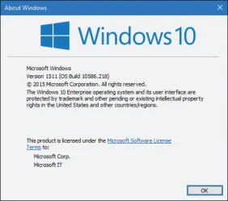<figcaption>図：winver によるバージョン情報の表示</figcaption></figure>

<p>画面にはWindowsのビルド番号（この例では <code>10586.218</code>）も表示されています。これは先行プレビューを受け取る Windows Insider にとって有用であるだけでなく、どのセキュリティ修正パッチレベルが適用されているかを把握する上でも極めて重要です。</p>

<h3 id="Windows-10-と将来のバージョン">Windows 10 と将来のバージョン</h3>
<p>Windows 10 の登場にあたり、マイクロソフトはこれまでよりも速い頻度でOSを継続アップデートしていく方針を打ち出しました。旧来のように「Windows 11」のような大きな別売パッケージを出すのではなく、Windows Update（または企業のサービシングモデル）を通じて稼働中の Windows 10 が最新のバージョンへと順次アップデートされていきます。本書の執筆時点までに、2015年11月（サービス提供年月を示す「バージョン1511」）と、2016年7月（「バージョン1607」、通称 Anniversary Update）の2つのメジャーアップデートが提供されています。</p>

<blockquote><p><strong>注意：</strong> マイクロソフト社内では、Windowsのビルドは依然として「波（Wave）」として管理されています。例えば、Windows 10 の初期リリースはコードネーム「Threshold 1」、2015年11月の更新は「Threshold 2」と呼ばれました。続くアップデート群は「Redstone 1」（RS1＝バージョン1607）、Redstone 2（RS2＝バージョン1703、Creators Update）、Redstone 3（RS3＝Fall Creators Update）と呼ばれています。</p></blockquote>

<h3 id="Windows-10-と-OneCore">Windows 10 と OneCore</h3>
<p>Windows 10 の技術的到達点の中で最も象徴的なのが <strong>OneCore</strong> の完成です。今日のWindowsは、従来のデスクトップPCやノートPCだけでなく、サーバー、スマートフォン（Windows 10 Mobile）、Xbox One、ウェアラブルホログラフィックPCである HoloLens、そしてRaspberry Piなどの小型IoTデバイスに至るまで、極めて広範な機器で動作しています。</p></section><section class="page" id="page-21" aria-label="page-21"><p>これらのデバイスは形状（フォームファクタ）も性能も大きく異なります。例えば HoloLens で物理マウスやキーボードをサポートしてもあまり意味がないため、そうしたデバイス用の Windows 10 では一部の機能が省かれています。しかし、<strong>カーネル、コアデバイスドライバ、およびベースプラットフォームのバイナリ自体はすべてのデバイスで本質的に同一</strong>です（パフォーマンスやハードウェア要件に応じたレジストリやポリシー設定の差異は存在します。第3章「プロセスとジョブ」の「APIセット」節でその具体例を解説します）。</p>

<p>本書では、どのデバイスで稼働しているかにかかわらず、根底にある <strong>OneCore カーネルの内部構造</strong>を解き明かします。ただし、スマートフォンやXbox One上で直接実験を行うのは困難（または公式に不可能）なため、本書で紹介する各種の「実験」は主に手元で容易に検証できるデスクトップ環境（マウス・キーボード付きPC）を対象としています。</p>

<h3 id="基本概念と用語">基本概念と用語</h3>
<p>ここからは、Windowsの全体像を理解する上で不可欠となる最重要概念を紹介していきます。プロセス、スレッド、仮想メモリなどの多くは、以降の章でさらに詳しく深掘りされます。</p>

<h3 id="Windows-API">Windows API</h3>
<p><strong>Windows API</strong>（アプリケーションプログラミングインターフェース）は、Windows OSファミリーが提供するユーザーモードの公式システムプログラミングインターフェースです。Windows APIを介してアプリケーションを作成することで、基礎となるハードウェアの差異や将来のOSバージョンの違いを意識することなく、安定して動作するソフトウェアを構築できます。</p></section><section class="page" id="page-22" aria-label="page-22"><h4 id="Windows-APIの多様な形態-フレーバー">Windows APIの多様な形態（フレーバー）</h4>
<p>Windows APIは当初、純粋なC言語スタイルの関数群として誕生しました。現在では開発者が利用できる関数は数万点にも及びます。Windowsの黎明期において、C言語は他の言語からも容易に呼び出せる「最大公約数」であり、OSの低レベルサービスを公開するのに最も適した選択肢でした。しかし、関数の膨大化に伴い、命名規則の一貫性の欠如や、C++の名前空間のような論理的グループ分けができないという限界が顕在化しました。この問題を克服するために導入されたのが <strong>COM（Component Object Model）</strong> です。</p>

<p>COMはもともと、Word文書の中にExcelの表やグラフを埋め込むような、Officeアプリ間でのデータ交換・複合文書連携を実現する技術「OLE（Object Linking and Embedding）」のために考案されました。初期のOLEはDDE（Dynamic Data Exchange）という古いWindowsメッセージング機能を利用していましたが、その制約が厳しかったため、新たな通信基盤としてCOM（1993年頃に「OLE 2」として登場）が開発されたのです。</p>

<p>COMは2つの根本原則の上に成り立っています。第1に、クライアントはオブジェクトと直接ではなく「インターフェース」（論理的に関連する一連のメソッドが厳格に定義された規約）を介して通信します。第2に、各インターフェースは <code>IUnknown</code> を基本型とし、参照カウントによる生存期間管理（<code>AddRef</code> / <code>Release</code>）と、他のインターフェースを取得する仕組み（<code>QueryInterface</code>）を共通して備えています。</p>

<h4 id="The-Windows-Runtime-WinRT">The Windows Runtime (WinRT)</h4>
<p>Windows 8 の登場とともに導入されたのが <strong>Windows Runtime（WinRT）</strong> です。WinRTは、スマートフォン、タブレット、PCなど多様な画面サイズや入力方式に適応した、新しいアプリケーションモデル「Windows アプリ（当初はストアアプリやModernアプリと呼ばれ、現在は Universal Windows Platform: UWP アプリとして知られる）」を支えるコアAPI基盤です。</p></section><section class="page" id="page-23" aria-label="page-23"><p>アーキテクチャの観点から見ると、WinRTはCOMの強固な土台の上に構築されており、基本COMインフラに多数の現代的な拡張を加えたものです。例えば、COMのタイプライブラリを発展させ、.NETメタデータ形式に基づく完全な型メタデータ（<code>.winmd</code> ファイルに格納）を標準で保持しています。API設計の観点からも、名前空間による整然とした階層構造、一貫した命名規約、オブジェクト指向プログラミングパターンが徹底されており、従来のクラシックなC言語形式Windows APIよりもはるかに洗練されています。</p>

<p>Windowsアプリ（UWP）は、従来のデスクトップアプリ（クラシックWindowsアプリ）とは異なる厳格なセキュリティ・ライフサイクルルールに従います（詳細はPart 2 第9章で解説）。</p>

<p>各種APIとアプリケーションの関係は単純な二者択一ではありません。デスクトップアプリからWinRT APIの一部を呼び出すこともできますし、逆にWindowsアプリからWin32やCOM APIの一部を利用することも可能です。ただし重要な点として、<strong>バイナリレベルではWinRT APIも依然として従来のWindows基盤バイナリとWindows APIの上に成り立っている</strong>ということです。.NETが内部で従来のWindows APIを呼び出しているのと同様に、WinRTはOSにとって完全に新しい「ネイティブ」カーネル層を意味するものではありません。</p>

<p>開発者は、C++、C#（その他.NET言語）、JavaScriptなど様々な言語からWinRTを快適に呼び出すことができます。マイクロソフトは各言語向けに「言語プロジェクション」を提供しており、例えばC++向けには <code>C++/CX</code>（現在はC++/WinRTに進化）、.NET向けにはネイティブコードのように透過的に呼べるCOM相互運用レイヤー、JavaScript向けには <code>WinJS</code> などが用意されています。</p>

<h4 id="The-NET-Framework">The .NET Framework</h4>
<p><strong>.NET Framework</strong> は現代のWindowsに不可欠な構成要素として標準同梱されています。表1-2に各Windowsバージョンで既定インストールされている .NET Framework のバージョンを示します（上位のバージョンを後から導入することも可能です）。</p>

<p><strong>表1-2：Windowsの既定の .NET Framework バージョン</strong></p>
<div class="table-scroll" role="region" tabindex="0" aria-label="表。横にスクロールできます"><table style="width:100%;border-collapse:collapse;margin:1em 0;font-size:14px;">
<thead><tr style="border-bottom:2px solid var(--line);text-align:left;">
<th style="padding:6px;">Windows バージョン</th><th style="padding:6px;">.NET Framework バージョン</th>
</tr></thead>
<tbody>
<tr style="border-bottom:1px solid var(--line);"><td style="padding:6px;">Windows 8</td><td style="padding:6px;">4.5</td></tr>
<tr style="border-bottom:1px solid var(--line);"><td style="padding:6px;">Windows 8.1</td><td style="padding:6px;">4.5.1</td></tr>
<tr style="border-bottom:1px solid var(--line);"><td style="padding:6px;">Windows 10 (初期版)</td><td style="padding:6px;">4.6</td></tr>
<tr style="border-bottom:1px solid var(--line);"><td style="padding:6px;">Windows 10 バージョン 1511</td><td style="padding:6px;">4.6.1</td></tr>
<tr style="border-bottom:1px solid var(--line);"><td style="padding:6px;">Windows 10 バージョン 1607</td><td style="padding:6px;">4.6.2</td></tr>
</tbody></table></div></section><section class="page" id="page-24" aria-label="page-24"><p>.NET Framework は主に以下の2つの巨大な構成要素から成り立っています：</p>
<ul>
  <li><strong>共通言語ランタイム（CLR: Common Language Runtime）</strong>：.NETの実行時エンジンです。CIL（共通中間言語）コードを実行時にCPUの機械語へと変換する JIT（Just-In-Time）コンパイラ、自動メモリ管理を行うガベージコレクター（GC）、型検証、コードアクセスセキュリティなどの高度なランタイムサービスを提供します。CLR自体はインプロセスCOMサーバー（DLL）として実装されており、Windows APIを内部でフル活用しています。</li>
  <li><strong>.NET Framework クラスライブラリ（FCL: Framework Class Library）</strong>：UI、ネットワーク通信、データベースアクセス、ファイルI/O、暗号化など、クライアントやサーバーアプリが必要とするあらゆる機能を網羅した膨大な型（クラス・インターフェース）のライブラリです。</li>
</ul>

<p>これらの機構と高水準言語（C#, Visual Basic, F#）により、開発者の生産性とアプリケーションの安全性・信頼性が飛躍的に向上します。図1-1に .NET Framework と Windows OS の階層関係を示します。</p>

<figure><figcaption>図1-1：.NET Framework と Windows OS の階層構造</figcaption></figure>

<h3 id="サービス-関数-ルーチン">サービス、関数、ルーチン</h3>
<p>Windowsのドキュメントや技術解説では、文脈によって意味が異なる用語がいくつかあります。例えば「サービス」という言葉は、OSの呼び出し可能なルーチンを指すこともあれば、デバイスドライバを指すことも、バックグラウンドのサーバープロセスを指すこともあります。本書では混乱を避けるため、以下の定義に統一しています：</p>
<ul>
  <li><strong>Windows API 関数</strong>：Windows APIとして公式に文書化され、外部から呼び出し可能なサブルーチン（例: <code>CreateProcess</code>, <code>CreateFile</code>, <code>GetMessage</code>）。</li>
  <li><strong>ネイティブシステムサービス（システムコール）</strong>：ユーザーモードから呼び出し可能な、OS内部の文書化されていない基盤サービス（例: <code>NtCreateUserProcess</code>。Windows APIの <code>CreateProcess</code> が内部で呼び出す真のシステムサービス）。</li>
  <li><strong>カーネルサポート関数（カーネルルーチン）</strong>：カーネルモードでのみ呼び出し可能な、OS内部のサブルーチン（例: デバイスドライバがシステムヒープからメモリを確保する際に呼ぶ <code>ExAllocatePoolWithTag</code>）。</li>
</ul></section><section class="page" id="page-25" aria-label="page-25"><ul>
  <li><strong>Windows サービス</strong>：Windowsのサービスコントロールマネージャー（SCM）によって管理・起動されるバックグラウンドプロセス（例: UNIXの cron や at に相当する <code>schtasks</code> を支えるタスクスケジューラサービス）。※レジストリ上はデバイスドライバも「サービス」として定義されますが、本書ではそれらは単にドライバと呼び、サービスとは呼びません。</li>
  <li><strong>ダイナミックリンクライブラリ（DLL）</strong>：複数のアプリケーションから実行時に動的にロード・共有できるサブルーチンのバイナリライブラリ（例: Cランタイムの <code>Msvcrt.dll</code>、Windowsサブシステムの中核である <code>Kernel32.dll</code>）。WindowsはDLLのコードセクションを物理メモリ上で1箇所のみに展開し、それを参照する全プロセス間で共有させるため、メモリを大幅に節約できます。なお、.NETアセンブリもDLL形式で配布されますが、機械語のエクスポート関数ではなく、CLRが解析するコンパイル済みメタデータを含んでいます。</li>
</ul>

<h3 id="プロセス-Processes">プロセス（Processes）</h3>
<p>日常の会話では「プログラム」と「プロセス」が同義に使われがちですが、内部構造においては明確に異なります。<strong>プログラムはディスク上に置かれた静的な命令列（実行ファイル）</strong>に過ぎません。これに対し、<strong>プロセスはそのプログラムのインスタンスを実行する際に必要な、OS上のあらゆるリソースを束ねる「動的なコンテナ」</strong>です。</p>

<p>最も高い抽象レベルにおいて、Windowsのプロセスは以下の要素で構成されています：</p>
<ul>
  <li><strong>専用のプライベート仮想アドレス空間</strong>：そのプロセスのみが利用できるメモリ番地の集合。</li>
  <li><strong>実行可能プログラム</strong>：初期コードとデータが定義され、仮想アドレス空間内にマッピングされるイメージ。</li>
  <li><strong>オープンされたハンドルのリスト</strong>：セマフォ、同期オブジェクト、ファイルなど、プロセス内の全スレッドからアクセス可能なシステムリソースへの参照テーブル。</li>
  <li><strong>セキュリティコンテキスト（アクセストークン）</strong>：実行ユーザー、所属グループ、付与された特権、UACの仮想化状態、セッションID、サンドボックス情報（AppContainer IDなど）を保持するトークン。</li>
  <li><strong>プロセスID（PID）</strong>：OS内で一意に識別するための数値（内部的にはクライアントIDの一部）。</li>
  <li><strong>少なくとも1つの実行スレッド</strong>：スレッドの存在しない「空のプロセス」も理論上作成できますが、コードを実行できないため実用的な意味はありません。</li>
</ul>

<p>プロセスの内部状態を調査・監視・操作するためのツールは多数存在します。Windows標準のタスクマネージャーから、デバッグツール、そして極めて多機能な Sysinternals ツールまで、それぞれの特徴を以下の実験を通じて確認していきましょう。</p></section><section class="page" id="page-26" aria-label="page-26"><p>プロセスの活動状況を観察するツールとして最も広く使われているのが、Windows標準の「タスクマネージャー」です（Windowsカーネル内には「タスク」という概念は存在しないため、この名称はやや奇妙ですが歴史的なものです）。以下の実験で基本的な機能を見てみましょう。</p>

<h4 id="実験-タスクマネージャーによるプロセス情報の確認">実験：タスクマネージャーによるプロセス情報の確認</h4>
<p>タスクマネージャーは以下のいずれかの方法で素早く起動できます：</p>
<ul>
  <li><code>Ctrl + Shift + Esc</code> キーを押す</li>
  <li>タスクバーの何もないところを右クリックし、<strong>タスク マネージャー</strong> を選択する</li>
  <li><code>Ctrl + Alt + Delete</code> キーを押し、画面から <strong>タスク マネージャー</strong> を選択する</li>
  <li>ファイル名を指定して実行（Win+R）から <code>taskmgr.exe</code> を実行する</li>
</ul>

<p>初回起動時や最小化表示時は「簡易表示」モードになっており、トップレベルの可視ウィンドウを持つアプリのみが表示されます。</p>

<figure><figcaption>図：タスクマネージャーの簡易表示モード</figcaption></figure>

<p>この画面では詳細な情報が得られないため、左下の <strong>詳細</strong> ボタンをクリックしてフル表示に切り替えます。既定では「プロセス」タブが表示されます。</p>

<figure>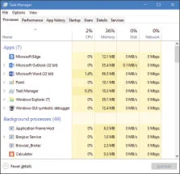<figcaption>図：タスクマネージャーの「プロセス」タブ</figcaption></figure>

<p>「プロセス」タブには、アプリ、バックグラウンドプロセス、Windowsプロセスの分類ごとにプロセスが一覧表示され、CPU・メモリ・ディスク・ネットワークの4つの主要負荷列が表示されます。列ヘッダーを右クリックすることで、PID（プロセスID）や状態、発行元、コマンドラインなどの追加列を自由に表示できます。展開可能なプロセスでは、そのプロセスが所有するトップレベルウィンドウの一覧も確認できます。</p></section><section class="page" id="page-27" aria-label="page-27"><p>さらに詳細なシステム情報を得るには、「詳細」タブに切り替えます（プロセスを右クリックして「詳細の表示」を選択すると、そのプロセスが選択された状態で直接切り替わります）。</p>

<blockquote><p><strong>注意：</strong> Windows 7 のタスクマネージャーにおける「プロセス」タブが、Windows 8 以降の「詳細」タブに相当します。また、Windows 7 の「アプリケーション」タブ（ウィンドウ単位の一覧）に相当する機能が、Windows 8 以降の新しい「プロセス」タブに統合されています。</p></blockquote>

<figure><figcaption>図：タスクマネージャーの「詳細」タブ</figcaption></figure>

<p>「詳細」タブはより高密度で、OS内部のプロセス一覧をフラットに表示します。ウィンドウの有無にかかわらず全プロセスが網羅され、極めて多彩な列を選択できます。列ヘッダーを右クリックして「列の選択」をクリックすると、表示可能な膨大な項目がダイアログに現れます。</p>

<figure><figcaption>図：タスクマネージャーの列の選択</figcaption></figure></section><section class="page" id="page-28" aria-label="page-28"><p>特に重要な表示列の意味は以下の通りです：</p>
<ul>
  <li><strong>スレッド（Threads）</strong>：そのプロセス内で稼働しているスレッドの総数です。スレッドを持たないプロセスは直接生成できず、存在しても何も処理できないため、通常は常に1以上となります。もしスレッド数が0のプロセスが残っている場合、何らかの理由（多くはバグのあるドライバの処理待ち）でプロセスが正常に破棄できず残留していることを示します。</li>
  <li><strong>ハンドル（Handles）</strong>：そのプロセス内のスレッドによってオープンされている、カーネルオブジェクト（ファイル、イベント、レジストリキー等）へのハンドル総数です。</li>
  <li><strong>状態（Status）</strong>：UIを持たない純粋なバックグラウンドプロセスの場合、通常は「実行中」となります（スレッド自体はイベント待ちやI/O完了待ちでブロックしていてもプロセスとしては稼働中とみなされます）。すべてのスレッドが一時停止状態にある場合は「中断（Suspended）」となります。これは通常自然には起きず、未公開ネイティブAPIの <code>NtSuspendProcess</code> などを外部ツール（Process Explorer等）から呼び出した場合に生じます。一方、UIを持つプロセスの場合、「実行中」はウィンドウのメッセージキューが応答している（イベントを処理できる）状態を意味します。Windowsストアアプリ（UWPアプリ）の場合は、ユーザーがアプリを最小化してバックグラウンドに回ると、5秒後にCPUやネットワーク消費を抑えるために自動的に「中断」状態へと移行します。これはバッテリー駆動機器（ノートPC・タブレット・スマートフォン）にとって極めて重要な省電力機構です。3つ目の状態が「応答なし（Not Responding）」です。これはUIスレッドが5秒以上にわたってメッセージキューの確認を行わなかった場合に発生します。スレッドが高負荷な計算に専念しているか、I/O待ちでブロックされているためUIがフリーズした状態であり、Windowsは該当ウィンドウを半透明化（ゴースト化）してタイトルバーに「(応答なし)」を付加します。</li>
</ul>

<p>各プロセスは、自身を起動した「親プロセス（作成者プロセス）」への参照（親PID）を保持しています。ただし、親プロセスがすでに終了している場合、この情報は更新されません。そのため、存在しない古い親PIDを指し続けるケースが多々ありますが、システムの安定性には何の影響もありません。Process Explorer などの高度なツールでは、PIDの再利用による誤認を防ぐため、親プロセスの開始日時も厳密に照合してツリーを構築します。</p></section><section class="page" id="page-29" aria-label="page-29"><blockquote><p><strong>親プロセスと作成者プロセスの違い：</strong> 特定のユーザーアプリケーションが起動したように見えるプロセスであっても、内部ではプロセスの生成APIを代行呼び出しする「ブローカープロセス（支援プロセス）」が介在している場合があります。このような場合、ブローカーをそのまま親としてツリー表示すると利用者が混乱するため（またハンドルやアドレス空間の継承の観点からも不適切な場合があるため）、親プロセスの「付け替え（Re-parenting）」が行われます。この具体例は第7章「セキュリティ」で解説します。</p></blockquote>

<h4 id="実験-プロセーツリーの観察-tlist-t">実験：プロセーツリーの観察（tlist /t）</h4>
<p>一般的なツールではあまり表示されませんが、プロセスには「親プロセスID（作成元PID）」という属性があります。この値はパフォーマンスモニターやプログラムから取得可能です。Windows Debugging Tools に含まれる <code>tlist.exe</code> に <code>/t</code> オプションを付けて実行すると、プロセスの親子関係をインデント付きのツリー形式で出力できます。以下に出力例を示します：</p>

<pre>System Process (0)
System (4)
smss.exe (360)
csrss.exe (460)
wininit.exe (524)
services.exe (648)
svchost.exe (736)
unsecapp.exe (2516)
WmiPrvSE.exe (2860)
RuntimeBroker.exe (3104)
SearchUI.exe (3504) Cortana
svchost.exe (788)
sihost.exe (3664)
taskhostw.exe (3032) Task Host Window
spoolsv.exe (1644)
svchost.exe (1936)
OfficeClickToRun.exe (1324)
MSOIDSVC.EXE (1256)</pre></section><section class="page" id="page-30" aria-label="page-30"><pre>MSOIDSVCM.EXE (2264)
MBAMAgent.exe (2072)
MsMpEng.exe (2116)
SearchIndexer.exe (1000)
SearchProtocolHost.exe (824)
svchost.exe (3328)
TrustedInstaller.exe (6052)
lsass.exe (664)
csrss.exe (536)
winlogon.exe (600)
dwm.exe (1100) DWM Notification Window
explorer.exe (3148) Program Manager
OneDrive.exe (4448)
cmd.exe (5992) C:\windows\system32\cmd.exe - tlist  /t
conhost.exe (3120) CicMarshalWnd
tlist.exe (5888)
SystemSettingsAdminFlows.exe (4608)</pre>

<p>ツリー表示では、インデントによって親子関係が表現されます。すでに親プロセスが終了してしまっているプロセス（上記の例の <code>explorer.exe</code> など）は、親を遡ることができないため最左端に配置されます。Windowsが記録しているのは「直近の親PID」のみであり、親の親（祖父母）といった家系図全体のリンクを辿る仕組みは保持していないからです。括弧内の数字はPIDであり、末尾のテキストはそのプロセスが作成したウィンドウのタイトルです。</p>

<p>Windowsが親PID以上のリンクを保持していないことは、以下の簡単な手順で実際に確かめられます：</p>
<ol>
  <li><code>Win + R</code> を押し、<code>cmd</code> と入力して Enter を押しコマンドプロンプトを開く。</li>
  <li><code>title Parent</code> と入力してウィンドウのタイトルを "Parent" に変更する。</li>
  <li><code>start cmd</code> と入力し、2つ目のコマンドプロンプトを起動する。</li>
  <li>2つ目のウィンドウで <code>title Child</code> と入力してタイトルを "Child" に変更する。</li>
  <li>2つ目のウィンドウから <code>mspaint</code> と入力してペイントを起動する。</li>
  <li>2つ目のウィンドウ（Child）で <code>exit</code> と入力して閉じる。ペイントはそのまま残る。</li>
  <li>タスクマネージャーを開き、「プロセス」タブで "Parent"（最初のcmd）を見つける。</li>
  <li>右クリックして「詳細の表示」へ移動し、該当の <code>cmd.exe</code> を右クリックして <strong>プロセスのツリーの終了</strong> を選択する。</li>
</ol></section><section class="page" id="page-31" aria-label="page-31"><figure><figcaption>図：タスクマネージャー上でのプロセスの階層</figcaption></figure>

<p>「プロセスのツリーの終了」を実行すると、最初のコマンドプロンプト（Parent）は終了しますが、<strong>ペイント（mspaint）は終了せずにそのままデスクトップに残り続けます</strong>。中間プロセス（Child）が先に終了してしまっていたため、祖父にあたる Parent と孫にあたるペイントの間の論理的リンクが完全に切断されており、OS側から子孫関係を特定できなかったためです。</p>

<h4 id="Sysinternals-Process-Explorer">Sysinternals Process Explorer</h4>
<p>マイクロソフトの Sysinternals ツール群に含まれる <strong>Process Explorer</strong> は、市販・無償を問わず世界中のあらゆるツールの中で、Windowsのプロセスとスレッドに関する最も深く正確な情報を可視化できる決定版ユーティリティです。本書の随所で行う実験でも主役として活躍します。Process Explorer の主な特徴は以下の通りです：</p>
<ul>
  <li>プロセスのセキュリティトークン詳細（所属グループ、付与特権、整合性レベル、仮想化状態）</li>
  <li>プロセス、スレッド、DLL、ハンドルの生成・消滅を色分けハイライト表示</li>
  <li>サービスホストプロセス（<code>svchost.exe</code> 等）内部で実行されている具体的なサービス名と説明の一覧</li>
</ul></section><section class="page" id="page-32" aria-label="page-32"><ul>
  <li>緩和策ポリシー（Mitigation Policies）やプロセス保護レベル（Protected Process Light: PPL 等）の可視化</li>
  <li>ジョブオブジェクトに所属するプロセスとその制限設定の詳細</li>
  <li>.NET アプリケーションの詳細（AppDomain一覧、ロード済みアセンブリ、CLRパフォーマンスカウンタ）</li>
  <li>Windows Runtime をホストする Modern/UWP プロセスのパッケージ情報</li>
  <li>プロセスおよび各スレッドの正確な起動日時</li>
  <li>DLLだけでなく、メモリマップトファイルを含む完全なマッピングファイル一覧</li>
  <li>個別のスレッドやプロセス全体をワンクリックで一時停止（サスペンド）および再開</li>
  <li>暴走した単一スレッドの強制終了</li>
  <li>一定期間に最もCPUを消費したプロセスの的確な特定</li>
  <li>折りたたみ可能な完全なプロセーツリー表示</li>
  <li>プロセスがオープンしている全ハンドル（名前なしハンドル含む）の一覧表示</li>
  <li>スレッドのCPUサイクル数に基づく極めて正確なCPU消費率の把握（第4章「スレッド」で詳解）</li>
  <li>メモリマネージャーの詳細（コミットチャージのピーク値、ページプール/非ページプールのカーネルメモリ消費量など）</li>
</ul>

<p>それでは、Process Explorer の基本操作を体験してみましょう。</p></section><section class="page" id="page-33" aria-label="page-33"><h4 id="実験-Process-Explorer-によるプロセス内部の観察">実験：Process Explorer によるプロセス内部の観察</h4>
<p>Sysinternals の公式サイトから最新の Process Explorer をダウンロードして実行します。標準ユーザー権限でも動作しますが、右クリックして <strong>管理者として実行</strong> すると、専用のカーネルドライバがロードされ、より多くの内部情報が開放されます。</p>

<p>初回起動時に最も重要なのが「シンボルの設定」です。シンボルが設定されていないと、プロセスのプロパティで「スレッド」タブを開いた際に警告が出たり、関数名が表示されずメモリアドレスのみとなってしまいます。シンボルが正しく設定されると、スレッドの開始関数やコールスタック（関数呼び出し履歴）がシンボル名（関数名）で表示され、各スレッドが内部で何を実行しているかが一目瞭然となります。シンボルを利用するには、Windows SDK に含まれる <strong>Debugging Tools for Windows</strong> がインストールされている必要があります。メニューの <strong>Options → Configure Symbols</strong> を開き、Dbghelp.dll のパスとシンボルパスを以下のように設定します：</p>

<figure><figcaption>図：Process Explorer のシンボルパス設定</figcaption></figure>

<p>シンボルパスに <code>srv*c:\symbols*http://msdl.microsoft.com/download/symbols</code> と指定すると、必要なシンボルファイルがマイクロソフトの公式シンボルサーバーから自動的にダウンロードされ、ローカルの <code>C:\symbols</code> フォルダにキャッシュされます。</p>

<blockquote><p><strong>ヒント：</strong> システム環境変数 <code>_NT_SYMBOL_PATH</code> に上記と同じシンボルパス文字列を設定しておくと、Process Explorer だけでなく、WinDbg などのデバッガーや Visual Studio も共通して自動的にこのシンボルサーバーを参照するようになるため、個別の設定の手間が省けます。</p></blockquote></section><section class="page" id="page-34" aria-label="page-34"><p>Process Explorer を起動すると、上部ペインにプロセーツリーがグラフィカルに表示されます。下部ペイン（View → Show Lower Pane）を開くことで、選択中のプロセスが保持するハンドル一覧や、ロードされているDLLおよびメモリマップトファイルの一覧を瞬時に確認できます。また、プロセスの名前にマウスカーソルを合わせると、ツールチップでフルパスやコマンドラインが表示されます。特定のプロセスでは以下のような付加情報もツールチップに表示されます：</p>
<ul>
  <li><code>svchost.exe</code> などのサービスホスト内部で稼働しているサービス名</li>
  <li><code>taskhostw.exe</code> などのタスクホスト内部で稼働しているスケジュールタスク名</li>
  <li>コントロールパネル等から呼ばれた <code>rundll32.exe</code> の呼び出し先ターゲット</li>
  <li><code>dllhost.exe</code>（COMサロゲート）内でホストされている COM クラス情報</li>
  <li><code>WmiPrvSE.exe</code> などの WMI ホストが提供しているプロバイダ情報</li>
  <li>UWP/Windowsストアアプリのパッケージメタデータ</li>
</ul>

<figure><figcaption>図：Process Explorer によるプロセス詳細の可視化</figcaption></figure>

<p>以下の手順で Process Explorer の基本操作を体験してみましょう：</p>
<ol>
  <li><strong>プロセスの色分け</strong>：既定ではサービスホストはピンク色、自身が起動した通常プロセスは青色などで色分けされています。これらは <strong>Options → Configure Colors</strong> から自由にカスタマイズ可能です。</li>
  <li><strong>ツールチップの確認</strong>：プロセス名の上にマウスを置くと、実行ファイルのフルパスやコマンドライン、ホスト中のサービス名などがポップアップ表示されます。</li>
</ol></section><section class="page" id="page-35" aria-label="page-35"><ol start="3">
  <li><strong>表示列の追加</strong>：<strong>View → Select Columns</strong> を開き、「Process Image」タブで「Image Path（実行ファイルパス）」にチェックを入れて列を追加してみましょう。</li>
  <li><strong>ツリー表示とソートの切り替え</strong>：「Process」列ヘッダーをクリックすると、プロセス名によるアルファベット順ソートに切り替わり、ツリー表示が一時的に解除されます。もう一度クリックすると逆順（Z〜A）になり、3回目をクリックすると元のプロセーツリー表示に戻ります。</li>
  <li><strong>自身のプロセスのみに絞り込む</strong>：<strong>View</strong> メニューの <strong>Show Processes from All Users</strong> のチェックを外すと、現在のログオンユーザーが所有するプロセスのみに一覧を絞り込めます。</li>
  <li><strong>差分ハイライトの確認</strong>：<strong>Options → Difference Highlight Duration</strong> を「3 seconds」に変更します。この状態で何か新しいアプリケーション（メモ帳や電卓など）を起動すると、新プロセスが3秒間鮮やかな緑色でハイライトされます。そのアプリを終了すると、今度は3秒間赤色でハイライトされてから一覧から消えます。バックグラウンドで一瞬だけ起動して消えるプロセスの追跡に極めて有用です。</li>
  <li><strong>プロセスのプロパティ探索</strong>：任意のプロセスをダブルクリックすると、詳細なプロパティウィンドウが開きます。スレッド、環境変数、セキュリティ、パフォーマンスなど多彩なタブが用意されており、本書の以降の実験でも頻繁に登場します。</li>
</ol>

<h3 id="スレッド-Threads">スレッド（Threads）</h3>
<p><strong>スレッド</strong> は、WindowsがCPUの実行時間を割り当てる（スケジュールする）基本単位です。スレッドが存在しなければ、プロセス内のプログラムコードが実行されることはありません。1つのスレッドは以下のコア要素で構成されています：</p>
<ul>
  <li><strong>CPUレジスタ群の状態（プロセッサコンテキスト）</strong>：プログラムカウンタ（命令ポインタ）、スタックポインタ、汎用レジスタなどの値。</li>
  <li><strong>2つのスタック</strong>：カーネルモードで実行中に使用するカーネルスタックと、ユーザーモードで実行中に使用するユーザースタック。</li>
  <li><strong>スレッドローカルストレージ（TLS）</strong>：ランタイムライブラリやDLLがスレッド専用の変数を格納するためのプライベート記憶域。</li>
  <li><strong>スレッドID（TID）</strong>：システム内でスレッドを一意に識別するID（内部的にはクライアントIDの一部であり、PIDとTIDは同一のID空間から採番されるため重複することはありません）。</li>
</ul>

<p>さらに、特定のスレッドはクライアントになりすまして処理を行うために、プロセスとは独立した独自の「セキュリティコンテキスト（アクセストークン）」を保持することもあります（マルチスレッドサーバーなどで頻繁に使用されます）。</p>
<p>CPUレジスタ群、スタック、プライベート記憶域などの情報はまとめて <strong>スレッドコンテキスト</strong> と呼ばれます。これらはCPUアーキテクチャ（x86、x64、ARM）に強く依存するため、OS内部構造としてもアーキテクチャ依存の <code>CONTEXT</code> 構造体として定義されており、<code>GetThreadContext</code> API 関数から取得できます。</p>
<p>あるスレッドから別のスレッドへと実行を切り替える処理は「コンテキストスイッチ」と呼ばれ、カーネルのスケジューラが介入するため一定のCPUオーバーヘッドを伴います。Windowsはこの切り替えコストを最小限に抑えるための仕組みとして、<strong>ファイバー（Fibers）</strong> と <strong>ユーザーモードスケジューリング（UMS）</strong> の2つの機構を提供しています。</p></section><section class="page" id="page-36" aria-label="page-36"><blockquote><p><strong>注意：</strong> 64ビット版Windows上で動作する32ビットアプリケーションのスレッドは、32ビット用と64ビット用の両方のコンテキストを保持しています。これらは <strong>Wow64</strong>（Windows-on-Windows 64-bit）が32ビットモードと64ビットモードを相互に切り替える際に使用されます。このスレッドは2つのユーザースタックと2つの <code>CONTEXT</code> ブロックを持ち、通常の Windows API は64ビット側のコンテキストを返します（32ビット側のコンテキストを取得するには <code>Wow64GetThreadContext</code> を使用します。詳細はPart 2 第8章を参照）。</p></blockquote>

<h4 id="ファイバー-Fibers">ファイバー（Fibers）</h4>
<p><strong>ファイバー</strong> は、Windows標準の優先度ベースのカーネルスケジューラに頼らず、アプリケーション自身の手で実行単位をスケジューリングできるようにする「軽量スレッド」です。カーネルからは完全に不可視であり、すべて <code>Kernel32.dll</code> のユーザーモード空間で協調的に実装されています。</p>
<p>ファイバーを使用するには、まず <code>ConvertThreadToFiber</code> 関数を呼び出して通常のスレッドを稼働中のファイバーへと変換します。その後、<code>CreateFiber</code> を呼び出して追加のファイバーを作成します。ただし通常のスレッドと異なり、ファイバーは生成されても自動的には実行されず、<code>SwitchToFiber</code> 関数を明示的に呼び出して切り替えることで初めて実行が開始されます。呼び出されたファイバーは、自ら終了するか、あるいは別のファイバーを明示的に指定して <code>SwitchToFiber</code> を呼び出すまでCPUを占有し続けます。</p>

<blockquote><p><strong>注意：</strong> 現代のプログラミングにおいて、ファイバーの使用は原則として推奨されません。カーネルから見えないため、スレッドローカルストレージ（TLS）の共有による競合、ファイバーローカルストレージ（FLS）の複雑さ、ブロッキングI/Oによる全体停止など多くの難点があるためです。さらに、複数プロセッサ上での並列実行ができず、協調マルチタスクに縛られます。特別な理由がない限り、Windowsカーネルのスケジューラに任せて通常のスレッドを使用するのが最善です。</p></blockquote>

<h4 id="ユーザーモードスケジューリング-UMS">ユーザーモードスケジューリング（UMS）</h4>
<p><strong>ユーザーモードスケジューリング（UMS）</strong> は、64ビット版Windowsでのみサポートされている、ファイバーの利点を活かしつつ欠点を大幅に解消した高度な実行機構です。UMSスレッドはカーネル側にも独立したスレッド状態を持っているため、<strong>カーネルから可視</strong>であり、ブロッキングシステムコールを発行したりリソース競合を適切に処理できます。</p>
<p>2つ以上のUMSスレッドがユーザーモードで処理を行っている間は、カーネルスケジューラを介さずにユーザーモード内で極めて高速に実行権を切り替えることができます。カーネルから見れば「同じ1つのスレッドが走り続けている」ように見え、オーバーヘッドがありません。そして、UMSスレッドがカーネルに入る操作（システムコール等）を行うと、専用のカーネルスレッドへと切り替わります（ダイレクトコンテキストスイッチ）。複数プロセッサ上での真の並行動作には制約があるものの、単なる協調マルチタスクを超えたプリエンプティブなモデルを実現しています。</p></section><section class="page" id="page-37" aria-label="page-37"><p>スレッドはそれぞれ独立した実行コンテキストを持ちますが、<strong>同一プロセス内のすべてのスレッドは、そのプロセスの仮想アドレス空間および各種システムリソースを完全に共有</strong>しています。つまり、同一プロセス内の任意のスレッドは、プロセス内の全メモリに対して完全な読み書きアクセス権を持っています。</p>
<p>一方、あるプロセスのスレッドが他のプロセスのメモリ空間を誤って参照してしまうことは、仮想記憶の保護機構により原則として起こり得ません（共有メモリセクションを介して意図的にアドレス空間を共有している場合や、同一ユーザー権限を持つ別プロセスが <code>ReadProcessMemory</code> / <code>WriteProcessMemory</code> などのデバッグAPIを使用して意図的にアクセスする場合を除きます）。</p>

<p>仮想アドレス空間と1つ以上のスレッドに加え、各プロセスはセキュリティコンテキストと、オープンされた各種カーネルオブジェクト（ファイル、共有メモリ、ミューテックス、イベント、セマフォ等）へのハンドルテーブルを保持しています（図1-2）。</p>

<figure><figcaption>図1-2：プロセスとスレッド、および各種リソースの構造</figcaption></figure>

<p>プロセスのセキュリティ情報は <strong>アクセストークン</strong> というカーネルオブジェクトに格納されています。アクセストークンには、プロセスのユーザー識別情報、グループSID、特権一覧などが含まれます。既定ではスレッドは独自のトークンを持ちませんが、必要に応じてスレッド単位でアクセストークンを割り当てることができ、これによりクライアントユーザーの権限になりすまして処理を行う（インパーソネーション）ことが可能になります。</p>

<h3 id="ジョブ-Jobs">ジョブ（Jobs）</h3>
<p>Windowsでは、プロセスをさらに大きな単位で統括管理するための <strong>ジョブオブジェクト（Job Object）</strong> という機構を提供しています。ジョブを使用すると、関連する複数のプロセスを1つのグループとしてまとめ上げ、グループ全体に対して共通の制限や属性を強制できます。</p></section><section class="page" id="page-38" aria-label="page-38"><p>ジョブオブジェクトが提供する代表的な制御機能には以下のようなものがあります：</p>
<ul>
  <li>グループ全体、またはプロセス単位での最大CPU使用時間の制限</li>
  <li>プロセス単位、またはジョブ全体のコミットメモリ（仮想メモリ）消費上限の設定</li>
  <li>プロセスの優先順位クラスの強制固定</li>
  <li>使用できるCPUコア（プロセッサアフィニティ）の制限</li>
  <li>UI制限（クリップボードアクセス、デスクトップ切り替え、ウィンドウ作成、システム終了の制限など）</li>
  <li>セキュリティ制限（特定トークンの強制、管理者特権の剥奪など）</li>
</ul>

<p>ジョブオブジェクトは、現代のWindowsにおいて極めて重要な役割を果たしています。例えば、ChromiumやEdgeなどのモダンWebブラウザは、タブやレンダリングプロセスを隔離・制限するためにジョブオブジェクトをフル活用しています。また、Windows 10 / Server 2016 で導入された <strong>Windows コンテナ（Docker support）</strong> のリソース分離基盤としてもジョブが中核で使われています。</p>

<blockquote><p><strong>注意：</strong> Process Explorer では、ジョブによって管理されているプロセスを茶色のハイライトで識別できます（Options → Configure Colors から有効化可能）。また、ジョブに属するプロセスのプロパティには「Job」タブが追加され、所属ジョブの詳細や課されている各種制限をリアルタイムで確認できます。</p></blockquote>

<p>プロセスとジョブの内部構造については第3章で、スレッドとスケジューリングアルゴリズムについては第4章で詳しく解説します。</p>

<h3 id="仮想メモリ-Virtual-memory">仮想メモリ（Virtual memory）</h3>
<p>Windowsは、フラット（線形）なアドレス空間に基づく <strong>仮想記憶（仮想メモリ）システム</strong> を実装しています。これにより、各プロセスにはまるで自分自身が巨大でプライベートな連続したメモリ空間を独占しているかのような錯覚（抽象化）が与えられます。仮想メモリが提供する論理的なメモリ配置は、背後にある物理RAMの実際の配置とは全く異なっていても構いません。プログラムの実行時、CPUのメモリ管理ユニット（MMU）とOSのメモリマネージャーが協調し、仮想アドレスを物理アドレスへと動的に変換（マッピング）します（図1-3）。</p>

<figure><figcaption>図1-3：仮想アドレス空間から物理メモリへのマッピング</figcaption></figure></section><section class="page" id="page-39" aria-label="page-39"><p>仮想アドレス空間の大きさは、ハードウェアアーキテクチャ（32ビットか64ビットか）によって劇的に異なります。</p>
<ul>
  <li><strong>32ビット x86 システム</strong>：仮想アドレス空間の理論上の最大値は 4 GB です。既定では、Windowsはこの空間を綺麗に半分に分割し、下位 2 GB（<code>0x00000000</code> 〜 <code>0x7FFFFFFF</code>）をユーザープロセス専用のプライベート空間に、上位 2 GB（<code>0x80000000</code> 〜 <code>0xFFFFFFFF</code>）をOS自身の保護されたシステム空間（カーネル空間）として割り当てます（図1-4）。下位半分のマッピングは実行中のプロセスが切り替わるたびにそのプロセスのものへと切り替わりますが、上位半分はどのプロセスの実行中であっても常に共通のOSシステムコードとデータが常駐します。※特別なブート設定（<code>/3GB</code>）と <code>IMAGE_FILE_LARGE_ADDRESS_AWARE</code> フラグを用いることで、ユーザー空間を 3 GB、カーネル空間を 1 GB に変更することも可能です。</li>
</ul>

<figure><figcaption>図1-4：32ビット Windows における仮想アドレス空間の分割</figcaption></figure>

<ul>
  <li><strong>64ビット システム（x64 / ARM64）</strong>：64ビットCPUの理論上のアドレス空間は 16 EB（エクサバイト＝約160億GB）という途方もない広さですが、現在のハードウェアとOSの実装では、そのうち実用的な一部を使用しています。Windows 8.1 以前の64ビット版では各プロセスに 8 TB のユーザー空間と 8 TB のシステム空間（計 16 TB）が割り当てられていましたが、<strong>Windows 10 / Server 2016 ではこれが大幅に拡大され、プロセスごとに 128 TB のユーザー空間と 128 TB のシステム空間（計 256 TB）</strong> がサポートされています。これにより、大規模データベースやインメモリ処理がメモリ不足に陥る心配は事実上なくなりました。</li>
</ul></section><section class="page" id="page-40" aria-label="page-40"><p>図1-5に64ビットWindowsにおける仮想アドレス空間の分割レイアウトを示します。</p>

<figure><figcaption>図1-5：64ビット Windows における広大な仮想アドレス空間</figcaption></figure>

<p>仮想メモリの詳細な動作原理、ページングファイル、ワーキングセット、アドレス変換テーブル（PTE）などの内部構造については、第5章「メモリ管理」で徹底的に解説します。</p>

<h3 id="カーネルモードとユーザーモード-Kernel-mode-vs-user-mode">カーネルモードとユーザーモード（Kernel mode vs. user mode）</h3>
<p>誤動作を起こしたユーザープログラムや悪意のあるソフトウェアが、OS全体を巻き込んでクラッシュさせたり他のプロセスのデータを不正に盗み取ったりすることを防ぐため、Windowsは現代のプロセッサがハードウェアレベルで提供する <strong>2つのプロセッサ実行モード</strong> を利用しています。</p>
<ul>
  <li><strong>ユーザーモード（User mode）</strong>：通常のアプリケーションが実行される制限付きモードです。ユーザーモードで動作するコードは、ハードウェアの制御レジスタへの直接アクセスや、他のプロセスのプライベートメモリへの自由なアクセスがCPUレベルで厳格に禁止されています。また、OSのシステム空間メモリにアクセスしようとすると直ちにハードウェア例外（アクセス違反、一般保護違反）が発生し、OSによってそのプロセスだけが安全に強制終了されます。</li>
  <li><strong>カーネルモード（Kernel mode / 特権モード）</strong>：オペレーティングシステムのコア部分（カーネル、エグゼクティブ、デバイスドライバ等）が実行される完全な特権モードです。カーネルモードコードはCPUのすべての特権命令を実行でき、システム全体の物理メモリやハードウェアデバイスへ無制限にアクセスできます。</li>
</ul>

<blockquote><p><strong>注意：</strong> x86およびx64プロセッサは、コードとデータの保護のために 0 から 3 までの 4 つの特権レベル（リング: Ring）を定義しています。Windowsはこのうち「Ring 0」をカーネルモードに、「Ring 3」をユーザーモードに割り当て、中間の Ring 1 と Ring 2 は使用していません。これは、ARMなど他のCPUアーキテクチャがハードウェア的に2つの特権レベルしか持たないため、OSの移植性と設計のシンプルさを保つための賢明な選択でした。</p></blockquote></section><section class="page" id="page-41" aria-label="page-41"><p>Windowsの各プロセスは独立したプライベートなユーザー空間を持っていますが、<strong>カーネルモードで動作するOSコードとデバイスドライバは、システム全体で単一の仮想アドレス空間（システム空間）を共有</strong>しています。</p>
<p>仮想メモリの各ページには、読み書きを行うためにCPUがどのモードにある必要があるかを示す属性ビット（U/Kビット）が付与されています。システム空間のページはカーネルモードからしかアクセスできませんが、ユーザー空間のページはユーザーモードとカーネルモードの双方からアクセス可能です。また、データ実行防止（DEP: Data Execution Prevention）が有効な場合、コードを含まないデータ領域のページには「実行不可（NX: No-Execute）」属性が付与され、バッファオーバーフロー攻撃などによる不正なシェルコード実行がCPUレベルで阻止されます。</p>

<p>ここで極めて重要な事実があります。それは、<strong>カーネルモードで動作するコンポーネント間には、メモリ保護の壁が存在しない</strong>ということです。いったんカーネルモードに入ると、サードパーティ製のデバイスドライバであってもOSの全メモリに完全な読み書きアクセス権限を持ち、Windowsのセキュリティ機構を自由に回避できてしまいます。したがって、カーネルモードで動作するコードにたった1つのバグ（バッファ破壊や不正ポインタ参照）があるだけで、システム全体がブルースクリーン（BSoD）となり停止してしまいます。</p>

<p>このリスクを低減するため、マイクロソフトは歴史的にカーネルドライバの品質向上策を強化し続けてきました：</p>
<ul>
  <li><strong>Driver Verifier</strong>：ドライバ開発者が潜在的なバッファオーバーランやメモリリークを検出するための強力なカーネル検証機能（第6章で解説）。</li>
  <li><strong>カーネルモードコード署名（KMCS）</strong>：64ビット版Windows 8.1以降、すべてのカーネルドライバは信頼された認証局による暗号署名が義務付けられ、未署名ドライバのロードは管理者権限であっても完全にブロックされます（テストモードでのみ例外許可）。</li>
  <li><strong>Windows 10 の SHA-2 EV署名・SysDev証明義務化</strong>：Windows 10 Anniversary Update（バージョン1607）以降、新規の全ドライバは SHA-2 拡張検証（EV）ハードウェア証明書での署名に加え、マイクロソフトの SysDev ポータルに提出して Microsoft による直接の電子署名（アテステーション署名）を受けることが必須となりました。</li>
  <li><strong>Windows Server 2016 の厳格な WHQL 認証</strong>：サーバー環境ではさらに厳格化され、単なるアテステーション署名ではロードできず、正式な Windows 認定試験（WHQL）に合格した署名入りドライバのみが実行を許されます。</li>
</ul></section><section class="page" id="page-42" aria-label="page-42"><p>また、エンタープライズ環境では後述する「Device Guard（コード整合性ポリシー）」を用いて、許可された特定の信頼ドライバ以外の一切のロードをハードウェア仮想化レベルで封じ込めることも可能です。</p>

<p>ユーザーアプリケーションがファイルアクセスなどのOS機能を呼び出す際、CPUはユーザーモードからカーネルモードへと切り替わります（システムコール）。例えば、Windows API の <code>ReadFile</code> を呼び出すと、最終的にファイルを読み取る内部カーネルルーチンを呼ぶ必要があります。このルーチンは保護されたシステムデータ構造を操作するため、カーネルモードで実行されなければなりません。プロセッサの特殊なトラップ命令（x86の <code>sysenter</code> や x64の <code>syscall</code>）が発行されると、CPUは特権モードに遷移してカーネル内のシステムディスパッチャへとジャンプします。そしてカーネル処理を終えると、再びユーザーモードに戻ってアプリケーションの実行を再開します。</p>

<blockquote><p><strong>注意：</strong> ユーザーモードからカーネルモードへの移行（およびその逆）は、スレッドスケジューリングには一切影響を与えません。<strong>モード遷移はコンテキストスイッチではありません</strong>。同一のスレッドが、単にCPUの特権レベルを切り替えながら処理を継続しているだけです。</p></blockquote>

<p>このように、通常のスレッドは稼働時間の一部をユーザーモードで、一部をカーネルモードで消費しています。特にグラフィックスやGUI処理の多くもカーネル（<code>win32k.sys</code>）で動作しているため、画面描画を多用するアプリは多くの時間をカーネルモードで過ごします。表1-3に、CPUの実行モード比率を計測するための代表的なパフォーマンスカウンタを示します。</p>

<p><strong>表1-3：モード関連のパフォーマンスカウンタ</strong></p>
<div class="table-scroll" role="region" tabindex="0" aria-label="表。横にスクロールできます"><table style="width:100%;border-collapse:collapse;margin:1em 0;font-size:14px;">
<thead><tr style="border-bottom:2px solid var(--line);text-align:left;">
<th style="padding:6px;">オブジェクト：カウンタ</th><th style="padding:6px;">説明</th>
</tr></thead>
<tbody>
<tr style="border-bottom:1px solid var(--line);"><td style="padding:6px;">Processor: % Privileged Time</td><td style="padding:6px;">CPU（個別または全体）がカーネルモードで実行されていた時間の割合</td></tr>
<tr style="border-bottom:1px solid var(--line);"><td style="padding:6px;">Processor: % User Time</td><td style="padding:6px;">CPU（個別または全体）がユーザーモードで実行されていた時間の割合</td></tr>
<tr style="border-bottom:1px solid var(--line);"><td style="padding:6px;">Process: % Privileged Time</td><td style="padding:6px;">該当プロセスの全スレッドがカーネルモードで実行されていた時間の割合</td></tr>
<tr style="border-bottom:1px solid var(--line);"><td style="padding:6px;">Process: % User Time</td><td style="padding:6px;">該当プロセスの全スレッドがユーザーモードで実行されていた時間の割合</td></tr>
<tr style="border-bottom:1px solid var(--line);"><td style="padding:6px;">Thread: % Privileged Time</td><td style="padding:6px;">個別スレッドがカーネルモードで実行されていた時間の割合</td></tr>
<tr style="border-bottom:1px solid var(--line);"><td style="padding:6px;">Thread: % User Time</td><td style="padding:6px;">個別スレッドがユーザーモードで実行されていた時間の割合</td></tr>
</tbody></table></div></section><section class="page" id="page-43" aria-label="page-43"><h4 id="実験-カーネルモード時間とユーザーモード時間の計測">実験：カーネルモード時間とユーザーモード時間の計測</h4>
<p>Windows付属の「パフォーマンス モニター」を使用すると、システムがカーネルモードとユーザーモードのどちらでどの程度時間を費やしているかを視覚的にリアルタイム監視できます：</p>
<ol>
  <li>スタートメニューを開き、「パフォーマンス モニター」（<code>perfmon</code>）と入力して起動する。</li>
  <li>左側のツリーで「モニタリング ツール → パフォーマンス モニター」を選択する。</li>
  <li>既定で表示されている折れ線グラフのカウンタを選択し、ツールバーの削除（×）ボタンまたは <code>Delete</code> キーを押して削除する。</li>
  <li>ツールバーの追加（＋）ボタンをクリックする。</li>
  <li>一覧から <strong>Processor</strong> を展開し、<code>Ctrl</code> キーを押しながら <strong>% Privileged Time</strong> と <strong>% User Time</strong> の両方を選択して「追加」をクリックし、「OK」を押す。</li>
  <li>コマンドプロンプトを開き、<code>dir \\%computername%\c$ /s</code> などを実行して大量のファイル走査（高負荷なファイルシステムI/O）を発生させてみる。</li>
</ol>

<figure>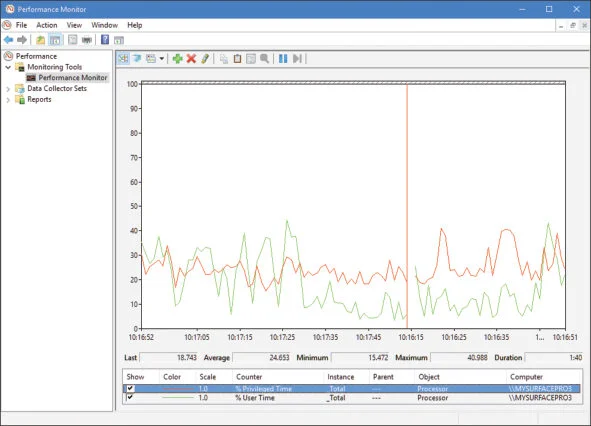<figcaption>図：カーネルモード時間とユーザーモード時間の監視グラフ</figcaption></figure>

<p>ディスクやネットワークの激しいI/O中には、カーネルモード時間（Privileged Time）が跳ね上がることがグラフから確認できます。</p></section><section class="page" id="page-44" aria-label="page-44"><p>タスクマネージャーでも簡単に確認できます。「パフォーマンス」タブを開き、CPUグラフを右クリックして <strong>カーネル時間を表示する</strong> にチェックを入れると、全体のCPU使用率のうちカーネルモードが占める割合が濃い青色で重ねて表示されるようになります。</p>

<h3 id="ハイパーバイザー-Hypervisor">ハイパーバイザー（Hypervisor）</h3>
<p>近年のWindowsにおける最大のアーキテクチャ的進化の1つが、<strong>Hyper-V ハイパーバイザー</strong> のOS基盤への深い統合です。ハイパーバイザーはCPUのハードウェア仮想化支援機能（Intel VT-x や AMD-V）を利用して、CPUの特権リングである Ring 0 よりもさらに下層の <strong>Ring -1（VMX rootモード）</strong> で稼働する超低レベルの仮想化ソフトウェア層です。</p>

<p>かつてハイパーバイザーは、サーバー上で複数の仮想マシン（VM）を動かすためだけの機能でした。しかし Windows 10 および Windows Server 2016 において、マイクロソフトはハイパーバイザーを <strong>ホストOS自体の防衛機構</strong> として活用する革新的なアーキテクチャ「<strong>VBS（仮想化ベースのセキュリティ: Virtualization-Based Security）</strong>」を導入しました。</p>

<p>VBSが有効なシステムでは、たとえWindowsカーネル自体であってもハードウェアの最高特権ではなく、ハイパーバイザー上で動作する1つの仮想マシン（VTL 0: 通常ワールド）に格下げされます。そして、それとは完全にハードウェアレベルでメモリが隔絶された、よりセキュアな隔離空間（VTL 1: セキュアワールド）が作成され、そこに <strong>セキュアカーネル（Secure Kernel）</strong> や分離型LSASS（Credential Guard）が配置されます。</p>

<p>これにより、万一悪意のあるカーネルドライバによって通常カーネル（Ring 0）が完全に侵害されたとしても、攻撃者はハイパーバイザーによって保護されたセキュアワールドのメモリを盗み見ることも改ざんすることもできません。Pass-the-Hash攻撃で狙われるユーザーの資格情報（パスワードハッシュ）や暗号キーはセキュアワールド内で厳重に防衛され、システムの根本的な乗っ取りが阻止されます（詳細は第7章およびPart 2 第9章で詳解）。</p></section><section class="page" id="page-45" aria-label="page-45"><h3 id="ファームウェア-Firmware">ファームウェア（Firmware）</h3>
<p>Windowsが起動する際、最初にハードウェアの初期化を行いブートローダーを呼び出すのがファームウェアです。従来のレガシーな PC では <strong>BIOS</strong>（Basic Input/Output System）が使われていましたが、現代のWindows PCでは完全に <strong>UEFI</strong>（Unified Extensible Firmware Interface）へと移行しています。</p>
<p>UEFIは、従来の16ビットリアルモードで動作していたBIOSと異なり、64ビットネイティブコードで動作し、2.2 TBを超えるGPTディスクからのブートをサポートします。さらにWindowsのセキュリティにおいて不可欠な <strong>セキュアブート（Secure Boot）</strong> を実現します。セキュアブートは、電源投入直後からファームウェア自身、Windowsブートマネージャー、そしてWindowsカーネルに至るまでのすべてのブートコードのデジタル署名を検証し、ルートキットなどの不正コードがOS起動前に潜り込むのを物理的に防ぎます。</p>

<h3 id="ターミナルサービスとマルチセッション">ターミナルサービスとマルチセッション</h3>
<p>Windowsは、複数のユーザーが同時にマシンにログオンして独立したデスクトップ環境を安全に利用できるように設計された <strong>マルチセッション（ターミナルサービス / リモートデスクトップサービス）</strong> アーキテクチャを内蔵しています。</p>
<p>システム内の各プロセスは、特定の「<strong>セッション（Session）</strong>」に所属しています。セッションとは、特定の対話型ログオンユーザーに紐づくすべてのリソース（ウィンドウステーション、デスクトップ、クリップボード、プロセス群）を包括する論理的な分離境界です。</p>
<ul>
  <li><strong>セッション 0</strong>：OSのシステムサービスやバックグラウンドタスク専用の非対話型セッションです。Windows Vista 以降、セキュリティ強化のためユーザーログオンセッションから完全に隔離され、ユーザーと対話するUIを表示することは禁止されています（セッション0分離）。</li>
  <li><strong>セッション 1 以降</strong>：対話型ユーザーがログオンするたびに新しく作成されるセッションです。コンソールからログオンしたユーザーも、リモートデスクトップ（RDP）経由で接続したユーザーも、それぞれ独立したセッションIDが割り振られます。</li>
</ul>

<p>Windows Server では、リモートデスクトップサービス（RDS）の役割を有効化することで、数十人から数百人のユーザーが単一のサーバー上で同時にそれぞれのセッションでアプリケーションを実行できます。</p></section><section class="page" id="page-46" aria-label="page-46"><p>マルチセッション環境において、セッション間でのリソース衝突を防ぎつつ、GDIやUSERなどのGUIサブシステムメモリを効率的に管理するため、Windowsは「<strong>セッション空間（Session Space）</strong>」と呼ばれるセッション固有のカーネル仮想アドレス領域を使用しています（第5章「メモリ管理」で詳解）。</p>

<h3 id="オブジェクトとハンドル-Objects-and-handles">オブジェクトとハンドル（Objects and handles）</h3>
<p>Windowsエグゼクティブ（OSカーネル上位層）の中核設計思想の1つが「<strong>オブジェクト指向設計</strong>」です。Windowsは、ファイル、ディレクトリ、プロセス、スレッド、セクション（共有メモリ）、ミューテックス、セマフォ、イベント、アクセストークン、レジストリキーなど、管理すべきあらゆるシステムリソースを <strong>エグゼクティブオブジェクト（カーネルオブジェクト）</strong> としてカプセル化して統一的に扱います。</p>

<p>ユーザーモードアプリケーションは、これらのカーネルオブジェクトのメモリ上の生のアドレス（ポインタ）を直接触ることはできません。代わりに、安全な不透明ポインタである「<strong>ハンドル（Handle）</strong>」を介してオブジェクトを間接的に参照・操作します。</p>
<p>プロセスがオブジェクトを作成またはオープンすると（例: <code>CreateFile</code> や <code>OpenProcess</code>）、OSはプロセスの「プロセスハンドルテーブル」に新しいエントリを登録し、そのインデックスであるハンドル値を返します。ハンドルはプロセスごとに固有のテーブルのインデックスであるため、プロセスAのハンドル値 <code>0x24</code> とプロセスBのハンドル値 <code>0x24</code> は通常全く別のオブジェクトを指しています。</p></section><section class="page" id="page-47" aria-label="page-47"><p>オブジェクトとハンドルによる抽象化は、Windowsに以下のような計り知れない利点をもたらしています：</p>
<ul>
  <li><strong>安全なリソース保護</strong>：すべてのカーネルデータ構造はユーザーモードから直接書き換えられることがなく、整合性が保たれます。</li>
  <li><strong>統一されたアクセス制御とセキュリティ</strong>：ハンドルをオープンする際、OSのセキュリティサブシステムが「要求されたアクセス権（読み取り、書き込み、終了など）」を検証し、許可された権限フラグをハンドルに記録します。以降の操作ではハンドルに付与された権限のみが許可されます。</li>
  <li><strong>厳格な生存期間（リファレンスカウント）管理</strong>：オブジェクトは「ハンドル参照カウント」と「カーネルポインタ参照カウント」の2種類の参照カウントを保持します。すべてのハンドルがクローズされ（<code>CloseHandle</code>）、カーネル内からの参照もゼロになった瞬間、オブジェクトは自動的かつ安全にメモリから解放され、リソースリークを防ぎます。</li>
  <li><strong>名前空間の統一管理</strong>：オブジェクトマネージャーは階層構造を持つ名前空間（オブジェクトディレクトリ）を保持しており、プロセス間で名前を指定してオブジェクトを共有（例: <code>\BaseNamedObjects</code> 内の共有ミューテックス）できます。</li>
</ul>

<h3 id="セキュリティ-Security">セキュリティ（Security）</h3>
<p>Windowsは誕生当初から、政府機関の厳格なセキュリティ評価基準（C2クラス、後のコモンクライテリア）を満たすよう設計された包括的なセキュリティアーキテクチャを備えています。</p>
<p>Windowsセキュリティモデルの中核を担うのが <strong>SRM（セキュリティリファレンスモニター: Security Reference Monitor）</strong> と呼ばれるカーネルコンポーネントです。SRMは、スレッドがオブジェクトへのハンドルをオープンしようとするたびに、以下の2つの情報を照合してアクセスを許可するか拒否するかを判定します：</p>
<ul>
  <li><strong>主体のセキュリティ属性（アクセストークン）</strong>：スレッドまたはプロセスに紐づくユーザーSID、所属グループSID、特権一覧。</li>
  <li><strong>客体のセキュリティ属性（セキュリティ記述子: Security Descriptor）</strong>：オブジェクトに付与された所有者情報、および <strong>DACL（随意アクセスコントロールリスト）</strong>。DACLには「誰に（どのSIDに）どのようなアクセス権を許可・拒否するか」を定義したエントリ（ACE）が並んでいます。</li>
</ul></section><section class="page" id="page-48" aria-label="page-48"><p>Windows Vista 以降では、従来のユーザー単位・グループ単位のアクセス制御に加え、強力な新セキュリティレイヤーが追加されてきました：</p>
<ul>
  <li><strong>整合性レベル（Mandatory Integrity Control: MIC）</strong>：すべてのプロセスとオブジェクトに「低」「中」「高」「システム」などの整合性レベルを割り当て、低整合性のプロセス（サンドボックス化されたブラウザ等）が高整合性のリソースを変更することを禁止する仕組み。</li>
  <li><strong>ユーザーアカウント制御（UAC）</strong>：管理者が通常業務を行う際は管理者特権を分離した「制限付きトークン」でアプリを実行し、システム変更時のみ明示的な昇格プロンプトを表示する機構。</li>
  <li><strong>AppContainer</strong>：Windowsストアアプリ（UWP）やEdgeブラウザで使用される強力な軽量サンドボックス。ネットワークアクセスやローカルファイルへのアクセスが細分化された「機能（Capabilities）」ごとに極めて厳密に制限されます。</li>
</ul>

<h3 id="レジストリ-Registry">レジストリ（Registry）</h3>
<p><strong>レジストリ</strong> は、WindowsのOS設定、ハードウェア構成、デバイスドライバ設定、インストール済みアプリケーションの構成情報などを一元管理する中央階層型データベースです。</p>
<p>レジストリはファイルシステムのフォルダ構造に似た階層構造を持ち、フォルダに相当する「<strong>キー（Key）</strong>」と、ファイルに相当する「<strong>値（Value）</strong>」から構成されます。ルートには <code>HKEY_LOCAL_MACHINE</code>（マシン全体の設定）、<code>HKEY_CURRENT_USER</code>（ログオンユーザーの設定）などの定義済みキーが存在します。ディスク上では「ハイブ（Hive）」と呼ばれるバイナリファイル（<code>SYSTEM</code>、<code>SOFTWARE</code>、<code>SAM</code>、<code>NTUSER.DAT</code> など）として保存されています。</p>
<p>第7章およびPart 2 第8章で、レジストリのメモリ内データ構造やトランザクション機構（KTM連携）などを詳解します。</p></section><section class="page" id="page-49" aria-label="page-49"><h3 id="Unicode">Unicode</h3>
<p>Windows NT系のアーキテクチャは、その誕生当初から内部のすべての文字列処理を <strong>Unicode（UTF-16LE）</strong> で行うように設計されています。これにより、単一のグローバルなバイナリで世界中のあらゆる言語・文字セットをネイティブにサポートできます。</p>

<p>後方互換性のため、文字列を受け取る Windows API 関数の多くには「<strong>A版（ANSI / 従来の文字コード版）</strong>」と「<strong>W版（Wide character / Unicode版）</strong>」の2種類が用意されています。例えば、ファイルをオープンする <code>CreateFile</code> は関数そのものではなく、コンパイル時にマクロによって <code>CreateFileA</code> または <code>CreateFileW</code> へと展開されます：</p>
<pre>#ifdef UNICODE
#define CreateFile CreateFileW
#else
#define CreateFile CreateFileA
#endif</pre>

<p>重要な点として、<strong>Windowsカーネルおよびコアサブシステムは内部でUnicodeしか扱いません</strong>。もしアプリケーションが ANSI 版の <code>CreateFileA</code> を呼び出した場合、システムはユーザーモードの <code>Kernel32.dll</code> 内で文字列を ANSI から Unicode（UTF-16）へと一時変換した上で、内部の Unicode 版システムルーチンを呼び出します。そのため、Unicode 版（W版）のAPIを直接呼び出すほうが変換オーバーヘッドがなく、文字化けの危険もありません。</p></section><section class="page" id="page-50" aria-label="page-50"><h4 id="実験-サブシステムDLLのエクスポート関数の確認-Dependency-Walker">実験：サブシステムDLLのエクスポート関数の確認（Dependency Walker）</h4>
<p>Dependency Walker ツールを使用して、Windowsの基幹DLLが ANSI 版と Unicode 版の関数ペアをエクスポートしている様子を観察してみましょう：</p>
<ol>
  <li>Dependency Walker（<code>depends.exe</code>）をダウンロードして起動します。</li>
  <li>メニューの <strong>File → Open</strong> から、<code>C:\Windows\System32\kernel32.dll</code> を開きます。</li>
  <li>画面右上の「エクスポート関数一覧」で関数名をクリックしてアルファベット順にソートします。</li>
  <li><code>CreateFileA</code> を探すと、そのすぐ下に <code>CreateFileW</code> が並んでいることが確認できます。</li>
</ol>

<figure><figcaption>図：kernel32.dll における A版 / W版関数のエクスポート</figcaption></figure>

<p><code>CreateFileMappingA/W</code>、<code>CreateProcessA/W</code> など、文字列を引数に取るほぼすべてのAPIが二重に定義されていることが確認できます。</p></section><section class="page" id="page-51" aria-label="page-51"><h3 id="Windows-内部の深掘り-Digging-into-Windows-internals">Windows 内部の深掘り（Digging into Windows internals）</h3>
<p>本書で解説する内部構造の多くは、Windowsのソースコード解析やマイクロソフトのカーネル開発者との議論に基づいています。しかし、読者の皆様がそれらをただ鵜呑みにする必要はありません。Windowsには、内部で何が起きているかを読者自身の手で暴き、視覚的に確かめるための強力なツール群が用意されています。</p>
<p>本書の随所に登場する「実験（EXPERIMENT）」は、実際のツールを操作しながらOS内部の挙動を検証できるように設計されています。表1-4に本書で主に使用する代表的なツールの一覧を示します。</p>

<p><strong>表1-4：Windows内部調査ツールの概要</strong></p>
<div class="table-scroll" role="region" tabindex="0" aria-label="表。横にスクロールできます"><table style="width:100%;border-collapse:collapse;margin:1em 0;font-size:14px;">
<thead><tr style="border-bottom:2px solid var(--line);text-align:left;">
<th style="padding:6px;">ツール名</th><th style="padding:6px;">実行ファイル</th><th style="padding:6px;">提供元</th><th style="padding:6px;">主な用途</th>
</tr></thead>
<tbody>
<tr style="border-bottom:1px solid var(--line);"><td style="padding:6px;">Autoruns</td><td style="padding:6px;">Autoruns.exe</td><td style="padding:6px;">Sysinternals</td><td style="padding:6px;">自動起動プログラム・拡張モジュールの完全調査</td></tr>
<tr style="border-bottom:1px solid var(--line);"><td style="padding:6px;">AccessChk</td><td style="padding:6px;">Accesschk.exe</td><td style="padding:6px;">Sysinternals</td><td style="padding:6px;">ファイル・キー・サービスへのアクセス権検証</td></tr>
<tr style="border-bottom:1px solid var(--line);"><td style="padding:6px;">Dependency Walker</td><td style="padding:6px;">Depends.exe</td><td style="padding:6px;">外部ツール</td><td style="padding:6px;">DLLのインポート/エクスポート関数の解析</td></tr>
<tr style="border-bottom:1px solid var(--line);"><td style="padding:6px;">Gflags</td><td style="padding:6px;">Gflags.exe</td><td style="padding:6px;">Debugging Tools</td><td style="padding:6px;">カーネル/プロセスのグローバルフラグ設定</td></tr>
<tr style="border-bottom:1px solid var(--line);"><td style="padding:6px;">Handle</td><td style="padding:6px;">Handle.exe</td><td style="padding:6px;">Sysinternals</td><td style="padding:6px;">オープン中のハンドル検索（CLI）</td></tr>
<tr style="border-bottom:1px solid var(--line);"><td style="padding:6px;">WinObj</td><td style="padding:6px;">Winobj.exe</td><td style="padding:6px;">Sysinternals</td><td style="padding:6px;">オブジェクトマネージャー名前空間の探索</td></tr>
<tr style="border-bottom:1px solid var(--line);"><td style="padding:6px;">Performance Monitor</td><td style="padding:6px;">Perfmon.exe</td><td style="padding:6px;">Windows標準</td><td style="padding:6px;">パフォーマンスカウンタの計測・記録</td></tr>
<tr style="border-bottom:1px solid var(--line);"><td style="padding:6px;">Process Explorer</td><td style="padding:6px;">Procexp.exe</td><td style="padding:6px;">Sysinternals</td><td style="padding:6px;">プロセス・スレッド・ハンドルの究極の調査</td></tr>
<tr style="border-bottom:1px solid var(--line);"><td style="padding:6px;">Process Monitor</td><td style="padding:6px;">Procmon.exe</td><td style="padding:6px;">Sysinternals</td><td style="padding:6px;">ファイル・レジストリ・プロセスのリアルタイム追跡</td></tr>
<tr style="border-bottom:1px solid var(--line);"><td style="padding:6px;">WinDbg / KD</td><td style="padding:6px;">Windbg.exe / Kd.exe</td><td style="padding:6px;">Debugging Tools</td><td style="padding:6px;">カーネルおよびユーザーモードの深層デバッグ</td></tr>
<tr style="border-bottom:1px solid var(--line);"><td style="padding:6px;">LiveKd</td><td style="padding:6px;">Livekd.exe</td><td style="padding:6px;">Sysinternals</td><td style="padding:6px;">稼働中マシン上でのライブカーネルデバッグ</td></tr>
</tbody></table></div></section><section class="page" id="page-52" aria-label="page-52"><h3 id="パフォーマンスモニターとリソースモニター">パフォーマンスモニターとリソースモニター</h3>
<p>Windows標準の「<strong>パフォーマンス モニター（Performance Monitor / perfmon）</strong>」は、システム全体の詳細な稼働状態を監視するための最も包括的なツールです。数百ものOSオブジェクトに対して数千のカウンタが用意されており、CPU消費、メモリの各プール使用量、ディスクI/O、ネットワーク転送量などをリアルタイムにグラフ化・ロギングできます。</p>

<p>また、日常的な監視により適した「<strong>リソース モニター（Resource Monitor / resmon）</strong>」も標準搭載されています。CPU、メモリ、ディスク、ネットワークの4大リソースの状況を直感的に把握できます（図）。</p>

<figure><figcaption>図：リソースモニターによるリソース活動の監視</figcaption></figure>

<p>リソースモニターでは、特定のプロセスにチェックを入れることで、そのプロセスに関連するディスクアクセスファイル名、オープンしているネットワーク接続（通信先IP、ポート番号、パケット損失率）、ロードしているモジュールなどをワンクリックで絞り込み表示できます。</p></section><section class="page" id="page-53" aria-label="page-53"><h3 id="カーネルデバッグ-Kernel-debugging">カーネルデバッグ（Kernel debugging）</h3>
<p><strong>カーネルデバッグ</strong> は、Windowsの内部を極限まで深く解き明かすための最強の調査手法です。メモリ上に展開された未公開カーネルデータ構造の生の内容を検査したり、カーネル内の処理フローを追跡したりできます。</p>

<h4 id="カーネルデバッグ用シンボル-Symbols">カーネルデバッグ用シンボル（Symbols）</h4>
<p>デバッガーを真に役立つものにするためには、「<strong>シンボルファイル（.PDB）</strong>」が不可欠です。シンボルファイルには、関数名、グローバル変数名、データ構造体のメンバ名とオフセット配置情報が記録されています。製品版のWindowsバイナリ（<code>ntoskrnl.exe</code> など）には実行速度とファイルサイズ削減のためシンボル名は含まれていませんが、マイクロソフトは公式の <strong>シンボルサーバー</strong> を無償公開しており、デバッガーからインターネット経由でオンデマンド取得できるようにしています。</p>
<p>デバッガーで以下のシンボルパスを設定するだけで、必要なシンボルが自動取得されます：</p>
<p><code>srv*c:\symbols*http://msdl.microsoft.com/download/symbols</code></p>

<h4 id="Debugging-Tools-for-Windows">Debugging Tools for Windows</h4>
<p>Windows SDK に同梱される「Debugging Tools for Windows」には、以下のデバッガーが含まれています：</p>
<ul>
  <li><strong>cdb / ntsd</strong>：コンソールUIベースのユーザーモードデバッガー</li>
  <li><strong>kd</strong>：コンソールUIベースのカーネルデバッガー</li>
  <li><strong>WinDbg</strong>：GUIを備えた、ユーザーモードおよびカーネルモード両用の高機能デバッガー</li>
</ul></section><section class="page" id="page-54" aria-label="page-54"><p>カーネルデバッグには主に以下の接続形態があります：</p>
<ul>
  <li><strong>リモートカーネルデバッグ（2台接続）</strong>：デバッグ対象のマシン（ターゲット）と、デバッガーを動かすマシン（ホスト）をネットワーク（KDNET）、USB、1394、シリアルケーブル等で接続します。ブレークポイントを設定してカーネルの実行を完全に一時停止させたり、ステップ実行することが可能です。</li>
  <li><strong>ローカルカーネルデバッグ（Local Kernel Debugging）</strong>：1台のマシン上で、自身が稼働中のカーネルをその場で直接参照する手法です（管理者権限のWinDbgから「File → Kernel Debug → Local」）。ブレークポイントによる停止はできませんが、稼働中システムのあらゆるカーネル構造体を読み取って検査できます。図1-6に64ビットWindows 10でのローカルカーネルデバッグ画面を示します。</li>
</ul>

<figure><figcaption>図1-6：WinDbg によるローカルカーネルデバッグの実行画面</figcaption></figure>

<p>カーネルデバッガー内では、エクスクラメーションマーク（<code>!</code>）で始まる多数のデバッガー拡張コマンド（例: <code>!process</code>, <code>!thread</code>, <code>!pool</code>, <code>!vm</code>）が利用できるほか、構造体を表示する <code>dt</code>（Display Type）コマンドにより、数千に及ぶカーネルデータ構造のメンバ配置を詳細にダンプできます。</p></section><section class="page" id="page-55" aria-label="page-55"><h4 id="実験-カーネル構造体の型情報の表示-dt-nt-_">実験：カーネル構造体の型情報の表示（dt nt!_*）</h4>
<p>カーネルデバッガー（WinDbg や LiveKd）で <code>dt nt!_*</code> と入力すると、カーネルシンボルに含まれる膨大な構造体の一覧が表示されます：</p>
<pre>lkd> dt nt!_*
ntkrnlmp!_KSYSTEM_TIME
ntkrnlmp!_NT_PRODUCT_TYPE
ntkrnlmp!_KUSER_SHARED_DATA
ntkrnlmp!_ULARGE_INTEGER
ntkrnlmp!_TP_POOL
ntkrnlmp!_TEB
...</pre>

<p>ワイルドカードを使って特定の構造体を検索することも可能です。例えば割り込みオブジェクトの構造体を探すには <code>dt nt!_*interrupt*</code> と入力します：</p>
<pre>lkd> dt nt!_*interrupt*
ntkrnlmp!_KINTERRUPT_MODE
ntkrnlmp!_KINTERRUPT
ntkrnlmp!_INTERRUPT_CONNECTION_DATA
...</pre>

<p>構造体名が分かれば、<code>dt nt!_KINTERRUPT</code> のように入力することで、構造体内部のメンバ名、データ型、オフセットが綺麗に整形されて表示されます：</p>
<pre>lkd> dt nt!_KINTERRUPT
+0x000 Type             : Int2B
+0x002 Size             : Int2B
+0x008 InterruptListEntry : _LIST_ENTRY
+0x018 ServiceRoutine   : Ptr64     unsigned char
+0x028 MessageIndex     : Uint4B
+0x030 ServiceContext   : Ptr64 Void
+0x038 SpinLock         : Uint8B
+0x050 DispatchAddress  : Ptr64     void
+0x058 Vector           : Uint4B
+0x05c Irql             : UChar
...</pre></section><section class="page" id="page-56" aria-label="page-56"><h4 id="LiveKd-ツール">LiveKd ツール</h4>
<p>Sysinternals の <strong>LiveKd</strong> は、OSをデバッグモードで起動していなくても、稼働中のWindows上で即座に WinDbg や kd によるカーネルデバッグを可能にする画期的な無償ツールです。</p>
<p>LiveKd は稼働中システムの仮想メモリのスナップショット（仮想的なクラッシュダンプ）を透過的に生成してデバッガーに提示するため、マシンの再起動や2台接続の機材を用意することなく、手軽に安全にカーネル内部の生データを調査できます。<code>livekd -w</code> と実行すれば GUI の WinDbg が起動します。</p>

<h3 id="Windows-Software-Development-Kit-Windows-SDK">Windows Software Development Kit (Windows SDK)</h3>
<p><strong>Windows SDK</strong> は、Windowsアプリケーションを開発・デバッグするための公式開発キットです。マイクロソフトの公式サイトから無償でダウンロードできます。</p>
<p>Windows内部構造を探究する上での Windows SDK の最大の価値は、<strong>公式のC言語ヘッダーファイル群</strong>（<code>Include</code> フォルダ）と、付属する各種調査ツール（<code>Bin</code> フォルダ）にあります。APIの定義や各種フラグ定数の正確な値を確認する上で一級のリソースとなります。</p>

<h3 id="Windows-Driver-Kit-WDK">Windows Driver Kit (WDK)</h3>
<p><strong>Windows Driver Kit (WDK)</strong> は、デバイスドライバの開発者向けキットであり、Windows内部構造情報のまさに宝庫です。公式ドキュメント（カーネルモードドライバアーキテクチャ設計ガイド等）には、通常公開されないカーネルの動作原理や同期オブジェクトの振る舞いが詳細に解説されています。</p>
<p>さらに WDK に含まれるヘッダーファイル（特に <code>ntddk.h</code>, <code>ntifs.h</code>, <code>wdm.h</code>）には、カーネルが使用する内部データ構造体やシステムルーチンのプロトタイプが多数定義されており、カーネルデバッガーで構造体を調査する際のリファレンスとして極めて有用です。</p></section><section class="page" id="page-57" aria-label="page-57"><h3 id="Sysinternals-ツール群">Sysinternals ツール群</h3>
<p>本書で紹介する実験の多くは、<strong>Windows Sysinternals</strong>（<a href="https://technet.microsoft.com/sysinternals" target="_blank" rel="noopener">sysinternals.com</a>）の無償ツールを使用しています。著者の1人である Mark Russinovich が中心となって開発したこれらのツールは、世界中のWindows管理者やセキュリティ技術者のデファクトスタンダードとなっています。</p>
<p>最も著名な Process Explorer や Process Monitor のほか、Autoruns、Handle、WinObj など、OS内部の可視化において比類なき威力を発揮します。ツール群は頻繁にアップデートされているため、常に最新版をダウンロードして活用してください。</p>

<h3 id="まとめ-Conclusion">まとめ（Conclusion）</h3>
<p>本章では、本書全体を通じて基礎となる Windows の主要なアーキテクチャ概念と基本用語（API、プロセス、スレッド、仮想メモリ、実行モード、オブジェクト、セキュリティ等）を整理し、内部構造を解明するための強力な調査ツール群の基本操作を紹介しました。</p>
<p>これでWindowsの内部世界を探究する準備が整いました。続く第2章では、システム全体の全体像と各コアコンポーネントがどのように結合しているかを解き明かす「システムアーキテクチャ」の旅へと進みましょう。</p></section><section class="page" id="page-58" aria-label="page-58"><h4 id="実験-カーネル構造体の型情報の表示-dt-nt-_-2">実験：カーネル構造体の型情報の表示（dt nt!_*）</h4>
<p>カーネルデバッガー（WinDbg や LiveKd）で <code>dt nt!_*</code> と入力すると、カーネルシンボルに含まれる構造体のうち、型情報が提供されている一覧が表示されます（<code>ntkrnlmp</code> は64ビットマルチプロセッサカーネルの内部ファイル名です。詳細は第2章を参照）：</p>
<pre>lkd> dt nt!_*
ntkrnlmp!_KSYSTEM_TIME
ntkrnlmp!_NT_PRODUCT_TYPE
ntkrnlmp!_ALTERNATIVE_ARCHITECTURE_TYPE
ntkrnlmp!_KUSER_SHARED_DATA
ntkrnlmp!_ULARGE_INTEGER
ntkrnlmp!_TP_POOL
ntkrnlmp!_TP_CLEANUP_GROUP
ntkrnlmp!_ACTIVATION_CONTEXT
ntkrnlmp!_TP_CALLBACK_INSTANCE
ntkrnlmp!_TP_CALLBACK_PRIORITY
ntkrnlmp!_TP_CALLBACK_ENVIRON_V3
ntkrnlmp!_TEB</pre>

<p><code>dt</code> コマンドではワイルドカードを用いた部分一致検索も可能です。例えば、割り込みオブジェクトの構造体名を探したい場合は、<code>dt nt!_*interrupt*</code> と入力します：</p>
<pre>lkd> dt nt!_*interrupt*
ntkrnlmp!_KINTERRUPT_MODE
ntkrnlmp!_KINTERRUPT_POLARITY
ntkrnlmp!_PEP_ACPI_INTERRUPT_RESOURCE
ntkrnlmp!_KINTERRUPT
ntkrnlmp!_UNEXPECTED_INTERRUPT
ntkrnlmp!_INTERRUPT_CONNECTION_DATA
ntkrnlmp!_INTERRUPT_VECTOR_DATA
ntkrnlmp!_INTERRUPT_HT_INTR_INFO
ntkrnlmp!_INTERRUPT_REMAPPING_INFO</pre>

<p>構造体名が判明したら、以下のように <code>dt</code> コマンドに対象構造体名を指定して実行することで、構造体の詳細なフィールド定義をダンプできます（デバッガーは大文字小文字を区別しません）：</p>
<pre>lkd> dt nt!_KINTERRUPT
+0x000 Type             : Int2B
+0x002 Size             : Int2B
+0x008 InterruptListEntry : _LIST_ENTRY
+0x018 ServiceRoutine   : Ptr64     unsigned char
+0x020 MessageServiceRoutine : Ptr64     unsigned char
+0x028 MessageIndex     : Uint4B
+0x030 ServiceContext   : Ptr64 Void
+0x038 SpinLock         : Uint8B
+0x040 TickCount        : Uint4B
+0x048 ActualLock       : Ptr64 Uint8B
+0x050 DispatchAddress  : Ptr64     void
+0x058 Vector           : Uint4B
+0x05c Irql             : UChar</pre></section><section class="page" id="page-59" aria-label="page-59"><pre>+0x05d SynchronizeIrql  : UChar
+0x05e FloatingSave     : UChar
+0x05f Connected        : UChar
+0x060 Number           : Uint4B
+0x064 ShareVector      : UChar
+0x065 EmulateActiveBoth : UChar
+0x066 ActiveCount      : Uint2B
+0x068 InternalState    : Int4B
+0x06c Mode             : _KINTERRUPT_MODE
+0x070 Polarity         : _KINTERRUPT_POLARITY
+0x074 ServiceCount     : Uint4B
+0x078 DispatchCount    : Uint4B
+0x080 PassiveEvent     : Ptr64 _KEVENT
+0x088 TrapFrame        : Ptr64 _KTRAP_FRAME
+0x090 DisconnectData   : Ptr64 Void
+0x098 ServiceThread    : Ptr64 _KTHREAD
+0x0a0 ConnectionData   : Ptr64 _INTERRUPT_CONNECTION_DATA
+0x0a8 IntTrackEntry    : Ptr64 Void
+0x0b0 IsrDpcStats      : _ISRDPCSTATS
+0x0f0 RedirectObject   : Ptr64 Void
+0x0f8 Padding          : [8] UChar</pre>

<p>なお、既定では <code>dt</code> コマンドは内部に含まれるサブ構造体（入れ子の構造体）の中身までは展開しません。サブ構造体のフィールドまで再帰的に展開して表示するには、<code>-r</code> スイッチまたは <code>-b</code> スイッチを使用します。例えば、カーネル割り込みオブジェクトを表示する際にこのスイッチを指定すると、<code>InterruptListEntry</code> フィールドに格納されている <code>_LIST_ENTRY</code> 構造体の内部フォーマット（<code>Flink</code>, <code>Blink</code>）まで詳細に展開されます：</p>
<pre>lkd> dt nt!_KINTERRUPT -r
+0x000 Type             : Int2B
+0x002 Size             : Int2B
+0x008 InterruptListEntry : _LIST_ENTRY
+0x000 Flink            : Ptr64 _LIST_ENTRY
+0x000 Flink            : Ptr64 _LIST_ENTRY
+0x008 Blink            : Ptr64 _LIST_ENTRY
+0x008 Blink            : Ptr64 _LIST_ENTRY
+0x000 Flink            : Ptr64 _LIST_ENTRY
+0x008 Blink            : Ptr64 _LIST_ENTRY
+0x018 ServiceRoutine   : Ptr64     unsigned char</pre>

<p><code>-r</code> スイッチの後ろに数値を付けることで、再帰展開の深さを指定することも可能です。例えば <code>dt nt!_KINTERRUPT -r1</code> と指定すると、1階層分だけサブ構造体を展開します。</p>
<p>デバッガーのセットアップや詳しいコマンド体系については、Debugging Tools for Windows のヘルプファイル（<code>Debugger.chm</code>）に網羅されています。さらにデバイスドライバ開発者を主眼に置いたデバッグ手法の詳細については、WDK の公式ドキュメントを参照してください。</p></section><section class="page" id="page-60" aria-label="page-60"><h4 id="LiveKd-ツール-2">LiveKd ツール</h4>
<p>Sysinternals の <strong>LiveKd</strong> は、OSをデバッグモードで起動していなくても、稼働中のWindows上で即座に WinDbg や kd によるカーネルデバッグを可能にする画期的な無償ツールです。</p>
<p>デバッグモードを有効にしていない実稼働マシン上で急遽カーネルレベルの障害調査が必要になった場合や、再起動すると再現しなくなってしまうトラブルを調査する際に極めて大きな威力を発揮します。</p>
<p>LiveKd の使い方は WinDbg や kd とほぼ同様です。指定したコマンドラインオプションは、背後で起動されるデバッガーへとそのまま渡されます。既定ではコンソール版の <code>kd</code> が起動しますが、<code>-w</code> スイッチを付与することで GUI 版の WinDbg を起動できます（利用可能なオプション一覧は <code>livekd -?</code> で確認できます）。</p>
<p>LiveKd は稼働中システムの仮想メモリのスナップショット（仮想的なクラッシュダンプ）を透過的に生成してデバッガーに提示するため、マシンの再起動や2台接続の機材を用意することなく、手軽に安全にカーネル内部の生データを調査できます。なお、メモリは起動時点のスナップショットであるため、時間の経過によって自動更新はされません。システム状態を更新したい場合は、<code>q</code> コマンドでデバッガーを一度終了すると、LiveKd が再起動するか尋ねてきます。デバッガーの出力がループして止まらない場合は <code>Ctrl+C</code>、ハングした場合は <code>Ctrl+Break</code> を押すことでデバッガープロセスを終了できます。</p>

<h3 id="Windows-Software-Development-Kit-Windows-SDK-2">Windows Software Development Kit (Windows SDK)</h3>
<p><strong>Windows SDK</strong> は、MSDN サブスクリプションまたはマイクロソフトの開発者ポータル（<a href="https://developer.microsoft.com/windows/downloads/windows-10-sdk" target="_blank" rel="noopener">Windows 10 SDK 配布ページ</a>）から誰でも無償でダウンロードできます。Visual Studio のインストーラーからもオプションとして導入可能です。Windows SDK のバージョンは常に最新の Windows OS に追従して提供されます。</p>
<p>Windows SDK には、前述の「Debugging Tools for Windows」に加えて、Windows アプリケーションをコンパイル・リンクするための C言語ヘッダーファイルとライブラリ群が含まれています。Windows 内部構造を探究する観点において特に価値が高いのは、<strong>公式の API ヘッダーファイル群</strong>（例: <code>C:\Program Files (x86)\Windows Kits\10\Include</code>）と、付属する各種ユーティリティ（<code>Bin</code> フォルダ）です。また、オフラインでも参照できる膨大な技術ドキュメントや、SDK および MSDN ライブラリに付属するサンプルソースコードも重要な知見を与えてくれます。</p>

<h3 id="Windows-Driver-Kit-WDK-2">Windows Driver Kit (WDK)</h3>
<p><strong>Windows Driver Kit (WDK)</strong> も同様に、MSDN サブスクリプションおよび公式サイトから無償で入手できます。WDK のドキュメントは MSDN ライブラリに完全に統合されています。</p>
<p>WDK は本来デバイスドライバ開発者向けのキットですが、<strong>Windows の内部構造に関する比類なき情報源</strong>でもあります。例えば、第6章では I/O システムのアーキテクチャやドライバモデルの骨格を解説しますが、個々のカーネルサポート関数の詳細なパラメータまでは網羅していません。WDK のドキュメント（特に『Kernel-Mode Driver Architecture Design Guide』および『Kernel-Mode Driver Reference』）には、すべてのカーネルサポート関数とドライバ機構のチュートリアルおよびリファレンスが網羅されています。</p></section><section class="page" id="page-61" aria-label="page-61"><p>さらに WDK には、重要な内部データ構造体、システム定数、未公開内部ルーチンのインターフェースを定義したヘッダーファイル群（とりわけ <code>ntddk.h</code>、<code>ntifs.h</code>、<code>wdm.h</code>）が同梱されています。本書では構造体の全体的なレイアウトや役割を解説していますが、個々のフィールドの詳細なサイズやデータ型までは掲載していません。オブジェクトディスパッチャヘッダー、待機ブロック、イベント、ミュータント、セマフォなどの正確な構造体定義は、これらの WDK ヘッダーファイルを調べることで完全に把握できます。</p>
<p>本書の解説を超えてさらに深く I/O システムやドライバモデルを極めたい方には、WDK 公式ドキュメントの熟読を強くお勧めします。また、Walter Oney 著『Programming the Microsoft Windows Driver Model, Second Edition』（Microsoft Press, 2002年）や、Penny Orwick & Guy Smith 著『Developing Drivers with the Windows Driver Foundation』（Microsoft Press, 2007年）も非常に有益な参考資料となります。</p>

<h3 id="Sysinternals-ツール群-2">Sysinternals ツール群</h3>
<p>本書で紹介する実験の多くは、<strong>Windows Sysinternals</strong>（<a href="https://technet.microsoft.com/sysinternals" target="_blank" rel="noopener">sysinternals.com</a>）の無償ツールを使用しています。著者の1人である Mark Russinovich が中心となって開発したこれらのツールは、世界中のWindows管理者やセキュリティ技術者のデファクトスタンダードとなっています。</p>
<p>最も著名な Process Explorer や Process Monitor のほか、Autoruns、Handle、WinObj など、OS内部の可視化において比類なき威力を発揮します。なお、これらツールの多くはカーネルモードの専用デバイスドライバを動的にロードして動作するため、管理者特権（昇格した権限）での実行が必要ですが、一部の機能は標準ユーザー権限でも稼働します。</p>
<p>Sysinternals ツールは頻繁に新機能の追加やバグ修正が行われているため、常に最新版をダウンロードして活用してください。ツールの更新情報は「Sysinternals Site Blog」（RSSフィードあり）で追跡できます。全ツールの詳しい解説やトラブルシューティングの実例集については、Mark Russinovich & Aaron Margosis 著『Windows Sysinternals Administrator’s Reference』（Microsoft Press, 2011年）および Sysinternals 公式フォーラムをご参照ください。</p>

<h3 id="まとめ-Conclusion-2">まとめ（Conclusion）</h3>
<p>本章では、本書全体を通じて基礎となる Windows の主要なアーキテクチャ概念と基本用語（API、プロセス、スレッド、仮想メモリ、実行モード、ハイパーバイザー、オブジェクト、セキュリティ等）を整理し、内部構造を解明するための強力な調査ツール群（タスクマネージャー、Process Explorer、パフォーマンスモニター、WinDbg/LiveKd、WDK）の基本操作を紹介しました。</p>
<p>これでWindowsの内部世界を探究する準備が整いました。続く第2章では、システム全体の全体像と各コアコンポーネントがどのように結合しているかを解き明かす「システムアーキテクチャ」の旅へと進みましょう。</p></section><section class="page" id="page-62" aria-label="page-62"><h2 id="第2章-システムアーキテクチャ">第2章 システムアーキテクチャ</h2>
<p>第1章で必須となる専門用語、基本概念、および調査ツールの操作方法を習得したところで、いよいよ Microsoft Windows オペレーティングシステム（OS）の内部設計思想と全体構造の探究に入りましょう。本章では、システムの全体アーキテクチャ、主要コンポーネント群、それらの相互作用、そしてそれぞれが実行されるコンテキスト（特権モードやアドレス空間）について詳しく解説します。まずは、Windows の仕様と設計を決定づけた当初の要件と目標から振り返ります。</p>

<h3 id="要件と設計目標">要件と設計目標</h3>
<p>1989年に Windows NT の仕様策定が始まった際、開発チームには以下の厳格な要件が課されていました：</p>
<ul>
  <li>真の32ビット（および将来の64ビット）、プリエンプティブ、リエントラントな仮想記憶OSを提供すること。</li>
  <li>複数のハードウェアアーキテクチャおよびプラットフォーム上で稼働可能であること（移植性）。</li>
  <li>複数のプロセッサ上でシームレスにスケールし、並列実行できること（対称型マルチプロセッシング：SMP）。</li>
  <li>分散コンピューティング環境に適した堅牢なネットワーク基盤を備えること。</li>
  <li>政府機関や企業の厳格なセキュリティ要件（C2クラス等）を満たすこと。</li>
  <li>主要な業界標準仕様および既存のアプリケーション環境（Win16, DOS, POSIX, OS/2等）と高度な互換性を維持すること。</li>
</ul></section><section class="page" id="page-63" aria-label="page-63"><ul>
  <li><strong>互換性（Compatibility）</strong>：既存の技術を継承・拡張しつつ、ユーザーインターフェースおよびAPIは従来の Windows や MS-DOS と高い互換性を維持すること。また、UNIX、OS/2、NetWare など異種OS環境とも円滑に相互運用できること。</li>
  <li><strong>パフォーマンス（Performance）</strong>：他の設計目標の制約の範囲内で、各ハードウェアプラットフォーム上で最大限の高速性と応答性を発揮すること。</li>
</ul>

<p>Windowsの内部構造を読み進めるにつれ、これら当初の設計目標と市場要件が、システムの細部に至るまで極めて見事に織り込まれていることが理解できるはずです。詳細な探究を始める前に、まず Windows の全体的な設計モデルを眺め、他の現代OSと比較してみましょう。</p>

<h3 id="オペレーティングシステムモデル">オペレーティングシステムモデル</h3>
<p>学術的なOSの分類において、OSアーキテクチャは主に「モノリシックカーネル（単一巨大カーネル）」と「マイクロカーネル（極小カーネル）」の2つに大別されます。</p>
<p>Windows は、伝統的なモノリシックカーネル（すべてのOS機能がカーネル空間で動作）と、純粋なマイクロカーネル（カーネル空間には最小限のIPC・スケジューリングのみを残し、ファイルシステムやドライバをユーザー空間サーバーとして動作させる）の双方の長所を巧みに組み合わせた「<strong>ハイブリッド構造</strong>」を採用しています。</p>
<p>Windows では、スレッドスケジューリング、割り込み・例外処理、マルチプロセッサ同期などを司るコア部分を「カーネル」として階層化しつつ、その上位にあるメモリ管理、プロセス管理、セキュリティ、I/Oマネージャーなどの「エグゼクティブ」コンポーネント、そしてグラフィックス・ウィンドウ管理（USER/GDI）やデバイスドライバ群も、性能（コンテキストスイッチのオーバーヘッド回避）のために同一のカーネルモード空間で高速に動作させています。一方で、APIインターフェースの提供や環境ごとの仕様差は、ユーザーモードの「環境サブシステム」として独立プロセスに切り離すモジュール化設計を貫いています。</p></section><section class="page" id="page-64" aria-label="page-64"><p>なお、Windows はシステムリソースを表現するために「オブジェクト」という概念を徹底的に活用していますが、厳密な意味でのオブジェクト指向言語で書かれているわけではありません。カーネルモードのOSコードの大部分は、極めて高い実行速度と移植性を確保するために <strong>C言語</strong> で記述されています。C言語はクラス継承やポリモーフィズムを直接構文としてはサポートしていないため、Windows におけるオブジェクト実装は、オブジェクト指向の利点を設計思想として巧みに取り入れた独自のC言語ベースの構造体モデルに基づいています。</p>

<h3 id="アーキテクチャの全体像-Architecture-overview">アーキテクチャの全体像（Architecture overview）</h3>
<p>Windows の主要なシステムコンポーネントとその階層関係を簡略化して図2-1に示します。この図は理解を助けるための基本構造であり、内部のあらゆる詳細を含んでいるわけではありませんが、全体像を把握する上で極めて重要です。</p>

<figure>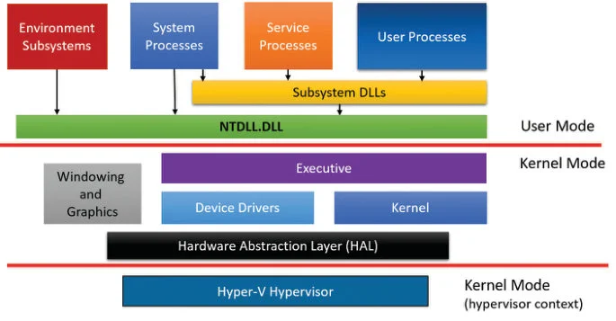<figcaption>図2-1：Windows の基本システムアーキテクチャ</figcaption></figure>

<p>図を見れば明らかなように、Windows は大きく <strong>ユーザーモード（User Mode）</strong> と <strong>カーネルモード（Kernel Mode）</strong> の2つの世界に明確に二分されています。</p></section><section class="page" id="page-65" aria-label="page-65"><p>ユーザーモードで動作するプロセス群は、主に以下の4つの基本タイプに分類されます：</p>
<ul>
  <li><strong>固定システムプロセス（Fixed System Processes）</strong>：OSの稼働に不可欠なシステムプロセス群です（ログオンを管理する <code>Winlogon.exe</code>、セッション管理を行う <code>Smss.exe</code>、認証を担う <code>Lsass.exe</code> など）。これらはWindowsサービスとしては構成されておらず、OSの起動シーケンスの中で直接起動されます。</li>
  <li><strong>サービスプロセス（Service Processes）</strong>：タスクスケジューラや印刷スプーラー、Windows Update など、ユーザーのログオン状態とは無関係にバックグラウンドで常駐・実行されるWindowsサービスをホストするプロセスです。Microsoft SQL Server や Exchange Server などのサーバー製品もサービスプロセスとして稼働します。</li>
  <li><strong>ユーザーアプリケーション（User Applications）</strong>：一般ユーザーが起動して利用する対話型プログラムです。Win32（32ビット/64ビット）、Windows Runtime（UWP）アプリなどがこれに該当します（16ビットアプリは32ビット版Windowsでのみ動作し、POSIXサブシステムはWindows 8で廃止されました）。</li>
  <li><strong>環境サブシステムサーバープロセス（Environment Subsystem Processes）</strong>：OSのネイティブサービスを、特定のOS環境（Windows API等）の仕様に合わせたセマンティクスとしてアプリケーションに提示するサーバープロセスです（<code>Csrss.exe</code>）。</li>
</ul>

<p>ユーザーアプリケーションは、システムサービスを直接呼び出すのではなく、各サブシステムに対応した <strong>サブシステムDLL</strong>（<code>Kernel32.dll</code>, <code>User32.dll</code>, <code>Gdi32.dll</code>, <code>Advapi32.dll</code> 等）を介してAPIを利用します。サブシステムDLLは、要求に応じてユーザーモードのサブシステムプロセスにメッセージを送信するか、あるいはネイティブシステムコール（<code>Ntdll.dll</code>）を発行してカーネルへと処理を橋渡しします。</p></section><section class="page" id="page-66" aria-label="page-66"><p>一方、カーネルモードのシステムコンポーネント群は以下の要素で構成されています：</p>
<ul>
  <li><strong>Windows エグゼクティブ（Executive）</strong>：OSの上位レベルの基盤機能を提供するモジュール群です。メモリ管理、プロセスとスレッドの管理、セキュリティ、I/O、ネットワーク通信、プロセス間通信（ALPC）などが含まれます。</li>
  <li><strong>Windows カーネル（Kernel）</strong>：CPUに最も近い低レベルの制御を受け持ちます。スレッドスケジューリング、割り込みおよび例外のディスパッチ、マルチプロセッサ同期（スピンロック等）を提供し、エグゼクティブが上位構造を構築するための基礎オブジェクトを提供します。</li>
  <li><strong>デバイスドライバ（Device Drivers）</strong>：ハードウェアを直接制御するドライバ（ストレージ、ネットワークカード、グラフィックカード等）や、ファイルシステムドライバ、ネットワークプロトコルスタック、フィルタドライバなどのソフトウェアドライバが含まれます。</li>
  <li><strong>ハードウェア抽象化レイヤー（HAL: Hardware Abstraction Layer）</strong>：マザーボードやチップセットの差異、割り込みコントローラ（APIC等）の差異を隠蔽し、カーネルやドライバに対して統一された抽象ハードウェアインターフェースを提供する独立した低レベルモジュール（<code>Hal.dll</code>）です。</li>
  <li><strong>ウィンドウ管理・グラフィックスサブシステム（USER/GDI）</strong>：GUIウィンドウの描画、メニュー、ダイアログ、マウスやキーボードの入力イベント配送を行うモジュールです（<code>Win32k.sys</code>）。Windows NT 4.0 においてパフォーマンス向上のためユーザーモードからカーネルモードへと移行されました。</li>
</ul></section><section class="page" id="page-67" aria-label="page-67"><h3 id="移植性-Portability">移植性（Portability）</h3>
<p>Windows は最初から多様な CPU アーキテクチャ上で動作するように設計されました。最初の Windows NT 3.1（1993年）は x86 と MIPS の2つのアーキテクチャをサポートして出荷され、直後に DEC Alpha AXP への対応が追加されました（Alpha版は64ビットCPU上で32ビットモードで動作）。その後 Windows NT 3.51 で Motorola PowerPC が追加されました。市場動向の変化により MIPS、PowerPC、Alpha のサポートは順次終了しましたが、Windows はその優れた移植性設計により、後の 64ビット時代において <strong>Intel Itanium（IA-64）</strong>、<strong>x64（AMD64 / Intel 64）</strong>、そしてモバイル・組み込みからPCにまで広がる <strong>ARM / ARM64</strong> へと迅速かつ極めてスムーズに適応することができました。</p>

<p>Windows がこれほど高い移植性を実現できている理由は、以下の2つの決定的な設計指針にあります：</p>
<ol>
  <li><strong>階層化アーキテクチャと HAL</strong>：マザーボードやチップセットの差異、タイマー、I/O割り込みコントローラの制御といったハードウェア依存の処理はすべて <strong>HAL（Hardware Abstraction Layer）</strong> に隔離されており、カーネルやエグゼクティブ本体はハードウェア差異を意識する必要がありません。</li>
  <li><strong>高級言語（C言語 / C++）による記述の徹底</strong>：OSコードの圧倒的大部分（95%以上）がポータブルな標準C言語で書かれており、CPUアーキテクチャ固有の命令（レジスタの直接操作、コンテキストスイッチのスタック操作、MMUのページテーブル制御等）が必要なごく一部のコア部分のみがアセンブリ言語で書かれています。</li>
</ol></section><section class="page" id="page-68" aria-label="page-68"><h3 id="対称型マルチプロセッシング-Symmetric-Multiprocessing-SMP">対称型マルチプロセッシング（Symmetric Multiprocessing: SMP）</h3>
<p>マルチタスクOSが複数のCPU（またはCPUコア）を扱う方式には、非対称型（ASMP）と対称型（SMP）の2つがあります。ASMPではOSのコードが特定の1つのCPUでのみ動作し、他のCPUはアプリケーション処理のみを実行するという非効率な制約がありました。</p>
<p>これに対し Windows は、最初から完全な <strong>対称型マルチプロセッシング（SMP）</strong> モデルを採用しています。すべてのCPUコアが対等に扱われ、カーネルモードのOSコードもユーザーモードのアプリコードも、システム内の任意のCPU上で自由に並列実行されます（図2-2）。</p>

<figure><figcaption>図2-2：対称型マルチプロセッシング（SMP）モデル</figcaption></figure>

<p>あるCPUがカーネル内でファイルシステム処理を実行している間に、別のCPUが別のスレッドのメモリ割り当て処理を並行して実行できます。カーネルの共有データ構造はスピンロックやプッシュロックなどの極めて洗練された同期プリミティブで保護されており、複数のプロセッサが互いを阻害することなく最大限のパフォーマンスを発揮します。</p></section><section class="page" id="page-69" aria-label="page-69"><h3 id="スケーラビリティ-Scalability">スケーラビリティ（Scalability）</h3>
<p>プロセッサ数の増加に合わせてシステム全体の処理能力が直線的に向上する能力を「スケーラビリティ」と呼びます。単に複数のCPUを並べるだけでは、共通リソースへのロック競合（ロックの取り合い）によってCPUが増えるほど性能が頭打ちになります。</p>
<p>Windows は、スケーラビリティを高めるために長年にわたってカーネルの大規模な改良を重ねてきました：</p>
<ul>
  <li><strong>きめ細かなロッキング（Fine-grained locking）</strong>：単一の巨大なカーネルロックを廃止し、データ構造ごと、キューごと、プロセッサごとにロックを細分化。</li>
  <li><strong>プロセッサごとのデータ構造（Per-Processor Data Structures）</strong>：スレッドの実行可能キュー（Ready Queue）やメモリの割り当てキャッシュ（ルックアサイドリスト）などをプロセッサごとに独立して保持することで、他のCPUと一切競合することなく処理を完結可能に。</li>
  <li><strong>NUMA（Non-Uniform Memory Access）対応</strong>：物理メモリが各プロセッサノードに分散配置される大規模マルチソケットサーバーにおいて、スレッドが自身に近いローカルメモリを優先的に利用するようスケジューラとメモリマネージャーが協調。</li>
</ul></section><section class="page" id="page-70" aria-label="page-70"><p>内部的な処理効率のため、Windows はCPUの稼働状態や割り当て（アフィニティ）を、マシンのネイティブワードサイズ（32ビットまたは64ビット）と同じビット数の「アフィニティマスク（ビットマスク）」で管理してきました。これにより、CPUレジスタ1つで極めて高速にプロセッサのビット演算が行えます。</p>
<p>しかしこの設計には、64ビット環境であっても最大64個の論理プロセッサしか扱えないという制約がありました。現代のデータセンター向けサーバーでは、論理コア数が数百個に達するシステムが珍しくありません。この壁を打破するため、Windows 7 / Server 2008 R2 以降、Windows は「<strong>プロセッサグループ（Processor Groups）</strong>」という上位概念を導入しました。</p>
<p>プロセッサグループは最大64個のプロセッサを1つのグループとしてまとめ、システム全体で最大4つのグループ（計256プロセッサ）、そして Windows 10 / Server 2016 では <strong>最大64グループ（計4,096プロセッサ）</strong> という驚異的なスケーラビリティを誇ります。既存のアプリケーションとの互換性を保ちつつ、超並列サーバーの全パワーを引き出すことが可能です。</p></section><section class="page" id="page-71" aria-label="page-71"><h3 id="クライアント版とサーバー版の違い">クライアント版とサーバー版の違い</h3>
<p>Windows は、単一の統一されたソースコードベースからクライアント版（Windows 10）とサーバー版（Windows Server 2016）の双方のバイナリをビルドしています。実際、両者のカーネルイメージ（<code>Ntoskrnl.exe</code>）や主要コンポーネントは本質的に同一です。</p>

<p>デスクトップPC向けの Windows 10 には、Home、Pro、Enterprise、Education などのエディションが存在します。サーバー向けには、Essentials、Standard、Datacenter などのエディションが提供されています。これらは単一のコードから生成されているにもかかわらず、サポートするCPU数や最大物理メモリ容量、提供される機能が大きく異なります。</p>

<p>表2-2に、主要な Windows エディションにおけるプロセッサおよびメモリの仕様制限を示します。</p>

<p><strong>表2-2：主要エディションのプロセッサ・メモリ制限の比較</strong></p>
<div class="table-scroll" role="region" tabindex="0" aria-label="表。横にスクロールできます"><table style="width:100%;border-collapse:collapse;margin:1em 0;font-size:14px;">
<thead><tr style="border-bottom:2px solid var(--line);text-align:left;">
<th style="padding:6px;">エディション</th><th style="padding:6px;">最大ソケット数 (x64)</th><th style="padding:6px;">最大論理プロセッサ数</th><th style="padding:6px;">最大物理メモリ (x64)</th>
</tr></thead>
<tbody>
<tr style="border-bottom:1px solid var(--line);"><td style="padding:6px;">Windows 10 Home</td><td style="padding:6px;">1 ソケット</td><td style="padding:6px;">64</td><td style="padding:6px;">128 GB</td></tr>
<tr style="border-bottom:1px solid var(--line);"><td style="padding:6px;">Windows 10 Pro</td><td style="padding:6px;">2 ソケット</td><td style="padding:6px;">128</td><td style="padding:6px;">2 TB</td></tr>
<tr style="border-bottom:1px solid var(--line);"><td style="padding:6px;">Windows 10 Enterprise</td><td style="padding:6px;">2 ソケット</td><td style="padding:6px;">128</td><td style="padding:6px;">2 TB</td></tr>
<tr style="border-bottom:1px solid var(--line);"><td style="padding:6px;">Windows Server 2016 Standard</td><td style="padding:6px;">64 ソケット</td><td style="padding:6px;">512</td><td style="padding:6px;">24 TB</td></tr>
<tr style="border-bottom:1px solid var(--line);"><td style="padding:6px;">Windows Server 2016 Datacenter</td><td style="padding:6px;">64 ソケット</td><td style="padding:6px;">512</td><td style="padding:6px;">24 TB</td></tr>
</tbody></table></div></section><section class="page" id="page-72" aria-label="page-72"><p>同じカーネルバイナリが、どのようにして自身がクライアント版かサーバー版か、あるいはどのエディションかを判別し、振る舞いを変えているのでしょうか？</p>

<p>Windows カーネルは起動時、プロダクトタイプを内部変数（<code>SharedUserData->NtProductType</code>）に読み込みます：</p>
<ul>
  <li><code>NtProductWinNt</code>（1）：デスクトップクライアント版（Windows 10）</li>
  <li><code>NtProductLanManNt</code>（2）：ドメインコントローラーサーバー</li>
  <li><code>NtProductServer</code>（3）：通常のメンバーサーバー（Windows Server）</li>
</ul>

<p>さらに現代のWindowsでは、100項目を超える詳細な機能制限が「<strong>ソフトウェアライセンスポリシー（Product Policy）</strong>」データとして暗号・デジタル署名付きでレジストリ（<code>HKLM\SYSTEM\CurrentControlSet\Control\ProductOptions</code>）に格納されています。BitLocker、Hyper-V、リモートデスクトップ接続数、最大メモリ容量などの機能の可否は、カーネル内のライセンスマネージャーがこのポリシー値を評価することによって動的に制御されます。</p></section><section class="page" id="page-73" aria-label="page-73"><p>また、クライアントとサーバーではシステムのチューニング（最適化の方向性）も自動的に切り替わります：</p>
<ul>
  <li><strong>スレッドのタイムスライス（クォンタム）</strong>：クライアント版では、前景で操作しているGUIアプリの応答性を最優先にするため、短めのクォンタム（約20ミリ秒）が割り当てられ、フォアグラウンドウィンドウに優先的なブーストが与えられます。一方、サーバー版ではコンテキストスイッチのオーバーヘッドを減らしバックグラウンドのスループットを最大化するため、約6倍長いクォンタム（約120ミリ秒）が既定となります。</li>
  <li><strong>メモリ管理の配分</strong>：クライアント版ではアプリケーションのワーキングセット（プロセス物理メモリ）を優先し、サーバー版ではファイルシステムキャッシュ（スタンバイリスト）やシステムプールの拡張を優先するチューニングが行われます。</li>
</ul>

<h4 id="実験-ライセンスポリシーによる有効化機能の確認">実験：ライセンスポリシーによる有効化機能の確認</h4>
<p>Windowsが内部で保持するライセンスポリシー設定は、非公開のネイティブAPIを呼び出すことでダンプできます。本書のサンプルツール（<code>LicenseInfo.exe</code>）を実行すると、以下のように現在のOSで許可されている詳細なポリシー値が表示されます：</p></section><section class="page" id="page-74" aria-label="page-74"><pre>Kernel
------
Maximum allowed processor sockets: 64
Maximum memory allowed in MB (x86): 4096
Maximum memory allowed in MB (x64): 4194304
Add physical memory allowed: Yes
Add VM physical memory allowed: Yes
Maximum physical page in bytes: 0
Native VHD boot: Yes
Dynamic Partitioning supported: Yes
Virtual Dynamic Partitioning supported: Yes
Memory Mirroring supported: Yes
Persist defective memory list: Yes</pre>

<h3 id="チェックドビルド-Checked-Build">チェックドビルド（Checked Build）</h3>
<p>マイクロソフト社内およびデバッグ用途向けに、通常の製品版（Free build / Retail build）とは別に <strong>チェックドビルド（Checked build）</strong> と呼ばれる特殊なデバッグ用ビルドが存在します（Windows 8.1 以前はMSDN等で外部公開されていました）。</p>
<p>チェックドビルドは、コンパイル時マクロ <code>DBG=1</code> を有効にして再コンパイルされたバイナリ群です。コードの最適化が無効化されているか控えめになっており、内部のパラメータ検証、引数の厳格なチェック、メモリ破壊の追跡コードが埋め込まれています。</p></section><section class="page" id="page-75" aria-label="page-75"><p>システムがチェックドビルドで稼働しているかどうかは、PowerShell から WMI を照会することで簡単に判定できます：</p>
<pre>PS C:\> (Get-CimInstance Win32_OperatingSystem).Debug
False</pre>

<p>通常の製品環境では <code>False</code> と表示されます。</p>

<p>チェックドビルド内部の追加コードの多くは、WDKヘッダーで定義されている <code>ASSERT</code> や <code>NT_ASSERT</code> マクロによるものです。これらは関数の入力値やポインタの妥当性を常に監視しており、万一不正な値（論理エラー）を検知すると、即座にカーネルデバッガーにブレークして開発者に問題の発生箇所を通報します。デバイスドライバの開発やカーネルモジュールの厳密なテストにおいて、潜在的なバグを早期発見するための極めて強力な武器となります。</p></section><section class="page" id="page-76" aria-label="page-76"><h3 id="仮想化ベースのセキュリティ-VBS-アーキテクチャ概要">仮想化ベースのセキュリティ（VBS）アーキテクチャ概要</h3>
<p>第1章で触れたように、通常のユーザーモードとカーネルモードの二元分離は、悪意ある（またはバグのある）ユーザープログラムからOSを保護する上で不可欠な境界です。しかし、いったん不正なコードがカーネルモードに入り込んでしまうと（パッチ未適用の脆弱性の悪用や、悪意あるドライバのロードなど）、カーネルコードはシステム全体の全メモリに完全な権限を持つため、システムは完全に陥落してしまいます。</p>

<p>この根本的なリスクを封じ込めるため、Windows 10 / Server 2016 で導入されたのが <strong>仮想化ベースのセキュリティ（VBS: Virtualization-Based Security）</strong> です。VBSは、プロセッサの仮想化支援機能（Intel VT-x / AMD-V）と Hyper-V ハイパーバイザーを利用して、CPUのハードウェア特権レベルを拡張し、2つの独立した「仮想信頼レベル（VTL: Virtual Trust Level）」を創出します（図2-3）。</p>

<figure><figcaption>図2-3：仮想化ベースのセキュリティ（VBS）の基本アーキテクチャ</figcaption></figure>

<ul>
  <li><strong>VTL 0（通常ワールド）</strong>：従来のWindows環境全体（通常カーネル、ドライバ、ユーザーモードアプリ）がそのまま稼働する領域です。たとえRing 0（カーネルモード）であってもVTL 0に属します。</li>
  <li><strong>VTL 1（セキュアワールド）</strong>：VTL 0からハードウェア（SLAT/EPT）レベルで完全に隔離された特権領域です。VTL 1には独立した <strong>セキュアカーネル（Secure Kernel）</strong> と、隔離されたユーザーモード環境（IUM: Isolated User Mode）が存在します。</li>
</ul></section><section class="page" id="page-77" aria-label="page-77"><p>セキュアカーネルは、ディスク上では <code>securekernel.exe</code> という独立したバイナリファイルとして存在します。VTL 1内部で動作する隔離ユーザーモード（IUM）は、通常のユーザーモードプロセスから機密データを守るシェルターとして機能します。</p>

<p>VTL 1で動作するプロセスは、通常のシステムコールではなく、VTL 1専用のセキュアシステムコールを使用します。これらのセキュアAPIは、通常版の <code>Ntdll.dll</code> や <code>Kernelbase.dll</code> に対応する特殊なライブラリ（<code>Iumdll.dll</code> および <code>Iumbase.dll</code>）を通じて提供されます。標準のWin32ライブラリのコードを賢く共有することで、VTL 1アプリケーションのメモリフットプリントを最小限に抑えています。</p></section><section class="page" id="page-78" aria-label="page-78"><p>VTL 1の環境は強力な権限を持つため、任意のプログラムを勝手に実行させるわけにはいきません。そのため、マイクロソフトによって特別に署名された <strong>トラストレット（Trustlet）</strong> と呼ばれる厳選されたバイナリのみがVTL 1で動作することを許されています。</p>
<p>トラストレットの代表例が、認証セキュリティを守る <strong>分離型LSA（Credential Guard: <code>lsaiso.exe</code>）</strong> です。パスワードのNTLMハッシュや Kerberos チケット生成鍵などの認証シークレットは、通常の <code>lsass.exe</code>（VTL 0）から切り離され、すべて VTL 1 の <code>lsaiso.exe</code> 内に隔離保管されます。これにより、Mimikatz などのメモリ走査ツールを用いて管理者権限でカーネルメモリをダンプしても、認証資格情報を奪取することが原理的に不可能となります。</p>

<h3 id="主要システムコンポーネント-Key-system-components">主要システムコンポーネント（Key system components）</h3>
<p>図2-4に、Windows の全体構造を構成する主要コンポーネントの詳細な配置図を示します。</p>

<figure><figcaption>図2-4：Windows を構成する主要コンポーネントの詳細構造</figcaption></figure>

<p>以降のセクションでは、この図に示されている主要なコンポーネント群を1つずつ詳しく見ていきます。</p></section><section class="page" id="page-79" aria-label="page-79"><h3 id="環境サブシステムとサブシステムDLL">環境サブシステムとサブシステムDLL</h3>
<p><strong>環境サブシステム</strong> の役割は、Windows の基本エグゼクティブシステムサービスの一部を、特定のOSセマンティクス（API仕様）に合わせてアプリケーションに公開することです。アプリケーションは、Windows のネイティブサービス（<code>Nt...</code> システムコール）を直接呼ぶのではなく、特定のサブシステム向けに作成されたAPI（Win32など）を呼び出して処理を行います。</p>

<figure><figcaption>図：環境サブシステムとアプリケーションの通信</figcaption></figure>

<p>実行可能ファイル（PEヘッダー）には、そのプログラムがどのサブシステム向けにビルドされたかを示す「サブシステムタイプ」フィールドが含まれています。</p></section><section class="page" id="page-80" aria-label="page-80"><h4 id="実験-イメージのサブシステムタイプの確認-dumpbin">実験：イメージのサブシステムタイプの確認（dumpbin）</h4>
<p>Visual Studio のコマンドプロンプトから <code>dumpbin /headers</code> を実行すると、実行ファイルのヘッダー情報を確認できます。以下にメモ帳（<code>notepad.exe</code>）とコマンドプロンプト（<code>cmd.exe</code>）の出力比較を示します：</p>

<figure><figcaption>図：dumpbin による GUI と Console サブシステムの判別</figcaption></figure>

<p>メモ帳は <code>Windows GUI</code>、コマンドプロンプトは <code>Windows CUI (Console)</code> と表示されています。ただしこれは実行時のウィンドウの扱いの違いを示すフラグに過ぎず、背後にあるサブシステム自体は同一の「Windows サブシステム」です。</p>

<p>アプリケーションがサブシステムDLLの関数を呼び出した際、内部では以下の3パターンのいずれかが発生します：</p>
<ol>
  <li><strong>DLL内で完全に完結</strong>：処理がサブシステムDLLのユーザーモードコードだけで完結する（例: <code>GetCurrentProcessId</code> はPEB/TEBから即座に返すためシステムコールも不要）。</li>
  <li><strong>カーネルのシステムコールを発行</strong>：メモリ確保やファイル操作などのため、<code>Ntdll.dll</code> を経由してカーネルモードのエグゼクティブサービスを直接呼び出す。</li>
  <li><strong>サブシステムプロセスと通信</strong>：プロセスの起動・終了通知やコンソール制御など、サブシステムサーバープロセス（<code>Csrss.exe</code>）にALPC経由でリクエストを送信する。</li>
</ol></section><section class="page" id="page-81" aria-label="page-81"><h4 id="サブシステムの起動と構成">サブシステムの起動と構成</h4>
<p>システム起動時にどのサブシステムをロードするかは、レジストリキー <code>HKLM\SYSTEM\CurrentControlSet\Control\Session Manager\SubSystems</code> に定義されています（図2-5）。</p>

<figure>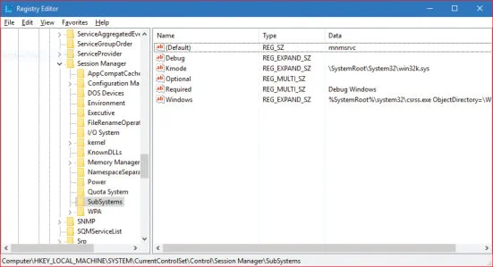<figcaption>図2-5：レジストリに登録されたサブシステム設定</figcaption></figure>

<p><code>Required</code> 値には、システムの稼働に絶対に必要なサブシステムとして <code>Windows</code> が指定されています。そのファイル定義として指定されているのが <code>Csrss.exe</code>（クライアント/サーバーランタイムサブシステム）です。</p>

<h4 id="Windows-サブシステム">Windows サブシステム</h4>
<p><strong>Windows サブシステム</strong> は、現代のWindowsにおいて最も中核となる必須のサブシステムです。他のすべてのプロセスが依存しており、以下の主要コンポーネントで構成されています：</p>
<ul>
  <li><strong>環境サブシステムプロセス（<code>Csrss.exe</code>）</strong>：セッションごとに1つ稼働し、プロセスの生成・消滅の追跡、SxS（Side-by-Side）マニフェストキャッシュの管理などを行います。</li>
  <li><strong>カーネルモードグラフィックスドライバ（<code>Win32k.sys</code>, <code>Win32kbase.sys</code>, <code>Win32kfull.sys</code>）</strong>：ウィンドウマネージャー、GDI描画エンジン、入力イベント配送を担当します。</li>
  <li><strong>サブシステムDLL群</strong>：<code>Kernel32.dll</code>, <code>Advapi32.dll</code>, <code>User32.dll</code>, <code>Gdi32.dll</code> など、膨大な公開Windows APIを実装するライブラリ群です。</li>
</ul></section><section class="page" id="page-82" aria-label="page-82"><p>歴史的には、GUI描画を司るウィンドウマネージャーとGDIも <code>Csrss.exe</code> のユーザーモード空間に存在していました。しかし、ウィンドウの描画やマウスの追跡のたびに膨大なクライアント/サーバーIPC（コンテキストスイッチ）が発生し性能の重大なボトルネックとなったため、Windows NT 4.0 においてこれらグラフィックスエンジンはカーネルモード（<code>Win32k.sys</code>）へと大胆に移設され、劇的な描画高速化を達成しました。</p>

<p>現代のWindows 10では、モジュール性とセキュリティをさらに高めるため、巨大な <code>Win32k.sys</code> は <strong><code>Win32kbase.sys</code>（基本機能）</strong> と <strong><code>Win32kfull.sys</code>（高度なGUI機能）</strong> の2つに分割構成されています。</p></section><section class="page" id="page-83" aria-label="page-83"><h4 id="コンソールウィンドウホスト-Conhost-exe">コンソールウィンドウホスト（Conhost.exe）</h4>
<p>Windows 7 より前の古いアーキテクチャでは、コマンドプロンプトなどのコンソールアプリケーションの文字描画や入出力管理はすべて特権プロセスである <code>Csrss.exe</code> が直接担っていました。しかし、未特権のコンソールアプリが特権の <code>Csrss.exe</code> と直接通信することは、重大なセキュリティ侵害（権限昇格攻撃）の温床となっていました。</p>
<p>この問題を根本解決するため、Windows 7 以降、<strong><code>conhost.exe</code>（コンソールウィンドウホスト）</strong> という専用の独立した分離プロセスが導入されました。コンソールアプリが起動すると、そのアプリと同じユーザー権限で個別の <code>conhost.exe</code> が立ち上がり、ウィンドウ描画やスクロールバッファ管理を行います。さらに Windows 8 以降では、通信の仲介を担う専用カーネルドライバ <strong><code>Condrv.sys</code></strong> が導入され、パフォーマンスとセキュリティが極限まで高められました。</p></section><section class="page" id="page-84" aria-label="page-84"><figure><figcaption>図：Conhost.exe による安全なコンソール入出力アーキテクチャ</figcaption></figure>

<h3 id="その他のサブシステム">その他のサブシステム</h3>
<p>Windowsの柔軟なサブシステムモデルは、Windows API以外の全く異なるOS環境をネイティブに稼働させることも可能にしています。その最も先進的な成果が、Windows 10 で導入された <strong>WSL（Windows Subsystem for Linux）</strong> です。</p></section><section class="page" id="page-85" aria-label="page-85"><h4 id="Pico-プロバイダと-Windows-Subsystem-for-Linux-WSL">Pico プロバイダと Windows Subsystem for Linux (WSL)</h4>
<p>初代の WSL（WSL 1）は、仮想マシンを動かすのではなく、<strong>Linux の ELF バイナリを Windows カーネル上で直接ネイティブ実行</strong> するという驚異的な仕組みを実現しました。</p>
<p>これを支えているのが「<strong>Pico プロセス（Pico Process）</strong>」と「<strong>Pico プロバイダ（Pico Provider）</strong>」というカーネルフレームワークです。Picoプロセスは、通常のWindowsプロセスのようなPEBやTEBを持たない極限まで無駄を削ぎ落とした「空っぽのアドレス空間」です。PicoプロセスのスレッドがLinuxのシステムコール（<code>sys_fork</code>, <code>sys_open</code>, <code>sys_epoll</code> 等）を発行すると、WindowsのPicoプロバイダドライバ（<code>Lxcore.sys</code> および <code>Lxss.sys</code>）がそのシステムコールを直接インターセプトし、対応するWindowsカーネルの処理へとリアルタイムに変換して実行します。</p></section><section class="page" id="page-86" aria-label="page-86"><figure><figcaption>図：Pico プロセスと Lxcore.sys による Linux システムコールのエミュレーション</figcaption></figure>

<h4 id="Ntdll-dll">Ntdll.dll</h4>
<p><strong><code>Ntdll.dll</code></strong> は、Windowsのあらゆるユーザーモードプロセスの最下層に位置する、最も重要かつ特別なシステムDLLです。すべてのプロセスのアドレス空間に必ず最初にマッピングされます。<code>Ntdll.dll</code> の主な役割は以下の通りです：</p>
<ul>
  <li><strong>ネイティブシステムサービスディスパッチャのスタブ</strong>：カーネルモードのシステムコールを呼び出すためのプロセッサ命令（<code>syscall</code> や <code>sysenter</code>）を発行するエントリポイント（<code>NtCreateFile</code>, <code>NtAllocateVirtualMemory</code> 等）。</li>
  <li><strong>イメージローダー（Ldr）</strong>：実行ファイル（EXE）や依存する各種DLLをメモリに読み込み、アドレスの再配置、インポートテーブルの解決、TLS初期化を行うエンジン。</li>
  <li><strong>ユーザーモードヒープマネージャー（RtlHeap）</strong>：<code>malloc</code> や <code>HeapAlloc</code> の基盤となる高速なメモリヒープ管理機構。</li>
  <li><strong>ユーザーモード例外ディスパッチャ（KiUserExceptionDispatcher）</strong>：アクセス違反などのハードウェア例外をSEH（構造化例外処理）ハンドラへと配送するハブ。</li>
  <li><strong>スレッドプールおよび非同期I/O完了ルーチン群</strong></li>
</ul></section><section class="page" id="page-87" aria-label="page-87"><h4 id="実験-システムサービスディスパッチャの逆アセンブル-ntdll-dll">実験：システムサービスディスパッチャの逆アセンブル（ntdll.dll）</h4>
<p>デバッガーや逆アセンブラで <code>Ntdll.dll</code> のシステムサービス関数を見ると、その中身が極めてシンプルであることが分かります。例えば 64ビット版 Windows で <code>NtReadFile</code> を逆アセンブルすると、以下のわずか数行の命令で構成されています：</p>

<pre>ntdll!NtReadFile:
mov r10, rcx
mov eax, 0x0006  ; システムコール番号 (SSN)
syscall          ; カーネルモードへ遷移
ret</pre>

<p>レジスタ <code>EAX</code> に目的のシステムサービス番号（System Service Number: SSN）をセットし、特権命令 <code>syscall</code> を実行してCPUをカーネルへと切り替えているだけであることが確認できます。</p></section><section class="page" id="page-88" aria-label="page-88"><h4 id="ネイティブイメージ-Native-Images">ネイティブイメージ（Native Images）</h4>
<p>Windows には、いかなるサブシステムDLLにも依存せず、<code>Ntdll.dll</code> のネイティブAPIのみを直接呼び出して動作する特殊な実行可能ファイルが存在します。これらは <strong>ネイティブイメージ（Native Image）</strong> と呼ばれます。</p>
<p>ネイティブイメージの代表例が、セッションマネージャー（<code>Smss.exe</code>）や、ブート時にファイルシステムチェックを行う <code>Autochk.exe</code> です。これらはWindowsサブシステム（<code>Csrss.exe</code>）が起動する前の極めて早いブート段階で実行されるため、Win32 APIを一切使わずに純粋な <code>Nt...</code> 関数のみで処理を遂行します。</p>

<h3 id="エグゼクティブ-Executive">エグゼクティブ（Executive）</h3>
<p><strong>Windows エグゼクティブ</strong> は、カーネルイメージ（<code>Ntoskrnl.exe</code>）の上位層を占める、OSの本格的なシステム機能を提供するモジュール群の総称です（図2-6）。</p></section><section class="page" id="page-89" aria-label="page-89"><figure><figcaption>図2-6：Windows エグゼクティブの主要モジュール群</figcaption></figure>

<p>エグゼクティブに含まれる主要なマネージャーコンポーネントは以下の通りです：</p>
<ul>
  <li><strong>オブジェクトマネージャー（Ob）</strong>：すべてのWindowsオブジェクト（プロセス、スレッド、ファイル、イベント等）の作成、削除、名前空間管理、セキュリティ保護、参照カウント管理を一元的に司る。</li>
  <li><strong>メモリマネージャー（Mm）</strong>：仮想アドレス空間の管理、ページング、ワーキングセットの制御、システムヒープ（ページプール/非ページプール）の管理を行う。</li>
  <li><strong>プロセスおよびスレッドマネージャー（Ps）</strong>：プロセスおよびスレッドオブジェクトの生成・終了、コンテキストのセットアップ、ジョブオブジェクトの制御を行う。</li>
  <li><strong>セキュリティリファレンスモニター（Se）</strong>：アクセストークンとセキュリティ記述子を照合し、アクセス権の検証と監査ログの生成を行う。</li>
  <li><strong>I/Oマネージャー（Io）</strong>：非同期パケット駆動型のI/O要求（IRP）を生成し、適切なデバイスドライバスタックへとディスパッチする。</li>
  <li><strong>高度ローカルプロシージャコール（Alpc）</strong>：同一マシン上のプロセス間で超高速にメッセージや共有メモリをやり取りする通信基盤。</li>
</ul></section><section class="page" id="page-90" aria-label="page-90"><ul>
  <li><strong>構成マネージャー（Cm）</strong>：Windows レジストリの読み書き、ハイブファイルの管理、メモリ内キャッシュキーの管理を行う。</li>
  <li><strong>電源マネージャー（Po）</strong>：スリープ、休止状態、省電力ポリシー、および動的電源フレームワーク（PoFx）の統括制御を行う。</li>
  <li><strong>プラグ＆プレイマネージャー（Pnp）</strong>：ハードウェアデバイスの動的な接続・切断を検知し、適切なドライバスタックを自動構成する。</li>
  <li><strong>カーネルトランザクションマネージャー（Ktm）</strong>：ファイルシステム（TxF）やレジストリ（TxR）に対するアトミックなトランザクション処理を提供する。</li>
</ul>

<p>エグゼクティブが公開するエクスポート関数は、頭文字でその担当コンポーネントが明確に判別できるように統一されています（<code>Io...</code> はI/Oマネージャー、<code>Mm...</code> はメモリマネージャー、<code>Ob...</code> はオブジェクトマネージャーなど）。</p></section><section class="page" id="page-91" aria-label="page-91"><h3 id="カーネル-Kernel">カーネル（Kernel）</h3>
<p>エグゼクティブが大規模なシステム方針（ポリシー）と抽象化を受け持つのに対し、<strong>カーネル（Kernel / プレーンカーネル）</strong> は、純粋なハードウェア制御メカニズムとCPUスケジューリングのコア機能を提供します（関数プレフィックスは <code>Ke...</code>）。</p>

<p>カーネルの主たる責務は以下の通りです：</p>
<ul>
  <li><strong>スレッドスケジューリングとディスパッチ</strong>：32段階の優先順位に基づくプリエンプティブなCPU時間の配分とコンテキストスイッチ。</li>
  <li><strong>割り込みおよび例外のハンドリング</strong>：ハードウェア割り込み、トラップ、ページフォールト、システムコールのCPUベクター処理。</li>
  <li><strong>マルチプロセッサ同期プリミティブ</strong>：カーネルモードでの競合を防ぐスピンロック、キュー付きスピンロック、インターロック命令の実装。</li>
  <li><strong>基礎オブジェクト（カーネルオブジェクト）の提供</strong>：エグゼクティブが上位の複雑なオブジェクトを構築するための素朴なビルディングブロック（ディスパッチャオブジェクト、制御オブジェクト）。</li>
</ul></section><section class="page" id="page-92" aria-label="page-92"><h4 id="カーネルオブジェクト-Kernel-Objects">カーネルオブジェクト（Kernel Objects）</h4>
<p>エグゼクティブレベルのオブジェクト（プロセス、スレッド、イベント等）には、ハンドルテーブルによる参照、セキュリティ検証、メモリクォータ計算などの管理オーバーヘッドが伴います。カーネル内部ではこれらのオーバーヘッドを排除し、極めて軽量で高速な <strong>カーネルオブジェクト</strong> を直接操作します。</p>

<p>カーネルオブジェクトは主に以下の2系統に分類されます：</p>
<ul>
  <li><strong>制御オブジェクト（Control Objects）</strong>：OSの動作制御を司るオブジェクト（非同期プロシージャコール［APC］、遅延プロシージャコール［DPC］、割り込みオブジェクト［KINTERRUPT］など）。</li>
  <li><strong>ディスパッチャオブジェクト（Dispatcher Objects）</strong>：スレッドの待機や同期を制御するオブジェクト。内部に「シグナル状態（Signaled / Nonsignaled）」のフラグと、そのオブジェクトを待機しているスレッドのリスト（Wait Block リスト）を保持しています（カーネルスレッド、カーネルミューテックス、カーネルイベント、カーネルセマフォ、タイマー等）。</li>
</ul></section><section class="page" id="page-93" aria-label="page-93"><h4 id="プロセッサ制御領域-KPCR-とプロセッサ制御ブロック-KPRCB">プロセッサ制御領域（KPCR）とプロセッサ制御ブロック（KPRCB）</h4>
<p>カーネルは、システム内の各CPUコアごとに独立した重要な制御構造体をメモリ上に保持しています：</p>
<ul>
  <li><strong>KPCR（Kernel Processor Control Region）</strong>：ハードウェアに近いプロセッサ制御情報を保持する構造体。割り込みコントローラの状態や、現在の割り込み要求レベル（IRQL）、IDT（割り込み記述子テーブル）やGDT（グローバル記述子テーブル）へのポインタが含まれます。64ビットWindowsでは、CPUセグメントレジスタ <code>GS</code> が常に現在のCPUの KPCR アドレスを直接指すように設定されており、OSは極めて高速に自プロセッサの情報へアクセスできます。</li>
  <li><strong>KPRCB（Kernel Processor Control Block）</strong>：KPCR の内部に含まれる、カーネルのスケジューラや統計情報の核心となる構造体です。</li>
</ul></section><section class="page" id="page-94" aria-label="page-94"><p>KPRCB には、プロセッサごとに完全に独立した以下のデータが格納されています：</p>
<ul>
  <li>現在実行中のスレッド（<code>CurrentThread</code>）、次に実行予定のスレッド（<code>NextThread</code>）、アイドルスレッド（<code>IdleThread</code>）へのポインタ</li>
  <li>32段階の優先度ごとの実行可能スレッドキュー（Ready Queue）</li>
  <li>DPC（遅延プロシージャコール）の実行キュー</li>
  <li>CPUごとの詳細な統計情報（I/O回数、DPC時間、割り込み時間、カーネル時間、ユーザー時間）</li>
  <li>NUMAアーキテクチャに最適化されたプロセッサごとのメモリ割り当てキャッシュ（ルックアサイドリスト）</li>
</ul>

<h4 id="実験-KPCR-と-KPRCB-のダンプ-pcr-prcb">実験：KPCR と KPRCB のダンプ（!pcr, !prcb）</h4>
<p>カーネルデバッガーで <code>!pcr</code> コマンドを実行すると、現在のプロセッサの KPCR の内容が表示されます：</p></section><section class="page" id="page-95" aria-label="page-95"><pre>lkd> !pcr
KPCR for Processor 0 at fffff803c3b23000:
    Major 1 Minor 1
    NtTib.ExceptionList: 0000000000000000
        NtTib.StackBase: ffffd00020610000
       NtTib.StackLimit: ffffd0002060a000
     NtTib.SubSystemTib: 0000000000000000
          NtTib.FiberData: 0000000000000000
          NtTib.ArbitraryUserPointer: 0000000000000000
                 NtTib.Self: 00007ff819bb7000
                    SelfPcr: fffff803c3b23000
                       Prcb: fffff803c3b23180
                       Irql: 0000000000000000

lkd> !prcb
PRCB for Processor 0 at fffff803c3b23180:
Current IRQL -- 0
Threads--  Current ffffe0020535a800 Next 0000000000000000 Idle fffff803c3b99740
Processor Index 0 Number (0, 0) GroupSetMember 1
Interrupt Count -- 0010d637
Times -- Dpc    000000f4 Interrupt 00000119
Kernel 0000d952 User      0000425d</pre>

<p>現在そのCPU上で走行しているスレッドのアドレスや、アイドルスレッドのアドレス、割り込み回数などがリアルタイムに取得できることが確認できます。</p></section><section class="page" id="page-96" aria-label="page-96"><h3 id="ハードウェア抽象化レイヤー-HAL">ハードウェア抽象化レイヤー（HAL）</h3>
<p><strong>HAL（Hardware Abstraction Layer）</strong> は、<code>Hal.dll</code> という独立したバイナリとして提供される低レベルのハードウェア隔離モジュールです。</p>
<p>同じCPU（例: x64）を採用したPCであっても、マザーボードメーカーごとにマザーボード上のタイマーチップ、APIC（高度プログラマブル割り込みコントローラ）、PCIeバスマネージャー、DMAコントローラの物理的な配線や制御方法は微妙に異なります。もしカーネル本体がそれらの違いを直接コーディングしていたら、新しいチップセットが登場するたびにOSカーネルを書き直さなければならなくなります。</p>
<p>HALは、これらのマザーボード固有の差異を完全に吸収し、カーネルやデバイスドライバに対して「標準化された抽象ハードウェア関数（<code>Hal...</code>）」を提供します。</p></section><section class="page" id="page-97" aria-label="page-97"><figure><figcaption>図：HAL によるハードウェア差異の隠蔽</figcaption></figure>

<p>現代のWindows 10では、モジュール性をさらに極限まで高めるため、<strong>HAL拡張（HAL Extensions）</strong> というプラグイン方式のDLL（例: <code>HalExtPL080.dll</code>、<code>HalExtIntcLpioDMA.dll</code>）がサポートされています。IoT機器や省電力SoCなどの特殊なハードウェアコントローラが存在する場合、ブートローダーが該当するHAL拡張DLLを追加ロードすることで、コアの <code>Hal.dll</code> を書き換えることなくシームレスに特殊チップに対応できます。</p></section><section class="page" id="page-98" aria-label="page-98"><h4 id="実験-Ntoskrnl-exe-と-HAL-の依存関係の確認-Depends">実験：Ntoskrnl.exe と HAL の依存関係の確認（Depends）</h4>
<p>Dependency Walker で <code>Ntoskrnl.exe</code> を開くと、驚くべき事実が確認できます。<code>Ntoskrnl.exe</code> が直接インポートしているモジュールは、<code>Hal.dll</code> と、ブートビデオドライバ（<code>Bootvid.dll</code>）、デバッガ通信（<code>Kdcom.dll</code>）、コード整合性（<code>Ci.dll</code>）などのわずか数点しかありません。OSカーネルの上位コンポーネントが、ハードウェアの詳細からいかに美しく切り離されているかが一目で分かります。</p>

<h3 id="デバイスドライバ-Device-Drivers">デバイスドライバ（Device Drivers）</h3>
<p><strong>デバイスドライバ</strong> は、ロード可能なカーネルモードの実行可能モジュール（通常は拡張子 <code>.sys</code>）です。ハードウェアとエグゼクティブ/アプリケーションとの間の橋渡しを担います。</p></section><section class="page" id="page-99" aria-label="page-99"><p>Windowsのデバイスドライバは、ハードウェアを直接動かすものだけに限定されません。役割に応じて以下のように極めて多彩なカテゴリが存在します：</p>
<ul>
  <li><strong>ハードウェアデバイスドライバ</strong>：物理デバイス（グラフィックス、ネットワーク、ストレージコントローラ、USBコントローラ等）を直接操作する。</li>
  <li><strong>ファイルシステムドライバ</strong>：ディスク上の生セクターをファイルやフォルダの構造として解釈・操作する（NTFS, ReFS, FAT, UDF 等）。</li>
  <li><strong>ファイルシステムフィルタドライバ</strong>：ファイルI/Oの途中に割り込み、ウイルススキャン（ウイルス対策ソフト）や暗号化（BitLocker）、バックアップなどの付加価値を提供する。</li>
  <li><strong>ネットワークプロトコルスタックドライバ</strong>：TCP/IPスタック（<code>Tcpip.sys</code>）など。</li>
  <li><strong>ソフトウェアドライバ</strong>：ハードウェアを直接制御するのではなく、特権的なシステム操作を行うためにロードされるドライバ（Process Explorer や Process Monitor のドライバなど）。</li>
</ul></section><section class="page" id="page-100" aria-label="page-100"><h4 id="Windows-Driver-Model-WDM">Windows Driver Model（WDM）</h4>
<p>Windows 2000 で導入された <strong>WDM</strong> は、階層化されたモジュール型ドライバモデルです。デバイスに対する1つのI/O要求は、以下のように積み重なった「ドライバスタック」を上から下へと流れていきます：</p>
<ul>
  <li><strong>クラスドライバ（上層）</strong>：特定のデバイスカテゴリ（ディスク、キーボード等）に共通する一般的な処理を行う。</li>
  <li><strong>フィルタドライバ（中間層）</strong>：機能の拡張やI/Oの監視を行う（上位フィルタ、下位フィルタ）。</li>
  <li><strong>ミニポート / ファンクションドライバ（下層）</strong>：特定のハードウェアチップ固有のレジスタ操作を行う。</li>
  <li><strong>バスドライバ（最下層）</strong>：デバイスが接続されているバス（PCIe, USB, I2C等）の電源管理やリソース割り振りを担う。</li>
</ul></section><section class="page" id="page-101" aria-label="page-101"><h4 id="Windows-ドライバーフレームワーク-WDF">Windows ドライバーフレームワーク（WDF）</h4>
<p>WDMドライバの作成は、複雑なマルチプロセッサ同期、非同期I/Oキャンセル、プラグ＆プレイ状態機械、電源遷移などをすべて手動で記述しなければならず、極めて難解でバグを生みやすいものでした。</p>
<p>そこでマイクロソフトが開発したのが <strong>WDF（Windows Driver Foundation）</strong> です。WDFは複雑なOSの低レベル処理をフレームワークが安全に代行します。WDFには以下の2つの形態があります：</p>
<ul>
  <li><strong>KMDF（Kernel-Mode Driver Framework）</strong>：カーネルモードで動作する高性能ドライバ向けのオブジェクト指向C言語フレームワーク。</li>
  <li><strong>UMDF（User-Mode Driver Framework）</strong>：USBデバイス、各種センサー、ポータブルオーディオなどのドライバを <strong>ユーザーモード空間で安全に稼働</strong> させる画期的なフレームワーク。万一ドライバがクラッシュしてもOS全体が巻き込まれることがなく、自動的にドライバプロセスが再起動されます。</li>
</ul></section><section class="page" id="page-102" aria-label="page-102"><figure><figcaption>図：WDF（KMDF / UMDF）による安全なドライバ構築</figcaption></figure>

<h4 id="ユニバーサル-Windows-ドライバ">ユニバーサル Windows ドライバ</h4>
<p>OneCore の完成に伴い、Windows 10 では <strong>ユニバーサル Windows ドライバ（Universal Windows Drivers: UWD）</strong> が導入されました。開発者は単一のドライバパッケージを作成するだけで、デスクトップ、サーバー、Xbox、IoT、HoloLens に至るすべての Windows 10 プラットフォームに共通してインストール・稼働させることができます。</p></section><section class="page" id="page-103" aria-label="page-103"><h4 id="実験-インストール済みデバイスドライバの一覧表示">実験：インストール済みデバイスドライバの一覧表示</h4>
<p>Windows標準の <code>msinfo32</code>（システム情報）を開き、「ソフトウェア環境 → システム ドライバ」を展開するか、コマンドプロンプトで <code>driverquery</code> を実行すると、システムに登録・ロードされている全デバイスドライバの完全な一覧を取得できます。</p>

<figure><figcaption>図：msinfo32 によるロード済みシステムドライバの確認</figcaption></figure>

<p>また、管理者権限のコマンドプロンプトから <code>driverquery /v</code> を実行すると、各ドライバのページプール・非ページプールのメモリ消費量や開始モード（ブート時、自動、手動）まで詳細に出力されます。</p></section><section class="page" id="page-104" aria-label="page-104"><h3 id="システムプロセス-System-Processes">システムプロセス（System Processes）</h3>
<p>Windows が起動を完了すると、常にバックグラウンドで稼働し続ける一連の重要な <strong>システムプロセス群</strong> が存在します。これらはタスクマネージャーや Process Explorer で常に確認できます。</p>

<p>主要なシステムプロセスは以下の通りです：</p>
<ul>
  <li><strong>System Idle Process（PID 0）</strong></li>
  <li><strong>System プロセス（PID 4）</strong></li>
  <li><strong>Secure System プロセス（VBS有効時）</strong></li>
  <li><strong>Memory Compression プロセス</strong></li>
  <li><strong>Session Manager（<code>Smss.exe</code>）</strong></li>
  <li><strong>Windows 初期化プロセス（<code>Wininit.exe</code>）</strong></li>
  <li><strong>サービス制御マネージャー（<code>Services.exe</code>）</strong></li>
  <li><strong>ローカルセキュリティ機関（<code>Lsass.exe</code>）</strong></li>
  <li><strong>ログオンマネージャー（<code>Winlogon.exe</code> / <code>LogonUI.exe</code>）</strong></li>
</ul></section><section class="page" id="page-105" aria-label="page-105"><h4 id="システムアイドルプロセス-System-Idle-Process-PID-0">システムアイドルプロセス（System Idle Process / PID 0）</h4>
<p>システムアイドルプロセスは、CPUコアごとに1つの「アイドルスレッド」を保持する特殊な擬似プロセスです。他のどのスレッドもCPUの実行を要求していない時、このアイドルスレッドがCPUコア上で実行されます。</p>
<p>アイドルスレッドの主な役目は、CPUの消費電力を劇的に削減することです。ACPI仕様に定義された省電力状態（Cステート：HALT命令、C1/C2/C3スリープ等）をプロセッサに発行し、CPUを低消費電力待機状態へと移行させます。タスクマネージャーで「CPU使用率 95% のアイドル」と表示されている場合、それはCPUが酷使されているのではなく、95%の時間省電力スリープしていることを意味します。</p>

<h4 id="システムプロセス-System-PID-4">システムプロセス（System / PID 4）</h4>
<p>PID 4 の <strong>System プロセス</strong> は、すべてのカーネルモード「<strong>システムスレッド</strong>」の母体となる特別なプロセスです。通常、カーネルやデバイスドライバのコードは呼び出し元プロセスのコンテキストで実行されますが、遅延書き込み、ワーキングセットのトリミング、メモリの圧縮、非同期I/Oの完了処理など、特定のユーザープロセスに属さないOSのバックグラウンド作業を行うため、カーネル自身が生成したスレッドがこの System プロセス内で永久に稼働し続けます。</p></section><section class="page" id="page-106" aria-label="page-106"><h4 id="Secure-System-プロセス">Secure System プロセス</h4>
<p>VBS（仮想化ベースのセキュリティ）が有効な環境では、通常の System プロセスのほかに <strong>Secure System プロセス</strong> が現れます。このプロセスは、VTL 1（セキュアワールド）のセキュアカーネル空間で稼働する各種バックグラウンドスレッドを抽象化して表現したものです。</p>

<h4 id="メモリ圧縮プロセス-Memory-Compression">メモリ圧縮プロセス（Memory Compression）</h4>
<p>Windows 10 で新たに導入された革新的なメモリ管理機能が <strong>メモリ圧縮（Memory Compression）</strong> です。物理メモリが逼迫した際、Windows は古いページを直ちに低速なディスク（ページングファイル）へ書き出す（ページアウトする）のではなく、高速な圧縮アルゴリズム（Xpress / LZNT1）を用いてメモリ上で 2〜4 倍に圧縮して専用の「圧縮ストア」に保持します。</p>
<p>タスクマネージャーや Process Explorer では、この圧縮メモリを管理するカーネルスレッド群が「Memory Compression」または System プロセス内部のスレッドとして観測されます（第5章で詳解）。</p></section><section class="page" id="page-107" aria-label="page-107"><h4 id="セッションマネージャー-Smss-exe">セッションマネージャー（Smss.exe）</h4>
<p><strong><code>Smss.exe</code>（Session Manager Subsystem）</strong> は、カーネルモードの初期化が完了した直後に、カーネル（初期システムスレッド）がユーザーモード空間で最初に起動する <strong>すべてのユーザーモードプロセスの祖先</strong> です。</p>
<p><code>Smss.exe</code> の主な役割は以下の通りです：</p>
<ol>
  <li>システムの初期環境変数の定義</li>
  <li>ページングファイル（<code>pagefile.sys</code>）の作成とマッピング</li>
  <li>システム全体の基本DOSデバイス名（<code>\GLOBAL??</code>）のシンボリックリンク作成</li>
  <li>レジストリハイブの完全ロードと整合性チェック</li>
  <li>保留中のファイル名前変更操作（<code>PendingFileRenameOperations</code>：再起動時のファイル置換処理）の実行</li>
  <li>Windowsサブシステム（<code>Csrss.exe</code>）および初期化プロセス（<code>Wininit.exe</code> / <code>Winlogon.exe</code>）の起動</li>
  <li>新しいユーザーセッション（リモートデスクトップ接続や高速ユーザー切り替え）の作成と初期化</li>
</ol></section><section class="page" id="page-108" aria-label="page-108"><p><code>Smss.exe</code> は、セッション0用のサブシステムを起動した後、追加のセッションが要求されるたびに自身の子プロセス（一時的な <code>Smss.exe</code>）をフォークして新しいセッション環境（セッション専用の <code>Csrss.exe</code> と <code>Winlogon.exe</code>）を立ち上げます。環境のセットアップが完了すると子 <code>Smss.exe</code> は直ちに終了するため、新セッションのプロセス群は親プロセスを持たない（孤立した）形で稼働を続けます。</p></section><section class="page" id="page-109" aria-label="page-109"><p>このセッション生成のアーキテクチャにより、Windows は複数の対話型セッションを完全にメモリ上で独立させ、極めて高い安全性と堅牢性を維持しています。</p></section><section class="page" id="page-110" aria-label="page-110"><p><code>Smss.exe</code> の起動シーケンスにおける細かな初期化手順は、第11章「起動とシャットダウン」でより詳細に紐解かれます。</p></section><section class="page" id="page-111" aria-label="page-111"><p>クラッシュダンプの設定やメモリダンプファイルの準備、NUMAアーキテクチャに応じたメモリ最適化など、OSが本格的なユーザー空間を受け入れるための基盤整備はすべてこの <code>Smss.exe</code> によって完了されます。</p></section><section class="page" id="page-112" aria-label="page-112"><h4 id="Windows-初期化プロセス-Wininit-exe">Windows 初期化プロセス（Wininit.exe）</h4>
<p><strong><code>Wininit.exe</code></strong> は、セッション 0 におけるコアシステムサービスの初期化を統括するプロセスです。</p>
<p><code>Wininit.exe</code> は以下の重要処理を順次実行します：</p>
<ol>
  <li>自身およびプライマリスレッドを「クリティカル（Critical）」としてマーク（これにより、万一 <code>Wininit.exe</code> が異常終了した場合はシステムクラッシュ（BSoD）となり、中途半端な不安定状態でOSが走り続けるのを防ぎます）。</li>
  <li>ベースの名前付きオブジェクトディレクトリ（<code>\BaseNamedObjects</code>）の初期化。</li>
  <li><strong>サービス制御マネージャー（<code>Services.exe</code>）</strong> の起動。</li>
  <li><strong>ローカルセキュリティ機関サブシステム（<code>Lsass.exe</code>）</strong> の起動。</li>
  <li><strong>ローカルセッショントランスレーター（<code>Lsm.exe</code>）</strong>（Windows 7以降はサービスDLL化）の起動。</li>
</ol></section><section class="page" id="page-113" aria-label="page-113"><p><code>Wininit.exe</code> はこれら基幹プロセスを起動した後、システムがシャットダウンされるか、または管理対象の基幹プロセスのいずれかが異常終了するまで待機し続けます。</p>

<h4 id="サービス制御マネージャー-Services-exe">サービス制御マネージャー（Services.exe）</h4>
<p><strong><code>Services.exe</code>（Service Control Manager: SCM）</strong> は、Windowsにおけるすべてのバックグラウンド「Windowsサービス」の起動、停止、一時停止、および障害回復を統括する中央司令塔です。UNIXにおける <code>init</code> や <code>systemd</code> に相当します。</p>
<p>SCMは、レジストリの <code>HKLM\SYSTEM\CurrentControlSet\Services</code> キーを読み込み、自動起動（Auto-start）や遅延起動（Delayed auto-start）、トリガー起動（Trigger-start）に設定されたサービスを順次起動していきます。</p></section><section class="page" id="page-114" aria-label="page-114"><h4 id="実験-インストール済みサービスの一覧とプロパティの確認">実験：インストール済みサービスの一覧とプロパティの確認</h4>
<p>ファイル名を指定して実行（Win+R）から <code>services.msc</code> を実行すると、GUIのサービス管理コンソールが開きます：</p>

<figure><figcaption>図：services.msc によるサービス一覧の表示</figcaption></figure>

<p>任意のサービス（例: Windows Update）をダブルクリックすると、詳細なプロパティが表示されます：</p>

<figure><figcaption>図：Windows Update サービスの実行パスとスタートアップの種類</figcaption></figure>

<p>「実行ファイルのパス」欄を見ると、多くのサービスが <code>C:\Windows\system32\svchost.exe -k ...</code> と指定されていることが確認できます。これはメモリを節約するため、複数のサービスDLLを単一の汎用共有プロセス（<code>svchost.exe</code>）に同居させてホストしているためです（Windows 10 バージョン 1703 以降では、RAMが 3.5 GB 以上のPCにおいて安定性と隔離性の向上のため多くのサービスが個別プロセスへと分離されました）。</p></section><section class="page" id="page-115" aria-label="page-115"><h4 id="実験-サービスプロセス内部の調査-Process-Explorer">実験：サービスプロセス内部の調査（Process Explorer）</h4>
<p>Process Explorer を使用すると、<code>svchost.exe</code> の内部で実際にどのサービス群が稼働しているかをグラフィカルに確認できます。サービスホストプロセス（ピンク色）をダブルクリックし、「Services」タブを開きます：</p>

<figure><figcaption>図：Process Explorer によるホスト中サービスDLLの一覧</figcaption></figure>

<p>サービス名、表示名、説明文、および実際に呼び出されているサービスDLLのファイルパスが綺麗に一覧化されて表示されます。</p>

<h4 id="Winlogon-LogonUI-Userinit">Winlogon、LogonUI、Userinit</h4>
<p>ユーザーの対話型ログオンと認証を担うのが <strong><code>Winlogon.exe</code></strong> です。<code>Winlogon.exe</code> は安全なキーストローク（SAS: セキュアアテンションシーケンス、<code>Ctrl+Alt+Delete</code>）の監視を行います。</p></section><section class="page" id="page-116" aria-label="page-116"><p>ユーザーがログオン画面を開くと、<code>Winlogon.exe</code> は資格情報入力UIを表示する子プロセス <strong><code>LogonUI.exe</code></strong> を起動します。<code>LogonUI.exe</code> はパスワード、PIN、生体認証（Windows Hello）などのクレデンシャルプロバイダを読み込み、ユーザーの入力を受け付けます。入力が完了すると、情報は直ちに <code>Lsass.exe</code> へと渡されて安全に認証され、<code>LogonUI.exe</code> は破棄されます。</p>

<p>認証が成功すると、<code>Winlogon.exe</code> は <strong><code>Userinit.exe</code></strong> を起動します。<code>Userinit.exe</code> はログオンスクリプトの実行、グループポリシーの適用、ネットワークドライブの再接続を行い、最後にユーザーのシェルである <strong><code>Explorer.exe</code>（デスクトップ環境）</strong> を立ち上げて自身を終了します。</p>

<h3 id="まとめ-Conclusion-3">まとめ（Conclusion）</h3>
<p>本章では、Windows の全体システムアーキテクチャを包括的に概観しました。ハイブリッドOSモデルの設計思想から、対称型マルチプロセッシング（SMP）、NUMA対応とプロセッサグループによる超高スケーラビリティ、VBSによるハードウェア仮想化防衛、環境サブシステム（Win32, WSL）、エグゼクティブとカーネルの階層化、HALによるハードウェア抽象化、WDFドライバモデル、そして主要システムプロセス群（Smss, Wininit, Services, Lsass, Winlogon）の役割に至るまで、現代のWindowsを支えるすべての屋台骨を解き明かしました。</p>
<p>続く第3章からは、いよいよ個別の基幹メカニズムの深層へと足を踏み入れます。まずはすべての実行基盤である「プロセスとジョブ」の内部構造を解き明かしていきましょう。</p></section><section class="page" id="page-118" aria-label="page-118"><h2 id="第3章-プロセスとジョブ">第3章 プロセスとジョブ</h2>
<p>本章では、Windows におけるプロセスおよびジョブを制御するデータ構造とアルゴリズムについて詳しく解説します。まずはプロセスの生成メカニズムの全体像を概観し、続いてプロセスを構成する内部データ構造（EPROCESS, KPROCESS, PEB 等）を解剖します。次に、通常のプロセスとは一線を画す「保護プロセス（Protected Processes / PPL）」、超軽量な「Minimal プロセス」と「Pico プロセス」、そして VBS（仮想化ベースのセキュリティ）の隔離世界で稼働する「トラストレット（セキュアプロセス）」について掘り下げます。</p>
<p>その後、Windows API の <code>CreateProcess</code> が内部で実行する全7段階の複雑なプロセス生成フローを順を追って解き明かし、プロセスの終了処理、ユーザーモードイメージローダー（Ldr）の動作、APIセット（API Sets）によるモジュール分離、そして最後にプロセス群をグループとして統合制御しコンテナ基盤（Server Silos）を実現する「ジョブオブジェクト」を詳解します。</p>

<h3 id="プロセスの作成-Creating-a-process">プロセスの作成（Creating a process）</h3>
<p>プロセスを作成するためにアプリケーションが呼び出す Windows API 関数にはいくつかのバリエーションがあります。最も基本となるのは <code>CreateProcess</code> ですが、追加の属性を指定できる <code>CreateProcessAsUser</code>（特定ユーザーのトークンで起動）、<code>CreateProcessWithTokenW</code>、<code>CreateProcessWithLogonW</code>、そして拡張属性リストを渡せる <code>CreateProcessInternalW</code> や <code>CreateProcessExW</code>（未公開）などが存在します。</p></section><section class="page" id="page-119" aria-label="page-119"><p>図3-1に、Windows におけるプロセス作成 API の呼び出し関係（コールグラフ）を示します。</p>

<figure><figcaption>図3-1：プロセス作成関数の呼び出し階層（点線枠は非公開の内部関数）</figcaption></figure>

<p>図から分かるように、すべての高水準な公開 API（<code>CreateProcessW</code>, <code>CreateProcessAsUserW</code> 等）は、最終的にユーザーモードの <code>Kernel32.dll</code> / <code>KernelBase.dll</code> 内の共通ヘルパー関数 <strong><code>CreateProcessInternalW</code></strong> へと合流します。そして <code>CreateProcessInternalW</code> が、<code>Ntdll.dll</code> を通じてカーネルのネイティブシステムコール <strong><code>NtCreateUserProcess</code></strong> を呼び出すことで、カーネルモードでのプロセス生成処理が開始されます。</p>

<p>これらの API は、有効な PE（Portable Executable）形式のバイナリ、バッチファイル（<code>.bat</code> / <code>.cmd</code>）、または 16ビット COM アプリケーションを直接実行することを想定しています。ドキュメントファイル（<code>.txt</code> や <code>.docx</code> 等）を関連付けられた既定のアプリで開きたい場合は、シェル API である <code>ShellExecuteEx</code> を使用します。<code>ShellExecuteEx</code> はレジストリから関連付け実行ファイルを探し出し、内部で <code>CreateProcess</code> を呼び出します。</p></section><section class="page" id="page-120" aria-label="page-120"><h4 id="CreateProcess-関数の引数">CreateProcess* 関数の引数</h4>
<p><code>CreateProcess</code> に渡す主要なパラメータには以下のものがあります：</p>
<ul>
  <li><strong>実行ファイルパスとコマンドライン引数</strong>：起動するバイナリ名とパラメータ文字列。</li>
  <li><strong>セキュリティ属性（SECURITY_ATTRIBUTES）</strong>：作成されるプロセスおよびスレッドオブジェクトに付与するセキュリティ記述子と、ハンドルが子プロセスに継承可能かどうかのフラグ。</li>
  <li><strong>ハンドル継承フラグ（bInheritHandles）</strong>：親プロセス内の継承可能（Inheritable）としてマークされたハンドルを、新プロセスのアドレス空間に複製（継承）するかどうかの真偽値。</li>
  <li><strong>プロセス作成フラグ（Creation Flags）</strong>：プロセスの起動挙動を制御するフラグ群：
    <ul>
      <li><code>CREATE_SUSPENDED</code>：プロセスと初期スレッドを作成するが、スレッドを実行開始（レジューム）させずに一時停止状態で待機させる。デバッガーや親プロセスが初期化前に介入する際に使用。</li>
      <li><code>DEBUG_PROCESS</code> / <code>DEBUG_ONLY_THIS_PROCESS</code>：新プロセスをデバッグ対象としてアタッチし、デバッグイベントを受信する。</li>
      <li><code>CREATE_NEW_CONSOLE</code> / <code>DETACHED_PROCESS</code>：親のコンソールを共有せず、新しい独立したコンソールウィンドウを割り当てるか、コンソールなしで起動する。</li>
      <li><code>EXTENDED_STARTUPINFO_PRESENT</code>：<code>STARTUPINFOEX</code> 構造体を通じて、親プロセスの明示的指定やハンドルリストの限定継承など、高度な拡張属性リスト（<code>UpdateProcThreadAttribute</code>）を渡す。</li>
    </ul>
  </li>
  <li><strong>環境変数ブロック</strong>：親から継承するか、または新プロセス専用に構築された <code>KEY=VALUE</code> 形式の環境変数テーブル。</li>
  <li><strong>カレントディレクトリ</strong>：新プロセスの初期作業フォルダ。</li>
  <li><strong>スタートアップ情報（STARTUPINFO）</strong>：標準入出力（標準入力、標準出力、標準エラー出力）のリダイレクトハンドルや、初期ウィンドウの座標・表示状態（最大化、最小化等）。</li>
</ul></section><section class="page" id="page-121" aria-label="page-121"><h4 id="Windows-Modern-プロセス-UWP-アプリ-の作成">Windows Modern プロセス（UWP アプリ）の作成</h4>
<p>Windows 8 以降で導入された UWP / Modern アプリ（Windows ストアアプリ）のプロセスを作成する場合、単に <code>CreateProcess</code> に実行ファイルパスを渡すだけでは起動できません。Modern アプリは特別なサンドボックス（AppContainer）内で動作し、パッケージアイデンティティ（Package Full Name）が必須となるためです。</p>
<p>内部的には、拡張プロセス属性 <code>PROC_THREAD_ATTRIBUTE_PACKAGE_FULL_NAME</code> にアプリの完全パッケージ名をセットして <code>CreateProcessInternalW</code> を呼ぶ必要があります。通常、開発者やシェルは直接これを呼ぶのではなく、COM インターフェース <strong><code>IApplicationActivationManager</code></strong> の <code>ActivateApplication</code> メソッドを呼び出します。このメソッドは内部で <code>dcomlaunch</code> サービスや <code>RuntimeBroker.exe</code> と協調し、適切なサンドボックス構成で Modern アプリを起動します。</p>

<h4 id="その他のプロセス作成">その他のプロセス作成</h4>
<p>Windows では、通常のWin32やUWPアプリの他にも、いくつかの特殊なプロセス作成経路が存在します：</p>
<ul>
  <li><strong>Windows サービス</strong>：サービス制御マネージャー（<code>Services.exe</code>）が、サービスの実行アカウント（LocalSystem, NetworkService 等）のアクセストークンを構築し、<code>CreateProcessAsUserW</code> を使用してセッション 0 で起動します。</li>
  <li><strong>UAC による昇格プロセス</strong>：標準ユーザー権限から管理者権限へと昇格してアプリを起動する際、シェルは <code>ShellExecuteEx</code> に <code>runas</code> 動詞を指定します。これにより「アプリケーション情報サービス（Appinfo: <code>appinfo.dll</code>）」が呼び出され、同意プロンプト（UAC画面）を表示した上で、完全な管理者トークンを用いてプロセスを起動します。</li>
</ul></section><section class="page" id="page-122" aria-label="page-122"><h3 id="プロセスの内部構造-Process-internals">プロセスの内部構造（Process internals）</h3>
<p>Windows カーネル内部において、すべてのプロセスは <strong>エグゼクティブプロセス（EPROCESS）</strong> 構造体によって表現されます。</p>
<p><code>EPROCESS</code> はカーネルの非ページプール（またはページプール）に割り当てられる巨大な構造体であり、プロセスのあらゆる属性、統計情報、各種セキュリティ設定、そして他の関連データ構造へのポインタ群が格納されています。図3-2に <code>EPROCESS</code> の主要なフィールド構成を示します。</p></section><section class="page" id="page-123" aria-label="page-123"><figure><figcaption>図3-2：EPROCESS（エグゼクティブプロセス）構造体の主要フィールド</figcaption></figure>

<p>エグゼクティブのモジュール階層設計に従い、<code>EPROCESS</code> 構造体の最初のメンバは <strong><code>Pcb</code>（Process Control Block: カーネルプロセス <code>KPROCESS</code> 構造体）</strong> となっています。</p>
<p><code>KPROCESS</code> は、エグゼクティブの上位概念（セキュリティやハンドル管理等）を削ぎ落とした、プレーンカーネル（スケジューラやディスパッチャ）が必要とする最も低レベルのプロセッサ制御情報を保持しています（図3-3）。</p></section><section class="page" id="page-124" aria-label="page-124"><figure><figcaption>図3-3：KPROCESS（カーネルプロセス）構造体の主要フィールド</figcaption></figure>

<p><code>KPROCESS</code> には、そのプロセスに属するスレッド群のリスト（<code>ThreadListHead</code>）、プロセスの基本優先度、実行可能なCPUコアを限定するアフィニティマスク、プロセッサグループ、スレッドが消費したカーネル時間とユーザー時間、そしてCPUのメモリ管理ユニット（MMU）に設定される <strong>ページディレクトリベースの物理アドレス（DirectoryTableBase: CR3 レジスタの値）</strong> などが格納されています。</p>

<h4 id="実験-EPROCESS-構造体のフォーマット確認">実験：EPROCESS 構造体のフォーマット確認</h4>
<p>カーネルデバッガーで <code>dt nt!_eprocess</code> と入力すると、<code>EPROCESS</code> の全フィールド名とオフセットが表示されます：</p></section><section class="page" id="page-125" aria-label="page-125"><pre>lkd> dt nt!_eprocess
   +0x000 Pcb              : _KPROCESS
   +0x2d8 ProcessLock      : _EX_PUSH_LOCK
   +0x2e0 CreateTime       : _LARGE_INTEGER
   +0x2e8 ExitTime         : _LARGE_INTEGER
   +0x2f0 RundownProtect   : _EX_RUNDOWN_REF
   +0x2f8 UniqueProcessId  : Ptr64 Void
   +0x300 ActiveProcessLinks : _LIST_ENTRY
   +0x320 ObjectTable      : Ptr64 _HANDLE_TABLE
   +0x328 Token            : _EX_FAST_REF
   +0x348 SectionBaseAddress : Ptr64 Void
   +0x350 SectionObject    : Ptr64 Void
   +0x3b8 ImageFilePointer : Ptr64 _FILE_OBJECT
   +0x3c0 ImageFileName    : [15] UChar
   +0x3f8 Peb              : Ptr64 _PEB
   +0x478 Session          : Ptr64 _MM_SESSION_SPACE</pre>

<p><code>UniqueProcessId</code>（PID）、<code>ActiveProcessLinks</code>（システム全体の全プロセスを繋ぐ二重循環リンクリスト）、<code>ObjectTable</code>（ハンドルテーブルへのポインタ）、<code>Token</code>（アクセストークン）、<code>Peb</code>（ユーザー空間のPEBへのポインタ）など、OSの根幹を支えるフィールドが整然と並んでいることが確認できます。</p></section><section class="page" id="page-126" aria-label="page-126"><h4 id="プロセス環境ブロック-PEB-Process-Environment-Block">プロセス環境ブロック（PEB: Process Environment Block）</h4>
<p><code>EPROCESS</code> がカーネルモード空間に存在する保護された構造体であるのに対し、<strong>PEB（Process Environment Block）</strong> は、<strong>プロセスのユーザーモード仮想アドレス空間に配置される特別なデータ構造体</strong> です。</p>
<p>PEB には、ユーザーモードのランタイムライブラリ（<code>Ntdll.dll</code> やサブシステムDLL）がOSカーネルへとわざわざシステムコールを発行することなく高速にアクセスできるプロセス情報がまとめられています：</p>
<ul>
  <li>イメージのベースアドレス（<code>ImageBaseAddress</code>）</li>
  <li>プロセスヒープへのポインタ（<code>ProcessHeap</code>）</li>
  <li>コマンドライン文字列や環境変数ブロックへのポインタ（<code>ProcessParameters</code>: <code>RTL_USER_PROCESS_PARAMETERS</code> 構造体）</li>
  <li>ロード済みモジュール（DLL）の二重リンクリストを保持するローダーデータ（<code>Ldr</code>: <code>PEB_LDR_DATA</code> 構造体）</li>
  <li>システムコードページや言語設定（NLS）</li>
  <li>デバッガーがアタッチされているかを示すフラグ（<code>BeingDebugged</code>）</li>
</ul></section><section class="page" id="page-127" aria-label="page-127"><h4 id="実験-PEB-のダンプとプロセスのコマンドライン調査">実験：PEB のダンプとプロセスのコマンドライン調査</h4>
<p>カーネルデバッガーでは <code>!peb</code> コマンドを使用することで、任意のプロセスの PEB の内容を綺麗に整形してダンプできます：</p>
<pre>lkd> !process 0 0 notepad.exe
PROCESS ffffe00189aec460
    SessionId: 1  Cid: 0f64    Peb: 7ff74421b000  ParentCid: 05c8
    DirBase: 1a8c0000  ObjectTable: ffffc00020d91340  Image: notepad.exe

lkd> !peb 7ff74421b000
PEB at 00007ff74421b000
    InheritedAddressSpace:    No
    ReadImageFileExecOptions: No
    BeingDebugged:            No
    ImageBaseAddress:         00007ff7441b0000
    Ldr                       00007ff819cc7110
    Ldr.InMemoryOrderModuleList: 00007ff819cc7110 . 00007ff819cc7110
    SubSystemData:     0000000000000000
    ProcessHeap:       0000000000c80000
    ProcessParameters: 0000000000c81210
    CommandLine:       'C:\WINDOWS\system32\notepad.exe'
    ImagePathName:     'C:\WINDOWS\system32\notepad.exe'</pre>

<p>Process Explorer でプロセスのプロパティを開いたときに表示されるコマンドラインやカレントディレクトリ、ロード済みDLLリストなどの情報は、まさにこの PEB から読み取られています。</p></section><section class="page" id="page-128" aria-label="page-128"><h4 id="プロセスの各種リストとリンク">プロセスの各種リストとリンク</h4>
<p>Windows カーネルは、システム内の全プロセスを追跡・検索するために複数の独立したリンクリストを保持しています：</p>
<ul>
  <li><strong>アクティブプロセスリスト（PsActiveProcessHead）</strong>：システム内で稼働中の全プロセスの <code>EPROCESS->ActiveProcessLinks</code> を結ぶ二重循環リンクリストです。タスクマネージャーやツールはこのリストを辿ってプロセス一覧を取得します。※ルートキットなどのマルウェアは、このリンクリストから自身の <code>EPROCESS</code> を外すことでプロセス一覧から姿を消す「DKOM（Direct Kernel Object Manipulation）」攻撃を仕掛けることがありますが、後述するスレッドディスパッチャリストやハンドルテーブルからは隠蔽できません。</li>
  <li><strong>セッションプロセスリスト</strong>：特定のターミナルセッションに所属するプロセス群を繋ぐリスト。</li>
  <li><strong>ジョブプロセスリスト</strong>：同一のジョブオブジェクトに所属するプロセス群を結ぶリスト。</li>
</ul></section><section class="page" id="page-129" aria-label="page-129"><h3 id="保護プロセス-Protected-Processes">保護プロセス（Protected Processes）</h3>
<p>Windows Vista で導入された <strong>保護プロセス（Protected Process）</strong> は、デジタル著作権管理（DRM）で保護された高品質なデジタルメディア（Blu-ray 等）を再生するプロセス（オーディオエンジン <code>Audiodg.exe</code> やメディアプレイヤー）を、たとえ管理者権限（Administrator / SYSTEM）を持つプロセスであっても外部からメモリを盗み見たり改ざんしたりできないように防衛するアーキテクチャです。</p>
<p>従来のWindowsセキュリティモデルでは、管理者特権を持つユーザーは <code>Debug</code> 特権（<code>SeDebugPrivilege</code>）を行使することで、システム上のあらゆるプロセスに対して <code>OpenProcess</code>（<code>PROCESS_ALL_ACCESS</code>）を呼び出し、<code>ReadProcessMemory</code> や <code>WriteProcessMemory</code> でメモリを読み書きしたり、<code>CreateRemoteThread</code> で任意のコードを注入（DLLインジェクション）することが可能でした。しかし、これではDRM暗号化鍵を管理者権限ツールで簡単にダンプされてしまいます。</p>
<p>保護プロセスに対しては、カーネルの <code>PsOpenProcess</code> がアクセス権チェックに特別なフィルタを適用し、管理者であってもプロセスの強制終了（<code>PROCESS_TERMINATE</code>）や限られた情報照会（<code>PROCESS_QUERY_LIMITED_INFORMATION</code>）以外のハンドルオープンを完全に拒絶します。</p></section><section class="page" id="page-130" aria-label="page-130"><p>保護プロセスとして起動するためには、実行ファイル本体およびそれがロードするすべてのDLLが、マイクロソフトによって特別に発行されたDRM署名（Windows Media 署名）を備えている必要があります。もし未署名または不正なDLLを1つでもロードしようとすると、イメージローダーが直ちにロードを拒否します。</p>

<h3 id="保護プロセスライト-PPL">保護プロセスライト（PPL）</h3>
<p>DRM保護のための保護プロセスモデルは極めて強力でしたが、適用範囲が「マイクロソフトのメディア再生パイプライン」に限定されており、融通が利きませんでした。そこで Windows 8.1 / Server 2012 R2 において、この概念をOSの基幹防御およびウイルス対策ソフト（アンチマルウェア）の自己防衛へと拡大・洗練させた <strong>Protected Process Light（PPL）</strong> が導入されました。</p>
<p>PPL は、保護レベルを「<strong>署名者（Signer）</strong>」と「<strong>保護タイプ（Type: Full Protected または Protected Light）</strong>」の2次元のマトリクスで階層化して管理します（図3-6）。</p></section><section class="page" id="page-131" aria-label="page-131"><figure><figcaption>図3-6：保護プロセス（PP）と Protected Process Light（PPL）の権限階層</figcaption></figure>

<p>PPL の保護規則は極めて明確です：</p>
<ol>
  <li>完全保護プロセス（Full PP）は、常に PPL よりも上位の特権を持つ。</li>
  <li>同一の保護タイプ内では、<strong>より高い署名者レベル（Signer Level）を持つプロセスのみが、下位のプロセスのハンドルをフルオープンできる</strong>。下位のプロセスから上位のプロセスへの強力なアクセスは、管理者権限であっても完全にブロックされる。</li>
</ol></section><section class="page" id="page-132" aria-label="page-132"><p>表3-2に、PPL における署名者レベルの一覧を示します（数値が大きいほど強力な特権を持ちます）。</p>

<p><strong>表3-2：保護プロセスの署名者レベル（PS_PROTECTED_SIGNER）</strong></p>
<div class="table-scroll" role="region" tabindex="0" aria-label="表。横にスクロールできます"><table style="width:100%;border-collapse:collapse;margin:1em 0;font-size:14px;">
<thead><tr style="border-bottom:2px solid var(--line);text-align:left;">
<th style="padding:6px;">署名者レベル名</th><th style="padding:6px;">値</th><th style="padding:6px;">対象プロセス・用途</th>
</tr></thead>
<tbody>
<tr style="border-bottom:1px solid var(--line);"><td style="padding:6px;">PsProtectedSignerNone</td><td style="padding:6px;">0</td><td style="padding:6px;">通常の非保護プロセス</td></tr>
<tr style="border-bottom:1px solid var(--line);"><td style="padding:6px;">PsProtectedSignerAuthenticode</td><td style="padding:6px;">1</td><td style="padding:6px;">Authenticode 署名付きプロセス</td></tr>
<tr style="border-bottom:1px solid var(--line);"><td style="padding:6px;">PsProtectedSignerCodeGen</td><td style="padding:6px;">2</td><td style="padding:6px;">.NET などの JIT コード生成エンジン</td></tr>
<tr style="border-bottom:1px solid var(--line);"><td style="padding:6px;">PsProtectedSignerAntimalware</td><td style="padding:6px;">3</td><td style="padding:6px;">サードパーティ製アンチマルウェアサービス（ELAM連携）</td></tr>
<tr style="border-bottom:1px solid var(--line);"><td style="padding:6px;">PsProtectedSignerLsa</td><td style="padding:6px;">4</td><td style="padding:6px;">ローカルセキュリティ機関（Lsass.exe）</td></tr>
<tr style="border-bottom:1px solid var(--line);"><td style="padding:6px;">PsProtectedSignerWindows</td><td style="padding:6px;">5</td><td style="padding:6px;">Windows コアコンポーネント</td></tr>
<tr style="border-bottom:1px solid var(--line);"><td style="padding:6px;">PsProtectedSignerWinTcb</td><td style="padding:6px;">6</td><td style="padding:6px;">信頼できる Windows 基盤（Csrss, Services, Smss 等）</td></tr>
<tr style="border-bottom:1px solid var(--line);"><td style="padding:6px;">PsProtectedSignerWinSystem</td><td style="padding:6px;">7</td><td style="padding:6px;">System プロセスおよび Minimal プロセス</td></tr>
</tbody></table></div></section><section class="page" id="page-133" aria-label="page-133"><p>Windows 10 / Server 2016 では、<code>smss.exe</code>、<code>csrss.exe</code>、<code>services.exe</code>、<code>wininit.exe</code> などが <strong>WinTcb-Lite</strong> の PPL として起動されます。また、認証の中枢である <code>lsass.exe</code> も、レジストリ設定（<code>HKLM\SYSTEM\CurrentControlSet\Control\Lsa</code> の <code>RunAsPPL=1</code>）によって <strong>Lsa-Lite</strong> の PPL として防衛できます。</p>
<p>これにより、管理者権限を取得した攻撃者が Mimikatz などのツールを用いて <code>lsass.exe</code> のメモリからパスワードハッシュを直接読み出そうとしても、カーネルが <code>OpenProcess</code> を完全に拒絶するため、資格情報窃取攻撃が無力化されます。</p>

<h4 id="サードパーティ製-PPL-のサポート">サードパーティ製 PPL のサポート</h4>
<p>Windows 8.1 以降、ウイルス対策ベンダー（アンチマルウェア企業）も自身の監視サービスを <strong>Antimalware-Lite</strong> の PPL として保護できるようになりました。マルウェアが管理者権限を奪取してアンチウイルスサービスを強制終了させようとしても、PPL による保護壁によってサービスの停止やコード改変が弾かれます。</p>
<p>サードパーティがこの機能を利用するためには、マイクロソフトの厳格な審査を経て発行された特殊な「早期起動マルウェア対策（ELAM: Early Launch Anti-Malware）」証明書でドライバと実行ファイルを署名する必要があります。</p></section><section class="page" id="page-134" aria-label="page-134"><figure><figcaption>図3-7：Smss.exe に付与されたマイクロソフトの WinTcb 署名証明書</figcaption></figure>

<h4 id="実験-Process-Explorer-による-PPL-プロセスの確認">実験：Process Explorer による PPL プロセスの確認</h4>
<p>Process Explorer の「Process Image」タブで「Protection」列を追加すると、各プロセスの保護状態（<code>PsProtectedSigner...</code>）を一目で確認できます（図3-8）。</p>

<figure><figcaption>図3-8：Process Explorer によるプロセスの保護レベル表示</figcaption></figure>

<p>保護プロセスを選択して下部ペインで DLL リストを表示しようとしても、何も表示されません。Process Explorer 自身もユーザーモード API を用いて DLL を走査しているため、カーネルによって保護プロセス内部の参照が遮断されるためです。</p></section><section class="page" id="page-135" aria-label="page-135"><h3 id="Minimal-プロセスと-Pico-プロセス">Minimal プロセスと Pico プロセス</h3>
<p>Windows 10 では、従来の標準的なプロセスモデルの枠組みを超えた、2つの革新的な軽量プロセスアーキテクチャが導入されました。</p>

<h4 id="Minimal-プロセス">Minimal プロセス</h4>
<p><strong>Minimal プロセス</strong> は、ユーザー空間のアドレス空間を持ちながらも、<strong>PEB も TEB も持たず、いかなるユーザーモードコードも実行しない「純粋なカーネル用コンテナ」</strong> です。</p>
<p>Minimal プロセスの最大の用途は、第2章で紹介した <strong>メモリ圧縮ストア（Memory Compression）</strong> です。圧縮されたメモリページをユーザーモードの干渉から完全に隔離された独立した仮想アドレス空間に安全に保持・管理するために使用されています。</p></section><section class="page" id="page-136" aria-label="page-136"><h4 id="Pico-プロセス">Pico プロセス</h4>
<p><strong>Pico プロセス</strong> は、Minimal プロセスの概念をさらに発展させ、<strong>サードパーティのカーネルドライバ（Pico プロバイダ）がプロセスの挙動全体を完全に制御・エミュレーションできるようにした仮想コンテナ</strong> です。</p>
<p>Pico プロセス内部のスレッドは、Windows のシステムコール（<code>syscall</code>）を発行する代わりに、Linux などの全く異なる OS のシステムコールを発行します。Pico プロバイダ（WSL 1 の <code>Lxcore.sys</code>）がそれらの命令をトラップし、Windows カーネルの機能を用いて Linux カーネルの振る舞いを完璧に再現します。ユーザーモードバイナリから見れば、自分が Linux 上で動作しているのか Windows 上で動作しているのか区別がつかないほどのネイティブ互換性を実現しています。</p></section><section class="page" id="page-137" aria-label="page-137"><p>Pico プロバイダは、プロセスの作成、終了、スレッド生成、シグナル配送、メモリマッピングのあらゆるライフサイクルイベントにおいてカーネルからのコールバックを受信し、きめ細かな仮想化を提供します。</p>

<h3 id="トラストレット-Trustlets-セキュアプロセス">トラストレット（Trustlets: セキュアプロセス）</h3>
<p>第2章で概説した VBS（仮想化ベースのセキュリティ）において、<strong>VTL 1（セキュアワールド）の隔離ユーザーモード（IUM）で実行されるセキュアプロセス</strong> が <strong>トラストレット（Trustlet）</strong> です。</p>
<p>トラストレットは、通常の Windows アプリケーション（VTL 0）や通常カーネル（Ring 0）から物理的にメモリがアクセスできないようにハイパーバイザーの拡張ページテーブル（EPT/SLAT）によって強固に保護されています。</p></section><section class="page" id="page-138" aria-label="page-138"><h4 id="トラストレットの構造とポリシーメタデータ">トラストレットの構造とポリシーメタデータ</h4>
<p>トラストレットの実行可能ファイルには、マイクロソフトの特別なセキュア署名証明書（EKU: <code>1.3.6.1.4.1.311.10.3.26</code>）が付与されています（図3-9）。</p>

<figure><figcaption>図3-9：トラストレットバイナリに要求される専用 EKU</figcaption></figure>

<p>また、トラストレットバイナリ内部には「ポリシーメタデータ（<code>s_IumPolicyMetadata</code>）」という構成構造体が埋め込まれており、デバッグの可否、クラッシュダンプの暗号化要件、利用可能なセキュアストレージの権限などが厳格に定義されています。</p></section><section class="page" id="page-139" aria-label="page-139"><p>表3-6に、Windows 10 / Server 2016 に標準で組み込まれている主要なトラストレットの一覧を示します。</p>

<p><strong>表3-6：システム標準の組み込みトラストレット</strong></p>
<div class="table-scroll" role="region" tabindex="0" aria-label="表。横にスクロールできます"><table style="width:100%;border-collapse:collapse;margin:1em 0;font-size:14px;">
<thead><tr style="border-bottom:2px solid var(--line);text-align:left;">
<th style="padding:6px;">バイナリ名</th><th style="padding:6px;">トラストレット ID</th><th style="padding:6px;">役割・説明</th>
</tr></thead>
<tbody>
<tr style="border-bottom:1px solid var(--line);"><td style="padding:6px;"><code>LsaIso.exe</code></td><td style="padding:6px;">1</td><td style="padding:6px;">Credential Guard / Key Guard（資格情報と暗号鍵の隔離保管）</td></tr>
<tr style="border-bottom:1px solid var(--line);"><td style="padding:6px;"><code>Vmsp.exe</code></td><td style="padding:6px;">2</td><td style="padding:6px;">仮想 TPM（vTPM）およびセキュア仮想マシンワーカー</td></tr>
<tr style="border-bottom:1px solid var(--line);"><td style="padding:6px;"><code>BioIso.exe</code></td><td style="padding:6px;">4</td><td style="padding:6px;">Windows Hello 生体認証（指紋・顔認識データ）の隔離処理</td></tr>
</tbody></table></div>

<p>トラストレットは、セキュアカーネルのみが提供する約50種類の限定された「セキュアシステムコール」を利用して、TPM へのアクセス、セキュアストレージへの暗号化保存（Sealing）、DMA保護デバイスとの安全な通信を行います。</p></section><section class="page" id="page-140" aria-label="page-140"><h3 id="CreateProcess-の実行フロー-全7段階">CreateProcess の実行フロー（全7段階）</h3>
<p>Windows API の <code>CreateProcess</code> を呼び出してから、新プロセスの初期スレッドがユーザーモードで最初のコードを実行開始するまでには、OSの膨大なコンポーネントが協調して一連の精緻なステップを実行します。この一連の処理は、以下の <strong>7つの主要ステージ</strong> に大別されます：</p>
<ol>
  <li><strong>第1段階</strong>：パラメータとフラグの変換と検証</li>
  <li><strong>第2段階</strong>：実行対象イメージ（PEファイル）のオープンとセクション作成</li>
  <li><strong>第3段階</strong>：Windows エグゼクティブプロセスオブジェクト（EPROCESS）の作成</li>
  <li><strong>第4段階</strong>：初期スレッド（ETHREAD）とそのスタックおよび実行コンテキストの作成</li>
  <li><strong>第5段階</strong>：Windows サブシステム（Csrss.exe）へのプロセス登録と初期化</li>
  <li><strong>第6段階</strong>：初期スレッドの実行開始（レジューム）</li>
  <li><strong>第7段階</strong>：新プロセスのコンテキストでのユーザーモード初期化（Ldr と PEB のセットアップ）</li>
</ol></section><section class="page" id="page-141" aria-label="page-141"><h4 id="第1段階-パラメータとフラグの変換と検証">第1段階：パラメータとフラグの変換と検証</h4>
<p>呼び出し元が <code>CreateProcess</code> を呼び出すと、処理は <code>KernelBase.dll</code> の <code>CreateProcessInternalW</code> で始まります。ここでは、渡された引数、パス、優先度クラス、フラグの妥当性が検証されます。もし実行ファイル名が明示されていない場合、コマンドライン文字列の先頭からスペース区切りで実行ファイルを探索します（引用符で囲まれていないパスに対する脆弱性対策もここで行われます）。</p>

<h4 id="第2段階-実行対象イメージのオープン">第2段階：実行対象イメージのオープン</h4>
<p>実行対象のファイルが <code>NtOpenFile</code> によってオープンされ、ファイルに対する <code>FILE_EXECUTE</code> アクセス権が検証されます。続いて <code>NtCreateSection</code> が呼び出され、実行ファイルのコードとデータを仮想メモリにマップするための <strong>イメージセクションオブジェクト</strong> が作成されます。PEヘッダーが解析され、CPUアーキテクチャの互換性チェック（x86/x64/ARM）や、イメージファイル実行オプション（IFEO: <code>Image File Execution Options</code>）のデバッガー設定が確認されます。</p></section><section class="page" id="page-142" aria-label="page-142"><h4 id="第3段階-エグゼクティブプロセスオブジェクトの作成">第3段階：エグゼクティブプロセスオブジェクトの作成</h4>
<p><code>CreateProcessInternalW</code> は、ネイティブシステムコール <strong><code>NtCreateUserProcess</code></strong> を発行してカーネルモードに入ります。カーネルのエグゼクティブ（<code>PspAllocateProcess</code>）は以下の処理を順次行います：</p>
<ol>
  <li><code>EPROCESS</code> 構造体を非ページプールから割り当て、ゼロクリアする。</li>
  <li>親プロセスのトークンを継承して新しいアクセストークンを作成し、プロセスのセキュリティコンテキストを設定する。</li>
  <li>プロセスの新しいプロセスハンドルテーブルを作成する。</li>
  <li>メモリマネージャーを呼び出し、新しい仮想アドレス空間（ページディレクトリテーブル：CR3）を構築する。</li>
  <li>イメージセクションをプロセスのアドレス空間にマッピングする。</li>
  <li>プロセスのユーザー空間に <code>PEB</code>（プロセス環境ブロック）を作成・初期化する。</li>
  <li>一意のプロセスID（PID）を採番し、アクティブプロセスリストに登録する。</li>
</ol></section><section class="page" id="page-143" aria-label="page-143"><h4 id="第4段階-初期スレッドの作成">第4段階：初期スレッドの作成</h4>
<p>プロセスオブジェクトのセットアップが完了しても、スレッドが存在しなければプログラムを実行できません。カーネル（<code>PspCreateThread</code>）は、新プロセス内に最初のスレッド（初期スレッド）を作成します：</p>
<ol>
  <li><code>ETHREAD</code> 構造体を割り当て、スレッドID（TID）を採番する。</li>
  <li>初期スレッドのカーネルスタックおよびユーザースタックを割り当てる。</li>
  <li>スレッドの実行コンテキスト（レジスタ状態）を初期化する。命令ポインタ（RIP/EIP）は、ユーザーモードの最初のエントリポイントである <strong><code>ntdll!LdrInitializeThunk</code></strong> にセットされる。</li>
  <li>スレッドを <code>Initialized</code> 状態にし、スケジューラの実行可能キューへ登録する（ただし <code>CREATE_SUSPENDED</code> の場合はサスペンドカウントを 1 に設定）。</li>
</ol></section><section class="page" id="page-144" aria-label="page-144"><h4 id="第5段階-Windows-サブシステム固有の初期化">第5段階：Windows サブシステム固有の初期化</h4>
<p>カーネルから制御が <code>CreateProcessInternalW</code> へ戻ると、Windows サブシステムサーバープロセス（<code>Csrss.exe</code>）に対して ALPC メッセージを送信します。<code>Csrss.exe</code> は新プロセスのハンドルを自身のプロセス管理テーブルに登録し、プロセスのグループ管理、SxSマニフェスト情報のキャッシュ、およびGUIアプリの場合は起動カーソル（砂時計/回転リング）の表示処理を行います。</p>

<h4 id="第6段階-初期スレッドの実行開始">第6段階：初期スレッドの実行開始</h4>
<p>プロセスの基盤整備がすべて整ったところで、<code>CREATE_SUSPENDED</code> が指定されていない限り、初期スレッドのサスペンドカウントがデクリメントされ、カーネルスケジューラによってCPUの実行権が与えられます。</p></section><section class="page" id="page-145" aria-label="page-145"><h4 id="第7段階-新プロセスのコンテキストでのユーザーモード初期化">第7段階：新プロセスのコンテキストでのユーザーモード初期化</h4>
<p>初期スレッドが最初に実行を開始するのは、プログラマが書いた <code>main</code> 関数や <code>WinMain</code> 関数ではありません。スレッドはまずカーネルからユーザーモードへと戻り、<strong><code>Ntdll.dll</code> のローダー関数 <code>LdrInitializeThunk</code></strong> を実行します。</p>
<p><code>LdrInitializeThunk</code> は、新プロセスのユーザーモード空間内で以下の極めて重要なローダー初期化シーケンス（Ldr）を完遂します：</p>
<ol>
  <li>プロセスのヒープ（<code>RtlCreateHeap</code>）を初期化する。</li>
  <li>PEB の <code>ProcessParameters</code> を解析し、環境変数ブロックを展開する。</li>
  <li>実行ファイルが依存しているすべてのインポート DLL（<code>Kernel32.dll</code> 等）を再帰的にメモリ空間へとロード・マッピングする。</li>
  <li>インポートアドレステーブル（IAT）を解決し、関数の実際のアドレスを書き込む。</li>
  <li>ロードされた各 DLL の <code>DllMain</code>（<code>DLL_PROCESS_ATTACH</code>）を依存関係順に呼び出して実行する。</li>
  <li>すべての DLL 初期化が完了したら、いよいよ実行ファイルの真のエントリポイント（<code>mainCRTStartup</code> 等）へとジャンプし、アプリケーション本体のコードが動き始めます。</li>
</ol></section><section class="page" id="page-146" aria-label="page-146"><h4 id="実験-Process-Monitor-によるプロセス起動シーケンスの追跡">実験：Process Monitor によるプロセス起動シーケンスの追跡</h4>
<p>Sysinternals の <strong>Process Monitor（ProcMon）</strong> を使用すると、メモ帳（<code>notepad.exe</code>）が起動する際の上記の全ステップ（レジストリ読み込み、DLLの依存関係マッピング、Prefetchファイルの照会等）をミリ秒単位で完全に追跡・観察できます。</p>

<figure><figcaption>図：Process Monitor によるプロセス起動時のファイル・レジストリ活動ログ</figcaption></figure>

<p>イベントのスタックトレースを開くと、<code>CreateProcessInternalW</code> から <code>NtCreateUserProcess</code> が呼ばれ、カーネル内で <code>PspAllocateProcess</code> が実行されている様子が手に取るように確認できます。</p></section><section class="page" id="page-147" aria-label="page-147"><h3 id="プロセスの終了-Terminating-a-process">プロセスの終了（Terminating a process）</h3>
<p>プロセスの終了は、以下のいずれかの方法で発生します：</p>
<ul>
  <li>すべてのスレッドが処理を終えて自然に終了する。</li>
  <li>プロセス内のいずれかのスレッドが <code>ExitProcess</code> API を呼び出す（正常終了）。</li>
  <li>外部のプロセスが <code>TerminateProcess</code> API を呼び出す（強制終了）。</li>
  <li>すべてのスレッドが未処理の例外（アクセス違反等）によってクラッシュする。</li>
</ul>

<p><code>ExitProcess</code> を呼んだ場合、ロードされているすべての DLL に対して <code>DLL_PROCESS_DETACH</code> 通知が送信され、リソースのフラッシュや解放処理を行う機会が与えられます。一方、<code>TerminateProcess</code> は「非強制終了」であり、DLL のクリーンアップコードを一切実行することなく、カーネルによって全スレッドが即座に停止されます。</p>
<p>ただし、どちらの方法で終了した場合であっても、<strong>Windows カーネルがプロセスのすべてのプライベートメモリを自動解放し、オープンされていた全ハンドルを安全にクローズし、仮想アドレス空間を破棄する</strong> ため、プロセス終了時にOSリソースがリークすることは絶対にありません。</p></section><section class="page" id="page-148" aria-label="page-148"><h3 id="イメージローダー-Image-Loader-Ldr">イメージローダー（Image Loader: Ldr）</h3>
<p><code>Ntdll.dll</code> 内に実装されている <strong>イメージローダー（Ldr）</strong> は、プロセスのユーザーモード初期化および実行時の動的ライブラリ管理（<code>LoadLibrary</code> / <code>FreeLibrary</code>）を司る極めて洗練されたサブシステムです。</p>
<p>イメージローダーの主たる責務は以下の通りです：</p>
<ul>
  <li>PEバイナリのインポートテーブル（IAT）の解析とバインディング</li>
  <li>DLL の名前解決、検索パスの適用、および安全な DLL プリロード攻撃対策</li>
  <li>DLL のリダイレクション（<code>.local</code> ファイルや SxS / Fusion マニフェストによるバージョン競合の解消）</li>
  <li>APIセット（API Sets）による仮想DLL名の物理DLLへの動的リダイレクト</li>
  <li>アプリケーション互換性エンジン（Shim Engine）の適用</li>
</ul></section><section class="page" id="page-149" aria-label="page-149"><h4 id="API-セット-API-Sets">API セット（API Sets）</h4>
<p>Windows 8 / 10 において、OneCore アーキテクチャの実現を支える最重要のローダー技術が <strong>APIセット（API Sets）</strong> です。</p>
<p>長年、Windows の API は <code>Kernel32.dll</code>、<code>Advapi32.dll</code>、<code>User32.dll</code> などの巨大なモノリシック DLL に詰め込まれていました。しかしこれでは、スマートフォンのような小型デバイス向けの Windows でも、不要な古いAPIを含んだ巨大なバイナリを丸ごと搭載せざるを得ず、コードの分離と共有の大きな足かせになっていました。</p>
<p>APIセットは、APIの論理的な契約（コントラクト）と、その背後にある物理的な実装バイナリを完全に分離します。コンパイル時、アプリケーションは <code>api-ms-win-core-processthreads-l1-1-0.dll</code> のような「仮想的なDLL名」にリンクします。実行時、<code>Ntdll.dll</code> のイメージローダーは PEB 内の「APIセットスキーマ拡張テーブル（<code>Apiset.dll</code>）」をメモリ上で高速検索し、そのプラットフォームにおける実際の物理DLL（デスクトップPCなら <code>Kernel32.dll</code> / <code>KernelBase.dll</code>、小型デバイスなら軽量な代替モジュール）へと動的に呼び出し先を解決します。</p></section><section class="page" id="page-150" aria-label="page-150"><h3 id="ジョブ-Jobs-2">ジョブ（Jobs）</h3>
<p><strong>ジョブオブジェクト（Job Object）</strong> は、1つ以上のプロセスを1つのまとまりとしてグループ化し、グループ全体に対して共通のリソース制限、セキュリティ属性、CPU優先度、アカウンティング（使用量課金・統計）を強制するためのエグゼクティブオブジェクトです。</p>

<p>ジョブが設定できる主要な制限（Job Limits）には以下のようなものがあります：</p>
<ul>
  <li><strong>基本制限</strong>：ジョブ全体、またはプロセス単位での最大コミットメモリ、プロセス優先度クラス、プロセッサアフィニティ、スレッドごとの最大実行時間。</li>
  <li><strong>UI 制限</strong>：デスクトップの切り替え、クリップボードの読み書き、システムパラメータの変更、グローバルアトムテーブルの変更、ウィンドウハンドルの作成などの禁止。</li>
  <li><strong>CPU レート制限（CPU Rate Limits）</strong>：ジョブ内のプロセス群が消費できるCPU時間の最大パーセンテージ（例: 全CPU能力の最大 20% までに絞る等）のハードキャップ制限。</li>
</ul></section><section class="page" id="page-151" aria-label="page-151"><h4 id="ネストされたジョブ-Nested-Jobs">ネストされたジョブ（Nested Jobs）</h4>
<p>Windows 8 より前は、1つのプロセスは同時に1つのジョブにしか所属できませんでした。そのため、親アプリがすでにジョブを使っている場合、子プロセスが独自のジョブを作って制限を課すことができず、大きな制約となっていました。</p>
<p>Windows 8 以降、<strong>ネストされたジョブ（Nested Jobs）</strong> が完全にサポートされました。ジョブの中に子ジョブを作成して階層構造（ジョブツリー）を構築できます。親ジョブの制限はすべての子孫ジョブに厳格に継承され、子ジョブは親の制限の枠内でさらに厳しい独自の制限を追加できます。</p>

<h4 id="Windows-コンテナ-Server-Silos">Windows コンテナ（Server Silos）</h4>
<p>ジョブオブジェクトの機能が極限まで進化した形態が、Windows 10 / Server 2016 で導入された <strong>Windows コンテナ（Server Silos）</strong> です。</p>
<p>Linux の Docker コンテナが cgroups と namespaces によって実現されているのと同様に、Windows はジョブオブジェクトを拡張した <strong>サーバーサイロ（Server Silo）</strong> によってコンテナの軽量仮想化を実現しています。</p></section><section class="page" id="page-152" aria-label="page-152"><figure><figcaption>図3-16：サーバーサイロによる Windows コンテナの隔離アーキテクチャ</figcaption></figure>

<p>サーバーサイロは、ジョブオブジェクトに対して以下の強力なOS隔離境界を付与します：</p>
<ul>
  <li><strong>専用のオブジェクトマネージャー名前空間ルート（<code>\</code>）</strong>：ホストOSのファイルやデバイス名空間から完全に切り離された、サイロ専用のプライベート名前空間。</li>
  <li><strong>専用のレジストリハイブ空間</strong>：コンテナごとに独立したレジストリ空間。</li>
  <li><strong>専用のセッション空間とサービスセッション</strong>：ホストの対話型セッションと完全に隔離されたサービスセッション。</li>
  <li><strong>サイロモニター（Silo Monitors）</strong>：各カーネルドライバ（ネットワークスタック <code>Afd.sys</code>、ファイルシステムドライバ等）が、コンテナごとに独立したデータ構造を保持するためのプラグインフレームワーク。</li>
</ul>

<p>これにより、仮想マシンのような重いハードウェアエミュレーションを行うことなく、単一の Windows カーネル上で数千個もの隔離された Windows コンテナ（Docker コンテナ）を瞬時に起動し、安全に実行することが可能になりました。</p>

<h3 id="まとめ-Conclusion-4">まとめ（Conclusion）</h3>
<p>本章では、Windows におけるプロセスとジョブの全容を解説しました。EPROCESS/KPROCESS/PEB のデータ構造、PPL やトラストレットによる最先端の防御、CreateProcess の全7段階の内部実行シーケンス、APIセットによるOneCoreモジュール化、そして Windows コンテナを支えるサーバーサイロの内部動作に至るまで、プロセス管理の核心を解き明かしました。続く第4章では、CPU時間を実際に消費する実行単位である「スレッド」の深層へと進みます。</p></section><section class="page" id="page-153" aria-label="page-153"><p>3. 保護プロセスとして作成する必要がある場合は、署名ポリシーも確認します。</p>
<p>4. 作成するプロセスがモダンアプリの場合、ライセンスを確認して、実行が許可されているかを調べます。Windows にプリインストールされたアプリは、ライセンスの状態にかかわらず実行できます。設定アプリでアプリのサイドローディングが許可されていれば、ストア経由でなくても、署名済みアプリを実行できます。</p>
<p>5. プロセスが Trustlet の場合、セキュアカーネルが使用できるよう、セクションオブジェクトに特別なフラグを設定します。</p>
<p>6. 指定された実行ファイルが Windows の EXE なら、<code>NtCreateUserProcess</code> はファイルを開き、そのファイルのセクションオブジェクトを作成しようとします。この時点ではメモリにマップされませんが、ファイルは開かれます。セクションオブジェクトを作成できても、そのファイルが有効な Windows イメージとは限りません。DLL や POSIX 実行ファイルの可能性があります。POSIX 実行ファイルなら、POSIX はすでにサポートされていないため呼び出しは失敗します。DLL の場合も <code>CreateProcessInternalW</code> が失敗します。</p>
<p>7. 有効な Windows 実行イメージが見つかると、次節で説明するプロセス作成処理の一環として、<code>NtCreateUserProcess</code> はレジストリの <code>HKLM\SOFTWARE\Microsoft\Windows NT\CurrentVersion\Image File Execution Options</code> を調べます。実行イメージのファイル名と拡張子だけを持つサブキー（ディレクトリやパスは含めません。たとえば <code>Notepad.exe</code>）が存在するかを確認します。存在する場合、<code>PspAllocateProcess</code> はそのキーの <code>Debugger</code> 値を探します。この値があれば、実行するイメージをその値の文字列に置き換え、<code>CreateProcessInternalW</code> はステージ1から再開します。</p>
<p><strong>ヒント：</strong>このプロセス作成時の動作を利用すると、Windows アプリケーションの起動コードをデバッグできます。</p></section><section class="page" id="page-154" aria-label="page-154"><p>アプリケーションを別の VDM で実行する場合、実行イメージは <code>Ntvdm.exe</code> に構成パラメーターと 16 ビットプロセス名を続けたものに変更され、<code>CreateProcessInternalW</code> はステージ1から再開します。それ以外の場合、Windows サブシステムは共有 VDM プロセスが存在し、使用できるかを確認するメッセージを送ります。VDM プロセスが別のデスクトップで実行中か、呼び出し元と異なるセキュリティコンテキストで動作している場合は使用できないため、新しい VDM プロセスを作成します。共有 VDM を使える場合は、新しいイメージを実行するようメッセージを送り、<code>CreateProcessInternalW</code> は戻ります。共有 VDM がまだ作成されていない（または存在しても利用できない）場合、実行イメージを VDM サポート用イメージに変更し、<code>CreateProcessInternalW</code> はステージ1から再開します。</p>
<h4 id="ステージ3-Windows-エグゼクティブのプロセスオブジェクトを作成する">ステージ3：Windows エグゼクティブのプロセスオブジェクトを作成する</h4>
<p>この時点で <code>NtCreateUserProcess</code> は有効な Windows 実行ファイルを開き、新しいプロセスのアドレス空間にマップするセクションオブジェクトを作成済みです。続いて内部システム関数 <code>PspAllocateProcess</code> を呼び出し、イメージを実行する Windows エグゼクティブのプロセスオブジェクトを作成します。作成スレッドが行うこの処理は、次の段階に分かれます。</p>
<ol><li>EPROCESS オブジェクトの設定</li><li>初期プロセスアドレス空間の作成</li><li>カーネルプロセス構造体（KPROCESS）の初期化</li><li>プロセスアドレス空間の設定完了</li><li>PEB の設定</li><li>エグゼクティブプロセスオブジェクトの設定完了</li></ol>
<p><strong>注：</strong>親プロセスが存在しないのは、システム初期化中に System プロセスを作成するときだけです。それ以降、新しいプロセスにセキュリティコンテキストを与えるため、親プロセスは常に必要です。</p>
<h4 id="ステージ3A-EPROCESS-オブジェクトの設定">ステージ3A：EPROCESS オブジェクトの設定</h4>
<p>EPROCESS の初期化では、親プロセスから情報を引き継ぎ、プロセスの基本的な属性を設定します。残りの手順は次のページに続きます。</p></section><section class="page" id="page-155" aria-label="page-155"><p>ステージ3Aでは、作成スレッドが親プロセスと属性リストに基づいて、新しいプロセスオブジェクトを設定します。処理には、エラー処理モードの決定、親プロセスIDの記録、IFEO（Image File Execution Options）設定の照会、必要な特権の取得、プライマリートークンの複製などが含まれます。</p>
<ol start="5"><li>属性リストで指定されたハードエラー処理モードを選びます。指定がなければ親から継承します。親がない場合は、すべてのエラーを表示する既定のモードを使います。</li><li>新しいプロセスオブジェクトの <code>InheritedFromUniqueProcessId</code> に親プロセスのIDを保存します。</li><li>IFEO キーの <code>UseLargePages</code> を調べ、大きなページを使ってプロセスをマップするか確認します。ただし Wow64 で実行する場合、大きなページは使いません。また、プロセス内で NTDLL を大きなページにマップする設定も確認します。</li><li>IFEO に <code>PerfOptions</code> キーがあれば、<code>IoPriority</code>、<code>PagePriority</code>、<code>CpuPriorityClass</code>、<code>WorkingSetLimitInKB</code> などの値を照会します。</li><li>Wow64 で実行する場合は Wow64 補助構造体（<code>EWOW64PROCESS</code>）を割り当て、EPROCESS の <code>WoW64Process</code> メンバーに設定します。</li><li>AppContainer（多くの場合モダンアプリ）内で作成する場合、トークンが LowBox として作成されていることを検証します（AppContainer の詳細は第7章を参照）。</li><li>プロセス作成に必要な特権を取得します。リアルタイム優先度クラスの指定、新しいトークンの割り当て、大きなページでのマップ、新しいセッション内での作成には、それぞれ適切な特権が必要です。</li><li>親のプライマリートークンを複製して、新しいプロセスのプライマリーアクセストークンを作成します。新しいプロセスは親のセキュリティプロファイルを継承します。</li></ol></section><section class="page" id="page-156" aria-label="page-156"><p>前ページの続きとして、プロセスオブジェクトの初期化を進めます。</p>
<ol start="16"><li>プロセスのアドレス空間を初期化します（ステージ3B）。その後、対象セッションが異なる場合はそこから切り離します。</li><li>グループアフィニティを継承しない場合、プロセスのグループアフィニティを選びます。NUMA ノードの伝播が指定されていれば、親から継承してその NUMA ノードを所有するグループを使います。それ以外はラウンドロビンで割り当てます。強制的なグループ認識モードで選択結果がグループ0なら、グループ1が存在する限りグループ1を選びます。</li><li>プロセスオブジェクトの KPROCESS 部分を初期化します（ステージ3C）。</li><li>プロセスのトークンを設定します。</li><li>親の優先度クラスがアイドルまたは「通常以下」でなければ、プロセスの優先度クラスを「通常」に設定します。親がそのいずれかなら、親の優先度を継承します。</li></ol>
<p>この後、ハンドルテーブルとプロセス環境ブロック（PEB）を初期化し、プロセスオブジェクトの作成を完了します。</p></section><section class="page" id="page-157" aria-label="page-157"><p>初期ページをマップするため、適切なページテーブルにエントリを作成します。ページ数をカーネル変数 <code>MmTotalCommittedPages</code> から差し引き、<code>MmProcessCommit</code> に加算します。システム全体の既定値であるプロセスの最小ワーキングセットサイズ（<code>PsMinimumWorkingSet</code>）を <code>MmResidentAvailablePages</code> から差し引きます。プロセス固有のページやセッション固有メモリ以外のグローバルなシステム空間について、ページテーブル用ページも作成します。</p>
<h4 id="ステージ3C-カーネルプロセス構造体を作成する">ステージ3C：カーネルプロセス構造体を作成する</h4>
<p><code>PspAllocateProcess</code> の次の段階では、EPROCESS の <code>Pcb</code> メンバーである KPROCESS 構造体を初期化します。この処理は <code>KeInitializeProcess</code> が行い、プロセスに属する全スレッドをつなぐ二重リンクリスト（最初は空）などを初期化します。</p></section><section class="page" id="page-158" aria-label="page-158"><p>アドレス空間の大部分を設定するルーチンは <code>MmInitializeProcessAddressSpace</code> です。別のプロセスからアドレス空間を複製する機能もあります。これは当初 POSIX の <code>fork</code> システムコールを実装するために使われました。将来、ほかの Unix 形式の fork を支えるためにも利用できます（Redstone 1 の Windows Subsystem for Linux では、この方法で fork を実装しています）。以下ではアドレス空間の複製ではなく、通常のプロセスアドレス空間の初期化に注目します。</p>
<ol><li>仮想メモリマネージャーは、プロセスの最終トリム時刻を現在時刻に設定します。バランスセットマネージャーのシステムスレッド内で動作するワーキングセットマネージャーは、この値からワーキングセットのトリミングを開始する時期を判断します。</li><li>メモリマネージャーがプロセスのワーキングセットリストを初期化します。これでページフォールトが発生できるようになります。</li></ol></section><section class="page" id="page-159" aria-label="page-159"><h4 id="ステージ3E-PEB-を設定する">ステージ3E：PEB を設定する</h4>
<p><code>NtCreateUserProcess</code> は <code>MmCreatePeb</code> を呼び出し、まずシステム全体の NLS（National Language Support）テーブルをプロセスのアドレス空間にマップします。次に <code>MiCreatePebOrTeb</code> を呼んで PEB 用のページを割り当て、複数のフィールドを初期化します。その多くは、レジストリで設定された <code>MmHeap*</code>、<code>MmCriticalSectionTimeout</code>、<code>MmMinimumStackCommitInBytes</code> などの内部変数に基づきます。</p>
<h4 id="ステージ3F-エグゼクティブプロセスオブジェクトの設定を完了する">ステージ3F：エグゼクティブプロセスオブジェクトの設定を完了する</h4>
<p>残りのプロセス属性を設定し、プロセスオブジェクトの初期化を完了します。</p></section><section class="page" id="page-160" aria-label="page-160"><h4 id="ステージ4-初期スレッド-そのスタックとコンテキストを作成する">ステージ4：初期スレッド、そのスタックとコンテキストを作成する</h4>
<p>ここまでで Windows エグゼクティブのプロセスオブジェクトは完成していますが、スレッドがないため、まだ何も実行できません。通常、新しいスレッドの作成は <code>NtCreateThread</code> から呼ばれる <code>PspCreateThread</code> が担当します。しかし初期スレッドはユーザーモードからの入力なしにカーネル内部で作られるため、<code>PspCreateThread</code> が使う <code>PspAllocateThread</code> と <code>PspInsertThread</code> を直接利用します。前者はエグゼクティブスレッドオブジェクトを作成・初期化し、後者はスレッドハンドルとセキュリティ属性を作成して <code>KeStartThread</code> を呼び、スケジュール可能なスレッドにします。</p></section><section class="page" id="page-161" aria-label="page-161"><p>スレッドのコンテキストは、カーネルモードの <code>KiThreadStartup</code> から開始するよう設定されます。最後に <code>KeInitThread</code> はスレッドの状態を Initialized にして <code>PspAllocateThread</code> に戻ります。</p>
<p>UMS スレッドの場合は <code>PspUmsInitThread</code> を呼んで UMS の状態を初期化します。これが終わると <code>NtCreateUserProcess</code> は <code>PspInsertThread</code> を呼び、次の処理を行います。</p>
<ol><li>属性で指定されていれば、スレッドの理想プロセッサを初期化します。</li><li>属性で指定されていれば、スレッドのグループアフィニティを初期化します。</li><li>プロセスがジョブに属する場合、スレッドのグループアフィニティがジョブの制限に違反しないことを確認します。</li><li>プロセスまたはスレッドがすでに終了していないこと、あるいは実行を開始していないことを確認します。条件を満たさない場合、スレッド作成は失敗します。</li></ol></section><section class="page" id="page-162" aria-label="page-162"><p>ジョブリストが属性として渡され、それがプロセスの最初のスレッドであれば、プロセスをリスト内のすべてのジョブに割り当てます。最後に <code>KeReadyThread</code> を呼んでスレッドを実行可能にし、遅延 Ready 状態へ移します（スレッド状態の詳細は第4章を参照）。</p>
<h4 id="ステージ5-Windows-サブシステム固有の初期化">ステージ5：Windows サブシステム固有の初期化</h4>
<p><code>NtCreateUserProcess</code> が成功を返すと、必要なエグゼクティブのプロセスオブジェクトとスレッドオブジェクトが作成されています。次に <code>CreateProcessInternalW</code> が Windows サブシステム固有の処理を行い、プロセスの初期化を終えます。</p>
<ol><li>Windows が実行ファイルの起動を許可するか確認します。ヘッダー内のイメージバージョンの検証や、グループポリシーを通じて Windows アプリケーション認定によりブロックされていないかの確認などを行います。</li></ol></section><section class="page" id="page-163" aria-label="page-163"><p>Windows サブシステムは、プロセスが Windows アプリケーションに属するか（起動カーソルを表示するかを Csrss が判断するため）、UI 言語、DLL リダイレクトと <code>.local</code> フラグ、マニフェストファイルの情報を受け取ります。メッセージを受け取ると、次の処理を行います。</p>
<ol><li><code>CsrCreateProcess</code> がプロセスとスレッドのハンドルを複製します。作成時に1だった両オブジェクトの使用カウントは2になります。</li><li>Csrss のプロセス構造体（<code>CSR_PROCESS</code>）を割り当てます。</li><li>新しいプロセスの例外ポートを、Windows サブシステムの汎用関数ポートに設定します。</li></ol></section><section class="page" id="page-164" aria-label="page-164"><h4 id="ステージ6-初期スレッドの実行を開始する">ステージ6：初期スレッドの実行を開始する</h4>
<p>この時点でプロセス環境が決まり、スレッドが使うリソースも割り当てられ、プロセスにはスレッドがあり、Windows サブシステムも新しいプロセスを認識しています。呼び出し元が <code>CREATE_SUSPENDED</code> フラグを指定していなければ、初期スレッドを再開します。スレッドは実行を始め、新しいプロセスのコンテキスト内で行う残りの初期化（ステージ7）を進めます。</p>
<h4 id="ステージ7-新しいプロセスのコンテキスト内で初期化する">ステージ7：新しいプロセスのコンテキスト内で初期化する</h4>
<p>新しいスレッドはカーネルモードのスレッド起動ルーチンから開始します。その後、初期化処理が新しいプロセスのユーザーモードコンテキストで行われます。</p></section><section class="page" id="page-165" aria-label="page-165"><ol start="8"><li>アプリケーションのプリフェッチが有効なら、プリフェッチャー（および Superfetch）を呼び出し、プリフェッチ命令ファイルがあれば処理します。前回の実行開始後10秒間に参照されたページも先読みします（詳細は第5章）。</li><li><code>SharedUserData</code> のシステム全体の Cookie が設定済みか確認します。未設定なら、処理した割り込み数、DPC 配信数、ページフォールト数、割り込み時間、乱数などのシステム情報のハッシュから生成します。この Cookie は、ヒープマネージャーなどでポインターを内部的に復号・符号化し、特定の攻撃を防ぐために使います。</li><li>プロセスがセキュア（IUM プロセス）なら、<code>HvlStartSecureThread</code> を呼び、制御をセキュアカーネルへ移してスレッドを開始します。この関数はスレッドが終了するまで戻りません。</li><li>イメージローダー初期化ルーチン（<code>Ntdll.dll</code> の <code>LdrInitializeThunk</code>）と、システム全体のスレッド開始スタブ（同じく <code>Ntdll.dll</code> の <code>RtlUserThreadStart</code>）を実行する初期 thunk コンテキストを設定します。スレッドコンテキストをその場で編集し、システムサービス処理を終了して、構成済みのユーザーコンテキストをロードします。<code>LdrInitializeThunk</code> はローダー、ヒープマネージャー、NLS テーブル、TLS・FLS 配列、クリティカルセクション構造体を初期化します。必要な DLL をロードし、各 DLL のエントリポイントを <code>DLL_PROCESS_ATTACH</code> で呼び出します。処理が戻ると <code>NtContinue</code> が新しいユーザーコンテキストを復元します。</li></ol></section><section class="page" id="page-166" aria-label="page-166"><p>この実験では、説明した内部手順のすべてを見られるわけではありませんが、プリフェッチと Superfetch、イメージファイル実行オプション、互換性チェック、イメージローダーによる DLL マッピングなど、複数の処理を観察できます。例として単純な <code>Notepad.exe</code> をコマンドプロンプト（<code>Cmd.exe</code>）から起動します。<code>Cmd.exe</code> 内と <code>Notepad.exe</code> 内の両方の動作を見ることが重要です。カーネルが新しいプロセスオブジェクトを作る前に、親プロセスが <code>CreateProcessInternalW</code> を実行してユーザーモード処理の多くを済ませることを思い出してください。</p>
<ol><li>Process Monitor に <code>Cmd.exe</code> と <code>Notepad.exe</code> のフィルターを追加します。この2つだけを対象にし、正しいイベントを観察できるよう、両プロセスの実行中インスタンスがないことを確認します。</li><li>イベントログを無効にし（「File」メニューの「Capture Events」を解除）、コマンドプロンプトを起動します。</li><li>イベントログを有効にしてから <code>Notepad.exe</code> と入力し、Enter キーを押します。一般的な Windows では500〜3,500件のイベントが表示されます。</li><li>キャプチャを停止し、「Sequence」と「Time of Day」列を隠して、確認したい列に注目します。</li></ol></section><section class="page" id="page-167" aria-label="page-167"><p>Process Monitor のログにある各イベントについて、その処理がユーザーモードとカーネルモードのどちらで、どのルーチンによって行われたかは、イベントのスタックで確認できます。<code>RegOpenKey</code> イベントをダブルクリックし、「Stack」タブを開きます。次の図は、64ビット版 Windows 10 の標準的なスタックです。</p></section><section class="page" id="page-168" aria-label="page-168"><p>このスタックから、<code>NtCreateUserProcess</code> を通じてプロセス作成のカーネルモード部分に到達しており、この確認を担当しているヘルパールーチンが <code>PspAllocateProcess</code> だと分かります。</p>
<p>スレッドとプロセスが作成された後のイベントをたどると、次の3種類のイベントがあります。</p>
<ul><li>アプリケーション互換性フラグの簡単な確認。シムエンジンを介してアプリケーション互換性データベースを調べる必要があるか、ユーザーモードのプロセス作成コードに知らせます。</li><li>前述のアセンブリフレームワークに関係する SxS（Side-By-Side）、Manifest、MUI／Language キーの複数の読み取り。</li><li>システム上のアプリケーション互換性データベースである1つ以上の <code>.sdb</code> ファイルへのファイルI/O。このI/Oで追加チェックを行い、このアプリケーションにシムエンジンを呼び出す必要があるか確認します。Notepad は適切に動作する Microsoft プログラムなので、シムは必要ありません。</li></ul>
<p>次の図は、Notepad プロセス内で発生するイベントを示しています。これらは、前述の処理を行うカーネルモードのユーザーモードスレッド起動ラッパーが開始します。最初の2つは <code>Notepad.exe</code> と <code>Ntdll.dll</code> のイメージロードデバッグ通知で、コマンドプロンプトではなく Notepad のプロセスコンテキスト内でコードが動き始めてから発生します。</p></section><section class="page" id="page-169" aria-label="page-169"><p>次にプリフェッチャーが動き、Notepad 用に生成済みのプリフェッチデータベースファイルを探します（詳細は第5章）。Notepad を一度以上実行したシステムではデータベースが存在し、その中の命令をプリフェッチャーが実行します。この場合、下へスクロールすると、複数の DLL が読み取られ照会されるのが分かります。通常の DLL ロードでは、ユーザーモードのイメージローダーがインポートテーブルを調べるか、アプリケーションが明示的に DLL をロードします。ここでのイベントはプリフェッチャーが発生させたものです。</p></section><section class="page" id="page-170" aria-label="page-170"><p>次にプリフェッチャーが起動し、メモ帳用に生成済みのプリフェッチデータベースファイルを探します（詳しくは第5章を参照）。メモ帳が一度でも実行されていればデータベースが存在し、プリフェッチャーはそこに記録されたコマンドを実行し始めます。この場合、スクロールすると複数の DLL が読み取られ、照会される様子を確認できます。インポートテーブルを参照するユーザーモードのイメージローダーや、アプリケーションが手動で DLL を読み込む通常の処理とは異なり、これらのイベントはメモ帳が必要とするライブラリをすでに把握しているプリフェッチャーが生成しています。その後、通常の DLL イメージ読み込みが始まり、次のようなイベントが表示されます。</p><p>ここからのイベントは、カーネルモードのラッパー関数が処理を終えた後に呼び出された、ユーザーモードのコードが生成しています。したがって、プロセスの最初のスレッドについて LdrInitializeThunk から呼び出される LdrpInitializeProcess の最初のイベントです。たとえば次のスクリーンショットに示す kernel32.dll のイメージ読み込みイベントのスタックを確認すれば、自分でも確かめられます。</p><p>このルーチンと関連するヘルパー関数がさらにイベントを生成し、最終的にはメモ帳内の WinMain 関数からのイベントに到達します。ここで初めて開発者が制御するコードが実行されます。プロセス実行中に発生するすべてのイベントとユーザーモードコンポーネントを詳しく説明すると本章全体を使い切ってしまうため、これ以降のイベントの調査は読者への課題とします。</p></section><section class="page" id="page-171" aria-label="page-171"><h3 id="プロセスの終了">プロセスの終了</h3><p>プロセスはコンテナーであり、境界でもあります。あるプロセスが使うリソースは他のプロセスから自動的には見えないため、プロセス間で情報を渡すには何らかのプロセス間通信機構が必要です。そのため、プロセスが誤って他のプロセスのメモリに任意のバイトを書き込むことはできません。これには WriteProcessMemory などの関数を明示的に呼び出す必要があります。それでも、必要なアクセスマスク（PROCESS_VM_WRITE）を持つハンドルを明示的に開く必要があり、許可されるとは限りません。この自然なプロセス分離により、あるプロセスで例外が発生しても他のプロセスには影響しません。最悪の場合でもそのプロセスがクラッシュするだけで、システムの残りは動作を続けます。</p><p>プロセスは ExitProcess 関数を呼び出して正常に終了できます。多くのプロセスでは、リンカー設定によっては、最初のスレッドがメイン関数から戻るとプロセス起動コードが代わりに ExitProcess を呼び出します。「正常」とは、プロセスに読み込まれた DLL に処理の機会があり、DLL_PROCESS_DETACH を指定した DllMain の呼び出しでプロセス終了の通知を受けることを指します。</p><p>ExitProcess を呼び出せるのは、終了を要求するプロセス自身だけです。TerminateProcess 関数を使えば、プロセス外部から強制終了できます（Process Explorer やタスクマネージャーは要求に応じてこれを使います）。TerminateProcess には PROCESS_TERMINATE アクセスマスクで開いたプロセスハンドルが必要ですが、取得できるとは限りません。そのため、たとえば Csrss など一部のプロセスは簡単には（あるいはまったく）終了させられません。</p></section><section class="page" id="page-172" aria-label="page-172"><p>ここでいう強制終了では、DLL がコードを実行する機会はなく（DLL_PROCESS_DETACH も送られず）、すべてのスレッドが突然終了します。ファイルキャッシュのデータを対象ファイルへフラッシュできない場合など、データ損失につながることがあります。</p><p>どのようにプロセスが終了しても、リソースがリークすることはありません。プロセスのプライベートメモリはカーネルが自動的に解放し、アドレス空間を破棄し、カーネルオブジェクトへのすべてのハンドルを閉じます。プロセスへのハンドルが残っている場合（EPROCESS 構造体がまだ存在する場合）、他のプロセスは GetExitCodeProcess で取得できる終了コードなど、プロセス管理情報に引き続きアクセスできます。ハンドルが閉じられると EPROCESS も破棄され、プロセスの痕跡はなくなります。</p><p>ただし、サードパーティ製ドライバーが IOCTL やプロセス通知などをきっかけにプロセスのためにカーネルメモリを割り当てた場合、そのプールメモリを解放する責任はドライバー自身にあります。Windows は、プロセスが作成したハンドルに対応するオブジェクトのメモリを除き、プロセスが所有するカーネルメモリを追跡・解放しません。通常は IRP_MJ_CLOSE または IRP_MJ_CLEANUP 通知でデバイスオブジェクトのハンドルが閉じられたことを伝えるか、プロセス終了通知を使います。IOCTL については第6章「I/O システム」を参照してください。</p><h3 id="イメージローダー">イメージローダー</h3><p>ここまで見たように、プロセスの起動時にカーネルはプロセスオブジェクトを作成し、カーネル関連の初期化を行います。しかし、これはアプリケーションを実行する処理ではなく、そのコンテキストと環境を準備する処理です。ドライバーがカーネルモードコードであるのに対し、アプリケーションはユーザーモードで動作します。そのため実際の初期化の大部分はカーネルの外で行われます。これをイメージローダー（内部では Ldr とも呼ばれます）が実行します。</p><p>イメージローダーはカーネルライブラリではなく、ユーザーモードのシステム DLL である Ntdll.dll にあります。したがって DLL に含まれる通常のコードと同様に振る舞い、メモリアクセスやセキュリティ権限の制約を受けます。このコードが特別なのは、実行中のプロセスに必ず存在し（Ntdll.dll は常に読み込まれます）、新しいプロセスのユーザーモードで最初に実行されるコードだからです。</p><p>ローダーはアプリケーション本体のコードより先に動くため、通常ユーザーや開発者からは見えません。一方、初期化処理は隠れていても、実行中に DLL を読み込む・解放する場合や DLL のベースアドレスを照会する場合など、プログラムはローダーのインターフェイスを利用します。主な役割は次のとおりです。</p><ul><li>初期ヒープの作成、スレッドローカルストレージ（TLS）とファイバーローカルストレージ（FLS）のスロット設定など、アプリケーションのユーザーモード状態を初期化する。</li><li>アプリケーションのインポートテーブル（IAT）を解析して必要な DLL を調べ、各 DLL の IAT も再帰的に解析する。続いて DLL のエクスポートテーブルを解析し、対象関数が存在することを確認する。特殊なフォワーダーエントリはエクスポート先を別の DLL に転送することもある。</li></ul></section><section class="page" id="page-173" aria-label="page-173"><ul><li>実行時や要求に応じて DLL を読み込み・解放し、読み込み済みモジュールの一覧（モジュールデータベース）を維持する。</li><li>Windows Side-by-Side（SxS）対応に必要なマニフェストファイル、および多言語ユーザーインターフェイス（MUI）のファイルとリソースを処理する。</li><li>アプリケーション互換性データベースから shim を探し、必要なら shim エンジン DLL を読み込む。</li><li>ユニバーサル Windows プラットフォーム（UWP）アプリの作成を可能にする One Core の重要機能である API Set と API リダイレクトに対応する。</li><li>SwitchBack 機構による動的な実行時互換性緩和を有効にし、shim エンジンや Application Verifier と連携する。</li></ul><p>これらの処理の多くはアプリケーションが実際にコードを実行するために不可欠です。処理がなければ、外部関数の呼び出しやヒープの利用などがすぐに失敗します。プロセスの作成後、ローダーは NtContinue という特殊なネイティブ API を呼び出し、例外ハンドラーと同様に、スタック上の例外フレームに基づいて実行を再開します。前節で説明したように、この例外フレームはカーネルが構築し、アプリケーションの実際のエントリーポイントを含みます。ローダーは通常の call や jump でアプリケーションへ移行しないため、スレッドのスタックトレースにある呼び出しツリーにローダー初期化関数は現れません。</p><h3 id="実験-イメージローダーを観察する">実験：イメージローダーを観察する</h3><p>この実験ではグローバルフラグを使って、ローダーのスナップと呼ばれるデバッグ機能を有効にします。アプリケーションの起動をデバッグするとき、イメージローダーのデバッグ出力を確認できます。</p><ol><li>WinDbg をインストールしたディレクトリから Gflags.exe を起動し、「Image File」タブを選びます。</li><li>「Image」欄に Notepad.exe と入力して Tab キーを押します。各種オプションが有効になるので、「Show Loader Snaps」を選び、「OK」または「Apply」をクリックします。</li><li>WinDbg を起動し、「File」メニューから「Open Executable」を選び、c:\windows\system32\notepad.exe を指定します。次のようなデバッグ情報が数画面分表示されます。</li></ol><pre>0f64:2090 @ 02405218 - LdrpInitializeProcess - INFO: Beginning execution of notepad.exe
0f64:2090 @ 02405218 - LdrLoadDll - ENTER: DLL name: KERNEL32.DLL
0f64:2090 @ 02405218 - LdrpFindKnownDll - ENTER: DLL name: KERNEL32.DLL
0f64:2090 @ 02405218 - LdrpFindKnownDll - RETURN: Status: 0x00000000</pre></section><section class="page" id="page-174" aria-label="page-174"><pre>0f64:2090 @ 02405218 - LdrpMinimalMapModule - ENTER: DLL name: C:\\WINDOWS\\System32\\KERNEL32.DLL
ModLoad: 00007fff'5b4b0000 00007fff'5b55d000 C:\\WINDOWS\\System32\\KERNEL32.DLL
0f64:2090 @ 02405218 - LdrpMinimalMapModule - RETURN: Status: 0x00000000
0f64:2090 @ 02405218 - LdrpPreprocessDllName - INFO: DLL api-ms-win-core-rtlsupport-l1-2-0.dll was redirected to C:\\WINDOWS\\SYSTEM32\ntdll.dll by API set
0f64:2090 @ 02405218 - LdrpFindKnownDll - ENTER: DLL name: KERNELBASE.dll
0f64:2090 @ 02405218 - LdrpFindKnownDll - RETURN: Status: 0x00000000
0f64:2090 @ 02405218 - LdrpMinimalMapModule - ENTER: DLL name: C:\\WINDOWS\\System32\\KERNELBASE.dll
ModLoad: 00007fff'58b90000 00007fff'58dc6000 C:\\WINDOWS\\System32\\KERNELBASE.dll
0f64:2090 @ 02405218 - LdrpMinimalMapModule - RETURN: Status: 0x00000000</pre><ol start="4"><li>最終的に、デバッガーが接続されているかを確認するローダーコードの途中で、デバッガーがブレークします。g キーを押して続行するとローダーからさらにメッセージが表示され、メモ帳が起動します。</li><li>メモ帳を操作し、どの操作がローダーを呼び出すか確認します。たとえば「開く／保存」ダイアログを表示すると、ローダーは起動時だけでなく、後から別のモジュールを遅延読み込みし、使い終わると解放するスレッド要求にも継続的に応答していることが分かります。</li></ol><h3 id="プロセスの初期化">プロセスの初期化</h3><p>ローダーは特定のサブシステムに属さないネイティブ DLL である Ntdll.dll にあるため、多少の違いを除いて、すべてのプロセスが同じローダー動作の対象になります。前節では、カーネルモードでプロセスを作成する手順と Windows の CreateProcess 関数が行う処理を詳しく見ました。ここでは、最初のユーザーモード命令が実行されるときに、サブシステムに関係なくユーザーモードで行われる残りの処理を説明します。</p><p>プロセスの起動時、ローダーは次の処理を行います。</p><ol><li>LdrpProcessInitialized がすでに1か、TEB の SkipLoaderInit フラグが設定されているか確認します。該当する場合は初期化をすべて省略し、LdrpProcessInitializationComplete の呼び出しを3秒間待ちます。これは Windows Error Reporting がプロセスリフレクションを使う場合や、ローダー初期化が不要なプロセスフォークの試行で使います。</li><li>LdrInitState を0（未初期化）に設定します。また PEB の ProcessInitializing フラグと TEB の RanProcessInit を1にします。</li></ol></section><section class="page" id="page-175" aria-label="page-175"><ol start="3"><li>PEB 内のローダーロックを初期化する。</li><li>JIT コードのアンワインドと例外処理に使う動的関数テーブルを初期化する。</li><li>エクスプロイトによる変更を防ぐべきセキュリティ関連のグローバル変数を格納する Mutable Read Only Heap Section（MRDATA）を初期化する（詳しくは第7章を参照）。</li><li>PEB 内のローダーデータベースを初期化する。</li><li>プロセス用の国際化対応テーブル（NLS）を初期化する。</li><li>アプリケーションのイメージパス名を構築する。</li><li>.pdata セクションから SEH 例外ハンドラーを取得し、内部例外テーブルを構築する。</li><li>5つの重要なローダー関数（NtCreateSection、NtOpenFile、NtQueryAttributesFile、NtOpenSection、NtMapViewOfSection）のシステムコール・サンクを取得する。</li><li>アプリケーションの緩和オプションを読み取る。カーネルが LdrSystemDllInitBlock エクスポート変数を通じて渡します。詳細は第7章で説明します。</li><li>アプリケーションの Image File Execution Options（IFEO）レジストリキーを照会します。GlobalFlags のグローバルフラグやヒープデバッグ設定（DisableHeapLookaside、ShutdownFlags、FrontEndHeapDebugOptions）、ローダー設定（UnloadEventTraceDepth、MaxLoaderThreads、UseImpersonatedDeviceMap）、ETW 設定（TracingFlags）などが含まれます。そのほか MinimumStackCommitInBytes と MaxDeadActivationContexts も確認します。ここで Application Verifier パッケージと関連 DLL を初期化し、CFGOptions から Control Flow Guard（CFG）オプションも読み取ります。</li><li>実行ファイルのヘッダーを調べ、.NET 固有のイメージディレクトリの有無から .NET アプリかどうか、また32ビットイメージかを確認します。カーネルにも問い合わせ、Wow64 プロセスかどうかを確認します。必要なら Wow64 を必要としない32ビット IL 専用イメージを処理します。</li><li>実行ファイルの Image Load Configuration Directory に指定された設定を読み取ります。開発者がビルド時に定義し、コンパイラーやリンカーも利用する設定で、CFG などのセキュリティ・緩和機能を含む実行ファイルの動作を制御します。</li><li>FLS と TLS を最小限初期化する。</li><li>クリティカルセクションのデバッグ設定を初期化します。該当するグローバルフラグが有効ならユーザーモードのスタックトレースデータベースを作成し、Image File Execution Options の StackTraceDatabaseSizeInMb を照会します。</li><li>プロセスのヒープマネージャーを初期化し、最初のプロセスヒープを作成します。必要なパラメーターは、ローダー設定、IFEO、グローバルフラグ、実行ファイルヘッダーの各設定から決定します。</li></ol></section><section class="page" id="page-176" aria-label="page-176"><ol start="18"><li>有効なら、ヒープ破損時にプロセスを終了する緩和策を有効にする。</li><li>対応するグローバルフラグが有効なら、例外ディスパッチログを初期化する。</li><li>Thread Pool API をサポートするスレッドプールパッケージを初期化し、NUMA 情報を照会して考慮する。</li><li>環境ブロックとパラメーターブロックを初期化・変換する。特に WoW64 プロセスのサポートに必要な処理を行う。</li><li>\\KnownDlls オブジェクトディレクトリを開き、既知 DLL のパスを構築する。WoW64 プロセスでは代わりに \\KnownDlls32 を使う。</li><li>ストアアプリでは、トークンの WIN://PKG と WP://SKUID クレームにエンコードされたアプリケーションモデルポリシーを読み取る（第7章「AppContainer」節を参照）。</li><li>プロセスの現在のディレクトリ、システムパス、既定の読み込みパスを決定し、既定の DLL 検索順序を設定する。UWP、Desktop Bridge（Centennial）、Silverlight（Windows Phone 8）のパッケージアプリやサービスに関する現在のポリシーも読み取る。</li><li>Ntdll.dll の最初のローダーデータテーブルエントリを作成し、モジュールデータベースに挿入する。</li><li>アンワインド履歴テーブルを構築する。</li><li>並列ローダーを初期化する。依存関係が互いにない DLL をスレッドプールと並列スレッドで読み込むために使う。</li><li>メイン実行ファイルのローダーデータテーブルエントリを作成し、モジュールデータベースに挿入する。</li><li>必要であればメイン実行ファイルのイメージを再配置する。</li><li>有効なら Application Verifier を初期化する。</li><li>WoW64 プロセスなら WoW64 エンジンを初期化する。この場合、64ビットローダーの初期化が終わると32ビットローダーが制御を引き継ぎ、ここまでの処理の大部分を再実行します。</li><li>.NET イメージの場合は検証し、Mscoree.dll（.NET ランタイムシム）を読み込み、メイン実行ファイルのエントリーポイント _CorExeMain を取得します。例外レコードを書き換えて、通常の main 関数ではなくこれをエントリーポイントにします。</li><li>プロセスの TLS スロットを初期化する。</li><li>Windows サブシステムアプリでは、実際のインポートに関係なく Kernel32.dll と Kernelbase.dll を手動で読み込みます。必要に応じて、これらのライブラリで SRP／Safer（ソフトウェア制限ポリシー）を初期化し、Windows サブシステムのスレッド初期化サンクを取得します。最後に、これら2つのライブラリ間の API Set 依存関係を解決します。</li></ol></section><section class="page" id="page-177" aria-label="page-177"><ol start="35"><li>shim エンジンを初期化し、shim データベースを解析する。</li><li>前に調べたコアローダー関数にシステムコールフックや detour がなく、ポリシーと IFEO で設定されたローダースレッド数に基づいて有効なら、並列イメージローダーを有効にする。</li><li>LdrInitState を1（インポート読み込み中）に設定する。</li></ol><p>これでイメージローダーは、アプリケーションの実行ファイルにあるインポートテーブルを解析し、コンパイル時に動的リンクされた DLL を読み込める状態になります。.NET イメージでは .NET ランタイムを呼び出してインポートを処理し、通常のイメージも同様に処理します。以前は、インポートされた DLL にもインポートテーブルがあるため、必要な DLL と関数がすべて見つかるまで再帰的に処理していました。各 DLL を読み込むと、ローダーは状態情報を管理してモジュールデータベースを構築します。</p><p>新しい Windows では、ローダーは先に依存関係マップを構築します。単一 DLL と依存関係グラフを記述するノードを作り、並列に読み込めるノードを分けます。処理の直列化が必要な箇所では、スレッドプールのワーカーキューを空にして同期点とします。その1つは、ローダー処理の最後の段階の1つである、静的インポートの DLL 初期化ルーチンをすべて呼び出す前です。その後、静的 TLS 初期化ルーチンを呼び出します。Windows アプリケーションでは、この2段階の間に Kernel32 のスレッド初期化サンク（BaseThreadInitThunk）を最初に呼び出し、最後に Kernel32 のプロセス初期化後ルーチンを呼び出します。</p><h3 id="DLL-名の解決とリダイレクト">DLL 名の解決とリダイレクト</h3><p>名前解決とは、呼び出し元が一意なファイル ID を指定していない、または指定できない状況で、PE 形式バイナリの名前を物理ファイルへ変換する処理です。アプリケーションディレクトリやシステムディレクトリなどの位置はリンク時に固定できないため、すべてのバイナリ依存関係の解決と、フルパスを指定しない LoadLibrary 操作が対象です。</p><p>バイナリ依存関係を解決するとき、基本的な Windows アプリケーションモデルは検索パスを使います。検索パスは、ベース名が一致するファイルを順に探す場所の一覧です。システムコンポーネントによっては既定のアプリケーションモデルを拡張するため、この仕組みを上書きします。検索パスの概念は、アプリケーションの現在のディレクトリが意味を持っていたコマンドライン時代の名残で、現代の GUI アプリにはやや時代遅れです。</p><p>しかし検索順序に現在のディレクトリを含めると、アプリケーションの現在のディレクトリに同じベース名の悪意あるバイナリを置き、システムバイナリの読み込みを乗っ取れる問題がありました（バイナリプランティングと呼ばれます）。これを防ぐため、既定ですべてのプロセスに有効な「安全な DLL 検索モード」が追加されました。このモードでは現在のディレクトリを3つのシステムディレクトリより後ろへ移動し、検索順序を次のようにします。</p></section><section class="page" id="page-178" aria-label="page-178"><ol><li>アプリケーションの起動元ディレクトリ</li><li>ネイティブ Windows システムディレクトリ（例：C:\\Windows\\System32）</li><li>16ビット Windows システムディレクトリ（例：C:\\Windows\\System）</li><li>Windows ディレクトリ（例：C:\\Windows）</li><li>アプリケーション起動時の現在のディレクトリ</li><li>%PATH% 環境変数で指定されたディレクトリ</li></ol><p>DLL の検索パスは、その後 DLL を読み込むたびに再計算されます。アルゴリズムは既定の検索パスと同じですが、アプリケーションは SetEnvironmentVariable API で %PATH% を変更したり、SetCurrentDirectory API で現在のディレクトリを変えたり、SetDllDirectory API でプロセス用 DLL ディレクトリを指定したりできます。DLL ディレクトリを指定すると、検索パス内の現在のディレクトリが置き換わり、プロセスの安全な DLL 検索モード設定は無視されます。</p><p>LoadLibraryEx API に LOAD_WITH_ALTERED_SEARCH_PATH フラグを指定し、特定の読み込み操作の DLL 検索パスを変更することもできます。DLL 名にフルパスを指定すると、その DLL があるディレクトリをアプリケーションディレクトリの代わりに検索します。相対パスでは動作が未定義で、危険な可能性がある点に注意してください。Desktop Bridge（Centennial）アプリではこのフラグは無視されます。</p><p>LOAD_WITH_ALTERED_SEARCH_PATH の代わりに、LOAD_LIBRARY_SEARCH_DLL_LOAD_DIR、LOAD_LIBRARY_SEARCH_APPLICATION_DIR、LOAD_LIBRARY_SEARCH_SYSTEM32、LOAD_LIBRARY_SEARCH_USER_DIRS などのフラグも指定できます。これらは指定したディレクトリだけを検索するよう順序を変更し、複数を組み合わせることもできます。たとえばアプリケーション、system32、ユーザーディレクトリを組み合わせると LOAD_LIBRARY_SEARCH_DEFAULT_DIRS になります。SetDefaultDllDirectories API でこれらのフラグを全体に設定し、その後のすべての DLL 読み込みに適用することもできます。</p><p>アプリケーションがパッケージ化されている場合や、パッケージ化されていないサービスまたは旧式の Silverlight 8.0 Windows Phone アプリでない場合も、検索順序が変わることがあります。この条件では従来の DLL 検索機構や API ではなく、パッケージ依存関係グラフの検索だけを使います。通常の LoadLibraryEx の代わりに LoadPackagedLibrary API を使う場合も同様です。UWP アプリのマニフェストにある Dependencies セクションの PackageDependency エントリからグラフを構築し、パッケージ内の任意の DLL が誤って読み込まれないようにします。</p><p>さらに Desktop Bridge アプリ以外のパッケージアプリでは、前述の DLL 検索順序を設定する API など、アプリケーションが変更できる検索パス API はすべて無効になります。ほとんどの UWP アプリではパッケージ依存関係だけを調べる動作と組み合わせ、既定のシステム動作だけを使います。</p></section><section class="page" id="page-179" aria-label="page-179"><p>安全な検索モードと、アプリケーションディレクトリを常に最初に含む旧式アプリの既定検索でも、通常の場所からユーザーがアクセスできる場所へバイナリをコピーできる問題は残ります（たとえば管理者権限なしで c:\windows\system32\notepad.exe を c:\temp\notepad.exe にコピーできます）。攻撃者がそのアプリケーションと同じディレクトリに細工した DLL を置くと、上記の検索順序によりシステム DLL より優先されます。これを使って永続化したり、アプリケーションに介入したりできます。特にユーザーが変更に気付かず UAC で昇格させた場合、特権アプリが影響を受けるおそれがあります。これを防ぐには、プロセスまたは管理者が「Prefer System32 Images」というプロセス緩和ポリシーを使い、名前どおり上記の1番目と2番目の検索順序を入れ替えます（詳細は第7章）。</p><h3 id="DLL-名のリダイレクト">DLL 名のリダイレクト</h3><p>DLL 名をファイルに解決する前に、ローダーは DLL 名リダイレクト規則を適用します。これらの規則は、通常 Win32 ファイルシステム名前空間に対応する DLL 名前空間を拡張・上書きし、Windows アプリケーションモデルを拡張します。適用順は次のとおりです。</p><ul><li><strong>MinWin API Set リダイレクト：</strong>API Set 機構は契約という概念を導入し、アプリケーションに見える動作を変えずに、Windows のバージョンやエディションごとにシステム API をエクスポートするバイナリを変更できるようにします。第2章で簡単に触れ、後の節で詳しく説明します。</li><li><strong>.LOCAL リダイレクト：</strong>フルパス指定の有無に関係なく、特定 DLL のベース名の読み込みをアプリケーションディレクトリ内のローカルコピーへ向けます。DLL 名に .local を付けたファイル（例：MyLibrary.dll.local）を作るか、アプリケーションディレクトリ内に .local フォルダーを作って DLL を置きます（例：C:\\MyApp\.LOCAL\\MyLibrary.dll）。この方法で転送された DLL は SxS による転送と同じように処理されます。実行ファイルに埋め込みまたは外部マニフェストがない場合だけ有効です。既定では無効で、全体に有効にするには IFEO の基本キー（HKLM\\Software\\Microsoft\\WindowsNT\\CurrentVersion\\Image File Execution Options）に DWORD 値 DevOverrideEnable を追加して1に設定します。</li><li><strong>Fusion（SxS）リダイレクト：</strong>Side-by-Side（SxS）とも呼ばれる Fusion は、マニフェストというバイナリリソースを埋め込み、より詳細な依存関係情報（通常はバージョン情報）を表現できるようにします。異なるバージョンを並行インストールした場合に適切な Windows 共通コントロール（comctl32.dll）を読み込むため、最初に使われました。その後、他のバイナリも同様にバージョン管理されました。Visual Studio 2005 以降、Microsoft リンカーでビルドしたアプリは Fusion を使って適切な C ランタイムを探します。Visual Studio 2015 以降では API Set リダイレクトでユニバーサル CRT を実現します。</li></ul></section><section class="page" id="page-180" aria-label="page-180"><p>Fusion ランタイムツールは Windows リソースローダーでバイナリのリソースセクションから埋め込み依存関係情報を読み取り、アクティベーションコンテキストと呼ぶ検索構造にまとめます。システムは起動時にシステムレベル、プロセス起動時にプロセスレベルの既定アクティベーションコンテキストを作成します。さらに各スレッドにはアクティベーションコンテキストスタックがあり、最上位の構造が有効です。スレッドごとのスタックは ActivateActCtx と DeactivateActCtx API で明示的に管理できるほか、埋め込み依存関係情報を持つバイナリの DLL メインルーチン呼び出し時など、特定の場面ではシステムが暗黙的に管理します。Fusion による DLL 名リダイレクト検索では、スレッドのスタック最上位、プロセス、システムの順にアクティベーションコンテキストを調べます。リダイレクト情報があれば、そのコンテキストで指定されたファイルを読み込みます。</p><ul><li><strong>既知 DLL リダイレクト：</strong>既知 DLL 機構は特定の DLL ベース名をシステムディレクトリ内のファイルに対応付け、別の場所にある代替版 DLL への置き換えを防ぎます。</li></ul><p>DLL パス検索アルゴリズムには、64ビットアプリや WoW64 アプリで行われる DLL のバージョン確認という例外的な動作があります。一致するベース名の DLL が見つかっても、誤ったマシンアーキテクチャ向けにコンパイルされている場合（32ビットアプリで64ビットイメージが見つかった場合など）、ローダーはエラーを無視し、そのファイルを見つけた場所の次から検索を再開します。これにより、アプリケーションはグローバル %PATH% に64ビットと32ビットの両方を指定できます。</p><h3 id="実験-DLL-読み込みの検索順序を観察する">実験：DLL 読み込みの検索順序を観察する</h3><p>Sysinternals Process Monitor を使うと、ローダーが DLL をどのように検索するか観察できます。DLL 依存関係を解決するとき、指定された DLL が見つかるか読み込みに失敗するまで、検索順に各場所を CreateFile で調べます。</p><p>次は OneDrive.exe の検索を記録した例です。同じ実験を行うには、次の手順に従います。</p><ol><li>OneDrive が起動中なら通知領域のアイコンから終了し、OneDrive の内容を表示しているエクスプローラーのウィンドウも閉じます。</li><li>Process Monitor を開き、OneDrive.exe だけを表示するフィルターを追加します。必要なら CreateFile 操作だけに絞ります。</li><li>%LocalAppData%\\Microsoft\\OneDrive を開き、OneDrive.exe または OneDrive Personal.cmd（OneDrive.exe を「business」ではなく「personal」として起動）を実行します。64ビットシステム上で32ビットプロセスとして動くことに注意してください。</li></ol></section><section class="page" id="page-181" aria-label="page-181"><ul><li>KnownDlls の DLL はシステム上の場所から読み込まれます（画像中の ole32.dll など）。</li><li>LoggingPlatform.dll はバージョン別サブディレクトリから読み込まれています。OneDrive が SetDllDirectory を呼び出して、検索先を最新バージョン（画像では17.3.6743.1212）へ向けていると思われます。</li><li>MSVCR120.dll（MSVC ランタイム バージョン12）は実行ファイルのディレクトリで検索されますが、見つかりません。その後バージョンサブディレクトリで見つかります。</li><li>Wsock32.dll（WinSock）は実行ファイルのパス、バージョンサブディレクトリの順に検索され、最後にシステムディレクトリ（SysWow64）で見つかります。この DLL は KnownDll ではありません。</li></ul><h3 id="読み込み済みモジュールデータベース">読み込み済みモジュールデータベース</h3><p>ローダーは、プロセスが読み込んだすべてのモジュール（DLL とメイン実行ファイル）の一覧を管理します。情報は PEB 内の Ldr、すなわち PEB_LDR_DATA というサブ構造に保存されます。構造内には同じ情報を異なる順序（読み込み順、メモリ位置順、初期化順）で保持する3つの双方向リンクリストがあります。各リストには LDR_DATA_TABLE_ENTRY（ローダーデータテーブルエントリ）と呼ばれる構造体があり、モジュール情報を保存します。</p></section><section class="page" id="page-182" aria-label="page-182"><p>リンクリストの検索は線形時間で高コストなため、ローダーは効率的な検索用の赤黒木も2つ管理します。1つはベースアドレス順、もう1つはモジュール名のハッシュ順です。これにより検索を対数時間で実行でき、Windows 8 以降のプロセス作成性能が大きく向上しました。さらにセキュリティ上の対策として、この2つの木のルートは PEB から参照できません（リンクリストのルートとは異なります）。そのため、ASLR が有効な環境で動くシェルコードから見つけにくくなっています。ASLR については第5章を参照してください。</p><p>表3-9に、ローダーが各エントリで管理する情報を示します。</p><div class="table-scroll" role="region" tabindex="0" aria-label="表。横にスクロールできます"><table><thead><tr><th>フィールド</th><th>意味</th></tr></thead><tbody><tr><td>BaseAddressIndexNode</td><td>ベースアドレス順の赤黒木に、このエントリをノードとしてつなぐ。</td></tr><tr><td>BaseDllName／BaseNameHashValue</td><td>フルパスではなくモジュール名を保持する。後者は RtlHashUnicodeString によるハッシュ値。</td></tr><tr><td>DdagNode／NodeModuleLink</td><td>ワーカースレッドプールによる依存 DLL の並列読み込みを追跡する DDAG へのポインターと、同じグラフに属する LDR_DATA_TABLE_ENTRY へのリンク。</td></tr><tr><td>DllBase</td><td>モジュールの読み込み先ベースアドレス。</td></tr><tr><td>EntryPoint</td><td>モジュールの初期ルーチン（DllMain など）。</td></tr><tr><td>EntryPointActivationContext</td><td>初期化関数呼び出し時の SxS／Fusion アクティベーションコンテキスト。</td></tr><tr><td>Flags</td><td>このモジュールのローダー状態フラグ（表3-10参照）。</td></tr><tr><td>ForwarderLinks</td><td>エクスポートテーブルのフォワーダーによって読み込まれたモジュールのリスト。</td></tr><tr><td>FullDllName</td><td>モジュールの完全修飾パス。</td></tr><tr><td>HashLinks</td><td>プロセス起動・終了時の検索を高速化するリンクリスト。</td></tr><tr><td>ImplicitPathOptions</td><td>LdrSetImplicitPathOptions API で設定できる、または DLL パスから継承した検索オプション。</td></tr><tr><td>List Entry Links</td><td>エントリをローダーデータベース内の順序付き3リストにつなぐリンク。</td></tr><tr><td>LoadContext</td><td>DLL の現在の読み込み情報。読み込み中でなければ通常 NULL。</td></tr><tr><td>ObsoleteLoadCount</td><td>モジュールの参照数。現在は正確ではなく、DDAG ノードへ移動済み。</td></tr><tr><td>LoadReason</td><td>動的、静的、フォワーダー、遅延読み込み依存関係など、読み込み理由。</td></tr><tr><td>LoadTime</td><td>モジュール読み込み時のシステム時刻。</td></tr><tr><td>MappingInfoIndexNode</td><td>名前のハッシュ順に並ぶ赤黒木に、このエントリをつなぐ。</td></tr><tr><td>OriginalBase</td><td>ASLR や再配置前の元のベースアドレス。再配置されたインポート処理を高速化する。</td></tr></tbody></table></div><p>（次ページに続く）</p></section><section class="page" id="page-183" aria-label="page-183"><p>表3-9 ローダーデータテーブルエントリのフィールド（続き）</p><div class="table-scroll" role="region" tabindex="0" aria-label="表。横にスクロールできます"><table><thead><tr><th>フィールド</th><th>意味</th></tr></thead><tbody><tr><td>ParentDllBase</td><td>静的依存関係、フォワーダー、遅延読み込みの場合、この DLL に依存する DLL のアドレス。</td></tr><tr><td>SigningLevel</td><td>イメージの署名レベル（第2部第8章のコード整合性基盤を参照）。</td></tr><tr><td>SizeOfImage</td><td>メモリ内モジュールのサイズ。</td></tr><tr><td>SwitchBackContext</td><td>後述する SwitchBack が使う、このモジュールに関連付けられた現在の Windows コンテキスト GUID など。</td></tr><tr><td>TimeDateStamp</td><td>モジュールのリンク時にリンカーが書き込み、ローダーが PE ヘッダーから取得するタイムスタンプ。</td></tr><tr><td>TlsIndex</td><td>このモジュールに関連付けられた TLS スロット。</td></tr></tbody></table></div><p>WinDbg で PEB の整形出力を表示すると、プロセスのローダーデータベースを確認できます。次の実験では、その方法と LDR_DATA_TABLE_ENTRY 構造体の調べ方を説明します。</p><h3 id="実験-読み込み済みモジュールデータベースをダンプする">実験：読み込み済みモジュールデータベースをダンプする</h3><p>実験を始める前に、前の2つの実験と同じ方法で WinDbg をデバッガーとして Notepad.exe を起動します。これまで g を入力するよう指示されていた初期ブレークポイントに到達したら、次の手順に進みます。</p><ol><li>!peb コマンドで現在のプロセスの PEB を表示します。ここでは表示された Ldr データだけを確認します。</li></ol><pre>0:000&gt; !peb
PEB at 000000dd4c901000
Ldr                       00007ffe855d23a0
Ldr.Initialized:          Yes
Ldr.InInitializationOrderModuleList: ...
Ldr.InLoadOrderModuleList: ...
Ldr.InMemoryOrderModuleList: ...</pre></section><section class="page" id="page-184" aria-label="page-184"><ol start="2"><li>Ldr 行に表示されたアドレスは、前述の PEB_LDR_DATA 構造体へのポインターです。WinDbg が3つのリストのアドレスを表示し、初期化順リストを展開して、各モジュールのフルパス、タイムスタンプ、ベースアドレスを表示していることに注目してください。</li><li>モジュールリストを順にたどって各アドレスのデータを LDR_DATA_TABLE_ENTRY として表示すれば、個々のエントリを調べられます。各エントリを個別に操作する代わりに、WinDbg の !list 拡張を次のように使うと大部分を自動化できます。</li></ol><pre>!list -x "dt ntdll!_LDR_DATA_TABLE_ENTRY" @@C++(&amp;@$peb-&gt;Ldr-&gt;InLoadOrderModuleList)</pre><p>各モジュールのエントリが表示されます。</p><pre>+0x000 InLoadOrderLinks : _LIST_ENTRY [...]
+0x010 InMemoryOrderLinks : _LIST_ENTRY [...]
+0x020 InInitializationOrderLinks : _LIST_ENTRY [...]
+0x030 DllBase : ...
+0x038 EntryPoint : ...
+0x040 SizeOfImage : ...
+0x048 FullDllName : _UNICODE_STRING "C:\\Windows\\System32\notepad.exe"
+0x058 BaseDllName : _UNICODE_STRING "notepad.exe"
+0x068 Flags : 0xa2cc</pre><p>ここでは Ntdll.dll のユーザーモードローダーを説明しましたが、カーネルにもドライバーや依存 DLL 用の同様のローダーがあり、KLDR_DATA_TABLE_ENTRY という構造体を使います。カーネルモードローダーもエントリのデータベースを持ち、PsActiveModuleList グローバル変数から直接アクセスできます。前の実験の !list コマンドで、末尾のポインターを nt!PsActiveModuleList に、構造体名を nt!_KLDR_DATA_TABLE_ENTRY に置き換えるとダンプできます。</p><p>この形式でリストを見ると、!peb だけでは分からない Flags フィールドなど、ローダー内部の情報を詳しく確認できます。フラグの意味は表3-10を参照してください。カーネルとユーザーモードのローダーはどちらもこの構造を使いますが、フラグの意味が常に同じとは限りません。この表ではユーザーモードのフラグだけを扱います（カーネル構造にも一部存在する場合があります）。</p></section><section class="page" id="page-185" aria-label="page-185"><p>表3-10 ローダーデータテーブルエントリのフラグ</p><div class="table-scroll" role="region" tabindex="0" aria-label="表。横にスクロールできます"><table><thead><tr><th>フラグ</th><th>意味</th></tr></thead><tbody><tr><td>Packaged Binary (0x1)</td><td>パッケージアプリの一部（AppX パッケージのメインモジュールだけに設定可能）。</td></tr><tr><td>Marked for Removal (0x2)</td><td>実行中のワーカースレッドなどの参照がすべてなくなった時点で解放する。</td></tr><tr><td>Image DLL (0x4)</td><td>データ DLL や実行ファイルではなく、イメージ DLL である。</td></tr><tr><td>Load Notifications Sent (0x8)</td><td>このイメージについて登録済み DLL 通知コールバックへ通知済み。</td></tr><tr><td>Telemetry Entry Processed (0x10)</td><td>このイメージのテレメトリデータを処理済み。</td></tr><tr><td>Process Static Import (0x20)</td><td>メインアプリケーションバイナリの静的インポート。</td></tr><tr><td>In Legacy Lists (0x40)</td><td>ローダーの双方向リンクリストに含まれる。</td></tr><tr><td>In Indexes (0x80)</td><td>ローダーの赤黒木に含まれる。</td></tr><tr><td>Shim DLL (0x100)</td><td>shim エンジン／アプリケーション互換性データベースの DLL。</td></tr><tr><td>In Exception Table (0x200)</td><td>.pdata の例外ハンドラーをローダーの反転関数テーブルに登録済み。</td></tr><tr><td>Load In Progress (0x800)</td><td>現在読み込み中。</td></tr><tr><td>Load Config Processed (0x1000)</td><td>イメージの読み込み構成ディレクトリを検出・処理済み。</td></tr><tr><td>Entry Processed (0x2000)</td><td>ローダーによるこのモジュールの処理が完了。</td></tr><tr><td>Protect Delay Load (0x4000)</td><td>Control Flow Guard が遅延読み込み IAT の保護を要求（第7章参照）。</td></tr><tr><td>Process Attach Called (0x20000)</td><td>DLL_PROCESS_ATTACH 通知を DLL に送信済み。</td></tr><tr><td>Process Attach Failed (0x40000)</td><td>DLL の DllMain が DLL_PROCESS_ATTACH 通知に失敗。</td></tr><tr><td>Don't Call for Threads (0x80000)</td><td>この DLL に DLL_THREAD_ATTACH／DETACH 通知を送らない。DisableThreadLibraryCalls で設定可能。</td></tr><tr><td>COR Deferred Validate (0x100000)</td><td>共通言語ランタイム（COR）がこの .NET イメージを後で検証する。</td></tr><tr><td>COR Image (0x200000)</td><td>.NET アプリケーションのモジュール。</td></tr><tr><td>Don't Relocate (0x400000)</td><td>このイメージを再配置またはランダム化しない。</td></tr><tr><td>COR IL Only (0x800000)</td><td>ネイティブアセンブリコードを含まない .NET 中間言語（IL）専用ライブラリ。</td></tr><tr><td>Compat Database Processed (0x40000000)</td><td>shim エンジンがこの DLL を処理済み。</td></tr></tbody></table></div><h3 id="インポートの解析">インポートの解析</h3><p>ローダーがプロセス内の全モジュールを追跡する方法を説明したので、続いて起動初期化時のローダー処理を見ていきます。この段階ではローダーが次の処理を行います。</p></section><section class="page" id="page-186" aria-label="page-186"><ol><li>実行ファイルのインポートテーブルで参照される各 DLL を読み込む。</li><li>モジュールデータベースを調べ、DLL がすでに読み込まれているか確認する。一覧にない場合は DLL を開いてメモリにマップする。</li><li>マッピング中、DLL を探す各種パスと、既知 DLL かどうかを確認する。既知 DLL とは、システムが起動時に読み込み、共有のメモリマップ済みファイルとして提供している DLL です。.local ファイル（ローカルパスの DLL を強制）や、特定バージョンへ転送する DLL を指定できるマニフェストによって、標準検索から外れる場合もあります。</li><li>ディスク上で DLL を見つけてマップすると、カーネルが別の場所に読み込んでいないか確認します。これを再配置と呼びます。再配置が必要なら DLL の再配置情報を解析して処理し、情報がなければ読み込みに失敗します。</li><li>DLL 用のローダーデータテーブルエントリを作り、データベースに挿入する。</li><li>DLL をマップした後、そのインポートテーブルとすべての依存関係を解析するため、同じ処理を繰り返す。</li><li>各 DLL の読み込み後、IAT を解析し、インポートする関数を探す。通常は名前で指定されますが、序数（インデックス番号）で指定する場合もあります。名前ごとに、インポート先 DLL のエクスポートテーブルを調べて一致する項目を探します。一致するものがなければ処理を中止します。</li><li>イメージのインポートテーブルはバインド済みの場合もあります。これはリンク時に開発者が外部 DLL の関数を指す静的アドレスを設定する方法です。名前ごとの検索は不要になりますが、アプリケーションが使う DLL が常に同じアドレスにあることを前提とします。Windows はアドレス空間ランダム化を使うため（ASLR の詳細は第5章）、システムアプリやライブラリでは通常この前提は成り立ちません。</li><li>インポートされた DLL のエクスポートテーブルにフォワーダーエントリがある場合、実際の関数は別の DLL に実装されています。これはインポートまたは依存関係として扱い、エクスポートテーブル解析後にフォワーダーが指す DLL も読み込み、手順1へ戻ります。</li></ol><p>インポートされたすべての DLL とその依存関係が読み込まれ、必要な関数とフォワーダーがすべて解決されると、この段階は完了です。アプリケーションと各 DLL がコンパイル時に定義した依存関係がすべて満たされました。実行中は遅延読み込みの依存関係や LoadLibrary の呼び出しなどでローダーが再び呼び出され、同じ処理を行うことがあります。ただし起動時にこの処理が失敗すると、アプリケーションの起動はエラーになります。たとえば現在の OS に存在しない関数を必要とするアプリを起動すると、図3-12のようなメッセージが表示されます。</p></section><section class="page" id="page-187" aria-label="page-187"><p>図3-12は、必要な（インポートされた）関数が DLL に存在しない場合に表示されるダイアログです。</p><h3 id="インポート後のプロセス初期化">インポート後のプロセス初期化</h3><p>必要な依存関係を読み込んだ後、アプリケーションの起動を完了するため、いくつかの初期化処理を行います。この段階でローダーは次の処理を実行します。</p><ol><li>LdrInitState を2（インポート読み込み済み）に設定する。</li><li>WinDbg などのデバッガーを使っている場合、初期デバッガーブレークポイントに到達する。これまでの実験で実行を続けるため g を入力した箇所です。</li><li>Windows サブシステムアプリか確認する。該当する場合、初期化の早い段階で取得した BaseThreadInitThunk 関数を呼び出し、成功したか確認します。同様に、ターミナルサービス対応システムでは、先に取得した TermsrvGetWindowsDirectoryW 関数を呼び出し、System と Windows ディレクトリのパスをリセットします。</li><li>分散依存関係グラフを再帰的にたどり、イメージの静的インポートすべての初期化関数を実行します。各 DLL の DllMain を呼び出して初期化処理を行わせ（実行時に別の DLL を読み込む場合もあります）、各 DLL の TLS 初期化ルーチンも処理します。この段階はアプリケーションの読み込みが失敗し得る最後の処理の1つです。読み込んだ DLL の DllMain が成功を返さなければ、ローダーはアプリケーションの起動を中止します。</li><li>イメージが TLS スロットを使う場合、その TLS 初期化ルーチンを呼び出す。</li><li>アプリケーション互換性の shim を適用している場合、shim エンジンの初期化後コールバックを実行する。</li><li>PEB に登録されたサブシステム DLL のプロセス初期化後ルーチンを実行する。Windows アプリでは、たとえばターミナルサービス固有の確認を行います。</li><li>プロセスの読み込みが成功したことを示す ETW イベントを書き込む。</li><li>最小スタックコミット量が設定されている場合、スレッドスタックにアクセスしてコミット済みページをメモリに読み込む。</li><li>LdrInitState を3（初期化完了）にし、PEB の ProcessInitializing を0に戻してから、LdrpProcessInitialized 変数を更新する。</li></ol></section><section class="page" id="page-188" aria-label="page-188"><h3 id="SwitchBack-後方互換性エンジン">SwitchBack (後方互換性エンジン)</h3><p>Windows の新しいバージョンで既存 API の競合状態や不適切なパラメーター検証などのバグを修正すると、変更が小さくてもアプリケーション互換性のリスクが生じます。Windows はローダーに実装された SwitchBack 技術を使い、ソフトウェア開発者が対象 Windows バージョン固有の GUID を実行ファイルのマニフェストに埋め込めるようにします。</p><p>たとえば Windows 10 で追加された API の改善を利用したければ、開発者は Windows 10 の GUID をマニフェストに記述します。一方、Windows 7 固有の動作に依存する旧式アプリでは、Windows 7 の GUID を指定します。</p><p>SwitchBack はこの情報を解析し、SwitchBack 対応 DLL（イメージの .sb_data セクション内）に埋め込まれた情報と照合して、モジュールが影響対象 API のどのバージョンを呼び出すか決定します。読み込み済みモジュールごとに動作するため、1つのプロセス内で旧式 DLL と現行 DLL が同じ API を呼び出しても、それぞれ異なる結果を得られます。</p><h3 id="SwitchBack-GUID">SwitchBack GUID</h3><p>Windows は現在、Vista 以降の各バージョンを表す次の GUID を定義しています。</p><ul><li>Windows Vista：{e2011457-1546-43c5-a5fe-008deee3d3f0}</li><li>Windows 7：{35138b9a-5d96-4fbd-8e2d-a2440225f93a}</li><li>Windows 8：{4a2f28e3-53b9-4441-ba9c-d69d4a4a6e38}</li><li>Windows 8.1：{1f676c76-80e1-4239-95bb-83d0f6d0da78}</li><li>Windows 10：{8e0f7a12-bfb3-4fe8-b9a5-48fd50a15a9a}</li></ul><p>これらの GUID は、アプリケーションのマニフェストで compatibility 属性の SupportedOS 要素内の ID として指定します。GUID がない場合、既定の互換モードは Windows Vista です。タスクマネージャーの「詳細」タブに「オペレーティングシステムのコンテキスト」列を追加すると、特定の OS コンテキストで実行中のアプリを確認できます（値が空なら通常 Windows 10 モードです）。図3-13は Windows 10 上で Vista または Windows 7 モードで実行されるアプリの例です。</p><p>次は Windows 10 の互換性を設定するマニフェストの例です。</p><pre>&lt;compatibility xmlns="urn:schemas-microsoft-com:compatibility.v1"&gt;
  &lt;application&gt;
    &lt;!-- Windows 10 --&gt;
    &lt;supportedOS Id="{8e0f7a12-bfb3-4fe8-b9a5-48fd50a15a9a}" /&gt;
  &lt;/application&gt;
&lt;/compatibility&gt;</pre></section><section class="page" id="page-189" aria-label="page-189"><p>図3-13は互換モードで実行中のプロセス例です。</p><h3 id="SwitchBack-の互換モード">SwitchBack の互換モード</h3><p>SwitchBack の機能例として、Windows 7 コンテキストで実行した場合に影響する動作を示します。</p><ul><li>RPC コンポーネントは独自実装ではなく Windows スレッドプールを使う。</li><li>プライマリバッファーでは DirectDraw Lock を取得できない。</li><li>クリッピングウィンドウなしではデスクトップへのブリットを許可しない。</li><li>GetOverlappedResult の競合状態を修正する。</li><li>CreateFile 呼び出しに「ダウングレード」フラグを渡し、呼び出し元に書き込み権限がなくてもファイルを排他的に開けるようにする。これにより NtCreateFile に FILE_DISALLOW_EXCLUSIVE フラグが渡されなくなる。</li></ul><p>一方、Windows 10 モードで実行すると、Low Fragmentation Heap（LFH）の動作が微妙に変わります。Windows 10 GUID がない場合、LFH サブセグメント全体をコミットし、各割り当てにヘッダーブロックを追加します。また Windows 10 で「無効ハンドルのクローズ時に例外を発生」緩和策（第7章参照）を使うと、CloseHandle と RegCloseKey がその動作を尊重します。以前の OS では、デバッガーが接続されていない場合、NtClose 呼び出し前にこの動作を無効にし、呼び出し後に再び有効にします。</p></section><section class="page" id="page-190" aria-label="page-190"><p>別の例として、スペルチェック機能は Windows 8.1 ではスペルチェッカーのない言語に「空」のスペルチェッカーを返しますが、Windows 10 では NULL を返します。同様に IShellLink::Resolve は、Windows 8 互換モードで相対パスを渡された場合 E_INVALIDARG を返しますが、Windows 7 モードではそのチェックを行いません。</p><p>また GetVersionEx と、Ntdll の RtlVerifyVersionInfo など同等の関数は、指定された SwitchBack コンテキスト GUID に対応する最大のバージョン番号を返します。</p><p><strong>注：</strong>これらの API は非推奨です。Windows 8 以降では、より新しい SwitchBack GUID を指定しない限り、GetVersionEx はすべてのバージョンで 6.2 を返します。</p><h3 id="SwitchBack-の動作">SwitchBack の動作</h3><p>互換性を損なう可能性のある変更が Windows API に加わると、その関数のエントリーコードは SbSwitchProcedure を呼び出して SwitchBack を実行します。SwitchBack 機構を示す情報を含む SwitchBack モジュールテーブルへのポインターを渡します。このテーブルには各 SwitchBack ポイントのエントリ配列へのポインターもあります。各分岐点はシンボル名、詳しい説明、緩和策タグで識別されます。通常は Vista 用、Windows 7 用など、モジュール内に複数の分岐点があります。</p><p>各分岐点には必要な SwitchBack コンテキストが指定され、実行時にどの分岐を選ぶかを決めます。各記述子は実行コードへの関数ポインターも持ちます。アプリケーションが Windows 10 GUID で実行されている場合、その GUID が SwitchBack コンテキストに含まれます。SbSelectProcedure API はモジュールテーブルを解析し、コンテキストに一致するモジュールエントリを見つけて、記述子内の関数ポインターを呼び出します。</p><p>SwitchBack は ETW で選択されたコンテキストと分岐点を追跡し、そのデータを Windows AIT（Application Impact Telemetry）ロガーに渡します。Microsoft は定期的にデータを収集し、各互換性設定の利用状況や利用アプリ（ログには完全なスタックトレースが含まれます）を特定し、サードパーティベンダーへ通知できます。</p><p>前述のように、アプリケーションの互換性レベルはマニフェストに保存されています。読み込み時にローダーがマニフェストを解析してコンテキストデータ構造を作成し、PEB の pShimData メンバーにキャッシュします。このコンテキストデータはプロセスが実行される互換性 GUID を持ち、SwitchBack 対応 API が呼び出す分岐のバージョンを決めます。</p><h3 id="API-Set">API Set</h3><p>SwitchBack は特定のアプリケーション互換性シナリオで API リダイレクトを使いますが、Windows のすべてのアプリケーションに広く使われる API Set というリダイレクト機構もあります。目的は、将来も含めてすべての Windows システムで必要とは限らない数千の API を含む多目的 DLL から、Windows API を小さなサブ DLL に分類することです。</p></section><section class="page" id="page-191" aria-label="page-191"><p>この技術は主に Windows アーキテクチャの最下層を再構成して上位層から分離するために開発され、Kernel32.dll や Advapi32.dll などを複数の仮想 DLL に分割する作業と連携しています。</p><p>図3-14は Dependency Walker の画面例です。中核 Windows ライブラリの Kernel32.dll は API-MS-WIN で始まる多数の DLL をインポートしています。各 DLL は Kernel32 が通常提供する API の一部を含み、合わせて Kernel32 が公開する API 全体を構成します。たとえば CORE-STRING ライブラリは Windows の基本文字列関数だけを提供します。</p><p>関数を個別のファイルに分けることで、2つの目的を達成できます。第一に、アプリケーションは必要な機能を提供する API ライブラリだけにリンクできます。第二に、たとえばローカライズに対応しない英語専用の組み込みシステムなど、ローカライズ機能を提供しない Windows を Microsoft が作る場合、サブ DLL を削除して API Set スキーマを変更するだけで対応できます。Kernel32 バイナリが小さくなり、ローカライズを必要としないアプリケーションは引き続き動作できます。</p></section><section class="page" id="page-192" aria-label="page-192"><p>この技術では MinWin と呼ばれる Windows の「基本」システムを定義し、ソースレベルでも構築します。カーネル、ファイルシステムなどのコアドライバー、CSRSS や Service Control Manager などの基本システムプロセス、一部の Windows サービスを含む最小限のサービスで構成されます。Windows Embedded の Platform Builder も似た技術に見えます。システムビルダーはシェルやネットワークスタックなど、一部の Windows コンポーネントを削除できるからです。しかし Windows からコンポーネントを削除すると、そのコンポーネントに依存するコードパスが残り、実行時に失敗する可能性があります。一方、MinWin の依存関係はすべて自己完結しています。</p><p>プロセスマネージャーは初期化時に PspInitializeApiSetMap 関数を呼び出し、API Set リダイレクトテーブルのセクションオブジェクトを作成します。テーブルは %SystemRoot%\\System32\\ApiSetSchema.dll に保存されています。この DLL に実行コードはありませんが、.apiset セクションに仮想 API Set DLL と、それらの API を実装する論理 DLL の対応データを持ちます。新しいプロセスが起動するたびに、プロセスマネージャーはセクションオブジェクトをプロセスのアドレス空間へマップし、PEB の ApiSetMap フィールドをマップ先のベースアドレスに設定します。</p><p>通常 .local と SxS／Fusion マニフェストのリダイレクトを担うローダーの LdrpApplyFileNameRedirection 関数は、新しい API- で始まる名前のインポートライブラリを静的または動的に読み込むとき、API Set リダイレクトデータも調べます。API Set テーブルはライブラリごとに構成され、各エントリに関数を含む論理 DLL が記されています。実際にはその DLL が読み込まれます。スキーマはバイナリ形式ですが、Sysinternals Strings ツールで文字列をダンプし、定義済み DLL を確認できます。</p><pre>C:\\Windows\\System32&gt;strings apisetschema.dll
api-ms-onecoreuap-print-render-l1-1-0
printrenderapihost.dll
api-ms-win-appmodel-identity-l1-2-0
kernel.appcore.dll
api-ms-win-core-console-l1-1-0</pre></section><section class="page" id="page-193" aria-label="page-193"><p>（前ページの API Set 一覧に続く）</p><h3 id="ジョブ">ジョブ</h3><p>ジョブは名前を付けられ、セキュリティで保護・共有できるカーネルオブジェクトで、1つ以上のプロセスをグループとして制御します。ジョブオブジェクトの基本機能は、プロセス群を1つの単位として管理・操作することです。プロセスは複数のジョブに属せますが、通常は1つです。ジョブへの関連付けは解除できません。また子プロセスとその子孫も同じジョブに属します（ジョブ側で禁止しておらず、子プロセス作成時に CREATE_BREAKAWAY_FROM_JOB フラグを指定した場合を除きます）。ジョブオブジェクトは、関連付けられているプロセスと、関連付けられた後に終了したプロセスについて、基本的なアカウンティング情報も記録します。</p><p>ジョブを I/O 完了ポートオブジェクトに関連付けることもできます。他のスレッドは Windows の GetQueuedCompletionStatus 関数や Thread Pool API（ネイティブ関数 TpAllocJobNotification）を使ってそのポートを待機できます。これにより関係者（通常はジョブの作成者）は、制限違反や、新しいプロセスの作成、異常終了などジョブのセキュリティに影響するイベントを監視できます。</p><p>ジョブは多くのシステム機構で重要な役割を担います。</p><ul><li>モダンアプリ（UWP プロセス）を管理します。実際、すべてのモダンアプリがジョブ内で動作します。後述の「ジョブオブジェクトの表示」実験で説明する Process Explorer を使って確認できます。</li><li>後述するサーバーサイロ機構を通じて Windows コンテナーを実装します。</li><li>Desktop Activity Moderator（DAM）が Win32 アプリやサービスに対して、スロットリング、タイマー仮想化、タイマー凍結などのアイドル化処理を行う主要な手段です。DAM は第2部第8章で説明します。</li><li>動的な公平共有スケジューリング（DFSS）用のスケジューリンググループを定義・管理します（第4章で説明）。</li></ul></section><section class="page" id="page-194" aria-label="page-194"><p>ジョブオブジェクトを使うと、カスタムメモリパーティションを指定できます。これにより第5章で説明したメモリパーティションAPIを利用できます。また、「別のユーザーとして実行」（Secondary Logon）、Application Boxing、Program Compatibility Assistant などの機能を支えます。Google Chrome や Microsoft Office Document Converter などのアプリケーションにセキュリティサンドボックスの一部を提供し、Windows Management Instrumentation（WMI）要求を通じたサービス拒否（DoS）攻撃の緩和にも役立ちます。</p>
<h4 id="ジョブの制限">ジョブの制限</h4><p>ジョブには、CPU、メモリ、I/Oに関する次の制限を指定できます。</p>
<ul><li><strong>アクティブプロセスの最大数：</strong>ジョブ内に同時に存在できるプロセス数を制限します。上限に達すると、ジョブに割り当てる新しいプロセスの作成は阻止されます。</li><li><strong>ジョブ全体のユーザーモードCPU時間制限：</strong>ジョブ内プロセスが消費できるユーザーモードCPU時間の最大値を定めます。</li></ul></section><section class="page" id="page-195" aria-label="page-195"><ul><li><strong>既定のワーキングセットの最小値と最大値：</strong>ジョブ内の各プロセスに設定する最小・最大ワーキングセットサイズです。ジョブ全体に対する設定ではなく、各プロセスが同じ最小値と最大値を個別に持ちます。</li><li><strong>プロセスおよびジョブのコミット済み仮想メモリ制限：</strong>単一プロセスまたはジョブ全体がコミットできる仮想アドレス空間の最大量を定めます。</li><li><strong>CPUレート制御：</strong>強制スロットリングが発生するまでにジョブが使用できるCPU時間を定めます。第4章で説明したスケジューリンググループのサポートに使われます。</li><li><strong>ネットワーク帯域幅レート制御：</strong>スロットリングが始まるまでにジョブ全体が送信できる最大帯域幅を定めます。QoS 用に各ネットワークパケットの DSCP タグを設定することもできます。</li></ul></section><section class="page" id="page-196" aria-label="page-196"><p>ジョブで特に重要なAPIは <code>SetInformationJobObject</code> です。前節の各種制限や設定を行えるほか、コンテナー（Silo）、DAM、Windows UWP アプリケーションなどが使う内部情報クラスも扱います。値は <code>QueryInformationJobObject</code> で読み戻せるため、ジョブに設定された制限を確認できます。制限通知を設定した場合、どの制限に違反したかを呼び出し元が正確に知るためにもこの関数が必要です。もう一つ便利な関数 <code>TerminateJobObject</code> は、ジョブ内のすべてのプロセスを終了します（各プロセスに <code>TerminateProcess</code> を呼ぶのと同じです）。</p>
<h4 id="入れ子のジョブ">入れ子のジョブ</h4><p>Windows 7 と Windows Server 2008 R2 までは、プロセスを関連付けられるジョブは一つだけでした。そのため、複数のジョブで制限を組み合わせることが困難でした。</p></section><section class="page" id="page-197" aria-label="page-197"><p>この階層を作るには、ルートジョブから順にプロセスを追加します。手順は次のとおりです。</p><ol><li>プロセス P1 をジョブ1に追加します。</li><li>プロセス P1 をジョブ2に追加し、最初の入れ子を作ります。</li><li>プロセス P2 をジョブ1に追加します。</li><li>プロセス P2 をジョブ3に追加し、2つ目の入れ子を作ります。</li><li>プロセス P3 をジョブ2に追加します。</li><li>プロセス P4 をジョブ1に追加します。</li></ol>
<h4 id="実験-ジョブオブジェクトを確認する">実験：ジョブオブジェクトを確認する</h4><p>名前付きジョブは Performance Monitor の「Job Object」および「Job Object Details」カテゴリで確認できます。名前のないジョブはカーネルデバッガーの <code>!job</code> または <code>dt nt!_ejob</code> で表示できます。プロセスがジョブに関連付けられているかは、カーネルデバッガーの <code>!process</code> または Process Explorer で確認できます。</p>
<ol><li>コマンドプロンプトで <code>runas</code> を使い、コマンドプロンプト（<code>Cmd.exe</code>）を実行するプロセスを作成します。</li></ol></section><section class="page" id="page-198" aria-label="page-198"><p>たとえば、次のコマンドで別のアカウントとしてコマンドプロンプトを起動できます。画面の指示に従ってパスワードを入力します。</p><pre>runas /user:ユーザー名 cmd.exe</pre>
<p>2. Performance Monitor を起動し、「Job Object」カテゴリを追加します。プロセスがジョブに関連付けられると、そのジョブオブジェクトが一覧に表示されます。</p>
<h4 id="シロ-Silo">シロ（Silo）</h4><p>コンテナーの分離は、ジョブにシロを関連付けて実現します。</p></section><section class="page" id="page-199" aria-label="page-199"><p>実際には、ジョブオブジェクトは2種類のシロをホストできます。1つは Desktop Bridge の実装に使われるアプリケーションシロ（ここでは扱わず、第2部第9章で説明します）、もう1つは Docker コンテナーを支えるサーバーシロです。</p>
<h4 id="シロの分離">シロの分離</h4><p>サーバーシロを定義する最初の要素は、独自のオブジェクトマネージャールートディレクトリオブジェクト（<code>\</code>）です（オブジェクトマネージャーは第2部第8章で説明します）。この仕組みを詳しく学ぶ前に、ファイル、レジストリキー、イベント、ミューテックス、RPCポートなど、アプリケーションから見える名前付きオブジェクトはすべてルート名前空間に置かれ、アプリケーションはその中でオブジェクトを作成、検索、共有できることを押さえてください。サーバーシロが独自のルートを持てば、すべての名前付きオブジェクトへのアクセスを制御できます。方法は3つあります。</p></section><section class="page" id="page-200" aria-label="page-200"><p>前述のコンポーネントを含むコンテナーのアーキテクチャを図に示します。</p>
<h4 id="シロの分離境界">シロの分離境界</h4><p>前述のコンポーネントはユーザーモードの分離環境を提供します。しかし、ホストの <code>Ntdll.dll</code> はホストのカーネルやドライバーと通信するため、カーネルはシロ同士を区別する追加の分離境界を設けます。各サーバーシロは、次の要素を個別に持ちます。</p>
<ul><li><strong>小型の共有ユーザーデータ</strong>（シンボル上の <code>SILO_USER_SHARED_DATA</code>）：カスタムシステムパス、セッションID、フォアグラウンドPID、製品タイプとスイートを保持します。これらは元の <code>KUSER_SHARED_DATA</code> のうち、ホストOSイメージではなくベースOSイメージに関係するため、ホストから引き継げない情報です。</li></ul></section><section class="page" id="page-201" aria-label="page-201"><ul><li><strong>オブジェクトディレクトリのルート名前空間：</strong>独自の <code>\SystemRoot</code> シンボリックリンク、<code>\Device</code> ディレクトリ（ユーザーモードの各コンポーネントがデバイスドライバーへ間接的にアクセスする仕組み）、デバイスマップと DOS デバイスマッピング（ユーザーモードアプリケーションがネットワークドライブなどへアクセスする仕組み）、<code>\Sessions</code> ディレクトリなどを持ちます。</li><li><strong>API Set マッピング：</strong>ホストOSのファイルシステムではなく、ベースOSの WIM にある API Set スキーマに基づきます。ローダーは API Set マッピングを使って、特定の関数を実装する DLL を判断します。SKU によって異なる場合があるため、アプリケーションにはホストではなくベースOSの SKU を見せる必要があります。</li></ul></section><section class="page" id="page-202" aria-label="page-202"><p>シロでは、変更対象にならないリソースを共有できます。</p></section><section class="page" id="page-203" aria-label="page-203"><ul><li><strong>ログオンセッション：</strong>SYSTEM と Anonymous のローカル一意識別子（LUID）、およびサイロ内のユーザーを表す仮想サービスアカウントの LUID に関連付けられます。これは Smss が作るコンテナーサービスセッション内で動作するサービスやアプリケーションのトークンを表します。LUID とログオンセッションの詳細は第7章を参照してください。</li><li><strong>ETW トレースとロガーコンテキスト：</strong>ETW 操作をサイロごとに分離し、コンテナー同士またはホスト OS との間で状態が漏れないようにします（ETW の詳細は第2部第9章を参照）。</li></ul><h3 id="サイロコンテキスト">サイロコンテキスト</h3><p>これらはホスト OS カーネル自体が提供する分離境界です。カーネル内の他のコンポーネントや、サードパーティ製を含むドライバーも PsCreateSiloContext API でサイロに独自データを関連付けたり、既存オブジェクトをサイロに関連付けたりできます。各サイロコンテキストはサイロスロットのインデックスを使います。このインデックスは既存および今後作成されるサーバーサイロに追加され、コンテキストへのポインターを格納します。システムは全体で使える組み込みスロットを32個、拡張スロットを256個提供するため、拡張性に余裕があります。</p><p>サーバーサイロが作成されると、スレッドがスレッドローカルストレージ（TLS）を持つのと同様に、独自のサイロローカルストレージ（SLS）配列を受け取ります。配列内の各項目はサイロコンテキスト用に割り当てられたスロットに対応します。同じスロット番号でもサイロごとに異なるポインターを格納できますが、そのスロットが表すコンテキストの種類は共通です（たとえばドライバー Foo がすべてのサイロでインデックス5を所有し、サイロごとに異なるポインター／コンテキストを保存できます）。オブジェクトマネージャー、セキュリティ参照モニター（SRM）、構成マネージャーなど組み込みカーネルコンポーネントのほか、Winsock の補助機能ドライバー Afd.sys などの組み込みドライバーが一部のスロットを使います。</p><p>サーバーサイロの共有ユーザーデータと同様、各種コンポーネントや API は、従来のグローバルカーネル変数の代わりに該当するサイロコンテキストからデータを取得するよう更新されています。たとえば各コンテナーに独自の Lsass.exe がある一方、カーネルの SRM も Lsass.exe へのハンドルを必要とします（第7章参照）。グローバル変数に単一のハンドルを保存できなくなったため、SRM はアクティブなサーバーサイロのコンテキストを照会してハンドルを取得します。</p><p>ではホスト OS 自身で動く Lsass.exe はどう扱うのでしょうか。セッション0にはサーバーサイロがないため、SRM はそのハンドルをどのように取得するのでしょうか。カーネルはこの問題を解決するため、ルートホストサイロを実装しています。つまりホスト自体もサイロの一部とみなします。厳密な意味でのサイロではありませんが、現在のサイロが存在しない状況でもサイロコンテキストを照会できるようにする工夫です。PspHostSiloGlobals というグローバルカーネル変数に、独自の SLS 配列と組み込みコンポーネント用サイロコンテキストを保持して実現します。サイロ API に NULL ポインターを渡すと、「サイロなし」ではなく「ホストサイロを使う」という意味になります。</p></section><section class="page" id="page-204" aria-label="page-204"><h3 id="実験-ホストサイロの-SRM-サイロコンテキストをダンプする">実験：ホストサイロの SRM サイロコンテキストをダンプする</h3><p>Windows 10 がクライアント版でサーバーサイロをホストしていない場合でも、カーネルが使うサイロ対応の分離コンテキストを保持するホストサイロが存在します。Windows Debugger の !silo 拡張に -g Host パラメーターを指定すると確認できます。</p><pre>lkd&gt; !silo -g Host
Server silo globals fffff801b73bc580:
Default Error Port: ffffb30f25b48080
ServiceSessionId  : 0
Root Directory    : 00007fff00000000 ''
State             : Running</pre><p>出力されたサイログローバルへのポインターはハイパーリンクになっています。クリックすると次のコマンドと出力が表示されます。</p><pre>lkd&gt; dx -r1 (*((nt!_ESERVERSILO_GLOBALS *)0xfffff801b73bc580))
[+0x000] ObSiloState
[+0x2e0] SeSiloState
[+0x310] SeRmSiloState
[+0x360] CmSiloState
[+0x368] EtwSiloState</pre><p>SeRmSiloState フィールドを展開すると、たとえば Lsass.exe プロセスへのポインターが確認できます。</p><pre>[+0x000] LsaProcessHandle : 0xffffffff80000870
[+0x008] LsaCommandPortHandle : 0xffffffff8000087c
[+0x010] SepRmThreadHandle : 0x0
[+0x018] RmCommandPortHandle : 0xffffffff80000874</pre><h3 id="サイロモニター">サイロモニター</h3><p>カーネルドライバーは、実行中のサイロやコンテナー起動時に作成される新しいサイロをどのように把握するのでしょうか。サイロモニター機構が、サーバーサイロの作成・終了時に通知を受け取る API（PsRegisterSiloMonitor、PsStartSiloMonitor、PsUnregisterSiloMonitor）と、既存サイロの通知を提供します。各サイロモニターは PsGetSiloMonitorContextSlot を呼び出して自身のスロット番号を取得し、必要に応じて PsInsertSiloContext、PsReplaceSiloContext、PsRemoveSiloContext を使います。PsAllocSiloContextSlot で追加スロットも割り当てられますが、1つのコンポーネントが複数のコンテキストを保存する場合にだけ必要です。ドライバーは PsInsertPermanentSiloContext や</p></section><section class="page" id="page-205" aria-label="page-205"><p>PsMakeSiloContextPermanent API で「永続」サイロコンテキストを使うこともできます。参照カウントやサーバーサイロの有効期間、サイロコンテキスト取得回数に結び付かないコンテキストです。登録後は PsGetSiloContext または PsGetPermanentSiloContext で取得できます。</p><h3 id="実験-サイロモニターとコンテキスト">実験：サイロモニターとコンテキスト</h3><p>サイロモニターの用途とコンテキスト保存方法を理解するため、Winsock の補助機能ドライバー Afd.sys とそのモニターを見てみましょう。まずモニターを表すデータ構造をダンプします。シンボルファイルには含まれないため、生データとして確認します。</p><pre>lkd&gt; dps poi(afd!AfdPodMonitor)
ffffe387'a79fc120  ffffe387'a7d760c0
ffffe387'a79fc128  ffffe387'a7b54b60
ffffe387'a79fc130  00000009'00000101
ffffe387'a79fc138  fffff807'be4b5b10 afd!AfdPodSiloCreateCallback
ffffe387'a79fc140  fffff807'be4bee40 afd!AfdPodSiloTerminateCallback</pre><p>次にホストサイロからスロット（この例では9）を取得します。サイロは Storage フィールドに SLS を保持します。ここにはポインターとフラグを持つスロットエントリの配列があります。対象スロットのオフセットを得るためインデックスを2倍し、さらに2番目のフィールド（+1）からコンテキストへのポインターを取得します。</p><pre>lkd&gt; r? @$t0 = (nt!_ESERVERSILO_GLOBALS*)@@masm(nt!PspHostSiloGlobals)
lkd&gt; ?? ((void***)@$t0-&gt;Storage)[9 * 2 + 1]</pre><p>永続フラグ（0x2）がポインターに OR されているので、マスクしてから !object 拡張で本当にサイロコンテキストか確認します。</p><pre>lkd&gt; !object (0xffff988f'ab815941 &amp; -2)
Object: ffff988fab815940 Type: PsSiloContextNonPaged</pre><h3 id="サーバーサイロの作成">サーバーサイロの作成</h3><p>サーバーサイロを作るとき、最初にジョブオブジェクトを使います。前述のようにサイロはジョブオブジェクトの機能だからです。標準の CreateJobObject API を使いますが、Anniversary Update で変更され、関連するジョブ ID（JID）を持つようになりました。JID はプロセス ID とスレッド ID（PID、TID）と同じクライアント ID（CID）テーブルから割り当てられるため、他のジョブだけでなくプロセスやスレッドとも重複しません。コンテナー GUID も自動生成されます。</p><p>続いてサイロ作成情報クラスを指定して SetInformationJobObject API を呼び出します。これにより、ジョブを表す EJOB 実行オブジェクトに Silo フラグが設定され、前述の EJOB の Storage メンバー内に SLS スロット配列が割り当てられます。この段階ではアプリケーションサイロです。</p></section><section class="page" id="page-206" aria-label="page-206"><p>次に別の情報クラスを指定して SetInformationJobObject を呼び出し、ルートオブジェクトディレクトリの名前空間を作成します。この情報クラスには信頼されたコンピューティング基盤（TCB）権限が必要です。サイロは通常 Vmcompute サービスだけが作成するため、仮想オブジェクト名前空間が悪用され、アプリケーションを混乱させたり破損させたりするのを防ぎます。名前空間の作成時、オブジェクトマネージャーはホストのルート（\）の下に Silos ディレクトリを作成または開き、JID を付けた仮想ルート（例：\\Silos\148\）を作ります。その下に KernelObjects、ObjectTypes、GLOBALROOT、DosDevices オブジェクトを作成します。ルートは、起動時にオブジェクトマネージャーが割り当てた PsObjectDirectorySiloContextSlot のインデックスを持つサイロコンテキストとして保存されます。</p><p>次に SetInformationJobObject を別の情報クラスで再度呼び出し、サイロをサーバーサイロへ変換します。カーネルの PspConvertSiloToServerSilo 関数が、先の !silo 実験で PspHostSiloGlobals をダンプした際に見た ESERVERSILO_GLOBALS 構造を初期化します。サイロ共有ユーザーデータ、API Set マッピング、SystemRoot、SRM が Lsass.exe のプロセスを識別するコンテキストなど、各種サイロコンテキストを初期化します。変換中、登録・開始済みのサイロモニターには通知が届き、独自のサイロコンテキストを追加できます。</p><p>最後に、新しいサービスセッションを初期化してサーバーサイロを「起動」します。サーバーサイロ版のセッション0と考えられます。Vmcompute が作成したジョブオブジェクト（サーバーサイロジョブオブジェクトになったもの）へのハンドルを含む ALPC メッセージを Smss の SmApiPort に送ります。通常のユーザーセッション作成と同様、Smss は自身のコピーを複製しますが、今度は作成時にジョブオブジェクトへ関連付けます。これで新しい Smss コピーがサーバーサイロ内の全コンテナー要素に関連付けられます。Smss はこれをセッション0とみなし、通常どおり Csrss.exe、Wininit.exe、Lsass.exe などを起動します。Wininit.exe が Service Control Manager（Services.exe）を起動し、そこから自動起動サービスが起動するなど、起動処理は続きます。これで新しいアプリケーションがサーバーサイロ内で実行可能になり、前述の仮想サービスアカウント LUID に関連付けられたログオンセッションで動作します。</p><h3 id="補助機能">補助機能</h3><p>ここまでの短い説明だけでは、起動処理は実際には成功しないと気付いたかもしれません。たとえば初期化中に ntsvcs という名前付きパイプを作るには \\Device\\NamedPipe と通信する必要があります。Services.exe からは \\Silos\\JID\\Device\\NamedPipe に見えますが、そのデバイスオブジェクトはまだ存在しません。</p><p>デバイスドライバーへのアクセスを機能させるには、ドライバーがサイロに対応し、サイロモニターを登録して、通知を受けたときにサイロごとのデバイスオブジェクトを作成する必要があります。カーネルは PsAttachSiloToCurrentThread と対になる PsDetachSiloToCurrentThread API を提供します。これを使うと ETHREAD オブジェクトの Silo フィールドを指定されたジョブオブジェクトへ一時的に設定できます。するとオブジェクトマネージャーへのアクセスなど、すべての操作がサイロから行われたものとして扱われます。たとえば名前付きパイプドライバーはこの機能で \\Device 名前空間に NamedPipe オブジェクトを作成し、\\Silos\\JID\ の一部にできます。</p></section><section class="page" id="page-207" aria-label="page-207"><p>アプリケーションが実質的に「サービス」セッションで起動するなら、どうやって対話し、入出力を処理するのでしょうか。Windows コンテナーでは GUI は許可されず、利用できません。コンテナーへのリモートデスクトップ（RDP）接続もできないため、コマンドラインアプリケーションだけが実行できます。それでも通常は対話セッションが必要です。鍵となるのは、コンテナー実行サービスを実装するホストプロセス CExecSvc.exe です。このサービスは名前付きパイプでホスト上の Docker および Vmcompute サービスと通信し、セッション内で実際のコンテナーアプリケーションを起動します。また Conhost.exe が通常提供するコンソール機能をエミュレートし、名前付きパイプ経由で入出力をホスト上の docker コマンド実行元のコマンドプロンプト（または PowerShell）へ転送します。docker cp などでコンテナーとの間でファイルを転送するときも使われます。</p><h3 id="コンテナーテンプレート">コンテナーテンプレート</h3><p>サイロ作成時にドライバーが作るデバイスオブジェクトだけでは不十分です。カーネルや他のコンポーネントが作る無数のオブジェクトについても、セッション0で動くサービスと相互に通信する必要があります。ユーザーモードにはコンポーネントがこの要件に対応するためのサイロモニター機構がありません。また各ドライバーにサイロごとの専用デバイスオブジェクトを常に作らせるのも合理的ではありません。</p><p>たとえばサイロがサウンドカードで音楽を再生する場合、ホストや他のサイロが使うものと同じサウンドカードを表す別オブジェクトを用意する必要はありません。サイロごとの音声分離が必要な場合だけ別のオブジェクトが必要です。AFD も同様です。サイロモニターを使いますが、これはサイロごとのカーネル DNS 要求に対応する DNS クライアントをホストするユーザーモードサービスを特定するためであり、ネットワーク／Winsock スタックはシステムで共有されるため、\\Silos\\JID\\Device\\Afd を別途作るためではありません。</p><p>ドライバーやオブジェクト以外にも、レジストリにはすべてのサイロから見える必要があるグローバル情報があります。VReg コンポーネントはその情報をサンドボックス化します。</p><p>これらの要件に対応するため、サイロの名前空間、レジストリ、ファイルシステムは専用のコンテナーテンプレートファイルで定義されます。Windows コンテナー機能を有効にすると、既定では %SystemRoot%\\System32\\Containers\wsc.def にあります。このファイルはオブジェクトマネージャーとレジストリの名前空間・規則を記述し、ホスト上の実オブジェクトへのシンボリックリンクも指定できます。使用するジョブオブジェクト、ボリュームのマウントポイント、ネットワーク分離ポリシーも定義します。将来 Windows でサイロオブジェクトの利用が広がれば、別のコンテナー環境用に異なるテンプレートを使うことも考えられます。次はコンテナーを有効にしたシステムにある wsc.def の抜粋です。</p></section><section class="page" id="page-208" aria-label="page-208"><p>wsc.def は、ホスト上のオブジェクトやレジストリキーを名前空間に対応付けるコンテナー定義ファイルです。設定の例では、FileSystem、PdcPort、レジストリ、ドライバーなど一部の名前空間をグローバルに共有し、BaseNamedObjects や Device などをサイロ用に定義しています。レジストリの hive を読み取り専用で読み込み、ControlSet001 などのキーを作成する指定も含まれます。</p><h3 id="まとめ">まとめ</h3><p>この章では、プロセスの構造と作成・破棄の方法を調べました。ジョブを使ってプロセス群を1つの単位として管理する方法と、サーバーサイロによって Windows Server のコンテナー対応がどのように進化するかを見ました。次章ではスレッドの構造と動作、実行スケジュールの決め方、スレッドを操作・利用するさまざまな方法を説明します。</p></section><section class="page" id="page-210" aria-label="page-210"><h2 id="第4章-スレッド">第4章 スレッド</h2>
<p>本章では、Windows におけるスレッド管理およびスレッドスケジューリングの全データ構造とアルゴリズムについて徹底的に解説します。まずはスレッドの作成メカニズムから着手し、スレッドの内部構造（ETHREAD, KTHREAD, TEB 等）を解き明かします。続いて、優先度レベル、スレッドの状態遷移、ディスパッチャデータベース、クォンタム（タイムスライス）、優先度ブースト、コンテキストスイッチなど、Windows スケジューラの心臓部を紐解きます。</p>
<p>さらに、マルチプロセッサ・マルチコアシステム（NUMA、SMT/ハイパースレッディング、ヘテロジニアス big.LITTLE 構成）における高度なプロセッサ選定アルゴリズム、グループベースのスケジューリング、動的フェアシェア（DFSS）、そして高効率な非同期処理を支えるカーネル機構「ワーカファクトリ（スレッドプール）」までを網羅します。</p>

<h3 id="スレッドの作成-Creating-threads">スレッドの作成（Creating threads）</h3>
<p>Windows API において通常のスレッドを作成する基本関数は <code>CreateThread</code> です。また、別のプロセスのアドレス空間内にスレッドを強制作成するための強力な関数として <code>CreateRemoteThread</code>（および拡張版の <code>CreateRemoteThreadEx</code>）が存在します。</p></section><section class="page" id="page-211" aria-label="page-211"><p><code>CreateRemoteThread</code> は、デバッガーがターゲットプロセス内にブレークポイントを発生させる（<code>DebugBreak</code>）際や、プロセス間で高度なインジェクションを行う際に利用されます。ただし、ターゲットプロセスに対して <code>PROCESS_CREATE_THREAD</code> などの適切なアクセス権限を持つハンドルを取得できている必要があり、前章で解説した保護プロセス（PP/PPL）に対しては管理者であってもリモートスレッドの作成は完全に拒絶されます。</p>

<h3 id="スレッドの内部構造-Thread-internals">スレッドの内部構造（Thread internals）</h3>
<p>Windows カーネル内部において、すべてのスレッドは <strong>エグゼクティブスレッド（ETHREAD）</strong> 構造体によって表現されます。</p>
<p><code>ETHREAD</code> は、スレッドのあらゆる属性、アカウンティング情報、所属プロセスへのポインタ、セキュリティトークン（インパーソネーション時）などを保持しています（図4-1）。そして <code>ETHREAD</code> の最初のメンバは、プレーンカーネル（スケジューラ）が直接操作する <strong><code>Tcb</code>（Thread Control Block: カーネルスレッド <code>KTHREAD</code> 構造体）</strong> となっています（図4-2）。</p></section><section class="page" id="page-212" aria-label="page-212"><figure><figcaption>図4-1：エグゼクティブスレッド（ETHREAD）構造体の主要フィールド</figcaption></figure>

<figure><figcaption>図4-2：カーネルスレッド（KTHREAD）構造体の主要フィールド</figcaption></figure>

<p><code>KTHREAD</code> には、スレッドの実行状態（実行中、待機中、実行可能等）、32段階の優先度、カーネルスタックの基底とリミット、残りクォンタム、プロセッサアフィニティ、理想プロセッサ（Ideal Processor）、待機ブロック（Wait Blocks）、そしてコンテキストスイッチ時にCPUレジスタを退避するスタックポインタなどが凝縮されています。</p></section><section class="page" id="page-213" aria-label="page-213"><h4 id="スレッド環境ブロック-TEB-Thread-Environment-Block">スレッド環境ブロック（TEB: Thread Environment Block）</h4>
<p>カーネルモード空間に存在する <code>ETHREAD</code> / <code>KTHREAD</code> に対し、<strong>TEB（Thread Environment Block）</strong> は、<strong>スレッドのユーザーモード仮想アドレス空間に配置される専用のデータ構造体</strong> です（図4-3）。</p>

<figure><figcaption>図4-3：スレッド環境ブロック（TEB）の構造</figcaption></figure>

<p>TEB には、SEH（構造化例外処理）ハンドラチェインの先頭ポインタ、ユーザースタックの基底とリミット、スレッドローカルストレージ（TLS）の配列ポインタ、最後の Win32 エラーコード（<code>GetLastError</code> が返す値）、そして所属プロセスの PEB へのポインタが格納されています。x86 では <code>FS:[0x18]</code>、x64 では <code>GS:[0x30]</code> セグメントレジスタを通じて、ユーザーモードコードから現在の TEB アドレスへ瞬時にアクセス可能です。</p></section><section class="page" id="page-214" aria-label="page-214"><h4 id="実験-カーネルデバッガーによるスレッドのダンプ-thread">実験：カーネルデバッガーによるスレッドのダンプ（!thread）</h4>
<p>カーネルデバッガーで <code>!thread</code> コマンドを実行すると、指定したスレッド（または現在のスレッド）の詳細情報がダンプされます：</p>
<pre>lkd> !thread
THREAD ffffe0001ac3c080  Cid 23b0.2b88  Teb: 0000000000257000 Win32Thread: ffffe0001570ca20
WAIT: (UserRequest) UserMode Non-Alertable
    ffffe0001b6eb470  SynchronizationEvent
Owning Process            ffffe00189aec460       Image:         notepad.exe
Attached Process          N/A                    Image:         N/A
Wait Start TickCount      7233205                Ticks: 270 (0:00:00:04.218)
Context Switch Count      6570                   IdealProcessor: 7
UserTime                  00:00:00.078
KernelTime                00:00:00.046
Priority 9 BasePriority 8 PriorityDecrement 0 IoPriority 2 PagePriority 5</pre>

<p>スレッドの状態（WAIT）、待機している同期オブジェクト、コンテキストスイッチ回数、基本優先度（BasePriority: 8）と動的優先度（Priority: 9）、理想プロセッサ（CPU 7）などが一目で分かります。</p></section><section class="page" id="page-215" aria-label="page-215"><h3 id="スレッドスケジューリング-Thread-scheduling">スレッドスケジューリング（Thread scheduling）</h3>
<p>Windows は、<strong>優先度駆動・プリエンプティブなディスパッチャ（Dispatcher）</strong> を実装しています。実行可能なスレッドの中で最も高い優先度を持つスレッドが、常に優先してCPUコアに割り当てられます。</p>

<p>スケジューラ（ディスパッチャ）が介入してスレッドの切り替えを行うトリガーには以下のものがあります：</p>
<ul>
  <li>新しいスレッドが作成された、または待機状態のスレッドがイベント受信により実行可能（Ready）になった。</li>
  <li>実行中のスレッドのタイムスライス（クォンタム）が満了した。</li>
  <li>実行中のスレッドが同期オブジェクトの待機（<code>WaitForSingleObject</code> 等）やI/O完了待ちに入った。</li>
  <li>スレッドの優先度が動的に変更された。</li>
  <li>スレッドが自発的に実行権を譲渡した（<code>SwitchToThread</code> / <code>Sleep(0)</code>）。</li>
</ul></section><section class="page" id="page-216" aria-label="page-216"><h4 id="優先度レベル-Priority-Levels">優先度レベル（Priority Levels）</h4>
<p>Windows カーネル内部では、スレッドの優先度は <strong>0 から 31 までの 32 段階の数値</strong> で厳格に管理されています：</p>
<ul>
  <li><strong>リアルタイム優先度（16 〜 31）</strong>：最優先の特権クラス。OSのタイムスライスによる動的な優先度変動（デクリメント）を受けず、固定優先度で走行します。カーネル内部の重要スレッドや、Pro Audio・リアルタイム処理に使用されます。</li>
  <li><strong>動的優先度（1 〜 15）</strong>：通常のアプリケーションが使用するクラス。OSによって優先度が動的にブースト（引き上げ）されたり、クォンタム消費に伴って引き下げられたりします。</li>
  <li><strong>ゼロ優先度（0）</strong>：システム内で唯一「ゼロページスレッド（Zero Page Thread）」のみに予約された最低優先度。空きメモリページをゼロクリアする処理をCPUが完全にアイドルな時に行います。</li>
</ul>

<p>Windows API では、直接数値を指定するのではなく、「プロセスの優先度クラス（Normal, High, Real-Time 等）」と「スレッドの相対優先度（Normal, Above Normal, Highest 等）」の掛け合わせによってカーネル優先度が決定されます（表4-1）。</p></section><section class="page" id="page-217" aria-label="page-217"><figure><figcaption>図4-7：プロセス優先度クラスとスレッド相対優先度のマトリクス</figcaption></figure>

<p><strong>表4-1：Windows API 優先度とカーネル優先度（0-31）のマッピング</strong></p>
<div class="table-scroll" role="region" tabindex="0" aria-label="表。横にスクロールできます"><table style="width:100%;border-collapse:collapse;margin:1em 0;font-size:14px;">
<thead><tr style="border-bottom:2px solid var(--line);text-align:left;">
<th style="padding:6px;">相対優先度</th><th style="padding:6px;">Real-Time</th><th style="padding:6px;">High</th><th style="padding:6px;">Above Normal</th><th style="padding:6px;">Normal</th><th style="padding:6px;">Below Normal</th><th style="padding:6px;">Idle</th>
</tr></thead>
<tbody>
<tr style="border-bottom:1px solid var(--line);"><td style="padding:6px;">Time-Critical</td><td style="padding:6px;">31</td><td style="padding:6px;">15</td><td style="padding:6px;">15</td><td style="padding:6px;">15</td><td style="padding:6px;">15</td><td style="padding:6px;">15</td></tr>
<tr style="border-bottom:1px solid var(--line);"><td style="padding:6px;">Highest</td><td style="padding:6px;">26</td><td style="padding:6px;">15</td><td style="padding:6px;">12</td><td style="padding:6px;">10</td><td style="padding:6px;">8</td><td style="padding:6px;">6</td></tr>
<tr style="border-bottom:1px solid var(--line);"><td style="padding:6px;">Above Normal</td><td style="padding:6px;">25</td><td style="padding:6px;">14</td><td style="padding:6px;">11</td><td style="padding:6px;">9</td><td style="padding:6px;">7</td><td style="padding:6px;">5</td></tr>
<tr style="border-bottom:1px solid var(--line);"><td style="padding:6px;">Normal</td><td style="padding:6px;">24</td><td style="padding:6px;">13</td><td style="padding:6px;">10</td><td style="padding:6px;">8</td><td style="padding:6px;">6</td><td style="padding:6px;">4</td></tr>
<tr style="border-bottom:1px solid var(--line);"><td style="padding:6px;">Below Normal</td><td style="padding:6px;">23</td><td style="padding:6px;">12</td><td style="padding:6px;">9</td><td style="padding:6px;">7</td><td style="padding:6px;">5</td><td style="padding:6px;">3</td></tr>
<tr style="border-bottom:1px solid var(--line);"><td style="padding:6px;">Lowest</td><td style="padding:6px;">22</td><td style="padding:6px;">11</td><td style="padding:6px;">8</td><td style="padding:6px;">6</td><td style="padding:6px;">4</td><td style="padding:6px;">2</td></tr>
<tr style="border-bottom:1px solid var(--line);"><td style="padding:6px;">Idle</td><td style="padding:6px;">16</td><td style="padding:6px;">1</td><td style="padding:6px;">1</td><td style="padding:6px;">1</td><td style="padding:6px;">1</td><td style="padding:6px;">1</td></tr>
</tbody></table></div></section><section class="page" id="page-218" aria-label="page-218"><h3 id="スレッドの状態遷移-Thread-states">スレッドの状態遷移（Thread states）</h3>
<p>スレッドは、そのライフサイクルにおいて以下の状態（State）を遷移します（図4-8）：</p>
<ul>
  <li><strong>Initialized（初期化中）</strong>：スレッドオブジェクトが作成されている最中の状態。</li>
  <li><strong>Ready（実行可能）</strong>：CPUの実行権を待っている状態。ディスパッチャの実行可能キューに並ぶ。</li>
  <li><strong>Standby（スタンバイ）</strong>：特定のプロセッサで次に実行されることが決定した状態。</li>
  <li><strong>Running（実行中）</strong>：現在CPUコア上でコードを実行している状態。</li>
  <li><strong>Waiting（待機中）</strong>：同期オブジェクト（イベント、ミューテックス等）のシグナルやI/O完了を待っている状態。</li>
  <li><strong>Transition（遷移中）</strong>：待機が解除されたが、カーネルスタックがページアウトされており、メモリに復帰するのを待っている状態。</li>
  <li><strong>Terminated（終了）</strong>：スレッドの実行が終了し、ハンドルがすべてクローズされるのを待っている状態。</li>
</ul></section><section class="page" id="page-219" aria-label="page-219"><figure><figcaption>図4-8：スレッドのライフサイクルと状態遷移</figcaption></figure>

<h4 id="ディスパッチャデータベース-Dispatcher-Database">ディスパッチャデータベース（Dispatcher Database）</h4>
<p>マルチプロセッサシステムにおけるスケジューリングの競合を防ぎスケーラビリティを最大化するため、Windows は <strong>CPUコアごとの独立したディスパッチャレディキュー（Per-Processor Ready Queues）</strong> を採用しています。各プロセッサの <code>KPRCB</code> 内に、優先度 0〜31 ごとの独立したリンクリストが保持されており、グローバルなロック競合なしに極めて高速に次に実行すべきスレッドを選定できます。</p></section><section class="page" id="page-220" aria-label="page-220"><h3 id="クォンタム-Quantum-タイムスライス">クォンタム（Quantum: タイムスライス）</h3>
<p><strong>クォンタム</strong> は、スレッドが別のスレッドにプリエンプトされることなくCPU上で連続して実行できる最長時間（タイムスライス）の単位です。</p>
<p>Windows 内部では、クォンタムは単純な時間（ミリ秒）ではなく、「<strong>CPUクロックサイクル数（Cycle Time）</strong>」に基づいて厳密かつ公平に減算されます。従来のタイマー割り込み単位での計測では、タイマー割り込みの直前に動いたスレッドが丸ごと1ティック分のペナルティを受けたり、割り込み処理時間（DPC/ISR）がスレッドの実行時間として誤認される不公平さがありました。現代のWindowsは、CPUのハードウェアサイクルカウンタ（RDTSC）を用いて真にスレッド自身が消費したサイクルのみをクォンタムから差し引くため、極めて精密で公平なタイムシェアリングを実現しています。</p></section><section class="page" id="page-221" aria-label="page-221"><h3 id="優先度ブースト-Priority-Boosts">優先度ブースト（Priority Boosts）</h3>
<p>動的優先度範囲（1〜15）で動作するスレッドに対し、Windows は応答性とスループットを高めるために様々な場面で <strong>優先度の一時的な引き上げ（優先度ブースト）</strong> を自動適用します：</p>
<ul>
  <li><strong>I/O完了ブースト</strong>：キーボードやマウスなどの入力デバイスのI/Oが完了した時（最大 +6 ブースト）、またはディスクI/Oが完了した時（+1 ブースト）。ユーザーの入力に素早く応答させるため。</li>
  <li><strong>フォアグラウンドウィンドウブースト</strong>：ユーザーがアクティブに操作している最前面ウィンドウのプロセスに対し、より長いクォンタムと優先度ボーナスを付与。</li>
  <li><strong>GUIスレッドブースト</strong>：ウィンドウメッセージキューに新しいメッセージが届いた時。</li>
  <li><strong>飢餓防止ブースト（CPU Starvation Boost / バランスセットマネージャー）</strong>：優先度の高いスレッドがCPUを占有し続けた結果、優先度の低いスレッドが 4 秒以上一度も実行機会を得られない（飢餓状態）場合、カーネルは飢餓スレッドの優先度を一挙に <strong>15</strong> まで引き上げ、2 クォンタム分の実行時間を強制的に与えます。これにより、低優先度スレッドが共有ロックを持ったまま停止してシステム全体が膠着する「優先度逆転（Priority Inversion）」を自動解消します。</li>
</ul></section><section class="page" id="page-222" aria-label="page-222"><h3 id="マルチプロセッサにおけるスレッド選定">マルチプロセッサにおけるスレッド選定</h3>
<p>マルチコア・マルチソケットシステムにおいて、Windows はキャッシュ効率（L1/L2/L3キャッシュのヒット率）を最大化するため、以下の洗練された基準でスレッドを実行するCPUコアを選定します：</p>
<ul>
  <li><strong>理想プロセッサ（Ideal Processor）</strong>：各スレッドに割り当てられる「最も好ましいCPUコア」。スレッド生成時にシステムがCPUの負荷を均等分散して初期設定する。</li>
  <li><strong>直前プロセッサ（Previous Processor）</strong>：スレッドが前回走行していたCPU。CPUキャッシュにまだスレッドのデータが温かく残っている可能性が高いため、優先して再選択される。</li>
  <li><strong>SMT（同時マルチスレッディング / ハイパースレッディング）の考慮</strong>：物理コアが同じ論理プロセッサに過密にスレッドを割り当てず、アイドルな物理コアを優先的に活用する。</li>
  <li><strong>NUMA ノードの局所性</strong>：スレッドが割り当てられている物理メモリに近いNUMAノード内のプロセッサを最優先する。</li>
  <li><strong>ヘテロジニアス・スケジューリング（big.LITTLE / Intel Hybrid）</strong>：高性能コア（Pコア）と高効率コア（Eコア）が混在するCPUにおいて、前景の高負荷スレッドをPコアに、バックグラウンドの低優先度スレッドをEコアにインテリジェントに配分する。</li>
</ul></section><section class="page" id="page-223" aria-label="page-223"><h3 id="ワーカファクトリ-スレッドプール基盤">ワーカファクトリ（スレッドプール基盤）</h3>
<p>現代の高性能アプリケーションやサーバーは、何千もの非同期タスクを効率的に処理するために「スレッドプール」に依存しています。Windows では、このスレッドプールをカーネルレベルで超高速に制御するための機構として <strong>ワーカファクトリ（Worker Factory）</strong> を提供しています。</p>
<p>ワーカファクトリは、CPUコア数、未処理のI/O完了パケット（IOCP）、ALPCメッセージの到着キューをカーネル内で直接監視します。スレッドがブロッキングI/Oに入ると自動的に新しいワーカスレッドを即座に起床させ、逆に負荷が下がると余分なスレッドを自動的に休眠・回収します。ユーザーモードとカーネルモードの境界を超えたこの緊密な連携により、最小限のコンテキストスイッチ数で極限のスループットを達成します。</p>

<h3 id="まとめ-Conclusion-5">まとめ（Conclusion）</h3>
<p>本章では、Windows の実行単位であるスレッドの全容を解説しました。ETHREAD/KTHREAD/TEB によるコンテキスト管理、32段階の優先度制御、公平なサイクルベースのクォンタム消費、飢餓防止やI/Oブースト、マルチコア・NUMA・ハイブリッドCPUを活かし切るスケジューリングアルゴリズム、そしてワーカファクトリによるスレッドプール基盤に至るまで、Windows の比類なき並行処理性能を支えるメカニズムの核心を解剖しました。</p>
<p>続く第5章では、これらのスレッドが動作する舞台である「メモリ管理（仮想メモリ・物理メモリ・ページング）」の壮大な内部世界へと進みます。</p></section><section class="page" id="page-224" aria-label="page-224"><ol><li>Windows API のパラメーターをネイティブフラグに変換し、オブジェクトパラメーターを記述するネイティブ構造体（第2部第8章で説明する OBJECT_ATTRIBUTES）を構築する。</li><li>クライアント ID と TEB アドレスの2項目を含む属性リストを構築する。属性リストの詳細は第3章「CreateProcess の流れ」を参照。</li><li>スレッドを呼び出し元プロセス内に作成するか、渡されたハンドルが示す別のプロセス内に作成するか判断する。ハンドルが GetCurrentProcess から返される疑似ハンドル（値 -1）なら同じプロセスです。異なるハンドルでも同一プロセスを指す場合があるため、Ntdll の NtQueryInformationProcess を呼び出して確認します。</li><li>Ntdll の NtCreateThreadEx を呼び出してカーネルモードのエグゼクティブへ移行し、カーネル内の同名関数へ処理を引き継ぐ。</li><li>エグゼクティブ内の NtCreateThreadEx はユーザーモードスレッドのコンテキスト（アーキテクチャ依存の構造体）を作成・初期化し、PspCreateThread を呼び出して一時停止状態のエグゼクティブスレッドオブジェクトを作成する。この関数の手順は第3章「CreateProcess の流れ」のステージ3と5を参照。処理が戻ると、最終的にユーザーモードの CreateRemoteThreadEx に戻る。</li><li>CreateRemoteThreadEx は Side-by-Side アセンブリ対応用にスレッドのアクティベーションコンテキストを割り当てます。アクティベーションスタックを調べて有効化が必要か確認し、必要なら有効化します。アクティベーションスタックポインターは新しいスレッドの TEB に保存されます。</li><li>呼び出し元が CREATE_SUSPENDED フラグを指定していなければ、スレッドを再開して実行スケジュールに載せます。スレッドは実行開始時、ユーザー指定の開始アドレスを呼び出す前に、第3章「ステージ7：新しいプロセスのコンテキストでプロセスを初期化する」で説明した処理を行います。</li><li>スレッドハンドルとスレッド ID を呼び出し元に返す。</li></ol><h3 id="スレッド動作の調査">スレッド動作の調査</h3><p>Svchost.exe、Dllhost.exe、Lsass.exe のように複数のサービスをホストするプロセスが動作している理由や、応答しなくなった理由を調べる場合、スレッド動作の確認が特に重要です。</p><p>Windows スレッドの状態を確認するツールには、WinDbg（ユーザープロセスへのアタッチとカーネルデバッグ）、パフォーマンスモニター、Process Explorer があります。スレッドスケジュール情報を表示するツールは、本章の「スレッドスケジューリング」節で取り上げます。</p><p>Process Explorer でプロセス内のスレッドを表示するには、プロセスを選んでダブルクリックし、プロパティダイアログを開きます。プロセスを右クリックして「Properties」を選んでも開けます。</p></section><section class="page" id="page-225" aria-label="page-225"><p>「Threads」タブを開くと、そのプロセス内のスレッド一覧と、各スレッドの4項目（ID、設定した更新間隔に基づく CPU 使用率、スレッドに計上されたサイクル数、スレッド開始アドレス）が表示されます。どの列でも並べ替えできます。</p><p>新しいスレッドは緑色、終了したスレッドは赤色で強調表示されます（表示時間は「Options」メニューの「Difference Highlight Duration」で設定）。プロセス内で要求を処理するたびにスレッドを作るなど、不必要なスレッド作成を見つけるのに役立ちます。一般にスレッドはプロセス起動時に作り、要求ごとに作成するべきではありません。</p><p>一覧でスレッドを選ぶと、Process Explorer はスレッド ID、開始時刻、状態、CPU 時間カウンター、計上サイクル数、コンテキストスイッチ回数、理想プロセッサとそのグループ、I/O 優先度、メモリ優先度、基本優先度と現在の（動的）優先度を表示します。「Kill」ボタンで個別スレッドを終了できますが、細心の注意が必要です。「Suspend」ボタンでスレッドを一時停止し、暴走スレッドが CPU を消費し続けるのを防ぐこともできます。しかしデッドロックを引き起こす可能性があるため、「Kill」と同様に慎重に使ってください。「Permissions」ボタンではスレッドのセキュリティ記述子を確認できます（詳細は第7章「セキュリティ」を参照）。</p><p>タスクマネージャーなどのプロセス・プロセッサ監視ツールとは異なり、Process Explorer はクロック間隔タイマーではなく、スレッド実行時間の計測用に設計されたクロックサイクルカウンターを使います。そのため CPU 使用率の見え方が大きく異なります。多くのスレッドは実行時間が短く、クロック間隔タイマー割り込みの瞬間に実行中であることがほとんどありません。その結果、CPU 時間がほとんど計上されず、クロックベースのツールでは CPU 使用率が0%に見えることがあります。一方、クロックサイクルの合計は各スレッドが実際に消費したプロセッササイクル数です。プロセッサが各サイクルで内部的にカウントし、Windows が各割り込みの入り口で更新するため、クロック間隔タイマーの解像度に左右されません（コンテキストスイッチ前にも最終集計を行います）。</p><p>スレッド開始アドレスは module!function の形式で表示します。module は .EXE または .DLL の名前です。関数名の表示にはモジュールのシンボルファイルが必要です（第1章「プロセスの詳細を Process Explorer で表示する」実験を参照）。モジュールが分からない場合は「Module」ボタンをクリックすると、そのモジュール（.EXE または .DLL など）のエクスプローラーのプロパティが開きます。</p><p><strong>注：</strong>Windows の CreateThread 関数で作られたスレッドでは、Process Explorer は実際の開始関数ではなく CreateThread に渡された関数を表示します。すべての Windows スレッドは Ntdll.dll の RtlUserThreadStart という共通ラッパーから始まるためです。実際の開始アドレスを表示すると、多くのスレッドが同じアドレスから始まったように見えてしまい、実行コードを調べる役に立ちません。ただし保護プロセスの場合など、ユーザー定義の開始アドレスを取得できないときはラッパー関数が表示され、すべてのスレッドの開始位置が RtlUserThreadStart になります。</p></section><section class="page" id="page-226" aria-label="page-226"><p>スレッド開始アドレスだけでは、そのスレッドが何をしているか、プロセス内のどのコンポーネントが CPU を消費しているか特定できない場合があります。開始アドレスが汎用の初期化関数で、関数名から実際の処理を判断できない場合は特にそうです。そのようなときはスレッドスタックを調べると分かることがあります。スレッドをダブルクリックするか選択して「Stack」ボタンを押すと、ユーザーモードとカーネルモードのスタック（スレッドがカーネルモードの場合）が表示されます。</p><p><strong>注：</strong>ユーザーモードデバッガー（WinDbg、Ntsd、Cdb）でもプロセスにアタッチしてユーザースタックを表示できますが、Process Explorer なら1回の操作でユーザーとカーネルのスタックを表示できます。次の2つの実験のように、ローカルカーネルデバッグモードの WinDbg でも両方のスレッドスタックを調べられます。</p><p>64ビットシステム上で Wow64 として動く32ビットプロセス（第2部第8章「Wow64」参照）では、Process Explorer はスレッドの32ビットスタックと64ビットスタックを両方表示します。実際の（64ビット）システムコール時にスレッドは64ビットのスタックとコンテキストへ切り替わるため、64ビットスタックだけを見ると Wow64 のサンクコードを含む半分の情報しか得られません。Wow64 プロセスを調べるときは両方のスタックを確認してください。</p><h3 id="実験-ユーザーモードデバッガーでスレッドスタックを見る">実験：ユーザーモードデバッガーでスレッドスタックを見る</h3><p>次の手順で WinDbg をプロセスにアタッチし、スレッド情報とスタックを確認します。</p><ol><li>notepad.exe と WinDbg.exe を実行する。</li><li>WinDbg の「File」メニューから「Attach to Process」を選ぶ。</li><li>notepad.exe のインスタンスを選び「OK」をクリックする。デバッガーがメモ帳にアタッチして停止します。</li><li>~ コマンドでプロセスのスレッド一覧を表示する。各行にはデバッガー ID、クライアント ID（ProcessID.ThreadID）、一時停止回数（ブレークポイントで停止するため通常1）、TEB アドレス、デバッガーコマンドで凍結されているかどうかが表示されます。</li></ol><pre>0:005&gt; ~
0  Id: 612c.5f68 Suspend: 1 Teb: 00000022'41da2000 Unfrozen
1  Id: 612c.5564 Suspend: 1 Teb: 00000022'41da4000 Unfrozen
2  Id: 612c.4f88 Suspend: 1 Teb: 00000022'41da6000 Unfrozen
...</pre></section><section class="page" id="page-227" aria-label="page-227"><ol start="5"><li>出力でスレッド5の前にある点は、現在のデバッガースレッドを示します。k コマンドで呼び出しスタックを表示します。</li></ol><pre>0:005&gt; k
# Child-SP          RetAddr           Call Site
00 ... ntdll!DbgBreakPoint
01 ... ntdll!DbgUiRemoteBreakin
02 ... KERNEL32!BaseThreadInitThunk
03 ... ntdll!RtlUserThreadStart</pre><p>デバッガーはメモ帳のプロセス内にブレークポイント命令（DbgBreakPoint）を実行するスレッドを挿入しています。WinDbg で現在のデバッガースレッドを切り替えず、別のスレッドのスタックを表示するには ~nk コマンドを使います。n はスレッド番号です。たとえばスレッド2では次のようになります。</p><pre>0:005&gt; ~2k
# Child-SP          RetAddr           Call Site
00 ... ntdll!ZwWaitForWorkViaWorkerFactory
01 ... ntdll!TppWorkerThread
02 ... KERNEL32!BaseThreadInitThunk
03 ... ntdll!RtlUserThreadStart</pre><p>デバッガーを別のスレッドへ切り替えるには ~ns コマンドを使います（n はスレッド番号）。スレッド0に切り替えてスタックを表示します。</p><pre>0:005&gt; ~0s
USER32!ZwUserGetMessage+0x14:
0:000&gt; k
# Child-SP          RetAddr           Call Site
00 ... USER32!ZwUserGetMessage
01 ... USER32!GetMessageW
02 ... notepad!WinMain
03 ... notepad!__mainCRTStartup
04 ... KERNEL32!BaseThreadInitThunk
05 ... ntdll!RtlUserThreadStart</pre><p>スレッドがカーネルモードにいるときでも、ユーザーモードデバッガーはユーザーモードに残る最後の関数（上の例では ZwUserGetMessage）を表示する点に注意してください。</p><h3 id="実験-ローカルカーネルデバッガーでスレッドスタックを見る">実験：ローカルカーネルデバッガーでスレッドスタックを見る</h3><p>この実験ではローカルカーネルデバッガーを使い、ユーザーモードとカーネルモードの両方でスレッドスタックを確認します。エクスプローラーのスレッドを例にしますが、他のプロセスやスレッドでも試せます。</p><ol><li>explorer.exe イメージを実行しているプロセスをすべて表示します（エクスプローラーの設定で「フォルダー ウィンドウを別のプロセスで開く」が選ばれていると、デスクトップとタスクバーを管理するプロセスと、ウィンドウを管理するプロセスの2つが表示されることがあります）。</li></ol></section><section class="page" id="page-228" aria-label="page-228"><pre>lkd&gt; !process 0 0 explorer.exe
PROCESS ffffe00197398080
SessionId: 1 Cid: 18a0 ... Image: explorer.exe
PROCESS ffffe00196039080
SessionId: 1 Cid: 1f30 ... Image: explorer.exe</pre><ol start="2"><li>プロセスを1つ選び、スレッド概要を表示します。</li></ol><pre>lkd&gt; !process ffffe00196039080 2
PROCESS ffffe00196039080
Image: explorer.exe
THREAD ffffe0019758f080 Cid 1f30.0718 Teb: 0000000000291000
WAIT: (UserRequest) UserMode Non-Alertable
THREAD ffffe00198911080 Cid 1f30.1aac Teb: 00000000002a1000
WAIT: (UserRequest) UserMode Non-Alertable
...</pre><ol start="3"><li>プロセスの最初のスレッドのコンテキストへ切り替えます（別のスレッドでもかまいません）。</li></ol><pre>lkd&gt; .thread /p /r ffffe0019758f080
Implicit thread is now ffffe001'9758f080
Implicit process is now ffffe001'96039080
Loading User Symbols</pre></section><section class="page" id="page-229" aria-label="page-229"><ol start="4"><li>スレッドの詳細と呼び出しスタックを表示します（アドレスは出力例で省略しています）。</li></ol><pre>lkd&gt; !thread ffffe0019758f080
THREAD ffffe0019758f080 Cid 1f30.0718
Owning Process ffffe00196039080 Image: explorer.exe
Context Switch Count 2788
UserTime 00:00:00.031
KernelTime 00:00:00.000
Win32 Start Address explorer!wWinMainCRTStartup
...
nt!KeWaitForSingleObject
nt!NtWaitForMultipleObjects
ntdll!ZwWaitForMultipleObjects
KERNELBASE!WaitForMultipleObjectsEx
USER32!MsgWaitForMultipleObjectsEx
explorerframe!SHProcessMessagesUntilEventEx
explorer!wWinMain</pre><h3 id="保護プロセスのスレッドに対する制限">保護プロセスのスレッドに対する制限</h3><p>第3章で説明したように、保護プロセス（従来型の保護プロセスまたは PPL）では、システム上で最も高い権限を持つユーザーであっても取得できるアクセス権が制限されます。この制限はプロセス内のスレッドにも適用されます。標準の Windows 関数に必要な権限が与えられないため、保護プロセス内で動くコードを乗っ取ったり、変更したりできません。許可されるのは THREAD_SUSPEND_RESUME と THREAD_SET／QUERY_LIMITED_INFORMATION だけです。</p></section><section class="page" id="page-230" aria-label="page-230"><h3 id="実験-Process-Explorer-で保護プロセスのスレッド情報を見る">実験：Process Explorer で保護プロセスのスレッド情報を見る</h3><p>次の手順で保護プロセスのスレッド情報を確認します。</p><ol><li>プロセス一覧から Audiodg.exe や Csrss.exe など、保護プロセスまたは PPL を探す。</li><li>プロパティダイアログを開き、「Threads」タブを選ぶ。</li><li>Process Explorer は Win32 スレッド開始アドレスの代わりに、Ntdll.dll 内の標準スレッド開始ラッパーを表示します。「Stack」ボタンをクリックするとエラーになります。Process Explorer は保護プロセス内の仮想メモリを読む必要がありますが、それができないためです。</li><li>基本優先度と動的優先度は表示されますが、I/O 優先度、メモリ優先度、Cycles は表示されません。これも、完全な照会権限 THREAD_QUERY_INFORMATION ではなく、限定的な THREAD_QUERY_LIMITED_INFORMATION しかない例です。</li><li>保護プロセス内のスレッドを終了させてみてください。THREAD_TERMINATE 権限がないため、別のアクセス拒否エラーが表示されます。</li></ol></section><section class="page" id="page-231" aria-label="page-231"><h3 id="スレッドスケジューリング">スレッドスケジューリング</h3><p>この節では Windows のスケジューリング方針とアルゴリズムを説明します。まず Windows のスケジューリングの概要と重要用語を紹介し、Windows API とカーネルの両方の観点から優先度レベルを説明します。関連ユーティリティとツールを見た後、スレッドやプロセッサの選択を含む一般的なスケジューリング状況を取り上げ、スケジューリングシステムを構成するデータ構造とアルゴリズムを詳しく説明します。</p><h3 id="Windows-スケジューリングの概要">Windows スケジューリングの概要</h3><p>Windows は優先度駆動型のプリエンプティブスケジューリングシステムを実装しています。実行可能（レディ）状態にある最も優先度の高いスレッドの少なくとも1つが常に実行されます。ただし、実行可能な高優先度スレッドでも、実行を許可または推奨されるプロセッサが限られている場合があります。これをプロセッサアフィニティと呼びます。最大64個のプロセッサをまとめるプロセッサグループ単位で定義されます。既定では、スレッドはプロセスに関連付けられたグループ内の利用可能なプロセッサだけで実行できます（64個までのプロセッサしかサポートしなかった旧 Windows との互換性を保つためです）。開発者は API やイメージヘッダーのアフィニティマスクで変更でき、ユーザーも実行時やプロセス作成時にツールで変更できます。プロセス内の複数スレッドを異なるグループへ関連付けることはできますが、個々のスレッドは割り当てられたグループ内のプロセッサでしか実行できません。開発者は拡張スケジューリング API を使うグループ対応アプリを作り、複数グループの論理プロセッサをスレッドのアフィニティに関連付けることもできます。そうするとマルチグループプロセスとなり、理論上はマシン内のどの利用可能なプロセッサでもスレッドを実行できます。</p><p>実行対象に選ばれたスレッドは、量子と呼ばれる時間だけ実行されます。量子は、同じ優先度の別スレッドに実行機会が回るまでにスレッドへ与えられる時間です。量子の長さはシステムやプロセスによって異なり、次の要因で変わります。</p><ul><li>システム構成（長い／短い量子、可変／固定量子、優先度分離）</li><li>プロセスがフォアグラウンドかバックグラウンドか</li><li>ジョブオブジェクトによる量子変更</li></ul><p>詳細は本章後半の「量子」節で説明します。</p><p>Windows はプリエンプティブスケジューラーを実装しているため、スレッドが量子を使い切るとは限りません。より高い優先度の別スレッドが実行可能になると、現在のスレッドは時間枠の終了前にプリエンプトされる可能性があります。次に実行するスレッドとして選ばれた後、量子を開始する前にプリエンプトされることさえあります。</p><p>Windows のスケジューリングコードはカーネルに実装されています。ただし単一の「スケジューラー」モジュールやルーチンがあるのではなく、スケジューリング関連イベントが発生するカーネル各所に分散しています。</p></section><section class="page" id="page-232" aria-label="page-232"><p>これらの役割を担うルーチン群を、カーネルのディスパッチャーと呼びます。次のイベントでスレッドのディスパッチが必要になることがあります。</p><ul><li>新しく作成されたときや待機状態から解放されたときなど、スレッドが実行可能になる。</li><li>量子が終了する、終了処理を行う、実行権を譲る、待機状態に入るなどして、スレッドが実行状態を離れる。</li><li>システムサービス呼び出し、または Windows 自身の変更により、スレッドの優先度が変化する。</li><li>プロセッサアフィニティが変わり、実行中のプロセッサで動作できなくなる。</li></ul><p>こうした場面ごとに、Windows は該当する論理プロセッサで次に実行するスレッドを決めるか、そのスレッドを実行する論理プロセッサを決める必要があります。論理プロセッサが新しいスレッドを選択すると、最終的にコンテキストスイッチを実行します。コンテキストスイッチとは、現在のスレッドに対応する揮発性プロセッサ状態を保存し、別のスレッドの状態を読み込み、新しいスレッドの実行を開始する処理です。</p><p>前述のとおり、Windows はスレッド単位でスケジュールを決めます。プロセス自身は実行されず、スレッドが動作するためのリソースとコンテキストを提供するだけなので、この方式は合理的です。スケジューリングの判断ではスレッドがどのプロセスに属するか考慮しません。たとえばプロセスAに実行可能なスレッドが10個、プロセスBに2個あり、12個すべて同じ優先度なら、理論上は各スレッドが CPU 時間の12分の1を受け取ります。プロセスAに50%、Bに50%を割り当てるわけではありません。</p><h3 id="優先度レベル">優先度レベル</h3><p>スレッドスケジューリングアルゴリズムを理解するには、まず Windows の優先度レベルを知る必要があります。図4-6のように Windows は内部で0〜31の32レベルを使い、31が最も高い値です。</p><ul><li>リアルタイムレベル：16〜31の16段階</li><li>可変レベル：0〜15の16段階。レベル0はゼロページスレッド用に予約されています（第5章参照）。</li></ul></section><section class="page" id="page-233" aria-label="page-233"><p>スレッドの優先度は Windows API と Windows カーネルという2つの観点から割り当てられます。Windows API はまず作成時に設定するプロセス優先度クラスでプロセスを分類します。括弧内はカーネルが認識する内部 PROCESS_PRIORITY_CLASS インデックスです。</p><ul><li>リアルタイム（4）</li><li>高（3）</li><li>通常以上（6）</li><li>通常（2）</li><li>通常以下（5）</li><li>アイドル（1）</li></ul><p>SetPriorityClass API でプロセスの優先度クラスを変更できます。</p><p>次にプロセス内の各スレッドに相対優先度を割り当てます。括弧内はプロセスの基本優先度に加える差分です。</p><ul><li>時間重視（15）</li><li>最高（2）</li><li>通常以上（1）</li><li>通常（0）</li><li>通常以下（-1）</li><li>最低（-2）</li><li>アイドル（-15）</li></ul><p>時間重視とアイドルの +15／-15 は飽和値と呼び、単なる相対差ではなく特定の優先度レベルを指定します。SetThreadPriority Windows API に渡すと、スレッドの相対優先度を変更できます。</p><p>したがって Windows API の各スレッドは、プロセス優先度クラスとスレッド相対優先度から決まる基本優先度を持ちます。カーネルでは、先に示した PROCESS_PRIORITY_CLASS インデックスを使い、PspPriorityTable グローバル配列からプロセス優先度クラスを基本優先度へ変換します。順に4、8、13、14、6、10へ変換されます。この対応は固定で変更できません。続いてスレッド相対優先度を差分として適用します。たとえば「最高」スレッドは、プロセス基本優先度より2段階高いスレッド基本優先度になります。</p><p>Windows API の優先度を内部数値に変換する対応は図4-7と表4-1に示されています。</p></section><section class="page" id="page-234" aria-label="page-234"><p>図4-7は Windows API から見たスレッド優先度の対応を図示しています。表4-1はカーネル優先度と Windows API の対応を示します。</p><p>時間重視とアイドルのスレッド相対優先度は、プロセスの優先度クラス（リアルタイムを除く）にかかわらずそれぞれの値を保ちます。Windows API は相対優先度として +16 または -16 を渡し、カーネルに優先度の飽和を要求します。計算式は次のとおりです（HIGH_PRIORITY は31）。</p><pre>時間重視: (HIGH_PRIORITY + 1) / 2
アイドル: -(HIGH_PRIORITY + 1) / 2</pre><p>カーネルはこれらの値を飽和要求と判断し、KTHREAD の Saturation フィールドを設定します。正の飽和では優先度クラス（可変またはリアルタイム）内で可能な最高優先度、負の飽和では最低優先度になります。飽和したスレッドは処理コードでスキップされるため、後からプロセス基本優先度を変更しても、そのスレッドの基本優先度には影響しません。</p></section><section class="page" id="page-235" aria-label="page-235"><p>表4-1のとおり、Windows API ではスレッドの相対優先度を7段階から選べます（高クラスでは6段階）。リアルタイムクラスでは図4-7のように16〜31のすべての優先度を設定できます。表の標準定数にない値は、SetThreadPriority の引数に -7、-6、-5、-4、-3、3、4、5、6 を指定します（詳細は後述の「リアルタイム優先度」節を参照）。</p><p>Windows API での設定方法（プロセス優先度クラスとスレッド相対優先度の組み合わせ）にかかわらず、スケジューラーにとっては最終的な値だけが重要です。たとえば優先度10は、通常クラス（8）のプロセス内で最高（+2）にしたスレッドと、通常以上クラス（10）のプロセス内で通常（0）にしたスレッドのどちらでも得られます。スケジューラーからは同じ値なので、優先度については同等です。</p><p>プロセスが基本優先度を1つだけ持つのに対し、各スレッドは現在（動的）優先度と基本優先度の2つを持ちます。スケジューリングは現在優先度を使います。後述の「優先度ブースト」で説明するように、特定条件下でシステムは可変範囲（1〜15）のスレッドの優先度を一時的に引き上げます。リアルタイム範囲（16〜31）のスレッドの優先度を Windows が調整することはないため、基本優先度と現在優先度は常に同じです。</p><p>スレッドの初期基本優先度はプロセスの基本優先度から継承されます。既定では、プロセスも作成元プロセスの基本優先度を継承します。CreateProcess 関数や start コマンドで上書きでき、作成後も SetPriorityClass やタスクマネージャー、Process Explorer などのツールで変更できます（プロセスを右クリックし、新しい優先度クラスを選択）。たとえば CPU 負荷の高いプロセスの優先度を下げ、通常のシステム処理を妨げないようにできます。プロセス優先度を変更するとスレッド優先度も同じ方向に変わりますが、相対設定は保たれます。</p><p>通常、ユーザーアプリとサービスは通常の基本優先度で開始し、最初のスレッドは通常レベル8で実行されます。ただしセッションマネージャー、Service Control Manager、ローカルセキュリティ認証プロセスなど一部の Windows システムプロセスは、通常クラスの既定値（8）より少し高い基本優先度を持ちます。これにより、これらのプロセスのスレッドはすべて既定より高い優先度で開始します。</p><h3 id="リアルタイム優先度">リアルタイム優先度</h3><p>どのアプリケーションでも可変範囲のスレッド優先度を上げ下げできますが、リアルタイム範囲に入るにはスケジューリング優先度の引き上げ権限（SeIncreaseBasePriorityPrivilege）が必要です。重要な Windows カーネルスレッドも多数リアルタイム範囲で動作するため、その範囲でスレッドを過度に実行すると、メモリマネージャー、キャッシュマネージャー、デバイスドライバーなどの重要機能を妨げるおそれがあります。</p><p>標準 Windows API では、プロセスがリアルタイム範囲に入ると、アイドル優先度のスレッドを含むすべてのスレッドがリアルタイム優先度で動作します。そのため標準インターフェイスでは、同一プロセス内でリアルタイムと可変範囲のスレッドを混在できません。SetThreadPriority API は ThreadBasePriority 情報クラスでネイティブ NtSetInformationThread API を呼び出すためです。</p></section><section class="page" id="page-236" aria-label="page-236"><p>この情報クラスでは優先度を同じ範囲内に保ちます。また CSRSS または別のリアルタイムプロセスからの要求でない限り、認識済みの Windows API 差分 -2〜2（または時間重視／アイドル）だけを許可します。つまりリアルタイムプロセスは、前の表で示した Windows API の標準相対優先度では選択肢が限られるように見えても、16〜31の任意の優先度をスレッドに設定できます。</p><p>前述のとおり、特殊な値を使って SetThreadPriority を呼び出すと、ThreadActualBasePriority 情報クラスを使う NtSetInformationThread が呼び出されます。これによりリアルタイムプロセス内でも、可変範囲を含め、カーネルの基本優先度を直接設定できます。</p><p><strong>注：</strong>ここでいう「リアルタイム」は一般的な意味でのリアルタイム OS を指すものではありません。Windows は割り込み遅延の保証や、スレッドが実行時間を保証される仕組みなど、真のリアルタイム OS 機能を提供しません。ここでは単に「他より高い」という意味です。</p><h3 id="ツールで優先度を操作する">ツールで優先度を操作する</h3><p>タスクマネージャーと Process Explorer でプロセスの基本優先度を表示・変更できます。Process Explorer ではプロセス内のスレッドを個別に終了できますが、当然ながら細心の注意が必要です。</p><p>パフォーマンスモニター、Process Explorer、WinDbg では個別スレッドの優先度を表示できます。プロセス優先度を上げ下げするのは有用な場合がありますが、プロセス内の個別スレッドを調整するのは通常適切ではありません。スレッドの相対的な重要度を理解しているのは、そのプログラムを熟知した開発者だけだからです。</p><p>プロセスの初期優先度クラスを指定するには、Windows コマンドプロンプトの start コマンドを使います。毎回特定の優先度で起動するには、cmd /c で始まる start コマンドのショートカットを作れます。これでコマンドプロンプトを起動し、コマンドを実行してから終了します。たとえばメモ帳をアイドル優先度で起動するには cmd /c start /low Notepad.exe とします。</p><h3 id="実験-プロセスとスレッドの優先度を確認-設定する">実験：プロセスとスレッドの優先度を確認・設定する</h3><ol><li>通常どおり notepad.exe を実行する（コマンドウィンドウで Notepad と入力するなど）。</li><li>タスクマネージャーを開き、「詳細」タブを選ぶ。</li><li>「基本優先度」列を追加する。タスクマネージャーでは優先度クラスをこの名前で表示します。</li></ol></section><section class="page" id="page-237" aria-label="page-237"><ol start="4"><li>一覧からメモ帳を探します。次のような表示になります。</li><li>メモ帳の優先度クラスが通常（8）で、タスクマネージャーではアイドル優先度クラスが「低」と表示される点を確認します。</li><li>Process Explorer を開く。</li><li>メモ帳をダブルクリックしてプロパティを開き、「Threads」タブを選ぶ。</li><li>最初のスレッドを選ぶ（複数ある場合）。次のように表示されます。</li></ol></section><section class="page" id="page-238" aria-label="page-238"><ol start="9"><li>スレッド優先度を確認します。基本優先度は8ですが、現在（動的）優先度は10です。優先度がブーストされた理由は、後述の「優先度ブースト」節で説明します。</li><li>必要ならスレッドを一時停止または終了できます。どちらも慎重に行ってください。</li><li>タスクマネージャーでメモ帳のプロセスを右クリックし、「優先度の設定」から「高」を選びます。</li><li>確認ダイアログを承認して Process Explorer に戻ります。スレッドの基本優先度が「高」の新しい値13に上がり、動的優先度も同じ相対差を保ったまま上がります。</li><li>タスクマネージャーで優先度クラスを「リアルタイム」に変更します（成功するには管理者である必要があります。Process Explorer からも変更できます）。</li></ol></section><section class="page" id="page-239" aria-label="page-239"><p>Process Explorer でスレッドの基本優先度と動的優先度が24になったことを確認します。カーネルはリアルタイム範囲のスレッドに優先度ブーストを適用しない点を思い出してください。</p><h3 id="Windows-システムリソースマネージャー">Windows システムリソースマネージャー</h3><p>Windows Server 2012 R2 Standard Edition 以降には、任意でインストールできる Windows システムリソースマネージャー（WSRM）があります。管理者はプロセスの CPU 使用率、アフィニティ設定、物理・仮想メモリの上限を定めるポリシーを構成できます。WSRM はリソース使用状況レポートも生成でき、ユーザーとのサービスレベル契約の会計や確認に使えます。</p><p>イメージ名（特定のコマンドライン引数の有無を含む）、ユーザー、グループを条件にポリシーを適用できます。適用期間をスケジュールすることも、常時有効にすることもできます。</p><p>特定プロセスを管理するリソース割り当てポリシーを設定すると、WSRM サービスが管理対象プロセスの CPU 使用率を監視し、目標の CPU 割り当てを満たさない場合にプロセスの基本優先度を調整します。</p><p>物理メモリ上限には SetProcessWorkingSetSizeEx 関数を使ってワーキングセットの厳密な上限を設定します。仮想メモリ上限は、サービスがプロセスのプライベート仮想メモリ使用量を確認して実装します（メモリ上限の詳細は第5章参照）。上限を超えた場合、WSRM はプロセスを終了するか、イベントログに記録するよう設定できます。これにより、システムのコミット済みメモリを使い切る前にプロセスのメモリリークを検出できます。</p></section><section class="page" id="page-240" aria-label="page-240"><p>WSRM のメモリ上限は、Address Windowing Extensions（AWE）メモリ、大きなページのメモリ、カーネルメモリ（ページプールまたは非ページプール）には適用されません。これらの用語の詳細は第5章を参照してください。</p><h3 id="スレッドの状態">スレッドの状態</h3><p>スレッドスケジューリングアルゴリズムを見る前に、スレッドが取り得る実行状態を理解する必要があります。</p><ul><li><strong>Ready（レディ）：</strong>実行を待つ状態、または待機を終えてメモリへ読み戻されるのを待つ状態です。ディスパッチャーが実行対象を探すときは、この状態のスレッドだけを調べます。</li><li><strong>Deferred ready（遅延レディ）：</strong>特定プロセッサで実行するよう選択されたものの、まだそのプロセッサで実行を開始していないスレッドの状態です。スケジューリングデータベースに対するプロセッサごとのロックを保持する時間を短くするためにあります。</li><li><strong>Standby（スタンバイ）：</strong>特定プロセッサで次に実行するスレッドとして選ばれた状態です。条件が整うとディスパッチャーがコンテキストスイッチを行います。各プロセッサでこの状態になれるスレッドは1つだけです。実行開始前でも、より高い優先度のスレッドが実行可能になるなどしてプリエンプトされることがあります。</li><li><strong>Running（実行中）：</strong>ディスパッチャーがコンテキストスイッチを行うとスレッドは実行状態になります。量子終了時に同じ優先度の別スレッドが実行可能である場合、より高い優先度のスレッドにプリエンプトされた場合、終了した場合、実行権を譲った場合、または自発的に待機状態へ入るまで実行を続けます。</li><li><strong>Waiting（待機）：</strong>オブジェクトとの同期を待つ、ページング I/O の解決を OS が待つ、環境サブシステムから一時停止を指示されるなど、複数の理由で待機状態になります。待機が終わると優先度に応じてすぐ実行するか、レディ状態へ戻ります。</li><li><strong>Transition（遷移）：</strong>実行可能でもカーネルスタックがメモリからページアウトされている状態です。スタックがメモリへ戻るとレディ状態になります（スレッドスタックは第5章で説明）。</li><li><strong>Terminated（終了）：</strong>スレッドの実行が終わった状態です。終了後も、システムメモリ上でスレッドを表すエグゼクティブスレッドオブジェクトが解放されるとは限りません。いつ削除するかはオブジェクトマネージャーが決めます。たとえばスレッドへのハンドルが開いていればオブジェクトは残ります。他のスレッドが TerminateThread Windows API で明示的に終了させた場合も、この状態になります。</li><li><strong>Initialized（初期化済み）：</strong>スレッド作成中に内部で使う状態です。</li></ul></section><section class="page" id="page-241" aria-label="page-241"><p>図4-8はスレッドの主な状態遷移を示します。数値は各状態の内部値で、パフォーマンスモニターなどで確認できます。Ready と Deferred ready は1つの状態として表しています。Deferred ready はスケジューリング処理で一時的に使う状態だからです。Standby も同様です。これらの状態はほとんどの場合ごく短く、すぐ Ready、Running、または Waiting へ移ります。</p><p>図4-8　スレッドの状態と遷移</p><h4 id="実験-スレッドのスケジューリング状態の変化">実験：スレッドのスケジューリング状態の変化</h4><p>Windows のパフォーマンスモニターを使うと、スレッドの状態変化を確認できます。マルチスレッドアプリケーションをデバッグしていて、プロセス内のスレッドの状態が分からないときに役立ちます。</p><ol><li>本書のダウンロード資料から CPU Stress ツールを入手します。</li><li>CPUSTRES.exe を実行します。Thread 1 はアクティブになっているはずです。</li><li>一覧で Thread 2 を選び、Activate をクリックするか、右クリックして Activate を選びます。</li></ol></section><section class="page" id="page-242" aria-label="page-242"><ol start="4"><li>スタートボタンから「perfmon」を起動します。</li><li>必要ならグラフ表示を選び、既存の CPU カウンターを削除します。</li><li>グラフを右クリックして Properties を選びます。</li><li>Graph タブで縦軸の最大値を7にします。図4-8のとおり状態は0〜7の値に対応します。OK をクリックします。</li><li>ツールバーの Add をクリックして Add Counters を開きます。</li><li>Thread パフォーマンスオブジェクトを選び、Thread State カウンターを選択します。</li><li>Show Description を選ぶと値の定義が表示されます。</li><li>Instances で &lt;All instances&gt; を選び、「cpustres」と入力して Search をクリックします。</li><li>cpustres の最初の3スレッド（cpustres/0、cpustres/1、cpustres/2）を選び、Add &gt;&gt;、OK の順にクリックします。Thread 0 は GUI スレッドで入力を待つため状態5（Waiting）になります。Thread 1 と2は状態2（Running）と5（Waiting）の間を移ります。同じアクティビティレベルと優先度なので、Thread 1 が Thread 2 を隠すことがあります。</li></ol></section><section class="page" id="page-243" aria-label="page-243"><ol start="13"><li>CPU Stress に戻り、Thread 2 を右クリックして Busy を選びます。Thread 2 は Thread 1 より頻繁に状態2（Running）になるはずです。</li><li>Thread 1 を右クリックしてアクティビティレベルを Maximum にします。Thread 2 にも同じ操作をします。両方とも実質的に無限ループを実行するため、常に状態2になるはずです。</li></ol></section><section class="page" id="page-244" aria-label="page-244"><p>単一プロセッサのシステムでは結果が異なります。同時に実行できるスレッドは1つだけなので、2つのスレッドは状態1（Ready）と状態2（Running）を交互に取ります。</p><ol start="15"><li>マルチプロセッサシステムでは、タスクマネージャーで CPUSTRES を右クリックし、Set Affinity を選んでプロセッサを1つだけ指定すれば同じ状態を作れます。CPU Stress の Process メニューから Affinity を選んでも設定できます。</li></ol></section><section class="page" id="page-245" aria-label="page-245"><ol start="16"><li>設定を保ったまま CPU Stress に戻り、Thread 1 の優先度を Above Normal にします。Thread 1 は状態2で動き続け、Thread 2 は状態1（Ready）のままになるはずです。単一プロセッサでは通常、優先度の高いスレッドが優先されます。ただし約4秒ごとに、実行機会を得られないスレッドがブーストされ、短時間動けることがあります。パフォーマンスモニターの更新は1秒単位なので、グラフに変化が出ない場合もあります。詳しくは本章後半の「優先度ブースト」を参照してください。</li></ol><h3 id="ディスパッチャーデータベース">ディスパッチャーデータベース</h3><p>スレッドのスケジューリングを決めるため、カーネルはディスパッチャーデータベースと呼ばれるデータ構造群を管理します。ここには実行を待つスレッドと、各プロセッサで実行中のスレッドが記録されます。</p></section><section class="page" id="page-246" aria-label="page-246"><p>スケーラビリティとスレッドディスパッチの並行性を高めるため、Windows のマルチプロセッサシステムではプロセッサごとのレディキューと、プロセッサグループで共有するキューを使います（図4-9）。各 CPU はシステム全体のキューをロックせずに、共有レディキューから次のスレッドを調べられます。</p><p>図4-9　Windows のマルチプロセッサ用ディスパッチャーデータベース（6プロセッサの例。P はプロセス、T はスレッド）</p><p>Windows 8 および Windows Server 2012 より前は、プロセッサ制御ブロック（PRCB）にプロセッサごとのレディキューとレディサマリーがありました。カーネルデバッガーで <code>dt nt!_kprcb</code> を実行すると確認できます。Windows 8 以降はプロセッサグループごとに共有キューとサマリーを使い、次に使うプロセッサをよりよく決めます。アフィニティ制約のあるスレッドにはCPUごとのキューも使います。</p><p><strong>注：</strong>共有構造はスピンロックで保護するため、グループを大きくしすぎるべきではありません。現在の最大値は論理プロセッサ4個です。4個を超える場合は複数グループを作り、均等に分けます。たとえば6個なら3個ずつのグループを2つ作ります。</p><p>レディキュー、レディサマリーなどはPRCB内の KSHARED_READY_QUEUE に保存されます。構造体は各プロセッサにありますが、グループ先頭のプロセッサが他のプロセッサと共有して使います。</p></section><section class="page" id="page-247" aria-label="page-247"><p>ディスパッチャーのレディキュー（KSHARED_READY_QUEUE の ReadListHead）には、実行を待つ Ready 状態のスレッドが入ります。優先度レベルは32段階で、それぞれにキューがあります。Windows は ready summary（ReadySummary）という32ビットのビットマスクを維持します。セットされたビットは、その優先度のキューにスレッドがあることを示します（ビット0は優先度0、ビット1は優先度1）。各リストを順番に調べる代わりに、プロセッサ命令でビットを走査して最上位のセットビットを見つけるため、処理時間は一定です。</p><p>データベースは IRQL を DISPATCH_LEVEL（2）に上げて同期します（IRQL は第6章で説明）。通常のスレッドはIRQL 0または1なので、同じプロセッサ上のスレッドによる割り込みを防げます。しかし他プロセッサも同時に同じIRQLへ上げて操作できるため、追加の同期が必要です。詳しくは本章後半の「マルチプロセッサシステム」を参照してください。</p><h4 id="実験-レディスレッドの表示">実験：レディスレッドの表示</h4><p>カーネルデバッガーの <code>!ready</code> は、優先度ごとの Ready スレッド一覧を表示します。以下は論理プロセッサ4個の32ビットマシンでの出力例です。</p><pre>0: kd&gt; !ready
KSHARED_READY_QUEUE 8147e800: (00) ****----------------------------
SharedReadyQueue 8147e800: Ready Threads at priority 8
THREAD 80af8bc0 Cid 1300.15c4 READY on processor 80000002
THREAD 80b58bc0 Cid 0454.0fc0 READY on processor 80000003
SharedReadyQueue 8147e800: Ready Threads at priority 7
THREAD a24b4700 Cid 0004.11dc READY on processor 80000001
THREAD a1bad040 Cid 0004.096c READY on processor 80000001
SharedReadyQueue 8147e800: Ready Threads at priority 6
THREAD a1bad4c0 Cid 0004.0950 READY on processor 80000002
THREAD 80b5e040 Cid 0574.12a4 READY on processor 80000000
SharedReadyQueue 8147e800: Ready Threads at priority 4
THREAD 80b09bc0 Cid 0004.12dc READY on processor 80000003
SharedReadyQueue 8147e800: Ready Threads at priority 0
THREAD 82889bc0 Cid 0004.0008 READY on processor 80000000</pre></section><section class="page" id="page-248" aria-label="page-248"><p>プロセッサ番号には <code>0x8000000</code> が加算されていますが、実際の番号は読み取れます。最初の行には KSHARED_READY_QUEUE のアドレス、グループ番号、グループ内のプロセッサを示す記号が表示されます。最後にレディスレッドがないと出るのは、古い PRCB メンバー DispatcherReadyListHead の内容です。これはグループ内の一部プロセッサだけに実行を制限されたスレッド向けのキューです。</p><p><code>!ready</code> が示すアドレスを使って構造体も表示できます。</p><pre>0: kd&gt; dt nt!_KSHARED_READY_QUEUE 8147e800
+0x000 Lock : 0
+0x004 ReadySummary : 0x1d1
+0x008 ReadyListHead : [32] _LIST_ENTRY
+0x108 RunningSummary : [32] "???"
+0x128 Span : 4
+0x12c LowProcIndex : 0
+0x130 QueueIndex : 1
+0x134 ProcCount : 4
+0x138 Affinity : 0xf</pre><p>ProcCount は共有グループのプロセッサ数（例では4）です。ReadySummary の <code>0x1d1</code> は2進数で <code>111010001</code> です。右から1のビットを読むと、優先度0、4、6、7、8にスレッドがあることが分かります。</p><h3 id="量子">量子</h3><p>量子は、同じ優先度で待っている別スレッドがいるかをWindowsが確認するまで、スレッドに実行を許す時間です。同じ優先度の待機スレッドがいなければ、次の量子も実行できます。既定ではクライアント版Windowsはクロック間隔2回分、サーバー版は12回分です。サーバーの値が長いのはコンテキストスイッチを減らし、要求を処理して再び待機へ戻る機会を増やすためです。クロック間隔はハードウェアとHALによって異なり、旧式の単一プロセッサx86では約10ミリ秒、一般的なx86/x64マルチプロセッサでは約15ミリ秒です。間隔は100ナノ秒単位で KeMaximumIncrement に保存されます。</p></section><section class="page" id="page-249" aria-label="page-249"><p>実行時間や量子終了の判定にクロックティック数は使いません。スレッドの実行時間はプロセッササイクルで計算します。起動時に CPU 周波数（Hz）とクロックティックまでの秒数を掛け、量子に相当するサイクル数を求めます。これはカーネル変数 KiCyclesPerClockQuantum に保存されます。スレッドはクロック数ではなく、実行ターンを譲る時点で消費しているはずのサイクル数の推定値である量子ターゲットに基づいて動作します。割り込みに使われたサイクルはスレッドに計上されないため、実際の経過時間は長くなることがあります。</p><h4 id="実験-クロック間隔の周波数">実験：クロック間隔の周波数</h4><p>GetSystemTimeAdjustment 関数はクロック間隔を返します。Sysinternals の clockres で確認できます。</p><pre>C:\&gt;clockres
ClockRes v2.0 - View the system clock resolution
Maximum timer interval: 15.600 ms
Minimum timer interval: 0.500 ms
Current timer interval: 1.000 ms</pre><p>マルチメディアタイマー（timeBeginPeriod、timeSetEvent など）が1ミリ秒間隔のコールバックを求めると、現在の間隔が最大値より短くなる場合があります。カーネルタイマーが頻繁に動くため性能が落ちることがありますが、量子の長さには影響しません。KeMaximumIncrement は次のようにも確認できます。</p><pre>0: kd&gt; dd nt!KeMaximumIncrement L1
814973b4 0002625a
0: kd&gt; ? 0002625a
Evaluate expression: 156250 = 0002625a</pre><p>これは既定の15.6ミリ秒に相当します。</p></section><section class="page" id="page-250" aria-label="page-250"><h4 id="量子の計算">量子の計算</h4><p>各プロセスは KPROCESS に量子リセット値を持ちます。新しいスレッドの作成時に使われ、KTHREAD にも複製されます。量子単位の値に、1量子あたりのクロックサイクル数を掛けると量子ターゲットになります。実行中のスレッドにはコンテキストスイッチ、割り込み、特定のスケジューリング判断などでCPUサイクルが計上されます。クロック間隔タイマー割り込み時に計上値がターゲットへ達していれば量子終了処理を行い、同じ優先度で待つスレッドがあれば切り替えます。</p><p>内部の量子単位はクロックティックの3分の1です。1ティックは3量子なので、既定のリセット値はクライアント版で6（2×3）、サーバー版で36（12×3）です。KiCyclesPerClockQuantum はティックあたりの値なので、計算の最後に3で割ります。</p><p>Windows Vista より前は、待機時に量子を部分的に減衰できるよう、量子をティックの端数で保存していました。旧方式ではタイマー割り込みに量子終了を依存していたため、実行と待機を繰り返すスレッドが実行中に割り込みを受けなければ、量子が減らない可能性がありました。現在はCPUサイクルを計上し、タイマー間隔に依存しないため、この調整は不要です。</p><h4 id="実験-量子あたりのクロックサイクル数">実験：量子あたりのクロックサイクル数</h4><p>Windows は値を直接公開しませんが、WinDbg で算出できます。まず <code>!cpuinfo</code> でWindowsが認識したCPU周波数を確認します。以下は2,794 MHzの4プロセッサシステムの例です。</p><pre>lkd&gt; !cpuinfo
CP F/M/S Manufacturer MHz
0 6,60,3 GenuineIntel 2794
1 6,60,3 GenuineIntel 2794
2 6,60,3 GenuineIntel 2794
3 6,60,3 GenuineIntel 2794</pre></section><section class="page" id="page-251" aria-label="page-251"><ol start="2"><li>周波数をHzに変換します。この例では1秒あたり2,794,000,000サイクルです。</li><li>clockres でクロック間隔を確認します。例では15.625ミリ秒です。</li><li>1秒をミリ秒に換算し、タイマーが毎秒何回動くかを求めます。例では0.015625秒ごとです。</li><li>周波数に間隔を掛けると、1間隔あたり43,656,250サイクルです。</li><li>1量子は1間隔の3分の1なので3で割ります。結果は14,528,083（16進数で <code>0xDE0C13</code>）です。</li><li>WinDbg で KiCyclesPerClockQuantum を確認します。丸め誤差の範囲で一致するはずです。</li></ol><pre>lkd&gt; dd nt!KiCyclesPerClockQuantum L1
8149755c 00de0c10</pre><h4 id="量子の制御">量子の制御</h4><p>全プロセスのスレッド量子は、短い量子（2ティック、クライアントの既定）か長い量子（12ティック、サーバーの既定）に変更できます。</p><p><strong>注：</strong>長い量子のシステムでは、ジョブオブジェクトを使ってジョブ内のプロセスに別の値を設定できます。</p><p>変更するには This PC の Properties から Advanced System Settings、Advanced タブ、Performance の Settings、もう一つの Advanced タブを開きます。図4-10に設定画面を示します。</p></section><section class="page" id="page-252" aria-label="page-252"><p>図4-10　Performance Options の量子設定</p><p>設定は2つあります。</p><ul><li><strong>Programs：</strong>短く可変の量子を使います。クライアント版Windowsの既定で、ターミナルサーバーをアプリケーションサーバーとして構成した場合も選択されます。Windows Server をデスクトップ用途に使う場合にも選べます。</li><li><strong>Background Services：</strong>長く固定された量子を使います。サーバーの既定です。ワークステーションで長時間の計算やエンコードを夜間に実行する際にも選べます。設定変更はすぐ反映されます。</li></ul><h4 id="可変量子">可変量子</h4><p>可変量子が有効な場合、6個の値を持つ PspVariableQuantums が、PspComputeQuantum 関数で使う3要素の PspForegroundQuantum に読み込まれます。プロセスがフォアグラウンドウィンドウを所有するスレッドを含むかどうかで量子インデックスを決めます。フォアグラウンドでなければ既定量子に対応するインデックス0、フォアグラウンドなら優先度分離値に対応するインデックスを使います。</p></section><section class="page" id="page-253" aria-label="page-253"><p>優先度分離値は、フォアグラウンドスレッドへの優先度ブーストと量子の延長を決めます。優先度が1段階上がるごとに量子が1つ加わり、最大2段階です。既定値は2なので、テーブルのインデックス2を選び、合計3量子を与えます。</p><p>表4-2は量子設定とインデックスによる値です（単位はティックの3分の1）。</p><div class="table-scroll" role="region" tabindex="0" aria-label="表。横にスクロールできます"><table><tr><th></th><th>短・0</th><th>短・1</th><th>短・2</th><th>長・0</th><th>長・1</th><th>長・2</th></tr><tr><td>可変</td><td>6</td><td>12</td><td>18</td><td>12</td><td>24</td><td>36</td></tr><tr><td>固定</td><td>18</td><td>18</td><td>18</td><td>36</td><td>36</td><td>36</td></tr></table></div><p>クライアントシステムでウィンドウを前面にすると、そのウィンドウを持つスレッドのプロセスに属する全スレッドの量子が3倍になります。フォアグラウンド側は6ティック、他のプロセスは既定の2ティックです。同じ優先度なら、前面のプロセスがより多くCPUを使えます。</p><h4 id="量子設定のレジストリ値">量子設定のレジストリ値</h4><p>UI は <code>HKLM\\SYSTEM\\CurrentControlSet\\Control\\PriorityControl</code> の Win32PrioritySeparation を変更します。この値は量子の長さ、可変／固定、優先度分離を指定する6ビット値で、3つの2ビットフィールドに分かれます。図4-11はその構成です。</p><ul><li><strong>Short vs. Long：</strong>1は長い量子、2は短い量子、0または3はシステム既定です。</li></ul></section><section class="page" id="page-254" aria-label="page-254"><ul><li><strong>Variable vs. Fixed：</strong>1は可変量子テーブルを有効にします。0または3はシステム既定（クライアントは可変、サーバーは固定）です。</li><li><strong>Priority Separation：</strong>カーネル変数 PsPrioritySeparation に保存される優先度分離値です（最大2）。</li></ul><p>Performance Options で選べるのは、短い量子とフォアグラウンド量子3倍、または長い量子と量子変更なしの2通りです。レジストリを直接編集すれば別の構成も選べます。アイドルプロセス優先度クラスのスレッドは設定にかかわらず単一量子です。</p><p>アプリケーションサーバー構成の Windows Server の初期値は16進数26で、Programs と同じ動作です。クライアント版およびそれ以外のサーバーの初期値は2で、量子の種類はシステム既定、優先度分離は2です。Performance Options から変更した値はレジストリを直接編集しないと初期値へ戻せません。</p><h4 id="実験-量子構成の変更">実験：量子構成の変更</h4><p>ローカルカーネルデバッガーで、Programs と Background Services が PsPrioritySeparation、PspForegroundQuantum、QuantumReset に与える影響を確認します。</p><ol><li>System のプロパティから Advanced System Settings を開きます。</li><li>Advanced タブ、Performance の Settings、2つ目の Advanced タブの順に開きます。</li><li>Programs を選び Apply をクリックし、実験中はダイアログを開いたままにします。</li><li>デバッガーで PsPrioritySeparation と PspForegroundQuantum を表示します。例では可変の短い量子テーブルが使われ、フォアグラウンドアプリに優先度ブースト2が設定されます。</li></ol></section><section class="page" id="page-255" aria-label="page-255"><pre>lkd&gt; dd nt!PsPrioritySeparation L1
fffff803&#x27;75e0e388 00000002
lkd&gt; db nt!PspForegroundQuantum L3
fffff803&#x27;76189d28 06 0c 12</pre><ol start="5"><li>任意のプロセスの QuantumReset を調べます。これは補充時の量子全体です。この例では6です。</li></ol><pre>lkd&gt; dt nt!_KPROCESS ffffe001&#x27;4f51f080 QuantumReset
QuantumReset : 6</pre><ol start="6"><li>ダイアログで Background Services を選びます。</li><li>手順4、5を繰り返すと、次のように値が変わります。</li></ol><pre>lkd&gt; dd nt!PsPrioritySeparation L1
fffff803&#x27;75e0e388 00000000
lkd&gt; db nt!PspForegroundQuantum L3
fffff803&#x27;76189d28 24 24 24
lkd&gt; dt nt!_KPROCESS ffffe001&#x27;4f51f080 QuantumReset
QuantumReset : 36</pre><h3 id="優先度ブースト">優先度ブースト</h3><p>Windows スケジューラーはスレッドの現在（動的）優先度を定期的に調整します。待機中のイベントへの応答を速め、遅延を減らして応答性を高めるほか、優先度逆転や飢餓を防ぐためにブーストします。以降では、スケジューラー／ディスパッチャーイベント、I/O完了、UI入力、ERESOURCEの長時間待機、実行可能なまま動けないスレッドに対するブーストを説明します。</p></section><section class="page" id="page-256" aria-label="page-256"><p>どのスケジューリング方式も完全ではなく、すべてのアプリケーションに有利とは限りません。Windows はリアルタイム範囲（16〜31）のスレッドをブーストしません。この範囲では他のスレッドとの優先度関係が予測可能です。リアルタイム優先度を使う開発者は適切に扱えると想定しています。</p><p>クライアント版 Windows にはマルチメディア再生中の擬似ブーストもあります。これはカーネルモードドライバー MMCSS（mmcss.sys）が管理し、通常のブースト規則とは異なります。実際にはブーストではなく、必要に応じてドライバーがスレッドの優先度を設定します。</p><h4 id="スケジューラー-ディスパッチャーイベントによるブースト">スケジューラー／ディスパッチャーイベントによるブースト</h4><p>ディスパッチイベントが発生すると KiExitDispatcher が呼び出され、KiProcessThreadWaitList で遅延レディリストを処理し、KiCheckForThreadDispatch で現在のプロセッサで実行すべきでないスレッドがないか確認します。呼び出し元は、適用するブーストの種類と優先度の増分を指定できます。同期オブジェクトがシグナル状態になりスレッドが起床する AdjustUnwait イベントには、APC のキュー投入、イベントの設定やパルス、タイマー設定やシステム時刻変更に伴うタイマーの再設定、ミューテックスの解放または放棄、プロセス終了、キューへの項目追加やフラッシュ、セマフォ解放、スレッドの alert／suspend／resume／freeze／thaw、UMS スレッド間の切り替え待ちがあります。</p><p>SetEvent など公開APIに対応するイベントの増分値は呼び出し元が指定します。Windows ヘッダーは推奨値を定義しています。Alert の場合は通常2（KeAlertThreadByThreadId による alert wait では1）です。</p></section><section class="page" id="page-257" aria-label="page-257"><p>ロック所有権に関係する特別な AdjustBoost イベントもあります。優先度 x のスレッドがロックを解放し、優先度が x 以下の待機スレッドへ所有権を渡す場合、新しい所有者は自分のターンを待つ必要があります。優先度が低ければ実行機会を得られないこともあります。その間、解放したスレッドが動き続けると、本来起床すべき新所有者がCPUを得られません。次のイベントが AdjustBoost を発生させます。</p><ul><li>ERESOURCE の読み書きロックが使う KeSetEventBoostPriority によるイベント設定。</li><li>ゲートロックを解放する内部機構が使う KeSignalGate によるゲート設定。</li></ul><h4 id="待機解除ブースト">待機解除ブースト</h4><p>待機していたスレッドがオブジェクトのシグナルで Ready 状態になってから、処理を始めて Running 状態になるまでの遅延を減らします。KeReleaseMutex、KeSetEvent、KeReleaseSemaphore などのカーネルAPIを呼ぶ側に、MUTANT_INCREMENT、SEMAPHORE_INCREMENT、EVENT_INCREMENT などの推奨値がヘッダーで定義されています。いずれも1なので、通常は優先度が1上がります。ユーザーモードAPIや NtSetEvent などのシステムコールでは増分を指定できず、カーネル側が既定値を使います。ミューテックス放棄やシステム時刻変更に伴うタイマー再設定も同様です。APC の増分は呼び出し元に委ねられ、後述するI/O完了にも使われます。</p><p><strong>注：</strong>すべてのディスパッチャーオブジェクトにブーストがあるわけではありません。タイマー設定・満了やプロセスのシグナル化ではブーストしません。増分1は解放側と待機側が同じ優先度だと仮定し、待機側を上げてすぐ実行できるようにします。単一プロセッサで待機側の優先度が解放側より大幅に低い場合、ブーストの効果は限定的です。マルチプロセッサでは、負荷分散により別プロセッサで実行される可能性が上がります。</p></section><section class="page" id="page-258" aria-label="page-258"><p>初期NT設計では、一部のロックを除いてロック所有者を追跡しません。カーネルはイベントの所有者や、それがロックとして使われているかを把握できないためです。所有権を追跡していても、エグゼクティブリソースの場合を除き、コンボイを避けるため通常はロックの所有権を渡しません。イベントやゲートを基盤にした一部のロックでは、所有権ブーストがこの問題を解決します。マルチプロセッサでは、Ready スレッドが別のプロセッサに割り当てられる可能性もあり、優先度を上げることで実行機会が増えます。</p><h4 id="ロック所有権ブースト">ロック所有権ブースト</h4><p>ERESOURCE とクリティカルセクションのロックはディスパッチャーオブジェクトを使うため、解放時に待機解除ブーストが起きます。高水準の実装は所有者を追跡するので、カーネルは AdjustBoost を使ってより適切な判断ができます。AdjustIncrement はロックを解放するスレッドの現在優先度から、GUIフォアグラウンド分離ブーストを差し引いた値です。KiExitDispatcher の前に KiRemoveBoostThread を呼び、解放側スレッドを通常の優先度へ戻します。ロックを繰り返し受け渡すスレッドの優先度が増え続けるコンボイを防ぐためです。</p><p><strong>注：</strong>競合時に所有者を予測できない unfair lock である Pushlock は、所有権ブーストを行いません。解放時にロックがすぐ空くため、ブーストはプリエンプトや優先度の増殖を招くだけだからです。スケジューラーがブーストを適用する方法は、次節で説明します。</p><h4 id="I-O完了後の優先度ブースト">I/O完了後の優先度ブースト</h4><p>特定のI/Oが完了すると、待っていたスレッドがすぐ処理できるよう、一時的に優先度を上げます。推奨値は WDK ヘッダーの IO_* 定義にあり、実際の値は IoCompleteRequest を呼ぶデバイスドライバーが指定します。表4-3のように、応答性が必要なデバイスほど値が大きくなります。</p></section><section class="page" id="page-259" aria-label="page-259"><p>表4-3　推奨ブースト値</p><div class="table-scroll" role="region" tabindex="0" aria-label="表。横にスクロールできます"><table><tr><th>デバイス</th><th>ブースト</th></tr><tr><td>ディスク、CD-ROM、パラレル、ビデオ</td><td>1</td></tr><tr><td>ネットワーク、メールスロット、名前付きパイプ、シリアル</td><td>2</td></tr><tr><td>キーボード、マウス</td><td>6</td></tr><tr><td>サウンド</td><td>8</td></tr></table></div><p><strong>注：</strong>ビデオやディスクより音声のブーストが高いのは直感に反するかもしれません。カーネルはデバイスや人間の感覚が遅延にどれほど敏感かに合わせています。音声は途切れず再生するため約1ミリ秒ごとにデータを必要としますが、映像は人間の目が乱れに気付くまで約40ミリ秒（毎秒24フレーム）あります。</p><p>I/O完了ブーストは前述の待機解除ブーストを使います。IoCompleteRequest のシグナル処理は、非同期I/OではAPC、同期I/Oではイベントを使います。非同期ディスク読み取りでドライバーが IO_DISK_INCREMENT を渡すと、カーネルはその増分で KeInsertQueueApc を呼びます。APCで待機が解除されたスレッドは優先度1のブーストを受けます。表の値はMicrosoftの推奨ですが、ドライバーは別の値を使えます。たとえば医療用超音波データを描画アプリへ通知するドライバーは、音声と同じ遅延要件を満たすため8を使うでしょう。一方、多くのミニドライバーはMicrosoft提供のドライバーに処理を委ね、そちらが値を指定します。ファイルシステムドライバーが IO_NO_INCREMENT（0）を指定して要求を完了した場合、カーネルは常に IO_DISK_INCREMENT を適用します。</p><h4 id="ERESOURCEの待機中のブースト">ERESOURCEの待機中のブースト</h4><p>スレッドが他のスレッドに排他的に所有された ERESOURCE を取得しようとすると、解放まで待機します。デッドロックの危険を抑えるため、エグゼクティブは無期限に待つ代わりに500ミリ秒間隔で待ちます。</p></section><section class="page" id="page-260" aria-label="page-260"><p>500ミリ秒後もリソースが所有されたままなら、エグゼクティブはディスパッチャーロックを取得し、所有スレッドの優先度が待機側より低く、まだ15でなければ15へ上げ、量子をリセットして再度待機します。ERESOURCE は共有所有も可能なので、まず排他所有者を上げ、続いて共有所有者もすべて上げます。これにより所有者が処理を終えてリソースを解放できるようにします。リソースの Disable Boost フラグが設定されている場合は使いません。</p><p>この方式も完全ではありません。共有所有者が複数いる場合、全員が優先度15と完全な量子を得ます。最初の所有者の後に他の共有所有者が動き、優先度が待機スレッドより低くなってから、ようやく待機側が実行できます。共有所有者が排他所有へ移行することもあり、意図どおりに機能しない場合があります。</p><h4 id="待機解除後のフォアグラウンドスレッドのブースト">待機解除後のフォアグラウンドスレッドのブースト</h4><p>フォアグラウンドプロセスのスレッドがカーネルオブジェクトの待機を終えると、カーネルは現在優先度を PsPrioritySeparation の値だけ上げます。フォアグラウンドプロセスはウィンドウシステムが決めます。この値は量子テーブルのインデックスにも使いますが、ここでは優先度ブースト値です。バックグラウンド処理より先に対話型アプリケーションを動かし、応答性を上げます。</p><h4 id="実験-フォアグラウンド優先度ブーストと減衰">実験：フォアグラウンド優先度ブーストと減衰</h4><p>CPU Stress でブーストを観察します。</p><ol><li>System のプロパティから Advanced System Settings を開き、Performance の設定画面で Programs を選びます（PsPrioritySeparation は2になります）。</li></ol></section><section class="page" id="page-261" aria-label="page-261"><ol start="4"><li>CPU Stress を実行し、Thread 1 を右クリックして Busy を選びます。</li><li>パフォーマンスモニターを起動し、Add Counter から Thread の Priority Current を追加します。</li><li>Instances で &lt;All Instances&gt; を選んで検索し、CPUSTRES の2番目のスレッド（Thread 1。1番目はGUIスレッド）を追加します。</li><li>カウンターの Properties を開き、Graph タブで縦軸の最大値を16にします。</li><li>CPUSTRES を前面にします。スレッド優先度が2上がり、基準値へ戻るのを確認できます。Busy は約25％の時間待機して起床するため、起床時にブーストを受けます。Maximum は無限ループで待機関数を呼ばないため、ブーストされません。</li></ol></section><section class="page" id="page-262" aria-label="page-262"><p>ウィンドウを所有するスレッドは、ウィンドウメッセージ到着などのGUI活動で起床した際にも2のブーストを受けます。ウィンドウシステム Win32k.sys がGUIスレッドを起こすイベントに KeSetEvent を呼ぶときに適用します。対話型アプリケーションを優先するためです。</p><h4 id="実験-GUIスレッドのブースト">実験：GUIスレッドのブースト</h4><p>GUIアプリケーションの現在優先度を監視し、ウィンドウ上でマウスを動かすと、メッセージ処理の起床時に2のブーストを確認できます。</p><ol><li>コントロールパネルの System を開き、Advanced System Settings、Performance の Settings、Advanced タブを開きます。</li><li>Programs を選びます。PsPrioritySeparation は2になります。</li><li>メモ帳を起動します。</li></ol></section><section class="page" id="page-263" aria-label="page-263"><ol start="5"><li>パフォーマンスモニターを起動し、Thread の Priority Current カウンターを追加します。</li><li>Instances に Notepad と入力して検索し、Notepad/0 を追加します。</li><li>縦軸の最大値を16にします。メモ帳の Thread 0 は優先度8または10になります。フォアグラウンドプロセスのブースト2を受けてから待機に入るため、10から8へまだ減衰していない場合があります。</li><li>パフォーマンスモニターを前面にしたまま、表示したメモ帳ウィンドウ上でマウスを動かします。優先度が10または9になることがあります。</li><li>優先度8を捉えるのは難しいでしょう。GUI入力による追加ブーストで再び起床し、減衰が1段階を超える前に次のブーストを受けるためです。</li><li>メモ帳を前面にします。優先度は12に上がるはずです。GUI起床時の2とフォアグラウンドプロセスの2を両方受けるためです。量子終了時に減衰して11になることもあります。</li><li>メモ帳を前面にしたままマウスを動かします。量子終了による減衰で11（場合によっては10）になりますが、前面である限りフォアグラウンドブーストは維持されます。</li><li>パフォーマンスモニターとメモ帳を終了します。</li></ol><h4 id="CPU飢餓状態に対するブースト">CPU飢餓状態に対するブースト</h4><p>優先度7のスレッドが実行され続け、優先度4のスレッドが動けないとします。優先度4のスレッドが優先度11のスレッドをブロックするリソースをロックしている場合、優先度11は待ち続け、優先度4も実行できずロックを解放できません。これを優先度逆転と呼びます。</p></section><section class="page" id="page-264" aria-label="page-264"><p>理想的にはロックと所有者を追跡して、処理を前進させるべきスレッドをブーストします。これは後述する Autoboost が実現します。一般的な飢餓状態に対して、Windows は balance-set manager というシステムスレッドで緩和します。このスレッドは主にメモリ管理を行い（第5章参照）、毎秒レディキューを走査して約4秒間実行されていないスレッドを探します。見つけると優先度15へ上げ、CPUサイクル3量子分に相当する量子ターゲットを与えます。量子終了後は基準優先度へ戻ります。まだ実行されず高優先度スレッドがいれば、再び約4秒待機すると対象になります。</p><p>CPU時間を抑えるため、1回の走査で優先度ごとに16スレッドだけを調べ、続きは次回に行います。また1回で最大10スレッドだけブーストします。10を超える対象があれば、次回に続けます。</p><p><strong>注：</strong>スケジューリング判断はスレッド数にかかわらず一定時間で行われますが、balance-set manager はレディキューを走査するためスレッド数に応じて時間がかかります。これはスケジューラー本体ではなく信頼性を高める補助機構です。走査数とブースト数に上限を設けて、性能への影響を抑えています。</p><h4 id="実験-CPU飢餓ブーストの観察">実験：CPU飢餓ブーストの観察</h4><ol><li>CPUSTRES.exe を実行します。</li><li>Thread 1 のアクティビティを Low から Maximum にします。</li><li>Thread 1 の優先度を Normal から Lowest にします。</li></ol></section><section class="page" id="page-265" aria-label="page-265"><ol start="4"><li>Thread 2 を選び、アクティビティを Low から Maximum にします。</li><li>Process メニューの Affinity を開き、プロセスを論理プロセッサ1つに制限します。どのプロセッサでもかまいません。タスクマネージャーからも変更できます。</li><li>パフォーマンスモニターで Thread の Priority Current を追加します。</li><li>Instances で CPUSTRES を検索し、Thread 0（GUI）を除く Thread 1 と2を追加します。</li><li>両カウンターの縦軸最大値を16にします。</li><li>更新は1秒ごとなのでブーストを見逃すことがあります。Ctrl+F で表示を固定し、Ctrl+U を押し続けて更新を増やします。運がよければ低優先度スレッドが15へ上がるのが見えます。</li><li>パフォーマンスモニターと CPU Stress を終了します。</li></ol></section><section class="page" id="page-266" aria-label="page-266"><h4 id="ブーストの適用">ブーストの適用</h4><p>KiExitDispatcher から呼ばれる KiProcessThreadWaitList は、DeferredReady スレッドを処理し、（Active と Bypassed のみ）wait block を外して、KTHREAD の AdjustReason と AdjustIncrement を設定します。続いて KiDeferredReadyThread が量子・優先度の選択とプロセッサ選択を行い、実行可能にします。</p><p>ブーストが適用されるのはリアルタイム範囲以外のスレッドだけです。AdjustUnwait は、すでに特殊なブーストを受けておらず、SetThreadPriorityBoost によってブーストを無効化していない場合に適用します。量子を使い切ったことをカーネルが認識し、2ティック未満の待機から戻った場合も適用しないことがあります。適用する場合は基準優先度に増分を加えます。フォアグラウンドプロセスなら PsPrioritySeparation も加算し、最終値はリアルタイム範囲へ入らないよう15以下に制限します。フォアグラウンド分離を適用した場合、KTHREAD の ForegroundBoost に記録します。</p><p>AdjustBoost では、現在優先度が AdjustIncrement（設定側スレッドの優先度）より低く、13未満で、ブーストが有効な場合に引き上げます。上限は13です。UnusualBoost に値を記録します。PriorityDecrement が設定されたスレッドの量子は KiLockQuantumTarget に基づき1ティック相当へ再計算され、通常より早くブーストが失われます。AdjustBoost 対象が優先度13または14の場合やブースト無効時にも量子を再計算します。処理後 AdjustReason は AdjustNone になります。</p></section><section class="page" id="page-267" aria-label="page-267"><h4 id="ブーストの解除">ブーストの解除</h4><p>KiDeferredReadyThread はブースト適用と量子再計算に続けて、優先度調整の種類を確認します。AdjustNone（プリエンプトなどで Ready になった場合）では、動的優先度で実行中に量子ターゲットへ達していたのにクロック割り込みがまだ認識していなければ、量子を再計算します。AdjustUnwait または AdjustBoost では、量子を使い切った、基準優先度が14以上、または2ティックを超える待機から戻り減衰値がない場合などに、量子と優先度を再計算します。</p><p>リアルタイム以外のスレッドでは、現在優先度から ForegroundBoost と UnusualBoost を引き、さらに1を引きます。基準優先度より低くならないよう制限し、減衰値をクリアします。ロック所有権などの特殊ブーストは全て失われます。通常の待機解除ブーストは1段階ずつ減衰し、基準優先度で止まります。</p><p>KiRemoveBoostThread による解除もあります。ロック所有権ブーストで起床側へ優先度を渡す際に、解放側からブーストを取り除き、ロックコンボイを防ぎます。対象DPCやERESOURCE飢餓ブーストの取り消しにも使います。Windows 7以降は ForegroundBoost と UnusualBoost を分けて処理し、フォアグラウンドのGUIブーストを維持します。図4-12は量子終了に伴う通常ブーストの減衰例です。</p><p>図4-12　優先度ブーストと減衰</p></section><section class="page" id="page-268" aria-label="page-268"><h3 id="マルチメディアアプリケーションとゲームの優先度ブースト">マルチメディアアプリケーションとゲームの優先度ブースト</h3><p>CPU飢餓対策のブーストだけでは、Windows Media Player や3DゲームなどCPU負荷の高いアプリの要求に対応できません。音声の途切れは以前からWindowsの問題でしたが、ユーザーモード音声スタックはプリエンプト機会をさらに増やします。クライアント版Windowsは MMCSS ドライバー（<code>%SystemRoot%\\System32\\Drivers\\MMCSS.sys</code>）を使い、登録アプリケーションのメディア再生を途切れにくくします。</p><p><strong>注：</strong>Windows 7ではMMCSSはドライバーではなくサービスとして実装されていました。管理スレッドが停止すると、管理対象スレッドがリアルタイム優先度のままになり、システム全体が飢餓状態になる恐れがありました。そこでカーネルへ移し、管理スレッドや資源が影響を受けないようにしました。プロセス・スレッドオブジェクトを直接参照でき、IDやハンドル検索を省き、スケジューラーや電源マネージャーとも高速に連携できます。</p><p>クライアントアプリケーションは AvSetMmThreadCharacteristics にタスク名を渡して登録します。名前は <code>HKLM\\SOFTWARE\\Microsoft\\Windows NT\\CurrentVersion\\Multimedia\\SystemProfile\\Tasks</code> のサブキーに一致する必要があります。既定では Audio、Capture、Distribution、Games、Low Latency、Playback、Pro Audio、Window Manager があります。タスクごとに特性が異なり、スケジューリング上もっとも重要なのは Scheduling Category です。これは登録スレッドの優先度を決めます。表4-4にカテゴリを示します。</p></section><section class="page" id="page-269" aria-label="page-269"><p>表4-4　スケジューリングカテゴリ</p><div class="table-scroll" role="region" tabindex="0" aria-label="表。横にスクロールできます"><table><tr><th>カテゴリ</th><th>優先度</th><th>説明</th></tr><tr><td>High</td><td>23〜26</td><td>Pro Audio。重要なシステムスレッド以外より高い。</td></tr><tr><td>Medium</td><td>16〜22</td><td>Windows Media Player のようなフォアグラウンドアプリ。</td></tr><tr><td>Low</td><td>8〜15</td><td>他カテゴリ以外のスレッド。</td></tr><tr><td>Exhausted</td><td>4〜6</td><td>CPU割当を使い切り、より高い優先度のスレッドが待っていない場合だけ動く。</td></tr></table></div><p>MMCSS は登録プロセスのスレッドをカテゴリと相対優先度に応じて一定時間ブーストし、その後 Exhausted カテゴリへ下げて他のスレッドにも実行機会を与えます。既定ではマルチメディアスレッドに利用可能な CPU の80％、その他に20％を保証します（10ミリ秒なら8ミリ秒と2ミリ秒）。SystemResponsiveness レジストリ値で変更できます。範囲は10〜100で、システム側に保証する割合を表します。既定値は20です。MMCSSスケジューラースレッドは優先度27で動き、Pro Audioスレッドを先に実行して優先度を下げる必要があります。相対優先度は開発者が登録時に示すため、MMCSSが調整できます。</p><h4 id="実験-MMCSSの優先度ブースト">実験：MMCSSの優先度ブースト</h4><ol><li>Windows Media Player（wmplayer.exe）を起動して音声を再生します。MMCSS APIを使わない再生ソフトでは試せません。</li><li>タスクマネージャーまたは Process Explorer で Wmplayer.exe のアフィニティをCPU1つにします。</li><li>パフォーマンスモニターを起動します。</li><li>タスクマネージャーでパフォーマンスモニターの優先度クラスを Realtime にします。</li></ol></section><section class="page" id="page-270" aria-label="page-270"><ol start="6"><li>Add Counter から Thread の Priority Current を追加します。</li><li>Instances に Wmplayer と入力して検索し、全スレッドを追加します。</li><li>Action メニューの Properties を開き、Graph タブで縦軸の最大値を32にします。Wmplayer 内に優先度16のスレッドが1つ以上表示されます。Exhausted カテゴリへ下げられたときに、より高い優先度のスレッドがなければ継続実行します。</li><li>CPU Stress を起動し、Thread 1 を Maximum にします。</li><li>Thread 1 の優先度を Normal から Time Critical にします。</li><li>CPUSTRES の優先度クラスを High にします。</li><li>CPUSTRES のアフィニティを Wmplayer と同じCPUにします。システムは大幅に遅くなりますが、音楽再生は続くはずです。時折、システムの応答も戻ります。</li><li>パフォーマンスモニターで Wmplayer の優先度16のスレッドがときどき下がることを確認します。</li></ol></section><section class="page" id="page-271" aria-label="page-271"><p>MMCSSは単純な優先度ブーストだけではありません。ネットワークドライバーとNDISスタックでは、ネットワークカードの割り込み後に処理を遅らせるDPCがよく使われます。DPCはユーザーモードより高いIRQLで実行されるため（第6章参照）、長時間動くネットワークドライバーが、転送中やゲーム中のメディア再生を妨げることがあります。MMCSSは再生中にネットワークスタックへ特別な指示を送り、ネットワークスループットをわずかに犠牲にしてパケットを抑制し、再生を優先します。これはスケジューラーの機能ではないため、詳細は扱いません。</p><p>MMCSSはデッドラインスケジューリングにも対応します。音声アプリは常にカテゴリ内最高優先度を必要とするとは限りません。バッファーを再生しながら次を作る場合、AvTaskIndexYield で次に最高優先度が必要な時刻を指定できます。それまではカテゴリ内の最低優先度となり、CPUを他へ回せます。</p><h3 id="Autoboost">Autoboost</h3><p>Autoboost は前節の優先度逆転を対象とする仕組みです。ロック所有者と待機者を追跡して、処理を前進させるスレッドの優先度（必要ならI/O優先度も）を上げます。情報は KTHREAD 内の固定配列にある最大6個の KLOCK_ENTRY に保存します。各エントリーには所有ロック用と待機ロック用の二分木があり、優先度をキーとしてブースト先を一定時間で決めます。必要なら所有者を待機者と同じ優先度にします。I/O優先度が低ければそれも上げることがあります。最大優先度は15で、リアルタイムスレッドは対象外です。</p><p>現行実装では、カーネル専用の pushlock と guarded mutex、および一部のエグゼクティブ機構で使います。将来はクリティカルセクションなどユーザーモードから使える所有権付きオブジェクトにも適用される可能性があります。</p></section><section class="page" id="page-272" aria-label="page-272"><h3 id="コンテキストスイッチ">コンテキストスイッチ</h3><p>スレッドのコンテキストと切り替え手順はプロセッサのアーキテクチャで異なります。一般には命令ポインター、カーネルスタックポインター、実行するアドレス空間（プロセスのページテーブルディレクトリへのポインター）を保存・復元します。カーネルは旧スレッドのカーネルスタックへ情報を積み、スタックポインターを更新して KTHREAD に保存します。新スレッドのカーネルスタックへ切り替え、コンテキストを復元します。別プロセスならページテーブルディレクトリのアドレスを専用レジスターへ読み込みます（アドレス変換は第5章）。実行待ちのカーネルAPCがあればIRQL 1の割り込みを要求します。なければ復元した命令ポインターへ移り、実行を再開します。</p><h4 id="Direct-Switch">Direct Switch</h4><p>Windows 8 と Server 2012 では、スレッドが量子とブーストを別スレッドへ譲り、同じプロセッサ上で直ちに実行させる Direct Switch が導入されました。同期的なクライアント／サーバー処理では、スレッドがアイドルCPUへ移動するのを避け、スループットを上げることがあります。クライアントとサーバーのうち同時に動くのは一方だけなので、スケジューラーが一つの論理スレッドのように扱う考え方です。</p><p>図4-13　Direct Switch</p></section><section class="page" id="page-273" aria-label="page-273"><p>スレッドT1が同期オブジェクトへシグナルを送り、T2が起床する直前に待機へ入ることを、スケジューラーは自動では把握できません。そこで atomic signal and wait を使って通知します。可能なら KiDirectSwitchThread が切り替えます。Direct Switch を使うフラグが KiExitDispatcher に渡されると呼び出されます。別のフラグで優先度譲渡も指定できます。現行実装では両フラグは常に一緒に指定されるか、どちらも指定されないため、Direct Switch では優先度譲渡も試みます。</p><p>対象スレッドのアフィニティが現在のプロセッサを許さない場合など、切り替えに失敗することがあります。成功するとT1の残りの量子はT2へ移り、T1は残りを失います。Direct Switch は SignalObjectAndWait（または NtSignalAndWaitForSingleObject）、ALPC（第2部第8章）、同期RPC、COMリモート呼び出し（現在はMTA間のみ）で使われます。</p><h3 id="スケジューリングの状況">スケジューリングの状況</h3><p>Windows はスレッド優先度に基づいてCPUの使用者を決めます。以下では優先度主導のプリエンプティブなマルチタスクを説明します。</p><h4 id="自発的な切り替え">自発的な切り替え</h4><p>スレッドはイベント、ミューテックス、セマフォ、I/O完了ポート、プロセス、スレッドなどを待つことで、自らプロセッサを譲れます。WaitForSingleObject や WaitForMultipleObjects などが使われます。図4-14はスレッドが待機状態へ移り、Windows がレディキューの次のスレッドを選ぶ様子です。譲ったスレッドの優先度が下がるわけではありません。待機対象のキューへ移るだけです。</p><p>図4-14　自発的な切り替え</p><h4 id="プリエンプション">プリエンプション</h4><p>高優先度スレッドが実行可能になると低優先度スレッドをプリエンプトします。待機の完了や優先度の変更で起こります。Windows は実行中のスレッドを続行させるか、より高い優先度のスレッドへ譲るか判断します。</p><p><strong>注：</strong>ユーザーモードで実行中のスレッドがカーネルモードのスレッドをプリエンプトすることもあります。実行モードではなく優先度で決まります。プリエンプトされたスレッドは実行時の優先度のレディキュー先頭へ移動します（図4-15）。</p></section><section class="page" id="page-274" aria-label="page-274"><p>図4-15　プリエンプティブなスレッドスケジューリング</p><h4 id="量子の終了">量子の終了</h4><p>実行中のスレッドが量子を使い切ると、Windows は優先度を下げるか、別スレッドを実行するか判断します。ブーストを失って優先度が下がる場合は、その新しい優先度より高いレディスレッドを探します。優先度が変わらず同じ優先度の待機スレッドがあれば、そのキューの次を選びます。実行中だったスレッドはキュー末尾へ移り、新しい量子を受け、Ready 状態になります（図4-16）。同じ優先度の待機スレッドがなければ、もう1量子実行します。</p><p>図4-16　量子終了時のスレッドスケジューリング</p><p>Windows はクロック間隔タイマーだけで量子を管理せず、CPUサイクル数を使います。タイマーだけの場合、次のような不公平が起こり得ます。</p><ul><li>スレッドAとBがクロック間隔の途中で実行可能になる。</li><li>Aが動き始めるが割り込みで中断され、その時間もAに計上される。</li><li>Aの再開直後に次のクロック間隔が来て、タイマー方式ではAがずっと動いていたと判断され、Bへ切り替わる。</li></ul></section><section class="page" id="page-275" aria-label="page-275"><p>図4-17　Vistaより前のWindowsにおける不公平な時間分割</p><p>現在のWindowsはスレッドが実行すべき作業に使ったCPUサイクルを正確に数え、割り込み時間を除外します。また量子終了時に使うべきサイクル数をターゲットとして保持します。そのため前述の不公平は起こりません。</p><ul><li>AとBが間隔の途中で実行可能になる。</li><li>Aは動き始めるが割り込みで中断される。割り込み処理のサイクルはAに計上されない。</li><li>Aが再開してすぐ次のクロック間隔になったら、計上サイクルと量子終了時の想定値を比較する。</li><li>計上値が想定よりかなり小さければ、Aは間隔途中から実行され、割り込みでも中断されたと判断する。</li><li>Aの量子にクロック間隔を1つ追加し、ターゲットを再計算する。Aはさらに完全な間隔分を実行できる。</li><li>次の間隔でAの量子が終わり、Bに実行機会が回る。</li></ul><p>図4-18　現行Windowsにおける公平な時間分割</p><h4 id="終了">終了</h4><p>スレッドがメインルーチンから戻る、ExitThread を呼ぶ、または TerminateThread で終了されると、Running から Terminated へ移ります。スレッドオブジェクトへのハンドルが残っていなければ、プロセスのスレッド一覧から除かれ、関連データも解放されます。</p><h4 id="アイドルスレッド">アイドルスレッド</h4><p>CPUに実行可能なスレッドがないと、そのCPU専用のアイドルスレッドを実行します。マルチプロセッサでは、あるCPUが実行中でも他CPUには仕事がないことがあるため、CPUごとに必要です。アイドルスレッドはPRCBのポインターから見つかり、すべてアイドルプロセスに属します。アイドルプロセスとスレッドは特殊で、EPROCESS/KPROCESS、ETHREAD/KTHREAD 構造体では表されますが、通常のエグゼクティブオブジェクトではなく、システムプロセス一覧にもありません。そのため !process 0 0 に表示されません。</p><h4 id="実験-アイドルスレッドとアイドルプロセスの構造を表示">実験：アイドルスレッドとアイドルプロセスの構造を表示</h4><p>カーネルデバッガーの <code>!pcr</code> で構造体を調べます。PCR は Processor Control Region の略です。引数は表示するCPU番号で、起動プロセッサは0です。8プロセッサの64ビットシステムで <code>!pcr 0</code> を実行した例を次に示します。</p></section><section class="page" id="page-276" aria-label="page-276"><p>図4-17の旧方式では、割り込み処理時間もスレッドAのCPU時間に計上され、実行対象に選ばれる前のクロック間隔の待ち時間でも不利になります。現在のWindowsは、実際にスレッドの作業に使ったCPUサイクルを正確に追跡し、割り込みを除外します。また量子終了時に使うべきサイクル数も持ちます。そのため、Aは量子を不当に失いません。</p><p>図4-18　現行Windowsでの公平な時間分割</p><h4 id="終了-2">終了</h4><p>スレッドがメインルーチンから戻る、ExitThread を呼ぶ、または TerminateThread で終了されると、Running から Terminated へ移ります。ハンドルが残っていなければ、プロセスのスレッド一覧から除かれ、関連データも解放されます。</p><h4 id="アイドルスレッド-2">アイドルスレッド</h4><p>CPUに実行可能なスレッドがない場合、そのCPU専用のアイドルスレッドを実行します。マルチプロセッサではCPUごとに必要です。アイドルスレッドはPRCBのポインターから参照され、全てアイドルプロセスに属します。これらは特殊な EPROCESS/KPROCESS、ETHREAD/KTHREAD で表されますが、通常のエグゼクティブオブジェクトではなく、システムのプロセス一覧にもありません。そのためカーネルデバッガーの <code>!process 0 0</code> には出ません。</p><h4 id="実験-アイドルスレッドとアイドルプロセスの構造">実験：アイドルスレッドとアイドルプロセスの構造</h4><p>カーネルデバッガーの <code>!pcr</code> でPCR（Processor Control Region）とPRCBの情報を確認できます。引数にはCPU番号を指定します。起動プロセッサは常に0なので <code>!pcr 0</code> は使えます。以下は8プロセッサの64ビットシステムにおける出力例です。</p><pre>lkd&gt; !pcr
KPCR for Processor 0 at fffff80174bd0000: Major 1 Minor 1
NtTib.ExceptionList: fffff80176b4a000
NtTib.StackBase: fffff80176b4b070
NtTib.StackLimit: 000000000108e3f8
Prcb: fffff80174bd0180
CurrentThread: ffffb882fa27c080
NextThread: 0000000000000000
IdleThread: fffff80174c4c940</pre></section><section class="page" id="page-277" aria-label="page-277"><p>現在のCPUスレッドとアイドルスレッドのポインターが異なるため、ダンプ取得時に CPU 0 はアイドル以外のスレッドを実行していました。他のCPUでも <code>!pcr 1</code> などを実行すると、それぞれ異なる IdleThread ポインターが見つかります。</p><p>表示されたアイドルスレッドのアドレスを <code>!thread</code> に渡します。</p><pre>lkd&gt; !thread fffff80174c4c940
THREAD fffff80174c4c940 Cid 0000.0000
RUNNING on processor 0
Owning Process fffff80174c4b940 Image: Idle
Win32 Start Address nt!KiIdleLoop
Priority 0 BasePriority 0</pre><p>次に所有プロセスを <code>!process</code> で表示します。第2引数に3を指定し、各スレッドの最小情報だけを出します。</p><pre>lkd&gt; !process fffff80174c4b940 3
PROCESS fffff80174c4b940 SessionId: none Cid: 0000
Image: Idle
THREAD fffff80174c4c940 Cid 0000.0000 RUNNING on processor 0</pre><p>これらのアドレスは <code>dt nt!_EPROCESS</code>、<code>dt nt!_KTHREAD</code> などにも使えます。デバッガーは EPROCESS の ImageFileName から Idle と表示しますが、Task Manager と Process Explorer は System Idle Process、tlist は System Process と表示します。PIDとスレッドID（Cid）は0、PEBとTEBも0です。ユーザーアドレス空間がなく、ユーザーモードコードを動かさないためです。アイドルプロセスはオブジェクトマネージャーのプロセスオブジェクトではありません。初期スレッドとプロセス構造体は、プロセスマネージャーとオブジェクトマネージャーの初期化前にシステム起動用として静的に確保されます。追加プロセッサのアイドルスレッド構造体は非ページプールから動的確保され、管理開始後は PsIdleProcess で参照します。</p></section><section class="page" id="page-278" aria-label="page-278"><p>アイドルスレッドの優先度は0と報告されますが、その値は実質的に意味を持ちません。実行対象のスレッドが他にいないときだけ選ばれるため、他スレッドと優先度を比較せず、レディキューにも入りません（システム全体で優先度0で動く別のスレッドは、第5章で扱うゼロページスレッドだけです）。</p><p>アイドルスレッドはプリエンプションも特殊です。KiIdleLoop は通常の方法ではプリエンプトされない処理を行います。CPUにアイドル以外のスレッドがなくなると、PRCBでプロセッサをアイドルとして記録します。その後、実行するスレッドが選ばれると、アドレスをPRCBの NextThread に格納します。アイドルループは反復ごとにこのポインターを確認します。アーキテクチャで細部は異なりますが、基本的な処理は次のとおりです。</p><ol><li>割り込みを一時的に有効化して保留中の割り込みを受け付け、再び無効化します（x86/x64ではSTI、CLI）。アイドルルーチンの重要な部分は割り込み無効で実行するためです。</li><li>一部アーキテクチャのデバッグビルドでは、カーネルデバッガーが割り込みを要求していないか確認し、要求があれば対応します。</li><li>CPUに保留中のDPCがあるか確認します。キュー登録時にDPC割り込みが発生しなかった場合などに残ることがあります。あれば KiRetireDpcList で処理します。タイマー満了や遅延レディ処理も行います。割り込みを無効にして呼び出し、無効のまま戻ります。</li><li>量子終了処理が要求されていれば KiQuantumEnd を呼びます。</li><li>次に実行するスレッドが選ばれているか確認し、あればディスパッチします。DPCやタイマーで待機が解除された場合や、アイドルループ中に他CPUが選んだ場合などです。</li><li>要求されていれば、他のCPUのレディスレッドを調べ、可能ならこのCPUへ割り当てます（後述の Idle scheduler）。</li><li>プロセッサ電源管理ルーチンを呼びます。通常は intelppm.sys などのドライバー、なければHALにあります。</li></ol></section><section class="page" id="page-279" aria-label="page-279"><h3 id="スレッドの一時停止">スレッドの一時停止</h3><p>SuspendThread と ResumeThread で明示的に停止・再開できます。スレッドは suspend count を持ち、停止で加算、再開で減算します。0なら実行でき、0以外なら実行しません。停止時にカーネルAPCをキューへ入れ、スレッドが実行へ切り替わる際にAPCを先に処理します。スレッドは再開時にシグナルされるイベントを待って停止します。既に待機しているスレッドへ停止要求を出すと、停止のためにいったん起床する必要があり、カーネルスタックがページアウトされていれば読み戻しが起きます。Windows 8.1 と Server 2012 R2 は Lightweight Suspend を追加し、待機中のスレッドをAPC経由ではなく、オブジェクトを直接変更して停止できます。</p><h3 id="深い-フリーズ">（深い）フリーズ</h3><p>フリーズはプロセスを停止状態にし、ResumeThread では解除できない仕組みです。UWPアプリを停止するときに使います。Windowsアプリがタブレットモードで別アプリの前面化、またはデスクトップモードで最小化されると、通常約5秒間だけ作業を許可し、アプリ状態を保存させます。メモリ不足時にアプリを予告なく終了しても、次回起動時に状態を復元できるためです。</p><p>プロセスの全スレッドを停止し、ResumeThread で起こせなくします。KTHREAD のフラグで凍結状態を示します。実行には suspend count が0で、凍結フラグが解除されている必要があります。Deep freeze では新規作成スレッドも開始できません。CreateRemoteThreadEx で深く凍結されたプロセス内にスレッドを作っても、開始前に凍結されます。機能はユーザーモードへ直接公開されず、Process State Manager（PSM）サービスがカーネルへ要求します。ジョブを使ったフリーズも可能で、NtSetInformationJobObject を使います。Windowsアプリは通常ジョブに属し、単一プロセスの場合も、関連するバックグラウンドタスク用プロセスを含む場合もあります。ジョブ単位なら一括して凍結・解除できます（第2部第8章参照）。</p></section><section class="page" id="page-280" aria-label="page-280"><h4 id="実験-Deep-freeze">実験：Deep freeze</h4><p>仮想マシンをデバッグし、Deep freeze を観察します。</p><ol><li>管理者権限で WinDbg を開き、Windows 10の仮想マシンへ接続します。</li><li>Ctrl+Break でVMのデバッグを開始します。</li><li>凍結開始時に対象プロセスを表示するブレークポイントを設定します。</li></ol><pre>bp nt!PsFreezeProcess "!process -1 0; g"</pre><ol start="4"><li><code>g</code> または F5 で再開します。何度もDeep freezeが発生します。</li><li>タスクバーから Cortana UI を起動して閉じます。約5秒後に SearchUI.exe のような表示が出ます。</li><li>デバッガーへ戻り、対象プロセスの詳細を表示します。DeepFreeze 属性が表示され、プロセスがジョブに属していることも分かります。</li></ol><pre>1: kd&gt; !process 8f518500 1
PROCESS 8f518500 SessionId: 2 Cid: 12c8
DeepFreeze Image: SearchUI.exe
Job 8f575030</pre><p><code>!job</code> でジョブの詳細を確認します。例ではジョブにCPUレート制御があり、凍結されています。</p><pre>1: kd&gt; !job 8f575030
FreezeCount: 1
Job Flags [cpu rate control] [frozen]
[timers virtualized] [job swapped]</pre><ol start="8"><li>VMから切断し、デバッガーを閉じます。</li></ol><h3 id="スレッド選択">スレッド選択</h3><p>論理プロセッサが次のスレッドを選ぶとき、KiSelectNextThread を呼びます。たとえば、ハードアフィニティ変更で現在／待機中のスレッドが実行不能になった、量子終了時に実行中SMTセットがビジーで理想ノード内に空きセットがある、待機完了後に優先度やアフィニティ変更が保留されている場合です。</p></section><section class="page" id="page-281" aria-label="page-281"><p>これらの場合、スケジューラーは KiSelectReadyThreadEx で次のレディスレッドを探します。見つからなければアイドルスケジューラーを有効にし、アイドルスレッドを選びます。見つかった場合は適切なローカルまたは共有レディキューへ入れます。KiSelectNextThread は次に実行するスレッドを選ぶだけで、まだ実行はしないため、スレッドは Ready 状態になります。</p><p>一方、すぐに別スレッドを実行する、または候補がなければ別の処理をする場合もあります。例として、優先度変更で現在の Standby／Running スレッドが最高優先度でなくなった、YieldProcessor や NtYieldExecution で明示的に譲った、量子終了時に同優先度スレッドへ機会を渡す、ブーストを失って優先度が変化した、アイドルスケジューラーの要求後にレディスレッドが現れたか確認する場合があります。</p><p>覚え方は、プロセッサが別スレッドを必ず実行しなければならない場合は KiSelectNextThread、可能なら別スレッドを実行する場合は KiSelectReadyThreadEx です。各CPUは共有レディキューを参照するため、KiSelectReadyThreadEx は現在CPUのキューから最優先のスレッドを選びます。ただし、現在のスレッドを続けられる場合は、それより低い優先度を選びません。</p><h3 id="アイドルスケジューラー">アイドルスケジューラー</h3><p>アイドルスレッドが実行され、アイドルスケジューリングが有効なら、KiSearchForNewThread を呼んで他CPUのレディキューを調べ、実行可能なスレッドを探します。この処理時間はアイドルスレッド時間ではなく、プロセッサの割り込み・DPC時間として計上されます。システム時間として扱われます。</p></section><section class="page" id="page-282" aria-label="page-282"><h3 id="マルチプロセッサシステム">マルチプロセッサシステム</h3><p>単一プロセッサでは実行したい最高優先度のスレッドが常に動くため、スケジューリングは比較的単純です。マルチプロセッサでは、優先プロセッサや前回の実行CPU、システム構成も考慮するため複雑です。Windows は利用可能な全CPUに高優先度スレッドを割り当てようとしますが、システムのどこかで最高優先度のスレッドの一つが動くことだけを保証します。アフィニティ制約のない共有レディキューでは保証が強まり、プロセッサグループごとに少なくとも1つの最高優先度スレッドを実行します。</p><h4 id="パッケージセットとSMTセット">パッケージセットとSMTセット</h4><p>Windows はKPRCBの5つのフィールドを使い、論理プロセッサ構成に応じた判断をします。CoresPerPhysicalProcessor は物理パッケージ内のコア数、LogicalProcessorsPerCore はSMT（Intelのハイパースレッディングなど）セット内の論理プロセッサ数です。どちらも CPUID から取得し、2の累乗へ丸めます。掛け合わせるとソケットに収まる物理パッケージあたりの論理CPU数になります。各PRCBは同じ物理パッケージ内のプロセッサを示す PackageProcessorSet と、同じコア（SMTセット）内を示す CoreProcessorSet を設定します。GroupSetMember は現在の論理CPUを示すビットです。たとえば論理CPU 3なら値8です。</p><h4 id="実験-論理プロセッサ情報の表示">実験：論理プロセッサ情報の表示</h4><p>カーネルデバッガーの <code>!smt</code> でSMT構成を確認できます。以下はSMT搭載のクアッドコア Intel Core i7（論理プロセッサ8個）の例です。</p></section><section class="page" id="page-283" aria-label="page-283"><pre>lkd&gt; !smt
SMT Summary:
KeActiveProcessors: ********-------------------------------------------------------- (00000000000000ff)
IdleSummary: -****--*-------------------------------------------------------- (000000000000009e)
No PRCB SMT Set APIC Id
0 fffff803d7546180 **------------------------------- (0000000000000003) 0x00000000
1 ffffba01cb31a180 **------------------------------- (0000000000000003) 0x00000001
2 ffffba01cb3dd180 --**----------------------------- (000000000000000c) 0x00000002
3 ffffba01cb122180 --**----------------------------- (000000000000000c) 0x00000003
4 ffffba01cb266180 ----**--------------------------- (0000000000000030) 0x00000004
5 ffffba01cabd6180 ----**--------------------------- (0000000000000030) 0x00000005
6 ffffba01cb491180 ------**------------------------- (00000000000000c0) 0x00000006
7 ffffba01cb5d4180 ------**------------------------- (00000000000000c0) 0x00000007
Maximum cores per physical processor: 8
Maximum logical processors per core: 2</pre><h3 id="NUMAシステム">NUMAシステム</h3><p>Windows がサポートする別のマルチプロセッサ構成に、非均一メモリアクセス（NUMA）があります。NUMAではプロセッサをノードにまとめ、各ノードが独自のプロセッサとメモリを持ちます。キャッシュコヒーレントなインターコネクトで全体へ接続されます。どのCPUからも全メモリへアクセスできますが、ノードローカルのメモリのほうが速いため非均一と呼ばれます。</p><p>カーネルは KNODE 構造体でノード情報を保持し、KeNodeBlock 配列に各KNODEへのポインターを保存します。カーネルデバッガーで <code>dt nt!_KNODE</code> を実行すると形式を確認できます。</p><pre>lkd&gt; dt nt!_KNODE
+0x000 IdleNonParkedCpuSet : Uint8B
+0x008 IdleSmtSet : Uint8B
+0x010 IdleCpuSet : Uint8B
+0x040 DeepIdleSet : Uint8B
+0x048 IdleConstrainedSet : Uint8B
+0x050 NonParkedSet : Uint8B
+0x058 ParkLock : Int4B
+0x05c Seed : Uint4B
+0x080 SiblingMask : Uint4B
+0x088 Affinity : _GROUP_AFFINITY
+0x092 NodeNumber : Uint2B
+0x094 PrimaryNodeNumber : Uint2B
+0x0a0 ProximityId : Uint4B
+0x0a4 Lowest : Uint4B
+0x0a8 Highest : Uint4B
+0x0ac MaximumProcessors : UChar</pre></section><section class="page" id="page-284" aria-label="page-284"><h4 id="実験-NUMA情報の表示">実験：NUMA情報の表示</h4><p>カーネルデバッガーの <code>!numa</code> でNUMAノード情報を確認できます。実機がなくても、ホストに論理プロセッサが4個を超えていれば、Hyper-V仮想マシンで複数ノードを構成できます。</p><ol><li>スタートから Hyper-V Manager を起動します。</li><li>VMをシャットダウンします。起動中は設定できません。</li><li>VMを右クリックして Settings を開きます。</li><li>Memory で Dynamic Memory を無効にします。</li><li>Processor で仮想プロセッサ数を4にします。</li><li>Processor を展開し NUMA を選びます。</li><li>Maximum Number of Processors と Maximum NUMA Nodes Allowed on a Socket に2を設定します。</li><li>OK で保存します。</li><li>VMを起動します。</li><li>カーネルデバッガーで <code>!numa</code> を実行します。</li></ol><pre>2: kd&gt; !numa
NUMA Summary:
Number of NUMA nodes : 2
Number of Processors : 4
NODE 0: ProcessorMask ** (00000003) ProximityId 0 Capacity 2
NODE 1: ProcessorMask --** (0000000c) ProximityId 1 Capacity 2</pre><p>性能を最大化したいアプリはアフィニティマスクで特定NUMAノードのCPUに限定できます。ただしWindowsのNUMA対応スケジューリングも、ほとんどのスレッドを1ノードへ制限します。スケジューリングは本章の「プロセッサ選択」、ノードローカルメモリの最適化は第5章で説明します。</p><h3 id="プロセッサグループの割り当て">プロセッサグループの割り当て</h3><p>論理CPU、SMT、マルチコアパッケージ、ソケットの関係を調べた後、Windows は拡張アフィニティマスクで表すプロセッサグループを割り当てます。初期化中、他のフェーズ1処理より前に KePerformGroupConfiguration が呼ばれます。</p><ol><li>検出したNUMAノードを調べ、各ノードに所属可能な論理CPU数を計算します。これは KeNodeBlock の MaximumProcessors に保存されます。</li></ol></section><section class="page" id="page-285" aria-label="page-285"><p>NUMA proximity IDに対応していれば、各ノードのIDを取得してノードブロックへ保存します。</p><ol start="2"><li>NUMAノード間距離を表す KeNodeDistance 配列を確保して計算します。</li></ol><p>次の処理では、既定の割り当てを上書きする設定を扱います。たとえばHyper-Vが自動起動するシステムでCPUが拡張ハイパーバイザーインターフェイスに対応しない場合、プロセッサグループは1つだけになり、収容できるNUMAノードはグループ0にまとめられます。この場合、64を超えるCPUをHyper-Vは使えません。</p><ol start="3"><li>ローダーから静的なグループ割り当てが渡されたか確認します。ユーザーが設定した場合、NUMAノードのproximity情報とグループを指定します。</li></ol><p><strong>注：</strong>大規模NUMAサーバーで proximity 情報を試験・検証する場合、<code>HKLM\\SYSTEM\\CurrentControlSet\\Control\\NUMA</code> の Group Assignment と Node Distance レジストリ値で設定できます。形式は件数の後に32ビット値の proximity ID とグループ番号の配列を続けます。</p><ol start="4"><li>値が有効か確認する前に proximity ID を照会してノード番号と照合し、指定グループへ関連付けます。NUMAノード0がグループ0に属すること、容量がグループサイズ内であることも確認します。</li></ol><p><strong>注：</strong>NUMAノード0は常にグループ0です。</p><ol start="5"><li>静的割り当てを維持しながら、残りのノードを動的にグループへ割り当てます。通常は作成グループ数を最小にし、できるだけ多くのノードをまとめます。異なる動作は /MAXGROUP ローダーパラメーター（BCD の maxgroup）で指定できます。有効にすると、最大20グループの範囲でノードをより多くのグループへ分散します。ノードが1つ、または全ノードが1グループに収まる場合は、maxgroup が無効ならグループ0へまとめます。</li><li>複数ノードなら静的距離を確認し、容量の大きいノードから並べます。グループ最小化では総容量をグループあたりのCPU数で割ってグループ数を見積もります（最大20）。最大化ではノード数を基に見積もります。</li><li>固定割り当てを確定し、そのグループを作ります。</li><li>ノード間距離が短くなるよう並べ替え、近いノードを同じグループに配置します。</li><li>動的なノード割り当ても同じように行います。</li><li>残った空ノードをグループ0に割り当てます。</li></ol><h4 id="グループあたりの論理プロセッサ数">グループあたりの論理プロセッサ数</h4><p>通常Windowsは1グループに64プロセッサを割り当てます。/GROUPSIZE（BCD の groupsize）で2の累乗を指定すると、互換性試験のためグループを小さくできます。/FORCEGROUPAWARE（BCD の groupaware）を指定すると、可能な限りグループ0を避け、スレッドやDPCのアフィニティ、プロセスグループ割り当てに高いグループ番号を使います。</p></section><section class="page" id="page-286" aria-label="page-286"><p>グループサイズを1にすると、ほとんどのアプリケーションは実質的に単一プロセッサとして動きます。通常のプロセスは、アプリケーション自身が要求しない限り1つのグループに限定されるからです。</p><p>物理パッケージ内の論理CPUが1つのグループに収まらない場合、Windows はパッケージが収まるよう CoresPerPhysicalProcessor を縮小し、SMTも収まらなければ LogicalProcessorsPerCore を縮小します。ただし1パッケージ内に複数NUMAノードを持つマルチチップモジュール（MCM）は例外です。ACPI SRAT が2つのNUMAノードを定義していれば、グループ構成によって異なるグループへ分ける場合があります。</p><p>これらの設定は開発者がドライバーやアプリの互換性問題を見つけるためのものですが、性能にも影響します。小さなグループを人工的に作ると、Windows はNUMAノードを複数グループにまたがらせないため、NUMA環境の動作を強制します。たとえば4コアでグループサイズ2なら、2つのグループとサブNUMAノードを作り、実際のNUMAシステムと同様のスケジューリングやメモリ管理を試験できます。</p><h3 id="論理プロセッサの状態">論理プロセッサの状態</h3><p>Windows は共有／ローカルのレディキューとサマリーに加え、システム内プロセッサの状態を示す2つのビットマスクを維持します。</p><ul><li><strong>KeActiveProcessors：</strong>利用可能なCPUごとにビットを立てたマスクです。Windows のライセンス上限により、実CPUより少ない場合があります。KeRegisteredProcessors でライセンスされた物理パッケージ数を確認できます。</li><li><strong>KeMaximumProcessors：</strong>ライセンス上限内で動的追加も含めた最大論理CPU数です。HALとACPI SRATから取得したプラットフォーム制限も反映します。KNODE にはノードのアイドルCPU（IdleCpuSet）、非パーク状態のアイドルCPU（IdleNonParkedCpuSet）、アイドルSMTセット（IdleSmtSet）もあります。</li></ul><h3 id="スケジューラーのスケーラビリティ">スケジューラーのスケーラビリティ</h3><p>マルチプロセッサでは、あるCPUが別CPUのスケジューリングデータ（そのCPUで実行したいスレッドの挿入など）を変更する場合があります。PRCBごとのキュー式スピンロックを DISPATCH_LEVEL で保持して同期します。スレッド選択は個々のPRCBだけをロックして行えます。スレッドのstealなどでは別CPUのPRCBもロックします。コンテキストスイッチはスレッド単位の細粒度スピンロックでも同期します。</p><p>CPUごとに DeferredReadyListHead があり、実行可能だが、より適切なタイミングまでレディ化を遅らせたスレッドを保持します。アフィニティ、優先度、量子などを変更した後、KiProcessDeferredReadyList が処理し、各スレッドに KiDeferredReadyThread を呼びます。CPUパーキング時にも利用し、対象CPUのスレッドを遅延レディリストへ移してから処理します。KiDeferredReadyThread はパーク中のCPUを飛ばすため、別CPUへ振り分けられます。</p></section><section class="page" id="page-287" aria-label="page-287"><h3 id="アフィニティ">アフィニティ</h3><p>各スレッドは実行を許可されたCPUを示すアフィニティマスクを持ち、プロセスから継承します。既定ではプロセスとスレッドは、割り当て済みグループ内の全アクティブCPUを使えます。スループット改善や負荷分割のため、アプリケーションは次の方法で変更できます。</p><ul><li>SetThreadAffinityMask で個別スレッドを設定。</li><li>SetProcessAffinityMask でプロセス内全スレッドを設定。Task Manager、Process Explorer、Sysinternals の PsExec（-a）からも使えます。</li><li>SetInformationJobObject でジョブ全体に設定（第3章参照）。</li><li>アプリケーションのイメージヘッダーにビルド時のアフィニティを指定。</li></ul><p>PE形式の詳細は Portable Executable and Common Object File Format Specification を参照してください。イメージにはリンク時にユニプロセッサフラグも設定できます。有効な場合、起動時に MmRotatingProcessorNumber で選ばれた単一CPUへアフィニティを設定し、グループ内で順番に割り当てます。デュアルCPUなら、起動するたびCPU 0、1、0、1となります。マルチプロセッサでだけ表面化する競合状態など、同期バグの暫定回避に使えます。未署名イメージならPE編集ツールでフラグを追加できます。署名済みでも使える方法として Microsoft Application Compatibility Toolkit の shim を使い、互換性データベースで起動時にユニプロセッサ専用として扱えます。</p><h4 id="実験-プロセスアフィニティの確認-変更">実験：プロセスアフィニティの確認・変更</h4><ol><li>コマンドプロンプト（Cmd.exe）を起動します。</li><li>Task Manager または Process Explorer で Cmd.exe を探します。</li><li>右クリックして Set Affinity を選ぶと、使用可能CPUの一覧が表示されます。8論理CPUなら8個です。</li><li>一部CPUを選び、OK をクリックします。プロセス内スレッドは選んだCPUに制限されます。</li><li>コマンドプロンプトから Notepad を起動します。</li><li>新しい Notepad プロセスを探し、Affinity を表示します。</li><li>親のコマンドプロンプトと同じCPU一覧になっています。子プロセスが親のアフィニティを継承するためです。</li></ol></section><section class="page" id="page-288" aria-label="page-288"><p>Windows は、別CPUでも動けるスレッドを、特定CPUでしか動けないスレッドのために移動させません。たとえばCPU 0で優先度8、CPU 1で優先度4のスレッドが実行中に、CPU 0限定の優先度6スレッドがReadyになっても、優先度8をCPU 1へ移して優先度4をプリエンプトすることはありません。優先度6は待ち続けます。このため、アフィニティ制約によりCPU時間が減る場合があります。通常はWindowsに配置を任せるべきです。</p><h4 id="拡張アフィニティマスク">拡張アフィニティマスク</h4><p>従来のマスクは64ビットで最大64プロセッサを表します。これを超えるシステムでは KAFFINITY_EX という拡張マスクを使います。現在は最大20グループ分のマスク配列です。カーネルAPIでは直接公開せず、グループ番号を引数で受け、そのグループの従来型マスクを返します。Windows API でも通常は現在スレッドが属する固定グループの情報だけを取得します。</p><p>拡張APIを使えば、プロセスが当初のグループ境界を越えられます。256 CPUのマシンで、4スレッドがそれぞれグループ0〜3のCPU 4、68、132、196へアフィニティを設定できます。各グループで <code>0x10</code> を指定する例です。全ビットを立てれば各スレッドはそのグループ内の任意CPUで実行できます。スレッド作成時に PROC_THREAD_ATTRIBUTE_GROUP_AFFINITY 属性を指定するか、既存スレッドへ SetThreadGroupAffinity を使います。</p><h4 id="システムアフィニティマスク">システムアフィニティマスク</h4><p>ドライバーは呼び出しスレッドや任意スレッドのコンテキストで動くため、アプリケーションが設定したアフィニティの影響を受けることがあります。ドライバー処理に不要で、割り込みやキュー処理を妨げる場合があります。KeSetSystemAffinityThread(Ex)／KeSetSystemGroupAffinityThread で一時的にユーザーアフィニティを回避し、KeRevertToUserAffinityThread(Ex)／KeRevertToUserGroupAffinityThread で戻せます。</p><h4 id="理想プロセッサと最終プロセッサ">理想プロセッサと最終プロセッサ</h4><p>KTHREAD は3つのCPU番号を持ちます。Ideal processor は優先CPU、Last processor は最後に動いたCPU、Next processor は実行予定または実行中のCPUです。Ideal processor はスレッド作成時にプロセス制御ブロックの seed から決めます。作成ごとにseedを進め、CPU間へ分散します。最初のプロセスのスレッドはCPU 0、1……となり、次のプロセスでは1、2……のようにずらします。</p></section><section class="page" id="page-289" aria-label="page-289"><p>SMTシステムでは次のSMTセットを選びます。4コア・ハイパースレッディング環境なら、あるプロセスの理想CPUは0、2、4、6、0……、別の系列は3、5、7、1、3……のように分散できます。これは同じ量の仕事を各スレッドが行う想定です。一般的なアプリでは家事用スレッドと多数のワーカーがあるため、SetThreadIdealProcessor で指定するのが有効な場合があります。プロセッサグループでは SetThreadIdealProcessorEx を使います。</p><p>64ビットWindowsの KNODE.Stride は、プロセス内の新スレッド配置を均等にします。Stride はNUMAノード内で次の独立した論理CPUスライス（SMTなら別コア、非SMTのマルチコアなら別パッケージ）へ移るために飛ばすアフィニティビット数です。32ビット版は大規模構成をサポートしないため stride を使わず、可能なら同じSMTセットを避けて次のCPU番号を選びます。</p><h4 id="理想ノード">理想ノード</h4><p>NUMAではプロセス作成時に理想ノードを割り当てます。最初はノード0、次はノード1です。スレッドの理想CPUはプロセスの理想ノードから選びます。同じノードを持つプロセスで新スレッドを作るたび、ノード内の次CPUを選びます。</p><h4 id="CPUセット">CPUセット</h4><p>ハードアフィニティはスレッドを指定CPUに制限し、スケジューラーは必ず守ります。理想プロセッサはキャッシュ状態を保つためのソフトアフィニティで、他CPUでの実行を禁止しません。どちらもシステムスレッドなどシステム活動には適用されず、全プロセス一括のハードアフィニティ設定も簡単ではありません。保護プロセスでは PROCESS_SET_INFORMATION 権限が外部へ与えられないため、外部変更できません。</p><p>Windows 10 と Server 2016 は CPU sets を導入しました。システム全体（システムスレッドを含む）、プロセス、個別スレッドに設定できます。たとえば低遅延音声アプリがCPUを専有し、残りのシステムを別CPUへ配置できます。公開ユーザーモードAPIには制限があります。GetSystemCpuSetInformation は各CPUセットの SYSTEM_CPU_SET_INFORMATION 配列を返します。</p></section><section class="page" id="page-290" aria-label="page-290"><p>現行実装では1CPUが1CPUセットに対応するため、配列数は論理CPU数です。IDはCPU番号に256（<code>0x100</code>）を加えた値です。SetProcessDefaultCpuSets はプロセス既定値、SetThreadSelectedCpuSets は特定スレッドへ指定します。重要スレッドにCPUを1つ割り当て、他のCPUをプロセス既定値に含めれば、できる限り割り込みを避けられます。システムCPUセットを縮小するWindows APIはありませんが、NtSetSystemInformation を呼び出せます。SeIncreaseBasePriorityPrivilege が必要です。</p><h4 id="実験-CPUセット">実験：CPUセット</h4><ol><li>本書の資料から CpuSet.exe を入手します。</li><li>管理者コマンドウィンドウを開き、CPUSET.exe のある場所へ移動します。</li><li>引数なしで <code>cpuset.exe</code> を実行し、現在のシステムCPUセットを表示します。例では8セットあり、各セットのID、グループ、論理CPU、コア、最終レベルキャッシュ、NUMAノード、パーク状態、割当状態などを表示します。</li><li>CPUSTRES.exe を起動し、1〜2スレッドを Maximum にします。CPU使用率は約25％を目安にします。</li></ol></section><section class="page" id="page-291" aria-label="page-291"><ol start="5"><li>Task Manager の Performance タブで CPU を選びます。</li><li>CPUグラフを全体表示から個別プロセッサ表示へ切り替えます。</li><li>コマンドウィンドウで次を実行し、18276を自分のCPUSTRESのプロセスIDへ置き換えます。</li></ol><pre>CpuSet.exe -p 18276 -s 3</pre><p><code>-s</code> はプロセスの既定CPUマスクです。3ならCPU 0と1です。タスクマネージャーでこの2CPUの動作を確認できます。</p><ol start="8"><li>CPU 0を調べます。Windows SDK の Windows Performance Recorder（WPR）と Windows Performance Analyzer（WPA）を使います。スタートから WPR を起動し、昇格を許可します。</li></ol><p>既定のCPU使用率記録を選びます。WPR はETWイベントを記録します（第2部第8章参照）。Start をクリックし、1〜2秒後に Save をクリックします。保存先を決めた後、WPAで開く提案を受け入れます。WPAで Computation、CPU Usage (Precise) を展開し、Utilization by CPU グラフを開きます。CPU 0を展開すると CPUSTRES 以外のプロセスも動いていることが分かります。</p></section><section class="page" id="page-292" aria-label="page-292"><ol start="16"><li>最初のCPU以外を使うようシステムを制限します。CPUが8個なら全マスクは255（0xff）、CPU 0を除くと254（0xfe）です。自分のシステムに合わせて指定します。</li></ol><pre>CpuSet.exe -s 0xfe</pre><p>Task Manager の表示はほぼ同じですが、CPU 0を調べるためWPRで同じ設定のトレースを再度記録します。WPAでCPU 0を展開すると、主に CPUSTRES だけが実行され、ときどきSystemプロセスが現れます。CPU Usage (in View) (ms) のSystem時間はごく短く、CPU 0がほぼCPU Stress専用になったことが分かります。</p><ol start="20"><li>CPUSET.exe を引数なしで実行します。CPU 0のセットはプロセスへ割り当てられ、一般利用されないため Allocated: True になります。</li><li>CPU Stress を閉じ、次のコマンドでシステムCPUセットを既定へ戻します。</li></ol><pre>Cpuset -s 0</pre><h3 id="マルチプロセッサでのスレッド選択">マルチプロセッサでのスレッド選択</h3><p>前述したスレッド選択アルゴリズムは、新候補がなければ現在のスレッドを続行するか、現在のスレッドがブロックする場合にアイドルスレッドへ切り替えるものでした。これに加え KiSearchForNewThread があります。NtDelayExecution（Windows の Sleep API）など、オブジェクト待機で現在のスレッドがブロックされるときに使います。</p><p><strong>注：</strong>Sleep(1) は次のタイマー刻みまでブロックするので、SwitchToThread とは異なるアルゴリズムになります。Sleep(1) はこれから説明する方法、SwitchToThread は前節の方法を使います。</p><p>KiSearchForNewThread はまず PRCB の NextThread を確認し、選択済みスレッドがあればただちに Running にします。なければ KiSelectReadyThreadEx を呼び、見つかった場合は同様に実行します。候補がなければアイドルスレッドを実行する前にCPUをアイドルと記録し、他CPUの共有キューを調べます。ただしコアがパーク中なら、仕事をしてパーク状態を妨げるよりスリープさせるため、他CPUを調べません。</p></section><section class="page" id="page-293" aria-label="page-293"><p>上記以外では work-stealing ループを実行します。現在のNUMAノードからアイドルCPU（盗むスレッドがないCPU）を除外し、共有レディキューを調べます。スレッドがなければ、各プロセッサグループに切り替えて同じ処理を行い、他グループの共有キューを探します。見つからない場合は、そのグループのCPU別ローカルキューも調べます。DFSSが有効であれば、可能なときはリモートCPUのアイドル専用キューからスレッドを現在CPUへ解放します。候補がなければ番号の小さいCPUへ順に移り、現在NUMAノード内を全て調べます。</p><p>見つからなければ次に近いNUMAノードを調べ、グループ内の全ノードを確認します（スレッドのアフィニティは単一グループ内に限られます）。見つからない場合、待機処理中ならアイドルスレッドに入り、アイドルスケジューリングは行いません。既にアイドルスケジューラー内なら、プロセッサはスリープ状態になります。</p><h3 id="プロセッサの選択">プロセッサの選択</h3><p>ここまではCPUが次のスレッドを選ぶ方法を見ました。次はレディスレッドを最初にどのCPUのキューへ入れるか、つまりWindowsがCPUを選ぶ方法です。</p><h4 id="アイドルCPUがある場合">アイドルCPUがある場合</h4><p>スレッドがReadyになると KiDeferredReadyThread が呼ばれます。優先度調整と量子更新（「優先度ブースト」節）、およびスレッドに最適な論理CPUの選択を行います。理想CPUを調べ、ハードアフィニティ内のアイドルCPUを求めて候補を絞ります。</p><ol><li>コアパーキングでパークされたCPUを除きます。全て除かれたら、アイドルCPUがない場合と同様に扱います。</li><li>理想CPUを含むNUMAノード以外を除きます。ただし全候補がなくなる場合は除外しません。</li><li>SMTでは、理想CPU自体が除かれることになっても、アイドルでないSMTセットを除きます。理想CPUよりアイドルのSMTセットを優先します。</li><li>理想CPUが残っていれば選びます。なければLast processorが候補にあるか確認し、あれば一時的な理想CPUとして選びます。これはキャッシュヒットを増やすためです。なければ現在のスケジューリング処理を実行するCPUを同様に調べます。</li></ol></section><section class="page" id="page-294" aria-label="page-294"><ol start="5"><li>Last／現在のCPUがアイドルでなければ、理想CPUと同じSMTセットに属さないCPUをさらに除きます。候補がなくなる場合は、現在CPUと同じSMTセット以外を除きます。SMTではコアのキャッシュを共有するため、実行不能な理想CPUや最終CPUと同じセットのアイドルCPUは、キャッシュの観点で近い効果があります。</li><li>候補が複数残る場合は、番号が最小のCPUを選びます。</li></ol><p>CPUを選ぶと、スレッドを Standby 状態にし、そのCPUのPRCBから参照できるようにします。CPUがアイドルでも停止状態でなければ、DPC割り込みを送って直ちに処理させます。KiCheckForThreadDispatch が新スレッドの割当を検出し、可能なら即座にコンテキストスイッチします（Autoboostへ通知し、保留中APCも配信）。実行対象がない場合はDPC割り込みを送ります。</p><h4 id="アイドルCPUがない場合">アイドルCPUがない場合</h4><p>利用可能なアイドルCPUがない、または最初の絞り込みでパーク中のCPUしか残らなかった場合は、KiSelectCandidateProcessor でコアパーキングエンジンに候補を要求します。エンジンは理想NUMAノード内で番号の大きい非パークCPUを選びます。なければ理想CPUのパークを強制解除します。候補がアイドルなら前節と同様に選びます。</p><p>それでも使えない場合、実行中スレッドをプリエンプトするか決めます。対象CPUは、優先順に理想CPU、最後に実行したCPU、現在のNUMAノードで最初に使えるCPU、他NUMAノードで最も近いCPUです（アフィニティ制約内）。次に2スレッドの rank を比較します。rank はスケジューリンググループなどから決まる相対的な実行優先度です。新スレッドのrankが0（最高）か現行より低い、または同じrankで優先度が高ければプリエンプトします。実行中スレッドへプリエンプト要求を設定し、DPC割り込みで新スレッドへ切り替えます。</p></section><section class="page" id="page-295" aria-label="page-295"><p>すぐ実行できなければ、アフィニティに応じて共有またはローカルキューへ入れ、順番を待ちます。プリエンプトによってReadyになったかどうかでキューの先頭か末尾に挿入します。</p><p><strong>注：</strong>状況が異なっても、スレッドの多くは理想CPUのプロセッサごとのレディキューへ入ります。各CPUがスレッドを選ぶアルゴリズムを一貫させるためです。</p><h3 id="ヘテロジニアススケジューリング-big-LITTLE">ヘテロジニアススケジューリング（big.LITTLE）</h3><p>カーネルは通常SMPを想定しますが、ARMベースCPUには異なるコアを混在させるものがあります。Qualcommなどの構成では、高性能だが電力を多く消費するコアと、低性能だが長く動き低消費電力のコアがあります。big.LITTLE と呼ばれる方式です。Windows 10 はコアの違いを識別し、サイズ、スレッドの前景状態、優先度、予想実行時間などに応じてスケジュールできます。</p><p>電源マネージャー初期化時（またはCPUホット追加時）に PoPInitializeHeteroProcessors がプロセッサセットを設定します。レジストリでヘテロ構成を模擬してテストできます。<code>HKLM\\System\\CurrentControlSet\\Control\\Session Manager\\Kernel\\KGroups</code> にグループ番号（2桁の10進数）のキーを作り、SmallProcessorMask という DWORD にsmall扱いするCPUのマスクを設定します。たとえば6CPUのグループで値3なら、CPU 0と1がsmall、残り4つがbigです。これはアフィニティマスクと同じ形式です。</p><p>カーネルにはヘテロシステム向けのポリシー設定があります。表4-5は一部の変数と既定値です。</p></section><section class="page" id="page-296" aria-label="page-296"><p>表4-5　ヘテロ構成のカーネル変数</p><div class="table-scroll" role="region" tabindex="0" aria-label="表。横にスクロールできます"><table><tr><th>変数</th><th>意味</th><th>既定値</th></tr><tr><td>KiHeteroSystem</td><td>ヘテロ構成か</td><td>False</td></tr><tr><td>PopHeteroSystem</td><td>構成種別 None／Simulated／EfficiencyClass／FavoredCore</td><td>None</td></tr><tr><td>PpmHeteroPolicy</td><td>None／Manual／SmallOnly／LargeOnly／Dynamic</td><td>Dynamic</td></tr><tr><td>KiDynamicHeteroCpuPolicyMask</td><td>重要度判断の要素（前景=1、優先度=2、予想実行時間=4）</td><td>7</td></tr><tr><td>KiDefaultDynamicHeteroCpuPolicy</td><td>All、Large、LargeOrIdle、Small、SmallOrIdle、Dynamic、BiasedSmall、BiasedLarge</td><td>Small</td></tr><tr><td>KiDynamicHeteroCpuPolicyImportant</td><td>重要な動的スレッドの方針</td><td>LargeOrIdle</td></tr><tr><td>KiDynamicHeterCpuPolicyImportantShort</td><td>短時間実行の重要スレッドの方針</td><td>Small</td></tr><tr><td>KiDynamicCpuPolicyExpectedRuntime</td><td>重い処理とみなす実行時間</td><td>5,200 ms</td></tr><tr><td>KiDynamicHeteroCpuPolicyImportantPriority</td><td>優先度で重要と判定する閾値</td><td>8</td></tr></table></div><p>動的ポリシーは KiConvertDynamicHeteroPolicy が、スレッドの前景状態、優先度と閾値、予想実行時間の順に調べて重要度を判定します。重要と判断した場合（実行時間で判断する場合は短い処理もあり得る）は重要スレッド用の設定を使います。</p><h3 id="グループベースのスケジューリング">グループベースのスケジューリング</h3><p>Windows NT初版以来のスレッド単位スケジューリングは、同優先度のスレッド間でCPUを公平に分けます。しかしユーザー単位の割当など、より高いレベルの要件は考慮しません。複数ユーザーがいるターミナルサービスでは、あるユーザーの高優先度スレッドが他ユーザーを飢餓状態にする可能性があります。Windows 8 と Server 2012 は KSCHEDULING_GROUP によるグループ単位のスケジューリングを導入しました。</p></section><section class="page" id="page-297" aria-label="page-297"><p>スケジューリンググループはポリシーとスケジューリングパラメーター、グループに属する各CPUのカーネルスケジューリング制御ブロック（KSCB）を保持します。スレッドは所属グループへのポインターを持ち、NULLならグループ管理外です。図4-19ではT1〜T3がグループに属し、T4は属しません。</p><p>図4-19　スケジューリンググループ</p><ul><li><strong>Generation：</strong>CPU使用量を計測する期間。</li><li><strong>Quota：</strong>1世代でグループに許されるCPU使用量。超過なら割当を使い切り、未満なら残りがあります。</li><li><strong>Weight：</strong>グループの相対的重要度（1〜9、既定5）。</li><li><strong>Fair-share scheduling：</strong>未割当グループが実行を望まない場合、超過グループへアイドルCPU時間を割り当てる方式。</li></ul><p>KSCB は世代内CPUサイクル、長期平均サイクル（短いバーストと継続的負荷を区別）、hard capping などの制御フラグ、通常優先度（0〜15）のレディキューを保持します。リアルタイムスレッドはグループに入りません。</p><p>重要なパラメーターに rank があります。グループ内スレッド全体のスケジューリング優先度と考えられ、0が最上位です。rankが大きいほどCPUを多く使っており、追加割当を受けにくくなります。</p></section><section class="page" id="page-298" aria-label="page-298"><p>rank は優先度より優先されます。rankの異なる2スレッドでは、優先度にかかわらず小さいrankが選ばれます。同rankなら優先度を比較します。CPUサイクル使用量に応じてrankは定期的に変わります。rank 0は最高で、スケジューリンググループに属さない通常スレッド、quota未満のスレッド、リアルタイム優先度（16〜31）、IRQL APC_LEVEL（1）でカーネルのcritical／guarded region内を実行するスレッドなどに暗黙に適用されます。</p><p>KiQuantumEnd などで次のスレッドを決めるとき、現在と候補のスケジューリンググループを考慮します。グループがあればrankが小さい順、同じなら優先度順、同じ優先度なら先に到着した順（量子終了時はラウンドロビン）です。</p><h3 id="動的フェアシェアスケジューリング">動的フェアシェアスケジューリング</h3><p>DFSS はセッション間でCPU時間を公平に分ける仕組みです。高優先度スレッドが多く動くセッションがCPUを独占しないようにします。リモートデスクトップ役割を持つWindows Serverでは既定で有効ですが、クライアント／サーバーどちらでも構成できます。スケジューリンググループを基盤にします。</p><p>起動終盤、Smss.exe が SOFTWARE ハイブを初期化すると、プロセスマネージャーの PsBootPhaseComplete が PspIsDfssEnabled を呼び、DFSSと従来型CPU quotaのどちらを使うか決めます。DFSSを有効にするには、2つのQuota Systemキー双方に EnableCpuQuota を非0で設定します。1つはポリシー用の <code>HKLM\\SOFTWARE\\Policies\\Microsoft\\Windows\\Session Manager\\Quota System</code>、もう1つはシステム用の <code>HKLM\\SYSTEM\\CurrentControlSet\\Control\\Session Manager\\Quota System</code> です。Windows Serverのリモートデスクトップ役割では既定で有効です。</p><p>DFSSが有効だと PsCpuFairShareEnabled が TRUE となり、セッション0以外の全スレッドがグループに属します。PspReadDfssConfigurationValues が設定を読み込み、レジストリ変更も監視します。値が変われば通知コールバックで読み直します。表4-6に設定値を示します。</p></section><section class="page" id="page-299" aria-label="page-299"><p>表4-6　DFSSのレジストリ設定</p><div class="table-scroll" role="region" tabindex="0" aria-label="表。横にスクロールできます"><table><tr><th>値名</th><th>カーネル変数</th><th>意味</th><th>既定値</th></tr><tr><td>DfssShortTermSharingMS</td><td>PsDfssShortTermSharingMS</td><td>世代内でrankが上がるまでの時間</td><td>30 ms</td></tr><tr><td>DfssLongTermSharingMS</td><td>PsDfssLongTermSharingMS</td><td>quota超過時にrank 0から上がるまで</td><td>15 ms</td></tr><tr><td>DfssGenerationLengthMS</td><td>PsDfssGenerationLengthMS</td><td>CPU使用量を測る世代時間</td><td>600 ms</td></tr><tr><td>DfssLongTermFraction1024</td><td>PsDfssLongTermFraction1024</td><td>長期サイクル計算の指数移動平均式で使う値</td><td>512</td></tr></table></div><p>DFSS有効後、セッション0以外の新規セッションには MiSessionObjectCreate が重み5（1〜9の中間値）のスケジューリンググループを割り当てます。グループの KSCHEDULING_GROUP_POLICY でDFSS（WeightBased=0）かCPUレート制御（RateControl=1）かを示します。KeInsertSchedulingGroup でグローバル一覧へ挿入し、セッションの SESSION_OBJECT から参照します。プロセッサをホット追加する場合は重みの再計算に使います。</p><h4 id="実験-DFSSの動作">実験：DFSSの動作</h4><ol><li>説明したレジストリキーと値を追加してDFSSを有効にし、再起動します。VMでも実施できます。</li><li>ライブカーネルデバッグで PsCpuFairShareEnabled を調べます。1なら有効です。</li></ol><pre>lkd&gt; db nt!PsCpuFairShareEnabled L1
fffff800&#x27;5183722a 01</pre><ol start="3"><li>現在のスレッドを表示します。WinDbgのスレッドのはずです。グループに属し、実行中なのでKSCBもNULLでないことを確認します。</li></ol><pre>lkd&gt; !thread
THREAD ffffd28c07231640 Cid 196c.1a60 RUNNING on processor 1
Priority 8 BasePriority 8
Scheduling Group: ffffd28c089e7a40
KSCB: ffffd28c089e7c68 rank 0</pre></section><section class="page" id="page-300" aria-label="page-300"><ol start="4"><li>dt でグループを表示します。</li></ol><pre>lkd&gt; dt nt!_kscheduling_group ffffd28c089e7a40
+0x000 Policy : _KSCHEDULING_GROUP_POLICY
+0x008 RelativeWeight : 0x80
+0x00c ChildMinRate : 0x2710
+0x010 ChildMinWeight : 0
+0x014 ChildTotalWeight : 0
+0x018 QueryHistoryTimeStamp : 0xfed6177
+0x020 NotificationCycles : 0n0
+0x028 MaxQuotaLimitCycles : 0n0
+0x030 MaxQuotaCyclesRemaining : 0n-73125382369
+0x038 SchedulingGroupList : _LIST_ENTRY
+0x080 PerProcessor : [1] _KSCB</pre><ol start="5"><li>マシンに別のローカルユーザーを作ります。</li><li>現在のセッションでCPU Stressを起動します。</li><li>マシンを圧迫しない範囲で複数スレッドをMaximumにします。例では3CPUのVM上で2スレッドを実行します。</li><li>Ctrl+Alt+Del から Switch User を選び、新しいユーザーでログインします。</li><li>CPU Stressを再度起動し、同じ数のスレッドをMaximumにします。</li><li>CPUSTRES の Priority Class を High にします。DFSSがなければ、3CPUを4スレッドが競うため、高優先度側がほとんどのCPUを使うはずです。</li><li>Process Explorer で両方のCPUSTRESのプロパティを開き、Performance Graphを横に並べます。優先度が異なってもCPU時間がほぼ均等になることを確認します。</li><li>レジストリキーを削除してDFSSを無効にし、再起動して実験を再実行します。高優先度プロセスが多くのCPU時間を受ける違いを確認します。</li></ol><h3 id="CPUレート制限">CPUレート制限</h3><p>DFSSは新しいスレッドをセッションのスケジューリンググループへ自動配置します。ターミナルサービスには適しますが、任意プロセスのCPU使用を制限する一般機構としては不十分です。ジョブオブジェクトを使えば、より細かく制御できます。第3章のとおりジョブは複数プロセスを管理でき、SetInformationJobObject に JobObjectCpuRateControlInformation を渡して JOBOBJECT_CPU_RATE_CONTROL_INFORMATION を設定します。フラグで3種類の制限を選べます。</p><ul><li><strong>CPU rate：</strong>1〜10000で、百分率を100倍した値です。40％なら4000です。</li></ul></section><section class="page" id="page-301" aria-label="page-301"><ul><li><strong>Weight-based：</strong>他ジョブとの相対重みで1〜9を指定します。DFSSもこの方式を使います。</li><li><strong>Minimum and maximum CPU rates：</strong>CPU率を指定します。既定600ミリ秒の計測間隔でジョブのスレッドが最大率へ達すると、次間隔までCPU時間を得られません。余剰CPUがあっても強制する hard capping も指定できます。</li></ul><p>こうした制限では、ジョブ内の全プロセスの全スレッドが新しいスケジューリンググループに入り、設定が適用されます。</p><h4 id="実験-CPUレート制限">実験：CPUレート制限</h4><p>記述時点のデバッガーバグを避けるため、ローカルではなくVM上のCPU Stressを使い、ホストからカーネルデバッグするのが適しています。</p><ol><li>テストVMでCPU Stressを実行し、8CPUなら4スレッドをMaximumにするなど、約50％の負荷を作ります。</li><li>Process Explorer で CPUSTRES の Performance Graph を確認します。</li><li>付属の CPULIMIT を入手します。hard cappingで1プロセスのCPU使用率を制限する簡易ツールです。</li><li>PIDを自分の値へ置き換え、20％に制限します。</li></ol><pre>CpuLimit.exe 6324 20</pre><p>Process Explorerで約20％に下がることを確認します。</p><ol start="6"><li>ホストでWinDbgを起動します。</li><li>テストVMのカーネルへ接続し、ブレークします。</li><li>次のコマンドでCPUSTRESを探します。</li></ol><pre>0: kd&gt; !process 0 0 cpustres.exe</pre></section><section class="page" id="page-302" aria-label="page-302"><p>見つかったプロセスを <code>!process &lt;address&gt; 1</code> で表示すると、ジョブ情報を確認できます。例では CPUSTRES.exe のJobが表示されています。</p><ol start="10"><li><code>!job</code> でジョブの情報を表示します。ツールは CreateJobObject でジョブを作り、AssignProcessToJobObject でプロセスを割り当て、CPU rate 情報クラスに値2000（20％）を設定しています。</li></ol><pre>0: kd&gt; !job ffff9e06286539a0
Job Flags [close done] [cpu rate control]
CPU Rate Control Rate = 20.00%
Hard Resource Cap
Scheduling Group: ffff9e0628d7c1c0</pre><ol start="11"><li>同じプロセスに CPULIMIT を再実行して再び20％を設定します。CPU使用率は約4％になります。ジョブが入れ子になり、20％の20％となるためです。</li></ol><h3 id="動的プロセッサの追加と交換">動的プロセッサの追加と交換</h3><p>スレッドの実行可能CPUや理想CPUを細かく設定できるのは、実行中CPU数が一定のシステムでは問題ありません。デスクトップはCPUの追加・交換にシャットダウンが必要です。一方、サーバーは停止時間を取れず、負荷が高いときにCPUを追加する場合もあります。サーバー用マザーボードは稼働中のCPU追加・交換に対応するものがあり、ACPI BIOSとハードウェアに加えOS側の対応も必要です。</p><p>HALは KeStartDynamicProcessor で新CPUをカーネルへ通知します。起動時に複数CPUを検出したときと同じように関連構造を初期化します。メモリマネージャーはCPU向けのページと構造体、DPCスタックを用意します。カーネルはGDT、IDT、PCR、PRCBなどを初期化します。</p></section><section class="page" id="page-303" aria-label="page-303"><p>他のエグゼクティブ機能も、追加CPU用のプロセッサごとのlook-asideリストを初期化します。I/Oマネージャー、キャッシュマネージャー、オブジェクトマネージャーなどが頻繁に確保する構造を保持しています。カーネルはスレッド化DPCを初期化し、CPU数を示す変数を更新します。メモリマネージャーのマスクやプロセスseedも更新し、新CPUの機能（仮想化対応など）を他CPUと揃えます。最後にWHEAへCPU追加を通知します。HALは起動時とカーネル初期化完了後に呼ばれます。</p><p>これらの通知はカーネルをCPU変更に対応させますが、ドライバー側の処理は別です。ドライバーは既定のエグゼクティブコールバック ProcessorAdd に登録し、追加通知を受けられます。電源状態やシステム時刻変更の通知と同様、追加CPUにワーカースレッドを作って並行処理を増やせます。通知後、PnPマネージャーがCPUをデバイスノードへ追加し、割り込みを再配分します。</p><p>CPU負荷の高いアプリも新CPUを利用できますが、アフィニティが突然変わると競合状態が現れたり、起動時CPU数から計算した仕事量配分が崩れたりします。そのため追加CPUは既定では使いません。SetProcessAffinityUpdateMode と QueryProcessAffinityUpdateMode（未公開 NtSet/QueryInformationProcess を使うAPI）で、プロセスマネージャーに更新可否を通知します。AffinityUpdateEnable を設定して更新を許可するか、AffinityPermanent で拒否します。一度 permanent にすると後から変更できません。</p><p>KeStartDynamicProcessor は割り込み再配分後に PsUpdateActiveProcessAffinity を呼び、プロセスのアフィニティを更新します。System、Svchost、Smssなど一部のWindowsプロセスは対応済みです。サードパーティーアプリは新APIを使うよう再ビルドが必要です。</p></section><section class="page" id="page-304" aria-label="page-304"><h3 id="ワーカーファクトリー-スレッドプール">ワーカーファクトリー（スレッドプール）</h3><p>ワーカーファクトリーはユーザーモードスレッドプールの内部実装です。従来のスレッドプールは Ntdll.dll のユーザーモードだけで実装され、タイマーキュー（CreateTimerQueue、CreateTimerQueueTimer）、待機コールバック（RegisterWaitForSingleObject）、仕事項目処理とスレッドの自動生成・削除（QueueUserWorkItem）を提供していました。従来方式では1プロセスに1つしかプールを作れず、異なる要求を別プールで優先付けするのが困難でした。</p><p>カーネルはユーザーモードより効率よくスケジューリング、スレッド生成、終了を制御できます。そこでスレッドプールを支える機能の多くをカーネルへ移し、開発者の作業も簡素化しました。たとえばリモートプロセスでプールを作る処理は、複雑な仮想メモリ操作ではなく単一APIで済みます。Ntdll.dll はワーカーファクトリー用のインターフェイスと高水準APIを提供します。</p><p>カーネル側はオブジェクトマネージャー型 TpWorkerFactory と次のシステムコールで管理します。</p><ul><li>NtCreateWorkerFactory、NtWorkerFactoryWorkerReady、NtReleaseWorkerFactoryWorker、NtShutdownWorkerFactory</li><li>照会・設定用の NtQueryInformationWorkerFactory、NtSetInformationWorkerFactory</li><li>待機用の NtWaitForWorkViaWorkerFactory</li></ul><p>他のシステムコール同様、TpWorkerFactoryオブジェクトのハンドルを返し、名前、属性、アクセス権、セキュリティ記述子などを持ちます。ただしNtdll.dllのネイティブコードがスレッドプール管理を行うため、開発者は TP_POOL、TP_WORK、TP_TIMER、TP_WAIT などの不透明な記述子を扱います。これらはTpWorkerFactoryハンドルなどを保持します。</p></section><section class="page" id="page-305" aria-label="page-305"><p>ワーカーファクトリーはワーカースレッドを確保し、ユーザーモードの開始関数を呼び、最小・最大スレッド数（永続プールから完全動的プールまで）や使用状況を管理します。スレッドの作成・終了をカーネルが担うため、単一呼び出しでプールを停止できます。必要に応じて動的にスレッドを作り、拡張性を高めます。次の条件を全て満たすと新しいスレッドを作成します。</p><ul><li>動的スレッド生成が有効。</li><li>利用可能なワーカー数が工場の最大数（既定500）未満。</li><li>ワーカースレッドが待つALPCポートなどのバインド済みオブジェクトがある、またはプールへスレッドが有効化された。</li><li>ワーカースレッドに関連付いた保留中I/O要求パケット（IRP、第6章参照）がある。</li></ul><p>既定で10秒を超えて作業項目を処理しないアイドルスレッドは終了します。また、旧実装でもCPU数に応じたスレッド数を使えましたが、新実装はWindows Serverで実行中に追加されたCPUも自動利用できます。</p><h4 id="ワーカーファクトリーの作成">ワーカーファクトリーの作成</h4><p>ワーカーファクトリーは、性能を損なわずにユーザーモードで行う面倒な管理を代行します。新スレッドプールのロジックの多くは引き続き Ntdll.dll 側です（未公開関数を使えば別実装も理論上可能です）。スケーラビリティや待機処理、仕事の効率はワーカーファクトリー自体ではなく、古くからあるI/O完了ポート、より正確にはカーネルキュー（KQUEUE）が担います。</p><p>ワーカーファクトリー作成前にユーザーモードでI/O完了ポートを作成し、ハンドルを渡します。ユーザーモード実装はこのポートを通じて仕事を登録・待機しますが、ポートAPIではなくワーカーファクトリーシステムコールを呼びます。内部ではrelease呼び出しが IoSetIoCompletionEx を包み、保留仕事を増やします。wait呼び出しは IoRemoveIoCompletion を包みます。どちらもカーネルキューを利用します。</p><p>したがってワーカーファクトリーの役割は、固定／動的プールを管理し、I/O完了ポートを自動スレッド作成で停滞しにくいインターフェイスへ包み、終了時の一括解放や新規要求の遮断を簡単にすることです。</p></section><section class="page" id="page-306" aria-label="page-306"><p>ワーカーファクトリーを作成するエグゼクティブ関数 NtCreateWorkerFactory は最大スレッド数、初期のコミット／予約スタックサイズなどを受け取ります。しかし Windows API の CreateThreadpool は実行イメージに埋め込まれた既定スタックサイズを使い、上書き手段を提供しません。スレッドプールの処理は深い呼び出しスタックを必要としないことが多いため、小さいスタックを割り当てられると有利です。</p></section><section class="page" id="page-307" aria-label="page-307"><p>表4-5　ヘテロ構成向けカーネル変数</p><div class="table-scroll" role="region" tabindex="0" aria-label="表。横にスクロールできます"><table><tr><th>変数</th><th>意味</th><th>既定</th></tr><tr><td>KiHeteroSystem</td><td>ヘテロ構成か</td><td>False</td></tr><tr><td>PopHeteroSystem</td><td>None、Simulated、EfficiencyClass、FavoredCore</td><td>None</td></tr><tr><td>PpmHeteroPolicy</td><td>None、Manual、SmallOnly、LargeOnly、Dynamic</td><td>Dynamic</td></tr><tr><td>KiDynamicHeteroCpuPolicyMask</td><td>重要度判定要素（前景1、優先度2、実行時間4）</td><td>7</td></tr><tr><td>KiDefaultDynamicHeteroCpuPolicy</td><td>全CPU／big／bigまたはアイドル／small／smallまたはアイドル／動的／small寄り／big寄り</td><td>Small</td></tr><tr><td>KiDynamicHeteroCpuPolicyImportant</td><td>重要な動的スレッドの方針</td><td>LargeOrIdle</td></tr><tr><td>KiDynamicHeterCpuPolicyImportantShort</td><td>短時間の重要スレッドの方針</td><td>Small</td></tr><tr><td>KiDynamicCpuPolicyExpectedRuntime</td><td>重い処理の基準</td><td>5,200 ms</td></tr><tr><td>KiDynamicHeteroCpuPolicyImportantPriority</td><td>重要とする優先度の閾値</td><td>8</td></tr></table></div><p>動的ポリシーは KiConvertDynamicHeteroPolicy が前景状態、優先度、予想実行時間の順で重要度を判断します。重要なら重要スレッド用のポリシーを使います。</p><h3 id="グループベースのスケジューリング-2">グループベースのスケジューリング</h3><p>Windows NT初版以来のスレッド単位のスケジューリングは、同じ優先度のスレッド間でCPUを公平に分けます。しかしユーザー間でCPUを分配する要件は考慮しません。ターミナルサービスでは、あるユーザーの高優先度スレッドが他ユーザーを飢餓状態にする可能性があります。Windows 8／Server 2012 は KSCHEDULING_GROUP によるグループスケジューリングを導入しました。</p></section><section class="page" id="page-308" aria-label="page-308"><p>グループはポリシー、スケジューリングパラメーター、所属CPUごとのカーネルスケジューリング制御ブロック（KSCB）を持ちます。スレッドは所属グループを指し、ポインターがNULLならグループ管理外です。図4-19ではT1〜T3がグループ内、T4は外です。</p><p>図4-19　スケジューリンググループ</p><ul><li><strong>Generation：</strong>CPU使用量の計測期間。</li><li><strong>Quota：</strong>1世代にグループへ許されるCPU量。</li><li><strong>Weight：</strong>グループの相対重要度（1〜9、既定5）。</li><li><strong>Fair-share：</strong>未使用CPUがあり、quota未満のグループが実行を望まなければ、超過グループへ割り当てる方式。</li></ul><p>KSCBには世代内のCPUサイクル、長期平均（短いバーストと継続負荷を区別）、hard cappingなどのフラグ、通常優先度0〜15のレディキューがあります。リアルタイムスレッドはグループに属しません。グループ全体のスケジューリング優先度を表す rank は0が最上位です。数値が大きいほどCPUを多く消費しており、追加割当を受けにくくなります。</p></section><section class="page" id="page-309" aria-label="page-309"><p>rankはスレッド優先度より優先されます。異なるrankなら小さいほうを選び、同じなら優先度で比べます。使用サイクル数に応じてrankは定期的に変わります。rank 0はスケジューリンググループ外の通常スレッド、quota未満のスレッド、リアルタイム優先度（16〜31）、IRQL APC_LEVELでカーネルのcritical／guarded region内にいるスレッドなどにも暗黙に使われます。同じrankと優先度なら先に到着したスレッド、量子終了時はラウンドロビンで選びます。</p><h3 id="動的フェアシェアスケジューリング-2">動的フェアシェアスケジューリング</h3><p>DFSSはセッション間でCPU時間を公平に分け、あるセッションが高優先度スレッドでCPUを独占するのを防ぎます。リモートデスクトップ役割を持つWindows Serverでは既定で有効ですが、他のシステムでも構成できます。初期化終盤にPsBootPhaseCompleteがPspIsDfssEnabledを呼び、DFSSと従来型quotaのどちらを使うか決めます。有効化には2つのQuota Systemレジストリキーに EnableCpuQuota を非0で設定します。</p><pre>HKLM\\SOFTWARE\\Policies\\Microsoft\\Windows\\Session Manager\\Quota System
HKLM\\SYSTEM\\CurrentControlSet\\Control\\Session Manager\\Quota System</pre><p>後者は既定でWindows Serverのリモートデスクトップ役割に有効です。DFSSが有効になると PsCpuFairShareEnabled がTRUEとなり、セッション0以外のスレッドはグループへ所属します。設定はPspReadDfssConfigurationValuesが読み、レジストリ変更時に再読み込みします。</p><p>表4-6　DFSS構成値：DfssShortTermSharingMS（PsDfssShortTermSharingMS）は世代内rank上昇時間、既定30ms。DfssLongTermSharingMS（PsDfssLongTermSharingMS）はquota超過から非0 rankへ移る時間、15ms。DfssGenerationLengthMS（PsDfssGenerationLengthMS）は計測世代、600ms。DfssLongTermFraction1024（PsDfssLongTermFraction1024）は長期平均計算値、512です。</p></section><section class="page" id="page-310" aria-label="page-310"><p>DFSS有効時、新しいセッション（セッション0以外）には MiSessionObjectCreate が重み5のスケジューリンググループを作ります。ポリシーのTypeはDFSS（WeightBased=0）かCPUレート制御（RateControl=1）を示します。KeInsertSchedulingGroup でシステム一覧へ登録し、SESSION_OBJECTから参照します。</p><h4 id="実験-DFSS">実験：DFSS</h4><ol><li>レジストリ設定を追加し再起動します。VMでも実行できます。</li><li>ライブカーネルデバッグで PsCpuFairShareEnabled を確認します。1なら有効です。</li></ol><pre>lkd&gt; db nt!PsCpuFairShareEnabled L1
... 01</pre><ol start="3"><li>現在のWinDbgスレッドを <code>!thread</code> で表示します。スケジューリンググループと非NULLのKSCBを確認します。</li></ol><pre>Scheduling Group: ffffd28c089e7a40
KSCB: ffffd28c089e7c68 rank 0</pre><ol start="4"><li><code>dt nt!_kscheduling_group &lt;address&gt;</code> でグループの構造を表示します。</li><li>別のローカルユーザーを作成します。</li><li>現在のセッションでCPU Stressを動かし、マシンを飽和させない数のスレッドをMaximumにします。</li><li>ユーザーを切り替え、別セッションでも同じ数のスレッドをMaximumにします。</li><li>CPUSTRESのPriority ClassをHighにします。DFSSがなければ高優先度側がCPUをほぼ独占します。</li><li>Process Explorerで両CPU StressのPerformance Graphを並べ、優先度が違ってもCPU時間がほぼ均等になることを確認します。</li><li>レジストリキーを削除して再起動し、再試験します。DFSSがない場合は高優先度プロセスが多くのCPUを使うことを確認します。</li></ol><h3 id="CPUレート制限-2">CPUレート制限</h3><p>DFSSはセッション向けです。より細かいプロセス制御にはジョブオブジェクトを使います。SetInformationJobObject に JobObjectCpuRateControlInformation と JOBOBJECT_CPU_RATE_CONTROL_INFORMATION を渡します。CPU rate は1〜10000で百分率を100倍した値（40％なら4000）です。</p></section><section class="page" id="page-311" aria-label="page-311"><p>ほかに、1〜9の相対重みを指定する Weight-based（DFSSも利用）と、最小・最大CPU率があります。最大率に達すると計測間隔（既定600ms）の残りはCPUを使えません。余剰CPUがあっても制限するhard capも選べます。ジョブ内の全プロセスは新しいスケジューリンググループに入り、この設定が適用されます。</p><h4 id="実験-CPUレート制限-2">実験：CPUレート制限</h4><p>記述時点のデバッガーバグを避けるため、VMのCPU Stressをホストからカーネルデバッグするのが適しています。</p><ol><li>8CPUのVMなら4スレッドをMaximumにし、約50％を使わせます。</li><li>Process ExplorerでCPU使用率を確認します。</li><li>資料のCPULIMITツールを入手します。</li><li>CPUSTRESのPIDを指定し、20％へ制限します。</li></ol><pre>CpuLimit.exe 6324 20</pre><ol start="5"><li>使用率が約20％になることを確認します。</li><li>ホストでWinDbgを起動し、VMカーネルへ接続して停止します。</li><li>次のコマンドでプロセスを探します。</li></ol><pre>0: kd&gt; !process 0 0 cpustres.exe</pre><ol start="9"><li>出力されたアドレスで <code>!process &lt;address&gt; 1</code> を実行します。Job欄にジョブが表示されます。</li><li><code>!job &lt;job address&gt;</code> で確認します。ツールは CreateJobObject、AssignProcessToJobObject を使い、CPU rate 2000（20％）を設定しています。</li></ol><pre>CPU Rate Control Rate = 20.00%
Hard Resource Cap</pre></section><section class="page" id="page-312" aria-label="page-312"><ol start="11"><li>同じプロセスに再び20％を設定します。使用率は約4％になります。ジョブが入れ子になり20％の20％となるためです。</li></ol><h3 id="動的プロセッサの追加と交換-2">動的プロセッサの追加と交換</h3><p>CPU数が固定されたデスクトップでは、プロセッサ追加・交換にシャットダウンが必要です。一方サーバーは停止できず、高負荷時にCPUを追加したい場合があります。対応するサーバー用マザーボード、ACPI BIOS、ハードウェアとOSがそろえば、稼働中の追加・交換が可能です。</p><p>HALは新CPUを KeStartDynamicProcessor でカーネルへ通知します。起動時の複数CPU初期化に似た処理を行います。メモリマネージャーはCPU用ページや構造体とDPCスタックを確保し、カーネルはGDT、IDT、PCR、PRCBなどを初期化します。</p></section><section class="page" id="page-313" aria-label="page-313"><p>他のエグゼクティブ機能は追加CPU用のlook-asideリストを初期化します。I/Oマネージャー、エグゼクティブ、キャッシュ、オブジェクトマネージャーなどが対象です。カーネルはスレッド化DPCを初期化し、CPU数、メモリマネージャーのマスク、プロセスseedを更新します。新CPUの機能も既存CPUと合わせ、最後にWHEAへ通知します。HALはCPUの起動時とカーネル初期化後に呼び出されます。</p><p>ドライバーにも通知するため、既定の ProcessorAdd エグゼクティブコールバックに登録できます。追加CPU向けワーカースレッドなどを用意できます。最後にPnPマネージャーがCPUをデバイスノードへ追加し、割り込みを再配分します。</p><p>アプリケーションは突然のアフィニティ変更で競合状態や仕事量配分の乱れが生じる可能性があるため、動的追加CPUを既定では使いません。SetProcessAffinityUpdateMode／QueryProcessAffinityUpdateMode API（未公開の NtSet/QueryInformationProcess を利用）で更新許可または永久固定を指定します。一度永久固定すると変更できません。KeStartDynamicProcessor は割り込み再配分後に PsUpdateActiveProcessAffinity を呼びます。System、Svchost、Smssは対応済みで、他アプリは新APIへの対応が必要です。</p></section><section class="page" id="page-314" aria-label="page-314"><h3 id="ワーカーファクトリー-スレッドプール-2">ワーカーファクトリー（スレッドプール）</h3><p>ワーカーファクトリーはユーザーモードスレッドプールの内部機構です。旧方式はNtdll.dll内のユーザーモードだけで実装され、タイマー（CreateTimerQueue／CreateTimerQueueTimer）、待機コールバック（RegisterWaitForSingleObject）、仕事項目とスレッド自動生成（QueueUserWorkItem）を提供していました。1プロセスに1プールだけという制約があり、異なる要求を別プールで優先付けしにくい問題もありました。</p><p>カーネルはユーザーモードより効率よくスレッドのスケジュール・生成・終了を扱えるため、機能の多くがカーネル側へ移りました。リモートプロセスのプールも単一APIで作れます。Ntdll.dllはインターフェイスと高水準APIを提供します。</p><p>管理対象はオブジェクト型 TpWorkerFactory で、主に次のシステムコールを使います。</p><ul><li>作成・worker管理：NtCreateWorkerFactory、NtWorkerFactoryWorkerReady、NtReleaseWorkerFactoryWorker、NtShutdownWorkerFactory</li><li>照会・設定：NtQueryInformationWorkerFactory、NtSetInformationWorkerFactory</li><li>待機：NtWaitForWorkViaWorkerFactory</li></ul><p>呼び出し側にはTpWorkerFactoryハンドルが返り、名前、属性、アクセス権、セキュリティ記述子などが関連付けられます。管理コードはNtdll.dllにあるため、開発者は TP_POOL、TP_WORK、TP_TIMER、TP_WAIT などの不透明ポインターを使います。そこにはファクトリーハンドルなどが格納されます。</p></section><section class="page" id="page-315" aria-label="page-315"><p>ワーカーファクトリーはワーカースレッドを割り当ててユーザーモード開始関数を呼び、最小・最大数や使用状況を管理します。スレッドの作成・終了をカーネルが担うため、単一呼び出しでプールを停止でき、要求に応じて新しいスレッドを作れます。</p><p>動的生成が有効で、利用可能ワーカー数が上限（既定500）未満であり、ALPCポートなどバインド済みオブジェクトまたは有効化されたスレッドがあり、ワーカースレッドに関連するI/O要求パケット（IRP）が保留中なら新しいスレッドを作ります。作業項目を処理せず10秒以上アイドルのスレッドは終了します。また、新しい実装はWindows Serverで実行中に追加されたCPUも自動利用できます。</p><h4 id="ワーカーファクトリーの作成-2">ワーカーファクトリーの作成</h4><p>この機構はユーザーモードで必要だった一般的な管理を代行しますが、拡張性・待機処理・効率の中心は従来からあるI/O完了ポート、より正確にはカーネルキュー（KQUEUE）です。作成時にユーザーモードでI/O完了ポートを作り、ハンドルを渡します。ユーザーモードは仕事の登録や待機にワーカーファクトリーシステムコールを使います。内部ではreleaseが IoSetIoCompletionEx、waitが IoRemoveIoCompletion を呼び、どちらもカーネルキューを使います。</p><p>ワーカーファクトリーの役割は、固定・動的プールの管理、停滞防止のための自動スレッド生成を含むI/O完了ポートのラッパー、シャットダウン時の一括解放と新規要求の遮断です。NtCreateWorkerFactory は最大スレッド数、初期コミット／予約スタックサイズなどを受け取ります。CreateThreadpool API は実行イメージの既定スタックサイズを使い、上書きできません。プールスレッドは深いスタックを必要としないことが多く、小さなスタックを指定できれば有利です。</p></section><section class="page" id="page-316" aria-label="page-316"><p>ワーカーファクトリの実装で使われるデータ構造は公開シンボルに含まれていませんが、一部のワーカープールは次の実験で調べられます。
また、<code>NtQueryInformationWorkerFactory</code> API を使うと、ワーカーファクトリの構造体のほぼすべてのフィールドを取得できます。</p>
<h4 id="Process-Explorer-で確認するスレッドプール">Process Explorer で確認するスレッドプール</h4>
<p>多くのシステムコンポーネントやアプリケーションがスレッドプールを利用します。
たとえば ALPC ポートを扱うときは、届いた要求の量に応じて処理の並列度を調整できます。
どのプロセスがワーカーファクトリを使っているかを確認するには、Process Explorer のハンドル一覧を調べます。</p>
<ol>
<li>Process Explorer を起動します。</li>
<li>「View」メニューで「Show Unnamed Handles and Mappings」を有効にします。
<code>Ntdll.dll</code> はワーカーファクトリに名前を付けないので、この設定を有効にしないとハンドルが表示されません。</li>
<li>プロセス一覧から <code>svchost.exe</code> のインスタンスを一つ選びます。</li>
<li>「View」メニューで「Show Lower Pane」を選び、下部ペインを表示します。</li>
<li>「View」の「Lower Pane View」で「Handles」を選び、ハンドル一覧に切り替えます。</li>
<li>下部ペインの列見出しを右クリックし、「Select Columns」を選びます。</li>
<li>「Type」と「Handle Value」が選ばれていることを確認します。</li>
<li>「Type」列の見出しをクリックし、型で並べ替えます。</li>
<li>「Type」列を見ながらスクロールして、<code>TpWorkerFactory</code> 型のハンドルを探します。</li>
<li>「Handle」列の見出しをクリックし、ハンドル値で並べ替えます。
次の図のように、<code>TpWorkerFactory</code> の直前に <code>IoCompletion</code> があることを確認できます。
これは、ワーカーファクトリを作る前に、作業を受け取る I/O 完了ポートのハンドルを作る必要があるためです。</li>
</ol></section><section class="page" id="page-317" aria-label="page-317"><figure><figcaption>ワーカーファクトリと I/O 完了ポートのハンドル</figcaption></figure>
<ol start="11">
<li>一覧で選択したプロセスをダブルクリックし、「Threads」タブを開いて「Start Address」列をクリックします。
ワーカーファクトリのスレッドは、次の図のように、開始アドレスが <code>Ntdll.dll</code> の <code>TppWorkerThread</code> であることから識別できます。
<code>Tpp</code> は thread pool private の略です。</li>
</ol>
<figure><figcaption>ワーカーファクトリのスレッドの開始アドレス</figcaption></figure>
<p>ほかのワーカースレッドを見ると、イベントなどのオブジェクトを待っているものもあります。
一つのプロセスは複数のスレッドプールを持つことができ、各プールのスレッドが互いに無関係な作業を行う場合もあります。
どの作業を割り当てるかは開発者が決め、スレッドプール API を呼び出して <code>Ntdll.dll</code> 経由で登録します。</p>
<h3 id="まとめ-2">まとめ</h3>
<p>この章では、スレッドの構造、作成方法、管理方法を取り上げました。
また、Windows が実行するスレッドと実行時間、割り当て先のプロセッサをどう選ぶかを説明しました。
次の章では、OS のもう一つの主要な役割であるメモリ管理を扱います。</p></section><section class="page" id="page-318" aria-label="page-318"><h2 id="第5章-メモリ管理">第5章 メモリ管理</h2>
<p>Windows は仮想メモリをどのように実装し、そのうち物理メモリに置かれている部分をどう管理するのでしょうか。
メモリマネージャーの内部構成と、そこで使われる主なデータ構造やアルゴリズムを説明します。
その前に、メモリマネージャーが提供する基本的なサービスと、メモリの予約とコミットの違い、共有メモリなどの基本概念を確認します。</p>
<h3 id="メモリマネージャーの概要">メモリマネージャーの概要</h3>
<p>32 ビット版 Windows では、プロセスの仮想アドレス空間は既定で 2 GB です。
実行イメージが大きなアドレス空間に対応している場合、32 ビット版 Windows では特別な起動オプション（後述の「x86 のアドレス空間レイアウト」を参照）を使うと最大 3 GB、64 ビット版 Windows では最大 4 GB を利用できます。
64 ビット版 Windows 8 と Windows Server 2012 でのプロセスの仮想アドレス空間は 8,192 GB（8 TB）で、64 ビット版 Windows 8.1 および Windows Server 2012 R2 以降では 128 TB です。</p>
<p>第2章「システムアーキテクチャ」の表2-2に示したように、Windows がサポートする物理メモリの上限は、バージョンとエディションに応じて 2 GB から 24 TB まで異なります。
仮想アドレス空間はマシンの物理メモリより大きいことも小さいこともあり、メモリマネージャーには二つの役割があります。</p>
<ul>
<li>プロセスの仮想アドレスを物理アドレスに変換（マッピング）します。
これにより、そのプロセスのコンテキストで動くスレッドは、仮想アドレス空間を読み書きするときに正しい物理アドレスを参照できます。
プロセスの仮想アドレス空間のうち物理メモリに常駐している部分を、<strong>ワーキングセット</strong>と呼びます（後述の「ワーキングセット」を参照）。</li>
<li>実行中のスレッドが利用可能な物理メモリを超えてメモリを使おうとしたとき、内容の一部をディスクに退避し、必要になったら物理メモリに戻します。</li>
</ul>
<p>仮想メモリの管理に加え、メモリマネージャーは Windows の各環境サブシステムの土台となるサービスを提供します。
たとえば、内部ではセクションオブジェクトとして扱われるメモリマップトファイル、コピーオンライト、広いアドレス空間を疎に使うアプリケーションのサポートです。
また、一度に仮想アドレス空間へマッピングできる量より多くの物理メモリを、プロセスが割り当てて使用する仕組みもあります。
たとえば、3 GB を超える物理メモリを搭載した 32 ビットシステムで使えます（後述の「Address Windowing Extensions」を参照）。</p></section><section class="page" id="page-319" aria-label="page-319"><p><strong>注：</strong>コントロールパネルの「システム」では、ページファイルのサイズ、数、配置場所を設定できます。
画面の表示名からは仮想メモリとページファイルが同じものに見えますが、ページファイルは仮想メモリを支える仕組みの一つにすぎません。
ページファイルを一つも使わなくても、Windows は仮想メモリを使用します。
この違いは後で詳しく説明します。</p>
<h3 id="メモリマネージャーの構成">メモリマネージャーの構成</h3>
<p>メモリマネージャーは Windows エグゼクティブの一部であり、<code>Ntoskrnl.exe</code> に含まれています。
エグゼクティブの中で最大のコンポーネントで、その規模は役割の大きさと実装の複雑さを反映しています。
HAL にはメモリマネージャーの構成要素はありません。</p>
<ul>
<li>仮想メモリの割り当て、解放、管理を行うエグゼクティブのシステムサービス。
大半は Windows API またはカーネルモードのデバイスドライバー向けインターフェイスから利用できます。</li>
<li>無効なアドレス変換やアクセスフォールトを処理するトラップハンドラー。
ハードウェアが検出したメモリ管理の例外を処理し、プロセスに代わって仮想ページを物理メモリに常駐させます。</li>
<li>それぞれが System プロセスの別個のカーネルモードスレッドで動く、六つの主要ルーチン。</li>
</ul>
<ul>
<li><strong>バランスセットマネージャー</strong>（<code>KeBalanceSetManager</code>、優先度 17）：毎秒、および空きメモリがしきい値を下回ったときに、内部のワーキングセットマネージャー（<code>MmWorkingSetManager</code>）を呼び出します。
後者は、ワーキングセットの縮小、ページのエージング、変更済みページの書き出しなど、メモリ管理全体の方針を実行します。</li>
<li><strong>プロセス／スタックスワッパー</strong>（<code>KeSwapProcessOrStack</code>、優先度 23）：プロセスとカーネルスレッドのスタックをスワップイン、スワップアウトします。
処理が必要になると、バランスセットマネージャーやカーネルのスレッドスケジューラーがこのスレッドを起こします。</li>
<li><strong>変更済みページライター</strong>（<code>MiModifiedPageWriter</code>、優先度 18）：変更済みリスト上の未書き込みページを、対応するページファイルに書き戻します。
変更済みリストを縮小する必要があるときに起動します。</li>
<li><strong>マップ済みページライター</strong>（<code>MiMappedPageWriter</code>、優先度 18）：マップされたファイルの未書き込みページをディスクやリモートストレージに書き戻します。
変更済みリストを縮小する必要があるとき、またはファイルに対応するページがリストに5分を超えて残っているときに起動します。
この処理は空きページを必要とするページフォールトを引き起こすことがあるため、変更済みページライターとは別のスレッドが必要です。
スレッドが一つしかないと、空きページがないときに、そのスレッドが空きページを待ち続けてデッドロックするおそれがあります。</li>
<li><strong>セグメント参照解除スレッド</strong>（<code>MiDereferenceSegmentThread</code>、優先度 19）：キャッシュを縮小し、ページファイルのサイズを増減します。
たとえば、ページプールを拡張する仮想アドレス空間が足りなければ、ページキャッシュを縮小し、キャッシュの管理に使っていたページプール領域を解放して再利用できるようにします。</li>
</ul></section><section class="page" id="page-320" aria-label="page-320"><ul>
<li><strong>ゼロページスレッド</strong>（<code>MiZeroPageThread</code>、優先度 0）：空きページリスト上のページをゼロで埋め、デマンドゼロのページフォールトに備えてゼロページを蓄えます。
場合によっては、より高速な <code>MiZeroInParallel</code> がゼロ初期化を行います（後述の「ページリストの動作」の注を参照）。</li>
</ul>
<p>各構成要素の詳細はこの章の後半で説明します。
セグメント参照解除スレッドについては、Part 2 のキャッシュマネージャーの解説を参照してください。</p>
<h3 id="大ページと小ページ">大ページと小ページ</h3>
<p>メモリは<strong>ページ</strong>という単位で管理します。
ハードウェアのメモリ管理ユニットが仮想アドレスを物理アドレスに変換する粒度がページだからです。
したがって、ハードウェアがメモリを保護できる最小単位もページです（保護の種類は後述の「メモリの保護」を参照）。
Windows が動作するプロセッサは大ページと小ページの二つのサイズをサポートし、実際のサイズはアーキテクチャによって異なります。</p>
<div class="table-scroll" role="region" tabindex="0" aria-label="表。横にスクロールできます"><table><caption>表5-1 ページサイズ</caption>
<thead><tr><th>アーキテクチャ</th><th>小ページのサイズ</th><th>大ページのサイズ</th><th>大ページ1枚あたりの小ページ数</th></tr></thead>
<tbody><tr><td>x86（PAE）</td><td>4 KB</td><td>2 MB</td><td>512</td></tr>
<tr><td>x64</td><td>4 KB</td><td>2 MB</td><td>512</td></tr>
<tr><td>ARM</td><td>4 KB</td><td>4 MB</td><td>1,024</td></tr></tbody></table></div>
<p><strong>注：</strong>ページサイズを設定できるプロセッサもありますが、Windows はその機能を使用しません。</p>
<p>大ページの主な利点は、同じページ内のデータへのアクセス時にアドレスをすばやく変換できることです。
大ページのどこか1バイトに初めてアクセスすると、ページ内の残りのアドレスも変換できる情報が、ハードウェアの<strong>アドレス変換キャッシュ</strong>（TLB。後述の「アドレス変換」を参照）に入ります。
小ページでは、同じ仮想アドレスの範囲をカバーするのに、より多くの TLB エントリが必要です。
その分、未変換のアドレスにアクセスするたびにエントリが入れ替わりやすくなり、キャッシュにないページを参照するにはページテーブルをたどり直すことになります。
容量の小さい TLB を効率よく使えるのが、大ページの利点です。</p>
<p>2 GB を超える RAM を搭載したシステムでは、Windows は主要な OS イメージ（<code>Ntoskrnl.exe</code> と <code>Hal.dll</code>）と、主要な OS データ（非ページプールの先頭部分や物理メモリの各ページの状態を記述するデータ構造など）を大ページでマッピングします。
デバイスドライバーが <code>MmMapIoSpace</code> で要求する I/O 空間も、サイズとアラインメントが条件を満たせば、自動で大ページにマッピングします。</p></section><section class="page" id="page-321" aria-label="page-321"><p>アプリケーションも、実行イメージ、プライベートメモリ、ページファイルをバックストアとするセクションを大ページでマッピングできます（<code>VirtualAlloc</code>、<code>VirtualAllocEx</code>、<code>VirtualAllocExNuma</code> の <code>MEM_LARGE_PAGES</code> フラグを参照）。
ほかのデバイスドライバーを大ページでマッピングするには、<code>HKLM\\SYSTEM\\CurrentControlSet\\Control\\Session Manager\\Memory Management</code> キーに複数文字列値 <code>LargePageDrivers</code> を追加し、ドライバー名をそれぞれ NUL で終わる文字列として指定します。</p>
<p>OS を長時間動かしたあとでは、大ページの割り当てが失敗することがあります。
一つの大ページには表5-1に示した数の小ページが物理的に連続している必要があり、先頭は大ページ境界にそろっていなければなりません。
たとえば、x64 システムでは物理ページ 0～511 または 512～1,023 を大ページにできますが、10～521 は使えません。
システムの稼働中に空き物理メモリが断片化しても、小ページの割り当てには支障がありませんが、大ページは割り当てられなくなることがあります。</p>
<p>ページファイルは大ページに対応していないため、大ページのメモリはページアウトできません。
そのため、大ページを割り当てるには、呼び出し元に <code>SeLockMemoryPrivilege</code> が必要です。
割り当てたメモリはプロセスのワーキングセットに含まれず、ジョブ全体に設定された仮想メモリ使用量の制限も適用されません。</p>
<p>x64 版 Windows 10 バージョン 1607 と Windows Server 2016 では、1 GB の巨大ページも使用できます。
要求した割り当てサイズが 1 GB を超えると自動的に使われ、サイズは 1 GB の倍数である必要はありません。
たとえば 1,040 MB の割り当てには、巨大ページ1枚（1,024 MB）と通常の大ページ8枚（残りの 16 MB を 2 MB ずつ）が使われます。</p>
<p>大ページには保護の粒度が粗くなるという欠点があります。
ハードウェアによる保護はページ単位のため、巨大ページ、大ページ、小ページのいずれも、ページ全体に一つの保護設定が適用されます。
たとえば、大ページに読み取り専用のコードと読み書き可能なデータが混在すると、ページ全体を書き込み可能にする必要があり、コードにも書き込めてしまいます。
その結果、デバイスドライバーなどのカーネルモードコードが、本来読み取り専用の OS やドライバーのコードを、悪意やバグによってアクセス違反を起こさずに書き換えるおそれがあります。
小ページならアドレス変換の効率は下がりますが、<code>Ntoskrnl.exe</code> や <code>Hal.dll</code> の読み取り専用部分を読み取り専用としてマッピングできます。
ドライバーなどがそこに書き込もうとすると、システムは直ちにクラッシュし、例外情報から原因となった命令を特定できます。
書き込みが許されていると、別のコンポーネントが破損したデータを使ったときにクラッシュする可能性があり、原因を突き止めにくくなります。</p>
<p>カーネルコードの破損が疑われる場合は、第6章「I/O システム」で説明する Driver Verifier を有効にしてください。
大ページが使われなくなります。</p>
<p><strong>注：</strong>この章と以降の章では、特に断りがなく文脈からも別の意味を取らない場合、「ページ」は小ページを指します。</p></section><section class="page" id="page-322" aria-label="page-322"><h3 id="メモリ使用量の調査">メモリ使用量の調査</h3>
<p>システムとプロセスのメモリ使用量に関する情報の多くは、<code>Memory</code> と <code>Process</code> のパフォーマンスカウンターから取得できます。
この章では、各構成要素を説明する際に関連するカウンターを示し、具体例や実験を交えて説明します。
ツールによってメモリ項目の名前は異なり、同じ名前が同じ意味で使われるとは限りません。
次の実験でその違いを確認します。用語の定義は後の節で説明します。</p>
<h4 id="タスクマネージャーで見るシステムのメモリ使用量">タスクマネージャーで見るシステムのメモリ使用量</h4>
<p>Windows のタスクマネージャーで「パフォーマンス」タブを開き、左側の「メモリ」を選ぶと、システムの基本的なメモリ情報が表示されます。
次の画面は Windows 10 バージョン 1607 の例です。
パフォーマンスカウンターで取得できる詳細情報の一部にあたり、物理メモリと仮想メモリの両方の使用量が含まれます。
各項目の意味は表のとおりです。</p>
<figure><figcaption>Windows 10 バージョン 1607 のメモリ表示</figcaption></figure>
<div class="table-scroll" role="region" tabindex="0" aria-label="表。横にスクロールできます"><table><thead><tr><th>タスクマネージャーの項目</th><th>意味</th></tr></thead>
<tbody><tr><th>メモリ使用量のグラフ</th><td>線の高さは Windows が使用中の物理メモリ量を表します（同じ値を示すパフォーマンスカウンターはありません）。
線より上の領域は画面下にある「利用可能」の値に対応します。
グラフ全体の高さは、右上に示された合計値（この例では 31.9 GB）に対応します。
これは OS が利用できる RAM の総量で、BIOS のシャドウページやデバイスメモリなどは含まれません。</td></tr>
<tr><th>メモリ構成</th><td>使用中、スタンバイ、変更済み、空きページとゼロページの各区分の割合を示します。各区分は後述します。</td></tr></tbody></table></div></section><section class="page" id="page-323" aria-label="page-323"><div class="table-scroll" role="region" tabindex="0" aria-label="表。横にスクロールできます"><table><thead><tr><th>タスクマネージャーの項目（続き）</th><th>意味</th></tr></thead>
<tbody><tr><th>物理メモリの合計（グラフの右上）</th><td>Windows が利用できる物理メモリ量です。</td></tr>
<tr><th>使用中（圧縮）</th><td>現在使用中の物理メモリ量です。
括弧内は圧縮された物理メモリ量です。
値にポインターを重ねると、圧縮によって節約された容量が表示されます（後述の「メモリ圧縮」を参照）。</td></tr>
<tr><th>キャッシュ済み</th><td><code>Memory</code> カテゴリの <code>Cache Bytes</code>、<code>Modified Page List Bytes</code>、<code>Standby Cache Core Bytes</code>、<code>Standby Cache Normal Priority Bytes</code>、<code>Standby Cache Reserve Bytes</code> の合計です。</td></tr>
<tr><th>利用可能</th><td>OS、プロセス、ドライバーがすぐに利用できるメモリ量で、スタンバイ、空き、ゼロの各ページリストの合計です。</td></tr>
<tr><th>空き</th><td>空きページリストとゼロページリストの合計容量です。
空きメモリがあり、その領域が見えていれば、「メモリ構成」のバーの右端にポインターを重ねると確認できます。</td></tr>
<tr><th>コミット済み</th><td>二つの数値は、それぞれ <code>Committed Bytes</code> と <code>Commit Limit</code> カウンターの値です。</td></tr>
<tr><th>ページプール</th><td>空き領域と割り当て済み領域を含めた、ページプールの総サイズです。</td></tr>
<tr><th>非ページプール</th><td>空き領域と割り当て済み領域を含めた、非ページプールの総サイズです。</td></tr></tbody></table></div>
<p>ページプールと非ページプールの使われ方を詳しく確認するには、後述の「プール使用量の監視」で説明する PoolMon を使います。</p>
<p>Sysinternals の Process Explorer では、物理メモリと仮想メモリについて、より多くの情報を表示できます。
メイン画面の「View」メニューから「System Information」を選び、「Memory」タブを開きます。
次の図は 64 ビット版 Windows 10 の表示例です。各カウンターの多くは、対応する節で説明します。</p>
<figure><figcaption>64 ビット版 Windows 10 での Process Explorer のメモリ表示</figcaption></figure></section><section class="page" id="page-324" aria-label="page-324"><p>Sysinternals には、さらに詳しいメモリ情報を表示するツールが二つあります。</p>
<ul>
<li><strong>VMMap</strong>：プロセス内の仮想メモリの使用状況を詳しく表示します。</li>
<li><strong>RAMMap</strong>：物理メモリの使用状況を詳しく表示します。</li>
</ul>
<p>いずれも、この章の後半の実験で使用します。</p>
<p>カーネルデバッガーの <code>!vm</code> コマンドは、メモリ関連のパフォーマンスカウンターで取得できる基本的なメモリ管理情報を表示します。
クラッシュダンプや応答が止まったシステムを調べるときに役立ちます。
次は、RAM を 32 GB 搭載した 64 ビット版 Windows 10 での出力例です。</p>
<pre>lkd&gt; !vm
Page File: \\??\\C:\pagefile.sys
Current:   1048576 Kb  Free Space:   1034696 Kb
Minimum:   1048576 Kb  Maximum:      4194304 Kb
Page File: \\??\\C:\swapfile.sys
Current:     16384 Kb  Free Space:     16376 Kb
Minimum:     16384 Kb  Maximum:     24908388 Kb
No Name for Paging File
Current:  58622948 Kb  Free Space:  57828340 Kb
Minimum:  58622948 Kb  Maximum:     58622948 Kb
Physical Memory:          8364281 (   33457124 Kb)
Available Pages:          4627325 (   18509300 Kb)
ResAvail Pages:           7215930 (   28863720 Kb)
Locked IO Pages:                0 (          0 Kb)
Free System PTEs:      4295013448 (17180053792 Kb)
Modified Pages:             68167 (     272668 Kb)
Modified PF Pages:          68158 (     272632 Kb)
Modified No Write Pages:        0 (          0 Kb)
NonPagedPool Usage:           495 (       1980 Kb)
NonPagedPoolNx Usage:      269858 (    1079432 Kb)
NonPagedPool Max:      4294967296 (17179869184 Kb)
PagedPool 0 Usage:         371703 (    1486812 Kb)
PagedPool 1 Usage:          99970 (     399880 Kb)
PagedPool 2 Usage:         100021 (     400084 Kb)
PagedPool 3 Usage:          99916 (     399664 Kb)
PagedPool 4 Usage:          99983 (     399932 Kb)
PagedPool Usage:           771593 (    3086372 Kb)
PagedPool Maximum:     4160749568 (16642998272 Kb)
Session Commit:             12210 (      48840 Kb)
Shared Commit:             344197 (    1376788 Kb)
Special Pool:                   0 (          0 Kb)
Shared Process:             19244 (      76976 Kb)
Pages For MDLs:            419675 (    1678700 Kb)
Pages For AWE:                  0 (          0 Kb)
NonPagedPool Commit:       270387 (    1081548 Kb)
PagedPool Commit:          771593 (    3086372 Kb)
Driver Commit:              24984 (      99936 Kb)
Boot Commit:               100044 (     400176 Kb)</pre></section><section class="page" id="page-325" aria-label="page-325"><pre>System PageTables:           5948 (      23792 Kb)
VAD/PageTable Bitmaps:      18202 (      72808 Kb)
ProcessLockedFilePages:       299 (       1196 Kb)
Pagefile Hash Pages:           33 (        132 Kb)
Sum System Commit:        1986816 (    7947264 Kb)
Total Private:            2126069 (    8504276 Kb)
Misc/Transient Commit:      18422 (      73688 Kb)
Committed pages:          4131307 (   16525228 Kb)
Commit limit:             9675001 (   38700004 Kb)
...</pre>
<p>容量表記が併記されている項目では、括弧の外の数値は小ページ（4 KB）の枚数です。
出力項目の多くは、この章の関連する箇所で詳しく説明します。</p>
<h3 id="メモリマネージャー内部の同期">メモリマネージャー内部の同期</h3>
<p>Windows エグゼクティブのほかの構成要素と同じく、メモリマネージャーは再入可能で、マルチプロセッサシステム上での同時実行をサポートします。
複数のスレッドがリソースを使っても互いのデータを壊さないように、スピンロックやインターロック命令などを使って内部データ構造へのアクセスを制御します。
同期オブジェクトについては、Part 2 の第8章「システムメカニズム」を参照してください。</p>
<p>システム全体で共有され、アクセスの同期が必要なリソースには、次のものがあります。</p>
<ul>
<li>システム仮想アドレス空間のうち動的に割り当てられた領域</li>
<li>システムのワーキングセット</li>
<li>カーネルメモリプール</li>
<li>ロード済みドライバーの一覧</li>
<li>ページファイルの一覧</li>
<li>物理メモリのページリスト</li>
<li>イメージのベースアドレスをランダム化する、アドレス空間配置のランダム化（ASLR）用のデータ構造</li>
<li>ページフレーム番号（PFN）データベースの各エントリ</li>
</ul>
<p>プロセスごとのメモリ管理用データ構造には、次のロックがあります。</p>
<ul>
<li><strong>ワーキングセットロック</strong>：ワーキングセットのリストを変更している間、保持します。</li>
<li><strong>アドレス空間ロック</strong>：アドレス空間を変更している間、保持します。</li>
</ul>
<p>どちらもプッシュロックで実装されています。プッシュロックについては Part 2 の第8章を参照してください。</p></section><section class="page" id="page-326" aria-label="page-326"><h3 id="メモリマネージャーのサービス">メモリマネージャーのサービス</h3>
<p>メモリマネージャーは、仮想メモリを割り当てたり解放したりするシステムサービスを提供します。
ほかにも、プロセス間でのメモリ共有、ファイルのメモリへのマッピング、仮想ページのディスクへの書き出し、仮想ページ範囲の情報の取得、ページ保護の変更、仮想ページの物理メモリへの固定ができます。</p>
<p>エグゼクティブのほかのサービスと同じように、メモリ管理サービスの呼び出し元は、操作対象をプロセスハンドルで指定できます。
自分自身のメモリだけでなく、必要な権限があれば別のプロセスのメモリも操作できます。
たとえば、親プロセスは既定で子プロセスの仮想メモリを操作する権限を持ちます。
子プロセスのハンドルを引数として渡せば、そのメモリを割り当て、解放し、読み書きできます。
サブシステムはこの仕組みでクライアントプロセスのメモリを管理します。
対象プロセスのメモリを読み書きする必要があるデバッガーにも、この仕組みが使われます。</p>
<p>これらのサービスの大半は Windows API で利用できます。
アプリケーションがメモリ管理に使う Windows API は、図5-1のように四つのグループに分かれます。</p>
<ul>
<li><strong>仮想メモリ API</strong>：汎用のメモリ割り当てと解放を行う最も低レベルの API で、常にページ単位で動作します。
メモリマネージャーの機能を直接利用でき、<code>VirtualAlloc</code>、<code>VirtualFree</code>、<code>VirtualProtect</code>、<code>VirtualLock</code> などが含まれます。</li>
<li><strong>ヒープ API</strong>：通常は1ページ未満の小さな領域を割り当てます。
内部では仮想メモリ API を使い、その上で領域を管理します。
<code>HeapAlloc</code>、<code>HeapFree</code>、<code>HeapCreate</code>、<code>HeapReAlloc</code> などがあり、詳しくは後述の「ヒープマネージャー」を参照してください。</li>
<li><strong>Local／Global API</strong>：16 ビット版 Windows に由来する API で、現在はヒープ API で実装されています。</li>
<li><strong>メモリマップトファイル API</strong>：ファイルをメモリにマッピングしたり、協調するプロセス間でメモリを共有したりします。
<code>CreateFileMapping</code>、<code>OpenFileMapping</code>、<code>MapViewOfFile</code> などがあります。</li>
</ul>
<figure><figcaption>図5-1 ユーザーモードのメモリ API の分類</figcaption></figure></section><section class="page" id="page-327" aria-label="page-327"><p>図5-1の点線の枠は、C／C++ ランタイムがヒープ API を使ってメモリを管理する、典型的な実装を表します。
<code>malloc</code>、<code>free</code>、<code>realloc</code>、C++ の <code>new</code> 演算子や <code>delete</code> 演算子が該当します。
点線なのは、この実装が一般的ではあるものの、コンパイラに依存し、必須ではないためです。
<code>Ntdll.dll</code> に実装された C ランタイム相当の関数はヒープ API を使います。</p>
<p>メモリマネージャーは、エグゼクティブのほかのカーネルモードコンポーネントとデバイスドライバーにもサービスを提供します。
例として、物理メモリの割り当てと解放や、直接メモリアクセス（DMA）で転送するページの物理メモリへの固定があります。
これらの関数名は <code>Mm</code> で始まります。
システムヒープ（ページプールと非ページプール）の割り当てや解放、ルックアサイドリストの操作には、メモリマネージャーそのものではなく、名前が <code>Ex</code> で始まるエグゼクティブのサポートルーチンも使います。
これらは後述の「カーネルモードのヒープ（システムメモリプール）」で説明します。</p>
<h3 id="ページの状態とメモリの割り当て">ページの状態とメモリの割り当て</h3>
<p>プロセスの仮想アドレス空間にあるページは、空き、予約済み、コミット済み、共有可能のいずれかです。
コミット済みページと共有可能なページは、アクセスすると最終的に有効な物理ページに対応付けられます。
ここでいうコミット済みページは、ほかのプロセスと共有できないため、<strong>プライベートページ</strong>とも呼びます。
共有可能なページは、実際には一つのプロセスだけが使っている場合もあります。</p>
<p>プライベートページを割り当てる <code>VirtualAlloc</code>、<code>VirtualAllocEx</code>、<code>VirtualAllocExNuma</code> は、最終的にエグゼクティブ内のメモリマネージャーの関数 <code>NtAllocateVirtualMemory</code> を呼び出します。
これらの関数では、メモリの予約とコミットの両方ができます。
<strong>予約</strong>は、配列などに後で使えるように、ほとんどシステムリソースを消費せず連続した仮想アドレスの範囲を確保する操作です。
アプリケーションは実行中に必要になった部分だけを<strong>コミット</strong>できます。
必要なサイズがあらかじめ分かっているなら、一度の呼び出しで予約とコミットを行うこともできます。
どちらの場合も、コミットしたページにはプロセス内のどのスレッドからでもアクセスできます。
空き領域や予約しただけの領域にはアクセスを処理できる記憶領域が対応付けられていないため、アクセスするとアクセス違反例外が発生します。</p>
<p>まだ一度もアクセスしていないコミット済みのプライベートページは、初回アクセス時にゼロで初期化されます（<strong>デマンドゼロ</strong>）。
物理メモリが必要になれば、OS がそのページをページファイルに自動で書き出す場合があります。
ここでいう「プライベート」とは、通常はほかのプロセスからアクセスできないことを指します。</p>
<p><strong>注：</strong><code>ReadProcessMemory</code> や <code>WriteProcessMemory</code> は別のプロセスのメモリに直接アクセスするように見えますが、実装ではカーネルモードコードが対象プロセスのコンテキストで実行されます（対象プロセスへのアタッチ）。
対象のセキュリティ記述子が呼び出し元に <code>PROCESS_VM_READ</code> または <code>PROCESS_VM_WRITE</code> の対応するアクセス権を許可しているか、呼び出し元が <code>SeDebugPrivilege</code> 特権を持っている必要があります。
既定では、この特権を付与されるのは Administrators グループのメンバーだけです。</p></section><section class="page" id="page-328" aria-label="page-328"><p>共有ページは通常、セクションの<strong>ビュー</strong>にマッピングされます。
ビューはファイルの一部または全体に対応しますが、ページファイルの領域に対応することもあります。
どの共有ページも、ほかのプロセスと共有できます。
Windows API では、セクションはファイルマッピングオブジェクトとして公開されています。</p>
<p>いずれかのプロセスが共有ページに初めてアクセスすると、対応するマップトファイルからページが読み込まれます。
ただし、セクションがページファイルに対応する場合は、ゼロで初期化されたページが作られます。
ページが物理メモリに残っていれば、後からアクセスするプロセスはその内容をそのまま使えます。
システムが共有ページを先読みしている場合もあります。
共有ページの詳細は、後述の「共有メモリとマップトファイル」および「セクションオブジェクト」を参照してください。</p>
<p>変更されたページは、プロセスのワーキングセットからシステム共通の<strong>変更済みページリスト</strong>に移され、そこからディスクまたはリモートストレージへ書き出されます。
この処理を変更済みページの書き出しと呼びます。
ワーキングセットと変更済みページリストについては、この章の後半で説明します。
マップトファイルのページは、<code>FlushViewOfFile</code> を明示的に呼び出すか、メモリ需要に応じてマップ済みページライターが処理することで、元のファイルに書き戻せます。</p>
<p><code>VirtualFree</code> または <code>VirtualFreeEx</code> を使うと、プライベートページのコミットを取り消したり、アドレス空間を解放したりできます。
コミットだけを取り消しても領域は予約されたままですが、解放するとコミットも予約も解除されます。</p>
<p>先にアドレス空間を予約し、必要になったページだけをコミットすれば、連続した仮想アドレスを使いながら、必要になるまでシステムのコミット使用量を増やさずに済みます。
予約そのものは実メモリをほとんど消費しません。
プロセスのアドレス空間の状態を表す比較的小さなデータ構造を作成または更新するだけだからです。
そのデータ構造であるページテーブルと仮想アドレス記述子（VAD）は、この章の後半で説明します。</p>
<p>広い領域を予約して必要な部分だけをコミットする代表例が、スレッドごとのユーザーモードスタックです。
スレッドを作成するとき、プロセスのアドレス空間の連続領域を予約してスタックを作ります。
既定のサイズは 1 MB ですが、<code>CreateThread</code> や <code>CreateRemoteThread</code>（または <code>CreateRemoteThreadEx</code>）の引数で上書きできます。
リンカーの <code>/STACK</code> オプションで実行イメージごとに指定することもできます。
既定ではスタックの最初のページをコミットし、その次を<strong>ガードページ</strong>として設定します。
コミット済みの範囲を越えるアクセスはガードページで検知し、スタックのコミット範囲を広げます。</p>
<h4 id="予約済みページとコミット済みページの比較">予約済みページとコミット済みページの比較</h4>
<p>Sysinternals の TestLimit は、大きな仮想メモリ領域を予約したり、プライベートメモリとしてコミットしたりできます。
両者の違いを Process Explorer で確認します。</p>
<ol><li>コマンドプロンプトを二つ開きます。</li></ol></section><section class="page" id="page-329" aria-label="page-329"><ol start="2">
<li>一方のコマンドプロンプトで TestLimit を実行し、大きなメモリ領域を予約します。
<pre>C:\temp&gt;testlimit -r 1 -c 800
Testlimit v5.24 - test Windows limits
Copyright (C) 2012-2015 Mark Russinovich
Sysinternals - wwww.sysinternals.com
Process ID: 18468
Reserving private bytes 1 MB at a time ...
Leaked 800 MB of reserved memory (800 MB total leaked). Lasterror: 0
The operation completed successfully.</pre></li>
<li>もう一方で同じ程度のメモリをコミットします。
<pre>C:\temp&gt;testlimit -m 1 -c 800
Testlimit v5.24 - test Windows limits
Copyright (C) 2012-2015 Mark Russinovich
Sysinternals - wwww.sysinternals.com
Process ID: 14528
Leaking private bytes 1 KB at a time ...
Leaked 800 MB of private memory (800 MB total leaked). Lasterror: 0
The operation completed successfully.</pre></li>
<li>タスクマネージャーの「詳細」タブを開き、「コミット サイズ」列を追加します。</li>
<li>一覧から二つの <code>TestLimit.exe</code> を探します。次の図のように表示されます。
<figure><figcaption>タスクマネージャーでのコミットサイズの比較</figcaption></figure></li>
<li>タスクマネージャーにはコミットサイズが表示されますが、もう一方の TestLimit が予約したメモリの量を示す項目はありません。</li>
</ol></section><section class="page" id="page-330" aria-label="page-330"><ol start="7">
<li>Process Explorer を開きます。</li>
<li>列の選択画面で「Process Memory」タブを開き、「Private Bytes」と「Virtual Size」を有効にします。</li>
<li>メイン画面から二つの <code>TestLimit.exe</code> プロセスを探します。
<figure>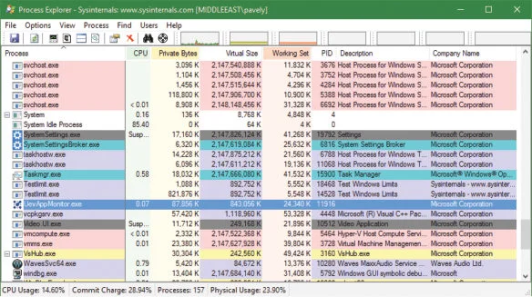<figcaption>Process Explorer での Private Bytes と Virtual Size の比較</figcaption></figure></li>
<li>二つのプロセスの「Virtual Size」は同じですが、「Private Bytes」が「Virtual Size」に近いのは一方だけです。
もう一方の TestLimit プロセス（PID 18468）で二つの値が大きく異なるのは、予約しただけのメモリがあるためです。
パフォーマンスモニターでも、<code>Process</code> カテゴリの <code>Virtual Bytes</code> と <code>Private Bytes</code> を使って同じ比較ができます。</li>
</ol>
<h3 id="コミット使用量とコミット上限">コミット使用量とコミット上限</h3>
<p>タスクマネージャーの「パフォーマンス」タブで「メモリ」を選ぶと、「コミット済み」に二つの数値が表示されます。
メモリマネージャーは、コミット済みのプライベートメモリなどの使用量をシステム全体で追跡します。
最初の数値はシステム全体でコミットされている仮想メモリの合計で、<strong>コミット使用量</strong>（commit charge）と呼びます。</p>
<p>同時にコミットできる仮想メモリの量には、システム全体での<strong>コミット上限</strong>があります。
この上限は、すべてのページファイルの現在のサイズの合計に、OS が利用できる RAM の量を足したものに相当し、「コミット済み」の2番目の数値に表示されます。
ページファイルが設定上の最大サイズに達していなければ、メモリマネージャーは一つ以上のページファイルを自動で拡大して、コミット上限を引き上げられます。</p>
<p>詳しくは後述の「コミット使用量とシステムのコミット上限」を参照してください。</p></section><section class="page" id="page-331" aria-label="page-331"><h3 id="ページの物理メモリへの固定">ページの物理メモリへの固定</h3>
<p>通常は、どのページを物理メモリに残すかをメモリマネージャーに任せたほうがよいでしょう。
ただし、アプリケーションやデバイスドライバーがページを物理メモリに固定しておく必要がある場合もあります。
固定方法は二つあります。</p>
<ul>
<li>Windows アプリケーションは <code>VirtualLock</code> を呼び出し、自プロセスのワーキングセットにページを固定できます。
固定を明示的に解除するか、固定したプロセスが終了するまで、ページはメモリに残ります。
固定できるページ数の上限は、ワーキングセットの最小サイズに相当するページ数から8ページを引いた値です。
より多く固定するには、<code>SetProcessWorkingSetSizeEx</code> でワーキングセットの最小サイズを引き上げます（後述の「ワーキングセットの管理」を参照）。</li>
<li>デバイスドライバーは、カーネルモードの <code>MmProbeAndLockPages</code>、<code>MmLockPagableCodeSection</code>、<code>MmLockPagableDataSection</code>、<code>MmLockPagableSectionByHandle</code> を呼び出せます。
固定したページは、明示的に解除するまでメモリに残ります。
後ろの三つの API は、ドライバーの初回ロード時に常駐可能なページ数の予算に計上されるため、呼び出し時に固定ページ数の上限を課しません。
この事前計上によって、過剰な固定に起因するシステムクラッシュを防ぎます。
一方、<code>MmProbeAndLockPages</code> では固定するページを上限の範囲内で計上できなければ処理が失敗します。</li>
</ul>
<h3 id="アドレス空間の割り当て粒度">アドレス空間の割り当て粒度</h3>
<p>Windows は、プロセスのアドレス空間で予約する領域の開始位置を、システムの<strong>割り当て粒度</strong>の境界にそろえます。
この値は <code>GetSystemInfo</code> または <code>GetNativeSystemInfo</code> で取得でき、64 KB です。
メモリマネージャーはこの粒度により、プロセスの操作を支えるメタデータ（VAD やビットマップなど）を効率よく割り当てられます。
将来、より大きなページサイズ（たとえば最大 64 KB）を持つプロセッサや、システム全体で物理ページと仮想ページのアラインメントをそろえる必要がある仮想インデックス方式のキャッシュをサポートしても、既存のアプリケーションのアラインメントの前提を崩しにくくなります。</p>
<p><strong>注：</strong>Windows のカーネルモードコードには同じ制約はなく、1ページ単位でメモリを予約できます。
ただし、この機能はデバイスドライバーには公開されていません。
主な用途は、スレッド環境ブロック（TEB）を隙間なく配置することです。
内部だけで使う仕組みなので、将来のプラットフォームが異なる値を必要とする場合にも変更しやすくなっています。
また、x86 システムで 16 ビットアプリケーションや MS-DOS アプリケーションをサポートするため、<code>MapViewOfFileEx</code> の <code>MEM_DOS_LIM</code> フラグで1ページ単位の割り当てを指定できます。</p>
<p>アドレス空間を予約する際、Windows は領域のサイズとベースアドレスがシステムのページサイズの倍数になるようにします。
たとえば、ページサイズが 4 KB の x86 システムで 18 KB の領域を要求すると、実際には 20 KB が予約されます。</p></section><section class="page" id="page-332" aria-label="page-332"><p>同じ 18 KB の領域に対してベースアドレスを 3 KB に指定すると、実際の予約範囲は 24 KB になります。
この割り当てを記述する VAD の開始位置と長さも 64 KB の境界に合わせて丸められるので、VAD に含まれる残りの部分にはアクセスできません。</p>
<h3 id="共有メモリとマップトファイル">共有メモリとマップトファイル</h3>
<p>Windows は、複数のプロセスや OS がメモリを共有できる仕組みを提供します。
<strong>共有メモリ</strong>とは、複数のプロセスから見えるメモリ、つまり複数のプロセスの仮想アドレス空間に現れるメモリです。
たとえば二つのプロセスが同じ DLL を使うなら、参照されるコードページを物理メモリに一度だけ読み込み、その DLL をマップしたすべてのプロセスで共有できます（図5-2）。</p>
<figure>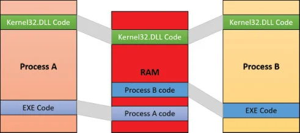<figcaption>図5-2 プロセス間のメモリ共有</figcaption></figure>
<p>プロセス固有のデータはそれぞれのプライベート領域に保持しながら、DLL のコードや変更されていないデータページを共有できます。
EXE や DLL などの実行イメージは、コードページを書き込み不可として、書き込みできるページをコピーオンライトとしてマッピングします。
そのため、この種の共有は自動で行われます。
スクリーンセーバー（SCR）のように、拡張子が異なっても実体が DLL であるファイルも同様です（後述の「コピーオンライト」を参照）。</p>
<p>図5-2の二つのプロセスは異なる実行イメージを使っていますが、DLL の内容は物理メモリに一組だけあり、両方のプロセスが参照します。
二つが実行する EXE は異なるため、そのコードは共有されません。
<code>Notepad.exe</code> を複数起動する場合のように、同じ実行イメージを使うプロセス間では EXE のコードも共有されます。</p>
<p>メモリマネージャーが共有メモリを実装する基本単位は<strong>セクションオブジェクト</strong>です。
Windows API ではファイルマッピングオブジェクトとして公開されています。
内部構造と実装については、後述の「セクションオブジェクト」を参照してください。</p>
<p>セクションを使うと、主記憶やページファイルに対応する領域だけでなく、アプリケーションがメモリと同じようにアクセスしたいほかのファイルも、仮想アドレス空間にマッピングできます。
セクションは一つのプロセスだけでも、複数のプロセスでも開けます。
したがって、セクションオブジェクトが常に共有メモリを表すとは限りません。</p></section><section class="page" id="page-333" aria-label="page-333"><p>セクションオブジェクトは、ディスク上で開いているファイル（マップトファイル）または共有用のコミット済みメモリに対応付けられます。
後者を<strong>ページファイルをバックストアとするセクション</strong>と呼びます。物理メモリが必要になったとき、そのページの書き出し先はマップトファイルではなくページファイルだからです。
ただし、Windows はページファイルなしでも動作するため、実際の保存先が物理メモリだけの場合もあります。
プライベートなコミット済みページなど、ユーザーモードから参照できるほかの空ページと同じく、共有のコミット済みページは初回アクセス時にゼロで埋められます。以前の内容が漏れるのを防ぐためです。</p>
<p>セクションオブジェクトを作るには、<code>CreateFileMapping</code>、<code>CreateFileMappingFromApp</code>、<code>CreateFileMappingNuma</code> またはその拡張版を呼び出します。
マッピングするファイルのハンドルを指定します。ページファイルをバックストアにする場合は <code>INVALID_HANDLE_VALUE</code> を渡します。
必要に応じて、名前とセキュリティ記述子も指定できます。
名前が付いていれば、別のプロセスが <code>OpenFileMapping</code> または <code>CreateFileMapping*</code> でそのセクションを開けます。
ハンドルを作成または開く際に継承可能と指定して渡す方法や、<code>DuplicateHandle</code> で複製して渡す方法もあります。
デバイスドライバーは <code>ZwOpenSection</code>、<code>ZwMapViewOfSection</code>、<code>ZwUnmapViewOfSection</code> を使ってセクションを扱えます。</p>
<p>セクションオブジェクトは、プロセスのアドレス空間に収まりきらないファイルを参照できます。
ページファイルをバックストアとする場合は、ページファイルや RAM に十分な容量が必要です。
大きなセクションを扱うときは、<code>MapViewOfFile</code>、<code>MapViewOfFileEx</code>、<code>MapViewOfFileFromApp</code>、<code>MapViewOfFileExNuma</code> のいずれかで範囲を指定し、必要な部分（セクションのビュー）だけをマッピングできます。
その時点で使うビューだけをマッピングすれば、アドレス空間を節約できます。</p>
<p>Windows アプリケーションは、ファイルを自分のアドレス空間内のデータとして扱い、メモリを読み書きする形でファイル I/O を行えます。
セクションを使うのはユーザーアプリケーションだけではありません。
イメージローダーは実行イメージ、DLL、デバイスドライバーをメモリにマッピングするために使い、キャッシュマネージャーはキャッシュ済みのファイルにアクセスするために使います。
キャッシュマネージャーとメモリマネージャーの連携は Part 2 のキャッシュマネージャーの解説を参照してください。
共有メモリ用のセクションのアドレス変換と内部データ構造は、後述の「セクションオブジェクト」で説明します。</p>
<h4 id="Process-Explorer-で確認するメモリマップトファイル">Process Explorer で確認するメモリマップトファイル</h4>
<p>Process Explorer の「View」から「Lower Pane View」の「DLLs」を選ぶと、プロセスのメモリマップトファイルを一覧できます。
名前は「DLLs」ですが、プロセスのアドレス空間にマッピングされたファイルがすべて表示されます。
DLL のほか、実行中の EXE や、マッピングされたデータファイルも含まれます。</p>
<p>次の図では、WinDbg が調査対象のメモリダンプを複数のビューにマッピングしています。
ほかの多くの Windows プログラムと同様、WinDbg 本体または使用中の Windows DLL は、国際化を支えるデータファイル <code>Locale.nls</code> へのアクセスにもメモリマッピングを使っています。</p></section><section class="page" id="page-334" aria-label="page-334"><figure><figcaption>WinDbg のメモリマップトファイル</figcaption></figure>
<p>「Find」メニューの「Find Handle or DLL」（<kbd>Ctrl</kbd>＋<kbd>F</kbd>）でも、メモリマップトファイルを検索できます。
置き換えたい DLL やマップトファイルを、どのプロセスが使っているか調べるときに役立ちます。</p>
<h3 id="メモリの保護">メモリの保護</h3>
<p>第1章「概念とツール」で説明したように、Windows はユーザープロセスが別のプロセスや OS のアドレス空間を、誤って、あるいは故意に壊さないようにします。
主な保護の仕組みは四つです。</p>
<ul>
<li>カーネルモードのシステムコンポーネントが使う、システム共通のデータ構造とメモリプールには、カーネルモードでのみアクセスできます。
ユーザーモードのスレッドがこれらのページにアクセスすると、ハードウェアがフォールトを発生させ、メモリマネージャーがスレッドにアクセス違反として通知します。</li>
<li>各プロセスは独立したプライベートアドレス空間を持ち、別のプロセスのスレッドからのアクセスを防ぎます。
共有メモリを参照するときも、各プロセスが使うのは自分の仮想アドレス空間にあるアドレスです。
例外として、対象のプロセスオブジェクトに対する仮想メモリの読み取り権限または書き込み権限、あるいは <code>SeDebugPrivilege</code> があれば、<code>ReadProcessMemory</code> や <code>WriteProcessMemory</code> を使えます。
スレッドがアドレスを参照するたびに、仮想メモリ用のハードウェアとメモリマネージャーが仮想アドレスを物理アドレスに変換します。
Windows はこの対応付けを管理することで、別のプロセスのページへの権限のないアクセスを防ぎます。</li>
<li>アドレス変換による保護に加え、Windows がサポートするすべてのプロセッサは、読み書き可能や読み取り専用などの保護をハードウェアで実施できます。
保護の詳細はプロセッサによって異なります。
たとえば、プロセスのコードページは読み取り専用に設定され、ユーザースレッドによる書き換えを防ぎます。
Windows API のメモリ保護オプションは表5-2を参照してください（<code>VirtualProtect</code>、<code>VirtualProtectEx</code>、<code>VirtualQuery</code>、<code>VirtualQueryEx</code> のドキュメントも参照）。</li>
</ul></section><section class="page" id="page-335" aria-label="page-335"><div class="table-scroll" role="region" tabindex="0" aria-label="表。横にスクロールできます"><table><caption>表5-2 Windows API のメモリ保護オプション</caption>
<thead><tr><th>属性</th><th>説明</th></tr></thead>
<tbody>
<tr><th><code>PAGE_NOACCESS</code></th><td>読み取り、書き込み、コードの実行はいずれもアクセス違反になります。</td></tr>
<tr><th><code>PAGE_READONLY</code></th><td>読み取れますが、書き込みはアクセス違反になります。実行禁止をサポートするプロセッサでは、コードの実行もアクセス違反になります。</td></tr>
<tr><th><code>PAGE_READWRITE</code></th><td>読み書きできますが、実行できません。</td></tr>
<tr><th><code>PAGE_EXECUTE</code></th><td>実行できますが、書き込みはアクセス違反になります。原著執筆時点のプロセッサでは読み取りもできます。</td></tr>
<tr><th><code>PAGE_EXECUTE_READ</code>*</th><td>実行と読み取りができますが、書き込みはアクセス違反になります。</td></tr>
<tr><th><code>PAGE_EXECUTE_READWRITE</code>*</th><td>読み取り、書き込み、実行ができます。</td></tr>
<tr><th><code>PAGE_WRITECOPY</code></th><td>書き込むと、システムがそのプロセス専用のページのコピーを作ります。実行禁止をサポートするプロセッサでは、実行はアクセス違反になります。</td></tr>
<tr><th><code>PAGE_EXECUTE_WRITECOPY</code></th><td>書き込むと、システムがそのプロセス専用のページのコピーを作ります。読み取りや実行ではコピーを作りません。</td></tr>
<tr><th><code>PAGE_GUARD</code></th><td>ガードページを読み書きすると <code>EXCEPTION_GUARD_PAGE</code> 例外が発生し、ガード属性が解除されます。したがって、最初のアクセスだけを検知できます。表中の保護属性のうち、<code>PAGE_NOACCESS</code> を除くものと組み合わせて指定できます。</td></tr>
<tr><th><code>PAGE_NOCACHE</code></th><td>キャッシュしない物理メモリを使います。一般の用途には推奨しませんが、映像のフレームバッファーをキャッシュせずにマッピングするなど、デバイスドライバーで役立ちます。</td></tr>
<tr><th><code>PAGE_WRITECOMBINE</code></th><td>プロセッサは書き込みをキャッシュしませんが、書き込み要求をまとめて効率化します。キャッシュする場合よりメモリトラフィックが大きくなることもあります。同じアドレスへの複数の書き込みは最後の一回だけが反映される場合があり、隣り合うアドレスへの書き込みはまとめられることがあります。一般のアプリケーションよりも、フレームバッファーをマッピングするデバイスドライバーなどで使われます。</td></tr>
<tr><th><code>PAGE_TARGETS_INVALID</code> と <code>PAGE_TARGETS_NO_UPDATE</code>（Windows 10、Windows Server 2016）</th><td>実行可能なページの Control Flow Guard（CFG）の動作を制御します。二つの定数は同じ値ですが、使う API が異なります。<code>PAGE_TARGETS_INVALID</code> はそのページへの間接呼び出しを CFG の検査で拒否し、プロセスを終了させます。<code>PAGE_TARGETS_NO_UPDATE</code> を <code>VirtualProtect</code> に指定すると、対象範囲を実行可能に変更しても CFG の状態は更新されません。詳しくは第7章「セキュリティ」を参照してください。</td></tr>
</tbody></table></div>
<p>* 実行禁止にはハードウェアの対応が必要です。x64 プロセッサは対応していますが、古い x86 プロセッサは対応しません。非対応の場合、「実行」は「読み取り」と同じ扱いになります。</p>
<ul><li>共有メモリ用のセクションオブジェクトには、Windows の標準のアクセス制御リスト（ACL）が付きます。
プロセスがセクションを開くときに確認するため、必要な権限を持つプロセスだけが共有メモリにアクセスできます。
マップトファイル用のセクションを作る場合にもアクセス制御が働きます。
元のファイルオブジェクトへの読み取り権限が少なくともなければ、セクションは作成できません。</li></ul>
<p>スレッドがセクションのハンドルを開いた後も、メモリマネージャーとハードウェアによるページ保護は適用されます。
セクションの仮想ページの保護設定を変更できるのは、セクションオブジェクトの ACL が許可する範囲内に限られます。</p></section><section class="page" id="page-336" aria-label="page-336"><p>たとえば、読み取り専用のセクションのページをコピーオンライトに変更することはできますが、読み書き可能には変更できません。
コピーオンライトであれば、同じデータを共有しているほかのプロセスには影響しないからです。</p>
<h3 id="データ実行防止">データ実行防止</h3>
<p><strong>データ実行防止</strong>（DEP）は、ページを実行禁止（NX）として保護する仕組みです。
実行禁止のページにある命令へ制御を移そうとすると、アクセスフォールトが発生します。
この保護により、スタックなどのデータページに置かれたコードが実行されるのを防ぎます。
また、コードの実行に必要なページのアクセス権を設定していないプログラムの不具合も検出できます。</p>
<p>カーネルモードで実行禁止ページのコードを実行しようとすると、システムはバグチェックコード <code>ATTEMPTED_EXECUTE_OF_NOEXECUTE_MEMORY</code>（<code>0xFC</code>）で停止します。コードの詳細は Part 2 のクラッシュダンプ分析を参照してください。
ユーザーモードで起きた場合は、該当するスレッドに <code>STATUS_ACCESS_VIOLATION</code>（<code>0xC0000005</code>）例外が通知されます。
実行に使うメモリを割り当てる場合は、ページ単位のメモリ割り当て関数で <code>PAGE_EXECUTE</code>、<code>PAGE_EXECUTE_READ</code>、<code>PAGE_EXECUTE_READWRITE</code>、<code>PAGE_EXECUTE_WRITECOPY</code> のいずれかを指定します。</p>
<p>DEP に対応する 32 ビット x86 システムでは、ページテーブルエントリ（PTE）のビット63が実行禁止を表します。
物理アドレス拡張（PAE）モードでないと PTE の幅は 32 ビットにとどまるため、DEP が使えるのは PAE モードで動作するときだけです。
そのため、32 ビットシステムのハードウェア DEP には PAE カーネル（<code>%SystemRoot%\\System32\\Ntkrnlpa.exe</code>）をロードする必要があります。
本書の対象バージョンでは、これが x86 でサポートされる唯一のカーネルです（後述の「x86 の仮想アドレス変換」を参照）。
ARM システムの DEP は <code>AlwaysOn</code> です。</p>
<p>64 ビット版 Windows では、64 ビットプロセスとデバイスドライバーすべてに実行保護が適用されます。ただし、BCD の <code>nx</code> が <code>AlwaysOff</code> の場合を除きます。
32 ビットプログラムに適用するかどうかは、後述するシステム設定で決まります。
64 ビット版 Windows で保護されるのは、ユーザーモードとカーネルモードのスレッドスタック、実行可能と明示されていないユーザーモードのページ、カーネルのページプール、カーネルのセッションプールです。
32 ビット版 Windows では、スレッドスタックとユーザーモードのページのみが対象で、ページプールとセッションプールには適用されません。
カーネルのメモリプールについては、後述の「カーネルモードのヒープ（システムメモリプール）」を参照してください。</p>
<p>32 ビットプロセスに実行保護が適用されるかどうかは、BCD の <code>nx</code> の値で決まります。
「パフォーマンス オプション」の「データ実行防止」タブ（図5-3）で設定すると、対応する値が BCD に反映されます。
この画面は「コンピューター」の「プロパティ」から「システムの詳細設定」を開き、「パフォーマンス」の「設定」を選ぶと表示されます。
BCD の設定値と画面の選択肢との対応を表5-3に示します。
実行保護の対象から除外される 32 ビットアプリケーションは、レジストリの <code>HKLM\\SOFTWARE\\Microsoft\\Windows NT\\CurrentVersion\\AppCompatFlags\\Layers</code> キーに記録されます。
値の名前は実行ファイルのフルパス、データは <code>DisableNXShowUI</code> です。</p></section><section class="page" id="page-337" aria-label="page-337"><figure><figcaption>図5-3 データ実行防止の設定</figcaption></figure>
<div class="table-scroll" role="region" tabindex="0" aria-label="表。横にスクロールできます"><table><caption>表5-3 BCD の <code>nx</code> の値</caption>
<thead><tr><th>値</th><th>「データ実行防止」タブの選択肢</th><th>動作</th></tr></thead>
<tbody>
<tr><th><code>OptIn</code></th><td>重要な Windows プログラムおよびサービスについてのみ DEP を有効にする</td><td>Windows の主要なシステムイメージに DEP を適用します。32 ビットプロセスは実行中に DEP を設定できます。</td></tr>
<tr><th><code>OptOut</code></th><td>次に選択するものを除くすべてのプログラムおよびサービスについて DEP を有効にする</td><td>指定した実行ファイルを除いて DEP を適用します。32 ビットプロセスは実行中に DEP を設定できます。DEP に関するシステムの互換性修正も有効になります。</td></tr>
<tr><th><code>AlwaysOn</code></th><td>この画面では選択不可</td><td>すべてのコンポーネントに DEP を適用し、アプリケーションを除外できません。32 ビットプロセスによる動的な設定も、システムの互換性修正も無効になります。</td></tr>
<tr><th><code>AlwaysOff</code></th><td>この画面では選択不可</td><td>DEP を無効にします（非推奨）。32 ビットプロセスによる動的な設定も無効になります。</td></tr>
</tbody></table></div>
<p>クライアント版 Windows では、32 ビット版でも 64 ビット版でも、32 ビットプロセスのうち主要な OS 実行ファイルだけに既定で DEP が適用されます（<code>OptIn</code>）。
自己解凍形式やパックされたプログラムなど、実行可能と明示されていないページからコードを実行する古いアプリケーションが動かなくなるのを避けるためです。
サーバー版 Windows では、既定で 32 ビットプログラム全体が適用対象です（<code>OptOut</code>）。</p>
<p>DEP を有効にしていても、古い実行イメージに対する互換性上の例外があります。</p></section><section class="page" id="page-338" aria-label="page-338"><p>たとえば、イメージローダーは実行ファイルのシグネチャを既知のコピー防止方式（SafeDisc や SecuROM など）と照合します。
一致すれば、その方式で保護された古いゲームなどとの互換性を保つために、そのイメージの実行保護を無効にします。
イメージローダーについては第3章を参照してください。</p>
<h4 id="Process-Explorer-で確認する-DEP-の状態">Process Explorer で確認する DEP の状態</h4>
<p>Process Explorer は、各プロセスの現在の DEP の状態と、保護が永続的かどうかを表示できます。
プロセスツリーの列見出しを右クリックし、「Select Columns」を選び、「Process Image」タブで「DEP Status」を有効にします。
表示は次の三通りです。</p>
<ul>
<li><strong>DEP (permanent)</strong>：重要な Windows プログラムまたはサービスであるため、DEP が有効になっています。</li>
<li><strong>DEP</strong>：プロセスで DEP が有効です。32 ビットプロセス全体に適用するシステムポリシー、<code>SetProcessDEPPolicy</code> などの API 呼び出し、ビルド時のリンカーオプション <code>/NXCOMPAT</code> などが理由として考えられます。</li>
<li><strong>空欄</strong>：システム全体のポリシー、明示的な API 呼び出し、互換性シムのいずれかによって DEP が無効になっています。</li>
</ul>
<p>古い Active Template Library（ATL 7.1 以前）との互換性を保つため、Windows カーネルには ATL サンクのエミュレーション機能があります。
DEP 例外を起こした ATL サンクの命令列を検出し、期待される処理をエミュレートします。
新しい Microsoft C++ コンパイラーで <code>/NXCOMPAT</code> を指定すると、PE ヘッダーに <code>IMAGE_DLLCHARACTERISTICS_NX_COMPAT</code> が設定され、実行ファイルが DEP に対応しているとシステムに伝わります。
これにより ATL サンクのエミュレーションは適用されません。
システム設定が <code>AlwaysOn</code> の場合も、このエミュレーションは無効です。</p>
<p>システムが <code>OptIn</code> または <code>OptOut</code> の場合、32 ビットプロセスは <code>SetProcessDEPPolicy</code> で自分の DEP ポリシーを設定できます。
この API で DEP を有効にすると、そのプロセスが終了するまでプログラムから無効にはできません。
<code>/NXCOMPAT</code> なしでビルドしたイメージでは、同じ API で ATL サンクのエミュレーションを無効にすることもできます。
64 ビットプロセスの場合や、<code>AlwaysOff</code> または <code>AlwaysOn</code> で起動したシステムでは、この関数は失敗します。
<code>GetProcessDEPPolicy</code> は 32 ビットプロセスの DEP ポリシーを取得します。64 ビットプロセスは常に有効であり、この関数の対象外です。
<code>GetSystemDEPPolicy</code> は、表5-3に示したシステム全体のポリシーに対応する値を返します。</p>
<h3 id="コピーオンライト">コピーオンライト</h3>
<p><strong>コピーオンライト</strong>は、メモリマネージャーが物理メモリを節約するためのページ保護方式です。
読み書き可能なページを含むセクションのビューをコピーオンライトでマッピングすると、その時点ではプロセス専用のコピーを作らず、実際に書き込むまでコピーを遅らせます。
図5-4では、二つのプロセスがコピーオンライトに設定された三つのページを共有しており、どちらもまだ書き込んでいません。</p></section><section class="page" id="page-339" aria-label="page-339"><figure>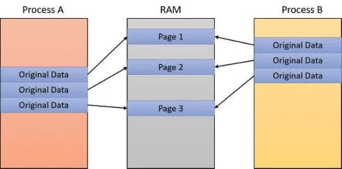<figcaption>図5-4 コピーオンライトでの書き込み前</figcaption></figure>
<p>どちらかのプロセスのスレッドがページに書き込むと、フォールトが発生します。
書き込み先がコピーオンライトのページだと分かると、メモリマネージャーはフォールトをアクセス違反として通知する代わりに、次の処理を行います。</p>
<ol>
<li>物理メモリに読み書き可能なページを新たに割り当てます。</li>
<li>元のページの内容を新しいページにコピーします。</li>
<li>書き込んだプロセスのページマッピング情報が新しいページを指すように更新します（ページマッピングはこの章の後半で説明します）。</li>
<li>例外を処理し、フォールトを起こした命令を再実行させます。</li>
</ol>
<p>再実行した書き込みは成功します。
図5-5に示すとおり、コピーされたページは書き込んだプロセス専用で、元のページを共有しているほかのプロセスからは見えません。
ほかのプロセスが同じ共有ページに書き込んだ場合も、そのプロセス専用のコピーが作られます。</p>
<figure>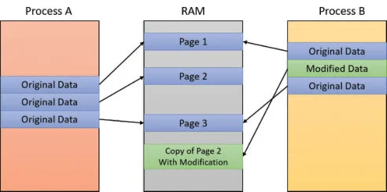<figcaption>図5-5 コピーオンライトでの書き込み後</figcaption></figure>
<p>コピーオンライトの用途の一つが、デバッガーのブレークポイントです。
通常は書き込めないコードページも、ブレークポイントを設定する際にはデバッガーが命令を書き換える必要があります。</p></section><section class="page" id="page-340" aria-label="page-340"><p>デバッガーは、ページの保護を <code>PAGE_EXECUTE_READWRITE</code> に変更してから、命令列を書き換えます。
コードページはマッピングされたセクションの一部なので、メモリマネージャーはブレークポイントを設定したプロセス専用のコピーを作り、ほかのプロセスは変更前のページを使い続けます。</p>
<p>コピーオンライトは、メモリマネージャーが随所で使う<strong>遅延評価</strong>の一例です。
コストの高い操作を必要になるまで先送りし、結局その操作が不要なら、処理時間を使わずに済みます。</p>
<p>コピーオンライトによるフォールトの発生頻度は、パフォーマンスモニターの <code>Memory</code> カテゴリにある <code>Write Copies/Sec</code> カウンターで確認できます。</p>
<h3 id="アドレスウィンドウ拡張-AWE">アドレスウィンドウ拡張（AWE）</h3>
<p>32 ビット版 Windows がサポートする物理メモリは最大 64 GB ですが（表2-2）、32 ビットのユーザープロセスが使える仮想アドレス空間は既定で 2 GB です。
BCD の <code>increaseuserva</code> オプションを使うと、最大 3 GB に設定できます（後述の「仮想アドレス空間のレイアウト」を参照）。
一つのプロセスで 2 GB（設定によっては 3 GB）を超えるデータを扱うアプリケーションは、ファイルマッピングを使い、アドレス空間の一部に大きなファイルの異なる範囲を差し替えながらマッピングできます。
ただし、マッピングを切り替えるたびに、相当量のページングが発生します。</p>
<p>Windows は、より高速に、より細かく制御できる方法として <strong>Address Windowing Extensions</strong>（AWE）を提供します。
AWE によって、プロセスは仮想アドレス空間に収まりきらない量の物理メモリを割り当てられます。
参照したい物理メモリの範囲を仮想アドレス空間の一部にその都度マッピングして、アクセスします。</p>
<ol>
<li><code>AllocateUserPhysicalPages</code> または <code>AllocateUserPhysicalPagesNuma</code> で物理メモリを割り当てます。<code>SeLockMemoryPrivilege</code> が必要です。</li>
<li><code>VirtualAlloc</code>、<code>VirtualAllocEx</code>、<code>VirtualAllocExNuma</code> のいずれかに <code>MEM_PHYSICAL</code> を指定し、物理メモリへの窓として使う仮想アドレス領域を一つ以上確保します。</li>
<li>ここまでが初期化です。実際にメモリを使うには、<code>MapUserPhysicalPages</code> または <code>MapUserPhysicalPagesScatter</code> で、手順1の物理メモリの一部を手順2で確保した窓にマッピングします。</li>
</ol>
<p>図5-6のアプリケーションは、仮想アドレス空間に 256 MB の窓を確保し、物理メモリを 4 GB 割り当てています。
<code>MapUserPhysicalPages</code> または <code>MapUserPhysicalPagesScatter</code> で、物理メモリの任意の部分をこの窓にマッピングできます。
一度にアクセスできる量は窓の大きさで決まり、ほかの部分を使うときはマッピングを切り替えます。</p></section><section class="page" id="page-341" aria-label="page-341"><figure>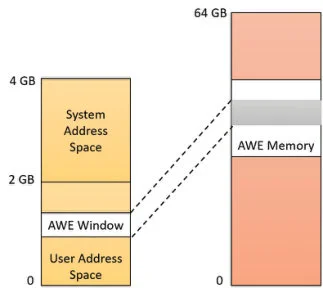<figcaption>図5-6 AWE による物理メモリのマッピング</figcaption></figure>
<p>AWE はどの Windows エディションでも使え、システムの物理メモリの量にも依存しません。
特に役立つのは 2 GB を超える物理メモリを搭載した 32 ビットシステムです。32 ビットプロセスが仮想アドレス空間より多くの RAM を使えるからです。
また、AWE のメモリはページアウトされないため、別の OS で起動してページファイルを調べても、そのデータのコピーは見つかりません。
一般のページを <code>VirtualLock</code> で固定した場合も同様です。</p>
<p>AWE で割り当ててマッピングするメモリには、次の制約があります。</p>
<ul>
<li>プロセス間でページを共有できません。</li>
<li>同じ物理ページを複数の仮想アドレスにマッピングできません。</li>
<li>ページ保護は、読み書き可能、読み取り専用、アクセス不可に限られます。</li>
</ul>
<p>64 ビット版 Windows では、プロセスごとの仮想アドレス空間は 128 TB ですが、RAM の上限は Windows Server 2016 でも 24 TB です。
この構成では物理メモリがプロセスの仮想アドレス空間に収まるため、それを超える RAM を参照する目的で AWE を使う必要はありません。
一方、プロセスのアドレス空間にページアウトされない領域を設ける用途では、引き続き役立ちます。
AWE はシステムのページサイズである 4 KB 単位で使え、64 KB 単位のファイルマッピング API より細かく制御できます。</p>
<p>物理メモリが 4 GB を超えるシステムで、メモリをマッピングするページテーブルのデータ構造は、後述の「x86 の仮想アドレス変換」を参照してください。</p>
<h3 id="カーネルモードのヒープ-システムメモリプール">カーネルモードのヒープ（システムメモリプール）</h3>
<p>システムの初期化時に、メモリマネージャーはサイズが動的に変わる二種類のメモリプール（ヒープ）を作ります。
多くのカーネルモードコンポーネントは、システムメモリをここから割り当てます。</p></section><section class="page" id="page-342" aria-label="page-342"><ul>
<li><strong>非ページプール</strong>：物理メモリに常駐するシステム仮想アドレスの範囲です。
アクセスしてもページフォールトが発生しないので、どの割り込み要求レベル（IRQL）からでも使えます。
DPC／ディスパッチレベル以上ではページフォールトを解決できないため、そのレベルで実行する可能性のあるコードと、参照する可能性のあるデータは、ページアウトされないメモリに置きます。</li>
<li><strong>ページプール</strong>：ページインとページアウトが可能な、システム空間の仮想メモリ領域です。
DPC／ディスパッチレベル以上からアクセスする必要のないデバイスドライバーが使用できます。
どのプロセスコンテキストからでもアクセスできます。</li>
</ul>
<p>両方のプールはアドレス空間のシステム領域にあり、すべてのプロセスの仮想アドレス空間にマッピングされます。
エグゼクティブは、これらのプールから割り当てたり、割り当てを解放したりするルーチンを提供します。
詳しくは WDK ドキュメントの <code>ExAllocatePool</code>、<code>ExAllocatePoolWithTag</code>、<code>ExFreePool</code> で始まる関数を参照してください。</p>
<p>起動時には、システム全体のページプールを構成する四つのページプールと、二つの非ページプールが作られます。
システムの NUMA ノード数に応じてプールが追加され、その数は最大64に達します。
ページプールを複数に分けることで、プール操作が同時に呼ばれたときにシステムコードが待たされる頻度を減らせます。
各プールは異なる NUMA ノードに対応する仮想アドレスの範囲にマッピングされます。
大ページのルックアサイドリストなど、プール割り当てを記述するデータ構造も複数の NUMA ノードに分散してマッピングされます。</p>
<p>ほかにも用途や性質の異なるプールがあります。
セッション空間には、セッション内の全プロセスに共通するデータ用のプール領域があります。
<strong>特殊プール</strong>から割り当てた領域はアクセス不可のページで囲まれています。
割り当てた範囲の前後にアクセスするコードの不具合を切り分けるためです。</p>
<h3 id="プールのサイズ">プールのサイズ</h3>
<p>非ページプールの初期サイズはシステムの物理メモリ量で決まり、必要になれば拡大します。
初期サイズは RAM の3％です。
3％が 40 MB 未満なら、RAM の10％が 40 MB を超えるときは 40 MB を使い、それ以外では RAM の10％を初期サイズに使います。
Windows はプールの最大サイズを動的に決め、表5-4の上限まで拡大できます。</p>
<div class="table-scroll" role="region" tabindex="0" aria-label="表。横にスクロールできます"><table><caption>表5-4 プールの最大サイズ</caption>
<thead><tr><th>プールの種類</th><th>32 ビット</th><th>64 ビット（Windows 8、Server 2012）</th><th>64 ビット（Windows 8.1、10、Server 2012 R2、2016）</th></tr></thead>
<tbody><tr><th>非ページ</th><td>物理メモリの75％または 2 GB の小さい方</td><td>物理メモリの75％または 128 GB の小さい方</td><td>16 TB</td></tr>
<tr><th>ページ</th><td>2 GB</td><td>384 GB</td><td>15.5 TB</td></tr></tbody></table></div></section><section class="page" id="page-343" aria-label="page-343"><p>Windows 8.x と Windows Server 2012／2012 R2 は、これらのサイズのうち四つを計算し、カーネル変数に格納します。
パフォーマンスカウンターで取得できる値は三つあり、そのうち一つはカウンターの値としてのみ計算されます。
Windows 10 と Windows Server 2016 では、グローバル変数がメモリ管理構造体 <code>MiState</code>（型は <code>MI_SYSTEM_INFORMATION</code>）のフィールドに移されました。
これらの値は <code>Vs</code> メンバー（型は <code>_MI_VISIBLE_STATE</code>）にあり、グローバル変数 <code>MiVisibleState</code> もこのメンバーを指します。
表5-5に、値を調べるための変数とカウンターを示します。</p>
<div class="table-scroll" role="region" tabindex="0" aria-label="表。横にスクロールできます"><table><caption>表5-5 システムのプールサイズを示す変数とパフォーマンスカウンター</caption>
<thead><tr><th>カーネル変数</th><th>パフォーマンスカウンター</th><th>値の意味</th></tr></thead>
<tbody>
<tr><td><code>MmSizeOfNonPagedPoolInBytes</code></td><td><code>Memory: Pool Nonpaged Bytes</code></td><td>非ページプールの初期サイズです。システムはメモリ需要に応じてサイズを増減できます。変化はカーネル変数には反映されませんが、カウンターには反映されます。</td></tr>
<tr><td><code>MmMaximumNonPagedPoolInBytes</code>（Windows 8.x、Server 2012／2012 R2）</td><td>なし</td><td>非ページプールの最大サイズです。</td></tr>
<tr><td><code>MiVisibleState-&gt;MaximumNonPagePoolInBytes</code>（Windows 10、Server 2016）</td><td>なし</td><td>非ページプールの最大サイズです。</td></tr>
<tr><td>なし</td><td><code>Memory: Pool Paged Bytes</code></td><td>ページプール全体の現在の仮想サイズです。</td></tr>
<tr><td><code>MmPagedPoolWs</code>（<code>MMSUPPORT</code> 型）の <code>WorkingSetSize</code>（ページ数。Windows 8.x、Server 2012／2012 R2）</td><td><code>Memory: Pool Paged Resident Bytes</code></td><td>ページプールのうち現在物理メモリに常駐している部分のサイズです。</td></tr>
<tr><td><code>MmSizeOfPagedPoolInBytes</code>（Windows 8.x、Server 2012／2012 R2）</td><td>なし</td><td>ページプールの最大仮想サイズです。</td></tr>
<tr><td><code>MiState.Vs.SizeOfPagedPoolInBytes</code>（Windows 10、Server 2016）</td><td>なし</td><td>ページプールの最大仮想サイズです。</td></tr>
</tbody></table></div>
<h4 id="プールの最大サイズを調べる">プールの最大サイズを調べる</h4>
<p>プールの最大サイズは Process Explorer またはライブカーネルデバッグ（第1章を参照）で調べられます。
Process Explorer では「View」メニューの「System Information」を選び、「Memory」タブをクリックします。
次の図のように「Kernel Memory」欄にプールの上限が表示されます。</p>
<figure>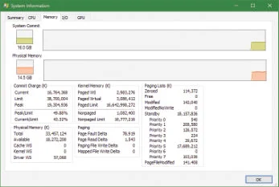<figcaption>Process Explorer で確認するプールの最大サイズ</figcaption></figure></section><section class="page" id="page-344" aria-label="page-344"><p><strong>注：</strong>Process Explorer でこの情報を取得するには、稼働中のカーネルに対応するシンボルが必要です。
設定方法は、第1章の Process Explorer でプロセスの詳細を確認する実験を参照してください。</p>
<p>カーネルデバッガーでは、この章の前半で紹介した <code>!vm</code> コマンドで同じ情報を確認できます。</p>
<h3 id="プール使用量の監視">プール使用量の監視</h3>
<p><code>Memory</code> パフォーマンスオブジェクトには、非ページプールとページプールの使用量を調べるカウンターがあります。
ページプールには仮想サイズと物理メモリに常駐するサイズのカウンターがそれぞれあります。
さらに詳しい使用状況は、WDK の Tools ディレクトリにある PoolMon で監視できます。
PoolMon を起動すると、図5-7のような画面が表示されます。</p>
<figure><figcaption>図5-7 PoolMon の出力</figcaption></figure>
<p>強調表示された行は、前の更新から値が変わった行です。
実行中に <kbd>/</kbd> を押すと強調表示が切り替わり、<kbd>?</kbd> を押すとヘルプを表示できます。
監視対象をページプール、非ページプール、両方から選択でき、並べ替え順も変えられます。
たとえば <kbd>P</kbd> キーを押して非ページプールだけを表示し、<kbd>D</kbd> キーを押して「Diff」列で並べ替えると、非ページプールに最も多く残っている割り当ての種類を調べられます。</p>
<p>コマンドラインオプションを使うと、特定のタグだけを監視したり、特定のタグを除外したりできます。
たとえば <code>poolmon -iCM</code> は、レジストリを管理する構成マネージャーの割り当てに使われる <code>CM</code> タグだけを監視します。
各列の意味を表5-6に示します。</p></section><section class="page" id="page-345" aria-label="page-345"><div class="table-scroll" role="region" tabindex="0" aria-label="表。横にスクロールできます"><table><caption>表5-6 PoolMon の列</caption>
<thead><tr><th>列</th><th>意味</th></tr></thead><tbody>
<tr><th>Tag</th><td>プールの割り当てに付けられた4バイトのタグです。</td></tr>
<tr><th>Type</th><td>プールの種類（ページプールか非ページプールか）です。</td></tr>
<tr><th>Allocs</th><td>割り当ての累計です。括弧内は前回の表示更新からの増分です。</td></tr>
<tr><th>Frees</th><td>解放の累計です。括弧内は前回の表示更新からの増分です。</td></tr>
<tr><th>Diff</th><td>割り当ての回数から解放の回数を引いた値です。</td></tr>
<tr><th>Bytes</th><td>このタグの割り当てが消費している合計バイト数です。括弧内は前回の表示更新との差です。</td></tr>
<tr><th>Per Alloc</th><td>このタグの割り当て1件あたりのサイズ（バイト）です。</td></tr>
</tbody></table></div>
<p>Windows が使うプールタグの意味は、Debugging Tools for Windows の <code>Triage</code> サブディレクトリにある <code>Pooltag.txt</code> を参照してください。
このファイルにはサードパーティーのデバイスドライバーのタグが掲載されていませんが、WDK に付属する 32 ビット版 PoolMon の <code>-c</code> オプションで、ローカルのタグ一覧 <code>Localtag.txt</code> を生成できます。
サードパーティー製も含め、システム上で見つかったドライバーが使用するタグが含まれます。
ロード後にドライバーのバイナリが削除されている場合、そのタグは検出されません。</p>
<p>Sysinternals の <code>Strings.exe</code> でドライバーのファイルを調べ、特定のプールタグを検索することもできます。
たとえば、次のコマンドは文字列 <code>abcd</code> を含むドライバーを探します。</p>
<pre>strings %SYSTEMROOT%\system32\drivers\*.sys | findstr /i &quot;abcd&quot;</pre>
<p>ドライバーは <code>%SystemRoot%\\System32\\Drivers</code> にあるとは限りません。
ロード済みの全ドライバーのフルパスを調べるには、次の手順を使います。</p>
<ol><li>「スタート」メニューを開き、<code>Msinfo32</code> と入力します。「システム情報」が候補に表示されます。</li>
<li>「システム情報」を起動します。</li>
<li>「ソフトウェア環境」を選びます。</li>
<li>「システム ドライバー」を選びます。ロードした後にファイルが削除されたドライバーは一覧に表示されません。</li></ol>
<p>ドライバーごとのプール使用量を調べる別の方法は、第6章で説明する Driver Verifier のプール追跡を有効にすることです。
この方法ではプールタグからドライバーを割り出す必要はありませんが、対象ドライバーで Driver Verifier を有効にするには再起動が必要です。
プール追跡を有効にした状態で再起動したら、Driver Verifier Manager（<code>%SystemRoot%\\System32\\Verifier.exe</code>）を開くか、<code>Verifier /Log</code> でプール使用量をファイルに記録します。</p>
<p>カーネルデバッガーの <code>!poolused</code> でもプール使用量を確認できます。
<code>!poolused 2</code> は非ページプール、<code>!poolused 4</code> はページプールについて、プールタグを使用量の多い順に表示します。
次に出力の一部を示します。</p></section><section class="page" id="page-346" aria-label="page-346"><pre>lkd&gt; !poolused 2
........
Sorting by NonPaged Pool Consumed
NonPaged                  Paged
Tag     Allocs         Used     Allocs         Used
File    626381    260524032          0           0        File objects
Ntfx    733204    227105872          0           0        General Allocation , Binary:
ntfs.sys
MmCa    513713    148086336           0           0        Mm control areas for mapped
files , Binary: nt!mm
FMsl    732490    140638080           0           0        STREAM_LIST_CTRL structure ,
Binary: fltmgr.sys
CcSc    104420     56804480          0           0        Cache Manager Shared Cache Map
, Binary: nt!cc
SQSF    283749     45409984           0           0        UNKNOWN pooltag &#x27;SQSF&#x27;, please
update pooltag.txt
FMfz    382318     42819616          0           0        FILE_LIST_CTRL structure ,
Binary: fltmgr.sys
FMsc     36130     32950560          0           0        SECTION_CONTEXT structure ,
Binary: fltmgr.sys
EtwB       517     31297568        107    105119744       Etw Buffer , Binary: nt!etw
DFmF    382318     30585440     382318     91756320       UNKNOWN pooltag &#x27;DFmF&#x27;, please
update pooltag.txt
DFmE    382318     18351264          0           0        UNKNOWN pooltag &#x27;DFmE&#x27;, please
update pooltag.txt
FSfc    382318     18351264          0           0        Unrecoginzed File System Run
Time allocations (update
pooltag.w) , Binary: nt!fsrtl
smNp      4295     17592320          0           0        ReadyBoost store node pool
allocations , Binary: nt!store
or rdyboost.sys
Thre      5780     12837376          0           0        Thread objects , Binary: nt!ps
Pool         8     12834368          0           0        Pool tables, etc.</pre>
<h4 id="プールのリークを調べる">プールのリークを調べる</h4>
<p>この実験では、Sysinternals の Notmyfault で実際にページプールのリークを起こし、前の節で説明した方法で原因を突き止めます。
システムのメモリを消費する実験なので、検証用の環境で実施してください。</p>
<ol>
<li>OS のビット数に合った <code>Notmyfault.exe</code> を起動します。たとえば、64 ビット環境では 64 ビット版を使います。</li>
<li><code>Notmyfault.exe</code> は <code>Myfault.sys</code> デバイスドライバーをロードし、「Crash」タブを選んだ状態で「Not My Fault」画面を表示します。「Leak」タブを開きます。</li>
</ol></section><section class="page" id="page-347" aria-label="page-347"><figure><figcaption>Not My Fault のリーク設定</figcaption></figure>
<ol start="3">
<li>「Leak/Second」が <code>1000 KB</code> に設定されていることを確認します。</li>
<li>「Leak Paged」をクリックします。Notmyfault は、ページプールからメモリを割り当てる要求を Myfault ドライバーに送信し始めます。「Stop Paged」をクリックするまで、要求は送信され続けます。
通常、不具合のあるドライバーを使ってリークを起こしたプログラムを閉じても、リークしたページプールのメモリは再起動まで解放されません。
Myfault ドライバーは検証しやすいように、プロセスの終了を検出し、自分で割り当てたメモリを解放します。</li>
<li>リークが続いている間に、タスクマネージャーの「パフォーマンス」タブで「メモリ」を選び、「ページ プール」の値が増えていくことを確認します。
Process Explorer でも、「View」から「System Information」を開き、「Memory」タブで確認できます。</li>
<li>どのプールタグの割り当てがリークしているかを特定するため、PoolMon を実行して <kbd>B</kbd> キーを押し、バイト数順に並べ替えます。</li>
<li><kbd>P</kbd> キーを2回押し、ページプールだけを表示します。<code>Leak</code> タグが一覧の上位へ移動します。
PoolMon は割り当てが変化した行を強調表示します。</li>
<li>ページプールを使い切る前に「Stop Paged」をクリックします。</li>
<li>前節で説明した方法に従って Sysinternals の Strings を実行し、<code>Leak</code> タグを含むドライバーのバイナリを探します。
<code>Myfault.sys</code> が見つかり、このドライバーが <code>Leak</code> タグを使っていると確認できます。
<pre>Strings %SystemRoot%\system32\drivers\*.sys | findstr Leak</pre></li>
</ol></section><section class="page" id="page-348" aria-label="page-348"><h3 id="ルックアサイドリスト">ルックアサイドリスト</h3>
<p>Windows には、<strong>ルックアサイドリスト</strong>という高速なメモリ割り当ての仕組みがあります。
一般のプールでは異なるサイズを割り当てられますが、ルックアサイドリストには決まったサイズのブロックしか入りません。
プールのほうが柔軟ですが、ルックアサイドリストはスピンロックを使わないため高速です。</p>
<p>エグゼクティブのコンポーネントやデバイスドライバーは、頻繁に割り当てるデータ構造のサイズに合わせてリストを作成できます。
非ページプール用には <code>ExInitializeNPagedLookasideList</code>、ページプール用には <code>ExInitializePagedLookasideList</code> を使います（WDK ドキュメントを参照）。
I/O マネージャー、キャッシュマネージャー、オブジェクトマネージャーなどは、マルチプロセッサでの同期の負担を抑えるため、頻繁に参照するデータ構造のリストをプロセッサごとに作ります。
エグゼクティブは、256 バイト以下の小さな割り当てに使える汎用のルックアサイドリストも、ページプール用と非ページプール用にプロセッサごとに作成します。</p>
<p>作成直後など、リストが空の間は、ページプールまたは非ページプールから割り当てます。
解放されたブロックがリストにあれば、それを使ってすばやく割り当てられます。
ブロックが返却されるとリストが増えます。
プールの割り当てルーチンは、ドライバーやエグゼクティブがそのリストを使う頻度に応じて、保持するブロック数を自動で調整します。
割り当て頻度が高ければ多く保持し、リストが使われなければ減らします。
バランスセットマネージャーのスレッドが1秒に1回起き、<code>ExAdjustLookasideDepth</code> を呼んで調べます。</p>
<h4 id="システムのルックアサイドリストを確認する">システムのルックアサイドリストを確認する</h4>
<p>カーネルデバッガーの <code>!lookaside</code> で、システム上の各ルックアサイドリストの内容とサイズを表示できます。
以下は出力の一部です。</p>
<pre>lkd&gt; !lookaside
Lookaside &quot;nt!CcTwilightLookasideList&quot; @ 0xfffff800c6f54300  Tag(hex): 0x6b576343 &quot;CcWk&quot;
Type           =       0200  NonPagedPoolNx
Current Depth  =          0  Max Depth  =          4
Size           =        128  Max Alloc  =        512
AllocateMisses =     728323  FreeMisses =     728271
TotalAllocates =    1030842  TotalFrees =    1030766
Hit Rate       =         29% Hit Rate   =         29%
Lookaside &quot;nt!IopSmallIrpLookasideList&quot; @ 0xfffff800c6f54500  Tag(hex): 0x73707249 &quot;Irps&quot;
Type           =       0200  NonPagedPoolNx
Current Depth  =          0  Max Depth  =          4
Size           =        280  Max Alloc  =       1120
AllocateMisses =      44683  FreeMisses =      43576
TotalAllocates =     232027  TotalFrees =     230903
Hit Rate       =         80% Hit Rate   =         81%</pre></section><section class="page" id="page-349" aria-label="page-349"><pre>Lookaside &quot;nt!IopLargeIrpLookasideList&quot; @ 0xfffff800c6f54600  Tag(hex): 0x6c707249 &quot;Irpl&quot;
Type           =       0200  NonPagedPoolNx
Current Depth  =          0  Max Depth  =          4
Size           =       1216  Max Alloc  =       4864
AllocateMisses =     143708  FreeMisses =     142551
TotalAllocates =     317297  TotalFrees =     316131
Hit Rate       =         54% Hit Rate   =         54%
...
Total NonPaged currently allocated for above lists =        0
Total NonPaged potential for above lists           =    13232
Total Paged currently allocated for above lists    =        0
Total Paged potential for above lists              =     4176</pre>
<h3 id="ヒープマネージャー">ヒープマネージャー</h3>
<p>多くのアプリケーションが割り当てるブロックは、<code>VirtualAlloc</code> などで領域を予約する際の割り当て粒度である 64 KB より小さくなります。
小さなブロックごとに大きな領域を用意すると、メモリ使用量や性能の面で不利です。
そこで Windows の<strong>ヒープマネージャー</strong>は、ページ単位のメモリ割り当て関数で予約した大きな領域の中から、小さなブロックを切り出します。
割り当て粒度は 32 ビットシステムで8バイト、64 ビットシステムで16バイトです。
小さな割り当てのメモリ使用量を抑え、処理を効率化する設計です。</p>
<p>ヒープマネージャーは <code>Ntdll.dll</code> と <code>Ntoskrnl.exe</code> にあります。
Windows のヒープ API などのサブシステム API は <code>Ntdll.dll</code> の関数を呼び、エグゼクティブの各コンポーネントやデバイスドライバーは <code>Ntoskrnl.exe</code> の関数を呼びます。
名前が <code>Rtl</code> で始まるネイティブインターフェイスは、Windows 内部のコンポーネントまたはカーネルモードのデバイスドライバー向けです。
公開されている Windows のヒープ API（名前が <code>Heap</code> で始まるもの）は、<code>Ntdll.dll</code> のネイティブ関数に転送されます。
古い Windows アプリケーション向けに <code>Local</code> または <code>Global</code> で始まる API もあります。
これらは従来の動作を維持するため、ヒープマネージャーの専用インターフェイスを内部で呼び出します。</p>
<p>主な Windows のヒープ関数は次のとおりです。</p>
<ul>
<li><strong><code>HeapCreate</code> と <code>HeapDestroy</code></strong>：ヒープを作成、破棄します。作成時には、最初に予約するサイズとコミットするサイズを指定できます。</li>
<li><strong><code>HeapAlloc</code></strong>：ヒープからブロックを割り当てます。<code>Ntdll.dll</code> の <code>RtlAllocateHeap</code> に転送されます。</li>
<li><strong><code>HeapFree</code></strong>：<code>HeapAlloc</code> で割り当てたブロックを解放します。</li>
<li><strong><code>HeapReAlloc</code></strong>：既存のブロックのサイズを増減します。<code>Ntdll.dll</code> の <code>RtlReAllocateHeap</code> に転送されます。</li>
<li><strong><code>HeapLock</code> と <code>HeapUnlock</code></strong>：ヒープ操作の排他制御を行います。</li>
<li><strong><code>HeapWalk</code></strong>：ヒープのエントリと領域を列挙します。</li>
</ul></section><section class="page" id="page-350" aria-label="page-350"><h3 id="プロセスのヒープ">プロセスのヒープ</h3>
<p>各プロセスは、少なくとも一つのヒープである<strong>既定のプロセスヒープ</strong>を持ちます。
プロセスの起動時に作成され、プロセスが終了するまで破棄されません。
初期予約サイズは既定で 1 MB ですが、リンカーの <code>/HEAP</code> オプションを使うと、実行イメージにより大きな値を記録できます。
この値は最初の予約サイズにすぎず、ヒープは必要に応じて自動で拡大します。
最初にコミットするサイズも実行イメージに指定できます。</p>
<p>既定のヒープはプログラムが明示的に使うほか、一部の Windows 内部関数も暗黙に使います。
アプリケーションは <code>GetProcessHeap</code> で既定のヒープを取得できます。
<code>HeapCreate</code> で独自のプライベートヒープを追加し、不要になったら <code>HeapDestroy</code> で仮想アドレス空間を解放できます。
プロセスは全ヒープを配列で管理しており、スレッドは <code>GetProcessHeaps</code> で一覧を取得できます。</p>
<p>ユニバーサル Windows プラットフォーム（UWP）アプリのプロセスには、少なくとも次の三つのヒープがあります。</p>
<ul>
<li>既定のプロセスヒープ。</li>
<li>同じセッションの <code>Csrss.exe</code> に大きな引数を渡すための共有ヒープ。<code>Ntdll.dll</code> によるプロセス初期化の初期段階で、同 DLL の <code>CsrClientConnectToServer</code> が作成します。ハンドルは <code>Ntdll.dll</code> のグローバル変数 <code>CsrPortHeap</code> にあります。</li>
<li>Microsoft C ランタイムライブラリが作るヒープ。ハンドルは <code>msvcrt</code> モジュールのグローバル変数 <code>_crtheap</code> にあり、<code>malloc</code>、<code>free</code>、<code>new</code>／<code>delete</code> 演算子などが内部で使います。</li>
</ul>
<p>ヒープは、<code>VirtualAlloc</code> で予約した大きな領域でも、プロセスのアドレス空間にマッピングしたファイルオブジェクトの領域でも割り当てを管理できます。
後者は実際にはほとんど使われず、Windows API でも公開されていませんが、二つのプロセス間、またはカーネルモードとユーザーモードのコンポーネント間でブロックの内容を共有するときに使えます。
Win32 GUI サブシステムのドライバー <code>Win32k.sys</code> は、この仕組みを使って GDI および USER オブジェクトをユーザーモードと共有します。</p>
<p>マップトファイルの領域にヒープを作る場合、ヒープ関数を呼ぶ側には次の制約があります。</p>
<ul>
<li>内部のデータ構造がポインターを使うので、別のプロセスでは同じアドレスにマッピングする必要があります。</li>
<li>プロセス間の同期や、カーネルコンポーネントとユーザープロセスの間の同期は、ヒープ関数でサポートされません。</li>
<li>カーネルモードとユーザーモードで共有するヒープは、ユーザーモード側を読み取り専用にします。ユーザーモードコードが内部構造を破損させるとシステムがクラッシュするためです。また、カーネルモードのドライバーは、共有ヒープ経由でユーザーモードに漏れないよう、機密データをヒープに置かないようにします。</li>
</ul></section><section class="page" id="page-351" aria-label="page-351"><h3 id="ヒープの種類">ヒープの種類</h3>
<p>Windows 10 と Windows Server 2016 より前は、ヒープは<strong>NT ヒープ</strong>の一種類だけでした。
NT ヒープの前段には、オプションで低フラグメンテーションヒープ（LFH）を置けます。</p>
<p>Windows 10 では、新しい種類として<strong>セグメントヒープ</strong>が導入されました。
NT ヒープと共通する要素はありますが、構造と実装は異なります。
既定では、すべての UWP アプリと一部のシステムプロセスがセグメントヒープを使い、それ以外のプロセスは NT ヒープを使います。
この設定はレジストリで変更できます（後述の「セグメントヒープ」を参照）。</p>
<h3 id="NT-ヒープの構造">NT ヒープの構造</h3>
<p>図5-8のように、ユーザーモードの NT ヒープは、フロントエンドとバックエンド（ヒープコアとも呼ばれます）の二層からなります。
バックエンドは、セグメント内のブロック管理、セグメント自体の管理、ヒープを拡大する方針の決定、メモリのコミットとその取り消し、大きなブロックの管理を担います。</p>
<figure><figcaption>図5-8 ユーザーモードの NT ヒープの階層</figcaption></figure>
<p>フロントエンドをバックエンドの上に置けるのは、ユーザーモードのヒープだけです。
Windows がサポートするフロントエンドは、後述する LFH 一種類です。</p>
<h3 id="ヒープ操作の同期">ヒープ操作の同期</h3>
<p>ヒープマネージャーは既定で、複数のスレッドからの同時アクセスを扱えます。
プロセスがシングルスレッドで動くか、別の方法で同期を取っているなら、ヒープ作成時または割り当て時に <code>HEAP_NO_SERIALIZE</code> フラグを指定して、ヒープマネージャーでの同期を省けます。
ヒープの同期が有効な場合は、ヒープごとに一つのロックがあり、そのヒープの内部構造をすべて保護します。</p></section><section class="page" id="page-352" aria-label="page-352"><p>複数回のヒープ関数呼び出しの間、ヒープの状態を変えたくない場合は、ヒープ全体をロックしてほかのスレッドからの操作を止めることもできます。
たとえば、複数のスレッドが同時にヒープを操作できる場合、<code>HeapWalk</code> でブロックを列挙するにはヒープをロックする必要があります。
ロックには <code>HeapLock</code>、解除には <code>HeapUnlock</code> を使います。</p>
<h3 id="低フラグメンテーションヒープ">低フラグメンテーションヒープ</h3>
<p>Windows で動く多くのアプリケーションは、ヒープを通常 1 MB 未満しか使いません。
この種のアプリケーションでは、要求サイズを満たす空きブロックのうち最小のものを選ぶベストフィット方式で、プロセスのメモリ使用量を抑えられます。
しかし、大きなヒープやマルチプロセッサ環境では、この方式だけではうまく対処できません。
ヒープが断片化し、割り当てに使えるメモリが減ることがあります。
異なるプロセッサで動くスレッドが同じサイズのブロックを頻繁に要求すると、各プロセッサがそのサイズのルックアサイドリストの先頭など、同じメモリ位置を更新しようとするため、対応するキャッシュラインで競合が起こり、性能が落ちることもあります。</p>
<p><strong>低フラグメンテーションヒープ</strong>（LFH）は、ブロックサイズをあらかじめ定めた<strong>バケット</strong>に分けて管理し、断片化を抑えます。
割り当て要求を受けると、要求サイズを収容できる最小のブロックに対応するバケットを選びます。
最小のブロックは8バイトです。最初のバケットは1～8バイト、2番目は9～16バイトを扱います。
この刻みは32番目の249～256バイトまで続き、33番目は257～272バイトを扱います。
最後の128番目は15,873～16,384バイトを扱います（2進バディ方式）。
16,384バイトを超える割り当て要求は、そのままヒープのバックエンドに渡します。</p>
<div class="table-scroll" role="region" tabindex="0" aria-label="表。横にスクロールできます"><table><caption>表5-7 LFH のバケット</caption><thead><tr><th>バケット番号</th><th>刻み幅（バイト）</th><th>要求サイズの範囲（バイト）</th></tr></thead><tbody>
<tr><td>1–32</td><td>8</td><td>1–256</td></tr>
<tr><td>33–48</td><td>16</td><td>257–512</td></tr>
<tr><td>49–64</td><td>32</td><td>513–1,024</td></tr>
<tr><td>65–80</td><td>64</td><td>1,025–2,048</td></tr>
<tr><td>81–96</td><td>128</td><td>2,049–4,096</td></tr>
<tr><td>97–112</td><td>256</td><td>4,097–8,192</td></tr>
<tr><td>113–128</td><td>512</td><td>8,193–16,384</td></tr>
</tbody></table></div>
<p>LFH は、ヒープマネージャーの中核機能とルックアサイドリストを使って、断片化と競合を抑えます。
Windows のヒープマネージャーは、ロック競合が発生したときや、LFH を使うと処理が速くなるサイズの要求が頻発するときに、LFH を自動で有効にできます。</p></section><section class="page" id="page-353" aria-label="page-353"><p>大きなヒープでは、割り当てのかなりの部分が特定サイズの比較的少数のバケットに集中します。
LFH は同じサイズのブロックを効率よく扱うことで、このパターンに対応します。</p>
<p>複数のプロセッサが同じ内部データ構造を取り合わないよう、LFH は頻繁に参照する構造を、プロセッサ数の2倍のスロットに分けて持ちます。
スレッドをどのスロットに割り当てるかは LFH のアフィニティマネージャーが決めます。
最初は最初のスロットを使い、内部データへのアクセスで競合を検出すると、そのスレッドを別のスロットに切り替えます。
競合が続くと、さらに多くのスロットにスレッドが分散します。
スロットをバケットごとに管理することで、メモリアクセスの局所性を高め、全体のメモリ消費を抑えます。</p>
<p>フロントエンドとして LFH が有効でも、要求の少ないサイズは引き続きヒープの中核機能で処理することがあります。
頻繁に要求されるサイズは LFH が処理します。
一度有効になったヒープの LFH は無効化できません。
Windows 7 以前では、<code>HeapSetInformation</code> に <code>HeapCompatibilityInformation</code> クラスを指定して LFH を取り外せましたが、この指定は現在は無視されます。</p>
<h3 id="セグメントヒープの構造">セグメントヒープの構造</h3>
<p>図5-9は、Windows 10 で導入されたセグメントヒープの構造を示します。</p>
<figure><figcaption>図5-9 セグメントヒープ</figcaption></figure>
<p>割り当てを処理する層は、要求サイズによって決まります。</p>
<ul><li>16,368バイト以下の小さな要求には、そのサイズの要求が頻繁にある場合に限り、LFH アロケーターを使います。
この判定は NT ヒープの LFH フロントエンドと似ています。
LFH がまだ有効になっていない場合は、可変サイズ（VS）アロケーターを使います。</li></ul></section><section class="page" id="page-354" aria-label="page-354"><ul>
<li>128 KB 以下で LFH が処理しない要求には、VS アロケーターを使います。VS と LFH はどちらも、必要に応じてバックエンドでヒープのサブセグメントを作成します。</li>
<li>128 KB を超え 508 KB 以下の要求は、ヒープのバックエンドが直接処理します。</li>
<li>508 KB を超える要求には、<code>VirtualAlloc</code> でメモリマネージャーを直接呼び出します。この大きさなら、既定の 64 KB の割り当て粒度を使い、サイズをページ単位に丸めても差が小さいためです。</li>
</ul>
<p>セグメントヒープと NT ヒープには、次の違いがあります。</p>
<ul>
<li>セグメントヒープが NT ヒープよりやや遅い場合もあります。原著では、将来の Windows では同程度になると見込んでいます。</li>
<li>セグメントヒープはメタデータに使うメモリが少なく、携帯電話のようにメモリ容量の小さい端末に適しています。</li>
<li>NT ヒープはデータの間にメタデータを置きますが、セグメントヒープは両者を分けて置きます。そのため、ブロックのアドレスだけでは割り当てのメタデータにたどり着きにくくなります。</li>
<li>セグメントヒープは拡張可能なヒープにしか使えず、呼び出し側が用意したマップトファイルを使えません。その条件で作成を要求すると、代わりに NT ヒープが作られます。</li>
<li>どちらも LFH 方式の割り当てに対応しますが、実装は異なります。セグメントヒープの実装はメモリ消費と処理性能の両面で効率的です。</li>
</ul>
<p>UWP アプリでは、主にメモリの消費を抑えるため、既定でセグメントヒープを使います。
システムプロセスでも、実行ファイル名が <code>csrss.exe</code>、<code>lsass.exe</code>、<code>runtimebroker.exe</code>、<code>services.exe</code>、<code>smss.exe</code>、<code>svchost.exe</code> の場合に使います。</p>
<p>既存のデスクトップアプリとの互換性に懸念があるため、セグメントヒープはデスクトップアプリの既定ではありません。
原著では、将来のバージョンで既定になる可能性があるとしています。
実行ファイルごとに切り替えるには、Image File Execution Options の <code>FrontEndHeapDebugOptions</code>（DWORD）を設定します。</p>
<ul><li>ビット2（値4）：無効にします。</li><li>ビット3（値8）：有効にします。</li></ul>
<p>システム全体で切り替えるには、<code>HKLM\\SYSTEM\\CurrentControlSet\\Control\\Session Manager\\Segment Heap</code> に <code>Enabled</code>（DWORD）を追加します。
0 なら無効になり、0 以外なら有効になります。</p></section><section class="page" id="page-355" aria-label="page-355"><h4 id="UWP-プロセスのヒープを調べる">UWP プロセスのヒープを調べる</h4>
<p>WinDbg で UWP プロセスのヒープを確認します。</p>
<ol>
<li>Windows 10 で「スタート」を開き、「電卓」を検索して起動します。</li>
<li>Windows 10 の電卓は UWP アプリ（<code>Calculator.exe</code>）です。WinDbg を起動して電卓プロセスにアタッチします。</li>
<li>アタッチすると、WinDbg は対象プロセスを中断します。<code>!heap</code> でプロセスのヒープ一覧を表示します。</li>
</ol>
<pre>0:033&gt; !heap
Heap Address      NT/Segment Heap
2531eb90000         Segment Heap
2531e980000              NT Heap
2531eb10000         Segment Heap
25320a40000         Segment Heap
253215a0000         Segment Heap
253214f0000         Segment Heap
2531eb70000         Segment Heap
25326920000         Segment Heap
253215d0000              NT Heap</pre>
<ol start="4">
<li>各ヒープのハンドルと、セグメントヒープか NT ヒープかを確認します。
先頭は既定のプロセスヒープです。拡張可能で、既存のメモリブロックを使わないため、セグメントヒープとして作られています。
2番目は呼び出し側が用意したメモリブロックを使うヒープです（「プロセスのヒープ」を参照）。
セグメントヒープはこの使い方に対応しないため、NT ヒープになっています。</li>
<li>NT ヒープは <code>ntdll!_HEAP</code> 構造体で管理されます。2番目のヒープの構造体を表示します。</li>
</ol>
<pre>0:033&gt; dt ntdll!_heap 2531e980000
+0x000 Segment          : _HEAP_SEGMENT
+0x000 Entry            : _HEAP_ENTRY
+0x010 SegmentSignature : 0xffeeffee
+0x014 SegmentFlags     : 1
+0x018 SegmentListEntry : _LIST_ENTRY [ 0x00000253&#x27;1e980120 -
0x00000253&#x27;1e980120 ]
+0x028 Heap             : 0x00000253&#x27;1e980000 _HEAP
+0x030 BaseAddress      : 0x00000253&#x27;1e980000 Void
+0x038 NumberOfPages    : 0x10
+0x040 FirstEntry       : 0x00000253&#x27;1e980720 _HEAP_ENTRY
+0x048 LastValidEntry   : 0x00000253&#x27;1e990000 _HEAP_ENTRY
+0x050 NumberOfUnCommittedPages : 0xf
+0x054 NumberOfUnCommittedRanges : 1
+0x058 SegmentAllocatorBackTraceIndex : 0</pre></section><section class="page" id="page-356" aria-label="page-356"><pre>+0x05a Reserved         : 0
+0x060 UCRSegmentList   : _LIST_ENTRY [ 0x00000253&#x27;1e980fe0 -
0x00000253&#x27;1e980fe0 ]
+0x070 Flags            : 0x8000
+0x074 ForceFlags       : 0
+0x078 CompatibilityFlags : 0
+0x07c EncodeFlagMask   : 0x100000
+0x080 Encoding         : _HEAP_ENTRY
+0x090 Interceptor      : 0
+0x094 VirtualMemoryThreshold : 0xff00
+0x098 Signature        : 0xeeffeeff
+0x0a0 SegmentReserve   : 0x100000
+0x0a8 SegmentCommit    : 0x2000
+0x0b0 DeCommitFreeBlockThreshold : 0x100
+0x0b8 DeCommitTotalFreeThreshold : 0x1000
+0x0c0 TotalFreeSize    : 0x8a
+0x0c8 MaximumAllocationSize : 0x00007fff&#x27;fffdefff
+0x0d0 ProcessHeapsListIndex : 2
...
+0x178 FrontEndHeap     : (null)
+0x180 FrontHeapLockCount : 0
+0x182 FrontEndHeapType : 0 &#x27;&#x27;
+0x183 RequestedFrontEndHeapType : 0 &#x27;&#x27;
+0x188 FrontEndHeapUsageData : (null)
+0x190 FrontEndHeapMaximumIndex : 0
+0x192 FrontEndHeapStatusBitmap : [129]  &quot;&quot;
+0x218 Counters         : _HEAP_COUNTERS
+0x290 TuningParameters : _HEAP_TUNING_PARAMETERS</pre>
<ol start="6">
<li><code>FrontEndHeap</code> は、フロントエンドがあるかどうかを示します。
出力例ではヌルで、フロントエンドがありません。
ヌルでなければ、サポートされるフロントエンドは LFH だけなので、LFH が使われています。</li>
<li>セグメントヒープは <code>ntdll!_SEGMENT_HEAP</code> 構造体で定義されます。既定のプロセスヒープを表示します。</li>
</ol>
<pre>0:033&gt; dt ntdll!_segment_heap 2531eb90000
+0x000 TotalReservedPages : 0x815
+0x008 TotalCommittedPages : 0x6ac
+0x010 Signature        : 0xddeeddee
+0x014 GlobalFlags      : 0
+0x018 FreeCommittedPages : 0
+0x020 Interceptor      : 0
+0x024 ProcessHeapListIndex : 1
+0x026 GlobalLockCount  : 0
+0x028 GlobalLockOwner  : 0
+0x030 LargeMetadataLock : _RTL_SRWLOCK
+0x038 LargeAllocMetadata : _RTL_RB_TREE
+0x048 LargeReservedPages : 0
+0x050 LargeCommittedPages : 0
+0x058 SegmentAllocatorLock : _RTL_SRWLOCK
+0x060 SegmentListHead  : _LIST_ENTRY [ 0x00000253&#x27;1ec00000 -</pre></section><section class="page" id="page-357" aria-label="page-357"><pre>0x00000253&#x27;28a00000 ]
+0x070 SegmentCount     : 8
+0x078 FreePageRanges   : _RTL_RB_TREE
+0x088 StackTraceInitVar : _RTL_RUN_ONCE
+0x090 ContextExtendLock : _RTL_SRWLOCK
+0x098 AllocatedBase    : 0x00000253&#x27;1eb93200  &quot;&quot;
+0x0a0 UncommittedBase  : 0x00000253&#x27;1eb94000  &quot;--- memory read error at
address 0x00000253&#x27;1eb94000 ---&quot;
+0x0a8 ReservedLimit    : 0x00000253&#x27;1eba5000  &quot;--- memory read error at
address 0x00000253&#x27;1eba5000 ---&quot;
+0x0b0 VsContext        : _HEAP_VS_CONTEXT
+0x120 LfhContext       : _HEAP_LFH_CONTEXT</pre>
<ol start="8">
<li><code>Signature</code> フィールドで、二種類のヒープを区別できます。</li>
<li><code>_HEAP</code> 構造体の <code>SegmentSignature</code> も同じオフセット（<code>0x10</code>）にあります。
この配置により、<code>RtlAllocateHeap</code> などの関数は、ヒープのハンドル（アドレス）だけでどちらの実装を使うか判別できます。</li>
<li>出力の最後にある <code>_SEGMENT_HEAP</code> の二つのフィールドには、VS と LFH のアロケーターの情報が格納されています。</li>
<li>各ヒープの詳細を確認するには、<code>!heap -s</code> を実行します。</li>
</ol>
<pre>0:033&gt; !heap -s
Process    Total      Total
Global     Heap Reserved  Committed
Heap Address  Signature    Flags     List    Bytes      Bytes
Index      (K)        (K)
2531eb90000   ddeeddee        0        1     8276       6832
2531eb10000   ddeeddee        0        3     1108        868
25320a40000   ddeeddee        0        4     1108         16
253215a0000   ddeeddee        0        5     1108         20
253214f0000   ddeeddee        0        6     3156        816
2531eb70000   ddeeddee        0        7     1108         24
25326920000   ddeeddee        0        8     1108         32
****************************************************************************
*************
NT HEAP STATS BELOW
****************************************************************************
*************
LFH Key                   : 0xd7b666e8f56a4b98
Termination on corruption : ENABLED
Affinity manager status:
- Virtual affinity limit 8
- Current entries in use 0
- Statistics:  Swaps=0, Resets=0, Allocs=0
Heap     Flags   Reserv  Commit  Virt   Free  List   UCR  Virt
Lock  Fast</pre></section><section class="page" id="page-358" aria-label="page-358"><pre>(k)     (k)    (k)     (k) length      blocks
cont. heap
---------------------------------------------------------------------------
----------
000002531e980000 00008000      64      4     64      2     1     1    0
0
00000253215d0000 00000001      16     16     16     10     1     1    0
N/A
---------------------------------------------------------------------------
----------</pre>
<ol start="12"><li>出力の前半には、セグメントヒープがあればその詳細が表示されます。後半には、そのプロセスの NT ヒープの詳細が表示されます。</li></ol>
<p>デバッガーの <code>!heap</code> には、ヒープを表示、調査、検索するためのオプションが多数あります。
詳しくは Debugging Tools for Windows のドキュメントを参照してください。</p>
<h3 id="ヒープのセキュリティ機能">ヒープのセキュリティ機能</h3>
<p>ヒープマネージャーには、誤ったヒープの使い方を早期に検出し、アプリケーションの脆弱性が悪用された場合の影響を抑える機能があります。
NT ヒープとセグメントヒープはいずれも、メモリ破損が悪用される可能性を減らす仕組みを備えています。</p>
<p>ヒープは内部管理用のメタデータをランダム化して格納します。
内部構造を書き換えてクラッシュを回避したり、攻撃の痕跡を隠したりしにくくするためです。
ブロックのヘッダーには整合性チェックがあり、バッファーの範囲外書き込みなどによる破損を検出できます。
ヒープのベースアドレス（ハンドル）もある程度ランダム化されます。
プロセスが <code>HeapSetInformation</code> に <code>HeapEnableTerminationOnCorruption</code> クラスを指定すると、不整合の検出時に自動終了するよう設定できます。
破損後に意図しないコードが実行されるのを防ぐためです。</p>
<p>ブロックのメタデータはランダム化されているため、デバッガーでヘッダーのメモリをそのままダンプしても、サイズや使用中かどうかは見分けにくくなります。
LFH ブロックはヘッダーに別形式のメタデータを持ちますが、同様に一部がランダム化されています。
デバッガーの <code>!heap -i</code> は、LFH と通常のヒープブロックの両方についてメタデータを取得し、チェックサムや空きリストに不整合があれば報告します。
出力にはブロック全体のサイズ、要求されたサイズ、ブロックを含むセグメント、ヘッダーの部分チェックサムが含まれます。
ヘッダーを正しくデコードするには、そのブロックを含むヒープを、先に <code>!heap -i</code> にヒープハンドルを渡して指定しておく必要があります。</p></section><section class="page" id="page-359" aria-label="page-359"><pre>0:004&gt; !heap -i 000001f72a5e0000
Heap context set to the heap 0x000001f72a5e0000</pre>
<pre>0:004&gt; !heap -i 000001f72a5eb180
Detailed information for block entry 000001f72a5eb180
Assumed heap       : 0x000001f72a5e0000 (Use !heap -i NewHeapHandle to change)
Header content     : 0x2FB544DC 0x1000021F (decoded : 0x7F01007E 0x10000048)
Owning segment     : 0x000001f72a5e0000 (offset 0)
Block flags        : 0x1 (busy )
Total block size   : 0x7e units (0x7e0 bytes)
Requested size     : 0x7d0 bytes (unused 0x10 bytes)
Previous block size: 0x48 units (0x480 bytes)
Block CRC          : OK - 0x7f
Previous block     : 0x000001f72a5ead00
Next block         : 0x000001f72a5eb960</pre>
<h4 id="セグメントヒープ固有のセキュリティ機能">セグメントヒープ固有のセキュリティ機能</h4>
<p>セグメントヒープには、メモリ破損やコードインジェクションを難しくする仕組みがあります。</p>
<ul>
<li><strong>連結リストの破損を検出したら即時終了</strong>：セグメントとサブセグメントは連結リストで管理します。NT ヒープと同様に、ノードの挿入や削除時に整合性を確認し、破損したノードを使った任意のメモリ位置への書き込みを防ぎます。破損を検出すると <code>RtlFailFast</code> でプロセスを終了します。</li>
<li><strong>赤黒木の破損を検出したら即時終了</strong>：バックエンドと VS の空き割り当ては赤黒木で管理します。ノードを挿入または削除する際に関係するノードを検証し、破損していれば即時終了します。</li>
<li><strong>関数ポインターの符号化</strong>：<code>_SEGMENT_HEAP</code> の <code>VsContext</code> と <code>LfhContext</code> にはコールバックを保持する箇所があります。コールバックが攻撃者のコードを指すように書き換えられるのを難しくするため、内部のランダムなヒープキーとコンテキストのアドレスを使い、排他的論理和（XOR）で関数ポインターを符号化します。これらの値は事前には分かりません。</li>
<li><strong>ガードページ</strong>：LFH と VS のサブセグメントや大きなブロックの末尾にガードページを追加します。割り当て範囲を越えるアクセスや、隣接データの破損の検出に役立ちます。ガードページについては後述の「スタック」を参照してください。</li>
</ul>
<h3 id="ヒープのデバッグ機能">ヒープのデバッグ機能</h3>
<p>ヒープマネージャーは、不具合の検出に使える設定をいくつか備えています。</p>
<ul><li><strong>末尾チェック</strong>：ブロックの末尾にシグネチャを置き、ブロックの解放時に検査します。バッファーの範囲外書き込みでシグネチャの一部または全体が壊れると、ヒープマネージャーがエラーを報告します。</li></ul></section><section class="page" id="page-360" aria-label="page-360"><ul>
<li><strong>解放済みブロックのチェック</strong>：空きブロックを所定のパターンで埋めておき、割り当て要求を処理するため空きリストから取り出すときなど、ヒープマネージャーがそのブロックを扱う際にパターンを調べます。
プロセスが解放後もブロックに書き込み続けると、パターンの変化を検出してエラーを報告します。</li>
<li><strong>引数チェック</strong>：ヒープ関数に渡された引数を詳しく検査します。</li>
<li><strong>ヒープ全体の検証</strong>：ヒープ関数を呼ぶたびに、ヒープ全体の整合性を調べます。</li>
<li><strong>ヒープタグとスタックトレース</strong>：割り当てにタグを付けたり、ヒープ関数の呼び出し時にユーザーモードのスタックトレースを取得したりして、エラーの原因候補を絞り込みます。</li>
</ul>
<p>イメージローダーがプロセスの起動時にデバッガーの制御下にあると判断すると、末尾チェック、解放済みブロックのチェック、引数チェックが既定で有効になります。
デバッガーはこの動作を上書きして、これらの機能を無効にできます。
実行イメージごとに機能を指定するには、GFlags でイメージヘッダーのデバッグフラグを設定します（次の実験および Part 2 の第8章「Windows のグローバルフラグ」を参照）。
Windows 標準のデバッガーでは、<code>!heap</code> コマンドでデバッグオプションを有効にすることもできます。詳しくはデバッガーのヘルプを参照してください。</p>
<p>ヒープのデバッグオプションは、プロセス内のすべてのヒープに適用されます。
いずれかのオプションを有効にすると、LFH は自動で無効になり、指定したオプションを有効にしたヒープの中核機能が代わりに使われます。
LFH は既存のヒープ構造に追加の領域を必要とするため、拡張できないヒープには使われません。
操作を直列化しないヒープにも使われません。</p>
<h3 id="ページヒープ">ページヒープ</h3>
<p>末尾チェックや解放済みブロックのチェックで破損が見つかっても、実際の書き込みはずっと前に起きていることがあります。
破損が起きた箇所を捉えるためのデバッグ機能が<strong>ページヒープ</strong>です。
ページヒープは、ヒープ関数の呼び出しの一部またはすべてを別のヒープマネージャーに振り分けます。
Debugging Tools for Windows に含まれる GFlags で有効にできます。</p>
<p>ページヒープを有効にすると、割り当てたブロックをページ末尾に配置し、その直後のページを予約します。
予約しただけのページにはアクセスできないので、バッファーの末尾を越えるアクセスは違反となり、原因のコードを特定しやすくなります。
逆に、ブロックをページの先頭に置いて直前のページを予約すれば、発生頻度の低い、バッファーの先頭より手前へのアクセスも検出できます。
また、解放したページへのアクセスを禁止して、解放済みのブロックへの参照も検出できます。</p>
<p>ページヒープでは小さな割り当てにも大きな追加領域が必要になるため、32 ビットプロセスではアドレス空間が不足することがあります。
デマンドゼロページへのアクセスが増え、参照の局所性が下がり、ヒープ構造の検証回数が増えるため、性能も低下することがあります。
ブロックのサイズ、アドレス範囲、割り当て元の DLL で適用対象を絞れば、この影響を抑えられます。</p></section><section class="page" id="page-361" aria-label="page-361"><h4 id="メモ帳でページヒープの影響を調べる">メモ帳でページヒープの影響を調べる</h4>
<p><code>Notepad.exe</code> にページヒープを適用し、メモリ使用量の変化を確認します。</p>
<ol>
<li><code>Notepad.exe</code> を起動します。</li>
<li>タスクマネージャーの「詳細」タブを開き、「コミット サイズ」列を追加します。</li>
<li>起動したメモ帳のコミットサイズを確認します。</li>
<li>Debugging Tools for Windows のインストール先にある <code>Gflags.exe</code> を起動します。管理者権限が必要です。</li>
<li>「Image File」タブを開きます。</li>
<li>「Image」欄に <code>notepad.exe</code> と入力してから <kbd>Tab</kbd> キーを押すと、設定用のチェックボックスを選べるようになります。</li>
<li>「Enable Page Heap」にチェックを入れます。画面は次のようになります。
<figure><figcaption>メモ帳のページヒープ設定</figcaption></figure></li>
<li>「Apply」をクリックします。</li>
<li>最初のメモ帳を閉じずに、もう一つのメモ帳を起動します。</li>
<li>タスクマネージャーで、二つのメモ帳のコミットサイズを比較します。
どちらも文書は空ですが、ページヒープが追加のメモリを割り当てるため、後から起動したほうのコミットサイズがかなり大きくなります。
次の図は 32 ビット版 Windows 10 での例です。</li>
</ol></section><section class="page" id="page-362" aria-label="page-362"><figure>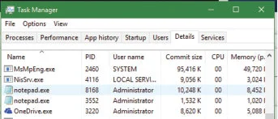<figcaption>ページヒープを適用する前後のコミットサイズ</figcaption></figure>
<ol start="11">
<li>追加のメモリが何に使われているかを詳しく調べるには、Sysinternals の VMMap を使います。
二つのメモ帳を実行したまま <code>VMMap.exe</code> を開き、ページヒープを有効にしたほうのプロセスを選びます。
<figure><figcaption>ページヒープを有効にしたプロセスの選択</figcaption></figure></li>
<li>VMMap をもう一つ起動して、もう一方のメモ帳を選びます。比較できるよう、二つのウィンドウを並べます。</li>
</ol></section><section class="page" id="page-363" aria-label="page-363"><figure><figcaption>VMMap でのメモリ使用量の比較</figcaption></figure>
<ol start="13">
<li>コミットサイズの差が、黄色の「Private Data」の部分に表れています。</li>
<li>両方の VMMap ウィンドウで、中央の一覧にある「Private Data」行を選び、下部に内訳を表示します。図ではサイズ順に並べています。
<figure><figcaption>Private Data の内訳</figcaption></figure></li>
<li>左側のメモ帳（ページヒープ有効）のほうが、多くのメモリを消費しています。1,024 KB の領域を一つ展開すると、次のように表示されます。
<figure>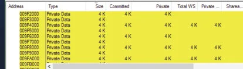<figcaption>ページヒープが挿入した予約済みページ</figcaption></figure></li>
<li>コミット済みページの間に予約済みページがあります。ページヒープは、これらのページでバッファーの前後への範囲外アクセスを検出します。
以後のメモ帳でページヒープを使わないように、GFlags の「Enable Page Heap」のチェックを外し、「Apply」をクリックします。</li>
</ol>
<p>ページヒープの詳細は Debugging Tools for Windows のヘルプを参照してください。</p></section><section class="page" id="page-364" aria-label="page-364"><h3 id="フォールトトレラントヒープ">フォールトトレラントヒープ</h3>
<p>Microsoft は、ヒープのメタデータの破損がアプリケーションの異常終了の主な原因の一つだと判断しました。
Windows の<strong>フォールトトレラントヒープ</strong>（FTH）は、こうした問題の影響を抑え、アプリケーション開発者が原因を調べる手掛かりを提供します。</p>
<ul>
<li><strong>FTH サーバー</strong>：異常終了を検出します。</li>
<li><strong>FTH クライアント</strong>：ヒープの不具合の影響を緩和します。</li>
</ul>
<p>サーバー側の <code>Fthsvc.dll</code> は、Windows Security Center サービス（<code>Wscsvc.dll</code>）がロードします。
このサービスは Local Service アカウントで動く共有サービスプロセスの一つで実行されます。
アプリケーションが異常終了すると、Windows エラー報告（WER）サービスが FTH サーバーに通知します。</p>
<p>たとえば、アプリケーションが <code>Ntdll.dll</code> 内で、アクセス違反またはヒープの破損を示す例外によって異常終了したとします。
そのアプリケーションがまだ監視対象でなければ、FTH サービスは FTH 用のデータを保持する「チケット」を作ります。
その後1時間に4回を超えて異常終了すると、次回から FTH クライアントを使うように設定します。</p>
<p>FTH クライアントはアプリケーション互換性シムです。
Windows XP 以降、この仕組みは古い Windows 固有の挙動に依存するアプリケーションを新しいバージョンで動かすために使われてきました。
FTH の場合、ヒープルーチンの呼び出しをシムが捕捉し、FTH 自身のコードに振り分けます。
ヒープの不具合が起きてもアプリケーションが動き続けられるよう、複数の緩和策を適用します。</p>
<p>たとえば、小さな範囲外書き込みの影響を抑えるため、各割り当てに8バイトのパディングと FTH 用の予約領域を追加します。
解放したブロックが後から参照される場合に備えて、<code>HeapFree</code> の処理は遅らせます。
解放を要求されたブロックをリストに入れ、合計が 4 MB を超えてから実際に解放します。
どのヒープにも属さない領域や、<code>HeapFree</code> の引数で指定したヒープとは別のヒープに属する領域を解放しようとした場合、要求は無視されます。
<code>exit</code> または <code>RtlExitUserProcess</code> の呼び出し後は、どのブロックも解放しません。</p>
<p>緩和策の適用後も、FTH サーバーはアプリケーションの異常終了の頻度を監視します。
頻度が下がらない場合は緩和策を解除します。</p>
<p>FTH の動作はイベントビューアーで確認できます。</p>
<ol>
<li>「ファイル名を指定して実行」を開き、<code>eventvwr.msc</code> と入力します。</li>
<li>左のツリーで「アプリケーションとサービス ログ」「Microsoft」「Windows」の順に開き、「Fault-Tolerant-Heap」を選びます。</li>
<li>「Operational」ログを開きます。</li>
</ol>
<p>FTH を完全に無効にする設定は、レジストリの <code>HKLM\\Software\\Microsoft\\FTH</code> にある <code>Enabled</code> の値を <code>0</code> にすることです。</p></section><section class="page" id="page-365" aria-label="page-365"><p>同じキーには、解放の遅延に関する設定や、対象外とする実行ファイルの一覧などもあります。
既定では <code>smss.exe</code>、<code>csrss.exe</code>、<code>wininit.exe</code>、<code>services.exe</code>、<code>winlogon.exe</code>、<code>taskhost.exe</code> などのシステムプロセスが対象外です。
<code>RuleList</code> には FTH が監視するモジュールと例外の種類、およびフラグが記録されています。
既定では、<code>Ntdll.dll</code> での <code>STATUS_ACCESS_VIOLATION</code>（<code>0xC0000005</code>）を監視するルールが一つあります。</p>
<p>FTH は通常、サービスには適用されません。
Windows Server では性能上の理由で無効になっています。
システム管理者は Application Compatibility Toolkit を使って、アプリケーションやサービスの実行ファイルにシムを手動で適用できます。</p>
<h3 id="仮想アドレス空間のレイアウト">仮想アドレス空間のレイアウト</h3>
<p>Windows の仮想アドレス空間はユーザー領域とシステム領域に分かれます。
各領域に何が置かれるかを整理してから、32 ビット（x86、ARM）と 64 ビット（x64）のレイアウトを比較します。
この違いから、各プラットフォームでプロセスやシステムが使える仮想メモリの上限が分かります。</p>
<p>Windows が仮想アドレス空間にマッピングするコードとデータは、大きく三種類に分かれます。</p>
<ul>
<li><strong>プロセス固有のコードとデータ</strong>：第1章で説明したように、各プロセスにはほかのプロセスから直接アクセスできないプライベートアドレス空間があります。
仮想アドレスは現在のプロセスのコンテキストで解釈されるため、スレッドは別のプロセスのプライベートアドレスを直接参照できません。
共有メモリも例外ではありません。共有領域は参加する各プロセスにマッピングされ、どのプロセスも自分の空間にあるアドレスを使います。
<code>ReadProcessMemory</code> と <code>WriteProcessMemory</code> も、カーネルモードのコードが対象プロセスのコンテキストで動くことで実現しています。
各プロセスは、仮想アドレス空間を記述するためのページテーブルを個別に持ちます（後述の「アドレス変換」を参照）。
ユーザーモードのスレッドが自分のアドレス空間のレイアウトを勝手に変更できないよう、ページテーブルはカーネルモードからしかアクセスできないページに置かれます。</li>
<li><strong>セッション共通のコードとデータ</strong>：セッションには、一人のユーザーのログオンに対応するプロセスや、ウィンドウステーション、デスクトップ、ウィンドウなどのシステムオブジェクトが含まれます（第2章を参照）。
セッションごとのページプールから、Windows サブシステムのカーネルモード部分（<code>Win32k.sys</code>）が、そのセッション専用の GUI データ構造を割り当てます。
セッションはそれぞれ、Windows サブシステムのプロセス（<code>Csrss.exe</code>）とログオンプロセス（<code>Winlogon.exe</code>）を持ちます。
セッションマネージャー（<code>Smss.exe</code>）は、新しいセッションを作る際、専用の <code>Win32k.sys</code> をロードし、そのセッション専用のオブジェクトマネージャー名前空間と二つのプロセスを作ります（オブジェクトマネージャーは Part 2 の第8章を参照）。
セッションを仮想化するため、セッション共通のデータ構造は、システム空間内の<strong>セッション空間</strong>にマッピングされます。
プロセスが作られると、このアドレス範囲に、そのプロセスの属するセッションのページがマッピングされます。</li>
</ul></section><section class="page" id="page-366" aria-label="page-366"><ul><li><strong>システム共通のコードとデータ</strong>：システム空間には、どのプロセスが実行中でもカーネルモードのコードから参照できる、OS 共通のコードとデータ構造があります。内訳は次のとおりです。
<ul>
<li><strong>システムコード</strong>：OS イメージ、HAL、および起動に使うデバイスドライバーを含みます。</li>
<li><strong>非ページプール</strong>：ページアウトできないシステムメモリのヒープです。</li>
<li><strong>ページプール</strong>：ページアウトできるシステムメモリのヒープです。</li>
<li><strong>システムキャッシュ</strong>：システムキャッシュで開いているファイルをマッピングするための仮想アドレス空間です。詳細は Part 2 のキャッシュの解説を参照してください。</li>
<li><strong>システムページテーブルエントリ（PTE）</strong>：I/O 空間、カーネルスタック、メモリ記述子リストなどのシステムページをマッピングするために使う PTE のプールです。
パフォーマンスモニターの <code>Memory: Free System Page Table Entries</code> で利用可能な数を確認できます。</li>
<li><strong>システムワーキングセットリスト</strong>：システムキャッシュ、ページプール、システム PTE という三つのシステムワーキングセットを記述するデータ構造です。</li>
<li><strong>システムのマップ済みビュー</strong>：Windows サブシステムのロード可能なカーネルモード部分（<code>Win32k.sys</code>）と、そこから使われるカーネルモードのグラフィックスドライバーをマッピングします（第2章を参照）。</li>
<li><strong>ハイパースペース</strong>：プロセスのワーキングセットリストなど、ほかのプロセスのコンテキストから参照する必要のないプロセス固有のデータをマッピングする領域です。
物理ページをシステム空間へ一時的にマッピングする用途にも使います。たとえばスタンバイリストからページを外す際、現在とは別のプロセスのページテーブルエントリを無効にするときに使います。</li>
<li><strong>クラッシュダンプ情報</strong>：システムがクラッシュしたときの状態を記録するために予約された領域です。</li>
<li><strong>HAL 用の領域</strong>：HAL 固有のデータ構造用に予約されたシステムメモリです。</li>
</ul></li></ul>
<p>これらの構成要素の配置は、x86、ARM、x64 で異なります。</p>
<h3 id="x86-のアドレス空間レイアウト">x86 のアドレス空間レイアウト</h3>
<p>32 ビット版 Windows では、各ユーザープロセスに既定で 2 GB のプライベートアドレス空間があり、残りの 2 GB は OS が使います。
x86 では BCD の起動オプション <code>increaseuserva</code> で、ユーザーアドレス空間を最大 3 GB まで広げられます。
二つのレイアウトを図5-10に示します。</p>
<p>2 GB を超えられるようにしたのは、32 ビットアプリケーションがそれより多くのデータをメモリに保持できるようにするためです。
64 ビットシステムでは、はるかに大きなアドレス空間を使えます。</p></section><section class="page" id="page-367" aria-label="page-367"><figure><figcaption>図5-10 x86 の仮想アドレス空間（左はユーザー領域 2 GB、右は 3 GB）</figcaption></figure>
<p>プロセスが 2 GB を超えるアドレス空間を使うには、システム全体の <code>increaseuserva</code> に加え、イメージヘッダーの <code>IMAGE_FILE_LARGE_ADDRESS_AWARE</code> フラグが必要です。
フラグがない場合、Windows は追加の領域をそのプロセスに対して予約し、アプリケーションに <code>0x7FFFFFFF</code> を超える仮想アドレスを渡しません。</p>
<p>明示的に対応を示す必要があるのは、アドレス空間が最大 2 GB だと仮定しているアプリケーションがあるためです。
2 GB 未満のアドレスは 31 ビットで表せるので、そのポインターの最上位ビットは常に0です。
そのビットを独自のフラグとして使い、メモリを参照する前にクリアするアプリケーションがあります。
3 GB のアドレス空間で動かすと、2 GB より上を指すポインターの最上位ビットまで消してしまい、プログラムのエラーやデータの破損を起こすおそれがあります。</p>
<p>ビルド時にこのフラグを設定するには、リンカーに <code>/LARGEADDRESSAWARE</code> を指定します。
Visual Studio なら、プロパティページの「リンカー」「システム」から「大きいアドレスの有効化」を選びます。
署名のない実行イメージなら、Windows SDK に含まれる <code>Editbin.exe</code> などで、ソースコードなしでフラグを追加できます。
ユーザーアドレス空間が 2 GB のシステムでは、このフラグに効果はありません。</p>
<p>大きなアドレス空間を使えるよう、対応フラグが付いたシステムイメージには次のものがあります。</p>
<ul>
<li><code>Lsass.exe</code>：ローカルセキュリティ機関サブシステム。</li>
<li><code>Inetinfo.exe</code>：Internet Information Server。</li>
<li><code>Chkdsk.exe</code>：ディスク検査ユーティリティ。</li>
</ul></section><section class="page" id="page-368" aria-label="page-368"><ul>
<li><code>Smss.exe</code>：セッションマネージャー。</li>
<li><code>Dllhst3g.exe</code>：COM+ アプリケーション向けの特別なバージョンの <code>Dllhost.exe</code>。</li>
</ul>
<h4 id="大きなアドレス空間への対応を調べる">大きなアドレス空間への対応を調べる</h4>
<p>実行ファイルが大きなアドレス空間に対応するかどうかは、Visual Studio Tools（または旧バージョンの Windows SDK）に含まれる Dumpbin で確認できます。
<code>/headers</code> オプションを指定して、実行ファイルのヘッダーを表示します。
次は、セッションマネージャーを調べたときの出力例です。</p>
<pre>dumpbin /headers c:\windows\system32\smss.exe
Microsoft (R) COFF/PE Dumper Version 14.00.24213.1
Copyright (C) Microsoft Corporation.  All rights reserved.
Dump of file c:\windows\system32\smss.exe
PE signature found
File Type: EXECUTABLE IMAGE
FILE HEADER VALUES
14C machine (x86)
5 number of sections
57898F8A time date stamp Sat Jul 16 04:36:10 2016
0 file pointer to symbol table
0 number of symbols
E0 size of optional header
122 characteristics
Executable
Application can handle large (&gt;2GB) addresses
32 bit word machine</pre>
<p><code>VirtualAlloc</code>、<code>VirtualAllocEx</code>、<code>VirtualAllocExNuma</code> による割り当ては、既定では低い仮想アドレスから始まり、高いほうへ進みます。
メモリを大量に割り当てるか、仮想アドレス空間がひどく断片化しているのでなければ、プロセスには高いアドレスが返されません。
テストで高いアドレスから割り当てるには、これらの関数に <code>MEM_TOP_DOWN</code> を指定するか、レジストリの <code>HKLM\\SYSTEM\\CurrentControlSet\\Control\\Session Manager\\Memory Management</code> キーに <code>AllocationPreference</code> という DWORD 値を追加して <code>0x100000</code> を設定します。</p>
<p>次の出力は、<code>increaseuserva</code> を指定せずに起動した 32 ビット版 Windows で、TestLimit（前の実験を参照）を使い、アドレス空間を予約した例です。</p>
<pre>Testlimit.exe -r
Testlimit v5.24 - test Windows limits
Copyright (C) 2012-2015 Mark Russinovich
Sysinternals - www.sysinternals.com
Process ID: 5500
Reserving private bytes (MB)...
Leaked 1978 MB of reserved memory (1940 MB total leaked). Lasterror: 8</pre></section><section class="page" id="page-369" aria-label="page-369"><p>プロセスは 2 GB の上限近くまで予約できましたが、上限には達していません。
通常のプロセスでは、EXE のコードや各種 DLL がアドレス空間の一部にすでにマッピングされているので、空間全体を予約することはできません。</p>
<p>同じシステムで、管理者として開いたコマンドプロンプトから次のコマンドを実行すると、ユーザーアドレス空間を 3 GB に変更できます。</p>
<pre>C:\WINDOWS\system32&gt;bcdedit /set increaseuserva 3072
The operation completed successfully.</pre>
<p>指定できる値は、既定の 2 GB に相当する 2,048 MB から、上限の 3 GB に相当する 3,072 MB までです。
システムを再起動して設定を有効にした後、TestLimit をもう一度実行すると、次の結果が得られます。</p>
<pre>Testlimit.exe -r
Testlimit v5.24 - test Windows limits
Copyright (C) 2012-2015 Mark Russinovich
Sysinternals - www.sysinternals.com
Process ID: 2308
Reserving private bytes (MB)...
Leaked 2999 MB of reserved memory (2999 MB total leaked). Lasterror: 8</pre>
<p>予想どおり、TestLimit は 3 GB 近くまで予約できました。
これは TestLimit が <code>/LARGEADDRESSAWARE</code> を指定してリンクされているためです。
指定されていなければ、<code>increaseuserva</code> を使わずに起動した場合とほぼ同じ結果になります。</p>
<p><strong>注：</strong>プロセスごとのユーザーアドレス空間を既定の 2 GB に戻すには、<code>bcdedit /deletevalue increaseuserva</code> を実行します。</p>
<h3 id="x86-のシステムアドレス空間">x86 のシステムアドレス空間</h3>
<p>32 ビット版 Windows は、仮想アドレスの割り当て機構を使って、システムアドレス空間のレイアウトを動的に決めます。この仕組みは後で説明します。
図5-10のように、固定で予約された領域も少数あります。
ただし、多くのカーネルモードのデータ構造にはアドレス空間が動的に割り当てられます。
そのため、一つのデータ構造が仮想アドレス空間の連続領域に収まるとは限らず、システム空間内の離れた領域に分かれることがあります。</p>
<p>動的な割り当てを使う領域には、次のものがあります。</p>
<ul><li>非ページプール</li><li>ページプール</li><li>特殊プール</li></ul></section><section class="page" id="page-370" aria-label="page-370"><ul>
<li>システムページテーブルエントリ（PTE）</li>
<li>システムのマップ済みビュー</li>
<li>ファイルシステムキャッシュ</li>
<li>ページフレーム番号（PFN）データベース</li>
<li>セッション空間</li>
</ul>
<h3 id="x86-のセッション空間">x86 のセッション空間</h3>
<p>セッション0はシステムプロセスとサービスが使い、最初にログオンしたユーザーはセッション1を使うので、たいていのシステムには複数のセッションがあります。
各セッションに固有のコードとデータは、システムアドレス空間にマッピングされ、そのセッションに属するプロセス間で共有されます。
図5-11にセッション空間の構成を示します。
ほかのカーネルアドレス空間と同様に、メモリマネージャーはセッション空間の各領域のサイズを動的に設定し、必要に応じて変更します。</p>
<figure><figcaption>図5-11 x86 のセッション空間（各領域の大きさは縮尺どおりではない）</figcaption></figure>
<h4 id="プロセスが属するセッションを調べる">プロセスが属するセッションを調べる</h4>
<p>タスクマネージャー、Process Explorer、カーネルデバッガーでセッション ID を調べると、各プロセスがどのセッションに属するか分かります。
カーネルデバッガーでは、<code>!session</code> でアクティブなセッションを一覧表示できます。</p>
<pre>lkd&gt; !session
Sessions on machine: 3
Valid Sessions: 0 1 2
Current Session 2</pre>
<p><code>!session -s</code> で調査対象のセッションを選択し、<code>!sprocess</code> でそのセッションのデータ構造のアドレスと、属するプロセスの一覧を表示します。</p>
<pre>lkd&gt; !session -s 1
Sessions on machine: 3</pre></section><section class="page" id="page-371" aria-label="page-371"><pre>Implicit process is now d4921040
Using session 1
lkd&gt; !sprocess
Dumping Session 1
_MM_SESSION_SPACE d9306000
_MMSESSION        d9306c80
PROCESS d4921040  SessionId: 1  Cid: 01d8    Peb: 00668000  ParentCid: 0138
DirBase: 179c5080  ObjectTable: 00000000  HandleCount:   0.
Image: smss.exe
PROCESS d186c180  SessionId: 1  Cid: 01ec    Peb: 00401000  ParentCid: 01d8
DirBase: 179c5040  ObjectTable: d58d48c0  HandleCount: &lt;Data Not Accessible&gt;
Image: csrss.exe
PROCESS d49acc40  SessionId: 1  Cid: 022c    Peb: 03119000  ParentCid: 01d8
DirBase: 179c50c0  ObjectTable: d232e5c0  HandleCount: &lt;Data Not Accessible&gt;
Image: winlogon.exe
PROCESS dc0918c0  SessionId: 1  Cid: 0374    Peb: 003c4000  ParentCid: 022c
DirBase: 179c5160  ObjectTable: dc28f6c0  HandleCount: &lt;Data Not Accessible&gt;
Image: LogonUI.exe
PROCESS dc08e900  SessionId: 1  Cid: 037c    Peb: 00d8b000  ParentCid: 022c
DirBase: 179c5180  ObjectTable: dc249640  HandleCount: &lt;Data Not Accessible&gt;
Image: dwm.exe</pre>
<p>セッションの詳細を確認するには、次のように <code>dt</code> コマンドで <code>MM_SESSION_SPACE</code> 構造体を表示します。</p>
<pre>lkd&gt; dt nt!_mm_session_space d9306000
+0x000 ReferenceCount   : 0n4
+0x004 u                : &lt;unnamed-tag&gt;
+0x008 SessionId        : 1
+0x00c ProcessReferenceToSession : 0n6
+0x010 ProcessList      : _LIST_ENTRY [ 0xd4921128 - 0xdc08e9e8 ]
+0x018 SessionPageDirectoryIndex : 0x1617f
+0x01c NonPagablePages  : 0x28
+0x020 CommittedPages   : 0x290
+0x024 PagedPoolStart   : 0xc0000000 Void
+0x028 PagedPoolEnd     : 0xffbfffff Void
+0x02c SessionObject    : 0xd49222b0 Void
+0x030 SessionObjectHandle : 0x800003ac Void
+0x034 SessionPoolAllocationFailures : [4] 0
+0x044 ImageTree        : _RTL_AVL_TREE
+0x048 LocaleId         : 0x409
+0x04c AttachCount      : 0
+0x050 AttachGate       : _KGATE
+0x060 WsListEntry      : _LIST_ENTRY [ 0xcdcde060 - 0xd6307060 ]
+0x080 Lookaside        : [24] _GENERAL_LOOKASIDE
+0xc80 Session          : _MMSESSION
...</pre></section><section class="page" id="page-372" aria-label="page-372"><h4 id="セッション空間のメモリ使用量を調べる">セッション空間のメモリ使用量を調べる</h4>
<p>カーネルデバッガーの <code>!vm 4</code> で、セッション空間のメモリ使用量を確認できます。
次の出力例は、リモートデスクトップ接続のある 32 ビット版 Windows クライアントから取得しました。
既定の二つにリモート接続用が加わり、セッションは三つあります。
出力中のアドレスは、先ほど表示した <code>MM_SESSION_SPACE</code> オブジェクトのアドレスです。</p>
<pre>lkd&gt; !vm 4
...
Terminal Server Memory Usage By Session:
Session ID 0 @ d6307000:
Paged Pool Usage:     2012 Kb
NonPaged Usage:        108 Kb
Commit Usage:         2292 Kb
Session ID 1 @ d9306000:
Paged Pool Usage:     2288 Kb
NonPaged Usage:        160 Kb
Commit Usage:         2624 Kb
Session ID 2 @ cdcde000:
Paged Pool Usage:     7740 Kb
NonPaged Usage:        208 Kb
Commit Usage:         8144 Kb
Session Summary
Paged Pool Usage:    12040 Kb
NonPaged Usage:        476 Kb
Commit Usage:        13060 Kb</pre>
<h3 id="システムページテーブルエントリ">システムページテーブルエントリ</h3>
<p>システムページテーブルエントリ（PTE）は、I/O 空間、カーネルスタック、メモリ記述子リスト（MDL。第6章も参照）に対応するシステムページを動的にマッピングするために使います。
システム PTE の数には上限があります。
利用可能な数から計算すると、32 ビット版 Windows では、理論上 2 GB の連続したシステム仮想アドレス空間を記述できます。
64 ビット版 Windows 10 と Windows Server 2016 では、最大 16 TB の連続領域を記述できます。</p>
<h4 id="利用可能なシステム-PTE-を調べる">利用可能なシステム PTE を調べる</h4>
<p>利用可能なシステム PTE の数は、パフォーマンスモニターの <code>Memory: Free System Page Table Entries</code> カウンターか、デバッガーの <code>!sysptes</code> または <code>!vm</code> で確認できます。
メモリ管理の状態を保持する変数 <code>MiState</code> の <code>_MI_SYSTEM_PTE_TYPE</code> 構造体を表示する方法もあります。
Windows 8.x と Windows Server 2012／2012 R2 では、グローバル変数 <code>MiSystemPteInfo</code> を調べます。
この方法では、システム上で PTE の割り当てに失敗した回数も分かります。
回数が多ければ、システム PTE のリークなどの問題が疑われます。</p></section><section class="page" id="page-373" aria-label="page-373"><pre>kd&gt; !sysptes
System PTE Information
Total System Ptes 216560
starting PTE: c0400000
free blocks: 969   total free: 16334    largest free block: 264
kd&gt; ? MiState
Evaluate expression: -2128443008 = 81228980</pre>
<pre>kd&gt; dt nt!_MI_SYSTEM_INFORMATION SystemPtes
+0x3040 SystemPtes : _MI_SYSTEM_PTE_STATE</pre>
<pre>kd&gt; dt nt!_mi_system_pte_state SystemViewPteInfo 81228980+3040
+0x10c SystemViewPteInfo : _MI_SYSTEM_PTE_TYPE</pre>
<pre>kd&gt; dt nt!_mi_system_pte_type 81228980+3040+10c
+0x000 Bitmap           : _RTL_BITMAP
+0x008 BasePte          : 0xc0400000 _MMPTE
+0x00c Flags            : 0xe
+0x010 VaType           : c ( MiVaDriverImages )
+0x014 FailureCount     : 0x8122bae4  -&gt; 0
+0x018 PteFailures      : 0
+0x01c SpinLock         : 0
+0x01c GlobalPushLock   : (null)
+0x020 Vm               : 0x8122c008 _MMSUPPORT_INSTANCE
+0x024 TotalSystemPtes  : 0x120
+0x028 Hint             : 0x2576
+0x02c LowestBitEverAllocated : 0xc80
+0x030 CachedPtes       : (null)
+0x034 TotalFreeSystemPtes : 0x73</pre>
<p>システム PTE の割り当てが何度も失敗する場合は、レジストリの <code>HKLM\\SYSTEM\\CurrentControlSet\\Control\\Session Manager\\Memory Management</code> に <code>TrackPtes</code> という DWORD 値を作成して <code>1</code> を設定すると、システム PTE の追跡を有効にできます。
その後、<code>!sysptes 4</code> で割り当て元の一覧を表示できます。</p>
<h3 id="ARM-のアドレス空間レイアウト">ARM のアドレス空間レイアウト</h3>
<p>図5-12のように、ARM のアドレス空間レイアウトは x86 とほぼ同じです。
メモリの管理自体については、メモリマネージャーは ARM と x86 を同じように扱います。
違いは後述の「アドレス変換」で説明する、アドレスを変換する層にあります。</p></section><section class="page" id="page-374" aria-label="page-374"><figure><figcaption>図5-12 ARM の仮想アドレス空間レイアウト</figcaption></figure>
<h3 id="64-ビットのアドレス空間レイアウト">64 ビットのアドレス空間レイアウト</h3>
<p>64 ビットの仮想アドレス空間は、理論上 16 エクサバイト（EB）、つまり 18,446,744,073,709,551,616 バイトです。
原著執筆時点のプロセッサの実装では、アドレスのうち48ビットしか使えないため、実際にアドレスで指定できる範囲は 256 TB（2 の48乗バイト）です。
この空間は二分され、下位 128 TB はユーザープロセスのプライベート空間に、上位 128 TB はシステム空間になります。
Windows 10 と Windows Server 2016 では、システム空間を図5-13のように大きさの異なる領域に分けます。
32 ビットの場合に比べて使える空間は大幅に増えます。
カーネル空間にも ASLR が適用されるため、各領域の実際の開始アドレスが図と一致するとは限りません。</p></section><section class="page" id="page-375" aria-label="page-375"><figure>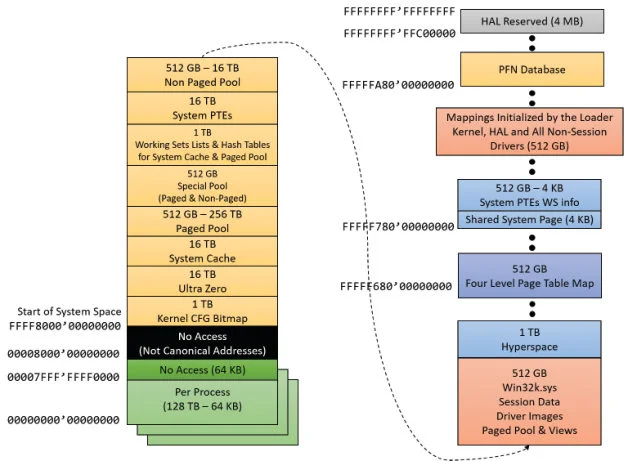<figcaption>図5-13 x64 のアドレス空間レイアウト</figcaption></figure>
<p><strong>注：</strong>Windows 8 と Windows Server 2012 では、Windows 側の実装上の制約によって、アドレス空間が 16 TB に制限されます（『Windows Internals』第6版 Part 2 の第10章を参照）。
内訳はプロセスごとに 8 TB、システム空間に 8 TB です。</p>
<p>大きなアドレス空間に対応する 32 ビットの実行イメージを 64 ビット版 Windows の Wow64 上で実行すると、32 ビットで表せるユーザーアドレス空間の全体、つまり 4 GB を使えます。
2 GB から 3 GB に広げるときとは異なり、3 GB で使うアドレスを 4 GB に広げてもポインターに追加のビットは不要です。
次の出力は、64 ビット版 Windows で TestLimit を 32 ビットアプリケーションとして実行し、アドレス空間を予約した例です。</p>
<pre>C:\Tools\Sysinternals&gt;Testlimit.exe -r
Testlimit v5.24 - test Windows limits
Copyright (C) 2012-2015 Mark Russinovich
Sysinternals - www.sysinternals.com
Process ID: 264
Reserving private bytes (MB)...
Leaked 4008 MB of reserved memory (4008 MB total leaked). Lasterror: 8
Not enough storage is available to process this command.</pre></section><section class="page" id="page-376" aria-label="page-376"><p>この結果が得られたのは、TestLimit が <code>/LARGEADDRESSAWARE</code> を指定してリンクされているためです。
指定されていなければ、どちらの結果も約 2 GB になります。
64 ビットアプリケーションでも、このオプションなしでリンクしたものは、32 ビットアプリケーションと同様に、プロセスの仮想アドレス空間の先頭 2 GB に制限されます。
Visual Studio の 64 ビットビルドでは、このフラグは既定で有効です。</p>
<h3 id="x64-の仮想アドレスの制約">x64 の仮想アドレスの制約</h3>
<p>64 ビットで仮想アドレスを表す場合、理論上の上限は 16 EB です。
32 ビットで表せる 4 GB よりはるかに大きく、この規模に近いメモリを扱う必要は、原著執筆時点ではなく、近い将来にも見込まれていませんでした。</p>
<p>原著執筆時点の AMD と Intel の x64 プロセッサは、チップの構造を簡潔に保ち、特にアドレス変換の余分な処理を避けるため、256 TB の仮想アドレス空間だけを実装していました。
64 ビットの仮想アドレスのうち、実装されるのは下位48ビットです。
仮想アドレスそのものは64ビット幅のままで、レジスタやメモリでは8バイトを占めます。
上位16ビット（ビット48～63）には、実装された最上位のビット（ビット47）と同じ値が入っていなければなりません。
これは2の補数表現での符号拡張に似た規則です。この規則を満たすアドレスを<strong>正準アドレス</strong>と呼びます。</p>
<p>この規則に従うと、下位半分は <code>0x0000000000000000</code> から <code>0x00007FFFFFFFFFFF</code> まで、上位半分は <code>0xFFFF800000000000</code> から <code>0xFFFFFFFFFFFFFFFF</code> までです。
正準アドレスが使える範囲は、それぞれ 128 TB です。
より多くのアドレスビットを実装するプロセッサでは、下位半分は <code>0x7FFFFFFFFFFFFFFF</code> に向かって上へ、上位半分は <code>0x8000000000000000</code> に向かって下へ広がります。</p>
<h3 id="システム仮想アドレス空間の動的管理">システム仮想アドレス空間の動的管理</h3>
<p>32 ビット版 Windows では、カーネル内部の仮想アドレス割り当て機構でシステムアドレス空間を管理します。
原著で扱う 64 ビット版 Windows では、各領域が静的に定義されているため（図5-13）、この管理に割り当て機構を使う必要がなく、その処理コストもかかりません。</p>
<p>システムの初期化時に、<code>MiInitializeDynamicVa</code> が動的に割り当てる領域を初期化し、利用可能な仮想アドレスをカーネル空間全体に設定します。
続いて、<code>MiInitializeSystemVaRange</code> で、ブートローダーが読み込んだイメージ、プロセス空間（ハイパースペース）、HAL のアドレス範囲を初期化します。
この関数は、32 ビットシステムでのみ固定のアドレス範囲を設定するために使われます。
その後、非ページプールの初期化時にも同じ関数を使い、プール用のアドレス範囲を予約します。
ドライバーをロードすると、そのイメージが占める範囲の分類は、起動時にロードされた領域からドライバーイメージの領域へ変わります。</p>
<p>この初期化の後は、残りのシステム仮想アドレス空間を <code>MiObtainSystemVa</code>（およびセッション用の <code>MiObtainSessionVa</code>）で動的に確保し、<code>MiReturnSystemVa</code> で解放できます。
システムキャッシュ、システム PTE、非ページプール、ページプール、特殊プールの拡張や、大ページでのマッピング、PFN データベースの作成、新しいセッションの作成では、用途に対応する範囲の仮想アドレスが動的に割り当てられます。</p></section><section class="page" id="page-377" aria-label="page-377"><p>カーネルの仮想アドレス割り当て機構は、特定の用途に仮想アドレス範囲を確保するたびに、<code>MiSystemVaType</code> 配列を更新し、新たに割り当てた範囲の種別を記録します。
表5-8に、この配列に入る値を示します。</p>
<div class="table-scroll" role="region" tabindex="0" aria-label="表。横にスクロールできます"><table><caption>表5-8 システム仮想アドレスの種別</caption>
<thead><tr><th>種別</th><th>用途</th><th>上限を設定できるか</th></tr></thead><tbody>
<tr><th><code>MiVaUnused</code>（0）</th><td>未使用</td><td>該当なし</td></tr>
<tr><th><code>MiVaSessionSpace</code>（1）</th><td>セッション空間</td><td>可</td></tr>
<tr><th><code>MiVaProcessSpace</code>（2）</th><td>プロセスのアドレス空間</td><td>不可</td></tr>
<tr><th><code>MiVaBootLoaded</code>（3）</th><td>ブートローダーが読み込んだイメージ</td><td>不可</td></tr>
<tr><th><code>MiVaPfnDatabase</code>（4）</th><td>PFN データベース</td><td>不可</td></tr>
<tr><th><code>MiVaNonPagedPool</code>（5）</th><td>非ページプール</td><td>可</td></tr>
<tr><th><code>MiVaPagedPool</code>（6）</th><td>ページプール</td><td>可</td></tr>
<tr><th><code>MiVaSpecialPoolPaged</code>（7）</th><td>特殊プール（ページプール）</td><td>不可</td></tr>
<tr><th><code>MiVaSystemCache</code>（8）</th><td>システムキャッシュ</td><td>不可</td></tr>
<tr><th><code>MiVaSystemPtes</code>（9）</th><td>システム PTE</td><td>可</td></tr>
<tr><th><code>MiVaHal</code>（10）</th><td>HAL</td><td>不可</td></tr>
<tr><th><code>MiVaSessionGlobalSpace</code>（11）</th><td>セッション共通空間</td><td>不可</td></tr>
<tr><th><code>MiVaDriverImages</code>（12）</th><td>ロード済みのドライバーイメージ</td><td>不可</td></tr>
<tr><th><code>MiVaSpecialPoolNonPaged</code>（13）</th><td>特殊プール（非ページプール）</td><td>可</td></tr>
<tr><th><code>MiVaSystemPtesLarge</code>（14）</th><td>大ページ用の PTE</td><td>可</td></tr>
</tbody></table></div>
<p>不要になった範囲は解放され、別の用途に回せます。
たとえば、ページプールやシステムキャッシュを縮小するときや、特殊プールや大ページのマッピング、起動時に使ったレジストリを解放するときに、対応する仮想アドレス範囲も解放されます。</p>
<p>利用可能な仮想アドレス空間が 128 MB を下回ると、コンポーネントは <code>MiReclaimSystemVa</code> を通じて、システムキャッシュに割り当てられた仮想アドレスの回収を要求できます。
実際の処理はセグメント参照解除スレッドが行います。
初期非ページプールが解放済みであれば、そこからもアドレスを回収できます。</p>
<p>動的な割り当てには、カーネルの各部が使う仮想アドレス空間を調整しやすくするだけでなく、メモリ使用量を抑える利点があります。
ページテーブルとそのエントリを事前に固定で用意せず、必要になったときに割り当てます。
32 ビットでも 64 ビットでも、未使用のアドレスのページテーブルが作られないため、起動時のメモリ消費が減ります。
64 ビットシステムでは、予約しただけの広い範囲のページテーブルをメモリにマップする必要もありません。
そのため、ページング用の構造に使える物理メモリが少ないシステムでも、領域の上限を大きく取れます。</p></section><section class="page" id="page-378" aria-label="page-378"><h4 id="Windows-10-と-Server-2016-でシステム仮想アドレスの使用量を調べる">Windows 10 と Server 2016 でシステム仮想アドレスの使用量を調べる</h4>
<p>カーネルデバッガーで、システム仮想アドレスの種別ごとに現在とピーク時の使用量を確認できます。
公開シンボルには、これらの情報を持つ <code>MiVisibleState</code>（型は <code>MI_VISIBLE_STATE</code>）が含まれています。次は x86 版 Windows 10 の例です。</p>
<ol><li><code>MiVisibleState</code> が持つデータを確認するため、構造体を値とともに表示します。</li></ol>
<pre>lkd&gt; dt nt!_mi_visible_state poi(nt!MiVisibleState)
+0x000 SpecialPool      : _MI_SPECIAL_POOL
+0x048 SessionWsList    : _LIST_ENTRY [ 0x91364060 - 0x9a172060 ]
+0x050 SessionIdBitmap  : 0x8220c3a0 _RTL_BITMAP
+0x054 PagedPoolInfo    : _MM_PAGED_POOL_INFO
+0x070 MaximumNonPagedPoolInPages : 0x80000
+0x074 SizeOfPagedPoolInPages : 0x7fc00
+0x078 SystemPteInfo    : _MI_SYSTEM_PTE_TYPE
+0x0b0 NonPagedPoolCommit : 0x3272
+0x0b4 BootCommit       : 0x186d
+0x0b8 MdlPagesAllocated : 0x105
+0x0bc SystemPageTableCommit : 0x1e1
+0x0c0 SpecialPagesInUse : 0
+0x0c4 WsOverheadPages  : 0x775
+0x0c8 VadBitmapPages   : 0x30
+0x0cc ProcessCommit    : 0xb40
+0x0d0 SharedCommit     : 0x712a
+0x0d4 DriverCommit     : 0n7276
+0x100 SystemWs         : [3] _MMSUPPORT_FULL
+0x2c0 SystemCacheShared : _MMSUPPORT_SHARED
+0x2e4 MapCacheFailures : 0
+0x2e8 PagefileHashPages : 0x30
+0x2ec PteHeader        : _SYSPTES_HEADER
+0x378 SessionSpecialPool : 0x95201f48 _MI_SPECIAL_POOL
+0x37c SystemVaTypeCount : [15] 0
+0x3b8 SystemVaType     : [1024]  &quot;&quot;
+0x7b8 SystemVaTypeCountFailures : [15] 0
+0x7f4 SystemVaTypeCountLimit : [15] 0
+0x830 SystemVaTypeCountPeak : [15] 0
+0x86c SystemAvailableVa : 0x38800000</pre>
<ol start="2"><li>末尾の配列に注目します。どの配列にも、表5-8の種別に対応する15個の要素があります。次に、<code>SystemVaTypeCount</code> と <code>SystemVaTypeCountPeak</code> を表示します。</li></ol>
<pre>lkd&gt; dt nt!_mi_visible_state poi(nt!mivisiblestate) -a SystemVaTypeCount
+0x37c SystemVaTypeCount :
[00] 0
[01] 0x1c
[02] 0xb
[03] 0x15
[04] 0xf
[05] 0x1b</pre></section><section class="page" id="page-379" aria-label="page-379"><pre>[06] 0x46
[07] 0
[08] 0x125
[09] 0x38
[10] 2
[11] 0xb
[12] 0x19
[13] 0
[14] 0xd
lkd&gt; dt nt!_mi_visible_state poi(nt!mivisiblestate) -a SystemVaTypeCountPeak
+0x830 SystemVaTypeCountPeak :
[00] 0
[01] 0x1f
[02] 0
[03] 0x1f
[04] 0xf
[05] 0x1d
[06] 0x51
[07] 0
[08] 0x1e6
[09] 0x55
[10] 0
[11] 0xb
[12] 0x5d
[13] 0
[14] 0xe</pre>
<h4 id="Windows-8-x-と-Server-2012-R2-でシステム仮想アドレスの使用量を調べる">Windows 8.x と Server 2012／R2 でシステム仮想アドレスの使用量を調べる</h4>
<p>これらのバージョンでも、カーネルデバッガーで種別ごとの現在の使用量とピーク時の使用量を確認できます。
表5-8の各種別について、カーネルのグローバル配列 <code>MiSystemVaTypeCount</code>、<code>MiSystemVaTypeCountFailures</code>、<code>MiSystemVaTypeCountPeak</code> が、それぞれ現在の使用量、割り当ての失敗回数、ピーク時の使用量を保持します。</p>
<p>使用量の単位は、一つのページディレクトリエントリ（PDE）がマップする範囲です（後述の「アドレス変換」を参照）。
これは大ページのサイズに相当し、x86 では 2 MB です。
次は 32 ビット版 Windows 8.1 で現在の使用量とピーク時の使用量を順に表示した例です。
失敗回数も同様に表示できます。</p>
<pre>lkd&gt; dd /c 1 MiSystemVaTypeCount L f
81c16640  00000000
81c16644  0000001e
81c16648  0000000b
81c1664c  00000018
81c16650  0000000f
81c16654  00000017
81c16658  0000005f
81c1665c  00000000
81c16660  000000c7</pre></section><section class="page" id="page-380" aria-label="page-380"><pre>81c16664  00000021
81c16668  00000002
81c1666c  00000008
81c16670  0000001c
81c16674  00000000
81c16678  0000000b
lkd&gt; dd /c 1 MiSystemVaTypeCountPeak L f
81c16b60  00000000
81c16b64  00000021
81c16b68  00000000
81c16b6c  00000022
81c16b70  0000000f
81c16b74  0000001e
81c16b78  0000007e
81c16b7c  00000000
81c16b80  000000e3
81c16b84  00000027
81c16b88  00000000
81c16b8c  00000008
81c16b90  00000059
81c16b94  00000000
81c16b98  0000000b</pre>
<p>システム仮想アドレス空間に空きがある限り、各コンポーネントに割り当てた範囲は、理論上その空きを使い切るまで拡大できます。
ただし、32 ビットシステムでは信頼性と安定性を保つため、カーネルの割り当て機構で種別ごとに上限を設定できます。
本書が対象とする 64 ビットシステムでは、カーネルアドレス空間の枯渇を考慮する必要はありません。
上限は既定では設定されていませんが、表5-8で設定可能とされている種別については、システム管理者がレジストリで変更できます。</p>
<p><code>MiObtainSystemVa</code> の要求を満たすと上限を超える場合は、失敗を記録し、利用可能なメモリ量に関係なく回収処理を要求します（前の実験を参照）。
回収で空きが増えれば、次の試行では割り当てが成功することがあります。
回収の対象になるのは、システムキャッシュと非ページプールだけです。</p>
<h4 id="システム仮想アドレスの上限を設定する">システム仮想アドレスの上限を設定する</h4>
<p><code>MiSystemVaTypeCountLimit</code> 配列には、システム仮想アドレスの種別ごとの使用量の上限が保持されます。
メモリマネージャーは表5-8で設定可能とされている種別に限り、文書化されていないシステムコールで実行中に上限を変更できます。
<a href="https://msdn.microsoft.com/en-us/library/bb870880.aspx">レジストリで設定する方法</a>もあります。</p>
<p>32 ビットシステムでは、本書のダウンロード資料に含まれる MemLimit を使うと、上限を取得、設定でき、現在とピーク時の使用量も確認できます。
次は、<code>-q</code> オプションで現在の上限を照会する例です。</p></section><section class="page" id="page-381" aria-label="page-381"><pre>C:\Tools&gt;MemLimit.exe -q
MemLimit v1.01 - Query and set hard limits on system VA space consumption
Copyright (C) 2008-2016 by Alex Ionescu
www.alex-ionescu.com
System Va Consumption:
Type                    Current            Peak            Limit
Non Paged Pool            45056 KB        55296 KB            0 KB
Paged Pool               151552 KB       165888 KB            0 KB
System Cache             446464 KB       479232 KB            0 KB
System PTEs               90112 KB       135168 KB            0 KB
Session Space             63488 KB        73728 KB            0 KB</pre>
<p>実験として、次のコマンドでページプールの上限を 100 MB に設定します。</p>
<pre>memlimit.exe -p 100M</pre>
<p>次に、Sysinternals の TestLimit で、作成できる限りのハンドルを作ります。
ページプールに余裕があれば通常は約1,600万個を作成できますが、プールを 100 MB に制限すると作成できる数は減ります。</p>
<pre>C:\Tools\Sysinternals&gt;Testlimit.exe -h
Testlimit v5.24 - test Windows limits
Copyright (C) 2012-2015 Mark Russinovich
Sysinternals - www.sysinternals.com
Process ID: 4780
Creating handles...
Created 10727844 handles. Lasterror: 1450</pre>
<p>オブジェクト、ハンドル、ページプールの消費については Part 2 の第8章を参照してください。</p>
<h3 id="システム仮想アドレス空間のプロセス別クォータ">システム仮想アドレス空間のプロセス別クォータ</h3>
<p>前節の上限は、特定のカーネルコンポーネントが使うシステム仮想アドレス空間を、32 ビットシステム全体で制限するものです。
プロセス単位で制限する場合は、メモリマネージャーがプロセスマネージャーと連携し、全プロセス共通またはユーザー別のクォータを各プロセスに適用します。</p>
<p>一つのプロセスが種別ごとに使えるメモリ量は、レジストリの <code>HKLM\\SYSTEM\\CurrentControlSet\\Control\\Session Manager\\Memory Management</code> にある <code>PagedPoolQuota</code>、<code>NonPagedPoolQuota</code>、<code>PagingFileQuota</code>、<code>WorkingSetPagesQuota</code> で指定できます。
この設定は初期化時に読み込まれ、生成された既定のシステムクォータブロックがすべてのシステムプロセスに割り当てられます。
ユーザープロセスには、次に説明するユーザー別のクォータが設定されていない限り、既定のブロックのコピーが割り当てられます。</p></section><section class="page" id="page-382" aria-label="page-382"><p>ユーザーごとのクォータを設定するには、レジストリの <code>HKLM\\SYSTEM\\CurrentControlSet\\Session Manager\\Quota System</code> キーの下に、ユーザーの SID を名前にしたサブキーを作ります。
そのサブキーに前述の値を設定すると、そのユーザーが作成したプロセスだけに上限が適用されます。
表5-9に、値の単位、実行中に変更できる条件、必要な特権を示します。</p>
<div class="table-scroll" role="region" tabindex="0" aria-label="表。横にスクロールできます"><table><caption>表5-9 プロセスのクォータの種別</caption><thead><tr><th>値の名前</th><th>制限する量</th><th>単位</th><th>実行中の変更</th><th>必要な特権</th></tr></thead><tbody>
<tr><th><code>PagedPoolQuota</code></th><td>プロセスが割り当てられるページプールの最大サイズ</td><td>MB</td><td>システムトークンで実行するプロセスに限り可</td><td><code>SeIncreaseQuotaPrivilege</code></td></tr>
<tr><th><code>NonPagedPoolQuota</code></th><td>プロセスが割り当てられる非ページプールの最大サイズ</td><td>MB</td><td>システムトークンで実行するプロセスに限り可</td><td><code>SeIncreaseQuotaPrivilege</code></td></tr>
<tr><th><code>PagingFileQuota</code></th><td>ページファイルをバックストアとしてプロセスが持てる最大ページ数</td><td>ページ</td><td>システムトークンで実行するプロセスに限り可</td><td><code>SeIncreaseQuotaPrivilege</code></td></tr>
<tr><th><code>WorkingSetPagesQuota</code></th><td>プロセスのワーキングセットとして物理メモリに置ける最大ページ数</td><td>ページ</td><td>可</td><td>ワーキングセットを空にする要求でなければ <code>SeIncreaseBasePriorityPrivilege</code></td></tr>
</tbody></table></div>
<h3 id="ユーザーアドレス空間のレイアウト">ユーザーアドレス空間のレイアウト</h3>
<p>カーネルのアドレス空間と同様に、ユーザーアドレス空間も動的に構成されます。
アプリケーションと読み込むイメージが対応していれば、スレッドのスタック、プロセスのヒープ、実行ファイルや DLL などのイメージのアドレスは、アドレス空間配置のランダム化（ASLR）によって動的に決まります。</p>
<p>OS は、ユーザーアドレス空間を図5-14のようにいくつかの用途別の領域に分けます。
実行ファイルと DLL はメモリマップトイメージとして置かれ、そのほかにプロセスのヒープと各スレッドのスタックがあります。
これらの領域と、TEB、PEB などシステムが予約するデータ構造を除き、いつどの領域が割り当てられるかは、実行時の動作によって決まります。</p>
<p>ASLR は実行時に決まる領域の配置に関わります。
DEP と組み合わせると、メモリ操作を通じたリモートからの脆弱性の悪用を難しくします。
Windows のコードとデータの位置は動的に変わるため、プログラムやシステムの DLL 内の有効な位置を、通常は固定オフセットだけで指定できません。</p></section><section class="page" id="page-383" aria-label="page-383"><figure><figcaption>図5-14 ASLR が有効なときのユーザーアドレス空間のレイアウト</figcaption></figure>
<h4 id="VMMap-でユーザー仮想アドレス空間を調べる">VMMap でユーザー仮想アドレス空間を調べる</h4>
<p>Sysinternals の VMMap では、マシン上の任意のプロセスについて、仮想メモリの使用状況を詳しく調べられます。
VMMap は割り当ての種類を次のように分類します。</p>
<ul>
<li><strong>Image</strong>：実行ファイル、依存する動的ライブラリ、ほかの PE 形式のイメージをマッピングしている領域です。</li>
<li><strong>Mapped File</strong>：データファイルをメモリにマッピングしている領域です。</li>
<li><strong>Shareable</strong>：共有可能とされた領域で、通常は共有メモリを含みます。メモリマップトファイルは「Image」または「Mapped File」に表示されます。</li>
<li><strong>Heap</strong>：そのプロセスが持つヒープに割り当てられた領域です。</li>
<li><strong>Managed Heap</strong>：.NET CLR がマネージドオブジェクトに割り当てた領域です。.NET を使わないプロセスでは値が表示されません。</li>
<li><strong>Stack</strong>：プロセス内の各スレッドのスタックに割り当てられた領域です。</li>
<li><strong>Private Data</strong>：内部データ構造など、スタックとヒープ以外のプライベートな領域です。</li>
</ul>
<p>次は、VMMap で 64 ビット版のエクスプローラーを調べた例です。</p></section><section class="page" id="page-384" aria-label="page-384"><figure>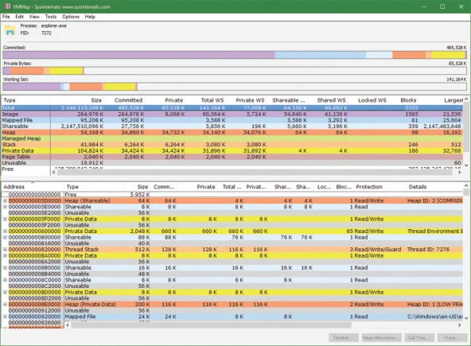<figcaption>VMMap で見たエクスプローラーのメモリ使用量</figcaption></figure>
<p>VMMap は、割り当ての種類に応じて、マップトファイルの名前、ヒープの ID と種類、スタックを使うスレッドの ID なども表示します。
割り当てごとに、コミット済みの量、ワーキングセット内の量、領域のサイズ、保護属性を確認できます。</p>
<p>ASLR は、プロセスの実行ファイルとそれが依存する DLL の配置から始まります。
PE ヘッダーに ASLR 対応を示す <code>IMAGE_DLL_CHARACTERISTICS_DYNAMIC_BASE</code> があり、再配置セクションを持つイメージが対象です。
このフラグは、通常は Microsoft Visual Studio でリンカーに <code>/DYNAMICBASE</code> を指定して設定します。
対象のイメージが見つかると、システムはその起動中に使うイメージオフセットを選びます。
候補は 64 KB 境界にそろった256個の値です。</p>
<h4 id="イメージの配置のランダム化">イメージの配置のランダム化</h4>
<p>実行ファイルのロード位置は、ロードのたびに求める疑似乱数の差分で変わります。
現在のプロセッサのタイムスタンプカウンター（TSC）を4ビットシフトし、254で割った余りに1を足します。
これに割り当て粒度の 64 KB を掛けた差分は、<code>0x10000</code> から <code>0xFE0000</code> までの範囲に収まります。
1を足すので差分は0にならず、ASLR を使う実行ファイルは PE ヘッダーに記録されたアドレスそのものにはロードされません。
希望ロードアドレスに差分を足すことで、そのアドレスから 16 MB 以内にロード位置が決まります。</p></section><section class="page" id="page-385" aria-label="page-385"><p>DLL のロードオフセットは、起動ごとにシステム全体で一つ決まる<strong>イメージバイアス</strong>をもとに計算します。
<code>MiInitializeRelocations</code> がこの値を求め、メモリ管理のグローバル構造体（<code>MI_SYSTEM_INFORMATION</code>）の <code>MiState.Sections.ImageBias</code> に格納します。
Windows 8.x と Windows Server 2012／R2 では、グローバル変数 <code>MiImageBias</code> に格納します。
32 ビットシステムでは、起動時にこの関数を実行している CPU の TSC を読み、シフトとマスクで8ビットに絞って256通りの値を作ります。
64 ビットシステムでも同様に計算しますが、アドレス空間が広いため候補はさらに多くなります。</p>
<p>実行ファイルの場合と異なり、イメージバイアスの計算は起動時の一度だけで、システム全体で共有します。
これにより DLL は一度だけ再配置され、その後は同じ物理メモリを共有できます。
プロセスごとに異なる場所へ DLL をマップすると、ローダーは参照先アドレスをプロセスごとに修正しなければなりません。
共有できたはずの読み取り専用コードがプロセス固有のデータになり、同じ DLL を使うプロセスごとに物理メモリ上のコピーが必要になります。</p>
<p>オフセットを計算すると、メモリマネージャーは <code>MI_SECTION_STATE</code> の一部であるビットマップ <code>ImageBitMap</code> を初期化します。
Windows 8.x と Windows Server 2012／R2 では、グローバル変数 <code>MiImageBitMap</code> を使います。
32 ビットシステムのビットマップは <code>0x50000000</code> から <code>0x78000000</code> までの範囲を表し、各ビットは割り当て単位である 64 KB に対応します。
DLL をロードするときは、その配置に対応するビットをセットします。
同じ DLL が再びロードされると、再配置済みのセクションオブジェクトを共有します。</p>
<p>DLL をロードするたびに、システムはビットマップの上位アドレス側から空きビットを探します。
走査を始める位置を <code>ImageBias</code> でずらすので、再起動すると DLL の配置が変わります。
最初の DLL は必ず <code>Ntdll.dll</code> で、その時点ではビットマップにまだ何も割り当てられていません。
そのため、ロードアドレスは次の式で求まります。<code>NtDllSizein64KBChunks</code> は DLL のサイズを 64 KB 単位で切り上げた値です。</p>
<ul>
<li><strong>32 ビット</strong>：<code>0x78000000 - (ImageBias + NtDllSizein64KBChunks) * 0x10000</code></li>
<li><strong>64 ビット</strong>：<code>0x7FFFFFFF0000 - (ImageBias64High + NtDllSizein64KBChunks) * 0x10000</code></li>
</ul>
<p>後続の DLL は、さらに下位のアドレスにある 64 KB 単位の領域に順にロードされます。
配置順が固定なら、<code>Ntdll.dll</code> のアドレスからほかの DLL のアドレスを推測しやすくなります。
これを避けるため、セッションマネージャー <code>Smss.exe</code> は初期化時に、既知の DLL をマップする順序もランダム化します。</p>
<p>ASLR 用の領域のほとんどが使われ、ビットマップに適切な空きがなくなると、DLL の再配置は実行ファイルと同じ方式に切り替わります。
この場合は、希望ベースアドレスから 16 MB 以内の 64 KB 境界にロードします。</p>
<h4 id="Ntdll-dll-のロードアドレスを確認する">Ntdll.dll のロードアドレスを確認する</h4>
<p>Windows 10 の x86 環境で、カーネル変数から計算した <code>Ntdll.dll</code> のロードアドレスを実際の値と照合します。</p>
<ol><li>ローカルカーネルデバッグを開始します。</li></ol></section><section class="page" id="page-386" aria-label="page-386"><ol start="2"><li><code>ImageBias</code> の値を調べます。</li></ol>
<pre>lkd&gt; ? nt!mistate
Evaluate expression: -2113373760 = 820879c0
lkd&gt; dt nt!_mi_system_information sections.imagebias 820879c0
+0x500 Sections           :
+0x0dc ImageBias          : 0x6e</pre>
<ol start="3">
<li>エクスプローラーを開き、<code>System32</code> にある <code>Ntdll.dll</code> のサイズを確認します。
この例では 1,547 KB（<code>0x182C00</code> バイト）です。64 KB 単位で切り上げると <code>0x19</code> なので、結果は <code>0x78000000 - (0x6E + 0x19) * 0x10000 = 0x77790000</code> です。</li>
<li>Process Explorer で任意のプロセスを選び、DLL の一覧にある <code>Ntdll.dll</code> のロードアドレス（「Base」列または「Image Base」列）を確認します。計算したアドレスと一致します。</li>
<li>64 ビットシステムでも同じように確認します。</li>
</ol>
<h4 id="スタックの配置のランダム化">スタックの配置のランダム化</h4>
<p>ASLR は、プロセスの最初のスレッドと、その後に作られる各スレッドのスタックの位置もランダム化します。
プロセスの <code>StackRandomizationDisabled</code> フラグが設定されていなければ、この処理が有効です。
まず、64 KB または 256 KB 間隔の候補32か所から、スタックのベースアドレスを選びます。
最初に条件を満たす空き領域を見つけ、そこから、現在のプロセッサの TSC をシフトとマスクで5ビットにした値に従って、候補を一つ選びます。</p>
<p>次に TSC から別の9ビットの値を求めます。
アラインメントを保つため、この値を4倍して、最大約 2 KB の差分を作ります。
選んだアドレスにこの差分を足すと、最終的なスタックのベースアドレスになります。</p>
<h4 id="ヒープの配置のランダム化">ヒープの配置のランダム化</h4>
<p>ASLR は、プロセスの初期ヒープと、その後ユーザーモードで作られるヒープの位置もランダム化します。
<code>RtlCreateHeap</code> は TSC から得た5ビットの疑似乱数に 64 KB を掛けて、ベースアドレスを決めます。
初期ヒープの候補は <code>0x00000000</code> から <code>0x001F0000</code> までです。
さらに、ヒープの先頭より手前にある範囲を明示的に解放し、候補の範囲を端から総当たりで読み書きする試みがアクセス違反になるようにします。</p>
<h4 id="カーネル空間の-ASLR">カーネル空間の ASLR</h4>
<p>カーネルのアドレス空間でも ASLR は有効です。
ドライバーのロードアドレスには、32 ビット版で64通り、64 ビット版で256通りの候補があります。
ユーザー空間のイメージを再配置するには、カーネル空間に相当量の作業領域が必要です。
カーネル空間に余裕がなければ、System プロセスのユーザーモードアドレス空間を作業領域に使えます。</p>
<p>Windows 10 バージョン 1607 と Windows Server 2016 では、ページプール、非ページプール、システムキャッシュ、ページテーブル、PFN データベースなど、システムメモリの大半の領域にも ASLR が適用されます。
これらの範囲の初期化は <code>MiAssignTopLevelRanges</code> が担います。</p></section><section class="page" id="page-387" aria-label="page-387"><h4 id="セキュリティ緩和策の設定">セキュリティ緩和策の設定</h4>
<p>ASLR をはじめとする Windows のセキュリティ緩和策の多くは、アプリケーションの互換性に影響する可能性があるため、適用の有無を選べます。
たとえば、ASLR の対象はイメージヘッダーに <code>IMAGE_DLL_CHARACTERISTICS_DYNAMIC_BASE</code> ビットが設定されたイメージです。
ハードウェアによる実行禁止（DEP）の設定は、起動オプションとリンカーオプションの組み合わせで決まります。</p>
<p>Microsoft は企業の管理者や個人ユーザーがこれらの機能を確認、管理できるよう、Enhanced Mitigation Experience Toolkit（EMET）を公開していました。
EMET では Windows 標準の緩和策を一元管理でき、当時まだ Windows に含まれていなかった緩和策も利用できました。
緩和策によるアクセスフォールトが起きたときは、イベントログで管理者に通知できます。
アプリケーションの開発元があらかじめ緩和策を有効にしていても、特定の環境で互換性の問題が生じる場合は、そのアプリケーションを手動で対象外にできました。</p>
<p><strong>注：</strong>原著執筆時点の EMET はバージョン 5.51 です。
サポート終了日は2018年7月末まで延長されました。
一部の機能は、その後の Windows に組み込まれています。</p>
<h4 id="Process-Explorer-で-ASLR-の適用状況を調べる">Process Explorer で ASLR の適用状況を調べる</h4>
<p>Sysinternals の Process Explorer では、稼働中のプロセスと、それらがロードした DLL の両方について ASLR 対応を調べられます。
ASLR 非対応の DLL が一つでもロードされると、プロセスは攻撃に対して弱くなることがあります。</p>
<ol>
<li>プロセスツリーの列見出しを右クリックし、「Select Columns」を選びます。</li>
<li>「Process Image」と「DLL」の両タブで「ASLR Enabled」を選びます。</li>
<li>Windows 付属のプログラムとサービスは ASLR が有効ですが、サードパーティー製アプリケーションは有効なものと無効なものがあることを確認します。</li>
</ol>
<p>図では <code>Notepad.exe</code> が選択されており、ロードアドレスは <code>0x7FF7D76B0000</code> です。
メモ帳をすべて閉じてから再び開くと、違うアドレスにロードされます。
システムを再起動して実験を繰り返すと、ASLR が有効な DLL のロードアドレスも、起動ごとに変わることを確認できます。</p></section><section class="page" id="page-388" aria-label="page-388"><figure><figcaption>Process Explorer で確認する ASLR の適用状況</figcaption></figure>
<h3 id="アドレス変換">アドレス変換</h3>
<p>ユーザーアプリケーションもシステムコードも、メモリを参照するときには仮想アドレスを使います。
仮想アドレスから物理ページへの変換は、まず本書が扱う Windows で唯一サポートされる 32 ビット x86 の PAE モードを例に説明し、次に ARM と x64 との違いを示します。
その後、物理メモリのアドレスに変換できなかった場合に起きるページフォールトと、ワーキングセットおよびページフレームデータベースを使った物理メモリの管理を説明します。</p>
<h3 id="x86-の仮想アドレス変換">x86 の仮想アドレス変換</h3>
<p>初期の x86 カーネルが扱える物理メモリは、当時の CPU の制約で 4 GB まででした。
Intel の x86 プロセッサ Pentium Pro は、<strong>物理アドレス拡張</strong>（PAE）というメモリマッピングモードを導入しました。
対応するチップセットを使えば、PAE モードで動く 32 ビット OS は、原著執筆時点の Intel x86 プロセッサで最大 64 GB の物理メモリを扱えます。PAE を使わない場合は最大 4 GB です。
x64 プロセッサがレガシーモードで動作するときは最大 1,024 GB まで扱えますが、原著で扱う Windows は、その容量を記述する PFN データベースが大きくなるため 64 GB に制限しています。</p>
<p>Windows は当初、PAE 非対応と PAE 対応の二種類の x86 カーネルを用意していました。
Windows Vista 以降の x86 版 Windows は、物理メモリが 4 GB 以下のシステムでも、PAE 対応のカーネルをインストールします。
性能とメモリ消費の両面で PAE 非対応カーネルを使う利点が小さくなり、ハードウェアによる実行禁止には PAE が必要なので、Microsoft は x86 カーネルを一種類にまとめられました。
以下では PAE の場合だけを説明します。PAE を使わない場合については本書の第6版を参照してください。</p></section><section class="page" id="page-389" aria-label="page-389"><p>CPU は、メモリマネージャーが作成、管理する<strong>ページテーブル</strong>を使い、仮想アドレスを物理アドレスに変換します。
仮想アドレス空間の各ページには、マッピング先の物理アドレスを保持する<strong>ページテーブルエントリ</strong>（PTE）がシステム空間内に対応付けられます。
図5-15は、x86 システムで連続した三つの仮想ページが、物理メモリ上の離れた三つのページにマッピングされる例です。
予約またはコミット済みでも、一度もアクセスされていない領域には PTE が存在しない場合があります。
最初のページフォールトが発生した時点で、ページテーブル自体を割り当てることがあるためです。
図5-15の仮想ページと PTE を結ぶ破線は、仮想ページと物理メモリの対応が間接的であることを示します。</p>
<figure><figcaption>図5-15 x86 で仮想アドレスを物理メモリにマッピングする例</figcaption></figure>
<p><strong>注：</strong>デバイスドライバーなどのカーネルモードコードでも、物理メモリのアドレスを直接参照することはできません。
まず物理アドレスを仮想アドレスにマッピングし、その仮想アドレスを使って間接的に参照します。
詳しくは WDK ドキュメントのメモリ記述子リスト（MDL）のサポートルーチンを参照してください。</p>
<p>変換の手順とページテーブル、ページディレクトリのレイアウトは、CPU の仕様で決まります。
OS はその仕様に沿ってデータ構造をメモリ上に構築します。
図5-16は x86 での概要を示しますが、ほかのアーキテクチャでも基本的な考え方は同じです。</p>
<p>図5-16のように、変換時に使うのは 32 ビットの仮想アドレスと、ページテーブル、ページディレクトリ、一つのページディレクトリポインターテーブル（PDPT）、アドレス変換キャッシュ（TLB）です。</p></section><section class="page" id="page-390" aria-label="page-390"><p>変換の結果は、対象のバイトがある RAM 上の 36 ビット物理アドレスです。
36 ビットという幅は、CPU が規定するページテーブルの形式によります。
一般的な小ページの場合は、仮想アドレスの下位12ビットを、変換結果の物理アドレスにそのままコピーします。
12 ビットで指定できる範囲は 4 KB で、小ページ1枚の大きさに相当します。</p>
<figure>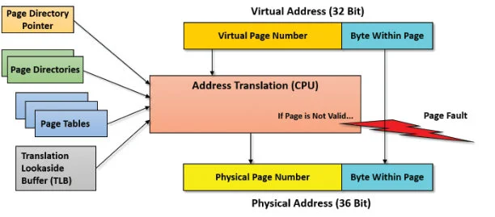<figcaption>図5-16 仮想アドレス変換の概要</figcaption></figure>
<p>たとえばページが物理メモリになく、ページファイルにある場合、アドレスは変換できません。
その場合、CPU は<strong>ページフォールト</strong>という例外を発生させ、対象ページを参照できないことを OS に通知します。
CPU にはページの保存先がページファイルか、マップトファイルか、それ以外かは分かりません。
OS が可能なら保存先からページを読み込み、ページテーブルがそのページを指すように更新してから、CPU に変換をやり直させます。
ページフォールトの詳細はこの章の後半を参照してください。</p>
<p>図5-17に、x86 で仮想アドレスを物理アドレスへ変換する流れを示します。</p>
<figure><figcaption>図5-17 x86 の仮想アドレス変換</figcaption></figure></section><section class="page" id="page-391" aria-label="page-391"><p>変換する 32 ビットの仮想アドレスは、論理的に四つの部分に分かれます。
下位12ビットは、ページ内のバイトを指定する値としてそのまま使います。
残りのビットを使う変換は、プロセスごとに一つある PDPT から始まります。
CPU がこのテーブルを見つけられるよう、PDPT は常に物理メモリにあり、その物理アドレスは各プロセスの <code>KPROCESS</code> 構造体に格納されます。
x86 の制御レジスタ <code>CR3</code> は、現在稼働中のプロセスの PDPT の位置を保持します。
コンテキストスイッチで実行するスレッドが別のプロセスに切り替わる場合は、新しいプロセスの <code>KPROCESS</code> に記録された値を <code>CR3</code> にロードします。
PDPT は 32 バイト境界にそろえる必要があります。また、x86 の <code>CR3</code> は 32 ビット幅なので、PDPT は RAM の先頭 4 GB 内に置く必要があります。</p>
<p>図5-17の構成に従って、仮想アドレスを物理アドレスに変換します。</p>
<ol>
<li>仮想アドレスの上位2ビット（ビット30と31）で、PDPT の4エントリのうち一つを選びます。このページディレクトリポインターエントリ（PDPE）は、ページディレクトリの物理アドレスを指します。</li>
<li>ビット21～29の9ビットで、ページディレクトリの512エントリのうち一つを選びます。このページディレクトリエントリ（PDE）は、ページテーブルの物理アドレスを指します。</li>
<li>ビット12～20の9ビットで、ページテーブルの512エントリのうち一つを選びます。この PTE は、物理ページの先頭アドレスを指します。</li>
<li>PTE が指すアドレスに、仮想アドレスの下位12ビットで表されるオフセットを足すと、参照先の物理アドレスが求まります。</li>
</ol>
<p><small>訳注：手順3のビット範囲は、原文の記載ではなく図5-17に従っています。</small></p>
<p>各テーブルのエントリはページ境界にそろったアドレスを指し、その値を<strong>ページフレーム番号</strong>（PFN）と呼びます。
一つのエントリは64ビット幅なので、512エントリを持つページディレクトリまたはページテーブルは、4 KB のページ1枚に収まります。
一方、64 GB の物理範囲を表す36ビットのうち、12ビットはオフセットなので、PFN に必要なのは残りの24ビットです。
エントリには PFN 以外の情報を保持する余地があります。</p>
<p>なかでも<strong>有効ビット</strong>は、PFN が有効であり、CPU がその値を使って変換を続けられるかどうかを示します。
ビットがクリアされていれば、CPU はページフォールト例外を発生させ、OS に処理を委ねます。
たとえば対象ページがディスクに書き出されていた場合は、メモリマネージャーが RAM の空きページに読み戻し、PTE を修正してから CPU に変換を再試行させます。</p>
<p>Windows はプロセスごとにプライベートアドレス空間を用意するので、そのマッピングに使う PDPT、ページディレクトリ、ページテーブルもプロセスごとに持ちます。
一方、システム空間を記述するページディレクトリとページテーブルは全プロセスで共有し、セッション空間は同じセッション内のプロセス間だけで共有します。</p></section><section class="page" id="page-392" aria-label="page-392"><p>同じ仮想メモリを記述するページテーブルが重複しないよう、プロセスを作成するときは、システム空間の PDE が既存のシステムページテーブルを指すように初期化します。
プロセスがセッションに属する場合は、セッション空間の PDE が既存のセッションページテーブルを指すようにして、これらも共有します。</p>
<h4 id="ページテーブルとページテーブルエントリ">ページテーブルとページテーブルエントリ</h4>
<p>小ページを使う場合、各 PDE はページテーブルを指します。
ページテーブルは PTE の配列で、PDPT も同じようにエントリの配列です。
ページテーブルには512個の PTE があり、それぞれが 4 KB のページ1枚をマップします。
したがって、一つのページテーブルで 2 MB（512 × 4 KB）のアドレス空間をマップできます。
同様に、一つのページディレクトリにはページテーブルを指す PDE が512個あるので、1 GB（512 × 2 MB）をマップできます。
PDPE は四つあるため、合わせて 32 ビットで表せるアドレス空間全体、つまり 4 GB をマップできます。</p>
<p>大ページを使う場合は、PDE がページテーブルを経由せず、大ページの先頭の物理アドレスを直接指します。
ページ内のバイトオフセットには、元の仮想アドレスの下位21ビットを使います。</p>
<p><small>訳注：原文では大ページの物理ベースを指すビット数を11としています。32 ビットの物理アドレスなら11ビットですが、この節で扱う 36 ビットの物理アドレスでは15ビットです。</small></p>
<p>ページディレクトリとページテーブルのレイアウトは基本的に同じです。
PTE はカーネルデバッガーの <code>!pte</code> で確認できます（後述のアドレス変換の実験を参照）。
ここでは有効な PTE を説明します。無効な PTE は「ページフォールトの処理」で扱います。
有効な PTE の主な要素は、ページの物理アドレスを表す PFN と、ページの状態や保護属性を表すフラグです（図5-18）。</p>
<figure><figcaption>図5-18 x86 の有効なハードウェア PTE</figcaption></figure>
<p>図5-18の「Software」と「Reserved」のビットは、PTE の有効、無効にかかわらず、CPU 内のメモリ管理ユニット（MMU）が読み飛ばします。
これらのビットを設定し、解釈するのはメモリマネージャーです。
有効な PTE の状態と保護を表すビットを表5-10に示します。</p>
<div class="table-scroll" role="region" tabindex="0" aria-label="表。横にスクロールできます"><table><caption>表5-10 PTE の状態と保護を表すビット</caption><thead><tr><th>ビット名</th><th>意味</th></tr></thead><tbody>
<tr><th>Accessed</th><td>ページにアクセスがあったことを示します。</td></tr>
<tr><th>Cache disabled</th><td>このページを CPU がキャッシュしないようにします。</td></tr>
<tr><th>Copy-on-write</th><td>このページでコピーオンライトを使います。</td></tr>
</tbody></table></div></section><section class="page" id="page-393" aria-label="page-393"><div class="table-scroll" role="region" tabindex="0" aria-label="表。横にスクロールできます"><table><caption>表5-10 PTE の状態と保護を表すビット（続き）</caption><thead><tr><th>ビット名</th><th>意味</th></tr></thead><tbody>
<tr><th>Dirty</th><td>ページに書き込みがあったことを示します。</td></tr>
<tr><th>Global</th><td>変換結果は全プロセスに共通です。たとえば、プロセスの切り替えに伴う変換キャッシュのフラッシュでは、この PTE に対応する変換は無効になりません。</td></tr>
<tr><th>Large page</th><td>この PDE が 2 MB の大ページをマップすることを示します（「大ページと小ページ」を参照）。</td></tr>
<tr><th>No execute</th><td>ページの内容をコードとして実行できず、データとしてのみ使用できることを示します。</td></tr>
<tr><th>Owner</th><td>ユーザーモードのコードからアクセスできるか、カーネルモードからしかアクセスできないかを示します。</td></tr>
<tr><th>Prototype</th><td>この PTE が、セクションオブジェクトに対応する共有メモリを記述するひな型（プロトタイプ PTE）であることを示します。</td></tr>
<tr><th>Valid</th><td>変換先が物理メモリ上のページかどうかを示します。</td></tr>
<tr><th>Write through</th><td>ページをライトスルーに設定します。このビットは、プロセッサがページ属性テーブル（PAT）に対応していれば、ライトコンバインの指定にも使われます。典型的な用途は映像のフレームバッファーのマッピングです。</td></tr>
<tr><th>Write</th><td>ページへの書き込みを許可するかどうかを MMU に示します。</td></tr>
</tbody></table></div>
<p>x86 システムのハードウェア PTE には、MMU が変更できるビットが二つあります。ダーティビット（Dirty）とアクセス済みビット（Accessed）です。
ページが読み書きされると、MMU はアクセス済みビットをセットします。書き込みがあれば、ダーティビットもセットします。
MMU はこれらのビットをクリアしません。必要なときにクリアするのは OS の役割です。</p>
<p>x86 の MMU は書き込みビットを使ってページを保護します。
ビットがクリアされていれば読み取り専用、セットされていれば読み書き可能です。
クリアされているページにスレッドが書き込もうとすると、メモリ管理の例外が発生します。
メモリマネージャーのアクセスフォールトハンドラーは、たとえばコピーオンライトが指定されたページなら書き込みを許可できるかを確認し、許可できなければアクセス違反を通知します（後述の「ページフォールトの処理」を参照）。</p>
<h4 id="PTE-のハードウェア書き込みビットとソフトウェア書き込みビット">PTE のハードウェア書き込みビットとソフトウェア書き込みビット</h4>
<p>Windows はソフトウェアで扱う書き込みビット（図5-18を参照）を別に持ち、ダーティビットの更新とメモリ管理用データの更新を同期させます。
単純な実装なら、メモリマネージャーは書き込み可能なページすべてにハードウェアの書き込みビット（ビット1）をセットします。
そのページに書き込むと、MMU は PTE のダーティビットをセットします。
メモリマネージャーは後でこのビットを調べ、その物理ページをほかの用途に使う前に、ページの内容をバックストアへ書き出す必要があると判断します。</p>
<p>ただし、マルチプロセッサシステムでは、この実装だと対処にコストのかかる競合が生じます。
どのプロセッサの MMU も、ハードウェア書き込みビットがセットされた PTE のダーティビットをいつでもセットできます。
メモリマネージャーは、必要なときに PTE のダーティビットの状態をプロセスのワーキングセットリストに反映し、リストへのアクセスはプッシュロックで同期します。
しかし、一つのプロセッサがロックを保持していても、別の CPU の MMU はダーティビットを変更できます。その結果、更新を見落とすことがあります。</p></section><section class="page" id="page-394" aria-label="page-394"><p>競合を避けるため、Windows のメモリマネージャーは、読み取り専用ページでも書き込み可能なページでも、PTE のハードウェア書き込みビット（ビット1）を最初は0にします。
実際に書き込めるかどうかは、ソフトウェア書き込みビット（ビット11）に記録します。
ページへの最初の書き込みは、ハードウェア書き込みビットがクリアされているため、本当に読み取り専用の場合と同様、例外になります。</p>
<p>ソフトウェア書き込みビットを見てページに書き込めると分かった場合、メモリマネージャーはワーキングセットのプッシュロックを取得します。
PTE のダーティビットとハードウェア書き込みビットをセットし、ページが変更されたことをワーキングセットリストに記録します。
ロックを解放して例外の処理を終えると、書き込みは通常どおり進みます。
この仕組みにより、最初にダーティビットをセットする処理は、ワーキングセットリストのロックを保持した状態で行われます。</p>
<p>以後はハードウェア書き込みビットがセットされているため、同じページに書き込んでも、この理由では例外が起きません。
MMU がダーティビットを再度セットしても、ワーキングセットリストに書き込み済みとして記録されているので問題ありません。
最初の書き込みを例外として処理すると余分な負担に見えますが、ページが有効な間、書き込み可能な各ページにつき一度しか発生しません。
さらに、通常は PTE の有効ビット（ビット0）をクリアした状態で初期化するため、ほぼすべてのページの最初のアクセスは、もともと例外として処理されます。
最初のアクセスが書き込みであれば、そのページフォールトを処理する際にダーティビットも処理するので、追加コストは小さくなります。
この実装には、プロセッサが一つでも複数でも、アドレス変換キャッシュをフラッシュする際に、対象ページごとにロックを保持しなくて済む利点もあります。</p>
<h3 id="アドレス変換キャッシュ">アドレス変換キャッシュ</h3>
<p>ここまでに説明したハードウェアによるアドレス変換では、次の三つのエントリを順に参照します。</p>
<ul>
<li>PDPT のエントリ。</li>
<li>ページテーブルの位置を示す、ページディレクトリのエントリ。</li>
<li>ページテーブルのエントリ。</li>
</ul>
<p>仮想アドレスによるメモリアクセスのたびにこの三つを読み取れば、必要なメモリ帯域幅は4倍になり、性能が落ちます。
そこで CPU はアドレス変換の結果をキャッシュし、同じアドレスに繰り返しアクセスするときに再変換せずに済むようにします。
このキャッシュを<strong>アドレス変換キャッシュ</strong>（TLB）と呼びます。
TLB は連想メモリでできており、複数のエントリを同時に読み出し、探している値と比較できます。</p>
<p>図5-19のように、TLB は最近使った仮想ページと物理ページの対応に加え、ページの大きさや保護属性などを保持します。
キャッシュエントリのタグは仮想アドレスの一部を持ち、データ部は物理ページ番号、保護フィールド、有効ビット、通常は対応するページのダーティビットを持ちます。
PTE のグローバルビットがセットされていると、プロセスを切り替えても対応する TLB エントリは無効化されません。
Windows はすべてのプロセスから見えるシステム空間のページでこのビットをセットします。</p></section><section class="page" id="page-395" aria-label="page-395"><figure><figcaption>図5-19 TLB の参照</figcaption></figure>
<p>頻繁に使う仮想アドレスには TLB エントリが見つかりやすく、仮想アドレスから物理アドレスへの変換もメモリアクセスもすばやく行えます。
TLB にエントリがなくても、ページが物理メモリにある場合は、ページテーブルをたどれば変換できます。
ただし、その分だけメモリアクセスが増え、処理は遅くなります。</p>
<p>ページをページアウトした場合や、PTE を変更した場合、メモリマネージャーは古い変換を使われないように、対応する TLB エントリを明示的に無効にします。
プロセスがそのページに再びアクセスしたとき、ページが物理メモリになければページフォールトが起きます。
メモリマネージャーは必要ならページを読み戻し、PTE を作り直します。再変換が成功すると TLB に新しいエントリが入ります。</p>
<h4 id="カーネルデバッガーでアドレス変換をたどる">カーネルデバッガーでアドレス変換をたどる</h4>
<p>x86 の PAE 環境で、カーネルデバッガーを使って PDPT、ページディレクトリ、ページテーブルと PTE を調べ、仮想アドレスを変換します。
ここでは、有効な物理アドレスにマップされている仮想アドレス <code>0x3166004</code> を取り上げます。
無効なアドレスの変換をたどる方法は、後の例で説明します。</p>
<p>まず <code>0x3166004</code> を2進数に直すと <code>11.0001.0110.0110.0000.0000.0100</code> です。
変換に使う三つのインデックスとページ内オフセットに分けると、次の図のようになります。</p>
<figure><figcaption>例題の仮想アドレスの内訳</figcaption></figure></section><section class="page" id="page-396" aria-label="page-396"><p>変換を始めるには、対象プロセスの PDPT の物理アドレスが必要です。
そのプロセスのスレッドが動作している間、このアドレスは <code>CR3</code> レジスタに入っています。
デバッガーでは <code>!process</code> の出力の <code>DirBase</code> フィールドで確認できます。</p>
<pre>lkd&gt; !process -1 0
PROCESS 99aa3040  SessionId: 2  Cid: 1690    Peb: 03159000  ParentCid: 0920
DirBase: 01024800  ObjectTable: b3b386c0  HandleCount: &lt;Data Not Accessible&gt;
Image: windbg.exe</pre>
<p><code>DirBase</code> から、PDPT の物理アドレスは <code>0x1024800</code> と分かります。
前の図に示したとおり、例題の仮想アドレスの PDPT インデックスは0です。
したがって、必要なページディレクトリの物理アドレスは、PDPT の先頭エントリ（物理アドレス <code>0x1024800</code>）にあります。</p>
<p>カーネルデバッガーの <code>!pte</code> は、指定した仮想アドレスに対応する PDE と PTE を表示します。</p>
<pre>lkd&gt; !pte 3166004
VA 03166004
PDE at C06000C0            PTE at C0018B30
contains 0000000056238867  contains 800000005DE61867
pfn 56238     ---DA--UWEV  pfn 5de61     ---DA--UW-V</pre>
<p><code>!pte</code> は PDPT を表示しませんが、物理アドレスが分かっているので、次のように表示できます。</p>
<pre>lkd&gt; !dq 01024800 L4
# 1024800 00000000&#x27;53c88801 00000000&#x27;53c89801
# 1024810 00000000&#x27;53c8a801 00000000&#x27;53c8d801</pre>
<p>ここで使ったデバッガー拡張コマンド <code>!dq</code> は、メモリをクアッドワード（64 ビット値）単位で表示する <code>dq</code> に似ていますが、仮想アドレスではなく物理アドレスを指定できます。
PDPT は4エントリなので、<code>L 4</code> を指定して出力を4つに絞っています。</p>
<p>PDPT インデックス（仮想アドレスの最上位2ビット）は0ですから、必要なのは先頭のクアッドワードです。
PDPT のエントリの形式は PDE や PTE と似ています。
このエントリから PFN は <code>0x53C88</code> と分かります。ページ境界にそろった物理アドレスに直すと <code>0x53C88000</code> で、これがページディレクトリの物理アドレスです。</p>
<p><code>!pte</code> が表示した PDE のアドレス <code>0xC06000C0</code> は仮想アドレスです。
x86 では、プロセスの最初のページディレクトリは仮想アドレス <code>0xC0600000</code> から始まります。
この PDE の先頭からの差は <code>0xC0</code> で、エントリのサイズである8バイトを24倍した値です。
つまり例題のページディレクトリインデックスは24で、25番目の PDE を参照しています。</p>
<p>PDE から、必要なページテーブルの PFN が <code>0x56238</code> と分かります。
ページテーブルの物理アドレス <code>0x56238000</code> に、ページテーブルインデックス <code>0x166</code> と PTE のサイズ8バイトを掛けた値を足します。
求める PTE の物理アドレスは <code>0x56238B30</code> です。</p></section><section class="page" id="page-397" aria-label="page-397"><p>デバッガーによると、この PTE の仮想アドレスは <code>0xC0018B30</code> です。
ページ内オフセットの <code>0xB30</code> は、アドレス変換で変わらないため、物理アドレスの下位と一致します。
メモリマネージャーはページテーブルを <code>0xC0000000</code> から順にマップします。
24番（<code>0x18</code>）のテーブルの先頭 <code>0xC0018000</code> に <code>0xB30</code> を加えると、デバッガーの出力どおり <code>0xC0018B30</code> になります。
デバッガーは、この PTE の PFN が <code>0x5DE61</code> であることも示します。</p>
<p>最後に、MMU が行うように、その PFN に元の仮想アドレスのページ内オフセットを連結します。
得られる物理アドレスは <code>0x5DE61004</code> です。
これが、この時点で仮想アドレス <code>0x3166004</code> に対応する物理アドレスです。</p>
<p>デバッガーは PFN の右に PTE のフラグを表示します。
たとえば参照したページのフラグは <code>---DA--UW-V</code> です。
<code>A</code> はアクセス済み、<code>U</code> はカーネルモードに限らずユーザーモードからもアクセス可能、<code>W</code> は書き込み可能、<code>V</code> は有効な物理ページを指すことを表します。</p>
<p>計算結果を確認するため、同じメモリを仮想アドレスと物理アドレスの両方で表示します。
まず、仮想アドレスを指定して <code>dd</code> でダブルワード（32 ビット値）単位に表示します。</p>
<pre>lkd&gt; dd 3166004 L 10
03166004  00000034 00000006 00003020 0000004e
03166014  00000000 00020020 0000a000 00000014</pre>
<p>次に、計算した物理アドレスを指定して <code>!dd</code> で表示すると、同じ内容が得られます。</p>
<pre>lkd&gt; !dd 5DE61004 L 10
#5DE61004 00000034 00000006 00003020 0000004e
#5DE61014 00000000 00020020 0000a000 00000014</pre>
<p>PTE と PDE についても同様に、それぞれの仮想アドレスと物理アドレスを指定して、出力を比較できます。</p>
<h3 id="x64-の仮想アドレス変換">x64 の仮想アドレス変換</h3>
<p>x64 のアドレス変換は x86 と似ていますが、テーブルが4階層あります。
プロセスごとに、最上位の<strong>レベル4ページマップテーブル</strong>（PML4）があり、その512個のエントリは第3階層のページディレクトリポインターテーブルを指します。
第3階層は x86 の PAE における PDPT に相当しますが、x86 のようにエントリが四つだけのテーブルを一つ持つのではなく、それぞれ1ページを使う512エントリのテーブルを最大512個持てます。</p>
<p>各 PDPT のエントリは、第2階層のページディレクトリの物理アドレスを指します。
各ページディレクトリには、個々のページテーブルを指すエントリが512個あります。
最後に、各ページテーブルの512個の PTE が、メモリ上のページの物理アドレスを指します。
各階層で次に参照する物理アドレスは、いずれも PFN として保持されます。</p></section><section class="page" id="page-398" aria-label="page-398"><p>原著執筆時点の x64 の実装では、仮想アドレスとして48ビットを使えます。
図5-20は、この48ビットをどのように分け、どのテーブルの参照に各部分を使うかを示します。
図5-21に、x64 のハードウェア PTE の形式を示します。</p>
<figure><figcaption>図5-20 x64 のアドレス変換</figcaption></figure>
<figure><figcaption>図5-21 x64 のハードウェア PTE</figcaption></figure>
<h3 id="ARM-の仮想アドレス変換">ARM の仮想アドレス変換</h3>
<p>32 ビット ARM プロセッサでの仮想アドレス変換には、32 ビット幅のエントリを1,024個持つページディレクトリを一つ使います。
変換に使うデータ構造を図5-22に示します。</p></section><section class="page" id="page-399" aria-label="page-399"><figure><figcaption>図5-22 ARM の仮想アドレス変換に使うデータ構造</figcaption></figure>
<p>各プロセスにはページディレクトリが一つあり、その物理アドレスは <code>TTBR</code> レジスタ（x86／x64 の <code>CR3</code> に相当）に入ります。
仮想アドレスの上位10ビットで PDE を選び、最大1,024個のページテーブルのうちどれを参照するかを決めます。
続く10ビットで PTE を選びます。
有効な PTE は物理ページの先頭を指します。ページ内オフセットには、x86 や x64 と同様に下位12ビットを使います。</p>
<p>図5-22の方式で指定できる物理メモリは 4 GB です。
ARM の PTE は、x86 や x64 の64ビット幅より小さい32ビット幅で、PFN に使うのはそのうち20ビットだからです。
ARM プロセッサにも x86 の PAE に似た拡張機能がありますが、原著で扱う Windows は使いません。
原著では、将来 Windows が 64 ビット ARM に対応すれば、物理アドレスの制約が緩和され、プロセスとシステムの仮想アドレス空間も大幅に広がると見込んでいます。</p>
<p>有効な PTE、通常の PDE、大ページ用の PDE のビット配置はそれぞれ異なります。
図5-23は、原著で扱う Windows が使用する ARMv7 の有効な PTE の形式です。
詳しくは ARM の公式ドキュメントを参照してください。</p>
<figure>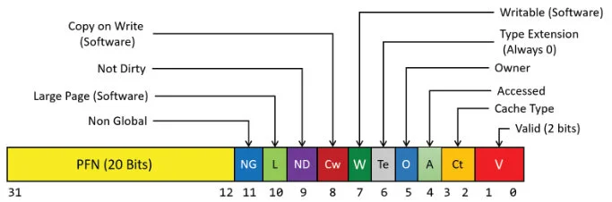<figcaption>図5-23 ARM の有効な PTE の形式</figcaption></figure></section><section class="page" id="page-400" aria-label="page-400"><h3 id="ページフォールトの処理">ページフォールトの処理</h3>
<p>PTE が有効なら、これまでに示した手順でアドレスを変換できます。
一方、有効ビットがクリアされていれば、目的のページは何らかの理由で、現時点ではそのプロセスからアクセスできません。
無効な PTE にもいくつかの種類があり、参照されたときの処理が異なります。</p>
<p><strong>注：</strong>ここで PTE の形式を詳しく説明するのは、32 ビットの x86 だけです。64 ビットや ARM の PTE も同様の情報を持ちますが、レイアウトの詳細は示しません。</p>
<p>無効なページを参照するとページフォールトが発生します。
カーネルのトラップハンドラーは、このフォールトの処理をメモリマネージャーの <code>MmAccessFault</code> に渡します（Part 2 の第8章「トラップのディスパッチ」を参照）。
このルーチンはフォールトを起こしたスレッドのコンテキストで実行され、フォールトを解決できるなら解決し、できない場合は適切な例外を発生させます。
アクセスフォールトの原因と処理を表5-11に示します。</p>
<div class="table-scroll" role="region" tabindex="0" aria-label="表。横にスクロールできます"><table><caption>表5-11 アクセスフォールトの原因と処理</caption><thead><tr><th>原因</th><th>処理</th></tr></thead><tbody>
<tr><th>PTE または PDE の破損</th><td>バグチェックコード <code>0x1A</code>（<code>MEMORY_MANAGEMENT</code>）でシステムを停止します。</td></tr>
<tr><th>物理メモリに常駐せず、ディスク上のページファイルまたはマップトファイルにあるページへのアクセス</th><td>物理ページを割り当て、ディスクから対象ページを読み込み、対応するワーキングセットに加えます。</td></tr>
<tr><th>スタンバイリストまたは変更済みリストにあるページへのアクセス</th><td>対応するプロセス、セッション、システムのいずれかのワーキングセットへページを移します。</td></tr>
<tr><th>コミットしていないページへのアクセス（予約のみか、未割り当てのアドレス空間）</th><td>アクセス違反例外が発生します。</td></tr>
<tr><th>カーネルモード専用ページへのユーザーモードからのアクセス</th><td>アクセス違反例外が発生します。</td></tr>
<tr><th>読み取り専用ページへの書き込み</th><td>アクセス違反例外が発生します。</td></tr>
<tr><th>デマンドゼロページへのアクセス</th><td>ゼロで埋めたページを、対応するワーキングセットに加えます。</td></tr>
<tr><th>ガードページへの書き込み</th><td>ガードページ違反が発生します。ユーザーモードのスタックへの参照なら、スタックを自動的に拡張します。</td></tr>
<tr><th>コピーオンライトのページへの書き込み</th><td>プロセス専用またはセッション専用のコピーを作り、対応するプロセス、セッション、システムのワーキングセットで、元のページをコピーに置き換えます。</td></tr>
<tr><th>有効なページへの書き込みで、現在のバックストアのコピーにまだ変更が反映されていない場合</th><td>PTE のダーティビットをセットします。</td></tr>
<tr><th>実行禁止のページでコードを実行</th><td>アクセス違反例外が発生します。</td></tr>
<tr><th>PTE のアクセス権とエンクレーブのアクセス権が不一致（後述の「メモリエンクレーブ」と Windows SDK の <code>CreateEnclave</code> の説明を参照）</th><td>ユーザーモードではアクセス違反例外が発生します。カーネルモードではバグチェックコード <code>0x50</code>（<code>PAGE_FAULT_IN_NONPAGED_AREA</code>）でシステムを停止します。</td></tr>
</tbody></table></div>
<p>次の節では、アクセスフォールトハンドラーが処理する無効な PTE の基本4種類を説明します。
続いて、共有可能なページの実装に使う特殊な無効 PTE であるプロトタイプ PTE を取り上げます。</p></section><section class="page" id="page-401" aria-label="page-401"><h3 id="無効な-PTE">無効な PTE</h3>
<p>アドレス変換で参照した PTE の有効ビットが0なら、その PTE が表すページへの参照は、メモリ管理の例外であるページフォールトを引き起こします。
この場合、MMU は PTE の残りのビットを無視するため、OS はフォールトの解決に必要な情報をそこに記録できます。</p>
<p>無効な PTE の基本4種類と、種別をまだ判定できない場合を以下に示します。
これらは MMU ではなくメモリマネージャーが解釈するため、<strong>ソフトウェア PTE</strong>と呼ばれます。
一部のフラグは表5-10のハードウェア PTE と共通です。対応するビットフィールドも同じ意味、または似た意味を持つ場合があります。</p>
<ul><li><strong>ページファイル</strong>：対象ページはページファイルにあります。
図5-24のように、PTE の4ビットは最大16個のページファイルのうちの一つを、32ビットはファイル内のページ番号を指定します。
ページング処理はページインを開始し、そのページをメモリに読み込んで有効にします。
ページファイルの先頭と末尾のページはページングに使いません。
オフセットが0の場合と全ビットが1の場合は、次に示す別の形式を表します。</li></ul>
<figure><figcaption>図5-24 ページファイル内のページを表す PTE</figcaption></figure>
<ul>
<li><strong>デマンドゼロ</strong>：ページファイル用 PTE と同じ形式ですが、オフセットは0です。
参照されたページには、ゼロで埋めたページを割り当てます。
まずゼロページリストを調べ、空なら空きページリストから1枚取り出してゼロで埋めます。
空きページリストも空なら、いずれかのスタンバイリストから1枚取り出してゼロで埋めます。</li>
<li><strong>仮想アドレス記述子</strong>：ページファイル用 PTE と同じ形式ですが、オフセットの全ビットが1です。
ページの定義と、バックストアがある場合はその情報を、プロセスの仮想アドレス記述子（VAD）のツリーから取得できます。
この形式は、マップトファイルのセクションをバックストアとするページで使います。
ページング処理は対象アドレスを含む範囲の VAD を探し、VAD が参照するマップトファイルからのページインを開始します（後述の「仮想アドレス記述子」を参照）。</li>
<li><strong>遷移</strong>：遷移ビットが1です。
対象ページは物理メモリにあり、スタンバイリスト、変更済みリスト、書き出し対象外の変更済みリストのいずれかに入っているか、どのリストにも入っていません。
リストに入っていればそこから取り出し、プロセスのワーキングセットに加えます。
I/O を必要としないため、これは<strong>ソフトページフォールト</strong>と呼ばれます。</li>
<li><strong>不明</strong>：PTE が0か、ページテーブルがまだ存在しません。後者では、ページテーブルの物理アドレスが入る PDE が0です。</li>
</ul></section><section class="page" id="page-402" aria-label="page-402"><p>どちらの場合も、メモリマネージャーは VAD を調べて対象の仮想アドレスがコミット済みか確認します。
コミット済みなら、そのアドレス空間を表すページテーブルを作ります。
予約しただけか、まだ割り当てられていなければ、ページフォールトをアクセス違反例外として通知します。</p>
<h3 id="プロトタイプ-PTE">プロトタイプ PTE</h3>
<p>メモリマネージャーは、プロセス間で共有できるページをマップするために、<strong>プロトタイプ PTE</strong>というソフトウェアのデータ構造を使います。
ページファイルをバックストアとするセクションでは、セクションオブジェクトの作成時にプロトタイプ PTE の配列を作ります。
一方、マップトファイルでは、各ビューをマップするたびに、必要な部分の配列を作ります。
この配列はセグメント構造体の一部です（後述の「セクションオブジェクト」を参照）。</p>
<p>プロセスがセクションオブジェクトのビューにマップしたページを初めて参照すると、メモリマネージャーはプロトタイプ PTE の情報をもとに、プロセスのページテーブルで実際の変換に使う PTE を設定します。
VAD が作られるのはビューのマッピング時です。
共有ページが有効になると、プロセスの PTE とプロトタイプ PTE は、どちらもデータが入った物理ページを指します。
この共有ページを参照するプロセス PTE の数を追跡するため、PFN データベースの該当エントリにあるカウンターを増やします。
こうして、どのページテーブルも共有ページを参照していないことを判定し、そのページを無効にして遷移状態のリストへ移したり、ディスクへ書き出したりできます。</p>
<p>共有可能なページを無効にするとき、プロセスのページテーブルには、そのページを記述するプロトタイプ PTE を指す特殊な PTE を設定します（図5-25）。
ページが参照されると、メモリマネージャーはこの PTE に埋め込まれた情報からプロトタイプ PTE を見つけ、参照されたページの状態を調べます。</p>
<figure><figcaption>図5-25 プロトタイプ PTE を指す無効な PTE の構造</figcaption></figure>
<p>プロトタイプ PTE が表す共有ページには、次の六つの状態があります。</p>
<ul>
<li><strong>アクティブ／有効</strong>：ほかのプロセスがアクセスしたため、ページは物理メモリにあります。</li>
<li><strong>遷移</strong>：ページは物理メモリにあり、スタンバイリストか変更済みリストに入っているか、どのリストにも入っていません。</li>
<li><strong>変更済み（書き出しなし）</strong>：ページは物理メモリにあり、書き出し対象外の変更済みリストに入っています。</li>
<li><strong>デマンドゼロ</strong>：ゼロで埋めたページを割り当てます。</li>
<li><strong>ページファイル</strong>：ページはページファイルにあります。</li>
<li><strong>マップトファイル</strong>：ページはマップトファイルにあります。</li>
</ul></section><section class="page" id="page-403" aria-label="page-403"><p>プロトタイプ PTE の形式は通常の PTE と同じですが、アドレス変換には直接使われません。
ページテーブルと PFN データベースの間に置かれ、ページテーブル自体には入りません。</p>
<p>共有可能なページでフォールトが起きたとき、どのプロセスも同じプロトタイプ PTE を参照します。
そのため、メモリマネージャーは共有する各プロセスのページテーブルを一度に更新しなくても、ページを管理できます。
たとえば、ディスクにページアウトした共有コードやデータを読み戻したときは、プロトタイプ PTE だけを更新してページの新しい物理位置を指すようにします。
共有する各プロセスの PTE は、有効ビットがクリアされたままで、引き続きプロトタイプ PTE を指します。
各プロセスが後でそのページを参照したときに、そのプロセス自身の PTE が更新されます。</p>
<p>図5-26は、マップしたビューに含まれる二つの仮想ページを示しています。
一つ目は有効で、プロセスの PTE とプロトタイプ PTE の両方が同じ物理ページを指します。
二つ目は無効で、ページはページファイルにあります。
プロトタイプ PTE がその正確な位置を保持し、ページをマップする各プロセスの PTE がそのプロトタイプ PTE を指します。</p>
<figure><figcaption>図5-26 プロトタイプ PTE</figcaption></figure>
<h3 id="ページイン-I-O">ページイン I/O</h3>
<p>ページフォールトを解決するためにページファイルまたはマップトファイルを読み取る必要があるとき、<strong>ページイン I/O</strong>が発生します。
ページテーブル自体もページアウトできるため、元の参照先を記述する PTE やプロトタイプ PTE を含むページを読み込むだけでも、追加の I/O が発生することがあります。</p>
<p>ページイン I/O は同期処理です。要求したスレッドは、I/O が完了するまでイベントを待ちます。
この待機は非同期プロシージャ呼び出し（APC）の配信では中断されません。
ページング処理は I/O 要求を発行する際に、ページング I/O であることを示す指定を加えます。
I/O が完了すると I/O システムがイベントを通知し、待機していたページング処理が再開します。</p>
<p>ページング I/O の間、フォールトを起こしたスレッドは、メモリ管理の重要な同期オブジェクトを保持しません。
そのため、同じプロセスのほかのスレッドは仮想メモリを操作したり、ページフォールトを処理したりできます。</p></section><section class="page" id="page-404" aria-label="page-404"><p>待機中に状態が変わることがあるため、ページング処理は I/O 完了時に次の事態を確認します。</p>
<ul>
<li>同じプロセスまたは別のプロセスのスレッドが、同じページに対してフォールトを起こした（次節の「競合するページフォールト」を参照）。</li>
<li>仮想アドレス空間からそのページのマッピングが削除され、再マッピングされた。</li>
<li>ページの保護属性が変更された。</li>
<li>フォールトの処理に必要なプロトタイプ PTE があり、それを収めたページがワーキングセットから外れた。</li>
</ul>
<p>ページング処理は I/O 要求を出す前に、これらの変化を判定するのに必要な状態をスレッドのカーネルスタックに保存しておきます。
I/O の完了時に変化を検出したら、必要に応じてページを有効にしないまま、フォールトの処理を終えます。
フォールトを起こした命令が再実行されれば、ページング処理が再び呼ばれ、変更後の PTE を改めて調べます。</p>
<h3 id="競合するページフォールト">競合するページフォールト</h3>
<p>あるページを読み込んでいる間に、同じプロセスまたは別のプロセスの別のスレッドが、そのページへの参照でフォールトを起こすことを<strong>競合するページフォールト</strong>（collided page fault）と呼びます。
マルチスレッドシステムでは頻繁に起きるため、ページング処理は PFN データベースのエントリを調べ、対象ページが遷移状態で読み取りが進行中なら競合として扱います。</p>
<p>競合を検出した場合、ページング処理は PFN データベースのエントリに記録されたイベントを待つことができます。
このイベントは、フォールトを解決するために最初に I/O を発行したスレッドが初期化したものです。
ファイルシステムのデッドロックを防ぐため、別の I/O を並行して発行する場合もあります。
その場合は、最初に完了した I/O の結果だけを使い、ほかの結果は破棄します。</p>
<p>I/O が完了すると、そのイベントを待っていたすべてのスレッドが待機を終えます。
最初に PFN データベースのロックを取得したスレッドが、ページインの完了処理を行います。
I/O が成功したかを確認し、PFN データベースの読み取り進行中ビットをクリアして PTE を更新します。</p>
<p>後続のスレッドがロックを取ったときには、読み取り進行中ビットがクリアされているので、最初の更新が済んでいることが分かります。
これらのスレッドは PFN データベースのページインエラーフラグを調べ、I/O が成功したかを確認します。
フラグがセットされていれば PTE を更新せず、フォールトを起こしたスレッドでページインエラー例外を発生させます。</p>
<h3 id="ページフォールトに伴う一括先読み">ページフォールトに伴う一括先読み</h3>
<p>メモリマネージャーは、ページフォールトを解決し、システムキャッシュにデータを用意するため、複数のページをまとまりとして先読みします。
データは仮想メモリのワーキングセットではなく、システムのページキャッシュへ直接読み込まれます。
したがって先読みデータは仮想アドレス空間を消費せず、読み込み量は仮想アドレス空間の空き容量に制約されません。</p></section><section class="page" id="page-405" aria-label="page-405"><p>先読みしたページを別の用途に回すときにも、TLB のフラッシュに伴う高コストなプロセッサ間割り込み（IPI）は不要です。
先読みしたページはスタンバイリストに入れ、PTE では遷移状態とします。
後で参照されたページだけがワーキングセットに入り、一度も参照されなければ、解放のために追加のシステムリソースを必要としません。</p>
<p>先読みする範囲にすでにメモリ上にあるページが含まれていても、そのページを読み直す必要はありません。
メモリマネージャーは、図5-27のようにその読み込み先をダミーページに差し替え、全体を一回の大きな I/O で読み込めるようにします。</p>
<figure><figcaption>図5-27 MDL で仮想アドレスを物理ページに対応付ける際のダミーページの使い方</figcaption></figure>
<p>図のページ A、Y、Z、B に対応するファイル内オフセットと仮想アドレスは連続していますが、物理ページの配置は連続しているとは限りません。
A と B は常駐していないので、読み込む必要があります。
Y と Z はすでに物理メモリにあり、前に読み込んだ後に変更されている可能性もあるので、上書きしてはいけません。</p>
<p>A と B を個別に読み込むより、一度に読み込むほうが効率的です。
そこでメモリマネージャーは、A、Y、Z、B の4ページすべてをバックストアから読み込む単一の要求を発行します。
一つの読み込み要求で扱うページ数は、利用可能なメモリやシステムの現在の使用状況などに応じて決まります。</p>
<p>要求を記述するメモリ記述子リスト（MDL）には、A と B の有効なポインターを入れます。
一方、Y と Z の項目はどちらも、システム全体で共有するダミーページ X を指します。
X はプログラムのアドレス空間には公開されないため、バックストアから読み出した古い可能性のあるデータを書き込んでも問題ありません。
ただし、MDL を使って Y や Z のオフセットを参照するコンポーネントからは、Y や Z ではなく X が見えます。</p>
<p>読み込んだ内容を使わないページは、いくつあっても一つのダミーページで表せます。
同じ MDL で何度も参照されることも、別々のドライバーが同時に使う複数の MDL から参照されることもあります。
そのため、捨てるページに対応する領域の内容はいつでも変わり得ます（MDL の詳細は第6章を参照）。</p></section><section class="page" id="page-406" aria-label="page-406"><h3 id="ページファイル">ページファイル</h3>
<p><strong>ページファイル</strong>は、プロセスが引き続き使う変更済みページのうち、マッピングが解除されたか、メモリ不足でワーキングセットから外され、ディスクに書き出されたものを保持します。
ページをコミットしたときにページファイルの容量を確保しますが、ページをできるだけまとめて置ける位置は、実際にディスクへ書き出す段階で決まります。</p>
<p>起動時に、セッションマネージャー <code>Smss.exe</code> は、レジストリの <code>HKLM\\SYSTEM\\CurrentControlSet\\Control\\Session Manager\\Memory Management</code> にある <code>PagingFiles</code> を読み込み、開くページファイルを調べます。
この複数文字列値には、各ページファイルの名前、最小サイズ、最大サイズが含まれます。
Windows がサポートするページファイルは、x86 と x64 で最大16個、ARM で最大2個です。
ページファイル1個の上限は、x86 と x64 で 16 TB、ARM で 4 GB です。
開いたページファイルは System プロセスがハンドルを保持するため、システムの実行中には削除できません。</p>
<p>ページファイルにはプロセスとカーネルの仮想メモリの一部が入るため、セキュリティ上の対策として、シャットダウン時に内容を消去するよう設定できます。
有効にするには、同じレジストリキーの <code>ClearPageFileAtShutdown</code> を <code>1</code> に設定します。
無効のままでは、稼働中にページアウトされたデータがシャットダウン後も残り、マシンに物理的にアクセスできる人が読み取れるおそれがあります。</p>
<p>最小サイズと最大サイズがどちらも0か、指定されていなければ、システムがページファイルのサイズを管理します。
Windows 7 と Windows Server 2008 R2 は、RAM の容量だけを使って次のように決めていました。</p>
<ul>
<li><strong>最小サイズ</strong>：RAM の容量と 1 GB のうち大きい方。</li>
<li><strong>最大サイズ</strong>：RAM の容量の3倍と 4 GB のうち大きい方。</li>
</ul>
<p>この方式では、たとえば RAM を 32 GB や 64 GB 搭載するノート PC やデスクトップ、数百 GB の RAM を搭載するサーバーで、初期サイズが大きくなります。
特に小容量の SSD では、ページファイルがストレージの空きを大きく減らすおそれがあります。
そもそも、搭載する RAM の容量から、普段そのシステムでどれほどメモリを使うかが分かるとは限りません。</p>
<p>本書が扱う世代の実装では、RAM だけでなくページファイルの使用履歴なども考慮して、最小サイズを決めます。
ページファイルを作成、初期化するときに <code>Smss.exe</code> は、四つの要因別に推奨サイズを計算し、それぞれをグローバル変数に記録します。</p>
<ul>
<li><strong>RAM</strong>（<code>SmpDesiredPfSizeBasedOnRAM</code>）：RAM の容量に基づく推奨サイズです。</li>
<li><strong>クラッシュダンプ</strong>（<code>SmpDesiredPfSizeForCrashDump</code>）：クラッシュダンプを保存するための推奨サイズです。</li>
<li><strong>使用履歴</strong>（<code>SmpDesiredPfSizeBasedOnHistory</code>）：過去の使用量に基づく推奨サイズです。<code>Smss.exe</code> はタイマーを使い、1時間に1回、ページファイルの使用量を記録します。</li>
</ul></section><section class="page" id="page-407" aria-label="page-407"><ul><li><strong>アプリ</strong>（<code>SmpDesiredPfSizeForApps</code>）：Windows アプリのための推奨サイズです。</li></ul>
<p>各値の計算方法を表5-12に示します。</p>
<div class="table-scroll" role="region" tabindex="0" aria-label="表。横にスクロールできます"><table><caption>表5-12 ページファイルの推奨サイズの計算</caption><thead><tr><th>要因</th><th>推奨サイズ</th></tr></thead><tbody>
<tr><th>RAM</th><td>RAM が 1 GB 以下なら 1 GB。1 GB を超えるなら、超えた RAM 1 GB ごとに 1/8 GB を加えます。上限は 32 GB です。</td></tr>
<tr><th>クラッシュダンプ</th><td><p>専用のダンプファイルがあれば、ダンプの保存にページファイルは不要で、推奨値は0です。専用ファイルを指定するには、レジストリの <code>HKLM\\System\\CurrentControlSet\\Control\\CrashControl</code> に <code>DedicatedDumpFile</code> を追加します。</p>
<p>ダンプの種類が既定の「自動」の場合、RAM が 4 GB 未満なら RAM の1/6です。4 GB 以上なら 2/3 GB に、4 GB を超えた RAM 1 GB ごとに 1/8 GB を加えます。上限は 32 GB です。最近のクラッシュでページファイルの容量が足りなかった場合は、RAM の容量と 32 GB のうち小さい方まで推奨サイズを引き上げます。</p>
<p>完全メモリダンプの場合は、RAM の容量にダンプファイルに含まれる付加情報のサイズを足します。カーネルメモリダンプの場合は RAM の容量です。</p></td></tr>
<tr><th>使用履歴</th><td>十分な数の測定値を記録していれば、使用量の90パーセンタイルを使います。測定値が不足していれば、RAM の容量に基づく値を使います。</td></tr>
<tr><th>アプリ</th><td>サーバーでは0です。それ以外では、プロセスライフサイクルマネージャー（PLM）がアプリを終了させるかどうかの判定に使う値をもとに計算します。原著の実装では RAM の2.3倍が基準です。この基準は、モバイル端末のおおよその最低容量を 1 GB として選ばれました。基準から求めるサイズは約 2.5 GB です。これが RAM の容量を上回る場合は RAM の容量を引いた値を、そうでなければ0を返します。</td></tr>
</tbody></table></div>
<p>システムが管理する場合、ページファイルの最大サイズは、RAM の容量の3倍と 4 GB のうち大きい方です。
最小サイズ（初期サイズ）は次のように決まります。</p>
<ol>
<li>システム管理のページファイルの一つ目は、使用履歴に基づく値を基準にします。二つ目以降は、RAM の容量に基づく値を基準にします（表5-12）。</li>
<li>一つ目の場合は、基準値がアプリ用の推奨サイズ（<code>SmpDesiredPfSizeForApps</code>）を下回っていれば、その推奨サイズまで引き上げます。
さらに、基準値がクラッシュダンプ用の推奨サイズ（<code>SmpDesiredPfSizeForCrashDump</code>）を下回っていれば、その推奨サイズまで引き上げます。</li>
</ol>
<h4 id="ページファイルの設定を確認する">ページファイルの設定を確認する</h4>
<p>ページファイルの一覧は、レジストリの <code>HKLM\\SYSTEM\\CurrentControlSet\\Control\\Session Manager\\Memory Management</code> にある <code>PagingFiles</code> で確認できます。
この値には、「システムの詳細設定」から変更できるページファイルの設定が入っています。画面から確認する手順は次のとおりです。</p>
<ol><li>コントロールパネルを開きます。</li></ol></section><section class="page" id="page-408" aria-label="page-408"><ol start="2">
<li>「システムとセキュリティ」から「システム」を開きます。エクスプローラーで「コンピューター」を右クリックして「プロパティ」を選んでも、同じ画面を開けます。</li>
<li>「システムの詳細設定」をクリックします。</li>
<li>「パフォーマンス」の「設定」をクリックし、「パフォーマンス オプション」を開きます。</li>
<li>「詳細設定」タブを開きます。</li>
<li>「仮想メモリ」の「変更」をクリックします。</li>
</ol>
<h4 id="ページファイルの推奨サイズをデバッガーで調べる">ページファイルの推奨サイズをデバッガーで調べる</h4>
<p>表5-12の計算結果が入った変数を、デバッガーで直接確認します。次は x86 版 Windows 10 での例です。</p>
<ol>
<li>ローカルカーネルデバッグを開始します。</li>
<li><code>Smss.exe</code> のプロセスを探します。</li>
</ol>
<pre>lkd&gt; !process 0 0 smss.exe
PROCESS 8e54bc40  SessionId: none  Cid: 0130    Peb: 02bab000  ParentCid:
0004
DirBase: bffe0020  ObjectTable: 8a767640  HandleCount: &lt;Data Not
Accessible&gt;
Image: smss.exe
PROCESS 9985bc40  SessionId: 1  Cid: 01d4    Peb: 02f9c000  ParentCid: 0130
DirBase: bffe0080  ObjectTable: 00000000  HandleCount:   0.
Image: smss.exe
PROCESS a122dc40  SessionId: 2  Cid: 02a8    Peb: 02fcd000  ParentCid: 0130
DirBase: bffe0320  ObjectTable: 00000000  HandleCount:   0.
Image: smss.exe</pre>
<ol start="3">
<li>先頭に表示された、セッション ID が <code>none</code> のプロセスを見つけます。これが親の <code>Smss.exe</code> です（第2章を参照）。</li>
<li>デバッガーのプロセスコンテキストを、このプロセスに切り替えます。</li>
</ol>
<pre>lkd&gt; .process /r /p 8e54bc40
Implicit process is now 8e54bc40
Loading User Symbols
..</pre>
<ol start="5"><li>前節の四つの変数を表示します。いずれも64ビット幅です。</li></ol>
<pre>lkd&gt; dq smss!SmpDesiredPfSizeBasedOnRAM L1
00974cd0  00000000&#x27;4fff1a00</pre></section><section class="page" id="page-409" aria-label="page-409"><pre>lkd&gt; dq smss!SmpDesiredPfSizeBasedOnHistory L1
00974cd8  00000000&#x27;05a24700
lkd&gt; dq smss!SmpDesiredPfSizeForCrashDump L1
00974cc8  00000000&#x27;1ffecd55
lkd&gt; dq smss!SmpDesiredPfSizeForApps L1
00974ce0  00000000&#x27;00000000</pre>
<ol start="6"><li>このマシンには <code>C:\</code> ボリュームしかないので、ページファイルは一つだけ作られます。
個別に設定していなければ、システムがサイズを管理します。
サイズを調べるには、ディスク上の <code>C:\\PageFile.Sys</code> を直接確認するか、デバッガーの <code>!vm</code> を使います。</li></ol>
<pre>lkd&gt; !vm 1
Page File: \??\C:\pagefile.sys
Current:    524288 Kb  Free Space:    524280 Kb
Minimum:    524288 Kb  Maximum:      8324476 Kb
Page File: \??\C:\swapfile.sys
Current:    262144 Kb  Free Space:    262136 Kb
Minimum:    262144 Kb  Maximum:      4717900 Kb
No Name for Paging File
Current:  11469744 Kb  Free Space:  11443108 Kb
Minimum:  11469744 Kb  Maximum:     11469744 Kb
...</pre>
<p><code>C:\\PageFile.sys</code> の最小サイズは 524,288 KB です。ほかのページファイルの項目は次節で説明します。
四つの変数のうち最大なのは <code>SmpDesiredPfSizeForCrashDump</code> なので、クラッシュダンプ用の推奨サイズが初期サイズを決めています。
その値は <code>0x1FFECD55</code>（約 524,211 KB）で、表示された値に近くなっています。
ページファイルのサイズは 64 MB の倍数に切り上げられます。</p>
<p>コントロールパネルは、ページファイルを追加するときに、<code>Ntdll.dll</code> に定義された内部システムサービス <code>NtCreatePagingFile</code> を使います。
この操作には <code>SeCreatePagefilePrivilege</code> が必要です。
格納先のディレクトリが圧縮されていても、ページファイル自体は常に非圧縮で作られます。
次節で扱う例外を除き、名前は <code>PageFile.Sys</code> です。
パーティションのルートに隠しファイル属性付きで作られるので、通常の表示では見えません。
誤って削除されないように、ハンドルは System プロセスにも複製されます。作成したプロセスがハンドルを閉じても、System プロセスには開いたままのハンドルが残ります。</p>
<h4 id="スワップファイル">スワップファイル</h4>
<p>UWP アプリが最小化されるなどしてバックグラウンドに回ると、そのプロセスのスレッドは中断され、CPU を消費しなくなります。
そのプロセスが使っていたプライベートな物理メモリは、ほかのプロセスに回せる場合があります。
メモリの空きが少ないときは、そのプロセスのプライベートワーキングセットをディスクに退避し、空いた物理メモリをほかのプロセスに使わせることがあります。</p>
<p>Windows 8 では、通常のページファイルとは別に<strong>スワップファイル</strong>が加わりました。
基本的な仕組みは通常のページファイルと同じですが、UWP アプリ専用です。
クライアント版で通常のページファイルが一つ以上作られた場合に限り、システムパーティションのルートに <code>SwapFile.sys</code>（たとえば <code>C:\\SwapFile.Sys</code>）が作られます。</p></section><section class="page" id="page-410" aria-label="page-410"><p>通常のページファイルを作った後、Windows は <code>HKLM\\System\\CurrentControlSet\\Control\\Session Manager\\Memory Management</code> キーを調べます。
DWORD 値 <code>SwapFileControl</code> があり、値が0なら、スワップファイルは作りません。
<code>SwapFile</code> があれば、通常のページファイルと同じ形式の文字列として読み取ります。文字列にはファイル名、初期サイズ、最大サイズが含まれます。
ただし、スワップファイルの場合はサイズに0を指定すると作成されません。</p>
<p>既定ではこの二つのレジストリ値は存在せず、システムパーティションのルートに <code>SwapFile.sys</code> が作られます。
最小サイズは、高速で小容量のディスク（SSD など）なら 16 MB、低速のディスクまたは大容量の SSD なら 256 MB です。
最大サイズは、RAM の容量の1.5倍と、システムパーティションの容量の10％のうち小さい方です。
UWP アプリの詳細は本書の第7章、および Part 2 の第8章と第9章を参照してください。</p>
<p><strong>注：</strong>スワップファイルは、サポートされるページファイルの最大個数に含まれません。</p>
<h4 id="仮想ページファイル">仮想ページファイル</h4>
<p>デバッガーの <code>!vm</code> には「No Name for Paging File」という項目も表示されます。これが<strong>仮想ページファイル</strong>です。
実体のあるファイルではなく、後述の「メモリ圧縮」のバックストアとして間接的に使われます。
空き容量を使い切らないよう、十分大きなサイズが設定されています。
圧縮済みページの無効な PTE は、この仮想ページファイルを指します。
データが必要になると、メモリ圧縮のストアは PTE のビットを解釈し、圧縮データが入っているストア、領域、インデックスを特定します。</p>
<h4 id="スワップファイルと仮想ページファイルを調べる">スワップファイルと仮想ページファイルを調べる</h4>
<p>デバッガーの <code>!vm</code> は、スワップファイルと仮想ページファイルを含む、すべてのページファイルの情報を表示します。</p>
<pre>lkd&gt; !vm 1
Page File: \??\C:\pagefile.sys
Current:    524288 Kb  Free Space:    524280 Kb
Minimum:    524288 Kb  Maximum:      8324476 Kb
Page File: \??\C:\swapfile.sys
Current:    262144 Kb  Free Space:    262136 Kb
Minimum:    262144 Kb  Maximum:      4717900 Kb
No Name for Paging File
Current:  11469744 Kb  Free Space:  11443108 Kb
Minimum:  11469744 Kb  Maximum:     11469744 Kb</pre>
<p>この Windows 10 の仮想マシンでは、仮想ハードディスク（VHD）が低速ディスクとして扱われるため、スワップファイルの最小サイズは 256 MB です。
RAM が 3 GB、パーティションが 64 GB なので、最大サイズは 4.5 GB と 6.4 GB のうち小さい方の約 4.5 GB になります。</p></section><section class="page" id="page-411" aria-label="page-411"><h3 id="コミット使用量とシステムのコミット上限">コミット使用量とシステムのコミット上限</h3>
<p><code>VirtualAlloc</code> でメモリをコミットしたり、<code>MapViewOfFile</code> でビューをマップしたりする場合、システムは要求を成功として返す前に、その内容を置く容量が RAM またはバックストアにあることを確認します。
ページファイルをバックストアとするセクションを除けば、マップトメモリは、<code>MapViewOfFile</code> が参照するファイルマッピングオブジェクトのファイルをバックストアとして使います。
それ以外の仮想メモリの割り当ては、システムが管理する共有資源、つまり RAM とページファイルに依存します。
システムはコミット使用量とコミット上限を追跡し、これらの資源で格納できる容量を超えてコミットしないようにします。</p>
<p><strong>注：</strong>Windows はページファイルを一つも使わずに動作できますが、通常は推奨されません。
RAM を使い切るとコミット可能な容量を増やせず、メモリの割り当てに失敗します。場合によってはシステムが停止します。
以下では、ページファイルについての説明は一つ以上存在する場合に当てはまります。</p>
<p><strong>システムのコミット上限</strong>は、マップトファイルをバックストアとするセクションなど、専用のバックストアがある割り当てとは別に、コミットできる仮想メモリの総量です。
値は、Windows が利用できる RAM の容量と、現在のページファイルのサイズの合計です。
ページファイルを拡張または追加すると上限は上がります。ページファイルがなければ、Windows が利用できる RAM の容量が上限です。</p>
<p><strong>コミット使用量</strong>は、RAM またはページファイルに格納する必要があるコミット済み割り当ての、システム全体での合計です。
プロセスのプライベートなコミット済み仮想アドレス空間だけでなく、ほかの種類の割り当ても含みます。</p>
<p>Windows は、プロセスごとに<strong>プロセスページファイルクォータ</strong>というカウンターも持ちます。
コミット使用量に計上される割り当ての多くは、このカウンターにも計上されます。
この値は、各プロセスがシステムのコミット使用量に占めるプライベートな分です。
現在のページファイル使用量ではなく、それらの割り当てをすべてページファイルに書き出すとした場合に必要な容量を表します。</p>
<p>次の種類の割り当ては、システムのコミット使用量に加算されます。その一部はプロセスページファイルクォータにも計上されます。</p>
<ul><li><strong>プライベートなコミット済みメモリ</strong>：<code>VirtualAlloc</code> に <code>MEM_COMMIT</code> を指定して割り当てるメモリです。これはコミット使用量に最もよく計上される種類で、プロセスページファイルクォータにも計上されます。</li></ul></section><section class="page" id="page-412" aria-label="page-412"><ul>
<li><strong>ページファイルをバックストアとするマップトメモリ</strong>：ファイルに関連付けられていないセクションオブジェクトを指定し、<code>MapViewOfFile</code> でマップするメモリです。システムはページファイルの一部をバックストアとして使います。プロセスページファイルクォータには計上されません。</li>
<li><strong>マップトメモリのコピーオンライト領域</strong>：通常のマップトファイルでも、変更していないページには元のファイルをバックストアとして使えますが、変更したページには使えません。変更したページは RAM またはページファイルに置きます。この割り当てはプロセスページファイルクォータには計上されません。</li>
<li><strong>非ページプール、ページプール、およびファイルを明示的にバックストアとしないシステム空間の割り当て</strong>：システムメモリプールのうち現在使われていない領域もコミット使用量に含まれます。ページアウトできない領域はページファイルに書き出されませんが、ページアウト可能なプライベートデータに使える RAM を減らすので計上します。これらはプロセスページファイルクォータには計上されません。</li>
<li><strong>カーネルスタック</strong>：スレッドがカーネルモードで実行されるときに使うスタックです。</li>
<li><strong>ページテーブル</strong>：大半はページアウトでき、マップトファイルをバックストアとしません。ページアウトできない場合でも RAM を使うので、いずれも必要な容量をコミット使用量に計上します。</li>
<li><strong>まだ割り当てていないページテーブルのための容量</strong>：プライベートなコミット済み領域など、広い仮想アドレス空間が確保されても、参照されるまではページテーブルを作らなくてよい場合があります。必要になったときに作れるよう、まだ存在しないページテーブルの分もコミット使用量に計上します。</li>
<li><strong>Address Windowing Extensions（AWE）API で割り当てた物理メモリ</strong>：前述のとおり、物理メモリを直接消費します。</li>
</ul>
<p>このうち多くの項目は、実際に使用している容量ではなく、将来使う可能性がある容量を表します。
たとえば、プライベートなコミット済みページは、初めて参照するまではデマンドゼロページであり、RAM の物理ページも、同じ大きさのページファイルの領域も使いません。
仮想空間を作った時点でコミット使用量には計上するので、後で参照したときには実際に使う容量が確保されています。</p>
<p>ファイルをコピーオンライトでマップした領域にも同じ考え方が当てはまります。
プロセスが書き込むまでは、領域全体のバックストアはマップトファイルです。
ただし、どのページにも実行中に書き込めます。
書き込んだページはその後プロセス専用になり、ページファイルがバックストアになります。
領域の作成時にコミット使用量に計上しておけば、実際に書き込んだときに、プロセス専用のデータを置くための容量が残っています。</p>
<p>プライベートメモリを先に予約し、後からコミットする場合、<code>VirtualAlloc</code> で予約領域を作っても、領域そのものはシステムのコミット使用量に入りません。</p></section><section class="page" id="page-413" aria-label="page-413"><p>ただし Windows 8 と Windows Server 2012 以前では、予約領域を記述する新しいページテーブルの分が、まだ作られていない場合や結局不要になる場合も、コミット使用量に計上されます。
Windows 8.1 と Windows Server 2012 R2 以降は、予約領域のページテーブル階層をすぐには計上しないため、ページテーブル用の容量を使い切ることなく、広大な領域を予約できます。
これは、第7章で扱う Control Flow Guard（CFG）などの機能で役立ちます。
その領域の一部または全体を後からコミットすると、領域とページテーブルの容量がシステムのコミット使用量に加算され、プロセスページファイルクォータにも計上されます。</p>
<p><code>VirtualAlloc</code> によるコミットや <code>MapViewOfFile</code> が成功したとき、システムは、その時点で容量が必要でなくても、後で必要になれば利用できると保証しています。
そのため、割り当てた領域を後で参照したとき、容量不足を理由に失敗することはありません。
ただし、ページ保護への違反や領域が解放済みであることなど、別の理由では失敗します。
コミット使用量の計上は、この保証を成り立たせる仕組みです。</p>
<p>パフォーマンスモニターの <code>Memory: Committed Bytes</code> はコミット使用量を表します。
タスクマネージャーの「パフォーマンス」タブでは「コミット済み」の最初の数値に当たり、二つ目はコミット上限です。
Process Explorer の「System Information」の「Memory」タブでは、「Commit Charge」欄の「Current」として表示されます。</p>
<p>プロセスページファイルクォータの値は、パフォーマンスカウンターの <code>Process: Page File Bytes</code> と <code>Process: Private Bytes</code> のどちらでも取得できます。
ただし、どちらの名前も、このカウンターの意味を正確には表しません。</p>
<p>コミット使用量が上限に達すると、メモリマネージャーは一つ以上のページファイルを拡張して上限を引き上げようとします。
拡張できなければ、既存のコミット済みメモリが解放されるまで、コミット使用量を増やす新たな割り当ては失敗します。
表5-13のパフォーマンスカウンターを使うと、コミット済みメモリやページファイルの使用状況を、システム全体、プロセス別、ページファイル別に確認できます。</p>
<div class="table-scroll" role="region" tabindex="0" aria-label="表。横にスクロールできます"><table><caption>表5-13 コミット済みメモリとページファイルのパフォーマンスカウンター</caption><thead><tr><th>カウンター</th><th>意味</th></tr></thead><tbody>
<tr><th><code>Memory: Committed Bytes</code></th><td>予約だけの領域を除いた、コミット済み仮想メモリのバイト数です。一度もページアウトされていないプライベートなコミット済みページも含むので、ページファイルの実使用量とは限りません。ページファイルまたは RAM で裏付ける必要がある容量を表します。</td></tr>
<tr><th><code>Memory: Commit Limit</code></th><td>ページファイルを拡張せずにコミットできる仮想メモリのバイト数です。ページファイルを拡張できる場合は、この上限も引き上げられます。</td></tr>
<tr><th><code>Process: Page File Quota</code></th><td><code>Memory: Committed Bytes</code> のうち、そのプロセスに計上された分です。</td></tr>
<tr><th><code>Process: Private Bytes</code></th><td><code>Process: Page File Quota</code> と同じ値です。</td></tr>
<tr><th><code>Process: Working Set - Private</code></th><td><code>Process: Page File Quota</code> に含まれる領域のうち、現在 RAM にあり、ページフォールトなしに参照できる分です。<code>Process: Working Set</code> にも含まれます。</td></tr>
<tr><th><code>Process: Working Set</code></th><td><code>Process: Virtual Bytes</code> に含まれる領域のうち、現在 RAM にあり、ページフォールトなしに参照できる分です。</td></tr>
<tr><th><code>Process: Virtual Bytes</code></th><td>プロセスの仮想メモリ割り当ての合計です。マップした領域、プライベートなコミット済み領域、プライベートな予約領域を含みます。</td></tr>
<tr><th><code>Paging File: % Usage</code></th><td>ページファイルの容量のうち、現在使っている割合です。</td></tr>
<tr><th><code>Paging File: % Usage Peak</code></th><td><code>Paging File: % Usage</code> の観測値のうち最大の値です。</td></tr>
</tbody></table></div></section><section class="page" id="page-414" aria-label="page-414"><h3 id="コミット使用量に応じたページファイルのサイズ">コミット使用量に応じたページファイルのサイズ</h3>
<p>表5-13のカウンターは、ページファイルのサイズを手動で決めるときの参考になります。
RAM の容量をもとにした既定の設定はたいていのマシンで十分ですが、実行する処理によってはページファイルが大きすぎることも、小さすぎることもあります。</p>
<p>起動以降に実行したアプリケーションから必要なページファイルの容量を見積もるには、Process Explorer の「System Information」の「Memory」タブで、コミット使用量のピークを確認します。
この値は、プライベートなコミット済み仮想メモリの大半をページアウトしなければならなかったと仮定した場合に、起動後に必要だったページファイル容量のピークを示す目安です。実際に大半をページアウトすることはまれです。</p>
<p>必要以上にページファイルを大きくしても、システムが実際に使う量は変わらず、性能も上がりません。
増えるのはコミットできる仮想メモリの上限です。
実行中のアプリケーションに対してページファイルが小さすぎると、仮想メモリ不足を示すエラーが表示されることがあります。</p>
<p>その場合は、各プロセスの <code>Private Bytes</code> を調べてメモリリークがないか確認します。
リークしているプロセスが見つからなければ、システムのページプールのサイズを調べます。
デバイスドライバーがページプールをリークしていれば、それが原因かもしれません。
調べ方は「カーネルモードのヒープ（システムメモリプール）」の「プールのリークを調べる」を参照してください。</p>
<h4 id="タスクマネージャーでコミット使用量を確認する">タスクマネージャーでコミット使用量を確認する</h4>
<p>タスクマネージャーの「パフォーマンス」タブで、コミット済みメモリの使用量を確認できます。
ページファイルに関係する項目は次の図のとおりです。</p>
<figure><figcaption>タスクマネージャーの「コミット済み」</figcaption></figure></section><section class="page" id="page-415" aria-label="page-415"><p>システム全体のコミット状況は、「コミット済み」の下に並ぶ二つの数値で確認できます。
最初の数値はページファイルの実使用量ではなく、システムのコミット使用量です。
プライベートなコミット済み仮想メモリを一度にすべてページアウトすると仮定した場合に、ページファイルがどれだけ必要になるかを見積もれます。</p>
<p>二つ目はコミット上限です。RAM とページファイルで裏付けられる仮想メモリの上限を示し、現在の RAM の容量とページファイルのサイズの合計がおおよその値になります。
今後ページファイルが拡張される可能性は、この値には含まれません。</p>
<p>Process Explorer の「System Information」では、これらに加えて、コミット上限に対するピーク時の使用量と現在の使用量の割合も確認できます。</p>
<figure>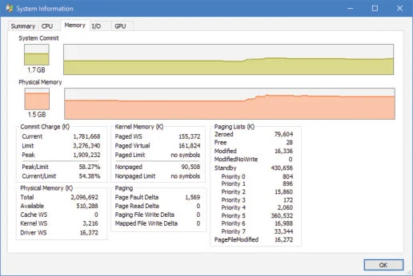<figcaption>Process Explorer の「Commit Charge」</figcaption></figure>
<h3 id="スタック">スタック</h3>
<p>スレッドは実行中に、関数の引数、ローカル変数、および呼び出した関数から戻るときのアドレスを一時的に格納する場所を必要とします。
このメモリ領域を<strong>スタック</strong>と呼びます。
Windows のメモリマネージャーは、スレッドごとにユーザースタックとカーネルスタックを用意します。また、プロセッサごとに DPC スタックを用意します。
第2章では、システムコールの際に、スレッドがユーザースタックからカーネルスタックに切り替わることを説明しました。
次に、スタックに使うメモリを抑える仕組みを説明します。</p></section><section class="page" id="page-416" aria-label="page-416"><h3 id="ユーザースタック">ユーザースタック</h3>
<p>スレッドを作ると、メモリマネージャーは所定の量の仮想メモリを自動で予約します。既定では 1 MB です。
この容量は <code>CreateThread</code>、<code>CreateRemoteThread</code>、<code>CreateRemoteThreadEx</code> の呼び出し時に指定できます。
また、アプリケーションのビルド時に Microsoft C／C++ のリンカーオプション <code>/STACK:reserve</code> を指定すると、実行イメージのヘッダーに予約サイズを記録できます。</p>
<p>既定では 1 MB を予約しますが、PE ヘッダーで別のコミットサイズを指定していなければ、最初にコミットするのはスタックの先頭の1ページとガードページだけです。
スタックが伸びてガードページに達すると例外が発生し、新たなガードページの割り当てが試みられます。
このため、ユーザースタックは最初から 1 MB をコミットするのではなく、必要に応じて拡張されます。一度拡張されると縮小はしません。</p>
<h4 id="作成できるスレッド数の上限を調べる">作成できるスレッド数の上限を調べる</h4>
<p>32 ビットプロセスのユーザーアドレス空間が 2 GB の場合、スレッドごとに予約するスタックのサイズから、スレッド数の上限を見積もれます。
既定の 1 MB なら、約 2 GB を使い切る手前、つまり2,048本弱が上限です。
ただし、BCD の <code>increaseuserva</code> を使い、実行イメージが大きなアドレス空間に対応している場合は、この限りではありません。
各スレッドのスタックの予約サイズを最小の 64 KB にすると、上限は約3万本に増えます。
Sysinternals の TestLimit で確認したときの出力例を次に示します。メモリを使い切る実験なので、検証用の環境で実施してください。</p>
<pre>C:\Tools\Sysinternals&gt;Testlimit.exe -t -n 64
Testlimit v5.24 - test Windows limits
Copyright (C) 2012-2015 Mark Russinovich
Sysinternals - www.sysinternals.com
Process ID: 17260
Creating threads with 64 KB stacks...
Created 29900 threads. Lasterror: 8</pre>
<p>ユーザーアドレス空間が 128 TB ある 64 ビット版 Windows なら、メモリが十分あれば、数十万本のスレッドを作れそうに見えます。
ところが、32 ビット版の <code>Testlimit.exe</code> は Wow64 上で動作するため、実際には 32 ビット版 Windows 上よりスレッド数が少なくなります（Wow64 については Part 2 の第8章を参照）。
各スレッドは 32 ビットの Wow64 用スタックと 64 ビットのスタックの両方を持つため、2倍以上のメモリを使いますが、プロセスのユーザーアドレス空間は 2 GB のままです。
64 ビット版 Windows でスレッド作成の上限を調べるには、<code>Testlimit64.exe</code> を使います。</p>
<p>実験を終えるには、Process Explorer またはタスクマネージャーで TestLimit を終了します。
<kbd>Ctrl</kbd>＋<kbd>C</kbd> の処理自体が新たなスレッドを必要とするため、メモリを使い切った後はこのキー操作では中断できません。</p></section><section class="page" id="page-417" aria-label="page-417"><h3 id="カーネルスタック">カーネルスタック</h3>
<p>ユーザースタックは通常 1 MB ですが、カーネルスタックに割り当てるメモリはそれより少なく、32 ビットシステムでは 12 KB、64 ビットシステムでは 16 KB です。
隣接するガードページを含めると、仮想アドレス空間をそれぞれ 16 KB、20 KB 占めます。
カーネルで動くコードは、ユーザーコードほど再帰を使わず、変数に使う領域を節約し、スタック上のバッファーを小さくすることが求められます。
カーネルスタックは全プロセスが共有するシステムアドレス空間にあるため、消費するメモリの影響がシステム全体に及びます。</p>
<p>カーネルコード自体は通常再帰しませんが、<code>Win32k.sys</code> が処理するグラフィックスのシステムコールがユーザーモードにコールバックし、そこから再びシステムコールを発行すると、同じカーネルスタック上で処理が入れ子になります。
このため Windows には、カーネルスタックを初期サイズから拡張し、不要になった分を解放する仕組みがあります。
同じスレッドがグラフィックス呼び出しを重ねるたびに、16 KB のカーネルスタックが追加で割り当てられます。
追加領域はシステムアドレス空間内で元の領域と連続している必要はありません。メモリマネージャーは、ガードページに近づいたときに別のスタック領域へ切り替えられます。
入れ子になった呼び出しから戻るたびに、メモリマネージャーが追加の領域を解放します（図5-28）。
この仕組みによって、再帰的なシステムコールを処理でき、システムアドレス空間も効率よく使えます。
ドライバーの開発者も、再帰的なコールアウトに際して、必要に応じて <code>KeExpandKernelStackAndCallout</code> または <code>KeExpandKernelStackAndCalloutEx</code> を使えます。</p>
<figure><figcaption>図5-28 カーネルスタックの切り替え</figcaption></figure>
<h4 id="カーネルスタックのメモリ使用量を調べる">カーネルスタックのメモリ使用量を調べる</h4>
<p>Sysinternals の RAMMap を使うと、カーネルスタックが現在占めている物理メモリを確認できます。
次の図は「Use Counts」タブの表示例です。</p>
<figure><figcaption>実験前のカーネルスタックの使用量</figcaption></figure>
<ol>
<li>前の TestLimit の実験を繰り返し、実行した TestLimit はまだ終了しません。</li>
<li>RAMMap に切り替えます。</li>
<li>「File」メニューから「Refresh」を選ぶか、<kbd>F5</kbd> を押します。次の図のように、カーネルスタックの使用量が大幅に増えます。</li>
</ol></section><section class="page" id="page-418" aria-label="page-418"><figure><figcaption>スレッド数を増やした後のカーネルスタックの使用量</figcaption></figure>
<p>先に起動した TestLimit を終了せずにさらに何度か起動すると、32 ビットシステムでは物理メモリを簡単に使い切ります。
このメモリ消費は、32 ビットシステム全体で作成できるスレッド数を制約する主な要因の一つです。</p>
<h3 id="DPC-スタック">DPC スタック</h3>
<p>Windows は、DPC を実行するときに使うスタックをプロセッサごとに用意します。
これによって DPC のコードは現在のスレッドのカーネルスタックを使わずに済みます。
切り替えるのはスタックであり、DPC がどのスレッドのコンテキストで実行されるかとは別の話です。DPC は任意のスレッドのコンテキストで実行されます（詳細は第6章を参照）。</p>
<p>DPC スタックは、システムコール命令 <code>sysenter</code>（x86）、<code>svc</code>（ARM）、<code>syscall</code>（x64）の処理を開始するときにも使われます。
CPU は、これらの命令を実行するとき、スタック切り替えに必要な情報として、プロセッサ固有のレジスタ（x86 と x64 では MSR）の設定を使います。
コンテキストスイッチのたびに MSR を設定し直すと処理コストがかかるので、Windows は、プロセッサごとの DPC スタックを使うように設定します。</p>
<h3 id="仮想アドレス記述子">仮想アドレス記述子</h3>
<p>メモリマネージャーは、スレッドがアドレスを参照してページフォールトが起きるまで待ち、必要になってからディスク上のページを読み込みます。
この<strong>デマンドページング</strong>は、コピーオンライトと同じく、処理が必要になるまで実行を遅らせる遅延評価の一種です。</p>
<p>遅延評価は、ページの読み込みだけでなく、新しいページを記述するページテーブルの作成にも使われます。
スレッドが <code>VirtualAlloc</code> で大きな仮想メモリ領域をコミットしても、一部の範囲には一度もアクセスしないかもしれません。
その範囲のページテーブルを先に作っても使われないため、メモリマネージャーは、スレッドがページフォールトを起こした段階で、対象ページのテーブルを作ります。
多くのメモリを予約またはコミットして、その一部にしかアクセスしないプロセスでは、これによって割り当て処理が速くなります。</p>
<p>まだ作っていないページテーブルに必要な容量も、プロセスページファイルクォータとシステムのコミット使用量に計上します。
こうして、必要になったときにページテーブルを作れるだけの容量を確保しながら、大きな領域でもすばやく割り当てられます。
要求元のスレッドに利用可能なアドレス範囲を返すため、メモリマネージャーは別のデータ構造で、プロセスのアドレス空間のどの範囲が予約済みかを追跡します。
これを<strong>仮想アドレス記述子</strong>（VAD）と呼び、非ページプールから割り当てます。</p></section><section class="page" id="page-419" aria-label="page-419"><h3 id="プロセスごとの-VAD">プロセスごとの VAD</h3>
<p>メモリマネージャーは、各プロセスのアドレス空間の状態を表す VAD を、自己平衡二分探索木の一種である<strong>AVL 木</strong>で管理します。
AVL 木では各ノードの左右の部分木の高さの差が1以内に収まり、挿入、検索、削除を高速に行えます。
この構造により、仮想アドレスに対応する VAD を探す際の比較回数を平均して少なくできます。</p>
<p><small>AVL 木の名前は、考案した Adelson-Velsky と Landis に由来します。</small></p>
<p>空き領域ではない連続した仮想アドレス範囲について、予約、コミット、マッピングの別や、メモリの保護属性などが同じ範囲ごとに、一つの VAD が対応します。
図5-29は VAD の木の構造を示します。</p>
<figure>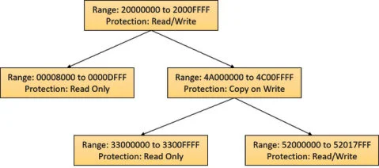<figcaption>図5-29 VAD の木</figcaption></figure>
<p>プロセスがアドレス空間を予約するか、セクションのビューをマップすると、メモリマネージャーは割り当て要求の情報を保持する VAD を作ります。
保持するのは、予約するアドレス範囲、共有かプライベートか、子プロセスが内容を継承できるか、範囲内のページに適用する保護属性などです。</p>
<p>スレッドがアドレスに初めてアクセスすると、メモリマネージャーはそのアドレスを含むページの PTE を作る必要があります。
そこで、アクセス先を範囲に含む VAD を探し、見つかった情報から PTE を設定します。
どの VAD にも含まれないか、予約しただけでコミットしていない範囲なら、まだ使える状態にしていないメモリへのアクセスなので、アクセス違反になります。</p>
<h4 id="カーネルデバッガーで-VAD-を調べる">カーネルデバッガーで VAD を調べる</h4>
<p>カーネルデバッガーの <code>!vad</code> で、指定したプロセスの VAD を表示できます。
まず <code>!process</code> で VAD の木のルートのアドレスを探し、そのアドレスを <code>!vad</code> に渡します。
次は <code>Explorer.exe</code> のプロセスを調べた例です。</p>
<pre>lkd&gt; !process 0 1 explorer.exe
PROCESS ffffc8069382e080
SessionId: 1  Cid: 43e0    Peb: 00bc5000  ParentCid: 0338
DirBase: 554ab7000  ObjectTable: ffffda8f62811d80  HandleCount: 823.
Image: explorer.exe
VadRoot ffffc806912337f0 Vads 505 Clone 0 Private 5088. Modified 2146. Locked 0.
...</pre></section><section class="page" id="page-420" aria-label="page-420"><pre>lkd&gt; !vad ffffc8068ae1e470
VAD           Level     Start       End Commit
ffffc80689bc52b0  9       640       64f      0 Mapped       READWRITE
Pagefile section, shared commit 0x10
ffffc80689be6900  8       650       651      0 Mapped       READONLY
Pagefile section, shared commit 0x2
ffffc80689bc4290  9       660       675      0 Mapped       READONLY
Pagefile section, shared commit 0x16
ffffc8068ae1f320  7       680       6ff     32 Private      READWRITE
ffffc80689b290b0  9       700       701      2 Private      READWRITE
ffffc80688da04f0  8       710       711      2 Private      READWRITE
ffffc80682795760  6       720       723      0 Mapped       READONLY
Pagefile section, shared commit 0x4
ffffc80688d85670 10       730       731      0 Mapped       READONLY
Pagefile section, shared commit 0x2
ffffc80689bdd9e0  9       740       741      2 Private      READWRITE
ffffc80688da57b0  8       750       755      0 Mapped       READONLY
\Windows\en-US\explorer.exe.mui
...
Total VADs: 574, average level: 8, maximum depth: 10
Total private commit: 0x3420 pages (53376 KB)
Total shared commit:  0x478 pages (4576 KB)</pre>
<h3 id="マッピングを切り替える-VAD">マッピングを切り替える VAD</h3>
<p>ビデオカードのドライバーは通常、ユーザーモードのグラフィックスアプリケーションから、ビデオカードのメモリや AGP ポートのメモリなどにデータをコピーします。
これらのコピー先はそれぞれアドレスとキャッシュ属性が異なります。</p>
<p>異なるキャッシュ属性のメモリを、同じプロセスのビューにすばやくマップできるように、メモリマネージャーは<strong>ローテート VAD</strong>（rotate VAD）を備えています。
これを使うと、ビデオドライバーは GPU でデータを直接転送し、不要になったメモリをプロセスのビューから外して、必要なメモリへ切り替えられます。
図5-30は、同じ仮想アドレスのマッピング先をビデオ RAM と通常の仮想メモリとの間で切り替える例です。</p>
<figure><figcaption>図5-30 ローテート VAD</figcaption></figure></section><section class="page" id="page-421" aria-label="page-421"><h3 id="NUMA">NUMA</h3>
<p>Windows のメモリマネージャーには、大規模サーバーや Intel i7、AMD Opteron の SMP ワークステーションなどで、<strong>非一様メモリアクセスアーキテクチャ</strong>（NUMA）をより効果的に使うための改良が、リリースごとに加えられてきました。
ノードの位置、接続関係、アクセスコストをメモリマネージャーが把握しているため、アプリケーションやドライバーは、ハードウェアの詳細を意識せずに NUMA を利用できます。</p>
<p>初期化時にメモリマネージャーは <code>MiComputeNumaCosts</code> を呼び、複数のノードでページやキャッシュに対する処理を試して、完了までの時間を測ります。
その結果から、ノード間の距離をアクセスコストとして表すグラフを作ります。
ある処理にページが必要になると、このグラフから最も近いノードを選びます。
そのノードに空きメモリがなければ、次に近いノードを選びます。</p>
<p>可能な限り、割り当てを要求したスレッドの理想プロセッサが属するノード（<strong>理想ノード</strong>）からメモリを割り当てます。
アプリケーションがノードを指定することもできます。そのための API には <code>VirtualAllocExNuma</code>、<code>CreateFileMappingNuma</code>、<code>MapViewOfFileExNuma</code>、<code>AllocateUserPhysicalPagesNuma</code> があります。</p>
<p>理想ノードは、アプリケーションからの割り当て要求だけでなく、カーネルの処理やページフォールトにも使います。
たとえば、スレッドが理想プロセッサ以外の CPU で動作していてページフォールトを起こすと、メモリマネージャーは現在のノードではなく、そのスレッドの理想ノードからメモリを割り当てます。
スレッドが現在の CPU にいる間は参照が遅くなる場合がありますが、理想ノードに戻った後はアクセスが速くなります。
理想ノードでメモリを確保できない場合も、ほかのノードを無作為に選ぶのではなく、理想ノードに最も近いノードを選びます。
ドライバーも、<code>MmAllocatePagesForMdlEx</code> や <code>MmAllocateContiguousMemorySpecifyCacheNode</code> といった API でノードを指定できます。</p>
<p>メモリマネージャーのプールやデータ構造も、NUMA 向けに調整されています。
たとえば、非ページプールには、すべてのノードの物理メモリをできるだけ均等に使います。
割り当ての際は、理想ノードを手掛かりに、そのノードの物理メモリに対応する非ページプール内の仮想アドレス範囲を選びます。
プールの空きリストも NUMA ノードごとに用意します。
システムキャッシュ、システム PTE、ルックアサイドリストも同様に、ノードに分散して割り当てます。</p>
<p>ページをゼロで埋める際は、各ページの物理メモリがあるノードに NUMA アフィニティを設定したスレッドを作り、複数ノードで並行に処理します。
論理プリフェッチャーと SuperFetch も、先読みするときに対象プロセスの理想ノードを使います（後述の「SuperFetch による先行メモリ管理」を参照）。
ソフトページフォールトでは、ページがフォールトを起こしたスレッドの理想ノードに移動します。</p></section><section class="page" id="page-422" aria-label="page-422"><h3 id="セクションオブジェクト">セクションオブジェクト</h3>
<p>前述の「共有メモリとマップトファイル」で説明したように、<strong>セクションオブジェクト</strong>は、二つ以上のプロセスが共有できるメモリ領域を表します。
Windows サブシステムではファイルマッピングオブジェクトと呼びます。
セクションオブジェクトは、ページファイルまたはディスク上の別のファイルに対応付けられます。</p>
<p>エグゼクティブは実行イメージをメモリに読み込むためにセクションを使い、キャッシュマネージャーはキャッシュしたファイルのデータにアクセスするために使います（詳細は Part 2 のキャッシュマネージャーの解説を参照）。
アプリケーションも、セクションオブジェクトを使って、ファイルをプロセスのアドレス空間にマップできます。
異なる範囲をビューとしてマップすれば、ファイルを直接読み書きする代わりに、メモリ上の大きな配列のように操作できます。
これを<strong>マップトファイル I/O</strong>と呼びます。</p>
<p>プログラムが物理メモリにない無効なページにアクセスすると、ページフォールトが発生し、メモリマネージャーがマップトファイルまたはページファイルからページを読み込みます。
アプリケーションがページを書き換えると、メモリマネージャーは通常のページング処理の一環として、変更をファイルに書き戻します。
アプリケーションは <code>FlushViewOfFile</code> でビューを明示的に書き出すこともできます。</p>
<p>ほかのオブジェクトと同様、セクションオブジェクトの割り当てと解放はオブジェクトマネージャーが行います。
オブジェクトマネージャーは、オブジェクトの管理に使うヘッダーを作成して初期化します。セクションオブジェクトの本体を定義するのはメモリマネージャーです（オブジェクトマネージャーは Part 2 の第8章を参照）。
メモリマネージャーは、ユーザーモードのスレッドが本体の属性を取得、変更するためのサービスも実装しています。
図5-31にオブジェクトの構造を、表5-14に本体に格納する固有の属性を示します。</p>
<figure><figcaption>図5-31 セクションオブジェクト</figcaption></figure>
<div class="table-scroll" role="region" tabindex="0" aria-label="表。横にスクロールできます"><table><caption>表5-14 セクションオブジェクト本体の属性</caption><thead><tr><th>属性</th><th>意味</th></tr></thead><tbody>
<tr><th>最大サイズ</th><td>セクションを拡張できる上限をバイト数で表します。ファイルをマップする場合は、ファイルの最大サイズです。</td></tr>
<tr><th>ページ保護</th><td>作成時にセクション内のすべてのページに適用するメモリ保護です。</td></tr>
<tr><th>ページファイルまたはマップトファイル</th><td>セクションを空で作る場合はページファイルを、ファイルを読み込んで使う場合はマップトファイルをバックストアにします。ページファイルをバックストアにする場合、実際にそのファイルの領域を使うのは、ページをディスクに書き出す必要が生じたときです。</td></tr>
<tr><th>ベースアドレス固定の有無</th><td>固定のセクション（based section）は、共有するすべてのプロセスで同じ仮想アドレスに現れる必要があります。固定でないセクション（non-based section）は、プロセスごとに異なる仮想アドレスに現れても構いません。</td></tr>
</tbody></table></div></section><section class="page" id="page-423" aria-label="page-423"><h4 id="Process-Explorer-でセクションオブジェクトを調べる">Process Explorer でセクションオブジェクトを調べる</h4>
<p>Sysinternals の Process Explorer で、プロセスがマップしているファイルを確認できます。</p>
<ol>
<li>「View」メニューで「Lower Pane View」から「DLLs」を選びます。</li>
<li>「View」メニューの「Select Columns」を開き、「DLL」タブで「Mapping Type」列を有効にします。</li>
<li>マッピングの種類が「Data」と表示されている行を確認します。
これらはデータとしてマップしたファイルで、イメージローダーがモジュールとしてロードした DLL などとは異なります。
ページファイルをバックストアとするセクションオブジェクトでは、「Name」列に <code>&lt;Pagefile Backed&gt;</code> と表示されます。それ以外はファイル名が表示されます。</li>
</ol>
<figure>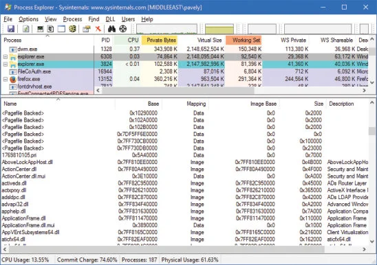<figcaption>プロセスがマップしているファイル</figcaption></figure>
<p>別の方法は、「View」メニューの「Lower Pane View」から「Handles」を選び、型が「Section」のオブジェクトを探すことです。
次の図では、名前が付いている場合はオブジェクトの名前が表示されています。
この名前はバックストアに使われるファイルの名前ではなく、オブジェクトマネージャーの名前空間で付けられたセクションの名前です（Part 2 の第8章を参照）。
項目をダブルクリックすると、開かれているハンドルの数やセキュリティ記述子などを確認できます。</p></section><section class="page" id="page-424" aria-label="page-424"><figure><figcaption>セクションオブジェクトのハンドル</figcaption></figure>
<p>図5-32は、メモリマネージャーがマップ済みセクションを記述するために管理するデータ構造です。
この構造により、ファイルを直接開いた場合でも、メモリにマップした場合でも、読み取るデータの整合性が保たれます。</p>
<p>ファイルオブジェクトで表される各オープンファイルには、セクションオブジェクトへのポインターを保持する構造体が一つあります。
この構造体が、アクセス方法によらずデータの整合性を保ち、ファイルのキャッシュを可能にします。
構造体が指す<strong>制御領域</strong>は一つか二つです。
一方はファイルをデータとして扱うときに使われ、もう一方は実行イメージとして実行するときに使われます。</p>
<p>制御領域は、ファイル内の各領域のマッピング情報（読み取り専用、読み書き可能、コピーオンライトなど）を持つサブセクション構造体を指します。
制御領域は、ページプールに割り当てられたセグメント構造体も指します。
セグメント構造体が指すのは、セクションオブジェクトがマップする実際のページに対応するプロトタイプ PTE です。
前述のとおり、プロセスのページテーブルはこれらのプロトタイプ PTE を指し、プロトタイプ PTE が参照先のページをマップします。</p>
<figure><figcaption>図5-32 セクションの内部構造</figcaption></figure></section><section class="page" id="page-425" aria-label="page-425"><p>Windows は、ファイルを読み書きするどのプロセスからも、同じ内容が見えるようにします。
ただし、あるファイルのページが物理メモリに二重に存在する場合があります。その場合も、各プロセスは最新のコピーを参照するため、データの整合性は保たれます。</p>
<p>この重複は、実行イメージのファイルをデータとして読み書きした後、そのイメージを実行すると起こり得ます。
たとえば、リンカーがファイルをデータとして開いて実行イメージを生成し、その後イメージローダーが同じファイルを実行イメージとしてマップする場合です。
内部では、次の処理が行われます。</p>
<ol>
<li>ファイルマッピング API またはキャッシュマネージャーを使って実行ファイルを作成した場合、読み書きするデータページを表すデータ用の制御領域を作ります。</li>
<li>イメージを実行するため、セクションオブジェクトを作成して実行イメージとしてマップします。このとき、メモリマネージャーはファイルのセクションオブジェクトポインターがデータ用の制御領域を指していることを確認し、セクションの変更をディスクへ書き出します。イメージ用の制御領域を通じてファイルにアクセスする前に、変更済みページをすべてディスクに反映させるためです。</li>
<li>メモリマネージャーは、実行イメージ用の制御領域を作ります。</li>
<li>イメージの実行が始まると、ページフォールトに応じて、読み取り専用のページをイメージファイルから読み込みます。対応するデータページが物理メモリにあれば、そのページから直接コピーします。</li>
</ol>
<p>データ用の制御領域がマップしていたページがスタンバイリストに残っていると、同じデータのコピーがメモリ上の異なるページに二つできます。
ただし、変更済みの内容はすでにディスクに書き出されているので、実行イメージから読み込んだページも最新です。また、そのページをディスクに書き戻すことはありません。</p>
<h4 id="カーネルデバッガーで制御領域を調べる">カーネルデバッガーで制御領域を調べる</h4>
<p>ファイルの制御領域のアドレスを調べるには、まず対象のファイルオブジェクトのアドレスが必要です。
カーネルデバッガーの <code>!handle</code> でプロセスのハンドルテーブルを表示し、ファイルオブジェクトのアドレスを確認します。
<code>!file</code> はファイルオブジェクトの基本情報を表示しますが、セクションオブジェクトポインター構造体へのポインターは表示しません。
そのアドレスを得るには、<code>dt</code> でファイルオブジェクトを構造体として表示します。</p>
<p>セクションオブジェクトポインター構造体には、データ用の制御領域、共有キャッシュマップ（Part 2 のキャッシュマネージャーの解説を参照）、イメージ用の制御領域を指す三つのポインターがあります。
対象の制御領域があれば、そのアドレスを <code>!ca</code> に渡して表示できます。</p>
<p>たとえば PowerPoint ファイルを開いて、そのプロセスのハンドルテーブルを <code>!handle</code> で表示すると、対象ファイルの開いたハンドルが見つかります。出力をテキスト検索しても構いません。
<code>!handle</code> の詳細は Part 2 の第8章「オブジェクトマネージャー」またはデバッガーのドキュメントを参照してください。</p>
<pre>lkd&gt; !process 0 0 powerpnt.exe
PROCESS ffffc8068913e080</pre></section><section class="page" id="page-426" aria-label="page-426"><pre>SessionId: 1  Cid: 2b64    Peb: 01249000  ParentCid: 1d38
DirBase: 252e25000  ObjectTable: ffffda8f49269c40  HandleCount: 1915.
Image: POWERPNT.EXE
lkd&gt; .process /p ffffc8068913e080
Implicit process is now ffffc806&#x27;8913e080
lkd&gt; !handle
...
0c08: Object: ffffc8068f56a630  GrantedAccess: 00120089 Entry: ffffda8f491d0020
Object: ffffc8068f56a630  Type: (ffffc8068256cb00) File
ObjectHeader: ffffc8068f56a600 (new version)
HandleCount: 1  PointerCount: 30839
Directory Object: 00000000  Name: \WindowsInternals\7thEdition\Chapter05\
diagrams.pptx {HarddiskVolume2}
...</pre>
<p>ファイルオブジェクトのアドレス <code>FFFFC8068F56A630</code> を <code>dt</code> に渡して構造体を表示します。</p>
<pre>lkd&gt; dt nt!_file_object ffffc8068f56a630
+0x000 Type             : 0n5
+0x002 Size             : 0n216
+0x008 DeviceObject     : 0xffffc806&#x27;8408cb40 _DEVICE_OBJECT
+0x010 Vpb              : 0xffffc806&#x27;82feba00 _VPB
+0x018 FsContext        : 0xffffda8f&#x27;5137cbd0 Void
+0x020 FsContext2       : 0xffffda8f&#x27;4366d590 Void
+0x028 SectionObjectPointer : 0xffffc806&#x27;8ec0c558 _SECTION_OBJECT_POINTERS
...</pre>
<p>次に、得られたセクションオブジェクトポインター構造体のアドレスを <code>dt</code> に渡します。</p>
<pre>lkd&gt; dt nt!_section_object_pointers 0xffffc806&#x27;8ec0c558
+0x000 DataSectionObject : 0xffffc806&#x27;8e838c10 Void
+0x008 SharedCacheMap   : 0xffffc806&#x27;8d967bd0 Void
+0x010 ImageSectionObject : (null)</pre>
<p>最後に、制御領域のアドレスを <code>!ca</code> に渡して表示します。</p>
<pre>lkd&gt; !ca 0xffffc806&#x27;8e838c10
ControlArea  @ ffffc8068e838c10
Segment      ffffda8f4d97fdc0  Flink      ffffc8068ecf97b8  Blink
ffffc8068ecf97b8
Section Ref                 1  Pfn Ref                 58  Mapped Views          2
User Ref                    0  WaitForDel               0  Flush Count           0
File Object  ffffc8068e5d3d50  ModWriteCount            0  System Views          2
WritableRefs                0
Flags (8080) File WasPurged   \WindowsInternalsBook\7thEdition\Chapter05\diagrams.pptx
Segment @ ffffda8f4d97fdc0
ControlArea     ffffc8068e838c10  ExtendInfo    0000000000000000
Total Ptes                    80
Segment Size               80000  Committed                    0
Flags (c0000) ProtectionMask</pre></section><section class="page" id="page-427" aria-label="page-427"><pre>Subsection 1 @ ffffc8068e838c90
ControlArea  ffffc8068e838c10  Starting Sector        0  Number Of Sectors   58
Base Pte     ffffda8f48eb6d40  Ptes In Subsect       58  Unused Ptes          0
Flags                       d  Sector Offset          0  Protection           6
Accessed
Flink        ffffc8068bb7fcf0  Blink   ffffc8068bb7fcf0  MappedViews          2
Subsection 2 @ ffffc8068c2e05b0
ControlArea  ffffc8068e838c10  Starting Sector       58  Number Of Sectors   28
Base Pte     ffffda8f3cc45000  Ptes In Subsect       28  Unused Ptes        1d8
Flags                       d  Sector Offset          0  Protection           6
Accessed
Flink        ffffc8068c2e0600  Blink   ffffc8068c2e0600  MappedViews          1</pre>
<p>別の方法として、<code>!memusage</code> で制御領域をすべて一覧表示できます。
次は、このコマンドの出力の抜粋です。搭載メモリが多いシステムでは、完了まで時間がかかることがあります。</p>
<pre>lkd&gt; !memusage
loading PFN database
loading (100% complete)
Compiling memory usage data (99% Complete).
Zeroed:    98533 (  394132 kb)
Free:     1405 (    5620 kb)
Standby:   331221 ( 1324884 kb)
Modified:    83806 (  335224 kb)
ModifiedNoWrite:      116 (     464 kb)
Active/Valid:  1556154 ( 6224616 kb)
Transition:        5 (      20 kb)
SLIST/Bad:     1614 (    6456 kb)
Unknown:        0 (       0 kb)
TOTAL:  2072854 ( 8291416 kb)
Dangling Yes Commit:      130 (     520 kb)
Dangling No Commit:   514812 ( 2059248 kb)
Building kernel map
Finished building kernel map
(Master1 0 for 1c0)
(Master1 0 for e80)
(Master1 0 for ec0)
(Master1 0 for f00)
Scanning PFN database - (02% complete)
(Master1 0 for de80)
Scanning PFN database - (100% complete)</pre></section><section class="page" id="page-428" aria-label="page-428"><pre>Usage Summary (in Kb):
Control       Valid Standby Dirty Shared Locked PageTables  name
ffffffffd 1684540      0     0     0 1684540     0    AWE
ffff8c0b7e4797d0    64      0     0     0     0     0  mapped_file( Microsoft-
Windows-Kernel-PnP%4Configuration.evtx )
ffff8c0b7e481650     0      4     0     0     0     0  mapped_file( No name for file )
ffff8c0b7e493c00     0     40     0     0     0     0  mapped_file( FSD-{ED5680AF-
0543-4367-A331-850F30190B44}.FSD )
ffff8c0b7e4a1b30     8     12     0     0     0     0  mapped_file( msidle.dll )
ffff8c0b7e4a7c40   128      0     0     0     0     0  mapped_file( Microsoft-
Windows-Diagnosis-PCW%4Operational.evtx )
ffff8c0b7e4a9010    16      8     0    16     0     0  mapped_file( netjoin.dll
)8a04db00     ...
ffff8c0b7f8cc360  8212      0     0     0     0     0  mapped_file( OUTLOOK.EXE )
ffff8c0b7f8cd1a0    52     28     0     0     0     0  mapped_file( verdanab.ttf )
ffff8c0b7f8ce910     0      4     0     0     0     0  mapped_file( No name for file )
ffff8c0b7f8d3590     0      4     0     0     0     0  mapped_file( No name for file )
…</pre>
<p>「Control」列の値は、マップトファイルを記述する制御領域構造体のアドレスです。
カーネルデバッガーの <code>!ca</code> を使うと、制御領域、セグメント、サブセクションを表示できます。
たとえば、一覧にある <code>Outlook.exe</code> の制御領域を表示するには、次のように <code>!ca</code> の後に「Control」列の値を指定します。</p>
<pre>lkd&gt; !ca ffff8c0b7f8cc360
ControlArea  @ ffff8c0b7f8cc360
Segment      ffffdf08d8a55670  Flink      ffff8c0b834f1fd0  Blink
ffff8c0b834f1fd0
Section Ref                 1  Pfn Ref               806  Mapped Views           1
User Ref                    2  WaitForDel              0  Flush Count         c5a0
File Object  ffff8c0b7f0e94e0  ModWriteCount           0  System Views        ffff
WritableRefs         80000161
Flags (a0) Image File
\Program Files (x86)\Microsoft Office\root\Office16\OUTLOOK.EXE
Segment @ ffffdf08d8a55670
ControlArea     ffff8c0b7f8cc360  BasedAddress  0000000000be0000
Total Ptes                  1609
Segment Size             1609000  Committed                    0
Image Commit                  f4  Image Info    ffffdf08d8a556b8
ProtoPtes       ffffdf08dab6b000
Flags (c20000) ProtectionMask
Subsection 1 @ ffff8c0b7f8cc3e0
ControlArea  ffff8c0b7f8cc360  Starting Sector        0  Number Of Sectors    2
Base Pte     ffffdf08dab6b000  Ptes In Subsect        1  Unused Ptes          0
Flags                       2  Sector Offset          0  Protection           1
Subsection 2 @ ffff8c0b7f8cc418
ControlArea  ffff8c0b7f8cc360  Starting Sector        2  Number Of Sectors 7b17</pre></section><section class="page" id="page-429" aria-label="page-429"><pre>Base Pte     ffffdf08dab6b008  Ptes In Subsect      f63  Unused Ptes          0
Flags                       6  Sector Offset          0  Protection           3
Subsection 3 @ ffff8c0b7f8cc450
ControlArea  ffff8c0b7f8cc360  Starting Sector     7b19  Number Of Sectors 19a4
Base Pte     ffffdf08dab72b20  Ptes In Subsect      335  Unused Ptes          0
Flags                       2  Sector Offset          0  Protection           1
Subsection 4 @ ffff8c0b7f8cc488
ControlArea  ffff8c0b7f8cc360  Starting Sector     94bd  Number Of Sectors  764
Base Pte     ffffdf08dab744c8  Ptes In Subsect       f2  Unused Ptes          0
Flags                       a  Sector Offset          0  Protection           5
Subsection 5 @ ffff8c0b7f8cc4c0
ControlArea  ffff8c0b7f8cc360  Starting Sector     9c21  Number Of Sectors    1
Base Pte     ffffdf08dab74c58  Ptes In Subsect        1  Unused Ptes          0
Flags                       a  Sector Offset          0  Protection           5
Subsection 6 @ ffff8c0b7f8cc4f8
ControlArea  ffff8c0b7f8cc360  Starting Sector     9c22  Number Of Sectors    1
Base Pte     ffffdf08dab74c60  Ptes In Subsect        1  Unused Ptes          0
Flags                       a  Sector Offset          0  Protection           5
Subsection 7 @ ffff8c0b7f8cc530
ControlArea  ffff8c0b7f8cc360  Starting Sector     9c23  Number Of Sectors  c62
Base Pte     ffffdf08dab74c68  Ptes In Subsect      18d  Unused Ptes          0
Flags                       2  Sector Offset          0  Protection           1
Subsection 8 @ ffff8c0b7f8cc568
ControlArea  ffff8c0b7f8cc360  Starting Sector     a885  Number Of Sectors  771
Base Pte     ffffdf08dab758d0  Ptes In Subsect       ef  Unused Ptes          0
Flags                       2  Sector Offset          0  Protection           1</pre>
<h3 id="ワーキングセット">ワーキングセット</h3>
<p>ここまでは、Windows が物理メモリをどう把握し、どの程度の容量を扱えるかを説明しました。
次は、仮想アドレス空間の一部を物理メモリに保持する仕組みです。</p>
<p>仮想ページのうち物理メモリに常駐する部分を<strong>ワーキングセット</strong>と呼びます。ワーキングセットには三つの種類があります。</p>
<ul>
<li><strong>プロセスのワーキングセット</strong>：一つのプロセス内のスレッドが参照するページを保持します。</li>
<li><strong>システムのワーキングセット</strong>：<code>Ntoskrnl.exe</code> やドライバーなどのページアウト可能なシステムコード、ページプール、システムキャッシュのうち、物理メモリに常駐する部分を保持します。</li>
<li><strong>セッションのワーキングセット</strong>：各セッションには固有のワーキングセットがあります。Windows サブシステムのカーネルモード部分（<code>Win32k.sys</code>）が割り当てたセッション固有のデータ構造や、セッションのページプール、マップ済みビュー、セッション空間のほかのデバイスドライバーのうち、物理メモリに常駐する部分を保持します。</li>
</ul></section><section class="page" id="page-430" aria-label="page-430"><p>各ワーキングセットの詳細に入る前に、どのページを物理メモリに読み込み、どれだけ保持するかを決める方針を説明します。</p>
<h3 id="デマンドページング">デマンドページング</h3>
<p>Windows のメモリマネージャーは、デマンドページングでページを読み込む際に、近くのページもまとめて読み込みます。
スレッドがページフォールトを起こすと、対象ページに加え、その前後にある少数のページもメモリへ読み込みます。
特に大きなプログラムは、一時点ではアドレス空間の狭い範囲を使って実行される傾向があります。そのため、近接する仮想ページをまとめて読み込むと、ディスクを読む回数を減らせます。
イメージ内のデータページの参照で起きたフォールトでは、3ページを一組として読み込みます。それ以外では7ページです。</p>
<p>一方、デマンドページングでは、プロセスのスレッドが実行を始めた直後や、後で実行を再開したときに、多数のページフォールトが起こることがあります。
Windows は、プロセスやシステムの起動を速めるため、次節で説明する論理プリフェッチャーで必要なページを先読みします。
この章の後半で説明する SuperFetch も、先読みを行う別の機能です。</p>
<h3 id="論理プリフェッチャーと-ReadyBoot">論理プリフェッチャーと ReadyBoot</h3>
<p>システムやアプリケーションの起動時には、あるファイルの一部を読んだ後、同じファイルの離れた箇所、別のファイル、ディレクトリへと読み取り先が移り、最初のファイルに戻ることもあります。
このように読み取り先が飛び飛びになると、アクセスに時間がかかります。起動が遅くなる主な要因の一つは、ディスクのシーク時間です。
必要になるページをまとめて先読みすれば、同じ場所を何度も行き来せずに済み、システムとアプリケーションの起動が速くなります。
繰り返し起動するとほぼ同じデータが参照されるため、必要なページを事前に見込めます。</p>
<p><strong>論理プリフェッチャー</strong>は、起動時に参照したコードとデータを記録し、次回以降の起動の初めに読み込みます。
有効になっている間、メモリマネージャーはカーネル内のプリフェッチャーに、ディスクからの読み込みが必要なハードフォールトと、すでにメモリにあるデータをワーキングセットへ加えるだけで済むソフトフォールトの両方を通知します。</p>
<p>アプリケーションは、起動後の最初の10秒間を監視します。
システム起動時は、既定でシステムの開始からユーザーシェル（通常はエクスプローラー）が起動した30秒後までを記録します。
そこまでに至らない場合は、Windows サービスの初期化から60秒後か、システムの開始から120秒後のうち早い時点までを記録します。</p>
<p>カーネルがまとめたトレースには、参照されたファイルとディレクトリ、さらに NTFS ボリュームのファイルやディレクトリにアクセスした場合は、NTFS のマスターファイルテーブル（MFT）のメタデータファイルで起きたフォールトが含まれます。
収集後、カーネルのプリフェッチャーは、<code>Svchost</code> で動く Superfetch サービス（<code>%SystemRoot%\\System32\\Sysmain.dll</code>）のプリフェッチャー側から要求が来るのを待ちます。
このサービスは、カーネルの論理プリフェッチ機能と、後述する SuperFetch 機能の両方を担当します。</p></section><section class="page" id="page-431" aria-label="page-431"><p>プリフェッチャーは <code>\\KernelObjects\\PrefetchTracesReady</code> イベントを通知し、Superfetch サービスにトレースデータを取得できることを知らせます。</p>
<p><strong>注：</strong>起動時の先読みは、レジストリの <code>HKLM\\SYSTEM\\CurrentControlSet\\Control\\Session Manager\\Memory Management\\PrefetchParameters</code> にある DWORD 値 <code>EnablePrefetcher</code> で設定できます。
<code>0</code> は両方とも無効、<code>1</code> はアプリケーションのみ、<code>2</code> はシステム起動のみ、<code>3</code> は両方を有効にします。</p>
<p>論理プリフェッチャーをホストする Superfetch サービスは、内部システムコール <code>NtQuerySystemInformation</code> でトレースデータを取得します。
サービスの名前は似ていますが、論理プリフェッチ機能と SuperFetch 機能は別のコンポーネントです。
論理プリフェッチャーは取得したデータを処理し、以前に収集したデータと統合して、<code>%SystemRoot%\\Prefetch</code> 内のファイルに書き込みます（図5-33）。
ファイル名は、対象アプリケーションのファイル名、ハイフン、そのパスのハッシュを16進数で表した値を順につなぎ、拡張子 <code>.pf</code> を付けたものです。
たとえば <code>NOTEPAD.EXE-9FB27C0E.PF</code> です。</p>
<figure>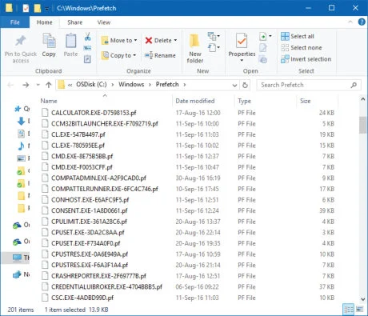<figcaption>図5-33 Prefetch フォルダー</figcaption></figure>
<p>ただし、ほかのコンポーネントをホストする実行イメージには例外があります。
なかでも、Microsoft 管理コンソール（<code>%SystemRoot%\\System32\\Mmc.exe</code>）、サービスのホストプロセス（<code>%SystemRoot%\\System32\\Svchost.exe</code>）、RunDLL（<code>%SystemRoot%\\System32\\Rundll32.exe</code>）、Dllhost（<code>%SystemRoot%\\System32\\Dllhost.exe</code>）がこれに当たります。
これらのアプリケーションでは、ホストするコンポーネントをコマンドラインで指定するので、プリフェッチャーはコマンドラインもハッシュの計算に含めます。</p></section><section class="page" id="page-432" aria-label="page-432"><p>そのため、同じアプリケーションでも、コマンドラインで指定したコンポーネントが違えば、別々のトレースが作られます。</p>
<p>システム起動時には、アプリケーション起動時とは異なる<strong>ReadyBoot</strong>という仕組みを使います。
ReadyBoot は複数の読み取りを少数の大きな I/O にまとめ、読み込んだデータを RAM に保持します。
システムコンポーネントがデータを要求すると、ディスクから再度読み込まず、RAM から返します。
この方式は特に機械式ディスクで効果があり、SSD でも役立つ場合があります。
先読みするファイルの情報は、起動後、図5-33の <code>Prefetch</code> フォルダー内の <code>ReadyBoot</code> サブフォルダーに保存されます。
起動が完了すると、RAM にキャッシュしたデータは破棄されます。
非常に高速な SSD では、効果が小さいか、ほとんどないため、ReadyBoot は既定で無効です。</p>
<p>システムやアプリケーションが起動すると、プリフェッチャーは対象のトレースファイルが <code>Prefetch</code> フォルダーにあるか調べます。
トレースがあれば、NTFS に MFT のメタデータの先読みを要求し、次に参照先のディレクトリを読み取り、最後に参照先のファイルをすべて開きます。
その後、メモリマネージャーの <code>MmPrefetchPages</code> を呼び、トレースに記録されたコードやデータのうち、まだメモリにないものを読み込みます。
メモリマネージャーは読み取りをすべて非同期で開始し、それらが完了してからアプリケーションの起動を再開します。</p>
<h4 id="プリフェッチファイルの読み書きを観察する">プリフェッチファイルの読み書きを観察する</h4>
<p>クライアント版 Windows で Sysinternals の Process Monitor を使ってアプリケーションの起動を記録すると、プリフェッチャーがそのアプリケーションのプリフェッチファイルを探し、存在すれば読み込む様子を確認できます。
Windows Server では、先読みは既定で無効です。
起動から約10秒後に、プリフェッチャーがファイルの新しいコピーを書き込むところも確認できます。</p>
<p>次の図はメモ帳の起動を記録したものです。
Process Monitor の「Include」フィルターに <code>prefetch</code> を設定し、<code>%SystemRoot%\\Prefetch</code> へのアクセスだけを表示しています。</p>
<figure>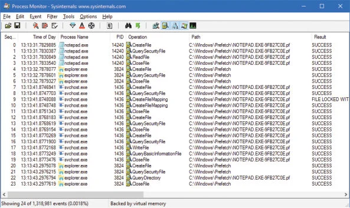<figcaption>Process Monitor で確認したプリフェッチファイルへのアクセス</figcaption></figure></section><section class="page" id="page-433" aria-label="page-433"><p>0～3行目では、メモ帳の起動中に、メモ帳プロセスのコンテキストでプリフェッチファイルを読み込んでいます。
7～19行目は最初の4行より約10秒後の記録です。<code>Svchost</code> プロセスで動く Superfetch サービスが、更新したプリフェッチファイルを書き出しています。</p>
<p>ディスクのシークをさらに減らすため、Superfetch サービスは3日ほどに1回、システムがアイドルのときに、システムやアプリケーションの起動時に参照するファイルとディレクトリを、参照順に並べます。
この一覧を <code>%SystemRoot%\\Prefetch\\Layout.ini</code> に保存します（図5-34）。
一覧には、Superfetch が追跡している、アクセス頻度の高いファイルも含まれます。</p>
<figure><figcaption>図5-34 先読み用のデフラグで使う配置ファイル</figcaption></figure>
<p>続いてサービスは、ボリューム全体ではなく、このファイルに従ってデフラグするようコマンドラインで指定し、システムのデフラグツールを起動します。
ツールは各ボリュームで、そのボリュームにある一覧中のファイルとディレクトリをすべて収容できる連続領域を探し、そこへ順番に移動します。
ディスク上でデータが読み取り順に並ぶため、以後の先読みが効率よく進みます。
対象は通常数百ファイルにとどまるので、ボリューム全体のデフラグより短時間で済みます。</p>
<h3 id="物理ページの配置方針">物理ページの配置方針</h3>
<p>スレッドがページフォールトを起こすと、メモリマネージャーは仮想ページを物理メモリのどこに置くかを決めます。
配置先を選ぶ規則を<strong>配置方針</strong>と呼びます。
Windows はページフレームを選ぶ際に CPU のキャッシュ容量を考慮し、キャッシュの内容がむやみに入れ替わらないようにします。</p></section><section class="page" id="page-434" aria-label="page-434"><p>ページフォールトが発生した時点で物理メモリに空きがなければ、Windows は<strong>置換方針</strong>に従い、新しいページを置くためにどの仮想ページを物理メモリから外すかを決めます。
代表例は LRU（least recently used）と FIFO（first in, first out）です。
LRU では、仮想メモリシステムがページを最後に使った時点を追跡し、ページフレームが必要になると、最も長く使われていないページをワーキングセットから外します。
多くの UNIX では、クロックアルゴリズムで LRU に近い選択をします。
より単純な FIFO では、使用頻度に関係なく、最も長く物理メモリにあるページを外します。</p>
<p>置換方針は、候補をシステム全体から選ぶか、フォールトを起こしたプロセスだけから選ぶかでも分類できます。
<strong>グローバル置換</strong>なら、ほかのプロセスが使うページフレームも候補になります。
たとえば FIFO なら、システム全体で最も長くメモリにあるページを解放してフォールトを解決します。
<strong>ローカル置換</strong>なら、フォールトを起こしたプロセスが使うページの中だけで最も古いものを探します。
グローバル置換では各プロセスがほかのプロセスの影響を受けます。たとえば、一つのアプリケーションが過度にページングすると、その影響がほかのプロセスにも及び、システム全体の性能が落ちることがあります。</p>
<p>Windows はローカル置換とグローバル置換を組み合わせます。
ワーキングセットが上限に達した場合や、物理メモリの需要が高まりワーキングセットを縮小する必要がある場合は、十分な空きページを確保できるまで、ワーキングセットからページを外します。</p>
<h3 id="ワーキングセットの管理">ワーキングセットの管理</h3>
<p>各プロセスのワーキングセットは、既定の最小値が50ページ、最大値が345ページです。
スケジューリング優先度の引き上げを許す <code>SeIncreaseBasePriorityPrivilege</code> を持っていれば、<code>SetProcessWorkingSetSize</code> で値を変更できます。ただし、通常は変更しても大きな効果はありません。</p>
<p>厳密な上限や下限を設定していなければ、これらの値はワーキングセットの大きさを拘束しません。
ページングが多くても、メモリに余裕があれば既定の最大値を超えて拡張できます。
反対に、ページングが起きておらず、システム全体で物理メモリの需要が高ければ、ワーキングセットは最小値を下回ることがあります。
<code>SetProcessWorkingSetSizeEx</code> に <code>QUOTA_LIMITS_HARDWS_MAX_ENABLE</code> を指定すれば厳密な上限を設定できますが、ほとんどの場合はシステムに管理を任せるほうが適切です。</p>
<p>32 ビットシステムでは、初期化時に算出してカーネル変数 <code>MiMaximumWorkingSet</code> に格納した上限を超えることはできません。
x64 は仮想アドレス空間が広いため、実用上の上限は物理メモリの容量です。
ワーキングセットに設定できる最大値は、表5-15のとおりです。</p>
<div class="table-scroll" role="region" tabindex="0" aria-label="表。横にスクロールできます"><table><caption>表5-15 ワーキングセットの最大値の上限</caption><thead><tr><th>Windows の種類</th><th>最大値の上限</th></tr></thead><tbody>
<tr><td>x86、ARM</td><td>2 GB から 64 KB を引いた値（<code>0x7FFF0000</code>）</td></tr>
<tr><td><code>increaseuserva</code> を指定して起動した x86</td><td>2 GB から 64 KB を引いた値に、ユーザー仮想アドレス空間の拡張分を加えた値</td></tr>
<tr><td>x64（Windows 8、Server 2012）</td><td>8,192 GB（8 TB）</td></tr>
<tr><td>x64（Windows 8.1、10、Server 2012 R2、2016）</td><td>128 TB</td></tr>
</tbody></table></div></section><section class="page" id="page-435" aria-label="page-435"><p>ページフォールトが起こると、メモリマネージャーは、そのプロセスのワーキングセットの制限とシステムの空きメモリ量を調べます。
条件が許せば、ワーキングセットを最大値まで拡張します。厳密な上限がなく、空きページが十分あれば最大値を超えることもあります。
一方、メモリに余裕がなければ、ワーキングセットに単にページを加えるのではなく、既存のページを置き換えます。</p>
<p>Windows は変更済みページをディスクへ書き出して、利用できるメモリを確保しようとします。
ただし、変更済みページが短時間に大量に発生すると、それだけでは足りません。
物理メモリの空きが少なくなると、バランスセットマネージャーのシステムスレッドで動くワーキングセットマネージャーが、ワーキングセットを自動で縮小します。
プロセス自身が、たとえば初期化を終えた後に <code>SetProcessWorkingSetSizeEx</code> を使ってワーキングセットを縮小することもできます。</p>
<p>ワーキングセットマネージャーは空きメモリ量を調べ、縮小するかどうか、縮小するならどのワーキングセットかを決めます。
空きに余裕があれば、必要になったときに外せるページ数を計算します。
縮小が必要なら、設定した最小値を超えているワーキングセットを調べます。
調査の頻度を動的に変え、縮小候補のプロセスを順に並べます。
たとえば、最近アクセスされていないページを多く抱えるプロセスを先に調べます。長時間アイドルでサイズの大きいプロセスは、よく動くサイズの小さいプロセスより先に検討し、フォアグラウンドアプリケーションのプロセスは最後に回します。</p>
<p>最小値を超えているプロセスが見つかると、ワーキングセットから外せるページを探し、ほかの用途に使えるようにします。
それでも空きメモリが少なければ、必要最低限の空きページ数を確保するまでプロセスのワーキングセットからページを外します。</p>
<p>最近アクセスされていないページを見つけるため、ワーキングセットマネージャーはハードウェア PTE のアクセス済みビットを調べます。
ビットがクリアされていれば、そのページの年齢を1増やします。前回の縮小時の走査から参照がなかったことを記録するためです。
後でページを外すときに、この年齢を使って候補を選びます。</p>
<p>アクセス済みビットがセットされていれば、それをクリアして次のページへ進みます。
次回の確認時にビットがクリアされたままなら、その間にアクセスがなかったと分かります。
必要な数のページを外すか、走査が開始位置に戻るまでワーキングセットリストを調べます。
次回の縮小時には、前回の終了位置から走査を再開します。</p>
<h4 id="プロセスのワーキングセットの大きさを調べる">プロセスのワーキングセットの大きさを調べる</h4>
<p>プロセスのワーキングセットのサイズは、パフォーマンスモニターの次の表に示すカウンターで確認できます。
タスクマネージャーや Process Explorer などのプロセス表示ツールでも確認できます。</p></section><section class="page" id="page-436" aria-label="page-436"><div class="table-scroll" role="region" tabindex="0" aria-label="表。横にスクロールできます"><table><thead><tr><th>カウンター</th><th>意味</th></tr></thead><tbody>
<tr><th><code>Process: Working Set</code></th><td>選択したプロセスの現在のワーキングセットサイズ（バイト）です。</td></tr>
<tr><th><code>Process: Working Set Peak</code></th><td>選択したプロセスのワーキングセットサイズのピーク（バイト）です。</td></tr>
<tr><th><code>Process: Page Faults/Sec</code></th><td>選択したプロセスで1秒当たりに発生するページフォールトの数です。</td></tr>
</tbody></table></div>
<p>パフォーマンスモニターのインスタンス欄で <code>_Total</code> を選ぶと、全プロセスのワーキングセットを合計できます。
<code>_Total</code> は実際のプロセスではなく、現在実行中の全プロセスについてカウンターの値を合計したものです。
ただし、この合計は実際に使っている RAM より大きくなります。複数のプロセスが共有するページは、それぞれのワーキングセットに計上されるからです。</p>
<h4 id="ワーキングセットと仮想メモリのサイズを比べる">ワーキングセットと仮想メモリのサイズを比べる</h4>
<p>この章の前半では、TestLimit で、大きなメモリ領域を予約しただけのプロセスと、プライベートメモリとしてコミットしたプロセスを作り、Process Explorer で比較しました。
次は三つ目のプロセスを作ります。メモリをコミットするだけでなく、実際にアクセスして、ページをワーキングセットに入れます。</p>
<ol><li>TestLimit を新たに起動します。</li></ol>
<pre>C:\Users\pavely&gt;testlimit -d 1 -c 800
Testlimit v5.24 - test Windows limits
Copyright (C) 2012-2015 Mark Russinovich
Sysinternals - www.sysinternals.com
Process ID: 13008
Leaking private bytes with touch 1 MB at a time...
Leaked 800 MB of private memory (800 MB total leaked). Lasterror: 0
The operation completed successfully.</pre>
<ol start="2">
<li>Process Explorer を開きます。</li>
<li>「View」メニューの「Select Columns」を選び、「Process Memory」タブを開きます。</li>
<li>「Private Bytes」「Virtual Size」「Working Set Size」「WS Shareable Bytes」「WS Private Bytes」を有効にします。</li>
<li>次の図のように、TestLimit の三つのインスタンスを探します。</li>
</ol></section><section class="page" id="page-437" aria-label="page-437"><figure><figcaption>予約、コミット、実際のアクセスによる使用量の違い</figcaption></figure>
<p>新たに起動した TestLimit は図の三つ目で、PID は13008です。
割り当てたメモリに実際にアクセスしたのはこのプロセスだけなので、実験で割り当てたサイズがワーキングセットに反映されているのも、このプロセスだけです。</p>
<p>この結果が得られるのは、プロセスのワーキングセットをこれだけ拡張できる RAM がある場合に限られます。
このシステムでも、「Private Bytes」の 821,888 KB がすべてワーキングセットの「WS Private」にあるわけではありません。
一部のプライベートページは置換でワーキングセットから外れたか、まだページインされていません。</p>
<h4 id="デバッガーでワーキングセットリストを調べる">デバッガーでワーキングセットリストを調べる</h4>
<p>カーネルデバッガーの <code>!wsle</code> を使うと、ワーキングセットの各エントリを確認できます。
次は、32 ビットシステムで WinDbg のワーキングセットリストを表示したときの出力の一部です。</p>
<pre>lkd&gt; !wsle 7
Working Set Instance @ c0802d50
Working Set Shared @ c0802e30
FirstFree      f7d  FirstDynamic        6
LastEntry     203d  NextSlot            6  LastInitialized     2063
NonDirect        0  HashTable           0  HashTableSize          0
Reading the WSLE data .............................................................
.......
Virtual Address           Age  Locked  ReferenceCount
c0603009          0        0        1
c0602009          0        0        1
c0601009          0        0        1
c0600009          0        0        1
c0802d59          6        0        1
c0604019          0        0        1
c0800409          2        0        1
c0006209          1        0        1
77290a05          5        0        1
7739aa05          5        0        1
c0014209          1        0        1</pre></section><section class="page" id="page-438" aria-label="page-438"><pre>c0004209          1        0        1
72a37805          4        0        1
b50409          2        0        1
b52809          4        0        1
7731dc05          6        0        1
bbec09          6        0        1
bbfc09          6        0        1
6c801805          4        0        1
772a1405          2        0        1
944209          1        0        1
77316a05          5        0        1
773a4209          1        0        1
77317405          2        0        1
772d6605          3        0        1
a71409          2        0        1
c1d409          2        0        1
772d4a05          5        0        1
77342c05          6        0        1
6c80f605          3        0        1
77320405          2        0        1
77323205          1        0        1
77321405          2        0        1
7ffe0215          1        0        2
a5fc09          6        0        1
7735cc05          6        0        1
…</pre>
<p>ワーキングセットリストには、ページテーブルのページ（アドレスが <code>0xC0000000</code> より大きいもの）、システム DLL のページ（<code>0x7nnnnnnn</code> の範囲にあるもの）、<code>Windbg.exe</code> 自体のコードのページが含まれています。</p>
<h3 id="バランスセットマネージャーとスワッパー">バランスセットマネージャーとスワッパー</h3>
<p>ワーキングセットの拡張と縮小は、システムの初期化時に作られる<strong>バランスセットマネージャー</strong>（<code>KeBalanceSetManager</code>）というシステムスレッドのコンテキストで行われます。
バランスセットマネージャー自体はカーネルの一部です。ワーキングセットの調査と調整は、メモリマネージャーの <code>MmWorkingSetManager</code> を呼び出して行います。</p>
<p>バランスセットマネージャーは、1秒ごとに満了する周期タイマーのイベントと、ワーキングセットの調整が必要だとメモリマネージャーが判断したときに通知する内部イベントの二つを待ちます。
たとえば、ページフォールトが頻発するか空きページリストが小さくなりすぎると、メモリマネージャーはバランスセットマネージャーを起こします。
バランスセットマネージャーは、ワーキングセットマネージャーを呼び出して、ワーキングセットを縮小します。</p>
<p>メモリに余裕があれば、ワーキングセットマネージャーは、ページフォールトを起こしたプロセスがページをメモリに戻し、ワーキングセットを段階的に拡張できるようにします。
拡張するのは必要な分だけです。</p></section><section class="page" id="page-439" aria-label="page-439"><p>1秒のタイマーが満了してバランスセットマネージャーが起きると、次の処理を行います。</p>
<ol>
<li>仮想セキュアモード（VSM）に対応するシステム（Windows 10、Windows Server 2016）では、セキュアカーネルの定期処理 <code>VslSecureKernelPeriodicTick</code> を呼び出します。</li>
<li><code>IoAdjustIrpCredits</code> を呼び出し、IRP の完了処理で使うプロセッサごとのルックアサイドリストを効率よく使えるよう、IRP クレジットを調整します。一部のプロセッサに I/O 負荷が偏ったときのスケーラビリティを改善します（IRP は第6章を参照）。</li>
<li><code>ExAdjustLookasideDepth</code> でルックアサイドリストを調べ、必要なら保持するブロック数を調整します。アクセス時間を短縮し、プールの使用量と断片化を抑えるためです。</li>
<li><code>EtwAdjustTraceBuffers</code> で Event Tracing for Windows（ETW）のバッファープールのサイズを調整し、バッファーを効率よく使います（ETW は Part 2 の第8章を参照）。</li>
<li>メモリマネージャーのワーキングセットマネージャーを呼び出します。ワーキングセットマネージャーは、独自の内部カウンターで、いつ、どの程度縮小するかを決めます。</li>
<li><code>PsEnforceExecutionLimits</code> で、ジョブに設定された実行時間の制限を適用します。</li>
<li>タイマーで起きた回数が8の倍数になるたびに、イベントを通知して<strong>スワッパー</strong>（<code>KeSwapProcessOrStack</code>）を起こします。
優先度23で動くこのスレッドは、長時間実行されていないスレッドのカーネルスタックをスワップアウトしようとします。
ユーザーモードの待機状態が15秒続いたスレッドは、その後も待機し続けると見込み、カーネルスタックを遷移状態にして、そのページを変更済みリストまたはスタンバイリストへ移します。
これにより、スタックが使っていた物理メモリを回収できるようになります。
プロセスの最後のスレッドのカーネルスタックがメモリから外されると、プロセス全体がスワップアウトの対象になります。
長時間アイドル状態の <code>Wininit</code> や <code>Winlogon</code> などで、ワーキングセットのサイズが0になることがあるのはこのためです。</li>
</ol>
<h3 id="システムのワーキングセット">システムのワーキングセット</h3>
<p>プロセスのワーキングセットがプロセス空間のページアウト可能な部分を管理するのと同様に、システム空間のページアウト可能なコードとデータは、次の三つのグローバルなワーキングセットで管理します。</p>
<ul>
<li><strong>システムキャッシュのワーキングセット</strong>：システムキャッシュに常駐するページを保持します。</li>
<li><strong>ページプールのワーキングセット</strong>：ページプールに常駐するページを保持します。</li>
<li><strong>システム PTE のワーキングセット</strong>：ロード済みのドライバーやカーネルイメージに含まれるページアウト可能なコードとデータ、およびシステム空間にマップしたセクションのページを保持します。</li>
</ul>
<p>各ワーキングセットを保持する場所を表5-16に示します。</p></section><section class="page" id="page-440" aria-label="page-440"><div class="table-scroll" role="region" tabindex="0" aria-label="表。横にスクロールできます"><table><caption>表5-16 システムのワーキングセット</caption><thead><tr><th>種類</th><th>Windows 8.x、Server 2012／R2</th><th>Windows 10、Server 2016</th></tr></thead><tbody>
<tr><th>システムキャッシュ</th><td><code>MmSystemCacheWs</code></td><td><code>MiState.SystemVa.SystemWs[0]</code></td></tr>
<tr><th>ページプール</th><td><code>MmPagedPoolWs</code></td><td><code>MiState.SystemVa.SystemWs[2]</code></td></tr>
<tr><th>システム PTE</th><td><code>MmSystemPtesWs</code></td><td><code>MiState.SystemVa.SystemWs[1]</code></td></tr>
</tbody></table></div>
<p>ワーキングセット自体や、各構成要素のサイズは、表5-17に示すパフォーマンスカウンターまたはシステム変数で確認できます。
カウンターはバイト単位、システム変数はページ単位です。</p>
<div class="table-scroll" role="region" tabindex="0" aria-label="表。横にスクロールできます"><table><caption>表5-17 システムのワーキングセットのパフォーマンスカウンター</caption><thead><tr><th>カウンター（バイト）</th><th>システム変数（ページ）</th><th>意味</th></tr></thead><tbody>
<tr><th><code>Memory: Cache Bytes</code><br><code>Memory: System Cache Resident Bytes</code></th><td><code>WorkingSetSize</code> メンバー</td><td>ファイルシステムキャッシュが占める物理メモリの量です。</td></tr>
<tr><th><code>Memory: Cache Bytes Peak</code></th><td><code>PeakWorkingSetSize</code> メンバー（Windows 10、Server 2016）、<code>Peak</code> メンバー（Windows 8.x、Server 2012／R2）</td><td>システムのワーキングセットサイズのピークです。</td></tr>
<tr><th><code>Memory: System Driver Resident Bytes</code></th><td>グローバルな <code>SystemPageCounts.SystemDriverPage</code>（Windows 10、Server 2016）、グローバル変数 <code>MmSystemDriverPage</code>（Windows 8.x、Server 2012／R2）</td><td>ページアウト可能なデバイスドライバーのコードが占める物理メモリの量です。</td></tr>
<tr><th><code>Memory: Pool Paged Resident Bytes</code></th><td><code>WorkingSetSize</code> メンバー</td><td>ページプールが占める物理メモリの量です。</td></tr>
</tbody></table></div>
<p><code>Memory: Cache Faults/Sec</code> カウンターでは、システムキャッシュのワーキングセットで発生するハードフォールトとソフトフォールトを確認できます。
このカウンターの観測元は、システムキャッシュのワーキングセットを表す構造体の <code>PageFaultCount</code> メンバーです。</p>
<h3 id="メモリ通知イベント">メモリ通知イベント</h3>
<p>Windows は、利用可能な物理メモリ、ページプール、非ページプール、コミットの余裕が少ない場合や十分にある場合に、ユーザーモードのプロセスやカーネルモードのドライバーへ通知する仕組みを備えています。
たとえば、空きメモリが少ないときはアプリケーションがメモリの消費を抑え、ページプールに余裕があるときはドライバーが追加のメモリを割り当てられます。
破損したページを検出したときに通知するイベントもあります。</p>
<p>ユーザーモードのプロセスが受け取れるのは、空きメモリが少ないか十分にあることを示す通知だけです。
アプリケーションは <code>CreateMemoryResourceNotification</code> で、どちらの状態を通知してほしいかを指定し、返されたハンドルを待機関数に渡します。
指定した状態になると待機が完了し、スレッドがその状態を知ることができます。
待機せずに現在の状態を問い合わせるには、<code>QueryMemoryResourceNotification</code> を使います。</p></section><section class="page" id="page-441" aria-label="page-441"><p>一方、ドライバーは、オブジェクトマネージャーの <code>\\KernelObjects</code> ディレクトリにメモリマネージャーが用意したイベントを名前で参照します。
メモリマネージャーは、表5-18に示すシステム全体で名前が一意なイベントオブジェクトを使って通知します。
該当するメモリ状態を検出すると、対応するイベントをシグナル状態にし、それを待っているスレッドを起こします。</p>
<div class="table-scroll" role="region" tabindex="0" aria-label="表。横にスクロールできます"><table><caption>表5-18 メモリマネージャーの通知イベント</caption><thead><tr><th>イベント名</th><th>通知条件</th></tr></thead><tbody>
<tr><th><code>HighCommitCondition</code></th><td>コミット使用量が最大コミット上限に近づいたとき。物理メモリやページファイルにはほとんど空きがなく、OS はページファイルを拡張できません。</td></tr>
<tr><th><code>HighMemoryCondition</code></th><td>空き物理メモリが規定量を上回ったとき。</td></tr>
<tr><th><code>HighNonPagedPoolCondition</code></th><td>非ページプールの空きが規定量を上回ったとき。</td></tr>
<tr><th><code>HighPagedPoolCondition</code></th><td>ページプールの空きが規定量を上回ったとき。</td></tr>
<tr><th><code>LowCommitCondition</code></th><td>現在のコミット上限に対してコミット使用量が少ないとき。物理メモリやページファイルに十分な余裕があります。</td></tr>
<tr><th><code>LowMemoryCondition</code></th><td>空き物理メモリが規定量を下回ったとき。</td></tr>
<tr><th><code>LowNonPagedPoolCondition</code></th><td>非ページプールの空きが規定量を下回ったとき。</td></tr>
<tr><th><code>LowPagedPoolCondition</code></th><td>ページプールの空きが規定量を下回ったとき。</td></tr>
<tr><th><code>MaximumCommitCondition</code></th><td>コミット使用量が最大コミット上限に近づいたとき。物理メモリやページファイルにはほとんど空きがなく、OS はページファイルを拡張することも追加することもできません。</td></tr>
<tr><th><code>MemoryErrors</code></th><td>ゼロで埋まっているはずのページに0以外の値があり、不良ページとして検出したとき。</td></tr>
</tbody></table></div>
<p><strong>注：</strong>空きメモリが少ない、または十分にあると判断するしきい値は、レジストリの <code>HKLM\\SYSTEM\\CurrentControlSet\\Control\\Session Manager\\Memory Management</code> に DWORD 値 <code>LowMemoryThreshold</code> または <code>HighMemoryThreshold</code> を追加すると変更できます。
しきい値は MB 単位で指定します。
同じキーの DWORD 値 <code>PageValidationAction</code> を <code>1</code> に設定すると、不良ページの検出時にメモリエラーイベントを通知する代わりに、システムを停止します。</p>
<h4 id="WinObj-でメモリ通知イベントを調べる">WinObj でメモリ通知イベントを調べる</h4>
<p>Sysinternals の WinObj を起動し、<code>KernelObjects</code> フォルダーを選びます。
右側のペインには、空きメモリが少ない場合と十分にある場合の通知イベントが両方表示されます。</p></section><section class="page" id="page-442" aria-label="page-442"><figure>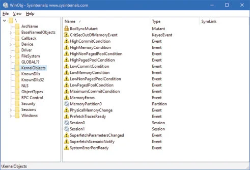<figcaption>WinObj で見たメモリ通知イベント</figcaption></figure>
<p>いずれかのイベントをダブルクリックすると、オブジェクトのハンドル数や参照数を確認できます。
メモリ通知を要求しているプロセスがあるか調べるには、ハンドルテーブルで <code>LowMemoryCondition</code> または <code>HighMemoryCondition</code> を参照するハンドルを探します。
Process Explorer なら「Find」メニューで「Find Handle or DLL」を選びます。WinDbg でも検索できます。
ハンドルテーブルについては、Part 2 の第8章「オブジェクトマネージャー」を参照してください。</p>
<h3 id="ページフレーム番号データベース">ページフレーム番号データベース</h3>
<p>前の各節では、ページテーブル、PTE、VAD など、Windows のプロセスを仮想メモリの側から見てきました。
ここからは物理メモリの管理を説明します。
ワーキングセットはプロセスやシステムが使う常駐ページを記述しますが、<strong>ページフレーム番号（PFN）データベース</strong>は物理メモリの各ページの状態を記録します。
物理ページが取り得る状態を表5-19に示します。</p>
<div class="table-scroll" role="region" tabindex="0" aria-label="表。横にスクロールできます"><table><caption>表5-19 物理ページの状態</caption><thead><tr><th>状態</th><th>説明</th></tr></thead><tbody>
<tr><th>アクティブ（有効）</th><td>プロセス、セッション、システムのいずれかのワーキングセットに属します。ページアウトできないカーネルページのように、どのワーキングセットにも属さない場合もあります。通常は有効な PTE がそのページを指します。</td></tr>
<tr><th>遷移</th><td>どのワーキングセットにもページリストにも属さず、ページに対する I/O が進行中の一時的な状態です。競合するページフォールトを検出し、適切に処理できるよう、PTE に情報を記録します。ここでいう物理ページの「遷移」と、無効な PTE でいう「遷移」は別です。無効な遷移 PTE は、スタンバイリストや変更済みリストにあるページも指します。</td></tr>
<tr><th>スタンバイ</th><td>ワーキングセットから外されたか、先読みや一括読み込みによって直接スタンバイリストに入ったページです。前にディスクへ書き出したときから変更されていません。PTE はまだ物理ページを指しますが、無効かつ遷移状態と記録されています。</td></tr>
</tbody></table></div></section><section class="page" id="page-443" aria-label="page-443"><div class="table-scroll" role="region" tabindex="0" aria-label="表。横にスクロールできます"><table><caption>表5-19 物理ページの状態（続き）</caption><thead><tr><th>状態</th><th>説明</th></tr></thead><tbody>
<tr><th>変更済み</th><td>ワーキングセットから外されたページです。使用中に変更され、現在の内容はまだディスクやリモートストレージに書き出されていません。PTE はまだ物理ページを指しますが、無効かつ遷移状態と記録されています。物理ページを再利用する前に、バックストアへの書き出しが必要です。</td></tr>
<tr><th>変更済み（書き出しなし）</th><td>変更済みページのうち、変更済みページ書き出しスレッドがディスクに書き出さないよう指定されたものです。キャッシュマネージャーがファイルシステムドライバーの要求に応じて指定します。たとえば NTFS はファイルシステムのメタデータを含むページをこの状態にします。保護対象のページを書き出す前に、トランザクションログのエントリをディスクに反映させるためです（NTFS のトランザクションログは Part 2 のファイルシステムの章を参照）。</td></tr>
<tr><th>空き</th><td>空いていますが、以前のデータが残っています。セキュリティ上、ゼロで初期化するか、ファイルから読み込んだデータなどで全体を上書きしてから、ユーザープロセスに渡します。</td></tr>
<tr><th>ゼロ化済み</th><td>空いており、ゼロページスレッドがゼロで初期化したか、もともとすべてゼロであると確認されたページです。</td></tr>
<tr><th>ROM</th><td>読み取り専用メモリを表します。</td></tr>
<tr><th>不良</th><td>パリティエラーなどのハードウェアエラーを起こしたため使用できないページです。この状態はエンクレーブに属するページを表す用途にも使われます。</td></tr>
</tbody></table></div>
<p>PFN データベースは、システムの物理メモリの各ページを表す構造体の配列です。
図5-35に、PFN データベースとページテーブルの関係を示します。
有効な PTE の PFN は、通常はデータベースのエントリを指し、そのインデックスが物理メモリ内のページを特定します。
反対に、プロトタイプ PTE に対応しない PFN エントリは、ページテーブルから使われていれば、そのページテーブルを指します。
プロトタイプ PTE に対応する場合は、そのプロトタイプ PTE を指します。</p>
<figure>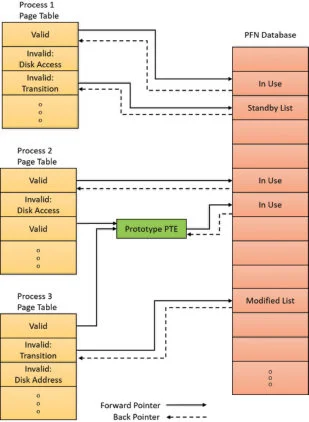<figcaption>図5-35 ページテーブルと PFN データベース</figcaption></figure></section><section class="page" id="page-444" aria-label="page-444"><p>表5-19の状態のうち六つは、連結リストで管理されます。
メモリマネージャーは、リストを使って特定の状態のページをすばやく見つけられます。
アクティブ（有効）なページ、遷移状態のページ、および実際の不良とは別の用途で「不良」と記録されたページは、システム全体のページリストには入りません。</p>
<p>スタンバイ状態には、ページの優先度別に八つのリストがあります。優先度については後で説明します。
図5-36はデータベースのエントリをつなぐ例です。
各リストがページフォールトの解決にどう使われ、ページがリスト間をどう移動するかは、次節で説明します。</p>
<figure><figcaption>図5-36 PFN データベースのページリスト</figcaption></figure>
<h4 id="PFN-データベースのリストの大きさを調べる">PFN データベースのリストの大きさを調べる</h4>
<p>本書の Web サイトで配布されている MemInfo を <code>-s</code> オプション付きで実行すると、各ページリストの大きさを表示できます。
次は出力例です。</p>
<pre>C:\Tools&gt;MemInfo.exe -s
MemInfo v3.00 - Show PFN database information
Copyright (C) 2007-2016 Alex Ionescu
www.alex-ionescu.com
Initializing PFN Database... Done
PFN Database List Statistics
Zeroed:    4867 (   19468 kb)</pre></section><section class="page" id="page-445" aria-label="page-445"><pre>Free:    3076 (   12304 kb)
Standby: 4669104 (18676416 kb)
Modified:    7845 (   31380 kb)
ModifiedNoWrite:     117 (     468 kb)
Active/Valid: 3677990 (14711960 kb)
Transition:       5 (      20 kb)
Bad:       0 (       0 kb)
Unknown:    1277 (    5108 kb)
TOTAL: 8364281 (33457124 kb)</pre>
<p>カーネルデバッガーの <code>!memusage</code> でも同様の情報を取得できますが、実行にはかなり時間がかかります。</p>
<h3 id="物理ページの状態遷移">物理ページの状態遷移</h3>
<p>図5-37は、ページフレームの状態がどう変わるかを示します。
図を簡潔にするため、書き出し対象外の変更済みリスト、不良リスト、ROM リストは省いています。</p>
<figure><figcaption>図5-37 物理ページの状態遷移図</figcaption></figure>
<p>ページフレームは、状況に応じてリスト間を移動します。</p>
<ul><li>デマンドゼロのページフォールトを解決するために初期化済みページが必要なら、メモリマネージャーはまずゼロページリストから取得します。
このフォールトは、内容がすべてゼロと定義されたページや、一度も参照されていないユーザーモードのコミット済みプライベートページへのアクセスで発生します。
ゼロページリストが空なら、空きページリストからページを取得してゼロで埋めます。空きページリストも空なら、スタンバイリストから取得してゼロで埋めます。</li></ul></section><section class="page" id="page-446" aria-label="page-446"><p>ゼロで初期化したページが必要な理由の一つは、Common Criteria（CC）などのセキュリティ要件です。
CC の多くのプロファイルは、前にそのページを使ったプロセスのデータを読み取れないよう、ユーザーモードのプロセスに初期化済みのページフレームを渡すことを求めています。
そのため、バックストアから読み込む場合を除き、メモリマネージャーはゼロ化済みのページを渡します。
読み込む場合はゼロ化していないページを優先し、ディスクまたはリモートストレージから取得したデータで初期化します。</p>
<p>System プロセスのスレッド0であるゼロページスレッドは、空きページリストのページをゼロで埋め、ゼロページリストに追加します。
ゼロページスレッドは作業を始めるまでゲートオブジェクトで待機し、空きページリストが8ページ以上になるとゲートがシグナル状態になります。
ただし、ゼロページスレッドの優先度は0で、ユーザースレッドに設定できる最低優先度は1です。そのため、ほかに実行できるスレッドのないプロセッサが少なくとも一つあるときだけ動きます。</p>
<p><strong>注：</strong>ドライバーが <code>MmAllocatePagesForMdl</code> または <code>MmAllocatePagesForMdlEx</code> で物理ページを割り当てる場合や、アプリケーションが <code>AllocateUserPhysicalPages</code> または <code>AllocateUserPhysicalPagesNuma</code> で物理ページを割り当てる場合にも、メモリのゼロ化が必要です。アプリケーションが大ページを割り当てる場合も同様です。
こうした場合、メモリマネージャーは <code>MiZeroInParallel</code> でゼロ化します。1ページずつ処理するゼロページスレッドより大きい領域をマップできるため、高速です。
マルチプロセッサシステムではさらにシステムスレッドを作って並行にゼロ化します。NUMA システムではノードの配置も考慮します。</p>
<ul>
<li>ゼロ化済みページを必要としない場合は、まず空きページリストから取得します。そこが空ならゼロページリスト、そこも空ならスタンバイリストを使います。
スタンバイリストのページフレームを再利用する前には、そのフレームをまだ指している無効な PTE またはプロトタイプ PTE を見つけ、参照を取り除きます。
PFN データベースのエントリには、以前使っていたページテーブルのページへのポインターがあり、共有ページの場合はプロトタイプ PTE の格納先を指すため、対象をすばやく変更できます。</li>
<li>ワーキングセットに空きがない状態で新しいページを参照した場合や、メモリマネージャーがワーキングセットを縮小した場合は、既存のページを外す必要があります。
変更されていなければスタンバイリストへ、常駐中に変更されていれば変更済みリストへ移します。</li>
<li>プロセスが終了すると、そのプライベートページはすべて空きページリストに移ります。
また、ページファイルをバックストアとするセクションへの最後の参照が閉じられ、マップ済みのビューが残っていない場合、そのページも空きページリストに移ります。</li>
</ul>
<h4 id="空きページリストとゼロページリストの変化を調べる">空きページリストとゼロページリストの変化を調べる</h4>
<p>プロセスが終了するときにプライベートページが解放される様子は、Process Explorer の「System Information」で確認できます。
まず、ワーキングセットに多くのプライベートページを持つプロセスを作ります。
前の実験と同様に TestLimit を使います。</p></section><section class="page" id="page-447" aria-label="page-447"><pre>C:\Tools\Sysinternals&gt;Testlimit.exe -d 1 -c 1500
Testlimit v5.24 - test Windows limits
Copyright (C) 2012-2015 Mark Russinovich
Sysinternals - www.sysinternals.com
Process ID: 13928
Leaking private bytes with touch 1 MB at a time...
Leaked 1500 MB of private memory (1500 MB total leaked). Lasterror: 0
The operation completed successfully.</pre>
<p><code>-d</code> オプションを指定した TestLimit は、メモリをプライベートメモリとしてコミットするだけでなく、実際にアクセスします。
その結果、コミットした仮想メモリの領域に対応する物理メモリが割り当てられます。
RAM に十分な空きがあれば、1,500 MB すべてがそのプロセス用に RAM に置かれます。
このプロセスは、コマンドプロンプトで <kbd>Ctrl</kbd>＋<kbd>C</kbd> を押すなどして終了させるまで待機します。</p>
<ol>
<li>Process Explorer を開きます。</li>
<li>「View」メニューの「System Information」を選び、「Memory」タブを開きます。</li>
<li>空きページ（「Free」）とゼロ化済みページ（「Zeroed」）のリストの大きさを確認します。</li>
<li>TestLimit プロセスを終了します。</li>
</ol>
<p>空きページリストが一瞬だけ大きくなるのが見えることがあります。
空きページが8枚に達すると、ゼロページスレッドが起き、すぐに処理します。
Process Explorer の表示更新は1秒に1回なので、その時点では、大半がゼロ化されてゼロページリストに移っている可能性があります。
一時的な増加を確認できた場合は、その後、空きページリストが0まで減り、ゼロページリストがその分増えるのが分かります。
確認できなかった場合も、ゼロページリストの増加は確認できます。</p>
<h4 id="変更済みページとスタンバイページの移動を調べる">変更済みページとスタンバイページの移動を調べる</h4>
<p>Sysinternals の VMMap と RAMMap、およびライブカーネルデバッガーを使うと、ページがプロセスのワーキングセットから変更済みリストへ、さらにスタンバイリストへ移る様子を確認できます。</p>
<ol><li>RAMMap を開き、システムの負荷が低いときの状態を確認します。この例は、RAM を 3 GB 搭載した x86 システムです。
各列は図5-37のページの状態に対応します。次の図では、今回使わない列の一部を狭くしています。</li></ol></section><section class="page" id="page-448" aria-label="page-448"><figure><figcaption>TestLimit を起動する前の物理メモリの内訳</figcaption></figure>
<ol start="2">
<li>空きページとゼロ化済みページのリストを合わせると、空き RAM は約 420 MB です。
約 580 MB はスタンバイリストにあり、利用可能なメモリに数えられますが、最近プロセスのワーキングセットから外れたデータや SuperFetch が使うデータを含んでいると考えられます。
約 830 MB は「Active」で、有効な PTE を介して仮想アドレスに直接マップされています。</li>
<li>行を見ると、各状態のページを、プロセスのプライベートページ、マップトファイルなどの用途や割り当て元でさらに分けられます。
たとえば、この時点では「Active」の 830 MB のうち、約 400 MB はプロセスのプライベートな割り当てです。</li>
<li>前の実験と同様に、TestLimit を使い、ワーキングセットに多数のページを持つプロセスを作ります。
ここでも <code>-d</code> オプションを指定して各ページに書き込みます。今回は割り当て回数を制限せず、変更済みのプライベートページを作成できるだけ作ります。</li>
</ol>
<pre>C:\Tools\Sysinternals&gt;Testlimit.exe -d
Testlimit v5.24 - test Windows limits
Copyright (C) 2012-2015 Mark Russinovich
Sysinternals - www.sysinternals.com
Process ID: 7548
Leaking private bytes with touch (MB)...
Leaked 1975 MB of private memory (1975 MB total leaked). Lasterror: 8</pre>
<ol start="5"><li>TestLimit は 1 MB の割り当てを1,975個作成しました。
RAMMap は情報収集に時間がかかるため、表示を自動で更新し続けることはありません。「File」メニューの「Refresh」で更新します。</li></ol></section><section class="page" id="page-449" aria-label="page-449"><figure><figcaption>TestLimit がメモリを割り当ててアクセスした後の内訳</figcaption></figure>
<ol start="6">
<li>「Active」は 2.8 GB を超え、そのうち 2.4 GB が「Process Private」の行にあります。
この増加は、TestLimit がメモリを割り当ててアクセスしたためです。
一方、スタンバイ、ゼロ化済み、空きの各リストは大幅に小さくなりました。TestLimit に割り当てた RAM の大半は、これらのリストから取得したものです。</li>
<li>次に、RAMMap でプロセスに割り当てられた物理ページを調べます。
「Physical Pages」タブを開き、下部のフィルターで「Process」列を選び、値に <code>Testlimit.exe</code> を指定します。
プロセスのワーキングセットに含まれる物理ページが表示されます。</li>
</ol>
<figure>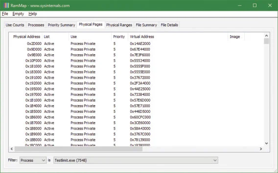<figcaption>TestLimit のワーキングセットに含まれる物理ページ</figcaption></figure></section><section class="page" id="page-450" aria-label="page-450"><ol start="8"><li>TestLimit の <code>-d</code> オプションで割り当てた仮想アドレス領域に対応する物理ページを一つ特定します。
RAMMap だけでは、どの仮想アドレス領域が TestLimit の <code>VirtualAlloc</code> 呼び出しで割り当てられたか分かりません。
同じプロセスを VMMap で調べると、次の図のように、割り当て元を推定する手掛かりが得られます。</li></ol>
<figure><figcaption>VMMap で確認した TestLimit の仮想メモリの割り当て</figcaption></figure>
<ol start="9">
<li>画面の下部には、プロセスのプライベートデータ用の割り当てが数百件あります。
どの領域もサイズが 1 MB で、全体がコミットされており、TestLimit の割り当てサイズと一致します。
図で選んだ領域の開始仮想アドレスは <code>0x310000</code> です。</li>
<li>RAMMap の「Physical Pages」タブに戻ります。
「Virtual Address」列が見える位置に移し、列見出しをクリックして仮想アドレス順に並べ替えると、該当するアドレスを見つけられます。</li>
</ol></section><section class="page" id="page-451" aria-label="page-451"><figure>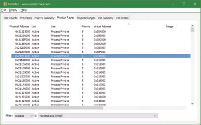<figcaption>仮想アドレスに対応する物理ページ</figcaption></figure>
<ol start="11"><li>この時点では、仮想アドレス <code>0x310000</code> から始まるページが、物理アドレス <code>0x212D1000</code> にマップされています。
TestLimit の <code>-d</code> オプションは、割り当てた各領域の先頭にプログラム自身の名前を書き込みます。
ローカルカーネルデバッガーの <code>!dc</code> で、物理アドレスを指定して内容を表示すると確認できます。</li></ol>
<pre>lkd&gt; !dc 0x212d1000
#212d1000 74736554 696d694c 00000074 00000000 TestLimit.......
#212d1010 00000000 00000000 00000000 00000000 ................
...</pre>
<ol start="12">
<li>確認までに時間がかかると、ページがすでにワーキングセットから外れている場合があります。
残りの手順では、ワーキングセットを縮小し、このページが変更済みリスト、次いでスタンバイリストへ移っても、しばらくはデータが保持されることを確かめます。</li>
<li>VMMap で TestLimit プロセスを選び、「View」メニューから「Empty Working Set」を選びます。
この操作でプロセスのワーキングセットが最小限まで縮小し、VMMap は次の図のようになります。</li>
</ol>
<figure><figcaption>ワーキングセットの縮小後</figcaption></figure></section><section class="page" id="page-452" aria-label="page-452"><ol start="14"><li>「Working Set」の棒グラフはほぼ空です。
画面中央の一覧では、プロセスのワーキングセットの合計はわずか 4 KB で、そのほとんどがページテーブルです。
RAMMap に戻って表示を更新し、「Use Counts」タブを確認します。
アクティブなページが大幅に減り、多数のページが変更済みリストに、一部がスタンバイリストにあることが分かります。</li></ol>
<figure>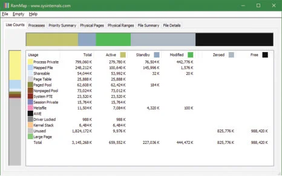<figcaption>ワーキングセットを縮小した後の物理ページの状態</figcaption></figure>
<ol start="15"><li>RAMMap の「Processes」タブで、これらのリストに入ったページの大半が TestLimit プロセスから移ったことを確認できます。</li></ol>
<figure>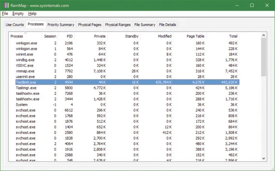<figcaption>プロセスごとのページ状態</figcaption></figure></section><section class="page" id="page-453" aria-label="page-453"><h3 id="ページの優先度">ページの優先度</h3>
<p>メモリマネージャーは、システムの各物理ページに0から7までの<strong>ページ優先度</strong>を割り当てます。
主な用途は、スタンバイリストからページを再利用する順序を決めることです。
スタンバイリストは優先度ごとに八つのリストに分かれており、ページが必要になると、優先度の低いリストから先に取り出します。</p>
<p>システムの各スレッドと各プロセスにもページ優先度が割り当てられます。
ページの優先度は通常、最初にその割り当てを起こしたスレッドの優先度を反映します。
共有ページの場合は、そのページを共有するスレッドのうち最も高いページ優先度を反映します。
スレッドは所属するプロセスからページ優先度を継承します。
プロセスが参照しそうなデータをディスクから先読みするときは、メモリマネージャーがそのページの優先度を低く設定します。</p>
<p>プロセスの既定のページ優先度は5です。
アプリケーションは、ユーザーモードの <code>SetProcessInformation</code> と <code>SetThreadInformation</code> を使って、プロセスとスレッドのページ優先度を変更できます。
これらは、それぞれネイティブ関数 <code>NtSetInformationProcess</code> と <code>NtSetInformationThread</code> を呼び出します。</p>
<p>スレッドのメモリ優先度は Process Explorer で確認できます。
個々のページの優先度は PFN データベースのエントリで確認できます。この章の後半の実験でその方法を示します。
図5-38は、Process Explorer の「Threads」タブで Winlogon のメインスレッドを調べた例です。
スレッドのスケジューリング優先度は高いものの、メモリ優先度は標準の5です。</p>
<figure><figcaption>図5-38 Process Explorer の「Threads」タブ</figcaption></figure>
<p>ページを保持する順序を適切に決めるには、個々のページの相対的な重要度を、アプリケーションの利用状況まで踏まえて判断する必要があります。
その役割を担う SuperFetch は、この章の最後で説明します。</p></section><section class="page" id="page-454" aria-label="page-454"><h4 id="優先度ごとのスタンバイリストを調べる">優先度ごとのスタンバイリストを調べる</h4>
<p>優先度別のスタンバイリストのサイズは、Process Explorer の「System Information」で「Memory」タブを開くと確認できます。</p>
<figure><figcaption>起動直後の優先度別スタンバイリスト</figcaption></figure>
<p>この実験に使った起動直後の x86 システムでは、優先度0に約 9 MB、優先度1に約 47 MB、優先度2に約 68 MB のデータがキャッシュされています。
Sysinternals の TestLimit で、可能な限りメモリをコミットし、その領域にアクセスしたときの変化を確認します。</p>
<pre>C:\\Tools\\Sysinternals&gt;Testlimit.exe -d</pre>
<figure><figcaption>TestLimit によるメモリ割り当て後のスタンバイリスト</figcaption></figure>
<p>「Repurposed」の件数を見ると、優先度の低いリストから先にページが再利用され、それらのリストは大きく縮小したことが分かります。
優先度の高いリストには、引き続きキャッシュされたデータが残っています。</p></section><section class="page" id="page-455" aria-label="page-455"><h3 id="変更済みページとマップトページの書き出し">変更済みページとマップトページの書き出し</h3>
<p>メモリマネージャーは二つのシステムスレッドを使って、ページをディスクに書き戻し、優先度に応じたスタンバイリストに移します。
<strong>変更済みページ書き出しスレッド</strong>（<code>MiModifiedPageWriter</code>）はページファイルへ、<strong>マップトページ書き出しスレッド</strong>（<code>MiMappedPageWriter</code>）はマップトファイルへ、変更済みページを書き出します。</p>
<p>スレッドを分けるのは、デッドロックを防ぐためです。
マップトファイルへの書き出しでページフォールトが起こり、空きページが必要になっても、空きがない場合があります。
このとき変更済みページ書き出しスレッドがページを空ける必要があります。
マップトファイルへの I/O を別のシステムスレッドで実行すれば、そのスレッドが待機しても、通常のページファイルへの I/O は妨げられません。</p>
<p>どちらも優先度18で実行され、初期化を終えると、それぞれの起動条件に対応するイベントオブジェクトを待ちます。
マップトページ書き出しスレッドが待つ18個のイベントは、次の三つに分けられます。</p>
<ul>
<li>スレッドの終了を指示するイベント。</li>
<li>マップトページの書き出しを指示するイベント。システム全体の <code>MiSystemPartition.Modwriter.MappedPageWriterEvent</code> に格納されます。Windows 8.x と Windows Server 2012／R2 では <code>MmMappedPageWriterEvent</code> に格納されます。次の場合にシグナル状態になります。
<ul>
<li><code>MiInsertPageInList</code> が、引数に応じてスタンバイリストや変更済みリストなどへページを追加したとき。ファイルシステムに書き出す変更済みページが16枚を超え、使用可能なページが1,024枚未満なら、イベントを通知します。</li>
<li><code>MiObtainFreePages</code> が空きページを確保しようとしたとき。</li>
<li>カーネルのバランスセットマネージャーが1秒ごとに呼び出す <code>MmWorkingSetManager</code> が、ファイルシステムに書き出す変更済みページが800枚を超えたと判断したとき。</li>
<li><code>MmFlushAllPages</code> が、変更済みページをすべて書き出す要求を受けたとき。</li>
<li><code>MmFlushAllFilesystemPages</code> が、ファイルシステムに書き出す変更済みページをすべて書き出す要求を受けたとき。</li>
</ul>
通常、変更済みリストのマップトページが、一括書き込みの最大サイズである16枚に達していなければ、バックストアのファイルには書き出しません。
ただし、<code>MmFlushAllFilesystemPages</code> と <code>MmFlushAllPages</code> では、この枚数を確認しません。</li>
<li>16個のマップトページリストに対応する16個のイベント。<code>MiSystemPartition.PageLists.MappedPageListHeadEvent</code> に格納されます。Windows 8.x と Windows Server 2012／R2 では <code>MiMappedPageListHeadEvent</code> に格納されます。</li>
</ul>
<p>マップトページが変更されると、<code>MiSystemPartition.WorkingSetControl-&gt;CurrentMappedPageBucket</code> に記録されたバケット番号に従い、16本のリストのどれかに入ります。Windows 8.x と Windows Server 2012／R2 では <code>MiCurrentMappedPageBucket</code> を使います。
ページの変更から十分な時間（本書の対象では100秒）が経過したと判断すると、ワーキングセットマネージャーがバケット番号を更新します。
経過時間のカウンターは同じ構造体の <code>WriteGapCounter</code>（Windows 8.x と Windows Server 2012／R2 では <code>MiWriteGapCounter</code>）で、ワーキングセットマネージャーが実行されるたびに増えます。</p></section><section class="page" id="page-456" aria-label="page-456"><p>バケットごとのイベントを設けると、変更済みリストがしきい値の800枚に達していなくても、時間が経ったマップトページを書き出せます。
システムのクラッシュや停電が起きたときに、失われるデータを減らすためです。</p>
<p>変更済みページ書き出しスレッドは、終了イベントと、<code>MiSystemPartition.Modwriter.ModifiedPageWriterEvent</code> に格納されたイベントを待ちます。
Windows 8.x と Windows Server 2012／R2 は、後者の代わりに <code>MmModifiedPageWriterGate</code> に格納されたカーネルのゲートを使います。
書き出しを指示するイベントがシグナル状態になるのは、次の場合です。</p>
<ul>
<li>すべてのページを書き出す要求を受けたとき。</li>
<li>使用可能なページ数が128枚未満になったとき。この数は <code>MiSystemPartition.Vp.AvailablePages</code> に入り、Windows 8.x と Windows Server 2012／R2 では <code>MmAvailablePages</code> に入ります。</li>
<li>ゼロページリストと空きページリストの合計が20,000枚を下回り、ページファイルへ書き出す変更済みページ数が、使用可能なページの16分の1と 64 MB（16,384枚）のうち小さい方を超えたとき。</li>
<li>ページを追加するためにワーキングセットを縮小しており、使用可能なページ数が15,000枚未満のとき。</li>
<li><code>MiInsertPageInList</code> がページをリストに追加する際、ページファイルへ書き出す変更済みページが16枚を超え、使用可能なページが1,024枚未満のとき。</li>
</ul>
<p>このイベントがシグナル状態になった後、スレッドはさらに二つのイベントを待ちます。
一つは、新規ページファイルが作られた場合などに、ページファイルの一覧を調べ直す必要があることを示します。
格納先は <code>MiSystemPartition.Modwriter.RescanPageFilesEvent</code> です。Windows 8.x と Windows Server 2012／R2 では <code>MiRescanPageFilesEvent</code> です。
もう一つは、ページファイルのヘッダー（<code>MiSystemPartition.Modwriter.PagingFileHeader</code>。Windows 8.x と Windows Server 2012／R2 では <code>MmPagingFileHeader</code>）にあり、必要に応じてシステムが明示的にページファイルへの書き出しを要求するために使います。</p>
<p>マップトページ書き出しスレッドは、起動すると、一回の I/O でできるだけ多くのページをディスクに書き出そうとします。
変更済みリストにあるページの PFN エントリから元の PTE を調べ、ディスクの連続した位置に対応するページを探します。
対象が決まると、変更済みリストからそのページを外して I/O を発行します。
I/O が正常に完了したら、各ページを、優先度に対応するスタンバイリストの末尾へ入れます。</p>
<p>書き出し中のページを別のスレッドが参照することもあります。
この場合、対象の物理ページを表す PFN エントリの参照数と共有数を増やし、別のプロセスが使っていることを記録します。
I/O が完了したとき、変更済みページ書き出しスレッドは、参照数が0でなくなったことを確認し、そのページをスタンバイリストに入れません。</p></section><section class="page" id="page-457" aria-label="page-457"><h3 id="PFN-のデータ構造">PFN のデータ構造</h3>
<p>PFN データベースのエントリは固定長ですが、ページの状態に応じて、同じフィールドでも意味が変わります。
図5-39に、状態ごとのエントリの形式を示します。</p>
<figure><figcaption>図5-39 状態ごとの PFN データベースエントリ（フィールドの配置は模式的なもの）</figcaption></figure>
<p>一部のフィールドは特定の状態でしか使いません。次のフィールドは複数の状態に共通します。</p>
<ul>
<li><strong>PTE アドレス</strong>：このページを指す PTE の仮想アドレスです。
PTE のアドレスは4バイト境界（64 ビットシステムでは8バイト境界）にそろうため、下位2ビットをロックに使い、同じ PFN エントリへのアクセスを直列化します。</li>
<li><strong>参照数</strong>：このページへの参照の数です。
ページを初めてワーキングセットに加えたり、デバイスドライバーなどが I/O のために物理メモリに固定したりすると増えます。
共有数が0になったり、ページの固定が解除されたりすると減ります。
共有数が0になれば、ページはどのワーキングセットにも属していません。
参照数も0なら、PFN エントリを更新し、そのページを空き、スタンバイ、変更済みのいずれかのリストに加えます。</li>
<li><strong>種別</strong>：この PFN が表すページの状態です。アクティブ（有効）、スタンバイ、変更済み、変更済み（書き出しなし）、空き、ゼロ化済み、不良、遷移などがあります。</li>
<li><strong>フラグ</strong>：このフィールドの各ビットの意味を表5-20に示します。</li>
<li><strong>優先度</strong>：この PFN に対応するページの優先度です。どのスタンバイリストに入れるかを決めます。</li>
</ul></section><section class="page" id="page-458" aria-label="page-458"><ul>
<li><strong>元の PTE の内容</strong>：各 PFN エントリは、そのページを指していた PTE（プロトタイプ PTE の場合もあります）の元の内容を保持します。
物理ページが常駐しなくなったときに、PTE を元に戻せるようにするためです。
例外として、AWE で割り当てたページの PFN エントリは、代わりに AWE の参照数を格納します。</li>
<li><strong>PTE の PFN</strong>：対象ページを指す PTE が置かれたページテーブルの物理ページ番号です。</li>
<li><strong>カラー</strong>：PFN エントリを状態別のリストでつなぐほか、物理ページを「カラー」、つまり NUMA ノード番号でつなぐためのフィールドです。</li>
<li><strong>追加のフラグ</strong>：PTE に関する追加情報を表します。各ビットの意味を表5-21に示します。</li>
</ul>
<div class="table-scroll" role="region" tabindex="0" aria-label="表。横にスクロールできます"><table><caption>表5-20 PFN データベースエントリのフラグ</caption><thead><tr><th>フラグ</th><th>意味</th></tr></thead><tbody>
<tr><th>Write in progress</th><td>ページの書き出しが進行中です。最初の DWORD には、I/O の完了時にシグナル状態になるイベントオブジェクトのアドレスが入ります。</td></tr>
<tr><th>Modified state</th><td>ページが変更済みかどうかを示します。変更済みなら、物理メモリから取り除く前にディスクへ保存する必要があります。</td></tr>
<tr><th>Read in progress</th><td>ページインが進行中です。最初の DWORD には、I/O の完了時にシグナル状態になるイベントオブジェクトのアドレスが入ります。</td></tr>
<tr><th>ROM</th><td>ファームウェアやデバイスレジスタなど、読み取り専用のメモリに対応するページです。</td></tr>
<tr><th>In-page error</th><td>ページイン中に I/O エラーが発生しました。PFN エントリの最初のフィールドにエラーコードが入ります。</td></tr>
<tr><th>Kernel stack</th><td>カーネルスタックに使われるページです。この場合、PFN エントリはスタックの所有者と、このスレッドのスタックの次の PFN を保持します。</td></tr>
<tr><th>Removal requested</th><td>ECC やメモリスクラビングの結果、または稼働中のメモリ取り外しに伴い、このページの除外が要求されました。</td></tr>
<tr><th>Parity error</th><td>物理ページで、パリティまたは誤り訂正のエラーが発生しました。</td></tr>
</tbody></table></div>
<div class="table-scroll" role="region" tabindex="0" aria-label="表。横にスクロールできます"><table><caption>表5-21 PFN データベースエントリの追加フラグ</caption><thead><tr><th>フラグ</th><th>意味</th></tr></thead><tbody>
<tr><th>PFN image verified</th><td>この PFN が裏付けるイメージについて、暗号署名カタログにある、この PFN に対応するコード署名を検証済みです。</td></tr>
<tr><th>AWE allocation</th><td>この PFN は AWE による割り当てに使われています。</td></tr>
<tr><th>Prototype PTE</th><td>この PFN エントリが参照する PTE はプロトタイプ PTE です。たとえば、共有可能なページが該当します。</td></tr>
</tbody></table></div>
<p>残りのフィールドは PFN の状態によって異なります。
図5-39の最初の PFN エントリは、ワーキングセットに属するアクティブなページを表しています。
共有数は、このページを参照する PTE の数です。読み取り専用、コピーオンライト、または読み書き可能な共有ページは、複数のプロセスで共有できます。
ページテーブル自体を格納するページの場合、共有数は、そのテーブル内にある有効な PTE と遷移 PTE の合計です。
共有数が0より大きい間は、ページをメモリから外せません。</p></section><section class="page" id="page-459" aria-label="page-459"><p><strong>ワーキングセットインデックス</strong>は、この物理ページをマップする仮想アドレスに対応する、ワーキングセットリスト内の位置です。
プロセス、システム、セッションのいずれかのリストを指し、どのワーキングセットにも属さなければ0です。
プライベートページは一つの仮想アドレスにしかマップされないため、このインデックスは対応するリストエントリを直接指します。</p>
<p>共有ページの場合、インデックスが正しいと保証されるのは、最初にページを有効にしたプロセスだけです。
ほかのプロセスは、可能なら同じインデックスを使います。
最初に設定したプロセスは、正しいインデックスが保証されているため、仮想アドレスをキーとするリストエントリを、ワーキングセットのハッシュ木に追加する必要がありません。
その分、ハッシュ木が小さくなり、対象のエントリを探す時間も短くなります。</p>
<p>図5-39の二つ目の PFN エントリは、スタンバイリストまたは変更済みリストにあるページを表します。
前方リンクと後方リンクがリスト内のエントリをつなぎ、ページフォールトの処理時にページを移動しやすくします。
リスト上のページはどのワーキングセットからも使われないので、共有数は常に0です。そのフィールドは後方リンクに転用できます。
リスト上のページは参照数も0です。
ディスクへの書き出しなどの I/O が始まって参照数が0でなくなる場合は、先にリストから外します。</p>
<p>三つ目の PFN エントリは、カーネルスタックのページを表します。
Windows では、ユーザーモードへのコールバックを始めたり、そこから戻ったりするときや、ドライバーがコールバックのためにスタックの拡張を要求するときに、カーネルスタックを動的に割り当て、拡張し、解放します。
メモリマネージャーは、スタックが使われていれば対応するスレッドを、空いていればルックアサイドリストの次の空きスタックへのリンクを保持します。</p>
<p>四つ目の PFN エントリは、ページ読み込みなどの I/O が進行中のページを表します。
I/O の間は、先頭フィールドが、完了時にシグナル状態になるイベントオブジェクトを指します。
ページインでエラーが起きた場合は、その I/O エラーを表す Windows のステータスコードが入ります。
この形式は、競合するページフォールトの解決に使います。</p>
<p>PFN データベースとは別に、表5-22のシステム変数が、物理メモリ全体の状態を表します。</p>
<div class="table-scroll" role="region" tabindex="0" aria-label="表。横にスクロールできます"><table><caption>表5-22 物理メモリの状態を表すシステム変数</caption><thead><tr><th>Windows 10、Server 2016</th><th>Windows 8.x、Server 2012／R2</th><th>意味</th></tr></thead><tbody>
<tr><td><code>MiSystemPartition.Vp.NumberOfPhysicalPages</code></td><td><code>MmNumberOfPhysicalPages</code></td><td>システムが利用できる物理ページの総数です。</td></tr>
<tr><td><code>MiSystemPartition.Vp.AvailablePages</code></td><td><code>MmAvailablePages</code></td><td>利用可能なページの総数です。ゼロページ、空き、スタンバイの各リストのページ数を合計したものです。</td></tr>
<tr><td><code>MiSystemPartition.Vp.ResidentAvailablePages</code></td><td><code>MmResidentAvailablePages</code></td><td>全プロセスのワーキングセットをそれぞれの最小サイズまで縮小し、変更済みページをすべてディスクへ書き出したと仮定した場合に、利用できる物理ページの総数です。</td></tr>
</tbody></table></div></section><section class="page" id="page-460" aria-label="page-460"><h4 id="PFN-エントリを調べる">PFN エントリを調べる</h4>
<p>カーネルデバッガーで <code>!pfn</code> に PFN を渡すと、個々のエントリを調べられます。
たとえば、<code>!pfn 0</code> は最初のエントリを、<code>!pfn 1</code> は二つ目を表示します。
次の例では、仮想アドレス <code>0xD20000</code> に対応する PTE を表示した後、ページディレクトリを含むページと、参照先のページの PFN を順に調べます。</p>
<pre>lkd&gt; !pte d20000
VA 00d20000
PDE at C0600030            PTE at C0006900
contains 000000003E989867  contains 8000000093257847
pfn 3e989     ---DA--UWEV  pfn 93257     ---D---UW-V
lkd&gt; !pfn 3e989
PFN 0003E989 at address 868D8AFC
flink       00000071  blink / share count 00000144  pteaddress C0600030
reference count 0001   Cached     color 0   Priority 5
restore pte 00000080  containing page 0696B3  Active     M
Modified
lkd&gt; !pfn 93257
PFN 00093257 at address 87218184
flink       000003F9  blink / share count 00000001  pteaddress C0006900
reference count 0001   Cached     color 0   Priority 5
restore pte 00000080  containing page 03E989  Active     M
Modified</pre>
<p>MemInfo でも PFN の情報を調べられます。
システムをデバッグモードで起動する必要がなく、デバッガーより多くの情報を表示できる場合もあります。
次は同じ二つの PFN を MemInfo で調べた出力です。</p>
<pre>C:\\Tools&gt;MemInfo.exe -p 3e989
0x3E989000 Active      Page Table       5   N/A            0xC0006000 0x8E499480</pre>
<pre>C:\Tools&gt;MemInfo.exe -p 93257
0x93257000 Active      Process Private  5   windbg.exe     0x00D20000 N/A</pre>
<p>左から、物理アドレス、ページの状態と種別、ページ優先度、プロセス名、仮想アドレス、および追加情報があればその内容が表示されます。
MemInfo は最初の PFN をページテーブルと判定しています。二つ目は、デバッガーで <code>!pte d20000</code> を実行したときにアクティブだった WinDbg プロセスに属しています。</p>
<h3 id="ページファイル内の領域予約">ページファイル内の領域予約</h3>
<p>メモリマネージャーは、スタンバイリストや変更済みリスト、後述のメモリ圧縮などを使って物理メモリの利用を効率化し、ページファイルへのアクセスを減らします。
ページファイルにアクセスする場合でも、ファイル内のページの配置を工夫することで、I/O を効率化できます。</p></section><section class="page" id="page-461" aria-label="page-461"><p>回転式ハードディスクでは、読み書きする前にヘッドを目的のセクターまで移動させます。
このシークにはミリ秒単位の時間がかかり、実際の読み書きの時間に加算されます。
移動先から大きなデータを連続して読み書きするなら、シーク時間の割合は小さくなります。
一方、ディスク上に散在するデータを読み書きすると、シークが何度も発生し、その合計時間が処理時間の大部分を占めることがあります。</p>
<p>セッションマネージャー（<code>Smss.exe</code>）は、ページファイルを作るときに、配置先のパーティションが回転式ディスクか SSD かを調べます。
回転式ディスクなら、物理メモリで連続するページをページファイル内でも連続して配置するために、<strong>ページファイル内の領域予約</strong>を有効にします。
SSD には移動するヘッドがなく、この方式の利点がないので、そのページファイルでは使いません。ハイブリッドディスクも、この機能では SSD と同じ扱いです。</p>
<p>領域予約に関わるのは、ワーキングセットマネージャー、変更済みページ書き出しスレッド、ページフォールトハンドラーの三つです。
ワーキングセットを縮小する際、ワーキングセットマネージャーは <code>MiFreeWsleList</code> を呼び出し、対象ページごとに共有数を減らします。
共有数が0になれば、対応する PTE を遷移 PTE に変更して、ページを変更済みリストへ移せます。
以前の有効な PTE は PFN エントリに保存します。</p>
<p>無効な PTE には、この仕組みのためのビットが二つあります。ページファイル内に領域を予約したことを表すビットと、ページファイル内の領域を割り当てたことを表すビットです（図5-24）。
空き、ゼロ、スタンバイのいずれかのリストから物理ページを取得してアクティブ（有効）にするとき、無効な PTE を PFN エントリの <code>Original PTE</code> フィールドに保存します。
領域の予約状況は、このフィールドで追跡します。</p>
<p><code>MiCheckReservePageFileSpace</code> は、指定したページを起点にまとめて領域を予約できるか調べます。
対象のページファイルで領域予約が無効になっている場合や、元の PTE がすでに予約済みであることを示す場合は、処理を打ち切ります。
対象はユーザーページだけです。ページプールなどでは利用パターンが予測しにくく、まとまるページ数が少ないので、十分な効果が得られませんでした。
条件を満たせば、<code>MiReservePageFileSpace</code> を呼び、実際に領域を予約します。</p>
<p>まず起点の PTE からアドレスの小さい方向へ進み、連続して予約できるページを探します。
隣接ページがコミット解除済み、非ページプールの一部、または予約済みなら対象外なので、その手前を予約範囲の下限とします。
次に起点からアドレスの大きい方向へ進み、条件を満たすページをできるだけ多く集めます。
このまとまりを<strong>クラスター</strong>と呼びます。予約に必要な最小サイズは16ページ、最大は512ページです。
図5-40では、一方の端に無効なページ、もう一方に既存のクラスターがあります。
一つのクラスターは、同じページディレクトリ内にある複数のページテーブルにまたがることがあります。</p></section><section class="page" id="page-462" aria-label="page-462"><figure><figcaption>図5-40 ページファイルの予約クラスター</figcaption></figure>
<p>クラスターの範囲が決まったら、そのページ群のために、ページファイル内で予約できる空き領域を探します。
ページファイルの割り当てはビットマップで管理し、セットされたビットはファイル内の使用済みページを表します。
領域予約では、予約専用のビットマップを別に使います。予約は、その領域への書き込みが済んだことを意味しません。書き込み先の使用状況は割り当て用のビットマップで管理します。</p>
<p>二つのビットマップを調べて、予約も割り当てもされていない領域が見つかったら、予約用のビットだけをセットします。
割り当て用のビットは、変更済みページ書き出しスレッドが内容をディスクに書き出す際にセットします。
クラスターが収まる空き領域がなければ、ページファイルの拡張を試みます。
すでに拡張を試みたか、拡張後のサイズが上限に達していれば、見つかった領域に収まるまでクラスターを小さくします。</p>
<p><strong>注：</strong>起点の PTE に対応するページを除き、クラスターのページは物理ページのリストにはつなぎません。
予約情報は PFN エントリの <code>Original PTE</code> に格納します。</p>
<p>変更済みページ書き出しスレッドは、予約済みページを特別に扱います。
これまでに集めた情報を使い、ページファイルに書き出すクラスターの PFN を入れた MDL を作ります。
書き出し先が連続するページを探すので、書き出しのまとまりは、予約時のクラスターをまたぐ場合があります。
クラスター間に空きがあれば、全バイトが <code>0xFF</code> のダミーページで埋めます。ダミーページが32枚を超える場合は、クラスターを分割します。
前方、次いで後方へと調べて、最終的に書き出す範囲を決めます。
図5-41は、書き出し用のクラスターを組み立てた後のページの状態を示します。</p></section><section class="page" id="page-463" aria-label="page-463"><figure>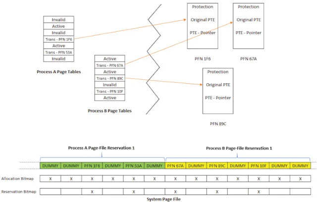<figcaption>図5-41 書き出し前に組み立てたクラスター</figcaption></figure>
<p>読み戻す際は、ページフォールトハンドラーが、予約用ビットマップと PTE の情報からクラスターの始点と終点を求めます。
これによって、回転式ディスクのヘッドの移動を抑えながら、必要なページをまとめて読み戻せます。</p>
<h3 id="物理メモリの上限">物理メモリの上限</h3>
<p>一般的なシステムは、実行中に、物理メモリに載りきらない量のコードやデータにアクセスします。
物理メモリに置かれるのは、その時々に使うコードとデータの一部です。
プロセスや OS が必要とするものが物理メモリになければ、メモリマネージャーはディスクやリモートストレージから読み込みます。そのため、物理メモリの容量は性能に影響します。</p>
<p>物理メモリの容量は、ほかのリソースの上限にも関わります。
たとえば、非ページプールは物理メモリに常駐するので、その容量は物理メモリに制約されます。
システムのコミット上限も、おおむね物理メモリの容量と、すべてのページファイルの現在のサイズを合計した値です。
作成できるプロセスの数も、物理メモリの容量に間接的に制約されます。</p>
<p>Windows が扱える物理メモリの容量は、ハードウェアの制約、ライセンス、OS のデータ構造、ドライバーの互換性で決まります。
エディション別の上限は <a href="https://msdn.microsoft.com/en-us/library/windows/desktop/aa366778.aspx">Microsoft のドキュメント</a>に掲載されています。
表5-23は、原著で扱う Windows 8 以降のバージョンの上限です。</p></section><section class="page" id="page-464" aria-label="page-464"><div class="table-scroll" role="region" tabindex="0" aria-label="表。横にスクロールできます"><table><caption>表5-23 Windows の物理メモリの上限</caption><thead><tr><th>OS のバージョンとエディション</th><th>32 ビット版の上限</th><th>64 ビット版の上限</th></tr></thead><tbody>
<tr><th>Windows 8.x Professional、Enterprise</th><td>4 GB</td><td>512 GB</td></tr>
<tr><th>Windows 8.x（その他のエディション）</th><td>4 GB</td><td>128 GB</td></tr>
<tr><th>Windows Server 2012／R2 Standard、Datacenter</th><td>該当なし</td><td>4 TB</td></tr>
<tr><th>Windows Server 2012／R2 Essentials</th><td>該当なし</td><td>64 GB</td></tr>
<tr><th>Windows Server 2012／R2 Foundation</th><td>該当なし</td><td>32 GB</td></tr>
<tr><th>Windows Storage Server 2012 Workgroup</th><td>該当なし</td><td>32 GB</td></tr>
<tr><th>Windows Storage Server 2012 Standard、Hyper-V Server 2012</th><td>該当なし</td><td>4 TB</td></tr>
<tr><th>Windows 10 Home</th><td>4 GB</td><td>128 GB</td></tr>
<tr><th>Windows 10 Pro、Education、Enterprise</th><td>4 GB</td><td>2 TB</td></tr>
<tr><th>Windows Server 2016 Standard、Datacenter</th><td>該当なし</td><td>24 TB</td></tr>
</tbody></table></div>
<p>原著執筆時点で、サポートされる物理メモリの上限は、一部の Windows Server 2012／R2 エディションで 4 TB、Windows Server 2016 エディションで 24 TB です。
これらの上限は、実装やハードウェアの制約によるものではありません。
Microsoft はテストできる構成だけをサポートするため、ここで挙げたのは、当時テスト済みでサポート対象だった最大のメモリ構成です。</p>
<h3 id="クライアント版-Windows-の物理メモリ上限">クライアント版 Windows の物理メモリ上限</h3>
<p>64 ビットのクライアント版 Windows では、サポートされるメモリ容量はエディションごとに異なり、下位エディションでは 4 GB から、Enterprise や Professional では最大 2 TB です。
一方、32 ビットのクライアント版 Windows は、どのエディションも最大 4 GB です。
これは、標準の x86 のメモリ管理モードでアドレス指定できる物理メモリの上限です。</p>
<p>x86 のクライアント版 Windows は、ハードウェアによる実行禁止のために PAE をサポートします。PAE 自体は、4 GB より上の物理アドレスにもアクセスできます。
しかしテストでは、クライアントでよく使われる映像や音声デバイスなどのドライバーの一部が、4 GB より上の物理アドレスを想定していませんでした。
これらのドライバーがアドレスの上位ビットを切り捨てたことで、メモリが破損し、システムの異常停止、応答停止、起動不能が起きました。
サーバーは一般に、より単純で安定したドライバーを持つ汎用的なデバイスを使うため、この問題はあまり見つかりませんでした。</p>
<p>この互換性問題のため、クライアント版は、理論上はアドレス指定できても、4 GB より上にある物理メモリを無視します。
ドライバー開発者には、BCD の <code>nolowmem</code> オプションを使った検証が推奨されます。
十分なメモリがあるシステムでこのオプションを指定すると、カーネルは 4 GB より上の物理アドレスだけを使うため、該当するドライバーの不具合を検出しやすくなります。</p>
<p>32 ビットのクライアント版でライセンス上使えるのは 4 GB ですが、実際に利用できる容量はそれより少なく、チップセットと接続したデバイスによって異なります。
物理アドレスマップには RAM だけでなくデバイスメモリも含まれます。
x86 と x64 のシステムでは通常、32 ビット OS との互換性を保つために、すべてのデバイスメモリを 4 GB のアドレス境界より下にマップします。</p></section><section class="page" id="page-465" aria-label="page-465"><p>これは、4 GB より上のアドレスを扱えない 32 ビット OS があるためです。
新しいチップセットは PAE を使ってデバイスメモリを再マッピングできますが、クライアント版 Windows は、前述のドライバー互換性の問題からこの機能を使いません。
使った場合は、ドライバーにデバイスメモリを指す64ビットのポインターが渡されます。</p>
<p>たとえば、RAM が 4 GB あり、映像、音声、ネットワークアダプターなどがデバイスメモリへのアクセス用に合計 500 MB のアドレス範囲を使うとします。
図5-42のように、4 GB の RAM のうち 500 MB は、4 GB のアドレス境界より上に配置されます。</p>
<figure><figcaption>図5-42 RAM を 4 GB 搭載したシステムの物理アドレスの配置</figcaption></figure>
<p>このため、RAM を 3 GB 以上搭載していても、32 ビットのクライアント版 Windows では全容量を使えない場合があります。
Windows が検出した搭載量は「システムのプロパティ」で確認できますが、実際に利用できる量を知るには、タスクマネージャーの「パフォーマンス」タブか <code>Msinfo32</code> を使います。
たとえば、RAM を 4 GB に設定した Hyper-V 仮想マシンに 32 ビット版 Windows 10 をインストールすると、<code>Msinfo32</code> には次のように表示されます。</p>
<dl><dt>インストール済みの物理メモリ（RAM）</dt><dd>4.00 GB</dd><dt>合計物理メモリ</dt><dd>3.87 GB</dd></dl>
<p>物理メモリのアドレス範囲は MemInfo でも確認できます。
次は、32 ビットシステムで MemInfo に <code>-r</code> オプションを指定したときの出力です。</p>
<pre>C:\Tools&gt;MemInfo.exe -r
MemInfo v3.00 - Show PFN database information
Copyright (C) 2007-2016 Alex Ionescu
www.alex-ionescu.com
Physical Memory Range: 00001000 to 0009F000 (158 pages, 632 KB)
Physical Memory Range: 00100000 to 00102000 (2 pages, 8 KB)
Physical Memory Range: 00103000 to F7FF0000 (1015533 pages, 4062132 KB)
MmHighestPhysicalPage: 1015792</pre>
<p><code>0xA0000</code> から <code>0x100000</code> までの間に 384 KB、<code>0xF8000000</code> から <code>0xFFFFFFFF</code> までに 128 MB の空白があります。</p></section><section class="page" id="page-466" aria-label="page-466"><p>MemInfo の出力で空白になっているのは、Windows が RAM として使えない予約済みのアドレス範囲です。
どのデバイスがその範囲を使っているかは、デバイスマネージャーで確認できます。</p>
<ol>
<li><code>Devmgmt.msc</code> を実行します。</li>
<li>「表示」メニューから「接続別リソース」を選びます。</li>
<li>「メモリ」を展開します。図5-43の例では、マップされたデバイスメモリを最も多く使っているのは映像アダプター（Hyper-V S3 Cap）で、<code>0xF8000000</code>～<code>0xFBFFFFFF</code> の範囲を占めています。</li>
</ol>
<figure><figcaption>図5-43 32 ビット版 Windows でハードウェアが予約したアドレス範囲</figcaption></figure>
<p><small>訳注：原文は映像アダプターが占める容量を 128 MB としていますが、図の <code>0xF8000000</code>～<code>0xFBFFFFFF</code> は 64 MB です。</small></p>
<p>残りの大部分はほかのデバイスが占めます。
起動時にファームウェアがデバイスに必要な領域を余裕を持って見積もるため、PCI バスも追加のアドレス範囲を予約します。</p>
<h3 id="メモリ圧縮">メモリ圧縮</h3>
<p>Windows 10 のメモリマネージャーは、変更済みリスト上のプライベートページと、ページファイルをバックストアとするセクションのページを圧縮できます。
主な対象は UWP アプリのプライベートページです。
メモリが不足すると、UWP アプリではもともとワーキングセットのスワップアウトや解放が行われるため、圧縮を組み合わせやすいからです。</p>
<p>アプリが中断され、ワーキングセットがスワップアウトされた後は、必要に応じてそのワーキングセットを空にし、変更済みページを圧縮できます。
これによって、最初のアプリのページを物理メモリから追い出さずに、別のアプリを載せる余裕が生まれることがあります。</p>
<p><strong>注：</strong>実験では、速度と圧縮率のバランスを取る Microsoft の Xpress アルゴリズムで、ページの大きさが元の30～50％程度になりました。</p>
<p>メモリ圧縮の実装には次の要件があります。</p>
<ul><li>同じページを圧縮前と圧縮後の両方の形式でメモリに残すと、物理メモリを無駄に消費します。
圧縮に成功したら、元のページを解放します。</li></ul></section><section class="page" id="page-467" aria-label="page-467"><ul>
<li>圧縮データと管理用データ構造を合わせても、システム全体のメモリ使用量を減らせることが必要です。十分に小さくならないページは圧縮ストアに追加しません。</li>
<li>圧縮済みページを保持している物理メモリは、必要に応じて別の用途に回せるため、利用可能なメモリとして扱います。こうすれば、圧縮したことでかえってメモリ消費が増えたようには見えません。</li>
</ul>
<p>クライアント版では、スマートフォン、PC、Xbox などでメモリ圧縮が既定で有効です。
原著執筆時点のサーバー版では使われていませんが、将来のバージョンでは変わる可能性があります。</p>
<p><strong>注：</strong>Windows Server 2016 でも、タスクマネージャーの圧縮済みメモリ量は括弧内に表示されますが、常に0です。メモリ圧縮用のプロセスもありません。</p>
<p>起動すると、<code>svchost.exe</code> 内で動く Superfetch サービス（<code>sysmain.dll</code>）が <code>NtSetSystemInformation</code> を呼び、エグゼクティブのストアマネージャーに、システム共通のストアを一つ作るよう指示します。
このストアが常に最初に作られ、UWP 以外のアプリケーションで使われます。
UWP アプリは、起動時に Superfetch サービスと通信し、自分専用のストアを作るよう要求します（後述の「SuperFetch による先行メモリ管理」を参照）。</p>
<h3 id="メモリ圧縮でのページの移動">メモリ圧縮でのページの移動</h3>
<p>ここでは、物理ページが次の図のような状態にあるとします。</p>
<figure><figcaption>圧縮前の物理ページの状態</figcaption></figure>
<p>ゼロページリストにはゼロで埋めたページが、空きページリストには以前のデータが残るページがあり、どちらもコミット済みメモリのために使えます。
この例では両方をまとめて一つのリストとして扱います。
アクティブなページは各プロセスが使用中です。
変更済みページには、まだページファイルに書き出していないデータが残っています。そのプロセスが再び参照すると、I/O を伴わないソフトフォールトでワーキングセットに戻せます。</p>
<p>変更済みリストが大きくなりすぎたか、ゼロ化済みページと空きページが少なくなったため、メモリマネージャーが変更済みリストを縮小するとします。
この例では、変更済みリストから外す3ページの内容を、空きページとゼロ化済みページのリストから取った1ページに圧縮します。</p></section><section class="page" id="page-468" aria-label="page-468"><figure><figcaption>変更済み3ページの内容を1ページに圧縮</figcaption></figure>
<p>ページ11、12、13の内容をページ1に圧縮した後、ページ1は使用中になり、次節で説明するメモリ圧縮用プロセスのワーキングセットに加わります。
ページ11、12、13は不要になり、空きページリストへ移ります。差し引き2ページを節約できました。</p>
<figure><figcaption>最初の圧縮後のページの状態</figcaption></figure>
<p>続いてページ14、15、16を圧縮します。この例では、圧縮データをページ2と3の2ページに格納します。</p>
<figure><figcaption>別の3ページの内容を2ページに圧縮</figcaption></figure>
<p>その結果、ページ2と3はメモリ圧縮用プロセスのワーキングセットに加わり、ページ14、15、16は空きになります。</p></section><section class="page" id="page-469" aria-label="page-469"><figure><figcaption>二度目の圧縮後のページの状態</figcaption></figure>
<p>後でメモリマネージャーがメモリ圧縮用プロセスのワーキングセットを縮小するとします。
外したページには、まだページファイルに書き出していないデータが入っているので、変更済みリストに移します。
元のプロセスがデータを参照すれば、空きページに展開することで、いつでもソフトフォールトでそのプロセスに戻せます。
次の図では、ページ1と2をメモリ圧縮用プロセスのアクティブなページから外し、変更済みリストへ移しています。</p>
<figure><figcaption>メモリ圧縮用プロセスのワーキングセットの縮小</figcaption></figure>
<p>メモリの空きがさらに少なくなると、メモリマネージャーは、圧縮データを保持する変更済みページをページファイルに書き出すことがあります。</p>
<figure><figcaption>圧縮データをページファイルに書き出す処理</figcaption></figure></section><section class="page" id="page-470" aria-label="page-470"><p>ページファイルへの書き出しが済むと、内容が保存されているので、物理ページはスタンバイリストへ移り、必要なら別の用途に使えます。
ページが残っている間は、変更済みリストにあったときと同様に、ソフトフォールトをきっかけに圧縮データを展開し、展開先のページを該当プロセスのワーキングセットに加えてアクティブにできます。
スタンバイリストでは、ページの優先度に応じたリストに入ります（後述の「ページ優先度と再調整」を参照）。</p>
<figure>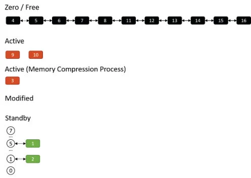<figcaption>書き出し後の圧縮データを保持するページ</figcaption></figure>
<h3 id="メモリ圧縮の構成">メモリ圧縮の構成</h3>
<p>圧縮エンジンは、圧縮したページと、それらを管理するためのデータ構造を置く領域を必要とします。
Windows 10 バージョン 1607 より前は、System プロセスのユーザーアドレス空間を使っていました。
バージョン 1607 以降は、専用の <strong>Memory Compression</strong> プロセスを使います。</p>
<p>専用プロセスを設けた理由の一つは、従来の表示では System プロセスの使用量が大きく見え、OS 自身が多くのメモリを消費しているように見えたことです。
しかし、圧縮データの分がコミット上限を別途消費するわけではありません。
専用プロセスに分けることで、圧縮による使用量と System プロセスの使用量を区別できます。</p>
<p>Memory Compression は最小プロセスで、DLL を一つもロードしません。
実行イメージも実行せず、カーネルがそのユーザーモードのアドレス空間だけを使います（最小プロセスについては第3章「プロセスとジョブ」を参照）。</p>
<p><strong>注：</strong>タスクマネージャーの「詳細」タブには、設計上このプロセスは表示されませんが、Process Explorer には表示されます。
カーネルデバッガーではイメージ名が <code>MemCompression</code> になります。</p></section><section class="page" id="page-471" aria-label="page-471"><p>ストアマネージャーは、ストアごとに、サイズを設定できる領域を単位としてメモリを割り当てます。
本書の対象では、領域のサイズは 128 KB です。
必要に応じて通常の <code>VirtualAlloc</code> を呼び出して割り当てます。
圧縮データは領域内に16バイト単位で格納します。元が 4 KB の1ページ分の圧縮データが、複数の16バイト単位にまたがることもあります。
図5-44は、領域の配列と、それを管理するデータ構造の一部です。</p>
<figure><figcaption>図5-44 圧縮ストアのデータ構造</figcaption></figure>
<p>図のように、ストアは各ページを <strong>B+ 木</strong>（一つのノードが複数の子を持てる木構造）で管理します。
ページごとのエントリは、いずれかの領域にある圧縮データを指します。
ストアの作成時には領域が一つもなく、必要に応じて領域を割り当て、解放します。
領域には優先度もあり、詳しくは後述の「ページ優先度と再調整」で説明します。</p>
<p>ページを追加する主な手順は次のとおりです。</p>
<ol>
<li>ページと同じ優先度で使用中の領域がなければ、新しい領域を割り当てて物理メモリに固定し、追加するページと同じ優先度を設定します。その領域を、その優先度で現在使う領域にします。</li>
<li>ページを圧縮して領域に格納します。必要な容量は格納単位である16バイトの倍数に切り上げます。たとえば、圧縮後に687バイトなら、16バイトの単位を43個使います。
圧縮は現在のスレッドで行い、ほかの処理への影響を抑えるため、CPU の優先度を7に下げます。
展開が必要になったときは、使えるプロセッサすべてで並行に処理します。</li>
<li>ページ用と領域用の B+ 木で、それぞれの情報を更新します。</li>
</ol></section><section class="page" id="page-472" aria-label="page-472"><ol start="4"><li>現在の領域に圧縮済みページが収まらなければ、同じ優先度の領域を新たに割り当て、その優先度で現在使う領域にします。</li></ol>
<p>ストアからページを取り除く手順は次のとおりです。</p>
<ol>
<li>ページ用の B+ 木でページのエントリを、領域用の B+ 木で領域のエントリを探します。</li>
<li>該当するエントリを取り除き、領域の使用量を更新します。</li>
<li>領域が空になったら解放します。</li>
</ol>
<p>圧縮済みページの追加と削除を繰り返すと、領域内の空きが断片化します。
完全に空にならないと領域は解放されないため、メモリを無駄にしないよう、領域の中身を詰め直す必要があります。
詰め直しは必要になるまで遅らせ、断片化の程度に応じてどこまで進めるかを決めます。
複数の領域をまとめるときは、各領域の優先度も考慮します。</p>
<h4 id="メモリ圧縮用プロセスを調べる">メモリ圧縮用プロセスを調べる</h4>
<p>システム内部のメモリ圧縮を外から確認する手段は限られていますが、Process Explorer やカーネルデバッガーでメモリ圧縮用プロセスを表示できます。
次の図は、管理者権限で起動した Process Explorer で <code>Memory Compression</code> のプロパティを開き、「Performance」タブを選んだところです。</p>
<figure><figcaption>Process Explorer が表示する Memory Compression の性能情報</figcaption></figure>
<p>プロセス内で動くのはカーネルスレッドだけなので、ユーザーモードでの CPU 時間は0です。
圧縮したメモリは共有できないため、ワーキングセットはすべてプライベートです。
次のタスクマネージャーの「メモリ」画面と比較します。</p></section><section class="page" id="page-473" aria-label="page-473"><figure><figcaption>タスクマネージャーで確認した圧縮済みメモリ量</figcaption></figure>
<p>括弧内の圧縮済みメモリ量は、圧縮データが占める容量なので、Memory Compression プロセスのワーキングセットの大きさにおおむね対応します。
この画面と前の画面は、約1分の間隔を置いて取得しました。</p>
<h3 id="メモリパーティション">メモリパーティション</h3>
<p>アプリケーションを隔離する従来の方法は、アプリケーションやそのグループごとに別の仮想マシン（VM）を用意することです。
VM 同士は分離されているため、セキュリティとリソースの両面で強い境界になります。
一方、VM を動かすハードウェアの負担と管理コストは大きくなります。
そこで Docker などのコンテナ技術が登場しました。
コンテナは、一台の物理マシンまたは VM 上にアプリケーションごとの実行領域を設け、より少ないコストで隔離とリソース管理を行います。</p>
<p>このようなコンテナを実現するには、通常の Windows 上でリソースを仮想化するカーネルドライバーが必要です。
一つのドライバーにまとめることもできますが、実現すべき機能には次のものがあります。</p>
<ul>
<li>ファイルシステムをコンテナごとに隔離して見せる、ファイルシステムフィルターまたはミニフィルター。</li>
<li><code>CmRegisterCallbacksEx</code> を使い、別のレジストリがあるように見せるレジストリ仮想化ドライバー。</li>
<li>サイロを使って作る、コンテナ固有のオブジェクトマネージャー名前空間（第3章を参照）。</li>
<li><code>PsSetCreateNotifyRoutineEx</code> によるプロセス作成通知を使い、各プロセスを正しいコンテナに関連付ける処理。</li>
</ul></section><section class="page" id="page-474" aria-label="page-474"><p>これらを用意しても、メモリ管理の仮想化は難しいままです。
コンテナごとに PFN データベースやページファイルを分けて使いたい場合があるためです。
64 ビット版 Windows 10 と Windows Server 2016 は、<strong>メモリパーティション</strong>によって、このようなメモリ管理を可能にします。</p>
<p>メモリパーティションは、スタンバイ、変更済み、ゼロ、空きなどのページリスト、コミット使用量、ワーキングセット、ページを縮小する処理、変更済みページ書き出しスレッド、ゼロページスレッドなどを、ほかのパーティションから独立して持ちます。
システム内では <strong>Partition オブジェクト</strong>で表され、ほかのエグゼクティブオブジェクトと同様、名前を付けたりアクセスを制御したりできます。</p>
<p><strong>システムパーティション</strong>は常に存在し、システム全体を表すとともに、明示的に作成する全パーティションの最上位の親になります。
そのアドレスはグローバル変数 <code>MiSystemPartition</code> に格納されます。
名前は <code>KernelObjects\\MemoryPartition0</code> で、図5-45のように、Sysinternals の WinObj などで確認できます。</p>
<figure>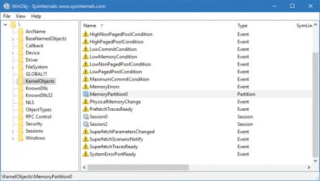<figcaption>図5-45 WinObj で見たシステムパーティション</figcaption></figure>
<p>すべての Partition オブジェクトはグローバルリストに格納されます。
該当するパーティションの情報にすばやくアクセスできるよう、インデックスは PTE に10ビットで記録されます。そのため、インデックスは最大1,024個です。
うち一つはシステムパーティション、二つは特別な予約値なので、追加のパーティションに使えるのは1,021個です。</p>
<p>ユーザーモードとカーネルモードのどちらからでも、文書化されていない内部関数 <code>NtCreatePartition</code> でメモリパーティションを作れます。
ユーザーモードから呼び出す場合は、メモリのロックを許可する特権が必要です。
親パーティションを指定すると、新しいパーティションに最初に与えるページをそこから取得し、パーティションを破棄する際にそこへ返します。
指定しなければシステムパーティションが親になります。
実際の作成処理は、メモリマネージャーの内部関数 <code>MiCreatePartition</code> が行います。</p>
<p>既存のパーティションは <code>NtOpenPartition</code> で名前を指定して開けます。
ほかのオブジェクトと同様に ACL で保護できるため、開くための特別な特権は不要です。
パーティションにメモリやページファイルを追加したり、別のパーティションにメモリをコピーしたり、パーティションの情報を取得したりするには <code>NtManagePartition</code> を使います。</p></section><section class="page" id="page-475" aria-label="page-475"><h4 id="カーネルデバッガーでメモリパーティションを調べる">カーネルデバッガーでメモリパーティションを調べる</h4>
<p>カーネルデバッガーで Partition オブジェクトを表示します。</p>
<ol><li>ローカルカーネルデバッグを開始し、<code>!partition</code> を実行します。システム内のすべての Partition オブジェクトが一覧表示されます。</li></ol>
<pre>lkd&gt; !partition
Partition0 fffff803eb5b2480 MemoryPartition0</pre>
<ol start="2"><li>常に存在するシステムパーティションが表示されます。<code>!partition</code> に Partition オブジェクトのアドレスを渡すと、さらに詳しい情報を取得できます。</li></ol>
<pre>lkd&gt; !partition fffff803eb5b2480
PartitionObject @ ffffc808f5355920 (MemoryPartition0)
_MI_PARTITION 0 @ fffff803eb5b2480
MemoryRuns: 0000000000000000
MemoryNodeRuns: ffffc808f521ade0
AvailablePages:         0n4198472 ( 16 Gb 16 Mb 288 Kb)
ResidentAvailablePages: 0n6677702 ( 25 Gb 484 Mb 792 Kb)
0 _MI_NODE_INFORMATION @ fffff10000003800
TotalPagesEntireNode:   0x7f8885
Zeroed                        Free
1GB                0 ( 0)                              0 (
0)
2MB               41 ( 82 Mb)                          0 (
0)
64KB            3933 ( 245 Mb 832 Kb)                  0 (
0)
4KB            82745 ( 323 Mb 228 Kb)                  0 (
0)
Node Free Memory:     ( 651 Mb 36 Kb )
InUse Memory:         ( 31 Gb 253 Mb 496 Kb )
TotalNodeMemory:      ( 31 Gb 904 Mb 532 Kb )</pre>
<p>この出力は、パーティションの実体である <code>MI_PARTITION</code> 構造体のアドレスと、格納された情報の一部を示します。
メモリ情報は NUMA ノードごとに表示されます。この例ではノードは一つです。
システムパーティションなので、使用量、空き容量、総容量はタスクマネージャーや Process Explorer が報告する値に対応します。
<code>MI_PARTITION</code> 構造体は、通常の <code>dt</code> コマンドでも調べられます。</p>
<p>将来の用途として原著が挙げているのは、専用の物理メモリが役立つ場合に、特定のプロセスをジョブオブジェクト経由でパーティションに関連付けることです。
原著執筆時点では、Creators Update で予定されていたゲームモードがその一例でした（詳細は Part 2 の第8章を参照）。</p></section><section class="page" id="page-476" aria-label="page-476"><h3 id="メモリの重複排除">メモリの重複排除</h3>
<p>メモリマネージャーは、イメージページの共有、データページのコピーオンライト、メモリ圧縮などによって RAM の使用量を抑えます。
もう一つの仕組みが<strong>メモリの重複排除</strong>（memory combining）です。RAM に内容が同じページが複数あれば、一つにまとめ、残りを解放します。</p>
<p>この仕組みを実装するには、次の点を決める必要があります。</p>
<ul>
<li>どのページを候補にするか。</li>
<li>いつ重複排除を始めるか。</li>
<li>一つのプロセス、一つのメモリパーティション、システム全体のどれを対象にするか。</li>
<li>通常の処理への影響を抑えるために、どうすれば短時間で処理できるか。</li>
<li>統合した書き込み可能ページを後で利用元が変更するときに、どうやってその利用元だけのコピーを作るか。</li>
</ul>
<p>最後の点には、コピーオンライトで対処します。
統合したページに誰も書き込まなければ何もしません。
プロセスが書き込もうとした場合は、そのプロセス専用のコピーを作り、新しいプライベートページのコピーオンライトフラグを外します。</p>
<p><strong>注：</strong>ページの重複排除を無効にするには、レジストリの <code>HKLM\\System\\CurrentControlSet\\Control\\Session Manager\\Memory Management</code> に DWORD 値 <code>DisablePageCombining</code> を作り、<code>1</code> に設定します。</p>
<p><strong>注：</strong>この節の CRC とハッシュは同じ意味で使います。いずれも、ページの内容を表す64ビットの値で、内容が異なれば値も高い確率で異なります。</p>
<p>メモリマネージャーは <code>MmInitSystem</code> で初期化するときに、システムパーティションを作ります。
パーティションを記述する <code>MI_PARTITION</code> 構造体には、重複ページを識別するための16個の AVL 木の配列があります。
どの木を使うかは、統合ページの CRC の下位4ビットで決まります。</p>
<p>すべてのビットが0のページと、すべてのビットが1（各バイトが <code>0xFF</code>）のページを、<strong>共通ページ</strong>と呼びます。
これらの CRC は一度だけ計算して保持するので、ページの内容を走査するときに見分けられます。</p>
<p>重複排除を始めるには、ネイティブ API の <code>NtSetSystemInformation</code> に <code>SystemCombinePhysicalMemoryInformation</code> 情報クラスを指定します。
呼び出し元のトークンには、通常ローカルの Administrators グループに付与される <code>SeProfileSingleProcessPrivilege</code> が必要です。
引数のフラグを組み合わせて、次の選択肢を指定できます。</p></section><section class="page" id="page-477" aria-label="page-477"><ul>
<li>システムパーティション全体を対象にするか、現在のプロセスだけを対象にするか。</li>
<li>共通ページ（すべて0か、すべて1）のみを探すか、内容を問わず同一のページを探すか。</li>
</ul>
<p>入力構造体には、必要に応じてイベントのハンドルを渡せます。
別のスレッドがそのイベントをシグナル状態にすると、重複排除は中止されます。
本書の対象では、Superfetch サービスの専用スレッドが低い優先度4で実行され、ユーザーが離席中にシステムパーティション全体の重複排除を始めます。
ユーザーが作業中なら15分ごとに実行します（後述の「SuperFetch」を参照）。</p>
<p>Creators Update では、物理メモリが 3.5 GB（3,584 MB）より多い場合、<code>Svchost</code> で動く組み込みサービスの多くは、プロセスごとに一つずつサービスをホストします。
標準構成でもプロセスは数十個増えますが、あるサービスの不安定さやセキュリティ上の問題が別のサービスに波及しにくくなります。
この構成ではサービスコントロールマネージャー（SCM）が、新しい API オプションを使って各 <code>Svchost</code> プロセス内で3分ごとに重複排除を開始します。
処理を起動するのは、基本優先度6で動くスレッドプールのタイマー（<code>ScPerformPageCombineOnServiceImages</code>）です。
<code>Svchost</code> の数が増えたことで増加し得る RAM 使用量を抑えるためです。
<code>Svchost</code> で動かないサービスや、ユーザー別のアカウントまたは専用のユーザーアカウントで動くサービスは、この処理の対象ではありません。</p>
<p>ページの重複排除の処理本体は <code>MiCombineIdenticalPages</code> から始まります。
メモリパーティションの NUMA ノードごとに、ページとその CRC の一覧を確保し、ページ統合を支援する<strong>PCS 構造体</strong>に格納します。
PCS は、前述の AVL 木の配列など、処理に必要な情報を保持します。
実際に処理するのは要求元のスレッドです。対象の NUMA ノードに属する CPU で動くよう、必要ならスレッドのアフィニティを変更します。</p>
<p>処理は、探索、分類、ページの統合の三段階に分けて説明します。
以下では、現在のプロセスに限定せず、共通ページだけでなくすべての候補を対象にすると仮定します。
対象を絞った場合も原理は同じで、処理はやや単純になります。</p>
<h3 id="重複候補の探索">重複候補の探索</h3>
<p>最初は、対象となる物理ページの CRC を求めます。
アクティブ、変更済み、スタンバイ状態の物理ページを調べ、使われていないゼロ化済みページと空きページは飛ばします。</p>
<p>候補になるのは、たとえばワーキングセットに属する未共有のアクティブなページで、ページテーブルなどのページング用構造をマップしていないページです。
スタンバイや変更済みのページでも、参照数が0なら候補になります。
ユーザープロセス、ページプール、セッション空間のページが対象で、それ以外は飛ばします。</p>
<p>候補ページは通常、呼び出し元とは別のプロセスのコンテキストに属するため、呼び出し元からそのユーザーアドレスを参照できません。
そこで新しいシステム PTE を使って、対象の物理ページをシステムアドレス空間にマップします。
<code>MiComputeHash64</code> でページの CRC を計算し、システム PTE を解放してマッピングを解除します。</p></section><section class="page" id="page-478" aria-label="page-478"><h4 id="ページのハッシュの計算">ページのハッシュの計算</h4>
<p>8バイトのページハッシュ（CRC）を計算するには、まず大きな64ビットの素数二つを掛け、その結果を初期値にします。
ページを末尾から先頭へ走査し、1サイクルで64バイトを処理します。
8バイトの値を読み取るたびにハッシュ値へ加算し、素数のビット数（2、3、5、7、11、13、17、19の順）だけ右にローテートします。
4,096バイトのページ全体のハッシュを求めるには、8バイトずつ512回読み取ります。</p>
<h3 id="重複候補の分類">重複候補の分類</h3>
<p>一つの NUMA ノードで対象ページのハッシュを計算し終えると、CRC と PFN の組を整理します。
後続の共有処理で、プロセスのコンテキスト切り替えを減らすためです。</p>
<p><code>MiProcessCrcList</code> は、まずクイックソートで CRC と PFN の一覧をハッシュ順に並べます。
同じハッシュを持つページを追跡し、統合ページをマップする新しいプロトタイプ PTE を保持する構造体が<strong>統合ブロック</strong>です。</p>
<p>一覧を先頭から調べ、ハッシュが共通ページのものか、一覧の前後に同じハッシュがあるかを確認します。
どちらにも当てはまらなければ、PCS 内にそのハッシュの統合ブロックがすでにあるかを調べます。
ブロックがあれば、前回の処理か別のノードで統合ページが特定されています。
なければ CRC は一意で、統合できないので次のページへ進みます。</p>
<p>今回初めて重複が見つかったハッシュについては、代表 PFN 用に空の統合ブロックを作り、次の共有処理で使う一覧に加えます。
すでに同じハッシュに統合ブロックがあれば、そのページは代表ではないので、現在の CRC／PFN エントリに、既存ブロックへの参照を追加します。</p>
<p>処理では、ページが存在することを <code>MiCombineIdenticalPages</code> で確認してから、その物理ページのアドレスを取得します。
続いて、同じワーキングセットのページをまとめる<strong>WS CRC ノード</strong>を探します。
見つからなければ新しいノードを作り、別の AVL 木に入れます。
ページの CRC／PFN と仮想アドレスは、そのノード内で関連付けます。</p>
<p>候補をすべて調べたら、新しい共有ページのための物理メモリを MDL を使って確保します。
また、処理を速めるため、各 WS CRC ノード内の候補ページを元の仮想アドレス順に並べます。
これで、代表ページとプロトタイプ PTE を保持する統合ブロックの一覧、ワーキングセットごとに整理した CRC／PFN エントリ、共有データを格納する物理メモリがそろいます。</p></section><section class="page" id="page-479" aria-label="page-479"><h3 id="ページを統合する処理">ページを統合する処理</h3>
<p>統合処理は、一つのワーキングセットの全候補ページを含む WS CRC ノードと、プロトタイプ PTE および実際の共有ページを保持するための空き統合ブロックの一覧を使います。
システムは対象プロセスにアタッチし、IRQL をディスパッチレベルに上げて、そのワーキングセットをロックします。
こうすると、再マップせずに各ページを直接読み書きできます。</p>
<p>処理に時間がかかる場合があるため、ディスパッチレベルで次の CRC／PFN エントリを調べる前に、<code>KeShouldYieldProcessor</code> で、プロセッサのキューに DPC などの実行待ちの処理があるかを確認します。
待っている処理があれば、統合処理の状態を保持したうえで実行を譲ります。</p>
<p>共有処理は、ページの状態に応じて三つに分かれます。</p>
<ul>
<li>アクティブかつ有効で、内容がすべて0なら、統合せずに PTE をデマンドゼロ PTE で置き換えます。これは <code>VirtualAlloc</code> などでメモリを割り当てた直後と同じ状態です。</li>
<li>アクティブかつ有効で、内容がすべて0ではない場合は、共有ページにします。CRC／PFN エントリが有効な統合ブロックを指していなければ、このページが代表になります。そのハッシュを再確認し、共有用の物理ページを割り当てます。既存の統合ブロックを指していれば代表ではないので、そのブロックを使い、参照数を増やします。実際の変換は <code>MiConvertPrivateToProto</code> が行います。</li>
<li>変更済みリストまたはスタンバイリスト上にある場合は、システムアドレスに有効なページとしてマップし、ハッシュを計算し直します。処理は前のケースと同様ですが、PTE をプロトタイプ PTE に切り替える処理には <code>MiConvertStandbyToProto</code> を使います。</li>
</ul>
<p>現在のページの共有処理を終えると、システムは代表ページの統合ブロックを PCS に追加します。
このブロックが、各プライベート PTE と統合したページの間をつなぎます。</p>
<h3 id="プライベート-PTE-を共有-PTE-に切り替える処理">プライベート PTE を共有 PTE に切り替える処理</h3>
<p><code>MiConvertPrivateToProto</code> は、アクティブかつ有効なページの PTE を変換します。
統合ブロック内のプロトタイプ PTE が0なら、代表ページと、その共有プロトタイプ PTE を新たに作ります。
空いている物理ページをシステムアドレスにマップし、プライベートページの内容を新しい共有ページにコピーします。
共有 PTE を作成する前に、ページファイルの予約があれば解放し、共有ページの PFN エントリを設定します。</p>
<p>共有ページの PFN エントリではプロトタイプビットをセットし、PTE フレームへのポインターに、プロトタイプ PTE を含む物理ページの PFN を設定します。
PTE ポインターには統合ブロック内の PTE のアドレスを設定し、ビット63をクリアします。
これによって、その PFN が統合済みページに属することを示します。</p></section><section class="page" id="page-480" aria-label="page-480"><p>次に、プライベートページの PTE が共有ページの PFN を指すように変更し、保護属性をコピーオンライトにして、PTE を有効にします。
統合ブロック内のプロトタイプ PTE も、同じ内容の有効なハードウェア PTE とします。
最後に、プライベートページ用に割り当てていたページファイルの領域を解放し、元の PFN を削除対象として記録します。
TLB をフラッシュし、プロセスのプライベートワーキングセットを1ページ減らします。</p>
<p>一方、統合ブロック内のプロトタイプ PTE が0でなければ、プライベートページは代表ページと重複している候補です。
この場合、変換するのはプライベートページの有効な PTE だけです。
共有ページをシステムアドレスにマップし、二つのページの内容を比較します。
一般に、内容が異なっても同じ CRC になることがあるため、この比較が必要です。
内容が異なれば処理を打ち切ります。
同じなら共有ページのマッピングを解除して、共有 PFN のページ優先度を両方のうち高い方にします。
図5-46は代表ページだけが統合済みの状態です。</p>
<figure><figcaption>図5-46 統合後の代表ページ</figcaption></figure>
<p>次に、プロセス専用のページテーブルに入れる、プロトタイプ PTE を参照する無効なソフトウェア PTE を組み立てます。
統合ブロックから、共有ページをマップするハードウェア PTE のアドレスを読み取り、ビットをシフトして、Prototype ビットと Combined ビットをセットします。
プライベート PFN の共有数が1でなければ、ここで処理を中止します。</p>
<p>共有数が1なら、新しいソフトウェア PTE をプロセスのページテーブルに書き込み、元のプライベートページの PFN が指すページテーブルの共有数を減らします。
アクティブなページの PFN エントリには、そのページを参照するページテーブルへのポインターがあるためです。
対象プロセスのワーキングセットサイズを1ページ減らし、TLB をフラッシュします。
元のプライベートページを遷移状態に移し、その PFN を削除対象にします。
図5-47では、二つ目のページの PTE はプロトタイプ PTE を参照していますが、まだ無効です。</p>
<p>最後に、共有ページがワーキングセットから外されないように、ページフォールトを模擬します。
これによって共有 PFN の共有数が増え、プロセスが共有ページを読もうとする時点では、フォールトを起こさずに参照できます。
プロセス側の PTE は再び有効なハードウェア PTE になります。
図5-48は、このソフトフォールトによって二つ目の PTE が有効になり、共有数が増えた状態です。</p></section><section class="page" id="page-481" aria-label="page-481"><figure><figcaption>図5-47 ページフォールトを模擬する前の統合ページ</figcaption></figure>
<figure><figcaption>図5-48 ページフォールトを模擬した後の統合ページ</figcaption></figure>
<h3 id="統合ページの解放">統合ページの解放</h3>
<p>システムがある仮想アドレスを解放するときは、まずそのアドレスをマップする PTE の位置を調べます。
統合ページの PFN エントリでは、Prototype ビットと Combined ビットがセットされています。
統合された PFN の解放要求は通常のプロトタイプ PFN と同じように処理します。
ただし、Combined ビットがセットされているので、プロトタイプ PFN の処理後に <code>MiDecrementCombinedPte</code> を呼び出します。</p></section><section class="page" id="page-482" aria-label="page-482"><p><code>MiDecrementCombinedPte</code> は、プロトタイプ PTE に対応する統合ブロックの参照数を減らします。
この時点では、メモリマネージャーはマップ先の物理ページへの参照をすでに解除しています。
物理ページの共有数も0になり、PTE は遷移状態にあります。
統合ブロックの参照数が0になれば、プロトタイプ PTE を解放し、物理ページを空きリストに移し、統合ブロックをメモリパーティションの PCS 構造体にある空きブロックリストに戻します。</p>
<h4 id="メモリの重複排除を確認する">メモリの重複排除を確認する</h4>
<ol>
<li>第4章「スレッド」で説明したように、仮想マシンを対象とするカーネルデバッグセッションを開始します。</li>
<li>本書のダウンロード資料から、対象のビット数に合う <code>MemCombine32.exe</code> または <code>MemCombine64.exe</code> と、<code>MemCombineTest.exe</code> を対象マシンにコピーします。</li>
<li>対象マシンで <code>MemCombineTest.exe</code> を実行します。次のように表示されます。</li>
</ol>
<figure><figcaption>MemCombineTest が確保したバッファー</figcaption></figure>
<ol start="4"><li>表示された二つのアドレスを控えます。どちらもバッファーの先頭で、各ページの内容が同じになるよう、乱数で生成した同じバイト列を繰り返し書き込んであります。</li>
<li>デバッガーで実行を中断し、MemCombineTest プロセスを探します。</li></ol>
<pre>0: kd&gt; !process 0 0 memcombinetest.exe
PROCESS ffffe70a3cb29080
SessionId: 2  Cid: 0728    Peb: 00d08000  ParentCid: 11c4
DirBase: c7c95000  ObjectTable: ffff918ede582640  HandleCount: &lt;Data Not
Accessible&gt;
Image: MemCombineTest.exe</pre>
<ol start="6"><li>見つけたプロセスにデバッガーのコンテキストを切り替えます。</li></ol>
<pre>0: kd&gt; .process /i /r ffffe70a3cb29080
You need to continue execution (press &#x27;g&#x27; &lt;enter&gt;) for the context
to be switched. When the debugger breaks in again, you will be in
the new process context.
0: kd&gt; g
Break instruction exception - code 80000003 (first chance)
nt!DbgBreakPointWithStatus:
fffff801&#x27;94b691c0 cc              int     3</pre></section><section class="page" id="page-483" aria-label="page-483"><ol start="7"><li><code>!pte</code> で、二つのバッファーに対応する PFN を調べます。</li></ol>
<pre>0: kd&gt; !pte b80000
VA 0000000000b80000
PXE at FFFFA25128944000    PPE at FFFFA25128800000    PDE at
FFFFA25100000028    PTE at FFFFA20000005C00
contains 00C0000025BAC867  contains 0FF00000CAA2D867  contains
00F000003B22F867  contains B9200000DEDFB867
pfn 25bac     ---DA--UWEV  pfn caa2d     ---DA--UWEV  pfn 3b22f     ---DA--
UWEV  pfn dedfb     ---DA--UW-V
0: kd&gt; !pte b90000
VA 0000000000b90000
PXE at FFFFA25128944000    PPE at FFFFA25128800000    PDE at
FFFFA25100000028    PTE at FFFFA20000005C80
contains 00C0000025BAC867  contains 0FF00000CAA2D867  contains
00F000003B22F867  contains B9300000F59FD867
pfn 25bac     ---DA--UWEV  pfn caa2d     ---DA--UWEV  pfn 3b22f     ---DA--
UWEV  pfn f59fd     ---DA--UW-V</pre>
<ol start="8">
<li>PFN の値が異なっているので、二つのページは異なる物理アドレスにマップされています。対象マシンの実行を再開します。</li>
<li>対象マシンで管理者権限のコマンドプロンプトを開き、MemCombine をコピーしたフォルダーに移動して実行します。このツールは対象全体のメモリの重複排除を開始します。数秒かかる場合があります。</li>
<li>完了したら、デバッガーで再び実行を中断し、手順6と7を繰り返します。PFN の値が変わります。</li>
</ol>
<pre>1: kd&gt; !pte b80000
VA 0000000000b80000
PXE at FFFFA25128944000    PPE at FFFFA25128800000    PDE at
FFFFA25100000028    PTE at FFFFA20000005C00
contains 00C0000025BAC867  contains 0FF00000CAA2D867  contains
00F000003B22F867  contains B9300000EA886225
pfn 25bac     ---DA--UWEV  pfn caa2d     ---DA--UWEV  pfn 3b22f     ---DA--
UWEV  pfn ea886     C---A--UR-V
1: kd&gt; !pte b90000
VA 0000000000b90000
PXE at FFFFA25128944000    PPE at FFFFA25128800000    PDE at
FFFFA25100000028    PTE at FFFFA20000005C80
contains 00C0000025BAC867  contains 0FF00000CAA2D867  contains
00F000003B22F867  contains BA600000EA886225
pfn 25bac     ---DA--UWEV  pfn caa2d     ---DA--UWEV  pfn 3b22f     ---DA--
UWEV  pfn ea886     C---A--UR-V</pre>
<ol start="11">
<li>PFN が等しくなり、両方のページが RAM 上の同じアドレスにマップされていることが分かります。表示の <code>C</code> フラグはコピーオンライトを示します。</li>
<li>対象の実行を再開し、MemCombineTest のウィンドウで任意のキーを押します。最初のバッファーの1バイトが書き換わります。</li>
</ol></section><section class="page" id="page-484" aria-label="page-484"><ol start="13"><li>再びデバッガーで実行を中断し、手順6と7を繰り返します。</li></ol>
<pre>1: kd&gt; !pte b80000
VA 0000000000b80000
PXE at FFFFA25128944000    PPE at FFFFA25128800000    PDE at
FFFFA25100000028    PTE at FFFFA20000005C00
contains 00C0000025BAC867  contains 0FF00000CAA2D867  contains
00F000003B22F867  contains B9300000813C4867
pfn 25bac     ---DA--UWEV  pfn caa2d     ---DA--UWEV  pfn 3b22f     ---DA--
UWEV  pfn 813c4     ---DA--UW-V
1: kd&gt; !pte b90000
VA 0000000000b90000
PXE at FFFFA25128944000    PPE at FFFFA25128800000    PDE at
FFFFA25100000028    PTE at FFFFA20000005C80
contains 00C0000025BAC867  contains 0FF00000CAA2D867  contains
00F000003B22F867  contains BA600000EA886225
pfn 25bac     ---DA--UWEV  pfn caa2d     ---DA--UWEV  pfn 3b22f     ---DA--
UWEV  pfn ea886     C---A--UR-V</pre>
<ol start="14"><li>最初のバッファーの PFN が変わり、コピーオンライトのフラグが外れています。変更したページは RAM 上の別のアドレスに移りました。</li></ol>
<h3 id="メモリエンクレーブ">メモリエンクレーブ</h3>
<p>プロセス内のスレッドは、ページの保護属性が許す範囲で、そのプロセスのアドレス空間全体にアクセスできます。保護属性も変更できます。
通常はこれで問題ありませんが、悪意のあるコードがプロセス内で実行された場合、そのコードも同じ権限を持ち、機密情報を含むデータを読み取ったり書き換えたりできます。</p>
<p>Intel の Software Guard Extensions（SGX）では、プロセスのアドレス空間に、保護された<strong>メモリエンクレーブ</strong>を作れます。
CPU は、エンクレーブ内のコードとデータを、外部で動くコードから保護します。
逆に、エンクレーブ内のコードは、エンクレーブの外にある同じプロセスのアドレス空間に通常どおりアクセスできます。
この保護は、別のプロセスやカーネルモードのコードによるアクセスにも適用されます。図5-49にその関係を示します。</p>
<figure><figcaption>図5-49 メモリエンクレーブ</figcaption></figure></section><section class="page" id="page-485" aria-label="page-485"><p>Intel SGX は第6世代 Core プロセッサ（Skylake）以降でサポートされます。
Intel はアプリケーション開発者向けの SDK を提供しており、64 ビット版 Windows 7 以降で使えます。
Windows 10 バージョン 1511 と Windows Server 2016 以降では、Windows API が抽象化層を提供するので、Intel の SDK を使わずにエンクレーブを作れます。
将来、ほかの CPU ベンダーが同様の機能を実装した場合も、同じ API で扱えるようにすることで、エンクレーブの作成とデータの読み込みを比較的移植しやすくします。</p>
<p><strong>注：</strong>第6世代 Core プロセッサのすべてが SGX に対応しているわけではありません。また、対応する BIOS 更新が必要です。詳細は <a href="https://software.intel.com/en-us/sgx">Intel SGX のドキュメント</a>を参照してください。</p>
<p><strong>注：</strong>原著執筆時点で Intel は SGX 1.0 と 2.0 を提供していましたが、Windows が対応していたのは1.0だけです。違いは SGX のドキュメントを参照してください。</p>
<p><strong>注：</strong>原著で扱う SGX はリング0（カーネルモード）のエンクレーブに対応せず、リング3（ユーザーモード）のエンクレーブだけをサポートします。</p>
<h3 id="エンクレーブを扱う-API">エンクレーブを扱う API</h3>
<p>アプリケーションがエンクレーブを作成して利用する手順は次のとおりです。内部の処理は後の節で説明します。</p>
<ol>
<li><code>IsEnclaveTypeSupported</code> にエンクレーブ技術の種類を渡して、対応しているかを調べます。原著執筆時点で指定できるのは <code>ENCLAVE_TYPE_SGX</code> だけです。</li>
<li><code>CreateEnclave</code> でエンクレーブを作ります。引数は <code>VirtualAllocEx</code> と似ており、たとえば呼び出し元とは別のプロセスにも作成できます。ベンダー固有の構成構造体を渡す必要があり、Intel SGX の場合は 4 KB の SGX Enclave Control Structure（SECS）です。Microsoft はこの構造体を明示的には定義していないため、開発者は使う技術のドキュメントに従って用意します。</li>
<li>空のエンクレーブができたら、<code>LoadEnclaveData</code> でエンクレーブ外のメモリにあるコードとデータをコピーします。必要ならこの関数を複数回呼び出せます。</li>
</ol></section><section class="page" id="page-486" aria-label="page-486"><ol start="4">
<li><code>InitializeEnclave</code> で初期化すると、エンクレーブ内で実行するように準備したコードを起動できるようになります。</li>
<li>実行を開始するための Windows API はないので、アセンブリ命令を直接使います。<code>EENTER</code> でエンクレーブ内に制御を移し、<code>EEXIT</code> で呼び出し元へ戻ります。フォールトなどで実行が異常終了する場合もあり、非同期エンクレーブ終了（AEX）と呼びます。これらは Windows 固有の仕組みではないので、詳細は SGX のドキュメントを参照してください。</li>
<li>エンクレーブを破棄するには、<code>CreateEnclave</code> で取得したポインターを、通常の <code>VirtualFree</code> または <code>VirtualFreeEx</code> に渡します。</li>
</ol>
<h3 id="起動時のエンクレーブ用メモリの初期化">起動時のエンクレーブ用メモリの初期化</h3>
<p>起動時に Windows のブートローダー Winload は <code>OslEnumerateEnclavePageRegions</code> を呼び、<code>CPUID</code> 命令で SGX に対応しているか確認します。
対応していれば、エンクレーブページキャッシュ（EPC）の記述子を列挙します。
EPC は、エンクレーブの作成と利用のためにプロセッサが提供する保護メモリです。
記述子ごとに <code>BlMmAddEnclavePageRange</code> を呼び、そのページ範囲を <code>LoaderEnclaveMemory</code> 型のメモリ記述子として、ソート済みリストに加えます。
このリストは、ブートローダーがカーネルに情報を渡すための <code>LOADER_PARAMETER_BLOCK</code> 構造体の <code>MemoryDescriptorListHead</code> に格納されます。</p>
<p>初期化のフェーズ1では、メモリマネージャーの <code>MiCreateEnclaveRegions</code> が、見つかったエンクレーブ領域をすばやく検索できるよう AVL 木にまとめ、<code>MiState.Hardware.EnclaveRegions</code> に格納します。
カーネルはエンクレーブ用のページリストを用意し、<code>MiInsertPageInFreeOrZeroedList</code> に専用のフラグを渡すことで、そのリストを利用します。
ところが、リストの識別子は3ビットで、8個すべての値がすでに使われています。
そこでカーネルは、エンクレーブ用ページを、ページインエラーが発生している「不良」ページとして記録します。
これらは不良ページリストに置かれ、不良ページを使わない通常のメモリ管理処理から除外されます。</p>
<h3 id="エンクレーブの作成">エンクレーブの作成</h3>
<p><code>CreateEnclave</code> は最終的にカーネルの <code>NtCreateEnclave</code> を呼び出します。
渡す必要がある SECS 構造体は Intel SGX で定義されており、表5-24に示します。</p>
<p><code>NtCreateEnclave</code> は、比較的遅い <code>CPUID</code> 命令を実行する代わりに、AVL 木のルートを調べて、エンクレーブに対応しているか確認します。
次に、ユーザーモードから受け取った構造体をカーネル側にコピーします。
呼び出し元とは別のプロセスに作成する場合は、<code>KeStackAttachProcess</code> で対象プロセスにアタッチします。
その後、実際の作成処理を行う <code>MiCreateEnclave</code> に制御を渡します。</p></section><section class="page" id="page-487" aria-label="page-487"><div class="table-scroll" role="region" tabindex="0" aria-label="表。横にスクロールできます"><table><caption>表5-24 SECS 構造体のレイアウト</caption><thead><tr><th>フィールド</th><th>オフセット（バイト）</th><th>サイズ（バイト）</th><th>意味</th></tr></thead><tbody>
<tr><th><code>SIZE</code></th><td>0</td><td>8</td><td>エンクレーブのサイズ。バイト単位で、2の累乗である必要があります。</td></tr>
<tr><th><code>BASEADDR</code></th><td>8</td><td>8</td><td>エンクレーブのリニアベースアドレス。エンクレーブのサイズに対応する境界にそろえる必要があります。</td></tr>
<tr><th><code>SSAFRAMESIZE</code></th><td>16</td><td>4</td><td>SSA フレーム1個当たりのページ数。XSAVE、パディング、GPR、および条件によって MISC を含みます。</td></tr>
<tr><th><code>MRSIGNER</code></th><td>128</td><td>32</td><td>エンクレーブを検証した公開鍵で拡張した測定レジスタ。形式は <code>SIGSTRUCT</code> を参照してください。</td></tr>
<tr><th><code>RESERVED</code></th><td>160</td><td>96</td><td></td></tr>
<tr><th><code>ISVPRODID</code></th><td>256</td><td>2</td><td>エンクレーブの製品 ID。</td></tr>
<tr><th><code>ISVSVN</code></th><td>258</td><td>2</td><td>エンクレーブのセキュリティバージョン番号（SVN）。</td></tr>
<tr><th><code>EID</code></th><td>実装依存</td><td>8</td><td>エンクレーブの識別子。</td></tr>
<tr><th><code>PADDING</code></th><td>実装依存</td><td>352</td><td>署名に含まれるパディングパターン。鍵導出用の文字列に使います。</td></tr>
<tr><th><code>RESERVED</code></th><td>260</td><td>3,836</td><td><code>EID</code>、ほかの非ゼロの予約フィールド、ゼロでなければならないフィールドを含みます。</td></tr>
</tbody></table></div>
<p><code>MiCreateEnclave</code> は、最初に AWE API でも使う Address Windowing Extensions（AWE）の情報構造体を割り当てます。
エンクレーブでは AWE と同様に、ユーザーモードのアプリケーションが、起動時に検出した EPC の物理ページを直接扱うためです。
このようにユーザーモードから物理ページを直接扱う場合は、AWE のデータ構造とロックを使います。
この情報構造体は、<code>EPROCESS</code> の <code>AweInfo</code> フィールドに格納します。</p>
<p>続いて <code>MiAllocateEnclaveVad</code> を呼び、エンクレーブの仮想メモリ範囲を記述する VAD を割り当てます。
この VAD には、通常の AWE VAD と同じ <code>VadAwd</code> フラグに加え、区別のために <code>Enclave</code> フラグを設定します。
最初の <code>CreateEnclave</code> 呼び出しでユーザーモードのアドレスを明示しなかった場合は、VAD の割り当て時に決めます。</p>
<p>次に、エンクレーブのサイズや初期コミット量にかかわらず、エンクレーブ用ページを1枚取得します。
Intel SGX の仕様では、どのエンクレーブにも少なくとも1ページの制御構造体が必要なためです。
<code>MiGetEnclavePage</code> がエンクレーブ用ページリストを調べ、1枚を取り出します。
そのページを、VAD に保持するシステム PTE でマップし、<code>MiInitializeEnclavePfn</code> で対応する PFN エントリを設定して、<code>Modified</code> および <code>ActiveAndValid</code> として記録します。</p>
<p>この PFN エントリ自体には、非ページプールなど、ほかのアクティブなメモリと区別するビットがありません。
カーネルが PFN に対応するページが EPC 領域かどうかを確認するには、<code>MI_PFN_IS_ENCLAVE</code> でエンクレーブ領域の AVL 木を調べます。</p></section><section class="page" id="page-488" aria-label="page-488"><p>PFN の初期化後、システム PTE を最終的なグローバルカーネル PTE に変換し、対応する仮想アドレスを求めます。
最後に <code>MiCreateEnclave</code> は <code>KeCreateEnclave</code> を呼び、SGX ハードウェアとの通信を含む、低レベルの作成処理を行います。
呼び出し元がベースアドレスを指定していなければ、<code>KeCreateEnclave</code> が SECS 構造体に設定します。
SGX ハードウェアに作成を要求する前に、SECS にベースアドレスが入っていなければならないためです。</p>
<h3 id="エンクレーブへのデータの読み込み">エンクレーブへのデータの読み込み</h3>
<p>作成したエンクレーブにデータを入れる API は <code>LoadEnclaveData</code> です。
この関数は要求をエグゼクティブの <code>NtLoadEnclaveData</code> に渡します。
メモリのコピーに、ページ保護など、<code>VirtualAlloc</code> でも指定する属性の設定を組み合わせた処理です。</p>
<p><code>CreateEnclave</code> で作成したエンクレーブにコミット済みのページがなければ、まずページを確保します。
ゼロ化したページをエンクレーブに加え、外部のメモリからデータをコピーします。
作成時に初期コミット量を指定していた場合は、コミット済みページに外部から直接データをコピーできます。</p>
<p>エンクレーブメモリも VAD で記述されるため、従来のメモリ管理 API の多くが、少なくとも一部は使えます。
たとえば <code>VirtualAlloc</code> に <code>MEM_COMMIT</code> を指定すると、<code>NtAllocateVirtualMemory</code> を経て <code>MiCommitEnclavePages</code> が呼ばれます。
新しいページの保護マスクが、読み取り、書き込み、実行の組み合わせだけで、特殊なキャッシュやライトコンバインのフラグを含まないことを確認します。
次に <code>MiAddPagesToEnclave</code> に、対象範囲のエンクレーブ VAD へのポインター、指定された保護マスク、コミット範囲に対応する PTE のアドレスを渡します。</p>
<p><code>MiAddPagesToEnclave</code> は、エンクレーブ VAD に関連付けられた既存の EPC ページが、コミット要求を満たすのに十分か調べます。
不足していれば、<code>MiReserveEnclavePages</code> がエンクレーブ用ページリストの枚数を確認します。
プロセッサが提供した物理 EPC ページが足りなければ失敗します。足りていれば、必要な枚数だけ <code>MiGetEnclavePage</code> を繰り返し呼びます。</p>
<p>取り出した PFN エントリをエンクレーブ VAD の PFN 配列につなぎます。
ページリストから外してアクティブにしたエンクレーブページは、以後この VAD で追跡できます。</p>
<p>必要なページをコミットしたら、<code>MiAddPagesToEnclave</code> は <code>LoadEnclaveData</code> に渡されたページ保護を SGX の対応する属性に変換します。
各 EPC ページのページング情報を保持できるだけのシステム PTE を予約し、最後に <code>KeAddEnclavePage</code> を通じて SGX ハードウェアにページの追加を要求します。</p></section><section class="page" id="page-489" aria-label="page-489"><p>特殊なページ保護属性の一つに <code>PAGE_ENCLAVE_THREAD_CONTROL</code> があります。
この属性は、メモリが SGX の<strong>スレッド制御構造体</strong>（TCS）用であることを示します。
各 TCS は、エンクレーブ内で独立に実行できる別々のスレッドを表します。</p>
<p><code>NtLoadEnclaveData</code> は引数を検証してから、実際のコピーを行う <code>MiCopyPagesIntoEnclave</code> を呼びます。
前述のとおり、必要ならコピー先のコミット済みページを確保します。</p>
<h3 id="エンクレーブの実行前の初期化">エンクレーブの実行前の初期化</h3>
<p>エンクレーブを作ってデータを移した後、コードを実行する前に <code>InitializeEnclave</code> を呼び、構成が確定したことを SGX に通知します。
この関数には SGX 固有の二つの構造体 <code>SIGSTRUCT</code> と <code>EINITTOKEN</code> を渡す必要があります。詳細は SGX のドキュメントを参照してください。</p>
<p><code>InitializeEnclave</code> が呼ぶエグゼクティブの <code>NtInitializeEnclave</code> は、引数を検証し、取得したエンクレーブ VAD の属性を確認して、構造体を SGX ハードウェアに渡します。
エンクレーブを初期化できるのは一度だけです。
初期化が済んだら、Intel の <code>EENTER</code> 命令でコードを実行します。</p>
<h3 id="SuperFetch-による先行メモリ管理">SuperFetch による先行メモリ管理</h3>
<p>従来の OS のメモリ管理はデマンドページングが中心でした。ページをまとめて読み込んだり先読みしたりする改良も、主にデマンドページフォールトが起きたときのディスク I/O を効率化するものでした。
クライアント版 Windows の <strong>SuperFetch</strong> は、最後に使った時刻だけでなく、過去のファイルアクセスの履歴を利用し、今後必要になりそうなページを先に用意します。</p>
<p>以前の Windows のスタンバイリスト管理には二つの制約がありました。
第一に、ページの優先度はプロセスの直近の動作だけで決まり、今後の需要は考慮されませんでした。
第二に、優先度の判断に使う情報は、その時点でプロセスが所有するページに限られていました。</p>
<p>たとえば短時間の離席中に、ウイルス対策のスキャンやディスクのデフラグのようなメモリを大量に使う処理が走ると、席に戻って対話型アプリケーションを使ったり起動したりするときに、応答が鈍くなることがあります。
利用者自身がデータやメモリを多く使うアプリケーションを動かしてから、別のプログラムに戻った場合も同様です。
メモリを大量に使った処理が、対話型アプリケーションがキャッシュしていたコードとデータを追い出し、アプリケーションはディスクから読み直さなければならないためです。
SuperFetch はこの問題に対処します。</p></section><section class="page" id="page-490" aria-label="page-490"><h3 id="SuperFetch-の構成">SuperFetch の構成</h3>
<p>SuperFetch の各コンポーネントは協調して必要なページを先回りして読み込み、処理中も利用者の作業への影響を抑えます。</p>
<ul>
<li><strong>トレーサー</strong>：カーネルの <code>Pf</code> コンポーネントが、ページの利用状況、セッション、プロセスの詳細をいつでも問い合わせられるようにします。ファイルの利用状況は FileInfo ミニフィルタードライバー（<code>%SystemRoot%\\System32\\Drivers\\Fileinfo.sys</code>）でも追跡します。</li>
<li><strong>トレースの収集部と処理部</strong>：収集部は追跡データから生のログを作り、メモリに保持して処理部に渡します。処理部はログの各エントリをエージェントに渡します。エージェントは履歴ファイルをメモリに保持し、再起動などでサービスが停止するときにディスクに保存します。</li>
<li><strong>エージェント</strong>：ファイルのどの位置にあるページを参照したかを仮想オフセットで履歴ファイルに記録し、次のような属性でページを分類します。
<ul><li>利用者が操作していたときのページ参照。</li><li>フォアグラウンドプロセスによるページ参照。</li><li>利用者が操作していたときのハードフォールト。</li><li>アプリケーションの起動中のページ参照。</li><li>長時間アイドルだった後、利用者が操作を再開したときのページ参照。</li></ul></li>
<li><strong>シナリオマネージャー</strong>：コンテキストエージェントとも呼ばれ、休止状態、スタンバイ、ユーザーの簡易切り替えに対応する三つの計画を管理します。カーネルモード部分は、シナリオの開始と終了、現在の状態の管理、トレース情報の関連付けを行う API を提供します。</li>
<li><strong>再調整エージェント</strong>：ユーザーモードの Superfetch サービスで動き、各エージェントの情報と優先度別ページリストなどのシステムの状態をもとに、PFN データベースを調べます。各ページのスコアに従って優先度を付け直し、優先度別のスタンバイリストを構成します。メモリマネージャーに指示してプロセスのワーキングセットを変更できる、唯一のエージェントです。ほかのエージェントは、判断に使う情報を選別するだけです。先読みを始める役割も担い、プリフェッチャーのスレッドを通じて FileInfo とカーネルサービスに必要なページを読み込ませます。</li>
</ul>
<p>これらのコンポーネントは、PFN データベースの各ページの状態や、優先度別リストを含むページリストごとの現在の枚数などを、メモリマネージャーから取得します。
図5-50に各コンポーネントの関係を示します。
利用者への影響を抑えるため、I/O にも優先度を設定します（I/O 優先度は Part 2 の第8章を参照）。</p></section><section class="page" id="page-491" aria-label="page-491"><figure><figcaption>図5-50 SuperFetch の構成</figcaption></figure>
<h3 id="トレースとログの収集">トレースとログの収集</h3>
<p>SuperFetch は、生のトレースとログを統合、解析、加工して得た情報を判断の中心に据えています。
トレースは、システム内の特定のコードが実行されるとイベントを生成する点で ETW と似ています。
同時に、電源マネージャーの通知、プロセスのコールバック、ファイルシステムのフィルター処理などの既存機能とも連携します。
トレーサーは、メモリマネージャーにあったページのエージングに加え、SuperFetch 用に実装されたワーキングセットのエージングとアクセスの追跡を使います。</p>
<p>SuperFetch は常にトレースを動かし、システムからデータを継続的に取得します。
ページの利用と参照の追跡には、メモリマネージャーのアクセス済みビットとワーキングセットのエージングを使います。
キャッシュ内のファイルデータに優先度を付けるには、ファイルの利用情報も必要です。
そこで、既存のファイルシステムのフィルター機能に加え、FileInfo ドライバーを使います（フィルタードライバーは第6章を参照）。</p>
<p>FileInfo はファイルシステムのデバイススタックに入り、ストリーム単位でファイルの参照と変更を監視します（NTFS データストリームは Part 2 のファイルシステムの章を参照）。
主な役割は、ファイルオブジェクトの <code>FsContext</code> を一意のキーとして、各ストリームをファイル名に関連付けることです。
これにより、ユーザーモードの Superfetch サービスは、メモリマップトセクションに属するスタンバイページが、どのファイルのどのストリームの何バイト目に対応するかを特定できます。
FileInfo は、ファイルのロックやファイルシステムの状態を乱さずにファイルデータを先読みするためのインターフェイスも提供します。</p></section><section class="page" id="page-492" aria-label="page-492"><p>FileInfo は削除、名前変更、切り詰めを追跡し、ファイルキーの再利用をシーケンス番号で見分けることで、記録の整合性を保ちます。</p>
<p>トレース中はいつでも、再調整エージェントが起動してページの構成を見直すことがあります。
判断の材料には、ワーキングセット、ゼロページリスト、変更済みリスト、スタンバイリストへのメモリの配分、フォールト数、PTE のアクセス済みビット、ページごとの利用トレース、仮想アドレス空間の現在の使用量、ワーキングセットのサイズなどがあります。</p>
<p>トレースには二つの種類があります。
<strong>ページアクセストレース</strong>は、アクセス済みビットから、プロセスが参照したページを追跡します。ファイルをバックストアとするページもプライベートページも対象です。
<strong>名前記録トレース</strong>は、ディスク上のファイル名とファイルキーの対応が変わる様子を追跡します。
この二種類の情報から、SuperFetch はページとファイルオブジェクトを関連付けられます。</p>
<p>トレース自体が記録するのはページへのアクセスですが、ユーザーモードの Superfetch サービスは、ページが常駐していたかハードフォールトで読み込まれたか、初回の参照だったか、どの程度の頻度で参照されたかといった情報を加えます。
システムの状態や、トレースしたページが直近で参照されたシナリオも保持します。
生成したトレース情報はロガーを通じてメモリに保持されます。ページアクセスなら仮想アドレスとワーキングセット、名前記録ならファイルとオフセットの組で整理します。
こうして、あるプロセスのどの仮想アドレス範囲でページ関連のイベントが起きたか、あるファイルのどのオフセット範囲で同様のイベントが起きたかを追跡できます。</p>
<h3 id="復帰とユーザー切り替えのシナリオ">復帰とユーザー切り替えのシナリオ</h3>
<p>SuperFetch は、通常の優先度の再設定や先読みに加えて、次の三つの操作に合わせてページを用意します。</p>
<ul>
<li><strong>休止状態</strong>：現在のワーキングセット以外にどのページを休止ファイルに保存するかを決め、復帰からシステムが応答するまでの時間を短くします。</li>
<li><strong>スタンバイ</strong>：復帰直後のハードフォールトをなくすことを目指します。通常の復帰は2秒未満でも、長いスリープの後でハードディスクの回転が安定するまで5秒かかることがあり、ハードフォールトが一度起きるだけで復帰が遅れます。SuperFetch は復帰後に必要なページの優先度を高くして、その遅れを防ぎます。</li>
<li><strong>ユーザーの簡易切り替え</strong>：利用者ごとに必要なメモリを把握し、ページの優先度を維持します。別の利用者に切り替えた直後からセッションを使えるようにし、ページインによる長い待ち時間を避けます。</li>
</ul>
<p>操作ごとに別の目標を持ちますが、いずれもハードフォールトを減らすか、なくすことが目的です。</p></section><section class="page" id="page-493" aria-label="page-493"><p>シナリオの種類は固定で、SuperFetch はシステムの状態を制御する <code>NtSetSystemInformation</code> と <code>NtQuerySystemInformation</code> を使って管理します。
専用の情報クラス <code>SystemSuperfetchInformation</code> を指定して、カーネルモードのコンポーネントを制御し、シナリオの開始、終了、照会や、一つ以上のトレースの関連付けを要求します。</p>
<p>シナリオごとの計画ファイルには、少なくとも対象ページの一覧が含まれ、次に説明する規則に沿ってページの優先度も割り当てられます。
シナリオが始まると、シナリオマネージャーが、どのページをどの優先度でメモリに入れるかを一覧にします。</p>
<h3 id="ページ優先度と再調整">ページ優先度と再調整</h3>
<p>メモリマネージャーはページの優先度から、スタンバイリストのどのページを再利用するか、あるページをどのリストに入れるかを決めます。
プロセスとスレッドの優先度を利用すると、たとえばデフラグのプロセスがスタンバイリストを埋めたり、対話中のフォアグラウンドプロセスが使うページを追い出したりするのを防げます。
SuperFetch はこの仕組みを使い、アプリケーションからの指定や、どのプロセスが重要かを事前に決めた規則に頼らず、優先度を再設定します。</p>
<p>SuperFetch はページごとにスコアを持ちます。
時間、日、週などの期間ごとに利用回数を数えるほか、最後にアクセスされてからどれだけ経ったかを記録します。
ページが元々どのリストにあったかなど、ほかのアクセス特性もスコアに反映します。</p>
<p>スコアは1～6の優先度に変換します。優先度7は別の用途に使います。
「優先度ごとのスタンバイリストを調べる」で見たように、スタンバイリストのページは優先度の低いものから再利用されます。
通常のアプリケーションは一般に優先度5です。サードパーティーの開発者がバックグラウンド用と指定したアプリケーションには優先度1を使います。
重要性の高いページを一定数、できる限り再利用の対象から外すために、優先度6を使います。
ほかの優先度は各ページのスコアで決まります。</p>
<p>SuperFetch は履歴がなくても、利用者が参照するページを観察して学習できます。
ただし、新しいアプリケーションやサービスパックをインストールしたり、利用者を追加したりするたびに、一から学習しては時間がかかります。
そこで Windows では、内部ツールで SuperFetch のデータを収集し、あらかじめ用意したトレースを作れます。
SuperFetch の開発チームは、スタートメニューを開く、コントロールパネルを開く、ファイルを開く・保存するダイアログを使うなど、多くの利用者に共通する操作を記録しました。</p>
<p>このトレースの履歴ファイルは、<code>Sysmain.dll</code> のリソースとして配布され、特別な優先度7のリストを事前に埋めるために使われます。
このリストには最も重要なデータが置かれ、ページが再利用されることはほとんどありません。
優先度7のファイルページは、プロセスが終了してもメモリに残されます。再起動後も、次回の起動時に読み込み直されます。</p></section><section class="page" id="page-494" aria-label="page-494"><p>優先度7のページは固定されており、優先度は変わりません。
SuperFetch が優先度7でロードするのは事前学習で決めたページだけで、実行中の観察結果から追加することはありません。</p>
<p>再調整エージェントは優先度付きのページをメモリに先読みしますが、再調整そのものは SuperFetch とメモリマネージャーが分担します。
優先度別のスタンバイリストはメモリマネージャー内部の仕組みであり、何を先に手放し、何を保護するかは優先度で決まります。
再調整エージェントがページの優先度を付け直すと、メモリマネージャーがその値に応じて処理します。
必要なページがまだメモリにない場合は、再調整エージェントがディスクから先読みし、エージェントがページのスコアに対応付けた優先度を設定します。</p>
<p>再調整エージェントは、リスト間のページの配分が適切でない場合や、優先度別のリストから再利用されるページ数に問題がある場合には、ほかのエージェントの情報を待たずに処理を開始できます。
SuperFetch でキャッシュするページを確保するため、ワーキングセットの縮小を要求することもあります。
通常は、すでに優先度が低いページ、ゼロ化済みページ、有効なデータはあるものの、どのワーキングセットにも属さず使われていないページなどを使い、決めたページ数の範囲で、より役立つページをメモリにそろえます。
何を先読みし、どの優先度にし、どのページを手放すか決めたら、ディスクに読み取りを要求します。
I/O マネージャーと連携し、利用者の処理を妨げないよう、読み取りの優先度を非常に低くします。</p>
<p>先読みデータにはスタンバイページを使います。
スタンバイページは、別の割り当てのためにいつでも空きページとして使えるので、利用可能なメモリに数えられます。
SuperFetch が不要なデータを先読みしても、必要なときにはそのメモリを再利用できます。</p>
<p>再調整エージェントは、高い優先度を付けたページが最近使われたかも定期的に確認します。
これらのページは再利用されることが少なく、一時期だけ頻繁に参照されたデータを残し続けるとメモリの無駄になります。
そのようなページを見つけると、優先度を下げます。</p>
<p><strong>アプリケーション起動エージェント</strong>は、別の方法で先読みします。
時間帯を、朝、昼、夕方、夜のおよそ6時間ずつに分け、さらに平日か週末かを区別します。
同じ時間帯に別のアプリケーションが起動されたという条件のもとで、あるアプリケーションも起動される確率を、マルコフ連鎖でモデル化します。
たとえば週末の夕方に、利用者が Word を起動してから Outlook を起動する傾向があれば、Word の起動後に Outlook を先読みする可能性が高くなります。</p></section><section class="page" id="page-495" aria-label="page-495"><p>原著執筆時点のシステムでは平均して 2 GB を超える RAM があり、よく使うプロセスを快適に動かすのに必要な常駐ページは、その全メモリ使用量の一部です。
SuperFetch はメモリ容量の小さいシステムでも機能しますが、多くの場合は必要なページをすべて RAM に収められます。
収まらない場合でも、ReadyBoost や ReadyDrive でディスクへのアクセスを減らせます。</p>
<h3 id="連続アクセスによるキャッシュの圧迫を抑える仕組み">連続アクセスによるキャッシュの圧迫を抑える仕組み</h3>
<p>SuperFetch の<strong>ロバストネス</strong>機能は、ユーザーモードの Superfetch サービスが管理し、カーネルの <code>Pf</code> ルーチンが処理します。
不要なデータがスタンバイリストに入り、システムの性能を落としかねないファイル I/O を監視します。
たとえばプロセスが大きなファイルをコピーすると、そのファイルが長期間使われない場合でも、内容がスタンバイリストに入ります。
その分、同じ優先度のほかのデータが追い出されます。コピーしたのが対話型のアプリケーションであれば、優先度は5以上のこともあります。</p>
<p>監視する I/O パターンは二つあります。</p>
<ul><li><strong>ファイルの順次アクセス</strong>：ファイル内のすべてのデータを順に読み進めます。</li>
<li><strong>ディレクトリの順次アクセス</strong>：ディレクトリ内のすべてのファイルに順にアクセスします。</li></ul>
<p>こうしたアクセスでスタンバイリストに入ったデータ量が内部のしきい値を超えると、SuperFetch はそのファイルをマップするページの優先度を大きく下げます。
この処理は <strong>robustion</strong> と呼ばれ、対象プロセスのページだけを優先度2に下げるので、ほかのアプリケーションには影響しません。</p>
<p>この処理は予測ではなく観測結果に基づくため、最初は適用されるまでに時間がかかります。
SuperFetch は対象プロセスを記録し、次に実行されたときも調べます。
いつも同じような順次アクセスをするようなら、その後はしきい値を超えるまで待たず、ファイルページをマップした時点で優先度を下げます。
以後、そのプロセスのファイルアクセス全体が対象になります。</p>
<p>ただし、この規則だけでは、順次アクセスでデータを再利用するアプリケーションにも悪影響を与えます。
たとえば Sysinternals の <code>Strings.exe</code> で、ディレクトリ内の実行ファイルすべてから文字列を探す場合、ファイルが多ければ優先度が下がります。
別の文字列を指定して再実行したとき、キャッシュで速くなるはずが、初回と同じくらい時間がかかります。
このため、SuperFetch は引き続き監視するプロセスのリストと、あらかじめ用意した例外のリストを持ちます。
優先度を下げたファイルをプロセスが後で再び参照した場合は、そのプロセスでの優先度引き下げを無効にします。</p></section><section class="page" id="page-496" aria-label="page-496"><p>SuperFetch は利用状況を監視し続け、不要なデータを読み込まないよう判断を更新します。
利用者の操作やアプリケーションの起動パターンが変わると、無関係なデータをキャッシュに入れたり、不要と見なしたデータを追い出したりする場合がありますが、パターンの変化にはすぐに適応します。
行動が不規則で予測できなければ、SuperFetch がないときとほぼ同じ状態になります。
情報が不足していたり、利用状況を確実に追跡できなかったりする場合は、対象プロセスやページに変更を加えません。</p>
<h3 id="ReadyBoost">ReadyBoost</h3>
<p>原著執筆時点では、RAM は10年前より安価で入手しやすくなっていましたが、ハードディスクなどの二次記憶装置ほど安くはありませんでした。
一方、機械式ハードディスクは可動部品が多く、壊れやすいうえ、特にシークを伴う読み書きでは RAM より低速です。
SuperFetch がすぐ使うデータをディスクに置いても、ページをいったんページアウトし、ハードフォールトで読み戻すのと同じくらい時間がかかります。</p>
<p>SSD やハイブリッドドライブは、機械式ディスクの欠点の一部を補いますが、RAM より低速です。
USB フラッシュメモリ、CompactFlash カード、SD カードなど、持ち運びできるフラッシュメディアは、RAM より安価で大容量のものを入手でき、可動部品がないので機械式ディスクより短時間で読み取り位置にアクセスできます。
実際には、CompactFlash カードや SD カードはほとんどの場合 USB アダプター経由で接続されるので、システムからは USB フラッシュメモリとして見えます。</p>
<p>ランダム I/O では、一般的なデスクトップ向けハードディスクのシーク時間と回転待ち時間が合わせて約10ミリ秒かかります。
3～4 GHz のプロセッサにとっては長い待ち時間です。
一方、フラッシュメモリなら、一般的なハードディスクより最大10倍速くランダム読み取りを処理できます。
Windows の <strong>ReadyBoost</strong> は、フラッシュメモリに、RAM とディスクの間に位置するキャッシュを設けます。</p>
<p>ReadyBoost は ReadyBoot とは別の機能です。
ドライバー <code>%SystemRoot%\\System32\\Drivers\\Rdyboost.sys</code> が、キャッシュデータを不揮発性メモリ（NVRAM）デバイスに書き込みます。
USB フラッシュメモリを挿すと、ReadyBoost はデバイスの性能を測り、結果を <code>HKLM\\SOFTWARE\\Microsoft\\Windows NT\\CurrentVersion\\Emdmgmt</code> に保存します。
EMD は external memory device の略で、ReadyBoost の開発時の名称です。</p>
<p>デバイスの容量が 256 MB～32 GB で、4 KB のランダム読み取りが毎秒 2.5 MB 以上、512 KB のランダム書き込みが毎秒 1.75 MB 以上なら、ReadyBoost はその領域の一部をディスクキャッシュに使うか尋ねます。
承認すると、デバイスのルートに <code>ReadyBoost.sfcache</code> を作り、キャッシュしたページを格納します。</p></section><section class="page" id="page-497" aria-label="page-497"><p>キャッシュを初期化すると、ReadyBoost は <code>C:\</code> など、ローカルのハードディスクのボリュームに対する読み書きを捕捉し、そのデータをキャッシュファイルにコピーします。
ただし、長い間読み取られていないデータや、ボリュームスナップショットの要求に属するデータなどには例外があります。
キャッシュ先のデータは圧縮され、典型的な圧縮比は2対1です。したがって、4 GB のキャッシュファイルに通常は 8 GB のデータが入ります。
書き込み時には、起動ごとにランダムに生成するセッションキーを使って、ブロックごとに Advanced Encryption Standard（AES）で暗号化します。
デバイスを取り外しても、キャッシュの内容が読み取られないようにするためです。</p>
<p>ランダム読み取りのデータがキャッシュにあれば、ReadyBoost はそこから返します。
一方、シーケンシャル読み取りは機械式ハードディスクのほうが速いため、キャッシュにあってもディスクに直接読み取りを任せます。
同様に、大きな I/O が必要な読み取りでは、ディスク上のキャッシュを使います。</p>
<p>フラッシュメディアはいつでも利用者が取り外せるため、重要なデータをそのメディアだけに保存することはできません。
書き込みは必ず先に二次記憶装置に対して行います。
次の ReadyDrive は、この制約を解消し、ほかの利点も提供します。</p>
<h3 id="ReadyDrive">ReadyDrive</h3>
<p><strong>ReadyDrive</strong> は、NVRAM を内蔵したハイブリッドハードディスク（H-HDD）を利用する Windows の機能です。
一般的な H-HDD には 50 MB～512 MB のキャッシュがあります。</p>
<p>ReadyDrive では、通常のハードディスクにある RAM キャッシュと違い、ドライブのフラッシュメモリを自動キャッシュとして任せきりにはしません。
Windows が ATA-8 コマンドを使い、どのデータをフラッシュメモリに保持するか指定します。
たとえば、シャットダウン時に次の起動で使うデータを保存し、再起動を速めます。
休止時には休止ファイルの一部をキャッシュに保存し、復帰を速めます。
ディスクの回転を止めてもキャッシュは使えるため、バッテリー駆動中はフラッシュメモリを書き込みキャッシュに使い、ディスクを回し始める回数を減らせます。
回転を止めておくと、通常の使用でディスクが消費する電力のかなりの部分を節約できます。</p>
<p>SuperFetch も ReadyDrive を使います。
ReadyBoost と同様の利点があり、外付けのフラッシュ機器が不要で、データを永続的に保持できるという利点もあります。
利用者は通常、稼働中のコンピューターから物理ドライブを取り外せません。
そのため、ドライブコントローラーはキャッシュのデータが消える心配をせず、キャッシュだけに書き込んでディスク本体への書き込みを避けられます。</p>
<h3 id="プロセスのリフレクション">プロセスのリフレクション</h3>
<p>問題のあるプロセスがサービスを提供し続けている場合、完全なメモリダンプを取ったり、対話的にデバッグしたりするために、そのプロセスを長時間中断するのは望ましくありません。
スレッドのレジスタとスタック、およびレジスタが参照するページを記録するミニダンプなら、中断時間を短くできます。
ただし、取得できる情報が限られているため、クラッシュの診断には足りることが多くても、一般的なトラブルシューティングには不足することがあります。</p></section><section class="page" id="page-498" aria-label="page-498"><p><strong>プロセスのリフレクション</strong>では、ミニダンプを取得したり、対象の停止状態のクローンを作ったりする短い間だけ、対象プロセスを中断します。
その後は対象を再開させたまま、クローンから、対象の有効なユーザーモードメモリをすべて含む詳細なダンプを取得できます。</p>
<p>Windows Diagnostic Infrastructure（WDI）の複数のコンポーネントは、経験則で問題が疑われるプロセスを見つけると、リフレクションを使って影響を抑えながらメモリダンプを取ります。
たとえば、Windows のリソース枯渇の検出と解決（RADAR）のメモリリーク診断は、プライベート仮想メモリをリークしているように見えるプロセスのダンプを取り、Windows エラー報告（WER）で Microsoft に送って分析できるようにします。
WDI の応答停止の検出も、互いにデッドロックしているように見えるプロセスに同じ処理を行います。
いずれも経験則に基づくため、実際に不具合が起きているとは断定できず、プロセスを長時間止めたり終了させたりはできません。</p>
<p>リフレクションの実装を担うのは、<code>Ntdll.dll</code> の <code>RtlCreateProcessReflection</code> です。</p>
<ol>
<li>共有メモリ用のセクションを作ります。</li>
<li>そのセクションに引数を書き込みます。</li>
<li>セクションを現在のプロセスと対象プロセスにマップします。</li>
<li>イベントオブジェクトを二つ作り、対象プロセスにハンドルを複製し、二つのプロセスが処理を同期できるようにします。</li>
<li><code>RtlpCreateUserThreadEx</code> を呼び、対象プロセス内にスレッドを作成します。このスレッドは <code>Ntdll.dll</code> の <code>RtlpProcessReflectionStartup</code> から実行を始めます。<code>Ntdll.dll</code> は起動時にランダムに決まる同じアドレスに全プロセスでマップされるため、現在のプロセスが自分のマッピングから得た関数アドレスを渡せます。</li>
<li>呼び出し元がクローンのハンドルを要求していれば、<code>RtlCreateProcessReflection</code> は対象プロセス内のスレッドが終了するのを待ちます。要求していなければ、呼び出し元に戻ります。</li>
<li>対象内に作られたスレッドは、クローンの作成後に同期するためのイベントオブジェクトを一つ追加します。</li>
<li>対象内のスレッドは、開始元のプロセスとの共有セクションから引数を読み、<code>RtlCloneUserProcess</code> を呼びます。</li>
<li>ローダーの実行中、ヒープの操作中、プロセス環境ブロック（PEB）の変更中、ファイバーのローカルストレージの変更中を避けてクローンを作るオプションが指定されていれば、関連するロックを取ってから処理を続けます。ダンプ内でこれらのデータ構造の整合性を保てるため、デバッグに役立ちます。</li>
</ol></section><section class="page" id="page-499" aria-label="page-499"><ol start="10"><li><code>RtlCloneUserProcess</code> は最後に、通常のプロセス作成を担うユーザーモード関数 <code>RtlpCreateUserProcess</code> を呼びます。現在のプロセスのクローンを作ることを示すフラグを渡し、<code>RtlpCreateUserProcess</code> は <code>ZwCreateUserProcess</code> を呼んでカーネルに作成を要求します。</li></ol>
<p><code>ZwCreateUserProcess</code> がプロセスを複製するときの処理は、新規プロセスを作るときとほぼ同じです。
違うのは、プロセスオブジェクトと最初のスレッドの作成処理から <code>MmInitializeProcessAddressSpace</code> を呼ぶ際に、空の初期アドレス空間ではなく、対象プロセスのコピーオンライトの複製を作るように指定する点です。
メモリマネージャーは、Services for Unix Applications の <code>fork</code> API に提供している仕組みを使い、効率よくアドレス空間を複製します。
対象プロセスが実行を再開してアドレス空間を変更しても、その変更はクローンには見えません。
そのため、クローンは作成時点の対象プロセスのアドレス空間を保持できます。</p>
<p>クローンは <code>RtlpCreateUserProcess</code> から戻った直後の位置で実行を始めます。
作成に成功すると、クローンのスレッドには <code>STATUS_PROCESS_CLONED</code> が返り、複製を行ったスレッドには <code>STATUS_SUCCESS</code> が返ります。
クローンは対象プロセスと同期した後、<code>RtlCreateProcessReflection</code> に関数が指定されていれば最後にそれを呼びます。この関数は <code>Ntdll.dll</code> に実装されている必要があります。
たとえば RADAR は <code>RtlDetectHeapLeaks</code> を指定し、プロセスのヒープに対する経験則に基づく分析結果を呼び出し元のスレッドに報告します。
関数が指定されていなければ、スレッドは渡されたフラグに応じて、自らを中断するか終了します。</p>
<p>RADAR と WDI がリフレクションを使う場合は、クローンのハンドルを返し、クローンが初期化後に自らを中断するよう要求します。
対象プロセスのミニダンプを取得する間は対象を中断し、その後、クローンからより詳細なダンプを取得します。
ダンプを取得し終えたらクローンを終了します。
ミニダンプの取得が終わってからクローンが作られるまでの間に、対象プロセスが動作することがあります。
このため二つのダンプの内容が食い違う可能性はありますが、ほとんどの場合はトラブルシューティングの妨げになりません。
Sysinternals の ProcDump に <code>-r</code> を指定すると、同じ手順で、対象プロセスのリフレクションを使ったダンプを作れます。</p>
<h3 id="まとめ-3">まとめ</h3>
<p>Windows のメモリマネージャーは、各プロセスに固有の仮想アドレス空間を設け、別のプロセスからメモリを保護しながら、必要なメモリを効率よく安全に共有できるようにします。
ファイルのマッピングや、広いメモリ範囲のうち必要な部分だけを割り当てる機能も備えています。
Windows 環境サブシステムは、メモリマネージャーの機能の大半を Windows API を通じてアプリケーションに提供します。</p>
<p>次の章では、OS のもう一つの主要な構成要素である I/O システムを扱います。</p></section><section class="page" id="page-500" aria-label="page-500"><h2 id="第6章-I-O-システム">第6章 I/O システム</h2>
<p>Windows の I/O システムは、複数のエグゼクティブコンポーネントで構成されます。
これらのコンポーネントが連携してハードウェアデバイスを管理し、アプリケーションやシステムがデバイスを使うためのインターフェイスを提供します。</p>
<p>まず、実装の前提になった設計目標と、I/O マネージャー、プラグアンドプレイ（PnP）マネージャー、電源マネージャーなどの構成要素を説明します。
次に、デバイスドライバーを種類別に取り上げ、デバイス、ドライバー、I/O 要求を記述する主要なデータ構造を示します。
それを踏まえ、I/O 要求がシステム内のどこを通って完了するかをたどります。
最後に、デバイスの検出、ドライバーのインストール、電源管理の仕組みを説明します。</p>
<h3 id="I-O-システムの構成要素">I/O システムの構成要素</h3>
<p>Windows の I/O システムは、物理デバイスと、仮想または論理デバイスを、共通のインターフェイスでアプリケーションに提供するよう設計されています。
設計目標は次のとおりです。</p>
<ul>
<li>デバイスの命名とセキュリティの仕組みを統一し、共有可能なリソースを保護する。Windows のセキュリティモデルについては、第7章「セキュリティ」を参照してください。</li>
<li>パケットベースの高速な非同期 I/O を提供し、処理量の増加に対応できるアプリケーションを実装できるようにする。</li>
<li>ドライバーを高水準言語で書き、別のマシンアーキテクチャへ移植しやすくするためのサービスを提供する。</li>
<li>ドライバーを階層化し、既存のドライバーを変更せずに、新しいドライバーを追加して、ほかのドライバーやデバイスの動作を変えられるようにする。呼び出し側は追加を意識する必要がない。</li>
<li>デバイスドライバーを動的にロード、アンロードし、必要なときだけシステムリソースを使うようにする。</li>
<li>プラグアンドプレイをサポートする。新しいハードウェアを検出したら、システムがドライバーを探してインストールし、必要なハードウェアリソースを割り当てる。アプリケーションもデバイスインターフェイスを検出し、有効にできる。</li>
<li>電源管理をサポートし、システム全体または個々のデバイスを低電力状態に移行できるようにする。</li>
</ul></section><section class="page" id="page-501" aria-label="page-501"><ul>
<li>複数のインストール可能なファイルシステムをサポートする。対応するものには、FAT とその派生形式の FAT32、exFAT、CD-ROM ファイルシステム（CDFS）、Universal Disk Format（UDF）、Resilient File System（ReFS）、Windows のファイルシステムである NTFS があります。種類と構成の詳細は Part 2 のファイルシステムの章を参照してください。</li>
<li>Windows Management Instrumentation（WMI）をサポートし、WMI 対応のアプリケーションやスクリプトでドライバーを管理、監視、診断できるようにする。WMI は Part 2 の管理機構の解説を参照してください。</li>
</ul>
<p>これらを実現するために、Windows の I/O システムには、図6-1に示すエグゼクティブコンポーネントとデバイスドライバーがあります。</p>
<figure><figcaption>図6-1 I/O システムの構成要素</figcaption></figure>
<ul>
<li><strong>I/O マネージャー</strong>は I/O システムの中核です。アプリケーションやシステムコンポーネントを仮想、論理、物理デバイスにつなぎ、デバイスドライバーが動作するための基盤を定めます。</li>
<li><strong>デバイスドライバー</strong>は、通常、特定の種類のデバイスに対する I/O インターフェイスを提供します。読み取りや書き込みなどの高水準の命令を解釈し、制御レジスタへの書き込みなど、デバイス固有の低水準の命令を発行するソフトウェアモジュールです。
管理するデバイス宛ての命令は I/O マネージャーから受け取り、処理が済んだら I/O マネージャーに通知します。
デバイスのインターフェイスの実装や制御をほかのドライバーと分担する場合は、I/O マネージャーを介して命令を転送します。</li>
</ul></section><section class="page" id="page-502" aria-label="page-502"><ul>
<li><strong>PnP マネージャー</strong>は、I/O マネージャーおよび、バスドライバーと呼ばれる種類のデバイスドライバーと連携します。ハードウェアリソースの割り当てを調整し、ハードウェアデバイスの接続と取り外しを検出して対処します。デバイスが見つかると、PnP マネージャーとバスドライバーがドライバーをロードします。適切なドライバーがシステムにない場合は、エグゼクティブのプラグアンドプレイコンポーネントが、ユーザーモードの PnP マネージャーにデバイスのインストールを依頼します。</li>
<li><strong>電源マネージャー</strong>は、I/O マネージャーや PnP マネージャーと連携し、システム全体や個々のデバイスドライバーの電源状態の遷移を調整します。</li>
<li><strong>WDM WMI プロバイダー</strong>は、Windows Driver Model（WDM）の WMI サポートルーチンです。デバイスドライバーはこのプロバイダーを介してユーザーモードの WMI サービスと通信し、間接的に WMI プロバイダーとして働きます。</li>
<li><strong>レジストリ</strong>は、システムに接続された基本的なハードウェアデバイスの情報と、ドライバーの初期化や構成に使う設定を格納するデータベースです。詳細は Part 2 の管理機構の章にあるレジストリの解説を参照してください。</li>
<li><strong>INF ファイル</strong>は、拡張子が <code>.inf</code> のドライバーインストール用ファイルで、ハードウェアデバイスと、そのデバイスを主に制御するドライバーを対応付けます。対象デバイス、ドライバーファイルのコピー元とコピー先、インストール時に必要なレジストリ変更、ドライバー間の依存関係を、スクリプトに似た形式で記述します。Microsoft Windows Hardware Quality Labs（WHQL）のテストに合格したことを Windows が確認するためのデジタル署名は、<code>.cat</code> ファイルに格納されます。署名はドライバーや INF ファイルの改ざんを検出するためにも使われます。</li>
<li><strong>ハードウェア抽象化レイヤー</strong>（HAL）は、プラットフォーム間の違いを隠す API を提供し、ドライバーをプロセッサや割り込みコントローラーの実装から切り離します。ほかのドライバーが制御しないマザーボード上のデバイスに対しては、実質的にバスドライバーとして働きます。</li>
</ul>
<h3 id="I-O-マネージャー">I/O マネージャー</h3>
<p>I/O マネージャーは、デバイスドライバーへ I/O 要求を届けるための共通の処理モデルを定めます。
I/O システムはパケットを使って要求を受け渡します。
ほとんどの I/O 要求は、要求を処理するために必要な情報がすべて入った<strong>I/O 要求パケット</strong>（IRP）というデータ構造で表されます。
IRP は I/O システムのコンポーネント間を渡ります。後述の高速 I/O は例外で、IRP を使いません。
この設計により、アプリケーションの一つのスレッドでも、複数の I/O 要求を並行して扱えます（後述の「I/O 要求パケット」を参照）。</p>
<p>I/O マネージャーは対象の操作を表す IRP をメモリに作り、そのポインターを適切なドライバーに渡します。
ドライバーは IRP に指定された操作を行い、処理が完了した場合や、残りの処理を別のドライバーに引き継ぐ必要がある場合に、IRP を I/O マネージャーへ返します。
I/O 操作が完了すると、I/O マネージャーはパケットを解放します。</p></section><section class="page" id="page-503" aria-label="page-503"><p>I/O マネージャーは IRP を作成、解放するほか、複数のドライバーに共通する処理を、ドライバーが呼び出せるルーチンとして提供します。
共通の処理を一か所にまとめることで、個々のドライバーは単純かつ小規模になります。
たとえば、ドライバーから別のドライバーを呼び出す関数を提供し、I/O 要求のバッファーを管理し、ドライバーのタイムアウトを扱います。
OS にロードされたインストール可能なファイルシステムの記録も保持します。
デバイスドライバーが呼び出せる I/O マネージャーのルーチンは約100種類です。</p>
<p>I/O マネージャーのサービスを使うと、Windows や POSIX（現在はサポートされていません）などの環境サブシステムが、それぞれ独自の I/O 機能を実装できます。
たとえば非同期 I/O を使うと、多数の要求を並行して処理できる、高性能なサーバーアプリケーションを作れます。</p>
<p>ドライバーのインターフェイスが共通なので、I/O マネージャーはドライバーの構造や内部実装を知らずに呼び出せます。
OS は、すべての I/O 要求をファイル宛ての要求として扱います。
ドライバーは、この仮想ファイルに対する要求を、ハードウェア固有の要求に変換します。
I/O マネージャーを通じてドライバー同士を呼び出せば、一つの I/O 要求を層ごとに独立して処理できます。</p>
<p>Windows の I/O システムは、通常のオープン、クローズ、読み取り、書き込みに加え、非同期 I/O、直接 I/O、バッファー付き I/O、スキャッター／ギャザー I/O を提供します（後述の「I/O の種類」を参照）。</p>
<h3 id="一般的な-I-O-要求の流れ">一般的な I/O 要求の流れ</h3>
<p>ほとんどの I/O 操作には、I/O システムの一部のコンポーネントだけが関与します。
典型的な要求は、デバイスからデータを読み取るなど、アプリケーションが I/O 関連の関数を呼ぶところから始まります。
I/O マネージャー、一つ以上のデバイスドライバー、HAL が、その要求を処理します。</p>
<p>Windows のスレッドは、<strong>仮想ファイル</strong>に対して I/O を行います。
仮想ファイルとは、デバイス、ファイル、ディレクトリ、パイプ、メールスロットなど、ファイルと同じように扱う I/O の入力元や出力先です。
ユーザーモードのクライアントは通常、<code>CreateFile</code> または <code>CreateFile2</code> で仮想ファイルのハンドルを取得します。
名前に <code>File</code> とありますが、通常のファイルだけでなく、オブジェクトマネージャーの <code>GLOBAL??</code> ディレクトリでシンボリックリンクとして定義された対象も扱えます。
この関数名の <code>File</code> は、呼び出しの結果、エグゼクティブが作るファイルオブジェクト（<code>FILE_OBJECT</code>）を指しています。
図6-2は、Sysinternals の WinObj で <code>GLOBAL??</code> を表示したものです。</p>
<p>たとえば <code>C:</code> は、オブジェクトマネージャーの <code>Device</code> ディレクトリにある内部名（図の例では <code>\\Device\\HarddiskVolume7</code>）へのシンボリックリンクです。
オブジェクトマネージャーとその名前空間については、Part 2 の第8章「システムメカニズム」を参照してください。
<code>GLOBAL??</code> ディレクトリの名前は、いずれも <code>CreateFile</code> または <code>CreateFile2</code> の引数の候補になります。
デバイスドライバーなどのカーネルモードのクライアントは、同様の <code>ZwCreateFile</code> を使って仮想ファイルのハンドルを取得できます。</p></section><section class="page" id="page-504" aria-label="page-504"><figure><figcaption>図6-2 オブジェクトマネージャーの <code>GLOBAL??</code> ディレクトリ</figcaption></figure>
<p><strong>注：</strong>.NET Framework や Windows ランタイムには、ファイルやデバイスを扱う独自の API があります。
たとえば .NET には <code>System.IO.File</code>、WinRT には <code>Windows.Storage.StorageFile</code> があります。
ただし、内部で管理するハンドルを取得するには、最終的に <code>CreateFile</code> または <code>CreateFile2</code> を呼びます。</p>
<p><strong>注：</strong><code>GLOBAL??</code> ディレクトリは、旧称の <code>DosDevices</code> と呼ばれることもあります。
この名前が今も使えるのは、オブジェクトマネージャーの名前空間のルートで、<code>GLOBAL??</code> へのシンボリックリンクとして定義されているためです。
ドライバーのコードでは、通常 <code>??</code> という文字列で <code>GLOBAL??</code> を参照します。</p>
<p>I/O マネージャーはデバイス固有の命令を知らないので、OS はすべての I/O 要求を仮想ファイルへの操作として扱います。
オープン、クローズ、読み取り、書き込みといったファイル向けの操作を、デバイス固有の命令に変換するのはドライバーの役割です。
この分担によって、アプリケーションはデバイスごとに異なるインターフェイスを使わずに済みます。</p>
<p>ユーザーモードのアプリケーションは公開 API を呼び出します。その API が内部の I/O システム関数を呼び、読み取りや書き込みなどを要求します。
I/O マネージャーは、仮想ファイルへの要求を実行時に適切なデバイスドライバーへ振り分けます。
図6-3は典型的な読み取り要求の流れです。書き込みなども、使う API が異なるだけで、処理の流れは似ています。</p></section><section class="page" id="page-505" aria-label="page-505"><figure><figcaption>図6-3 典型的な I/O 要求の流れ</figcaption></figure>
<p>以降では、デバイスドライバーの種類と構造を説明し、ロード、初期化、I/O 要求の処理をたどります。
その後、PnP マネージャーと電源マネージャーの役割と動作を取り上げます。</p>
<h3 id="割り込み要求レベルと遅延プロシージャ呼び出し">割り込み要求レベルと遅延プロシージャ呼び出し</h3>
<p>ドライバーの I/O 処理を理解するには、Windows カーネルの割り込み要求レベル（IRQL）と遅延プロシージャ呼び出し（DPC）を知っておく必要があります。
以下では I/O 処理に必要な範囲を説明します。詳しくは Part 2 の第8章を参照してください。</p>
<h3 id="割り込み要求レベル">割り込み要求レベル</h3>
<p><strong>割り込み要求レベル</strong>（IRQL）には、割り込み源の優先度と、CPU が現在実行している処理のレベルという、関連する二つの意味があります。</p>
<ul>
<li>ハードウェアデバイスの割り込み源に割り当てる優先度です。割り込み処理を必要とするデバイスが接続された割り込みコントローラーと連携して、HAL が値を設定します。</li>
<li>各 CPU が保持する現在のレベルです。CPU が実際にその名のレジスタを持つという意味ではありませんが、CPU ごとのレジスタのように考えられます。</li>
</ul></section><section class="page" id="page-506" aria-label="page-506"><p>低い IRQL の処理は、高い IRQL の処理に割り込めません。
反対に、高い IRQL の処理は、低い IRQL で実行中の処理を横取りできます。
具体例はこの後で示します。図6-4は Windows がサポートするアーキテクチャごとの IRQL の一覧です。
IRQL はスレッドの優先度とは別です。スレッドの優先度がスケジューリングに関係するのは、IRQL が2未満のときだけです。</p>
<figure>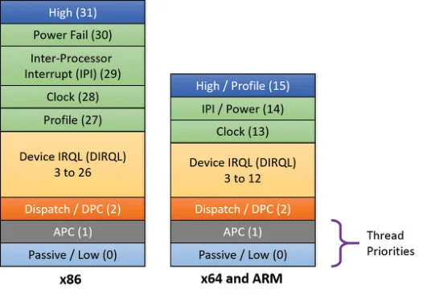<figcaption>図6-4 割り込み要求レベル（IRQL）</figcaption></figure>
<p><strong>注：</strong>IRQL は IRQ（割り込み要求）とは異なります。IRQ は、ここではデバイスと割り込みコントローラーを結ぶハードウェアの割り込み線を指します。割り込み、IRQ、IRQL の詳細は Part 2 の第8章を参照してください。</p>
<p>通常、プロセッサの IRQL は0です。
このレベルでは、第4章「スレッド」で説明したように、カーネルのスケジューラーが優先度などに基づいてスレッドをスケジュールします。
ユーザーモードでは IRQL は常に0で、引き上げる手段はありません。そのため、ユーザーモード向けのドキュメントでは IRQL を扱いません。</p>
<p>カーネルモードのコードは、<code>KeRaiseIrql</code> と <code>KeLowerIrql</code> で現在の CPU の IRQL を上げ下げできます。
ただし、通常は呼び出されるルーチンの側で、特定の IRQL まで引き上げられていることを前提とします。後述のドライバーによる I/O 処理でその例を示します。</p>
<p>I/O 処理で特に関係する IRQL は次のとおりです。</p>
<ul><li><strong>パッシブレベル（0）</strong>：WDK のヘッダー <code>wdm.h</code> で <code>PASSIVE_LEVEL</code> と定義されています。通常使われる IRQL で、カーネルのスケジューラーは第4章で述べたとおりに動作します。</li></ul></section><section class="page" id="page-507" aria-label="page-507"><ul>
<li><strong>ディスパッチ／DPC レベル（2、<code>DISPATCH_LEVEL</code>）</strong>：カーネルのスケジューラーが処理を行うレベルです。スレッドが現在の IRQL を2以上に上げると、クォンタムが事実上無制限になり、ほかのスレッドには横取りされません。IRQL が2未満に戻るまで、この CPU でスケジューラーが別のスレッドに切り替えられないためです。この制約から、次のことが言えます。
<ul>
<li>IRQL が2以上のときに、ミューテックス、セマフォ、イベントなどのカーネルディスパッチャーオブジェクトを待つと、システムはバグチェックで停止します。スレッドが待機状態になれば、同じ CPU で別のスレッドを動かす必要がありますが、このレベルでは切り替えができません。ただし、タイムアウトに0を指定して待機せず、シグナル状態だけを調べる場合は例外です。</li>
<li>ページフォールトは処理できません。I/O を待つためにコンテキストスイッチが必要な場合でも切り替えられず、フォールトが起きるとシステムは停止します。したがって IRQL が2以上で動くコードは、ページアウトできないメモリだけを参照できます。通常は、物理メモリに常駐する非ページプールから領域を割り当てます。</li>
</ul></li>
<li><strong>デバイス IRQL（DIRQL）</strong>：ハードウェア割り込みに割り当てられるレベルで、x86 では3～26、x64 と ARM では3～12です。割り込みが到着すると、カーネルのトラップディスパッチャーは、CPU の IRQL を割り込みに対応するレベルへ上げてから、対応する割り込みサービスルーチン（ISR）を呼びます。DIRQL は <code>DISPATCH_LEVEL</code> より高いため、IRQL 2 の制約がここでも当てはまります。</li>
</ul>
<p>ある IRQL で実行中は、そのレベル以下の割り込みがマスクされます。
たとえば ISR が IRQL 8 で実行されている CPU では、IRQL 7 以下の処理は割り込めません。
ユーザーモードのコードは IRQL 0 でしか実行されないので、この間は動けません。
高い IRQL で長く実行するのは一般に望ましくありませんが、システムが正常に動くために必要な場面もあります。</p>
<h3 id="遅延プロシージャ呼び出し">遅延プロシージャ呼び出し</h3>
<p><strong>遅延プロシージャ呼び出し</strong>（DPC）は、<code>DPC_LEVEL</code>（IRQL 2）で行う関数呼び出しを表すオブジェクトです。
DIRQL で実行している間、ほかの処理待ちの割り込みがマスクされるので、DPC は主に割り込みの後処理に使います。
典型的な ISR は、デバイスの状態を読み、割り込み信号を止めるよう指示するなど、最低限の処理だけを行い、残りは DPC を要求して低い IRQL に回します。</p>
<p>DPC が「遅延」と呼ばれるのは、要求された時点では IRQL が2より高く、すぐに実行できないからです。
ISR から戻った後、優先して処理すべき割り込みがなければ、CPU の IRQL が2に下がり、キューにある DPC が実行されます。
図6-5は、ある CPU が IRQL 0 で通常のコードを実行中に、任意の時点で発生し得るハードウェア割り込みを受けた場合の流れを示します。</p></section><section class="page" id="page-508" aria-label="page-508"><figure>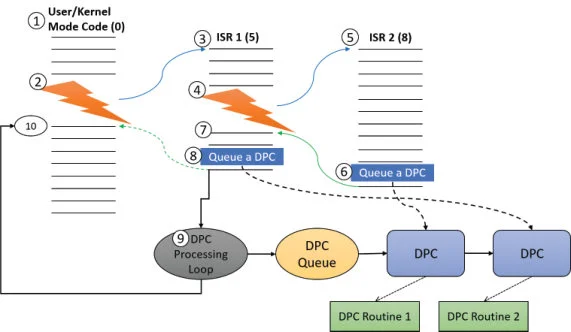<figcaption>図6-5 割り込みと DPC の処理例</figcaption></figure>
<p>図6-5では、次の順に処理が進みます。</p>
<ol>
<li>CPU は通常どおり IRQL 0 で、ユーザーモードまたはカーネルモードのコードを実行しています。</li>
<li>IRQL 5 のハードウェア割り込みが到着します。デバイス IRQL の最小値は3です。5は現在の IRQL である0より高いため、CPU の状態を保存し、IRQL を5に上げて、対応する ISR を呼び出します。スレッドのコンテキストスイッチは起きず、同じスレッドが ISR のコードを実行します。ユーザーモードで動いていた場合は、割り込みの到着時にカーネルモードへ移ります。</li>
<li>ISR 1 が IRQL 5 で実行を始めます。この時点では、IRQL 5 以下の割り込みは ISR 1 に割り込めません。</li>
<li>別の割り込みが IRQL 8 で到着し、システムが同じ CPU で処理するとします。8は5より高いため、実行中の処理を中断し、CPU の状態を保存して、IRQL を8に上げます。CPU は ISR 2 に制御を移します。IRQL が2以上ではスケジューラーが別のスレッドに切り替えられないため、この ISR も同じスレッドで動きます。</li>
<li>ISR 2 は、IRQL 8 未満の割り込みにも処理の機会を与えるため、割り込みを処理した後に残る作業を、より低い IRQL で行うことにします。</li>
<li>ISR 2 は終了前に、ドライバーの後処理ルーチンを指すよう初期化した DPC を、<code>KeInsertQueueDpc</code> でキューに追加します。この後処理の典型例は次節で説明します。その後 ISR 2 から戻り、ISR 2 に入る前に保存した CPU の状態を復元します。</li>
<li>IRQL が直前の値である5に下がり、CPU は中断されていた ISR 1 の実行を再開します。</li>
</ol></section><section class="page" id="page-509" aria-label="page-509"><ol start="8">
<li>ISR 1 も終了直前に、自身の後処理を行う DPC をキューに追加します。この時点では、まだ DPC キューは処理されていません。ISR 1 から戻り、その実行前に保存した CPU の状態を復元します。</li>
<li>通常なら、割り込み処理を始める前の IRQL 0 に戻ります。しかし、待機中の DPC があるため、カーネルは IRQL を2（<code>DPC_LEVEL</code>）まで下げ、キューにたまった DPC のルーチンを順に呼び出します。キューが空になると、DPC の処理は終了します。</li>
<li>最後に IRQL を0に戻し、CPU の状態を復元して、最初に中断されたユーザーモードまたはカーネルモードのコードの実行を再開します。ここまでの処理はすべて、割り込みが到着した時点で実行中だったスレッドのコンテキストで進みます。したがって、ISR や DPC のルーチンは、特定のスレッドやプロセスのコンテキストで動くことを前提にしてはいけません。この制約がドライバーにとって何を意味するかは、次節で説明します。</li>
</ol>
<p>ここでは、DPC の重要度や、別の CPU を使って DPC を早く処理する仕組みなどを省略しました。
詳しくは Part 2 の第8章を参照してください。</p>
<h3 id="デバイスドライバー">デバイスドライバー</h3>
<p>デバイスドライバーが I/O マネージャーなどと連携するには、管理するデバイスの種類と、管理の中で担う役割に応じた実装上の規則に従う必要があります。
以下では Windows がサポートするドライバーの種類と、内部構造を説明します。</p>
<p><strong>注：</strong>カーネルモードのデバイスドライバーの大半は C で書かれています。Windows Driver Kit 8.0 以降は、コンパイラーがカーネルモードの C++ を明示的にサポートするため、C++ でも安全に書けます。アセンブリ言語は、実装が複雑になり、Windows がサポートする x86、x64、ARM の間で移植しにくくなるため、推奨されません。</p>
<h3 id="デバイスドライバーの種類">デバイスドライバーの種類</h3>
<p>Windows はさまざまな種類のデバイスドライバーと開発環境に対応しています。
同じ種類のドライバーでも、対象デバイスによって使う開発環境が異なる場合があります。
最も大きな区分は、ユーザーモードで動くか、カーネルモードで動くかです。
Windows がサポートするユーザーモードのドライバーには、次の種類があります。</p></section><section class="page" id="page-510" aria-label="page-510"><ul>
<li><strong>Windows サブシステムのプリンタードライバー</strong>：デバイスに依存しないグラフィックス要求を、プリンター固有の命令に変換します。通常、変換した命令は USB プリンターポートドライバー（<code>Usbprint.sys</code>）など、カーネルモードのポートドライバーへ転送します。</li>
<li><strong>User-Mode Driver Framework（UMDF）ドライバー</strong>：ユーザーモードで動くハードウェアデバイス用ドライバーです。高度なローカルプロシージャ呼び出し（ALPC）を介して、カーネルモードの UMDF サポートライブラリと通信します。詳細は後述の「User-Mode Driver Framework」を参照してください。</li>
</ul>
<p>この章では、主にカーネルモードのデバイスドライバーを扱います。
基本的な分類は次のとおりです。</p>
<ul>
<li><strong>ファイルシステムドライバー</strong>：ファイルに対する I/O 要求を受け付け、その要求を処理するため、より具体的な I/O 要求を大容量記憶装置やネットワークデバイスのドライバーに発行します。</li>
<li><strong>プラグアンドプレイドライバー</strong>：ハードウェアを扱い、Windows の電源マネージャーと PnP マネージャーに連携します。大容量記憶装置、映像アダプター、入力デバイス、ネットワークアダプターのドライバーが含まれます。</li>
<li><strong>プラグアンドプレイ非対応のドライバー</strong>：システムの機能を拡張するカーネル拡張などが含まれます。通常は実際のハードウェアを管理しないため、PnP マネージャーや電源マネージャーとは連携しません。ネットワーク API やプロトコルを実装するドライバー、Sysinternals の Process Monitor が使うドライバーなどが該当します。</li>
</ul>
<p>カーネルモードのドライバーは、準拠するドライバーモデルと、デバイスへの要求の処理で担う役割によって、さらに分類できます。</p>
<h4 id="WDM-ドライバー">WDM ドライバー</h4>
<p><strong>WDM ドライバー</strong>は Windows Driver Model（WDM）に従うデバイスドライバーです。
WDM は Windows の電源管理、プラグアンドプレイ、WMI に対応しており、プラグアンドプレイドライバーの大半は WDM に従います。
WDM ドライバーには三つの種類があります。</p>
<ul>
<li><strong>バスドライバー</strong>：論理バスまたは物理バスを管理します。バスの例には PCMCIA、PCI、USB、IEEE 1394 があります。バスドライバーは、管理するバスに接続されたデバイスを検出して PnP マネージャーに知らせ、バスの電源設定を管理します。通常は Microsoft が Windows に同梱しています。</li>
<li><strong>機能ドライバー</strong>：特定の種類のデバイスを管理します。バスドライバーは、PnP マネージャーを介して機能ドライバーにデバイスを通知します。機能ドライバーは、OS がデバイスを操作するためのインターフェイスを提供し、通常はそのデバイスの動作を最も詳しく把握しています。</li>
<li><strong>フィルタードライバー</strong>：機能ドライバーの上に重ねる上位フィルター（機能フィルター）と、バスドライバーの上に重ねる下位フィルター（バスフィルター）があります。デバイスや別のドライバーの動作を補うか、変更します。たとえば、キーボード入力を記録するユーティリティは、キーボードの機能ドライバーの上に置くフィルタードライバーで実装できます。</li>
</ul></section><section class="page" id="page-511" aria-label="page-511"><p>図6-6は、バスドライバーが作る物理デバイスオブジェクト（PDO）、下位フィルター、機能ドライバーが作る機能デバイスオブジェクト（FDO）、上位フィルターで構成される<strong>デバイスノード</strong>（devnode）です。
必須の層は PDO と FDO だけで、フィルターはなくても構いません。</p>
<figure><figcaption>図6-6 WDM のデバイスノード（devnode）</figcaption></figure>
<p>WDM では、一つのドライバーが特定のデバイスのすべてを制御するわけではありません。
バスドライバーは、デバイスの接続や取り外しを検出し、PnP マネージャーがバス上のデバイスを列挙できるようにします。
バス固有の構成レジスタへのアクセスや、必要に応じて、バス上のデバイスの電源制御も行います。
通常、デバイスのハードウェアそのものにアクセスするのは機能ドライバーだけです。
デバイスがどのように検出、登録されるかは、後述の「プラグアンドプレイマネージャー」で説明します。</p>
<h4 id="ドライバーの階層構成">ドライバーの階層構成</h4>
<p>一つのハードウェアを動かすために必要な機能は、しばしば複数のドライバーに分担させます。
WDM のバスドライバー、機能ドライバー、フィルタードライバーのほかに、次の種類のドライバーを組み合わせる場合があります。</p>
<ul>
<li><strong>クラスドライバー</strong>：ディスク、キーボード、CD-ROM など、特定のデバイスクラスの I/O を処理します。ハードウェアインターフェイスが標準化されているため、一つのドライバーでさまざまなメーカーの製品に対応できます。</li>
<li><strong>ミニクラスドライバー</strong>：あるデバイスクラスについて、ベンダー固有の I/O 処理を実装します。たとえば、Microsoft は標準のバッテリークラスドライバーを提供していますが、無停電電源装置（UPS）やノート PC のバッテリーは、メーカーごとにインターフェイスが大きく異なるので、ベンダーのミニクラスドライバーが必要です。実体はカーネルモードの DLL で、IRP を直接処理しません。クラスドライバーがその関数を呼び出し、ミニクラスドライバーはクラスドライバーの関数をインポートします。</li>
<li><strong>ポートドライバー</strong>：SATA など、特定の種類の I/O ポートに固有の要求処理を実装します。独立したデバイスドライバーではなく、カーネルモードで動く関数のライブラリとして実装されます。通常はインターフェイスが標準化されており、メーカーが違っても同じポートドライバーを使えるため、ほとんどの場合は Microsoft が提供します。</li>
</ul></section><section class="page" id="page-512" aria-label="page-512"><p>特殊なハードウェアでは、サードパーティーが独自のポートドライバーを作る場合もあります。
ポートが物理ポートではなく論理ポートを指す場合もあります。たとえば Network Driver Interface Specification（NDIS）は、ネットワーク用の「ポート」ドライバーです。</p>
<ul><li><strong>ミニポートドライバー</strong>：ある種類のポート向けの汎用 I/O 要求を、特定のネットワークアダプターなど、個々のアダプターに対応する処理へ変換します。ミニポートドライバーはポートドライバーの関数をインポートするデバイスドライバーで、サードパーティーが実装し、ポートドライバーから呼び出せるインターフェイスを提供します。ミニクラスドライバーと同様、カーネルモードの DLL であり、IRP は直接処理しません。</li></ul>
<p>図6-7は、ドライバーの階層構成を単純な書き込み要求で示したものです。
ファイルシステムドライバーは、特定のファイル内の指定位置へデータを書き込む要求を受け取ります。
これを、ディスク上の指定した論理位置に、指定されたバイト数を書き込む要求に変換し、I/O マネージャーを介してディスクドライバーに渡します。
ディスクドライバーは論理位置をディスク上の物理位置に変換し、ディスクにデータを書き込ませます。</p>
<figure><figcaption>図6-7 ファイルシステムドライバーとディスクドライバーの階層</figcaption></figure>
<p>この例で I/O マネージャーが最初に受け取るのは、ファイルの先頭からの相対位置を指定した書き込み要求です。
I/O マネージャーは要求をファイルシステムドライバーに渡します。
ファイルシステムドライバーは、ファイル内の相対位置をディスクの書き込み開始位置（セクター境界）と書き込むバイト数に変換し、I/O マネージャーにディスクドライバーへの転送を依頼します。
ディスクドライバーは、要求を物理的なディスク位置に変換して、データを転送します。</p></section><section class="page" id="page-513" aria-label="page-513"><p>デバイスドライバーもファイルシステムドライバーも、OS に対して共通のインターフェイスを提供します。
そのため、既存のドライバーや I/O システムを変更せずに、階層の途中へ別のドライバーを追加できます。
たとえば、ファイルシステムとディスクドライバーの間に論理ボリュームマネージャーのドライバーを置けば、複数のディスクを一つの大きなディスクとして扱えます（図6-8）。
実際のストレージドライバースタックとボリュームマネージャーのドライバーは、Part 2 のストレージ管理の章を参照してください。</p>
<figure>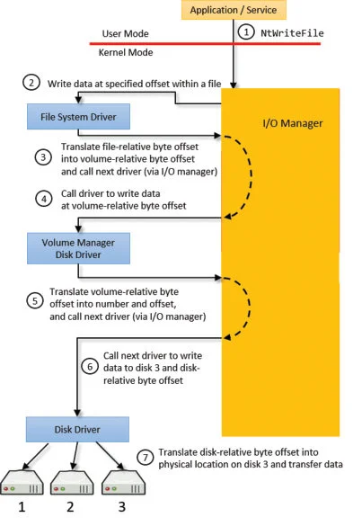<figcaption>図6-8 ドライバーを階層の途中に追加する例</figcaption></figure>
<h4 id="ロード済みドライバーの一覧を調べる">ロード済みドライバーの一覧を調べる</h4>
<p>登録済みドライバーを一覧表示するには、スタートメニューから「ファイル名を指定して実行」を開き、<code>Msinfo32.exe</code> を実行します。
「ソフトウェア環境」の「システム ドライバー」を選ぶと、そのシステムに登録されているドライバーが表示されます。
ロード済みのドライバーは、次の図のように「開始」列が「はい」（Yes）になっています。</p></section><section class="page" id="page-514" aria-label="page-514"><figure><figcaption>システム情報の「システム ドライバー」一覧</figcaption></figure>
<p>この一覧は、レジストリの <code>HKLM\\System\\CurrentControlSet\\Services</code> のサブキーから取得されます。
このキーはドライバーとサービスで共用され、どちらもサービスコントロールマネージャー（SCM）が起動できます。
両者を区別するには、各サブキーの <code>Type</code> の値を調べます。
1、2、4、8 はドライバー、16（<code>0x10</code>）と32（<code>0x20</code>）は Windows サービスを示します。
<code>Services</code> キーの詳細は Part 2 の第9章を参照してください。</p>
<p>ロード済みのカーネルモードドライバーは、Process Explorer でも確認できます。
Process Explorer で System プロセスを選び、「View」メニューの「Lower Pane View」から「DLLs」を選びます。</p>
<figure>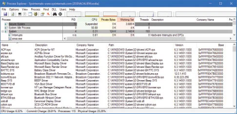<figcaption>Process Explorer で見たロード済みドライバー</figcaption></figure>
<p>Process Explorer は、ロード済みドライバーの名前、会社や説明を含むバージョン情報、ロードアドレスを表示できます。必要に応じて、対応する列を表示するように設定します。</p>
<p>カーネルデバッガーでクラッシュダンプや稼働中のシステムを調べている場合は、<code>lm kv</code> で同様の情報を表示できます。</p>
<pre>kd&gt; lm kv
start    end        module name
80626000 80631000   kdcom      (deferred)
Image path: kdcom.dll</pre></section><section class="page" id="page-515" aria-label="page-515"><pre>Image name: kdcom.dll
Browse all global symbols  functions  data
Timestamp:        Sat Jul 16 04:27:27 2016 (57898D7F)
CheckSum:         0000821A
ImageSize:        0000B000
Translations:     0000.04b0 0000.04e4 0409.04b0 0409.04e4
81009000 81632000   nt         (pdb symbols)          e:\symbols\ntkrpamp.
pdb\A54DF85668E54895982F873F58C984591\ntkrpamp.pdb
Loaded symbol image file: ntkrpamp.exe
Image path: ntkrpamp.exe
Image name: ntkrpamp.exe
Browse all global symbols  functions  data
Timestamp:        Wed Sep 07 07:35:39 2016 (57CF991B)
CheckSum:         005C6B08
ImageSize:        00629000
Translations:     0000.04b0 0000.04e4 0409.04b0 0409.04e4
81632000 81693000   hal        (deferred)
Image path: halmacpi.dll
Image name: halmacpi.dll
Browse all global symbols  functions  data
Timestamp:        Sat Jul 16 04:27:33 2016 (57898D85)
CheckSum:         00061469
ImageSize:        00061000
Translations:     0000.04b0 0000.04e4 0409.04b0 0409.04e4
8a800000 8a84b000   FLTMGR     (deferred)
Image path: \SystemRoot\System32\drivers\FLTMGR.SYS
Image name: FLTMGR.SYS
Browse all global symbols  functions  data
Timestamp:        Sat Jul 16 04:27:37 2016 (57898D89)
CheckSum:         00053B90
ImageSize:        0004B000
Translations:     0000.04b0 0000.04e4 0409.04b0 0409.04e4
...</pre>
<h3 id="ドライバーの構造">ドライバーの構造</h3>
<p>I/O システムは、I/O 要求の処理が進むにつれて、デバイスドライバーの各ルーチンを呼び出します。
図6-9に、ドライバーを構成する主要なルーチンを示します。それぞれの役割はこの後で説明します。</p>
<figure><figcaption>図6-9 デバイスドライバーの主なルーチン</figcaption></figure></section><section class="page" id="page-516" aria-label="page-516"><ul>
<li><strong>初期化ルーチン</strong>：I/O マネージャーは、ドライバーを OS にロードするときに、その初期化ルーチンを実行します。WDK がエントリポイントとして設定する <code>GSDriverEntry</code> は、スタック上のバッファーのオーバーフローを検出するためにコンパイラーが使うセキュリティクッキーを初期化し、ドライバー開発者が実装する <code>DriverEntry</code> を呼びます。<code>DriverEntry</code> はシステムのデータ構造を設定して、ドライバーのほかのルーチンを I/O マネージャーに登録し、必要なドライバー全体の初期化を行います。</li>
<li><strong>デバイス追加ルーチン</strong>：プラグアンドプレイに対応するドライバーが実装します。PnP マネージャーは、そのドライバーが担当するデバイスを検出するたびに、このルーチンを通じて通知します。ドライバーは通常、このルーチンでデバイスを表すデバイスオブジェクトを作ります。デバイスオブジェクトは後述します。</li>
<li><strong>ディスパッチルーチン</strong>：オープン、クローズ、読み取り、書き込み、プラグアンドプレイなどを扱う、デバイスドライバーの主なエントリポイントです。I/O 操作を要求されると、I/O マネージャーは IRP を作り、操作に対応するディスパッチルーチンを呼びます。</li>
<li><strong>I/O 開始ルーチン</strong>：デバイスとのデータ転送を始めるために使えます。要求のキューイングを I/O マネージャーに任せるドライバーだけが定義します。この場合、I/O マネージャーは IRP を一つずつ処理させます。ドライバーは複数の IRP を並行して処理することもできますが、同時に複数の I/O 要求を扱えないデバイスでは、通常、直列化が必要です。</li>
<li><strong>割り込みサービスルーチン</strong>（ISR）：デバイスが割り込みを発生させると、カーネルの割り込みディスパッチャーがこのルーチンに制御を渡します。ISR はデバイス割り込み要求レベル（DIRQL）で動作するので、前節で説明したように、より低い IRQL の割り込みを待たせないよう、処理を最小限にとどめます。通常は残りの処理を DPC としてキューに入れ、より低い IRQL（DPC／ディスパッチレベル）で実行します。ISR を持つのは割り込み駆動のデバイスのドライバーだけで、たとえばファイルシステムドライバーにはありません。</li>
<li><strong>割り込み後処理の DPC ルーチン</strong>：ISR の実行後に、デバイス割り込みへの対応の大部分を引き受けます。実行する IRQL 2 は、高い DIRQL と低いパッシブレベル（0）の中間です。典型的な DPC ルーチンは I/O の完了処理を開始し、キューで次に待っているデバイスの I/O 操作を始めます。</li>
</ul>
<p>図6-9にはありませんが、次のルーチンも多くのドライバーで使われます。</p>
<ul>
<li><strong>I/O 完了ルーチン</strong>：階層化されたドライバーは、一つ以上の完了ルーチンを登録して、下位ドライバーで IRP の処理が終わったことを通知してもらえます。たとえば、デバイスドライバーがファイルとのデータ転送を終えると、I/O マネージャーがファイルシステムドライバーの完了ルーチンを呼びます。完了ルーチンは操作の成功、失敗、キャンセルをドライバーに知らせ、後処理を行えるようにします。</li>
<li><strong>I/O キャンセルルーチン</strong>：ドライバーは、キャンセル可能な I/O 操作のために、一つ以上のキャンセルルーチンを用意できます。キャンセル可能な要求の IRP を受け取ると、その IRP にキャンセルルーチンを割り当てます。</li>
</ul></section><section class="page" id="page-517" aria-label="page-517"><p>IRP の処理段階によって、割り当てるキャンセルルーチンが変わることがあります。現在の操作がキャンセルできなければ、ルーチンの割り当てを解除することもあります。
要求の完了前に発行元のスレッドが終了したり、<code>CancelIo</code> や <code>CancelIoEx</code> などで操作がキャンセルされたりすると、I/O マネージャーは、IRP に割り当てられているキャンセルルーチンを実行します。
このルーチンは、そこまでの IRP の処理で取得したリソースを解放し、キャンセルを示すステータスで IRP を完了させます。</p>
<ul>
<li><strong>高速ディスパッチルーチン</strong>：ファイルシステムドライバーなど、キャッシュマネージャーを使うドライバーは、通常の I/O 処理を経由せずにカーネルからアクセスできるよう、このルーチンを設けるのが一般的です（キャッシュマネージャーについては Part 2 の解説を参照）。たとえば個々の I/O 要求を生成する代わりに、キャッシュ済みのデータを直接読み書きできます。メモリマネージャーやキャッシュマネージャーがファイルシステムドライバーにコールバックする際にも使います。たとえば、メモリマネージャーがセクションを作るときは、ファイルシステムドライバーを呼び出してファイルを排他的に取得します。</li>
<li><strong>アンロードルーチン</strong>：ドライバーが使っているシステムリソースを解放し、I/O マネージャーがドライバーをメモリから取り除けるようにします。初期化ルーチンの <code>DriverEntry</code> で取得したリソースは、通常ここで解放します。ドライバーが対応していれば、システムの稼働中にもロードやアンロードができます。ただし、アンロードルーチンを呼ぶのは、デバイスに対するすべてのファイルハンドルが閉じられた後です。</li>
<li><strong>システムシャットダウン通知ルーチン</strong>：シャットダウン時にドライバーの後処理を行えるようにします。</li>
<li><strong>エラーログ記録ルーチン</strong>：ディスクブロックの故障など予期しないエラーが起きると、その発生を記録して I/O マネージャーに知らせます。I/O マネージャーは受け取った情報をエラーログファイルに書き込みます。</li>
</ul>
<h3 id="ドライバーオブジェクトとデバイスオブジェクト">ドライバーオブジェクトとデバイスオブジェクト</h3>
<p>スレッドがファイルオブジェクトへのハンドルを開くと、I/O マネージャーはファイルオブジェクトの名前から、要求を処理するドライバーを決めます（ファイルオブジェクトは後述の「I/O 処理」を参照）。
同じファイルハンドルが再び使われたときにも、この情報を取得できなければなりません。
そのために次の二つのシステムオブジェクトを使います。</p>
<ul>
<li><strong>ドライバーオブジェクト</strong>：システム内の一つのドライバーを表す <code>DRIVER_OBJECT</code> 構造体です。I/O マネージャーは、このオブジェクトからドライバーの各ディスパッチルーチンのアドレスを取得します。</li>
<li><strong>デバイスオブジェクト</strong>：システム内の物理または論理デバイスを表す <code>DEVICE_OBJECT</code> 構造体です。バッファーに必要なアラインメントや、受信した IRP をためるデバイスキューの位置など、デバイスの特性を記述します。ハンドルが通信する先なので、すべての I/O 操作の対象になります。</li>
</ul>
<p>I/O マネージャーは、ドライバーをロードするときにドライバーオブジェクトを作ります。
次に初期化ルーチンの <code>DriverEntry</code> を呼び、ドライバーに、そのエントリポイントをオブジェクトの属性に設定させます。</p></section><section class="page" id="page-518" aria-label="page-518"><p>ロード後、ドライバーは <code>IoCreateDevice</code> または <code>IoCreateDeviceSecure</code> を呼び、物理デバイスや論理デバイス、あるいはドライバーへの論理インターフェイスや接続先を表すデバイスオブジェクトを作れます。
ただし、プラグアンドプレイドライバーの大半は、担当するデバイスが存在することを PnP マネージャーから通知されたときに、デバイス追加ルーチンでオブジェクトを作ります。
一方、プラグアンドプレイ非対応のドライバーは、通常、I/O マネージャーが初期化ルーチンを呼び出したときに作ります。
最後のデバイスオブジェクトが削除され、ドライバーへの参照がなくなると、I/O マネージャーはそのドライバーをアンロードします。</p>
<p>ドライバーオブジェクトと、それに属するデバイスオブジェクトの関係を図6-10に示します。</p>
<figure><figcaption>図6-10 ドライバーオブジェクトとデバイスオブジェクト</figcaption></figure>
<p>ドライバーオブジェクトの <code>DeviceObject</code> メンバーは、先頭のデバイスオブジェクトを指します。
各 <code>DEVICE_OBJECT</code> の <code>NextDevice</code> メンバーは次のデバイスオブジェクトを指し、末尾では <code>NULL</code> になります。
また、各デバイスオブジェクトの <code>DriverObject</code> メンバーは、そのドライバーオブジェクトを指します。
図の矢印で示す関係は、<code>IoCreateDevice</code> または <code>IoCreateDeviceSecure</code> が設定します。
<code>DeviceExtension</code> ポインターは、ドライバーが管理する各デバイスオブジェクトに付随する、追加のメモリ領域を指します。</p>
<p><strong>注：</strong>ドライバーオブジェクトがドライバーの動作を表すのに対し、個々のデバイスオブジェクトは通信の接続先を表します。
たとえばシリアルポートが四つあるシステムでは、ドライバーのバイナリとドライバーオブジェクトは一つですが、各ポートを表すデバイスオブジェクトは四つあります。
一つのポートだけを開いても、ほかのポートには影響しません。
ハードウェアデバイスの場合は、I/O ポート、メモリマップト I/O、割り込み線などのハードウェアリソースもデバイスごとに異なります。
このように、Windows ではドライバー単位ではなく、デバイス単位で操作します。</p>
<p>ドライバーはデバイスオブジェクトを作る際に、必要なら名前を付けられます。
名前を付けると、そのオブジェクトがオブジェクトマネージャーの名前空間に登録されます。
ドライバーが明示的に指定することも、I/O マネージャーに自動生成させることもできます。
慣例としてデバイスオブジェクトは名前空間の <code>\\Device</code> ディレクトリに置きますが、Windows API を使うアプリケーションはそこへ直接アクセスできません。</p></section><section class="page" id="page-519" aria-label="page-519"><p><strong>注：</strong><code>\\Device</code> 以外のディレクトリにデバイスオブジェクトを置くドライバーもあります。たとえば IDE ドライバーは、IDE のポートやチャネルを表すオブジェクトを <code>\\Device\\Ide</code> に作ります。ストレージの構成と、ストレージドライバーによるデバイスオブジェクトの使い方については、Part 2 のストレージ管理の章を参照してください。</p>
<p>アプリケーションからデバイスオブジェクトを開けるようにするには、<code>\\Device</code> 内のデバイス名へのシンボリックリンクを <code>\\GLOBAL??</code> に作ります。
リンクの作成には <code>IoCreateSymbolicLink</code> を使います。
プラグアンドプレイ非対応のドライバーとファイルシステムドライバーは通常、<code>\\Device\\HarddiskVolume2</code> のような既知の名前を使ってリンクを作ります。
ハードウェアが動的に接続、取り外しされる環境では固定の名前の管理が難しいため、PnP ドライバーは <code>IoRegisterDeviceInterface</code> を使い、一つ以上のデバイスインターフェイスを公開します。
その際、公開する機能の種類を表すグローバル一意識別子（GUID）を指定します。
GUID は128ビットの値で、WDK と Windows SDK に含まれる <code>uuidgen</code> や <code>guidgen</code> などで生成できます。
取り得る値の数と生成方法から、生成した GUID が時間や場所を問わず重複する可能性は極めて低くなります。</p>
<p><code>IoRegisterDeviceInterface</code> は、デバイスインスタンスに対応するシンボリックリンクの名前を生成します。
ただし、I/O マネージャーがリンクを実際に作るには、ドライバーが <code>IoSetDeviceInterfaceState</code> を呼び、デバイスインターフェイスを有効にする必要があります。
通常は PnP マネージャーが、デバイスの起動を指示する IRP を送ったときに有効にします。
この IRP のメジャー関数コードは <code>IRP_MJ_PNP</code>、マイナー関数コードは <code>IRP_MN_START_DEVICE</code> です。IRP は後述の「I/O 要求パケット」で説明します。</p>
<p>GUID で表されるインターフェイスを持つデバイスを開くには、アプリケーションから <code>SetupDiEnumDeviceInterfaces</code> など、ユーザーモードのプラグアンドプレイ用セットアップ関数を呼びます。
この関数で指定した GUID のインターフェイスを列挙し、それぞれについて <code>SetupDiGetDeviceInterfaceDetail</code> を呼び、自動生成されたシンボリックリンクの名前などを取得します。
取得した名前を使って <code>CreateFile</code> または <code>CreateFile2</code> を呼ぶと、デバイスを開いてハンドルを取得できます。</p>
<h4 id="デバイスオブジェクトの名前を調べる">デバイスオブジェクトの名前を調べる</h4>
<p>Sysinternals の WinObj やカーネルデバッガーの <code>!object</code> を使うと、オブジェクトマネージャーの名前空間の <code>\\Device</code> にあるデバイス名を確認できます。
次の図は、I/O マネージャーが割り当てたシンボリックリンクが、<code>\\Device</code> 内の自動生成名を持つデバイスオブジェクトを指している例です。</p></section><section class="page" id="page-520" aria-label="page-520"><figure><figcaption>自動生成名を持つデバイスオブジェクトへのリンク</figcaption></figure>
<p>カーネルデバッガーの <code>!object</code> に <code>\\Device</code> ディレクトリを指定すると、次のように表示されます。</p>
<pre>1: kd&gt; !object \device
Object: 8200c530  Type: (8542b188) Directory
ObjectHeader: 8200c518 (new version)
HandleCount: 0  PointerCount: 231
Directory Object: 82007d20  Name: Device
Hash Address  Type                      Name
---- -------  ----                      ----
00  d024a448 Device                    NisDrv
959afc08 Device                    SrvNet
958beef0 Device                    WUDFLpcDevice
854c69b8 Device                    FakeVid1
8befec98 Device                    RdpBus
88f7c338 Device                    Beep
89d64500 Device                    Ndis
8a24e250 SymbolicLink              ScsiPort2
89d6c580 Device                    KsecDD
89c15810 Device                    00000025
89c17408 Device                    00000019
01  854c6898 Device                    FakeVid2
88f98a70 Device                    Netbios
8a48c6a8 Device                    NameResTrk
89c2fe88 Device                    00000026
02  854c6778 Device                    FakeVid3
8548fee0 Device                    00000034
8a214b78 SymbolicLink              Ip
89c31038 Device                    00000027
03  9c205c40 Device                    00000041
854c6658 Device                    FakeVid4
854dd9d8 Device                    00000035
8d143488 Device                    Video0
8a541030 Device                    KeyboardClass0
89c323c8 Device                    00000028</pre></section><section class="page" id="page-521" aria-label="page-521"><pre>8554fb50 Device                    KMDF0
04  958bb040 Device                    ProcessManagement
97ad9fe0 SymbolicLink              MailslotRedirector
854f0090 Device                    00000036
854c6538 Device                    FakeVid5
8bf14e98 Device                    Video1
8bf2fe20 Device                    KeyboardClass1
89c332a0 Device                    00000029
89c05030 Device                    VolMgrControl
89c3a1a8 Device                    VMBus
...</pre>
<p><code>!object</code> にオブジェクトマネージャーのディレクトリオブジェクトを指定すると、カーネルデバッガーは、オブジェクトマネージャーの内部構造に沿って内容を表示します。
ディレクトリはすばやく検索できるよう、オブジェクト名をハッシュ化してハッシュテーブルに格納します。
出力は、テーブルの各バケットに入っているオブジェクトを示しています。</p>
<p>図6-10のとおり、デバイスオブジェクトは自身を管理するドライバーオブジェクトを指します。
I/O マネージャーは、I/O 要求を受け取るとデバイスオブジェクトからドライバーオブジェクトを見つけます。
次に、元の要求の関数コードをインデックスとして使い、ドライバーオブジェクト内の該当するエントリポイントを選びます。
これがディスパッチルーチンです。</p>
<p>一つのドライバーオブジェクトに複数のデバイスオブジェクトが関連付けられることは珍しくありません。
ドライバーをアンロードするとき、I/O マネージャーはデバイスオブジェクトのリストをたどり、どのデバイスが影響を受けるか調べます。</p>
<h4 id="ドライバーオブジェクトとデバイスオブジェクトを表示する">ドライバーオブジェクトとデバイスオブジェクトを表示する</h4>
<p>カーネルデバッガーの <code>!drvobj</code> はドライバーオブジェクトを、<code>!devobj</code> はデバイスオブジェクトを表示します。
次の例では、キーボードのクラスドライバーのドライバーオブジェクトを調べ、関連するデバイスオブジェクトを一つ表示します。</p>
<pre>1: kd&gt; !drvobj kbdclass
Driver object (8a557520) is for:
\Driver\kbdclass
Driver Extension List: (id , addr)
Device Object list:
9f509648  8bf2fe20  8a541030
1: kd&gt; !devobj 9f509648
Device object (9f509648) is for:
KeyboardClass2 \Driver\kbdclass DriverObject 8a557520
Current Irp 00000000 RefCount 0 Type 0000000b Flags 00002044
Dacl 82090960 DevExt 9f509700 DevObjExt 9f5097f0
ExtensionFlags (0x00000c00)  DOE_SESSION_DEVICE, DOE_DEFAULT_SD_PRESENT</pre></section><section class="page" id="page-522" aria-label="page-522"><pre>Characteristics (0x00000100)  FILE_DEVICE_SECURE_OPEN
AttachedTo (Lower) 9f509848 \Driver\terminpt
Device queue is not busy.</pre>
<p><code>!devobj</code> の「AttachedTo」行には、表示対象の下にあるデバイスオブジェクトのアドレスと名前も表示されます。
反対に、対象の上にあるデバイスオブジェクトは「AttachedDevice」行に表示できますが、この例にはありません。</p>
<p><code>!drvobj</code> には、表示する情報を増やすためのオプション引数を指定できます。
次は最も詳しい情報を表示する例です。</p>
<pre>1: kd&gt; !drvobj kbdclass 7
Driver object (8a557520) is for:
\Driver\kbdclass
Driver Extension List: (id , addr)
Device Object list:
9f509648  8bf2fe20  8a541030
DriverEntry:   8c30a010     kbdclass!GsDriverEntry
DriverStartIo: 00000000
DriverUnload:  00000000
AddDevice:     8c307250     kbdclass!KeyboardAddDevice
Dispatch routines:
[00] IRP_MJ_CREATE                      8c301d80        kbdclass!KeyboardClassCreate
[01] IRP_MJ_CREATE_NAMED_PIPE           81142342        nt!IopInvalidDeviceRequest
[02] IRP_MJ_CLOSE                       8c301c90        kbdclass!KeyboardClassClose
[03] IRP_MJ_READ                        8c302150        kbdclass!KeyboardClassRead
[04] IRP_MJ_WRITE                       81142342        nt!IopInvalidDeviceRequest
[05] IRP_MJ_QUERY_INFORMATION           81142342        nt!IopInvalidDeviceRequest
[06] IRP_MJ_SET_INFORMATION             81142342        nt!IopInvalidDeviceRequest
[07] IRP_MJ_QUERY_EA                    81142342        nt!IopInvalidDeviceRequest
[08] IRP_MJ_SET_EA                      81142342        nt!IopInvalidDeviceRequest
[09] IRP_MJ_FLUSH_BUFFERS               8c303678        kbdclass!KeyboardClassFlush
[0a] IRP_MJ_QUERY_VOLUME_INFORMATION    81142342        nt!IopInvalidDeviceRequest
[0b] IRP_MJ_SET_VOLUME_INFORMATION      81142342        nt!IopInvalidDeviceRequest
[0c] IRP_MJ_DIRECTORY_CONTROL           81142342        nt!IopInvalidDeviceRequest
[0d] IRP_MJ_FILE_SYSTEM_CONTROL         81142342        nt!IopInvalidDeviceRequest
[0e] IRP_MJ_DEVICE_CONTROL              8c3076d0        kbdclass!KeyboardClassDevice
Control
[0f] IRP_MJ_INTERNAL_DEVICE_CONTROL     8c307ff0        kbdclass!KeyboardClassPass
Through
[10] IRP_MJ_SHUTDOWN                    81142342        nt!IopInvalidDeviceRequest
[11] IRP_MJ_LOCK_CONTROL                81142342        nt!IopInvalidDeviceRequest
[12] IRP_MJ_CLEANUP                     8c302260         kbdclass!KeyboardClassCleanup
[13] IRP_MJ_CREATE_MAILSLOT             81142342        nt!IopInvalidDeviceRequest
[14] IRP_MJ_QUERY_SECURITY              81142342        nt!IopInvalidDeviceRequest
[15] IRP_MJ_SET_SECURITY                81142342        nt!IopInvalidDeviceRequest
[16] IRP_MJ_POWER                       8c301440        kbdclass!KeyboardClassPower
[17] IRP_MJ_SYSTEM_CONTROL              8c307f40        kbdclass!KeyboardClassSystem
Control</pre></section><section class="page" id="page-523" aria-label="page-523"><pre>[18] IRP_MJ_DEVICE_CHANGE               81142342        nt!IopInvalidDeviceRequest
[19] IRP_MJ_QUERY_QUOTA                 81142342        nt!IopInvalidDeviceRequest
[1a] IRP_MJ_SET_QUOTA                   81142342        nt!IopInvalidDeviceRequest
[1b] IRP_MJ_PNP                         8c301870        kbdclass!KeyboardPnP</pre>
<p>出力にはディスパッチルーチンの配列が表示されています。配列は次節で説明します。
ドライバーがサポートしない操作のエントリは、I/O マネージャーの <code>IopInvalidDeviceRequest</code> ルーチンを指します。</p>
<p><code>!drvobj</code> に指定するアドレスは <code>DRIVER_OBJECT</code> 構造体のものです。<code>!devobj</code> に指定するのは <code>DEVICE_OBJECT</code> 構造体のアドレスです。
デバッガーを使って、これらの構造体を直接表示することもできます。</p>
<pre>1: kd&gt; dt nt!_driver_object 8a557520
+0x000 Type             : 0n4
+0x002 Size             : 0n168
+0x004 DeviceObject     : 0x9f509648 _DEVICE_OBJECT
+0x008 Flags            : 0x412
+0x00c DriverStart      : 0x8c300000 Void
+0x010 DriverSize       : 0xe000
+0x014 DriverSection    : 0x8a556ba8 Void
+0x018 DriverExtension  : 0x8a5575c8 _DRIVER_EXTENSION
+0x01c DriverName       : _UNICODE_STRING &quot;\Driver\kbdclass&quot;
+0x024 HardwareDatabase : 0x815c2c28 _UNICODE_STRING &quot;\REGISTRY\MACHINE\HARDWARE\
DESCRIPTION\SYSTEM&quot;
+0x028 FastIoDispatch   : (null)
+0x02c DriverInit       : 0x8c30a010     long  +ffffffff8c30a010
+0x030 DriverStartIo    : (null)
+0x034 DriverUnload     : (null)
+0x038 MajorFunction    : [28] 0x8c301d80     long  +ffffffff8c301d80
1: kd&gt; dt nt!_device_object 9f509648
+0x000 Type             : 0n3
+0x002 Size             : 0x1a8
+0x004 ReferenceCount   : 0n0
+0x008 DriverObject     : 0x8a557520 _DRIVER_OBJECT
+0x00c NextDevice       : 0x8bf2fe20 _DEVICE_OBJECT
+0x010 AttachedDevice   : (null)
+0x014 CurrentIrp       : (null)
+0x018 Timer            : (null)
+0x01c Flags            : 0x2044
+0x020 Characteristics  : 0x100
+0x024 Vpb              : (null)
+0x028 DeviceExtension  : 0x9f509700 Void
+0x02c DeviceType       : 0xb
+0x030 StackSize        : 7 &#x27;&#x27;
+0x034 Queue            : &lt;unnamed-tag&gt;
+0x05c AlignmentRequirement : 0
+0x060 DeviceQueue      : _KDEVICE_QUEUE
+0x074 Dpc              : _KDPC
+0x094 ActiveThreadCount : 0
+0x098 SecurityDescriptor : 0x82090930 Void
...</pre>
<p>これらの構造体に含まれる主なフィールドは、次節で説明します。</p></section><section class="page" id="page-524" aria-label="page-524"><p>ドライバーの情報をオブジェクトに保持するため、I/O マネージャーは個々のドライバーの実装を知る必要がありません。
ポインターをたどるだけでドライバーを見つけられるため、実装の違いを吸収し、新しいドライバーも容易にロードできます。</p>
<h3 id="デバイスを開く">デバイスを開く</h3>
<p><strong>ファイルオブジェクト</strong>は、デバイスへのハンドルに対応するカーネルモードのデータ構造です。
二つ以上のユーザーモードプロセスで共有でき、名前を付けられ、オブジェクト単位でアクセスを制御でき、同期にも使えます。
I/O システムでも、Windows エグゼクティブのほかのコンポーネントと同じように、共有リソースをオブジェクトとして扱います（オブジェクト管理は Part 2 の第8章を参照）。</p>
<p>ファイルオブジェクトは、I/O インターフェイスを通じて読み書きできるリソースをメモリ上に表現したものです。
主な属性を表6-1に示します。フィールドの宣言とサイズは、<code>wdm.h</code> の <code>FILE_OBJECT</code> 構造体の定義を参照してください。</p>
<div class="table-scroll" role="region" tabindex="0" aria-label="表。横にスクロールできます"><table><caption>表6-1 ファイルオブジェクトの属性</caption><thead><tr><th>属性</th><th>意味</th></tr></thead><tbody>
<tr><th>ファイル名</th><td>ファイルオブジェクトが参照する仮想ファイルの名前です。<code>CreateFile</code> または <code>CreateFile2</code> に渡された値です。</td></tr>
<tr><th>現在のバイトオフセット</th><td>ファイル内の現在位置です。同期 I/O でのみ有効です。</td></tr>
<tr><th>共有モード</th><td>現在の呼び出し元がファイルを使っている間に、ほかの呼び出し元が読み取り、書き込み、削除のためにファイルを開けるかを示します。</td></tr>
<tr><th>オープンモードのフラグ</th><td>同期か非同期か、キャッシュを使うか、順次アクセスかランダムアクセスかなどを示します。</td></tr>
<tr><th>デバイスオブジェクトへのポインター</th><td>ファイルがあるデバイスの種類を示します。</td></tr>
<tr><th>ボリュームパラメーターブロック（VPB）へのポインター</th><td>ファイルシステム上のファイルがあるボリューム、またはパーティションを示します。</td></tr>
<tr><th>セクションオブジェクトポインターへのポインター</th><td>マップまたはキャッシュされたファイルを記述する起点の構造体を指します。この構造体には、キャッシュマネージャーがファイルのどの部分をマップし、キャッシュ内のどこに置いたかを示す共有キャッシュマップも含まれます。</td></tr>
<tr><th>プライベートキャッシュマップへのポインター</th><td>このハンドルの読み取りパターンやプロセスのページ優先度など、ハンドルごとのキャッシュ情報を保持します。ページ優先度については第5章「メモリ管理」を参照してください。</td></tr>
<tr><th>I/O 要求パケット（IRP）のリスト</th><td>スレッドに依存しない I/O を使い、ファイルオブジェクトが完了ポートに関連付けられている場合、そのオブジェクトに関連するすべての I/O 操作のリストです。どちらも後述します。</td></tr>
<tr><th>I/O 完了コンテキスト</th><td>現在有効な I/O 完了ポートがあれば、そのコンテキスト情報です。</td></tr>
<tr><th>ファイルオブジェクト拡張</th><td>ファイルの I/O 優先度（後述）と、共有アクセスのチェックを行うかどうかを記録します。状況に応じた情報を保持する任意の拡張も含まれます。</td></tr>
</tbody></table></div>
<p>ファイルオブジェクトを使うドライバーから内部の詳細を隠し、構造体を大きくせずに機能を追加できるよう、ファイルオブジェクトには拡張フィールドもあります。
このフィールドを使うと、表6-2に示す最大6種類の属性を追加できます。</p></section><section class="page" id="page-525" aria-label="page-525"><div class="table-scroll" role="region" tabindex="0" aria-label="表。横にスクロールできます"><table><caption>表6-2 ファイルオブジェクトの拡張</caption><thead><tr><th>拡張</th><th>用途</th></tr></thead><tbody>
<tr><th>トランザクションパラメーター</th><td>トランザクションの一部として実行するファイル操作の情報が入ったパラメーターブロックを保持します。<code>IoGetTransactionParameterBlock</code> で取得します。</td></tr>
<tr><th>デバイスオブジェクトのヒント</th><td>このファイルを関連付けるフィルタードライバーのデバイスオブジェクトを示します。<code>IoCreateFileEx</code> または <code>IoCreateFileSpecifyDeviceObjectHint</code> で指定します。</td></tr>
<tr><th>I/O ステータスブロックの範囲</th><td>ユーザーモードのバッファーをカーネルモードから使えるようにメモリに固定し、非同期 I/O を効率化します。<code>SetFileIoOverlappedRange</code> で設定します。</td></tr>
<tr><th>汎用</th><td>フィルタードライバー固有の情報と、呼び出し元が追加した拡張作成パラメーター（ECP）を保持します。<code>IoCreateFileEx</code> で設定します。</td></tr>
<tr><th>スケジュールされたファイル I/O</th><td>ファイルの帯域幅予約情報を保持します。ストレージシステムはこの情報を使い、マルチメディアアプリケーションのスループットを最適化して保証します。<code>SetFileBandwidthReservation</code> で設定します。詳しくは後述の「帯域幅予約」を参照してください。</td></tr>
<tr><th>シンボリックリンク</th><td>マウントポイントやディレクトリジャンクションを通過するか、フィルターが明示的にパスを再解析した場合に、ファイルオブジェクトの作成時に追加されます。呼び出し元が指定したパスと途中のジャンクションの情報を保持するため、相対シンボリックリンクに行き当たったときに、ジャンクションを逆にたどれます。NTFS のシンボリックリンク、マウントポイント、ディレクトリジャンクションは Part 2 のファイルシステムの章を参照してください。</td></tr>
</tbody></table></div>
<p>呼び出し元がファイルや単純なデバイスを開くと、I/O マネージャーはファイルオブジェクトへのハンドルを返します。
その前に、対象デバイスを担当するドライバーの作成ディスパッチルーチン（<code>IRP_MJ_CREATE</code>）を呼び、デバイスを開けるか確認します。要求を受け付ける場合は、このときドライバーに必要な初期化も行わせます。</p>
<p><strong>注：</strong>ファイルオブジェクトが表すのは、ファイルそのものではなく、ファイルを開いた一つのインスタンスです。UNIX 系の vnode とは異なり、Windows はファイルそのものの表現を定めず、各ファイルシステムドライバーに任せます。</p>
<p>エグゼクティブオブジェクトと同じように、ファイルはアクセス制御リスト（ACL）を含むセキュリティ記述子で保護されます。
I/O マネージャーはセキュリティサブシステムに問い合わせ、スレッドが要求したアクセス方法をファイルの ACL がそのプロセスに許しているか確認します。
許可されていれば、オブジェクトマネージャーがアクセスを認め、認めた権限を返すファイルハンドルに関連付けます。
同じプロセスのスレッドが元の要求に含まれない操作を必要とする場合は、必要な権限を指定してファイルをもう一度開くか、その権限でハンドルを複製して別のハンドルを取得します。このときアクセス権も改めて確認します（オブジェクトの保護は第7章を参照）。</p>
<h4 id="デバイスのハンドルを調べる">デバイスのハンドルを調べる</h4>
<p>デバイスを開いているプロセスのハンドルテーブルには、そのオープンインスタンスに対応するファイルオブジェクトがあります。
Process Explorer で対象プロセスを選び、「View」メニューの「Lower Pane View」から「Handles」を選ぶと、このハンドルを確認できます。
「Type」列で並べ替え、「File」と表示されるファイルオブジェクトのハンドルまでスクロールします。</p></section><section class="page" id="page-526" aria-label="page-526"><figure><figcaption>デバイスを開いたファイルハンドル</figcaption></figure>
<p>この例では、Desktop Window Manager（<code>dwm.exe</code>）が、カーネルのセキュリティデバイスドライバー（<code>Ksecdd.sys</code>）が作ったデバイスを開いています。
カーネルデバッガーでファイルオブジェクトを調べるには、まずそのアドレスを特定します。
次のコマンドは、図で選択したハンドル（値は <code>0xD4</code>）の情報を表示します。<code>Dwm.exe</code> のプロセス ID は10進数の452です。</p>
<pre>lkd&gt; !handle 348 f 0n452
PROCESS ffffc404b62fb780
SessionId: 1  Cid: 01c4    Peb: b4c3db0000  ParentCid: 0364
DirBase: 7e607000  ObjectTable: ffffe688fd1c38c0  HandleCount: &lt;Data Not Accessible&gt;
Image: dwm.exe
Handle Error reading handle count.
0348: Object: ffffc404b6406ef0  GrantedAccess: 00100003 (Audit) Entry: ffffe688fd396d20
Object: ffffc404b6406ef0  Type: (ffffc404b189bf20) File
ObjectHeader: ffffc404b6406ec0 (new version)
HandleCount: 1  PointerCount: 32767</pre>
<p>ファイルオブジェクトなので、<code>!fileobj</code> で詳細を確認できます。オブジェクトのアドレスは Process Explorer の表示と同じです。</p>
<pre>lkd&gt; !fileobj ffffc404b6406ef0
Device Object: 0xffffc404b2fa7230   \Driver\KSecDD
Vpb is NULL
Event signalled
Flags:  0x40002
Synchronous IO
Handle Created
CurrentByteOffset: 0</pre></section><section class="page" id="page-527" aria-label="page-527"><p>ファイルオブジェクトは共有リソースをメモリ上に表現したもので、そのリソース自体ではない点で、ほかのエグゼクティブオブジェクトと異なります。
ファイルオブジェクトが持つのはハンドル固有の情報で、共有するデータやテキストはファイルそのものにあります。
スレッドがファイルを開くたびに、新しいファイルオブジェクトと、そのハンドル固有の属性が作られます。
たとえば同期 I/O 用に開いたファイルでは、現在のバイトオフセットが、そのハンドルを使った次の読み取りまたは書き込みの位置を示します。
基になるファイルは共有していても、個別に開いたハンドルは別々のオフセットを持ちます。</p>
<p>通常、ファイルオブジェクトは一つのプロセスから参照されます。
例外は、<code>DuplicateHandle</code> で別のプロセスにファイルハンドルを複製した場合や、子プロセスが親からファイルハンドルを継承した場合です。
この場合、二つのプロセスは別々のハンドルで同じファイルオブジェクトを参照します。</p>
<p>ファイルハンドルはプロセスごとに管理されますが、基になる物理リソースは共有されます。
そのため、ファイル、ディレクトリ、デバイスなどへのアクセスは、スレッド間で同期する必要があります。
たとえば、書き込み中にほかのスレッドから書き込まれたくなければ、ファイルを開くときに書き込みの共有を許可しません。
一部の範囲だけを排他的に書き込みたい場合は、<code>LockFile</code> でその範囲をロックする方法もあります。</p>
<p>ファイルを開くとき、内部のファイル名には、ファイルがあるデバイスオブジェクトの名前が含まれます。
たとえば <code>\\Device\\HarddiskVolume1\\Myfile.dat</code> は、<code>C:</code> ボリュームにある <code>Myfile.dat</code> を指すことがあります。
先頭の <code>\\Device\\HarddiskVolume1</code> が、そのボリュームを表す Windows 内部のデバイスオブジェクト名です。
<code>Myfile.dat</code> を開くと、I/O マネージャーはファイルオブジェクトを作り、<code>HarddiskVolume1</code> のデバイスオブジェクトへのポインターを格納してから、呼び出し元にファイルハンドルを返します。
以後は、そのハンドルからデバイスオブジェクトを直接見つけられます。</p>
<p>Windows アプリケーションは、内部のデバイス名をそのまま使えません。
代わりに、オブジェクトマネージャーの名前空間の <code>\\GLOBAL??</code> にある、内部名へのシンボリックリンクを使います。
前述のとおり、アプリケーションからデバイスにアクセスできるよう、リンクはデバイスドライバーが作ります。
プログラムからリンクを調べるには <code>QueryDosDevice</code>、変更するには <code>DefineDosDevice</code> を使います。</p>
<h3 id="I-O-処理">I/O 処理</h3>
<p>I/O 要求は、複数の処理段階を経てデバイスに届きます。
段階は、単一のドライバーで処理するか、複数層のドライバーを通るかで異なります。
呼び出し元が同期 I/O と非同期 I/O のどちらを指定したかによっても変わるため、まずこの二つの違いから説明します。</p></section><section class="page" id="page-528" aria-label="page-528"><h3 id="I-O-の種類">I/O の種類</h3>
<p>アプリケーションは I/O 要求を発行する際、処理方法を選べます。
ドライバーも、通常の処理を迂回し、IRP の割り当てを避けられるインターフェイスを実装できます。</p>
<h4 id="同期-I-O-と非同期-I-O">同期 I/O と非同期 I/O</h4>
<p>アプリケーションが発行する I/O 操作の大半は、既定の<strong>同期 I/O</strong>です。
デバイスがデータ転送を処理する間、アプリケーションのスレッドは待機します。
完了時にステータスが返ると、プログラムは処理を続け、転送されたデータをすぐに参照できます。
Windows の <code>ReadFile</code> と <code>WriteFile</code> は、最も単純な呼び方では同期的に動作し、I/O 操作を完了してから制御を返します。</p>
<p><strong>非同期 I/O</strong>では、複数の I/O 要求を発行し、デバイスが処理する間もアプリケーションは動き続けられます。
要求の処理中に、スレッドが別の作業を進められるため、スループットが向上する場合があります。
非同期 I/O を使うには、<code>CreateFile</code> または <code>CreateFile2</code> を呼ぶときに、<code>FILE_FLAG_OVERLAPPED</code> を指定します。</p>
<p>要求を発行したスレッドは、デバイスドライバーがデータ転送を終えるまで、そのデータにアクセスしてはいけません。
イベントオブジェクト、I/O 完了ポート、ファイルオブジェクト自体など、I/O 完了を通知する同期オブジェクトのハンドルを監視し、完了と同期します。</p>
<p>アプリケーションが同期と非同期のどちらを指定しても、アプリケーションに代わってドライバーに発行する I/O は非同期で処理されます。
つまり、I/O 要求を受け取ったドライバーは、できるだけ早く I/O システムに制御を返します。
I/O システムが呼び出し元にすぐ戻るかどうかは、ハンドルを同期用と非同期用のどちらで開いたかで決まります。
図6-3の読み取り処理では、ファイルオブジェクトのオーバーラップフラグに応じて待機する場合、カーネルモードの <code>NtReadFile</code> が待機します。</p>
<p>保留中の非同期 I/O が完了したかは <code>HasOverlappedIoCompleted</code> マクロで調べられます。
詳細は <code>GetOverlappedResult</code> または <code>GetOverlappedResultEx</code> で取得します。
後述の I/O 完了ポートを使う場合は、<code>GetQueuedCompletionStatus</code> または <code>GetQueuedCompletionStatusEx</code> を使えます。</p>
<h4 id="高速-I-O">高速 I/O</h4>
<p><strong>高速 I/O</strong>（Fast I/O）は、IRP を生成せず、ドライバースタックを直接呼び出して I/O 要求を完了する仕組みです。
IRP を使うと処理が遅くなる一部の経路を効率化するために用います。詳細は Part 2 のファイルシステムとキャッシュマネージャーの章を参照してください。
ドライバーは、ドライバーオブジェクトが <code>PFAST_IO_DISPATCH</code> 型のポインターで参照する構造体に、高速 I/O のエントリポイントを登録します。</p></section><section class="page" id="page-529" aria-label="page-529"><h4 id="ドライバーが登録した高速-I-O-ルーチンを調べる">ドライバーが登録した高速 I/O ルーチンを調べる</h4>
<p>カーネルデバッガーの <code>!drvobj</code> で、ドライバーオブジェクトに登録された高速 I/O ルーチンを一覧表示できます。
通常、このルーチンを使うのはファイルシステムドライバーだけですが、ネットワークプロトコルドライバーやバスフィルタードライバーなどの例外もあります。
次の出力は NTFS のファイルシステムドライバーオブジェクトにある高速 I/O テーブルです。</p>
<pre>lkd&gt; !drvobj \filesystem\ntfs 2
Driver object (ffffc404b2fbf810) is for:
\FileSystem\NTFS
DriverEntry:   fffff80e5663a030
                                                                   NTFS!GsDriverEntry
DriverStartIo: 00000000
DriverUnload:  00000000
AddDevice:     00000000
Dispatch routines:
...
Fast I/O routines:
FastIoCheckIfPossible                fffff80e565d6750
NTFS!NtfsFastIoCheckIfPossible
FastIoRead                           fffff80e56526430
                                                                   NTFS!NtfsCopyReadA
FastIoWrite                          fffff80e56523310
                                                                   NTFS!NtfsCopyWriteA
FastIoQueryBasicInfo                 fffff80e56523140
NTFS!NtfsFastQueryBasicInfo
FastIoQueryStandardInfo              fffff80e56534d20
                                                                   NTFS!NtfsFastQueryStdInfo
FastIoLock                           fffff80e5651e610
                                                                   NTFS!NtfsFastLock
FastIoUnlockSingle                   fffff80e5651e3c0
                                                                   NTFS!NtfsFastUnlockSingle
FastIoUnlockAll                      fffff80e565d59e0
                                                                   NTFS!NtfsFastUnlockAll
FastIoUnlockAllByKey                 fffff80e565d5c50
NTFS!NtfsFastUnlockAllByKey
ReleaseFileForNtCreateSection        fffff80e5644fd90
                                                                   NTFS!NtfsReleaseForCreate
Section
FastIoQueryNetworkOpenInfo           fffff80e56537750
                                                                   NTFS!NtfsFastQueryNetwork
OpenInfo
AcquireForModWrite                   fffff80e5643e0c0
NTFS!NtfsAcquireFileForModWrite
MdlRead                              fffff80e5651e950
                                                                   NTFS!NtfsMdlReadA
MdlReadComplete                      fffff802dc6cd844
nt!FsRtlMdlReadCompleteDev
PrepareMdlWrite                      fffff80e56541a10
                                                                   NTFS!NtfsPrepareMdlWriteA
MdlWriteComplete                     fffff802dcb76e48
nt!FsRtlMdlWriteCompleteDev
FastIoQueryOpen                      fffff80e5653a520
NTFS!NtfsNetworkOpenCreate
ReleaseForModWrite                   fffff80e5643e2c0
NTFS!NtfsReleaseFileForModWrite
AcquireForCcFlush                    fffff80e5644ca60
NTFS!NtfsAcquireFileForCcFlush
ReleaseForCcFlush                    fffff80e56450cf0
NTFS!NtfsReleaseFileForCcFlush</pre></section><section class="page" id="page-530" aria-label="page-530"><p>出力を見ると、NTFS は <code>NtfsCopyReadA</code> を、高速 I/O テーブルの <code>FastIoRead</code> エントリに登録しています。
I/O マネージャーは、キャッシュされたファイルへの読み取り要求でこの関数を呼びます。
呼び出しが成功しなければ、通常どおり IRP を使って処理します。</p>
<h4 id="マップトファイル-I-O-とファイルキャッシュ">マップトファイル I/O とファイルキャッシュ</h4>
<p><strong>マップトファイル I/O</strong>は、I/O システムとメモリマネージャーが共同で実現する機能です（マップトファイルの実装については第5章を参照）。
ディスク上のファイルを、プロセスの仮想メモリの一部として参照できます。
プログラムは自分でバッファーを用意したりディスク I/O を発行したりせず、ファイルを大きな配列のように扱えます。
プログラムがメモリを参照すると、メモリマネージャーはページングの仕組みを使って、ディスク上のファイルから対応するページを読み込みます。
アプリケーションがマップされた仮想アドレス範囲を書き換えると、メモリマネージャーが通常のページング処理で変更をファイルに書き戻します。</p>
<p>ユーザーモードでは、<code>CreateFileMapping</code>、<code>MapViewOfFile</code> とその関連関数でこの機能を使えます。
OS 内部では、ファイルのキャッシュやイメージの起動（実行プログラムのロードと実行）などに利用されます。
マップトファイル I/O の主な利用元の一つはキャッシュマネージャーです。
ファイルシステムはキャッシュマネージャーを使ってファイルデータを仮想メモリにマップし、I/O がボトルネックになるプログラムの応答を改善します。
呼び出し元がファイルを使うと、メモリマネージャーは参照されたページをメモリに読み込みます。</p>
<p>ファイルのキャッシュ用に固定容量を取る方式とは異なり、Windows のキャッシュは利用できるメモリ量に応じて拡大、縮小します。
キャッシュマネージャーは、第5章で説明した通常のワーキングセット管理をシステムのワーキングセットに適用し、キャッシュサイズの調整をメモリマネージャーに任せます。
メモリマネージャーのページングを利用することで、同じ処理をキャッシュマネージャーに重ねて実装せずに済みます（詳細は Part 2 のキャッシュマネージャーの章を参照）。</p>
<h4 id="スキャッター-ギャザー-I-O">スキャッター／ギャザー I/O</h4>
<p>Windows の <strong>スキャッター／ギャザー I/O</strong>は、<code>ReadFileScatter</code> と <code>WriteFileGather</code> で利用できます。
仮想メモリ上の複数のバッファーと、ディスク上のファイルの連続領域との間で、バッファーごとに要求を発行せず、一度の読み取りまたは書き込みでデータを転送します。
これを使うには、キャッシュを使わない I/O 用にファイルを開き、ユーザーバッファーをページ境界にそろえ、非同期（オーバーラップ）I/O を使う必要があります。
大容量記憶装置が対象の場合は、I/O の開始位置をデバイスのセクター境界にそろえ、長さをセクターサイズの倍数にします。</p>
<h3 id="I-O-要求パケット">I/O 要求パケット</h3>
<p>I/O システムは、要求の処理に必要な情報を I/O 要求パケット（IRP）に格納します。
スレッドが I/O API を呼ぶと、I/O マネージャーは、システム内を進むその操作を表す IRP を作ります。
可能な場合は、プロセッサごとに用意した、非ページメモリ上の三つの IRP ルックアサイドリストのいずれかから IRP を割り当てます。</p></section><section class="page" id="page-531" aria-label="page-531"><ul>
<li><strong>小型 IRP のルックアサイドリスト</strong>：スタックロケーションを一つ持つ IRP を保持します。スタックロケーションは後述します。</li>
<li><strong>中型 IRP のルックアサイドリスト</strong>：スタックロケーションを四つ持つ IRP を保持します。必要なスタックロケーションが二つまたは三つの IRP にも使えます。</li>
<li><strong>大型 IRP のルックアサイドリスト</strong>：スタックロケーションを五つ以上持つ IRP を保持します。既定では14個のスタックロケーションを持つ IRP を格納します。システムは1分ごとに、直近に必要だった個数に応じて割り当てるスタックロケーションの数を調整し、最大20個まで増やせます。</li>
</ul>
<p>プロセッサごとのリストを補うグローバルなルックアサイドリストもあるので、プロセッサ間で IRP を効率よく受け渡せます。
大型のルックアサイドリストにある IRP より多くのスタックロケーションが必要な場合は、非ページプールから割り当てます。</p>
<p>I/O マネージャーが IRP の割り当てに使う関数は <code>IoAllocateIrp</code> です。
ドライバー開発者もこの関数を使えます。ドライバーが独自に IRP を作成、初期化し、I/O 要求を直接発行する場合があるためです。
IRP を割り当てて初期化した後、I/O マネージャーは、呼び出し元のファイルオブジェクトへのポインターを IRP に格納します。</p>
<p><strong>注：</strong>レジストリの <code>HKLM\\System\\CurrentControlSet\\Session Manager\\I/O System</code> に DWORD 値 <code>LargeIrpStackLocations</code> があれば、大型 IRP のルックアサイドリストに格納する IRP のスタックロケーション数は、その値で決まります。同じキーの <code>MediumIrpStackLocations</code> で、中型 IRP のスタックロケーション数も変更できます。</p>
<p>図6-11に、IRP 構造体の主なメンバーを示します。
IRP には、次節で説明する <code>IO_STACK_LOCATION</code> が必ず一つ以上付随します。</p>
<figure><figcaption>図6-11 IRP 構造体の主なメンバー</figcaption></figure></section><section class="page" id="page-532" aria-label="page-532"><p>IRP の主なメンバーは次のとおりです。</p>
<ul>
<li><strong><code>IoStatus</code></strong>：IRP のステータスを保持します。ステータスコードの <code>Status</code> と、操作によって意味が変わる <code>Information</code> からなります。
読み取りや書き込みの場合、ドライバーは実際に読み書きしたバイト数を <code>Information</code> に設定します。<code>ReadFile</code> と <code>WriteFile</code> は同じ値を出力引数に返します。</li>
<li><strong><code>MdlAddress</code></strong>：物理メモリ上のバッファーを記述するメモリ記述子リスト（MDL）へのポインターです。
MDL の主な用途は次節で説明します。MDL が要求されていなければ <code>NULL</code> です。</li>
<li><strong>I/O スタックロケーションの数と現在位置</strong>：IRP に続く I/O スタックロケーションの総数と、この層のドライバーが参照する現在のロケーションを示します。</li>
<li><strong>ユーザーバッファー</strong>：I/O の発行元が指定したバッファーへのポインターです。たとえば <code>ReadFile</code> や <code>WriteFile</code> に渡したバッファーです。</li>
<li><strong>ユーザーイベント</strong>：オーバーラップ I/O（非同期 I/O）でイベントを指定した場合、そのカーネルイベントオブジェクトを指します。イベントは I/O の完了を通知する手段の一つです。</li>
<li><strong>キャンセルルーチン</strong>：IRP がキャンセルされたときに I/O マネージャーが呼び出す関数です。</li>
<li><strong><code>AssociatedIrp</code></strong>：三つのメンバーのいずれかを使う共用体です。<code>SystemBuffer</code> は、I/O マネージャーがユーザーバッファーをバッファー付き I/O でドライバーに渡す場合に使います。ユーザーモードのバッファーを渡すほかの方法とともに後述します。<code>MasterIrp</code> を使うと、処理を複数の IRP に分けられます。親 IRP が完了するのは、すべての子 IRP が完了したときです。</li>
</ul>
<h4 id="I-O-スタックロケーション">I/O スタックロケーション</h4>
<p>IRP の直後には、I/O の宛先となるデバイスノードの層の数だけ、<strong>I/O スタックロケーション</strong>が並びます。
操作に関する情報は、IRP 本体と、処理中の層に割り当てられた現在のスタックロケーションに分かれています。図6-12に、スタックロケーションの主なフィールドを示します。</p>
<p>IRP の作成時には、必要なスタックロケーションの数を <code>IoAllocateIrp</code> に渡します。
I/O マネージャーが初期化するのは、IRP 本体と、デバイスノード最上位のデバイスに渡す最初のスタックロケーションだけです。
次のデバイスへ IRP を渡す場合は、各層のドライバーが次のスタックロケーションを初期化します。</p>
<ul><li><strong>メジャー関数</strong>：読み取り、書き込み、作成、プラグアンドプレイなど、要求の種類を示すコードです。ディスパッチルーチンのコードとも呼ばれます。<code>wdm.h</code> にある <code>IRP_MJ_</code> で始まる28個の定数（0～27）のいずれかです。I/O マネージャーはこの値をインデックスとして、ドライバーオブジェクトの関数ポインター配列 <code>MajorFunction</code> から呼び出すルーチンを選びます。</li></ul></section><section class="page" id="page-533" aria-label="page-533"><p>多くのドライバーは、一部のメジャー関数コードにだけディスパッチルーチンを設定します。
代表的な操作は、作成（オープン）、読み取り、書き込み、デバイス I/O 制御、電源、プラグアンドプレイ、システム制御（WMI 用）、クリーンアップ、クローズです。
ファイルシステムドライバーは、大半またはすべてのエントリポイントを設定することがあります。
一方、単純な USB デバイスのドライバーなら、通常はオープン、クローズ、読み取り、書き込み、I/O 制御コードの送信に必要なものだけを設定します。
設定されなかったエントリには、I/O マネージャーが <code>IopInvalidDeviceRequest</code> を設定します。このルーチンは、そのデバイスに対して指定されたメジャー関数が無効であることを示すエラーステータスで IRP を完了します。</p>
<ul>
<li><strong>マイナー関数</strong>：一部の操作で、メジャー関数コードを補足します。たとえば通常の読み取り（<code>IRP_MJ_READ</code>）や書き込み（<code>IRP_MJ_WRITE</code>）とは異なり、プラグアンドプレイと電源の IRP では、常にマイナー関数コードで具体的な操作を指定します。プラグアンドプレイのメジャーコード <code>IRP_MJ_PNP</code> だけでは操作が決まらず、<code>IRP_MN_START_DEVICE</code> や <code>IRP_MN_REMOVE_DEVICE</code> などが指示を特定します。</li>
<li><strong><code>Parameters</code></strong>：メジャー関数コード、またはメジャーとマイナーの組み合わせごとに定義された構造体の共用体です。たとえば読み取り（<code>IRP_MJ_READ</code>）では、<code>Parameters.Read</code> にバッファーサイズなどの情報が入ります。</li>
<li><strong>ファイルオブジェクトとデバイスオブジェクト</strong>：要求に対応する <code>FILE_OBJECT</code> と <code>DEVICE_OBJECT</code> を指します。</li>
<li><strong>完了ルーチン</strong>：必要に応じて <code>IoSetCompletionRoutine</code> または <code>IoSetCompletionRoutineEx</code> で登録する関数です。下位ドライバーが IRP を完了すると呼ばれ、ドライバーは完了ステータスを調べて後処理できます。<code>STATUS_MORE_PROCESSING_REQUIRED</code> を返して完了処理を中断し、必要なら引数を変更して、同じデバイスノードや別のデバイスノードに IRP を再送することもできます。</li>
<li><strong>コンテキスト</strong>：完了ルーチンの登録時に任意に指定できる値で、変更されずに完了ルーチンへ渡されます。</li>
</ul>
<figure><figcaption>図6-12 <code>IO_STACK_LOCATION</code> 構造体の主なメンバー</figcaption></figure></section><section class="page" id="page-534" aria-label="page-534"><p>IRP 本体と I/O スタックロケーションに情報を分けることで、元の要求の引数を保持したまま、デバイススタックの下位に渡す引数を変更できます。
たとえば USB デバイスへの読み取り IRP は、機能ドライバーによってデバイス I/O 制御の IRP に変換されることがあります。
その入力バッファーは、下位の USB バスドライバーが解釈できる USB 要求ブロック（URB）を指します。</p>
<p>また、最下層を除くどの層でも完了ルーチンを登録できます。
各ルーチンの格納先は、その層の一つ下の I/O スタックロケーションです。</p>
<h4 id="ドライバーのディスパッチルーチンを調べる">ドライバーのディスパッチルーチンを調べる</h4>
<p>カーネルデバッガーの <code>!drvobj</code> にビット1（値2）を指定すると、ドライバーがディスパッチルーチンとして定義した関数を一覧表示できます。
次の出力は、高速 I/O を調べたときと同じ NTFS ドライバーについて、対応するメジャー関数コードを表示したものです。</p>
<pre>lkd&gt; !drvobj \filesystem\ntfs 2
Driver object (ffffc404b2fbf810) is for:
\FileSystem\NTFS
DriverEntry:   fffff80e5663a030
                                                                 NTFS!GsDriverEntry
DriverStartIo: 00000000
DriverUnload:  00000000
AddDevice:     00000000
Dispatch routines:
[00] IRP_MJ_CREATE                    fffff80e565278e0
                                                                 NTFS!NtfsFsdCreate
[01] IRP_MJ_CREATE_NAMED_PIPE         fffff802dc762c80
                                                                 nt!IopInvalidDeviceRequest
[02] IRP_MJ_CLOSE                     fffff80e565258c0
                                                                 NTFS!NtfsFsdClose
[03] IRP_MJ_READ                      fffff80e56436060
                                                                 NTFS!NtfsFsdRead
[04] IRP_MJ_WRITE                     fffff80e564461d0
                                                                 NTFS!NtfsFsdWrite
[05] IRP_MJ_QUERY_INFORMATION         fffff80e565275f0
                                                                 NTFS!NtfsFsdDispatchWait
[06] IRP_MJ_SET_INFORMATION           fffff80e564edb80
                                                                 NTFS!NtfsFsdSetInformation
[07] IRP_MJ_QUERY_EA                  fffff80e565275f0
                                                                 NTFS!NtfsFsdDispatchWait
[08] IRP_MJ_SET_EA                    fffff80e565275f0
                                                                 NTFS!NtfsFsdDispatchWait
[09] IRP_MJ_FLUSH_BUFFERS             fffff80e5653c9a0
                                                                 NTFS!NtfsFsdFlushBuffers
[0a] IRP_MJ_QUERY_VOLUME_INFORMATION  fffff80e56538d10
                                                                 NTFS!NtfsFsdDispatch
[0b] IRP_MJ_SET_VOLUME_INFORMATION    fffff80e56538d10
                                                                 NTFS!NtfsFsdDispatch
[0c] IRP_MJ_DIRECTORY_CONTROL         fffff80e564d7080
NTFS!NtfsFsdDirectoryControl
[0d] IRP_MJ_FILE_SYSTEM_CONTROL       fffff80e56524b20
NTFS!NtfsFsdFileSystemControl
[0e] IRP_MJ_DEVICE_CONTROL            fffff80e564f9de0
                                                                 NTFS!NtfsFsdDeviceControl
[0f] IRP_MJ_INTERNAL_DEVICE_CONTROL   fffff802dc762c80
                                                                 nt!IopInvalidDeviceRequest
[10] IRP_MJ_SHUTDOWN                  fffff80e565efb50
                                                                 NTFS!NtfsFsdShutdown
[11] IRP_MJ_LOCK_CONTROL              fffff80e5646c870
                                                                 NTFS!NtfsFsdLockControl
[12] IRP_MJ_CLEANUP                   fffff80e56525580
                                                                 NTFS!NtfsFsdCleanup
[13] IRP_MJ_CREATE_MAILSLOT           fffff802dc762c80
                                                                 nt!IopInvalidDeviceRequest
[14] IRP_MJ_QUERY_SECURITY            fffff80e56538d10
                                                                 NTFS!NtfsFsdDispatch
[15] IRP_MJ_SET_SECURITY                fffff80e56538d10	 NTFS!NtfsFsdDispatch
[16] IRP_MJ_POWER                       fffff802dc762c80	 nt!IopInvalidDeviceRequest
[17] IRP_MJ_SYSTEM_CONTROL              fffff802dc762c80	 nt!IopInvalidDeviceRequest
[18] IRP_MJ_DEVICE_CHANGE               fffff802dc762c80	 nt!IopInvalidDeviceRequest</pre></section><section class="page" id="page-535" aria-label="page-535"><pre>[19] IRP_MJ_QUERY_QUOTA              fffff80e565275f0
                                                                 NTFS!NtfsFsdDispatchWait
[1a] IRP_MJ_SET_QUOTA                fffff80e565275f0
                                                                 NTFS!NtfsFsdDispatchWait
[1b] IRP_MJ_PNP                      fffff80e56566230
                                                                 NTFS!NtfsFsdPnp
Fast I/O routines:
...</pre>
<p>処理中の IRP は通常、I/O を要求したスレッドに関連付けられたリストに入ります。
スレッドに依存しない I/O を使う場合は、後述のとおり、代わりにファイルオブジェクトが IRP を保持します。
スレッドが要求を残したまま終了しても、I/O システムはこのリストから未完了の IRP を見つけ、キャンセルできます。</p>
<p>ページング I/O の IRP も、ページフォールトを起こしたスレッドに関連付けられます。ただし、これらはキャンセルできません。
現在のスレッドが I/O の発行元でもある場合、Windows は非同期プロシージャ呼び出し（APC）を使わず、その場で I/O を完了する最適化を適用できます。
この場合、ページフォールトの処理は APC の配信を待たずに進みます。</p>
<h4 id="スレッドの未完了の-IRP-を調べる">スレッドの未完了の IRP を調べる</h4>
<p><code>!thread</code> は、スレッドに関連付けられた IRP を表示します。指定すれば <code>!process</code> でも表示できます。
ローカルまたはライブのカーネルデバッグで、エクスプローラーのプロセスのスレッドを一覧表示します。</p>
<pre>lkd&gt; !process 0 7 explorer.exe
PROCESS ffffc404b673c780
SessionId: 1  Cid: 10b0    Peb: 00cbb000  ParentCid: 1038
DirBase: 8895f000  ObjectTable: ffffe689011b71c0  HandleCount: &lt;Data Not
Accessible&gt;
Image: explorer.exe
VadRoot ffffc404b672b980 Vads 569 Clone 0 Private 7260. Modified 366527. Locked 784.
DeviceMap ffffe688fd7a5d30
Token                             ffffe68900024920
ElapsedTime                       18:48:28.375
UserTime                          00:00:17.500
KernelTime                        00:00:13.484
...
MemoryPriority                    BACKGROUND
BasePriority                      8
CommitCharge                      10789
Job                               ffffc404b6075060
THREAD ffffc404b673a080  Cid 10b0.10b4  Teb: 0000000000cbc000 Win32Thread:
ffffc404b66e7090 WAIT: (WrUserRequest) UserMode Non-Alertable
ffffc404b6760740  SynchronizationEvent
Not impersonating
...
THREAD ffffc404b613c7c0  Cid 153c.15a8  Teb: 00000000006a3000 Win32Thread:
ffffc404b6a83910 WAIT: (UserRequest) UserMode Non-Alertable</pre></section><section class="page" id="page-536" aria-label="page-536"><pre>ffffc404b58d0d60  SynchronizationEvent
ffffc404b566f310  SynchronizationEvent
IRP List:
ffffc404b69ad920: (0006,02c8) Flags: 00060800  Mdl: 00000000
...</pre>
<p>多数のスレッドが表示され、その大半で「IRP List」欄に IRP が報告されます。
未完了の I/O 要求が17個を超える場合、デバッガーが表示するのは先頭の17個だけです。
IRP を一つ選び、<code>!irp</code> で調べます。</p>
<pre>lkd&gt; !irp ffffc404b69ad920
Irp is active with 2 stacks 1 is current (= 0xffffc404b69ad9f0)
No Mdl: No System Buffer: Thread ffffc404b613c7c0:  Irp stack trace.
cmd  flg cl Device   File     Completion-Context
&gt;[IRP_MJ_FILE_SYSTEM_CONTROL(d), N/A(0)]
5 e1 ffffc404b253cc90 ffffc404b5685620 fffff80e55752ed0-ffffc404b63c0e00
Success Error Cancel pending
\FileSystem\Npfs      FLTMGR!FltpPassThroughCompletion
Args: 00000000 00000000 00110008 00000000
[IRP_MJ_FILE_SYSTEM_CONTROL(d), N/A(0)]
5  0 ffffc404b3cdca00 ffffc404b5685620 00000000-00000000
\FileSystem\FltMgr
Args: 00000000 00000000 00110008 00000000</pre>
<p>この IRP にはスタックロケーションが二つあり、宛先は Named Pipe File System（NPFS）ドライバーが所有するデバイスです。
NPFS については Part 2 のネットワークの章を参照してください。</p>
<h4 id="IRP-がデバイススタックを通る流れ">IRP がデバイススタックを通る流れ</h4>
<p>通常、I/O マネージャーが IRP を作り、宛先のデバイスノードの最上位にあるデバイスへ送ります。
図6-13はハードウェア用のデバイスドライバーでの典型的な流れです。</p>
<figure><figcaption>図6-13 IRP の流れ</figcaption></figure></section><section class="page" id="page-537" aria-label="page-537"><p>IRP を作るのは I/O マネージャーだけではありません。
PnP マネージャーはメジャー関数コードが <code>IRP_MJ_PNP</code> の IRP を、電源マネージャーは <code>IRP_MJ_POWER</code> の IRP を作ります。</p>
<p>図6-13のデバイスノードは、上位フィルター二つ、FDO、下位フィルター二つ、PDO の六つのデバイスオブジェクトを重ねた例です。
このデバイスノードに送る IRP には、層ごとに一つずつ、合計六つの I/O スタックロケーションが作られます。
スタックの途中にある名前付きデバイスを指定してハンドルを開いても、IRP は常に最上位のデバイスに届きます。</p>
<p>IRP を受け取ったドライバーは、次のいずれかの処理を行います。</p>
<ul>
<li><strong>その場で完了する</strong>：ドライバーは <code>IoGetCurrentIrpStackLocation</code> で参照すべきスタックロケーションを取得し、<code>IoCompleteRequest</code> で IRP を完了します。たとえば、バッファーが小さすぎる、I/O 制御コードが無効といった場合や、デバイスの状態の取得、レジストリ値の読み取りなど、即座に処理できる場合です。</li>
<li><strong>次の層へ転送する</strong>：必要なら処理を加えてから下位ドライバーへ渡します。たとえば上位フィルターは操作を記録してから IRP を送り、通常どおり処理させられます。転送前には、次のドライバーが見るスタックロケーションを準備します。引数を変えない場合は <code>IoSkipCurrentIrpStackLocation</code> を使えます。変更する場合は <code>IoCopyCurrentIrpStackLocationToNext</code> でコピーし、<code>IoGetNextIrpStackLocation</code> で取得したポインターを使って修正します。準備が済んだら <code>IoCallDriver</code> で転送します。</li>
<li><strong>転送時に完了ルーチンも登録する</strong>：下位へ渡す前に、<code>IoSetCompletionRoutine</code> または <code>IoSetCompletionRoutineEx</code> で登録できます。最下層のドライバーは自身で IRP を完了するので、コールバックは不要です。下位ドライバーが <code>IoCompleteRequest</code> を呼ぶと、IRP はスタックを上に戻りながら、登録とは逆の順序で完了ルーチンを呼び出します。IRP の発行元（I/O マネージャー、PnP マネージャー、電源マネージャー）もこの仕組みで後処理し、最後に IRP を解放します。</li>
</ul>
<p><strong>注：</strong>デバイススタックの層の数はあらかじめ分かるので、I/O マネージャーはスタック上のドライバーごとにスタックロケーションを一つ割り当てます。
ただし、フィルターマネージャーの仲介によって、あるフィルターから別のスタックにあるフィルターへ IRP を転送する場合もあります。たとえば、ローカルのファイルシステムからネットワークファイルシステムへ転送する場合です。
このときは、I/O マネージャーの <code>IoAdjustStackSizeForRedirection</code> で、転送先のスタックに必要なスタックロケーションを追加できます。</p></section><section class="page" id="page-538" aria-label="page-538"><h4 id="デバイススタックを調べる">デバイススタックを調べる</h4>
<p>カーネルデバッガーの <code>!devstack</code> は、指定したデバイスオブジェクトに関連するデバイススタックを表示します。
次は、キーボードのクラスドライバーが所有する <code>\device\keyboardclass0</code> の例です。</p>
<pre>lkd&gt; !devstack keyboardclass0
!DevObj           !DrvObj            !DevExt           ObjectName
&gt; ffff9c80c0424440  \Driver\kbdclass   ffff9c80c0424590  KeyboardClass0
ffff9c80c04247c0  \Driver\kbdhid     ffff9c80c0424910
ffff9c80c0414060  \Driver\mshidkmdf  ffff9c80c04141b0  0000003f
!DevNode ffff9c80c0414d30 :
DeviceInst is &quot;HID\MSHW0029&amp;Col01\5&amp;1599b1c7&amp;0&amp;0000&quot;
ServiceName is &quot;kbdhid&quot;</pre>
<p><code>KeyboardClass0</code> の行には、最初の列に <code>&gt;</code> が付きます。
その行より上はキーボードのクラスドライバーより上位のドライバー、下は下位のドライバーです。</p>
<h4 id="未完了の-IRP-を調べる">未完了の IRP を調べる</h4>
<p>この実験では、未完了の IRP を一つ見つけ、その種類、宛先デバイス、そのデバイスを管理するドライバー、発行元のスレッドと、そのスレッドが属するプロセスを特定します。
32 ビットシステムを別のマシンからカーネルデバッグする方法が適しています。
ローカルカーネルデバッグでも実行できますが、コマンドを発行する間に IRP が完了する場合があるため、結果は変わり得ます。</p>
<p>通常、システムには常にいくつかの未完了 IRP があります。
たとえばネットワークのエンドポイントからのブロッキング読み取りでは、データが使えるようになるまで、ドライバーは要求を完了しません。
カーネルデバッガーの <code>!irpfind</code> で、こうした未完了の IRP を探します。
時間がかかる場合は、いくつか表示されたところで中断できます。</p>
<pre>kd&gt; !irpfind
Scanning large pool allocation table for tag 0x3f707249 (Irp?) (a5000000 : a5200000)
Irp    [ Thread ] irpStack: (Mj,Mn)   DevObj  [Driver]         MDL Process
9515ad68 [aa0c04c0] irpStack: ( e, 5)  8bcb2ca0 [ \Driver\AFD] 0xaa1a3540
8bd5c548 [91deeb80] irpStack: ( e,20)  8bcb2ca0 [ \Driver\AFD] 0x91da5c40
Searching nonpaged pool (80000000 : ffc00000) for tag 0x3f707249 (Irp?)
86264a20 [86262040] irpStack: ( e, 0)  8a7b4ef0 [ \Driver\vmbus]
86278720 [91d96b80] irpStack: ( e,20)  8bcb2ca0 [ \Driver\AFD] 0x86270040
86279e48 [91d96b80] irpStack: ( e,20)  8bcb2ca0 [ \Driver\AFD] 0x86270040
862a1868 [862978c0] irpStack: ( d, 0)  8bca4030 [ \FileSystem\Npfs]</pre></section><section class="page" id="page-539" aria-label="page-539"><pre>862a24c0 [86297040] irpStack: ( d, 0)  8bca4030 [ \FileSystem\Npfs]
862c3218 [9c25f740] irpStack: ( c, 2)  8b127018 [ \FileSystem\NTFS]
862c4988 [a14bf800] irpStack: ( e, 5)  8bcb2ca0 [ \Driver\AFD] 0xaa1a3540
862c57d8 [a8ef84c0] irpStack: ( d, 0)  8b127018 [ \FileSystem\NTFS] 0xa8e6f040
862c91c0 [99ac9040] irpStack: ( 3, 0)  8a7ace48 [ \Driver\vmbus] 0x9517ac40
862d2d98 [9fd456c0] irpStack: ( e, 5)  8bcb2ca0 [ \Driver\AFD] 0x9fc11780
862d6528 [9aded800] irpStack: ( c, 2)  8b127018 [ \FileSystem\NTFS]
862e3230 [00000000] Irp is complete (CurrentLocation 2 &gt; StackCount 1)
862ec248 [862e2040] irpStack: ( d, 0)  8bca4030 [ \FileSystem\Npfs]
862f7d70 [91dd0800] irpStack: ( d, 0)  8bca4030 [ \FileSystem\Npfs]
863011f8 [00000000] Irp is complete (CurrentLocation 2 &gt; StackCount 1)
86327008 [00000000] Irp is complete (CurrentLocation 43 &gt; StackCount 42)
86328008 [00000000] Irp is complete (CurrentLocation 43 &gt; StackCount 42)
86328960 [00000000] Irp is complete (CurrentLocation 43 &gt; StackCount 42)
86329008 [00000000] Irp is complete (CurrentLocation 43 &gt; StackCount 42)
863296d8 [00000000] Irp is complete (CurrentLocation 2 &gt; StackCount 1)
86329960 [00000000] Irp is complete (CurrentLocation 43 &gt; StackCount 42)
89feeae0 [00000000] irpStack: ( e, 0)  8a765030 [ \Driver\ACPI]
8a6d85d8 [99aa1040] irpStack: ( d, 0)  8b127018 [ \FileSystem\NTFS] 0x00000000
8a6dc828 [8bc758c0] irpStack: ( 4, 0)  8b127018 [ \FileSystem\NTFS] 0x00000000
8a6f42d8 [8bc728c0] irpStack: ( 4,34)  8b0b8030 [ \Driver\disk] 0x00000000
8a6f4d28 [8632e6c0] irpStack: ( 4,34)  8b0b8030 [ \Driver\disk] 0x00000000
8a767d98 [00000000] Irp is complete (CurrentLocation 6 &gt; StackCount 5)
8a788d98 [00000000] irpStack: ( f, 0)  00000000 [00000000: Could not read device
object or _DEVICE_OBJECT not found
]
8a7911a8 [9fdb4040] irpStack: ( e, 0)  86325768 [ \Driver\DeviceApi]
8b03c3f8 [00000000] Irp is complete (CurrentLocation 2 &gt; StackCount 1)
8b0b8bc8 [863d6040] irpStack: ( e, 0)  8a78f030 [ \Driver\vmbus]
8b0c48c0 [91da8040] irpStack: ( e, 5)  8bcb2ca0 [ \Driver\AFD] 0xaa1a3540
8b118d98 [00000000] Irp is complete (CurrentLocation 9 &gt; StackCount 8)
8b1263b8 [00000000] Irp is complete (CurrentLocation 8 &gt; StackCount 7)
8b174008 [aa0aab80] irpStack: ( 4, 0)  8b127018 [ \FileSystem\NTFS] 0xa15e1c40
8b194008 [aa0aab80] irpStack: ( 4, 0)  8b127018 [ \FileSystem\NTFS] 0xa15e1c40
8b196370 [8b131880] irpStack: ( e,31)  8bcb2ca0 [ \Driver\AFD]
8b1a8470 [00000000] Irp is complete (CurrentLocation 2 &gt; StackCount 1)
8b1b3510 [9fcd1040] irpStack: ( e, 0)  86325768 [ \Driver\DeviceApi]
8b1b35b0 [a4009b80] irpStack: ( e, 0)  86325768 [ \Driver\DeviceApi]
8b1cd188 [9c3be040] irpStack: ( e, 0)  8bc73648 [ \Driver\Beep]
…</pre>
<p>出力には、完了して、まもなく解放される IRP も含まれます。
また、すでに解放されていても、ルックアサイドリストから割り当てられた領域に、新たな IRP がまだ書き込まれていない場合があります。</p>
<p>各 IRP について、そのアドレスに続けて、要求を発行したスレッドが表示されます。
次に、現在のスタックロケーションのメジャー関数コードとマイナー関数コードが括弧内に表示されます。
個別の IRP を詳しく調べるには <code>!irp</code> を使います。</p>
<pre>kd&gt; !irp 8a6f4d28
Irp is active with 15 stacks 6 is current (= 0x8a6f4e4c)
Mdl=8b14b250: No System Buffer: Thread 8632e6c0:  Irp stack trace.
cmd  flg cl Device   File     Completion-Context</pre></section><section class="page" id="page-540" aria-label="page-540"><p><code>!irp</code> の出力（続き）：</p>
<pre>[N/A(0), N/A(0)]
0  0 00000000 00000000 00000000-00000000
Args: 00000000 00000000 00000000 00000000
[N/A(0), N/A(0)]
0  0 00000000 00000000 00000000-00000000
Args: 00000000 00000000 00000000 00000000
[N/A(0), N/A(0)]
0  0 00000000 00000000 00000000-00000000
Args: 00000000 00000000 00000000 00000000
[N/A(0), N/A(0)]
0  0 00000000 00000000 00000000-00000000
Args: 00000000 00000000 00000000 00000000
[N/A(0), N/A(0)]
0  0 00000000 00000000 00000000-00000000
Args: 00000000 00000000 00000000 00000000
&gt;[IRP_MJ_WRITE(4), N/A(34)]
14 e0 8b0b8030 00000000 876c2ef0-00000000 Success Error Cancel
\Driver\disk          partmgr!PmIoCompletion
Args: 0004b000 00000000 4b3a0000 00000002
[IRP_MJ_WRITE(4), N/A(3)]
14 e0 8b0fc058 00000000 876c36a0-00000000 Success Error Cancel
\Driver\partmgr       partmgr!PartitionIoCompletion
Args: 4b49ace4 00000000 4b3a0000 00000002
[IRP_MJ_WRITE(4), N/A(0)]
14 e0 8b121498 00000000 87531110-8b121a30 Success Error Cancel
\Driver\partmgr       volmgr!VmpReadWriteCompletionRoutine
Args: 0004b000 00000000 2bea0000 00000002
[IRP_MJ_WRITE(4), N/A(0)]
4 e0 8b121978 00000000 82d103e0-8b1220d9 Success Error Cancel
\Driver\volmgr        fvevol!FvePassThroughCompletionRdpLevel2
Args: 0004b000 00000000 4b49acdf 00000000
[IRP_MJ_WRITE(4), N/A(0)]
4 e0 8b122020 00000000 82801a40-00000000 Success Error Cancel
\Driver\fvevol        rdyboost!SmdReadWriteCompletion
Args: 0004b000 00000000 2bea0000 00000002
[IRP_MJ_WRITE(4), N/A(0)]
4 e1 8b118538 00000000 828637d0-00000000 Success Error Cancel pending
\Driver\rdyboost      iorate!IoRateReadWriteCompletion
Args: 0004b000 3fffffff 2bea0000 00000002
[IRP_MJ_WRITE(4), N/A(0)]
4 e0 8b11ab80 00000000 82da1610-8b1240d8 Success Error Cancel
\Driver\iorate        volsnap!VspRefCountCompletionRoutine
Args: 0004b000 00000000 2bea0000 00000002
[IRP_MJ_WRITE(4), N/A(0)]
4 e1 8b124020 00000000 87886ada-89aec208 Success Error Cancel pending
\Driver\volsnap       NTFS!NtfsMasterIrpSyncCompletionRoutine
Args: 0004b000 00000000 2bea0000 00000002</pre></section><section class="page" id="page-541" aria-label="page-541"><pre>[IRP_MJ_WRITE(4), N/A(0)]
4 e0 8b127018 a6de4bb8 871227b2-9ef8eba8 Success Error Cancel
\FileSystem\NTFS           FLTMGR!FltpPassThroughCompletion
Args: 0004b000 00000000 00034000 00000000
[IRP_MJ_WRITE(4), N/A(0)]
4  1 8b12a3a0 a6de4bb8 00000000-00000000    pending
\FileSystem\FltMgr
Args: 0004b000 00000000 00034000 00000000
Irp Extension present at 0x8a6f4fb4:</pre>
<p>この IRP にはスタックロケーションが15個あり、現在のロケーションは6番です。
出力では太字で示され、デバッガーが付けた <code>&gt;</code> 印でも確認できます。
各ロケーションには、メジャー関数とマイナー関数のコードに加え、デバイスオブジェクトや完了ルーチンのアドレスが表示されます。</p>
<p>次に、現在のスタックロケーションにあるデバイスオブジェクトのアドレスを <code>!devobj</code> に渡し、IRP の宛先を確認します。</p>
<pre>kd&gt; !devobj 8b0b8030
Device object (8b0b8030) is for:
DR0 \Driver\disk DriverObject 8b0a7e30
Current Irp 00000000 RefCount 1 Type 00000007 Flags 01000050
Vpb 8b0fc420 SecurityDescriptor 87da1b58 DevExt 8b0b80e8 DevObjExt 8b0b8578 Dope
8b0fc3d0
ExtensionFlags (0x00000800)  DOE_DEFAULT_SD_PRESENT
Characteristics (0x00000100)  FILE_DEVICE_SECURE_OPEN
AttachedDevice (Upper) 8b0fc058 \Driver\partmgr
AttachedTo (Lower) 8b0a4d10 \Driver\storflt
Device queue is not busy.</pre>
<p>最後に、<code>!thread</code> で、IRP を発行したスレッドと、そのスレッドが属するプロセスの詳細を確認します。</p>
<pre>kd&gt; !thread 8632e6c0
THREAD 8632e6c0  Cid 0004.0058  Teb: 00000000 Win32Thread: 00000000 WAIT:
(Executive) KernelMode Non-Alertable
89aec20c  NotificationEvent
IRP List:
8a6f4d28: (0006,02d4) Flags: 00060043  Mdl: 8b14b250
Not impersonating
DeviceMap                 87c025b0
Owning Process            86264280       Image:         System
Attached Process          N/A            Image:         N/A
Wait Start TickCount      8083           Ticks: 1 (0:00:00:00.015)
Context Switch Count      2223           IdealProcessor: 0
UserTime                  00:00:00.000
KernelTime                00:00:00.046
Win32 Start Address nt!ExpWorkerThread (0x81e68710)
Stack Init 89aecca0 Current 89aebeb4 Base 89aed000 Limit 89aea000 Call 00000000
Priority 13 BasePriority 13 PriorityDecrement 0 IoPriority 2 PagePriority 5</pre></section><section class="page" id="page-542" aria-label="page-542"><h3 id="一層のハードウェアドライバーへの-I-O-要求">一層のハードウェアドライバーへの I/O 要求</h3>
<p>図6-14は、一層のカーネルモードデバイスドライバーが IRP を処理する典型例です。</p>
<figure><figcaption>図6-14 一層のハードウェアドライバーによる典型的な I/O 要求の処理</figcaption></figure>
<p>図には二種類の水平線があります。
実線はユーザーモードとカーネルモードの境界です。
点線は、発行元スレッドのコンテキストで動く処理と、任意のスレッドのコンテキストで動く処理を分けています。</p>
<ul>
<li><strong>発行元スレッドのコンテキスト</strong>：I/O を要求したスレッドで処理を実行します。元のプロセスのアドレス空間が見えるため、I/O に渡されたユーザーモードのバッファーに直接アクセスできます。</li>
<li><strong>任意のスレッドのコンテキスト</strong>：処理を実行するスレッドは、発行元とは限りません。通常は別のスレッドであり、見えているユーザーモードのアドレス空間は元のプロセスのものとは限りません。この状態で元のユーザーアドレスを使うと、誤ったメモリにアクセスするおそれがあります。対処方法は次節で説明します。</li>
</ul>
<p><strong>注：</strong>境界線がその位置にある理由は、図6-14の手順をたどると分かります。</p></section><section class="page" id="page-543" aria-label="page-543"><ul>
<li>「Dispatch Routine」「Start I/O Routine」「ISR」「DPC Routine」の四つを囲む大きな長方形は、ドライバーが提供するコードです。ほかのブロックはすべてシステムが提供します。</li>
<li>図では、多くのハードウェアと同様に、デバイスは一度に一つの操作だけを処理すると仮定します。複数の要求を同時に処理できるデバイスでも、基本的な流れは同じです。</li>
</ul>
<p>図6-14の処理は、次の順に進みます。</p>
<ol>
<li>クライアントアプリケーションが <code>ReadFile</code> などの Windows API を呼びます。<code>ReadFile</code> は <code>Ntdll.dll</code> のネイティブ関数 <code>NtReadFile</code> を呼びます。スレッドはカーネルモードに移行し、エグゼクティブの <code>NtReadFile</code> に制御が渡ります。</li>
<li>I/O マネージャーの <code>NtReadFile</code> は、クライアントが渡したバッファーに、ページ保護の設定上、必要なアクセスが許されているかなど、要求の基本的な検査を行います。次に、渡されたファイルハンドルから担当ドライバーを見つけ、IRP を割り当てて初期化します。<code>IoCallDriver</code> に IRP を渡し、該当するディスパッチルーチン（この例では <code>IRP_MJ_READ</code> に対応するもの）を呼び出します。</li>
<li>ここで、ドライバーが初めて IRP を受け取ります。通常は発行元のスレッドで呼ばれますが、上位フィルターが IRP を保持し、後で別のスレッドから <code>IoCallDriver</code> を呼ぶ場合は異なります。この例では、そのようなフィルターはないと仮定します。ハードウェア用ドライバーでは、上位フィルターがあっても、通常は同じスレッドで処理を加え、そのまま下位のドライバーを呼びます。
<p>読み取り用のディスパッチルーチンは、まず要求の意味を知るドライバーにしかできない検査を行います。たとえば、読み取りや書き込みのバッファーが十分な大きさか、<code>DeviceIoControl</code> で指定された I/O 制御コードに対応しているかを確かめます。検査に失敗した場合は、<code>IoCompleteRequest</code> にエラーステータスを渡して IRP を完了し、すぐに戻ります。</p>
<p>問題がなければ、I/O 開始ルーチンで操作を始めます。ただし、ハードウェアが前の IRP を処理中なら、IRP をキューに入れ、完了させずに <code>STATUS_PENDING</code> を返します。I/O マネージャーの <code>IoStartPacket</code> はデバイスオブジェクトの使用中ビットを調べ、使用中なら同じオブジェクトのキューに IRP を入れます。空いていれば使用中ビットをセットし、<code>DriverEntry</code> でドライバーオブジェクトに登録した I/O 開始ルーチンを呼び出します。<code>IoStartPacket</code> を使わないドライバーも、同様の処理を行います。</p></li>
<li>デバイスが空いていれば、ディスパッチルーチンから直接 I/O 開始ルーチンが呼ばれるので、引き続き発行元のスレッドで実行されます。一方、図6-14では、このルーチンを任意のスレッドのコンテキストで動くものとして描いています。手順8で見るように、DPC からも呼ばれるためです。I/O 開始ルーチンは IRP から引数を取り出し、ハードウェアに操作を指示します。</li>
</ol></section><section class="page" id="page-544" aria-label="page-544"><p>たとえば HAL の <code>WRITE_PORT_UCHAR</code> や <code>WRITE_REGISTER_ULONG</code> で、デバイスのポートやレジスタに書き込みます。
I/O 開始ルーチンから戻った後は、ドライバーのコードが動いていなくても、ハードウェアは指示された処理を続けます。
処理中に、非同期 I/O を使う同じスレッドや、同じデバイスを開いた別のスレッドから追加の要求が届くことがあります。
ディスパッチルーチンはデバイスが使用中であることを確認し、<code>IoStartPacket</code> などを使って IRP をキューに入れます。</p>
<ol start="5">
<li>現在の操作が終わると、デバイスは割り込みを発生させます。カーネルのトラップハンドラーは、割り込みを処理する CPU で動いていたスレッドの CPU コンテキストを保存します。その CPU の IRQL を割り込みに対応する DIRQL に上げ、登録済みの ISR に制御を移します。</li>
<li>ISR は IRQL 2 より高いデバイス IRQL で実行されるため、処理を最小限にします。デバイスに割り込み信号を止めるよう指示し、状態など必要な情報を取得します。最後に、残りの処理を低い IRQL で行うため、DPC をキューに入れます。これにより、DIRQL とディスパッチレベル（2）の間で待たされていた割り込みは、DPC が実行される前に処理され、システムの遅延が減ります。</li>
<li>割り込みの処理が終わると、カーネルは DPC キューが空でないことを検出します。<code>DPC_LEVEL</code>（2）のソフトウェア割り込みを使い、DPC の処理ループに入ります。</li>
<li>DPC はキューから取り出されて IRQL 2 で実行され、通常は次の二つの操作を行います。
<ul>
<li>キューに次の IRP があれば、取り出してデバイスの操作を開始します。デバイスを長く待たせないよう、この処理を先に行います。ディスパッチルーチンが <code>IoStartPacket</code> を使っていれば、DPC では対応する <code>IoStartNextPacket</code> を使います。IRP があれば、ここから I/O 開始ルーチンが呼ばれるため、一般には任意のスレッドのコンテキストで動くことになります。IRP がなければ、デバイスの使用中フラグを解除し、次の要求を受け付けられるようにします。</li>
<li><code>IoCompleteRequest</code> を呼び、デバイスでの操作が終わった IRP を完了します。呼び出した後はいつ解放されてもおかしくないため、ドライバーは IRP に触れてはいけません。<code>IoCompleteRequest</code> は登録されている完了ルーチンを呼びます。最後に I/O マネージャーが自身の完了ルーチンで IRP を解放します。</li>
</ul></li>
<li>発行元スレッドに完了を知らせる必要があります。DPC を実行したスレッドは任意のスレッドで、元のプロセスのアドレス空間が見えるとは限りません。発行元スレッドのコンテキストで処理するため、そのスレッドに特殊カーネル APC を発行します。APC は指定されたスレッドのコンテキストで実行される関数です。発行元スレッドに CPU 時間が割り当てられると、特殊カーネル APC が最初に <code>APC_LEVEL</code>（1）で動きます。待機を解除したり、非同期操作で登録されたイベントをシグナル状態にしたりします（APC は Part 2 の第8章を参照）。</li>
</ol></section><section class="page" id="page-545" aria-label="page-545"><p>非同期 I/O の <code>ReadFileEx</code> や <code>WriteFileEx</code> にはコールバック関数を渡せます。
渡された場合、I/O マネージャーは完了処理の最後に、発行元スレッドの APC キューにユーザーモード APC を入れます。
この仕組みで、I/O の完了時やキャンセル時に呼び出すルーチンを指定できます。
ユーザーモード APC の完了ルーチンは発行元スレッドのコンテキストで動き、<code>SleepEx</code>、<code>WaitForSingleObjectEx</code>、<code>WaitForMultipleObjectsEx</code> などでスレッドが警告可能な待機状態に入ったときだけ配信されます。</p>
<h4 id="ユーザーアドレス空間のバッファーへのアクセス">ユーザーアドレス空間のバッファーへのアクセス</h4>
<p>図6-14に示す四つのドライバールーチンは、クライアントが用意したユーザー空間のバッファーにアクセスする必要がある場合があります。
アプリケーションやドライバーが <code>NtReadFile</code>、<code>NtWriteFile</code>、<code>NtDeviceIoControlFile</code>、または対応する Windows API の <code>ReadFile</code>、<code>WriteFile</code>、<code>DeviceIoControl</code> を通じて間接的に IRP を作ると、IRP 本体の <code>UserBuffer</code> にバッファーのポインターが入ります。
しかし、このバッファーを直接参照できるのは、クライアントのアドレス空間が見える発行元スレッドのコンテキストで、ページフォールトを処理できる IRQL 0 の場合に限られます。</p>
<p>先ほどの四つのうちこの条件を満たすのは、ディスパッチルーチンだけです。
ただし、上位フィルターが IRP をいったん保持し、後から別のスレッドで転送する場合や、IRQL 2 以上で転送する場合もあるため、ディスパッチルーチンでも条件を満たすとは限りません。</p>
<p>残る I/O 開始ルーチン、ISR、DPC は任意のスレッドのコンテキストで呼ばれ得ます。実行時の IRQL は2で、ISR の場合は DIRQL です。
これらのルーチンからユーザーバッファーを直接参照するのは危険です。</p>
<ul>
<li>IRQL が2以上ではページフォールトを処理できません。ユーザーバッファーの一部でもページアウトされていれば、アクセスするとシステムが停止します。</li>
<li>任意のスレッドで実行されるため、別のプロセスのアドレス空間が見えている場合があります。元のプロセスのユーザーアドレスを使うと、アクセス違反が起きるか、誤って別のプロセスのデータにアクセスするおそれがあります。</li>
</ul>
<p>I/O マネージャーは、これらのルーチンから安全にバッファーを参照できるよう準備する、バッファー付き I/O と直接 I/O の二方式を提供します。
どちらも使わず、ドライバー自身がバッファーを扱う方式は <strong>Neither I/O</strong> と呼ばれます。</p>
<p>読み取りと書き込み（<code>IRP_MJ_READ</code> と <code>IRP_MJ_WRITE</code>）の方式は、<code>DEVICE_OBJECT</code> の <code>Flags</code> メンバーで選びます。
ビット単位の OR で、ほかのフラグを変えずに、バッファー付き I/O なら <code>DO_BUFFERED_IO</code>、直接 I/O なら <code>DO_DIRECT_IO</code> をセットします。
どちらもなければ Neither I/O です。接頭辞 <code>DO</code> は device object の略です。</p></section><section class="page" id="page-546" aria-label="page-546"><p>デバイス I/O 制御要求（<code>IRP_MJ_DEVICE_CONTROL</code>）では、<code>CTL_CODE</code> で作る各制御コードの一部のビットが、バッファーの扱い方を指定します。
そのため、制御コードごとに方式を変えられます。</p>
<h4 id="バッファー付き-I-O">バッファー付き I/O</h4>
<p><strong>バッファー付き I/O</strong>では、I/O マネージャーが、ユーザーバッファーと同じ大きさのバッファーを非ページプールから割り当てます。
新しいバッファーを指すポインターは、IRP 本体の <code>AssociatedIrp.SystemBuffer</code> に格納します。
図6-15は読み取りの主な段階を示します。書き込みも同様です。</p>
<figure><figcaption>図6-15 バッファー付き I/O</figcaption></figure>
<p>ドライバーは、どのスレッドのコンテキストでも、どの IRQL でも、図6-15のアドレス q が指すシステムバッファーにアクセスできます。</p>
<ul><li>システム空間のアドレスなので、どのプロセスのコンテキストでも有効です。</li><li>非ページプールから割り当てるため、参照してもページフォールトは起きません。</li></ul>
<p>書き込みでは、IRP を作る際に、I/O マネージャーが呼び出し元のバッファーから、割り当てたバッファーにデータをコピーします。
読み取りでは、IRP の完了時に、特殊カーネル APC を使って、割り当てたバッファーからユーザーバッファーへコピーし、その後バッファーを解放します。</p>
<p>ほとんどの処理を I/O マネージャーが行うため、ドライバー側の実装は単純です。
一方、コピーが必ず発生するので、大きなバッファーでは効率が下がります。
一般に、バッファーが1ページ（4 KB）以下で、デバイスがダイレクトメモリアクセス（DMA）に対応していない場合に使われます。</p></section><section class="page" id="page-547" aria-label="page-547"><p>DMA なら、CPU を介さず、デバイスと RAM の間でデータを転送できます。
バッファー付き I/O では CPU によるコピーが残るため、DMA だけで転送を完結させる利点が失われます。</p>
<h4 id="直接-I-O">直接 I/O</h4>
<p><strong>直接 I/O</strong>では、ドライバーがユーザーバッファーをコピーせずに参照できます。
読み取りまたは書き込みの主な段階を図6-16に示します。</p>
<figure>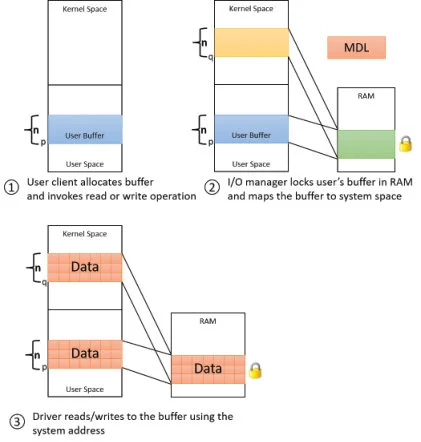<figcaption>図6-16 直接 I/O</figcaption></figure>
<p>IRP を作るとき、I/O マネージャーは <code>MmProbeAndLockPages</code> を呼び、ユーザーバッファーのページをメモリに固定して、ページアウトできないようにします。
バッファーが占める物理メモリの情報はメモリ記述子リスト（MDL）に記録し、MDL のアドレスは IRP 本体の <code>MdlAddress</code> に格納します。
DMA を使うデバイスはバッファーの物理メモリの情報だけを必要とするので、MDL があれば転送できます。</p>
<p>ドライバーがバッファーの内容を参照する必要がある場合は、MDL を <code>MmGetSystemAddressForMdlSafe</code> に渡し、バッファーをシステムアドレス空間へマップします。
マッピングに成功すれば、返されたポインター（図6-16の q）はシステムアドレスなので、どのスレッドのコンテキストでも参照でき、固定済みのバッファーはページアウトされません。
同じバッファーに二つのマッピングがあることになります。元のユーザーアドレス（図の p）は発行元のプロセスのコンテキストでしか使えませんが、システム空間のマッピングはどのコンテキストでも使えます。
IRP が完了すると、I/O マネージャーは <code>MmUnlockPages</code> を呼び、固定を解除してページアウトを可能にします。メモリを固定、解除する API の詳細は WDK のドキュメントを参照してください。</p>
<p>直接 I/O はコピーを行わないので、1ページを超える大きなバッファーに向いています。特に DMA によるデータ転送に適しています。</p></section><section class="page" id="page-548" aria-label="page-548"><h4 id="Neither-I-O">Neither I/O</h4>
<p>Neither I/O では、I/O マネージャーはバッファーを管理しません。
その扱いはデバイスドライバーに任されます。ドライバーは、ほかの方式で I/O マネージャーが行う処理を自前で実装することもできます。
バッファーの参照がディスパッチルーチン内だけで済むなら、Neither I/O のままで間に合う場合があります。
この方式の主な利点は、I/O マネージャーによるバッファー管理の負担がないことです。</p>
<p>Neither I/O でユーザー空間にある可能性のあるバッファーを扱うドライバーは、アドレスが有効で、カーネルモードのメモリを指していないことを確かめる必要があります。
ポインターを介さずスカラー値だけを渡すのであれば、このアドレス検査は不要です。ただし、スカラー値だけで済むドライバーはほとんどありません。
バッファーを検査しないと、システムが停止したり、アプリケーションからカーネルメモリへのアクセスやコードの注入を許す脆弱性になったりするおそれがあります。</p>
<p>カーネルが提供する <code>ProbeForRead</code> と <code>ProbeForWrite</code> は、バッファー全体がユーザーモードのアドレス範囲内にあることを検査します。
無効なユーザーモードアドレスへの参照でシステムが停止しないよう、ドライバーは検査や参照を、C／C++ の <code>__try</code>／<code>__except</code> で記述する構造化例外処理（SEH）で囲めます。
メモリアクセスの例外を捕捉し、アプリケーションに返すエラーコードへ変換します（SEH は Part 2 の第8章を参照）。
また、アドレス自体が有効でも、呼び出し元はそのデータを後から変更できます。そのため、入力データはすべてカーネルバッファーへコピーしてから使います。</p>
<h4 id="ドライバーの同期">ドライバーの同期</h4>
<p>ドライバーは、グローバルデータやハードウェアレジスタへのアクセスを、次の二つの理由で同期する必要があります。</p>
<ul>
<li>優先度の高いスレッド、クォンタムの満了、またはより高い IRQL の割り込みによって、ドライバーの処理が中断されることがあります。</li>
<li>一般的なマルチプロセッサシステムでは、複数のプロセッサで同じドライバーのコードが同時に実行され得ます。</li>
</ul>
<p>たとえば、IRQL 0 で動くディスパッチルーチンが、デバイスレジスタ、ヒープ、静的データなどを変更している最中に、同じドライバーの ISR が割り込むことがあります。
ISR も同じデータを更新するなら、同期していないとデータが壊れかねません。</p>
<p>そのため、複数の IRQL からアクセスされるデータを更新する前に、同じデータ構造を別のスレッドや別の CPU が更新できないようにします。
単一 CPU のシステムでは、<code>KeRaiseIrql</code> で、関係するルーチンのうち最も高い IRQL まで引き上げれば同期できます。
たとえば、IRQL 0 のディスパッチルーチンと IRQL 2 の DPC を同期させるには、ディスパッチルーチンが共有データに触れる前に IRQL を2へ上げます。
DPC と ISR を同期させる場合は、DPC がデバイスの IRQL まで引き上げます。この値は PnP マネージャーがハードウェアリソースを通知する際に渡します。</p></section><section class="page" id="page-549" aria-label="page-549"><p>マルチプロセッサシステムでは、IRQL を上げるだけでは足りません。
IRQL はシステム全体で共有する状態ではなく、CPU ごとの状態なので、ISR などが別の CPU で動く可能性があります。</p>
<p>そこでカーネルは、高い IRQL で CPU 間の同期を行うために、<strong>スピンロック</strong>を提供します。
共有データを一度に一つの処理だけが使えるようにする点ではミューテックスと似ていますが、動作も使い方も異なります。
表6-3に違いを示します。両者の詳細は Part 2 の第8章を参照してください。</p>
<div class="table-scroll" role="region" tabindex="0" aria-label="表。横にスクロールできます"><table><caption>表6-3 ミューテックスとスピンロックの比較</caption><thead><tr><th>項目</th><th>ミューテックス</th><th>スピンロック</th></tr></thead><tbody>
<tr><th>同期の単位</th><td>一度に一つのスレッドがクリティカルセクションに入り、共有データへアクセスします。</td><td>一度に一つの CPU がクリティカルセクションに入り、共有データへアクセスします。</td></tr>
<tr><th>使用する IRQL</th><td><code>DISPATCH_LEVEL</code>（2）未満。</td><td><code>DISPATCH_LEVEL</code>（2）以上での同期に使います。</td></tr>
<tr><th>待機方法</th><td>通常の待機で、待機中は CPU サイクルを消費しません。</td><td>ビジーウェイトで、ロックが空くまで CPU はビットの検査を繰り返します。</td></tr>
<tr><th>所有権</th><td>所有スレッドを記録し、同じスレッドによる再帰的な取得を許します。</td><td>所有 CPU を記録せず、再帰的に取得しようとするとデッドロックになります。</td></tr>
</tbody></table></div>
<p>スピンロックは、アトミックな検査と更新で操作するメモリ上のビットです。
CPU が取得しているか、空いているかのどちらかです。
IRQL が2以上では、スケジューラーが別のスレッドへ切り替えられません。通常の待機にはその切り替えが必要なので、ミューテックスは使えません。
スピンロックを待つ CPU が、通常の待機状態に入らず、ロックの検査を繰り返すのはこのためです。</p>
<p>CPU がスピンロックを取得する流れは、二段階に分けられます。
まず、同期対象のルーチンのうち最も高い IRQL まで引き上げます。
ディスパッチルーチンと DPC の間なら2、DPC と ISR の間なら対象の割り込みの DIRQL です。
次に、ロックのビットをアトミックに検査してセットし、取得を試みます。
同期する IRQL は、取得に使う関数によって決まります。</p>
<p><strong>注：</strong>図6-17はこの二段階を単純化したものです。取得処理の詳細は Part 2 の第8章を参照してください。</p></section><section class="page" id="page-550" aria-label="page-550"><figure><figcaption>図6-17 スピンロックの取得</figcaption></figure>
<p>ディスパッチルーチンと DPC、または別々の CPU で動く DPC 同士など、IRQL 2 で同期する場合は、<code>KeAcquireSpinLock</code> と <code>KeReleaseSpinLock</code> を使えます。
この組み合わせでは、図6-17の「同期する IRQL」が2になります。派生関数については Part 2 の第8章を参照してください。
ドライバーは通常、デバイスごとのデータを保持するデバイス拡張に <code>KSPIN_LOCK</code>（32 ビットシステムでは4バイト、64 ビットシステムでは8バイト）を置き、<code>KeInitializeSpinLock</code> で初期化します。</p>
<p>ディスパッチルーチンや DPC などを ISR と同期させるには、別の関数を使います。
各割り込みオブジェクト（<code>KINTERRUPT</code>）にはスピンロックがあり、ISR の実行前に取得されます。そのため、同じ ISR が複数の CPU で同時に動くことはありません。
このロックを使って同期するので、新たなロックは不要です。
<code>KeAcquireInterruptSpinLock</code> で取得し、<code>KeReleaseInterruptSpinLock</code> で解放できます。
あるいは <code>KeSynchronizeExecution</code> にコールバックを渡し、割り込みスピンロックの取得と解放の間に実行させることもできます。</p>
<p>特に ISR には注意が必要ですが、ドライバーが使うデータには、別のプロセッサで動く同じドライバーのルーチンもアクセスし得ます。
したがって、グローバルデータや共有データの利用だけでなく、物理デバイス自体へのアクセスも同期させます。</p>
<h3 id="階層化されたドライバーへの-I-O-要求">階層化されたドライバーへの I/O 要求</h3>
<p>「IRP がデバイススタックを通る流れ」では、標準的な WDM のデバイスノードで各ドライバーが選べる処理を説明しました。
前の節では、一つのドライバーが単純なデバイスを扱う場合の I/O 要求をたどりました。
ファイルを扱うデバイスや、ほかの階層化されたドライバーへの要求も基本は同じです。
図6-18では、ファイルシステムへの非同期 I/O が、ディスクへ届くまでにどのドライバーを通るかを、単純化した例で示します。</p></section><section class="page" id="page-551" aria-label="page-551"><figure>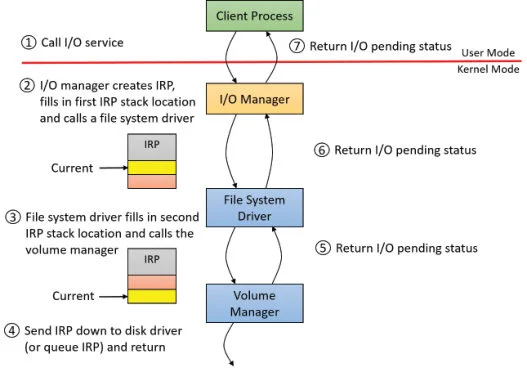<figcaption>図6-18 階層化されたドライバーへの非同期要求をキューに入れる</figcaption></figure>
<p>I/O マネージャーは、要求を受け付けて IRP を作ります。
ただし、この例で IRP を渡す先はファイルシステムドライバーです。
ファイルシステムドライバーは要求の種類に応じて、同じ IRP をディスク側に転送するか、追加の IRP を作って個別に送るかを決めます。</p>
<p>元の要求をデバイスへの単純な要求一つに変換できるなら、IRP を再利用するのが一般的です。
たとえば、アプリケーションがボリューム上のファイルの先頭512バイトを読み取る場合、NTFS はボリュームマネージャーのドライバーを呼び、ファイルの開始位置から1セクターを読み取るよう要求します。</p>
<p>ディスクコントローラーの DMA アダプターが転送を終えると、ディスクコントローラーがホストに割り込みをかけます。
コントローラーの ISR が動き、IRP を完了する DPC コールバックを要求します（図6-19）。</p>
<p>一つの IRP を再利用する代わりに、ファイルシステムが複数の関連 IRP を作り、一つの I/O 要求を分担させることもできます。
たとえば、読み取るデータがディスク上に分散していれば、ファイルシステムドライバーは複数の IRP を作り、それぞれに別のセクターから要求の一部を読み取らせます。
これらの IRP をキューに入れる流れを図6-20に示します。</p></section><section class="page" id="page-552" aria-label="page-552"><p><figure><figcaption>図6-19 階層化された I/O 要求の完了</figcaption></figure> <figure><figcaption>図6-20 関連 IRP のキューイング</figcaption></figure></p></section><section class="page" id="page-553" aria-label="page-553"><p>ファイルシステムドライバーは関連 IRP をボリュームマネージャーに渡します。
ボリュームマネージャーはディスクデバイスドライバーに転送し、ディスクデバイスドライバーはデバイスのキューに入れます。
関連 IRP は一つずつ処理され、ファイルシステムドライバーが返されたデータを追跡します。
すべての関連 IRP が完了すると、I/O システムは元の IRP を完了し、呼び出し元に戻ります（図6-21）。</p>
<figure><figcaption>図6-21 関連 IRP の完了</figcaption></figure>
<p><strong>注：</strong>ディスク上のファイルシステムを管理する Windows のドライバーは、少なくとも三層のドライバースタックに属します。
最上位はファイルシステムドライバー、中央はボリュームマネージャー、最下位はディスクドライバーです。
さらに、その間や上下に任意の数のフィルタードライバーを置けます。
直前の例では流れを分かりやすくするため、ファイルシステムとボリュームマネージャーに絞って描いています。詳細は Part 2 のストレージ管理の章を参照してください。</p>
<h3 id="スレッドに依存しない-I-O">スレッドに依存しない I/O</h3>
<p>これまでに説明した方式では、IRP を発行元スレッドに関連付けてキューに入れます。
I/O マネージャーがそのスレッドへ APC を発行して IRP を完了するため、完了処理は発行元のプロセスやスレッドのコンテキストを参照できます。
発行元スレッドに依存する処理で、大半のアプリケーションの性能とスケーラビリティの要件は満たせます。
一方、Windows は二つの仕組みで<strong>スレッドに依存しない I/O</strong>もサポートします。</p></section><section class="page" id="page-554" aria-label="page-554"><ul>
<li>I/O 完了ポートを使う。詳細は後述の「I/O 完了ポート」を参照してください。</li>
<li>ユーザーバッファーをメモリに固定し、システムアドレス空間にマップする。</li>
</ul>
<p>I/O 完了ポートを使う場合、いつ I/O の完了を確認するかはアプリケーションが決めます。
I/O を発行したスレッドでなくても、完了ポートにアクセスできるスレッドなら完了処理を行えます。</p>
<p>同様に、ユーザーバッファーを固定してカーネル空間にマップすると、どのコンテキストからでもカーネルがアクセスできるので、発行元と同じアドレス空間にいる必要はありません。
アプリケーションは、<code>SeLockMemoryPrivilege</code> を持っていれば <code>SetFileIoOverlappedRange</code> でこの仕組みを有効にできます。</p>
<p>完了ポートを使う場合も、<code>SetFileIoOverlappedRange</code> で設定したファイルバッファーを使う場合も、I/O マネージャーは IRP を発行元スレッドではなく宛先のファイルオブジェクトに関連付けます。
WinDbg の <code>!fileobj</code> は、これらのファイルオブジェクトの IRP リストを表示します。
この仕組みが信頼性と性能にどう関わるかは、後続の節で説明します。</p>
<h3 id="I-O-のキャンセル">I/O のキャンセル</h3>
<p>I/O は正常に完了するとは限らず、多くの要求はキャンセルで終わります。
たとえば、処理中の IRP が残っているデバイスを取り外す場合や、利用者が長時間かかるネットワーク操作を取り消す場合です。
スレッドやプロセスの終了時にもキャンセルが必要です。
スレッドが終了すると、そのスレッドの I/O は不要になりますが、未完了の要求が片付くまでスレッドを削除できません。</p>
<p>I/O マネージャーとドライバーは協力してキャンセルを処理します。
ドライバーは、通常はまだキューにあり、開始していない操作に対して、<code>IoSetCancelRoutine</code> でキャンセルルーチンを登録します。
キャンセル時には I/O マネージャーがそのルーチンを呼びます。
ドライバーがこの処理を正しく実装していないと、画面から消えてもタスクマネージャーや Process Explorer には残り、終了させられないプロセスが生じることがあります。</p>
<h4 id="利用者の操作による-I-O-のキャンセル">利用者の操作による I/O のキャンセル</h4>
<p>多くのアプリケーションでは、UI の入力を処理するスレッドと、I/O などの作業をする一つ以上のスレッドを分けます。
利用者が UI から開始した処理を取り消すとき、未完了の I/O をキャンセルする必要がある場合があります。
すぐに終わる操作なら不要なこともありますが、大量のデータ転送やネットワーク操作など、完了までの時間を見積もれない処理に対し、Windows は同期 I/O と非同期 I/O の両方でキャンセルをサポートします。</p></section><section class="page" id="page-555" aria-label="page-555"><ul>
<li><strong>同期 I/O のキャンセル</strong>：<code>CancelSynchronousIo</code> を使います。デバイスドライバーが対応していれば、作成（オープン）操作もキャンセルできます。MUP、DFS、SMB など、ネットワークファイルシステムを扱う Windows のドライバーは、ネットワークパスを開く操作をキャンセルできます。</li>
<li><strong>非同期 I/O のキャンセル</strong>：スレッドは <code>CancelIo</code> で自分が発行した未完了の非同期 I/O をキャンセルできます。<code>CancelIoEx</code> なら、同じプロセス内でどのスレッドが発行したかにかかわらず、指定したファイルハンドルへの非同期 I/O をすべてキャンセルできます。Windows が未完了の要求を I/O 完了ポートに関連付けて追跡するため、スレッドに依存しない I/O でも <code>CancelIoEx</code> が使えます。</li>
</ul>
<p>同期 I/O と非同期 I/O をキャンセルする流れを、それぞれ図6-22と図6-23に示します。ドライバーから見たキャンセル処理は、どちらも同じです。</p>
<figure><figcaption>図6-22 同期 I/O のキャンセル</figcaption></figure>
<figure><figcaption>図6-23 非同期 I/O のキャンセル</figcaption></figure></section><section class="page" id="page-556" aria-label="page-556"><h4 id="スレッド終了時の-I-O-のキャンセル">スレッド終了時の I/O のキャンセル</h4>
<p>スレッドが自ら終了するときも、所属プロセスの終了に伴って終了するときも、そのスレッドの I/O をキャンセルする必要があります。
I/O マネージャーは、スレッドに関連付けられた IRP のリストをたどり、キャンセル可能な要求を取り消します。
<code>CancelIoEx</code> はキャンセルの完了を待たずに戻りますが、プロセスマネージャーはすべての I/O の処理が済むまで、スレッドの終了を進めません。
ドライバーが IRP をキャンセルできず、要求も完了しなければ、プロセスとスレッドのオブジェクトはシステムがシャットダウンするまで残ります。</p>
<p><strong>注：</strong>キャンセルできるのは、ドライバーがキャンセルルーチンを登録した IRP だけです。プロセスマネージャーは、そのスレッドに関連するすべての I/O がキャンセルされるか完了するまで、スレッドを削除しません。</p>
<h4 id="終了できないプロセスをデバッグする">終了できないプロセスをデバッグする</h4>
<p>Sysinternals の Notmyfault を使って、プロセスを終了できなくなる条件を確認します。
<code>Notmyfault.exe</code> が使う <code>Myfault.sys</code> ドライバーは、キャンセルルーチンを登録せずに IRP を保持し続けます。
実験には再起動できる検証環境を使ってください。Notmyfault の詳細は Part 2 のクラッシュダンプ解析の章を参照してください。</p>
<ol><li><code>Notmyfault.exe</code> を実行します。</li>
<li>「Not My Fault」ダイアログで「Hang」タブを開き、図のように「Hang with IRP」を選び、「Hang」をクリックします。</li></ol>
<figure><figcaption>キャンセルできない IRP を残す実験</figcaption></figure>
<ol start="3"><li>画面上では特に変化せず、「Cancel」でアプリケーションを閉じられます。ただし、タスクマネージャーや Process Explorer には Notmyfault のプロセスが残ります。Myfault ドライバーはキャンセルルーチンを登録していないため、Windows は IRP の完了を待ち続け、プロセスを終了できません。</li></ol></section><section class="page" id="page-557" aria-label="page-557"><ol start="4"><li>WinDbg で、スレッドが現在何をしているか調べます。ローカルカーネルデバッグを開始し、<code>!process</code> で <code>Notmyfault.exe</code> の情報を表示します。<code>notmyfault64</code> は64ビット版です。</li></ol>
<pre>lkd&gt; !process 0 7 notmyfault64.exe
PROCESS ffff8c0b88c823c0
SessionId: 1  Cid: 2b04    Peb: 4e5c9f4000  ParentCid: 0d40
DirBase: 3edfa000  ObjectTable: ffffdf08dd140900  HandleCount: &lt;Data Not
Accessible&gt;
Image: notmyfault64.exe
VadRoot ffff8c0b863ed190 Vads 81 Clone 0 Private 493. Modified 8. Locked
0….
THREAD ffff8c0b85377300  Cid 2b04.2714  Teb: 0000004e5c808000
Win32Thread: 0000000000000000 WAIT: (UserRequest) UserMode Non-Alertable
fffff80a4c944018  SynchronizationEvent
IRP List:
ffff8c0b84f1d130: (0006,0118) Flags: 00060000  Mdl: 00000000
Not impersonating
DeviceMap                 ffffdf08cf4d7d20
Owning Process            ffff8c0b88c823c0       Image:
notmyfault64.exe
...
Child-SP          RetAddr           : Args to Child
: Call Site
ffffb881&#x27;3ecf74a0 fffff802&#x27;cfc38a1c : 00000000&#x27;00000100
00000000&#x27;00000000 00000000&#x27;00000000 00000000&#x27;00000000 :
nt!KiSwapContext+0x76
ffffb881&#x27;3ecf75e0 fffff802&#x27;cfc384bf : 00000000&#x27;00000000
00000000&#x27;00000000 00000000&#x27;00000000 00000000&#x27;00000000 :
nt!KiSwapThread+0x17c
ffffb881&#x27;3ecf7690 fffff802&#x27;cfc3a287 : 00000000&#x27;00000000
00000000&#x27;00000000 00000000&#x27;00000000 00000000&#x27;00000000 :
nt!KiCommitThreadWait+0x14f
ffffb881&#x27;3ecf7730 fffff80a&#x27;4c941fce : fffff80a&#x27;4c944018
fffff802&#x27;00000006 00000000&#x27;00000000 00000000&#x27;00000000 :
nt!KeWaitForSingleObject+0x377
ffffb881&#x27;3ecf77e0 fffff802&#x27;d0067430 : ffff8c0b&#x27;88d2b550
00000000&#x27;00000001 00000000&#x27;00000001 00000000&#x27;00000000 : myfault+0x1fce
ffffb881&#x27;3ecf7820 fffff802&#x27;d0066314 : ffff8c0b&#x27;00000000
ffff8c0b&#x27;88d2b504 00000000&#x27;00000000 ffffb881&#x27;3ecf7b80 : nt!IopSynchronousSer
viceTail+0x1a0
ffffb881&#x27;3ecf78e0 fffff802&#x27;d0065c96 : 00000000&#x27;00000000
00000000&#x27;00000000 00000000&#x27;00000000 00000000&#x27;00000000 :
nt!IopXxxControlFile+0x674
ffffb881&#x27;3ecf7a20 fffff802&#x27;cfd57f93 : ffff8c0b&#x27;85377300
fffff802&#x27;cfcb9640 00000000&#x27;00000000 fffff802&#x27;d005b32f :
nt!NtDeviceIoControlFile+0x56
ffffb881&#x27;3ecf7a90 00007ffd&#x27;c1564f34 : 00000000&#x27;00000000
00000000&#x27;00000000 00000000&#x27;00000000 00000000&#x27;00000000 :
nt!KiSystemServiceCopyEnd+0x13 (TrapFrame @ ffffb881&#x27;3ecf7b00)</pre></section><section class="page" id="page-558" aria-label="page-558"><ol start="5"><li>スタックトレースから、I/O を発行したスレッドが、キャンセルまたは完了を待っていることが分かります。前の実験で使ったデバッガー拡張の <code>!irp</code> に IRP のポインターを渡し、どこで処理が止まっているか調べます。</li></ol>
<pre>lkd&gt; !irp ffff8c0b84f1d130
Irp is active with 1 stacks 1 is current (= 0xffff8c0b84f1d200)
No Mdl: No System Buffer: Thread ffff8c0b85377300:  Irp stack trace.
cmd  flg cl Device   File     Completion-Context
&gt;[IRP_MJ_DEVICE_CONTROL(e), N/A(0)]
5  0 ffff8c0b886b5590 ffff8c0b88d2b550 00000000-00000000
\Driver\MYFAULT
Args: 00000000 00000000 83360020 00000000</pre>
<ol start="6"><li>この出力から、原因は <code>\\Driver\\MYFAULT</code>、つまり <code>Myfault.sys</code> だと分かります。アプリケーションに不具合があるだけではこの状態にはならず、ドライバー側に問題があります。原因のドライバーが分かっても、この状態を解消するには通常、システムを再起動するしかありません。Windows が未完了のキャンセルを無視して関連リソースを解放すると、後から戻ってきた IRP がシステムメモリを破損させるおそれがあるためです。</li></ol>
<p><strong>ヒント：</strong>実際に遭遇した場合は、新しいバージョンのドライバーに修正が含まれていないか確認してください。</p>
<h3 id="I-O-完了ポート">I/O 完了ポート</h3>
<p>サーバーアプリケーションの性能は、クライアント要求を処理するスレッドの数と使い方に左右されます。
すべての要求を一つのスレッドで順番に処理すると、処理中の要求が終わるまでほかのクライアントが待たされます。
I/O を開始するたびに別の要求に切り替えれば、一つのスレッドでも複数の要求を並行に扱えますが、実装が複雑になり、複数の論理プロセッサを活用できません。</p>
<p>反対に、大きなスレッドプールを用意し、クライアントの要求ごとにほぼ専用のスレッドを割り当てる方法もあります。
この方法では、多数のスレッドが起きて CPU で処理し、I/O を待ってブロックし、処理が終われば次の要求を待って再びブロックします。
スケジューラーが多数のアクティブなスレッドに CPU 時間を割り振る結果、コンテキストスイッチが増え、処理量の増加に対応しにくくなります。</p>
<p>並列性を高めながらコンテキストスイッチを減らすには、不必要な待機を避けます。
理想は、各プロセッサで一つのスレッドがクライアント要求を処理し、要求が残っていれば、処理を終えたスレッドが待機せずに次の要求へ進むことです。</p></section><section class="page" id="page-559" aria-label="page-559"><p>この構成で、要求を処理中のスレッドがファイルの読み取りなどでブロックした場合には、代わりのスレッドを起こす仕組みが必要になります。</p>
<h4 id="IoCompletion-オブジェクト">IoCompletion オブジェクト</h4>
<p>アプリケーションは、エグゼクティブの <code>IoCompletion</code> オブジェクトを使って、複数のファイルハンドルの I/O 完了を一か所で受け取れます。
Windows API では、このオブジェクトを<strong>I/O 完了ポート</strong>と呼びます。
ファイルを完了ポートに関連付けると、そのファイルに対する非同期 I/O が完了するたびに、完了パケットがポートのキューに入ります。
スレッドは、ポートにパケットが入るのを待つだけで、複数のファイルに対する未完了の I/O のうち、どれかが終わるのを待てます。</p>
<p><code>WaitForMultipleObjects</code> にも似た機能がありますが、完了ポートでは、要求を処理するアクティブなスレッドの数（<strong>同時実行数</strong>）を OS の支援で制御できます。</p>
<p>完了ポートを作るときは、ポートに関連付けられたスレッドを同時にいくつまで実行させるかを指定します。
理想はプロセッサごとに一つのアクティブなスレッドを持つことです。
アクティブなスレッド数が指定値に達していれば、Windows は完了ポートを待つスレッドを起こしません。
代わりに、稼働中のスレッドが現在の要求を処理し終え、別のパケットが待っていれば、自ら取り出して処理します。
こうすればコンテキストスイッチが発生せず、CPU を効率よく使えます。</p>
<h4 id="完了ポートの使い方">完了ポートの使い方</h4>
<p>図6-24に完了ポートの動作の概要を示します。
ポートは <code>CreateIoCompletionPort</code> で作成します。
ポートでブロックしたスレッドはそのポートに関連付けられ、後入れ先出し（LIFO）で起こされます。つまり、最後にブロックしたスレッドが次のパケットを受け取ります。
長時間ブロックしたスレッドのスタックはディスクへ退避できるので、処理すべき要求よりもスレッドの数が多いとき、長く待っているスレッドが物理メモリを占め続けずに済みます。</p>
<p>サーバーアプリケーションは通常、Winsock2 ソケットや名前付きパイプなど、ファイルハンドルで識別する通信の接続先で要求を受け取ります。
接続先を作るときに完了ポートに関連付け、各スレッドが <code>GetQueuedCompletionStatus</code> または <code>GetQueuedCompletionStatusEx</code> で要求を待ちます。
パケットを受け取ったスレッドは、要求を処理するアクティブなスレッドになります。</p>
<p>処理中のスレッドは、ファイルの読み書きやほかのスレッドとの同期などで何度もブロックすることがあります。
Windows はこれを検出して、ポートのアクティブなスレッド数を一つ減らします。
キューにパケットが残っていれば、完了ポートで待つ別のスレッドを起こします。</p></section><section class="page" id="page-560" aria-label="page-560"><figure><figcaption>図6-24 I/O 完了ポートの動作</figcaption></figure>
<p>Microsoft は、同時実行数の設定値をシステムのプロセッサ数とおおむね同じにすることを推奨しています。
ただし、実際のアクティブなスレッド数が設定値を超えることがあります。
たとえば設定値が1の場合、次のように進みます。</p>
<ol>
<li>クライアントの要求が届き、最初のスレッドが処理を始め、アクティブになります。</li>
<li>二つ目の要求が届きますが、同時実行数の上限に達しているので、ポートで待っている二つ目のスレッドは処理を開始できません。</li>
<li>最初のスレッドがファイル I/O を待ってブロックし、アクティブではなくなります。</li>
<li>二つ目のスレッドが起こされます。</li>
<li>二つ目が動いている間に最初のスレッドのファイル I/O が完了し、最初のスレッドも再びアクティブになります。どちらかがブロックするまでは、設定値が1でも、アクティブなスレッドが二つになります。</li>
</ol>
<p>通常、アクティブなスレッド数は設定値と同じか、それより少し多い程度です。</p>
<p><code>PostQueuedCompletionStatus</code> を使うと、サーバーアプリケーションが独自に定義した完了パケットをキューに入れられます。
たとえば、サーバーを正常終了させる必要があるなど、I/O とは別のイベントをワーカースレッドに知らせるために使います。</p>
<p>完了ポートでは、先に述べたスレッドに依存しない I/O を使い、要求を発行元スレッドではなく完了ポートに関連付けられます。
通常の I/O では発行元スレッドが完了処理を行う必要があります。
完了ポートを使えば、待機中のどのスレッドでも処理できるので、コンテキストスイッチを減らせます。</p></section><section class="page" id="page-561" aria-label="page-561"><h4 id="I-O-完了ポートの内部動作">I/O 完了ポートの内部動作</h4>
<p>Windows アプリケーションが、既存の完了ポートのハンドルとして <code>NULL</code> を指定して <code>CreateIoCompletionPort</code> を呼ぶと、システムサービス <code>NtCreateIoCompletion</code> が実行されます。
エグゼクティブの <code>IoCompletion</code> オブジェクトには、<strong>カーネルキュー</strong>という同期オブジェクトが含まれます。
システムサービスは完了ポートを作り、そのメモリの先頭にあるキューオブジェクトを <code>KeInitializeQueue</code> で初期化します。
キューが先頭メンバーなので、完了ポートとキューは同じポインターで参照できます。
キューの同時実行数には、アプリケーションが <code>CreateIoCompletionPort</code> に渡した値を使います。</p>
<p>アプリケーションが <code>CreateIoCompletionPort</code> でファイルハンドルをポートに関連付ける場合は、そのファイルハンドルを主引数として <code>NtSetInformationFile</code> が呼ばれます。
設定する情報クラスは <code>FileCompletionInformation</code> で、データには完了ポートのハンドルと、<code>CreateIoCompletionPort</code> の <code>CompletionKey</code> 引数を使います。
<code>NtSetInformationFile</code> はハンドルからファイルオブジェクトを取得し、完了コンテキストのデータ構造を割り当て、そのポインターをファイルオブジェクトの <code>CompletionContext</code> に格納します。</p>
<p>ファイルオブジェクトに対する非同期 I/O が完了すると、I/O マネージャーは <code>CompletionContext</code> が <code>NULL</code> でないか調べます。
設定されていれば完了パケットを割り当て、<code>KeInsertQueue</code> にポートを渡してパケットをキューに入れます。完了ポートオブジェクトとキューオブジェクトが同じアドレスにあるため、この呼び方ができます。</p>
<p>サーバーのスレッドが <code>GetQueuedCompletionStatus</code> を呼ぶと、<code>NtRemoveIoCompletion</code> が実行されます。
引数を検査し、ポートのハンドルからポートへのポインターを取得して <code>IoRemoveIoCompletion</code> を呼びます。最終的に <code>KeRemoveQueueEx</code> が呼ばれます。</p>
<p>複数の I/O がすでに完了していればスレッドは待たずに済みますが、一件ずつ取得すると、そのたびにカーネルを呼び出します。
<code>GetQueuedCompletionStatusEx</code> は複数の完了ステータスを一度に取得でき、ユーザーモードとカーネルモードの間の往復を減らせます。
内部では <code>NtRemoveIoCompletionEx</code> が <code>IoRemoveIoCompletion</code> を呼び、取得する件数を <code>KeRemoveQueueEx</code> まで渡します。</p>
<p><code>KeRemoveQueueEx</code> と <code>KeInsertQueue</code> は、完了パケットを待つスレッドを起こすかどうかを決めます。
キューオブジェクトは、アクティブなスレッドの現在数と最大数を保持します。
<code>KeRemoveQueueEx</code> の呼び出し時に現在数が最大数以上なら、呼び出し元のスレッドをキューオブジェクトの待機リストに入れます。待機中のスレッドは LIFO 順で選ばれます。
スレッドの制御ブロック（<code>KTHREAD</code>）には、関連付けられたキューオブジェクトへのポインターがあり、関連付けがなければ <code>NULL</code> です。</p></section><section class="page" id="page-562" aria-label="page-562"><p>Windows は、完了ポート以外でブロックして非アクティブになったスレッドも、スレッドの制御ブロックのキューポインターを使って追跡します。
<code>KeWaitForSingleObject</code> や <code>KeDelayExecutionThread</code> など、スレッドをブロックさせる可能性のあるルーチンは、そのポインターを調べます。
<code>NULL</code> でなければ <code>KiActivateWaiterQueue</code> を呼び、キューに関連付けられたアクティブなスレッドの数を一つ減らします。
その結果が上限未満で、キューにパケットが一つ以上あれば、待機リストの先頭のスレッドを起こし、最も古いパケットを渡します。
一方、キューに関連付けられたスレッドがブロックから復帰すると、スケジューラーは <code>KiUnwaitThread</code> でアクティブ数を一つ増やします。</p>
<p><code>PostQueuedCompletionStatus</code> は、システムサービス <code>NtSetIoCompletion</code> を呼びます。
このサービスは <code>KeInsertQueue</code> で、指定されたパケットを完了ポートのキューに入れます。</p>
<p>図6-25では、完了パケットを処理できるスレッドがほかに二つあります。
ただし、同時実行数が1で、すでに一つのスレッドがアクティブなので、この二つは完了ポートでブロックしています。</p>
<figure><figcaption>図6-25 I/O 完了ポートオブジェクトの動作例</figcaption></figure>
<p><code>SetFileCompletionNotificationModes</code> で、完了通知の動作を調整できます。
通常はアプリケーションコードの変更が必要ですが、スループットが上がる場合があります。
表6-4に、三つの最適化モードを示します。モードはハンドルごとに設定し、一度設定したものは解除できません。</p>
<div class="table-scroll" role="region" tabindex="0" aria-label="表。横にスクロールできます"><table><caption>表6-4 I/O 完了ポートの通知モード</caption><thead><tr><th>通知モード</th><th>意味</th></tr></thead><tbody>
<tr><th><code>FILE_SKIP_COMPLETION_PORT_ON_SUCCESS</code>（1）</th><td>ファイルハンドルが完了ポートに関連付けられ、ファイルが非同期 I/O 用に開かれ、要求が <code>ERROR_PENDING</code> を返さず即座に成功した場合は、通常なら追加する完了パケットをキューに入れません。</td></tr>
</tbody></table></div></section><section class="page" id="page-563" aria-label="page-563"><div class="table-scroll" role="region" tabindex="0" aria-label="表。横にスクロールできます"><table><caption>表6-4 I/O 完了ポートの通知モード（続き）</caption><thead><tr><th>通知モード</th><th>意味</th></tr></thead><tbody>
<tr><th><code>FILE_SKIP_SET_EVENT_ON_HANDLE</code>（2）</th><td>非同期の関数呼び出しが成功するか <code>ERROR_PENDING</code> を返した場合、ファイルオブジェクトのイベントをシグナル状態にしません。ただし、要求に明示的に渡したイベントは通知します。</td></tr>
<tr><th><code>FILE_SKIP_SET_USER_EVENT_ON_FAST_IO</code>（4）</th><td>非同期の関数呼び出しが高速 I/O で処理され、成功するか <code>ERROR_PENDING</code> を返した場合は、要求に明示的に渡したイベントをシグナル状態にしません。</td></tr>
</tbody></table></div>
<h3 id="I-O-の優先制御">I/O の優先制御</h3>
<p>I/O の優先度がなければ、検索インデックスの作成、ウイルススキャン、ディスクのデフラグなどのバックグラウンド処理が、フォアグラウンド処理の応答を大きく遅らせることがあります。
たとえば、別のプロセスがディスク I/O を実行中にアプリケーションを起動したり文書を開いたりすると、フォアグラウンドの処理がディスクへのアクセスを待たされます。
ディスクにある音楽などのストリーミング再生にも、同じように影響します。</p>
<p>Windows では、個々の I/O 操作に優先度を割り当てる方法と、I/O 帯域幅を予約する方法の二つで、フォアグラウンドの操作を優先できます。</p>
<h4 id="I-O-の優先度">I/O の優先度</h4>
<p>Windows の I/O マネージャーは、表6-5の五つの優先度を内部でサポートします。
原著で扱うバージョンでは三つを使用しており、将来のバージョンでは High と Low も使われる可能性があります。</p>
<div class="table-scroll" role="region" tabindex="0" aria-label="表。横にスクロールできます"><table><caption>表6-5 I/O の優先度</caption><thead><tr><th>優先度</th><th>用途</th></tr></thead><tbody>
<tr><th>Critical</th><td>メモリマネージャー。</td></tr>
<tr><th>High</th><td>未使用。</td></tr>
<tr><th>Normal</th><td>アプリケーションの通常の I/O。</td></tr>
<tr><th>Low</th><td>未使用。</td></tr>
<tr><th>Very Low</th><td>スケジュールされたタスク、SuperFetch、デフラグ、コンテンツのインデックス作成などのバックグラウンド処理。</td></tr>
</tbody></table></div>
<p>既定の I/O 優先度は Normal です。
空きメモリが少ないときに変更済みデータをディスクへ書き出し、ほかのデータやコードのために RAM を空ける場合は、メモリマネージャーが Critical を使います。
タスクスケジューラーは、タスク自体の優先度が既定のものについて、I/O 優先度を Very Low に設定します。
バックグラウンド処理を行うアプリケーションも Very Low を指定します。
Windows Defender のスキャンやデスクトップ検索のインデックス作成など、Windows のバックグラウンド処理も Very Low を使います。</p></section><section class="page" id="page-564" aria-label="page-564"><h4 id="I-O-優先度に応じた処理順序">I/O 優先度に応じた処理順序</h4>
<p>五つの I/O 優先度は、内部では二つの方式で扱われます。Very Low 以外は優先度順方式、Very Low はアイドル I/O 方式です。</p>
<ul>
<li>Critical はすべての High より先に処理します。</li>
<li>High はすべての Normal より先に処理します。</li>
<li>Normal はすべての Low より先に処理します。</li>
<li>Low は、それより高い優先度の要求をすべて処理した後に処理します。</li>
</ul>
<p>アプリケーションが I/O を発行すると、IRP は優先度別のキューに入ります。優先度順方式では、どのキューを先に処理するかを上の規則で決めます。</p>
<p>アイドル I/O は別のキューで管理されます。アイドル I/O 以外の要求を先に処理するため、その要求が一件でも残り続けると、アイドル I/O がいつまでも処理されないおそれがあります。</p>
<p>そこでアイドル I/O 方式ではタイマーでキューを監視し、発行頻度を抑えながら、一定時間（通常は0.5秒）ごとに少なくとも一件を処理します。
また、通常の I/O が最後に完了してから50ミリ秒待って、次のアイドル I/O を発行します。通常の連続した I/O の途中にアイドル I/O を挟み、余分なシークが発生するのを防ぐためです。
原文では、アイドル I/O 以外の優先度で書き込むと、キャッシュマネージャーが変更を後回しにせずディスクへ反映し、読み取りでは先読みを省くと説明しています。</p>
<p>二つの方式を説明のため一つの仮想的なグローバル I/O キューにまとめた例が図6-26です。
各キュー内は先入れ先出し（FIFO）で、図の並びは一例です。</p>
<figure><figcaption>図6-26 グローバル I/O キューの項目の例</figcaption></figure>
<p>ユーザーモードのアプリケーションは、プロセス、スレッド、ファイルオブジェクトの三つに I/O 優先度を設定できます。
<code>SetPriorityClass</code> に <code>PROCESS_MODE_BACKGROUND_BEGIN</code> を渡すと現在のプロセス、<code>SetThreadPriority</code> に <code>THREAD_MODE_BACKGROUND_BEGIN</code> を渡すと現在のスレッドが発行する I/O の優先度を Very Low に下げ、各要求の IRP に記録します。
この設定は、スケジューリング優先度を4、メモリの優先度を1にも下げます。
<code>SetFileInformationByHandle</code> は特定のファイルオブジェクトの優先度を設定し、値をそのオブジェクトに格納します。
ドライバーは <code>IoSetIoPriorityHint</code> で IRP に直接設定できます。</p></section><section class="page" id="page-565" aria-label="page-565"><p><strong>注：</strong>IRP やファイルオブジェクトの I/O 優先度はヒントです。ストレージスタックのすべてのドライバーが、指定された値に従うとは限らず、対応していない場合もあります。</p>
<p>二つの方式は、それぞれ異なる種類のドライバーが実装します。
優先度順方式を担うのは、ATA、SCSI、USB などのポート上の I/O を管理するストレージポートドライバーです。
ただし、この方式を実装するのは ATA ポートドライバー（<code>Ataport.sys</code>）と USB ポートドライバー（<code>Usbstor.sys</code>）だけです。SCSI ポートドライバーとストレージポートドライバー（<code>Scsiport.sys</code>、<code>Storport.sys</code>）にはありません。</p>
<p><strong>注：</strong>どのポートドライバーも、優先度順方式全体に対応するかどうかにかかわらず、Critical の要求を検出するとキューの先頭に回します。メモリマネージャーの緊急のページング I/O を処理し、システムの信頼性を保つためです。</p>
<p>このため、IDE や SATA のハードディスク、USB フラッシュメモリなどの一般向け大容量記憶装置では優先度順方式を利用できますが、SCSI、Fibre Channel、iSCSI のデバイスは利用できません。</p>
<p>一方、アイドル I/O 方式はシステムのストレージクラスドライバー（<code>Classpnp.sys</code>）が実装するため、SCSI ドライブも含め、すべてのストレージデバイスへの I/O に適用されます。
アイドル I/O が多いときも発行頻度を調整してシステムの応答性を保ちつつ、それを使うアプリケーションの処理も進められます。
Microsoft が提供するクラスドライバーで実装することで、旧式のサードパーティー製ポートドライバーが対応していない場合にも起きる性能上の問題を避けられます。</p>
<p>図6-27に、各方式を実装する箇所を示します。ストレージスタックの詳細は Part 2 のストレージ管理の章を参照してください。</p>
<figure><figcaption>図6-27 ストレージスタックでの I/O 優先制御の実装</figcaption></figure></section><section class="page" id="page-566" aria-label="page-566"><h4 id="I-O-の優先度逆転を防ぐ仕組み">I/O の優先度逆転を防ぐ仕組み</h4>
<p>I/O 優先度の高いスレッドが、低いスレッドの処理を待ち続けることを<strong>I/O の優先度逆転</strong>と呼びます。
これを防ぐため、エグゼクティブリソース（<code>ERESOURCE</code>）のロック機構には、I/O 優先度を一時的に引き上げる複数の処理があります。
優先度逆転が起こりやすいファイルシステムドライバーやストレージドライバーで多用されるため、<code>ERESOURCE</code> に I/O 優先度の継承を実装しました（エグゼクティブリソースについては Part 2 の第8章を参照）。</p>
<p>I/O 優先度の低いスレッドが <code>ERESOURCE</code> を取得する際に、Normal 以上で待っているスレッドがあれば、<code>PsBoostThreadIo</code> が取得する側の優先度を一時的に Normal へ引き上げます。
この API は <code>ETHREAD</code> の <code>IoBoostCount</code> を増やし、引き上げやその解除を Autoboost に通知します（第4章を参照）。</p>
<p>続いて <code>IoBoostThreadIoPriority</code> は、対象スレッドにキューイングされた IRP を列挙し、目標（この例では Normal）より優先度が低い、未完了のアイドル I/O を見つけます。
各 IRP を担当するデバイスオブジェクトについて、I/O マネージャーは優先度コールバックの登録を調べます。
ドライバーは <code>IoRegisterPriorityCallback</code> でコールバックを登録し、デバイスオブジェクトに <code>DO_PRIORITY_CALLBACK_ENABLED</code> を設定できます。
ページング I/O ならページングブースト、それ以外ならスレッドブーストと呼びます。
該当する IRP がなくても、未完了の IRP があれば、デバイスオブジェクトや優先度に関係なく、すべて引き上げます。これを一括ブーストと呼びます。</p>
<h4 id="I-O-優先度を引き上げるほかの処理">I/O 優先度を引き上げるほかの処理</h4>
<p>優先度逆転や要求の滞留を避けるため、Windows は次の場合にも、通常の I/O 処理で優先度を調整します。</p>
<ul>
<li><strong>カーネルバンプ</strong>：ファイルオブジェクト宛ての IRP で要求元がカーネルモードなら、ファイルオブジェクトのヒントが低くても Normal を使います。</li>
<li><strong>ページングバンプ</strong>：<code>IoPageRead</code> や <code>IoPageWrite</code> によるページファイルへの要求がカーネルモードから発行され、Superfetch のための要求でなければ、現在のスレッドの I/O 優先度が低くても Normal を使います。Superfetch は常にアイドル I/O を使います。</li>
</ul>
<h4 id="Very-Low-と-Normal-の-I-O-スループットを比較する">Very Low と Normal の I/O スループットを比較する</h4>
<p>本書に付属する IO Priority サンプルを使って、I/O 優先度が異なる二つのスレッドのスループットを比較します。
Process Monitor では、個々の要求の優先度を確認できます。</p></section><section class="page" id="page-567" aria-label="page-567"><ol>
<li><code>IoPriority.exe</code> を起動します。</li>
<li>ダイアログの「Thread 1」で「Low Priority」にチェックを入れます。</li>
<li>「Start I/O」をクリックします。次の図のように、二つのスレッドのスループットに大きな差が出ます。</li>
</ol>
<figure><figcaption>IO Priority サンプルの実行結果</figcaption></figure>
<p><strong>注：</strong>システムの負荷が低く、両方のスレッドの優先度が低い場合、二つのスループットを合わせると、この例の Normal のスレッド一つとほぼ同じになります。高い優先度の要求と競合しなければ、低優先度の I/O は意図的には抑制されないためです。</p>
<ol start="4"><li>Process Explorer でプロセスを開き、I/O 優先度を下げたスレッドの各優先度を調べます。</li></ol>
<figure><figcaption>I/O 優先度を下げたスレッドの情報</figcaption></figure>
<ol start="5"><li>Process Monitor を起動し、<code>IoPriority.exe</code> に絞り込んで実験を繰り返します。各 I/O の優先度ヒントを確認できます。このアプリケーションでは、各スレッドが <code>_File_</code> に自分のスレッド ID を付けた名前のファイルから読み取ります。</li></ol></section><section class="page" id="page-568" aria-label="page-568"><ol start="6"><li><code>File_1</code> への書き込みが見えるまでスクロールします。次の図のような出力になります。</li></ol>
<figure><figcaption>I/O 優先度ヒントの記録</figcaption></figure>
<ol start="7"><li>図では <code>_File_7920</code> 宛ての I/O の優先度が Very Low です。「Time of Day」列と「Relative Time」列を見ると、要求の間隔が0.5秒になっています。アイドル I/O 方式が働いていることが分かります。</li></ol>
<h4 id="I-O-優先度の引き上げ回数を調べる">I/O 優先度の引き上げ回数を調べる</h4>
<p>カーネルは、<code>NtQuerySystemInformation</code> の文書化されていない情報クラス <code>SystemLowPriorityIoInformation</code> を通じて、内部変数を公開します。
専用のアプリケーションを書かなくても、ローカルカーネルデバッガーでこの値を確認できます。対象の変数は次のとおりです。</p>
<ul>
<li><code>IoLowPriorityReadOperationCount</code> と <code>IoLowPriorityWriteOperationCount</code></li>
<li><code>IoKernelIssuedIoBoostedCount</code></li>
<li><code>IoPagingReadLowPriorityCount</code> と <code>IoPagingWriteLowPriorityCount</code></li>
<li><code>IoPagingReadLowPriorityBumpedCount</code> と <code>IoPagingWriteHighPriorityBumpedCount</code></li>
<li><code>IoBoostedThreadedIrpCount</code> と <code>IoBoostedPagingIrpCount</code></li>
<li><code>IoBlanketBoostCount</code></li>
</ul>
<p>どの変数も32ビット値なので、カーネルデバッガーの <code>dd</code> で表示できます。</p>
<h4 id="帯域幅予約-スケジュールされたファイル-I-O">帯域幅予約（スケジュールされたファイル I/O）</h4>
<p>一定の I/O スループットが必要なアプリケーションは、Windows の<strong>帯域幅予約</strong>を使えます。
たとえば、メディアプレーヤーは <code>SetFileBandwidthReservation</code> で、指定の速度でデバイスから読み取れるよう I/O システムに要求できます。
デバイスが指定の速度でデータを提供でき、既存の予約と両立する場合は、I/O システムが、要求をどれくらいの頻度とサイズで発行すべきかをアプリケーションに知らせます。</p></section><section class="page" id="page-569" aria-label="page-569"><p>対象デバイスで帯域幅を予約したアプリケーションの要件を満たせる場合に限り、I/O システムはほかの要求も処理します。
図6-28は、同じファイルに発行された I/O を時系列に並べた模式図です。ほかのアプリケーションが使えるのは網掛けの時間帯だけです。
すでに帯域幅が使われていれば、新しい要求は次の周期まで待ちます。</p>
<figure><figcaption>図6-28 帯域幅を予約した場合の I/O 要求</figcaption></figure>
<p>帯域幅予約は、優先度順方式と同様にポートドライバーで実装します。そのため、利用できるのは IDE、SATA、USB の大容量記憶装置だけです。</p>
<h3 id="コンテナ通知">コンテナ通知</h3>
<p>ドライバーは <code>IoRegisterContainerNotification</code> で必要な通知クラスを選び、指定のイベントを非同期コールバックで受け取れます。
原著で扱う Windows に実装されているのは <code>IoSessionStateNotification</code> の一つです。
セッションの状態が次のように変わると、登録したコールバックを呼びます。</p>
<ul><li>セッションの作成または終了。</li><li>利用者によるセッションへの接続または切断。</li><li>利用者によるセッションへのログオンまたはログオフ。</li></ul>
<p>特定のセッションに属するデバイスオブジェクトを指定すれば、そのセッションだけが通知対象になります。
グローバルなデバイスオブジェクトを指定するか、何も指定しなければ、システム全体の該当イベントを受け取れます。</p>
<p>この仕組みは、ターミナルサービスのプラグアンドプレイデバイスのリダイレクトで役立ちます。
たとえば、リモートの音声デバイスやプリンターを、接続先ホストの PnP マネージャーでもバス上のデバイスとして扱えます。
利用者が音声再生中にセッションを切断した場合、ドライバーは通知を受け、音声ストリームの転送を止めます。</p>
<h3 id="Driver-Verifier">Driver Verifier</h3>
<p><strong>Driver Verifier</strong> は、デバイスドライバーやほかのカーネルモードのコードによくある不具合を検出し、原因を切り分けるための仕組みです。
Microsoft は、自社のデバイスドライバーと、ベンダーが WHQL テストに提出するすべてのドライバーをこれで検査します。
Windows との互換性や、よくあるドライバーエラーがないことを確認するためです。
ユーザーモードには Application Verifier という対応するツールもあり、Windows 向けコードの品質改善に役立っています。本書では扱いません。</p></section><section class="page" id="page-570" aria-label="page-570"><p><strong>注：</strong>Driver Verifier は主に開発者がデバイスドライバーの不具合を見つけるためのものですが、クラッシュに対処するシステム管理者にも役立ちます。クラッシュ解析での使い方は Part 2 を参照してください。</p>
<p>メモリマネージャー、I/O マネージャー、HAL は、それぞれドライバーを検証する機能を備えています。
検証項目は Driver Verifier Manager（<code>%SystemRoot%\\System32\\Verifier.exe</code>）で設定します。
引数なしで実行すると、図6-29のウィザードが開きます。
コマンドラインでも検証の有効化、無効化、現在の設定の表示ができます。オプションの一覧を表示するには <code>verifier /?</code> を実行します。</p>
<figure><figcaption>図6-29 Driver Verifier Manager</figcaption></figure>
<p>Driver Verifier Manager は、検証項目を標準設定と追加設定に分けています。
厳密な区別ではありませんが、標準設定には、多くのドライバーのテストで選ぶべき項目が含まれます。追加設定には、あまり使われない項目や、特定の種類のドライバーに固有の項目が含まれます。
ウィザードの最初の画面で「Create Custom Settings」を選ぶと、図6-30のように、標準と追加の区分を示す列とともにすべての項目が表示されます。</p>
<p>どの項目を選んでも、Driver Verifier は対象ドライバーを監視し、不正な操作や境界条件での誤りを検出します。
たとえば、不正な IRQL でのカーネルプール関数の呼び出し、メモリの二重解放、スピンロックの不適切な解放、タイマーの解放漏れ、解放済みオブジェクトへの参照、20分を超えるシャットダウンの遅延、サイズ0のメモリ割り当て要求です。</p></section><section class="page" id="page-571" aria-label="page-571"><figure><figcaption>図6-30 Driver Verifier の設定</figcaption></figure>
<p>Driver Verifier の設定は、レジストリの <code>HKLM\\SYSTEM\\CurrentControlSet\\Control\\Session Manager\\Memory Management</code> キーに保存されます。
<code>VerifyDriverLevel</code> は、有効な検証項目を示すビットマスクです。
<code>VerifyDrivers</code> には、監視対象のドライバー名が入ります。
これらの値は、Driver Verifier Manager で検証対象を選ぶまでは存在しません。
すべてのドライバーを選ぶと <code>VerifyDrivers</code> はアスタリスク（<code>*</code>）になりますが、システムが大幅に遅くなるので避けてください。
設定によっては、検証を開始するために再起動が必要です。</p>
<p>起動の初期段階で、メモリマネージャーはレジストリを読み、検証するドライバーと有効な項目を調べます。
セーフモードでは、Driver Verifier の設定は無視されます。
検証対象が一つでも指定されている場合、カーネルはロードする各ドライバーの名前を対象リストと照合します。
一致すると <code>VfLoadDriver</code> が、ほかの内部関数 <code>Vf*</code> を呼び、ドライバーが参照する一部のカーネル関数を検証用の関数へ差し替えます。
たとえば <code>ExAllocatePool</code> を <code>VerifierAllocatePool</code> に差し替えます。
ウィンドウシステムのドライバー（<code>Win32k.sys</code>）も、同様の変更で検証用の関数を使います。</p>
<h3 id="I-O-に関する検証項目">I/O に関する検証項目</h3>
<h4 id="I-O-Verification">I/O Verification</h4>
<p>この項目を選ぶと、I/O マネージャーは検証対象のドライバー向けの IRP を特殊プールから割り当て、使用状況を追跡します。
不正なステータスを持つ IRP を完了した場合や、不正なデバイスオブジェクトを I/O マネージャーに渡した場合は、Driver Verifier がシステムを停止させます。</p></section><section class="page" id="page-572" aria-label="page-572"><p>また、すべての IRP を監視し、非同期で完了する要求に正しく印を付けているか、I/O スタックロケーションを適切に管理しているか、デバイスオブジェクトを二重に削除していないかを検査します。
さらに、電源管理や WMI のテスト用 IRP を送り、デバイスの列挙順を変え、PnP や電源の IRP を完了する際のステータスを調整するといった負荷をランダムにかけます。
これにより、ディスパッチルーチンが不正なステータスを返すドライバーを見つけます。
デバイスの取り外しが保留中で、取り外しロックをまだ保持しているにもかかわらず、ロックを再初期化する誤りも検出します。</p>
<h4 id="DMA-Checking">DMA Checking</h4>
<p>DMA は、CPU を介さずにデバイスと物理メモリとの間でデータを転送するハードウェア機能です。
I/O マネージャーは、DMA 操作を始めて制御するための関数を提供します。
この項目は、これらの関数と、DMA 用に提供されるバッファーが正しく使われているかを検査します。</p>
<h4 id="Force-Pending-I-O-Requests">Force Pending I/O Requests</h4>
<p>多くのデバイスでは非同期 I/O もすぐ完了するため、ドライバーが、完了を待つ必要のあるケースを正しく処理できない場合があります。
この項目を有効にすると、ドライバーが <code>IoCallDriver</code> を呼んだときに、I/O マネージャーがランダムに <code>STATUS_PENDING</code> を返し、後から完了する場合を再現します。</p>
<h4 id="IRP-Logging">IRP Logging</h4>
<p>ドライバーの IRP の使用状況を追跡し、WMI の情報として記録します。
WDK の <code>Dc2wmiparser.exe</code> で、WMI の記録をテキストファイルに変換できます。
保持するのはデバイスごとに20件で、新しい IRP が最も古い記録を上書きします。
再起動すると記録は消えるため、後で解析するなら再起動の前に変換してください。</p>
<h3 id="メモリに関する検証項目">メモリに関する検証項目</h3>
<p>次の項目はメモリを検証します。一部は I/O にも関係します。</p>
<h4 id="特殊プール">特殊プール</h4>
<p>「Special Pool」を選ぶと、プール割り当ての境界に無効なページを置きます。
割り当て範囲の外を参照するとカーネルモードのアクセス違反でシステムが停止し、原因のドライバーを特定できます。
ドライバーがメモリを割り当てたり解放したりするときにも、追加の検査を行います。</p>
<p>この設定を有効にすると、プールの割り当てルーチンは Driver Verifier 用のカーネルメモリ領域を確保します。
Driver Verifier は対象ドライバーの割り当て要求を、通常のプールではなく、この特殊プールに振り分けます。
割り当てをページ境界まで切り上げ、その境界に無効なページを置きます。
これにより、ドライバーがバッファー末尾を越えて読み書きすると、メモリマネージャーがカーネルモードのアクセス違反を発生させます。</p></section><section class="page" id="page-573" aria-label="page-573"><p>図6-31は、範囲の末尾を越えるアクセスを検出するため、特殊プールからドライバーに渡すバッファーの配置例です。</p>
<figure>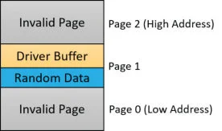<figcaption>図6-31 特殊プールの割り当ての配置</figcaption></figure>
<p>既定では末尾側の範囲外アクセスを検出します。
バッファーをページ末尾に置き、その前をランダムなパターンで埋めます。
Driver Verifier Manager では先頭より手前へのアクセスを検出する設定を選べませんが、レジストリの <code>HKLM\\SYSTEM\\CurrentControlSet\\Control\\Session Manager\\Memory Management</code> に DWORD 値 <code>PoolTagOverruns</code> を追加し、<code>0</code> に設定できます。
あるいは <code>Gflags.exe</code> の「Kernel Special Pool Tag」で、既定の「Verify End」の代わりに「Verify Start」を選べます。
先頭側を検査する場合、バッファーはページ末尾ではなく先頭に置かれます。</p>
<p>末尾側を検査する設定でも、先頭側への不正な書き込みをある程度検出できます。
ドライバーがバッファーを解放したとき、Driver Verifier はその手前に書いたパターンが変わっていないか調べます。
変化があれば、ドライバーがバッファーの先頭より手前に書き込んだことになります。</p>
<p>特殊プールは、割り当てと解放を行う際の IRQL が適切かも確認します。
たとえば DPC／ディスパッチレベル以上で、ページアウト可能なメモリを割り当てる誤りを検出します。</p>
<p>同じレジストリキーに DWORD 値 <code>PoolTag</code> を追加し、特殊プールを使う割り当てタグを指定することもできます。
ドライバーそのものを検証対象にしていなくても、割り当てのタグが指定値と一致すれば、特殊プールから割り当てます。
<code>0x2a</code>、つまりワイルドカード <code>*</code> を指定すると、十分な仮想メモリと物理メモリがある限り、ドライバーのすべての割り当てが特殊プールの対象になります。
空きページが不足すれば、通常のプールに戻ります。</p>
<h4 id="プールの追跡">プールの追跡</h4>
<p>プールの追跡を有効にすると、メモリマネージャーはドライバーのアンロード時に、割り当てたメモリをすべて解放したか調べます。
未解放の割り当てがあればシステムを停止し、原因のドライバーを示します。
Driver Verifier Manager の「Pool Tracking」タブでは一般的なプール統計も確認できます。
ウィザードの最初の画面で「Display Information About the Currently Verified Drivers」を選び、次へ2回進むと表示されます。</p></section><section class="page" id="page-574" aria-label="page-574"><p>カーネルデバッガーの <code>!verifier</code> でも、Driver Verifier Manager より詳しい情報を確認できます。</p>
<p>プールの追跡と特殊プールは、<code>ExAllocatePoolWithTag</code> のような明示的な割り当てだけでなく、内部でプールから割り当てる API も対象にします。
たとえば <code>IoAllocateMdl</code>、<code>IoAllocateIrp</code> などの IRP 割り当て関数、各種の <code>Rtl</code> 文字列 API、<code>IoSetCompletionRoutineEx</code> です。</p>
<p>プールの追跡では、クォータへの計上も検証します。
<code>ExAllocatePoolWithQuotaTag</code> は、割り当てたバイト数を現在のプロセスのプールクォータに計上します。
DPC は任意のプロセスのコンテキストで実行され得るため、DPC ルーチンからこの関数を呼ぶと、どのプロセスに計上されるか分かりません。
そこで、この項目は DPC ルーチンからの呼び出しを検査します。</p>
<p>Driver Verifier は、I/O が完了した後も固定されたままのメモリページを追跡することもできます。
この場合、停止コードは <code>PROCESS_HAS_LOCKED_PAGES</code> ではなく <code>DRIVER_LEFT_LOCKED_PAGES_IN_PROCESS</code> です。
後者では、原因のドライバーと、ページを固定した関数の両方が分かります。</p>
<h4 id="Force-IRQL-Checking">Force IRQL Checking</h4>
<p>デバイスドライバーのよくある不具合の一つは、IRQL が高いときに、ページアウト可能なデータやコードにアクセスすることです。
IRQL が DPC／ディスパッチレベル以上では、メモリマネージャーはページフォールトを処理できません。
対象のページがたまたま物理メモリにあれば、システムはこの誤りを検出できない場合があります。
一方、ページアウトされていれば、システムは <code>IRQL_NOT_LESS_OR_EQUAL</code> で停止します。現在の IRQL が、ページアウト可能なメモリへのアクセスに許されるレベル以下ではないという意味です。</p>
<p>「Force IRQL Checking」を選ぶと、この不具合を再現しやすくなります。
検証対象のドライバーが IRQL を引き上げるたびに、Driver Verifier は <code>MiTrimAllSystemPagableMemory</code> を使い、ページアウト可能なカーネルモードのコードとデータをシステムのワーキングセットから外します。
高い IRQL でそのメモリにアクセスすると違反が検出され、停止時に原因のドライバーが示されます。</p>
<p>もう一つのよくある誤りは、ページアウト可能なデータ構造に同期オブジェクトを置き、そのオブジェクトを待つことです。
ディスパッチャーは高い IRQL でアクセスするため、同期オブジェクトをページアウト可能なメモリに置くとシステムが停止するおそれがあります。
Driver Verifier は <code>KTIMER</code>、<code>KMUTEX</code>、<code>KSPIN_LOCK</code>、<code>KEVENT</code>、<code>KSEMAPHORE</code>、<code>ERESOURCE</code>、<code>FAST_MUTEX</code> の配置を検査します。</p>
<h4 id="Low-Resources-Simulation">Low Resources Simulation</h4>
<p>この項目を有効にすると、Driver Verifier は、検証対象のドライバーが行うメモリ割り当てをランダムに失敗させます。
以前は、カーネルメモリは常に確保でき、枯渇してもどうせシステムが停止するので対処は不要だと想定して書かれたドライバーが多くありました。</p></section><section class="page" id="page-575" aria-label="page-575"><p>しかし、メモリ不足は一時的な場合もあり、モバイル端末では大型のマシンほどリソースに余裕がありません。
そのため、ドライバーはカーネルメモリ不足による割り当て失敗を正しく処理する必要があります。</p>
<p>ランダムな失敗の対象になるのは、<code>ExAllocatePool*</code>、<code>MmProbeAndLockPages</code>、<code>MmMapLockedPagesSpecifyCache</code>、<code>MmMapIoSpace</code>、<code>MmAllocateContiguousMemory</code>、<code>MmAllocatePagesForMdl</code>、<code>IoAllocateIrp</code>、<code>IoAllocateMdl</code>、<code>IoAllocateWorkItem</code>、<code>IoAllocateErrorLogEntry</code>、<code>IoSetCompletionRoutineEx</code>、およびプールから割り当てる各種の <code>Rtl</code> 文字列 API です。
カーネルの GDI 関数による一部の割り当ても失敗させます。完全な一覧は WDK のドキュメントを参照してください。</p>
<p><code>verifier.exe</code> のコマンドラインオプションでは次の条件を変更できます。</p>
<ul>
<li><strong>割り当てが失敗する確率</strong>：既定では6％です。</li>
<li><strong>対象のアプリケーション</strong>：既定ではすべてです。</li>
<li><strong>対象のプールタグ</strong>：既定ではすべてです。</li>
<li><strong>失敗を発生させるまでの待ち時間</strong>：既定では起動から7分です。メモリ不足がドライバーのロードを妨げるおそれのある、初期化の重要な時間帯を過ぎるまで待ちます。</li>
</ul>
<p>待ち時間が過ぎると、Driver Verifier は検証対象のドライバーの割り当て呼び出しをランダムに失敗させます。
ドライバーが失敗を正しく処理しなければ、システムの異常停止として現れる可能性があります。</p>
<h4 id="Systematic-Low-Resources-Simulation">Systematic Low Resources Simulation</h4>
<p>この項目も、カーネルや、ネットワークドライバーが使う <code>Ndis.sys</code> への一部の呼び出しを失敗させます。
ただし、失敗を発生させた箇所のコールスタックを調べ、ドライバーが正しく処理したスタックでは、同じ失敗を繰り返しません。
開発者は、報告された問題を一つずつ修正し、次の問題へ進めます。
コールスタックの検査には比較的コストがかかるので、この設定で複数のドライバーを同時に検証することは推奨されません。</p>
<h4 id="使用中の構造体を含むメモリの解放">使用中の構造体を含むメモリの解放</h4>
<p>Driver Verifier のその他の検査項目には、使用中のシステム構造体を含むプール領域が解放されたことを検出するものがあります。
たとえば、次の誤りを検査します。</p>
<ul>
<li><strong>作業項目を残したまま解放</strong>：<code>IoQueueWorkItem</code> でキューに入れた作業項目があるブロックを、<code>ExFreePool</code> で解放する。</li>
<li><strong>リソースを残したまま解放</strong>：<code>ExDeleteResource</code> で <code>ERESOURCE</code> を破棄する前に、<code>ExFreePool</code> を呼ぶ。</li>
<li><strong>ルックアサイドリストを残したまま解放</strong>：<code>ExDeleteNPagedLookasideList</code> または <code>ExDeletePagedLookasideList</code> でリストを削除する前に、<code>ExFreePool</code> を呼ぶ。</li>
</ul></section><section class="page" id="page-576" aria-label="page-576"><p>検証を有効にすると、個別には有効化も無効化もできない自動検査も行われます。
検出対象には次のような誤りがあります。</p>
<ul>
<li>不適切なフラグを持つ MDL に対して、<code>MmProbeAndLockPages</code> や <code>MmProbeAndLockProcessPages</code> を呼ぶ。たとえば、<code>MmBuildMdlForNonPagedPool</code> で用意した MDL に対し、<code>MmProbeAndLockPages</code> を呼ぶのは誤りです。</li>
<li>不適切なフラグを持つ MDL に対して <code>MmMapLockedPages</code> を呼ぶ。たとえば、すでにシステムアドレスへマップされた MDL や、固定されていない MDL を渡す場合です。</li>
<li><code>IoBuildPartialMdl</code> で作った部分 MDL に対して <code>MmUnlockPages</code> や <code>MmUnmapLockedPages</code> を呼ぶ。</li>
<li>システムアドレスへマップされていない MDL に対して <code>MmUnmapLockedPages</code> を呼ぶ。</li>
<li>イベントやミューテックスなどの同期オブジェクトを <code>NonPagedPoolSession</code> のメモリから割り当てる。</li>
</ul>
<p>多くのドライバーでは、初めて Driver Verifier を使って動かした段階で不具合が見つかりました。
Driver Verifier は開発者の検証とデバッグに役立ち、Windows で動作するカーネルモードコード全体の品質改善につながっています。</p>
<h3 id="プラグアンドプレイマネージャー">プラグアンドプレイマネージャー</h3>
<p><strong>PnP マネージャー</strong>は、Windows がハードウェア構成の変化を認識し、対応するための主要コンポーネントです。
利用者はハードウェアの詳細や手動での設定方法を知らなくても、デバイスを追加、取り外しできます。
たとえば、稼働中の Windows ノート PC をドッキングステーションに接続すると、PnP マネージャーがドックの追加デバイスを自動で検出し、使えるようにします。</p>
<p>プラグアンドプレイには、ハードウェア、ドライバー、OS の協調が必要です。
バスに接続されたデバイスを列挙し識別するための業界標準が、Windows のプラグアンドプレイの基盤です。
たとえば USB 規格は、USB バス上のデバイスが自身を識別する方法を定めています。
この基盤の上で、Windows は次の機能を提供します。</p>
<ul>
<li><strong>デバイスの自動認識</strong>：起動時に接続済みのデバイスを列挙し、稼働中にはデバイスの追加や取り外しを検出します。</li>
<li><strong>ハードウェアリソースの割り当て</strong>：PnP マネージャーは、デバイスが必要とする割り込み、I/O メモリ、I/O レジスタ、バス固有のリソースなどの要件を集めます。各デバイスが動作に必要なリソースを得られるよう、<strong>リソース調停</strong>で割り当てを決めます。起動時の割り当て後にデバイスが追加された場合は、その要件を満たすよう、既存の割り当てを変更できる必要があります。</li>
</ul></section><section class="page" id="page-577" aria-label="page-577"><ul>
<li><strong>適切なドライバーのロード</strong>：PnP マネージャーはデバイスの識別情報から、対応するドライバーがインストール済みか調べます。あれば I/O マネージャーにロードを指示します。なければ、カーネルモードの PnP マネージャーがユーザーモードの PnP マネージャーにインストールを依頼します。ドライバーを探す際に、利用者の操作が必要になる場合もあります。</li>
<li><strong>構成変更の通知</strong>：アプリケーションやドライバーは、動作に必要なハードウェアが存在するか、追加されたか、取り外されたかを通知するよう要求できます。</li>
<li><strong>デバイス状態の保存</strong>：デバイス状態の保存先を提供し、システムのセットアップ、アップグレード、移行、オフラインイメージの管理に関与します。</li>
<li><strong>ネットワーク接続デバイスのサポート</strong>：専用のバスドライバーがネットワークをバスとして扱い、ネットワーク越しに利用するプロジェクターやプリンターなどのデバイスノードを作れます。</li>
</ul>
<h3 id="プラグアンドプレイの対応範囲">プラグアンドプレイの対応範囲</h3>
<p>Windows はプラグアンドプレイの完全なサポートを目指しますが、どこまで使えるかは、接続したデバイスとインストール済みのドライバーによって決まります。
デバイスかドライバーが一つでも未対応なら、システム全体で使えるプラグアンドプレイ機能が制限されることがあります。
未対応のドライバーのために、別のデバイスが使えなくなる場合もあります。
表6-6に組み合わせごとの結果を示します。</p>
<div class="table-scroll" role="region" tabindex="0" aria-label="表。横にスクロールできます"><table><caption>表6-6 デバイスとドライバーのプラグアンドプレイ対応</caption><thead><tr><th>デバイス</th><th>対応ドライバー</th><th>非対応ドライバー</th></tr></thead><tbody>
<tr><th>プラグアンドプレイ対応</th><td>全面的に利用可能</td><td>利用不可</td></tr>
<tr><th>プラグアンドプレイ非対応</th><td>一部を利用できる場合がある</td><td>利用不可</td></tr>
</tbody></table></div>
<p>旧式の ISA サウンドカードのように、自動検出に対応しないデバイスがあります。
OS がハードウェアの物理的な接続先を把握できないため、ノート PC のドックからの取り外しや、スリープ、休止状態への移行などが許可されません。
ただし、対応するプラグアンドプレイドライバーを手動でインストールすれば、少なくとも PnP マネージャーの指示に従ってリソースを割り当てられます。</p>
<p>非対応のドライバーには、Windows NT 4 などで動いた旧式のドライバーが含まれます。
後の Windows でも動く場合がありますが、新しいデバイスを追加するために割り当ての変更が必要になっても、PnP マネージャーは旧式のドライバーが担当するデバイスのリソースを変更できません。
たとえば、あるデバイスが I/O メモリ範囲 A と B のどちらでも使え、起動時に A を割り当てたとします。
その後、A しか使えないデバイスを接続しても、PnP マネージャーは最初のデバイスのドライバーに B へ移るよう指示できません。
二つ目のデバイスは必要なリソースを取得できないため、システムで使えません。</p></section><section class="page" id="page-578" aria-label="page-578"><p>旧式のドライバーは、スリープや休止状態への移行を妨げることもあります（後述の「電源マネージャー」を参照）。</p>
<h3 id="デバイスの列挙">デバイスの列挙</h3>
<p>デバイスの列挙は、システムの起動時、休止状態からの復帰時、または明示的に指示されたときに行われます。
たとえば、デバイスマネージャーで「ハードウェア変更のスキャン」を選ぶと実行されます。
PnP マネージャーは<strong>デバイスツリー</strong>を作り、以前の列挙で保存したツリーがあれば比較します。
起動時や休止状態からの復帰時は、比較対象のツリーは空です。
新たに見つかったデバイスには適切なドライバーをロードし、取り外されたデバイスについてはドライバーに通知します。</p>
<p>列挙は、コンピューター全体を表す <code>Root</code> という仮想バスドライバーから始まります。
<code>Root</code> は、プラグアンドプレイに対応していないドライバーと HAL のバスドライバーとして働きます。
HAL はバスドライバーとして、マザーボードに直接接続されたデバイスや、バッテリーなどのシステムコンポーネントを報告します。
ただし、HAL が直接列挙するのではなく、セットアップ時にレジストリに記録されたハードウェア情報を使って、主バス（多くの場合は PCI バス）、バッテリー、ファンなどを検出します。</p>
<p>主バスのドライバーは、そのバスに接続されたデバイスを列挙します。
別のバスが見つかれば、PnP マネージャーはそのドライバーを初期化します。
新たに初期化されたドライバーは、さらに下位のバスや、そこに接続されたデバイスを検出できます。
すべてのデバイスを検出して構成するまで、列挙、必要に応じたドライバーのロード、下位バスの列挙を繰り返します。</p>
<p>バスドライバーからデバイスの報告を受けると、PnP マネージャーは、デバイス間の接続関係を表すツリーを内部で構築します。
ツリーの各ノードをデバイスノード（devnode）と呼びます。
各ノードには、デバイスを表すデバイスオブジェクトの情報と、PnP マネージャーが格納したほかのプラグアンドプレイ情報が入ります。
図6-32は、システムの主バスである PCI バスに、USB、ISA、SCSI の各バスが接続された例です。</p>
<figure><figcaption>図6-32 デバイスツリーの例</figcaption></figure></section><section class="page" id="page-579" aria-label="page-579"><p>デバイスマネージャーは、スタートメニューの「管理ツール」にある「コンピューターの管理」から開けます。
コントロールパネルの「システム」にあるリンクからも開けます。
既定ではシステムに存在するデバイスの一覧が表示されます。
「表示」メニューで「接続別デバイス」を選ぶと、デバイスツリー上の接続関係を確認できます（図6-33）。</p>
<figure>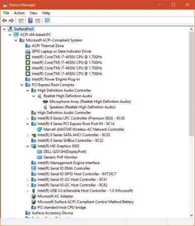<figcaption>図6-33 デバイスマネージャーの「接続別デバイス」表示</figcaption></figure>
<h4 id="カーネルデバッガーでデバイスツリーを調べる">カーネルデバッガーでデバイスツリーを調べる</h4>
<p>デバイスマネージャーより詳細な情報は、カーネルデバッガーの <code>!devnode</code> で確認できます。
引数に <code>0 1</code> を指定すると、デバイスツリー内部の devnode 構造体が表示されます。
インデントはノード間の階層関係を表します。</p>
<pre>lkd&gt; !devnode 0 1
Dumping IopRootDeviceNode (= 0x85161a98)
DevNode 0x85161a98 for PDO 0x84d10390
InstancePath is &quot;HTREE\ROOT\0&quot;
State = DeviceNodeStarted (0x308)
Previous State = DeviceNodeEnumerateCompletion (0x30d)
DevNode 0x8515bea8 for PDO 0x8515b030
DevNode 0x8515c698 for PDO 0x8515c820
InstancePath is &quot;Root\ACPI_HAL\0000&quot;
State = DeviceNodeStarted (0x308)</pre></section><section class="page" id="page-580" aria-label="page-580"><pre>Previous State = DeviceNodeEnumerateCompletion (0x30d)
DevNode 0x84d1c5b0 for PDO 0x84d1c738
InstancePath is &quot;ACPI_HAL\PNP0C08\0&quot;
ServiceName is &quot;ACPI&quot;
State = DeviceNodeStarted (0x308)
Previous State = DeviceNodeEnumerateCompletion (0x30d)
DevNode 0x85ebf1b0 for PDO 0x85ec0210
InstancePath is &quot;ACPI\GenuineIntel_-_x86_Family_6_Model_15\_0&quot;
ServiceName is &quot;intelppm&quot;
State = DeviceNodeStarted (0x308)
Previous State = DeviceNodeEnumerateCompletion (0x30d)
DevNode 0x85ed6970 for PDO 0x8515e618
InstancePath is &quot;ACPI\GenuineIntel_-_x86_Family_6_Model_15\_1&quot;
ServiceName is &quot;intelppm&quot;
State = DeviceNodeStarted (0x308)
Previous State = DeviceNodeEnumerateCompletion (0x30d)
DevNode 0x85ed75c8 for PDO 0x85ed79e8
InstancePath is &quot;ACPI\ThermalZone\THM_&quot;
State = DeviceNodeStarted (0x308)
Previous State = DeviceNodeEnumerateCompletion (0x30d)
DevNode 0x85ed6cd8 for PDO 0x85ed6858
InstancePath is &quot;ACPI\pnp0c14\0&quot;
ServiceName is &quot;WmiAcpi&quot;
State = DeviceNodeStarted (0x308)
Previous State = DeviceNodeEnumerateCompletion (0x30d)
DevNode 0x85ed7008 for PDO 0x85ed6730
InstancePath is &quot;ACPI\ACPI0003\2&amp;daba3ff&amp;2&quot;
ServiceName is &quot;CmBatt&quot;
State = DeviceNodeStarted (0x308)
Previous State = DeviceNodeEnumerateCompletion (0x30d)
DevNode 0x85ed7e60 for PDO 0x84d2e030
InstancePath is &quot;ACPI\PNP0C0A\1&quot;
ServiceName is &quot;CmBatt&quot;
...</pre>
<p>各 devnode の <code>InstancePath</code> は、<code>HKLM\\SYSTEM\\CurrentControlSet\\Enum</code> の下にある、そのデバイスの列挙用レジストリキーの名前です。
<code>ServiceName</code> は、<code>HKLM\\SYSTEM\\CurrentControlSet\\Services</code> の下にある、ドライバーのレジストリキーに対応します。
割り込み、ポート、メモリなど、各 devnode に割り当てたリソースも表示するには、<code>!devnode</code> に <code>0 3</code> を指定します。</p>
<h3 id="デバイススタック">デバイススタック</h3>
<p>PnP マネージャーが devnode を作る際、そのノードを構成する各層の管理と接続関係を表すために、ドライバーオブジェクトとデバイスオブジェクトが作られます。
この接続関係を<strong>デバイススタック</strong>と呼びます（「IRP がデバイススタックを通る流れ」を参照）。
デバイスオブジェクトとそれを担当するドライバーの組を、順に並べたものと考えられます。各スタックは下から上へ組み立てます。</p>
<p>図6-34（図6-6の再掲）は、同じ物理デバイスを管理する七つのデバイスオブジェクトで構成された devnode の例です。
各 devnode には少なくとも PDO と FDO の二つのデバイスオブジェクトがあり、ほかのオブジェクトが加わることもあります。</p></section><section class="page" id="page-581" aria-label="page-581"><figure><figcaption>図6-34 デバイスノードのデバイススタック</figcaption></figure>
<p>デバイススタックには、次のオブジェクトが含まれます。</p>
<ul>
<li><strong>物理デバイスオブジェクト（PDO）</strong>：バスドライバーが列挙中にバス上のデバイスを報告すると、PnP マネージャーの指示に従い、バスドライバーが作ります。デバイスへの物理インターフェイスを表し、必ずスタックの最下層にあります。</li>
<li><strong>下位フィルターのフィルターデバイスオブジェクト（FiDO）</strong>：必要に応じて、一つ以上を PDO と FDO の間に置きます。「下位」は FDO を基準とした位置です。たとえばバスフィルターは、FDO からバスドライバーへ向かう IRP を途中で受け取れます。</li>
<li><strong>機能デバイスオブジェクト（FDO）</strong>：検出したデバイスを管理するため、PnP マネージャーがロードした機能ドライバーが、一つだけ作ります。デバイスの論理インターフェイスを表し、機能ドライバーはデバイスの機能を最も詳しく把握しています。FDO が表すデバイスに別のデバイスが接続される場合、機能ドライバーはバスドライバーも兼ねられます。通常は、アプリケーションやほかのドライバーがデバイスを開いて操作できるよう、対応する PDO にデバイスインターフェイス（実質的には名前）を登録します。機能ドライバーをクラスドライバーまたはポートドライバーとミニポートドライバーに分け、FDO の I/O を分担する場合もあります。</li>
<li><strong>上位フィルターの FiDO</strong>：必要に応じて、一つ以上を FDO の上に置きます。FDO 宛ての IRP を、FDO より先に受け取ります。</li>
</ul>
<p><strong>注：</strong>図6-34では役割を区別しやすいように名前を分けていますが、すべて <code>DEVICE_OBJECT</code> 構造体のインスタンスです。</p>
<p>デバイススタックは I/O マネージャーの階層化機能を使い、下から上へ組み立てます。
IRP は上から下へ流れますが、「IRP がデバイススタックを通る流れ」で説明したように、どの層でも完了させられます。</p></section><section class="page" id="page-582" aria-label="page-582"><h4 id="デバイススタックを構成するドライバーの特定">デバイススタックを構成するドライバーの特定</h4>
<p>PnP マネージャーは、表6-7に示す三つのレジストリキーとそのサブキーから、デバイススタックを構成するドライバーを特定します。
表の <code>CCS</code> は <code>CurrentControlSet</code> の略です。</p>
<div class="table-scroll" role="region" tabindex="0" aria-label="表。横にスクロールできます"><table><caption>表6-7 プラグアンドプレイドライバーのロードに使うレジストリキー</caption><thead><tr><th>レジストリキー</th><th>略称</th><th>内容</th></tr></thead><tbody>
<tr><td><code>HKLM\\System\\CCS\\Enum</code></td><td>ハードウェアキー</td><td>認識済みのハードウェアデバイスの設定。</td></tr>
<tr><td><code>HKLM\\System\\CCS\\Control\\Class</code></td><td>クラスキー</td><td>デバイスの種類ごとの設定。</td></tr>
<tr><td><code>HKLM\\System\\CCS\\Services</code></td><td>ソフトウェアキー</td><td>ドライバーの設定。</td></tr>
</tbody></table></div>
<p>バスドライバーは、列挙で新しい物理デバイスを見つけると、それを表す PDO を作ります。
バス上で変化を検出したことは、<code>IoInvalidateDeviceRelations</code> に PDO と列挙値 <code>BusRelations</code> を渡して PnP マネージャーに知らせます。関数の詳細は WDK を参照してください。
PnP マネージャーは IRP を使い、バスドライバーにデバイスの識別子を問い合わせます。</p>
<p>識別子はバスごとに形式が異なります。
たとえば USB デバイスでは、製造元を表すベンダー ID（VID）と、製造元が製品に割り当てた製品 ID（PID）を使います。
PCI デバイスでは、ベンダー ID と、そのベンダー内で機種を一意に識別するデバイス ID を使います。任意の項目もあり、形式の詳細は WDK を参照してください。
プラグアンドプレイでは、これらを組み合わせたものを<strong>デバイス ID</strong>と呼びます。
同じ機種の個体を区別するため、PnP マネージャーは<strong>インスタンス ID</strong>も問い合わせます。
この ID は、USB ポートのようなバス上の相対位置や、シリアル番号のようなグローバルに一意の識別情報を表します。</p>
<p>PnP マネージャーは、デバイス ID とインスタンス ID を組み合わせた<strong>デバイスインスタンス ID</strong>（DIID）を使って、表6-7のハードウェアキーの下からデバイスのキーを探します。
サブキーの形式は <code>&lt;列挙子&gt;\&lt;デバイス ID&gt;\&lt;インスタンス ID&gt;</code> です。
列挙子はバスドライバーを、デバイス ID は機種を、インスタンス ID は同じ機種の個体を識別します。</p>
<p>図6-35は Intel のディスプレイアダプターの列挙用サブキーです。
デバイスの説明のほかに、インストール時に INF ファイルから取得した <code>Service</code> や <code>ClassGUID</code> が入り、ドライバーの特定に使われます。</p>
<ul>
<li><code>Service</code> の値に対応するソフトウェアキーを調べると、<code>ImagePath</code> にドライバーの SYS ファイルのパスがあります。図6-36では、図6-35の <code>igfx</code> に対応するサブキーを示します。PnP マネージャーは未ロードならドライバーをロードし、デバイス追加ルーチンを呼びます。ドライバーはそのルーチンで FDO を作ります。</li>
<li><code>LowerFilters</code> があれば、下位フィルターとしてロードするドライバー名が複数文字列値に入っています。各ドライバーの設定はソフトウェアキーにあり、PnP マネージャーは <code>Service</code> のドライバーより先にロードします。</li>
</ul></section><section class="page" id="page-583" aria-label="page-583"><figure>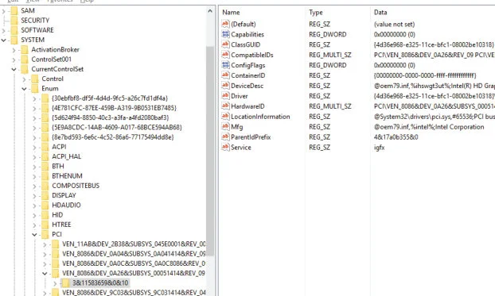<figcaption>図6-35 ハードウェアキーのサブキーの例</figcaption></figure>
<figure><figcaption>図6-36 ソフトウェアキーのサブキーの例</figcaption></figure>
<ul>
<li><code>UpperFilters</code> があれば、<code>LowerFilters</code> と同様に、ソフトウェアキーで参照するドライバー名が並んでいます。PnP マネージャーは <code>Service</code> のドライバーをロードした後、これらを上位フィルターとしてロードします。</li>
<li><code>ClassGUID</code> は、ディスプレイ、キーボード、ディスクといったデバイスの種類を表し、表6-7のクラスキーの下にあるサブキーを指します。このサブキーの設定は、その種類のデバイスのドライバーすべてに適用されます。<code>LowerFilters</code> や <code>UpperFilters</code> があれば、個別デバイスのハードウェアキーにある同名の値と同様に扱います。そのため、たとえば機種やベンダーにかかわらず、キーボード全体に同じ上位フィルターをロードできます。</li>
</ul>
<p>図6-37は、キーボードのクラスキーです。
表示名は「Keyboard」ですが、クラスを識別するのは GUID で、その値はインストール用 INF ファイルで指定されます。
<code>UpperFilters</code> には、すべてのキーボードの devnode にロードされる、システム標準のキーボードクラスドライバーが記録されています。
また、<code>IconPath</code> は、デバイスマネージャーでキーボードの種類に使うアイコンを指定します。</p></section><section class="page" id="page-584" aria-label="page-584"><figure><figcaption>図6-37 キーボードのクラスキー</figcaption></figure>
<p>一つの devnode のドライバーは、次の順にロードされます。</p>
<ol>
<li>バスドライバーをロードし、PDO を作ります。</li>
<li>ハードウェアのインスタンスキーにある下位フィルターを、複数文字列値の記載順にロードし、各 FiDO を作ります。</li>
<li>該当するクラスキーにある下位フィルターを、記載順にロードし、各 FiDO を作ります。</li>
<li><code>Service</code> にあるドライバーをロードし、FDO を作ります。</li>
<li>ハードウェアのインスタンスキーにある上位フィルターを、記載順にロードし、各 FiDO を作ります。</li>
<li>該当するクラスキーにある上位フィルターを、記載順にロードし、各 FiDO を作ります。</li>
</ol>
<p>複合機や、カメラと音楽プレーヤーを内蔵した携帯電話のように、物理デバイス一つに複数の機能がある場合、Windows は devnode に<strong>コンテナー ID</strong>を関連付けられます。
コンテナー ID は物理デバイスの個体ごとに一意の GUID です。
その機器の各機能を表す devnode は、図6-38のように同じコンテナー ID を共有します。</p>
<figure><figcaption>図6-38 PnP マネージャーが一意の ID で識別する複合機</figcaption></figure></section><section class="page" id="page-585" aria-label="page-585"><p>インスタンス ID と同じように、コンテナー ID も対象のハードウェアのバスドライバーが報告するプロパティです。
デバイスの列挙時には、同じ PDO に関連付けられたすべての devnode がその ID を共有します。
Windows は PnP-X、Bluetooth、USB など多くのバスを標準でサポートするため、大半のドライバーはバス固有の ID を返すだけで済みます。Windows がその値からコンテナー ID を生成します。
ほかの種類のデバイスやバスでは、ドライバーがソフトウェアで独自の ID を生成できます。</p>
<p>ドライバーがコンテナー ID を提供しない場合でも、バスの接続構成を ACPI などで問い合わせられれば、Windows はどのデバイスが同じ機器に属するかを推定できます。
あるデバイスが別のデバイスの子か、取り外しや稼働中の抜き差しが可能か、マザーボード上の内部部品とは違って利用者が手を触れられるかを手掛かりに、複数の機能を持つ機器に対応したコンテナー ID を割り当てます。</p>
<p>このグループ化の効果は、コントロールパネルの「デバイスとプリンター」で確認できます。
複合機のスキャナー、プリンター、FAX を別々に並べるのではなく、一つの項目として表示できます。
図6-39では、HP 6830 の三つの機能が一台の機器として表示されています。</p>
<figure><figcaption>図6-39 コントロールパネルの「デバイスとプリンター」</figcaption></figure>
<h4 id="デバイスマネージャーで-devnode-の詳細を調べる">デバイスマネージャーで devnode の詳細を調べる</h4>
<p>デバイスマネージャーでデバイスのプロパティを開き、「詳細」タブを選ぶと、デバイスインスタンス ID、ハードウェア ID、サービス名、フィルター、電源管理機能などを確認できます。
次の画面は、ドロップダウンリストを開き、表示できる情報の種類を確認した例です。</p></section><section class="page" id="page-586" aria-label="page-586"><figure><figcaption>devnode の詳細情報を選ぶ</figcaption></figure>
<h3 id="ドライバーによるプラグアンドプレイのサポート">ドライバーによるプラグアンドプレイのサポート</h3>
<p>プラグアンドプレイに対応するドライバーは、プラグアンドプレイのディスパッチルーチン（<code>IRP_MJ_PNP</code>）、電源管理のディスパッチルーチン（<code>IRP_MJ_POWER</code>）、デバイス追加ルーチンを実装します。
電源管理については後述の「電源マネージャー」を参照してください。
バスドライバーが対応する要求は、機能ドライバーやフィルタードライバーが扱う要求とは異なります。
たとえば、起動時に PnP マネージャーがデバイスを列挙するときは、PnP IRP でバスドライバーに問い合わせ、それぞれのバス上で見つかったデバイスの情報を取得します。</p>
<p>機能ドライバーとフィルタードライバーは、デバイス追加ルーチンで管理の準備をしますが、まだハードウェアとは通信しません。
プラグアンドプレイのディスパッチルーチンに、PnP マネージャーからデバイスの開始要求（マイナーコード <code>IRP_MN_START_DEVICE</code>）が届くまで待ちます。
PnP マネージャーは、要求を送る前にリソース調停を行い、デバイスへの割り当てを決めます。
開始要求には割り当ての情報が含まれ、受け取ったドライバーは、指定されたリソースを使うようにデバイスを構成します。
開始が済む前にアプリケーションが開こうとすると、デバイスが存在しないことを示すエラーが返ります。</p>
<p>開始後も、PnP マネージャーはデバイスの取り外しやリソースの再割り当てに必要な要求を送れます。
たとえば、利用者がタスクバーの通知領域の USB アイコンから図6-40の取り外しツールを開き、USB フラッシュメモリの取り出しを指示したとします。
PnP マネージャーは、そのデバイスの PnP 通知に登録したアプリケーションへ、取り外しの可否を問い合わせます。
通常、アプリケーションはハンドルを指定して通知に登録し、この通知を受けるとハンドルを閉じます。</p></section><section class="page" id="page-587" aria-label="page-587"><p>取り外しに反対するアプリケーションがなければ、PnP マネージャーはデバイスを担当するドライバーに <code>IRP_MN_QUERY_REMOVE_DEVICE</code> を送ります。
ドライバーは取り外しを拒否することも、保留中の I/O を完了させ、その後に届く要求を拒否し始めることもできます。
ドライバーが同意し、開いているハンドルが残っていなければ、PnP マネージャーは <code>IRP_MN_REMOVE_DEVICE</code> を送り、デバイスへのアクセスを停止し、そのために割り当てたリソースを解放するよう求めます。</p>
<figure><figcaption>図6-40 デバイスの取り外しツール</figcaption></figure>
<p>デバイスのリソースを再割り当てする場合、PnP マネージャーはまず <code>IRP_MN_QUERY_STOP_DEVICE</code> を送り、動作を一時停止できるか問い合わせます。
ドライバーはデータの消失や破損につながるなら拒否し、問題がなければ同意します。
同意した場合は、保留中の I/O を完了させ、途中で中止してやり直すことのできない新たな I/O は始めません。
通常は新たな要求をキューに入れ、アクセス中のアプリケーションが再割り当てを意識しなくて済むようにします。
次に PnP マネージャーは <code>IRP_MN_STOP_DEVICE</code> を送り、停止後に別のリソースを割り当てるよう指示し、再度デバイスの開始要求を送れます。</p>
<p>これらの要求は、デバイスの状態を図6-41の規則に従って変化させます。
図は機能ドライバーの状態機械を示します。バスドライバーの状態機械はさらに複雑です。
各遷移に付いた名前は、マイナー IRP の定数から <code>IRP_MN_</code> を除いたものです。</p>
<p>まだ説明していない要求に <code>IRP_MN_SURPRISE_REMOVAL</code> があります。
たとえば、取り外しツールを使わずに PCMCIA カードを抜いた場合や、デバイスが故障した場合に送られます。
デバイスはもう接続されていないため、ドライバーはただちにアクセスをすべてやめ、保留中の I/O をキャンセルします。</p></section><section class="page" id="page-588" aria-label="page-588"><figure>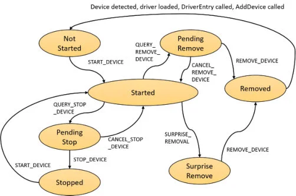<figcaption>図6-41 プラグアンドプレイによるデバイスの状態遷移</figcaption></figure>
<h3 id="プラグアンドプレイドライバーのインストール">プラグアンドプレイドライバーのインストール</h3>
<p>ドライバーがインストールされていないデバイスに出会うと、PnP マネージャーはユーザーモードの PnP マネージャーに処理を任せます。
起動中に検出した場合は devnode を作りますが、ユーザーモードの PnP マネージャーが起動するまでロードを延期します。
このサービスは、通常の <code>Svchost.exe</code> プロセスにホストされる <code>Umpnpmgr.dll</code> で実装されています。</p>
<p>図6-42はドライバーのインストールに関わるコンポーネントを示します。
濃い色は通常システムが提供するコンポーネント、薄い色はドライバーのインストールファイルに含まれるコンポーネントです。
まずバスドライバーが列挙したデバイスのデバイス ID を PnP マネージャーに報告します（1）。
PnP マネージャーは対応する機能ドライバーがあるかレジストリを調べ、見つからなければ、そのデバイス ID をユーザーモードの PnP マネージャーに通知します（2）。</p>
<p>ユーザーモードの PnP マネージャーは、まず利用者の操作なしでインストールを試みます。
操作を求めるダイアログが必要で、ログオン中の利用者に管理者権限があれば、<code>Rundll32.exe</code> でハードウェアのインストールウィザード（<code>%SystemRoot%\\System32\\Newdev.dll</code>）を実行します（3）。
この <code>Rundll32.exe</code> は、従来の <code>.cpl</code> 形式のコントロールパネル項目もホストするプログラムです。
操作が必要なのに管理者権限がないか、誰もログオンしていなければ、権限を持つ利用者がログオンするまで延期します。</p>
<p>ウィザードは <code>Setupapi.dll</code> と構成マネージャーの <code>CfgMgr32.dll</code> の API を使い、デバイスに対応するドライバーの INF ファイルを探します。
ベンダーの INF を収録したインストールメディアを挿入するよう求める場合もあれば、Windows に同梱されたドライバーや Windows Update からダウンロードしたドライバーを保持するドライバーストア（<code>%SystemRoot%\\System32\\DriverStore</code>）に適切な INF が見つかる場合もあります。</p>
<p>インストールは二段階です。まずサードパーティーのドライバー開発元が、ドライバーパッケージをドライバーストアに取り込みます。</p></section><section class="page" id="page-589" aria-label="page-589"><p>次にシステムが、<code>%SystemRoot%\\System32\\Drvinst.exe</code> を通じて、ドライバーを実際にインストールします。</p>
<figure><figcaption>図6-42 ドライバーのインストールに関わるコンポーネント</figcaption></figure>
<p>新しいデバイスのドライバーを探す際には、バスドライバーからハードウェア ID と互換 ID のリストを取得します。
互換 ID は、ハードウェア ID より広い種類の機器を表します。
たとえば、あるメーカーの USB マウスに独自のボタンがあっても、専用ドライバーがなければ、汎用マウスの互換 ID に対応する Windows 標準ドライバーで、基本機能だけは利用できます。</p>
<p>これらの ID は、INF でそのハードウェアを識別する方法を列挙したものです。
リストでは、ハードウェアを最も詳しく特定する ID が先に来ます。
複数の INF が一致した場合は、次の優先順位で選びます。</p>
<ul><li>より具体的に一致するものを優先します。</li><li>デジタル署名のある INF を、署名のないものより優先します。</li><li>署名のある INF 同士なら、新しいものを優先します。</li></ul>
<p><strong>注：</strong>互換 ID で一致した場合は、機器に新しいドライバーが付属している可能性を考慮し、ウィザードがメディアの挿入を求めることがあります。</p>
<p>INF ファイルは機能ドライバーのファイルの場所を示し、レジストリの列挙キーとクラスキーを設定し、必要なファイルをコピーする手順を記述します。
クラスまたはデバイスの共同インストーラー DLL を起動するよう、ウィザードに指示する場合もあります（4）。
共同インストーラーは、デバイス設定用のダイアログを表示するなど、クラスや機器に固有の処理を行います。
最後に、devnode を構成するドライバーがロードされると、デバイススタックが組み立てられます（5）。</p></section><section class="page" id="page-590" aria-label="page-590"><h4 id="キーボードドライバーの-INF-ファイルを調べる">キーボードドライバーの INF ファイルを調べる</h4>
<p>INF を持つドライバーやソフトウェアをインストールすると、システムは INF を <code>%SystemRoot%\\Inf</code> へコピーします。
キーボードクラスドライバーの <code>Keyboard.inf</code> は常にあります。
メモ帳で開くと、次のように表示されます。セミコロン以降はコメントです。</p>
<pre>;
; KEYBOARD.INF  -- This file contains descriptions of Keyboard class devices
;
;
; Copyright (c) Microsoft Corporation.  All rights reserved.
[Version]
Signature   =&quot;$Windows NT$&quot;
Class       =Keyboard
ClassGUID   ={4D36E96B-E325-11CE-BFC1-08002BE10318}
Provider    =%MSFT%
DriverVer=06/21/2006,10.0.10586.0
[SourceDisksNames]
3426=windows cd
[SourceDisksFiles]
i8042prt.sys    = 3426
kbdclass.sys    = 3426
kbdhid.sys      = 3426
...</pre>
<p>INF は従来の INI 形式で、角括弧で囲んだセクション名の下に、キーと値を等号で結んだ行が並びます。
先頭から順番に「実行」するのではなく、一部の値が次に処理するセクションの名前を指す、ツリーに近い構造です。詳細は WDK を参照してください。</p>
<p><code>.sys</code> を検索すると、ユーザーモードの PnP マネージャーに <code>i8042prt.sys</code> と <code>kbdclass.sys</code> のインストールを指示するセクションが見つかります。</p>
<pre>...
[i8042prt_CopyFiles]
i8042prt.sys,,,0x100
[KbdClass.CopyFiles]
kbdclass.sys,,,0x100
...</pre>
<p>インストール前に、ユーザーモードの PnP マネージャーは、システムのドライバー署名ポリシーを確認します。
未署名のドライバーを遮断するか、警告を出す設定なら、ドライバーのデジタル署名を含むカタログ（拡張子 <code>.cat</code>）の場所を指す項目が、INF にあるか調べます。</p></section><section class="page" id="page-591" aria-label="page-591"><p>Microsoft の WHQL は、Windows に同梱するドライバーとハードウェアベンダーから提出されたドライバーを試験します。
合格したドライバーには Microsoft が署名します。
具体的には、実行イメージを含むドライバーファイルを表すハッシュ値を求め、Microsoft のドライバー署名用秘密鍵で署名します。
署名付きのハッシュを保存したカタログは、Windows のインストールメディアに含めるか、ドライバーに同梱できるよう提出元のベンダーに返します。</p>
<h4 id="カタログファイルを確認する">カタログファイルを確認する</h4>
<p>カタログを含むドライバーなどをインストールすると、Windows はカタログを <code>%SystemRoot%\\System32\\Catroot</code> 以下のディレクトリにコピーします。
エクスプローラーで開くと、<code>.cat</code> ファイルを含むサブディレクトリがあります。
たとえば <code>Nt5.cat</code> と <code>Nt5ph.cat</code> には、Windows のシステムファイルの署名とページのハッシュが格納されています。</p>
<p>カタログを開くと、二つのタブを持つダイアログが表示されます。
「General」にはカタログの署名の情報、「Security Catalog」には、そのカタログで署名された各コンポーネントのハッシュが表示されます。
次は Intel のオーディオドライバーのカタログで、SYS ファイルのハッシュを表示した例です。
残りのハッシュは、ドライバーに同梱された補助 DLL に対応します。</p>
<figure>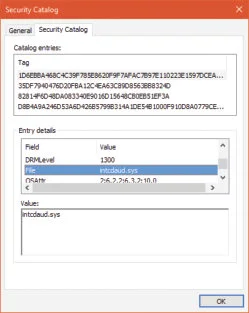<figcaption>カタログに格納されたドライバーファイルのハッシュ</figcaption></figure>
<p>インストール時には、ユーザーモードの PnP マネージャーがカタログから署名を取り出し、Microsoft のドライバー署名用公開鍵で検証します。
署名が示すハッシュと、インストールしようとしているファイルから計算したハッシュが一致すれば、そのドライバーは WHQL の試験に合格したものと確認できます。
検証に失敗した場合は、システムの署名ポリシーに従い、インストールを中止する、未署名だと利用者に警告する、または警告なしでインストールする、のいずれかになります。</p></section><section class="page" id="page-592" aria-label="page-592"><p><strong>注：</strong>セットアッププログラムが直接レジストリを設定してシステムへコピーするドライバーや、アプリケーションが動的にロードするドライバーには、PnP マネージャーの署名ポリシーは適用されません。
代わりに、Part 2 の第8章で説明するカーネルモードのコード署名ポリシーで検査します。
PnP マネージャーが自身のポリシーに照らして検証するのは、INF でインストールするドライバーだけです。</p>
<p><strong>注：</strong>ユーザーモードの PnP マネージャーは、インストールしようとしているドライバーが Windows Update の管理する保護対象ドライバーのリストにあるかも確認します。
互換性の問題や不具合が知られているドライバーはこのリストに追加され、インストールが阻止されます。その際、利用者に警告が表示されます。</p>
<h3 id="ドライバーのロードとインストール">ドライバーのロードとインストール</h3>
<p>前節で説明したハードウェア用ドライバーの大半は、PnP マネージャーが必要に応じてロードします。
担当するデバイスがシステムに追加されるまではロードせず、担当するすべてのデバイスが取り外されるとアンロードします。</p>
<p>レジストリのソフトウェアキーには、デバイスドライバーと Windows サービスの設定が入ります。
サービスは同じキーで管理されますが、ユーザーモードのプログラムであり、カーネルドライバーとは別です。ただし、サービスコントロールマネージャーはどちらも起動できます。
以下ではドライバーを扱います。サービスについては Part 2 の第9章を参照してください。</p>
<h3 id="ドライバーのロード">ドライバーのロード</h3>
<p>ソフトウェアキー（<code>HKLM\\System\\CurrentControlSet\\Services</code>）のサブキーには、ドライバーまたはサービスの固定的な設定が入ります。
たとえば、PnP ドライバーのロードで説明した <code>ImagePath</code> です。
図6-36にドライバーのキーの例を、表6-8に主な値を示します。完全な一覧は Part 2 の第9章を参照してください。</p>
<p><code>Start</code> は、ドライバーまたはサービスをロードする段階を指定します。
この設定に関して、デバイスドライバーとサービスには二つの違いがあります。</p>
<ul>
<li>ブート開始（0）またはシステム開始（1）を指定できるのはデバイスドライバーだけです。これらの段階ではまだユーザーモードがなく、サービスはロードできません。</li>
<li>デバイスドライバーは <code>Group</code> と <code>Tag</code>（表6-8には記載なし）で、起動の同じ段階におけるロードの順序を制御できます。一方、サービスとは異なり、<code>DependOnGroup</code> や <code>DependOnService</code> は指定できません（Part 2 の第9章を参照）。</li>
</ul></section><section class="page" id="page-593" aria-label="page-593"><div class="table-scroll" role="region" tabindex="0" aria-label="表。横にスクロールできます"><table><caption>表6-8 ドライバーのレジストリキーの主な値</caption><thead><tr><th>値の名前</th><th>意味</th></tr></thead><tbody>
<tr><th><code>ImagePath</code></th><td>ドライバーのイメージファイル（SYS）へのパスです。</td></tr>
<tr><th><code>Type</code></th><td>キーがサービスとドライバーのどちらを表すかを指定します。1はドライバー、2はファイルシステムドライバーまたはフィルタードライバー、16（<code>0x10</code>）と32（<code>0x20</code>）はサービスです。詳細は Part 2 の第9章を参照してください。</td></tr>
<tr><th><code>Start</code></th><td>ドライバーをロードする時期です。<ul>
<li>0（<code>SERVICE_BOOT_START</code>）：ブートローダーがロードします。</li>
<li>1（<code>SERVICE_SYSTEM_START</code>）：エグゼクティブの初期化後にロードします。</li>
<li>2（<code>SERVICE_AUTO_START</code>）：サービスコントロールマネージャーがロードします。</li>
<li>3（<code>SERVICE_DEMAND_START</code>）：必要になったときにロードします。</li>
<li>4（<code>SERVICE_DISABLED</code>）：ロードしません。</li>
</ul></td></tr>
</tbody></table></div>
<p>Part 2 の起動とシャットダウンの章では、起動の各段階を説明しています。
<code>Start</code> が0なら OS のローダーが、1ならエグゼクティブのサブシステムが初期化を終えた後に I/O マネージャーがドライバーをロードします。
I/O マネージャーは、同じ起動段階では、ロード順にドライバーの初期化ルーチンを呼び出します。
Windows サービスと同様に、ドライバーはレジストリキーの <code>Group</code> で所属グループを指定します。
同じ起動段階でグループをロードする順序は、<code>HKLM\\SYSTEM\\CurrentControlSet\\Control\\ServiceGroupOrder</code> の <code>List</code> で決まります。</p>
<p>グループ内の順序は <code>Tag</code> で指定できます。
I/O マネージャーは各グループのドライバーを <code>Tag</code> に従って並べ、タグがないものは末尾に置きます。
ただし、タグの数値が小さいものから初期化するとは限りません。
タグの優先順は <code>HKLM\\SYSTEM\\CurrentControlSet\\Control\\GroupOrderList</code> で指定できるため、数値の大小と異なる順序で初期化できます。</p>
<p><strong>注：</strong><code>Group</code> と <code>Tag</code> は初期の Windows NT からある仕組みで、実際にタグが使われることはまれです。大半のドライバーは、<code>NDIS.sys</code> などリンク先のカーネルライブラリを除き、ほかのドライバーに依存しない設計が望まれます。</p>
<p><code>Start</code> の値は、次の指針に従って選びます。</p>
<ul>
<li>プラグアンドプレイ非対応のドライバーは、ロードする起動段階に合わせて設定します。</li>
<li>ブートローダーによるロードが必要なドライバーは、プラグアンドプレイへの対応にかかわらず、ブート開始（0）を指定します。システムのバスドライバーや、起動に使うファイルシステムのドライバーが該当します。</li>
<li>起動自体には不要でも、システムのバスドライバーでは列挙できないデバイスを検出するドライバーは、システム開始（1）を指定します。たとえばシリアルポートドライバーは、セットアップで検出してレジストリに記録した標準の PC シリアルポートを、PnP マネージャーに報告します。</li>
</ul></section><section class="page" id="page-594" aria-label="page-594"><ul>
<li>起動時に必要のないプラグアンドプレイ非対応のドライバーやファイルシステムドライバーは、自動開始（2）を指定します。たとえば Multiple UNC Provider（MUP）は、<code>\\RemoteComputerName\\SomeShare</code> のような UNC パスでリモートリソースを扱えるようにします。</li>
<li>システムの起動に不要なプラグアンドプレイドライバーは、要求時開始（3）を指定します。ネットワークアダプターのドライバーなどが該当します。</li>
</ul>
<p>プラグアンドプレイドライバーや列挙可能なデバイスのドライバーで <code>Start</code> が担うのは、起動に不可欠なものを OS のローダーにロードさせることだけです。
それ以外のロード順は、PnP マネージャーのデバイス列挙で決まります。</p>
<h3 id="ドライバーのインストール">ドライバーのインストール</h3>
<p>プラグアンドプレイドライバーのインストールには、扱えるハードウェアのデバイス ID、ファイルのコピー手順、レジストリ値の設定を記述した INF ファイルが必要です。
ファイルシステムドライバー、ファイルシステムフィルター、ネットワークフィルターなども INF を必要とし、それぞれの種類に固有の値を記述します。</p>
<p>Process Explorer が使うような、ハードウェアに対応しないソフトウェア専用ドライバーは、INF を使っても使わなくてもインストールできます。
INF を使わない場合は、<code>CreateService</code> またはそれを内部で使う <code>sc.exe</code> などを利用できます。
管理者権限で動く Process Explorer は、実行ファイルのリソースからドライバーを取り出し、この方法でインストールします。
<code>CreateService</code> は、サービスにもドライバーにも使えます。引数でどちらをインストールするか、<code>Start</code> の値などを指定します。詳しくは Windows SDK のドキュメントを参照してください。
インストール後に <code>StartService</code> を呼ぶとロードされ、ドライバーの場合は通常どおり <code>DriverEntry</code> が呼ばれます。</p>
<p>ソフトウェア専用ドライバーは通常、クライアントが知っている名前でデバイスオブジェクトを作ります。
たとえば Process Explorer は、ドライバーが作った <code>PROCEXP152</code> を <code>CreateFile</code> で開き、<code>DeviceIoControl</code> などで要求を送ります。I/O マネージャーはその要求を IRP に変換します。
図6-43は、Process Explorer を初めて管理者権限で実行した際に作られた <code>\\GLOBAL??</code> のシンボリックリンクを、Sysinternals の WinObj で表示したものです。
ユーザーモードのクライアントは、このディレクトリの名前を使えます。
リンク先は <code>\\Device</code> の実際のデバイスオブジェクトです。この例では両者が同名ですが、同じ名前である必要はありません。</p>
<figure><figcaption>図6-43 Process Explorer のシンボリックリンクとデバイス名</figcaption></figure></section><section class="page" id="page-595" aria-label="page-595"><h3 id="Windows-Driver-Foundation">Windows Driver Foundation</h3>
<p><strong>Windows Driver Foundation</strong>（WDF）は、プラグアンドプレイや電源管理の IRP を正しく処理するなど、複数のドライバーに共通する作業を簡単にする開発フレームワークです。
Kernel-Mode Driver Framework（KMDF）と User-Mode Driver Framework（UMDF）からなります。
WDF のソースコードは <a href="https://github.com/Microsoft/Windows-Driver-Frameworks">GitHub</a> で公開されています。
Windows 7 以降での KMDF と UMDF の対応状況を、それぞれ表6-9と表6-10に示します。</p>
<div class="table-scroll" role="region" tabindex="0" aria-label="表。横にスクロールできます"><table><caption>表6-9 KMDF のバージョン</caption><thead><tr><th>バージョン</th><th>提供元</th><th>同梱される Windows</th><th>ドライバーが動作する OS</th></tr></thead><tbody>
<tr><td>1.9</td><td>Windows 7 WDK</td><td>Windows 7</td><td>Windows XP 以降</td></tr>
<tr><td>1.11</td><td>Windows 8 WDK</td><td>Windows 8</td><td>Windows Vista 以降</td></tr>
<tr><td>1.13</td><td>Windows 8.1 WDK</td><td>Windows 8.1</td><td>Windows 8.1 以降</td></tr>
<tr><td>1.15</td><td>Windows 10 WDK</td><td>Windows 10</td><td>Windows 10、Windows Server 2016</td></tr>
<tr><td>1.17</td><td>Windows 10 バージョン1511 WDK</td><td>Windows 10 バージョン1511</td><td>Windows 10 バージョン1511以降、Windows Server 2016</td></tr>
<tr><td>1.19</td><td>Windows 10 バージョン1607 WDK</td><td>Windows 10 バージョン1607</td><td>Windows 10 バージョン1607以降、Windows Server 2016</td></tr>
</tbody></table></div>
<div class="table-scroll" role="region" tabindex="0" aria-label="表。横にスクロールできます"><table><caption>表6-10 UMDF のバージョン</caption><thead><tr><th>バージョン</th><th>提供元</th><th>同梱される Windows</th><th>ドライバーが動作する OS</th></tr></thead><tbody>
<tr><td>1.9</td><td>Windows 7 WDK</td><td>Windows 7</td><td>Windows XP 以降</td></tr>
<tr><td>1.11</td><td>Windows 8 WDK</td><td>Windows 8</td><td>Windows Vista 以降</td></tr>
<tr><td>2.0</td><td>Windows 8.1 WDK</td><td>Windows 8.1</td><td>Windows 8.1 以降</td></tr>
<tr><td>2.15</td><td>Windows 10 WDK</td><td>Windows 10</td><td>Windows 10 以降、Windows Server 2016</td></tr>
<tr><td>2.17</td><td>Windows 10 バージョン1511 WDK</td><td>Windows 10 バージョン1511</td><td>Windows 10 バージョン1511以降、Windows Server 2016</td></tr>
<tr><td>2.19</td><td>Windows 10 バージョン1607 WDK</td><td>Windows 10 バージョン1607</td><td>Windows 10 バージョン1607、Windows Server 2016</td></tr>
</tbody></table></div>
<p>第2章「システムアーキテクチャ」で紹介した<strong>ユニバーサルドライバー</strong>は、Windows 10 で導入されました。
IoT Core、Mobile、デスクトップなどの複数のエディションで実装されている、共通のデバイスドライバーインターフェイス（DDI）を使います。
KMDF、UMDF 2.x、WDM のいずれでも作成でき、Visual Studio では「Target Platform」を「Universal」に設定します。
ユニバーサルドライバーでは使えない DDI があると、コンパイラーが指摘します。</p>
<p>UMDF 1.x は COM ベースで、C でオブジェクトを扱う KMDF とは異なる開発モデルを使っていました。
UMDF 2 は KMDF とほぼ同じ API にそろえられ、WDF ドライバーの開発コストが下がりました。
必要になれば、UMDF 2.x のドライバーを比較的少ない変更で KMDF に移行できます。
本書では UMDF 1.x を扱いません。詳細は WDK を参照してください。</p></section><section class="page" id="page-596" aria-label="page-596"><p>以降では、動作する OS の違いにかかわらず、基本的に一貫した動作をする KMDF と UMDF を説明します。</p>
<h3 id="カーネルモードドライバーフレームワーク-KMDF">カーネルモードドライバーフレームワーク（KMDF）</h3>
<p>第2章では WDF の概要を説明しました。
ここでは、カーネルモード側を担う <strong>KMDF</strong> の主な構成と機能を説明します。
全体の詳細は Windows Driver Kit のドキュメントを参照してください。</p>
<p><strong>注：</strong>以下の説明の大部分は UMDF 2.x にも当てはまります。違いは次節で説明します。</p>
<h4 id="KMDF-ドライバーの構造と動作">KMDF ドライバーの構造と動作</h4>
<p>標準的な I/O 処理と IRP の操作を行う WDM 準拠のドライバーなら、通常は KMDF を使えます。
一方、Windows カーネルの API を直接使わず、既存のポートドライバーやクラスドライバーのライブラリを呼ぶドライバーには適していません。
これらは、I/O を処理する WDM ドライバーにコールバックを提供するだけだからです。
ポートドライバーやクラスドライバーに依存せず、自前のディスパッチ関数を持つ場合は、IEEE 1394、ISA、PCI、PCMCIA、SD クライアント（SD ストレージデバイス用）のドライバーでも使えます。</p>
<p>KMDF は WDM を抽象化しますが、基本構造は前述のドライバーと同じです。中心となるルーチンは次のとおりです。</p>
<ul>
<li><strong>初期化ルーチン</strong>：ほかのドライバーと同じく、<code>DriverEntry</code> がドライバーを初期化します。KMDF ドライバーはここでフレームワークを初期化し、ドライバー自身の設定や、フレームワークへの登録を行います。プラグアンドプレイに対応しない場合は、ここで最初のデバイスオブジェクトを作ります。</li>
<li><strong>デバイス追加ルーチン</strong>：KMDF は、後述するイベントとコールバックで動作します。PnP デバイスで中心となるのは <code>EvtDriverDeviceAdd</code> です。カーネルの PnP マネージャーが担当デバイスを列挙すると通知を受けます。</li>
<li><strong><code>EvtIo*</code> ルーチン</strong>：一つ以上のコールバックを用意し、WDM のディスパッチルーチンと同様に、デバイスのキューから特定の種類の I/O 要求を処理します。通常はドライバーが一つ以上のキューを作り、KMDF がそこへ要求を入れます。キューは、要求の種類とディスパッチ方法に応じて設定できます。</li>
</ul></section><section class="page" id="page-597" aria-label="page-597"><p>最も単純な KMDF ドライバーでは、初期化ルーチンとデバイス追加ルーチンだけで足りる場合があります。
電源管理やプラグアンドプレイのイベントなど、大半の I/O に必要な汎用の処理をフレームワークが提供するためです。
KMDF の<strong>イベント</strong>とは、ドライバーが応答または関与できる実行時の状態を指します。
同期に使うイベントオブジェクトとは別で、フレームワーク内の仕組みです（同期については Part 2 の第8章を参照）。</p>
<p>ドライバーの動作に欠かせないイベントや、固有の処理が必要なイベントには、コールバックを登録します。
それ以外は、KMDF の既定の処理に任せられます。
たとえば取り出しイベント（<code>EvtDeviceEject</code>）では、コールバックを用意して取り出しに対応するか、対応していないことを利用者に知らせる既定の処理に任せます。
ただし、既定の処理がないイベントにはコールバックが必要です。例として、プラグアンドプレイドライバーの基本となる <code>EvtDriverDeviceAdd</code> があります。</p>
<h4 id="KMDF-と-UMDF-2-のドライバーを表示する">KMDF と UMDF 2 のドライバーを表示する</h4>
<p>Debugging Tools for Windows に付属する拡張機能 <code>Wdfkd.dll</code> には、KMDF ドライバーやデバイスをデバッグ、分析するコマンドが多数あります。
標準の WDM 向けの拡張機能だけでは、WDF 固有の情報を取得できない場合があります。
インストール済みの KMDF ドライバーは、<code>!wdfkd.wdfldr</code> で確認できます。
次の出力は、32 ビット版 Windows 10 が動く Hyper-V 仮想マシンで、標準ドライバーを表示した例です。</p>
<pre>lkd&gt; !wdfkd.wdfldr
---------------------------------------------------------------
KMDF Drivers
---------------------------------------------------------------
LoadedModuleList      0x870991ec
----------------------------------
LIBRARY_MODULE  0x8626aad8
Version       v1.19
Service       \Registry\Machine\System\CurrentControlSet\Services\Wdf01000
ImageName     Wdf01000.sys
ImageAddress  0x87000000
ImageSize     0x8f000
Associated Clients: 25
ImageName                      Ver   WdfGlobals FxGlobals  ImageAddress ImageSize
umpass.sys                     v1.15 0xa1ae53f8 0xa1ae52f8 0x9e5f0000   0x00008000
peauth.sys                     v1.7  0x95e798d8 0x95e797d8 0x9e400000   0x000ba000
mslldp.sys                     v1.15 0x9aed1b50 0x9aed1a50 0x8e300000   0x00014000
vmgid.sys                      v1.15 0x97d0fd08 0x97d0fc08 0x8e260000   0x00008000
monitor.sys                    v1.15 0x97cf7e18 0x97cf7d18 0x8e250000   0x0000c000
tsusbhub.sys                   v1.15 0x97cb3108 0x97cb3008 0x8e4b0000   0x0001b000
NdisVirtualBus.sys             v1.15 0x8d0fc2b0 0x8d0fc1b0 0x87a90000   0x00009000
vmgencounter.sys               v1.15 0x8d0fefd0 0x8d0feed0 0x87a80000   0x00008000
intelppm.sys                   v1.15 0x8d0f4cf0 0x8d0f4bf0 0x87a50000   0x00021000</pre></section><section class="page" id="page-598" aria-label="page-598"><pre>vms3cap.sys                    v1.15 0x8d0f5218 0x8d0f5118 0x87a40000   0x00008000
netvsc.sys                     v1.15 0x8d11ded0 0x8d11ddd0 0x87a20000   0x00019000
hyperkbd.sys                   v1.15 0x8d114488 0x8d114388 0x87a00000   0x00008000
dmvsc.sys                      v1.15 0x8d0ddb28 0x8d0dda28 0x879a0000   0x0000c000
umbus.sys                      v1.15 0x8b86ffd0 0x8b86fed0 0x874f0000   0x00011000
CompositeBus.sys               v1.15 0x8b869910 0x8b869810 0x87df0000   0x0000d000
cdrom.sys                      v1.15 0x8b863320 0x8b863220 0x87f40000   0x00024000
vmstorfl.sys                   v1.15 0x8b2b9108 0x8b2b9008 0x87c70000   0x0000c000
EhStorClass.sys                v1.15 0x8a9dacf8 0x8a9dabf8 0x878d0000   0x00015000
vmbus.sys                      v1.15 0x8a9887c0 0x8a9886c0 0x82870000   0x00018000
vdrvroot.sys                   v1.15 0x8a970728 0x8a970628 0x82800000   0x0000f000
msisadrv.sys                   v1.15 0x8a964998 0x8a964898 0x873c0000   0x00008000
WindowsTrustedRTProxy.sys      v1.15 0x8a1f4c10 0x8a1f4b10 0x87240000   0x00008000
WindowsTrustedRT.sys           v1.15 0x8a1f1fd0 0x8a1f1ed0 0x87220000   0x00017000
intelpep.sys                   v1.15 0x8a1ef690 0x8a1ef590 0x87210000   0x0000d000
acpiex.sys                     v1.15 0x86287fd0 0x86287ed0 0x870a0000   0x00019000
----------------------------------
Total: 1 library loaded</pre>
<p>UMDF 2.x のドライバーがロードされていれば、同じ一覧に表示されます。これは UMDF 2.x のライブラリの利点の一つです（後述の UMDF の節を参照）。</p>
<p>原著執筆時点の KMDF 1.x は、<code>Wdf01000.sys</code> に実装されています。
将来メジャーバージョンが2になれば、別のカーネルモジュール <code>Wdf02000.sys</code> に実装されると原著は説明しています。
このモジュールは1.xと共存でき、各モジュールは、そのバージョンを対象にビルドされたドライバーとともにロードされます。
こうして、異なるメジャーバージョン向けのドライバーが互いに影響せずに動作できます。</p>
<h4 id="KMDF-のオブジェクトモデル">KMDF のオブジェクトモデル</h4>
<p>KMDF はカーネルと同様、C で実装したオブジェクトモデルを持ち、プロパティ、メソッド、イベントを提供します。
一方、オブジェクトマネージャーは使いません。
KMDF が内部でオブジェクトを管理し、ドライバーにハンドルだけを公開して、実際のデータ構造は隠します。
種類ごとに、<code>WdfDeviceCreate</code> のような作成関数を含め、オブジェクトを操作する<strong>メソッド</strong>があります。
オブジェクトのメンバーのうち、失敗しない操作向けの Get／Set API、または失敗し得る操作向けの Assign／Retrieve API でアクセスするものを<strong>プロパティ</strong>と呼びます。
たとえば <code>WdfInterruptGetInfo</code> は、指定した割り込みオブジェクト（<code>WDFINTERRUPT</code>）の情報を返します。</p>
<p>カーネルオブジェクトの型がそれぞれ独立しているのに対し、KMDF のオブジェクトは一つの階層を構成し、大半の種類は親オブジェクトに関連付けられます。
ルートの <code>WDFDRIVER</code> はドライバー自体を記述する構造体で、I/O マネージャーの <code>DRIVER_OBJECT</code> に相当します。ほかのすべての KMDF 構造体はその子孫です。
<code>WDFDEVICE</code> は検出したデバイスのインスタンスを表し、<code>WdfDeviceCreate</code> で作ります。
WDM と I/O マネージャーで使う <code>DEVICE_OBJECT</code> に相当します。
KMDF がサポートする型は表6-11のとおりです。</p></section><section class="page" id="page-599" aria-label="page-599"><div class="table-scroll" role="region" tabindex="0" aria-label="表。横にスクロールできます"><table><caption>表6-11 KMDF のオブジェクト型</caption><thead><tr><th>オブジェクト</th><th>型</th><th>意味</th></tr></thead><tbody>
<tr><th>子デバイスリスト</th><td><code>WDFCHILDLIST</code></td><td>デバイスに関連付けられた子 <code>WDFDEVICE</code> の一覧です。バスドライバーだけが使います。</td></tr>
<tr><th>コレクション</th><td><code>WDFCOLLECTION</code></td><td>フィルターの対象となる複数の <code>WDFDEVICE</code> など、同種のオブジェクトの一覧です。</td></tr>
<tr><th>遅延プロシージャ呼び出し</th><td><code>WDFDPC</code></td><td>DPC オブジェクトのインスタンスです。</td></tr>
<tr><th>デバイス</th><td><code>WDFDEVICE</code></td><td>デバイスのインスタンスです。</td></tr>
<tr><th>DMA 共通バッファー</th><td><code>WDFCOMMONBUFFER</code></td><td>デバイスとドライバーが DMA 用にアクセスできるメモリ領域です。</td></tr>
<tr><th>DMA イネーブラー</th><td><code>WDFDMAENABLER</code></td><td>ドライバーが指定のチャネルで DMA を使えるようにします。</td></tr>
<tr><th>DMA トランザクション</th><td><code>WDFDMATRANSACTION</code></td><td>DMA トランザクションのインスタンスです。</td></tr>
<tr><th>ドライバー</th><td><code>WDFDRIVER</code></td><td>ドライバーと、そのパラメーターやコールバックなどを表します。</td></tr>
<tr><th>ファイル</th><td><code>WDFFILEOBJECT</code></td><td>アプリケーションとドライバー間の通信に使えるファイルオブジェクトのインスタンスです。</td></tr>
<tr><th>汎用オブジェクト</th><td><code>WDFOBJECT</code></td><td>ドライバー独自のデータをフレームワークのオブジェクトとして扱えるようにします。</td></tr>
<tr><th>割り込み</th><td><code>WDFINTERRUPT</code></td><td>ドライバーが処理する割り込みのインスタンスです。</td></tr>
<tr><th>I/O キュー</th><td><code>WDFQUEUE</code></td><td>一つの I/O キューを表します。</td></tr>
<tr><th>I/O 要求</th><td><code>WDFREQUEST</code></td><td><code>WDFQUEUE</code> 上の要求を表します。</td></tr>
<tr><th>I/O の宛先</th><td><code>WDFIOTARGET</code></td><td><code>WDFREQUEST</code> の宛先となるデバイススタックを表します。</td></tr>
<tr><th>ルックアサイドリスト</th><td><code>WDFLOOKASIDE</code></td><td>エグゼクティブのルックアサイドリストを記述します（第5章を参照）。</td></tr>
<tr><th>メモリ</th><td><code>WDFMEMORY</code></td><td>ページプールまたは非ページプールの領域を記述します。</td></tr>
<tr><th>レジストリキー</th><td><code>WDFKEY</code></td><td>レジストリキーを記述します。</td></tr>
<tr><th>リソースリスト</th><td><code>WDFCMRESLIST</code></td><td><code>WDFDEVICE</code> に割り当てられたハードウェアリソースを示します。</td></tr>
<tr><th>リソース範囲リスト</th><td><code>WDFIORESLIST</code></td><td><code>WDFDEVICE</code> が使えるハードウェアリソース範囲の一つを示します。</td></tr>
<tr><th>リソース要件リスト</th><td><code>WDFIORESREQLIST</code></td><td><code>WDFIORESLIST</code> オブジェクトの配列を持ち、<code>WDFDEVICE</code> が使えるすべてのリソース範囲を記述します。</td></tr>
<tr><th>スピンロック</th><td><code>WDFSPINLOCK</code></td><td>スピンロックを記述します。</td></tr>
<tr><th>文字列</th><td><code>WDFSTRING</code></td><td>Unicode 文字列の構造体を記述します。</td></tr>
<tr><th>タイマー</th><td><code>WDFTIMER</code></td><td>エグゼクティブのタイマーを記述します（Part 2 の第8章を参照）。</td></tr>
<tr><th>USB デバイス</th><td><code>WDFUSBDEVICE</code></td><td>USB デバイスのインスタンスを識別します。</td></tr>
<tr><th>USB インターフェイス</th><td><code>WDFUSBINTERFACE</code></td><td><code>WDFUSBDEVICE</code> のインターフェイスを一つ識別します。</td></tr>
<tr><th>USB パイプ</th><td><code>WDFUSBPIPE</code></td><td><code>WDFUSBINTERFACE</code> のエンドポイントへつながるパイプを識別します。</td></tr>
<tr><th>待機ロック</th><td><code>WDFWAITLOCK</code></td><td>カーネルのディスパッチャーイベントオブジェクトを表します。</td></tr>
</tbody></table></div></section><section class="page" id="page-600" aria-label="page-600"><div class="table-scroll" role="region" tabindex="0" aria-label="表。横にスクロールできます"><table><caption>表6-11 KMDF のオブジェクト型（続き）</caption><thead><tr><th>オブジェクト</th><th>型</th><th>意味</th></tr></thead><tbody>
<tr><th>WMI インスタンス</th><td><code>WDFWMIINSTANCE</code></td><td><code>WDFWMIPROVIDER</code> の WMI データブロックを表します。</td></tr>
<tr><th>WMI プロバイダー</th><td><code>WDFWMIPROVIDER</code></td><td>ドライバーがサポートするすべての <code>WDFWMIINSTANCE</code> の WMI スキーマを記述します。</td></tr>
<tr><th>作業項目</th><td><code>WDFWORKITEM</code></td><td>エグゼクティブの作業項目を記述します。</td></tr>
</tbody></table></div>
<p>それぞれのオブジェクトには、ほかの KMDF オブジェクトを子として関連付けられます。
許される親の型が一つか二つに限られるものも、任意のオブジェクトを親にできるものもあります。
たとえば <code>WDFINTERRUPT</code> は特定の <code>WDFDEVICE</code> に関連付ける必要がありますが、<code>WDFSPINLOCK</code> や <code>WDFSTRING</code> の親は任意です。
この仕組みにより、オブジェクトをどこで、いつまで使えるかを細かく管理でき、グローバルな状態変数を減らせます。
KMDF のオブジェクト階層全体を図6-44に示します。</p>
<figure><figcaption>図6-44 KMDF のオブジェクト階層</figcaption></figure>
<p>図6-44で型同士を結んだ関係は、必ずしも直接の親子関係ではありません。
指定の型が、階層を上にたどった先にあればよい場合もあります。
この階層はオブジェクトの所属先だけでなく、寿命にも関わります。
子を作ると、親との関連付けによって子の参照数が増えます。
親を破棄すると、すべての子も破棄されます。
たとえば <code>WDFSTRING</code> や <code>WDFMEMORY</code> を、既定の <code>WDFDRIVER</code> の代わりに適切なオブジェクトに関連付ければ、その親を破棄したときにメモリや状態情報も自動で解放できます。</p></section><section class="page" id="page-601" aria-label="page-601"><p>KMDF のオブジェクトは内部構造が公開されておらず、親オブジェクトに関連付けて管理されます。
そこで、フレームワークが扱わない情報をドライバーがオブジェクトに保持できるように、各オブジェクトに<strong>コンテキスト領域</strong>を追加できます。
一つのオブジェクトに複数の領域を追加できるため、同じドライバーのコードでも、層ごとに別のデータを保持できます。
WDM ではデバイス拡張を使って独自のデータをデバイスに関連付けますが、KMDF ではスピンロックや文字列にもコンテキスト領域を追加できます。
こうして、一つの I/O 要求に関わるライブラリやコードの各層は、それぞれの領域を使い、ほかのコードとは独立してオブジェクトを扱えます。</p>
<p>KMDF オブジェクトには表6-12の属性もあります。
通常は既定値を使いますが、オブジェクトを作るときに <code>WDF_OBJECT_ATTRIBUTES</code> 構造体を指定して上書きできます。
カーネルオブジェクトの作成時にオブジェクトマネージャーが使う <code>OBJECT_ATTRIBUTES</code> に相当します。</p>
<div class="table-scroll" role="region" tabindex="0" aria-label="表。横にスクロールできます"><table><caption>表6-12 KMDF のオブジェクト属性</caption><thead><tr><th>属性</th><th>意味</th></tr></thead><tbody>
<tr><th><code>ContextSizeOverride</code></th><td>コンテキスト領域のサイズ。</td></tr>
<tr><th><code>ContextTypeInfo</code></th><td>コンテキスト領域の型情報。</td></tr>
<tr><th><code>EvtCleanupCallback</code></th><td>削除前のクリーンアップをドライバーに通知するコールバック。この時点では参照が残っている場合があります。</td></tr>
<tr><th><code>EvtDestroyCallback</code></th><td>オブジェクトの破棄直前に通知するコールバック。この時点で参照数は0です。</td></tr>
<tr><th><code>ExecutionLevel</code></th><td>KMDF がコールバックを呼び出せる最大の IRQL。</td></tr>
<tr><th><code>ParentObject</code></th><td>オブジェクトの親。</td></tr>
<tr><th><code>SynchronizationScope</code></th><td>親、キュー、デバイスのいずれの単位でコールバックを同期させるか、または同期させないかを指定します。</td></tr>
</tbody></table></div>
<h4 id="KMDF-の-I-O-モデル">KMDF の I/O モデル</h4>
<p>KMDF の I/O モデルは、前述の WDM の仕組みに従います。
フレームワーク自体も、カーネル API と WDM の仕組みを使って KMDF の抽象化を実現する WDM ドライバーと考えられます。
フレームワークのドライバーは、自前の WDM 形式の IRP ディスパッチルーチンを設定し、ドライバー宛ての IRP をすべて受け取ります。
後述する三種類のハンドラーのいずれかで処理した後、要求を対応する KMDF オブジェクトにまとめ、必要ならキューに入れ、登録されたイベントのコールバックを呼び出します。
図6-45に、フレームワーク内の I/O の流れを示します。</p></section><section class="page" id="page-602" aria-label="page-602"><figure><figcaption>図6-45 KMDF の I/O の流れと IRP 処理</figcaption></figure>
<p>KMDF は、WDM ドライバーでの処理と同様に、IRP を次のいずれかのハンドラーに渡します。</p>
<ul>
<li>通常のデバイス操作は I/O ハンドラーに渡します。</li>
<li>PnP と電源管理のイベントは、状態が変わったときにほかのドライバーに通知する PnP／電源ハンドラーに渡します。</li>
<li>トレースとログの処理は WMI ハンドラーに渡します。</li>
</ul>
<p>各ハンドラーは、ドライバーが登録したイベントを通知し、さらに処理が必要であれば、別のハンドラーに要求を転送します。
その後、ハンドラー自身の処理か、ドライバーからの呼び出しを受けて、要求を完了させます。
KMDF が IRP の処理を終えても要求自体の処理が済んでいない場合、バスドライバーと機能ドライバーでは <code>STATUS_INVALID_DEVICE_REQUEST</code> で完了し、フィルタードライバーでは次の下位ドライバーに転送します。</p>
<p>KMDF の I/O 処理は、前述の <code>KQUEUE</code> とは別の <code>WDFQUEUE</code> を使います。
このキューは、多数の I/O 要求を <code>WDFREQUEST</code> オブジェクトとして保持できます。
保留中の要求を並べるだけでなく、処理中の要求を追跡し、キャンセル、複数の要求の並行処理と完了、I/O の同期をサポートします（同期の属性は表6-12を参照）。
通常、KMDF ドライバーは少なくとも一つのキューを作り、それぞれに一つ以上のイベントを関連付け、次の項目を設定します。</p></section><section class="page" id="page-603" aria-label="page-603"><ul>
<li><strong>コールバック</strong>：キューに関連付けたイベントに対して呼び出すルーチンを登録します。</li>
<li><strong>電源管理</strong>：電源管理の対象にするかどうかを指定します。対象にした場合、I/O ハンドラーは必要かつ可能なときにデバイスを復帰させ、キューに要求がなくなればアイドルタイマーを設定します。システムが動作状態から移行するときは、ドライバーの I/O キャンセルルーチンを呼びます。</li>
<li><strong>ディスパッチ方法</strong>：順次、並行、手動の三つがあります。順次ではドライバーが前の要求を完了してから次を渡します。並行では要求を渡せるようになり次第渡します。手動ではドライバーが自らキューから取り出します。</li>
<li><strong>長さ0のバッファー</strong>：データを含まない要求などを受け付けるかどうかを指定します。</li>
</ul>
<p><strong>注：</strong>ディスパッチ方法が決めるのは、一つのキューで同時に処理中にできる要求数だけです。
イベントのコールバック自体を並行に呼ぶか、直列化するかは、前述の同期スコープ属性で決まります。
そのため、並行キューで複数の要求を受け付けながら、コールバックの並行実行は無効にすることもできます。</p>
<p>KMDF の I/O ハンドラーは、作成、クローズ、クリーンアップ、書き込み、読み取り、デバイス制御（IOCTL）の要求を、次のように処理します。</p>
<ul>
<li><strong>作成</strong>：<code>EvtDeviceFileCreate</code> でただちに通知を受けるか、手動モードではないキューを作って要求を受け取れます。キューを使う場合は、通知を受け取る <code>EvtIoDefault</code> コールバックを登録します。どちらも指定しなければ、KMDF は要求を成功として完了するので、ドライバーに固有の処理がなくてもアプリケーションはハンドルを開けます。</li>
<li><strong>クリーンアップとクローズ</strong>：登録していれば、それぞれ <code>EvtFileCleanup</code> と <code>EvtFileClose</code> によってただちに通知されます。登録していなければ、KMDF が要求を成功として完了します。</li>
<li><strong>書き込み、読み取り、IOCTL</strong>：図6-46の流れに従います。</li>
</ul></section><section class="page" id="page-604" aria-label="page-604"><figure><figcaption>図6-46 KMDF による読み取り、書き込み、IOCTL の処理</figcaption></figure>
<h3 id="ユーザーモードドライバーフレームワーク-UMDF">ユーザーモードドライバーフレームワーク（UMDF）</h3>
<p>Windows には、WDF の一部である <strong>User-Mode Driver Framework</strong>（UMDF）を使ってユーザーモードで動くドライバーが増えています。
UMDF 2 のオブジェクトモデル、プログラミングモデル、I/O モデルは KMDF とそろえられています。
ただし、ユーザーモードとカーネルモードには違いがあるので、フレームワークは同一ではありません。
たとえば、<code>WDFCHILDLIST</code>、DMA 関連のオブジェクト、<code>WDFLOOKASIDE</code>（ルックアサイドリストはカーネルモードでのみ割り当て可能）、<code>WDFIORESLIST</code>、<code>WDFIORESREQLIST</code>、<code>WDFDPC</code>、WMI オブジェクトは、UMDF にはありません。
それ以外の KMDF のオブジェクトと考え方の大半は、UMDF 2.x にも当てはまります。</p>
<p>UMDF には、KMDF に比べて次の利点があります。</p>
<ul>
<li>ドライバーがユーザーモードで動くので、未処理の例外が発生しても停止するのは UMDF のホストプロセスであり、システム全体ではありません。</li>
<li>ホストプロセスは Local Service アカウントで動きます。ローカルマシンの権限が限られ、ネットワークへの接続も匿名なので、攻撃に使われ得る範囲が狭くなります。</li>
<li>ユーザーモードの IRQL は常に0（<code>PASSIVE_LEVEL</code>）です。ページフォールトを処理でき、イベントやミューテックスなどのカーネルディスパッチャーオブジェクトを使って同期できます。</li>
<li>KMDF と違い、物理、仮想を問わずマシンを二台に分けて用意する必要がないため、デバッグが容易です。</li>
</ul></section><section class="page" id="page-605" aria-label="page-605"><p>UMDF の主な欠点は、カーネルモードとユーザーモードの間の切り替えや通信が必要で、遅延が増えることです。
高速 PCI デバイス用など、そもそもユーザーモードで動かす設計ではないドライバーは、UMDF では書けません。</p>
<p>UMDF は、共通の標準プロトコルを使い、その上に固有の機能を実装するデバイスクラス向けに設計されています。
本書の対象では、IEEE 1394（FireWire）、USB、Bluetooth、ヒューマンインターフェイスデバイス（HID）、TCP/IP が含まれます。
これらのバスやネットワークに接続する、携帯音楽プレーヤー、入力デバイス、携帯電話、カメラや Web カメラなどが候補です。
SideShow 対応の補助ディスプレイや、USB のリムーバブルストレージ（USB バルク転送デバイス）に対応する Windows Portable Devices（WPD）フレームワークも、UMDF を使います。
KMDF と同じように、仮想デバイスなどのソフトウェア専用ドライバーも実装できます。</p>
<p>KMDF ドライバーは SYS イメージファイルに対応するドライバーオブジェクトとして動作しますが、UMDF ドライバーは、サービスのホストに似たドライバーホストプロセスで動作します。
実行イメージは <code>%SystemRoot%\\System32\\WUDFHost.exe</code> です。
このプロセスにはドライバー本体、DLL として実装された UMDF、そして I/O のディスパッチ、ドライバーのロード、デバイススタックの管理、カーネルとの通信、スレッドプールを担うランタイムが入ります。</p>
<p>カーネルの場合と同じく、各 UMDF ドライバーはデバイススタックの一部として動きます。
一つのデバイスを管理する複数のドライバーを、同じスタックに含められます。
ユーザーモードのコードはカーネルのアドレス空間に直接アクセスできないので、UMDF にはカーネルとの専用インターフェイスがあります。
UMDF のカーネルモード部分は、効率のよいプロセス間通信機構である ALPC を使って、ユーザーモードのドライバーホストのランタイムと通信します（ALPC は Part 2 の第8章を参照）。</p>
<figure><figcaption>図6-47 UMDF の構成</figcaption></figure></section><section class="page" id="page-606" aria-label="page-606"><p>図6-47には、異なる二つのハードウェアデバイスを管理するデバイススタックがあります。
それぞれの UMDF ドライバーは別のホストプロセスで動いています。
この構成を支えるのは次の要素です。</p>
<ul>
<li><strong>アプリケーション</strong>：ドライバーのクライアントです。通常の Windows アプリケーションで、KMDF や WDM が管理するデバイスの場合と同じ API で I/O を行います。UMDF のデバイスであることを意識する必要はなく、呼び出しは引き続きカーネルの I/O マネージャーに届きます。</li>
<li><strong>Windows カーネルの I/O マネージャー</strong>：アプリケーションの I/O API の呼び出しに応じ、ほかのデバイスと同じように IRP を作ります。</li>
<li><strong>リフレクター</strong>：UMDF が管理する各デバイスのスタックの最上位に置く WDM フィルタードライバー（<code>%SystemRoot%\\System32\\Drivers\\WUDFRd.sys</code>）です。カーネルとユーザーモードのドライバーホストとの通信を管理し、電源管理、プラグアンドプレイ、通常の I/O の IRP を ALPC 経由でホストへ転送します。これにより UMDF ドライバーは I/O に応答するだけでなく、デバイスの列挙、インストール、管理にも関与できます。ホストが適切な時間内に応答するかも監視し、ドライバーやアプリケーションが応答しなくなるのを防ぎます。</li>
<li><strong>ドライバーマネージャー</strong>：存在するデバイスに応じてドライバーホストプロセスを起動、終了し、それらの情報を管理します。リフレクターからのメッセージも処理し、たとえばデバイスがインストールされたときは、該当するホストを操作します。標準の <code>Svchost.exe</code> がホストする Windows サービスとして、<code>%SystemRoot%\\System32\\WUDFsvc.dll</code> に実装されています。最初の UMDF デバイスドライバーがインストールされた時点で自動起動に設定されます。全ホストを一つのサービスインスタンスが管理し、UMDF ドライバーを動かすために常時稼働します。</li>
<li><strong>ホストプロセス</strong>：<code>WUDFHost.exe</code> がドライバー用のアドレス空間とランタイムを提供します。Local Service アカウントで動きますが、Windows サービスではなく、SCM ではなくドライバーマネージャーが管理します。システム上のアプリケーションから見える、対象機器のユーザーモードのデバイススタックも提供します。本書の対象ではデバイスの各インスタンスが独自のスタックを持ち、それぞれ別のホストで動きます。原著では、将来は複数のインスタンスで一つのホストを共有する可能性があるとしています。ホストはドライバーマネージャーの子プロセスです。</li>
<li><strong>カーネルモードドライバー</strong>：UMDF が管理するデバイスに固有のカーネル処理が必要なら、それを担うドライバーを別に書けます。一つのデバイスを、UMDF ドライバーと KMDF または WDM のドライバーの両方で管理できます。</li>
</ul></section><section class="page" id="page-607" aria-label="page-607"><p>データの入った USB フラッシュメモリを挿すと、UMDF の動作を確認できます。
Process Explorer を起動すると、ドライバーホストに対応する <code>WUDFHost.exe</code> プロセスが表示されます。
DLL ビューに切り替え、図6-48のような項目が見つかるまでスクロールします。</p>
<figure><figcaption>図6-48 UMDF ホストプロセス内の DLL</figcaption></figure>
<p>前述の構成に対応する三つのコンポーネントを確認できます。</p>
<ul>
<li><strong><code>WUDFHost.exe</code></strong>：UMDF ホストの実行ファイル。</li>
<li><strong><code>WUDFx02000.dll</code></strong>：UMDF 2.x のフレームワーク DLL。</li>
<li><strong><code>WUDFPlatform.dll</code></strong>：ランタイム。</li>
</ul>
<h3 id="電源マネージャー">電源マネージャー</h3>
<p>プラグアンドプレイの場合と同じく、Windows の電源管理にはハードウェア側の対応が必要です。
具体的には、現在は Unified Extensible Firmware Interface（UEFI）の一部である <strong>Advanced Configuration and Power Interface</strong>（ACPI）仕様に準拠する必要があります。
仕様は <a href="https://www.uefi.org/specifications">UEFI Forum</a> で公開されています。</p>
<p>ACPI は、システムとデバイスに複数の電源状態を定義します。
システムの電源状態は、S0（完全に電源が入った動作状態）から S5（完全な電源オフ）までの六つです（表6-13）。
各状態には次の特性があります。</p>
<ul>
<li><strong>消費電力</strong>：システムが消費する電力です。</li>
<li><strong>ソフトウェアの復帰状態</strong>：より電源の入った状態に移るとき、どのソフトウェア状態から再開するかを表します。</li>
<li><strong>ハードウェアの復帰時間</strong>：システムが完全な動作状態に戻るまでの時間です。</li>
</ul></section><section class="page" id="page-608" aria-label="page-608"><div class="table-scroll" role="region" tabindex="0" aria-label="表。横にスクロールできます"><table><caption>表6-13 システムの電源状態</caption><thead><tr><th>状態</th><th>消費電力</th><th>ソフトウェアの再開方法</th><th>ハードウェアの復帰時間</th></tr></thead><tbody>
<tr><th>S0（動作中）</th><td>最大</td><td>該当なし</td><td>なし</td></tr>
<tr><th>S1（スリープ）</th><td>S0 より少なく、S2 より多い</td><td>中断した時点から再開し、S0 に戻る</td><td>2秒未満</td></tr>
<tr><th>S2（スリープ）</th><td>S1 より少なく、S3 より多い</td><td>中断した時点から再開し、S0 に戻る</td><td>2秒以上</td></tr>
<tr><th>S3（スリープ）</th><td>S2 より少ない。プロセッサは電源オフ</td><td>中断した時点から再開し、S0 に戻る</td><td>S2 と同じ</td></tr>
<tr><th>S4（休止状態）</th><td>電源ボタンと復帰回路に微小な電流を供給</td><td>休止ファイルを読み込み、休止前の時点から再開して S0 に戻る</td><td>長く、規定なし</td></tr>
<tr><th>S5（電源オフ）</th><td>電源ボタンに微小な電流を供給</td><td>システムを起動する</td><td>長く、規定なし</td></tr>
</tbody></table></div>
<p>S1～S4 は消費電力が下がり、電源が切れているように見えますが、S0 に戻るために必要な情報をメモリかディスクに保持しています。
S1～S3 ではメモリの内容を保持する電力が必要です。
利用者やデバイスがコンピューターを起こして S0 に戻ると、電源マネージャーは中断前の続きから処理を再開します。</p>
<p>S4 に移るとき、電源マネージャーはメモリの内容を圧縮し、システムボリュームのルートにある隠しファイル <code>Hiberfil.sys</code> に保存します。
ファイルには、圧縮しない場合でもメモリの内容を格納できるだけの容量があります。
圧縮するのは、ディスク I/O を減らして休止と復帰を速めるためです。
保存が済むと、電源マネージャーはコンピューターの電源を切ります。</p>
<p>次に電源を入れたときは通常の起動処理が始まりますが、ブートマネージャーは休止ファイルに有効なメモリイメージがあるかを確認します。
保存された状態があれば、<code>%SystemRoot%\\System32\\Winresume.exe</code> を起動します。
このプログラムはファイルの内容をメモリに戻し、休止ファイルに記録された位置から実行を再開します。</p>
<p>ハイブリッドスリープを有効にしたシステムでは、スリープの要求に対して S3 と S4 を組み合わせます。
通常のスリープに入る前に、緊急復帰用の休止ファイルもディスクへ書き出します。
通常の休止ファイルには使用中のメモリがほぼすべて入りますが、緊急復帰用には、あとからページインできないデータだけを書き出します。その分だけ中断処理が速くなります。
ドライバーには S4 への移行を通知するため、通常の休止時と同じように設定を変え、状態を保存できます。
その後は通常どおりスリープに入ります。途中で電源が失われても、電源を入れ直せば Windows は緊急復帰用の休止ファイルから再開します。</p>
<p><strong>注：</strong>管理者権限のコマンドプロンプトで <code>powercfg /h off</code> を実行すると、休止状態を無効にし、ディスクの空き容量を増やせます。</p></section><section class="page" id="page-609" aria-label="page-609"><p>コンピューターは、S1～S4 のある状態から別の状態へ直接は移りません。
切り替えにはコードを実行する必要がありますが、これらの状態では CPU でコードを実行できないため、いったん S0 に戻ります。
図6-49では、S1～S5 のいずれかから S0 へ移ることを復帰、S0 から S1～S5 のいずれかへ移ることをスリープと呼んでいます。</p>
<figure><figcaption>図6-49 システムの電源状態の遷移</figcaption></figure>
<h4 id="システムが対応する電源状態を調べる">システムが対応する電源状態を調べる</h4>
<p>管理者権限のコマンドプロンプトで <code>powercfg /a</code> を実行すると、サポートされる電源状態が表示されます。</p>
<pre>C:\WINDOWS\system32&gt;powercfg /a
The following sleep states are available on this system:
Standby (S3)
Hibernate
Fast Startup
The following sleep states are not available on this system:
Standby (S1)
The system firmware does not support this standby state.
Standby (S2)
The system firmware does not support this standby state.
Standby (S0 Low Power Idle)
The system firmware does not support this standby state.
Hybrid Sleep
The hypervisor does not support this standby state.</pre>
<p>この例ではスタンバイに S3 を使え、休止状態にも対応しています。休止状態を無効にして、同じコマンドをもう一度実行します。</p>
<pre>C:\WINDOWS\system32&gt;powercfg /h off
C:\WINDOWS\system32&gt;powercfg /a</pre></section><section class="page" id="page-610" aria-label="page-610"><pre>The following sleep states are available on this system:
Standby (S3)
The following sleep states are not available on this system:
Standby (S1)
The system firmware does not support this standby state.
Standby (S2)
The system firmware does not support this standby state.
Hibernate
Hibernation has not been enabled.
Standby (S0 Low Power Idle)
The system firmware does not support this standby state.
Hybrid Sleep
Hibernation is not available.
The hypervisor does not support this standby state.
Fast Startup
Hibernation is not available.</pre>
<p>ACPI は、デバイスの電源状態を D0～D3 の四つに分けます。D0 は完全な動作状態、D3 は電源オフの状態です。
D1 と D2 の意味は個々のドライバーとデバイスが定めます。ただし、D1 の消費電力は D0 以下、D2 は D1 以下でなければなりません。</p>
<p>Windows 8 以降は、D3 を <strong>D3-hot</strong> と <strong>D3-cold</strong> に分けます。
D3-hot ではデバイスの大部分が停止していますが、主電源にはつながっており、親バスのコントローラーはデバイスを検出できます。
D3-cold では主電源が遮断され、バスコントローラーからデバイスを検出できなくなります。その分、消費電力をさらに抑えられます。
デバイスが取り得る状態と遷移を図6-50に示します。</p>
<figure><figcaption>図6-50 デバイスの電源状態の遷移</figcaption></figure></section><section class="page" id="page-611" aria-label="page-611"><p>Windows 8 より前は、システムが S0 にある間、デバイスは D3-hot までしか移行できませんでした。
D3-cold への移行は、システムがスリープしたときに暗黙に行われました。
Windows 8 以降は、システムが S0 のままでも、デバイスを D3-cold にできます。</p>
<p>デバイスを制御するドライバーは、直接 D3-cold へ移行させるのではなく、まず D3-hot にします。
同じバス上のほかのデバイスも D3-hot に入れば、バスドライバーとファームウェアが、デバイスをまとめて D3-cold に移す場合があります。
移行するには、バスドライバーとファームウェアが対応しており、デバイスのドライバーも、インストール用 INF ファイルか実行時の <code>SetD3ColdSupport</code> の呼び出しで移行を許可している必要があります。</p>
<p>Microsoft は主なハードウェア OEM と共同で、ディスプレイ、ネットワーク、SCSI などのクラスごとに必要な電源状態を、電源管理の参照仕様に定めています。
完全な動作状態と電源オフの中間状態を持たないデバイスでは、その中間の状態は定義されません。</p>
<h3 id="Connected-Standby-と-Modern-Standby">Connected Standby と Modern Standby</h3>
<p>先ほどの実験の出力には「Standby (S0 Low Power Idle)」という項目もあります。
ACPI の独立した電源状態ではなく S0 の一形態で、Windows 8.x では <strong>Connected Standby</strong> と呼ばれました。
Windows 10 のデスクトップ版とモバイル版で拡張され、<strong>Modern Standby</strong> になりました。
S3 の従来のスタンバイは、Legacy Standby とも呼ばれます。</p>
<p>従来のスタンバイではシステムが動作していないので、たとえばメールを受信するには S0 へ復帰する必要があります。
設定やデバイスによっては復帰できず、復帰して受信できても、すぐにスリープに戻るわけではありません。
Modern Standby は、この二つの問題に対処します。</p>
<p>対応システムは、スタンバイを指示されたとき、通常は Modern Standby に入ります。
状態は S0 のままなので、CPU はコードを実行できます。
一方、デスクトップアプリと UWP アプリのプロセスは中断されます。UWP アプリの多くは、フォアグラウンドにないためすでに中断されています。
UWP アプリが作成したバックグラウンドタスクは実行できます。たとえばメールクライアントは、新着メールを定期的に確認できます。</p>
<p>Modern Standby からは、完全な動作状態の S0 へすばやく復帰できます。これは Instant On と呼ばれることもあります。
対応の有無はチップセットなどのプラットフォーム構成に依存します。
前の実験に使ったシステムは対応していないので、従来のスタンバイを使います。
詳しくは <a href="https://msdn.microsoft.com/en-us/library/windows/hardware/mt282515(v=vs.85).aspx">Windows のハードウェアドキュメント</a>を参照してください。</p></section><section class="page" id="page-612" aria-label="page-612"><h3 id="電源マネージャーの動作">電源マネージャーの動作</h3>
<p>Windows の電源管理は、電源マネージャーと各デバイスドライバーが分担します。
システム全体の電源ポリシーは電源マネージャーが管理し、その時点に適した電源状態を決めます。
スリープ、休止、シャットダウンが必要になれば、電源管理に対応するデバイスに、システムの状態に応じた移行を指示します。</p>
<p>状態を切り替えるかどうかは、次の要因を考慮して決めます。</p>
<ul><li>システムの稼働状況。</li><li>バッテリー残量。</li><li>アプリケーションからのシャットダウン、休止、スリープの要求。</li><li>電源ボタンを押すなどの利用者の操作。</li><li>コントロールパネルの電源設定。</li></ul>
<p>PnP マネージャーはデバイスを列挙するときに、電源管理機能も取得します。
ドライバーは、D1 と D2 に対応するかを報告し、必要に応じて D1～D3 から D0 への復帰時間も報告します。
バスドライバーは、各システム状態（S0～S5）とデバイスの電源状態の対応表を返します。電源マネージャーは、この情報をシステムの状態を切り替える判断に使います。</p>
<p>表には、システムの各状態でデバイスが入れる最も低電力の状態が記載されます。
これは、スリープ時や休止時に各電源系統がどのような状態になるかを直接反映しています。
四つのデバイス状態すべてをサポートするバスが返す表の例を、表6-14に示します。</p>
<p>大半のドライバーは、システムが S0 を離れると、消費電力を抑えるためデバイスを D3 にします。
一方、ネットワークアダプターなどの一部のデバイスは、スリープ中のシステムを起こせます。
この機能の有無と、利用できる最も低電力のデバイス状態も、列挙時に報告します。</p>
<div class="table-scroll" role="region" tabindex="0" aria-label="表。横にスクロールできます"><table><caption>表6-14 システムとデバイスの電源状態の対応例</caption><thead><tr><th>システムの電源状態</th><th>デバイスの電源状態</th></tr></thead><tbody>
<tr><th>S0（動作中）</th><td>D0（動作中）</td></tr><tr><th>S1（スリープ）</th><td>D1</td></tr><tr><th>S2（スリープ）</th><td>D2</td></tr><tr><th>S3（スリープ）</th><td>D2</td></tr><tr><th>S4（休止状態）</th><td>D3（電源オフ）</td></tr><tr><th>S5（電源オフ）</th><td>D3（電源オフ）</td></tr>
</tbody></table></div></section><section class="page" id="page-613" aria-label="page-613"><h3 id="ドライバーによる電源管理">ドライバーによる電源管理</h3>
<p>電源マネージャーがシステムの電源状態を切り替えると決めると、ドライバーの電源ディスパッチルーチン（<code>IRP_MJ_POWER</code>）に電源管理の要求を送ります。
デバイスを管理するドライバーが複数あっても、そのデバイスの<strong>電源ポリシー所有者</strong>になるのは一つだけです。通常は FDO を管理するドライバーです。
このドライバーが、システムの状態に応じてデバイスの状態を決めます。たとえば、システムが S0 から S3 に移るとき、デバイスを D0 から D1 に移す場合があります。</p>
<p>電源ポリシー所有者は、同じデバイスを管理するほかのドライバーへ直接判断を伝えず、<code>PoRequestPowerIrp</code> を使って電源マネージャーに通知を依頼します。
電源マネージャーは、それらの電源ディスパッチルーチンにデバイスの電源状態を変える要求を発行します。
こうすると、システム内で同時に処理される電源要求の数を制御できます。
たとえば、起動時に大きな電流を必要とするデバイスに同時に電源を入れないようにできます。</p>
<h4 id="ドライバーの電源状態の対応を調べる">ドライバーの電源状態の対応を調べる</h4>
<p>デバイスマネージャーでデバイスの「プロパティ」を開き、「詳細」タブの「プロパティ」で「電源データ」を選びます。
システム状態に対応するデバイス状態のほか、現在の電源状態、デバイス固有の電源管理機能、システムを起こせる電源状態を確認できます。</p>
<figure><figcaption>デバイスの電源管理機能と状態の対応</figcaption></figure>
<p>多くの電源管理要求には、対応する問い合わせ要求があります。
たとえば、システムをスリープへ移す前に、電源マネージャーは各デバイスに移行できるか問い合わせます。
時間制約の厳しい操作やハードウェアとの通信を処理中のデバイスが拒否すれば、システムは現在の電源状態を維持します。</p></section><section class="page" id="page-614" aria-label="page-614"><h4 id="システムの電源管理機能とポリシーを確認する">システムの電源管理機能とポリシーを確認する</h4>
<p>カーネルデバッガーの <code>!pocaps</code> で、コンピューターの電源管理機能を確認できます。
次は x64 版 Windows 10 が動作するノート PC での出力です。</p>
<pre>lkd&gt; !pocaps
PopCapabilities @ 0xfffff8035a98ce60
Misc Supported Features:  PwrButton SlpButton Lid S3 S4 S5 HiberFile FullWake
VideoDim
Processor Features:       Thermal
Disk Features:
Battery Features:         BatteriesPresent
Battery 0 - Capacity:        0  Granularity:        0
Battery 1 - Capacity:        0  Granularity:        0
Battery 2 - Capacity:        0  Granularity:        0
Wake Caps
Ac OnLine Wake:         Sx
Soft Lid Wake:          Sx
RTC Wake:               S4
Min Device Wake:        Sx
Default Wake:           Sx</pre>
<p>「Misc Supported Features」の行から、S0 のほかに S3、S4、S5 に対応し、S1 と S2 には対応していないことが分かります。
また、S4 に入るときにシステムメモリを保存する、有効な休止ファイルがあります。</p>
<p>コントロールパネルの「電源オプション」では、システムの電源ポリシーの各項目を設定できます。
設定可能な項目は、システムの電源管理機能によって異なります。</p>
<figure><figcaption>システムの電源ポリシーを設定する画面</figcaption></figure></section><section class="page" id="page-615" aria-label="page-615"><p>OEM は電源プランを追加できます。追加したプランは <code>powercfg /list</code> で一覧表示できます。</p>
<pre>C:\WINDOWS\system32&gt;powercfg /list
Existing Power Schemes (* Active)
-----------------------------------
Power Scheme GUID: 381b4222-f694-41f0-9685-ff5bb260df2e  (Balanced)
Power Scheme GUID: 8759706d-706b-4c22-b2ec-f91e1ef6ed38  (HP Optimized
(recommended)) *
Power Scheme GUID: 8c5e7fda-e8bf-4a96-9a85-a6e23a8c635c  (High performance)
Power Scheme GUID: a1841308-3541-4fab-bc81-f71556f20b4a  (Power saver)</pre>
<p>定義済みのプランの設定を変更すると、アイドル状態の検出タイムアウトを設定できます。これにより、モニターの電源を切る時刻、ハードディスクを停止する時刻、スタンバイ（前の実験の S3）、休止状態（S4）へ移る時刻を制御できます。「プラン設定の変更」では、電源ボタンやスリープボタンを押したとき、ノート PC のふたを閉じたときの動作も指定できます。</p>
<figure>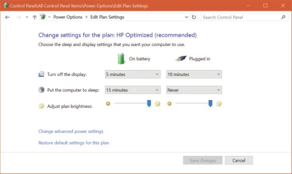<figcaption>powercfg /list による電源プランの一覧</figcaption></figure>
<p>「詳細な電源設定の変更」は、システムの電源ポリシーの値を直接変更します。値はカーネルデバッガーの <code>!popolicy</code> で表示できます。同じシステムでの出力を次に示します。</p>
<pre>lkd&gt; !popolicy
SYSTEM_POWER_POLICY (R.1) @ 0xfffff8035a98cc64
PowerButton:         Sleep  Flags: 00000000   Event: 00000000
SleepButton:         Sleep  Flags: 00000000   Event: 00000000
LidClose:             None  Flags: 00000000   Event: 00000000
Idle:                Sleep  Flags: 00000000   Event: 00000000</pre></section><section class="page" id="page-616" aria-label="page-616"><pre>OverThrottled:        None  Flags: 00000000   Event: 00000000
IdleTimeout:             0  IdleSensitivity:        90%
MinSleep:               S3  MaxSleep:               S3
LidOpenWake:            S0  FastSleep:              S3
WinLogonFlags:           1  S4Timeout:               0
VideoTimeout:          600  VideoDim:                0
SpinTimeout:           4b0  OptForPower:             0
FanTolerance:            0% ForcedThrottle:          0%
MinThrottle:             0% DyanmicThrottle:      None (0)</pre>
<p>最初の行は、「電源オプション」の詳細設定で指定したボタンの動作に対応します。このシステムでは、電源ボタンとスリープボタンのどちらもスリープ状態に移行します。ふたを閉じても何も行いません。末尾近くのタイムアウト値は秒単位で、16 進数で表示されます。ここに表示される値は「電源オプション」で設定した内容に直接対応します。たとえばビデオのタイムアウトは 600 なので、600 秒（10 分）後にモニターの電源が切れます。ハードディスクの停止タイムアウトは 0x4b0 で、1200 秒（20 分）に相当します。</p>
<h3 id="ドライバーとアプリケーションによるデバイス電源の制御">ドライバーとアプリケーションによるデバイス電源の制御</h3>
<p>ドライバーは、システムの電源状態の遷移に関する電源マネージャーのコマンドに応答するだけでなく、自分のデバイスの電源状態を独自に制御できます。デバイスが一定時間使われなければ、消費電力を下げたい場合があります。暗くするモードを持つモニターや、停止できるディスクが例です。ドライバーは、デバイスがアイドルかどうかを自分で検出するか、電源マネージャーの機能を使えます。電源マネージャーを使う場合は、<code>PoRegisterDeviceForIdleDetection</code> を呼び、デバイスを登録します。</p>
<p>この関数は、アイドル状態の検出に使うタイムアウト値と、アイドル時に適用するデバイスの電源状態を電源マネージャーに伝えます。タイムアウトは二つ指定します。一つは省電力向けの設定、もう一つは最高性能向けの設定です。<code>PoRegisterDeviceForIdleDetection</code> を呼んだ後、ドライバーはデバイスが動作していることを <code>PoSetDeviceBusy</code> または <code>PoSetDeviceBusyEx</code> で通知し、必要に応じてアイドル検出を無効化・再有効化するために再登録します。<code>PoStartDeviceBusy</code> と <code>PoEndDeviceBusy</code> を使うと、この処理のプログラミングを簡略化できます。</p>
<p>デバイスは自分の電源状態を制御できますが、システムの電源状態を操作したり、システムの電源遷移を阻止したりはできません。たとえば低電力状態に対応しないドライバーは、電源を入れたままにするか完全に切るかを選べますが、システム全体が低電力状態へ移ることは妨げません。電源マネージャーは遷移を通知するだけで、同意を求めるわけではないからです。もっとも、システムが低電力状態へ移る前には、ドライバーに <code>IRP_MN_QUERY_POWER</code> が届きます。</p></section><section class="page" id="page-617" aria-label="page-617"><p>ドライバーは要求を拒否できますが、電源マネージャーはそれに従う必要はありません。可能であれば遷移を遅らせます（デバイスが十分に残量のあるバッテリーで動作している場合など）。ただし休止状態への遷移は失敗しません。</p>
<p>電源管理の主な担当はドライバーとカーネルですが、アプリケーションも関与できます。ユーザーモードのプロセスは、バッテリー残量が少ないとき、AC 電源に切り替わったとき、システムが電源遷移を始めるときなどの通知を登録できます。アプリケーションはこれらの操作を拒否できませんが、スリープ前に状態を整理するための時間を最大 2 秒得られます。</p>
<h3 id="電源管理フレームワーク">電源管理フレームワーク</h3>
<p>Windows 8 以降、カーネルはデバイス内の個々のコンポーネント（関数とも呼ぶ）の電源状態を管理するフレームワークを提供します。たとえば音声デバイスに再生と録音のコンポーネントがあり、再生だけが動作しているなら、録音を低電力状態にすると効果的です。電源管理フレームワーク（PoFx）は、ドライバーがコンポーネントの電源状態と要件を伝える API を提供します。すべてのコンポーネントは完全動作状態の F0 に対応する必要があります。番号の大きい F 状態ほど消費電力が少なく、F0 への復帰時間が長くなります。F 状態の管理は、デバイスが D0 のときだけ意味があります。D0 より深い状態では動作しないためです。</p>
<p>デバイスの電源ポリシー所有者（通常は FDO）は、<code>PoFxRegisterDevice</code> を呼んで PoFx に登録します。この呼び出しで、次の情報を渡します。</p>
<ul>
<li>デバイス内のコンポーネント数。</li>
<li>アクティブ状態やアイドル状態への切り替え、D0 への移行、電源制御コードの送信などのイベントを通知するコールバック。</li>
<li>コンポーネントごとの対応 F 状態の数。</li>
<li>コンポーネントごとに、復帰できる最も深い F 状態。</li>
<li>コンポーネントごと、F 状態ごとに、F0 へ戻るまでの時間、その状態に留まる価値がある最小時間、その状態での公称消費電力。消費電力が無視できる場合は、その旨を指定できます。</li>
</ul>
<p>PoFx は、これらの情報と、ほかのデバイスやシステム全体の電源状態（現在の電源プロファイルなど）を組み合わせ、各コンポーネントに適した F 状態を決めます。課題は、アイドル状態の消費電力をできるだけ抑えることと、必要になったときにすぐ F0 へ戻して「常時接続」のように見せることの両立です。</p></section><section class="page" id="page-618" aria-label="page-618"><p>ドライバーは、コンポーネントを動作させる必要があるとき、<code>PoFxActivateComponent</code> を呼んで F0 を要求します。しばらくすると PoFx がコールバックを呼び、コンポーネントが F0 になったことを伝えます。逆に不要になったときは <code>PoFxIdleComponent</code> を呼び、PoFx が低い F 状態へ移してから通知します。</p>
<h4 id="パフォーマンス状態の管理">パフォーマンス状態の管理</h4>
<p>ここまでの仕組みでは、アイドル状態（F0 以外）のコンポーネントの消費電力を抑えられます。しかし、F0 のままでも、実際の処理内容に応じて消費電力を下げられるコンポーネントがあります。たとえばグラフィックスカードは、静的な画面の表示中は電力を抑えられますが、3D コンテンツを毎秒 60 フレームで描画するときは多くの電力が必要です。</p>
<p>Windows 8.x では、このようなドライバーが独自のパフォーマンス状態選択アルゴリズムを実装し、platform extension plug-in（PEP）と呼ばれる OS サービスに通知する必要がありました。PEP は特定のプロセッサ系列や SoC に固有なので、ドライバーのコードは PEP に強く依存しました。</p>
<p>Windows 10 では、パフォーマンス状態の管理のために PoFx API が拡張され、ドライバーは標準 API を使えば、プラットフォーム固有の PEP を意識せずに済みます。PoFx はコンポーネントごとに次の種類のパフォーマンス状態を提供します。</p>
<ul>
<li>周波数（Hz）、帯域幅（ビット毎秒）、またはドライバーが解釈する不透明な数値で表す離散的な状態。</li>
<li>最小値と最大値の間で連続的に変化する状態（周波数、帯域幅、独自の指標）。</li>
</ul>
<p>グラフィックスカードが動作可能な周波数を離散的に定義し、それによって消費電力を間接的に制御する例があります。必要に応じて、帯域幅についても同様の性能状態を定義できます。</p>
<p>パフォーマンス状態の管理のために PoFx へ登録するには、まず前述の <code>PoFxRegisterDevice</code> でデバイスを登録します。次に <code>PoFxRegisterComponentPerfStates</code> を呼び、性能の詳細（離散か範囲か、周波数・帯域幅・独自指標の別）と、状態が実際に変わったときのコールバックを渡します。</p>
<p>ドライバーがコンポーネントのパフォーマンス状態を変えると判断したら、<code>PoFxIssuePerfStateChange</code> または <code>PoFxIssuePerfStateChangeMultiple</code> を呼びます。この呼び出しは、指定した状態へコンポーネントを移すよう PEP に要求します。同期、非同期、または PEP に任せる（don't care）を指定できます。いずれの場合も、PoFx は最終的にドライバーが登録したコールバックを、要求した状態（PEP が拒否した場合は別の状態）で呼びます。受け入れられた場合、ドライバーはハードウェアに適切な設定を行います。拒否された場合は、同じ関数を呼び直せます。コールバックが呼ばれるまでに発行できる要求は一つだけです。</p></section><section class="page" id="page-619" aria-label="page-619"><h3 id="電源の可用性要求">電源の可用性要求</h3>
<p>開始済みのスリープ遷移を、アプリケーションやドライバーが拒否することはできません。しかし、ユーザーが特定の操作をしている間は、スリープ遷移を始めさせたくない場合があります。たとえば映画の再生中に、マウスやキーボードの入力がないことを理由に 15 分でアイドル状態になると困ります。このようなとき、メディアプレーヤーは再生中だけアイドル遷移を一時的に無効にできるべきです。画面の電源を切る、暗くするといったほかの省電力動作も、映像の視聴を妨げます。</p>
<p>従来の Windows では、<code>SetThreadExecutionState</code> というユーザーモード API で、ユーザーがまだ操作していることを電源マネージャーに伝え、システムとディスプレイのアイドル遷移を制御できました。しかし、診断機能がなく、要求の粒度も不十分でした。また、ドライバーは独自の要求を出せず、ユーザーアプリケーションもスレッド単位の要求を正しく管理する必要がありました。</p>
<p>現在の Windows は、カーネルが実装する電源要求オブジェクトに対応しています。これはオブジェクトマネージャーが定義する正規のオブジェクトです。Sysinternals の WinObj で <code>\ObjectTypes</code> ディレクトリの <code>PowerRequest</code> オブジェクト型を確認するか、カーネルデバッガーの <code>!object</code> を <code>\ObjectTypes\PowerRequest</code> に対して実行すると確かめられます。</p>
<p>電源の可用性要求は、ユーザーモードのアプリケーションが <code>PowerCreateRequest</code> で生成し、<code>PowerSetRequest</code> と <code>PowerClearRequest</code> で有効化・無効化します。カーネルでは、ドライバーが <code>PoCreatePowerRequest</code>、<code>PoSetPowerRequest</code>、<code>PoClearPowerRequest</code> を使います。ハンドルを使わないため、オブジェクトの参照を外すには <code>PoDeletePowerRequest</code> が必要です（ユーザーモードでは <code>CloseHandle</code> を使えます）。</p>
<p>電源要求 API では、次の 4 種類の要求を使えます。</p>
<ul>
<li><strong>システム要求</strong>：アイドルタイマーによる自動スリープを防ぎます（ユーザーがふたを閉じるなどして手動でスリープさせることはできます）。</li>
<li><strong>ディスプレイ要求</strong>：システム要求と同じことをディスプレイに対して行います。</li>
<li><strong>アウェイモード要求</strong>：通常のスリープ（S3）の動作を変更し、コンピューターを完全な電源投入状態のまま、ディスプレイとサウンドカードだけをオフにします。ユーザーには実際にスリープしているように見えます。主にセットトップボックスやメディアセンターで、物理的なスリープボタンが押されてもメディア配信を続けるために使います。</li>
<li><strong>実行要求</strong>：Windows 8 / Server 2012 以降で使えます。通常ならプロセスライフサイクルマネージャー（PLM）が終了させる UWP アプリのプロセスに、実行の継続を要求します。延長される時間は電源ポリシーの設定などによって変わります。Modern Standby に対応するシステムだけで使え、それ以外ではシステム要求として扱われます。</li>
</ul></section><section class="page" id="page-620" aria-label="page-620"><h4 id="実験-電源の可用性要求を確認する">実験：電源の可用性要求を確認する</h4>
<p><code>PowerCreateRequest</code> などで作られる電源要求のカーネルオブジェクトは、公開シンボルには含まれていません。しかし <code>Powercfg</code> ユーティリティを使えば、カーネルデバッガーなしで電源要求を一覧表示できます。次は、Windows 10 のノート PC で動画を再生し、Web から音声をストリーミングしているときの出力です。</p>
<pre>C:\WINDOWS\system32&gt;powercfg /requests
DISPLAY:
[PROCESS] \Device\HarddiskVolume4\Program Files\WindowsApps\Microsoft.
ZuneVideo_10.16092.10311.0_x64__8wekyb3d8bbwe\Video.UI.exe
Windows Runtime Package: Microsoft.ZuneVideo_8wekyb3d8bbwe
SYSTEM:
[DRIVER] Conexant ISST Audio (INTELAUDIO\FUNC_01&amp;VEN_14F1&amp;DEV_50F4&amp;SUBSYS_103C80D3&amp;R
EV_1001\4&amp;1a010da&amp;0&amp;0001)
An audio stream is currently in use.
[PROCESS] \Device\HarddiskVolume4\Program Files\WindowsApps\Microsoft.
ZuneVideo_10.16092.10311.0_x64__8wekyb3d8bbwe\Video.UI.exe
Windows Runtime Package: Microsoft.ZuneVideo_8wekyb3d8bbwe
AWAYMODE:
None.
EXECUTION:
None.
PERFBOOST:
None.
ACTIVELOCKSCREEN:
None.</pre>
<p>出力には、前述の 4 種類ではなく 6 種類の要求が表示されています。最後の二つ（perfboost と active lockscreen）は、カーネルのヘッダーで内部的な電源要求の種類として宣言されていますが、現在は使われていません。</p>
<h3 id="まとめ-4">まとめ</h3>
<p>I/O システムは、Windows における I/O 処理のモデルを定義し、複数のドライバーに共通する処理や、ドライバーから要求される処理を行います。主な役割は、I/O 要求を表す IRP を作成し、そのパケットを各ドライバーへ渡して、I/O の完了時に結果を呼び出し元へ返すことです。I/O マネージャーは、ドライバーオブジェクトやデバイスオブジェクトなどの I/O システムオブジェクトを使って、ドライバーとデバイスを特定します。内部では非同期に動作して高い性能を実現し、ユーザーモードのアプリケーションには同期と非同期の両方の I/O を提供します。</p></section><section class="page" id="page-621" aria-label="page-621"><p>デバイスドライバーには、従来のハードウェア用ドライバーだけでなく、ファイルシステム、ネットワーク、階層化されたフィルタードライバーも含まれます。どのドライバーも共通の構造を持ち、共通の仕組みで互いと I/O マネージャーに通信します。I/O システムのインターフェイスにより、ドライバーを高水準言語で書けるため、開発期間を短縮し、移植性を高められます。ドライバーが OS に共通の構造を提示するので、積み重ねて階層化でき、モジュール性を確保しつつ重複を減らせます。Universal DDI の基盤を使えば、コードを変えずに複数のデバイスやフォームファクターに対応できます。</p>
<p>最後に、PnP マネージャーはドライバーと協力してハードウェアデバイスを動的に検出し、デバイスの列挙とドライバーのインストールを導く内部のデバイスツリーを構築します。電源マネージャーはドライバーと協力し、必要に応じてデバイスを低電力状態へ移して、エネルギーを節約しバッテリーの寿命を延ばします。</p>
<p>次の章では、現代のコンピューターシステムで最も重要な側面の一つであるセキュリティを扱います。</p></section><section class="page" id="page-622" aria-label="page-622"><h3 id="第7章-セキュリティ">第7章　セキュリティ</h3><p>複数の利用者が同じ物理資源やネットワーク資源を使う環境では、機密データへの不正アクセスを防ぐことが欠かせません。OSと個々の利用者は、ファイル、メモリ、構成設定が不正に閲覧・変更されないよう保護する必要があります。アカウント、パスワード、ファイル保護のような分かりやすい仕組みに加え、OSの破壊を防ぐ、権限の低い利用者が再起動などを行えないようにする、ユーザープログラムが他の利用者のプログラムやOSへ悪影響を与えないようにすることも含まれます。本章では、堅牢なセキュリティ要件がWindowsの設計と実装にどのように影響したかを説明します。</p><h3 id="セキュリティ評価">セキュリティ評価</h3><p>OSを含むソフトウェアを定められた基準で評価すると、政府、企業、家庭の利用者がコンピューターに保存した情報を保護しやすくなります。米国などで現在使われる評価基準は Common Criteria（CC）です。Windowsの設計に影響を与えた過去の基準、Trusted Computer System Evaluation Criteria（TCSEC）も理解しておくと役立ちます。</p><h4 id="信頼できるコンピューターシステム評価基準-TCSEC">信頼できるコンピューターシステム評価基準（TCSEC）</h4><p>米国防総省（DoD）の国家安全保障局（NSA）は、1981年に National Computer Security Center（NCSC）を設立しました。商用OS、ネットワーク機器、信頼できるアプリケーションが提供する保護水準を示す評価を作ることが目的の一つでした。1983年に定められた評価は Orange Book とも呼ばれます。</p></section><section class="page" id="page-623" aria-label="page-623"><p>表7-1　TCSECの評価水準</p><div class="table-scroll" role="region" tabindex="0" aria-label="表。横にスクロールできます"><table><tr><th>水準</th><th>説明</th></tr><tr><td>A1</td><td>検証済み設計</td></tr><tr><td>B3</td><td>セキュリティドメイン</td></tr><tr><td>B2</td><td>構造化保護</td></tr><tr><td>B1</td><td>ラベル付きセキュリティ保護</td></tr><tr><td>C2</td><td>アクセス制御</td></tr><tr><td>C1</td><td>任意アクセス制御（廃止）</td></tr><tr><td>D</td><td>最小限の保護</td></tr></table></div><p>TCSECの信頼度水準は、上位へ進むほど下位水準の要件に厳しい保護・検証を加えます。A1を満たすOSはありません。B水準を得たOSも少数ですが、汎用OSではC2が実用上十分な最高水準とされています。C2の主な要件は、現在も安全なOSの基本です。</p><ul><li><strong>安全なログオン：</strong>利用者を一意に識別し、何らかの認証後にのみアクセスを許可する。</li><li><strong>任意アクセス制御：</strong>ファイルなど資源の所有者が、誰に何の操作を許すか決める。</li><li><strong>セキュリティ監査：</strong>資源の作成、アクセス、削除やセキュリティ関連事象を記録する。ログオンIDにより、不正操作を誰が行ったか追跡できる。</li><li><strong>オブジェクト再利用保護：</strong>他の利用者が削除したデータや、以前使って解放したメモリを見られないようにする。たとえば新規ファイルを作成し、割り当てられたディスク領域に残る他人の削除済み情報を読む危険があります。利用者へ割り当てる前にファイルやメモリを初期化して防ぎます。</li></ul><p>WindowsはB水準の要件も2つ満たします。</p><ul><li><strong>信頼できる経路：</strong>ログオン時にトロイの木馬が名前やパスワードを横取りできないようにします。Windowsでは Ctrl+Alt+Delete のログオン注意シーケンスが該当し、非特権アプリでは横取りできません。これは Secure Attention Sequence（SAS）とも呼ばれ、ログオン済みならシステム制御のセキュリティ画面、未ログオンならログオン画面を表示します。</li></ul></section><section class="page" id="page-624" aria-label="page-624"><p>SASは SendSAS API からプログラム送信することもできます（グループポリシーなどが許可する場合）。偽ログオン画面を表示するトロイの木馬がいても、SASを入力すれば本物の画面へ移れます。</p><ul><li><strong>信頼できる機能管理：</strong>管理者、バックアップ担当、標準利用者など、管理機能ごとのアカウント役割を分けます。</li></ul><p>Windowsはセキュリティサブシステムと関連コンポーネントでこれらの要件を満たします。</p><h4 id="Common-Criteria">Common Criteria</h4><p>1996年1月、米国、英国、ドイツ、フランス、カナダ、オランダが共同作成した Common Criteria for Information Technology Security Evaluation（CCITSE）を公開しました。一般には Common Criteria（CC）と呼ばれ、製品セキュリティ評価の国際標準です。CCはTCSECより柔軟で、構造はITSECに近いものです。要件を比較しやすい集合としてまとめる Protection Profile（PP）と、PPを参照して要件を定義できる Security Target（ST）があります。また、認証への信頼度を表す7段階の Evaluation Assurance Level（EAL）を定義します。TCSECなどにあった機能と保証水準の結び付きをなくしています。</p><p>Windows 2000、XP、Server 2003、Vista Enterprise は Controlled Access Protection Profile（CAPP）で認証されました。TCSEC C2相当で、欠陥修正を示す「+」付きのEAL 4+です。国境を越えて認知される最高水準はEAL 4です。2011年3月にはWindows 7とServer 2008 R2が、ネットワーク環境の汎用OS向け米国政府PP（GPOSPP）v1.0に適合すると評価されました。Hyper-Vハイパーバイザーも含まれ、EAL 4+を得ています。検証報告とSecurity Targetに要件の詳細があります。Windows 10とServer 2012 R2も2016年6月に同様の認証を受けました。</p></section><section class="page" id="page-625" aria-label="page-625"><h3 id="セキュリティシステムの構成要素">セキュリティシステムの構成要素</h3><p>以下はWindowsセキュリティを実装する主要コンポーネントとデータベースです（特記がなければ %SystemRoot%\\System32 内）。</p><ul><li><strong>Security Reference Monitor（SRM）：</strong>Ntoskrnl.exe内のWindowsエグゼクティブ機能です。セキュリティコンテキストを表すアクセストークンを定義し、オブジェクトのアクセス検査、特権（ユーザー権利）の操作、監査メッセージ生成を担当します。</li><li><strong>Local Security Authority Subsystem Service（Lsass）：</strong>Lsass.exeとして動くユーザーモードプロセスです。ログオン可能な利用者、パスワードポリシー、利用者・グループの特権、監査設定などローカルセキュリティポリシー、ユーザー認証、イベントログへの監査通知を担当します。大半はロードされる Lsasrv.dll が実装します。</li><li><strong>LSAIso.exe：</strong>対応するWindows 10／Server 2016で設定されている場合、Credential GuardとしてLsassが利用します。トークン用ハッシュをLsassのメモリではなく保管します。LSAIso.exeはVTL 1で動くTrustlet（Isolated User Modeプロセス）なので、通常のプロセスも通常カーネルもアドレス空間へアクセスできません。LsassはALPCで通信するため、必要なパスワードハッシュを暗号化データとして保持します。</li><li><strong>Lsassポリシーデータベース：</strong>ローカルセキュリティ設定を格納し、ACLで保護された <code>HKLM\\SECURITY</code> 配下にあります。ログオンを認証する信頼ドメイン、対話型・ネットワーク・サービスログオンの許可、特権割り当て、監査方式などを含みます。キャッシュ済みドメインログオンやWindowsサービスのアカウント情報などの「秘密」も保持します（サービスは第2部第9章）。</li><li><strong>Security Accounts Manager（SAM）：</strong>ローカルコンピューターのユーザー名とグループのデータベースを管理します。Samsrv.dllで実装され、Lsass内にロードされます。</li><li><strong>SAMデータベース：</strong>ローカルユーザー／グループ、パスワード、属性を格納し、レジストリの <code>HKLM\\SAM</code> にあります。ドメインコントローラーでは、ドメイン定義のユーザーは格納せず、システムの管理者復旧アカウント定義とパスワードを保持します。</li></ul></section><section class="page" id="page-626" aria-label="page-626"><ul><li><strong>Active Directory：</strong>ドメイン内のオブジェクト情報を格納するディレクトリサービスです。ドメインはコンピューターとセキュリティグループを一体として管理する単位です。ユーザー、グループ、コンピューターなどの情報を保存し、ドメインユーザー／グループのパスワードや特権をドメインコントローラー間で複製します。Ntdsa.dllで実装され、Lsass内で動きます（第2部第10章）。</li><li><strong>認証パッケージ：</strong>Lsassとクライアントの両方のプロセス内で動くDLLで、Windows認証ポリシーを実装します。ユーザー名・パスワードなどの資格情報を検証し、正しければLsassへセキュリティID情報を返します。Lsassはそれを使ってトークンを生成します。</li><li><strong>対話型ログオンマネージャー（Winlogon）：</strong>Winlogon.exeとして動き、SASへの応答と対話ログオンセッション管理を担当します。ログオン後の最初のプロセスを作成します。</li><li><strong>ログオンUI（LogonUI）：</strong>LogonUI.exeとして動き、利用者が認証情報を入力する画面を表示します。資格情報プロバイダーを使って複数方式から入力を取得します。</li><li><strong>資格情報プロバイダー（CP）：</strong>LogonUI内で動くインプロセスCOMオブジェクトです。WinlogonがSAS後に必要に応じて起動します。ユーザー名・パスワード、スマートカードPIN、指紋などの生体情報、その他識別情報を取得します。標準には authui.dll、SmartcardCredentialProvider.dll、BioCredProv.dll、Windows 10で追加された顔認証用 FaceCredentialProvider.dll があります。</li><li><strong>ネットワークログオンサービス（Netlogon）：</strong>標準SvcHost内のNetlogon.dllサービスです。ドメインコントローラーとのセキュアチャネルを作り、認証要求（NT 4ドメインコントローラーへの対話ログオン、LAN Manager／NTLM v1・v2検証など）を送信します。Active Directoryログオンにも使います。</li><li><strong>カーネルセキュリティデバイスドライバー（KSecDD）：</strong><code>%SystemRoot%\\System32\\Drivers\\Ksecdd.sys</code> のカーネルライブラリです。EFSなどのカーネルセキュリティ機能がユーザーモードLsassと通信するALPCインターフェイスを提供します。</li><li><strong>AppLocker：</strong>管理者が実行ファイル、DLL、スクリプトの利用をユーザーやグループ単位で指定できます。ドライバー AppId.sys と標準SvcHost内の AppIdSvc.dll サービスで構成されます。</li></ul><p>図7-1はこれらの一部と管理対象データベースの関係です。</p></section><section class="page" id="page-627" aria-label="page-627"><p>図7-1　Windowsのセキュリティコンポーネント</p><h4 id="実験-HKLM-SAM-と-HKLM-Security-の調査">実験：HKLM\\SAM と HKLM\\Security の調査</h4><p>レジストリのSAMキーとSecurityキーはセキュリティ記述子で保護され、ローカルSystemアカウント以外はアクセスできません。調査のためにアクセス権をリセットする方法もありますが、システム保護を弱める恐れがあります。もう一つの方法は、Regedit.exeをSystemアカウントとして実行することです。SysinternalsのPsExecで -s を指定します。</p><pre>C:\&gt;psexec -s -i -d c:\windows\regedit.exe</pre><p><code>-i</code> は対話型ウィンドウステーションで起動します。指定しなければ、見えないデスクトップ上の非対話型ステーションで動きます。<code>-d</code> は対象プロセスの終了を待たない指定です。</p></section><section class="page" id="page-628" aria-label="page-628"><p>カーネルモードのSRMとユーザーモードのLsassは、第2部第8章で説明するALPCで通信します。初期化時にSRMは SeRmCommandPort を作成し、Lsassが接続します。Lsassは SeLsaCommandPort を作り、SRMが接続すると専用通信ポートが作られます。256バイトを超えるメッセージ用にSRMは共有メモリセクションを作り、接続時にハンドルを渡します。双方の接続後、接続ポートで待ち受けなくなるため、後からユーザープロセスが悪用目的で接続することはできません。要求は完了しません。</p><h3 id="仮想化ベースのセキュリティ">仮想化ベースのセキュリティ</h3><p>カーネルは高い特権とユーザーモードからの分離により信頼されると考えられています。しかし毎月多数のサードパーティードライバーが作られ、Microsoftのテレメトリでは月に100万種類ものドライバーハッシュが観測されると述べています。どれも脆弱性を含む可能性があり、悪意あるカーネルコードもあり得ます。カーネルを小さく保護された信頼領域とし、ユーザーモードを安全とする理想は実現できていません。カーネルを完全には信頼できず、脆弱なドライバーを悪用するユーザーモード攻撃や悪意あるカーネルプログラムから、機密データを扱う重要アプリを守れません。</p><p>第2章のとおり、Windows 10 と Server 2016 は仮想化ベースセキュリティ（VBS）を導入し、Virtual Trust Level（VTL）という直交した信頼層を追加しました。Credential Guard と Device Guard はVTLでユーザーデータを守り、デジタルコード署名にハードウェア信頼層を加えます。本章末では PatchGuard とVBSを利用するHyperGuardによるカーネルパッチ保護も扱います。</p><p>通常のユーザーモードとカーネルコードはVTL 0で動き、VTL 1の存在を認識しません。VTL 1の内容はVTL 0から隠され、アクセスできません。通常カーネルへ侵入されても、VTL 1や、その中で動くユーザーモード（Isolated User Mode）へは到達できません。図7-2ではHVCI／KMCI（Device Guard）と、Lsass.exe／隔離Lsass.exe（Credential Guard）を示します。Trustletの実装は第3章で説明しました。</p></section><section class="page" id="page-629" aria-label="page-629"><p>図7-2　VBSコンポーネント</p><p>信頼できる構成要素にも前提があります。VTL 1が正しく動くにはSecure Boot（およびファームウェア）、侵害されていないハイパーバイザー、IOMMUやIntel Management EngineなどのハードウェアにVTL 0から悪用可能な脆弱性がないことが必要です。信頼のハードウェア連鎖とブート関連技術は第2部第11章を参照してください。</p><h3 id="Credential-Guard">Credential Guard</h3><p>Credential Guardの保護境界を理解するため、ネットワーク環境でユーザー資源・データへのアクセスやログオンに使われる資格情報を整理します。</p><ul><li><strong>パスワード：</strong>対話型ユーザーがマシン上で本人確認する主要資格情報です。認証と他の資格情報の導出に使われ、最も狙われます。</li><li><strong>NT一方向関数（NT OWF）：</strong>パスワードログオン後、従来コンポーネントがNTLMでユーザーを識別するハッシュです。現代のネットワークは通常NTLMを使いませんが、ローカル機能やNTLM認証プロキシなど旧式ネットワーク機器が使うことがあります。NTOWFはMD4ハッシュで、現在の計算能力に対して弱く、再利用防止もないため、傍受されると即座に侵害され、パスワードを復元される場合もあります。</li><li><strong>Ticket-Granting Ticket（TGT）：</strong>より現代的なKerberosでNTOWFに相当します。Active Directoryドメインの既定で、Server 2016では強制されます。ログオン成功後にTGTと鍵がローカルマシンへ渡されます。両方を盗まれると資格情報は侵害されますが、再利用やパスワード復元はできません。</li></ul><p>Credential Guardが無効だと、これらの一部または全てがLsassのメモリに存在します。</p></section><section class="page" id="page-630" aria-label="page-630"><p><strong>注：</strong>Windows 10 Enterprise／Server 2016で有効にするには、gpedit.msc の Computer Configuration → Administrative Templates → System → Device Guard で Turn on Virtualization Based Security を有効にし、Credential Guard Configuration から有効な選択肢を指定します。</p><h4 id="パスワードの保護">パスワードの保護</h4><p>パスワードはローカル対称鍵で暗号化して保存し、Digest認証（Windows XP以降のHTTP認証で使うWDigest）やTerminal Services／RDPなどのSSOを支えます。これらのプロトコルは平文認証を使うため、パスワードをメモリに保持します。コード注入、デバッガー、その他の攻撃でアクセスされ、復号される可能性があります。Credential Guardでも危険なプロトコルの性質自体は変えられません。そのためSSOを無効にし、互換性を失わせて再認証を求めます。望ましいのはパスワード自体をなくすことで、後述のWindows Helloが可能にします。顔や指紋で認証すればパスワードを入力せず、ハードウェアキーロガー、カーネルの盗聴・フック、ユーザーモードの偽装アプリから対話資格情報を守れます。スマートカードとPINも同様の方式です。PINは入力時に盗まれる可能性がありますが、カードは物理要素で、鍵を盗むには複雑なハードウェア攻撃が必要です。これは二要素認証（TFA）の一例です。</p><h4 id="NTOWF-TGT鍵の保護">NTOWF／TGT鍵の保護</h4><p>対話資格情報を守っても、ログオン後にドメインコントローラーのKDCはTGTと鍵、旧式アプリ用NTOWFを返します。以降、従来資源にはNTOWFを使い、TGTと鍵からサービスチケットを生成してファイル共有などへアクセスします（図7-3）。</p><p>図7-3　リモート資源へのアクセス</p></section><section class="page" id="page-631" aria-label="page-631"><p>したがって、LsassにあるNTOWF、またはTGTと鍵を攻撃者に奪われれば、スマートカード、PIN、顔や指紋がなくても資源へアクセスできます。LsassをProtected Process Light（PPL、第3章）で実行し、攻撃者のアクセスを防ぐ方法があります。レジストリ <code>HKLM\\System\\CurrentControlSet\\Control\\Lsa</code> のDWORD値 RunAsPPL を1にします。正規のサードパーティー認証プロバイダーDLLはLsass内で動くため、既定では有効ではありません。PPLはユーザーモード攻撃からNTOWFとTGT鍵を守りますが、カーネル攻撃や、毎月作られる多数のドライバーの脆弱性を利用した攻撃は防げません。</p><p>Credential GuardはVTL 1のTrustletとして動く別プロセス LSAIso.exe を使い、ユーザーの秘密情報をLsassではなくこちらのメモリに保存します。</p><h4 id="安全な通信">安全な通信</h4><p>VTL 1は通常のNTカーネル全体やドライバーを持たず、ハードウェアI/Oへ直接アクセスできないため、隔離LSAはKDCと直接通信できません。認証してTGT、鍵、NTOWFを受け取り、サービスチケットでファイルサーバーと通信するのはプロキシ役のLsassです。すると認証時には秘密がLsassを一時的に通り、サービスチケット生成にも使われるように見えます。LsassがLSAIsoとどう秘密を送受信し、攻撃者が同じことをできないようにするのでしょうか。</p><p>Trustletが使えるサービスの一つにALPCがあります。Secure Kernelは NtAlpc* 呼び出しをNormal Kernelへ中継します。Isolated User ModeはALPC上でRPCランタイム（Rpcrt4.dll）を実装し、VTL 0とVTL 1がローカルRPCで通信できます。Process Explorerの図7-4では、LSAIso.exeが LSA_ISO_RPC_SERVER ALPCポートへのハンドルを持ち、Lsass.exeと通信する様子を示します。</p><p>攻撃者を防ぐ仕組みには、暗号プロトコルとチャレンジ／レスポンスの理解が必要です。SSL/TLSの中間者攻撃防止に似ています。Lsassはプロキシとして間に入りますが、KDCと隔離LSAの暗号化通信を読むことはできません。隔離LSAだけがVTL 1内に持つローカルセッション鍵を作り、KDCだけが持つ別の鍵で暗号化して送ります。KDCはセッション鍵でTGTと鍵を暗号化して返します。LsassにはKDC宛ての暗号文と、復号できないKDCからの暗号文だけが見えます。</p></section><section class="page" id="page-632" aria-label="page-632"><p>図7-4　LsaIso.exeとそのALPCポート</p><p>この方式は、チャレンジ／レスポンス型の旧式NTLM認証も保護できます。利用者が平文資格情報でログオンすると、LSAは隔離LSAへ送り、隔離LSAはセッション鍵で暗号化してLsassへ返します。後でNTLMチャレンジ／レスポンスが必要になると、Lsassはチャレンジと暗号化済み資格情報を隔離LSAへ送り、鍵を持つ隔離LSAだけが復号し、チャレンジに応じたNTLMレスポンスを作ります。ただし、この方式にも4つの攻撃可能性があります。</p><ul><li>マシンが物理的に侵害済みなら、入力時または（Lsass侵害時は）隔離LSAへ送る途中で平文パスワードを盗めます。Windows Helloで軽減できます。</li><li>NTLMにはリプレイ防止がありません。レスポンスを盗めば同じチャレンジで再利用できます。ログオン後にLsassを侵害できれば、暗号化資格情報を盗み、任意チャレンジ用レスポンスを隔離LSAに生成させることもできます。ただし再起動すると隔離LSAのセッション鍵が変わるため、そこまでの攻撃です。</li><li>Kerberosログオンでは、暗号化されていないNTOWFを傍受し、通常のPass-the-Hashと同様に再利用できます。これも既にマシンが侵害されているか、物理的なネットワーク傍受が必要です。</li><li>物理アクセスできる利用者はCredential Guardを無効にできる場合があります。旧式認証へ戻す「ダウングレード攻撃」となり、古い攻撃が可能になります。</li></ul></section><section class="page" id="page-633" aria-label="page-633"><h4 id="UEFIロック">UEFIロック</h4><p>Credential Guardを無効にするのはレジストリ変更だけで簡単です。Secure BootとUEFIを使うUEFI Lockを有効にすると、物理的にいない管理者（管理者権限のマルウェアなど）による無効化を防げます。ファームウェアメモリにEFIランタイム変数を書き、再起動します。EFI Boot ServicesモードのWindowsブートローダーが、Credential Guard有効状態を記録するEFIブート変数（Boot Services終了後は読み書き不可）とBCD設定を記録します。起動時にカーネルはBCD設定またはUEFIランタイム変数を見て必要なレジストリ値を再設定します。</p><p>攻撃者がBCD設定を削除しても、BitLocker（有効時）とTPMリモート構成証明（有効時）が変更を検出します。起動には管理者の回復キーを物理入力する必要があり、UEFIランタイム変数からBCD設定が戻ります。UEFIランタイム変数を削除してもブートローダーがUEFIブート変数から復元します。EFI Boot Services中にだけ削除可能なUEFIブート変数を消す特別なコードがなければ解除できません。そのコードはSecComp.efiというMicrosoftの専用バイナリだけです。管理者が取得し、別のEFIデバイスから物理的に起動して実行するか、BitLocker回復キーでBCDを変更します。再起動後、SecComp.efi はUEFI上で物理利用者に確認を求めます。</p><h4 id="認証ポリシーとArmored-Kerberos">認証ポリシーとArmored Kerberos</h4><p>従来方式より強固なCredential Guardでも、ログオン前にマシンが侵害されていた、または物理管理者に操作された場合は安全性が下がります。侵害マシンによる資格情報偽造・再利用を防ぎ、盗まれた資格情報の利用先を特定システムに限定したい組織もあります。Server 2016のAuthentication PoliciesとArmored Kerberosを組み合わせると、さらに強化できます。VTL 1のSecure KernelはTPMから専用マシンID鍵を取得します（ディスク上のファイルも使えますが安全性が損なわれます）。端末のプロビジョニング時、初回ドメイン参加でこの鍵からマシンTGT鍵を作りKDCへ送ります。利用者のログオン資格情報は、隔離LSAだけが持つマシン資格情報と組み合わされ、出所証明鍵を形成します。KDCはこれで暗号化したNTOWF、利用者TGTと鍵を返します。</p><ul><li>利用者が既知のマシンから認証している。盗んだ元資格情報を別マシンで使おうとしてもTPM由来のマシン資格情報が異なります。</li></ul></section><section class="page" id="page-634" aria-label="page-634"><ul><li>NTLMレスポンス／利用者チケットがLsassで手作業生成されたのではなく、隔離LSAから来ている。物理利用者が何らかの方法でCredential Guardを無効化しても、有効な状態で認証されたことを保証します。</li></ul><p>ただし、利用者TGTと鍵を含む「出所証明鍵で暗号化されたKDC応答」を侵害マシンから盗まれると、保存して隔離LSAにセッション鍵暗号化のサービスチケットを要求できます。これをファイルサーバーなどへ送れば、セッション鍵が再起動で消えるまでアクセスできます。そのためCredential Guard端末では、利用者がログオフするたびに再起動することが推奨されます。そうしないと利用者不在後も有効なチケットを発行される恐れがあります。</p><h4 id="今後の改善">今後の改善</h4><p>第2章と第3章で触れたように、VTL 1のSecure Kernelは、ハイパーバイザーとVTL 1のコードだけが通信できる特殊なPCI／USB機器をSecure Device Framework（SDF）経由で使えるよう拡張中です。生体情報とウェブカメラ映像を安全に取得する新Trustlet BioIso.exe、FsIso.exeと組み合わせれば、VTL 0のカーネルコードはWindows Helloの内容を傍受できなくなります。現状でも平文パスワードより安全ですが、専用ドライバーで傍受する余地は技術上残っています。実現後は資格情報をハードウェアレベルでVTL 0から隔離できます。LsassはWindows Hello認証に関わらず、隔離LSAが生体・映像サービスから直接資格情報を取得します。</p><p><strong>注：</strong>Secure Driver Framework（SDF）はVTL 1ドライバー向けのWDF相当です。公開されていませんが、VTL 1ドライバーを作るMicrosoftパートナーに提供されています。</p><h3 id="Device-Guard">Device Guard</h3><p>Credential Guardはユーザー資格情報を守りますが、Device Guardはソフトウェア／ハードウェア攻撃からマシン自体を守ります。Kernel-Mode Code Signing（KMCS）、User-Mode Code Integrity（UMCI）などWindows Code Integrityを、Hypervisor Code Integrity（HVCI）で強化します（コード整合性は第2部第8章）。Secure Bootで保護され、企業管理者が定義するCustom Code Integrity（CCI）と署名ポリシーで構成可能です。AppLockerのパスやファイル名ではなく、証明書署名者やSHA-2ハッシュなど暗号学的な情報で許可・除外リストを適用します。</p></section><section class="page" id="page-635" aria-label="page-635"><p>ここではポリシー定義ではなく、Device Guardが強制する保証を説明します。</p><ul><li><strong>カーネル署名が強制されると、署名済みコードだけがロードされます。</strong>カーネルはドライバー読み込み時にVTL 1のSecure Kernelへ通知し、HVCIの署名検証後にだけロードを完了します。</li><li><strong>読み込み済み署名コードはカーネル自身にも変更できません。</strong>実行コードページをハイパーバイザーのSecond Level Address Translation（SLAT）で読み取り専用にします（第2部第8章）。</li><li><strong>カーネル署名が強制されると、動的コード割り当ては禁止されます。</strong>カーネルページテーブルで実行可能に見えても、SLATエントリーに実行権を設定できません。</li><li><strong>UEFIランタイムコードは他のUEFIコードやカーネルから変更できません。</strong>Secure Bootがロード時に署名済みと確認済みであることを前提とします。ランタイムデータも実行可能にできません。UEFIランタイムのコード・データを読み取り、適切な権限を検証した上でVTL 1保護下のSLATへ複製します。</li><li><strong>カーネル署名が強制されると、カーネルモード（ring 0）の署名済みコードだけが実行できます。</strong>署名済みring 3コードはUMCI上有効で、SLAT実行許可もあり得ます。Secure KernelはハードウェアのMode-Based Execution Control（MBEC）を利用し、SLATにユーザー／カーネル実行ビットを追加します。非対応CPUではRestricted User Mode（RUM）でソフトウェアエミュレーションします。</li><li><strong>ユーザーモード署名が強制されると、署名済みイメージだけをロードします。</strong>実行ファイル（.exe）とロードするライブラリ（.dll）が署名済みである必要があります。</li><li><strong>署名強制中、既存の実行可能なユーザーページをアプリから書き込み可能にできません。</strong>実行メモリの割り当てや書き換えはカーネル許可が必要です。カーネル侵害時もSLATにより、Secure Kernelの承認なしにユーザーページを実行可能にできず、実行ページを書き込み可能にもできません。</li><li><strong>署名ポリシーが厳密な保証を要求する場合、ユーザーモードの動的コードも禁止できます。</strong></li></ul></section><section class="page" id="page-636" aria-label="page-636"><p>通常、署名済みユーザーモードコードはJITなどのため追加実行メモリを割り当てられます。証明書に動的コード生成権限を表すEnhanced Key Usage（EKU）があれば、厳密モードでも許可できます。現在このEKUを持つNGEN.EXE（.NET Native Image Generation）により、ILのみの.NET実行ファイルは動作できます。</p><ul><li><strong>ユーザーモードPowerShellの制約言語モードが強制されると、動的型、リフレクション、任意コード実行やWindows／.NET API呼び出しを可能にする機能を使うスクリプトにも署名が必要です。</strong>悪意あるスクリプトが制約モードを回避するのを防ぎます。</li></ul><p>SLATページテーブルはVTL 1で保護され、各メモリーページに許される権限の「正解」を保持します。必要に応じて実行ビットや、実行可能ページの書き込みビットを与えません（W^X、double-you xor ex と呼ぶモデル）。Device Guardは署名強制をSKCI.DLL（Secure Kernel Code Integrity）というライブラリを通じVTL 1へ移します。</p><p>明示的に設定しなくてもCredential Guardが有効なら、第3のモードとして全Trustletに Isolated User Mode EKUを含む特定のMicrosoft署名を要求します。そうしなければ、ring 0攻撃者が通常のKMCSを破り、悪意あるTrustletをロードして隔離LSAを攻撃できます。Trustletには厳密モードのユーザーモード署名強制も適用します。</p><p>性能上、休止状態（S4）から復帰する際、HVCIは全ページの署名を再検証しません。証明書データを利用できない場合もあります。SLAT情報の再構築が必要なので、SLATページテーブル自体を休止ファイルに保存します。ハイパーバイザーは休止ファイルが改ざんされていないと信頼する必要があります。TPMがあれば端末鍵でファイルを暗号化しますが、TPMがない場合はUEFIランタイム変数に鍵を保存するため、ローカル攻撃者が休止ファイルを復号・改変・再暗号化できる恐れがあります。</p><h3 id="オブジェクトの保護">オブジェクトの保護</h3><p>オブジェクト保護とアクセス記録は任意アクセス制御と監査の中核です。Windowsではファイル、デバイス、メールスロット、パイプ、ジョブ、プロセス、スレッド、イベント、ミューテックス、セマフォ、共有メモリ、I/O完了ポート、LPCポート、タイマー、トークン、ボリューム、ウィンドウステーション、デスクトップ、ネットワーク共有、サービス、レジストリキー、プリンター、Active Directoryオブジェクトなど、エグゼクティブのオブジェクトマネージャーが管理するほぼ全てを保護できます。ドライバーオブジェクトのようにユーザーモードへ公開しないものは通常対象外です。カーネルモードコードは信頼され、アクセス検査しないオブジェクトマネージャーAPIを使うことがあります。ユーザーモードへ公開する資源はカーネル内オブジェクトとして実装されるため、オブジェクトマネージャーはセキュリティ強制で重要です。</p></section><section class="page" id="page-637" aria-label="page-637"><p>名前付きオブジェクトの保護はSysinternals WinObj（図7-5）で確認できます。図7-6は利用者セッション内のセクションオブジェクトのSecurityプロパティです。図7-6に示されるのは実際にはオブジェクトの任意アクセス制御リスト（DACL）です。DACLは「セキュリティ記述子とアクセス制御」で説明します。Process Explorerでも下ペインにハンドルを表示し、ハンドルをダブルクリックすると名前のないオブジェクトを含めてセキュリティを確認できます。プロパティ画面はWindowsが提供するため、両ツールで同じです。</p><p>オブジェクト操作を制御するには、まず利用者の身元を確認しなければなりません。そのためWindowsは資源アクセス前の認証済みログオンを要求します。プロセスがオブジェクトハンドルを要求すると、オブジェクトマネージャーとセキュリティシステムは呼び出し側のID、オブジェクトのセキュリティ記述子、希望するアクセス権を使い、許可するハンドルを判断します。</p><p>スレッドはプロセスと別のセキュリティコンテキストを一時的に使えます。これを偽装（impersonation）と呼びます。偽装中はスレッド自身のセキュリティ情報で検査し、そうでなければ所有プロセスの情報を使います。ただし全スレッドがプロセスのハンドルテーブルを共有します。偽装中に開いたオブジェクトも、プロセス内の他のスレッドが使えます。</p><p>アカウントだけで判断すると、Aliceのサービスと、Aliceがインターネットから取得した未知のアプリを区別できない場合があります。Windowsは整合性レベルを使うWindows整合性機構で、同一利用者内の分離を実現します。これはUAC昇格、UIPI、AppContainerで使われます。</p><h3 id="アクセス検査">アクセス検査</h3><p>Windowsのセキュリティモデルでは、スレッドがオブジェクトを開く時点で、必要な操作を指定します。オブジェクトマネージャーはSRMへ要求アクセス権を渡して検査します。許可されればプロセスのハンドルテーブルにハンドルを作り、その後の操作に使えます。</p><p>名前で既存オブジェクトを開くとき、オブジェクトマネージャーは名前空間を検索します。構成マネージャーのレジストリやファイルシステムドライバーなど二次名前空間でなければ、オブジェクトを見つけた後、内部関数 ObpCreateHandle を呼びます。これはプロセスのハンドルテーブルにエントリーを作ります。</p></section><section class="page" id="page-638" aria-label="page-638"><p>ObpCreateHandle はまず ObpGrantAccess でスレッドにアクセス権があるか調べます。許可されれば ExCreateHandle がテーブルエントリーを作ります。ObpGrantAccess は ObCheckObjectAccess を呼び、スレッドの資格情報、要求アクセス（読み取り、書き込み、削除、オブジェクト固有操作など）、対象オブジェクトを渡します。</p><p>ObCheckObjectAccess は検査中にオブジェクトのセキュリティ記述子とスレッドのセキュリティコンテキストをロックします。前者は検査中の設定変更、後者は検査中に別スレッドがIDを変更するのを防ぎます。次にオブジェクトのセキュリティメソッドを呼び、セキュリティ設定を取得します（オブジェクトメソッドは第2部第8章）。別のエグゼクティブ機能の関数が呼ばれることもあります。</p><p>多くのエグゼクティブオブジェクトはSRMの既定セキュリティを使います。オブジェクト型が既定セキュリティを指定すると、ヘッダーにセキュリティ情報を持ち、SeDefaultObjectMethod を使います。独自方式のオブジェクトは独自情報とセキュリティメソッドを実装します。ミューテックス、イベント、セマフォは既定方式です。ファイルオブジェクトは例外で、I/Oマネージャーが定義し、ファイルシステムドライバーがファイル保護を管理するか、実装しない選択をします。NTFSファイルのセキュリティ照会時は、ファイルオブジェクトのメソッドがNTFSへ問い合わせます。ただしファイルは二次名前空間なので、通常のオープンでは ObCheckObjectAccess は実行されません。SetFileSecurity や GetFileSecurity などでセキュリティを明示的に照会・設定するときにだけ呼ばれます。</p><p>セキュリティ情報を取得後、ObCheckObjectAccess はSRMの SeAccessCheck を呼びます。これはWindowsセキュリティモデルの中核関数です。オブジェクトのセキュリティ設定、ObCheckObjectAccessが取得したスレッドID、要求アクセスを受け取り、許可ならtrue、拒否ならfalseを返します。</p></section><section class="page" id="page-639" aria-label="page-639"><p>例として、スレッドが特定プロセスの終了を待ちたいとします。OpenProcess にプロセスIDとアクセスマスクを渡してハンドルを取得します。必要な権限は SYNCHRONIZE だけですが、安易に PROCESS_ALL_ACCESS を指定すると2つの結果があり得ます。</p><ul><li>全権限が許可されればハンドルを得て WaitForSingleObject で終了を待てます。しかし同じプロセス内の権限の低い別スレッドもハンドルを使い、TerminateProcess で早期終了させるなど全操作を行えます。</li><li>全権限がなければ呼び出しは失敗し、無効ハンドルが返ります。必要なのは SYNCHRONIZE だけなので、それを要求すれば許可される可能性が高かったはずです。</li></ul><p>つまり必要な権限だけを要求すべきです。</p><p>既存ハンドルを使ってオブジェクトを参照するときにもアクセス検査があります。APIにハンドルを渡す間接的な場合も含みます。たとえばファイルを開く際に読み取り権を得たとします。セキュリティ設定上許可されれば、ファイルを表すハンドルがプロセスのハンドルテーブルへ作られます。付与した権限はハンドルとともに保存されます。後で WriteFile に同じハンドルを渡しても、オープン時に書き込み権を得ていなければ失敗します。</p><p>Windowsのセキュリティ関数を使うと、アプリケーション独自のオブジェクトを定義し、SRMのサービスでWindowsのセキュリティモデルを適用できます。ユーザーモードの AuthZ API を使います。オブジェクトマネージャーなどがカーネルで使う保護関数の多くは、ユーザーモードAPIとしても公開されています。SeAccessCheckに相当するユーザーモード関数は AuthZ の AccessCheck です。アプリは認証や管理UIと透過的に連携しながら、柔軟なセキュリティモデルを利用できます。</p><p>SRMのモデルは、スレッドのセキュリティID、要求アクセス権、オブジェクトのセキュリティ設定という3つを入力し、許可／拒否を出力する式です。次節では各入力とアクセス検査アルゴリズムを説明します。</p></section><section class="page" id="page-640" aria-label="page-640"><p>呼び出しスレッドにすべてのアクセス権を与えられる場合、有効なハンドルが返り、<code>WaitForSingleObject</code>でプロセス終了を待てます。しかし、同じプロセス内の別スレッドがそのハンドルを使い、<code>TerminateProcess</code>で早期終了させるなど、プロセスに対するあらゆる操作を行えてしまいます。</p><p>呼び出しスレッドにすべてのアクセス権を与える十分な権限がなければ、無効なハンドルが返り、プロセスへアクセスできません。必要なのは待機用の<code>SYNCHRONIZE</code>だけなのに、<code>PROCESS_ALL_ACCESS</code>を要求したために失敗するのは不都合です。必要な権限だけを過不足なく要求してください。</p><p>オブジェクトマネージャーがアクセスを検査するもう一つの場面は、既存ハンドルを使ってオブジェクトを参照するときです。たとえばファイルを開くスレッドが読み取り権限を要求し、セキュリティコンテキストとファイルのセキュリティ設定に基づいて許可されると、プロセスのハンドルテーブルにファイルを表すハンドルが作られます。ハンドルに付与されたアクセス権も記録されます。</p><p>その後、同じハンドルで<code>WriteFile</code>を呼ぶと、内部で呼ばれる<code>NtWriteFile</code>は、オブジェクトマネージャーの<code>ObReferenceObjectByHandle</code>を通じてファイルオブジェクトを取得します。この関数は要求されたアクセス権と、ファイルを開いたときにハンドルへ付与された権限を比較します。この例では書き込み権限を取得していないため、書き込みは失敗します。</p><p>Windowsのセキュリティ機能を使うアプリケーションは、独自のオブジェクトを定義し、後述するユーザーモードのAuthZ APIを通じてSRMにWindowsのセキュリティモデルを適用させることもできます。カーネル内部で使われる関数の多くにはユーザーモード版があり、SRMの<code>SeAccessCheck</code>に相当するAPIは<code>AccessCheck</code>です。こうしてWindowsアプリケーションはセキュリティモデルを利用し、Windowsの認証機能や管理インターフェイスと統合できます。</p><p>SRMのセキュリティモデルは、スレッドのセキュリティID、オブジェクトに要求するアクセス権、オブジェクトのセキュリティ設定という三つの入力から、許可するか拒否するかを決めます。以降では各入力とアクセス検査の手順を説明します。</p></section><section class="page" id="page-641" aria-label="page-641"><h4 id="実験-ハンドルのアクセスマスクを確認する">実験：ハンドルのアクセスマスクを確認する</h4><p>Process Explorerでオープンハンドルに付与されたアクセスマスクを確認できます。</p><ol><li>Process Explorerを起動します。</li><li>View → Lower Pane View → Handles を選び、下ペインにハンドルを表示します。</li><li>下ペインの列見出しを右クリックし、Select Columns を選びます。</li><li>Access Mask と Decoded Access Mask（後者はバージョン16.10以降）を選んでOKをクリックします。</li><li>プロセス一覧で Explorer.exe を選び、下ペインのハンドルを確認します。各ハンドルにはアクセスマスクがあり、そのハンドルで許可された権限を示します。Decoded Access Mask 列は多くのオブジェクト型についてビットを文字列で表します。</li></ol><p>READ_CONTROL、SYNCHRONIZEのような汎用権限と、KEY_READ、MODIFY_STATEのような固有権限があります。固有名はWindowsヘッダーの定義を短縮している場合があります（EVENT_MODIFY_STATEではなくMODIFY_STATE、PROCESS_TERMINATEではなくTERMINATEなど）。</p></section><section class="page" id="page-642" aria-label="page-642"><h3 id="セキュリティ識別子">セキュリティ識別子</h3><p>Windowsは操作主体を名前でなくSecurity Identifier（SID）で識別します。名前は一意とは限らないためです。ユーザー、ローカル／ドメイングループ、コンピューター、ドメイン、ドメインメンバー、サービスにSIDがあります。SIDは可変長の数値で、リビジョン番号、48ビットの識別機関値、可変数の32ビット下位機関値または相対識別子（RID）から成ります。機関値はSID発行者（通常はWindowsローカルシステムかドメイン）を表し、下位値は発行機関における主体を識別します。RIDは共通の基底SIDから一意なSIDを作る値です。Windowsは長いSIDを生成し、構成値も十分ランダムなので、世界中のマシンやドメインで同一SIDが発行される可能性は事実上ありません。</p><p>文字列表記では先頭にSを付け、各要素をハイフンで区切ります。</p><pre>S-1-5-21-1463437245-1224812800-863842198-1128</pre><p>この例ではリビジョン1、識別機関値5（Windowsセキュリティ機関）、残りは4つの下位機関値とRID 1128です。これはドメインSIDです。同じドメインに属するローカルコンピューターのSIDも、リビジョン、機関値、下位機関数は同じです。</p><p>Windows Setupはインストール時にマシンSIDを発行します。ローカルアカウントSIDはマシンSIDを基にし、末尾にRIDを付けます。ユーザー／グループのRIDは1000から始まり、作成ごとに1ずつ増えます。Dcpromo.exeで新ドメインを作ると、昇格対象コンピューターのSIDをドメインSIDとして使い、降格時にはコンピューターSIDを再生成します。新ドメインアカウントもドメインSIDへRIDを追加し、1000から順に割り当てます。RID 1028は、そのドメインが発行した29番目のSIDです。</p><p>組み込みアカウントにも既定RIDがあります。Administratorは500、Guestは501です。ローカルAdministratorの例：</p><pre>S-1-5-21-13124455-12541255-61235125-500</pre></section><section class="page" id="page-643" aria-label="page-643"><p>Windowsには既知グループを表す組み込みSIDもあります。匿名ユーザー以外の全アカウントは Everyone（<code>S-1-1-0</code>）、ネットワーク経由でログオンしたユーザーは Network（<code>S-1-5-2</code>）で表します。表7-2はWindows SDK文書から抜粋した既知SIDです。ユーザーSIDと異なり定数で、すべてのWindowsシステム・ドメインで値は共通です。そのためEveryoneグループへ許可されたファイルは、ディスクを別システムへ移してもEveryoneにアクセス可能です。ただし、そのシステム上のアカウントで認証し、Everyoneグループに属する必要があります。</p><p>表7-2　代表的な既知SID</p><div class="table-scroll" role="region" tabindex="0" aria-label="表。横にスクロールできます"><table><tr><th>SID</th><th>名前</th><th>用途</th></tr><tr><td>S-1-0-0</td><td>Nobody</td><td>SID不明時に使用</td></tr><tr><td>S-1-1-0</td><td>Everyone</td><td>匿名以外の全利用者を含むグループ</td></tr><tr><td>S-1-2-0</td><td>Local</td><td>物理的に接続した端末からログオンした利用者</td></tr><tr><td>S-1-3-0</td><td>Creator Owner ID</td><td>新規オブジェクト作成者のSIDに置換（継承ACE用）</td></tr><tr><td>S-1-3-1</td><td>Creator Group ID</td><td>作成者のプライマリグループSIDに置換（継承ACE用）</td></tr><tr><td>S-1-5-18</td><td>Local System</td><td>サービスが使用</td></tr><tr><td>S-1-5-19</td><td>Local Service</td><td>サービスが使用</td></tr><tr><td>S-1-5-20</td><td>Network Service</td><td>サービスが使用</td></tr></table></div><p><strong>注：</strong>既知SID一覧はMicrosoft KB 243330を参照してください。</p><p>Winlogonは対話ログオンセッションごとに一意なログオンSIDも作ります。クライアントのログオン中だけアクセスを許可するACEに使えます。たとえばWindowsサービスが LogonUser を呼んで新規ログオンセッションを作り、返されたトークンからSIDを取り出し、そのSIDをACE（後述）に使って対話ウィンドウステーションやデスクトップへのアクセスを許可できます。形式は <code>S-1-5-5-X-Y</code> で、XとYはランダムです。</p><h4 id="実験-PsGetSidとProcess-ExplorerでSIDを確認">実験：PsGetSidとProcess ExplorerでSIDを確認</h4><p>SysinternalsのPsGetSidを実行すると、現在アカウントのSIDを確認できます。名前とSIDを相互変換でき、引数なしならローカルコンピューターのSIDを表示します。AdministratorのRIDは必ず500なので、マシンSID末尾に「-500」を付ければ、管理者がセキュリティ目的で名前を変更していてもアカウント名を特定できます。</p></section><section class="page" id="page-644" aria-label="page-644"><p>ドメインアカウントはドメイン名を付けて指定します。</p><pre>C:\&gt;psgetsid redmond\johndoe</pre><p>ドメインSIDはドメイン名を引数にします。</p><pre>C:\&gt;psgetsid Redmond</pre><p>自分のアカウントRIDを調べると、少なくとも（RID−999）個のアカウントがローカルマシンまたはドメインで作成されたと分かります。PsGetSidへ問い合わせたいRIDを末尾に付けたSIDを渡せば、そのRIDのアカウントを確認できます。名前へ変換できず、RIDが自分より小さければ、そのアカウントは削除済みです。例では28番目のRIDを調べています。</p><pre>C:\&gt;psgetsid S-1-5-21-1787744166-3910675280-2727264193-1027
Account for S-1-5-21-1787744166-3910675280-2727264193-1027:
User: redmond\johndoe</pre><p>Process ExplorerもSecurityタブでアカウントとグループSIDを表示します。プロセス（例：Explorer.exe）をダブルクリックしてSecurityタブを開きます。User欄はアカウントの表示名、SID欄は実際のSIDです。Group一覧には所属グループが表示されます（グループは後述）。</p></section><section class="page" id="page-645" aria-label="page-645"><h3 id="整合性レベル">整合性レベル</h3><p>前述のとおり、Mandatory Integrity Control（MIC）は同じユーザーが所有・実行するプロセスとオブジェクトを区別し、アカウント内でコードやデータを分離します。SRMに呼び出し側の性質を示す整合性レベルと、オブジェクトへのアクセスに必要な信頼度を与えます。トークンのレベルは GetTokenInformation に TokenIntegrityLevel を指定して取得できます。値はSIDで表します。任意値も可能ですが、システムは主に次の6段階を使います。</p><p>表7-3　整合性レベルSID</p><div class="table-scroll" role="region" tabindex="0" aria-label="表。横にスクロールできます"><table><tr><th>SID</th><th>名前（値）</th><th>用途</th></tr><tr><td>S-1-16-0x0</td><td>Untrusted（0）</td><td>Anonymousグループで起動したプロセス。多くの書き込みを禁止。</td></tr><tr><td>S-1-16-0x1000</td><td>Low（1）</td><td>AppContainer（UWP）と保護モードIE。ファイルやレジストリキーなど大半の書き込みを禁止。</td></tr><tr><td>S-1-16-0x2000</td><td>Medium（2）</td><td>UAC有効時の通常アプリ。</td></tr><tr><td>S-1-16-0x3000</td><td>High（3）</td><td>UAC有効時に昇格した管理アプリ、またはUAC無効時の管理者アプリ。</td></tr><tr><td>S-1-16-0x4000</td><td>System（4）</td><td>サービスやWininit、Winlogon、Smssなど。</td></tr><tr><td>S-1-16-0x5000</td><td>Protected（5）</td><td>既定では未使用。カーネルモード呼び出し元だけが設定可能。</td></tr></table></div><p>UWPアプリが使うAppContainerも別レベルのように見えますが、実際はLowと同等です。プロセストークンにAppContainer内で動くことを示す属性が追加されます。GetTokenInformation に TokenIsAppContainer を指定して取得します。</p><h4 id="実験-プロセスの整合性レベル">実験：プロセスの整合性レベル</h4><ol><li>Microsoft EdgeとCalc.exe（Windows 10）を起動します。</li><li>昇格したコマンドプロンプトを開きます。</li><li>昇格せずにメモ帳を起動します。</li><li>昇格したProcess Explorerでプロセス一覧の列見出しを右クリックし、Select Columns を選びます。</li></ol></section><section class="page" id="page-646" aria-label="page-646"><ol start="5"><li>Process Image タブで Integrity Level を選びます。</li><li>プロセスの整合性レベルを確認します。メモ帳はMedium、Edge（MicrosoftEdge.exe）はAppContainer、昇格したコマンドプロンプトはHighです。サービスやシステムプロセスはさらに高いSystemです。</li></ol></section><section class="page" id="page-647" aria-label="page-647"><p>全プロセスはトークンに整合性レベルを持ち、次の規則で継承します。</p><ul><li>通常は親プロセスのレベルを継承します（昇格したコマンドプロンプトからは子も昇格します）。</li><li>子の実行イメージを表すファイルオブジェクトに整合性レベルがあり、親がMedium以上なら、子は両者の低いほうを継承します。</li><li>親は自身より低いレベルを明示して子を作れます。DuplicateTokenEx でトークンを複製し、SetTokenInformation でレベルを変更して、CreateProcessAsUser に渡します。</li></ul><p>オブジェクトもセキュリティ記述子の Mandatory Label に整合性レベルを持ちます。旧Windowsから移行したファイルやレジストリキーには値がない場合があり、開発者の負担を減らすため、全オブジェクトに暗黙のレベルを設けます。既定はMediumで、後述の強制ポリシーはMedium未満のトークンに対して適用します。</p><p>レベル未指定でオブジェクトを作ると、トークンを確認します。Medium以上なら暗黙のMedium、Medium未満ならトークンと同じレベルを明示設定します。HighまたはSystemプロセスが作るオブジェクトもMediumになります。これによりUACを無効にして管理者アプリで作ったファイルやレジストリを、UAC再有効化後にユーザーが変更できなくなる事態を防ぎます。</p><p>システムまたは作成者が明示的に整合性レベルを設定することもできます。プロセス、スレッド、トークン、ジョブなどはカーネル作成時に明示レベルを付けます。同じユーザーの低レベルプロセスから高レベルオブジェクトを操作し、内容や動作を変更する（DLL注入やコード変更など）ことを防ぐためです。</p><p>オブジェクトはレベルに加えて Mandatory Policy を持ち、整合性検査後の保護内容を定義します。レベルとポリシーは同じACEに保存され、3種類あります。</p></section><section class="page" id="page-648" aria-label="page-648"><p>表7-4　オブジェクトの強制ポリシー</p><div class="table-scroll" role="region" tabindex="0" aria-label="表。横にスクロールできます"><table><tr><th>ポリシー</th><th>既定で設定される対象</th><th>説明</th></tr><tr><td>No-Write-Up</td><td>全オブジェクトに暗黙設定</td><td>低整合性プロセスからの書き込みを制限。</td></tr><tr><td>No-Read-Up</td><td>プロセスオブジェクトのみ</td><td>低整合性からの読み取りを制限。外部プロセスによるアドレス空間読み取りを防ぎ、情報漏えいを抑制。</td></tr><tr><td>No-Execute-Up</td><td>COMクラスを実装するバイナリのみ</td><td>低整合性からの実行を制限。COMクラスの起動・有効化権限を制御。</td></tr></table></div><h4 id="実験-オブジェクトの整合性レベル">実験：オブジェクトの整合性レベル</h4><p>SysinternalsのAccessChkでファイル、プロセス、レジストリキーなどの整合性レベルを表示できます。LocalLowの役割を確認します。</p><ol><li>コマンドプロンプトで <code>C:\\Users\&lt;UserName&gt;\</code> へ移動します。</li><li>次を実行します。</li></ol><pre>C:\\Users\\UserName&gt; accesschk -v appdata</pre><ol start="3"><li>LocalとLocalLowの違いを確認します。出力例では Local は暗黙Medium、LocalLow はLowです。</li></ol><pre>C:\\Users\\UserName\\AppData\\Local
Medium Mandatory Level (Default) [No-Write-Up]
C:\\Users\\UserName\\AppData\\LocalLow
Low Mandatory Level [No-Write-Up]
C:\\Users\\UserName\\AppData\\Roaming
Medium Mandatory Level (Default) [No-Write-Up]</pre><ol start="4"><li>LocalLowのレベルはLow、LocalとRoamingは既定Medium（暗黙）です。</li><li>AccessChk に <code>-e</code> を渡すと明示レベルだけが表示されます。AppDataを再度調べるとLocalLowだけが出ます。<code>-o</code>（オブジェクト）、<code>-k</code>（レジストリキー）、<code>-p</code>（プロセス）で対象を変更できます。</li></ol></section><section class="page" id="page-649" aria-label="page-649"><h3 id="トークン">トークン</h3><p>SRMはトークン（アクセストークン）というオブジェクトでプロセスやスレッドのセキュリティコンテキストを識別します。コンテキストは関連アカウント、グループ、特権などを含みます。セッションID、整合性レベル、UAC仮想化状態も格納されます（特権と仮想化は本章後半）。</p><p>ログオン処理中にLsassが利用者トークンを作り、その利用者が強力なグループに属するか、強力な特権を持つか確認します。調べるグループは次のとおりです。</p><ul><li>Built-In Administrators</li><li>Certificate Administrators</li><li>Domain Administrators</li><li>Enterprise Administrators</li><li>Policy Administrators</li><li>Schema Administrators</li><li>Domain Controllers</li><li>Enterprise Read-Only Domain Controllers</li><li>Read-Only Domain Controllers</li><li>Account Operators</li><li>Backup Operators</li><li>Cryptographic Operators</li><li>Network Configuration Operators</li><li>Print Operators</li><li>System Operators</li><li>RAS Servers</li><li>Power Users</li><li>Pre-Windows 2000 Compatible Access</li></ul><p>多くはドメイン参加システムだけで使われ、ローカル管理者権限を直接与えません。代わりにドメイン全体の設定変更権を与えます。調査する特権は次のとおりです。</p><ul><li>SeBackupPrivilege</li><li>SeCreateTokenPrivilege</li><li>SeDebugPrivilege</li><li>SeImpersonatePrivilege</li></ul></section><section class="page" id="page-650" aria-label="page-650"><ul><li>SeLabelPrivilege</li><li>SeLoadDriverPrivilege</li><li>SeRestorePrivilege</li><li>SeTakeOwnershipPrivilege</li><li>SeTcbPrivilege</li></ul><p>各特権の詳細は後述の「特権」を参照してください。該当するグループや特権が1つでもあれば、Lsassは制限付き（フィルター済み管理者）トークンを作り、両方のトークンにログオンセッションを作ります。標準ユーザートークンはWinlogonが最初に起動するUserinit.exeなどのプロセスに付与されます。</p><p><strong>注：</strong>UACが無効なら、管理者は管理者グループと特権を含むトークンで実行します。子プロセスは既定で作成元のトークンを複製して継承するため、ユーザーセッションの全プロセスが同一トークンを使います。</p><p>Windowsの LogonUser 関数でもトークンを作れます。返されたトークンを CreateProcessAsUser に渡せば、その利用者のセキュリティコンテキストでプロセスを起動できます。CreateProcessWithLogonW はこの2つを単一呼び出しにまとめ、Runasコマンドはこれを使って別トークンでプロセスを起動します。</p><p>利用者によって特権や所属グループが異なるため、トークンのサイズは異なりますが、含まれる情報の種類は同じです。重要な内容を図7-7に示します。</p><p>図7-7　アクセストークン</p></section><section class="page" id="page-651" aria-label="page-651"><p>Windowsのセキュリティ機構は、アクセス可能なオブジェクトと許可操作を、トークン内の2要素で決めます。1つ目はユーザーSIDとグループSIDです。SRMはSIDで、NTFSファイルなど保護対象に対してプロセス／スレッドが要求権限を得られるか判断します。トークン内のグループSIDは利用者の所属グループを示します。サーバーアプリは、クライアント要求を処理中に特定グループを無効化し、トークンの権限を制限できます。無効化グループは、トークンに存在しないのとほぼ同じ効果です（後述するRestricted tokenのDeny-onlyグループになります）。無効SIDも「アクセス判定」で説明する検査に使われます。</p><p>グループSIDにはプロセス／スレッドの整合性レベルを示す特別なSIDも含まれます。さらに、トークンのMandatory Integrity Policyフィールドで強制整合性検査を行います。</p><p>2つ目の要素は特権配列で、トークンに関連付けられた権利の一覧です。たとえばコンピューターをシャットダウンする権利です。詳しくは後述します。</p><p>トークンの既定プライマリグループと既定DACLは、そのトークンを使うプロセス／スレッドがオブジェクトを作る際、Windowsが付けるセキュリティ属性です。各オブジェクトのセキュリティを個別に要求せず、標準属性で作成できます。</p><p>トークン型は、プロセスのセキュリティコンテキストを表すPrimary tokenと、スレッドが別ユーザーなどのコンテキストを一時採用するImpersonation tokenを区別します。後者は偽装レベルも持ちます（後述）。Mandatory Policyも含み、MICの処理方法を決めます。ポリシーは次の2つです。</p><ul><li><strong>TOKEN_MANDATORY_NO_WRITE_UP：</strong>既定で有効。より高い整合性レベルのオブジェクトへ書き込めないようにします。</li><li><strong>TOKEN_MANDATORY_NEW_PROCESS_MIN：</strong>これも既定で有効。子プロセス起動時に実行イメージの整合性を調べ、親とファイルオブジェクトの低いほうを子の最低整合性レベルにします。</li></ul><p>トークンフラグはUAC仮想化やUIPIなどの動作も指定します。AppLockerのルールがある場合、Application Identificationサービスが割り当てる属性を含むこともあります。</p></section><section class="page" id="page-652" aria-label="page-652"><p>UWPプロセスのトークンにはAppContainer情報もあります。1つは、プロセスの起源となったUWPパッケージを示すPackage SIDです。意味は後述のAppContainers節で説明します。もう1つは、利用者の同意を必要とする操作のために要求するCapabilityです。ネットワークアクセス、端末の電話機能、カメラなどが例です。各CapabilityはSIDで表し、トークンに保存します。</p><p>残りのフィールドは主に情報用途です。Token Sourceはトークンを作成した主体を短い文字列で示します。Windows Session Manager、ネットワークファイルサーバー、RPCサーバーなどの起源を区別できます。</p><p>Token IDはSRMが作成時に割り当てるローカル一意識別子（LUID）です。Windowsエグゼクティブは単調増加カウンター Executive LUID から一意の数値を割り当てます。LUIDの一意性はシステムシャットダウンまでです。Token Authentication IDもLUIDです。LsaLogonUser呼び出し元が割り当て、指定しなければLsassがExecutive LUIDから取得します。Lsassは初期ログオントークンから派生する全トークンへ同じ認証IDをコピーします。プログラムはこれを比較して、トークンが同じログオンセッション由来か確認できます。</p><p>トークン属性を変更するたび、Executive LUIDはModified IDを更新します。アプリケーションは前回利用時以降にセキュリティコンテキストが変更されたか確認できます。トークンには有効期限もあり、独自セキュリティを実装するアプリが期限後のトークンを拒否できますが、Windows自体は期限を強制しません。</p><p><strong>注：</strong>トークン情報はカーネルメモリ内にあるため不変で、システムの安全性を支えます。特定のシステムコールで変更可能な属性を除き、特権やSIDなどをユーザーモードから変更できません。その変更にもトークンへの適切なアクセス権が必要です。</p><h4 id="実験-アクセストークンの表示">実験：アクセストークンの表示</h4><p>カーネルデバッガーの <code>dt _TOKEN</code> は内部トークン構造を表示します。Windows APIが返すユーザーモード構造とは異なりますが、フィールドは似ています。詳細はWindows SDKを参照してください。</p></section><section class="page" id="page-653" aria-label="page-653"><p>Windows 10のトークン構造を表示した例です。</p><pre>lkd&gt; dt nt!_token
+0x000 TokenSource : _TOKEN_SOURCE
+0x010 TokenId : _LUID
+0x018 AuthenticationId : _LUID
+0x020 ParentTokenId : _LUID
+0x028 ExpirationTime : _LARGE_INTEGER
+0x030 TokenLock : Ptr64 _ERESOURCE
+0x038 ModifiedId : _LUID
+0x040 Privileges : _SEP_TOKEN_PRIVILEGES
+0x058 AuditPolicy : _SEP_AUDIT_POLICY
+0x078 SessionId : Uint4B
+0x07c UserAndGroupCount : Uint4B
+0x080 RestrictedSidCount : Uint4B
+0x098 UserAndGroups : Ptr64 _SID_AND_ATTRIBUTES
+0x0a0 RestrictedSids : Ptr64 _SID_AND_ATTRIBUTES
+0x0a8 PrimaryGroup : Ptr64 Void
+0x0b8 DefaultDacl : Ptr64 _ACL
+0x0c0 TokenType : _TOKEN_TYPE
+0x0c4 ImpersonationLevel : _SECURITY_IMPERSONATION_LEVEL
+0x0c8 TokenFlags : Uint4B
+0x0d0 IntegrityLevelIndex : Uint4B
+0x0d4 MandatoryPolicy : Uint4B
+0x0e8 SidHash : _SID_AND_ATTRIBUTES_HASH
+0x308 pSecurityAttributes : Ptr64 _AUTHZBASEP_SECURITY_ATTRIBUTES_INFORMATION
+0x310 Package : Ptr64 Void
+0x318 Capabilities : Ptr64 _SID_AND_ATTRIBUTES
+0x450 TrustLevelSid : Ptr64 Void
+0x458 TrustLinkedToken : Ptr64 _TOKEN
+0x488 VariablePart : Uint8B</pre></section><section class="page" id="page-654" aria-label="page-654"><p>プロセスのトークンは <code>!token</code> で調べられます。トークンアドレスは <code>!process</code> の出力にあります。次はexplorer.exeの例です。</p><pre>lkd&gt; !process 0 1 explorer.exe
PROCESS ffffe18304dfd780 SessionId: 1
Image: explorer.exe
Token ffffcd82c72fc060
lkd&gt; !token ffffcd82c72fc060
_TOKEN 0xffffcd82c72fc060
TS Session ID: 0x1
User: S-1-5-21-3537846094-3055369412-2967912182-1001
User Groups:
00 S-1-16-8192 Attributes - GroupIntegrity GroupIntegrityEnabled
01 S-1-1-0 Attributes - Mandatory Default Enabled
02 S-1-5-114 Attributes - DenyOnly
03 S-1-5-21-...-1004 Attributes - Mandatory Default Enabled
04 S-1-5-32-544 Attributes - DenyOnly
07 S-1-5-32-545 Attributes - Mandatory Default Enabled
Primary Group: S-1-5-21-...-1001
Privs: SeShutdownPrivilege; SeChangeNotifyPrivilege; SeUndockPrivilege
Authentication ID: (0,1aa448)
Impersonation Level: Anonymous
TokenType: Primary
Source: User32
TokenFlags: 0x2a00 (Token in use)</pre></section><section class="page" id="page-655" aria-label="page-655"><pre>LogonId S-1-5-5-0-1745560
Primary Group: S-1-5-21-3537846094-3055369412-2967912182-1001
Privs:
SeShutdownPrivilege
SeChangeNotifyPrivilege (Enabled, Default)
SeUndockPrivilege
SeIncreaseWorkingSetPrivilege
SeTimeZonePrivilege
Authentication ID: (0,1aa448)
Impersonation Level: Anonymous
TokenType: Primary
Source: User32
Token ID: 1be803
ParentToken ID: 1aa44b
Modified ID: (0,43d9289)
RestrictedSidCount: 0
OriginatingLogonSession: 3e7
PackageSid: (null)
CapabilityCount: 0</pre><p>ExplorerはAppContainerで動いていないためPackage SIDがありません。Windows 10でCalc.exeを起動するとUWP版 calculator.exe が動きます。そのトークンを調べます。</p><pre>lkd&gt; !process 0 1 calculator.exe
Image: Calculator.exe
Token ffffcd82e26168f0
lkd&gt; !token ffffcd82e26168f0
_TOKEN 0xffffcd82e26168f0</pre></section><section class="page" id="page-656" aria-label="page-656"><pre>TS Session ID: 0x1
User: S-1-5-21-...-1001
User Groups:
00 S-1-16-4096 Attributes - GroupIntegrity GroupIntegrityEnabled
01 S-1-1-0 Attributes - Mandatory Default Enabled
02 S-1-5-114 Attributes - DenyOnly
04 S-1-5-32-544 Attributes - DenyOnly
07 S-1-5-32-545 Attributes - Mandatory Default Enabled
Primary Group: S-1-5-21-...-1001
Privs: SeShutdownPrivilege, SeChangeNotifyPrivilege,
SeUndockPrivilege, SeIncreaseWorkingSetPrivilege,
SeTimeZonePrivilege
Authentication ID: (0,1aa448)
TokenType: Primary
Source: User32
TokenFlags: 0x4a00 (Token in use)
Token ID: 4ddb8c0</pre></section><section class="page" id="page-657" aria-label="page-657"><pre>PackageSid: S-1-15-2-466767348-3739614953-2700836392-
1801644223-4227750657-1087833535-2488631167
CapabilityCount: 1
Capabilities:
00 S-1-15-3-466767348-3739614953-2700836392-1801644223-
4227750657-1087833535-2488631167 Attributes - Enabled
LowboxNumber: 5</pre><p>Calculatorが必要とするCapabilityは1つです。後述するAppContainers節のとおり、RID部分はそのAppContainer SIDと同じです。</p><p>Cortana（searchui.exe）のトークンには次のCapabilityがあります。</p><pre>lkd&gt; !process 0 1 searchui.exe
Image: SearchUI.exe
DeepFreeze
Token ffffcd82d97d18f0
lkd&gt; !token ffffcd82d97d18f0
_TOKEN 0xffffcd82d97d18f0
User: S-1-5-21-...-1001
Primary Group: S-1-5-21-...-1001
Privs: SeShutdownPrivilege, SeChangeNotifyPrivilege,
SeUndockPrivilege, SeIncreaseWorkingSetPrivilege,
SeTimeZonePrivilege
TokenType: Primary
Source: User32</pre></section><section class="page" id="page-658" aria-label="page-658"><pre>PackageSid: S-1-15-2-1861897761-1695161497-2927542615-
642690995-327840285-2659745135-2630312742
CapabilityCount: 32
Capabilities:
00 S-1-15-3-1024-1216833578-114521899-3977640588-...
01 S-1-15-3-1024-3299255270-1847605585-2201808924-...
02 S-1-15-3-1024-34359262-2669769421-2130994847-...
03 S-1-15-3-1 Attributes - Enabled
...
31 S-1-15-3-2452736844-1257488215-2818397580-3305426111
LowboxNumber: 2</pre><p>Cortanaには32のCapabilityが必要です。これは利用者が許可し、システムが検証すべき機能が多いことを示します。Process ExplorerのSecurityタブでもトークン内容を間接的に確認できます。プロパティのSecurityタブには対象プロセスのグループと特権が表示されます。</p><h4 id="実験-低整合性でプログラムを起動">実験：低整合性でプログラムを起動</h4><p>「Run as Administrator」や実行ファイルの要求で昇格するとHighで起動します。Sysinternals PsExecでLowに起動することもできます。</p><ol><li>次のコマンドでメモ帳をLowに起動します。</li></ol><pre>c:\psexec -l notepad.exe</pre><ol start="2"><li>System32内のXMLなどを開いてみます。ディレクトリを閲覧し、ファイルも開けます。</li><li>File → New を選びます。</li></ol></section><section class="page" id="page-659" aria-label="page-659"><ol start="4"><li>文字を入力し、System32に保存しようとします。権限不足のダイアログが出てDocumentsへ保存するよう促されます。</li><li>提案を受け入れても同じメッセージが繰り返し表示されます。</li><li>先ほどの実験で確認したユーザープロファイルのLocalLowへ保存します。Low整合性のメモ帳とLocalLowはいずれもLowなので保存できます。他の保存先は暗黙Mediumです。一方、System32は暗黙Mediumでも読み取りやファイルを開くことはできました。AccessChkで確認できます。</li></ol><h3 id="偽装">偽装</h3><p>偽装はWindowsのセキュリティモデルやクライアント／サーバー開発で頻繁に使う重要機能です。サーバーアプリはファイル、プリンター、データベースなどを公開し、要求を受けると利用者に操作権があるか確認します。たとえばリモートユーザーがNTFS共有上のファイル削除を要求したら、共有サーバーが許可を判断する必要があります。</p><p>アカウントとグループSIDを調べ、ファイルのセキュリティ属性を自分で走査すれば判定できますが、実装が面倒で誤りやすく、新しい機能も透過的に利用できません。Windowsの偽装機能なら、サーバーがSRMへクライアントのセキュリティプロファイルを一時的に採用すると通知できます。サーバーはクライアントの代わりに資源へアクセスし、SRMが偽装されたクライアントのコンテキストで検査します。</p><p>通常、サーバーはクライアントより多くの資源へアクセスでき、偽装中は一部資格情報を失います。逆に偽装中に権限が増える場合もあります。サーバーは要求を処理するスレッド内だけでクライアントを偽装します。スレッド制御構造には任意の偽装トークン欄がありますが、スレッドの実際の資格情報を表すプライマリトークンは常にプロセス制御構造から参照できます。</p></section><section class="page" id="page-660" aria-label="page-660"><p>Windowsは複数の仕組みで偽装を提供します。名前付きパイプならサーバーは ImpersonateNamedPipeClient を呼び、相手利用者を偽装します。DDEやRPCでは DdeImpersonateClient、RpcImpersonateClient を使います。ImpersonateSelf でプロセストークンのコピーを偽装トークンとして作り、SIDや特権を無効化するなど変更できます。SSPIパッケージは ImpersonateSecurityContext でクライアントを偽装します。SSPIはLAN Manager v2やKerberosなどネットワーク認証を実装します。COMなども CoImpersonateClient のようなAPIを用意しています。</p><p>サーバースレッドは処理後、プライマリセキュリティコンテキストに戻ります。この偽装は特定処理をクライアント要求として実行し、監査にもクライアントIDを記録できる点で便利です。ただし、アプリケーション全体をクライアントコンテキストで実行できません。また、偽装トークンでネットワーク共有上のファイルやプリンターへアクセスするには、委任レベルで十分な資格情報を持つか、共有がNull Session（匿名ログオン）を許す必要があります。</p><p>アプリ全体をクライアントの資格情報で実行する、または偽装せずネットワーク資源へアクセスするなら、クライアントをシステムへログオンさせます。LogonUser はアカウント名、パスワード、ドメイン／コンピューター名、ログオン種別（対話型、バッチ、サービスなど）、プロバイダーを受け取り、プライマリトークンを返します。サーバースレッドが偽装トークンとして使うか、クライアント資格情報をプライマリトークンに持つプロセスを起動できます。CreateProcessAsUser で起動したプロセスは、対話ログオンした利用者が起動したものと同様に見えます。CreateProcessWithLogonW は一連の処理をまとめ、Runasコマンドも別トークンで起動するために使います。</p><p>この方法の問題はサーバーが利用者のアカウント名とパスワードを得る必要があることです。ネットワーク送信する場合、盗聴されないよう安全に暗号化しなければなりません。</p><p>偽装の悪用を防ぐため、Windowsはクライアントの同意なしにサーバーが偽装することを許しません。クライアントは接続時にSecurity Quality of Service（SQOS）を指定して偽装レベルを制限できます。名前付きパイプを開くCreateFileでは、SECURITY_ANONYMOUS、SECURITY_IDENTIFICATION、SECURITY_IMPERSONATION、SECURITY_DELEGATIONを指定できます。これらは前述の他APIにも適用されます。</p><ul><li><strong>SecurityAnonymous：</strong>最も制約の強いレベルです。サーバーはクライアントを偽装も識別もできません。</li></ul></section><section class="page" id="page-661" aria-label="page-661"><ul><li><strong>SecurityIdentification：</strong>サーバーはクライアントのSIDと特権を調べられますが、クライアントを偽装できません。</li><li><strong>SecurityImpersonation：</strong>サーバーはクライアントを識別し、ローカルシステム上で偽装できます。</li><li><strong>SecurityDelegation：</strong>最も許可範囲が広いレベルです。サーバーはローカルとリモートの両システムでクライアントを偽装できます。</li></ul><p>RPCなどのインターフェイスには同様の意味を持つ別の定数（例：<code>RPC_C_IMP_LEVEL_IMPERSONATE</code>）があります。クライアントが偽装レベルを指定しなければ、Windowsは既定で<code>SecurityImpersonation</code>を選びます。</p><p><code>CreateFile</code>では、偽装設定に次の修飾子も指定できます。</p><ul><li><code>SECURITY_EFFECTIVE_ONLY</code>：偽装中のサーバーが、クライアントの特権やグループを有効化または無効化することを防ぎます。</li><li><code>SECURITY_CONTEXT_TRACKING</code>：クライアントがセキュリティコンテキストを変更すると、偽装中のサーバーにもその変更を反映します。指定しない場合、サーバーは偽装を開始した時点のコンテキストを使い、その後の変更は反映しません。この指定が有効なのはクライアントとサーバーが同じコンピューター上にある場合だけです。</li></ul><p>低整合性プロセスが偽のダイアログで資格情報を入力させ、<code>LogonUser</code>で利用者のトークンを得るようななりすましを防ぐため、偽装には特別な整合性ポリシーがあります。スレッドは自身より高い整合性レベルのトークンを偽装できません。たとえば低整合性アプリが管理者資格情報を尋ねる偽ダイアログを出し、高い権限でプロセスを起動することはできません。<code>LsaLogonUser</code>が返すアクセストークンの整合性レベルは、呼び出し元プロセス以下でなければなりません。</p><h3 id="制限付きトークン">制限付きトークン</h3><p><code>CreateRestrictedToken</code>関数はプライマリトークンまたは偽装トークンを複製して制限付きトークンを作ります。元のトークンに対して、特権の削除、SIDのdeny-only指定、SIDのrestricted指定ができます。deny-onlyのSIDは、通常なら先にあるグループの許可ACEに打ち消される拒否ACEを有効にします。restricted SIDはアクセス検査の第2パスだけで使われ、そのSIDによる検査も許可されなければアクセスは認められません。</p></section><section class="page" id="page-662" aria-label="page-662"><p>制限付きトークンは、信頼できないコードを安全に実行するときなど、アプリケーションがクライアントを低い権限で偽装する用途に使えます。たとえばシステム終了特権を取り除けば、そのコンテキストで動くコードによる再起動を防げます。</p><h4 id="フィルター済み管理者トークン">フィルター済み管理者トークン</h4><p>UACは制限付きトークンを使い、ユーザーアプリケーションが継承するフィルター済み管理者トークンも作ります。整合性レベルはMediumです。前述のAdministratorsなどの管理者相当SIDは、グループをトークンから完全に除くことで起こる抜け道を防ぐためdeny-onlyにします。たとえばファイルACLがAdministratorsを拒否し、ユーザーが属する別グループには許可している場合、Administrators SIDを削除すると標準ユーザー側のトークンにだけアクセスが認められてしまいます。また、Change Notify、Shutdown、Undock、Increase Working Set、Time Zone以外の特権は取り除かれます。</p><h4 id="実験-フィルター済み管理者トークンを見る">実験：フィルター済み管理者トークンを見る</h4><p>UAC有効のコンピューターで、Explorerから標準ユーザートークンと管理者トークンのプロセスを起動します。</p><ol><li>Administratorsグループに属するアカウントでログオンします。</li><li>スタートメニューで「command」を検索し、表示されたコマンドプロンプトを右クリックして「管理者として実行」を選びます。</li><li>別の<code>cmd.exe</code>を通常どおり（昇格せずに）起動します。</li><li>Process Explorerを昇格して起動し、2つのコマンドプロンプトのプロパティを開いてSecurityタブを確認します。標準ユーザー側のトークンにはdeny-only SIDとMediumの必須ラベルがあり、特権も少数に限られます。管理者トークン側と比較してください。</li></ol></section><section class="page" id="page-663" aria-label="page-663"><h3 id="仮想サービスアカウント">仮想サービスアカウント</h3><p>Windowsは、管理の手間を抑えながらサービスの分離とアクセス制御を強化するため、仮想サービスアカウント（仮想アカウント）を提供します。この仕組みがないと、サービスはLocal ServiceやNetwork Serviceなどの組み込みアカウントを共有するか、通常のドメインアカウントで動作します。共有アカウントでは権限やアクセス制御を細かく分けにくく、ドメイン全体でも管理できません。ドメインアカウントは定期的なパスワード変更が必要で、その時期にはサービスの可用性に影響することがあります。最良の分離にはサービスごとに専用アカウントが望ましい一方、通常のアカウントでは管理作業が増えます。</p><p>仮想サービスアカウントではサービスごとに固有のSIDを持たせます。名前は常に<code>NT SERVICE\</code>にサービスの内部名を続けた形式です。他のアカウントと同様にACLへ記載したり、グループポリシーで特権を割り当てたりできます。ただし通常のアカウント管理ツールで作成・削除したり、グループに追加したりはできません。</p><p>Windowsがパスワードを自動設定し、定期的に変更します。Local Systemなどと同様にパスワードは存在しますが、管理者にも知らされません。</p></section><section class="page" id="page-664" aria-label="page-664"><h4 id="実験-仮想サービスアカウントを使う">実験：仮想サービスアカウントを使う</h4><p>Service Control（<code>Sc.exe</code>）を使い、仮想サービスアカウントで動くサービスを作成します。</p><ol><li>管理者コマンドプロンプトで次のコマンドを実行し、サービスと実行アカウントを指定します。この例ではWindows 2003 Resource Kitの<code>srvany</code>サービスを使います。</li></ol><pre>C:\Windows\system32&gt;sc create srvany obj= "NT SERVICE\srvany" binPath= "c:	emp\srvany.exe"
[SC] CreateService SUCCESS</pre><p>このコマンドはサービスをレジストリとサービスコントローラーマネージャーの内部リストに登録し、仮想サービスアカウントも作成します。次にサービス管理コンソール（<code>services.msc</code>）を開き、新しいサービスを選んでプロパティを表示します。</p><p>「ログオン」タブをクリックします。</p></section><section class="page" id="page-665" aria-label="page-665"><ol start="4"><li>既存サービスのプロパティからも仮想サービスアカウントを設定できます。「アカウント」欄に<code>NT SERVICE\servicename</code>と入力し、パスワード欄を両方とも空にします。ただし、既存サービスが必要とするファイルなどへアカウントがアクセスできず、正常に動かない場合があります。</li><li>仮想アカウントを使うサービスのプロパティをProcess Explorerで開き、Securityタブを確認すると、アカウント名とSIDが分かります。試すには、<code>srvany</code>サービスのプロパティでコマンドライン引数に<code>notepad.exe</code>を指定して開始します。srvanyは通常の実行ファイルをサービスとして動かすため、引数で実行対象を受け取ります。</li><li>サービスが使うファイルなどのオブジェクトACLに仮想サービスアカウントを指定できます。ファイルのプロパティのSecurityタブで<code>NT SERVICE\srvany</code>を入力し「名前の確認」を行うと、表示名はサービス名だけ（<code>srvany</code>）に短縮され、ACLに登録されます。</li></ol></section><section class="page" id="page-666" aria-label="page-666"><p>仮想サービスアカウントには、グループポリシーを通じてアクセス許可やユーザー権利を与えられます。この例では、ローカルセキュリティポリシー（<code>secpol.msc</code>）でsrvanyの仮想アカウントにページファイル作成権を割り当てています。</p></section><section class="page" id="page-667" aria-label="page-667"><p>仮想サービスアカウントはSAMに保存されないため、<code>lusrmgr.msc</code>などのユーザー管理ツールには表示されません。ただし、前述のようにSystemアカウントの権限でレジストリを調べると、<code>HKLM\Security\Policy\Secrets</code>キーにアカウントの情報があります。</p><pre>C:\&gt;psexec –s –i –d regedit.exe</pre><h3 id="セキュリティ記述子とアクセス制御">セキュリティ記述子とアクセス制御</h3><p>トークンはユーザーの資格情報を表しますが、オブジェクトのセキュリティ情報も必要です。これは誰がどの操作をできるかを指定し、セキュリティ記述子と呼ばれるデータ構造に格納されます。構成要素は次のとおりです。</p><ul><li><strong>リビジョン番号：</strong>記述子を作成したSRMセキュリティモデルのバージョン。</li><li><strong>フラグ：</strong>記述子の動作や特性を定める任意の修飾情報。</li><li><strong>Owner SID：</strong>所有者のSID。</li><li><strong>Group SID：</strong>オブジェクトのプライマリグループSID。POSIXサブシステム用でしたが、POSIXがサポートされなくなった現在は使われません。</li><li><strong>DACL（随意アクセス制御リスト）：</strong>誰にどのアクセスを許可または拒否するか。</li><li><strong>SACL（システムアクセス制御リスト）：</strong>どの利用者のどの操作をセキュリティ監査ログへ記録するか、および明示的な整合性レベル。</li></ul></section><section class="page" id="page-668" aria-label="page-668"><h4 id="表7-5-セキュリティ記述子のフラグ">表7-5：セキュリティ記述子のフラグ</h4><ul><li><code>SE_OWNER_DEFAULTED</code>：所有者SIDが既定値であることを示します。</li><li><code>SE_GROUP_DEFAULTED</code>：グループSIDが既定値であることを示します。</li><li><code>SE_DACL_PRESENT</code>：DACLが存在します。このフラグがなくDACLがNULLの場合、またはフラグがあってDACLがNULLの場合、全員に完全なアクセスを許します。</li><li><code>SE_DACL_DEFAULTED</code>：既定のDACLです。作成者がDACLを指定しなければ、作成者のアクセストークンにある既定DACLが使われる例があります。ACE継承の扱いに影響し、<code>SE_DACL_PRESENT</code>がなければ無視されます。</li><li><code>SE_SACL_PRESENT</code>：SACLが存在します。</li><li><code>SE_SACL_DEFAULTED</code>：既定のSACLです。作成者が指定しなければトークンの既定SACLが使われる場合があります。ACE継承の扱いに影響し、<code>SE_SACL_PRESENT</code>がなければ無視されます。</li><li><code>SE_DACL_UNTRUSTED</code>：DACLが信頼できないソースから提供されました。複合ACEがあれば、サーバーSIDを既知の有効なSIDに置き換えます。</li><li><code>SE_SERVER_SECURITY</code>：明示指定か既定値かを問わず、入力ACLを基にサーバーACLを要求します。GRANT ACEを現在のサーバーにアクセスを許す複合ACEに置き換えます。偽装中のみ意味があります。</li><li><code>SE_DACL_AUTO_INHERIT_REQ</code>：プロバイダーにDACLを既存の子オブジェクトへ自動伝播するよう要求します。対応していれば親と子に<code>SE_DACL_AUTO_INHERITED</code>を設定します。</li><li><code>SE_SACL_AUTO_INHERIT_REQ</code>：SACLを既存の子へ自動伝播するよう要求します。対応していれば親と子に<code>SE_SACL_AUTO_INHERITED</code>を設定します。</li><li><code>SE_DACL_AUTO_INHERITED</code>／<code>SE_SACL_AUTO_INHERITED</code>：継承可能なACEの自動伝播を行った記述子であることを示します。</li><li><code>SE_DACL_PROTECTED</code>／<code>SE_SACL_PROTECTED</code>：継承ACEによるDACL／SACLの変更を防ぎます。</li></ul></section><section class="page" id="page-669" aria-label="page-669"><ul><li><code>SE_RM_CONTROL_VALID</code>：リソース制御マネージャー用の8ビット情報が有効です。</li><li><code>SE_SELF_RELATIVE</code>：セキュリティ情報全体を連続したメモリー領域に置く自己相対形式です。未設定なら絶対形式です。</li></ul><p>セキュリティ記述子（SD）は、<code>GetSecurityInfo</code>、<code>GetKernelObjectSecurity</code>、<code>GetFileSecurity</code>、<code>GetNamedSecurityInfo</code>などで取得できます。変更後は対応するSet関数で反映します。SDDL（Security Descriptor Definition Language）という簡潔な文字列から記述子を作るには<code>ConvertStringSecurityDescriptorToSecurityDescriptor</code>を使い、逆変換には<code>ConvertSecurityDescriptorToStringSecurityDescriptor</code>を使います。</p><p>ACLはヘッダーと0個以上のACE（アクセス制御エントリ）で構成され、DACLとSACLの2種類があります。DACLのACEにはSID、アクセスマスク、フラグが含まれ、通常はSIDに対応する主体に読み取り、書き込み、削除などを許可または拒否します。DACLには許可、拒否、オブジェクト許可／拒否、コールバック許可／拒否、オブジェクトコールバック許可／拒否、条件付きクレームのACEがあります。コールバックACEではAuthZ APIを使うアプリケーションが登録した関数を、AuthZが検査時に呼び出します。</p><p>オブジェクトACEはActive Directoryでのみ使われ、GUIDによって特定のオブジェクトやサブオブジェクトに適用されます。任意のGUIDで、コンテナー内に作られたどの種類の子オブジェクトへ継承するかも指定できます。条件付きクレームACEはコールバック型ACE構造に格納され、後述のAuthZ節で説明します。</p><p>ACLの各ACEが許可するアクセスを積み上げて、最終的な権限を決めます。DACLがない（NULL DACL）場合、全員が完全なアクセスを持ちます。DACLが空でACEが一つもない場合、誰もアクセスできません。</p></section><section class="page" id="page-670" aria-label="page-670"><p>DACL内のACEフラグは継承の特性を定めます。名前空間には、子コンテナーや末端オブジェクトを格納するコンテナーがあります。ファイルシステムのディレクトリやレジストリのキーが例です。表7-6の継承規則は次のとおりです。</p><ul><li><code>CONTAINER_INHERIT_ACE</code>：ディレクトリなどのコンテナーである子が、実効ACEとして継承します。<code>NO_PROPAGATE_INHERIT_ACE</code>も指定されていなければ、さらに継承可能です。</li><li><code>INHERIT_ONLY_ACE</code>：このACEが付いたオブジェクト自体のアクセス制御には使わず、継承だけに使います。未指定なら対象オブジェクトにも適用されます。</li><li><code>INHERITED_ACE</code>：ACEが継承されたことを示し、伝播時にシステムが設定します。</li><li><code>NO_PROPAGATE_INHERIT_ACE</code>：子がACEを継承すると、継承ACEから<code>OBJECT_INHERIT_ACE</code>と<code>CONTAINER_INHERIT_ACE</code>を消し、次の世代への継承を止めます。</li><li><code>OBJECT_INHERIT_ACE</code>：コンテナーでない子は実効ACEとして継承します。コンテナーである子には、<code>NO_PROPAGATE_INHERIT_ACE</code>がなければ継承のみのACEとして伝播します。</li></ul><p>SACLにはシステム監査ACEとシステム監査オブジェクトACEがあり、特定の利用者やグループがオブジェクトに行うどの操作を監査するか指定します。監査情報はシステム監査ログに記録され、成功した試行も失敗した試行も対象にできます。監査オブジェクトACEはGUIDで対象のオブジェクトやサブオブジェクトを指定し、任意のGUIDで子への継承先も制御します。SACLがNULLなら監査は行われません。DACL ACEの継承フラグは監査ACEにも適用されます。</p><p>図7-8はファイルとDACLの簡略図です。最初のACEはUSER1に読み取りを許可し、2番目はTEAM1グループに書き込みを拒否し、3番目はEveryoneに実行を許可します。</p></section><section class="page" id="page-671" aria-label="page-671"><h4 id="実験-セキュリティ記述子を見る">実験：セキュリティ記述子を見る</h4><p>多くのExecutiveサブシステムはオブジェクトマネージャーの既定セキュリティ機能を使い、オブジェクトのヘッダーにあるセキュリティ記述子ポインターで記述子を管理します。プロセスマネージャーもこの機能を使うため、プロセスとスレッドの記述子はそれぞれのオブジェクトヘッダーに格納されます。イベント、ミューテックス、セマフォも同様です。ライブカーネルデバッグでオブジェクトヘッダーを見つければ、記述子を調べられます。Process ExplorerやAccessChkでもプロセスの記述子を確認できます。</p><ol><li>ローカルカーネルデバッグを開始します。</li><li><code>!process 0 0 explorer.exe</code>を実行し、Explorerのプロセス情報を表示します。複数ある場合はどれを選んでも構いません。</li><li>表示されたEPROCESSアドレスを<code>!object</code>に渡し、オブジェクト構造を確認します。出力にはオブジェクトヘッダーの位置が含まれます。</li></ol><pre>lkd&gt; !process 0 0 explorer.exe
PROCESS ffffe18304dfd780
SessionId: 1  Cid: 23e4    Peb: 00c2a000  ParentCid: 2264
DirBase: 2aa0f6000  ObjectTable: ffffcd82c72fcd80  HandleCount:
&lt;Data Not Accessible&gt;
Image: explorer.exe

lkd&gt; !object ffffe18304dfd780
Object: ffffe18304dfd780  Type: (ffffe182f7496690) Process
ObjectHeader: ffffe18304dfd750 (new version)
HandleCount: 15  PointerCount: 504639</pre></section><section class="page" id="page-672" aria-label="page-672"><ol start="4"><li>前の出力にあるオブジェクトヘッダーのアドレスを指定して<code>dt _OBJECT_HEADER</code>を実行すると、セキュリティ記述子ポインターなどのヘッダーを確認できます。</li></ol><pre>lkd&gt; dt nt!_object_header ffffe18304dfd750
+0x000 PointerCount     : 0n504448
+0x008 HandleCount      : 0n15
+0x010 Lock             : _EX_PUSH_LOCK
+0x018 TypeIndex        : 0xe5 ''
+0x019 TraceFlags       : 0 ''
+0x01a InfoMask         : 0x88 ''
+0x01b Flags            : 0 ''
+0x020 ObjectCreateInfo : 0xffffe183'09e84ac0
+0x028 SecurityDescriptor : 0xffffcd82'cd0e97ed Void
+0x030 Body             : _QUAD</pre><ol start="5"><li>最後にデバッガーの<code>!sd</code>コマンドで記述子を表示します。オブジェクトヘッダー内のポインター下位ビットはフラグに使われるため、ポインターをたどる前に0にする必要があります。32ビットでは3ビットを除くため<code>&amp; -8</code>、64ビットでは4ビットを除くため<code>&amp; -10</code>を使います。</li></ol><pre>lkd&gt; !sd 0xffffcd82'cd0e97ed &amp; -10
-&gt;Revision: 0x1
-&gt;Control : 0x8814
SE_DACL_PRESENT
SE_SACL_PRESENT
SE_SACL_AUTO_INHERITED
SE_SELF_RELATIVE</pre></section><section class="page" id="page-673" aria-label="page-673"><pre>-&gt;Owner   : S-1-5-21-...-1001
-&gt;Group   : S-1-5-21-...-1001
-&gt;Dacl    :
-&gt;Ace[0]: ACCESS_ALLOWED_ACE_TYPE
-&gt;Ace[0]: Mask : 0x001fffff
-&gt;Ace[0]: SID: S-1-5-21-...-1001
-&gt;Ace[1]: ACCESS_ALLOWED_ACE_TYPE
-&gt;Ace[1]: Mask : 0x001fffff
-&gt;Ace[1]: SID: S-1-5-18
-&gt;Ace[2]: ACCESS_ALLOWED_ACE_TYPE
-&gt;Ace[2]: Mask : 0x00121411
-&gt;Ace[2]: SID: S-1-5-5-0-1745560
-&gt;Sacl    :
-&gt;Ace[0]: SYSTEM_MANDATORY_LABEL_ACE_TYPE
-&gt;Ace[0]: Mask : 0x00000003
-&gt;Ace[0]: SID: S-1-16-8192</pre><p>この記述子の許可ACEは3つです。現在のユーザー、Systemアカウント（S-1-5-18）、ログオンSIDに対応します。SACLには1つのエントリがあり、SID S-1-16-8192でプロセスをMedium整合性として示します。</p><h3 id="ACLの割り当て">ACLの割り当て</h3><p>新しいオブジェクトに設定するDACLは、次の規則を上から順に適用し、最初に該当した方法で決めます。</p><ol><li>作成時に呼び出し元がセキュリティ記述子を明示すれば、それを適用します。名前付きオブジェクトがコンテナー（例：オブジェクトマネージャー名前空間のディレクトリ）内にある場合、<code>SE_DACL_PROTECTED</code>で継承を止めていなければ、コンテナーから継承可能なACEを統合します。</li><li>記述子を指定せず、名前付きオブジェクトを作る場合、名前を格納するコンテナーの記述子を調べます。継承可能なACEがあればACLを作り、新しいオブジェクトに適用します。コンテナーだけに継承するか、非コンテナーにも継承するかを別のフラグで指定できます。</li><li>指定された記述子も継承ACEもなければ、呼び出し元のアクセストークンにある既定DACLを使います。サービス、LSA、SAMなど一部サブシステムは、作成時にハードコードしたDACLを設定します。</li><li>記述子、継承ACE、既定DACLのいずれもなければ、DACLなしで作成します。この場合は全員（すべてのユーザーとグループ）が完全なアクセスを持ちます。トークンの既定DACLがNULLの場合も同じです。</li></ol></section><section class="page" id="page-674" aria-label="page-674"><p>新しいオブジェクトへのSACLの割り当てもDACLと似ていますが、次の違いがあります。</p><ul><li><code>SE_SACL_PROTECTED</code>が設定された記述子には、継承された監査ACEを伝播しません。</li><li>監査ACEの指定も継承SACLもなければ、SACLは付けません。トークンには既定SACLがないため、既定DACLの場合とは異なります。</li></ul><p>継承可能なACEを含むセキュリティ記述子をコンテナーへ適用すると、子オブジェクトの記述子へ自動的に伝播します。ただし、子の記述子に<code>SE_DACL_PROTECTED</code>があればDACL ACEを、<code>SE_SACL_PROTECTED</code>があればSACL ACEを継承しません。既存の子のACLへ統合するときは、明示的に設定されたACEが継承ACEより前に残ります。</p><p>継承ACEの伝播規則は次のとおりです。</p><ul><li>DACLのない子がACEを継承すると、そのACEだけを含むDACLが作られます。</li><li>空のDACLを持つ子がACEを継承すると、同じく継承ACEだけを含むDACLになります。</li><li>Active Directoryオブジェクトに限り、親から継承ACEを削除すると、子に継承された複製も自動継承機能が削除します。</li><li>Active Directoryでは、自動継承によって子のDACLから全ACEがなくなっても、DACLなしではなく空のDACLになります。</li></ul><p>ACL内のACEの順序はWindowsのセキュリティモデルで重要です。ファイルシステム、レジストリ、Active Directoryなどのオブジェクトストア自体は一般に継承を直接実装しません。<code>SetEntriesInAcl</code>など継承を扱うWindows APIは、各ストアをたどる方法を知る継承サポートDLL（<code>%SystemRoot%/System32/Ntmarta.dll</code>）の関数を呼びます。</p><h3 id="信頼ACE">信頼ACE</h3><p>保護プロセスとProtected Process Light（PPL、第3章で説明）は、保護対象プロセスだけにオブジェクトへのアクセスを許すACEを必要とします。管理者権限のコードによる改変からKnownDllsレジストリキーなどを守るためです。こうしたACEは、必要な保護レベルと署名者を示す既知のSIDで指定します。表7-7にSIDとレベル、署名者を示します。</p></section><section class="page" id="page-675" aria-label="page-675"><h4 id="表7-7-信頼SID">表7-7：信頼SID</h4><div class="table-scroll" role="region" tabindex="0" aria-label="表。横にスクロールできます"><table><thead><tr><th>SID末尾</th><th>保護レベル</th><th>署名者</th></tr></thead><tbody><tr><td>1-19-512-0</td><td>Protected Light</td><td>なし</td></tr><tr><td>1-19-512-4096</td><td>Protected Light</td><td>Windows</td></tr><tr><td>1-19-512-8192</td><td>Protected Light</td><td>WinTcb</td></tr><tr><td>1-19-1024-0</td><td>Protected</td><td>なし</td></tr><tr><td>1-19-1024-4096</td><td>Protected</td><td>Windows</td></tr><tr><td>1-19-1024-8192</td><td>Protected</td><td>WinTcb</td></tr></tbody></table></div><p>信頼SIDは、保護プロセスまたはPPLに付いたトークンオブジェクトの一部です。SID番号が大きいほどトークンの権限も強くなります（ProtectedはProtected Lightより上位です）。</p><h4 id="実験-信頼SIDを見る">実験：信頼SIDを見る</h4><p>ローカルカーネルデバッグを開始し、基本情報付きでCsrss.exeのプロセスを列挙します。</p><pre>lkd&gt; !process 0 1 csrss.exe
PROCESS ffff8188e50b5780
SessionId: 0  Cid: 0358    Peb: b3a9f5e000
Token                             ffffbe0d829e7060</pre><p>トークンを選んで詳細を表示します。</p><pre>lkd&gt; !token ffffbe0d829e7060
_TOKEN 0xffffbe0d829e7060
User: S-1-5-18
...
Process Token TrustLevelSid: S-1-19-512-8192</pre><p>このプロセスはWinTcb署名者のPPLです。</p></section><section class="page" id="page-676" aria-label="page-676"><h3 id="アクセス判定">アクセス判定</h3><p>オブジェクトへのアクセスは、必須整合性検査と随意アクセス検査の二段階で決まります。必須整合性検査は、資源自身の整合性レベルとポリシーに照らし、呼び出し元のレベルが十分かを確認します。随意アクセス検査は、特定のユーザーアカウントがそのオブジェクトに持つ権限を調べます。</p><p>プロセスがオブジェクトを開くとき、カーネルの<code>SeAccessCheck</code>による通常のDACL検査より先に整合性検査を行います。こちらのほうが速く、DACL検査全体を省ける場合があるためです。トークンの既定ポリシー（<code>TOKEN_MANDATORY_NO_WRITE_UP</code>と<code>TOKEN_MANDATORY_NEW_PROCESS_MIN</code>）では、プロセスの整合性レベルがオブジェクト以上で、DACLも要求アクセスを許可すれば、書き込み用に開けます。したがってLowのプロセスは、DACLが許可していてもMediumのプロセスを変更用には開けません。</p><p>プロセス、スレッド、トークン以外のオブジェクトは、既定ポリシーの下でDACLが読み取りを許可する限り、どの整合性レベルからでも読み取り用に開けます。つまりLowのプロセスでも、そのユーザーがアクセスできるファイルを読めます。保護モードのInternet Explorerは、感染したマルウェアによる設定変更を防ぐ助けになりますが、ユーザーの文書を読むことまでは防ぎません。</p><p>プロセス、スレッド、トークンにはNo-Read-Upも適用されます。対象より低い整合性のプロセスは、DACLが許可しても読み取りアクセスできません。表7-8はDACLが許可する場合の概要です。</p><div class="table-scroll" role="region" tabindex="0" aria-label="表。横にスクロールできます"><table><thead><tr><th>呼び出し側</th><th>一般オブジェクトへのアクセス</th><th>他プロセスへのアクセス</th></tr></thead><tbody><tr><td>High</td><td>High以下を読み書き可。Systemは読み取りのみ</td><td>High以下を読み書き可。Systemは不可</td></tr><tr><td>Medium</td><td>Medium以下を読み書き可。High以上は読み取りのみ</td><td>Medium以下を読み書き可。High以上は不可</td></tr><tr><td>Low</td><td>Lowのみ読み書き可。Medium以上は読み取りのみ</td><td>Lowのみ読み書き可。Medium以上は不可</td></tr></tbody></table></div></section><section class="page" id="page-677" aria-label="page-677"><p>ここでいうプロセスの読み取りとは、アドレス空間の内容を読むような完全な読み取りを指します。No-Read-Upは、<code>PROCESS_QUERY_LIMITED_INFORMATION</code>のように基本情報だけを得る限定的なアクセスで、高い整合性のプロセスを開くことまでは妨げません。</p><h3 id="ユーザーインターフェイス特権の分離">ユーザーインターフェイス特権の分離</h3><p>Windowsのメッセージ機構も整合性レベルに従い、UIPI（User Interface Privilege Isolation）を実装します。低い整合性のプロセスが、高い整合性のプロセスのウィンドウへメッセージを送ることを防ぎます。ただし情報取得用の次のメッセージは例外です。</p><p><code>WM_NULL</code>、<code>WM_MOVE</code>、<code>WM_SIZE</code>、<code>WM_GETTEXT</code>、<code>WM_GETTEXTLENGTH</code>、<code>WM_GETHOTKEY</code>、<code>WM_GETICON</code>、<code>WM_RENDERFORMAT</code>、<code>WM_DRAWCLIPBOARD</code>、<code>WM_CHANGECBCHAIN</code>、<code>WM_THEMECHANGED</code></p><p>この仕組みは、標準ユーザーのプロセスが昇格プロセスのウィンドウへ入力を送り込むことや、不正なメッセージで内部バッファーオーバーフローを起こして昇格権限でコードを動かす「シャッター攻撃」を防ぎます。また、<code>SetWindowsHookEx</code>によるウィンドウフックが高い整合性のウィンドウへ影響することも防ぐため、標準ユーザーのプロセスが管理アプリへのキー入力を記録できません。ジャーナルフックも同様に遮断されます。</p><p>Medium以上のプロセスは、<code>ChangeWindowMessageFilterEx</code>で追加メッセージを許可できます。Windows標準外のカスタムコントロールが通信に必要とするメッセージを通す場合などに使います。旧APIの<code>ChangeWindowMessageFilter</code>も同様ですが、ウィンドウ単位ではなくプロセス単位です。同じプロセス内の複数のカスタムコントロールが同じ内部メッセージを使う場合、一方のコントロールが許可したことで、もう一方の悪意あるメッセージまで通る可能性があります。</p></section><section class="page" id="page-678" aria-label="page-678"><p>マニフェストに指定できるフラグによって、標準ユーザーから起動したプロセスをMediumより少し高い整合性（0x2000〜0x3000）で実行できます。Administratorsアカウントから起動した場合はHighで動きますが、この場合、昇格要求の画面は表示されません。このフラグを使う実行ファイルは署名済みで、<code>%SystemRoot%</code>や<code>%ProgramFiles%</code>など安全な場所に置かれている必要があります。</p><p>整合性検査後、必須ポリシーがアクセスを許可すれば、随意検査には次のいずれかを使います。</p><ul><li>オブジェクトに対して許される最大アクセスを調べます。この方式の一部はAuthZ API（後述）や旧関数<code>GetEffectiveRightsFromAcl</code>からユーザーモードへ公開されています。<code>MAXIMUM_ALLOWED</code>を要求した場合にも使います。希望アクセスを指定できない古いAPIもこの方式を利用します。</li><li>特定の希望アクセスが許されるかを調べます。Windows APIの<code>AccessCheck</code>または<code>AccessCheckByType</code>で実行できます。</li></ul><p>最大アクセスを求める最初のアルゴリズムでは、DACLを次のように処理します。</p><ol><li>DACLがNULLなら、通常は保護がなく全アクセスを許可します。ただしAppContainerプロセスからのアクセスは拒否します。</li><li>呼び出し元が所有権取得特権を持つ場合、DACLを調べる前に所有者書き込みアクセスを許可します。</li><li>呼び出し元が所有者なら、<code>OWNER_RIGHTS</code> SIDを探し、以降の検査に使います。なければ読み取り制御とDACL書き込みの権限を付与します。</li><li>呼び出し元トークン内のSIDに一致する拒否ACEごとに、そのアクセスマスクを許可済みマスクから取り除きます。</li><li>一致する許可ACEごとに、すでに拒否された権限を除いてアクセスマスクを加えます。</li></ol></section><section class="page" id="page-679" aria-label="page-679"><h3 id="Owner-Rights">Owner Rights</h3><p>通常、所有者には読み取り制御とDACL書き込みの権限が常に与えられ、オブジェクトのセキュリティを変更できます。Windowsの<code>Owner Rights</code> SIDを使うと、この動作を制御できます。主な用途は二つあります。</p><ul><li><strong>サービスの保護強化：</strong>サービスが実行中にオブジェクトを作ると、Owner SIDは個々のサービスSIDでなく、Local SystemやLocal Serviceなど実行アカウントになります。同じアカウントで動く別サービスも所有者としてオブジェクトにアクセスできるため、Owner Rights SIDでこの問題を防ぎます。</li><li><strong>個別用途の柔軟な制御：</strong>たとえば利用者にファイルやフォルダーの作成は許しつつ、ACLの変更は禁止できます。作成者が誤って、または悪意を持って、意図しないアカウントへアクセスを与えることを防ぎます。継承可能なOwner Rights SIDで、作成したオブジェクトのACLを表示することまで禁止できます。機密グループから外れた従業員が、そのグループに属していた間に作ったファイルへアクセスし続ける問題にも対処できます。</li></ul><p>2番目のアルゴリズムは、呼び出し元のトークンに基づいて特定の要求アクセスを許可するか判定します。セキュリティ保護されたオブジェクトを開くWindows APIには、要求アクセスマスクを指定する引数があります。判定手順は次のとおりです。</p><ol><li>DACLがNULLなら保護がないため、要求されたアクセスを許可します。</li><li>所有権取得特権があれば、要求に含まれる所有者書き込みアクセスを許可した上でDACLを調べます。それだけを要求した場合は、DACLを調べず許可します。</li><li>呼び出し元が所有者なら<code>OWNER_RIGHTS</code> SIDを探して以降に使います。なければ読み取り制御とDACL書き込みを許可します。それだけが要求された場合、DACLは調べません。</li><li>DACLのACEを先頭から順に調べます。拒否ACEのSIDが有効またはdeny-onlyのトークンSIDに一致する場合、許可ACEのSIDがdeny-onlyでない有効SIDに一致する場合、制限SID検査の第2パスでSIDが制限SIDに一致する場合にACEを処理します。inherit-only ACEは対象外です。</li></ol></section><section class="page" id="page-680" aria-label="page-680"><ol start="5"><li>許可ACEなら、アクセスマスクに含まれる要求権限を許可します。要求した権限がすべて許可された時点で検査は成功です。拒否ACEに要求権限が含まれていれば拒否します。</li><li>DACLの末尾まで調べても許可されていない要求権限が残れば、アクセスを拒否します。</li><li>すべて許可されてもトークンに制限SIDがあれば、DACLをもう一度走査し、要求アクセスと一致するマスク、および呼び出し元の制限SIDに一致するACEを探します。両方の走査で要求権限が許可された場合に限りアクセスを許します。</li></ol><p>どちらのアクセス検査アルゴリズムも、許可ACEと拒否ACEの並び順に左右されます。あるユーザーを完全許可するACEと拒否するACEが一つずつある場合、許可ACEが先なら完全アクセスを得られますが、拒否ACEが先ならアクセスできません。</p><p><code>SetSecurityInfo</code>や<code>SetNamedSecurityInfo</code>などのWindows関数は、明示的な拒否ACEを許可ACEより前に置く標準的な順序でACEを適用します。NTFSファイルやレジストリキーのアクセス許可を編集するGUIもこれらを使います。また、適用時にACEの継承規則も反映します。図7-9では、ファイルのDACLに許可ACEがあっても、ユーザーが属するWritersグループへの拒否ACEが前にあるため、ファイルを開けない例を示します。</p></section><section class="page" id="page-681" aria-label="page-681"><p>プロセスがハンドルを使うたびにDACLを検査するのは非効率なため、SRMはハンドルを開くときだけアクセスを確認します。そのため、一度ハンドルを開くと、その後オブジェクトのDACLが変わっても付与済みの権限を取り消せません。また、カーネルモードのコードはハンドルでなくポインターを使ってオブジェクトにアクセスするため、OS自身がオブジェクトを使うときには検査しません。Windows Executiveとロード済みドライバーをセキュリティ上信頼しているためです。</p><p>所有者には常にDACL書き込み権限があるので、自分が所有するオブジェクトへのアクセスを完全に失うことはありません。空のDACLで全員のアクセスを拒否しても、所有者はDACL書き込みで開き、必要な権限を持つ新しいDACLを設定できます。</p><h4 id="GUIのセキュリティ編集画面への注意">GUIのセキュリティ編集画面への注意</h4><p>ファイル、レジストリ、Active Directoryなどのアクセス許可をGUIで変更すると、メイン画面には適用されたACE順序が誤解を招く形で表示されることがあります。Everyoneに完全制御を許可し、Administratorsに拒否していると、画面上の表示順だけでは許可ACEが拒否ACEより前に見える場合があります。しかし適用時には拒否ACEが許可ACEより前になります。</p><p>「セキュリティの詳細設定」の「アクセス許可」タブではDACL内の順序を確認できます。ただし、複雑なDACLでは異なるアクセス種別の拒否ACEと許可ACEが交互に並ぶため、そこも読み違えやすいことがあります。</p></section><section class="page" id="page-682" aria-label="page-682"><p>特定のユーザーやグループが実際にどの権限を持つかを確実に調べるには、ユーザー本人（またはグループメンバー）に試してもらう方法のほか、プロパティの「詳細設定」から開く「有効なアクセス」タブを使います。調べたいユーザーまたはグループを入力すると、そのオブジェクトで許可される権限が表示されます。</p></section><section class="page" id="page-683" aria-label="page-683"><h3 id="動的アクセス制御">動的アクセス制御</h3><p>従来の随意アクセス制御はWindows NTの初期から使われ、多くの場面に適していますが、柔軟性が足りない場合があります。たとえば共有ファイルへのアクセスを、職場のコンピューターからは許可し、自宅のコンピューターからは拒否する条件は通常のACEでは表現できません。</p><p>Windows 8とServer 2012では、Active Directoryに定義されたカスタム属性を基に規則を作る動的アクセス制御（DAC）が導入されました。従来の仕組みを置き換えるのではなく追加するため、操作を許可するにはDACと従来のDACLの両方が許可する必要があります。図7-10は主な構成要素を示しています。</p><p>クレームとは、ドメインコントローラーが公開するユーザー、デバイス（ドメイン参加コンピューター）、リソースの属性情報です。例としてユーザーの役職やファイルの部署分類があります。任意の組み合わせのクレームを式で評価して規則を作り、中央アクセス ポリシーとしてまとめます。DACはActive Directoryで設定し、ポリシーで配布します。Kerberosチケットプロトコルも、ユーザーとデバイスのクレームを認証付きで運ぶKerberos Armoringに対応しています。</p><h3 id="AuthZ-API">AuthZ API</h3><p>Windows AuthZ APIはSRMと同じセキュリティモデルに基づく認可機能を提供しますが、<code>%SystemRoot%\System32\Authz.dll</code>内で完全にユーザーモードとして実装されています。データベースのテーブルなど独自オブジェクトを保護するアプリケーションは、SRMを使う場合に生じるユーザーモードとカーネルモード間の切り替えを避けながらWindowsのセキュリティモデルを利用できます。AuthZは標準のセキュリティ記述子、SID、特権を使います。クライアントをトークンで表す代わりに<code>AUTHZ_CLIENT_CONTEXT</code>を使い、SRM関数<code>SeAccessCheck</code>に対応するWindows API <code>AccessCheck</code>のAuthZ版として<code>AuthzAccessCheck</code>などを提供します。</p></section><section class="page" id="page-684" aria-label="page-684"><p>AuthZを使うアプリケーションは、同じクライアントコンテキストとセキュリティ記述子で行う検査結果をキャッシュし、後続の検査を高速化できます。詳細はWindows SDKに記載されています。</p><p>SIDとグループ所属を静的で管理された環境で使う方式は、IDベースのアクセス制御（IBAC）と呼ばれます。DACLを記述子に設定する時点で、アクセスする可能性のある主体をすべて把握している必要があります。</p><p>Windowsはクレームベースのアクセス制御（CBAC）にも対応します。利用者のIDやグループ所属ではなく、属性プロバイダー（例：AppLocker）が与えてアクセストークンに格納した任意の属性に基づいて許可します。IDがまだ不明な利用者や、動的に計算した属性に対するDACLを作れる利点があります。CBAC ACE（条件付きACE）はAuthZ専用に近いコールバックACE構造へ格納され、システムの<code>SeAccessCheck</code>からは無視されます。カーネルモードの<code>SeSrpAccessCheck</code>も条件付きACEを理解しないため、AuthZ APIを呼ぶアプリケーションだけがCBACを利用できます。システムコンポーネントで使うのは、パスや発行元などの属性を設定するAppLockerです。サードパーティ製アプリもCBAC用AuthZ APIを利用できます。</p><p>CBACを使うと、たとえば企業IT部門が承認したアプリだけを実行する、承認済みアプリだけにOutlookの連絡先や予定表へのアクセスを許す、特定の建物・階の利用者だけにその階のプリンターを使わせる、契約社員でなく正社員だけに社内サイトを許可する、といったポリシーを実現できます。</p><p>条件付きACEでは属性の有無や値を参照します。属性名にはUnicode英数字とコロン（:）、スラッシュ（/）、アンダースコア（_）を使えます。属性値は64ビット整数、Unicode文字列、バイト文字列、または配列です。</p><h4 id="条件付きACE">条件付きACE</h4><p>SDDL文字列は条件式を含むACEに対応しています。形式は<code>AceType;AceFlags;Rights;ObjectGuid;InheritObjectGuid;AccountSid;(ConditionalExpression)</code>です。条件付きACEの種類は許可用の<code>XA</code>（<code>SDDL_CALLBACK_ACCESS_ALLOWED</code>）または拒否用の<code>XD</code>（<code>SDDL_CALLBACK_ACCESS_DENIED</code>）です。クレーム認可（AuthZ APIやAppLocker）で使われ、オブジェクトマネージャーやファイルシステムは認識しません。</p><p>条件式で使える要素は表7-9に示します。</p></section><section class="page" id="page-685" aria-label="page-685"><h4 id="表7-9-条件式で使える要素">表7-9：条件式で使える要素</h4><div class="table-scroll" role="region" tabindex="0" aria-label="表。横にスクロールできます"><table><thead><tr><th>式</th><th>意味</th></tr></thead><tbody><tr><td><code>AttributeName</code></td><td>属性が0以外の値かを調べる。</td></tr><tr><td><code>exists AttributeName</code></td><td>クライアントコンテキストに属性があるかを調べる。</td></tr><tr><td><code>AttributeName Operator Value</code></td><td>属性値に演算子を適用する。演算子は<code>Contains</code>、<code>any_of</code>、<code>==</code>、<code>!=</code>、<code>&lt;</code>、<code>&lt;=</code>、<code>&gt;</code>、<code>&gt;=</code>。</td></tr><tr><td><code>式1 || 式2</code></td><td>どちらかの条件が真なら真。</td></tr><tr><td><code>式1 &amp;&amp; 式2</code></td><td>両方の条件が真なら真。</td></tr><tr><td><code>!(式)</code></td><td>条件の否定。</td></tr><tr><td><code>Member_of {SidArray}</code></td><td>クライアントコンテキストのSID_AND_ATTRIBUTES配列に、カンマ区切りで指定したすべてのSIDが含まれるかを調べる。</td></tr></tbody></table></div><p>条件付きACEには複数の条件を含められます。評価結果が偽なら無視し、真なら適用します。<code>AddConditionalAce</code>でオブジェクトに追加し、<code>AuthzAccessCheck</code>で検査できます。</p><p>例として、Role属性がArchitect、Program Manager、Development LeadのいずれかでDivision属性がWindows、ManagementChain属性にJohn Smithを含み、CommissionTypeがOfficerかつPayGradeが6より大きいユーザーだけに、アプリ内の特定データへのアクセスを許可できます。Windowsには条件付きACEの表示・編集ツールがありません。</p><h3 id="アカウント権利と特権">アカウント権利と特権</h3><p>プロセスの実行中に行う操作の中には、特定のオブジェクトに触れないため、オブジェクト単位のアクセス制御では認可できないものがあります。たとえばバックアップ目的でファイルを開く際にセキュリティ検査を迂回する権限は、個別オブジェクトではなくアカウントに属します。Windowsでは管理者がセキュリティ関連操作を制御できるよう、特権とアカウント権利を用います。</p><p><strong>特権</strong>は、コンピューターのシャットダウンやシステム時刻の変更など、システム操作を行うアカウントの権利です。<strong>アカウント権利</strong>は、ローカルログオンや対話型ログオンなど、特定の種類のログオンを許可または禁止する権利です。</p></section><section class="page" id="page-686" aria-label="page-686"><p>管理者は、ドメインアカウントにはActive Directory Users and Groups MMCスナップイン、ローカルアカウントにはローカルセキュリティポリシー編集ツール（<code>%SystemRoot%\System32\secpol.msc</code>）などを使い、グループやアカウントに特権を割り当てます。図7-11の「ユーザー権利の割り当て」には、Windowsで使えるすべての特権とアカウント権利が表示されます。このツールは両者を区別しませんが、「ログオン」という語を含まないユーザー権利がアカウント特権です。</p><h3 id="アカウント権利">アカウント権利</h3><p>アカウント権利はSRMが強制するものではなく、トークンにも保存されません。ログオンを担当する関数は<code>LsaLogonUser</code>です。たとえば対話ログオン時にWinlogonは<code>LogonUser</code> APIを呼び、同APIが<code>LsaLogonUser</code>を呼びます。<code>LogonUser</code>には、対話型、ネットワーク、バッチ、サービス、Terminal Serverクライアントなど、ログオンの種類を指定します。</p></section><section class="page" id="page-687" aria-label="page-687"><p>ログオン要求を受けると、LSA（Local Security Authority）は、ログオン時点でそのユーザーに割り当てられているアカウント権利をLSAポリシーデータベースから取得します。ログオン種別とアカウント権利を照合し、その種別を許可する権利がない場合や拒否する権利がある場合はログオンを拒否します。</p><h4 id="表7-10-アカウント権利">表7-10：アカウント権利</h4><div class="table-scroll" role="region" tabindex="0" aria-label="表。横にスクロールできます"><table><thead><tr><th>ユーザー権利</th><th>用途</th></tr></thead><tbody><tr><td>ローカルログオンを拒否／許可</td><td>ローカルコンピューターからの対話ログオン。</td></tr><tr><td>ネットワーク経由ログオンを拒否／許可</td><td>リモートコンピューターからのログオン。</td></tr><tr><td>Terminal Services経由ログオンを拒否／許可</td><td>Terminal Serverクライアント経由のログオン。</td></tr><tr><td>サービスとしてログオンを拒否／許可</td><td>サービスコントローラーマネージャーが、指定アカウントでサービスを開始する場合。</td></tr><tr><td>バッチジョブとしてログオンを拒否／許可</td><td>バッチ種別のログオン。</td></tr></tbody></table></div><p>Windowsアプリケーションは<code>LsaAddAccountRights</code>と<code>LsaRemoveAccountRights</code>で権利を追加・削除し、<code>LsaEnumerateAccountRights</code>で割り当て済み権利を確認できます。</p><h3 id="特権">特権</h3><p>OSが定義する特権の数は増えてきました。LSAが一か所で強制するアカウント権利とは異なり、特権は各コンポーネントが定義し、自分の処理で確認します。たとえばデバッグ特権は、Windows APIの<code>OpenProcess</code>で別プロセスのハンドルを開く際、セキュリティ検査を迂回できる権利です。</p></section><section class="page" id="page-688" aria-label="page-688"><h4 id="表7-11-特権-続き">表7-11：特権（続き）</h4><div class="table-scroll" role="region" tabindex="0" aria-label="表。横にスクロールできます"><table><thead><tr><th>特権</th><th>ユーザー権利名</th><th>用途</th></tr></thead><tbody><tr><td><code>SeBackupPrivilege</code></td><td>ファイルとディレクトリのバックアップ</td><td>セキュリティ記述子にかかわらず、NTFS上のファイルやディレクトリにREAD_CONTROL、ACCESS_SYSTEM_SECURITY、FILE_GENERIC_READ、FILE_TRAVERSEを付与します。バックアップとして開くには<code>FILE_FLAG_BACKUP_SEMANTICS</code>が必要です。<code>RegSaveKey</code>でレジストリキーにも同等のアクセスを得ます。</td></tr><tr><td><code>SeChangeNotifyPrivilege</code></td><td>トラバース検査を迂回</td><td>複数階層のディレクトリを検索する際、中間ディレクトリの権限検査をNTFSに省略させます。ファイルシステム構造の変更通知登録にも使われます。</td></tr><tr><td><code>SeCreateGlobalPrivilege</code></td><td>グローバルオブジェクトの作成</td><td>呼び出し元と異なるセッション用のオブジェクト名前空間ディレクトリに、セクションやシンボリックリンクを作成するために必要です。</td></tr><tr><td><code>SeCreatePagefilePrivilege</code></td><td>ページファイルの作成</td><td>ページファイルを作る<code>NtCreatePagingFile</code>が確認します。</td></tr><tr><td><code>SeCreatePermanentPrivilege</code></td><td>永続共有オブジェクトの作成</td><td>参照がなくなっても解放されない永続オブジェクトを作成するとき、オブジェクトマネージャーが確認します。</td></tr><tr><td><code>SeCreateSymbolicLinkPrivilege</code></td><td>シンボリックリンクの作成</td><td>NTFSで<code>CreateSymbolicLink</code> APIを使う際に確認します。</td></tr><tr><td><code>SeCreateTokenPrivilege</code></td><td>トークンオブジェクトの作成</td><td>トークン作成関数<code>NtCreateToken</code>が確認します。</td></tr><tr><td><code>SeDebugPrivilege</code></td><td>プログラムのデバッグ</td><td>有効なら、プロセスマネージャーは<code>NtOpenProcess</code>などで任意のプロセスやスレッドへのアクセスを許可します。</td></tr></tbody></table></div></section><section class="page" id="page-689" aria-label="page-689"><h4 id="表7-11-特権-続き-2">表7-11：特権（続き）</h4><div class="table-scroll" role="region" tabindex="0" aria-label="表。横にスクロールできます"><table><thead><tr><th>特権</th><th>ユーザー権利名</th><th>用途</th></tr></thead><tbody><tr><td><code>SeLoadDriverPrivilege</code></td><td>デバイスドライバーの読み込みとアンロード</td><td><code>NtLoadDriver</code>と<code>NtUnloadDriver</code>が確認します。</td></tr><tr><td><code>SeLockMemoryPrivilege</code></td><td>メモリー内のページをロック</td><td><code>VirtualLock</code>のカーネル実装である<code>NtLockVirtualMemory</code>が確認します。</td></tr><tr><td><code>SeMachineAccountPrivilege</code></td><td>ドメインへのワークステーション追加</td><td>ドメインコントローラーのSAMがコンピューターアカウント作成時に確認します。</td></tr><tr><td><code>SeManageVolumePrivilege</code></td><td>ボリューム保守タスクの実行</td><td>ディスク検査やデフラグに必要なボリュームを開く際、ファイルシステムドライバーが確認します。</td></tr><tr><td><code>SeProfileSingleProcessPrivilege</code></td><td>単一プロセスのプロファイル</td><td>Superfetchとプリフェッチャーが、<code>NtQuerySystemInformation</code>経由で個別プロセス情報を要求するときに確認します。</td></tr><tr><td><code>SeRelabelPrivilege</code></td><td>オブジェクトラベルの変更</td><td>他人が所有するオブジェクトや、呼び出し元トークンより高い整合性レベルへ引き上げるときSRMが確認します。</td></tr><tr><td><code>SeRemoteShutdownPrivilege</code></td><td>リモートシステムから強制シャットダウン</td><td>Winlogonが、リモートから<code>InitiateSystemShutdown</code>を呼ぶ利用者について確認します。</td></tr><tr><td><code>SeRestorePrivilege</code></td><td>ファイルとディレクトリの復元</td><td>セキュリティ記述子を問わず、NTFS上のファイルやディレクトリにWRITE_DAC、WRITE_OWNER、ACCESS_SYSTEM_SECURITY、FILE_GENERIC_WRITE、FILE_ADD_FILE、FILE_ADD_SUBDIRECTORY、DELETEを付与します。復元用に開くには<code>FILE_FLAG_BACKUP_SEMANTICS</code>が必要です。<code>RegSaveKey</code>でレジストリキーにも同等のアクセスを得ます。</td></tr><tr><td><code>SeSecurityPrivilege</code></td><td>監査とセキュリティログの管理</td><td>セキュリティログやオブジェクトのSACLを扱う際に必要です。</td></tr></tbody></table></div></section><section class="page" id="page-690" aria-label="page-690"><h4 id="表7-11-特権-続き-3">表7-11：特権（続き）</h4><div class="table-scroll" role="region" tabindex="0" aria-label="表。横にスクロールできます"><table><thead><tr><th>特権</th><th>ユーザー権利名</th><th>用途</th></tr></thead><tbody><tr><td><code>SeTakeOwnershipPrivilege</code></td><td>ファイルその他のオブジェクトの所有権取得</td><td>随意アクセス権を与えられずにオブジェクトの所有者になるために必要です。</td></tr><tr><td><code>SeTcbPrivilege</code></td><td>オペレーティングシステムの一部として機能</td><td>トークンのセッションID設定時にSRMが確認します。またPlug and Playイベントの作成・管理、<code>BSM_ALLDESKTOPS</code>指定の<code>BroadcastSystemMessageEx</code>、<code>LsaRegisterLogonProcess</code>、<code>NtSetInformationProcess</code>でアプリケーションをVDMとして指定する場合にも確認します。</td></tr><tr><td><code>SeTimeZonePrivilege</code></td><td>タイムゾーンの変更</td><td>タイムゾーン変更に必要です。</td></tr><tr><td><code>SeTrustedCredManAccessPrivilege</code></td><td>信頼された呼び出し元としてCredential Managerへアクセス</td><td>平文で取得できる資格情報を呼び出し元に信頼して渡すか、Credential Managerが確認します。既定ではWinlogonだけに付与されます。</td></tr><tr><td><code>SeUndockPrivilege</code></td><td>ドッキングステーションからの取り外し</td><td>取り外し操作やデバイス取り出し要求時に、ユーザーモードのPlug and Playマネージャーが確認します。</td></tr><tr><td><code>SeUnsolicitedInputPrivilege</code></td><td>端末デバイスからの未要求データ受信</td><td>現在のWindowsでは使われません。</td></tr></tbody></table></div><p>ユーザーモードのコンポーネントがトークンの特権を調べるには<code>PrivilegeCheck</code>や<code>LsaEnumerateAccountRights</code>、カーネルモードでは<code>SeSinglePrivilegeCheck</code>や<code>SePrivilegeCheck</code>を使います。特権関連APIはアカウント権利を認識しませんが、アカウント権利APIは特権を認識します。</p><p>アカウント権利と違い、特権は有効・無効を切り替えられます。検査に通るには、特権が指定トークンに存在し、かつ有効である必要があります。</p></section><section class="page" id="page-691" aria-label="page-691"><h4 id="実験-特権が必要になったときに有効化される様子">実験：特権が必要になったときに有効化される様子</h4><p>設定アプリケーションがタイムゾーンを変更する過程を確認します。</p><ol start="3"><li>Process Explorerで<code>SystemSettings.exe</code>を右クリックし、Propertiesを開いてSecurityタブを確認します。<code>SeTimeZonePrivilege</code>が無効になっているはずです。</li><li>タイムゾーンを変更し、Propertiesを閉じて再度開きます。Securityタブで<code>SeTimeZonePrivilege</code>が有効になったことを確認してください。</li></ol></section><section class="page" id="page-692" aria-label="page-692"><h4 id="実験-トラバース検査の迂回特権">実験：トラバース検査の迂回特権</h4><p>システム管理者は、トラバース検査の迂回特権（内部名<code>SeNotifyPrivilege</code>）とその影響を理解する必要があります。この特権を誤解すると、意図しないアクセスを許してしまいます。</p><ol><li>フォルダーを作成し、その中にサンプル文字列を書いたテキストファイルを作ります。</li><li>Explorerでファイルを表示し、PropertiesのSecurityタブを開きます。</li><li>Advancedをクリックします。</li><li>継承のチェックを外します。</li><li>継承されたアクセス許可を削除するかコピーするか尋ねられたら、Copyを選びます。</li><li>新しいフォルダーのSecurityを変更し、自分のアカウントのアクセス権をすべてDenyにします。</li><li>メモ帳のOpenダイアログで新しいディレクトリを参照します。アクセスを拒否されるはずです。</li><li>Openダイアログのファイル名欄へ新しいファイルの完全なパスを入力します。ファイルは開けるはずです。</li></ol><p>この特権がなければ、ファイルを開く際にNTFSがパス上の各ディレクトリも検査するため、この例ではファイルも開けません。</p><h3 id="強力な特権">強力な特権</h3><p>一部の特権は非常に強力で、割り当てられた利用者を実質的な「スーパーユーザー」にします。制限対象の資源へ不正にアクセスしたり、許可されない操作を行ったりする方法は数多くあります。ここでは、特権を使って権限昇格コードを実行する例を見ていきます。</p></section><section class="page" id="page-693" aria-label="page-693"><ul><li><strong>プログラムのデバッグ（<code>SeDebugPrivilege</code>）：</strong>保護プロセスを除く任意のプロセスを、そのセキュリティ記述子にかかわらず開けます。たとえばLsassプロセスを開き、そのアドレス空間へ実行コードをコピーし、<code>CreateRemoteThread</code>でスレッドを注入できます。より高い権限のコンテキストで実行すれば、利用者に特権やグループ所属を追加できます。</li><li><strong>所有権の取得（<code>SeTakeOwnershipPrivilege</code>）：</strong>保護されたプロセスやスレッドも含む任意の保護可能オブジェクトについて、記述子のOwner欄に自分のSIDを書き込めます。所有者にはDACLの読み取り・変更権限が与えられるため、DACLを自分に完全アクセスを許す内容へ変更し、ハンドルを開き直せます。機密情報を読んだり、通常のシステム動作で実行されるLsassなどのシステムファイルを置き換えたりできます。</li><li><strong>ファイルとディレクトリの復元（<code>SeRestorePrivilege</code>）：</strong>システム上の任意のファイルを自分のファイルで置き換えられます。前述の方法でシステムファイルを差し替えることもできます。</li><li><strong>デバイスドライバーの読み込みとアンロード（<code>SeLoadDriverPrivilege</code>）：</strong>ドライバーをシステムへロードできます。ドライバーは信頼されたOSの一部としてSystemアカウントの資格情報で実行できるため、ユーザー権限を昇格する処理を実行できます。</li></ul></section><section class="page" id="page-694" aria-label="page-694"><h3 id="プロセスとスレッドのアクセストークン">プロセスとスレッドのアクセストークン</h3><p>図7-12は、この章で説明した概念をまとめ、プロセスとスレッドの基本的なセキュリティ構造を示しています。プロセスオブジェクト、スレッドオブジェクト、アクセストークン自体にACLがあります。図ではスレッド2と3がそれぞれ偽装トークンを持ち、スレッド1はプロセスの既定アクセストークンを使っています。</p><h3 id="セキュリティ監査">セキュリティ監査</h3><p>オブジェクトマネージャーはアクセス検査の結果として監査イベントを生成できます。また、ユーザーアプリケーション向けWindows関数も直接生成できます。カーネルモードのコードは常に監査イベントを生成できます。監査に関係する特権は<code>SeSecurityPrivilege</code>と<code>SeAuditPrivilege</code>です。セキュリティイベントログを管理したり、オブジェクトのSACLを表示・設定したりするプロセスには<code>SeSecurityPrivilege</code>が必要です。監査システムサービスを呼ぶプロセスが監査レコードを正常に生成するには<code>SeAuditPrivilege</code>が必要です。</p><p>どの種類のセキュリティイベントを監査するかは、ローカルシステムの監査ポリシー（ローカルセキュリティポリシー）が決めます。これはローカルシステム上でLSAが管理するセキュリティポリシーの一部で、ローカルセキュリティポリシー編集ツールで設定します。ローカルポリシーの基本設定と詳細な監査ポリシー設定は、レジストリの<code>HKEY_LOCAL_MACHINE\SECURITY\Policy\PolAdtEv</code>キーにビットマップ値として保存されます。</p></section><section class="page" id="page-695" aria-label="page-695"><p>システムの初期化時とポリシー変更時に、LSAは監査ポリシーをSRMへ通知します。SRMが生成した監査イベントのレコードはLSAが受け取り、内容を整えてイベントロガーへ送ります。監査対象プロセスをより詳細に特定する情報などをLSAが追加するためです。</p><p>SRMはALPC接続経由でLSAに監査レコードを送ります。イベントロガーは受け取ったレコードをセキュリティイベントログへ書き込みます。SRM経由のレコードに加え、LSAとSAMも監査レコードを生成してLSAからイベントロガーへ直接送ります。AuthZ APIを使うアプリケーションは、アプリケーション独自の監査イベントも生成できます。図7-14はこの一連の流れを示します。</p></section><section class="page" id="page-696" aria-label="page-696"><p>監査レコードは受け取った順にLSAへ送るキューに入り、まとめて一括送信はしません。SRMからセキュリティサブシステムへの転送方法はサイズで異なります。ALPCメッセージの最大サイズ未満なら、SRMのアドレス空間からLsassプロセスのアドレス空間へコピーし、ALPCメッセージとして送ります。大きい場合は共有メモリーでLsassに内容を見せ、ALPCメッセージではポインターだけを渡します。</p><h3 id="オブジェクトアクセス監査">オブジェクトアクセス監査</h3><p>多くの環境で監査を使う重要な目的は、ファイルなど保護されたオブジェクトへのアクセスを記録することです。そのためには「オブジェクトアクセスの監査」ポリシーを有効にし、対象オブジェクトのSACLに監査ACEを設定します。</p><p>ハンドルを開こうとすると、SRMは最初に許可か拒否かを判定します。オブジェクトアクセス監査が有効なら、続いてSACLを調べます。監査ACEにはアクセス許可とアクセス拒否の2種類があります。アクセスした主体のSIDと要求されたアクセス方法の両方がACEに一致し、ACEの種類も検査結果（許可／拒否）に一致すると、オブジェクトアクセス監査レコードを生成します。</p><p>レコードには許可・拒否の結果だけでなく、その理由も含まれます。通常「Access Reasons」欄には、SDDL形式で表したアクセス制御エントリが記録されます。これにより、本来拒否されるはずの対象が許可される（またはその逆）原因を調べられます。</p></section><section class="page" id="page-697" aria-label="page-697"><h4 id="実験-ファイルアクセス監査を設定する-続き">実験：ファイルアクセス監査を設定する（続き）</h4><ol start="3"><li>Addをクリックし、Select a Principalを選びます。</li><li>Select User or Group画面で自分のユーザー名、またはEveryoneなど自分が属するグループを入力します。Check NamesをクリックしてからOKを選ぶと、そのユーザーまたはグループ用の監査ACEを設定する画面が表示されます。</li><li>OKを3回クリックしてファイルのPropertiesを閉じます。</li><li>Explorerでファイルをダブルクリックし、関連付けられたアプリ（テキストならメモ帳）で開きます。</li><li>スタートメニューで「event」を検索し、Event Viewerを起動します。</li></ol></section><section class="page" id="page-698" aria-label="page-698"><ol start="8"><li>Securityログを開きます。ファイルアクセスの記録はまだありません。オブジェクトアクセス監査ポリシーを設定していないためです。</li><li>Local Security Policyを開き、Local PoliciesのAudit Policyへ移動します。</li><li>Audit Object Accessをダブルクリックし、Successを選択してファイルへの成功アクセスを監査します。</li><li>Event ViewerのActionメニューからRefreshを選びます。監査ポリシーの変更による監査レコードが表示されます。</li><li>Explorerで同じファイルをもう一度開きます。</li><li>Event ViewerをRefreshします。複数のファイルアクセス監査レコードが表示されます。</li><li>イベントID 4656（「オブジェクトへのハンドルが要求された」）の記録を探します。Findで開いたファイル名を検索できます。</li><li>詳細欄を下へスクロールしてAccess Reasonsを見ます。例ではREAD_CONTROL、SYNCHRONIZE、ReadAttributes、ReadEA（拡張属性）、ReadDataが要求されています。READ_CONTROLはアクセスしたユーザーがファイル所有者なので許可され、その他は表示されたACEによって許可されています。</li></ol></section><section class="page" id="page-699" aria-label="page-699"><h3 id="グローバル監査ポリシー">グローバル監査ポリシー</h3><p>個々のオブジェクトにオブジェクトアクセス監査ACEを設定する方法に加えて、ファイルシステムの全オブジェクト、すべてのレジストリキー、または両方に対するグローバル監査ポリシーを設定できます。監査担当者は関心のあるオブジェクトすべてのSACLを設定・確認しなくても、必要な監査が行われると確信できます。</p><p>管理者は<code>AuditPol</code>コマンドの<code>/resourceSACL</code>オプションでグローバル監査ポリシーを設定・照会できます。プログラムからは<code>AuditSetGlobalSacl</code>と<code>AuditQueryGlobalSacl</code> APIを使います。オブジェクトのSACL変更と同様、このグローバルSACLの変更には<code>SeSecurityPrivilege</code>が必要です。</p><h4 id="実験-グローバル監査ポリシーを設定する">実験：グローバル監査ポリシーを設定する</h4><ol><li>前の実験で設定していなければ、Local Security PolicyのAudit Policyを開き、Audit Object Accessで成功と失敗の両方を有効にします。この時点では、多くのシステムでオブジェクトアクセス監査SACLがほとんど存在しないため、記録はほぼ生成されません。</li><li>昇格したコマンドプロンプトで次を実行します。グローバル監査ポリシーを設定・照会するコマンドの概要が表示されます。</li></ol><pre>C:\&gt; auditpol /resourceSACL</pre><ol start="3"><li>続けて次を実行します。一般的なシステムでは、該当するリソース種別のグローバルSACLがないと表示されます。FileとKeyの大文字小文字は区別されます。</li></ol><pre>C:\&gt; auditpol /resourceSACL /type:File /view
C:\&gt; auditpol /resourceSACL /type:Key /view</pre><ol start="4"><li>続けて次のコマンドを実行し、対象リソース全体に適用するグローバル監査ポリシーを設定します。</li></ol></section><section class="page" id="page-700" aria-label="page-700"><p>グローバル監査ポリシーは、レジストリの<code>HKLM\SECURITY\Policy\GlobalSaclNameFile</code>と<code>HKLM\SECURITY\Policy\GlobalSaclNameKey</code>にある2つのSACLとして保存されます。前述のようにSystemアカウントでRegedit.exeを実行すると確認できます。対応するグローバルSACLを一度も設定していない場合、これらのキーは存在しません。</p><p>グローバル監査ポリシーはオブジェクト個別のSACLで無効化できません。一方、個別SACLは追加の監査を指定できます。たとえばグローバルポリシーで全ファイルへの全ユーザーの読み取りを記録し、個別ファイルのSACLで特定のユーザーやグループによる書き込みも記録できます。</p><p>グローバル監査ポリシーは、次節の「詳細な監査ポリシー」設定からも構成できます。</p><h3 id="詳細な監査ポリシー設定">詳細な監査ポリシー設定</h3><p>従来のAudit Policy設定に加え、Local Security Policyには「詳細な監査ポリシーの構成」があり、より細かく制御できます（図7-15）。</p></section><section class="page" id="page-701" aria-label="page-701"><p>Local Policiesにある9つの監査ポリシー項目（図7-13）は、ここではより細かな制御ができる複数の項目に対応します。たとえば基本設定の「オブジェクトアクセスの監査」は全オブジェクトのアクセスを対象にしますが、詳細設定ではオブジェクト種別ごとに監査を制御できます。基本設定で項目を有効にすると、対応する詳細な監査イベントもすべて有効になります。監査ログをさらに絞るには詳細設定を個別に指定します。その場合、基本設定の内容は詳細設定から導かれますが、Local Security Policyの画面にはその関係が表示されません。基本設定と詳細設定の両方で指定すると、予想外の結果になる場合があります。</p><p>詳細な監査ポリシー内の「グローバルオブジェクトアクセス監査」から、ファイルシステムやレジストリのセキュリティ記述子をExplorerやレジストリエディターで編集するのと同じようなGUIを使い、前節のグローバルSACLを設定できます。</p><h3 id="AppContainer">AppContainer</h3><p>Windows 8でAppContainerという新しいセキュリティサンドボックスが導入されました。主な用途はUWPプロセスですが、通常のプロセスにも使用できます（ただし標準ツールはありません）。この節では主に、UWPプロセスに関連付けられたパッケージ版AppContainerの特性を扱います。UWPアプリ全体は本章の範囲外です。第3章および第2部の第8章・第9章も参照してください。ここではAppContainerのセキュリティと典型的な利用方法に焦点を当てます。</p></section><section class="page" id="page-702" aria-label="page-702"><h3 id="UWPアプリの概要">UWPアプリの概要</h3><p>モバイル端末の普及により、ソフトウェアを入手・実行する新しい形が広まりました。モバイル端末では通常、中央のストアからアプリを取得し、ユーザーの手間をあまりかけずにインストールや更新を行います。ユーザーはアプリを選ぶと、正しく動作するために必要な権限を確認できます。これをcapabilityと呼び、ストアへの提出時にパッケージの一部として宣言します。ユーザーは必要なcapabilityを見て許容できるか判断できます。</p><p>図7-16はUWPゲーム（Windows 10ベータ版Minecraft）のcapability一覧の例です。ゲームはクライアントおよびサーバーとしてのインターネットアクセスと、ローカルの家庭・職場ネットワークへのアクセスを要求しています。ダウンロード後、ユーザーはそれらのcapabilityの使用に同意したことになります。逆に、アプリが承認されていないカメラアクセスなど別の機能を使うことはできません。</p><p>UWPアプリと従来のデスクトップアプリの大まかな違いは表7-12に示します。開発者から見たWindowsプラットフォームは図7-17のとおりです。</p></section><section class="page" id="page-703" aria-label="page-703"><h4 id="表7-12-UWPアプリとデスクトップアプリの概要比較">表7-12：UWPアプリとデスクトップアプリの概要比較</h4><div class="table-scroll" role="region" tabindex="0" aria-label="表。横にスクロールできます"><table><thead><tr><th>項目</th><th>UWP</th><th>デスクトップ（従来型）</th></tr></thead><tbody><tr><td>デバイス対応</td><td>Windowsの各デバイスファミリーで動作</td><td>PCのみ</td></tr><tr><td>API</td><td>WinRT、COMの一部、Win32の一部</td><td>COM、Win32、WinRTの一部</td></tr><tr><td>識別情報</td><td>強いアプリID（静的・動的）</td><td>通常のEXEとプロセス</td></tr><tr><td>情報形式</td><td>宣言型APPXマニフェスト</td><td>内容の不透明なバイナリ</td></tr><tr><td>インストール</td><td>自己完結したAPPXパッケージ</td><td>ファイル配置またはMSI</td></tr><tr><td>アプリデータ</td><td>ユーザー／アプリごとに分離されたローカル・ローミング領域</td><td>共有ユーザープロファイル</td></tr><tr><td>ライフサイクル</td><td>アプリ資源管理とPLMに参加</td><td>プロセス単位</td></tr><tr><td>インスタンス数</td><td>単一インスタンス</td><td>複数起動可能</td></tr></tbody></table></div><p>図7-17の項目を補足します。</p><ul><li>UWPアプリもデスクトップアプリと同様、通常の実行ファイルを生成できます。HTML／JavaScriptベースのアプリはEXEでなくDLLを作るため、<code>Wwahost.exe</code>（<code>%SystemRoot%\System32\wwahost.exe</code>）がホストします。</li><li>UWPは拡張版COMを基にするWindows Runtime APIで実装されています。C++（独自言語拡張C++/CX）、.NET言語、JavaScript向けの言語プロジェクションが用意され、使い慣れた環境からWinRTの型、メソッド、プロパティ、イベントを利用できます。</li><li>他種のアプリをUWPへ変換するブリッジ技術もあります。詳細はMSDNを参照してください。</li><li>Windows Runtimeは.NET Frameworkと同様にWindowsサブシステムDLL上で動きます。カーネルコンポーネントを持たず、別サブシステムでもありません。システムが提供する同じWin32 APIを利用しますが、ポリシーの一部はカーネルで実装されます。</li></ul></section><section class="page" id="page-704" aria-label="page-704"><ul><li>Windows Runtime APIは<code>%SystemRoot%\System32</code>内のDLLに実装され、通常はAPI名前空間を示す<code>Windows.Xxx.Yyy...Dll</code>形式の名前です。たとえば<code>Windows.Globalization.Dll</code>は<code>Windows.Globalization</code>名前空間のクラスを実装します。完全なWinRT APIリファレンスはMSDNにあります。</li></ul><h3 id="AppContainer-2">AppContainer</h3><p>第3章ではプロセスの作成手順とUWPプロセス作成に必要な追加処理を扱いました。UWPパッケージはLaunchプロトコルなど複数のプロトコルをサポートするため、起動要求はDCOMLaunchサービスが開始します。生成されたプロセスはAppContainer内で実行されます。パッケージ化プロセスの特徴は次のとおりです。</p><ul><li>トークンの整合性レベルはLowです。これにより多くのオブジェクトへのアクセスが自動的に制限され、前述のとおり一部APIや機能も使えなくなります。</li><li>UWPプロセスは必ずジョブ内で作られます（UWPアプリごとに1ジョブ）。ジョブはプロセスと、入れ子のジョブを通じてアプリのために動くバックグラウンドプロセスを管理します。Process State Manager（PSM）はジョブによりアプリやバックグラウンド処理をまとめて中断・再開できます。</li><li>トークンには、UWPパッケージ名のSHA-2ハッシュから作られる固有のAppContainer SIDがあります。システムや他アプリケーションが、このSIDを使ってファイルなどのカーネルオブジェクトへのアクセスを明示的に許可できます。これまで主に説明したNT AUTHORITYではなくAPPLICATION PACKAGE AUTHORITYに属し、文字列表記は<code>S-1-15-2</code>で始まります。</li></ul></section><section class="page" id="page-705" aria-label="page-705"><p>トークンには、UWPパッケージアプリと識別する最大4つのセキュリティ属性が含まれます（本章前半の属性ベースアクセス制御を参照）。UWPアプリのアクティブ化を担当するDCOMLaunchサービスが追加します。</p><ul><li><code>WIN://PKG</code>：トークンがUWPパッケージアプリに属することを示し、アプリの由来を表す整数値とフラグを含みます。値は表7-13と7-14を参照してください。</li><li><code>WIN://SYSAPPID</code>：パッケージモニカーまたは文字列名と呼ばれるアプリ識別子を、Unicode文字列配列として格納します。</li><li><code>WIN://PKGHOSTID</code>：明示的なホストを持つパッケージについて、UWPパッケージホストIDを整数値で示します。</li><li><code>WIN://BGKD</code>：汎用バックグラウンドタスクホスト<code>BackgroundTaskHost.exe</code>など、COMプロバイダーとして動くパッケージUWPサービスを格納するバックグラウンドホストで使います。名前はbackgroundを表し、明示的なホストIDを整数値で保持します。</li></ul><p>トークンのFlagsメンバーには<code>TOKEN_LOWBOX</code>（0x4000）が設定されます。<code>GetTokenInformation</code>などのWindows APIやカーネルAPIで取得でき、コンポーネントはAppContainerトークンの有無で処理を変えられます。</p><p><strong>注：</strong>AppContainerには子AppContainerもあります。UWP AppContainer（親AppContainer）内でさらに別のAppContainerを作り、アプリを一層制限する用途です。親と同じ先頭8個のRIDに加えて4個のRIDを持ち、固有に識別されます。</p><p>表7-13ではパッケージの由来を示します。</p></section><section class="page" id="page-706" aria-label="page-706"><h4 id="表7-14-パッケージフラグ">表7-14：パッケージフラグ</h4><div class="table-scroll" role="region" tabindex="0" aria-label="表。横にスクロールできます"><table><thead><tr><th>フラグ</th><th>意味</th></tr></thead><tbody><tr><td><code>PSM_ACTIVATION_TOKEN_PACKAGED_APPLICATION</code>（0x1）</td><td>AppContainer UWPアプリがAppX形式のパッケージであることを示します。既定値です。</td></tr><tr><td><code>PSM_ACTIVATION_TOKEN_SHARED_ENTITY</code>（0x2）</td><td>同じAppX UWPアプリに属する複数の実行ファイルがこのトークンを共有します。</td></tr><tr><td><code>PSM_ACTIVATION_TOKEN_FULL_TRUST</code>（0x4）</td><td>Project Centennial（Windows Bridge for Desktop）で変換したWin32アプリをホストするAppContainerトークンです。</td></tr><tr><td><code>PSM_ACTIVATION_TOKEN_NATIVE_SERVICE</code>（0x8）</td><td>サービスコントローラーマネージャー（SCM）のResource Managerが作成したパッケージサービスをホストします（第2部第9章参照）。</td></tr><tr><td><code>PSM_ACTIVATION_TOKEN_DEVELOPMENT_APP</code>（0x10）</td><td>内部開発用アプリです。一般向けシステムでは使いません。</td></tr><tr><td><code>BREAKAWAY_INHIBITED</code>（0x20）</td><td>プロセス作成属性<code>PROC_THREAD_ATTRIBUTE_DESKTOP_APP_POLICY</code>で設定され、パッケージ化されていないプロセスの作成を禁止します（第3章参照）。</td></tr></tbody></table></div><h4 id="実験-UWPプロセス情報を見る">実験：UWPプロセス情報を見る</h4><p>UWPプロセスを調べる方法はいくつかあります。Process Explorerには、Immersive（没入型）プロセスを区別する表示があります。</p></section><section class="page" id="page-707" aria-label="page-707"><p>Immersiveという用語は、Windows 8でWinRT（現在のUWP）アプリを表すために使われました。多くが全画面表示だったためです。<code>IsImmersiveProcess</code> APIで判定できます。</p><p><code>Calc.exe</code>を起動してProcess Explorerへ切り替えると、Calculator.exeを含む複数のプロセスが水色で強調表示されます。Calculatorを最小化すると強調色が灰色になります。アプリが中断されたためです。ウィンドウを戻すと再び水色になります。</p><p>Cortana（SearchUI.exe）などでも同じ動作を確認できます。タスクバーのCortanaアイコンを選んで閉じると、灰色、水色、再び灰色に変化します。スタートボタンを選ぶとShellExperienceHost.exeも同様に強調されます。</p><p>Explorer.exe、TaskMgr.exe、RuntimeBroker.exeなどが水色になるのは意外かもしれません。これらはアプリそのものではありませんが、Windows Runtime APIを使うためImmersiveに分類されます（RuntimeBrokerの役割は後述します）。Process ExplorerでIntegrity列を表示して並べ替えると、Calculator.exeやSearchUI.exeなどの整合性も確認できます。</p></section><section class="page" id="page-708" aria-label="page-708"><p>興味深い情報が2つあります。Flags列のAppContainer SIDと、その直下の単一capabilityです。基底RID（<code>SECURITY_APP_PACKAGE_BASE_RID</code>と<code>SECURITY_CAPABILITY_BASE_RID</code>）以外の残り8個のRIDは同一で、どちらも前述のパッケージ名をSHA-2形式で表しています。つまり、パッケージ自体であることを示す暗黙のcapabilityが常に1つあります。Calculatorはcapabilityを一つも要求していないという意味です。後のcapability節ではより複雑な例を扱います。</p><h4 id="実験-AppContainerトークン属性を見る">実験：AppContainerトークン属性を見る</h4><p>AccessChkに<code>-p -f</code>を指定し、SearchUI.exe（Cortanaをホストするプロセス）のPIDを渡すと、コマンドラインから同様の情報と全トークン属性を確認できます。</p><pre>C:\&gt; accesschk -p -f 3728
[7416] SearchUI.exe</pre></section><section class="page" id="page-709" aria-label="page-709"><pre>RW DESKTOP-DD6KTPMione
RW NT AUTHORITY\SYSTEM
RW Package
\S-1-15-2-1861897761-1695161497-2927542615-642690995-327840285-2659745135-2630312742
Token security:
RW DESKTOP-DD6KTPMione
RW NT AUTHORITY\SYSTEM
RW DESKTOP-DD6KTPMione-S-1-5-5-0-459087
RW Package
\S-1-15-2-1861897761-1695161497-2927542615-642690995-327840285-2659745135-2630312742
R BUILTIN\Administrators
Token contents:
User: DESKTOP-DD6KTPMione
AppContainer: Package S-1-15-2-1861897761-1695161497-2927542615-642690995-327840285-2659745135-2630312742
Groups:
Mandatory Label\Low Mandatory Level  INTEGRITY
Everyone  MANDATORY
NT AUTHORITY\Local account and member of Administrators group  DENY
...
Security Attributes:
WIN://PKGHOSTID (UINT64): 1794402976530433
WIN://SYSAPPID (STRING):
  Microsoft.Windows.Cortana_1.8.3.14986_neutral_neutral_cw5n1h2txyewy
  CortanaUI
  Microsoft.Windows.Cortana_cw5n1h2txyewy
WIN://PKG (UINT64): 131073
TSA://ProcUnique (UINT64): 204, 24566825</pre><p>最初の値はパッケージホストIDです。16進数にすると<code>0x660000</code>になります。</p></section><section class="page" id="page-710" aria-label="page-710"><h3 id="AppContainerのセキュリティ環境">AppContainerのセキュリティ環境</h3><p>AppContainer SIDと関連フラグの大きな影響として、アクセス検査アルゴリズムが変わり、トークンに含まれる通常のユーザーSIDやグループSIDは実質的にdeny-onlyとして扱われます。たとえばUsersやEveryoneに属するJohn DoeがCalculatorを起動しても、John Doe、Users、EveryoneのSIDに対する許可ACEではアクセスできません。随意アクセス検査で最初に見るのはAppContainer SIDのみで、その後のcapability検査でトークン内のcapability SIDを確認します。</p><p>さらに重要な変更があります。通常なら情報がないため全員に許可すると解釈されるNULL DACLを、AppContainerでは無視して拒否として扱います。これは明示的な許可規則がないため全員を拒否する空のDACLとは異なります。</p><p>AppContainerアプリが安全に、かつローカルに状態を保存できるよう、Windowsはファイルシステム、レジストリ、オブジェクト名前空間、アトムテーブルに隔離領域を用意します。アクセスは該当AppContainer SIDやcapability SIDに明示的に許可します。</p></section><section class="page" id="page-711" aria-label="page-711"><ul><li><strong>ファイル：</strong><code>%LOCALAPPDATA%</code>に<code>Packages</code>ディレクトリがあります。その中には、インストール済みUWPアプリごとにパッケージモニカー（AppContainer SIDの文字列表現、つまりパッケージ名）のディレクトリがあります。各アプリ用ディレクトリの<code>TempState</code>、<code>RoamingState</code>、<code>Settings</code>、<code>LocalCache</code>などには、対応するAppContainer SIDへ全アクセスを許可するACLが設定されています。</li><li><strong>レジストリ：</strong><code>Settings</code>内の<code>Settings.dat</code>はアプリケーションハイブとして読み込まれるレジストリハイブです（第2部第9章参照）。WinRT APIはアプリの永続状態をここへ保存します。キーのACLも対応AppContainer SIDへ全アクセスを明示的に許可します。</li></ul><p>この4種類の隔離領域によって、AppContainerは機密性の高いユーザー領域やシステム領域へアクセスせずに、ファイル、レジストリ、アトムテーブルを安全にローカル保存できます。それではNtdll.dllやKernel32.dllのような重要なシステムファイル、またはレジストリキーを読み取り専用で使うにはどうするのでしょうか。</p></section><section class="page" id="page-712" aria-label="page-712"><p>これではプロセスの初期化に不可欠なNtdll.dllすら読み込めません。Windows 10 version 1607では、この問題に対処するため<code>ALL RESTRICTED APPLICATION PACKAGES</code>グループが追加されました。たとえばSystem32ディレクトリにはこのSIDもあり、読み取りと実行を許可します。最も強く隔離されたプロセスでも、このディレクトリからDLLをロードする必要があるからです。一方、DNSResolverのALPCポートにはこのSIDがないため、AppContainerはDNSを使えません。</p><h4 id="実験-AppContainerのセキュリティ属性を見る">実験：AppContainerのセキュリティ属性を見る</h4><p>前節に出てきたディレクトリの属性を確認します。</p><ol><li>Calculatorを起動します。</li><li>SysinternalsのWinObjを昇格して起動し、前の実験で確認したCalculatorのAppContainer SIDに対応するオブジェクトディレクトリへ移動します。</li></ol></section><section class="page" id="page-713" aria-label="page-713"><ol start="3"><li>ディレクトリを右クリックしてPropertiesを選び、Securityタブを開きます。CalculatorのAppContainer SIDには、一覧表示、オブジェクト追加、サブディレクトリ追加などが許可されています。つまり、このディレクトリの下にカーネルオブジェクトを作れます。</li><li><code>%LOCALAPPDATA%\Packages\Microsoft.WindowsCalculator_8wekyb3d8bbwe</code>へ移動し、SettingsサブディレクトリのPropertiesからSecurityタブを開きます。CalculatorのAppContainer SIDにフォルダーの完全な権限があることを確認します。</li><li>Explorerで<code>%SystemRoot%</code>（例：<code>C:\Windows</code>）を開き、System32ディレクトリのPropertiesからSecurityタブを表示します。すべてのアプリケーションパッケージと（Windows 10 version 1607以降なら）すべての制限付きアプリケーションパッケージに、読み取りと実行が許可されています。</li></ol><p>同じ情報はSysinternals AccessChkのコマンドラインツールでも確認できます。</p><h4 id="実験-AppContainerのアトムテーブルを見る">実験：AppContainerのアトムテーブルを見る</h4><p>アトムテーブルは整数と文字列を対応付けるハッシュテーブルで、ウィンドウクラス登録（<code>RegisterClassEx</code>）や独自Windowsメッセージなどの識別に使います。AppContainer専用のアトムテーブルはカーネルデバッガーで確認できます。</p><ol><li>Calculatorを実行し、WinDbgでローカルカーネルデバッグを開始します。</li><li><code>!process 0 1 calculator.exe</code>でCalculatorプロセスを見つけます。</li></ol></section><section class="page" id="page-714" aria-label="page-714"><pre>lkd&gt; !process 0 1 calculator.exe
PROCESS ffff828cc9ed1080
SessionId: 1  Cid: 4bd8    Peb: d040bbc000
ObjectTable: ffff950ad9fa2800
Image: Calculator.exe
Token ffff950adb313060</pre><ol start="3"><li>トークンアドレスを使って次の式を実行します。トークンのLowboxNumberEntryからAppContainerのアトムテーブルを取得し、バケットを順に表示します。</li></ol><pre>lkd&gt; r? @$t1 = @$t0-&gt;NumberOfBuckets
lkd&gt; r? @$t0 = (nt!_RTL_ATOM_TABLE*)((nt!_token*)0xffff950adb313060)-&gt;LowboxNumberEntry-&gt;AtomTable
lkd&gt; .for (r @$t3 = 0; @$t3 &lt; @$t1; r @$t3 = @$t3 + 1) { ?? (wchar_t*)@$t0-&gt;Buckets[@$t3]-&gt;Name }</pre></section><section class="page" id="page-715" aria-label="page-715"><pre>"Protocols"
"Topics"
"TaskbarDPI_Deskband"
"Static"
"SysTreeView32"
"UxSubclassInfo"
"StdShowItem"
"SysSetRedraw"
"UIA_WindowVisibilityOverridden"
"True"
...
"tooltips_class"
"Save"
"MSDraw"
"StdNewDocument"
"{FB2E3E59-B442-4B5B-9128-2319BF8DE3B0}"
"Status"
"ThemePropScrollBarCtl"
"Edit"
"System"
"MDIClient"
"StdDocumentName"
"StdExit"
"{C56C5799-4BB3-7FAE-7FAD-4DB2F6A53EFF}"
"MicrosoftTabletPenServiceProperty"
"OLEsystem"</pre><p>出力には、そのAppContainer内で登録されたアトム名が並びます。</p></section><section class="page" id="page-716" aria-label="page-716"><h3 id="AppContainerのcapability">AppContainerのcapability</h3><p>UWPアプリは非常に制限されたアクセス権で動きます。それではMicrosoft Edgeはどうやってローカルファイルシステムを調べ、Documents内のPDFを開けるのでしょうか。MusicアプリがMusicディレクトリのMP3を再生できるのはなぜでしょうか。カーネルアクセス検査を直接使う場合も、後述のブローカー経由の場合も、鍵となるのはcapability SIDです。由来、作成方法、利用場面を見ていきます。</p><p>まずUWP開発者は、パッケージ名、ロゴ、リソース、対応デバイスなどを含むアプリケーションマニフェストを作ります。capability管理に重要なのは、マニフェストのcapability一覧です。例として、<code>%SystemRoot%\SystemApps\Microsoft.Windows.Cortana_cw5n1h2txyewy\AppxManifest.xml</code>にあるCortanaのマニフェストを見ます。</p><pre>&lt;Capabilities&gt;
&lt;wincap:Capability Name="packageContents"/&gt;
&lt;!-- MRT文字列の解決に必要 --&gt;
&lt;wincap:Capability Name="cortanaSettings"/&gt;
&lt;wincap:Capability Name="cloudStore"/&gt;
&lt;wincap:Capability Name="visualElementsSystem"/&gt;
&lt;wincap:Capability Name="perceptionSystem"/&gt;
...</pre></section><section class="page" id="page-717" aria-label="page-717"><p>ほかのエントリにはuap、rescap、wincapの接頭辞が付きます。rescapは制限付きcapabilityで、ストアで許可される前にMicrosoftによる特別な登録と個別承認が必要です。CortanaではSMS、メール、連絡先、位置情報、ユーザーデータへのアクセスなどが該当します。Windows capabilityはWindowsやシステムアプリ専用であり、ストアアプリは使えません。UAP（UWPの旧称）capabilityは誰でもストアに申請できる一般的なものです。</p><p>最初の一群と異なり、これらのcapabilityは固定RID一覧を割り当てる方式ではありません。既知のRID一覧を絶えず保守せずに済むよう、名前を完全な大文字へ変換してSHA-2ハッシュを取り、動的なSIDを作ります。これはパッケージモニカーのSHA-2ハッシュからAppContainer SIDを作る方法に似ています。SHA-2ハッシュは32バイトなので、各capabilityは8個のRIDになります。</p></section><section class="page" id="page-718" aria-label="page-718"><p>例としてPower Managerは、AppContainerから画面を消す要求を許可する前に<code>ID_CAP_SCREENOFF</code> capabilityを確認します。Bluetoothポートドライバーは<code>bluetoothDiagnostics</code>を、アプリケーションIDドライバーはEnterprise Data Protection（EDP）対応を示す<code>enterpriseDataPolicy</code>を確認します。</p><p>ユーザーモードでは文書化された<code>CheckTokenCapability</code> APIを使えますが、名前でなくcapability SIDを渡す必要があります。非公開関数<code>RtlDeriveCapabilitySidFromName</code>でSIDを生成できます。文字列を直接受け付ける非公開APIとして<code>CapabilityCheck</code>もあります。</p><p>多くのRPCサービスは補助関数<code>RpcClientCapabilityCheck</code>を使います。トークン取得を処理し、capability名だけを指定すればよいため、UWP対応のWinRTサービスやブローカーでよく使われます。</p><h4 id="実験-AppContainerのcapabilityを見る">実験：AppContainerのcapabilityを見る</h4><p>capabilityの種類とトークンへの格納方法を示すため、複雑なアプリであるCortanaのcapabilityを調べます。前述のマニフェスト出力を利用してください。</p></section><section class="page" id="page-719" aria-label="page-719"><p>UWPプロセスの作成元パッケージの詳細は、付属リソースのUWPListツールで確認できます。システム上のImmersiveプロセスすべて、または指定PIDのプロセスを表示します。</p><pre>C:\WindowsInternals&gt;UwpList.exe 3728
List UWP Processes - version 1.1
Process ID: 3728
Image name: ...\Microsoft.Windows.Cortana...\SearchUI.exe
Package name: Microsoft.Windows.Cortana
Publisher: CN=Microsoft Windows, O=Microsoft Corporation, L=Redmond, S=Washington, C=US
Published ID: cw5n1h2txyewy
Architecture: Neutral
Version: 1.7.0.14393
AppContainer SID: S-1-15-2-1861897761-1695161497-2927542615-642690995-327840285-2659745135-2630312742
Lowbox Number: 3
Capabilities: 32
cortanaSettings (...) (ENABLED)
visualElementsSystem (...) (ENABLED)
perceptionSystem (...) (ENABLED)
internetClient (S-1-15-3-1) (ENABLED)</pre></section><section class="page" id="page-720" aria-label="page-720"><pre>packageQuery (...) (ENABLED)
slapiQueryLicenseValue (...) (ENABLED)
S-1-15-3-1861897761-1695161497-2927542615-642690995-327840285-2659745135-2630312742 (ENABLED)
S-1-15-3-787448254-1207972858-3558633622-1059886964 (ENABLED)
S-1-15-3-3215430884-1339816292-89257616-1145831019 (ENABLED)
S-1-15-3-3071617654-1314403908-1117750160-3581451107 (ENABLED)
...
S-1-15-3-2452736844-1257488215-2818397580-3305426111 (ENABLED)</pre><p>出力にはパッケージの完全名、実行ファイルのディレクトリ、AppContainer SID、発行元、バージョン、capability一覧が含まれます。LowBox番号はアプリのローカルなインデックスです。最後に、カーネルデバッガーの<code>!token</code>コマンドでもこれらの属性を調べられます。</p></section><section class="page" id="page-721" aria-label="page-721"><p>AppContainerプロセスのルートオブジェクト名前空間は<code>/Sessions/x/AppContainerNamedObjects/&lt;AppContainerSID&gt;</code>です。AppContainerごとにSIDが異なるため、UWPアプリ同士でカーネルオブジェクトを共有できません。また、AppContainerプロセスはSession 0のオブジェクト名前空間に名前付きカーネルオブジェクトを作成できません。図7-19はWindows UWP Calculatorのオブジェクトマネージャーディレクトリを示します。</p><p>UWPアプリがデータを共有する場合、Windows Runtimeが管理する明確なコントラクトを使います。デスクトップアプリとUWPアプリの間でカーネルオブジェクトを共有することもでき、多くの場合ブローカーサービスが行います。たとえばファイルピッカーブローカーでDocuments内のファイルを選び、必要なcapabilityが検証されると、UWPアプリは読み書き用ハンドルを受け取ります。要求を何度もブローカーへマーシャリングせず、直接利用できます。ブローカーは取得したファイルハンドルをUWPアプリのハンドルテーブルへ複製します。</p></section><section class="page" id="page-722" aria-label="page-722"><p>公式ブローカーRPC以外でも、デスクトップアプリは名前付きまたは無名のオブジェクトを通常どおり作り、<code>DuplicateHandle</code>で同じオブジェクトのハンドルをUWPプロセスへ手動で複製できます。デスクトップアプリは通常Medium整合性で動き、UWPプロセスへのハンドル複製は妨げられません。逆方向だけが制限されます。</p><p><strong>注：</strong>通常、デスクトップアプリとUWPの通信は必要ありません。ストアアプリにはデスクトップ版の同伴アプリを用意できず、端末にそのアプリが存在する前提も置けないためです。デスクトップブリッジ（Centennial）でデスクトップアプリをUWP化し、存在が分かっている別のデスクトップアプリと通信するなど、特殊な場合にはハンドル注入が必要です。</p><h3 id="AppContainerのハンドル">AppContainerのハンドル</h3><p>通常のWin32アプリでは、Windowsサブシステムが起動時とセッション作成時にsession-localおよびglobalの<code>BaseNamedObjects</code>ディレクトリを作るため、常に存在します。一方、<code>AppContainerBaseNamedObjects</code>ディレクトリは、起動したアプリケーション自身が作成します。</p></section><section class="page" id="page-723" aria-label="page-723"><p>起動元アプリケーションがAppContainerプロセスのハンドルを閉じてしまう可能性があります。悪意がなくても起動元が終了時にハンドルを整理し、AppContainer専用のオブジェクトディレクトリを破棄することがあります。これを避けるため、AppContainerトークンには、そのトークンを使うアプリケーションの存続中に保持するハンドル配列を格納できます。<code>NtCreateLowBoxToken</code>でトークンを作るときに渡され、カーネルハンドルとして複製されます。</p><p>AppContainer専用アトムテーブルと同様に、<code>SEP_CACHED_HANDLES_ENTRY</code>構造体を使います。今回はユーザーのログオンセッション構造体内にあるハッシュテーブルを基にし、AppContainerトークンの作成時に複製されたカーネルハンドル配列を含みます。アプリ終了時にトークンが破棄されるか、ユーザーのログオフでログオンセッションが終了すると、ハンドルは閉じられます。</p><h4 id="実験-トークンに保存されたハンドルを見る">実験：トークンに保存されたハンドルを見る</h4><p>カーネルデバッガーでトークンを調べます。次のページでは、トークン内の<code>LowboxHandlesEntry</code>を追跡します。</p></section><section class="page" id="page-724" aria-label="page-724"><ol start="3"><li><code>dt</code>コマンドでトークンを表示します（アドレスの下位3または4ビットが0でなければマスクします）。</li></ol><pre>lkd&gt; dt nt!_token ffff950adb313060
+0x000 TokenSource      : _TOKEN_SOURCE
+0x010 TokenId          : _LUID
+0x018 AuthenticationId : _LUID
...
+0x0c8 TokenFlags       : 0x4a00
+0x0d0 IntegrityLevelIndex : 1
+0x0d8 LogonSession     : _SEP_LOGON_SESSION_REFERENCES
+0x308 pSecurityAttributes : _AUTHZBASEP_SECURITY_ATTRIBUTES_INFORMATION
+0x310 Package          : Void
+0x318 Capabilities     : _SID_AND_ATTRIBUTES
+0x320 CapabilityCount  : 1
+0x438 LowboxNumberEntry : _SEP_LOWBOX_NUMBER_ENTRY
+0x440 LowboxHandlesEntry : _SEP_LOWBOX_HANDLES_ENTRY</pre><ol start="4"><li><code>LowboxHandlesEntry</code>メンバーを表示します。</li></ol><pre>lkd&gt; dt nt!_sep_lowbox_handles_entry 0xffff950a'e6ff91d0
+0x000 HashEntry : _...</pre></section><section class="page" id="page-725" aria-label="page-725"><p>カーネルハンドルの一覧には、オブジェクトマネージャーディレクトリやALPCポート、シンボリックリンクなどが含まれます。デバッガーの<code>!handle</code>コマンドで対象プロセスのハンドルを調べると、保護されたディレクトリや<code>RPC Control</code>配下のオブジェクト、セッション名前空間へのリンクを確認できます。トークンにこの一覧が保持されるため、起動元アプリケーションが終了してもAppContainer用のディレクトリやハンドルは有効なままです。</p></section><section class="page" id="page-726" aria-label="page-726"><h3 id="ブローカー">ブローカー</h3><p>AppContainerプロセスはcapabilityで暗黙に許可された範囲以外ほとんど権限がありません。そのため、一般的な操作にも支援が必要です。ストアでユーザーに提示するには低レベルすぎたり、管理が難しかったりするため、対応capabilityが用意されていない操作もあります。たとえば標準のファイル選択ダイアログでファイルを選ぶことや、印刷ダイアログから印刷することです。WindowsはRuntimeBroker.exeが管理する補助プロセス、ブローカーを提供します。</p><p>AppContainerプロセスは安全なALPCチャネルでRuntime Brokerと通信します。Runtime Brokerは要求されたブローカープロセスを起動します。例は<code>%SystemRoot%\PrintDialog\PrintDialog.exe</code>や<code>%SystemRoot%\System32\PickerHost.exe</code>です。</p><h4 id="実験-ブローカー">実験：ブローカー</h4><p>次の手順でブローカープロセスの起動と終了を確認します。</p><ol><li>スタートボタンからPhotosを検索し、Windows 10標準のPhotosアプリを起動します。</li><li>Process Explorerを開き、プロセス一覧をツリー表示にしてMicrosoft Photosのプロセスを探します。</li></ol></section><section class="page" id="page-727" aria-label="page-727"><h3 id="ログオン">ログオン</h3><p>ネットワークログオンとは異なり、対話ログオンには次の構成要素が関わります。</p><ul><li>ログオンプロセス（Winlogon.exe）</li><li>ログオンUIプロセス（LogonUI.exe）と資格情報プロバイダー</li><li>Lsass.exe</li><li>1つ以上の認証パッケージ</li><li>SAMまたはActive Directory</li></ul><p>認証パッケージは認証検査を行うDLLです。Kerberosはドメインへの対話ログオンに使うWindows認証パッケージです。MSV1_0はローカルコンピューターへの対話ログオン、Windows 2000より前の信頼ドメインへのドメインログオン、ドメインコントローラーへ接続できない場合に使われます。</p><p>Winlogonはセキュリティに関わるユーザー操作を管理する信頼済みプロセスです。ログオンを調整し、ログオン後にユーザーの最初のプロセスを起動し、ログオフも処理します。ほかにも、パスワード入力、変更、ワークステーションのロック・解除のためにLogonUIを起動します。セキュリティ関連操作が他のアクティブなプロセスから見えないことを保証しなければなりません。</p></section><section class="page" id="page-728" aria-label="page-728"><p>Winlogonはログオン画面を表示するデスクトップを保護し、資格情報プロバイダーからユーザー名とパスワードを受け取ると、ログオンしようとするユーザーをLsassに認証させます。認証に成功すると、そのユーザーのためにログオンシェルを起動します。図7-20にログオン関連コンポーネントの連携を示します。</p><p>別の資格情報プロバイダーに加えて、LogonUIは追加のネットワークプロバイダーDLLも読み込み、二次認証を実行できます。複数のネットワークプロバイダーが通常のログオン中に同時に識別・認証情報を集められます。たとえばWindowsへログオンするとき、Linuxサーバーでも同時に認証されれば、追加認証なしでWindowsマシンからUNIXサーバーの資源を使えます。これはシングルサインオンの一形態です。</p><h3 id="Winlogonの初期化">Winlogonの初期化</h3><p>システム初期化時、ユーザーアプリケーションが動き始める前に、Winlogonはシステム準備完了後のワークステーションを確実に制御するための初期化を行います。</p></section><section class="page" id="page-729" aria-label="page-729"><p>Winlogonデスクトップが有効な間、他プロセスはそのデスクトップに関連する実行コードやデータへアクセスできません。これにより、パスワード入力やデスクトップのロック・解除などの安全な操作を守ります。</p><ol start="3"><li>誰もログオンしていない間、表示中のデスクトップはWinlogonのものです。ログオン後に既定のSAS（Ctrl+Alt+Del）を押すと、DefaultからWinlogonデスクトップへ切り替わり、LogonUIが起動します。そのためCtrl+Alt+Delを押すと対話デスクトップのウィンドウが一時的に消え、Windowsセキュリティ画面を閉じると戻ります。SASは常にWinlogonが制御するセキュアデスクトップを表示します。</li><li>Winlogonは<code>LsaRegisterLogonProcess</code>を呼んでLsassとのALPC接続を確立します。ログオン、ログオフ、パスワード操作の情報交換に使います。</li><li>Winlogon RPCメッセージサーバーを登録します。Win32kからSAS、ログオフ、ワークステーションロックの通知を受け取ります。これによりトロイの木馬がSAS入力時に画面を制御することを防ぎます。</li></ol></section><section class="page" id="page-730" aria-label="page-730"><h3 id="ユーザーのログオン手順">ユーザーのログオン手順</h3><p>ユーザーがSAS（Ctrl+Alt+Del）を押すとログオンが始まります。WinlogonはLogonUIを起動し、資格情報プロバイダーからユーザー名とパスワードを取得します。同時にユーザー固有のローカルログオンSIDを作り、このデスクトップ（キーボード、画面、マウス）に割り当てます。Winlogonは<code>LsaLogonUser</code>呼び出し時にこのSIDをLsassへ渡します。ログオンに成功するとSIDがトークンに含まれ、デスクトップへのアクセスを保護します。同じアカウントで別システムからログオンしても、そのログオンSIDは元のマシンのデスクトップ用トークンに含まれないため、元デスクトップへ書き込めません。</p><p>ユーザー名とパスワードの入力後、WinlogonはLsassの<code>LsaLookupAuthenticationPackage</code>で認証パッケージのハンドルを取得します。パッケージ一覧はレジストリの<code>HKLM\SYSTEM\CurrentControlSet\Control\Lsa</code>にあります。Winlogonは<code>LsaLogonUser</code>経由でログオン情報を認証パッケージへ渡します。いずれかのパッケージがユーザーを認証すると、そのユーザーのログオン処理を続けます。</p></section><section class="page" id="page-731" aria-label="page-731"><p><strong>注：</strong>MSV1_0はユーザーのパスワードハッシュ全体をレジストリにキャッシュしません。物理アクセスできる第三者がドメインアカウントを侵害し、暗号化ファイルやネットワーク資源へアクセスできてしまうためです。代わりにハッシュの半分を保存します。半分のハッシュでパスワードが正しいか検証できますが、EFSキー取得やドメインへのユーザー認証には完全なハッシュが必要なため、それらには使えません。</p><p>Windows 2000以前の信頼ドメインへのログオンなど、MSV1_0がリモートシステムで認証する必要があるときは、Netlogonサービスを使ってリモート側のNetlogonと通信します。リモートのNetlogonはそのシステムのMSV1_0認証パッケージと連携し、認証結果をログオン処理中のシステムへ返します。</p><h3 id="Kerberos">Kerberos</h3><p>Kerberos認証の基本的な制御フローはMSV1_0と同じです。ただし通常、ドメインログオンはドメインコントローラーでなくメンバーのワークステーションやサーバーから行われるため、認証パッケージはネットワーク経由でドメインコントローラーと通信します。</p></section><section class="page" id="page-732" aria-label="page-732"><p>ネットワークログオン用のトークンが作られます。アクセストークンの作成後、Lsassはトークンを複製し、Winlogonへ渡せるハンドルを作ってから自分のハンドルを閉じます。必要ならログオン操作を監査します。Lsassは成功をWinlogonへ返し、アクセストークンのハンドル、ログオンセッションのLUID、認証パッケージが返した場合はプロファイル情報も渡します。</p><h4 id="実験-アクティブなログオンセッションを列挙する">実験：アクティブなログオンセッションを列挙する</h4><p>あるログオンセッションLUIDを持つトークンが1つでも残っている限り、そのセッションはアクティブです。Windows SDKで文書化された<code>LsaEnumerateLogonSessions</code>を使うSysinternalsのLogonSessionsツールで一覧を表示できます。</p><pre>C:\WINDOWS\system32&gt;logonsessions
LogonSessions v1.4 - Lists logon session information
[0] Logon session 00000000:000003e7:
User name: WORKGROUP\ZODIAC$
Auth package: NTLM
Logon type: (none)
Session: 0
Sid: S-1-5-18
Logon time: 09-Dec-16 15:22:31</pre></section><section class="page" id="page-733" aria-label="page-733"><pre>[3] Logon session 00000000:00016239:
User name: Window Manager\DWM-1
Auth package: Negotiate
Logon type: Interactive
Session: 1
Sid: S-1-5-90-0-1
Logon time: 09-Dec-16 15:22:32

[5] Logon session 00000000:000003e5:
User name: NT AUTHORITY\LOCAL SERVICE
Auth package: Negotiate
Logon type: Service
Session: 0
Sid: S-1-5-19
Logon time: 09-Dec-16 15:22:32
...
[8] Logon session 00000000:0005c203:
User name: NT VIRTUAL MACHINE\AC9081B6-1E96-4BC8-8B3B-C609D4F85F7D
Auth package: Negotiate
Logon type: Service
Session: 0
Sid: S-1-5-83-1-2895151542-1271406230-163986315-2103441620</pre></section><section class="page" id="page-734" aria-label="page-734"><pre>[12] Logon session 00000000:0429ab2c:
User name: IIS APPPOOL\DefaultAppPool
Auth package: Negotiate
Logon type: Service
Session: 0
Sid: S-1-5-82-3006700770-424185619-1745488364-794895919-4004696415
Logon time: 09-Dec-16 22:33:03</pre><p>各セッションには、ユーザー名とSID、認証パッケージ、ログオン時刻などが表示されます。Negotiateパッケージは要求に応じてKerberosまたはNTLMで認証します。</p><p>各ブロックのLogon Session行にはLUIDが表示されます。SysinternalsのHandle.exeで、そのセッションを表すトークンを探せます。例にあるセッション8のトークンは次のように検索します。</p><pre>C:\WINDOWS\system32&gt;handle -a 5c203
Nthandle v4.1 - Handle viewer
System pid: 4 type: Directory ...</pre></section><section class="page" id="page-735" aria-label="page-735"><p>Winlogonはレジストリの<code>HKLM\SOFTWARE\Microsoft\Windows NT\CurrentVersion\Winlogon\Userinit</code>を読み、その文字列の値（カンマ区切りで複数のEXEを指定可能）を実行するプロセスを作ります。既定値は<code>Userinit.exe</code>です。Userinitはユーザープロファイルを読み込み、<code>HKCU\SOFTWARE\Microsoft\Windows NT\CurrentVersion\Winlogon\Shell</code>があれば、その値を実行します。通常この値はありません。その場合は<code>HKLM\SOFTWARE\Microsoft\Windows NT\CurrentVersion\Winlogon\Shell</code>を使い、既定値は<code>Explorer.exe</code>です。Userinitはその後終了するため、Process ExplorerではExplorer.exeに親プロセスがないように見えます。詳細は第2部第11章を参照してください。</p><h3 id="保証された認証">保証された認証</h3><p>パスワード認証の根本的な問題は、パスワードを盗み見たり盗難されたりすると、悪意ある第三者が使えることです。Windowsはユーザーがどの強度の認証でログオンしたかを追跡し、十分な強度で認証していないユーザーのアクセスをオブジェクト単位で制限する仕組みを備えています。</p></section><section class="page" id="page-736" aria-label="page-736"><p>FTE-UsersまたはSM-UsersグループのSIDを含むACEは、該当ユーザーにアクセスを許可します。Abbyがスマートカードでログオンすると対象オブジェクトへアクセスできますが、ユーザー名とパスワードだけでログオンすると、トークンにこれらのグループが含まれずアクセスできません。Contractor発行ポリシーで発行された証明書を使うTobyも、FTE-UsersまたはSM-Usersグループを要求するACEでは許可されません。</p><h3 id="Windows生体認証フレームワーク">Windows生体認証フレームワーク</h3><p>Windows生体認証フレームワーク（WBF）は、指紋スキャナーなどの生体認証デバイスで本人を識別するための標準機構です。この種のフレームワークは機能を分離し、新しいデバイスの実装に必要なコードを減らします。</p><p>図7-21に示すWBFの主な構成要素は、次のリストで別記するものを除きWindowsが提供します。</p><ul><li><strong>Windows Biometric Service（<code>%SystemRoot%\System32\Wbiosrvc.dll</code>）：</strong>1つ以上の生体認証サービスプロバイダーが動く実行環境を提供します。</li><li><strong>センサープロバイダー：</strong>センサー固有のデータ取得を扱います。</li><li><strong>エンジンアダプター：</strong>読み取った生体データを保存済みテンプレートと照合します。</li></ul></section><section class="page" id="page-737" aria-label="page-737"><ul><li><strong>ストレージアダプター：</strong>エンジンアダプターが照合に使うテンプレートを保存・取得する安全な機能を提供します。Windows標準の実装は暗号機能と通常のディスクファイルを使います。センサーベンダーが別のアダプターを提供することもできます。</li><li><strong>生体認証スキャナーの機能デバイスドライバー：</strong>上位にWBDIを公開し、通常はUSBなど下位バスドライバーを使ってスキャナーへアクセスします。必ずセンサーベンダーが提供します。</li></ul><p>指紋でログオンする場合、典型的な処理は次のとおりです。</p><ol><li>初期化後、センサーアダプターはサービスプロバイダーからデータ取得要求を受けます。次に、指紋デバイスのWBDIドライバーへ<code>IOCTL_BIOMETRIC_CAPTURE_DATA</code>制御コードを付けた<code>DeviceIoControl</code>を送ります。</li><li>WBDIドライバーはスキャナーを取得モードにし、指紋が読み取られるまで要求をキューに入れます。</li><li>利用者が指をスキャンするとドライバーが通知を受け、未加工の読み取りデータを取得します。</li></ol></section><section class="page" id="page-738" aria-label="page-738"><ol start="7"><li>照合が見つかると、Windows Biometric Serviceは資格情報プロバイダーDLL経由でWinlogonへログオン成功を通知し、識別したユーザーのSIDを渡します。通知は偽装できない経路であるALPCメッセージを使います。</li></ol><h3 id="Windows-Hello">Windows Hello</h3><p>Windows 10で導入されたWindows Helloは、生体情報に基づく新しい認証方法を提供します。カメラに顔を向けるか、指紋をスキャンするだけでログオンできます。</p><p>執筆時点では、Windows Helloは指紋、顔、虹彩の3種類の生体認証に対応しています。</p><p>生体認証では、他人を本人と誤認する確率と、本人を認識できない確率を考える必要があります。</p><ul><li><strong>誤受入率（識別性）：</strong>別ユーザーの生体データが本人と一致する確率です。Microsoftのアルゴリズムでは10万分の1です。</li><li><strong>誤拒否率（信頼性）：</strong>照明条件が悪く顔や虹彩を認識できないなど、本人を正しく認識できない確率です。Microsoftの実装では1%未満に抑えています。失敗した場合は別の認証手段を使います。</li></ul></section><section class="page" id="page-739" aria-label="page-739"><h3 id="ユーザーアカウント制御と仮想化">ユーザーアカウント制御と仮想化</h3><p>ユーザーアカウント制御（UAC）は、管理者権限ではなく標準ユーザー権限で実行することを促します。管理者権限がなければ、システム設定を誤って（または意図的に）変更できず、マルウェアも通常はセキュリティ設定変更やウイルス対策の無効化ができません。共有コンピューター上で他ユーザーの機密情報を侵害することも抑えられます。そのため標準権限での実行は、マルウェアの影響を抑え、共有環境のデータを守ります。</p><p>標準ユーザーを実用的にするには、UACが2つの問題に対処する必要がありました。Windowsでは管理者権限を前提にした利用モデルが長く使われ、開発者はアプリが管理者として実行され、任意のファイル、レジストリキー、OS設定を変更できると想定していました。一方、ソフトウェアのインストール、システム時刻の変更、ファイアウォールポートの開放などには管理者権限が必要です。</p><p>UACはユーザーが管理者アカウントでログオンしていても、ほとんどのアプリを標準ユーザー権限で実行します。同時に、必要なときには標準ユーザーが管理者権限を得る方法も用意します。</p></section><section class="page" id="page-740" aria-label="page-740"><p>旧式アプリを標準ユーザーアカウントで動かせるよう、Windowsはファイルシステムとレジストリ名前空間の仮想化を提供します。アプリがシステム全体の場所を変更し、アクセス拒否で失敗すると、ユーザーごとの領域へ操作を転送します。システム全体の場所を読むときは、最初にユーザー領域を確認し、そこにデータがなければグローバル領域からの読み取りを許可します。</p><p>ただし、次の場合は仮想化しません。</p><ul><li><strong>64ビットアプリ：</strong>仮想化は旧式アプリとの互換性のための機能なので、32ビットに限ります。64ビットアプリの開発者は標準ユーザー対応の指針に従う必要があります。</li><li><strong>管理者権限で実行中：</strong>仮想化の必要がありません。</li><li><strong>カーネルモードの呼び出し元：</strong>仮想化しません。</li><li><strong>呼び出し元が偽装中：</strong>仮想化しません。ネットワークファイル共有など、旧式アプリとして分類されるプロセスからの操作でない場合も対象外です。</li><li><strong>実行ファイルのマニフェストや互換性設定が仮想化を無効にしている場合。</strong></li></ul><p>タスクマネージャーのDetailsタブでは、プロセスごとの仮想化状態を確認できます（図7-22）。</p></section><section class="page" id="page-741" aria-label="page-741"><h4 id="表7-15-UAC仮想化シム">表7-15：UAC仮想化シム</h4><div class="table-scroll" role="region" tabindex="0" aria-label="表。横にスクロールできます"><table><thead><tr><th>フラグ</th><th>意味</th></tr></thead><tbody><tr><td><code>ElevateCreateProcess</code></td><td><code>CreateProcess</code>が<code>ERROR_ELEVATION_REQUIRED</code>を受けたとき、Application Information Serviceに昇格確認を依頼します。</td></tr><tr><td><code>ForceAdminAccess</code></td><td>Administratorsグループ所属の問い合わせ結果を偽装します。</td></tr><tr><td><code>VirtualizeDeleteFile</code></td><td>グローバルファイルやディレクトリの削除が成功したように見せます。</td></tr><tr><td><code>LocalMappedObject</code></td><td>グローバルセクションオブジェクトをユーザー名前空間に配置します。</td></tr><tr><td><code>VirtualizeHKCRLite</code></td><td>COMオブジェクトのグローバル登録をユーザー単位の場所に転送します。</td></tr><tr><td><code>VirtualizeRegisterTypeLib</code></td><td>コンピューター単位のタイプライブラリ登録をユーザー単位に変換します。</td></tr></tbody></table></div></section><section class="page" id="page-742" aria-label="page-742"><h3 id="ファイル仮想化">ファイル仮想化</h3><p>旧式プロセスで仮想化されるファイルシステムの場所は<code>%ProgramFiles%</code>、<code>%ProgramData%</code>、<code>%SystemRoot%</code>ですが、一部のサブディレクトリは除外されます。さらに<code>.exe</code>、<code>.bat</code>、<code>.scr</code>、<code>.vbs</code>など、実行可能拡張子のファイルはすべて対象外です。これにより、標準ユーザーが自分だけに見える実行ファイルを作成し、管理者のグローバル更新プログラムをすり抜ける形で自己更新することを防ぎます。</p><p><strong>注：</strong>例外拡張子を追加するには、<code>HKLM\System\CurrentControlSet\Services\Luafv\Parameters\ExcludedExtensionsAdd</code>へ記入して再起動します。複数拡張子は複数行文字列で区切り、先頭のドットは付けません。</p><p>旧式プロセスによる仮想化対象ディレクトリへの変更は、ユーザーの仮想ルート<code>%LocalAppData%\VirtualStore</code>へ転送されます。「Local」は、ローミングプロファイルを使っていても仮想ファイルは他のプロファイルデータとともにローミングしないことを示しています。</p><p>ファイル仮想化はUAC File Virtualizationフィルタードライバー（<code>%SystemRoot%\System32\Drivers\Luafv.sys</code>）が実装します。ファイルシステムフィルターなのでローカルの全ファイル操作を見ますが、旧式プロセスからの操作にだけ機能を適用します。</p></section><section class="page" id="page-743" aria-label="page-743"><h4 id="実験-ファイル仮想化の動作">実験：ファイル仮想化の動作</h4><p>コマンドプロンプトの仮想化を切り替え、UACファイル仮想化の動作を確認します。</p><ol><li>UACを有効にした状態で、昇格していないコマンドプロンプトを開きます。タスクマネージャーのDetailsタブでプロセスを右クリックし、UAC Virtualizationを選択して仮想化を有効にします。</li><li><code>C:\Windows</code>へ移動し、次のコマンドでファイルを書き込みます。</li></ol><pre>echo hello-1 &gt; test.txt</pre><ol start="3"><li>ディレクトリ一覧を表示するとファイルがあります。</li></ol><pre>dir test.txt</pre><ol start="4"><li>タスクマネージャーから仮想化を無効にし、同じ一覧を表示します。ファイルは消えますが、VirtualStore内には残っています。</li></ol><pre>dir %LOCALAPPDATA%\VirtualStore\Windows	est.txt</pre><ol start="5"><li>仮想化を再度有効にします。</li><li>昇格した新しいコマンドプロンプトを開き、手順2と3を文字列<code>hello-2</code>で繰り返します。</li><li>次のコマンドを両方の画面で実行し、ファイル内容を比較します。</li></ol></section><section class="page" id="page-744" aria-label="page-744"><ol start="8"><li>昇格したコマンドプロンプトから<code>test.txt</code>を削除します。</li></ol><pre>del test.txt</pre><ol start="9"><li>両方の画面で手順3の一覧を再実行します。昇格した画面ではファイルがなくなりますが、標準ユーザー側には以前の内容が再表示されます。読み取り時は先にユーザー仮想ストアを調べ、そこになければシステム全体の場所から読む、というフォールバック動作です。</li></ol><h3 id="レジストリ仮想化">レジストリ仮想化</h3><p>レジストリ仮想化はファイルシステムとは少し異なります。仮想化対象は主に<code>HKEY_LOCAL_MACHINE\Software</code>ですが、次のような例外が多数あります。</p><ul><li><code>HKLM\Software\Microsoft\Windows</code></li><li><code>HKLM\Software\Microsoft\Windows NT</code></li><li><code>HKLM\Software\Classes</code></li></ul><p>互換性や相互運用に問題を起こさず、旧式アプリがよく変更するキーだけを仮想化します。旧式アプリによる変更は、ユーザーの仮想ルート<code>HKEY_CURRENT_USER\Software\Classes\VirtualStore</code>へ転送されます。このキーはユーザーのClassesハイブ（<code>%LocalAppData%\Microsoft\Windows\UsrClass.dat</code>）にあり、仮想ファイルと同じくローミングプロファイルには含まれません。</p></section><section class="page" id="page-745" aria-label="page-745"><h4 id="表7-16-レジストリ仮想化フラグ">表7-16：レジストリ仮想化フラグ</h4><div class="table-scroll" role="region" tabindex="0" aria-label="表。横にスクロールできます"><table><thead><tr><th>フラグ</th><th>意味</th></tr></thead><tbody><tr><td><code>REG_KEY_DONT_VIRTUALIZE</code></td><td>設定されていると、そのキーの仮想化を無効にします。</td></tr><tr><td><code>REG_KEY_DONT_SILENT_FAIL</code></td><td>仮想化が無効なキーへの操作が拒否される旧式アプリに対し、要求権限でなく<code>MAXIMUM_ALLOWED</code>（アカウントへ許可された最大権限）を与えます。このフラグ自体も仮想化を無効にします。</td></tr><tr><td><code>REG_KEY_RECURSE_FLAG</code></td><td>仮想化フラグを子キーへ伝播させるか決めます。</td></tr></tbody></table></div><p>ファイル仮想化はフィルタードライバーを使いますが、レジストリ仮想化は構成マネージャーに実装されています（第2部第9章参照）。同様に、旧式プロセスが仮想化対象キーのサブキーを作るとユーザーの仮想ルートへ転送されます。一方、UAC対応プロセスは既定のアクセス許可で拒否されます。</p></section><section class="page" id="page-746" aria-label="page-746"><h3 id="昇格">昇格</h3><p>標準ユーザー権限に対応したプログラムだけを実行しても、管理者権限が必要な操作は残ります。大半のソフトウェアインストールは、システム共通の場所へのディレクトリやレジストリキー作成、サービスやデバイスドライバーの導入に管理者権限を要します。Windowsやアプリ全体の設定変更、保護者による制限機能にも必要です。専用管理者アカウントへ切り替える方法もありますが、不便なため、日常作業にも管理者アカウントを使い続ける利用者が増えてしまいます。</p><p>UACの昇格は利便性を提供する機能であり、セキュリティ境界ではありません。セキュリティ境界とは、ポリシーによって境界を越えられる主体を制御するものです。Windowsではユーザーアカウントが境界の例で、本人の許可なしに別ユーザーのデータへアクセスできません。</p><p>昇格自体は境界ではないため、標準権限で動くマルウェアが昇格プロセスを侵害し、管理者権限を得られない保証はありません。たとえば昇格確認画面は実行ファイルの情報を表示しますが、承認判断そのものがセキュリティ境界になるわけではありません。</p></section><section class="page" id="page-747" aria-label="page-747"><p>標準ユーザーの資格情報で昇格する場合、Windowsはその標準ユーザーのIDを求めます。ドメイン参加システムでは、ドメインの全グループ所属を適用するため、ユーザーの管理者IDを求めます。管理者権限を要求する実行ファイルを起動すると、標準サービスホスト（SvcHost.exe）内で動くApplication Information Service（AIS、<code>%SystemRoot%\System32\Appinfo.dll</code>）が<code>%SystemRoot%\System32\Consent.exe</code>を起動します。Consentは画面のビットマップを取得して暗くし、Local Systemだけが使えるSecure Desktopへ切り替え、画像を背景にして実行ファイル情報を含む昇格画面を表示します。別デスクトップに表示するため、ユーザーアカウントの他アプリは画面を改変できません。</p><p>実行ファイルがMicrosoftなどによってデジタル署名されたWindowsコンポーネントなら、画面上部に水色の帯が表示されます（Windows 10ではMicrosoft署名と他の署名者の区別はなくなりました）。未署名なら帯は黄色になり、出所が不明であることを強調します（図7-26）。</p></section><section class="page" id="page-748" aria-label="page-748"><p>利用者が昇格を拒否すると、起動を要求したプロセスにアクセス拒否エラーが返ります。管理者資格情報を入力するかYesを選んで承認すると、AISは<code>CreateProcessAsUser</code>で適切な管理者IDのプロセスを起動します。技術上の親プロセスはAISですが、このAPIの新しい機能を使い、親PIDには元の起動元プロセスを設定します。そのためProcess Explorerなどのツリーでは、昇格プロセスはAISのサービスホストの子に見えません。図7-28は標準ユーザーから管理者アプリを起動する流れを示します。</p><h3 id="管理者権限の要求">管理者権限の要求</h3><p>システムやアプリケーションが管理者権限の必要性を示す方法はいくつかあります。Explorerの「管理者として実行」コンテキストメニューやショートカットの項目もその一つです。昇格するボタンやメニュー項目には青と金色の盾アイコンを付けます。このコマンドを選ぶと、Explorerは<code>ShellExecute</code>を呼び、要求された昇格を処理します。</p></section><section class="page" id="page-749" aria-label="page-749"><h4 id="表7-17-要求する昇格レベル">表7-17：要求する昇格レベル</h4><div class="table-scroll" role="region" tabindex="0" aria-label="表。横にスクロールできます"><table><thead><tr><th>レベル</th><th>意味</th><th>用途</th></tr></thead><tbody><tr><td>As invoker</td><td>管理者権限は不要。昇格を要求しません。</td><td>メモ帳など、管理者権限を必要としない一般アプリ。</td></tr><tr><td>Highest available</td><td>利用可能な最上位権限を要求します。標準ユーザーなら呼び出し元と同じ権限で起動し、管理者としてログオン中ならAAM確認を表示して完全な管理者権限で動きます。</td><td>管理者権限なしでも動作するが、容易なら完全権限を期待するアプリ。レジストリエディター、MMC、イベントビューアーなど。</td></tr><tr><td>Require administrator</td><td>常に管理者権限を要求します。標準ユーザーにはOTS確認、管理者にはAAM確認を表示します。</td><td>システム全体のセキュリティに影響するFirewall Settings Editorなど、管理者権限が必須のアプリ。</td></tr></tbody></table></div><p>マニフェストに<code>trustInfo</code>要素があれば、その実行ファイルはUACに対応しています。その中に<code>requestedExecutionLevel</code>要素があります。<code>uiAccess</code>属性は、前述のUIPI迂回機能をアクセシビリティアプリが使うか指定します。</p></section><section class="page" id="page-750" aria-label="page-750"><p>自動昇格の対象となる場所には、System32と大半のサブディレクトリ、<code>%SystemRoot%\Ehome</code>、および<code>%ProgramFiles%</code>内の一部（Windows DefenderやWindows Journalのディレクトリなど）があります。実行ファイルの種類に応じた追加条件もあります。<code>Mmc.exe</code>以外のEXEは、マニフェストに<code>autoElevate</code>要素があれば自動昇格します。前節のeventvwr.exeのマニフェストが例です。</p><p><code>Mmc.exe</code>は読み込む管理スナップインに応じて自動昇格を判断する特別扱いです。通常はMSCファイルをコマンドラインで指定し、そのファイルが読み込むスナップインを指定します。制限付き管理者トークンで動く保護管理者アカウントから起動すると、Mmc.exeは管理者権限を要求します。WindowsはMmc.exeがWindows実行ファイルであることを検証し、次にMSCも同じ条件を満たし、内部の自動昇格MSC一覧に含まれるか確認します。この一覧にはWindowsのほぼすべてのMSCファイルが含まれます。</p><p>COMのアウトプロセスサーバークラスも、レジストリキーで管理者権限を要求できます。<code>Elevation</code>サブキーと、値が1のDWORD値<code>Enabled</code>を設定します。</p></section><section class="page" id="page-751" aria-label="page-751"><h4 id="表7-18-UACオプション">表7-18：UACオプション</h4><div class="table-scroll" role="region" tabindex="0" aria-label="表。横にスクロールできます"><table><thead><tr><th>スライダー位置</th><th>管理者が管理者権限なしでWindows設定を変更</th><th>ソフトウェアのインストール、昇格指定プログラム、管理者として実行</th><th>備考</th></tr></thead><tbody><tr><td>最上位（常に通知）</td><td>Secure Desktopに確認画面を表示</td><td>Secure Desktopに確認画面を表示</td><td>Windows Vistaの動作</td></tr><tr><td>上から2番目</td><td>確認・通知なしで昇格</td><td>Secure Desktopに確認画面を表示</td><td>Windowsの既定</td></tr><tr><td>上から3番目</td><td>確認・通知なしで昇格</td><td>通常デスクトップに確認画面を表示</td><td>非推奨</td></tr><tr><td>最下位（通知しない）</td><td>管理者ユーザーではUACを無効化</td><td>管理者ユーザーではUACを無効化</td><td>非推奨</td></tr></tbody></table></div><p>最下位は管理者アカウントに関してUAC全体を無効にするため、強く推奨されません。管理者アカウントで起動するすべてのプロセスが完全な管理者トークンで実行されます。</p></section><section class="page" id="page-752" aria-label="page-752"><h3 id="エクスプロイト緩和策">エクスプロイト緩和策</h3><p>この章では、ユーザー保護、実行コードの署名保証、サンドボックスによる資源アクセス制限など、さまざまな技術を見てきました。しかし安全なシステムにも弱点があり、コードにはバグが残ります。攻撃者はますます複雑な攻撃でそれを突きます。すべてのコードにバグがないと仮定するセキュリティモデルや、バグはいつか発見・修正されると考える開発者は失敗します。実行コードを保証する多くの機能は、性能や互換性との引き換えでもあり、使えない場合があります。</p><p>より効果的な方法は、攻撃者がよく使う手口を特定し、社内のレッドチーム（自社ソフトウェアを攻撃するチーム）で未知の手口を先に見つけ、対策することです。対策はデータ配置を変える簡単な方法から、制御フロー整合性（CFI）のような複雑な技術まであります。脆弱性が存在する以上、攻撃を不可能にするだけでなく、悪用を難しくし、成功時の影響を小さくする必要があります。</p></section><section class="page" id="page-753" aria-label="page-753"><h4 id="表7-20-プロセス緩和オプション-続き">表7-20：プロセス緩和オプション（続き）</h4><div class="table-scroll" role="region" tabindex="0" aria-label="表。横にスクロールできます"><table><thead><tr><th>緩和策</th><th>用途</th><th>有効化方法</th></tr></thead><tbody><tr><td>ASLR：再配置情報のないイメージを禁止</td><td>ASLRの強制再配置と組み合わせ、再配置情報がない（<code>/FIXED</code>でリンクされた）ライブラリを読み込ませません。</td><td><code>SetProcessMitigationPolicy</code>または<code>PROCESS_CREATION_MITIGATION_POLICY_FORCE_RELOCATE_IMAGES_ALWAYS_ON_REQ_RELOCS</code>属性。</td></tr><tr><td>DEP：永続化</td><td>プロセス自身がDEPを無効化することを防ぎます。x86の32ビットアプリ（WoW64を含む）にのみ関係します。</td><td><code>SetProcessMitigationPolicy</code>、プロセス作成属性、または<code>SetProcessDEPPolicy</code>。</td></tr><tr><td>DEP：ATL thunkエミュレーションを無効化</td><td>既知の互換性問題があっても、旧ATLコードがヒープ上のATL thunkを実行することを防ぎます。32ビットアプリ（WoW64を含む）のみ。</td><td><code>SetProcessMitigationPolicy</code>、プロセス作成属性、または<code>SetProcessDEPPolicy</code>。</td></tr><tr><td>SEH上書き保護（SEHOP）</td><td>イメージがSafeSEH（<code>/SAFESEH</code>）でリンクされていなくても、不正な構造化例外ハンドラーによる上書きを防ぎます。</td><td>プロセス緩和ポリシーで設定します。</td></tr></tbody></table></div></section><section class="page" id="page-754" aria-label="page-754"><h4 id="表7-20-プロセス緩和オプション-続き-2">表7-20：プロセス緩和オプション（続き）</h4><div class="table-scroll" role="region" tabindex="0" aria-label="表。横にスクロールできます"><table><thead><tr><th>緩和策</th><th>用途</th><th>有効化方法</th></tr></thead><tbody><tr><td>拡張ポイントを無効化</td><td>IME、WindowsフックDLL（<code>SetWindowsHookEx</code>）、レジストリのAppInitDlls、Winsock LSPの読み込みを防ぎます。</td><td><code>SetProcessMitigationPolicy</code>または<code>PROCESS_CREATION_MITIGATION_POLICY_EXTENSION_POINT_DISABLE_ALWAYS_ON</code>属性。</td></tr><tr><td>Arbitrary Code Guard（ACG）</td><td>実行可能メモリーの新規割り当てと、既存実行コードへの書き込み許可変更を防ぎます。プロセス内の特定スレッドによる許可要求や、リモートプロセスからの緩和無効化を許す設定もありますが、セキュリティ上は推奨されません。</td><td><code>SetProcessMitigationPolicy</code>、<code>PROHIBIT_DYNAMIC_CODE_ALWAYS_ON</code>または<code>...ALLOW_OPT_OUT</code>属性。</td></tr><tr><td>Control Flow Guard（CFG）</td><td>間接呼び出し先を検証してメモリー破損攻撃を防ぎます。</td><td>コンパイラーとプロセス緩和ポリシーで有効化します。</td></tr></tbody></table></div></section><section class="page" id="page-755" aria-label="page-755"><h4 id="表7-20-プロセス緩和オプション-続き-3">表7-20：プロセス緩和オプション（続き）</h4><div class="table-scroll" role="region" tabindex="0" aria-label="表。横にスクロールできます"><table><thead><tr><th>緩和策</th><th>用途</th><th>有効化方法</th></tr></thead><tbody><tr><td>ストア署名済みバイナリのみ</td><td>Microsoft Store認証局の署名がないイメージライブラリの読み込みを禁止します。</td><td>起動時に<code>PROCESS_CREATION_MITIGATION_POLICY_BLOCK_NON_MICROSOFT_BINARIES_ALLOW_STORE</code>属性。</td></tr><tr><td>リモートイメージ禁止</td><td>UNCやWebDAVなどローカルでないパス上のイメージライブラリを読み込ませません。</td><td><code>SetProcessMitigationPolicy</code>または<code>PROCESS_CREATION_MITIGATION_POLICY_IMAGE_LOAD_NO_REMOTE_ALWAYS_ON</code>。</td></tr><tr><td>低整合性イメージ禁止</td><td>Medium（0x2000）未満の必須ラベルを持つイメージライブラリを読み込ませません。</td><td><code>SetProcessMitigationPolicy</code>、<code>IMAGE_LOAD_NO_LOW_LABEL_ALWAYS_ON</code>、または対象ファイルのIMAGELOADリソースクレームACE。</td></tr><tr><td>System32イメージを優先</td><td>ローダーの検索順を変更し、System32内のイメージを常に優先します。</td><td>プロセス緩和ポリシーで指定します。</td></tr></tbody></table></div></section><section class="page" id="page-756" aria-label="page-756"><h4 id="表7-20-プロセス緩和オプション-続き-4">表7-20：プロセス緩和オプション（続き）</h4><div class="table-scroll" role="region" tabindex="0" aria-label="表。横にスクロールできます"><table><thead><tr><th>緩和策</th><th>用途</th><th>有効化方法</th></tr></thead><tbody><tr><td>ヒープ破損時に終了</td><td>Fault Tolerant Heap（FTH）と継続可能例外の発生を無効にし、ヒープ破損時はプロセスを終了します。攻撃者制御の例外ハンドラーを実行させる悪用を防ぎます。ヒープ例外を無視するプログラムや、まれにしか発生しない不安定な攻撃も抑えます。</td><td><code>HeapSetInformation</code>または<code>PROCESS_CREATION_MITIGATION_POLICY_HEAP_TERMINATE_ALWAYS_ON</code>属性。</td></tr><tr><td>子プロセス作成を無効化</td><td>トークンに特別な制限を付け、WMIやカーネルコンポーネントなど、プロセスのトークンを偽装中の他コンポーネントも子を作れないようにします。</td><td><code>PROCESS_CREATION_CHILD_PROCESS_RESTRICTED</code>属性。必要に応じて子プロセス作成を許す例外設定もあります。</td></tr></tbody></table></div></section><section class="page" id="page-757" aria-label="page-757"><h3 id="制御フロー整合性">制御フロー整合性</h3><p>DEPとACGは、エクスプロイトがヒープやスタックに実行コードを置く、新しい実行コードを割り当てる、既存コードを実行可能に変更することを難しくします。その結果、メモリー上のデータだけを変える攻撃が注目されました。スタック上の戻りアドレスやメモリー内の間接関数ポインターを書き換え、制御フローを変える方法です。ROP（Return-Oriented Programming）やJOP（Jump-Oriented Programming）で、通常の実行経路を外れ、既存コード中の断片（gadget）へ制御を移します。</p><p>こうした断片は関数の途中や末尾にもあるため、制御フローを正規の関数入口などに限定して検証する制御フロー整合性（CFI）技術が役立ちます。たとえば間接JMPやCALLの対象が実際の関数の先頭かを確かめる方法があります。</p></section><section class="page" id="page-758" aria-label="page-758"><h3 id="Control-Flow-Guard">Control Flow Guard</h3><p>Control Flow Guard（CFG）はWindows 8.1 Update 3で導入され、Windows 10とServer 2016で強化されました。その後の更新でも改善され、Creators UpdateではカーネルCFG（KCFG）も加わりました。CFGは間接CALL/JMPを対象とし、呼び出し先が既知の関数の先頭かを検証します。そうでなければプロセスを終了します。図7-31に概念を示します。</p><p>CFGには対応コンパイラーの協力が必要で、間接制御フローを変える前に検証コードを呼び出します。Visual C++では<code>/guard:cf</code>オプションを指定し、イメージ全体またはC/C++ソース単位でCFG対応にします。Visual StudioのGUIではC/C++のCode GenerationにあるControl Flow Guard設定から有効にできます。</p></section><section class="page" id="page-759" aria-label="page-759"><p>有効な関数ターゲット一覧があれば、CALLやJMPの対象を一覧と比較するだけで検証できそうです。しかし関数数をnとすると単純な探索はO(n)で、間接制御フローが変わるたびに配列全体を線形走査すれば性能が大きく低下します。CFG検査を効率よく行うにはOSの支援が必要です。次節でWindowsの方式を説明します。</p><h4 id="実験-Control-Flow-Guard情報を確認する">実験：Control Flow Guard情報を確認する</h4><p>Visual StudioのDumpBinで基本的なCFG情報を表示できます。例ではSmssのヘッダーとローダー構成情報を出力します。</p><pre>c:\&gt; dumpbin /headers /loadconfig c:\windows\system32\smss.exe
PE signature found
File Type: EXECUTABLE IMAGE
8664 machine (x64)
6 number of sections</pre></section><section class="page" id="page-760" aria-label="page-760"><pre>High Entropy Virtual Addresses
Dynamic base
NX compatible
Control Flow Guard
...
Section contains the following load config:
000000D0 size
0800 Dependent Load Flag
0000000140020660 Security Cookie
00000001400151C0 Guard CF address of check-function pointer
00000001400151C8 Guard CF address of dispatch-function pointer
00000001400151D0 Guard CF function table
2A Guard CF function count
00010500 Guard Flags
CF Instrumented
FID table present
Long jump target table present
0000 Code Integrity Flags
0000 Code Integrity Catalog
0 Guard CF address taken IAT entry count
0 Guard CF long jump target count</pre><p>この出力から、イメージがCFG用に計装され、関数ID（FID）テーブルを持つことが分かります。ローダー構成には検査・ディスパッチ関数、関数テーブルと件数、長距離ジャンプ対象テーブルも含まれています。</p></section><section class="page" id="page-761" aria-label="page-761"><p>Process Explorerの列見出しを右クリックしてSelect Columnsを選び、Process ImageタブでControl Flow Guardを、Process MemoryタブでVirtual Sizeを有効にします。Microsoft提供プロセスの多く（Smss、Csrss、Audiodg、Notepadなど）がCFG対応であると分かります。CFG対応プロセスの仮想サイズは大きく見えます。仮想サイズはコミット済みか予約済みかを問わず、プロセスが使うアドレス空間全体を示します。Private Bytesはプライベートなコミット済みメモリーなので、仮想サイズよりずっと小さくなります（仮想サイズには共有メモリーも含みます）。64ビットプロセスでは仮想サイズが少なくとも2TBに達しますが、その理由は後で説明します。</p><h3 id="CFGビットマップ">CFGビットマップ</h3><p>すべての間接呼び出しで有効関数一覧を逐一走査する方法は遅すぎます。Windowsは有効な呼び出し先をビットマップとして保持し、効率よく検査します。</p></section><section class="page" id="page-762" aria-label="page-762"><p>x64コンパイラーは通常、関数コードを16バイト境界に配置します。この仮定が使えれば、アドレス空間の全関数について有効・無効を示す配列は小さくできます。1ビットで状態を表せると、8TB分の範囲でもビットマップは1TBになります。しかし、手書きアセンブリや一部最適化は16バイト境界を守る保証がありません。</p><p>一つの対策として追加ビットを使い、関数が16バイト境界の先頭にあるか、その後15バイトのどこかにあるかを表します。</p><ul><li><code>{0, 0}</code>：この16バイト範囲に有効関数の開始位置はありません。</li><li><code>{1, 0}</code>：16バイト境界のアドレスから関数が始まります。</li><li><code>{1, 1}</code>：16バイト範囲内の途中から関数が始まります。</li></ul><p>これにより、リンカーが16バイト整列として登録した関数の途中を攻撃者が呼び出す場合も検出できます。</p></section><section class="page" id="page-763" aria-label="page-763"><p>ASLR対応ライブラリは、同一システムで一度ロードされると同じアドレスにロードされます。そのため、そのライブラリ内関数に対応するビットマップ状態は、同じバイナリをロードした他プロセスでも一致します。メモリーマネージャーはCFGビットマップをページファイルに裏付けられた共有可能メモリー領域として扱い、物理ページは一度だけRAMに置きます。</p><p>これによりコミット済みRAMのコストが減り、プライベートメモリーに対応するビットだけ計算すれば済みます。通常アプリのプライベートメモリーは実行可能ではありません（ライブラリをCopy-on-Writeで修正した場合を除きますが、イメージロード時には起こりません）。そのため、同じライブラリを使うアプリがすでに起動していれば、新しいアプリのロードコストはほぼありません。</p><h4 id="実験-CFGビットマップ">実験：CFGビットマップ</h4><p>VMMapでNotepadプロセスを選ぶと、Sharable領域に大きな予約ブロックが見えます。下部ペインをサイズ順に並べ替えて調べます。</p></section><section class="page" id="page-764" aria-label="page-764"><pre>7ff5'df530000 7ff5'df532000 0'00002000
MEM_MAPPED MEM_COMMIT PAGE_READONLY
Other [CFG Bitmap]</pre><p>MEM_COMMIT領域の間に大きなMEM_RESERVE領域があります。MEM_COMMIT領域は少なくとも一つの有効ビット状態<code>{1, X}</code>を含みます。また、共有ビットマップに属するため、大半またはすべての領域が<code>MEM_MAPPED</code>です。</p><h3 id="CFGビットマップの構築">CFGビットマップの構築</h3><p>システム初期化時に<code>MiInitializeCfg</code>が呼ばれ、CFGを初期化します。プラットフォームに合ったサイズの予約メモリーとして、1つまたは2つのセクションオブジェクト（<code>MmCreateSection</code>）を作ります。32ビットではビットマップは1つで十分です。x64では64ビットプロセス用とWoW64（32ビットアプリ）用の2つが必要です。セクションへのポインターはグローバル変数<code>MiState</code>内のサブ構造に保存されます。</p><p>プロセス作成後、適切なセクションをプロセスのアドレス空間に安全にマップします。ここで安全とは、プロセス内のコードがマップ解除したり保護属性を変えたりできないことです。そうでなければ、悪意あるコードが領域を解除して再割り当てし、すべてのビットを1にすることで検査を無効化できます。</p></section><section class="page" id="page-765" aria-label="page-765"><ul><li>プロセスをだまして実行可能メモリーを割り当てさせたり、既存JITエンジンを悪用したりできる場合、対応ビットはすべて<code>{1, 1}</code>になり、そのメモリーはすべて有効な呼び出し先と見なされます。</li><li>32ビットアプリで、標準の呼び出し規約<code>__stdcall</code>を期待する間接呼び出し先を<code>__cdecl</code>関数に変えられると、引数スタックの後片付けが異なるためスタックが破損します。CFGは呼び出し規約を区別できず、攻撃者が制御する戻りアドレスを作って緩和策を回避する可能性があります。</li><li>コンパイラーが生成する<code>setjmp</code>/<code>longjmp</code>の対象も通常の間接呼び出しとは動作が異なりますが、CFGは区別できません。</li><li>読み取り専用セクションに置かれるImport Address Table（IAT）やDelay-Load Address Tableなど、保護が難しい間接呼び出しがあります。</li><li>エクスポート関数すべてが間接呼び出し先として望ましいとは限りません。</li></ul><p>Windows 10ではこれらの問題に対応するCFGの拡張が導入されました。</p></section><section class="page" id="page-766" aria-label="page-766"><p>図7-32は改良されたCFGを示します。各バイナリが持つ機能は、イメージのLoad Configuration DirectoryにあるGuard Flagsで確認できます。DumpBinで表示でき、表7-21に主なフラグを示します。</p><h4 id="表7-21-Control-Flow-Guardフラグ">表7-21：Control Flow Guardフラグ</h4><div class="table-scroll" role="region" tabindex="0" aria-label="表。横にスクロールできます"><table><thead><tr><th>フラグ</th><th>値</th><th>説明</th></tr></thead><tbody><tr><td><code>IMAGE_GUARD_CF_INSTRUMENTED</code></td><td>0x100</td><td>モジュールがCFG対応です。</td></tr><tr><td><code>IMAGE_GUARD_CFW_INSTRUMENTED</code></td><td>0x200</td><td>CFGと書き込み整合性検査を行います。</td></tr><tr><td><code>IMAGE_GUARD_CF_FUNCTION_TABLE_PRESENT</code></td><td>0x400</td><td>CFG対応の関数一覧を持ちます。</td></tr><tr><td><code>IMAGE_GUARD_SECURITY_COOKIE_UNUSED</code></td><td>0x800</td><td>コンパイラーの<code>/GS</code>が生成するセキュリティCookieを使いません。</td></tr><tr><td><code>IMAGE_GUARD_PROTECT_DELAYLOAD_IAT</code></td><td>0x1000</td><td>読み取り専用Delay-Load IATに対応します。</td></tr><tr><td><code>IMAGE_GUARD_DELAYLOAD_IAT_IN_ITS_OWN_SECTION</code></td><td>0x2000</td><td>Delay-Load IATを独立セクションに置き、必要に応じて再保護できます。</td></tr><tr><td><code>IMAGE_GUARD_CF_EXPORT_SUPPRESSION_INFO_PRESENT</code></td><td>0x4000</td><td>抑制対象エクスポート情報を含みます。</td></tr><tr><td><code>IMAGE_GUARD_CF_ENABLE_EXPORT_SUPPRESSION</code></td><td>0x8000</td><td>エクスポート抑制を有効にします。</td></tr></tbody></table></div></section><section class="page" id="page-767" aria-label="page-767"><h3 id="ローダーとCFGの連携">ローダーとCFGの連携</h3><p>CFGビットマップを作るのはメモリーマネージャーですが、ユーザーモードローダー（第3章参照）には2つの役割があります。1つ目はCFGが有効な場合だけ動的にサポートを初期化することです。子プロセスでCFG無効を要求した場合や、プロセス自体が非対応の場合があります。ローダー関数<code>LdrpCfgProcessLoadConfig</code>が、ロードする各モジュールのCFGを初期化します。</p><p>PEのオプションヘッダーに<code>IMAGE_DLLCHARACTERISTICS_GUARD_CF</code>フラグがない、<code>IMAGE_LOAD_CONFIG_DIRECTORY</code>の<code>GuardFlags</code>に<code>IMAGE_GUARD_CF_INSTRUMENTED</code>がない、またはカーネルがそのモジュールのCFGを強制的に無効化した場合は、何もしません。</p><p>モジュールがCFGを使う場合、ローダーはイメージから<code>GuardCFCheckFunctionPointer</code>を取得し、エクスポート抑制の有無に応じてNtdll内の<code>LdrpValidateUserCallTarget</code>または<code>LdrpValidateUserCallTargetES</code>を設定します。</p></section><section class="page" id="page-768" aria-label="page-768"><p>Application Verifierやレジストリで設定される特殊なアプリ互換オプションがあると、検査関数はアドレスが抑制対象かも調べます（関数テーブル項目のフラグによってビットマップへ登録されなかったアドレスです）。抑制対象なら呼び出しを許可します。まったく有効でないアドレス（関数テーブルにないもの）ならディスパッチを中止し、プロセスを終了します。</p><p>エクスポート抑制が有効なら、呼び出し先が抑制エクスポート一覧に含まれるかも確認します。この場合、抑制エクスポートを持つイメージへの間接呼び出しで許されるのは、別DLLのエクスポートテーブルへのフォワーダー参照だけです。対象アドレスが別イメージにあること、そのイメージでもエクスポート抑制が有効なこと、アドレスがそのイメージのインポートディレクトリにあることを検査してから、カーネルへ確認を依頼します。</p></section><section class="page" id="page-769" aria-label="page-769"><p>KCFGビットマップへのアクセスはHyperGuardが監視できます（ビットは変更できなくても、テレメトリ目的で確認できます）。KCFGは通常CFGとほぼ同じ仕組みですが、エクスポート抑制、<code>longjmp</code>対応、JIT用に追加ビットを動的要求する機能はありません。カーネルドライバーがこれらを必要とするべきではないためです。</p><p>ビットマップは、存在すれば「アドレス取得IAT」テーブル項目、ドライバーイメージロード時のGuard Table内関数、起動時に<code>MiInitializeKernelCfg</code>が処理するHALとカーネルの関数を基に設定されます。ハイパーバイザーが有効でなくSLAT対応もなければ初期化されず、Kernel CFGは無効のままです。</p><p>ユーザーモードCFGと同様、ロード構成データ内の動的ポインターも更新されます。有効な場合、拡張CFGモードでは検査関数が<code>__guard_check_icall</code>、ディスパッチ関数が<code>__guard_dispatch_icall</code>を指します。<code>guard_icall_bitmap</code>変数にはビットマップの仮想アドレスが入ります。</p></section><section class="page" id="page-770" aria-label="page-770"><p>プロセス内で例外が起きるだけでは、セキュリティ上の重大な失敗を確実に報告できない場合があります。</p><ul><li>WERにアプリケーション回復コールバックが登録されていると、分かりにくい画面を表示したり、侵害された状態でプロセスを再起動したりすることがあります。クラッシュと再起動のループや、例外の完全な握りつぶしを招く可能性があります。</li><li>C++製品では外側の例外ハンドラーが例外を通常のプログラム起因と受け取り、握りつぶしたり安全でない状態で実行を続けたりすることがあります。</li></ul><p>こうした問題には、WERサービス以外のプロセス構成要素が捕捉できず、WERには確実に届く例外を生成する仕組みが必要です。これがセキュリティアサーションです。</p><h3 id="コンパイラーとOSの支援">コンパイラーとOSの支援</h3><p>Microsoftのライブラリ、プログラム、カーネルコンポーネントが異常なセキュリティ状態に遭遇したり、緩和策が危険な違反を検出したりした場合、Visual Studioが提供する<code>__fastfail</code>コンパイラー組み込み関数を使います。引数を1つ渡せます。またはNtdllのランタイム関数<code>RtlFailFast2</code>を呼びます。この関数自体が<code>__fastfail</code>を含みます。</p></section><section class="page" id="page-771" aria-label="page-771"><p><code>__fastfail</code>の引数は例外レコードやクラッシュ画面に渡るため、システムのどこで異常やセキュリティ違反が起きたか特定できます。表7-22に主な失敗コードを示します。</p><h4 id="表7-22-__fastfail失敗コード">表7-22：__fastfail失敗コード</h4><div class="table-scroll" role="region" tabindex="0" aria-label="表。横にスクロールできます"><table><thead><tr><th>コード</th><th>意味</th></tr></thead><tbody><tr><td>Legacy OS Violation（0x0）</td><td>旧式バイナリのバッファーセキュリティ検査に失敗し、セキュリティアサーションへ変換されました。</td></tr><tr><td>V-Table Guard Failure（0x1）</td><td>Internet Explorer 10以降の仮想関数テーブル保護が破損ポインターを検出しました。</td></tr><tr><td>Stack Cookie Check Failure（0x2）</td><td>コンパイラーの<code>/GS</code>が生成したスタックCookie（canary）が破損しました。</td></tr><tr><td>Corrupt List Entry（0x3）</td><td><code>LIST_ENTRY</code>操作マクロが、リンクリストの前後関係の不整合を検出しました。</td></tr><tr><td>Incorrect Stack（0x4）</td><td>ROPから呼ばれる可能性のあるユーザーモードまたはカーネルモードAPIで、スタックが不正です。</td></tr></tbody></table></div></section><section class="page" id="page-772" aria-label="page-772"><h4 id="表7-22-__fastfail失敗コード-続き">表7-22：__fastfail失敗コード（続き）</h4><div class="table-scroll" role="region" tabindex="0" aria-label="表。横にスクロールできます"><table><thead><tr><th>コード</th><th>意味</th></tr></thead><tbody><tr><td>MRDATA Modified（0x13）</td><td>ローダーの変更可能読み取り専用データヒープ／セクションが変更されました。プロセスでCFG有効時のみ検査します。</td></tr><tr><td>Certification Failure（0x14）</td><td>暗号サービスAPIが証明書の解析問題または不正なASN.1ストリームを検出しました。</td></tr><tr><td>Invalid Exception Chain（0x15）</td><td><code>/SAFESEH</code>でリンクされたイメージ、またはSEHOP有効時に不正な例外ハンドラーを検出しました。</td></tr><tr><td>Crypto Library（0x16）</td><td>CNG.SYS、KSECDD.SYS、またはユーザーモード相当APIで重大な失敗が起きました。</td></tr><tr><td>Invalid Call in DLL Callout（0x17）</td><td>ユーザーモードローダーの通知コールバック中に危険な関数を呼び出そうとしました。</td></tr><tr><td>Invalid Image Base（0x18）</td><td>イメージローダーが不正な<code>__ImageBase</code>（<code>IMAGE_DOS_HEADER</code>）を検出しました。</td></tr><tr><td>Delay Load Protection Failure（0x19）</td><td>遅延ロード中にDelay-Load IATの破損を検出しました。CFGとDelay-Load IAT保護が有効な場合のみです。</td></tr><tr><td>Unsafe Extension Call（0x1A）</td><td>特定のカーネル拡張APIを安全でない形で呼び出しました。</td></tr></tbody></table></div></section><section class="page" id="page-773" aria-label="page-773"><h4 id="表7-22-__fastfail失敗コード-続き-2">表7-22：__fastfail失敗コード（続き）</h4><div class="table-scroll" role="region" tabindex="0" aria-label="表。横にスクロールできます"><table><thead><tr><th>コード</th><th>意味</th></tr></thead><tbody><tr><td>Invalid Dispatch Context（0x27）</td><td>カーネル例外ハンドラーが、不正なCONTEXTレコードで例外をディスパッチしようとしたことを検出しました。</td></tr><tr><td>Invalid Thread（0x28）</td><td>スケジューラーが特定操作中に破損したKTHREAD構造を検出しました。</td></tr><tr><td>Invalid System Call Number（0x29）</td><td>非推奨サービス呼び出しに似ていますが、WERが例外を処理済みとし、プロセスは続行します。テレメトリ専用です。</td></tr><tr><td>Invalid File Operation（0x2A）</td><td>I/Oマネージャーや一部ファイルシステムが使うテレメトリ用失敗です。</td></tr><tr><td>LPAC Access Denied（0x2B）</td><td>低権限AppContainerが<code>ALL RESTRICTED APPLICATION PACKAGES</code> SIDを持たないオブジェクトへアクセスし、失敗トレースが有効なときSRMが使います。プロセスをクラッシュさせずテレメトリだけを残します。</td></tr><tr><td>RFG Stack Failure（0x2C）</td><td>Return Flow Guardで使われますが、この機能は現在無効です。</td></tr><tr><td>Loader Continuity Failure（0x2D）</td><td>前述の同名のプロセス緩和ポリシーが予期しないローダー状態を検出しました。</td></tr></tbody></table></div></section><section class="page" id="page-774" aria-label="page-774"><p>AppIDの完全修飾バイナリ名は<code>{Publisher\Product\Filename,Version}</code>形式です。Publisherはコード署名に使ったX.509証明書のSubject欄で、Organization（O）、Locality（L）、State or province（S）、Country（C）などを含みます。</p><ul><li><strong>ファイルハッシュ：</strong>既定は<code>APPID://SHA256HASH</code>です。SRPや多くのX.509証明書との後方互換性のためSHA-1（<code>APPID://SHA1HASH</code>）も使えます。SHA256HASHはファイルのSHA-256値を示します。</li><li><strong>ファイルの一部または完全なパス：</strong><code>APPID://Path</code>で指定し、ワイルドカード<code>*</code>も使えます。</li></ul><p><strong>注：</strong>AppIDはアプリの品質や安全性を証明しません。管理者がセキュリティポリシーで参照できるよう、アプリを識別する仕組みです。</p><p>AppIDはプロセスのアクセストークンに格納され、各セキュリティコンポーネントが一貫した識別情報で認可できます。AppLockerは条件付きACE（前述）で特定プログラムの実行可否を指定します。</p></section><section class="page" id="page-775" aria-label="page-775"><p>AppLockerの監査モードを使うと、システム上で1人または複数ユーザーがどのアプリを使っているか記録できます。管理者は次の種類のファイルの実行を制限できます。</p><ul><li>実行イメージ（EXE、COM）</li><li>ダイナミックリンクライブラリ（DLL、OCX）</li><li>Microsoft Software Installer（MSI、MSP）のインストールとアンインストール</li><li>スクリプト</li><li>Windows PowerShell（PS1）</li><li>バッチ（BAT、CMD）</li><li>VisualBasic Script（VBS）</li><li>JavaScript（JS）</li></ul><p>AppLockerはネットワークファイアウォール規則に似たGUIのルール機構を提供し、条件付きACEとAppID属性で、ユーザーやグループごとに実行できるアプリやスクリプトを決めます。規則には指定ファイルだけを許可して他を拒否するものと、指定ファイルを拒否して他を許可するものがあります。拒否規則が許可規則より優先します。</p><p>各規則には例外を追加できます。たとえば<code>C:\Windows</code>と<code>C:\Program Files</code>内を許可しつつ、RegEdit.exeだけ除外できます。</p></section><section class="page" id="page-776" aria-label="page-776"><p>発行元規則の例では、特定の発行元Contosoが公開した署名済みプログラムだけをRestrictedUserアカウントに許可・拒否できます。発行元名は証明書の発行者属性を使います。ディレクトリパス規則なら、特定ディレクトリ以下のファイル（例：<code>%OSDRIVE%\TOOLS\*</code>）を対象にできます。ファイルハッシュ規則は改変を検知できますが、頻繁に更新されるファイルでは規則も頻繁に更新する必要があります。署名されていないことが多いスクリプトにはよく使われます。</p><p>AppLockerの規則はローカルセキュリティポリシーのGUIから設定できます（図7-33）。</p></section><section class="page" id="page-777" aria-label="page-777"><p>AppIDサービスとSRPサービスは同じバイナリ（<code>AppIdSvc.dll</code>）内にあり、SvcHostプロセスで動きます。サービスはポリシーレジストリキーの変更通知を登録します。このキーはグループポリシーまたはLocal Security Policy MMCのAppLocker画面から更新されます。変更を検知するとAppIDサービスはユーザーモードタスク<code>AppIdPolicyConverter.exe</code>を起動し、XML規則をAppIDとAppLockerのユーザーモード・カーネルモード両コンポーネントが理解できるバイナリACEとSDDLへ変換します。結果は<code>HKLM\SYSTEM\CurrentControlSet\Control\Srp\Gp</code>に保存されます。このキーはSystemとAdministratorsのみ書き込み可能で、認証済みユーザーからは読み取り専用です。</p><p>ユーザーモードとカーネルモードのAppIDコンポーネントは変換済み規則をレジストリから直接読みます。サービスはローカルコンピューターの信頼されたルート証明書ストアも監視し、ストア変更時と少なくとも1日1回、<code>AppIdCertStoreCheck.exe</code>で証明書を再検証します。AppIDカーネルドライバー（<code>%SystemRoot%\System32\drivers\AppId.sys</code>）には、<code>APPID_POLICY_CHANGED</code> DeviceIoControl要求で変更を通知します。</p></section><section class="page" id="page-778" aria-label="page-778"><p>図7-34はEvent Viewerに表示されたAppLockerの許可・拒否イベントです。イベントID 8004は拒否、8002は許可を示します。</p><p>AppID、AppLocker、SRPの実装境界は曖昧で、論理コンポーネントが同じ実行ファイル内に共存し、名前付けにも一貫性がありません。</p><p>AppIDサービスはLocalServiceとして動き、システムの信頼されたルート証明書ストアへアクセスして証明書を検証します。主な役割は、発行元証明書の検証、新しい証明書のキャッシュ追加、AppLocker規則更新の検出とAppIDドライバーへの通知です。</p><p>AppIDドライバーがAppLocker機能の大部分を行い、サービスからのDeviceIoControl要求を受けます。デバイスオブジェクトのACLは<code>NT SERVICE\AppIDSvc</code>、LOCAL SERVICE、BUILTIN\Administratorsのみにアクセスを許可し、マルウェアがドライバーを偽装できないようにします。</p><p>ドライバーはロード時に<code>PsSetCreateProcessNotifyRoutineEx</code>でプロセス作成コールバックを登録します。通知時には作成中プロセスの<code>PPS_CREATE_NOTIFY_INFO</code>を受け取り、AppID属性を収集します。</p></section><section class="page" id="page-779" aria-label="page-779"><p>実行を許可できない場合、ドライバーは<code>PPS_CREATE_NOTIFY_INFO</code>のStatusに<code>STATUS_ACCESS_DISABLED_BY_POLICY_OTHER</code>を書き込み、プロセス作成を取り消します。</p><p>DLL制限では、イメージローダーがプロセスへDLLをロードするたびにAppIDドライバーへDeviceIoControl要求を送り、実行ファイルと同様に条件付きACEでDLLのIDを検査します。</p><p><strong>注：</strong>DLLロードごとの検査は時間がかかり、利用者に遅延が分かる可能性があります。そのため通常はDLL規則が無効で、Local Security PolicyのAppLockerプロパティにあるAdvancedタブから明示的に有効にします。</p><p>スクリプトエンジンとMSIインストーラーは、ファイルを開く際にユーザーモードSRP APIを呼んで実行許可を確認するよう変更されています。ユーザーモードSRP APIはAuthZ APIを呼び、条件付きACEを検査します。</p><h3 id="ソフトウェア制限ポリシー">ソフトウェア制限ポリシー</h3><p>WindowsにはSRP（Software Restriction Policies）というユーザーモード機構があり、管理者はシステム上で実行できるイメージやスクリプトを制御できます。Local Security PolicyのSoftware Restriction Policiesノードが、コンピューターのコード実行ポリシーを管理する画面です（図7-35）。</p></section><section class="page" id="page-780" aria-label="page-780"><p>Software Restriction Policiesノードには、次の全体設定があります。</p><ul><li><strong>Enforcement：</strong>DLLなどのライブラリにも制限を適用するか、ユーザーだけでなく管理者にも適用するかを指定します。</li><li><strong>Designated File Types：</strong>実行コードと見なすファイル拡張子を記録します。</li><li><strong>Trusted Publishers：</strong>どの証明書発行元を信頼するかを決める権限を制御します。</li></ul><p>特定スクリプトやイメージのポリシーでは、パス、ハッシュ、Internet Explorerで定義されるインターネットゾーン、暗号証明書を使って対象を識別し、DisallowedまたはUnrestrictedポリシーを適用します。</p><p>SRPの強制は、ファイルを実行コードとして扱う各コンポーネントで行います。実行ファイルはKernel32.dllのユーザーモード<code>CreateProcess</code>、DLLはNtdllのローダー、バッチファイルはCmd.exeが検査します。スクリプトはWindows Script Hostの<code>Cscript.exe</code>（コマンドライン）、<code>Wscript.exe</code>（UI）、<code>Scrobj.dll</code>（スクリプトオブジェクト）が担当します。PowerShellホストも実行前に確認します。</p></section><section class="page" id="page-781" aria-label="page-781"><h4 id="実験-ソフトウェア制限ポリシーの強制を見る">実験：ソフトウェア制限ポリシーの強制を見る</h4><p>禁止した実行ファイルを起動した際のレジストリアクセスを観察すると、SRPの動作を間接的に確認できます。</p><ol><li><code>secpol.msc</code>でLocal Security Policyを開き、Software Restriction Policiesへ移動します。</li><li>ポリシーがなければコンテキストメニューからCreate New Policiesを選びます。</li><li>Additional Rulesにパスベースの禁止規則を作り、<code>%SystemRoot%\System32\Notepad.exe</code>を指定します。</li><li>Process Monitorを起動し、PathにSaferを含む項目を表示するIncludeフィルターを設定します。</li><li>コマンドプロンプトを開いてNotepadを実行します。指定プログラムを実行できないというメッセージが表示され、Process Monitorではcmd.exeがローカルコンピューターの制限ポリシーを照会したことが確認できます。</li></ol><h3 id="カーネルパッチ保護">カーネルパッチ保護</h3><p>一部のデバイスドライバーは、システムコールテーブルの変更による呼び出し横取りや、カーネルイメージのメモリーパッチによる内部関数の拡張など、サポートされない方法でWindowsの動作を変えます。こうした変更は危険で、安定性やセキュリティを損ないます。悪意あるドライバーやWindowsドライバーの脆弱性を突く攻撃でも行われます。</p></section><section class="page" id="page-782" aria-label="page-782"><p>Kernel Patch Protection（KPP）は、検査・防止機構自体を攻撃者から守るため、複数の手法を組み合わせます。</p><ul><li><strong>難読化：</strong>セキュリティ境界ではありませんが、検知機構を無効化するコスト（時間や複雑さ）を高めます。悪意ある動作をより明確にし、攻撃者の負担を増やします。また、正規ベンダーが旧式拡張方式をやめ、サポートされた方法へ移行する動機になります。</li><li><strong>ランダム化と非公開化：</strong>監視対象の具体的な検査内容を公開せず、検査時期も非決定的にします。攻撃者は状態遷移を含むあらゆる変数を静的解析で把握しなければならず、難読化があると短期間で確実な攻撃を作るのは困難です。</li><li><strong>クラッシュダンプのテレメトリ：</strong>カーネルモードのクラッシュダンプは自動的にMicrosoftへ送られます。実環境で動く非対応コードを特定したり、対策の進捗を追跡したりできます。</li></ul></section><section class="page" id="page-783" aria-label="page-783"><h4 id="表7-23-KPPが保護する要素の概要">表7-23：KPPが保護する要素の概要</h4><div class="table-scroll" role="region" tabindex="0" aria-label="表。横にスクロールできます"><table><thead><tr><th>構成要素</th><th>正当な用途</th><th>望ましくない用途</th></tr></thead><tbody><tr><td>カーネル実行コード、その依存関係と中核ドライバー、およびIAT</td><td>カーネルモード動作に必要な標準Windowsコンポーネント。</td><td>パッチで挙動を変え、バックドアを追加し、情報や通信を隠し、安定性を落とす。第三者コードのバグが新たな脆弱性を生むこともあります。</td></tr><tr><td>Global Descriptor Table（GDT）</td><td>CPUの特権リング（ring 0とring 3）を実装するハードウェア保護。</td><td>権限やコードとリングの対応を変え、ring 3からring 0へアクセスさせます。</td></tr><tr><td>Interrupt Descriptor Table（IDT）／Interrupt Vector Table</td><td>CPUが割り込みベクターを適切な処理ルーチンへ渡すために参照します。</td><td>キー入力、ネットワーク、ページング、システムコール、ハイパーバイザー通信などを横取りし、隠蔽やバックドアに利用します。</td></tr><tr><td>System Service Descriptor Table（SSDT）</td><td>各システムコールハンドラーへのポインター配列。</td><td>ユーザーモードとカーネル間の通信をすべて横取りし、隠蔽や不正な操作を可能にします。</td></tr></tbody></table></div></section><section class="page" id="page-784" aria-label="page-784"><h4 id="表7-23-KPPが保護する要素-続き">表7-23：KPPが保護する要素（続き）</h4><div class="table-scroll" role="region" tabindex="0" aria-label="表。横にスクロールできます"><table><thead><tr><th>構成要素</th><th>正当な用途</th><th>望ましくない用途</th></tr></thead><tbody><tr><td>Local APIC</td><td>プロセッサでハードウェア割り込み、タイマー割り込み、プロセッサ間割り込み（IPI）を受け取ります。</td><td>タイマーや割り込みを横取りしたり、永続的コードが定期実行される状態を密かに保ったりできます。</td></tr><tr><td>フィルターとサードパーティ通知コールバック</td><td>正規のセキュリティソフトウェアやDefenderがシステム操作の通知を受け、一部を防御・遮断します。KPPが禁止する機能の多くを実現する正規の方法です。</td><td>フィルター可能な操作を横取りし、定期実行でシステム上に居続ける悪意あるコードに悪用される可能性があります。</td></tr><tr><td>特殊な構成とフラグ</td><td>正規コンポーネントの安全性や緩和保証に関わるデータ構造、フラグなど。</td><td>緩和策を回避し、保護プロセスの保護解除など、ユーザーモードが想定する保証を破る可能性があります。</td></tr><tr><td>KPPエンジン自身</td><td>KPP違反時のバグチェック、KPPコールバック実行などを担当します。</td><td>KPPが使うシステムの一部を書き換え、保護機構そのものを妨害できます。</td></tr></tbody></table></div></section><section class="page" id="page-785" aria-label="page-785"><ul><li><strong>オブジェクトマネージャーフィルタリング：</strong>セキュリティソフトウェアはプロセスやスレッドへ与える特定のアクセス権を削り、自身のツールを操作から守れます（第2部第8章参照）。</li><li><strong>NDIS Lightweight Filter（LWF）とWindows Filtering Platform（WFP）フィルター：</strong>セキュリティソフトウェアはaccept、listen、connect、closeなどのソケット操作やパケットを横取りできます。LWFではネットワークカードから回線へ送られる生のEthernetフレームにアクセスできます。</li><li><strong>Event Tracing for Windows（ETW）：</strong>セキュリティ上興味深い多くの操作をユーザーモードコンポーネントがほぼリアルタイムに受信できます。Microsoftとの秘密保持契約や各種セキュリティプログラムへの参加を条件に、マルウェア対策保護プロセス向けの安全なETW通知でより多くのデータを提供する場合もあります（第2部第8章参照）。</li></ul><h3 id="HyperGuard">HyperGuard</h3><p>仮想化ベースのセキュリティ（本章前半参照）を使うシステムでは、カーネル権限を得た攻撃者が検知・防止機構と同じセキュリティ境界にいるとは限りません。攻撃者はVTL 0で動き、保護機構はより高いVTLで実行できます。</p></section><section class="page" id="page-786" aria-label="page-786"><h4 id="表7-24-HyperGuardが保護する要素の概要">表7-24：HyperGuardが保護する要素の概要</h4><div class="table-scroll" role="region" tabindex="0" aria-label="表。横にスクロールできます"><table><thead><tr><th>構成要素</th><th>正当な用途</th><th>望ましくない用途</th></tr></thead><tbody><tr><td>カーネル実行コード、依存関係、中核ドライバー、IAT</td><td colspan="2">表7-23参照。</td></tr><tr><td>GDT、IDT／割り込みベクターテーブル</td><td colspan="2">表7-23参照。</td></tr><tr><td>制御レジスター、GDTR、IDTR、Vector Base Address Register、MSRなどCPU重要レジスター</td><td colspan="2">表7-23参照。</td></tr><tr><td>Secure Kernelと依存関係（HyperGuardを含む）の実行コード、コールバック、データ領域</td><td>VTL 1とセキュアカーネルモード動作に必要なWindows標準コンポーネント。</td><td>攻撃者はVTL 1の脆弱性またはハードウェア／ハイパーバイザーの欠陥を利用して改変し、Device Guard、HyperGuard、Credential Guardを破る可能性があります。</td></tr><tr><td>Trustletが使う構造と機能</td><td>Trustlet同士、カーネル、VTL 0とのデータ共有。</td><td>Trustletの脆弱性を悪用し、Credential GuardやShielded Fabric／vTPMなどを妨害できます。</td></tr><tr><td>ハイパーバイザーの構造と領域</td><td>仮想化ベースの保護に必要です。</td><td>ハイパーバイザー自体を改変できる脆弱性があれば、上位の保護を破られる可能性があります。</td></tr></tbody></table></div></section><section class="page" id="page-787" aria-label="page-787"><h3 id="まとめ-5">まとめ</h3><p>Windowsには、政府機関と商用環境の主要要件を満たす幅広いセキュリティ機能があります。本章では、その土台となる内部コンポーネントを概観しました。第2部第8章では、Windows全体に分散している各種セキュリティ機構を見ていきます。</p></section><section class="page" id="p2-page-19" aria-label="p2-page-19"><h3 id="著者紹介">著者紹介</h3><p><strong>ANDREA ALLIEVI</strong>はシステム開発者・セキュリティ研究エンジニアとして15年以上の経験があります。2010年にミラノ・ビコッカ大学でコンピューターサイエンスの学士号を取得しました。卒業研究では64ビットのMBRブートキットを開発し、Windows 7のPatchGuardやドライバー署名強制を破る方法を研究しました。カーネルからユーザーモードまでのOS内部を専門とするリバースエンジニアでもあります。研究目的で開発し2012年に公開した初のUEFIブートキット、PatchGuard回避策、論文・記事を多数手がけています。マルウェア除去や高度な持続的脅威対策のシステムツールも開発しました。TgSoft、Saferbytes（現Malwarebytes）、CiscoのTalosなどを経て、2016年にMicrosoftの脅威インテリジェンス部門へ入社。2018年からWindows Kernel Security CoreチームのシニアコアOSエンジニアとして、NTカーネルとSecure Kernelの機能開発やRetpoline・投機実行緩和策の保守を担当しています。Windows Internalsブログなどで研究を発表し、ReconやMicrosoft BlueHatでも講演しています。Twitter：@aall86</p></section><section class="page" id="p2-page-20" aria-label="p2-page-20"><p><strong>ALEX IONESCU</strong>はCrowdStrikeのエンドポイントエンジニアリング担当副社長で、創業時のチーフアーキテクトです。低レベルシステムソフトウェア、カーネル開発、セキュリティ研修、リバースエンジニアリングを専門とするセキュリティアーキテクト・コンサルタントです。20年以上の研究を通じて、Windowsカーネルと関連コンポーネントの重大な脆弱性や挙動上の不具合を多数修正しました。</p><p>以前はオープンソースのWindows互換OSであるReactOSの主任カーネル開発者として、Windows NTベースのサブシステムの多くを実装しました。学生時代はAppleでiOSカーネル、ブートローダー、ドライバーを開発し、iPhone、iPad、Apple TVの基盤チームに参加しました。低レベルシステム、リバースエンジニアリング、各種組織向けセキュリティ研修を行うWinsider Seminars &amp; Solutionsの創設者でもあります。世界各地で講演し、Windows Internalsの研修や支援、資料を提供しています。Twitter：@aionescu、ブログ：www.alex-ionescu.com、www.windows-internals.com/blog</p></section><section class="page" id="p2-page-21" aria-label="p2-page-21"><h3 id="まえがき">まえがき</h3><p>Windows 3.1の内部を使い、調べてきた私は、Microsoftが1993年に発表したWindows NT 3.1が世界を変えるとすぐに気付きました。設計責任者David Cutlerは、安全で信頼性が高く拡張性もありながら、従来のWindowsと同じ画面とソフトウェア互換性を備えたOSを作りました。Helen Custerの『Inside Windows NT』は設計・アーキテクチャを知る優れた案内書でしたが、実際の動作をさらに深く解説する本も必要だと思いました。Cutlerの前作を扱った『VAX/VMS Internals and Data Structures』は、文章で読めるソースコードに最も近い本でした。私はWindows NT版を執筆しようと決めました。</p><p>進捗は遅く、博士課程の修了と小さなソフトウェア企業での仕事に追われました。資料を読み、コードをリバースエンジニアリングし、RegmonやFilemonなどの監視ツールを作ってWindows NTの内部動作を観察しました。学んだ内容は『Windows NT Magazine』の月刊「NT Internals」連載で共有し、後にIDG Pressと契約した『Windows Internals』の章になりました。</p><p>本の締め切りは過ぎていきました。私は本業に加え、Sysinternals（当時はNTInternals）のフリーウェアやWinternalsの商用ソフトも開発していたためです。1996年、Dave Solomonが『Inside Windows NT 第2版』を出版したときは衝撃を受けました。Helenの本を全面改訂し、私が目指していた以上に深く広い内部解説と、Resource KitやDDKのツールを使う実験を収録した本でした。水準が高く、自分の計画よりさらに大きな仕事が必要だと感じました。</p></section><section class="page" id="p2-page-22" aria-label="p2-page-22"><p>「勝てないなら一緒に」という考えに従い、私はDave Solomonと組みました。『Inside Windows 2000』では、Daveが扱わなかった内容をNT Internals連載から章にし、Sysinternalsツールを使う実験も追加しました。書籍や雑誌にソフトを同梱する当時の慣習に合わせ、Sysinternals一式をCDで付ける案も出しました。</p><p>Daveは賛成しましたが、まずMicrosoftの承認が必要でした。私はWindows NT WorkstationとServerが同じコードで、レジストリ設定によって挙動を変えていると公表し、Microsoftの広報上の問題を引き起こしていました。また、Daveはソースコードへアクセスできましたが、私はそれを望みませんでした。SysinternalsやWinternalsのソフトは非公開APIに依存しており、知的財産上の問題を避けたかったのです。幸い、Daveが相談した頃にはWindowsの主要エンジニアとの関係も改善しており、Microsoftは暗黙に承認しました。</p><p>Daveと『Inside Windows 2000』を書くのはとても楽しい経験でした。偶然にも近所に住んでいたため、互いの家で長時間執筆し、Windowsの内部を一緒に調べ、技術的な質問の答えを競いました。Daveはソースコード、私は逆アセンブラー、デバッガー、Sysinternalsツールを使いました（本人には言わないでください、私がいつも勝ちました）。</p><p>こうして私は、商業的に最も成功したOSの一つを解説する決定版の共著者になりました。第5版（Windows XPとVista）ではAlex Ionescuが加わり、説明の読みやすさと詳細さを保ちながら、内容の幅と深さを増しました。OSの機能やサブシステムが増え、第5版で一冊に収める限界を超えたため、第6版を2巻に分けました。</p></section><section class="page" id="p2-page-23" aria-label="p2-page-23"><p>第6版の執筆が始まった頃、私はすでにAzureへ移っていました。第2部の完成まで長い時間がかかりましたが、Andrea Allieviが引き継いでくれました。Alexの助言を受けながら、AndreaとAlexは起動・終了、レジストリ、UWPなど第2部の広い範囲を更新しました。さらにHyper-V、キャッシュとファイルシステム、診断とトレースを扱う3つの新章も加えました。Windows Internalsシリーズが、歴史上もっとも重要なソフトウェアの一つであるWindowsの内部を技術的に深く正確に解説する伝統は守られ、著者欄に私の名前が残ることを誇りに思います。</p><p>印象深い出来事は、『Inside Windows 2000』のまえがきをDavid Cutlerに依頼したことです。Dave Solomonと私はMicrosoftを何度か訪れ、Windowsエンジニアに会うなかでDavidとも知り合いましたが、引き受けてもらえるか分からず、承諾されたときはとても嬉しかったものです。今度は同じような立場で私がまえがきを書けることを光栄に思います。この本が権威ある明快で包括的な内容だという確信を、Davidの言葉が読者へ伝えたのと同じように、私のまえがきも伝えられれば幸いです。</p><p>Mark Russinovich<br>Azure最高技術責任者／テクニカルフェロー、Microsoft<br>2021年3月、ワシントン州ベルビュー</p></section><section class="page" id="p2-page-24" aria-label="p2-page-24"><h3 id="はじめに-2">はじめに</h3><p>『Windows Internals 第7版 第2部』は、Windows 10（2021年5月更新、21H1まで）とWindows Server（2016〜2022）の中核コンポーネントの内部動作を理解したい開発者、セキュリティ研究者、システム管理者向けです。Windows 11XやXbox OSと共有するコンポーネントも扱います。</p><p>開発者はWindows向けアプリ設計の背景を理解し、より高性能で拡張性・安全性の高いソフトウェアを作り、深い部分の複雑な問題をデバッグする力を身につけられます。管理者はOSの仕組みを知ることで、想定される性能を理解し、障害の原因調査や重大問題の優先順位付けに役立てられます。</p><p>セキュリティ研究者は、アプリやOSが誤動作・悪用される仕組みと、最新Windowsの緩和策・セキュリティ機能を学べます。フォレンジック担当者は改ざんの痕跡を探すデータ構造や機構、Windows自身がそれを検出する方法を学べます。読者が誰であっても、本書を通じてWindowsの仕組みと挙動の理由を理解できるでしょう。</p><h3 id="本書の歩み">本書の歩み</h3><p>本書はHelen CusterがWindows NT 3.1の初期リリース前に執筆した『Inside Windows NT』（Microsoft Press、1992年）から続く第7版です。最初のWindows NT解説書として、システムの構造と設計を紹介しました。David Solomonによる第2版（1998年）はWindows NT 4.0に対応し、技術的な詳しさを大きく高めました。</p></section><section class="page" id="p2-page-25" aria-label="p2-page-25"><p>David SolomonとMark Russinovichによる第3版『Inside Windows 2000』（2000年）は、起動と終了、サービス、レジストリ内部、ファイルシステムドライバー、ネットワークなどを追加しました。WDM、Plug and Play、電源管理、WMI、暗号化、ジョブオブジェクト、Terminal ServicesなどWindows 2000のカーネル変更も扱いました。第4版（2004年）はWindows XPとServer 2003に対応し、Sysinternalsツールやクラッシュダンプ解析など、IT担当者が知識を実務に使う内容を増やしました。</p><p>第5版（2009年）はVistaとServer 2008に対応し、Mark RussinovichがMicrosoftへ専任で移り、Alex Ionescuが共著者として加わりました。イメージローダー、ユーザーモードデバッグ、ALPC、Hyper-Vを新たに扱いました。第6版（2012年）はWindows 7とServer 2008 R2の多数のカーネル変更を反映し、ツールの進化に合わせた実習も追加しました。</p><h3 id="第7版の変更">第7版の変更</h3><p>原稿が印刷可能な長さを超えたため、第6版は初めて2部構成になりました。第1部（2012年3月）と第2部（同年9月）を順次出版できましたが、分割はページ数の都合で、章構成自体は従来版と同じでした。</p><p>第6版以降、MicrosoftはOS統合を進め、Windows 8とWindows Phone 8のカーネルを統合し、Windows 8.1、Windows RT、Windows Phone 8.1で現代的なアプリ環境を取り込みました。Windows 10ではデスクトップ、ノートPC、携帯電話、サーバー、Xbox One、HoloLens、IoT機器に広がりました。ほぼ半 दशकの変化を反映する新しい版を作る時期でした。</p></section><section class="page" id="p2-page-26" aria-label="p2-page-26"><p>第7版では、Part 1を独立して読める構成にするため章を再編しました。Part 2を待たなくても、Windows 10のアーキテクチャ、プロセス管理、スレッドスケジューリング、メモリー管理、I/O、ユーザー・データ・プラットフォームのセキュリティを学べます。第1部はWindows 10 Version 1703（2017年5月更新）とWindows Server 2016までを扱います。</p><h3 id="第2部の変更">第2部の変更</h3><p>Alex IonescuとMark Russinovichが本業で多忙となり、Pavelも別の仕事に移ったため、第2部の執筆を引き継ぐ人が見つからず長く停滞しました。Andrea Allieviがシリーズを完成させるために参加してくれたことに、著者一同感謝しています。Alexの助言を受け、過去の共著者と同じくMicrosoftのソースコードへ全面アクセスでき、Windows Core OSチームの開発者として、Andreaは自身の視点で本をまとめ直しました。</p><p>ネットワークやクラッシュダンプ解析など読者の関心が薄れたテーマの代わりに、Azureとクライアント双方で重要なHyper-Vを詳しく扱います。起動プロセスを全面的に書き直し、ReFSやDAXなど新しいストレージ技術、システム機構と管理機構も拡充しました。実験は新しいデバッガーやツールに合わせて更新しました。</p><p>第1部と第2部の間隔が長かったため、Windows 10 Version 2103（2021年5月更新／21H1）およびServer 2019・2022まで最新公開ビルドを反映できました。同じOSカーネルを基礎にするWindows 11にも、この知識を役立てられます。</p><h3 id="実習">実習</h3><p>Windowsのソースコードがなくても、カーネルデバッガー、Sysinternalsツール、本書専用ツールで内部を多く調べられます。実験が紹介されたら、読み進めながらぜひ試してください。内部動作を目で確かめると、説明を読むだけより強い理解につながります。</p></section><section class="page" id="p2-page-27" aria-label="p2-page-27"><h3 id="本書で扱わないテーマ">本書で扱わないテーマ</h3><p>Windowsは大規模で複雑なOSです。本書は内部構造に関わるすべてを網羅せず、基盤コンポーネントに焦点を当てます。たとえば分散オブジェクト基盤COM+や、マネージドアプリの基礎である.NET Frameworkは扱いません。内部構造の本であり、ユーザー向け、プログラミング、システム管理の本ではないため、Windowsの使い方・開発・設定方法も説明しません。</p><h3 id="注意事項">注意事項</h3><p>本書はカーネル内部構造や関数など、文書化されていないWindowsの挙動を説明するため、リリース間で変わる可能性があります。ここで「変わる」と言うのは、必ず変更されるという意味ではなく、変わらない保証がないということです。非公開インターフェイスや内部知識に依存するソフトウェアは将来のWindowsで動かなくなるかもしれません。デバイスドライバーなどカーネルモードのコードでは、新しい版でシステムクラッシュやデータ損失を招く危険もあります。</p><p>したがって、研究や文書化以外の目的でエンドユーザー向けソフトを作る際、本書にある内部機能、レジストリキー、挙動、APIその他の未文書化情報を使わないでください。まずMicrosoftの公式開発者向け資料で仕様を確認してください。</p><h3 id="想定する読者">想定する読者</h3><p>Windowsを上級ユーザーとして扱え、CPUレジスター、メモリー、プロセス、スレッドなどOSとハードウェアの基礎を理解している読者を想定します。関数やポインターなどC言語の基本知識があると、一部の節を読みやすくなります。</p></section><section class="page" id="p2-page-28" aria-label="p2-page-28"><h3 id="本書の構成-2">本書の構成</h3><p>第6版と同様に2部構成で、本書は第2部です。</p><ul><li><strong>第8章「システム機構」：</strong>ALPC、オブジェクトマネージャー、同期ルーチンなど、ドライバーやアプリに主要サービスを提供する内部機構を説明します。トラップ処理、セグメンテーション、サイドチャネル脆弱性と対策など、ハードウェア構造も扱います。</li><li><strong>第9章「仮想化技術」：</strong>最新プロセッサーの仮想化機能を使って複数の仮想マシンを動かす方法を説明します。仮想化はセキュリティにも使われるため、Secure KernelとIsolated User Modeも詳述します。</li><li><strong>第10章「管理、診断、トレース」：</strong>管理・構成・診断の基盤機構を扱います。レジストリ、Windowsサービス、WMI、タスクスケジューラー、ETW、DTraceを紹介します。</li><li><strong>第11章「キャッシュとファイルシステム」：</strong>キャッシュマネージャーとファイルシステムドライバーが連携し、ファイル、ディレクトリ、ディスクを効率的かつ障害に強く扱う方法を説明します。NTFSとReFSも詳しく紹介します。</li><li><strong>第12章「起動と終了」：</strong>システム起動・終了の流れと関係コンポーネントを追います。Secure Boot、Measured Boot、Secure LaunchなどUEFI関連技術も扱います。</li></ul><h3 id="表記規則-2">表記規則</h3><p>本文で入力するテキストやクリック・押下するUI項目は太字にします。</p></section><section class="page" id="p2-page-29" aria-label="p2-page-29"><ul><li>新しい用語は斜体で示します。</li><li>コード要素は文脈に応じて斜体または等幅フォントで表します。</li><li>ダイアログボックスと項目名は先頭を大文字で表記します（例：Save Asダイアログ）。</li><li>キーボードショートカットはキー名をプラス記号（+）でつなぎます。<code>Ctrl+Alt+Delete</code>なら3つのキーを同時に押します。</li></ul><h3 id="付属コンテンツ">付属コンテンツ</h3><p>学習を補う付属コンテンツを次のページからダウンロードできます。<br>MicrosoftPressStore.com/WindowsInternals7ePart2/downloads</p><h3 id="謝辞-2">謝辞</h3><p>本書は複雑な技術情報だけでなく、その理由も扱います。外部から理解しにくい内容ですが、本シリーズは一貫して、外部研究者のリバースエンジニアリング視点と、Microsoft社員・委託者の内部知識を合わせ、社内の豊富な知見とWindowsの開発史を補ってきました。第7版第2部では、主著者として加わり、更新の大半を主導したAndrea Allieviに感謝します。</p><p>Windows開発チームの主要メンバー、Microsoft内外の専門家、信頼する同僚や友人の査読・助言・支援なしに、本書の技術的深さや正確さは実現できませんでした。新しい第9章「仮想化技術」はAlexander GrestとJon Langeの助力で特に充実しました。二人はハイパーバイザーとSecure Kernelの複雑な機能をAndreaが理解できるよう、何日も協力してくれました。</p></section><section class="page" id="p2-page-30" aria-label="p2-page-30"><p>AlexはArun Kishan、Mehmet Iyigun、David Weston、Andy Luhrsに特別な感謝を伝えます。彼らは本書とAlexがMicrosoft内部の人や情報へアクセスすることを支え、正確さと完全性を高めてくれました。技術査読・助言、支援を提供してくれたSaar Amar、Craig Barkhouse、Michelle Bergeron、Joe Bialek、Kevin Broas、Omar Carey、Neal Christiansen、Chris Fernald、Stephen Finnigan、Elia Florio、James Forshaw、Andrew Harper、Ben Hillis、Howard Kapustein、Saruhan Karademir、Chris Kleynhans、John Lambert、Attilio Luhrsほか、多数の協力者にも感謝します。</p><p>Hex-RaysのIlfak Guilfanovには、AlexへIDA Pro AdvancedとHex-Raysのライセンス（最近の終身ライセンスを含む）を提供してくれたことに感謝します。Windowsカーネルのリバースエンジニアリングを速める重要なツールです。Hex-Raysチームは研究を支え、各リリースで関連する逆コンパイラー機能を加えています。ソースコードなしで本書を書く助けになりました。</p><p>最後に、Microsoft Press（Pearson）の編集チームにも感謝します。Loretta Yates、Charvi Aroraとスタッフは、2018年に契約した本を2年半後に完成させるまで、辛抱強く支援してくれました。</p><h3 id="正誤表と書籍サポート">正誤表と書籍サポート</h3><p>正確さを期しましたが、更新や訂正は次の正誤表ページで確認できます。誤りを見つけた場合も同ページから報告してください。<br>MicrosoftPressStore.com/WindowsInternals7ePart2/errata</p><p>追加サポート：MicrosoftPressStore.com/Support</p></section><section class="page" id="p2-page-31" aria-label="p2-page-31"><p>前述の連絡先ではMicrosoft製品やハードウェアの技術サポートを受け付けていません。Microsoftソフトウェアやハードウェアのサポートは<code>support.microsoft.com</code>を参照してください。</p><h3 id="最新情報">最新情報</h3><p>引き続き交流しましょう。Twitter：@MicrosoftPress</p></section><section class="page" id="p2-page-32" aria-label="p2-page-32"><h2 id="第8章-システム機構">第8章　システム機構</h2><p>Windowsには、Executive、カーネル、デバイスドライバーなどのカーネルモードコンポーネントが使う基本機構があります。本章では次を説明します。</p><ul><li>リングレベル、セグメンテーション、タスク状態、割り込み・DPC・APC・タイマーのトラップ配送、システムワーカースレッド、例外配送、システムサービス配送などのプロセッサ実行モデル。</li><li>投機実行バリアなど、ソフトウェアによるサイドチャネル対策。</li><li>Executiveのオブジェクトマネージャー。</li><li>スピンロック、カーネルディスパッチャーオブジェクト、待機配送、アドレスベース待機、条件変数、SRWロックなどの同期機構。</li><li>ALPCサブシステム、Windows Notification Facility（WNF）、WoW64、ユーザーモードデバッグ基盤。</li></ul><p>さらに、UWPを支えるユーザーモード・カーネルモードの仕組み（パッケージアプリ、AppX Deployment Service、Centennialなど）も詳しく扱います。</p></section><section class="page" id="p2-page-33" aria-label="p2-page-33"><h3 id="プロセッサの実行モデル">プロセッサの実行モデル</h3><p>ここではIntel i386系と、その拡張である現代システムのAMD64系アーキテクチャ内部を詳しく見ます。設計はIntelとAMDが始めましたが、現在は両社が相手の設計も実装しています。Windowsファイルやレジストリキーには旧来の名前が残るものの、現在は32ビットをx86、64ビットをx64と呼ぶのが一般的です。重要な仕組みであるセグメンテーション、タスク、リングレベルに加え、トラップ、割り込み、システムコールも説明します。</p><h3 id="セグメンテーション">セグメンテーション</h3><p>C/C++やRustなどの高水準言語は、アセンブラーとも呼ばれる機械レベルのコードへコンパイルされます。低水準コードではプロセッサレジスターへ直接アクセスします。デバッグ時に見える主なレジスターは3種類あります。その一つがProgram Counter（PC）で、x86/x64ではInstruction Pointer（IP）と呼ばれ、x86のEIPまたはx64のRIPレジスターに格納されます。現在実行中のアセンブリー命令を指します。</p></section><section class="page" id="p2-page-34" aria-label="p2-page-34"><p>セグメントセレクターのオフセットはGDT（グローバル記述子テーブル）で検索されます。TIビットが設定されていれば、代わりにLDTRレジスターが指すLDT（ローカル記述子テーブル）を使います。現代のWindowsではLDTを使いません。対応するセグメント項目が見つからない場合、General Protection Fault（#GP）またはSegment Fault（#SF）が発生します。</p><p>セグメント記述子には重要な役割が二つあります。コードセグメントでは、そのセレクターをロードしたコードが実行されるリング、つまりCode Privilege Level（CPL）を指定します。レベルは0〜3で、WindowsはカーネルモードのコンポーネントやドライバーにRing 0、アプリやサービスにRing 3を使います。x64ではコードセグメントにLong ModeかCompatibility Modeかも示します。前者はネイティブx64コード、後者は互換モード実行に使います。</p></section><section class="page" id="p2-page-35" aria-label="p2-page-35"><p>FSとGSセグメントの特殊な動作は、セグメント基底アドレスから特定データ構造を指し、オフセットやフィールドへ簡単にアクセスする、スレッドローカルレジスターのような仕組みに使われます。</p><p>WindowsはThread Environment Block（TEB、第1部第3章参照）のアドレスをx86ではFS、x64ではGS（swap済み側）に格納します。x86でカーネルモードコードを実行するときはFSをKPCR（Kernel Processor Control Region）を指す別セグメントに切り替えます。x64ではGS（swapされていない側）がKPCRを指します。</p><p>このようにセグメンテーションは、プロセッサレベルで実行コードの権限を符号化・強制することと、ユーザーモードまたはカーネルモードから適切なTEBやKPCRへ直接アクセスすることに使われます。GDTを指すレジスターはGDTRなので、CPUごとに独自のGDTを持てます。Windowsはこれを利用し、各CPUで適切なKPCRをロードします。</p></section><section class="page" id="p2-page-36" aria-label="p2-page-36"><p>セレクター50hには<code>KGDT_R3_CMTEB</code>という最後のセグメントもあります。通常の基底アドレスは0ですが、ダンプ時にWoW64上でx86コードを実行していれば、互換モードTEBの基底アドレスが入ります。</p><p>x64のTEBとKPCRセグメントは、MSRを表示して確認します。ローカルまたはリモートカーネルデバッグ時に次を実行できます（クラッシュダンプでは使えません）。</p><pre>lkd&gt; rdmsr c0000101
msr[c0000101] = ffffb401`a3b80000
lkd&gt; rdmsr c0000102
msr[c0000102] = 000000e5`6dbe9000</pre><p><code>@$pcr</code>と<code>@$teb</code>の値と比べると、同じアドレスだと分かります。x86システムのGDTを確認する実験では、類似するセグメントが異なるセレクターに配置されます。swapgsの代わりにFSを二重使用し、Long Modeもないため、セレクター数は異なります。</p></section><section class="page" id="p2-page-37" aria-label="p2-page-37"><h3 id="セグメントの遅延ロード">セグメントの遅延ロード</h3><p>x86/x64でDSやESの値を調べると、リングレベルに対応する定義値と一致しないことがあります。たとえばx86ユーザースレッドではCS=1Bh、ESとDS=23h、FS=3Bhです。一方、システムコール中のRing 0ではCS=08h、ESとDS=23h、FS=30hです。x64のカーネルモードでもESとDSが2Bh（Ring 3相当）になる場合があります。</p><p>これはセグメントの遅延ロードによるものです。フラットメモリーモデルでは、CPLが0のときデータセグメントのDPLは意味を持ちません。高いCPLから低いDPLのデータへはアクセスできますが逆はできないため、カーネルへ入るときDSやESを適切な値に設定すると、ユーザーモードへ戻る際に復元も必要になります。見た目は単純な<code>MOV DS, 10h</code>でも、プロセッサのマイクロコードはセレクターの正当性など複数の検査を行います。</p></section><section class="page" id="p2-page-38" aria-label="p2-page-38"><ul><li>Debug Fault（#DB）を扱う際のアーキテクチャ上の競合状態を回避するため、専用デバッグ障害ハンドラーとカーネルスタックを持つTSSを使います。</li><li>Double Fault（#DF）時にロードする実行状態を表します。障害原因かもしれない現在スレッドのカーネルスタックではなく、安全な予備スタックへ切り替えてハンドラーを実行します。</li><li>Non-Maskable Interrupt（NMI）時にも、安全なカーネルスタック上でハンドラーを実行します。</li><li>Machine Check Exception（#MCE）も同様に専用の安全なスタックで処理します。</li></ul><p>x86では通常のTSSがGDTのセレクター028hにあるため、通常実行時のTRレジスターも028hです。#DFは58h、NMIは50h、#MCEは0A0h、#DBは0A8hにあります。x64では専用カーネルスタックでトラップを処理する以外に複数TSSを使う機能がほとんど不要になったため、複数TSSの仕組みは削除されました。</p></section><section class="page" id="p2-page-39" aria-label="p2-page-39"><p>後述のトラップ配送で説明するとおり、Meltdown脆弱性のないシステムではこのスタックポインターは現在スレッドのカーネルスタック（第1部第5章のKTHREAD構造）を指します。脆弱なシステムではProcessor Descriptor Area内の移行スタックを指します。Stack Segmentは常に10h（<code>KGDT_R0_DATA</code>）です。</p><p>Machine Check（#MC）用のTSSもあります。<code>dg</code>で確認できます。</p><pre>kd&gt; dg a0 a0
Sel  Base     Limit    Type
00A0 81170590 00000067 TSS32 Avl</pre><p>今度は<code>dx</code>でなく<code>.tss</code>を使うと、KTSS構造体の各フィールドを整形し、そのタスクが現在実行中であるかのように表示します。引数にはタスクセレクターA0hを指定します。</p><pre>kd&gt; .tss a0
eip=81e1a718 esp=820f5470
iopl=0
cs=0008 ss=0010 ds=0023 es=0023 fs=0030</pre></section><section class="page" id="p2-page-40" aria-label="p2-page-40"><p>この例のKTSS64は<code>0xFFFFF8027074D000</code>にあります。別の方法として、各プロセッサのKPCRにある<code>TssBase</code>フィールドからKTSS64のポインターを取得できます。</p><pre>0: kd&gt; dx @$pcr-&gt;TssBase
: 0xfffff8027074d000 [Type: _KTSS64 *]
[+0x004] Rsp0 : 0xfffff80270757c90</pre><p>仮想アドレスはGDTで見たものと一致します。RSP0以外のフィールドはすべて0です。RSP0はx86と同じく、Meltdown脆弱性がないシステムでは現在スレッドのカーネルスタック、脆弱なシステムではProcessor Descriptor Area内の移行スタックを指します。この実験では第10世代Intelプロセッサーを使っており、RSP0は現在のカーネルスタックです。</p><pre>0: kd&gt; dx @$thread-&gt;Tcb.InitialStack
: 0xfffff80270757c90</pre><p>Interrupt Stack Tableを見ると、#DF、#MC、#DB、NMI用に設定されたスタックも確認できます。</p></section><section class="page" id="p2-page-41" aria-label="p2-page-41"><p>CPUに近いメモリーほど高速ですが小容量であり、この位置関係がメモリー階層を作ります。図8-2のように、現代のCPUには通常、各物理コアの実行ユニットから直接使える高速キャッシュが3段階あります。L1とL2はコアに近く、コアごとにプライベートです。L3は遠く、全コアで共有されます（組み込みプロセッサーにはL3がないこともあります）。</p><p>レジスターに近いキャッシュは高速ですが、それでもレジスターより遅く、メインメモリーへのアクセスはさらに約100倍遅くなります。CPUが命令を順番どおり実行し、低速RAMを読む命令があるたびに待つと、性能が低下します。</p></section><section class="page" id="p2-page-42" aria-label="p2-page-42"><p>低速メモリーアクセスでは、CPUは条件を決める命令の完了（メモリーバス応答）を待ってから、正しい経路の後続命令をアウトオブオーダー実行します。間接分岐でも同様です。ジャンプや呼び出し先のアドレスをメインメモリーから得る必要があり、CPU実行ユニットは遷移先がすぐには分かりません。</p><p>投機実行とは、CPUパイプラインが複数の命令を並列または順不同でデコード・実行する一方、分岐命令が確定するまで結果を確定レジスターへ反映せず、メモリー書き込みも保留することです。</p><h3 id="CPU分岐予測器">CPU分岐予測器</h3><p>条件の評価が終わる前に、CPUはどの経路を実行すべきか判断する必要があります。間接分岐では遷移先が不明な問題もあります。CPUパッケージ内の分岐予測器と分岐先予測器がこの判断を支えます。</p></section><section class="page" id="p2-page-43" aria-label="p2-page-43"><p>予測を誤っても、分岐条件や間接アドレスの計算を待って順番に実行する場合より、無駄なCPUサイクルが必ずしも増えるとは限りません。しかし投機実行中にも、CPUキャッシュラインの汚染など別の副作用が起こります。これらの副作用の一部は測定でき、攻撃に悪用されてシステム全体の安全性を損ないます。</p><h3 id="CPUキャッシュ">CPUキャッシュ</h3><p>CPUキャッシュは、命令やデータの読み書きにかかる時間を減らす高速メモリーです。データは通常64または128バイトの固定サイズブロック（ライン、キャッシュブロック）でメモリーとキャッシュ間を移動します。ラインがキャッシュに複製されると、データと要求元メモリー位置を識別するタグを含むエントリーができます。</p><p>分岐先予測器とは異なり、キャッシュは常に物理アドレスで索引付けします（仮想アドレスでは複数マッピングやアドレス空間変更への対応が複雑になるためです）。物理アドレスは複数部分に分かれ、高位ビットは通常タグ、低位ビットはキャッシュラインやブロックを示します。</p></section><section class="page" id="p2-page-44" aria-label="p2-page-44"><p>図のキャッシュは256バイトのブロックを256個持ちます。そのため複数の物理アドレスがブロック番号0x60を使う場合があります。タグ0x19F56は、メインメモリー上の格納位置を一意に識別します。</p><p>CPUがメモリーへ新しい値を書くと、最初に該当するキャッシュラインを更新します。キャッシュ方式（write-back、write-through、uncachedなど）に応じて後から物理RAMにも書き戻します。マルチプロセッサーでは、一方のCPUが更新した後に別CPUが古いデータを使わないよう、キャッシュコヒーレンシプロトコルが必要です。複数の方式がありますが本書では扱いません。</p><p>キャッシュミスで新しい項目を入れるには、既存ブロックの一つを追い出す場合があります。どの項目を置き換えるか決めるアルゴリズムを配置ポリシーと呼びます。特定アドレスに対して一つのブロックしか置換候補にならないキャッシュはダイレクトマップ方式です。</p></section><section class="page" id="p2-page-45" aria-label="p2-page-45"><p>2017年には、CPUのアウトオブオーダー実行エンジンと分岐予測器を狙う新たな攻撃が発表されました。マイクロアーキテクチャ上の副作用はソフトウェアから直接見えなくても測定できることを利用します。特に影響の大きいハードウェアサイドチャネル攻撃はMeltdownとSpectreと呼ばれます。</p><h3 id="Meltdown">Meltdown</h3><p>Meltdown（後にRogue Data Cache Load、RDCLとも呼ばれる）は、権限のないユーザーモードプロセスがカーネルを含む全メモリーを読み取れる攻撃でした。メモリーアクセス命令を処理する際の、CPUアウトオブオーダー実行とメモリーアクセス・権限検査間の競合を突きます。</p><p>攻撃ではまず、ユーザーモードから呼べる命令でキャッシュ全体をフラッシュします。次に不正なカーネルメモリー読み取りを試み、その後、Probe Arrayを使ってキャッシュに値を反映させる命令を実行します。ユーザーモードには権限がないためCPUは例外を発生させますが、アプリケーションが捕捉しなければプロセスが終了します。ところがアウトオブオーダー実行中には、権限検査が確定する前に後続命令が実行され、秘密データがキャッシュへ影響を残す場合があります。</p></section><section class="page" id="p2-page-46" aria-label="p2-page-46"><ol><li><strong>学習段階：</strong>攻撃者が制御する低権限プロセスから条件分岐を繰り返し、CPU分岐予測器に誤った履歴を学習させます。条件分岐の正規経路や間接分岐の特定の遷移先を実行するよう予測させます。</li><li><strong>投機実行段階：</strong>被害プロセス（高権限アプリ、または攻撃者と同じプロセス）に誤予測された分岐内の命令を投機実行させます。命令は被害者のコンテキストの機密情報を、通常はCPUキャッシュなどのマイクロアーキテクチャチャネルへ移します。</li><li><strong>回収段階：</strong>低権限プロセスからキャッシュ全体を調べ、隠されたデータを読み出します。Meltdownと同じ方法で、被害プロセスのアドレス空間にある秘密を回収します。</li></ol><p>Spectreの第1種は、CPUに誤った条件分岐を予測させ、同一または別プロセスのアドレス空間内の秘密を読み取ります。</p></section><section class="page" id="p2-page-47" aria-label="p2-page-47"><p>図8-7はSpectre第2種の概念を示します。攻撃者プロセスが分岐予測器を訓練し、被害プロセスの間接呼び出し先を誤予測させます。被害側で投機実行されたコード断片（gadget）がデータをキャッシュに残し、攻撃者が副作用を測定します。</p><h3 id="その他のサイドチャネル攻撃">その他のサイドチャネル攻撃</h3><p>MeltdownとSpectreの公表後、類似するハードウェアサイドチャネル攻撃が複数発見されました。影響は比較的小さくても、その共通手法を理解することは重要です。</p><p><strong>投機的ストアバイパス（SSB）：</strong>CPUの最適化により、以前のストアとの依存関係がないと判断したロード命令を、以前のストア完了前に投機実行する場合があります。</p></section><section class="page" id="p2-page-48" aria-label="p2-page-48"><p>Foreshadowなどでは、別の仮想マシンから攻撃する場合にも同じ副作用が起こることがあります。CPUがゲスト物理アドレス（GPA）を変換する際、第二レベルアドレス変換（SLAT）テーブルに存在しない項目を見つけると、副作用を観測できる可能性があります。SLAT、GPA、変換の詳細は第1部第5章と第9章を参照してください。</p><ul><li><strong>SMTの論理プロセッサー間での投機実行：</strong>現代CPUの物理コアは複数の実行パイプラインを持ち、一つの実行エンジンを共有して複数命令ストリームを順不同実行する場合があります（SMT、後述の第9章参照）。同じコアの論理プロセッサーはキャッシュを共有するため、一方が高権限コンテキストのコードを実行中に、もう一方の論理プロセッサーから副作用を読み取れる可能性があります。攻撃者コードが低権限でも、別の高権限コンテキストが使った秘密を狙えるため、システム全体への影響は深刻です。</li></ul></section><section class="page" id="p2-page-49" aria-label="p2-page-49"><h3 id="Windowsのサイドチャネル緩和策">Windowsのサイドチャネル緩和策</h3><p>Windowsでの対策を概観します。一部はCPUメーカーがマイクロコード更新で実装しますが、常に利用できるとは限らず、Windowsカーネルによる有効化が必要なものもあります。</p><h3 id="KVA-Shadow">KVA Shadow</h3><p>Kernel Virtual Address Shadowing（KVA Shadow、LinuxのKPTIに相当）は、カーネルとユーザーのページテーブルを分離してMeltdownを緩和します。投機実行ではCPUが正しい権限レベルでなくてもカーネルデータの副作用を残せますが、標的カーネルページを変換するページテーブルに有効なページフレーム番号が必要です。Meltdownが狙うカーネルメモリーは通常、スーパーバイザー権限だけを許す有効なリーフ項目で変換されます。</p><p>KVA Shadowを有効にすると、システムはユーザーページテーブルからカーネルの大部分を取り除き、ユーザーモード実行中にカーネルページを参照できないようにします。切り替えに必要な最小限のカーネル領域だけをユーザーページテーブルに残します。</p></section><section class="page" id="p2-page-50" aria-label="p2-page-50"><h3 id="初期化">初期化</h3><p>NTカーネルは初期化のphase -1でプロセッサー機能を調べた後、内部ルーチン<code>KiDetectKvaLeakage</code>でMeltdown脆弱性を判定します。情報を取得し、順序実行型のAtomを除くIntelプロセッサーでは内部変数<code>KiKvaLeakage</code>を1に設定します。</p><p>この値が1なら<code>KiEnableKvaShadowing</code>がKVA Shadowを有効にし、TSSと移行スタックを準備します。プロセッサーTSSのRSP0とISTスタックは適切な移行スタックを指します。移行スタックは512バイトで、底部に<code>KIST_BASE_FRAME</code>構造を置きます。この構造によって、ページテーブル切り替え後にだけアクセスできる通常のカーネルスタックと移行スタックを結び付けます。</p></section><section class="page" id="p2-page-51" aria-label="p2-page-51"><p>ユーザープロセス作成時、OSは共通の移行アドレス空間（カーネル内にあり全ユーザープロセスで共有）を新しいプロセスへ素早くマップします。Systemプロセスではシャドウページテーブルは空のままです。前節の<code>KiShadowProcessorAllocation</code>がメモリーマネージャーのサービスを使い、個々のメモリーチャンクをシャドウページテーブルへマップし、ページ階層全体を作ります。</p><p>シャドウページテーブルは特定のケースでメモリーマネージャーが更新します。プロセスのページテーブルへメモリーを割り当てたりマップしたりするとき、対象アドレスの最上位ページテーブル項目がなければ階層分のページを割り当て、カーネルページテーブルを更新します。KVA Shadowが有効な場合、それだけでは不十分で、シャドウページテーブルにも最上位PTEを書き込まなければユーザーマッピングからアドレスが見えません。</p></section><section class="page" id="p2-page-52" aria-label="p2-page-52"><p>TLBフラッシュ処理は主にコンテキストスイッチ、トラップ進入、トラップ終了時に行われます。グローバル／非グローバルビットのみを持つシステムと、PCIDもサポートするシステムの両方に対応します。PCID非対応の場合、通常構成とは異なり、カーネルページを非グローバル、移行ページとユーザーページをグローバルとして扱います。CR3を切り替えてもグローバルページはフラッシュされません。PCID対応時はカーネルページにPCID 2、ユーザーページにPCID 1を割り当て、globalビットは使いません。</p><p>実行中スレッドの量子が終わり別プロセスのスレッドをスケジュールすると、ユーザーページをTLBから除去します（ユーザーページをglobalとする方式ではTLB全体のフラッシュが必要です）。カーネルのトラップ処理からユーザーモードへ戻るときは、必要なカーネルエントリーを無効化します。</p></section><section class="page" id="p2-page-53" aria-label="p2-page-53"><ul><li><strong>IBRS：</strong>投機実行制御レジスターの設定により、分岐予測が以前のソフトウェアに影響されないよう制限します。CPUによっては他の制御を有効化せず、予測器バッファーのフラッシュだけを行います。その場合IBRSはIBPBに近い動作をし、CPUは通常どちらか一方を実装します。</li><li><strong>Indirect Branch Predictor Barrier（IBPB）：</strong>値を1にすると分岐予測器をフラッシュし、同じ論理プロセッサーで以前に実行されたソフトウェアが間接分岐の予測先を制御できない境界を作ります。</li><li><strong>Single Thread Indirect Branch Predictors（STIBP）：</strong>同じ物理コアの論理プロセッサー間で分岐予測を共有しないようにします。1に設定すると、兄弟論理プロセッサーで実行中または以前に実行したソフトウェアから、現在の論理プロセッサー上の予測先を制御できません。</li><li><strong>Speculative Store Bypass Disable（SSBD）：</strong>古いストアのアドレスが判明するまでロードを投機実行しないようCPUへ指示します。同じ論理プロセッサー上の先行ストアを迂回して古い値をロードすることを防ぎます。</li></ul></section><section class="page" id="p2-page-54" aria-label="p2-page-54"><h4 id="投機実行機能設定-続き">投機実行機能設定（続き）</h4><div class="table-scroll" role="region" tabindex="0" aria-label="表。横にスクロールできます"><table><thead><tr><th>名前</th><th>値</th><th>意味</th></tr></thead><tbody><tr><td><code>FEATURE_SETTINGS_DISABLE_USER_TO_USER</code></td><td>0x40</td><td>AMDシステムで既定の緩和策を無効にし、ユーザー間だけの緩和策を有効にします。このフラグがあればカーネル実行中に投機制御を設定しません。</td></tr><tr><td><code>FEATURE_SETTINGS_DISABLE_STIBP_PAIRING</code></td><td>0x80</td><td>STIBPペアリングを常に無効にします。</td></tr><tr><td><code>FEATURE_SETTINGS_DISABLE_RETPOLINE</code></td><td>0x100</td><td>Retpolineを常に無効にします。</td></tr><tr><td><code>FEATURE_SETTINGS_FORCE_ENABLE_RETPOLINE</code></td><td>0x200</td><td>IBPBまたはIBRSのCPU対応にかかわらずRetpolineを有効にします。Spectre v2を保護するには少なくともIBPBが必要です。</td></tr><tr><td><code>FEATURE_SETTINGS_DISABLE_IMPORT_LINKING</code></td><td>0x20000</td><td>Retpolineとは無関係にImport Optimizationを無効にします。</td></tr></tbody></table></div><h3 id="Retpolineとインポート最適化">Retpolineとインポート最適化</h3><p>ハードウェア緩和策を有効にすると分岐予測器が制限・無効化されるため性能が低下します。性能低下が大きいIBRS（またはIBPB）は、ゲームやミッションクリティカルなアプリには許容できませんでした。</p></section><section class="page" id="p2-page-55" aria-label="p2-page-55"><p>コンパイラーはコード内の各間接分岐について、アドレスと種類を記した項目をイメージのDVRTへ追加します。最終コードでは間接分岐のオペコードを維持しつつ、可変長のパディングを加えます。DVRT項目にはNTカーネルがオペコードを動的に変更するための情報があります。Retpoline対応でビルドされた外部ドライバーも、DVRTを解析しない旧OS上で動けます。</p><p><strong>注：</strong>DVRTは元々、カーネルASLR（第1部第5章）のために開発されました。後にRetpoline記述子も追加され、OSはテーブルのバージョンを識別できます。</p><p>初期化phase -1でカーネルはSpectre脆弱性を検出し、CPUが対応し必要なハードウェア緩和策が利用可能ならRetpolineを有効にして、NTカーネルイメージとHALへ適用します。<code>RtlPerformRetpolineRelocationsOnImage</code>がDVRTを走査し、間接分岐を変換します。</p></section><section class="page" id="p2-page-56" aria-label="p2-page-56"><p>ページフォルト処理時には、スタンバイリストまたはバックアップファイルにある物理ページを必要に応じて読み込みます。WindowsはPrototype PTEが指す共有ページにRetpolineを適用します。同じセクションがユーザーモードアプリにもマップされる場合、メモリーマネージャーは共有ページの内容を新しいプライベートページへコピーし、RetpolineとImport Optimizationの修正を元に戻します。</p><p><strong>注：</strong>新しいIntel CPUの一部はreturn命令も投機実行します。そのCPUではRetpolineでSpectre v2を防げないため有効にできず、ハードウェア緩和策だけを使います。新しいハードウェア緩和策Enhanced IBRSは、IBRSの性能問題を解決します。</p><h3 id="Retpolineビットマップ">Retpolineビットマップ</h3><p>Windows版Retpolineの設計目標の一つは、Retpoline対応ドライバーと非対応ドライバーが混在してもSpectre v2に対する全体保護を維持することでした。非対応ドライバーはIBRSを有効にして実行する必要があります。</p></section><section class="page" id="p2-page-57" aria-label="p2-page-57"><h3 id="インポート最適化">インポート最適化</h3><p>DVRTのRetpoline項目は、インポート関数を対象とする間接分岐も記述します。IAT（イメージのImport Address Table。ローダーが作るインポート関数ポインター配列）の項目番号で分岐先を特定します。ローダーがIATを構成した後、内容が変更されることはまれです。</p><p>図8-10のように、インポート関数へ向かう間接分岐をRetpolineへ変換する必要はありません。NTカーネルは呼び出し元と先のイメージを2GB以内に配置し、分岐先を直接呼べるようにできます。</p><p>Import Optimization（内部名Import Linking）はRetpoline動的再配置を使い、インポート関数への間接呼び出しを直接分岐に変える機能です。直接分岐なら間接分岐予測の問題を避けられます。</p></section><section class="page" id="p2-page-58" aria-label="p2-page-58"><p>前述の<code>USER_STIBP_ALWAYS</code>設定や<code>RESTRICT_INDIRECT_BRANCH_PREDICTION</code>プロセス緩和策を使う方法もありますが、理想的ではありません。よりよい方式がSTIBPペアリングです。</p><p>NTカーネルの初期化phase 1でI/Oマネージャーが<code>KeOptimizeSpecCtrlSettings</code>を呼び、一定条件を満たすとSTIBPペアリングを有効にします。ハイパースレッディングが有効で、CPUがIBRSとSTIBPに対応している必要があります。また入れ子の仮想化を使わない環境、またはHyper-V無効時に限って互換性があります（第9章参照）。</p><p>ペアリング方式では各プロセスに64ビットのセキュリティドメインIDを割り当て、EPROCESSに保存します。Systemまたは完全な管理者トークンで動くプロセスだけがシステムドメインID 0を持ちます。他のIDはプロセス作成時に<code>PspInitializeProcessSecurity</code>で割り当てます。</p></section><section class="page" id="p2-page-59" aria-label="p2-page-59"><p>STIBPペアリングは状態機械を含む<code>KiUpdateStibpPairing</code>で実装されます。トラップ終了ハンドラーがカーネルからユーザースレッドへ戻る際、CPUのPRCBにあるペアリング状態が古い場合にだけ呼びます。状態が古くなる主な理由は二つです。</p><ul><li>NTスケジューラーが現在CPUで新しいスレッドを選び、そのセキュリティドメインが前のスレッドと異なると、PRCBのペアリング状態を古いものとしてマークします。STIBPペアリングは2つの論理プロセッサーの組み合わせを再評価できます。</li><li>兄弟CPUがアイドル状態を抜けると、相手CPUへペアリング状態の再評価を依頼します。</li></ul><p>STIBP有効状態で動く論理プロセッサーは、兄弟CPUの投機実行から保護されます。逆に、その論理プロセッサーがSTIBPを有効にすると兄弟CPUも保護されるという考え方で設計されています。コンテキストスイッチで別ドメインへ移っても、兄弟CPUを中断する必要がない場合があります。</p></section><section class="page" id="p2-page-60" aria-label="p2-page-60"><h4 id="実験-サイドチャネル緩和策の状態を確認する">実験：サイドチャネル緩和策の状態を確認する</h4><p>システムで有効な緩和策は、SpecuCheckをダウンロードしてコマンドプロンプトから実行すると確認できます。例ではMeltdown（CVE-2017-5754）対策のKVA Shadowが有効で、CPU脆弱性による不要な適用ではなく、ユーザーページをglobalにする方式も使わず、PCIDとINVPCIDによるTLB最適化が有効です。</p><pre>SpecuCheck v1.1.1
Mitigations for CVE-2017-5754 [rogue data cache load]
Kernel VA Shadowing Enabled: yes
Unnecessary due lack of CPU vulnerability: no
With User Pages Marked Global: no
With PCID Support: yes
With PCID Flushing Optimization (INVPCID): yes

Mitigations for CVE-2018-3620 [L1 terminal fault]
L1TF Mitigation Enabled: yes</pre></section><section class="page" id="p2-page-61" aria-label="p2-page-61"><p>SpecuCheck出力の残りには、STIBP、SSBD、カーネル／ユーザー遷移時の分岐予測バッファーフラッシュ、L1TF、マイクロアーキテクチャバッファー消去などの状態が表示されます。</p><h3 id="トラップ配送">トラップ配送</h3><p>割り込みと例外は、通常の制御フローからプロセッサーを外部コードへ移すOS上のイベントです。ハードウェアまたはソフトウェアが発生させます。トラップとは例外・割り込み時に実行中スレッドを捕捉し、OS内の固定位置へ制御を移すプロセッサー機構です。Windowsでは各割り込みや例外に対応したトラップハンドラーへ制御します（図8-11）。</p><p>カーネルは割り込みと例外を区別します。割り込みは非同期で、実行中の命令とは通常無関係なイベントです。主にI/Oデバイス、プロセッサークロック、タイマーが発生させ、有効化・無効化できます。例外は命令の実行に関連する同期イベントです。</p></section><section class="page" id="p2-page-62" aria-label="p2-page-62"><p>例外も割り込みもハードウェアまたはソフトウェアで生成できます。バスエラーはハードウェア問題、ゼロ除算はソフトウェアのバグが原因です。I/Oデバイスが割り込みを生成する一方、カーネルもAPCやDPCなどのソフトウェア割り込みを発行できます。</p><p>ハードウェア例外・割り込みが起きたとき、x86/x64 CPUは現在のCSからスレッドの実行モードを調べます。すでにRing 0なら、カーネル内遷移として現在のスタックへ次の状態を保存します。</p><ul><li>現在のプロセッサーフラグ（EFLAGS/RFLAGS）</li><li>現在のコードセグメント（CS）</li><li>現在の命令ポインター（EIP/RIP）</li><li>例外の種類によってはエラーコード</li></ul><p>Ring 3のユーザーモードを実行中なら、Task Register（TR）が指す現在のTSSを調べ、x86ではSS0/ESP0、x64ではRSP0へ切り替えます（前述の「タスク状態セグメント」参照）。その後、同様の状態をカーネルスタックへ保存します。</p></section><section class="page" id="p2-page-63" aria-label="p2-page-63"><p>カーネルがデータ破損を招き得る異常な動作を検出すると、<code>KeBugCheckEx</code>を呼び、コンピューターを停止します。以降では割り込み配送、例外配送、システムサービス配送を詳しく説明します。</p><h3 id="割り込み配送">割り込み配送</h3><p>ハードウェア割り込みは、処理を求めるI/Oデバイスから発生します。割り込み駆動方式では、デバイス転送中にCPUで別の有用な処理を実行でき、転送完了時にデバイスが割り込みで通知します。ポインティングデバイス、プリンター、キーボード、ディスク、ネットワークカードは通常この方式です。</p><p>システムソフトウェアも割り込みを生成できます。カーネルはスレッドディスパッチ開始や、実行中スレッドを非同期に中断するため、ソフトウェア割り込みを発行します。プログラムの重要区間ではCPU割り込みを無効にすることもできますが、頻繁には行いません。</p></section><section class="page" id="p2-page-64" aria-label="p2-page-64"><p>起動時、WindowsカーネルはIDT（割り込み記述子テーブル）に、各例外と内部処理割り込み用のカーネル／HALルーチン、および第三者ドライバーが登録できる外部割り込みを処理する<code>KiIsrThunk</code>へのポインターを設定します。x86/x64のIDT先頭32項目（割り込みベクター0〜31）はプロセッサートラップ用として予約されています。</p><h4 id="表8-3-プロセッサートラップ">表8-3：プロセッサートラップ</h4><div class="table-scroll" role="region" tabindex="0" aria-label="表。横にスクロールできます"><table><tbody><tr><td>0 #DE</td><td>ゼロ除算</td><td>1 #DB</td><td>デバッグトラップ</td></tr><tr><td>2 NMI</td><td>マスク不能割り込み</td><td>3 #BP</td><td>ブレークポイント</td></tr><tr><td>4 #OF</td><td>オーバーフロー</td><td>5 #BR</td><td>境界チェック</td></tr><tr><td>6 #UD</td><td>未定義オペコード</td><td>7 #NM</td><td>FPUエラー</td></tr><tr><td>8 #DF</td><td>二重フォルト</td><td>9 #MF</td><td>コプロセッサー（旧式）</td></tr><tr><td>10 #TS</td><td>TSS</td><td>11 #NP</td><td>セグメント不在</td></tr><tr><td>12 #SS</td><td>スタック</td><td>13 #GP</td><td>一般保護</td></tr><tr><td>14 #PF</td><td>ページフォルト</td><td>15</td><td>予約</td></tr><tr><td>16 #MF</td><td>浮動小数点</td><td>17 #AC</td><td>アラインメント検査</td></tr><tr><td>18 #MC</td><td>マシンチェック</td><td>19 #XM</td><td>SIMD</td></tr><tr><td>20 #VE</td><td>仮想化例外</td><td>21 #CP</td><td>制御保護</td></tr><tr><td>22〜31</td><td>予約</td></tr></tbody></table></div></section><section class="page" id="p2-page-65" aria-label="p2-page-65"><h4 id="実験-64ビットIDTを見る">実験：64ビットIDTを見る</h4><p>カーネルデバッガーの<code>!idt</code>コマンドで、割り込み（例外やIRQを含む）に割り当てられたWindowsのトラップハンドラーを表示できます。フラグなしで実行すると、登録済みハードウェア割り込みと、64ビットではプロセッサートラップの簡略一覧を示します。</p><pre>0: kd&gt; !idt
Dumping IDT: fffff8027074c000
00: fffff8026e1bc700 nt!KiDivideErrorFault
01: fffff8026e1bca00 nt!KiDebugTrapOrFault Stack=...
02: fffff8026e1bcec0 nt!KiNmiInterrupt
03: fffff8026e1bd380 nt!KiBreakpointTrap
04: fffff8026e1bd680 nt!KiOverflowTrap
05: fffff8026e1bd980 nt!KiBoundFault
06: fffff8026e1bde80 nt!KiInvalidOpcodeFault
07: fffff8026e1be340 nt!KiNpxNotAvailableFault
08: fffff8026e1be600 nt!KiDoubleFaultAbort</pre></section><section class="page" id="p2-page-66" aria-label="p2-page-66"><p>この実験のシステムでは、ACPI SCIのISRは割り込み番号B0hでした。また、割り込み14（0Eh）は既定CPUトラップの一種である<code>KiPageFault</code>に対応します。</p><p>割り込み1、2、8、12などにはStackポインターも表示されます。前述のTSS節で説明したように、安全なカーネルスタックを専用に使うトラップです。デバッガーはIDT項目を読み取り、これらのスタックを表示します。<code>dx</code>でIDTのベクターを参照して自分でも確認できます。IDTアドレスはプロセッサーIDTRからも得られますが、カーネルのKPCRにある<code>IdtBase</code>フィールドも使えます。</p><pre>0: kd&gt; dx @$pcr-&gt;IdtBase[2].IstIndex
: 0x3</pre></section><section class="page" id="p2-page-67" aria-label="p2-page-67"><p>APICは外部デバイスに接続するI/O APIC（IOAPIC）と、プロセッサーコアに接続するLocal APIC（LAPIC）を統合します。後にMPS規格は、偶然似た略称を持つACPI（Advanced Configuration and Power Interface）に統合されました。単一プロセッサー用OSとの互換性や、マルチプロセッサーを単一プロセッサーとして起動するブートコードのため、APICはPIC互換モードも提供し、15割り込みをプライマリプロセッサーだけへ配送できます（図8-12）。</p><p>APICはデバイス割り込みを受け取るI/O APIC、バス経由でそれを受信して対応CPUへ割り込みを送るLocal APIC、APIC入力を従来PIC相当信号へ変換するi8259A互換コントローラーなどから成ります。複数のI/O APICがあるため、マザーボードの中核ロジックがそれらとプロセッサー間に入り、デバイス割り込み負荷をCPU間で分散し、局所性も考慮したルーティングを行います。</p></section><section class="page" id="p2-page-68" aria-label="p2-page-68"><h4 id="実験-PICとAPICを見る">実験：PICとAPICを見る</h4><p>単一プロセッサーのPIC構成は<code>!pic</code>、マルチプロセッサーシステムの現在のLocal APICは<code>!apic</code>で表示できます。APICシステムにも旧式ハードウェアを模倣するPIC相当機構があるため、<code>!pic</code>は利用できます。</p><pre>lkd&gt; !pic
IRQ Number: 00 01 02 03 04 05 06 07 08 09 0A 0B 0C 0D 0E 0F
Physically in service: Y . . . . . . . . Y Y Y . . . .
Physically masked:     Y Y Y Y Y Y Y Y Y Y Y Y Y Y Y Y
Physically requested:  Y . . . . . . . . Y Y Y . . . .</pre><p>Hyper-V有効システムで<code>!apic</code>を実行すると、Hyper-VのSynthetic Interrupt Controller（SynIC）を示すSINTI項目が見えます（第9章参照）。ローカルカーネルデバッグ時には、デバッガーが現在動作中のCPUに対応するAPICを表示します。</p></section><section class="page" id="p2-page-69" aria-label="p2-page-69"><p><code>Vec</code>の後に続く番号は、対応するIDTベクターを示します。例では割り込み番号0x1Fがプロセッサー間割り込み（IPI）、0xE2がAPICエラーに対応します。前の<code>!idt</code>出力では0x1FがカーネルのAPC割り込み（最近IPIで別CPUへAPCを送ったことを示す）、0xE2がHALのLocal APICエラーハンドラーでした。</p><p><code>!ioapic</code>はデバイスに接続されたI/O APICの構成を表示します。例ではGSIV／IRQ 9（System Control Interrupt、SCI）がベクターB0hに関連付けられています。先ほどのIDT出力ではACPI.SYSがこのベクターを処理していました。</p><pre>0: kd&gt; !ioapic
Controller at ... I/O APIC at VA ...
IoApic @ FEC00000 ID:8
Inti00.: ... Vec:FF FixedDel</pre></section><section class="page" id="p2-page-70" aria-label="p2-page-70"><h3 id="割り込み要求レベル-2">割り込み要求レベル</h3><p>図8-13はx86/x64のIRQL階層を示します。上位には電源障害、IPI、クロック、プロファイル、デバイス割り込みがあり、下位にはディスパッチ／DPC、APC、Passive（Low）があります。</p><p>IRQLはスレッドスケジューリング優先度（第1部第5章）とは別物です。スケジューリング優先度はスレッド属性ですが、IRQLはキーボードやマウスなど割り込み発生源のレベルです。さらに各プロセッサーは、OSコードの実行に応じて変化するIRQL設定を持ちます。x64ではCR8レジスターに保存され、APICのTPRへ対応します。</p><p>プロセッサーごとのIRQL設定は受信可能な割り込みを決め、カーネルデータ構造へのアクセス同期にも使われます（同期の節で後述）。</p></section><section class="page" id="p2-page-71" aria-label="p2-page-71"><p>カーネルモードスレッドは処理に応じて実行中プロセッサーのIRQLを上げ下げします。割り込みが起こると、トラップハンドラー（またはアーキテクチャによってCPU自身）が割り当てられたIRQLまで上げます。同じレベル以下の割り込みをそのCPU上でマスクし、処理中のCPUが同レベル以下の割り込みで中断されないようにします。マスクされた割り込みは別CPUで処理するか、IRQLが下がるまで保留します。</p><p>そのためカーネルやドライバーを含むシステムの各要素は、IRQLをPassive（Low）に保つよう努めます。IRQLを長く高くしたままにすると、ドライバーがハードウェア割り込みに迅速に応答できないためです。割り込み処理や同期、DPC/APCなどのソフトウェア割り込みを行っていないときはIRQL 0です。ユーザーモード処理も常に0であり、ユーザーコードにIRQLを変更させることは重大な影響を招きます。</p></section><section class="page" id="p2-page-72" aria-label="p2-page-72"><h4 id="実験-IRQLを見る">実験：IRQLを見る</h4><p><code>!irql</code>コマンドでプロセッサーの保存済みIRQLを表示します。これはデバッガーへ割り込む直前の値です。割り込み後はデバッガー自身がIRQLを静的で意味のない値へ上げるためです。</p><pre>kd&gt; !irql
Debugger saved IRQL for processor 0x0 -- 0 (LOW_LEVEL)</pre><p>IRQLは2か所に保存されます。現在値はProcessor Control Region（PCR）、拡張であるPRCBは<code>DebuggerSavedIRQL</code>に保存値を持ちます。リモートカーネルデバッガーを使うと、デバッグ中に非同期処理を止めるためIRQLをHIGH_LEVELへ上げます。そのままでは<code>!irql</code>の値が無意味になるため、デバッガー接続直前の値を保存します。</p><p>各IRQLには役割があります。たとえばカーネルは別CPUに特定スレッドを実行させたり、TLBを更新させたりするためIPIを送ります。システムクロックも割り込みを生成します。</p></section><section class="page" id="p2-page-73" aria-label="p2-page-73"><p>バスドライバーはデバイスの割り込み情報をPlug and Playマネージャーへ報告します。マネージャーは全デバイスの割り当て条件を考慮して各デバイスの割り込みを決め、Plug and Play割り込みアービターを呼んでIRQLへ対応付けます。アービターはHALから提供され、ACPI・PCIバスドライバーと連携してマッピングを決定します。多くの場合、最終ベクター番号はラウンドロビンで選ぶため事前計算できません。後の実験ではデバッガーからアービターに問い合わせます。</p><p>Windowsには、ハードウェア割り込みに割り当てるベクター以外にも、IDTの固定位置に置く定義済みベクターがあります。</p><h4 id="表8-4-定義済み割り込みベクター">表8-4：定義済み割り込みベクター</h4><div class="table-scroll" role="region" tabindex="0" aria-label="表。横にスクロールできます"><table><tbody><tr><td>0x1F</td><td>APC</td><td>0x2F</td><td>DPC</td></tr><tr><td>0x30</td><td>ハイパーバイザー</td><td>0x31〜0x34</td><td>VMBus</td></tr><tr><td>0x35</td><td>CMCI</td><td>0xCD</td><td>温度</td></tr><tr><td>0xCE</td><td>IOMMU</td><td>0xCF</td><td>DMA</td></tr><tr><td>0xD1</td><td>クロックタイマー</td><td>0xD2</td><td>クロックIPI</td></tr></tbody></table></div></section><section class="page" id="p2-page-74" aria-label="p2-page-74"><p>旧PICではクロック割り込みは2、IPIは14、プロファイル割り込みは15です。ここからは現代Windowsの定義済みIRQLを高い順に見ます。</p><h3 id="定義済みIRQL">定義済みIRQL</h3><ul><li><strong>High：</strong>通常は<code>KeBugCheckEx</code>でシステム停止し、すべての割り込みをマスクするとき、またはリモートカーネルデバッガー接続中に使います。x86以外ではProfileも同じ値で、機能有効時のプロファイルタイマーやIntel Processor TraceなどPMU性能割り込みにも使います。</li><li><strong>IPI：</strong>別プロセッサーへ処理を依頼します（TLB更新、全CPUの制御レジスター変更など）。x64ではWindows Hardware Error Architecture（WHEA）が特定のMachine Check Errorから回復するDeferred Recovery Service（DRS）も同じレベルを共有します。</li><li><strong>Clock：</strong>システムクロックの割り込み処理を行います。</li></ul></section><section class="page" id="p2-page-75" aria-label="p2-page-75"><p>割り込みオブジェクトは共通メモリープールから割り当てられ、ドライバーが<code>IoConnectInterrupt</code>または<code>IoConnectInterruptEx</code>で割り込みを登録すると、必要情報を設定して初期化されます。割り込みアフィニティに基づき、受信可能なプロセッサーごとにKINTERRUPTオブジェクトを作ります（通常は全CPU分です）。ベクター選択後、各対象プロセッサーのKPRCBにある<code>InterruptObject</code>配列を更新し、CPU固有のKINTERRUPTを参照させます。</p><p>KINTERRUPTの割り当て時、選択された割り込みベクターが共有可能か確認し、共有可能なら既存KINTERRUPTがベクターを使用中か調べます。使用中なら、その<code>DispatchAddress</code>を<code>KiChainedDispatch</code>に設定し、新しいKINTERRUPTを既存オブジェクトの<code>InterruptListEntry</code>連結リストへ追加します。排他的ベクターの場合は別のディスパッチ経路を設定します。</p></section><section class="page" id="p2-page-76" aria-label="p2-page-76"><p>浮動小数点状態を保存する必要がある割り込みには、別のカーネルハンドラー<code>KiFloatingDispatch</code>を使います。カーネルモードコードは、コンテキストスイッチ時にMMX、SSE、3DNow!などのレジスターが通常保存されないため、一般に浮動小数点命令を使えません。一方、ビデオカードISRが簡単な描画をするなど、ISRがこれらのレジスターを使う場合があります。ドライバーは割り込み登録時に<code>FloatingSave=TRUE</code>を指定し、カーネルに浮動小数点状態を保存するルーチンを要求できます。ただし割り込み遅延が大幅に増え、32ビットシステムでしかサポートされません。</p><p>どのディスパッチルーチンを使っても、最終的にKINTERRUPTの<code>ServiceRoutine</code>（ドライバーISR）を呼び出します。MSIでは代わりに<code>KiInterruptMessageDispatch</code>を呼び、その後KINTERRUPTの<code>MessageServiceRoutine</code>を実行します。KMDFやNDIS／StorPortミニポートなどでは、フレームワークが割り込み登録の一部を処理します。</p></section><section class="page" id="p2-page-77" aria-label="p2-page-77"><p>ISRを特定の割り込みレベルへ関連付けることを割り込みオブジェクトの接続、ISRをIDT項目から切り離すことを切断と呼びます。カーネル関数<code>IoConnectInterruptEx</code>と<code>IoDisconnectInterruptEx</code>で行い、ドライバーのロード時にISRを有効化し、アンロード時に無効化します。</p><p>割り込みオブジェクトを使うと、ドライバーがアーキテクチャごとに異なる割り込みハードウェアを直接操作したり、IDTの詳細を知ったりする必要がありません。アセンブリー実装やCPU差異への対応が不要になり、移植性が高まります。さらに、割り込みオブジェクトを使ってISRと、共有データを扱うドライバーの他部分を同期できます（第1部第6章参照）。</p><p>共有可能ベクターに複数ISRをつなぐ連鎖ディスパッチも、カーネルが扱います。</p></section><section class="page" id="p2-page-78" aria-label="p2-page-78"><p>KINTERRUPTの主なフィールド例を示します。</p><pre>+0x018 ServiceRoutine : i8042prt!I8042KeyboardInterruptService
+0x020 MessageServiceRoutine : (null)
+0x028 MessageIndex : 0
+0x030 ServiceContext : ...
+0x040 TickCount : 0
+0x048 ActualLock : ...
+0x050 DispatchAddress : nt!KiInterruptDispatch
+0x058 Vector : 0x70
+0x05c Irql : 0x7
+0x05d SynchronizeIrql : 0x7
+0x05e FloatingSave : 0
+0x05f Connected : 1
+0x060 Number : 6
+0x064 ShareVector : 0
+0x06c Mode : Latched
+0x070 Polarity : InterruptPolarityUnknown</pre><p>このキーボード割り込みは、通常の<code>ServiceRoutine</code>を持ち、ベクター70h、IRQL 7で、共有ベクターではありません。</p></section><section class="page" id="p2-page-79" aria-label="p2-page-79"><pre>+0x000 Mask : 0xff
+0x008 Group : 0
+0x028 IntRemapInfo
+0x038 ControllerInput
+0x000 Gsiv : 1</pre><p>Typeは従来型のライン／コントローラーベース入力を示し、VectorとIrqlはKINTERRUPTで確認した値と一致します。ControllerInputのGSIVは1、つまりIRQ 1です。MSIなど別種の割り込みなら<code>MessageRequest</code>を参照します。</p><p>GSIVから割り込みベクターへの対応は、デバイス資源を管理するアービターからも調べられます。各資源種別のアービターは、仮想資源（割り込みベクター）と物理資源（割り込みライン）の関係を管理します。ACPI IRQアービターへ問い合わせるには<code>!acpiirqarb</code>コマンドを使います。</p></section><section class="page" id="p2-page-80" aria-label="p2-page-80"><pre>Current Irp 00000000 RefCount 1
SecurityDescriptor ...
AttachedDevice (Upper) ... \Driver\i8042prt
Device queue is not busy.</pre><p>デバイスオブジェクトはデバイスノードに関連付けられ、そのノードに物理資源が記録されます。<code>!devnode</code>に<code>0xF</code>を指定すると、rawとtranslatedの資源情報を両方表示できます。</p><pre>6: kd&gt; !devnode ... f
InstancePath is "ACPI\LEN0071&amp;36899b7b&amp;0"
ServiceName is "i8042prt"
State = DeviceNodeStarted
CmResourceList
Entry 0 - Port ... Range starts at 0x60
Entry 1 - Port ... Range starts at 0x64</pre></section><section class="page" id="p2-page-81" aria-label="p2-page-81"><pre>(09) Cur:IDT-b0 Ref-1 ... lev hi
(0e) Cur:IDT-a0 Ref-1 ... lev low
(10) Cur:IDT-b5 Ref-2 ... lev low
(1f) Cur:IDT-a6 Ref-1 ... lev low
(41) Cur:IDT-96 Ref-1 ... edg hi</pre><p>IRQ 1がIDT項目70hに対応することを確認できます。デバイスオブジェクトや資源については第1部第6章を参照してください。</p><h3 id="ラインベースとメッセージシグナル方式の割り込み">ラインベースとメッセージシグナル方式の割り込み</h3><p>共有割り込みは高い割り込み遅延や安定性問題の原因になりやすく、通常は望ましくありません。これはPCに物理割り込みラインが少ないことの副作用です。たとえばUSB、CompactFlash、Memory Stick、SDなど複数形式を扱うメディアリーダーでは、同一物理デバイス内のコントローラーが割り込みラインを共有します。</p></section><section class="page" id="p2-page-82" aria-label="p2-page-82"><p>デバイスは割り込みとともにデータを格納したアドレスを通知できます。最大32個の異なるメッセージを送り、イベントに応じてペイロードを変えられます。</p><p>性能・遅延に厳しいシステム向けに、PCI 3.0で導入されたMSI拡張のMSI-Xは、16ビットでなく32ビットメッセージ、32個でなく最大2048個のメッセージをサポートします。さらに各MSIペイロードに別々の（動的決定可能な）アドレスを指定できます。異なる物理アドレス範囲へ書き込めば、NUMAノードに応じたCPUへ割り込みを届けられます。デバイス要求を開始したCPUに配送することで、負荷と近いNUMAノードを考慮し、完了時の遅延と拡張性を改善します。</p><p>どちらの方式もメモリー値を介して通信し、割り込みと一緒に内容を渡すため、IRQラインが不要です。システム上限はライン数ではなく割り込みベクター数になります。</p></section><section class="page" id="p2-page-83" aria-label="p2-page-83"><h3 id="割り込みステアリング">割り込みステアリング</h3><p>仮想化していないクライアント版Windowsで、1プロセッサーグループ内に2〜16個のプロセッサーがある場合、省電力と遅延改善のため割り込みステアリングを有効にします。割り込み負荷をCPU間で分散し、単一CPUのボトルネックを避けます。さらにコアパーキング機構（第1部第6章）は、休止コアから割り込みを別へ振り向け、割り込み分配のために必要以上のCPUが起きないようにします。</p><p>ステアリング機能は割り込みコントローラーに依存します。GICを使うARMではレベル検知・エッジ（ラッチ）検知の両方を振り向けられますが、APICでは（Hyper-V上を除き）レベル検知だけです。MSIは常にエッジトリガーなので効果が限られます。そのためWindowsは追加の再配送方式も実装します。有効時にはコントローラーを再設定し、GSIVを別のプロセッサーへ届けます。</p></section><section class="page" id="p2-page-84" aria-label="p2-page-84"><h4 id="表8-5-IRQアフィニティポリシー">表8-5：IRQアフィニティポリシー</h4><div class="table-scroll" role="region" tabindex="0" aria-label="表。横にスクロールできます"><table><thead><tr><th>ポリシー</th><th>意味</th></tr></thead><tbody><tr><td><code>IrqPolicyMachineDefault</code></td><td>デバイスは特定方針を要求しません。既定では論理プロセッサー8個未満の機械なら利用可能なCPUを選びます。</td></tr><tr><td><code>IrqPolicyAllCloseProcessors</code></td><td>NUMAではデバイスに近い同一ノード上の全CPUへ割り当てます。非NUMAでは全CPU対象と同じです。</td></tr><tr><td><code>IrqPolicyOneCloseProcessor</code></td><td>NUMAではデバイス近傍ノードの1CPUへ割り当てます。非NUMAでは任意の利用可能CPUです。</td></tr><tr><td><code>IrqPolicyAllProcessorsInMachine</code></td><td>機械上の利用可能な任意CPUで処理します。</td></tr><tr><td><code>IrqPolicySpecifiedProcessors</code></td><td>レジストリ<code>AssignmentSetOverride</code>のアフィニティマスクで指定したCPUだけで処理します。</td></tr><tr><td><code>IrqPolicySpreadMessagesAcrossAllProcessors</code></td><td>MSI-X対応が必要です。NUMA構成を考慮し、異なるメッセージ割り込みを対象CPU間で最適に分散します。</td></tr></tbody></table></div></section><section class="page" id="p2-page-85" aria-label="p2-page-85"><h3 id="ソフトウェア割り込み">ソフトウェア割り込み</h3><p>割り込みの多くはハードウェアが生成しますが、Windowsカーネルもさまざまな処理にソフトウェア割り込みを使います。</p><ul><li>スレッドディスパッチ開始</li><li>時間制約の低い割り込み処理</li><li>タイマー満了処理</li><li>特定スレッドのコンテキストでプロシージャを非同期実行</li><li>非同期I/Oのサポート</li></ul><h3 id="ディスパッチ-DPC割り込み">ディスパッチ／DPC割り込み</h3><p>DPCは通常、デバイス割り込みを処理した後に追加処理を行う割り込み関連関数です。即時実行とは限らないためDeferred（遅延）と呼びます。カーネルはタイマー満了（待機中スレッドの解放）や量子切れ後のCPU再スケジュールにDPCを使います（後者はDPC IRQLで動きますが、通常のカーネルDPCではありません）。ドライバーは割り込み処理や、高いIRQLでは実行できない作業にDPCを使います。</p><p>ハードウェア割り込みへ迅速に応答するため、WindowsとドライバーはIRQLをデバイス割り込みレベル未満に保ちます。ISRが最小限の処理だけを行うことも、その方法の一つです。</p></section><section class="page" id="p2-page-86" aria-label="p2-page-86"><p>条件が整うまでディスパッチを遅らせるためにソフトウェア割り込みを使います。DPCはカーネル制御オブジェクトであるDPCオブジェクトに表され、ユーザーモードからは見えませんがドライバーとシステムコードが使えます。最も重要な情報は、DPC割り込み時にカーネルが呼ぶシステム関数のアドレスです。実行待ちDPCはCPUごとのカーネル管理キューに置かれます。システムコードはDPCオブジェクトを初期化し、CPUのDPCキューへ登録します。</p><p>既定では、要求元CPU（通常はISRを実行したCPU）の2つのDPCキューのいずれか末尾へ追加します。ドライバーは優先度（low、medium、medium-high、high。既定medium）を指定したり、対象CPUを指定したりできます。特定CPUを狙うDPCはtargeted DPCです。high優先度ならキュー先頭、その他は末尾へ入ります。</p></section><section class="page" id="p2-page-87" aria-label="p2-page-87"><p>ISRとは別CPUを対象とするDPCで優先度がhighまたはmedium-highなら、対象CPUがアイドル状態の場合、カーネルは直ちにdispatch IPIを送り、そのDPCキューを処理させます。mediumまたはlowでは、対象CPUのキュー深度（<code>DpcQueueDepth</code>）がしきい値<code>MaximumDpcQueueDepth</code>を超えた場合にDPC／dispatch割り込みを起こします。システムアイドルスレッドも実行CPUのDPCキューを処理します。対象CPUや優先度は柔軟に指定できますが、通常ドライバーは既定動作を変える必要がありません。</p><h4 id="表8-7-DPC割り込み生成規則">表8-7：DPC割り込み生成規則</h4><p>低優先度ではDPCキューが最大深度を超えるか、DPC要求率が最小率未満になると処理します。他CPU対象DPCではCPU状態やキューしきい値も考慮します。Medium-highとHighは生成条件上同等ですが、Highはキュー先頭、Medium-highは末尾へ挿入される点が異なります。</p></section><section class="page" id="p2-page-88" aria-label="p2-page-88"><p>ユーザーモードメモリーはすべてページアウト可能であり、DPCは任意のプロセスコンテキストで実行されます。そのためDPCコードはユーザーメモリーへアクセスしてはいけません。SMAPまたはPAN対応システムでは、DPCキュー処理とルーチン実行中にこれらの機能を有効にし、ユーザーモードメモリー参照があれば直ちにバグチェックします。</p><p>DPCはスレッド実行を中断するため、スケジューラー上はスレッドが動いている間にDPCが実行され、スレッドの実行時間を「奪う」ことになります。第1部第4章で説明したとおり、スケジューラーは実際のCPUサイクルを追跡し、適切な場合にDPCとISRの時間を差し引いて量子を補正します。</p><p>量子上は不利益を受けませんが、ユーザー視点の実時間（wall time）は別の作業に使われます。たとえば音楽をストリーミング中にDPCが2秒間動けば、その間は音声再生に必要な処理が遅れます。</p></section><section class="page" id="p2-page-89" aria-label="p2-page-89"><h4 id="実験-DPC活動を監視する">実験：DPC活動を監視する</h4><p>Process ExplorerでSystem Informationを開いてCPUタブへ切り替えると、更新ごと（既定は1秒間隔）に実行された割り込み数とDPC数が表示されます。</p></section><section class="page" id="p2-page-90" aria-label="p2-page-90"><p>カーネルデバッガーでは、KPRCBにある<code>Dpc</code>で始まるフィールド（<code>DpcRequestRate</code>、<code>DpcLastCount</code>、<code>DpcTime</code>、<code>DpcData</code>など）を調べられます。DpcDataにはスレッド化／非スレッド化DPCの<code>DpcQueueDepth</code>と<code>DpcCount</code>があります。新しいWindowsでは公開シンボルに含まれる<code>_ISRDPCSTATS</code>構造体へのポインター<code>IsrDpcStats</code>もあります。</p><p>次の例では現在のKPRCB上でキュー登録されたDPC（スレッド化・非スレッド化の合計）と実行数を比べます。</p><pre>lkd&gt; dx new {
 QueuedDpcCount = @$prcb-&gt;DpcData[0].DpcCount + @$prcb-&gt;DpcData[1].DpcCount,
 ExecutedDpcCount = ((nt!_ISRDPCSTATS*)@$prcb-&gt;IsrDpcStats)-&gt;DpcCount },d
QueuedDpcCount : 3370380
ExecutedDpcCount : 1766914</pre><p>差があるのは想定どおりです。ドライバーがすでにキューにあるDPCを再登録でき、Windowsは安全に処理します。また、特定CPUを指定せずCPU向けに登録したDPCは、<code>KeSetTargetProcessorDpc</code>などを使うと別CPUで実行される場合があります。</p></section><section class="page" id="p2-page-91" aria-label="p2-page-91"><p><code>KeInsertQueueDpc</code>でDPCを登録すると、カーネルはそのDPCが過去に長時間実行されたかを調べます。既定では100マイクロ秒を超える場合に該当し、レジストリ値<code>LongDpcRuntimeThreshold</code>で変更できます。該当するとDpcDataの<code>LongDpcPresent</code>が設定されます。</p><p>カーネルはアイドルスレッドごとにDPC Delegate Threadも作成します。System Idle Processに属し、通常のスレッド選択アルゴリズムには参加せず、必要なときにカーネルが使います。図8-18は論理プロセッサー16個のシステムに、アイドルスレッドとデリゲートスレッドがそれぞれ16個ある例です。デリゲートスレッドにも実際のスレッドIDがあります。</p></section><section class="page" id="p2-page-92" aria-label="p2-page-92"><p>DPCをディスパッチするとき、長時間実行DPCがキュー内のしきい値（既定2。レジストリで変更可能）を超えているか調べます。超えていれば現在のスレッドがアイドルか、リアルタイムか、別CPU向けのアフィニティを持つかを考慮します。必要ならDPCデリゲートスレッドへ処理を移し、長時間スレッドを止めていたCPUを解放します。デリゲートはDISPATCH_LEVELで最高優先度により動作し、空いたCPUで中断されたスレッドなどを再スケジュールできます。</p><p>これはスレッド化DPCに似ていますが、ドライバーが選択するのではなくシステムが自動的に負荷を分散します。デリゲートスレッドはNTカーネル初期化フェーズ1で開始されるとIRQLをDISPATCH_LEVELに上げ、KTHREADの<code>WaitIrql</code>へ保存し、<code>KiSwapThread</code>で他の待機・準備済みスレッドへ切り替えます。WinDbgでは起動後のコンテキストスイッチ数から利用頻度を確認できます。</p><h3 id="非同期プロシージャ呼び出し-APC-割り込み">非同期プロシージャ呼び出し（APC）割り込み</h3><p>APCは特定ユーザースレッドのコンテキスト（したがって特定プロセスのアドレス空間）でコードを実行する仕組みです。スレッドのスケジューリング規則に従い、DISPATCH_LEVELでは動作せず、高優先度処理に先取りされます。</p></section><section class="page" id="p2-page-93" aria-label="p2-page-93"><p>APCもソフトウェア割り込みなので、スレッドの通常の実行経路を中断します。その一部はAPC_LEVELというIRQLで行われます。APCはAPCオブジェクトで表され、実行待ちAPCはカーネル管理キューに入ります。DPCキューがプロセッサーごとなのに対し、APCキューはスレッドごとです。各スレッドにはカーネルAPC用とユーザーAPC用のキューがあり、登録時にモードに応じたキューへ入ります。</p><p>APC登録先のスレッドは実行中、待機中、またはReady／Standbyなど別の状態です。カーネルAPCはAlertable状態かどうかにかかわらず待機を中断します。ユーザーAPCが待機中スレッドを中断するのは、ユーザーモード処理が開始したAlertable待機中か、別のユーザーAPCがすでに待機を中断し始めた場合です。ユーザーモード実行中のスレッドは直接中断せず、Alertable待機か、ユーザーAPCキューを再確認するリング遷移／コンテキストスイッチが必要です。</p><p>カーネルAPCは対象スレッドのCPUへ割り込みを要求してIRQLをAPC_LEVELに上げ、カーネルAPCキューを確認させます。Readyなど別状態なら実行中または待機中への遷移が必要です。したがってサスペンド中のスレッドはAPCを実行しません。Alertable状態以外の仕組みでAPCを無効化する方法もあります。</p></section><section class="page" id="p2-page-94" aria-label="p2-page-94"><p>APC無効化には、割り込みコントローラーの状態変更を避けられる<code>KeEnterGuardedRegion</code>と<code>KeLeaveGuardedRegion</code>の組み合わせが推奨されます。入れ子で呼び出せます。状態はプロセッサー単位でなくKTHREADの<code>SpecialApcDisable</code>に記録されるため、領域内のコンテキストスイッチも安全です。</p><p>APC_LEVELでもコンテキストスイッチは起こります。ディスパッチャーはIRQLをKTHREADの<code>WaitIrql</code>へ保存し、新しいスレッドの値を設定します。このためPASSIVE_LEVELのスレッドがAPC_LEVELのスレッドを先取りすることもあり、正常な動作です。DISPATCH_LEVELまで上げるとスレッド先取りが無効になり、IRQLがスケジューラーより優先します。APC_LEVELは「スレッドローカルIRQL」と呼ばれることもあります。</p><p>カーネルコードはAPC_LEVELより高いIRQLのままユーザーモードへ戻ってはならず、<code>SpecialApcDisable</code>も0でなければなりません。違反は直ちにバグチェックされ、ロック解放やガード領域離脱の漏れが原因であることが多いです。APCには通常と特殊の種類があります。</p><ul><li><strong>特殊カーネルAPC：</strong>特殊APCの末尾、通常APCより前に挿入。APC_LEVELで動くカーネルルーチンは通常APCを登録できます。</li><li><strong>通常カーネルAPC：</strong>キュー末尾に挿入。<code>KeEnterCriticalRegion</code>／<code>KeLeaveCriticalRegion</code>でも無効化でき、KTHREADの<code>KernelApcDisable</code>を更新します。</li><li>通常カーネルAPCはAPC_LEVELでカーネルルーチンを実行し、取り消されていなければPASSIVE_LEVELで通常ルーチンを続けます。</li></ul></section><section class="page" id="p2-page-95" aria-label="p2-page-95"><p>通常ユーザーAPCでは、カーネルルーチンが通常ルーチンを取り消さなければ、PASSIVE_LEVELでユーザーAPCを配送する準備をします。トラップフレームと例外フレームを作り、ユーザーモードへ戻るとNtdll.dllのAPCディスパッチャーが指定関数を呼びます。終了後、<code>NtContinue</code>または<code>NtContinueEx</code>で元のトラップフレームへ戻ります。</p><p>カーネルルーチンが通常ルーチンを取り消した場合も、<code>KeTestAlertThread</code>でAlertable状態を反映し、必要ならユーザーAPC保留フラグを設定します。</p><p><strong>特殊ユーザーAPC：</strong>Windows 10の新しいビルドで追加されました。リモートスレッドの終了は、そのスレッドのカーネル処理が終わるまで待つAPCを使います。通常ユーザーAPCだと、非Alertable待機やAPCの大量登録で終了を回避される可能性があります。従来カーネルは終了用<code>KiSchedulerApcTerminate</code>を特別扱いし、キュー先頭へ置き、スレッド状態に関係なくユーザーAPC保留を設定しました。</p><p>終了以外でも同様の保証を使えるよう、<code>QueueUserAPC2</code>と<code>QUEUE_USER_APC_FLAGS_SPECIAL_USER_APC</code>が追加されました。終了APCの次に挿入され、待機中スレッドではAlertable状態を無視します。まず特殊カーネルAPCとして挿入され、内部ルーチンが再登録して特殊ユーザーAPCへ変換します。</p><p>APCはスレッドのサスペンドや終了にも使われます。任意のスレッドから別スレッドのコンテキスト確認や終了を行うためです。ドライバーはロック保持中の中断を防ぐためAPCをブロックしたり、クリティカル／ガード領域へ入ったりします。I/O完了後に要求元スレッドのコンテキストへ戻す用途にも使われます。</p></section><section class="page" id="p2-page-96" aria-label="p2-page-96"><h4 id="表8-9-APCの挿入と配送">表8-9：APCの挿入と配送</h4><div class="table-scroll" role="region" tabindex="0" aria-label="表。横にスクロールできます"><table><thead><tr><th>APC種別</th><th>挿入</th><th>配送</th></tr></thead><tbody><tr><td>特殊カーネル</td><td>最後の特殊APCの直後</td><td>IRQLが下がりガード領域外になるとAPC_LEVELでカーネルルーチンを実行</td></tr><tr><td>通常カーネル</td><td>カーネルAPCリスト末尾</td><td>IRQLが下がりクリティカル／ガード領域外になるとカーネルルーチンを実行。その後、通常ルーチンがあればPASSIVE_LEVELで実行</td></tr><tr><td>通常ユーザー</td><td>ユーザーAPCリスト末尾</td><td>ユーザーAPC保留時にカーネルルーチンを実行し、通常ルーチンはPASSIVE_LEVELのユーザーモードで実行</td></tr><tr><td>終了ユーザーAPC</td><td>ユーザーAPCリスト先頭</td><td>Alertable状態に関係なくユーザーモード復帰時に配送</td></tr><tr><td>特殊ユーザー</td><td>終了APCの後、他のユーザーAPCより前</td><td><code>QueueUserAPC2</code>経由で挿入し、内部ルーチンが特殊ユーザーAPCへ変換</td></tr></tbody></table></div><p><code>ReadFileEx</code>、<code>WriteFileEx</code>、<code>QueueUserAPC</code>などはユーザーAPCを使います。ReadFileEx／WriteFileExはI/O完了時のコールバックを指定でき、完了通知は要求元スレッドへのAPC登録で実装されます。</p></section><section class="page" id="p2-page-97" aria-label="p2-page-97"><p>ユーザーAPCは対象スレッドがAlertable待機に入ったときに配送されるため、完了ルーチンが登録直後に実行されるとは限りません。<code>WaitForMultipleObjectsEx</code>や<code>SleepEx</code>などのAlertable待機が必要です。通常の待機中はキューに残ります。カーネルAPCは対象スレッドのカーネル処理を中断して実行されます。</p><p>この仕組みにより、APCは特定スレッドのコンテキストで非同期処理を実行できます。ユーザーAPCはアプリケーションの完了コールバックに、カーネルAPCはカーネルやドライバーがスレッドコンテキストへ戻って処理する用途に使われます。</p></section><section class="page" id="p2-page-98" aria-label="p2-page-98"><h3 id="タイマー処理">タイマー処理</h3><p>Windowsはプラットフォームに応じて複数のハードウェアタイマーから選択します。従来のPCの8254 PITやRTCには精度と電力の制約があり、現在はACPI PMタイマー、APICタイマー、HPET、ARM Generic Interrupt TimerなどをHALが使います。</p><p>アプリケーションやドライバーが高頻度タイマーを要求するとシステム全体のタイマー分解能が上がり、応答性と引き換えにCPUが深いアイドル状態に入りにくくなって電力を消費します。Windowsはプロセスやドライバーごとに要求を追跡し、最後の要求が解除されると既定値または残った要求に応じた間隔へ戻します。</p><h4 id="実験-高頻度タイマーを特定する">実験：高頻度タイマーを特定する</h4><p>ETWはクロック間隔の変更要求元、時刻、要求間隔、現在の間隔を記録します。バッテリー消費やサーバー電力を調べるには、管理者権限で<code>powercfg /energy</code>を実行し、生成される<code>energy-report.html</code>を確認します。</p></section><section class="page" id="p2-page-99" aria-label="p2-page-99"><h4 id="実験-高頻度タイマー要求の追跡">実験：高頻度タイマー要求の追跡</h4><p><code>powercfg /energy</code>のHTMLレポートには、システムクロック分解能の変更を要求したプロセスやドライバー、要求時刻と間隔が表示されます。高頻度タイマーを特定し、バッテリー性能やシステム全体の電力消費への影響を調べられます。</p></section><section class="page" id="p2-page-100" aria-label="p2-page-100"><p>レポートの「Platform Timer Resolution」には、分解能を変更して現在も要求中のアプリと要求元のコールスタックが表示されます。単位は100ナノ秒で、20,000は2ミリ秒です。例ではMicrosoft EdgeとTightVNCが高い分解能を要求しています。</p><p>デバッガーでも調査できます。EPROCESSの<code>TimerResolutionLink</code>、<code>RequestedTimerResolution</code>、<code>SmallestTimerResolution</code>、<code>TimerResolutionStackRecord</code>などが要求状況を記録します。最小分解能フィールドは、そのプロセスが過去に要求した最小値です。PowerPoint 2010はスライドショー中に低い分解能を要求し、編集時には要求しない例です。</p><p><code>TimerResolutionLink</code>は<code>ExpTimerResolutionListHead</code>の二重リンクリストへつながっています。デバッガーで走査すると、powercfgが使えない場合や終了済みプロセスの履歴も調べられます。例ではEdge、リモートデスクトップクライアント、Cortanaが過去に1ミリ秒を要求し、WinDbg Previewは調査時点でも要求中でした。</p></section><section class="page" id="p2-page-101" aria-label="p2-page-101"><p><code>KeUpdateSystemTime</code>はシステム時刻を管理し、<code>KeUpdateRunTime</code>はプロセス／スレッドの実行時間や<code>GetTickCount</code>で使うシステムティックを管理します。後者は更新前にタイマーの満了を確認します。</p><p>絶対タイマーは将来の時刻を指定し、相対タイマーは現在からの経過時間を指定します。内部では相対タイマーも絶対満了時刻に変換しますが、元の種類を保持します。時計を午後1時から午後7時へ進めても午後8時の絶対タイマーはその時刻に満了します。一方「2時間後」の相対タイマーは時計変更に影響されず、実際に2時間経過してから満了します。時刻変更時には相対タイマーの絶対時刻を再計算します。</p><p>周期クロックの時代は、システム時刻の倍数を表すインデックス「ハンド」ごとにタイマーを連結リストへまとめていました。動的ティックに対応したWindows 10では、ハンドは100ナノ秒単位の満了時刻の上位46ビットに再定義され、約28ミリ秒の時間幅を表します。複数ハンドのタイマーが一度の割り込みで満了し得るため、各CPUのタイマーテーブルには保留中ハンドを記録するビットマップがあります。テーブルはPRCB内で管理されます。</p></section><section class="page" id="p2-page-102" aria-label="p2-page-102"><p>各CPUのタイマーテーブルは初期化時に満了時刻が無限の絶対タイマーで埋められ、状態の不整合を防ぎます。タイマー満了の有無は現在のハンドの連結リストを調べて判定できます。</p><p>全タイマーの満了処理はCLOCK_LEVELで行うには高コストです。そのためクロックISRはDPCソフトウェア割り込みを要求し、タイマー満了が必要なことをPRCBのフラグに記録します。量子切れを検出した場合も別のフラグを立てます。各CPUは通常、自身の実行スレッドの情報を処理するためフラグはPRCBごとにあります。</p><p>クロック割り込みのたび、ハンドラーは時刻を更新して実行時間カウンターを減らします。カウンターが0になればスレッドの量子が切れ、再スケジュールが必要になりますが、これはDPC／DISPATCH_LEVELで処理します。ハンドラーはDPCを登録して終了します。デバイス割り込みはDPCより優先され、保留中なら先に処理されます。IRQLがDISPATCH_LEVELへ下がると、タイマー満了と量子切れのフラグを処理します。</p></section><section class="page" id="p2-page-103" aria-label="p2-page-103"><h4 id="表8-10-タイマー処理に使うKPRCBフィールド">表8-10：タイマー処理に使うKPRCBフィールド</h4><div class="table-scroll" role="region" tabindex="0" aria-label="表。横にスクロールできます"><table><thead><tr><th>フィールド</th><th>型</th><th>説明</th></tr></thead><tbody><tr><td><code>LastTimerHand</code></td><td>最大256のインデックス</td><td>このCPUが最後に処理したハンド</td></tr><tr><td><code>ClockOwner</code></td><td>Boolean</td><td>このCPUがクロック所有者か</td></tr><tr><td><code>TimerTable</code></td><td><code>KTIMER_TABLE</code></td><td>タイマーテーブルのリスト先頭（256個、近年のビルドでは512個）</td></tr><tr><td><code>DpcNormalTimerExpiration</code></td><td>ビット</td><td>タイマー満了を要求するDISPATCH_LEVEL割り込みが発生したことを示す</td></tr></tbody></table></div><p>満了DPC（PRCBの<code>TimerExpirationDpc</code>。通常は<code>KiTimerExpirationDpc</code>）がハンドのリストを先頭から調べます。満了タイマーは主に2通り使われます。ひとつは待機タイムアウトなどのディスパッチャー同期オブジェクトで、待機検査と充足処理を行います。もうひとつはドライバー用のDPCコールバックで、低遅延の応答に使います。満了処理はDISPATCH_LEVELで行われるためDPCに適しています。</p><p>各CPUはクロック割り込みで時刻と実行時間を処理し、CLOCK_LEVELからDISPATCH_LEVELへ下がった後、関連するタイマー満了も処理します。図8-20は2CPUでの動きを示し、実線はクロック割り込み、点線はタイマー満了処理です。</p></section><section class="page" id="p2-page-104" aria-label="p2-page-104"><h3 id="プロセッサーの選択">プロセッサーの選択</h3><p>タイマー登録時には使うテーブル、つまり対象CPUを選びます。タイマーの直列化が無効なら、満了DPCが特定CPUへアフィニティ設定されている場合はそのCPUのテーブルを使います。</p><p>DPCがない、またはCPUに固定されていない場合、同じプロセッサーグループ内で休止されていないCPUを調べます。現在のCPUが休止中なら同じNUMAノードの近隣CPUを選び、休止中でなければ現在のCPUを使います。</p><p>この方式はHyper-Vサーバーなど高負荷環境の性能とスケーラビリティを高めます。ドライバーがDPCをCPUに固定しないままタイマーが増えると、CPU 0に満了処理が集中し遅延やDPC処理漏れが起こり得ます。割り込み処理のDPCと競合してシステム全体を遅くすることもあります。Hyper-VではCPU 0が多数の仮想マシンのタイマーやデバイスDPCを処理するため、負荷がさらに増えます。タイマーを休止していないCPUに分散すると負荷を分散できます。</p><p>サーバーには有益ですが、クライアントへの影響は小さい場合があります。CPUがアイドルになった後もタイマーが残ると、クロックを受け取る別CPUが他CPUのテーブルも調べる必要があります。並行した登録・キャンセルによる非同期性も増し、単一CPUでクロックを管理するModern Standbyのレジリエンシーフェーズが実装しにくくなります。</p></section><section class="page" id="p2-page-105" aria-label="p2-page-105"><p>Modern Standby対応クライアントではタイマー満了を直列化し、CPU 0を選ぶ場合があります。動作はカーネル変数<code>KiSerializeTimerExpiration</code>で制御され、サーバーとクライアントで既定値の決定方法が異なります。</p><p><code>HKLM\SYSTEM\CurrentControlSet\Control\Session Manager\Kernel</code>の<code>SerializeTimerExpiration</code>を0または1以外にすると直列化を無効にしてCPU間へ分散します。値を削除するか0にするとModern Standbyの有無に応じてカーネルが判断し、1なら非対応システムでも常に直列化します。</p><h4 id="実験-システムタイマーの一覧表示">実験：システムタイマーの一覧表示</h4><p>カーネルデバッガーの<code>!timer</code>で登録済みタイマーと満了時に呼ばれるDPCを表示できます。出力には割り込み時刻、CPU番号、タイマーアドレス、満了時刻、DPCまたはスレッド情報が含まれます。</p><pre>0: kd&gt; !timer
Dump system timers
Interrupt time: ...
PROCESSOR 0 ... High precision
PROCESSOR 0 ... Standard
List Timer Interrupt Low/High Fire Time DPC/thread
... netbt!TimerExpiry
... tcpip!IppTimeout
... FLTMGR!FltpIrpCtrlStackProfilerTimer</pre></section><section class="page" id="p2-page-106" aria-label="p2-page-106"><p>デバッガーの一覧例には、ネットワーク（Netbt.sys、Tcpip.sys）、NTFS、ストレージコントローラーなどのドライバータイマーが含まれます。電源管理、ETW、レジストリ書き込み、UAC仮想化などのバックグラウンド処理用タイマーもあります。DPCを持たないタイマーは、待機処理に使うユーザーまたはカーネルタイマーと考えられます。Windowsには夏時間変更、新年、次の世紀を検出するタイマーも常時存在します。</p><h3 id="インテリジェントなタイマーティック分配">インテリジェントなタイマーティック分配</h3><p>図8-20では、CPU 1は満了タイマーがないときもクロックISRのために何度も起きます。CPUが動作中ならスレッド実行時間やスケジューリング状態の更新が必要ですが、CPUがアイドルで満了タイマーもないときは、起こす必要があるでしょうか。全体の時刻とクロックティックの更新だけなら、CPU 0など1つを時刻管理CPUに指定し、ほかのCPUをスリープさせたままで構いません。必要になった時刻関連処理は割り込みコントローラーを適切に設定し、タイマー処理開始のIPIを対象CPUへ送ります。</p></section><section class="page" id="p2-page-107" aria-label="p2-page-107"><p>プロセッサーは負荷が下がるにつれて電力状態（P-state）を下げ、アイドル時にはキャッシュなど一部を停止して、より深いスリープ状態（C-state）へ入れます。深い状態への移行と復帰には時間と電力が必要なので、滞在時間が短いと効率が悪くなります。満了タイマーがない限り、スリープ中のCPUをクロック割り込みで起こさなければ、より深いC-stateへ長くとどまれます。</p><h3 id="タイマーのコアレッシング">タイマーのコアレッシング</h3><p>スリープ中CPUへの不要な割り込みを減らせても、15ミリ秒程度のタイマー分解能では、タイマーが頻繁に満了します。タイマー満了処理を減らせばDISPATCH_LEVELでの作業と遅延を抑え、ほかのCPUも長くスリープできます。満了タイマーの数だけでなく発生周期が重要です。6個のタイマーが同じハンドで満了する方が、異なる6ハンドで1つずつ満了するより効率的です。そこでカーネルは複数のタイマーを同じハンドへまとめるコアレッシングを行います。多くのドライバーやアプリケーションは厳密な満了時刻を必要としません。</p></section><section class="page" id="p2-page-108" aria-label="p2-page-108"><p>周期タイマーで重要なのは、各回の正確な時刻より、許容範囲内で一定の周期を維持することです。すべてのタイマーをまとめられるわけではないため、Windowsは<code>KeSetCoalescableTimer</code>またはユーザーモードの<code>SetWaitableTimerEx</code>で明示的に許容遅延を指定したタイマーだけを対象にします。許容遅延は、要求時刻よりどれだけ遅れても正しく動くかを示します。推奨最小値は32ミリ秒で、約15.6ミリ秒のティック2回分です。それより小さいと隣のティックへ移動できず、コアレッシングの効果がありません。</p><p>Windowsは許容遅延に応じ、1秒、250ミリ秒、100ミリ秒、50ミリ秒のいずれかの推奨間隔へタイマーを合わせます。周期タイマーでは「シフト」を行い、周期ごとに少しずつ満了位置をずらして、許容範囲内で最適な倍数に揃えます。絶対タイマーでは候補となる間隔から許容範囲に最も合う満了時刻を選び、指定時刻より可能な限り後ろへ寄せます。これによりCPUのスリープ時間が長くなります。図8-23は許容遅延を指定したタイマーをまとめた例で、CPU 1のクロック割り込みを3回に減らします。</p></section><section class="page" id="p2-page-109" aria-label="p2-page-109"><h3 id="拡張タイマー">拡張タイマー</h3><p>従来の改善策でも未解決の要件があり、拡張タイマー（Timer2）が導入されました。タイマーのコアレッシングは電力を節約しますが、電力を抑える必要のない場合まで満了時刻を変える「全か無か」の仕組みでした。高分解能を得るにはシステム全体のクロックを速くする必要があり、悪影響が大きいうえ、クロックティック前に満了する場合があるため高分解能でも正確とは限りません。Connected／Modern Standbyでは、レジリエンシーフェーズ中にタイマー仮想化やDesktop Activity Moderator（DAM）が満了を遅らせますが、一部のシステムタイマーは定期実行する必要があります。</p><p>この要件に対応して<code>NtCreateTimer2</code>、<code>NtSetTimer2</code>やドライバーAPIの<code>ExAllocateTimer</code>、<code>ExSetTimer</code>が追加されました。拡張タイマーには次の動作モードがあります。</p><ul><li><strong>No-wake：</strong>スリープ中だけ許容遅延を使い、コアレッシングを改善します。</li><li><strong>高分解能：</strong>専用の高精度クロックを使いますが、満了時刻が近づいたときだけ高速化します。</li><li><strong>アイドル耐性：</strong>Modern Standbyのレジリエンシーフェーズなど深いスリープ中も動作します。</li><li><strong>Finite：</strong>上記の特殊機能を持たない通常の拡張タイマーです。</li></ul><p>高分解能とアイドル耐性は併用できますが、Finiteタイマーは他の特殊特性と併用できません。</p></section><section class="page" id="p2-page-110" aria-label="p2-page-110"><p>Windows 8.1以降だけを対象とするドライバーは、特別な機能が不要でも新しい拡張タイマー基盤の使用が推奨されます。公開APIの<code>ExAllocateTimer</code>ではアイドル耐性タイマーを作れません。作成を試みるとシステムがクラッシュします。Microsoft標準ドライバーだけが内部APIで作成でき、カーネルは許可された呼び出し元と個数を固定リストで検証します。</p><p>拡張タイマーには満了時刻が2つあります。最小満了時刻は満了可能になる最も早い時刻、最大満了時刻は遅くとも満了する時刻です。通常ティックやアイドルスレッド復帰時の検査で、両者の間に満了します。開発者が指定した時刻にNo-wake許容遅延を加味して範囲を計算します。無制限の遅延を許す場合は最大満了時刻がありません。</p><p>Timer2オブジェクトは、最小時刻の検査用ノード0と最大時刻の検査用ノード1の最大2つの赤黒木ノードに置かれます。No-wakeと高分解能タイマーはノード0、Finiteとアイドル耐性タイマーはノード1に置かれます。タイマーの種類ごとに複数のコレクションが使われ、表8-11はタイマーの種類とノードの対応を示します。</p></section><section class="page" id="p2-page-111" aria-label="p2-page-111"><p>タイマーの状態によってはノード0だけ、ノード1だけ、両方、またはいずれにも登録されません。No-wakeタイマーは満了予定時刻が過ぎてもCPUがスリープ中なら起きる必要がないため、ノード1には入りません。高分解能タイマーは指定時刻より早く満了しないようノード0で正確に検査します。許容遅延がある場合やシステムがアイドルでまとめられる場合は、通常タイマーとして少し遅れて満了するようノード1にも入ることがあります。</p><p>アイドル耐性タイマーは通常時、さらに高分解能でなければNoWakeコレクション、高分解能ならHrコレクションに置かれます。クロックティックがノード1を検査するときは、深いスリープ中も実行すべきタイマーだと識別できるよう、特別なIrコレクションに登録されます。この組み合わせで、クロックティック（最大満了時刻）と次の最早満了時刻計算（最小満了時刻）のどちらから検査しても正しく動作します。</p><p>タイマーを適切なコレクションと赤黒木ノードへ登録すると、コレクションごとの次回満了時刻と、すべてのコレクションを通じた最早時刻を示す<code>KiNextTimer2Due</code>が更新されます。</p><h4 id="実験-拡張システムタイマーを一覧する">実験：拡張システムタイマーを一覧する</h4><p>カーネルデバッガーで通常タイマーと同様にTimer2を表示できます。出力にはアドレス、満了時刻、種類、コールバック、属性が含まれます。</p></section><section class="page" id="p2-page-112" aria-label="p2-page-112"><p>例にはNo-wake（NW）タイマーが多く、最小満了時刻が表示されています。周期タイマー（P）は満了時に再登録されます。許容遅延を持つものでは最大満了時刻も表示されます。例の1つにはWindows Driver Foundation（WDF）が所有するコールバックがあります。</p><h3 id="システムワーカースレッド">システムワーカースレッド</h3><p>初期化時にWindowsはSystemプロセス内へシステムワーカースレッドを作成します。他のスレッドから依頼された作業を実行するスレッドです。DPC／DISPATCH_LEVELで動く関数がページプールへのアクセスや、アプリケーションスレッドとの同期に使うディスパッチャーオブジェクト待ちなど、低いIRQLでしかできない処理を行う場合があります。DPCはIRQLを下げられないため、より低いIRQLで動くスレッドへ処理を渡します。</p><p>ドライバーやエグゼクティブの各コンポーネントが専用スレッドを作る場合もありますが、通常はスレッド数に伴うスケジューリングとメモリーの負担を避けるため、共通のシステムワーカースレッドを使います。エグゼクティブは<code>ExQueueWorkItem</code>、ドライバーはDeviceオブジェクトに作業を関連付け、アンロード中の処理も追跡できる<code>IoQueueWorkItem</code>を使います。作業項目はキューオブジェクトに入り、ワーカースレッドが取り出します。</p></section><section class="page" id="p2-page-113" aria-label="p2-page-113"><p>ワーカースレッドが作業項目を処理し始めた時点で、登録元のDPCルーチンが終了しているとは限りません。システムワーカースレッドには次の優先度があります。</p><ul><li>Normal：優先度8。Delayedに近い動作。</li><li>Background：優先度7。Normalに近い動作。</li><li>Delayed：優先度12。時間的緊急性の低い作業。</li><li>Critical：優先度13。時間的に重要な作業。</li><li>Super-critical：優先度14。</li><li>Hyper-critical：優先度15。</li><li>Real-time：優先度18。リアルタイム範囲で動作し、優先度ブーストや通常のタイムスライスの対象外。</li></ul><p>従来のキュー名が複雑になったため、近年のWindowsにはドライバーが優先度を指定できるカスタム優先度ワーカースレッドが導入され、これが推奨されています。起動初期の<code>ExpLegacyWorkerInitialization</code>とレジストリ設定は、旧式ツールとの互換性のため残っていますが、Windows 10以降では実際の制御に使われません。</p><p>現在のカーネルは優先度キュー（KPRIQUEUE）と動的な数のワーカースレッドを使い、NUMAノードごとにキューを分割します。Windows 10以降は必要に応じて追加スレッドを作成します。既定上限は4096で、レジストリから最大16384、最小32に設定できます。</p></section><section class="page" id="p2-page-114" aria-label="p2-page-114"><p>各システムには既定で2つの作業キューがあります。ExPoolは<code>ExQueueWorkItem</code>を使うドライバーとシステムコンポーネント用、IoPoolは<code>IoAllocateWorkItem</code>系API用です。さらに内部専用の最大6キューがあり、現在はメモリーマネージャーのStore Managerが使います。</p><p>エグゼクティブは負荷に合わせてクリティカルワーカースレッド数を調整します。作業の処理または登録時に追加が必要か調べ、必要なら該当NUMAノード／パーティションの<code>ExpWorkQueueManagerThread</code>を起こします。キューの最小数を下回った場合、または上限未満で全スレッドが使用中かつ作業待ちがある場合などに追加します。</p><p>キュー管理スレッドは1秒ごとに、直近の処理数が増えないまま登録作業だけ増えたかを見て、デッドロックの可能性も調べます。疑いがあれば上限に関係なく追加スレッドを作り、滞留解消を試みます。ホットアドでCPU構成が変わった場合のアフィニティやデータ構造も更新します。また、既定では20分ごとに不要なスレッドを回収します。回収間隔は<code>WorkerThreadTimeoutInSeconds</code>で2〜120分に変更できます。</p></section><section class="page" id="p2-page-115" aria-label="p2-page-115"><p>WinDbgでは、システムパーティションのNUMAノードごとにワーカーキューマネージャーを調べられます。例のノード0では、ExPoolに15スレッドがあり、約400万件の作業項目を処理していました。<code>WorkQueues</code>配列からキューを参照し、優先度キューの<code>ThreadListHead</code>を列挙すると、そのキューに属するワーカースレッドを確認できます。</p></section><section class="page" id="p2-page-116" aria-label="p2-page-116"><p>例ではExPoolだけを見ました。NUMAノード0の次のインデックス1はIoPoolです。Store Managerのプライベートプールなども調べられます。</p><h3 id="例外ディスパッチ">例外ディスパッチ</h3><p>割り込みはいつでも発生しますが、例外は実行中プログラムから直接生じます。Windowsの構造化例外処理（SEH）を使うと、アプリケーションは例外発生時に制御を受け取り、原因を修正して元の位置へ戻る、スタックを巻き戻して例外を起こした関数を終了する、または例外を処理できないとシステムへ伝えて別のハンドラーを探す、といった対応ができます。</p></section><section class="page" id="p2-page-117" aria-label="p2-page-117"><p>トラップハンドラーだけで解決できない例外は、カーネルの例外ディスパッチャーが処理します。メモリーアクセス違反、整数のゼロ除算・オーバーフロー、浮動小数点例外、デバッガーブレークポイントなどがあります。</p><h4 id="表8-12-x86例外と割り込み番号">表8-12：x86例外と割り込み番号</h4><div class="table-scroll" role="region" tabindex="0" aria-label="表。横にスクロールできます"><table><thead><tr><th>番号</th><th>例外</th><th>ニーモニック</th></tr></thead><tbody><tr><td>0</td><td>ゼロ除算</td><td>#DE</td></tr><tr><td>1</td><td>デバッグ（シングルステップ）</td><td>#DB</td></tr><tr><td>2</td><td>マスク不能割り込み</td><td>—</td></tr><tr><td>3</td><td>ブレークポイント</td><td>#BP</td></tr><tr><td>4</td><td>オーバーフロー</td><td>#OF</td></tr><tr><td>5</td><td>境界チェック</td><td>#BR</td></tr><tr><td>6</td><td>無効なオペコード</td><td>#UD</td></tr><tr><td>7</td><td>NPX利用不可</td><td>#NM</td></tr><tr><td>8</td><td>二重フォルト</td><td>#DF</td></tr><tr><td>10</td><td>無効なTSS</td><td>#TS</td></tr><tr><td>11</td><td>セグメント不在</td><td>#NP</td></tr><tr><td>12</td><td>スタックセグメントフォルト</td><td>#SS</td></tr><tr><td>13</td><td>一般保護</td><td>#GP</td></tr><tr><td>14</td><td>ページフォルト</td><td>#PF</td></tr><tr><td>16</td><td>x87浮動小数点</td><td>#MF</td></tr><tr><td>17</td><td>アラインメント検査</td><td>#AC</td></tr><tr><td>18</td><td>マシンチェック</td><td>#MC</td></tr><tr><td>19</td><td>SIMD浮動小数点</td><td>#XM／#XF</td></tr><tr><td>20</td><td>仮想化例外</td><td>#VE</td></tr><tr><td>21</td><td>制御保護（CET）</td><td>#CP</td></tr></tbody></table></div><p>カーネルは一部の例外をユーザープログラムに見せず処理します。デバッグ対象でブレークポイントに達した場合はデバッガーを呼びます。ほかには呼び出し元へ失敗状態を返すものもあります。メモリーアクセス違反や算術オーバーフローなどはユーザーモードへ伝播する場合があります。</p></section><section class="page" id="p2-page-118" aria-label="p2-page-118"><p>32ビットアプリケーションはフレームベースの例外ハンドラーを登録できます。関数が呼び出されるとスタックフレームが積まれ、各フレームはソースコードの保護対象ブロックに対応するハンドラーを持てます。例外時は現在のフレームから順に上位のフレームを調べ、見つからなければカーネル既定のハンドラーを呼びます。</p><p>64ビットアプリケーションでは悪意ある利用者に攻撃され得るためフレームベース方式を使いません。コンパイル時に関数ごとのハンドラーテーブルをイメージに含め、ほぼ同じ順序で該当ハンドラーを探します。</p><p>カーネル自身もSEHを広く使い、ユーザーモードから渡されたポインターが安全に読み書きできるか検証します。ドライバーもIOCTLで受け取ったポインターの処理に利用できます。ユーザーモード専用のベクター化例外処理（VEH）もあります。</p><p>ハードウェアまたはソフトウェアで例外が起きると、CPUはカーネルトラップハンドラーへ移り、トラップフレームを作ります。その後、デバッガー、アプリケーションのSEH／VEH、環境サブシステムなどが順に処理を試みます。</p></section><section class="page" id="p2-page-119" aria-label="p2-page-119"><p>プロセスにデバッガーが接続されていれば、例外ディスパッチャーはそのデバッグオブジェクト（互換性上の内部名称は「ポート」）へメッセージを送ります。デバッガーが例外を処理しない場合、ディスパッチャーはユーザーモードへ移り、トラップフレームをSDKで定義されたCONTEXT構造体としてユーザースタックへコピーし、SEHまたはVEHハンドラーを検索します。</p><p>処理できなければカーネルへ戻ってデバッガーに二度目の通知を行います（second chance）。デバッガーもハンドラーもなければ、スレッドのプロセスに関連付けられた例外ポートへ送ります。環境サブシステムは例外を環境固有のシグナルへ変換できます。それも処理しなければ、カーネルはWER用のシステム全体のエラーポートへ送り、既定処理として例外を起こしたスレッドのプロセスを終了します。</p></section><section class="page" id="p2-page-120" aria-label="p2-page-120"><h3 id="未処理例外">未処理例外</h3><p>Windowsスレッドには未処理例外を処理するハンドラーがあります。内部のスレッド開始関数は、スレッド初期コンテキストにある環境サブシステムの開始ルーチンを呼び、それがCreateThreadで指定されたユーザー関数を呼びます。実行全体をSEHで囲み、ユーザー関数で処理されない例外を捕捉します。</p><pre>VOID RtlUserThreadStart(VOID) {
  LPVOID StartAddress = RCX;
  LPVOID Argument = RDX;
  __try {
    DWORD code = Win32StartAddr(Argument);
    RtlExitUserThread(code);
  } __except(RtlpGetExceptionFilter(GetExceptionInformation())) {
    NtTerminateProcess(NtCurrentProcess(), GetExceptionCode());
  }
}</pre><p>未処理例外フィルターはシステム既定の処理を行い、WerFault.exeを起動します。ただし既定設定ではWindows Error Reportingサービスが処理するため、このフィルターは実行されません。</p><h4 id="実験-Windowsスレッドの実際のユーザー開始アドレスを見る">実験：Windowsスレッドの実際のユーザー開始アドレスを見る</h4><p>各スレッドはユーザー指定関数ではなくシステム提供の関数から始まるため、Process Explorerに表示される開始アドレスはプロセス間で同じ場合があります。スタックを調べると、内部ラッパー、環境サブシステムのラッパー、アプリケーションの開始関数の順に確認できます。</p></section><section class="page" id="p2-page-121" aria-label="p2-page-121"><h4 id="実験-スレッド開始位置のコールスタック">実験：スレッド開始位置のコールスタック</h4><p>Process Explorerで対象スレッドのスタックを表示すると、内部開始ラッパーから環境サブシステム、実際のアプリケーション関数までの呼び出し階層を確認できます。例ではPDFページの画面キャプチャに、Process Explorerのスタック表示が示されています。</p></section><section class="page" id="p2-page-122" aria-label="p2-page-122"><p>スタックの最初のフレームは内部スレッドラッパー、次は環境サブシステムのラッパー（Windowsサブシステムではkernel32）、3つ目はNotepad.exeのメインエントリーポイントです。正しい関数名を表示するには、Windows SDKまたはWDKのデバッグツールをインストールし、Process ExplorerのOptionsからConfigure Symbolsを設定します。dbghelp.dllにはデバッグツールフォルダー内のファイルを指定します。Windows\System32の同名ファイルでは動作しません。Symbols pathはMicrosoftシンボルストアからローカルフォルダーへ取得するよう設定します。</p><h3 id="システムサービスの処理">システムサービスの処理</h3><p>トラップハンドラーは割り込み、例外、システムサービス呼び出しをディスパッチします。システムサービスディスパッチは専用命令で開始されます。Windowsが使う命令はCPUの種類とHypervisor Code Integrity（HVCI）の有効状態で変わります。</p></section><section class="page" id="p2-page-123" aria-label="p2-page-123"><h3 id="アーキテクチャ別のシステムサービスディスパッチ">アーキテクチャ別のシステムサービスディスパッチ</h3><p>多くのx64システムでは<code>syscall</code>命令を使い、モデル固有レジスター（MSR）からプロセッサー状態を切り替えます。</p><ul><li><code>0xC0000081</code> STAR：システムコールのコード／データセグメント</li><li><code>0xC0000082</code> LSTAR：カーネル側の入口</li><li><code>0xC0000084</code> SFMASK：マスクするプロセッサーフラグ</li></ul><p><code>syscall</code>実行時にCSはSTARのビット32〜47から設定され、SSはその値に8を足した値になります。RIPはRCXに保存され、LSTARが指す<code>KiSystemCall64</code>または<code>KiSystemCall64Shadow</code>へ移ります。後者はMeltdown対策のKVA Shadowが必要な場合に使われます。RFLAGSはR11へ保存され、SFMASK（Windowsでは<code>0x4700</code>）でマスクされます。</p><p>RSPやDS、ES、FS、GSはユーザー値のままなので、CPUはカーネル権限へ移った直後は不安定な状態です。Windowsは直ちに環境を整えます。KVA Shadow固有処理を除き、<code>swapgs</code>でGSをPCRへ向け、現在のRSPをPCRの<code>UserRsp</code>へ保存します。</p></section><section class="page" id="p2-page-124" aria-label="p2-page-124"><p>次にRCXをR10へ戻します。x64 ABIではシステムコールの第1引数はRCXですが、<code>syscall</code>命令がRCXを呼び出し元RIPで上書きします。そのためWindowsは命令実行前にRCXをR10へコピーしておきます。</p><p>さらにSupervisor Mode Access Prevention（SMAP）対策、分岐トレースバッファーやReturn Stack Buffer（RSB）などのサイドチャネル緩和策を実施し、Control-flow Enforcement Technology（CET）対応CPUではスレッドのシャドウスタックを同期します。その後、トラップフレームの残りのレジスターを保存し、システムコールの処理へ進みます。</p><p>x86では<code>sysenter</code>、ARMでは<code>svc</code>を使います。動作は異なりますが、MSRなどから状態を設定し、カーネルがトラップフレームを構築する点は共通です。もう一つの例外として、MBEC非対応CPUでHVCIを有効にすると、その設計上の組み合わせがHVCIの保証に反する問題があります。攻撃者がユーザーモード実行可能メモリーを用意できる可能性があるため、Windowsは特別な経路で対処します。</p></section><section class="page" id="p2-page-125" aria-label="p2-page-125"><p>古いx86ソフトウェアとの互換性のため、x86では<code>int 0x2e</code>も引き続きサポートされています。x64でこの命令を使えるのは特定のHVCI／MBEC構成に限られ、通常は対応するIDT項目が設定されません。</p><p>どの命令を使っても、ユーザーモードのディスパッチコードはシステムコール番号をレジスターへ保存します。x86／x64はEAX、32ビットARMはR12、ARM64はX8です。引数は各アーキテクチャのABIに従い、x64ではRCX（syscallの挙動上はR10）、RDX、R8、R9、その後はスタックに置かれます。</p><p>呼び出しから戻るとき、<code>int 0x2e</code>は<code>iret</code>でトラップフレームの状態を復元します。<code>syscall</code>と<code>sysenter</code>では、それぞれ<code>sysret</code>と<code>sysexit</code>を使います。<code>sysret</code>はSTARからユーザーモードのSS／CSを設定し、RIPをRCX、RFLAGSをR11から復元します。RSPなど残る状態は、入口コードが保存したトラップフレームから戻します。</p></section><section class="page" id="p2-page-126" aria-label="p2-page-126"><h4 id="実験-システムコール入口を調べる">実験：システムコール入口を調べる</h4><p>WinDbgの<code>rdmsr</code>でLSTARを読み、<code>ln</code>でアドレスが<code>KiSystemCall64</code>または<code>KiSystemCall64Shadow</code>のどちらを指すか確認できます。SFMASKも読み、説明した<code>0x4700</code>を確認します。x86の<code>sysenter</code>は別のMSRを使い、MSR 0x176に32ビットのハンドラーが格納されます。x86とHVCI有効の一部x64構成では、<code>!idt 2e</code>で<code>int 0x2e</code>のハンドラーを調べられます。</p><p><code>u</code>で<code>KiSystemService</code>または<code>KiSystemCall64</code>を逆アセンブルすると、どちらの経路も最終的に<code>KiSystemServiceUser</code>へ合流し、共通処理を行うことが分かります。</p></section><section class="page" id="p2-page-127" aria-label="p2-page-127"><h3 id="アーキテクチャ非依存のシステムサービスディスパッチ">アーキテクチャ非依存のシステムサービスディスパッチ</h3><p>カーネルはシステムコール番号からサービスディスパッチテーブルの情報を探します。x86では割り込みディスパッチテーブルに似ており、各項目はハンドラーでなくシステムサービスへのポインターです。32ビットARMやARM64などでは、テーブル自体からの相対オフセットを格納します。これはx64／ARM64 ABIや命令形式に適しています。</p><p>システムサービス番号はOSの版によって頻繁に変わります。サービスの追加・削除に加え、攻撃者が番号を固定して検出を逃れるのを防ぐため、テーブルが並べ替えられることもあります。</p><p>アーキテクチャを問わずディスパッチャーは、デバッグ／浮動小数点レジスターなどをトラップフレームへ保存し、必要ならPicoプロセス用プロバイダーへ処理を渡します。UMSスレッドならプライマリースレッドとの同期を行い、システムコール番号と第1引数をスレッドオブジェクトへ保存します。共通ハンドラー<code>KiSystemServiceStart</code>を呼び、割り込み配送を有効にしてからサービス実行へ進みます。</p></section><section class="page" id="p2-page-128" aria-label="p2-page-128"><p>ユーザースタックが攻撃者や不正なプログラムによって変更されていると、引数をコピーする際にクラッシュする可能性があります。そのためカーネルはサービスごとの引数数を用いてコピー量を決めます。コピーは浅いコピーです。引数がユーザー空間バッファーを指す場合、システムコール本体が安全性を検査し、複数回使うバッファーはカーネルバッファーへ複製しなければなりません。</p><p>ディスパッチャーはスレッドのPreviousModeをKernelModeまたはUserModeに設定します。システムコールは<code>ExGetPreviousMode</code>で呼び出し元を判別し、ユーザー／カーネルの扱いを切り替えます。DTraceのシステムコール追跡が有効なら入口／出口コールバックを呼び、DTraceがなくETWが有効ならイベントを記録します。どちらも無効なら追加処理を行いません。最後にPRCBの<code>KeSystemCalls</code>を増やし、パフォーマンスカウンターへ反映します。終了時はユーザー状態の復元、APC配送、サイドチャネル対策などを行います。</p></section><section class="page" id="p2-page-129" aria-label="p2-page-129"><h3 id="ユーザー発行のシステムコール配送">ユーザー発行のシステムコール配送</h3><p>Windowsエグゼクティブのシステムサービス命令はNtdll.dllにあります。サブシステムDLLはNtdllの関数を呼びます。一方、Windows USER／GDI（DirectX Kernel Graphicsを含む）はWin32u.dllに実装され、Ntdllを経由しません。</p><p>例としてアプリケーションの<code>WriteFile</code>は、Kernel32からAPI-MS-Win-Core-Fileなどの転送DLLを経由し、実装を持つKernelBaseへ進みます。パラメーター検査後、Ntdllの<code>NtWriteFile</code>がシステムコール命令と番号を使ってトラップを起こします。Ntoskrnl.exeのディスパッチャーが実際の<code>NtWriteFile</code>を呼びます。</p><p>USER／GDI／DirectX関数はWin32uからWin32k.sysへ進み、Win32k.sysがフィルター処理後にWin32kbase.sys、Win32kfull.sys、またはDxgkrnl.sysへ転送します。</p></section><section class="page" id="p2-page-130" aria-label="p2-page-130"><h3 id="システムコールのセキュリティ">システムコールのセキュリティ</h3><p>各システムコールは、ユーザーモードのバッファーを指す引数を検証します。プローブでは次を確認します。</p><ol><li>アドレスが<code>MmUserProbeAddress</code>より下で、ユーザーアドレス範囲内にあること。</li><li>Unicode文字なら2バイト、64ビットポインターなら8バイトなど、アクセス方法に合った境界へ整列していること。</li><li>出力バッファーなら、呼び出し開始時点で書き込み可能であること。</li></ol><p>出力バッファーは後で無効化・読み取り専用になる可能性があるため、SEHを使ってアクセスしカーネルクラッシュを防ぎます。入力バッファーも安全な読み取りを保証するためSEHが必要です。SEHは不整列や不正なカーネルポインターを保護しないので、最初の2項目も検査します。PreviousModeがKernelModeならプローブを省き、バッファーは有効とみなします。</p><p>他にもハンドルのアクセス権や、カーネルハンドルをユーザーモードが使おうとする場合などを検証する必要があります。</p></section><section class="page" id="p2-page-131" aria-label="p2-page-131"><p>Zwインターフェイスを使った連鎖システムコールはPreviousModeをKernelModeへ戻すため、その影響を考慮する必要があります。</p><h3 id="サービスディスクリプターテーブル">サービスディスクリプターテーブル</h3><p>呼び出し元はシステムコール番号をRAX、R12、X8などのレジスターに置きます。この番号は下位12ビットのテーブル内インデックスと、次の2ビット（12〜13）のテーブル識別子で構成されます。最大4種類のサービステーブルを指定でき、各テーブルは最大4096件を持てます。</p><p>カーネルは<code>KeServiceDescriptorTable</code>、<code>KeServiceDescriptorTableShadow</code>、<code>KeServiceDescriptorTableFilter</code>でテーブルを管理します。各配列の項目には、サービス関数配列へのポインター、件数（limit）、各サービスの引数バイト数配列へのポインターが入ります。通常のスレッドは既定で<code>KiServiceTable</code>と<code>KiArgumentTable</code>だけを使います。x86ではスレッドオブジェクトのServiceTableポインターが選択し、他のアーキテクチャではディスパッチャーがシンボルを直接参照します。</p></section><section class="page" id="p2-page-132" aria-label="p2-page-132"><p>スレッドが通常テーブルの上限を超えるサービスを初めて呼ぶと、カーネルは<code>PsConvertToGuiThread</code>を呼び、Win32k.sysのUSER／GDIサービスへスレッドを登録します。成功後、プロセス緩和策<code>EnableFilteredWin32kSystemCalls</code>に応じてGuiThreadまたはRestrictedGuiThreadフラグを設定します。x86ではServiceTableポインターをShadowまたはFilterテーブルへ切り替えます。他のアーキテクチャは各システムコールで対応テーブルを選び、悪意あるフックの入口を避けます。</p><p>追加テーブルはWin32k.sysのUSER／GDIと、近年はDxgkrnl.sysのDirectXカーネルサービスを含みます。カーネルがWin32k.sysへ直接リンクしないため、<code>KeAddSystemServiceTable</code>でShadow／Filterテーブルへ項目を追加できます。Win32k.sysがすでに登録済みなら失敗します。登録後はPatchGuardがテーブルを保護します。Filterテーブルは<code>stub_UserGetThreadState</code>のようなフィルター用スタブを参照し、通常テーブルは<code>NtUserGetThreadState</code>のような実関数を参照します。</p></section><section class="page" id="p2-page-133" aria-label="p2-page-133"><p>システムコールテーブルを圧縮する最適化では、各関数の相対位置と引数数を1つの値にまとめます。最初にテーブル内エントリーのオフセットを得て、引数テーブルからバイト数を取得し4で割って引数数にします（8バイト引数は2個として数えます）。オフセットを4ビット左へシフトし、引数数と結合します。最後に得られた値をシステムコール関数ポインターとして復元します。</p><p>この方式で参照配列を減らしてキャッシュ使用を抑え、ポインター参照を単純化し、フックやパッチを難しくしてPatchGuardの保護を助けます。</p><h4 id="実験-番号から関数と引数数を調べる">実験：番号から関数と引数数を調べる</h4><p>システムコールIDから関数と引数数を逆算できます。x86ではWinDbgの<code>dps</code>でKiServiceTable、<code>db</code>でKiArgumentTableを表示できます。x64／ARM64では圧縮オフセットを復元します。たとえばテーブル基底へエントリーの値を4ビット右シフトしたオフセットとして加えると、番号3が<code>NtMapUserPhysicalPagesScatter</code>と分かります。</p></section><section class="page" id="p2-page-134" aria-label="p2-page-134"><p>WinDbgのデータモデルでは、KiServiceLimitまでテーブルを列挙し、各圧縮値から関数ポインターを復元できます。シンボル表示と組み合わせると、x86の<code>dps</code>と同様に関数名を一覧化できます。</p><pre>KiServiceTable[0] : NtAccessCheck
KiServiceTable[1] : NtWorkerFactoryWorkerReady
KiServiceTable[2] : NtAcceptConnectPort
KiServiceTable[3] : NtMapUserPhysicalPagesScatter
KiServiceTable[4] : NtWaitForSingleObject</pre></section><section class="page" id="p2-page-135" aria-label="p2-page-135"><h4 id="実験-システムサービスの活動を確認する">実験：システムサービスの活動を確認する</h4><p>パフォーマンスモニターでSystemオブジェクトの「System Calls/Sec」カウンターを追加すると、システムコールの発生状況を追跡できます。WindowsではCPU数によって毎秒数十万件に達することもあるため、グラフの最大値を大きく設定します。</p><h3 id="WoW64-Windows-on-Windows">WoW64（Windows-on-Windows）</h3><p>WoW64は64ビットWindows上で32ビットアプリケーションを実行するソフトウェアです。異なるCPUアーキテクチャーのアプリもサポートします。起源はWindows NT 3.51時代のx86コードをAlpha／MIPSで動かす研究でした。Windows XP 64-bitでは旧式x86アプリを実行する仕組みとして搭載され、現在はARM32アプリやARM64上のx86アプリにも拡張されています。</p><p>中核はユーザーモードDLL群で構成され、カーネルは32ビット向けPEB／TEBなどの作成や<code>GetThreadContext</code>／<code>SetThreadContext</code>によるコンテキスト変更を支援します。</p></section><section class="page" id="p2-page-136" aria-label="p2-page-136"><h4 id="表8-13-WoW64の主要DLL">表8-13：WoW64の主要DLL</h4><ul><li><code>Wow64.dll</code>：ユーザーモードのWoW64中核。32ビット実行を仲介し、CPU状態切り替え、Ntoskrnl.exeの基本システムコール、ファイル／レジストリのリダイレクトを扱います。</li><li><code>Wow64win.dll</code>：Win32k.sysのGUIシステムコールを変換します。</li><li><code>Wow64cpu.dll</code>：AMD64上でx86コードを実行するCPUシミュレーターを担当し、スレッドの32ビット状態とモード切替を管理します。</li><li><code>Wowarmhw.dll</code>：ARM64上のARM32（AArch32）アプリを実行します。</li><li><code>Xtajit.dll</code>：ARM64上のx86アプリをエミュレートし、コード変換とXTAキャッシュサーバーとの通信を行います。</li></ul><p>異なるアーキテクチャーの機械語を動かすにはエミュレーションまたはJITコンパイルが必要です。JITは命令を1つずつ実行する代わりに、小さなコードブロックを実行時にコンパイルします。</p></section><section class="page" id="p2-page-137" aria-label="p2-page-137"><p>Itanium向けの旧Windowsには<code>Wowia32x.dll</code>というx86エミュレーターがWoW64へ統合されていました。Itaniumはx86命令を効率よく実行できなかったためです。Itaniumは2019年1月に公式に終了しました。</p><p>Windows Insiderの一部ビルドはARM64でx64コードを実行する機能も備えていますが、AMD64エミュレーションはWoW64ではありません。</p><h3 id="WoW64の中核">WoW64の中核</h3><p>WoW64中核はプラットフォーム非依存のソフトウェア層で、64ビットOS上の32ビット実行を管理します。実際の命令変換はCPUごとのSimulator（Binary Translator）が行います。大部分はWow64.dllのユーザーモードですが、一部はNTカーネルにあります。</p><h4 id="NTカーネル内のWoW64中核">NTカーネル内のWoW64中核</h4><p>起動フェーズ1でI/Oマネージャーが<code>PsLocateSystemDlls</code>を呼び、対応するシステムDLLをSystemプロセスへマップします。WoW64版Ntdllも含まれます。プロセスマネージャーのフェーズ2はDLLのエントリーポイントを解決し、<code>LdrSystemDllInitBlock</code>などを通じてWoW64情報や関数ポインターを新しいプロセスへ渡します。</p></section><section class="page" id="p2-page-138" aria-label="p2-page-138"><p>通常プロセスのPEBに加え、WoW64プロセスには32ビットPEBも割り当てられます。そのポインターはEPROCESSへ関連付けたEWoW64PROCESSに置かれます。カーネルはWoW64版<code>LdrSystemDllInitBlock</code>を設定し、Ntdllの関数を参照できるようにします。</p><p>スレッド作成時には通常のユーザースタックに加え、32ビットコード用のWoW64スタックを割り当てます。TEB領域には64ビット版に続けて32ビット版を配置します。64ビットスタックの基部にはWoW64 CPU Area Informationがあり、対象アーキテクチャー、32ビットCPUコンテキスト、Simulatorが使うスレッド別共有データへのポインターを保持します。この構造体へのポインターはスレッドのTLSスロット1にも置かれ、バイナリ変換器が高速に参照します。</p></section><section class="page" id="p2-page-139" aria-label="p2-page-139"><h3 id="ユーザーモードのWoW64中核">ユーザーモードのWoW64中核</h3><p>プロセスと初期スレッドの生成は、ネイティブ版Ntdllのローダー初期化まで通常と同じです。<code>LdrpInitializeProcess</code>はネイティブTEBの後ろに32ビットTEBがあることからWoW64プロセスと判断します。Ntdllは内部フラグを設定し、4GBより上へwow64.dllをマップして32ビットのアドレス空間と干渉しないようにします。また、スレッドのサスペンド、APC、例外配送を扱うWoW64関数を保存します。</p><p>ローダーは最後にWoW64中核の<code>Wow64LdrpInitialize</code>へ制御を渡します。以後、新しいスレッドもこの入口から始まります。中核はTLSスロット1のCPU領域を取得し、プロセス初期化ではWoW64呼び出しログ用のwow64log.dllなどを準備します。</p></section><section class="page" id="p2-page-140" aria-label="p2-page-140"><p>WoW64はプロセス間のThunk処理用に16KBの共有領域を作ります。別の32ビットプロセスを対象にAPIを呼んだ際、変換処理をこの領域で受け渡します。メインモジュールと32ビット版NtdllをマップしたことをSimulatorへ通知し、32ビット版Ntdllの<code>Wow64Transition</code>へシステムコールディスパッチャーを設定します。</p><p>初期化が終わるとスレッドはCPUシミュレーションの準備をします。Simulatorのスレッド初期化関数を呼び、カーネルが作成した64ビット状態から32ビット状態を作り、32ビット版<code>LdrInitializeThunk</code>用スタックを設定します。<code>BTCpuSimulate</code>でシミュレーションを開始し、重大なエラーがない限り戻りません。</p><h3 id="ファイルシステムのリダイレクト">ファイルシステムのリダイレクト</h3><p>32ビットアプリの互換性を保つため、Windowsはシステムディレクトリ名を維持しています。そのため<code>\Windows\System32</code>にはネイティブ64ビットイメージが置かれます。WoW64はシステムコールを捕捉し、プロセスのアーキテクチャーに応じた代替パスへ変換します。</p></section><section class="page" id="p2-page-141" aria-label="p2-page-141"><p>一部の<code>\Windows\System32</code>サブディレクトリは、互換性と安全性のため32ビットプロセスからもリダイレクトされません。例はcatroot／catroot2、driverstore、drivers\etc、logfiles、spoolなどです。</p><p><code>Wow64DisableWow64FsRedirection</code>と<code>Wow64RevertWow64FsRedirection</code>はスレッド単位でリダイレクトを切り替えます。状態はTLSインデックス8へ保存されます。ただし遅延ロードDLL、ファイル選択ダイアログ、国際化処理に問題が起きる場合があります。無効化中は内部ロードもリダイレクトされず、64ビット専用ファイルを見つけられないことがあります。開発者には<code>%SystemRoot%\Sysnative</code>などの利用が安全です。</p><p><code>\Windows\Sysnative</code>は実在するフォルダーではなく仮想パスです。32ビットアプリからアクセスするとリダイレクトを迂回して本物のSystem32へ到達します。</p><h3 id="レジストリのリダイレクト">レジストリのリダイレクト</h3></section><section class="page" id="p2-page-142" aria-label="p2-page-142"><p>32ビットアプリの状態を64ビット版から分離するため、レジストリにはネイティブビューとWoW64ビューがあります。既定では32ビットコンポーネントは32ビットビュー、64ビットコンポーネントは64ビットビューを使います。WoW64のシステムコール層がレジストリキーのオープン／作成を捕捉し、呼び出し元が明示的に64ビットビューを要求しない限りパスを変換します。</p><p>リダイレクト対象は<code>HKLM\SOFTWARE</code>と<code>HKEY_CLASSES_ROOT</code>です。ハイブ全体が分離されるわけではなく、サブキーごとに共有または分割されます。分割キーの下にはx86用<code>Wow6432Node</code>、ARM32用<code>WowAA32Node</code>が作られます。<code>HKLM\SYSTEM</code>など残りの領域は共有されます。</p><p>x86アプリが<code>%ProgramFiles%</code>や<code>%CommonProgramFiles%</code>で始まるREG_SZ／REG_EXPAND_SZを書き込むと、WoW64は環境に応じた値へ変換します。</p></section><section class="page" id="p2-page-143" aria-label="p2-page-143"><p>CPUモードを切り替える際、WoW64は高速システムコール用ディスパッチ配列とFSセグメントを設定して32ビットTEBを参照させます。その後、通常はセグメント0x20を対象とするコールゲートを準備し、スタックを切り替えて32ビットの入口へファージャンプします。CPUはコールゲートの宛先が32ビットセグメントだと認識して実行モードを切り替えます。割り込みまたはシステムコールが配送されるまで32ビットモードで実行します。初回の切り替えでは揮発性レジスターとEFLAGSも初期化するため、SimulatorはファーコールでなくIRET命令を使います。</p><h3 id="システムコール">システムコール</h3><p>32ビットアプリにはSysWow64フォルダー内の32ビット版Ntdll.dll、User32.dll、Gdi32.dllなどが使われます。OSの支援が必要な場合、システムコールスタブは番号をレジスターへ置きますが、ネイティブ命令ではなくWoW64中核が設定した<code>Wow64Transition</code>を呼び出します。</p></section><section class="page" id="p2-page-144" aria-label="p2-page-144"><h3 id="例外配送">例外配送</h3><p>例外がユーザーモード実行中のスレッドで起きると、NTカーネルはアクティブな32ビットスタック上に64ビット形式の拡張例外フレームを作り、ネイティブNtdllの<code>KiUserExceptionDispatcher</code>へ戻します。これをSimulator用に変換するのがWoW64中核の<code>Wow64PrepareForException</code>です。</p><p>この関数はネイティブ64ビットスタックに領域を確保し、32ビットスタックの例外フレームをコピーします。64ビットスタックへ切り替え、例外／コンテキスト記録を32ビット形式へ変換して元の位置へ置きます。WoW64中核はシミュレーションを32ビット版<code>KiUserExceptionDispatcher</code>から再開し、ネイティブ32ビットNtdllと同じように配送します。</p><p>ユーザーモードAPCも同様です。カーネルがWoW64プロセスへAPCを配送するとき、64ビットNtdllはWoW64中核の<code>Wow64ApcRoutine</code>を呼び、ネイティブAPCとコンテキストを捕捉して32ビット形式へ変換します。</p></section><section class="page" id="p2-page-145" aria-label="p2-page-145"><h3 id="メモリーモデル">メモリーモデル</h3><p>Windows 10 ARM64はAArch64またはThumb-2で動作します（通常AArch32は使いません）。プロセッサー状態は特権レベルを表すException Level（EL）にも左右されます。ARMは3つの例外レベルと2つのセキュリティ状態を定義しています。</p><p>キャッシュコヒーレンシープロトコルが複数CPUのキャッシュ内容を整合させるのと同様に、CPUはメモリーアクセス順序を定めるメモリー一貫性モデルを持ちます。ARM64のような弱いメモリーモデルは、メモリーアクセス命令を並べ替えて効率を高めます。一方、AMD64の強いモデルでは通常プログラム順に実行されます。弱いモデルは性能に優れますが並行プログラムの同期が難しく、強いモデルは直感的ですが速度面で不利です。並べ替えを行うCPUは、順序を保証するメモリーバリア命令を提供します。</p></section><section class="page" id="p2-page-146" aria-label="p2-page-146"><h3 id="ARM64上のARM32シミュレーション">ARM64上のARM32シミュレーション</h3><p>ARM64上でARM32アプリを動かす方法は、AMD64上のx86シミュレーションに似ています。ARM64v8 CPUはAArch64とThumb-2をハードウェアで切り替えられますが、AMD64と異なりユーザーモード命令だけでは切り替えられません。WoW64はNTカーネルに実行モード変更を依頼します。</p><p><code>Wowarmhw.dll</code>の<code>BtCpuSimulate</code>はAArch64の非揮発レジスターを64ビットスタックへ保存し、WoW64 CPU領域から32ビット状態を復元して、システムコール番号-1の特別な呼び出しを発行します。ARM64では例外ハンドラーとシステムコールハンドラーが共通なので、カーネルは番号-1を検出すると<code>KiEnter32BitMode</code>を呼び、低い例外レベルをAArch32にしてユーザーモードへ戻します。例外またはシステムコールが起きるとSimulatorへ戻り、x86シミュレーションと同様に処理します。</p><h3 id="ARM64上のx86シミュレーション">ARM64上のx86シミュレーション</h3><p><code>Xtajit.dll</code>は、ほかのバイナリ変換器と異なる仕組みを持ちます。</p></section><section class="page" id="p2-page-147" aria-label="p2-page-147"><p>Simulatorのスレッド初期化関数<code>BtCpuThreadInit</code>はコンパイラーを初期化し、ネイティブスタック上にスレッドごとのCPU状態を確保します。ここにはx86コンテキスト、コード生成状態、内部コードキャッシュ、エミュレートするCPUのセグメント、FPU状態、CPUID設定などが入ります。</p><h3 id="イメージ読み込みの通知">イメージ読み込みの通知</h3><p>x86-on-ARM64 Simulatorは、CHPE版Ntdllを含め、新しいイメージがプロセスへマップされるたびに通知を必要とします。WoW64中核は32ビットコードからの<code>NtMapViewOfSection</code>を捕捉し、<code>BTCpuNotifyMapViewOfSection</code>でXtajitへ知らせます。SimulatorはCHPEページのビットマップ、エミュレートするCFG状態、イメージのXTAキャッシュ状態を更新します。</p><p>x86またはCHPEイメージが読み込まれると、レジストリや互換性シムに基づきXTAキャッシュを使うか判定します。対象ならXtaCacheサービスへ更新済みキャッシュを要求します。有効なキャッシュファイルがあれば、事前コンパイル済みARM64コードを含むセクションを返し、実行を高速化します。</p></section><section class="page" id="p2-page-148" aria-label="p2-page-148"><h3 id="コンパイル済みハイブリッドコード-CHPE">コンパイル済みハイブリッドコード（CHPE）</h3><p>ハイブリッドイメージがWoW64プロセスへ読み込まれると、Hybridメタデータで示された各ページについてCHPEビットマップを更新します。JITコンパイラーがx86コードからハイブリッド関数への呼び出しを検出すると、変換せず32ビットスタックを使って直接実行します。</p><p>JIT生成コードはARM64レジスターや引数の受け渡しに独自ABIを使います。一方CHPEコードも32ビットABIに従いますが、同じレジスター規約ではありません。相互呼び出しのため、CHPEバイナリーには次のThunkがあります。</p><ul><li><strong>pop thunk：</strong>x86コードからハイブリッド関数を呼ぶ際に引数をCHPE規約へ変換します。</li><li><strong>push thunk：</strong>ハイブリッドコードからx86関数を呼ぶ際に引数を変換し、エミュレーターを再開します。</li><li><strong>export thunk：</strong>OSモジュールのx86エクスポート関数を置換する外部Detourとの互換性を保ちます。</li></ul></section><section class="page" id="p2-page-149" aria-label="p2-page-149"><p>例では出力が大きいため、コマンド結果を<code>kernelbase_loadconfig.txt</code>へ保存しました。ファイルを開き、ハイブリッドメタデータの記載箇所へ移動します。そこにはWowA64例外ハンドラーやディスパッチ関数、補助インポートテーブル、ハイブリッドコード範囲テーブルのアドレスが表示されます。</p><p><code>kernelbase.dll</code>には4つの範囲があり、うち2つはx86コード、2つはCHPEコードです。ツールはCHPE範囲を誤って「arm64」と表示する場合があります。</p><h3 id="XTAキャッシュ">XTAキャッシュ</h3><p>x86-on-ARM64 Simulatorはスレッド内キャッシュに加え、XtaCache保護サービスが管理する共有XTAキャッシュを使います。サービスは自動起動し、<code>C:\Windows\XtaCache</code>を開くか作成します。</p></section><section class="page" id="p2-page-150" aria-label="p2-page-150"><p>XTAキャッシュサービスはバッファーが満杯になったとき、または1秒ごとに処理し、有効項目数に応じて遅延JITを開始します。x86プロセスへ新しいイメージがマップされると、Simulatorがサービスへキャッシュの有無を問い合わせます。サービスは実行イメージを開いてマップし、パスとバイナリ内容から2種類のハッシュを計算します。古い実行ファイル向けのコードを誤用しないためです。</p><p>ファイル名はモジュール名、ヘッダーのハッシュ、パスのハッシュ、マルチ／単一プロセッサー区分、キャッシュ版、<code>.jc</code>を組み合わせます。キャッシュには事前コンパイル済みコードが入り、有効ならSimulatorのプロセスへファイルマップします。</p><p>遅延JITは<code>xtac.exe</code>オフラインコンパイラーを低優先度のAppContainerで起動し、x86コードをコンパイルします。新しいブロックは既存キャッシュを引き継いだ新バージョンのファイルへ保存されます。</p></section><section class="page" id="p2-page-151" aria-label="p2-page-151"><h4 id="実験-XTAキャッシュの動作を見る">実験：XTAキャッシュの動作を見る</h4><p>Process Monitorでイベント記録を開始し、MPC-HCで動画を再生して終了します。レジストリイベントを除外すると、最初はXtaCacheサービスがMPC-HCのキャッシュを開こうとして失敗し、その後Simulatorがx86イメージをコンパイルして情報をサービスへ送る様子が見えます。続いてサービスのワーカースレッドが遅延JITを実行し、新しいキャッシュを作ってXtacコンパイラーを起動します。</p><p>再実行時には生成済みキャッシュがWoW64プロセスへすぐにマップされ、実行が速くなります。キャッシュを削除すればサービスが再生成する様子も観察できます。<code>%SystemRoot%\XtaCache</code>はサービス所有のACLで保護されているため、管理者コマンドプロンプトで所有権とアクセス許可を変更する必要があります。</p></section><section class="page" id="p2-page-152" aria-label="p2-page-152"><h3 id="JITコンパイルと実行">JITコンパイルと実行</h3><p>x86-on-ARM64 Simulatorは命令を1つずつ解釈する方式を使わず、JITコンパイルします。x86コードをARM64へ変換してコードブロックとして保存し、不正オペコードやブレークポイント、既訪問ブロックへの分岐、512バイトを超えるブロックなどで区切ります。</p><p>シミュレーション時はRVAを使って内部キャッシュとXTAキャッシュを検索します。見つかればディスパッチャーがARM64状態を64ビットスタックに保存し、32ビットスタックへ切り替えてx86状態を設定し、変換済みブロックを実行します。ブロック終了後は新しいx86状態を保存し、64ビットスタックへ戻してSimulatorのARM64状態を復元します。中断したx86仮想アドレスから再開します。</p></section><section class="page" id="p2-page-153" aria-label="p2-page-153"><p>Simulatorがコンパイルしたx86ブロックとイメージ識別子は、共有Traceバッファーへ記録されます。XTAキャッシュの遅延JITはその情報から対象コードを最適化してキャッシュへ追加し、次回から直接実行できるようにします。通常、x86プロセスの初回実行だけが遅くなります。</p><h3 id="システムコールと例外配送">システムコールと例外配送</h3><p>x86-on-ARM64 Simulator上のx86スレッドは、Simulatorが割り当てたシステムコールページから例外0x2Eを発行してシステムコールを行います。x86例外が起きるとコードブロックを抜け、ディスパッチャーが例外ベクターに応じてWoW64の例外ハンドラーまたはシステムコールディスパッチャーを呼びます。</p><h4 id="実験-ARM64環境でWoW64をデバッグする">実験：ARM64環境でWoW64をデバッグする</h4><p>新しいWinDbgはSimulator上の機械語をデバッグでき、ARM64ではARM64、Thumb-2、x86コードを切り替えて調べられます。ネイティブ64ビットスタックと32ビットスタックの両方を表示できます。</p></section><section class="page" id="p2-page-154" aria-label="p2-page-154"><p>WinDbgのFileメニューからOpen Executableを選び、<code>%SystemRoot%\SysWOW64</code>にある32ビットx86実行ファイル（例：notepad.exe）を開きます。Viewから逆アセンブリ画面も表示します。シンボルが正しければ、最初にネイティブNtdllのブレークポイントで停止します。<code>k</code>でスタックを表示すると、<code>LdrpDoDebuggerBreak</code>、<code>LdrpInitializeProcess</code>、<code>LdrInitializeThunk</code>が確認できます。</p><p>この時点ではSimulatorはまだロードされていません。NTカーネルがネイティブ版とCHPE版Ntdllをマップし、ブレークポイント直前にネイティブNtdllがWoW64中核をロードします。<code>lm</code>でモジュールを列挙し、逆アセンブリで<code>LdrpLoadWow64</code>を確認できます。</p></section><section class="page" id="p2-page-155" aria-label="p2-page-155"><p><code>g</code>またはF5で実行を続けると複数のモジュールがロードされ、今度はx86コンテキストで停止します。<code>k</code>の出力にはArch列が追加され、プロンプトもx86を示します。スタックにはx86コードとCHPEコードが並び、CHPE関数にはWinDbgが<code>#</code>を付けます。通常のx86環境と同じようにステップ実行できます。</p><p>Simulator内部を調べるには<code>.effmach</code>で実行コンテキストを切り替えます。x86、ネイティブARM64／AMD64、ARM Thumb-2、CHPEを指定できます。例では<code>.effmach arm64</code>でネイティブ64ビット側のスタックへ戻ります。</p></section><section class="page" id="p2-page-156" aria-label="p2-page-156"><h3 id="オブジェクトマネージャー">オブジェクトマネージャー</h3><p>Windowsはエグゼクティブの各サービスへ一貫して安全にアクセスできるよう、オブジェクトモデルを実装しています。オブジェクトマネージャーはオブジェクトの作成、削除、保護、追跡を担当し、OS各所へ分散しがちなリソース管理を一元化します。</p><h4 id="実験-オブジェクトマネージャーを調べる">実験：オブジェクトマネージャーを調べる</h4><p>WinObj（Sysinternals）は内部名前空間とオブジェクトの参照数、ハンドル数、セキュリティ記述子などを表示します。WinObjEx64は同種のオープンソースツールです。Process Explorer、Handle、Resource Monitorなどはプロセスのオープンハンドルを表示し、WinDbgの<code>!handle</code>も利用できます。</p></section><section class="page" id="p2-page-157" aria-label="p2-page-157"><p>Windowsの<code>openfiles /query</code>はシステム内で開かれているローカル／リモートファイルを表示しますが、グローバルフラグ「maintain objects list」が必要です。<code>openfiles /local</code>で状態を確認し、<code>openfiles /local on</code>で有効化できます。反映には再起動が必要です。Process Explorer、Handle、Resource Monitorはシステムの全ハンドルを調べ、プロセス別一覧を作るためこのフラグを必要としません。</p><p>オブジェクトマネージャーの設計目標は、システムリソースの共通した利用方法、統一された保護とアクセス方針、プロセス単位の使用量計上、デバイス・ファイルシステムなど異なる名前空間を統合する命名方式、環境サブシステム間の要件（親からのリソース継承、大小文字を区別する名前など）を支えることです。</p></section><section class="page" id="p2-page-158" aria-label="p2-page-158"><p>GDI／Userオブジェクトの大部分はWin32k.sysが管理し、カーネルと直接やりとりしないため本書の対象外です。DesktopとWindow Station、DirectXの多くのオブジェクトは例外としてエグゼクティブオブジェクトに包まれています。</p><h3 id="エグゼクティブオブジェクト">エグゼクティブオブジェクト</h3><p>各環境サブシステムはアプリケーションへ異なるOS像を提供します。エグゼクティブオブジェクトとサービスは、各サブシステムが独自のオブジェクトやリソースを構築するための基本部品です。ユーザーアプリケーションの要求を受けてサブシステムが作るか、OSコンポーネントが通常動作の一部として作成します。たとえばWindowsアプリケーションの<code>CreateFileW</code>はKernelbase.dllで検証と初期化を行い、エグゼクティブのファイルオブジェクトを利用します。</p></section><section class="page" id="p2-page-159" aria-label="p2-page-159"><p>環境サブシステムが提供するオブジェクトの種類は、エグゼクティブより多い場合も少ない場合もあります。WindowsサブシステムはWindows MutexやSemaphoreなどをエグゼクティブオブジェクトから提供し、名前付きパイプやメールスロットもファイルオブジェクトを基礎にします。WSLではLxcore.sysがエグゼクティブのオブジェクトとサービスを使い、Linux風プロセスやパイプを提供します。</p><p>主なオブジェクト型はWinObjを管理者権限で起動し、ObjectTypesディレクトリを開くと確認できます。Windowsの版によりますが、エグゼクティブには約69種類の型があります。Driver、Callback、Adapterなど、エグゼクティブ内部だけで使われWindows APIから直接参照できない型もあります。</p><h4 id="表8-15-Windows-APIへ公開される主なオブジェクト">表8-15：Windows APIへ公開される主なオブジェクト</h4><div class="table-scroll" role="region" tabindex="0" aria-label="表。横にスクロールできます"><table><thead><tr><th>型</th><th>役割</th></tr></thead><tbody><tr><td>Process</td><td>スレッド群を実行する仮想アドレス空間と制御情報</td></tr><tr><td>Thread</td><td>プロセス内の実行主体</td></tr><tr><td>Job</td><td>プロセス群と制限設定の管理</td></tr><tr><td>File</td><td>ファイルやデバイスへのI/O</td></tr><tr><td>Event／Mutant／Semaphore</td><td>スレッド間同期</td></tr><tr><td>Token</td><td>セキュリティ資格情報</td></tr></tbody></table></div></section><section class="page" id="p2-page-160" aria-label="p2-page-160"><h4 id="表8-15-エグゼクティブオブジェクト-続き">表8-15：エグゼクティブオブジェクト（続き）</h4><div class="table-scroll" role="region" tabindex="0" aria-label="表。横にスクロールできます"><table><thead><tr><th>型</th><th>役割</th></tr></thead><tbody><tr><td>Key</td><td>レジストリデータを参照。キー値にはデータが格納され、構成マネージャーが管理する。</td></tr><tr><td>Directory</td><td>オブジェクト名前空間内で他のオブジェクトやディレクトリを格納する仮想ディレクトリ。</td></tr><tr><td>SymbolicLink</td><td>名前空間内の名前を別オブジェクトへ転送。例：C:から\Device\HarddiskVolumeNへ。</td></tr><tr><td>TpWorkerFactory</td><td>タスクを処理するスレッド群。作業量に応じてスレッド数を調整する。スレッドプールを通じて公開。</td></tr><tr><td>TmRm／TmTx／TmTm／TmEn</td><td>Kernel Transaction Managerのリソースマネージャー、トランザクション、登録を表す。</td></tr><tr><td>RegistryTransaction</td><td>KTM全体を使わず、簡易なレジストリトランザクションを提供。</td></tr><tr><td>WindowStation／Desktop</td><td>クリップボードやグローバルアトム、デスクトップ、論理表示面を管理。</td></tr></tbody></table></div></section><section class="page" id="p2-page-161" aria-label="p2-page-161"><h4 id="表8-15-エグゼクティブオブジェクト-続き-2">表8-15：エグゼクティブオブジェクト（続き）</h4><div class="table-scroll" role="region" tabindex="0" aria-label="表。横にスクロールできます"><table><thead><tr><th>型</th><th>役割</th></tr></thead><tbody><tr><td>CoreMessaging</td><td>ALPCポートを独自の名前空間と機能で包むIPCオブジェクト。主に新しい入力マネージャーで使う。</td></tr><tr><td>EnergyTracker</td><td>UMPOサービスがハードウェア電力使用量を集約し、アプリごとに関連付ける。</td></tr><tr><td>FilterCommunicationPort／FilterConnectionPort</td><td>Filter ManagerのIRPベース通信。ユーザーモードとミニフィルター間の通信に使う。</td></tr><tr><td>Partition</td><td>物理メモリー領域を独立して管理し、専用の管理スレッドやページング、キャッシュなどを持たせる。</td></tr><tr><td>Profile</td><td>命令ポインターやPMUカウンターなど、時間単位で実行情報を集計するプロファイリング用。</td></tr><tr><td>RawInputManager</td><td>マウス、キーボード、タブレットなどHID入力デバイスに結び付く。</td></tr><tr><td>Session</td><td>対話型ユーザーセッションにおけるメモリーマネージャーとI/O接続・切断通知を管理。</td></tr></tbody></table></div></section><section class="page" id="p2-page-162" aria-label="p2-page-162"><h3 id="オブジェクトの構造">オブジェクトの構造</h3><p>各オブジェクトはオブジェクトヘッダー、本体、必要に応じてフッターから成ります。ヘッダーとフッターはオブジェクトマネージャーが管理し、本体はその型を作成したエグゼクティブコンポーネントが管理します。ヘッダーには同じ型の全インスタンスに共通する型オブジェクトへのインデックスがあります。</p><p>さらに最大8種類の任意サブヘッダーを持つ場合があります。名前、クォータ、プロセス、ハンドル、監査、パディング、拡張、作成者情報です。拡張情報ヘッダーがある場合、フッターへのポインターも含みます。</p><h3 id="オブジェクトヘッダーと本体">オブジェクトヘッダーと本体</h3><p>オブジェクトマネージャーはヘッダー情報を使い、型に依存せずオブジェクトを管理します。表8-16はヘッダーフィールド、表8-17は任意サブヘッダーを説明します。</p></section><section class="page" id="p2-page-163" aria-label="p2-page-163"><p>作成者情報サブヘッダーを含め、存在するサブヘッダーを<code>InfoMask</code>フィールドに記録します。必要なサブヘッダーを調べるとき、対応ビットを確認し、残りのビットでグローバルな<code>ObpInfoMaskToOffset</code>表からヘッダー先頭に対するオフセットを求めます。</p><h4 id="表8-16-オブジェクトヘッダーフィールド">表8-16：オブジェクトヘッダーフィールド</h4><div class="table-scroll" role="region" tabindex="0" aria-label="表。横にスクロールできます"><table><thead><tr><th>フィールド</th><th>役割</th></tr></thead><tbody><tr><td>Handle count</td><td>オブジェクトを現在開いているハンドル数。</td></tr><tr><td>Pointer count</td><td>オブジェクト参照数。ハンドルごとの参照も含み、カーネルはハンドルなしでポインター参照できる。</td></tr><tr><td>Security descriptor</td><td>利用者と許可操作を決定。名前のないオブジェクトにはセキュリティ記述子を設定できない。</td></tr><tr><td>Object type index</td><td>共通属性を持つ型オブジェクトの番号。<code>ObTypeIndexTable</code>を参照し、セキュリティ緩和策として<code>ObHeaderCookie</code>などとXORされる。</td></tr><tr><td>Info mask</td><td>作成者情報を除く任意サブヘッダーの有無を示すビットマスク。</td></tr></tbody></table></div></section><section class="page" id="p2-page-164" aria-label="p2-page-164"><h4 id="表8-17-オブジェクトの任意サブヘッダー">表8-17：オブジェクトの任意サブヘッダー</h4><div class="table-scroll" role="region" tabindex="0" aria-label="表。横にスクロールできます"><table><thead><tr><th>情報</th><th>目的</th></tr></thead><tbody><tr><td>作成者</td><td>同型オブジェクトのリストへ登録し、作成プロセスとバックトレースを記録。</td></tr><tr><td>名前</td><td>共有に使うオブジェクト名と、階層構造を持つオブジェクトディレクトリへのポインター。</td></tr><tr><td>ハンドル</td><td>オブジェクトを開いている各プロセスのエントリーとプロセス別ハンドル数。</td></tr><tr><td>クォータ</td><td>プロセスがハンドルを開く際に課されるリソース量。</td></tr><tr><td>プロセス</td><td>排他オブジェクトの場合、その所有プロセスへのポインター。</td></tr><tr><td>監査</td><td>最初の作成時に使ったセキュリティ記述子を保存し、監査の一貫性を保つ。</td></tr><tr><td>拡張</td><td>FileやSilo Contextなど、フッターが必要なオブジェクトのフッターポインター。</td></tr><tr><td>パディング</td><td>データは持たず、要求時に本体をキャッシュ境界へ揃える。</td></tr></tbody></table></div><p>サブヘッダーはすべて任意で、必要な場合だけ存在します。</p></section><section class="page" id="p2-page-165" aria-label="p2-page-165"><p>拡張情報ヘッダーがあるオブジェクトには、本体末尾にフッターが割り当てられます。サブヘッダーと異なり、フッターはすべての種類に対応する固定サイズ構造体です。</p><h4 id="表8-19-オブジェクトフッターが必要となる条件">表8-19：オブジェクトフッターが必要となる条件</h4><div class="table-scroll" role="region" tabindex="0" aria-label="表。横にスクロールできます"><table><thead><tr><th>フッター</th><th>条件</th></tr></thead><tbody><tr><td>ハンドル失効情報</td><td><code>ObCreateObjectEx</code>へ<code>OB_EXTENDED_CREATION_INFO</code>の<code>AllowHandleRevocation</code>を渡す。FileとKeyで利用。</td></tr><tr><td>拡張ユーザー情報</td><td>同APIへ<code>AllowExtendedUserInfo</code>を渡す。Silo Contextで利用。</td></tr></tbody></table></div><p>作成時や操作時の動作は属性とフラグでも制御します。オブジェクト属性構造体には名前、挿入先のルートディレクトリ、セキュリティ記述子、属性フラグを指定します。</p><p>WindowsサブシステムAPI（<code>CreateEvent</code>や<code>CreateFile</code>など）から作る場合、呼び出し元はオブジェクト属性を直接指定しません。サブシステムDLLが内部で設定します。Win32から作った名前付きオブジェクトが通常<code>BaseNamedObjects</code>ディレクトリへ入るのは、Kernelbase.dllがここをルートとして指定するためです。</p></section><section class="page" id="p2-page-166" aria-label="p2-page-166"><h4 id="表8-20-オブジェクト属性フラグ">表8-20：オブジェクト属性フラグ</h4><div class="table-scroll" role="region" tabindex="0" aria-label="表。横にスクロールできます"><table><thead><tr><th>フラグ</th><th>役割</th></tr></thead><tbody><tr><td><code>OBJ_FORCE_ACCESS_CHECK</code></td><td>カーネルモードから開く場合も完全なアクセス検査を行う。</td></tr><tr><td><code>OBJ_KERNEL_EXCLUSIVE</code></td><td>ユーザープロセスからハンドルを開けなくする。\Device\PhysicalMemoryや\Win32kSessionGlobalsなどを保護する。</td></tr><tr><td><code>OBJ_IGNORE_IMPERSONATED_DEVICEMAP</code></td><td>偽装トークン中も元ユーザーのDOS Device Mapを使わず、現在のプロセスのMapを使う。パス転送攻撃への緩和策。</td></tr><tr><td><code>OBJ_DONT_REPARSE</code></td><td>シンボリックリンク、NTFS再解析ポイント、レジストリ転送を無効にし、検出時は<code>STATUS_REPARSE_POINT_ENCOUNTERED</code>を返す。</td></tr><tr><td>DefaultSecurityQuota</td><td>既定の2KBクォータを使う。</td></tr><tr><td>SingleHandleEntry</td><td>ハンドル情報にデータベースでなく単一項目を格納する。</td></tr><tr><td>NewObject／DeletedInline</td><td>名前空間未登録または遅延ワーカースレッドを使わず削除するオブジェクトを示す。</td></tr></tbody></table></div><p>オブジェクトヘッダーに加え、本体の形式と内容は型ごとに異なります。すべての型に共通するサービスはありません。</p></section><section class="page" id="p2-page-167" aria-label="p2-page-167"><p>一部のオブジェクトは専用サービスを公開せず、ユーザー操作の結果として内部で作られることがあります。たとえばユーザーモードからWMIデータブロックを開くとWmiGuidオブジェクトが作成されますが、アプリケーションへCloseやQuery用ハンドルは返されません。</p><p>汎用の作成ルーチンはありません。FileとProcessでは初期化パラメーターが大きく異なります。また各サービス呼び出し時にハンドル先の型を調べて適切な処理を選ぶオーバーヘッドも発生します。</p><h4 id="表8-21-汎用オブジェクトサービス">表8-21：汎用オブジェクトサービス</h4><div class="table-scroll" role="region" tabindex="0" aria-label="表。横にスクロールできます"><table><thead><tr><th>サービス</th><th>役割</th></tr></thead><tbody><tr><td>Close</td><td>許可される場合、オブジェクトへのハンドルを閉じる。</td></tr><tr><td>Duplicate</td><td>ハンドルを複製して別プロセスとオブジェクトを共有する。</td></tr><tr><td>Inheritance</td><td>継承可能なハンドルを子プロセスへ複製する。</td></tr><tr><td>Make permanent／temporary</td><td>オブジェクトの保持期間を切り替える。</td></tr><tr><td>Query／Set object</td><td>属性の照会や変更を行う。</td></tr><tr><td>Query／Set security</td><td>セキュリティ記述子の取得や更新を行う。</td></tr><tr><td>Wait</td><td>オブジェクトに対する待機を作り、スレッド同期やI/O完了に使う。</td></tr></tbody></table></div></section><section class="page" id="p2-page-168" aria-label="p2-page-168"><p>作成者情報が有効な場合、型オブジェクトは同じ型の全オブジェクトをリンクします。これによりオブジェクトマネージャーは、必要に応じてProcess型などを列挙できます。</p><h4 id="実験-オブジェクトヘッダーと型オブジェクトを見る">実験：オブジェクトヘッダーと型オブジェクトを見る</h4><p>WinDbgのデータモデル<code>dx @$cursession.Processes</code>でプロセスオブジェクトを選び、<code>!object</code>で型とヘッダー、ハンドル数、ポインター数を調べます。64ビットではヘッダーが本体の直前にあります。<code>dx</code>で<code>_OBJECT_HEADER</code>を表示すると各フィールドが見えます。</p></section><section class="page" id="p2-page-169" aria-label="p2-page-169"><p>オブジェクトヘッダーの<code>InfoMask</code>、フラグ、型インデックス、セキュリティ記述子などを調べられます。<code>!object</code>が返す型オブジェクトのアドレスを<code>_OBJECT_TYPE</code>として表示すると、型名、型インデックス、総オブジェクト数、総ハンドル数などが確認できます。</p></section><section class="page" id="p2-page-170" aria-label="p2-page-170"><p>型オブジェクトには有効なアクセスマスク、汎用アクセス権の対応、プール種別、既定クォータ、Open／Close／Delete／Parse／Securityなどのコールバックへのポインターも含まれます。例はProcess型の値を示しています。</p></section><section class="page" id="p2-page-171" aria-label="p2-page-171"><h4 id="表8-22-オブジェクト型属性">表8-22：オブジェクト型属性</h4><div class="table-scroll" role="region" tabindex="0" aria-label="表。横にスクロールできます"><table><thead><tr><th>属性</th><th>役割</th></tr></thead><tbody><tr><td>Retain access</td><td>サードパーティーのオブジェクトマネージャーコールバックでも削除できないアクセス権。</td></tr><tr><td>Flags</td><td>名前禁止、大文字小文字の区別、セキュリティ記述子必須、キャッシュ境界整列、フィルターコールバック対応、ハンドルDBや型リストの維持などを指定。</td></tr><tr><td>Object type code</td><td>既知の型名と比較せず型を識別する番号。Fileは1、同期オブジェクトは2、Threadは4。ALPCではメッセージのハンドル属性にも使う。</td></tr><tr><td>Invalid attributes</td><td>その型で無効なオブジェクト属性フラグを示す。</td></tr><tr><td>Default object</td><td>待機時に使用する既定オブジェクト。FileやALPCポートなどは本体にディスパッチャーを含むため、待機オブジェクトのマスク／オフセットを示す場合がある。</td></tr></tbody></table></div></section><section class="page" id="p2-page-172" aria-label="p2-page-172"><p>エグゼクティブコンポーネントがオブジェクト型を作るとき、オブジェクトマネージャーへメソッドを登録できます。以後、オブジェクトの作成、削除、変更など所定の時点で呼び出されます。</p><h4 id="表8-23-オブジェクトメソッド">表8-23：オブジェクトメソッド</h4><div class="table-scroll" role="region" tabindex="0" aria-label="表。横にスクロールできます"><table><thead><tr><th>メソッド</th><th>呼び出される時点</th></tr></thead><tbody><tr><td>Open</td><td>ハンドルの作成、オープン、複製、継承時</td></tr><tr><td>Close</td><td>ハンドルを閉じる時</td></tr><tr><td>Delete</td><td>オブジェクトを削除する前</td></tr><tr><td>Query name</td><td>スレッドがオブジェクト名を要求した時</td></tr><tr><td>Parse</td><td>オブジェクト名を検索する時</td></tr><tr><td>Dump</td><td>未使用</td></tr><tr><td>Okay to close</td><td>ハンドルを閉じるよう要求された時</td></tr><tr><td>Security</td><td>別の名前空間にあるオブジェクトの保護情報を読む／変える時</td></tr></tbody></table></div><p>汎用処理をすべて一般化すると複雑になり、カーネルが予測できない独自型の動作にも対応できません。型作成機能はカーネルからエクスポートされ、Pcw.sys、Dxgkrnl.sys、Win32k.sys、FltMgr.sysなどが内部で利用します。</p></section><section class="page" id="p2-page-173" aria-label="p2-page-173"><p>オブジェクトマネージャーは型初期化子に登録されたメソッドを呼びます。Securityメソッドだけは例外で、未登録時に<code>SeDefaultObjectMethod</code>を使います。セキュリティ記述子は汎用ヘッダーにあるため、通常はオブジェクト本体の構造を知る必要がありません。FileやKeyのようにファイルシステム／構成マネージャー側にセキュリティ情報がある場合は独自メソッドを登録します。</p><p>Openメソッドは作成、オープン、複製、継承でハンドルを作るたびに呼ばれます。WindowStationやDesktopはこのメソッドを持ち、Win32k.sysがデスクトップ関連のメモリープールをプロセスと共有します。I/OマネージャーのFile用Closeメソッドは、ファイルを閉じるプロセスがロックを保持していれば解除します。オブジェクトマネージャー自身はファイルロックを処理できないためです。</p></section><section class="page" id="p2-page-174" aria-label="p2-page-174"><p>I/OシステムのSecurityメソッドは、ファイルのセキュリティ情報がメモリーでなくファイル内にあるため、取得や変更時にファイルシステムを呼びます。Okay-to-closeメソッドは、システム用ハンドルが誤って閉じられるのを防ぎます。各プロセスのスレッドがウィンドウを表示するDesktopハンドルを閉じられるとウィンドウシステムが壊れます。Win32k.sysはDesktopとWindowStationにこの検査を登録し、そうした操作を拒否します。</p><h3 id="オブジェクトハンドルとプロセスハンドルテーブル">オブジェクトハンドルとプロセスハンドルテーブル</h3><p>名前でオブジェクトを作成または開くと、アクセスを表すハンドルを受け取ります。名前を毎回検索するよりハンドルの方が速く、オブジェクトマネージャーは対象を直接見つけます。プロセス作成時に継承可能なハンドルを子へ渡す方法もあります。</p></section><section class="page" id="p2-page-175" aria-label="p2-page-175"><p>エグゼクティブコンポーネントとドライバーはカーネルモードで動くため、システムメモリー内のオブジェクト構造を直接参照できます。ただし使用中に解放されないよう参照数を増やさなければなりません。</p><p>多くのオブジェクト構造はドライバーへ公開されず、不透明です。たとえばProcessオブジェクト（EPROCESS）へのポインターは取得できても、内容を直接使わず<code>Ps*</code> APIを利用します。EventやMutexなどディスパッチャーを包む型も内部構造は不透明です。これらは<code>ZwCreateEvent</code>などのAPIで作成し、ポインターではなくハンドルで操作します。</p><h4 id="実験-オープンハンドルを見る">実験：オープンハンドルを見る</h4><p>Process Explorerの下ペインをHandles表示にして、新しいCmd.exeのハンドル一覧を調べます。カレントディレクトリへのファイルハンドルなどが表示されます。</p></section><section class="page" id="p2-page-176" aria-label="p2-page-176"><p>Process Explorerの差分強調表示を使うと、ハンドルテーブルの変化を簡単に確認できます。ハンドルリークでは、開いたまま閉じていない同じオブジェクトへのハンドルが並ぶため、原因特定に役立ちます。Resource Monitorも選択したプロセスの名前付きハンドルを表示します。</p><p>SysinternalsのHandleコマンドでも一覧を取得できます。既定ではファイル以外を除外し、<code>-a</code>を指定するとProcess Explorerのように全ハンドルを表示します。カレントディレクトリを変更する前後を比べると、Cmd.exeが現在のディレクトリを指すFileオブジェクトハンドルを持つことが分かります。</p></section><section class="page" id="p2-page-177" aria-label="p2-page-177"><p>オブジェクトハンドルはEPROCESSが指すプロセス固有ハンドルテーブルのインデックスです。値は4の倍数で、下位2ビットをI/O完了ポートの通知抑制やデバッグ動作の変更などに使います。最初のハンドル番号は4、次は8です。4の下位ビット違い（5〜7）は同じオブジェクトを参照します。</p><p>テーブルには現在ハンドルを開いている全オブジェクトへのポインターがあり、閉じた番号は積極的に再利用されます。図8-33のような3段階構造で、x86のページテーブルに似ていますが互換性上24ビットに制限され、1プロセスあたり最大16,777,215個です。</p><p>メモリー節約のためプロセス作成時に割り当てるのは最下位テーブルだけで、上位は必要時に作ります。最下位テーブルはページに収まるエントリー数から監査用1項目を除いた数です。64ビットでは4096バイトを16バイトのエントリーで割り、255個になります。</p></section><section class="page" id="p2-page-178" aria-label="p2-page-178"><h4 id="実験-最大数のハンドルを作る">実験：最大数のハンドルを作る</h4><p>SysinternalsのTestlimitは上限までハンドルを開く機能があります。ページプールを使い切ると理論上限より前に失敗する場合があります。</p><ol><li>対象OSに合うTestlimitを入手します。</li><li>Process ExplorerのView → System Information → Memoryでページプールの現在値と上限を表示します。カーネルシンボルが正しく設定されている必要があります。</li><li>コマンドプロンプトで<code>testlimit -h</code>を実行します。</li><li>新しいハンドルを開けなくなったとき、作成できた総数を確認します。約1,600万未満なら、理論上限より先にページプールが不足した可能性があります。</li><li>コマンドプロンプトを閉じてTestlimitを終了し、ハンドルを解放します。</li></ol><p>図8-34はハンドルテーブルエントリーの構成を示します。32ビットでは各エントリーに32ビット値が使われます。</p></section><section class="page" id="p2-page-179" aria-label="p2-page-179"><p>64ビットでは同じ情報を異なる形式で格納します。4段ページングと48ビット仮想アドレスの場合、オブジェクトは16バイト境界に揃うため下位4ビットを省き、ポインターに44ビットを使います。残りには参照使用数やフラグを格納します。LA57の5段ページングではポインターに53ビットが必要となり、使用数のビットは7つになります。</p><p>フラグの第1ビットはロック状態（内部名はUnlocked）です。第2はハンドル継承で、子プロセスへ複製するかを示します。作成時または<code>SetHandleInformation</code>で設定できます。第3はハンドルを閉じた際に監査メッセージを出すかを示します。第4は「Protect from close」で、ユーザーモードAPIには公開されません。</p></section><section class="page" id="p2-page-180" aria-label="p2-page-180"><p>システムコンポーネントやドライバーは、ユーザーモードへ公開すべきでないオブジェクトや特定プロセスへ結び付けるべきでないオブジェクトのハンドルを必要とします。これらはSystemプロセスに関連するカーネルハンドルテーブル（内部名<code>ObpKernelHandleTable</code>）へ作ります。カーネルモードからのみ、任意プロセスのコンテキストで利用できます。</p><p>ハンドルの最上位ビットが立っている値をカーネルテーブルの参照として認識します。32ビットでは0x80000000超、64ビットでは符号拡張のため0xFFFFFFFF80000000超です。SystemプロセスとMinimalプロセスもこのテーブルを使うので、システムスレッドが作成したハンドルは暗黙にカーネルハンドルです。</p><p>理論上は特権ユーザープロセスが<code>DuplicateHandle</code>でカーネルハンドルを持ち出せますが、Windows Vista以降は保護プロセスで緩和されています。さらにドライバー作成ハンドルもPreviousModeに応じて保護されます。</p></section><section class="page" id="p2-page-181" aria-label="p2-page-181"><p>WinDbgの<code>!handle</code>拡張機能は、プロセスのハンドルテーブルを表示します。代わりにデータモデルの<code>Io.Handles</code>を使うと、ハンドル番号、型、許可アクセス、オブジェクト名を調べられます。</p><pre>dx @$curprocess.Io.Handles[4]
dx -r2 @$cursession.Processes[5440].Io.Handles</pre><p>LINQ形式の条件で、Read／Write権限を持つSectionハンドルなどを検索できます。</p></section><section class="page" id="p2-page-182" aria-label="p2-page-182"><h4 id="実験-カーネルデバッガーで開いているファイルを探す">実験：カーネルデバッガーで開いているファイルを探す</h4><p>クラッシュダンプやリモート解析ではProcess Hacker、Process Explorer、Handle、OpenFiles.exeを使えない場合があります。代わりに<code>!devhandles</code>で特定ボリューム上のファイルハンドルを検索できます。</p><ol><li>ドライブ文字を選び、<code>!object \Global??\C:</code>で対応するDeviceオブジェクトを調べます。例ではC:が<code>\Device\HarddiskVolume3</code>を指します。</li><li><code>!object</code>で対象ボリューム名のDeviceオブジェクトを取得します。</li><li>そのポインターを<code>!devhandles</code>へ渡すと、各プロセスのハンドルテーブルから対象ファイルを列挙できます。</li></ol></section><section class="page" id="p2-page-183" aria-label="p2-page-183"><p>WinDbgデータモデルでは、対象Deviceオブジェクトと一致するFileオブジェクトを<code>Where</code>条件で絞り、ファイル名を表示できます。</p><h3 id="予約オブジェクト">予約オブジェクト</h3><p>イベント、ファイル、プロセス間メッセージなど、正常動作にはオブジェクト作成が不可欠です。確保に失敗すると機能停止やデータ損失、クラッシュにつながり、失敗を報告する処理自体がさらにオブジェクトを必要とする場合もあります。</p><p>Windowsにはこの問題に備えるユーザーAPC予約オブジェクトとI/O完了パケット予約オブジェクトがあります。仕組みは拡張可能で、将来は別の予約型が追加される可能性があります。カーネルデータ構造をオブジェクト（ハンドル、名前、セキュリティを持つ）として包み、必要になる前に準備する仕組みです。</p></section><section class="page" id="p2-page-184" aria-label="p2-page-184"><p>非同期I/O完了などにAPCを登録する場面では、メモリー不足でAPCオブジェクトを作れないと処理を完了できません。アプリケーションは起動時に<code>NtAllocateReserveObject</code>でI/O完了パケットを事前確保し、<code>NtSetIoCompletionEx</code>へ予約オブジェクトのハンドルを渡すことで成功経路を保証できます。この機能はシステムコンポーネント用で、RPCライブラリやWindows Peer-to-Peer BranchCacheサービスが非同期I/O完了の保証に使います。</p><h3 id="オブジェクトのセキュリティ">オブジェクトのセキュリティ</h3><p>ファイルを開くときに読取／書込意図を指定するように、オブジェクトを作成または開くプロセスは要求するアクセス権を指定します。すべての型に共通する標準権利（読取、書込、実行など）と、型ごとに異なる権利（Fileの削除／追加書込、Threadのサスペンド／終了など）があります。</p><p>ハンドルを開くとオブジェクトマネージャーはセキュリティ参照モニターへ要求権利を渡します。参照モニターはセキュリティ記述子を調べ、許可される場合に付与アクセス権を返します。</p></section><section class="page" id="p2-page-185" aria-label="p2-page-185"><p>WinObjやWinObjEx64の代わりに、Process ExplorerやProcess HackerでExplorer.exeのハンドルテーブルを見られます。セッション別の<code>\Sessions
\BaseNamedObjects</code>ディレクトリハンドルを開き、Securityタブを確認します。</p><p>Sysinternals AccessChkの<code>-o</code>オプションも任意のオブジェクトのセキュリティ情報を照会し、整合性レベルを表示します。例では<code>\Sessions\BaseNamedObjects</code>の有効なアクセス権を、Window Manager、SYSTEM、ユーザー、Administrators、Everyoneなどの主体ごとに示しています。</p></section><section class="page" id="p2-page-186" aria-label="p2-page-186"><p>Windowsにはアクセスマスクを追加指定できる拡張API<code>CreateEventEx</code>、<code>CreateMutexEx</code>、<code>CreateSemaphoreEx</code>があります。これによりアプリケーションはDACLでオブジェクトを適切に保護しながら、作成APIで既存オブジェクトのハンドルを開く処理を行えます。</p><p>アクセス権を指定できるOpenEventだけを使わない理由は競合状態です。対象イベントがまだ作られていないとOpenに失敗し、その後Createを呼びます。しかしCreateを一度だけ実行する原子的な保証はなく、複数スレッド／プロセスが同時に作成を試みる可能性があります。追加の競合処理も複雑になるため、Ex APIを使います。</p><h3 id="オブジェクトの保持">オブジェクトの保持</h3><p>オブジェクトには一時と永続があります。大半は一時オブジェクトで、使用中だけ存在し不要になると解放されます。永続オブジェクトは明示的に解放されるまで残ります。</p></section><section class="page" id="p2-page-187" aria-label="p2-page-187"><p>Windows 8以降は性能向上のためハンドル参照の仕組みが変更されました。ハンドルからオブジェクトポインターを得るとき、グローバルハンドルテーブルロックを取得せず解決できます。そのためハンドルテーブル項目には使用参照カウンターがあり、アプリやドライバーが初めてハンドルを使う際に初期化されます。ここで「使う」とは<code>ObReferenceObjectByHandle</code>などでカーネルがハンドルからオブジェクトを解決することです。</p><p>例ではProcess Aが名前付きEventを作ります。名前空間ディレクトリ（例：<code>\BaseNamedObjects</code>）に登録され、参照数2、ハンドル数1で始まります。Process Aが待機するとハンドルの使用参照数が0x7FFF（32767）に設定され、オブジェクト参照数に加算されます。</p></section><section class="page" id="p2-page-188" aria-label="p2-page-188"><p>同じハンドルへの後続操作では使用参照数だけが減り、オブジェクト参照数は直接変わりません。カーネルはオブジェクトを使い終えるたびポインター参照を解放します。4回の利用後、最初のEventはハンドル数2、参照数65535となり、カーネル構造体からの参照が1つ加わると65536になります。</p><p><code>NtClose</code>でハンドルを閉じると、オブジェクトマネージャーはハンドル使用参照数をオブジェクト参照数から差し引きます。Process AとBが両方ハンドルを閉じても、カーネル参照が残ればハンドル数0でもオブジェクトは存在します。2つ目のEventはProcess Bが閉じた時点で参照数も0となり解放されます。開いているハンドル数が0でもOSが使っていればオブジェクトは残り、参照数が0になった時点でメモリーから削除されます。</p></section><section class="page" id="p2-page-189" aria-label="p2-page-189"><p>オブジェクトリークはカーネルプールを消費し、システム全体のメモリー不足やアプリの不具合を招くことがあります。Windowsにはハンドルとオブジェクトを監視・解析するデバッグ機能があり、WinDbg拡張が利用できます。</p><h4 id="表8-24-オブジェクトハンドルのデバッグ機能">表8-24：オブジェクトハンドルのデバッグ機能</h4><div class="table-scroll" role="region" tabindex="0" aria-label="表。横にスクロールできます"><table><thead><tr><th>機能</th><th>有効化</th><th>WinDbg</th></tr></thead><tbody><tr><td>ハンドルトレースDB</td><td>Gflags.exeでシステム全体またはプロセスごとに有効化。</td><td><code>!htrace &lt;handle&gt; &lt;pid&gt;</code></td></tr><tr><td>オブジェクト参照トレース</td><td>GflagsのObject Reference Tracingでプロセス名または型／プールタグを指定。</td><td><code>!obtrace &lt;object pointer&gt;</code></td></tr><tr><td>オブジェクト参照タグ</td><td>ドライバーが適切なAPIを呼ぶ。</td><td>なし</td></tr></tbody></table></div><p><code>!htrace</code>はハンドルを開いた際のスタックを表示し、CloseHandle漏れを調べるのに役立ちます。<code>!obtrace</code>は作成、オープン、複製、継承、カーネル参照、参照解除ごとのスタックを追跡します。</p></section><section class="page" id="p2-page-190" aria-label="p2-page-190"><h3 id="リソースの計上">リソースの計上</h3><p>オブジェクト保持と同様、リソース計上もハンドル使用に関連します。ハンドル数が正ならプロセスがリソースを使用し、そのオブジェクトのメモリー使用量もプロセスへ課金されます。ハンドル数と参照数が0になれば課金も終了します。</p><p>他のOSでは、開けるファイル数をI/Oコンポーネントが制限し、スレッドが確保するメモリーをメモリー管理機能が制限するなど、クォータ追跡が各所へ分散することがあります。Windowsのオブジェクトマネージャーは一元的に計上します。各ヘッダーのQuota chargesはプロセスがハンドルを開くときに消費するページプール／非ページプール量を示します。</p><p>各プロセスのクォータ構造体は非ページプール、ページプール、ページファイルの上限と使用量を記録します。既定では上限なしですが、レジストリ設定で変更できます。</p></section><section class="page" id="p2-page-191" aria-label="p2-page-191"><p>性能のため、オブジェクトマネージャーは利用のたびに名前を検索しません。検索が必要なのは名前付きオブジェクトを作成し、重複がないことを確かめて登録するときと、名前からハンドルを開くときだけです。その後はハンドルで直接参照します。名前検索では大文字小文字を区別するか選べ、WSLなど大文字小文字を区別するファイル名を持つ環境に対応します。</p><h3 id="オブジェクトディレクトリ">オブジェクトディレクトリ</h3><p>オブジェクトディレクトリはファイルシステムのディレクトリに似た階層構造を提供し、オブジェクトや他のディレクトリを格納します。名前からオブジェクトヘッダーへのポインターへ変換する情報を保持し、ユーザーモードへ返すハンドルを作るために使います。カーネル、ドライバー、環境サブシステムのいずれもディレクトリを作成できます。名前空間内の任意の場所へ格納できますが、特定コンポーネントが決まった方法で作る型は通常、所定のディレクトリに現れます。</p></section><section class="page" id="p2-page-192" aria-label="p2-page-192"><h4 id="表8-25-オブジェクトディレクトリと格納される名前">表8-25：オブジェクトディレクトリと格納される名前</h4><div class="table-scroll" role="region" tabindex="0" aria-label="表。横にスクロールできます"><table><thead><tr><th>ディレクトリ</th><th>内容</th></tr></thead><tbody><tr><td><code>\Device</code></td><td>多くのドライバーのDeviceオブジェクト、PhysicalMemoryセクション、物理ディスク別ディレクトリ、Http.sys関連オブジェクトなど。</td></tr><tr><td><code>\Driver</code></td><td>ファイルシステムドライバー以外のDriverオブジェクト。</td></tr><tr><td><code>\DriverStore</code></td><td>OSドライバーの導入・管理先へのシンボリックリンク。</td></tr><tr><td><code>\FileSystem</code></td><td>ファイルシステムとファイルシステム認識ドライバー／デバイス。Filter Managerも配下にDeviceを作る。</td></tr><tr><td><code>\GLOBAL??</code></td><td>MS-DOSデバイス名のシンボリックリンク。セッション別DosDevicesから参照。</td></tr><tr><td><code>\KernelObjects</code></td><td>カーネルプール資源やOS処理のイベント、Session／Partition、BCD同期Mutexなど。</td></tr></tbody></table></div></section><section class="page" id="p2-page-193" aria-label="p2-page-193"><p>オブジェクト名は同じコンピューター内でグローバルですが、ネットワークを越えてそのまま見えるわけではありません。オブジェクトマネージャーのParseメソッドを使うと、別のコンピューター上にある名前付きオブジェクトへアクセスできます。たとえばI/Oマネージャーはファイルオブジェクトのサービスを拡張し、リモートファイル要求をParseメソッドで捕捉してネットワークリダイレクターへ渡します。</p><p>Win32／UWP APIから作られるMutex、Event、Semaphore、Waitable Timer、Sectionなどは共通ディレクトリに名前を置くため、型が異なっても同名を使えません。GUIDやユーザーSIDを名前に含めるなど、衝突を避ける工夫が必要です。ただし名前付きオブジェクトには悪意ある名前占有（squatting）のリスクもあります。セッション間は分離されますが、同じセッション名前空間内には標準の保護がありません。</p></section><section class="page" id="p2-page-194" aria-label="p2-page-194"><h4 id="実験-基本名前付きオブジェクトとプライベートオブジェクトを見る">実験：基本名前付きオブジェクトとプライベートオブジェクトを見る</h4><p>WinObjまたはWinObjEx64でBaseNamedObjectsを開くと、名前付きオブジェクトを一覧できます。この実験では追加型とプライベート名前空間も表示できるWinObjEx64を使います。</p><p>表示アイコンは型を示します。Mutexは停止標識、Section（ファイルマッピング）はメモリーチップ、Eventは感嘆符、Semaphoreは信号機、シンボリックリンクは曲線矢印、Directoryはフォルダー、ALPCポートは電源／ネットワークプラグ、Timerは時計です。</p></section><section class="page" id="p2-page-195" aria-label="p2-page-195"><h4 id="実験-プライベート名前空間を確認する">実験：プライベート名前空間を確認する</h4><p>ExtrasメニューからPrivate Namespacesを選択します。各オブジェクトの境界記述子名、関連SID、整合性レベルを確認できます。例のInstalling MutexはLoadPerf境界に属し、明示的な整合性レベルはなく、AdministratorsグループのSIDが設定されています。</p><p>WinObjEx64がカーネルメモリーを読むため、ローカルまたはリモートでカーネルデバッグを有効にする必要があります。ツールはWinDbgのローカルカーネルデバッグドライバーを利用します。</p></section><section class="page" id="p2-page-196" aria-label="p2-page-196"><h4 id="実験-単一インスタンス制御を変更する">実験：単一インスタンス制御を変更する</h4><p>Windows Media PlayerやMicrosoft Officeは、名前付きオブジェクトで二重起動を防ぐことがあります。Wmplayer.exeを複数回起動しても通常は1つだけ表示され、既存ウィンドウが前面に戻ります。</p><ol><li>Windows Media PlayerとProcess Explorerを起動し、ハンドル一覧で<code>Microsoft_WMP_70_CheckForOtherInstanceMutex</code>を探します。</li><li>管理者権限のProcess Explorerでそのハンドルを閉じます。</li><li>Windows Media Playerを再起動すると、別プロセスが作られます。別々の曲を再生し、音量ミキサーでプロセスごとの音量を調整できます。</li></ol><p>逆にアプリ起動前に同名オブジェクトを作ると、アプリはすでに起動済みと誤認して開始できなくなる可能性があります。</p><h3 id="シンボリックリンク">シンボリックリンク</h3><p>NTFS、Linux、macOSなどのファイルシステムでは、シンボリックリンクを使うと別のファイル名やディレクトリ名へ変換できます。階層構造内で異なる場所のデータを共有する方法です。オブジェクトマネージャーも名前空間用のシンボリックリンクオブジェクトを実装します。</p></section><section class="page" id="p2-page-197" aria-label="p2-page-197"><p>シンボリックリンクはオブジェクト名の途中にも置けます。名前検索がリンクオブジェクトへ到達すると、保存された置換先文字列を取得し、その名前から検索を再開します。</p><p>エグゼクティブはMS-DOS形式デバイス名をWindows内部名へ変換するために使います。利用者がC:やD:、COM1などを指定できるのは、Windowsサブシステムが<code>\Global??</code>ディレクトリへシンボリックリンクを作るためです。追加ドライブ文字は<code>DefineDosDevice</code> APIでも作成できます。</p><p>リンク先が呼び出し元によって変わる場合もあります。たとえばメモリー管理方式の変更に伴い、<code>\KernelObjects</code>内のLowMemoryConditionイベントは実行コンテキストに応じて参照先を変えることがあります。</p><h3 id="セッション名前空間">セッション名前空間</h3></section><section class="page" id="p2-page-198" aria-label="p2-page-198"><p>サービスは最初のインスタンスであるグローバル名前空間へ完全にアクセスできます。通常のユーザーアプリケーションも一部例外を除き読書きできますが、削除はできません。対話ユーザーセッションにはさらにローカル名前空間があり、そのセッションのアプリはBaseNamedObjectsへ完全にアクセスできます。また、一部のWindowsサブシステムオブジェクトを分離します。</p><p>セッション別に分かれる領域は<code>\DosDevices</code>、<code>\Windows</code>、<code>\BaseNamedObjects</code>、<code>\AppContainerNamedObjects</code>です。同じ名前空間の複製を「インスタンス化」と呼びます。</p><p>DosDevicesを分けることで、ユーザーごとに異なるネットワークドライブ文字やシリアルポートを使えます。グローバル<code>\DosDevices</code>は<code>\Global??</code>で、ローカル版はログオンセッションIDで識別します。Winlogonはセッション内の対話Window Station（<code>\WinSta0</code>）を<code>\Windows</code>へ置きます。Terminal Servicesで複数ユーザーが同時利用するときも、それぞれが自分のWinSta0を使っているように見えます。通常のWin32アプリとシステムはイベント、Mutex、SectionをBaseNamedObjectsに作ります。</p></section><section class="page" id="p2-page-199" aria-label="p2-page-199"><p><code>BaseGetNamedObjectDirectory</code>はTokenオブジェクトでBNO Isolationが有効か確認し、有効なら名前付きオブジェクト操作に接頭辞を加えます。たとえば<code>\Sessions\BaseNamedObjects</code>は<code>\Sessions\BaseNamedObjects\IsolationExample</code>になります。AppContainerを使わないプロセスにも簡易サンドボックスを作れます。</p><p>名前空間管理APIはインスタンス化されたディレクトリを認識し、全セッションが同じ名前空間を使うように見せます。WindowsサブシステムDLLは<code>\DosDevices</code>内の名前へアクセスする要求に<code>\??</code>を付けます（例：<code>C:\Windows</code>は<code>\??\C:\Windows</code>）。オブジェクトマネージャーはEPROCESSのDeviceMapから現在プロセス／セッションのローカルDosDevicesDirectoryを探し、なければDeviceMapのGlobalDosDevicesDirectory（常に<code>\Global??</code>）を調べます。</p><p>状況によってはセッション対応アプリケーションがグローバルオブジェクトへアクセスする必要があります。</p></section><section class="page" id="p2-page-200" aria-label="p2-page-200"><h4 id="実験-名前空間のインスタンス化を見る">実験：名前空間のインスタンス化を見る</h4><p>ログオン後、WinObjを管理者として起動し、<code>\Sessions</code>を開くと、Session 0（サービス）とユーザーセッションが分かれていることを確認できます。各セッションディレクトリにはDosDevices、Windows、AppContainerNamedObjects、BaseNamedObjectsがあります。</p><p>Process Explorerで同じセッションのExplorer.exeを選び、Handles表示にすると、そのセッション番号の<code>\Windows\WindowStations\WinSta0</code>ハンドルが見つかります。</p></section><section class="page" id="p2-page-201" aria-label="p2-page-201"><h3 id="オブジェクトフィルター">オブジェクトフィルター</h3><p>オブジェクトマネージャーには、ファイルシステムのミニフィルターやレジストリコールバックに似たフィルター機構があります。既存技術と同じAltitude概念で複数ドライバーがスタック上の位置を選べます。</p><p>ドライバーは<code>NtOpenThread</code>や<code>NtOpenProcess</code>などを捕捉し、要求アクセスマスクを変更できます。これにより善意のセキュリティプロセスをマルウェアが終了することや、LSAプロセスのメモリー読取権限をパスワード窃取ツールが得ることを防げます。ただし互換性上、Open操作自体を完全に拒否できません。そうするとタスクマネージャーがプロセスのコマンドラインやイメージ名を取得できなくなる場合があります。</p><p>操作の前後に呼ばれるコールバックを登録でき、現在はOpen、Create、Duplicateと、Process、Thread、Desktop型に対応します。コールバックごとの内部コンテキスト値も指定できます。<code>ObRegisterCallbacks</code>で登録し、対応APIで解除します。</p></section><section class="page" id="p2-page-202" aria-label="p2-page-202"><p>複数プロセッサーで2つのスレッドが循環キューへ同時に書き込む例を考えます。両方がキュー末尾を読み、同じ場所へデータを書いてから末尾を進めると、後の書込みが前を上書きし、空き位置も残ります。1CPUでも先のスレッドが末尾更新前にコンテキストスイッチすれば同じ問題になります。</p><p>共有できないリソースを参照するコード範囲をクリティカルセクションと呼びます。ファイル、データベース、共有変数を更新する間、他スレッドが同じ資源へ入らないようにします。図8-37の疑似コードは相互排他なしで共有構造を変更する誤りです。</p><p>相互排他はすべてのOSに重要ですが、同じシステムコードが複数CPUで同時に動き、データ構造を共有するWindowsのような密結合SMPでは特に複雑です。</p></section><section class="page" id="p2-page-203" aria-label="p2-page-203"><h3 id="高IRQLでの同期">高IRQLでの同期</h3><p>カーネルは実行中のどの時点でも、クリティカルセクションに入るCPUを1つだけにする必要があります。ディスパッチャーデータベースやDPCキューなどのグローバル構造を複数スレッドが同時変更すると、正常に動作できません。</p><p>特に割り込みが問題です。カーネルがグローバルデータを更新中に、同じデータを変更する割り込みハンドラーが動く可能性があります。単一CPUの簡単なOSなら全割り込みを無効化できますが、Windowsは共有データを使う割り込みレベルまで一時的にIRQLを上げます。ディスパッチャーデータベースを使うコードはDPC／DISPATCH_LEVELへ上げ、同レベルの割り込みを抑止します。</p><p>これは単一CPUでは十分でも、複数CPUでは不十分です。一方のCPUでIRQLを上げても、別CPUで割り込みが発生します。そのためプロセッサー間で相互排他を保証する必要があります。</p></section><section class="page" id="p2-page-204" aria-label="p2-page-204"><h3 id="スピンロック">スピンロック</h3><p>図8-38では、各CPUが保護対象のDPCキューを操作する前に対応するスピンロックを取得します。空いていなければ取得できるまで繰り返し試します。CPUがロック取得を待ちながら回り続けるため「spinlock」と呼ばれます。</p><p>スピンロックと保護対象データはページアウトされないシステムアドレス空間に置かれます。取得／解放コードは速度とCPU固有ロック機構を活かすためアセンブリーで実装されます。多くのCPUではTest-and-Set原子的命令でロック値を確認して取得します。確認と取得を一命令で行うため、その間に他スレッドがロックを奪えません。x86／x64では<code>lock bts</code>のような命令がバスをロックし、複数CPUで原子性を保証します。</p></section><section class="page" id="p2-page-205" aria-label="p2-page-205"><p>x86／x64ではビジー待機ループに<code>pause</code>、ARMでは<code>yield</code>を挿入できます。CPUへスピンロック取得ループであることを知らせ、3つの利点を得ます。</p><ul><li>連続ループの代わりに短い遅延を入れ、消費電力を大きく減らす。</li><li>SMTコアでは待機中の論理CPUの作業優先度を下げ、もう一方の論理CPUへより多くの時間を割り当てる。</li><li>待機中の大量のメモリー読取要求による順序違反と、ロック解放時の高コストな並べ替えを避ける。</li></ul><p>Hyper-V互換ハイパーバイザー上でスピンロック拡張が使える場合、別CPUがロックを所有しているときにカーネルは回り続ける代わりに<code>HvlNotifyLongSpinWait</code>を呼び、<code>HvCallNotifyLongSpinWait</code>ハイパーコールで別の仮想プロセッサーへ処理を移すよう通知します。</p></section><section class="page" id="p2-page-206" aria-label="p2-page-206"><h3 id="キュー付きスピンロック">キュー付きスピンロック</h3><p>競合が予想され公平性が必要な場面では、標準スピンロックの代わりにキュー付きスピンロックを使います。保持中のロックを取得しようとするCPUは、ロック固有のキューへ自身の識別子を登録します。所有CPUが解放すると、次のCPUへロックを渡します。待機CPUは共有ロック自体でなく、自分の順番が来たことを先行CPUが設定するCPU別フラグを確認します。</p><p>CPUごとのフラグで待つため、プロセッサー間同期がバスを占有しにくくなります。またNUMA環境で単一ノードのメモリーを全CPUがキャッシュ経由で監視する負担も減ります。さらに取得順がFIFOとなるため、CPU間で公平で安定した性能を得られます。ただし追加のインターロック操作など管理コストも増えるため、利点とのバランスが必要です。</p></section><section class="page" id="p2-page-207" aria-label="p2-page-207"><h4 id="実験-グローバルキュー付きスピンロックを見る">実験：グローバルキュー付きスピンロックを見る</h4><p>各CPUのPCR内配列が指すグローバルキュー付きスピンロックの状態は、カーネルデバッガーの<code>!qlocks</code>で確認できます。例ではローカルのライブデバッグ中で、どのCPUもロックを保持していません。</p><h3 id="スタック内キュー付きスピンロック">スタック内キュー付きスピンロック</h3><p>ドライバーは<code>KeAcquireInStackQueuedSpinLock</code>と<code>KeReleaseInStackQueuedSpinLock</code>で動的に確保したキュー付きロックを使えます。Cache Manager、エグゼクティブのPool Manager、NTFSなども利用します。</p><p>取得APIにはロック構造体とキューハンドルを渡します。キューハンドルは所有状態や待機CPU列をカーネルが記録する構造体です。呼び出し元スレッドの局所性を確保するため通常はグローバル変数でなくスタック変数にします。これが「InStack」の由来です。</p><h3 id="読取-書込スピンロック">読取／書込スピンロック</h3><p>読取専用の競合が少なく、書込みがまれなデータには別種のスピンロックが役立ちます。</p></section><section class="page" id="p2-page-208" aria-label="p2-page-208"><p>読取／書込スピンロックは書込み側が不在なら複数の読取側が共有取得できます。書込み側がロックを要求すると、現在の読取側が解放するまで待ち、新しい読取側と書込側は進入できません。リンクリストを頻繁に走査し、挿入・削除がまれなドライバーでは、キュー付きスピンロックより単純な方法で大半の競合をなくせます。</p><h3 id="エグゼクティブのインターロック操作">エグゼクティブのインターロック操作</h3><p>カーネルにはスピンロックを使う同期関数があり、単方向／双方向リストへの追加・削除などを安全に行います。例は<code>ExInterlockedPopEntryList</code>、<code>ExInterlockedPushEntryList</code>、<code>ExInterlockedInsertHeadList</code>、<code>ExInterlockedRemoveHeadList</code>です。<code>ExInterlockedAddUlong</code>などもあります。</p><p>関数には標準スピンロックを渡しますが、通常のKeロックAPIとは順序が異なります。Ke APIは最初にロック状態を調べてから原子的に取得します。これらはCPU割り込みを止めて直ちに原子的取得を試し、失敗したとき割り込みを再度有効にして通常の待機へ進みます。</p></section><section class="page" id="p2-page-209" aria-label="p2-page-209"><p>スピンロックだけではエグゼクティブの同期要件を満たせません。待機中はCPU自体を止めるため、次の厳しい条件が必要です。</p><ul><li>保護する処理は短時間で、他コードとの複雑な相互作用がない。</li><li>コードと参照データがページアウトせず、ページ可能データや外部手続き（システムサービスを含む）を使わず、割り込み／例外も発生させない。</li></ul><p>これらは常に満たせる条件ではなく、相互排他以外の同期やユーザーモード用プリミティブも必要です。スピンロック以外に、カーネルディスパッチャーオブジェクト、Fast／Guarded Mutex、Pushlock、Executive Resource、Run-once初期化があります。</p><p>低IRQLで動くユーザーモードにも独自プリミティブが必要です。カーネルディスパッチャーオブジェクト、条件変数、Slim Reader-Writer Lock、アドレスベース待機、Run-once初期化、クリティカルセクションなどです。ユーザーモードプリミティブの内部支援は後述し、ここではカーネル同期オブジェクトを扱います。</p></section><section class="page" id="p2-page-210" aria-label="p2-page-210"><h4 id="表8-26-カーネル同期機構">表8-26：カーネル同期機構</h4><div class="table-scroll" role="region" tabindex="0" aria-label="表。横にスクロールできます"><table><thead><tr><th>機構</th><th>ドライバー向け</th><th>通常カーネルAPCを無効化</th><th>特殊カーネルAPCを無効化</th><th>再帰取得</th><th>共有／排他</th></tr></thead><tbody><tr><td>カーネルMutex</td><td>可</td><td>可</td><td>不可</td><td>可</td><td>不可</td></tr><tr><td>Semaphore／Event／Timer</td><td>可</td><td>不可</td><td>不可</td><td>不可</td><td>不可</td></tr><tr><td>Fast Mutex</td><td>可</td><td>可</td><td>可</td><td>不可</td><td>不可</td></tr><tr><td>Guarded Mutex</td><td>可</td><td>可</td><td>可</td><td>不可</td><td>不可</td></tr><tr><td>Pushlock</td><td>可</td><td>不可</td><td>不可</td><td>不可</td><td>可</td></tr><tr><td>Executive Resource</td><td>可</td><td>不可</td><td>不可</td><td>可</td><td>可</td></tr><tr><td>Rundown Protection</td><td>可</td><td>不可</td><td>不可</td><td>可</td><td>不可</td></tr></tbody></table></div><h3 id="カーネルディスパッチャーオブジェクト">カーネルディスパッチャーオブジェクト</h3><p>カーネルはディスパッチャーオブジェクトと総称されるカーネルオブジェクトで同期機構を提供します。Windows APIから見える同期オブジェクトは少なくとも1つのディスパッチャーオブジェクトを内包します。<code>WaitForSingleObject</code>や<code>WaitForMultipleObjects</code>はオブジェクトマネージャーのシステムサービスを呼びます。</p></section><section class="page" id="p2-page-211" aria-label="p2-page-211"><p>WindowsアプリのスレッドはProcess、Thread、Event、Semaphore、Mutex、Waitable Timer、I/O Completion Port、ALPC Port、レジストリキー、Fileなどさまざまなオブジェクトを待てます。カーネル公開オブジェクトのほぼすべてを待機対象にできます。適切なディスパッチャーオブジェクトもあれば、Port、Key、Fileのように大きなオブジェクト内部に埋め込まれたものもあります。</p><p>Nt APIはオブジェクトマネージャー（ObWaitForXxx関数）を通るため、オブジェクト型の抽象化を利用できます。File Objectのハンドルを渡すと、オブジェクト型の情報に基づき<code>FILE_OBJECT</code>内のEventフィールドへ待機を転送します。一方Ke APIは<code>DISPATCHER_HEADER</code>から始まる実ディスパッチャーオブジェクトだけを扱います。どちらも最終的にスレッドを待機状態へ移します。</p><p>より新しい非同期待機では、Wait Completion Packetを介してディスパッチャーオブジェクトとI/O完了ポートを関連付けます。登録スレッドは対象オブジェクトで直接ブロックせず、ポートへ完了パケットが入るのを待つ別スレッドが通知を受けます。Thread Pool APIの<code>CreateThreadPoolWait</code>や<code>SetThreadPoolWait</code>が待機コールバックに使う仕組みです。</p></section><section class="page" id="p2-page-212" aria-label="p2-page-212"><p>オブジェクトがシグナル状態になったことを非同期通知するには、I/O完了ポートを作り、<code>NtCreateWaitCompletionPacket</code>でWait Completion Packetを作成します。続いて<code>NtAssociateWaitCompletionPacket</code>へポート、パケット、通知を受けるオブジェクトの各ハンドルを渡します。</p><p>オブジェクトをシグナル状態にしたとき、カーネルは直接待機するスレッドがいないと分かると、関連付け済みポートがあるか調べます。あればポートのキューをシグナルし、待機スレッドがパケットを取得できるようにします。ポートがなければ関連付けられたDPCを現在のCPUへ登録します。これはカーネル専用DPC Wait Eventです。</p><p>Eventを設定する例では、最初にユーザースレッドがハンドルを待ちます。カーネルはスレッドを待機状態にし、Event待機リストへ追加します。別スレッドがEventを設定すると、待機スレッドを順に調べ、条件を満たすスレッドを解放します。</p></section><section class="page" id="p2-page-213" aria-label="p2-page-213"><h4 id="表8-27-オブジェクトがシグナル状態になる条件">表8-27：オブジェクトがシグナル状態になる条件</h4><div class="table-scroll" role="region" tabindex="0" aria-label="表。横にスクロールできます"><table><thead><tr><th>型</th><th>シグナルになる条件</th><th>待機スレッドへの影響</th></tr></thead><tbody><tr><td>Process</td><td>最後のスレッドが終了</td><td>全スレッドを解放</td></tr><tr><td>Thread</td><td>スレッド終了</td><td>全スレッドを解放</td></tr><tr><td>通知Event</td><td>スレッドが設定</td><td>全待機スレッドを解放</td></tr><tr><td>同期Event</td><td>スレッドが設定</td><td>1スレッドを解放しEventをリセット</td></tr><tr><td>Gate</td><td>スレッドがGateをシグナル</td><td>先頭を解放。型により優先度ブーストあり。</td></tr><tr><td>Keyed Event</td><td>キー付きで設定</td><td>同一プロセスで該当キーを待つスレッドを解放</td></tr><tr><td>Semaphore</td><td>カウントが減少</td><td>1スレッドを解放</td></tr><tr><td>Timer</td><td>指定時刻／期間が満了</td><td>通知型は全員、同期型は1人を解放</td></tr><tr><td>Mutex</td><td>所有スレッドが解放</td><td>1スレッドを解放して所有権を渡す</td></tr><tr><td>Queue</td><td>項目がキューに入る</td><td>1スレッドを解放</td></tr></tbody></table></div><p>シグナル状態になると通常は待機スレッドをすぐ解放します。Windows APIで手動リセットEventと呼ぶ通知Eventは、全待機スレッドを解放します。ただし複数オブジェクト同時待機では、追加オブジェクトがシグナルになるまで待ち続けることがあります。Mutexは所有者を持つ点がEventと異なります。</p></section><section class="page" id="p2-page-214" aria-label="p2-page-214"><p>ここではエグゼクティブオブジェクトの全用途ではなく、基本機能と同期動作を紹介しました。Windowsプログラムでの利用方法はWindows同期オブジェクトのリファレンスなどを参照してください。</p><h3 id="オブジェクトを使わない待機-スレッドAlert">オブジェクトを使わない待機（スレッドAlert）</h3><p>オブジェクトのシグナル待機は強力ですが、単純に別スレッドから条件成立の通知を受けたいだけの場面もあります。Eventを作れば実現できますが、メモリーやハンドルなどの資源を確保する必要があり、時間もかかり、確保に失敗する可能性があります。</p><p>Windowsカーネルはディスパッチャーオブジェクトを使わない同期として、スレッドAlertとスレッドIDによるAlertを提供します。名前は似ていますが別の方式です。待機側は<code>SleepEx</code>（内部では<code>NtDelayExecution</code>）でAlertableスリープに入り、カーネルスレッドは<code>KeDelayExecutionThread</code>を使います。タイムアウトまたは無限待機を指定できます。</p></section><section class="page" id="p2-page-215" aria-label="p2-page-215"><p>スレッドID方式ではハンドルを使わずに対象を指定するため、同一プロセス内のスレッドとの同期に限られます。待機側は任意のタイムアウト付きで<code>NtWaitForAlertByThreadId</code>を呼びます。この待機はAlertableではありません。通知側が<code>NtAlertThreadByThreadId</code>を呼ぶと、カーネルはスレッドIDを検索し、同じプロセスに属することと該当APIで待っていることを確認して起こします。この単純な仕組みは、後述するユーザーモード同期プリミティブの中核で、バリアなどの実装に使えます。</p><h3 id="データ構造">データ構造</h3><p>待機対象、待機方法、待機全体の状態を記録する重要構造体は、ディスパッチャーヘッダー、Wait Block、Wait Status Registerの3つです。前2つはWDKのWdm.hで定義されています。Status Registerは非公開ですが、公開シンボルでは<code>KWAIT_STATUS_REGISTER</code>として確認できます。多くの情報を固定サイズに格納するため、ディスパッチャーヘッダーはパック構造体です。</p></section><section class="page" id="p2-page-216" aria-label="p2-page-216"><p>スレッドが待機中のオブジェクト一覧を持つのと同様、各ディスパッチャーオブジェクトにもWait Blockの連結リストがあります。オブジェクトがシグナル状態になると、カーネルは誰が待っているか、またはどのI/O完了ポートが関連付いているかをすぐ調べ、待機充足処理を行います。</p><p>各CPUで動くBalance Set Managerはスレッドの待機時間を調べ、カーネルスタックをページアウトするか判断します。そのため各PRCBには、最後に実行されたCPU上でスタック交換対象となる待機スレッドのリストもあります。対象はUserMode待機、スタック交換有効、優先度24以下（Win32リアルタイム範囲未満）の3条件を満たします。ドライバーは<code>KeSetKernelStackSwapEnable</code>で無効にできます。</p><p>Wait Blockの構造は固定ですが、待機の種類によってフィールドの意味が変わります。たとえば通常は待機対象オブジェクトへのポインターを持ちますが、Alert-by-ID待機には対象オブジェクトがありません。</p></section><section class="page" id="p2-page-217" aria-label="p2-page-217"><p>新しい待機種別のWait DPCでは、スレッドやI/O完了ポートでなくDPCオブジェクトを使います。ポインターは初期化済みKDPC構造体を指し、ディスパッチャーロックが解放されると現在のCPUへほぼ直ちに登録されます。</p><p>Wait Blockはトランザクション型待機内の現在状態を示す揮発性の<code>KWAIT_BLOCK_STATE</code>も持ちます。</p><h4 id="表8-28-Wait-Blockの状態">表8-28：Wait Blockの状態</h4><div class="table-scroll" role="region" tabindex="0" aria-label="表。横にスクロールできます"><table><thead><tr><th>状態</th><th>意味と処理</th></tr></thead><tbody><tr><td>WaitBlockActive（4）</td><td>待機中スレッドのオブジェクトへリンク済み。待機充足時にリストから外す。</td></tr><tr><td>WaitBlockInactive（5）</td><td>待機が満たされた、または初期化中にタイムアウトした。すでに外されているため再度外さない。</td></tr><tr><td>WaitBlockSuspended（6）</td><td>軽量サスペンド中。再開時だけ使い、通常の待機充足では無視する。</td></tr><tr><td>WaitBlockBypassStart（0）</td><td>待機が確定する前にスレッドへシグナルが届いた状態。</td></tr></tbody></table></div></section><section class="page" id="p2-page-218" aria-label="p2-page-218"><p>各待機スレッドには、細かな待機状態（KWAIT_STATE）と進行中の待機結果を変え得る保留状態があり、合わせてWait Status Register（<code>KWAIT_STATUS_REGISTER</code>）を構成します。</p><p><code>WaitForSingleObject</code>などで待機を始めると、最初にWaitInProgressへ入ります。Alertable状態と現在のプロセッサーモードに応じて待機を先取りするAlertが保留されていなければ成功します。Alertがあれば待機に入らず適切な状態コードを返します。</p><p>待機が開始されると、スレッド状態をWaitingへ設定し、待機理由と時刻を記録し、タイムアウト指定があれば登録します。Wait Blockを初期化してActiveにし、待機に含まれる全オブジェクトをロックします。複数CPUが複数オブジェクトの待機連鎖を同時調査する場合、ロック順序を統一する必要があります。カーネルは各オブジェクトの固定カーネルアドレスを使うアドレス順序方式を採用します。</p></section><section class="page" id="p2-page-219" aria-label="p2-page-219"><p>待機オブジェクトの1つがすでにシグナル状態なら、Wait Blockは<code>WaitBlockBypassStart</code>になり、スレッドのWait Status RegisterはWaitAbortedを示します。AlertやAPCが登録されても完全な中断状態にはせず、対応ビットを設定します。APCの種類、待機モード、Alertable指定によって待機を中断し、APCを配送します。優先度やアフィニティの変更も、待機確定に失敗して終了するときに処理されます。</p><p>近年のWindowsでは<code>SuspendThread</code>／<code>ResumeThread</code>に軽量サスペンドを導入し、スレッドオブジェクト内Eventを取得するAPCを必ずしも登録しなくなりました。カーネル設定が有効で、スレッドがWaiting状態、待機がWaitCommitted、その他の条件を満たす場合、既存待機をサスペンド状態へ変換します。レジストリ値<code>DisableLightWeightSuspend</code>で無効化できます。</p></section><section class="page" id="p2-page-220" aria-label="p2-page-220"><p>軽量サスペンドでは実際の待機オブジェクトを使わないため、表8-28のWait Block状態3つとWaitSuspendInProgress、WaitSuspended、WaitResumeInProgress、WaitResumeAbortedの待機状態が追加されました。通常処理と同様ですが、サスペンド中の競合に対応します。</p><p>再開時、カーネルは軽量サスペンドされていたか調べ、Wait Status RegisterをWaitResumeInProgressに戻します。各Wait Blockを調べ、WaitBlockSuspendedならActiveにしてオブジェクトの待機リストへ戻します。ただし途中でシグナルになっていればInactiveにします。キャンセルされていたタイムアウトも元の満了時刻を保ってタイマーテーブルへ再登録します。</p><p>図8-39はCPU 0上でThread 1がObject Bを待ち、Thread 2がObject AとBを待つ例です。Object AがシグナルになってもThread 2はBも待つため実行可能になりません。Object BがシグナルになるとThread 1をReadyにできます。</p></section><section class="page" id="p2-page-221" aria-label="p2-page-221"><h4 id="実験-待機キューを見る">実験：待機キューを見る</h4><p>WinDbgの<code>!thread</code>で、スレッドが待つオブジェクトを表示できます。例ではExplorer.exeのスレッドがUserRequest理由で、UserModeの非Alertable待機中にSynchronizationEventを待っています。</p><p><code>dx</code>で対象オブジェクトの<code>_DISPATCHER_HEADER</code>を表示すると、ロック、型、SignalState、WaitListHeadなどを確認できます。</p></section><section class="page" id="p2-page-222" aria-label="p2-page-222"><p>ディスパッチャーヘッダーは共用体なので、対象オブジェクト型に関係ないフィールド値は無視します。どのフィールドが型ごとに使われるかは、カーネルソースまたはWDKヘッダーの注釈で確認できます。表8-29はヘッダーフラグと対象オブジェクト型をまとめます。</p></section><section class="page" id="p2-page-223" aria-label="p2-page-223"><h4 id="表8-29-ディスパッチャーヘッダーフラグ">表8-29：ディスパッチャーヘッダーフラグ</h4><div class="table-scroll" role="region" tabindex="0" aria-label="表。横にスクロールできます"><table><thead><tr><th>フラグ</th><th>対象</th><th>意味</th></tr></thead><tbody><tr><td>Timer2ComponentId／RelativeId</td><td>アイドル耐性Timer2</td><td>関連コンポーネントと、その中のタイマーを識別。</td></tr><tr><td>TimerType</td><td>Timer</td><td>Typeフィールドの対応情報。</td></tr><tr><td>Absolute</td><td>Timer</td><td>満了時刻が相対値でなく絶対値。</td></tr><tr><td>Wake</td><td>Timer</td><td>シグナル時にスタンバイから復帰させる。</td></tr><tr><td>EncodedTolerableDelay</td><td>Timer</td><td>周期外で許容できる遅延量。</td></tr><tr><td>Hand／Index</td><td>Timer</td><td>タイマーハンド／満了テーブルのインデックス。</td></tr><tr><td>Inserted／Expired</td><td>Timer</td><td>タイマーテーブル登録済み／満了済みを示す。</td></tr><tr><td>ThreadType／ThreadReserved</td><td>Thread</td><td>型の対応情報／未使用。</td></tr><tr><td>CycleProfiling／CounterProfiling</td><td>Thread</td><td>CPUサイクル計測／ハードウェア性能カウンター計測を有効化。</td></tr><tr><td>GroupScheduling</td><td>Thread</td><td>DFSSやJob CPU制限などのスケジューリンググループを有効化。</td></tr></tbody></table></div></section><section class="page" id="p2-page-224" aria-label="p2-page-224"><h4 id="表8-29-ディスパッチャーヘッダーフラグ-続き">表8-29：ディスパッチャーヘッダーフラグ（続き）</h4><div class="table-scroll" role="region" tabindex="0" aria-label="表。横にスクロールできます"><table><thead><tr><th>フラグ</th><th>対象</th><th>意味</th></tr></thead><tbody><tr><td>AffinitySet</td><td>Thread</td><td>CPU Setが関連付けられている。</td></tr><tr><td>Tagged</td><td>Thread</td><td>プロパティタグが設定されている。</td></tr><tr><td>EnergyProfiling</td><td>Thread</td><td>所属プロセスのエネルギー推定を有効化。</td></tr><tr><td>SchedulerAssist</td><td>Thread</td><td>Hyper-V XTS拡張スケジューラーが有効で、仮想プロセッサーのスレッド。</td></tr><tr><td>UmsScheduled／UmsPrimary</td><td>Thread</td><td>UMSワーカー／スケジューラープライマリースレッド。</td></tr><tr><td>MutantType／MutantSize</td><td>Mutant</td><td>型の対応情報／未使用。</td></tr><tr><td>DpcActive</td><td>Mutant</td><td>DPC実行中にMutantを取得した。</td></tr><tr><td>QueueType</td><td>Queue</td><td>Typeフィールドの対応情報。</td></tr><tr><td>Abandoned</td><td>Queue</td><td>待機中スレッドが存在しない。</td></tr><tr><td>DisableIncrement</td><td>Queue</td><td>パケット処理で起きるスレッドを優先度ブーストしない。</td></tr></tbody></table></div><p>ディスパッチャーヘッダーにはSignalStateとWaitListHeadもあります。待機リストの前後ポインターが同じなら、待機者なし、または1人だけの場合があります。その値がリスト自身のアドレスなら待機者なしです。異なるならWait Blockを表示できます。</p></section><section class="page" id="p2-page-225" aria-label="p2-page-225"><p>Wait Blockの例はIRQL 0（PASSIVE_LEVEL）のUserMode待機で、15ミリ秒単位の起動後時刻とUserRequest理由を示します。スレッドが持つWait Blockは1つだけなので、ほかのオブジェクトは待っていません。リスト項目が複数なら次のポインターをたどって各待機スレッドを調べます。複数オブジェクト待機では<code>WaitBlockCount</code>からWait Block数を確認し、<code>sizeof(KWAIT_BLOCK)</code>ずつ進めます。</p><p>待機型がWaitNotificationなら通知キューのポインターからKQUEUE構造体を調べます。キュー自身にWait Blockがあれば、シグナル通知を非同期に受け取るワーカースレッドが分かります。実行されるコールバックを特定するにはユーザーモードスレッドプールのデータ構造も調べます。</p><h3 id="Keyed-Event">Keyed Event</h3><p>Keyed Eventは、ユーザーモード専用同期プリミティブとAlert-by-ID方式の発展に関係するため、特に重要な同期オブジェクトです。</p></section><section class="page" id="p2-page-226" aria-label="p2-page-226"><p>Keyed Eventでは、待機とシグナルに一意のキーを渡してインスタンスを区別します。クリティカルセクションの仮想アドレスをキーとして使えば、プロセス起動時に事前確保した1つのKeyed Eventハンドルを複数のクリティカルセクションで再利用できます。所有スレッドがキーをシグナルすると、そのキーを待つスレッド1つだけが起きます。同期Eventと同じ動作です。</p><p>仮想アドレスはプロセスごとに異なりますが、カーネルは現在プロセス内の待機スレッドだけを起こすため、システム全体で1つのKeyed Eventオブジェクトを共有できます。EnterCriticalSectionが<code>NtWaitForKeyedEvent</code>へNULLハンドルを渡すと、カーネルは特別な<code>ExpCritSecOutOfMemoryEvent</code>を使います。各プロセスが名前付きKeyed Event用ハンドルを持つ必要がなく、カーネルが参照を管理できます。ただしこの方式は性能やスケーラビリティが重要でないメモリー不足時に限られます。</p></section><section class="page" id="p2-page-227" aria-label="p2-page-227"><p>Keyed Eventを標準Eventの代わりに使うと、待機者を双方向リンクリストで管理する実装がボトルネックになります。グローバルオブジェクトに数十スレッドが並ぶと、キーの設定や待機のたびに長いリストを走査する必要があります。Windows Vistaでは待機スレッドの保持にハッシュテーブルを使い性能を改善しました。これによりKeyed Eventを使う3種類の軽量ユーザーモード同期プリミティブを導入できました。</p><p>ただし互換性とデバッグ容易性のため、クリティカルセクションは引き続きEventを使いました。Eventは公開されよく知られていますが、Keyed Eventは不透明でWin32 APIに公開されていないためです。Windows 8でThread IDによるAlert機構が導入されると、システム全体でKeyed Eventの利用が再び変わりました。</p><h3 id="Guarded-Mutex">Guarded Mutex</h3><p>Windows 8以降のGuarded MutexはFast Mutexと同等で、<code>KeAcquireGuardedMutex</code>／<code>KeAcquireGuardedMutexUnsafe</code>で取得します。試行用の<code>KeTryToAcquireGuardedMutex</code>もあります。以前はIRQLをAPC_LEVELへ上げずガード領域でAPCを無効にしました。</p></section><section class="page" id="p2-page-228" aria-label="p2-page-228"><p>旧式PIC搭載システムではIRQL変更よりガード領域の方が速い場合がありました。また従来はEventより高速なGateディスパッチャーオブジェクトを使いましたが、現在はその差もありません。</p><p><code>KeAreApcsDisabled</code>の意味も変わりました。Windows Server 2003以前はクリティカル領域内で通常APCが無効かを示し、同版ではクリティカル領域またはガード領域内かを示すようになりました。特殊カーネルAPCも無効な場合にTRUEを返します。特殊APC無効中に避けるべき操作があるドライバーは、以前IRQL確認に<code>KeGetCurrentIrql</code>を使えました。しかしガード領域はIRQLを上げないため不十分となり、通常／特殊APCの無効状態を確認する<code>KeAreAllApcsDisabled</code>を使う必要があります。</p><h3 id="Executive-Resource">Executive Resource</h3><p>共有・排他モードを提供するExecutive Resourceには、WDKで公開される取得関数が複数あります。近年は「Fast」付きの同等APIも追加されましたが、所有権処理を変えて高速化するもので、ReFS以外のコンポーネントは使っていません。競合の多いファイルシステムI/Oでは、ロックが高速なこともReFSがNTFSよりわずかに速い理由の一つです。</p></section><section class="page" id="p2-page-229" aria-label="p2-page-229"><h4 id="実験-取得済みExecutive-Resourceを一覧する">実験：取得済みExecutive Resourceを一覧する</h4><p>WinDbgの<code>!locks</code>はExecutive Resourceのリストと状態を表示します。既定では所有中のものだけです。<code>-d</code>で全件表示する説明は現在のWindowsには当てはまりませんが、<code>-v</code>なら詳細情報を一覧できます。</p><p>特定リソースのアドレスと<code>-v</code>を指定すると、所有スレッドや待機スレッドを確認できます。例ではNTFSに関連する共有リソースを1スレッドが所有し、別スレッドがファイルシステム読み取り中に待っています。</p></section><section class="page" id="p2-page-230" aria-label="p2-page-230"><p><code>!locks -v &lt;resource address&gt;</code>は所有スレッドのアドレスと待機情報、待機理由、IRP、デバイスマップ、所有プロセス、待機開始時刻、コンテキストスイッチ数などを表示します。例ではsvchost.exe内のスレッドがNotificationEventを待っています。</p><h3 id="Pushlock">Pushlock</h3><p>PushlockはEventベースの最適化同期機構です。競合がない間はEvent待機をせず、競合時だけ待ちます。Fast／Guarded Mutexと異なり、Executive Resourceと同じく共有／排他取得に対応します。Resourceオブジェクトが104バイトなのに対しPushlockはポインターサイズなので、割り当てや初期化が不要でメモリー不足時も使えます。カーネルの多くの部品と現代のサードパーティードライバーで採用されています。</p><p>Pushlockには通常、Cache-aware、Auto-expand、アドレスベースの4種類があります。通常型は32ビットで4バイト、64ビットで8バイトです。未所有なら取得時に所有状態を設定します。排他所有中、または共有所有中に排他取得しようとすると、スレッドスタック上にWait BlockとEventを作り、待機列へ追加します。解放側はEventをシグナルして待機者を起こします。</p></section><section class="page" id="p2-page-231" aria-label="p2-page-231"><p>ポインターサイズに状態を収めるためPushlockのビットは状態に応じて意味が変わります。Cache-aware Pushlockは各CPU用に別のスロットを持ち、共有取得なら現在CPUのロックだけ、排他取得なら全CPUのロックを取得します。</p><p>最大2560プロセッサーに対応すると、全CPU分のキャッシュ分離スロットを固定確保する必要があり、CPUが少ない機械でも大きな領域を消費します。ホットアド対応はさらに困難です。Auto-expand Pushlockは競合やCPU数に応じてスロットを動的に増やし、進行を保証します。Executiveのスロット割り当て機構を利用し、作成時のフラグに応じてページ／非ページプールを事前確保します。</p><p>Cache-aware／Auto-expand型はサードパーティー向けに公式文書化されていません。一部のFCB Headerなどで内部的に利用され、メモリーマネージャーではAWE構造体保護にも使われます。</p></section><section class="page" id="p2-page-232" aria-label="p2-page-232"><p>Pushlock待機列は公平性を高めるため定期的に並べ替えられます。競合時にはEventで待つ前に、IRQLを上げずスピンロックに似た短い試行も行います。休止されていないCPUがほかにもあれば、<code>ExpSpinCycleCount</code>回だけループし、各回でx86／x64のpauseなどYield命令を実行します。途中でロックが解放されていればインターロック命令で取得します。時間切れ、取得競合、他に稼働CPUがない場合はWait Block内Eventを<code>KeWaitForSingleObject</code>で待ちます。</p><p>複数論理プロセッサーのシステムで<code>ExpSpinCycleCount</code>は10240回で、変更できません。AMDのMWAITT対応CPUではループの代わりに<code>monitorx</code>／<code>mwaitx</code>を使い、指定アドレスの値が変わるまでCPU命令レベルで待機できます。</p></section><section class="page" id="p2-page-233" aria-label="p2-page-233"><p>アドレスベース待機は、ユーザーモードからアドレス値の変化を待つ仕組みです。待機スレッドはアドレスとタイムアウトを使うWait Blockを登録します。競合が続き、ほかに休止されていないCPUがある場合は、ユーザーモードで<code>RtlpWaitOnAddressSpinCount</code>回（既定1024回）だけ短くスピンしてからカーネルへ入ります。</p><p>まだ競合していれば、アドレスをヒントに<code>NtWaitForAlertByThreadId</code>を呼びます。タイムアウト時はWait Blockにフラグを設定して削除し、STATUS_TIMEOUTを返します。タイムアウト直後にWakeが競合する場合は、Compare-Exchangeで検出して、Wakeが進行中と分かっているためタイムアウトなしで再度待ちます。タイムアウトしない場合は、Wake側がすでにWait Blockを削除するため後始末は不要です。</p><p><code>RtlWakeOnAddressSingle</code>と<code>RtlWakeOnAddressAll</code>はアドレスをハッシュ化し、PEBのハッシュテーブルを検索します。Compare-Exchangeで同期しながらWait Blockを削除し、待機者を起こします。</p></section><section class="page" id="p2-page-234" aria-label="p2-page-234"><p>クリティカルセクションのロックビットがすでに1で、別スレッドが取得しようとすると、カーネルへ入り待機状態になる必要があります。Pushlockやアドレスベース待機と同様、Critical Sectionもカーネル進入前にPassive Levelでスピンし、ロックが早く解放されることを期待します。既定値は2000サイクルです。作成時に<code>InitializeCriticalSectionEx</code>または<code>InitializeCriticalSectionAndSpinCount</code>で設定でき、後から<code>SetCriticalSectionSpinCount</code>でも変更できます。</p><p><code>WaitOnAddress</code>自体も既定1024サイクルのスピンを行うため、通常はCritical SectionのロックビットとWait Address Blockで合計3024サイクル程度待ってからカーネルへ入ります。</p><p>本当の競合待ちが必要になると、初回呼び出しで<code>LockSemaphore</code>を初期化します。現在はApplication Compatibility Databaseで<code>KACF_ALLOCDEBUGINFOFORCRITSECTIONS</code>フラグが設定され、<code>RtlpForceCSToUseEvents</code>が有効な場合だけです。フィールド名はSemaphoreでも実際に作られるのはEventです。</p></section><section class="page" id="p2-page-235" aria-label="p2-page-235"><p>Eventが作られた後、<code>WaitForSingleObject</code>でCritical Sectionの解放を待ちます。既定ではスピン待ちを先に行い、すぐ解放されればカーネルモードへ移らず取得できます。</p></section><section class="page" id="p2-page-236" aria-label="p2-page-236"><h3 id="ユーザーモードのリソースと条件変数">ユーザーモードのリソースと条件変数</h3>
<p>ユーザーモードのリソースは、カーネルのプリミティブより細かなロックも提供します。リソースは共有モードまたは排他モードで取得でき、データベースなどの構造に対する複数リーダー・単一ライターのロックとして機能します。共有モードで取得され、ほかのスレッドも同じリソースを取得しようとしている場合、誰も待たないためカーネルへの切り替えは不要です。スレッドが排他アクセスを求めた場合、または排他所有者がいる場合にだけ必要になります。 リソースはカーネルの既存プリミティブを使って、同じディスパッチと同期の仕組みを利用します。RTL_RESOURCE構造体には2つのカーネルセマフォへのハンドルが含まれます。排他取得の場合は所有者が1つなので排他セマフォを1回だけ解放し、共有取得の場合は共有所有者の数だけ共有セマフォを解放します。通常、この詳細は隠されており、内部オブジェクトを直接使ってはいけません。リソースはもともとSAM（Security Account Manager、第1部第7章）向けに実装され、一般アプリケーション用のWindows APIには公開されていませんでした。その後、Slim Reader-Writer Lock（SRWロック）が、似た機能を持つ最適化された公開APIとして実装されました。ただし、一部のシステムコンポーネントは今もリソースを使います。 条件変数は、特定の条件判定の結果を待つスレッド群を同期するWindowsネイティブの仕組みです。従来のユーザーモード同期でも実現できましたが、ワーカーロックなどの変数の変化を調べる操作と待機を一体化する仕組みはありませんでした。</p><details class="source-english"><summary>原文（英語）</summary><p><strong>User-mode resources</strong></p><p>User-mode resources also provide more fine-grained locking mechanisms than kernel primitives. A resource can be acquired for shared mode or for exclusive mode, allowing it to function as a multiplereader (shared), single-writer (exclusive) lock for data structures such as databases. When a resource is acquired in shared mode and other threads attempt to acquire the same resource, no trip to the kernel is required because none of the threads will be waiting. Only when a thread attempts to acquire the resource for exclusive access, or the resource is already locked by an exclusive owner, is this required.</p><p>To make use of the same dispatching and synchronization mechanism you saw in the kernel, resources make use of existing kernel primitives. A resource data structure (RTL_RESOURCE) contains handles to two kernel semaphore objects. When the resource is acquired exclusively by more than one thread, the resource releases the exclusive semaphore with a single release count because it permits only one owner. When the resource is acquired in shared mode by more than one thread, the resource releases the shared semaphore with as many release counts as the number of shared owners. This level of detail is typically hidden from the programmer, and these internal objects should never be used directly.</p><p>Resources were originally implemented to support the SAM (or Security Account Manager, which is discussed in Chapter 7 of Part 1) and not exposed through the Windows API for standard applications. Slim Reader-Writer Locks (SRW Locks), described shortly, were later implemented to expose a similar but highly optimized locking primitive through a documented API, although some system components still use the resource mechanism.</p><p><strong>Condition variables</strong></p><p>Condition variables provide a Windows native implementation for synchronizing a set of threads that are waiting on a specific result to a conditional test. Although this operation was possible with other user-mode synchronization methods, there was no atomic mechanism to check the result of the conditional test and to begin waiting on a change in the result. This required that additional synchronization be used around such pieces of code.</p><p>A user-mode thread initializes a condition variable by calling InitializeConditionVariable to set up the initial state. When it wants to initiate a wait on the variable, it can call SleepConditionVariableCS, which uses a critical section (that the thread must have initialized) to wait for changes to the variable, or, even better, SleepConditionVariableSRW, which instead uses a Slim Reader/Writer (SRW) lock, which we describe next, giving the caller the advantage to do a shared (reader) of exclusive (writer) acquisition.</p><p>Meanwhile, the setting thread must use WakeConditionVariable (or WakeAllConditionVariable) after it has modified the variable. This call releases the critical section or SRW lock of either one or all waiting threads, depending on which function was used. If this sounds like address-based waiting, it’s because it is—with the additional guarantee of the atomic compare-and-wait operation. Additionally, condition variables were implemented before address-based waiting (and thus, before alert-by-ID) and had to rely on keyed events instead, which were only a close approximation of the desired behavior.</p><p>Before condition variables, it was common to use either a notification event or a synchronization event (recall that these are referred to as auto-reset or manual-reset in the Windows API) to signal the</p></details></section><section class="page" id="p2-page-237" aria-label="p2-page-237"><p>たとえば変数の変化を待つには、クリティカルセクションを取得して解放した後、イベントを待ちます。待機後にクリティカルセクションを再取得します。この取得と解放の間にスレッドが切り替わると、PulseEventを呼ぶスレッドがいて問題になることがあります（待機者がいない場合にシグナル側を待たせることで解決するキー付きイベントの問題と似ています）。 条件変数を使うと、アプリケーションがクリティカルセクションまたはSRWロックを保持したままSleepConditionVariableCS/SRWを呼び、実際の処理が終わるまでロックを解放しないようにできます。これにより、ワークキューなどのコードを単純かつ予測可能に書けます。SRWロックとクリティカルセクションがアドレスベースの待機プリミティブへ移行したため、条件変数はNtWaitForAlertByThreadIdを直接利用してスレッドへシグナルを送り、先に説明したアドレス待機ブロックに似た待機ブロックを構築できます。そのためキー付きイベントは不要になり、後方互換性のためだけに残っています。</p>
<h4 id="Slim-Reader-Writer-SRW-ロック">Slim Reader-Writer（SRW）ロック</h4>
<p>条件変数はロック処理の周囲で値を暗黙に比較し、より上位の抽象化（ロック）を必要とするため、完全なプリミティブロックではありません。一方、アドレスベースの待機はプリミティブですが、基本的な同期しか提供せず、ロックそのものではありません。その中間にあるWindowsのロックプリミティブがSRWロックで、プッシュロックに非常によく似ています。SRWロックもポインターサイズで、取得と解放にアトミック操作を使い、待機者リストを調整し、ロックコンボイを防ぎ、共有・排他両方のモードで取得できます。プッシュロックと同様に、SRWロックは昇格できます。</p><details class="source-english"><summary>原文（英語）</summary><p>change to a variable, such as the state of a worker queue. Waiting for a change required a critical section to be acquired and then released, followed by a wait on an event. After the wait, the critical section had to be reacquired. During this series of acquisitions and releases, the thread might have switched contexts, causing problems if one of the threads called PulseEvent (a similar problem to the one that keyed events solve by forcing a wait for the signaling thread if there is no waiter). With condition variables, acquisition of the critical section or SRW lock can be maintained by the application while SleepConditionVariableCS/SRW is called and can be released only after the actual work is done. This makes writing work-queue code (and similar implementations) much simpler and predictable.</p><p>With both SRW locks and critical sections moving to the address-based wait primitives, however, conditional variables can now directly leverage NtWaitForAlertByThreadId and directly signal the thread, while building a conditional variable wait block that’s structurally similar to the address wait block we described earlier. The need for keyed events is thus completely elided, and they remain only for backward compatibility.</p><p><strong>Slim Reader/Writer (SRW) locks</strong></p><p>Although condition variables are a synchronization mechanism, they are not fully primitive locks because they do implicit value comparisons around their locking behavior and rely on higherlevel abstractions to be provided (namely, a lock!). Meanwhile, address-based waiting is a primitive operation, but it provides only the basic synchronization primitive, not true locking. In between these two worlds, Windows has a true locking primitive, which is nearly identical to a pushlock: the Slim Reader/Writer lock (SRW lock).</p><p>Like their kernel counterparts, SRW locks are also pointer sized, use atomic operations for acquisition and release, rearrange their waiter lists, protect against lock convoys, and can be acquired both in shared and exclusive mode. Just like pushlocks, SRW locks can be upgraded, or converted, from shared to exclusive and vice versa, and they have the same restrictions around recursive acquisition. The only real difference is that SRW locks are exclusive to user-mode code, whereas pushlocks are exclusive to kernel-mode code, and the two cannot be shared or exposed from one layer to the other. Because SRW locks also use the NtWaitForAlertByThreadId primitive, they require no memory allocation and are guaranteed never to fail (other than through incorrect usage).</p><p>Not only can SRW locks entirely replace critical sections in application code, which reduces the need to allocate the large CRITICAL_SECTION structure (and which previously required the creation of an event object), but they also offer multiple-reader, single-writer functionality. SRW locks must first be initialized with InitializeSRWLock or can be statically initialized with a sentinel value, after which they can be acquired or released in either exclusive or shared mode with the appropriate APIs: AcquireSRWLockExclusive, ReleaseSRWLockExclusive, AcquireSRWLockShared, and ReleaseSRWLockShared. APIs also exist for opportunistically trying to acquire the lock, guaranteeing that no blocking operation will occur, as well as converting the lock from one mode to another.</p></details></section><section class="page" id="p2-page-238" aria-label="p2-page-238"><h4 id="注">注</h4>
<p>ほかのWindows APIと異なり、SRWロック関数は値を返しません。ロックを取得できない場合は例外を発生させます。これにより取得失敗が明確になり、成功を前提とするコードがユーザーデータを破損させながら処理を続ける事態を防げます。SRWロックはリソース枯渇で失敗しないため、起こり得る例外は、非共有SRWロックを共有モードで誤って解放した場合のSTATUS_RESOURCE_NOT_OWNEDだけです。 WindowsのSRWロックはリーダーもライターも優先しないため、どちらの場合も同程度の性能が得られます。排他専用の同期機構であるクリティカルセクションの優れた置き換えとなり、リソースに代わる最適化手段にもなります。SRWロックがリーダー向けに最適化されていたなら排他専用ロックには不向きですが、そうではありません。条件変数でSleepConditionVariableSRW APIを通じてSRWロックを使えるのも、このためです。 ただし、SRWではキー付きイベントが不要になった一方、クリティカルセクションではまだ使われます。アドレスベースの待機によって、コードサイズや共有・排他ロック以外の利点の多くは小さくなりました。それでも、キー付きイベントを使う古いカーネルで利点を得るため、古いWindowsを対象にするコードではSRWロックを使うべきです。</p>
<h4 id="1回限りの初期化">1回限りの初期化</h4>
<p>メモリ割り当て、変数の初期化、必要時のオブジェクト生成などを行うコードをアトミックに実行する保証は、マルチスレッドプログラミングでよくある課題です。複数のスレッドから同時に呼ばれる関数（DLLを初期化するDllMainなど）では、初期化処理を正しく一度だけ実行する方法がいくつかあります。WindowsはこのためにInit Once（1回限りの初期化）を実装しています。</p><details class="source-english"><summary>原文（英語）</summary><p>Note Unlike most other Windows APIs, the SRW locking functions do not return with a value—instead, they generate exceptions if the lock could not be acquired. This makes it obvious that an acquisition has failed so that code that assumes success will terminate instead of potentially proceeding to corrupt user data. Since SRW locks do not fail due to resource exhaustion, the only such exception possible is STATUS_RESOURCE_NOT_OWNED in the case that a nonshared SRW lock is incorrectly being released in shared mode.</p><p>The Windows SRW locks do not prefer readers or writers, meaning that the performance for either case should be the same. This makes them great replacements for critical sections, which are writeronly or exclusive synchronization mechanisms, and they provide an optimized alternative to resources. If SRW locks were optimized for readers, they would be poor exclusive-only locks, but this isn’t the case. This is why we earlier mentioned that conditional variables can also use SRW locks through the SleepConditionVariableSRW API. That being said, since keyed events are no longer used in one mechanism (SRW) but are still used in the other (CS), address-based waiting has muted most benefits other than code size—and the ability to have shared versus exclusive locking. Nevertheless, code targeting older versions of Windows should use SRW locks to guarantee the increased benefits are there on kernels that still used keyed events.</p><p><strong>Run once initialization</strong></p><p>The ability to guarantee the atomic execution of a piece of code responsible for performing some sort of initialization task—such as allocating memory, initializing certain variables, or even creating objects on demand—is a typical problem in multithreaded programming. In a piece of code that can be called simultaneously by multiple threads (a good example is the DllMain routine, which initializes a DLL), there are several ways of attempting to ensure the correct, atomic, and unique execution of initialization tasks.</p><p>For this scenario, Windows implements init once, or one-time initialization (also called run once initialization internally). The API exists both as a Win32 variant, which calls into Ntdll.dll’s Run Time Library (Rtl) as all the other previously seen mechanisms do, as well as the documented Rtl set of APIs, which are exposed to kernel programmers in Ntoskrnl.exe instead (obviously, user-mode developers could bypass Win32 and use the Rtl functions in Ntdll.dll too, but that is never recommended). The only difference between the two implementations is that the kernel ends up using an event object for synchronization, whereas user mode uses a keyed event instead (in fact, it passes in a NULL handle to use the low-memory keyed event that was previously used by critical sections).</p><p>Note Since recent versions of Windows now implement an address-based pushlock in kernel mode, as well as the address-based wait primitive in user mode, the Rtl library could probably be updated to use RtlWakeAddressSingle and ExBlockOnAddressPushLock, and in fact a future version of Windows could always do that—the keyed event merely provided a more similar interface to a dispatcher event object in older Windows versions. As always, do not rely on the internal details presented in this book, as they are subject to change.</p></details></section><section class="page" id="p2-page-239" aria-label="p2-page-239"><p>Init Onceでは、同期実行（ほかのスレッドは初期化の完了を待つ）と非同期実行（ほかのスレッドも初期化を試みて競争する）を選べます。まず同期方式を見てから、非同期方式の仕組みを説明します。 同期方式では、通常グローバル変数を二重確認した後に実行する処理を専用関数にします。必要な情報はInit Once関数が受け取るパラメーターで渡せます。出力はコンテキスト変数から返し、初期化の成否はブール値で返します。INIT_ONCEオブジェクトをInitOnceInitialize APIで初期化した後、パラメーター、コンテキスト、初期化関数のポインターを指定してInitOnceExecuteOnceを呼ぶだけです。残りはシステムが処理します。 非同期方式を使うアプリケーションでは、スレッドがInitOnceBeginInitializeを呼び、BOOLEANの保留状態と、先ほどのコンテキストを受け取ります。保留状態がFALSEなら初期化済みなので、スレッドはコンテキストの値を使います（関数がFALSEを返し、初期化が失敗した可能性もあります）。TRUEなら、スレッドは最初にオブジェクトを作成したものになるよう競争します。各スレッドはオブジェクト生成やメモリ割り当てなどを行い、完了後にInitOnceCompleteを呼びます。</p><details class="source-english"><summary>原文（英語）</summary><p>The init once mechanism allows for both synchronous (meaning that the other threads must wait for initialization to complete) execution of a certain piece of code, as well as asynchronous (meaning that the other threads can attempt to do their own initialization and race) execution. We look at the logic behind asynchronous execution after explaining the synchronous mechanism.</p><p>In the synchronous case, the developer writes the piece of code that would normally execute after double-checking the global variable in a dedicated function. Any information that this routine needs can be passed through the parameter variable that the init once routine accepts. Any output information is returned through the context variable. (The status of the initialization itself is returned as a Boolean.) All the developer has to do to ensure proper execution is call InitOnceExecuteOnce with the parameter, context, and run-once function pointer after initializing an INIT_ONCE object with InitOnceInitialize API. The system takes care of the rest.</p><p>For applications that want to use the asynchronous model instead, the threads call InitOnceBeginInitialize and receive a BOOLEAN pending status and the context described earlier. If the pending status is FALSE, initialization has already taken place, and the thread uses the context value for the result. (It’s also possible for the function to return FALSE, meaning that initialization failed.) However, if the pending status comes back as TRUE, the thread should race to be the first to create the object. The code that follows performs whatever initialization tasks are required, such as creating objects or allocating memory. When this work is done, the thread calls InitOnceComplete with the result of the work as the context and receives a BOOLEAN status. If the status is TRUE, the thread won the race, and the object that it created or allocated is the one that will be the global object. The thread can now save this object or return it to a caller, depending on the usage.</p><p>In the more complex scenario when the status is FALSE, this means that the thread lost the race. The thread must undo all the work it did, such as deleting objects or freeing memory, and then call InitOnceBeginInitialize again. However, instead of requesting to start a race as it did initially, it uses the INIT_ONCE_CHECK_ONLY flag, knowing that it has lost, and requests the winner’s context instead (for example, the objects or memory that were created or allocated by the winner). This returns another status, which can be TRUE, meaning that the context is valid and should be used or returned to the caller, or FALSE, meaning that initialization failed and nobody has been able to perform the work (such as in the case of a low-memory condition, perhaps).</p><p>In both cases, the mechanism for run-once initialization is similar to the mechanism for condition variables and SRW locks. The init once structure is pointer-size, and inline assembly versions of the SRW acquisition/release code are used for the noncontended case, whereas keyed events are used when contention has occurred (which happens when the mechanism is used in synchronous mode) and the other threads must wait for initialization. In the asynchronous case, the locks are used in shared mode, so multiple threads can perform initialization at the same time. Although not as highly efficient as the alert-by-ID primitive, the usage of a keyed event still guarantees that the init once mechanism will function even in most cases of memory exhaustion.</p></details></section><section class="page" id="p2-page-240" aria-label="p2-page-240"><h3 id="ALPC-Advanced-Asynchronous-Local-Procedure-Call">ALPC（Advanced/Asynchronous Local Procedure Call）</h3>
<p>ALPCは高速でスケーラブルかつ安全な、任意サイズのプロセス間通信（IPC）機構です。従来のLPCを置き換えるもので、RPC（ncalrpc）、カーネルRPCなど、Windowsの多くの機能が使います。</p><details class="source-english"><summary>原文（英語）</summary><p><strong>Advanced local procedure call</strong></p><p>All modern operating systems require a mechanism for securely and efficiently transferring data between one or more processes in user mode, as well as between a service in the kernel and clients in user mode. Typically, UNIX mechanisms such as mailslots, files, named pipes, and sockets are used for portability, whereas in other cases, developers can use OS-specific functionality, such as the ubiquitous window messages used in Win32 graphical applications. In addition, Windows also implements an internal IPC mechanism called Advanced (or Asynchronous) Local Procedure Call, or ALPC, which is a high-speed, scalable, and secured facility for message passing arbitrary-size messages.</p><p>Note ALPC is the replacement for an older IPC mechanism initially shipped with the very first kernel design of Windows NT, called LPC, which is why certain variables, fields, and functions might still refer to “LPC” today. Keep in mind that LPC is now emulated on top of ALPC for compatibility and has been removed from the kernel (legacy system calls still exist, which get wrapped into ALPC calls).</p><p>Although it is internal, and thus not available for third-party developers, ALPC is widely used in various parts of Windows:</p><p>I Windows applications that use remote procedure call (RPC), a documented API, indirectly use ALPC when they specify local-RPC over the ncalrpc transport, a form of RPC used to communicate between processes on the same system. This is now the default transport for almost all RPC clients. In addition, when Windows drivers leverage kernel-mode RPC, this implicitly uses ALPC as well as the only transport permitted.</p><p>I Whenever a Windows process and/or thread starts, as well as during any Windows subsystem operation, ALPC is used to communicate with the subsystem process (CSRSS). All subsystems communicate with the session manager (SMSS) over ALPC.</p><p>I When a Windows process raises an exception, the kernel’s exception dispatcher communicates with the Windows Error Reporting (WER) Service by using ALPC. Processes also can communicate with WER on their own, such as from the unhandled exception handler. (WER is discussed later in Chapter 10.)</p><p>I Winlogon uses ALPC to communicate with the local security authentication process, LSASS.</p><p>I The security reference monitor (an executive component explained in Chapter 7 of Part 1) uses ALPC to communicate with the LSASS process.</p><p>I The user-mode power manager and power monitor communicate with the kernel-mode power manager over ALPC, such as whenever the LCD brightness is changed.</p><p>I The User-Mode Driver Framework (UMDF) enables user-mode drivers to communicate with the kernel-mode reflector driver by using ALPC.</p></details></section><section class="page" id="p2-page-241" aria-label="p2-page-241"><p>ALPCはCoreMessaging、分離されたLSASS（Credential Guard）、セキュアカーネルからWERへの通信などに使われ、セキュリティ境界の構築にも役立ちます。ALPC接続では、サーバーが名前付きの接続ポートを作ります。クライアントはそこへ接続を要求し、サーバーが承認すると、クライアントごとに名前のない通信ポートが作られます。ポートには3種類あります。</p>
<ul>
<li>サーバー接続ポート：接続要求を受け付ける名前付きポート。</li>
<li>サーバー通信ポート：接続した各クライアント用に作られる名前のないポート。</li>
<li>クライアント通信ポート：接続先サーバーとの通信に使う名前のないポート。</li>
</ul><details class="source-english"><summary>原文（英語）</summary><p>I The new Core Messaging mechanism used by CoreUI and modern UWP UI components use ALPC to both register with the Core Messaging Registrar, as well as to send serialized message objects, which replace the legacy Win32 window message model.</p><p>I The Isolated LSASS process, when Credential Guard is enabled, communicates with LSASS by using ALPC. Similarly, the Secure Kernel transmits trustlet crash dump information through ALPC to WER.</p><p>I As you can see from these examples, ALPC communication crosses all possible types of security boundaries—from unprivileged applications to the kernel, from VTL 1 trustlets to VTL 0 services, and everything in between. Therefore, security and performance were critical requirements in its design.</p><p><strong>Connection model</strong></p><p>Typically, ALPC messages are used between a server process and one or more client processes of that server. An ALPC connection can be established between two or more user-mode processes or between a kernel-mode component and one or more user-mode processes, or even between two kernel-mode components (albeit this would not be the most efficient way of communicating). ALPC exposes a single executive object called the port object to maintain the state needed for communication. Although this is just one object, there are several kinds of ALPC ports that it can represent:</p><p>I Server connection port A named port that is a server connection request point. Clients can connect to the server by connecting to this port.</p><p>I Server communication port An unnamed port a server uses to communicate with one of its clients. The server has one such port per active client.</p><p>I Client communication port An unnamed port each client uses to communicate with its server.</p><p>I Unconnected communication port An unnamed port a client can use to communicate locally with itself. This model was abolished in the move from LPC to ALPC but is emulated for Legacy LPC for compatibility reasons.</p><p>ALPC follows a connection and communication model that’s somewhat reminiscent of BSD socket programming. A server first creates a server connection port (NtAlpcCreatePort), whereas a client attempts to connect to it (NtAlpcConnectPort). If the server was in a listening state (by using NtAlpcSendWaitReceivePort), it receives a connection request message and can choose to accept it (NtAlpcAcceptConnectPort). In doing so, both the client and server communication ports are created, and each respective endpoint process receives a handle to its communication port. Messages are then sent across this handle (still by using NtAlpcSendWaitReceivePort), which the server continues to receive by using the same API. Therefore, in the simplest scenario, a single server thread sits in a loop calling NtAlpcSendWaitReceivePort and receives with connection requests, which it accepts, or messages, which it handles and potentially responds to. The server can differentiate between messages by reading the PORT_HEADER structure, which sits on top of every message and contains a message type. The various message types are shown in Table 8-30.</p></details></section><section class="page" id="p2-page-242" aria-label="p2-page-242"><p>ALPCメッセージには複数の種類があります。表では、従来のLPCから引き継がれたイベントとALPC固有の接続要求・返信・キャンセルなどを示しています。サーバーは、セキュリティやプロトコル、バージョンの問題を理由に接続を拒否することもできます。接続要求にはクライアント独自のペイロードを含められるため、各サービスは正しいクライアントか、許可されたクライアントだけが接続しているかを確認できます。</p><details class="source-english"><summary>原文（英語）</summary><p>TABLE 8-30   ALPC message types</p><p>Type Meaning</p><p>LPC_REQUEST A normal ALPC message, with a potential synchronous reply</p><p>LPC_REPLY An ALPC message datagram, sent as an asynchronous reply to a previous datagram</p><p>LPC_DATAGRAM An ALPC message datagram, which is immediately released and cannot be synchronously replied to</p><p>LPC_LOST_REPLY Deprecated, used by Legacy LPC Reply API</p><p>LPC_PORT_CLOSED Sent whenever the last handle of an ALPC port is closed, notifying clients and servers that the other side is gone</p><p>LPC_CLIENT_DIED Sent by the process manager (PspExitThread) using Legacy LPC to the registered termination port(s) of the thread and the registered exception port of the process</p><p>LPC_EXCEPTION Sent by the User-Mode Debugging Framework (DbgkForwardException) to the exception port through Legacy LPC</p><p>LPC_DEBUG_EVENT Deprecated, used by the legacy user-mode debugging services when these were part of the Windows subsystem</p><p>LPC_ERROR_EVENT Sent whenever a hard error is generated from user-mode (NtRaiseHardError) and sent using Legacy LPC to exception port of the target thread, if any, otherwise to the error port, typically owned by CSRSS</p><p>LPC_CONNECTION_REQUEST An ALPC message that represents an attempt by a client to connect to the server’s connection port</p><p>LPC_CONNECTION_REPLY The internal message that is sent by a server when it calls NtAlpcAcceptConnectPort to accept a client’s connection request</p><p>LPC_CANCELED The received reply by a client or server that was waiting for a message that has now been canceled</p><p>LPC_UNREGISTER_PROCESS Sent by the process manager when the exception port for the current process is swapped to a different one, allowing the owner (typically CSRSS) to unregister its data structures for the thread switching its port to a different one</p><p>The server can also deny the connection, either for security reasons or simply due to protocol or versioning issues. Because clients can send a custom payload with a connection request, this is usually used by various services to ensure that the correct client, or only one client, is talking to the server. If any anomalies are found, the server can reject the connection and, optionally, return a payload containing information on why the client was rejected (allowing the client to take corrective action, if possible, or for debugging purposes).</p><p>Once a connection is made, a connection information structure (actually, a blob, as we describe shortly) stores the linkage between all the different ports, as shown in Figure 8-40.</p></details></section><section class="page" id="p2-page-243" aria-label="p2-page-243"><h4 id="メッセージモデル">メッセージモデル</h4>
<p>ブロッキングメッセージで通信するクライアントとスレッドは、NtAlpcSendWaitReceivePortシステムコールを使うループを交互に実行します。一方が要求を送り返信を待ち、もう一方がその逆を行います。ALPCは非同期メッセージもサポートするため、どちらもブロックせず、別の処理を実行してから後でメッセージを確認できます。 メッセージのペイロードを交換する方法は3つあります。</p>
<ol>
<li>標準の二重バッファリングで別プロセスへ送る方法です。カーネルが送信元プロセスからメッセージをコピーし、対象プロセスへ切り替えてカーネルバッファーからデータをコピーします。互換性のため、従来のLPCでは最大256バイトですが、ALPCは拡張バッファーを割り当てて最大64KBのメッセージを送れます。</li>
<li>ALPCセクションオブジェクトにメッセージを格納し、クライアントとサーバーのプロセスがそのビューをマップする方法です（セクションマッピングについては第1部第5章を参照）。</li>
</ol>
<p>非同期メッセージでは、処理に時間がかかりすぎた場合やユーザーがキャンセルした場合にメッセージを取り消せます。ALPCはNtAlpcCancelMessageシステムコールでこれをサポートします。</p><details class="source-english"><summary>原文（英語）</summary><p>Handle</p><p>Client view</p><p>of section</p><p>Handle</p><p>Handle</p><p>Server view</p><p>of section</p><p>Client communication</p><p>port</p><p>Server communication</p><p>port</p><p>Kernel address space Client address</p><p>space</p><p>Client process</p><p>Connection port</p><p>Server address</p><p>space</p><p>Server process</p><p>Message</p><p>queue</p><p>Shared section</p><p>FIGURE 8-40 Use of ALPC ports.</p><p><strong>Message model</strong></p><p>Using ALPC, a client and thread using blocking messages each take turns performing a loop around the NtAlpcSendWaitReceivePort system call, in which one side sends a request and waits for a reply while the other side does the opposite. However, because ALPC supports asynchronous messages, it’s possible for either side not to block and choose instead to perform some other runtime task and check for messages later (some of these methods will be described shortly). ALPC supports the following three methods of exchanging payloads sent with a message:</p><p>I A message can be sent to another process through the standard double-buffering mechanism, in which the kernel maintains a copy of the message (copying it from the source process), switches to the target process, and copies the data from the kernel’s buffer. For compatibility, if legacy LPC is being used, only messages of up to 256 bytes can be sent this way, whereas ALPC can allocate an extension buffer for messages up to 64 KB.</p><p>I A message can be stored in an ALPC section object from which the client and server processes map views. (See Chapter 5 in Part 1 for more information on section mappings.)</p><p>An important side effect of the ability to send asynchronous messages is that a message can be canceled—for example, when a request takes too long or if the user has indicated that they want to cancel the operation it implements. ALPC supports this with the NtAlpcCancelMessage system call.</p></details></section><section class="page" id="p2-page-244" aria-label="p2-page-244"><p>ALPCポートオブジェクト内で、メッセージは次の5つのキューのいずれかに置かれます。</p>
<ul>
<li>メインキュー：メッセージが送信され、クライアントが処理中です。</li>
<li>保留キュー：メッセージは送信済みで呼び出し側が返信を待っていますが、返信はまだ届いていません。</li>
<li>大容量メッセージキュー：受信側のバッファーが小さすぎます。より大きなバッファーを割り当て、ペイロードを再要求できます。</li>
<li>キャンセル済みキュー：ポートへ送信された後に取り消されたメッセージです。</li>
<li>直接キュー：直接イベントを付けて送られたメッセージです。</li>
</ul>
<p>このほか、メッセージを連結するのではなく、メッセージを待つスレッドを連結する待機キューもあります。</p>
<h4 id="実験-サブシステムのALPCポートオブジェクトを表示する">実験：サブシステムのALPCポートオブジェクトを表示する</h4>
<p>名前付きALPCポートオブジェクトは、SysinternalsのWinObjまたはGitHubのWinObjEx64で表示できます。どちらかを管理者として実行し、ルートディレクトリを選びます。図のように、WinObjでは歯車、WinObjEx64では電源プラグのアイコンがポートオブジェクトを示します（Type列をクリックすると、種類で簡単に並べ替えられます）。</p><details class="source-english"><summary>原文（英語）</summary><p>An ALPC message can be on one of five different queues implemented by the ALPC port object:</p><p>I Main queue A message has been sent, and the client is processing it.</p><p>I Pending queue A message has been sent and the caller is waiting for a reply, but the reply has not yet been sent.</p><p>I Large message queue A message has been sent, but the caller’s buffer was too small to receive it. The caller gets another chance to allocate a larger buffer and request the message payload again.</p><p>I Canceled queue A message that was sent to the port but has since been canceled.</p><p>I Direct queue A message that was sent with a direct event attached.</p><p>Note that a sixth queue, called the wait queue, does not link messages together; instead, it links all the threads waiting on a message.</p><p><strong>EXPERIMENT: Viewing subsystem ALPC port objects</strong></p><p>You can see named ALPC port objects with the WinObj tool from Sysinternals or WinObjEx64 from GitHub. Run one of the two tools elevated as Administrator and select the root directory. A gear icon identifies the port objects in WinObj, and a power plug in WinObjEx64, as shown here (you can also click on the Type field to easily sort all the objects by their type):</p><p><strong>EXPERIMENT: Viewing subsystem ALPC port objects</strong></p><p>You can see named ALPC port objects with the WinObj tool from Sysinternals or WinObjEx64 from GitHub. Run one of the two tools elevated as Administrator and select the root directory. A gear icon identifies the port objects in WinObj, and a power plug in WinObjEx64, as shown here (you can also click on the Type field to easily sort all the objects by their type):</p><figure><figcaption>PDF page 244</figcaption></figure></details></section><section class="page" id="p2-page-245" aria-label="p2-page-245"><p>電源マネージャーやセキュリティマネージャーなど、内部Windowsサービスが使うALPCポートが表示されます。RPCのポートオブジェクトを見るには、\RPC Controlディレクトリを開きます。Local RPC以外ではWindowsサブシステムがALPCの主な利用者です。すべてのWindowsプロセスに存在するWindowsサブシステムDLLとの通信に使います。CSRSSはセッションごとに起動するため、ポートオブジェクトは該当する\Sessions\X\Windowsディレクトリ内にあります。</p>
<h4 id="非同期操作">非同期操作</h4>
<p>ALPCの同期モデルは、初期のNT設計に由来するLPCの構造を引き継いでおり、MachポートなどのブロッキングIPCに似ています。設計は簡単ですが、ブロッキングIPCではデッドロックが起きる可能性が数多くあり、それを回避するコードは複雑になります。そのため、スケーラブルなRPCやユーザーモードドライバーでの保留I/Oなどには、より柔軟な非同期モデルが必要です。ALPCは当初から非同期操作もサポートするよう設計されました。 LPCにはなかった基本機能の一つとして、ALPCのブロッキング呼び出しにはタイムアウトを指定できます。これにより、従来のアプリケーションも一部のデッドロックを避けられます。さらにALPCは非同期メッセージ向けに最適化され、3種類の非同期通知モデルを提供します。1つ目はクライアントやサーバーへ実際に通知せず、データのペイロードだけをコピーします。通知イベントを共有したり、到着をポーリングしたりする同期方法は実装側が選びます。このモデルで使うALPC完了リストは、WindowsのI/O完了ポートとは別の、高効率でノンブロッキングなデータ構造です。詳細は後述の「パフォーマンス」で説明します。</p><details class="source-english"><summary>原文（英語）</summary><p>You should see the ALPC ports used by the power manager, the security manager, and other internal Windows services. If you want to see the ALPC port objects used by RPC, you can select the \RPC Control directory. One of the primary users of ALPC, outside of Local RPC, is the Windows subsystem, which uses ALPC to communicate with the Windows subsystem DLLs that are present in all Windows processes. Because CSRSS loads once for each session, you will find its ALPC port objects under the appropriate \Sessions\X\Windows directory, as shown here:</p><p><strong>Asynchronous operation</strong></p><p>The synchronous model of ALPC is tied to the original LPC architecture in the early NT design and is similar to other blocking IPC mechanisms, such as Mach ports. Although it is simple to design, a blocking IPC algorithm includes many possibilities for deadlock, and working around those scenarios creates complex code that requires support for a more flexible asynchronous (nonblocking) model. As such, ALPC was primarily designed to support asynchronous operation as well, which is a requirement for scalable RPC and other uses, such as support for pending I/O in user-mode drivers. A basic feature of ALPC, which wasn’t originally present in LPC, is that blocking calls can have a timeout parameter. This allows legacy applications to avoid certain deadlock scenarios.</p><p>However, ALPC is optimized for asynchronous messages and provides three different models for asynchronous notifications. The first doesn’t actually notify the client or server but simply copies the data payload. Under this model, it’s up to the implementor to choose a reliable synchronization method. For example, the client and the server can share a notification event object, or the client can poll for data arrival. The data structure used by this model is the ALPC completion list (not to be confused with</p><p>You should see the ALPC ports used by the power manager, the security manager, and other internal Windows services. If you want to see the ALPC port objects used by RPC, you can select the \RPC Control directory. One of the primary users of ALPC, outside of Local RPC, is the Windows subsystem, which uses ALPC to communicate with the Windows subsystem DLLs that are present in all Windows processes. Because CSRSS loads once for each session, you will find its ALPC port objects under the appropriate \Sessions\X\Windows directory, as shown here:</p><figure>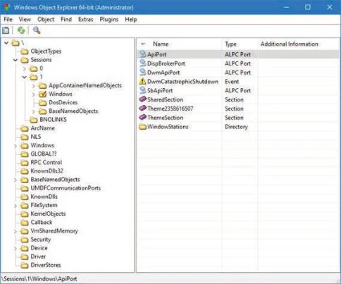<figcaption>PDF page 245</figcaption></figure></details></section><section class="page" id="p2-page-246" aria-label="p2-page-246"><p>2つ目はALPC完了リスト上にWindowsの完了ポート機構を重ねた待機モデルです。複数のペイロードをまとめて取得し、同時要求の上限を制御し、完了ポートの機能を活用できます。ユーザーモードのスレッドプール実装は、ワーカースレッドと同じ基盤でALPCメッセージを管理する内部APIを提供し、このモデルを使います。Windows RPCシステムはLocal RPC（ncalrpc）でこの仕組みを使い、カーネルモードのRPCランタイムMsrpc.sysもカーネルのサポートを利用して効率的にメッセージを届けます。 最後に、任意のコンテキストで動作し、通常は専用システムスレッドを作りたくないドライバー向けに、ALPCはエグゼクティブコールバックオブジェクトを使う簡易的なカーネル通知を提供します。ドライバーはNtSetInformationAlpcPortでコールバックとコンテキストを登録できます。メッセージを受け取るたびに呼び出されます。たとえばカーネルのPower Dependency Coordinator（Pdc.sys）が、クライアントとの通信にこの仕組みを使います。 エグゼクティブコールバックオブジェクトは性能上の利点がある一方、セキュリティリスクもあります。シグナルを受けるとコールバックはブロッキング形式で、シグナル処理と同じ流れの中で実行されます。つまり、NtAlpcSendWaitReceivePortを呼ぶユーザーモードスレッドのコンテキストで動きます。コンテキスト切り替えのコストなしにカーネルコンポーネントがクライアントの状態を調べ、送信側のコンテキストでペイロードを処理できる可能性があります。</p><details class="source-english"><summary>原文（英語）</summary><p>the Windows I/O completion port). The ALPC completion list is an efficient, nonblocking data structure that enables atomic passing of data between clients, and its internals are described further in the upcoming “Performance” section.</p><p>The next notification model is a waiting model that uses the Windows completion-port mechanism (on top of the ALPC completion list). This enables a thread to retrieve multiple payloads at once, control the maximum number of concurrent requests, and take advantage of native completion-port functionality. The user-mode thread pool implementation provides internal APIs that processes use to manage ALPC messages within the same infrastructure as worker threads, which are implemented using this model. The RPC system in Windows, when using Local RPC (over ncalrpc), also makes use of this functionality to provide efficient message delivery by taking advantage of this kernel support, as does the kernel mode RPC runtime in Msrpc.sys.</p><p>Finally, because drivers can run in arbitrary context and typically do not like creating dedicated system threads for their operation, ALPC also provides a mechanism for a more basic, kernel-based notification using executive callback objects. A driver can register its own callback and context with NtSetInformationAlpcPort, after which it will get called whenever a message is received. The Power Dependency Coordinator (Pdc.sys) in the kernel employs this mechanism for communicating with its clients, for example. It’s worth noting that using an executive callback object has potential advantages—but also security risks—in terms of performance. Because the callbacks are executed in a blocking fashion (once signaled), and inline with the signaling code, they will always run in the context of an ALPC message sender (that is, inline with a user-mode thread calling NtAlpcSendWaitReceivePort). This means that the kernel component can have the chance to examine the state of its client without the cost of a context switch and can potentially consume the payload in the context of the sender.</p><p>The reason these are not absolute guarantees, however (and this becomes a risk if the implementor is unaware), is that multiple clients can send a message to the port at the same time and existing messages can be sent by a client before the server registers its executive callback object. It’s also possible for another client to send yet another message while the server is still processing the first message from a different client. In all these cases, the server will run in the context of one of the clients that sent a message but may be analyzing a message sent by a different client. The server should distinguish this situation (since the Client ID of the sender is encoded in the PORT_HEADER of the message) and attach/ analyze the state of the correct sender (which now has a potential context switch cost).</p><p><strong>Views, regions, and sections</strong></p><p>Instead of sending message buffers between their two respective processes, a server and client can choose a more efficient data-passing mechanism that is at the core of the memory manager in Windows: the section object. (More information is available in Chapter 5 in Part 1.) This allows a piece of memory to be allocated as shared and for both client and server to have a consistent, and equal, view of this memory. In this scenario, as much data as can fit can be transferred, and data is merely copied into one address range and immediately available in the other. Unfortunately, shared-memory communication, such as LPC traditionally provided, has its share of drawbacks, especially when considering security ramifications. For one, because both client and server must have access to the shared memory, an unprivileged client can use this to corrupt the server’s shared memory and even build executable</p></details></section><section class="page" id="p2-page-247" aria-label="p2-page-247"><p>ALPCリージョンは書き込み保護も設定できます。サーバーだけが書き込みでき、ほかのクライアントは読み取り専用にできます。共有メモリを悪用した権限昇格攻撃を抑え、一般的なIPCより安全性を高めます。</p>
<h4 id="属性">属性</h4>
<p>ALPCは単純なメッセージ転送にとどまらず、メッセージごとにコンテキスト情報を付加し、カーネルにその有効性や寿命、実装を管理させます。ユーザー側で独自のコンテキストを割り当てることもできます。このデータを属性と呼びます。カーネルが管理する属性は7種類です。</p>
<ul>
<li>セキュリティ属性：クライアントの偽装に必要な情報と高度なセキュリティ機能。</li>
<li>データビュー属性：ALPCセクションのリージョンに関連付けられたビューを管理。自動解放や返信時の手動アンマップも扱います。</li>
<li>コンテキスト属性：ポートやメッセージにユーザー管理のコンテキストポインターを設定します。カーネルが管理するシーケンス番号、メッセージID、コールバックIDも格納され、利用者は一意性、メッセージ単位のハッシュ、順序制御を実装できます。</li>
<li>ハンドル属性：メッセージに関連付けるハンドルを指定します。</li>
<li>トークン属性：完全なセキュリティ属性を使わず、送信者のトークンID、認証ID、変更IDを取得できます。ただし、これだけでは偽装できません。</li>
</ul><details class="source-english"><summary>原文（英語）</summary><p>payloads for potential exploits. Additionally, because the client knows the location of the server’s data, it can use this information to bypass ASLR protections. (See Chapter 5 in Part 1 for more information.)</p><p>ALPC provides its own security on top of what’s provided by section objects. With ALPC, a specific ALPC section object must be created with the appropriate NtAlpcCreatePortSection API, which creates the correct references to the port, as well as allows for automatic section garbage collection. (A manual API also exists for deletion.) As the owner of the ALPC section object begins using the section, the allocated chunks are created as ALPC regions, which represent a range of used addresses within the section and add an extra reference to the message. Finally, within a range of shared memory, the clients obtain views to this memory, which represents the local mapping within their address space.</p><p>Regions also support a couple of security options. First, regions can be mapped either using a secure mode or an unsecure mode. In the secure mode, only two views (mappings) are allowed to the region. This is typically used when a server wants to share data privately with a single client process. Additionally, only one region for a given range of shared memory can be opened from within the context of a given port. Finally, regions can also be marked with write-access protection, which enables only one process context (the server) to have write access to the view (by using MmSecureVirtualMemoryAgainstWrites). Other clients, meanwhile, will have read-only access only. These settings mitigate many privilege-escalation attacks that could happen due to attacks on shared memory, and they make ALPC more resilient than typical IPC mechanisms.</p><p><strong>Attributes</strong></p><p>ALPC provides more than simple message passing; it also enables specific contextual information to be added to each message and have the kernel track the validity, lifetime, and implementation of that information. Users of ALPC can assign their own custom context information as well. Whether it’s system-managed or user-managed, ALPC calls this data attributes. There are seven attributes that the kernel manages:</p><p>I The security attribute, which holds key information to allow impersonation of clients, as well as advanced ALPC security functionality (which is described later).</p><p>I The data view attribute, responsible for managing the different views associated with the regions of an ALPC section. It is also used to set flags such as the auto-release flag, and when replying, to unmap a view manually.</p><p>I The context attribute, which allows user-managed context pointers to be placed on a port, as well as on a specific message sent across the port. In addition, a sequence number, message ID, and callback ID are stored here and managed by the kernel, which allows uniqueness, messagebased hashing, and sequencing to be implemented by users of ALPC.</p><p>I The handle attribute, which contains information about which handles to associate with the message (which is described in more detail later in the “Handle passing” section).</p><p>I The token attribute, which can be used to get the Token ID, Authentication ID, and Modified ID of the message sender, without using a full-blown security attribute (but which does not, on its own, allow impersonation to occur).</p></details></section><section class="page" id="p2-page-248" aria-label="p2-page-248"><p>残りの属性には、直接メッセージと同期オブジェクトを関連付ける「直接」属性、電力やリソース管理を改善するため作業チケットを含める「作業委任」属性があります。送信時にクライアントまたはサーバーが渡した属性は、カーネル内部の形式に変換されます。要求された場合に安全な形で返されます。コンテキストやトークンなど、ALPCが内部でメッセージに結び付け、常に利用可能な属性もあります。このモデルと独自のハンドルテーブルにより、ALPCはカーネル内に実ポインターを保持しながら、クライアントとサーバーには重要なデータを不透明なまま渡せます。属性の初期化や取得には、内部利用者向けのAlpcInitializeMessageAttribute、AlpcGetMessageAttributeなどのAPIがあります。</p>
<h4 id="ブロブ-ハンドル-リソース">ブロブ、ハンドル、リソース</h4>
<p>ALPCがオブジェクトマネージャーに公開するオブジェクト型はポートだけですが、内部ではメッセージや属性を寿命にわたって管理するため、多数の構造体を必要とします。ALPCはオブジェクトマネージャーではなく、「ブロブ」と呼ぶ軽量オブジェクトを独自に実装しています。ブロブは自動割り当てとガベージコレクション、参照追跡、同期によるロックが可能で、作成・破棄コールバックも設定できます。 ALPCはエグゼクティブのハンドルテーブル実装も利用して独自のテーブルを持ち、ブロブをポインターではなく非公開ハンドルで参照します。メッセージもブロブの一つで、作成時にALPCハンドルテーブル上のハンドルとなるメッセージIDが割り当てられます。ほかに、接続ポートや通信ポートとALPCハンドルテーブルを保持する接続ブロブ、偽装用のセキュリティブロブ、共有メモリを表すセクション・リージョン・ビューのブロブ、予約オブジェクト用ブロブ、ハンドル属性用ブロブがあります。</p><details class="source-english"><summary>原文（英語）</summary><p>I The direct attribute, which is used when sending direct messages that have a synchronization object associated with them (described later in the “Direct event” section).</p><p>I The work-on-behalf-of attribute, which is used to encode a work ticket used for better power management and resource management decisions (see the “Power management” section later).</p><p>Some of these attributes are initially passed in by the server or client when the message is sent and converted into the kernel’s own internal ALPC representation. If the ALPC user requests this data back, it is exposed back securely. In a few cases, a server or client can always request an attribute, because it is ALPC that internally associates it with a message and always makes it available (such as the context or token attributes). By implementing this kind of model and combining it with its own internal handle table, described next, ALPC can keep critical data opaque between clients and servers while still maintaining the true pointers in kernel mode.</p><p>To define attributes correctly, a variety of APIs are available for internal ALPC consumers, such as AlpcInitializeMessageAttribute and AlpcGetMessageAttribute.</p><p><strong>Blobs, handles, and resources</strong></p><p>Although the ALPC subsystem exposes only one Object Manager object type (the port), it internally must manage a number of data structures that allow it to perform the tasks required by its mechanisms. For example, ALPC needs to allocate and track the messages associated with each port, as well as the message attributes, which it must track for the duration of their lifetime. Instead of using the Object Manager’s routines for data management, ALPC implements its own lightweight objects called blobs. Just like objects, blobs can automatically be allocated and garbage collected, reference tracked, and locked through synchronization. Additionally, blobs can have custom allocation and deallocation callbacks, which let their owners control extra information that might need to be tracked for each blob. Finally, ALPC also uses the executive’s handle table implementation (used for objects and PIDs/TIDs) to have an ALPC-specific handle table, which allows ALPC to generate private handles for blobs, instead of using pointers.</p><p>In the ALPC model, messages are blobs, for example, and their constructor generates a message ID, which is itself a handle into ALPC’s handle table. Other ALPC blobs include the following:</p><p>I The connection blob, which stores the client and server communication ports, as well as the server connection port and ALPC handle table.</p><p>I The security blob, which stores the security data necessary to allow impersonation of a client. It stores the security attribute.</p><p>I The section, region, and view blobs, which describe ALPC’s shared-memory model. The view blob is ultimately responsible for storing the data view attribute.</p><p>I The reserve blob, which implements support for ALPC Reserve Objects. (See the “Reserve objects” section earlier in this chapter.)</p><p>I The handle data blob, which contains the information that enables ALPC’s handle attribute support.</p></details></section><section class="page" id="p2-page-249" aria-label="p2-page-249"><p>ブロブはページング可能メモリから割り当てられるため、適切な時点で破棄できるよう追跡が必要です。メッセージの解放と同時に削除できる単純なものもありますが、複数の属性や共有メモリのビューを持つものは寿命管理が複雑です。ALPCでは各メッセージにリソースリストを関連付け、単なるポインターではないブロブを割り当てるたびに、そのメッセージのリソースとして登録します。ALPCライブラリには関連リソースの検索、フラッシュ、削除機能があります。セキュリティ、予約、ビューの各ブロブはリソースとして保存されます。</p>
<h4 id="ハンドルの受け渡し">ハンドルの受け渡し</h4>
<p>UnixドメインソケットやMachポートの重要な機能は、ファイル記述子を含むメッセージを送り、受信側のプロセスに複製することです。受信側はパイプ、ソケット、ファイルなどのUNIX形式ファイルへアクセスできます。ALPCでも、ハンドル属性を使って似たことができます。 従来の方式では、送信側がオブジェクト型とハンドルを指定し、カーネルが送信者のテーブルを確認して型を検証します。まずシステム（カーネル）ハンドルテーブルに複製し、オブジェクトが途中で無効化されないようにします。受信側が期待する型を指定して属性を受け取ると、カーネルハンドルを受信側のユーザーモードテーブルへ複製し、カーネル側の複製を閉じます。権限のあるサーバーから権限のないクライアントへ、送信元へのアクセス権を与えずにハンドルを渡せます。 この方式は当初CSRSSが主に利用し、Windowsプロセスが作成した子プロセスを把握できるようにしました。しかし、1メッセージにつき1個のハンドルしか送れず、受信側はメッセージごとの必要性を知らずに常にハンドルを受け取らなければならないなどの問題がありました。</p><details class="source-english"><summary>原文（英語）</summary><p>Because blobs are allocated from pageable memory, they must carefully be tracked to ensure their deletion at the appropriate time. For certain kinds of blobs, this is easy: for example, when an ALPC message is freed, the blob used to contain it is also deleted. However, certain blobs can represent numerous attributes attached to a single ALPC message, and the kernel must manage their lifetime appropriately. For example, because a message can have multiple views associated with it (when many clients have access to the same shared memory), the views must be tracked with the messages that reference them. ALPC implements this functionality by using a concept of resources. Each message is associated with a resource list, and whenever a blob associated with a message (that isn’t a simple pointer) is allocated, it is also added as a resource of the message. In turn, the ALPC library provides functionality for looking up, flushing, and deleting associated resources. Security blobs, reserve blobs, and view blobs are all stored as resources.</p><p><strong>Handle passing</strong></p><p>A key feature of Unix Domain Sockets and Mach ports, which are the most complex and most used IPC mechanisms on Linux and macOS, respectively, is the ability to send a message that encodes a file descriptor which will then be duplicated in the receiving process, granting it access to a UNIX-style file (such as a pipe, socket, or actual file system location). With ALPC, Windows can now also benefit from this model, with the handle attribute exposed by ALPC. This attribute allows a sender to encode an object type, some information about how to duplicate the handle, and the handle index in the table of the sender. If the handle index matches the type of object the sender is claiming to send, a duplicated handle is created, for the moment, in the system (kernel) handle table. This first part guarantees that the sender truly is sending what it is claiming, and that at this point, any operation the sender might undertake does not invalidate the handle or the object beneath it.</p><p>Next, the receiver requests exposing the handle attribute, specifying the type of object they expect. If there is a match, the kernel handle is duplicated once more, this time as a user-mode handle in the table of the receiver (and the kernel copy is now closed). The handle passing has been completed, and the receiver is guaranteed to have a handle to the exact same object the sender was referencing and of the type the receiver expects. Furthermore, because the duplication is done by the kernel, it means a privileged server can send a message to an unprivileged client without requiring the latter to have any type of access to the sending process.</p><p>This handle-passing mechanism, when first implemented, was primarily used by the Windows subsystem (CSRSS), which needs to be made aware of any child processes created by existing Windows processes, so that they can successfully connect to CSRSS when it is their turn to execute, with CSRSS already knowing about their creation from the parent. It had several issues, however, such as the inability to send more than a single handle (and certainly not more than one type of object). It also forced receivers to always receive any handle associated with a message on the port without knowing ahead of time if the message should have a handle associated with it to begin with.</p><p>To rectify these issues, Windows 8 and later now implement the indirect handle passing mechanism, which allows sending multiple handles of different types and allows receivers to manually retrieve handles on a per-message basis. If a port accepts and enables such indirect handles (non-RPC-based ALPC servers typically do not use indirect handles), handles will no longer be automatically duplicated based</p></details></section><section class="page" id="p2-page-250" aria-label="p2-page-250"><p>Windows 8以降は間接ハンドル転送を実装しました。複数の異なる型のハンドルを送信でき、受信側はメッセージごとに必要なハンドルだけを取得できます。間接ハンドルを許可するポートでは、NtAlpcSendWaitReceivePortの受信時にハンドル属性を自動的に複製しません。まずメッセージ内のハンドル数を問い合わせ、受け取り用のデータ構造を確保し、NtAlpcQueryInformationMessageで個々のハンドルと型を取得します。想定外の型は閉じて破棄します。 受信側が各メッセージで必要な場合にだけハンドルを要求するため、別のメッセージに含まれる不要なハンドルを閉じ忘れる危険も減ります。現在この機能はRPCランタイムやIDLコンパイラーにも公開され、system_handle(sh_type)構文で20種類以上のハンドル型を指定できます。RPCランタイムはカーネルの型検査に加え、IDLがパイプを指定しているのにソケットが渡された、といった型の不一致も検査します。AppContainerはこの機能を活用し、ブローカーが権限を確認して開いたハンドルをサンドボックス内のアプリに渡します。DNSクライアントもGetAddrInfoEx APIのai_resolutionhandleを設定するために利用します。</p>
<h4 id="セキュリティ">セキュリティ</h4>
<p>ALPCは、IPCメッセージ解析の不具合を悪用した攻撃を防ぐため、複数のセキュリティ機構と緩和策を実装しています。基本的には、ポートオブジェクトがオブジェクトマネージャーのセキュリティ機能で管理されます。</p><details class="source-english"><summary>原文（英語）</summary><p>on the handle attribute passed in when receiving a new message with NtAlpcSendWaitReceivePort— instead, ALPC clients and servers will have to manually query how many handles a given message contains, allocate sufficient data structures to receive the handle values and their types, and then request the duplication of all the handles, parsing the ones that match the expected types (while closing/dropping unexpected ones) by using NtAlpcQueryInformationMessage and passing in the received message.</p><p>This new behavior also introduces a security benefit—instead of handles being automatically duplicated as soon as the caller specifies a handle attribute with a matching type, they are only duplicated when requested on a per-message basis. Because a server might expect a handle for message A, but not necessarily for all other messages, nonindirect handles can be problematic if the server doesn’t think of closing any possible handle even while parsing message B or C. With indirect handles, the server would never call NtAlpcQueryInformationMessage for such messages, and the handles would never be duplicated (or necessitate closing them).</p><p>Due to these improvements, the ALPC handle-passing mechanism is now exposed beyond just the limited use-cases described and is integrated with the RPC runtime and IDL compiler. It is now possible to use the system_handle(sh_type) syntax to indicate more than 20 different handle types that the RPC runtime can marshal from a client to a server (or vice-versa). Furthermore, although ALPC provides the type checking from the kernel’s perspective, as described earlier, the RPC runtime itself also does additional type checking—for example, while both named pipes, sockets, and actual files are all “File Objects” (and thus handles of type “File”), the RPC runtime can do marshalling and unmarshalling checks to specifically detect whether a Socket handle is being passed when the IDL file indicates system_handle(sh_pipe), for example (this is done by calling APIs such as GetFileAttribute, GetDeviceType, and so on).</p><p>This new capability is heavily leveraged by the AppContainer infrastructure and is the key way through which the WinRT API transfers handles that are opened by the various brokers (after doing capability checks) and duplicated back into the sandboxed application for direct use. Other RPC services that leverage this functionality include the DNS Client, which uses it to populate the ai_resolutionhandle field in the GetAddrInfoEx API.</p><p><strong>Security</strong></p><p>ALPC implements several security mechanisms, full security boundaries, and mitigations to prevent attacks in case of generic IPC parsing bugs. At a base level, ALPC port objects are managed by the same Object Manager interfaces that manage object security, preventing nonprivileged applications from obtaining handles to server ports with ACL. On top of that, ALPC provides a SID-based trust model, inherited from the original LPC design. This model enables clients to validate the server they are connecting to by relying on more than just the port name. With a secured port, the client process submits to the kernel the SID of the server process it expects on the side of the endpoint. At connection time, the kernel validates that the client is indeed connecting to the expected server, mitigating namespace squatting attacks where an untrusted server creates a port to spoof a server.</p><p>ALPC also allows both clients and servers to atomically and uniquely identify the thread and process responsible for each message. It also supports the full Windows impersonation model through the</p></details></section><section class="page" id="p2-page-251" aria-label="p2-page-251"><p>ALPCのセキュリティ機能には、クライアントの偽装や接続済みクライアントのSID、セキュリティトークンのLUID（ローカル一意識別子）の取得などもあります（第1部第7章参照）。</p>
<h4 id="ALPCポートの所有権">ALPCポートの所有権</h4>
<p>ポートの所有権は、クライアントとサーバーにさまざまなセキュリティ保証を提供します。接続ポートの所有者だけが接続を受け入れられます。ポートハンドルが複製または継承されても、別プロセスが不正に接続を受け入れることはできません。また、直接・間接のハンドル属性を使う場合、メッセージを誰が処理しているかにかかわらず、ハンドルは常にポート所有プロセスのコンテキスト内で複製されます。 これは、カーネルコンポーネントがALPCでクライアントと通信するときに重要です。カーネル側が別プロセスにアタッチしていたり、システムスレッドでポートのメッセージを処理していたりしても、ALPCは現在のプロセスを誤って信頼せず、ポート所有者を基準に処理できます。一方、カーネルコンポーネントによっては現在のプロセスに関係なく接続を受け入れる必要があります。</p><details class="source-english"><summary>原文（英語）</summary><p>NtAlpcImpersonateClientThread API. Other APIs give an ALPC server the ability to query the SIDs associated with all connected clients and to query the LUID (locally unique identifier) of the client’s security token (which is further described in Chapter 7 of Part 1).</p><p><strong>ALPC port ownership</strong></p><p>The concept of port ownership is important to ALPC because it provides a variety of security guarantees to interested clients and servers. First and foremost, only the owner of an ALPC connection port can accept connections on the port. This ensures that if a port handle were to be somehow duplicated or inherited into another process, it would not be able to illegitimately accept incoming connections. Additionally, when handle attributes are used (direct or indirect), they are always duplicated in the context of the port owner process, regardless of who may be currently parsing the message.</p><p>These checks are highly relevant when a kernel component might be communicating with a client using ALPC—the kernel component may currently be attached to a completely different process (or even be operating as part of the System process with a system thread consuming the ALPC port messages), and knowledge of the port owner means ALPC does not incorrectly rely on the current process.</p><p>Conversely, however, it may be beneficial for a kernel component to arbitrarily accept incoming connections on a port regardless of the current process. One poignant example of this issue is when an executive callback object is used for message delivery. In this scenario, because the callback is synchronously called in the context of one or more sender processes, whereas the kernel connection port was likely created while executing in the System context (such as in DriverEntry), there would be a mismatch between the current process and the port owner process during the acceptance of the connection. ALPC provides a special port attribute flag—which only kernel callers can use—that marks a connection port as a system port; in such a case, the port owner checks are ignored.</p><p>Another important use case of port ownership is when performing server SID validation checks if a client has requested it, as was described in the “Security” section. This validation is always done by checking against the token of the owner of the connection port, regardless of who may be listening for messages on the port at this time.</p><p><strong>Performance</strong></p><p>ALPC uses several strategies to enhance performance, primarily through its support of completion lists, which were briefly described earlier. At the kernel level, a completion list is essentially a user Memory Descriptor List (MDL) that’s been probed and locked and then mapped to an address. (For more information on MDLs, see Chapter 5 in Part 1.) Because it’s associated with an MDL (which tracks physical pages), when a client sends a message to a server, the payload copy can happen directly at the physical level instead of requiring the kernel to double-buffer the message, as is common in other IPC mechanisms.</p><p>The completion list itself is implemented as a 64-bit queue of completed entries, and both usermode and kernel-mode consumers can use an interlocked compare-exchange operation to insert and remove entries from the queue. Furthermore, to simplify allocations, once an MDL has been initialized, a bitmap is used to identify available areas of memory that can be used to hold new messages that are still being queued. The bitmap algorithm also uses native lock instructions on the processor to provide</p></details></section><section class="page" id="p2-page-252" aria-label="p2-page-252"><p>完了リスト用の物理メモリ領域をアトミックに割り当て・解放する機能もあります。完了リストはNtAlpcSetInformationPortで設定できます。もう一つの最適化では、送信直後にデータをコピーせず、必要な情報だけを取得して遅延コピーを準備します。受信側がメッセージを要求した時点で初めてコピーします。共有メモリでは効果がありませんが、カーネルバッファーを使う非同期メッセージ転送で、キャンセルや高トラフィック時の効率を高めます。</p>
<h4 id="電力管理">電力管理</h4>
<p>モバイルなど消費電力が制限される環境で、Windowsは対応アーキテクチャ（ARM64のbig.LITTLEなど）での異種プロセッサ利用や、軽い使用中の消費電力を下げるコネクテッドスタンバイなどを使います。ALPCはこれらと連携するため、クライアントからALPCサーバーのウェイクチャネルへウェイク参照を送る機能と、「作業委任」属性を導入しました。この属性により、送信側は要求を現在の作業チケットと関連付けられます。</p><details class="source-english"><summary>原文（英語）</summary><p>atomic allocation and deallocation of areas of physical memory that can be used by completion lists. Completion lists can be set up with NtAlpcSetInformationPort.</p><p>A final optimization worth mentioning is that instead of copying data as soon as it is sent, the kernel sets up the payload for a delayed copy, capturing only the needed information, but without any copying. The message data is copied only when the receiver requests the message. Obviously, if shared memory is being used, there’s no advantage to this method, but in asynchronous, kernel-buffer message passing, this can be used to optimize cancellations and high-traffic scenarios.</p><p><strong>Power management</strong></p><p>As we’ve seen previously, when used in constrained power environments, such as mobile platforms, Windows uses a number of techniques to better manage power consumption and processor availability, such as by doing heterogenous processing on architectures that support it (such as ARM64’s big. LITTLE) and by implementing Connected Standby as a way to further reduce power on user systems when under light use.</p><p>To play nice with these mechanisms, ALPC implements two additional features: the ability for ALPC clients to push wake references onto their ALPC server’s wake channel and the introduction of the Work On Behalf Of Attribute. The latter is an attribute that a sender can choose to associate with a message when it wants to associate the request with the current work ticket that it is associated with, or to create a new work ticket that describes the sending thread.</p><p>Such work tickets are used, for example, when the sender is currently part of a Job Object (either due to being in a Silo/Windows Container or by being part of a heterogenous scheduling system and/ or Connected Standby system) and their association with a thread will cause various parts of the system to attribute CPU cycles, I/O request packets, disk/network bandwidth attribution, and energy estimation to be associated to the “behalf of” thread and not the acting thread.</p><p>Additionally, foreground priority donation and other scheduling steps are taken to avoid big.LITTLE priority inversion issues, where an RPC thread is stuck on the small core simply by virtue of being a background service. With a work ticket, the thread is forcibly scheduled on the big core and receives a foreground boost as a donation.</p><p>Finally, wake references are used to avoid deadlock situations when the system enters a connected standby (also called Modern Standby) state, as was described in Chapter 6 of Part 1, or when a UWP application is targeted for suspension. These references allow the lifetime of the process owning the ALPC port to be pinned, preventing the force suspend/deep freeze operations that the Process Lifetime Manager (PLM) would attempt (or the Power Manager, even for Win32 applications). Once the message has been delivered and processed, the wake reference can be dropped, allowing the process to be suspended if needed. (Recall that termination is not a problem because sending a message to a terminated process/closed port immediately wakes up the sender with a special PORT_CLOSED reply, instead of blocking on a response that will never come.)</p></details></section><section class="page" id="p2-page-253" aria-label="p2-page-253"><h4 id="ALPC直接イベント属性">ALPC直接イベント属性</h4>
<p>ALPCには、返信を必要とする双方向の要求と、同期的に返信できない一方向のデータグラムがあります。その中間として、返信処理の複雑さを持ち込まずに、受信側が処理したことだけを送信側へ知らせるメッセージがあると便利です。直接イベント属性はこれを実現します。 送信側はCreateEventで作ったカーネルイベントオブジェクトのハンドルをALPCメッセージに関連付けます。直接イベント属性はイベントの参照を取得してKALPC_MESSAGE構造体へ格納します。受信側がメッセージを受け取ると、属性を公開してイベントにシグナルを送れます。クライアント側ではイベントにI/O完了ポートの待機完了パケットを関連付けるか、イベントハンドルをWaitForSingleObjectで待つことで、メッセージの配信成功を通知または待機解除として受け取れます。以前はRPCランタイムが同様の機能を手動で実装していました。</p><details class="source-english"><summary>原文（英語）</summary><p><strong>ALPC direct event attribute</strong></p><p>Recall that ALPC provides two mechanisms for clients and servers to communicate: requests, which are bidirectional, requiring a response, and datagrams, which are unidirectional and can never be synchronously replied to. A middle ground would be beneficial—a datagram-type message that cannot be replied to but whose receipt could be acknowledged in such a way that the sending party would know that the message was acted upon, without the complexity of having to implement response processing. In fact, this is what the direct event attribute provides.</p><p>By allowing a sender to associate a handle to a kernel event object (through CreateEvent) with the ALPC message, the direct event attribute captures the underlying KEVENT and adds a reference to it, tacking it onto the KALPC_MESSAGE structure. Then, when the receiving process gets the message, it can expose this direct event attribute and cause it to be signaled. A client could either have a Wait Completion Packet associated with an I/O completion port, or it could be in a synchronous wait call such as with WaitForSingleObject on the event handle and would now receive a notification and/or wait satisfaction, informing it of the message’s successful delivery.</p><p>This functionality was previously manually provided by the RPC runtime, which allows clients calling RpcAsyncInitializeHandle to pass in RpcNotificationTypeEvent and associate a HANDLE to an event object with an asynchronous RPC message. Instead of forcing the RPC runtime on the other side to respond to a request message, such that the RPC runtime on the sender’s side would then signal the event locally to signal completion, ALPC now captures it into a Direct Event attribute, and the message is placed on a Direct Message Queue instead of the regular Message Queue. The ALPC subsystem will signal the message upon delivery, efficiently in kernel mode, avoiding an extra hop and context-switch.</p><p><strong>Debugging and tracing</strong></p><p>On checked builds of the kernel, ALPC messages can be logged. All ALPC attributes, blobs, message zones, and dispatch transactions can be individually logged, and undocumented !alpc commands in WinDbg can dump the logs. On retail systems, IT administrators and troubleshooters can enable the ALPC events of the NT kernel logger to monitor ALPC messages, (Event Tracing for Windows, also known as ETW, is discussed in Chapter 10.) ETW events do not include payload data, but they do contain connection, disconnection, and send/receive and wait/unblock information. Finally, even on retail systems, certain !alpc commands obtain information on ALPC ports and messages.</p></details></section><section class="page" id="p2-page-254" aria-label="p2-page-254"><h4 id="実験-接続ポートをダンプする">実験：接続ポートをダンプする</h4>
<p>この実験では、対話型コンソールユーザーが通常使うセッション1で、CSRSSのAPIポートを調べます。Windowsアプリケーションは起動時、該当セッションのCSRSS APIポートに接続します。</p>
<ol>
<li>WinDbgの!objectコマンドで、\Sessions\Windows\ApiPortへのポインターを取得します。</li>
<li>!alpc /pを使ってポートオブジェクトを表示します。CSRSSが所有者であることなどを確認できます。</li>
<li>!alpc /lpcコマンド（新しいWinDbgではApiPort横のConnectionsリンク）で、ポートに接続しているクライアントを調べます。セッション内のWindowsプロセスと、それぞれのサーバー・クライアント通信ポート、各キューの保留メッセージが表示されます。</li>
<li>ほかのセッションがあれば同じ実験を繰り返せます。セッション0（システムセッション）でも確認すれば、マシン上の全Windowsプロセスの一覧を得られます。</li>
</ol><details class="source-english"><summary>原文（英語）</summary><p><strong>EXPERIMENT: Dumping a connection port</strong></p><p>In this experiment, you use the CSRSS API port for Windows processes running in Session 1, which is the typical interactive session for the console user. Whenever a Windows application launches, it connects to CSRSS’s API port in the appropriate session.</p><p>1. Start by obtaining a pointer to the connection port with the !object command:</p><pre>lkd&gt; !object \Sessions\1\Windows\ApiPort
Object: ffff898f172b2df0  Type: (ffff898f032f9da0) ALPC Port
ObjectHeader: ffff898f172b2dc0 (new version)
HandleCount: 1  PointerCount: 7898
Directory Object: ffffc704b10d9ce0  Name: ApiPort</pre><p>2. Dump information on the port object itself with !alpc /p. This will confirm, for example, that CSRSS is the owner:</p><pre>lkd&gt; !alpc /P ffff898f172b2df0
Port ffff898f172b2df0
Type
                             : ALPC_CONNECTION_PORT
CommunicationInfo
                             : ffffc704adf5d410
ConnectionPort
                             : ffff898f172b2df0 (ApiPort), Connections
ClientCommunicationPort : 0000000000000000
ServerCommunicationPort : 0000000000000000
OwnerProcess
                             : ffff898f17481140 (csrss.exe), Connections
SequenceNo
                             : 0x0023BE45 (2342469)
CompletionPort
                             : 0000000000000000
CompletionList
                             : 0000000000000000
ConnectionPending
                             : No
ConnectionRefused
                             : No
Disconnected
                             : No
Closed
                             : No
FlushOnClose
                             : Yes
ReturnExtendedInfo
                             : No
Waitable
                             : No
Security
                             : Static
Wow64CompletionList
                             : No</pre><p>5 thread(s) are waiting on the port:</p><pre>THREAD ffff898f3353b080  Cid 0288.2538  Teb: 00000090bce88000
Win32Thread: ffff898f340cde60 WAIT
THREAD ffff898f313aa080  Cid 0288.19ac  Teb: 00000090bcf0e000
Win32Thread: ffff898f35584e40 WAIT
THREAD ffff898f191c3080  Cid 0288.060c  Teb: 00000090bcff1000
Win32Thread: ffff898f17c5f570 WAIT
THREAD ffff898f174130c0  Cid 0288.0298  Teb: 00000090bcfd7000
Win32Thread: ffff898f173f6ef0 WAIT
THREAD ffff898f1b5e2080  Cid 0288.0590  Teb: 00000090bcfe9000
Win32Thread: ffff898f173f82a0 WAIT
THREAD ffff898f3353b080  Cid 0288.2538  Teb: 00000090bce88000
Win32Thread: ffff898f340cde60 WAIT</pre><p><strong>EXPERIMENT: Dumping a connection port</strong></p><p>In this experiment, you use the CSRSS API port for Windows processes running in Session 1, which is the typical interactive session for the console user. Whenever a Windows application launches, it connects to CSRSS’s API port in the appropriate session.</p><p>1. Start by obtaining a pointer to the connection port with the !object command:</p><pre>lkd&gt; !object \Sessions\1\Windows\ApiPort
Object: ffff898f172b2df0  Type: (ffff898f032f9da0) ALPC Port</pre><pre>ObjectHeader: ffff898f172b2dc0 (new version)
HandleCount: 1  PointerCount: 7898
Directory Object: ffffc704b10d9ce0  Name: ApiPort</pre><p>2. Dump information on the port object itself with !alpc /p. This will confirm, for example, that CSRSS is the owner:</p><pre>lkd&gt; !alpc /P ffff898f172b2df0
Port ffff898f172b2df0</pre><pre>Type
                            : ALPC_CONNECTION_PORT
CommunicationInfo
                            : ffffc704adf5d410
ConnectionPort
                            : ffff898f172b2df0 (ApiPort), Connections
ClientCommunicationPort : 0000000000000000
ServerCommunicationPort : 0000000000000000
OwnerProcess
                            : ffff898f17481140 (csrss.exe), Connections
SequenceNo
                            : 0x0023BE45 (2342469)
CompletionPort
                            : 0000000000000000
CompletionList
                            : 0000000000000000
ConnectionPending
                            : No
ConnectionRefused
                            : No
Disconnected
                            : No
Closed
                            : No
FlushOnClose
                            : Yes
ReturnExtendedInfo
                            : No
Waitable
                            : No
Security
                            : Static
Wow64CompletionList
                            : No</pre><p>5 thread(s) are waiting on the port:</p><pre>THREAD ffff898f3353b080  Cid 0288.2538  Teb: 00000090bce88000
Win32Thread: ffff898f340cde60 WAIT
THREAD ffff898f313aa080  Cid 0288.19ac  Teb: 00000090bcf0e000
Win32Thread: ffff898f35584e40 WAIT
THREAD ffff898f191c3080  Cid 0288.060c  Teb: 00000090bcff1000
Win32Thread: ffff898f17c5f570 WAIT
THREAD ffff898f174130c0  Cid 0288.0298  Teb: 00000090bcfd7000
Win32Thread: ffff898f173f6ef0 WAIT
THREAD ffff898f1b5e2080  Cid 0288.0590  Teb: 00000090bcfe9000
Win32Thread: ffff898f173f82a0 WAIT
THREAD ffff898f3353b080  Cid 0288.2538  Teb: 00000090bce88000
Win32Thread: ffff898f340cde60 WAIT</pre></details></section><section class="page" id="p2-page-255" aria-label="p2-page-255"><h3 id="Windows-通知機能-WNF">Windows 通知機能（WNF）</h3>
<p>Windowsには、イベントや状態変化の発生を関係者に知らせ、その変化に伴うペイロードも渡すうえで、従来の設計に不足がありました。たとえばサービスAがディスクのスキャンを終え、書き込み可能であることと不良セクター数を、クライアントB、C、Dに通知したいとします。B、C、DがAより先に起動することもあります。その場合、安全が確認されるまで処理を待つべきですが、Aがまだ動いていないなら、どうやって待てばよいでしょうか。Aが起動した後、通知を受け取るためのプロトコルを独自に設計する方法もありますが、サービスが落ちた場合や偽の名前による占有、サービス拒否などを考慮しなければならず、実装は複雑になります。</p>
<h4 id="WNFの機能">WNFの機能</h4>
<p>このような問題を解決する仕組みを、個々の開発者に任せるべきではありません。OSが一般的な設計課題に対して、単純でスケーラブルかつ高性能な方法を提供するという考えから、現代のWindowsはWNFを提供します。</p>
<ul>
<li>任意のプロセスが登録・購読できる状態名。標準のWindowsセキュリティ記述子（DACL、SACL）で保護できます。</li>
<li>最大4KBのペイロードを状態名に関連付け、状態変化とともに発行・取得できます。</li>
<li>OSに事前登録された既知の状態名。発行側が競争的に作成する必要がなく、発行側がまだ起動していなくても購読側は通知を待てます。</li>
<li>再起動をまたいだ状態データの永続化。購読側の起動前に発行されたデータも参照できます。</li>
<li>状態名ごとの変更時刻。再起動後も、非稼働中にデータが更新されたか確認できます。</li>
<li>対話セッション、サーバーサイロ（コンテナー）、ユーザートークン/SID、個別プロセスのスコープで状態名を分離できます。</li>
<li>カーネルとユーザーモードの境界をまたいで状態を発行・購読できます。</li>
</ul><details class="source-english"><summary>原文（英語）</summary><p>Main queue is empty.</p><p>Direct message queue is empty.</p><p>Large message queue is empty.</p><p>Pending queue is empty.</p><p>Canceled queue is empty.</p><p>3. You can see what clients are connected to the port, which includes all Windows processes running in the session, with the undocumented !alpc /lpc command, or, with a newer version of WinDbg, you can simply click the Connections link next to the ApiPort name. You will also see the server and client communication ports associated with each connection and any pending messages on any of the queues:</p><p>lkd&gt; !alpc /lpc ffff898f082cbdf0</p><p>ffff898f082cbdf0(&#x27;ApiPort&#x27;) 0, 131 connections</p><pre>ffff898f0b971940 0 -&gt;ffff898F0868a680 0 ffff898f17479080(&#x27;wininit.exe&#x27;)
ffff898f1741fdd0 0 -&gt;ffff898f1742add0 0 ffff898f174ec240(&#x27;services.exe&#x27;)
ffff898f1740cdd0 0 -&gt;ffff898f17417dd0 0 ffff898f174da200(&#x27;lsass.exe&#x27;)
ffff898f08272900 0 -&gt;ffff898f08272dc0 0 ffff898f1753b400(&#x27;svchost.exe&#x27;)
ffff898f08a702d0 0 -&gt;ffff898f084d5980 0 ffff898f1753e3c0(&#x27;svchost.exe&#x27;)
ffff898f081a3dc0 0 -&gt;ffff898f08a70070 0 ffff898f175402c0(&#x27;fontdrvhost.ex&#x27;)
ffff898F086dcde0 0 -&gt;ffff898f17502de0 0 ffff898f17588440(&#x27;svchost.exe&#x27;)
ffff898f1757abe0 0 -&gt;ffff898f1757b980 0 ffff898f17c1a400(&#x27;svchost.exe&#x27;)</pre><p>4. Note that if you have other sessions, you can repeat this experiment on those sessions also (as well as with session 0, the system session). You will eventually get a list of all the Windows processes on your machine.</p><p><strong>Windows Notification Facility</strong></p><p>The Windows Notification Facility, or WNF, is the core underpinning of a modern registrationless publisher/subscriber mechanism that was added in Windows 8 as a response to a number of architectural deficiencies when it came to notifying interested parties about the existence of some action, event, or state, and supplying a data payload associated with this state change.</p><p>To illustrate this, consider the following scenario: Service A wants to notify potential clients B, C, and D that the disk has been scanned and is safe for write access, as well as the number of bad sectors (if any) that were detected during the scan. There is no guarantee that B, C, D start after A—in fact, there’s a good chance they might start earlier. In this case, it is unsafe for them to continue their execution, and they should wait for A to execute and report the disk is safe for write access. But if A isn’t even running yet, how does one wait for it in the first place?</p><p>Main queue is empty.</p><p>Direct message queue is empty.</p><p>Large message queue is empty.</p><p>Pending queue is empty.</p><p>Canceled queue is empty.</p><p>3. You can see what clients are connected to the port, which includes all Windows processes running in the session, with the undocumented !alpc /lpc command, or, with a newer version of WinDbg, you can simply click the Connections link next to the ApiPort name. You will also see the server and client communication ports associated with each connection and any pending messages on any of the queues:</p><p>lkd&gt; !alpc /lpc ffff898f082cbdf0</p><p>ffff898f082cbdf0(&#x27;ApiPort&#x27;) 0, 131 connections</p><pre>ffff898f0b971940 0 -&gt;ffff898F0868a680 0 ffff898f17479080(&#x27;wininit.exe&#x27;)
ffff898f1741fdd0 0 -&gt;ffff898f1742add0 0 ffff898f174ec240(&#x27;services.exe&#x27;)
ffff898f1740cdd0 0 -&gt;ffff898f17417dd0 0 ffff898f174da200(&#x27;lsass.exe&#x27;)
ffff898f08272900 0 -&gt;ffff898f08272dc0 0 ffff898f1753b400(&#x27;svchost.exe&#x27;)
ffff898f08a702d0 0 -&gt;ffff898f084d5980 0 ffff898f1753e3c0(&#x27;svchost.exe&#x27;)
ffff898f081a3dc0 0 -&gt;ffff898f08a70070 0 ffff898f175402c0(&#x27;fontdrvhost.ex&#x27;)
ffff898F086dcde0 0 -&gt;ffff898f17502de0 0 ffff898f17588440(&#x27;svchost.exe&#x27;)
ffff898f1757abe0 0 -&gt;ffff898f1757b980 0 ffff898f17c1a400(&#x27;svchost.exe&#x27;)</pre><p>4. Note that if you have other sessions, you can repeat this experiment on those sessions also (as well as with session 0, the system session). You will eventually get a list of all the Windows processes on your machine.</p></details></section><section class="page" id="p2-page-256" aria-label="p2-page-256"><h4 id="WNFの利用者">WNFの利用者</h4>
<p>これらの機能により、多数のクライアントに通知や状態変化を知らせるサービスやカーネルコンポーネントを実装できます。細かなシステムライブラリのAPIから大規模なプロセスまで、さまざまな利用者があります。たとえば、電源マネージャーは蓋の開閉、充電状態、ディスプレイの電源、ユーザーの存在などを通知します。シェルはアプリの起動、ユーザー操作、ロック画面、タスクバー、Cortana、スタートメニューの状態を追跡します。System Events Broker（SEB）はUWPアプリやブローカーへ音声入出力などのシステムイベントを通知する基盤です。プロセスマネージャーはプロセスごとの一時的なWNF状態名でウェイクチャネルを作り、Process Lifetime Manager（PLM）が休止状態（deep freeze）のプロセスを起こす仕組みの一部として使います。 WNFの利用者をすべて列挙すると本書全体が必要になるほどで、既知の状態名だけでも6,000種類を超え、プロセスごとのウェイクチャネルなどの一時名も作られます。</p><details class="source-english"><summary>原文（英語）</summary><p>A typical solution would be for B to create an event “CAN_I_WAIT_FOR_A_YET” and then have A look for this event once started, create the “A_SAYS_DISK_IS_SAFE” event and then signal “CAN_I_WAIT_ FOR_A_YET,” allowing B to know it’s now safe to wait for “A_SAYS_DISK_IS_SAFE”. In a single client scenario, this is feasible, but things become even more complex once we think about C and D, which might all be going through this same logic and could race the creation of the “CAN_I_WAIT_FOR_A_YET” event, at which point they would open the existing event (in our example, created by B) and wait on it to be signaled. Although this can be done, what guarantees that this event is truly created by B? Issues around malicious “squatting” of the name and denial of service attacks around the name now arise. Ultimately, a safe protocol can be designed, but this requires a lot of complexity for the developer(s) of A, B, C, and D— and we haven’t even discussed how to get the number of bad sectors.</p><p><strong>WNF features</strong></p><p>The scenario described in the preceding section is a common one in operating system design—and the correct pattern for solving it clearly shouldn’t be left to individual developers. Part of a job of an operating system is to provide simple, scalable, and performant solutions to common architectural challenges such as these, and this is what WNF aims to provide on modern Windows platforms, by providing:</p><p>I The ability to define a state name that can be subscribed to, or published to by arbitrary processes, secured by a standard Windows security descriptor (with a DACL and SACL)</p><p>I The ability to associate such a state name with a payload of up to 4 KB, which can be retrieved along with the subscription to a change in the state (and published with the change)</p><p>I The ability to have well-known state names that are provisioned with the operating system and do not need to be created by a publisher while potentially racing with consumers—thus consumers will block on the state change notification even if a publisher hasn’t started yet</p><p>I The ability to persist state data even between reboots, such that consumers may be able to see previously published data, even if they were not yet running</p><p>I The ability to assign state change timestamps to each state name, such that consumers can know, even across reboots, if new data was published at some point without the consumer being active (and whether to bother acting on previously published data)</p><p>I The ability to assign scope to a given state name, such that multiple instances of the same state name can exist either within an interactive session ID, a server silo (container), a given user token/SID, or even within an individual process.</p><p>I Finally, the ability to do all of the publishing and consuming of WNF state names while crossing the kernel/user boundary, such that components can interact with each other on either side.</p></details></section><section class="page" id="p2-page-257" aria-label="p2-page-257"><p>次の表には、WNF状態名で使われるプレフィックス、名前の数、用途を示します。例として、電源管理、シェル、Bluetooth、セルラー通信、コード整合性、デスクトップウィンドウマネージャーなど、Windowsの多くの機能が含まれます。</p><details class="source-english"><summary>原文（英語）</summary><p><strong>WNF users</strong></p><p>As the reader can tell, providing all these semantics allows for a rich set of services and kernel components to leverage WNF to provide notifications and other state change signals to hundreds of clients (which could be as fine-grained as individual APIs in various system libraries to large scale processes). In fact, several key system components and infrastructure now use WNF, such as</p><p>I The Power Manager and various related components use WNF to signal actions such as closing and opening the lid, battery charging state, turning the monitor off and on, user presence detection, and more.</p><p>I The Shell and its components use WNF to track application launches, user activity, lock screen behavior, taskbar behavior, Cortana usage, and Start menu behavior.</p><p>I The System Events Broker (SEB) is an entire infrastructure that is leveraged by UWP applications and brokers to receive notifications about system events such as the audio input and output.</p><p>I The Process Manager uses per-process temporary WNF state names to implement the wake channel that is used by the Process Lifetime Manager (PLM) to implement part of the mechanism that allows certain events to force-wake processes that are marked for suspension (deep freeze).</p><p>Enumerating all users of WNF would take up this entire book because more than 6000 different well-known state names are used, in addition to the various temporary names that are created (such as the per-process wake channels). However, a later experiment showcases the use of the wnfdump utility part of the book tools, which allows the reader to enumerate and interact with all of their system’s WNF events and their data. The Windows Debugging Tools also provide a !wnf extension that is shown in a future experiment and can also be used for this purpose. Meanwhile, the Table 8-31 explains some of the key WNF state name prefixes and their uses. You will encounter many Windows components and codenames across a vast variety of Windows SKUs, from Windows Phone to XBOX, exposing the richness of the WNF mechanism and its pervasiveness.</p><p>TABLE 8-31 WNF state name prefixes</p><p>Prefix # of Names Usage</p><p>9P 2 Plan 9 Redirector</p><p>A2A 1 App-to-App</p><p>AAD 2 Azure Active Directory</p><p>AA 3 Assigned Access</p><p>ACC 1 Accessibility</p><p>ACHK 1 Boot Disk Integrity Check (Autochk)</p><p>ACT 1 Activity</p><p>AFD 1 Ancillary Function Driver (Winsock)</p><p>AI 9 Application Install</p><p>AOW 1 Android-on-Windows (Deprecated)</p><p>ATP 1 Microsoft Defender ATP</p></details></section><section class="page" id="p2-page-258" aria-label="p2-page-258"><p>この表では、オーディオ、音声起動、音量制限、アプリブロードキャスト、ブローカー基盤、Bluetooth、バックグラウンドメディア、ブート、明るさ、ブラウザー設定、Capability Access Manager、接続デバイス、セルラーサービス、証明書キャッシュ、コード整合性、クリップボード、互換性、コンテナー、シェル、クラウドエクスペリエンス、診断ログ、展開、デバイス管理などのプレフィックスを示します。各プレフィックスには状態名の数と機能の説明が対応します。</p><details class="source-english"><summary>原文（英語）</summary><p>Prefix # of Names Usage</p><p>AUDC 15 Audio Capture</p><p>AVA 1 Voice Activation</p><p>AVLC 3 Volume Limit Change</p><p>BCST 1 App Broadcast Service</p><p>BI 16 Broker Infrastructure</p><p>BLTH 14 Bluetooth</p><p>BMP 2 Background Media Player</p><p>BOOT 3 Boot Loader</p><p>BRI 1 Brightness</p><p>BSC 1 Browser Configuration (Legacy IE, Deprecated)</p><p>CAM 66 Capability Access Manager</p><p>CAPS 1 Central Access Policies</p><p>CCTL 1 Call Control Broker</p><p>CDP 17 Connected Devices Platform (Project “Rome”/Application Handoff)</p><p>CELL 78 Cellular Services</p><p>CERT 2 Certificate Cache</p><p>CFCL 3 Flight Configuration Client Changes</p><p>CI 4 Code Integrity</p><p>CLIP 6 Clipboard</p><p>CMFC 1 Configuration Management Feature Configuration</p><p>CMPT 1 Compatibility</p><p>CNET 10 Cellular Networking (Data)</p><p>CONT 1 Containers</p><p>CSC 1 Client Side Caching</p><p>CSHL 1 Composable Shell</p><p>CSH 1 Custom Shell Host</p><p>CXH 6 Cloud Experience Host</p><p>DBA 1 Device Broker Access</p><p>DCSP 1 Diagnostic Log CSP</p><p>DEP 2 Deployment (Windows Setup)</p><p>DEVM 3 Device Management</p><p>DICT 1 Dictionary</p><p>DISK 1 Disk</p><p>DISP 2 Display</p><p>DMF 4 Data Migration Framework</p></details></section><section class="page" id="p2-page-259" aria-label="p2-page-259"><p>表にはDNS、Delivery Optimization、デスクトップウィンドウマネージャー、DirectX、Edge、Enterprise Data Protection、イベントトレーシング、実行コンポーネント、機能構成、フィードバック、Filter Manager、Features on Demand、ファイルシステムランタイム、BitLocker、Game Core、グローバリゼーション、グループポリシー、ホストアクティビティ、Holographic Services、Hyper-Vなどが掲載されています。</p><details class="source-english"><summary>原文（英語）</summary><p>Prefix # of Names Usage</p><p>DNS 1 DNS</p><p>DO 2 Delivery Optimization</p><p>DSM 2 Device State Manager</p><p>DUMP 2 Crash Dump</p><p>DUSM 2 Data Usage Subscription Management</p><p>DWM 9 Desktop Window Manager</p><p>DXGK 2 DirectX Kernel</p><p>DX 24 DirectX</p><p>EAP 1 Extensible Authentication Protocol</p><p>EDGE 4 Edge Browser</p><p>EDP 15 Enterprise Data Protection</p><p>EDU 1 Education</p><p>EFS 2 Encrypted File Service</p><p>EMS 1 Emergency Management Services</p><p>ENTR 86 Enterprise Group Policies</p><p>EOA 8 Ease of Access</p><p>ETW 1 Event Tracing for Windows</p><p>EXEC 6 Execution Components (Thermal Monitoring)</p><p>FCON 1 Feature Configuration</p><p>FDBK 1 Feedback</p><p>FLTN 1 Flighting Notifications</p><p>FLT 2 Filter Manager</p><p>FLYT 1 Flight ID</p><p>FOD 1 Features on Demand</p><p>FSRL 2 File System Runtime (FsRtl)</p><p>FVE 15 Full Volume Encryption</p><p>GC 9 Game Core</p><p>GIP 1 Graphics</p><p>GLOB 3 Globalization</p><p>GPOL 2 Group Policy</p><p>HAM 1 Host Activity Manager</p><p>HAS 1 Host Attestation Service</p><p>HOLO 32 Holographic Services</p><p>HPM 1 Human Presence Manager</p><p>HVL 1 Hypervisor Library (Hvl)</p></details></section><section class="page" id="p2-page-260" aria-label="p2-page-260"><p>表には入力方式、Immersive Shell、Internet of Things、カーネルソフトリブート、Kernel Streaming、位置情報、ライセンス、ログオン、メモリ管理、Microsoft Account、自然認証、ネットワーク接続、NDIS、近距離無線通信、次世代暗号、ネットワークロケーション、言語サービスなどのプレフィックスが含まれます。</p><details class="source-english"><summary>原文（英語）</summary><p>Prefix # of Names Usage</p><p>HYPV 2 Hyper-V</p><p>IME 4 Input Method Editor</p><p>IMSN 7 Immersive Shell Notifications</p><p>IMS 1 Entitlements</p><p>INPUT 5 Input</p><p>IOT 2 Internet of Things</p><p>ISM 4 Input State Manager</p><p>IUIS 1 Immersive UI Scale</p><p>KSR 2 Kernel Soft Reboot</p><p>KSV 5 Kernel Streaming</p><p>LANG 2 Language Features</p><p>LED 1 LED Alert</p><p>LFS 12 Location Framework Service</p><p>LIC 9 Licensing</p><p>LM 7 License Manager</p><p>LOC 3 Geolocation</p><p>LOGN 8 Logon</p><p>MAPS 3 Maps</p><p>MBAE 1 MBAE</p><p>MM 3 Memory Manager</p><p>MON 1 Monitor Devices</p><p>MRT 5 Microsoft Resource Manager</p><p>MSA 7 Microsoft Account</p><p>MSHL 1 Minimal Shell</p><p>MUR 2 Media UI Request</p><p>MU 1 Unknown</p><p>NASV 5 Natural Authentication Service</p><p>NCB 1 Network Connection Broker</p><p>NDIS 2 Kernel NDIS</p><p>NFC 1 Near Field Communication (NFC) Services</p><p>NGC 12 Next Generation Crypto</p><p>NLA 2 Network Location Awareness</p><p>NLM 6 Network Location Manager</p><p>NLS 4 Nationalization Language Services</p></details></section><section class="page" id="p2-page-261" aria-label="p2-page-261"><p>表にはNow Playing、ネットワークストア、OSライセンス、初回セットアップ、ストレージ、ウィンドウ制御、決済、印刷、ペン、電話、電源管理、プロビジョニング、プロセス管理、SMB、ゲームモード、RPCファイアウォール、セキュアブート、セキュアチャネル、サービス制御、System Events Broker、シェル、検索インデクサー、サインインオプションなどがあります。</p><details class="source-english"><summary>原文（英語）</summary><p>Prefix # of Names Usage</p><p>NPSM 1 Now Playing Session Manager</p><p>NSI 1 Network Store Interface Service</p><p>OLIC 4 OS Licensing</p><p>OOBE 4 Out-Of-Box-Experience</p><p>OSWN 8 OS Storage</p><p>OS 2 Base OS</p><p>OVRD 1 Window Override</p><p>PAY 1 Payment Broker</p><p>PDM 2 Print Device Manager</p><p>PFG 2 Pen First Gesture</p><p>PHNL 1 Phone Line</p><p>PHNP 3 Phone Private</p><p>PHN 2 Phone</p><p>PMEM 1 Persistent Memory</p><p>PNPA-D 13 Plug-and-Play Manager</p><p>PO 54 Power Manager</p><p>PROV 6 Runtime Provisioning</p><p>PS 1 Kernel Process Manager</p><p>PTI 1 Push to Install Service</p><p>RDR 1 Kernel SMB Redirector</p><p>RM 3 Game Mode Resource Manager</p><p>RPCF 1 RPC Firewall Manager</p><p>RTDS 2 Runtime Trigger Data Store</p><p>RTSC 2 Recommended Troubleshooting Client</p><p>SBS 1 Secure Boot State</p><p>SCH 3 Secure Channel (SChannel)</p><p>SCM 1 Service Control Manager</p><p>SDO 1 Simple Device Orientation Change</p><p>SEB 61 System Events Broker</p><p>SFA 1 Secondary Factor Authentication</p><p>SHEL 138 Shell</p><p>SHR 3 Internet Connection Sharing (ICS)</p><p>SIDX 1 Search Indexer</p><p>SIO 2 Sign-In Options</p></details></section><section class="page" id="p2-page-262" aria-label="p2-page-262"><p>表にはOneDrive、セッションマネージャー、Storage Spaces、音声、システム設定、システム復元、Sleep Study、SMBサーバー、電話同期、Time Broker、Microsoft Defenderテレメトリー、テーマ、タッチキーボード、TPM、タイムゾーン、ユーザーモード電源管理、ユーザーデータ、ユーザーモードドライバー、USBスタックなどのプレフィックスが掲載されています。</p><details class="source-english"><summary>原文（英語）</summary><p>Prefix # of Names Usage</p><p>SYKD 2 SkyDrive (Microsoft OneDrive)</p><p>SMSR 3 SMS Router</p><p>SMSS 1 Session Manager</p><p>SMS 1 SMS Messages</p><p>SPAC 2 Storage Spaces</p><p>SPCH 4 Speech</p><p>SPI 1 System Parameter Information</p><p>SPLT 4 Servicing</p><p>SRC 1 System Radio Change</p><p>SRP 1 System Replication</p><p>SRT 1 System Restore (Windows Recovery Environment)</p><p>SRUM 1 Sleep Study</p><p>SRV 2 Server Message Block (SMB/CIFS)</p><p>STOR 3 Storage</p><p>SUPP 1 Support</p><p>SYNC 1 Phone Synchronization</p><p>SYS 1 System</p><p>TB 1 Time Broker</p><p>TEAM 4 TeamOS Platform</p><p>TEL 5 Microsoft Defender ATP Telemetry</p><p>TETH 2 Tethering</p><p>THME 1 Themes</p><p>TKBN 24 Touch Keyboard Broker</p><p>TKBR 3 Token Broker</p><p>TMCN 1 Tablet Mode Control Notification</p><p>TOPE 1 Touch Event</p><p>TPM 9 Trusted Platform Module (TPM)</p><p>TZ 6 Time Zone</p><p>UBPM 4 User Mode Power Manager</p><p>UDA 1 User Data Access</p><p>UDM 1 User Device Manager</p><p>UMDF 2 User Mode Driver Framework</p><p>UMGR 9 User Manager</p><p>USB 8 Universal Serial Bus (USB) Stack</p></details></section><section class="page" id="p2-page-263" aria-label="p2-page-263"><p>表にはUpdate Orchestrator、Unified Write Filter、VPN、資格情報保管庫、Windows Hello、無線LAN、接続マネージャー、Windows Defender Application Guard、Web認証、Windows Error Reporting、Windowsファイアウォール、WiFi Display、Windowsファミリーセーフティ、Windowsワイヤレスネットワーク、Windows Notification Service、WSL、Windows Update、Xboxサービスなどがあります。</p><details class="source-english"><summary>原文（英語）</summary><p>Prefix # of Names Usage</p><p>USO 16 Update Orchestrator</p><p>UTS 2 User Trusted Signals</p><p>UUS 1 Unknown</p><p>UWF 4 Unified Write Filter</p><p>VAN 1 Virtual Area Networks</p><p>VPN 1 Virtual Private Networks</p><p>VTSV 2 Vault Service</p><p>WAAS 2 Windows-as-a-Service</p><p>WBIO 1 Windows Biometrics</p><p>WCDS 1 Wireless LAN</p><p>WCM 6 Windows Connection Manager</p><p>WDAG 2 Windows Defender Application Guard</p><p>WDSC 1 Windows Defender Security Settings</p><p>WEBA 2 Web Authentication</p><p>WER 3 Windows Error Reporting</p><p>WFAS 1 Windows Firewall Application Service</p><p>WFDN 3 WiFi Display Connect (MiraCast)</p><p>WFS 5 Windows Family Safety</p><p>WHTP 2 Windows HTTP Library</p><p>WIFI 15 Windows Wireless Network (WiFi) Stack</p><p>WIL 20 Windows Instrumentation Library</p><p>WNS 1 Windows Notification Service</p><p>WOF 1 Windows Overlay Filter</p><p>WOSC 9 Windows One Setting Configuration</p><p>WPN 5 Windows Push Notifications</p><p>WSC 1 Windows Security Center</p><p>WSL 1 Windows Subsystem for Linux</p><p>WSQM 1 Windows Software Quality Metrics (SQM)</p><p>WUA 6 Windows Update</p><p>WWAN 5 Wireless Wire Area Network (WWAN) Service</p><p>XBOX 116 XBOX Services</p></details></section><section class="page" id="p2-page-264" aria-label="p2-page-264"><h4 id="WNF状態名と保存先">WNF状態名と保存先</h4>
<p>WNF状態名は0xAC41491908517835のようなランダムに見える64ビット識別子で表し、WNF_AUDC_CAPTURE_ACTIVEなどのCプリプロセッサーマクロで分かりやすい名前を付けます。実際には、この値にバージョン（1）、有効期間（一時または永続）、スコープ（プロセス、コンテナー、ユーザー、セッション、マシン）、永続データのフラグが符号化されています。既知の状態名では、所有者を示すプレフィックスと一意な連番も含まれます。 既知の状態名は、利用順序に関係なく使えるよう事前に用意されています。WNFはレジストリを保存先として使い、セキュリティ記述子、最大データサイズ、型ID（あれば）をHKLM\SYSTEM\CurrentControlSet\Control\Notificationsに保存します。各状態名の情報は、64ビット識別子と同じ名前の値に格納されます。 状態名は登録プロセスの寿命に関係なく、システムの稼働中に登録状態を維持することもできます。これは第8章「オブジェクトマネージャー」の永続オブジェクトに似ており、SeCreatePermanentPrivilegeが必要です。これらはHKLM\SOFTWARE\Microsoft\Windows NT\CurrentVersion\VolatileNotificationsに保存されます。「永続」なのに揮発性レジストリキーを使うのは、ここでの永続性がプロセスの寿命ではなく、起動中のセッションを指すためです。再起動後も残る永続状態名は、揮発性フラグのない別のNotificationsキーに保存されます。この場合もSeCreatePermanentPrivilegeが必要です。配下のDataキーには、状態名ごとの最終変更スタンプとバイナリデータが記録されます。まだ書き込まれていない状態名では、データがないことがあります。</p><details class="source-english"><summary>原文（英語）</summary><p><strong>WNF state names and storage</strong></p><p>WNF state names are represented as random-looking 64-bit identifiers such as 0xAC41491908517835 and then defined to a friendly name using C preprocessor macros such as WNF_AUDC_CAPTURE_ACTIVE. In reality, however, these numbers are used to encode a version number (1), a lifetime (persistent versus temporary), a scope (process-instanced,  container-instanced, user-instanced, session-instanced, or machine-instanced), a permanent data flag, and, for well-known state names, a prefix identifying the owner of the state name followed by a unique sequence number. Figure 8-41 below shows this format.</p><p>Owner Tag Version Permanent</p><p>Data</p><p>Data Scope</p><p>Name Lifetime Sequence Number</p><p>32 bits 4 bits 1 bit 4 bits 2 bits 21 bits</p><p>FIGURE 8-41 Format of a WNF state name.</p><p>As mentioned earlier, state names can be well-known, which means that they are preprovisioned for arbitrary out-of-order use. WNF achieves this by using the registry as a backing store, which will encode the security descriptor, maximum data size, and type ID (if any) under the HKLM\SYSTEM\ CurrentControlSet\Control\Notifications registry key. For each state name, the information is stored under a value matching the 64-bit encoded WNF state name identifier.</p><p>Additionally, WNF state names can also be registered as persistent, meaning that they will remain registered for the duration of the system’s uptime, regardless of the registrar’s process lifetime. This mimics permanent objects that were shown in the “Object Manager” section of this chapter, and similarly, the SeCreatePermanentPrivilege privilege is required to register such state names. These WNF state names also live in the registry, but under the HKLM\SOFTWARE\Microsoft\Windows NT\ CurrentVersion\VolatileNotifications key, and take advantage of the registry’s volatile flag to simply disappear once the machine is rebooted. You might be confused to see “volatile” registry keys being used for “persistent” WNF data—keep in mind that, as we just indicated, the persistence here is within a boot session (versus attached to process lifetime, which is what WNF calls temporary, and which we’ll see later).</p><p>Furthermore, a WNF state name can be registered as permanent, which endows it with the ability to persist even across reboots. This is the type of “persistence” you may have been expecting earlier. This is done by using yet another registry key, this time without the volatile flag set, present at HKLM\SOFTWARE\Microsoft\Windows NT\CurrentVersion\Notifications. Suffice it to say, the SeCreatePermanentPrivilege is needed for this level of persistence as well. For these types of WNF states, there is an additional registry key found below the hierarchy, called Data, which contains, for each 64-bit encoded WNF state name identifier, the last change stamp, and the binary data. Note that if the WNF state name was never written to on your machine, the latter information might be missing.</p></details></section><section class="page" id="p2-page-265" aria-label="p2-page-265"><h4 id="実験-レジストリ内のWNF状態名とデータを表示する">実験：レジストリ内のWNF状態名とデータを表示する</h4>
<p>レジストリエディターで既知のWNF名と、永続・セッション永続の名前の例を確認します。生のバイナリデータから、状態データやセキュリティ記述子を確認できます。HKEY_LOCAL_MACHINE\SYSTEM\CurrentControlSet\Control\Notificationsキーを開き、41950C3EA3BC0875（WNF_SBS_UPDATE_AVAILABLE）という値をダブルクリックします。表示されたバイナリエディターでは、強調表示されたバイナリにSID S-1-5-18を含むセキュリティ記述子と、最大データサイズ（0バイト）を確認できます。</p><details class="source-english"><summary>原文（英語）</summary><p><strong>Experiment: View WNF state names and data in the registry</strong></p><p>In this experiment, you use the Registry Editor to take a look at the well-known WNF names as well as some examples of permanent and persistent names. By looking at the raw binary registry data, you will be able to see the data and security descriptor information.</p><p>Open Registry Editor and navigate to the HKEY_LOCAL_MACHINE\SYSTEM\ CurrentControlSet\Control\Notifications key.</p><p>Take a look at the values you see, which should look like the screenshot below.</p><p>Double-click the value called 41950C3EA3BC0875 (WNF_SBS_UPDATE_AVAILABLE), which opens the raw registry data binary editor.</p><p>Note how in the following figure, you can see the security descriptor (the highlighted binary data, which includes the SID S-1-5-18), as well as the maximum data size (0 bytes).</p><p><strong>Experiment: View WNF state names and data in the registry</strong></p><p>In this experiment, you use the Registry Editor to take a look at the well-known WNF names as well as some examples of permanent and persistent names. By looking at the raw binary registry data, you will be able to see the data and security descriptor information.</p><p>Open Registry Editor and navigate to the HKEY_LOCAL_MACHINE\SYSTEM\ CurrentControlSet\Control\Notifications key.</p><p>Take a look at the values you see, which should look like the screenshot below.</p><figure><figcaption>PDF page 265</figcaption></figure><p>Double-click the value called 41950C3EA3BC0875 (WNF_SBS_UPDATE_AVAILABLE), which opens the raw registry data binary editor.</p><p>Note how in the following figure, you can see the security descriptor (the highlighted binary data, which includes the SID S-1-5-18), as well as the maximum data size (0 bytes).</p></details></section><section class="page" id="p2-page-266" aria-label="p2-page-266"><p>値を書き換えないでください。システムが動作しなくなったり、攻撃に対して脆弱になったりするおそれがあります。永続WNF状態の例を見るには、レジストリエディターでHKEY_LOCAL_MACHINE\SOFTWARE\Microsoft\Windows NT\CurrentVersion\Notifications\Dataを開き、418B1D29A3BC0C75（WNF_DSM_DSMAPPINSTALLED）を確認します。例では最後にインストールされたアプリ（MicrosoftWindows.UndockedDevKit）が表示されています。 任意の状態名を一時名として登録することもできます。既知の状態名とは異なり、名前を事前に知らないため、発行側と利用側で識別子を渡す方法が必要です。通常は、状態データを最初に読み取る側または発行する側が、対応するレジストリキーを内部で作成・利用します。しかし一時的なWNF状態名は単調増加する連番を使うため、この方法は使えません。</p><details class="source-english"><summary>原文（英語）</summary><p>Be careful not to change any of the values you see because this could make your system inoperable or open it up to attack.</p><p>Finally, if you want to see some examples of permanent WNF state, use the Registry Editor to go to the HKEY_LOCAL_MACHINE\SOFTWARE\Microsoft\Windows NT\CurrentVersion\Notifications\ Data key, and look at the value 418B1D29A3BC0C75 (WNF_DSM_DSMAPPINSTALLED). An example is shown in the following figure, in which you can see the last application that was installed on this system (MicrosoftWindows.UndockedDevKit).</p><p>Finally, a completely arbitrary state name can be registered as a temporary name. Such names have a few distinctions from what was shown so far. First, because their names are not known in advance, they do require the consumers and producers to have some way of passing the identifier between each other. Normally, whoever either attempts to consume the state data first or to produce state data instead ends up internally creating and/or using the matching registry key to store the data. However, with temporary WNF state names, this isn’t possible because the name is based on a monotonically increasing sequence number.</p><figure><figcaption>PDF page 266</figcaption></figure><p>Be careful not to change any of the values you see because this could make your system inoperable or open it up to attack.</p><p>Finally, if you want to see some examples of permanent WNF state, use the Registry Editor to go to the HKEY_LOCAL_MACHINE\SOFTWARE\Microsoft\Windows NT\CurrentVersion\Notifications\ Data key, and look at the value 418B1D29A3BC0C75 (WNF_DSM_DSMAPPINSTALLED). An example is shown in the following figure, in which you can see the last application that was installed on this system (MicrosoftWindows.UndockedDevKit).</p><figure><figcaption>PDF page 266</figcaption></figure></details></section><section class="page" id="p2-page-267" aria-label="p2-page-267"><p>一時状態名にはレジストリキーを使いません。状態名の個々のインスタンスを登録したプロセスに結び付け、データはカーネルプールだけに保存します。先に説明したプロセスごとのウェイクチャネル、電源マネージャー通知、SCMの直接サービス起動などに使われます。</p>
<h4 id="WNFの発行と購読">WNFの発行と購読</h4>
<p>発行側は通常、状態名を登録（既知の名前以外の場合）し、公開するデータを発行します。データなしで0バイトのバッファーを発行し、状態を有効にして購読側へ通知することもできます。購読側はWNFの登録機能で状態名にコールバックを関連付けます。状態が更新されるとコールバックが呼び出されます。カーネルモードでは、適切なWNF APIを呼び出して状態データを取得します。バッファーサイズが渡されるので、必要に応じてプールを確保するか、スタックを使えます。ユーザーモードでは、Ntdll.dll内部のWNF通知機構がヒープバッファーを確保し、データへのポインターを直接渡します。</p><details class="source-english"><summary>原文（英語）</summary><p>Second, and related to this fact, no registry keys are used to encode temporary state names—they are tied to the process that registered a given instance of a state name, and all the data is stored in kernel pool only. These types of names, for example, are used to implement the per-process wake channels described earlier. Other uses include power manager notifications, and direct service triggers used by the SCM.</p><p><strong>WNF publishing and subscription model</strong></p><p>When publishers leverage WNF, they do so by following a standard pattern of registering the state name (in the case of non-well-known state names) and publishing some data that they want to expose. They can also choose not to publish any data but simply provide a 0-byte buffer, which serves as a way to “light up” the state and signals the subscribers anyway, even though no data was stored.</p><p>Consumers, on the other hand, use WNF’s registration capabilities to associate a callback with a given WNF state name. Whenever a change is published, this callback is activated, and, for kernel mode, the caller is expected to call the appropriate WNF API to retrieve the data associated with the state name. (The buffer size is provided, allowing the caller to allocate some pool, if needed, or perhaps choose to use the stack.) For user mode, on the other hand, the underlying WNF notification mechanism inside of Ntdll.dll takes care of allocating a heap-backed buffer and providing a pointer to this data directly to the callback registered by the subscriber.</p><p>In both cases, the callback also provides the change stamp, which acts as a unique monotonic sequence number that can be used to detect missed published data (if a subscriber was inactive, for some reason, and the publisher continued to produce changes). Additionally, a custom context can be associated with the callback, which is useful in C++ situations to tie the static function pointer to its class.</p><p>Note WNF provides an API for querying whether a given WNF state name has been registered yet (allowing a consumer to implement special logic if it detects the producer must not yet be active), as well as an API for querying whether there are any subscriptions currently active for a given state name (allowing a publisher to implement special logic such as perhaps delaying additional data publication, which would override the previous state data).</p><p>WNF manages what might be thousands of subscriptions by associating a data structure with each kernel and/or user-mode subscription and tying all the subscriptions for a given WNF state name together. This way, when a state name is published to, the list of subscriptions is parsed, and, for user mode, a delivery payload is added to a linked list followed by the signaling of a per-process notification event—this instructs the WNF delivery code in Ntdll.dll to call the API to consume the payload (and any other additional delivery payloads that were added to the list in the meantime). For kernel mode, the mechanism is simpler—the callback is synchronously executed in the context of the publisher.</p><p>Note that it’s also possible to subscribe to notifications in two modes: data-notification mode, and meta-notification mode. The former does what one might expect—executing the callback when new data has been associated with a WNF state name. The latter is more interesting because it sends notifications when a new consumer has become active or inactive, as well as when a publisher has terminated (in the case of a volatile state name, where such a concept exists).</p></details></section><section class="page" id="p2-page-268" aria-label="p2-page-268"><p>ユーザーモードの購読には追加の仕組みがあります。Ntdll.dllはプロセス全体のWNF通知を管理するため、複数のコンポーネント（DLLなど）が異なる理由やコンテキストで同じ状態名へのコールバックを要求することがあります。このときNtdll.dllはモジュールごとに登録コンテキストを関連付け、プロセス向けの通知ペイロードを適切なコールバックに変換します。購読者が指定した通知形式と一致する場合だけ配送します。</p>
<h4 id="実験-WnfDumpでWNF状態名を表示する">実験：WnfDumpでWNF状態名を表示する</h4>
<p>本書のツールWnfDumpを使い、WNF_SHEL_DESKTOP_APPLICATION_STARTEDとWNF_AUDC_RENDERの状態名を購読します。コマンドラインから<code>wnfdump -i WNF_SHEL_DESKTOP_APPLICATION_STARTED -v</code>を実行すると、状態名の属性とデータを表示します。例ではデスクトップアプリケーションの起動状態に、UTF-16の「e: otepad.exe」が保存されています。</p><details class="source-english"><summary>原文（英語）</summary><p>Finally, it’s worth pointing out that user-mode subscriptions have an additional wrinkle: Because Ntdll.dll manages the WNF notifications for the entire process, it’s possible for multiple components (such as dynamic libraries/DLLs) to have requested their own callback for the same WNF state name (but for different reasons and with different contexts). In this situation, the Ntdll.dll library needs to associate registration contexts with each module, so that the per-process delivery payload can be translated into the appropriate callback and only delivered if the requested delivery mode matches the notification type of the subscriber.</p><p><strong>Experiment: Using the WnfDump utility to dump WNF state names</strong></p><p>In this experiment, you use one of the book tools (WnfDump) to register a WNF subscription to the WNF_SHEL_DESKTOP_APPLICATION_STARTED state name and the WNF_AUDC_RENDER state name.</p><p>Execute wnfdump on the command line with the following flags:</p><p>-i WNF_SHEL_DESKTOP_APPLICATION_STARTED -v</p><p>The tool displays information about the state name and reads its data, such as shown in the following output:</p><pre>C:\&gt;wnfdump.exe -i WNF_SHEL_DESKTOP_APPLICATION_STARTED -v
WNF State Name                                    | S | L | P | AC | N | CurSize | MaxSize
-------------------------------------------------------------------------------------------
WNF_SHEL_DESKTOP_APPLICATION_STARTED              | S | W | N | RW | I |      28 |     512
65 00 3A 00 6E 00 6F 00-74 00 65 00 70 00 61 00  e.:.n.o.t.e.p.a.
64 00 2E 00 65 00 78 00-65 00 00 00              d...e.x.e...</pre><p>Because this event is associated with Explorer (the shell) starting desktop applications, you will see one of the last applications you double-clicked, used the Start menu or Run menu for, or, in general, anything that the ShellExecute API was used on. The change stamp is also shown, which will end up a counter of how many desktop applications have been started this way since booting this instance of Windows (as this is a persistent, but not permanent, event).</p><p>Launch a new desktop application such as Paint by using the Start menu and try the wnfdump command again. You should see the change stamp incremented and new binary data shown.</p><p><strong>WNF event aggregation</strong></p><p>Although WNF on its own provides a powerful way for clients and services to exchange state information and be notified of each other’s statuses, there may be situations where a given client/subscriber is interested in more than a single WNF state name.</p><p>For example, there may be a WNF state name that is published whenever the screen backlight is off, another when the wireless card is powered off, and yet another when the user is no longer physically present. A subscriber may want to be notified when all of these WNF state names have</p><p><strong>Experiment: Using the WnfDump utility to dump WNF state names</strong></p><p>In this experiment, you use one of the book tools (WnfDump) to register a WNF subscription to the WNF_SHEL_DESKTOP_APPLICATION_STARTED state name and the WNF_AUDC_RENDER state name.</p><p>Execute wnfdump on the command line with the following flags:</p><p>-i WNF_SHEL_DESKTOP_APPLICATION_STARTED -v</p><p>The tool displays information about the state name and reads its data, such as shown in the following output:</p><pre>C:\&gt;wnfdump.exe -i WNF_SHEL_DESKTOP_APPLICATION_STARTED -v
WNF State Name                                    | S | L | P | AC | N | CurSize | MaxSize
-------------------------------------------------------------------------------------------
WNF_SHEL_DESKTOP_APPLICATION_STARTED              | S | W | N | RW | I |      28 |     512
65 00 3A 00 6E 00 6F 00-74 00 65 00 70 00 61 00  e.:.n.o.t.e.p.a.
64 00 2E 00 65 00 78 00-65 00 00 00              d...e.x.e...</pre><p>Because this event is associated with Explorer (the shell) starting desktop applications, you will see one of the last applications you double-clicked, used the Start menu or Run menu for, or, in general, anything that the ShellExecute API was used on. The change stamp is also shown, which will end up a counter of how many desktop applications have been started this way since booting this instance of Windows (as this is a persistent, but not t,t permanent, event). t,t</p><p>Launch a new desktop application such as Paint by using the Start menu and try the wnfdump command again. You should see the change stamp incremented and new binary data shown.</p></details></section><section class="page" id="p2-page-269" aria-label="p2-page-269"><p>購読者によっては、複数の状態名のうち最初の2つ、または別の状態名が発行されたときに通知を求めます。しかし、Ntdll.dllのユーザーモード向け機能もカーネルAPIも、単一のWNF状態名だけを扱います。このような条件は、各購読者が状態機械を実装して手動で処理しなければなりません。 Common Event Aggregator（CEA）はこの一般的な要件に対応するため、ユーザーモードのEventAggregation.dllとカーネルモードのCEA.SYSで状態機械を管理し、簡単なAPIを提供します。EaCreateAggregatedEvent、EaSignalAggregatedEventなどのAPIでは、WNF状態がTRUEの間に開始コールバックを呼び、FALSEになったとき停止コールバックを呼ぶ割り込み型の動作や、AND、OR、NOT演算による条件の組み合わせができます。利用者にはUSBスタック、Windows Driver Foundation（WDF）などがあり、WDFは状態名の変更に対するフレームワークコールバックを提供します。Power Delivery Coordinator（Pdc.sys）は、節の冒頭の例のような電源状態機械を構築するためにCEAを使います。第9章で説明するUnified Background Process Manager（UBPM）もCEAを利用します。</p><details class="source-english"><summary>原文（英語）</summary><p>been published—yet another may require a notification when either the first two or the latter has been published.</p><p>Unfortunately, the WNF system calls and infrastructure provided by Ntdll.dll to user-mode clients (and equally, the API surface provided by the kernel) only operate on single WNF state names. Therefore, the kinds of examples given would require manual handling through a state machine that each subscriber would need to implement.</p><p>To facilitate this common requirement, a component exists both in user mode as well as in kernel mode that handles the complexity of such a state machine and exposes a simple API: the Common Event Aggregator (CEA) implemented in CEA.SYS for kernel-mode callers and EventAggregation.dll for user-mode callers. These libraries export a set of APIs (such as EaCreateAggregatedEvent and EaSignalAggregatedEvent), which allow an interrupt-type behavior (a start callback while a WNF state is true, and a stop callback once the WNF state if false) as well as the combination of conditions with operators such as AND, OR, and NOT.</p><p>Users of CEA include the USB Stack as well as the Windows Driver Foundation (WDF), which exposes a framework callback for WNF state name changes. Further, the Power Delivery Coordinator (Pdc.sys) uses CEA to build power state machines like the example at the beginning of this subsection. The Unified Background Process Manager (UBPM) described in Chapter 9 also relies on CEA to implement capabilities such as starting and stopping services based on low power and/or idle conditions.</p><p>Finally, WNF is also integral to a service called the System Event Broker (SEB), implemented in SystemEventsBroker.dll and whose client library lives in SystemEventsBrokerClient.dll. The latter exports APIs such as SebRegisterPrivateEvent, SebQueryEventData, and SebSignalEvent, which are then passed through an RPC interface to the service. In user mode, SEB is a cornerstone of the Universal Windows Platform (UWP) and the various APIs that interrogate system state, and services that trigger themselves based on certain state changes that WNF exposes. Especially on OneCore-derived systems such as Windows Phone and XBOX (which, as was shown earlier, make up more than a few hundred of the wellknown WNF state names), SEB is a central powerhouse of system notification capabilities, replacing the legacy role that the Window Manager provided through messages such as WM_DEVICEARRIVAL, WM_SESSIONENDCHANGE, WM_POWER, and others.</p><p>SEB pipes into the Broker Infrastructure (BI) used by UWP applications and allows applications, even when running under an AppContainer, to access WNF events that map to systemwide state. In turn, for WinRT applications, the Windows.ApplicationModel.Background namespace exposes a SystemTrigger class, which implements IBackgroundTrigger, that pipes into the SEB’s RPC services and C++ API, for certain well-known system events, which ultimately transforms to WNF_SEB_XXX event state names. It serves as a perfect example of how something highly undocumented and internal, such as WNF, can ultimately be at the heart of a high-level documented API for Modern UWP application development. SEB is only one of the many brokers that UWP exposes, and at the end of the chapter, we cover background tasks and the Broker Infrastructure in full detail.</p></details></section><section class="page" id="p2-page-270" aria-label="p2-page-270"><h3 id="ユーザーモードデバッグ">ユーザーモードデバッグ</h3>
<p>ユーザーモードのデバッグ機能は3つのモジュールに分かれています。1つ目はエグゼクティブ内にあるDbgk（Debugging Framework）です。デバッグイベントの登録と監視、デバッグオブジェクトの管理、ユーザーモード側が使う情報のパッケージ化を行います。Dbgkと直接やり取りする2つ目のモジュールは、ネイティブシステムライブラリNtdll.dllのDbgUiプレフィックスを持つAPIです。これらは内部実装を隠すデバッグオブジェクトをラップします。各サブシステムのアプリケーションはDbgUiをラップするAPIを提供し、デバッグを利用できます。3つ目はサブシステムDLLに属する、各サブシステムがサポートするデバッグ用の公開・文書化APIです。WindowsサブシステムではKernelBase.dllにあります。</p>
<h4 id="カーネルのサポート">カーネルのサポート</h4>
<p>カーネルは前述のデバッグオブジェクトでユーザーモードデバッグを支援します。多くのシステムコールはWindowsデバッグAPIに対応し、通常はまずDbgUiレイヤーから利用します。デバッグオブジェクトは単純な構造で、状態を決めるフラグ、デバッガーへの通知イベント、デバッグイベントを格納する双方向リンクリストなどから構成されます。</p><details class="source-english"><summary>原文（英語）</summary><p><strong>User-mode debugging</strong></p><p>Support for user-mode debugging is split into three different modules. The first one is located in the executive itself and has the prefix Dbgk, which stands for Debugging Framework. It provides the necessary internal functions for registering and listening for debug events, managing the debug object, and packaging the information for consumption by its user-mode counterpart. The user-mode component that talks directly to Dbgk is located in the native system library, Ntdll.dll, under a set of APIs that begin with the prefix DbgUi. These APIs are responsible for wrapping the underlying debug object implementation (which is opaque), and they allow all subsystem applications to use debugging by wrapping their own APIs around the DbgUi implementation. Finally, the third component in user-mode debugging belongs to the subsystem DLLs. It is the exposed, documented API (located in KernelBase.dll for the Windows subsystem) that each subsystem supports for performing debugging of other applications.</p><p><strong>Kernel support</strong></p><p>The kernel supports user-mode debugging through an object mentioned earlier: the debug object. It provides a series of system calls, most of which map directly to the Windows debugging API, typically accessed through the DbgUi layer first. The debug object itself is a simple construct, composed of a series of flags that determine state, an event to notify any waiters that debugger events are present, a doubly linked list of debug events waiting to be processed, and a fast mutex used for locking the object. This is all the information that the kernel requires for successfully receiving and sending debugger events, and each debugged process has a debug port member in its executive process structure pointing to this debug object.</p><p>Once a process has an associated debug port, the events described in Table 8-32 can cause a debug event to be inserted into the list of events.</p><p>Apart from the causes mentioned in the table, there are a couple of special triggering cases outside the regular scenarios that occur at the time a debugger object first becomes associated with a process. The first create process and create thread messages will be manually sent when the debugger is attached, first for the process itself and its main thread and followed by create thread messages for all the other threads in the process. Finally, load dll events for the executable being debugged, starting with Ntdll.dll and then all the current DLLs loaded in the debugged process will be sent. Similarly, if a debugger is already attached, but a cloned process (fork) is created, the same events will also be sent for the first thread in the clone (as instead of just Ntdll.dll, all other DLLs are also present in the cloned address space).</p><p>There also exists a special flag that can be set on a thread, either during creation or dynamically, called hide from debugger. When this flag is turned on, which results in the HideFromDebugger flag in the TEB to be set, all operations done by the current thread, even if the debug port has a debug port, will not result in a debugger message.</p></details></section><section class="page" id="p2-page-271" aria-label="p2-page-271"><p>カーネルは、例外、スレッドやプロセスの作成・終了、DLLのロード・アンロードなどをデバッグイベントとして通知します。例外がDBG_EXCEPTION_NOT_HANDLEDとして返された場合、WERへ転送する特別なイベントはデバッグオブジェクトではなくALPC経由で送られます。デバッガーオブジェクトがプロセスに関連付けられると、プロセスはUWPアプリでも使われるDeep Freeze状態になります。</p>
<h4 id="表-カーネルからデバッガーへのイベント">表：カーネルからデバッガーへのイベント</h4>
<p>例外はユーザーモード例外時のKiDispatchException、スレッド作成はユーザーモードスレッドの起動、プロセス作成はプロセス最初のスレッドの起動で発生します。スレッドとプロセスの終了も、それぞれ最後のユーザーモードスレッドの終了時などに通知されます。実行ファイルを含むイメージセクションのマップ・アンマップ時にはDLLロード・アンロードイベントが送られます。</p><details class="source-english"><summary>原文（英語）</summary><p>TABLE 8-32 Kernel-mode debugging events</p><p>Event Identifier Meaning Triggered By</p><p>DbgKmExceptionApi An exception has occurred. KiDispatchException during an exception that occurred in user mode.</p><p>DbgKmCreateThreadApi A new thread has been created. Startup of a user-mode thread.</p><p>DbgKmCreateProcessApi A new process has been created. Startup of a user-mode thread that is the first thread in the process, if the CreateReported flag is not already set in EPROCESS.</p><p>DbgKmExitThreadApi A thread has exited. Death of a user-mode thread, if the ThreadInserted flag is set in ETHREAD.</p><p>DbgKmExitProcessApi A process has exited. Death of a user-mode thread that was the last thread in the process, if the ThreadInserted flag is set in ETHREAD.</p><p>DbgKmLoadDllApi A DLL was loaded. NtMapViewOfSection when the section is an image file (could be an EXE as well), if the SuppressDebugMsg flag is not set in the TEB.</p><p>DbgKmUnloadDllApi A DLL was unloaded. NtUnmapViewOfSection when the section is an image file (could be an EXE as well), if the SuppressDebugMsg flag is not set in the TEB.</p><p>DbgKmErrorReportApi A user-mode exception must be forwarded to WER.</p><p>This special case message is sent over ALPC, not the debug object, if the DbgKmExceptionApi message returned DBG_EXCEPTION_NOT_HANDLED, so that WER can now take over exception processing.</p><p>Once a debugger object has been associated with a process, the process enters the deep freeze state that is also used for UWP applications. As a reminder, this suspends all threads and prevents any new remote thread creation. At this point, it is the debugger’s responsibility to start requesting that debug events be sent through. Debuggers usually request that debug events be sent back to user mode by performing a wait on the debug object. This call loops the list of debug events. As each request is removed from the list, its contents are converted from the internal DBGK structure to the native structure that the next layer up understands. As you’ll see, this structure is different from the Win32 structure as well, and another layer of conversion has to occur. Even after all pending debug messages have been processed by the debugger, the kernel does not automatically resume the process. It is the debugger’s responsibility to call the ContinueDebugEvent function to resume execution.</p><p>Apart from some more complex handling of certain multithreading issues, the basic model for the framework is a simple matter of producers—code in the kernel that generates the debug events in the previous table—and consumers—the debugger waiting on these events and acknowledging their receipt.</p><p><strong>Native support</strong></p><p>Although the basic protocol for user-mode debugging is quite simple, it’s not directly usable by Windows applications—instead, it’s wrapped by the DbgUi functions in Ntdll.dll. This abstraction is required to allow native applications, as well as different subsystems, to use these routines (because code inside Ntdll.dll has no dependencies). The functions that this component provides are mostly analogous to the Windows API functions and related system calls. Internally, the code also provides the functionality required to create a debug object associated with the thread. The handle to a debug</p></details></section><section class="page" id="p2-page-272" aria-label="p2-page-272"><p>デバッグオブジェクトのハンドルは公開せず、アタッチを行うデバッガースレッドのスレッド環境ブロック（TEB）のDbgSsReserved[1]に保存します（TEBは第1部第4章参照）。デバッガーがプロセスへアタッチすると、注入されたスレッドがint 3（ブレークポイント）を実行し、プロセスが中断されることを想定しています。これがなければ、デバッガーはプロセスを制御できず、イベントが流れてくるのを見るだけです。Ntdll.dllがこのスレッドを作成して対象プロセスへ注入します。スレッドには特別なフラグを設定し、TEBのSkipThreadAttachを立てます。これによりDLL_THREAD_ATTACH通知やTLSスロットの利用を回避し、デバッガーがプロセスを中断するたびに望ましくない副作用が起きるのを防ぎます。 Ntdll.dllはネイティブ形式のデバッグイベントをWindows API形式に変換するAPIも提供します。スレッド・プロセスの作成や終了、DLLのロード・アンロードなどが対応するWin32イベントになります。例外、ブレークポイント、シングルステップは例外コードに応じてOUTPUT_DEBUG_STRING_EVENT、RIP_EVENT、EXCEPTION_DEBUG_EVENTのいずれかへ変換されます。</p>
<h4 id="実験-デバッガーオブジェクトを見る">実験：デバッガーオブジェクトを見る</h4>
<p>WinDbgでカーネルだけでなくユーザープログラムもデバッグできます。WinDbgのFileメニューからOpen Executableを選び、Windows\System32のNotepad.exeを起動します。デバッグせず、コマンド欄で<code>g</code>を入力して実行を続けます。Process Explorerを開き、下ペインをハンドル表示にして名前のないハンドルも表示すると、WinDbgプロセスのデバッグオブジェクトへのハンドルを確認できます。</p><details class="source-english"><summary>原文（英語）</summary><p>object that is created is never exposed. It is saved instead in the thread environment block (TEB) of the debugger thread that performs the attachment. (For more information on the TEB, see Chapter 4 of Part 1.) This value is saved in the DbgSsReserved[1] field.</p><p>When a debugger attaches to a process, it expects the process to be broken into—that is, an int 3 (breakpoint) operation should have happened, generated by a thread injected into the process. If this didn’t happen, the debugger would never actually be able to take control of the process and would merely see debug events flying by. Ntdll.dll is responsible for creating and injecting that thread into the target process. Note that this thread is created with a special flag, which the kernel sets on the TEB, which results in the SkipThreadAttach flag to be set, avoiding DLL_THREAD_ATTACH notifications and TLS slot usage, which could cause unwanted side effects each time a debugger would break into the process.</p><p>Finally, Ntdll.dll also provides APIs to convert the native structure for debug events into the structure that the Windows API understands. This is done by following the conversions in Table 8-33.</p><p>TABLE 8-33 Native to Win32 conversions</p><p>Native State Change Win32 State Change Details</p><p>DbgCreateThreadStateChange CREATE_THREAD_DEBUG_EVENT</p><p>DbgCreateProcessStateChange CREATE_PROCESS_DEBUG_EVENT lpImageName is always NULL, and fUnicode is always TRUE.</p><p>DbgExitThreadStateChange EXIT_THREAD_DEBUG_EVENT</p><p>DbgExitProcessStateChange EXIT_PROCESS_DEBUG_EVENT</p><p>DbgExceptionStateChange DbgBreakpointStateChange DbgSingleStepStateChange</p><p>OUTPUT_DEBUG_STRING_EVENT, RIP_EVENT, or EXCEPTION_DEBUG_EVENT</p><p>Determination is based on the Exception Code (which can be DBG_PRINTEXCEPTION_C / DBG_PRINTEXCEPTION_WIDE_C, DBG_RIPEXCEPTION, or something else).</p><p>DbgLoadDllStateChange LOAD_DLL_DEBUG_EVENT fUnicode is always TRUE</p><p>DbgUnloadDllStateChange UNLOAD_DLL_DEBUG_EVENT</p><p><strong>EXPERIMENT: Viewing debugger objects</strong></p><p>Although you’ve been using WinDbg to do kernel-mode debugging, you can also use it to debug user-mode programs. Go ahead and try starting Notepad.exe with the debugger attached using these steps:</p><p>1. Run WinDbg, and then click File, Open Executable.</p><p>2. Navigate to the \Windows\System32\ directory and choose Notepad.exe.</p><p>3. You’re not going to do any debugging, so simply ignore whatever might come up. You can type g in the command window to instruct WinDbg to continue executing Notepad.</p><p>Now run Process Explorer and be sure the lower pane is enabled and configured to show open handles. (Select View, Lower Pane View, and then Handles.) You also want to look at unnamed handles, so select View, Show Unnamed Handles And Mappings.</p><p><strong>EXPERIMENT: Viewing debugger objects</strong></p><p>Although you’ve been using WinDbg to do kernel-mode debugging, you can also use it to debug user-mode programs. Go ahead and try starting Notepad.exe with the debugger attached using these steps:</p><p>1. Run WinDbg, and then click File, Open Executable.</p><p>2. Navigate to the \Windows\System32\ directory and choose Notepad.exe.</p><p>3. You’re not going to do any debugging, so simply ignore whatever might come up. You can type g in the command window to instruct WinDbg to continue executing Notepad.</p><p>Now run Process Explorer and be sure the lower pane is enabled and configured to show open handles. (Select View, Lower Pane View, and then Handles.) You also want to look at unnamed handles, so select View, Show Unnamed Handles And Mappings.</p></details></section><section class="page" id="p2-page-273" aria-label="p2-page-273"><p>WinDbg.exe（WinDbg PreviewならEngHost.exe）のプロセスを選び、型で並べ替えると、名前のないデバッグオブジェクトハンドルが見つかります。そのハンドルを右クリックして閉じるとNotepadが終了し、WinDbgには<code>WaitForEvent failed, NTSTATUS 0xC0000354</code>と表示されます。デバッグ対象がデバッガーの下で終了したことを示します。.tlistで対象が残っているか確認できます。このNTSTATUSは「デバッグポートを削除中にそのポートで操作しようとした」ことを表し、ハンドルを閉じた結果と一致します。 ネイティブDbgUiは、この抽象化とネイティブ・Win32デバッグ構造の変換以外、フレームワークをほとんど処理しません。</p>
<h4 id="Windowsサブシステムのサポート">Windowsサブシステムのサポート</h4>
<p>Microsoft Visual StudioやWinDbgなどのデバッガーがユーザーモードアプリを扱うための最後の要素はKernelBase.dllです。文書化されたWindows APIを提供し、関数名を対応付けるほか、複製されたファイルやスレッドのハンドルを管理します。DLLロードイベントではイメージファイルのハンドルが、プロセス作成イベントでは実行ファイルのハンドルがカーネルから複製されます。待機呼び出しのたびにKernelBase.dllは新しいハンドルを含むイベントか確認します。</p><details class="source-english"><summary>原文（英語）</summary><p>Next, click the Windbg.exe (or EngHost.exe, if you’re using the WinDbg Preview) process and look at its handle table. You should see an open, unnamed handle to a debug object. (You can organize the table by Type to find this entry more readily.) You should see something like the following:</p><p>You can try right-clicking the handle and closing it. Notepad should disappear, and the following message should appear in WinDbg:</p><pre>ERROR: WaitForEvent failed, NTSTATUS 0xC0000354
This usually indicates that the debuggee has been
killed out from underneath the debugger.
You can use .tlist to see if the debuggee still exists.</pre><p>In fact, if you look at the description for the NTSTATUS code given, you will find the text: “An attempt to do an operation on a debug port failed because the port is in the process of being deleted,” which is exactly what you’ve done by closing the handle.</p><p>As you can see, the native DbgUi interface doesn’t do much work to support the framework except for this abstraction. The most complicated task it does is the conversion between native and Win32 debugger structures. This involves several additional changes to the structures.</p><p><strong>Windows subsystem support</strong></p><p>The final component responsible for allowing debuggers such as Microsoft Visual Studio or WinDbg to debug user-mode applications is in KernelBase.dll. It provides the documented Windows APIs. Apart from this trivial conversion of one function name to another, there is one important management job that this side of the debugging infrastructure is responsible for: managing the duplicated file and thread handles.</p><p>Recall that each time a load DLL event is sent, a handle to the image file is duplicated by the kernel and handed off in the event structure, as is the case with the handle to the process executable during the create process event. During each wait call, KernelBase.dll checks whether this is an event that</p><p>Next, click the Windbg.exe (or EngHost.exe, if you’re using the WinDbg Preview) process and look at its handle table. You should see an open, unnamed handle to a debug object. (You can organize the table by Type to find this entry more readily.) You should see something like the following:</p><figure><figcaption>PDF page 273</figcaption></figure><p>You can try right-clicking the handle and closing it. Notepad should disappear, and the following message should appear in WinDbg:</p><pre>ERROR: WaitForEvent failed, NTSTATUS 0xC0000354
This usually indicates that the debuggee has been
killed out from underneath the debugger.
You can use .tlist to see if the debuggee still exists.</pre><p>In fact, if you look at the description for the NTSTATUS code given, you will find the text: “An S attempt to do an operation on a debug port failed because the port is in the process of being deleted,” which is exactly what you’ve done by closing the handle.</p></details></section><section class="page" id="p2-page-274" aria-label="p2-page-274"><p>該当する場合、プロセスID、スレッドID、イベントに関連するプロセス・スレッドハンドルを保持する構造体を割り当てます。この構造体はTEBのDbgSsReserved配列の最初の要素（デバッグオブジェクトハンドルを保存する要素）につながれます。KernelBase.dllは終了イベントも確認し、終了したスレッドやプロセスのハンドルに印を付けます。デバッガーが使い終えて続行を要求すると、構造体を調べ、終了済みのハンドルを閉じます。閉じなければハンドルが開いたままで、スレッドやプロセスが終了できなくなるからです。</p>
<h3 id="パッケージアプリケーション">パッケージアプリケーション</h3>
<p>Windows 8以降、携帯電話からXbox、PCまで、異なるデバイスやCPUアーキテクチャ（ARMなど）で動くAPIが求められました。Windows 8で導入されたWindows Runtime（WinRT）は、C++、JavaScript、C#やVB.NETなどのマネージド言語に対応し、COMを基盤としてx86、AMD64、ARMをサポートする、プラットフォーム非依存のアプリケーションアーキテクチャです。 WinRTを発展させたUniversal Windows Platform（UWP）は制約をいくつか解消しました。アプリは特定のOSバージョンではなく、1つ以上のデバイスファミリーを対象にできます。全デバイスファミリーにあるUniversal Device Family APIと、デバイス固有のExtension APIを提供します。マニフェストにExtension SDKを追加して対象デバイスを指定でき、実行時にAPIの有無を確認して動作を変えられます。そのため、スマートフォンをPCや対応ドッキングステーションに接続したとき、PC向けの動作に切り替えるアプリも作れます。UWPは画面サイズやDPIに応じてレイアウトと拡大率を変える適応型UIや、タッチ、ペン、マウス、キーボード、Xboxコントローラーを共通化した入力処理などのサービスを提供します。</p><details class="source-english"><summary>原文（英語）</summary><p>results in a new duplicated process and/or thread handles from the kernel (the two create events). If so, it allocates a structure in which it stores the process ID, thread ID, and the thread and/or process handle associated with the event. This structure is linked into the first DbgSsReserved array index in the TEB, where we mentioned the debug object handle is stored. Likewise, KernelBase.dll also checks for exit events. When it detects such an event, it “marks” the handles in the data structure.</p><p>Once the debugger is finished using the handles and performs the continue call, KernelBase.dll parses these structures, looks for any handles whose threads have exited, and closes the handles for the debugger. Otherwise, those threads and processes would never exit because there would always be open handles to them if the debugger were running.</p><p><strong>Packaged applications</strong></p><p>Starting with Windows 8, there was a need for some APIs that run on different kind of devices, from a mobile phone, up to an Xbox and to a fully-fledged personal computer. Windows was indeed starting to be designed even for new device types, which use different platforms and CPU architectures (ARM is a good example). A new platform-agnostic application architecture, Windows Runtime (also known as “WinRT”) was first introduced in Windows 8. WinRT supported development in C++, JavaScript, and managed languages (C#, VB.Net, and so on), was based on COM, and supported natively both x86, AMD64, and ARM processors. Universal Windows Platform (UWP) is the evolution of WinRT. It has been designed to overcome some limitations of WinRT and it is built on the top of it. UWP applications no longer need to indicate which OS version has been developed for in their manifest, but instead they target one or more device families.</p><p>UWP provides Universal Device Family APIs, which are guaranteed to be present in all device families, and Extension APIs, which are device specific. A developer can target one device type, adding the extension SDK in its manifest; furthermore, she can conditionally test the presence of an API at runtime and adapt the app’s behavior accordingly. In this way, a UWP app running on a smartphone may start behaving the way it would if it were running on a PC when the phone is connected to a desktop computer or a suitable docking station.</p><p>UWP provides multiple services to its apps:</p><p>I Adaptive controls and input—the graphical elements respond to the size and DPI of the screen by adjusting their layout and scale. Furthermore, the input handling is abstracted to the underlying app. This means that a UWP app works well on different screens and with different kinds of input devices, like touch, a pen, a mouse, keyboard, or an Xbox controller</p><p>I One centralized store for every UWP app, which provides a seamless install, uninstall, and upgrade experience</p><p>I A unified design system, called Fluent (integrated in Visual Studio)</p><p>I A sandbox environment, which is called AppContainer</p></details></section><section class="page" id="p2-page-275" aria-label="p2-page-275"><p>AppContainer はもともと WinRT 向けに設計され、現在も UWP アプリケーションで使われています。AppContainer のセキュリティ面は第1部第7章で説明しました。UWP アプリを適切に実行・管理するため、Windows には内部で AppModel と呼ばれる新しいアプリケーションモデル（Modern Application Model）が構築されました。このモデルはOSの各リリースで何度も進化・変更されています。本書では Windows 10 のモデルを扱います。複数のコンポーネントが連携し、パッケージ化アプリの状態とバックグラウンド処理を電力効率よく管理します。</p>
<h4 id="Host-Activity-Manager-HAM">Host Activity Manager（HAM）</h4><p>Host Activity Manager は Windows 10 で導入された新しいコンポーネントです。UWP アプリのライフサイクルと状態を制御していた従来の複数コンポーネント（Process Lifetime Manager、Foreground Manager、Resource Policy、Resource Manager）を置き換え、統合します。Background Task Infrastructure サービス（BrokerInfrastructure）内で動作します。Background Broker Infrastructure と混同しないでください。また Process State Manager と緊密に連携します。クライアント側の <code>Rmclient.dll</code> とサーバー側の <code>PsmServiceExtHost.dll</code> という2つのライブラリに実装されています。</p></section><section class="page" id="p2-page-276" aria-label="p2-page-276"><p>Windows 10 S のようなセキュアなデバイスでも標準 Win32 アプリケーションを実行できるようにし、従来アプリを新しいモデルへ変換できるよう、Microsoft は Desktop Bridge（内部名 Centennial）を設計しました。開発者は Visual Studio または Desktop App Converter から利用できます。Win32 アプリを AppContainer 内で実行すること自体は可能ですが、推奨されません。標準 Win32 アプリは広いシステムAPIへのアクセスを前提に設計されており、AppContainer ではその多くが制限されるためです。</p>
<h4 id="UWP-アプリケーション">UWP アプリケーション</h4><p>UWP アプリケーションの概要と実行時のセキュリティ環境は第1部第7章で説明しました。この章の概念を理解するため、モダンな UWP アプリの基本的な属性を整理します。Windows 8 では、プロセスに次の重要な属性が導入されました。</p><ul><li>パッケージID</li><li>アプリケーションID</li><li>AppContainer</li><li>Modern UI</li></ul>
<p>AppContainer はすでに詳しく説明しました。ユーザーがモダンな UWP アプリをダウンロードすると、通常は AppX パッケージに格納されています。一つのパッケージに、同じ発行元が公開し、相互に関連する複数のアプリケーションを含めることができます。</p></section><section class="page" id="p2-page-277" aria-label="p2-page-277"><p>パッケージIDはパッケージを一意に識別する論理的な識別子です。発行元名、リソースID、バージョンなどから構成されます。パッケージファミリー名は、たとえば <code>AdobeSystemsIncorporated.AdobePhotoshopExpress_ynb6jyjzte8ga</code> のような簡略名です。</p>
<p>パッケージ内の各アプリケーションは、アプリケーションIDで表されます。これは、実装方法にかかわらず、単一のユーザー向けプログラムを構成するウィンドウ、プロセス、ショートカット、アイコン、機能の集合を一意に識別します。UWP では単純な文字列である Package Relative Application ID（PRAID）を使います。PRAID とパッケージファミリー名を組み合わせたものが Application User Model ID（AUMID）です。</p>
<p>たとえば Windows のモダンなスタートメニューの AUMID は <code>Microsoft.Windows.ShellExperienceHost_cw5n1h2txyewy!App</code> です。このうち <code>App</code> が PRAID です。パッケージの完全名とアプリケーションIDは、モダンアプリのセキュリティコンテキストを表すトークンの <code>WIN://SYSAPPID</code> セキュリティ属性に格納されます。</p>
<h4 id="Centennial-アプリケーション">Centennial アプリケーション</h4><p>Windows 10 以降の新しいアプリケーションモデルでは、Desktop Bridge を通じて従来のデスクトップアプリケーションをパッケージ化できます。</p></section><section class="page" id="p2-page-278" aria-label="p2-page-278"><p>Windows Store で配布される Kali Linux は、Centennial アプリケーションの典型例です。レジストリのマージと仮想化は、NT カーネル（Configuration Manager）に統合された Virtual Registry Namespace Filter ドライバー（WscVReg）が提供します。パッケージのアクティブ化時に、ユーザーモードの AppInfo サービスは VRegDriver デバイスと通信し、Centennial アプリケーションのレジストリ操作をマージおよびリダイレクトします。</p>
<p>アプリが仮想化されたハイブにあるレジストリ値を読み取ろうとすると、I/O はパッケージのハイブへリダイレクトされます。この種の値への書き込みは許可されません。値が仮想化ハイブにまだ存在しなければ、リダイレクトせず実際のハイブに作成します。別のリダイレクト方式は <code>HKEY_CURRENT_USER</code> ルートキー全体に適用されます。</p></section><section class="page" id="p2-page-279" aria-label="p2-page-279"><p>Centennial ランタイムがシロのアプリケーションコンテナーを設定するとき、パッケージの VFS フォルダーにあるファイルとディレクトリをすべて走査します。これはパッケージのアクティブ化が行う Centennial Virtual File System 構成の一部です。Centennial ランタイムは、表8-35のように VFS 内の各フォルダーに対応するマッピング一覧を持ちます。</p>
<p>表8-35：Centennial アプリで仮想化されるシステムフォルダー</p>
<div class="table-scroll" role="region" tabindex="0" aria-label="表。横にスクロールできます"><table><thead><tr><th>フォルダー</th><th>リダイレクト先</th><th>アーキテクチャ</th></tr></thead><tbody><tr><td>SystemX86</td><td><code>C:\Windows\SysWOW64</code></td><td>32／64ビット</td></tr><tr><td>System</td><td><code>C:\Windows\System32</code></td><td>32／64ビット</td></tr><tr><td>SystemX64</td><td><code>C:\Windows\System32</code></td><td>64ビットのみ</td></tr><tr><td>ProgramFilesX86</td><td><code>C:\Program Files (x86)</code></td><td>32／64ビット</td></tr><tr><td>ProgramFilesX64</td><td><code>C:\Program Files</code></td><td>64ビットのみ</td></tr><tr><td>Windows</td><td><code>C:\Windows</code></td><td>共通</td></tr><tr><td>CommonAppData</td><td><code>C:\ProgramData</code></td><td>共通</td></tr></tbody></table></div>
<p>ファイルシステム仮想化は、フィルタードライバーによって提供されます。</p></section><section class="page" id="p2-page-280" aria-label="p2-page-280"><p>重要なのは、BindFlt フィルターは個々のファイルを扱う一方、Wcnfs および Wcifs ドライバーはフォルダーを扱う点です。Centennial はミニフィルターの通信ポートを使って、仮想ファイルシステム基盤を正しく設定します。設定はメッセージベースの通信で行い、Centennial ランタイムがミニフィルターへメッセージを送り、その応答を待ちます。</p>
<p>アプリケーションのサスペンドと再開は Host Activity Manager（HAM）が管理します。アプリがフォアグラウンドでなくなった場合、システムのリソースが限られている場合、省電力モードに移る場合、またはUIイベントを待っている場合などにサスペンドできます。</p></section><section class="page" id="p2-page-281" aria-label="p2-page-281"><p>サスペンドが要求されると、アプリにはサスペンド状態へ移るための限られた時間（通常は最大5秒）が与えられます。時間内に移行できなければ終了させられます。</p>
<p>パッケージ化されたアプリケーションを正しくサスペンド・再開するため、Host Activity Manager は新しいカーネルAPI <code>PsFreezeProcess</code> と <code>PsThawProcess</code> を使います。プロセスの Freeze／Thaw はサスペンド／再開に似ていますが、次の違いがあります。</p>
<ul><li>深く Freeze されたプロセスのコンテキストに新しいスレッドを注入または作成しても、作成時に <code>CREATE_SUSPENDED</code> を指定しなかった場合や <code>NtResumeProcess</code> を呼んだ場合でも、そのスレッドは実行されません。</li><li>EPROCESS データ構造に Freeze カウンターが追加されています。プロセスを複数回 Freeze でき、Thaw 要求数が Freeze 要求数と一致したときに限り、サスペンドされていないスレッドが実行可能になります。</li></ul>
<h3 id="State-Repository">State Repository</h3><p>Modern Application Model は、パッケージ化されたアプリの設定、パッケージ依存関係、一般的なアプリケーションデータを保存する新しい方法を導入しました。</p></section><section class="page" id="p2-page-282" aria-label="p2-page-282"><p>アプリケーションのファイル一覧と、各モダンアプリのマニフェストファイルのコピーを保持します。Deployment パーティションは通常 <code>StateRepository-Deployment.srd</code> というファイルに保存されます。</p>
<p>すべてのパーティションは SQLite データベースとして保存されます。Windows は独自の SQLite を <code>StateRepository.Core.dll</code> に組み込み、このライブラリは State Repository サービスが呼び出す Data Access Layer（DAL）API を提供します。これらのAPIは主に内部データベースエンジンのラッパーです。</p>
<p>State Repository のデータが書き込まれたり変更されたりしたことを、各種コンポーネントが知る必要がある場合があります。Windows 10 Anniversary Update では、変更とイベントの追跡が追加され、複数のシナリオに対応しました。</p></section><section class="page" id="p2-page-283" aria-label="p2-page-283"><ul><li>コンポーネントは特定のエンティティのデータ変更を購読でき、データが変更されるとコールバックを受け取ります。これは SQL トランザクションで実装されます。</li><li>複数の SQL トランザクションが一つの Deployment 操作を構成する場合、それらをまとめて追跡できます。</li></ul>
<p>State Repository の参照は、モダンアプリのインストールやアクティブ化など、Modern Application Model の各処理で行われます。</p></section><section class="page" id="p2-page-284" aria-label="p2-page-284"><h4 id="実験-状態リポジトリを確認する">実験：状態リポジトリを確認する</h4>
<p>好みのSQLiteブラウザー（例：オープンソースのDB Browser for SQLite）で状態リポジトリの各パーティションを開けます。標準ユーザーは状態リポジトリへアクセスできず、データベースが使用中のこともあるため、開く前にコピーします。 管理者としてコマンドプロンプトを開き、<code>C:\ProgramData\Microsoft\Windows\AppRepository</code>へ移動します。<code>StateRepository-Machine.srd</code>をDocumentsフォルダーへコピーし、DB Browserで開きます。このデータベースは標準のSQLite拡張子ではないため、ファイル種類で「すべてのファイル」を選びます。</p><details class="source-english"><summary>原文（英語）</summary><p><strong>EXPERIMENT: Witnessing the state repository</strong></p><p>You can open each partition of the state repository fairly easily using your preferred SQLite browser application. For this experiment, you need to download and install an SQLite browser, like the open-source DB Browser for SQLite, which you can download from http://sqlitebrowser. org/. The State Repository path is not accessible by standard users. Furthermore, each partition’s file could be in use in the exact moment that you will access it. Thus, you need to copy the database file in another folder before trying to open it with the SQLite browser. Open an administrative command prompt (by typing cmd in the Cortana search box and selecting Run As Administrator after right-clicking the Command Prompt label) and insert the following commands:</p><pre>C:\WINDOWS\system32&gt;cd “C:\ProgramData\Microsoft\Windows\AppRepository”
C:\ProgramData\Microsoft\Windows\AppRepository&gt;copy StateRepository-Machine.srd
&quot;%USERPROFILE%\Documents&quot;</pre><p>In this way, you have copied the State Repository machine partition into your Documents folder. The next stage is to open it. Start DB Browser for SQLite using the link created in the Start menu or the Cortana search box and click the Open Database button. Navigate to the Documents folder, select All Files (*) in the File Type combo box (the state repository database doesn’t use a standard SQLite file extension), and open the copied StateRepository-machine.</p><p><strong>EXPERIMENT: Witnessing the state repository</strong></p><p>You can open each partition of the state repository fairly easily using your preferred SQLite browser application. For this experiment, you need to download and install an SQLite browser, like the open-source DB Browser for SQLite, which you can download from http://sqlitebrowser. org/. The State Repository path is not accessible by standard users. Furthermore, each parti /./ tion’s file could be in use in the exact moment that you will access it. Thus, you need to copy the database file in another folder before trying to open it with the SQLite browser. Open an administrative command prompt (by typing cmd in the Cortana search box and selecting Run As Administrator after right-clicking the Command Prompt label) and insert the following commands:</p><pre>C:\WINDOWS\system32&gt;cd “C:\ProgramData\Microsoft\Windows\AppRepository”
C:\ProgramData\Microsoft\Windows\AppRepository&gt;copy StateRepository-Machine.srd
&quot;%USERPROFILE%\Documents&quot;</pre><figure><figcaption>PDF page 284</figcaption></figure><figure><figcaption>PDF page 284</figcaption></figure><p>In this way, you have copied the State Repository machine partition into your Documents folder. The next stage is to open it. Start DB Browser for SQLite using the link created in the Start menu or the Cortana search box and click the Open Database button. Navigate to the Documents folder, select All Files (*) in the File Type combo box (the state repository database doesn’t use a standard SQLite file extension), and open the copied StateRepository-machine.</p></details></section><section class="page" id="p2-page-285" aria-label="p2-page-285"><p>DB BrowserのBrowse DataタブでPackage、Application、PackageLocation、PrimaryTileなどのテーブルを確認します。Application Activation Managerなど、Modern Application Modelの多くのコンポーネントは標準SQLで状態リポジトリから情報を取得します。たとえば、パッケージの場所と実行ファイル名はPackage、PackageLocation、PackageFamily、Applicationを結合するクエリで取得できます。Data Access Layer（DAL）も同様のクエリを使います。 テーブルのレコード数を記録してからStoreでアプリをインストールし、データベースを再コピーすると、複数テーブルでレコード数が変わります。新しいタイルを含むアプリなら、スタートメニューのタイルを記録するPrimaryTileテーブルにも行が追加されます。</p><details class="source-english"><summary>原文（英語）</summary><p>srd file. The main view of DB Browser for SQLite is the database structure. For this experiment you need to choose the Browse Data sheet and navigate through the tables like Package, Application, PackageLocation, and PrimaryTile.</p><p>The Application Activation Manager and many other components of the Modern Application Model use standard SQL queries to extract the needed data from the State Repository. For example, to extract the package location and the executable name of a modern application, a SQL query like the following one could be used:</p><pre>SELECT p.DisplayName, p.PackageFullName, pl.InstalledLocation, a.Executable, pm.Name
FROM Package AS p
INNER JOIN PackageLocation AS pl ON p._PackageID=pl.Package
INNER JOIN PackageFamily AS pm ON p.PackageFamily=pm._PackageFamilyID
INNER JOIN Application AS a ON a.Package=p._PackageID
WHERE pm.PackageFamilyName=&quot;&lt;Package Family Name&gt;&quot;</pre><p>The DAL (Data Access Layer) uses similar queries to provide services to its clients.</p><p>You can annotate the total number of records in the table and then install a new application from the store. If, after the deployment process is completed, you again copy the database file, you will find that number of the records change. This happens in multiple tables. Especially if the new app installs a new tile, even the PrimaryTile table adds a record for the new tile shown in the Start menu.</p><p>srd file. The main view of DB Browser for SQLite is the database structure. For this experiment you need to choose the Browse Data sheet and navigate through the tables like Package, Application, PackageLocation, and PrimaryTile.</p><p>The Application Activation Manager and many other components of the Modern Application Model use standard SQL queries to extract the needed data from the State Repository. For example, to extract the package location and the executable name of a modern application, a SQL query like the following one could be used:</p><pre>SELECT p.DisplayName, p.PackageFullName, pl.InstalledLocation, a.Executable, pm.Name
FROM Package AS p
INNER JOIN PackageLocation AS pl ON p._PackageID=pl.Package
INNER JOIN PackageFamily AS pm ON p.PackageFamily=pm._PackageFamilyID
INNER JOIN Application AS a ON a.Package=p._PackageID
WHERE pm.PackageFamilyName=&quot;&lt;Package Family Name&gt;&quot;</pre><p>The DAL (Data Access Layer) uses similar queries to provide services to its clients.</p><figure><figcaption>PDF page 285</figcaption></figure><p>You can annotate the total number of records in the table and then install a new application from the store. If, after the deployment process is completed, you again copy the database file, you will find that number of the records change. This happens in multiple tables. Especially if the new app installs a new tile, even the PrimaryTile table adds a record for the new tile shown in the Start menu.</p></details></section><section class="page" id="p2-page-286" aria-label="p2-page-286"><h3 id="Dependency-Mini-Repository">Dependency Mini Repository</h3><p>SQLite データベースを開き、SQL クエリで必要な情報を抽出する処理は高コストになる場合があります。また、現在のアーキテクチャでは RPC によるプロセス間通信も必要です。この2つの制約を満たせない場面があります。</p>
<p>典型例は、ユーザーがコマンドラインから新しいアプリケーション（Execution Alias など）を起動する場合です。プロセスを作成するたびに State Repository を調べると、大きな性能問題になります。これを解決するため、Application Model はモダンアプリの情報を保持する、より小さなストアである Dependency Mini Repository（DMR）を導入しました。</p>
<p>State Repository と異なり、DMR はデータベースを使いません。Microsoft 独自のバイナリ形式でデータを保存し、カーネルモードドライバーを含め、どのセキュリティコンテキストからもファイルシステム経由でアクセスできます。</p></section><section class="page" id="p2-page-287" aria-label="p2-page-287"><h3 id="バックグラウンドタスクと-Broker-インフラストラクチャ">バックグラウンドタスクと Broker インフラストラクチャ</h3><p>UWP アプリケーションは、メインのフォアグラウンドプロセスとやり取りせずにコードの一部をバックグラウンドで実行する必要がある場合があります。UWP のバックグラウンドタスクを使うと、メインプロセスが中断中または動作していない間もアプリケーションの機能を提供できます。リアルタイム通信、メール、インスタントメッセージ、音楽や動画の再生など、さまざまな用途があります。</p>
<p>バックグラウンドタスクにはトリガーと条件を関連付けられます。トリガーはシステム全体の非同期イベントで、発生するとタスクの開始を通知します。条件によってはタスクを開始しない場合もあります。たとえば、インスタントメッセージアプリのタスクを、ユーザーのログオン時に限り、かつインターネット接続がある場合だけ開始できます。</p>
<p>Windows 10 には2種類のバックグラウンドタスクがあります。</p></section><section class="page" id="p2-page-288" aria-label="p2-page-288"><ul><li><strong>ネットワーク接続 Broker：</strong>特定のポートで接続が確立したとき、UWP アプリケーションにイベントを通知します。</li><li><strong>デバイスサービス Broker：</strong>ユーザーがデバイスを接続または切断したときの通知を提供します。カーネルが発行する Plug and Play イベントを監視します。</li><li><strong>モバイルブロードバンド体験 Broker：</strong>電話や SIM に関する重要なトリガーを提供します。</li></ul>
<p>各 Broker のサーバー部分は Windows サービスとして実装され、その実装は Broker ごとに異なります。多くは Windows カーネルが発行する WNF 状態（この章の「Windows Notification Facility」節を参照）を購読します。Time Broker のように、標準 Win32 API の上に構築されたものもあります。すべての Broker の実装詳細は本書の範囲外です。Broker は別の場所（Windows カーネルなど）で生成されたイベントを転送することも、新しいイベントを生成することもできます。</p></section><section class="page" id="p2-page-289" aria-label="p2-page-289"><p>Background Broker Infrastructure が Broker とクライアントに提供するもう一つの重要なサービスは、バックグラウンドタスクの保存機能です。これにより、ユーザーがシステムをシャットダウンして再起動しても、登録済みタスクを復元し、再起動前と同じように再スケジュールできます。</p>
<p>システム起動時に Service Control Manager（詳細は第10章）が Broker Infrastructure サービスを開始すると、初期化の一環としてルートストレージGUIDを割り当て、ネイティブAPI <code>NtLoadKeyEx</code> を使って Background Broker レジストリハイブのプライベートコピーをロードします。サービスは特別なフラグ（<code>REG_APP_HIVE</code>）を指定して、NTカーネルにハイブのプライベートコピーをロードさせます。BI ハイブは <code>C:\Windows\System32\Config\BBI</code> にあります。ルートキーは <code>\Registry\A\&lt;Root Storage GUID&gt;</code> にマウントされ、共有サービスホスト内で動作する Broker Infrastructure サービスのプロセス（この場合は <code>svchost.exe</code>）だけがアクセスできます。</p>
<p>ハイブには GUID で識別・順序付けされたイベントと作業項目が含まれます。イベントはバックグラウンドタスクのトリガーであり、イベント型を提供する Broker ID、パッケージの完全名、関連する UWP アプリのユーザーなどに関連付けられます。作業項目はスケジュール済みバックグラウンドタスクで、名前、条件一覧、タスクのエントリポイント、トリガーイベントGUIDを保持します。</p></section><section class="page" id="p2-page-290" aria-label="p2-page-290"><h3 id="パッケージのアクティブ化">パッケージのアクティブ化</h3><p>新しい AppExecution エイリアスを除き、UWP アプリケーションは EXE ファイルを実行するだけでは起動できません（AppExecution エイリアスは本章の後半で説明します）。モダンアプリを起動するには、モダンメニューのタイルをクリックする、Explorer が解釈できる特別なリンクファイルを使う、アプリケーション文書をダブルクリックする、専用URLを呼び出すなどの方法を使います。<code>ShellExperienceHost</code> プロセスはアプリケーションの種類に応じて起動方法を決めます。</p>
<h4 id="UWP-アプリケーション-2">UWP アプリケーション</h4><p>このアクティブ化を管理する主なコンポーネントは Activation Manager です。<code>ActivationManager.dll</code> に実装され、ユーザーのデスクトップとやり取りするため <code>sihost.exe</code> サービス内で動作します。Activation Manager は View Manager と連携します。モダンメニューは RPC 経由で Activation Manager を呼び出し、次の手順を始めます。</p>
<ul><li>アクティブ化を要求したユーザーのSID、パッケージファミリーID、パッケージの PRAID を取得します。Dependency Mini Repository とそのレジストリキャッシュを使い、パッケージがシステムに登録済みか確認します。</li><li>登録が必要なら AppX Deployment クライアントを呼び、パッケージを登録します。アプリケーションをダウンロード済みでも完全にはインストールしない「オンデマンド登録」や、アプリケーションが未登録の場合に登録が必要です。</li></ul></section><section class="page" id="p2-page-291" aria-label="p2-page-291"><ul><li>残りのアクティブ化処理は <code>Kernelbase.dll</code> で続きます。<code>DcomLaunch</code> が作成したトークンはまだ AppContainer ではありませんが、UWP のセキュリティ属性を含みます。<code>CreateProcessInternal</code> の特別なコードは Dependency Mini Repository のレジストリキャッシュから、ルートフォルダー、パッケージ状態、AppContainer パッケージSID、アプリケーション機能一覧を取得します。ゲームで広く使われるライセンス改ざん検査も行います。その後、Dependency Mini Repository ファイルを親プロセスにマップし、UWP アプリケーションDLLの代替ロードパスを解決します。</li><li><code>BasepCreateLowBox</code> が AppContainer トークン、オブジェクト名前空間、シンボリックリンクを作成します。大部分はユーザーモードで処理しますが、AppContainer トークン自体はカーネル関数 <code>NtCreateLowBoxToken</code> が作成します（AppContainer トークンは第1部第7章で説明しました）。</li><li>カーネルのプロセスオブジェクトは通常どおり <code>NtCreateUserProcess</code> API で作成します。</li><li>CSRSS サブシステムへの通知後、<code>BasepPostSuccessAppXExtension</code> が Dependency Mini Repository を子プロセスの PEB にマップし、親プロセスからアンマップします。最後にメインスレッドを再開して新しいプロセスを開始します。</li></ul>
<p>図は、Activation Manager、Host Activity Manager（HAM）、View Manager、WinRT Activation、State Repository、Dependency Mini Repository の間で、プロセス属性設定、ライセンス確認、トークン複製とスタンプ、<code>CreateProcessAsUser</code> 呼び出しがどのように連携するかを示します。</p></section><section class="page" id="p2-page-292" aria-label="p2-page-292"><h4 id="Centennialアプリケーション">Centennialアプリケーション</h4>
<p>Centennialアプリの起動はUWPに似ていますが、仕組みは大きく異なります。最新のメニューであるShellExperienceHostは、常にExplorer.exeへ起動を依頼します。ExplorerにはDaxexec.dll、Twinui.dll、Windows.Storage.dllなど複数のライブラリがマップされています。Explorerは要求からパッケージの完全名とアプリIDを取得し、RPCで状態リポジトリから実行ファイルのパスやパッケージ情報を読み取ります。その後、UWP起動手順のステップ2〜4と同様に進みます。 異なるのは、DcomLaunchサービスではなくShell32ライブラリのShellExecute APIでプロセスを起動する点です。ShellExecuteはCentennialアプリを認識し、Windows.Storage.dllのCOM経由の特別な起動処理を使います。Windows.Storage.dllはRPCでAppInfoサービスのRAiLaunchProcessWithIdentityを呼びます。AppInfoは状態リポジトリを使ってライセンス、全ファイルの整合性、呼び出し元プロセスのトークンを検証し、必要なセキュリティ属性をトークンに付加してプロセスを一時停止状態で作成します。その後、パッケージの完全名をCreateProcessAsUser APIへ渡します。</p><details class="source-english"><summary>原文（英語）</summary><p><strong>Centennial applications</strong></p><p>The Centennial applications activation process is similar to the UWP activation but is implemented in a totally different way. The modern menu, ShellExperienceHost, always calls into Explorer.exe for this kind of activation. Multiple libraries are involved in the Centennial activation type and mapped in Explorer, like Daxexec.dll, Twinui.dll, and Windows.Storage.dll. When Explorer receives the activation request, it gets the package full name and application id, and, through RPC, grabs the main application executable path and the package properties from the State Repository. It then executes the same steps (2 through 4) as for UWP activations. The main difference is that, instead of using the DcomLaunch service, Centennial activation, at this stage, it launches the process using the ShellExecute API of the Shell32 library. ShellExecute code has been updated to recognize Centennial applications and to use a special activation procedure located in Windows.Storage.dll (through COM). The latter library uses RPC to call the RAiLaunchProcessWithIdentity function located in the AppInfo service. AppInfo uses the State Repository to verify the license of the application, the integrity of all its files, and the calling process’s token. It then stamps the token with the needed security attributes and finally creates the process in a suspended state. AppInfo passes the package full name to the CreateProcessAsUser API using the PROC_THREAD_ATTRIBUTE_PACKAGE_FULL_NAME process attribute.</p><p>Unlike the UWP activation, no AppContainer is created at all, AppInfo calls the PostCreateProcess DesktopAppXActivation function of DaxExec.dll, with the goal of initializing the virtualization layer of Centennial applications (registry and file system). Refer to the “Centennial application” section earlier in this chapter for further information.</p><p><strong>EXPERIMENT: Activate Modern apps through the command line</strong></p><p>In this experiment, you will understand better the differences between UWP and Centennial, and you will discover the motivation behind the choice to activate Centennial applications using the ShellExecute API. For this experiment, you need to install at least one Centennial application. At the time of this writing, a simple method to recognize this kind of application exists by using the Windows Store. In the store, after selecting the target application, scroll down to the “Additional Information” section. If you see “This app can: Uses all system resources,” which is usually located before the “Supported languages” part, it means that the application is Centennial type.</p><p>In this experiment, you will use Notepad++. Search and install the “(unofficial) Notepad++” application from the Windows Store. Then open the Camera application and Notepad++. Open an administrative command prompt (you can do this by typing cmd in the Cortana search box and selecting Run As Administrator after right-clicking the Command Prompt label). You need to find the full path of the two running packaged applications using the following commands:</p><pre>wmic process where &quot;name=&#x27;WindowsCamera.exe&#x27;&quot; get ExecutablePath
wmic process where &quot;name=&#x27;notepad++.exe’&quot; get ExecutablePath</pre><p><strong>EXPERIMENT: Activate Modern apps through the command line</strong></p><p>In this experiment, you will understand better the differences between UWP and Centennial, and you will discover the motivation behind the choice to activate Centennial applications using the ShellExecute API. For this experiment, you need to install at least one Centennial application. At the time of this writing, a simple method to recognize this kind of application exists by using the Windows Store. In the store, after selecting the target application, scroll down to the “Additional Information” section. If you see “This app can: Uses all system resources,” which is usually located before the “Supported languages” part, it means that the application is Centennial type.</p><p>In this experiment, you will use Notepad++. Search and install the “(unofficial) Notepad++” application from the Windows Store. Then open the Camera application and Notepad++. Open an administrative command prompt (you can do this by typing cmd in the Cortana search box and selecting Run As Administrator after right-clicking the Command Prompt label). You need to find the full path of the two running packaged applications using the following commands:</p><pre>wmic process where &quot;name=&#x27;WindowsCamera.exe&#x27;&quot; get ExecutablePath
wmic process where &quot;name=&#x27;notepad++.exe’&quot; get ExecutablePath</pre></details></section><section class="page" id="p2-page-293" aria-label="p2-page-293"><h4 id="実験-パッケージアプリの起動を比較する">実験：パッケージアプリの起動を比較する</h4>
<p>前の手順で見つけたNotepad++とWindows Cameraの実行ファイルへのリンクをデスクトップに作成します。コマンドプロンプトを閉じ、両方のアプリを終了してからリンクを試します。Notepad.exeへのリンクと異なり、Cameraアプリをデスクトップから起動すると失敗し、Windowsがエラーダイアログを表示します。 ExplorerはShell32で実行ファイルのリンクを起動します。UWPの場合、Shell32は対象がUWPアプリだと認識できず、パッケージIDを指定せずCreateProcessAsUserを呼びます。Centennialアプリなら認識できるため、完全な起動処理が実行されます。コマンドプロンプトからリンクを起動するとどちらも正しく動作しません。コマンドプロンプトはShell32を使わず、独自コードからCreateProcess APIを直接呼ぶためです。この違いから、パッケージアプリの起動方式を確認できます。</p><details class="source-english"><summary>原文（英語）</summary><p>Now you can create two links to the application’s executables using the commands:</p><pre>mklink &quot;%USERPROFILE%\Desktop\notepad.exe&quot; &quot;&lt;Notepad++ executable Full Path&gt;&quot;
mklink &quot;%USERPROFILE%\Desktop\camera.exe&quot; &quot;&lt;WindowsCamera executable full path&gt;</pre><p>replacing the content between the &lt; and &gt; symbols with the real executable path discovered by the first two commands.</p><p>You can now close the command prompt and the two applications. You should have created two new links in your desktop. Unlike with the Notepad.exe link, if you try to launch the Camera application from your desktop, the activation fails, and Windows returns an error dialog box like the following:</p><p>This happens because Windows Explorer uses the Shell32 library to activate executable links. In the case of UWP, the Shell32 library has no idea that the executable it will launch is a UWP application, so it calls the CreateProcessAsUser API without specifying any package identity. In a different way, Shell32 can identify Centennial apps; thus, in this case, the entire activation process is executed, and the application correctly launched. If you try to launch the two links using the command prompt, none of them will correctly start the application. This is explained by the fact that the command prompt doesn’t make use of Shell32 at all. Instead, it invokes the CreateProcess API directly from its own code. This demonstrates the different activations of each type of packaged application.</p><p>Note Starting with Windows 10 Creators Update (RS2), the Modern Application Model supports the concept of Optional packages (internally called RelatedSet). Optional packages are heavily used in games, where the main game supports even DLC (or expansions), and in packages that represent suites: Microsoft Office is a good example. A user can download and install Word and implicitly the framework package that contains all the Office common code. When the user wants to install even Excel, the deployment operation could skip the download of the main Framework package because Word is an optional package of its main Office framework.</p><p>Optional packages have relationship with their main packages through their manifest files. In the manifest file, there is the declaration of the dependency to the main package (using AMUID). Deeply describing Optional packages architecture is beyond the scope of this book.</p><p>Now you can create two links to the application’s executables using the commands:</p><pre>mklink &quot;%USERPROFILE%\Desktop\notepad.exe&quot; &quot;&lt;Notepad++ executable Full Path&gt;&quot;
mklink &quot;%USERPROFILE%\Desktop\camera.exe&quot; &quot;&lt;WindowsCamera executable full path&gt;</pre><p>replacing the content between the &lt; and &gt; symbols with the real executable path discovered by the first two commands.</p><p>You can now close the command prompt and the two applications. You should have created two new links in your desktop. Unlike with the Notepad.exe link, if you try to launch the Camera application from your desktop, the activation fails, and Windows returns an error dialog box like the following:</p><figure><figcaption>PDF page 293</figcaption></figure><p>This happens because Windows Explorer uses the Shell32 library to activate executable links. In the case of UWP, the Shell32 library has no idea that the executable it will launch is a UWP application, so it calls the CreateProcessAsUser API without specifying any package identity. r In a different way, Shell32 can identify Centennial apps; thus, in this case, the entire activation process is executed, and the application correctly launched. If you try to launch the two links using the command prompt, none of them will correctly start the application. This is explained by the fact that the command prompt doesn’t make use of Shell32 at all. Instead, it invokes the CreateProcess API directly from its own code. This demonstrates the different activations of each type of packaged application.</p></details></section><section class="page" id="p2-page-294" aria-label="p2-page-294"><h3 id="パッケージのアクティブ化-2">パッケージのアクティブ化</h3><p>新しい AppExecution エイリアスを除き、パッケージ化されたアプリケーションは EXE ファイルを実行するだけでは起動できません。モダンアプリを起動するには、モダンメニューのタイルをクリックする、Explorer が解釈できる特別なリンクファイルを使う、アプリケーションの文書をダブルクリックする、専用URLを呼び出すなどの方法を使います。ShellExperienceHost プロセスは、アプリケーションの種類に応じて起動方法を決めます。</p>
<h4 id="UWP-アプリケーション-3">UWP アプリケーション</h4><p>この種のアクティブ化を管理する主なコンポーネントは Activation Manager です。ActivationManager.dll に実装され、ユーザーのデスクトップとやり取りする必要があるため、sihost.exe サービス内で動作します。Activation Manager は他のシステムコンポーネントと連携してアプリケーションを起動します。</p></section><section class="page" id="p2-page-295" aria-label="p2-page-295"><p>残りのアクティブ化処理は <code>Kernelbase.dll</code> で続きます。<code>DcomLaunch</code> が作成したトークンはまだ AppContainer ではありませんが、UWP のセキュリティ属性を含みます。<code>CreateProcessInternal</code> の特別なコードは Dependency Mini Repository のレジストリキャッシュを使い、パッケージ化されたアプリケーションのルートフォルダー、パッケージ状態、AppContainer パッケージSID、アプリケーション機能一覧を取得します。次にライセンスが改ざんされていないことを検証します（ゲームで広く使われる機能です）。ここで Dependency Mini Repository ファイルを親プロセスへマップし、UWP アプリケーションDLLの代替ロードパスを解決します。</p>
<p>AppContainer トークン、そのオブジェクト名前空間、その他のセキュリティ情報を準備した後、アプリケーションプロセスを作成します。</p></section><section class="page" id="p2-page-296" aria-label="p2-page-296"><h3 id="AppExecution-エイリアス">AppExecution エイリアス</h3><p>前述のとおり、パッケージ化されたアプリケーションは実行ファイルを直接実行して起動できません。これは新しいモダンなコンソールアプリケーションにとって大きな制約です。コマンドラインからモダンアプリ（Centennial および UWP）を起動できるように、Windows 10 Fall Creators Update（ビルド1709）から Modern Application Model に AppExecution エイリアスが導入されました。この機能で、コンソールから Edge などのモダンアプリを起動できます。</p>
<p>AppExecution エイリアスは、基本的には <code>C:\Users\&lt;UserName&gt;\AppData\Local\Microsoft\WindowsApps</code> に置かれる長さ0バイトの実行ファイルです。この場所は <code>PATH</code> 環境変数を通じて実行ファイル検索パスに追加されるため、ユーザーは完全なパスを指定せずにファイル名だけでアプリを実行できます。0バイトのファイルからどうやってアプリを起動するのでしょうか。答えは、ファイルシステムのあまり知られていない機能である再解析ポイントにあります。</p></section><section class="page" id="p2-page-297" aria-label="p2-page-297"><h3 id="パッケージの登録">パッケージの登録</h3><p>モダンアプリをインストールするとき、ユーザーは通常 AppStore を開き、アプリを探して「入手」をクリックします。これにより、パッケージマニフェスト、アプリケーションのデジタル署名、署名に含まれる証明書の信頼チェーンを表すブロックマップなどを含むアーカイブのダウンロードが始まります。アーカイブは最初に <code>C:\Windows\SoftwareDistribution\Download</code> に保存されます。AppStore プロセス（<code>WinStore.App.exe</code>）は、ダウンロード要求を管理する Windows Update サービス（<code>wuaueng.dll</code>）と通信します。</p>
<p>ダウンロードされたマニフェストには、モダンアプリの全ファイル、依存関係、ライセンス情報、パッケージを正しく登録する手順が記載されています。Windows Update サービスは要求がモダンアプリ向けであることを認識し、呼び出し元トークン（AppContainer である必要があります）を検証します。さらに AppXDeploymentClient.dll のサービスを使って、パッケージがシステムに未インストールであることを確かめます。その後 AppX Deployment 要求を作成し、RPC 経由で AppX Deployment Server に送信します。このサーバーは共有サービスホストプロセス内で PPL サービスとして動作します。</p>
<p>ステージング処理では、まずアプリケーションファイル用のディスク領域を事前に確保し、最終的なダウンロードサイズを計算して、AppX ファイル内に圧縮されたパッケージ一式を置くサーバーURLを取得します。最後に Windows Update サービスを使い、リモートサーバーから AppX をダウンロードします。</p>
<h4 id="フェーズ2-ユーザーデータのステージング">フェーズ2：ユーザーデータのステージング</h4><p>このフェーズはアプリケーションを更新する場合だけ実行します。以前のパッケージのユーザーデータを復元し、新しいアプリケーションパスに保存します。</p>
<h4 id="フェーズ3-パッケージの登録">フェーズ3：パッケージの登録</h4><p>展開で最も重要なフェーズです。AppXDeploymentExtensions.onecore.dll（デスクトップ固有の展開処理では AppXDeploymentExtensions.desktop.dll）のサービスを使います。これを Package Core Installation と呼びます。AppX Deployment Server は主に State Repository を更新し、パッケージ、そのパッケージを構成する1つ以上のアプリケーション、新しいタイル、パッケージの機能、アプリケーションライセンスなどのエントリを作成します。データベーストランザクションを使い、以前のエラーがなければ最後にコミットします。エラーがあればトランザクションは破棄されます。</p></section><section class="page" id="p2-page-298" aria-label="p2-page-298"><h3 id="第9章-仮想化技術">第9章 仮想化技術</h3><p>一台の物理マシン上で複数のオペレーティングシステムを実行するための重要な技術が仮想化です。現在はさまざまなハードウェアメーカーが複数の仮想化技術を提供しており、長年にわたって進化してきました。仮想化は複数OSの実行だけでなく、ハイパーバイザーなしでは動作しない Virtual Secure Mode（VSM）や Hypervisor-Enforced Code Integrity（HVCI）などのセキュリティ機能の基盤にもなっています。本章では Windows の仮想化ソリューション Hyper-V の概要を説明します。Hyper-V は、プラットフォーム固有の仮想化ハードウェアを管理するハイパーバイザーと、その上に構築された仮想化スタックで構成されます。ハイパーバイザーのメモリ管理、仮想プロセッサ、インターセプト、スケジューラーなどの内部構造を解説し、ルートパーティションとゲストパーティションに各種サービスを提供する仮想化スタック（VM Worker プロセス、仮想マシン管理サービス、VID ドライバー、VMBus など）と、サポートされるハードウェアエミュレーションも紹介します。最後に VSM や HVCI など、仮想化を利用する技術と、それらがシステムに提供するセキュリティサービスを説明します。</p><h3 id="Windows-ハイパーバイザー">Windows ハイパーバイザー</h3><p>Hyper-V ハイパーバイザー（Windows ハイパーバイザーとも呼ばれます）は、タイプ1（ネイティブ、またはベアメタル）のハイパーバイザーです。ホストのハードウェア上で直接動作する小規模なOSとして、単一のルートOSと一つ以上のゲストOSを管理します。通常のアプリケーションのように一般的なOS上で動作するタイプ2（ホスト型）と異なり、Windows ハイパーバイザーはルートOSを抽象化します。ルートOSはハイパーバイザーの存在を認識し、連携して一つ以上のゲスト仮想マシンを実行します。ハイパーバイザーはOSの一部としてゲストを管理し、ゲストとの連携もOSに統合されています。</p></section><section class="page" id="p2-page-299" aria-label="p2-page-299"><p>図9-1は Hyper-V のアーキテクチャ（ハイパーバイザーと仮想化スタック）を示しています。最下層のハイパーバイザーはシステム起動の早い段階で起動し、ハイパーコールインターフェイスを通じて仮想化スタックにサービスを提供します。起動処理は第12章「起動とシャットダウン」で説明します。Windows Loader がハイパーバイザーと Secure Kernel を起動するか判断し、起動する場合は Hvloader.dll が適切なハードウェアプラットフォームを検出して対応するハイパーバイザーをロードします。Intel、AMD、ARM64 ではハードウェア支援仮想化の実装が異なるため、CPU に対する CPUID 命令の結果に基づき起動時に適切なものが選択されます。Intel では Hvix64.exe、AMD では Hvax64.exe がロードされます。Windows 10 May 2019 Update（19H1）以降、ARM64 版 Windows も独自のハイパーバイザーをサポートし、Hvaa64.exe として実装されています。</p><p>ハイパーバイザーが使うハードウェア仮想化拡張機能は、OSカーネルとプロセッサの間に位置する薄い層です。この層はOSのカーネルより高い特権レベルで動作し、OSが実行する機密性の高い操作を捕捉して安全にエミュレートします。Intel はこのモードを VMXROOT と呼び、多くの文献では「リング -1」と表現します。OSの操作が捕捉されると、プロセッサはOSコードの実行を中断し、より高い特権レベルのハイパーバイザーへ制御を移します。この処理を VMEXIT と呼びます。</p></section><section class="page" id="p2-page-300" aria-label="p2-page-300"><h4 id="パーティション-プロセス-スレッド">パーティション、プロセス、スレッド</h4><p>Windows ハイパーバイザーの主要な構成要素にパーティションがあります。パーティションはOSインストールのインスタンスを表す基本的な分離単位で、従来ホストまたはゲストと呼ばれていたものに相当します。Windows ハイパーバイザーのモデルでは、それぞれルートパーティション、子パーティションと呼びます。パーティションは物理メモリと、一つ以上の仮想プロセッサ（VP）、それぞれのローカル仮想APICおよびタイマーで構成されます（仮想マザーボードや仮想周辺機器も含める広義のパーティションは、ハイパーバイザーではなく仮想化スタックの概念です）。Hyper-V システムには最低限、マシンを制御するメインOSが動作するルートパーティション、仮想化スタック、および関連コンポーネントがあります。仮想化環境で動作する各OSは子パーティションとなり、ハードウェアへのアクセスを最適化したりOSを管理したりする追加ツールを含むことがあります。</p><p>パーティションは階層構造になっています。ルートパーティションは各子パーティションを制御し、子パーティション内で発生した特定のイベントについて通知（インターセプト）を受け取ります。ルート内で発生する物理ハードウェアアクセスの大半はハイパーバイザーを通過するため、いくつかの例外を除き親パーティションからハードウェアへ直接アクセスできます。一方、子パーティションは通常、物理マシンのハードウェアに直接アクセスできません（例外は後述します）。必要なI/Oはハイパーバイザーが捕捉し、ルートへ転送します。</p><p>Windows ハイパーバイザーはマイクロカーネルのように、小さくモジュール化することを設計目標としています。ハイパーバイザー用ドライバーや完全なモノリシックモジュールを持つ必要はありません。そのため仮想化処理の多くは、図9-1のように独立した仮想化スタックが担います。ハイパーバイザーは既存の Windows の機能を活用しつつ、仮想化に必要な中核機能を提供します。</p></section><section class="page" id="p2-page-301" aria-label="p2-page-301"><p>図9-2はルートパーティションのコンポーネントを示しています。</p><h4 id="子パーティション">子パーティション</h4><p>子パーティションは、親パーティションと並行して動作するOSのインスタンスです（状態を保存または一時停止できるため、常に実行中とは限りません）。APIC、I/Oポート、物理メモリ（ただしハイパーバイザーと Secure Kernel の物理メモリを除く）へ広くアクセスできる親パーティションと異なり、子パーティションはセキュリティと管理上の理由から、自身のアドレス空間（ハイパーバイザーが管理するゲスト物理アドレス、GPA空間）に制限され、ハードウェアへ直接アクセスできません。ただし一部のデバイスには直接アクセスできる場合があります（詳細は「仮想化スタック」を参照）。ハイパーバイザーに対して子パーティションが行える操作も、主に通知と状態変更に限られます。たとえば他のパーティションを制御したり、新しいパーティションを作成したりできません。</p><p>子パーティションには仮想化スタックを実行する責任がなく、スタックと通信するだけなので、親より仮想化コンポーネントが少なくなります。環境の性能を高めるものの、利用に必須ではないコンポーネントもあります。図9-3は一般的な Windows 子パーティションの構成を示しています。</p></section><section class="page" id="p2-page-302" aria-label="p2-page-302"><h4 id="プロセスとスレッド">プロセスとスレッド</h4><p>Windows ハイパーバイザーは、パーティションのデータ構造によって仮想マシンを表します。前節のとおり、パーティションはゲスト物理メモリと一つ以上の仮想プロセッサ（VP）で構成されます。ハイパーバイザー内では各VPがスケジュール可能な実行単位であり、通常のNTカーネルと同様にスケジューラーがあります。スケジューラーは異なるパーティションに属するVPを各物理CPUへ割り当てます（スケジューラーの種類は後述の「Hyper-V スケジューラー」で説明します）。</p><p>ハイパーバイザースレッド（<code>TH_THREAD</code> データ構造）は、VPとスケジュール単位を結び付けます。図9-4のデータ構造は現在の物理実行コンテキストを表し、スレッドの実行スタック、スケジュール情報、VPへのポインター、後述するスレッドディスパッチループのエントリーポイント、そして最も重要な所属先ハイパーバイザープロセスへのポインターを含みます。</p><p>ハイパーバイザーは作成した各VPにスレッドを一つ構築し、新しいスレッドをVPのデータ構造（<code>VM_VP</code>）に関連付けます。図9-5のハイパーバイザープロセス（<code>TH_PROCESS</code> データ構造）はパーティションを表し、その物理・仮想アドレス空間を保持します。スレッド一覧、実行可能な物理CPUのアフィニティなどのスケジュール情報、パーティションの基本メモリ構造（メモリコンパートメント、予約ページ、ページディレクトリのルートなど）へのポインターを含みます。通常、新しい仮想マシンを表すパーティション（<code>VM_PARTITION</code>）の構築時にプロセスが作られます。</p></section><section class="page" id="p2-page-303" aria-label="p2-page-303"><h4 id="エンライトメント">エンライトメント</h4><p>エンライトメントは、Windows の仮想化が活用する主要な性能最適化の一つです。標準の Windows カーネルコードに直接変更を加え、OSが子パーティションで動作していることを検出して処理を切り替えます。通常、これらの最適化はハードウェアに強く依存し、ハイパーバイザーへ通知するハイパーコールを発行します。</p><p>たとえば、長時間のビジーウェイト（スピンループ）をハイパーバイザーに通知できます。ハイパーバイザーはスピン待ちの状態を保持し、条件が満たされるまで同じ物理プロセッサ上で別のVPを実行するようスケジュールできます。割り込み状態への移行と復帰、APICへのアクセスもハイパーバイザーと調整でき、実アクセスを捕捉してから仮想化する処理を避けられます。</p><p>もう一つの例はメモリ管理、特にトランスレーション・ルックアサイド・バッファー（TLB）のフラッシュです（詳細は第1部第5章「メモリ管理」を参照）。通常、OSはCPU命令で古いTLBエントリをフラッシュしますが、その命令の影響は単一プロセッサに限られます。マルチプロセッサシステムでは、通常すべてのアクティブなプロセッサのキャッシュから該当エントリを消す必要があり、システムは各プロセッサへプロセッサ間割り込みを送ります。しかし、子パーティションは複数の他の子パーティションと物理CPUを共有する可能性があり、フラッシュ時に別VMのVPが実行中なら、その情報まで消してしまいます。また、VPがTLBフラッシュ用IPIだけを実行するために再スケジュールされ、性能が大きく低下します。Windows がハイパーバイザー上で動作している場合は、ハイパーコールによって子パーティションに属する情報だけをフラッシュします。</p><p>パーティションは通常VIDドライバーによって作成されますが、作成直後にはVPがまだ関連付けられていません。この段階でVIDドライバーはパーティションの特権を追加・削除できます。作成時にハイパーバイザーはパーティションの種類に応じた既定の特権を割り当てます。</p><p>パーティション特権は、そのパーティション内で動作するエンライトされたOSが、パーティションを代表して実行できる操作を定めます。通常、ハイパーコールまたは合成MSR（モデル固有レジスター）を介して利用します。たとえば「ルートスケジューラーへのアクセス」特権があれば、子パーティションはイベント発生をルートへ通知し、ゲストVPの再スケジュールを要求できます（通常、VPを支えるスレッドの優先度が上がります）。「VSMへのアクセス」特権は、パーティションがVTL 1を有効にし、そのプロパティや設定（通常は合成レジスター経由）へアクセスすることを許可します。表9-1に既定の特権を示します。</p><p>パーティション特権を設定できるのは、パーティションがVPを作成・実行する前だけです。一つでもVPの実行が始まると、ハイパーバイザーは特権設定要求を許可しません。パーティションのプロパティは特権と似ていますが、この制限がなく、いつでも設定・照会できます。照会・設定できるプロパティはグループに分かれており、表9-2に示します。</p><p>パーティションの作成時に、VID基盤は仮想マシンの構成ファイルで指定された互換性レベルをハイパーバイザーへ渡します。ハイパーバイザーはこのレベルに応じて、VPからゲストOSへ公開する仮想ハードウェア機能を有効または無効にします。互換性レベルによってVPの動作を調整する機能が複数あります。</p></section><section class="page" id="p2-page-304" aria-label="p2-page-304"><p>その一例が、仮想メモリのキャッシュ方式を設定するハードウェア Page Attribute Table（PAT）です。Windows 10 Anniversary Update（RS1）より前は、ゲストVMでPATを利用できませんでした。そのため、VMの互換性レベルがWindows 10 RS1相当であっても、ハイパーバイザーはゲストOSへPATレジスターを公開しません。互換性レベルがRS1より新しければ、ゲストOSにPATを公開します。起動時にルートパーティションを作成すると、ハイパーバイザーは最高の互換性レベルを有効にします。これによりルートOSは物理ハードウェアがサポートするすべての機能を利用できます。</p><p>表9-1：パーティションの特権</p><div class="table-scroll" role="region" tabindex="0" aria-label="表。横にスクロールできます"><table><thead><tr><th>パーティションの種類</th><th>既定の特権</th></tr></thead><tbody><tr><td>ルートおよび子パーティション</td><td>VPの実行時カウンターの読み書き、現在のパーティション参照時刻の読み取り、SynICタイマーとレジスターへのアクセス、VPの仮想APIC支援ページの照会・設定、ハイパーコールMSRの読み書き、VPのアイドル移行要求、VPインデックスの読み取り、ハイパーコールのコード領域のマップ・アンマップ、VPのエミュレートされたTSCと周波数の読み取り、パーティションのTSCおよび再エンライトメントエミュレーションの制御、VSM合成レジスターとVPごとのVTLレジスターの読み書き、AP仮想プロセッサの起動、パーティションの高速ハイパーコール対応の有効化</td></tr><tr><td>ルートパーティションのみ</td><td>子パーティションの作成、IDによるパーティションの検索と参照、パーティションコンパートメントへのメモリの預け入れ・引き出し、接続ポートへのメッセージ送信とイベント通知、接続ポートの作成・削除・プロパティ取得および接続・切断、ハイパーバイザー統計ページのマップ・アンマップ、パーティションのハイパーバイザーデバッガー有効化、子パーティションのVPのスケジュールとSynIC合成MSRへのアクセス、エンライトされたシステムリセットの実行、パーティションのデバッガーオプション読み取り</td></tr><tr><td>子パーティションのみ</td><td>ルートパーティションへの拡張ハイパーコールインターセプトの生成、イベント発生をルートスケジューラーのVPスレッドへ通知</td></tr><tr><td>EXOパーティション</td><td>なし</td></tr></tbody></table></div><p>表9-2：パーティションのプロパティ</p><div class="table-scroll" role="region" tabindex="0" aria-label="表。横にスクロールできます"><table><thead><tr><th>プロパティグループ</th><th>説明</th></tr></thead><tbody><tr><td>スケジュール</td><td>従来型およびコアスケジューラーのCap、Weight、Reserveなどを設定・照会する</td></tr><tr><td>時刻</td><td>パーティションの一時停止と再開を許可する</td></tr><tr><td>デバッグ</td><td>ハイパーバイザーデバッガーの実行時設定を変更する</td></tr><tr><td>リソース</td><td>TLBサイズやSGX対応など、パーティションの仮想ハードウェア固有のプロパティを照会する</td></tr><tr><td>互換性</td><td>初期互換性機能に関連する、仮想ハードウェア固有のプロパティを照会する</td></tr></tbody></table></div></section><section class="page" id="p2-page-305" aria-label="p2-page-305"><h4 id="ハイパーバイザーの起動">ハイパーバイザーの起動</h4><p>第12章では、UEFIベースのワークステーションの起動時に、正しいハイパーバイナリの読み込みと起動に関わるコンポーネントを解説します。ここでは HvLoader モジュールが実行制御をハイパーバイザーへ渡し、ハイパーバイザーが初めて制御を得た後の処理を簡単に説明します。</p><p>HvLoader はCPUメーカーに応じたハイパーバイナリをロードし、ハイパーバイザーローダーブロックを作成します。最初の仮想プロセッサを起動するために必要な最小限のプロセッサコンテキストを保存した後、新しく作成したアドレス空間へ切り替え、ハイパーバイナリのエントリーポイント <code>KiSystemStartup</code> を呼び出して制御を移します。この関数はプロセッサをハイパーバイザー実行用に準備し、<code>CPU_PLS</code> データ構造を初期化します。<code>CPU_PLS</code> は物理プロセッサを表し、NTカーネルのPRCBに相当します。ハイパーバイザーは GS セグメントを使って素早くアクセスできます。NTカーネルとは異なり、<code>KiSystemStartup</code> はブートプロセッサに対してだけ呼び出されます（APの起動は本章後半の「アプリケーションプロセッサ（AP）の起動」で説明します）。実際の初期化は <code>BmpInitBootProcessor</code> に委ねられます。</p><p><code>BmpInitBootProcessor</code> はシステムを調べ、EPTやVPIDなどCPUがサポートする仮想化機能を問い合わせます。機能はIntel、AMD、ARM版のハイパーバイザーで異なります。次に仮想プロセッサのスケジュール方法を決めるハイパーバイザースケジューラーを選びます。IntelおよびAMDのサーバーではコアスケジューラーが既定で、ARM64を含むクライアントシステムではルートスケジューラーが既定です。BCDオプション <code>hypervisorschedulertype</code> で手動変更できます。</p><p>入れ子のエンライトメントも初期化されます。これにより、実ハードウェアを管理するルート側の L0 ハイパーバイザー上で、仮想マシン内の L1 ハイパーバイザーを動かせます。その後、メモリマネージャー（PFNデータベースとルートコンパートメント）、ハードウェア抽象化レイヤー（HAL）、プロセス／スレッドサブシステムを初期化します。選択したスケジューラーに応じて、パーティションに属さずハイパーバイザーコードを実行するスレッドを保持する特殊なシステムプロセスと初期スレッドを作成します。VMX仮想化抽象化レイヤー（VAL）はIntel、AMD、ARM64の仮想化拡張機能の違いを吸収します。たとえばIntelでは unrestricted guest、EPT、SGX、MBECなどを扱います。最後に合成割り込みコントローラー（SynIC）とI/Oメモリ管理ユニット（IOMMU）を初期化します。</p></section><section class="page" id="p2-page-306" aria-label="p2-page-306"><p>アドレスマネージャー（AM）は、パーティションへ割り当てたゲスト物理メモリ（GPA）と、システム物理メモリへの変換を管理します。初期のHyper-Vはソフトウェア方式のシャドウページテーブルをサポートしていましたが、Windows 8.1以降は、ハードウェアの変換機構を設定するプラットフォーム固有コードを使います（IntelのEPT、AMDのネステッドページテーブル）。パーティションの物理アドレス空間はアドレスドメインと呼ばれます。プラットフォームに依存しない物理アドレス変換は第2レベルアドレス変換（SLAT）と呼ばれ、IntelのEPT、AMDのNPT、ARMの2段階変換を指します。</p><p>続いて、ブートプロセッサ用の <code>CPU_PLS</code> を完成させます。Intel用VMCSまたはAMD用VMCBを割り当て、最初のVMXON操作で仮想化を有効にします。最後にプロセッサごとの割り込みマッピング構造を初期化します。</p><h4 id="実験-ハイパーバイザーデバッガーへの接続">実験：ハイパーバイザーデバッガーへの接続</h4><p>起動シーケンスを調べるため、シリアルまたはネットワーク経由でデバッガーを接続します。物理マシン、または入れ子の仮想化を有効にした仮想マシンをデバッグできます。後者の場合、L1ハイパーバイザーのデバッグにはシリアル接続だけを使えます。</p><p>仮想化拡張機能に対応し、Hyper-Vを有効にした別の物理マシンをデバッグ対象として用意し、デバッグツールを実行するホストに接続します。代わりに、本章後半の実験のように入れ子のVMを使うこともできます。</p><p>まずホストに Windows SDK または WDK の「Debugging Tools for Windows」をインストールします。代わりに、当時Windows Storeで「WinDbg Preview」として提供されていた WinDbgX も使用できます。</p><p>デバッグ対象ではセキュアブートを無効にしてください。ハイパーバイザーのデバッグはセキュアブートと互換性がありません。無効化方法はワークステーションのマニュアルを参照してください（通常はUEFI BIOSに設定があります）。その後、管理者としてコマンドプロンプトを開きます。</p></section><section class="page" id="p2-page-307" aria-label="p2-page-307"><p>ネットワークカード経由でデバッグする場合、次のコマンドを入力します。<code>&lt;HostIp&gt;</code> はホストのIPアドレス、<code>&lt;HostPort&gt;</code> はホストで使う49152以上のポート番号、<code>&lt;NetCardBusParams&gt;</code> はデバッグ対象のネットワークカードのバスパラメーターです。形式は「バス番号.デバイス番号.機能番号」（XX.YY.ZZ）です。デバイスマネージャーまたはWindows SDKの <code>KDNET.exe</code> で確認できます。</p><pre>bcdedit /hypervisorsettings net hostip:&lt;HostIp&gt; port:&lt;HostPort&gt;&#10;bcdedit /set {hypervisorsettings} hypervisordebugpages 1000&#10;bcdedit /set {hypervisorsettings} hypervisorbusparams &lt;NetCardBusParams&gt;&#10;bcdedit /set hypervisordebug on</pre><p>図の例では、デバッグ用ネットワークインターフェイスのバスパラメーターは <code>0.25.0</code>、ホストのIPアドレスは <code>192.168.0.56</code>、ポート番号は <code>58010</code> です。返されたデバッグキーを控えてください。対象システムの再起動後、ホストで次のコマンドを実行します。</p><pre>windbg.exe -d -k net:port=&lt;HostPort&gt;,key=&lt;DebuggingKey&gt;</pre><p>これで起動シーケンスを追跡できます。Microsoftがメインのハイパーバイザーモジュールのシンボルを公開していない場合でもデバッグできます。</p></section><section class="page" id="p2-page-308" aria-label="p2-page-308"><p>入れ子の仮想化を有効にしたVMでは、デバッグ対象で次のコマンドを実行し、シリアルポート経由でのみL1ハイパーバイザーデバッガーを有効にできます。</p><pre>bcdedit /hypervisorsettings SERIAL DEBUGPORT:1 BAUDRATE:115200</pre><p>完全に初期化されたハイパーバイザーが最初に行う処理は、ルートパーティションと、システム起動に使う最初の仮想プロセッサ（BSP VP）の作成です。ルートパーティションは子パーティションとほぼ同じ手順で作られ、複数の層が順に初期化されます。</p><ol><li>VM層は許可される最大数のVTLを初期化し、パーティションの種類に応じて特権を設定します。また、互換性レベルに基づいて利用可能な機能を決めます。ルートパーティションでは最大限の機能を有効にします。</li><li>VP層は、ゲストOSからCPUIDが要求されたとき、パーティション内のすべてのVPが使う仮想CPUID情報を初期化し、パーティションを支えるハイパーバイザープロセスを作成します。</li><li>アドレスマネージャー（AM）は、プラットフォーム固有コードでパーティションの初期物理アドレス空間を構築します（IntelではEPT、AMDではNPT）。ルートパーティションでは恒等マッピングを使い、ゲスト物理メモリをシステム物理メモリと同じアドレスに対応付けます。詳細は後述の「パーティションの物理アドレス空間」を参照してください。</li></ol></section><section class="page" id="p2-page-309" aria-label="p2-page-309"><p>パーティションのSynIC、IOMMU、インターセプト共有ページを正しく設定した後、ハイパーバイザーはルートパーティションにBSP仮想プロセッサを作成して起動します。これはブートプロセスを再開するために使う唯一のVPです。</p><p>ハイパーバイザーの仮想プロセッサ（VP）は、大きなデータ構造 <code>VM_VP</code> で表されます（図9-6）。この構造は、仮想プロセッサの状態を追跡するデータを保持します。プラットフォーム固有のレジスター状態（汎用レジスター、デバッグ情報、XSAVE領域、スタックなど）、VPのプライベートアドレス空間、VPの各仮想トラストレベル（VTL）の状態を追跡する <code>VM_VPLC</code> 配列が含まれます。また、VPを支えるスレッドと、VPを現在実行している物理プロセッサへのポインターも保持します。</p><p>図9-6：仮想プロセッサを表す <code>VM_VP</code> データ構造（インターセプトパケット、バッキングスレッド、仮想レジスター状態、物理 <code>CPU_PLS</code> へのポインター、<code>VM_VPLC</code> 配列、VPのプライベートアドレス空間とゾーン、SynICデータ、VTL 1、VTL 0、物理CPU）</p><p>ルートパーティションのBSP VP作成も、通常のVP作成と同様です。<code>VmAllocateVp</code> がパーティションコンパートメントから必要なメモリを割り当てて初期化し、<code>VM_VP</code>、プラットフォーム固有部分、サポートされるVTLごとの <code>VM_VPLC</code> を格納します。ハイパーバイザーはHvLoaderが起動時に指定したプロセッサコンテキストを <code>VM_VP</code> にコピーし、VPのプライベートアドレス空間を作成してそこへ接続します（アドレス空間分離が有効な場合）。最後にVPを支えるスレッドを作成します。VPの構築はこの専用スレッドのコンテキストで続きます。ハイパーバイザーのメインシステムスレッドは初期化完了を待ち、スケジューラーは新しいスレッドを実行対象にします。そのスレッドは <code>ObConstructVp</code> を実行し、新しいバッキングスレッドのコンテキストでVPを構築します。</p><p><code>ObConstructVp</code> はパーティションと同じくVPの各層を構築し、初期化します。まずVM層が物理プロセッサのデータ構造（<code>CPU_PLS</code>）をVPに関連付け、VTL 0をアクティブにします。</p></section><section class="page" id="p2-page-310" aria-label="p2-page-310"><ol start="2"><li>VAL層はレジスター、XSAVE領域、スタック、デバッグ情報など、VPのプラットフォーム固有部分を初期化します。各VTLについて、ハードウェアが仮想マシン状態を追跡するVMCS（AMDではVMCB）とVTL用SLATページテーブルを割り当てて初期化します。これにより各VTLを相互に分離します（後述の「仮想トラストレベル（VTL）とVirtual Secure Mode（VSM）」を参照）。VAL層はVTL 0を有効にしてアクティブにします。プラットフォーム固有のVMCS／VMCBを完成させ、VTL 0のSLATテーブルを有効にし、リアルモードエミュレーターを初期化します。VMCSのホスト状態はハイパーバイザーのVALディスパッチループを指すよう設定されます。このルーチンは、ゲストが発生させるすべてのVMEXITイベントを処理する中核です。</li><li>VP層はVP用のハイパーコールページと、各VTL用の支援ページおよびインターセプトメッセージページを割り当てます。これらのページを使って、ハイパーバイザーとゲストOSの間でコードやデータを共有します。</li></ol><p><code>ObConstructVp</code> の処理が終わると、VPディスパッチスレッドはVPと合成割り込みコントローラー（SynIC）を有効にします。ルートパーティションの最初のVPであれば、HvLoaderがブート時に指定した初期コンテキストを <code>VM_VP</code> から復元し、保存済みレジスターをプラットフォーム固有のVMCS／VMCBへ書き込みます。初期化完了を通知すると、メインシステムスレッドはアイドルループへ移ります。ディスパッチスレッドはVALディスパッチループに入り、新しいVPの初回実行を準備して <code>VMLAUNCH</code> 命令でVMを起動します。新しいVMはHvLoaderがハイパーバイザーへ制御を渡した地点から再開し、ブートプロセスは新しいハイパーバイザーパーティションのコンテキストで続きます。</p><p>ハイパーバイザーのメモリマネージャーはNTやSecure Kernelのものに比べて単純です。物理メモリページの集合はメモリコンパートメントが管理します。起動前にHvloader.dllはハイパーバイザーローダーブロックを作成し、起動とルートパーティションの作成に必要な最大ページ数を計算します。IOMMU初期化用のメモリ範囲構造、システムPFNデータベース、SLATページテーブル、HALの仮想アドレス空間などに必要なページ数です。ローダーはこの数の物理ページを事前割り当てして予約し、ページ一覧をローダーブロックへ登録します。ハイパーバイザーは起動時にこの一覧を使ってルートコンパートメントを作成します。</p><p>図9-7のメモリコンパートメント構造は、コンパートメントに「預け入れ」られた物理ページの総数と、その割り当て・解放状態を管理します。ページはNUMAノードごとに分けたリストに格納され、コンパートメントは各リストの先頭だけを保持します。各ページの状態とNUMAリスト内のリンクはPFNデータベースのエントリーで管理されます。</p></section><section class="page" id="p2-page-311" aria-label="p2-page-311"><p>各コンパートメントは親（ルート）との関係を追跡します。親が所有する物理ページを使って新しいコンパートメントを作成できます。コンパートメントを削除すると、残っている物理ページはすべて親へ返却されます。図9-7は、グローバルゾーン、親コンパートメント、預け入れ済みページ数、空きページ数、NUMAノードごとのページリスト、PFNデータベースの関係を示しています。グローバルゾーンの仮想アドレス空間は、コンパートメントデータ構造の末尾から予約されます。</p><p>ハイパーバイザーが処理用の物理メモリを必要とすると、対象パーティションのアクティブなコンパートメントから割り当てます。このため割り当てに失敗する場合があります。ハイパーバイザー内部（通常はルートのため）の処理で失敗した場合、失敗は起きないはずなのでシステムをクラッシュさせます。ルートコンパートメントに割り当てる総ページ数を起動時に正確に計算する理由はここにあります。子パーティションのための要求（通常はハイパーコール経由）が失敗した場合は、<code>INSUFFICIENT_MEMORY</code> を返します。ルートパーティションが物理ページを割り当て、<code>HvDepositMemory</code> ハイパーコールで子のコンパートメントへ預け入れます。その後、要求を再試行できます（通常は成功します）。</p><p>コンパートメントから割り当てた物理ページは、通常、仮想アドレスを使ってハイパーバイザー内にマップします。コンパートメントを作成すると、コンパートメント、PDEビットマップ、グローバルゾーンをマップするための仮想アドレス範囲を割り当てます。サイズはルートで4GB、子で8GBです。ハイパーバイザーのゾーンは、全体のアドレス空間と共有しないプライベートなVA範囲をカプセル化します（後述の「アドレス空間の分離」を参照）。</p><p>ハイパーバイザーはNTカーネル（KVAシャドウを使用）と異なり、一つのルートページテーブルで実行します。ルートページテーブル内の2エントリーがプライベートアドレス空間のマッピングに使われます。</p></section><section class="page" id="p2-page-312" aria-label="p2-page-312"><h4 id="パーティションの物理アドレス空間">パーティションの物理アドレス空間</h4><p>前節のとおり、パーティションの作成時にハイパーバイザーは物理アドレス空間を割り当てます。これには、パーティションのゲスト物理アドレス（GPA）をシステム物理アドレス（SPA）へ変換するために、ハードウェアが使うデータ構造一式が含まれます。この変換機能は一般に第2レベルアドレス変換（SLAT）と呼ばれます。SLATはプラットフォーム共通の名称で、Intelは拡張ページテーブル（EPT）、AMDはネステッドページテーブル（NPT）、ARMはステージ2アドレス変換と呼びます。</p><p>SLATは通常、x64ページテーブルと同様の4段階変換で構成されます（仮想アドレス変換の詳細は第1部第5章を参照）。パーティション内のOSはベアメタル上と同じ仮想アドレス変換を行いますが、物理プロセッサはさらに、仮想アドレスから物理アドレスへの変換に加えて、物理アドレスから実際の物理アドレスへの変換も行います。図9-8はゲストパーティションのSLATを示します。通常、ゲストパーティションのGPAは別のSPAへ変換されますが、ルートパーティションでは異なります。</p><p>ハイパーバイザーはルートパーティションを作成するとき、恒等マッピングで初期物理アドレス空間を構築します。つまり各GPAが同じSPAに対応します（たとえばルートのゲストフレーム <code>0x1000</code> は物理フレーム <code>0x1000</code> にマップされます）。Windows LoaderがUEFIサービスで検出したマシン全体の物理アドレス空間を、許可された各VTLへマップするためのメモリを事前割り当てします（ルートパーティションは通常二つのVTLをサポートします）。各VTLのSLATページテーブルには同じGPAとSPAのエントリーが含まれますが、保護属性は異なる場合があります。</p></section><section class="page" id="p2-page-313" aria-label="p2-page-313"><p><strong>注：</strong>性能上の理由から、ハイパーバイザーは物理メモリのマッピング作成時に連続した大きな領域を検出し、仮想メモリと同様にラージページでマップできます。パーティション内のOSが物理ページにより細かな保護を設定する場合、予約メモリを使ってSLAT上のラージページを分割します。</p><p>以前のハイパーバイザーは、SLATに対応しないマシンでパーティションの物理アドレス空間をマップするシャドウページングもサポートしていました。しかし性能への負荷が非常に大きいため、現在はサポートされません。SLAT対応が必須で、非対応のマシンではハイパーバイザーは起動しません。</p><p>ルートのSLATテーブルはパーティション作成時に構築しますが、子パーティションでは手順が異なります。子を作成した段階では初期物理アドレス空間を用意するだけで、各VTLのルートページテーブル（PML4）のみを割り当てます。VM起動前にVIDドライバー（仮想化スタックの一部）が、VMのメモリサイズに応じて必要な物理ページをルートパーティションから割り当てます（物理ページを割り当てられるのはドライバーだけです）。VIDはページ一覧を保持し、大きなページに分割した後、<code>HvMapGpaPages</code> Rep ハイパーコールでハイパーバイザーへ渡します。</p><p>マッピングを要求する前に、VIDドライバーは必要なSLATページテーブルと内部の物理メモリ構造を作成するようハイパーバイザーへ依頼します。利用可能な各VTLにページテーブル階層を割り当てる処理を事前コミットと呼びます。子のコンパートメントに十分なページがなければ失敗するため、VIDはルートから追加のメモリを割り当てて子コンパートメントに預け入れます。その後、VIDは子パーティションの物理ページをマップできます。ここでハイパーバイザーは子の物理ページをすべてマップし、VTLごとに異なる保護を設定したSLATページテーブルを構築します（ラージページは間接参照が一段少なくなります）。これで子パーティションの物理アドレス空間が完成します。</p></section><section class="page" id="p2-page-314" aria-label="p2-page-314"><h4 id="アドレス空間の分離">アドレス空間の分離</h4><p>現代のCPUで発見された投機実行の脆弱性（Meltdown、Spectre、Foreshadowなど）では、攻撃者がキャッシュに残った古いデータを投機的に読み、より高い特権の実行コンテキストにある秘密情報を取得できる可能性がありました。ゲストVMのソフトウェアが、ハイパーバイザーやより高い特権を持つルートパーティションのメモリを投機的に読める恐れがあります。Spectre、Meltdown、その他サイドチャネル脆弱性とWindowsの緩和策は第8章で詳しく説明しました。</p><p>ハイパーバイザーは HyperClear 緩和策を実装し、これらの攻撃の大部分を防ぎます。HyperClearは、コアスケジューラー、仮想プロセッサのアドレス空間分離、機密データの消去という三要素でVM間の強い分離を実現します。現代のマルチコアCPUでは、異なるSMTスレッドが同じCPUキャッシュを共有することがあります（コアスケジューラーとSMTの詳細は「Hyper-Vスケジューラー」を参照）。仮想化環境では、割り込みなどによって、コア上のSMTスレッドが個別にゲストVPの実行からハイパーバイザーの実行へ切り替わります。一方のSMTスレッドがハイパーバイザーを実行中に、兄弟スレッドがVMのゲストVPを実行することもあります。その場合、信頼度の低いゲストで動く攻撃者がサイドチャネル脆弱性を利用して、兄弟スレッドのハイパーバイザーが扱う機密データを観測する可能性があります。</p><p>ハイパーバイザーはゲストSMTスレッド（VP）ごとに別々の仮想アドレス範囲を維持して、悪意あるゲストからデータを保護します。特定のSMTスレッドでハイパーバイザーのコンテキストに入ると、秘密データはアドレス指定できません。CPUキャッシュに入るのは、そのゲストVPに属するデータか、共有ハイパーバイザーデータだけです。図9-9のように、あるSMTスレッド上のVPがハイパーバイザーへ入ると、ルートスケジューラーは兄弟LPで同じVMに属するVPを実行させます。ハイパーバイザー内で共有秘密情報をマップしません。ハイパーバイザーが秘密データへアクセスする必要がある場合は、兄弟SMTスレッドに別のVPをスケジュールしないようにします。</p><p>NTカーネルと異なり、ハイパーバイザーは常に単一のページテーブルルートで動作し、単一のグローバル仮想アドレス空間を持ちます。ハイパーバイザーが「プライベートアドレス空間」と呼ぶ仕組みは、名前に反してグローバルなページテーブルルートのPML4エントリー二つ（1TBの仮想アドレス範囲）を予約し、プライベート範囲をマップ／アンマップするものです。VPの初期構築時にこの二つのエントリーを割り当て、スタックや機密データを含むデータ構造など、VPの秘密情報をマップします。アドレス空間の切り替えでは、グローバルなページテーブルルート内の二つのエントリーを書き換えます。したがって「プライベートアドレス空間」は正確にはプライベートなアドレス範囲です。</p></section><section class="page" id="p2-page-315" aria-label="p2-page-315"><p>スレッド切り替え時にも、プライベートアドレス範囲の更新によって、ハイパーバイザースレッドには自身のVPのプライベートデータだけがマップされ、他の秘密情報は参照できません（スレッドはVPを基盤とし、コアスケジューラーは兄弟SMTスレッドが異なるパーティションのVPを実行しないようにします）。</p><p>秘密データをプライベートアドレス空間にマップするには、<code>MM_ZONE</code> データ構造で表されるメモリゾーンを使います。メモリゾーンはプライベートアドレス空間内の私有VAサブ範囲をカプセル化し、通常はVPごとの秘密情報を格納します。</p><p>メモリゾーンはプライベートアドレス空間と似ていますが、グローバルページテーブルルートのエントリーではなく、プライベートアドレス範囲に使う二つのルートエントリー内で専用ページディレクトリをマップします。ゾーンはマップ・アンマップするページディレクトリの配列と、使用中のページテーブルを追跡するビットマップを保持します。図9-10はプライベートアドレス空間とメモリゾーンの関係を示しています。メモリゾーンは必要に応じてマップ・アンマップできますが、通常はVP作成時にだけ切り替えます。プライベートアドレス空間がゾーンの公開するVA範囲を内包するため、スレッド切り替え時にゾーンを切り替える必要はありません。</p><p>図9-10：ハイパーバイザーのプライベートアドレス空間とプライベートメモリゾーン。共有ページテーブル階層に対し、ゾーンごとのページディレクトリとページテーブルをプライベート範囲へマップします。</p></section><section class="page" id="p2-page-316" aria-label="p2-page-316"><p>図9-10では、プライベートアドレス空間に関係するページテーブル構造をパターンで塗り、メモリゾーンに関係する構造を灰色、ハイパーバイザーが共有する構造を破線で示しています。プライベートアドレス空間の切り替えは比較的軽い処理で、ハイパーバイザーのページテーブルルートにある二つのPML4エントリーを書き換えるだけです。メモリゾーンをプライベートアドレス空間へ接続・切断するには、ゾーンのPDPTEを変更します（ゾーンのVAサイズは可変ですが、PDPTEは常に連続して割り当てられます）。</p><p>仮想マシンによって、割り当て済み物理メモリの使用率は異なります。割り当てられたゲスト物理メモリの一部しか使わず、多くを空きまたはゼロ化済みにするVMもあります。一方、ゲスト物理メモリが不足すると、ページファイルを頻繁に使う高メモリ負荷が生じ、性能が低下する場合があります。この問題を防ぐため、ハイパーバイザーと仮想化スタックは動的メモリをサポートします。動的メモリは、VMへの物理メモリの割り当てと回収を実行中に行う機能です。複数のコンポーネントが連携します。</p><ul><li>NTカーネルのメモリマネージャー。ベアメタル上と同様に物理メモリのホット追加・ホット削除をサポートします。</li><li>SLATを介して管理するハイパーバイザー（アドレスマネージャーが担当）。</li><li>VM Worker プロセス。動的メモリコントローラーモジュール <code>Vmdynmem.dll</code> を使い、子パーティション内のVMBus動的メモリVSCドライバー（<code>Dmvsc.sys</code>）と接続します。</li></ul><p>動的メモリを説明する前に、NTカーネルがページフレーム番号（PFN）データベースを作る方法を確認します（詳細は第1部第5章を参照）。Windowsはこのデータベースで物理メモリを追跡します。NTカーネルはまず、システムで扱える最大物理アドレス（標準的な64ビットシステムでは256TB）をマップするために必要な仮想アドレス空間を計算し、その全体を予約してベースアドレスをグローバル変数 <code>MmPfnDatabase</code> に保存します。この時点ではページテーブルはまだ割り当てません。次にブートマネージャーがUEFIサービスで検出した各物理メモリ記述子を走査し、できるだけ長い範囲にまとめ、各範囲のPFNデータベースエントリーをラージページでマップします。図9-11のように、PFNデータベースには最大量の物理メモリを記述する領域がありますが、実際の物理ページにマップされるのはその一部だけです。この方式をスパースメモリと呼びます。</p></section><section class="page" id="p2-page-317" aria-label="p2-page-317"><p>図9-11：一部の物理メモリが取り外されたPFNデータベースの例。</p><p>物理メモリのホット追加・削除はこの仕組みを利用します。新しい物理メモリを追加すると、プラグアンドプレイメモリドライバー（<code>Pnpmem.sys</code>）が検出し、NTカーネルがエクスポートする <code>MmAddPhysicalMemory</code> を呼び出します。カーネルは新しい範囲のページ数と所属NUMAノードを計算し、予約済みVA空間に必要なページテーブルを作って、新しいPFNエントリーをデータベースにマップします。追加された物理ページは空きリストに入ります（第1部第5章を参照）。</p><p>物理メモリをホット削除するときは逆の処理を行います。対象ページが正しい物理ページリストに属することを確認し、物理ページ総数など内部カウンターを更新した後、該当PFNエントリーを解放して「不良」としてマークします。メモリマネージャーはそのページを再利用しません。PFNデータベースの仮想アドレス空間自体はアンマップされず、該当ページのメモリを将来再び追加できます。</p><p>エンライトされたVMが起動すると、動的メモリドライバー（<code>Dmvsc.sys</code>）は子VMがホット追加に対応するか確認します。対応していればワーカースレッドを作り、プロトコルを交渉してVSPのVMBusチャネルへ接続します（VSCとVSPは後述の「仮想化スタック」を参照）。子パーティションのドライバーと、ルートパーティションのVM Worker プロセスにマップされたコントローラーモジュール（<code>Vmdynmem.dll</code>）の間でメッセージ交換が始まります。子パーティションは毎秒、メモリマネージャーの性能カウンター（ページファイル使用量、利用可能・コミット済み・変更済みページ数、ページフォルト数、空き・ゼロ化済みリストのページ数など）からメモリ圧力レポートを作成し、ルートへ送信します。</p></section><section class="page" id="p2-page-318" aria-label="p2-page-318"><p>ルートパーティションのVM Worker プロセスは、VmComputeサービスのVMMSバランサーが提供する機能を使い、ホット追加が可能か計算します。ルートパーティションのメモリ状態に余裕があれば、VMMSバランサーは子パーティションへ預け入れるページ数を決め、COM経由でVM Worker に通知します。VM Worker はVIDドライバーの支援を受けて次の処理を行います。</p><ol><li>ルートパーティションで必要量の物理メモリを予約する。</li><li>ルートが予約したシステム物理ページを、適切な保護属性で子VMのゲスト物理ページへマップするようハイパーバイザーへ要求する。</li><li>子パーティションの動的メモリドライバーへ通知し、ハイパーバイザーがマップ済みのゲスト物理ページをホット追加する。</li></ol><p>子パーティションの動的メモリドライバーは、NTカーネルの <code>MmAddPhysicalMemory</code> APIを使ってホット追加します。新しいゲスト物理メモリを記述するPFNをデータベースにマップし、必要ならデータベースを支えるページも追加します。</p><p>反対に、子VMに十分な空き物理ページがあるとVMMSバランサーが判断した場合、VM Worker を通じて子パーティションに一部の物理ページのホット削除を要求できます。動的メモリドライバーは <code>MmRemovePhysicalMemory</code> APIを使います。NTカーネルは指定範囲内のページがゼロ化済みまたは空きリストにあるか、または安全にページアウトできるスタックに属するかを確認します。条件を満たせば、ドライバーは削除するページ範囲をVM Worker に返します。VM Worker はVIDドライバーのサービスを使い、子パーティションから物理ページをアンマップしてNTカーネルへ返します。</p><p><strong>注：</strong>入れ子の仮想化では動的メモリをサポートしません。</p><p>ハイパーバイザーはWindows（ルートパーティションのOS）より下で動く小さなOSです。そのため、どの物理プロセッサでどのスレッド（VPを支えるスレッド）を実行するかを決めます。物理プロセッサ数を合計VP数が上回る複数VM環境では特に重要です。ハイパーバイザースケジューラーは、実行中スレッドのタイムスライスが終わった後に、物理CPUで次に動かすスレッドを選びます。Hyper-Vには三種類のスケジューラーがあります。各スケジューラーを管理するため、ハイパーバイザーはスケジューラーAPIを公開します。これらのルーチンだけがハイパーバイザースケジューラーへの入口となり、個別実装へ呼び出しを振り分けます。</p></section><section class="page" id="p2-page-319" aria-label="p2-page-319"><h4 id="ハイパーバイザースケジューラーの確認">ハイパーバイザースケジューラーの確認</h4><p>Windowsクライアント版ではルートスケジューラーが既定ですが、Windows Server 2019ではコアスケジューラーが既定です。この実験では、現在有効なスケジューラーを調べ、次回起動時に別の種類へ切り替える方法を確認します。</p><p>Windowsハイパーバイザーは使用するスケジューラーを決めた後、システムイベントを記録します。Cortanaの検索ボックスに <code>eventvwr</code> と入力してイベントビューアーを起動し、「Windowsログ」から「システム」を選択します。イベントソースが「Hyper-V-Hypervisor」、イベントIDが2のイベントを探してください。右側の「現在のログをフィルター」から絞り込むか、「イベントID」列で並べ替えます（時間がかかる場合があります）。該当イベントをダブルクリックすると詳細を確認できます。</p><p>起動イベントID 2の値は、ハイパーバイザースケジューラーの種類を表します。</p><ul><li>1：クラシックスケジューラー（SMT無効）</li><li>2：クラシックスケジューラー</li><li>3：コアスケジューラー</li><li>4：ルートスケジューラー</li></ul></section><section class="page" id="p2-page-320" aria-label="p2-page-320"><p>図の例は、既定でコアスケジューラーを使うWindows Serverシステムです。クラシックまたはルートスケジューラーへ変更するには、管理者のコマンドプロンプトで次を実行します。</p><pre>bcdedit /set hypervisorschedulertype Type</pre><p><code>Type</code> はクラシックスケジューラーなら <code>Classic</code>、コアスケジューラーなら <code>Core</code>、ルートスケジューラーなら <code>Root</code> です。システムを再起動し、新しく記録されたHyper-V-HypervisorイベントID 2を確認します。管理者のPowerShellで次を実行して、現在有効なスケジューラーを確認することもできます。</p><pre>Get-WinEvent -FilterHashTable @{ProviderName='Microsoft-Windows-Hyper-V-Hypervisor'; ID=2} -MaxEvents 1</pre><p>このコマンドはシステムイベントログから最新のイベントID 2を取得します。</p><p>クラシックスケジューラーは、Hyper-Vの初版から使われてきた既定のスケジューラーです。既定では単純なラウンドロビン方式を採用し、現在実行可能な状態にあるVP（実行可能状態はシステムで動作しているVM数によって異なります）を均等に選びます。VPのアフィニティ設定をサポートし、物理プロセッサのNUMAノードを考慮してスケジュールを決めます。ゲストVPが現在どの処理を実行中かは把握しません。例外はスピンロックのエンライトメントです。パーティション内で動作するWindowsカーネルがスピンロックを待つ場合、ハイパーコールでハイパーバイザーに通知します（高IRQL同期は第8章「システムメカニズム」を参照）。クラシックスケジューラーは割り当て済みタイムスライスが残っていても現在のVPをプリエンプトし、別のVPをスケジュールできます。これによりCPUがスピン待ちに費やす時間を削減します。</p><p>クラシックスケジューラーの既定設定では、各VPに同じタイムスライスを割り当てます。そのため、複数のVPが実行を競い、物理プロセッサが十分に忙しい高負荷のオーバーサブスクライブ環境では、性能が急速に低下する可能性があります。</p></section><section class="page" id="p2-page-321" aria-label="p2-page-321"><p>この問題に対処するため、クラシックスケジューラーには内部のスケジュール判断を調整するオプションがあります（図9-12）。</p><ul><li><strong>VP予約：</strong>VMが実行されるたびに利用できる物理プロセッサ容量の割合を、ユーザーが事前予約できます。この最低容量を確保できる場合にVPを実行するため、割り当てられたタイムスライスが保証されます。</li><li><strong>VP上限：</strong>VPが使用できる物理CPUの割合を制限できます。高負荷時にVPへ割り当てるタイムスライスを減らします。</li><li><strong>VPウェイト：</strong>予約分を満たした後にVPがスケジュールされる確率を制御します。既定では各VPの実行確率は同じですが、VMに属するVPにウェイトを設定すると、その相対値に基づきます。たとえば4 CPUのシステムで3台のVMを実行し、それぞれのウェイトを100、200、300に設定すると、各VMのVPが選ばれる確率はおよそ17%、33%、50%になります（各VMに同数のVPがあると仮定）。</li></ul><p>図9-12：クラシックスケジューラーの調整設定ページ。クラシックスケジューラーが有効な場合にのみ表示されます。</p></section><section class="page" id="p2-page-322" aria-label="p2-page-322"><p>通常のCPUコアでは一つの実行パイプライン上で命令を順番に処理します。命令はパイプラインに入り、データ読み込み、計算、書き込みなどの段階を経て完了します。命令の種類によってCPUコア内の異なる部分を使います。近年のCPUコアは、パイプラインに入った順序と異なる順番で複数の命令を実行するアウト・オブ・オーダー実行に対応しています。こうしたCPUは対称型マルチスレッディング（SMT）を実装することが多く、一つのコアに二つの実行パイプラインを持ち、システムには複数の論理プロセッサを提示します。共有の実行エンジンを使いながら、二つの命令ストリームを並行して処理します（キャッシュなどコアの資源も共有されます）。ソフトウェアからは二つの独立CPUとして見えます。以降、Windowsに独立CPUとして公開されたSMTコアの実行パイプラインを論理プロセッサ（LP）と呼びます（SMTは第1部第2章と第4章で説明します）。</p><p>このハードウェア構成はセキュリティ上の問題も生みます。共有論理CPU上で実行される一方の命令が、兄弟LP上の命令に影響を与えることがあります。また、物理コアのキャッシュメモリは共有されます。一方のLPがキャッシュ内容を変更すると、もう一方のCPUは同じキャッシュラインのメモリアクセス時間を測定して内容を推測し、兄弟LPがアクセスした「秘密データ」を明らかにできる可能性があります（第8章の「ハードウェアのサイドチャネル脆弱性」を参照）。クラシックスケジューラーは同じ物理コアの二つのLPに、異なるVMのスレッドを割り当てる場合があります。そうなると一方のVMが他方のデータを読み取る恐れがあります。</p><p>この問題を解決し、SMT対応VMの性能を予測可能にするため、Windows Server 2016でコアスケジューラーが導入されました。SMTの特性を利用して、ゲストVPを分離し強固なセキュリティ境界を設けます。Hyper-Vは仮想コアを物理コアへ割り当て、異なるVMのVPが同じ物理コアの兄弟SMTスレッドで同時実行されないようにします。コアスケジューラーではVMがSMTを利用できます。VMに公開されるVPはSMTセットを構成できるため、ゲストOSやアプリケーションは非仮想化環境と同じようにSMTの動作やAPIを使って、SMTスレッド間で処理を制御・分配できます。</p><p>図9-13は二つのCPUコアに四つのLPがあるSMTシステムの例です。三台のVMが動作し、最初と2番目のVMには二つずつのグループに分かれた4VP、3番目のVMには1VPが割り当てられています。グループはA〜Eで示します。アイドル状態（実行するコードがない）のVPは濃い色で表しています。</p></section><section class="page" id="p2-page-323" aria-label="p2-page-323"><p>図9-13：二つのプロセッサコアで三つのVMを実行するSMTシステムの例。各コアには、実行準備ができたVPグループを保持する実行リストと、実行可能だがまだ実行リストに追加されていないグループを保持する遅延リストがあります。VPグループは物理コア上で実行されます。グループ内のVPがすべてアイドルになると、そのグループはスケジュール解除され、どの実行リストにも現れません（図のグループD）。グループEの唯一のVPは最近アイドル状態を抜け、CPUコア2に割り当てられています。図にはダミーの兄弟VPも描かれています。コア2の片方のLPがVM 3のVPを実行中は、もう一方のLPが別のVPを実行しないためです。同様に、グループAなど、一方のLP内のVPがアイドルになっても兄弟LPが実行中なら、物理コアには別のVPを割り当てません。</p><p>各コアは実行リストの先頭にあるVPグループを実行します。実行するグループがなければコアはアイドルになり、遅延リストへVPグループが追加されるのを待ちます。追加されるとコアはアイドルから復帰し、遅延リストの項目を実行リストへ移します。</p></section><section class="page" id="p2-page-324" aria-label="p2-page-324"><p>コアスケジューラーはいくつかのコンポーネントで構成され、各層を厳密に分離します（図9-14）。中核はスケジューリングユニットで、仮想コアまたはSMT VPのグループを表します（SMTを使わないVMでは単一VPです）。VMの種類に応じて1本または2本のスレッドが関連付けられます。ハイパーバイザープロセスはスケジューリングユニットのリストを持ち、各ユニットはVMに属するVPを支えるスレッドを保持します。</p><p>スケジューリングユニットはコアスケジューラーが扱う単一のスケジュール単位で、予約、ウェイト、上限などの設定が実行中に適用されます。タイムスライスの間アクティブであり、ブロック／ブロック解除され、異なる物理プロセッサコアへ移動できます。クラシックスケジューラーのスレッドに似ていますが、実行に使うスタックやVPコンテキスト自体は持ちません。スケジューリングユニットに関連付けられたスレッドの一つが物理コア上で実行されます。</p><p>スレッドギャングスケジューラーは各スケジューリングユニットの調停役です。アクティブなユニットのどのスレッドを物理コアのどのLPで実行するか決めます。スレッドのアフィニティを強制し、スレッドのスケジュールポリシーを適用して、関連カウンターを更新します。</p><p>図9-14：コアスケジューラーのコンポーネント（スケジューラーサービス、スケジューラーマネージャー、ユニットスケジューラー、コアディスパッチャー、CPU_PLS、スケジューリングユニット、TH_THREAD、TH_PROCESS、論理プロセッサディスパッチャー、スレッドギャングスケジューラー）。</p></section><section class="page" id="p2-page-325" aria-label="p2-page-325"><p>物理プロセッサコアの各LPには、論理プロセッサディスパッチャーが一つずつあります。スレッド切り替え、タイマー管理、現在のスレッドに対するVMCS（またはアーキテクチャに応じてVMCB）のフラッシュを担当します。論理プロセッサディスパッチャーはコアディスパッチャーが所有します。コアディスパッチャーは単一の物理コアを表し、二つのSMT LPを持ち、現在の（アクティブな）スケジューリングユニットを管理します。コアディスパッチャーに関連付けられたユニットスケジューラーは、その物理コアで次に実行するスケジューリングユニットを選びます。最後に、スケジューラーマネージャーがシステム内の全ユニットスケジューラーを所有し、状態を全体的に把握します。ユニットスケジューラーに負荷分散と理想的なコア割り当て機能を提供します。</p><h4 id="ルートスケジューラー">ルートスケジューラー</h4><p>統合スケジューラーとも呼ばれるルートスケジューラーは、Windows 10 April 2018 Update（RS4）で導入され、ルートパーティションがゲストパーティションのVPをスケジュールできるようにしました。Windows Defender Application Guardで使う軽量コンテナーをサポートする目的で設計されました。内部名をBarcelonaまたはKryptonというこれらのコンテナーはルートパーティションが管理し、メモリとディスク容量の消費を小さくする必要があります（Kryptonコンテナーの詳細は本書の範囲外です。サーバーコンテナーについては第1部第3章「プロセスとジョブ」を参照）。また、ルートOSのスケジューラーはコンテナー内のCPU利用率をすぐに計測し、システム上の他のワークロードと同じスケジュールポリシーの入力として利用できます。</p><p>ルートパーティションのNTスケジューラーは、システムLPへの作業割り当て全体を管理します。統合スケジューラーのルート側コンポーネントはVIDドライバー内にあり、ゲストVPごとにルートパーティション内（新しいVMMEMプロセスのコンテキスト）でVPディスパッチスレッドを作成します（VA-backed VMは後述します）。ルートパーティションのNTスケジューラーは、追加のVM／VP固有ポリシーとエンライトメントを適用しながら、通常のスレッドとしてVPディスパッチスレッドをスケジュールします。各スレッドはVIDが対応VPを終了するまでVPディスパッチループを実行します。</p><p>VIDドライバーは、後述する仮想化スタックのVM Worker Process（VMWP）が <code>SETUP_PARTITION</code> IOCTLでパーティションとVPの作成を要求した後、VPディスパッチスレッドを作成します。VIDはWinHvrドライバーと通信し、WinHvrは <code>HvCreatePartition</code> ハイパーコールでゲストパーティションを初期化します。作成するパーティションがVA-backed VMの場合、またはルートスケジューラーが有効な場合、VIDはカーネル拡張経由でNTカーネルを呼び出し、ゲストパーティション用のVMMEMミニマルプロセスを作成します。さらにパーティション内の各VPにVPディスパッチスレッドを作成します。これはカーネルモードでVMMEMプロセスのコンテキスト内を実行し（VMMEMにはユーザーモードコードがありません）、VIDおよびWinHvrドライバーに実装されています。図9-15のように、各スレッドはVIDがVPを終了するか、ゲストパーティションからインターセプトが発生するまでVPディスパッチループを実行します。</p></section><section class="page" id="p2-page-326" aria-label="p2-page-326"><p>図9-15：ルートスケジューラーのVPディスパッチスレッドと、ハイパーバイザーのメッセージを処理するVMWPワーカースレッド。</p><p>VPディスパッチループ内で、VPディスパッチスレッドは次の処理を行います。</p><ol><li>新しい <code>HvDispatchVp</code> ハイパーコールインターフェイスで、現在のプロセッサ上にVPをディスパッチします。ハイパーバイザーはルートVPから指定されたゲストVPへコンテキストを切り替え、ゲストコードを実行します。このハイパーコールを発行するコードはPASSIVE_LEVEL IRQLで動作する必要があります。ゲストVPが自発的にブロックする、ルートへのインターセプトを発生させる、ルートVP宛ての割り込みが発生する、のいずれかまでゲストVPを実行します。クロック割り込みは引き続きルートパーティションが処理します。ゲストVPが割り当て済みタイムスライスを使い切った場合は、NTスケジューラーがVPバッキングスレッドをプリエンプトします。いずれかの事象が発生するとハイパーバイザーはルートVPへ戻り、<code>HvDispatchVp</code> ハイパーコールを完了してルートパーティションへ制御を返します。</li></ol></section><section class="page" id="p2-page-327" aria-label="p2-page-327"><ol start="2"><li>ハイパーバイザー内の対応VPがブロックされている場合、VPディスパッチイベントで待機します。ゲストVPが自発的にブロックすると、ハイパーバイザーがVPを再開してVIDドライバーへ通知するまで、VPディスパッチスレッドもイベント待ちになります。VIDドライバーがイベントを通知すると、NTスケジューラーはVPディスパッチスレッドを実行可能にし、次の <code>HvDispatchVp</code> を発行できるようにします。</li><li>ディスパッチハイパーコールから戻る際、ハイパーバイザーが報告したすべてのインターセプトを処理します。ゲストVPがルートへのインターセプトを発生させた場合、スレッドはハイパーコールから戻った後に要求を処理し、VIDによる処理完了後に次のディスパッチ要求を発行します。各インターセプトの扱いは異なります。ユーザーモードのVMWPプロセスによる処理が必要なら、WinHvrドライバーはループを抜けてVIDへ戻ります。VIDはVMWPのバッキングスレッドにイベントを通知し、VMWPがユーザーモードでメッセージを処理するまで待ってからループを再開します。</li></ol><p>統合スケジューラーは、ハイパーバイザーからルートのVPディスパッチスレッドへ通知するため、スケジューラーメッセージ交換機構を提供します。ハイパーバイザーは共有ページを使ってメッセージを送り、新しいメッセージを通知するためルートへSINT割り込みを注入します。ルートはWinHvrドライバーの対応ISRへ届け、ドライバーがVIDのインターセプトコールバック（<code>VidInterceptIsrCallback</code>）へ転送します。コールバックはVID内で直接処理を試みます。直接処理できなければ同期イベントを通知し、ディスパッチループを終了させてVMWPワーカースレッドの一つにユーザーモードで処理させます。</p><p>ルートスケジューラーが有効な場合、コンテキスト切り替えは他のハイパーバイザースケジューラーより高コストです。たとえば二つのゲストVPを切り替えるたびに、ルートパーティションへの出口を二度発生させます。統合スケジューラーは、同じ <code>TH_THREAD</code> 構造で表現されるルートVPスレッドとゲストVPスレッドを異なる方法で扱います。</p><ul><li>物理プロセッサへゲストVPスレッドを登録できるのはルートVPスレッドだけです。実行中またはディスパッチ中のゲストVPよりルートVPが優先されます。ルートVPがブロックされていなければ、できるだけ早くルートVPスレッドへ切り替えます。</li><li>ゲストVPスレッドは、スレッド内部状態とルート状態の二種類を持ちます。ルート状態はハイパーバイザーがルートへ伝えるVPディスパッチスレッドの状態です。統合スケジューラーは各ゲストVPスレッドの状態を保持し、ルート側の対応スレッドへ起床通知を送るタイミングを判断します。</li></ul></section><section class="page" id="p2-page-328" aria-label="p2-page-328"><p>ゲストVPのディスパッチを開始できるのはルートVPだけです。<code>HvDispatchVp</code> ハイパーコールによる「外部処理」か、対象ゲストVPへの同期要求が必要な別のハイパーコールによる「内部処理」として実行します。ゲストVPが直前に同じ物理プロセッサで動いていた場合はすぐディスパッチできます。別のプロセッサで動いていた場合、VPコンテキストをフラッシュする要求を最後に実行したプロセッサへ送り、その完了を待ちます。これは移行と呼ばれ、ハイパーバイザーはスレッド内部状態とルート状態（詳細は割愛）で追跡します。</p><h4 id="実験-VPディスパッチスレッドの確認">実験：VPディスパッチスレッドの確認</h4><p>NTスケジューラーは、VMに属するVPをいつ、どれくらい実行するか決めます。この実験では、すべてのVPディスパッチスレッドがVIDドライバーの作成するVMMEMプロセス内で実行されることを確認します。Windows 10 April 2018 Update（RS4）以降、Hyper-Vを有効にしたワークステーションと、任意のOSをインストールしたVMが必要です。VMの作成手順はMicrosoftのHyper-Vクイックスタートを参照してください。</p><ol><li>前述の「ハイパーバイザースケジューラーの制御」実験を参考に、ルートスケジューラーが有効であることを確認します。対象VMは停止しておきます。</li><li>タスクマネージャーを開き、「詳細」タブで実行中のVMMEMプロセス数を調べます。VMが動作していなければ通常は存在しません。Windows Defender Application Guard（WDAG）がインストールされている場合、事前ロードされたWDAGコンテナーをホストするVMMEMが存在することがあります。その場合はPIDを控えます。</li><li>Hyper-VマネージャーからVMを起動します。ゲストOSが起動したらタスクマネージャーへ戻り、新しいVMMEMプロセスを探します。「ユーザー名」列を表示すると、VMのGUIDをユーザー名とするトークンに関連付けられていることが分かります。管理者PowerShellで <code>Get-VM -VmName VmName | ft VMName, VmId</code> を実行し、<code>VmName</code> をVM名に置き換えるとGUIDを確認できます。</li></ol></section><section class="page" id="p2-page-329" aria-label="p2-page-329"><p>VM IDとVMMEMプロセスのユーザー名が一致することを図で確認できます。Process Explorerをダウンロードして管理者として起動し、前の手順で特定したVMMEMプロセスのPID（例では27312）を探します。右クリックして「Suspend（一時停止）」を選ぶと、CPUタブに正しいCPU時間の代わりに「Suspended」と表示されます。</p><p>VMへ戻ると応答しなくなり、完全に停止したように見えます。VM内のすべてのVPのディスパッチスレッドをホストするプロセスを一時停止したためです。NTカーネルがこれらのスレッドをスケジュールできず、WinHvrドライバーがVP実行を再開するための <code>HvDispatchVp</code> ハイパーコールを発行できません。</p><p>一時停止したVMMEMを右クリックして「Resume（再開）」を選ぶと、VMは実行を再開します。</p></section><section class="page" id="p2-page-330" aria-label="p2-page-330"><h4 id="ハイパーコールとハイパーバイザーTLFS">ハイパーコールとハイパーバイザーTLFS</h4><p>ハイパーコールは、ルートまたは子パーティション内のOSがハイパーバイザーへサービスを要求する仕組みです。入出力パラメーターの形式は定義されています。ハイパーバイザー最上位機能仕様（TLFS）はオンラインで公開され、パラメーター指定に使う呼び出し規約を定義します。また、公開されているハイパーバイザー機能、パーティションプロパティ、ハイパーバイザーおよびVSMインターフェイスを列挙しています。</p><p>ハイパーコールにはプラットフォーム固有の命令コードを使います（IntelはVMCALL、AMDはVMMCALL、ARM64はHVC）。実行すると必ずVM_EXITが発生し、VPを中断して、システム内の他のソフトウェア（ファームウェアのSMMコンテキストを除く）より高い特権レベルのハイパーバイザーコードへ制御が移ります。VM_EXITにはさまざまな理由があります。ハードウェアはプラットフォーム固有のVMCS／VMCBに不透明なデータ構造を保持し、終了理由を示すインデックスを記録します。ハイパーバイザーはこの値を読み、ハイパーコールによる終了であれば、呼び出し元が指定した入力値を取得します（一般にCPU汎用レジスターから読み、64ビットIntel／AMDではRCXを使います）。図9-16の64ビット入力値はハイパーコールコード、属性、呼び出し規約を指定します。</p><ul><li><strong>標準ハイパーコール：</strong>入出力パラメーターを8バイト境界にそろえたゲスト物理アドレス（GPA）に格納します。OSは64ビットIntel／AMDの場合、RDXとR8で二つのアドレスを渡します。</li><li><strong>高速ハイパーコール：</strong>通常、出力パラメーターは使いません。標準呼び出しの二つの汎用レジスターで入力パラメーターだけを渡します（最大16バイト）。</li><li><strong>拡張高速ハイパーコール（XMM高速ハイパーコール）：</strong>高速呼び出しに似ていますが、追加の浮動小数点レジスター六つを使い、最大112バイトの入力パラメーターを渡せます。</li></ul><p>図9-16：ハイパーバイザーTLFSに定義されたハイパーコール入力値。フィールドは予約（RsvdZ）、Fastビット、繰り返し開始インデックス、可変ヘッダーサイズ、呼び出しコード、繰り返し回数で構成されます。</p><p>ハイパーコールには単純型とrep型（repeat、繰り返し）の二種類があります。単純型は固定サイズの入出力パラメーターを使って一回の処理を実行します。rep型は単純型の処理を繰り返します。呼び出し側は最初の実行時にパラメーターリストの要素数を示すrep countと、次に処理する要素を示すrep start indexを指定します。</p></section><section class="page" id="p2-page-331" aria-label="p2-page-331"><p>すべてのハイパーコールは、ハイパーコール結果値（図9-17）と呼ばれる64ビット値も返します。通常、この値は処理結果を示し、rep型ハイパーコールでは完了した繰り返し回数も表します。</p><p>図9-17：ハイパーバイザーTLFSに定義されたハイパーコール結果値。予約ビット、繰り返し完了数、結果コードで構成されます。</p><p>ハイパーコールの完了に時間がかかることがあります。割り込みを受け取れない物理CPUを長時間占有すると、ホストOSにとって危険です。たとえば Windows は、CPUがクロック割り込みを16ミリ秒以上受け取っていないことを検出すると、ブルースクリーンでシステムを停止します。そのためハイパーバイザーは、rep型を含む一部のハイパーコールに継続処理の仕組みを使います。通常50マイクロ秒の制限時間内に完了しない場合、制御を呼び出し元へ戻します（VM_ENTRY）。このとき命令ポインターはハイパーコール命令の先へ進めません。これにより保留中の割り込みを処理し、ほかの仮想プロセッサをスケジュールできます。呼び出し元のスレッドが再開するとハイパーコール命令を再実行し、処理を進めます。</p><p>ドライバーがプラットフォーム依存の命令を直接使ってハイパーコールを発行することは通常ありません。代わりに Windows ハイパーバイザーインターフェイスドライバーが提供するサービスを使います。</p><ul><li><strong>WinHvr.sys：</strong>OSがルートパーティションで動作するとき起動時にロードされ、ルートと子の両パーティションで利用できるハイパーコールを公開します。</li><li><strong>WinHv.sys：</strong>OSが子パーティションで動作するときだけロードされ、子パーティションで利用できるハイパーコールを公開します。</li></ul><p>これらのドライバーが公開するルーチンとデータ構造は仮想化スタックで広く使われ、とりわけ Hyper-V 全体の重要な機能を担う VID ドライバーが利用します。</p><h4 id="インターセプト">インターセプト</h4><p>ルートパーティションは、物理ハードウェア向けに作られた未変更のゲストOSを仮想環境で動かせる必要があります。従来型のゲストは、仮想マシンには存在しない物理デバイス（特定のI/OポートやMSRなど）へアクセスすることがあります。その場合、ハイパーバイザーのホストインターセプト機能を使います。ゲストVMのVPが特定の命令を実行するか例外を発生させると、許可されたルートパーティションがそのイベントを捕捉し、命令の効果を変更して、子パーティションには実機上と同様の動作に見せられます。</p></section><section class="page" id="p2-page-332" aria-label="p2-page-332"><p>子パーティションでインターセプトイベントが発生すると、そのVPは中断され、ハイパーバイザーが合成割り込みコントローラー（SynIC、次節で説明）のメッセージをルートパーティションへ送ります。メッセージは、NTカーネルが起動時のフェーズ0でインストールするハイパーバイザー合成ISR（割り込みサービスルーチン）で受信します。ただし、システムがハイパーバイザー上で動作し、ハイパーバイザーに対応している場合に限ります。通常ベクター0x30に設定されるISR（<code>KiHvInterrupt</code>）は、VIDドライバーが起動時に <code>HvlRegisterInterruptCallback</code> カーネルAPIで登録したコールバックへ処理を渡します。</p><p>VIDドライバーはインターセプトドライバーです。ハイパーバイザーにホストインターセプトを登録し、子パーティションで起きたイベントを受け取れます。パーティションの初期化後、VM Worker プロセスは仮想化スタックの各種コンポーネントに対するインターセプトを登録します（たとえば仮想マザーボードは、仮想マシンの各COMポートへのI/Oを捕捉します）。VM Worker は VID ドライバーへIOCTLを送り、VIDは <code>HvInstallIntercept</code> ハイパーコールで子パーティションに設定します。子パーティションで該当イベントが起きると、ハイパーバイザーはVPを中断してルートパーティションに合成割り込みを注入します。ISRからVIDの登録済みコールバックへ処理が渡り、イベントを処理した後、中断中のVPのインターセプト中断用合成レジスターをクリアして再開します。</p><p>子パーティションでは次のイベントを捕捉できます。</p><ul><li>I/Oポートへの読み書き</li><li>VPのMSRへの読み書き</li><li><code>CPUID</code> 命令の実行</li><li>例外</li><li>汎用レジスターへのアクセス</li><li>ハイパーコール</li></ul><h4 id="合成割り込みコントローラー-SynIC">合成割り込みコントローラー（SynIC）</h4><p>ハイパーバイザーは合成割り込みコントローラー（SynIC）を通じて、ルートとゲストの両パーティションの割り込みや例外を仮想化します。SynICは仮想化されたローカルAPICを拡張し、仮想プロセッサ（VP）へ仮想割り込みを配送します。パーティションが受け取る割り込みは外部割り込みと合成割り込み（内部割り込み、または単に仮想割り込みとも呼ぶ）に分かれます。外部割り込みは別のパーティションやデバイスから届き、合成割り込みはハイパーバイザーが生成してパーティションのVPへ送ります。</p><p>パーティションにVPを作成すると、ハイパーバイザーはサポート対象の各VTLにSynICを初期化します。続いてVTL 0のSynICを起動し、VMCS（またはVMCB）のハードウェアデータ構造で物理CPUのAPIC仮想化を有効にします。</p></section><section class="page" id="p2-page-333" aria-label="p2-page-333"><p>外部ハードウェア割り込みを扱う際、ハイパーバイザーは三種類のAPIC仮想化をサポートします。</p><ul><li><strong>標準モード：</strong>イベント注入のハードウェア支援でAPICを仮想化します。パーティションがVPのローカルAPICレジスター、I/Oポート、または（x2APICの場合）MSRへアクセスするたびにVMEXITが発生します。ハイパーバイザーはSynICを通じて割り込みを配送し、物理APICと同様の判定ロジックで配送可能か確認したうえで、VMCS／VMCBのフィールドを操作して適切なゲストVPへイベントを注入します。</li><li><strong>APICエミュレーション：</strong>標準モードと同様に、ハードウェアから物理割り込み（通常はIOAPIC経由）が届くとVMEXITが起きます。ただし、ハイパーバイザーはイベントを直接注入せず、APICレジスターへのアクセスを仮想化する仮想APICページを操作します。イベントを注入するときはページ上の仮想レジスターを変更し、VMENTRY時にハードウェアがイベントを配送します。ゲストVPがローカルAPICの一部を操作してもVMEXITは発生せず、変更は仮想APICページに記録されます。</li><li><strong>Posted interrupt：</strong>特定の外部割り込みをVMEXITなしでゲストパーティションへ直接配送できます。これによりデバイスを子パーティションへ直接割り当てても、VMEXITによる性能低下を避けられます。物理プロセッサは仮想割り込みを仮想APICページに保留状態として直接記録します。</li></ul><p>ハイパーバイザーはプロセッサを起動するとき、通常、その物理プロセッサ（<code>CPU_PLS</code> データ構造で表す）用にSynICモジュールを初期化します。物理プロセッサのSynICモジュールは割り込み記述子の配列で、物理割り込みと仮想割り込みの対応を管理します。図9-18のハイパーバイザー割り込み記述子（IDTエントリー）には、配送先（パーティション、ハイパーバイザー、スプリアス割り込み）、対象VP（ルート、子、複数VP、合成割り込み）、割り込みベクター、対象VTLなどが記録されます。</p><p>図9-18：ハイパーバイザーの物理割り込み記述子。配送種別、対象VPとVTL、仮想ベクター、割り込み特性を含みます。</p></section><section class="page" id="p2-page-334" aria-label="p2-page-334"><p>既定の構成では、割り込みはすべてルートパーティションのVTL 0か、ハイパーバイザー自身（この場合、割り込み記述子は「Hypervisor Reserved」）へ配送されます。外部割り込みをゲストパーティションへ配送できるのは、NVMeデバイスなどを子パーティションへ直接割り当てた場合だけです。</p><p>VPを実行するスレッドがスケジュールされるたびに、ハイパーバイザーは配送待ちの合成割り込みがあるか確認します。合成割り込みはハードウェアではなく、特定の条件下でハイパーバイザーが生成し、SynICを通じて適切なVPへ注入します。NTカーネルでは、ハイパーバイザー対応クロックタイマーなどで広く使われます。また、Virtual Secure Mode（VSM）にとっても不可欠です（本章後半の「セキュアカーネル」で説明します）。ルートパーティションは、TLFSに記載された <code>HvAssertVirtualInterrupt</code> ハイパーコールで、子パーティションへ独自の仮想割り込みを送れます。</p><h4 id="パーティション間通信">パーティション間通信</h4><p>SynICは仮想マシン間のパーティション間通信も担います。ハイパーバイザーは、あるパーティションから別のパーティションへ通信するため、メッセージとイベントという二つの仕組みを提供します。どちらも合成割り込みで対象VPへ通知し、宛先ポートに関連付けた事前作成済みの接続を通じて送信します。</p><p>SynICの通信機能を使う主要なコンポーネントがVMBusです（構造は本章後半の「仮想化スタック」で説明します）。ルートのVMBusドライバー（Vmbusr.sys）は32ビットのポートIDを割り当て、WinHvドライバーのサービスを通じて <code>HvCreatePort</code> ハイパーコールを発行し、子パーティションにポートを作成します。ポートはハイパーバイザー内の受信側メモリプールに割り当てられ、作成時に16個のメッセージバッファーを確保します。バッファーはVPのSynICにあるSINT（合成割り込みソース）ごとのキューで管理されます。ハイパーバイザーは16個の割り込みソースを公開するため、ルートのVMBusドライバーは最大16個のメッセージキューを管理できます。</p><p>合成メッセージは固定長256バイトで、ヘッダーに16バイトを使うため、ペイロードは240バイトです。<code>HvCreatePort</code> の呼び出し元は配送先のVPとSINTを指定します。メッセージ受信用にWinHvドライバーは合成割り込みメッセージページ（SIMP）を割り当て、ハイパーバイザーと共有します。対象パーティション宛てのメッセージがキューに入ると、ハイパーバイザーは対応するSINTスロットへコピーします。ルートのVMBusドライバーは <code>HvConnectPort</code> で子VMのポートと接続します。子が該当SINTで合成割り込みの受信を有効にすると通信を開始できます。送信側が対象ポートIDを指定して <code>HvPostMessage</code> を発行すると、ハイパーバイザーが対象VPへ合成割り込みを注入し、受信側はSIMPからメッセージを読み取ります。</p></section><section class="page" id="p2-page-335" aria-label="p2-page-335"><p>ハイパーバイザーは、パーティションとの間に3種類のポートと接続を提供します。</p>
<ul>
<li>メッセージポート：パーティションとの間で240バイトのメッセージを送受信します。親・子パーティションそれぞれのSINTに1つずつ関連付けられ、単一のメッセージキューで順番どおり配送されます。VMBusチャネルの設定と解除に適しています（詳細は本章後半「仮想化スタック」を参照）。</li>
<li>イベントポート：相手側がHvSignalEventハイパーコールを使うと、ハイパーバイザーが設定するフラグに対応した簡単な割り込みを受信します。通常は同期に使います。VMBusでは、特定チャネルのリングバッファーにメッセージが置かれたことを知らせます。イベント割り込みが届くと、フラグによって対象チャネルを特定できます。</li>
<li>モニターポート：イベントポートを最適化した仕組みです。HvSignalEventごとにVMEXITとVMコンテキスト切り替えを行うとコストが高くなります。ハイパーバイザーとパーティションで共有するページを割り当て、そのデータ構造に監視対象フラグ（ページ内のビット）とイベントポートの対応を記録します。送信側パーティションは同期割り込みを送る際に、この共有ページを使えます。</li>
</ul><details class="source-english"><summary>原文（英語）</summary><p>The hypervisor supports ports and connections of three types:</p><p>I Message ports Transmit 240-byte messages from and to a partition. A message port is associated with a single SINT in the parent and child partition. Messages will be delivered in order through a single port message queue. This characteristic makes messages ideal for VMBus channel setup and teardown (further details are provided in the “Virtualization stack” section later in this chapter).</p><p>I Event ports Receive simple interrupts associated with a set of flags, set by the hypervisor when the opposite endpoint makes a HvSignalEvent hypercall. This kind of port is normally used as a synchronization mechanism. VMBus, for example, uses an event port to notify that a message has been posted on the ring buffer described by a particular channel. When the event interrupt is delivered to the target partition, the receiver knows exactly to which channel the interrupt is targeted thanks to the flag associated with the event.</p><p>I Monitor ports An optimization to the Event port. Causing a VMEXIT and a VM context switch for every single HvSignalEvent hypercall is an expensive operation. Monitor ports are set up by allocating a shared page (between the hypervisor and the partition) that contains a data structure indicating which event port is associated with a particular monitored notification flag (a bit in the page). In that way, when the source partition wants to send a synchronization interrupt, it can just set the corresponding flag in the shared page. Sooner or later the hypervisor will notice the bit set in the shared page and will trigger an interrupt to the event port.</p><p><strong>The Windows hypervisor platform API and EXO partitions</strong></p><p>Windows increasingly uses Hyper-V’s hypervisor for providing functionality not only related to running traditional VMs. In particular, as we will discuss discuss in the second part of this chapter, VSM, an important security component of modern Windows versions, leverages the hypervisor to enforce a higher level of isolation for features that provide critical system services or handle secrets such as passwords. Enabling these features requires that the hypervisor is running by default on a machine.</p><p>External virtualization products, like VMware, Qemu, VirtualBox, Android Emulator, and many others use the virtualization extensions provided by the hardware to build their own hypervisors, which is needed for allowing them to correctly run. This is clearly not compatible with Hyper-V, which launches its hypervisor before the Windows kernel starts up in the root partition (the Windows hypervisor is a native, or bare-metal hypervisor).</p><p>As for Hyper-V, external virtualization solutions are also composed of a hypervisor, which provides generic low-level abstractions for the processor’s execution and memory management of the VM, and a virtualization stack, which refers to the components of the virtualization solution that provide the emulated environment for the VM (like its motherboard, firmware, storage controllers, devices, and so on).</p><p>The Windows Hypervisor Platform API, which is documented at https://docs.microsoft.com/en-us /virtualization/api/, has the main goal to enable running third-party virtualization solutions on the Windows hypervisor. Specifically, a third-party virtualization product should be able to create, delete, start, and stop VMs with characteristics (firmware, emulated devices, storage controllers) defined by its</p></details></section><section class="page" id="p2-page-336" aria-label="p2-page-336"><p>サードパーティ製品の仮想化スタックと管理インターフェイスは、引き続きルートパーティションのWindows上で動作するため、利用者は既存の仮想マシンをそのまま使えます。図9-19のとおり、Windows Hypervisor Platform APIはすべてユーザーモードで動作し、VIDとWinHvrドライバーの上に構築された <code>WinHvPlatform.dll</code> と <code>WinHvEmulation.dll</code> が実装します。後者はMMIO用の命令エミュレーターを提供します。</p><p>仮想マシンと仮想プロセッサを作るユーザーモードアプリケーションは、通常次の手順を実行します。</p><ol><li><code>WHvCreatePartition</code> APIを使い、VIDライブラリ（Vid.dll）にパーティションを作成します。</li><li><code>WHvSetPartitionProperty</code> APIで、仮想プロセッサ数、APICエミュレーションモード、要求するVMEXITの種類など、パーティションのプロパティを設定します。</li><li><code>WHvSetupPartition</code> APIでVIDドライバーとハイパーバイザーにパーティションを作成します。この種のパーティションはEXOパーティションと呼ばれます（後述）。このAPIはパーティションの仮想プロセッサも作成し、停止状態にします。</li><li><code>WHvCreateVirtualProcessor</code> APIでVIDライブラリに対応する仮想プロセッサを作ります。このAPIは、ハイパーバイザーや仮想CPUを実行するスレッドと非同期通信するためのメッセージバッファーを、ユーザーモードアプリケーションに設定してマップします。</li><li>通常の <code>VirtualAlloc</code> 関数で大きな仮想メモリー領域を予約し、<code>WHvMapGpaRange</code> APIでハイパーバイザーにマップして、パーティションのアドレス空間を確保します。予約領域の異なる範囲をコミットすることで、ゲスト仮想アドレス空間内のゲスト物理メモリーに細かな保護属性を設定できます。</li></ol><p>図9-19：Windows Hypervisor Platform APIの構成。ユーザーモードの仮想化スタックからVIDドライバーとハイパーバイザーを介して、ゲストパーティション、VP、GPA空間へ接続します。</p></section><section class="page" id="p2-page-337" aria-label="p2-page-337"><ol start="6"><li>ページテーブルを作成し、初期ファームウェアコードをコミット済みメモリーへコピーします。</li><li><code>WHvSetVirtualProcessorRegisters</code> APIで、初期VPのレジスターを設定します。</li><li>ブロッキングAPIの <code>WHvRunVirtualProcessor</code> を呼び、仮想プロセッサを実行します。ゲストコードが仮想化スタックで処理すべき操作を実行してVMEXITが発生するか、仮想プロセッサの破棄など外部要求が届くまで、この関数は戻りません。</li></ol><p>Windows Hypervisor Platform APIは通常、初期化時にVIDドライバーが作成する <code>\Device\VidExo</code> デバイスオブジェクトへ複数のIOCTLを送り、ハイパーバイザーのサービスを呼び出します。ただし、レジストリ値 <code>HKLM\System\CurrentControlSet\Services\Vid\Parameters\ExoDeviceEnabled</code> が1に設定されている場合に限ります。そうでなければ、システムはこのAPIをサポートしません。</p><p>性能が重要なAPI（たとえば <code>WHvRunVirtualProcessor</code>）は、ユーザーモードからDoorbellページを使ってハイパーバイザーを直接呼び出すこともあります。Doorbellページは特殊な無効ゲスト物理ページで、アクセスすると必ずVMEXITが起こります。Windows Hypervisor Platform APIはVIDドライバーからそのアドレスを取得し、ユーザーモードからハイパーコールを発行するときに書き込みます。SLATページテーブルで物理アドレスが「特殊」と印付けされているため、ハイパーバイザーはこのフォールトを識別して通常と異なる処理を行います。ハイパーバイザーは通常のハイパーコールと同じくVPのレジスターからコードとパラメーターを読み、対応するハンドラーを実行します。処理後はVMENTRYし、フォールトを起こした命令の次から再開します。ゲストVPを実行するスレッドが、ハイパーコールのたびにカーネルへ入る必要がなくなり、多くのサイクルを節約できます。なおVMCALLなどの命令はカーネル権限でしか実行できません。</p><p>新しいサードパーティ製VMの仮想プロセッサはルートスケジューラーが実行します。ルートスケジューラーを無効にすると、Hypervisor Platform APIの機能は動作しません。</p><p>ハイパーバイザー内に作成されるパーティションはEXOパーティションです。EXOパーティションは合成機能を持たない最小限のパーティションで、サードパーティ製VMに適した次の特徴があります。</p><ul><li>常にVAバック型です（VAバック型、またはマイクロVMについては後の「仮想化スタック」で説明します）。メモリーをホストするプロセスは、新しいVMMEMプロセスではなく、VMを作成したユーザーモードアプリケーションです。</li><li>パーティション権限を持たず、VTL 0以外をサポートしません。従来型パーティションの権限は、通常Hyper-V仮想化スタックに公開される合成機能を対象としていますが、EXOパーティションはそれらを必要としません。</li><li>時刻管理を自ら行います。EXOパーティションにはハイパーバイザーから仮想クロック割り込みが提供されないため、サードパーティ製仮想化スタックが代わりに管理します。そのため仮想プロセッサのタイムスタンプカウンターを読む操作はVMEXITとなり、VPを実行するユーザーモードスレッドへインターセプトが渡されます。</li></ul></section><section class="page" id="p2-page-338" aria-label="p2-page-338"><p><strong>注：</strong>EXOパーティションには、従来型のハイパーバイザーパーティションとの細かな違いもありますが、本書の説明には関係しないため省略します。</p><h4 id="入れ子型仮想化">入れ子型仮想化</h4><p>大規模サーバーやクラウド事業者では、ゲストパーティション内でコンテナーや別の仮想マシンを動かす必要が生じることがあります。図9-20のL0ハイパーバイザー（Level 0）は、ベアメタルのハードウェア上で動き、ハードウェアの仮想化拡張機能を使ってゲストVMを作成します。さらにL0はプロセッサの仮想化拡張機能をエミュレートしてゲストVMに公開します。これを入れ子型仮想化と呼びます。ゲストVMは公開された拡張機能を使い、L1ハイパーバイザー（Level 1）を起動できます。L1は入れ子のルートパーティションを作り、L2ルートOSを起動します。同じように、L2ルートOSはL1と連携して、入れ子のゲストVMを起動できます。この構成の最終的なゲストVMをL2ゲストと呼びます。</p><p>図9-20：入れ子型仮想化の構成。L0のHyper-Vハイパーバイザーが、ハードウェアのVT-x拡張機能を使ってL1のWindowsルートOSとL1ハイパーバイザーを動かし、その中でL2のルートOSとゲストOSを実行します。</p><p>入れ子型仮想化はソフトウェアで実現する機能です。ハイパーバイザーは仮想化拡張命令をエミュレートして管理する必要があります。L1ゲストVMが仮想化命令を実行するたびにVMEXITが起き、L0ハイパーバイザーはエミュレーターを使って命令を解釈し、必要な処理を行います。本書の執筆時点ではIntelとAMDのハードウェアだけがサポートされています。L1仮想マシンで入れ子型仮想化を明示的に有効にしないと、ゲストOSが仮想化命令を実行した際、L0はVMへ一般保護例外を注入します。</p></section><section class="page" id="p2-page-339" aria-label="p2-page-339"><p>Intelハードウェアでは、Hyper-Vは主に二つの仕組みで入れ子型仮想化を実現します。</p><ul><li>VT-x仮想化拡張機能のエミュレーション</li><li>入れ子のアドレス変換</li></ul><p>前述のとおり、Intelでは仮想マシンの基本データ構造を仮想マシン制御構造（VMCS）と呼びます。L1 VMを表す通常の物理VMCSとは別に、L0ハイパーバイザーは入れ子型仮想化をサポートするパーティションのVPを作ると、入れ子VMCSを割り当てます（別概念である仮想VMCSとは異なります）。入れ子VMCSは、L2パーティションの入れ子VPを起動・実行するために必要な情報を保持するソフトウェア記述子です。</p><p>L1ハイパーバイザーの起動時に、仮想環境で動いていることを検出すると、Enlightened VMCSやDirect Virtual Flushなど、入れ子型の拡張機能を有効にします（後述）。図9-21のように、L0は各入れ子VMCSに対応して、L2 VM内のVPを表すVirtual VMCSとハードウェア物理VMCSも割り当てます。Virtual VMCSは入れ子の仮想化データを保持します。L2 VMを起動する際、L1ハイパーバイザーの <code>VMLAUNCH</code> をL0が捕捉すると、L0は物理VMCSをロードします。</p><p>図9-21：L0ハイパーバイザーがL1ハイパーバイザーのVP 1を介して、L2 VMのVP 2を実行する例。入れ子VMCS、Virtual VMCS、物理VMCSの対応を示します。L1はVirtual VMCSに複製された仮想化データだけを操作します。</p></section><section class="page" id="p2-page-340" aria-label="p2-page-340"><h4 id="VT-x仮想化拡張機能のエミュレーション">VT-x仮想化拡張機能のエミュレーション</h4><p>Intelハードウェアでは、L0ハイパーバイザーはEnlightenedと非Enlightenedの両方のL1ハイパーバイザーをサポートします。ただし、公式にサポートされる構成はHyper-V上でHyper-Vを動かす場合だけです。</p><p>非Enlightenedハイパーバイザーでは、L1ゲストが実行するVT-x命令はすべてVMEXITになります。L1ハイパーバイザーは通常、L2 VMを記述するゲスト物理VMCSを割り当て、Intelの <code>VMPTRLD</code> 命令でアクティブにします。L0はこれを捕捉し、L1が指定したゲスト物理VMCSに割り当て済みの入れ子VMCSを対応付けます。さらにVirtual VMCSの初期値を設定し、現在のVPで入れ子VMCSをアクティブにします（物理VMCSは切り替えません。実行コンテキストはL1のままです）。その後、L1がVMCSを読み書きするたびにL0が捕捉し、操作をVirtual VMCSへ振り向けます（図9-21）。</p><p>L1が <code>VMLAUNCH</code> 命令でVMを起動すると、L0がそれを捕捉します。非Enlightened構成では、L0はVirtual VMCSのゲストフィールドをL2 VM用の別の物理VMCSへコピーし、ホストフィールドをL0のエントリーポイントに設定して、その物理VMCSをハードウェア上でアクティブにします。L1がIntelの拡張ページテーブル（EPT）を使う場合、L0は現在アクティブなL1のEPTをシャドウ化します（次節参照）。そしてハードウェア命令で実際にVMENTRYし、L2 VMのコードを実行します。</p><p>L2 VMの実行中にVMEXITが起きると、実行コンテキストはL1ではなくL0へ戻ります。L0は元のL1用物理VMCSで再びVMENTRYし、合成VMEXITイベントを注入します。L1は再開して通常のVMEXITと同様に処理します。処理が終わってL1がVMRESUMEすると、L0はその命令を捕捉し、先ほどのVMENTRYと同じように処理します。</p><p>L1が仮想化命令を実行するたびにVMEXITを起こすと、L2 VMの性能が低下します。Hyper-Vはこの問題を解決するため、Enlightened VMCSをサポートします。有効にするとL1はL0との共有メモリページにある仮想化データを読み書きでき、ハードウェア命令によるVMEXITを避けられます。Enlightened構成でL0が捕捉するのは、主にVMENTRYとVMEXITです（ほかにも本書の説明に関係しないものがあります）。L0はVMENTRYを処理するとき、通常の手順に入る前に、共有されたEnlightened VMCSページのデータをL2 VM用のVirtual VMCSへコピーします。</p></section><section class="page" id="p2-page-341" aria-label="p2-page-341"><p><strong>注：</strong>非Enlightened構成で入れ子型仮想化データを管理する際、VMEXITを抑えるための別の仕組みとして、ハードウェア最適化のEnlightened VMCSに似たShadow VMCSもサポートされています。</p><h4 id="入れ子のアドレス変換">入れ子のアドレス変換</h4><p>前述の「パーティションの物理アドレス空間」で説明したように、ハイパーバイザーはSLATを使い、VMごとに分離されたゲスト物理アドレス空間を提供して、GPAを実際のSPAへ変換します。入れ子VMでは、すでにある二段階の変換にもう一段必要です。L2のGPAをL1のGPAへ変換する層です。しかし三段階の変換を処理するMMUを実装すると回路が複雑になるため、Hyper-Vはシャドウ入れ子ページテーブルを使い、L2 GPAをSPAへ直接変換します。</p><p>入れ子型仮想化をサポートするパーティションを作ると、L0ハイパーバイザーは入れ子ページテーブルのシャドウ管理領域を割り当て、初期化します。このデータ構造は、そのパーティションに作成された複数のL2 VMに対応するシャドウ入れ子ページテーブルの一覧、パーティションのアクティブなドメイン世代番号（後述）、入れ子メモリー統計を保持します。</p><p>L0が最初のVMENTRYでL2 VMを起動するとき、対応するシャドウ入れ子ページテーブルを割り当て、空のアドレス空間として初期化します。L2 VMがコードを実行し始めると、入れ子ページフォールト（IntelではEPT違反）によるVMEXITが直ちに起きます。L0はそのフォールトをL1へ注入する代わりに、L1が作成したゲストの入れ子ページテーブルをたどります。指定されたL2 GPAに有効なエントリーがあれば、対応するL1 GPAを読み、SPAへ変換して、L2 VMをマップするシャドウ入れ子ページテーブル階層を作成します。リーフエントリーにSPAを設定し（大きなページを使用します）、L2 VMを記述する入れ子VMCSをアクティブにして、そのVMへ直接実行を戻します。</p><p>正しい変換を続けるには、L1の入れ子ページテーブルが変更されたことをL0が把握し、L2 VMが古いエントリーを使わないようにする必要があります。一般的な実装ではL2の入れ子ページテーブルへの書き込みを禁止し、L1が変更したときに検出します。Hyper-Vは次の二点を利用し、L2 VMを記述するシャドウ入れ子ページテーブルを常に最新に保ちます。</p><ul><li>L1ハイパーバイザーがL2の入れ子ページテーブルにエントリーを追加しても、入れ子VM向けのほかの操作をしない限りL0でインターセプトは発生しません。シャドウページテーブルにエントリーを追加するのは、前述のように入れ子ページフォールトでL0がVMEXITを処理するときだけです。</li><li>通常のVMと同じく、入れ子ページテーブルのエントリーを変更・削除した場合、ハードウェアTLBを正しく無効化するため、ハイパーバイザーはTLBフラッシュを発行する必要があります。次頁へ続きます。</li></ul></section><section class="page" id="p2-page-342" aria-label="p2-page-342"><p>L1ハイパーバイザーがTLBフラッシュを発行すると、L0は要求を捕捉してシャドウ入れ子ページテーブル全体を無効化します。L0はシャドウVMCSとシャドウ管理領域に世代IDを保持して仮想TLBを管理します。全体を無効化するのは、Intelの <code>INVEPT</code> 命令では単一GPAを指定してTLBから削除できないためです。</p><p>従来型VMでは起動時にメモリーをすべて割り当てるため、アドレス空間の変更は頻繁ではありません。しかしVAバック型VMやVSMでは事情が異なります。性能向上のため、ハイパーバイザーは「Direct Virtual Flush」拡張機能をサポートし、L1からTLBを直接無効化するハイパーコールを提供します。TLFSの <code>HvFlushGuestPhysicalAddressList</code> はシャドウ入れ子ページテーブルの単一エントリーを無効化し、全体のフラッシュと再構築のためのVMEXITを避けます。</p><h4 id="実験-Hyper-Vで入れ子型仮想化を有効にする">実験：Hyper-Vで入れ子型仮想化を有効にする</h4><p>L1 Hyper-V VM内でVMを動かすには、ホストで入れ子型仮想化を有効にします。IntelまたはAMD CPU、Windows 10またはWindows Server 2019（最低RS1）、4GB以上のメモリーを持つ第2種VMが必要です。初期設定後にVMをシャットダウンし、管理者PowerShellで <code>Set-VMProcessor -VMName "&lt;VmName&gt;" -ExposeVirtualizationExtension $true</code> を実行します。次に <code>$(Get-VMProcessor -VMName "&lt;VmName&gt;").ExposeVirtualizationExtensions</code> がTrueなら有効です。VMを再起動し、コントロールパネルの「プログラム」から「Windowsの機能の有効化または無効化」を開き、Hyper-V全体を有効にします。</p></section><section class="page" id="p2-page-343" aria-label="p2-page-343"><p>「OK」を押し、処理後に「再起動」を選んでVMを再起動します。システム情報アプリケーションでL1ハイパーバイザーの起動を確認できます。何らかの理由で起動していなければ、VM内で管理者コマンドプロンプトから <code>bcdedit /set {current} hypervisorlaunchtype Auto</code> を実行します。これでHyper-VマネージャーまたはPowerShellから、VM内にL2ゲストVMを作成できます。</p></section><section class="page" id="p2-page-344" aria-label="p2-page-344"><p>L2ルートパーティションからL1ハイパーバイザーデバッガーを有効にできますが、入れ子構成ではネットワークデバッグを使えず、シリアルポートだけがサポートされます。ホスト上のL1 VMに仮想シリアルポートを二つ設定して名前付きパイプへ接続します（<code>&lt;VMName&gt;</code> はVM名に置き換えます）。1番を <code>&bsol;&bsol;.&bsol;pipe&bsol;HV_dbg</code>、2番を <code>&bsol;&bsol;.&bsol;pipe&bsol;NT_dbg</code> に割り当て、ハイパーバイザーデバッガーはCOM1、NTカーネルデバッガーはCOM2に接続します。</p><h4 id="ARM64版Windowsハイパーバイザー">ARM64版Windowsハイパーバイザー</h4><p>x86やAMD64と異なり、ARM64はハードウェア仮想化を前提に設計されています。実行環境は例外レベル（EL）に分かれ、特権レベルが高いほど番号も大きくなります。ユーザーモードはEL0、NTカーネルとドライバーは通常EL1、ハイパーバイザー（仮想マシンマネージャー）はEL2で動きます。Secure WorldにはEL2がありません。</p><p>図9-22：ARM64実行環境。Non-Secure Worldにアプリケーション、カーネル、ハイパーバイザーがあり、Secure Worldに信頼されたアプリケーションとセキュアカーネルがあります。EL3はモニターが使います。</p></section><section class="page" id="p2-page-345" aria-label="p2-page-345"><p>AMD64では特定条件下でカーネルからハイパーバイザーのルートモードへ入ります。一方、ARM64デバイスはUEFIファームウェアとブートマネージャーがEL2から起動します。ハイパーバイザーローダー（またはSecure Launcher）がハイパーバイザーを起動し、後に例外リターン命令（ERET）でEL1へ移る機種もあります。</p><p>TrustZoneは実行環境をSecureとNon-secureの二つの状態に分けます。Secure側のソフトウェアは通常どちらのメモリーやリソースにもアクセスできますが、通常のソフトウェアがアクセスできるのはNon-secure側だけです。Non-secure状態はNormal Worldとも呼ばれ、同じハードウェア上でOSと信頼されたOSを並行実行し、特定のソフトウェア攻撃やハードウェア攻撃から保護します。</p><p>Secure Worldではセキュアデバイスなど、プロセッサがセキュア状態で動く必要のある処理を実行します。Non-secure OSはセキュアメソッドコール（SMC）でSecure Worldと通信し、TrustZoneが処理します。TrustZoneはハードウェアのメモリー保護ユニット（QualcommではXPU）で両Worldを分離します。XPUはファームウェアが設定し、各実行環境が許可されたメモリー領域だけへアクセスできるようにします。</p><p>ARM64サーバーではWindowsがハイパーバイザーを直接起動できます。クライアント機はXPUがないことが多く、Windows搭載ARM64クライアントの大半はQualcomm製です。その場合QHEEという独自ハイパーバイザーが、SLATと同じstage-2変換でメモリーを分離します。QHEEはOSが発行するSMCを捕捉し、権限を確認してTrustZoneへ転送するか、代わりに処理します。TrustZoneはファームウェアを検証し、Secure LaunchではQHEEと連携します。</p><p>WindowsはVTLで分離するため通常Secure Worldを使いませんが、Hyper-VはEL2で動きます。QHEEもEL2を使うため、Secure Launch中はQHEEが起動を支援し、完了時に終了して、ロード済みのWindowsハイパーバイザーへ制御を渡します。後にセキュアカーネルが起動し、SMSSが最初のユーザーセッションを作る段階で、QcExtという特別なトラストレットが作られます。これは元のARM64ハイパーバイザーの役割を担い、SMCを捕捉して整合性を確認し、セキュアカーネルのサービスでメモリーを分離し、EL3のSecure Monitorと通信します。</p></section><section class="page" id="p2-page-346" aria-label="p2-page-346"><p>SMCを捕捉する仕組みはNTカーネルとARM64トラストレットの両方に実装されており、本書の範囲外です。このトラストレットにより、多くのARM64クライアント機でSecure LaunchとVSMが既定で有効になりました（VSMは本章後半で説明します）。</p><h3 id="仮想化スタック">仮想化スタック</h3><p>ハイパーバイザーは分離と仮想化ハードウェアを管理する低レベルのサービスを提供します。一方、仮想マシンの高レベルの実装は仮想化スタックが担います。仮想化スタックはVMの状態とメモリーを管理し、仮想マザーボード、システムファームウェア、エミュレート型・合成型・直接アクセス型の仮想デバイスを提供します。また、ゲストVMとルートパーティションを高速に結ぶVMBusと、カーネルモードクライアントライブラリ（KMCL）の抽象化層も含みます。</p><p>図9-23：仮想化スタックの主な構成要素。ルート側にはVmCompute、VMWP、VMMS、VSP、物理デバイスドライバー、VMBus、VID.sys、WinHvr.sysがあり、子側にはゲストOS、VSC、仮想デバイスドライバー、VMBus、WinHv.sysがあります。</p><h4 id="仮想マシンマネージャーサービスとWorkerプロセス">仮想マシンマネージャーサービスとWorkerプロセス</h4><p>仮想マシンマネージャーサービス（Vmms.exe）は、ルートパーティションにWindows Management Instrumentation（WMI）インターフェイスを提供します。Microsoft Management Console（MMC）プラグインやPowerShellから子パーティションを管理できます。VMMSはWMI経由の要求をGUIDで識別されるVMに代わって処理し、起動、電源オフ、シャットダウン、一時停止、再開、再起動などを実行します。子パーティションに見せるデバイスや、各パーティションのメモリーとプロセッサの割り当ても管理します。</p></section><section class="page" id="p2-page-347" aria-label="p2-page-347"><p>VMMSはデバイスの追加と削除を管理します。VM起動時には仮想マシンWorkerプロセス（VMWP.exe）を作り、実行中のVMのスナップショット要求をVMWPへ転送します。VMWPは停止中のVMのスナップショットを自ら取得します。</p><p>VMWPは、一般的なモノリシック型ハイパーバイザーやソフトウェア仮想化製品が担う処理を実行します。子パーティションの状態機械を管理してスナップショットや状態遷移を支え、ハイパーバイザーからの通知に応答し、エミュレートデバイスを処理し、VMサービスと構成コンポーネントに連携します。仮想マザーボードを起動し、各仮想デバイスの状態も管理します。リモート管理機能や、リモートデスクトップで子パーティションの画面を操作するRDPコンポーネントも含みます。VMWPはVMMSやVmComputeサービスとの通信に使うCOMオブジェクトを公開します。</p><p>VMホストコンピュートサービス（Vmcompute.exeおよびVmcompute.dll）は、VM Manager Serviceが実装しない計算負荷の高い処理を多く担います。動的メモリー用レポートの解析、VHD／VHDXファイルの管理、コンテナーのベースレイヤー作成などが含まれます。VMWPとVMMSは、公開されたCOMオブジェクトでこのサービスと通信します。</p><p>VMMS、VMWP、VMコンピュートサービスは、VM一覧と各VMの構成ファイルを読み取ります。構成リポジトリはシステム内のVM名、構成ファイル、GUIDを <code>data.vmcx</code> に保存します。VMデータストアリポジトリは通常 <code>.vmcx</code> の構成ファイルを読み書きし、仮想デバイスと仮想ハードウェアを記録します。一時停止中のVMについては、パーティション、メモリー、各デバイスの状態を後から復元する保存状態ファイルも管理します。構成はキーと値を表すXMLですが、電源障害に備える書き込みジャーナルを備えた独自バイナリー形式で圧縮保存されます。</p></section><section class="page" id="p2-page-348" aria-label="p2-page-348"><h4 id="VIDドライバーと仮想化スタックのメモリーマネージャー">VIDドライバーと仮想化スタックのメモリーマネージャー</h4><p>Virtual Infrastructure Driver（VID.sys）は、子パーティションのVM向けにパーティション、メモリー、プロセッサ管理を提供する仮想化スタックの主要コンポーネントです。ルート上のVMWPとVMMSはVIDを通じてハイパーバイザーと通信します。VIDはWinHv.sys／WinHvr.sysのインターフェイスを使い、ハイパーコール処理を行います。OSや一般のカーネルドライバーは、ハイパーコールを直接出さずWindows API経由で利用できます。</p><p>VIDには仮想化スタックのメモリーマネージャーも含まれます。ハイパーバイザーメモリーマネージャーがハイパーバイザー自身のメモリーを管理するのに対し、VMのゲスト物理メモリーは仮想化スタックが確保します。VM起動時にVMWP.exeは <code>IMemoryManager</code> COMインターフェイスのサービスを呼んでゲストRAMを構成します。</p><ol><li>VMWPはVMMS内のMemory Balancerからシステムのメモリー状況を得て、VID_RESERVE IOCTLで要求する物理メモリーブロックのサイズ（64MB〜4GB）を決めます。VIDはMDL管理関数、特に <code>MmAllocatePartitionNodePagesForMdlEx</code> を使い、性能と断片化対策のため可能なら1GBや2MBの大きなページから確保します。ページはVID内部の予約バケットに入り、ページ種別とNUMAノードに基づくQOS順に管理されます。ここでの「物理メモリーの予約」は、NTメモリーマネージャーの仮想メモリー予約とは異なります。</li><li>物理メモリーのコミットでは、予約ページをバケットから取り出し、VMWPが作成・所有するVIDメモリーブロック（<code>VSMM_MEMORY_BLOCK</code>）へ移します。VIDはWinHvrと <code>HvDepositMemory</code> ハイパーコールで、VMのSLAT階層に必要なページをハイパーバイザーへ渡します。続いてゲストRAM全体をSLATにマップし、適切な権限を設定してGPA範囲をVIDパーティションに登録します。</li></ol><p>VIDメモリーブロックはVMWPが所有し、ゲストメモリーの追跡やDAXファイルバックメモリーにも使います（第11章「キャッシュとファイルシステムのサポート」参照）。エミュレートデバイスを扱うVMWPは、ブロック内のページにアクセスできます。</p></section><section class="page" id="p2-page-349" aria-label="p2-page-349"><h4 id="仮想マシンの誕生">仮想マシンの誕生</h4><p>VM起動は主にVMMSとVMWPが管理します。PowerShellまたはHyper-VマネージャーからVMMSへGUID付きの起動要求が届くと、VMMSはデータストアからVM構成と仮想デバイス一覧を読み込みます。VHD／VHDXファイルのACLも確認し、構成に従って新しいVMWP用のACLに修正します。</p><p>VMMSはCOMでホストコンピュートサービスに新しいVMWPを起動させます。サービスはレジストリのCOM登録情報から実行ファイルを特定し、VMのSIDを所有者とするアクセストークンでプロセスを作成します。NT Authorityのサブ権限値83はVMを表します。VMWPの初期化が終わりCOMインターフェイスが準備できると、VMMSは <code>IVirtualMachine</code> COMインターフェイスを通じてVMを起動します。</p><p>VMWPはVMを「コールドスタート」へ遷移させ、「仮想マザーボード」のサービスでVM全体を管理します。第1世代VMではIntel i440BX、第2世代VMでは独自マザーボードをエミュレートします。構成から仮想デバイスを読み込み、各デバイスの状態遷移を管理します。デバイスはDLL内のCOMオブジェクトとして実装され、<code>IVirtualDevice</code> インターフェイスを公開します。</p><p>VMWPは各デバイスのリソースを予約し、VIDを通じてルートパーティションから物理メモリーを確保してゲスト物理アドレス空間（仮想RAM）を作ります。仮想マザーボードが各VDEVの電源を入れ、合成デバイスは通常、初期化時にVirtualization Service Provider（VSP）と通信します。仮想BIOS（Vmchipset.dll）は起動時のファームウェアを提供します。第1世代VMにはレガシーBIOS、第2世代にはUEFIを使い、ACPIやSRATテーブルを構成してVID経由でゲストメモリーへ配置します。VIDはVMWPがユーザーモードからアクセスできるようメモリーをマップします。この処理を「メモリーアパーチャの作成」と呼びます。</p></section><section class="page" id="p2-page-350" aria-label="p2-page-350"><p>図9-24：VMWPとVMの「コールドスタート」を行うインターフェイス。</p><p>すべての仮想デバイスが起動すると、VMWPはVIDドライバーへIOCTLを送り、VMのブートストラップVPと、VIDとVMWP間でメッセージを交換するメッセージポンプを開始します。</p><h4 id="実験-VMWPと仮想ハードディスクのセキュリティ">実験：VMWPと仮想ハードディスクのセキュリティ</h4><p>WMI経由でVMMSにVM起動要求が届くと、VMMSはホストコンピュートサービス（Vmcompute.exe）にVMWPを起動させます。その際、VMMSはWorkerプロセス用のセキュリティトークンを作ります。VMを支えるWindowsセキュリティモデルには次の三つが追加されています（第1部第7章参照）。</p><ul><li><code>S-1-5-83-0</code> で識別する「仮想マシン」セキュリティグループ。</li><li>VM固有のGUIDから作られ、VMWPトークンの所有者となるVM SID。</li><li>AppContainer内のアプリケーションに、VMWPが必要とするHyper-Vサービスへのアクセスを許可するセキュリティ機能。</li></ul></section><section class="page" id="p2-page-351" aria-label="p2-page-351"><h4 id="実験-VM-Workerプロセスと仮想ハードディスクのセキュリティ">実験：VM Workerプロセスと仮想ハードディスクのセキュリティ</h4><p>Hyper-Vマネージャーで、現在のユーザーとAdministratorsグループだけがアクセスできる場所にVMを作成し、VMファイルとVMWPプロセスのセキュリティを確認します。管理者コマンドプロンプトで <code>C:\TestVm</code> のようなフォルダーを作り、継承ACEを外してAdministratorsと現在のユーザーにフルアクセスを許可します。</p><pre>md C:\TestVm<br>icacls C:\TestVm /inheritance:r<br>icacls C:\TestVm /grant Administrators:(CI)(OI)F<br>icacls C:\TestVm /grant &lt;UserName&gt;:(CI)(OI)F</pre><p>エクスプローラーでフォルダーの「プロパティ」から「セキュリティ」タブを開き、ACLを確認します。Hyper-VマネージャーでVMを作り、このフォルダーへ保存します。OSのインストールは不要です。ウィザードを終えたらVMを起動します。</p></section><section class="page" id="p2-page-352" aria-label="p2-page-352"><p>Process Explorerを管理者として起動し、<code>vmwp.exe</code> のプロパティを開きます。親プロセスはホストコンピュートサービスの <code>vmcompute.exe</code> です。「セキュリティ」タブではVM SIDがプロセスの所有者で、トークンがVirtual Machinesグループに属することを確認できます。</p><p>SIDはVMのGUIDから作られます。例では <code>{F156B42C-4AE6-4291-8AD6-EDFE0960A1CE}</code> です。GUIDは16バイトで、32ビット整数一つ、16ビット整数二つ、残る8バイトに分かれます。</p><ul><li><code>0xF156B42C</code> は10進数で4048991276です。</li><li><code>0x4AE6</code> と <code>0x4291</code> はリトルエンディアンで結合すると <code>0x42914AE6</code>、10進数で1116818150です。</li><li>残りの <code>8A D6 ED FE 09 60 A1 CE</code> は <code>0xFEEDD68A</code> と <code>0xCEA16009</code>、10進数で4276999818と3466682377になります。</li></ul></section><section class="page" id="p2-page-353" aria-label="p2-page-353"><p>計算した値にNT AuthorityのSID識別子 <code>S-1-5</code> とVMの基底RID <code>83</code> を加えると、例のSID <code>S-1-5-83-4048991276-1116818150-4276999818-3466682377</code> が得られます。</p><p>VMWPのトークンにはAdministratorsグループがなく、ログオンユーザーとして作成されてもいません。それでも仮想ハードディスクや構成ファイルにアクセスできるのは、VM作成時にVMMSがパス上のDACLを調整するためです。VMのルートフォルダーにはVirtual MachinesグループのACEが追加され、仮想ハードディスクにはVM SIDを対象にしたアクセス許可ACEが追加されます。</p><p>エクスプローラーで「Virtual Hard Disks」フォルダー内のVHDX／VHDを選び、「プロパティ」から「セキュリティ」タブを確認します。元のACEに加えて、VM用ACEとAppContainer向けVM Workerプロセス機能のACEがあります。VMを停止して仮想マシンACEを削除すると起動できなくなります。ACLはMicrosoft GalleryのHyper-V ACL復元用PowerShellスクリプトで戻せます。</p></section><section class="page" id="p2-page-354" aria-label="p2-page-354"><h4 id="VMBus">VMBus</h4><p>VMBusはHyper-V仮想化スタックが提供するVM間通信の仕組みで、ゲストとホストをチャネルで結びます。チャネルを通じてデータを共有し、準仮想化（合成）デバイスを使えます。ルートパーティションのVirtualization Service Provider（VSP）がVMBus経由で子パーティションのデバイス要求を処理し、ゲスト側のVirtualization Service Consumer（VSC）が要求をVSPへ転送します。準仮想化デバイスにはVMBusとVSCのドライバーが必要です。</p><p>チャネルは通常、上りと下りの二つのリングバッファーでデータを転送します。ハイパーバイザーが両パーティションにマップし、SynICによる通信を支えます。VMWPがVM起動時に電源を入れる最初のVDEVの一つはVMBus VDEV（Vmbusvdev.dll）です。<code>VMBUS_VDEV_SETUP</code> IOCTLを <code>&amp;bsol;Device&amp;bsol;RootVmBus</code> に送り、VMWPをルート側VMBusドライバー（Vmbusr.sys）へ接続します。</p><p>ルートドライバーは子VMとの双方向通信の親側を管理します。VMがまだ起動していない初期化時に、子VMを表すXPartitionを作り、必要なSynIC割り込みソース（SINT）を接続します。ルートでは初期メッセージ交換用とリングバッファーイベント用に二つ、子では一つのSINTを使います。初期化時に子VMにはメッセージポートを、ルートには対応する接続を作り、各VPにはイベントポートを割り当てます。二つのSINTは <code>KiVmbusInterrupt0</code> と <code>KiVmbusInterrupt1</code> ISRで処理します。</p><p>メッセージやイベントが届くとISRはDPCをキューに入れて検証し、有効なら後でpassive IRQLで実行する作業項目を登録します。ルートVMBusの準備が整うと、各VSPはカーネルモードクライアントライブラリ（KMCL）を使って子VM向けチャネルを作ります。KMCLは不透明な <code>KMODE_CLIENT_CONTEXT</code> でチャネルを表し、<code>VmbChannelAllocate</code> で割り当て、<code>VmbChannelEnabled</code> で子へ提示します。KMCLはルート用Vmbkmclr.sysと子用Vmbkmcl.sysに実装されています。</p></section><section class="page" id="p2-page-355" aria-label="p2-page-355"><p>ルートでのチャネル提示は次のように進みます。</p><ol><li>KMCLドライバーはVDEVの起動時に開いたファイルオブジェクトを使ってルートVMBusドライバーと通信します。ドライバーは子パーティションのXPartitionを取得し、提示を始めます。</li><li>VMBusは一つのチャネル提示を表す <code>LOCAL_OFFER</code> を割り当て、SynIC用メッセージを準備します。リングバッファーへの書き込み後に子がイベントを通知できるよう、ルートに合成イベントポートを作り、提示情報を内部一覧へ追加します。</li><li>チャネル作成後、VMBusは <code>OfferChannel</code> メッセージで子に通知しようとします。しかし子VMはまだ初期メッセージ交換を始めていないので、この時点では失敗します。</li></ol><p>VSPがすべてチャネルを提示し、VDEVの起動が終わると、VMWPがVMを起動します。ゲスト側のVMBus子ドライバー（Vmbus.sys）がロードされて起動すると、チャネルと接続を初期化できます。</p><h4 id="VMBusの初期メッセージ交換">VMBusの初期メッセージ交換</h4><p>WindowsのVMBus子ドライバーはWDFバスドライバーです。PnPマネージャーにより列挙・起動され、ACPIルート列挙子の下に置かれます（Linux版もありますが、本書では扱いません）。子VMのNTカーネルが起動すると、ドライバーは内部状態と作業項目を初期化し、<code>&amp;bsol;Device&amp;bsol;VmBus</code> ルートFDOを作ります。</p><p>PnPマネージャーはリソース割り当てハンドラーを呼びます。ハンドラーはWinHv経由の <code>HvSetVpRegisters</code> ハイパーコールでSINTを設定し、<code>KiVmbusInterrupt2</code> ISRへ接続します。また、合成メッセージ用のSIMPページを取得し、親パーティションを表すXPartitionを作ります。</p><p>FDOの起動要求が届くと、VMBusドライバーは初期メッセージ交換を開始します。各メッセージでWinHv経由の <code>HvPostMessage</code> ハイパーコールを発行し、ハイパーバイザーが対象へ合成割り込みを送ります。受信側はSIMPページを読み、読み取り後に種別を <code>MessageTypeNone</code> にして取得を通知します（詳細はハイパーバイザーTLFS参照）。図9-25の初期交換は二段階で進みます。</p></section><section class="page" id="p2-page-356" aria-label="p2-page-356"><p>図9-25：VMBusの初期メッセージ交換。</p><p>最初の段階ではVMの稼働期間中に一度だけ、子VMからルートへ <code>Initiate Contact</code> メッセージを送り、双方が対応するVMBusプロトコルのバージョンを交渉します。本書執筆時点では主なバージョンが五つあり、細かな派生もあります。ルートはメッセージを解析し、プロトコルが対応していればクライアントが割り当てたモニターページをハイパーバイザーにマップさせ、提案されたバージョンを受け入れます。ルート側のWindowsが子より古く、対応できない場合は、子が互換性のあるバージョンまで下げて再試行します。</p><p>交渉が終わると子は <code>Request Offers</code> メッセージを送ります。ルートは、VSPがすでに提示しているチャネル一覧を返します。図9-25は、ハイパーバイザー経由でチャネルを準備する合成メッセージを示します。ルートはServer Channels一覧の各 <code>LOCAL_OFFER</code> を走査し、子へ <code>Offer Channel</code> を送ります。これは前節で説明したチャネル提示の最後に送るものと同じメッセージです。</p></section><section class="page" id="p2-page-357" aria-label="p2-page-357"><p>初期メッセージ交換の第一段階はVMごとに一度だけですが、第二段階は新しいチャネルが提示されるたびに行えます。<code>Offer Channel</code> には、チャネル種別とインスタンスを一意に識別するGUIDなどが含まれます。VDEVのチャネルではPnPマネージャーが仮想デバイスを特定するために使います。</p><p>子はチャネルを表すクライアント側の <code>LOCAL_OFFER</code> と <code>XInterrupt</code> を割り当て、物理デバイスオブジェクト（PDO）が必要か判断します。VDEVのチャネルでは通常PDOが必要です。VMBusドライバーはチャネルごとのPDOを作り、システムと管理者だけにアクセスを許すセキュリティ記述子を設定します。新しいPDOに付与される標準VMBusデバイスインターフェイスが、PDOとチャネルの対応を管理します。Offer Channel内のVDEV種別とインスタンスGUIDを使って、PnPマネージャーは正しいVSCドライバーを特定してロードします。VSCドライバーは通常、KMCLの <code>VmbEnableChannel</code> APIを呼び、チャネルを開いて最終的なリングバッファーを作ります。</p><h4 id="実験-VMBusで公開される仮想デバイス-VDEV-の一覧">実験：VMBusで公開される仮想デバイス（VDEV）の一覧</h4><p>VMBusチャネルは種別GUIDとインスタンスGUIDで識別します。VDEVのチャネルでは、これらのGUIDがデバイスも示します。VMBus子ドライバーがPDOを作る際、チャネルのGUIDをデバイスインスタンスパス、ハードウェアID、互換IDなどのプロパティに設定します。Windows 10 VMをHyper-Vマネージャーで起動し、デバイスマネージャーを開きます。「表示」から「接続別のデバイス」を選び、ACPI x64ベースPCのルートノードを展開し、「Microsoft ACPI-Compliant System」配下のACPI Module Deviceを探します。</p></section><section class="page" id="p2-page-358" aria-label="p2-page-358"><p>ACPI Module Deviceを展開すると「Microsoft Hyper-V Virtual Machine Bus」ノードがあります。これはルートVMBus PDOです。その下には、ルートパーティションからチャネルが提示された後に、VMBus FDOが作成した各インスタンスデバイスが表示されます。Microsoft Hyper-V Videoなどのデバイスを右クリックして「プロパティ」を開き、「詳細」タブを確認すると、チャネルの種別GUIDとインスタンスGUIDを異なる形式で示すプロパティがあります。デバイスインスタンスパス、ハードウェアID、互換IDです。互換IDには種別GUID（図では <code>{da0a7802-e377-4aac-8e77-0558eb1073f8}</code>）だけが含まれ、ハードウェアIDとインスタンスパスには両方のGUIDが含まれます。</p><h4 id="VMBusチャネルを開いてリングバッファーを作る">VMBusチャネルを開いてリングバッファーを作る</h4><p>パーティション間通信を始め、リングバッファーを作るにはチャネルを開く必要があります。VSCはクライアント側のチャネルを <code>VmbChannelAllocate</code> で割り当てた後、通常KMCLの <code>VmbChannelEnable</code> APIを呼びます。子パーティションでは、このAPIがルートから提示済みのチャネルを開きます。KMCLはVMBusドライバーと通信し、チャネル種別、インスタンスGUID、使用するMMIO領域などを取得して、受信パケット用の作業項目を作ります。続いてリングバッファーを割り当てます（図9-26）。サイズは通常、VSCがKMCLの <code>VmbClientChannelInitSetRingBufferPageCount</code> APIで指定します。</p></section><section class="page" id="p2-page-359" aria-label="p2-page-359"><p>図9-26：子パーティションに16ページのリングバッファーを割り当てた例。</p><p>リングバッファーは子VMの非ページプールから確保し、double mappingという手法でMDLを使ってマップします（MDLは第1部第5章参照）。受信または送信バッファーの物理ページをMDLのPFN配列に二度並べ、配列の前半と後半で同じページを参照します。これでリング状に扱えます。たとえば図の送信バッファーは16ページ（0x10）で、アドレス <code>0xFFFFCA803D8C0000</code> にマップされています。送信側がバッファー末尾近く、オフセット <code>0x9FF00</code> から1KBのパケットを書いてもアクセス違反になりません。末尾に256（0x100）バイト、先頭に残り768（0x300）バイトが続けて書かれます。</p><p>受信・送信バッファーの両側には制御ページがあります。両端で共有されるVMリング制御ブロックには、最後に書き込んだパケット位置や、パケット配送時に割り込みを送るか制御するビットが含まれます。</p><p>リングバッファーを作ると、KMCLドライバーはIOCTLでVMBusにGPA記述子リスト（GPADL）の作成を要求します。GPADLはメモリー範囲を表すMDLに似た構造ですが、PFNではなく64ビットのゲスト物理アドレス（GPA）の配列を含みます。VMBusは合成メッセージ（最大240バイト）を複数回使って、受信・送信リングバッファー全体を表すGPADLをルートへ転送します。</p></section><section class="page" id="p2-page-360" aria-label="p2-page-360"><p>ルートはGPADLを再構成して内部リストに保存します。子VMが最後に <code>Open Channel</code> メッセージを送ると、ルート側にGPADLをマップします。ルートVMBusドライバーはVIDのサービスを使い、VMの物理アドレス空間を構成するメモリーブロック範囲からGPADLを自身のアドレス空間にマップします。これでチャネルが準備でき、両パーティションはリングバッファーへの読み書きで通信できます。</p><p>送信側は書き込み完了後、KMCLの <code>VmbChannelSendSynchronousRequest</code> APIを呼びます。KMCLはVMBusサービスを使って、チャネルに関連付けたXInterruptオブジェクトのモニターページにイベントを通知します。古いVMBusプロトコルでは各チャネルにビットを持つ割り込みページを使っていました。遅延要件に応じて、VMBusがチャネルのイベントポートへ直接通知することもできます。</p><p>VSC以外にも、VMBusを使って高水準のインターフェイスを実装するコンポーネントがあります。たとえばVMBusパイプは、カーネルモードライブラリのVmbuspipe.dllとVmbuspiper.dllに実装され、IOCTL経由でVMBusドライバーを利用します。Hyper-V Sockets（HvSockets）は標準ソケットAPIで高速なパーティション間通信を提供します。宛先IPアドレスとポートの代わりに、AF_HYPERVソケットへ接続先VMのGUIDとサービス登録GUIDを指定します。両端は <code>HKLM\SOFTWARE\Microsoft\Windows NT\CurrentVersion\Virtualization\GuestCommunicationServices</code> に登録されている必要があります。</p><p>HvSocketsは複数のドライバーで実装されています。HvSocket.sysは低レベルのトランスポート、HvSocketControl.sysはシステムにVMBusがない場合にプロバイダーをロードする制御、HvSocket.dllはユーザーモード向けの追加ソケットAPIを提供します。内部構造の詳細は本書の範囲外ですが、Microsoft Docsに説明があります。</p><h4 id="仮想ハードウェアのサポート">仮想ハードウェアのサポート</h4><p>VMを正しく動かすには、仮想化スタックが仮想デバイスをサポートする必要があります。I/O（ストレージ、ネットワーク、キーボード、マウス、シリアルポート、GPUなど）は主にルートOSが仲介します。Hyper-Vはゲストへ三種類のデバイスを公開します。</p><ul><li>エミュレート型（完全仮想化型）デバイス</li><li>合成型（準仮想化型）デバイス</li><li>ハードウェア支援型（直接アクセス型）デバイス</li></ul><p>物理デバイスとのI/Oには、デバイスのI/Oポートへの読み書きとメモリーマップドI/Oの二方式があります。AMD64のI/Oアドレス空間は物理メモリーと別で、6万5千以上のポートを個別に扱え、主に旧式デバイスで使われます。</p></section><section class="page" id="p2-page-361" aria-label="p2-page-361"><p>図9-27：第1世代VMの仮想IDEコントローラーはエミュレートI/Oでデータを転送します。</p><p>メモリーマップドI/Oでは、メモリーとして応答するデバイスをプロセッサの物理メモリーアドレス空間に配置します。CPUは通常の命令でデバイスにアクセスし、該当する物理メモリー範囲がデバイスへ割り当てられます。</p><p>仮想プロセッサがデバイスのMMIO領域を読み書きするか、I/Oポート命令を実行するたびにVMEXITが発生します。ハイパーバイザーは適切なインターセプトルーチンを呼び、VIDドライバーがVIDメッセージを作って内部キューに入れます。VMWP内のメッセージポンプスレッドがキューを処理し、VMEXITを起こした物理アドレスに対応するVDEVを特定して、通常は読み書きコールバックを呼びます。VDEVのコードは命令エミュレーターを使って停止した命令を実行し、例のIDEコントローラーなどを再現します。</p><p><strong>注：</strong>VMWPの完全な命令エミュレーターは、インターセプトが頻発するコードの高速化にも使われます。VMEXITのオーバーヘッドを避け、インターセプト間もWorkerプロセス内で実行コンテキストを維持できます。古いハードウェア仮想化拡張機能がゲストVMでのリアルモード実行を禁止していた時代にも、仮想化スタックはエミュレーターでリアルモードコードを実行していました。</p></section><section class="page" id="p2-page-362" aria-label="p2-page-362"><h4 id="準仮想化デバイス">準仮想化デバイス</h4><p>エミュレート型デバイスは常にVMEXITを発生させるため低速です。図9-28は合成型（準仮想化型）デバイスである合成ストレージアダプターの例です。合成デバイスは仮想環境を認識しているため、構造を単純化して高い性能を実現します。合成RDPのように、実在する物理ハードウェアを模倣しない仮想デバイスもあります。</p><p>準仮想化デバイスには通常、次の三つのコンポーネントがあります。</p><ul><li>ルートパーティションで動くVirtualization Service Provider（VSP）ドライバー。VMBusのサービスを使い、ゲストへ仮想化専用インターフェイスを提供します。</li><li>VMWP内にマップされる合成VDEV。主に仮想デバイスの起動、終了、保存、復元を扱い、通常運用中は使われません。VDEVはデバイス固有のリソースを初期化・確保し、VSPがゲストのVSCへVMBusチャネルを提示できるようにします。このチャネルでルートと通信し、ハイパーバイザー経由でデバイス固有の通知を送ります。</li><li>子パーティションで動くVirtualization Service Consumer（VSC）ドライバー。VSPの仮想化専用インターフェイスを理解し、VMBus経由で共有されたメモリー上のメッセージや通知を読み書きします。これによりエミュレート型より高速に動作できます。</li></ul></section><section class="page" id="p2-page-363" aria-label="p2-page-363"><h4 id="ハードウェア支援型デバイス">ハードウェア支援型デバイス</h4><p>サーバー版WindowsではVPCI基盤を通じ、物理デバイスをゲストパーティションへ直接割り当てられます。SR-IOVやDiscrete Device Assignment（DDA）に対応したデバイスなら、ゲストはMMIO領域へ直接アクセスし、ハイパーバイザーのインターセプトなしにゲストメモリーとのDMAを実行できます。IOMMUはDMAをそのVMに属する物理メモリーだけに制限し、安全性を保ちます。</p><p>ハードウェア支援デバイスの管理には次のコンポーネントが関わります。</p><ul><li>VMWP内のVPCI VDEV（Vpcievdev.dll）は、VM構成から割り当てるデバイスを読み込み、仮想PCIバスを構築してデバイスをVSPに割り当てます。</li><li>PCI Proxyドライバー（Pcip.sys）はDDA対応デバイスをルートから取り外し、資源を取得します。SR-IOVなどを通じてMMIO領域と割り込みを調べ、物理構成空間へのアクセスを提供し、取り外したデバイスをホストOSから見えなくします。</li><li>VPCI VSP（Vpcivsp.sys）は仮想バスオブジェクトを管理します。デバイスをVMBusチャネル経由でゲストへ公開します。</li><li>ゲストVMのVPCI VSC（Vpci.sys）はWDFバスドライバーです。VSPのチャネルにつながり、デバイス一覧と資源を受け取り、各デバイスのPDOを作ります。通常の物理環境と同じように、個別デバイスドライバーがPDOへ接続します。</li></ul><p>ユーザーがPowerShellでデバイスをVMへ割り当てると、最初にルートパーティションから取り外します。VMMSはPciControlデバイス経由で標準PCIドライバーに連絡し、バス・デバイス・ファンクション番号を含む記述子と <code>PCIDRIVE_ADD_VMPROXYPATH</code> IOCTLを送ります。検証後、PCIドライバーは記述子をレジストリに記録します。続いてPnPマネージャーがデバイスを再列挙し、PCIドライバーがプロキシのPcip.sysをロードします。Pcip.sysはデバイスを仮想化スタック用に予約してホストOSから隠します。</p></section><section class="page" id="p2-page-364" aria-label="p2-page-364"><p>図9-29：ハードウェア支援型デバイスの構成。</p><p>次にVMMSがデバイス記述子をVM構成ファイルへ書き込み、VMへの割り当てを設定します。起動時にVPCI VDEV（Vpcievdev.dll）が構成を読み、主にVPCI VSP（Vpcivsp.sys）が仮想バス作成とデバイス割り当てを進めます。仮想バスはルートパーティション、ゲストVM、割り当てデバイスを結び付けるVPCIのデータ構造です。VPCI VSPはVMBusチャネルを作ってゲストへ提示し、双方向通信のパケットやゲストの電源状態などへの参照を仮想バスに保持します。</p><p>仮想バスができるとVPCI VSPはデバイスを割り当てます。ハードウェア支援デバイスはLUIDで識別され、VSPが仮想デバイスオブジェクトを作ります。LUIDに対応するプロキシ（Mux）ドライバー、通常はPcip.sysを見つけ、SR-IOVまたはDDAインターフェイスからPnP情報とMMIO、BARレジスター、DMAチャネルなどの必要資源を取得します。</p><p>準備ができるとVPCI VSPはWinHvrサービス経由で <code>HvAttachDevice</code> ハイパーコールを発行します。ハイパーバイザーはシステムIOMMUを再構成して、デバイスのアドレス空間をゲストへマップします。ゲストはVPCI VSC（Vpci.sys）を通じてデバイスを認識します。</p></section><section class="page" id="p2-page-365" aria-label="p2-page-365"><p>ゲストのVPCI VSCは、VMBusバスドライバーが列挙・起動するWDFバスドライバーです。VM起動時に作られるFDOと、物理デバイスをゲストへマップしたPDOで構成されます。VPCI VSCはVSPと通信するVMBusチャネルのクライアント側を作り、最初に <code>Send bus relations</code> メッセージを送ります。ルート側VSPはVMに割り当て済みの各デバイスのハードウェアIDを返します。PnPマネージャーから新しいデバイス関係を要求されると、VSCは検出したデバイスごとにPDOを作り、使用する資源をVSPに要求します。初期設定後はVSCとVSPが関与することはほとんどありません。ゲスト内のデバイスドライバーがPDOに接続し、物理マシンに取り付けた場合と同じように周辺機器を管理します。</p><h4 id="実験-ハードウェア支援型NVMeディスクをVMへ割り当てる">実験：ハードウェア支援型NVMeディスクをVMへ割り当てる</h4><p>SR-IOVとDDAに対応する物理デバイスは、Windows Server 2019ホスト上のゲストVMへ直接割り当てられます。ここではPCI Express接続でDDA対応のNVMeディスクをWindows 10 VMへ割り当てます。対応デバイスにはメッセージシグナル割り込みとMMIOが必要で、ホストにはSR-IOVと適切なI/O MMUが必要です。まずシステムBIOSでSR-IOVが有効か確認します（手順はメーカーにより異なります）。</p><p>次にMicrosoftの <code>survey-dda.ps1</code> を取得してNVMeコントローラーの互換性を調べます。管理者PowerShellで実行ポリシーを確認し、Unrestricted以外なら必要に応じてローカルマシンのポリシーを変更します。スクリプトを実行すると、NVMeデバイスをゲストへ再割り当てできるか表示されます。例ではStandard NVM Express Controllerが検出され、割り込みがメッセージ方式なので割り当て可能と判定されます。</p></section><section class="page" id="p2-page-366" aria-label="p2-page-366"><p>デバイスの場所を表すパス（例では <code>PCIROOT(0)#PCI(0302)#PCI(0000)</code>）を控えます。DDAの必須手順としてVMの自動停止動作を「電源オフ」に設定し、デバイスをホストから取り外します。例ではVM名はVibraniumです。コマンドのVM名と場所は環境に合わせて変更します。</p><pre>Set-VM -Name "Vibranium" -AutomaticStopAction TurnOff<br>Dismount-VMHostAssignableDevice -LocationPath "PCIROOT(0)#PCI(0302)#PCI(0000)"</pre><p>取り外しに失敗する場合、デバイスが無効化されていない可能性があります。デバイスマネージャーでNVMeコントローラーを無効にしてから再試行します。次にVMへ割り当てます。</p><pre>Add-VMAssignableDevice -LocationPath "PCIROOT(0)#PCI(0302)#PCI(0000)" -VMName "Vibranium"</pre><p>ホストのデバイスマネージャーからNVMeコントローラーが消えたことを確認し、VMを起動します。起動エラーになる場合は、BIOSのSR-IOV設定またはI/O MMUが要件を満たしていない可能性があります。正常ならゲストのデバイスマネージャーにNVMeコントローラーとディスクが表示され、通常のディスクと同じようにパーティションを作成できます。性能低下なしにフルスピードで動作します。</p><p>ホストへ戻すには、VMをシャットダウンして割り当てを解除し、デバイスを再マウントします。</p><pre>Remove-VMAssignableDevice -LocationPath "PCIROOT(0)#PCI(0302)#PCI(0000)" -VMName "Vibranium"<br>Mount-VMHostAssignableDevice -LocationPath "PCIROOT(0)#PCI(0302)#PCI(0000)"</pre><p>ホストのデバイスマネージャーに再表示されたら、再び有効にします。</p></section><section class="page" id="p2-page-367" aria-label="p2-page-367"><h3 id="VAバック型仮想マシン">VAバック型仮想マシン</h3><p>VMの用途の一つはコンテナーなどの隔離環境で従来のソフトウェアを実行することです（サーバーとアプリケーションのサイロは第1部第3章「プロセスとジョブ」参照）。XenonやKryptonという完全分離型コンテナーでは、素早い起動、低いオーバーヘッド、小さなメモリー使用量が求められます。こうしたVMのゲスト物理メモリーは複数コンテナー間で共有されることがあります。Windows Defender Application Guardはブラウザーを隔離し、Windows Sandboxは完全隔離の環境を提供する例です。コンテナーはファームウェア、OS、アプリケーションなどの基底レイヤーを共有することが多いため、各コンテナー専用にゲスト物理メモリーを持つと大量の無駄が生じます。</p><p>そこで仮想化スタックはVAバック型VMをサポートします。ホストOSのメモリーマネージャーを利用し、メモリー重複排除、トリミング、直接マップ、クローン、ページングなどをゲスト物理メモリーへ適用できます（第1部第5章参照）。従来型VMは起動前にVIDドライバーがシステム物理ページを割り当ててGPAへ直接マップします。VAバック型ではGPAとSPAの間に間接層を置きます。VIDは空のGPA空間を作り、ユーザーモードの最小プロセスVMMEMに仮想アドレス（VA）空間を持たせ、MicroVMを介してGPAとVAを結びます。NTメモリーマネージャーがVAとSPAの対応を管理し、MicroVMはVIDのGPA-VA対応と組み合わせてGPAからSPAへの変換を担います。これによりWindowsプロセス向けの多くのメモリー管理機能を使えます。</p><p>VMWPがVIDにパーティションのメモリーブロックを作らせる際、VAバック型VMでは割り当て済み仮想ページを追跡するGPA対応ビットマップも作ります。通常、VMのRAMサイズに相当する大きなVA範囲をVMMEMプロセス内で <code>NtAllocateVirtualMemory</code> により予約します（複数のVA範囲を別々のGPA範囲に対応させることも可能です）。遅延コミットが無効なら、VIDはさらに同APIを呼んで範囲をコミットします。コミットはシステムのコミット上限を消費しますが、物理ページはまだ割り当てず、PTEは無効なデマンドゼロ状態です。</p><p>VIDはWinHvr経由で <code>HvMapGpaPages</code> を呼び、パーティションのGPA全体を特殊な無効SPAへマップします。ゲストがそのGPAにアクセスするとVMEXITが起き、ハイパーバイザーは特殊値を認識してルートへメモリーインターセプトを送ります。VIDはカーネル拡張経由でMicroVMの <code>VmCreateMemoryRange</code> を呼び、新しいVAバック型GPA範囲を登録します。</p></section><section class="page" id="p2-page-368" aria-label="p2-page-368"><p>MicroVMは <code>VM_PROCESS_CONTEXT</code> を割り当て、VM内のGPA範囲とルートパーティションのシステム仮想アドレス（SVA）範囲を表す二つのRBツリーを初期化します。この構造体へのポインターはVMMEMプロセスのEPROCESSに保存します。VMWPがVMメモリーへ書き込むときや、GPAからSPAへの変換失敗でメモリーインターセプトが起きたとき、VIDはMicroVMのページフォールトハンドラー <code>VmAccessFault</code> を呼びます。ハンドラーはまずフォールトした仮想ページのPTEを有効にして障害を解決し、続いてWinHvr経由の <code>HvMapGpaPages</code> ハイパーコールで子VMのSLATを更新します。その後、通常のプロセスメモリーと同じようにゲスト物理ページをページアウトできます。そのためMicroVMの主要な処理はpassive IRQLで実行する必要があります。</p><p>NTメモリーマネージャーの機能も活用できます。クローンテンプレートを使えば複数のVAバック型VMのメモリーをすばやく複製できます。直接マップでは共有実行イメージやデータファイルのセクションオブジェクトをVMMEM内へマップし、そのVA範囲をGPAに対応させます。基礎となる物理ページを複数のVMやホストプロセスで共有し、メモリー密度を高められます。</p><h4 id="VAバック型VMの最適化">VAバック型VMの最適化</h4><p>まだ実体が割り当てられていない、または必要な権限がないVAバック型GPAへゲストがアクセスすると、通常は高コストな処理になります。VMEXITでゲストVPを停止し、ルートVPをスケジュールし、VIDへメモリーインターセプトを送る必要があります。VIDのコールバックは高いIRQLで呼ばれますが、MicroVMでの処理はPASSIVE_LEVELが必要なためDPCを登録します。DPCは処理スレッドを起こします。MicroVMがフォールトを解決して別のハイパーコールでSLATを更新すると、ゲストVPを再開します。実行中に多数のインターセプトが発生すると性能が低下するため、複数の最適化がゲスト拡張機能や構成として用意されています。</p><ul><li>メモリーゼロ化拡張機能</li><li>メモリーアクセスヒント</li><li>拡張ページフォールト</li><li>遅延コミットなどの最適化</li></ul></section><section class="page" id="p2-page-369" aria-label="p2-page-369"><h4 id="メモリーゼロ化拡張機能">メモリーゼロ化拡張機能</h4><p>ルートや別VMが以前使ったメモリーの情報がゲストへ漏れないよう、ゲストRAMへ割り当てるメモリーは公開前にゼロ化します。物理マシンでは起動時にOSが物理メモリーをゼロにしますが、VMではホストとゲストOSが二重にゼロ化する可能性があります。物理バック型VMではCPU時間の無駄になり、VAバック型VMではゲストOSのゼロ化が高コストなメモリーインターセプトを発生させます。</p><p>ハイパーバイザーはこれを避けるためメモリーゼロ化拡張機能を提供します。Windows LoaderがOSをロードする際、UEFIサービスから物理メモリーマップを取得します。VAバック型VMを起動すると、ハイパーバイザーは <code>HvGetBootZeroedMemory</code> ハイパーコールを公開し、すでにゼロ化された物理メモリー範囲をWindows Loaderが取得できるようにします。Loaderはその範囲をEFIサービスの記述子と結合してLoaderブロックに格納し、NTカーネルへ制御を渡す前にゼロ化済みページ一覧へ登録します。カーネルは初期ゼロ化を省略できます（起動処理は第12章参照）。</p><p>ホットアドするメモリーにも同様の拡張があります。動的メモリーVSCドライバー（dmvsc.sys）は物理メモリーの追加要求に <code>MM_ADD_PHYSICAL_MEMORY_ALREADY_ZEROED</code> フラグを指定します。これによりメモリーマネージャーは新しいページをゼロ化済み一覧へ直接追加できます。</p><h4 id="メモリーアクセスヒント">メモリーアクセスヒント</h4><p>物理バック型VMでは、ゲストのメモリーマネージャーが各ページをどう使うかルート側にはほとんど分かりません。ただし物理ページとGPAの対応は起動時に作られて固定されるため、情報はあまり重要ではありません。VAバック型VMでは、ホストメモリーマネージャーがVMMEMのワーキングセットを管理するので、アクセス情報が有用です。</p><p>ゲストはホットヒントで、近くまたは頻繁に使う物理ページをマップするよう要求できます。VIDはMicroVMにページを直ちにフォールトインさせ、VMMEMのワーキングセットから削除しないよう伝えます。コールドヒントは、当面使わないページをゲストから外す要求です。VIDはMicroVMへ転送し、ワーキングセットから直ちに削除します。ゲストは通常、バックグラウンドのゼロページスレッドがゼロ化したページにコールドヒントを使います。ページのヒントは <code>HvMemoryHeatHint</code> ハイパーコールで指定します。</p></section><section class="page" id="p2-page-370" aria-label="p2-page-370"><h4 id="拡張ページフォールト-EPF">拡張ページフォールト（EPF）</h4><p>EPFは、VAバック型GPAへのアクセスでメモリーインターセプトを起こしたVP上のスレッドを、ゲストが再スケジュールできる機能です。通常はルートでアクセスフォールトを同期的に解決し、完了後にVPを再開します。EPFが有効な場合、ルートのVIDドライバーはバックグラウンドワーカースレッドを作ってMicroVMのフォールトハンドラーを呼び、ゲストVPへ同期例外を送ります（非同期割り込みとは別物です）。ゲストはフォールトを起こしたスレッドを再スケジュールし、その間にホストがフォールトを解決します。完了するとVIDは元のGPAを完了キューへ追加し、ゲストへ非同期割り込みを送ります。ゲストはキューを確認し、EPF完了を待つスレッドを再開します。</p><h4 id="遅延コミットなどの最適化">遅延コミットなどの最適化</h4><p>遅延コミットを有効にすると、VIDはバックページを最初にアクセスされるまでコミットしません。ページファイルのサイズを増やさずに同時実行VM数を増やせる可能性がありますが、VA範囲は予約のみでコミットされていないため、ルートのコミット上限に達すると実行中にVMがクラッシュすることがあります。</p><p>ほかにもMicroVMがフォールト処理で割り当てるページサイズ（小ページ／大ページ）を指定する最適化や、初回アクセス後にバックページを固定する設定があります。固定すると経年化やトリミングを防いで性能を安定させますが、メモリー消費が増えて密度が下がります。</p><h4 id="VMMEMプロセス">VMMEMプロセス</h4><p>VMMEMプロセスの主な役割は二つです。</p><ul><li>ルートスケジューラー有効時に、ゲストVPをスケジュール可能な単位として扱うVPディスパッチスレッドのループをホストする。</li><li>VAバック型VMのVA空間をホストする。</li></ul><p>VMのパーティション作成中にVIDドライバーがVMMEMを作ります。通常のパーティションと同様、VMWPはVID.dll経由のIOCTLで初期化します。新しいパーティションがVAバック型と判定されると、VIDはMicroVMの <code>VsmmNtSlatMemoryProcessCreate</code> を呼び、最小プロセスを作ります。MicroVMは <code>PsCreateMinimalProcess</code> でプロセスとアドレス空間を作成してプロセス一覧に登録し、直接マップ画像を下位4GBに置かないようその範囲を予約します。</p></section><section class="page" id="p2-page-371" aria-label="p2-page-371"><p>VIDドライバーはVMMEMに固有のセキュリティ記述子を設定し、SYSTEMとVMWPだけにアクセスを許可します。VMWPはVM固有GUIDから作られたSIDを所有者とするトークンで起動します。こうしなければVMMEMの仮想アドレス空間へ誰でもアクセスでき、悪意あるユーザーがプロセスのメモリーを読み取って、VMのプライベートなゲスト物理メモリーを盗み見られるおそれがあります。</p><h3 id="仮想化ベースのセキュリティ-VBS">仮想化ベースのセキュリティ（VBS）</h3><p>前節ではHyper-VがWindows上のVMを管理・実行する仕組みを説明しました。ハイパーバイザーはパーティション間の分離を保証し、VMが別のVMの実行へ干渉できないようにします。本節ではWindows仮想化基盤のもう一つの重要な要素であるセキュアカーネルを扱います。セキュアカーネルは仮想化ベースのセキュリティの基本サービスを提供します。まずサービスと要件、アーキテクチャ、基本コンポーネントと内部データ構造を説明し、ハイパーバイザーに強く依存するセキュアカーネルとVirtual Secure Mode（VSM）の起動方法を見ます。最後にIsolated User Mode、Hypervisor-Enforced Code Integrity、セキュアエンクレーブ、セキュアデバイス、Windowsカーネルのホットパッチとマイクロコードサービスなどを紹介します。</p><h4 id="仮想トラストレベル-VTL-とVirtual-Secure-Mode-VSM">仮想トラストレベル（VTL）とVirtual Secure Mode（VSM）</h4><p>ハイパーバイザーはSLATで各パーティションに専用のメモリー空間を維持します。パーティション内のOSは通常どおりページテーブルでゲスト仮想アドレスをGPAへ変換し、その後ハードウェアがハイパーバイザー管理のSLATでGPAをSPAへ変換します。同じ仕組みで、一つのパーティション内にも複数のセキュリティ領域を作れます。これを利用してMicrosoftはVSMの基盤となるセキュアカーネルを設計しました。</p><p>従来、OSは単一の物理アドレス空間を持ち、リング0のソフトウェア（カーネルやドライバー）はどの物理メモリーにもアクセスできました。そのためスーパーバイザーモードのソフトウェアが侵害されると、システム全体が侵害されました。VSMはハイパーバイザーを使って新しい信頼境界を作り、スーパーバイザーモードのコードがアクセスできる資源を制限します。これによりカーネルが侵害されてもシステム全体の侵害を防げる可能性があります。境界は仮想トラストレベル（VTL）で表し、各VTLに異なる物理メモリーアクセス保護を設定します。</p></section><section class="page" id="p2-page-372" aria-label="p2-page-372"><p>VSMでは仮想プロセッサが常に特定のVTLで動作し、そのVTLに対してハイパーバイザーのSLATで許可された物理メモリーだけにアクセスできます。たとえばVTL 0で実行中ならVTL 0用の保護設定が適用され、パーティション内のスーパーバイザーモードコードから変更できません。VTLは階層化され、上位レベルほど特権が高く、下位レベルのメモリー保護を設定できます。VTL 1のソフトウェアはVTL 0がアクセスできるメモリーを制限し、隠せます。</p><p>現在ハイパーバイザーがサポートするVTLは二つです。VTL 0はユーザーが操作する通常OS環境、VTL 1はセキュアカーネルとIsolated User Mode（IUM）が動くセキュアモードです。</p><p><strong>注：</strong>VSMは当初最大16レベルを想定して設計されましたが、本書執筆時点でサポートされるのは二つです。将来、新しいVTLが加わる可能性があります。たとえばAzure上の最新Windows Serverでは、Host Compatibility Layer（HCL）がVTL 2で動くConfidential VMもサポートします。</p><p>各VTLには次の特性があります。</p><ul><li><strong>メモリーアクセス保護：</strong>ゲスト物理メモリーへのアクセス方法を定義します。</li><li><strong>仮想プロセッサ状態：</strong>一部のレジスターはVTL間で共有し、ほかはVTLごとにプライベートです。下位VTLから上位のプライベート状態を読み取れないため、プロセッサ状態を分離できます。</li><li><strong>割り込みサブシステム：</strong>ハイパーバイザーのSynICが管理するVTL固有の割り込み機構です。下位VTLからアクセスできず、割り込みをマスクしたり予期しない割り込みを生成したりする攻撃を防ぎます。</li></ul><p>図9-30はVSMのメモリー保護を示します。ハイパーバイザーはVPのVTLごとに異なるVMCSとSLATを使用し、各レベルのソフトウェアは割り当てられた物理ページだけにアクセスできます。SLATの保護対象は、通常ページテーブルで保護する仮想ページではなく物理ページです。</p></section><section class="page" id="p2-page-373" aria-label="p2-page-373"><p>図9-30：ハイパーバイザーがVSMへ提供するメモリー保護の構成。VTL 0とVTL 1にそれぞれ異なるアクセス保護とEPT、VMCSを割り当て、デバイスとプロセッサ状態も分離します。</p><h4 id="VSMのサービスと要件">VSMのサービスと要件</h4><p>ハイパーバイザー上に構築されるVSMは、Windowsに次のサービスを提供します。</p><ul><li><strong>分離：</strong>IUMはVTL 1で動作する各ソフトウェアにハードウェアベースの隔離環境を提供します。セキュアカーネルが管理するセキュアデバイスもVTL 1のユーザーモードで動き、他のシステムから分離されます。VTL 1のソフトウェアは通常、VTL 0から傍受・取得できない秘密情報を保持します。Credential Guardはこの仕組みを使い、システム資格情報をVTL 1のユーザーモードで実行するLsaIsoトラストレットのメモリーに保存します。</li><li><strong>VTL 0の制御：</strong>Hypervisor-Enforced Code Integrity（HVCI）は通常OSがロード・実行するモジュールの署名と整合性を確認します。この検証はVTL 0の物理メモリー全体へアクセスできるVTL 1で行われ、VTL 0のソフトウェアは署名確認に干渉できません。またHVCIは、通常モードで実行コードを含むメモリーページをすべて書き込み不可にします（W^X、第1部第7章参照）。</li></ul></section><section class="page" id="p2-page-374" aria-label="p2-page-374"><ul><li><strong>セキュアインターセプト：</strong>上位VTLが重要なシステム資源をロックし、下位VTLからのアクセスを防ぐ仕組みです。HyperGuardが広く利用し、重要なOSコンポーネントへの悪意ある変更を止めてVTL 0カーネルを保護します。</li><li><strong>VBSベースのエンクレーブ：</strong>ユーザーモードプロセスのアドレス空間内にある隔離メモリー領域です。高い特権レベルからもアクセスできません。元の実装ではハードウェア機能でプロセスのメモリーを暗号化していましたが、VBSベースのエンクレーブはVSMによって分離を保証します。</li><li><strong>カーネルControl Flow Guard：</strong>HVCIが有効な場合、VSMは通常モードでロードされた各カーネルモジュールとNTカーネルにCFGを提供します。通常モードのカーネルコードからCFGビットマップは読み取り専用なので、攻撃者は変更できません。これをSecure Kernel CFG（SKCFG）とも呼びます。CFGは実行フローの乗っ取りを防ぐ制御フロー整合性技術です（第1部第7章参照）。</li><li><strong>セキュアデバイス：</strong>VTL 1でセキュアカーネルだけが管理する新しい種類のデバイスです。ドライバーはVTL 1のユーザーモードで動き、セキュアカーネルのサービスを使ってデバイスI/O空間をマップします。</li></ul><p>VSMにはハードウェア要件があります。ホストは仮想化拡張機能（Intel VT-x、AMD SVM、またはARM TrustZone）とSLATをサポートする必要があります。これらがCPUにないとVSMは動作しません。</p><p>ほかの機能は必須ではありませんが、欠けると保護できない攻撃があります。</p><ul><li>IOMMUがない場合、物理デバイスのDMA攻撃に弱くなります。VSM自体は動作可能です。</li><li>UEFI BIOSとSecure Bootは、ハイパーバイザーやセキュアカーネルが起動する前のブートチェーンを保護します。Secure Bootなしでは起動前に整合性を改ざんされるおそれがあります。</li></ul><p>TPMがあれば、セキュアカーネルがマスター暗号化キーの保管やSecure Launch（DRTM、第12章参照）に利用できます。またMBEC（Mode-Based Execute Control）はHVCI有効時の応答性を高めます。</p></section><section class="page" id="p2-page-375" aria-label="p2-page-375"><p>ハードウェアMBECがあると、ハイパーバイザーはVTLのCPL（カーネル／ユーザー）に応じて物理ページの実行可否を設定できます。その結果、ユーザーモードアプリケーションのメモリー内のコードはユーザーモードだけで実行でき、カーネル攻撃者がそこへ置いたコードを実行できません。MBECがなければ、ハイパーバイザーはVTL 0用のSLATを二つ用意して、ユーザー／カーネルの切り替え時に交換してエミュレートします。この場合、CPLが変わるたびにVMEXITが起きます。HVCIの詳しい説明は第1部第7章を参照してください。</p><h4 id="実験-VBSと提供サービスを確認する">実験：VBSと提供サービスを確認する</h4><p>第12章ではVSMの起動ポリシーと、VBSを手動で有効・無効にする手順を扱います。ここではハイパーバイザーとセキュアカーネルが提供する機能の状態を確認します。VBSは直接は見えませんが、Windows標準の「システム情報」ツールでセキュアカーネルと関連技術の詳細を確認できます。検索ボックスで <code>msinfo32</code> を起動し、管理者として実行してください。一部の情報は完全な権限を持つユーザーにのみ表示されます。</p><p>図の例ではVBSが有効で、HVCI（Hypervisor Enforced Code Integrity）、UEFIランタイム仮想化（UEFI Readonly）、MBEC（Mode Based Execution Control）が使われています。一方、Secure Bootは有効ではなく、IOMMUも動作していません。システム情報の「仮想化ベースのセキュリティで使用可能なセキュリティプロパティ」ではDMA Protectionとして表示されます。VBS構成の有効化、無効化、ロックについては第12章の「VSMポリシーを理解する」実験を参照してください。</p></section><section class="page" id="p2-page-376" aria-label="p2-page-376"><h3 id="セキュアカーネル">セキュアカーネル</h3><p>セキュアカーネルの主な実装は <code>securekernel.exe</code> で、ハイパーバイザーの起動後にWindows Loaderが起動します（図9-31）。VTL 0の通常カーネルと連携する最小限のOSです。通常OSと同じく、VTL 1のCPL 0（リング0、カーネルモード）で動き、VTL 1のCPL 3（リング3、ユーザーモード）で実行されるIsolated User Mode（IUM）へサービスを提供します。その多くはシステムコールです。外部からの攻撃対象を減らすため小さく設計され、通常カーネルと異なり外部デバイスドライバーで拡張できません。</p><p>機能を拡張するカーネルモジュールはWindows LoaderがVSM起動前にロードし、securekernel.exeからインポートします。</p><ul><li><code>Skci.dll</code>：セキュアカーネルのHVCI機能。</li><li><code>Cng.sys</code>：暗号処理エンジン。</li><li><code>Vmsvcext.dll</code>：Intel TXT（Trusted Boot）環境でセキュアカーネルの構成要素を検証する機能（Trusted Bootは第12章参照）。</li></ul><p>セキュアカーネル自体は拡張できませんが、Isolated User Modeにはトラストレットという専用プロセスがあります。トラストレット同士は分離され、専用のデジタル署名要件があります。システムコールでセキュアカーネルと通信し、MailslotやALPCで通常環境と通信できます。IUMは本章後半で説明します。</p><p>図9-31：ハイパーバイザー上に構築されるVSMの構成。VTL 0の通常カーネルとプロセスに対し、VTL 1ではセキュアカーネルと分離プロセスが動作します。</p><h4 id="仮想割り込み">仮想割り込み</h4><p>ハイパーバイザーは仮想パーティションを構成する際、物理APICから外部割り込みが届くたびにVMEXITするよう物理プロセッサを設定します。ハードウェアの仮想マシン拡張機能はゲストパーティションに仮想割り込みを注入できます。この仕組みからハイパーバイザーの合成割り込みコントローラー（SynIC）が成り立ちます。</p></section><section class="page" id="p2-page-377" aria-label="p2-page-377"><p>SynICは二種類の割り込みを扱います。仮想割り込みはゲストパーティションの仮想APICへ届き、実ハードウェアが発生させた物理割り込みを表すことも、ハイパーバイザーがイベントに応じて生成する合成割り込みを表すこともあります。SynICは物理割り込みを仮想割り込みに対応付けます。各VTLは、そこで動く各VPに対応したSynICを持ちます。</p><p>本書執筆時点でハイパーバイザーは合成割り込みベクターを16個サポートしますが、実際に使用するのは二つです。NTカーネルの初期化フェーズ1でACPIドライバーがHALのサービスを使い、各割り込みを正しいベクターへ対応付けます。NT HALはハイパーバイザー対応で、VSM上で動作している場合はハイパーバイザーに依頼して物理割り込みを対応するVTLへ割り当てます。セキュアカーネルも同様の設定はできますが、現時点ではセキュアカーネルに物理割り込みを割り当てていません（将来変わる可能性はあり、ハイパーバイザーはすでにサポートしています）。セキュアカーネルが受信するのは、Secure Timer、Virtual Interrupt Notification Assist（VINA）、Secure Interceptの仮想割り込みです。</p><p><strong>注：</strong>VMEXITが必要なのは外部割り込みの処理です。例外は別で、VPが実行中の同じVTLで処理されます。命令が例外を起こしてもVMEXITは発生せず、そのVTL内の構造化例外処理（SEH）コードが対応します。</p><p>三種類の仮想割り込みを理解するには、ハイパーバイザーが割り込みを扱う方法を見ておきます。各VTLは同じレベルに割り当てられたデバイスの割り込みを安全に受け取り、下位VTLから干渉されないタイマーを使い、上位VTLで動作中に下位宛て割り込みを抑止できます。また他プロセッサへIPIを送れます。</p><ul><li>現在のVTL宛ての割り込みは、VPの仮想APICの状態に従って通常どおり処理されます。</li><li>上位VTL宛ての割り込みが届き、そのVTLのIRQLで受け付け可能なら上位VTLへ切り替えます。受け付けられないIRQLなら、現在のVTLを切り替えずにキューへ入れます。これにより上位VTLは、下位へ戻る際に割り込みを一時的にマスクできます。</li><li>現在のVTLより下位宛ての割り込みはキューに入り、VPがそのVTLへ遷移するまで配送されません。実行中の上位VTLを割り込むことはありません。</li></ul></section><section class="page" id="p2-page-378" aria-label="p2-page-378"><p>下位VTL宛ての割り込みを止める方法は、ミッションクリティカルなシステムやゲームなどで通常OSの実行を遅くすることがあります。そこでVINAが導入されました。通常のイベント配送ループで、ハイパーバイザーは下位VTL向けの保留割り込みがあるか調べます。あれば、現在実行中のVTLにVINA割り込みを注入します。セキュアカーネルは仮想IDTにVINAベクター用の <code>ShvlVinaHandler</code> を登録しています。このハンドラーはVTL 0への通常呼び出し（<code>NORMALKERNEL_VINA</code>）を発行し、ハイパーバイザーに通常カーネルへ切り替えさせます。VTLを切り替えている間、保留割り込みは正しく配送されます。通常カーネルは <code>SECUREKERNEL_RESUMETHREAD</code> セキュア呼び出しを発行してVTL 1へ戻ります。</p><h4 id="セキュアIRQL">セキュアIRQL</h4><p>NTカーネルと同じく、VINAハンドラーがすぐに実行されるかは現在のIRQLに依存します。コードのIRQLは、それ以下のIRQLに対応する割り込みをマスクします。ベクターとIRQLの対応は、物理APICと同様に仮想APICのタスク優先度レジスター（TPR）で管理します。</p><p>図9-32：セキュアカーネルの割り込み要求レベル。通常スレッド、APC、DPC／Dispatch、タイマー、IPI、Intercept／Highなどに異なるベクターと優先度を割り当てます。</p><p>セキュアカーネルの最初の三つのIRQLは通常環境と似た方法で管理します。VTL 0宛ての通常APCとDPCはVTL 1のコードをプリエンプトできませんが、VINAはセキュアカーネルへ届きます。通常OSは対象プロセッサのAPIC TPRへ書き込んでソフトウェア割り込みを管理しますが、この操作はVMEXITを起こします。そのためDispatchより低い互換IRQLでVTL 1を実行しているときに通常モードのDPCが届けば、VINAでVTL 0へ切り替わり、通常カーネルがIRQLを一時的にDispatchへ上げてDPCを処理します。キューが空になると通常IRQLが下がり、VSM通信ループの <code>VslpEnterIumSecureMode</code> がセキュアカーネルへ戻します。</p></section><section class="page" id="p2-page-379" aria-label="p2-page-379"><p>セキュアカーネルは最初の三つのセキュアIRQLを通常IRQLに対応付けます。Dispatch以下のIRQLで通常環境からセキュア呼び出しを行うと、セキュア側も同じレベルへ切り替わります。セキュアカーネルが通常呼び出しでNTカーネルへ戻る際も、通常側のIRQLをセキュア側と同じにします。</p><p>これは最初の三段階でのみ可能です。通常Raisedレベルは、NTカーネルがDPCより高いIRQLでセキュア環境へ入る場合に使います。この場合セキュアカーネルは、DPCより上にある通常IRQLをすべて一つのNormal Raisedセキュアレベルへ対応付けます。このレベルで動作するセキュアカーネルコードには、通常カーネルのソフトウェアIRQLによるVINAは届きません（ハードウェア割り込みのVINAは届くことがあります）。NTカーネルがDPCより高いIRQLでセキュア環境へ入るたび、セキュアIRQLをNormal Raisedへ上げます。VINA以上のセキュアIRQLは通常環境のコードにプリエンプトされません。これがセキュアな非プリエンプトタイマーやSecure Interceptを実現します。</p><p>セキュアタイマーはハイパーバイザーのクロックISRが生成します。通常カーネルへクロック割り込みを注入する前に、期限切れのセキュアタイマーがあればVTL 1へ合成タイマー割り込みを送り、その後で通常VTLにもクロック割り込みを渡します。</p><h4 id="セキュアインターセプト">セキュアインターセプト</h4><p>下位VTLで実行するNTカーネルが重要なシステム資源へアクセスできないよう、セキュアカーネルが制限する場合があります。たとえば特定のプロセッサMSRへの書き込みはハイパーバイザーを無効化したり保護を回避したりする攻撃に使われるおそれがあります。VSMは上位VTLが重要資源をロックし、下位VTLからのアクセスを防ぐセキュアインターセプトを提供します。</p><p>セキュアカーネルはハイパーバイザーが提供する合成割り込み（ベクター0xF0）を登録してこの機能を実装します。インターセプト対象のイベントでVMEXITが起きると、ハイパーバイザーは発生したVP上の上位VTLへ合成割り込みを注入します。現在、セキュアカーネルは次のイベントを捕捉します。</p><ul><li>AMD64の重要なMSR（Star、Lstar、Cstar、Efer、Sysenter、Ia32Misc、APIC base）やGDT、IDT、LDTへの書き込み。</li><li>CR0、CR4、XCR0などの制御レジスターへの書き込み。</li><li>PCIデバイスの再構成に関わるI/Oポート（0xCF8、0xCFCなど）への書き込み。</li><li>保護されたゲスト物理メモリーへの不正アクセス。</li></ul></section><section class="page" id="p2-page-380" aria-label="p2-page-380"><p>VTL 0のソフトウェアがVTL 1へ配送されるインターセプトを起こすと、セキュアカーネルのISRはイベント種別を調べます。そのためSynICが「Intercept」合成割り込みソース用に確保したメッセージキューを使います。セキュアカーネルはハイパーバイザーが仮想化するSIMP合成MSRを確認し、物理ページを特定してマップします。このマップはVTL 1でのセキュアカーネル初期化時に行います。</p><p>HyperGuardはセキュアインターセプトを広く使い、通常NTカーネルの重要部分を保護します。NTカーネルのルートキットがシステムコールハンドラーのCSTARやLSTARなど、保護対象レジスターを書き換えようとすると、<code>ShvlpInterceptHandler</code> が値を検査します。不正ならVTL 0のNTカーネルへマスク不能の一般保護例外（GPF）を注入し、直ちにバグチェックしてシステムを停止します。許可される値なら、セキュアカーネルが <code>HvSetVpRegisters</code> ハイパーコールでレジスターを書き換えます。つまりレジスターアクセスを代理します。</p><h4 id="ハイパーコールの制御">ハイパーコールの制御</h4><p>セキュアカーネルが登録する最後のインターセプトはハイパーコールです。VTL 0のコードが出した要求が正当で、外部モジュールではなくOS本体から発行されたことを確認します。どのVTLからでもハイパーコールを発行すると設計上VMEXITになりますが、ハイパーバイザーが上位VTLへインターセプト割り込みを送るのは、ハイパーバイザー自身へのサービス要求だけです。セキュア／通常呼び出しは対象外です。</p><p>正当な要求でなければ実行せず、セキュアカーネルは下位VTLのレジスターを更新してエラーを返します。現時点ではシステムをクラッシュさせず、呼び出し元がエラーを処理します（今後変わる可能性があります）。</p><h4 id="VSMのシステムコール">VSMのシステムコール</h4><p>VSMはハイパーコールを拡張し、セキュアカーネルとの間でサービスを要求します。</p><ul><li><strong>セキュア呼び出し：</strong>VTL 0の通常NTカーネルからVTL 1のセキュアカーネルへ要求します。</li><li><strong>通常呼び出し：</strong>VTL 1のセキュアカーネルから、VTL 0で動くNTカーネルのサービスを要求します。IUMのセキュアプロセス（トラストレット）もセキュアカーネルや通常NTカーネルのサービスを要求することがあります。</li></ul></section><section class="page" id="p2-page-381" aria-label="p2-page-381"><p>これらのシステムコールはハイパーバイザー、セキュアカーネル、通常NTカーネルが実装します。ハイパーバイザーはVTL間を切り替える二つのハイパーコール <code>HvVtlCall</code> と <code>HvVtlReturn</code> を提供します。セキュアカーネルとNTカーネルはセキュア呼び出しと通常呼び出しを配送するループを持ちます。セキュアカーネルはIUMのトラストレットだけが利用できる「セキュアシステムコール」も実装します。通常NTカーネルには公開されず、処理にハイパーバイザーも関与しません。</p><h4 id="仮想プロセッサの状態">仮想プロセッサの状態</h4><p>セキュア呼び出しと通常呼び出しの仕組みへ進む前に、VTL遷移中のVP状態を見ます。セキュアVTLは常にページング有効のロングモードで動作し、ほかの実行モードはサポートしません。これによりセキュアVTLの起動と管理が簡単になり、セキュアモードのコードをさらに保護できます。</p><p>効率化のためVPのレジスターにはVTL間で共有するものと、VTLごとにプライベートなものがあります。共有レジスターは切り替えても値が変わらず、少量の情報をすばやく受け渡し、コンテキスト切り替えのコストを減らします。各VTLは他VTLからアクセスできないプライベートレジスターを持ち、ハイパーバイザーが切り替え時に保存・復元します。そのVTLへ戻ったとき、プライベート状態は前回の実行終了時の値になります。</p><p>汎用レジスター、ベクターレジスター、浮動小数点レジスターの大部分は共有されますが、RIPやRSPなどは例外です。プライベートな状態には一部の制御・アーキテクチャーレジスターとハイパーバイザー仮想MSRが含まれます。セキュアインターセプトで通常環境がアクセスできるMSRも制御できます。表9-3に各VTLで共有／プライベートなレジスターをまとめます。</p></section><section class="page" id="p2-page-382" aria-label="p2-page-382"><p>表9-3：VTLごとの仮想プロセッサレジスター状態。共有状態にはRAX〜RDI、R8〜R15、X87・XMM・AVX状態、一部MSRなどが含まれます。プライベート状態にはRIP、RSP、RFLAGS、CR0／CR3／CR4、IDTR／GDTR、セグメントレジスター、TSC、システムコール関連MSR、SynICやAPIC関連MSRなどが含まれます。</p><h4 id="セキュア呼び出し">セキュア呼び出し</h4><p>NTカーネルがセキュアカーネルのサービスを必要とすると、特別な関数 <code>VslpEnterIumSecureMode</code> を使います。関数は104バイトのSKCALL構造体を受け取ります。構造体には要求の種類（サービス呼び出し、TLBフラッシュ、スレッド再開、エンクレーブ呼び出し）、セキュア呼び出し番号、最大12個の8バイト引数が含まれます。</p><p>関数は必要ならIRQLを上げ、要求を処理するセキュアスレッドを示すSecure Thread cookieを決めて、セキュア呼び出しの配送ループを開始します。各VTLが実行可能かどうかは相手側VTLにも依存する状態機械です。図9-33左側のVTL 0上の処理（セキュア割り込みを除く）はこのループで管理します。NTカーネルはセキュアカーネルへ入り、セキュアカーネルは通常カーネルへ戻ることができます。</p><p>ループは要求された操作を指定して <code>HvlSwitchToVsmVtl1</code> からセキュアカーネルへ入ります。この関数はセキュアカーネルがVTL切り替えを要求した場合にのみ戻ります。共有レジスターを保存し、SKCALL全体をRBXとSSEレジスターXMM10〜XMM15へコピーし、<code>HvVtlCall</code> ハイパーコールを発行します。ハイパーバイザーは保存済みVTL別VMCSをロードして対象VTLへ切り替えます。</p></section><section class="page" id="p2-page-383" aria-label="p2-page-383"><p>ハイパーバイザーはVTL制御ページにVTL 1へ入った理由を書き込みます。セキュアVTLごとに共有されるこの情報ページは、VP上のハイパーバイザーとセキュアVTLのコードが双方向通信するために使います。</p><p>図9-33：VSMの配送ループ。通常カーネルとセキュアカーネルがセキュア／通常呼び出しを処理し、セキュアスレッドを開始・再開・終了します。VINAとセキュア割り込みも扱います。</p><p>VPはセキュアカーネルの <code>SkCallNormalMode</code> 関数からVTL 1で実行を再開します。VTLへ入った理由を読み、セキュア割り込み以外なら現在のプロセッサのSKPRCBを取得して、セキュアスレッドcookieを手掛かりに実行スレッドを選びます。共有CPUレジスターからSKCALLをメモリーバッファーへコピーし、<code>IumInvokeSecureService</code> ディスパッチャーで要求されたサービスを処理します。</p><p>セキュアカーネルはVTL 0のメモリーにもマップしてアクセスできるため、引数が指すデータ構造をVTL 1のメモリーへマーシャリングしてコピーする必要はありません。通常呼び出しでは事情が異なります。</p><p>セキュア割り込みやインターセプトはハイパーバイザーが配送し、VTL 0で動作するコードもプリエンプトします。VTL 1の処理が始まると、適切なISRが割り込みを処理します。ISR後、セキュアカーネルは直ちに <code>HvVtlReturn</code> を呼びます。するとVTL 0はセキュア呼び出しループではなく、中断された元の位置から再開します。そのためセキュア割り込みはVTL遷移を伴いますが、セキュア呼び出しの配送ループには含まれません。</p><h4 id="通常呼び出し">通常呼び出し</h4><p>通常呼び出しはVTL 1にある同様の配送ループで処理しますが、重要な違いがあります。</p><ul><li>セキュアカーネルは <code>HvVtlReturn</code> で通常VTLへ戻る前に、VTL間共有レジスターを安全に消去し、セキュアデータが通常環境へ漏れるのを防ぎます。</li></ul></section><section class="page" id="p2-page-384" aria-label="p2-page-384"><ul><li>通常NTカーネルはVTL 1のセキュアメモリーを読み取れません。通常呼び出しの引数やデータ構造を渡すには、両カーネルが共有できるメモリーバッファーが必要です。セキュアカーネルはポインター引数のいらない <code>ALLOCATE_VM</code> 通常呼び出しでバッファーを確保し、通常カーネルの <code>MmAllocateVirtualMemory</code> を呼びます。確保したメモリーはセキュアカーネルにも同じ仮想アドレスでマップされ、セキュアプロセス共有メモリープールの一部になります。</li><li>IUMは当初、通常環境でもセキュア環境でも実行できる特殊なWin32実行ファイルを想定していました。そのため通常版のNtdll.dllとKernelBase.dllもIUMにマップされます。Kernel32.dllなど多くのユーザーライブラリが依存するNT APIのほとんどを、セキュアカーネルが代理する必要があります。そこでセキュアカーネルはマーシャラーを持ち、API引数が指すデータ構造を判別して共有バッファーへコピーします。必要なバッファーの大きさも判断し、セキュアプロセスのメモリープールから確保します。</li></ul><p>セキュアカーネルは三種類の通常呼び出しを定義します。</p><ul><li><strong>無効化された通常呼び出し：</strong>セキュアカーネルに実装されず、IUMから呼ぶと <code>STATUS_INVALID_SYSTEM_SERVICE</code> で失敗します。セキュアカーネル自身も直接呼べません。</li><li><strong>有効な通常呼び出し：</strong>通常NTカーネルにだけ実装され、IUMからNtdll.dll経由で元のNt／Zw APIとして呼べます。セキュアカーネルも要求できますが、小さなスタブで呼び出し番号をロードし、最上位ビットを立てて <code>IumGenericSyscall</code> に渡します。このビットはIUM内のNtdll.dllではなく、セキュアカーネル自身が要求元であることを示します。</li><li><strong>特殊な通常呼び出し：</strong>セキュアカーネル内で一部または全部を実装し、元関数の結果をフィルターするか動作を書き換えます。</li></ul><p>有効・特殊な通常呼び出しにはKernelOnly属性を付けられます。その場合、セキュアプロセスからは呼べず、セキュアカーネル自身だけが要求できます。VSM上のソフトウェアから呼び出せる一覧は第1部第3章「トラストレットが利用できるシステムコール」にあります。</p><p>図9-34は特殊な通常呼び出しの例です。LsaIsoトラストレットが <code>NtQueryInformationProcess</code> を呼び、プロセス情報を要求します。IUM内にマップされたNtdll.dllがシステムコール番号を用意してSYSCALL命令を実行し、VTL 1のセキュアカーネルにあるグローバルディスパッチャー <code>KiSystemServiceStart</code> へ制御を移します。ディスパッチャーは呼び出し番号が通常呼び出しか判定し、<code>IumSyscallDispatchTable</code> を参照します。</p></section><section class="page" id="p2-page-385" aria-label="p2-page-385"><p>通常呼び出しディスパッチテーブルは、セキュアカーネルの起動フェーズ0で作られる圧縮エントリーの配列です（起動手順は後述）。各エントリーには対象関数へのテーブル相対オフセットと引数の数（フラグ付き）が含まれます。最初はすべてのオフセットが <code>IumGenericSyscall</code> を指します。初期化後、起動ルーチンが特殊呼び出しのエントリーを修正して、セキュアカーネル内の実装へ向けます。</p><p>図9-34：トラストレットが <code>NtQueryInformationProcess</code> を特殊な通常呼び出しとして実行する例。図9-35はこのAPIのシステムコール選択番号を示します。</p><p>グローバルディスパッチャーはセキュアカーネル内の <code>NtQueryInformationProcess</code> 実装へ制御を移します。ここでは、要求された情報クラスがセキュアカーネルに公開された少数の項目か確認し、対象なら小さなスタブから通常呼び出しディスパッチャー <code>IumGenericSyscall</code> を呼びます。スタブはシステムコール番号の最上位ビット（Nビット）を立て、セキュアカーネル自身が要求元であることを示します。ディスパッチャーは引数を確認し、マーシャラーへ渡します。マーシャラーは各引数を適切な形式に変換し、共有バッファーの正しい位置へコピーします。選択番号には、通常呼び出しかセキュアシステムコールかを区別する別のビットもあります。</p><p>図9-35：セキュアカーネルのシステムコール選択番号。NtQueryInformationProcessの番号25に加え、Nビットはセキュアカーネルからの通常呼び出し、Sビットはセキュアシステムコールを示します。</p></section><section class="page" id="p2-page-386" aria-label="p2-page-386"><p>マーシャラーは通常呼び出しを記述する二つの配列を参照します。一つは呼び出し記述子、もう一つは引数記述子です。これらの情報から、呼び出しの種類、マーシャリング関数番号、引数型、サイズ、ポインター引数が指すデータ型を取得します。</p><p>共有バッファーを埋めると、セキュアカーネルはSKCALLを作成して通常呼び出しディスパッチループ（<code>SkCallNormalMode</code>）へ入ります。このループは共有VPレジスターを保存・消去し、割り込みを無効化してスレッドコンテキストをPRCBスレッドへ移し（スケジューリングは後述）、SKCALLを共有レジスターへコピーし、最後に <code>HvVtlReturn</code> を呼びます。実行はVTL 0のセキュア呼び出しループへ戻ります。IRQLが許せば保留割り込みを処理した後、通常呼び出し要求に従ってVTL 0で実装された <code>NtQueryInformationProcess</code> を実行します。</p><p>処理後、ループは再びセキュアカーネルへ入り、今回は「スレッド再開」を要求します。これにより、セキュアカーネルは通常呼び出しのため中断していた元のセキュアスレッドに戻ります。有効な通常呼び出しも同様ですが、ディスパッチテーブルのエントリーが <code>IumGenericSyscall</code> を直接指すので、セキュアカーネル内のAPI実装を経由せずハンドラーへ進みます。</p><h4 id="セキュアシステムコール">セキュアシステムコール</h4><p>セキュアカーネルが提供する最後のシステムコールは、通常NTカーネルがVTL 0のユーザーモードへ提供するものに似ています。セキュアシステムコールはトラストレットなどセキュアプロセスだけにサービスを提供し、VTL 0のソフトウェアから発行できません。</p><p>後述のように各トラストレットは、IUM Native Layer DLL（Iumdll.dll）をアドレス空間へマップします。これはVTL 0のNtdll.dllと同様に、ユーザーモードのネイティブシステムコールスタブを提供します。スタブはシステムコール番号をレジスターへコピーしてSYSCALL命令を実行します（命令コードはプラットフォームによって異なります）。AMD64では番号の28ビット目、ARM64では16ビット目が1ならセキュアシステムコールです。グローバルディスパッチャー <code>KiSystemServiceStart</code> は通常呼び出しではなくセキュアシステムコールと判定し、<code>SkiSecureServiceTable</code> を参照します。番号の範囲を検証し、必要なら引数用スタックを割り当て、最終的な関数アドレスへ処理を移します。実行はVTL 1内にとどまり、VPの特権レベルがユーザーモードの3からカーネルモードの0へ上がります。このディスパッチテーブルも起動フェーズ0で圧縮されますが、すべてのエントリーが有効でセキュアカーネル内の関数を指します。</p></section><section class="page" id="p2-page-387" aria-label="p2-page-387"><h4 id="セキュアスレッドとスケジューリング">セキュアスレッドとスケジューリング</h4><p>後述するようにVSMの実行単位はセキュアプロセスのアドレス空間に属するセキュアスレッドです。カーネルモードとユーザーモードのスレッドがあります。各ユーザーモードセキュアスレッドには、VTL 0の通常スレッドが厳密に対応します。セキュアカーネルは独自のスケジューラーを持たず、スレッドのスケジューリングを通常NTカーネルに全面的に依存します。攻撃対象を小さく保つための設計です。</p><p>第1部第3章「プロセスとジョブ」の初期スレッド作成では、まずエグゼクティブのスレッドオブジェクトとカーネル／ユーザースタックを作ります。ユーザースレッドでは <code>KeInitThread</code> が初期コンテキストを設定し、最初に <code>KiStartUserThread</code> が実行されてIRQLを下げ、<code>PspUserThreadStartup</code> を呼びます。その後 <code>NtCreateUserProcess</code> に戻り、<code>PspInsertThread</code> が初期化を完了してオブジェクトマネージャーの名前空間へ登録します。</p><p><code>PspInsertThread</code> はスレッドがセキュアプロセスに属すると、<code>VslCreateSecureThread</code> を呼びます。これはCreate Threadセキュアサービス呼び出しを使い、セキュアカーネルに対応するセキュアスレッドの作成を要求します。セキュアカーネルは引数を検証し、プロセスのセキュアイメージ情報を取得し、セキュアスレッドオブジェクトとTEBを割り当てます。初期コンテキストを作成し、最初に実行する <code>SkpUserThreadStartup</code> を設定して、スケジュール可能にします。またスレッドcookieを返し、ETHREADに格納します。</p><p>新しいセキュアスレッドも最初はVTL 0で始まります。<code>PspUserThreadStartup</code> が所有プロセスをトラストレットと認識すると、<code>VslStartSecureThread</code> を呼び、VTL 0の <code>VslpEnterIumSecureMode</code> を通じてセキュア呼び出しループを開始します。Create Thread要求が返したcookieを渡します。最初の要求はセキュアスレッドの再開です。セキュアカーネルはループ内から新しいスレッドへ切り替えて、そのアドレス空間に接続し、実行可能にします。Create Threadセキュア呼び出しで準備済みのスタックを選択すると、そのスタックには最初のシステム関数 <code>SkpUserThreadStartup</code> が置かれています。この関数は通常スレッドと同じく、イメージローダー初期化関数 <code>LdrInitializeThunk</code> を実行する初期サンクを作ります。</p></section><section class="page" id="p2-page-388" aria-label="p2-page-388"><p>セキュアスレッドは起動後、主に二つの理由で通常モードへ戻ります。VTL 0で処理する通常呼び出しを発行する場合と、VINAに実行を中断された場合です。経路は少し異なりますが、どちらも通常呼び出しディスパッチループ（<code>SkCallNormalMode</code>）へ進みます。</p><p>第1部第4章「スレッド」で説明したとおり、NTスケジューラーは通常約15.6ミリ秒ごとのクロック割り込みを使います。ISRはプロセッサ時間を更新し、量子が切れたか計算します。割り込みの宛先はVTL 0なので、VPがVTL 1を実行中ならハイパーバイザーは図9-36のようにVINAをセキュアカーネルへ注入します。VINAは実行中コードを中断し、IRQLを中断前の値に戻して、VTL 0へ入る通常呼び出しを発行します。</p><p>図9-36：セキュアスレッドのスケジューリング。通常サービス呼び出しやVINAの後に、通常カーネルがスレッドを選び直し、セキュア呼び出しループから新しいセキュアスレッドを再開します。</p></section><section class="page" id="p2-page-389" aria-label="p2-page-389"><p>通常呼び出しの標準的な処理と同じく、セキュアカーネルは <code>HvVtlReturn</code> の前に、現在の実行スレッドをVPのPRCBから外します。これでVTL 1のVPは特定スレッドに結び付かず、ループの次の周回で別スレッドへ切り替えるか、同じスレッドを再スケジュールできます。</p><p>VTL切り替え後、NTカーネルは新しいスレッドのコンテキストでセキュア呼び出しループを再開します。コードを実行する前にクロックISRが動き、量子が切れていれば別スレッドへ切り替えます。コンテキスト切り替え後に別のスレッドがVTL 1へ入ると、通常呼び出しループはcookieに応じてセキュアスレッドを選びます。</p><ul><li>通常カーネルがセキュア呼び出しを処理するために入った場合、cookieは0なのでセキュアスレッドプールから選びます。</li><li>新しいスレッドの再スケジュールならcookieは有効値で、そのスレッドを選びます。</li></ul><p>図9-36のようにVP 3など別VPが新しいスレッドを再スケジュールする場合もあります。すべてのスケジューリング判断はVTL 0で行い、セキュア呼び出しループと通常呼び出しループが協調してVTL 1内のスレッドコンテキストを切り替えます。すべてのセキュアスレッドにVTL 0の対応スレッドがありますが、その逆は成り立ちません。通常スレッドがセキュア呼び出しを行う場合、セキュアカーネルはスレッドプールから任意のコンテキストを使って要求を処理します。</p><h3 id="Hypervisor-Enforced-Code-Integrity-HVCI">Hypervisor-Enforced Code Integrity（HVCI）</h3><p>HVCIはDevice Guardを支え、VTL 0カーネルメモリーにW^X（ダブリュー・エックス）の性質を与えます。通常NTカーネルはセキュアカーネルの支援なしに、カーネルモードで実行可能メモリーをマップ・実行できません。セキュアカーネルは正しくデジタル署名されたドライバーだけを実行させます。通常カーネルの仮想ページを追跡し、実行可能とされたページを特権ページとして扱います。SKCIが内容を検証した後、特権ページへ書き込めるのはセキュアカーネルだけです。HVCIの詳細は第1部第7章「Device Guard」と「Credential Guard」を参照してください。</p><h4 id="UEFIランタイムの仮想化">UEFIランタイムの仮想化</h4><p>HVCIが有効な場合、セキュアカーネルはUEFIランタイムサービスを仮想化して保護します。UEFIファームウェアサービスの多くは関数ポインターの大きなテーブルとして実装されています。OSが制御を得て <code>ExitBootServices</code> を呼ぶとブートサービス用のテーブルはメモリーから削除されますが、ランタイムサービス用のテーブルはOS起動後もマップされ続けます。OSがUEFI構成やサービスとやり取りする必要があるためです。</p></section><section class="page" id="p2-page-390" aria-label="p2-page-390"><p>各ハードウェアメーカーは独自のUEFIファームウェアを実装します。HVCIに対応するには、実行可能な各メモリーページを書き込み不可にする必要があります。ファームウェアのメモリー範囲はEFIメモリーマップの複数の <code>MEMORY_DESCRIPTOR</code> で表され、Windows Loaderが解析して保護します。しかし初期のUEFIはコードとデータを一つまたは複数のセクションに混在させ、相対的なメモリー記述子で管理していました。また一部ドライバーはUEFIメモリー領域から構成データを直接読み書きするため、HVCIと互換性がありません。</p><p>セキュアカーネルは二つの方法で対応します。</p><ul><li>UEFI 2.6以降に準拠する新しいファームウェアは、ブートサービス表から参照されるMemory Attribute Table（MAT）を備えます。MATはEFIメモリーマップの記述子を細分化し、実行可能と書き込み可能を同時に許可しない範囲を定義します。</li><li>古いファームウェアでは、UEFI全体の物理メモリーをVTL 0に読み取り専用でマップします。</li></ul><p>新しい方式ではWindows LoaderがEFIメモリーマップとMATを結合し、ファームウェア領域全体を正確に表す記述子配列を作ります。これを休止状態復帰で使うVTL 1の予約バッファーへコピーし、各範囲がW^Xに違反しないことを確認します。セキュアカーネル起動時に、該当する物理ページへ正しいSLAT保護を適用します。VTL 0の仮想アドレス空間上はRWXのままにします。MAT保護が変わる休止状態復帰を支え、UEFIメモリーの正しいセクションを読む・書く古いドライバーとの互換性を保つためです。UEFIコードもVTL 0へマップされた自分のメモリーに書き込めます。</p><p>この方式ではファームウェアコードをVTL 1へマップせずに済み、VTL 1に残るのはランタイム関数テーブルだけです。復帰処理がUEFIランタイムサービスの関数ポインターを直接更新できるためです。</p><p>古いファームウェア向け方式は最適ではなく、HVCIを有効にしたまま旧システムを動かすためだけに使います。MATがない場合、セキュアカーネルはUEFIランタイムサービスのコード全体をVTL 1へマップせざるを得ません。UEFI、特にSMMファームウェアには過去に脆弱性が見つかっており、VTL 1へのマップは危険ですが、HVCIとの互換性を保つ唯一の方法です。</p></section><section class="page" id="p2-page-391" aria-label="p2-page-391"><p>この旧方式ではUEFIの全物理メモリーがVTL 0に読み取り専用でマップされます。ACPIテーブルなどの情報をドライバーが読めるようにするためです。ただしUEFI領域へ直接書き込む古いドライバーはHVCIと互換性がありません。</p><p>休止状態から復帰すると、セキュアカーネルはUEFIサービス表を新しい配置先へ更新します。新しいUEFIファームウェアを使うシステムでは、Windows Loaderが必要に応じて領域の仮想アドレスを変更できるため、セキュアカーネルがVTL 0にマップされた各範囲のSLAT保護を再適用します。</p><h3 id="VSMの起動">VSMの起動</h3><p>Windowsの起動とシャットダウン全体は第12章で説明しますが、ここではセキュアカーネルとVSM基盤の起動を見ます。セキュアカーネルの起動にはハイパーバイザー、Windows Loader、NTカーネルが必要です。Windows Loaderやハイパーバイザーローダー、VTL 0での初期化については第12章で扱います。本節では <code>securekernel.exe</code> に実装されたVSM起動に注目します。</p><p>securekernel.exeの最初のコードは、ハイパーバイザー起動後、VTL 1用ページテーブルが用意された状態で、まだVTL 0で実行されます。ここで初期化する主な要素は次のとおりです。</p><ul><li>メモリーマネージャーがVTL 0のルートページテーブルのPFNを保存し、コード整合性情報を保持して、HVCI、MBEC、カーネルCFG、ホットパッチを有効にします。</li><li>GDTやIDTなど共有するCPUアーキテクチャー要素。</li><li>通常呼び出しとセキュアシステムコールのディスパッチテーブル。</li><li>ブートプロセッサ。セキュアカーネル用スタックと割り込みスタックを割り当て、TSSなどプロセッサ固有要素を初期化し、CPUごとの重要情報を保持するSKPRCBを作ります。</li></ul><p>セキュアカーネルはVTL 1へ初めて入る準備をします。ハイパーバイザーサブシステム初期化関数 <code>ShvlInitSystem</code> はハイパーバイザーCPUIDクラス経由で対応機能を調べ、Windows Loaderが用意したVTL 1のページテーブルと、ハイパーコール引数用ページを保存します。</p></section><section class="page" id="p2-page-392" aria-label="p2-page-392"><p>セキュアカーネルは次の手順でVTL 1を初期化します。</p><ol><li><code>HvEnablePartitionVtl</code> ハイパーコールで現在のパーティションのVTL 1を有効にします。ハイパーバイザーは通常VTL 0のSLATをVTL 1へ複製し、MBECと新しいVTLを有効にします。</li><li><code>HvEnableVpVtl</code> でブートプロセッサのVTL 1を有効にします。ハイパーバイザーはVTL別のVMCSを初期化し、SLATを設定します。</li><li>プラットフォーム固有のVtlCall／VtlReturnハイパーコールコードの位置をハイパーバイザーへ問い合わせます。命令コードを隠蔽することでセキュアカーネルの大部分をプラットフォーム非依存にします。最後に <code>HvVtlCall</code> でVTL 1へ移ります。ハイパーバイザーは新しいVTL用VMCSをロードして有効にします。</li></ol><p>VTL 1ではWindows LoaderとNTカーネルに依存する複雑な初期化を行います。この時点ではVTL 1のメモリーはVTL 0から同一アドレスで参照でき、セキュアカーネルや依存モジュールも通常環境からアクセスできます。VTL 1へ切り替えた後、ブートプロセッサを初期化します。</p><ol><li>SynIC共有ページ、TSC、VP Assistページの仮想アドレスを取得し、ハイパーコールページをVTL 1へマップします。</li><li>下位VTLから他のプロセッサを起動できないようにし、再起動時にメモリーをゼロ化するようハイパーバイザーへ要求します。</li><li>ブートプロセッサのIDTを初期化し、IPI、コールバック、セキュアタイマーのISRを設定します。既定SKPRCBスレッドも設定します。</li><li>セキュアメモリーマネージャーを開始し、ブートテーブルを作成します。ブートローダーのメモリーをマップし、セキュアPFNデータベースとシステムハイパースペース、メモリープールを用意します。VTL 0のLoaderブロックからSkci.dll、Cng.sys、Vmsvcext.sysの記述子を取得し、ロード済みドライバー一覧を調べます。各ドライバーのNARとページごとのNTEを作り、適切なVTL 0 SLAT保護を適用します。</li></ol></section><section class="page" id="p2-page-393" aria-label="p2-page-393"><ol start="5"><li>HAL、セキュアスレッドプール、プロセスサブシステム、合成APIC、Secure PnP、Secure PCIを初期化します。</li><li>セキュアカーネルのページにVTL 0からの読み取り専用SLAT保護を適用し、MBECを構成してブートプロセッサのVINAを有効にします。</li></ol><p>この初期化が終わるとブートローダーがロードしたメモリーをアンマップします。セキュアメモリーマネージャーはVTL 1の物理メモリーを所有せず、割り当てや解放にはVTL 0のメモリーマネージャーを必要とします。この段階ではWindows Loaderが事前確保したページだけを使います。NTカーネル起動後に通常呼び出しでVTL 0のメモリーサービスを利用できるよう、一部の初期化は後回しになります。制御はVTL 0のWindows Loaderへ戻り、NTカーネルがロード・起動されます。セキュアカーネルの残りはNT初期化のフェーズ0と1で行われます（第12章参照）。</p><p>NT初期化のフェーズ0ではメモリーサービスがまだ使えませんが、通常環境を全面的に信頼できる最後の時点です。ブートドライバーはまだ初期化されておらず、Secure Bootで初期起動を保護済みのはずです。<code>PHASE3_INIT</code> セキュア呼び出しハンドラーは、セキュアカーネルと依存モジュールの物理ページへのSLAT保護を変更し、VTL 0からアクセスできなくします。カーネルCFGビットマップも読み取り専用にします。</p><p>この段階でセキュアカーネルはページファイル整合性を有効にし、初期システムプロセスとアドレス空間を作成し、IDT、GDT、システムコールMSRなど共有CPUレジスターの信頼できる値を保存します。参照先の構造体もNTEデータベースで検証します。最後にセキュアスレッドプール、オブジェクトマネージャー、Skci.dll、HyperGuardを初期化します（HyperGuardは第1部第7章参照）。</p><p>VTL 0へ戻るとNTカーネルは残りのアプリケーションプロセッサ（AP）を起動できます。VSM有効時にはAP起動方法が異なります。NT初期化フェーズ1でI/Oマネージャーが開始し、ブートドライバーとELAMドライバーを初期化します。ユーザーシステムDLL用セクションを作る前に、<code>PHASE4_INIT</code> セキュア呼び出しでセキュアカーネルの最後の初期化段階を始めます。この時点でセキュアカーネルはVTL 0を信頼しませんが、NTメモリーマネージャーのサービスを利用できます。</p></section><section class="page" id="p2-page-394" aria-label="p2-page-394"><p>セキュアカーネルは共有ユーザーデータページ（VTL 1のユーザー／カーネル両方にマップ）を初期化し、エグゼクティブの初期化を完了します。起動中に予約した資源を回収し、自身の依存モジュール、特に通常ブートドライバーより先に開始するCng.sysとVmsvcext.sysのエントリーポイントを呼びます。休止状態、クラッシュダンプ、ページファイルの暗号化とページ整合性に必要な資源も確保し、APIセットスキーマをVTL 1メモリーに読み込みます。ここでVSMの初期化が完了します。</p><h4 id="アプリケーションプロセッサ-AP-の起動">アプリケーションプロセッサ（AP）の起動</h4><p>セキュアカーネルが提供するセキュリティ機能の一つが、システム起動で使わないAPの起動です。IntelおよびAMDのx86／AMD64仕様は、マルチプロセッサシステムでブートストラッププロセッサ（BSP）を選ぶ手順を定めています。ブートプロセッサは16ビットリアルモードで起動し、物理メモリーの最初の1MBだけにアクセスできます。通常はUEFIなどのファームウェアを実行します。コードはリセットベクターと呼ぶ特定の物理アドレスに置かれます。</p><p>ブートプロセッサはOS、ハイパーバイザー、セキュアカーネルの初期化の大部分を実行します。ほかのプロセッサを起動するには、各プロセッサのローカルAPICへ起動IPI（SIPI）を送ります。SIPIベクターは、プロセッサ起動ブロックの物理アドレスを含みます。このコードは次の基本処理を実行します。</p><ol><li>GDTをロードし、ページングなしで16ビットリアルモードから32ビット保護モードへ切り替えます。</li><li>基本ページテーブルを設定してページングを有効にし、64ビットロングモードへ入ります。</li><li>64ビットIDTとGDTをロードし、プロセッサレジスターを設定してOS起動関数 <code>KiSystemStartup</code> へ移ります。</li></ol></section><section class="page" id="p2-page-395" aria-label="p2-page-395"><p>この方式ではAP上で実行中の起動コードを外部から改変でき、NTカーネルは起動途中のプロセッサを制御できません。攻撃者に書き換えられるとVSMの保護をすり抜けるおそれがあります。ハイパーバイザーとセキュアカーネルが有効な場合もAPはNTカーネルが起動しますが、ハイパーバイザーを介します。</p><p>NT初期化フェーズ1の <code>KeStartAllProcessors</code> は、共有IDTを作り、ACPIのMADTから全プロセッサを列挙します。各CPUのPRCB、プライベートデータ、カーネルスタック、DPCスタックを確保します。VSM有効時は <code>START_PROCESSOR</code> セキュア呼び出しでセキュアカーネルにAP起動を依頼します。セキュアカーネルは、初期レジスター値や <code>KiSystemStartup</code> を含め、新しいCPU用に作られたデータ構造を検証し、各APが一度ずつ順番に起動することを保証します。新しいAP用のSKPRCBなどVTL 1構造を初期化し、セキュア呼び出しのためのPRCBスレッドを開始し、VTL 0のCPUデータをSLATで保護します。</p><p>セキュアカーネルは新しいAPのVTL 1を有効にし、<code>HvStartVirtualProcessor</code> ハイパーコールで起動します。ハイパーバイザーは前述と同様にSIPIでAPを開始しますが、APはハイパーバイザーコンテキストから起動し、64ビットロングモードへ移ってVTL 1へ戻ります。最初に実行される関数はセキュアカーネルにあります。CPU初期化ルーチンはVP AssistページとSynIC制御ページをマップし、MBECとVINAを有効にして、<code>HvVtlReturn</code> でVTL 0へ戻ります。VTL 0では <code>KiSystemStartup</code> がNTカーネル用データとHALを初期化してアイドルループへ進みます。セキュア呼び出しディスパッチループは、後で最初のセキュア呼び出しが行われたとき通常NTカーネルが初期化します。</p><p>この安全なAP起動では、攻撃者がプロセッサ起動ブロックや初期レジスター、データ構造を変更してもセキュアカーネルが検出し、バグチェックして攻撃を阻止します。</p><h4 id="セキュアカーネルのメモリーマネージャー">セキュアカーネルのメモリーマネージャー</h4><p>セキュアカーネルのメモリーマネージャーはNTメモリーマネージャーに大きく依存し、起動コードではWindows Loaderのメモリーマネージャーにも依存します。詳細全体は本書の範囲外なので、次節では主要な概念とデータ構造だけを説明します。</p></section><section class="page" id="p2-page-396" aria-label="p2-page-396"><p>ブートフェーズが完了すると、セキュアカーネルは実行不可の物理ページすべてに、読み書きのみ許すSLAT保護を適用済みです。その後に新しい実行可能ページを割り当てられるのは、Secure HVCIがコードを検証した場合だけです。システム、アプリケーション、PnPマネージャーが新しいランタイムドライバーをロードするとき、NTとセキュアカーネルのメモリーマネージャーが協調して次を行います。</p><ol><li>NTメモリーマネージャーがセクションオブジェクトとControl Areaを作成し、バイナリーの先頭ページを読みます。Secure HVCIで内容を検証するためセキュアカーネルへ依頼し、モジュールを表すSECURE_IMAGEを作成します。</li><li>セキュアカーネルがSECURE_IMAGEを作り、バイナリーの各セクションを解析してセキュアプロトタイプPTE配列を作ります。</li><li>NTカーネルはControl AreaのプロトタイプPTEが示す実行不可の共有メモリーへバイナリー全体を読み込みます。Secure HVCIで各セクションを走査し、最終イメージのハッシュを計算します。</li><li>ハッシュがデジタル署名内の値と一致したら、NTメモリーマネージャーはイメージ全体を走査し、各ページをセキュアカーネルに検証させます。セキュアカーネルは事前計算したハッシュを確認し、ASLR、Retpoline、インポート最適化の再配置を適用して、書き込み不可・実行可能なSLAT保護を設定します。</li><li>セクション作成後、NTメモリーマネージャーはドライバーをアドレス空間へマップするため、仮想アドレス範囲を表す特権PTEを割り当てるようセキュアカーネルへ要求します。セキュアカーネルはNARを作り、検証済み物理ページを <code>MiMapSystemImage</code> でマップします。</li></ol><p><strong>注：</strong>ランタイムドライバーのNARを初期化すると、その仮想範囲を表すNTEの一部が埋まります。共有ページであってプライベートページではないため、ドライバーの仮想範囲の追跡には使いません。該当するNTアドレステーブル部分は無効な「予約済み」NTEで埋めます。</p><p>VTL 0のカーネル仮想アドレス範囲はNARで表し、セキュアカーネルはVTL 1のユーザーモード仮想アドレスをセキュアVADで追跡します。セキュアVADはプライベート仮想メモリーの割り当て、トラストレットへのイメージマップ、VBSエンクレーブの作成やモジュールマップ時に作ります。NTカーネルのVADと同様に範囲、参照カウント、フラグ、SKCIが作ったセキュアセクションへのポインターを持ちます。プライベート割り当てを示すセキュアVADではセキュアセクションポインターは0です。</p></section><section class="page" id="p2-page-397" aria-label="p2-page-397"><h4 id="ページ識別情報とセキュアPFNデータベース">ページ識別情報とセキュアPFNデータベース</h4><p>ドライバーをVTL 0メモリーに正しくロードしてマップした後、NTメモリーマネージャーはページアウト、プライベートページ作成、プライベート修正の適用などを行うため、ページを管理する必要があります（第1部第5章参照）。保護対象メモリーを扱うにはセキュアカーネルの協力が必要です。NTメモリーマネージャーが特権メモリーを扱うため、セキュアカーネルは主に保護ページのコピーと削除の二つのサービスを提供します。</p><p>セキュアカーネルがページの種類を追跡するため、PAGE_IDENTITY構造体を使います。Address ContextとVirtual Addressの二つのフィールドからなります。NTカーネルが特権ページを操作する場合、物理ページ番号に加えて、そのページの用途を示す有効なPAGE_IDENTITYを渡します。セキュアカーネルはこれを検証して要求を許可するか決めます。</p><ul><li>ランタイムドライバーの共有実行ページをコピーまたは解放する要求では、指定されたセキュアイメージハンドルを検証し、SECURE_IMAGEを得ます。相対仮想アドレス（RVA）をセキュアプロトタイプ配列のインデックスに使い、共有ページのPFNを取得します。これが呼び出し元の指定PFNと一致すれば許可します。</li><li>トラストレットまたはエンクレーブのページでは、指定仮想アドレスに対応するセキュアプロセスのページテーブルを調べ、PTEに正しいPFNがあるか確認します。</li><li>プライベートカーネルページでは、仮想アドレスからNTEを探し、有効PFNが指定PFNと一致するか検証します。</li><li>プレースホルダーページはSLATで保護された空きページです。PFNデータベースで状態を確認します。</li></ul><p>表9-4：ページ種別とAddress Context、Virtual Address、検証構造。カーネル共有ページはセキュアイメージハンドルとRVAを使ってセキュアプロトタイプPTEを検証します。トラストレット／エンクレーブはセキュアプロセスハンドルとVAでセキュアPTEを確認します。カーネルプライベートページはNTE、プレースホルダーはPFNエントリーを使います。</p></section><section class="page" id="p2-page-398" aria-label="p2-page-398"><p>セキュアカーネルのメモリーマネージャーは全物理ページの状態をPFNデータベースに記録します。セキュアカーネルのPFNエントリーはNT側より小さく、ページ状態と共有カウントを主に持ちます。ページ状態はinvalid、free、shared、I/O、secured、image（保護されたNTプライベートページ）です。secured状態はセキュアカーネル専用ページ、またはNTカーネルが割り当て後にSecure HVCIで検証した実行コードページです。識別情報を持つのはプライベートでないsecuredページだけです。</p><p>NTカーネルが保護ページをページアウトするとき、セキュアカーネルへ削除を要求し、ページ識別情報を検証します。識別情報がエンクレーブまたはトラストレットのページなら、セキュアカーネルは内容を暗号化してからNTカーネルへ渡し、ページファイルに保存させます。通常NTカーネルがプライベートメモリーの平文を傍受できないようにします。</p><h4 id="セキュアメモリーの割り当て">セキュアメモリーの割り当て</h4><p>起動時にセキュアカーネルはファームウェアのメモリー記述子を解析し、自身で使う物理メモリーを確保します。初期化フェーズ1ではNTカーネルのメモリーサービスが使えないため、ファームウェア記述子の空き領域から2MBのSLABを予約します。SLABは連続する2MBの物理メモリーで、ハイパーバイザーの入れ子ページテーブルのディレクトリエントリー一つでマップされます。各SLABのページは同じSLAT保護を持ちます。2MBを単一エントリーでマップすることで変換を高速化し、SLATテーブルのキャッシュミスを減らします。</p><p>最初のセキュアカーネルのページバンドルには割り当てたSLABの1MBを入れます。図9-37のページバンドルは連続する空きPFNの一覧です。メモリーが必要になると、配列末尾からPFNを一つ以上取り出します。バンドルを使い切るまでは、ファームウェアの記述子を再確認する必要がありません。</p><p>セキュアカーネル初期化のフェーズ3が終わるとNTメモリーサービスを使えるため、ブート時の記述子一覧を解放し、バンドル内のページは保持します。それ以降はNTカーネルの通常呼び出しでメモリーを要求します。ページバンドルは割り当てのたびに通常呼び出しを行わずに済むよう設計されています。バンドルが空になると、NTカーネルへ1MBの連続物理ページを要求する <code>ALLOC_PHYSICAL_PAGES</code> 通常呼び出しで新しいものを作ります。</p></section><section class="page" id="p2-page-399" aria-label="p2-page-399"><p>セキュアカーネルがプライベートメモリーを解放すると、対応する物理ページを正しいバンドルへ戻し、空きPFN配列を最大256ページまで増やします。配列が満杯になりバンドル全体が空くと作業項目をキューに入れます。作業項目はページをゼロ化し、<code>FREE_PHYSICAL_PAGES</code> 通常呼び出しを発行してNTメモリーマネージャーの <code>MmFreePagesFromMdl</code> を実行します。ページをバンドルへ出し入れする際はSLATでVTL 0から保護します。この処理を「バンドルの保護」と呼びます。</p><p>セキュアカーネルは異なるSLABから割り当てる三種類のバンドルをサポートします。アクセス不可、読み取り専用、読み取り・実行です。</p><p>図9-37：80ページが空いているセキュアページバンドル。ヘッダー、次のバンドルPFN、フラグ、ページ数、PFN配列で構成されます。</p><h4 id="ホットパッチ">ホットパッチ</h4><p>以前の32ビット版WindowsはOSコンポーネントのホットパッチに対応していました。パッチ可能な関数はプロローグに2バイトの余分な命令と、関数の前にパディングを持ちます。NTカーネルは冒頭命令を間接ジャンプへ置き換え、パディング領域を使って別モジュールのパッチ関数へ制御を移せます。Windows Updateはこの機能を使い、即時再起動せずにシステムを更新しました。</p><p>64ビット化に伴い、複数の問題で実現できなくなりました。たとえばPatchGuardで保護されたカーネルバイナリーを確実に変更し、内部インターフェイスを公開せずPatchGuard自体を更新する方法がありませんでした。公開したPatchGuardインターフェイスは、保護を無効化する攻撃に悪用される可能性がありました。</p></section><section class="page" id="p2-page-400" aria-label="p2-page-400"><p>セキュアカーネルは64ビットの課題を解決し、カーネルバイナリーのホットパッチ機能を再導入しました。セキュアカーネル有効時は次の実行イメージをホットパッチできます。</p><ul><li>VTL 0のユーザーモード実行ファイルとライブラリ。</li><li>PatchGuard保護の有無を問わず、カーネルドライバー、HAL、NTカーネル。</li><li>VTL 1のセキュアカーネルと依存モジュール。</li><li>Intel、AMD、ARM版ハイパーバイザー。</li></ul><p>VTL 0用のパッチを通常パッチ、その他をセキュアパッチと呼びます。セキュアカーネルが無効の場合はユーザーアプリケーションだけをパッチできます。</p><p>ホットパッチイメージは通常のPEバイナリーで、パッチ関数を追跡するホットパッチテーブルを含みます。ロード構成データディレクトリから参照され、更新対象となる基底イメージのチェックサムとタイムスタンプを使って対象を特定します。これにより誤ったイメージへパッチを当てるのを防ぎます。テーブルは基底またはパッチイメージ内で更新する関数やグローバルデータの一覧も持ちます。各項目には両イメージの関数オフセットと置換対象となる元バイトが含まれます。</p><p>複数パッチを順番に適用できます。同じパッチを繰り返してもよく、適用処理は冪等です。常に最後に適用したパッチが有効になります。インストール、削除、管理には <code>NtManageHotPatch</code> システムコールを使います。システム全体へ適用するか、VTL 0ユーザーコードの場合は特定セッションの全プロセスへ適用できます。</p><p>NTカーネルはパッチバイナリーのテーブルを検証し、<code>DETERMINE_HOT_PATCH_TYPE</code> セキュア呼び出しで種類を判定します。セキュアパッチはセキュアカーネルだけが適用できるため、<code>APPLY_HOT_PATCH</code> セキュア呼び出しに渡してNT側処理を終えます。それ以外では、まずロード済みカーネルモジュールを検索してチェックサムが一致する基底イメージを探します。</p><p>ホットパッチは <code>HKEY_LOCAL_MACHINE\SYSTEM\CurrentControlSet\Control\Session Manager\Memory Management\HotPatchTableSize</code> レジストリ値が標準ページサイズ（4,096）の倍数の場合にだけ有効です。有効時は、仮想アドレス空間へマップする各イメージの直後に一定の予約領域が必要です。この領域にホットパッチアドレステーブル（HPAT）を置きます。ホットパッチテーブルとは別物で、パッチ関数のアドレスを格納し、各関数に必要なパディングを減らします。</p></section><section class="page" id="p2-page-401" aria-label="p2-page-401"><p>関数をパッチするときは、HPATの位置を使い、基底イメージの元の関数からパッチイメージ内の関数へ間接ジャンプします（Retpolineとの互換性のため、間接ジャンプの代わりに別種のRetpolineルーチンを使います）。NTカーネルは適合するカーネルドライバーを見つけると、パッチバイナリーをカーネルアドレス空間へロードしてマップし、ローダーデータテーブルエントリーを作成します。次に基底イメージとパッチイメージの各ページを調べ、ホットパッチに関係するページをメモリーにロックします。適用中にページアウトされないようにするためです。最後に <code>APPLY_HOT_PATCH</code> セキュア呼び出しを発行します。</p><p>実際の適用処理はセキュアカーネルで始まります。パッチイメージのホットパッチテーブルを取得して検証し、基底イメージと照合します。その後、基底イメージとパッチイメージの双方をVTL 1へマップし、必要なHPAT領域を確保してからパッチを適用します。関数の参照先は原子的に切り替わるため、処理中も未パッチのコードは元のイメージで実行されます。</p><p>図9-38は、ユーザーモード、ドライバー、NTカーネル、セキュアカーネルなど異なる種類のバイナリーへホットパッチを適用する構成を示しています。</p></section><section class="page" id="p2-page-402" aria-label="p2-page-402"><h3 id="分離ユーザーモード">分離ユーザーモード</h3><p>分離ユーザーモード（IUM）、セキュアカーネルがセキュアプロセス（トラストレット）へ提供するサービス、およびトラストレットの基本構造は、第1部第3章で説明しました。ここでは、分離ユーザーモードで使われるサービスとライブラリを補足します。</p><p>トラストレットには、通常のユーザーモードプロセスと異なる信頼境界が適用されます。VTL 1で実行されるコードはNTカーネルから保護され、必要な操作はセキュアシステムコールや通常呼び出しを介して行います。</p><p>主要なIUMライブラリには、システムコールのスタブを提供する <code>Iumdll.dll</code>、ID管理、プロセス間通信、暗号、セキュアメモリーなどのAPIを持つ <code>Iumbase.dll</code>、LsaIsoなどの暗号処理向け <code>IumCrypt.dll</code> があります。</p></section><section class="page" id="p2-page-403" aria-label="p2-page-403"><p><code>kernelbase</code> と <code>kernel32</code> が提供するサービスのほとんどは、<code>Ntdll.dll</code> を通じてシステムコールを実行します。VTL 1では、これらのシステムコールは通常呼び出しに変換され、VTL 0のカーネルへ転送されます。通常呼び出しはIUM関数やセキュアカーネル自身でも使われるため、すべてのトラストレットに <code>ntdll.dll</code> がマップされます。</p><p><code>Vertdll.dll</code> はVSMエンクレーブの実行環境を管理するランタイムDLLです。セキュアエンクレーブで使えるサービスは限られており、このライブラリはソフトウェアエンクレーブ向けに公開されたサービスを実装します。通常のVTL 1プロセスにはロードされません。</p><p>この仕組みを踏まえ、VTL 0の <code>CreateProcess</code> APIから始まるトラストレット生成を見ていきます。呼び出しは <code>CREATE_SECURE_PROCESS</code> フラグ付きでNTカーネルへ届き、セキュアプロセス作成経路へ進みます。NT側は通常プロセスの基本構造を作成し、セキュアカーネルと連携してVTL 1側のプロセスを初期化します。</p></section><section class="page" id="p2-page-404" aria-label="p2-page-404"><p><code>PspInsertThread</code> はすでにスレッドのカーネルスタックを確保し、<code>KiStartUserThread</code> から始動するためのデータを設定しています（詳しくは第1部第3章のステージ4を参照）。対象がトラストレットなら、NTカーネルは最終的なセキュアスレッド作成のため <code>CREATE_THREAD</code> セキュア呼び出しを発行します。</p><p>セキュアカーネルは新しいセキュアプロセスのアドレス空間へ入り、セキュアスレッドのデータ構造、セキュアTEB、カーネルスタックを初期化します。スタックには最初のカーネルルーチン <code>SkpUserThreadStart</code> を設定します。さらに、実際のイメージ開始アドレスと最初のユーザーモードルーチンを含むハードウェアコンテキストを初期化します。</p><p>最後に通常のスレッドオブジェクトを新しいセキュアスレッドへ関連付け、セキュアスレッド一覧へ追加して実行可能にします。再開後はディスパッチ経路を通り、<code>LdrInitializeThunk</code> と <code>RtlUserThreadStart</code> を経てアプリケーションのエントリーポイントへ進みます。</p></section><section class="page" id="p2-page-405" aria-label="p2-page-405"><h3 id="実験-トラストレットのデバッグ">実験：トラストレットのデバッグ</h3><p>ユーザーモードデバッガーによるトラストレットのデバッグは、トラストレットがポリシーメタデータ（<code>.tPolicy</code> セクション）で明示的に許可している場合だけ可能です。ここではカーネルデバッガーで調べます。VBSを有効にしたテストシステムにカーネルデバッガーを接続してください。ローカルカーネルデバッガーでも構いません。HVCIは必須ではありません。</p><p>まず <code>!process 0 0 lsaiso.exe</code> でLsaIsoトラストレットを探します。プロセスを対象にしてPEBを調べると、一部の情報がゼロまたは読み取り不可になっています。これは通常プロセスの情報がVTL 0から見える状態とは異なります。</p><p>イメージの最初のページはマップされていれば読み取れることがありますが、後続ページは無効に見える場合があります。<code>!pte</code> でページテーブルを調べると、VTL 0からのアクセスがセキュアカーネルによって制限されていることを確認できます。スレッド一覧にも、トラストレットのスレッドとTEBが通常プロセスと異なる形で管理されている様子が表れます。</p></section><section class="page" id="p2-page-406" aria-label="p2-page-406"><p>ダンプにはLsaIsoの複数スレッドが表示されます。これらは通常のWindowsスレッドオブジェクトと関連付けられていますが、トラストレット側にはセキュアなTEBとスレッド状態があります。カーネルデバッガーで確認できる情報は限られ、VTL 0から保護されたメモリーの内容は直接読み取れません。</p><p>この制約はデバッグ上の不便さではなく、分離の目的そのものです。VTL 0のカーネルが侵害されても、トラストレットのコードやデータを自由に検査・変更できないようにしています。</p></section><section class="page" id="p2-page-407" aria-label="p2-page-407"><h3 id="セキュアデバイス">セキュアデバイス</h3><p>VBSでは、ドライバーの一部コードをセキュア環境で実行できます。ただしセキュアカーネル自体を拡張してカーネルドライバーを動かすことはできません。攻撃対象領域が大きくなり、セキュリティ目的のコンポーネントへ外部コードが持ち込む不具合も許容できないためです。</p><p>ユーザーモードドライバーフレームワーク（UMDF）は、メインドライバーに連携する「ドライバーコンパニオン」の概念でこの問題に対応します。コンパニオンはユーザーモードのVTL 0またはVTL 1で実行でき、セキュア環境で必要なコードだけをKMDFドライバーの拡張としてロードします。標準WDMドライバーもサポートされます。</p><p>VTL 0のカーネルモードで動くメインドライバーは、引き続きデバイスのPnPと電源状態を管理します。処理の一部をセキュアコンパニオンへ委ねる場合は、KMDFの通信インターフェイスを使います。</p></section><section class="page" id="p2-page-408" aria-label="p2-page-408"><p>セキュアコンパニオンは通常、VTL 0のメインドライバーと組み合わせて提供されます。トラストレットと同様に適切な署名（IUM EKUを含む）が必要で、メタデータセクションで機能を宣言します。管理対象デバイスの所有権を持つため、このデバイスをセキュアデバイスと呼ぶことがあります。</p><p>主な機能の一つはセキュアDMAです。ドライバーはデバイスにVTL 0からアクセスできないVTL 1の保護メモリーへのDMA転送を指示できます。セキュアコンパニオンはDMAデータを処理し、必要な一部だけを標準KMDF通信インターフェイス（ALPC）経由でVTL 0側ドライバーへ渡します。</p><p><code>IumGetDmaEnabler</code> と <code>IumDmaMapMemory</code> のセキュアシステムコールは、セキュアコンパニオンがDMAを設定し、メモリーをマップするために使われます。</p></section><section class="page" id="p2-page-409" aria-label="p2-page-409"><p>セキュアデバイスの構成では、セキュアコンパニオンがデバイスの処理と保護データを担当し、VTL 0側のメインドライバーが通常のPnP・電源管理を続けます。DMAバッファーはセキュア環境で処理し、必要な情報だけを境界越しに渡します。これにより、デバイスからの入力が通常カーネルを経由する場合でも、機密データをVTL 0へ露出させずに済みます。</p><p>このモデルは、デバイス制御全体を新しいカーネルへ移すのではなく、信頼が必要な処理だけを分離して実行する方法です。</p></section><section class="page" id="p2-page-410" aria-label="p2-page-410"><h3 id="VBSエンクレーブ">VBSエンクレーブ</h3><p>VBSエンクレーブは、既存アプリケーションの一部をVTL 1で実行するための保護領域です。トラストレットと違い、通常プロセス内からエンクレーブを作成して利用します。エンクレーブのメモリーはVTL 0から隔離され、コードとデータをセキュアカーネルが保護します。</p><p>エンクレーブを使うアプリケーションは、まず対応する属性を含むエンクレーブイメージを用意し、<code>CreateEnclave</code> APIでアドレス範囲を予約します。初期化後にコードをロードして実行できます。エンクレーブで使えるAPIは制限され、通常のOSサービスへ自由にアクセスすることはできません。</p></section><section class="page" id="p2-page-411" aria-label="p2-page-411"><p>エンクレーブの種類はポリシーと署名で制御されます。イメージのメタデータには、許可するエンクレーブ属性やセキュリティ要件が記録されます。Windowsは初期化時にこの情報を検証し、適切なセキュア環境を構成します。</p><p>初期化されたエンクレーブでは、呼び出し元プロセスのスレッドがエンクレーブのスレッドへ結び付けられます。エンクレーブから戻る際は通常のVTL 0スレッドへ復帰します。セキュアカーネルは呼び出し境界を検証し、許可された引数とメモリーだけを共有します。</p></section><section class="page" id="p2-page-412" aria-label="p2-page-412"><p>エンクレーブ内のコードは <code>LoadEnclaveImage</code> APIを使ってモジュールをロードできます。エンクレーブには任意のデータではなく、検証されたイメージだけをロードします。各イメージのページはVTL 1のアドレス空間へコピーされ、エンクレーブ専用のプライベートページになります。初期化にはメインイメージとなるモジュールが少なくとも一つ必要です。</p><p>アプリケーションがエンクレーブのベースアドレスとモジュール名を指定すると、Windowsローダー（<code>Ntdll.dll</code>）はDLLを検索し、ファイルを開いてバイナリーを検証します。その後、読み取り専用で呼び出し元プロセスにマップされるセクションオブジェクトを作成し、インポートアドレステーブルを解析して依存関係を調べます。</p></section><section class="page" id="p2-page-413" aria-label="p2-page-413"><p>ローダーは依存モジュールを確認し、エンクレーブに必要なイメージを準備します。エンクレーブ内へロードできるのは署名とポリシーが適合するモジュールだけです。任意のデータや未検証のページを持ち込めない設計により、VTL 1のコードとデータの出所を追跡できます。</p><p>イメージの検証が済むと、カーネルとセキュアカーネルが連携してページをエンクレーブ専用メモリーへ複製します。</p></section><section class="page" id="p2-page-414" aria-label="p2-page-414"><p>指定されたイメージをVBSエンクレーブへロードするには、セクションオブジェクトの共有ページをVTL 1のプライベートページへ複製します。カーネルの <code>MiMapImageForEnclaveUse</code> 関数はセクションオブジェクトのコントロールエリアを取得し、SKCIで検証します。失敗すれば処理を中断して呼び出し元へエラーを返します。</p><p>検証に成功すると、システムはセキュアシステムプロセスへ切り替え、VTL 0側のアドレス空間にイメージのセクションオブジェクトをマップします。この時点でモジュールの共有ページは有効または無効のどちらでもあり得ます。次に、親プロセス内でモジュールの仮想アドレス空間をコミットし、セキュアカーネルがVTL 1でイメージをロードするときに使うデマンドゼロPTEを作ります。</p></section><section class="page" id="p2-page-415" aria-label="p2-page-415"><p>セキュアカーネルは呼び出し元VTL 0スレッドをエンクレーブスレッドへ結び付けます。通常スレッドが初めてエンクレーブを呼び出した場合は、空いているエンクレーブスレッドを選びます。空きがなければ、呼び出し元が指定した場合は空きができるまで待機し、そうでなければ失敗します。以前に同じエンクレーブから呼び出されたスレッドなら、前回ホストへ戻した同じエンクレーブスレッドを使います。</p><p>NTカーネルとセキュアカーネルはエンクレーブスレッドの記述子一覧をそれぞれ管理します。通常スレッドと結び付いたエンクレーブスレッドは「結合済みスレッド一覧」に移され、実行中として扱われます。</p></section><section class="page" id="p2-page-416" aria-label="p2-page-416"><p>エンクレーブのアドレス空間にマップされるページはすべてプライベートです。親プロセスに属するページや、その割り当てを表すVADはエンクレーブ内にありません。それでもエンクレーブは、必要なときに親プロセスのメモリーへアクセスできます。</p><p>セキュアカーネルのページフォルトハンドラー <code>SkmmAccessFault</code> がこの処理を担います。フォルトしたプロセスがエンクレーブなら、まずエンクレーブ領域外のコードを実行しようとしたか確認し、その場合はアクセス違反を発生させます。読み書きが領域外で起きた場合は <code>GET_PHYSICAL_PAGE</code> 通常サービスを発行し、VTL 0のアクセスフォルトハンドラーに処理を渡します。検証されたページだけをエンクレーブ側へ取り込みます。</p></section><section class="page" id="p2-page-417" aria-label="p2-page-417"><p>エンクレーブは、VBSエンクレーブとして実行され、アーキテクチャが提供する保護を受けていることを第三者へ証明できます。アテステーションレポートは、対象エンクレーブがセキュアカーネルの管理下で動いていることを示します。レポートにはロード済みコードの識別情報と、実行を制御するポリシーが含まれます。</p><p>シーリングとアテステーションの内部詳細は本書の範囲外です。エンクレーブは <code>EnclaveGetAttestationReport</code> APIでレポートを作成できます。返されたバッファーを別のエンクレーブへ送り、相手は <code>EnclaveVerifyAttestationReport</code> で元の実行環境の完全性を検証できます。</p><h4 id="System-Guardランタイムアテステーション">System Guardランタイムアテステーション</h4><p>System Guardランタイムアテステーション（SGRA）は、起動時だけでなく実行中のシステム状態も評価する仕組みです。</p></section><section class="page" id="p2-page-418" aria-label="p2-page-418"><p>図9-41はWindows Defender System Guardランタイムアテステーションの構成を示します。SGRAは脅威へ迅速に対応するため、VTL 1エンクレーブ内で動くLuaスクリプトエンジンをアサーション機構の中核にします。ロジックを頻繁に更新でき、エンクレーブの分離によって検証コードを保護できます。</p><p>VTL 1のスレッドはVTL 0のNT APIへ直接アクセスできません。そのため、ランタイムコンポーネントが有用な検査を行えるよう、制限されたエンクレーブAPIを補う仲介経路を用意します。VTL 1のアサーションエンジンはホストのブローカーへ要求し、カーネルモードエージェントを通じて対象情報を取得します。</p></section><section class="page" id="p2-page-419" aria-label="p2-page-419"><p>アサーションは定期的に実行されます。検証対象の条件に違反が見つかると、失敗をエンクレーブ内に記録します。この結果はセッション証明書で署名したランタイムレポートに含まれ、依拠する側へ公開されます。</p><p>SGRAのアサーション例として、実行中プロセスを定期的に列挙し、保護プロセスポリシーを制御する属性や保護ビットの状態を確認するものがあります。概略の流れは、VTL 1のアサーションエンジンがホストプロセス（SgrmBroker）へカーネルによるプロセスオブジェクト参照を要求し、ブローカーがその要求をカーネルモードエージェントへ転送する、というものです。</p></section><section class="page" id="p2-page-420" aria-label="p2-page-420"><p>セッションレポートと証明書は依拠する側へ返されます。依拠する側はその有効性を確認できます。その後、確立したセッションを使ってSGRAへランタイムレポートを定期的に要求できます。<code>SgrmEnclave</code> のアサーションエンジンは実行済みチェックの状態をまとめ、セッション作成時にエンクレーブ内で生成した秘密鍵で署名して返します。秘密鍵がエンクレーブの外へ出ることはありません。</p><p>依拠する側は先に取得したランタイム証明書でレポートを検証し、起動時の状態を示すセッションレポートと、実行中の状態を示すランタイムレポートの両方に基づいてポリシーを判断できます。</p><p>SGRAのAPIはデバイスの状態を特定時点で証明するために使えます。</p></section><section class="page" id="p2-page-421" aria-label="p2-page-421"><p>APIはプラットフォームで有効な機能を調べ、その能力に応じて信頼レベルを割り当てます。Microsoftは各種セキュリティ技術の有効化状況をセキュリティレベルへ対応付け、APIをサードパーティー向けに公開する際に共有する予定です。最高レベルには少なくとも次の機能が必要になる見込みです。</p><ul><li>VBS対応ハードウェアとOEM構成。</li><li>起動時の動的な信頼の起点測定。</li><li>セキュアブートによるハイパーバイザー、NT、セキュアカーネルの検証。</li><li>HVCIとKMCIを有効にし、テスト署名とカーネルデバッグを無効にするセキュアポリシー。</li><li>ELAMドライバー。</li></ul><h3 id="まとめ-6">まとめ</h3><p>WindowsはHyper-Vハイパーバイザーと仮想化スタックを組み合わせ、複数の仮想マシンを管理・実行できます。二つのコンポーネントは発展を続け、さまざまなOSをVM上で動かす機能を提供してきました。</p></section><section class="page" id="p2-page-422" aria-label="p2-page-422"><h3 id="第10章-管理-診断-トレース">第10章 管理、診断、トレース</h3><p>この章では、Windowsの管理と構成に欠かせない基本機構を説明します。レジストリ、サービス、統合バックグラウンドプロセスマネージャー、Windows Management Instrumentation（WMI）を扱います。また、診断やトレースに使うEvent Tracing for Windows（ETW）、Windows Notification Facility（WNF）、Windows Error Reporting（WER）も紹介します。最後にWindowsのグローバルフラグと、カーネルおよびユーザーのShim Engineを取り上げます。</p><h3 id="レジストリ">レジストリ</h3><p>レジストリはWindowsシステムの構成と制御で重要な役割を担い、システム全体およびユーザーごとの設定を保存します。ハードディスク上の静的なデータベースと思われがちですが、Windowsのエグゼクティブやカーネルが管理するメモリー内構造を参照する窓口でもあります。</p><p>まず構造とデータ型、Windowsが保持する主要情報を概観します。次に、レジストリデータベースを実装する構成マネージャーの内部、ディスク上のハイブ構造、アプリケーションの要求に応じた構成情報の取得方法、データベースを保護する仕組みを説明します。</p><h4 id="レジストリの表示と変更">レジストリの表示と変更</h4><p>通常、レジストリを直接編集する必要はありません。変更が必要なアプリケーションやシステム設定には、対応するユーザーインターフェイスが用意されているべきです。ただし、一部の高度な設定やデバッグ設定には編集画面がありません。Windowsにはレジストリを表示・変更するGUIとコマンドラインのツールがあります。主なGUIツールは <code>Regedit.exe</code> です。</p></section><section class="page" id="p2-page-423" aria-label="p2-page-423"><p><code>Reg.exe</code> はレジストリキーのインポート、エクスポート、バックアップ、復元、比較、変更、削除ができます。UAC仮想化のフラグも設定・照会できます。<code>Regini.exe</code> はASCIIまたはUnicodeの構成データを記したテキストファイルからレジストリデータを取り込みます。</p><p>Windows Driver Kit（WDK）には再頒布可能な <code>Offregs.dll</code> も含まれています。これはOffline Registry Libraryを提供し、ハイブファイルをバイナリー形式のまま読み込んで直接操作します。通常のレジストリ操作に必要な論理ロードやマッピングを経由しません。主に整合性検査や検証など、オフラインでレジストリへアクセスする用途に使います。レジストリシステムコールではなくローカルファイルI/Oで処理するため、データをシステムから見えない状態に保ちたい場合は性能面でも有利です。</p><h4 id="レジストリの利用">レジストリの利用</h4><p>構成データが読み取られる主なタイミングは四つあります。</p><ul><li>初期ブート時：ブートローダーがカーネル初期化前に構成と起動デバイスドライバー一覧を読み込みます。BCDもレジストリハイブに保存されるため、OS選択画面を表示するブートマネージャーの段階からレジストリが使われるとも言えます。</li><li>カーネルのブート時：ロードするデバイスドライバーや、メモリーマネージャー、プロセスマネージャーなどの構成・調整設定を読み込みます。</li><li>ログオン時：Explorerなどがネットワークドライブ、壁紙、スクリーンセーバー、メニュー、アイコン配置、スタートアップアプリ、最近使ったファイルなどユーザー設定を読みます。</li><li>アプリケーションの起動時：オプション機能やライセンスなどのシステム設定と、メニュー・ツールバー・最近使った文書などのユーザー設定を読みます。</li></ul><p>設定変更への応答など、ほかのタイミングでも読み取りは行われます。変更通知には非同期コールバックが推奨されますが、ポーリングで設定を監視するアプリケーションもあります。アイドル状態のシステムでは通常レジストリへのアクセスがないはずで、常時監視は望ましくありません。SysinternalsのProcess Monitorを使うと、アクセスと原因アプリケーションを特定できます。</p></section><section class="page" id="p2-page-424" aria-label="p2-page-424"><p>レジストリが変更される代表的な場面は次のとおりです。</p><ul><li>Windowsのセットアップメディアには初期構造と多くの既定値を含むひな型があり、新規インストール時にコピーされます。</li><li>アプリケーションのセットアッププログラムが、既定値やインストール時の選択を反映した設定を作成します。</li><li>デバイスドライバーのインストール時に、PnPシステムがドライバーの起動方法や動作設定をレジストリへ書き込みます（第1部第6章「I/Oシステム」を参照）。</li><li>ユーザーインターフェイスからアプリケーションやシステムの設定を変更すると、その値がレジストリへ保存されることがあります。</li></ul><h3 id="レジストリのデータ型">レジストリのデータ型</h3><p>レジストリはディスクボリュームに似た構造を持つデータベースです。キーはディレクトリ、値はファイルに相当します。キーはサブキーや値を格納するコンテナーであり、値はデータを保存します。最上位のキーをルートキーと呼びます。この節では「サブキー」と「キー」を同じ意味で使います。</p><p>名前付けもファイルシステムに似ています。たとえば <code>trade</code> キーにある <code>mark</code> 値は <code>trade\mark</code> と表せます。ただし各キーには名前のない値もあり、Regeditでは「(既定)」と表示されます。</p><p>値には12種類のデータ型があります。よく使われるのは <code>REG_DWORD</code>、<code>REG_BINARY</code>、<code>REG_SZ</code> です。DWORDは数値や真偽値、BINARYは32ビットを超える数値や暗号化パスワードなどの生データ、SZは名前・ファイル名・パス・種類などのUnicode文字列を保存します。</p><p>表10-1：レジストリ値の型。<code>REG_NONE</code>（型なし）、<code>REG_SZ</code>（固定長Unicode文字列）、<code>REG_EXPAND_SZ</code>（環境変数を含められる可変長文字列）、<code>REG_BINARY</code>（任意長のバイナリーデータ）、<code>REG_DWORD</code>（32ビット数値）、<code>REG_DWORD_BIG_ENDIAN</code>（上位バイト先行の32ビット数値）、<code>REG_LINK</code>（Unicodeシンボリックリンク）、<code>REG_MULTI_SZ</code>（NULL終端Unicode文字列の配列）、<code>REG_RESOURCE_LIST</code>、<code>REG_FULL_RESOURCE_DESCRIPTOR</code>（ハードウェアリソース記述）、<code>REG_RESOURCE_REQUIREMENTS_LIST</code>（リソース要件）、<code>REG_QWORD</code>（64ビット数値）。</p></section><section class="page" id="p2-page-425" aria-label="p2-page-425"><p><code>REG_LINK</code> はキーが別のキーを透過的に参照できる点で特徴的です。リンクをたどると、対象キーからパス検索が続きます。たとえば <code>\Root1\Link</code> が <code>\Root2\RegKey</code> を指し、RegKeyに <code>RegValue</code> があれば、<code>\Root1\Link\RegValue</code> と <code>\Root2\RegKey\RegValue</code> のどちらでも同じ値を参照できます。Windowsではレジストリリンクを広く使っており、六つのルートキーのうち三つは、リンクでないルートキー内のサブキーを指しています。</p><h3 id="レジストリの論理構造">レジストリの論理構造</h3><p>レジストリ内のデータからその構成を把握できます。情報を格納するルートキーは九つあり、新規作成や削除はできません（表10-2）。</p><ul><li><code>HKEY_CURRENT_USER</code>：現在ログオン中のユーザーに関連するデータ。</li><li><code>HKEY_CURRENT_USER_LOCAL_SETTINGS</code>：ローミングプロファイルから除外される、現在のユーザーのコンピューター固有データ。</li><li><code>HKEY_USERS</code>：コンピューター上の全アカウント情報。</li><li><code>HKEY_CLASSES_ROOT</code>：ファイル関連付けとCOMオブジェクト登録。</li><li><code>HKEY_LOCAL_MACHINE</code>：システム情報。</li><li><code>HKEY_PERFORMANCE_DATA</code>：パフォーマンス情報。</li><li><code>HKEY_PERFORMANCE_NLSTEXT</code>：地域の言語によるパフォーマンスカウンターの説明文字列。</li><li><code>HKEY_PERFORMANCE_TEXT</code>：米国英語によるカウンターの説明文字列。</li><li><code>HKEY_CURRENT_CONFIG</code>：現在のハードウェアプロファイル情報（非推奨）。</li></ul><p>ルートキー名がHで始まるのは、キーへのハンドル（Handle）の名前だからです。HKLMは <code>HKEY_LOCAL_MACHINE</code> の略称です。表10-3に略称とリンク関係を示します。</p><ul><li>HKCUはログオン中ユーザーの <code>HKEY_USERS</code> 配下のプロファイルを参照します。</li><li>HKCULSは <code>HKCU\Software\Classes\Local Settings</code> へのリンクです。</li><li>HKUはロード済みユーザープロファイルのサブキーを持ち、リンクではありません。</li><li>HKCRはHKLMとユーザー側のSoftware\Classesを統合したビューです。</li><li>HKLMはコンピューター全体の設定を持ちます。</li></ul></section><section class="page" id="p2-page-426" aria-label="p2-page-426"><p>残りのルートキーは次のとおりです。HKCCは <code>HKLM\SYSTEM\CurrentControlSet\Hardware Profiles\Current</code> を参照します。HKPDはパフォーマンスカウンターを提供し、HKPNTとHKPTはカウンターの説明文字列（HKPTは米国英語）を提供します。これらはリンクではありません。</p><h4 id="HKEY_CURRENT_USER">HKEY_CURRENT_USER</h4><p>HKCUは、現在コンピューターへログオンしているユーザーの設定やソフトウェア構成を保持します。ハードディスク上では通常 <code>\Users\&lt;ユーザー名&gt;\Ntuser.dat</code> にあるユーザープロファイルを参照します（ルートキーとファイルの対応は後述の「レジストリ内部構造」で説明します）。ログオン時や特定ユーザー名でサービスプロセスを実行するときにプロファイルがロードされると、HKCUは <code>HKEY_USERS</code> 配下の該当キーへマップされます。複数のユーザーがログオンしている場合、各ユーザーには異なるHKCUが見えます。</p><p>表10-4にHKCUの主なサブキーを示します。</p><ul><li><code>AppEvents</code>：サウンドとイベントの関連付け。</li><li><code>Console</code>：コマンドウィンドウの幅、高さ、色など。</li><li><code>Control Panel</code>：スクリーンセーバー、デスクトップ、キーボード、マウス、アクセシビリティ、地域設定。</li><li><code>Environment</code>：環境変数。</li><li><code>EUDC</code>：外字情報。</li><li><code>Keyboard Layout</code>：キーボード配列。</li><li><code>Network</code>：ネットワークドライブの割り当てと設定。</li><li><code>Printers</code>：プリンター接続。</li><li><code>Software</code>：ユーザー固有のソフトウェア設定。</li><li><code>Volatile Environment</code>：揮発性環境変数。</li></ul></section><section class="page" id="p2-page-427" aria-label="p2-page-427"><h4 id="HKEY_USERS">HKEY_USERS</h4><p>HKUには、ロード済みのユーザープロファイルとユーザークラス登録データベースごとにサブキーがあります。また、システムプロファイルを参照する <code>HKU\.DEFAULT</code> も含まれます。これはローカルシステムアカウントで動作するプロセスが使うプロファイルで、後の「サービス」の節で説明します。たとえばWinlogonはこのプロファイルを使うため、ここでデスクトップ背景を変更するとログオン画面に反映されます。</p><p>ユーザーが初めてログオンし、ドメインコントローラーが指定するローミングプロファイルを使わない場合、システムは <code>%SystemDrive%\Users\Default</code> のプロファイルを基にアカウント用プロファイルを作成します。</p><p>プロファイルの保存先は、既定で <code>%SystemDrive%\Users</code> に設定されるレジストリ値 <code>HKLM\Software\Microsoft\Windows NT\CurrentVersion\ProfileList\ProfilesDirectory</code> で決まります。ProfileListキーにはシステム上のプロファイル一覧もあります。各プロファイルのサブキー名はアカウントのセキュリティ識別子（SID）に基づきます（SIDは第1部第7章「セキュリティ」を参照）。キーには最終ロード時刻の <code>LocalProfileLoadTimeLow</code>、SIDのバイナリー表現を格納する <code>Sid</code>、ディスク上のハイブ（Ntuser.dat）へのパスを示す <code>ProfileImagePath</code> などが保存されます。</p><p>図10-1はユーザープロファイル管理ダイアログです。コントロールパネルの「ユーザーアカウント」から「システムの詳細設定」で開けます。</p></section><section class="page" id="p2-page-428" aria-label="p2-page-428"><h3 id="実験-プロファイルのロードとアンロードを見る">実験：プロファイルのロードとアンロードを見る</h3><p>現在ログオンしていないアカウントで <code>Runas</code> を使ってプロセスを起動すると、プロファイルがレジストリへロードされ、その後アンロードされる様子を確認できます。プロセスの実行中にRegeditを開き、<code>HKEY_USERS</code> 配下にロードされたプロファイルキーがあることを確認します。プロセスを終了し、RegeditでF5キーを押して更新すると、そのキーは消えます。</p><h4 id="HKEY_CLASSES_ROOT">HKEY_CLASSES_ROOT</h4><p>HKCRには、ファイル拡張子の関連付け、COMクラス登録、ユーザーアカウント制御（UAC）の仮想化レジストリルートという三種類の情報があります（UACは第1部第7章を参照）。登録済み拡張子ごとにキーがあり、多くの場合 <code>REG_SZ</code> 値で、ファイル種別の関連付け情報を持つHKCR内の別キーを指します。たとえば <code>HKCR\.xls</code> はMicrosoft Office Excelファイルの情報を参照し、既定値の <code>Excel.Sheet.8</code> はExcel COMオブジェクトの生成に使われます。ほかのキーにはシステム上のCOMオブジェクトの構成情報があります。UAC仮想化の <code>VirtualStore</code> キーは、これらとは別の情報です。</p><p>HKCRのデータは二つの場所から統合されます。</p><ul><li>ユーザーごとのクラス登録：<code>HKCU\SOFTWARE\Classes</code>（ディスク上では <code>\Users\&lt;ユーザー名&gt;\AppData\Local\Microsoft\Windows\Usrclass.dat</code>）。</li><li>システム全体のクラス登録：<code>HKLM\SOFTWARE\Classes</code>。</li></ul></section><section class="page" id="p2-page-429" aria-label="p2-page-429"><p>ユーザーごとの登録情報とシステム全体の登録情報を分けることで、ローミングプロファイルにユーザー独自の設定を含められます。非特権ユーザーやアプリケーションはシステム全体のデータを読み取り、キーや値を新しく追加できます（追加分はユーザーごとのデータにも反映されます）が、既存のデータを変更できるのは自分の領域だけです。これにより、非特権ユーザーがシステム全体のHKCRキーを変更・削除してアプリケーションの動作へ影響を与えるセキュリティ上の穴も塞げます。</p><h4 id="HKEY_LOCAL_MACHINE">HKEY_LOCAL_MACHINE</h4><p>HKLMはシステム全体の構成を持つルートキーです。主なサブキーは <code>BCD00000000</code>、必要に応じて動的にロードされる <code>COMPONENTS</code>、<code>HARDWARE</code>、<code>SAM</code>、<code>SECURITY</code>、<code>SOFTWARE</code>、<code>SYSTEM</code> です。</p><p><code>HKLM\BCD00000000</code> にはレジストリハイブとしてロードされたブート構成データベース（BCD）があります。Windows Vista以前のBoot.iniを置き換え、インストールごとのブート構成を柔軟かつ分離して管理します。実体は隠しBCDファイルで、UEFIシステムでは <code>\EFI\Microsoft\Boot</code> にあります（詳しくは第12章「起動とシャットダウン」を参照）。</p><p>Windowsのインストールやコマンドライン設定などBCDの各項目は <code>Objects</code> サブキーに格納されます。ブートエントリーはGUIDで参照され、各設定要素は番号付きサブキーです。要素の多くはMicrosoft DocsのBCDリファレンスに記載され、コマンドライン設定やブートパラメーターを定義します。<code>BCDEdit</code> は要素とオブジェクトのシンボル名でBCDを変更でき、ブートオプションのヘルプも提供します。レジストリエディターからハイブをリモートで開いたり、ハイブファイルをインポートしたりできます。次の実験ではレジストリエディターでカーネルデバッグを有効にします。</p><h3 id="実験-リモートBCDの編集">実験：リモートBCDの編集</h3><p><code>bcdedit /store</code> でオフラインBCDを編集する方法もありますが、ここではレジストリにロードされたBCDを編集してデバッグを有効にします。この手法はローカル以外のコンピューターのBCDハイブにも使えます。まずレジストリエディターで <code>HKLM\BCD00000000</code> を開き、各サブキーを展開してElementsキーの番号を確認します。</p></section><section class="page" id="p2-page-430" aria-label="p2-page-430"><ol start="2"><li>Windowsのブートエントリーを特定します。Typeが <code>0x10200003</code> のDescriptionを探し、Elementsツリーの <code>12000004</code> キーを選択します。Element値にWindows 10などの名前が入っています。複数のWindowsや回復環境などがある場合は、パス（例：<code>\Windows</code>）を持つ <code>22000002</code> Elementsも確認します。</li><li>対象インストールのGUIDが分かったら、そのGUIDのElements配下に <code>0x260000a0</code> というサブキーを作ります。すでにあれば開きます。このGUIDは <code>bcdedit /v</code> のWindows Boot Loader欄にある識別子と一致します。オフラインストアは <code>/store</code> オプションで確認できます。</li><li>新しいキーを作成した場合は、その中に <code>Element</code> というバイナリー値を作成します。</li><li>値を編集して <code>1</code> に設定すると、カーネルモードデバッグが有効になります。</li></ol><p>注：ID <code>0x12000004</code> は <code>BcdLibraryString_ApplicationPath</code>、<code>0x22000002</code> は <code>BcdOSLoaderString_SystemRoot</code>、追加した <code>0x260000a0</code> は <code>BcdOSLoaderBoolean_KernelDebuggerEnabled</code> に対応します。これらはMicrosoft DocsのBCDリファレンスに記載されています。</p></section><section class="page" id="p2-page-431" aria-label="p2-page-431"><p><code>HKLM\COMPONENTS</code> にはComponent Based Servicing（CBS）スタックの情報があります。CBSスタックはWindowsのインストールイメージ（Windows AIKやOEM Preinstallation Kitで使うもの）または稼働中のシステムを構成するファイルとリソースを管理します。保守用のCBS APIはこのキーでインストール済みコンポーネントと構成を識別し、コンポーネントを個別の単位またはパッケージ単位で追加・更新・削除します。キーは大きくなるため、CBSスタックが要求を処理するときだけ動的にロード・アンロードされます。実体は <code>\Windows\System32\config</code> のCOMPONENTSハイブです。</p><p><code>HKLM\HARDWARE</code> は旧式ハードウェアの記述と、一部デバイスからドライバーへの対応を保持します。現在のシステムではキーボード、マウス、ACPI BIOSなど一部だけが登録されます。デバイスマネージャーは主に <code>HKLM\SYSTEM\CurrentControlSet\Enum</code> を使いますが、HARDWAREキーからもレジストリ情報を読み取ります。</p><p><code>HKLM\SAM</code> にはローカルアカウントとグループ、ユーザーパスワード、グループ定義、ドメインとの関連付けなどが保存されます。ドメインコントローラーとして動くWindows Serverは、ドメイン全体のアカウントと設定をActive Directoryに保存します。既定ではSAMキーのセキュリティ記述子により、管理者アカウントでもアクセスできません。</p><p><code>HKLM\SECURITY</code> はシステム全体のセキュリティポリシーとユーザー権利の割り当てを持ちます。SAMは <code>HKLM\SECURITY\SAM</code> にリンクされています。両キーは既定でSYSTEMアカウントだけがアクセスできます。管理者に読み取り権限を与えるか、PsExecでSYSTEMとしてRegeditを起動すれば内部を見られます。ただしデータは文書化されておらず、パスワードは一方向に暗号化されるため、暗号文から元のパスワードは分かりません。SAMとSECURITYの実体はブートパーティションの <code>\Windows\System32\config</code> にあります。</p><p><code>HKLM\SOFTWARE</code> はブートに不要なシステム全体の構成を保持します。サードパーティーアプリケーションも、ファイルやディレクトリのパス、ライセンス、有効期限などの設定をここへ保存します。<code>HKLM\SYSTEM</code> にはシステム全体の構成が格納されます。</p></section><section class="page" id="p2-page-432" aria-label="p2-page-432"><h4 id="HKEY_PERFORMANCE_DATAとHKEY_PERFORMANCE_TEXT">HKEY_PERFORMANCE_DATAとHKEY_PERFORMANCE_TEXT</h4><p>Windowsでは、OSコンポーネントやサーバーアプリケーションのパフォーマンスカウンター値にアクセスする仕組みとしてレジストリを使います。レジストリAPIはリモートからも利用できるため、カウンター情報へのアクセスを提供すれば、リモート監視も特別な仕組みなしで行えます。</p><p>特別なキー <code>HKEY_PERFORMANCE_DATA</code> を開いて配下の値を照会すると、パフォーマンス情報を直接取得できます。このキーはRegeditには表示されず、<code>RegQueryValueEx</code> などのレジストリ関数からのみ利用できます。情報は実際にはレジストリに保存されていません。レジストリ関数がこのキーへのアクセスを、パフォーマンスデータプロバイダーから取得した最新情報へ転送します。</p><p><code>HKEY_PERFORMANCE_TEXT</code> もカウンター情報（通常は名前と説明）の取得に使う特別なキーです。<code>Counter</code> 値からカウンター名を、<code>Help</code> 値から説明を取得できます。返されるのは米国英語です。<code>HKEY_PERFORMANCE_NLSTEXT</code> はOSの実行言語で名前と説明を返します。</p><p>Performance Data Helper（PDH）APIが提供する関数からも取得できます。図10-2はアクセスに関与するコンポーネントを示します。レジストリキーは <code>Advapi32.dll</code> に静的リンクされるPerformance Library（Perflib）によって抽象化されます。WindowsカーネルはHKEY_PERFORMANCE_DATAを認識しておらず、Regeditに表示されないのもそのためです。</p></section><section class="page" id="p2-page-433" aria-label="p2-page-433"><h3 id="アプリケーションハイブ">アプリケーションハイブ</h3><p>通常、アプリケーションはグローバルレジストリのデータを読み書きできます。キーを開くと、Windowsカーネルはプロセス（スレッドが偽装中ならそのスレッド）のアクセストークンとキーのACLを照合します（偽装は第1部第7章を参照）。アプリケーションは <code>RegSaveKeyEx</code> と <code>RegLoadKeyEx</code> APIでハイブを保存・ロードすることもできますが、同等以上の権限を持つ別プロセスからデータへ干渉される可能性があります。また、ハイブのロードと保存にはBackupとRestoreの特権が必要で、通常は管理者アカウントで実行するプロセスだけに与えられます。</p><p>独自設定を保存するためのプライベートな領域を必要とする多くのアプリケーションにとって、これは制約でした。Windows 7ではアプリケーションハイブが導入されました。これは通常のハイブファイル（対応するログファイルも含む）を、要求したアプリケーションだけに見える状態でマウントする仕組みです。開発者は <code>RegSaveKeyEx</code> で通常のキーをハイブファイルへ書き出し、<code>RegLoadAppKey</code> でプライベートにマウントできます。<code>REG_PROCESS_APPKEY</code> フラグを指定すると、ほかのアプリケーションは同じハイブへアクセスできません。</p><p>内部ではランダムGUIDを生成し、<code>\Registry\A\&lt;GUID&gt;</code> 形式のプライベート名前空間を割り当てます（レジストリ名前空間は後述）。指定されたDOSパスをNT形式に変換し、適切な引数で <code>NtLoadKeyEx</code> を呼びます。レジストリコールバックを経由しますが、アプリケーションハイブだと判定すると <code>CmLoadAppKey</code> がハイブとログをプライベート名前空間へロードします。この名前空間は他のアプリケーションから列挙できず、呼び出し元プロセスの寿命に結び付きます（ファイルは後述するレジストリプロセスにもマップされます）。アプリケーションは標準APIで設定を読み書きでき、終了時または最後のキー・ハンドルを閉じたときにハイブは自動アンロードされます。</p><p>アプリケーション互換性テレメトリエージェント（CompatTelRunner.exe）やModern Application Modelなど、Windowsの複数コンポーネントがアプリケーションハイブを利用します。UWPアプリはWinRTクラスの情報保存にも使います。</p></section><section class="page" id="p2-page-434" aria-label="p2-page-434"><p>UWPアプリケーションは、アプリ実行中だけ使うローカルなデータコンテナーと、インストール済みの全デバイス間で自動共有できるコンテナーを利用できます。どちらもWinRTライブラリ <code>Windows.Storage.ApplicationData.dll</code> が実装し、アプリ固有のアプリケーションハイブ（実体は <code>settings.dat</code>）へ設定を保存します。</p><p><code>settings.dat</code> と <code>ActivationStore.dat</code> は、アプリのインストール時にModern Application Modelの展開処理が作成します。パッケージアプリケーションについては第8章「システムメカニズム」で詳しく扱いました。</p><h3 id="トランザクションレジストリ-TxR">トランザクションレジストリ（TxR）</h3><p>Kernel Transaction Manager（KTM、第8章を参照）を使うと、レジストリ操作をファイルやデータベースの操作と結び付け、障害時に回復できる堅牢な処理を実装できます。</p><p>トランザクションを使うAPIは <code>RegCreateKeyTransacted</code>、<code>RegOpenKeyTransacted</code>、<code>RegDeleteKeyTransacted</code> の三つです。通常の対応APIと同じ引数にトランザクションハンドルが加わります。開発者はKTMの <code>CreateTransaction</code> を呼んでハンドルを取得します。</p><p>トランザクション付きでキーを作成・オープンすると、そのキー内の値の作成、削除、変更など後続操作もトランザクションに含まれます。ただしサブキーの操作は自動的に含まれないため、<code>RegDeleteKeyTransacted</code> でトランザクション内の削除を明示します。変更データは他のKTM操作と同様、Common Log File System（CLFS）のログへ書き込まれます。</p><p>コミットまたはロールバック（アプリケーションによる操作、電源障害、システムクラッシュなどで決まる）されるまで、通常APIを使う外部アプリケーションには変更が見えません。トランザクション同士も分離され、コミット前の変更は別トランザクションからも見えません。</p><p>注：競合が起きると、トランザクション外の書き込みがトランザクションを中断することがあります。たとえばトランザクション内で作成した値を、トランザクションが有効な間に通常の書き込み側が同じキーへ作成しようとする場合です。</p></section><section class="page" id="p2-page-435" aria-label="p2-page-435"><p>TxRの分離レベルは、データベース用語でカーソル安定性とも呼ばれる「予測可能な読み取り」です。トランザクション内で一度読み取った値は、その後も同じ読み取り結果になります。Read-committedではこの保証がありません。このため、レジストリトランザクションを値の原子的な加算・減算に使うことはできません。</p><p>変更を確定するには、トランザクションハンドルを使っていたアプリケーションがKTMの <code>CommitTransaction</code> を呼びます。変更は通常のレジストリAPIからも見えるようになります。取り消す場合（エラー処理など）は <code>RollbackTransaction</code> を呼びます。</p><p>注：<code>CreateTransaction</code> で作成したトランザクションのハンドルを、コミット前に閉じると（ほかに開いているハンドルがなければ）、システムはロールバックします。</p><p>KTMのCLFSログに加え、TxRはシステムボリュームの <code>%SystemRoot%\System32\Config\Txr</code> に <code>.regtrans-ms</code> 拡張子の内部ログも保存します（既定で隠しファイル）。ブート時にマウントされた全ハイブにはグローバルレジストリリソースマネージャー（RM）が対応し、明示的にマウントされた各ハイブには個別のRMが作られます。アプリケーションからは透過的で、KTMが二相コミット／中止プロトコルを調整します。グローバルRMのCLFSログは前述のTxrフォルダーに、他のハイブのログは同じディレクトリに置かれます。ファイル名には対応するハイブ名が付き、末尾は <code>.regtrans-ms</code> です。</p><h3 id="レジストリアクティビティの監視">レジストリアクティビティの監視</h3><p>システムやアプリケーションは構成値に強く依存するため、レジストリデータやセキュリティ設定の変更によって障害が起きることがあります。アクセスできるはずの設定を読めないと、正常に動作しない、原因の分かりにくいエラーを表示する、クラッシュするといった結果になります。原因特定には、SysinternalsのProcess Monitorが役立ちます。</p><p>Process Monitorはレジストリ操作をリアルタイムで監視します。各操作について、実行プロセス、時刻、種類、結果、操作時のスレッドスタックを表示します。アプリケーションが設定をどう読み書きするか調べるのに使えます。</p></section><section class="page" id="p2-page-436" aria-label="p2-page-436"><h4 id="Process-Monitorの内部">Process Monitorの内部</h4><p>Process Monitorは、起動時に実行ファイルから取り出すデバイスドライバーに依存します。初回起動には、実行アカウントのLoad Driver特権とDebug特権が必要です。同じブートセッション中の二回目以降は、ドライバーが常駐しているためDebug特権だけで起動できます。</p><h3 id="実験-アイドル状態のシステムでレジストリアクティビティを見る">実験：アイドル状態のシステムでレジストリアクティビティを見る</h3><p>レジストリには、アプリケーションが変更通知を要求できる <code>RegNotifyChangeKey</code> 関数があります。そのため、アイドル状態のシステムでProcess Monitorを起動しても、同じキーや値へのアクセスが繰り返し表示されるべきではありません。こうした動きがあれば、不要なポーリングを行ってシステム性能を下げるアプリケーションを特定できます。</p><p>Process Monitorを実行し、ツールバーでは「レジストリアクティビティを表示」だけを有効にして、ファイルシステム、ネットワーク、プロセスやスレッド由来のノイズを除きます。数秒後にログを確認し、ポーリングがないか調べます。該当行を右クリックして「Process Properties」を選ぶと、操作を行ったプロセスの詳細を確認できます。</p><h3 id="実験-Process-Monitorでアプリケーションの設定を探す">実験：Process Monitorでアプリケーションの設定を探す</h3><p>トラブルシューティングでは、システムやアプリケーションが設定を保存している場所を特定したいことがあります。ここではメモ帳の設定を調べます。メモ帳は折り返し、フォントとサイズ、ウィンドウ位置などを起動間で保持します。読み書きを記録すれば保存先のレジストリキーが分かります。</p><ol><li>Process Monitorのログで検索しやすい設定を保存します。メモ帳を起動し、フォントをTimes New Romanにして終了します。</li><li>Process Monitorを起動し、フィルターダイアログでProcess Nameを選び、<code>notepad.exe</code> を指定してAddをクリックします。これでメモ帳の操作だけが記録されます。</li><li>メモ帳をもう一度起動し、起動後にProcess MonitorのFileメニューからCapture Eventsを切り替えて記録を停止します。</li><li>ログの先頭行を選択します。</li></ol></section><section class="page" id="p2-page-437" aria-label="p2-page-437"><ol start="5"><li>Ctrl+Fで検索ダイアログを開き、<code>times new</code> を検索します。メモ帳がレジストリからフォント値を読み取った行が強調表示されます。近くの行から他の設定操作も分かります。</li><li>該当行を右クリックして「Jump To」を選ぶと、Process MonitorがRegeditを起動し、メモ帳が参照した値へ移動して選択します。</li></ol><h3 id="レジストリ内部構造">レジストリ内部構造</h3><p>この節では、レジストリを実装するエグゼクティブサブシステムである構成マネージャーが、レジストリのディスク上のファイルをどのように編成するかを説明します。アプリケーションやOSコンポーネントがキーや値を読み書きするときの管理方法と、変更中のクラッシュ後もレジストリを回復可能な状態に保つ仕組みを見ていきます。</p><h4 id="ハイブ">ハイブ</h4><p>ディスク上のレジストリは一つの巨大ファイルではなく、ハイブと呼ばれる複数のファイルに分かれています。各ハイブにはレジストリツリーがあり、ルートとなるキーの下にサブキーと値が置かれます。Regeditに表示されるルートキーが各ハイブのルートキーと対応するわけではありません。表10-5にハイブとディスク上のファイル名を示します。</p><p>ユーザープロファイルを除き、ハイブのパス名は構成マネージャーに定義されています。システムプロファイルなどのハイブをロードすると、構成マネージャーは <code>HKLM\SYSTEM\CurrentControlSet\Control\Hivelist</code> の値にパスを記録し、アンロード時に削除します。さらにルートキーを作成して各ハイブを結び付け、なじみのあるレジストリ構造を組み立てます。</p></section><section class="page" id="p2-page-438" aria-label="p2-page-438"><p>表10-5：レジストリパスに対応するディスク上のハイブファイル。HKLM配下のBCD、COMPONENTS、SYSTEM、SAM、SECURITY、SOFTWARE、HARDWARE、AppLockerCache、ELAMなどは、それぞれブート領域や <code>%SystemRoot%\System32\Config</code> 内のファイルに対応します。ローカルサービス、ネットワークサービス、各ユーザーのプロファイルも、対応するNtuser.datやUsrclass.datを持ちます。<code>.DEFAULT</code> はConfig内のDefaultハイブです。</p><p>表には仮想化されたハイブもあります。Windows 10 Anniversary Update以降、NTカーネルはVirtualized Registry（VReg）をサポートし、Heliumコンテナーで動くCentennialパッケージアプリを分離します。アプリ起動時に必要なパッケージハイブがマウントされます。たとえば仮想化されたHKLM\SOFTWARE、HKCU、HKLM\SOFTWARE\Classesは、通常 <code>\ProgramData\Packages\&lt;PackageFullName&gt;\&lt;UserSid&gt;\SystemAppData\Helium</code> 以下の異なるデータファイルへ対応します。これらのアプリとModern Application Modelは第8章で説明しました。</p><p>一部のハイブは揮発性で、対応するファイルがありません。システムがメモリー上だけで作成・管理し、起動のたびに作り直します。たとえばHKLM\HARDWAREには物理デバイスと割り当てられたリソースの情報があります。検出と割り当ては毎回の起動時に行われるため、ディスクへ保存しません。</p></section><section class="page" id="p2-page-439" aria-label="p2-page-439"><h3 id="実験-ハイブを手動でロード-アンロードする">実験：ハイブを手動でロード／アンロードする</h3><p>RegeditのFileメニューからハイブをロードできます。起動できないシステムやバックアップにあるハイブを調べるトラブルシューティングに便利です。ここではWindowsセットアップが作成したHKLM\SYSTEMハイブをロードします。</p><ol><li>ハイブはHKLMまたはHKUの下にだけロードできます。RegeditでHKLMを選択し、Fileメニューの「Load Hive」を選びます。</li><li>ファイル選択画面で <code>%SystemRoot%\System32\Config\RegBack</code> を開き、Systemを選びます。新しいシステムではRegBackが空の場合があります。その場合はConfig内のELAMハイブを試します。キー名を求められたら <code>Test</code> と入力します。</li><li>作成された <code>HKLM\Test</code> を開き、内容を調べます。</li><li><code>HKLM\SYSTEM\CurrentControlSet\Control\Hivelist</code> を開き、<code>\Registry\Machine\Test</code> のエントリーを探します。ロード済みハイブがHivelistに記録されていることが分かります。</li><li><code>HKLM\Test</code> を選択し、Fileメニューの「Unload Hive」でアンロードします。</li></ol><h4 id="ハイブサイズの制限">ハイブサイズの制限</h4><p>場合によってハイブサイズは制限されます。たとえばHKLM\SYSTEMには上限があります。仮想メモリーによるページングが始まる前のブート初期に、WinloadがSYSTEMハイブ全体を物理メモリーへ読み込むためです。WinloadはNtoskrnlとブートデバイスドライバーも物理メモリーに置くので、SYSTEMに割り当てる容量を抑える必要があります。32ビットでは最大400MBまたは物理メモリーの半分の小さい方、x64では最大2GBです（Winloadについては第12章を参照）。</p><h3 id="起動とレジストリプロセス">起動とレジストリプロセス</h3><p>Windows 8.1以前、NTカーネルはロード済みハイブの内容をページプールに保持していました。多くのハイブはシャットダウンまでメモリーに残ります。たとえばSession Managerがシステム起動フェーズ1の後にロードするSOFTWAREハイブは数百MBになることがあります。ページプールは一定時間アクセスされないとメモリーマネージャーのバランスセットマネージャーによりページアウトできるため、使われない部分が長くワーキングセットに残るとは限りません。一方、コミット済み仮想メモリーはページファイルに裏付けられ、システムコミット量を増やして他用途の仮想メモリーを減らします。</p></section><section class="page" id="p2-page-440" aria-label="p2-page-440"><p>この問題に対処するため、Windows 10 April 2018 Update（RS4）はセクションバックドレジストリを導入しました。NTカーネル初期化のフェーズ1で構成マネージャーがキャッシュ、ワーカースレッド、トランザクション、コールバックなどを初期化し、Keyオブジェクト型を作ります。必要なハイブをロードする前に、レジストリプロセスという完全保護された最小プロセス（SYSTEMと同じWinSystemレベル）を作成します。構成マネージャーは開かれたハイブに対する多くのI/Oをこのプロセスで実行します。</p><p>初期化時に事前ロード済みハイブをレジストリプロセスへマップします。SYSTEMとELAMは引き続きカーネルアドレスでマップされた非ページメモリー上に置かれます。ブート後半ではSession Managerが <code>NtInitializeRegistry</code> システムコールを使いSOFTWAREハイブをロードします。</p><p>SOFTWAREハイブファイルを裏付けとするセクションオブジェクトを作成し、2MB単位に分割します。<code>NtMapViewOfSection</code> を使い、各チャンクに対応する予約済みマッピングをレジストリプロセスのユーザーアドレス空間へ作成します（予約マッピングは有効なVADで追跡されますが、物理ページはまだ割り当てられません。第1部第5章を参照）。各ビューは読み取り専用です。構成マネージャーがデータを読むとアクセスフォルトが起き、メモリーマネージャーが共有ページをロードします。ページファイルではなくハイブファイルが裏付けなので、システムワーキングセットは増えますがコミット量は増えません。</p><p>レジストリプロセスのハードワーキングセット上限は64MBです。メモリー不足時もレジストリが使うワーキングセットをこの範囲に抑えます。アプリケーションやシステムがレジストリAPIを呼ぶと、構成マネージャーはレジストリプロセスのアドレス空間へ切り替えて処理します。ただし対象キーの制御ブロックがキャッシュにあれば、切り替えずに結果を返せます。主な用途は低レベルのハイブファイルI/Oです。</p><p>ハイブ内の値を変更すると、対象の2MBビューを <code>PAGE_WRITECOPY</code> に変えてコピーオンライトします。書き込み時に新しいプライベートページが作られ、コミット量が増えます。レジストリ更新時、新しいエントリーはまずログへ書き込まれます。</p></section><section class="page" id="p2-page-441" aria-label="p2-page-441"><h4 id="レジストリのシンボリックリンク">レジストリのシンボリックリンク</h4><p>構成マネージャーがキーを別のキーへ転送する、レジストリシンボリックリンクという特殊なキーがあります。たとえば <code>HKLM\SAM</code> はSAMハイブのルートキーへのリンクです。<code>RegCreateKey</code> または <code>RegCreateKeyEx</code> に <code>REG_CREATE_LINK</code> を指定して作成します。内部には対象キーのパスを含む <code>SymbolicLinkValue</code> という <code>REG_LINK</code> 値が作られます。<code>REG_SZ</code> ではないためRegeditには表示されませんが、ディスク上のハイブには保存されます。</p><h3 id="実験-ハイブのハンドルを見る">実験：ハイブのハンドルを見る</h3><p>構成マネージャーはカーネルハンドルテーブル（第8章を参照）でハイブを開きます。これにより、どのプロセスコンテキストからでもアクセスできます。ユーザープロセスから保護すべきハンドルをSystemプロセスだけで開くようにドライバーやエグゼクティブを介する方法より効率的です。</p><p>Process Explorerを管理者として起動すると、ハイブへのハンドルを確認できます。Systemプロセスを選び、ViewメニューのLower Pane ViewからHandlesを開きます。ハンドル型で並べ替え、ハイブファイルを探します。</p></section><section class="page" id="p2-page-442" aria-label="p2-page-442"><h3 id="ハイブの構造">ハイブの構造</h3><p>構成マネージャーはファイルシステムがディスクをクラスターに分けるように、ハイブをブロックと呼ぶ単位で管理します。レジストリブロックは4,096バイト（4KB）で、新しいデータによりハイブが拡張するときはこの単位で増えます。先頭ブロックはベースブロックです。</p><p>ベースブロックには、ハイブを識別する <code>regf</code> シグネチャ、二つの更新シーケンス番号、最後に書き込みを開始した時刻、Winloadによる修復・回復情報、ハイブ形式のバージョン、チェックサム、内部ファイル名（例：<code>\Device\HarddiskVolume1\WINDOWS\SYSTEM32\CONFIG\SAM</code>）など、全体に関する情報が含まれます。シーケンス番号と時刻の意味は、ハイブへの書き込みを説明する際に扱います。</p><p>形式バージョンはハイブ内データの形式を示します。構成マネージャーは1.5を使い、1MBを超える大きな値と、名前全体のハッシュを使った検索（先頭4文字だけをキャッシュする方式より衝突を削減）をサポートします。コンテナー向けに導入された差分ハイブは1.6形式です。</p><p>ハイブ内のレジストリデータはセルというコンテナーに格納されます。セルはキー、値、セキュリティ記述子、サブキー一覧、値一覧などを保持します。セルデータの先頭にある4バイトのタグが種類を示します（表10-6）。セルヘッダーにはセルのサイズを1の補数で記録します（CM_構造体には含まれません）。セルを追加してハイブを拡張する必要がある場合、システムはビンという割り当て単位を作ります。</p><p>ビンのサイズは新しいセルのサイズを次のブロック境界またはページ境界の大きい方へ切り上げた値です。セル末尾からビン末尾までの領域は、他のセルへ再割り当てできる空き領域になります。ビンにも <code>hbin</code> シグネチャと、ハイブファイル内のオフセットおよびビンサイズを記録するヘッダーがあります。</p><p>表10-6のキーセル（<code>CM_KEY_NODE</code>）はレジストリキーを保持します。シグネチャ（キーならkn、リンクノードならkl）、更新時刻、親キーセルのインデックス、サブキー一覧とセキュリティ記述子のセル番号、クラス名を持つ文字列セル番号、キー名（例：CurrentControlSet）などを含みます。サブキー数や最大キー名・値名・データ・クラス名サイズなどのキャッシュ情報も保持します。</p></section><section class="page" id="p2-page-443" aria-label="p2-page-443"><p>表10-6にはほかに、16KBを超える値を表すBig Valueセル（<code>CM_BIG_DATA</code>。16KBセルを指すセルインデックスの配列を持ちます）、共通の親キーのサブキーを指すサブキー一覧セル、値を指す値一覧セル（いずれも <code>CM_KEY_INDEX</code>）、セキュリティ記述子セル（<code>CM_KEY_SECURITY</code>。<code>ks</code> シグネチャと、この記述子を共有するキー数の参照カウントを持つ）があります。</p><p>セルではなくビンを使ってレジストリの有効領域を追跡することで、管理処理を減らせます。通常、セルよりビンの方が割り当て・解放の頻度が低く、構成マネージャーはメモリーを効率よく管理できます。ハイブをメモリーへ読み込むと、空のビンも含めて全体を読みますが、後から破棄できます。セルの追加・削除により、有効なビンの間に空きビンが残ることがあります。これはファイルの作成・削除によるディスク断片化に似ています。ビンが空になると構成マネージャーは隣接する空ビンを結合し、可能な限り大きく連続した空き領域を作ります。削除された隣接セルも結合して大きな空きセルにします。</p><p>ハイブファイルが縮小するのは末尾のビンが空いた場合だけです。Windows Backupなどが使う <code>RegSaveKey</code> と <code>RegReplaceKey</code> でバックアップ・復元すると、レジストリを圧縮できます。また、後述の再編成アルゴリズムで初期化時にビンを圧縮します。</p><p>ハイブの構造をつなぐリンクはセルインデックスです。セルインデックスは、ハイブファイル内のセル位置からベースブロックのサイズを引いたオフセットです。構成マネージャーはこれをハイブ先頭からの相対ポインターとして扱います。たとえばキーを表すセルには、親キーセルのインデックスが記録されます。</p></section><section class="page" id="p2-page-444" aria-label="p2-page-444"><p>図10-3はレジストリハイブの内部構造を示します。構成マネージャーは検索を速めるため、サブキー一覧セルをアルファベット順に並べます。これにより二分探索でサブキーを探せます。一覧中央の名前と比較し、対象が前なら前半、後なら後半へ絞り込む操作を繰り返します。一方、値一覧セルは並べ替えず、新しい値を末尾へ追加します。</p><h4 id="セルマップ">セルマップ</h4><p>ハイブのサイズが変わらないなら、構成マネージャーはメモリー上のハイブをファイルのように扱えます。セルインデックス（ハイブファイル内のオフセット）をメモリー上のハイブ先頭へ加算すればセル位置が分かります。起動初期にWinloadがSYSTEMハイブを読み取り専用で全てメモリーへ読み込むときは、この方式を使います。</p><p>しかし新しいキーや値が追加されるとハイブは成長します。新しいキーや値を含むビンを格納するため、予約ビューを追加し、ハイブファイルを拡張しなければなりません。レジストリデータを保持する予約ビューは、メモリー上で連続しているとは限りません。</p><p>構成マネージャーはメモリーマネージャーの仮想アドレス変換に似た方法を採用し、セルインデックスからレジストリプロセス上のビューを引きます。セルインデックス（ハイブファイル内のオフセット）を入力すると、該当するセルが属するブロックのメモリーアドレスを特定します。ビンには複数ブロックが含まれることがあります。</p></section><section class="page" id="p2-page-445" aria-label="p2-page-445"><p>図10-4のとおり、セルインデックスは複数フィールドとして解釈されます。最初のフィールドはハイブのセルマップディレクトリのインデックスです。ディレクトリには1024エントリーがあり、各エントリーは512個のマップエントリーを含むセルマップテーブルを参照します。セルインデックスの二つ目のフィールドでテーブル内のエントリーを選び、セルを含むビンとブロックのメモリーアドレスを得ます。最後のフィールドは特定したブロック内のオフセットで、セルの正確な位置を示します。初期化時に構成マネージャーは各ブロックのマップエントリーを含むテーブルを動的に作成し、ハイブサイズの変化に合わせてディレクトリ内のテーブルを追加・削除します。</p><h3 id="ハイブの再編成">ハイブの再編成</h3><p>実際のファイルシステムと同様、レジストリハイブも断片化します。ビン内のセルを解放しても空間を連続領域にまとめられないと、小さな空き領域が各所に残ります。新しいセルに必要な連続領域がない場合、断片化した空間を再利用せず、ハイブファイル末尾に新しいビンを追加します。</p><p>この問題に対処するためWindows 8.1以降は、構成マネージャーがハイブをマウントするたび、再編成の必要性を確認します。最終再編成の時刻はハイブの基本ブロックに記録されます。有効なログがあり、揮発性ハイブではなく、前回から7日以上経過していれば再編成します。目的はハイブファイルを縮小し、最適化することです。</p><p>元と同じ構造の空ハイブを作り、元ハイブのルートキーと値を（サブキーを除いて）複製します。続いて子キーを調べます。構成マネージャーはキーへのアクセスを記録し、そのキーセルにOS実行段階（ブートまたは通常動作）を示すインデックスを保存しています。</p></section><section class="page" id="p2-page-446" aria-label="p2-page-446"><p>再編成アルゴリズムは、通常動作中にアクセスされたキー、ブート中にアクセスされたキー、前回の再編成から一度もアクセスされなかったキーの順に複製します。異なるキーをハイブファイル内の連続したビンへまとめ、各セルを順に格納して末尾にビンを追加するため、断片化のないファイルができます。頻繁に使うキー（ホット）と使われないキー（コールド）が大きな連続領域にまとまるので、ブート時と実行時のレジストリ読み込みが速くなります。</p><p>再編成アルゴリズムは新しいセルのアクセス状態をリセットし、次のサイクルに向けて中立状態から使用状況を記録し直します。次回の再編成は7日後です。結果は <code>HKLM\SYSTEM\CurrentControlSet\Control\Session Manager\Configuration Manager\Defrag</code> に記録されます。図10-5の例では2019年4月10日に実行され、断片化領域を10MB削減しています。</p><h3 id="レジストリ名前空間と操作">レジストリ名前空間と操作</h3><p>構成マネージャーはKeyオブジェクト型を定義し、レジストリ名前空間をカーネルの一般名前空間へ統合します。Windows名前空間のルートに <code>Registry</code> というオブジェクトを置き、レジストリへの入口にします。Regeditでは <code>HKEY_LOCAL_MACHINE\SYSTEM\CurrentControlSet</code> と表示されますが、Windowsサブシステムは <code>\Registry\Machine\System\CurrentControlSet</code> のようなオブジェクト名前空間のパスへ変換します。</p><p>Windowsオブジェクトマネージャーがこの名前を解析し、最初にRegistryキーオブジェクトに到達すると、残りのパスを構成マネージャーへ渡します。構成マネージャーが内部のハイブツリーを検索し、対象キーや値を探します。一般的なレジストリ操作の流れを説明する前に、キーオブジェクトとキー制御ブロックを見ていきます。</p></section><section class="page" id="p2-page-447" aria-label="p2-page-447"><p>アプリケーションがレジストリキーを開くか作成すると、オブジェクトマネージャーがキーを参照するハンドルを渡します。ハンドルは構成マネージャーがオブジェクトマネージャーの支援で割り当てたキーオブジェクトに対応します。オブジェクトマネージャーの機能を利用することで、構成マネージャーはセキュリティと参照カウントを活用できます。</p><p>開かれたキーごとに、構成マネージャーはキー制御ブロック（KCB）も割り当てます。KCBにはキー名、参照先キーセルのインデックス、最後のハンドルが閉じたときにキーセルを削除すべきかを示すフラグがあります。名前で既存KCBを素早く検索できるよう、すべてハッシュテーブルへ格納します。キーオブジェクトは対応するKCBを参照するため、二つのアプリケーションが同じキーを開いても、それぞれ異なるキーオブジェクトが共通KCBを参照します。</p><p>既存キーを開くと、アプリケーションはレジストリAPIへキー名を渡し、オブジェクトマネージャーの名前解析を開始します。名前空間内でレジストリキーオブジェクトに到達すると、オブジェクトマネージャーはパスを構成マネージャーへ渡します。構成マネージャーはKCBハッシュテーブルを検索します。該当KCBがあれば追加処理は不要で、レジストリプロセスへの切り替えもありません。見つからない場合は、検索対象に最も近いKCBを手がかりに、レジストリプロセスへ切り替えてメモリー上のハイブ構造を検索し、キーとサブキーをたどります。キーセルが見つかるとKCBツリーを調べ、同じアプリケーションまたは別のアプリケーションがすでに開いているかを確認します。</p></section><section class="page" id="p2-page-448" aria-label="p2-page-448"><p>構成マネージャーはKCBの参照カウントで、不要になったKCBを判断します。キーを参照する全ハンドルが閉じてカウントが0になると、KCBは不要です。削除APIを呼んだアプリケーションが削除フラグを設定していれば、キーを開いているアプリケーションがないため、構成マネージャーはハイブからキーを削除できます。</p><h3 id="実験-キー制御ブロックを表示する">実験：キー制御ブロックを表示する</h3><p>カーネルデバッガーの <code>!reg openkeys</code> で、システム上に割り当てられたKCBを一覧できます。特定のオープンキーは <code>!reg querykey</code> で調べられます。さらに報告されたKCBを <code>!reg kcb</code> に渡すと、参照カウント、フラグ、親、ハイブ、キーセルのインデックス、階層数、最大名サイズ、最終書き込み時刻などが表示されます。</p></section><section class="page" id="p2-page-449" aria-label="p2-page-449"><p>KCBの例では <code>SubKeyCount</code> が137で、対象キーに137個のサブキーがあることを示します。Flagsの「CompressedName」は名前が圧縮形式で保存されていることを表します。</p><h3 id="安定した記憶域">安定した記憶域</h3><p>ディスクファイルを持つ非揮発性ハイブを常に回復可能に保つため、構成マネージャーはログハイブを使います。各ハイブには同じベース名と <code>.logN</code> 拡張子を持つ隠しログファイルがあります。処理を確実に継続するため、二重ログ方式を採用し、<code>.log1</code> と <code>.log2</code> を使う場合があります。たとえば.log1の書き込み後にプライマリログへのダーティデータ書き込みが失敗すると、次回のフラッシュでは累積したデータを.log2へ切り替えます。そちらも失敗した場合は.log1の内容とその後の変更を合わせて.log2へ保存します。次回は再び.log1を使い、プライマリファイルへの書き込みが成功するまで切り替えます。失敗がなければ.log1だけを使います。</p><p><code>%SystemRoot%\System32\Config</code> にはSystem.log1、Sam.log1などが見つかります（隠しファイルを表示し、保護されたOSファイルを隠す設定を解除してください）。ハイブ初期化時に、構成マネージャーはハイブの512バイト領域（セクター）ごとに1ビットを割り当てたダーティセクター配列を作ります。ビットが立っていれば、メモリー上で変更されておりハイブへ書き戻す必要があります。立っていなければメモリーとファイルの内容は一致しています。</p><p>キーや値を作成・変更すると、構成マネージャーはプライマリハイブで変更されたセクターを記録し、遅延フラッシュ（ログ同期）を予約します。ハイブ遅延書き込みシステムスレッドは要求の1分後に起き、ダーティセクター配列の有効ビットに対応するメモリー上のセクターからログエントリーを生成し、ログファイルへ書き込みます。同時に、プライマリハイブの書き込みも準備します。</p></section><section class="page" id="p2-page-450" aria-label="p2-page-450"><p>ハイブ書き込み中にクラッシュすると、次回起動時に構成マネージャーはベースブロックの二つのシーケンス番号が一致しないことを検出します。ログ内のダーティセクターを使ってハイブをロールフォワードし、一貫した最新状態へ戻せます。</p><p>ログを書き込んだ後、遅延フラッシャーはダーティセクター配列の該当ビットを消し、別の重要な配列である「未照合配列」に移します。これにより、ログの各エントリーをプライマリハイブのどこへ書くべきか分かります。増分ログ方式により、OS稼働中にプライマリファイルを書き換える頻度は低くなりました。メモリー内とログ内の変更をプライマリハイブへ反映し、二つのシーケンス番号を設定する処理を同期プロトコルと呼びます。コストの高い複数段階の処理で、後述します。</p><p>別種の遅延書き込みスレッド「Reconciler」は1時間ごとに起動し、ログを固定してダーティログエントリーをプライマリハイブへ書き込みます。メモリー内ハイブのどの部分を書くかはダーティセクター配列と未照合配列から判断します。ログに記録済みの情報があればクラッシュ後にハイブを再構成できるため、照合を1時間ごと（またはハイブのあるボリューム容量に応じたログ量のしきい値を超えたとき）に行う方式は性能を大きく改善します。データ損失の可能性があるのはログのフラッシュと次のフラッシュの間だけです。</p><p>照合だけではプライマリハイブの二つ目のシーケンス番号は更新されません。二つの番号が同じ値になるのは「検証」段階であり、これはハイブのアンロード時（アプリケーションが <code>RegUnloadKey</code> を呼ぶとき）、システム終了時、またはハイブ初回ロード時にだけ行われます。そのためOS稼働中の大半はプライマリハイブがダーティ状態で、正しく読むにはログが必要です。Windowsブートローダーにもレジストリの信頼性を保つ処理があります。</p></section><section class="page" id="p2-page-451" aria-label="p2-page-451"><ul><li>未照合：セルのデータが変更され、ログへの書き込みは完了したが、プライマリファイルにはまだ反映されていません。</li><li>ダーティかつ未照合：ログへの書き込み後にセルが再変更されました。最初の変更はログにありますが、最後の変更はメモリーにしかありません。</li></ul><p>Windows 8.1以前の同期方式は、セル変更後5秒で動作し、次の四段階で処理しました。</p><ol><li>ダーティベクターで示される全変更セルを一つのログエントリーに書き込みます。</li><li>二つのシーケンス番号の片方だけを増やし、ハイブのベースブロックを無効状態にします。</li><li>変更データをプライマリハイブファイルへ書き込みます。</li><li>プライマリハイブを検証し、二つのシーケンス番号を同じ値にします。</li></ol><p>完全性と回復性を保つには各段階の後にファイルシステムへのフラッシュが必要です。ランダムアクセスデータのフラッシュは、特に回転ディスクでは高コストです。</p><p>増分ログ方式がこの性能問題を解決しました。従来は複数回の検証間に変更した全データを一つのログエントリーへ書いていましたが、新方式では遅延フラッシャーが動くたびに新しいエントリーを一つ書きます。プライマリハイブの無効化は最初の一回だけで、後続フラッシュでは触れません。1時間ごと、またはログ容量が尽きたときにReconcilerが全エントリーをプライマリハイブへ書き戻しますが、検証段階は行いません。ログ領域を回収しながら回復可能性を維持できます。クラッシュ時には、既存エントリーまたはログ先頭の新エントリーをハイブロード時に再適用します。図10-6は各タイミングでクラッシュした場合の状態を示します。</p></section><section class="page" id="p2-page-452" aria-label="p2-page-452"><p>図10-6は、未照合の無効ハイブ、照合済みの無効ハイブ、照合後に新しいデータが加わったハイブの各状態と、ログ内の有効エントリーを示します。</p><p>ハイブの検証はまれな場合に限られます。アンロード時は照合後にプライマリファイルを検証し、二つのシーケンス番号を同じ新しい値にしてから、最後のファイルシステムフラッシュを要求してメモリーから外します。システム再起動時、ロード処理は同一のシーケンス番号からプライマリハイブがクリーンだと判断し、回復処理を省略できます。増分同期方式により、従来のログ方式による性能低下は解消されました。</p><p>注：Windows 8.1以降で作成されたハイブのプライマリファイルがダーティ状態の場合、古いOS（例：Windows 7）でロードすると問題が起きます。古いOSは新形式のログを処理できません。このためMicrosoftはWindows Assessment and Deployment Kit（ADK）でRegHiveRecoveryミニフィルタードライバーを提供しました。このドライバーはレジストリコールバックを使い、ハイブロード要求を捕捉して回復が必要かを判断します。</p></section><section class="page" id="p2-page-453" aria-label="p2-page-453"><h3 id="レジストリフィルタリング">レジストリフィルタリング</h3><p>Windowsカーネルの構成マネージャーは、Process Monitorなどがレジストリ操作を監視できる強力なフィルタリング機構を実装しています。ドライバーがコールバックを使う場合、構成マネージャーへコールバック関数を登録します。レジストリシステムサービスの実行前後に呼ばれ、ドライバーはアクセスを把握・制御できます。ウイルス対策ソフトがレジストリデータを検査したり、許可されていないプロセスによる変更を防いだりする用途にも使われます。</p><p>コールバックには高度（Altitude）の概念があります。各ベンダーがフィルタースタック上の「高さ」を登録し、呼び出し順序を決定的で正しいものにします。たとえば暗号化キーの検査より先に、暗号化製品が復号コールバックを実行できます。ツールの種類（暗号化、検査など）に応じて高度の範囲が割り当てられ、同じ範囲内で競合しないようベンダーはMicrosoftへ登録します。</p><p>フィルタリングでは、構成マネージャーに処理させずドライバーが操作を完全に引き受けることや、WoW64のレジストリリダイレクトのように別操作へ転送することもできます。出力引数や戻り値の変更、キーごと・操作ごとのドライバー独自コンテキストの設定にも対応します。作成またはオープン時に設定したコンテキストは記憶され、そのキーへの後続操作で返されます。</p><h3 id="レジストリ仮想化-2">レジストリ仮想化</h3><p>Windows 10 Anniversary Update（RS1）はArgonおよびHeliumコンテナー向けのレジストリ仮想化と、ハイブ形式1.6を使う差分ハイブを導入しました。構成マネージャーと、Windowsカーネルに統合されたVRegドライバーが連携して次の機能を提供します。</p></section><section class="page" id="p2-page-454" aria-label="p2-page-454"><p>OS初期化フェーズ1で構成マネージャーはVRegDriverデバイスオブジェクト（SYSTEMとAdministratorのみアクセスできるセキュリティ記述子付き）と、コンテナーのSiloコンテキストを表すVRegConfigurationContextオブジェクト型を作ります。コンテキストは名前空間リダイレクトとハイブ統合を追跡します。Server Siloは第1部第3章「プロセスとジョブ」を参照してください。</p><h4 id="名前空間リダイレクト">名前空間リダイレクト</h4><p>レジストリ名前空間のリダイレクトは、Server SiloとアプリケーションSiloを含むSiloコンテナー内でだけ有効にできます。アプリケーションはSiloを作成した後、開始する前にSiloハンドルを添えてVRegデバイスオブジェクトへ初期化IOCTLを送ります。VRegドライバーは空の構成コンテキストを作り、Siloオブジェクトに関連付けます。次にコンテナーの <code>\Registry\WC</code> ルートをホスト側キーへ対応付ける名前空間ノードを一つ作ります。コンテナー間で同じビューを共有するためです。このルートはSilo用の仮想化ハイブをマウントするために使います。</p><p>VRegドライバーはレジストリフィルタードライバーとしてコールバックを利用し、名前空間リダイレクトを実装します。アプリケーションが初めてリダイレクトを初期化すると、VRegは内部API（<code>CmRegisterCallbackEx</code> に似たもの）でメインのRegistryCallbackを登録します。ルートキーのリダイレクトを追加するには、コンテナーから見える仮想キーのパス、実ホストキーのパス、コンテナーのジョブハンドルを指定してCreate Namespace Node IOCTLを送ります。ドライバーはキー情報とフラグを持つ小さな名前空間ノードを作成し、Siloの構成コンテキストへ追加します。</p><p>コンテナー用のレジストリリダイレクトを設定し終えたら、アプリケーションは自プロセスまたは新規プロセスを <code>AssignProcessToJobObject</code> でSiloへ割り当てます。以降、そのプロセスが発行するレジストリI/OはVRegミニフィルターに捕捉されます。例としてModern Application ModelがCentennialアプリ用に複数の名前空間リダイレクトを設定し、HKCUのキーをホスト側 <code>\Registry\WC</code> 配下のGUID付き領域へ対応付けるケースを考えます。</p></section><section class="page" id="p2-page-455" aria-label="p2-page-455"><h4 id="差分ハイブ">差分ハイブ</h4><p>名前空間リダイレクトはVRegドライバーが実装し、コンテナー環境だけで使えます。一方、レジストリの統合はシステム全体で利用でき、主に構成マネージャー自身が実装します（差分ハイブを基底キーへマウントする入口にはVRegドライバーも使います）。差分ハイブは形式1.6で、1.5に似ていますが、差分キーのメタデータを保持できます。形式を上げることで、レジストリ仮想化に対応しないシステムへ誤ってマウントすることも防ぎます。</p><p>アプリケーションはVRegデバイスへのIOCTLで、差分ハイブをシステム全体またはSiloコンテナーへマウントできます。BackupとRestoreの特権が必要なので、管理者アプリケーションだけが操作できます。マウント時には、基底レイヤー（差分ハイブ内のサブキーや値を適用する起点のルートキー）、差分ハイブのパス、マウントポイントを構造体に設定し、<code>VR_LOAD_DIFFERENCING_HIVE</code> 制御コードでVRegへ渡します。マウントポイントでは差分ハイブと基底レイヤーのデータを統合して見せます。</p><p>VRegドライバーはロード済み差分ハイブをハッシュテーブルで管理し、同じ差分ハイブを複数のマウントポイントへマウントできます。Modern Application Modelは <code>\Registry\WC</code> 内のランダムGUIDを使い、Centennialアプリごとに独立した差分ハイブをマウントします。ハッシュテーブルへの登録後、ドライバーは要求を構成マネージャー内部の <code>CmLoadDifferencingKey</code> 関数へ渡します。実処理の多くはこの関数が行い、レジストリコールバックを呼んで差分ハイブをロードします。通常ハイブと同様にハイブを作成し、基底レイヤーのKCBへリンクするKCBを割り当てます。</p><p>マウントポイントまたは配下のキーに対するオープン・読み取り要求では、構成マネージャーは対応KCBが差分ハイブを表すと認識し、基底と差分の両方を検索します。</p></section><section class="page" id="p2-page-456" aria-label="p2-page-456"><p>ライトスルーハイブは変更不可の差分ハイブですが、マウントポイントや子キーへの書き込みは、変更可能な基底レイヤーへ転送されます。</p><p>NTカーネルとアプリケーションは差分ハイブをマウントし、そのマウントポイントへ名前空間リダイレクトを重ねることもできます。これにより図10-7のCentennialアプリのような複雑な仮想化構成を実装します。Modern Application ModelとCentennialアプリの構造は第8章で説明しました。</p><p>図10-7は各CentennialアプリのSilo内でHKLM\Softwareのマウントポイントへ差分ハイブを重ね、ホスト側レジストリと統合する構成を示します。</p><h3 id="レジストリの最適化">レジストリの最適化</h3><p>構成マネージャーは性能向上のためいくつかの最適化を行います。ほぼすべてのキーにはアクセスを保護するセキュリティ記述子がありますが、各キーに固有のコピーを保存すると非効率です。同じセキュリティ設定がレジストリのサブツリー全体に適用されることが多いためです。キーへセキュリティを設定する際、構成マネージャーは同じハイブ内で使われる一意な記述子のプールを調べ、既存の記述子を共有します。その結果、各一意な記述子はハイブ内に最大一つだけ存在します。</p><p>キー名と値名の保存方法も最適化します。レジストリはUnicodeに対応していますが、名前がASCII文字だけでできている場合、ハイブにはASCII形式で保存します。</p></section><section class="page" id="p2-page-457" aria-label="p2-page-457"><p>構成マネージャーは名前を読み出すとき（名前検索時など）にメモリー上でUnicodeへ変換します。ASCII保存によってハイブサイズを大きく削減できます。</p><p>メモリーを節約するため、KCBはレジストリキーの完全なパスを保存せず、キー名だけを参照します。たとえば <code>\Registry\System\Control</code> のKCBが保持するのは全パスではなく <code>Control</code> です。さらに、構成マネージャーはキー名制御ブロックで名前を管理し、同じ名前のキーに属するKCBは一つの名前制御ブロックを共有します。検索を速めるためKCB名をハッシュテーブルに保存します。</p><p>頻繁にアクセスされるKCBはキャッシュテーブル（ハッシュテーブル）へ保持します。KCBを検索するとき、まずこのキャッシュを調べます。もう一つのキャッシュである遅延クローズテーブルは、アプリケーションが閉じたKCBを保持し、最近閉じたキーをすぐ再オープンできるようにします。各キャッシュはハイブごとに用意されます。新しいクローズ済みKCBを追加すると、最も古いものを削除します。</p><h3 id="Windowsサービス">Windowsサービス</h3><p>ほとんどのOSには、対話ユーザーに結び付かずシステム起動時にプロセスを実行する機構があります。Windowsではこれをサービス、またはWindowsサービスと呼びます。UNIXのデーモンに似ており、クライアント／サーバー型アプリケーションのサーバー側を担うことがよくあります。たとえばWebサーバーは、誰もログオンしていない間も動き、管理者が手動で起動しなくてもシステム起動時に実行される必要があります。</p><p>Windowsサービスはサービスアプリケーション、サービス制御プログラム（SCP）、サービスコントロールマネージャー（SCM）の三要素で構成されます。サービスアプリケーション、サービスアカウント、ユーザーサービスとパッケージサービス、SCMの操作を順に説明します。その後、自動起動サービスのブート時起動、起動失敗時のSCMの対応、サービスのシャットダウンを扱います。</p></section><section class="page" id="p2-page-458" aria-label="p2-page-458"><p>サービスアプリケーションは通常のWindows実行ファイル（GUIまたはコンソール）に、SCMからコマンドを受け取り、状態をSCMへ返すコードを加えたものです。多くのサービスにはユーザーインターフェイスがないため、コンソールプログラムとして作られます。</p><p>サービスを含むアプリをインストールするとき、セットアッププログラム（通常はSCPも兼ねる）が <code>Advapi32.dll</code> のサービスAPI <code>CreateService</code> を呼び、サービスを登録します。Advapi32.dllが実装するのはSCMクライアントAPIの一部だけです。主要APIの多くはSCMおよびLSAクライアントAPIのホストライブラリである <code>Sechost.dll</code> に実装され、Advapi32にないAPIはここへ転送されます。SCMクライアントAPIの多くはRPCでSCMと通信します。SCMは <code>Services.exe</code> に実装されます。</p><p><code>CreateService</code> を呼ぶと、対象コンピューターで動くSCMへRPC要求が送られます。SCMは <code>HKLM\SYSTEM\CurrentControlSet\Services</code> にサービス用のレジストリキーを作成します。ServicesキーはSCMデータベースの永続表現です。各サービスのキーには実行ファイルのパス、パラメーター、構成設定が含まれます。</p><p>インストールや管理プログラムは、作成後に <code>StartService</code> でサービスを起動できます。ブート時に初期化が必要なサービスは、自動起動として登録され、インストール完了に再起動が必要な場合には、起動時にSCMが開始します。</p><p><code>CreateService</code> では、サービスが専用プロセスで動くか複数サービス共有プロセスで動くかといった型や、実行ファイルの場所など、サービスの特性を指定します。</p></section><section class="page" id="p2-page-459" aria-label="p2-page-459"><p>サービスプロセスは、サービスコマンドを適切なサービスへ送受信するためのディスパッチャーを持ちます。SCMはプロセス内のサービスを開始するたびに起動コマンドを送ります。<code>StartServiceCtrlDispatcher</code> は受け取った各コマンドに対してサービススレッドを作成し、サービスのエントリーポイント（ServiceMain）を呼び出してコマンド処理ループを実行します。SCMからのコマンドを待ち続け、プロセス内のすべてのサービスが停止してからメイン関数へ戻るため、終了前にリソースを整理できます。</p><p>ServiceMainは最初に <code>RegisterServiceCtrlHandler</code> を呼びます。この関数はサービスが実装する制御ハンドラーへのポインターを受け取り、保存します。SCMとの通信は行わず、StartServiceCtrlDispatcherが使えるようプロセス内へ登録します。サービスはメモリー確保、通信エンドポイント作成、レジストリからの個別設定の読み取りなどを行い、初期化を続けます。多くのサービスはサービスキー配下の <code>Parameters</code> サブキーへパラメーターを保存します。</p><p>初期化中、サービスは <code>SetServiceStatus</code> で定期的にSCMへ状態を送り、起動の進み具合を知らせる必要があります。初期化が終わり <code>SERVICE_RUNNING</code> を通知すると、サービススレッドは通常クライアント要求を待ちます。WebサーバーならTCP待ち受けソケットを初期化し、HTTP接続を待ちます。</p><p><code>StartServiceCtrlDispatcher</code> を実行するサービスプロセスのメインスレッドは、サービス宛てのSCMコマンドを受け取り、登録済みハンドラーを呼び出します。コマンドには停止、一時停止、再開、状態照会、シャットダウン、アプリケーション定義のものがあります。図10-8はメインスレッドとサービススレッドからなるプロセス内部を示します。</p></section><section class="page" id="p2-page-460" aria-label="p2-page-460"><h3 id="サービスの特性">サービスの特性</h3><p>SCMは各特性をサービスのレジストリキーの値として保存します。図10-9はサービスキーの例です。表10-7にはサービスやドライバーに関する設定を示しますが、すべてが全種類に適用されるわけではありません。</p><p>注：SCMがサービスの <code>Parameters</code> サブキーを参照するのはサービス削除時だけです。その際、SCMはサブキーを含むサービスキー全体を削除します。</p><p><code>Start</code> の値は起動方法を示します。<code>SERVICE_BOOT_START (0x0)</code> はWinloadがドライバーを事前ロードし、ブート中にメモリー上へ置きます（SYSTEM_STARTより先に初期化）。<code>SERVICE_SYSTEM_START (0x1)</code> はカーネル初期化中にBOOT_STARTの後でロード・初期化します。<code>SERVICE_AUTO_START (0x2)</code> はServices.exe起動後にSCMが開始します。<code>SERVICE_DEMAND_START (0x3)</code> はクライアントのStartService呼び出し、トリガー、依存するサービスの起動などを受けて開始します。<code>SERVICE_DISABLED (0x4)</code> はロード・初期化できません。</p></section><section class="page" id="p2-page-461" aria-label="p2-page-461"><p><code>ErrorControl</code> は起動失敗時の対応を指定します。IGNORE（0）は無視し、警告もログも出しません。NORMAL（1）はイベントログへ記録します。SEVERE（2）とCRITICAL（3）は、Last Known Goodを使っていない場合はそこから再起動し、すでに使っている場合はイベントを記録します。</p><p><code>Type</code> はサービス種別を示します。KERNEL_DRIVER（1）はデバイスドライバー、FILE_SYSTEM_DRIVER（2）はカーネルモードのファイルシステムドライバー、ADAPTER（4）は廃止、RECOGNIZER_DRIVER（8）はファイルシステム認識ドライバーです。WIN32_OWN_PROCESS（0x10）は単独サービス用プロセス、WIN32_SHARE_PROCESS（0x20）は複数サービス共有プロセス、USER_OWN_PROCESS（0x50）とUSER_SHARE_PROCESS（0x60）はログオンユーザーのトークンで動きます。INTERACTIVE_PROCESS（0x100）はコンソールセッション（0）でウィンドウ表示と入力を許可する旧式設定です。他セッションのユーザーアプリと対話できないよう制限され、現在は非推奨です。</p><p><code>Group</code> はドライバーやサービスの初期化グループ、<code>Tag</code> はグループ内の初期化順序です（サービスには適用されません）。<code>ImagePath</code> は実行ファイルのパスで、ドライバーで省略するとI/Oマネージャーは <code>%SystemRoot%\System32\Drivers</code> を探します。Windowsサービスでは必須です。<code>DependOnGroup</code> は指定グループのドライバーやサービスがロードされるまで待機し、<code>DependOnService</code> は指定サービスの後に起動します（ドライバーやAUTO／DEMAND以外には適用されません）。<code>ObjectName</code> は通常LocalSystemですが、<code>.\Administrator</code> などのアカウントも指定できます。</p></section><section class="page" id="p2-page-462" aria-label="p2-page-462"><p>サービスキーのその他の設定は次のとおりです。</p><ul><li><code>DeleteFlag</code>：サービスが削除予定であることをSCMが記録する一時フラグ（0/1）。</li><li><code>Description</code>：最大32,767バイトの説明。</li><li><code>FailureActions</code>：サービスプロセスが予期せず終了したときにSCMが実行する処理（再起動、システム再起動、指定プログラムの実行など）。ドライバーには適用されません。</li><li><code>FailureCommand</code>：FailureActionsが指定プログラムを起動する場合に読むコマンドライン。ドライバーには適用されません。</li><li><code>DelayedAutoStart</code>：SCM起動後、一定時間待ってからサービスを開始し、起動時に同時起動する数を減らします。</li><li><code>PreshutdownTimeout</code>：既定の180秒を上書きする事前シャットダウン通知タイムアウト。期限までに応答しない場合、SCMがサービスのシャットダウン処理を進めます。</li><li><code>ServiceSidType</code>：NONE（0）は互換性設定、UNRESTRICTED（1）は作成したプロセストークンのグループ所有者へサービスSIDを加え、RESTRICTED（3）は書き込み制限トークンと制限SID一覧を使います。</li><li><code>Alias</code>：サービスの別名。</li><li><code>RequiredPrivileges</code>：サービスが必要とする特権一覧。共有プロセスのトークンを作る場合、SCMが関連サービスの要求を統合します。</li><li><code>Security</code>：SCM内部で作るサービスオブジェクトのアクセス権を定義する任意のセキュリティ記述子。省略時は既定値を適用します。</li><li><code>LaunchProtected</code>：NONE（0）は保護なし、WINDOWS（1）はWindows保護プロセス、WINDOWS_LIGHT（2）は軽量保護プロセスとして起動します。</li></ul></section><section class="page" id="p2-page-463" aria-label="p2-page-463"><p><code>UserServiceFlags</code> は既定ユーザーがユーザーサービスを開始できるかなどを指定し、<code>SvcHostSplitDisable</code> は1にすると共有サービスでSCMのSvchost分割を禁止します。<code>PackageFullName</code> と <code>AppUserModelId</code> はパッケージサービスのパッケージ名とAUMIDを示します。<code>PackageOrigin</code> はAppXパッケージの作成元（未署名、Windows標準、Store、開発者未署名、開発者署名）を表します。</p><p>Typeにはデバイスドライバー、ファイルシステムドライバー、ファイルシステム認識ドライバーの種別もあります。ドライバーもServicesキーに設定を保存します。SCMは非PnPドライバーのAUTO_STARTやDEMAND_STARTを起動するため、ドライバー情報もSCMデータベースに含まれます。サービスでは相互排他的なWIN32_OWN_PROCESSとWIN32_SHARE_PROCESSを使います。前者は一つのサービスだけをホストし、後者は複数サービスを一つのプロセスにまとめて起動コストを抑えます。ただし同じプロセス内の一つが異常終了すると全サービスが終了し、全て同じアカウントで動く必要があります。サービスのセキュリティ強化機構で攻撃への露出を制限できます。</p><p><code>SERVICE_USER_SERVICE</code> フラグは、現在ログオンしているユーザーのIDで動くユーザーサービスを示します。トリガー情報は通常 <code>TriggerInfo</code> サブキーに保存され、各イベントは0から始まる番号付きの子キーに格納されます。たとえば三つ目のトリガーは <code>TriggerInfo\2</code> です。</p></section><section class="page" id="p2-page-464" aria-label="p2-page-464"><p>表10-8のトリガー設定では、Actionによりイベント発生時にサービスを開始または停止します。Typeにはデバイスインターフェイス到着、IPアドレスの利用可能／不可、ドメイン参加・離脱、ファイアウォールポートの開閉、グループポリシー変更、ネットワークエンドポイントでのパケット到着、ETWプロバイダーによるカスタムイベントがあります。Guidはトリガー種別に応じたサブタイプGUIDです。Data[Index]はイベント固有データ、DataType[Index]はその形式（バイナリー、文字列、バイト値、64ビット整数のいずれか）を示します。</p><h3 id="サービスアカウント">サービスアカウント</h3><p>サービスのセキュリティコンテキストは、アクセスできるリソースを決めるため、開発者と管理者の双方にとって重要です。組み込みサービスの多くは、権限を制限したサービスアカウントで動きます。サービスのインストール時には、サービスプログラムや管理者が実行時のセキュリティコンテキストを指定します。通常はローカルシステムアカウント（SYSTEMともLocalSystemとも表示）などから選びます。</p></section><section class="page" id="p2-page-465" aria-label="p2-page-465"><h4 id="ローカルシステムアカウント">ローカルシステムアカウント</h4><p>ローカルシステムアカウントは、Session Manager（Smss.exe）、Windowsサブシステム（Csrss.exe）、Local Security Authority（Lsass.exe）、Winlogon.exeなど、Windowsの中核ユーザーモードコンポーネントが使うアカウントです（第1部第7章を参照）。ローカルシステム上では、ローカルまたはドメインのどのアカウントよりも強い権限を持ちます。</p><ul><li>ローカルAdministratorsグループのメンバーです（表10-9。グループによるアクセス検査は第1部第7章を参照）。</li><li>通常のローカル管理者には与えられないトークン作成などを含め、すべての特権を有効化できます（表10-10）。</li><li>多くのファイルとレジストリキーがフルアクセスを許可します。許可されていない場合でも所有権取得特権でアクセスを得られます。</li><li>既定のユーザープロファイル（<code>HKU\.DEFAULT</code>）で動作するため、<code>LoadUserProfile</code> を明示的に使わない限り他アカウントのプロファイル設定へ直接アクセスできません。</li><li>Windowsドメインのメンバーでは、実行中コンピューターのマシンSIDを含みます。そのためサービスはコンピューターアカウントを使い、同じフォレスト内の他のマシンで自動認証されます（フォレストはドメインの集合です）。</li><li>マシンアカウントにネットワークリソース（共有や名前付きパイプなど）への権限がなければ、資格情報不要のNULLセッションを許可するリソースへアクセスできます。許可する共有やパイプは <code>HKLM\SYSTEM\CurrentControlSet\Services\LanmanServer\Parameters</code> の <code>NullSessionPipes</code> と <code>NullSessionShares</code> で指定します。</li></ul></section><section class="page" id="p2-page-466" aria-label="p2-page-466"><p>表10-10はサービスアカウントごとの特権を比較します。LocalSystemはトークン割り当て、監査、バックアップ、ドライバーのロード、デバッグ、セキュリティ管理、所有権取得など多くの特権を持ちます。LocalServiceとNetworkServiceは共通して変更通知、グローバルオブジェクト作成、偽装、ワーキングセット変更、シャットダウンや時刻設定などの限られた特権だけを持ちます。NetworkServiceには一部追加特権があり、LocalServiceにはそれらがありません。</p><h4 id="ネットワークサービスアカウント">ネットワークサービスアカウント</h4><p>NetworkServiceは、ローカルシステムと同様にコンピューターアカウントでネットワーク上の他マシンへ認証したいものの、Administratorsグループや多くの特権を必要としないサービス向けです。Administratorsに属さず特権も少ないため、アクセスできるレジストリキーやフォルダー、ファイルが少なく、侵害時の影響も抑えられます。たとえばデバイスドライバーをロードしたり任意のプロセスを開いたりできません。</p><p>NetworkServiceで動くプロセスは専用プロファイルを使います。レジストリは <code>HKU\S-1-5-20</code> にロードされ、ファイルやディレクトリは <code>%SystemRoot%\ServiceProfiles\NetworkService</code> にあります。DNS Clientなどのサービスがこのアカウントで動きます。</p></section><section class="page" id="p2-page-467" aria-label="p2-page-467"><h4 id="ローカルサービスアカウント">ローカルサービスアカウント</h4><p>LocalServiceはNetworkServiceとほぼ同じですが、匿名アクセスを許可するネットワークリソースだけに接続できます。特権はNetworkServiceと同じで、グループ構成はNetworkServiceグループの代わりにLocalServiceグループへ属する点が異なります。プロファイルは <code>HKU\S-1-5-19</code> にロードされ、<code>%SystemRoot%\ServiceProfiles\LocalService</code> に保存されます。</p><p>Remote Registry Service（ローカルシステムのレジストリへのリモートアクセスを許可）や、NetBIOS名を解決するLmHostsサービスがLocalServiceで動作します。</p><h4 id="別アカウントでのサービス実行">別アカウントでのサービス実行</h4><p>前述の制約があるため、ユーザーアカウントの資格情報で動く必要があるサービスもあります。作成時に指定するか、WindowsサービスMMCスナップインでアカウントとパスワードを設定できます。サービスのプロパティを開き、「ログオン」タブの「このアカウント」を選択します（図10-10）。</p><p>別アカウントで動くサービスは、必要なときにその資格情報で起動します。ユーザーがログオンしていなくてもユーザープロファイルがロードされるため、ユーザーサービスがこの問題を解決するよう設計されました。ユーザーサービスはユーザーのログオン時だけロードされます（後述の「ユーザーサービス」を参照）。</p></section><section class="page" id="p2-page-468" aria-label="p2-page-468"><h3 id="最小権限での実行">最小権限での実行</h3><p>サービスプロセスは通常、アカウントが持つ全特権をそのままサービスへ与える「全か無か」のモデルです。必要なのは一部だけというサービスもあります。最小権限の原則に沿って必要な特権だけを与えるため、開発者はサービスが必要とする特権を指定でき、SCMはその特権だけを含むセキュリティトークンを作成します。</p><p>サービス開発者は <code>ChangeServiceConfig2</code> APIの <code>SERVICE_CONFIG_REQUIRED_PRIVILEGES_INFO</code> 情報レベルで特権一覧を指定します。値はサービスルートキーの <code>RequiredPrivileges</code> に保存され（表10-7）、起動時にSCMが読み込み、ホストプロセスのトークンへ反映します。</p><p>専用プロセスで動きRequiredPrivileges値があるサービスでは、必要特権だけのトークンを作成します。共有プロセスのサービスが特権を要求する場合は、各サービスの要求を統合し、どのサービスも要求していない特権だけを削除します。値がない場合は最小権限に対応していない、または全特権が必要とみなし、全特権を含むトークンを作ります。ほぼ全ての特権を外すには、Change Notifyだけを指定できます。</p><p>注：指定できる特権は、そのサービスが使うアカウントで利用可能な特権の部分集合でなければなりません。</p><h3 id="実験-サービスが必要とする特権を確認する">実験：サービスが必要とする特権を確認する</h3><p>SCMの <code>sc.exe qprivs</code> でサービスの要求特権を表示できます。Process Explorerでは実行中のサービスプロセスのトークンを確認でき、sc.exeの結果と実際の特権一覧を比較できます。</p></section><section class="page" id="p2-page-469" aria-label="p2-page-469"><p>Process Explorerを管理者として起動し、プロセス一覧を確認します。サービスをホストする複数のSvchost.exeがあり、Svchost分割が有効ならさらに増えます。Process Explorerではピンク色で表示されます。</p><ol start="3"><li>CryptSvcは共有ホストプロセスで動くサービスです。Windows 10ではタスクマネージャーで対象を特定できます。サービスDLL名を調べる必要はありません。これは <code>HKLM\SYSTEM\CurrentControlSet\Services\CryptSvc\Parameters</code> に記録されています。</li><li>タスクマネージャーの「サービス」タブでCryptSvcを見つけ、ホストプロセスのPIDを確認します。</li><li>Process Explorerへ戻り、同じPIDのSvchost.exeをダブルクリックしてプロパティを開きます。</li><li>「サービス」タブにCryptSvcがあることを確認します。サービス分割が有効なら一つだけ、無効なら複数のサービスが表示されます。「セキュリティ」タブを開き、トークンの情報を見ます。</li></ol></section><section class="page" id="p2-page-470" aria-label="p2-page-470"><p>サービスはLocalServiceアカウントで動いていても、表10-10のアカウント全体の特権一覧より、実際に割り当てられた特権がかなり少ないことがあります。ホストプロセスの特権は、その中のサービスが要求する特権の和集合です。Process Explorerに表示される以上の特権をDnsCacheやLanmanWorkstationが要求していないことを意味します。Svchostサービス分割が無効の場合は、各サービスで <code>sc.exe</code> を実行して確認できます。</p><h3 id="サービスの分離">サービスの分離</h3><p>特権を制限すると、侵害されたサービスプロセスが他のプロセスへ影響を与える能力を抑えられます。しかし、実行アカウントが通常アクセスできるリソースからサービス自体を隔離する効果はありません。前述のとおり、LocalSystemアカウントはACLで許可された重要なシステムファイル、レジストリキー、その他の保護可能オブジェクトに広くアクセスできます。</p><p>サービスが一部のリソースにアクセスする必要がある一方、他のオブジェクトからは隔離したい場合があります。以前は必要なリソースへの権限を得るため標準ユーザーアカウントでサービスを動かし、システムオブジェクトへACLを追加していましたが、悪意あるコードに対する危険が増しました。サービス専用アカウントを作って個別にACLを設定する方法も、管理負担が大きくなります。</p><p>現在のWindowsは両方の方式を扱いやすく組み合わせます。非特権アカウントで動くサービスに、オブジェクトの保護を弱めず特定の特権リソースだけを許可できます。オブジェクトのACLへサービス用のSIDを直接記述でき、専用ユーザーアカウントは不要です。SCMはサービスを表すService SIDを生成し、レジストリキーやファイルへのアクセス許可に使います。</p><p>SCMはService SIDを複数の方法で利用します。仮想サービスアカウント（<code>NT SERVICE\</code> ドメイン）で起動する設定の場合、Service SIDが生成されます。</p></section><section class="page" id="p2-page-471" aria-label="p2-page-471"><h3 id="実験-Service-SIDを確認する">実験：Service SIDを確認する</h3><p>第9章ではVMワーカープロセスごとにVM SIDを生成する実験を行いました。Service SIDも同じような定義済みアルゴリズムで生成されます。この実験ではProcess ExplorerでService SIDを見て生成方法を確認します。</p><p>仮想サービスアカウント、または制限／非制限トークンで動くサービスを選びます。Regeditで <code>HKLM\SYSTEM\CurrentControlSet\Services</code> を開き、EditメニューのFindを選びます。サービスアカウントは <code>ObjectName</code> 値に保存されます。仮想サービスアカウント（<code>NT SERVICE\</code> ドメイン）を使うサービスは少ないため、制限トークンのサービスを探す方が簡単です。<code>ServiceSidType</code> を検索します。値3は制限、値1は非制限を示します。目的の値でなければF3で次を探します。ここではBFEサービスを選びます。</p><p>Process ExplorerでBFEをホストするプロセスを探して開き、「セキュリティ」タブを選びます。<code>NT SERVICE\BFE</code> グループ（Service SIDの人間可読表記）、または別サービスを選んだ場合はそのSIDを選択し、拡張グループSIDを確認します。仮想サービスアカウントの場合、Service SIDは「セキュリティ」タブの2行目に表示されます。</p><p>表示例：<code>S-1-5-80-1383147646-27650227-2710666058-1662982300-1023958487</code>。NT Authority（ID 5）がService SIDの権限機関です。サービス名を大文字化したUTF-16 Unicode文字列のSHA-1ハッシュ（160ビット、20バイト）と、サービス用ベースRID 80から生成されます。</p></section><section class="page" id="p2-page-472" aria-label="p2-page-472"><p>SHA-1ハッシュの各DWORD値を10進数にすると、例では <code>0xA1917B4A</code>＝2710666058、<code>0x631F189C</code>＝1662982300、<code>0x3D085DD7</code>＝1023958487です。これらを結合し、Service SIDのAuthorityと最初のRID（<code>S-1-5-80</code>）を加えるとProcess ExplorerのSIDと一致します。</p><p>サービスごとのSIDがあれば、システムオブジェクトへのACLを個別に設定してアクセスを細かく制御できます。さらに、同じアカウントで動くサービスから、そのアカウントがアクセスできるリソースを保護する必要があります。アクセスを拒否すべき全オブジェクトへService SIDのDenyエントリーを追加する方法は管理不能です。</p><p>サービスの実行アカウントが利用できるリソースへのアクセスを一律に許さないため、Service SIDには制限付き（<code>SERVICE_SID_TYPE_RESTRICTED</code>）と非制限（<code>SERVICE_SID_TYPE_UNRESTRICTED</code>）の二種類があります。既定は非制限です。名称は誤解を招くかもしれませんが、Service SID自体は常に同じ方法で生成され、ホストプロセスのトークン構成が異なります。</p><p>非制限Service SIDは既定で有効なグループ所有者SIDとして作られます。プロセストークンにはサービスログオンSIDへのフルアクセスACEも追加され、SCMとの通信を続けられます（起動・停止中にプロセス内のService SIDを有効化／無効化する用途など）。非制限トークンで起動したSYSTEMサービスは、通常のSYSTEMサービスより強い権限を持つこともあります。</p><p>制限Service SIDでは、サービスホストプロセスのトークンが書き込み制限トークンになります。制限トークン（第1部第7章を参照）で保護可能オブジェクトへアクセスすると、通常の有効グループを使うアクセス検査に加えて追加の検査が行われます。</p></section><section class="page" id="p2-page-473" aria-label="p2-page-473"><ul><li>World SIDは、通常誰でも利用できるオブジェクトへの書き込みを許します。特にロードパス上の一部DLLで必要です。</li><li>サービスログオンSIDはSCMとの通信を許可します。</li><li>書き込み制限SIDは、書き込み制限サービスに書き込みを許可するオブジェクトで使います。たとえばETWはこのSIDを自身のオブジェクトに設定し、制限サービスがイベントを生成できるようにします。</li></ul><p>図10-11は、制限Service SIDが設定されたサービスを含むホストプロセスの例です。Windowsファイアウォールの規則を適用するBase Filtering Engine（BFE）が含まれます。BFEの規則は、サービス侵害後の悪意ある書き込みから守る必要のあるレジストリキーに保存されています。保護がなければ、攻撃者は脆弱なサービスを悪用して外向きのファイアウォール規則を無効化し、双方向通信を可能にするおそれがあります。</p></section><section class="page" id="p2-page-474" aria-label="p2-page-474"><p>制限Service SIDは、実行アカウントから継承すれば書き込めるオブジェクトへの書き込みを拒否します。これにより、特権アカウントで動くサービスが重要なシステムファイル、レジストリキー、その他のオブジェクトへ書き込むのを防ぎ、侵害時の影響を減らします。</p><p>WindowsではService SIDと関連付けたファイアウォール規則も設定できます。表10-11の動作は三種類です。ShellHWDetectionの例のように全ネットワーク通信（送受信）を遮断するもの、RPCサービス（Rpcss）のTCP/UDP 135番のように固定ポートだけ許可するもの、DNSサービスのように可変UDPポートを設定可能な範囲へ制限するものです。</p><h4 id="仮想サービスアカウント-2">仮想サービスアカウント</h4><p>前述のとおり、仮想サービスアカウントで動くサービスではService SIDをトークン所有者に設定できます。このアカウントはLocalServiceやNetworkServiceより特権が少なく、ネットワーク認証に使える資格情報もありません。Service SIDがトークン所有者となり、トークンはEveryone、Users、Authenticated Users、All Servicesグループに属します。標準ユーザーが所有するオブジェクトは読み取れ、制限SIDを使わなければ書き込みも可能ですが、AdministratorやSystemなど高権限グループのオブジェクトにはアクセスできません。</p><p>他の種類と異なり、仮想サービスアカウントには専用プロファイルがあります。通常サービスと同様に、サービスログオン時にProfSvc（Profsvc.dll）がロードします（後述の「サービスログオン」を参照）。</p></section><section class="page" id="p2-page-475" aria-label="p2-page-475"><p>システムは仮想サービスアカウント名を対応するSIDへ変換できるため、そのサービスだけにオブジェクトへの詳細なアクセス権を設定できます（図10-12）。同じ仕組みは、非システムアカウントで動く通常サービスにも使えます。</p><h3 id="対話型サービスとSession-0分離">対話型サービスとSession 0分離</h3><p>正規のサービスアカウント（LocalSystem、LocalService、NetworkService）で動くサービスには、ユーザーのデスクトップへダイアログやウィンドウを表示できない制約があります。これはアカウント自体ではなく、Windowsサブシステムがサービスプロセスをウィンドウステーションへ割り当てる方法によります。さらにSession 0分離により、サービスはユーザーのデスクトップと直接対話できません。</p><p>Windowsサブシステムは各プロセスをウィンドウステーションへ関連付けます。ウィンドウステーションはデスクトップを持ち、デスクトップがウィンドウを持ちます。一度に表示されてユーザーのマウス・キーボード入力を受け取るウィンドウステーションは一つだけです。ターミナルサービス環境ではセッションごとに一つが表示されますが、サービスは隠されたSession 0で動きます。表示用は <code>WinSta0</code> と呼ばれ、対話型プロセスはここを使います。</p><p>指定がなければ、適切なサービスアカウントまたはローカルシステムアカウントで動くサービスは、非表示の <code>Service-0x0-3e7$</code> という共用ウィンドウステーションへ割り当てられます。名前の3e7は、非対話型LocalSystemサービス用ログオンセッションにLSASSが付けるIDです。</p></section><section class="page" id="p2-page-476" aria-label="p2-page-476"><p>同様に、LocalServiceはログオンセッション3e5、NetworkServiceは3e4に対応するウィンドウステーションを使います。ユーザーアカウント（LocalSystem以外）で動くサービスには、サービスのログオンセッション用にLSASSが割り当てたIDの別ウィンドウステーションが使われます。図10-13はSysinternals WinObjで見たオブジェクトマネージャーのウィンドウステーション一覧で、表示用WinSta0と三つの非対話型サービス用ステーションを示します。</p><p>サービスがユーザー、LocalSystem、LocalService、NetworkServiceのどのアカウントで動いていても、表示されないウィンドウステーション上のサービスはユーザー入力を受け取れず、画面にウィンドウを表示できません。モーダルダイアログを出すとユーザーから見えず、入力で閉じられないためサービスが停止したように見えます。</p><p>サービスがダイアログなどでユーザーと対話する正当な理由を持つ場合もあります。サービスキーのTypeに <code>SERVICE_INTERACTIVE_PROCESS</code> を設定すると、ホストプロセスは対話型のWinSta0に接続されます（ユーザーアカウントで動くサービスは対話型にできません）。サービスと同じセッションでユーザープロセスも動いていれば、同じウィンドウステーションを共有して表示・入力が可能になります。</p></section><section class="page" id="p2-page-477" aria-label="p2-page-477"><p>しかしSession 0で動くのはシステム所有プロセスとWindowsサービスだけです。コンソールユーザーを含む他のログオンセッションは別セッションなので、Session 0のウィンドウはユーザーに見えません。</p><p>この境界はシャッター攻撃も防ぎます。低権限アプリケーションが同じウィンドウステーション上のウィンドウへメッセージを送り、高権限プロセスのバグを悪用して、そのプロセス内でコードを実行する攻撃です。以前はInteractive Services Detection（UI0Detect）サービスが、Session 0のWinSta0にサービスのウィンドウが現れたことを通知し、ユーザーが切り替えられるようにしていました。セキュリティ上まず無効化され、Windows 10 April 2018 Update（RS4）以降は完全に削除されています。</p><p>SCMは対話型サービスを現在もサポートします（<code>HKLM\SYSTEM\CurrentControlSet\Control\Windows\NoInteractiveServices</code> を0に設定）が、Session 0へアクセスできないため、文書化されていない回避策を除きサービスはウィンドウを表示できません。</p><h3 id="サービスコントロールマネージャー-SCM">サービスコントロールマネージャー（SCM）</h3><p>SCMの実行ファイルは <code>%SystemRoot%\System32\Services.exe</code> で、ほとんどのサービスプロセスと同様にWindowsコンソールプログラムとして動作します。Wininitがブート初期に起動します（詳しくは第12章）。SCMの起動関数 <code>SvcCtrlMain</code> は、自動起動に設定されたサービスの起動を調整します。</p><p><code>SvcCtrlMain</code> はプロセスのセキュリティ緩和策と未処理例外フィルターを設定し、既知SIDのメモリー内表現を作成します。続いて非シグナル状態の同期イベント <code>SvcctrlStartEvent_A3752DX</code> と <code>SC_AutoStartComplete</code> を作成します。最初のイベントは…</p></section><section class="page" id="p2-page-478" aria-label="p2-page-478"><p>SCMはサービスグループ一覧を拡張でき、Microsoft Transaction Serverなどは「MS Transactions」グループを追加します。</p><p><code>ScGenerateServiceDB</code> は <code>HKLM\SYSTEM\CurrentControlSet\Services</code> を走査し、各キーにサービスレコードを作ります。レコードにはサービス設定と状態追跡フィールドが含まれます。SCMはサービスとドライバーの両方を登録します。自動起動するサービスやドライバーを開始し、ブート開始・システム開始ドライバーの失敗を検出し、アプリケーションに状態を照会させるためです。ブート開始とシステム開始のドライバーはユーザーモードプロセスより先にI/Oマネージャーがロードするため、SCMがサービスを開始する前に起動します。</p><p><code>ScGenerateServiceDB</code> は <code>Group</code> 値を使ってグループ一覧へ関連付け、<code>DependOnGroup</code> と <code>DependOnService</code> を読み、依存関係を記録します。図10-14のサービス一覧はレジストリキーの列挙順に従いアルファベット順です。</p><p>サービス起動時、SCMはLSASSを使うことがあるため、LSASSが初期化完了時にシグナルする <code>LSA_RPC_SERVER_ACTIVE</code> を待ちます。WininitはSCMとLSASSを起動するため、初期化は並行して進み、完了順は一定ではありません。</p></section><section class="page" id="p2-page-479" aria-label="p2-page-479"><p>SCMはセーフモード起動かを <code>HKLM\System\CurrentControlSet\Control\Safeboot\Option\OptionValue</code> で確認し、後でサービス開始を判断します。続いて <code>\Pipe\Ntsvcs</code> というRPC名前付きパイプを作り、SCPからの要求を待つスレッドを開始し、初期化完了イベント <code>SvcctrlStartEvent_A3752DX</code> を通知します。コンソール終了イベントハンドラーとWindowsサブシステムへの登録を行い、シャットダウンに備えます。</p><p>自動起動サービス開始前に、UMDFドライバーを管理するUMDFドライバーマネージャーも初期化します。Windows 10 Fall Creators Update（RS3）以降SCMの一部となり、Session Managerが通知する <code>\KnownDlls\SmKnownDllsInitialized</code> イベントを待ちます。</p><h3 id="実験-サービスのログ記録を有効にする">実験：サービスのログ記録を有効にする</h3><p>SCMは通常、サービス起動や構成変更の失敗など異常時だけETWイベントを記録します。サービスの状態変更に役立つイベント7036（状態変更）と7042（STOP制御要求）を有効にできます。Windows 10クライアントでは既定で無効です。Regeditで <code>HKLM\SYSTEM\CurrentControlSet\Control\ScEvents</code> を開き、なければ作成します。DWORD値 <code>7036</code> と <code>7042</code> を作り、両方を1にします。</p></section><section class="page" id="p2-page-480" aria-label="p2-page-480"><p>再起動後、管理者コマンドプロンプトでサービス（例：AppXSvc）を停止・開始します：<code>sc stop AppXSvc</code>、<code>sc start AppXSvc</code>。イベントビューアーの「Windowsログ」→「システム」を確認すると、SCMのイベントID 7036と7042が記録されています。</p><p>SCMは既定で起動時に自動開始するサービスのイベントも全て記録するため、ログが大量になることがあります。これを抑えるには <code>HKLM\System\CurrentControlSet\Control</code> に <code>EnableAutostartEvents</code> を作って0にします。既定値はクライアント・サーバーとも1です。設定後はサービスアプリケーションが対象サービスを開始、一時停止、停止したときのイベントだけが記録されます。</p></section><section class="page" id="p2-page-481" aria-label="p2-page-481"><h4 id="ネットワークドライブ文字">ネットワークドライブ文字</h4><p>SCMはサービス管理とは別に、ネットワークドライブの割り当て作成・削除をGUIアプリケーションへ通知します。Multiple Provider Router（MPR）がリモート共有へのドライブ文字割り当て・解除時に <code>\BaseNamedObjects\ScNetDrvMsg</code> イベントを通知します。SCMは <code>GetDriveType</code> で接続済みドライブを調べ、一覧が変わればExplorerなどへ <code>WM_DEVICECHANGE</code> をブロードキャストします。種別は <code>DBT_DEVICEREMOVECOMPLETE</code> または <code>DBT_DEVICEARRIVAL</code> です。</p><h3 id="サービス制御プログラム">サービス制御プログラム</h3><p>SCPは <code>CreateService</code>、<code>OpenService</code>、<code>StartService</code>、<code>ControlService</code>、<code>QueryServiceStatus</code>、<code>DeleteService</code> などを使う標準Windowsアプリです。<code>OpenSCManager</code> でSCMとの通信を開き、必要な権限を指定します。サービス列挙だけなら列挙権限を要求します。</p><p>SCMは初期化時にデータベースオブジェクトを作成し、セキュリティ記述子で保護します。Authenticated Usersには列挙権限を与えますが、サービス作成・削除権限は管理者に限ります。個々のサービスにも同様にセキュリティを適用します。</p></section><section class="page" id="p2-page-482" aria-label="p2-page-482"><p>SCPは <code>QueryServiceStatus</code> でサービス状態を確認し、状態更新が続いているか応答が止まっているかを判断できます。SCMはサービスの状況をユーザーへ知らせ、必要な対応を取ります。</p><h3 id="自動起動サービスの開始">自動起動サービスの開始</h3><p><code>SvcCtrlMain</code> は <code>ScAutoStartServices</code> を呼び、遅延起動とユーザーサービスを除く自動起動サービスとドライバーを開始します。特に断りがなければ「サービス」はドライバーも含みます。</p><p>まずPlug and Play（<code>Umpnpmgr.dll</code>）とPower（<code>Umpo.dll</code>）を起動します。PnPハードウェアと電源インターフェイスの管理に必要な基本サービスです。次に、自動起動段階をPowerなどへ伝えるWNF状態を登録します。</p><p>他のサービスに先立ち <code>ScGetBootAndSystemDriverState</code> がデータベースを調べ、ブート開始・システム開始ドライバーの起動状態を確認します。ドライバーはロード時にI/Oマネージャーによってオブジェクトマネージャーの <code>\Driver</code> ディレクトリへ登録されるため、名前の有無で判断できます（WinObjで表示可能、図10-15）。未起動で現在のプロファイルに属するドライバーは <code>ScStoppedDrivers</code> に記録されます。SCM初期化の最後に、起動失敗したブートドライバー一覧をイベントログへ記録するために使います。</p></section><section class="page" id="p2-page-483" aria-label="p2-page-483"><p><code>ScAutoStartServices</code> はグループごとに段階を分け、<code>HKLM\SYSTEM\CurrentControlSet\Control\ServiceGroupOrder\List</code> に保存された順に処理します（図10-16）。このListにはSCMが起動するグループ名が並びます。グループへ所属させると、異なるグループのサービスに対する相対起動順を細かく調整できます。</p><p>各段階でSCMは対象グループのサービスを起動候補にし、開始可能か調べます。遅延自動起動またはユーザーサービスのテンプレートなら後の段階で開始します（遅延自動起動はグループに所属しない必要があります）。</p><p><code>DependOnGroup</code> があれば、依存先グループの初期化が完了し、少なくとも一つのサービスが正常起動していなければなりません。サービスが自分のグループより後に起動するグループへ依存すると循環依存エラーになります。Windowsサービスまたは自動起動ドライバーの場合は、<code>DependOnService</code> に指定されたサービスの起動も確認します。後続グループのサービスへ依存する場合も循環依存として開始しません。同じグループ内の依存関係も…</p></section><section class="page" id="p2-page-484" aria-label="p2-page-484"><p>依存関係を満たした後、SCMは現在のブート構成でサービスを開始してよいか確認します。セーフモードでは <code>HKLM\SYSTEM\CurrentControlSet\Control\SafeBoot</code> の <code>Minimal</code> または <code>Network</code> キーにサービス名かグループ名が登録されている必要があります。通常のセーフモードまたはコマンドプロンプト付きはMinimal、ネットワーク付きはNetworkを使います。SafeBootの <code>Option</code> 文字列値でモードが判断されます（詳しくは第12章「セーフモード」を参照）。</p><h4 id="サービスの起動">サービスの起動</h4><p>サービス開始を決めるとSCMは <code>StartInternal</code> を呼びます。Windowsサービスの場合、サービスキーの <code>ImagePath</code> から実行ファイルを特定します。実行ファイルがLSASS.exeなら制御パイプを初期化して既存のLSASSへ接続し、その応答を待ちます。準備ができるとLSASSが従来の <code>StartServiceCtrlDispatcher</code> を呼んでSCMへ接続します。</p><p>図10-17のCredential ManagerやEncrypting File Systemなどは、ローカルシステムのパスワード、特権、監査などのポリシーに関する暗号処理のため、Local Security Authority Subsystem Service（LSASS）プロセスと連携します（第1部第7章を参照）。</p></section><section class="page" id="p2-page-485" aria-label="p2-page-485"><p>SCMは次にサービスが重要か（レジストリのFailureAction値）や、WoW64上で動くかを調べます。32ビットサービスならファイルシステムリダイレクトが必要です（第8章のWoW64を参照）。またTypeを確認し、次の条件を満たす場合は内部Image Record Databaseを検索します。</p><ul><li>サービス型に <code>SERVICE_WIN32_SHARE_PROCESS (0x20)</code> が含まれる。</li><li>エラー後の再起動ではない。</li><li>Svchostサービス分割が禁止されている（後述）。</li></ul><p>Image Recordは少なくとも一つのサービスをホストする起動済みプロセスを表すデータ構造です。条件に当てはまると、SCMは新サービスのImagePathと同じ実行ファイル名を持つレコードを探します。</p><p>一致する既存レコードがあれば、サービスはそのプロセスと共有できます。SCMはホストプロセスが対象サービスと同じアカウントでログオンしていることを確認します。たとえばLocalServiceで動かす設定なのに、LocalSystemで実行中のSvchost（netsvcs）をImagePathに指定する誤構成を防ぐためです。サービスアカウントは <code>ObjectName</code> 値にあり、省略またはLocalSystemならローカルシステムで動きます。プロセスは一つのアカウントでしかログオンできないため、同じプロセス内の既存サービスと異なるアカウントを指定するとSCMはエラーにします。</p><p>既存Image Recordを使う場合、最後にホストプロセスのトークンを開いて必要なService SIDがあり、必要な特権が有効か確認します。条件を満たさなければ開始に失敗します。</p></section><section class="page" id="p2-page-486" aria-label="p2-page-486"><p><code>StartServiceCtrlDispatcher</code> APIのメッセージループを通じて、サービスアプリケーションはSCMの起動コマンドを処理します。必要ならサービスタグループSIDをトークンで有効化し、ServiceMainを実行するサービススレッドを作ります。その後SCMへコールバックし、新しいサービスのハンドルを作って内部ディスパッチテーブル（<code>INTERNAL_DISPATCH_TABLE</code>）へ保存します。これはホストプロセス内のアクティブサービスを追跡します。タイムアウトまでに起動コマンドへ正常応答がない場合、SCMは起動失敗としてシステムイベントログへ記録します。</p><p><code>StartInternal</code> 対象のTypeが <code>SERVICE_KERNEL_DRIVER</code> または <code>SERVICE_FILE_SYSTEM_DRIVER</code> なら実際はドライバーです。SCMプロセスでLoad Driver特権を有効にし、ドライバーキーの <code>ImagePath</code> を引数にカーネルの <code>NtLoadDriver</code> を呼びます。ドライバーはImagePathを省略でき、省略時はSCMがドライバー名を <code>%SystemRoot%\System32\Drivers\</code> に連結してパスを作ります。</p><p>注：SERVICE_AUTO_STARTまたはSERVICE_DEMAND_STARTのドライバーはSCMが実行時ドライバーとして起動し、共有ページとコントロールエリアを使います。SERVICE_BOOT_STARTやSERVICE_SYSTEM_STARTはWindows LoaderがロードしてI/Oマネージャーが開始し、プライベートページを使うため共有不可で、コントロールエリアもありません（第1部第5章を参照）。</p><p><code>ScAutoStartServices</code> は各グループのサービスが起動するか依存エラーになるまで処理を繰り返し、依存関係に応じた順序を自動的に解決します。</p></section><section class="page" id="p2-page-487" aria-label="p2-page-487"><p>SCMはLocalSystem以外のサービスをLSASSの <code>LogonUserExEx</code> でログオンさせます。通常はパスワードが必要ですが、SCMはサービスのパスワードが <code>HKLM\SECURITY\Policy\Secrets</code> にあるLSASSのsecretへ保存されていると伝えます（SECURITYは既定でSYSTEMだけがアクセスできます）。サービスログオン型を指定すると、LSASSは <code>_SC_&lt;サービス名&gt;</code> 形式のサブキーからパスワードを取得します。仮想サービスアカウントではパスワード不要なのでSCMは渡しません。</p><p>SCPがログオン情報を設定するとき、SCMは <code>LsaStorePrivateData</code> でパスワードをsecretとして保存するようLSASSへ指示します。ログオン成功後、LogonUserExExがトークンハンドルを返し、SCMは必要なService SIDを加えます。制限SIDが必要なら <code>ScMakeServiceTokenWriteRestricted</code> が適切な制限SIDを追加して書き込み制限トークンへ変換します。アクセストークンはユーザーのセキュリティコンテキストを表し、サービスを実装するプロセスへ関連付けられます。</p></section><section class="page" id="p2-page-488" aria-label="p2-page-488"><p>SCMは新しいサービスプロセス用のユーザー環境ブロックとセキュリティ記述子を作ります。パッケージサービスではレジストリからパッケージ名、起源、AUMIDを読み、Appinfoサービスを呼びます。AppinfoはトークンへAppModelのセキュリティ属性を付け、最新パッケージのサービス起動に備えます（第8章を参照）。</p><p>ログオン成功後、プロファイルが未ロードならUser Profile Basic API DLL（<code>%SystemRoot%\System32\Profapi.dll</code>）の <code>LoadProfileBasic</code> を呼びます。<code>ProfileImagePath</code> にあるハイブをLoadUserProfileがロードし、サービスのHKCUにします。</p><p>SCMは <code>CreateProcessAsUser</code> でサービスプロセスを一時停止状態で起動します（LocalSystemのホストはSCMがSYSTEMトークンを持つため通常のCreateProcessを使用）。再開前に非同期RPC通信用の構造体を作ります。制御シーケンス、制御・応答バッファー、サービスとホストの情報、同期イベント、非同期RPC状態へのポインターを含みます。</p><p><code>ResumeThread</code> でプロセスを再開し、SCMパイプへの接続を待ちます。<code>HKLM\SYSTEM\CurrentControlSet\Control\ServicesPipeTimeout</code> があれば、サービスが <code>StartServiceCtrlDispatcher</code> を呼び接続するまでその時間待ちます。期限を過ぎるとSCMはプロセスを終了して起動失敗とします。値がなければ既定30秒です。全サービス通信に同じタイムアウトを使います。</p><h3 id="遅延自動起動サービス">遅延自動起動サービス</h3><p>ログオン時に起動するサービスが増えるとブートが遅れ、デスクトップが応答可能になるまで時間がかかります。自動起動サービスは本来、他サービスが依存するRPCサービスのようにブート初期に必要なものや、Windows Updateのように無人で起動したいもの向けでした。</p></section><section class="page" id="p2-page-489" aria-label="p2-page-489"><p>無人起動サービスを遅延させると、重要サービスを先に起動でき、ログオン後にデスクトップを早く利用できます。遅延サービスはバックグラウンドモードで動き、スレッド、I/O、メモリーの優先度が下がります。<code>ChangeServiceConfig2</code> APIで設定し、<code>sc.exe qc</code> で状態を確認します。注：遅延サービスに依存する非遅延サービスがあると、依存を満たすため遅延設定は無視され、直ちに起動します。</p><h3 id="トリガー起動サービス">トリガー起動サービス</h3><p>特定イベント後にオンデマンドで開始するサービスのため、Windows 7でトリガー起動が導入されました。SCPは <code>ChangeServiceConfig2</code> の <code>SERVICE_CONFIG_TRIGGER_INFO</code> でDEMAND_STARTサービスをイベントに応じて開始・停止するよう設定します。イベント例は、デバイスインターフェイスの接続、ドメイン参加・離脱、ファイアウォールTCP/IPポートの開閉、コンピューターまたはユーザーポリシー変更、IPアドレスの利用可能・不可、RPC要求や名前付きパイプの到着、ETWイベント生成です。</p><p>初期実装は統合バックグラウンドプロセスマネージャーを使いました。Windows 8.1ではModernアプリ向けイベントを管理するBroker Infrastructureが導入され、以降はDesktop Activity Broker、System Event Broker、Event Aggregationが処理します（第8章を参照）。</p><p><code>ScAutoStartServices</code> の第1段階（通常は <code>HKLM\SYSTEM\CurrentControlSet\Control\EarlyStartServices</code> の重要サービス開始）が終わると、SCMは <code>ScRegisterServicesForTriggerAction</code> を呼び、各Win32サービスのトリガーを登録します。各サービス用の一時WNF状態名は <code>NtCreateWnfStateName</code> で作成します。</p></section><section class="page" id="p2-page-490" aria-label="p2-page-490"><p>SCMは適切なセキュリティ記述子を持つWNF状態名を作成し、サービス状態を状態データとして公開します（WNFの構造は第8章を参照）。これはサービス状態変更の通知に使います。次に <code>TriggerInfo</code> レジストリキーからトリガーを全て読み、妥当性を確認します。トリガーがなければここで終了します。</p><p>各トリガーについて、SCMは対象サービス名、SID、ブローカー名、トリガーパラメーターを持つ内部構造を作り、種類に応じたブローカーを選びます。外部デバイスイベントはSystem Events Broker、それ以外はDesktop Activity Brokerが管理します。SCMはブローカーの登録関数を呼びます。登録は非公開で、各トリガーや条件に対してブローカー固有のWNF状態名を生成します。</p><p>Event Aggregation Brokerは二つのブローカーが公開する非公開WNF状態名とSCMをつなぎます。<code>RtlSubscribeWnfStateChangeNotification</code> で該当状態を購読し、必要な条件が揃ってシグナルされるとSCMへ通知します。SCMはそれに応じてトリガー起動サービスを開始または停止できます。</p><p>トリガーごとのWNF状態名とは別に、SCMは各Win32サービスの状態変更用WNF状態名を常に公開します。トリガー登録の有無にかかわらず、SCPは <code>NotifyServiceStatusChange</code> を呼んでサービス状態を購読できます。SCMが状態を変更するたびに新しい状態データを公開し、待機中のスレッドを起こします。</p></section><section class="page" id="p2-page-491" aria-label="p2-page-491"><p>ErrorControlが <code>SERVICE_ERROR_SEVERE (2)</code> または <code>SERVICE_ERROR_CRITICAL (3)</code> のサービスが起動に失敗すると、SCMはイベントログへ記録し、<code>ScRevertToLastKnownGood</code> を呼びます。この関数はLast Known Good機能が有効か確認し、有効なら最後に正常起動した構成へレジストリを戻し、エグゼクティブの <code>NtShutdownSystem</code> サービスで再起動します。すでにLast Known Goodで起動中、または機能が無効なら、イベント記録だけで終わります。</p><h3 id="ブート構成とLast-Known-Goodの確定">ブート構成とLast Known Goodの確定</h3><p>SCMはサービス開始に加えて、レジストリ構成 <code>HKLM\SYSTEM\CurrentControlSet</code> をLast Known Goodとして保存する時点も判断します。CurrentControlSetにはSCMデータベースに対応するServicesキーと、カーネルモード・ユーザーモードの構成を持つControlキーがあります。既定では自動起動サービスが正常に開始し、ユーザーがログオンするとブート成功です。ブート中にドライバーがシステムをクラッシュさせる、または重大度SEVERE／CRITICALの自動起動サービスが失敗するとブート失敗です。</p><p>Windowsクライアントでは通常Last Known Goodが無効で、<code>HKLM\SYSTEM\CurrentControlSet\Control\Session Manager\Configuration Manager\LastKnownGood\Enabled</code> を1にすると有効になります。Windows Serverでは既定で有効です。</p><p>SCMは自動起動サービスの完了を把握しますが、ユーザーログオン成功はWinlogon（<code>%SystemRoot%\System32\Winlogon.exe</code>）が通知します。ログオン時に <code>NotifyBootConfigStatus</code> を呼び、SCMへメッセージを送ります。</p></section><section class="page" id="p2-page-492" aria-label="p2-page-492"><p>自動起動サービスの開始完了と <code>NotifyBootConfigStatus</code> の通知のうち、遅い方が到着したとき、Last Known Goodが有効ならSCMはシステム関数 <code>NtInitializeRegistry</code> を呼び、現在の起動構成を保存します。</p><p>サードパーティー開発者は、Winlogonとは別の基準でログオン成功を判断できます。たとえばMicrosoft SQL Server搭載システムでは、SQL Serverがトランザクションを受け付けるまでブート成功とみなさないことがあります。ブート検証プログラムを作成して <code>HKLM\SYSTEM\CurrentControlSet\Control\BootVerificationProgram</code> に実行ファイルのパスを登録します。さらに <code>HKLM\SOFTWARE\Microsoft\Windows NT\CurrentVersion\Winlogon\ReportBootOk</code> を0にし、Winlogonによる <code>NotifyBootConfigStatus</code> 呼び出しを無効にします。SCMは自動起動サービスを開始した後に検証プログラムを起動し、そのプログラムがNotifyBootConfigStatusを呼ぶまでLast Known Good制御セットを保存しません。</p><p>Windowsは複数のCurrentControlSetを保持し、CurrentControlSet自体はその一つを指すレジストリシンボリックリンクです。実体は <code>HKLM\SYSTEM\ControlSet001</code>、<code>ControlSet002</code> などです。<code>HKLM\SYSTEM\Select</code> の値が各制御セットの役割を示します。CurrentControlSetがControlSet001を指すなら、Current値は1です。LastKnownGood値は最後に正常起動した制御セット番号です。Failed値がある場合、起動失敗してLast Known Goodへ切り替えられた制御セットを示します。図10-19はWindows Serverの制御セットとSelect値の例です。</p></section><section class="page" id="p2-page-493" aria-label="p2-page-493"><p>CurrentControlSetの変更（HKLM\SYSTEM\Controlの性能設定変更やサービス／ドライバー追加など）で次回起動に失敗したとき、Last Known Goodが役立ちます。有効な場合、最新またはWindows回復環境のトラブルシューティングからStartup Settingsを開き、最後に正常起動した制御セットを使ってブートできます。旧式ブートメニューではF8でAdvanced Boot Optionsを開きます。「Last Known Good Configuration」を選ぶと、レジストリ構成を前回成功時へ戻して起動します。回復方法の詳細は第12章を参照してください。</p><h3 id="サービスの失敗">サービスの失敗</h3><p>サービスキーには任意の <code>FailureActions</code> と <code>FailureCommand</code> 値を設定できます。SCMはサービス起動時に記録し、サービスプロセス終了をシステムから通知されるよう登録します。予期しない終了が起きると、そのプロセス内で動いていたサービスを調べ、各設定に従って回復処理を実行します。クラッシュ以外にもメモリーリークなどがサービス障害を起こす場合があります。</p></section><section class="page" id="p2-page-494" aria-label="p2-page-494"><p>サービスが <code>SERVICE_STOPPED</code> 状態へ移行し、SCMへ返したエラーが <code>ERROR_SUCCESS</code> 以外の場合、<code>FailureActionsOnNonCrashFailures</code> フラグが有効なら、SCMはクラッシュ時と同じ回復処理を実行します。<code>ChangeServiceConfig2</code> APIまたは <code>sc.exe failureflag</code> で1に設定できます。既定は0で、他のサービスは従来のWindowsと同じ動作です。</p><p>SCMに依頼できる処理にはサービス再起動、プログラム実行、コンピューター再起動があります。初回、二回目、それ以降で異なる処理を指定でき、再起動前の待ち時間も設定できます。サービスMMCスナップインのプロパティにある「回復」タブから管理できます（図10-21）。</p><p>次の失敗処理がコンピューター再起動の場合、SCMはサービス起動後に <code>NtSetInformationProcess</code> の <code>ProcessBreakOnTermination</code> でホストプロセスをクリティカルにします。予期せず終了すると <code>CRITICAL_PROCESS_DIED</code> バグチェックでシステムがクラッシュします（第1部第2章を参照）。</p></section><section class="page" id="p2-page-495" aria-label="p2-page-495"><h3 id="サービスのシャットダウン">サービスのシャットダウン</h3><p>WinlogonがWindowsの <code>ExitWindowsEx</code> を呼ぶと、CSRSSへシャットダウンを要求し、CSRSSは稼働中プロセスへ通知します。SCM以外の各システムプロセスには、<code>HKCU\Control Panel\Desktop\WaitToKillTimeout</code>（既定5秒）のミリ秒指定で終了を待ちます。SCMにも通知しますが、サービスの後処理時間を考慮して専用タイムアウトを使います。CSRSSはSCMが初期化時に <code>RegisterServicesProcess</code> で登録したPIDから判別します。タイムアウトは <code>HKLM\SYSTEM\CurrentControlSet\Control\WaitToKillServiceTimeout</code> にあり、既定20秒です。</p><p>SCMのシャットダウンハンドラーは、初期化時に通知を要求した全サービスへ終了を伝えます。<code>ScShutdownAllServices</code> は <code>HKLM\SYSTEM\CurrentControlSet\Control\ShutdownTimeout</code> を読み（値がなければ20秒）、SCMデータベースを走査します。トリガー登録を解除し、通知を希望するサービスへ <code>SERVICE_CONTROL_SHUTDOWN</code> を送ります。通知はスレッドプールのワーカースレッドを使って並行に行います。送信先サービスのwait hintも記録し、必要な待機時間を見積もります。</p></section><section class="page" id="p2-page-496" aria-label="p2-page-496"><p>この通知はデータベースサーバーなど終了に時間がかかるサービスを識別し、後処理の時間を与えるためのものです。SCMは進捗確認要求を送り、サービスの応答を10秒待ちます。応答しなければシャットダウン中に終了させます。応答を続ける限り、サービスは必要なだけ実行できます。</p><p>事前シャットダウンに参加するサービスは、他サービスに対する終了順序も指定できます。Windows Update完了後に停止すべきGroup Policyサービスのような依存関係は、<code>HKLM\SYSTEM\CurrentControlSet\Control\PreshutdownOrder</code> で設定します。</p><h3 id="共有サービスプロセス">共有サービスプロセス</h3><p>全サービスを個別プロセスにすると、共有できる場合にもシステム資源を浪費します。一方で共有すると、一つのサービスの不具合でプロセスが終了した際、同じプロセス内の全サービスが停止します。</p><p>Windows組み込みサービスには専用プロセスで動くものと共有するものがあります。たとえばLSASSにはSecurity Accounts Manager（SamSs）、Net Logon（Netlogon）、Encrypting File System（EFS）、CNG Key Isolation（KeyIso）などセキュリティ関連サービスが入ります。</p><p>複数サービスを収容する汎用プロセスService Host（SvcHost、<code>%SystemRoot%\System32\Svchost.exe</code>）もあります。複数のSvchostインスタンスが別プロセスとして動き、Telephony（TapiSrv）、RPC（RpcSs）、Remote Access Connection Manager（RasMan）などをホストします。サービスはDLLとして実装し、サービスキーのImagePathに <code>%SystemRoot%\System32\svchost.exe -k netsvcs</code> のような値を設定します。さらにParametersサブキーの <code>ServiceDll</code> にDLLパスを指定します。</p><p>同じSvchostプロセスを共有するサービスは、ImagePathに…</p></section><section class="page" id="p2-page-497" aria-label="p2-page-497"><p>…対応するプロセスがすでに起動しています。既存Svchostプロセスはサービスキーの <code>ServiceDll</code> を読み、新サービスのグループSIDをトークンで有効にし、DLLをロードしてサービスを開始します。</p><p>表10-12はWindowsの主なサービスグループと所属サービスの例を示します。</p><ul><li><code>LocalService</code>：Network Store Interface、Windows Diagnostic Host、Windows Time、COM+ Event System、HTTP Auto-Proxy、Software Protection Platform UI Notificationなど。LocalServiceで動き、複数ポートを使うかネットワークを使いません。</li><li><code>LocalServiceAndNoImpersonation</code>：UPnP/SSDP、Smart Card、TPM、Font Cache、Function Discovery、AppID、qWAVEなど。固定ポートを使い、書き込み制限トークンで動きます。</li><li><code>LocalServiceNetworkRestricted</code>：DHCP、Event Logger、Windows Audio、NetBIOS、Security Centerなど。LocalServiceで固定ポートを使います。</li><li><code>LocalServiceNoNetwork</code>：Diagnostic Policy Engine、Base Filtering Engine、Windows Firewallなど。ネットワークを使わず、書き込み制限トークンで動きます。</li><li><code>LocalSystemNetworkRestricted</code>：DWM、Network Connections、Windows Audio Endpoint、PnP-X、UMDF Serviceなど。LocalSystemで固定ポートを使います。</li><li><code>NetworkService</code>：Cryptographic Services、DHCP Client、Terminal Services、Workstation、DNS Client、WinRMなど。</li></ul></section><section class="page" id="p2-page-498" aria-label="p2-page-498"><h3 id="Svchostサービスの分割">Svchostサービスの分割</h3><p>サービスを共有ホストプロセスで実行するとシステム資源を節約できますが、サービスで未処理エラーが起きると同じホスト内の他のサービスも終了させる必要があります。この問題に対処するため、Windows 10 Creators Update（RS2）でSvchostサービス分割が導入されました。</p><p>SCMは起動時に、サービス全体のコミット上限を表すレジストリ値（低・中・最大）を読み込み、メモリー不足時の通知に使います。さらに <code>HKLM\SYSTEM\CurrentControlSet\Control\SvcHostSplitThresholdInKB</code> から分割のしきい値を読みます。既定値はクライアントで3.5GB、サーバーで約3.7GBです。<code>GlobalMemoryStatusEx</code> で取得した物理メモリー量がしきい値を超えると、分割を有効にします。</p><p>分割が有効な場合、SCMは共有可能なサービスでも専用のSvchostプロセスで起動し、型を <code>SERVICE_WIN32_OWN_PROCESS</code> に変更します。対象になるのは、分割が全体で有効、サービスが重大サービスではない、ホスト名がSvchost.exe、サービスキーの <code>SvcHostSplitDisable</code> で無効化されていない場合です。メモリー圧縮や結合などの機能により、プロセスが増えても物理ページを共有して資源消費を抑えられます。</p></section><section class="page" id="p2-page-499" aria-label="p2-page-499"><h3 id="実験-Svchostサービス分割を試す">実験：Svchostサービス分割を試す</h3><p>メモリー4GB以上のWindows 10では、タスクマネージャーに多数のSvchost.exeが表示されます。これは必ずしもメモリー浪費ではありませんが、分割を無効にすることもできます。まずタスクマネージャーで数を確認します。Windows 10 May 2019 Updateでは約80個です。管理者PowerShellで次を実行して数えられます。</p><pre>(get-process -Name "svchost" | measure).Count</pre><p>例では85個でした。レジストリエディターで <code>HKLM\SYSTEM\CurrentControlSet\Control</code> を開き、<code>SvcHostSplitThresholdInKB</code> の現在値を記録します。値を0にすると分割を全体で無効化できます。再起動後に同じコマンドを実行すると、例では次のように26個まで減りました。</p><pre>PS C:\&gt; (get-process -Name "svchost" | measure).Count
26</pre><p>元の動作に戻すには、記録した値を復元します。このDWORD値を変更すれば、分割を有効にする物理メモリー量も調整できます。</p><h3 id="サービス-タグ">サービス タグ</h3><p>サービスホストプロセスでは、CPU時間や資源使用量を個々のサービスごとに把握しにくくなります。同じプロセス内でアドレス空間、ハンドル表、CPU集計値を共有するためです。サービスのスレッドがワーカースレッドを使う場合や、開始アドレス・スタックからDLL名を特定できない場合は、所属サービスの判別が特に難しくなります。</p><p>Windowsはサービス タグという属性を使います（ドライバータグとは別物です）。SCMはサービス作成時または起動時のデータベース生成時に <code>ScGenerateServiceTag</code> を呼び、サービスを識別するインデックスを生成します。タグは各スレッドのTEBにある <code>SubProcessTag</code> に保存され、スレッドプールAPIが間接的に作成したスレッドを除き、サービスが作成するスレッドへ引き継がれます。</p></section><section class="page" id="p2-page-500" aria-label="p2-page-500"><p>サービス タグはSCM内部の属性ですが、Netstat.exeなどのWindowsユーティリティは非公開APIを使ってタグを照会し、サービス名に対応付けます。Winsider Seminars &amp; SolutionsのScTagQueryもタグを調べるツールです。システム全体またはプロセスごとの対応を表示し、サービスホスト内の各スレッドがどのサービスに属するかも示せます（スレッドに正しいタグが付いている場合）。これにより、CPUを大量消費するサービスを特定できます。</p><h3 id="ユーザーサービス">ユーザーサービス</h3><p>前述のとおり、サービスはローカルシステムユーザーのアカウントで起動できます。その場合、ユーザーがログオンしていなくても指定アカウントで動作します。しかしマルチユーザー環境では、現在ログオン中のユーザーのアクセストークンで実行したいサービスに制約となります。また、悪意あるユーザーがサービスプロセスへコードを注入し、許可されていない資源へのアクセスやネットワーク認証にトークンを悪用する危険もあります。</p><p>Windows 10 Creators Update（RS2）で導入されたユーザーサービスは、現在ログオン中のユーザーのトークンで実行されます。通常のサービスと同様に専用プロセスまたは同じユーザーの複数サービスを共有するプロセスで動作し、対話ログオン時に開始、ログオフ時に停止します。SCMにはテンプレートとインスタンスを識別する <code>SERVICE_USER_SERVICE</code>（64）および <code>SERVICE_USERSERVICE_INSTANCE</code>（128）の型フラグがあります。</p><p>対話ログオンを開始すると、Winlogonの状態機械（第12章参照）がログオンセッション、ウィンドウステーション、デスクトップ、環境を作り、HKEY_CURRENT_USERハイブをマップして、LogonUIとUser Managerへ通知します。User Manager（Usermgr.dll）はRPCでSCMに <code>WTS_SESSION_LOGON</code> イベントを送ります。SCMは <code>ScCreateUserServicesForUser</code> でUser Managerからユーザーのトークンを得て、データベースのユーザーサービス・テンプレートを列挙し、各インスタンスの名前を生成します。</p></section><section class="page" id="p2-page-501" aria-label="p2-page-501"><h3 id="実験-ユーザーサービスを確認する">実験：ユーザーサービスを確認する</h3><p>カーネルデバッガーを使うと、プロセスのトークンに含まれるセキュリティ属性を調べられます。Windows 10と、ホストに接続したカーネルデバッガー（ローカルデバッガーでも可）が必要です。ユーザーサービスのインスタンスを選び、ホストプロセスのトークンを確認します。</p><p>Cortana検索から「サービス」を開きます。標準サービスに加えユーザーサービスも表示されます。アカウント欄は誤ってLocal Systemと表示されますが、User Managerが生成したローカル一意識別子（LUID）が名前に付くため見分けられます。例では「Connected Device User Service_55d01」と表示されます。</p><p>サービスをダブルクリックすると、実際のインスタンス名（例では <code>CDPUserSvc_55d01</code>）が分かります。共有プロセスでホストされている場合は、レジストリエディターでLUIDを除いたテンプレート名（例：<code>CDPUserSvc</code>）のサービスキーを開きます。「サービスに必要な特権を確認する」実験と同様に、<code>Parameters</code> サブキーのService DLL名を使い、Process ExplorerまたはタスクマネージャーでホストのPIDを探します。</p><p>PIDが分かったらカーネルデバッガーを中断し、<code>&lt;ServicePid&gt;</code> をPIDに置き換えて次を実行します。</p><pre>!process &lt;ServicePid&gt; 1</pre></section><section class="page" id="p2-page-502" aria-label="p2-page-502"><p>デバッガーは関連するセキュリティトークンのアドレスなどを表示します。</p><pre>Kd: 0&gt; !process 0n5936 1
Searching for Process with Cid == 1730
PROCESS ffffe10646205080
SessionId: 2  Cid: 1730  Peb: 81ebbd1000  ParentCid: 0344
DirBase: 8fe39002  ObjectTable: ffffa387c2826340  HandleCount: 313
Image: svchost.exe
Token ffffa387c2bdc060
ElapsedTime 00:35:29.441
...（出力は省略）</pre><p>トークンのセキュリティ属性を表示するには、前のコマンドが返したトークンオブジェクトのアドレスを <code>!token</code> に渡します。出力に <code>WIN://SCMUserService</code> 属性があれば、そのプロセスがユーザーサービスをホストしていることを確認できます。</p><pre>0: kd&gt; !token ffffa387c2bdc060
_TOKEN 0xffffa387c2bdc060
TS Session ID: 0x2
User: S-1-5-21-725390342-1520761410-3673083892-1001
...
Security Attributes:
00 Claim Name : WIN://SCMUserService
Claim Flags: 0x40 - UNKNOWN
Value Type: CLAIM_SECURITY_ATTRIBUTE_TYPE_UINT64
Value Count: 1
Value[0]: 0
01 Claim Name : TSA://ProcUnique
Claim Flags: 0x41 - UNKNOWN
Value Type: CLAIM_SECURITY_ATTRIBUTE_TYPE_UINT64
Value Count: 2
Value[0]: 102
Value[1]: 352550</pre><p>Process Hackerも同じ情報を抽出できます。</p></section><section class="page" id="p2-page-503" aria-label="p2-page-503"><p>ユーザーサービスのインスタンス名は、元のサービス名にUser Managerが対話セッションごとに生成するLUID（内部名はコンテキストID）を付けて作ります。このIDは揮発性キー <code>HKLM\SOFTWARE\Microsoft\Windows NT\CurrentVersion\Winlogon\VolatileUserMgrKey\&lt;Session ID&gt;\&lt;User SID&gt;\contextLuid</code> に保存されます。レジストリエディターで開けば、インスタンス名に使われたIDを確認できます。</p><p>図10-22は、ログオン中ユーザーのトークンで動くClipboard User Serviceの例です。セッション1のコンテキストIDは <code>0x3a182</code> です。SCMは <code>ScCreateService</code> を呼び、データベースに新しいサービスレコードを作って通常サービスと同様にレジストリへ保存します。セキュリティ記述子、依存サービス、トリガー情報はテンプレートからインスタンスへ複製されます。</p></section><section class="page" id="p2-page-504" aria-label="p2-page-504"><p>SCMはサービスのトリガーを登録し、起動種類が <code>SERVICE_AUTO_START</code> ならサービスを開始します。ユーザーサービスをホストするプロセスには、ログオン中ユーザーのトークンと、SCMがサービスホストと識別するための <code>WIN://ScmUserService</code> セキュリティ属性が設定されます。ログオン後、Servicesキーには同じサービスを表すインスタンスとテンプレートのサブキーが存在します。インスタンスのキーはログオフ時に削除され、起動時に残っていても無視されます。</p><h3 id="パッケージ化サービス">パッケージ化サービス</h3><p>Windows 10 Anniversary Update（RS1）以降、SCMはパッケージ化サービスをサポートします。サービス型に <code>SERVICE_PKG_SERVICE</code>（512）フラグを設定して識別します。主に、サービスを伴う従来のWin32デスクトップアプリをModern Application Modelへ変換したアプリを支援します。Desktop App Converterで変換したCentennialアプリは、Heliumと呼ばれる軽量コンテナー内で動作します（第8章参照）。</p><p>起動時にSCMはレジストリからパッケージ情報を読み、AppInfoサービスを呼び出します。AppInfoはState Repositoryに情報があることと、パッケージファイルの整合性を確認し、ホストプロセスのトークンに適切なセキュリティ属性を付与します。プロセスはパッケージの完全名を指定して <code>CreateProcessAsUser</code> で一時停止状態に起動され、Heliumコンテナーが作られます。通常のCentennialアプリと同じく、レジストリリダイレクトと仮想ファイルシステム（VFS）が適用されます。</p></section><section class="page" id="p2-page-505" aria-label="p2-page-505"><h3 id="保護サービス">保護サービス</h3><p>第1部第3章では、保護プロセスと保護プロセスライト（PPL）の構造を説明しました。Windows 8.1のSCMは保護サービスをサポートします。この執筆時点では、Windows、Windows light、Antimalware light、Appの4段階があります。サービス制御プログラムは <code>ChangeServiceConfig2</code> の <code>SERVICE_CONFIG_LAUNCH_PROTECTED</code> 情報レベルで保護レベルを指定できます。サービスの実行ファイル（共有サービスならライブラリ）は、保護プロセスと同じ規則に従って正しく署名されている必要があります。システムはデジタル署名のEKUとルート証明書を調べ、最大署名者レベルを決めます。</p><p>保護されたホストプロセスは、保護されていないプロセスから一定のアクセスを防ぎます。たとえば、非保護プロセスは保護サービスのプロセスへコードを注入できません。SYSTEMアカウントのプロセスでもアクセスできない場合がありますが、SCM自身はアクセスする必要があります。そのためWininit.exeは、ユーザーモードで最大の保護レベルであるWinTcb Lightを指定してSCMを起動します。図10-24はSCM実行ファイルservices.exeの署名にWindows TCB Component EKU（1.3.6.1.4.1.311.10.3.23）が含まれることを示します。</p></section><section class="page" id="p2-page-506" aria-label="p2-page-506"><p>保護のもう一つの仕組みはSCMによる要求検査です。クライアントが保護サービスへの操作を求めると、SCMは <code>ScCheckServiceProtectedProcess</code> で呼び出し元に十分な権限があるか確認します。表10-13のとおり、非保護プロセスからの構成変更、セキュリティ記述子変更、削除は禁止されます。制御コードはサービス定義のコードと <code>SERVICE_CONTROL_INTERROGATE</code> のみ許可され、STOPはAntimalware以外の保護レベルで許可されます。</p><p>この関数はハンドルからサービスレコードを取得します。保護されていなければ許可します。保護されていればクライアントを偽装し、そのプロセスの保護レベルを調べます。STOP要求は対象がAntimalware保護でなければ許可します。クライアントトークンにTrustedInstallerサービスSIDがある場合も許可します。それ以外は <code>RtlTestProtectedAccess</code> で保護プロセスと同様の互換性検査を行います。たとえばWindows保護プロセスは全レベルを操作できますが、Antimalware PPLが操作できるのはAntimalwareとApp保護サービスです。</p><p>TrustedInstaller仮想サービスアカウントで動くクライアントには最後の検査を行いません。Windows Updateが強い署名を持たなくても、サービスの開始・停止・制御を行えるようにする設計です。</p><h3 id="タスクスケジューリングとUBPM">タスクスケジューリングとUBPM</h3><p>Windowsの機能が複雑になるにつれて、SCM、DCOM Server Launcher、WMI Providerなど複数のコンポーネントが、ホストされたコードやバックグラウンドタスクを実行してきました。Modernアプリの多くのタスクはBackground Broker Infrastructureが管理しますが（第8章参照）、Win32タスクの中心は引き続きTask Schedulerです。Windowsには、Task Schedulerのタスクを扱うUnified Background Process Manager（UBPM）があります。</p></section><section class="page" id="p2-page-507" aria-label="p2-page-507"><p>Task Schedulerサービス（Schedule）は <code>Schedsvc.dll</code> に実装され、共有Svchostプロセスで動作します。タスクデータベースを保持し、タスクの開始・停止、アクションとトリガーの管理を行うUBPMをホストします。UBPMはDesktop Activity Broker（DAB）、System Events Broker（SEB）、Resource Managerの機能を使い、トリガー発生の通知を受けます。DABとSEBはSystem Events Brokerサービス、Resource ManagerはBroker Infrastructureサービスでホストされます。Task SchedulerとUBPMはRPCで公開インターフェイスを提供し、外部アプリはCOMオブジェクト経由で接続してWin32タスクを操作できます。</p><h3 id="Task-Scheduler">Task Scheduler</h3><p>Task Schedulerは各タスクの保存領域となるタスクストアを実装します。また、システムのアイドル状態への移行・復帰を検出するScheduler idle serviceと、マシン状態の変化に応じた起動や内部イベントログによるトリガーを支援するEvent trap providerもホストします。</p><p>UBPM Proxyはタスクのアクションとトリガーを集め、記述子をUBPMが扱える形式へ変換して送ります。図10-25のとおり、Task SchedulerとUBPMは密接に連携し、どちらも共有Svchost.exe内のTask Schedulerサービスで動きます。UBPMはタスク状態を管理し、SEB、DAB、Resource ManagerからWNF状態を通じて通知を受けます。</p></section><section class="page" id="p2-page-508" aria-label="p2-page-508"><p>Task Schedulerは、COM Task Scheduler APIのサーバー機能を公開します。タスク制御プログラムがAPIを呼ぶと、COMエンジンがアプリのアドレス空間に <code>Taskschd.dll</code> をロードします。このライブラリはRPCでTask Schedulerへ要求を送り、クライアントに代わってサービスを利用します。</p><p>Task SchedulerのWMIプロバイダー（<code>Schedprov.dll</code>）も、COMクラスとメソッドを通じて同じAPIライブラリと通信します。WMIクラス、プロパティ、イベントはPowerShellのScheduledTasksコマンドレットから利用できます。互換性プラグインによりATコマンドなど旧式アプリも動作しますが、Windows 10 May 2019 Update（19H1）でATは非推奨となり、<code>schtasks.exe</code> の使用が推奨されています。</p><h3 id="初期化-2">初期化</h3><p>SCMがTask Schedulerサービスを起動すると、サービスは初期化を始めます。最初にマニフェストベースのETWイベントプロバイダー（GUID <code>DE7B24EA-73C8-4A09-985D-5BDADCFA9017</code>）を登録します。Task Schedulerが生成するイベントはUBPMが消費します。次にCredential Managerの資格情報へ安全にアクセスするCredential storeと、Task storeを初期化します。Task storeは互換性のために保持される影コピー（通常は <code>%SystemRoot%\System32\Tasks</code>）内のXML記述子が、キャッシュと同期しているか確認します。キャッシュは <code>HKLM\SOFTWARE\Microsoft\Windows NT\CurrentVersion\Schedule\TaskCache</code> 以下のレジストリキーです。</p><p>続いて <code>UBPM.dll</code> の <code>UbpmInitialize</code> がコア機能を起動し、Task SchedulerのETWイベントを購読してResource Managerへ接続します。Resource ManagerはBroker Infrastructureサービス内のProcess State Manager（<code>Psmsrv.dll</code>）がロードし、マシン状態や全体の資源使用量に応じたポリシーを適用します。UBPMは低いCPU使用率、ゲームモード無効、ユーザー不在など特定の状態で実行するメンテナンスタスクを管理します。また、System Event BrokerからAC電源、アイドル状態、ネットワーク可用性、バッテリー切替などのWNF状態名を取得します。</p></section><section class="page" id="p2-page-509" aria-label="p2-page-509"><p>UBPMはワーカースレッドを初期化し、電源機能を取得します。メンテナンス用と重要タスクのアクションをレジストリおよびグループポリシーから読み、電源状態変更の通知を購読します。最後にTask Scheduler自身とUBPMのRPCインターフェイスを登録します。クライアント側の <code>Taskschd.dll</code> はTask Scheduler COMインターフェイス経由でこれらを利用します。</p><p>初期化後、Task storeはインストール済みタスクを列挙し、各タスクを開始します。タスクはBoot、logon、plain、Maintenanceの4グループに分類されます。グループごとにTask storeのルートキー（<code>HKLM\SOFTWARE\Microsoft\Windows NT\CurrentVersion\Schedule\TaskCache</code>）にIndex Group Tasksキーがあります。グループキー内の各タスクはGUIDのサブキーで表されます。Task Schedulerはサブキー名を列挙し、Tasksサブキーにある対応タスクのマスターキーを開きます。図10-26はGUID <code>{0C7D8A27-9B28-49F1-979C-AD37C4D290B1}</code> を持つブートタスクの例です。</p><p>マスターキーにはタスクを定義する情報がすべて含まれます。特に重要なのは、実行条件を表すトリガーと、実行内容を表すアクションです。どちらも <code>Triggers</code>、<code>Actions</code> という名前のバイナリ値に保存されます。Task Schedulerはまず記述子全体のハッシュを読み、設定、トリガー、アクションのデータを解析して、各記述子を内部リストへ追加します。</p></section><section class="page" id="p2-page-510" aria-label="p2-page-510"><p>Task Schedulerはレジストリから読み込んだ記述子のSHA-256ハッシュを再計算し、期待値と比較します。一致しなければ、影コピー内のXMLファイル（<code>%SystemRoot%\System32\Tasks</code>）を開いて解析し、新しいハッシュを計算して、レジストリ内の記述子を置き換えます。タスク定義はレジストリのバイナリデータと、規定スキーマに従うXMLファイルの両方で表現されます。</p><h3 id="実験-タスクのXML記述子を調べる">実験：タスクのXML記述子を調べる</h3><p>タスク記述子はXMLファイルとレジストリの2形式で保存されます。Task Scheduler（<code>taskschd.msc</code>）を開き、タスクスケジューラ ライブラリを展開してMicrosoft\Windows以下を調べます。「操作」タブが「カスタム ハンドラー」のタスクを探します。例ではMemoryDiagnosticのイベント処理タスクを使います。管理者権限のコマンドプロンプトで次を実行すると、XML記述子を表示できます。</p><pre>schtasks /query /xml /tn "\Microsoft\Windows\MemoryDiagnostic\ProcessMemoryDiagnosticEvents"</pre><p>出力にはタスクのセキュリティ記述子、作成者と説明、実行するセキュリティ主体、設定、トリガー、アクションが含まれます。例のタスクはイベントトリガーとCOMハンドラーを使います。</p></section><section class="page" id="p2-page-511" aria-label="p2-page-511"><p>この例のXMLにはタスクの登録情報、管理者グループを主体とする設定、バッテリー動作やアイドル条件、ETWイベントトリガー、COMハンドラーのクラスIDが記載されています。次のような構造です。</p><pre>&lt;Task xmlns="http://schemas.microsoft.com/windows/2004/02/mit/task"&gt;
  &lt;RegistrationInfo&gt;...&lt;/RegistrationInfo&gt;
  &lt;Principals&gt;...&lt;/Principals&gt;
  &lt;Settings&gt;...&lt;/Settings&gt;
  &lt;Triggers&gt;&lt;EventTrigger&gt;...&lt;/EventTrigger&gt;&lt;/Triggers&gt;
  &lt;Actions Context="LocalAdmin"&gt;
    &lt;ComHandler&gt;&lt;ClassId&gt;{8168E74A-B39F-46D8-ADCD-7BED477B80A3}&lt;/ClassId&gt;&lt;Data&gt;Event&lt;/Data&gt;&lt;/ComHandler&gt;
  &lt;/Actions&gt;
&lt;/Task&gt;</pre><p>XMLのタスク記述子には、未許可のIDによるオープンを防ぐセキュリティ記述子、作成者と説明、実行主体、設定、トリガー、アクションが含まれます。</p></section><section class="page" id="p2-page-512" aria-label="p2-page-512"><p>ProcessMemoryDiagnosticEventsタスクには複数のETWトリガーがあり、指定した診断イベントが生成されたときだけ実行されます。トリガー記述子にはXPath形式のETWクエリが含まれます。登録済みアクションはComHandlerで、タスクを表すCOMオブジェクトのCLSIDだけを指定します。タスク記述子のClassIdにあるCLSIDをコピーし、レジストリエディターで <code>HKLM\SOFTWARE\Classes\CLSID</code> を検索すると、タスクを実装するDLLを見つけられます。そのDLLは、後述するTask Hostクライアント（Taskhostw.exe）でホストされる <code>ITaskHandler</code> を実装します。</p><p>レジストリの <code>HKLM\SOFTWARE\Microsoft\Windows NT\CurrentVersion\Schedule\TaskCache\Tasks</code> では、タスクURIを検索してキャッシュ内のGUIDを特定できます。GUIDはXML構成ファイルには記録されません。レジストリ内の記述子情報は、影コピー（<code>%SystemRoot%\System32\Tasks\Microsoft\Windows\MemoryDiagnostic\ProcessMemoryDiagnosticEvents</code>）内のXMLと同じ内容で、保存形式だけが異なります。</p><p>有効なタスクはUBPMへ登録します。Task SchedulerはUbpm Proxyの <code>RegisterTask</code> を呼び、Credential storeからタスク起動に使う資格情報を取得し、内部リストのアクションとトリガーをUBPM形式へ変換します。最後に <code>UBPM.dll</code> の <code>UbpmTriggerConsumerRegister</code> を呼びます。条件が満たされればタスクを実行できます。</p><h3 id="Unified-Background-Process-Manager-UBPM">Unified Background Process Manager（UBPM）</h3><p>従来UBPMは、タスクの開始・停止・有効化などのライフサイクルと状態、および通知とトリガーを主に管理していました。Windows 8.1でBroker Infrastructureが導入されると、トリガーと通知の管理は複数のブローカーへ移されました。</p></section><section class="page" id="p2-page-513" aria-label="p2-page-513"><p>Windows 10ではUBPMはModernアプリと従来のWin32アプリの両方に使われるブローカーへの仲介役となり、Win32タスクのトリガー要求を適切なブローカーへ変換します。UBPMはアプリケーション向けCOM APIも提供し、トリガーコンシューマーの登録・解除やハンドルの開閉、通知やトリガーの生成、トリガープロバイダーへのコマンド送信を可能にします。構成要素はTask Hostサーバーとクライアント、COMベースのTask Hostライブラリ、Event Managerです。</p><h3 id="Task-Hostサーバー">Task Hostサーバー</h3><p>システムブローカーがUBPMのトリガーコンシューマーに登録されたイベントをWNF状態変更で通知すると、<code>UbpmTriggerArrived</code> コールバックが実行されます。UBPMはWNF状態名で内部のタスクトリガー一覧を検索し、一致するタスクのアクションを処理します。この時点でサポートされるアクションは実行ファイルの起動です。通常のWin32実行ファイルはUBPMと直接やり取りしない非ホスト型、UBPMと直接連携するCOMクラスはTask Hostクライアントでホストするホスト型です。Taskhostw.exeはSvchostの共有サービスに似ており、トークンに応じて複数タスクをホストできます。</p><p>UBPMはSCMと同様に、タスクの記述子にあるアカウント情報からトークンを作ります。所有者は登録ユーザー、仮想サービス、Network Service、Local Serviceです。SCMと異なり対話トークンも完全にサポートします。User Manager（Usermgr.dll）からアクティブな対話セッションを列挙し、記述子のユーザーSIDと一致するセッションのトークンを複製して実行ファイルに使います。そのため対話タスクは標準ユーザーアカウントでのみ実行できます。非対話タスクは上記の全アカウント型を使えます。</p></section><section class="page" id="p2-page-514" aria-label="p2-page-514"><p>トークンを用意するとUBPMはタスクのホストプロセスを開始します。COMホスト型の場合、<code>UbpmFindHost</code> はTaskhostw.exeの既存インスタンスから、同じセキュリティコンテキストで動くプロセスを探します。見つかればローカルRPCでタスク名とCLSIDを含むStart Taskコマンドを送り、応答を待ちます。</p><p>適合するクライアントがない場合、または通常の実行ファイルを起動する場合、UBPMは環境ブロックを作ってコマンドラインを解析し、<code>CreateProcessAsUser</code> で一時停止状態のプロセスを作ります。各タスクのホストプロセスはJobオブジェクトに入れます。Jobにより複数タスクの状態をまとめて管理し、バックグラウンドタスクの資源割り当てを調整できます。UBPMはセッションIDとタスク種別（通常、重要、COM、非ホスト型）が同じJobを探し、あれば <code>AssignProcessToJobObject</code> で割り当て、なければ新規作成して一覧に登録します。</p><p>Job作成後、初期スレッドを再開します。COMホスト型では、タスクホストがUBPMとのRPC通信を開始するのを待ってStart Taskコマンドを送り、ホストプロセスの予期しない終了を検出する待機コールバックを登録します。</p><h3 id="Task-Hostクライアント">Task Hostクライアント</h3><p>Task Hostクライアントは、Task Schedulerサービス内のTask Hostサーバー（UBPM）からコマンドを受け取ります。初期化時にUBPMが作ったローカルRPCインターフェイスを開き、コマンドを待ち続けます。現在サポートするのは、ホスト停止、タスク開始、タスク停止、タスク終了の4種類です。タスク処理は汎用COMタスクライブラリが実装し、COMタスクの作成・破棄につながります。</p></section><section class="page" id="p2-page-515" aria-label="p2-page-515"><h3 id="実験-COMホスト型タスクを確認する">実験：COMホスト型タスクを確認する</h3><p>この実験では、Task Hostクライアントがタスクを実装するCOMサーバーDLLをどうロードするかを確認します。Windows SDKに含まれるデバッグツールが必要です。次の手順でタスク起動時のデバッガー停止を有効にします。</p><ol><li>カーネルデバッガーを接続していない場合は、管理者コマンドプロンプトでWinDbgを既定の事後デバッガーに設定します。デバッグツールの場所に移動して実行します。<pre>cd "C:\Program Files (x86)\Windows Kits\10\Debuggers\x64"
windbg.exe /I</pre>パスはデバッガーのバージョンやインストール先で異なります。</li><li>WinDbgに成功メッセージが出たらOKを押します。WinDbgは自動的に終了します。</li><li>コマンドプロンプトから <code>taskschd.msc</code> を開きます。カーネルデバッガーがない場合、非対話タスクの初期ブレークポイントは有効にしないでください。別の非対話セッションにデバッガーが起動し、操作できなくなります。</li><li>前の実験を参考に、<code>\Microsoft\Windows\Wininet</code> 配下の対話COMタスク <code>CacheTask</code> を探します。「操作」タブが「カスタム ハンドラー」であることを確認します。</li><li>レジストリエディターを開き、<code>HKLM\SOFTWARE\Microsoft\Windows NT\CurrentVersion\Schedule</code> へ移動します。Scheduleキーの「新規」から複数行文字列値を作成します。</li></ol></section><section class="page" id="p2-page-516" aria-label="p2-page-516"><ol start="9"><li>値の名前を <code>EnableDebuggerBreakForTaskStart</code> とし、タスクの完全パス <code>\Microsoft\Windows\Wininet\CacheTask</code> を入力します。このパスはタスクURIとも呼ばれます。</li><li>レジストリエディターを閉じてTask Schedulerへ戻ります。</li><li>CacheTaskを右クリックして「実行」を選びます。正しく設定できていれば新しいWinDbgウィンドウが開きます。</li><li>「File」メニューの「Symbol File Path」でWindowsシンボルサーバーへのパスを設定します。</li><li><code>k</code> コマンドで、中断直前のTaskhostw.exeのコールスタックを確認します。UBPMがタスクホストを起動し、Startコマンドを送った位置が分かります。</li><li>WinDbgコンソールで <code>~.</code> を実行して現在のスレッドIDを記録します。</li><li>次のコマンドでCOM API <code>CoCreateInstance</code> にブレークポイントを置き、実行を再開します。<pre>bp combase!CoCreateInstance
g</pre></li><li>再び中断したら <code>~.</code> でスレッドIDを確認します。</li><li>スレッドIDが変わっていれば、Task Hostクライアントがタスクのエントリーポイントを実行する新しいスレッドを作成したことを示します。<code>CoCreateInstance</code> は、パラメーターで指定されたCLSIDのCOMオブジェクトを作るAPIです。タスクを表すCOMクラスのGUIDと、COMオブジェクトが実装するインターフェイスIDを調べます。</li></ol></section><section class="page" id="p2-page-517" aria-label="p2-page-517"><p>64ビットシステムでは呼び出し規約により最初の4個の引数がレジスターで渡されるため、GUIDを簡単に読み取れます。</p><pre>0:004&gt; dt combase!CLSID @rcx
{0358b920-0ac7-461f-98f4-58e32cd89148}
0:004&gt; dt combase!IID @r9
{839d7762-5121-4009-9234-4f0d19394f04}</pre><p>COMサーバーのCLSIDは <code>{0358b920-0ac7-461f-98f4-58e32cd89148}</code> です。前の実験で調べたCacheTaskのXML記述子にある唯一のCOMアクションと一致します。要求されたインターフェイスID <code>{839d7762-5121-4009-9234-4f0d19394f04}</code> は、COMタスクハンドラーの <code>ITaskHandler</code> インターフェイスです。</p><h3 id="Task-Scheduler-COMインターフェイス">Task Scheduler COMインターフェイス</h3><p>COMタスクは、UBPMが状態遷移を管理するための規定インターフェイスに従います。開始時期の決定と状態管理はUBPMが担い、登録・削除・手動開始や停止などの操作はTask Schedulerのクライアント側DLL（<code>Taskschd.dll</code>）が実装します。</p><p><code>ITaskService</code> はクライアントがTask Schedulerへ接続する中心インターフェイスです。登録済みタスクの列挙、<code>ITaskFolder</code> で表されるTask storeの取得、タスクの有効化・無効化・削除・登録、<code>ITaskDefinition</code> によるトリガーやアクションの管理ができます。クライアントがCOM経由で初めてAPIを呼ぶと、COMサーバーの契約に従ってインプロセスCOMサーバーのTaskschd.dllがプロセスへロードされます。要求はRPCでTask Schedulerサービスへ送られ、必要に応じUBPMへ転送されます。この構造により、PowerShellのScheduledTasksコマンドレットやVBScriptなどから操作できます。</p><h3 id="Windows-管理基盤-WMI">Windows 管理基盤（WMI）</h3><p>Windows Management Instrumentation（WMI）は、Distributed Management Task Force（DMTF）が定めるWeb-Based Enterprise Management（WBEM）標準の実装です。</p></section><section class="page" id="p2-page-518" aria-label="p2-page-518"><p>WBEM標準は、ローカルやリモートの多様なシステムを管理するため、柔軟で拡張可能なデータ収集・管理機能を定めています。</p><h3 id="WMIのアーキテクチャ">WMIのアーキテクチャ</h3><p>図10-27に示すWMIの主な構成要素は、管理アプリケーション、WMIインフラストラクチャ、プロバイダー、管理対象オブジェクトです。管理アプリケーションは、管理対象オブジェクトの情報にアクセスして表示・処理するWindowsアプリです。たとえばパフォーマンスAPIの代わりにWMIから情報を取得するツールや、企業内PCのソフトウェア・ハードウェア構成を自動調査する管理システムがあります。</p><p>開発者は特定のオブジェクトのデータを収集・管理するアプリを作ります。オブジェクトはネットワークアダプターなどの単一部品や、コンピューター全体のような部品の集合を表します。プロバイダーは管理アプリが扱うオブジェクトを定義し、公開します。たとえばネットワークアダプターの製造元は、Windows標準のWMI対応へ独自の属性を加え、管理アプリの指示に応じて状態や動作を照会・設定できるようにします。デバイスドライバーなどでは、Microsoft提供のAPIを持つプロバイダーを利用し、少ない実装で独自オブジェクトを管理できる場合もあります。</p></section><section class="page" id="p2-page-519" aria-label="p2-page-519"><p>WMIインフラストラクチャの中心はCommon Information Model（CIM）Object Manager（CIMOM）で、管理アプリとプロバイダーを結び付けます。また、オブジェクトクラスを保存し、多くの場合は永続プロパティの保管も担います。WMIはCIMOM Object Repositoryというディスク上のデータベースをリポジトリとして使います。管理アプリがオブジェクトデータへアクセスし、プロバイダーがデータやクラス定義を供給するための複数のAPIも提供します。</p><p>WindowsプログラムやPowerShellなどのスクリプトは、主要な管理APIであるWMI COM APIを使ってWMIへ直接接続します。ODBCアダプターを使えば、Microsoft Accessなどのデータベースにオブジェクトデータを参照として埋め込み、WMIのデータを含むクエリからレポートを作れます。ActiveXコントロールやスクリプトAPIもあり、Web画面やVisual Basic Scriptなどから利用できます。</p><p>管理アプリはCOMクライアントですが、プロバイダーはWMIが呼び出すCOMまたはDCOMサーバーです。プロバイダーはWMI管理プロセスへロードするDLL、単独のWindowsアプリ、Windowsサービスなどで実装できます。MicrosoftはPerformance API、レジストリ、Event Manager、Active Directory、SNMP、最新のデバイスドライバーなどのデータを公開する組み込みプロバイダーを提供します。WMI SDKを使って第三者プロバイダーも開発できます。</p><h3 id="WMIプロバイダー">WMIプロバイダー</h3><p>WBEMの中核にはDMTFが定めたCIM仕様があります。CIMは、システム管理の観点からコンピューター、アプリ、デバイスなどをどう表現するか定めます。</p></section><section class="page" id="p2-page-520" aria-label="p2-page-520"><p>表10-14はプロバイダーの分類を示します。</p><div class="table-scroll" role="region" tabindex="0" aria-label="表。横にスクロールできます"><table><thead><tr><th>分類</th><th>説明</th></tr></thead><tbody><tr><td>クラス</td><td>プロバイダー固有クラスの供給、変更、削除、列挙を行い、クエリ処理も支援できます。Active Directoryはクラスプロバイダーを使う珍しい例です。</td></tr><tr><td>インスタンス</td><td>システムまたはプロバイダー固有クラスのインスタンスを供給、変更、削除、列挙します。インスタンスは管理対象オブジェクトを表し、クエリ処理も支援できます。</td></tr><tr><td>プロパティ</td><td>個々のオブジェクトのプロパティ値を供給・変更します。</td></tr><tr><td>メソッド</td><td>プロバイダー固有クラスのメソッドを提供します。</td></tr><tr><td>イベント</td><td>イベント通知を生成します。</td></tr><tr><td>イベントコンシューマー</td><td>物理コンシューマーを論理コンシューマーへ対応付け、イベント通知を支援します。</td></tr></tbody></table></div><p>Event Logプロバイダーはイベントログのレコードデータを定義し、アプリが列挙できるようにします。バックアップと復元のメソッドも実装するため、メソッドプロバイダーでもあります。また新しいレコードが書き込まれた際に通知を登録できるので、WMIイベント通知を利用するイベントプロバイダーの役割も果たします。</p><h3 id="Common-Information-ModelとManaged-Object-Format言語">Common Information ModelとManaged Object Format言語</h3><p>CIMはC++やC#などのオブジェクト指向言語と同様に、クラスで表現をモデル化します。継承と合成を使え、サブクラスは親クラスの属性を継承し、独自の特性を追加したり継承した特性を上書きしたりできます。クラスを組み合わせて別のクラスを作ることもできます。CIMクラスはプロパティとメソッドで構成され、プロパティは管理対象資源の構成や状態、メソッドはその資源に対する操作を表します。</p><p>DMTFはWBEM標準の一部として、管理全般に適用する基本クラスを提供します。これらはCIMコアモデルを構成します。たとえば <code>CIM_ManagedSystemElement</code> はハードウェアデバイスなどの物理部品や、プロセス・ファイルなどの論理部品を識別する基本プロパティ（説明、設置日、状態など）を持ちます。<code>CIM_LogicalElement</code> と <code>CIM_PhysicalElement</code> はこのクラスを継承します。これらの抽象クラス自体にオブジェクトインスタンスはなく、他クラスが利用するテンプレートです。</p></section><section class="page" id="p2-page-521" aria-label="p2-page-521"><p>第2のクラス群は特定の管理分野を表しながら、個々の実装には依存しません。コアモデルを拡張する共通モデルを構成します。ファイルシステムはほぼすべてのOSにあるため、<code>CIM_FileSystem</code> は共通モデルの一部です。</p><p>最後の拡張モデルは、特定技術に固有の追加クラスを含みます。WindowsはWindows環境のオブジェクトを表す多数のクラスを定義しています。全OSがファイルを扱うため、CIMには <code>CIM_LogicalFile</code> があります。<code>CIM_DataFile</code> はそれを継承し、WindowsはWindows固有のファイル型として <code>Win32_PageFile</code> と <code>Win32_ShortcutFile</code> を加えています。</p><p>Windowsには、管理者がWMIの名前空間やクラスを操作する管理アプリが複数あります。WMIC.exeやPowerShellはWMIに接続し、クエリを実行してクラスオブジェクトのメソッドを呼べます。図10-28はPowerShellでEvent Logプロバイダーの <code>Win32_NTEventlogFile</code> クラスを調べています。このクラスは <code>CIM_DataFile</code> を継承し、ログファイル名（<code>LogfileName</code>）やレコード数（<code>NumberOfRecords</code>）など、イベントログ固有の属性を持ちます。継承関係は <code>CIM_DataFile</code> → <code>CIM_LogicalFile</code> → <code>CIM_LogicalElement</code> → <code>CIM_ManagedSystemElement</code> です。</p></section><section class="page" id="p2-page-522" aria-label="p2-page-522"><p>WMIプロバイダーの開発者は、MOF言語でクラスを記述します。次は図10-28で調べたEvent Logプロバイダーの <code>Win32_NTEventlogFile</code> 定義の抜粋です。</p><pre>class Win32_NTEventlogFile : CIM_DataFile {
  string LogfileName;
  uint32 MaxFileSize;
  uint32 NumberOfRecords;
  string OverWritePolicy;
  uint32 OverwriteOutDated;
  string Sources[];
  uint32 ClearEventlog([in] string ArchiveFileName);
  uint32 BackupEventlog([in] string ArchiveFileName);
};</pre><p>ここで <code>dynamic</code> はクラスを説明する指定子です。動的クラスでは、管理アプリがプロパティを照会するたびにWMIインフラストラクチャがプロバイダーから値を取得します。静的クラスはリポジトリに保存され、WMIはプロバイダーではなくリポジトリから値を返します。リポジトリの更新には比較的大きなコストがかかるため、頻繁に変わるプロパティを持つオブジェクトでは動的プロバイダーが効率的です。</p><h3 id="実験-WMIクラスのMOF定義を見る">実験：WMIクラスのMOF定義を見る</h3><p>Windows付属のWindows Management Instrumentation Tester（WbemTest）で、任意のWMIクラスのMOF定義を確認できます。ここでは <code>Win32_NTEventLogFile</code> を調べます。検索から「Wbemtest」を起動し、「接続」をクリックします。名前空間を <code>root\cimv2</code> に変更して接続すると、各種操作ボタンが有効になります。</p></section><section class="page" id="p2-page-523" aria-label="p2-page-523"><ol start="3"><li>「クラスの列挙」をクリックし、「再帰」を選んでOKを押します。</li><li>一覧から <code>Win32_NTEventLogFile</code> を探し、ダブルクリックしてクラスのプロパティを表示します。</li><li>「MOFを表示」を押すと、MOFテキストが開きます。</li></ol><p>MOFでクラスを定義した後、WMIへ渡す方法はいくつかあります。WDMドライバー開発者はMOFをより小さなバイナリ表現のBMFへコンパイルし、WDMインフラストラクチャへ動的に渡すか、バイナリへ静的に含めます。プロバイダーがMOFをコンパイルし、WMI COM APIで定義を渡すこともできます。あるいはMOF Compiler（Mofcomp.exe）を使ってクラス定義を直接コンパイルし、WMIへ登録できます。</p><p>注：Windows 7までの以前の版には、WMI Administrative Toolに含まれるWMI CIM StudioというGUIツールがあり、名前空間、クラス、プロパティ、メソッドを表示できました。現在はサポートされず、PowerShellのWMI機能に置き換えられています。GUIを持たないスクリプト言語のため、同様の画面を持つサードパーティーツールもあります。</p></section><section class="page" id="p2-page-524" aria-label="p2-page-524"><p>Common Information Model（CIM）リポジトリは <code>%SystemRoot%\System32\wbem\Repository</code> に保存され、次のファイルを含みます。</p><ul><li><code>Index.btr</code>：B-treeインデックス</li><li><code>MappingX.map</code>：トランザクション制御ファイル（Xは1から始まる番号）</li><li><code>Objects.data</code>：管理対象資源の定義を保存するCIMリポジトリ</li></ul><h3 id="WMI名前空間">WMI名前空間</h3><p>クラスはWMIプロバイダーが提供するオブジェクトを定義し、オブジェクトはシステム上のクラスインスタンスです。WMIはオブジェクトを整理する階層的な名前空間を使います。管理アプリは名前空間に接続してから、その中のオブジェクトへアクセスします。</p><p>名前空間のルート名はROOTです。すべてのWMI環境には、その下にCIMV2、Default、Security、WMIの4つの定義済み名前空間があります。一部にはさらに名前空間があり、たとえばCIMV2の下にはApplicationsとms_409があります。プロバイダーが独自名前空間を定義することもあります。</p><p>ファイルシステムと異なり、WMI名前空間は一段の階層です。オブジェクトは名前ではなく、キーとして定義されたプロパティで識別します。アプリは名前空間内でクラス名とキー名を指定し、対象を特定します。クラスインスタンスはキー値によって一意に識別できなければなりません。たとえばEvent Logプロバイダーの <code>Win32_NTLogEvent</code> は、ログ名（文字列）とレコード番号（符号なし整数）をキーとしてログレコードを表します。オブジェクトパスの例を示します。</p><pre>\ANDREA-LAPTOP\root\CIMV2:Win32_NTLogEvent.Logfile="Application", RecordNumber="1"</pre><p>最初の部分はオブジェクトがあるコンピューター、次は名前空間を示し、コロンの後にクラス名、その後にキーと値が続きます。</p></section><section class="page" id="p2-page-525" aria-label="p2-page-525"><p>関連付けを使うとクラス同士を結び付けられます。関連付けクラスはクラス名とRef修飾子だけを持つ2つのプロパティで構成できます。次のMOFはEvent Logプロバイダーが <code>Win32_NTLogEvent</code> と <code>Win32_ComputerSystem</code> を関連付ける例です。</p><pre>class Win32_NTLogEventComputer {
  [key, read] Win32_ComputerSystem ref Computer;
  [key, read] Win32_NTLogEvent ref Record;
};</pre><p>この関連付けにより、管理アプリはオブジェクトから関連オブジェクトを照会でき、プロバイダーはオブジェクト間の関係を定義できます。図10-29はCIMV2名前空間にある最初の <code>Win32_NTLogEventComputer</code> インスタンスをPowerShellで表示しています。この集約インスタンスから、Applicationログのレコード1031を生成した <code>WIN-46E4EFTBP6Q</code> という <code>Win32_ComputerSystem</code> オブジェクトを参照できます。</p></section><section class="page" id="p2-page-526" aria-label="p2-page-526"><h3 id="実験-WMIスクリプトでシステムを管理する">実験：WMIスクリプトでシステムを管理する</h3><p>WMIの強力な機能の一つはスクリプト言語のサポートです。Microsoftはユーザーアカウント、ファイル、レジストリ、プロセス、ハードウェアなどを管理する多数のスクリプトを公開してきました。スクリプトのテキストをファイル（拡張子.vbs）へ保存し、Windows Script Hostのコマンドライン版である <code>cscript script.vbs</code> を実行すれば使えます。</p><p>次の例は、<code>Win32_Process</code> インスタンス（プロセス起動時に作られる）の生成イベントを監視し、プロセス名を表示します。</p><pre>strComputer = "."
Set objWMIService = GetObject("winmgmts:{impersonationLevel=impersonate}!\" &amp; strComputer &amp; "\root\cimv2")
Set colMonitoredProcesses = objWMIService.ExecNotificationQuery( _
  "SELECT * FROM __InstanceCreationEvent WITHIN 1 WHERE TargetInstance ISA 'Win32_Process'")
i = 0
Do While i = 0
  Set objLatestProcess = colMonitoredProcesses.NextEvent
  Wscript.Echo objLatestProcess.TargetInstance.Name
Loop</pre><p><code>ExecNotificationQuery</code> の引数はSELECT文です。WMIは読み取り専用のANSI SQLサブセットWQLをサポートし、必要な情報を柔軟に指定できます。スクリプトを実行してメモ帳を起動すると、<code>NOTEPAD.EXE</code> と表示されます。</p><p>PowerShellでも <code>Register-WmiEvent</code> と <code>Get-Event</code> を使って同様にイベントを登録・取得できます。プロセスIDや実行ファイルパスなどをイベント引数から取り出せます。</p></section><section class="page" id="p2-page-527" aria-label="p2-page-527"><h3 id="WMIの実装">WMIの実装</h3><p>WMIサービスはLocal Systemアカウントの共有Svchostプロセスで動作します。プロバイダーはDCOM Launcher（RPCサービス）プロセスの子として起動するプロバイダーホスト <code>WmiPrvSE.exe</code> にロードされます。プロバイダーを表す <code>Win32Provider</code> オブジェクトの <code>HostingModel</code> に応じて、WmiPrvSEはLocal System、Local Service、Network Serviceのいずれかで実行します。最後のプロバイダー要求から1分後にキャッシュからプロバイダーが外れると、WmiPrvSEプロセスも終了します。</p><h3 id="実験-WmiPrvseの起動を見る">実験：WmiPrvseの起動を見る</h3><p>Process Explorerを起動してWmicを実行すると、DCOM LauncherサービスをホストするSvchostの子としてWmiPrvSEが現れます。Process ExplorerでJobの強調表示を有効にしていれば、Jobの色で表示されます。プロバイダーの暴走による仮想メモリー消費を防ぐため、WmiPrvSEはJobオブジェクト内で実行され、作成できる子プロセス数と、各プロセスおよびJob全体が確保できる仮想メモリー量が制限されます（第5章参照）。</p><p>WMIの多くの構成要素は <code>%SystemRoot%\System32</code> と <code>%SystemRoot%\System32\Wbem</code> にあります。ここにはWindowsのMOFファイル、組み込みプロバイダーDLL、管理アプリ向けWMI DLLなどが含まれます。Wbemフォルダーの <code>Ntevt.mof</code> はEvent LogプロバイダーのMOFファイル、<code>Ntevt.dll</code> はWMIサービスが使う同プロバイダーのDLLです。</p></section><section class="page" id="p2-page-528" aria-label="p2-page-528"><p>プロバイダーは通常、COMサーバーを公開するDLLとして実装され、定められたインターフェイス（中心は <code>IWbemServices</code>）を実装します。一般に1つのプロバイダーは1つのCOMサーバーです。Windowsには標準プロバイダーが多数含まれ、Win32サブシステム、イベントログ、パフォーマンスカウンター、レジストリなど既知のOS情報と管理機能を提供します。</p><div class="table-scroll" role="region" tabindex="0" aria-label="表。横にスクロールできます"><table><thead><tr><th>プロバイダー</th><th>DLL</th><th>名前空間</th><th>説明</th></tr></thead><tbody><tr><td>Active Directory</td><td>dsprov.dll</td><td>root\directory\ldap</td><td>Active DirectoryオブジェクトをWMIへ対応付ける</td></tr><tr><td>Event Log</td><td>ntevt.dll</td><td>root\cimv2</td><td>Windowsイベントログの読み取り、バックアップ、消去、監視、設定変更など</td></tr><tr><td>Performance Counter</td><td>wbemperf.dll</td><td>root\cimv2</td><td>生のパフォーマンスデータへのアクセス</td></tr><tr><td>Registry</td><td>stdprov.dll</td><td>root\default</td><td>レジストリキーと値の読み書き、列挙、監視、作成、削除</td></tr><tr><td>Virtualization</td><td>vmmsprox.dll</td><td>root\virtualization\v2</td><td>仮想マシン管理などvmms.exeの仮想化機能へのアクセス</td></tr><tr><td>WDM</td><td>wmiprov.dll</td><td>root\wmi</td><td>WDMデバイスドライバー情報へのアクセス</td></tr><tr><td>Win32</td><td>cimwin32.dll</td><td>root\cimv2</td><td>コンピューター、ディスク、周辺機器、ファイル、ネットワーク、OS、プリンター、プロセス、サービス、共有、SAMユーザーなどの情報</td></tr><tr><td>Windows Installer</td><td>msiprov.dll</td><td>root\cimv2</td><td>インストール済みソフトウェア情報へのアクセス</td></tr></tbody></table></div><p>Event Logプロバイダーの <code>Ntevt.dll</code> はCOMサーバーであり、CLSID <code>{F55C5B4C-517D-11d1-AB57-00C04FD9159E}</code> で <code>HKLM\Software\Classes\CLSID</code> に登録されています。<code>%SystemRoot%\System32\Wbem</code> 以下にはリポジトリ、ログ、第三者MOFファイルなどがあります。</p></section><section class="page" id="p2-page-529" aria-label="p2-page-529"><h3 id="WMIのセキュリティ">WMIのセキュリティ</h3><p>WMIは名前空間単位でセキュリティを適用します。管理アプリが名前空間へ接続できれば、その中の全オブジェクトのプロパティを参照できます。管理者はWMI Controlアプリで名前空間へアクセスできるユーザーを制御できます。内部では標準のWindowsセキュリティモデルに従い、ACLとセキュリティ記述子を使ってアクセスチェックを行います（第1部第7章参照）。</p><p>WMI Controlを開くには、検索から「コンピューターの管理」を起動し、「サービスとアプリケーション」を開きます。WMI Controlを右クリックして「プロパティ」を選びます。名前空間の権限は「セキュリティ」タブで名前空間を選択し、「セキュリティ」を押して設定します。他のタブでは、レジストリに保存されるパフォーマンス設定とバックアップ設定を変更できます。</p></section><section class="page" id="p2-page-530" aria-label="p2-page-530"><h3 id="Windows-イベントトレース-ETW">Windows イベントトレース（ETW）</h3><p>ETWはアプリケーションとカーネルモードドライバーに、ログやトレースイベントの生成、消費、管理を提供する主要機能です。イベントはログファイルや循環バッファーに保存でき、リアルタイムで処理することもできます。ドライバー、.NET CLRなどのフレームワーク、アプリのデバッグや性能問題の把握に使います。主な実装はNTカーネルにありますが、カーネルモードへ切り替わらないプライベートロガーも利用できます。</p><p>ETWを使うアプリケーションには次の役割があります。</p><ul><li><strong>コントローラー：</strong>トレースセッションを開始・停止し、バッファープールのサイズを管理して、プロバイダーがセッションへ記録できるよう有効化します。Reliability and Performance MonitorやWindows Performance ToolkitのXPerfが例です。</li><li><strong>プロバイダー：</strong>イベント計測を含むアプリまたはドライバーです。生成可能なイベントを定めるGUIDをETWへ登録し、トレースセッションを通じてコントローラーに有効・無効を制御されます。</li><li><strong>コンシューマー：</strong>一つ以上のトレースセッションを選び、ログファイル、循環バッファー、リアルタイムセッションからイベントを読み取ります。</li></ul><p>ETWではプロバイダー、セッション、特性、プロバイダーグループがそれぞれGUIDで表されます。イベントを提供する技術は4種類あり、主にイベント定義と保存方法が異なります。MOF（クラシック）プロバイダーは旧方式で、特にWMIで使われます。</p></section><section class="page" id="p2-page-531" aria-label="p2-page-531"><p>Windowsには最初から多数のプロバイダーがあり、OSコンポーネントが診断イベントや性能トレースを記録します。Hyper-Vにもハイパーバイザー、動的メモリー、Vidドライバー、仮想化スタックなどのプロバイダーがあります。図10-31のとおりETWは複数の構成要素に実装されています。</p><ul><li>グローバルセッションの作成、プロバイダー登録と有効化、主要ロガースレッドなど大半はNTカーネルにあります。</li><li>SCM、SDDL、LSA Lookup APIのホストライブラリである <code>Sechost.dll</code> は、セッション作成、プロバイダー有効化、イベント消費の主要ユーザーモードAPIを提供します。Ntdllの機能を使ってNTカーネルのETWを呼び出します。プロバイダー登録やイベント生成など一部APIはSechostを介さずNtdllに直接実装されています。</li><li>Event Trace Decode Helper（<code>TDH.dll</code>）は、コンシューマーがイベントをデコードする機能を提供します。</li><li>Eventing Consumption and Configuration（<code>WevtApi.dll</code>）はWindows Event Log API（Evt API）を実装し、ローカル・リモートマシンのプロバイダーやイベントを管理します。XPath 1.0または構造化XMLクエリでETWイベントを解析できます。</li><li>Secure KernelはVTL 0のNTカーネル内ETWと連携する基本サービスを提供し、トラストレットやSecure Kernelが独自のセキュアイベントを記録できるようにします。</li></ul></section><section class="page" id="p2-page-532" aria-label="p2-page-532"><h3 id="ETWの初期化">ETWの初期化</h3><p>ETWの初期化はNTカーネル起動の早い段階で始まり、内部関数 <code>EtwInitialize</code> が3段階で調整します。フェーズ0では、グローバルETWセッションを表すロガーコンテキスト配列など、SiloごとのETWデータ構造を確保・初期化します。グローバルセッションの最大数は <code>HKLM\System\CurrentControlSet\Control\WMI\EtwMaxLoggers</code> から読みます。指定値は32〜256で、値がない場合は既定の64です。</p><p>続いてフェーズ1の <code>IoInitSystemPreDrivers</code> がETW初期化を進め、次の処理を行います。</p><ol><li>システム起動時刻と基準時刻を取得し、QPC周波数を計算します。</li><li>ETWセキュリティキーを初期化し、既定セッションとプロバイダーのセキュリティ記述子を読みます。</li><li>PRCBにあるプロセッサごとのグローバルトレース構造を初期化します。</li><li>ユーザーモードのリアルタイムコンシューマーがメインロガースレッドへ接続するためのEtwConsumerオブジェクト型と、ユーザーモードアプリからプロバイダーを登録するEtwRegistration型を作成します。</li><li>BugCheck時にロガーセッションをダンプへ記録するコールバックを登録します。</li><li>レジストリのAutoLoggerおよびGlobalLoggerキーに基づき、Global LoggerとAutologgerセッションを初期化・開始します。</li><li>EtwRegisterカーネルAPIで、Kernel Event Tracing、General Events、Process、Network、Disk、File Name、I/O、MemoryなどのNTカーネルプロバイダーを登録します。</li><li>ETW初期化完了を表すWNF状態名を公開します。</li><li>Global TraceとGeneral Eventsの両プロバイダーへSystemStartイベントを書き込みます。</li></ol></section><section class="page" id="p2-page-533" aria-label="p2-page-533"><p>ETW初期化の第2フェーズでは、SystemStartイベントをEvent Viewerで確認できます。起動の初期段階はレジストリとI/Oサブシステムがまだ完全に初期化されていないため、ETWはログファイルへ直接書き込めません。起動後半にSession Manager（SMSS.exe）がソフトウェアハイブを初期化すると、ETW初期化の最終フェーズが実行されます。すでに登録された各グローバルセッションにファイルシステムの準備完了を知らせ、ETWバッファーに保存されたイベントをログファイルへ書き出せるようにします。</p><h3 id="ETWセッション">ETWセッション</h3><p>ETWの重要な要素であるセッション（内部名はlogger instance）は、プロバイダーとコンシューマーを結び付けます。トレースセッションは、コントローラーが有効化した一つ以上のプロバイダーからイベントを記録します。どのプロバイダーのどのイベントを記録し、どう処理するかを設定します。たとえばMicrosoft-Windows-Hyper-V-Hypervisor（GUID <code>{52fc89f8-995e-434c-a91e-199986449890}</code>）の全イベントを受け取り、イベントレベル、キーワード、IDなどでフィルターできます。</p><p>セッションではイベント時刻の基準（QPC、TSC、システム時刻など）、スタックトレースを記録するイベントなども指定できます。セッションはETWロガースレッドを持ち、イベントをログファイルへフラッシュするか、リアルタイムコンシューマーへ配信します。</p></section><section class="page" id="p2-page-534" aria-label="p2-page-534"><p>セッションは <code>StartTrace</code> APIで作成し、<code>ControlTrace</code> と <code>EnableTraceEx2</code> で設定します。xperf、logman、tracelog、wevtutilなどのコマンドラインツールもこれらのAPIを使います。セッションを作成プロセス専用にすることもできます。このプライベートセッションでは、同じアプリケーションがプロバイダーとコンシューマーを兼ね、カーネルモードへの切替コストを避けます。対象プロセスのスレッドが生成するイベントだけを記録でき、リアルタイム配信には使えません。</p><p>グローバルセッションの作成時、<code>StartTrace</code> は引数を検証してデータ構造へコピーします。<code>NtTraceControl</code> がカーネル内の <code>EtwpStartLogger</code> を呼び出します。セッションは <code>ETW_LOGGER_CONTEXT</code> 構造体で表され、イベントを書き込むセッションバッファーへの重要なポインターを含みます。システムがサポートするセッション数には上限があり、Siloごとのグローバル配列に格納されます。<code>EtwpStartLogger</code> は空き領域と同名セッションの有無を確認し、重複がなければ（呼び出し元が指定していない場合）セッションGUIDを生成して、コンテキストを初期化し、インデックスを割り当てて配列に登録します。</p><p>ETWは <code>HKLM\System\CurrentControlSet\Control\Wmi\Security</code> にあるセッションのセキュリティ記述子も参照します。各レジストリ値の名前はセッションGUIDです。</p></section><section class="page" id="p2-page-535" aria-label="p2-page-535"><p><code>EtwpStartLogger</code> は現在プロセスのアクセストークンを使い、セッションのセキュリティ記述子に対してアクセスチェックを行います。要求する権利は <code>TRACELOG_GUID_ENABLE</code> と、ログ方式に応じた <code>TRACELOG_CREATE_REALTIME</code> または <code>TRACELOG_CREATE_ONDISK</code> です。許可されれば、物理メモリー量に基づいて既定のバッファーサイズ（8、16、64KB）とバッファー数を計算します。バッファー数はプロセッサ数と、イベントをプロセッサごとのバッファーへ分けない <code>EVENT_TRACE_NO_PER_PROCESSOR_BUFFERING</code> フラグにも左右されます。</p><p>ETWはセッションの基準時刻を取得します。現在の時刻源はQPC（システム時刻の影響を受けない高精度時刻）、システム時刻、CPUサイクルカウンターの3種類です。<code>EtwpAllocateTraceBuffer</code> が必要なバッファーを確保し、ログ方式に応じてページプール、非ページプール、物理ラージページのいずれかから割り当てます。バッファーはセッション内の複数リストに登録され、ロガースレッドとプロバイダーから高速に検索できます。循環バッファー方式でなければ、<code>EtwpStartLogger</code> はイベントをログファイルへ書き出すかリアルタイムコンシューマーへ送るメインETWロガースレッドを開始します。</p><p>開始後、ETWは特別なセッション通知プロバイダー（GUID <code>2a6e185b-90de-4fc5-826c-9f44e608a427</code>）へ通知します。これにより、セッションやログファイルの作成・破棄、ログエラーなどをコンシューマーへ知らせます。</p><h3 id="実験-ETWセッションを列挙する">実験：ETWセッションを列挙する</h3><p>Windows 10では複数の方法でアクティブなETWセッションを列挙できます。以降のETW実験ではWindows ADKのWindows Performance Toolkitに含まれるXPERFを使います。次のコマンドで一覧を取得できます。</p><pre>xperf -Loggers
xperf -Loggers &gt; ETW_Sessions.txt</pre><p>出力は非常に長くなるため、ファイルへリダイレクトすることを推奨します。</p></section><section class="page" id="p2-page-536" aria-label="p2-page-536"><p>ツールはセッション設定をデコードし、人が読める形式で表示できます。例はEvent Viewerに表示されるApplication.evtxへイベントを書き込むEvent loggerサービス（<code>Wevtsvc.dll</code>）のEventLog-Applicationセッションです。出力にはロガー名、ID、スレッドID、バッファーサイズと数、空き数、書き込み数、イベント損失数、フラッシュ間隔、リアルタイム方式、ログファイル方式、最大ファイルサイズなどが含まれます。</p><p>有効な各プロバイダー名と、セッションに書き込むイベントカテゴリのビットマスクもデコードできます。ビットマスクの意味はプロバイダーごとに異なります。たとえばビット0が初期化・終了処理、ビット1がレジストリI/O時のイベントを表すことがあります。Systemセッションでは、システムが記録するカーネルイベントの種類を指定する有効化カーネルフラグとして解釈されます。</p></section><section class="page" id="p2-page-537" aria-label="p2-page-537"><p>MicrosoftのLogmanコンソールツール（<code>%SystemRoot%\System32\logman.exe</code>）でも、<code>-ets</code> 引数を使ってアクティブなETWセッションを列挙できます。</p><h3 id="ETWプロバイダー">ETWプロバイダー</h3><p>プロバイダーはイベント計測を含むアプリやドライバーで、イベントを生成します。ETWは複数種類のプロバイダーをサポートし、イベントのエンコード方法は異なりますが、プログラミングモデルは共通です。イベント生成前にプロバイダーをETWへ登録し、コントローラーはそのプロバイダーを有効化してETWセッションに関連付けます。有効化されたセッションがなければ、プロバイダーはイベントを生成しません。有効・無効の状態をどう扱うかはプロバイダーが定めますが、通常は有効なら生成し、無効なら生成しません。</p><h4 id="プロバイダーの登録">プロバイダーの登録</h4><p>プロバイダーの種類ごとに登録APIがあります。たとえばマニフェストベースのユーザーモードプロバイダーは <code>EventRegister</code>、カーネルモードでは <code>EtwRegister</code> を使います。最終的に各方式はカーネルまたはNTDLLに実装された内部関数 <code>EtwpRegisterProvider</code> を呼び、登録を行います。この関数はプロバイダーを表す <code>ETW_GUID_ENTRY</code> を割り当てて初期化します。同じ構造体は通知と特性にも使われ、プロバイダーGUID、セキュリティ記述子、参照カウンター、セッションごとの有効化情報、登録一覧を保持します。</p></section><section class="page" id="p2-page-538" aria-label="p2-page-538"><p>ユーザーモードの登録では、NTカーネルが呼び出しプロセスのトークンに対し <code>TRACELOG_REGISTER_GUIDS</code> 権限を検査します。許可された場合、またはカーネルコードからの要求であれば、ETWはプロバイダーGUIDのハッシュをキーとして、<code>ETW_GUID_ENTRY</code> をSiloごとのグローバルETWハッシュテーブルへ登録します。すでに同じGUIDがあれば既存エントリーを使います。これは別のドライバーやアプリが登録前にプロバイダーを有効化した場合、または同じGUIDのプロバイダーが以前に登録された場合に起こります。同一GUIDの複数登録はサポートされています。</p><p>グローバル一覧への追加後、ETWは個別登録を表すETW Registrationオブジェクトを初期化します。内部の <code>ETW_REG_ENTRY</code> がプロバイダーを登録元プロセスとセッションへ結び付けます。異なるセッションからも登録できます。オブジェクトは <code>ETW_GUID_ENTRY</code> 内の登録一覧へ追加されます。</p></section><section class="page" id="p2-page-539" aria-label="p2-page-539"><h3 id="実験-ETWプロバイダーを列挙する">実験：ETWプロバイダーを列挙する</h3><p>XPERFは現在登録済みのプロバイダー一覧を列挙できます。Windows付属のWEVTUTILでも同じことができます。管理者コマンドプロンプトでWindows Performance Toolkitのディレクトリへ移動し、<code>-providers</code> とオプションを指定します。ここではIとRを使い、インストール済みと登録済みのプロバイダーを調べます。</p><pre>xperf -providers R &gt; registered_providers.txt
xperf -providers I &gt; installed_providers.txt</pre><p>登録済み一覧には名前とGUIDが混在します。名前はWINEVTのPublishersレジストリキーにも登録されたプロバイダー、GUIDだけの項目は <code>EventRegister</code> APIで登録されたものです。登録されていてもPublisherキーにインストールされていないプロバイダーは、TDHを使うコンシューマーがイベントをデコードできません。名前付きプロバイダーはインストール済み一覧にもGUIDとともに載ります。XPERFのKフラグ（KFとKGの両方を包含）では、システムロガーがサポートするカーネルフラグとグループも列挙できます。</p><h3 id="プロバイダーの有効化">プロバイダーの有効化</h3><p>プロバイダーがイベントを生成するにはETWセッションへ関連付ける必要があります。</p></section><section class="page" id="p2-page-540" aria-label="p2-page-540"><p>ETWはプロバイダーを表す <code>ETW_GUID_ENTRY</code> を割り当てて初期化するか、すでに登録されていればSiloごとのグローバル構造体から既存項目を取得します。次にセッションごとの有効化情報を追加し、プロバイダーとロガーセッションを関連付けます。まだ登録されていないプロバイダーにはETW登録オブジェクトがないため、この処理を終えます。プロバイダーは最初の登録後に有効になります。</p><p>旧式のMOFとWPPプロバイダーは一度に1セッションだけで有効化できますが、マニフェストベースとTraceLoggingのプロバイダーは最大8セッションで有効化できます。<code>ETW_GUID_ENTRY</code> は各セッションの有効化情報を保持します。<code>EtwpEnableGuid</code> は有効なセッションに基づいてビットマスクを計算し、登録を表す <code>ETW_REG_ENTRY</code> に保存します。アプリやドライバーがイベントを書き込むとき、このマスクの各ビットを調べます。1なら対応セッションのバッファーへ記録し、0ならそのセッションを飛ばします。</p><p>セキュアセッションではマスク更新前に追加のアクセス検査があります。呼び出し元トークンにセッションのセキュリティ記述子が <code>TRACELOG_LOG_EVENT</code> 権限を許可していなければ、対応ビットは1にならず、その登録のイベントは対象セッションへ届きません。</p><h3 id="イベントの提供">イベントの提供</h3><p>プロバイダーを登録したアプリはイベントを生成できます。コントローラーがセッション内で有効化する前でも生成自体は可能です。マニフェストベースのアプリは通常、XMLマニフェストに従うイベント記述子を作り、<code>EventWrite</code> で書き込みます。MOFとWPPでは <code>TraceEvent</code> を使います。</p></section><section class="page" id="p2-page-541" aria-label="p2-page-541"><p>マニフェストベースのイベントは複数の条件でフィルターできます。ETWはアプリがハンドルで指定した登録から <code>ETW_GUID_ENTRY</code> を取得し、<code>EtwpEventWriteFull</code> で有効な各セッション（<code>ETW_LOGGER_CONTEXT</code>）を調べます。イベントがすべてのフィルターを通過すれば、ペイロードのサイズを計算し、現在のセッションバッファーに空きがあるか確認します。</p><p>空きがなければ、ETWはセッションのFIFOキューに空きバッファーがあるか調べます。あれば現在のバッファーをdirtyとして新しいものへ切り替えます。これによりロガースレッドが起き、満杯のバッファーをログファイルへフラッシュするかリアルタイムコンシューマーへ渡せます。循環ログ方式ではロガースレッドを作らず、満杯バッファーを空きキュー末尾へ戻すためキューは空になりません。空きがなければ追加バッファーを確保し、それも失敗した場合に呼び出し元へエラーを返します。</p><p>領域が確保されると <code>EtwpEventWriteFull</code> はペイロード全体をアトミックに書き込みます。有効化マスクが0なら関連セッションがなく、イベントは記録されず失われます。MOFとWPPも類似の処理ですが、通常は単一セッションだけをサポートし、フィルターは少なめです。セキュアセッションでは誰もイベントを書き込めず、呼び出し元へエラーが返ります。</p><h3 id="実験-ETWでプロセスの動作を記録する">実験：ETWでプロセスの動作を記録する</h3><p>Windows 10では、<code>Microsoft-Windows-Kernel-Process</code> プロバイダーまたはPROC_THREADカーネルフラグを使うNTカーネルロガーでプロセス動作を監視できます。ここではイベントデコード情報が揃っている前者を使い、XPERFでトレースを取得します。</p></section><section class="page" id="p2-page-542" aria-label="p2-page-542"><h3 id="ETWロガースレッド">ETWロガースレッド</h3><p>ロガースレッドはETWの重要な要素です。イベントをログファイルへフラッシュするかリアルタイムコンシューマーへ配信し、配信数と損失数を追跡します。セッション作成時に開始されますが、循環ログ方式では作られません。スレッドは対応する <code>ETW_LOGGER_CONTEXT</code> に接続し、主にFlushイベントとタイムアウトタイマーの二つを待ちます。</p><p>セッションのバッファーが満杯になる、新しいリアルタイムコンシューマーが接続を要求する、セッション停止が始まると、ETWはFlushイベントを通知します。タイムアウトは通常1秒で、リアルタイムセッションまたは <code>StartTrace</code> で明示的に指定されたセッションに設定されます。</p><p>どちらかが通知されるとロガースレッドは待機を再設定し、ファイルシステムが準備済みか調べます。未準備なら再び待機します。準備済みなら各バッファーをログファイルへ書き出すか、リアルタイムコンシューマーへ配信します。</p><p>リアルタイムセッションでは最初に <code>%SystemRoot%\System32\LogFiles\WMI\RtBackup</code> に一時ETLファイルを作ります。名前はリアルタイムセッション名にEtwRTを付けて生成します。これはコンシューマーへ渡す前のイベントを保持し、期限内に届かなかったイベントの保存にも使われます。</p></section><section class="page" id="p2-page-543" aria-label="p2-page-543"><p>ロガースレッドだけがリアルタイムコンシューマーとセッションを接続できます。コンシューマーが初めて <code>ProcessTrace</code> を呼ぶと、ETWはRealTimeConsumerオブジェクトを作成し、コンシューマーとセッションを結び付けます。カーネル内の <code>ETW_REALTIME_CONSUMER</code> 構造体に対応するこのオブジェクトにより、イベントをコンシューマープロセスのアドレス空間へ注入できます。ユーザーモードバッファーはコンシューマーが用意します。</p><p>非リアルタイムセッションでは、ロガースレッドが指定されたETLファイルを開くか新規作成します。<code>EVENT_TRACE_FILE_MODE_NEWFILE</code> を使い、現在のファイルが上限に達した場合は新しいログファイルも作成できます。セッションの各バッファーへイベントヘッダーを付け、<code>NtWriteFile</code> でバイナリデータをETLへ書き込みます。リアルタイムセッションでは次にスレッドが起きた時、一時ファイル内のイベントをユーザーモードのコンシューマーへ注入します。そのためイベントは同期的には配信されません。</p><h3 id="イベントの消費">イベントの消費</h3><p>ETWイベントの消費は、Sechost.dllの機能を使い、ほぼすべてユーザーモードで行われます。コンシューマーは <code>OpenTrace</code> でロガースレッドが生成したETLを開くか、リアルタイムロガーへ接続します。アプリのコールバック関数を指定し、イベントを受け取ります。一つのアプリで複数のOpenTraceハンドルを扱い、複数ETLからイベントを解析できます。</p></section><section class="page" id="p2-page-544" aria-label="p2-page-544"><p>循環バッファー方式のETWセッションでは、ロガースレッドがないため、前述の方法でイベントを処理しません。通常コントローラーは、<code>FlushTrace</code> APIで現在のバッファーのスナップショットをログファイルへ書き出します。APIは <code>NtTraceControl</code> システムコールを通じてカーネルに入り、セッションを探し、呼び出し元トークンに <code>TRACELOG_CREATE_ONDISK</code> 権限があるか確認します。許可され、有効なファイル名が指定されていれば、カーネルの <code>EtwpBufferingModeFlush</code> がETLを作り、ヘッダーを付けてセッションの全バッファーを書き込みます。コンシューマーは <code>OpenTrace</code> と <code>ProcessTrace</code> でイベントを解析できます。</p><h3 id="イベントのデコード">イベントのデコード</h3><p><code>ProcessTrace</code> がバッファー内のイベントを見つけると、通常コンシューマーアプリ内にあるイベントコールバックを呼びます。イベントを正しく処理するにはペイロードをデコードする必要があり、Event Trace Decode Helper（<code>TDH.dll</code>）がその機能を提供します。プロバイダーの種類によってデコード情報の形式は異なります。たとえばマニフェストベースのプロバイダーはXML記述子をバイナリにコンパイルし、アプリまたはドライバーのリソース領域に保存します。</p></section><section class="page" id="p2-page-545" aria-label="p2-page-545"><h3 id="実験-ETLファイルをデコードする">実験：ETLファイルをデコードする</h3><p>WindowsにはETLログをデコード情報付きで変換する <code>EvtExportLog</code> APIを使うツールが複数あります。ここでは <code>netsh.exe</code> を使います（TraceRpt.exeでも可能です）。前の実験で作成したETLファイルのあるフォルダーで、テキストへ変換します。</p><pre>netsh trace convert input=process_trace.etl output=process_trace.txt dump=txt overwrite=yes</pre><p>テキストファイルを開くと、各イベントが説明とともに表示されます。例ではKernel-ProcessプロバイダーがNotepad.exeの起動時刻、親プロセス、セッション、実行パスを記録しています。プロバイダーマニフェストに情報がないため、まれに完全にデコードされないイベントもあります。例のThreadWorkOnBehalfUpdateが該当します。CSVまたはEVTXに記録されたキーワードを使い、そのイベントを含めないトレースを取得できます。</p><p>Event Viewerで開くEVTX形式へ変換するには次を実行します。</p><pre>netsh trace convert input=process_trace.etl output=process_trace.evtx dump=evtx overwrite=yes</pre><p>Event Viewerを開き、左側の「イベント ビューアー（ローカル）」を右クリックして「保存されたログを開く」を選び、作成したファイルを開きます。名前と保存ログのフォルダーを指定します。</p></section><section class="page" id="p2-page-546" aria-label="p2-page-546"><p>Event Viewerはログ内の各イベントを表示します。「日付と時刻」列をクリックして古い順に並べ、Ctrl+FでProcessStartを検索するとNotepad.exe作成イベントを見つけられます。</p><p>説明がないThreadWorkOnBehalfUpdateイベントはノイズになるため、トレースから除去できます。イベントを選んで「詳細」タブのSystemノードを開くと、<code>WINEVENT_KEYWORD_WORK_ON_BEHALF</code> カテゴリに属し、キーワードマスクが <code>0x8000000000002000</code> と分かります。64ビット値のビット反転は <code>0x7FFFFFFFFFFFDFFF</code> です。</p><p>Event Viewerを閉じ、XPERFでこのキーワードを除外したトレースを取得します。</p><pre>xperf -start TestSession -on Microsoft-Windows-Kernel-Process:0x7FFFFFFFFFFFDFFF -f c:\process_trace.etl</pre><p>Notepadなどを起動してから前の実験と同じ手順でトレースを停止し、ETLをEVTXへ変換します。新しいログは小さくなり、ThreadWorkOnBehalfUpdateイベントを含みません。</p></section><section class="page" id="p2-page-547" aria-label="p2-page-547"><h3 id="システムロガー">システムロガー</h3><p>通常のETWセッションとプロバイダーに加え、Windows XP以降はシステムロガーがサポートされています。プロバイダーに結び付かず、NTカーネルがシステム全体のログイベントを生成し、主に性能測定に使います。主なものはNT Kernel LoggerとCircular Kernel Context Loggerです（Global LoggerはNT Kernel Loggerの一部）。NTカーネルは最大8つのシステムロガーセッションをサポートし、システムロガーからイベントを受け取るセッションをシステムセッションと呼びます。</p><p>アプリは <code>StartTrace</code> に <code>EVENT_TRACE_SYSTEM_LOGGER_MODE</code> フラグ、またはシステムロガーのGUIDを渡して開始します。カーネルの <code>EtwpStartLogger</code> はフラグや特別なGUIDを認識し、呼び出し元トークンに対してカーネルロガーのセキュリティ記述子が <code>TRACELOG_GUID_ENABLE</code> 権限を認めるか追加確認します。許可されればシステムロガーのインデックスを決め、ロガーグループマスクとシステム全体の性能グループマスクを更新します。</p><div class="table-scroll" role="region" tabindex="0" aria-label="表。横にスクロールできます"><table><thead><tr><th>Index</th><th>名前</th><th>GUID</th><th>シンボル</th></tr></thead><tbody><tr><td>0</td><td>NT Kernel Logger</td><td><code>{9e814aad-3204-11d2-9a82-006008a86939}</code></td><td>SystemTraceControlGuid</td></tr><tr><td>1</td><td>Global Logger</td><td><code>{e8908abc-aa84-11d2-9a93-00805f85d7c6}</code></td><td>GlobalLoggerGuid</td></tr><tr><td>2</td><td>Circular Kernel Context Logger</td><td><code>{54dea73a-ed1f-42a4-af71-3e63d056f174}</code></td><td>CKCLGuid</td></tr></tbody></table></div><p>高IRQLでも実行される低レベル関数（Context Swapperなど）は性能グループマスクを見て、システムロガーへイベントを記録するか決めます。コントローラーは <code>StartTrace</code> と <code>ControlTrace</code> のEnableFlagsマスクを変更し、記録するイベントを切り替えます。イベント群は8個の32ビット値からなるグローバル性能グループマスクに定められた順序で保存されます。各インデックスがイベント群を表し、XPERFで列挙できます。</p></section><section class="page" id="p2-page-548" aria-label="p2-page-548"><p>表10-17はシステムロガーのイベント（カーネルフラグ）と所属グループを示します。例として、ALL_FAULTSは全ページフォールト、ALPCはAdvanced Local Procedure Call、CACHE_FLUSHはキャッシュフラッシュ、CSWITCHはコンテキスト切り替え、DISK_IOはディスクI/O、DPCはDPCイベント、FILE_IOはファイルシステム操作、HARD_FAULTSはハードページフォールト、INTERRUPTは割り込み、NETWORKTRACEはネットワークイベント、PROC_THREADはプロセス・スレッドの作成と削除、REGISTRYはレジストリのトレースなどを記録します。各フラグが属するグループは、Diag、IOTrace、FileIO、Network、Baseなどです。</p></section><section class="page" id="p2-page-549" aria-label="p2-page-549"><p>システムセッションが始まると、イベントは直ちに記録されます。有効化が必要なプロバイダーはありません。そのため、コンシューマーがイベントを汎用的にデコードする方法はありません。システムロガーのイベントはNTPERFというイベント種別ごとに定められた形式でエンコードされます。ただしNTカーネルロガーのイベントを表すデータ構造の多くはWindows Platform SDKに記載されています。</p><h3 id="実験-カーネルロガーでTCP-IP動作を記録する">実験：カーネルロガーでTCP/IP動作を記録する</h3><p>この実験ではWindows Performance Monitorを使い、システムロガーが生成するネットワークイベントを記録します。Performance Monitorはパフォーマンスカウンターを取得するだけでなく、システムセッションを含むETWセッションの開始・停止・管理もできます。</p><ol><li>検索から <code>perfmon</code> を開き、「データ コレクター セット」→「ユーザー定義」を選びます。</li><li>「ユーザー定義」を右クリックして「新規」→「データ コレクター セット」を選びます。</li><li>名前（例：experiment）を入力し、「手動で作成（詳細）」を選んで次へ進みます。</li><li>「データ ログの作成」で「イベント トレース データ」を選びます。プロバイダーの追加で「Windows Kernel Trace」を選び、プロパティの「キーワード（任意）」を編集します。</li><li>「自動」を選び、Network TCP/IPの「net」だけにチェックしてOKを押します。</li></ol></section><section class="page" id="p2-page-550" aria-label="p2-page-550"><p>前ページから続けて、Performance Monitorでデータコレクターセットを作成し、Windows Kernel TraceのキーワードからNetwork TCP/IPの「net」だけを有効にします。</p><p>「次へ」を押し、ログファイルの保存場所を指定します。既定の場所は <code>%SystemDrive%\PerfLogs\Admin\experiment</code> です。「実行するアカウント」へAdministratorを指定して完了します。作成したデータコレクターセットを右クリックして開始し、ブラウザーでWebサイトを開いてネットワーク通信を発生させます。その後、セットを停止します。</p><p>取得したETLを前の「ETLファイルをデコードする」実験の手順で変換する場合、結果はCSV形式で読むのが最適です。システムセッションのイベントにはデコード情報が含まれないため、netsh.exeではイベント固有の構造体を通常の方法でEVTXへ変換できません。</p><p>XPERFでも同じ実験を行えます。必要なら出力先を変更します。</p><pre>xperf -on NETWORKTRACE -f c:\network.etl</pre><p>システムトレースセッションを停止し、トレースを変換するとPerformance Monitorと同様のイベントを確認できます。</p></section><section class="page" id="p2-page-551" aria-label="p2-page-551"><p>作成したデータコレクターセットを開始し、Webサイトへアクセスしてネットワーク通信を発生させます。セットを右クリックして停止します。取得したETLはCSVへ変換すると読みやすくなります。システムセッションのイベントにはデコード情報がないため、netsh.exeはイベント固有構造体を通常の方法でEVTXへ格納できません。</p><p>同じ操作はXPERFで実行できます。出力ファイル名は任意に変更できます。</p><pre>xperf -on NETWORKTRACE -f c:\network.etl</pre><p>システムトレースセッションを停止してから取得したファイルを変換すると、Performance Monitorで得たものと同様のイベントを確認できます。</p></section><section class="page" id="p2-page-552" aria-label="p2-page-552"><h3 id="Global-LoggerとAutologger">Global LoggerとAutologger</h3><p>起動時に自動で開始するロガーセッションがあります。Global LoggerはNTカーネルロガーのイベントを含め、OS起動の早い段階で発生するイベントを記録します（表10-16のとおり、これはシステムロガーです）。アプリやドライバーはユーザーログオン前のトレース取得に利用できます。ただしセッション開始時点ではディスクドライバーなど未ロードのものもあります。Global Loggerは主にNTカーネルプロバイダーのトレースを記録し、AutologgerはNTカーネルロガーではなく従来型ETWプロバイダーのトレースを記録します。</p><p>Global Loggerは <code>HKLM\SYSTEM\CurrentControlSet\Control\WMI\GlobalLogger</code> のレジストリ値で設定します。AutologgerはWMIルートのAutologgersキーに、セッション名のサブキーを作って設定します。</p><p>ETWはNTカーネル初期化のフェーズ1前半で、Global LoggerとAutologgerをほぼ同時に開始します。内部関数 <code>EtwStartAutoLogger</code> はレジストリから設定を読み、検証して <code>EtwpStartLogger</code> でセッションを作ります。Global Loggerはシステムロガーなので、作成後にプロバイダーを有効化しません。Autologgerはプロバイダーを有効化する必要があります。セッション名を列挙し、各AutologgerサブキーにあるGUIDで識別されるプロバイダーを調べて有効化します。図10-36のEventLog-Systemセッションは、Event Viewerに表示される主要Windowsログの一つです。プロバイダー設定を検証後、従来型ETWセッションと同じく内部の <code>EtwpEnableTrace</code> で有効化します。</p></section><section class="page" id="p2-page-553" aria-label="p2-page-553"><h3 id="ETWのセキュリティ">ETWのセキュリティ</h3><p>ETWセッションの開始・停止は高い特権を要します。イベントにはシステムの完全性を脅かす情報が含まれる場合があり、特にシステムロガーで重要です。WindowsセキュリティモデルはETWを保護するアクセス権を追加しました。操作ごとに、セッション、プロバイダー、またはプロバイダーグループのセキュリティ記述子が適切な権限を許可する必要があります。</p><div class="table-scroll" role="region" tabindex="0" aria-label="表。横にスクロールできます"><table><thead><tr><th>権限</th><th>用途</th><th>対象</th></tr></thead><tbody><tr><td>WMIGUID_QUERY</td><td>トレースセッション情報の照会</td><td>セッション</td></tr><tr><td>WMIGUID_NOTIFICATION</td><td>セッション通知プロバイダーへの通知</td><td>セッション</td></tr><tr><td>TRACELOG_CREATE_REALTIME</td><td>リアルタイムセッションの開始・更新</td><td>セッション</td></tr><tr><td>TRACELOG_CREATE_ONDISK</td><td>ログファイルへ書くセッションの開始・更新</td><td>セッション</td></tr><tr><td>TRACELOG_GUID_ENABLE</td><td>プロバイダーの有効化</td><td>プロバイダー</td></tr><tr><td>TRACELOG_LOG_EVENT</td><td>SECURE方式のセッションへのイベント記録</td><td>セッション</td></tr><tr><td>TRACELOG_ACCESS_REALTIME</td><td>リアルタイムイベントの消費</td><td>セッション</td></tr><tr><td>TRACELOG_REGISTER_GUIDS</td><td>プロバイダー登録</td><td>プロバイダー</td></tr><tr><td>TRACELOG_JOIN_GROUP</td><td>マニフェストまたはTraceLoggingプロバイダーをグループへ追加</td><td>プロバイダー</td></tr></tbody></table></div><p>多くの権限はSYSTEM、Administrators、Local Service、Network Serviceへ自動的に付与され、通常ユーザーは明示的に許可されない限りETWを操作できません。一般ユーザーがトレースセッションを制御できるようPerformance Log Usersグループがあります。このグループは既定でほぼすべてのETW権限を持ちます。Performance Monitor Usersはパフォーマンスカウンター利用向けで、既定のセッション通知権限だけを持ちます。</p><p>ETWのセキュリティ記述子は <code>HKLM\System\CurrentControlSet\Control\Wmi\Security</code> にバイナリ形式で保存されます。GUIDで表される各対象を個別の記述子で保護できます。アプリは通常、レジストリを直接操作せずSechost.dllの <code>EventAccessControl</code> と <code>EventAccessQuery</code> を使います。</p></section><section class="page" id="p2-page-554" aria-label="p2-page-554"><h3 id="実験-ETWセッションの既定セキュリティ記述子を確認する">実験：ETWセッションの既定セキュリティ記述子を確認する</h3><p>専用記述子を持たないETWセッションの既定セキュリティ記述子は、カーネルデバッガーで確認できます。Windows 10のカーネルデバッガーをホストへ接続するか、ローカルカーネルデバッガーまたはLiveKdを使います。シンボルを設定した後、次のコマンドで既定のSDを表示します。</p><pre>!sd poi(nt!EtwpDefaultTraceSecurityDescriptor)</pre><p>出力にはリビジョン、制御フラグ、所有者とグループのSID、DACLが含まれます。DACLにはWorld、SYSTEM、Local Service、Network Service、Administrators、Performance Log Users、Performance Monitor UsersなどのACEが並び、それぞれに許可する権限マスクが記録されます。</p></section><section class="page" id="p2-page-555" aria-label="p2-page-555"><p>PsGetSidでSIDを読みやすい名前へ変換できます。既定の記述子ではSYSTEM、LOCAL SERVICE、NETWORK SERVICE、AdministratorsにETWアクセスが許可されます。Performance Log Users（SID <code>S-1-5-32-559</code>）はほぼすべてのETW権限を持ち、Performance Monitor Users（SID <code>S-1-5-32-558</code>）は <code>WMIGUID_NOTIFICATION</code> だけを持ちます。</p><h3 id="Security-Audit-logger">Security Audit logger</h3><p>Security Audit loggerは、Windows Event Loggerサービス（wevtsvc.dll）がSecurity Lsass Provider（GUID <code>{54849625-5478-4994-a5ba-3e3b0328c30d}</code>）のイベントを受信するETWセッションです。このプロバイダーはETW初期化時にNTカーネルだけが登録でき、グローバルプロバイダーハッシュテーブルには入りません。Security Audit loggerと、レジストリの <code>EnableSecurityProvider</code> が1のAutologgerだけがイベントを受け取れます。セッション作成時に <code>SECURITY_TRACE</code> フラグを有効にし、セキュリティ監査イベントを受け取れるロガー一覧へ追加します。このフラグがあると、Antimalware、Windows、WinTcbレベルのPPLを除くユーザーモードアプリは、セッションの照会、停止、フラッシュ、制御ができません。</p><h3 id="セキュアロガー">セキュアロガー</h3><p>従来型MOFとWPPプロバイダーは、マニフェストベースやTraceLoggingのセキュリティ機能すべてをサポートするようには設計されていません。そのためAutologgerまたは通常のETWセッションは、セキュア方式で作成できます。</p></section><section class="page" id="p2-page-556" aria-label="p2-page-556"><p><code>EVENT_TRACE_SECURE_MODE</code> フラグを指定するとセッションをセキュアとしてマークし、信頼できるIDからのイベントだけを受け取れるようにします。主な効果は二つです。</p><ul><li>従来型（MOF）とWPPのプロバイダーはセキュアセッションへイベントを書き込めません。セキュアセッションで有効化してもイベントを生成できません。</li><li>プロバイダーを有効化するコントローラーのアクセストークンに、セッションのセキュリティ記述子が <code>TRACELOG_LOG_EVENT</code> を許可する必要があります。</li></ul><p>この権限によりセッション記述子で細かな制御ができます。非信頼ユーザーに <code>TRACELOG_GUID_ENABLE</code> だけを許可しても、カーネルドライバーやより特権のあるアプリがセッションをセキュアとして作れば、ユーザーはプロバイダーを有効化できません。非セキュアセッションでは有効化できます。</p><h3 id="動的トレース-DTrace">動的トレース（DTrace）</h3><p>ETWはOSや.NET CLRなど、あらかじめ定義されたコンポーネントが生成するイベントしか記録できない静的トレースです。この制限を補うためWindows 10 May 2019 Update（19H1）でDTraceが導入されました。管理者は実稼働システム上でユーザープログラムやOSの動作を調べられます。DTraceはSolaris向けに開発されたオープンソース技術で、illumosなど他のOSにも移植されています。</p><p>DTraceはプローブと呼ばれる関心のある位置でOSやアプリを動的にトレースします。プローブはバイナリコード上の位置または活動で、DTraceがログ、スタックトレース、タイムスタンプなどのアクションを結び付けられます。プローブが発火するとDTraceはデータを収集し、関連アクションを実行します。プローブとアクションはスクリプトファイル（またはコマンドライン）で指定します。</p></section><section class="page" id="p2-page-557" aria-label="p2-page-557"><p>DTraceには次のプロバイダーがあります。</p><ul><li><strong>ETW：</strong>ETWエンジンが生成するマニフェストベースおよびTraceLoggingイベントへ接続します。<code>etw_trace</code> アクションを使い、プロバイダーに属さない新しいETWプロバイダーとイベントを定義できます。</li><li><strong>PROFILE：</strong>一定間隔で発生する時間割り込みに対応するプローブを提供します。</li><li><strong>DTRACE：</strong>DTraceエンジンが暗黙に有効化する組み込みプロバイダーです。</li></ul><p>これらにより管理者はWindows OSの大部分とユーザーモードアプリを動的にトレースできます。注：Windows版DTraceの初期版（Windows 10 May 2019 Update）と、執筆時点の安定版（May 2021 Update）には大きな違いがあります。初期版ではFBTプロバイダーを有効にするのにカーネルデバッガーが必要で、ETWプロバイダーも完全には利用できませんでした。</p><h3 id="実験-DTraceを有効にしてプロバイダーを列挙する">実験：DTraceを有効にしてプロバイダーを列挙する</h3><p>Windows 10 May 2020 Update（20H1）以降が必要です。管理者コマンドプロンプトでDTraceを有効にします（BitLockerが有効なら先に無効化します）。</p><pre>bcdedit /set dtrace ON</pre><p>成功したらDTraceパッケージをダウンロードしてインストールし、PCまたは仮想マシンを再起動します。管理者コマンドプロンプトで次を実行します。</p><pre>cd /d "C:\Program Files\DTrace"
dtrace -l &gt; providers.txt</pre><p>作成されたファイルにDTrace、syscall、ETWなどのプロバイダーとプローブが一覧表示されます。プローブにはIDと人が読める名前があります。名前は通常4部分で構成されますが、プロバイダーによって省略や意味の拡張があります。</p></section><section class="page" id="p2-page-558" aria-label="p2-page-558"><p>プローブ名の4要素は、プロバイダー、モジュール、関数、名前です。モジュールは特定プログラム内の位置を示す場合に使われ、PIDとETWプロバイダーではモジュール名が出力されないこともあります。関数は対象の関数名、最後の名前は <code>BEGIN</code> や <code>END</code> などプローブの意味を表します。各要素はコロンで区切ります。例の <code>syscall::NtQuerySystemInformation:entry</code> は、syscallプロバイダーが提供するNtQuerySystemInformationの入口です。syscallプロバイダーはモジュール名を指定しないため空欄です。</p><p>PIDとFBTプロバイダーは、対象プロセスまたはカーネルイメージと利用可能なシンボルに応じてプローブを動的生成します。特定プロセスのPIDプローブを列挙するには、まずタスクマネージャーの「詳細」タブでPIDを確認します。例ではNotepadのPIDが8020です。</p><pre>dtrace -ln pid8020:::entry &gt; pid_notepad.txt</pre><p>このコマンドはNotepadの各関数入口のプローブを一覧表示します。出力は多くなります。シンボルストアのパスを設定しないと、プライベートシンボルのプローブが表示されない場合があります。</p></section><section class="page" id="p2-page-559" aria-label="p2-page-559"><h3 id="内部アーキテクチャ">内部アーキテクチャ</h3><p>Windows 10 May 2020 Update（20H1）ではDTraceの一部を外部パッケージからインストールします。将来はOSイメージへ完全統合される可能性があります。OSと深く統合されていますが、正しく動作するにはNT固有の実装とCDDLライセンスのオリジナルDTraceコードを含む3つの外部コンポーネントが必要です。</p><ul><li><code>DTrace.sys</code>：プローブに関連付けたアクションを実行し、結果を循環バッファーに保存する拡張ドライバーです。ユーザーモードアプリはIOCTLで結果を取得します。</li><li><code>DTrace.dll</code>：ユーザーモードエンジンLibDTraceを含みます。Dスクリプトをコンパイルし、DTraceドライバーへIOCTLを送り、ドライバーが結果を保存する循環バッファーを消費します。</li><li><code>DTrace.exe</code>：コマンドラインの要求をLibDTraceへ渡す実行ファイルです。</li></ul><p>ユーザーはDTrace.exeにコマンドまたは外部スクリプトを指定し、Windowsカーネル、ドライバー、ユーザーモードアプリのトレースを開始します。</p></section><section class="page" id="p2-page-560" aria-label="p2-page-560"><p>プローブを有効にする場合、DTrace.exeはLibDTraceの <code>dtrace_program_fcompile</code> を呼び、DスクリプトをコンパイルしてDTrace Intermediate Format（DIF）バイトコードを出力バッファーへ作ります。DIF形式やスクリプトのコンパイル詳細は本書の範囲外です。</p><p>コンパイラーはLibDTrace内のユーザーモードで動作します。実行時はLibDTraceが <code>DTRACEIOC_ENABLE</code> IOCTLをドライバーへ送り、DTrace.sysのDIF仮想マシンにバイトコードを評価させます。仮想マシンはD句を処理し、指定されたアクションを実行します。一部のアクションは限られたネイティブコードとして実行され、D仮想マシンでは解釈されません。</p><h3 id="DTraceの初期化">DTraceの初期化</h3><p>DTraceドライバーは全プロバイダーを実装します。Windowsローダーがカーネル起動に必要なモジュールを読み込む初期段階で初期化が始まります。重要な要素の一つは <code>apisetschema.dll</code> です。BCD起動項目に <code>DTRACE_ENABLED</code>（値 <code>0x26000145</code>）が設定されていると、ローダーは <code>%SystemRoot%\System32\Drivers</code> に <code>dtrace.sys</code> があるか調べます。存在すれば <code>ext-ms-win-ntos-trace-l1-1-0</code> API Setスキーマ拡張を作り、システムのAPI Setスキーマへ統合します。</p><p>カーネル初期化フェーズ1で <code>TraceInitSystem</code> が呼ばれ、動的トレースを初期化します。このAPIは上記API Set経由でカーネルにインポートされます。DTraceが有効でなければ名前解決に失敗するため、処理は実質的に何もしません。</p></section><section class="page" id="p2-page-561" aria-label="p2-page-561"><p><code>TraceInitSystem</code> は、トレースプローブが発火したときカーネルが呼び出す関数を格納するコールアウト配列を作ります。配列は <code>KiDynamicTraceCallouts</code> にあり、PatchGuardが保護して悪意あるドライバーによるシステムルーチンの実行先改変を防ぎます。ドライバーとカーネルはプライベートなシステムインターフェイスも交換します。</p><p>PnPマネージャーは後にブートドライバーとしてインストールされたDTraceドライバーを起動し、<code>DriverEntry</code> を呼びます。ドライバーは制御デバイス <code>\Device\DTrace</code> とシンボリックリンク <code>\GLOBAL??\DTrace</code> を登録し、内部状態と組み込みDTraceプロバイダーを初期化します。各プロバイダーの初期化関数を呼び、利用可能なプロバイダーを登録します。通常は内部の <code>dtrace_register</code> を呼びます。</p><p>プロバイダー初期化時には、制御デバイスのハンドラーも登録できます。ユーザーモードアプリは仮想ファイル（ハンドラー）を公開する制御デバイスを通じてDTraceや各プロバイダーと通信します。たとえばLibDTraceは <code>\.\DTrace\Fasttrap</code> を開き、PIDプロバイダーと直接通信します。</p><h3 id="syscallプロバイダー">syscallプロバイダー</h3><p>syscallプロバイダーが有効化されると、DTraceはNTカーネルの <code>KeSetSystemServiceCallback</code> を呼び、プローブに指定されたシステムコールのコールバックを有効化します。この関数はNTシステムインターフェイス配列を通じてDTraceドライバーへ公開されます。配列は初期化時に作られ、<code>KiDynamicTraceContext</code> という拡張コンテキストに保持されます。</p></section><section class="page" id="p2-page-562" aria-label="p2-page-562"><h3 id="Function-Boundary-Tracing-FBT-とProcess-PID-プロバイダー">Function Boundary Tracing（FBT）とProcess（PID）プロバイダー</h3><p>FBTとPIDは、システムコール以外も含む任意の関数の入口と出口へプローブを設定できます。対象がカーネルやドライバーの関数ならFBT、プロセスが実行するユーザーモードモジュールならPIDを使います。プローブを有効にすると、対象関数のコードへブレークポイント命令（x86のINT 3、ARM64のBRK）を書き込みます。</p><ul><li>プローブ発火時には置き換えた命令を再実行してから対象関数を呼ぶ必要があります。DTraceはAMD64とARM64に対応する命令エミュレーターを使います。これはNTカーネルに実装され、通常ブレークポイント例外を処理するシステム例外ハンドラーから呼ばれます。</li><li>関数名はエクスポートされない限り最終バイナリに含まれません。DTraceは複数の方法で関数を識別します。</li><li>関数は複数の分岐から戻ることがあります。出口を見つけるには命令を逆アセンブルする関数グラフ解析が必要です。ユーザーモード関数にはLibDTraceの最適化された解析器を使います。カーネル関数の出口はPDATA v2のアンワインド情報から特定します。この情報のないカーネルモジュールには、FBTは戻りプローブを作りません。</li></ul><p>DTraceはNTカーネルの <code>KeSetTracepoint</code> でFBTまたはPIDプローブを設定します。引数（特にコールバックポインター）を検証し、カーネル対象の場合は既知のカーネルモジュールの実行可能セクションに対象関数があることを確認します。<code>KI_TRACEPOINT_ENTRY</code> にプロセス、アクセスモード、関数アドレスを記録し、グローバルの <code>KiTpHashTable</code> へ追加します。対象の命令をエミュレーターへ取り込み、ブレークポイントへ置き換え、<code>KiDynamicTraceMask</code> のトラップビットを設定します。</p><p>カーネル関数の置き換えはVBS有効時だけ可能です。<code>MmWriteSystemImageTracepoint</code> はローダーのエントリーを探し、Secure Kernelに <code>SECURESERVICE_SET_TRACEPOINT</code> を要求します。Secure KernelだけがHyperGuardと連携し、ブレークポイント挿入を正当なコード変更として扱えます。</p></section><section class="page" id="p2-page-563" aria-label="p2-page-563"><p>ブレークポイント命令はNTカーネルの <code>MmDbgCopyMemory</code> が書き込みます（デバッグ中のシステムではPatchGuardが無効です）。DTraceのFBTまたはPIDプローブでデバッガー例外が発生すると、例外ハンドラー <code>KiDispatchException</code> は <code>KiDynamicTraceMask</code> のtrapビットを確認します。設定されていれば <code>KiTpHandleTrap</code> が <code>KiTpHashTable</code> を検索し、登録プローブの発火か判定します。ユーザーモードならプロセスコンテキストも確認します。該当すれば <code>FbtpCallback</code> でプローブのアクションを実行し、その後エミュレーターで関数の元の先頭命令を実行して対象関数へ処理を渡します。</p><h3 id="実験-動的メモリーをトレースする">実験：動的メモリーをトレースする</h3><p>Hyper-V Managerで第2世代VMを作成し、最小768MB、最大値無制限の動的メモリーを設定します。ゲストはWindows 10 May 2019（19H1）またはMay 2020（20H1）以降とDTraceを必要とします。サンプルの <code>dynamic_memory.d</code> をDTraceディレクトリへコピーして管理者プロンプトから実行します。</p><pre>cd /d "C:\Program Files\DTrace"
dtrace.exe -s dynamic_memory.d</pre><p>既定ではシンボルストアのパスが未設定のため、非公開関数 <code>MiRemovePhysicalMemory</code> のプローブを解決できずコンパイルが失敗することがあります。Microsoft公開シンボルサーバーを指定します。</p><pre>set _NT_SYMBOL_PATH=srv*C:\symbols*http://msdl.microsoft.com/download/symbols</pre></section><section class="page" id="p2-page-564" aria-label="p2-page-564"><p>シンボルストアのパスを設定して <code>dynamic_memory.d</code> を再実行すると、スクリプトをコンパイルして開始できます。ブラウザーで多数のタブを開く、3Dゲームを実行する、またはTestLimitの <code>-d</code> でメモリーを確保して、メモリー不足の状況を作ります。ルートパーティションのVMワーカープロセスは圧力を検出し、子VMへメモリーを追加します。DTraceは追加要求を記録します。ゲスト内のアプリを終了し、ホスト側でメモリー不足を再現すると、メモリー削除要求も記録できます。</p><p>Ctrl+CでDTraceを停止すると、追加・削除回数や起動時から増減したメモリー量が表示されます。スクリプトは4つのFBTプローブと2つの組み込みプローブを使い、イベントを記録・集計します。たとえば <code>fbt:nt:MmAddPhysicalMemory:return</code> は、関数入口で得た開始物理アドレスが0でない場合に戻り地点へプローブを設定します。</p><h3 id="ETWプロバイダー-2">ETWプロバイダー</h3><p>DTraceは、指定ETWプロバイダーのイベント発生時にプローブを実行するETWプロバイダーと、カスタムTraceLogging ETWイベントを生成する <code>etw_trace</code> アクションをサポートします。後者はLibDTraceに実装され、TraceLogging APIで新しいETWプロバイダーを動的に登録し、イベントを生成します。</p></section><section class="page" id="p2-page-565" aria-label="p2-page-565"><p>ETWプロバイダーはDTraceドライバーに実装されています。PnPマネージャーがトレースエンジンを初期化すると、各プロバイダーをDTraceへ登録します。ETWプロバイダーは登録時に循環バッファーを使う <code>DTraceLoggingSession</code> を設定します。コマンドラインからDTraceを起動するとドライバーへIOCTLを送り、各プロバイダーの処理を呼び出します。<code>DtEtwpCreate</code> は <code>EtwEnumTraceGuidList</code> で <code>NtTraceControl</code> を呼び、システムに登録されたETWプロバイダーを列挙して各プロバイダーのプローブを作ります。<code>dtrace -l</code> でもETWプローブを表示できます。</p><p>ETWプロバイダーを対象とするDスクリプトを実行すると <code>DtEtwEnable</code> がプローブを有効化します。登録済みのログセッションが開始されていなければ開始し、ドライバーはプライベートなシステムインターフェイス経由で、セッションにイベントが記録されるたびに呼ばれるカーネルコールバックを登録します。プローブごとに追跡構造体を作り、有効なETWプローブを表すグローバルRBツリー <code>DtEtwpProbeTree</code> へ入れます。プロバイダーと関連プローブを結び付け、適切な有効化レベルとキーワードマスクを計算し、<code>NtTraceControl</code> でセッション内のプロバイダーを有効にします。</p><p>イベント生成時にETWはコールバックを呼びます。コールバックはETWプローブツリーから対応する構造体を探し、内部の <code>dtrace_probe</code> でプローブを発火させてアクションを実行します。</p><h3 id="DTrace型ライブラリ">DTrace型ライブラリ</h3><p>DTraceでは管理者がOS内部のデータ構造を調べ、プローブのアクションを記述するD句で型を使えます。標準D言語に加えた型もサポートします。OS依存型を扱い、FBT・PIDで内部関数へプローブを設定するため、複数の情報源から情報を得ます。実行ファイルのエクスポート表やデバッグ情報から関数名、シグネチャー、型を抽出します。</p></section><section class="page" id="p2-page-566" aria-label="p2-page-566"><p>Solaris版DTraceはELF実行ファイル内のCompact C Type Format（CTF）を使い、実行ファイル自身に型情報を保持していました。Windows版もCTFの一部をサポートし、LibDTrace（DTrace.dll）のリソース領域に追加しています。CTFによりシンボルファイルなしで基本OS型を利用できます。その他の非公開型や内部関数シグネチャーの多くはPDBシンボルから取得します。OSモジュールの公開シンボルはMicrosoft Symbol Serverからダウンロードでき、FBTが内部関数を識別したり、システムコールや関数の引数型を取得したりするために使われます。</p><h3 id="DTraceシンボルサーバー">DTraceシンボルサーバー</h3><p>DTraceは公開シンボルストアからPDBをダウンロードし、サブシステムへ提供する独自シンボルサーバーを備えます。主にLibDTraceに実装され、ドライバーとはInverted Callモデルで通信します。ドライバーは登録時にSymServer擬似プロバイダーを登録します。これは実際のプロバイダーではなく、DTrace制御デバイスのsymsrvハンドラー登録を可能にする仕組みです。</p><p>DTraceを起動するとLibDTraceは <code>CreateFile</code> で <code>\.\dtrace\symsrv</code> を開きます。ドライバーはIRPハンドラーでユーザープロセスを登録し、シンボルサーバープロセス一覧へ追加します。LibDTraceはスレッドを作り、ダミーIOCTLを送り、ドライバーからの応答を待ちます。プロバイダーがシンボルを必要とするとドライバーが保留中IRPを完了し、シンボルサーバースレッドが起きます。Windows Image Helper（Dbghelp.dll）でPDBをダウンロード・解析し、結果を含むIOCTLをドライバーへ返します。</p><h3 id="Windows-エラー報告-WER">Windows エラー報告（WER）</h3><p>WERはユーザーモードプロセスのクラッシュとカーネルクラッシュの報告を自動化します。Windows 10には、クラッシュ時にMicrosoftまたは管理者が設定した内部サーバーへ送る情報をGUIで設定する画面はありません。コントロールパネルの「セキュリティとメンテナンス」では、アプリやカーネルのクラッシュ後に作られたレポートの履歴と基本情報を確認できます。</p></section><section class="page" id="p2-page-567" aria-label="p2-page-567"><p>WERはクラッシュの種類に応じて、OS内の複数コンポーネントで実装されています。</p><ul><li><strong>Windows Error Reporting Service（WerSvc.dll）：</strong>ユーザーモードプロセス、保護プロセス、トラストレットのクラッシュ時にレポートを作成し、送信します。</li><li><strong>Windows Fault Reporting / Secure Fault Reporting（WerFault.exe、WerFaultSecure.exe）：</strong>クラッシュしたアプリのスナップショットを取得し、Microsoft Online Crash Analysisまたは社内サーバー向けレポートの作成・送信を開始します。</li><li><strong>Windows Error Reporting DLL（Wer.dll）：</strong>WERエンジン内部の機能と、アプリがWERを利用するための公開APIを実装します。一部APIはKernelbase.dllとFaultrep.dllにもあります。</li><li><strong>Windows User Mode Crash Reporting DLL（Faultrep.dll）：</strong>アプリのクラッシュやハング時にKernel32.dllやWERサービスなどが使う共通スタブを含みます。クラッシュ署名の作成、ハングの通知、レポート作成・送信に適切なセキュリティコンテキストの管理（正しいトークンでのWerFault起動など）を支援します。</li></ul></section><section class="page" id="p2-page-568" aria-label="p2-page-568"><p>Werenc.dllはトラストレットのクラッシュでSecure Fault Reportingが作成するダンプを暗号化します。WerKernel.sysはライブカーネルメモリーダンプを取得してMicrosoft Online Crash Analysisへ送る関数を公開します。またカーネルドライバーからユーザーモード障害レポートを作成・送信するAPIも含みます。ここでは主にユーザーアプリとNTカーネルまたはカーネルドライバーのクラッシュ報告を扱います。</p><h3 id="ユーザーアプリケーションのクラッシュ">ユーザーアプリケーションのクラッシュ</h3><p>WindowsのユーザーモードスレッドはすべてNtdllの <code>RtlUserThreadStart</code> から始まり、構造化例外処理（第8章参照）の下で実際の開始ルーチンを呼びます。これを保護する最後の例外ハンドラーはUnhandled Exception Handlerと呼ばれ、例外を処理できなければ通常 <code>NtTerminateProcess</code> でプロセスを終了します。ハンドラーを実行するか決めるのは <code>RtlpThreadExceptionFilter</code> です。通常アプリは内部の例外ハンドラーで例外を処理します。</p><p>Win32プロセス開始時、ローダーはインポートされたライブラリをマップします。Kernelbaseの初期化ルーチンはプロセスに <code>UnhandledExceptionFilter</code> を登録します。致命的な未処理例外が起きると、このフィルターはレジスター、スタック、プロセスID、スレッドIDなどのコンテキスト情報を作り、次のように処理します。</p><ul><li>デバッガーが接続されている場合は例外を検索継続（<code>CONTINUE_SEARCH</code>）にし、デバッガーが停止できるようにします。</li><li>トラストレットなら通常の処理を止め、カーネルへSecure Fault Reporting（WerFaultSecure.exe）の起動を依頼します。</li><li>CRTの未処理例外ルーチンがあれば呼び、処理できなければ内部の <code>WerpReportFault</code> でWERサービスへ接続します。</li></ul><p>ALPC接続前に <code>WerpReportFault</code> はWERサービスを起動し、取得済みコンテキストを保存する継承可能な共有メモリーセクションを準備します。WERサービスはトリガー起動サービスで、<code>WER_SERVICE_START</code> WNF状態の更新、またはMicrosoft-Windows-Feedback-Service-TriggerproviderというダミーETWプロバイダーへのイベント記録によってSCMが開始します。</p></section><section class="page" id="p2-page-569" aria-label="p2-page-569"><p><code>WerpReportFault</code> はWERサービス準備完了を示す <code>\KernelObjects\SystemErrorPortReady</code> イベントを待ち、WERサービスが通知すると接続します。NtdllはWERサービスのALPCポート <code>\WindowsErrorReportingServicePort</code> へ接続し、<code>WERSVC_REPORT_CRASH</code> メッセージを送って応答を待ちます。WERサービスはクラッシュしたプログラムの状態を分析し、レポートを作成します。通常はWerFault.exeを起動します。</p><p>ユーザーモードのクラッシュでは、Windows Fault Reportingプロセスを障害プロセスの資格情報で2回起動します。最初はクラッシュプロセスのスナップショットを取得します。この機能はWindows 8.1で導入され、当時シングルインスタンスだったUWPアプリのレポート作成を高速化し、レポート完了を待たずに再起動できるようにしました。</p><h3 id="スナップショットの作成">スナップショットの作成</h3><p>WerFaultはクラッシュデータを含む共有メモリーをマップし、障害プロセスとスレッドを開きます。プロセススナップショットを要求する <code>-pss</code> 引数で起動された場合、Ntdllの <code>PssNtCaptureSnapshot</code> を呼びます。この関数は基本情報、Job情報、プロセス時間、セキュリティ緩和策、ファイル名、共有ユーザーデータなどを照会します。またプロセスのユーザーアドレス空間全体にマップされたファイル裏付けメモリー領域も取得し、<code>PSS_SNAPSHOT</code> データ構造へ保存します。</p></section><section class="page" id="p2-page-570" aria-label="p2-page-570"><p>WERサービスから呼び出される <code>WerpInitiateCrashReporting</code> は、適切なFault Reportingプロセスを実行する環境を準備します。WERライブラリのAPIを使い、既定で <code>C:\ProgramData\Microsoft\Windows\WER</code> にあるマシンストアを初期化し、レジストリのWER設定を読み込みます。設定はグループポリシーまたはレジストリで変更できます。WERは障害アプリを起動したユーザーを偽装し、WerFaultまたはWerFaultSecureを <code>-u</code> で起動します。この引数でユーザークラッシュの処理と新規レポート作成を指示します。</p><p>低整合性またはAppContainerトークンで実行するModernアプリがクラッシュした場合は、User Managerサービスを使い、起動ユーザーを表す中整合性レベルトークンを作ります。WER設定はコンピューター単位では <code>HKLM\SOFTWARE\Microsoft\Windows\Windows Error Reporting</code>、ユーザー単位では同等のHKEY_CURRENT_USERパスにあります。一部はPoliciesキーにも設定できます。</p><div class="table-scroll" role="region" tabindex="0" aria-label="表。横にスクロールできます"><table><thead><tr><th>設定</th><th>意味・値</th></tr></thead><tbody><tr><td>ConfigureArchive</td><td>アーカイブ内容：1はパラメーター、2は全データ</td></tr><tr><td>Consent\DefaultConsent</td><td>同意が必要なデータ：1全データ、2パラメーター、3パラメーターと安全なデータ、4すべて</td></tr><tr><td>Consent\DefaultOverrideBehavior</td><td>既定の同意設定でプラグイン設定を上書き（1で有効）</td></tr><tr><td>Consent\PluginName</td><td>特定WERプラグインの同意設定</td></tr><tr><td>CorporateWERDirectory / Server / PortNumber</td><td>社内WERストアのパス、サーバー名、ポート</td></tr><tr><td>CorporateWERUseAuthentication / UseSSL</td><td>統合認証またはSSLの有効化（1で有効）</td></tr><tr><td>DebugApplications</td><td>デバッグか続行かをユーザーに選ばせるアプリ一覧</td></tr><tr><td>DisableArchive / Disabled / DisableQueue</td><td>アーカイブ、WER、キューの無効化（1で無効）</td></tr><tr><td>DontShowUI</td><td>WER UIの表示制御（1で非表示）</td></tr></tbody></table></div></section><section class="page" id="p2-page-571" aria-label="p2-page-571"><div class="table-scroll" role="region" tabindex="0" aria-label="表。横にスクロールできます"><table><thead><tr><th>設定</th><th>意味・値</th></tr></thead><tbody><tr><td>DontSendAdditionalData</td><td>追加クラッシュデータを送信しない（1で有効）</td></tr><tr><td>ExcludedApplications\AppName</td><td>WER対象外アプリ一覧</td></tr><tr><td>ForceQueue</td><td>レポートをユーザーキューへ送る（1で有効）</td></tr><tr><td>LocalDumps\DumpFolder</td><td>ダンプ保存先</td></tr><tr><td>LocalDumps\DumpCount</td><td>保存するダンプの最大数</td></tr><tr><td>LocalDumps\DumpType</td><td>0カスタム、1ミニダンプ、2フルダンプ</td></tr><tr><td>LocalDumps\CustomDumpFlags</td><td>カスタムダンプのMINIDUMP_TYPEオプション</td></tr><tr><td>LoggingDisabled</td><td>ログ記録を無効化（1で有効）</td></tr><tr><td>MaxArchiveCount / MaxQueueCount</td><td>アーカイブ（1〜5000件）とキュー（1〜500件）の上限</td></tr><tr><td>QueuePesterInterval</td><td>解決策の確認をユーザーへ促す間隔（日数）</td></tr></tbody></table></div><p><code>-u</code> で起動されたFault Reportingプロセスは共有クラッシュデータを再度マップし、例外レコードと記述子を特定して、先ほどのスナップショットを取得します。なければ停止中の障害プロセスを直接調べます。まずサービス、ネイティブ、標準、シェルのどのプロセスかを判定します。<code>SetErrorMode</code> で重大エラーを報告しない設定ならプロセスを終了し、レポートは作りません。それ以外は <code>AeDebug</code>（保護プロセスでは <code>AeDebugProtected</code>）の設定を調べ、既定の事後デバッガーがあるか確認します。</p></section><section class="page" id="p2-page-572" aria-label="p2-page-572"><p>デバッガー起動方式がAutoならWERはデバッガーを起動し、デバッグイベントが通知されるまでレポート作成を待ちます。Faultrep.dllの <code>GenerateCrashReport</code> がレポート作成を開始し、WERプラグインを設定してWER.dllの <code>WerReportCreate</code> でレポートを初期化します（この時点ではメモリー上にあります）。このルーチンはレポートIDとクラッシュ署名を計算し、プロセス時間、起動パラメーター、アプリ固有データなど診断情報を追加します。WER設定を参照してダンプ形式を選び、既定ではミニダンプを取得します。WER.dllの <code>WerReportAddDump</code> で障害プロセスのダンプ取得を設定し、以前にスナップショットがあればそれを使います。</p><p>WER.dllの <code>WerReportSubmit</code> は中心となる処理です。障害プロセスのダンプとレポートファイルを作成し、設定に応じてUIを表示して、Online Crashサーバーへ送ります。レポートには通常、ミニダンプ（<code>memory.hdmp</code>）、例外情報・クラッシュ署名・OS情報・関連ファイル・ロード済みモジュール一覧を含むテキスト（<code>report.wer</code>）、クラッシュ時点の全プロセスとスレッド数・プライベートワーキングセット・ハードフォールト数などを含むCSV、グローバルメモリー状態、アプリ互換性情報が含まれます。</p><p>Fault ReportingプロセスはALPC経由でWERサービスと通信し、レポートに必要な情報の大半を作るコマンドを送ります。ファイル生成後、設定されていれば重大なエラーが起きたことを知らせるダイアログを表示します。Windows 10では既定で無効です。</p></section><section class="page" id="p2-page-573" aria-label="p2-page-573"><p>インターネットへ接続しない環境や、Microsoftへ送るエラーレポートを管理者が制御したい環境では、送信先を社内ファイルサーバーに設定できます。Microsoft Desktop Optimization PackのSystem Center Desktop Error Monitoringは、WERのディレクトリ構造を理解し、選択したレポートをMicrosoftへ送信できます。</p><p>WERサービスはクラッシュプロセスとの通信にALPCポートを使います。WERサービスは <code>NtSetInformationProcess</code>（内部で <code>DbgkRegisterErrorPort</code> を使用）によりシステム全体のエラーポートを登録します。そのためWindowsの全プロセスには、WERサービスが登録したALPCポートオブジェクトが設定されます。カーネルとNtdllの未処理例外フィルターはこのポートを使ってWERへ通知します。スレッドの状態が深刻に破損していても、WERはクラッシュスレッド自身に処理をさせずにWerFault.exeを起動し、イベントログへの記録やUI表示ができます。これにより無言のプロセス終了を防ぎ、ユーザーへの通知、デバッグ、サービス管理者によるクラッシュ確認が可能になります。</p><h3 id="実験-WERのユーザーインターフェイスを有効にする">実験：WERのユーザーインターフェイスを有効にする</h3><p>Windows 10ではWERのクラッシュUIは既定で無効です。Application Recovery and RestartのRestart Managerが、クラッシュやハング、更新のための再起動時にアプリの再起動・回復コールバックを呼び出せるためです。コールバックを登録していない従来型アプリは、未処理例外でメッセージを表示せず終了しますが、エラーはシステムログへ記録され、レポートは自動生成・送信されます。</p><p>付属リソースからBuggedAppをコピーして実行し、キーを押すと未処理例外が発生します。既定ではUIなしで終了し、イベントログとレポートが作られます。UIを戻すには、レジストリエディターで <code>HKLM\SOFTWARE\Microsoft\Windows\Windows Error Reporting</code> を開き、DWORD <code>DontShowUI</code> を0に設定します。アプリを再起動してキーを押すと、WERの画面が表示されます。</p></section><section class="page" id="p2-page-574" aria-label="p2-page-574"><h3 id="カーネルモード-システム-クラッシュ">カーネルモード（システム）クラッシュ</h3><p>カーネルクラッシュ時のWER処理に先立ち、カーネルがクラッシュ情報を記録する仕組みを見ます。既定ではブルースクリーン（BSOD）表示後に再起動する前に、システム状態を記録する設定になっています。コントロールパネルの「システム」→「システムの詳細設定」→「詳細設定」タブで、「起動と回復」の設定を開くと確認できます。</p><h3 id="クラッシュダンプファイル">クラッシュダンプファイル</h3><p>システムクラッシュ時には複数の情報量のダンプを記録できます。</p><ul><li><strong>アクティブメモリーダンプ：</strong>クラッシュ時にWindowsが利用する、アクセス可能な物理メモリーを含みます。完全メモリーダンプからトラブルシューティングに不要なページを除外したものです。ユーザーアプリのメモリー、カーネルやユーザー空間にマップされたアクティブページ、VirtualAllocやページファイル裏付け領域など一部のTransition、Standby、Modifiedページを含みます。Free/Zeroedリスト、ファイルキャッシュ、ゲストVMのページなどは含みません。</li><li><strong>完全メモリーダンプ：</strong>Windowsがアクセスできる全物理ページを含む最大のカーネルダンプです。すべてのプラットフォームで完全にはサポートされず、アクティブメモリーダンプに置き換えられました。</li></ul></section><section class="page" id="p2-page-575" aria-label="p2-page-575"><ul><li><strong>カーネルメモリーダンプ：</strong>クラッシュ時に物理メモリー上にあるOS、HAL、ドライバーのカーネルモードページだけを含み、ユーザープロセスのページは含みません。Windowsをクラッシュさせるのはカーネルモードコードなので、通常ユーザーページは解析に不要です。プロセス一覧、現在スレッドのカーネルスタック、ロード済みドライバーなどの解析用データ構造は非ページメモリーに保存されます。サイズはOSとドライバーが割り当てたカーネルメモリー量で変わります。</li><li><strong>自動メモリーダンプ：</strong>Windowsクライアントとサーバーの既定です。カーネルダンプに似ていますが、クラッシュ時にアクティブなユーザープロセスの一部メタデータも保存します。カーネルダンプを多くの場合に取得できるよう、RAMより小さいながら十分なページファイルを設定しやすくします。</li><li><strong>小さいメモリーダンプ：</strong>通常128KB〜1MBのミニダンプまたはトリアージダンプです。停止コードと引数、ロード済みドライバー、現在のプロセス・スレッド（EPROCESS、ETHREAD）、障害スレッドのカーネルスタック、レジスターが参照するページなど、ヒューリスティックで関連性が高いと判断した情報を含みます。</li></ul><p>ドライバーは <code>KeRegisterBugCheckReasonCallback</code> で追加ダンプデータを登録できます。クラッシュ後、カーネルが呼び出すコールバックはデバイスメモリーや機器情報などを追加できます。全ドライバー合計で最大256MBまでで、各コールバックは追加領域の最大8分の1を使えます。領域がなくなると以降のドライバーはデータを追加できません。</p><p>ミニダンプではデバッガーが利用できる情報が限られ、実行中プロセス一覧など基本コマンドでも必要データが不足することがあります。</p></section><section class="page" id="p2-page-576" aria-label="p2-page-576"><p>カーネルダンプはより多くの情報を含みますが、必要データが含まれず別プロセスのアドレス空間へ切り替えられないことがあります。完全ダンプは他形式の上位集合ですが、サイズが物理メモリー量に比例して非常に大きくなります。アクティブメモリーダンプはFree/Zeroedリストのページを除き、実際に使われているメモリーだけを保存するため、ダンプ内でアドレス空間を切り替えられます。</p><p>ミニダンプは小さく、メールなどで共有しやすい利点があります。クラッシュごとに <code>%SystemRoot%\Minidump</code> へ、日付、起動後の経過ミリ秒、連番を使った固有名（例：<code>040712-24835-01.dmp</code>）で保存します。競合時は <code>GetTickCount</code> で時刻を更新し、連番も増やします。既定では直近50個を保持し、<code>HKLM\SYSTEM\CurrentControlSet\Control\CrashControl\MinidumpsCount</code> で変更できます。情報が少ないため解析が難しくなることがあります。カーネルダンプを設定している場合でも、記録に必要な条件が満たされないとミニダンプへ切り替わります。</p></section><section class="page" id="p2-page-577" aria-label="p2-page-577"><p>カーネルダンプのサイズを確認するには、キーボードから手動クラッシュを開始できるレジストリ設定を行うか、Notmyfaultツールを使ってクラッシュを発生させます。</p><p>自動メモリーダンプはページファイルを適切に管理し、多くの場合カーネルダンプを取得できるようにします。クラッシュ時にページファイルが小さく、カーネルダンプを保存できない場合、Windowsはページファイルを少なくとも物理RAMと同じ大きさへ拡張します。</p><p>ダンプによるディスク消費を抑えるため、Windowsは最後のカーネルまたは完全ダンプを保持するか判定します。サーバーは常に保存します。クライアントはドメイン参加済みなら既定で常に保存します。非ドメイン参加PCでは、保存先ボリュームの空き領域が25GBを超える場合だけ保持します（ARM64では4GB。<code>HKLM\SYSTEM\CurrentControlSet\Control\CrashControl\PersistDumpDiskSpaceLimit</code> で設定可能）。保存できなければダンプ削除イベントをシステムログへ記録します。この動作はDWORD <code>HKLM\SYSTEM\CurrentControlSet\Control\CrashControl\AlwaysKeepMemoryDump</code> を1にすると上書きされ、空き容量に関係なくダンプを保持します。</p></section><section class="page" id="p2-page-578" aria-label="p2-page-578"><h3 id="実験-ダンプファイル情報を見る">実験：ダンプファイル情報を見る</h3><p>各クラッシュダンプにはヘッダーがあり、停止コードと引数、クラッシュしたシステムのバージョン、解析に必要なカーネル構造体へのポインター、ダンプ形式固有の情報を記録します。デバッガーの <code>.dumpdebug</code> で表示できます。例は自動ダンプに設定したシステムです。</p><pre>0: kd&gt; .dumpdebug
----- 64 bit Kernel Bitmap Dump Analysis -----
DUMP_HEADER64:
MajorVersion 0000000f
MinorVersion 000047ba
DirectoryTableBase 00000000`006d4000
PsLoadedModuleList fffff800`5df00170
PsActiveProcessHead fffff800`5def0b60
NumberProcessors 00000003
BugCheckCode 000000e2
...
HeaderSize 16000
BitmapSize 9ba00
Pages 25dee</pre><p><code>.enumtag</code> コマンドではダンプ内のタグ付き領域を列挙できます。</p></section><section class="page" id="p2-page-579" aria-label="p2-page-579"><p>ダンプのタグ付き領域には、ファームウェアや仮想化情報などが含まれる場合があります。</p><h3 id="クラッシュダンプの生成">クラッシュダンプの生成</h3><p>システム起動フェーズ1でI/Oマネージャーは <code>HKLM\SYSTEM\CurrentControlSet\Control\CrashControl</code> からダンプ設定を読みます。ダンプが設定されていれば、I/OマネージャーはCrashdmp.sysをロードし、初期化します。ドライバーはI/Oマネージャーがクラッシュダンプドライバーとやり取りするための制御関数テーブルを返します。I/OマネージャーはSecure Kernelが暗号化ページを保存するためのセキュア暗号化も初期化します。</p><p>制御関数の一つはグローバルなクラッシュダンプ機能を初期化し、ページファイルが置かれた物理ディスクセクター（ファイルエクステント）とボリュームデバイスオブジェクトを取得します。次にページファイルの物理ディスクを管理するミニポートドライバーを取得し、<code>MmLoadSystemImageEx</code> でクラッシュダンプドライバーとミニポートドライバーのコピーを作ります。名前の先頭に <code>dump_</code> を付け、ミニポートの依存ドライバーもコピーします。</p></section><section class="page" id="p2-page-580" aria-label="p2-page-580"><p>システムはダンプ書き込みに必要なフィルタードライバー（例：BitLockerのCrashdump FilterであるDumpfve.sys）、ディスクミニポート名、I/Oマネージャー構造体、ディスク上のページファイル位置などの情報を集め、ダンプコンテキストに2部保存します。これで破損した経路を避けてダンプを書ける状態になります。</p><p>クラッシュ時、Crashdmp.sysは起動時に取得した2つのダンプコンテキストが一致するかメモリー比較で検証します。不一致なら書き込み失敗やディスク破損のおそれがあるためダンプを書きません。一致すれば、コピーしたミニポートや必要なフィルタードライバーの支援を受け、ファイルシステムとストレージドライバースタックを迂回して、ページファイルが占めるセクターへ直接記録します。</p><p>ページファイルは起動初期に開かれるため、起動時ドライバー初期化の不具合による多くのクラッシュもダンプできます。HALやブートドライバー初期化など、ページファイル準備前に起きるクラッシュでは別のコンピューターから起動処理をデバッグする必要があります。</p><p>起動中、Session Manager（Smss.exe）は <code>ExistingPageFiles</code> にある前回起動時のページファイルを調べ、<code>SmpCheckForCrashDump</code> で <code>PAGEDUMP</code>（32ビット）または <code>PAGEDU64</code>（64ビット）の署名を確認します。ダンプ情報があればCrashControlの <code>DumpFile</code>（通常は <code>%SystemRoot%\Memory.dmp</code>）などを読みます。保存先が別ボリュームなら空き容量を確認してページファイルをダンプサイズへ切り詰め、一時名 <code>DUMPxxxx.tmp</code> へ変更します。その後、隠し・システム属性を外し、適切なセキュリティ記述子を設定します。</p></section><section class="page" id="p2-page-581" aria-label="p2-page-581"><p>Session Managerは揮発性キー <code>HKLM\SYSTEM\CurrentControlSet\Control\CrashControl\MachineCrash</code> を作成し、一時ファイル名を <code>DumpFile</code> 値に保存します。<code>TempDestination</code> はダンプ先が一時場所か示します。ページファイルとダンプ先が同じボリュームなら一時ファイルを使わず、ページファイルを切り詰めて最終名へ直接変更します。この場合 <code>TempDestination</code> は0です。</p><p>起動後半、WininitはMachineCrashキーがあればWindows Fault Reporting（WerFault.exe）を <code>-k -c</code> で起動します。kはカーネルエラー報告、cは完全またはカーネルダンプをミニダンプへ変換する指定です。WerFaultは値を読み、一時ファイルなら最終保存先へ移動し、SYSTEMとローカルAdministratorsだけがアクセスできるよう保護します。最後に最終ファイル名を <code>FinalDumpFileLocation</code> に記録します。</p><p>SAN起動やページファイルのボリューム容量不足などに対応するため、専用ダンプファイルも利用できます。CrashControlキーの <code>DedicatedDumpFile</code> と <code>DumpFileSize</code> で設定します。指定時はダンプドライバーが専用ファイルを作り、ページファイルの代わりにそこへ書き込みます。サイズを省略すると完全ダンプに必要な最大値（物理ページ数、ダンプヘッダー、最大256MBの追加データ）を計算します。完全またはカーネルダンプに必要な容量がなければミニダンプへ切り替えます。</p></section><section class="page" id="p2-page-582" aria-label="p2-page-582"><h3 id="カーネルレポート">カーネルレポート</h3><p>WininitがWerFaultを起動し最終ダンプを作成した後、WerFaultはMicrosoft Online Crash Analysisまたは設定された社内サーバーへ送るレポートを生成します。</p><ol><li>ミニダンプ以外の形式ならダンプからミニダンプを抽出し、CrashControlの <code>MinidumpDir</code> がなければ <code>%SystemRoot%\Minidump</code> に保存します。</li><li>ミニダンプ名を <code>HKLM\SOFTWARE\Microsoft\Windows\Windows Error Reporting\KernelFaults\Queue</code> に書きます。</li><li>次回ユーザーのログオン時に報告するため、RunOnceへ <code>WerFault.exe -k -rq</code> を登録します。ログオン時のWerFaultは <code>-k -q</code> で自身を再起動して、シェルがレポート処理を待たないよう最初のプロセスを終了します。</li></ol><p>新しいWerFaultはKernelFaults\Queueにある未送信レポートを処理します。</p></section><section class="page" id="p2-page-583" aria-label="p2-page-583"><p>ハング報告は <code>WERSVC_HANG_REPORTING_STARTED</code> をDWMへ返して開始します。その後WERは <code>TerminateProcess</code> で応答しないプロセスを終了します。通常10秒以内（<code>TerminationTimeout</code> で変更可能）に終了しない場合、WERサービスはSYSTEMの完全トークンで別のWerFaultを起動し、より長いタイムアウト（既定60秒、<code>LongTerminationTimeout</code> で変更可能）を待ちます。これでも終了しなければ、Applicationログへプロセスを終了できなかったETWイベントを記録します。イベントの説明は、実際には終了できなかった点を誤解させる表現です。</p><h3 id="グローバルフラグ">グローバルフラグ</h3><p>Windowsには <code>NtGlobalFlag</code> と <code>NtGlobalFlag2</code> というシステム全体のフラグがあり、内部デバッグ、トレース、検証機能を有効にします。カーネル初期化のフェーズ0で、レジストリの <code>HKLM\SYSTEM\CurrentControlSet\Control\Session Manager</code> にある <code>GlobalFlag</code> と <code>GlobalFlag2</code> から読み込みます。既定値は0です。各イメージにも別形式のイメージ単位グローバルフラグがあり、内部のトレースや検証コードを有効化します。</p><p>デバッグツールのGFlags.exeでシステムフラグ（レジストリまたは実行中システム）とイメージフラグを表示・変更できます。コマンドラインとGUIの両方に対応します。コマンドラインのオプションは <code>gflags /?</code>、GUIは引数なしで起動します。</p></section><section class="page" id="p2-page-584" aria-label="p2-page-584"><p>WERがハングレポート開始をDWMへ通知すると、WERは <code>TerminateProcess</code> でハングしたプロセスを終了させます。通常10秒以内に終了しない場合（<code>TerminationTimeout</code> で変更可能）、WERサービスはSYSTEMの完全トークンで別のWerFaultを起動し、さらに長いタイムアウト（通常60秒、<code>LongTerminationTimeout</code> で変更可能）待ちます。それでも終了しなければ、Applicationログへ終了不能を示すETWイベントを記録します。図10-45のイベント説明は誤解を招きますが、実際にWERはアプリを終了できていません。</p><h3 id="グローバルフラグ-2">グローバルフラグ</h3><p>Windowsの <code>NtGlobalFlag</code> と <code>NtGlobalFlag2</code> は、内部デバッグ、トレース、検証を有効化するシステム全体のフラグです。カーネル起動時に <code>HKLM\SYSTEM\CurrentControlSet\Control\Session Manager</code> の <code>GlobalFlag</code> と <code>GlobalFlag2</code> から読み込みます。既定ではどちらも0です。イメージ単位のフラグもあり、システム全体のものとはビット配置が少し異なります。</p><p>デバッグツールのGFlags.exeで、システムフラグ（レジストリまたは実行中システム）とイメージフラグを表示・変更できます。コマンドラインとGUIに対応し、<code>gflags /?</code> でオプションを確認できます。</p></section><section class="page" id="p2-page-585" aria-label="p2-page-585"><p>GFlagsのグローバルフラグは次のカテゴリに分かれます。</p><ul><li><strong>カーネルフラグ：</strong>ヒープ管理、例外、割り込みハンドラーなどNTカーネルの各部が処理します。</li><li><strong>ユーザーフラグ：</strong>通常Ntdllなどユーザーモードのコンポーネントが処理します。</li><li><strong>ブート専用フラグ：</strong>システム起動時だけ処理します。</li><li><strong>イメージファイルごとのフラグ：</strong>ローダー、WER、その他のユーザーモードコンポーネントがプロセスの状況に応じて処理します。</li></ul><p>GFlagsのページ名は少し誤解を招きます。各ページにはカーネル、ブート専用、ユーザーフラグが混在します。「System Registry」ページで設定したGlobalFlagとGlobalFlag2は起動時に読み込むため、再起動後に有効になります。「Kernel Flags」ページも実行中のシステムへカーネルフラグを即時適用するものではありません。再起動なしで変更できるのは一部のユーザーフラグ（例：ページヒープ有効化）だけです。GFlagsは <code>NtSetSystemInformation</code> の <code>SystemFlagsInformation</code> クラスで設定します。</p><h3 id="実験-グローバルフラグの確認と設定">実験：グローバルフラグの確認と設定</h3><p>カーネルデバッガーの <code>!gflag</code> で <code>NtGlobalFlag</code> の状態を確認・変更できます。現在有効なフラグが表示され、<code>!gflag -?</code> で全種類を確認できます。執筆時点ではこの拡張は <code>NtGlobalFlag2</code> を表示しません。</p></section><section class="page" id="p2-page-586" aria-label="p2-page-586"><p>イメージファイルごとのフラグは、レジストリのImage File Execution Options（IFEO）に保存されます。新しいプロセスのローダーがメイン実行ファイルと依存ライブラリを初期化するとき（第1部第3章参照）、内部関数 <code>LdrpInitializeExecutionOptions</code> はイメージ名に対応するIFEOキーを開き、設定とフラグを解析します。取得したフラグはプロセスのPEBにある <code>NtGlobalFlag</code> と <code>NtGlobalFlag2</code> に保存され、そのプロセス内の各イメージ（Ntdllを含む）が参照できます。</p><p>利用可能なグローバルフラグの多くはMicrosoftのGFlags一覧に記載されています。</p><h3 id="実験-Windowsローダーの問題を調べる">実験：Windowsローダーの問題を調べる</h3><p>第1部第3章の「イメージローダーを見る」実験で使ったGFlagsのローダー実行時情報は、エラーを表示せずアプリが起動しない原因の調査に役立ちます。Paint（mspaint.exe）で同じ実験を試せます。<code>%SystemRoot%\system32\Msftedit.dll</code>（Rich Text Edit Controlライブラリ）の名前を変更してください。PaintはこのDLLを直接ではなくMSCTF.dll経由で動的にロードします。管理者プロンプトで所有権と権限を変更してからリネームします。</p><pre>cd /d C:\Windows\System32
takeown /f msftedit.dll
icacls msftedit.dll /grant Administrators:F
ren msftedit.dll msftedit.disabled</pre><p>GFlagsでローダースナップを有効にし、WinDbgからmspaint.exeを起動すると、MSCTF.dllがMSFTEDIT.DLLを検索して見つけられず、状態コード <code>0xc0000135</code> で失敗する様子が分かります。</p></section><section class="page" id="p2-page-587" aria-label="p2-page-587"><p>新しいプロセスの初期化時、ローダーはベースイメージ名に基づくIFEOキーを開き、イメージ単位の設定を読み取ります。フラグはPEBの <code>NtGlobalFlag</code> と <code>NtGlobalFlag2</code> に格納され、Ntdllを含むプロセス内の任意のイメージから参照できます。</p><h3 id="カーネルシム">カーネルシム</h3><p>Windowsの新しいリリースで旧ドライバーが正しく動作せず、ハングやブルースクリーンを起こすことがあります。Windows 8.1で導入されたKernel Shimエンジンは、古いドライバーを動的に変更して新OSでも動作できるようにします。主な実装はNTカーネルにあり、シムはレジストリとShim Databaseで登録されます。シムドライバーは <code>KseRegisterShimEx</code> を使って、必要な対象ドライバーへ適用するシムを登録します。Kernel Shimはデバイスまたはドライバーに適用する主に2種類のシムをサポートします。</p><h3 id="Shimエンジンの初期化">Shimエンジンの初期化</h3><p>OS起動の初期段階、Windowsローダーはブートドライバーをロードするときに互換性データベース <code>%SystemRoot%\apppatch\Drvmain.sdb</code> を読み込んでマップします。存在すれば <code>Drvpatch.sdb</code> も読みます。NTカーネル初期化フェーズ1でI/OマネージャーがKernel Shim初期化の2段階を開始します。</p></section><section class="page" id="p2-page-588" aria-label="p2-page-588"><p>ローダースナップでは、MSCTF.dllが <code>MSFTEDIT.DLL</code> を動的にロードしようとして複数の検索先を調べ、どこにも見つからず <code>0xc0000135</code> を返すことが分かります。</p><h3 id="カーネルシム-2">カーネルシム</h3><p>Windowsの新しいリリースでは、古いドライバーが新しい環境で正しく動作できず、システムハングやブルースクリーンを起こす場合があります。Windows 8.1で導入されたKernel Shimエンジンは、古いドライバーを動的に変更して新OSでも継続して使えるようにします。エンジンは主にNTカーネルに実装されます。ドライバー用シムはレジストリとShim Databaseファイルに登録され、シムドライバーが <code>KseRegisterShimEx</code> APIで対象ドライバーに適用するシムを登録します。</p><p>ブート初期にWindowsローダーはブートドライバーを読み込む際、互換性データベース <code>%SystemRoot%\apppatch\Drvmain.sdb</code> を読み込み、マップします。存在する場合は <code>Drvpatch.sdb</code> も処理します。NTカーネル初期化のフェーズ1でI/OマネージャーがKernel Shimエンジンの初期化を開始します。</p></section><section class="page" id="p2-page-589" aria-label="p2-page-589"><p>初期化フェーズ0でカーネルはShim Databaseをページプールのグローバルバッファーへコピーし、シム全体が無効か調べます。Safe ModeまたはWinPE起動時、Driver Verifier有効時はShimエンジンを有効にしません。システムポリシーや <code>HKLM\SYSTEM\CurrentControlSet\Control\Compatibility\DisableFlags</code> でも制御できます。FADTからBIOS情報やOEM IDなど、デバイスシム適用に必要な低レベル情報を取得し、最初の組み込みプロバイダーDriverScopeを <code>KseRegisterShimEx</code> で登録します。</p><p>Windows組み込みシムには、ドライバーの健全性ETWイベントを収集するDriverScope、Windows 7/8/8.1のようにOSバージョンを報告するVersion Lie、アンロード処理を無効にするSkipDriverUnload、プール割り当てメモリーをゼロ初期化するZeroPoolなどがあります。</p></section><section class="page" id="p2-page-590" aria-label="p2-page-590"><p>ほかの組み込みシムには、CR3から物理メモリーをマップする一部ウイルス対策ドライバー向けにPCIDビットを消すClearPCIDBits、旧Kasperskyフィルタードライバー向けシム、デバイスメモリーにも使える安全だが遅いMemcpy、破棄可能なカーネルセクションを保持し対象ドライバーのロードを防ぐKernelPadSectionsOverride、NDISバージョン互換用シム、ストレージIOCTLを捕捉するSrbShimなどがあります。</p><p>シムは <code>KSE_SHIM</code> データ構造で表され、GUID、表示名、複数のフックコレクションを含みます。フックはNTカーネル、HAL、ドライバーライブラリがエクスポートする関数や、ドライバーのオブジェクトコールバック関数へ設定できます。初期化フェーズ1ではShimエンジンがETWプロバイダーMicrosoft-Windows-Kernel-ShimEngine（GUID <code>{0bf2fb94-7b60-4b4d-9766-e82f658df540}</code>）を登録し、ドライバーシムデータベースを開いて、残りの組み込みシムを初期化します。</p><p><code>KseRegisterShimEx</code> は <code>KSE_SHIM</code> と各フックの整合性を確認します（すべてのフックが呼び出し元ドライバーのアドレス空間内になければなりません）。次に参照カウンターとドライバーオブジェクトへのポインターを含む <code>KSE_REGISTERED_SHIM_ENTRY</code> を作成し、システム内の全登録シムを追跡するグローバル一覧へ追加します。</p><h3 id="Shimデータベース">Shimデータベース</h3><p>SDB形式はWindows XPのアプリ互換性機能向けに導入されました。OSの支援が必要なプログラムやドライバーを記録するバイナリXML形式のデータベースです。後にカーネルシムにも対応しました。各タグは2バイトで、4ビットの型と12ビットのインデックスからなり、後続データの形式、サイズ、解釈を示します。SDBは12バイトヘッダーとタグ群を持ち、主にINDEX、DATABASE、STRING TABLEの3ブロックで構成されます。</p></section><section class="page" id="p2-page-591" aria-label="p2-page-591"><p>INDEXブロックにはデータベース要素を素早く探すインデックスタグが昇順に並び、二分探索できます。Kernel Shimエンジンではシム名から生成した8バイトキーを使います。DATABASEブロックにはシム、ドライバー、デバイス、実行ファイルを示すトップレベルタグと、各エンティティの属性を示す子タグがあります。STRING TABLEブロックはDATABASE内のタグから参照される文字列を保持し、共通文字列を再利用してファイルを小さくします。</p><p>MicrosoftはSDB形式と読み書きAPIの一部を文書化しています。APIはApplication Compatibility Client Library（<code>apphelp.dll</code>）に実装されています。</p><h3 id="ドライバーシム">ドライバーシム</h3><p>NTメモリーマネージャーはドライバー読み込み時に <code>KseDriverLoadImage</code> でシム適用を決めます（ブートドライバーは第12章で述べるようにI/Oマネージャーが処理します）。Driver Verifier、Import Optimization、Kernel Patch保護が適用される前に呼ばれます。これらより後では不具合がBugCheckを起こすためです。シム適用済みカーネルモジュール一覧はグローバル変数に保持します。</p><p><code>KsepGetShimsForDriver</code> はSDBのドライバー情報と互換性データを照合します。ドライバーバージョン、ファイル名、パス、初期化時に取得したハードウェア情報などが一致しなければ、ドライバーをスキップします。一致すればKDRIVERの子タグにあるKSHIM_REFからシム名を得て、データベースに有効なシム記述子があることを再検証し、適用対象のシム情報を返します。</p></section><section class="page" id="p2-page-592" aria-label="p2-page-592"><p>MicrosoftのApplication Compatibility Toolkitはシムデータベースの編集・作成に使えますが、内部GUIDで識別されるシステムデータベースには対応せず、<code>drvmain.sdb</code> のカーネルシムをすべて解析できません。SDB Explorerなどのサードパーティーツールがあります。</p><h3 id="実験-カーネルシムを確認する">実験：カーネルシムを確認する</h3><p>この実験では <code>drvmain.sdb</code> を調べ、付属のShimDriverへカーネルシムを適用します。テスト用の自己署名証明書で署名されたドライバーを使うため、まずテスト署名を有効にします。</p><pre>bcdedit /set testsigning on</pre><ol><li>PCを再起動します。SDB Explorerをダウンロードして実行し、<code>%SystemRoot%\apppatch\drvmain.sdb</code> を開きます。</li><li>Indexes、Databases、String tableの各ブロックを確認します。DATABASESを展開し、KDEVICEの後にあるKSHIM一覧を探します。</li><li>ShimDriverを <code>%SystemRoot%\System32\Drivers</code> にコピーし、64ビット環境の管理者プロンプトで登録します。</li></ol><pre>sc create ShimDriver type= kernel start= demand error= normal binPath= C:\Windows\System32\ShimDriver64.sys</pre><p>デバッグメッセージ確認のためSysinternalsのDebugViewを起動してから、ドライバーを開始します。</p><pre>sc start shimdriver</pre></section><section class="page" id="p2-page-593" aria-label="p2-page-593"><p>DebugViewに表示される内容は、実行中のWindowsバージョンにより異なります。次にドライバーを停止し、SDBにあるVersion Lieシムを有効にします。</p><pre>sc stop shimdriver
reg add "HKLM\System\CurrentControlSet\Control\Compatibility\Driver\ShimDriver64.sys" /v Shims /t REG_MULTI_SZ /d KmWin81VersionLie /f /reg:64</pre><p>ここではWindows 8.1を報告するシムを設定しましたが、別のバージョンも選べます。ドライバーを再起動すると、DebugViewのメッセージが変わります。ShimエンジンがOSバージョン取得用NT APIへフックを適用した結果です。ドライバー自身もシムを検出できます。</p></section><section class="page" id="p2-page-594" aria-label="p2-page-594"><p>同じ実験は別のシムでも行えます。たとえば <code>SkipDriverUnload</code> はドライバーのアンロードルーチンを無効にし、<code>KernelPadSectionsOverride</code> は対象ドライバーのロードを防ぎます。</p><h3 id="デバイスシム">デバイスシム</h3><p>ドライバーシムとは異なり、Deviceオブジェクトへのシムは必要になった時点で読み込み、適用します。NTカーネルの <code>KseQueryDeviceData</code> は、デバイスにシムが必要かドライバーが照会できるAPIです。<code>KseQueryDeviceFlags</code> もエクスポートされますが、前者の機能の一部です。ユーザーモードアプリも <code>NtQuerySystemInformation</code> の <code>SystemDeviceDataInformation</code> 情報クラスで照会できます。</p><p>デバイスシムは次の場所をこの順で調べます。</p><ol><li><code>HKLM\System\CurrentControlSet\Control\Compatibility\Device</code>。PNPハードウェアIDをキー名にし、レジストリで混乱しないようバックスラッシュを「!」に置換します。値は照会対象のシムデータ（通常はデバイスクラスのフラグ）です。</li><li>カーネルシムキャッシュ。<code>KSE_CACHE</code> で表し、フラグやデータ検索を高速化します。</li><li>SDBファイルのKDEVICEルートタグ。デバイス説明、製造元、GUIDなどの子に <code>&lt;DataName:HardwareID&gt;</code> 形式のNAMEタグがあり、KFLAGまたはKDATAタグにシム値を格納します。</li></ol><p>SDBだけにあってキャッシュにないデバイスシムは、見つかった時点でキャッシュへ追加されます。以降の照会は高速になり、データベースファイルへアクセスせずに済みます。</p></section><section class="page" id="p2-page-595" aria-label="p2-page-595"><h3 id="結論">結論</h3><p>この章では、Windowsの管理機能を提供するレジストリ、ユーザーモードサービス、タスクスケジューリング、UBPM、WMIを説明しました。また、ETW、DTrace、WER、GFlagsがOSやユーザーアプリの問題をトレース・診断する仕組みを紹介しました。最後にKernel Shimエンジンを取り上げ、古いOS向けコンポーネントを互換性シムで動作させる方法を説明しました。</p><p>次章では、Windowsで使われる各種ファイルシステムと、ファイルやデータへのアクセスを高速化するグローバルキャッシュを扱います。</p></section><section class="page" id="p2-page-596" aria-label="p2-page-596"><h2 id="第11章-キャッシュとファイルシステム">第11章 キャッシュとファイルシステム</h2>
<p>キャッシュマネージャーは、メモリマネージャーと連携するカーネルモード関数とシステムスレッドの集合です。ローカルとネットワークの両方で、すべての Windows ファイルシステムドライバーにデータキャッシュを提供します。本章では、主要な内部データ構造と関数を含めた動作、システム初期化時のサイズの決まり方、OS の他のコンポーネントとの連携、パフォーマンスカウンターで動作を観測する方法を説明します。Windows の <code>CreateFile</code> 関数でファイルキャッシュに影響する5つのフラグと、一部の I/O でキャッシュマネージャーを経由しないメモリマップ型ディスクである DAX ボリュームも扱います。</p>
<p>Windows のすべてのファイルシステムドライバーは、ディスク I/O をできるだけ速く処理するためにキャッシュマネージャーの機能を使い、密接に連携します。Windows がサポートする各ファイルシステムを紹介し、特に多く使われる NTFS と ReFS を詳しく取り上げます。内部構造と基本操作に加え、メモリマネージャーやキャッシュマネージャーなど、他のシステムコンポーネントとの連携も説明します。</p>
<p>最後に、ダイナミックディスクの後継として設計された記憶域スペース（Storage Spaces）の概要を説明します。記憶域スペースは、階層化やシンプロビジョニングを備えた仮想ディスクを作成できます。これらの機能は、その上で動作するファイルシステムから利用できます。</p>
<h3 id="用語">用語</h3>
<dl>
<dt>ディスク</dt><dd>ハードディスク、CD-ROM、DVD、Blu-ray、SSD、NVMe ディスク、フラッシュドライブなどの物理記憶装置です。</dd>
<dt>セクター</dt><dd>記憶媒体上で、ハードウェアがアドレスを指定できるブロックです。サイズはハードウェアで決まります。多くのハードディスクでは4096または512バイトで、DVD-ROM や Blu-ray では通常2048バイトです。たとえばセクターサイズが4096バイトのディスクで、OS が先頭から5120バイト目を変更するには、2番目のセクターに4096バイトのブロックを書き込む必要があります。</dd>
<dt>パーティション</dt><dd>ディスク上で連続するセクターの集合です。開始セクター、サイズ、その他の特性を記録するパーティションテーブルやディスク管理データベースは、パーティションと同じディスク上にあります。</dd>
<dt>ボリューム</dt><dd>ファイルシステムドライバーが常に1つの単位として管理するセクターを表すオブジェクトです。シンプルボリュームは1つのパーティションのセクターを表し、マルチパーティションボリュームは複数のパーティションのセクターを表します。複数のパーティションを使うことで、性能、信頼性、容量の面で、シンプルボリュームにはない機能を提供できます。</dd>
</dl></section><section class="page" id="p2-page-597" aria-label="p2-page-597"><dl>
<dt>ファイルシステム形式</dt><dd>ファイルのデータを記憶媒体に保存する方法を定め、ファイルシステムが提供できる機能を左右します。たとえば、ファイルやディレクトリごとにユーザーのアクセス許可を設定できない形式では、アクセス制御を実装できません。形式によって、ファイルや記憶装置のサイズに上限が設けられる場合もあります。また、大小どちらのファイルやディスクに適した設計かも異なります。NTFS、exFAT、ReFS は、それぞれ機能と想定用途が異なる形式です。</dd>
<dt>クラスター</dt><dd>多くのファイルシステム形式でアドレスを指定できるブロックです。クラスターサイズは必ずセクターサイズの整数倍です。図11-1では黄色の帯が1クラスターを示し、8つのセクターで構成されます。セクターより大きなクラスターでディスクを区切ると、領域を効率よく管理できます。その一方、ファイルサイズがクラスターサイズの整数倍でなければ最後のクラスターに未使用領域が生じます。これを内部断片化と呼びます。</dd>
</dl>
<p>図11-1 回転式ディスクのセクターとクラスター。1クラスターは8セクターで構成されます。</p>
<dl><dt>メタデータ</dt><dd>ファイルシステム形式を管理するためにボリューム上に保存するデータです。たとえば、ボリューム上でのファイルやディレクトリの配置を記録します。通常、アプリケーションから直接アクセスできません。</dd></dl>
<h3 id="キャッシュマネージャーの主な機能">キャッシュマネージャーの主な機能</h3>
<ul>
<li>ローカルとネットワークの両方で、すべての種類のファイルシステムに対応します。各ファイルシステムが独自のキャッシュ管理を実装する必要はありません。</li>
<li>メモリマネージャーを使って、どのファイルのどの部分を物理メモリに保持するかを管理します。物理メモリに対するユーザープロセスと OS の要求を調整します。</li>
<li>多くのキャッシュがディスクボリューム内のオフセットを使う論理ブロック単位で動作するのに対し、ファイル内のオフセットを使う仮想ブロック単位でキャッシュします。これにより、効率的な先読みや、ファイルシステムドライバーを経由しない高速アクセスが可能になります。この仕組みは高速 I/O（Fast I/O）と呼ばれ、本章の後半で説明します。</li>
</ul></section><section class="page" id="p2-page-598" aria-label="p2-page-598"><ul>
<li>ランダムアクセスか順次アクセスか、一時ファイルを作成するかなど、アプリケーションがファイルを開くときに渡すヒントに対応します。</li>
<li>トランザクションログを用いるものなど、システム障害後にデータを復旧できるファイルシステムをサポートします。</li>
<li>SSD、NVMe、直接アクセス（DAX）のディスクをサポートします。</li>
</ul>
<p>各機能をどう使うかは本章の各所で扱います。ここでは、その前提となる仕組みを説明します。</p>
<h3 id="システム全体で共有するキャッシュ">システム全体で共有するキャッシュ</h3>
<p>ファイルシステムごとにデータをキャッシュする OS もあります。その場合、キャッシュやメモリ管理のコードが重複したり、キャッシュできるデータの種類が限られたりします。Windows はシステム全体で1つのキャッシュを提供し、ローカルのハードディスク、USB リムーバブルドライブ、ネットワークファイルサーバー、DVD-ROM など、外部に保存されたデータをキャッシュします。ファイルの内容と継続的な読み書きに関わるユーザーデータストリームも、ディレクトリやファイルのヘッダーなどのファイルシステムのメタデータも対象です。Windows がキャッシュにアクセスする方法は、対象データの種類によって異なります。</p>
<h3 id="メモリマネージャー">メモリマネージャー</h3>
<p>キャッシュマネージャーは、キャッシュされたデータのうち、実際にどれだけが物理メモリにあるかを把握しません。頻繁にアクセスするデータの一部を物理メモリに保持して I/O 性能を上げるのがキャッシュの目的ですが、キャッシュマネージャーは物理メモリを直接管理しません。標準のセクションオブジェクト（Windows API ではファイルマッピングオブジェクト）を使って、ファイルのビューをシステムの仮想アドレス空間にマップし、そこからデータにアクセスします。セクションオブジェクトはメモリマネージャーの基本機構の1つで、第1部第5章「メモリ管理」で説明しています。ビュー内のアドレスにアクセスすると、物理メモリにないブロックをメモリマネージャーがページインします。物理メモリが必要になれば、ページをキャッシュからアンマップし、変更されたデータを元のファイルに書き戻します。</p>
<p>マップされたファイルを使って仮想アドレス空間上でキャッシュすることで、キャッシュマネージャーは、キャッシュ対象のデータにアクセスするたびに読み書きの I/O 要求パケット（IRP）を発行せずに済みます。キャッシュされたファイルの該当部分をマップした仮想アドレスでデータをコピーし、必要なページの出し入れはメモリマネージャーに任せます。そのため、メモリマネージャーはシステム全体の状況を見て、システムキャッシュとユーザープロセスに割り当てる RAM の量を調整できます。キャッシュマネージャー自身が遅延書き込みなどの I/O を始める場合もありますが、そのときはメモリマネージャーにページの書き込みを依頼します。また次節で説明するように、キャッシュされたファイルを開いたプロセスと、同じファイルをユーザーアドレス空間にマップした別のプロセスが、同じデータを参照できます。</p></section><section class="page" id="p2-page-599" aria-label="p2-page-599"><h3 id="キャッシュの一貫性">キャッシュの一貫性</h3>
<p>キャッシュマネージャーの重要な役割の1つは、キャッシュ済みのデータにアクセスするどのプロセスにも、その時点で最新のデータを返すことです。たとえば、あるプロセスがファイルを開いてキャッシュが使われる一方で、別のプロセスが Windows の <code>MapViewOfFile</code> 関数で同じファイルを自分のアドレス空間に直接マップすると、一貫性が問題になり得ます。Windows では、キャッシュマネージャーもファイルをマップするアプリケーションも、メモリマネージャーの同じファイルマッピング機能を使うため、この問題は起こりません。メモリマネージャーはセクションオブジェクトやビューの数にかかわらず、マップされたファイルごとに1つの内部表現を保持します。したがって図11-2のように、重複するビューも含め、同じファイルのビューは対応する同じ物理ページにマップされます。マップされたファイルをメモリマネージャーがどう扱うかは、第1部第5章を参照してください。</p>
<p>図11-2 キャッシュの一貫性。プロセス1とプロセス2の仮想メモリにあるビューは、メモリマネージャーのコントロール領域を通じて、同じファイルの物理ページを参照します。</p>
<p>たとえば、プロセス1がファイルのビュー1をユーザーアドレス空間にマップし、プロセス2が同じ範囲にシステムキャッシュ経由でアクセスしているとします。プロセス1がデータを変更すると、プロセス2はディスクへの書き戻しを待たずに、その変更を読み取れます。</p></section><section class="page" id="p2-page-600" aria-label="p2-page-600"><p>メモリマネージャーが書き戻すのは、変更済みビットが立っており、書き込みがあったとわかるページだけです。したがって、I/O システム経由で同じファイルを開くプロセスと、Windows のファイルマッピング関数でそのファイルを自身のアドレス空間にマップするプロセスが混在していても、どのプロセスも常に最新のデータを参照できます。</p>
<aside><p>ここでいうキャッシュの一貫性は、ユーザーモードでマップしたデータとキャッシュ I/O の間の一貫性です。ハードウェアへのアクセスや I/O でキャッシュありとキャッシュなしを混在させると、ほとんどの場合に一貫性が崩れます。ネットワークリダイレクターでは、ネットワーク上のデータへのアクセス時に一貫性を保つため、追加の書き戻しやキャッシュの破棄が必要です。そのため、ローカルファイルシステムよりも一貫性の確保が難しくなります。</p></aside>
<h3 id="仮想ブロックキャッシュ">仮想ブロックキャッシュ</h3>
<p>Windows のキャッシュマネージャーは仮想ブロックキャッシュを使い、どのファイルのどの範囲がキャッシュにあるかを追跡します。メモリマネージャーのシステムキャッシュ専用ルーチンを使い、ファイルの256 KB のビューをシステムの仮想アドレス空間にマップします。この方式には、次の利点があります。</p>
<ul>
<li>ファイルのどの範囲がキャッシュされているかがわかるため、呼び出し元が次にアクセスする位置を予測して先読みできます。</li>
<li>対象データがすでにキャッシュされている場合、I/O システムはファイルシステムを経由せずに要求を処理できます。これを高速 I/O と呼びます。キャッシュマネージャーは、各ファイルのキャッシュ済み範囲を把握しているので、キャッシュ内のデータのアドレスを返すだけで要求を満たせます。</li>
</ul>
<p>先読みと高速 I/O の詳細は、本章の「高速 I/O」と「先読みと遅延書き込み」を参照してください。</p>
<h3 id="ストリーム単位のキャッシュ">ストリーム単位のキャッシュ</h3>
<p>キャッシュマネージャーは、ファイル内のバイト列であるストリームを単位としてキャッシュします。NTFS など、一部のファイルシステムでは、1つのファイルに複数のストリームを格納できます。キャッシュマネージャーは、それぞれのストリームを独立してキャッシュします。NTFS はこの機能を利用し、後述の「マスターファイルテーブル」で説明するマスターファイルテーブルをストリームに分け、それらもキャッシュできます。すべてのファイルには少なくとも1つのデータストリームがあります。ストリームはファイル名で識別され、同じファイルに複数ある場合はストリーム名も使います。</p>
<aside><p>キャッシュマネージャーの内部では、ファイル名やストリーム名を直接扱わず、それらを表すデータ構造へのポインターを使います。</p></aside></section><section class="page" id="p2-page-601" aria-label="p2-page-601"><h3 id="回復可能なファイルシステムのサポート">回復可能なファイルシステムのサポート</h3>
<p>NTFS などの回復可能なファイルシステムは、システム障害後にディスクボリュームの構造を復元できるよう設計されています。障害発生時に進行中だった I/O は、再起動時にディスク上で最後まで適用するか、完全に取り消さなければなりません。処理が途中まで適用されると、ボリュームが破損し、ボリューム全体にアクセスできなくなる場合があります。これを防ぐため、ファイルシステムは、構造（メタデータ）に加える予定の変更を、ボリュームに書き込む前にログファイルへ記録します。障害によって変更が中断された場合は、ログに保存された情報を使ってボリュームへの更新をやり直します。</p>
<p>ボリュームを確実に回復させるには、各更新をボリュームに適用する前に、その更新に対応するログレコードをディスクに完全に書き込む必要があります。ディスクへの書き込みはキャッシュされるため、キャッシュマネージャーとファイルシステムは、メタデータの更新より先にログを書き戻すよう連携します。処理の順序は次のとおりです。</p>
<ol>
<li>ファイルシステムは、予定しているメタデータの更新をログレコードに書き込みます。</li>
<li>ファイルシステムは、キャッシュマネージャーにログレコードをディスクへ書き戻すよう依頼します。</li>
<li>ファイルシステムは、ボリュームの更新をキャッシュに書き込み、キャッシュ済みのメタデータを変更します。</li>
<li>キャッシュマネージャーは、変更されたメタデータをディスクに書き戻し、ボリュームの構造を更新します。実際には、ログレコードもボリュームの変更も、複数件をまとめて書き戻します。</li>
</ol>
<aside><p>ここでいうメタデータの変更は、ファイルやディレクトリの作成、名前変更、削除など、ファイルシステムの構造の変更を指します。</p></aside>
<p>ファイルシステムがキャッシュへデータを書き込むときは、その更新に対応するログレコードを識別する論理シーケンス番号（LSN）を渡せます。キャッシュマネージャーは、キャッシュ内の各ページに対応する最小と最大の LSN を記録します。それぞれ最も古いログレコードと最も新しいログレコードを表します。NTFS は、トランザクションログで保護されたデータストリームを「書き込み禁止」としてマークします。これにより、対応するログが書き込まれる前に、マップ済みページライターがページを書き出すことを防ぎます。ライターはそのようなページを専用リストに移し、キャッシュマネージャーが遅延書き込みなどの適切なタイミングで書き戻します。</p>
<p>複数の変更済みページをディスクに書き戻す前に、キャッシュマネージャーは対象ページに対応する最大の LSN を求め、ファイルシステムに通知します。ファイルシステムはキャッシュマネージャーを呼び返し、その LSN までのログデータを書き戻すよう指示できます。キャッシュマネージャーは、指定された LSN までのログをディスクに書き戻してから、対応するボリューム構造の変更を書き戻します。このように、更新の適用より先にログをディスクへ保存することで、システム障害後もディスクボリュームを回復できます。</p></section><section class="page" id="p2-page-602" aria-label="p2-page-602"><h3 id="NTFS-の-MFT-ワーキングセットの改善">NTFS の MFT ワーキングセットの改善</h3>
<p>キャッシュマネージャーは、メモリマネージャーが OS に提供する一般的なメモリマップ I/O と同じ仕組みで、ファイルをキャッシュします。ファイルのビューをシステムの仮想アドレス空間にマップし、マップした仮想アドレス範囲を読み取って内容にアクセスします。キャッシュした内容が不要になると、ファイルのビューをアンマップします。どのような場合に不要になるかは後述します。この方式は一般のデータファイルではうまく機能しますが、ファイルシステムがボリューム上のファイルを管理するために保持するメタデータでは問題が生じます。</p>
<p>ファイルハンドルが閉じられるか、所有プロセスが終了すると、キャッシュマネージャーはキャッシュ済みデータをワーキングセットから外します。NTFS はマスターファイルテーブル（MFT）を大きなファイルとして扱い、キャッシュマネージャーはほかのユーザーファイルと同じ方法でキャッシュします。ただし、MFT は System プロセスのコンテキストでマップされ、処理されるシステムファイルなので、ボリュームをアンマウントするまでハンドルが閉じられません。あるビューがマップされるきっかけとなったプロセスがハンドルを閉じたり、終了したりしても、そのビューはメモリに残ってシステムキャッシュを消費し続ける場合があります。このようなビューは、メモリが逼迫したときにだけアンマップされます。</p>
<p>Windows 8.1 は、動的に割り当てる多段配列に各 MFT レコードの参照カウンターを保持することで、この問題を解決しました。この配列は NTFS のボリューム制御ブロック（VCB）にあります。ファイル制御ブロック（FCB）を作成するたびに、ファイルシステムは対応する MFT レコードの参照カウンターを増やします。MFT エントリが指すファイルやディレクトリのハンドルがすべて閉じられ、FCB が破棄されると、NTFS は対応する参照カウンターを減らし、キャッシュマネージャーの <code>CcUnmapFileOffsetFromSystemCache</code> を呼び出して、不要になった MFT の範囲をアンマップします。FCB と VCB の詳細は本章の後半で説明します。</p>
<h3 id="メモリパーティションのサポート">メモリパーティションのサポート</h3>
<p>Windows 10 は、Hyper-V コンテナーとゲームモードをサポートするためにメモリパーティションを導入しました。第1部第5章で説明したように、各パーティションを表す大きなデータ構造 <code>MI_PARTITION</code> は、スタンバイ、変更済み、ゼロ化済み、空きなどのページリストに加え、コミットチャージ、ワーキングセット、ページトリマー、変更ページライター、ゼロページスレッドなどの管理情報を保持します。キャッシュマネージャーは、メモリマネージャーと連携してパーティションをサポートします。NT カーネルの初期化フェーズ1では、System Executive パーティション（<code>MemoryPartition0</code>）の一部として、キャッシュマネージャーのパーティションを作成し、初期化します。カーネル初期化の詳細は第12章「起動とシャットダウン」を参照してください。パーティション対応に伴い、キャッシュマネージャーは大幅に改修され、グローバルなデータ構造と変数はすべて、キャッシュマネージャーのパーティション構造 <code>CC_PARTITION</code> に移されました。</p></section><section class="page" id="p2-page-603" aria-label="p2-page-603"><p>キャッシュマネージャーのパーティションには、共有キャッシュマップのグローバルリスト、ワーカースレッドの一覧（先読み、遅延書き込み、追加の遅延書き込み、遅延ライターとそのスキャン、非同期読み取り）、遅延ライターのスキャンイベント、遅延書き込みのスループット履歴を保持する配列、変更済みページ数のしきい値の上下限、現在の変更済みページ数などが格納されます。キャッシュマネージャーのシステムパーティションを初期化すると、必要なシステムスレッドが、そのパーティションに属する System プロセスのコンテキストで起動します。各パーティションには、<code>NtCreatePartition</code> でパーティションを作成した時点で生成される最小構成の System プロセスが必ず関連付けられます。</p>
<p><code>NtCreatePartition</code> で新しいパーティションを作成すると、システムは空の <code>MI_PARTITION</code> オブジェクトを作成して初期化します。メモリは親パーティションから子へ移すか、後で <code>NtManagePartition</code> で稼働中に追加します。キャッシュマネージャーのパーティションオブジェクトは必要になったときにだけ作成します。新しいパーティションのコンテキストでファイルが作成されなければ、このオブジェクトは不要です。ファイルシステムがキャッシュを使ってファイルを作成またはオープンすると、<code>CcInitializeCacheMap</code> または <code>CcInitializeCacheMapEx</code> はファイルが所属するパーティションを調べ、そのパーティションに有効なキャッシュマネージャーパーティションへのリンクがあるかを確認します。なければ <code>CcCreatePartition</code> で作成・初期化します。新しいパーティションは、先読みや遅延ライターなどの専用スレッドを起動し、そのパーティションに属するページ数を基に変更済みページ数のしきい値を算出します。</p>
<p>ファイルオブジェクトは、コントロール領域を介して所属パーティションに関連付けられます。ファイルシステムドライバーは、ストリーム制御ブロック（SCB）を作成してマップするときに、この領域を割り当てます。対象ファイルのパーティション情報は <code>MemoryPartitionInformation</code> 型のファイルオブジェクト拡張に格納され、メモリマネージャーが SCB 用のセクションオブジェクトを作成するときに確認します。一般にファイルは共有されるため、ファイルシステムドライバーはシステムパーティション以外のパーティションを自動で関連付けられません。アプリケーションは <code>NtSetInformationFileKernel</code> API に新しい情報クラス <code>FileMemoryPartitionInformation</code> を指定して、別のパーティションを関連付けられます。</p>
<h3 id="キャッシュの仮想メモリ管理">キャッシュの仮想メモリ管理</h3>
<p>Windows のシステムキャッシュマネージャーは仮想アドレスを単位にデータをキャッシュします。そのため、システムの仮想アドレス空間の領域を使用し、仮想アドレス制御ブロック（VACB）という構造で管理します。VACB は領域をビューと呼ばれる256 KB のスロットに区切ります。起動時にキャッシュマネージャーが初期化されると、キャッシュ領域を記述する最初の VACB 配列を割り当てます。キャッシュの需要が増えてさらにメモリが必要になると、VACB 配列を追加します。他の用途でシステムの資源が逼迫すると、キャッシュ用の仮想アドレス空間を縮小することもできます。</p>
<p>ファイルに対する最初の I/O（読み取りまたは書き込み）では、要求されたデータを含む256 KB 境界に整列した領域のビューを、システムキャッシュのアドレス空間の空きスロットにマップします。たとえば、ファイルの先頭から300,000バイトの位置にある10バイトを読み取る場合、ビューはファイル内の2番目の256 KB 境界にあたる262,144バイトの位置から始まり、256 KB の範囲をカバーします。</p></section><section class="page" id="p2-page-604" aria-label="p2-page-604"><p>キャッシュマネージャーは、ファイルのビューをキャッシュのアドレス空間にあるスロットへラウンドロビン方式でマップします。最初に要求されたビューを最初の256 KB のスロットに、次のビューを2番目のスロットに入れ、以降も同様に処理します。図11-3ではファイルB、A、Cの順にマップしたので、最初のスロットにはファイルBのビューが入ります。ファイルBの先頭256 KB だけがマップされているのは、アクセスされた範囲がそこに収まるためです。ファイルCは100 KB で1つのビューより小さいものの、専用の256 KB スロットを使います。</p>
<p>図11-3 サイズの異なるファイルをシステムキャッシュにマップする。ファイルAは500 KB、Bは750 KB、Cは100 KB です。図ではキャッシュ側のスロットを「ビュー」、各ファイルの側の領域を「セクション」と表しています。</p>
<p>キャッシュマネージャーは、ビューがアクティブな間はマップを維持します。非アクティブになった後もマップが残る場合があります。ビューがアクティブになるのは、そのファイルの読み取りまたは書き込みの処理中だけです。プロセスが <code>CreateFile</code> に <code>FILE_FLAG_RANDOM_ACCESS</code> を指定していなければ、キャッシュマネージャーは順次アクセスを検出すると、そのファイルの新しいビューをマップする際に不要になった非アクティブなビューをアンマップします。</p>
<p>アンマップされたビューのページは、変更の有無に応じて変更済みリストまたはスタンバイリストへ移ります。メモリマネージャーはキャッシュマネージャー専用のインターフェイスを公開しているため、キャッシュマネージャーはページをリストの先頭と末尾のどちらへ置くかを指定できます。<code>FILE_FLAG_SEQUENTIAL_SCAN</code> を指定して開いたファイルのページは先頭に、それ以外は末尾に移します。これにより、順次読み取りしたファイルのページを早めに再利用し、大きなファイルをコピーするときに物理メモリの広い範囲が影響を受けるのを防ぎます。このフラグを指定すると、キャッシュマネージャーはビューのアンマップも積極的に行います。</p>
<p>ファイルのビューをマップする必要があるのに空きスロットがなければ、キャッシュマネージャーは最後にマップされてから最も時間が経っている非アクティブなビューをアンマップし、そのスロットを再利用します。再利用できるビューがなければ、処理に必要なシステムリソースが不足していることを示す I/O エラーを返します。ビューがアクティブなのは読み書きの処理中に限られ、この状態になるには数千のファイルに同時にアクセスする必要があるため、実際に発生する可能性は極めて低くなります。</p></section><section class="page" id="p2-page-605" aria-label="p2-page-605"><h3 id="キャッシュのサイズ">キャッシュのサイズ</h3>
<p>Windows は、システムキャッシュの仮想サイズと物理サイズを別々に算出します。ほかのメモリ管理と同様に、いくつかの要因がサイズを左右します。</p>
<h4 id="キャッシュの仮想サイズ">キャッシュの仮想サイズ</h4>
<p>32ビット版 Windows では、カーネルモードの仮想アドレス空間の大きさと、必要に応じて設定できるレジストリ値 <code>SystemCacheLimit</code> によって、システムキャッシュの仮想サイズが制限されます。カーネル仮想アドレス空間のサイズ制限については第1部第5章を参照してください。上限はシステムアドレス空間の2 GB ですが、システムのページテーブルエントリ（PTE）、非ページプールとページプール、ページテーブルなども同じ空間を使うため、通常はこれよりかなり小さくなります。64ビット版 Windows の仮想キャッシュの上限は64 TB です。この場合も上限はシステムアドレス空間の大きさで決まり、原本では56ビットアドレス指定に対応する将来のシステムの上限を32 PB（ペタバイト）としています。</p>
<h4 id="キャッシュのワーキングセットのサイズ">キャッシュのワーキングセットのサイズ</h4>
<p>Windows のキャッシュマネージャーは、物理メモリの管理をシステム全体のメモリマネージャーに委ねます。これは他の OS との主な設計上の違いの1つです。ワーキングセットの拡張や縮小、変更済みリストとスタンバイリストの管理を行う既存のコードで、システムキャッシュのサイズも調整し、プロセスと OS の物理メモリ需要を動的に釣り合わせます。</p>
<p>システムキャッシュは、キャッシュデータ、ページプール、ページング可能なカーネルコードとドライバーコードを含む1つのシステムワーキングセットを共有します。第1部第5章の「システムワーキングセット」で説明したように、内部ではこれをシステムキャッシュワーキングセットと呼びます。本書では、システムキャッシュ以外の領域も含むため、単にシステムワーキングセットと呼びます。同章で述べたとおり、レジストリ値 <code>LargeSystemCache</code> が1の場合、メモリマネージャーは実行中のプロセスのワーキングセットよりもシステムワーキングセットを優先します。</p>
<h4 id="キャッシュの物理サイズ">キャッシュの物理サイズ</h4>
<p>システムワーキングセットには、キャッシュの仮想アドレス空間のビューにマップされた物理メモリが含まれます。メモリマネージャーのスタンバイリストや変更済みリストにもファイルデータが残っている場合があるため、物理メモリ上にキャッシュされているファイルデータの総量は、ワーキングセット上の量より多いことがあります。</p>
<p>第1部第5章で説明したように、ワーキングセットの縮小やページの置き換えで、メモリマネージャーはページをスタンバイリストまたは変更済みリストへ移します。どちらへ移すかは、ページを再利用する前に、ページファイルなどへの書き戻しが必要かどうかで決まります。</p></section><section class="page" id="p2-page-606" aria-label="p2-page-606"><p>これらのリストがなければ、プロセスがワーキングセットから外されたデータに再びアクセスするたびに、メモリマネージャーはハードフォールトを処理してディスクから読み直す必要があります。実際には、どちらかのリストにページが残っていれば、ソフトフォールトの処理だけでプロセスのワーキングセットに戻せます。つまり、これらのリストは、ページファイル、実行イメージ、データファイルの内容を保持するメモリ上のキャッシュとしても機能します。システムでキャッシュされるファイルデータの総量には、システムワーキングセットに加え、スタンバイリストと変更済みページリストに残るデータも含まれます。</p>
<p>キャッシュマネージャーがシステムワーキングセットに収まる量を大きく超えるファイルデータを物理メモリに保持できる例として、専用ファイルサーバーを考えます。クライアントアプリケーションがネットワーク経由でファイルにアクセスすると、サーバー側のファイルサーバードライバー（後述する <code>%SystemRoot%&#92;System32&#92;Drivers&#92;Srv2.sys</code> など）は、キャッシュマネージャーのインターフェイスを使って、クライアントに代わってファイルを読み書きします。クライアントが1 MB のファイルを数千個読み取ると、マッピング用の空間を使い切り、VACB のマッピング領域も広げられなくなった時点で、キャッシュマネージャーは既存のビューの再利用を始めます。その後はファイルを読み取るたびに、既存のビューをアンマップして新しいファイルに割り当て直します。</p>
<p>ビューがアンマップされても、メモリマネージャーは対応するファイルデータを破棄せず、キャッシュのワーキングセットからスタンバイリストへ移します。物理メモリを必要とするほかの処理がなければ、スタンバイリストはシステムワーキングセット以外の物理メモリをほぼすべて占めることができます。つまり、図11-4のように、サーバーの物理メモリのほぼすべてをファイルキャッシュとして使えます。</p>
<p>図11-4 物理メモリの大半をファイルキャッシュに使う例。8 GB の物理メモリのうち、スタンバイリストが約7 GB、仮想キャッシュに割り当てられたシステムワーキングセットが960 MB を占め、残りはその他の用途に使われます。</p>
<p>キャッシュ済みファイルデータはシステムワーキングセット、変更済みページリスト、スタンバイリストにあり、これらのサイズはすべてメモリマネージャーが管理します。この意味で、物理メモリ上のキャッシュを実際に管理しているのはメモリマネージャーです。キャッシュマネージャーは、メモリマネージャーを通じてファイルデータにアクセスするためのインターフェイスを提供します。また、先読みや遅延書き込みの方針によって、メモリマネージャーがどのデータを物理メモリに保持するかに影響を与え、システム仮想アドレス空間のビューも管理します。</p>
<p>タスクマネージャーはシステムでキャッシュされているファイルデータの総量を示すため、「パフォーマンス」に「キャッシュ済み」を表示します。この値にはシステムワーキングセット、スタンバイリスト、変更済みページリストのサイズが反映されます。Process Explorer では、それぞれ <code>Cache WS</code>（システムキャッシュワーキングセット）、<code>Standby</code>、<code>Modified</code> として個別に表示します。図11-5のシステム情報画面では、左下の <code>Physical Memory</code> 欄に <code>Cache WS</code> があり、中央付近の <code>Paging Lists</code> 欄にスタンバイリストと変更済みリストのサイズがあります。</p></section><section class="page" id="p2-page-607" aria-label="p2-page-607"><p>タスクマネージャーの「キャッシュ済み」の値には、Process Explorer の <code>Paged WS</code>、<code>Kernel WS</code>、<code>Driver WS</code> に相当する値も含まれます。この指標が決められた当時は、システムワーキングセットの大半をキャッシュのワーキングセットが占めていました。現在ではそうではありませんが、タスクマネージャーには当時の集計方法が残っています。</p>
<p>図11-5 Process Explorer のシステム情報ダイアログ。</p>
<h3 id="キャッシュのデータ構造">キャッシュのデータ構造</h3>
<p>キャッシュマネージャーは、次のデータ構造を使ってキャッシュされたファイルを追跡します。</p>
<ul>
<li>システムキャッシュ内の256 KB のスロットは、それぞれ1つの VACB で表します。</li>
<li>キャッシュを使ってファイルを開くたびに、専用のプライベートキャッシュマップを用意します。このマップには、後述の「アクセスパターンに応じた先読み」で扱う、先読みの制御に必要な情報が入ります。</li>
<li>キャッシュされたファイルごとに共有キャッシュマップが1つあり、そのファイルのビューがマップされたシステムキャッシュ内のスロットを指します。</li>
</ul>
<p>以下では、これらの構造と相互の関係を説明します。</p>
<h4 id="システム全体のキャッシュデータ構造">システム全体のキャッシュデータ構造</h4>
<p>キャッシュマネージャーは、非ページプールに保存する仮想アドレス制御ブロック（VACB）の配列を使い、システムキャッシュの各ビューの状態を追跡します。32ビットシステムでは1つの VACB が32バイト、配列が128 KB なので、1配列に4,096個の VACB が入ります。</p>
<figure></figure></section><section class="page" id="p2-page-608" aria-label="p2-page-608"><p>64ビットシステムでは1つの VACB が40バイトなので、1配列に3,276個入ります。キャッシュマネージャーはシステムの初期化時に最初の VACB 配列を割り当て、システム全体の VACB 配列リスト <code>CcVacbArrays</code> につなぎます。図11-6のように、各 VACB はシステムキャッシュ内の256 KB のビュー1つに対応します。VACB の構造は図11-7に示します。</p>
<p>図11-6 システムの VACB 配列。システム全体の配列リストに各 VACB 配列がつながり、配列内の各エントリがシステムキャッシュのビュー1つに対応します。</p>
<p>図11-7 VACB のデータ構造。システムキャッシュ内のデータの仮想アドレス、共有キャッシュマップへのポインター、ファイルオフセット、アクティブ参照数、LRU リストにつなぐリンク、自身を格納する VACB 配列へのポインターを保持します。</p></section><section class="page" id="p2-page-609" aria-label="p2-page-609"><p>各 VACB 配列には、低優先度と高優先度の2種類のマッピング用 VACB があります。システムは各配列に最初から高優先度の VACB を64個割り当てます。高優先度の VACB は、ビューをシステムアドレス空間にあらかじめ確保します。データをマップしようとしたとき、メモリマネージャーが新しいビューを提供できず、かつ要求が高優先度なら、キャッシュマネージャーは確保済みのビューの1つを使います。重要なファイルシステムメタデータのマッピングや、キャッシュからデータを破棄する処理などがその例です。高優先度の VACB も使い切ると、新しいビューを必要とする操作はリソース不足で失敗します。既定のマッピング優先度は低ですが、ファイルシステムがキャッシュ済みデータを固定する際に <code>PIN_HIGH_PRIORITY</code> を指定すると、必要に応じて高優先度の VACB を要求できます。固定については後述します。</p>
<p>図11-7に示すように、VACB の第1フィールドはシステムキャッシュ内のデータの仮想アドレスです。第2フィールドは、キャッシュ対象のファイルを識別する共有キャッシュマップへのポインターです。第3フィールドは、ファイル内のビューの開始オフセットを表します。これは256 KB 単位で整列するため、オフセットの下位16ビットは常に0になります。そこで、この16ビットをビューの参照数、つまり現在そのビューにアクセスしている読み書きの処理数の記録に使います。第4フィールドは、VACB が解放されたときに、最近使われていない VACB を管理する LRU リストへつなぐためのリンクです。キャッシュマネージャーは VACB の割り当て時に、まずこのリストを調べます。最後の第5フィールドは、VACB 自身を格納する配列のヘッダーを指します。</p>
<p>ファイルの I/O を開始すると、対応する VACB の参照数が増え、処理が終わると減ります。参照数が0より大きい VACB はアクティブです。ファイルシステムのメタデータにアクセスする場合、アクティブ参照数は、ビュー内のページをメモリに固定しているファイルシステムドライバーの数を表します。</p>
<h4 id="実験-VACB-と統計を確認する">実験　VACB と統計を確認する</h4>
<p>キャッシュマネージャーは、開発者やサポート担当者がクラッシュダンプをデバッグするときに使える値を内部で記録します。これらの変数名はすべて <code>CcDbg</code> で始まるため、デバッガーの <code>x</code> コマンドで一覧表示できます。</p>
<pre><code>1: kd&gt; x nt!*ccdbg*
fffff800`d052741c nt!CcDbgNumberOfFailedWorkQueueEntryAllocations = &lt;no type information&gt;
fffff800`d05276ec nt!CcDbgNumberOfNoopedReadAheads = &lt;no type information&gt;
fffff800`d05276e8 nt!CcDbgLsnLargerThanHint = &lt;no type information&gt;
fffff800`d05276e4 nt!CcDbgAdditionalPagesQueuedCount = &lt;no type information&gt;
fffff800`d0543370 nt!CcDbgFoundAsyncReadThreadListEmpty = &lt;no type information&gt;
fffff800`d054336c nt!CcDbgNumberOfCcUnmapInactiveViews = &lt;no type information&gt;
fffff800`d05276e0 nt!CcDbgSkippedReductions = &lt;no type information&gt;
fffff800`d0542e04 nt!CcDbgDisableDAX = &lt;no type information&gt;
...</code></pre>
<p>32ビット版と64ビット版の実装の違いにより、変数名が異なるシステムもあります。この実験では、個々の名前よりも調査方法に注目してください。これらの変数と VACB 配列のヘッダー構造を手がかりに、カーネルデバッガーですべての VACB 配列ヘッダーを列挙できます。</p></section><section class="page" id="p2-page-610" aria-label="p2-page-610"><p><code>CcVacbArrays</code> は VACB 配列ヘッダーを指すポインターの配列です。各ポインターを間接参照すると、<code>_VACB_ARRAY_HEADER</code> の内容を表示できます。まず、使用中の最大インデックスを調べます。</p>
<pre><code>1: kd&gt; dd nt!CcVacbArraysHighestUsedIndex  l1
fffff800`d0529c1c  00000000</code></pre>
<p>続いて、最大値まで各インデックスのポインターを間接参照します。このシステムでは、一般的な構成と同じく最大値は0なので、参照するヘッダーは1つだけです。</p>
<pre><code>1: kd&gt; ?? (*((nt!_VACB_ARRAY_HEADER***)@@(nt!CcVacbArrays)))[0]
struct _VACB_ARRAY_HEADER * 0xffffc40d`221cb000
+0x000 VacbArrayIndex   : 0
+0x004 MappingCount     : 0x302
+0x008 HighestMappedIndex : 0x301
+0x00c Reserved
                         : 0</code></pre>
<p>配列が複数ある場合は、コマンド末尾のインデックスを最大値まで順に増やします。この出力では、VACB 配列は1つで、アクティブな VACB は770個（<code>0x302</code>）です。</p>
<p>空きリストにある VACB の数は <code>CcNumberOfFreeVacbs</code> に格納されます。検証環境では2,506個（<code>0x9ca</code>）です。</p>
<pre><code>1: kd&gt; dd nt!CcNumberOfFreeVacbs  l1
fffff800`d0527318  000009ca</code></pre>
<p>VACB 配列が1つの64ビットシステムでは、空きの2,506個（<code>0x9ca</code>）とアクティブな770個（<code>0x302</code>）を合わせると、配列1つの要素数である3,276個になります。空き VACB を使い切った場合、キャッシュマネージャーは新しい VACB 配列の割り当てを試みます。アクティブ数と空き数は別々に読み取るため、その間にシステムが VACB を割り当てたり解放したりすると、合計が3,276個と一致しない場合があります。その場合は、間を空けずに実験を数回繰り返してください。ただし、ファイルシステムの活動が多い場合などは、安定した値が得られないこともあります。</p>
<h4 id="ファイルごとのキャッシュデータ構造">ファイルごとのキャッシュデータ構造</h4>
<p>開かれたファイルの各ハンドルには、対応するファイルオブジェクトがあります。ファイルオブジェクトの詳細は、第1部第6章「I/O システム」で説明しています。キャッシュを使うファイルのオブジェクトは、直近2回の読み取り位置を保持するプライベートキャッシュマップを指します。キャッシュマネージャーはこの情報を使ってアクセスパターンに応じた先読みを行います。詳細は後述します。同じファイルを開いている各インスタンスのプライベートキャッシュマップは、連結リストにまとめられます。</p>
<p>共有キャッシュマップは、個々のファイルオブジェクトではなく、キャッシュ対象のファイルごとに1つあります。所属パーティション、ファイルサイズ、有効データ長など、対象ファイルのキャッシュ状態を記録します。有効データ長の役割は「ライトバックキャッシュと遅延書き込み」で説明します。また、メモリマネージャーが管理し、ファイルの仮想メモリへのマッピングを表すセクションオブジェクトと、そのファイルのプライベートキャッシュマップ一覧を指します。</p></section><section class="page" id="p2-page-611" aria-label="p2-page-611"><p>共有キャッシュマップは、そのファイルについてシステムキャッシュに現在マップされているビューを表す VACB も参照します。セクションオブジェクトへのポインターについては、第1部第5章を参照してください。キャッシュマネージャーは、各ファイルの使用中の共有キャッシュマップを、パーティションのデータ構造内にあるグローバル連結リストにつなぎます。ファイルごとのキャッシュデータ構造の関係を図11-8に示します。</p>
<p>図11-8 ファイルごとのキャッシュデータ構造。共有キャッシュマップは、オープン数、ファイルサイズ、有効データ長、セクションオブジェクトへのポインター、プライベートキャッシュマップのリスト、および VACB インデックス配列を管理します。各ファイルオブジェクトに対応するプライベートキャッシュマップには、先読み情報が格納されます。共有・プライベート両方のマップには次のマップへのリンクがあり、必要に応じて追加の VACB インデックス配列を参照できます。</p>
<p>特定のファイルを読み取る要求を受けると、キャッシュマネージャーは次の2点を確認します。</p>
<ol>
<li>ファイルはキャッシュにあるか。</li>
<li>キャッシュにあるなら、要求された位置を指す VACB はどれか。該当する VACB は存在するか。</li>
</ol>
<p>つまり、指定された位置を含むファイルビューがシステムキャッシュにマップされているかを調べます。指定されたファイルオフセットを含む VACB がなければ、そのデータは現在システムキャッシュにマップされていません。</p>
<p>ファイルのどのビューがマップされているかを追跡するため、キャッシュマネージャーは VACB へのポインターを並べた VACB インデックス配列を管理します。配列の最初のエントリはファイルの先頭256 KB、2番目は次の256 KB を指し、以降も同様です。図11-9では、3つのファイルにまたがる4つの領域がシステムキャッシュにマップされています。</p></section><section class="page" id="p2-page-612" aria-label="p2-page-612"><p>プロセスがファイル内の特定の位置にアクセスすると、キャッシュマネージャーはそのファイルの VACB インデックス配列で、該当するエントリを調べます。エントリが0以外なら VACB へのポインターがあり、要求された範囲はすでにキャッシュにマップされています。その VACB は、ファイルのビューがマップされたシステムキャッシュ内の位置を指します。エントリが0なら、キャッシュマネージャーはシステムキャッシュ内の空きスロットと対応する空き VACB を探し、必要なビューをマップします。</p>
<p>メモリ使用量を抑えるため、共有キャッシュマップ自体に4エントリの VACB インデックス配列が組み込まれています。1つの VACB が256 KB を表すので、この固定長の配列で最大1 MB のファイルを扱えます。ファイルが1 MB を超える場合は、ファイルサイズを256 KB で割って端数を切り上げた数のエントリを持つ配列を非ページプールに割り当て、共有キャッシュマップにそのポインターを格納します。</p>
<p>図11-9 VACB インデックス配列。ファイルA（500 KB）、B（750 KB）、C（100 KB）はそれぞれインデックス配列を持ちます。マップ済みの領域に対応するエントリはシステムの VACB 配列を参照し、各 VACB がシステムキャッシュ内のビューを指します。</p>
<p>ファイルが32 MB を超えると、非ページプールに割り当てる VACB インデックス配列は、さらにメモリを節約するため、各配列に128エントリを持つ疎な多段構造になります。必要な段数は、次の式の結果を整数に切り上げて求めます。</p>
<pre><code>（ファイルサイズの表現に必要なビット数 − 18）÷ 7</code></pre>
<p>18を引くのは、VACB 1つが256 KB（2<sup>18</sup>バイト）を表すためです。7で割るのは、各段に128（2<sup>7</sup>）エントリあるためです。したがって、キャッシュマネージャーが対応する最大サイズである63ビットで表せる最大のファイルでも、必要な段数は7です。この配列が疎なのは、最下段のインデックス配列にアクティブなビューがある枝だけを割り当てるためです。図11-10は、3段を必要とする大きなスパースファイルの VACB 配列の例です。</p></section><section class="page" id="p2-page-613" aria-label="p2-page-613"><p>図11-10 多段 VACB 配列。共有キャッシュマップは追加の VACB インデックス配列を指します。各段の配列のインデックスは0〜127で、最下段のエントリは VACB を指します。</p>
<p>スパースファイルは、有効なデータをわずかしか含まなくても、ファイルサイズが非常に大きくなることがあります。この方式では、現在マップされているビューの追跡に必要な配列だけを割り当てるため、そのようなファイルも効率よく扱えます。たとえば、32 GB のスパースファイルのうち256 KB だけがキャッシュの仮想アドレス空間にマップされているとします。32 GB のファイルには3段の配列が必要ですが、マッピングがあるのは1本の枝だけなので、各段に1つずつ、計3つのインデックス配列を割り当てれば足ります。多段化しなければ、原本の概算で128,000エントリを持つインデックス配列が必要です。これは128エントリの配列1,000個分に相当します。</p>
<h3 id="ファイルシステムのインターフェイス">ファイルシステムのインターフェイス</h3>
<p>キャッシュを使う読み取りや書き込みでファイルのデータに初めてアクセスするときは、ファイルシステムドライバーが、ファイルの一部がシステムキャッシュにマップ済みかどうかを確認します。まだマップされていなければ、ドライバーは <code>CcInitializeCacheMap</code> を呼び出し、前節で説明したファイルごとのデータ構造を初期化します。</p></section><section class="page" id="p2-page-614" aria-label="p2-page-614"><p>ファイルのキャッシュアクセスを初期化すると、ファイルシステムドライバーは用途に応じた関数を呼び出してファイルのデータにアクセスします。主なアクセス方法は次の3つです。</p>
<ul>
<li>コピー方式は、システム空間のキャッシュバッファーとユーザー空間のプロセスバッファーの間でユーザーデータをコピーします。</li>
<li>マッピングと固定を使う方式は、仮想アドレスでキャッシュバッファーを直接読み書きします。</li>
<li>物理メモリアクセス方式は、物理アドレスでキャッシュバッファーを直接読み書きします。</li>
</ul>
<p>ファイルシステムドライバーは、キャッシュを使う読み取りと、キャッシュを使わない読み取りの両方を実装する必要があります。これは、メモリマネージャーがページフォールトを処理するときに、読み取り要求が再帰的に発生して無限ループになるのを防ぐためです。メモリマネージャーがページフォールトを解決するため、ファイルシステムにデバイスドライバー経由でデータの取得を求めるときは、IRP に「キャッシュなし」と「ページング I/O」のフラグを設定し、ページング用の読み取りであることを示します。</p>
<p>図11-11は、ユーザーがファイルを読み書きしたときの、キャッシュマネージャー、メモリマネージャー、ファイルシステムドライバーの典型的な連携を示します。ファイルシステムは <code>CcCopyRead</code> と <code>CcCopyWrite</code> のコピー経路を通じて、キャッシュマネージャーを呼び出します。たとえば <code>CcFastCopyRead</code> または <code>CcCopyRead</code> による読み取りでは、キャッシュマネージャーがファイルの対象範囲をマップするビューを用意し、そのビューからユーザーバッファーへデータをコピーします。コピーがビュー内の無効なページにアクセスするたびにページフォールトが生じます。メモリマネージャーはそのページに対応するファイルのデータを取得するため、キャッシュを使わない I/O をファイルシステムドライバーに要求します。</p>
<p>図11-11 ファイルシステムとキャッシュマネージャー、メモリマネージャーの連携。図中のメモリマネージャーにはページフォールトハンドラーと変更済みページ・マップ済みページのライターがあり、キャッシュマネージャーには遅延ライターと先読み処理があります。非キャッシュ I/O とページング I/O は、ファイルシステムドライバーを介してストレージデバイスドライバーに渡されます。</p>
<p>続く3つの節では、各キャッシュアクセス方式の目的と使い方を説明します。</p></section><section class="page" id="p2-page-615" aria-label="p2-page-615"><h4 id="キャッシュへのコピーとキャッシュからのコピー">キャッシュへのコピーとキャッシュからのコピー</h4>
<p>システムキャッシュはシステム空間にあり、すべてのプロセスのアドレス空間にマップされています。ただし、ほかのシステム空間のページと同様、ユーザーモードからはアクセスできません。アクセスを認めると、キャッシュ内のファイルデータを、読み取り権限のないプロセスが読めるおそれがあります。このため、ユーザーアプリケーションがキャッシュを使うファイルを読み書きするときは、カーネルモードのルーチンが、システム空間のキャッシュバッファーとプロセスのアドレス空間にあるアプリケーションのバッファーの間でデータをコピーします。</p>
<h4 id="マッピングと固定によるキャッシュアクセス">マッピングと固定によるキャッシュアクセス</h4>
<p>ユーザーアプリケーションがディスク上のファイルデータを読み書きするように、ファイルシステムドライバーはファイル自体を記述するメタデータ（ボリューム構造を表すデータ）を読み書きします。ドライバーはカーネルモードで動作するため、適切にキャッシュマネージャーと連携すれば、システムキャッシュ内のデータを直接変更できます。そのため、キャッシュマネージャーはメタデータがある仮想アドレスを取得する関数を提供します。ドライバーは中間バッファーを使わずにメタデータを変更できます。</p>
<p>キャッシュ内のメタデータを読み取るとき、ファイルシステムドライバーはキャッシュマネージャーのマッピングインターフェイスを呼び出し、対象データの仮想アドレスを取得します。キャッシュマネージャーは要求範囲の全ページにアクセスしてメモリに読み込み、制御をドライバーに戻します。ドライバーはそこから直接データを読み取れます。</p>
<p>キャッシュ内のページを変更するときは、キャッシュマネージャーの固定（pinning）機能を呼び出します。これにより、仮想メモリ内でページがアクティブに保たれ、回収されなくなります。DMA 転送のためにデバイスドライバーが行うような、物理メモリへのページのロックは行いません。ファイルシステムドライバーは通常、メタデータストリームを書き込み禁止としてマークします。メモリマネージャーのマップ済みページライター（第1部第5章を参照）は、明示的な指示があるまで、そのページをディスクに書き戻しません。ドライバーが固定を解除すると、キャッシュマネージャーは保持していた資源を解放し、変更を後でディスクに書き戻したり、メタデータが占めていたキャッシュビューを解放したりできるようにします。</p>
<p>マッピングと固定は、ファイルシステムの実装で難しいバッファー管理を簡素化します。キャッシュ内のメタデータを直接操作できなければ、ファイルシステムは、ボリューム構造を更新する際に必要となるバッファーの最大数を事前に見積もる必要があります。この方式なら、中間バッファーを用意せず、メモリマネージャーが提供する仮想メモリ上でボリューム構造を直接更新できます。制約は、利用できるメモリの量だけです。</p>
<h4 id="直接メモリアクセスによるキャッシュアクセス">直接メモリアクセスによるキャッシュアクセス</h4>
<p>キャッシュマネージャーは、メタデータに直接アクセスするマッピングと固定に加え、3つ目のインターフェイスとして直接メモリアクセス（DMA）を提供します。DMA の関数は、中間バッファーを介さずにキャッシュページを読み書きします。たとえば、ネットワークファイルシステムがネットワーク上でデータを転送するときに使います。</p></section><section class="page" id="p2-page-616" aria-label="p2-page-616"><p>DMA インターフェイスは、キャッシュ済みのユーザーデータの物理アドレスをファイルシステムに返します。マッピングと固定のインターフェイスが返すのは仮想アドレスです。物理アドレスを使えば、物理メモリからネットワークデバイスにデータを直接転送できます。1〜2 KB 程度の小さなデータは通常のバッファーを使うコピーインターフェイスでも処理できます。転送量が大きい場合は、DMA を使うことで、リモートシステムからのファイル要求を処理するネットワークサーバーの性能を大きく改善できます。各物理メモリ領域を記述するには、メモリ記述子リスト（MDL）を使います。MDL は第1部第5章で紹介しています。</p>
<h3 id="高速-I-O-2">高速 I/O</h3>
<p>キャッシュされたファイルの読み書きは、可能なら高速 I/O（Fast I/O）で処理します。高速 I/O は、I/O 要求パケット（IRP）を生成せずにキャッシュされたファイルを読み書きする仕組みです。I/O マネージャーはファイルシステムドライバーの高速 I/O ルーチンを呼び、IRP を生成せずにキャッシュマネージャーから直接要求を満たせるか確認します。</p>
<p>キャッシュマネージャーは仮想メモリサブシステムの上に構築されています。このためファイルシステムドライバーは、IRP の生成に伴う処理を省き、対象ファイルにマップされたページとの間でデータをコピーするだけで、データにアクセスできます。</p>
<p>高速 I/O を使えない場合もあります。ファイルへの初回の読み取りや書き込みでは、「キャッシュのデータ構造」で説明したとおり、ファイルをキャッシュにマップし、関連するデータ構造を用意する必要があります。また、呼び出し元が非同期の読み取りや書き込みを指定した場合に高速 I/O を使うと、システムキャッシュとの間でバッファーをコピーするためのページング I/O で呼び出し元が待たされることがあり、非同期という要求を満たせません。同期 I/O であっても、たとえば Windows の <code>LockFile</code> や <code>UnlockFile</code> を使った結果、ファイルの一部のバイト範囲がロックされている場合は、ファイルシステムドライバーが高速 I/O では処理できないと判断することがあります。キャッシュマネージャーはどのファイルのどの部分がロックされているかを把握していないため、ファイルシステムドライバーが読み書きの可否を確認する必要があり、その場合は IRP を生成します。高速 I/O が使えるかどうかの判定を図11-12に示します。</p>
<p>高速 I/O で読み書きを処理する手順は次のとおりです。</p>
<ol>
<li>スレッドが読み取りまたは書き込みを要求します。</li>
<li>ファイルがキャッシュされていて I/O が同期なら、要求をファイルシステムドライバースタックの高速 I/O エントリポイントに渡します。ファイルがキャッシュされていなければ、ファイルシステムドライバーがキャッシュを準備し、次回の読み書きで高速 I/O を使えるようにします。</li>
<li>ファイルシステムドライバーの高速 I/O ルーチンが高速 I/O を使えると判断したら、キャッシュマネージャーの読み取りまたは書き込みルーチンを呼び、キャッシュ内のファイルデータに直接アクセスします。高速 I/O が使えなければ、制御を I/O システムに返します。I/O システムは IRP を生成し、最終的にファイルシステムの通常の読み取りルーチンを呼び出します。</li>
<li>キャッシュマネージャーは、指定されたファイルオフセットをキャッシュ内の仮想アドレスに変換します。</li>
</ol></section><section class="page" id="p2-page-617" aria-label="p2-page-617"><ol start="5">
<li>読み取りの場合、キャッシュマネージャーは要求元プロセスのバッファーにキャッシュからデータをコピーします。書き込みの場合は、バッファーからキャッシュにコピーします。</li>
<li>操作とファイルの設定に応じて、次の処理を行います。
<ul>
<li>ファイルを開くときに <code>FILE_FLAG_RANDOM_ACCESS</code> を指定していない場合、読み取り時に呼び出し元のプライベートキャッシュマップにある先読み情報を更新します。<code>FO_RANDOM_ACCESS</code> が設定されていないファイルでは、先読みをキューに入れる場合もあります。</li>
<li>書き込みの場合、キャッシュ内で変更したページのダーティビットを設定し、遅延ライターがディスクへの書き戻し対象として識別できるようにします。</li>
<li>ライトスルーを指定したファイルでは、変更内容をディスクに書き出します。</li>
</ul></li>
</ol>
<p>図11-12 高速 I/O の判定フロー。<code>NtReadFile</code> の要求が同期で、かつデータがキャッシュ済みなら、ファイルシステムドライバーは高速 I/O が可能かを判定します。可能ならキャッシュマネージャーがプロセスのバッファーとキャッシュの間でコピーします。その経路を使えない場合は IRP を生成します。ファイルが未キャッシュならキャッシュを初期化します。非同期要求の場合、I/O がその場で完了しなければ保留状態を返します。</p>
<h3 id="先読みと遅延書き込み">先読みと遅延書き込み</h3>
<p>ここからは、キャッシュマネージャーがファイルシステムドライバーに代わってファイルデータを読み書きする仕組みを説明します。キャッシュマネージャーがファイル I/O に関与するのは、<code>FILE_FLAG_NO_BUFFERING</code> を指定せずにファイルを開き、Windows の I/O 関数で読み書きするときです。</p></section><section class="page" id="p2-page-618" aria-label="p2-page-618"><p>ここでいう Windows の I/O 関数には、<code>ReadFile</code> と <code>WriteFile</code> などがあります。メモリマップされたファイルや、<code>FILE_FLAG_NO_BUFFERING</code> を指定して開いたファイルは、キャッシュマネージャーを経由しません。</p>
<aside><p>アプリケーションが <code>FILE_FLAG_NO_BUFFERING</code> を指定してファイルを開いた場合、I/O の開始オフセットと入出力バッファーの仮想アドレスは、デバイスが要求する境界に揃える必要があります。転送サイズも、そのアラインメント単位の整数倍にします。ファイルシステムでは通常、セクターサイズがこの単位に相当します。典型的には NTFS で4,096バイト、CDFS で2,048バイトです。キャッシュマネージャーは中間バッファーを使うため、キャッシュによる性能向上に加えて、任意のオフセットとサイズで I/O を行えるという利点があります。</p></aside>
<h4 id="アクセスパターンに応じた先読み">アクセスパターンに応じた先読み</h4>
<p>キャッシュマネージャーは空間的局所性を利用し、現在読んでいるデータから、呼び出し元プロセスが次に読む可能性の高いデータを予測して先読みします。システムキャッシュは、同じファイルについて連続する仮想アドレスを使うため、対応するページが物理メモリ上で隣り合っている必要はありません。論理ブロック単位のキャッシュでファイルを先読みするには、ファイルシステムドライバーとブロックキャッシュの密接な連携が必要です。この種のキャッシュはディスク上のデータの相対位置を基準にしますが、ファイルがディスク上の連続する領域に格納されているとは限らないためです。先読みの活動は、<code>Cache: Read Aheads/sec</code> パフォーマンスカウンターまたはシステム変数 <code>CcReadAheadIos</code> で確認できます。</p>
<p>順次アクセスされるファイルの次のブロックを先に読むと、性能が向上します。ただし回転式ディスクでは、ヘッドのシークが発生します。ファイルの前方または後方へ一定間隔で飛びながら読み取る場合にも先読みできるよう、キャッシュマネージャーは、対象ハンドルのプライベートキャッシュマップに直近2回の読み取り要求を保持します。これを履歴付き非同期先読みと呼びます。一見ランダムな要求から規則性を見つけた場合は、そのパターンを外挿します。たとえば、4,000番のページに続いて3,000番を読み取るパターンが確認できれば、次は2,000番と予測し、先に読み込みます。</p>
<aside><p>規則性の判定には最低3回の読み取り操作が必要ですが、プライベートキャッシュマップに保持する履歴は2回分です。</p></aside>
<p>Win32 の <code>CreateFile</code> に <code>FILE_FLAG_SEQUENTIAL_SCAN</code> を指定すると、ファイルの先頭から末尾に向かって順にアクセスすることを伝えられます。このフラグがある場合、キャッシュマネージャーは予測用に読み取り履歴を保持せず、順次先読みを行います。また、ファイルの内容をキャッシュのワーキングセットに読み込むにつれ、アクティブでなくなったビューをアンマップします。変更されていないページについては、メモリマネージャーにスタンバイリストの先頭へ置くよう指示し、早く再利用できるようにします。先読みするデータ量も2倍になります。たとえば、通常1 MB なら2 MB です。呼び出し元が読み進める間、キャッシュマネージャーは追加のブロックを先読みし、現在の読み取り要求と同程度のサイズだけ先行する状態を保ちます。</p></section><section class="page" id="p2-page-619" aria-label="p2-page-619"><p>キャッシュマネージャーの先読みは非同期です。呼び出し元とは別のスレッドで、呼び出し元の処理と並行して進みます。キャッシュされたデータの取得を要求されると、まず要求された仮想ページにアクセスして、その要求を満たします。次に、追加データを取得する I/O 要求をシステムワーカースレッドのキューに入れます。スレッドはバックグラウンドで、呼び出し元の次の読み取り要求を予測してデータを先に読みます。プログラムの実行中にページフォールトを処理して対象ページをメモリに読み込むため、呼び出し元が次のデータを要求したときには、すでにメモリにあります。</p>
<p>読み取りパターンを予測できないアプリケーションでは、<code>CreateFile</code> を呼ぶときに <code>FILE_FLAG_RANDOM_ACCESS</code> を指定できます。このフラグは、次に読む位置の予測をキャッシュマネージャーに行わせず、先読みを無効にします。また、アクセスに伴う積極的なビューのアンマップを抑えます。アプリケーションがファイル内の以前の範囲に戻ったとき、ビューのマップとアンマップを繰り返さずに済みます。</p>
<h4 id="先読み機能の拡張">先読み機能の拡張</h4>
<p>Windows 8.1 では、キャッシュマネージャーの先読み機能が拡張されました。ファイルシステムドライバーやネットワークリダイレクターは、<code>CcSetReadAheadGranularityEx</code> API で、アクセスパターンに応じた先読みのサイズと、読み進めるにつれてサイズを増やす方法を設定できます。設定できる項目には次のものがあります。</p>
<dl>
<dt>先読みの粒度</dt><dd>最小の先読み単位と、次の先読みが終わるファイルオフセットを設定します。キャッシュマネージャーの既定値はメモリの1ページに相当する4 KB です。ファイルシステムは個別にこの値を設定します。たとえば NTFS は64 KB に設定します。</dd>
</dl>
<p>図11-13は、粒度を64 KB に設定し、200 KB のファイルを先読みする例です。順次読み取りをすでに検出しているときに、ユーザーが境界に揃っていないオフセット <code>0x10800</code> から1 KB の読み取りを要求すると、先読みは <code>0x10000</code> から <code>0x20000</code> までの64 KB を対象とする I/O を発行します。順次読み取りがすでに2回を超えていれば、さらに <code>0x20000</code> から <code>0x30000</code>（192 KB の位置）までの追加読み取りを発行します。</p>
<p>図11-13 粒度を64 KB に設定した場合の200 KB のファイルの先読み。</p>
<dl><dt>パイプラインサイズ</dt><dd>一部のリモートファイルシステムドライバーでは、大きな先読み I/O を小さな単位に分け、キャッシュマネージャーのワーカースレッドから並列に発行すると効果があります。ネットワークファイルシステムでは、この方式でスループットを大きく向上できる場合があります。</dd></dl>
<figure>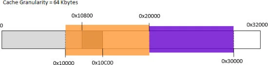</figure></section><section class="page" id="p2-page-620" aria-label="p2-page-620"><dl><dt>先読みの増加率</dt><dd>ファイルシステムドライバーは、3回目の順次読み取りを検出した後、先読みサイズをどれだけ増やすかを決める割合を指定できます。たとえば、アプリケーションが大きなファイルを1 MB ずつ読み取るとします。10回目の読み取りが終わると、アプリケーションは計10 MB を読み取ったことになります。その一部はキャッシュマネージャーが先に取得済みかもしれません。この時点で先読み処理は、次の I/O のサイズを計算します。ファイルシステムが増加率を60％に指定した場合、次の式を使います。</dd></dl>
<pre><code>（順次読み取りの回数 × 直前の読み取りサイズ）×（増加率 ÷ 100）</code></pre>
<p>この例では、次の先読みサイズは6 MB です。粒度が64 KB で I/O サイズが1 MB の場合、通常は2 MB です。キャッシュマネージャーの利用側が変更しなければ、増加率の既定値は50％です。</p>
<h4 id="ライトバックキャッシュと遅延書き込み">ライトバックキャッシュと遅延書き込み</h4>
<p>キャッシュマネージャーは、遅延書き込みを伴うライトバックキャッシュを実装します。ファイルへの書き込みデータはまずメモリ内のキャッシュページに格納され、後でディスクに書き出されます。書き込みを短時間ためてからまとめてディスクに反映することで、ディスク I/O の総数を減らします。</p>
<p>キャッシュマネージャーは、メモリマネージャーにキャッシュページの書き戻しを明示的に求める必要があります。そうしなければ、メモリマネージャーは物理メモリの要求が供給を上回ったときにしか書き戻しません。揮発性データにはそれで十分ですが、キャッシュされたファイルデータはディスク上の不揮発性データです。ユーザーは、プロセスによる変更が適切な時間内にディスクに反映されることを期待します。</p>
<p>キャッシュマネージャーは、メモリマネージャーのマップ済みページライタースレッドによる書き出しを止めることもできます。変更済みページリスト（第1部第5章を参照）は論理ブロックアドレス（LBA）順に並んでいません。そのため、ページをまとめて大きな順次 I/O にしようとしても、うまくいかずにシークが繰り返し発生することがあります。そこでキャッシュマネージャーは、ライターによる書き出しを抑え、ディスク上の LBA 順により近い仮想バイトオフセット（VBO）順にデータを書き出します。書き込みを自ら管理することで、独自のスケジューリングと書き込み量の調整を行い、遅延書き込みよりも先読みを優先してシステムへの影響を抑えられます。</p>
<p>書き戻しの間隔は重要です。短すぎると不要な I/O が増え、システムの性能が落ちます。長すぎると、システム障害時に変更後のデータを失うおそれがあります。アプリケーションで保存を指示していたユーザーにとっては、特に困る問題です。変更済みページが増えすぎて、物理メモリが不足するおそれもあります。</p></section><section class="page" id="p2-page-621" aria-label="p2-page-621"><p>書き戻しの頻度とデータ消失のリスクを釣り合わせるため、キャッシュマネージャーは、システムワーカースレッドで遅延ライターのスキャンを1秒に1回実行します。スキャンには次の役割があります。</p>
<ul>
<li>現在のパーティションの平均空きページ数と変更済みページ数を調べ、変更済みページ数のしきい値の下限と上限を調整します。しきい値自体も、主に前回の周期で書き込んだ変更済みページの総数を基に更新します。詳細は後述します。書き込むべき変更済みページがなければ、スキャンは待機します。</li>
<li>内部ルーチン <code>CcCalculatePagesToWrite</code> で、ディスクに書き戻す変更済みページの数を計算します。変更済みページが256枚（1 MB）を超える場合、総数の8分の1を書き戻しのキューに入れます。変更済みページの発生速度が予定している書き込み速度を上回る場合は、発生速度に追いつくのに必要なページ数を求め、追加で書き込みます。</li>
<li>現在のパーティションに属する連結リストで共有キャッシュマップを順に調べ、内部ルーチン <code>CcShouldLazyWriteCacheMap</code> で、各マップが表すファイルをディスクに書き戻す必要があるかを判定します。たとえば、別のスレッドがすでに I/O を始めている場合、対象が一時ファイルの場合、マップに変更済みページがない場合には書き戻しません。必要と判定した場合は、今回の書き込み枠が残っているかを確認し、残っていればキャッシュマネージャーのシステムワーカースレッドに処理を登録します。</li>
</ul>
<aside><p>スキャンは、共有キャッシュマップが指すすべての変更済みページを必ず書き戻すわけではありません。対象がメタデータストリームで、変更済みページが256 KB を超える場合は、そのストリームの変更済みページの8分の1だけを書き込みます。また、対象ファイルの変更済みページ数が、スキャンで書き戻せる総ページ数より多い場合にも、書き込みを制限します。</p></aside>
<p>実際の I/O は、システム全体のクリティカルワーカースレッドプールの遅延ライターが実行します。メモリマネージャーのマップ済みページライターがすでに書き戻し中であれば、遅延ライターは同じストリームへの書き戻しを延期し、2つのライターが同時に同じファイルへ書き込むのを避けます。</p>
<aside><p>キャッシュマネージャーは、ファイルシステムドライバーが、ファイルにいつどれだけ書き込まれたかを追跡できるようにします。遅延ライターが変更済みページをディスクに書き戻すと、ファイルシステムに通知し、そのファイルの有効データ長を更新するよう求めます。キャッシュマネージャーとファイルシステムは、有効データ長をそれぞれメモリ上で管理しています。</p></aside></section><section class="page" id="p2-page-622" aria-label="p2-page-622"><h4 id="実験-キャッシュマネージャーの動作を観察する">実験　キャッシュマネージャーの動作を観察する</h4>
<p>エクスプローラーで大きなファイル（この例では DVD イメージ）をローカルの別のディレクトリへコピーします。Process Monitor を使い、キャッシュマネージャーの先読みと遅延書き込みを含め、背後で起きているファイルシステムの処理を確認します。</p>
<p>まず、Process Monitor のフィルターで、コピー元とコピー先のファイルパス、<code>Explorer.exe</code> と <code>System</code> の両プロセス、<code>ReadFile</code> と <code>WriteFile</code> の両操作を対象にします。この例でコピー元に指定したのは <code>C:&#92;Users&#92;Andrea&#92;Documents&#92;Windows_10_RS3.iso</code>、コピー先は <code>C:&#92;ISOs&#92;Windows_10_RS3.iso</code> です。</p>
<p>ファイルをコピーすると、図のようなトレースが Process Monitor に表示されます。最初の数行には、コピーエンジンが最初に発行した I/O と、それに続くキャッシュマネージャーの処理が記録されます。</p>
<ul><li>1行目は、エクスプローラーによる最初の1 MB のキャッシュ読み取りです。この読み取りのサイズは、ファイルサイズに基づく内部の計算で決まり、128 KB から1 MB の範囲で変化します。この例では対象ファイルが大きいため、コピーエンジンは1 MB を選びました。</li></ul>
<figure>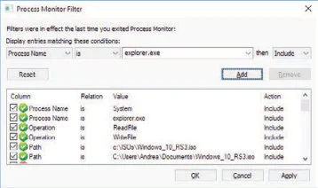
</figure></section><section class="page" id="p2-page-623" aria-label="p2-page-623"><ul>
<li>最初の1 MB の読み取りに続いて、キャッシュを使わない1 MB の読み取りが発生します。非キャッシュ読み取りは、通常、ページフォールトやキャッシュマネージャーによるアクセスに伴って発生します。Process Monitor で該当する行をダブルクリックして「Stack」タブを開き、スタックトレースを調べます。すると、NTFS ドライバーの読み取りルーチンがキャッシュマネージャーの <code>CcCopyRead</code> を呼び出し、それに伴うページフォールトをメモリマネージャーが処理して、コピー元のデータを物理メモリに読み込んだことがわかります。</li>
<li>この1 MB のページフォールト I/O の後、キャッシュマネージャーがファイルの先読みを始めます。続いて、<code>System</code> プロセスによる、オフセット1 MB からの非キャッシュ読み取りが1 MB 分記録されます。キャッシュマネージャーは、ファイルサイズとエクスプローラーの読み取り要求のサイズを基に、先読みサイズを1 MB と決めました。図に示す先読み操作のスタックトレースから、キャッシュマネージャーのワーカースレッドが先読みを実行していることを確認できます。</li>
</ul>
<figure>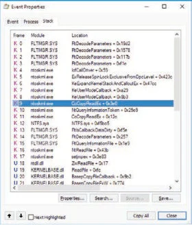
</figure></section><section class="page" id="p2-page-624" aria-label="p2-page-624"><p>この時点以降、エクスプローラーによる1 MB 単位の読み取りでは、通常はページフォールトが発生しません。先読みスレッドが、キャッシュを使わない1 MB 単位の読み取りで、必要なファイルデータを先に取得しているためです。ただし、ときどき先読みが間に合わず、複数ページをまとめて取り込むページフォールトが発生します。Process Monitor では、これは同期ページング I/O（Synchronous Paging I/O）として表示されます。</p>
<p>該当する行のスタックを調べると、<code>MmPrefetchForCacheManager</code> の代わりに、<code>MmAccessFault</code> と <code>MiIssueHardFault</code> が呼び出されています。</p>
<p>エクスプローラーは読み取りを始めるとすぐに、コピー先のファイルにも書き込みを始めます。書き込みはキャッシュを使い、1 MB ずつ順に行われます。約124 MB を読み取った時点で、図のように <code>System</code> プロセスによる最初の <code>WriteFile</code> 操作が現れます。</p>
<p>図の書き込み操作のスタックトレースから、実際に書き込んだのはメモリマネージャーのマップ済みページライタースレッドだとわかります。最初の数 MB ではキャッシュマネージャーがまだ遅延書き込みを始めていなかったため、メモリマネージャーのマップ済みページライターが、コピー先ファイルの変更済みデータをディスクに書き戻し始めました。マップ済みページライターの詳細は第10章を参照してください。</p>
<figure>
</figure></section><section class="page" id="p2-page-625" aria-label="p2-page-625"><p>キャッシュマネージャーの操作を見やすくするには、Process Monitor のフィルターから <code>Explorer.exe</code> を外し、図のように <code>System</code> プロセスの操作だけを表示します。</p>
<p>この表示にすると、キャッシュマネージャーが1 MB ずつ遅延書き込みを行う様子がわかりやすくなります。1回の書き込みの上限は、Windows のクライアント版では1 MB、サーバー版では32 MB です。この実験ではクライアント版を使っています。図のスタックトレースを見ると、キャッシュマネージャーのワーカースレッドが遅延書き込みを実行していることを確認できます。</p>
<p>追加の実験として、別の Windows システムにネットワーク経由でコピーしたり、サイズの異なるファイルに替えて同じ手順を試したりしてください。送信側と受信側の両方で、コピーエンジンやキャッシュマネージャーの動作の違いを確認できます。</p>
<figure>
</figure></section><section class="page" id="p2-page-626" aria-label="p2-page-626"><h4 id="ファイルの遅延書き込みを無効にする">ファイルの遅延書き込みを無効にする</h4>
<p>Windows の <code>CreateFile</code> に <code>FILE_ATTRIBUTE_TEMPORARY</code> を指定して一時ファイルを作成すると、物理メモリが深刻に不足するか、ファイルの書き戻しを明示的に求められない限り、遅延ライターは変更済みページをディスクへ書き込みません。破棄される可能性のあるデータをすぐにディスクへ書き出さないため、システムの性能が向上します。通常、アプリケーションは一時ファイルを閉じた後、すぐに削除します。</p>
<h4 id="キャッシュからディスクへの書き込みを強制する">キャッシュからディスクへの書き込みを強制する</h4>
<p>ファイルへの書き込みからディスクへの反映まで、わずかな遅延も許容できないアプリケーションがあります。そのため、キャッシュマネージャーはファイルオブジェクト単位のライトスルーキャッシュにも対応しています。ライトスルーでは、変更を加えるとすぐにディスクへ書き込みます。有効にするには、<code>CreateFile</code> に <code>FILE_FLAG_WRITE_THROUGH</code> を指定します。開いているファイルのデータを特定の時点でディスクに書き込む必要がある場合は、スレッドから Windows の <code>FlushFileBuffers</code> を呼び出し、明示的に書き戻すこともできます。</p>
<h4 id="マップ済みファイルを書き戻す">マップ済みファイルを書き戻す</h4>
<p>遅延ライターが書き戻すビューが別のプロセスのアドレス空間にもマップされていると、処理が複雑になります。キャッシュマネージャーが把握しているのは、自身が変更したページだけです。別のプロセスが変更したページの変更済みビットは、そのプロセス固有のページテーブルエントリに記録されます。この状況に対応するため、ユーザーがファイルをマップすると、メモリマネージャーはキャッシュマネージャーに通知します。</p>
<p>たとえば <code>FlushFileBuffers</code> の呼び出しでこのファイルのキャッシュを書き戻す場合、キャッシュマネージャーはまずキャッシュの変更済みページを書き出し、別のプロセスもファイルをマップしているかを確認します。マップされていれば、別のプロセスが変更したページも書き出せるよう、セクションのビュー全体を書き戻します。キャッシュで開いているファイルのビューをユーザーがマップした場合は、そのビューのアンマップ時に、変更されたページが変更済みとして記録されます。後で遅延ライターがビューを書き戻す際に、そのページもディスクに書き込まれます。この手順が成り立つのは、次の順序を守った場合です。</p>
<ol>
<li>ユーザーがビューをアンマップします。</li>
<li>プロセスがファイルバッファーを書き戻します。</li>
</ol>
<p>この順序を守らなければ、どのページがディスクに書き込まれるかは予測できません。</p></section><section class="page" id="p2-page-627" aria-label="p2-page-627"><h4 id="実験-キャッシュの書き戻しを観察する">実験　キャッシュの書き戻しを観察する</h4>
<p>パフォーマンスモニターを起動し、「Cache」グループの <code>Data Maps/sec</code> と <code>Lazy Write Flushes/sec</code> を追加します。これらのカウンターで、キャッシュマネージャーがビューをシステムキャッシュにマップし、ページをディスクへ書き戻す様子を観測できます。次に、大きなファイルを別の場所にコピーします。図でおおむね上にある線が <code>Data Maps/sec</code>、もう一方が <code>Lazy Write Flushes/sec</code> です。ファイルをコピーしている間、<code>Lazy Write Flushes/sec</code> が大きく増えます。</p>
<h4 id="書き込み量の制限">書き込み量の制限</h4>
<p>ファイルシステムとキャッシュマネージャーは、キャッシュへの書き込み要求がシステム性能に影響するかを判断し、必要なら書き込みを延期します。まずファイルシステムは <code>CcCanIWrite</code> を呼び、指定されたバイト数を直ちに書き込んでも性能が低下しないかをキャッシュマネージャーに問い合わせます。必要なら書き込みを待たせます。非同期 I/O では <code>CcDeferWrite</code> を呼び出してコールバックを登録し、書き込みが再び許可されたときに自動で書き込めるようにします。同期 I/O では、<code>CcCanIWrite</code> から処理を再開できるようになるまで待ちます。</p>
<p>書き込み予定の通知を受けると、キャッシュマネージャーは、キャッシュ内の変更済みページの数と利用可能な物理メモリの量を調べます。空き物理ページが少なければ、キャッシュへの書き込みを要求したファイルシステムのスレッドを一時的に待たせます。遅延ライターが変更済みページの一部をディスクに書き戻した後、待機中のスレッドが処理を再開します。ファイルシステムやネットワークサーバーが大量の書き込みを要求しても、メモリ不足でシステム全体の性能が低下するのを防げます。</p>
<figure></figure></section><section class="page" id="p2-page-628" aria-label="p2-page-628"><aside><p>書き込み量の制限はボリューム単位で適用されます。たとえば、RAID 0 の SSD 上で大きなファイルをコピーしながら、USB メモリに文書を転送しても、USB メモリへの書き込みが原因で SSD 側の書き込みが制限されることはありません。</p></aside>
<p>変更済みページ数のしきい値は、キャッシュへの書き込みを制限し始めるまでにシステムキャッシュが許容する変更済みページ数です。この値はキャッシュマネージャーのパーティションの初期化時に計算し、クライアント版かサーバー版かによって異なります。システムパーティションは NT カーネル起動のフェーズ1で作成・初期化されます。先に述べたように、しきい値の上限と下限も計算します。遅延ライターのスキャンは、メモリ消費量と変更済みページを処理する速度に応じて内部関数 <code>CcAdjustThrottle</code> を呼びます。サーバーでは、この関数が計算済みの上限と下限の間で現在のしきい値を動的に調整します。大量の書き込みがいずれキャッシュの容量を圧迫し、制限の対象になる状況でも、読み取り用のキャッシュを維持するためです。</p>
<div class="table-scroll" role="region" tabindex="0" aria-label="表。横にスクロールできます"><table><caption>表11-1 変更済みページ数のしきい値の計算方法</caption><thead><tr><th>製品の種類</th><th>しきい値</th><th>上限</th><th>下限</th></tr></thead><tbody>
<tr><td>クライアント</td><td>物理ページ数 ÷ 8</td><td>物理ページ数 ÷ 8</td><td>物理ページ数 ÷ 8</td></tr>
<tr><td>サーバー</td><td>物理ページ数 ÷ 2</td><td>物理ページ数 ÷ 2</td><td>物理ページ数 ÷ 8</td></tr>
</tbody></table></div>
<p>書き込み量の制限は、低速回線でデータを送るネットワークリダイレクターにも役立ちます。たとえば、ローカルプロセスが640 Kbps の低速回線を通じて、リモートのファイルシステムに大量のデータを書き込むとします。データがリモートのディスクに書き込まれるのは、キャッシュマネージャーの遅延ライターがキャッシュを書き戻すときです。リダイレクターが変更済みページを大量にためて一度に書き戻すと、データ転送が終わる前に受信側でタイムアウトするおそれがあります。キャッシュマネージャーの <code>CcSetDirtyPageThreshold</code> を使うと、リダイレクターはストリームごとに許容する変更済みページ数を制限できます。これにより、書き戻しによるネットワークのタイムアウトを防げます。</p>
<h4 id="システムスレッド">システムスレッド</h4>
<p>キャッシュマネージャーは遅延書き込みと先読みの I/O を、共用のクリティカルシステムワーカースレッドプールに登録して実行します。ただし、利用するスレッド数の上限は、プールの総数より1つ少なく設定します。クリティカルシステムワーカースレッドの総数はクライアントで5、サーバーで10です。</p>
<p>キャッシュマネージャーは内部で作業要求を4つのリストに分けます。すべて同じ Executive ワーカースレッドで処理します。</p>
<ul>
<li>高速キューは先読みに使います。</li>
<li>通常キューは、書き戻すべき変更済みデータを探す遅延ライターのスキャン、遅延書き込み、遅延クローズに使います。</li>
</ul></section><section class="page" id="p2-page-629" aria-label="p2-page-629"><ul>
<li>高速解体キューは、メモリマネージャーがファイルをイメージセクションとして開くために、キャッシュマネージャーのデータセクションが解放されるのを待っているときに使います。<code>CcWriteBehind</code> は、ファイル全体を書き戻して共有キャッシュマップを解体します。</li>
<li>ポストティックキューは、遅延ライタースレッドの各「ティック」、つまり各処理周期の終了時に、キャッシュマネージャーが内部通知を受け取るために使います。</li>
</ul>
<p>キャッシュマネージャーは、ワーカースレッドに割り当てる処理を追跡するため、各プロセッサにワーカーキュー項目を保持する固定長のルックアサイドリストを用意します。ルックアサイドリストは第1部第5章で説明しています。項目数はクライアントシステムで128、サーバーシステムで256です。複数のプロセッサにまたがる処理の性能を高めるため、同じ大きさのグローバルなルックアサイドリストも割り当てます。</p>
<h4 id="積極的な遅延書き込みと低優先度の遅延書き込み">積極的な遅延書き込みと低優先度の遅延書き込み</h4>
<p>Windows 8.1 以降では、キャッシュマネージャーの性能を高め、eMMC などの低速なストレージデバイスに対応するため、遅延ライターに大幅な改良が加えられました。</p>
<p>前述のとおり、遅延ライターのスキャンは、変更済みページ数のしきい値と、その上限・下限を調整します。利用可能なページ総数の推移を分析して上限と下限を調整し、しきい値そのものは直前の周期（1秒ごと）で予定どおりのページ数を書き込めたかに応じて調整します。直前の周期で書き込んだ数が <code>CcCalculatePagesToWrite</code> の算出した予定数を下回れば、ストレージデバイスが発行された I/O のスループットに追いついていないため、しきい値を下げます。書き込みの制限が強まり、一部の利用側は <code>CcCanIWrite</code> の呼び出しで待たされます。前の周期から書き残したページがなければ、しきい値を上げられます。どちらの場合も、値は上限と下限の範囲内に収めます。</p>
<p>大きな改良は、追加の遅延書き込みワーカースレッドです。サーバー版では最大9本で、クリティカルシステムワーカースレッドの総数より1本少なく、クライアント版では最大1本です。キャッシュマネージャーが遅延書き込みのスキャンを要求すると、システムは、変更済みページ数がしきい値の4分の1と利用可能なページ数の半分をいずれも下回るかを確認し、変更済みページがメモリの逼迫に関係しているかを判定します。メモリが逼迫している場合、システム全体のキャッシュマネージャースレッドプールのルーチン <code>CcWorkerThread</code> が追加の遅延ライターを起動し、他のライターと並行して変更済みページを書き込めるかを判定します。</p>
<p>追加の I/O を発行するスレッドを増やしてもシステムの性能が落ちないかを判断するため、キャッシュマネージャーは過去の遅延書き込み周期でのディスクスループットを計算し、記録します。現在の周期のスループットが前の周期と同程度かそれ以上なら、ストレージは現在の I/O 負荷を処理できています。この場合は遅延ライターをもう1本追加する余地があります。このスレッドを追加の遅延書き込み（Extra Write Behind）スレッドと呼びます。</p></section><section class="page" id="p2-page-630" aria-label="p2-page-630"><p>反対に、現在のスループットが前の周期より低ければ、ストレージはこれ以上の並列書き込みを処理できません。この場合は追加の遅延書き込みスレッドを減らします。この機能を積極的な遅延書き込み（Aggressive Write Behind）と呼びます。</p>
<p>Windows のクライアント版では、キャッシュマネージャーが低速ストレージ向けの最適化を行います。遅延ライターのスキャンが要求されたときや、ファイルシステムドライバーがキャッシュへ書き込むときに、遅延ライターを低優先度で動かすかどうかを判定します。スレッドの優先度については第1部第4章を参照してください。次の両方を満たす場合は低優先度、それ以外の場合は通常の優先度を使います。</p>
<ul>
<li>呼び出し元が、現在の遅延書き込みのスキャンの完了を待っていない。</li>
<li>パーティションの変更済みページの合計サイズが32 MB 未満である。</li>
</ul>
<p>両方を満たす場合、キャッシュマネージャーは遅延ライターの作業項目を低優先度キューに入れます。遅延ライターは優先度6（Lowest）のシステムワーカースレッドによって起動されます。さらに、対象のファイルシステムドライバーへ I/O を発行する直前に、遅延ライターは自身の I/O 優先度を Lowest に設定します。</p>
<h4 id="動的メモリ">動的メモリ</h4>
<p>前節で説明したとおり、変更済みページ数のしきい値は利用可能な物理メモリの量に応じて動的に計算します。キャッシュマネージャーは、この値を使って書き込み要求を制限する時期や、遅延書き込みを増やすかどうかを決めます。</p>
<p>パーティションが導入される前は、カーネルの初期化フェーズ1で実行される <code>CcInitializeCacheManager</code> が、グローバル変数 <code>MmNumberOfPhysicalPages</code> を参照して計算していました。現在は、キャッシュマネージャーのパーティションを初期化する関数が、対応するメモリパーティションで使える物理ページ数を基に計算します。詳細は本章の「メモリパーティションのサポート」を参照してください。ただし、Windows は稼働中の物理メモリ追加にも対応するため、初期化時の計算だけでは足りません。Hyper-V はこの機能を子 VM の動的メモリで活用します。</p>
<p>メモリマネージャーの初期化フェーズ0では、<code>MiCreatePfnDatabase</code> がページフレーム番号（PFN）データベースの最大サイズを計算します。64ビットシステムでは、搭載可能な物理メモリの最大量を、アドレス指定できる仮想メモリの全範囲と等しいと仮定します。たとえば、LA57 を使わないシステムでは256 TB です。システムはメモリマネージャーに、アドレス空間全体の各仮想ページにつき PFN エントリ1件を保存できる仮想アドレス範囲の予約を求めます。この仮想的な PFN データベースのサイズは約64 GB です。その後、<code>MiCreateSparsePfnDatabase</code> は Winload が検出した有効な物理メモリ範囲を順に調べ、対応する PFN エントリをデータベースにマップします。PFN データベースはスパースなメモリを使います。<code>MiAddPhysicalMemory</code> の各ルーチンが新しい物理メモリを検出すると、PFN データベース内に領域を追加で割り当て、新しい PFN エントリを作ります。動的メモリの詳細は第9章「仮想化技術」を参照してください。</p></section><section class="page" id="p2-page-631" aria-label="p2-page-631"><p>キャッシュマネージャーは、稼働中に物理メモリが追加・削除されたことを検出し、新しい構成に合わせて動作を調整します。追従できない場合には、次の問題が起きます。</p>
<ul>
<li>メモリの追加を検出できないと、実際より少ないメモリを前提にするため、変更済みページ数のしきい値が低くなります。必要な数のページをキャッシュできず、書き込みを早く制限しすぎます。</li>
<li>利用可能なメモリの大部分がロックされるか、削除されて使えなくなると、キャッシュ I/O が残りのメモリを占め、ほかのアプリケーションの応答性が低下するおそれがあります。</li>
</ul>
<p>キャッシュマネージャーはメモリマネージャーにコールバックを登録せず、遅延ライターのスキャンスレッド（LWS）で適応的に補正します。LWS は共有キャッシュマップの一覧から書き出すページを選ぶほか、フォアグラウンドでの書き込み速度、自身の書き戻し速度、利用可能メモリに応じて、変更済みページ数のしきい値を変えます。パーティションの利用可能な物理ページ数の平均と、変更済みページ数の履歴を保持し、1秒ごとに記録を更新して集計値を算出します。集計値に基づいてメモリ容量の変動に追従し、短時間の急変の影響を抑えながら、しきい値の上限と下限を段階的に変えます。</p>
<h4 id="キャッシュマネージャーのディスク-I-O-の計測">キャッシュマネージャーのディスク I/O の計測</h4>
<p>Windows 8.1 より前は、個々のプロセスが行った I/O の総量を正確に求められませんでした。理由は複数あります。</p>
<ul>
<li>遅延書き込みと先読みは、I/O のきっかけを作ったプロセスやスレッドのコンテキストでは実行されません。キャッシュマネージャーの実際の書き出しは、元のスレッドとは別のコンテキスト（通常は System）で完了し、要求元のプロセスがすでに終了していることもあります。先読みでは、プロセスが要求した範囲を超えてファイルを読み込む場合もあります。</li>
<li>キャッシュマネージャーは非同期 I/O も扱いますが、キャッシュを使わない I/O など、まったく関与しない処理もあります。</li>
<li>一部の特殊なアプリケーションは、ディスクスタックの下位ドライバーを使って低レベルのディスク I/O を発行できます。</li>
</ul>
<p>Windows は I/O を発行したスレッドへのポインターを IRP の末尾に保存します。そのスレッドが最初に要求を出したとは限らないため、I/O が誤って System プロセスに計上されることがありました。Windows 8.1 では、キャッシュマネージャーとファイルシステムドライバーが連携して使う <code>PsUpdateDiskCounters</code> API を導入して解決しました。この関数は、読み書きしたバイト数の合計と I/O の件数を、NT カーネルがプロセスを表す基本データ構造 <code>EPROCESS</code> に格納します。詳細は第1部第3章を参照してください。</p>
<p>キャッシュマネージャーは、公開しているファイルシステム向けインターフェイス経由で、キャッシュありの読み書きを処理するときと、公開 API <code>CcScheduleReadAheadEx</code> 経由で先読み I/O を発行するときに、<code>PsUpdateDiskCounters</code> を呼び出して、プロセスのディスクカウンターを更新します。NTFS と ReFS のドライバーは、非キャッシュ I/O とページング I/O の処理中にこの関数を呼び出します。</p></section><section class="page" id="p2-page-632" aria-label="p2-page-632"><p><code>CcScheduleReadAheadEx</code> と同様に、<code>CcCopyReadEx</code> や <code>CcCopyWriteEx</code> など、複数のキャッシュマネージャー API が拡張されました。これらの API は、I/O を発行し、その I/O を計上する先となるスレッドへのポインターを受け取ります。対応するファイルシステムドライバーは、非同期 I/O でも、どのスレッドに計上するかを指定できます。</p>
<p>キャッシュマネージャーはプロセスごとのカウンターに加えて、ファイルシステムがストレージスタックへ発行した I/O を追跡するグローバルディスク I/O カウンターも管理します。ファイルシステムドライバーが非キャッシュ I/O やページング I/O を発行するたびに更新します。アプリケーションは、<code>IOCTL_DISK_PERFORMANCE</code> 制御コードを使って、特定のディスクデバイスに発行された I/O の総量を取得できます。この総量からグローバルカウンターの値を差し引くと、個々のプロセスに帰属させられなかった I/O が求まります。変更済みページライターが発行したページング I/O や、ミニフィルタードライバーが内部で行った I/O などが該当します。</p>
<p>プロセスごとのディスクカウンターは、<code>NtQuerySystemInformation</code> API に情報クラス <code>SystemProcessInformation</code> を指定して取得できます。タスクマネージャーや Process Explorer などの診断ツールは、この方法で実行中のプロセスの I/O の値を取得します。</p>
<h4 id="実験-ディスク-I-O-を計測する">実験　ディスク I/O を計測する</h4>
<p>パフォーマンスモニターを開き、「FileSystem Disk Activity」グループから <code>FileSystem Bytes Read</code> と <code>FileSystem Bytes Written</code> を追加します。次に、プロセス別の値を計測するため、「Process」グループの <code>IO Read Bytes/sec</code> と <code>IO Write Bytes/sec</code> を追加します。この2つのカウンターを追加するときは、「選択したオブジェクトのインスタンス」欄で <code>Explorer</code> プロセスを選びます。</p>
<p>大きなファイルをコピーし始めると、エクスプローラーのカウンターが上昇し、ファイルシステム全体のディスク活動を示すカウンターの値に達します。</p>
<figure></figure></section><section class="page" id="p2-page-633" aria-label="p2-page-633"><h3 id="ファイルシステム">ファイルシステム</h3>
<p>この節では、Windows がサポートするファイルシステム形式の概要を示します。続いて、ファイルシステムドライバーの種類と基本動作を説明します。メモリマネージャーやキャッシュマネージャーなど、他のシステムコンポーネントとの連携も扱います。その後、主要な2つのファイルシステムである NTFS と ReFS の機能とデータ構造を詳しく見ていきます。まず内部アーキテクチャを取り上げ、次にディスク上のデータ配置と、圧縮、回復、暗号化、階層化、ファイルのスナップショットなどの高度な機能を説明します。</p>
<h4 id="Windows-のファイルシステム形式">Windows のファイルシステム形式</h4>
<p>Windows は次のファイルシステム形式に対応しています。</p>
<ul>
<li>CDFS</li>
<li>UDF</li>
<li>FAT12、FAT16、FAT32</li>
<li>exFAT</li>
<li>NTFS</li>
<li>ReFS</li>
</ul>
<p>以下では、それぞれがどのような環境に適しているかを説明します。</p>
<h4 id="CDFS">CDFS</h4>
<p>CDFS（CD-ROM ファイルシステム、<code>%SystemRoot%&#92;System32&#92;Drivers&#92;Cdfs.sys</code>）は、ISO-9660 形式と Joliet 形式をそれぞれ拡張した形式にも対応する、読み取り専用のファイルシステムドライバーです。ISO-9660 は比較的単純な形式で、たとえば名前に使えるのは大文字の ASCII 文字で、最大32文字という制限があります。Joliet はより柔軟で、任意の長さの Unicode の名前を扱えます。幅広い互換性のため、同じディスクに両方の形式のデータ構造が存在する場合、CDFS は Joliet を使用します。CDFS には次の制限があります。</p>
<ul>
<li>ファイルの最大サイズは4 GB。</li>
<li>ディレクトリは最大65,535個。</li>
</ul>
<p>光学メディアの業界標準には Universal Disk Format（UDF）が採用されたため、CDFS は旧来の形式と見なされています。</p></section><section class="page" id="p2-page-634" aria-label="p2-page-634"><h4 id="UDF">UDF</h4>
<p>Windows の Universal Disk Format（UDF）ファイルシステムは、Optical Storage Technology Association（OSTA）の UDF 仕様に準拠しています。UDF は ISO-13346 のサブセットに CD-R や DVD-R/RW などのための拡張を加えた形式です。OSTA は1995年に、主に DVD-ROM などの記憶媒体で ISO-9660 に代わる形式として UDF を定義しました。UDF は DVD の仕様に含まれ、CDFS より柔軟です。UDF 形式には次の特徴があります。</p>
<ul>
<li>ディレクトリ名とファイル名は、ASCII で最大254文字、Unicode で最大127文字です。</li>
<li>スパースファイルを扱えます。スパースファイルは後述の「圧縮とスパースファイル」で説明します。</li>
<li>ファイルサイズは64ビットで表します。</li>
<li>アクセス制御リスト（ACL）をサポートします。</li>
<li>代替データストリームをサポートします。</li>
</ul>
<p>UDF ドライバーはバージョン2.60までに対応します。UDF は書き換え可能なメディアを想定して設計されています。Windows の UDF ドライバー（<code>%SystemRoot%&#92;System32&#92;Drivers&#92;Udfs.sys</code>）では、Blu-ray、DVD-RAM、CD-R/RW、DVD±R/RW ドライブで UDF 2.50 を読み書きでき、UDF 2.60 は読み取り専用です。Windows の実装では、名前付きストリームや ACL など、一部の UDF 機能は利用できません。</p>
<h4 id="FAT12-FAT16-FAT32">FAT12、FAT16、FAT32</h4>
<p>Windows が FAT をサポートする主な用途は、マルチブート環境でほかの OS との互換性を保つことと、フラッシュドライブやメモリカードを使うことです。Windows の FAT ファイルシステムドライバーは <code>%SystemRoot%&#92;System32&#92;Drivers&#92;Fastfat.sys</code> に実装されています。</p>
<p>各 FAT 形式の名前に付く数字は、ディスク上のクラスターを識別するのに使うビット数です。FAT12 は12ビットの識別子を使うため、パーティションのクラスター数は最大で2<sup>12</sup>（4,096）です。Windows で許可されるクラスターサイズは512バイト〜8 KB なので、FAT12 ボリュームの上限は32 MB です。</p>
<aside><p>すべての FAT 形式で、ボリューム内の最初の2クラスターと最後の16クラスターは予約されています。たとえば FAT12 で実際に使えるクラスター数は、4,096より少なくなります。</p></aside>
<p>FAT16 は16ビットの識別子を使い、2<sup>16</sup>（65,536）クラスターを指定できます。セクターサイズが512バイトのディスクで Windows が使う FAT16 のクラスターサイズは、512バイト（1セクター）〜64 KB です。この場合、ボリュームサイズの上限は4 GB です。セクターサイズが4,096バイトのディスクでは256 KB のクラスターを使えます。Windows が選ぶクラスターサイズはボリュームの容量によって異なります。各サイズは表11-2に示します。<code>format</code> コマンドまたは「ディスクの管理」で16 MB 未満のボリュームを FAT でフォーマットすると、Windows は FAT12 を使います。</p></section><section class="page" id="p2-page-635" aria-label="p2-page-635"><div class="table-scroll" role="region" tabindex="0" aria-label="表。横にスクロールできます"><table><caption>表11-2 Windows の FAT16 の既定のクラスターサイズ</caption><thead><tr><th>ボリュームサイズ</th><th>既定のクラスターサイズ</th></tr></thead><tbody>
<tr><td>8 MB 未満</td><td>非対応</td></tr>
<tr><td>8〜32 MB</td><td>512バイト</td></tr>
<tr><td>32〜64 MB</td><td>1 KB</td></tr>
<tr><td>64〜128 MB</td><td>2 KB</td></tr>
<tr><td>128〜256 MB</td><td>4 KB</td></tr>
<tr><td>256〜512 MB</td><td>8 KB</td></tr>
<tr><td>512〜1,024 MB</td><td>16 KB</td></tr>
<tr><td>1〜2 GB</td><td>32 KB</td></tr>
<tr><td>2〜4 GB</td><td>64 KB</td></tr>
<tr><td>16 GB 超</td><td>非対応</td></tr>
</tbody></table></div>
<p>FAT ボリュームは、図11-14のようにいくつかの領域に分かれています。FAT 形式の名前の由来であるファイル割り当てテーブルには、ボリューム内のクラスターごとに1つのエントリがあります。ボリュームの内容を正しく解釈するには、このテーブルが欠かせません。そこで FAT は同じテーブルを2つ保持します。ディスクの不良セクターなどでファイルシステムドライバーや <code>Chkdsk</code> などの整合性検査プログラムが一方を読めなくても、もう一方を参照できます。</p>
<p>図11-14 FAT 形式の配置。先頭から、ブートセクター、ファイル割り当てテーブル1、ファイル割り当てテーブル2（複製）、ルートディレクトリ、その他のディレクトリとすべてのファイルが並びます。</p>
<p>ファイル割り当てテーブルのエントリは、ファイルやディレクトリの割り当てチェーンを構成します（図11-15）。各リンクには、ファイルデータが続く次のクラスターのインデックスが入ります。ファイルのディレクトリエントリには、先頭クラスターを記録します。チェーンの末尾には、FAT16 では <code>0xFFFF</code>、FAT12 では <code>0xFFF</code> という予約値を記録します。未使用クラスターに対応する FAT エントリの値は0です。図11-15では、FILE1 がクラスター2、3、4を使用しています。FILE2 は断片化されており、クラスター5、6、8を使います。FILE3 はクラスター7だけを使います。FAT ボリュームからファイルを読むときは、割り当てチェーンをたどるため、ファイル割り当てテーブルの広い範囲を読み取ることがあります。</p>
<p>図11-15 FAT のファイル割り当てチェーンの例。</p></section><section class="page" id="p2-page-636" aria-label="p2-page-636"><p>FAT12 と FAT16 では、ボリュームの先頭側に、ルートディレクトリのエントリ256件分の領域があらかじめ確保されます。このため、ルートディレクトリに格納できるファイルとディレクトリの数に上限があります。FAT32 のルートディレクトリには、このような領域の事前割り当てや固定のサイズ上限はありません。FAT のディレクトリエントリは32バイトで、ファイル名、サイズ、先頭クラスター、最終アクセスや作成などの時刻情報を格納します。ファイル名が Unicode を使うか、MS-DOS の8.3命名規則に従わない場合は、長いファイル名を保存するために追加のエントリを割り当てます。追加エントリは、そのファイルの本体のエントリより前に置かれます。</p>
<p>図11-16は「The quick brown fox」という名前のファイルのディレクトリエントリの例です。システムは8.3形式の名前として <code>THEQUI~1.FOX</code> を作成し、Unicode の長い名前を2件の追加エントリに格納しています。ピリオドは8文字目の後にあるものとして扱うため、エントリ内には格納されません。図の1行は16バイトです。</p>
<p>図11-16 FAT のディレクトリエントリ。長い名前のエントリが2件あり、それに短い名前のエントリが続きます。図にはチェックサム、作成日時、最終アクセス日、最終更新日時、先頭クラスター、ファイルサイズの位置も示しています。</p>
<p>FAT32 は32ビットのクラスター識別子を使いますが、上位4ビットを予約しているため、実際に使えるのは28ビットです。クラスターサイズは最大64 KB なので、理論上は16 TB のボリュームをアドレス指定できます。原本が扱う Windows では、ほかの OS が作成した32 GB を超える FAT32 ボリュームも利用できますが、新規作成の上限は32 GB です。FAT32 は FAT16 より多くのクラスターを指定できるため、ディスク領域をより効率的に管理できます。たとえば512バイトのクラスターで最大128 GB のボリュームを扱えます。表11-3に既定のクラスターサイズを示します。</p>
<div class="table-scroll" role="region" tabindex="0" aria-label="表。横にスクロールできます"><table><caption>表11-3 FAT32 ボリュームの既定のクラスターサイズ</caption><thead><tr><th>パーティションサイズ</th><th>既定のクラスターサイズ</th></tr></thead><tbody>
<tr><td>32 MB 未満</td><td>非対応</td></tr>
<tr><td>32〜64 MB</td><td>512バイト</td></tr>
<tr><td>64〜128 MB</td><td>1 KB</td></tr>
<tr><td>128〜256 MB</td><td>2 KB</td></tr>
<tr><td>256 MB〜8 GB</td><td>4 KB</td></tr>
<tr><td>8〜16 GB</td><td>8 KB</td></tr>
<tr><td>16〜32 GB</td><td>16 KB</td></tr>
<tr><td>32 GB 超</td><td>非対応</td></tr>
</tbody></table></div></section><section class="page" id="p2-page-637" aria-label="p2-page-637"><p>FAT32 は、FAT12 や FAT16 に比べ、扱えるクラスター数が多いほか、ルートディレクトリの配置場所が固定されず、サイズにも固定の上限がありません。信頼性を高めるため、ブートセクターのコピーも保持します。一方、ディレクトリエントリがファイルサイズを32ビット値で保存するため、ファイルサイズの上限は FAT16 と同じ約4 GB です。</p>
<h4 id="exFAT">exFAT</h4>
<p>Microsoft が設計した Extended File Allocation Table（exFAT、別名 FAT64）は、従来の FAT を改良し、フラッシュドライブに適したファイルシステムです。主な目的は、NTFS の高度な機能の一部を提供しつつ、メタデータ構造に伴うオーバーヘッドや、多くのフラッシュメディアに適さない書き込みパターンを生むメタデータのログ記録を避けることです。表11-4に、exFAT の既定のクラスターサイズを示します。</p>
<p>FAT64 の名前が示すように、ファイルサイズを64ビットで表し、理論上は約16エクサバイトのファイルを扱えます。最大クラスターサイズも拡大されており、原本が扱う実装では32 MB です。exFAT は空きクラスターを追跡するビットマップを追加し、割り当てと削除を高速化しています。また、1つのディレクトリに1,000件を超えるファイルを格納できます。これらの特徴により、大容量ディスクを扱いやすくなっています。</p>
<div class="table-scroll" role="region" tabindex="0" aria-label="表。横にスクロールできます"><table><caption>表11-4 セクターサイズが512バイトの exFAT ボリュームの既定のクラスターサイズ</caption><thead><tr><th>ボリュームサイズ</th><th>既定のクラスターサイズ</th></tr></thead><tbody>
<tr><td>256 MB 未満</td><td>4 KB</td></tr>
<tr><td>256 MB〜32 GB</td><td>32 KB</td></tr>
<tr><td>32〜512 GB</td><td>128 KB</td></tr>
<tr><td>512 GB〜1 TB</td><td>256 KB</td></tr>
<tr><td>1〜2 TB</td><td>512 KB</td></tr>
<tr><td>2〜4 TB</td><td>1 MB</td></tr>
<tr><td>4〜8 TB</td><td>2 MB</td></tr>
<tr><td>8〜16 TB</td><td>4 MB</td></tr>
<tr><td>16〜32 TB</td><td>8 MB</td></tr>
<tr><td>32〜64 TB</td><td>16 MB</td></tr>
<tr><td>64 TB 以上</td><td>32 MB</td></tr>
</tbody></table></div>
<p>exFAT は、アクセス制御リスト（ACL）やトランザクション（Transaction-Safe FAT、TFAT）など、以前は NTFS だけで使えた機能にも対応しています。これらは Windows Embedded CE に含まれる exFAT に実装されています。通常の Windows の exFAT では利用できません。</p>
<aside><p>第1部第5章「メモリ管理」で説明した ReadyBoost は、exFAT でフォーマットしたフラッシュドライブを使うと、4 GB を大きく超えるキャッシュファイルにも対応できます。</p></aside></section><section class="page" id="p2-page-638" aria-label="p2-page-638"><h4 id="NTFS">NTFS</h4>
<p>章の冒頭で述べたように、NTFS は Windows のネイティブなファイルシステム形式の1つです。NTFS は64ビットのクラスター番号を使うため、形式上は最大16エクサクラスターのボリュームをアドレス指定できます。ただし、Windows は NTFS ボリュームのサイズを32ビットのクラスター番号で表せる範囲に制限します。2 MB のクラスターを使う場合、上限は8 PB 弱です。表11-5に NTFS ボリュームの既定のクラスターサイズを示します。フォーマット時に別の値を指定できます。NTFS が1ボリュームに格納できるファイル数は最大2<sup>32</sup>−1です。形式上は約16エクサバイトのファイルを表せますが、原本が扱う実装での上限は16 TB です。</p>
<div class="table-scroll" role="region" tabindex="0" aria-label="表。横にスクロールできます"><table><caption>表11-5 NTFS ボリュームの既定のクラスターサイズ</caption><thead><tr><th>ボリュームサイズ</th><th>既定のクラスターサイズ</th></tr></thead><tbody>
<tr><td>7 MB 未満</td><td>非対応</td></tr>
<tr><td>7 MB〜16 TB</td><td>4 KB</td></tr>
<tr><td>16〜32 TB</td><td>8 KB</td></tr>
<tr><td>32〜64 TB</td><td>16 KB</td></tr>
<tr><td>64〜128 TB</td><td>32 KB</td></tr>
<tr><td>128〜256 TB</td><td>64 KB</td></tr>
<tr><td>256〜512 TB</td><td>128 KB</td></tr>
<tr><td>512〜1,024 TB</td><td>256 KB</td></tr>
<tr><td>1〜2 PB</td><td>512 KB</td></tr>
<tr><td>2〜4 PB</td><td>1 MB</td></tr>
<tr><td>4〜8 PB</td><td>2 MB</td></tr>
</tbody></table></div>
<p>NTFS は、ファイルとディレクトリのアクセス制御、代替データストリーム、ディスククォータ、スパースファイル、圧縮、シンボリックリンクとハードリンク、トランザクション、ジャンクションポイント、暗号化などを備えています。重要な機能の1つは回復可能性です。システムが予期せず停止すると、FAT ボリュームのメタデータは不整合な状態で残り、多数のファイルやディレクトリのデータが破損するおそれがあります。NTFS はメタデータの変更をトランザクションとしてログに記録します。これにより、ファイルやディレクトリの構造情報を失わず、ファイルシステムを整合した状態に戻せます。ただし、後述する TxF を使っていなければ、ファイルのデータ自体は失われることがあります。Windows の NTFS ドライバーは自己修復も実装しています。これにより、ディスク上のファイルシステム構造に生じた軽微な破損の大半を、Windows を再起動せず、稼働中に修復できます。</p>
<aside><p>執筆時点では、ディスクの物理セクターサイズは4 KB が一般的です。互換性のため、ストレージスタックは、このようなデバイスでもファイルシステムドライバーに512バイトの論理セクターを提示する場合があります。NTFS ドライバーはクラスターサイズの計算に、実際の物理セクターサイズではなく論理セクターサイズを使います。</p></aside></section><section class="page" id="p2-page-639" aria-label="p2-page-639"><p>Windows 10 以降、NTFS は DAX ボリュームにネイティブ対応しています。DAX ボリュームについては本章の後半で説明します。NTFS のファイルシステムドライバーは、この種のボリュームへの I/O でラージページも利用できます。DAX ボリューム上のファイルをラージページでマップする方法は2つあります。NTFS がファイルを2 MB のクラスター境界に自動で揃えるか、クラスターサイズを2 MB に指定してボリュームをフォーマットします。</p>
<h4 id="ReFS">ReFS</h4>
<p>Resilient File System（ReFS）は、Windows がネイティブにサポートするもう1つのファイルシステムです。主に大規模なストレージサーバー向けに設計され、稼働中の自己修復やボリューム修復、ファイルのスナップショットなど、設計当時の NTFS における制約への対応を目指しました。ReFS は新しい場所に書き込む方式を採ります。ボリュームのメタデータを更新するときは、常に新しいデータを記憶媒体に書き込み、古いメタデータを削除済みとしてマークします。ディスク上のデータ構造を扱う ReFS の下位層は Minstore というオブジェクトストアライブラリを使います。Minstore は呼び出し元にキーと値のテーブルとして操作できるインターフェイスを提供します。現代のデータベースエンジンに似た移植性のある設計で、B+木など、NTFS とは異なるデータ構造やアルゴリズムを使います。</p>
<p>ReFS の重要な設計目標の1つは、記憶域スペースなどで作成される極めて大きなボリュームを扱うことでした。NTFS と同様に64ビットのクラスター番号を使い、最大16エクサクラスターをアドレス指定できます。ReFS はアドレスに使える値をさらに制限しないため、64 KB のクラスターを使えば、理論上は最大1ヨタバイトのボリュームを管理できます。</p>
<p>Minstore は、ボリューム上の特定の領域に独自のメタデータを集中させる必要がありません。ただし、オブジェクトテーブルにはある程度集中します。また、アドレスの値に追加の制限がないため、多様なクラスターサイズを用意する必要がありません。ReFS がサポートするクラスターサイズは4 KB と64 KB です。執筆時点では DAX ボリュームには対応していません。NTFS と ReFS のデータ構造および高度な機能については、本章の後半で詳しく説明します。</p>
<h4 id="ファイルシステムドライバーのアーキテクチャ">ファイルシステムドライバーのアーキテクチャ</h4>
<p>ファイルシステムドライバー（FSD）はファイルシステム形式を管理します。カーネルモードで動作しますが、標準的なカーネルモードドライバーとはいくつかの点で異なります。特に、FSD として I/O マネージャーに登録する必要があり、メモリマネージャーとの連携も多くなります。また、性能を高めるため、通常はキャッシュマネージャーの機能も利用します。そのため、標準のドライバーよりも多くの <code>Ntoskrnl.exe</code> の公開関数を使います。ファイルシステムドライバーの開発には、標準のカーネルモードドライバーと同様に Windows Driver Kit（WDK）が必要です。詳細は第1部第1章「概念とツール」および <a href="https://learn.microsoft.com/windows-hardware/drivers/">Windows ドライバー開発ドキュメント</a>を参照してください。</p>
<p>Windows の FSD には2種類あります。</p>
<ul><li>ローカル FSD は、そのコンピューターに直接接続されたボリュームを管理します。</li><li>ネットワーク FSD は、リモートコンピューターに接続されたボリューム上のデータにユーザーがアクセスできるようにします。</li></ul></section><section class="page" id="p2-page-640" aria-label="p2-page-640"><h4 id="ローカルファイルシステムドライバー">ローカルファイルシステムドライバー</h4>
<p>ローカル FSD には <code>Ntfs.sys</code>、<code>Refs.sys</code>、<code>Refsv1.sys</code>、<code>Fastfat.sys</code>、<code>Exfat.sys</code>、<code>Udfs.sys</code>、<code>Cdfs.sys</code>、および <code>Ntoskrnl.exe</code> に組み込まれた RAW FSD があります。図11-17に、ローカル FSD と I/O マネージャー、ストレージデバイスドライバーの関係を示します。ローカル FSD は I/O マネージャーに自身を登録します。登録後、アプリケーションやシステムがボリュームに初めてアクセスすると、I/O マネージャーが FSD を呼び出し、ボリュームの形式を認識させます。FSD はボリュームのブートセクターを調べ、整合性を確認するためファイルシステムのメタデータも調べることがあります。登録済みのどのファイルシステムも認識できない場合、システムはボリュームに RAW ドライバーを割り当て、ユーザーにフォーマットするかどうかを尋ねます。ユーザーがフォーマットしなければ、RAW ドライバーでボリュームにアクセスできます。ただし読み書きはセクター単位に限られます。</p>
<p>ファイルシステム認識機構の目的は、ボリュームのファイルシステムが有効でも、登録済みドライバーでは認識できない場合に、その状態を判別することです。このため、ボリュームの最初のセクターに書き込める固定形式の <code>FILE_SYSTEM_RECOGNITION_STRUCTURE</code> が定義されています。構造体があれば、OS は有効な未認識のファイルシステムがあることをユーザーに通知します。ボリュームには RAW ドライバーを読み込みますが、フォーマットは求めません。ユーザーアプリケーションやカーネルモードドライバーは、ファイルシステムの I/O 制御コード <code>FSCTL_QUERY_FILE_SYSTEM_RECOGNITION</code> でこの構造体のコピーを取得できます。</p>
<p>Windows が対応するファイルシステム形式では、ボリュームの最初のセクターをブートセクターとして予約します。ローカル FSD は、このセクターの情報から、自身が扱う形式のボリュームかどうかを判別し、ボリューム上のメタデータの配置を調べるのに必要な情報も取得できます。</p>
<p>ローカル FSD がボリュームを認識すると、マウントされたファイルシステムを表すデバイスオブジェクトを作成します。I/O マネージャーは、ボリュームパラメーターブロック（VPB）を使い、ストレージデバイスドライバーが作成したボリュームのデバイスオブジェクトと、FSD が作成したデバイスオブジェクトを関連付けます。この関連付けにより、I/O マネージャーは、ボリュームのデバイスオブジェクト宛ての I/O 要求を FSD 側のデバイスオブジェクトへ転送します。</p>
<p>図11-17 ローカル FSD。ユーザーモードのアプリケーションからの I/O は、カーネルモードの I/O マネージャー、ファイルシステムドライバー、ストレージデバイスドライバーを経て、論理ボリューム（パーティション）に届きます。</p></section><section class="page" id="p2-page-641" aria-label="p2-page-641"><p>ローカル FSD は通常、性能を高めるために、メタデータを含むファイルシステムのデータをキャッシュマネージャーでキャッシュします。また、ファイルのメモリマッピングが正しく機能するよう、メモリマネージャーとも連携します。たとえば、アプリケーションがファイルを切り詰めようとする場合、FSD はメモリマネージャーに照会し、新しいファイル終端より後ろの範囲をマップしているプロセスがないことを確認します。メモリマネージャーの詳細は第1部第5章を参照してください。Windows では、アプリケーションがマップしているファイルデータを、切り詰めやファイルの削除によって取り除くことはできません。</p>
<p>ローカル FSD はファイルシステムのマウント解除にも対応します。これにより、システムは FSD とボリュームオブジェクトの関連付けを解除できます。マウント解除は、アプリケーションがボリュームのディスク上の内容に直接アクセスする必要があるときや、ボリュームに対応するメディアが交換されたときに行います。解除後、最初のアプリケーションがメディアにアクセスすると、I/O マネージャーはそのメディアのボリュームを改めてマウントします。</p>
<h4 id="リモートファイルシステムドライバー">リモートファイルシステムドライバー</h4>
<p>リモート FSD は、クライアント側とサーバー側の2つのコンポーネントで構成されます。クライアント側の FSD は、アプリケーションからの I/O 要求を受け、SMB などのネットワークファイルシステムプロトコルのコマンドに変換して、ネットワーク越しにサーバー側の FSD に送ります。これにより、アプリケーションはリモートのファイルやディレクトリにアクセスできます。サーバー側の FSD は接続から届くコマンドを待ち受け、対象のファイルやディレクトリがあるボリュームを管理するローカル FSD に I/O 要求を発行して処理します。</p>
<p>Windows のクライアント側には LANMan Redirector（通常は単にリダイレクターと呼びます）、サーバー側には LANMan Server（<code>%SystemRoot%&#92;System32&#92;Drivers&#92;Srv2.sys</code>）があります。図11-18は、クライアントがリダイレクターとサーバー側の FSD を使って、サーバーにあるファイルにアクセスする経路を示しています。</p>
<p>図11-18 Common Internet File System によるファイル共有。クライアントアプリケーションはユーザーモードの <code>Kernel32.dll</code> と <code>Ntdll.dll</code> を経由し、カーネルモードのリダイレクター FSD に要求を渡します。両端のプロトコルドライバー（WSK トランスポート）がネットワークを介してやり取りし、サーバー FSD はローカル FSD（NTFS、FAT など）を通じてディスク上のファイルデータを扱います。図には両端のキャッシュマネージャーも示しています。</p></section><section class="page" id="p2-page-642" aria-label="p2-page-642"><p>リダイレクターとサーバーが交換するメッセージの形式には、Common Internet File System（CIFS）プロトコルが使われます。CIFS は Microsoft の Server Message Block（SMB）プロトコルの一種です。詳細は <a href="https://learn.microsoft.com/windows/win32/fileio/microsoft-smb-protocol-and-cifs-protocol-overview">Microsoft の SMB と CIFS の概要</a>を参照してください。</p>
<p>ローカル FSD と同様に、クライアント側のリモート FSD は通常、キャッシュマネージャーを使ってリモートのファイルやディレクトリのデータをローカルにキャッシュします。その場合は、クライアントとサーバーの両方に分散ロックの仕組みが必要です。SMB のクライアント側 FSD は、oplock（便宜的ロック）という分散キャッシュの一貫性を保つプロトコルを実装しています。これにより、複数のコンピューター上のアプリケーションが同じリモートファイルにアクセスしても、同じデータを参照できます。サードパーティのファイルシステムは、oplock を使うことも、独自のプロトコルを実装することもできます。サーバー側の FSD はクライアント間のキャッシュの一貫性を維持します。ローカル FSD のデータはローカル FSD 自身がキャッシュします。</p>
<p>複数の利用者が同時にアクセスできる共有リソースには、書き込みを直列化し、同時に書き込む利用者が1つだけになるよう調整する仕組みが必要です。調整しなければ、リソースが破損する場合があります。SMB を実装するファイルサーバーは、oplock とリースをロックの仕組みとして使います。どちらを使うかはサーバーとクライアント双方の対応状況によって決まり、両方が対応していればリースを優先します。</p>
<h4 id="便宜的ロック-oplock">便宜的ロック（oplock）</h4>
<p>oplock はファイルシステムランタイムライブラリの <code>FsRtlXxx</code> 関数で実装されており、どのファイルシステムドライバーからでも利用できます。リモートファイルサーバーのクライアントは oplock によってキャッシュ方法を動的に選び、ネットワーク通信を減らします。アプリケーションが共有上のファイルを開こうとすると、ファイルシステムドライバーまたはリダイレクターが、アプリケーションに代わってそのファイルの oplock を要求します。サーバーが oplock を付与すると、クライアントは読み書きのたびにサーバーに要求を送らず、ファイルをローカルでキャッシュできます。たとえば、クライアントがファイルを排他的に開けば、すべての読み書きをキャッシュし、ファイルを閉じるときに変更をサーバーに送れます。oplock が付与されなければ、読み書きの要求をすべてサーバーに送ります。</p>
<p>oplock の付与後は、その種類に応じたキャッシュが可能になります。クライアントがファイルの使用を終える前でも、サーバーが既存のロックと両立しない操作を受け取れば、oplock はいつでも解除され得ます。そのため、クライアントは解除通知にすばやく応答し、キャッシュ方法をその場で切り替える必要があります。</p>
<p>SMB 2.1 より前には、4種類の oplock がありました。</p>
<dl>
<dt>レベル1（排他アクセス）</dt><dd>クライアントがファイルを排他的に開けます。先読みバッファリングに加え、読み取りと書き込みをキャッシュできます。</dd>
<dt>レベル2（共有アクセス）</dt><dd>複数のクライアントが同時にファイルを読み取れます。書き込みは許可されません。先読みバッファリングを行い、ファイルデータと属性の読み取りをキャッシュできます。ファイルへの書き込みが発生すると、ロックを保持するクライアントに解除を通知します。</dd>
</dl></section><section class="page" id="p2-page-643" aria-label="p2-page-643"><dl>
<dt>バッチ（排他アクセス）</dt><dd>名前は、バッチファイル（<code>.bat</code>）を処理するときに使われたロックに由来します。バッチ処理では、ファイルの各行を処理するたびに開閉します。このロックがあれば、アプリケーションが一時的にファイルを閉じても、クライアントはサーバー上でファイルを開いたままにできます。読み取り、書き込み、ハンドルのキャッシュに対応します。</dd>
<dt>フィルター（排他アクセス）</dt><dd>他のクライアントが同じファイルにアクセスしようとした場合に、アプリケーションやファイルシステムフィルターがロックを手放せる仕組みです。レベル2とは異なり、削除アクセスを求めてファイルを開くことはできず、他のクライアントに共有違反も返されません。読み取りと書き込みのキャッシュに対応します。</dd>
</dl>
<p>複数のクライアントがサーバーで共有されている同じファイルをキャッシュしているとします。クライアントやサーバー上のすべてのアプリケーションが読み取りだけを行う限り、各システムはローカルキャッシュから要求を満たせます。サーバーから各システムへファイルの内容を繰り返し送らないため、ネットワーク通信量は大幅に減ります。ロック情報の交換は引き続き必要ですが、使う帯域はわずかです。一方、クライアントが1台でも読み書き用、または排他的な書き込み用にファイルを開くと、ローカルキャッシュは使えなくなり、そのファイルへのすべての I/O を直ちにサーバーに送る必要があります。実際に書き込まなくても同じです。ロックモードは個々の I/O 要求ではなく、ファイルを開いたときの指定によって決まります。</p>
<p>図11-19は oplock の動作例です。サーバーは、サーバー上のファイルを最初に開くクライアントに、レベル1の oplock を自動で付与します。クライアントのリダイレクターは、読み取ったデータと書き込んだデータをクライアントのファイルキャッシュに保持します。2台目のクライアントが同じファイルを開くと、こちらもレベル1の oplock を要求します。サーバーは、両方のクライアントに一貫したファイルの内容を返す必要があります。図のように1台目がすでに書き込んでいる場合、サーバーは1台目の oplock を解除し、どちらにも oplock を付与しません。解除通知を受けた1台目は、キャッシュ内にある変更済みデータをサーバーに書き戻します。</p>
<p>図11-19 oplock の例。1台目はレベル1の取得後に読み書きをキャッシュし、解除時に変更済みデータを書き戻します。2台目には oplock が付与されず、以降は両者ともキャッシュを使わずに読み書きします。</p></section><section class="page" id="p2-page-644" aria-label="p2-page-644"><p>1台目のクライアントがまだファイルに書き込んでいなければ、サーバーは1台目の oplock をレベル2に引き下げ、2台目にもレベル2の oplock を付与します。両方のクライアントが読み取りをキャッシュできますが、どちらかがファイルに書き込むと、サーバーは両方の oplock を解除し、以後はキャッシュを使わずに処理します。一度解除した oplock は、ファイルを開いた同じインスタンスには再付与されません。ただし、クライアントがファイルを閉じて開き直すと、サーバーは、どのクライアントがファイルを開いているか、そのうち少なくとも1台が書き込んだかを基に、付与する oplock のレベルを再評価します。</p>
<h4 id="実験-登録済みのファイルシステムを一覧表示する">実験　登録済みのファイルシステムを一覧表示する</h4>
<p>I/O マネージャーは、デバイスドライバーをメモリに読み込むとき、通常は、そのドライバーを表すドライバーオブジェクトがオブジェクトマネージャーの <code>&#92;Driver</code> ディレクトリに入るように名前を付けます。<code>Type</code> 属性が <code>SERVICE_FILE_SYSTEM_DRIVER</code>（2）のドライバーについては、ドライバーオブジェクトを <code>&#92;FileSystem</code> ディレクトリに配置します。そのため、Sysinternals の WinObj などでこのディレクトリを開くと、図のように、システムに登録済みのファイルシステムを確認できます。この一覧には、後述するファイルシステムフィルタードライバーも表示されます。</p>
<p>登録済みのファイルシステムは、「システム情報」でも確認できます。スタートメニューの「ファイル名を指定して実行」で <code>Msinfo32</code> を実行し、「ソフトウェア環境」の「システム ドライバー」を選びます。「種類」列をクリックして一覧を並べ替えると、<code>Type</code> 属性が <code>SERVICE_FILE_SYSTEM_DRIVER</code> のドライバーがまとまって表示されます。</p>
<figure>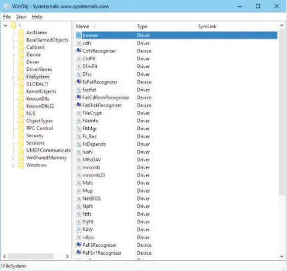</figure></section><section class="page" id="p2-page-645" aria-label="p2-page-645"><p>ファイルシステムドライバーとして登録されていても、ローカル FSD やリモート FSD として動作するとは限りません。たとえば <code>Npfs</code>（Named Pipe File System）は、ファイルシステムに似た独自の名前空間を使って名前付きパイプを実装するドライバーです。この一覧には、前述のファイルシステムフィルタードライバーも含まれます。</p>
<h4 id="リース">リース</h4>
<p>SMB 2.1 より前の SMB プロトコルは、クライアントとサーバー間の接続に障害が起きないことを前提とし、一時的なネットワーク障害、サーバーの再起動、クラスターのフェイルオーバーによる切断から復旧できませんでした。クライアントが切断イベントを受け取ると、影響を受けたサーバーで開いていたすべてのハンドルは接続先を失い、それらを使う以後の I/O はすべて失敗しました。サーバーも、切断されたユーザーセッションに関連する開いていたハンドルとリソースをすべて解放しました。その結果、アプリケーションの状態が失われ、余分なネットワーク通信も発生しました。</p>
<figure></figure></section><section class="page" id="p2-page-646" aria-label="p2-page-646"><p>SMB 2.1 では、oplock と同じ目的で使う新しいクライアント側キャッシュの仕組みとして、リースが導入されました。リースは oplock より柔軟で、性能も大幅に向上します。</p>
<dl>
<dt>読み取り（R、共有アクセス）</dt><dd>複数のクライアントが同時に読み取れます。書き込みは許可されません。クライアントは先読みバッファリングと読み取りのキャッシュを行えます。</dd>
<dt>読み取り・ハンドル（RH、共有アクセス）</dt><dd>レベル2の oplock に近い動作に加え、クライアント側のアプリケーションがファイルを閉じても、サーバー上ではファイルを開いたままにできます。キャッシュマネージャーは未書き込みのデータを遅延して書き戻し、利用できるメモリに応じて変更されていないキャッシュページを破棄します。ファイルのハンドルを閉じて開き直すたびにリースを解除する必要がない点は、バッチ oplock に似ています。開閉を繰り返すファイルでは、閉じるたびにキャッシュを無効化して、次に開くときに読み込み直す処理を省けるため、多数の I/O を行う複雑なアプリケーションの性能が大幅に向上します。</dd>
<dt>読み取り・書き込み（RW、排他アクセス）</dt><dd>クライアントがファイルを排他的に開けます。先読みバッファリングと、読み取りや書き込みのキャッシュが可能です。</dd>
<dt>読み取り・書き込み・ハンドル（RWH、排他アクセス）</dt><dd>クライアントがファイルを排他的に開けます。読み取り、書き込み、ハンドルをキャッシュできます。ハンドルのキャッシュは RH と同様です。</dd>
</dl>
<p>リースでは、多くのアプリケーションで見られるように、クライアントが同じファイルを複数のハンドルで開いていても、ファイルをキャッシュできます。クライアントは GUID で表すリースキーを作成し、キャッシュ対象のファイルのファイル制御ブロック（FCB）に関連付けます。同じファイルのハンドルがリースの状態を共有するため、ファイル単位でキャッシュできます。リースの導入前は、同じクライアントからでも、ファイルを新しいハンドルで開くたびに oplock が解除されました。図11-20に従来の oplock、図11-21にリースの動作を示します。</p>
<p>SMB 2.1 より前の oplock に対する操作は付与と解除に限られていました。リースは種類を切り替えることもでき、たとえば読み取りリースを読み取り・書き込みリースに変更できます。レベル2の oplock を解除してレベル1を要求し直す場合に必要だったキャッシュの無効化と再読み込みを省けるため、ネットワーク通信量を大幅に減らせます。</p></section><section class="page" id="p2-page-647" aria-label="p2-page-647"><div class="table-scroll" role="region" tabindex="0" aria-label="表。横にスクロールできます"><table><caption>図11-20 同一クライアントから複数のハンドルを開いた場合の oplock（上から時系列順）</caption>
<thead><tr><th>アプリケーション</th><th>クライアント側の Windows</th><th>ネットワーク</th><th>サーバー</th></tr></thead><tbody>
<tr><td>A がサーバー上のファイルを開き、ハンドルを受け取る。</td><td><code>CreateFile</code> に <code>FILE_GENERIC_READ</code> と <code>FILE_GENERIC_WRITE</code> を指定する。</td><td>ファイルを開く要求を送り、バッチ oplock の付与を受ける。</td><td>ファイルの最初のハンドルを開く。</td></tr>
<tr><td>A が読み取りを要求し、要求した量のデータを受け取る。</td><td><code>ReadFile</code> の I/O が完了し、要求分を A に返す。先読み分はキャッシュに格納する。</td><td>読み取りデータと先読みデータをサーバーから受け取る。</td><td>ファイルからデータを読み取って返す。</td></tr>
<tr><td>A がキャッシュ済みの範囲を読み取る。</td><td><code>ReadFile</code> の I/O が完了し、キャッシュのデータを A に返す。</td><td>パケットの送受信なし。</td><td>操作を認識しない。</td></tr>
<tr><td>A がキャッシュ済みの範囲に書き込む。</td><td><code>WriteFile</code> がキャッシュに書き込み、I/O が完了する。</td><td>パケットの送受信なし。</td><td>操作を認識しない。</td></tr>
<tr><td>B が同じファイルを読み取り用に開き、ハンドルを受け取る。</td><td><code>CreateFile</code> に <code>FILE_GENERIC_READ</code> を指定する。キャッシュを書き戻し、以後はこのファイルをキャッシュしない。</td><td>ファイルを開く要求とバッチ oplock の解除通知を交換する。</td><td>バッチ oplock を解除し、ファイルの2つ目のハンドルを開く。</td></tr>
<tr><td>A が以前キャッシュしていた範囲を読み取る。</td><td><code>ReadFile</code> の I/O が完了し、データを A に返す。</td><td>サーバーに読み取りを要求し、データを受け取る。</td><td>ファイルからデータを読み取る。</td></tr>
<tr><td>A が以前キャッシュしていた範囲に書き込む。</td><td><code>WriteFile</code> の I/O が完了する。</td><td>書き込みデータをサーバーへ送る。</td><td>データをファイルに書き込む。</td></tr>
</tbody></table></div></section><section class="page" id="p2-page-648" aria-label="p2-page-648"><div class="table-scroll" role="region" tabindex="0" aria-label="表。横にスクロールできます"><table><caption>図11-21 同一クライアントから複数のハンドルを開いた場合のリース（上から時系列順）</caption>
<thead><tr><th>アプリケーション</th><th>クライアント側の Windows</th><th>ネットワーク</th><th>サーバー</th></tr></thead><tbody>
<tr><td>A がサーバー上のファイルを開き、ハンドルを受け取る。</td><td><code>CreateFile</code> に <code>FILE_GENERIC_READ</code> と <code>FILE_GENERIC_WRITE</code> を指定する。</td><td>ファイルを開く要求を送り、読み取り・ハンドル（RH）リースの付与を受ける。</td><td>ファイルの最初のハンドルを開く。</td></tr>
<tr><td>A が読み取りを要求し、要求した量のデータを受け取る。</td><td><code>ReadFile</code> の I/O が完了し、要求分を A に返す。先読み分はキャッシュに格納する。</td><td>読み取りデータと先読みデータをサーバーから受け取る。</td><td>ファイルからデータを読み取って返す。</td></tr>
<tr><td>A がキャッシュ済みの範囲を読み取る。</td><td><code>ReadFile</code> の I/O が完了し、キャッシュのデータを A に返す。</td><td>パケットの送受信なし。</td><td>操作は通知されない。</td></tr>
<tr><td>A がキャッシュ済みの範囲に書き込む。</td><td><code>WriteFile</code> がキャッシュに書き込み、I/O が完了する。</td><td>パケットの送受信なし。</td><td>この時点では操作は通知されない。</td></tr>
<tr><td>B が同じファイルを読み取り用に開き、ハンドルを受け取る。</td><td><code>CreateFile</code> に <code>FILE_GENERIC_READ</code> を指定する。</td><td>ファイルを開く要求を送る。リースの解除通知はない。</td><td>ファイルの2つ目のハンドルを開く。リースは維持される。</td></tr>
<tr><td>B がキャッシュ済みの範囲を読み取る。</td><td><code>ReadFile</code> の I/O が完了し、キャッシュのデータを B に返す。</td><td>パケットの送受信なし。</td><td>操作は通知されない。</td></tr>
<tr><td>A がキャッシュ済みの範囲に再び書き込む。</td><td><code>WriteFile</code> がキャッシュに書き込み、I/O が完了する。</td><td>書き込み時点ではパケットの送受信なし。</td><td>操作はその場では通知されない。クライアントが後で変更をサーバーに書き戻す。</td></tr>
</tbody></table></div>
<aside><p>原図には「キャッシュを書き戻し、以後はこのファイルをキャッシュしない」という注記もありますが、同じ図は2つ目のハンドルを開いてもリースが維持され、その後の読み書きもキャッシュで処理されることを示しています。</p></aside></section><section class="page" id="p2-page-649" aria-label="p2-page-649"><h4 id="ファイルシステムの操作">ファイルシステムの操作</h4>
<p>アプリケーションとシステムがファイルにアクセスする方法は2つあります。<code>ReadFile</code> や <code>WriteFile</code> などのファイル I/O 関数を使って直接アクセスする方法と、ファイルのセクションをマップしたアドレス空間の一部を読み書きして間接的にアクセスする方法です。マップ済みファイルの詳細は第1部第5章を参照してください。図11-22は、これらのファイルシステム操作に関わるコンポーネントと、その連携を簡略化して示しています。ファイルシステムドライバー（FSD）が呼び出される経路には、次のものがあります。</p>
<ul>
<li>ファイル I/O を明示的に行うユーザーまたはシステムのスレッドから。</li>
<li>メモリマネージャーの変更済みページライターやマップ済みページライターから。</li>
<li>キャッシュマネージャーの遅延ライターから間接的に。</li>
<li>キャッシュマネージャーの先読みスレッドから間接的に。</li>
<li>メモリマネージャーのページフォールトハンドラーから。</li>
</ul>
<p>図11-22 ファイルシステム I/O に関わるコンポーネント。図にはプロセスのハンドルテーブルとファイルオブジェクト、NTFS のファイル制御ブロックとストリーム制御ブロック、データ属性と名前付きストリーム、ディスク上の NTFS データベースとマスターファイルテーブルが示されています。</p>
<p>以下では、それぞれの経路で I/O が発生する状況と、FSD が通常どのように処理するかを説明します。どの経路でも、メモリマネージャーとキャッシュマネージャーが重要な役割を果たします。</p></section><section class="page" id="p2-page-650" aria-label="p2-page-650"><h4 id="明示的なファイル-I-O">明示的なファイル I/O</h4>
<p>アプリケーションは <code>CreateFile</code>、<code>ReadFile</code>、<code>WriteFile</code> など、Windows の I/O 関数を使ってファイルにアクセスできます。<code>CreateFile</code> でファイルを開き、返されたハンドルを別の Windows 関数に渡してファイルを読み取り、書き込み、削除します。Windows のクライアント側 DLL である <code>Kernel32.dll</code> に実装された <code>CreateFile</code> は、渡されたパスに含まれる <code>.</code> と <code>..</code> を処理してルートからの完全なパスを組み立て、先頭に <code>&#92;??</code> を付けてネイティブ関数 <code>NtCreateFile</code> を呼び出します。変換後のパスの例は <code>&#92;??&#92;C:&#92;Daryl&#92;Todo.txt</code> です。</p>
<p>システムサービス <code>NtCreateFile</code> は <code>ObOpenObjectByName</code> を使ってファイルを開きます。この関数は、オブジェクトマネージャーのルートディレクトリから、パスの最初の要素である <code>??</code> を起点に名前を解析します。オブジェクトマネージャーの名前解決とプロセスのデバイスマップについては第8章「システム機構」で詳しく説明しました。ここでは、ボリュームのドライブ文字を検索する手順に絞ります。</p>
<p>まずオブジェクトマネージャーは、<code>&#92;??</code> をプロセスのセッション別名前空間のディレクトリに変換します。このディレクトリは、プロセスオブジェクト内のデバイスマップの <code>DosDevicesDirectory</code> が指します。デバイスマップは、ログオンセッションのトークンにあるログオンセッション参照フィールドを使い、そのセッションの最初のプロセスから引き継がれたものです。通常、このディレクトリにはネットワーク共有のボリューム名と、<code>Subst.exe</code> で割り当てたドライブ文字だけが格納されます。目的の名前（この例では <code>C:</code>）が見つからない場合、オブジェクトマネージャーは、セッション別ディレクトリに対応するデバイスマップの <code>GlobalDosDevicesDirectory</code> が指すディレクトリで検索し直します。このフィールドは常に、ローカルボリュームのドライブ文字を格納する <code>&#92;GLOBAL??</code> を指します。詳細は第8章「セッション名前空間」を参照してください。プロセスは独自のデバイスマップも持てます。これは RPC などのプロトコルで偽装を行うときに重要です。</p>
<p>ドライブ文字のシンボリックリンクは <code>&#92;Device</code> 配下のボリュームデバイスオブジェクトを指します。ダイナミックディスク上のボリュームでは、中間のシンボリックリンクを経由します。オブジェクトマネージャーは、ボリュームオブジェクトに到達すると、未解決のパスを、I/O マネージャーがデバイスオブジェクト用に登録した解析関数 <code>IopParseDevice</code> に渡します。図11-23はこの経路の例で、<code>&#92;GLOBAL??&#92;C:</code> が <code>&#92;Device&#92;HarddiskVolume6</code> を指しています。</p>
<p><code>IopParseDevice</code> は呼び出し元のセキュリティコンテキストをロックし、トークンからセキュリティ情報を取得します。次に <code>IRP_MJ_CREATE</code> 型の I/O 要求パケット（IRP）と、開こうとしているファイル名を格納するファイルオブジェクトを作成します。ボリュームデバイスオブジェクトの VPB をたどってマウント済みのファイルシステムデバイスオブジェクトを探し、<code>IoCallDriver</code> でそのオブジェクトを所有するファイルシステムドライバーに IRP を渡します。</p>
<p>FSD は <code>IRP_MJ_CREATE</code> を受け取ると、指定されたファイルを検索してアクセス権を検証します。ファイルが存在し、ユーザーに要求された方法でアクセスする権限があれば、成功ステータスを返します。オブジェクトマネージャーは、プロセスのハンドルテーブルにファイルオブジェクトのハンドルを作成します。ハンドルは呼び出し元へ順に返され、最終的にアプリケーションに届きます。</p></section><section class="page" id="p2-page-651" aria-label="p2-page-651"><p>アプリケーションには、このハンドルが <code>CreateFile</code> の戻り値として返ります。ファイルシステムが作成要求を失敗として処理した場合、I/O マネージャーはそのファイルのために作ったファイルオブジェクトを削除します。</p>
<p>ここまで、FSD がボリューム上で対象ファイルを探す詳細は省略しました。<code>ReadFile</code> を呼び出した場合も、FSD とキャッシュマネージャー、ストレージドライバーの処理の多くは、ファイルを開く場合と共通です。<code>ReadFile</code> と <code>CreateFile</code> はいずれも、対応する I/O マネージャーの関数へシステムコールを通じて要求を渡します。<code>NtReadFile</code> では名前を検索する必要がなく、オブジェクトマネージャーに、<code>ReadFile</code> から渡されたハンドルをファイルオブジェクトへのポインターに変換させます。ハンドルを開いた時点で呼び出し元に読み取り権限が付与されていれば、<code>NtReadFile</code> は <code>IRP_MJ_READ</code> 型の IRP を作り、対象ファイルがあるボリュームの FSD に送ります。その際、ファイルオブジェクトに格納された FSD のデバイスオブジェクトを取得し、<code>IoCallDriver</code> を呼び出します。I/O マネージャーは、このデバイスオブジェクトから FSD を特定し、IRP を渡します。</p>
<p>図11-23 ドライブ文字の名前解決。</p>
<figure></figure></section><section class="page" id="p2-page-652" aria-label="p2-page-652"><p>ファイルを開くときに <code>CreateFile</code> に <code>FILE_FLAG_NO_BUFFERING</code> を指定していなければ、読み取りにキャッシュを使えます。FSD は、そのファイルオブジェクトのキャッシュをすでに初期化したか確認します。初期化済みなら、ファイルオブジェクトの <code>PrivateCacheMap</code> フィールドは、前節で説明したプライベートキャッシュマップを指します。FSD はファイルオブジェクトに対する最初の読み書きでキャッシュを初期化するため、それ以前の <code>PrivateCacheMap</code> は NULL です。FSD が <code>CcInitializeCacheMap</code> を呼ぶと、キャッシュマネージャーはプライベートキャッシュマップを作成します。同じファイルを参照する別のファイルオブジェクトがまだキャッシュを初期化していなければ、共有キャッシュマップとセクションオブジェクトも作成します。</p>
<p>キャッシュを使えることを確認したら、FSD は、キャッシュマネージャーの仮想メモリから、要求されたデータをスレッドが <code>ReadFile</code> に渡したバッファーへコピーします。無効なアプリケーションバッファーに起因するフォールトを捕捉するため、コピーは <code>try/except</code> ブロック内で行います。ファイルシステムはコピーにキャッシュマネージャーの <code>CcCopyRead</code> を使い、ファイルオブジェクト、ファイル内のオフセット、長さを渡します。</p>
<p><code>CcCopyRead</code> は、ファイルオブジェクトから共有キャッシュマップへのポインターを取得します。共有キャッシュマップは、ファイルの256 KB ブロックごとに仮想アドレス制御ブロック（VACB）へのポインターを保持します。読み取る範囲の VACB ポインターが NULL なら、<code>CcCopyRead</code> は VACB を割り当て、キャッシュマネージャーの仮想アドレス空間に256 KB のビューを予約し、<code>MmMapViewInSystemCache</code> でファイルの該当範囲をビューにマップします。その後、マップ済みのビューから、もともと <code>ReadFile</code> に渡されたバッファーへデータをコピーします。データが物理メモリになければ、コピー時にページフォールトが発生し、<code>MmAccessFault</code> が処理します。</p>
<p>ページフォールトが発生すると、<code>MmAccessFault</code> は原因となった仮想アドレスを調べ、発生元のプロセスの VAD ツリーから仮想アドレス記述子（VAD）を探します。VAD ツリーについては第1部第5章を参照してください。この場合、VAD は読み取り対象のファイルをキャッシュマネージャーがマップしたビューを記述します。<code>MmAccessFault</code> は <code>MiDispatchFault</code> を呼び、有効な仮想アドレスで発生したフォールトを処理します。<code>MiDispatchFault</code> は VAD が指すコントロール領域を取得し、そこから開いているファイルを表すファイルオブジェクトを探します。同じファイルが複数回開かれていれば、プライベートキャッシュマップ内のポインターでつながったファイルオブジェクトの一覧が存在する場合があります。</p>
<p><code>MiDispatchFault</code> はファイルオブジェクトを取得すると、I/O マネージャーの <code>IoPageRead</code> を呼んで <code>IRP_MJ_READ</code> 型の IRP を組み立てます。続いて、ファイルオブジェクトが指すデバイスオブジェクトを所有する FSD に IRP を送ります。ファイルシステムは、自身が <code>CcCopyRead</code> を通じて要求したデータを読み取るために再び呼び出されますが、今回は IRP が非キャッシュ I/O とページング I/O としてマークされています。FSD はこのフラグを見て、対象データがあるディスク上のクラスターを特定し、ファイルが置かれたボリュームのデバイスオブジェクトを所有するボリュームマネージャーに IRP を送ります。クラスターを特定する方法はファイルシステムによって異なります。FSD のデバイスオブジェクトでは、ボリュームパラメーターブロック（VPB）フィールドがボリュームのデバイスオブジェクトを指します。</p>
<p>メモリマネージャーは、FSD が IRP の読み取りを完了するのを待って、キャッシュマネージャーに制御を戻します。キャッシュマネージャーは、ページフォールトで中断したコピーを再開します。<code>CcCopyRead</code> が完了すると、要求されたファイルデータは両マネージャーの協力によって呼び出し元のバッファーにコピーされています。FSD は <code>NtReadFile</code> を呼び出したスレッドに制御を返します。</p></section><section class="page" id="p2-page-653" aria-label="p2-page-653"><p><code>WriteFile</code> の経路も同様です。ただし、システムサービス <code>NtWriteFile</code> は <code>IRP_MJ_WRITE</code> 型の IRP を生成し、FSD は <code>CcCopyRead</code> の代わりに <code>CcCopyWrite</code> を呼び出します。<code>CcCopyWrite</code> は <code>CcCopyRead</code> と同様に、ファイルの対象範囲がキャッシュにマップされていることを確認し、<code>WriteFile</code> に渡されたバッファーの内容をキャッシュへコピーします。</p>
<p>ファイルデータがすでにシステムのワーキングセットにある場合、前述の処理は状況によって変わります。データがキャッシュにあれば、<code>CcCopyRead</code> はページフォールトを起こしません。また、条件によっては <code>NtReadFile</code> と <code>NtWriteFile</code> が、IRP を直ちに組み立てて送る代わりに、FSD の高速 I/O エントリポイントを呼び出します。条件の例として、読み取る範囲がファイルの先頭4 GB 以内にあること、ファイルがロックされていないこと、読み書きする範囲が現在割り当てられているファイルサイズに収まることが挙げられます。</p>
<p>多くの FSD は、高速 I/O の読み取りと書き込みのエントリポイントから、<code>CcFastCopyRead</code> と <code>CcFastCopyWrite</code> を呼び出します。これらは標準のコピールーチンの派生で、ファイルデータがファイルシステムキャッシュにマップされていることを確認してからコピーします。その条件を満たさなければ、高速 I/O は実行できないと返します。その場合、<code>NtReadFile</code> と <code>NtWriteFile</code> は IRP を生成する経路に切り替えます。詳細は本章の「高速 I/O」を参照してください。</p>
<h4 id="メモリマネージャーの変更済みページライターとマップ済みページライター">メモリマネージャーの変更済みページライターとマップ済みページライター</h4>
<p>メモリマネージャーの変更済みページライターとマップ済みページライターは、定期的に、または利用可能メモリが少なくなったときに起動し、変更済みページをディスク上の保存先へ書き戻します。各スレッドは <code>IoAsynchronousPageWrite</code> を呼び、<code>IRP_MJ_WRITE</code> 型の IRP を作成して、ページファイル、またはマップ後に変更されたファイルにページを書き込みます。<code>MiDispatchFault</code> が作る IRP と同じく、これらの IRP には非キャッシュ I/O とページング I/O のフラグが設定されます。FSD はファイルシステムキャッシュを経由せず、ストレージドライバーへ直接 IRP を発行して、メモリの内容をディスクに書き込みます。</p>
<h4 id="キャッシュマネージャーの遅延ライター">キャッシュマネージャーの遅延ライター</h4>
<p>キャッシュマネージャーの遅延ライターも、キャッシュにマップされたファイルセクションの変更済みビューを定期的に書き戻します。キャッシュマネージャーが <code>MmFlushSection</code> を呼ぶと、メモリマネージャーは、指定されたセクション範囲にある変更済みページをディスクに書き込みます。<code>MmFlushSection</code> は <code>IoSynchronousPageWrite</code> を使って FSD にデータを渡します。</p>
<h4 id="キャッシュマネージャーの先読みスレッド">キャッシュマネージャーの先読みスレッド</h4>
<p>キャッシュは、プログラムがコードやデータを参照するときの2つの性質、時間的局所性と空間的局所性を利用します。時間的局所性とは、参照したメモリ位置が近いうちに再び参照されやすいことです。空間的局所性とは、あるメモリ位置を参照すると、その近くの位置もまもなく参照されやすいことです。一般にキャッシュは、直近にアクセスされた位置へのアクセスを効率よく高速化しますが、まだアクセスされていない領域を自力で先回りして高速化することはできません。</p></section><section class="page" id="p2-page-654" aria-label="p2-page-654"><p>まもなく使われそうなデータをキャッシュに入れるため、キャッシュマネージャーは先読みスレッドと Superfetch の2つの仕組みを利用します。</p>
<p>先読みスレッドは、アプリケーション、ドライバー、システムスレッドが明示的に要求する前に、ファイルからデータを読み込もうとします。先読みする量は、そのファイルオブジェクトのプライベートキャッシュマップに保存された読み取り履歴を基に決めます。先読みを実行するときは、必要な範囲をキャッシュへマップし（必要なら VACB を割り当て）、マップしたデータにアクセスします。このメモリアクセスで発生したページフォールトをハンドラーが処理し、ページをシステムのワーキングセットに読み込みます。</p>
<p>先読みスレッドが扱えるのは、すでに開いているファイルだけです。Windows に追加された Superfetch は、ファイルが開かれる前にキャッシュに読み込みます。メモリマネージャーはページの使用状況を Superfetch サービス（<code>%SystemRoot%&#92;System32&#92;Sysmain.dll</code>）に送り、ファイルシステムのミニフィルターはファイル名の解決情報を提供します。Superfetch は、毎週金曜日の12時に給与計算を行う、毎朝8時に Outlook を起動するといった、ファイルの利用パターンを見つけようとします。パターンを検出すると、情報をデータベースに格納し、タイマーを設定します。ファイルが使われそうな時刻の直前にタイマーが発火すると、メモリマネージャーは低優先度のディスク I/O でファイルを読み込み、低優先度のメモリに配置します。その後ファイルが開かれれば、データはすでにメモリにあり、ディスクから読み込むのを待たずに済みます。開かれなければ、システムがそのメモリを回収します。Superfetch サービスの内部動作は第1部第5章を参照してください。</p>
<h4 id="メモリマネージャーのページフォールトハンドラー">メモリマネージャーのページフォールトハンドラー</h4>
<p>ページフォールトハンドラーは、明示的なファイル I/O やキャッシュマネージャーの先読みに加え、アプリケーションがマップ済みファイルのビューにアクセスし、対象のページがまだメモリにない場合にも呼び出されます。メモリマネージャーの <code>MmAccessFault</code> ハンドラーは、<code>CcCopyRead</code> や <code>CcCopyWrite</code> がページフォールトを起こした場合と同じ処理を行い、<code>IoPageRead</code> を介して、ファイルを格納するファイルシステムに IRP を送ります。</p>
<h4 id="ファイルシステムフィルタードライバーとミニフィルター">ファイルシステムフィルタードライバーとミニフィルター</h4>
<p>ファイルシステムドライバーの上に重ねるフィルタードライバーを、ファイルシステムフィルタードライバーと呼びます。Windows の I/O モデルは2種類に対応します。</p>
<ul><li>従来型のファイルシステムフィルタードライバーは通常、1つ以上のデバイスオブジェクトを作成し、<code>IoAttachDeviceToDeviceStack</code> API でファイルシステムのデバイスに接続します。キャッシュマネージャーや I/O マネージャーから届くすべての要求を捕捉し、通常の IRP ディスパッチ関数と高速 I/O 経路の両方を実装する必要があります。同期処理、非公開インターフェイス、下位ファイルシステムへの依存などが開発を難しくしていたため、Microsoft はミニフィルターという専用ドライバーを使う統一フィルターモデルを開発し、従来型を非推奨にしました。DAX ボリュームに対する <code>IoAttachDeviceToDeviceStack</code> の呼び出しは失敗します。</li></ul></section><section class="page" id="p2-page-655" aria-label="p2-page-655"><ul><li>ミニフィルタードライバーは、ファイルシステムフィルターマネージャー（<code>Fltmgr.sys</code>）を利用します。フィルターマネージャー自体は従来型のファイルシステムフィルタードライバーで、ファイルシステムドライバーとキャッシュマネージャーの複雑なやり取りを隠蔽し、フィルターの開発に使う公開インターフェイスを提供します。ミニフィルターは <code>FltRegisterFilter</code> で登録し、通常はインスタンスのセットアップルーチンと操作ごとのコールバックを指定します。フィルターマネージャーは、ファイルシステムが管理する有効な各ボリュームデバイスについてセットアップルーチンを呼び出します。ミニフィルターはこのとき、そのボリュームに接続するかどうかを決められます。主要な IRP 関数コードごとに、操作前（Pre）と操作後（Post）のコールバックを指定できます。ファイルシステムへのアクセスに関係するメモリマネージャーやキャッシュマネージャーの内部処理のうち、一部は疑似操作として同様に扱えます。操作前コールバックはファイルシステムドライバーが I/O を処理する前に、操作後コールバックは I/O が完了した後に実行されます。フィルターマネージャーは、ミニフィルターと対応するユーザーモードアプリケーションの間で使える独自の通信機構も提供します。</li></ul>
<p>ファイルシステムへの要求をすべて観測し、必要に応じて変更や完了ができるため、リモートファイルのレプリケーション、暗号化、効率的なバックアップ、ライセンス管理などに応用できます。マルウェア対策製品には通常、アプリケーションによるファイルのオープンや変更を捕捉するミニフィルターが少なくとも1つ含まれます。たとえば、スキャナーは対象のファイルシステムドライバーへ IRP を渡す前に、開こうとしているファイルを調べます。問題なければ IRP を渡し、感染していればファイルを隔離または駆除します。駆除できない場合は、マルウェアが動作しないよう、ドライバーが要求を失敗として完了します。通常はアクセス拒否エラーを返します。</p>
<p>従来型のフィルタードライバーの構造については第1部第6章「I/O システム」、ミニフィルターの詳細については <a href="https://learn.microsoft.com/windows-hardware/drivers/ifs/file-system-minifilter-drivers">Microsoft のファイルシステムミニフィルタードライバーの解説</a>を参照してください。</p>
<h4 id="データスキャン用セクション">データスキャン用セクション</h4>
<p>Windows 8.1 以降、フィルターマネージャーはファイルシステムドライバーと連携し、マルウェア対策製品が使えるデータスキャン用セクションオブジェクトを提供します。このオブジェクトは第1部第5章で説明した標準のセクションオブジェクトに似ていますが、次の点が異なります。</p>
<ul>
<li>データスキャン用セクションは、ミニフィルターで <code>IRP_MJ_CREATE</code> を扱うコールバックから作成できます。フィルターマネージャーは、アプリケーションがファイルを開くか作成するときに、このコールバックを呼び出します。スキャナーはセクションを作成し、コールバックを完了する前にスキャンを開始できます。</li>
<li>作成用 API の <code>FltCreateSectionForDataScan</code> は <code>FILE_OBJECT</code> へのポインターを受け取ります。そのため、呼び出し元がファイルハンドルを用意する必要はありません。この時点では通常、ファイルハンドルはまだ存在しません。<code>FltCreateFile</code> で別途作成すると、ファイル作成 IRP が追加で発行され、下位のファイルシステムフィルターが再帰的に呼ばれます。新しい API はその追加の呼び出しを発生させないため、処理が大幅に速くなります。</li>
</ul></section><section class="page" id="p2-page-656" aria-label="p2-page-656"><p>データスキャン用セクションは、従来の API を使って通常のセクションと同様にマップできます。これにより、マルウェア対策製品はスキャンエンジンをユーザーモードのアプリケーションとしても、カーネルモードのドライバー内にも実装できます。セクションをマップしたときもミニフィルターに <code>IRP_MJ_READ</code> イベントが発生しますが、ミニフィルターで読み取りコールバックを登録する必要はありません。</p>
<h4 id="名前付きパイプとメールスロットのフィルタリング">名前付きパイプとメールスロットのフィルタリング</h4>
<p>ユーザーアプリケーションのプロセスは、ほかのプロセス、カーネルドライバー、リモートアプリケーションと通信するときに、OS の機能を使えます。古くから使われている代表例は、ほかの OS にも移植しやすい名前付きパイプとメールスロットです。名前付きパイプは、パイプサーバーと1つ以上のクライアントをつなぐ、名前の付いた通信チャネルです。すべてのインスタンスはパイプ名を共有しますが、インスタンスごとに独自のバッファーとハンドルを持ち、クライアントとサーバーの間に独立した通信経路を提供します。名前付きパイプを実装するのは、NPFS ファイルシステムドライバー（<code>Npfs.sys</code>）です。</p>
<p>メールスロットは、サーバーと1つ以上のクライアントをつなぐ通信チャネルです。サーバーは Win32 API の <code>CreateMailslot</code> でメールスロットを作るプロセスで、クライアントから送られた短いメッセージの読み取りだけを行います。リモートコンピューター間では、メッセージは最大424バイトです。クライアントは標準の <code>CreateFile</code> API でメールスロットに接続し、<code>WriteFile</code> でメッセージを送ります。メールスロットは一般に、ドメイン内でメッセージを一斉配信するために使います。ドメイン内で複数のサーバープロセスが同じ名前のメールスロットを作ると、その名前を宛先としてドメインに送ったメッセージをすべての参加プロセスが受信します。メールスロットを実装するのは、メールスロットファイルシステムドライバー <code>Msfs.sys</code> です。</p>
<p>メールスロットと NPFS の両ドライバーは、簡素なファイルシステムを実装します。ファイルとディレクトリからなる名前空間を管理し、アクセス制御のほか、オープン、クローズ、読み取り、書き込みなどをサポートします。両ドライバーの実装の詳細は本章の範囲外です。</p>
<p>Windows 8 以降、フィルターマネージャーはメールスロットと名前付きパイプに対応しています。登録時に <code>FLTFL_REGISTRATION_SUPPORT_NPFS_MSFS</code> を指定すると、ミニフィルターは論理上のボリューム <code>&#92;Device&#92;NamedPipe</code> と <code>&#92;Device&#92;Mailslot</code> に接続できます。これにより、ローカルとリモートのプロセス間や、ユーザーアプリケーションとカーネルドライバー間のパイプおよびメールスロットの I/O を捕捉・変更できます。また、<code>FltCreateNamedPipeFile</code> または <code>FltCreateMailslotFile</code> を使えば、再帰的なイベントを発生させずに、パイプやメールスロットを開くか作成できます。</p>
<aside><p>名前付きパイプとメールスロットのファイルシステムドライバーが NTFS や ReFS より簡素な理由の1つは、キャッシュマネージャーとの連携が少ないことです。名前付きパイプは高速 I/O の経路を実装しますが、キャッシュ読み取りや遅延書き込みはサポートしません。メールスロットはキャッシュマネージャーを使いません。</p></aside></section><section class="page" id="p2-page-657" aria-label="p2-page-657"><h4 id="再解析ポイントの動作を制御する">再解析ポイントの動作を制御する</h4>
<p>NTFS は、アプリケーションやシステムが定義する最大16 KB の再解析データを個々のファイルに関連付ける、再解析ポイントをサポートします。再解析ポイントは本章の後半でも扱います。ボリュームマウントポイントやシンボリックリンクなど、一部の再解析ポイントには、目印となる元のファイルまたは空のディレクトリと、同じボリュームまたは別のボリューム上にある対象とのリンクが含まれます。NTFS ドライバーはパスの途中で再解析ポイントに遭遇すると、デバイススタックの上位ドライバーにステータスを返します。上位ドライバーはフィルタードライバーの場合もあり、再解析データの内容を調べます。シンボリックリンクなら、対象のボリュームデバイスへ新たに I/O を発行します。</p>
<p>この処理はフィルタードライバーにとって複雑です。ミニフィルターは <code>STATUS_REPARSE</code> を捕捉し、<code>FltCreateFileEx2</code> API で再解析ポイントを開き直せます。この API は追加作成パラメーター（ECP）のリストを受け取ります。ECP はミニフィルターのコンテキストで、対象ファイルを開く、または作成する際の動作を細かく指定します。フィルターマネージャーは複数の ECP に対応し、各 ECP は GUID で一意に識別されます。ECP とそのリストを扱う公開 API も複数あります。通常、ミニフィルターは <code>FltAllocateExtraCreateParameter</code> で ECP を割り当てて値を設定し、<code>FltInsertExtraCreateParameter</code> でリストに追加してから、フィルターマネージャーの I/O API を呼び出します。</p>
<p>追加作成パラメーター <code>FLT_CREATEFILE_TARGET</code> に所定のフラグを指定すると、フィルターマネージャーがボリュームをまたぐファイル作成を自動で処理します。ミニフィルターが個別に転送先を解決する必要はありません。</p>
<p>コンテナーの分離をサポートするため、空でないディレクトリにも再解析ポイントを設定でき、そのようなディレクトリを含むパスに新しいファイルを作成できます。空でないディレクトリに対する既定の処理は、その再解析ポイントが完全パスの最後の要素かどうかによって変わります。最後の要素なら、空のディレクトリの場合と同じく <code>STATUS_REPARSE</code> を返します。途中の要素なら、残りのパスの探索を続けます。</p>
<p>フィルターマネージャーは、この種類の再解析ポイントを別の ECP である <code>TYPE_OPEN_REPARSE</code> で扱います。この ECP の各記述子（<code>OPEN_REPARSE_LIST_ENTRY</code>）は、再解析タグでポイントの種類を指定し、パスの解析中にその種類を見つけたときに適用する処理を指定します。ミニフィルターは記述子リストを初期化した後、次のいずれかの方法で動作を適用できます。</p>
<ul>
<li><code>FltCreateFileEx2</code> で、パスのいずれかの要素に再解析ポイントを含むファイルを開くか作成します。この手順は <code>FLT_CREATEFILE_TARGET</code> ECP を使う場合と同様です。</li>
<li>作成前コールバックが捕捉するすべてのファイルに、新しい再解析動作を適用します。作成前コールバックで、実際にファイルが作成される前に <code>FltAddOpenReparseEntry</code> と <code>FltRemoveOpenReparseEntry</code> を使って、対象ファイルの再解析動作を設定できます。Windows のコンテナー分離ミニフィルタードライバー（<code>Wcifs.sys</code>）はこの方法を使います。</li>
</ul></section><section class="page" id="p2-page-658" aria-label="p2-page-658"><h4 id="Process-Monitor">Process Monitor</h4>
<p>本書で繰り返し使ってきた Sysinternals のシステム活動監視ツール Process Monitor（Procmon）は、アプリケーションとファイルシステムドライバーの間を流れる IRP を変更せずに観測するミニフィルターの一例です。</p>
<p>システム起動後に初めて実行すると、Process Monitor は <code>Procmon.exe</code> のリソースとして格納されたファイルシステムミニフィルタードライバーを取り出し、メモリに読み込んだ後、ディスクからドライバーイメージを削除します。起動時の監視を継続するよう設定した場合は削除しません。画面から、ドライブ文字の付いたローカルボリューム、ネットワーク共有、名前付きパイプ、メールスロットのファイルシステム活動を監視できます。ボリュームの監視開始を指示すると、ドライバーはフィルターマネージャーにコールバックを登録します。フィルターマネージャーは、そのボリュームにマウントされたファイルシステムのデバイスオブジェクトに接続されています。接続後、I/O マネージャーは下位のデバイスオブジェクト宛ての IRP を、接続先デバイスを所有するフィルターマネージャーへ転送します。フィルターマネージャーは、登録済みのミニフィルターである Process Monitor にイベントを通知します。</p>
<p>Process Monitor のドライバーは IRP を捕捉すると、対象ファイル名、読み書きの長さやオフセットなど、コマンド固有のパラメーターを非ページカーネルバッファーに記録します。GUI プログラムは500ミリ秒ごとにインターフェイス用のデバイスオブジェクトへ IRP を送り、最新の活動を含むバッファーのコピーを取得して、結果をウィンドウに表示します。発生したファイル操作をその場で確認できるので、ファイルシステムに関係するシステムやアプリケーションの障害調査に使えます。システム上で初めて実行するには、ドライバーの読み込みとデバッグの特権が必要です。読み込んだドライバーはメモリに常駐するため、それ以降の実行にはデバッグ特権だけが必要です。</p>
<p>Process Monitor は基本モードで起動し、障害調査でよく使うファイルシステムの活動を表示します。基本モードでは次の操作は表示しません。</p>
<ul>
<li>NTFS のメタデータファイルに対する I/O</li>
<li>ページファイルに対する I/O</li>
<li>System プロセスによる I/O</li>
<li>Process Monitor プロセス自身による I/O</li>
</ul>
<p>基本モードでは、操作を表す IRP の種類の代わりに、読みやすい操作名を表示します。たとえば <code>IRP_MJ_WRITE</code> と <code>FASTIO_WRITE</code> はどちらも <code>WriteFile</code> と表示されます。<code>IRP_MJ_CREATE</code> は、既存ファイルを開く場合は <code>Open</code>、新規ファイルを作成する場合は <code>Create</code> と表示されます。</p></section><section class="page" id="p2-page-659" aria-label="p2-page-659"><h4 id="実験-Process-Monitor-のミニフィルタードライバーを確認する">実験　Process Monitor のミニフィルタードライバーを確認する</h4>
<p>読み込まれているミニフィルタードライバーを確認するには、管理者としてコマンドプロンプトを開き、フィルターマネージャーの制御プログラム <code>%SystemRoot%&#92;System32&#92;Fltmc.exe</code> を実行します。次に Process Monitor（<code>Procmon.exe</code>）を起動して、もう一度 <code>Fltmc</code> を実行します。Process Monitor のフィルタードライバー（この例では <code>PROCMON20</code>）が読み込まれ、<code>Instances</code> 列に0以外の値が表示されます。Process Monitor を終了して再度 <code>Fltmc</code> を実行すると、ドライバーは読み込まれたままですが、インスタンス数は0になります。</p>
<h3 id="NT-ファイルシステム-NTFS">NT ファイルシステム（NTFS）</h3>
<p>ここからは、設計時の要件を出発点に、NTFS の内部構造を見ていきます。ディスク上のデータ構造に続いて、障害からの回復、階層化ボリューム、暗号化ファイルシステム（EFS）など、NTFS が提供する高度な機能を説明します。</p>
<h4 id="エンタープライズ向けファイルシステムの要件">エンタープライズ向けファイルシステムの要件</h4>
<p>NTFS は当初から、エンタープライズ向けファイルシステムに求められる機能を備えるよう設計されました。予期しない停止やクラッシュによるデータの損失を抑えるには、メタデータの整合性を常に保証する必要があります。機密データへの不正アクセスを防ぐためには、セキュリティモデルをファイルシステムに組み込む必要があります。また、ユーザーデータを保護するため、ハードウェアによる冗長化より低コストな選択肢として、ソフトウェアによる冗長化にも対応する必要があります。以下では、NTFS がそれぞれの要件をどう満たすかを説明します。</p>
<figure></figure></section><section class="page" id="p2-page-660" aria-label="p2-page-660"><h4 id="回復可能性">回復可能性</h4>
<p>データを確実に保存し、アクセスできるように、NTFS はアトミックなトランザクションに基づくファイルシステムの回復機能を備えています。この手法では、データベースを更新する途中でシステム障害が発生しても、データベースの正しさと整合性が保たれます。トランザクションとは、ここではファイルシステムのデータやボリュームのディレクトリ構造を変更する I/O 操作です。トランザクションを構成する個々のディスク更新は、全体として不可分に実行します。開始したらすべての更新を完了させます。障害で中断した場合は、完了した部分を取り消します。この操作をロールバックと呼び、トランザクションが発生する前の既知の整合した状態にデータベースを戻します。</p>
<p>NTFS は、ディレクトリ構造の変更、ファイルの拡張、新規ファイル用の領域の割り当てなど、ボリューム構造を変える I/O 操作をアトミックなトランザクションとして扱います。全体を完了させるか、途中でシステム障害が発生した場合はロールバックすることを保証します。詳細は後述の「NTFS の回復機能」を参照してください。重要なファイルシステム情報は冗長に保存するため、ディスク上のセクターが故障しても、NTFS はボリュームの重要なデータにアクセスできます。</p>
<h4 id="セキュリティ-2">セキュリティ</h4>
<p>NTFS のセキュリティは Windows のオブジェクトモデルに基づき、権限のないユーザーによるファイルやディレクトリへのアクセスを防ぎます。Windows のセキュリティは第1部第7章で説明しています。開いているファイルはファイルオブジェクトで表され、そのセキュリティ記述子は、ディスク上の隠しメタファイル <code>$Secure</code> にある <code>$SDS</code>（Security Descriptor Stream）に保存されます。ファイルオブジェクトを含め、プロセスがオブジェクトのハンドルを開く前に、Windows のセキュリティ機構が必要な権限を確認します。ユーザーにログオンとパスワードによる本人確認を求め、セキュリティ記述子でアクセス権を検査することで、システム管理者またはファイルの所有者から権限を与えられたプロセスだけが、ファイルにアクセスできます。詳細は第1部第7章「セキュリティ記述子とアクセス制御」を参照してください。</p>
<h4 id="データの冗長性と耐障害性">データの冗長性と耐障害性</h4>
<p>ファイルシステムの回復に加え、停電や重大なディスク障害からユーザーデータも保護する必要がある環境があります。NTFS の回復機能でボリュームのファイルシステムには引き続きアクセスできますが、ユーザーファイルが完全に回復する保証はありません。ファイルデータの損失を許容できないアプリケーションは、データの冗長化で保護します。</p>
<p>ユーザーファイルの冗長化は、ディスクの耐障害性を提供する Windows の階層化ドライバーで実装します。NTFS はボリュームマネージャーと通信し、ボリュームマネージャーがディスクドライバーを使ってデータを書き込みます。ボリュームマネージャーは、1台のディスクのデータを別のディスクへ複製し、必要なときに冗長コピーからデータを取り出せるようにします。この仕組みは一般にミラーリングと呼ばれます。</p></section><section class="page" id="p2-page-661" aria-label="p2-page-661"><p>前ページのミラーリングは RAID 1 とも呼ばれます。ボリュームマネージャーは、3台以上のディスクにデータを分散して書き込むストライピングも行えます。この構成では、ディスク1台分の容量をパリティ情報の保持に使います。1台のディスクのデータを失ったり、アクセスできなくなったりしても、ドライバーは排他的論理和（XOR）でそのディスクの内容を復元できます。この方式を RAID 5 と呼びます。</p>
<p>Windows 7 では、Windows の階層化ドライバーによる NTFS のデータ冗長化をダイナミックディスクが提供していました。Windows 8.1 は、ストレージハードウェアを仮想化する記憶域スペース（Storage Spaces）を導入し、ダイナミックディスクのさまざまな制約を解消しました。記憶域スペースは、冗長性と耐障害性を備えた仮想ディスクを作成できます。ボリュームマネージャーは仮想ディスクと物理ディスクを同じ方法で扱うため、ユーザーモードのコンポーネントからは両者の違いが見えません。NTFS ドライバーは記憶域スペースと協調し、階層化されたディスクや、仮想ディスクの RAID 構成をサポートします。記憶域スペースと記憶域スペースダイレクトについては、本章の後半で説明します。</p>
<h4 id="NTFS-の高度な機能">NTFS の高度な機能</h4>
<p>NTFS は、重要な業務システムに求められる回復可能性、セキュリティ、信頼性、効率性に加え、幅広いアプリケーションを支える次の機能を備えています。一部はアプリケーションが利用できる API で公開され、ほかは内部機能です。</p>
<ul>
<li>複数のデータストリーム</li>
<li>Unicode の名前</li>
<li>汎用インデックス機能</li>
<li>不良クラスターの動的な再マップ</li>
<li>ハードリンク</li>
<li>シンボリックリンク（ソフトリンク）とジャンクション</li>
<li>圧縮とスパースファイル</li>
<li>変更のログ記録</li>
<li>ユーザーごとのボリュームクォータ</li>
<li>リンクの追跡</li>
<li>暗号化</li>
<li>POSIX のサポート</li>
<li>デフラグ</li>
<li>読み取り専用のサポートと動的なパーティション管理</li>
<li>階層化ボリュームのサポート</li>
</ul>
<p>以下では、これらの機能の概要を説明します。</p></section><section class="page" id="p2-page-662" aria-label="p2-page-662"><h4 id="複数のデータストリーム">複数のデータストリーム</h4>
<p>NTFS は、ファイル名、所有者、タイムスタンプ、内容など、ファイルに関連する情報の各単位を、ファイル属性（NTFS オブジェクトの属性）として実装します。各属性は1つのストリーム、つまり単純なバイト列で構成されます。この共通の構造により、ファイルに属性とストリームを追加しやすくなっています。ファイルのデータ自体も属性の1つなので、NTFS のファイルやディレクトリは複数のデータストリームを持てます。</p>
<p>NTFS のファイルには、名前のない既定のデータストリームが1つあります。アプリケーションは、名前付きデータストリームを追加し、その名前を指定してアクセスできます。Windows の I/O API はファイル名を文字列の引数として受け取ります。API を変更せずにストリーム名を指定できるよう、ファイル名の後にコロンとストリーム名を付けます。コロンは予約文字なので、次の例のようにファイル名とストリーム名の区切りとして使えます。</p>
<pre><code>myfile.dat:stream2</code></pre>
<p>ストリームごとに、割り当てサイズ（予約済みのディスク領域）、実際のサイズ（呼び出し元が使用したバイト数）、有効データ長（初期化済みの範囲）があります。また、各ストリームは独自のファイルロックを持ち、バイト範囲をロックしながら並行アクセスを許可できます。</p>
<p>複数のデータストリームを使う Windows コンポーネントの1つが Attachment Execution Service です。Edge や Outlook などのアプリケーションが、インターネット上の添付ファイルを保存するために Windows の標準 API を使うと、このサービスが呼び出されます。ファイルのダウンロード元がマイコンピューター、イントラネット、信頼されていないゾーンなどのどれに当たるかに応じて、エクスプローラーは信頼できない場所から取得した可能性があると警告したり、アクセスを遮断したりします。図11-24は、Sysinternals のサイトからダウンロードした Process Explorer を実行するときに表示されるダイアログの例です。ダウンロード元のゾーンを保存するデータストリームは <code>Zone.Identifier</code> といい、一般に Mark of the Web と呼ばれます。</p>
<aside><p>ダイアログの「このファイルを開く前に常に確認する」のチェックを外すと、そのファイルからゾーン識別子のデータストリームが削除されます。</p></aside>
<p>図11-24 インターネットからダウンロードしたファイルに対するセキュリティ警告。</p>
<figure>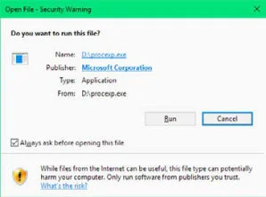</figure></section><section class="page" id="p2-page-663" aria-label="p2-page-663"><p>ほかのアプリケーションも複数のデータストリームを利用できます。たとえば、バックアップツールは、ファイルに追加のストリームを作り、バックアップ固有のタイムスタンプを保存できます。アーカイブツールは、指定日より古いファイルや、一定期間アクセスがないファイルをオフラインストレージに移す階層型ストレージを実装できます。その場合、ファイルをオフラインストレージにコピーし、元のファイルの既定データストリームを長さ0にして、保存先を記録したストリームを追加できます。</p>
<h4 id="実験-データストリームを確認する">実験　データストリームを確認する</h4>
<p>Windows アプリケーションの大半は名前付きの代替データストリームを扱うように設計されていませんが、<code>echo</code> と <code>more</code> では扱えます。次の例では、<code>echo</code> でファイル <code>test</code> に名前付きストリーム <code>stream</code> を作成し、<code>more</code> で内容を表示します。</p>
<pre><code>c:&#92;Test&gt;echo Hello from a named stream! &gt; test:stream
c:&#92;Test&gt;more &lt; test:stream
Hello from a named stream!
c:&#92;Test&gt;</code></pre>
<p>ディレクトリを一覧表示しても、<code>test</code> のファイルサイズには代替ストリームのデータが含まれません。NTFS は、ディレクトリ一覧などのファイル情報の照会に対して、名前のないデータストリームのサイズだけを返すためです。</p>
<pre><code>c:&#92;Test&gt;dir test
 ドライブ C のボリューム ラベルは OS です
 ボリューム シリアル番号は F080-620F です

 c:&#92;Test のディレクトリ

12/07/2018  05:33 PM                 0 test
               1 個のファイル                   0 バイト
               0 個のディレクトリ  18,083,577,856 バイトの空き領域
c:&#92;Test&gt;</code></pre>
<p>代替データストリームを持つファイルやディレクトリは、Sysinternals の Streams ツールや、<code>dir</code> の <code>/r</code> オプションで確認できます。次は Streams の出力例です。</p>
<pre><code>c:&#92;Test&gt;streams test

streams v1.60 - NTFS の代替ストリームを表示
Copyright (C) 2005-2016 Mark Russinovich
Sysinternals - www.sysinternals.com

c:&#92;Test&#92;test:
   :stream:$DATA       29</code></pre></section><section class="page" id="p2-page-664" aria-label="p2-page-664"><h4 id="Unicode-の名前">Unicode の名前</h4>
<p>Windows のほかの部分と同様に、NTFS はファイル、ディレクトリ、ボリュームの名前を、16ビットのコード単位を使う Unicode（UTF-16）で保存します。Unicode は世界の主要な言語の文字に加え、絵文字にも固有の表現を割り当てるため、国や地域が異なる環境間でデータをやり取りしやすくなります。従来の2バイト文字コード方式では、文字によって8ビットまたは16ビットで表し、利用できる文字は読み込んだコードページによって決まりました。Unicode の文字表現は、どのコードページを読み込んだかに依存しません。パスを構成する個々のディレクトリ名とファイル名は最大255文字で、Unicode の文字、名前の途中にある空白、複数のピリオドを含められます。</p>
<h4 id="汎用インデックス機能">汎用インデックス機能</h4>
<p>NTFS では、B木を使ってボリューム上の任意のファイル属性にインデックスを付けられるように設計されています。任意の属性にインデックスを作成する機能は、ユーザー向けには公開されていません。ファイルシステムはこの構造を使って、特定のディレクトリ内のすべてのファイルなど、条件に合うファイルを効率よく見つけられます。FAT はファイル名を管理しますが、名前順に並べないため、大きなディレクトリでは検索が遅くなります。</p>
<p>NTFS の複数の機能が汎用インデックスを利用します。一例は、セキュリティ記述子を集約する機能です。ボリューム上のファイルとディレクトリのセキュリティ記述子を1つの内部ストリームにまとめ、重複を除き、NTFS が定義する内部セキュリティ識別子でインデックスを付けます。これらの機能での使い方は、後述の「NTFS のディスク上の構造」を参照してください。</p>
<h4 id="不良クラスターの動的な再マップ">不良クラスターの動的な再マップ</h4>
<p>通常は、プログラムがディスクの不良セクターを読み取ろうとすると、読み取りが失敗し、そのクラスターにあるデータにアクセスできなくなります。耐障害性を備えた NTFS ボリュームでは、冗長化を担当する Windows のボリュームマネージャーまたは記憶域スペースが、不良セクターにあったデータの正常なコピーを取得し、セクターの障害を NTFS に通知します。NTFS は、不良セクターを含むクラスターの代わりに新しいクラスターを割り当て、正常なデータをそこにコピーします。不良クラスターは、ボリュームの隠しメタデータファイル <code>$BadClus</code> にある一覧へ追加し、以後は使用しません。</p>
<p>このデータ回復と動的な再マップは、ファイルサーバー、耐障害性が必要なシステム、データの損失を許容できないアプリケーションで特に役立ちます。起動の早い段階など、セクターの障害時にボリュームマネージャーや記憶域スペースを使えない場合も、NTFS はクラスターを置き換え、不良クラスターを再利用しません。ただし、不良セクターにあったデータは回復できません。</p></section><section class="page" id="p2-page-665" aria-label="p2-page-665"><h4 id="ハードリンク">ハードリンク</h4>
<p>ハードリンクを使うと、複数のパスで同じファイルを参照できます。ディレクトリにはハードリンクを作れません。たとえば、既存の <code>C:&#92;Users&#92;Administrator&#92;Documents&#92;Spec.doc</code> に対するハードリンクを <code>C:&#92;Documents&#92;Spec.doc</code> として作ると、どちらのパスもディスク上の同じファイルを指します。どちらからでもファイルを変更できます。プログラムは Windows の <code>CreateHardLink</code> 関数でハードリンクを作成できます。</p>
<p>NTFS はファイル本体への参照数を管理します。ハードリンクを作るたびに、同じデータを参照するファイル名が1つ増えます。そのため、元の名前（ここでは <code>C:&#92;Users&#92;Administrator&#92;Documents&#92;Spec.doc</code>）を削除しても、別のハードリンク（<code>C:&#92;Documents&#92;Spec.doc</code>）は残り、同じデータを指します。ハードリンクは、ファイルレコード番号で表されるディスク上のローカル参照なので、同じボリューム内でのみ作成できます。</p>
<h4 id="実験-ハードリンクを作成する">実験　ハードリンクを作成する</h4>
<p>ハードリンクは <code>fsutil hardlink create</code> でも、<code>mklink</code> の <code>/H</code> オプションでも作成できます。ここでは、後でシンボリックリンクを作るときにも使う <code>mklink</code> を使います。まず <code>test.txt</code> を作成して文字列を書き込みます。</p>
<pre><code>C:&#92;&gt;echo Hello from a Hard Link &gt; test.txt</code></pre>
<p>次に、<code>hard.txt</code> というハードリンクを作成します。</p>
<pre><code>C:&#92;&gt;mklink /H hard.txt test.txt
hard.txt &lt;&lt;===&gt;&gt; test.txt のハードリンクが作成されました</code></pre>
<p>ディレクトリを一覧表示すると、両方の名前で同じファイルを参照していることがわかります。作成日時、アクセス許可、ファイルサイズは同じで、ファイル名だけが異なります。</p>
<pre><code>C:&#92;&gt;dir *.txt
 ドライブ C のボリューム ラベルは OS です
 ボリューム シリアル番号は F080-620F です

 C:&#92; のディレクトリ

12/07/2018  05:46 PM                26 hard.txt
12/07/2018  05:46 PM                26 test.txt
               2 個のファイル                  52 バイト
               0 個のディレクトリ  15,150,333,952 バイトの空き領域</code></pre>
<h4 id="シンボリックリンク-ソフトリンク-とジャンクション">シンボリックリンク（ソフトリンク）とジャンクション</h4>
<p>NTFS は、ファイルに別名を与える方法として、シンボリックリンク（ソフトリンク）もサポートします。リンクには、アクセス時に解釈する相対パスまたは絶対パスを格納します。別のローカルボリュームや、別のコンピューター上の共有を指すこともできます。シンボリックリンクを作っても、参照先ファイルの参照数は増えません。参照先を削除するとデータは失われ、リンクは存在しないファイルを指したまま残ります。シンボリックリンクはファイルに加えて、ディレクトリも指すことができます。</p></section><section class="page" id="p2-page-666" aria-label="p2-page-666"><p>たとえば <code>C:&#92;Drivers</code> が <code>%SystemRoot%&#92;System32&#92;Drivers</code> を指すディレクトリのシンボリックリンクなら、アプリケーションが <code>C:&#92;Drivers&#92;Ntfs.sys</code> を読み取ると、実際には <code>%SystemRoot%&#92;System32&#92;Drivers&#92;Ntfs.sys</code> が読み取られます。ディレクトリのシンボリックリンクを使うと、元のツリーの構造や内容を変えずに、深い階層にあるディレクトリへ短いパスでアクセスできます。この例では、ボリュームのルートに <code>Drivers</code> へのリンクを置き、<code>Ntfs.sys</code> に至るディレクトリの階層を3段から1段に減らしています。ファイルのシンボリックリンクも同様に動作します。エクスプローラーが管理する <code>.lnk</code> ショートカットに似ていますが、ファイルシステムが直接処理します。シンボリックリンクは <code>mklink</code> を <code>/H</code> なしで使うか、<code>CreateSymbolicLink</code> を呼び出して作成します。</p>
<p>一部の従来型アプリケーションは、特にマシンをまたぐ場合にシンボリックリンクを安全に扱えないことがあります。このため、リンクの作成には通常、管理者に付与される <code>SeCreateSymbolicLink</code> 特権が必要です。Windows 10 以降で開発者モードが有効なら、<code>CreateSymbolicLink</code> に <code>SYMBOLIC_LINK_FLAG_ALLOW_UNPRIVILEGED_CREATE</code> を指定でき、標準ユーザーもコマンドプロンプトからリンクを作成できます。ファイルシステムには、リンクをたどる条件を制御する <code>SymLinkEvaluation</code> オプションもあり、次のコマンドで設定します。</p>
<pre><code>fsutil behavior set SymLinkEvaluation</code></pre>
<p>Windows の既定のポリシーでは、ローカルにあるリンクからローカルまたはリモートの参照先にアクセスできます。リモートにあるリンクからの参照は、既定で無効です。</p>
<pre><code>D:&#92;&gt;fsutil behavior query SymLinkEvaluation
ローカルからローカルへのシンボリックリンクは有効です。
ローカルからリモートへのシンボリックリンクは有効です。
リモートからローカルへのシンボリックリンクは無効です。
リモートからリモートへのシンボリックリンクは無効です。</code></pre>
<p>シンボリックリンクは、NTFS の再解析ポイントとして実装されています。再解析ポイントは、再解析データと呼ばれるデータブロックを関連付けたファイルまたはディレクトリです。このデータには状態や場所など、ユーザーが定義した情報が含まれ、データを作成したアプリケーション、ファイルシステムフィルタードライバー、I/O マネージャーが読み取れます。NTFS がファイルやディレクトリを探す途中で再解析ポイントを見つけると、<code>STATUS_REPARSE</code> を返します。これを受けて、ボリュームに接続されたフィルタードライバーと I/O マネージャーが再解析データを調べます。再解析ポイントの種類は固有の再解析タグで識別できるため、処理を担当するコンポーネントは、再解析データの中身を確認する前に、自分が扱う種類かどうかを判断できます。タグを所有するフィルタードライバーまたは I/O マネージャーは、次のような処理を選べます。</p>
<ul>
<li>再解析ポイントを通るファイル I/O のパス名を変更し、変更後のパスで I/O を再発行します。後述のジャンクションでは、この方法でディレクトリの検索先を切り替えます。</li>
<li>ファイルから再解析ポイントを削除して、必要な変更をファイルに加えた後、ファイル I/O を再発行します。</li>
</ul></section><section class="page" id="p2-page-667" aria-label="p2-page-667"><p>任意の再解析ポイントを作成する専用の Windows 関数はありません。プロセスは <code>DeviceIoControl</code> にファイルシステム制御コード <code>FSCTL_SET_REPARSE_POINT</code> を指定して作成します。内容の照会には <code>FSCTL_GET_REPARSE_POINT</code> を使います。再解析ポイントにはファイル属性 <code>FILE_ATTRIBUTE_REPARSE_POINT</code> が設定されるため、アプリケーションは <code>GetFileAttributes</code> で確認できます。</p>
<p>NTFS がサポートする別の種類の再解析ポイントに、ボリュームマウントポイントとも呼ばれるジャンクションがあります。ジャンクションは従来からある NTFS の機能で、ディレクトリのシンボリックリンクに近い動作をします。参照先はローカルボリューム上に限られます。ジャンクションを選ぶ利点は、ディレクトリのシンボリックリンクに対応していない古い Windows でも使えることです。</p>
<p>前節で述べたように、新しい Windows では空でないディレクトリも再解析ポイントとして扱えます。システムの動作は、対象ファイルの完全パスで再解析ポイントがどこにあるかによって変わり、ミニフィルタードライバーから制御できます。フィルターマネージャーと NTFS、ReFS のドライバーは、公開 API <code>FsRtlIsNonEmptyDirectoryReparsePointAllowed</code> で、その種類の再解析ポイントを空でないディレクトリに使用できるか確認します。</p>
<h4 id="実験-シンボリックリンクを作成する">実験　シンボリックリンクを作成する</h4>
<p>同じボリューム上でも、シンボリックリンクとハードリンクの動作には違いがあります。前の実験で作成した <code>test.txt</code> を指すシンボリックリンク <code>soft.txt</code> を作成します。</p>
<pre><code>C:&#92;&gt;mklink soft.txt test.txt
soft.txt &lt;&lt;===&gt;&gt; test.txt のシンボリック リンクが作成されました</code></pre>
<p>ディレクトリを表示すると、シンボリックリンクにはファイルサイズが表示されず、種類が <code>&lt;SYMLINK&gt;</code> になっています。作成日時も、参照先とは別にリンク自体が持つ値です。シンボリックリンクには、参照先とは異なるアクセス許可も設定できます。</p>
<pre><code>C:&#92;&gt;dir *.txt
 ドライブ C のボリューム ラベルは OS です
 ボリューム シリアル番号は 38D4-EA71 です

 C:&#92; のディレクトリ

05/12/2012  11:55 PM                 8 hard.txt
05/13/2012  12:28 AM    &lt;SYMLINK&gt;      soft.txt [test.txt]
05/12/2012  11:55 PM                 8 test.txt
               3 個のファイル                  16 バイト
               0 個のディレクトリ  10,636,480,512 バイトの空き領域</code></pre>
<p>最後に、元の <code>test.txt</code> を削除します。ハードリンクとシンボリックリンクは両方とも残ります。ハードリンクからは同じデータを参照できますが、シンボリックリンクの参照先は存在しなくなります。</p></section><section class="page" id="p2-page-668" aria-label="p2-page-668"><h4 id="圧縮とスパースファイル">圧縮とスパースファイル</h4>
<p>NTFS はファイルデータの圧縮に対応しています。圧縮と展開は NTFS が透過的に行うため、アプリケーションを変更する必要はありません。ディレクトリも圧縮対象にでき、そのディレクトリ内に以後作成するファイルは圧縮されます。</p>
<p>アプリケーションは <code>DeviceIoControl</code> にファイルシステム制御コード <code>FSCTL_SET_COMPRESSION</code> を渡して圧縮を設定または解除します。ファイルやディレクトリの圧縮状態を照会するには <code>FSCTL_GET_COMPRESSION</code> を使います。圧縮したファイルやディレクトリには属性 <code>FILE_ATTRIBUTE_COMPRESSED</code> が設定されるため、<code>GetFileAttributes</code> でも状態を確認できます。</p>
<p>ストレージ使用量を減らす別の仕組みがスパースファイルです。ファイルをスパースにすると、アプリケーションが空と指定した範囲に NTFS はボリューム上の領域を割り当てません。アプリケーションが空の範囲を読み取ると、NTFS はゼロで埋めたバッファーを返します。この方式は、リングバッファー方式でログを記録するクライアント・サーバー型のアプリケーションに役立ちます。サーバーがファイルに情報を記録し、クライアントが非同期で読み取る構成では、クライアントが読み終えた情報を保持する必要はありません。ファイルをスパース化しておけば、クライアントは読み終えた範囲を空として指定し、ボリューム上の領域を解放できます。サーバーは、ファイルがボリュームの空き容量を使い切る心配をせずに、新しい情報を末尾へ追加できます。</p>
<p>圧縮ファイルと同様に、NTFS はスパースファイルを透過的に管理します。アプリケーションは <code>DeviceIoControl</code> に <code>FSCTL_SET_SPARSE</code> を指定してスパース属性を設定します。範囲を空にするには <code>FSCTL_SET_ZERO_DATA</code>、どの範囲に領域が割り当てられているかの照会には <code>FSCTL_QUERY_ALLOCATED_RANGES</code> を使います。次に説明する NTFS の変更ジャーナルも、スパースファイルの用途の1つです。</p>
<h4 id="変更のログ記録">変更のログ記録</h4>
<p>さまざまなアプリケーションが、ボリューム上のファイルやディレクトリの変更を監視する必要があります。たとえば自動バックアップでは、初回に完全バックアップを取り、その後はファイルの変更に基づいて増分バックアップを取ります。変更を監視する方法の1つは、ボリュームを走査してファイルとディレクトリの状態を記録し、次の走査で差分を検出することです。ただし、数千件から数万件のファイルがあるシステムでは、特に性能が低下しやすくなります。</p>
<p>別の方法は、Windows の <code>FindFirstChangeNotification</code> または <code>ReadDirectoryChangesW</code> でディレクトリの変更通知を登録することです。監視対象のディレクトリを指定すると、内容が変わったときに関数が戻ります。ボリューム全体の走査より効率的ですが、アプリケーションを常時動かす必要があります。また、<code>FindFirstChangeNotification</code> はディレクトリ内で何かが変わったことだけを知らせるため、変更点の特定にはディレクトリを走査する場合があります。<code>ReadDirectoryChangesW</code> には、FSD が変更情報を書き込むバッファーを渡せます。</p></section><section class="page" id="p2-page-669" aria-label="p2-page-669"><p>FSD はバッファーに変更レコードを書き込みます。バッファーがあふれた場合に備え、アプリケーションはディレクトリの走査に切り替えられるようにしておく必要があります。</p>
<p>NTFS は、ボリューム全体の走査とディレクトリ変更通知の欠点を補う方法として、変更ジャーナルを提供します。アプリケーションは <code>DeviceIoControl</code> にファイルシステム制御コード <code>FSCTL_CREATE_USN_JOURNAL</code> を指定し、NTFS がファイルとディレクトリの変更情報を内部ファイルである変更ジャーナルに記録するよう設定できます。USN は更新シーケンス番号（Update Sequence Number）の略です。変更ジャーナルは通常、アプリケーションが変更を取りこぼさずに処理できるだけの十分な容量を持ちます。<code>FSCTL_QUERY_USN_JOURNAL</code> でジャーナルの情報を照会し、<code>FSCTL_READ_USN_JOURNAL</code> で変更レコードを読み取ります。読み取り時には、新しいレコードが利用可能になるまで <code>DeviceIoControl</code> を待機させることもできます。</p>
<h4 id="ユーザーごとのボリュームクォータ">ユーザーごとのボリュームクォータ</h4>
<p>システム管理者は、共有ストレージボリュームでユーザーごとのディスク使用量を追跡したり、制限したりする必要があります。NTFS のクォータ管理では、使用量の追跡と上限の適用をユーザーごとに設定し、警告しきい値または上限に達したことを検出できます。警告しきい値を超えた場合は、システムイベントログにイベントを記録できます。ユーザーが上限を超える領域を使おうとしたときも、システムイベントログに記録し、上限超過の原因となるファイル I/O に「ディスクがいっぱいです」というエラーを返せます。</p>
<p>NTFS はファイルやディレクトリに作成者のセキュリティ識別子（SID）を記録し、ユーザーのボリューム使用量を追跡します。SID は第1部第7章「セキュリティ」で説明しました。クォータに算入されるのは、そのユーザーが所有するファイルやディレクトリの論理サイズです。したがって、上限を超える大きさの空のスパースファイルを作り、後からゼロ以外のデータで埋めても、クォータを回避できません。同様に、50 KB のファイルを圧縮して10 KB になっても、クォータには50 KB が計上されます。</p>
<p>ボリュームのクォータ追跡は既定で無効です。図11-25のボリュームの「プロパティ」にある「クォータ」タブで、有効化、既定の警告しきい値と上限の指定、それらに達したときの NTFS の動作を設定します。このダイアログから「クォータ エントリ」を開くと、管理者はユーザーごとに異なる上限と動作を指定できます。アプリケーションは <code>IDiskQuotaControl</code>、<code>IDiskQuotaUser</code>、<code>IDiskQuotaEvents</code> などの COM インターフェイスで NTFS のクォータ管理を利用します。</p></section><section class="page" id="p2-page-670" aria-label="p2-page-670"><p>図11-25 ボリュームの「プロパティ」から開く「クォータ設定」ダイアログ。</p>
<h4 id="リンクの追跡">リンクの追跡</h4>
<p>シェルのショートカットを使うと、ファイルシステム上のファイルへのリンクを、デスクトップなどのシェル名前空間に配置できます。Windows のスタートメニューでも、シェルのショートカットが広く使われます。同様に、OLE（Object Linking and Embedding）のリンクを使うと、あるアプリケーションの文書を別のアプリケーションの文書に透過的に埋め込めます。Microsoft Office の PowerPoint、Excel、Word などが OLE リンクを使います。</p>
<p>シェルのショートカットや OLE リンクを使うと、ファイル同士や、ファイルとシェル名前空間を簡単に関連付けられます。ただし、リンク先のファイルやディレクトリを移動すると、リンクの管理が難しくなります。Windows の NTFS は、移動後もシェルと OLE のリンクが有効になるよう、分散リンク追跡サービスをサポートします。NTFS ボリューム上のリンク先が、元のボリュームと同じドメイン内にある別の NTFS ボリュームに移動すると、サービスは移動を追跡し、新しい場所を指すようリンクを自動で更新できます。</p>
<p>NTFS のリンク追跡は、オブジェクト ID という任意のファイル属性を使います。アプリケーションは、ファイルシステム制御コード <code>FSCTL_CREATE_OR_GET_OBJECT_ID</code>（ID が未設定なら割り当てます）または <code>FSCTL_SET_OBJECT_ID</code> で、オブジェクト ID を割り当てられます。照会には <code>FSCTL_CREATE_OR_GET_OBJECT_ID</code> または <code>FSCTL_GET_OBJECT_ID</code> を使います。削除には <code>FSCTL_DELETE_OBJECT_ID</code> を使います。</p>
<figure></figure></section><section class="page" id="p2-page-671" aria-label="p2-page-671"><h4 id="暗号化">暗号化</h4>
<p>企業の利用者は、機密情報を自分のコンピューターに保存することがあります。社内サーバー上のデータは通常、適切なネットワーク設定と物理的なアクセス制御で保護されます。一方、ノート PC に保存したデータは、紛失や盗難に遭ったときに漏えいするおそれがあります。NTFS のファイルアクセス許可が効くのは、読み取りに使う OS がその設定を適用する場合です。端末から取り出したストレージの内容を直接読み取る場合には、この制御が働きません。また、第1部で説明したように、管理者アカウントには所有権の取得やバックアップの特権があり、通常のアクセス許可を超えて保護されたオブジェクトにアクセスできる場合があります。</p>
<p>NTFS には、機密データを暗号化するための暗号化ファイルシステム（EFS）があります。ファイル圧縮と同様に、暗号化と復号はアプリケーションから透過的です。閲覧を許可されたユーザーのアカウントで動作するアプリケーションがデータを読むと、自動で復号します。許可されたアプリケーションがデータを変更すると、自動で暗号化します。</p>
<aside><p>NTFS では、システムボリュームのルートや <code>&#92;Windows</code> ディレクトリにあるファイルを EFS で暗号化できません。これらの場所には起動時に必要なファイルが多く、起動中は EFS が動作しないためです。これらのファイルも保護するには、ボリューム全体を暗号化する BitLocker が適しています。BitLocker と NTFS の連携については後述します。</p></aside>
<p>EFS は Windows がユーザーモードで提供する暗号化サービスを利用します。NTFS と密接に連携するカーネルモードのコンポーネントと、ローカルセキュリティ機関サブシステム（LSASS）や暗号化 DLL と通信するユーザーモードの DLL で構成されます。</p>
<p>暗号化ファイルにアクセスするには、許可されたアカウントの EFS 鍵ペアに含まれる秘密鍵が必要です。秘密鍵はアカウントのパスワードで保護されます。そのため、ノート PC を紛失したり盗まれたりしても、データの閲覧を許可されたアカウントのパスワードがなければ、暗号を総当たりで破る場合を除き、EFS で暗号化されたファイルを読み取れません。</p>
<p>アプリケーションは Windows API の <code>EncryptFile</code> と <code>DecryptFile</code> でファイルを暗号化・復号できます。ファイルやディレクトリが暗号化されているかなど、EFS に関する属性の照会には <code>FileEncryptionStatus</code> を使います。暗号化されたファイルやディレクトリには <code>FILE_ATTRIBUTE_ENCRYPTED</code> 属性が設定されるため、<code>GetFileAttributes</code> でも暗号化状態を確認できます。</p></section><section class="page" id="p2-page-672" aria-label="p2-page-672"><h4 id="POSIX-方式のファイル削除">POSIX 方式のファイル削除</h4>
<p>従来の POSIX サブシステムは廃止され、Windows Subsystem for Linux（WSL）に置き換わりました。NTFS ドライバーは、Windows と Linux の I/O 操作の違いを吸収するために更新されました。その一例が、ファイル名やディレクトリ名を削除する Linux の <code>unlink</code> や <code>rm</code> の動作です。従来の Windows では、別のアプリケーションがハンドルを開いているファイルは削除できませんでした。Linux では通常、名前を削除した後も、既存のハンドルを通じて元のファイルを使い続けられます。Windows 10 の NTFS ドライバーは、WSL 対応のため POSIX 方式の削除をサポートしました。</p>
<p>従来の Win32 <code>DeleteFile</code> は、まず対象ファイルを開いてハンドルを作り、ネイティブ API の <code>NtSetInformationFile</code> で削除予定を設定します。NTFS ドライバーは、ファイル制御ブロック（FCB）の参照数が1で、ほかに開いているハンドルがないことを確認します。条件を満たす場合は、クローズ時に削除するようマークして戻ります。実際にファイルが削除されるのは、ハンドルを閉じたときに <code>IRP_MJ_CLEANUP</code> のディスパッチルーチンが実行されてからです。</p>
<p>WSL は、<code>NtSetInformationFile</code> に情報クラス <code>FileDispositionInformationEx</code> とフラグ <code>FILE_DISPOSITION_POSIX_SEMANTICS</code> を指定します。NTFS は、ディスク上のオブジェクトを開いたインスタンスの状態を表すコンテキスト制御ブロック（CCB）にフラグを立て、POSIX 方式の削除として記録します。続いて専用の内部ルーチンでファイルを開き直し、新しいハンドル（ここでは PosixDeleted ハンドルと呼びます）をストリーム制御ブロック（SCB）に関連付けます。元のハンドルを閉じると、NTFS は PosixDeleted ハンドルの存在を検出し、それを閉じる処理をキューに入れます。その処理でクリーンアップルーチンは POSIX 削除のマークを確認し、ファイルを隠しディレクトリ <code>&#92;$Extend&#92;$Deleted</code> に移します。ファイルは元の名前空間から消えますが、他のアプリケーションは既存のハンドルで操作を続けられます。最初の削除要求で FCB にクローズ時削除のマークが付いているため、最後のハンドルを閉じた時点で削除されます。</p>
<p>カーネルドライバーの不具合で解放されない参照が残った場合や、突然の停電などで削除できなかった場合、NTFS は次にボリュームをマウントするときに <code>&#92;$Extend&#92;$Deleted</code> を調べ、残ったファイルを標準の削除ルーチンですべて削除します。</p>
<aside><p>Windows 10 May 2019 Update（19H1）以降は、<code>DeleteFile</code> も既定で POSIX 方式の削除を使います。</p></aside></section><section class="page" id="p2-page-673" aria-label="p2-page-673"><h4 id="実験-POSIX-方式の削除を確認する">実験　POSIX 方式の削除を確認する</h4>
<p>本書のダウンロード資料に含まれる FsTool を使い、POSIX 方式の削除を確認します。新しい Windows クライアント版では既定でこの方式が使われるため、実験には Windows Server 2019（RS5）を使います。コマンドプロンプトを開き、<code>/touch</code> オプションで、FsTool が排他的に使用するテキストファイルを作成します。</p>
<pre><code>D:&#92;&gt;FsTool.exe /touch d:&#92;Test.txt
NTFS / ReFS Tool v0.1
Copyright (C) 2018 Andrea Allievi (AaLl86)

「d:&#92;Test.txt」の作成に成功しました。
ファイルハンドルは有効です。Enter キーを押すとファイルに書き込みます。</code></pre>
<p>Enter キーを押すよう求められたら、そのままにして別のコマンドプロンプトを開き、ファイルの読み取りと削除を試します。</p>
<pre><code>D:&#92;&gt;type Test.txt
別のプロセスが使用しているため、ファイルにアクセスできません。

D:&#92;&gt;del Test.txt

D:&#92;&gt;dir Test.txt
 ドライブ D のボリューム ラベルは DATA です
 ボリューム シリアル番号は 62C1-9EB3 です

 D:&#92; のディレクトリ

12/13/2018  12:34 AM                49 Test.txt
               1 個のファイル                  49 バイト
               0 個のディレクトリ  1,486,254,481,408 バイトの空き領域</code></pre>
<p>FsTool が排他的にアクセスしている間は、別のプロセスからファイルを開けません。削除を試すと、システムはファイルを削除予定としてマークしますが、まだファイルシステムの名前空間から取り除けません。エクスプローラーで削除を試しても同じ結果になります。最初のコマンドプロンプトで Enter キーを押し、FsTool を終了すると、NTFS ドライバーが実際にファイルを削除します。</p>
<p>次に FsTool の <code>/pdel</code> オプションで、POSIX 方式の削除を試します。元のファイルはすでに削除予定になっており、同じファイルをもう一度削除することはできません。最初のコマンドプロンプトで FsTool を <code>/touch</code> オプション付きで起動し直します。Enter キーを押す前に2つ目のウィンドウに切り替え、次を実行します。</p>
<pre><code>D:&#92;&gt;FsTool /pdel Test.txt
NTFS / ReFS Tool v0.1
Copyright (C) 2018 Andrea Allievi (AaLl86)

「Test.txt」を POSIX 方式で削除しました。
何かキーを押して終了します。</code></pre></section><section class="page" id="p2-page-674" aria-label="p2-page-674"><pre><code>D:&#92;&gt;dir Test.txt
 ドライブ D のボリューム ラベルは DATA です
 ボリューム シリアル番号は 62C1-9EB3 です

 D:&#92; のディレクトリ

ファイルが見つかりません</code></pre>
<p>この場合、<code>Test.txt</code> はファイルシステムの名前空間から取り除かれていますが、ファイル自体はまだ有効です。最初のコマンドプロンプトで Enter キーを押すと、FsTool はそのファイルに引き続きデータを書き込めます。内部では、ファイルが隠しシステムディレクトリ <code>&#92;$Extend&#92;$Deleted</code> に移動しているためです。</p>
<h4 id="デフラグ">デフラグ</h4>
<p>NTFS は、ファイルを拡張するときに、なるべく連続したブロックを割り当てます。それでも、ファイルの拡張を繰り返したり、ボリュームの空き容量が少なくなったりすると、時間とともに断片化する場合があります。ファイルのデータが連続しないクラスターに分かれている状態を断片化と呼びます。図11-26では、断片化したファイルが5つの断片に分かれています。Windows の FAT など、多くのファイルシステムと同様に、NTFS でファイルを連続した領域へ再配置するのは、組み込みのデフラグ機能です。ただし NTFS は、マスターファイルテーブル（MFT）のために、MFT ゾーンという領域を予約します。ボリュームの空きが少なくなれば、ほかのファイルにもこの領域を割り当てます。領域を確保しておくことで MFT の連続性を保ちやすくなりますが、MFT 自体が断片化する場合もあります。詳細は後述の「マスターファイルテーブル」を参照してください。</p>
<p>図11-26 断片化したファイルと、連続した領域にあるファイル。</p>
<p>Windows は、サードパーティのデフラグツールを開発できるよう、ファイルデータを連続したクラスターへ移動する API を提供します。ボリュームの空きクラスターと使用中のクラスターのマップは <code>FSCTL_GET_VOLUME_BITMAP</code>、ファイルに割り当てられたクラスターのマップは <code>FSCTL_GET_RETRIEVAL_POINTERS</code> で取得し、ファイルの移動には <code>FSCTL_MOVE_FILE</code> を使います。</p></section><section class="page" id="p2-page-675" aria-label="p2-page-675"><p>Windows に組み込まれたデフラグ機能は、図11-27に示す「ドライブの最適化」（<code>%SystemRoot%&#92;System32&#92;Dfrgui.exe</code>）から利用できます。コマンドライン版の <code>%SystemRoot%&#92;System32&#92;Defrag.exe</code> は、手動で実行することも、実行をスケジュールすることもできます。詳細なレポートの出力や、特定のファイルやディレクトリを除外するといった処理の指定には対応していません。</p>
<p>図11-27 「ドライブの最適化」ツール。</p>
<p>NTFS の実装でデフラグできないのは、ページファイルと NTFS のログファイルです。「ドライブの最適化」は、Windows 7 に搭載されていた「ディスク デフラグ ツール」の後継です。階層化ボリューム、SMR ディスク、SSD に対応するよう更新されました。最適化エンジンは「ドライブの最適化」サービス（<code>Defragsvc.dll</code>）に実装されています。グラフィカルなツールとコマンドライン版は、どちらもサービスが公開する COM インターフェイス <code>IDefragEngine</code> を使います。</p>
<p>SSD に対しては再 TRIM も行います。この処理を理解するには、まず SSD の構造を知る必要があります。SSD はフラッシュメモリセルにデータを保存します。セルは4〜16 KB のページにまとめられ、通常は128〜512ページで1ブロックを構成します。セルに直接書き込めるのは空のときだけです。データが入っていれば、書き込みの前に消去する必要があります。SSD は1ページ単位で書き込めますが、ハードウェアの制約により、消去は常にブロック全体に及びます。そのため、空のページへの書き込みは非常に速く、すでにデータがあるページを上書きする場合は大幅に遅くなります。</p>
<figure>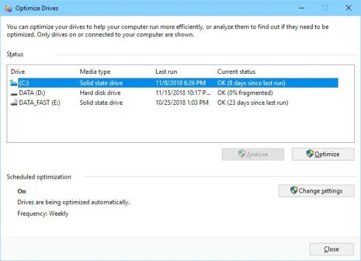</figure></section><section class="page" id="p2-page-676" aria-label="p2-page-676"><p>上書きする場合は、まずブロック全体の内容をキャッシュに退避し、SSD 上のブロック全体を消去します。キャッシュ内の対象ページを書き換えてから、更新後のブロック全体をフラッシュメモリに書き戻します。この負担を抑えるため、NTFS ドライバーはファイルの一部または全部に対応するクラスターを解放するたびに、SSD コントローラーへ TRIM コマンドを送ろうとします。TRIM を受け取った SSD は、可能であれば不要になったブロック全体を非同期に消去します。解放された領域がブロックの一部のページにしか対応しない場合、そのブロックを丸ごと消去することはできません。</p>
<p>再 TRIM では SSD を調べ、空き領域のすべてのクラスターを対象に、1 MB 単位に分けて TRIM の要求を送ります。これには次の理由があります。</p>
<ul>
<li>ファイルシステムは、クラスターを解放するたびに必ず TRIM を発行するわけではありません。</li>
<li>NTFS が TRIM の対象にするのはページで、SSD の消去ブロック全体とは限りません。原本の説明では、ドライブの最適化は再 TRIM の際に断片化したブロックを探します。有効なデータを一時ブロックに移し、ほかの断片化したブロックに属するページもまとめて、元のブロックを空けます。最後に、空いたブロックに対して TRIM を発行します。</li>
</ul>
<aside><p>空き領域へ TRIM を発行する手順には、スパースファイルを使います。ドライブの最適化は、論理サイズが1 GB で有効なデータを持たないスパースファイルを作り、128 KB から1 GB の空き領域を探します。次に、<code>FSCTL_MOVE_FILE</code> を使って、その領域へスパースファイルのデータを移動するようファイルシステムに要求します。有効なデータのないスパース範囲を読むとゼロが返ります。下位のファイルシステムが対象の SSD ブロックを解放し、SSD のファームウェアが TRIM を処理します。</p></aside>
<p>階層化ディスクと SMR ディスクに対して、「ドライブの最適化」はスラブの統合（Slabify または Slab Consolidation）と階層の最適化もサポートします。階層化ボリューム上の大きなファイルは、異なる階層に配置された複数のエクステントからなる場合があります。スラブの統合では、ファイルのエクステントテーブルの断片化を解消するだけでなく、ファイルの内容をまとめて配置し、使うスラブの数を減らします。スラブはシンプロビジョニングされたディスクの割り当て単位です。詳細は本章の「記憶域スペース」を参照してください。</p>
<p>階層の最適化は、頻繁にアクセスされるファイルや、明示的に固定されたファイルを容量階層から性能階層へ移し、アクセス頻度が低いファイルを性能階層から容量階層へ移します。最適化エンジンは階層化エンジンに問い合わせます。階層化エンジンは、ユーザーがアクセスしたファイルごとのアクセス頻度を示すヒートマップを基に、どのエクステントを各階層に移すべきかを返します。</p>
<aside><p>階層化ディスクと階層化エンジンは、本章の後半で詳しく説明します。</p></aside></section><section class="page" id="p2-page-677" aria-label="p2-page-677"><h4 id="実験-SSD-ボリュームで再-TRIM-を実行する">実験　SSD ボリュームで再 TRIM を実行する</h4>
<p>高速な SSD や NVMe のボリュームでは、<code>defrag.exe</code> の <code>/L</code> オプションで再 TRIM を実行できます。次は実行例です。</p>
<pre><code>D:&#92;&gt;defrag /L c:
Microsoft Drive Optimizer
Copyright (c) Microsoft Corp.

(C:) で再 TRIM を実行しています...
操作は正常に完了しました。

最適化後のレポート
  ボリュームサイズ     = 475.87 GB
  空き領域             = 343.80 GB
  TRIM の対象領域の合計 = 341.05 GB</code></pre>
<p>この例では、容量475.87 GB のボリュームに343.80 GB の空きがあり、そのうち約341 GB が TRIM の対象になりました。従来の HDD 上のボリュームでこのコマンドを実行すると、ボリュームのハードウェアが要求された操作に対応していないというエラーになります。</p>
<h4 id="パーティションの動的なサイズ変更">パーティションの動的なサイズ変更</h4>
<p>NTFS ドライバーでは、システムパーティションを含むパーティションのサイズを動的に変更し、利用可能な領域に応じて縮小または拡張できます。ディスクに十分な空き領域があれば、ファイルシステム制御コード <code>FSCTL_EXPAND_VOLUME</code> で拡張できます。縮小は、切り離す範囲にあるファイルシステムのデータを、縮小後に残る領域へ移す必要があるため、より複雑です。この処理はデフラグに似ており、縮小エンジンとファイルシステムドライバーが連携して実行します。</p>
<p>縮小エンジンはユーザーモードに実装され、NTFS と通信して回収可能な最大バイト数を調べます。これは、切り離す範囲のデータを、残す範囲へどの程度移せるかによって決まります。縮小エンジンは前述の標準のデフラグ機構を使います。この機構では、使用中のページファイルの断片や、<code>FSCTL_MARK_HANDLE</code> で移動不可とされたファイル（休止状態ファイルなど）は移動できません。マスターファイルテーブルのバックアップ（<code>$MftMirr</code>）、NTFS のメタデータトランザクションログ（<code>$LogFile</code>）、ボリュームラベルファイル（<code>$Volume</code>）も移動できません。これらの位置によって縮小後のボリュームの最小サイズが決まり、使われていない領域が残る場合があります。</p></section><section class="page" id="p2-page-678" aria-label="p2-page-678"><p>ファイルシステムドライバーの縮小処理は、操作の途中でもボリュームの整合性を保ちます。そのため、<code>FSCTL_SHRINK_VOLUME</code> 制御コードを通じて3種類の要求を受け取るインターフェイスを提供します。</p>
<dl>
<dt><code>ShrinkPrepare</code></dt><dd>他の操作より先に発行します。縮小後のボリュームサイズをセクター数で指定すると、ファイルシステムは新しい境界の外側への割り当てを止めます。指定した大きさまで実際に縮小できるかは検証しません。指定値が数値として有効か、別の縮小処理が進行中でないかを確認します。準備後、ボリュームのハンドルが縮小要求に関連付けられます。そのハンドルを閉じると、操作は中止されたものとして扱います。</dd>
<dt><code>ShrinkCommit</code></dt><dd><code>ShrinkPrepare</code> の後に縮小エンジンが発行します。ファイルシステムは直近の準備要求で指定された数のクラスターを取り除こうとします。異なるサイズで複数回準備要求を送った場合は、最後の指定が有効です。縮小エンジンによるデータ移動が完了していることが前提で、切り離す範囲に割り当て済みのブロックが残っていると失敗します。</dd>
<dt><code>ShrinkAbort</code></dt><dd>縮小エンジンが発行するか、ボリュームのハンドルを閉じた場合などに発生します。縮小処理を取り消してパーティションを元のサイズに戻し、縮小後の境界より外側にも再び割り当てられるようにします。ただし、縮小エンジンが行ったデフラグの変更は残ります。</dd>
</dl>
<p>縮小中にシステムが再起動すると、NTFS は後述のメタデータ回復機構でファイルシステムを整合した状態に戻します。実際の縮小は他の操作がすべて完了した後に行うため、確定前ならボリュームは元のサイズを保ち、ディスクへ書き戻し済みのデフラグの変更だけが残ります。</p>
<p>ボリュームの縮小はボリュームシャドウコピー（VSS）にも影響します。コピーオンライトでは、実際に変更した部分だけを別に保持し、それ以外は元のファイルデータを参照できます。ファイルを削除すると、VSS が参照しているデータでも、可視のファイルには関連付けられず、空き領域として見える場合があります。その領域が縮小で切り離される範囲に含まれることもあります。そのため、縮小エンジンは VSS と連携します。VSS は削除済みファイルのデータを差分領域へコピーし、必要に応じて差分領域を拡張します。この処理があるため、ボリュームに十分な空きがあっても、縮小できるサイズには制約があります。</p>
<h4 id="NTFS-の階層化ボリュームのサポート">NTFS の階層化ボリュームのサポート</h4>
<p>階層化ボリュームは、種類や性能の異なるストレージを組み合わせ、通常は1台の物理ディスクまたは仮想ディスクの上に作ります。記憶域スペースでは、高速な NVMe ディスク、SSD、回転式ハードディスクなど、異なる種類の物理ディスクから仮想ディスクを作れます。この種の仮想ディスクを階層化ディスクと呼び、記憶域スペースでは記憶域階層（Storage Tiers）と呼びます。物理 SMR ディスクの上でも階層化ボリュームを作れます。SMR ディスクには、従来方式でランダムアクセスできる高速領域と、順次アクセスを厳格に求める容量領域があります。</p></section><section class="page" id="p2-page-679" aria-label="p2-page-679"><p>階層化ボリュームには、高速なランダム I/O に対応する性能階層と、速度は低くても大容量の容量階層があります。容量階層がランダム I/O に対応するかどうかは、記憶媒体によって異なります。</p>
<aside><p>SMR ディスク、階層化ボリューム、記憶域スペースの詳細は、本章の後半で説明します。</p></aside>
<p>NTFS ドライバーは、次のように階層化ボリュームに対応します。</p>
<ul>
<li>ボリュームを、階層化ディスクの容量領域と性能領域に対応する2つのゾーンに分けます。</li>
<li><code>$LOGGED_UTILITY_STREAM</code> 型の属性 <code>$DSC</code> は、ファイルを配置する階層を指定します。NTFS の固定（pinning）インターフェイスで特定の階層にファイルを固定すると、階層化エンジンは自動でそのファイルを別の階層へ移しません。</li>
<li>記憶域階層管理サービスが階層化を管理します。NTFS ドライバーはファイルのストリームを読み書きするたびに、アクセス頻度を計測するための ETW イベントを記録します。階層化エンジンはイベントを受け取り、1 MB 単位で集計して、1時間ごとに JET データベースに保存します。4時間ごとにこのデータベースを処理し、過去のアクセスの影響を時間とともに弱めるアルゴリズムで、最近よく使われるファイル（ホット）と、利用頻度が下がったファイル（コールド）を判定します。その結果に基づき、性能階層と容量階層の間でファイルを移動します。</li>
</ul>
<p>NTFS のアロケーターも、<code>$DSC</code> 属性の指定に従ってファイルのクラスターを割り当てるよう変更されました。ボリューム内のどの階層から割り当てるかを、次の順序で判断します。</p>
<ol>
<li>ボリュームの USN ジャーナルは、常に容量階層から割り当てます。</li>
<li>MFT エントリ（ファイルレコード）とシステムメタデータファイルは、常に性能階層から割り当てます。</li>
<li>ファイルが明示的に固定されている場合は、<code>$DSC</code> 属性で指定された記憶域階層から割り当てます。</li>
<li>Windows のクライアント版では性能階層を優先し、それ以外では容量階層から割り当てます。</li>
<li>性能階層に空きがなければ、容量階層から割り当てます。</li>
</ol>
<p>アプリケーションは、<code>NtSetInformationFile</code> に情報クラス <code>FileDesiredStorageClassInformation</code> を指定して、ファイルを希望する階層に固定できます。新規ファイルのハンドルに対して実行すると、NTFS のアロケーターが新しいファイルデータを指定の階層に割り当てます。既存ファイルが別の階層にある場合は、階層化エンジンが次回の実行時に指定先へ移します。この処理を階層の最適化と呼び、階層化エンジンのスケジュールタスクまたは <code>SchedulerDefrag</code> タスクから開始できます。</p></section><section class="page" id="p2-page-680" aria-label="p2-page-680"><aside><p>ここで説明した NTFS の階層化ボリュームの仕組みは、ReFS ドライバーが提供する仕組みとは異なります。</p></aside>
<h4 id="実験-階層化ボリュームでファイルの固定を確認する">実験　階層化ボリュームでファイルの固定を確認する</h4>
<p>前節で説明したように、NTFS のアロケーターは所定の規則に従ってクラスターを割り当てる階層を決めます。この実験では、大きなファイルを階層化ボリュームにコピーし、ファイルを特定の階層に固定したときの効果を確認します。コピーが終わったら、スタートメニューのアイコンを右クリックし、「Windows PowerShell（管理者）」を選びます。<code>Get-FileStorageTier</code> でファイルの配置情報を取得します。</p>
<pre><code>PS E:&#92;&gt; Get-FileStorageTier -FilePath &#39;E:&#92;Big_Image.iso&#39; | FL FileSize,
DesiredStorageTierClass, FileSizeOnPerformanceTierClass, FileSizeOnCapacityTierClass,
PlacementStatus, State

FileSize                       : 4556566528
DesiredStorageTierClass        : Unknown
FileSizeOnPerformanceTierClass : 0
FileSizeOnCapacityTierClass    : 4556566528
PlacementStatus                : Unknown
State                          : Unknown</code></pre>
<p>Windows Server で実行したこの例では、<code>Big_Image.iso</code> 全体が容量階層に割り当てられています。実際に確認するには、階層化ディスクから高速な SSD ボリュームへファイルをコピーします。転送速度は回転式ディスクの性能によって異なりますが、通常は160〜250 MB/s 程度です。</p>
<figure></figure></section><section class="page" id="p2-page-681" aria-label="p2-page-681"><p>次に、<code>Set-FileStorageTier</code> でファイルを指定の階層に固定します。まず <code>Get-StorageTier</code> で SSD の階層名を確認します。</p>
<pre><code>PS E:&#92;&gt; Get-StorageTier -MediaType SSD | FL FriendlyName, Size, FootprintOnPool, UniqueId

FriendlyName    : SSD
Size            : 128849018880
FootprintOnPool : 128849018880
UniqueId        : {448abab8-f00b-42d6-b345-c8da68869020}

PS E:&#92;&gt; Set-FileStorageTier -FilePath &#39;E:&#92;Big_Image.iso&#39; -DesiredStorageTierFriendlyName &#39;SSD&#39;
PS E:&#92;&gt; Get-FileStorageTier -FilePath &#39;E:&#92;Big_Image.iso&#39; | FL FileSize,
DesiredStorageTierClass, FileSizeOnPerformanceTierClass, FileSizeOnCapacityTierClass,
PlacementStatus, State

FileSize                       : 4556566528
DesiredStorageTierClass        : Performance
FileSizeOnPerformanceTierClass : 0
FileSizeOnCapacityTierClass    : 4556566528
PlacementStatus                : Not on tier
State                          : Pending</code></pre>
<p>ファイルの固定先には性能階層が設定されましたが、データはまだ容量階層にあります。階層化エンジンのスケジュールタスクが実行されると、ファイルのエクステントを容量階層から性能階層へ移します。すぐに階層を最適化するには、Windows に組み込まれた <code>defrag.exe</code> を <code>/g</code> オプション付きで実行します。</p>
<pre><code>PS E:&gt; defrag /g /h e:
Microsoft Drive Optimizer
Copyright (c) Microsoft Corp.

Test (E:) の階層を最適化しています...

最適化前のレポート
  ボリューム情報
    ボリュームサイズ         = 2.22 TB
    空き領域                 = 1.64 TB
    断片化した領域の割合     = 36%
    最大の連続空き領域       = 1.56 TB

注: 64 MB を超えるファイルの断片は、断片化の統計に含まれません。

操作は正常に完了しました。

最適化後のレポート
  ボリューム情報
    ボリュームサイズ         = 2.22 TB
    空き領域                 = 1.64 TB

記憶域階層の最適化レポート</code></pre></section><section class="page" id="p2-page-682" aria-label="p2-page-682"><pre><code>性能階層で処理する I/O の割合    必要な性能階層の容量
                        100%                   28.51 GB *
                         95%                   22.86 GB
                          …
                         20%                    2.44 GB
                         15%                    1.58 GB
                         10%                  873.80 MB
                          5%                  361.28 MB

* 現在の性能階層の容量: 474.98 GB
  全 I/O のうち性能階層で処理した割合: 99%

性能階層に固定されたファイルの容量: 4.21 GB
全 I/O に占める割合: 1%

容量階層に固定されたファイルの容量: 0バイト
全 I/O に占める割合: 0%</code></pre>
<p>「ドライブの最適化」のレポートで、ファイルが固定されたことを確認できます。固定の状態をもう一度調べるには、<code>Get-FileStorageTier</code> を実行し、ファイルを再び SSD ボリュームにコピーします。ファイルの内容がすべて性能階層にあれば、転送速度は前回より大幅に上がるはずです。</p>
<pre><code>PS E:&#92;&gt; Get-FileStorageTier -FilePath &#39;E:&#92;Big_Image.iso&#39; | FL FileSize, DesiredStorageTierClass,
FileSizeOnPerformanceTierClass, FileSizeOnCapacityTierClass, PlacementStatus, State

FileSize                       : 4556566528
DesiredStorageTierClass        : Performance
FileSizeOnPerformanceTierClass : 0
FileSizeOnCapacityTierClass    : 4556566528
PlacementStatus                : Completely on tier
State                          : OK</code></pre>
<aside><p>原本の出力例では、配置状態が <code>Completely on tier</code> である一方、バイト数の欄には性能階層が0、容量階層がファイル全体と表示されています。この出力だけでは、データがすべて性能階層に移ったことは確認できません。</p></aside>
<p>Windows 10 のクライアント版では、ファイルのクラスターが既定で性能階層から割り当てられるため、容量階層に固定して同じ実験を繰り返せます。本書のダウンロード資料にある FsTool にも同じ固定機能があり、希望する階層へファイルを直接コピーできます。</p>
<figure></figure></section><section class="page" id="p2-page-683" aria-label="p2-page-683"><h4 id="NTFS-ファイルシステムドライバー">NTFS ファイルシステムドライバー</h4>
<p>第1部第6章で説明したとおり、Windows の I/O システムでは、NTFS などのファイルシステムは、カーネルモードで動作するロード可能なデバイスドライバーです。アプリケーションが Windows の I/O API などを使うと、これらのドライバーが間接的に呼び出されます。図11-28に示すように、Windows の環境サブシステムがシステムサービスを呼ぶと、システムサービスは、読み込み済みのドライバーから対象を探して呼び出します。この振り分け処理については、第8章「システムサービスのディスパッチ」を参照してください。</p>
<p>図11-28 Windows I/O システムの構成要素。ユーザーモードの環境サブシステムまたは DLL が、カーネルモードの Windows システムサービスを呼び出します。図にはカーネルと Windows Executive、およびオブジェクトマネージャー、セキュリティ参照モニター、高度なローカルプロシージャ呼び出し（ALPC）、メモリマネージャー、I/O マネージャーが示されています。NTFS ドライバー、ボリュームマネージャー、ディスクドライバーは階層を構成します。</p>
<p>各階層のドライバーは、Windows Executive の I/O マネージャーを呼び出して、互いに I/O 要求を渡します。I/O マネージャーが仲介するため、各ドライバーは独立性を保ち、ほかのドライバーに影響を与えずに読み込みやアンロードができます。NTFS ドライバーはさらに、図11-29の左側に示す、ファイルシステムと密接に関係する Windows Executive の3つのコンポーネントと連携します。</p>
<p>ログファイルサービス（LFS）は、ディスクへの書き込みのログを管理する NTFS のコンポーネントです。システム障害が発生すると、NTFS は LFS が書き込んだログを使って、NTFS でフォーマットされたボリュームを回復します。詳細は後述の「ログファイルサービス」を参照してください。</p></section><section class="page" id="p2-page-684" aria-label="p2-page-684"><p>図11-29 NTFS と関連コンポーネント。NTFS ドライバーは、ログファイルサービスにトランザクションの記録とログの書き戻しを求めます。ファイルの読み書きにはキャッシュマネージャーが関わり、メモリマネージャーはマップ済みファイルへのアクセスやキャッシュの書き戻しを処理します。I/O マネージャーを介して、ボリュームマネージャーがミラー化またはストライプ化されたボリュームを読み書きし、ディスクドライバーがディスクとの間でデータを転送します。</p>
<p>キャッシュマネージャーは Windows Executive の一部で、NTFS や、サーバーやリダイレクターなどのネットワークファイルシステムドライバーに、システム全体で共通のキャッシュ機能を提供します。Windows 用のファイルシステムは、キャッシュ対象のファイルをシステムアドレス空間にマップし、仮想メモリを通じてアクセスします。キャッシュマネージャーはこのために、ファイルシステムが Windows のメモリマネージャーを利用する専用インターフェイスを提供します。プログラムがキャッシュに読み込まれていない範囲にアクセスすると、キャッシュミスが起きます。メモリマネージャーは NTFS を呼び出し、ディスクドライバーを介してファイルの内容を取得します。キャッシュマネージャーはまた、遅延ライタースレッドからメモリマネージャーを呼び出し、バックグラウンドでキャッシュの内容をディスクへ非同期に書き戻すことで、ディスク I/O を効率化します。</p>
<p>NTFS はほかのファイルシステムと同様に、ファイルをオブジェクトとして実装し、Windows のオブジェクトモデルに組み込みます。これにより、Executive レベルのすべてのオブジェクトを管理するオブジェクトマネージャーが、ファイルの共有と保護を扱えます。オブジェクトマネージャーの詳細は第8章を参照してください。</p>
<p>アプリケーションはほかの Windows オブジェクトと同じく、オブジェクトハンドルを使ってファイルを作成し、アクセスします。I/O 要求が NTFS に届くまでに、オブジェクトマネージャーとセキュリティ機構は、要求された方法でファイルオブジェクトへアクセスする権限が呼び出し元プロセスにあることを確認しています。セキュリティ機構は、呼び出し元のアクセストークンとファイルオブジェクトのアクセス制御リストのエントリを照合します。アクセス制御リストの詳細は第1部第7章を参照してください。また、I/O マネージャーはファイルハンドルをファイルオブジェクトへのポインターに変換します。NTFS はこのオブジェクト内の情報を使って、ディスク上のファイルにアクセスします。</p>
<p>図11-30に、ファイルハンドルとディスク上のファイルシステム構造を結び付けるデータ構造を示します。</p></section><section class="page" id="p2-page-685" aria-label="p2-page-685"><p>図11-30 NTFS のデータ構造。オブジェクトマネージャーが管理するプロセスのハンドルテーブルから、ファイルオブジェクトを参照します。NTFS はファイルオブジェクトからストリーム制御ブロック、ファイル制御ブロックをたどり、ディスク上の NTFS データベースにあるマスターファイルテーブルのレコードを特定します。</p>
<p>NTFS は、ファイルオブジェクトから複数の参照をたどって、ディスク上のファイルの位置を見つけます。図11-30のように、ファイルを開くシステムサービスの1回の呼び出しに対応するファイルオブジェクトは、呼び出し元が読み書きしようとしているファイル属性のストリーム制御ブロック（SCB）を指します。図のプロセスは、同じファイルの名前のないデータ属性と名前付きストリーム（代替データ属性）の両方を開いています。各 SCB は1つのファイル属性を表し、その属性をファイル内で見つけるための情報を保持します。</p>
<p>同じファイルのすべての SCB は、共通のファイル制御ブロック（FCB）を指します。FCB には、ディスク上のマスターファイルテーブル（MFT）にあるファイルレコードへの参照が入っています。この参照の実体は MFT 内のインデックスです。詳細は後述の「ファイルレコード番号」を参照してください。MFT は次節で詳しく説明します。</p>
<h4 id="NTFS-のディスク上の構造">NTFS のディスク上の構造</h4>
<p>ここからは、ディスク上の NTFS ボリュームの構造を説明します。ディスク領域をどのようにクラスターに分けて管理するか、ファイルをどのようにディレクトリに整理するか、ファイルのデータと属性情報をディスク上にどう格納するかを見ていきます。最後に、NTFS のデータ圧縮を説明します。</p></section><section class="page" id="p2-page-686" aria-label="p2-page-686"><h4 id="ボリューム">ボリューム</h4>
<p>NTFS の構造の基本単位はボリュームです。ボリュームはディスク上の論理パーティションに対応し、ディスクの全体または一部を NTFS でフォーマットすると作成されます。記憶域スペースを使えば、複数の物理ディスクにまたがる RAID 仮想ディスクも作成できます。コントロールパネルの「記憶域スペースの管理」や、Windows PowerShell のコマンドから操作できます。たとえば <code>New-StoragePool</code> は新しい記憶域プールを作成するコマンドです。ほかのコマンドは <a href="https://learn.microsoft.com/powershell/module/storagespaces/">記憶域スペースの PowerShell リファレンス</a>を参照してください。</p>
<p>1台のディスクに1つまたは複数のボリュームを作成できます。NTFS は各ボリュームを独立して扱います。図11-31に、2 TB のハードディスクの構成例を3つ示します。</p>
<div class="table-scroll" role="region" tabindex="0" aria-label="表。横にスクロールできます"><table><caption>図11-31 ディスク構成の例</caption><thead><tr><th>構成</th><th>C:</th><th>D:</th></tr></thead><tbody>
<tr><td>1</td><td>NTFS、2 TB</td><td>なし</td></tr>
<tr><td>2</td><td>NTFS、1 TB</td><td>ReFS、1 TB</td></tr>
<tr><td>3</td><td>ReFS、1 TB</td><td>exFAT、1 TB</td></tr>
</tbody></table></div>
<p>ボリュームは、一連のファイルと、ディスクパーティションに残った未割り当て領域からなります。すべての FAT 形式では、ファイルシステム専用にフォーマットされた領域もボリュームに含まれます。NTFS と ReFS では、ビットマップ、ディレクトリ、システムのブートストラップを含むファイルシステムのデータをすべて通常のファイルとして保存します。</p>
<aside><p>Windows 10 と Windows Server 2019 の NTFS ボリュームのディスク上の形式はバージョン3.1で、Windows XP と Windows Server 2003 以降、同じバージョンが使われています。ボリュームのバージョン番号は <code>$Volume</code> メタデータファイルに格納されます。</p></aside>
<h4 id="クラスター">クラスター</h4>
<p>NTFS ボリュームのクラスターサイズ（クラスターファクター）は、<code>format</code> コマンドまたは「ディスクの管理」MMC スナップインでボリュームをフォーマットするときに決まります。既定値はボリュームの大きさによって異なります。クラスターは常に、1、2、4、8のように2の累乗個の物理セクターで構成されます。クラスターファクターは、512バイト、1 KB、2 KB のように、クラスターあたりのバイト数で表します。</p></section><section class="page" id="p2-page-687" aria-label="p2-page-687"><p>NTFS は内部ではクラスターを単位として扱います。ただし、低レベルのボリューム I/O では、クラスターの開始位置をセクター境界に揃え、長さをセクターサイズの整数倍にします。割り当て単位をクラスターにすることで、物理セクターサイズに依存せず、大容量ディスクではクラスターサイズを大きくでき、512バイト以外のセクターを持つディスクにも対応できます。大容量ボリュームでクラスターを大きくすると、断片化を減らし、割り当てを速くできますが、未使用領域も増えます。たとえば、64 KB のクラスターに16 KB のファイルを保存すると、48 KB が余ります。コマンドプロンプトの <code>format</code> や、「ディスクの管理」の「操作」メニューで「すべてのタスク」から選ぶ「フォーマット」は、ボリュームサイズに応じて既定のクラスターサイズを選びます。必要に応じて別の値を指定できます。</p>
<p>NTFS はディスク上の位置を、論理クラスター番号（LCN）で表します。LCN はボリュームの先頭から末尾まで、すべてのクラスターに順に割り振った番号です。LCN にクラスターサイズを掛けると、ディスクドライバーのインターフェイスが必要とする、ボリューム上の物理バイトオフセットが得られます。一方、ファイル内のデータは仮想クラスター番号（VCN）で表します。VCN は、そのファイルに属するクラスターに0から <var>m</var> までの番号を割り振ります。連続する VCN がディスク上で連続するとは限らず、ボリューム上の離れた LCN にも対応付けられます。</p>
<h4 id="マスターファイルテーブル">マスターファイルテーブル</h4>
<p>NTFS はボリューム上のデータをすべてファイルとして保存します。ファイルを探して読み出すためのデータ構造、ブートストラップデータ、ボリューム全体の割り当て状態を記録するビットマップなどのメタデータも含まれます。こうすることで、ファイルシステムはデータを探して管理しやすくなり、個々のファイルをセキュリティ記述子で保護できます。ディスクの一部が故障した場合も、NTFS はメタデータファイルを移し、ディスク全体へのアクセスが失われるのを防げます。</p>
<p>MFT は NTFS ボリュームの中心となる構造で、ファイルレコードの配列として実装されます。レコードサイズはフォーマット時に1 KB または4 KB に決まります。一般に、ネイティブセクターが4 KB の新しい物理ディスクや階層化ディスクでは4 KB、セクターが512バイトの古いディスクでは1 KB です。MFT エントリのサイズはクラスターサイズに依存せず、フォーマット時に <code>Format /l</code> で変更できます。レコードの構造は後述の「ファイルレコード」で説明します。論理上は、MFT 自体も含め、ボリューム上のファイルごとに1件のレコードがあります。各 NTFS ボリュームには MFT のほかにも、ファイルシステムの構造を実装するための情報を格納したメタデータファイルがあります。これらは名前がドル記号（<code>$</code>）で始まる隠しファイルです。たとえば MFT のファイル名は <code>$MFT</code> です。図11-32に示すように、残りは通常のユーザーファイルとディレクトリです。</p>
<p>通常は、MFT の各レコードが別々のファイルに対応します。ただし、属性が多いか、断片化が進んだ場合には、1つのファイルに複数のレコードが必要になることがあります。このとき、ほかのレコードの位置を記録する最初のレコードを、ベースファイルレコードと呼びます。</p></section><section class="page" id="p2-page-688" aria-label="p2-page-688"><div class="table-scroll" role="region" tabindex="0" aria-label="表。横にスクロールできます"><table><caption>図11-32 MFT にある NTFS メタデータファイルのレコード</caption><thead><tr><th>ファイル</th><th>用途</th></tr></thead><tbody>
<tr><td><code>$MFT</code></td><td>マスターファイルテーブル</td></tr>
<tr><td><code>$MFTMirr</code></td><td>MFT のミラー</td></tr>
<tr><td><code>$LogFile</code></td><td>ログファイル</td></tr>
<tr><td><code>$Volume</code></td><td>ボリューム情報</td></tr>
<tr><td><code>$AttrDef</code></td><td>属性定義テーブル</td></tr>
<tr><td><code>&#92;</code></td><td>ルートディレクトリ</td></tr>
<tr><td><code>$Bitmap</code></td><td>ボリュームのクラスター割り当て情報</td></tr>
<tr><td><code>$Boot</code></td><td>ブートセクター</td></tr>
<tr><td><code>$BadClus</code></td><td>不良クラスターの一覧</td></tr>
<tr><td><code>$Secure</code></td><td>セキュリティ設定</td></tr>
<tr><td><code>$UpCase</code></td><td>大文字への文字マッピング</td></tr>
<tr><td><code>$Extend</code></td><td>拡張メタデータのディレクトリ</td></tr>
<tr><td><code>$Extend&#92;$Quota</code></td><td>クォータ情報</td></tr>
<tr><td><code>$Extend&#92;$ObjId</code></td><td>分散リンク追跡情報</td></tr>
<tr><td><code>$Extend&#92;$Reparse</code></td><td>再解析ポイントへの逆参照</td></tr>
<tr><td><code>$Extend&#92;$RmMetadata</code></td><td>リソースマネージャーのメタデータディレクトリ</td></tr>
<tr><td><code>$Extend&#92;$RmMetadata&#92;$Repair</code></td><td>リソースマネージャーの修復情報</td></tr>
<tr><td><code>$Extend&#92;$Deleted</code></td><td>POSIX 方式で削除されたファイル</td></tr>
<tr><td><code>$Extend&#92;$RmMetadata&#92;$Txf</code></td><td>TxF のメタデータディレクトリ</td></tr>
<tr><td><code>$Extend&#92;$RmMetadata&#92;$TxfLog</code></td><td>TxF のログディレクトリ</td></tr>
<tr><td><code>$Extend&#92;$RmMetadata&#92;$TxfLog&#92;$Tops</code></td><td>TOPS ファイル</td></tr>
<tr><td><code>$Extend&#92;$RmMetadata&#92;$TxfLog&#92;$TxfLog.blf</code></td><td>TxF の BLF ファイル</td></tr>
<tr><td><code>$TxfLogContainer00000000000000000001</code><br><code>$TxfLogContainer00000000000000000002</code></td><td>TxF のログコンテナー</td></tr>
</tbody></table></div>
<p>NTFS はボリュームに初めてアクセスするときに、ディスク上のメタデータを読み、アプリケーションからのアクセスを処理するための内部データ構造を組み立てます。この処理をマウントと呼びます。MFT の物理ディスクアドレスは、LCN 0にあるボリュームブートレコード（VBR）のブートパラメーターブロック（BPB）から取得します。テーブルの最初のレコードは MFT 自体を表します。2番目のレコードは、ディスクの中ほどにある MFT ミラー（<code>$MFTMirr</code>）を指します。ミラーには MFT の先頭4レコードのコピーがあり、MFT の一部を読み取れないときに、メタデータファイルの位置を特定するために使います。</p>
<p>NTFS は MFT のファイルレコードを見つけると、そのデータ属性から VCN と LCN の対応情報を取得してメモリに保持します。各連続領域（ラン）は、VCN と LCN の対応とランの長さを持ちます。この2つの情報があれば、任意の VCN に対応する LCN がわかります。ランの詳細は後述の「常駐属性と非常駐属性」を参照してください。</p></section><section class="page" id="p2-page-689" aria-label="p2-page-689"><p>この対応情報から、NTFS は MFT を構成する各ランのディスク上の位置を特定します。次に、ほかのメタデータファイルの MFT レコードをいくつか処理し、それらのファイルを開きます。続いて、後述の「回復」で説明するファイルシステムの回復処理を実行し、残りのメタデータファイルを開きます。これでユーザーがボリュームにアクセスできるようになります。</p>
<aside><p>本章の本文と図では、説明のためランを VCN、LCN、長さの組で表します。実際に NTFS がディスク上に保持するのは、LCN と次の VCN の組です。次の VCN から開始 VCN を引けば、ランの長さが求まります。</p></aside>
<p>システムの稼働中、NTFS は重要なメタデータファイルの1つであるログファイル <code>$LogFile</code> に書き込みます。ファイルの作成や、コピーなどディレクトリ構造を変更する操作も含め、NTFS ボリュームの構造に影響するすべての操作を記録します。システム障害後にボリュームを回復する際はこのログを使います。詳細は「回復」を参照してください。</p>
<p>MFT の別のエントリは、ルートディレクトリ（たとえば <code>C:&#92;</code>）用に予約されています。そのファイルレコードには、NTFS のディレクトリ構造のルートにあるファイルとディレクトリのインデックスが含まれます。ファイルを初めて開くとき、NTFS はルートディレクトリのファイルレコードから検索を始めます。ファイルを開いた後は、そのファイルの MFT レコード番号を保持し、以後の読み書きでそのレコードに直接アクセスします。</p>
<p>NTFS はボリュームの割り当て状態をビットマップファイル <code>$Bitmap</code> に記録します。データ属性にはボリュームのクラスターを1ビットずつ表すビットマップがあり、そのクラスターが空きか、ファイルに割り当て済みかを示します。</p>
<p>セキュリティファイル <code>$Secure</code> は、ボリューム全体のセキュリティ記述子データベースを保持します。ファイルとディレクトリには個別にセキュリティ記述子を設定できます。NTFS は設定を共通ファイルにまとめ、設定が同じファイルやディレクトリから同じ記述子を参照することで容量を節約します。多くの環境ではディレクトリツリー全体で同じ設定が使われるため、この最適化でディスク使用量を大きく減らせます。</p>
<p>システムボリュームでは、システムファイル <code>$Boot</code> に Windows の起動コードが入ります。システムボリューム以外では、そのボリュームから起動しようとしたときにエラーを画面に表示するコードが入ります。ブートマネージャーが見つけられるよう、起動コードはディスク上の所定の位置に置く必要があります。フォーマット時には、<code>format</code> コマンドがこの領域のファイルレコードを作成し、ファイルとして登録します。すべてのファイルは MFT に登録され、すべてのクラスターは空きか、ファイルへの割り当て済みです。ユーザーに表示されないメタデータファイルはありますが、MFT や割り当て管理の外にあるファイルやクラスターはありません。ブートファイルと NTFS のメタデータファイルも、ほかの Windows オブジェクトと同様に、セキュリティ記述子で個別に保護できます。起動コードもファイルとして扱うため、通常のファイル I/O の仕組みで変更できますが、ブートファイルは編集から保護されています。</p>
<p>NTFS は、ボリューム上の不良箇所を記録する <code>$BadClus</code> と、ボリューム名などを保持するボリュームファイル <code>$Volume</code> も管理します。</p></section><section class="page" id="p2-page-690" aria-label="p2-page-690"><p><code>$Volume</code> には、ボリュームのフォーマットに使った NTFS のバージョンと、ボリュームの状態を示すフラグも格納されます。たとえば、ボリュームが破損しており <code>Chkdsk</code> で修復する必要があることを示すビットがあります。<code>Chkdsk</code> の詳細は後述します。<code>$UpCase</code> には、小文字を大文字に変換するテーブルが入っています。<code>$AttrDef</code> の属性定義テーブルは、ボリュームが対応する属性の型と、インデックスを付けられるか、システムの回復時に復元できるかといった性質を定義します。</p>
<aside><p>図11-32は、NTFS ボリュームのマスターファイルテーブルと、メタデータファイルに対応するエントリの例を示しています。固定位置が保証されるのは、レコード番号が16未満のものです。16より後のエントリの位置は、NTFS がメタデータファイルを作成する順序によって変わります。フォーマットツールは16より後の位置にメタデータファイルを作成しません。フォーマット後の初回マウント時に NTFS ドライバーが作るため、その順序は保証されません。</p></aside>
<p>NTFS は拡張メタデータディレクトリ <code>$Extend</code> に、オブジェクト識別子ファイル <code>$ObjId</code>、クォータファイル <code>$Quota</code>、変更ジャーナル <code>$UsnJrnl</code>、再解析ポイントファイル <code>$Reparse</code>、POSIX 削除用ディレクトリ <code>$Deleted</code>、既定リソースマネージャーのディレクトリ <code>$RmMetadata</code> などを保存します。これらは NTFS の拡張機能に関する情報を保持します。<code>$ObjId</code> はファイルのオブジェクト ID、<code>$Quota</code> はクォータを有効にしたボリュームの上限と動作設定、<code>$UsnJrnl</code> はファイルとディレクトリの変更を記録します。<code>$Reparse</code> は、ボリューム上のどのファイルやディレクトリに再解析データがあるかを記録します。</p>
<p><code>$Deleted</code> には、POSIX 方式で削除された、ユーザーからは見えないファイルが入ります。最初に削除を要求したアプリケーションがハンドルを閉じると、ファイルはこのディレクトリに移されます。元のファイル名は名前空間から消えますが、有効な参照を保持する別のアプリケーションは、そのファイルを引き続き操作できます。詳しくは前述の「POSIX 方式のファイル削除」を参照してください。</p>
<p>既定リソースマネージャーのディレクトリには、トランザクション NTFS（TxF）を支えるログディレクトリ <code>$TxfLog</code>、トランザクション分離用ディレクトリ <code>$Txf</code>、および修復用の <code>$Repair</code> があります。<code>$TxfLog</code> には TxF のベースログファイル <code>$TxfLog.blf</code> と、トランザクションログのサイズに応じた数のログコンテナーが入ります。コンテナーは最低でも2つあり、<code>$TxfLogContainer00000000000000000001</code> はカーネルトランザクションマネージャー（KTM）のログストリーム、<code>$TxfLogContainer00000000000000000002</code> は TxF のログストリームに使います。このディレクトリには、後述する TxF の旧ページストリーム <code>$Tops</code> も含まれます。</p></section><section class="page" id="p2-page-691" aria-label="p2-page-691"><h4 id="実験-NTFS-のボリューム情報を確認する">実験　NTFS のボリューム情報を確認する</h4>
<p>組み込みのコマンドラインツール <code>Fsutil.exe</code> で、NTFS ボリュームの情報を表示できます。出力には、MFT と MFT ゾーンの位置やサイズが含まれます。</p>
<pre><code>d:&#92;&gt;fsutil fsinfo ntfsinfo d:
NTFS ボリュームのシリアル番号 : 0x48323940323933f2
NTFS バージョン               : 3.1
LFS バージョン                : 2.0
セクター数                    : 0x000000011c5f6fff
総クラスター数                : 0x00000000238bedff
空きクラスター数              : 0x000000001a6e5925
予約済みクラスターの総数      : 0x00000000000011cd
論理セクターあたりのバイト数  : 512
物理セクターあたりのバイト数  : 4096
クラスターあたりのバイト数    : 4096
ファイルレコードセグメントあたりのバイト数    : 4096
ファイルレコードセグメントあたりのクラスター数: 1
MFT の有効データ長            : 0x0000000646500000
MFT の開始 LCN                : 0x00000000000c0000
MFT ミラーの開始 LCN          : 0x0000000000000002
MFT ゾーンの開始位置          : 0x00000000069f76e0
MFT ゾーンの終了位置          : 0x00000000069f7700
デバイスの TRIM 範囲数の上限  : 4294967295
デバイスの TRIM バイト数の上限: 0x10000000
ボリュームの TRIM 範囲数の上限: 62
ボリュームの TRIM バイト数の上限: 0x10000000
リソースマネージャーの識別子  : 81E83020-E6FB-11E8-B862-D89EF33A38A7</code></pre>
<p>この例の D: ボリュームは、512バイトの論理セクターを提示する4 KB の物理セクターのディスク上にあります。ファイルレコード（MFT エントリ）もクラスターも4 KB です。</p>
<h4 id="ファイルレコード番号">ファイルレコード番号</h4>
<p>NTFS ボリューム上のファイルは、ファイル番号とシーケンス番号からなる64ビットのファイルレコード番号で識別されます。ファイル番号は、MFT 内でのファイルレコードの位置から1を引いた値です。1つのファイルに複数のレコードがあれば、ベースファイルレコードの位置を使います。MFT のレコード位置が再利用されるたびにシーケンス番号が増えるため、NTFS は古い参照を検出し、内部の整合性を確認できます。</p>
<p>図11-33 ファイルレコード番号。下位48ビット（ビット0〜47）がファイル番号、上位16ビット（ビット48〜63）がシーケンス番号です。</p></section><section class="page" id="p2-page-692" aria-label="p2-page-692"><h4 id="ファイルレコード">ファイルレコード</h4>
<p>NTFS はファイルを属性と値の組の集まりとして格納します。テキストやバイナリの内容は、そのうちの1つである名前のないデータ属性に入ります。ファイルを構成するほかの属性には、ファイル名、タイムスタンプ、必要に応じて追加される名前付きデータ属性があります。図11-34に小さなファイルの MFT レコードの例を示します。</p>
<p>図11-34 小さなファイルの MFT レコード。マスターファイルテーブルの1件のレコードに、標準情報、ファイル名、データの各属性が格納されています。</p>
<p>ファイルの各属性は、独立したバイト列であるストリームとして保存されます。NTFS が実際に読み書きするのは、ファイル内の属性ストリームです。属性に対しては作成、削除、バイト範囲の読み取り、バイト範囲の書き込みができます。通常、読み書きの処理は名前のないデータ属性を対象にします。呼び出し元は、名前付きデータストリームの構文で別のデータ属性を指定できます。</p>
<p>表11-6に NTFS ボリューム上のファイルが持ち得る属性を示します。あるファイルがすべての属性を持つとは限りません。各属性には名前を付けることも、名前を付けずに使うこともできます。名前付き属性の一例は、NTFS の複数のコンポーネントが異なる目的で使う <code>$LOGGED_UTILITY_STREAM</code> です。指定できる名前とその用途を表11-7に示します。</p></section><section class="page" id="p2-page-693" aria-label="p2-page-693"><div class="table-scroll" role="region" tabindex="0" aria-label="表。横にスクロールできます"><table>
<caption>表11-6 NTFS ファイルの属性</caption>
<thead><tr><th>属性</th><th>属性型の名前</th><th>常駐の有無</th><th>説明</th></tr></thead>
<tbody>
<tr><th scope="row">ボリューム情報</th><td><code>$VOLUME_INFORMATION</code>、<code>$VOLUME_NAME</code></td><td>両方とも常駐</td><td>メタデータファイル $Volume にだけ存在し、ボリュームのバージョンとラベルを保存します。</td></tr>
<tr><th scope="row">標準情報</th><td><code>$STANDARD_INFORMATION</code></td><td>常に常駐</td><td>読み取り専用やアーカイブなどのファイル属性と、作成日時や最終変更日時などのタイムスタンプを保存します。</td></tr>
<tr><th scope="row">ファイル名</th><td><code>$FILE_NAME</code></td><td>場合による</td><td>Unicode 1.0 の文字で表したファイル名です。ハードリンクがある場合や、長いファイル名に対して MS-DOS や16ビット Windows アプリケーション用の短い名前が自動生成された場合など、1つのファイルが複数のファイル名属性を持つことがあります。</td></tr>
<tr><th scope="row">セキュリティ記述子</th><td><code>$SECURITY_DESCRIPTOR</code></td><td>場合による</td><td>以前の NTFS との互換性のために残っており、NTFS 3.1 ではめったに使われません。以前の NTFS はファイルやディレクトリごとに個別のセキュリティ記述子を保存していました。現在はほとんどの記述子をメタデータファイル $Secure に保存し、設定が同じファイルやディレクトリ間で共有します。$Boot など、一部のファイルには今も $SECURITY_DESCRIPTOR 属性があります。</td></tr>
<tr><th scope="row">データ</th><td><code>$DATA</code></td><td>場合による</td><td>ファイルの内容です。NTFS ファイルには既定の名前なしデータ属性が1つあり、名前付きのデータ属性を追加することで複数のデータストリームを持てます。ディレクトリには既定のデータ属性がありませんが、名前付きのデータ属性を追加できます。名前付きデータストリームはシステム固有の用途にも使われます。たとえばストレージサービスは、ボリュームに領域を予約するためにストレージ予約領域テーブル（SRAT）のストリーム $SRAT を使います。この属性はメタデータファイル $Bitmap にだけ適用されます。ストレージ予約については本章の後半で説明します。</td></tr>
<tr><th scope="row">インデックスルート、インデックス割り当て</th><td><code>$INDEX_ROOT</code>、<code>$INDEX_ALLOCATION</code></td><td>順に常駐、非常駐</td><td>これらとインデックスビットマップの3つの属性は、ディレクトリや、セキュリティ、クォータなどのメタデータファイルで使う B 木を実装します。</td></tr>
<tr><th scope="row">属性リスト</th><td><code>$ATTRIBUTE_LIST</code></td><td>場合による</td><td>ファイルを構成する属性と、各属性を格納する MFT エントリのファイルレコード番号を列挙します。1つのファイルに複数の MFT ファイルレコードが必要な場合に存在します。</td></tr>
<tr><th scope="row">インデックスビットマップ</th><td><code>$BITMAP</code></td><td>場合による</td><td>用途は対象によって異なります。非常駐のディレクトリには $INDEX_ALLOCATION があり、ビットマップは B 木で使用中の4 KBのインデックスブロックと、B 木の拡張に使える空きブロックを記録します。MFT には名前のない $Bitmap 属性があり、使用中の MFT セグメントと、新規ファイルや追加領域が必要な既存ファイルに割り当てられる空きセグメントを記録します。</td></tr>
</tbody></table></div></section><section class="page" id="p2-page-694" aria-label="p2-page-694"><div class="table-scroll" role="region" tabindex="0" aria-label="表。横にスクロールできます"><table><caption>表11-6 NTFS ファイルの属性（続き）</caption>
<thead><tr><th>属性</th><th>属性型の名前</th><th>常駐の有無</th><th>説明</th></tr></thead>
<tbody>
<tr><th scope="row">オブジェクト ID</th><td><code>$OBJECT_ID</code></td><td>常に常駐</td><td>ファイルまたはディレクトリを識別する16バイトの GUID です。リンク追跡サービスはシェルのショートカットや OLE リンクの参照元ファイルに ID を割り当てます。NTFS の API を使うと、ファイルやディレクトリを名前の代わりにオブジェクト ID で開けます。</td></tr>
<tr><th scope="row">再解析情報</th><td><code>$REPARSE_POINT</code></td><td>場合による</td><td>ファイルの再解析ポイントのデータを格納します。NTFS のジャンクションとマウントポイントがこの属性を持ちます。</td></tr>
<tr><th scope="row">拡張属性</th><td><code>$EA、$EA_INFORMATION</code></td><td>順に場合による、常に常駐</td><td>名前と値の組です。通常は使われませんが、OS/2 アプリケーションとの互換性のために提供されます。</td></tr>
<tr><th scope="row">ログ付きユーティリティストリーム</th><td><code>$LOGGED_UTILITY_STREAM</code></td><td>場合による</td><td>NTFS のコンポーネントがそれぞれの用途に使う属性型です。詳細は表11-7を参照してください。</td></tr>
</tbody></table></div>
<div class="table-scroll" role="region" tabindex="0" aria-label="表。横にスクロールできます"><table><caption>表11-7 $LOGGED_UTILITY_STREAM 属性</caption>
<thead><tr><th>属性</th><th>属性型の名前</th><th>常駐の有無</th><th>説明</th></tr></thead>
<tbody>
<tr><th scope="row">暗号化ファイルストリーム</th><td><code>$EFS</code></td><td>場合による</td><td>EFS がファイルの暗号化を管理するためのデータを格納します。たとえば、ファイルの復号に必要な鍵を暗号化したものや、ファイルへのアクセスを許可されたユーザーの一覧が含まれます。</td></tr>
<tr><th scope="row">オンライン暗号化のバックアップ</th><td><code>$EfsBackup</code></td><td>場合による</td><td>EFS のオンライン暗号化が、元の暗号化済みデータストリームの断片を格納します。</td></tr>
<tr><th scope="row">トランザクション NTFS データ</th><td><code>$TXF_DATA</code></td><td>場合による</td><td>ファイルやディレクトリがトランザクションに参加すると、TxF はファイル固有のトランザクション ID などをこの属性に保存します。</td></tr>
<tr><th scope="row">優先ストレージクラス</th><td><code>$DSC</code></td><td>常駐</td><td>ファイルを優先するストレージ階層に固定します。詳細は「階層化ボリュームの NTFS サポート」を参照してください。</td></tr>
</tbody></table></div>
<p>表11-6では属性を名前で示していますが、各属性型には数値の型コードが対応します。NTFS はこのコードの昇順に、MFT のファイルレコード内の属性を並べます。複数のデータ属性やファイル名がある場合など、同じ型が複数回現れることもあります。すべての属性型とその名前は、メタデータファイル <code>$AttrDef</code> に列挙されています。</p>
<p>ファイルレコード内の各属性は、属性型コードで識別され、値と任意の名前を持ちます。属性の値は、その属性を構成するバイトストリームです。たとえば、<code>$FILE_NAME</code> の値はファイル名で、<code>$DATA</code> の値はユーザーがファイルに保存したバイト列です。</p>
<p>ほとんどの属性に名前は付きませんが、インデックス関連の属性や <code>$DATA</code> 属性には名前が付くことがあります。名前は、同じファイルにある同型の属性を区別するために使います。たとえば名前付きデータストリームを持つファイルには、2つの <code>$DATA</code> 属性があります。名前なしの属性は既定の名前なしストリームを格納します。名前付きの属性は代替ストリームの名前を持ち、そのストリームのデータを格納します。</p></section><section class="page" id="p2-page-695" aria-label="p2-page-695"><h4 id="ファイル名">ファイル名</h4>
<p>NTFS と FAT では、パスを構成する各ファイル名を最大255文字にできます。ファイル名には Unicode 文字のほか、複数のピリオドや途中の空白も使えます。ただし、MS-DOS に付属する FAT ファイルシステムでは、ファイル名は Unicode 以外の8文字と、ピリオドに続く3文字の拡張子に制限されます。Windows がサポートするファイル名前空間とその包含関係を図11-35に示します。</p>
<p>Windows Subsystem for Linux（WSL）は、Windows がサポートするアプリケーション実行環境のうち最も広い名前空間を必要とします。このため、NTFS の名前空間は WSL の名前空間と同じです。WSL では末尾にピリオドや空白を含む名前など、Windows や MS-DOS のアプリケーションから見えない名前を作れます。広い POSIX 名前空間を使うのは、通常、そのファイルを WSL アプリケーションで使う場合なので、問題にはなりません。</p>
<figure><div class="table-scroll" role="region" tabindex="0" aria-label="表。横にスクロールできます"><table>
<thead><tr><th>名前空間</th><th>ファイル名の例</th></tr></thead>
<tbody>
<tr><td>WSL</td><td><code>TrailingDots...</code>、大文字と小文字だけが異なる <code>SameNameDifferentCase</code> と <code>samenamedifferentcase</code>、末尾に空白が3つある <code>TrailingSpaces</code></td></tr>
<tr><td>Windows サブシステム</td><td><code>LongFileName</code>、<code>UnicodeName.</code>、<code>File.Name.With.Dots</code>、<code>File.Name2.With.Dots</code>、<code>Name With Embedded Spaces</code>、<code>.BeginningDot</code></td></tr>
<tr><td>MS-DOS および16ビット Windows クライアント</td><td><code>EIGHTCHR.123</code>、<code>CASEBLND.TYP</code></td></tr>
</tbody></table></div><figcaption>図11-35 Windows のファイル名前空間。WSL の範囲に Windows サブシステムの範囲が含まれ、その内側に MS-DOS と16ビット Windows のクライアントが扱える範囲があります。</figcaption></figure>
<p>32ビット Windows アプリケーションと、MS-DOS や16ビット Windows アプリケーションの名前空間は、さらに近い関係にあります。図11-35の Windows の領域は、Windows サブシステムが NTFS ボリュームに作成でき、MS-DOS や16ビット Windows アプリケーションからはその名前で参照できないファイル名を表します。これには MS-DOS の8.3形式より長い名前、Unicode の国際文字を含む名前、ピリオドが複数ある名前やピリオドで始まる名前、途中に空白を含む名前が該当します。互換性のため、このような名前でファイルを作成すると、NTFS は MS-DOS 形式の別名を自動生成します。Windows では <code>dir /x</code> でこれらの短い名前を表示できます。</p>
<p>MS-DOS 形式のファイル名は、NTFS ファイルを同じように操作できる別名で、長いファイル名と同じディレクトリに格納されます。自動生成された MS-DOS 形式のファイル名を持つファイルの MFT レコードを図11-36に示します。</p></section><section class="page" id="p2-page-696" aria-label="p2-page-696"><figure>
<figcaption>図11-36 MS-DOS ファイル名属性を持つ MFT ファイルレコード</figcaption>
<p>レコードには標準情報、NTFS ファイル名、MS-DOS ファイル名、データが含まれます。
MS-DOS ファイル名は追加されたファイル名属性です。</p></figure>
<p>NTFS のファイル名と自動生成された MS-DOS のファイル名は同じファイルレコードに格納され、同じファイルを指します。
MS-DOS の名前で、ファイルを開いたり、読み書きしたり、コピーしたりできます。
長い名前と短い名前のどちらを指定して名前を変更しても、新しい名前が既存の両方の名前に置き換わります。
新しい名前が有効な MS-DOS の名前でなければ、NTFS は別の MS-DOS の名前を生成します。
NTFS が MS-DOS 形式の名前を生成するのは、最初のファイル名に対してだけです。</p>
<blockquote><p><strong>注記</strong> ハードリンクの実装も似ています。
ハードリンクを作ると、NTFS はファイルの MFT ファイルレコードにファイル名属性を追加し、新しいリンクが置かれるディレクトリのインデックス割り当て属性にエントリを追加します。
複数のハードリンクがあるファイルでは、リンクを一つ削除してもファイルとそのレコードは残ります。
最後のファイル名（ハードリンク）を削除した時点でファイルとレコードが削除されます。
一方、NTFS の名前と自動生成された MS-DOS の名前が付いたファイルは、どちらの名前を指定してもファイルを削除できます。</p></blockquote>
<p>NTFS は次の手順で長いファイル名から MS-DOS の名前を生成します。
このアルゴリズムを実装しているカーネル関数は <code>RtlGenerate8dot3Name</code> で、将来の Windows リリースで動作が変わる可能性があります。
CDFS、FAT、サードパーティー製ファイルシステムなど、ほかのドライバーもこの関数を使います。</p>
<ol>
<li>長い名前から、空白や Unicode 文字など、MS-DOS の名前に使えない文字を取り除きます。
先頭と末尾のピリオドを取り除き、残ったピリオドのうち最後の一つだけを残します。</li>
<li>ピリオドがある場合はその手前、なければ名前全体を最大6文字に切り詰めます。
MS-DOS で使えない文字が一つでもあればこの処理を行うため、元から6文字以下の場合もあります。
2文字以下なら、4桁の16進チェックサムを生成して末尾に連結します。
さらに <code>~n</code> を付けます。
<code>n</code> は1から始まり、切り詰めると同じ名前になるファイルを区別します。
ピリオドがある場合は、その後ろを最大3文字に切り詰めます。</li>
<li>結果を大文字に変換します。
MS-DOS は大文字と小文字を区別しないため、この処理で大文字と小文字だけが異なる名前が生成されるのを防ぎます。</li>
<li>生成した名前がディレクトリ内の既存の名前と重複したら、<code>~n</code> の番号を増やします。
<code>n</code> が4を超え、チェックサムがまだ付いていない場合は、ピリオドより前の部分を2文字に切り詰め、4桁の16進チェックサムを生成して連結します。</li>
</ol></section><section class="page" id="p2-page-697" aria-label="p2-page-697"><p>表11-8は図11-35に挙げた Windows の長いファイル名と、NTFS が生成する MS-DOS 形式の名前を示しています。
現在のアルゴリズムと図11-35の例から、NTFS がどのような短い名前を生成するかが分かります。</p>
<blockquote><p><strong>注記</strong> Windows 8.1以降では、起動用でない NTFS ボリュームの短いファイル名の生成は既定で無効です。
古い Windows でも、レジストリの <code>HKLM\SYSTEM\CurrentControlSet\Control\FileSystem\NtfsDisable8dot3NameCreation</code> に DWORD 値の1を設定して再起動すれば、短い名前の生成を無効にできます。
これにより古いアプリケーションとの互換性が失われる可能性があります。</p></blockquote>
<div class="table-scroll" role="region" tabindex="0" aria-label="表。横にスクロールできます"><table><caption>表11-8 NTFS が生成するファイル名</caption>
<thead><tr><th>Windows の長い名前</th><th>NTFS が生成する短い名前</th></tr></thead>
<tbody>
<tr><td><code>LongFileName</code></td><td><code>LONGFI~1</code></td></tr>
<tr><td><code>UnicodeName.FDPL</code></td><td><code>UNICOD~1</code></td></tr>
<tr><td><code>File.Name.With.Dots</code></td><td><code>FILENA~1.DOT</code></td></tr>
<tr><td><code>File.Name2.With.Dots</code></td><td><code>FILENA~2.DOT</code></td></tr>
<tr><td><code>File.Name3.With.Dots</code></td><td><code>FILENA~3.DOT</code></td></tr>
<tr><td><code>File.Name4.With.Dots</code></td><td><code>FILENA~4.DOT</code></td></tr>
<tr><td><code>File.Name5.With.Dots</code></td><td><code>FIF596~1.DOT</code></td></tr>
<tr><td><code>Name With Embedded Spaces</code></td><td><code>NAMEWI~1</code></td></tr>
<tr><td><code>.BeginningDot</code></td><td><code>BEGINN~1</code></td></tr>
<tr><td><code>25¢.two characters</code></td><td><code>255440~1.TWO</code></td></tr>
<tr><td><code>©</code></td><td><code>6E2D~1</code></td></tr>
</tbody></table></div>
<h4 id="トンネリング">トンネリング</h4>
<p>古いプログラムには、ファイルが削除されたり名前を変更されたりした後も、ファイルシステムが特定のメタデータを一定時間保持することを前提とするものがあります。
NTFS は<strong>トンネリング</strong>によってこの動作との互換性を保ちます。
一定時間内に元のファイルと同じ名前で新しいファイルを作成すると、一部のメタデータを引き継ぎます。</p>
<p>この仕組みは、MS-DOS のプログラムが安全に保存する手順で想定していた動作を再現します。
この手順では、変更したデータを一時ファイルにコピーし、元のファイルを削除して、一時ファイルを元の名前に変更します。
名前を変更した一時ファイルは元のファイルと同じように見えることが期待されます。
作成日時を引き継がなければ、更新のたびに変更日時と同様に作成日時も変わってしまいます。</p>
<p>ディレクトリからファイル名が取り除かれると、NTFS は長い名前、短い名前、作成日時をキャッシュに保存します。
ディレクトリにファイルが追加されると、引き継ぐデータがあるかどうかをキャッシュで調べます。
これらの処理はディレクトリ単位で行うため、ディレクトリごとにキャッシュがあり、ディレクトリを削除すると対応するキャッシュも削除されます。</p></section><section class="page" id="p2-page-698" aria-label="p2-page-698"><p>次の操作の組み合わせで同じファイル名が取り除かれ、再び作られると、NTFS はトンネリングを適用します。</p>
<ul>
<li>削除してから作成</li>
<li>削除してから名前を変更</li>
<li>名前を変更してから作成</li>
<li>名前を変更してから別のファイルの名前を変更</li>
</ul>
<p>NTFS は既定でトンネリングのキャッシュを15秒間保持します。
保持時間を変更するには、レジストリキー <code>HKLM\SYSTEM\CurrentControlSet\Control\FileSystem</code> に <code>MaximumTunnelEntryAgeInSeconds</code> という値を作成します。
<code>MaximumTunnelEntries</code> を新規作成して0に設定すると、トンネリングを完全に無効にできます。
無効にすると、この互換動作に依存する古いアプリケーションが動作しなくなります。
前節で説明した短いファイル名の生成を無効にしている NTFS ボリュームでは、トンネリングも既定で無効です。</p>
<p>コマンドプロンプトで次の実験を行うと、トンネリングの動作を確認できます。</p>
<ol>
<li><code>file1</code> というファイルを作成します。</li>
<li>既定のキャッシュ保持時間である15秒より長く待ちます。</li>
<li><code>file2</code> というファイルを作成します。</li>
<li><code>dir /TC</code> を実行し、それぞれの作成日時を控えます。</li>
<li><code>file1</code> を <code>file</code> に改名します。</li>
<li><code>file2</code> を <code>file1</code> に改名します。</li>
<li><code>dir /TC</code> を実行し、両方のファイルの作成日時が一致することを確認します。</li>
</ol>
<h4 id="常駐属性と非常駐属性">常駐属性と非常駐属性</h4>
<p>小さなファイルでは、すべての属性とその値（ファイルのデータなど）が、そのファイルを記述するファイルレコードに収まります。
属性値が MFT 内にある場合、その属性を<strong>常駐属性</strong>と呼びます。
格納先はファイルの主レコードでも、MFT 内の別の場所にある拡張レコードでもかまいません。
図11-37の例は、すべての属性が常駐する場合です。
NTFS が非常駐属性の位置を特定できるよう、一部の属性は常駐すると定められています。
たとえば標準情報属性とインデックスルート属性は常に常駐します。</p>
<p>各属性の先頭には標準ヘッダーがあり、NTFS はそこに記録された情報を使って異なる種類の属性を共通の方法で管理します。
ヘッダーは常駐し、属性値が常駐か非常駐かを記録します。
常駐属性の場合、値のヘッダーからのオフセットと長さも記録します。
図11-37にファイル名属性の例を示します。</p>
<p>属性値を MFT に直接格納すると、NTFS が値を取得する時間が大幅に短くなります。</p></section><section class="page" id="p2-page-699" aria-label="p2-page-699"><p>たとえば FAT は、テーブルでファイルを検索した後、データを見つけるまで割り当て単位を順に読み取ります。
MFT に値が直接格納されていれば、NTFS はディスクに一度アクセスするだけでデータを取得できます。</p>
<figure><p>標準情報、ファイル名、データのうち、ファイル名属性のヘッダーには「常駐」、オフセット <code>8h</code>、長さ <code>18h</code> が記録されています。
属性値は <code>MYFILE.DAT</code> です。</p>
<figcaption>図11-37 常駐属性のヘッダーと値</figcaption></figure>
<p>図11-38に示すように、小さなディレクトリの属性も MFT に常駐できます。
小さなディレクトリのインデックスルート属性には、配下のファイルとサブディレクトリのファイルレコード番号を B 木にまとめたインデックスが入ります。</p>
<figure><p>MFT レコードには標準情報、ファイル名、インデックスルートがあり、インデックスには <code>file1</code>、<code>file2</code>、<code>file3</code> などが並びます。
レコードには空き領域もあります。</p>
<figcaption>図11-38 小さなディレクトリの MFT ファイルレコード</figcaption></figure>
<p>ファイルやディレクトリの属性値は、固定長の1 KB または4 KB の MFT レコードに収まらないことがあります。
ファイルのデータ属性など、属性値が大きすぎる場合、NTFS はその値のために MFT の外にクラスターを割り当てます。
連続するクラスターのまとまりを<strong>ラン</strong>または<strong>エクステント</strong>と呼びます。
ファイルにデータを追記するなどして属性値が大きくなると、NTFS は増えた分のデータに別のランを割り当てます。
値をランに格納する属性を<strong>非常駐属性</strong>と呼びます。
常駐か非常駐かはファイルシステムが決めるため、アクセスするプロセスはデータの格納場所を意識する必要がありません。</p>
<p>大きなファイルのデータ属性などが非常駐である場合、ヘッダーにはディスク上の属性値を特定するために必要な情報が入ります。
図11-39に、2つのランに格納された非常駐データ属性を示します。</p>
<figure><p>MFT のレコードには標準情報、ファイル名、データの各属性があり、NTFS の拡張属性も示されています。
データ属性の値はレコード外の2つのデータランに格納されています。</p>
<figcaption>図11-39 2つのデータランを持つ大きなファイルの MFT ファイルレコード</figcaption></figure></section><section class="page" id="p2-page-700" aria-label="p2-page-700"><p>標準の属性のうち、非常駐になり得るのはサイズが増える属性だけです。
ファイルではデータ属性と属性リストがこれに該当します。
属性リストは図11-39では省略しています。
標準情報属性とファイル名属性は常に常駐します。</p>
<p>図11-40に示すように、大きなディレクトリでも、属性全体またはその一部が非常駐になることがあります。
この例では、ディレクトリ内のファイルを索引付けする B 木が MFT ファイルレコードに収まりません。
インデックスの一部はインデックスルート属性に格納され、残りは<strong>インデックス割り当て</strong>と呼ばれる非常駐のランに格納されます。
図ではインデックスルート、インデックス割り当て、ビットマップの各属性を簡略化しています。
これらの属性は次節で詳しく説明します。
標準情報属性とファイル名属性は常に常駐します。
ディレクトリの場合、インデックスルート属性のヘッダーと、値の少なくとも一部も常駐します。</p>
<figure><p>MFT ファイルレコードには標準情報、ファイル名、インデックスルート、インデックス割り当て、ビットマップの各属性が並びます。
ファイルのインデックスは、インデックスルート側の <code>file4</code>、<code>file8</code> と、外部のインデックスバッファーにある <code>file1</code>、<code>file2</code>、<code>file3</code>、<code>file5</code>、<code>file6</code> に分かれています。</p>
<figcaption>図11-40 非常駐のファイル名インデックスを持つ大きなディレクトリの MFT ファイルレコード</figcaption></figure>
<p>属性値が MFT ファイルレコードに収まらず別途領域を割り当てる場合、NTFS は VCN と LCN の対応でランを管理します。
LCN はボリューム全体のクラスターに0から <var>n</var> までの番号を付けます。
VCN は個々のファイルに属するクラスターに0から <var>m</var> までの番号を付けます。
図11-41に、非常駐データ属性のクラスター番号の例を示します。</p>
<figure>
<div class="table-scroll" role="region" tabindex="0" aria-label="表。横にスクロールできます"><table><thead><tr><th>ファイル16のデータラン</th><th>VCN</th><th>LCN</th></tr></thead>
<tbody><tr><td>1番目</td><td>0〜3</td><td>1355〜1358</td></tr>
<tr><td>2番目</td><td>4〜7</td><td>1588〜1591</td></tr></tbody></table></div>
<figcaption>図11-41 非常駐データ属性の VCN。ファイル16のレコードには標準情報、ファイル名、データの属性があり、データは2つのランに格納されています。</figcaption></figure>
<p>このファイルに3つ目のランがあれば、その先頭は VCN 8 になります。
図11-42に示すように、データ属性ヘッダーには2つのランの VCN と LCN の対応が記録され、NTFS はそこからディスク上の割り当て位置を特定できます。</p></section><section class="page" id="p2-page-701" aria-label="p2-page-701"><figure>
<p>ファイル16の MFT レコードには標準情報、ファイル名、データの各属性があります。
データ属性のヘッダーは、次の2つのデータランを記録します。</p>
<div class="table-scroll" role="region" tabindex="0" aria-label="表。横にスクロールできます"><table><thead><tr><th>開始 VCN</th><th>開始 LCN</th><th>クラスター数</th></tr></thead>
<tbody><tr><td>0</td><td>1355</td><td>4</td></tr><tr><td>4</td><td>1588</td><td>4</td></tr></tbody></table></div>
<figcaption>図11-42 非常駐データ属性の VCN と LCN の対応。VCN 0〜3 は LCN 1355〜1358、VCN 4〜7 は LCN 1588〜1591 に対応します。</figcaption></figure>
<p>図11-41ではデータのランだけを示しましたが、MFT ファイルレコードに収まらない属性はほかの種類でもランに格納できます。
ファイルの属性が多く、1つの MFT レコードに収まらない場合は、追加の属性を2つ目の MFT レコードに格納します。
非常駐属性の場合は、そのヘッダーを2つ目のレコードに格納します。
この場合、NTFS は<strong>属性リスト</strong>を追加します。
属性リストには、ファイルの各属性の名前と型コード、およびその属性を格納する MFT レコードのファイル番号が入ります。</p>
<p>属性リストは、すべての属性が1つのファイルレコードに収まらない場合に使います。
ファイルが極端に大きくなったり断片化したりして、すべてのランを特定するための VCN と LCN の対応が1つの MFT レコードに収まらなくなった場合にも使います。
ランが200を超えるファイルでは、通常、属性リストが必要です。
属性ヘッダーは常に MFT のファイルレコード内にあります。
属性値は、MFT の外にある1つ以上のエクステントに格納されることがあります。</p>
<h4 id="データ圧縮とスパースファイル">データ圧縮とスパースファイル</h4>
<p>NTFS は LZ77 の変種である LZNT1 を使って、ファイル、ディレクトリ、ボリューム単位の圧縮をサポートします。
NTFS 圧縮の対象はユーザーデータだけです。ファイルシステムのメタデータは対象外です。</p>
<p>Windows 8.1以降では、圧縮率が最も高い LZX や、処理速度の高い順に4 KB、8 KB、16 KB のブロックサイズを選べる XPRESS など、新しいアルゴリズムでもファイルを圧縮できます。
この圧縮は、シェルの <code>compact</code> コマンドや File Provider API から利用できます。
処理を担うのは NTFS ドライバーとは別のファイルシステムフィルタードライバー、Windows Overlay Filter（WOF、<code>Wof.sys</code>）です。
WOF は NTFS の代替データストリームとスパースファイルを使います。
WOF の詳細は本書の範囲外です。<a href="https://devblogs.microsoft.com/oldnewthing/20190618-00/?p=102597">Microsoft の解説</a>を参照してください。</p>
<p>ボリュームが圧縮されているかは Windows の <code>GetVolumeInformation</code> 関数で確認できます。
ファイルの実際の圧縮後サイズを取得するには <code>GetCompressedFileSize</code> を使います。
ファイルやディレクトリの圧縮設定を確認または変更するには、<code>DeviceIoControl</code> 関数を使います。
対応するファイルシステム制御コードは <code>FSCTL_GET_COMPRESSION</code> と <code>FSCTL_SET_COMPRESSION</code> です。</p>
<p>ファイルの圧縮設定を変えると、その場で圧縮または展開が行われます。
ディレクトリやボリュームの圧縮設定を変更した場合、設定されるのは既定の圧縮状態です。
既存の内容はその場では圧縮も展開もされません。</p></section><section class="page" id="p2-page-702" aria-label="p2-page-702"><p>そのディレクトリやボリューム内に新しく作るファイルとサブディレクトリには、設定した既定の圧縮状態が適用されます。
エクスプローラーでディレクトリのプロパティから圧縮を設定した場合は、ディレクトリツリー全体の内容がその場で圧縮されます。</p>
<p>まずスパースデータの単純な圧縮を例に、NTFS の圧縮を説明します。
続いて、通常のファイルとスパースファイルの圧縮を扱います。</p>
<blockquote><p><strong>注記</strong> DAX ボリュームと暗号化されたファイルは、NTFS 圧縮の対象外です。</p></blockquote>
<h5 id="スパースデータの圧縮">スパースデータの圧縮</h5>
<p><strong>スパースデータ</strong>はデータ全体が大きくても、そのサイズに比べてゼロ以外の値が少ないデータです。
疎行列が一例です。
NTFS は前述のように、ファイルのクラスターに0から <var>m</var> までの VCN を付けます。
各 VCN は、ディスク上のクラスター位置を示す LCN に対応します。
図11-43に、圧縮していない通常のファイルのラン（ディスク上の割り当て）と、VCN と LCN の対応を示します。</p>
<figure><div class="table-scroll" role="region" tabindex="0" aria-label="表。横にスクロールできます"><table><thead><tr><th>ラン</th><th>VCN</th><th>対応する LCN</th></tr></thead>
<tbody><tr><td>1</td><td>0〜3</td><td>1355〜1358</td></tr>
<tr><td>2</td><td>4〜7</td><td>1588〜1591</td></tr>
<tr><td>3</td><td>8〜11</td><td>2033〜2036</td></tr></tbody></table></div>
<figcaption>図11-43 圧縮していないファイルのラン</figcaption></figure>
<p>このファイルは4クラスターずつの3つのランに格納され、合計で12クラスターを使います。
図11-44に、このファイルの MFT レコードを示します。
前述のように、MFT レコードのデータ属性では領域を節約するため、VCN と LCN の対応をクラスターごとではなくランごとに1件だけ格納します。
その形式でも、VCN 0〜11 にはそれぞれ対応する LCN があります。
最初の項目は VCN 0 から4クラスター、次は VCN 4 から4クラスターを表し、以降も同じ形式です。
これは圧縮していないファイルの典型的な記録形式です。</p>
<figure><p>MFT レコードには標準情報、ファイル名、データの各属性があります。
データ属性は次の対応を格納します。</p>
<div class="table-scroll" role="region" tabindex="0" aria-label="表。横にスクロールできます"><table><thead><tr><th>開始 VCN</th><th>開始 LCN</th><th>クラスター数</th></tr></thead>
<tbody><tr><td>0</td><td>1355</td><td>4</td></tr>
<tr><td>4</td><td>1588</td><td>4</td></tr>
<tr><td>8</td><td>2033</td><td>4</td></tr></tbody></table></div>
<figcaption>図11-44 圧縮していないファイルの MFT レコード</figcaption></figure>
<p>ユーザーが NTFS ボリューム上のファイルを圧縮するとき、NTFS が使う手法の一つは、ファイル内の長く連続するゼロを取り除くことです。
データがスパースなら、通常、この手法によってディスク上の占有領域は元の数分の一になります。</p></section><section class="page" id="p2-page-703" aria-label="p2-page-703"><p>以降、そのファイルに書き込むとき、NTFS はゼロ以外のデータを含むランにだけ領域を割り当てます。</p>
<p>図11-45はスパースデータを含む圧縮ファイルのランを示します。
VCN 16〜31 と64〜127にはディスク領域が割り当てられていません。</p>
<figure><div class="table-scroll" role="region" tabindex="0" aria-label="表。横にスクロールできます"><table>
<thead><tr><th>VCN</th><th>LCN</th></tr></thead>
<tbody>
<tr><td>0〜15</td><td>133〜148</td></tr>
<tr><td>32〜47</td><td>193〜208</td></tr>
<tr><td>48〜63</td><td>96〜111</td></tr>
<tr><td>128〜143</td><td>324〜339</td></tr>
</tbody></table></div>
<figcaption>図11-45 スパースデータを含む圧縮ファイルのラン</figcaption></figure>
<p>この圧縮ファイルの MFT レコードには、データがすべてゼロで物理領域を割り当てていない VCN の範囲は記録されません。
たとえば図11-46のデータ属性の最初の項目は VCN 0 から16クラスターを表します。
2番目の項目は VCN 32 まで飛び、そこから16クラスターを表します。</p>
<figure><p>MFT レコードには標準情報、ファイル名、データの各属性があります。
データ属性には以下の対応が記録されています。</p>
<div class="table-scroll" role="region" tabindex="0" aria-label="表。横にスクロールできます"><table><thead><tr><th>開始 VCN</th><th>開始 LCN</th><th>クラスター数</th></tr></thead>
<tbody>
<tr><td>0</td><td>133</td><td>16</td></tr>
<tr><td>32</td><td>193</td><td>16</td></tr>
<tr><td>48</td><td>96</td><td>16</td></tr>
<tr><td>128</td><td>324</td><td>16</td></tr>
</tbody></table></div>
<figcaption>図11-46 スパースデータを含む圧縮ファイルの MFT レコード</figcaption></figure>
<p>プログラムが圧縮ファイルからデータを読み取ると、NTFS は MFT レコードを調べ、読み取り位置を含む VCN と LCN の対応があるかを確認します。
割り当てのない「穴」を読む場合、その部分のデータはすべてゼロなので、NTFS はディスクに追加でアクセスせずにゼロを返します。
プログラムが穴にゼロ以外のデータを書き込む場合、NTFS はプログラムに意識させることなくディスク領域を割り当ててからデータを書き込みます。
この手法は、ゼロを多く含むスパースなファイルデータに対して効率的です。</p></section><section class="page" id="p2-page-704" aria-label="p2-page-704"><h5 id="スパースでないデータの圧縮">スパースでないデータの圧縮</h5>
<p>前のスパースファイルの圧縮例は、説明のために単純化したものです。
ファイルのいくつかの区間が丸ごとゼロで埋まっており、「圧縮」を行っても残りのデータは変化しませんでした。
ほとんどのファイルのデータはスパースではありませんが、圧縮アルゴリズムを適用すれば圧縮できます。</p>
<p>NTFS では、ファイル単位で圧縮を指定することも、ディレクトリ内のすべてのファイルに指定することもできます。
圧縮を設定したディレクトリに新しく作るファイルは、自動的に圧縮されます。
プログラムから <code>FSCTL_SET_COMPRESSION</code> で圧縮を有効にする場合、既存のファイルは個別に圧縮する必要があります。</p>
<p>ファイルを圧縮するとき、NTFS は圧縮前のデータを16クラスターずつの<strong>圧縮単位</strong>に分けます。
たとえば、1クラスターが8 KB なら、圧縮単位は128 KB です。
データによってはほとんど、あるいはまったく圧縮できないこともあるため、NTFS は圧縮単位ごとに、圧縮で少なくとも1クラスター分の領域を節約できるかを調べます。</p>
<p>1クラスターも節約できない場合は16クラスターのランを割り当て、その単位のデータを圧縮せずにディスクに書き込みます。
15クラスター以下に圧縮できる場合は、圧縮後のデータを格納するのに必要な数だけクラスターを割り当て、書き込みます。</p>
<p>図11-47に、4つのランを持つファイルを圧縮した例を示します。
原図で網掛けのない領域が、圧縮後にファイルが実際に占有する領域です。
1番目、2番目、4番目のランは圧縮され、3番目は圧縮されていません。
非圧縮のランが1つあっても、このファイルの圧縮で26クラスター、約41%のディスク領域を節約できました。</p>
<figure><div class="table-scroll" role="region" tabindex="0" aria-label="表。横にスクロールできます"><table>
<thead><tr><th>VCN</th><th>実際に占有する LCN</th><th>格納形式</th></tr></thead>
<tbody>
<tr><td>0〜15</td><td>19〜22</td><td>圧縮</td></tr>
<tr><td>16〜31</td><td>23〜30</td><td>圧縮</td></tr>
<tr><td>32〜47</td><td>97〜112</td><td>非圧縮</td></tr>
<tr><td>48〜63</td><td>113〜122</td><td>圧縮</td></tr>
</tbody></table></div>
<figcaption>図11-47 圧縮ファイルのデータラン</figcaption></figure>
<blockquote><p><strong>注記</strong> 本章の図では連続した LCN を示していますが、1つの圧縮単位を物理的に連続したクラスターに格納する必要はありません。
不連続なクラスターにまたがるランがある場合、MFT レコードは図11-47の例より少し複雑になります。</p></blockquote></section><section class="page" id="p2-page-705" aria-label="p2-page-705"><p>圧縮ファイルにデータを書き込むとき、NTFS は各ランを仮想アドレス上の16クラスター境界から始めます。
したがって、各ランの開始 VCN は16の倍数で、長さは最大16クラスターです。
NTFS は圧縮ファイルの読み書きを少なくとも1圧縮単位ずつ行います。
圧縮データを書き込む際は、後から1回の I/O で読み取れるよう、圧縮単位をできるだけ物理的に連続した場所に格納します。</p>
<p>圧縮単位を16クラスターとしたのは、内部断片化を抑えるためです。
圧縮単位を大きくすると、データの格納に必要なディスク領域の合計は小さくなります。
一方、キャッシュミスが発生するたびに16クラスター相当のデータを展開する必要があり、ランダムアクセスではキャッシュミスが起きやすくなります。
16クラスターという大きさは、圧縮後のファイルサイズとランダム読み取りの速度を考慮したものです。
図11-48は図11-47の圧縮ファイルの MFT レコードです。</p>
<figure>
<p>レコードは標準情報、ファイル名、データの各属性を持ちます。
データ属性に記録されたランを表に示します。</p>
<div class="table-scroll" role="region" tabindex="0" aria-label="表。横にスクロールできます"><table><thead><tr><th>開始 VCN</th><th>開始 LCN</th><th>クラスター数</th></tr></thead>
<tbody><tr><td>0</td><td>19</td><td>4</td></tr>
<tr><td>16</td><td>23</td><td>8</td></tr>
<tr><td>32</td><td>97</td><td>16</td></tr>
<tr><td>48</td><td>113</td><td>10</td></tr></tbody></table></div>
<figcaption>図11-48 圧縮ファイルの MFT レコード</figcaption></figure>
<p>先ほどのスパースデータを含む圧縮ファイルの例と異なり、このファイルには16クラスター未満のランが3つあります。
NTFS は MFT ファイルレコードからランの長さを読み取り、データが圧縮されているかを判断します。
16クラスター未満のランには圧縮データが入り、そのデータを初めてキャッシュに読み込むときに展開します。
ちょうど16クラスターのランには圧縮データが入っていないため、展開は不要です。</p>
<p>ランのデータが圧縮されている場合、NTFS は作業用バッファーに展開してから、呼び出し元のバッファーにコピーします。
展開済みのデータはキャッシュにも格納するため、同じランを再度読み取るときは、ほかのキャッシュ済みデータを読む場合と同じ速度で読み取れます。
ファイルへの更新もキャッシュに書き込みます。
遅延書き込みを担うレイジーライターが、変更されたデータを非同期に圧縮してディスクに書き込みます。
この方法により、圧縮ファイルへの書き込みでも、非圧縮ファイルへの書き込みと比べて大きな遅延は生じません。</p>
<p>NTFS は圧縮ファイルのディスク領域を可能な限り連続して割り当てます。
図11-47の LCN を見ると、最初の2つのランと最後の2つのランがそれぞれ物理的に連続しています。
2つ以上のランが連続していると、NTFS はほかのファイルのデータと同じようにディスクの先読みを行います。
プログラムがデータを要求する前に、連続したデータを非同期に読み込んで展開します。
その後はキャッシュから直接取得できるため、読み取り性能が大幅に向上します。</p></section><section class="page" id="p2-page-706" aria-label="p2-page-706"><h5 id="スパースファイル">スパースファイル</h5>
<p>NTFS のファイル種別である<strong>スパースファイル</strong>では、スパースでないデータには圧縮を適用しません。
先に説明したスパースデータからなるファイルは、データの性質を指しています。
NTFS はスパースファイルの MFT レコードにあるランの情報を、スパースなデータとそうでないデータが混在する圧縮ファイルと同じ方法で管理します。</p>
<h5 id="変更ジャーナルファイル">変更ジャーナルファイル</h5>
<p><strong>変更ジャーナルファイル</strong>（<code>\$Extend\$UsnJrnl</code>）は、NTFS がファイルやディレクトリの変更記録を格納するスパースファイルです。
Windows のファイルレプリケーションサービス（FRS）や Windows Search サービスなどは、このジャーナルを使ってファイルやディレクトリの変更に随時対応します。</p>
<p>ジャーナルは変更エントリを <code>$J</code> データストリームに、ジャーナルの最大サイズを <code>$Max</code> データストリームに格納します。
エントリにはバージョンがあり、ファイルやディレクトリの変更について以下の情報を含みます。</p>
<ul>
<li>変更日時</li>
<li>変更理由（表11-9参照）</li>
<li>対象ファイルまたはディレクトリの属性</li>
<li>対象ファイルまたはディレクトリの名前</li>
<li>対象ファイルまたはディレクトリの MFT ファイルレコード番号</li>
<li>親ディレクトリのファイルレコード番号</li>
<li>セキュリティ ID</li>
<li>レコードの更新シーケンス番号（USN）</li>
<li>変更元（ユーザーや FRS など）についての追加情報</li>
</ul>
<div class="table-scroll" role="region" tabindex="0" aria-label="表。横にスクロールできます"><table><caption>表11-9 変更ジャーナルの変更理由</caption>
<thead><tr><th>識別子</th><th>理由</th></tr></thead>
<tbody>
<tr><td><code>USN_REASON_DATA_OVERWRITE</code></td><td>ファイルまたはディレクトリのデータが上書きされました。</td></tr>
<tr><td><code>USN_REASON_DATA_EXTEND</code></td><td>ファイルまたはディレクトリにデータが追加されました。</td></tr>
<tr><td><code>USN_REASON_DATA_TRUNCATION</code></td><td>ファイルまたはディレクトリのデータが切り詰められました。</td></tr>
<tr><td><code>USN_REASON_NAMED_DATA_OVERWRITE</code></td><td>ファイルのデータストリームのデータが上書きされました。</td></tr>
<tr><td><code>USN_REASON_NAMED_DATA_EXTEND</code></td><td>ファイルのデータストリームが拡張されました。</td></tr>
<tr><td><code>USN_REASON_NAMED_DATA_TRUNCATION</code></td><td>ファイルのデータストリームのデータが切り詰められました。</td></tr>
<tr><td><code>USN_REASON_FILE_CREATE</code></td><td>新しいファイルまたはディレクトリが作成されました。</td></tr>
<tr><td><code>USN_REASON_FILE_DELETE</code></td><td>ファイルまたはディレクトリが削除されました。</td></tr>
<tr><td><code>USN_REASON_EA_CHANGE</code></td><td>ファイルまたはディレクトリの拡張属性が変更されました。</td></tr>
<tr><td><code>USN_REASON_SECURITY_CHANGE</code></td><td>ファイルまたはディレクトリのセキュリティ記述子が変更されました。</td></tr>
<tr><td><code>USN_REASON_RENAME_OLD_NAME</code></td><td>ファイルまたはディレクトリが改名されました。このレコードは変更前の名前を示します。</td></tr>
</tbody></table></div></section><section class="page" id="p2-page-707" aria-label="p2-page-707"><div class="table-scroll" role="region" tabindex="0" aria-label="表。横にスクロールできます"><table><caption>表11-9 変更ジャーナルの変更理由（続き）</caption>
<thead><tr><th>識別子</th><th>理由</th></tr></thead>
<tbody>
<tr><td><code>USN_REASON_RENAME_NEW_NAME</code></td><td>ファイルまたはディレクトリが改名されました。このレコードは変更後の名前を示します。</td></tr>
<tr><td><code>USN_REASON_INDEXABLE_CHANGE</code></td><td>インデックスサービスが対象のファイルまたはディレクトリを処理するかどうかの設定が変わりました。</td></tr>
<tr><td><code>USN_REASON_BASIC_INFO_CHANGE</code></td><td>ファイルまたはディレクトリの属性かタイムスタンプ、あるいは両方が変わりました。</td></tr>
<tr><td><code>USN_REASON_HARD_LINK_CHANGE</code></td><td>ファイルまたはディレクトリへのハードリンクが追加または削除されました。</td></tr>
<tr><td><code>USN_REASON_COMPRESSION_CHANGE</code></td><td>ファイルまたはディレクトリの圧縮状態が変わりました。</td></tr>
<tr><td><code>USN_REASON_ENCRYPTION_CHANGE</code></td><td>ファイルまたはディレクトリの EFS 暗号化が有効または無効になりました。</td></tr>
<tr><td><code>USN_REASON_OBJECT_ID_CHANGE</code></td><td>ファイルまたはディレクトリのオブジェクト ID が変わりました。</td></tr>
<tr><td><code>USN_REASON_REPARSE_POINT_CHANGE</code></td><td>ファイルまたはディレクトリの再解析ポイントが変更されたか、シンボリックリンクなどの再解析ポイントが追加または削除されました。</td></tr>
<tr><td><code>USN_REASON_STREAM_CHANGE</code></td><td>ファイルのデータストリームが追加、削除、または改名されました。</td></tr>
<tr><td><code>USN_REASON_TRANSACTED_CHANGE</code></td><td>変更理由とのビット単位の論理和により、直前にコミットした TxF トランザクションによる変更であることを示します。</td></tr>
<tr><td><code>USN_REASON_CLOSE</code></td><td>ファイルまたはディレクトリのハンドルが閉じられ、この一連の操作での最後の変更であることを示します。</td></tr>
<tr><td><code>USN_REASON_INTEGRITY_CHANGE</code></td><td>ファイルのエクステント（ラン）の内容が変わり、対応する整合性ストリームが新しいチェックサムで更新されました。この識別子は ReFS が生成します。</td></tr>
<tr><td><code>USN_REASON_DESIRED_STORAGE_CLASS_CHANGE</code></td><td>ストリームが容量層とパフォーマンス層の間をどちらかの方向に移動したとき、NTFS ドライバーがこのイベントを生成します。</td></tr>
</tbody></table></div>
<h5 id="実験-変更ジャーナルを読み取る">実験　変更ジャーナルを読み取る</h5>
<p>Windows 標準の <code>%SystemRoot%\System32\Fsutil.exe</code> を使うと、ジャーナルを作成、削除したり、その情報を照会したりできます。
次は D: ボリュームのジャーナルを照会した例です。</p>
<pre><code>d:\&gt;fsutil usn queryjournal d:
ジャーナル ID             : 0x01d48f4c3853cc72
最初の USN                : 0x0000000000000000
次の USN                  : 0x0000000000000a60
有効な最小 USN            : 0x0000000000000000
最大 USN                  : 0x7fffffffffff0000
最大サイズ                : 0x0000000000a00000
割り当ての増分            : 0x0000000000200000
対応する最小レコードバージョン : 2
対応する最大レコードバージョン : 4
書き込み範囲の追跡         : 無効</code></pre>
<p>出力には、ボリューム上の変更ジャーナルの最大サイズ（10 MB）と現在の状態が表示されます。
NTFS が変更を記録する様子を確認するため、現在のディレクトリに <code>Usn.txt</code> を作成し、<code>UsnNew.txt</code> に改名してから、Fsutil でジャーナルを出力します。</p>
<pre><code>d:\&gt;echo Hello USN Journal! &gt; Usn.txt
d:\&gt;ren Usn.txt UsnNew.txt</code></pre></section><section class="page" id="p2-page-708" aria-label="p2-page-708"><pre><code>d:\&gt;fsutil usn readjournal d:
...

USN
                   : 2656
ファイル名
                   : USN.txt
ファイル名の長さ  : 14
理由
                   : 0x00000100: ファイル作成
タイムスタンプ
                   : 12/8/2018 15:22:05
ファイル属性   : 0x00000020: アーカイブ
ファイル ID
                   : 0000000000000000000c000000617912
親ファイル ID    : 00000000000000000018000000617ab6
変更元の情報
                   : 0x00000000: なし
セキュリティ ID
                   : 0
メジャーバージョン     : 3
マイナーバージョン     : 0
レコード長     : 96

USN
                   : 2736
ファイル名
                   : USN.txt
ファイル名の長さ  : 14
理由
                   : 0x00000102: データ拡張 | ファイル作成
タイムスタンプ
                   : 12/8/2018 15:22:05
ファイル属性   : 0x00000020: アーカイブ
ファイル ID
                   : 0000000000000000000c000000617912
親ファイル ID    : 00000000000000000018000000617ab6
変更元の情報
                   : 0x00000000: なし
セキュリティ ID
                   : 0
メジャーバージョン     : 3
マイナーバージョン     : 0
レコード長     : 96

USN
                   : 2816
ファイル名
                   : USN.txt
ファイル名の長さ  : 14
理由
                   : 0x80000102: データ拡張 | ファイル作成 | ハンドルを閉じる
タイムスタンプ
                   : 12/8/2018 15:22:05
ファイル属性   : 0x00000020: アーカイブ
ファイル ID
                   : 0000000000000000000c000000617912
親ファイル ID    : 00000000000000000018000000617ab6
変更元の情報
                   : 0x00000000: なし
セキュリティ ID
                   : 0
メジャーバージョン     : 3
マイナーバージョン     : 0
レコード長     : 96

USN
                   : 2896
ファイル名
                   : USN.txt
ファイル名の長さ  : 14
理由
                   : 0x00001000: 改名前の名前
タイムスタンプ
                   : 12/8/2018 15:22:15
ファイル属性   : 0x00000020: アーカイブ
ファイル ID
                   : 0000000000000000000c000000617912
親ファイル ID    : 00000000000000000018000000617ab6
変更元の情報
                   : 0x00000000: なし
セキュリティ ID
                   : 0</code></pre></section><section class="page" id="p2-page-709" aria-label="p2-page-709"><pre><code>メジャーバージョン     : 3
マイナーバージョン     : 0
レコード長     : 96

USN
                   : 2976
ファイル名
                   : USNNew.txt
ファイル名の長さ  : 20
理由
                   : 0x00002000: 改名後の名前
タイムスタンプ
                   : 12/8/2018 15:22:15
ファイル属性   : 0x00000020: アーカイブ
ファイル ID
                   : 0000000000000000000c000000617912
親ファイル ID    : 00000000000000000018000000617ab6
変更元の情報
                   : 0x00000000: なし
セキュリティ ID
                   : 0
メジャーバージョン     : 3
マイナーバージョン     : 0
レコード長     : 96

USN
                   : 3056
ファイル名
                   : USNNew.txt
ファイル名の長さ  : 20
理由
                   : 0x80002000: 改名後の名前 | ハンドルを閉じる
タイムスタンプ
                   : 12/8/2018 15:22:15
ファイル属性   : 0x00000020: アーカイブ
ファイル ID
                   : 0000000000000000000c000000617912
親ファイル ID    : 00000000000000000018000000617ab6
変更元の情報
                   : 0x00000000: なし
セキュリティ ID
                   : 0
メジャーバージョン     : 3
マイナーバージョン     : 0
レコード長     : 96</code></pre>
<p>各エントリは、コマンドラインで実行した操作に伴う個々の変更を記録しています。
ボリュームで変更ジャーナルが有効になっていなければ、次のコマンドで作成できます。
ファイル変更通知や USN ジャーナルの作成を要求したアプリケーションがない非システムボリュームでは、とくに無効のままになっていることがあります。
この例では10 MBのジャーナルを要求します。</p>
<pre><code>d:\&gt;fsutil usn createJournal d: m=10485760 a=2097152</code></pre>
<p>ジャーナルはスパースファイルなので、古い記録の領域を解放して容量超過を防げます。
使用中のディスク領域がファイルに設定した上限を超えると、NTFS は最新の変更情報を上限サイズ分だけ残し、それより古い部分のデータをゼロに置き換えます（図11-49）。
アプリケーションがジャーナルの上限を継続的に超える場合にサイズを頻繁に変更せずに済むよう、NTFS は設定上限を超えた分がアプリケーション指定の値の2倍に達した場合にだけ、ジャーナルを縮小します。</p></section><section class="page" id="p2-page-710" aria-label="p2-page-710"><figure>
<p><code>$UsnJrnl:$J</code> の仮想サイズには、古い記録を解放した空き領域と、残っている変更エントリの領域の両方が含まれます。
物理サイズに含まれるのは後者だけです。
代替データストリーム <code>$J</code> の変更エントリには、ファイル名、変更の種類、変更日時、ファイルの MFT エントリ番号などが入ります。</p>
<figcaption>図11-49 変更ジャーナル（<code>$UsnJrnl</code>）の領域割り当て</figcaption></figure>
<h4 id="インデックス作成">インデックス作成</h4>
<p>NTFS のファイルディレクトリは、ファイル名と対応するファイルレコード番号を B 木にまとめたファイル名インデックスです。
NTFS は、ディレクトリに含まれるファイルのファイル名属性から、このインデックスを作ります。
図11-50にボリュームのルートディレクトリの MFT レコードを示します。</p>
<figure><p>ファイル5の MFT レコードには、標準情報、ファイル名（<code>&#92;</code>）、インデックスルート、インデックス割り当て、ビットマップが入ります。
インデックスルートにある <code>file4</code>、<code>file10</code>、<code>file15</code> の項目の間に、下位のインデックス領域がつながります。
インデックス割り当て属性には、下位領域の位置を示す VCN と LCN の対応が入ります。</p>
<div class="table-scroll" role="region" tabindex="0" aria-label="表。横にスクロールできます"><table><thead><tr><th>VCN</th><th>LCN</th><th>インデックス内のファイル名</th></tr></thead>
<tbody>
<tr><td>0〜3</td><td>1355〜1358</td><td><code>file0</code>、<code>file1</code>、<code>file3</code></td></tr>
<tr><td>4〜7</td><td>1588〜1591</td><td><code>file6</code>、<code>file8</code>、<code>file9</code></td></tr>
<tr><td>8〜11</td><td>2033〜2036</td><td><code>file11</code>、<code>file12</code>、<code>file13</code>、<code>file14</code></td></tr>
</tbody></table></div>
<figcaption>図11-50 ボリュームのルートディレクトリのファイル名インデックス</figcaption></figure></section><section class="page" id="p2-page-711" aria-label="p2-page-711"><p>概念上、ディレクトリの MFT エントリは、ディレクトリ内のファイルを並べ替えた一覧をインデックスルート属性に持ちます。
大きなディレクトリでは、実際にはインデックス割り当て属性の非常駐の値である4 KB固定長のインデックスバッファーにファイル名を格納し、整理します。
インデックスバッファーは B 木を構成し、とくに大きなディレクトリで、特定のファイルを探すために必要なディスクアクセスを少なくします。
インデックスルート属性は B 木の最上位階層（ルート直下のサブディレクトリ）を保持し、次の階層を収めたインデックスバッファーを指します。
次の階層には、さらに下位のサブディレクトリやファイルが入ることがあります。</p>
<p>図11-50ではインデックスルート属性とインデックスバッファーにファイル名（たとえば <code>file6</code>）だけを示しています。
実際のエントリには、ファイルを記述する MFT レコードの番号と、ファイルのタイムスタンプおよびサイズも入ります。
これらのタイムスタンプとサイズは、ファイルの MFT レコードから複製したものです。
FAT と NTFS が使うこの方式では、更新した情報を2か所に書き込む必要があります。
その代わり、ディレクトリ内のすべてのファイルを個別に開かずにタイムスタンプとサイズを表示できるため、ディレクトリの閲覧が大幅に速くなります。</p>
<p>インデックス割り当て属性は、インデックスバッファーを格納するランの VCN と、ディスク上の位置を表す LCN の対応を記録します。
ビットマップ属性は、インデックスバッファーのどの VCN が使用中で、どれが空いているかを管理します。
図11-50では1 VCN、つまり1クラスターあたり1件のファイルエントリを示しています。
実際には、各クラスターにファイル名エントリを詰めて格納します。
4 KBのインデックスバッファーには通常20〜30件ほど入り、実際の件数はディレクトリ内のファイル名の長さによって変わります。</p>
<p>B 木は平衡木の一種です。
エントリを検索するためのディスクアクセスを少なくできるので、ディスク上で整列済みのデータを管理するのに適しています。
ディレクトリの MFT レコードのインデックスルート属性には、B 木の第2階層を探すための目印となるファイル名がいくつかあります。
それぞれの名前には、インデックスバッファーへのポインターが付くことがあります。
ポインターが指すバッファーには、辞書順でその名前より前に来る名前が入ります。
図11-50では、最上位階層の <code>file4</code> が、辞書順でより前に来る <code>file0</code>、<code>file1</code>、<code>file3</code> を含むバッファーを指します。
<code>file1</code> や <code>file3</code> などは、図に示された順に辞書順で並ぶファイルの相対位置を表すための例示名です。</p>
<p>ファイル名を B 木に格納すると、名前が整列済みなのでディレクトリ内の検索が速くなります。
上位のソフトウェアがディレクトリ内のファイルを列挙すると、NTFS は整列済みの名前を返します。
B 木は深さより幅が増えやすいので、ディレクトリが大きくなっても検索の速さを保てます。</p>
<p>NTFS はファイル名以外のデータにも汎用のインデックスを作れます。
オブジェクト ID、クォータ追跡、セキュリティ情報の一元管理などの機能は、内部データの管理にインデックスを使います。
B 木インデックスで管理できるデータには、セキュリティ記述子、セキュリティ ID、オブジェクト ID、ディスククォータのレコード、再解析ポイントがあります。
ディレクトリのインデックスを<strong>ファイル名インデックス</strong>と呼び、その他の種類を<strong>ビューインデックス</strong>と呼びます。</p></section><section class="page" id="p2-page-712" aria-label="p2-page-712"><h5 id="オブジェクト-ID">オブジェクト ID</h5>
<p>NTFS はファイルやディレクトリに割り当てたオブジェクト ID を、各 MFT レコードの <code>$OBJECT_ID</code> 属性に格納します。
さらに、オブジェクト ID とファイルレコード番号の対応を、メタデータファイル <code>\$Extend\$ObjId</code> の <code>$O</code> インデックスで管理します。
このインデックスは GUID であるオブジェクト ID の順にエントリを並べるため、NTFS は ID からファイルをすばやく探せます。
アプリケーションはネイティブ API の <code>NtCreateFile</code> に <code>FILE_OPEN_BY_FILE_ID</code> フラグを指定すると、オブジェクト ID でファイルやディレクトリを開けます。
図11-51に <code>$ObjId</code> メタデータファイルと MFT レコードの <code>$OBJECT_ID</code> 属性の対応を示します。</p>
<figure><p>アプリケーションがファイルを開く際に渡したオブジェクト ID を、<code>$ObjId</code> の <code>$O</code> インデックスで引きます。
<code>$ObjId</code> の MFT エントリは、標準情報、ファイル名、<code>$O</code> のインデックスルートとインデックス割り当てを持ちます。
図のオブジェクト ID 0、1、2の各インデックスエントリには、対応する MFT エントリ番号と <code>FILE_OBJECTID_BUFFER</code> が入っています。
ファイル1、2、3の MFT エントリにも、各ファイルの <code>$OBJECT_ID</code> 属性が入っています。</p>
<figcaption>図11-51 <code>$ObjId</code> と <code>$OBJECT_ID</code> の関係</figcaption></figure>
<h5 id="クォータ追跡">クォータ追跡</h5>
<p>NTFS はクォータ情報をメタデータファイル <code>\$Extend\$Quota</code> に格納します。
このファイルは名前付きインデックスルート属性の <code>$O</code> と <code>$Q</code> からなります。
図11-52に両インデックスの構成を示します。
NTFS はセキュリティ記述子ごとに固有の内部セキュリティ ID を割り当てるのと同様に、ユーザーごとに固有のユーザー ID を割り当てます。
管理者がユーザーのクォータを設定すると、NTFS はユーザーの SID に対応するユーザー ID を割り当てます。
<code>$O</code> インデックスに SID からユーザー ID への対応を作り、SID の順に並べます。
<code>$Q</code> インデックスにはクォータ管理エントリを作ります。
クォータ管理エントリにはユーザーのクォータ上限と、そのユーザーがボリューム上で消費しているディスク容量が入ります。</p>
<p>アプリケーションがファイルやディレクトリを作成すると、NTFS はアプリケーションを実行するユーザーの SID を取得し、<code>$O</code> インデックスでユーザー ID を引きます。
そのユーザー ID を新しいファイルやディレクトリの <code>$STANDARD_INFORMATION</code> 属性に記録し、そこに割り当てたディスク容量をすべてユーザーのクォータ使用量に計上します。
次に <code>$Q</code> インデックスのクォータエントリを調べ、新しい割り当てによってユーザーが警告しきい値または上限を超えるかどうかを判定します。</p></section><section class="page" id="p2-page-713" aria-label="p2-page-713"><p>新しい割り当てでしきい値を超えると、NTFS はシステムイベントログに記録したり、ファイルやディレクトリの作成を拒否したりします。
ファイルやディレクトリのサイズが変わると、NTFS は <code>$STANDARD_INFORMATION</code> 属性に記録されたユーザー ID に対応するクォータ管理エントリを更新します。
NTFS は汎用の B 木インデックスを使い、アカウントの SID とユーザー ID を効率よく対応付け、ユーザー ID からクォータ管理情報を検索します。</p>
<figure>
<p>ファイルやディレクトリの作成時は、アプリケーションから取得した SID を使い、<code>$O</code> インデックスでユーザー ID を引きます。
ファイル操作時は、<code>$STANDARD_INFORMATION</code> 属性から取得したユーザー ID を使い、<code>$Q</code> インデックスでクォータエントリを引きます。</p>
<div class="table-scroll" role="region" tabindex="0" aria-label="表。横にスクロールできます"><table><thead><tr><th><code>$O</code> のキー</th><th><code>$O</code> の値および <code>$Q</code> のキー</th><th><code>$Q</code> の値</th></tr></thead>
<tbody><tr><td>SID 0</td><td>ユーザー ID 0</td><td>ユーザー0のクォータエントリ</td></tr>
<tr><td>SID 1</td><td>ユーザー ID 1</td><td>ユーザー1のクォータエントリ</td></tr>
<tr><td>SID 2</td><td>ユーザー ID 2</td><td>ユーザー2のクォータエントリ</td></tr></tbody></table></div>
<figcaption>図11-52 <code>$Quota</code> のインデックス</figcaption></figure>
<h5 id="セキュリティ記述子の一元管理">セキュリティ記述子の一元管理</h5>
<p>NTFS は当初から、個々のファイルやディレクトリにアクセスできるユーザーを管理者が指定できる仕組みを備えています。
セキュリティ記述子の格納に必要なディスク領域を節約するため、NTFS はメタデータファイル <code>$Secure</code> に、ボリューム上の各セキュリティ記述子を一つずつ格納します。</p>
<p>図11-53に示すように、<code>$Secure</code> はインデックス属性の <code>$SDH</code>（セキュリティ記述子ハッシュ）と <code>$SII</code>（セキュリティ ID インデックス）、データストリーム属性の <code>$SDS</code>（セキュリティ記述子ストリーム）を持ちます。
NTFS はボリューム上の異なるセキュリティ記述子に固有の内部セキュリティ ID を割り当て、単純なアルゴリズムで記述子のハッシュを求めます。
コンピューターやユーザーアカウントを一意に識別する Windows の SID とは別の識別子です。
ハッシュは記述子を短い値で表したもので、異なる記述子でも同じ値になることがあります。
<code>$SDH</code> は記述子のハッシュを <code>$SDS</code> 内の格納位置に対応付けます。
<code>$SII</code> は NTFS のセキュリティ ID を <code>$SDS</code> 内の格納位置に対応付けます。</p>
<p>ファイルやディレクトリにセキュリティ記述子を適用すると、NTFS は記述子のハッシュを計算し、<code>$SDH</code> で一致する項目を探します。
<code>$SDH</code> のエントリは対応する記述子のハッシュ順に並び、B 木に格納されています。
ハッシュが一致したエントリのオフセットを使って、<code>$SDS</code> からセキュリティ記述子を読み取ります。
ハッシュが一致しても記述子が異なるときは、同じハッシュを持つ別のエントリを探します。
記述子まで一致すれば、適用先のファイルやディレクトリは <code>$SDS</code> の既存の記述子を参照できます。</p></section><section class="page" id="p2-page-714" aria-label="p2-page-714"><p>NTFS は <code>$SDH</code> のエントリから内部セキュリティ ID を読み出し、適用先の <code>$STANDARD_INFORMATION</code> 属性に記録して参照を作ります。
すべてのファイルやディレクトリが持つこの属性には、ファイル属性、タイムスタンプ、セキュリティ ID などの基本情報が入ります。</p>
<figure><p>セキュリティ設定の適用時には、記述子のハッシュを <code>$SDH</code> で検索します。
アクセス権の検査時には、対象の <code>$STANDARD_INFORMATION</code> から取得した内部セキュリティ ID を <code>$SII</code> で検索します。
図ではハッシュ0、1、2とセキュリティ ID 0、1、2が、それぞれ対応する記述子0、1、2の <code>$SDS</code> 内のオフセットを指します。</p>
<figcaption>図11-53 <code>$Secure</code> のインデックス</figcaption></figure>
<p>適用するセキュリティ記述子と一致するものが <code>$SDH</code> に見つからなければ、そのボリュームにまだ存在しない記述子なので、NTFS は新しい内部セキュリティ ID を割り当てます。
内部セキュリティ ID は32ビットで、SID は通常その数倍の大きさです。
内部 ID を使うことで <code>$STANDARD_INFORMATION</code> 内の領域を節約できます。
NTFS は記述子を <code>$SDS</code> の末尾に追加し、そのオフセットを参照するエントリを <code>$SDH</code> と <code>$SII</code> に追加します。</p>
<p>アプリケーションがファイルやディレクトリを開こうとすると、NTFS は <code>$SII</code> を使ってセキュリティ記述子を探します。
まず対象の MFT エントリの <code>$STANDARD_INFORMATION</code> から内部セキュリティ ID を読みます。
次に <code>$Secure</code> の <code>$SII</code> から、その ID に対応する <code>$SDS</code> 内のオフセットを取得します。
その位置の記述子を読み取って、アクセス権の検査を完了します。
NTFS は直近にアクセスした32件のセキュリティ記述子と対応する <code>$SII</code> エントリをキャッシュするため、必要なエントリがキャッシュにない場合だけ <code>$Secure</code> にアクセスします。</p>
<p>ボリューム上のどのファイルやディレクトリも参照しなくなっても、NTFS は <code>$Secure</code> のエントリを削除しません。
長期間使われたボリュームでも、通常は異なる記述子の数が比較的少ないため、残しておいてもディスクの空き容量には大きく影響しません。</p>
<p>NTFS は汎用の B 木インデックスにより、同じセキュリティ設定を持つファイルやディレクトリ間で記述子を効率よく共有できます。
アクセス権の検査時には <code>$SII</code> ですばやく記述子を探せます。
設定を適用する際は <code>$SDH</code> で記述子が <code>$Secure</code> にすでに存在し、共有できるかどうかをすばやく確認できます。</p></section><section class="page" id="p2-page-715" aria-label="p2-page-715"><h5 id="再解析ポイント">再解析ポイント</h5>
<p>再解析ポイントは、アプリケーションが定義する最大16 KBの再解析データと32ビットの再解析タグで構成され、ファイルやディレクトリの <code>$REPARSE_POINT</code> 属性に格納されます。
アプリケーションが再解析ポイントを作成または削除すると、NTFS はメタデータファイル <code>&#92;$Extend&#92;$Reparse</code> を更新します。
このファイルには再解析ポイントを持つファイルやディレクトリのファイルレコード番号が入ります。
記録を一元化することで、NTFS はボリューム上の再解析ポイントをすべて列挙したり、マウントポイントなど特定の種類だけを列挙したりするためのインターフェイスを提供できます。
このファイルは NTFS の汎用 B 木を使い、<code>$R</code> インデックスに再解析タグとファイルレコード番号の順でエントリを並べます。</p>
<h6 id="実験-異なる種類の再解析ポイントを調べる">実験　異なる種類の再解析ポイントを調べる</h6>
<p>ファイルやディレクトリの再解析ポイントには任意のデータを格納できます。
第8章の実験と同様に、標準の <code>fsutil.exe</code> でシンボリックリンクとモダンアプリの <code>AppExecutionAlias</code> を調べます。
まずシンボリックリンクを作ります。</p>
<pre><code>C:\&gt;mklink test_link.txt d:\Test.txt
symbolic link created for test_link.txt &lt;&lt;===&gt;&gt; d:\Test.txt</code></pre>
<p><code>fsutil reparsePoint query</code> で再解析ポイントの内容を確認します。</p>
<pre><code>C:\&gt;fsutil reparsePoint query test_link.txt
再解析タグ値 : 0xa000000c
タグ値: Microsoft
タグ値: 名前の代理
タグ値: シンボリックリンク</code></pre>
<p>内容は Microsoft のドキュメントに記載されている <code>REPARSE_DATA_BUFFER</code> 構造体で、リンク先と表示用ファイル名が入ります。
<code>fsutil reparsePoint delete</code> で再解析ポイント自体を削除することもできます。</p>
<pre><code>再解析データ長: 0x00000040
再解析データ:
0000:  16 00 1e 00 00 00 16 00  00 00 00 00 64 00 3a 00  ............d.:.
0010:  5c 00 54 00 65 00 73 00  74 00 2e 00 74 00 78 00  \.T.e.s.t...t.x.
0020:  74 00 5c 00 3f 00 3f 00  5c 00 64 00 3a 00 5c 00  t.\.?.?.\.d.:.\.
0030:  54 00 65 00 73 00 74 00  2e 00 74 00 78 00 74 00  T.e.s.t...t.x.t.</code></pre><pre><code>C:\&gt;more test_link.txt
This is a test file!</code></pre></section><section class="page" id="p2-page-716" aria-label="p2-page-716"><p>再解析ポイントを削除すると、ファイルは0バイトになります。
リンクファイルの名前なしデータストリーム（<code>$DATA</code>）が空であるためです。
インストール済みのモダンアプリの <code>AppExecutionAlias</code> でも同じ実験を行えます。
この例では Spotify を使います。</p>
<pre><code>C:\&gt;cd C:\Users\Andrea\AppData\Local\Microsoft\WindowsApps
C:\Users\andrea\AppData\Local\Microsoft\WindowsApps&gt;fsutil reparsePoint query Spotify.exe
再解析タグ値 : 0x8000001b
タグ値: Microsoft</code></pre><pre><code>再解析データ長: 0x00000178
再解析データ:
0000:  03 00 00 00 53 00 70 00  6f 00 74 00 69 00 66 00  ....S.p.o.t.i.f.
0010:  79 00 41 00 42 00 2e 00  53 00 70 00 6f 00 74 00  y.A.B...S.p.o.t.
0020:  69 00 66 00 79 00 4d 00  75 00 73 00 69 00 63 00  i.f.y.M.u.s.i.c.
0030:  5f 00 7a 00 70 00 64 00  6e 00 65 00 6b 00 64 00  _.z.p.d.n.e.k.d.
0040:  72 00 7a 00 72 00 65 00  61 00 30 00 00 00 53 00  r.z.r.e.a.0...S
0050:  70 00 6f 00 74 00 69 00  66 00 79 00 41 00 42 00  p.o.t.i.f.y.A.B.
0060:  2e 00 53 00 70 00 6f 00  74 00 69 00 66 00 79 00  ..S.p.o.t.i.f.y.
0070:  4d 00 75 00 73 00 69 00  63 00 5f 00 7a 00 70 00  M.u.s.i.c._.z.p.
0080:  64 00 6e 00 65 00 6b 00  64 00 72 00 7a 00 72 00  d.n.e.k.d.r.z.r.
0090:  65 00 61 00 30 00 21 00  53 00 70 00 6f 00 74 00  e.a.0.!.S.p.o.t.
00a0:  69 00 66 00 79 00 00 00  43 00 3a 00 5c 00 50 00  i.f.y...C.:.\.P.
00b0:  72 00 6f 00 67 00 72 00  61 00 6d 00 20 00 46 00  r.o.g.r.a.m. .F.
00c0:  69 00 6c 00 65 00 73 00  5c 00 57 00 69 00 6e 00  i.l.e.s.\.W.i.n.
00d0:  64 00 6f 00 77 00 73 00  41 00 70 00 70 00 73 00  d.o.w.s.A.p.p.s.
00e0:  5c 00 53 00 70 00 6f 00  74 00 69 00 66 00 79 00  \.S.p.o.t.i.f.y.
00f0:  41 00 42 00 2e 00 53 00  70 00 6f 00 74 00 69 00  A.B...S.p.o.t.i.
0100:  66 00 79 00 4d 00 75 00  73 00 69 00 63 00 5f 00  f.y.M.u.s.i.c._.
0110:  31 00 2e 00 39 00 34 00  2e 00 32 00 36 00 32 00  1...9.4...2.6.2.
0120:  2e 00 30 00 5f 00 78 00  38 00 36 00 5f 00 5f 00  ..0._.x.8.6._._.
0130:  7a 00 70 00 64 00 6e 00  65 00 6b 00 64 00 72 00  z.p.d.n.e.k.d.r.
0140:  7a 00 72 00 65 00 61 00  30 00 5c 00 53 00 70 00  z.r.e.a.0.\.S.p.
0150:  6f 00 74 00 69 00 66 00  79 00 4d 00 69 00 67 00  o.t.i.f.y.M.i.g.
0160:  72 00 61 00 74 00 6f 00  72 00 2e 00 65 00 78 00  r.a.t.o.r...e.x.
0170:  65 00 00 00 30 00 00 00                           e...0...</code></pre>
<p>出力には、モダンアプリが使う別種の再解析ポイントである <code>AppExecutionAlias</code> が表示されています。
詳しくは第8章を参照してください。</p>
<h4 id="ストレージの予約領域と-NTFS-の領域予約">ストレージの予約領域と NTFS の領域予約</h4>
<p>Windows Update と Windows セットアップは、システムボリュームがほぼ満杯でも、重要なセキュリティ更新プログラムを適用できるだけの容量を確保する必要があります。
Windows 10はそのためにストレージの予約領域を導入しました。
その仕組みを説明する前に、NTFS が領域を予約する方法と、予約が必要な理由を説明します。</p>
<p>NTFS はマウント時にボリュームの使用済み容量と空き容量を計算します。
この2つのカウンターを保持する属性はディスク上にありません。
NTFS は全クラスターの状態を表すボリュームビットマップをディスク上で管理します。
マウント処理はビットマップを走査し、ビットが1の使用中クラスターを数えます。</p></section><section class="page" id="p2-page-717" aria-label="p2-page-717"><p>ボリューム全体のクラスター数から使用中のクラスター数を引くと、空きクラスター数が得られます。
NTFS は使用中と空きの両方のカウンターを、マウントされたボリュームを表す<strong>ボリューム制御ブロック</strong>（VCB）に保存します。
VCB はボリュームをアンマウントするまでメモリ上にだけ存在します。</p>
<p>通常の I/O 処理中、NTFS は予約済みクラスターの総数を管理します。
このカウンターは次の目的で使います。</p>
<ul>
<li>圧縮ファイルやスパースファイルに書き込む際は、アプリケーションがファイル全体に有効な非圧縮データを格納する可能性を考慮し、ファイル全体に書き込めることを保証します。</li>
<li>実行可能イメージを基盤とする書き込み可能なセクションを初めて作成するときは、ボリュームに物理領域をまだ割り当てていなくても、ファイルシステムがセクション全体の容量を予約します。</li>
<li>USN ジャーナルと TxF は、このカウンターを使って USN ログと NTFS トランザクションのための空き容量を確保します。</li>
</ul>
<p>NTFS は通常の I/O 中、ユーザーが新しいファイルやデータの保存に使える空き容量の総計も管理します。
使用済みと空きの情報、予約済みの総数、利用可能な空き容量は、NTFS の領域予約を構成します。
これらのカウンターはメモリ内の揮発性データで、ボリュームをアンマウントすると破棄されます。</p>
<p>ストレージの予約領域は NTFS の領域予約を利用し、ファイルを特定の予約領域に割り当てられるようにします。
予約領域は15種類あり、そのうち2種類は OS 用です。
領域の情報はメモリと NTFS のディスク上のデータ構造の両方に保存します。</p>
<p>アプリケーションはファイルシステム制御コードで、予約する容量の総量と領域 ID をデータ構造に指定し、ボリュームの予約領域を定義します。
原文は定義に <code>FSCTL_QUERY_STORAGE_RESERVE</code> と記載しています。
定義時には、VCB 内で予約領域を管理する複数のカウンターが更新され、メタデータファイル <code>$Bitmap</code> の名前付きデータストリーム <code>$SRAT</code> に新しいデータが追加されます。
<code>$SRAT</code> は各予約領域の予約済みクラスター数、使用済みクラスター数などを保持します。
情報の照会には <code>FSCTL_QUERY_STORAGE_RESERVE</code>、削除には <code>FSCTL_DELETE_STORAGE_RESERVE</code> を使います。</p>
<p>予約領域を定義すると、その容量はほかのコンポーネントには使用されません。
アプリケーションはネイティブ API の <code>NtSetInformationFile</code> に情報クラス <code>FileStorageReserveIdInformationEx</code> を指定し、ファイルやディレクトリを予約領域に割り当てます。
NTFS ドライバーはメモリ上の領域の予約済みおよび使用済みクラスター数と、ボリューム全体の NTFS 予約済みクラスター数を更新します。
対象ファイルのディスク上の標準情報属性（原文表記は <code>$STANDARD_INFO</code>）も更新し、その4ビットに予約領域 ID を格納します。
これにより、システムは MFT エントリを解析するだけで対象のファイルをすばやく列挙できます。
NTFS は列挙を <code>FSCTL_QUERY_FILE_LAYOUT</code> のディスパッチ関数で実装しています。
ユーザーは <code>fsutil storageReserve findByID</code> にボリュームのパスと予約領域 ID を指定して、その領域に属するファイルを列挙できます。</p></section><section class="page" id="p2-page-718" aria-label="p2-page-718"><p>ストレージの予約領域を使うと、ファイルの作成や改名などの基本操作にも追加の処理が生じます。
新規ファイルやディレクトリは親の予約領域 ID を自動で継承します。
改名によって別の親に移動したファイルやディレクトリにも同じ規則が適用されます。
改名で予約領域 ID が変わることがあるため、空き容量の不足で改名が失敗する場合があります。
空でないディレクトリを別の親に移動すると、配下のファイルとサブディレクトリすべてに新しい予約領域 ID が再帰的に適用されます。
予約領域の容量を使い切ると、システムはボリュームの利用可能な空き容量を使います。
このため、操作が常に成功するとは限りません。</p>
<h5 id="実験-ストレージの予約領域を確認する">実験　ストレージの予約領域を確認する</h5>
<p>Windows 10 の May 2019 Update（19H1）以降では、標準の <code>fsutil.exe</code> で既存の NTFS の予約領域を確認できます。</p>
<pre><code>C:\&gt;fsutil storagereserve query c:
予約 ID:       1
フラグ:            0x00000000
保証容量:  0x0
                                      (0 MB)
使用済み容量:       0x0
                                      (0 MB)</code></pre><pre><code>予約 ID:       2
フラグ:
                   0x00000000
保証容量:  0x0
                                      (0 MB)
使用済み容量:
                   0x199ed000
                                      (409 MB)</code></pre>
<p>Windows セットアップは2つの予約領域を定義します。
<strong>ハード予約</strong>（ID 1）にはセットアップのファイルを格納し、ほかのアプリケーションはそれらを削除したり置き換えたりできません。
<strong>ソフト予約</strong>（ID 2）には、システムログや Windows Update がダウンロードしたファイルなどの一時ファイルを格納します。
この例では、セットアップはすべてのファイルのインストールを終え、Windows Update も動作していないので、ハード予約は空です。
ソフト予約の領域はすべて割り当て済みです。
<code>fsutil storagereserve findById</code> ですべての所属ファイルを列挙できます。
出力が長い場合は <code>&gt;</code> でファイルにリダイレクトできます。</p>
<pre><code>C:\&gt;fsutil storagereserve findbyid c: 2
...</code></pre><pre><code>********* File 0x0002000000018762 *********
ファイル参照番号   : 0x0002000000018762
ファイル属性
                         : 0x00000020: アーカイブ
ファイルエントリのフラグ        : 0x00000000
リンク（親 ID と名前）   : 0x0001000000001165: NTFS 名    :
Windows\System32\winevt\Logs\OAlerts.evtx
リンク（親 ID と名前）   : 0x0001000000001165: DOS 名     : OALERT~1.EVT
作成日時
                         : 12/9/2018 3:26:55
最終アクセス日時
                         : 12/10/2018 0:21:57
最終書き込み日時
                         : 12/10/2018 0:21:57
変更日時
                         : 12/10/2018 0:21:57
最終 USN
                         : 44,846,752
所有者 ID
                         : 0
セキュリティ ID
                         : 551</code></pre></section><section class="page" id="p2-page-719" aria-label="p2-page-719"><pre><code>予約領域 ID
                         : 2
ストリーム
                         : 0x010  ::$STANDARD_INFORMATION
属性
                         : 0x00000000: なし
フラグ
                         : 0x0000000c: 常駐 | クラスター割り当てなし
サイズ
                         : 72
割り当てサイズ
                         : 72
ストリーム
                         : 0x030  ::$FILE_NAME
属性
                         : 0x00000000: なし
フラグ
                         : 0x0000000c: 常駐 | クラスター割り当てなし
サイズ
                         : 90
割り当てサイズ
                         : 96
ストリーム
                         : 0x030  ::$FILE_NAME
属性
                         : 0x00000000: なし
フラグ
                         : 0x0000000c: 常駐 | クラスター割り当てなし
サイズ
                         : 90
割り当てサイズ
                         : 96
ストリーム
                         : 0x080  ::$DATA
属性
                         : 0x00000000: なし
フラグ
                         : 0x00000000: なし
サイズ
                         : 69,632
割り当てサイズ
                         : 69,632
エクステント
                         : 1 エクステント
                         : 1: VCN: 0 クラスター数: 17 LCN: 3,820,235</code></pre>
<h4 id="トランザクションのサポート">トランザクションのサポート</h4>
<p>NTFS は、カーネルのカーネルトランザクションマネージャー（KTM）と、共通ログファイルシステム（CLFS）の機能を利用して、<strong>トランザクション NTFS</strong>（TxF）というトランザクションモデルを実装しています。
アプリケーションは、TxF のユーザーモード API を使ってファイルやディレクトリをトランザクション内で操作できます。
TxF はリソースマネージャーを管理するファイルシステム制御（FSCTL）インターフェイスも提供します。</p>
<blockquote><p><strong>注記</strong> Windows Vista は Windows にアトミックなトランザクションを導入するため、TxF を追加しました。
NTFS ドライバーは変更されましたが、ディスク上のデータ構造の形式は変わりませんでした。
このため、NTFS の形式バージョンは Windows XP と Windows Server 2003 以降と同じ3.1です。
TxF は、以前は EFS 専用だった <code>$LOGGED_UTILITY_STREAM</code> 属性型を再利用して後方互換性を保ちます。</p></blockquote>
<p>TxF は多くの機能を備えていますが、API が複雑で、開発者が考慮すべき点も多いため、採用したアプリケーションは少数です。
本書の執筆時点で、Microsoft は将来の Windows で TxF API を非推奨にすることを検討しています。
本書では TxF のアーキテクチャの概要だけを扱います。</p>
<p>図11-54に示す TxF のアーキテクチャは、次のコンポーネントから構成されます。</p>
<ul>
<li><code>Kernel32.dll</code> に実装されたトランザクション対応 API</li>
<li>TxF ログを読み取るライブラリ（<code>%SystemRoot%&#92;System32&#92;Txfw32.dll</code>）</li>
</ul></section><section class="page" id="p2-page-720" aria-label="p2-page-720"><ul>
<li>TxF のログ機能を提供する COM コンポーネント（<code>%SystemRoot%&#92;System32&#92;Txflog.dll</code>）</li>
<li>NTFS ドライバー内のトランザクション NTFS ライブラリ</li>
<li>ログレコードを読み書きする CLFS 基盤</li>
</ul>
<figure><p>ユーザーモードのアプリケーションはトランザクション対応 API を呼び出します。
カーネルモードには、TxF ライブラリを含む NTFS ドライバーと、CLFS ライブラリを含む CLFS ドライバーがあります。</p>
<figcaption>図11-54 TxF のアーキテクチャ</figcaption></figure>
<h5 id="分離性">分離性</h5>
<p>第10章で説明したトランザクションレジストリ（TxR）と同じように、ファイル操作をトランザクションに含めるには、アプリケーションによる明示的な指定が必要です。
一方、TxF はトランザクション内の操作を分離するため、トランザクションに対応していないアプリケーションの動作にも影響します。
たとえば、他のアプリケーションがトランザクション内で変更中のファイルをウイルス対策ソフトウェアが検査するとき、TxF は検査側にトランザクション前のデータを読み取らせ、トランザクション内からアクセスするアプリケーションには変更後のデータを見せます。
このモデルを<strong>コミット済み読み取りの分離性</strong>と呼びます。</p>
<p>このモデルでは、トランザクション内の書き込み側と読み取り側を区別します。
書き込み側には、ファイルに関連付けられたトランザクションが行ったすべての変更を含む最新版が見えます。
同じファイルについて、同時に存在できるトランザクション内の書き込み側は一つで、書き込み権限は排他的です。
読み取り側がアクセスできるのは、ファイルを開いた時点でコミットされていたバージョンだけです。
書き込み側が変更をコミットしても、読み取り側は一貫した内容を読み続けます。
更新後のデータを読むには、新しいハンドルでファイルを開き直す必要があります。</p>
<p>トランザクションに参加していない書き込み側は、トランザクション内の書き込み側または読み取り側によってファイルを開くことを阻止されます。
そのため、トランザクションに参加せずにファイルを変更することはできません。
トランザクションに参加していない読み取り側にも、ハンドルを開いた時点では最後にコミットされた内容だけが見えます。
ただし、コミット済み読み取りの分離性は適用されないため、新しいハンドルを開かなくても、その後にコミットされた最新版が見えます。
これにより、トランザクションに対応していないアプリケーションも従来どおりに動作します。</p></section><section class="page" id="p2-page-721" aria-label="p2-page-721"><p>TxF のコミット済み読み取りの分離モデルには次の性質があります。</p>
<ul>
<li>変更は、トランザクション内の読み取り側から分離されます。</li>
<li>関連するトランザクションをロールバックした場合、システムがクラッシュした場合、またはボリュームを強制的にアンマウントした場合、変更は取り消されます。</li>
<li>関連するトランザクションがコミットされると、変更がディスクに書き出されます。</li>
</ul>
<h5 id="トランザクション対応-API">トランザクション対応 API</h5>
<p>TxF は Windows のファイル I/O API のトランザクション対応版を実装しています。
名前の末尾に <code>Transacted</code> が付きます。</p>
<ul>
<li>作成：<code>CreateDirectoryTransacted</code>、<code>CreateFileTransacted</code>、<code>CreateHardLinkTransacted</code>、<code>CreateSymbolicLinkTransacted</code></li>
<li>検索：<code>FindFirstFileNameTransacted</code>、<code>FindFirstFileTransacted</code>、<code>FindFirstStreamTransacted</code></li>
<li>照会：<code>GetCompressedFileSizeTransacted</code>、<code>GetFileAttributesTransacted</code>、<code>GetFullPathNameTransacted</code>、<code>GetLongPathNameTransacted</code></li>
<li>削除：<code>DeleteFileTransacted</code>、<code>RemoveDirectoryTransacted</code></li>
<li>コピー、移動、改名：<code>CopyFileTransacted</code>、<code>MoveFileTransacted</code></li>
<li>設定：<code>SetFileAttributesTransacted</code></li>
</ul>
<p><code>CreateFileTransacted</code> で作成したハンドルなど、トランザクションに属するファイルハンドルを受け取ると、自動的にトランザクションに参加する API もあります。
表11-10に、トランザクションに属するファイルハンドルを扱う際に動作が変わる Windows API を示します。</p>
<div class="table-scroll" role="region" tabindex="0" aria-label="表。横にスクロールできます"><table><caption>表11-10 TxF によって変わる API の動作</caption>
<thead><tr><th>API 名</th><th>変更点</th></tr></thead>
<tbody>
<tr><td><code>CloseHandle</code></td><td>すべてのアプリケーションが対象ファイルのトランザクション付きハンドルを閉じるまで、トランザクションはコミットされません。</td></tr>
<tr><td><code>CreateFileMapping</code>、<code>MapViewOfFile</code></td><td>トランザクションに属するファイルのマップ済みビューに加えた変更も、同じトランザクションに関連付けられます。</td></tr>
<tr><td><code>FindNextFile</code>、<code>ReadDirectoryChanges</code>、<code>GetInformationByHandle</code>、<code>GetFileSize</code></td><td>ファイルハンドルがトランザクションに属する場合、これらの操作に読み取りの分離規則が適用されます。</td></tr>
<tr><td><code>GetVolumeInformation</code></td><td>ボリュームが TxF をサポートする場合、結果に <code>FILE_SUPPORTS_TRANSACTIONS</code> が含まれます。</td></tr>
<tr><td><code>ReadFile</code>、<code>WriteFile</code></td><td>トランザクション付きファイルハンドルへの読み書きはトランザクションに含まれます。</td></tr>
<tr><td><code>SetFileInformationByHandle</code></td><td>ファイルハンドルがトランザクションに属する場合、<code>FileBasicInfo</code>、<code>FileRenameInfo</code>、<code>FileAllocationInfo</code>、<code>FileEndOfFileInfo</code>、<code>FileDispositionInfo</code> の変更はトランザクションに含まれます。</td></tr>
<tr><td><code>SetEndOfFile</code>、<code>SetFileShortName</code>、<code>SetFileTime</code></td><td>ファイルハンドルがトランザクションに属する場合、変更はトランザクションに含まれます。</td></tr>
</tbody></table></div></section><section class="page" id="p2-page-722" aria-label="p2-page-722"><h5 id="ディスク上の実装">ディスク上の実装</h5>
<p>表11-7で示したように、TxF は現在または過去にトランザクションに参加したファイルやディレクトリの追加データを、<code>$LOGGED_UTILITY_STREAM</code> 型の属性に格納します。
この属性は <code>$TXF_DATA</code> と呼ばれ、TxF がトランザクションに参加するファイルのオフラインデータを有効な状態に保つための情報が入ります。
後述する理由により、このストリームはファイルがトランザクションから外れた後も MFT に残ります。</p>
<figure><p>主なフィールドは、リソースマネージャーのルートのファイルレコード番号、フラグ、TxF ファイル ID（TxID）、NTFS メタデータの LSN、ユーザーデータの LSN、ディレクトリインデックスの LSN、USN インデックスです。</p>
<figcaption>図11-55 <code>$TXF_DATA</code> 属性</figcaption></figure>
<p>最初のフィールドは、ファイルに関連付けられたトランザクションを担当するリソースマネージャーのルートのファイルレコード番号です。
既定のリソースマネージャーでは、図11-31に示したとおり、MFT 内のルートディレクトリ（<code>&#92;</code>）のファイルレコード番号である5が入ります。
TxF はファイルの FCB を作るときに、この番号で正しいリソースマネージャーと結び付けます。
NTFS がトランザクション付きのファイル操作要求を受け取ると、リソースマネージャーはそのトランザクションへの参加を表す登録を作ります。</p>
<p>もう一つの重要なフィールドが、TxF ファイル ID（TxID）です。
NTFS はトランザクションログのレコードにファイル名を書き込むため、同じディレクトリで同じ名前だったファイルを識別する仕組みが必要です。
たとえば、同じトランザクション内で <code>sample.txt</code> を削除し、同じディレクトリにその名前で新しいファイルを作った場合、TxF は2つの <code>sample.txt</code> を区別しなければなりません。
TxID はそのための一意な64ビットの番号で、TxF は新しいファイルや同名の新しい実体がトランザクションに参加するたびに番号を増やします。
TxID は再利用されない永続的な識別子なので、<code>$TXF_DATA</code> 属性はファイルから削除されません。</p>
<p>トランザクションに参加する各ファイルには、共通ログファイルシステム（CLFS）のログシーケンス番号（LSN）が3つ格納されます。
ファイルの作成、改名、書き込みなどのトランザクション操作中、TxF は CLFS ログにレコードを書き込みます。
各レコードに割り当てられた LSN は、<code>$TXF_DATA</code> の該当するフィールドに入ります。
1つ目は、ファイルに関する NTFS メタデータの変更を記述したレコードの LSN です。
たとえばトランザクション操作でファイルの標準属性が変わると、TxF は対応する MFT ファイルレコードを更新し、その変更を記述したログレコードの LSN を格納します。
2つ目はファイルのデータの変更に使います。
3つ目は、ファイルが参加したトランザクションに関連してディレクトリのファイル名インデックスを変更する場合や、ディレクトリがトランザクションに参加して TxID を受け取った場合に使います。</p></section><section class="page" id="p2-page-723" aria-label="p2-page-723"><p><code>$TXF_DATA</code> は、TxF が使う状態情報を表す内部フラグと、コミット時にファイルへ適用した USN レコードのインデックスも保持します。
1つの TxF トランザクションが複数の USN レコードにまたがることがあり、後述する NTFS の回復処理がその一部だけを更新していることもあります。
インデックスを参照すれば、回復後にあと何件の USN レコードを適用すべきか分かります。</p>
<p>TxF はボリュームごとに既定のリソースマネージャーを使い、トランザクションの状態を管理します。
開発者は追加の<strong>セカンダリリソースマネージャー</strong>を定義し、任意のディレクトリにメタデータを配置できます。
これにより、取り消し、バックアップ、復元、再実行のための独自のトランザクション作業単位を定義できます。
どちらのリソースマネージャーにも、現在の状態を記述する次のメタデータファイルとディレクトリがあります。</p>
<ul>
<li><code>$Extend&#92;$RmMetadata</code> 内の <code>$Txf</code> ディレクトリ。
トランザクション操作で削除または上書きされたファイルは、ここにリンクされます。</li>
<li><code>$Tops</code> ファイル（TxF の旧ページストリーム、TOPS）。
既定のデータストリームには、リソースマネージャーの GUID、CLFS ログのポリシー、回復開始位置の LSN などのメタデータが入ります。
代替データストリーム <code>$T</code> は、トランザクション内の書き込みで一部分が上書きされるファイルのデータを保持します。
ファイル全体を上書きする場合、ファイルは <code>$Txf</code> に移されます。</li>
<li>トランザクションレコードを格納する CLFS 形式の TxF ログファイル。
既定のリソースマネージャーは <code>$TxfLog</code> ディレクトリを使い、セカンダリリソースマネージャーは任意の場所に格納できます。
TxF は <code>$TxfLog.blf</code> という多重化されたベースログファイルを使います。
<code>&#92;$Extend&#92;$RmMetadata&#92;$TxfLog&#92;$TxfLog</code> には2つのストリームがあり、<code>KtmLog</code> にカーネルトランザクションマネージャーのメタデータレコードを、<code>TxfLog</code> に TxF のログレコードを格納します。</li>
</ul>
<h6 id="実験-リソースマネージャーの情報を照会する">実験　リソースマネージャーの情報を照会する</h6>
<p>Windows 標準の <code>Fsutil.exe</code> では、既定のリソースマネージャーの情報を照会できます。
また、セカンダリリソースマネージャーを作成、開始、停止し、ログのポリシーや動作を設定できます。
次のコマンドは、ルートディレクトリ（<code>&#92;</code>）で識別される既定のリソースマネージャーの情報を照会します。</p>
<pre><code>d:\&gt;fsutil resource info \
リソースマネージャーの識別子 :      81E83020-E6FB-11E8-B862-D89EF33A38A7
リソースマネージャーの KTM ログパス:  \Device\HarddiskVolume8\$Extend\$RmMetadata\$TxfLog\$TxfLog::KtmLog
TOPS の使用領域:   1 Mb
TOPS の空き領域:      100%
リソースマネージャーの状態:             稼働中
実行中のトランザクション: 0
1フェーズコミット:    0
2フェーズコミット:    0
システムが開始したロールバック: 0
最も古いトランザクションの経過時間:  00:00:00
ログモード:         シンプル
コンテナー数: 2</code></pre></section><section class="page" id="p2-page-724" aria-label="p2-page-724"><pre><code>コンテナーのサイズ     : 10 Mb
ログの総容量           : 20 Mb
ログの空き容量         : 19 Mb
コンテナーの最小数     : 2
コンテナーの最大数     : 20
ログの拡張単位         : 2コンテナー
自動縮小               : 無効

リソースマネージャーは整合性より可用性を優先します。</code></pre>
<p><code>fsutil resource</code> には TxF のリソースマネージャーを設定するためのオプションが多数あります。
セカンダリリソースマネージャーは任意のディレクトリに作成できます。
たとえば <code>fsutil resource create c:&#92;rmtest</code> で Rmtest ディレクトリに作成し、<code>fsutil resource start c:&#92;rmtest</code> で起動します。
このディレクトリに <code>$Tops</code> と <code>$TxfLogContainer*</code> のファイル、および <code>TxfLog</code> と <code>$Txf</code> のディレクトリがあることを確認します。</p>
<h5 id="ログの実装">ログの実装</h5>
<p>実行中のトランザクションによってディスクに変更が加わるたびに、TxF はその変更をログに記録します。
TxF は複数の種類のログレコードで変更を追跡します。
どのレコードにも共通のヘッダーがあり、レコードの種類、関連する操作、適用先の TxID、および関連する KTM トランザクションの GUID が入ります。</p>
<p><strong>再実行レコード</strong>は、すでにボリュームにコミットされたトランザクションの変更がキャッシュからディスクに書き出されていない場合に、変更を再適用する方法を指定します。
<strong>取り消しレコード</strong>は、ロールバック時点で未コミットの変更を取り消す方法を指定します。
再実行情報だけを持ち、対応する取り消し情報を持たないレコードもあれば、両方の情報を持つレコードもあります。</p>
<p>TxF は TOPS ファイルにベース LSN と再開 LSN を保持します。
ベース LSN はログの最初の有効なレコードの LSN を示します。
再開 LSN は、リソースマネージャーの起動時に回復を始める LSN を示します。
TxF は再開レコードを書き込むときに両方の値を更新します。
この更新はボリュームへの変更がディスクに書き出され、新しい再開 LSN までファイルシステムの整合性が保たれていることを示します。</p>
<p>TxF は<strong>補償ログレコード</strong>（CLR）も書き込みます。
CLR はトランザクションのロールバック中に行う操作を記録し、主に次に取り消すレコードの LSN を保持します。
回復中にシステムが停止し、取り消し処理の一部だけが完了した場合は、この LSN を使って処理済みの取り消しレコードを飛ばし、同じ操作の繰り返しを避けられます。
TxF は準備レコード、中止レコード、コミットレコードも扱います。
これらは、TxF に関連する KTM トランザクションの状態を記述します。</p></section><section class="page" id="p2-page-725" aria-label="p2-page-725"><h4 id="NTFS-の回復機能">NTFS の回復機能</h4>
<p>停電やシステム障害が発生しても、NTFS の回復機能により、ファイルシステムの操作（トランザクション）が未完了のまま残ることはありません。
ディスク修復ツールを実行しなくても、ディスクのボリューム構造は維持されます。
不良セクター、電気的な異常、ディスク故障などの I/O エラーや、ソフトウェアの不具合によってディスクが深刻に破損した場合は、NTFS の <code>Chkdsk</code> ユーティリティで修復します。
NTFS の回復機能があるため、<code>Chkdsk</code> が必要になることはまれです。</p>
<p>「回復可能性」の節で説明したように、NTFS はトランザクション処理を使って回復を実現します。
この方式では、最大規模のディスクでも数秒程度でディスク全体を回復できます。
NTFS の回復処理はファイルシステムのデータを対象とし、少なくともファイルシステムの破損によってボリューム全体が失われる事態を防ぎます。
ただし、アプリケーションがキャッシュ済みのファイルをディスクに書き出すなどの措置を取らなければ、クラッシュ時にユーザーデータへの更新がすべて反映される保証はありません。
この保証を担うのがトランザクション NTFS（TxF）です。</p>
<p>以下では、NTFS がファイルシステムのデータ構造への変更を記録するトランザクションログの仕組みと、システム障害後にボリュームを回復する手順を説明します。</p>
<h5 id="設計">設計</h5>
<p>NTFS は<strong>回復可能なファイルシステム</strong>として設計されています。
この種のファイルシステムは、もともとトランザクション処理向けに開発されたログ記録（ジャーナリングとも呼ばれます）によって、ボリュームの整合性を保ちます。
OS がクラッシュすると、ログファイルに保存した情報を使って回復処理を行い、整合性を取り戻します。
ディスクへの書き込みは記録済みなので、回復はボリュームのサイズにかかわらず数秒で済みます。
FAT ではボリュームのサイズによって修復時間が変わります。
ログに基づく回復では、ボリュームを確実に整合した状態に戻せます。</p>
<p>回復を可能にするには、ボリューム構造を変えるトランザクションの部分操作ごとに、ログファイルに1件のレコードを書き込む必要があります。
ファイルシステムは複数のレコードをまとめて1回の I/O で書き込むことで、この負荷を抑えます。
遅延書き込みを行うファイルシステムの最適化手法も利用できます。
キャッシュの変更をディスクに書き出す前にシステムがクラッシュしても、ファイルシステムのメタデータは回復できるため、フラッシュ間隔をさらに長くできます。
従来の遅延書き込み方式と比べたキャッシュ性能の向上で、ログ記録の負荷を相殺でき、性能の向上がその負荷を上回ることもよくあります。</p>
<p>書き込み順序を慎重に制御する方式でも遅延書き込み方式でも、ユーザーファイルのデータが保護される保証はありません。
アプリケーションがファイルに書き込んでいる最中にシステムがクラッシュすると、そのファイルは失われたり破損したりすることがあります。
遅延書き込み方式では、クラッシュがファイルシステム自体を破損させ、既存のファイルを失わせたり、ボリューム全体にアクセスできなくしたりすることもあります。</p>
<p>NTFS は、従来のファイルシステムよりも信頼性を高めるため、複数の回復手法を備えています。
第一に、NTFS の回復機能はボリューム構造を保護するため、システム障害後もすべてのファイルにアクセスできます。
第二に、システムがクラッシュするとキャッシュ内の変更の一部が失われることがあり、NTFS はユーザーデータの保護を保証しません。</p></section><section class="page" id="p2-page-726" aria-label="p2-page-726"><p>アプリケーションは NTFS のライトスルーとキャッシュのフラッシュを利用して、必要な間隔でファイルの変更をディスクに記録できます。</p>
<p><strong>ライトスルー</strong>は、書き込みを直ちにディスクに反映する方式です。
<strong>キャッシュのフラッシュ</strong>は、キャッシュの内容を強制的にディスクへ書き出す操作です。
NTFS では、どちらも効率よく実行できます。
複数のファイルシステムデータ構造への変更をログファイルに1回で書き込むため、変更をフラッシュするために各データ構造へ追加のディスク I/O を発行する必要がありません。
障害でキャッシュの内容が失われても、ログからファイルシステムへの変更を回復できます。
NTFS はさらに、ライトスルーやキャッシュのフラッシュが完了した時点でユーザーデータが整合した状態で利用でき、その後システムが障害を起こしても利用できることを保証します。
FAT にはこの保証がありません。</p>
<h5 id="メタデータのログ記録">メタデータのログ記録</h5>
<p>NTFS は TxF と同じログ記録の手法で、ファイルシステムを回復できるようにします。
ファイルシステムのメタデータを変更する操作をすべてログファイルに記録する手法です。
TxF は CLFS を使いますが、NTFS に組み込まれた回復機能は<strong>ログファイルサービス</strong>という内部のログ記録機構を使います。
ログファイルサービスは、第10章で説明したバックグラウンドのサービスプロセスとは別の仕組みです。
また、TxF が呼び出し元から指定された操作にだけ適用されるのに対し、NTFS はシステム障害後にファイルシステムの整合性を回復できるよう、すべてのメタデータの変更を記録します。</p>
<h5 id="ログファイルサービス">ログファイルサービス</h5>
<p><strong>ログファイルサービス</strong>（LFS）は、NTFS ドライバーがログファイルへのアクセスに使うカーネルモードルーチンの集まりです。
NTFS は、アクセス対象のログファイルを指定するために、開いているファイルのファイルオブジェクトへのポインターを LFS に渡します。
図11-56に示すように、LFS は新しいログファイルを初期化するか、Windows のキャッシュマネージャーを呼び出して既存のログファイルにキャッシュ経由でアクセスします。
LFS と CLFS は動作が似ている部分も多いですが、異なる目的に使われる別々のログ記録機構です。</p>
<figure><p>NTFS ドライバーはトランザクションを LFS に記録し、ボリュームの更新を I/O マネージャー経由で書き込みます。
LFS はログファイルの読み取り、書き込み、フラッシュをキャッシュマネージャーに要求します。
キャッシュマネージャーはログファイルのフラッシュを I/O マネージャーに要求し、マップ済みファイルにアクセスするときはメモリマネージャーを呼び出します。</p>
<figcaption>図11-56 ログファイルサービス（LFS）</figcaption></figure></section><section class="page" id="p2-page-727" aria-label="p2-page-727"><p>LFS は図11-57のように、ログファイルを再開領域と「無限」のログ記録領域に分けます。</p>
<figure><p>先頭の LFS 再開領域には2つのコピーがあり、その後にログレコードを格納するログ記録領域が続きます。</p>
<figcaption>図11-57 ログファイルの領域</figcaption></figure>
<p>NTFS は LFS を呼び出して再開領域を読み書きします。
再開領域には、システム障害からの回復時にログ記録領域のどの位置から読み始めるかといった、回復に必要な情報が入ります。
LFS は最初のコピーが破損などで読み取れなくなった場合に備え、再開データのコピーをもう一つ保持します。</p>
<p>ファイルの残りはログ記録領域です。
ここには、システム障害後にボリュームを回復するために NTFS が書き込むトランザクションレコードが入ります。
LFS は必要な情報を上書きしないようにしながら領域を循環して再利用するため、ログファイルを無限に使い続けられるように見せられます。
CLFS と同様、LFS はログファイルに書き込んだレコードを LSN で識別します。
LFS はファイルを循環して使う間も LSN の値を増やします。
NTFS の LSN は64ビットで、取り得る番号は事実上尽きません。</p>
<p>NTFS はトランザクションをログファイルに直接書き込んだり、そこから直接読み取ったりする代わりに、LFS が提供する処理を呼び出します。
LFS はログファイルを開く、レコードを書き込む、順方向または逆方向に読み取る、指定した LSN までをフラッシュする、ログの先頭をより大きい LSN へ進める、といった処理を提供します。
回復時、NTFS は TxF の回復と同様に LFS を使います。
まずコミット済みでフラッシュされていない変更を再実行し、次に未コミットの変更を取り消します。</p>
<p>システムは次の順序で処理し、ボリュームを回復できるようにします。</p>
<ol>
<li>NTFS はまず LFS を呼び出し、ボリューム構造を変えるトランザクションをキャッシュ内のログファイルに記録します。</li>
<li>NTFS はキャッシュ内でボリュームを変更します。</li>
<li>キャッシュマネージャーは LFS にログファイルをディスクへフラッシュするよう要求します。
LFS はキャッシュマネージャーを呼び返し、フラッシュ対象のメモリページを伝えます（図11-56の呼び出し順序を参照）。</li>
<li>キャッシュマネージャーはログファイルをディスクに書き出した後、ボリュームへの変更、つまりメタデータ操作そのものをディスクに書き出します。</li>
</ol>
<p>この順序なら、ファイルシステムへの変更が完了しなかった場合でも、ログファイルから対応するトランザクションを取得し、回復処理の一環として再実行または取り消しできます。</p></section><section class="page" id="p2-page-728" aria-label="p2-page-728"><p>システムを再起動した後、そのボリュームを初めて使用すると、ファイルシステムの回復が自動で始まります。
NTFS はクラッシュ前にログへ記録したトランザクションがボリュームに反映されたかを確認し、未反映なら再実行します。
クラッシュ前に記録を完了できなかったトランザクションについても、ボリュームに結果が残らないように取り消します。</p>
<h5 id="ログレコードの種類">ログレコードの種類</h5>
<p>NTFS の回復機構は TxF の回復機構と似た種類のログレコードを使います。
<strong>更新レコード</strong>は TxF の再実行レコードと取り消しレコードに対応し、<strong>チェックポイントレコード</strong>は TxF の再開レコードに相当します。
図11-58は、新規ファイルを作成するトランザクションの3つの部分操作を示します。
各更新レコードには、その部分操作をボリュームに再適用するための再実行項目と、ロールバックするための取り消し項目が入ります。</p>
<figure><p>ログファイルは LFS 再開領域とログ記録領域からなります。
ログ記録領域に以下の更新レコードが順に並び、その後にもレコードが続きます。</p>
<div class="table-scroll" role="region" tabindex="0" aria-label="表。横にスクロールできます"><table><thead><tr><th>レコード</th><th>再実行</th><th>取り消し</th></tr></thead>
<tbody><tr><td>T1a</td><td>MFT ファイルレコードを割り当てて初期化する</td><td>ファイルレコードの割り当てを解除する</td></tr>
<tr><td>T1b</td><td>ビットマップのビット3〜9をセットする</td><td>ビット3〜9をクリアする</td></tr>
<tr><td>T1c</td><td>ファイル名をインデックスに追加する</td><td>ファイル名をインデックスから削除する</td></tr></tbody></table></div>
<figcaption>図11-58 ログファイル内の更新レコード</figcaption></figure>
<p>トランザクションを記録した後、NTFS はキャッシュ内のボリュームに対して各部分操作を実行します。
この例では、LFS を呼び出して3つの更新レコードをログファイルに書き込んだ後に実行します。
キャッシュの更新が終わると、NTFS はトランザクション全体の完了を示すレコードをログファイルに追加します。
この部分操作を<strong>トランザクションのコミット</strong>と呼びます。
コミット後は、OS が障害を起こしてもトランザクション全体がボリュームに反映されます。</p>
<p>システム障害からの回復時、NTFS はログファイルを読み、コミット済みの各トランザクションを再実行します。
障害前に完了していたトランザクションでも、キャッシュマネージャーが間に合うように変更をディスクに書き出したかは分かりません。
障害でキャッシュ内の更新が失われた可能性があるため、NTFS はコミット済みのトランザクションを再実行し、ディスクを最新の状態にします。</p>
<p>コミット済みのトランザクションを再実行した後、NTFS は障害時点で未コミットだったトランザクションをログファイルから探し、記録された部分操作を一つずつ取り消します。
図11-58の例では、まず T1c を取り消し、直前のレコードを指すポインターをたどって T1b を取り消します。
トランザクションの最初の部分操作に達するまで、ポインターを逆にたどって取り消しを続けます。
このポインターをたどることで、ロールバックに必要な更新レコードとその件数が分かります。</p></section><section class="page" id="p2-page-729" aria-label="p2-page-729"><p>再実行と取り消しの情報には、物理的な記述と論理的な記述の2通りがあります。
NTFS はファイルシステムの構造を管理する最下層のソフトウェアなので、更新レコードには、ディスク上のどのバイト範囲を変更または移動するかといった物理的な記述を書き込みます。
TxF は「ファイル <code>A.dat</code> を削除する」といった操作で更新を表す論理的な記述を使います。
NTFS は以下の各トランザクションについて更新レコードを書き込みます。
通常は、1つのトランザクションにつき複数のレコードが必要です。</p>
<ul>
<li>ファイルを作成する</li>
<li>ファイルを削除する</li>
<li>ファイルを拡張する</li>
<li>ファイルを切り詰める</li>
<li>ファイル情報を設定する</li>
<li>ファイル名を変更する</li>
<li>ファイルに適用されたセキュリティ設定を変更する</li>
</ul>
<p>更新レコードの再実行情報と取り消し情報は、同じ操作が繰り返されても扱えるように設計する必要があります。
NTFS はトランザクションの取り消し時やシステム障害からの回復時、さらには通常の動作中にも、実行済みのトランザクションを再実行したり、実行されなかったか取り消し済みのトランザクションを取り消したりすることがあります。
複数の更新レコードからなるトランザクションの一部だけがディスクに反映されている段階で、再実行や取り消しを行う場合もあります。
更新レコードの形式は、同じ再実行や取り消しを繰り返しても状態が変わらないようにしなければなりません。
この性質を<strong>冪等性</strong>と呼びます。
たとえば、すでに1のビットを1に設定しても値は変わりませんが、反転操作を繰り返すと値が変わります。
ファイルシステムは、変更の一部だけが反映されたボリュームの中間状態も正しく扱う必要があります。</p>
<p>NTFS は更新レコードに加えて、図11-59のようにチェックポイントレコードを定期的にログファイルに書き込みます。</p>
<figure><p>LFS 再開領域には NTFS の再開情報が入ります。
ログ記録領域には LSN 2058、2059、2060、2061 などのレコードが並び、その中にチェックポイントレコードがあります。</p>
<figcaption>図11-59 ログファイル内のチェックポイントレコード</figcaption></figure>
<p>チェックポイントレコードは、その時点でシステムがクラッシュした場合に、ボリュームの回復に必要な処理を NTFS が判断するために使います。
たとえば、回復を始めるにはログファイルをどこまでさかのぼればよいかが分かります。
NTFS はチェックポイントレコードを書き込んだ後、その LSN を再開領域に保存します。
これにより、クラッシュ後に回復を始めるとき、最後に書き込んだチェックポイントレコードをすぐに見つけられます。
TxF が再開 LSN を使うのも同じ理由です。</p></section><section class="page" id="p2-page-730" aria-label="p2-page-730"><p>LFS はログファイルを無限に使えるように見せますが、実際の容量には上限があります。
ログファイルには十分な容量があり、書き込むたびに通常は空き領域を増やせるチェックポイントレコードも頻繁に書き込むため、満杯になることはまれです。
それでも LFS は CLFS と同様に、容量不足に備えて以下の値を追跡します。</p>
<ul>
<li>ログの空き容量</li>
<li>新しいログレコードの書き込みと、必要になった場合にその書き込みを取り消すために必要な容量</li>
<li>実行中で未コミットのすべてのトランザクションを、必要に応じてロールバックするための容量</li>
</ul>
<p>ログの空き容量が後ろの2項目の合計を下回ると、LFS はログファイルが満杯であることを示すエラーを返し、NTFS は例外を発生させます。
NTFS の例外ハンドラーは現在のトランザクションをロールバックし、後で再開するためにキューに入れます。</p>
<p>ログファイルの空き容量を増やすには、ファイルに対する新たなトランザクションを一時的に止める必要があります。
NTFS はファイルの作成と削除を止め、すべてのシステムファイルに排他アクセスを、すべてのユーザーファイルに共有アクセスを要求します。
実行中のトランザクションは順次、正常終了するか、ログファイルが満杯であることを示す例外を受け取ります。
NTFS は例外を受け取ったトランザクションをロールバックし、キューに入れます。</p>
<p>トランザクションの処理を止めた後、NTFS はキャッシュマネージャーに、ログファイルの未書き込みデータも含め、まだディスクに反映されていないデータをフラッシュするよう要求します。
すべてをディスクに書き出すと、それまでのログデータは不要になります。
そこで NTFS はログファイルの先頭を現在位置に移し、ログを論理的に空にします。
続いてキューに入れたトランザクションを再開します。
このエラーが実行中のプログラムに与える影響は、I/O 処理が短時間止まることだけです。</p>
<p>この例では、NTFS がファイルシステムの回復に加え、通常動作中のエラーからの回復にもログを使っています。
以下では回復処理を詳しく説明します。</p>
<h5 id="回復">回復</h5>
<p>システム起動後、プログラムが NTFS ボリュームに初めてアクセスすると、NTFS はディスクの回復処理を自動的に実行します。
回復が不要なら処理はすぐに終わります。
回復には、NTFS がメモリ内で管理する2つのテーブルを使います。
<strong>トランザクションテーブル</strong>は TxF が管理する同名のテーブルと同様に動作します。
<strong>ダーティページテーブル</strong>は、ディスクにまだ書き込まれていないファイルシステム構造の変更を含むキャッシュページを記録します。
その変更は回復中にディスクへ書き出す必要があります。</p>
<p>NTFS は5秒に1回、ログファイルにチェックポイントレコードを書き込みます。
その直前に LFS を呼び出し、トランザクションテーブルとダーティページテーブルの最新のコピーをログファイルに保存します。
NTFS は、コピーを収めたログレコードの LSN をチェックポイントレコードに記録します。
障害後に回復を開始すると、NTFS は LFS を呼び出して、最新のチェックポイントレコードと両テーブルの最新コピーを含むログレコードを探し、テーブルをメモリにコピーします。</p>
<p>通常、ログファイルには最後のチェックポイントレコードの後にも更新レコードが続きます。
これらは最後のチェックポイントレコードを書き込んだ後に発生したボリュームの変更を表します。</p></section><section class="page" id="p2-page-731" aria-label="p2-page-731"><p>NTFS はチェックポイント後の操作をトランザクションテーブルとダーティページテーブルに反映します。
テーブルの更新後、NTFS は両テーブルとログファイルの内容を使い、ボリューム自体を更新します。</p>
<p>ボリュームの回復では、NTFS はログファイルを3回走査します。
ディスク I/O を最小限に抑えるため、最初の走査中にファイルをメモリに読み込みます。
各走査の目的は次のとおりです。</p>
<ol>
<li>ログの分析</li>
<li>トランザクションの再実行</li>
<li>トランザクションの取り消し</li>
</ol>
<h6 id="分析パス">分析パス</h6>
<p>図11-60に示すように、分析パスでは、最後のチェックポイント処理の開始位置からログファイルを順方向に走査して、更新レコードを探します。
これらのレコードを使い、メモリにコピーしたトランザクションテーブルとダーティページテーブルを更新します。
チェックポイント処理は3つのレコードをログファイルに格納します。
それらの間に更新レコードが挟まる場合があるため、NTFS はチェックポイント処理の開始位置から走査する必要があります。</p>
<figure><p>チェックポイント処理の開始位置から、ダーティページテーブル、途中に挟まる更新レコード、トランザクションテーブル、チェックポイントレコードの順に読み、処理の終了位置より後の更新レコードも続けて読みます。</p>
<figcaption>図11-60 分析パス</figcaption></figure>
<p>チェックポイント処理の開始後にログへ現れる更新レコードの大半は、トランザクションテーブルかダーティページテーブルへの変更を表します。
たとえば、コミットを示すレコードを見つけたら、対応するトランザクションをトランザクションテーブルから削除します。
ファイルシステムのデータ構造を変更するページ更新レコードを見つけたら、その変更をダーティページテーブルに反映します。</p>
<p>メモリ内のテーブルを最新の状態にしたら、NTFS は両テーブルを調べ、ディスクにまだ反映されていない操作を記録した最も古い更新レコードの LSN を求めます。
トランザクションテーブルには未コミット（未完了）のトランザクションの LSN が入っています。
ダーティページテーブルには、キャッシュ内にあり、まだディスクに書き出されていないレコードの LSN が入っています。
両テーブルで見つかった最も古い更新レコードの LSN が、再実行パスの開始位置になります。
最後のチェックポイントレコードのほうが古ければ、そこから再実行パスを開始します。</p>
<blockquote><p><strong>注記</strong> TxF の回復では、再実行パスが分析パスに相当する処理も担います。
詳しくは TxF の回復の節を参照してください。</p></blockquote></section><section class="page" id="p2-page-732" aria-label="p2-page-732"><h6 id="再実行パス">再実行パス</h6>
<p>図11-61に示すように、再実行パスでは、分析パスで見つけた最も古い更新レコードの LSN から、ログファイルを順方向に走査します。
NTFS は、システム障害前に記録され、まだディスクに書き出されていない可能性のあるボリュームの変更を含むページ更新レコードを探します。
該当する更新をキャッシュ内で再実行します。</p>
<figure><p>走査の起点は、チェックポイント処理の開始位置より前にある、ディスクに未反映の最も古いログレコードです。
チェックポイント処理の開始後には、ダーティページテーブル、更新レコード、トランザクションテーブル、チェックポイントレコードなどが続きます。
走査はそれらを通過し、その後の更新レコードにも進みます。</p>
<figcaption>図11-61 再実行パス</figcaption></figure>
<p>ログファイルの末尾に達した時点で、NTFS は必要なボリュームの変更をキャッシュに反映しています。
キャッシュマネージャーのレイジーライターは、キャッシュの内容をバックグラウンドでディスクに書き出し始めることができます。</p>
<h6 id="取り消しパス">取り消しパス</h6>
<p>再実行パスを終えると、NTFS は取り消しパスを開始し、システム障害時に未コミットだったすべてのトランザクションをロールバックします。
図11-62には、ログファイル内の2つのトランザクションが示されています。
トランザクション1は停電前にコミットされ、トランザクション2は未コミットでした。
NTFS が取り消す必要があるのはトランザクション2です。</p>
<figure><p>ログには LSN 4044〜4049 のレコードが並び、トランザクション1にはコミットを示すレコードがあります。
停電時に未コミットだったトランザクション2について、取り消しパスは末尾から以前のレコードへさかのぼります。</p>
<figcaption>図11-62 取り消しパス</figcaption></figure>
<p>トランザクション2がファイルを作成したとします。
ファイルの作成は3つの部分操作で構成され、それぞれに更新レコードがあります。
同じトランザクションの更新レコードは通常ログ内で隣接しないため、各レコードは同じトランザクションの一つ前のレコードを指すポインターを持ちます。</p>
<p>NTFS のトランザクションテーブルは、未コミットのトランザクションごとに、最後に記録した更新レコードの LSN を保持します。
この例では、トランザクション2の最後の更新レコードは LSN 4049 です。
図11-63に右から左の向きで示すように、NTFS はトランザクション2をロールバックします。</p></section><section class="page" id="p2-page-733" aria-label="p2-page-733"><figure><p>ログにはトランザクション1と2のレコードが混在しています。
トランザクション2の更新レコードは、取り消し時に LSN 4049、4048、4046 の順にたどります。</p>
<div class="table-scroll" role="region" tabindex="0" aria-label="表。横にスクロールできます"><table><thead><tr><th>LSN</th><th>再実行</th><th>取り消し</th></tr></thead>
<tbody><tr><td>4049</td><td>ビットマップのビット3〜9をセットする</td><td>ビット3〜9をクリアする</td></tr>
<tr><td>4048</td><td>ファイル名をインデックスに追加する</td><td>ファイル名をインデックスから削除する</td></tr>
<tr><td>4046</td><td>MFT ファイルレコードを割り当てて初期化する</td><td>ファイルレコードの割り当てを解除する</td></tr></tbody></table></div>
<figcaption>図11-63 トランザクションの取り消し</figcaption></figure>
<p>NTFS は LSN 4049 を見つけると、そこに記録された取り消し操作を実行し、割り当てビットマップのビット3〜9をクリアします。
次に、直前のレコードを指すポインターをたどって LSN 4048 を読み、対応するファイル名インデックスから新しいファイル名を削除します。
最後のポインターをたどって LSN 4046 を読み、そのファイル用に確保した MFT ファイルレコードの割り当てを解除します。
これでトランザクション2のロールバックが完了します。
ほかに未コミットのトランザクションがあれば、同じ手順でロールバックします。
取り消しによってボリュームのファイルシステム構造が変わるため、NTFS は取り消し操作もログファイルに記録します。
回復中に再び停電すれば、NTFS は取り消し操作そのものを再実行する必要があるためです。</p>
<p>取り消しパスが終わると、ボリュームは整合した状態に戻っています。
NTFS はキャッシュ内の変更をディスクへフラッシュできる状態になります。
その前に、TxF が LFS のフラッシュ通知を受けるために登録したコールバックを実行します。
TxF と NTFS はどちらも先行書き込みログを使うため、TxF は自分のメタデータの整合性を保つよう、NTFS のログがフラッシュされる前に CLFS を通じて自身のログをフラッシュします。
同様に、TOPS ファイルは CLFS が管理するログファイルより先にフラッシュする必要があります。
その後 NTFS は「空」の LFS 再開領域を書き込み、ボリュームが整合しており、直後に再び障害が起きても回復処理が不要であることを示します。
これで回復は完了します。</p>
<p>NTFS の回復処理は、ボリュームを過去の整合した状態に戻します。
その状態は、クラッシュ直前の状態より古いことがあります。
性能のために<strong>遅延コミット</strong>を使い、トランザクションのコミットを示すレコードを書き込むたびに、ログファイルを直ちにディスクへフラッシュするわけではないためです。
キャッシュマネージャーが LFS にログファイルのフラッシュを要求したとき、または LFS が5秒に1回のチェックポイントレコードを書き込むときに、複数のコミットレコードをまとめてディスクへ書き出します。
システムがクラッシュした時点で複数のトランザクションが並行して進んでいると、一部のコミットレコードだけがディスクに書き込まれていることもあります。
回復後のボリュームに反映されるのは、コミットレコードがディスクに書き込まれた更新だけです。</p></section><section class="page" id="p2-page-734" aria-label="p2-page-734"><p>NTFS はシステム障害後のボリュームの回復に加え、通常のファイル I/O 中に起きるファイルシステムエラーの処理にもログファイルを使います。
一般に、ファイルシステムはこうしたエラーから回復するために多くのコードを必要とします。
NTFS はボリューム構造を変更するトランザクションをすべて記録しているので、エラーが発生した際にそのログを使って回復でき、エラー処理のコードを大幅に簡素化できます。
先に説明したログファイルの容量不足は、その一例です。</p>
<p>プログラムが受け取る I/O エラーの大半はファイルシステムのエラーではないため、NTFS だけでは解決できません。
たとえばファイルの作成を要求されると、NTFS はまず MFT にファイルレコードを作り、ディレクトリのインデックスに新しいファイル名を追加することがあります。
その後、ビットマップでファイルの領域を割り当てようとした時点で、ディスクが満杯で、作成要求を完了できないことが判明する場合があります。
その場合、NTFS はログの情報を使って完了済みの操作を取り消し、そのファイル用に確保したデータ構造の割り当てを解除します。
次にディスクの容量不足を呼び出し元に返し、呼び出し元がエラーに対処します。</p>
<h5 id="NTFS-の不良クラスターからの回復">NTFS の不良クラスターからの回復</h5>
<p>Windows のボリュームマネージャー（VolMgr）は、フォールトトレラントなボリュームの不良セクターからデータを回復できます。
ただし、ハードディスクが不良セクターの再マッピングを行わないか、予備のセクターを使い切っていると、ボリュームマネージャーは不良セクターを置き換えられません。
ファイルシステムがそのセクターを読み取ると、ボリュームマネージャーはデータを回復して返し、そのデータのコピーが一つしかないことを警告します。</p>
<p>FAT はこの警告に対処しません。
FAT もボリュームマネージャーも不良セクターを追跡しないので、同じデータの回復が繰り返されないよう、ユーザーは <code>Chkdsk</code> または <code>Format</code> を実行する必要があります。
ただし、<code>Chkdsk</code> は不良セクターを検出し、使用対象から除外するのに時間がかかることがあり、<code>Format</code> は対象パーティションのデータをすべて消去します。</p>
<p>NTFS はボリュームマネージャーが不良セクターを置き換えられないとき、ファイルシステム側で、そのセクターを含むクラスターを動的に置き換えます。
また、その不良クラスターを記録し、再利用されないようにします。
NTFS は移植性を保つため、物理セクターではなく論理クラスターを指定します。
ボリュームマネージャーから不良セクターの警告を受け取るか、ハードディスクドライバーから不良セクターのエラーを受け取ると、NTFS はそのセクターを含むクラスターに代わる新しいクラスターを割り当てます。
ボリュームマネージャーが回復したデータを新しいクラスターにコピーし、データの冗長性を取り戻します。</p>
<p>図11-64には、データラン内に不良クラスターが生じたユーザーファイルの MFT レコードが示されています。
図の初期状態は、クラスターが不良になる前の配置です。
不良セクターのエラーを受けると、NTFS はそのセクターを含むクラスターを不良クラスターファイル <code>$BadClus</code> に割り当て直します。
これにより、そのクラスターがほかのファイルに割り当てられなくなります。
次にそのファイルへ新しいクラスターを割り当て、ファイルの VCN と LCN の対応を更新して、新しいクラスターを指すようにします。
図11-64は、本章で前述した不良クラスターの再マッピングを示します。
不良セクターを含むクラスター1357を、正常なクラスターに置き換えます。</p></section><section class="page" id="p2-page-735" aria-label="p2-page-735"><figure><p>ユーザーファイルの MFT レコードには標準情報、ファイル名、データの各属性があります。
データ属性は3クラスターずつの2つのランを指しています。</p>
<div class="table-scroll" role="region" tabindex="0" aria-label="表。横にスクロールできます"><table><thead><tr><th>開始 VCN</th><th>開始 LCN</th><th>クラスター数</th><th>状態</th></tr></thead>
<tbody><tr><td>0</td><td>1355</td><td>3</td><td>VCN 2（LCN 1357）が不良</td></tr>
<tr><td>3</td><td>1588</td><td>3</td><td>正常</td></tr></tbody></table></div>
<figcaption>図11-64 不良クラスターを含むユーザーファイルの MFT レコード</figcaption></figure>
<p>不良セクターのエラーが発生したときは、NTFS とボリュームマネージャーが連携して対処します。
不良セクターが冗長構成のボリューム上にあれば、ボリュームマネージャーがデータを回復し、可能であればセクターを置き換えます。
置き換えられなければ NTFS に警告を返し、NTFS が不良セクターを含むクラスターを置き換えます。</p>
<p>冗長構成でないボリュームでは、不良セクターにあったデータを回復できません。
FAT でフォーマットしたボリュームでボリュームマネージャーがデータを回復できない場合、不良セクターを読み取った結果は不定です。
そこにファイルシステムの制御構造の一部があると、ファイル全体や複数のファイル、場合によってはディスク全体が失われます。
被害が小さい場合でも、対象ファイルのデータの一部が失われ、多くの場合は不良セクターより後ろのすべてのデータが失われます。
さらに、FAT が同じ不良セクターをボリューム上の同じファイルや別のファイルに再割り当てし、問題が再発する可能性があります。</p>
<p>ほかのファイルシステムと同様、NTFS もボリュームマネージャーの助けなしに不良セクターからデータを回復することはできませんが、被害は大幅に抑えられます。
読み取り中に不良セクターを見つけると、図11-65に示すように、そのセクターを含むクラスターを再マッピングします。
ボリュームが冗長構成でなければ、呼び出し元プログラムにデータの読み取りエラーを返します。
そのクラスターのデータは失われますが、ファイルの残りの部分とファイルシステムは維持されます。
呼び出し元はデータの損失に対処でき、不良クラスターは以後の割り当てに使われません。
書き込み中に不良クラスターを見つけた場合は、NTFS が書き込み前に再マッピングするため、データは失われず、エラーも発生しません。</p>
<p>ファイルシステムのデータを格納するセクターが不良になった場合も、同じ手順で回復します。
冗長構成のボリュームでは、ボリュームマネージャーが回復したデータを使い、NTFS がクラスターを動的に置き換えます。
冗長構成でなければデータは回復できないため、NTFS は <code>$Volume</code> メタデータファイルで、ボリュームの破損を示すビットをセットします。
次のシステム起動時に NTFS の <code>Chkdsk</code> ユーティリティがこのビットを確認し、セットされていれば実行されます。
<code>Chkdsk</code> は NTFS のメタデータを再構築して、ファイルシステムの破損を修復します。</p></section><section class="page" id="p2-page-736" aria-label="p2-page-736"><figure>
<p>不良クラスターファイルとユーザーファイルは、それぞれ標準情報属性とファイル名属性を持ちます。
不良クラスターファイルの代替データストリーム <code>$Bad</code> に不良クラスターが移り、ユーザーファイルの <code>$DATA</code> は代替の LCN 1049 を指すようになります。</p>
<div class="table-scroll" role="region" tabindex="0" aria-label="表。横にスクロールできます"><table><thead><tr><th>ストリーム</th><th>開始 VCN</th><th>開始 LCN</th><th>クラスター数</th></tr></thead>
<tbody>
<tr><td><code>$Bad</code></td><td>0</td><td>1357</td><td>1</td></tr>
<tr><td><code>$DATA</code></td><td>0</td><td>1355</td><td>2</td></tr>
<tr><td><code>$DATA</code></td><td>2</td><td>1049</td><td>1</td></tr>
<tr><td><code>$DATA</code></td><td>3</td><td>1588</td><td>3</td></tr>
</tbody></table></div>
<figcaption>図11-65 不良クラスターの再マッピング</figcaption></figure>
<p>フォールトトレラントなディスク構成でも、まれにファイルシステムが破損します。
障害が重なると、ファイルシステムのデータと、そのデータを再構築する手段の両方が失われることがあります。
たとえば、ファイル名インデックスやログファイルの MFT ファイルレコードをミラーに書き込んでいる間にシステムがクラッシュすると、ミラー上のコピーの更新が完了していない場合があります。
再起動後、ミラー上で書き込みが途中だった箇所とまったく同じ位置でプライマリディスクに不良セクターエラーが発生すると、NTFS はミラーから正しいデータを回復できません。</p>
<p>NTFS はファイルシステムデータのこの種の破損を検出する仕組みを備えています。
不整合を検出するとボリュームファイルの破損ビットをセットし、次回の再起動時に <code>Chkdsk</code> が NTFS のメタデータを再構築します。
フォールトトレラントなディスク構成ではファイルシステムの破損がまれなので、<code>Chkdsk</code> が必要になることもまれです。
<code>Chkdsk</code> は、通常の回復手段では対処できない場合に備えて用意されています。</p>
<p>NTFS と FAT では <code>Chkdsk</code> の実行条件が大きく異なります。
FAT はディスクへの書き込み前にボリュームのダーティビットをセットし、変更が完了した後にクリアします。
I/O 操作中にクラッシュするとビットがセットされたまま残り、再起動時に <code>Chkdsk</code> が実行されます。
NTFS で <code>Chkdsk</code> が実行されるのは、想定外の形式のファイルシステムデータや読み取れないデータが見つかり、冗長構成のボリュームや、同じボリューム内の冗長なファイルシステム構造を使っても回復できない場合だけです。</p></section><section class="page" id="p2-page-737" aria-label="p2-page-737"><p>システムのブートセクターのコピーは、ボリュームの最終セクターにあります。
システムの起動と NTFS の回復処理に必要な MFT の部分も、<code>$MftMirr</code> に複製されています。
この冗長性によって、NTFS は起動と回復に必要なデータを確保します。</p>
<p>表11-11は、Windows がサポートするファイルシステムでフォーマットしたディスクボリュームでセクターが不良になったときの動作を、ここまで説明した条件別に示します。</p>
<div class="table-scroll" role="region" tabindex="0" aria-label="表。横にスクロールできます"><table><caption>表11-11 NTFS のデータ回復の概要</caption>
<thead><tr><th>構成</th><th>不良セクターの再マッピングに対応し、予備セクターが残っているディスク</th><th>不良セクターを再マッピングしない、または予備セクターがないディスク</th></tr></thead>
<tbody>
<tr><th scope="row">フォールトトレラントなボリューム（注1）</th>
<td><ol><li>ボリュームマネージャーがデータを回復します。</li><li>ボリュームマネージャーが不良セクターを置き換えます。</li><li>ファイルシステムにはエラーが通知されません。</li></ol></td>
<td><ol><li>ボリュームマネージャーがデータを回復します。</li><li>ボリュームマネージャーがデータと不良セクターのエラーをファイルシステムに返します。</li><li>NTFS がクラスターを再マッピングします。</li></ol></td></tr>
<tr><th scope="row">フォールトトレラントでないボリューム</th>
<td><ol><li>ボリュームマネージャーはデータを回復できません。</li><li>ボリュームマネージャーが不良セクターのエラーをファイルシステムに返します。</li><li>NTFS がクラスターを再マッピングします。データは失われます（注2）。</li></ol></td>
<td><ol><li>ボリュームマネージャーはデータを回復できません。</li><li>ボリュームマネージャーが不良セクターのエラーをファイルシステムに返します。</li><li>NTFS がクラスターを再マッピングします。データは失われます。</li></ol></td></tr>
</tbody></table></div>
<p>注1　ここでいうフォールトトレラントなボリュームは、ミラーセット（RAID-1）または RAID-5 セットです。</p>
<p>注2　書き込みではデータは失われません。NTFS が書き込みの前にクラスターを再マッピングするためです。</p>
<p>不良セクターがあるボリュームがフォールトトレラントな構成（RAID-1 のミラー、RAID-5、RAID-6）であり、ディスクが不良セクターの置き換えに対応していて予備セクターも残っている場合、FAT と NTFS のどちらを使っていても同じ結果になります。
ボリュームマネージャーが、ユーザーやファイルシステムの介入なしに不良セクターを置き換えます。</p>
<p>不良セクターを置き換えられないディスクでは、ファイルシステムが不良セクターを、NTFS の場合はそのセクターを含むクラスターを再マッピングする必要があります。
FAT はセクターもクラスターも再マッピングしません。
NTFS のクラスター再マッピングにより、ファイルやファイルシステムに被害を及ぼさずに不良箇所を置き換えられ、不良クラスターが再利用されることもありません。</p>
<h5 id="自己修復">自己修復</h5>
<p>数テラバイトのストレージでは、整合性を検査するためにボリュームをオフラインにすると、サービスが何時間も停止することがあります。
ディスクの破損の多くは、単一のファイルかメタデータの一部に限られます。
NTFS の<strong>自己修復</strong>は、ボリュームをオンラインに保ったまま破損を修復します。
破損を検出すると、NTFS は対象ファイルへのアクセスを止め、システムワーカースレッドを作ります。
このスレッドは <code>Chkdsk</code> と同様に破損したデータ構造を修復し、完了後に対象ファイルへ再びアクセスできるようにします。
その間もほかのファイルには通常どおりアクセスできるため、サービスへの影響が抑えられます。</p>
<p><code>fsutil repair set</code> で、表11-12に示すボリュームの修復オプションを表示、設定できます。
Fsutil は <code>FSCTL_SET_REPAIR</code> ファイルシステム制御コードで設定を変更します。
設定はボリュームの VCB に保存されます。</p></section><section class="page" id="p2-page-738" aria-label="p2-page-738"><div class="table-scroll" role="region" tabindex="0" aria-label="表。横にスクロールできます"><table><caption>表11-12 NTFS の自己修復の動作</caption>
<thead><tr><th>フラグ</th><th>動作</th></tr></thead>
<tbody>
<tr><td><code>SET_REPAIR_ENABLED</code></td><td>ボリュームの自己修復を有効にします。</td></tr>
<tr><td><code>SET_REPAIR_WARN_ABOUT_DATA_LOSS</code></td><td>自己修復でファイルを完全に回復できない場合に、ユーザーに警告を表示するかどうかを指定します。</td></tr>
<tr><td><code>SET_REPAIR_DISABLED_AND_BUGCHECK_ON_CORRUPTION</code></td><td><code>fsutil behavior set NtfsBugCheckOnCorrupt 1</code> で NTFS のレジストリ値 <code>NtfsBugCheckOnCorrupt</code> を設定し、このフラグも設定すると、ファイルシステムの破損時に停止エラー <code>0x24</code> でシステムが停止します。再起動を繰り返さないよう、この設定は起動時に自動で解除されます。</td></tr>
</tbody></table></div>
<p>NTFS は、警告の表示が無効な場合（既定）も含め、実行した自己修復をすべてシステムイベントログに記録します。</p>
<p>NTFS は定期的な自動自己修復に加え、手動で開始する自己修復（プロアクティブ修復）もサポートします。
制御コード <code>FSCTL_INITIATE_REPAIR</code> と <code>FSCTL_WAIT_FOR_REPAIR</code> は、それぞれ <code>fsutil repair initiate</code> と <code>fsutil repair wait</code> で利用できます。
ユーザーは特定のファイルの修復を開始し、その完了を待てます。</p>
<p>自己修復の状態を調べるには、制御コード <code>FSCTL_QUERY_REPAIR</code> または <code>fsutil repair query</code> コマンドを使います。</p>
<pre><code>C:&#92;&gt;fsutil repair query c:
C: の自己修復状態: 0x9

値:
0x1  通常の修復を有効にする。
0x9  修復を有効にし、データが失われる可能性を警告する。
0x10 修復を無効にし、最初の破損時に一度だけシステムを停止する。</code></pre>
<h5 id="オンラインディスク検査と高速修復">オンラインディスク検査と高速修復</h5>
<p>NTFS ドライバーが自己修復やログファイルサービスなどでディスクの破損に対処できない場合は、Windows のチェックディスクツールを実行し、ボリュームをオフラインにする必要があります。
これはまれですが、ハードディスクのメディアエラーや一時的なメモリエラーなど、さまざまな原因でファイルシステムのメタデータが破損します。
数テラバイトのディスク領域を持つ大規模なファイルサーバーでは、ディスク全体を検査すると数日かかることがあります。
このような環境でボリュームをそれほど長くオフラインにすることは、通常許容できません。</p>
<p>Windows 8より前の NTFS では、<code>$VOLUME_INFORMATION</code> 属性に格納したダーティビットで、ボリュームが正常かどうかを表していました。
この方式では、ファイルシステムの破損を修復し、正常な状態に戻るまでボリュームをオフラインにしていました。
停止時間は、ボリューム内のファイル数に比例しました。
Windows 8では、ファイルシステムの破損による停止時間を短縮または解消するため、NTFS の正常性の管理モデルとディスク検査を再設計しました。</p>
<p>新しいモデルでは、複数のコンポーネントが連携してオンラインでディスクを検査し、ファイルシステムに深刻な破損が見つかった場合の停止時間を大幅に短縮します。
NTFS ドライバーは通常のシステム I/O の最中に複数の種類の破損を検出できます。</p></section><section class="page" id="p2-page-739" aria-label="p2-page-739"><p>破損を検出すると、NTFS は前述の自己修復を試みます。
修復できなければ、NTFS ドライバーは <code>&#92;$Extend&#92;$RmMetadata&#92;$Repair</code> ファイルの <code>$Verify</code> ストリームに新しい破損レコードを書き込みます。</p>
<p><strong>破損レコード</strong>は、NTFS がメタデータの破損を記述するために使う共通のデータ構造です。
メモリとディスクの両方で同じ構造を使います。
固定長のヘッダーには、バージョン情報、フラグ、レコードの種類を一意に識別する GUID が入ります。
その後に、発生した破損の種類を表す可変長の記述と、必要に応じてコンテキストが続きます。</p>
<p>エントリの追加が完了すると、NTFS はイベントプロバイダー <code>Microsoft-Windows-Ntfs-UBPM</code> を通じて ETW イベントを発行します。
サービスコントロールマネージャーはこのイベントを受けて Spot Verifier サービスを起動します。
トリガーで起動するサービスについては、第10章を参照してください。</p>
<p>Spot Verifier サービスは <code>Svsvc.dll</code> に実装されており、通知された破損が誤検出かどうかを確認します。
メモリの問題で一時的な不整合が生じ、ディスク上のデータは実際には破損していない場合があるためです。
Spot Verifier が検証を進める際、対象のエントリは <code>$Verify</code> ストリームから削除されます。
破損が誤検出でなければ、Spot Verifier はボリュームの <code>$VOLUME_INFORMATION</code> 属性でプロアクティブスキャンビット（P ビット）をセットし、ファイルシステムのオンラインスキャンを要求します。
オンラインスキャンを実行するのはプロアクティブスキャナーです。
図11-66のように、メンテナンスタスクは <code>Microsoft&#92;Windows&#92;Chkdsk</code> にあり、Windows のタスクスケジューラが適切な時点で起動します。</p>
<figure>
<figcaption>図11-66 プロアクティブスキャンのメンテナンスタスク</figcaption></figure></section><section class="page" id="p2-page-740" aria-label="p2-page-740"><p>プロアクティブスキャナーは、Windows のチェックディスクツール（<code>Chkdsk.exe</code>）が読み込む <code>Untfs.dll</code> に実装されています。
スキャナーは実行時に、ボリュームシャドウコピーサービスで対象ボリュームのスナップショットを取り、シャドウボリュームに対して完全なディスク検査を実行します。
検査処理はシャドウボリュームが読み取り専用であることを検出し、NTFS の自己修復機能を使って破損の自動修復を試みます。
修復に失敗すると、ファイルシステムドライバーに <code>FSCTL_CORRUPTION_HANDLING</code> を送ります。
ドライバーはメタデータファイル <code>&#92;$Extend&#92;$RmMetadata&#92;$Repair</code> の <code>$Corrupt</code> ストリームにエントリを作り、ボリュームのダーティビットをセットします。</p>
<p>ダーティビットの意味は、以前の Windows とは少し異なります。
NTFS のルート名前空間の <code>$VOLUME_INFORMATION</code> 属性には従来のダーティビットに加え、プロアクティブスキャンを要求する P ビットと、深刻な破損のために完全なディスク検査を要求する F ビットがあります。
ファイルシステムドライバーは、P ビットか F ビットがセットされている場合、または <code>$Corrupt</code> ストリームに破損レコードが1件以上ある場合に、ダーティビットを1にします。</p>
<p>それでも破損が解消されなければ、以降はボリュームをオフラインにして修復する必要があります。
すぐにボリュームをアンマウントする必要はありません。
Spot Fixer は、チェックディスクと Autocheck が共用する新しいコンポーネントです。
プロアクティブスキャナーが <code>$Corrupt</code> ストリームに追加したレコードを処理します。
起動時、ネイティブアプリケーションの Autocheck はボリュームのダーティビットを検出し、<code>$Corrupt</code> ストリームに記録された箇所だけを修復します。
ボリューム全体の検査を省けるため、修復は数秒で終わります。
図11-67に、ここまでに説明した各コンポーネントの修復手順を示します。</p>
<figure>
<figcaption>図11-67 NTFS ボリュームのオンライン検査と高速修復に関わるコンポーネント</figcaption></figure>
<p><code>chkdsk /scan</code> コマンドで、ボリュームのプロアクティブスキャンを手動で開始できます。
チェックディスクツールに <code>/spotfix</code> を指定すれば、Spot Fixer を実行できます。</p></section><section class="page" id="p2-page-741" aria-label="p2-page-741"><h6 id="実験-オンラインでディスクを検査する">実験　オンラインでディスクを検査する</h6>
<p>D: ボリュームをオンラインで検査しながら、そのボリュームにアクセスし続けられることを確認します。
まず D: ドライブにある大きな動画を再生します。
再生中に管理者としてコマンドプロンプトを開き、次のコマンドでオンライン検査を始めます。</p>
<pre><code>C:&#92;&gt;chkdsk d: /scan
ファイルシステムの種類は NTFS です。
ボリュームラベルは DATA です。

ステージ1: 基本のファイルシステム構造を検査しています...
4041984 個のファイルレコードを処理しました。
ファイルの検査を完了しました。
3778 個の大きなファイルレコードを処理しました。
0 個の不良ファイルレコードを処理しました。

ステージ2: ファイル名のリンクを検査しています...
進捗: 4056090 件中 3454102 件完了。ステージ: 85%。全体: 51%。残り時間: 0:00:43 ...</code></pre>
<p>検査中も動画は中断せず、滑らかに再生されます。
ボリュームをマウントしたまま修正できないエラーが見つかると、オンライン検査はエラーをシステムファイル <code>$Repair</code> の <code>$Corrupt</code> ストリームに記録します。
修復にはボリュームのアンマウントが必要ですが、修復そのものは短時間で終わります。
システムを再起動するか、次のコマンドで Spot Fixer を手動で実行できます。</p>
<pre><code>C:&#92;&gt;chkdsk d: /spotfix</code></pre>
<p>Spot Fixer を実行すると、ボリュームをアンマウントするため、動画の再生は中断します。</p>
<h4 id="暗号化ファイルシステム">暗号化ファイルシステム</h4>
<p>Windows には、ボリューム全体を暗号化する Windows BitLocker ドライブ暗号化が備わっています。
BitLocker はボリュームを暗号化してオフライン攻撃から守ります。
起動後のシステム上では、暗号化ファイルシステム（EFS）が、個々のファイルやディレクトリを他の認証済みユーザーから保護します。
BitLocker と EFS はそれぞれ異なる脅威に対応し、両方を組み合わせるとデータを多層防御できます。</p>
<p>EFS はファイルやディレクトリを共通鍵暗号で暗号化します。
共通鍵暗号では、ファイルの暗号化と復号に同じ鍵を使います。
EFS は、ファイルへのアクセスを許可されたユーザーごとに、その共通鍵を公開鍵暗号で暗号化します。
公開鍵暗号では、暗号化に使う公開鍵と、復号に使う秘密鍵が異なります。
これらの暗号方式の理論と詳細は本書の範囲外です。
入門資料として、<a href="https://docs.microsoft.com/en-us/windows/desktop/SecCrypto/cryptography-essentials">Microsoft の暗号化の基礎</a>を参照してください。</p></section><section class="page" id="p2-page-742" aria-label="p2-page-742"><p>EFS は Windows の Cryptography Next Generation（CNG）API を利用します。
そのため、CNG がサポートするアルゴリズムや、CNG に追加されたアルゴリズムを使うように設定できます。
既定では、共通鍵暗号に256ビット鍵の AES（Advanced Encryption Standard）を、公開鍵暗号に2048ビット鍵の RSA（Rivest–Shamir–Adleman）を使います。</p>
<p>エクスプローラーでファイルを暗号化するには、ファイルのプロパティを開き、「詳細設定」をクリックして「内容を暗号化してデータをセキュリティで保護する」を選びます（図11-68）。
1つのファイルに暗号化と圧縮を同時に適用することはできません。
コマンドラインユーティリティの Cipher（<code>%SystemRoot%&#92;System32&#92;Cipher.exe</code>）や、<code>EncryptFile</code> と <code>AddUsersToEncryptedFile</code> などの Windows API も利用できます。</p>
<p>暗号化対象として指定されたディレクトリに置いたファイルは、Windows が自動的に暗号化します。
ファイルを暗号化するとき、EFS はファイルごとに乱数を生成します。
この値を<strong>ファイル暗号化キー</strong>（FEK）と呼び、共通鍵としてファイルの内容を暗号化するために使います。
次に EFS は、ユーザーの公開鍵で FEK を暗号化し、ファイルの <code>$EFS</code> 代替データストリームに格納します。
管理者は割り当て済みの X.509 証明書やスマートカードを公開鍵の取得元として指定できます。
新しくランダムに生成することもでき、その場合はユーザーの証明書ストアに追加されます。
ストアは証明書マネージャー（<code>%SystemRoot%&#92;System32&#92;Certmgr.msc</code>）で確認できます。
暗号化後、ファイルの内容を復号するには復号済みの FEK が必要で、その FEK を復号できるのは対応する秘密鍵を持つユーザーです。</p>
<figure>
<figcaption>図11-68 詳細属性のダイアログでファイルを暗号化する</figcaption></figure>
<p>共通鍵暗号は一般に高速で、ファイルのような大量のデータを暗号化するのに適しています。
その一方で、鍵を取得した人は誰でもデータを復号できます。
共通鍵暗号だけで保護したファイルを複数のユーザーで共有する場合、全員がファイルの FEK を取得できる必要があります。
FEK を平文のまま置けば保護が失われます。
FEK を一度だけ暗号化する方法でも、全員がその FEK を復号する同じ鍵を共有する必要があり、鍵の管理が難しくなります。</p>
<p>EFS は公開鍵暗号を組み合わせて FEK を保護します。
アクセスを許可されたユーザーごとに同じファイルの FEK を個別に暗号化することで、暗号化されたファイルを複数のユーザーで共有できます。
EFS はユーザーそれぞれの公開鍵で FEK を暗号化し、その結果をファイルの <code>$EFS</code> データストリームに格納できます。
ユーザーの公開鍵は誰でも取得できます。</p></section><section class="page" id="p2-page-743" aria-label="p2-page-743"><p>公開鍵で暗号化したデータを、その公開鍵で復号することはできません。
ファイルを復号するには、OS がユーザーの秘密鍵にアクセスし、そのユーザー向けに暗号化されたファイル暗号化キー（FEK）を復号する必要があります。
公開鍵暗号のアルゴリズムは一般に低速ですが、EFS がこれを使うのは FEK の暗号化だけです。
公開できる鍵と秘密にする鍵に役割を分けることで、共通鍵暗号だけの場合に比べて鍵の管理が容易になり、FEK を保護したままファイルを共有できます。</p>
<p>図11-69のアーキテクチャに示すように、EFS は複数のコンポーネントが連携して動作します。
EFS のサポートは NTFS ドライバーに組み込まれています。
NTFS が暗号化されたファイルを扱うときは、ドライバー内の EFS 関数を実行します。
アプリケーションが暗号化ファイルにアクセスする際に、EFS 関数がファイルデータを暗号化または復号します。
EFS はファイルのデータとともに FEK を格納しますが、その FEK はユーザーの公開鍵で暗号化されています。
ファイルデータを暗号化または復号するには、ユーザーモードにある CNG の鍵管理サービスを使って FEK を復号する必要があります。</p>
<figure>
<ul>
<li>ユーザーはログオンし、<code>CreateFile</code> や EFS API を使います。ファイル I/O ではアプリケーションが平文を扱い、カーネルの NTFS と EFS カーネル補助ライブラリを経由して、ディスクには暗号文が書き込まれます。</li>
<li>Windows 10 クライアントと旧バージョンのクライアントは EFSRPC を使います。図には RPC クライアント、EFSRPC の転送、および EFSRPC 用のファイルシステム制御（FSCTL）も示されています。</li>
<li>ユーザーの鍵ストアは鍵を保持します。グループポリシー、レジストリ、LSA のドメインポリシーストアは設定や EFS の回復ポリシーに関わります。LSA と Kerberos の経路には、スマートカードログオン、PIN、証明書が示されています。EFS サービスはユーザーの機密情報と EFS キャッシュを扱います。</li>
</ul>
<figcaption>図11-69 EFS のアーキテクチャ</figcaption></figure>
<p>ローカルセキュリティ機関サブシステム（LSASS、<code>%SystemRoot%&#92;System32&#92;Lsass.exe</code>）は、ログオンセッションを管理し、EFS サービス（<code>Efssvc.dll</code>）もホストします。
たとえばユーザーが読みたいファイルのデータを復号するために FEK の復号が必要になると、NTFS は LSASS 内の EFS サービスに要求を送ります。</p></section><section class="page" id="p2-page-744" aria-label="p2-page-744"><h5 id="ファイルを初めて暗号化する">ファイルを初めて暗号化する</h5>
<p>NTFS ドライバーは暗号化ファイルに遭遇すると EFS の補助関数を呼び出します。
本章で前述した圧縮状態と同様に、暗号化されていることはファイルの属性に記録されます。
NTFS はファイルを暗号化されていない状態から暗号化済みの状態に変換する専用のインターフェイスを備えていますが、処理を主導するのはユーザーモードのコンポーネントです。
前述のように、Windows ではコマンドラインの <code>cipher</code> を使うか、エクスプローラーのファイルの詳細属性ダイアログで「内容を暗号化してデータをセキュリティで保護する」を選んで暗号化できます。
エクスプローラーも <code>cipher</code> も Windows API の <code>EncryptFile</code> を使います。</p>
<p>EFS は暗号化ファイルに1つの情報ブロックを格納します。
このブロックにはファイルを共有するユーザーごとに<strong>キーエントリ</strong>があり、EFS はこれらをファイルの EFS データ内の<strong>データ復号フィールド</strong>（DDF）に格納します。
EFS では暗号化ファイルを複数のユーザーで共有できるため、複数のキーエントリをまとめたものを<strong>キーリング</strong>と呼びます。</p>
<p>図11-70にファイルの EFS 情報とキーエントリの形式を示します。
キーエントリの前半には、ユーザーの公開鍵を正確に識別できる情報が入ります。
具体的には、ユーザーのセキュリティ識別子（SID）、鍵を格納するコンテナーの名前、暗号化プロバイダーの名前、公開鍵と秘密鍵のペアに対応する証明書のハッシュです。
SID が入っていない場合もあります。
復号処理が前半の情報から使うのは、証明書のハッシュだけです。
キーエントリの後半には暗号化済みのファイル暗号化キー（FEK）が入ります。
EFS は CNG を使い、選択された公開鍵暗号アルゴリズムとユーザーの公開鍵で FEK を暗号化します。</p>
<figure>
<div class="table-scroll" role="region" tabindex="0" aria-label="表。横にスクロールできます"><table><thead><tr><th>EFS 情報の領域</th><th>内容</th></tr></thead>
<tbody><tr><td>ヘッダー</td><td>バージョン、チェックサム</td></tr>
<tr><td>データ復号フィールド（DDF）</td><td>DDF のキーエントリ数、DDF キーエントリ1、DDF キーエントリ2</td></tr>
<tr><td>データ回復フィールド（DRF）</td><td>DRF のキーエントリ数、DRF キーエントリ1</td></tr></tbody></table></div>
<p>キーエントリの例には、ユーザー SID（<code>S-1-5-21-...</code>）、コンテナー名（<code>ee341-2144-55ba...</code>）、プロバイダー名（<code>Microsoft Base Cryptographic Provider 1.0</code>）、EFS 証明書のハッシュ（<code>cb3e4e...</code>）、暗号化済みの FEK（<code>03fe4f3c...</code>）が入ります。</p>
<figcaption>図11-70 EFS 情報とキーエントリの形式</figcaption></figure>
<p>EFS は回復用のキーエントリを、ファイルの<strong>データ回復フィールド</strong>（DRF）に格納します。
DRF のエントリ形式は DDF と同じです。
管理権限でユーザーのデータにアクセスする必要がある場合に、指定されたアカウントである<strong>回復エージェント</strong>がファイルを復号できるようにするのが DRF の役割です。
たとえば社員がログオンパスワードを忘れた場合、管理者はパスワードをリセットできます。
回復エージェントがいなければ、そのユーザーの暗号化データを回復できる人はいません。</p></section><section class="page" id="p2-page-745" aria-label="p2-page-745"><p>回復エージェントは、ローカルコンピューターまたはドメインの「暗号化データ回復エージェント」セキュリティポリシーで定義します。
図11-71に示すように、このポリシーは「ローカル セキュリティ ポリシー」MMC スナップインで設定できます。
「暗号化ファイル システム」を右クリックし、「データ回復エージェントの追加」をクリックすると、回復エージェントの追加ウィザードが開きます。
ウィザードでは、回復エージェントを追加し、EFS の回復に使う公開鍵と秘密鍵のペアを証明書で指定できます。
ローカルセキュリティ機関サービスの Lsasrv は、初期化時と回復ポリシーの変更通知を受けたときに、ポリシーを解釈します。
Lsasrv については第1巻の第7章を参照してください。
EFS は、EFS の回復用に登録された暗号化プロバイダーを使い、回復エージェントごとに DRF キーエントリを作成します。</p>
<figure>
<figcaption>図11-71 暗号化データ回復エージェントのグループポリシー</figcaption></figure>
<p>ユーザーは <code>cipher /r</code> で独自のデータ回復エージェント（DRA）証明書を作成できます。
生成された秘密鍵付きの証明書ファイルは、回復エージェントのウィザードや、ドメインコントローラーまたは管理者がファイルを復号するコンピューターの「証明書」スナップインにインポートできます。</p>
<p>ファイルの EFS 情報を作成する最後の段階で、Lsasrv は Base Cryptographic Provider 1.0 の MD5 ハッシュ機能を使って DDF と DRF のチェックサムを計算し、EFS 情報のヘッダーに格納します。
復号時、EFS はこのチェックサムを参照し、EFS 情報の内容が破損または改変されていないことを確認します。</p>
<h5 id="ファイルデータの暗号化">ファイルデータの暗号化</h5>
<p>ユーザーが既存のファイルを暗号化すると、次の処理が行われます。</p>
<ol>
<li>EFS サービスが排他アクセスでファイルを開きます。</li>
<li>ファイルのすべてのデータストリームを、システムの一時ディレクトリに作成した平文の一時ファイルにコピーします。</li>
<li>ファイル暗号化キー（FEK）をランダムに生成し、その鍵でファイルを AES-256 で暗号化します。</li>
</ol></section><section class="page" id="p2-page-746" aria-label="p2-page-746"><ol start="4">
<li>ユーザーの公開鍵で暗号化した FEK を保持するために DDF を作成します。
EFS はユーザーの X.509 バージョン3のファイル暗号化証明書から公開鍵を自動的に取得します。</li>
<li>グループポリシーで回復エージェントが指定されている場合は、RSA と回復エージェントの公開鍵で暗号化した FEK を保持するために DRF を作成します。</li>
<li>EFS は、EFS 回復ポリシーに格納されている回復エージェントの X.509 バージョン3証明書から、ファイル回復用の公開鍵を自動的に取得します。
回復エージェントが複数いる場合は、それぞれの公開鍵で FEK のコピーを暗号化し、暗号化した FEK をそれぞれ DRF に格納します。
<blockquote><p><strong>注記</strong> 証明書のファイル回復プロパティは、拡張キー使用法（EKU）の一例です。
EKU の拡張フィールドと拡張プロパティは、証明書を使用できる目的を指定し、制限します。
ファイル回復は、Microsoft が自社の公開鍵基盤（PKI）の一部として定義した EKU の一つです。</p></blockquote></li>
<li>EFS は暗号化したデータと DDF、DRF をファイルに書き戻します。
共通鍵暗号でデータの長さは増えないため、暗号化後のサイズの増加はわずかです。
主に暗号化された FEK からなるメタデータは、通常1 KB未満です。
表示されるファイルサイズは通常、暗号化の前後で同じです。</li>
<li>平文の一時ファイルを削除します。</li>
</ol>
<p>暗号化が設定されたフォルダーにファイルを保存した場合も、同様の処理が行われます。
このとき一時ファイルは作成されません。</p>
<h5 id="復号処理">復号処理</h5>
<p>アプリケーションが暗号化ファイルにアクセスすると、次のように復号します。</p>
<ol>
<li>NTFS はファイルが暗号化されていることを認識し、EFS ドライバーに要求を送ります。</li>
<li>EFS ドライバーは DDF を取得し、EFS サービスに渡します。</li>
<li>EFS サービスはユーザープロファイルからユーザーの秘密鍵を取得し、それを使って DDF 内の暗号化済み FEK を復号します。</li>
<li>EFS サービスは FEK を EFS ドライバーに返します。</li>
<li>EFS ドライバーはその FEK を使い、アプリケーションが必要とするファイルの部分を復号します。</li>
</ol>
<blockquote><p><strong>注記</strong> EFS は暗号ブロック連鎖（CBC）を使うため、アプリケーションがファイルを開いたときは、使用する部分だけを復号します。
ユーザーがファイルの暗号化属性を解除した場合は、ファイル全体を復号し、平文で書き直します。</p></blockquote></section><section class="page" id="p2-page-747" aria-label="p2-page-747"><ol start="6"><li>EFS ドライバーは復号したデータを NTFS に返し、NTFS が要求元のアプリケーションに渡します。</li></ol>
<h5 id="暗号化されたファイルのバックアップ">暗号化されたファイルのバックアップ</h5>
<p>ファイル暗号化の設計では、暗号化機能を介してアクセスするアプリケーションだけが、ファイルの平文を取得できることが重要です。
この制約は、アーカイブ用のメディアにファイルを保存するバックアップユーティリティにも関わります。
EFS は、ファイルを暗号化した状態のままバックアップし、復元するための手段を提供します。
これにより、バックアップユーティリティはバックアップ時にファイルを復号したり、改めて暗号化したりする必要がありません。</p>
<p>バックアップユーティリティは、Windows の EFS API である <code>OpenEncryptedFileRaw</code>、<code>ReadEncryptedFileRaw</code>、<code>WriteEncryptedFileRaw</code>、<code>CloseEncryptedFileRaw</code> で、ファイルの暗号化された内容にアクセスします。
バックアップ時は、ファイルを暗号化されたまま扱うモードで開き、<code>ReadEncryptedFileRaw</code> を呼び出してデータを取得します。
これらのバックアップ用 API はすべて、NTFS にファイルシステム制御コード（FSCTL）を発行します。
たとえば <code>ReadEncryptedFileRaw</code> は最初に <code>FSCTL_ENCRYPTION_FSCTL_IO</code> を NTFS ドライバーに発行して <code>$EFS</code> ストリームを読み取り、次に <code>$DATA</code> や代替データストリームを含むファイルのすべてのストリームを読み取ります。
ストリームが暗号化されている場合は、<code>FSCTL_READ_RAW_ENCRYPTED</code> によって暗号化されたままのストリームデータをドライバーに要求します。</p>
<h6 id="実験-EFS-情報を表示する">実験　EFS 情報を表示する</h6>
<p>EFS は、暗号化ファイルを操作するための API をほかにも提供します。
たとえばアプリケーションは、<code>AddUsersToEncryptedFile</code> を使ってアクセスを許可するユーザーを追加し、<code>RemoveUsersFromEncryptedFile</code> を使ってアクセスを取り消せます。
<code>QueryUsersOnEncryptedFile</code> はファイルの DDF と DRF のキーエントリについて、SID、証明書のハッシュ値、表示情報を返します。
次の例では、Sysinternals の EFSDump に、暗号化されたファイルをコマンドライン引数として渡しています。</p>
<pre><code>C:&#92;Andrea&gt;efsdump Test.txt
EFS 情報ダンプツール v1.02
Copyright (C) 1999 Mark Russinovich
Systems Internals - http://www.sysinternals.com

C:&#92;Andrea&#92;Test.txt:
DDF エントリ:
WIN-46E4EFTBP6Q&#92;Andrea:    Andrea(Andrea@WIN-46E4EFTBP6Q)
不明なユーザー:              Tony(Tony@WIN-46E4EFTBP6Q)
DRF エントリ:
不明なユーザー:              EFS データ回復</code></pre></section><section class="page" id="p2-page-748" aria-label="p2-page-748"><p><code>Test.txt</code> には、ユーザー Andrea と Tony に対応する2つの DDF エントリと、EFS データ回復エージェントに対応する1つの DRF エントリがあります。
このエージェントは、現在システムに登録されている唯一の回復エージェントです。
<code>cipher</code> ツールを使うと、ファイルの DDF エントリにユーザーを追加したり、そこから削除したりできます。
たとえば次のコマンドは <code>Test.txt</code> の DDF にエントリを追加し、ユーザー Tony が暗号化ファイルにアクセスできるようにします。</p>
<pre><code>cipher /adduser /user:Tony Test.txt</code></pre>
<h5 id="暗号化ファイルのコピー">暗号化ファイルのコピー</h5>
<p>暗号化ファイルをコピーするとき、システムは暗号化されたデータと EFS の代替データストリームを、そのまま指定された宛先にコピーします。
コピー元で復号し、コピー先で再暗号化する処理は行いません。
ただし、コピー先が代替データストリームに対応しない場合は、ストリームが失われるため通常どおりにコピーできません。
たとえば、コピー先が FAT などの NTFS 以外のボリュームである場合や、ネットワーク共有である場合が該当します。
この場合、共有先のボリュームが NTFS であっても同じです。</p>
<p>エクスプローラーでコピーすると、コピー先が暗号化に対応していないことを知らせるダイアログが表示され、ファイルを暗号化せずにコピーするかどうかを尋ねられます。
ユーザーが同意すると、ファイルは復号され、指定された宛先にコピーされます。
コマンドプロンプトからコピーした場合は処理が失敗し、「指定されたファイルを暗号化できませんでした」というエラーが返ります。</p>
<h5 id="BitLocker-への暗号化処理のオフロード">BitLocker への暗号化処理のオフロード</h5>
<p>NTFS ドライバーは暗号化ファイルシステム（EFS）が提供する機能を使って、ファイルを暗号化または復号します。
カーネルモードの EFS 機能はユーザーモードの EFS サービス（<code>Efssvc.dll</code>）と通信し、NTFS はコールバックを介してその機能を使います。
ユーザーやアプリケーションが初めてファイルを暗号化すると、EFS サービスは <code>FSCTL_SET_ENCRYPTION</code> 制御コードを NTFS ドライバーに送ります。
NTFS ドライバーは EFS の書き込みコールバックを使い、元のファイルのデータをメモリ内で暗号化します。</p>
<p>ファイルの内容は通常2 MBのブロックで処理し、暗号化の際は各ブロックを512バイトずつに分割します。
EFS ライブラリは <code>BCryptEncrypt</code> API を使って各部分を暗号化します。
暗号化エンジンを提供するカーネルの CNG ドライバー（<code>Cng.sys</code>）は、EFS が使う AES や 3DES に加え、ほかにも多くのアルゴリズムをサポートします。
512バイトは標準的なハードディスクセクターの最小の物理サイズです。
EFS は512バイト分を暗号化するたびに、処理中のブロックのバイトオフセットを使い、暗号化結果に変化を持たせる128ビットの初期化ベクトル（IV、原文ではソルト値とも呼んでいます）を更新します。</p>
<p>Windows 10では、BitLocker への暗号化処理のオフロードにより性能が向上しました。
BitLocker が有効な場合、ストレージスタックにはボリューム全体の暗号化を担うドライバー（<code>Fvevol.sys</code>）が作ったデバイスが含まれます。
ボリュームが暗号化されていれば、このデバイスは物理ディスクセクターの暗号化と復号をリアルタイムに行います。
暗号化されていない場合、I/O 要求をそのまま下位に渡します。</p></section><section class="page" id="p2-page-749" aria-label="p2-page-749"><p>NTFS ドライバーは IRP 拡張を使って、ファイルの暗号化を下位のドライバーに委ねられます。
IRP 拡張は I/O マネージャーが提供する仕組みで、さまざまな追加情報を IRP に格納できます。
I/O マネージャーについては第1巻の第6章を参照してください。
ファイルの作成時に EFS ドライバーは <code>IOCTL_FVE_GET_CDOPATH</code> 制御コードを使い、デバイススタックに BitLocker の制御デバイスオブジェクト（CDO）があるかを調べます。
見つかると、ストリームが暗号化のオフロードに対応していることを示すフラグを SCB に設定します。</p>
<p>暗号化済みのファイルを読み書きするときや、ファイルを初めて暗号化するとき、NTFS ドライバーはフラグを見て、ファイルの各ブロックを自分で暗号化または復号する必要があるかを判断します。
オフロードが有効な場合、NTFS は EFS の呼び出しを省き、物理 I/O を処理するボリュームデバイスに送る IRP に拡張を追加します。
IRP 拡張には、ストレージドライバーが読み書きするファイルブロックの開始仮想バイトオフセット、サイズ、フラグを格納します。
最後に NTFS は <code>IoCallDriver</code> API で対象のボリュームデバイスに I/O を発行します。</p>
<p>ボリュームマネージャーは IRP を解析し、該当するストレージドライバーに送ります。
BitLocker ドライバーは IRP 拡張を認識し、NTFS がデバイススタックの下位へ送ったデータを、物理セクターを処理する自身のルーチンで暗号化します。
BitLocker はボリュームフィルタードライバーなので、ファイルやディレクトリという単位は扱いません。</p>
<p>動的ディスクを提供する論理ディスクマネージャードライバー（<code>VolmgrX.sys</code>）など、一部のストレージドライバーはボリュームデバイスオブジェクトに接続するフィルタードライバーです。
これらはボリュームマネージャーより下、BitLocker ドライバーより上に位置し、データの冗長化、ストライピング、ストレージ仮想化を提供できます。
一般に、元の IRP を複数の二次 IRP に分けて異なる物理ディスクデバイスへ発行することで実装します。
このとき分割に伴うオフセットの変化を反映しなければ、BitLocker が二次 I/O を受け取った際に本来とは異なる初期化ベクトルでデータが暗号化され、ファイルデータが破損します。</p>
<p>IRP 拡張は<strong>IRP の伝播</strong>に対応しており、元の IRP が分割されるたびに、拡張に格納されたファイルの仮想バイトオフセットを自動で調整します。
EFS ドライバーは通常512バイト境界でファイルブロックを暗号化し、IRP の分割位置も少なくともセクター境界にそろえる必要があります。
これにより、BitLocker は破損を起こさずデータを暗号化、復号できます。</p>
<p>BitLocker ドライバーの多くのルーチンは、メモリ割り当てに失敗すると処理を続けられません。
IRP の分割時には、IRP 拡張を非ページプールから動的に割り当てるため、この割り当てが失敗することがあります。
I/O マネージャーは <code>IoAllocateIrpEx</code> ルーチンでこの問題を解決します。
カーネルドライバーは、従来の <code>IoAllocateIrp</code> と同様にこのルーチンで IRP を割り当てられます。
新しいルーチンは追加のスタック位置を割り当て、IRP 拡張をそこに格納します。
新しい API で割り当てた IRP に対して拡張を要求するドライバーは、非ページプールから改めてメモリを割り当てる必要がありません。</p>
<blockquote><p><strong>注記</strong> ストレージドライバーは複数の物理デバイスへ I/O を送る場合に加え、別の理由でも IRP を分割できます。
たとえば、ボリュームシャドウコピードライバー（<code>Volsnap.sys</code>）は、コピーオンライト方式のシャドウコピーからファイルを読み取る際、データが現行ボリュームとシャドウコピーの差分ファイルに分かれていれば I/O を分割します。
差分ファイルは隠しディレクトリ <code>System Volume Information</code> にあります。</p></blockquote></section><section class="page" id="p2-page-750" aria-label="p2-page-750"><h5 id="オンライン暗号化">オンライン暗号化</h5>
<p>通常、ファイルのストリームを暗号化または復号する間、NTFS ドライバーはそのストリームを排他的にロックします。
処理が終わるまで、アプリケーションはファイルにアクセスできません。
大きなファイルでは数秒から数分にわたってアクセスできなくなることがあり、大規模なファイルサーバーでは問題になります。</p>
<p>これに対応するため、Windows 10の後期バージョンでは<strong>オンライン暗号化</strong>が導入されました。
NTFS ドライバーはアクセスを適切に同期し、ファイルを処理中ずっと排他的にロックすることなく暗号化や復号を行えます。
EFS がオンライン暗号化を有効にするのは、対象が名前付きまたは名前なしのデータストリームで、かつ非常駐の場合です。
条件を満たさない場合は通常の暗号化を行います。
両方の条件を満たす場合、EFS サービスは <code>FSCTL_SET_ENCRYPTION</code> を NTFS ドライバーに送り、オンライン暗号化を有効にするフラグを設定します。</p>
<p>オンライン暗号化は、<code>$LOGGED_UTILITY_STREAM</code> 型の <code>$EfsBackup</code> 属性と、ファイルの一部だけを排他モードまたは共有モードでロックする<strong>範囲ロック</strong>を使います。
オンライン暗号化が有効になると、内部関数 <code>NtfsEncryptDecryptOnline</code> は <code>$EfsBackup</code> 属性とその SCB を作成し、ファイルの先頭2 MBの範囲に共有ロックを取得して処理を開始します。
共有ロック中も複数の読み取り元はその範囲を読めます。
書き込み元がその範囲に新しいデータを書き込むには、暗号化または復号が終わるまで待つ必要があります。</p>
<p>NTFS ドライバーは非ページプールに2 MBのバッファーを確保し、ボリューム上で2 MB分のクラスターを予約します。
必要な数はボリュームのクラスターサイズで変わります。
オンライン暗号化の関数は物理ディスクから元のデータを読み、確保したバッファーに格納します。
前節で説明した BitLocker への暗号化のオフロードが無効なら、EFS の機能でバッファーを暗号化します。
有効なら、バッファーを予約済みクラスターに書き込む際に BitLocker ドライバーがデータを暗号化します。</p>
<p>次に NTFS は、クラスターの割り当てを切り替える間だけファイル全体を排他的にロックします。
元のストリームのエクステントテーブルから平文を含むクラスターを外し、非常駐の <code>$EfsBackup</code> 属性に割り当てます。
元のエクステントテーブルから取り除いた範囲には、新しく暗号化したデータを含むクラスターを割り当てます。
排他ロックを解除する前に、NTFS ドライバーは処理済み範囲の新しい境界値（ハイウォーターマーク）を計算します。
その値を元のファイルのメモリ上の SCB と、<code>$EFS</code> 代替データストリーム内の EFS データの両方に記録し、排他ロックを解除します。
元のデータを含むクラスターはまずゼロで埋めます。
処理すべきブロックがもうなければクラスターを解放し、残っていれば次の2 MBで処理を繰り返します。</p>
<p>ハイウォーターマークは暗号化済みデータと未暗号化データの境界を示すファイルオフセットです。
境界より先への並行書き込みは平文のまま行えますが、境界より前に書き込むデータは暗号化する必要があります。
現在ロックされている範囲には書き込めません。
図11-72は、16 MBのファイルをオンラインで暗号化している例です。
2 MBずつの最初の2ブロックは暗号化済みで、4 MBの位置にあるハイウォーターマークが暗号化済みの部分と未暗号化の部分を分けています。
その直後の2 MBのブロックには範囲ロックが設定されています。
アプリケーションはロックされたブロックを読み取れますが、新しいデータを書き込むにはロックの解除を待つ必要があります。</p></section><section class="page" id="p2-page-751" aria-label="p2-page-751"><p>処理中のブロックのデータを暗号化し、予約済みクラスターに格納します。
ファイルを排他的にロックしたら、元のエクステントテーブルの該当エントリを削除または分割し、<code>$EfsBackup</code> 属性へ新しいエントリを挿入して、元のクラスターを <code>$EfsBackup</code> ストリームに割り当て直します。
元のクラスターがあった範囲には、新しいクラスターを割り当てます。
ハイウォーターマークを進めてファイルのロックを解除すると、次は6 MBのオフセットから暗号化を続けます。
<code>$EfsBackup</code> 内の元のクラスターは並行してゼロで埋められ、以後の処理で再利用できます。</p>
<figure>
<div class="table-scroll" role="region" tabindex="0" aria-label="表。横にスクロールできます"><table><thead><tr><th>段階</th><th>暗号化済み範囲</th><th>ハイウォーターマーク</th><th>未暗号化範囲と範囲ロック</th></tr></thead>
<tbody>
<tr><td>現在のサイクルの前</td><td>0〜4 MB</td><td>4 MB</td><td>4〜16 MBのうち、4〜6 MBをロック</td></tr>
<tr><td>現在のサイクルの後</td><td>0〜6 MB。4〜6 MBには暗号化済みデータを含む新しいクラスターを割り当て済み</td><td>6 MB</td><td>6〜16 MB。元の4〜6 MBのクラスターは <code>$EfsBackup</code> へ移動</td></tr>
<tr><td>次のサイクルの前</td><td>0〜6 MB</td><td>6 MB</td><td>6〜16 MBのうち、6〜8 MBをロック</td></tr>
</tbody></table></div>
<figcaption>図11-72 16 MBのファイルをオンラインで暗号化する例。各行は <code>$DATA</code> ストリームの状態を示します。</figcaption></figure>
<p>この実装により、NTFS はファイルをその場で暗号化または復号でき、「ファイルデータの暗号化」で説明した一時ファイルが不要になります。
暗号化や復号の最中も、ほかのアプリケーションは対象ストリームを使用し、変更できます。
排他ロックを保持する時間は短く、ファイルを使用するアプリケーションからはほとんど分かりません。</p>
<h4 id="直接アクセス-DAX-ディスク">直接アクセス（DAX）ディスク</h4>
<p><strong>永続メモリ</strong>は、ソリッドステートディスク技術から発展した不揮発性の記憶媒体です。
RAM のように低遅延かつ広帯域で、メモリバス（DDR）に接続し、標準的なディスクデバイスとして使えます。</p>
<p>Windows ではこの種の永続メモリ技術を<strong>直接アクセスディスク</strong>（DAX）と呼びます。
ストレージクラスメモリ（SCM）とも呼ばれます。
図11-73の不揮発性デュアルインラインメモリモジュール（NVDIMM）は、その一例です。
NVDIMM は電源を切っても内容を保持します。
「デュアルインライン」は、DIMM のパッケージ形式を使うことを示しています。
本書の執筆時点で NVDIMM には3種類あります。
NVDIMM-F はフラッシュストレージだけを備え、NVDIMM-N が最も普及しています。</p></section><section class="page" id="p2-page-752" aria-label="p2-page-752"><p>NVDIMM-N は、フラッシュストレージと従来の DRAM チップを同じモジュールに載せたものです。
NVDIMM-P は永続性のある DRAM チップを備え、電源が失われてもデータを保持します。</p>
<p>DAX の性能を支える主な特徴の一つが、永続メモリへのゼロコピーアクセスです。
DAX は従来のストレージとはアクセス方法が異なるため、ファイルシステムドライバーやメモリマネージャーなど、多くのコンポーネントに対応が必要です。</p>
<p>Windows で DAX を最初にサポートしたのは Windows Server 2016 です。
このストレージモデルは既存のアプリケーションの大半と互換性があり、それらのアプリケーションは変更せずに DAX ディスクを利用できます。
最高の性能を得るには、ボリュームを専用の DAX モードでフォーマットし、メモリマッピング API でボリューム上のファイルやディレクトリをメモリにマップする必要があります。
本書の執筆時点では、DAX ボリュームに対応しているファイルシステムは NTFS だけです。</p>
<figure>
<figcaption>図11-73 DRAM とフラッシュを搭載した NVDIMM。DRAM のデータを保持するには、外付けのバッテリーか基板上のスーパーキャパシターが必要です。</figcaption></figure>
<p>以下の節では、直接アクセスディスクの動作、新しいドライバーモデルの構成、および DAX ボリュームに対応する主要コンポーネントの変更を説明します。
該当するのは NTFS ドライバー、メモリマネージャー、キャッシュマネージャー、I/O マネージャーです。
DAX の機能を十分に活用するには、Windows 標準とサードパーティー製のファイルシステムフィルタードライバー（ミニフィルターを含む）も、個別に対応する必要があります。</p>
<h5 id="DAX-ドライバーモデル">DAX ドライバーモデル</h5>
<p>Windows は DAX ボリュームに対応するため、新しいストレージドライバーモデルを導入しました。
SCM バスドライバー（<code>Scmbus.sys</code>）は、システムのメモリバスに接続された物理および論理の永続メモリ（PM）デバイスを、ACPI の NFIT テーブルを使って列挙します。
このドライバーは I/O 経路には含まれず、ACPI 列挙子が管理する主要なバスドライバーです。
ACPI 列挙子は、ハードウェア抽象化レイヤー（HAL）がハードウェアデータベースのレジストリキー <code>HKLM&#92;SYSTEM&#92;CurrentControlSet&#92;Enum&#92;ACPI</code> を通じて提供します。
プラグアンドプレイのデバイス列挙については、第1巻の第6章を参照してください。</p></section><section class="page" id="p2-page-753" aria-label="p2-page-753"><p>図11-74に SCM ストレージドライバーモデルの構成を示します。
SCM バスドライバーは2種類のデバイスオブジェクトを作ります。</p>
<ul>
<li><strong>物理デバイスオブジェクト</strong>（PDO）は物理的な永続メモリデバイスを表します。
通常、NVDIMM デバイスは1枚の NVDIMM-N モジュール、または複数枚をインターリーブした構成です。
1枚の場合、SCM バスドライバーは NVDIMM を表す PDO を1つ作ります。
複数枚の場合、原文の例では、各 NVDIMM-N モジュールを表す別々のデバイスを2つ作ります。
すべての物理デバイスを管理するミニポートドライバー <code>Nvdimm.sys</code> は、物理 NVDIMM を制御し、正常性を監視します。</li>
<li><strong>機能デバイスオブジェクト</strong>（FDO）は、永続メモリドライバー <code>Pmem.sys</code> が管理する個々の DAX ディスクを表します。
このドライバーはバイト単位でアドレス指定できるインターリーブセットを制御し、DAX ボリュームへのすべての I/O を処理します。
永続メモリドライバーは各 DAX ディスクのクラスドライバーで、従来のストレージスタックの <code>Disk.sys</code> に当たります。</li>
</ul>
<p>SCM バスドライバーと NVDIMM ミニポートドライバーは、永続メモリクラスドライバーとの通信用インターフェイスを公開します。
これらはメジャー機能コード <code>IRP_MJ_PNP</code> の <code>IRP_MN_QUERY_INTERFACE</code> 要求を通じて利用します。
呼び出し元がインターフェイス GUID <code>{8de064ff-b630-42e4-ea88-6f24c8641175}</code> を指定した場合、SCM バスドライバーは自身の通信用インターフェイスを公開します。
永続メモリドライバーは同様に、GUID <code>{0079c21b-917e-405e-cea9-0732b5bbcebd}</code> を指定して NVDIMM デバイスとの通信用インターフェイスを要求します。</p>
<figure>
<p>図ではユーザーモードから論理ディスクの状態管理とブロック I/O および DAX I/O を扱い、物理 NVDIMM の状態管理は種類ごとのドライバーが担います。
カーネルモードには <code>ACPI.sys</code>、<code>Scmbus.sys</code>、<code>Nvdimm.sys</code> と、共通の永続メモリディスクドライバーである <code>Pmem.sys</code> があります。
<code>Pmem.sys</code> は NVDIMM に直接 I/O を行います。</p>
<figcaption>図11-74 SCM ストレージドライバーモデル</figcaption></figure>
<p>永続メモリクラスドライバーは論理ディスクのオープン、クローズ、読み書き、メモリマッピングなどを担います。
NVDIMM ドライバーは物理デバイスを管理し、その正常性を監視します。
この分担により、新しい種類の NVDIMM への対応は <code>Nvdimm.sys</code> の更新だけで済み、<code>Pmem.sys</code> を変更する必要はありません。</p>
<h5 id="DAX-ボリューム">DAX ボリューム</h5>
<p>DAX ストレージドライバーモデルは、DAX ボリュームという種類のボリュームを導入します。
<code>Format</code> ツールでパーティションを初めてフォーマットする際、コマンドラインに <code>/DAX</code> を指定できます。
基盤のメディアが DAX ディスクで、GPT 形式でパーティション分割されている場合、ツールは NTFS に必要な基本データ構造を作る前に、<code>GPT_BASIC_DATA_ATTRIBUTE_DAX</code> 属性を書き込みます。</p>
<figure></figure></section><section class="page" id="p2-page-754" aria-label="p2-page-754"><p>このフラグは対象ボリュームの GPT パーティションエントリのビット58に対応します。
パーティションテーブルの構造については、<a href="https://en.wikipedia.org/wiki/GUID_Partition_Table">GUID パーティションテーブルの解説</a>を参照してください。</p>
<p>NTFS ドライバーはボリュームをマウントするときにこのフラグを検出し、下位のストレージドライバーに <code>STORAGE_QUERY_PROPERTY</code> の制御要求を送ります。
SCM バスドライバーがこの IOCTL を認識し、基盤のディスクが DAX ディスクであることを示す別のフラグをファイルシステムドライバーに返します。
このフラグを設定できるのは SCM バスドライバーだけです。
両方のフラグを確認し、レジストリ値 <code>HKLM&#92;System&#92;CurrentControlSet&#92;Control&#92;FileSystem&#92;NtfsEnableDirectAccess</code> で DAX が無効化されていなければ、NTFS はボリュームを DAX モードで使用できるようにします。</p>
<p>DAX ボリュームの主な特徴は、永続メモリへのゼロコピーアクセスです。
アプリケーションはファイルをメモリにマップしたビューを通じて、基盤となるハードウェアのディスクセクターに直接アクセスできます。
I/O を仲介するコンポーネントがないため、高い性能を得られます。
前述のように、この性質はミニフィルターなどのファイルシステムフィルタードライバーに影響することがあります。</p>
<p>アプリケーションが DAX ボリューム上のファイルを基盤とするメモリマップ用セクションを作成するとき、メモリマネージャーは DAX モードでセクションを作るべきかをファイルシステムに問い合わせます。
ボリューム自体が DAX モードでフォーマットされている場合に限り、DAX モードで作成します。
その後 <code>MapViewOfFile</code> API でファイルをマップすると、メモリマネージャーは要求されたファイル範囲に対応する物理メモリ範囲をファイルシステムに問い合わせます。
ファイルシステムドライバーは、要求されたファイル範囲をボリューム相対の1つ以上のエクステント（セクターオフセットと長さ）に変換し、永続メモリディスクのクラスドライバーに、それらを物理メモリ範囲に変換するよう要求します。
メモリマネージャーは、受け取った物理メモリ範囲を使って対象プロセスのページテーブルを更新し、セクションを永続ストレージに直接マップします。
これでアプリケーションは永続メモリにゼロコピーで直接アクセスできます。
ページングの読み書きは発生せず、キャッシュマネージャーも関与しません。
この違いが何に影響するかは、本章の後半で説明します。</p>
<p>アプリケーションは <code>GetVolumeInformation</code> API で DAX ボリュームを識別できます。
結果のフラグに <code>FILE_DAX_VOLUME</code> が含まれれば、ボリュームは DAX 対応ファイルシステム（本書執筆時点では NTFS のみ）でフォーマットされています。
同様に、<code>GetVolumeInformationByHandle</code> API でファイルが DAX ディスク上にあるかを確認できます。</p>
<h5 id="DAX-ボリュームのキャッシュ-I-O-と非キャッシュ-I-O">DAX ボリュームのキャッシュ I/O と非キャッシュ I/O</h5>
<p>DAX ボリュームではメモリマップ I/O によってストレージにゼロコピーでアクセスできるほか、従来の <code>ReadFile</code> や <code>WriteFile</code> API でも読み書きできます。
本章の冒頭で説明したように、Windows の通常の I/O にはキャッシュ I/O と非キャッシュ I/O があります。
どちらも DAX ボリュームに発行すると、従来のボリュームとは大きく動作が異なります。</p>
<p>キャッシュ I/O には DAX でもキャッシュマネージャーが関与します。
ファイルの共有キャッシュマップを作るとき、キャッシュマネージャーは永続メモリのハードウェアに直接マップするセクションオブジェクトを作るようメモリマネージャーに要求します。
NTFS は新しい <code>CcInitializeCacheMapEx</code> ルーチンを通じて、対象ファイルが DAX モードであることをキャッシュマネージャーに伝えられます。
キャッシュマネージャーはユーザーバッファーから永続メモリへデータをコピーするため、キャッシュ I/O の書き込みに必要なコピーは1回です。
キャッシュマネージャーはメモリマップ I/O と同じセクションを使うので、両者の内容は整合します。</p></section><section class="page" id="p2-page-755" aria-label="p2-page-755"><p>メモリマップ I/O と同じく、ページングの読み書きは発生しないため、レイジーライタースレッドやアクセスパターンに応じた先読みは有効になりません。</p>
<p>直接マッピングでは、<code>NtWriteFile</code> の完了時点で、キャッシュマネージャーによる書き込みが DAX ディスクに直接反映されています。
そのため、DAX 上のキャッシュ I/O は、実質的には非キャッシュ I/O と同様に動作します。
ファイルシステムは非キャッシュ I/O 要求をキャッシュ I/O に変換し、キャッシュマネージャーがユーザーのバッファーと永続メモリの間でデータを直接コピーします。
この経路でも、キャッシュ I/O やメモリマップ I/O との整合性は保たれます。</p>
<p>NTFS は、自身のメタデータファイルを更新する際には引き続き標準の I/O を使います。
ファイルを DAX モードで読み書きするかは、ストリームの作成時にストリーム制御ブロックのフラグで決めます。
システムのメタデータファイルにはこのフラグを設定しません。
そのため、キャッシュマネージャーがそのファイルをマップするときは、ファイルを基盤とする通常の非 DAX セクションを作り、標準のストレージスタックがページングの読み書きを処理します。
最終的に <code>Pmem.sys</code> は、ブロックボリュームの場合と同じく、セクター単位の原子性を保つアルゴリズムで各 I/O を処理します。
詳しくは「ブロックボリューム」を参照してください。
この動作は先行書き込みログと両立させるために必要です。
対応するログをフラッシュする前に、メタデータをディスクへ永続化してはいけません。
メタデータファイルを DAX モードでマップすると、この書き込み順序を守れなくなります。</p>
<h5 id="ファイルシステムの機能への影響">ファイルシステムの機能への影響</h5>
<p>DAX では通常のページング I/O が発生せず、アプリケーションが永続メモリに直接アクセスします。
そのため、ファイルシステムやフィルターが従来の機能を実装するために I/O を捕捉していた箇所がなくなります。
DAX ボリュームでは、ファイル暗号化、圧縮ファイルとスパースファイル、スナップショット、USN ジャーナルによる通常の変更追跡などの機能に制約が生じます。</p>
<p>DAX モードでは、書き込み可能なメモリマップファイルがいつ変更されたかをファイルシステムが把握できません。
メモリセクションを初めて作成した時点で、NTFS ドライバーはファイルの変更日時とアクセス日時を更新し、USN 変更ジャーナルにファイルが変更されたことを記録します。
同時にディレクトリの変更を通知します。
DAX ボリュームは従来型のフィルタードライバーとは互換性がなく、フィルターマネージャーのクライアントであるミニフィルターにも大きな影響があります。
BitLocker やボリュームシャドウコピードライバー（<code>Volsnap.sys</code>）などは DAX ボリュームで動作せず、デバイススタックから外されます。
ミニフィルターがファイルの変更を検知できないため、前述のような、ファイルアクセス時に動作するマルウェア検査も、対象を再検査すべきかを判断できません。
ファイルハンドルが閉じられるたびに、変更された可能性があるとみなす必要があります。
この処理は性能に大きく影響するため、ミニフィルターは DAX ボリュームのサポートを明示的に有効にする必要があります。</p>
<h5 id="実行可能イメージのマッピング">実行可能イメージのマッピング</h5>
<p>Windows のローダーは、実行可能イメージをメモリにマップする際にメモリマネージャーの機能を使います。
<code>NtCreateSection</code> API に <code>SEC_IMAGE</code> フラグを指定して、メモリにマップするイメージセクションを作成します。
このフラグは、セクションをイメージとしてマップし、必要なアドレス補正をすべて適用することを指定します。
DAX モードでは、通常の方法で補正すると、再配置とアドレス補正が永続メモリディスク上の元のイメージファイルに直接適用されるため、別の処理が必要です。</p></section><section class="page" id="p2-page-756" aria-label="p2-page-756"><p>DAX モードのボリュームにある実行可能イメージをマップするとき、メモリマネージャーは次のいずれかの方法を選びます。</p>
<ul>
<li>バイナリファイルのデータセクションを表す制御領域がすでに存在する場合、つまりアプリケーションがイメージをバイナリデータとして読み取るために開いている場合は、メモリを基盤とする空のイメージセクションを作ります。
既存のデータセクションから新しいイメージセクションへデータをコピーし、その後に必要なアドレス補正を適用します。</li>
<li>ファイルのデータセクションが存在しない場合は、通常の非 DAX イメージセクションを作ります。
このとき、通常の無効なプロトタイプ PTE が作られます（詳しくは第1巻の第5章を参照）。
イメージに対応するセクション内のアドレスにアクセスして、無効な PTE によるページフォールトが起きた場合は、メモリマネージャーが <code>Pmem.sys</code> の標準の読み書きルーチンを使ってデータをメモリに取り込みます。</li>
</ul>
<p>本書の執筆時点で Windows 10は、DAX ストレージ上のイメージをローダーが直接実行する、その場での実行（XIP）には対応していません。
DAX モードのボリュームはもともとデータを高速に格納するための設計なので、この制限はその用途には影響しません。
原文では、将来の Windows リリースで DAX ボリューム上の XIP に対応する予定としています。</p>
<h6 id="実験-Process-Monitor-で-DAX-の-I-O-を確認する">実験　Process Monitor で DAX の I/O を確認する</h6>
<p>Sysinternals の Process Monitor と、本書のダウンロード資料にある <code>FsTool.exe</code> を使うと、DAX の I/O を確認できます。
アプリケーションが DAX モードのボリュームにあるメモリマップファイルを読み書きしても、システムはページング I/O を生成しません。
そのため、NTFS ドライバーにも、その上下に接続されているミニフィルターにも、その読み書きは見えません。</p>
<p>この動作を確認するには Process Monitor を開きます。
通常のボリュームを P: ドライブに、DAX モードのボリュームを Q: ドライブにマウントしているものとして、次の画面と同様にフィルターを設定します。</p>
<figure></figure></section><section class="page" id="p2-page-757" aria-label="p2-page-757"><p>DAX モードのボリュームで I/O を発生させるには、FsTool で DAX を使うコピーを実行します。
次の例では、ブロックモードの DAX ボリューム P: にある ISO イメージを、DAX モードのドライブ Q: にコピーします。
コピー元には、通常のディスク上に作った標準のボリュームも使えます。</p>
<pre><code>P:&#92;&gt;fstool.exe /daxcopy p:&#92;Big_image.iso q:&#92;test.iso
NTFS / ReFS Tool v0.1
Copyright (C) 2018 Andrea Allievi (AaLl86)

DAX コピーを開始しています...
コピー元のファイルパス: p:&#92;Big_image.iso
コピー先のファイルパス: q:&#92;test.iso
コピー元のボリューム: p:&#92;、ファイルシステム: NTFS、DAX モード: 無効
コピー先のボリューム: q:&#92;、ファイルシステム: NTFS、DAX モード: 有効

コピー元ファイルのサイズ: 4.34 GB

ファイルをコピーしています... 成功
合計実行時間: 8秒
コピー速度: 489.67 MB/s

何かキーを押すと終了します...</code></pre>
<p>Process Monitor で DAX コピーのトレースを取得すると、想定した結果を確認できます。</p>
<figure></figure>
<p>トレースを見ると、コピー先ファイル（<code>Q:&#92;test.iso</code>）で捕捉されたのは <code>CreateFileMapping</code> だけで、<code>WriteFile</code> イベントはありません。
コピー中に Process Monitor が検出したページング I/O は、コピー元ファイルに対するものだけです。
アプリケーションがメモリマップファイルにアクセスしてページフォールトが発生し、メモリマネージャーがコピー元のボリュームからデータを読み込むために、これらの I/O を発行しました。</p></section><section class="page" id="p2-page-758" aria-label="p2-page-758"><p>メモリマップ I/O と通常のキャッシュ I/O の違いを比較するため、同じファイルを通常のファイルコピーで再度コピーします。
コピー元のファイルへのページング I/O を観察するには、事前にシステムを再起動します。
再起動しないと、コピー元のデータがキャッシュに残ります。</p>
<pre><code>P:&#92;&gt;fstool.exe /copy p:&#92;Big_image.iso q:&#92;test.iso
NTFS / ReFS Tool v0.1
Copyright (C) 2018 Andrea Allievi (AaLl86)

「Big_image.iso」を「test.iso」にコピーしています... 成功
ファイルコピーの合計実行時間: 13秒、転送速度: 313.71 MB/s
何かキーを押すと終了します...</code></pre>
<p>Process Monitor で取得したトレースを前のトレースと比べると、キャッシュ I/O ではコピーが1回で済むことが分かります。
キャッシュマネージャーはアプリケーションのバッファーとシステムキャッシュの間でデータをコピーします。
このシステムキャッシュは DAX ディスクに直接マップされています。
今回もコピー先ファイルに対するページング I/O は表示されていません。</p>
<figure></figure>
<p>最後に、同じ DAX モードのボリューム内、または別々の DAX モードのボリューム間で、DAX コピーを試します。</p>
<pre><code>P:&#92;&gt;fstool /daxcopy q:&#92;test.iso q:&#92;test_copy_2.iso
TFS / ReFS Tool v0.1
Copyright (C) 2018 Andrea Allievi (AaLl86)

DAX コピーを開始しています...
コピー元のファイルパス: q:&#92;test.iso
コピー先のファイルパス: q:&#92;test_copy_2.iso
コピー元のボリューム: q:&#92;、ファイルシステム: NTFS、DAX モード: 有効
コピー先のボリューム: q:&#92;、ファイルシステム: NTFS、DAX モード: 有効
コピー元とコピー先の両方が DAX ボリューム上にあります。
システムの速度を最大限に使ってコピーします。</code></pre></section><section class="page" id="p2-page-759" aria-label="p2-page-759"><pre><code>コピー元ファイルのサイズ: 4.34 GB

ファイルをコピーしています... 成功
合計実行時間: 8秒
コピー速度: 501.60 MB/s

何かキーを押すと終了します...</code></pre>
<p>最後の実験で取得したトレースから、DAX ボリューム上のメモリマップ I/O ではページング I/O が発生しないことが分かります。
コピー元とコピー先のどちらのファイルにも、<code>WriteFile</code> や <code>ReadFile</code> のイベントは表示されません。</p>
<figure></figure>
<h5 id="ブロックボリューム">ブロックボリューム</h5>
<p>DAX ボリュームの制約を許容できない用途もあります。
Windows は永続メモリ（PM）ハードウェアで従来の動作を提供するため、<strong>ブロックモードのボリューム</strong>を使えます。
このボリュームは、回転式ハードディスクや SSD 上の通常のボリュームと同様に、従来の I/O スタック全体で管理されます。
すべての I/O 操作はストレージスタックを通って永続メモリディスクのクラスドライバーに届くため、従来のストレージと同じように動作します。
ミニポートドライバーは不要です。
既存のアプリケーション、従来型のフィルター、ミニフィルタードライバーとも互換性があります。</p>
<p>永続メモリストレージでは、バイト単位でアドレスを指定できます。
厳密には、I/O はキャッシュライン単位で行われます。
キャッシュラインの大きさはアーキテクチャに依存しますが、通常は64バイトです。
一方、ブロックモードのボリュームは、512バイトまたは4 KBのセクター単位で I/O を行う標準ボリュームとして公開されます。
DAX ボリュームへの書き込み中に突然電源が失われると、1つのセクターに書き込み前と書き込み後のデータが混在することがあります。
一般のアプリケーションはこのような状態への対処を想定していません。
ブロックモードでは、永続メモリディスクのクラスドライバーが<strong>ブロック変換テーブル</strong>（BTT）のアルゴリズムを実装し、セクター単位の原子性を保証します。</p></section><section class="page" id="p2-page-760" aria-label="p2-page-760"><p>Intel が開発した BTT アルゴリズムは、利用可能なディスク領域を<strong>アリーナ</strong>と呼ばれる最大512 GBの区画に分けます。
アリーナごとに、論理ブロックアドレス（LBA）をそのアリーナ内のブロックに対応付ける変換テーブルを保持します。
テーブルの各エントリは32ビットで、上位2ビットにブロックの状態（有効、ゼロ化済み、エラーのいずれか）を記録します。
LBA ごとの状態はこのテーブルに保持しますが、セクター単位の原子性を担うのは <code>nfree</code> ブロックの配列を格納した <code>flog</code> 領域です。</p>
<p><code>nfree</code> ブロックには、セクター単位の原子性を保証するためにアルゴリズムが必要とするデータがすべて含まれます。
配列には32バイトのエントリが256個あるので、<code>flog</code> 領域の大きさは8 KBです。
各エントリは1つの CPU が使用するため、エントリの数がアリーナで同時に処理できる原子的な I/O の数を決めます。
図11-75に、ブロックモードでフォーマットされた DAX ディスクの配置を示します。
BTT のデータ構造はファイルシステムドライバーから見えません。
BTT により、セクターの一部だけが書き換わった状態が残ることを防げます。
前述のように、DAX モードでフォーマットしたボリュームでも、ファイルシステムのメタデータを書き込む際には BTT が必要です。</p>
<figure><p>基盤ストレージはアリーナ0、アリーナ1、以降のアリーナに分かれます。
図のアリーナは各512 GBです。
アリーナ内には先頭から、アリーナ情報ブロック（4 KB）、データブロック、<code>nfree</code> の予約ブロック、BTT マップ、BTT の <code>flog</code>（8 KB）、情報ブロックのコピー（4 KB）が並びます。</p>
<figcaption>図11-75 BTT によってセクター単位の原子性を保証する DAX ディスクの配置</figcaption></figure>
<p>ブロックモードのボリュームでは、パーティションエントリに <code>GPT_BASIC_DATA_ATTRIBUTE_DAX</code> フラグがありません。
NTFS は通常のボリュームと同様に、キャッシュ I/O にはキャッシュマネージャーを使い、非キャッシュ I/O は永続メモリディスクのクラスドライバーを通して処理します。
<code>Pmem.sys</code> が提供する読み書きの関数は、ユーザーバッファーとデバイスの物理ブロックアドレスのそれぞれにメモリ記述子リスト（MDL）を作り、直接メモリアクセス（DMA）で転送します。
MDL については第1巻の第5章を参照してください。
セクター単位の原子性は BTT アルゴリズムが保証します。
図11-76に、従来のボリューム、DAX ボリューム、ブロックボリュームの I/O スタックを示します。</p></section><section class="page" id="p2-page-761" aria-label="p2-page-761"><figure>
<div class="table-scroll" role="region" tabindex="0" aria-label="表。横にスクロールできます"><table>
<thead><tr><th>ボリュームの種類</th><th>ユーザーモードのアプリケーションから記憶媒体までの経路</th></tr></thead>
<tbody>
<tr><td>従来のボリューム</td><td>アプリケーション → NTFS → Volsnap → Volmgr／Partmgr → Disk／ClassPnP → StorPort → ミニポート → SSD または HDD</td></tr>
<tr><td>永続メモリのブロックモードボリューム</td><td>アプリケーション → NTFS → Volsnap → Volmgr／Partmgr → 永続メモリディスクドライバー → 永続メモリ</td></tr>
<tr><td>DAX ボリューム</td><td>メモリマップされたデータにはアプリケーションから直接アクセスします。図にはキャッシュ I/O と、NTFS、Volmgr／Partmgr、永続メモリディスクドライバーからなるカーネルモードのスタックも示されています。</td></tr>
</tbody></table></div>
<figcaption>図11-76 従来のボリューム、ブロックモードのボリューム、DAX ボリュームのデバイス I/O スタックの比較</figcaption></figure>
<h5 id="ファイルシステムフィルタードライバーと-DAX">ファイルシステムフィルタードライバーと DAX</h5>
<p>従来型のフィルタードライバーと、DAX に対応していないミニフィルターは、DAX ボリューム上で動作しません。
こうしたドライバーは通常、ファイルシステムドライバーが扱う操作に関与して、ファイルシステムの機能を拡張します。
ウイルス対策、暗号化、レプリケーション、圧縮、階層型ストレージ管理（HSM）など、機能を追加したり既存の機能を変更したりするフィルターがあります。
DAX のドライバーモデルでは、ボリュームとこれらのフィルターとの関係が大きく変わります。</p>
<p>前述のように、DAX モードでファイルをメモリにマップすると、ファイルシステムは、そのマッピングを通じた読み書きの I/O 要求を受け取りません。
ファイルシステムドライバーの上下にあるフィルタードライバーも、同じ要求を受け取りません。
そのため、データを捕捉することが前提のフィルターは機能しません。
互換性の問題を抑えるため、既存のミニフィルターには DAX ボリュームのマウント時に <code>InstanceSetup</code> コールバックによる通知が届きません。
DAX ボリュームを扱う新規または更新済みのミニフィルターは、カーネル API の <code>FltRegisterFilter</code> でフィルターマネージャーに登録する際、<code>FLTFL_REGISTRATION_SUPPORT_DAX_VOLUME</code> フラグを指定する必要があります。</p>
<p>DAX に対応するミニフィルターでも、ページング I/O は一切捕捉できません。
暗号化や圧縮など、データを変換するフィルターは、メモリマップされたファイルに対して正しく動作できません。
マルウェア対策フィルターも影響を受けます。</p></section><section class="page" id="p2-page-762" aria-label="p2-page-762"><p>前述のマルウェア対策フィルターは、実際に書き込みが発生したかどうかを判別できなくなるため、ファイルを開くたび、閉じるたびに検査する必要があります。
主に影響を受けるのは、ファイルの最終更新時刻を検出する処理です。
従来型のフィルターには互換性がありません。
ドライバーが <code>IoAttachDeviceToDeviceStack</code> などを呼び出すと、I/O マネージャーは要求を失敗させ、ETW イベントを記録します。</p>
<h5 id="DAX-モードの-I-O-のフラッシュ">DAX モードの I/O のフラッシュ</h5>
<p>従来型のディスク（HDD、SSD、NVMe）には、全体の性能を高めるためのキャッシュがあります。
ストレージドライバーが書き込み I/O を発行すると、データはまずキャッシュに転送され、後で永続メディアに書き込まれます。
OS は、データを最終的な記憶媒体に書き込むフラッシュと、書き込みの順序を保証します。
通常のキャッシュ I/O では、アプリケーションが <code>FlushFileBuffers</code> を呼び出すことで、データがディスクに保存されたことを保証できます。
この呼び出しでは、NTFS ドライバーが処理するメジャー機能コード <code>IRP_MJ_FLUSH_BUFFERS</code> の IRP が生成されます。
本文の説明では、非キャッシュ I/O は NTFS が直接ディスクへ書き込むため、順序やフラッシュを別途考慮する必要がありません。</p>
<p>DAX モードでは、ファイルをメモリにマップした後、どのデータがディスクへ書き込まれるかを NTFS ドライバーが把握できません。
アプリケーションが重要なデータ構造を書き込んでいる間に電源が失われると、すべてのデータ構造が正しく記憶媒体に書き込まれた保証も、要求した順に書き込まれた保証もありません。
CPU から見ると永続メモリは通常の物理メモリと同じであり、DAX ボリュームの読み書きにも CPU のキャッシュが使われるためです。</p>
<p>Windows 10の後期バージョンでは、DAX でマップされた領域の内容を CPU キャッシュから効率よく書き出すための API が追加されました。
これらはユーザーモードのアプリケーションとカーネルモードのドライバーの両方で利用でき、CPU アーキテクチャに応じて最適化されています。
たとえば標準的な x64 システムでは <code>CLFLUSH</code> や <code>CLWB</code> 命令を使います。
DAX ボリュームで書き込み順序とフラッシュを制御するアプリケーションは、永続メモリにマップされた領域を指定して <code>RtlGetNonVolatileToken</code> を呼び出せます。
この関数が返す不揮発性メモリ用のトークンは、<code>RtlFlushNonVolatileMemory</code> または <code>RtlFlushNonVolatileMemoryRanges</code> に渡せます。
どちらの API も、CPU キャッシュから永続メモリデバイスへデータを実際に書き出します。</p>
<p>標準の OS 関数によるメモリコピーは、既定ではテンポラルコピーです。
データは CPU キャッシュを通り、実行順序が保たれます。
非テンポラルコピーでは、CPU アーキテクチャ固有の命令（たとえば x64 の <code>MOVNTI</code>）を使い、CPU キャッシュを経由しません。
この方式は高速ですが、順序は保たれません。
<code>RtlWriteNonVolatileMemory</code> は、不揮発性メモリとの間でデータをコピーする API です。
既定ではテンポラルコピーを行いますが、アプリケーションは <code>WRITE_NV_MEMORY_FLAG_NON_TEMPORAL</code> を指定することで、より高速な非テンポラルコピーを要求できます。</p></section><section class="page" id="p2-page-763" aria-label="p2-page-763"><h5 id="ラージページとヒュージページのサポート">ラージページとヒュージページのサポート</h5>
<p>メモリマネージャーは、DAX ボリューム上のファイルをメモリマップされたセクション経由で読み書きする場合も、非 DAX セクションと同じように扱います。
マッピング時に <code>MEM_LARGE_PAGES</code> フラグが指定され、NTFS が割り当てた1つ以上のファイルエクステントが、境界にそろった十分な大きさの連続した物理領域を指していれば、その物理領域を2 MBのラージページまたは1 GBのヒュージページでマップします。
メモリマネージャーとラージページについては第1巻の第5章を参照してください。</p>
<p>ラージページとヒュージページを使うと、従来の4 KBページに比べ、プロセッサーがページテーブルを参照する回数と、アドレス変換キャッシュ（TLB）に必要なエントリ数を減らせます。
このため、DAX 上のファイルにアクセスする処理が速くなります。
大量のメモリにランダムアクセスするアプリケーションでは、CPU が TLB を検索し、TLB ミスのたびに階層化されたページテーブルを読み書きするのに時間がかかることがあります。
また、コミット済みメモリの使用量も大幅に減らせます。
計上が必要なのはページディレクトリの上位階層と、ラージページの場合のページディレクトリだけです。
仮想アドレス空間の末端の2 MBごとに必要だった4 KBのページテーブル領域は、計上も確保も不要です。
たとえば2 TBのファイルをマッピングする場合、ラージページやヒュージページを使うと、コミット済みメモリを4 GB節約できます。</p>
<p>NTFS ドライバーはメモリマネージャーと連携し、DAX ボリューム上のファイルをマッピングする際にラージページとヒュージページを使えるようにします。</p>
<ul>
<li>各 DAX パーティションは、既定で2 MB境界にそろえられます。</li>
<li>NTFS は2 MBのクラスターに対応します。
2 MBのクラスターでフォーマットした DAX ボリュームでは、どのファイルもラージページだけでマッピングできます。</li>
<li>NTFS は1 GBのクラスターに対応しません。
DAX ボリューム上のファイルが1 GBを超え、1つ以上のエクステントが十分な大きさの連続した物理領域を占める場合は、メモリマネージャーがヒュージページでマッピングします。
ラージページではページマップを3階層使いますが、ヒュージページでは2階層だけです。</li>
</ul>
<p>第5章で説明した通常のメモリを基盤とするセクションと同様に、メモリマネージャーがラージページやヒュージページを使うのは、永続メモリのページを記述するエクステントが DAX ボリューム上の境界に正しくそろっている場合だけです。
境界はボリュームの LCN を基準とし、ファイルの VCN には依存しません。
エクステントの開始位置は、ラージページでは2 MB境界、ヒュージページでは1 GB境界である必要があります。
ファイル全体が境界にそろっていない場合、境界にそろったブロックにはラージページまたはヒュージページを使い、残りは通常の4 KBページでマップします。</p>
<p>ラージページの利用を増やすため、NTFS は制御コード <code>FSCTL_SET_DAX_ALLOC_ALIGNMENT_HINT</code> を提供します。
アプリケーションはこれを使い、新しく割り当てるファイルエクステントの希望アラインメントを指定できます。
指定するのは希望アラインメント、適用を開始するオフセット、フラグです。
通常は新規ファイルの作成後、マッピング前にこの要求をファイルシステムドライバーへ送ります。
これにより、NTFS はファイルの領域を割り当てる際に、希望する境界条件を満たす空きクラスターを選びます。</p>
<p>ボリュームの断片化が進んでいるなどの理由で希望するアラインメントを確保できない場合に備え、要求を失敗させるか、入力パラメーターで指定した代替アラインメントを使うかも、この制御コードで指定できます。</p></section><section class="page" id="p2-page-764" aria-label="p2-page-764"><p>既存のファイルにもこの制御コードを使い、新たに割り当てるエクステントの境界条件を指定できます。
ファイルに属するすべてのエクステントのアラインメントは、制御コード <code>FSCTL_QUERY_FILE_REGIONS</code> または <code>fsutil dax queryFileAlignment</code> で照会できます。</p>
<h6 id="実験-DAX-上のファイルのアラインメントを確認する">実験　DAX 上のファイルのアラインメントを確認する</h6>
<p>本書のダウンロード資料にある FsTool を使い、DAX 上のファイルのアラインメントの違いを確認します。
この実験には DAX ボリュームを用意してください。
コマンドプロンプトを開き、FsTool で大きなファイル（4 GB以上を推奨）を DAX ボリュームにコピーします。
次の例では2つの DAX ディスクを P: と Q: にマウントし、FsTool の通常のコピー操作で ISO イメージを Q: ボリュームにコピーします。</p>
<pre><code>D:&#92;&gt;fstool.exe /copy p:&#92;Big_DVD_Image.iso q:&#92;test.iso
NTFS / ReFS Tool v0.1
Copyright (C) 2018 Andrea Allievi (AaLl86)

「Big_DVD_Image.iso」を「test.iso」にコピーしています... 成功
ファイルコピーの合計実行時間: 10秒、転送速度: 495.52 MB/s
何かキーを押すと終了します...</code></pre>
<p>できあがった <code>test.iso</code> のアラインメントは、<code>FsTool.exe</code> の <code>/queryalign</code> オプション、または Windows 標準の <code>fsutil.exe</code> の <code>queryFileAlignment</code> サブコマンドで確認できます。</p>
<pre><code>D:&#92;&gt;fsutil dax queryFileAlignment q:&#92;test.iso</code></pre>
<div class="table-scroll" role="region" tabindex="0" aria-label="表。横にスクロールできます"><table><caption>ファイル領域のアラインメント</caption>
<thead><tr><th>領域</th><th>アラインメント</th><th>開始オフセット</th><th>長さ（バイト）</th></tr></thead>
<tbody>
<tr><td>0</td><td>その他</td><td><code>0</code></td><td><code>0x1fd000</code></td></tr>
<tr><td>1</td><td>ラージ</td><td><code>0x1fd000</code></td><td><code>0x3b800000</code></td></tr>
<tr><td>2</td><td>ヒュージ</td><td><code>0x3b9fd000</code></td><td><code>0xc0000000</code></td></tr>
<tr><td>3</td><td>ラージ</td><td><code>0xfb9fd000</code></td><td><code>0x13e00000</code></td></tr>
<tr><td>4</td><td>その他</td><td><code>0x10f7fd000</code></td><td><code>0x17e000</code></td></tr>
</tbody></table></div>
<p>結果を見ると、ファイルの先頭部分は4 KB境界にそろったクラスターに格納されています。
表示されるオフセットは、ファイル内の位置を示し、VCN に対応します。
ボリューム内の位置を示す LCN とは基準が異なります。
ラージページやヒュージページでマッピングするための境界は、ボリューム上のページオフセットを基準に判定されるため、この違いは重要です。
ファイルが大きくなると、2 MBまたは1 GB境界にそろったボリューム上の位置から一部のクラスターが割り当てられます。
メモリマネージャーは、その部分をラージページまたはヒュージページでマップできます。</p>
<p>前の実験と同様に、今度はコピー先のアラインメントを指定して DAX コピーを実行します。</p>
<pre><code>P:&#92;&gt;fstool.exe /daxcopy p:&#92;Big_DVD_Image.iso q:&#92;test.iso /align:1GB
NTFS / ReFS Tool v0.1
Copyright (C) 2018 Andrea Allievi (AaLl86)

DAX コピーを開始しています...
コピー元のファイルパス: p:&#92;Big_DVD_Image.iso
コピー先のファイルパス: q:&#92;test.iso
コピー元のボリューム: p:&#92;、ファイルシステム: NTFS、DAX モード: 有効</code></pre></section><section class="page" id="p2-page-765" aria-label="p2-page-765"><pre><code>コピー先のボリューム: q:&#92;、ファイルシステム: NTFS、DAX モード: 無効

コピー元ファイルのサイズ: 4.34 GB
コピー先のアラインメント（1 GB）を設定しました。

ファイルをコピーしています... 成功
合計実行時間: 6秒
コピー速度: 618.81 MB/s

何かキーを押すと終了します...</code></pre>
<pre><code>P:&#92;&gt;fsutil dax queryFileAlignment q:&#92;test.iso</code></pre>
<div class="table-scroll" role="region" tabindex="0" aria-label="表。横にスクロールできます"><table><caption>ファイル領域のアラインメント</caption>
<thead><tr><th>領域</th><th>アラインメント</th><th>開始オフセット</th><th>長さ（バイト）</th></tr></thead>
<tbody>
<tr><td>0</td><td>ヒュージ</td><td><code>0</code></td><td><code>0x100000000</code></td></tr>
<tr><td>1</td><td>ラージ</td><td><code>0x100000000</code></td><td><code>0xf800000</code></td></tr>
<tr><td>2</td><td>その他</td><td><code>0x10f800000</code></td><td><code>0x17b000</code></td></tr>
</tbody></table></div>
<p>後者のコピーでは、1 GB境界にそろった次のクラスターから、すぐに領域が割り当てられました。
ファイルの先頭4 GB（<code>0x100000000</code> バイト）は連続した領域に格納されています。
メモリマネージャーはこの部分をマップする際、2048個のページテーブルを使う代わりに、ページディレクトリポインターテーブル（PDPT）の4エントリだけを使います。
これにより物理メモリを節約し、プロセッサーが DAX セクション内のデータにアクセスする際の性能を大幅に高められます。
大きなページが実際に使われることを確認するには、カーネルデバッガーを接続し、FsTool に <code>/debug</code> を指定します。
ローカルカーネルデバッガーでも確認できます。</p>
<pre><code>P:&#92;&gt;fstool.exe /daxcopy p:&#92;Big_DVD_Image.iso q:&#92;test.iso /align:1GB /debug
NTFS / ReFS Tool v0.1
Copyright (C) 2018 Andrea Allievi (AaLl86)

DAX コピーを開始しています...
コピー元のファイルパス: p:&#92;Big_DVD_Image.iso
コピー先のファイルパス: q:&#92;test.iso
コピー元のボリューム: p:&#92;、ファイルシステム: NTFS、DAX モード: 無効
コピー先のボリューム: q:&#92;、ファイルシステム: NTFS、DAX モード: 有効

コピー元ファイルのサイズ: 4.34 GB
コピー先のアラインメント（1 GB）を設定しました。

ファイルをコピーしています...
[デバッグ] (PID: 10412) コピー元とコピー先のファイルをマップしました。
コピー元のマッピングアドレス: 0x000001F1C0000000（DAX モード: 1）
コピー先のマッピングアドレス: 0x000001F2C0000000（DAX モード: 1）
ファイルオフセット: 0x0、アラインメント: 1 GB

Enter キーを押すとコピーを開始します...

[デバッグ] (PID: 10412) ファイルの一部分のコピーに成功しました。
Enter キーを押すと次の部分に進むか、ファイルをフラッシュします...</code></pre></section><section class="page" id="p2-page-766" aria-label="p2-page-766"><p>実際のメモリマッピングは、デバッガーの <code>!pte</code> 拡張コマンドで確認できます。
まず <code>.process</code> コマンドで対象プロセスのコンテキストに切り替え、次に FsTool が表示した仮想アドレスを調べます。</p>
<pre><code>8: kd&gt; !process 0n10412 0
Cid が 28ac のプロセスを検索しています
PROCESS ffffd28124121080
SessionId: 2  Cid: 28ac    Peb: a29717c000  ParentCid: 31bc
DirBase: 4cc491000  ObjectTable: ffff950f94060000  HandleCount:  49.
Image: FsTool.exe

8: kd&gt; .process /i ffffd28124121080
You need to continue execution (press &#x27;g&#x27; &lt;enter&gt;) for the context
to be switched. When the debugger breaks in again, you will be in
the new process context.

8: kd&gt; g
ブレーク命令の例外、コード 80000003（初回通知）
nt!DbgBreakPointWithStatus:
fffff804`3d7e8e50 cc              int     3

8: kd&gt; !pte 0x000001F2C0000000
                                             VA 000001f2c0000000
PXE at FFFFB8DC6E371018    PPE at FFFFB8DC6E203E58    PDE at FFFFB8DC407CB000
contains 0A0000D57CEA8867  contains 8A000152400008E7  contains 0000000000000000
pfn d57cea8   ---DA--UWEV  pfn 15240000  --LDA--UW-V
                                                         LARGE PAGE pfn 15240000

PTE at FFFFB880F9600000
contains 0000000000000000
LARGE PAGE pfn 15240000</code></pre>
<p><code>!pte</code> の結果から、DAX ファイルの先頭1 GB がヒュージページを使ってマップされていることを確認できます。
ページディレクトリもページテーブルもありません。
FsTool は既存のファイルのアラインメントを指定するためにも使えます。
<code>FSCTL_SET_DAX_ALLOC_ALIGNMENT_HINT</code> は既存のデータを移動せず、以後ファイルが拡張され、新しいエクステントが割り当てられる際のヒントを提供します。</p>
<pre><code>D:&#92;&gt;fstool e:&#92;test.iso /align:2MB /offset:0
NTFS / ReFS Tool v0.1
Copyright (C) 2018 Andrea Allievi (AaLl86)

「test.iso」にアラインメントを設定しています（オフセット 0x0）... 成功
何かキーを押すと終了します...

D:&#92;&gt;fsutil dax queryfileAlignment e:&#92;test.iso</code></pre>
<div class="table-scroll" role="region" tabindex="0" aria-label="表。横にスクロールできます"><table><caption>ファイル領域のアラインメント</caption>
<thead><tr><th>領域</th><th>アラインメント</th><th>開始オフセット</th><th>長さ（バイト）</th></tr></thead>
<tbody>
<tr><td>0</td><td>ヒュージ</td><td><code>0</code></td><td><code>0x100000000</code></td></tr>
<tr><td>1</td><td>ラージ</td><td><code>0x100000000</code></td><td><code>0xf800000</code></td></tr>
<tr><td>2</td><td>その他</td><td><code>0x10f800000</code></td><td><code>0x17b000</code></td></tr>
</tbody></table></div></section><section class="page" id="p2-page-767" aria-label="p2-page-767"><h5 id="仮想永続メモリディスクと記憶域スペース">仮想永続メモリディスクと記憶域スペース</h5>
<p>永続メモリはサーバーシステムや、短い応答時間で毎秒数千件のクエリを処理する大規模な SQL データベースなど、停止が許されないアプリケーションのために設計されました。
この種のサーバーでは、Hyper-V の仮想マシン上でアプリケーションを実行することがよくあります。
Windows Server 2019は、新しい種類の仮想ハードディスクである<strong>仮想永続メモリディスク</strong>をサポートします。
仮想ディスクの実体は VHDPMEM ファイルです。
本書の執筆時点では、VHDPMEM ファイルの作成や通常の VHD ファイルからの変換には Windows PowerShell が必要です。
仮想永続メモリディスクは、ホストに搭載された実際の DAX ディスク上の領域を、VHDPMEM ファイルを介して直接マップします。
VHDPMEM ファイルは、その DAX ボリューム上に置く必要があります。</p>
<p>仮想永続メモリディスクを仮想マシンに接続すると、Hyper-V はゲストに仮想永続メモリデバイス（VPMEM）を公開します。
デバイスの情報は、仮想 UEFI BIOS の NVDIMM ファームウェアインターフェイステーブル（NFIT）にあります。
NFIT の詳細は ACPI 6.2仕様を参照してください。
SCM バスドライバーはこのテーブルを読み、仮想 NVDIMM デバイスと永続メモリディスクを表す通常のデバイスオブジェクトを作ります。
永続メモリディスクのクラスドライバーである <code>Pmem.sys</code> は、仮想ディスクを通常の永続メモリディスクと同じ方法で管理し、その上に仮想ボリュームを作ります。
Windows ハイパーバイザーとその構成要素については第9章を参照してください。</p>
<figure><p>ホストのワーカープロセスは VHDPMEM ファイルを開きます。
ファイルはホストの NTFS（DAX）と永続メモリドライバースタックを経由して、ホストの物理アドレス空間にある NVDIMM の永続領域に対応します。
ホスト側には VID、BIOS VDEV、VPMEM VDEV が示されています。
ゲストに提供される ACPI NFIT が NVDIMM の配置を記述し、ゲストの永続メモリドライバースタックは仮想永続メモリデバイスを扱います。
その上に永続メモリ対応のファイルシステム（図では NTFS の DAX モード）と永続メモリディスクが示されています。
原図の濃い灰色は仮想化固有のコンポーネント、薄い灰色はゲストとホストパーティションに共通するコンポーネントです。</p>
<figcaption>図11-77 仮想永続メモリのアーキテクチャ</figcaption></figure>
<p>仮想永続メモリデバイスは、ホスト上の領域を仮想化し、ゲストに連続したアドレス空間を公開します。
ホスト上の VHDPMEM ファイルが連続した領域を占める必要はありません。
DAX モードとブロックモードの両方に対応し、ホストと同様にボリュームのフォーマット時にモードを選びます。
ラージページとヒュージページも、ホストと同じ方法で使えます。
仮想永続メモリデバイスと VHDPMEM ファイルのマッピングに対応するのは、第2世代の仮想マシンだけです。</p>
<p>Windows Server 2019の記憶域スペースダイレクト（Storage Spaces Direct）も、仮想ストレージプール内の DAX ディスクをサポートします。
種類の異なるディスクをまとめたアレイに、1台以上の DAX ディスクを組み込めます。
アレイ内の永続メモリディスクは、より大きな階層化仮想ディスクの容量層やパフォーマンス層、あるいは高速なキャッシュとして構成できます。
記憶域スペースについては本章の後半で説明します。</p></section><section class="page" id="p2-page-768" aria-label="p2-page-768"><h6 id="実験-VHDPMEM-イメージを作成して接続する">実験　VHDPMEM イメージを作成して接続する</h6>
<p>前述のように、PowerShell で仮想永続メモリディスクを作成、変換し、Hyper-V 仮想マシンに割り当てられます。
実験には DAX ディスクと、Windows 10 October Update（RS5）以降をインストールした第2世代の仮想マシンが必要です。
仮想マシンの作成手順はこの実験では扱いません。
管理者として Windows PowerShell を開き、DAX モードのディスク（この例では Q: ドライブ）に移動して、仮想永続メモリディスクを作成します。</p>
<pre><code>PS Q:&#92;&gt; New-VHD VmPmemDis.vhdpmem -Fixed -SizeBytes 256GB -PhysicalSectorSizeBytes 4096

ComputerName
                         : 37-4611k2635
Path
                         : Q:\VmPmemDis.vhdpmem
VhdFormat
                         : VHDX
VhdType
                         : Fixed
FileSize
                         : 274882101248
Size
                         : 274877906944
MinimumSize             :
LogicalSectorSize
                         : 4096
PhysicalSectorSize
                         : 4096
BlockSize               : 0
ParentPath              :
DiskIdentifier
                         : 3AA0017F-03AF-4948-80BE-B40B4AA6BE24
FragmentationPercentage : 0
Alignment               : 1
Attached
                         : False
DiskNumber              :
IsPMEMCompatible        : True
AddressAbstractionType  : None
Number                  :</code></pre>
<p>仮想永続メモリディスクは仕様上、固定サイズに限られ、指定した容量全体が割り当てられます。
次に、仮想永続メモリコントローラーを作成して仮想マシンに追加します。
仮想マシンが停止していることを確認し、<code>TestPmVm</code> を対象の仮想マシン名に置き換えて、次のコマンドを実行します。</p>
<pre><code>PS Q:&#92;&gt; Add-VMPmemController -VMName "TestPmVm"</code></pre>
<p>作成した仮想ディスクを、仮想マシンの永続メモリコントローラーに接続します。
次のコマンドでは、前の手順で指定した仮想マシン名に統一しています。</p>
<pre><code>PS Q:&#92;&gt; Add-VMHardDiskDrive "TestPmVm" PMEM -ControllerLocation 1 -Path 'Q:&#92;VmPmemDis.vhdpmem'</code></pre>
<p><code>Get-VMPmemController</code> で接続結果を確認できます。</p>
<pre><code>PS Q:&#92;&gt; Get-VMPmemController -VMName "TestPmVm"

VMName     ControllerNumber Drives
------     ---------------- ------
TestPmVm   0
                            {PMEM コントローラー番号0、位置1の永続メモリデバイス}</code></pre>
<p>仮想マシンを起動すると、ゲストの Windows が新しい仮想ディスクを検出します。
仮想マシンで「ディスクの管理」MMC スナップイン（<code>diskmgmt.msc</code>）を開き、ディスクを GPT で初期化します。
次にシンプルボリュームを作成してドライブ文字を割り当てます。
この時点ではフォーマットしません。</p></section><section class="page" id="p2-page-769" aria-label="p2-page-769"><figure>


</figure>
<p>次に仮想永続メモリディスクを DAX モードでフォーマットします。
仮想マシンで管理者としてコマンドプロンプトを開きます。
前の手順で仮想永続メモリディスクに割り当てたドライブ文字が E: の場合は、次のコマンドを実行します。</p>
<pre><code>C:&#92;&gt;format e: /DAX /fs:NTFS /q
ファイルシステムの種類は RAW です。
新しいファイルシステムは NTFS です。

警告: 固定ディスクのドライブ E: にあるデータはすべて失われます。
フォーマットを続行しますか（Y/N）? y
256.0 GB をクイックフォーマットしています。
ボリュームラベル（32文字まで。指定しない場合は Enter）? DAX-In-Vm
ファイルシステムの構造を作成しています。
フォーマットが完了しました。
ディスクの総容量: 256.0 GB
利用可能な容量: 255.9 GB</code></pre></section><section class="page" id="p2-page-770" aria-label="p2-page-770"><p>仮想ディスクが DAX モードでフォーマットされたことは、Windows 標準の <code>fsutil.exe</code> に <code>fsinfo volumeinfo</code> を指定して確認できます。
次の例では、前の手順で仮想ディスクに割り当てたドライブ文字 E: を指定します。</p>
<pre><code>C:&#92;&gt;fsutil fsinfo volumeinfo E:
ボリューム名: DAX-In-Vm
ボリュームのシリアル番号: 0x1a1bdc32
パス構成要素の最大長: 255
ファイルシステム名: NTFS
読み書き可能
シンプロビジョニングなし
ファイル名の大文字と小文字を区別
ファイル名の大文字と小文字を保持
ファイル名に Unicode を使用可能
ACL を保持し適用
ディスククォータに対応
再解析ポイントに対応
ハンドルを閉じた結果の情報を返す
POSIX 形式のリンク解除と改名に対応
オブジェクト識別子に対応
名前付きストリームに対応
ハードリンクに対応
拡張属性に対応
ファイル ID によるオープンに対応
USN ジャーナルに対応
DAX ボリューム</code></pre>
<h3 id="回復性のあるファイルシステム-ReFS">回復性のあるファイルシステム（ReFS）</h3>
<p>Windows Server 2012 R2 のリリースでは、回復性のあるファイルシステム（Resilient File System、ReFS）が導入されました。
このファイルシステムは、記憶域スペース（Storage Spaces）というストレージアーキテクチャの一部です。
記憶域スペースでは、たとえば SSD と回転式ハードディスクを組み合わせた階層化仮想ボリュームを作れます。
記憶域スペースとストレージの階層化については、本章の後半で説明します。</p>
<p>ReFS はメタデータを別の場所に書く方式を採用しています。
ファイルシステムのメタデータを更新すると、新しい内容を別の場所に書き込み、古い内容に削除済みの印を付けます。
この方式はデータの整合性を保つ仕組みの一つです。
ReFS の当初の設計目標は次のとおりです。</p>
<ol>
<li>自己修復と、ボリュームをオンラインに保ったままの検査および修復により、ファイルシステムの破損による停止時間をほぼゼロにすること。ライトスルーもサポートします。ライトスルーについては、この節の後半で説明します。</li>
<li>ハードウェアとソフトウェアの両面で、すべてのユーザーデータの整合性を保つこと。</li>
<li>ブロッククローンを使い、ファイルのスナップショットを効率よく高速に作成すること。</li>
<li>エクサバイト規模のボリュームと、非常に大きなファイルをサポートすること。</li>
<li>データとメタデータを自動で階層化し、瓦記録方式（SMR）や将来の SSD に対応すること。</li>
</ol></section><section class="page" id="p2-page-771" aria-label="p2-page-771"><p>ReFS には複数のバージョンがあります。
本書で扱うのは、Windows Server 2016で初めて実装された ReFS v2 です。
図11-78に NTFS と ReFS の実装の違いを示します。
ReFS の開発では、NTFS 全体を書き直す代わりに、ディスク上の形式を扱う部分と、その形式に依存しない部分に実装を分けました。</p>
<figure><div class="table-scroll" role="region" tabindex="0" aria-label="表。横にスクロールできます"><table>
<thead><tr><th>層</th><th><code>NTFS.SYS</code></th><th><code>ReFS.SYS</code></th></tr></thead>
<tbody>
<tr><th scope="row">上位層</th><td>API とファイルシステムの動作を実装するエンジン</td><td>NTFS から受け継いだ上位層のエンジン</td></tr>
<tr><th scope="row">ディスク上の格納を扱う層</th><td>NTFS の格納エンジン</td><td>新しい格納エンジン（Minstore）</td></tr>
</tbody>
</table></div><figcaption>図11-78 ReFS と NTFS の実装の比較</figcaption></figure>
<p>ReFS はディスク上の格納エンジンを Minstore に置き換えています。
Minstore は回復可能なオブジェクトストアのライブラリです。
呼び出し元にはキーと値からなるテーブルのインターフェイスを提供します。
テーブルを変更するときは書き込み先の領域を新たに割り当て、Windows のキャッシュマネージャーとも連携します。
Minstore は、大規模なストレージにも対応できるコピーオンライト方式のファイルシステムの中核を実装しています。
ReFS はこのライブラリを使い、ファイルやディレクトリなどを実装します。</p>
<h4 id="Minstore-のアーキテクチャ">Minstore のアーキテクチャ</h4>
<p>Minstore はすべてをテーブルとして扱います。
テーブルは複数の行で構成され、各行はキーと値の組です。
ディスク上では Minstore のテーブルを B+ 木で表し、揮発性メモリ（RAM）上ではハッシュテーブルで表します。
平衡木の一種である B+ 木には、次の性質があります。</p>
<ol>
<li>通常、1つのノードが多数の子ノードを持ちます。</li>
<li>キーに対応する値を含むディスク上のファイルブロックへのポインターは、葉ノードだけが持ちます。</li>
<li>ルートノードからどの葉ノードまでたどっても、経路の長さは同じです。</li>
</ol></section><section class="page" id="p2-page-772" aria-label="p2-page-772"><p>NTFS などのファイルシステムでは一般に、二分探索木を一般化したデータ構造である B 木を使います。
B 木では各ノードにキーとデータへのポインターを一緒に格納します。
そのため、1つのノードに詰め込めるエントリの数が大きく減り、木の階層が増えてレコードの検索に時間がかかります。</p>
<p>図11-79に B+ 木の例を示します。
ルートノードと内部ノードにはキーがあり、データを保持する葉ノードへたどるために使われます。
葉ノードはすべて同じ深さにあり、通常は互いにリンクされています。
そのため、要素を探すのに多数の I/O を発行する必要はありません。</p>
<p>たとえば Minstore がキー20を検索するとします。
ルートノードには索引用のキーが1つあります。
13以上のキーは右のポインターが指す部分木に、13未満のキーは左のポインターが指す部分木にあります。
Minstore が実データを保持する葉に着くと、木全体を走査せずに、同じ葉にあるキー16と25のデータにもアクセスできます。</p>
<p>葉ノード同士は通常、連結リストでつながっています。
たとえば図の葉の値がすべてフォルダー内のファイルを表すとすると、木が大きくても、Minstore はルートと中間ノードに一度アクセスしてから葉を順にたどり、そのフォルダーの全ファイルを列挙できます。
Minstore はファイルやディレクトリ以外のオブジェクトを表すときにも B+ 木を使います。</p>
<figure><p>ルートのキーは13です。
左の内部ノードのキーは9と11で、キー1と4、キー9と10、キー11と12を持つ葉を指します。
右の内部ノードのキーは16で、キー13と15を持つ葉、およびキー16、20、25を持つ葉を指します。
データへのポインターを持つのは葉ノードだけで、子を指すノードは子へのリンクで探索を導きます。</p>
<figcaption>図11-79 B+ 木の例</figcaption></figure>
<p>本書では B+ 木と B+ テーブルを同じ意味で使います。
Minstore は複数の種類のテーブルを定義します。
テーブルを作成し、行を追加、削除、更新できます。
外部の呼び出し元はテーブルの行を列挙したり、1行を検索したりできます。
Minstore の中核となる<strong>オブジェクトテーブル</strong>には、ボリューム上でほかの木に埋め込まれていない、すべての B+ 木のルートの位置が記録されています。
B+ 木は別の木に埋め込むこともでき、その場合は親の木の行に子の木のルートを格納します。</p>
<p>Minstore の各テーブルは<strong>コンポジット</strong>と<strong>スキーマ</strong>によって定義されます。
コンポジットは、ルートノード（場合によっては子ノードも）の振る舞いと、B+ テーブルの各ノードを検索、操作する方法を定める規則の集まりです。
Minstore は2種類のルートノードをサポートし、それぞれを対応するコンポジットで管理します。</p></section><section class="page" id="p2-page-773" aria-label="p2-page-773"><ul>
<li><strong>コピーオンライト（CoW）</strong>。木を変更すると、この種類のルートノードの格納位置が変わります。
変更時には新しい B+ 木を書き込み、古い木に削除対象の印を付けます。
対応するコンポジットは、テーブルを書き込む際に使うオブジェクト ID を保持します。</li>
<li><strong>埋め込み</strong>。この種類のルートノードは、別の B+ 木のインデックスエントリのデータ部分（葉ノードの値）に格納されます。
埋め込み用のコンポジットは、そのインデックスエントリへの参照を保持します。</li>
</ul>
<p>テーブルの作成時にスキーマを指定すると、Minstore はキーの型、ルートノードと葉ノードの大きさ、テーブル内の行の配置を判断できます。
ReFS はファイルとディレクトリに異なるスキーマを使います。
ディレクトリはオブジェクトテーブルから参照される B+ テーブルのオブジェクトで、ファイル、リンク、ファイル ID の3種類の行を格納できます。
各行のキーは、ファイル、リンク、またはファイル ID の名前を表します。
ファイルもテーブルであり、各行に属性コードと値の組を格納します。</p>
<p>テーブルを閉じる、変更する、ディスクに書き込む、削除するといった操作は、すべて Minstore のトランザクションとして表されます。
データベースのトランザクションと同様に、複数の操作を含むこともある作業単位で、全体が成功するか、全体が失敗するかのどちらかです。
テーブルをディスクに書き込む処理を、木の更新と呼びます。
木の更新を要求すると、その木で実行中のトランザクションがすべて完了するのを待ち、更新が終わるまでは新しいトランザクションを開始させません。</p>
<p>ReFS は、別の B+ 木の行にルートノードを格納した B+ 木を<strong>埋め込みテーブル</strong>として広く使います。
たとえば、各ファイルは B+ 木で、そのルートはディレクトリの行に埋め込まれます。
埋め込みテーブルを移動して親テーブルを変更することもできます。
ルートノードは固定長で、その大きさはテーブルのスキーマで決まります。</p>
<h5 id="B-木の物理配置">B+ 木の物理配置</h5>
<p>Minstore の B+ 木は、一般的な B+ 木のノードに相当する<strong>バケット</strong>で構成されます。
葉のバケットは木が格納するデータを保持します。
中間バケットは探索を案内するノードで、次の階層を参照するために使います。
図11-79では各ノードがバケットです。
中間ノードの役割は探索を子バケットへ案内することなので、子のキーをそのまま複製する必要はなく、2つのバケットのキー範囲の間にある値を使えます。
ReFS におけるキーは通常、圧縮したファイル名です。
中間バケットのデータには参照先の論理クラスター番号（LCN）と、そのバケットのチェックサムが入ります。
ReFS はこのチェックサムを自己修復に使います。
Minstore のテーブルは、葉にデータブロックのハッシュを持ち、それ以外の各ノードに子ノードのハッシュから計算した暗号学的ハッシュを持つマークル木にたとえられます。</p>
<p>各バケットには、バケットを記述するインデックスヘッダーと、正しい順序でインデックスエントリを指すオフセットの配列であるフッターがあります。
インデックスエントリはこの間にあります。
各エントリは B+ テーブルの1行に対応し、同じバケット内にあるキーとデータそれぞれの位置とサイズを示します。
図11-80は葉バケットの3行をフッターのオフセットで索引付けした例です。
葉のページでは、各行がキーと実データ（またはほかの埋め込み木のルート）を持ちます。</p></section><section class="page" id="p2-page-774" aria-label="p2-page-774"><figure><p>ヘッダーには行数、空きバイト数、先頭行のオフセット、行オフセット配列の開始位置があります。
格納順は行1、行3、行2ですが、フッターの配列には行1、行2、行3を指すオフセット（<code>0x20</code>、<code>0x100</code>、<code>0x80</code>）が順に並びます。</p>
<figcaption>図11-80 3件のインデックスエントリをフッターのオフセット配列で順序付けた葉バケット</figcaption></figure>
<h5 id="アロケーター">アロケーター</h5>
<p>ファイルシステムが Minstore にバケットの割り当てを要求する場合、Minstore は基盤メディアの空き領域を追跡する必要があります。
B+ テーブルがバケットを要求する処理を、バケットのピン留めと呼びます。
初期の Minstore は、複数のアロケーターがそれぞれ親から領域を割り当てられる階層型アロケーターを使っていました。
ルートアロケーターがボリューム全体の領域を対応付け、各アロケーターは <code>lcn-count</code> テーブルスキーマを使う B+ 木になりました。
このスキーマでは、行のキーはアロケーターが親ノードから取得した LCN の範囲を、値はアロケーターの領域を表します。
当初の実装では、領域内の各区画について、子ノードに対して空きか割り当て済みかと、所有オブジェクトの ID を記録していました。</p>
<p>図11-81は、当初の階層型アロケーターの実装を単純化したものです。
大きいアロケーターにはセットされた割り当て単位のビットが1つあります。
そのビットが表す領域は子である中規模アロケーターに割り当てられており、子の領域は現在空いています。</p>
<figure><div class="table-scroll" role="region" tabindex="0" aria-label="表。横にスクロールできます"><table><thead><tr><th>キー</th><th>値</th></tr></thead>
<tbody><tr><td><code>{0 - 0x3FFFFF}</code></td><td><code>{10000000000000000000000000000…}</code></td></tr>
<tr><td><code>{0x400000 - …}</code></td><td><code>{00000000000000000000000000000…}</code></td></tr>
<tr><td><code>{0 - 0x000FFF}</code></td><td><code>{00000000000000000000000000000…}</code></td></tr></tbody></table></div>
<figcaption>図11-81 従来の階層型アロケーター</figcaption></figure>
<p>B+ テーブルは、新しいバケットの取得や、コピーオンライトで既存のバケットを新しい場所に書き込むための領域の確保に、アロケーターを利用します。
本書で扱う新しい Minstore では、ファイルシステム内の一か所でストレージの階層化を扱えるように、階層型アロケーターをポリシーに従うアロケーターに置き換えました。
階層はストレージデバイスの種類を表します。</p></section><section class="page" id="p2-page-775" aria-label="p2-page-775"><p>階層を構成するデバイスの例には、SSD、NVMe デバイス、回転式ハードディスクがあります。
階層化については本章の後半で説明します。
階層化により、高速にランダムアクセスできる領域と、低速でシーケンシャルアクセスに限られる領域を1つのディスクとして扱えます。
高速な領域は通常、低速な領域より小さくなります。</p>
<p>ポリシーに従う新しいアロケーターは、毎秒大量の割り当てを処理できるように最適化され、要求された階層、つまり基盤ストレージの種類ごとに異なる割り当て領域を定義します。
ファイルシステムが新しいデータの領域を要求すると、中央のアロケーターがポリシーに従って割り当て元の領域を選びます。
ポリシーエンジンはストレージの階層を認識します。
メタデータはランダムに書き込まれるため、常にパフォーマンス層に書き込み、SMR の容量層には書き込みません。
このエンジンは ReFS のバンドに対応し、遅延割り当てロジック（DAL）を実装します。</p>
<p>ファイルを作成するとき、ファイルシステムは通常、その内容に必要な領域も割り当てます。
遅延割り当てでは Minstore は LCN の範囲をすぐに返す代わりに、空き容量がなくなっても必要な領域を確保できるよう、領域の予約を表すトークンを返します。
実際にファイルが書き込まれる段階で、アロケーターはファイルの内容に LCN を割り当て、メタデータを更新します。
これにより、本章の後半で扱う SMR ディスクの制約に対処でき、ReFS は64 TB以上の大きなファイルも1秒未満で作成できます。</p>
<p>ポリシーに従うアロケーターは、3つのアロケーターで構成されます。
ディスク上ではそれぞれをボリューム全体で使う B+ テーブルとして実装し、メモリに読み込むと AVL 木で表します。
AVL 木は自己平衡二分木の一種です。本書では詳しく扱いません。
B+ テーブルの各行は従来どおり範囲で索引付けされます。
行のデータにはビットマップを格納できます。
割り当て済み領域が連続している場合は、最適化として割り当て済みクラスター数だけを格納できます。
3つのアロケーターの役割は次のとおりです。</p>
<ul>
<li><strong>中規模アロケーター（MAA）</strong>は、ほかのアロケーターが領域を割り当てる一部の B+ テーブルを除き、名前空間内の各ファイルの領域を割り当てます。
MAA 自身も B+ テーブルなので、メタデータを新しい場所へ書き込む際には別途領域が必要です。
その領域は小規模アロケーターが割り当てます。</li>
<li><strong>小規模アロケーター（SAA）</strong>は、自身と MAA のほか、整合性ストリームを支える整合性状態テーブルと、ファイルのブロッククローンを支えるブロック参照カウンターテーブルの領域を割り当てます。</li>
<li><strong>コンテナーアロケーター（CAA）</strong>は、クラスターの仮想化を支え、コンテナーの圧縮整理にも使われるコンテナーテーブルの領域を割り当てます。
詳細は後続の節で説明します。
CAA は、自身が使う領域を記述するエントリも1つ以上保持します。</li>
</ul>
<p><code>Format</code> ツールは、ReFS の基本データ構造を初めて作るときに、3つのアロケーターを作成します。
最初は MAA がボリュームの全クラスターを記述します。
SAA と CAA のメタデータは B+ テーブルで、この時点に限り、両者の領域を MAA から割り当てます。
MAA 自身が使う領域を記述するエントリは SAA に追加します。
作成後は、ReFS がアロケーター自体の破損を検出した場合を除き、SAA と CAA の追加エントリの領域を MAA から割り当てることはありません。</p></section><section class="page" id="p2-page-776" aria-label="p2-page-776"><p>ファイルのデータを新しい場所に書き込むには、ReFS はまず MAA に問い合わせて書き込み先の空き領域を探します。
階層化された構成では各領域の階層も考慮します。
書き込みが成功すると、対象ストリームのエクステントテーブルにエクステントの新しい位置を記録し、ファイルのメタデータを更新します。
次に、新しい B+ 木をディスクの空きブロックへ書き込み、古いテーブルの領域を解放します。
書き込みがライトスルーに指定されており、クラッシュ後にも書き込みが行われたことを確認できる必要がある場合は、新しい場所への書き込みをログレコードに記録します。
詳しくは本章後半の「ReFS のライトスルー」を参照してください。</p>
<h5 id="ページテーブル">ページテーブル</h5>
<p>Minstore が子ノードを移動したりテーブルに行を追加したりして B+ 木のバケットを更新すると、通常は親ノード（探索を案内するノード）も更新する必要があります。
厳密には、Minstore はノードごとに新旧の子バケットを指す別々のリンクを使います。
前述のとおり、親ノードは参照先のバケットのチェックサムを保持します。
葉ノード自体が移動したり削除されたりする場合もあります。</p>
<p>この構造では、たとえばあるスレッドが B+ 木を読み取っている最中に別のスレッドが行を削除する場合に、アクセスを同期する必要があります。
木全体をロックして変更のたびに物理メディアに書き込む方法は、負荷が大きすぎます。
そこで Minstore は、木の状態をメモリ上のハッシュテーブルで管理します。
この<strong>Minstore のページテーブル</strong>は、通常はディレクトリやファイルのテーブルであるルートテーブルごとにあり、変更済み、解放済み、削除済みのバケットを追跡します。
CPU が使うページテーブルとは別物です。
このテーブルがディスクに保存されることはありません。</p>
<p>Minstore では「バケット」と「ページ」は同じ概念を指します。
通常、メモリ上にあるものをページ、ディスクに格納したものをバケットと呼びます。
「木」と「テーブル」も同じ意味で使うため、この構造をページテーブルと呼びます。
各行のキーは対象バケットの LCN で、値はページの状態を追跡し、B+ 木の同期を支えるデータ構造です。</p>
<p>ページを初めて読み込むか作成すると、ハッシュテーブルに新しいエントリが追加されます。
エントリを削除できるのは、次の条件をすべて満たす場合だけです。</p>
<ul>
<li>ページにアクセスしている実行中のトランザクションがない。</li>
<li>ページはクリーンで、未反映の変更がない。</li>
<li>ページは、以前のページをコピーオンライトで更新して作った新しいページではない。</li>
</ul>
<p>クリーンなページは通常、ページテーブルへの追加と削除を繰り返します。
変更済みのページは、B+ 木が更新され、ディスクへ書き込まれるまでページテーブルに残ります。
木を永続メディアへ書き出す処理は、その時点のページテーブルの状態に大きく依存します。
図11-82に示すとおり、Minstore はページテーブルをメモリ上のキャッシュに使い、各ページの状態とその遷移を暗黙の状態機械として管理します。</p></section><section class="page" id="p2-page-777" aria-label="p2-page-777"><figure>
<p>ページに変更が加わると、ページはダーティ状態になります。
コピーオンライトでページを複製すると、コピー済みの状態に移ります。
ディスク上のページ領域を解放すると、解放済みの状態になります。
B+ 木をディスクに書き込むとページはクリーン状態になり、ページテーブルから取り除けるのはこの状態だけです。</p>
<figcaption>図11-82 ページテーブル内のダーティページ（バケット）の状態。既存のページをコピーオンライトで更新するときや、B+ 木が成長してバケットの格納領域を増やす必要があるときに、新しいページが作られます。</figcaption></figure>
<h5 id="Minstore-の-I-O">Minstore の I/O</h5>
<p>Minstore が物理メディア上の B+ 木を読み取る方法と、書き込む方法は異なります。
通常、読み取るのは木の一部分だけで、たとえば葉のバケットをいくつか読み取ります。
読み取りはトランザクションの一環として、または後続のアクセスに備えた先読みとして行います。
バケットをキャッシュに読み込んだ後も、チェックサムを検証するまではデータを解釈できません。
キャッシュへの読み込みについては、本章前半の「キャッシュマネージャー」を参照してください。</p>
<p>期待するチェックサムは親ノードに格納されています。
Minstore の上位にある ReFS ドライバーが読み込まれたデータを受け取る時点では、そのノードはまだ検証されていません。
子にたどり着くまでに親ノードを経由しているため、子のチェックサムを持つ親ノードはすでにキャッシュにあります。
これにより、Minstore はバケットのデータが正しいことを検証できます。
ページテーブルに登録されていても、チェックサムが未検証で、内容にまだアクセスしていないページもあります。</p>
<p>Minstore は B+ 木全体の更新を一つのトランザクションとして扱い、変更されたページを物理ディスクに書き込みます。
アプリケーションが明示的に変更をフラッシュした場合、システムの空きメモリが少なくなった場合、キャッシュマネージャーがキャッシュ済みのデータをディスクに書き出す場合などに、木の更新が要求されます。
通常はレイジーライタースレッドが更新された木を遅延書き込みします。
前述のとおり、ダーティページの数がしきい値に達した場合など、レイジーライターが動き出す条件は複数あります。</p>
<p>Minstore は、なぜ木の更新が要求されたかを知る必要はありません。
まず同期プリミティブを使い、ほかのトランザクションが木を変更していないことを確認します。
最初の同期が済むと、ダーティページの書き込みと、削除された古いページの処理を始めます。</p></section><section class="page" id="p2-page-778" aria-label="p2-page-778"><p>新しい場所に書き込む方式では、新しいページは内容が変更されたバケットを表し、解放済みのページは親からリンクを外す必要がある古いページを表します。
トランザクションが葉ノードを変更する場合は、まずルートバケットと対象の葉ページをメモリ内でコピーします。
Minstore は対応するエントリをページテーブルに作りますが、この段階ではリンクを変更しません。</p>
<p>木を更新するアルゴリズムはページテーブルの各ページを列挙します。
ページテーブルには各ページが B+ 木のどの階層に属するかの情報がないため、アルゴリズムは木も調べ、最も外側のノード（通常は葉）からルートへ向かって処理します。
各ページで次の手順を実行します。</p>
<ol>
<li>ページの状態を調べます。
解放済みなら処理を飛ばします。
ダーティページなら、親ノード内の参照先ポインターとチェックサムを更新し、そのページを書き込み対象の内部リストに追加します。</li>
<li>古いページを破棄します。</li>
</ol>
<p>ルートノードに達したら、オブジェクトテーブル内でルートへのポインターとチェックサムを直接更新し、ルートバケットも書き込みリストに追加します。
これで Minstore は、古い木を元の場所に残したまま、新しい木をボリュームの空き領域に書き込めます。
古い木は解放済みと記録されますが、物理メディア上にはまだ残っています。
更新内容を新しい場所に書き込むこの方式により、Minstore の上位にある ReFS は、ボリュームをオンラインに保ったまま回復する機能を実装できます。</p>
<figure><p>新しい葉ページ A′ と B′ は書き込みリストに入り、そのチェックサムが親ノードに記録されます。
親ノードの更新後、オブジェクトテーブルにルートの新しい参照とチェックサムが記録されます。
原図では、ページテーブルにあるページを薄い色で、古いページを濃い色で示しています。</p>
<figcaption>図11-83 Minstore による木の更新</figcaption></figure></section><section class="page" id="p2-page-779" aria-label="p2-page-779"><p>木の更新中に排他アクセスを維持すると、その間はほかの処理が B+ 木を読み書きできず、性能が低下することがあります。
本書の執筆時点で新しい Windows 10では、Minstore の各 B+ 木に世代番号が付きます。
これにより、ページがどの世代でダーティになったかを追跡できます。
ある世代でだけダーティなページは、その世代の木がまだディスクに書き込まれていないため、コピーオンライトを行わず直接更新できます。</p>
<p>新しい方式では、通常、木の更新を次の2段階に分けます。</p>
<ul>
<li><strong>失敗し得る段階</strong>。Minstore は木の排他ロックを取得し、世代番号を増やします。
更新に必要なメモリ量を計算して確保し、最後にロックを共有モードへ切り替えます。</li>
<li><strong>失敗しない段階</strong>。共有ロックで実行するため、ほかの I/O は木を読み取れます。
Minstore は探索を案内するノードのリンクと木全体のチェックサムを更新し、完成した木をディスクに書き込みます。
書き込み中に別のトランザクションが木を変更しようとすると、世代番号が増えていることを検出し、再びコピーオンライトで木を更新します。</li>
</ul>
<p>この方式で排他ロックを保持するのは、失敗し得る段階だけです。
そのため、木の更新を別の Minstore トランザクションと並行して処理でき、全体の性能が大幅に向上します。</p>
<h4 id="ReFS-のアーキテクチャ">ReFS のアーキテクチャ</h4>
<p>ReFS は NTFS の実装と Minstore を組み合わせたファイルシステムです。
ファイルとディレクトリは、それぞれ所定のスキーマで構成された B+ 木です。
ファイルシステムのボリュームは、ディレクトリのフラットな名前空間として構成されます。
前述のとおり、NTFS は次の部分からなります。</p>
<ul>
<li><strong>ファイルシステムの基本機能</strong>。キャッシュマネージャーや I/O サブシステムなどとのインターフェイスを定義し、ファイルの作成、オープン、読み書き、クローズなどの操作を提供します。</li>
<li><strong>ファイルシステムの上位機能</strong>。ファイル圧縮、ファイルのリンク、クォータ追跡、再解析ポイント、ファイル暗号化、回復などを提供します。</li>
<li><strong>ディスク上の形式に依存するコンポーネントとデータ構造</strong>。MFT とファイルレコード、クラスター、インデックスを扱う機構、常駐属性と非常駐属性などが含まれます。
詳しくは本章前半の「NT ファイルシステム（NTFS）」を参照してください。</li>
</ul>
<p>図11-84に示すように、ReFS は最初の2つをほぼそのまま引き継ぎ、ディスク上の形式に依存するコンポーネントを Minstore で置き換えています。</p></section><section class="page" id="p2-page-780" aria-label="p2-page-780"><figure>
<p>上位層は、システムインターフェイス（<code>IRP_MJ_XYZ</code> など）、オブジェクトの存続期間や改名などを扱うインターフェイス、変更ジャーナル、クォータなどを提供します。
図の形式依存部分には、インデックス、ファイルレコード属性、ビットマップ、MFT を扱う各パッケージとログマネージャーが示されています。
ReFS ではこの形式依存部分を Minstore で置き換えます。</p>
<figcaption>図11-84 ReFS のアーキテクチャ</figcaption></figure>
<p>本章の「NTFS ドライバー」では、ファイルハンドルとディスク上のファイルシステム構造を結び付けるデータ構造を紹介しました。
NTFS のストリーム制御ブロックは呼び出し元が読み取ろうとしている属性を表し、ファイル制御ブロックはディスク上の MFT 内のファイルレコードを指すポインターを持ちます。
ReFS ドライバーでもこれらのデータ構造は使われますが、永続ストレージ上の構造との対応が異なります。
これらのオブジェクトへの変更は Minstore を経由して反映されます。
NTFS では、変更がディスク上の MFT への変更に直接変換されます。
図11-85に示すように、ReFS ではそれぞれの制御ブロックが次の役割を持ちます。</p>
<ul>
<li><strong>ファイル制御ブロック</strong>（FCB）は1つのファイルまたはディレクトリを表します。
Minstore の B+ 木へのポインター、親ディレクトリのストリーム制御ブロックへの参照、およびキー（ディレクトリ名）を持ちます。
ファイルオブジェクトの <code>FsContext2</code> フィールドが FCB を指します。</li>
<li><strong>ストリーム制御ブロック</strong>（SCB）は、ファイルオブジェクトで開いているストリームを表します。
ReFS の SCB は NTFS のデータ構造を簡略化したものです。
ディレクトリを表す場合、SCB は、そのディレクトリを表す B+ 木にあるインデックスへのリンクを持ちます。
ファイルオブジェクトの <code>FsContext</code> フィールドが SCB を指します。</li>
<li><strong>ボリューム制御ブロック</strong>（VCB）は、マウント中の ReFS ボリュームを表します。
ReFS ドライバーは適切にフォーマットされたボリュームを認識すると、VCB を作成してボリュームデバイスオブジェクトの拡張領域に取り付けます。
さらに、ReFS ドライバーが初期化時に確保したグローバルデータ構造のリストにリンクします。
VCB は、そのボリュームで現在開かれているすべてのディレクトリの FCB を、参照 ID で索引付けしたテーブルを持ちます。</li>
</ul></section><section class="page" id="p2-page-781" aria-label="p2-page-781"><figure><p>ディレクトリのファイルオブジェクトは、FCB とインデックス用の SCB を参照します。
FCB は埋め込み B+ 木に、SCB はインデックスの B+ 木につながります。
ファイルのファイルオブジェクトは、FCB とデータ用の SCB を参照し、ファイルレコードは埋め込み B+ 木で表されます。</p>
<figcaption>図11-85 ReFS のファイルとディレクトリを表すメモリ上のデータ構造</figcaption></figure>
<p>ReFS では開いているファイルごとにメモリ上に1つの FCB があり、開いているストリームの数に応じて、複数の SCB が同じ FCB を指すことがあります。
NTFS では、属性を更新するために FCB が知る必要があるのは、そのファイルの MFT エントリです。
ReFS の FCB は、ファイルレコードを表す B+ 木を指します。
ファイルの B+ 木の各行は、ID、完全な名前、エクステントテーブルなど、それぞれ1つのファイル属性を表します。
行のキーは整数の属性コードです。</p>
<p>ファイルレコードは、ファイルが属するディレクトリのエントリです。
ファイルを表す B+ 木のルートノードは、ディレクトリエントリの値に埋め込まれており、オブジェクトテーブルには現れません。
ファイルのデータストリームを表すエクステントテーブルも、ファイルレコードに埋め込まれた B+ 木です。
エクステントテーブルは範囲で索引付けされ、各行のキーは VCN の範囲、値はファイルエクステントの LCN です。
ReFS のエクステントテーブルは通常の B+ 木なので、大きくできます。
これにより、NTFS の制限を超える大きさのファイルを扱えます。</p>
<p>図11-86は、ReFS の名前空間を構成するオブジェクトテーブル、ファイル、ディレクトリ、ファイルのエクステントテーブルを示します。
いずれも B+ 木で表されます。</p>
<figure>
<p>オブジェクトテーブルの各行はオブジェクト ID をディスク上の位置に対応付けます。
ディレクトリの各行はファイル名をキーとし、値にはファイルレコードのインデックスが入ります。
ファイルレコードのルートは親のディレクトリテーブルの行に埋め込まれます。
図のファイルレコードには、標準情報（キー10）、ファイル名（キー30）、エクステントのインデックス（キー80）などがあります。
エクステントテーブルのルートも、親のファイルレコードの行に埋め込まれます。</p>
<div class="table-scroll" role="region" tabindex="0" aria-label="表。横にスクロールできます"><table><thead><tr><th>VCN の範囲</th><th>開始 LCN</th></tr></thead>
<tbody><tr><td>0〜100</td><td>5004</td></tr><tr><td>101〜200</td><td>9550</td></tr><tr><td>300〜304</td><td>1000</td></tr></tbody></table></div>
<figcaption>図11-86 ReFS のファイルとディレクトリ。表は図中のファイルエクステントを示します。</figcaption></figure></section><section class="page" id="p2-page-782" aria-label="p2-page-782"><p>ディレクトリは、単一のフラットな名前空間を構成する Minstore の B+ 木です。
ReFS のディレクトリには次の項目を格納できます。</p>
<ul><li>ファイル</li><li>ディレクトリへのリンク</li><li>ほかのファイルへのリンク（ファイル ID）</li></ul>
<p>ディレクトリの B+ 木の各行は <code>&lt;キー, &lt;型, 値&gt;&gt;</code> の組で構成されます。
キーはエントリの名前で、値の内容はディレクトリエントリの型によって異なります。
Minstore は照会やその他の上位機能を支えるため、ディレクトリ内の通常は見えない行にも内部データを格納します。
これらの行のキーは Unicode のヌル文字で始まります。
ディレクトリには、自身のファイルレコードを格納するファイル行もあります。
ReFS は、あらかじめ定められたゼロのキーで、そのディレクトリ自身にファイル行を格納します。</p>
<p>この違いは、ReFS がディレクトリのためにメモリ上で維持するデータ構造にも影響します。
NTFS では、インデックスルートとインデックス割り当ての属性によって、ディレクトリをファイルレコードの一部として表します。
ReFS では、ディレクトリ自身に格納するファイルレコードで、これを<strong>ディレクトリインデックスレコード</strong>と呼びます。
このため、ReFS がディレクトリ内のファイルを操作または参照するときは、ディレクトリインデックスを開いてメモリに読み込んでおく必要があります。
ディレクトリを更新できるよう、開いているストリームの制御ブロックに、ディレクトリインデックスレコードを指すポインターを格納します。</p>
<p>ここまで説明した B+ 木の構成のままでは、ディレクトリ内のファイルを列挙するたびに、個々のファイルの B+ 木を開いて解析する必要があります。
基盤メディア上のさまざまな位置に多数の I/O 要求を発行することになり、回転式ディスクでは性能が大きく低下します。</p>
<p>この問題に対処するため、ReFS は <code>STANDARD_INFORMATION</code> データ構造を、ファイルの B+ 木の行ではなく、そのファイルの埋め込みテーブルのルートノードに格納します。
この構造には、アクセス日時、サイズ、属性、セキュリティ記述子の ID、更新シーケンス番号など、ファイルの列挙に必要な情報がすべて入ります。
ファイルの埋め込みルートノードは、親ディレクトリの B+ 木の葉バケットに格納されます。
そのため、ディレクトリ内のファイルを列挙するときは、そのディレクトリの B+ 木にあるエントリだけを解析すれば済み、個々のファイルの B+ テーブルにはアクセスしません。
ディレクトリを表す B+ 木はすでにページテーブルにあるため、列挙は高速です。</p>
<h4 id="ReFS-のディスク上の構造">ReFS のディスク上の構造</h4>
<p>ここでは、先の NTFS の節と同様に、ReFS ボリュームのディスク上の構造を説明します。
NTFS と ReFS の違いを中心に扱います。</p>
<p>ReFS ボリュームのブートセクターは小さなデータ構造です。
NTFS と同様に、シリアル番号やクラスターサイズなどの基本的なボリューム情報、ファイルシステム識別子（ReFS の OEM 文字列とバージョン）、ReFS のコンテナーサイズが入ります。
コンテナーサイズについては、本章後半の「瓦記録方式（SMR）のボリューム」を参照してください。
ボリュームで最も重要なデータ構造は<strong>ボリュームスーパーブロック</strong>です。
ここには最新のボリュームチェックポイントレコードのオフセットなどが入ります。</p></section><section class="page" id="p2-page-783" aria-label="p2-page-783"><p>ボリュームスーパーブロックは、3つの異なるクラスターに複製されます。
ボリュームをマウントする際、ReFS はボリュームチェックポイントの一つを読み取ります。
レコードに含まれるチェックサムで検証してから解析し、各グローバルテーブルのオフセットを取得します。</p>
<p>マウント処理では、オブジェクトテーブルを開き、ルートディレクトリを読み取るのに必要な情報を取得します。
ルートディレクトリには、ボリュームの名前空間を構成するすべてのディレクトリ木があります。
オブジェクトテーブルとコンテナーテーブルは、すべてのボリュームメタデータにアクセスする起点です。
コンテナーテーブルはクラスターの仮想化に使う名前空間を提供します。
このテーブルを使って、ReFS は各クラスターの最終的な格納位置を特定します。</p>
<p>Minstore のクライアントは、必要に応じてオブジェクトテーブルの各行に独自の情報を格納できます。
図11-87に示すように、行の値は Minstore が管理する部分と ReFS が管理する部分に分かれます。
ReFS は親オブジェクトの情報と、ディレクトリ内における USN の上限値を格納します。
詳しくは本章後半の「セキュリティと変更ジャーナル」を参照してください。</p>
<figure><div class="table-scroll" role="region" tabindex="0" aria-label="表。横にスクロールできます"><table>
<thead><tr><th>部分</th><th>フィールド</th></tr></thead>
<tbody>
<tr><td>キー</td><td>オブジェクト ID</td></tr>
<tr><td>値のうち Minstore の管理部分（図の上段）</td><td>ルートの位置、ルートのチェックサム、最後に書き込んだログの番号</td></tr>
<tr><td>値のうち ReFS の管理部分（図の下段）</td><td>最後の USN、親オブジェクト ID</td></tr>
</tbody></table></div>
<figcaption>図11-87 オブジェクトテーブルのエントリ</figcaption></figure>
<h5 id="オブジェクト-ID-2">オブジェクト ID</h5>
<p>ReFS には、ファイル ID を扱う仕組みも必要です。
主な目的は、ファイルのメタデータを名前空間に結び付けずに効率よく追跡、格納することです。
そのため、アプリケーションが <code>OpenFileById</code> などの API を使って、ファイル ID でファイルを開けるようにします。
NTFS は <code>$Extend&#92;$ObjId</code> ファイルの <code>$O</code> インデックスルート属性でこれを実現します。
詳しくは前述の NTFS の節を参照してください。</p>
<p>ReFS でディレクトリに ID を割り当てるのは簡単です。
Minstore は、ディレクトリのオブジェクト ID をオブジェクトテーブルに格納します。
ファイルに ID を割り当てる場合は、ReFS に NTFS のようなファイル ID の中央リポジトリがないため、別の仕組みが必要です。
ディレクトリ木にあるファイル ID を検索できるよう、ReFS はファイル ID をディレクトリ部分とファイル部分に分けます。
ディレクトリ部分に入るディレクトリ ID は、オブジェクトテーブルの行のキーとして索引付けされます。
ファイル部分は、そのディレクトリ内のファイル ID の範囲から割り当てられます。
ディレクトリを表す ID のファイル部分は通常ゼロです。
同じディレクトリ内のすべてのファイルは、共通のディレクトリ部分を持ちます。
ReFS はディレクトリの B+ 木に <code>&lt;FileId, FileName&gt;</code> の組からなる別の行を追加し、そのディレクトリ内でファイル ID をファイル名に対応付けます。</p></section><section class="page" id="p2-page-784" aria-label="p2-page-784"><p>ReFS ボリューム上のファイルをファイル ID で開く要求を受け取ると、ReFS は次の手順で処理します。</p>
<ol>
<li>ファイル ID のディレクトリ部分が指すディレクトリを開きます。</li>
<li>ディレクトリの B+ 木で、ファイル部分に対応するキーを持つ <code>FileId</code> 行を検索します。</li>
<li>取得したファイル名をキーに、同じディレクトリの B+ 木を検索します。</li>
</ol>
<p>ファイルを改名して別のディレクトリに移しても、以前のファイル ID で同じファイルを開ける必要があります。
移動先のディレクトリ ID は、元のファイル ID のディレクトリ部分とは異なります。
このため、ReFS は移動元のディレクトリの B+ 木にある元のファイル ID エントリを、<strong>トゥームストーン</strong>と呼ばれるエントリに置き換えます。
その値にはファイル名の代わりに、ディレクトリ部分とファイル部分の両方を更新した新しいファイル ID を入れます。
移動先のディレクトリの B+ 木には、新しいローカルファイル ID を割り当てるためのエントリを追加します。
さらに別のディレクトリに移す場合は、2番目のディレクトリの ID エントリが不要になるため削除します。
1つのファイルに存在するトゥームストーンは最大1件です。</p>
<h5 id="セキュリティと変更ジャーナル">セキュリティと変更ジャーナル</h5>
<p>ファイルシステムで Windows のオブジェクトセキュリティを支える処理の大半は、NTFS から引き継いだ上位コンポーネントが担います。
ディスク上の実装は変わりましたが、提供する動作は同じです。
ReFS はオブジェクトのセキュリティ記述子を、ボリューム全体で使うセキュリティディレクトリの B+ テーブルに格納します。
自己相対形式の記述子だけを扱う独自のアルゴリズムで各記述子のハッシュを計算し、それぞれに ID を割り当てます。</p>
<p>新しいセキュリティ記述子をファイルに付けるとき、ReFS ドライバーは記述子のハッシュを求め、ボリューム全体のセキュリティテーブルに存在するかを調べます。
存在する場合、対応する ID を取得し、ファイルの B+ 木の埋め込みルートノード内の <code>STANDARD_INFORMATION</code> データ構造に格納します。
存在しなければ、まず新しい記述子を B+ 木に追加して ID を生成し、その ID を同じように格納します。</p>
<p>セキュリティテーブルの各行は、<code>&lt;&lt;ハッシュ, ID&gt;, &lt;セキュリティ記述子, 参照数&gt;&gt;</code> の形式です。
ハッシュと ID は前述のとおりです。
セキュリティ記述子には記述子そのもののバイト列が入り、参照数はボリューム上でその記述子を使っているオブジェクト数の概算です。</p>
<p>前述のように、NTFS の変更ジャーナルを使うと、アプリケーションやサービスはボリューム内の過去のファイル変更を照会できます。
ReFS の変更ジャーナルは NTFS と互換性がありますが、内部の実装は少し異なります。
変更エントリは変更ジャーナルファイルに格納されます。
このファイルは、ボリューム全体で使う別の Minstore B+ 木であるメタデータディレクトリテーブルにあります。
ReFS が変更ジャーナルファイルを開いて解析するのは、ボリュームをマウントした後です。
ジャーナルの最大サイズは、ジャーナルファイルの <code>$USN_MAX</code> 属性に格納されます。</p></section><section class="page" id="p2-page-785" aria-label="p2-page-785"><p>ReFS では、各ファイルとディレクトリの最後の USN（更新シーケンス番号）を、親ディレクトリ内に埋め込まれたルートノードの <code>STANDARD_INFORMATION</code> 構造に記録します。
ReFS はジャーナルファイルと各ファイルおよびディレクトリの USN を使い、ボリュームのジャーナルを読み取ったり、対応するファイルを列挙したりするための3つの制御コード（FSCTL）を提供します。</p>
<ul>
<li><code>FSCTL_READ_USN_JOURNAL</code> は USN ジャーナルを直接読み取ります。
呼び出し元は対象のジャーナル ID と、読み始める USN レコードの番号を指定します。</li>
<li><code>FSCTL_READ_FILE_USN_DATA</code> は指定されたファイルまたはディレクトリの USN 変更ジャーナル情報を取得します。</li>
<li><code>FSCTL_ENUM_USN_DATA</code> はファイルレコードを調べ、ジャーナルを最後に更新したレコードの USN が、呼び出し元の指定した範囲に入るファイルだけを列挙します。
ReFS はオブジェクトテーブルを走査し、そこから参照される各ディレクトリを調べて、指定範囲内のファイルを返せます。
ただし、ディレクトリの B+ 木はディスク上に分散していることがあり、ディレクトリを一つずつ開いて調べると時間がかかります。
そこで ReFS は、ディレクトリ内の全ファイルのうち最大の USN を、そのディレクトリのオブジェクトテーブルエントリに記録します。
この値を使えば、指定範囲に該当し得るディレクトリだけを調べれば済みます。</li>
</ul>
<h4 id="ReFS-の高度な機能">ReFS の高度な機能</h4>
<p>以下では、Azure の基盤で使われるような大規模なサーバーシステムに ReFS が適している理由を、その機能から説明します。</p>
<h5 id="ファイルのブロッククローン-スナップショット-とスパース-VDL">ファイルのブロッククローン（スナップショット）とスパース VDL</h5>
<p>従来、ストレージシステムはボリューム単位でスナップショットとクローンを実装してきました。
ダイナミックボリュームはその一例です。
現在のデータセンターでは、数百台の仮想マシンを稼働させ、そのデータを1つのボリュームに置くことがあり、ボリューム単位の方式ではその規模に対応できません。
仮想マシンは通常、ホストのストレージ上の1つまたは数個のファイルに対応します。
このため ReFS は設計当初から、ファイル単位のスナップショットと、大規模な環境でも使えるクローンを目標に、ファイル全体や一部の範囲を高速にクローンできるようにしました。</p>
<p>あるファイルのブロック範囲を別のファイルの指定範囲にクローンできれば、ファイル単位のスナップショットを作れるほか、アプリケーションは1つ以上のファイル内でブロックを細かい単位で組み替えられます。
VHD の差分ディスクのマージが一例です。</p>
<p>ReFS の制御コード <code>FSCTL_DUPLICATE_EXTENTS_TO_FILE</code> は、ファイルのブロック範囲を同じファイルの別の範囲や別のファイルに複製します。
クローン後にどちらかのファイルの共有範囲へ書き込むと、元のブロックを保持したまま、新しい場所にデータを書き込みます。
参照が1つだけになったブロックは、その場で書き換えられます。
パラメーターには、コピー元とコピー先のファイルハンドル、コピー元のブロック範囲、コピー先の範囲を指定します。</p></section><section class="page" id="p2-page-786" aria-label="p2-page-786"><p>前述のように、ReFS はファイルのデータストリームを構成する LCN をエクステントインデックスに登録します。
このテーブルはファイルレコードの行に埋め込まれた B+ 木です。
ブロッククローンを支えるため、Minstore はボリューム全体で使う別の B+ 木である<strong>ブロック参照カウンターテーブル</strong>に、現在クローンされている各ブロック範囲の参照数を記録します。
テーブルは最初は空です。
初回のクローンが成功すると、1件以上の行が追加され、対象ブロックの参照数が2になります。
そのブロックを参照するファイルの片方から参照がなくなると、対応する行は削除されます。</p>
<p>ファイルに書き込む際はこのテーブルを参照し、新しい場所に書き込む必要があるか、その場で書き換えられるかを判定します。
アロケーターでブロックを空きとして記録する前にも、このテーブルを参照します。
ファイルのクラスターを解放するときは対象範囲の参照数を減らし、参照数がゼロになった時点で領域を空きとして記録します。</p>
<p>図11-88はファイル全体をクローンした例です。
ファイル1とファイル2のエクステントテーブルは同じ内容になり、Minstore のブロック参照カウンターテーブルには、ボリューム上の両方のエクステントに参照が2つずつあることが記録されます。</p>
<figure><div class="table-scroll" role="region" tabindex="0" aria-label="表。横にスクロールできます"><table>
<thead><tr><th>ファイル内のブロック範囲</th><th>ファイル1が指すボリューム上の範囲</th><th>ファイル2が指すボリューム上の範囲</th><th>参照数</th></tr></thead>
<tbody>
<tr><td>1〜4</td><td>a〜b</td><td>a〜b</td><td>2</td></tr>
<tr><td>5〜8</td><td>x〜y</td><td>x〜y</td><td>2</td></tr>
</tbody></table></div>
<figcaption>図11-88 ReFS ファイルのクローン</figcaption></figure>
<p>Minstore はブロック参照カウンターテーブルを小さく保つため、可能な場合は行を自動で結合します。
Windows Server 2016 の Hyper-V は、このクローン用の制御コード（FSCTL）を使います。
その結果、仮想マシンの複製や、複数のスナップショットのマージを短時間で行えます。</p>
<p>ReFS には NTFS と同様、ファイルの<strong>有効データ長</strong>（VDL）の概念があります。
ReFS はファイルの <code>$$ZeroRangeInStream</code> データストリームを使い、割り当て済みの各データブロックが有効かどうかを追跡します。
ファイルに新しく割り当てた領域は無効で、最初の書き込みによって有効になります。
無効な範囲への読み取りには、ゼロで埋めたデータを返します。
この手法は前述の遅延割り当てロジック（DAL）に似ています。
アプリケーションは制御コード <code>FSCTL_SET_ZERO_DATA</code> によって、実際にデータを書き込まずに、ファイルの一部を論理的にゼロで埋められます。
Hyper-V はこの機能を使い、固定サイズの VHD を短時間で作成します。</p></section><section class="page" id="p2-page-787" aria-label="p2-page-787"><h6 id="実験-Hyper-V-で-ReFS-のスナップショットを確認する">実験　Hyper-V で ReFS のスナップショットを確認する</h6>
<p>この実験では Hyper-V を使い、ReFS のスナップショット機能を確認します。
Hyper-V マネージャーで仮想マシンを作成し、任意の OS をインストールします。
初回起動時に仮想マシン名を右クリックし、メニューから「チェックポイント」を選びます。
続いて仮想マシンにいくつかのアプリケーションをインストールし、もう一度チェックポイントを作成します。
次の例では、Windows Server 2012 に Office をインストールしています。</p>
<figure></figure></section><section class="page" id="p2-page-788" aria-label="p2-page-788"><p>仮想マシンを停止し、エクスプローラーで仮想ハードディスクファイルがあるフォルダーを開きます。
仮想ハードディスクのほかに、現在のチェックポイントと前のチェックポイントとの差分を表すファイルがいくつかあります。</p>
<figure></figure>
<p>Hyper-V マネージャーを開き直し、最初のチェックポイントを右クリックして「チェックポイント サブツリーの削除」を選び、チェックポイントのツリー全体を削除します。
マージは数秒で完了します。
Hyper-V は <code>FSCTL_DUPLICATE_EXTENTS_TO_FILE</code> 制御コードで ReFS のブロッククローンを利用し、チェックポイントの内容を基底の仮想ハードディスクファイルにマージします。
前述のとおり、ブロッククローンではデータそのものを移動しません。
exFAT または NTFS でフォーマットしたボリュームで同じ手順を試すと、チェックポイントのマージにずっと時間がかかります。</p>
<h5 id="ReFS-のライトスルー">ReFS のライトスルー</h5>
<p>ReFS の設計目標の一つは、ファイルシステムの破損による停止時間をほぼゼロにすることです。
次節では、ReFS がディスクの破損から回復するために使うオンライン修復の方法を説明します。
その前に、ReFS がトランザクションを基盤メディアに書き込む際のライトスルーの実装を説明します。</p>
<p><strong>ライトスルー</strong>とは、ファイルの作成や拡張、ブロックの書き込みなど、クラッシュから回復した後も結果が見えることをシステムが合理的に保証してから完了する、基本的な変更操作を指します。
ライトスルーの性能はさまざまな I/O で重要です。
対象となるファイルシステムの操作は、データに対するものとメタデータに対するものに分けられます。</p></section><section class="page" id="p2-page-789" aria-label="p2-page-789"><p>すでに領域を割り当てたファイルを長さを変えずに上書きする場合など、メタデータを変更せずにファイルをその場で更新できる場合、ライトスルーの負荷はわずかです。
ReFS はメタデータの更新時に新しい書き込み先を割り当てるため、メタデータを変更する操作にライトスルーの保証を与えるにはコストがかかります。
たとえば、ファイルの改名を確実に反映させるには、ファイルシステムのルートからファイル名を記述するブロックまでのメタデータブロックを新しい場所へ書き込む必要があります。
この方式では更新前のメタデータが元の場所に残るため、システムの回復時に、NTFS のような取り消し処理を行う必要がありません。</p>
<p>Minstore はライトスルーを実現するため、<strong>先行書き込みログ</strong>（WAL）を使います。
図11-89に示すように、システムは論理的に無限の長さを持つログにレコードを追加し、回復時にログを読み取って再実行します。
Minstore はアロケーターテーブルを除くすべてのテーブルについて、論理的な再実行用のトランザクションレコードを記録します。
ログレコード1件は、回復時に再実行するトランザクション全体を記述します。
各トランザクションレコードは、実際に行う上位の操作（たとえば、テーブル X にキー K と値 V の組を挿入する操作）を記述した再実行レコードを1件以上含みます。
回復処理はトランザクションレコードで各トランザクションを区別し、原子性の単位として扱います。
トランザクションの一部だけを再実行することはありません。</p>
<p>論理上、各 ReFS トランザクションはログレコードを入れる小さなバッファーを持ちます。
トランザクションがコミットされると、バッファーの内容をメモリ上のボリュームログに追加し、後でディスクに書き込みます。
トランザクションが中止された場合は内部バッファーを破棄します。
ライトスルーのトランザクションは、ログエンジンから、そのトランザクションの位置までログがコミットされたという確認を受けるまで待ちます。
それ以外のトランザクションは確認を待たずに処理を続けられます。</p>
<figure><p>B+ 木に対する各トランザクションは、操作の再実行レコードをまとめたトランザクションレコードを木のログに持ちます。
コミット済みのレコードは、ボリューム全体のログに追加されます。</p>
<figcaption>図11-89 Minstore の先行書き込みログの構成</figcaption></figure>
<p>ReFS はチェックポイントも使い、システムの状態の一部をディスクに確定します。
これにより、それまでに書き込んだログレコードの一部が不要になります。
トランザクションの影響を受けた木の状態がチェックポイントでディスクに確定すると、そのトランザクションの再実行ログを適用し直す必要はありません。
ログエンジンが破棄できるレコードの範囲は、チェックポイントによって決まります。</p></section><section class="page" id="p2-page-790" aria-label="p2-page-790"><h5 id="ReFS-の回復機能">ReFS の回復機能</h5>
<p>ReFS はボリュームを継続して利用できるよう、複数の回復手法を使います。
NTFS にも同様の回復機能がありますが、ReFS の目標は、大規模なディスクでは実行に何時間もかかり、OS の再起動も必要になるオフライン検査ツール（NTFS の <code>Chkdsk</code> など）を不要にすることです。
ReFS の主な回復手法は次の4つです。</p>
<ul>
<li>チェックサムと誤り訂正符号でメタデータの破損を検出します。
整合性ストリームは、実際のファイル内容のチェックサムをファイルの B+ テーブルの行に格納します。
これによりメタデータに加えてファイルのデータ自体の整合性も検証し、維持します。</li>
<li>破損を検出したデータに正常なコピーがあれば、それを使って修復します。
オブジェクトテーブルなど重要なメタデータのコピーは ReFS 自身が保持します。
本章後半の「記憶域スペース」で説明するボリュームの冗長化によってコピーを利用できる場合もあります。</li>
<li>ボリュームをオンラインに保ったまま、破損したデータをファイルシステムの名前空間から取り除く救済処理を行います。</li>
<li>失われたメタデータを、残っている情報から可能な限り再構築します。</li>
</ul>
<p>最初の2つは ReFS の基盤である Minstore が提供する機能です。
整合性ストリームについては、この節の後半で説明します。
オブジェクトテーブルとボリューム全体で使う Minstore の各 B+ テーブルでは、別のディスクブロックにある子ノード（探索を案内するノードを含む）へのリンクごとにチェックサムを保持します。
ブロックの内容が期待したものと異なる場合、Minstore は利用できる複製から自動修復を試みます。
複製がなければ ReFS の上位層にエラーを返し、ReFS はオンラインでの救済処理を開始します。</p>
<p><strong>救済処理</strong>（salvage）は、ディレクトリの B+ 木でメタデータの破損を検出した際、できる限り多くのデータを復元するための修復を指します。
これは従来の zap 方式を発展させたものです。
zap 方式では、破損データの損失を許容してボリュームを再び利用できるようにします。
破損したメタデータを名前空間からすべて取り除き、修復が済んだ名前空間を利用可能にします。</p>
<p>ディレクトリの B+ 木で探索を案内する中間ノードが破損したとします。
zap 処理は、親ノードから子へのリンクを書き直して木のバランスを取り直し、親を修復します。
ただし、破損したノードが指していたデータはすべて失われます。
Minstore には、そのノードを経由して参照していたエントリを復元するための情報がありません。</p>
<p>救済処理でディレクトリ木を復元するには、中間ノードの破損などによりディレクトリテーブル自体にアクセスできなくても、ReFS がサブディレクトリの識別子を取得できる必要があります。
ボリューム全体で使う<strong>親子関係テーブル</strong>はディレクトリの情報を重複して保持し、失われた木の一部を復元できるようにします。
親子関係テーブルのキーは親テーブルの ID で、値には子テーブルの ID の一覧が入ります。
救済処理はこのテーブルを走査して子テーブルの一覧を読み取り、破損したノードに属していたサブディレクトリをすべて含む、新しい正常な B+ 木を作ります。</p></section><section class="page" id="p2-page-791" aria-label="p2-page-791"><p>破損した親ディレクトリを復元するには、もともと親の B+ 木のキーに格納されていた子テーブルの名前も必要です。
子テーブルには、自身へのディレクトリリンクを表す自己レコードがあり、そこに名前が記録されています。
救済処理は回復した子テーブルを開き、自己レコードを読み取り、親テーブルにディレクトリリンクを挿入し直します。
この方法で、破損した中間ノードまたはルートノードの下にあったサブディレクトリをすべて回復できます。
そのノードに直接属していたファイルは、この方法では回復できません。</p>
<figure><p>図の例では、<code>Foo</code> の下にある <code>Bar</code> を表すルートノードが破損しています。
<code>Bar</code> には <code>A.txt</code>、<code>B.txt</code>、サブディレクトリ <code>Subdir1</code> があり、<code>Subdir1</code> には <code>Important file.doc</code> と <code>Important file.jpeg</code> があります。
救済処理では <code>Subdir1</code> へのリンクを復元するため、<code>Bar</code> 直下の2ファイルだけを失い、ファイルシステムをすばやくオンラインに戻せます。</p>
<figcaption>図11-90 zap 処理と救済処理の比較</figcaption></figure>
<p>救済処理の完了後、ReFS は残っている情報を使い、失われた情報を可能な限り再構築します。
たとえば、ファイル ID とファイルテーブルを別々に並べる照合規則を利用し、他のバケットから情報を読み出して失われたファイル ID を回復できる場合があります。
ReFS は修復を速めるため、Minstore のオブジェクトテーブルにも少量の追加情報を格納します。
これらの手法があっても、データを失わずに修復できるかどうかは、主にメタデータとストレージスタックの冗長性に依存します。</p>
<p>重要なメタデータが破損するまれなケースでは、ReFS がボリュームを読み取り専用でマウントできる場合があります。
ただし、コンテナーテーブルとその複製がすべて破損している場合などは、読み取り専用でもマウントできません。
破損したテーブルを飛ばしてマウントできる場合、ファイルシステムはアロケーターなどのグローバルテーブルを使わずに済み、ユーザーにはデータを回収する機会が残ります。</p>
<p>ReFS はファイルの<strong>整合性ストリーム</strong>もサポートします。
チェックサムで、ファイルシステムのメタデータに加え、ファイルのデータ自体の整合性を検証します。
ReFS はファイルのエクステントテーブルを構成するランごとのチェックサムを、そのテーブルの行のデータ部分に格納します。
整合性ストリームが有効なデータを返す前に、ReFS は読み取ったデータのチェックサムを計算し、ファイルのメタデータに保存された値と比較します。
両者が一致しなければ、データは破損しています。</p>
<p>ReFS はスクラバー（データ整合性スキャナー）が使う制御コード <code>FSCTL_SCRUB_DATA</code> を提供します。
スキャナーは <code>Discan.dll</code> に実装され、タスクスケジューラのタスクとしてシステム起動時と毎週実行されます。
スクラバーから制御コードを受け取ると、ReFS ドライバーはボリューム全体の整合性検査を開始し、ブート領域、各グローバル B+ 木、ファイルシステムのメタデータを検査します。</p></section><section class="page" id="p2-page-792" aria-label="p2-page-792"><blockquote><p><strong>注記</strong> この節で説明したオンライン救済処理とは別に、Windows 標準の <code>refsutil.exe</code> が行うオフライン救済処理があります。
このツールは、読み取り専用でもマウントできないほどボリュームが破損した場合に使います。このような破損はまれです。
オフライン救済処理はボリュームの全クラスターを走査してメタデータページとみられる領域を探し、見つかった情報を組み合わせて可能な限り再構築します。</p></blockquote>
<h5 id="リークの検出">リークの検出</h5>
<p><strong>クラスターリーク</strong>とは、割り当て済みと記録されているクラスターを参照するものがない状態です。
ReFS では、複数の原因で発生します。
ディレクトリの破損を検出すると、オンライン救済処理は破損箇所を切り離して木を再構築し、損失をそのディレクトリの直下にあった一部のファイルに抑えられます。
また、木の更新アルゴリズムが Minstore のトランザクションをディスクに書き込む前にシステムがクラッシュすると、ファイル名が失われることがあります。
この場合、ファイルのデータはディスクに正しく書き込まれていますが、ReFS にはそのデータを指すメタデータがありません。
ファイルを表す B+ テーブルがディスク上に残っていても、その埋め込みテーブルへのリンクは、どのディレクトリの B+ 木にもありません。</p>
<p>Windows 標準の <code>refsutil.exe</code> は、ボリューム全体をスキャンし、Minstore を使って名前空間全体をたどるリーク検出機能を備えています。
ツールは、識別用ヘッダーを含む既知のデータ構造を手がかりに、名前空間で見つけた B+ 木を一覧にします。
次に Minstore のアロケーターに問い合わせ、その一覧と、アロケーターが有効としている木の一覧を比較します。
不一致が見つかると ReFS ドライバーに通知し、ドライバーはリークした木に割り当てられていたクラスターを解放済みとして記録します。</p>
<p>ブロック参照カウンターテーブルでもリークが起きることがあります。
たとえば、ある行が表すクラスター範囲の参照数が、実際にその範囲を参照するファイルの数より多い場合です。
リーク検出ツールは実際の参照数を数え直し、記録を修正できます。</p>
<p>リークを正しく検出して修正するには、ツールはオフラインのボリュームを対象にする必要があります。
ただし、NTFS のオンラインスキャンと同様に、ボリュームシャドウコピーサービスが提供する対象ボリュームの読み取り専用スナップショットも使えます。</p></section><section class="page" id="p2-page-793" aria-label="p2-page-793"><h6 id="実験-Refsutil-で-ReFS-ボリュームのリークを検出して修復する">実験　Refsutil で ReFS ボリュームのリークを検出して修復する</h6>
<p>Windows 標準の <code>refsutil.exe</code> を使って、ReFS ボリュームのクラスターリークを検出し、修復します。
既定では読み取り専用のスナップショットを対象にするので、ボリュームをアンマウントする必要はありません。
検出したリークを修復する場合は、コマンドラインに <code>/x</code> を指定してこの既定の動作を変更します。
管理者としてコマンドプロンプトを開き、次のコマンドを入力します。
この例では1 TBの ReFS ボリュームを E: にマウントしています。<code>/v</code> は詳細な出力を有効にします。</p>
<pre><code>C:&#92;&gt;refsutil leak /v e:
ドライブ &#92;&#92;?&#92;Volume{92aa4440-51de-4566-8c00-bc73e0671b92} のスナップショットを作成しています...
作業用ファイルを作成しています...
ボリュームのスキャンを開始します。時間がかかる場合があります...

リーク検査パス1（クラスターリーク）を開始します...
パス1が完了しました。ボリューム上のリークしたクラスターは0個です。

リーク検査パス2（参照数のリーク）を開始します...
パス2が完了しました。ボリューム上のリークした参照は0件です。

リーク検査パス3（コンパクション済みクラスターのリーク）を開始します...
パス3が完了しました。

リーク検査パス4（残りのクラスターリーク）を開始します...
パス4が完了しました。このパスで修復したリークは0件です。

完了。
検出したクラスターリーク: 0
検出した参照のリーク: 0
修復したクラスターの総数: 0</code></pre>
<h5 id="瓦記録方式-SMR-のボリューム">瓦記録方式（SMR）のボリューム</h5>
<p>本書の執筆時点で、従来の回転式ハードディスクが直面する大きな課題の一つは、磁気記録の物理的な制約です。
容量を増やすにはプラッターの面記録密度を高める必要があり、小さな記録単位を読み書きするにつれてヘッドも小型化します。
その結果、ビットの反転に必要なエネルギーの障壁が下がり、周囲の熱エネルギーによって意図せずビットが反転しやすくなり、データの整合性が損なわれます。
SSD は広く普及していますが、大規模ストレージサーバーでは低コストでさらに多くの容量を必要とするため、回転式ディスクも引き続き使われます。</p>
<p>この問題への対策の一つが、図11-91に示す<strong>瓦記録方式</strong>（SMR）です。
平行なトラックを使う垂直磁気記録方式（PMR）と異なり、SMR ディスクでは読み取りヘッドが書き込みヘッドより小さくなっています。
大きな書き込みヘッドを使えば、読み取りやすさや安定性を損なわず、記録媒体をより効果的に磁化して書き込めます。</p></section><section class="page" id="p2-page-794" aria-label="p2-page-794"><figure><p>トラック N、N＋1、N＋2、N＋3 は瓦のように一部が重なります。
書き込みヘッドは隣のトラックにもかかりますが、読み取りヘッドは各トラックの残った部分を読み取れる幅です。</p>
<figcaption>図11-91 SMR ディスクでは、書き込みヘッドが記録する幅は読み取りヘッドが読む幅より広い</figcaption></figure>
<p>この配置では、あるトラックに書き込むと、直後のトラックのデータも一部書き換わります。
この問題に対処するため、SMR ディスクはドライブを<strong>バンド</strong>と呼ばれるゾーンに分けます。
ゾーンには主に2種類あります。</p>
<ul>
<li><strong>従来型ゾーン（高速ゾーン）</strong>は、従来の PMR ディスクと同様、ランダム書き込みが可能です。</li>
<li><strong>書き込みポインター付きゾーン</strong>は、バンドごとに書き込み位置を示すポインターを持ち、原則として順次書き込みが必要です。
ただし、ホスト認識型 SMR ディスクには、順次書き込みを推奨しつつランダム書き込みも許すゾーンがあります。
ReFS はこの種のゾーンを使いません。</li>
</ul>
<p>SMR ディスクのバンドは通常256 MBで、I/O の基本単位です。
あるバンドに書き込んでも、次のバンドには影響しません。
SMR ディスクには次の3種類があります。</p>
<ul>
<li><strong>ドライブ管理型</strong>は、ホストから見ると瓦記録を使わないドライブと同じです。
データ、ゾーン、順次書き込みの制約はデバイスのファームウェアが管理するため、ホストは特別なプロトコルに従う必要がありません。
互換性は高いものの、ランダム書き込みを順次書き込みに変換するディスクキャッシュの容量は限られ、バンドの整理と順次書き込みの検出も複雑です。
これらの制約が性能に影響します。</li>
<li><strong>ホスト管理型</strong>は、ホストに専用の I/O 規則を厳格に守るよう要求します。
既存データを破壊しないよう、ホストは順次書き込みを行います。
ドライブは規則に違反するコマンドの実行を拒否します。
この種のドライブが対応するのは、順次書き込みゾーンと従来型ゾーンです。
従来型ゾーンには非 SMR メディア、ドライブ管理型 SMR、フラッシュなどを使えます。</li>
<li><strong>ホスト認識型</strong>は、ドライブ管理型とホスト管理型の特徴を併せ持ちます。
ドライブが瓦記録を管理し、ホストからのコマンドを、順次アクセスかどうかにかかわらず実行します。
ホストはドライブが瓦記録方式であることを認識し、ゾーンの情報を問い合わせられます。
そのため、互換性を保ちつつ、ホストは瓦記録に合わせて書き込みを最適化できます。
ホスト認識型は順次書き込み優先ゾーンに対応します。</li>
</ul>
<p>本書の執筆時点で、ホスト管理型 SMR ディスクを標準で扱えるファイルシステムは ReFS だけです。
こうしたドライブは20 TB以上の大容量にできます。
ReFS は、通常は記憶域スペースで作る階層化ボリュームと同じ方式でこれらのドライブに対応します。
記憶域スペースについては本章の最後の節を参照してください。</p></section><section class="page" id="p2-page-795" aria-label="p2-page-795"><h5 id="ReFS-の階層化ボリュームと-SMR-のサポート">ReFS の階層化ボリュームと SMR のサポート</h5>
<p>階層化ボリュームはホスト認識型 SMR ディスクと似ています。
典型的な構成では、SSD などを使う高速なランダムアクセス領域と、より低速な順次書き込み領域を組み合わせます。
ただし、この組み合わせは必須ではありません。
異なるランダムアクセスディスクだけで階層を構成でき、各ディスクが同じ速度でもかまいません。</p>
<p>ReFS は、ファイルとディレクトリの名前空間と、その下にあるボリュームの名前空間の間に論理的な間接層を設け、階層化ボリュームと SMR ディスクを管理します。
この層はボリュームを重なり合わない論理コンテナーに分けます。
したがって、1つのクラスターが同時に属するコンテナーは1つだけです。
各コンテナーはボリューム内の領域を表し、同じボリュームではすべてのコンテナーが同じ大きさです。
大きさは基盤ディスクの種類で決まり、標準的な階層化ディスクでは64 MB、SMR ディスクでは256 MBです。
SMR ディスクではコンテナーと SMR バンドの大きさが一致し、1対1で対応するため、コンテナーを<strong>ReFS バンド</strong>と呼びます。</p>
<p>図11-92に示すように、この間接層はボリューム全体で使う<strong>コンテナーテーブル</strong>で構成されます。
各行のキーはコンテナーの ID と種類を保持します。
行の値は、圧縮整理済み、データ圧縮済みなど、コンテナーの種類によって異なります。
圧縮整理されていないコンテナーの場合、行の値には、そのコンテナーが指すクラスター範囲への対応を記録したデータ構造が入ります。
圧縮整理については次節を参照してください。
この対応によって、ReFS は仮想 LCN を実 LCN に変換できます。</p>
<figure>
<p>ファイルのエクステントテーブル（B+ 木）は、クラスターに分割されたバンドを仮想 LCN で参照します。
コンテナーテーブルのキーはバンドの ID と種類（図の例では ID 194〜197、種類は <code>Base</code>）です。
値には実 LCN が入り、図には <code>0x12E400</code>、<code>0x12E800</code>、<code>0x12F000</code>、<code>0x12EC00</code> が示されています。</p>
<figcaption>図11-92 コンテナーテーブルで仮想 LCN を実 LCN に変換する</figcaption></figure>
<p>ごく一部を除き、ReFS と Minstore が管理するすべてのデータへのアクセスはコンテナーテーブルを経由します。
そのため、ReFS はこのテーブルのコピーを複数保持します。
ブロックに対して I/O を行うとき、ReFS はまず、対象のエクステントが属するコンテナーの位置を調べます。</p></section><section class="page" id="p2-page-796" aria-label="p2-page-796"><p>データの実際の格納位置を求めるには、まずエクステントテーブルの行の値から、対象のクラスター範囲の仮想 LCN を取得します。
ReFS はその LCN から計算でコンテナー ID を求め、コンテナーの位置を調べます。
この間接層があるため、ファイルのエクステントテーブルを参照したり更新したりせずに、コンテナーの格納位置を変更できます。</p>
<p>ReFS は、記憶域スペースが作る階層、ハードウェアが提供する階層化ボリューム、SMR ディスクの階層を利用します。
小さなランダム I/O を高速層の一部に振り分け、書き込みをまとめて、低速層へコンテナー単位で順次書き込みします。
ReFS でいう<strong>高速層</strong>（フラッシュ層）はランダムアクセス領域を指し、SMR ディスクの従来型バンドや SSD、NVMe デバイス全体で構成できます。
<strong>低速層</strong>（HDD 層）は順次書き込み用バンドや回転式ディスクを指します。
ReFS の動作は基盤メディアの種類によって異なります。
非 SMR ディスクには順次書き込みの制約がないため、ボリューム内のどこからでもクラスターを割り当てられます。
SMR ディスクでは前述のように厳密に順次書き込みを行う必要があるため、ReFS は低速層にランダム書き込みを行いません。</p>
<p>既定では、ReFS が使うメタデータはすべて高速層に置き、通常の書き込み要求にも高速層を使おうとします。
非 SMR ディスクでは、フラッシュ上のコンテナーが埋まると、ReFS はコンテナーをフラッシュから HDD に移します。
書き込みが続く負荷では、この移動も継続します。
必要に応じて逆方向にも移動できます。
HDD 上のコンテナーを選んでフラッシュに移し、以後の書き込みに使います。
この機能を<strong>コンテナーローテーション</strong>と呼び、2段階で実行します。
まずストレージドライバーが実データをコピーし、その後 ReFS がコンテナーの LCN の対応を更新します。
各ファイルのエクステントテーブルは変更する必要がありません。</p>
<p>コンテナーローテーションは非 SMR ディスクに限られます。
SMR ディスクでは、ReFS ドライバーはデータを階層間で自動的に移しません。
SMR を認識するアプリケーションが SMR の容量層にデータを書き込むには、ファイルハンドルに対して <code>FSCTL_SET_REFS_FILE_STRICTLY_SEQUENTIAL</code> を発行します。
以後、ReFS ドライバーはそのファイルへの新しいデータをすべてボリュームの容量層に書き込みます。</p>
<h6 id="実験-SMR-ディスクの階層を確認する">実験　SMR ディスクの階層を確認する</h6>
<p>Windows 標準の Fsutil で、SMR ディスクの各階層の大きさ、利用可能な領域や空き領域などを照会できます。
管理者としてコマンドプロンプトを開きます。
原文の例では Cortana の検索ボックスで <code>cmd</code> を検索し、「コマンド プロンプト」を右クリックして「管理者として実行」を選びます。
次のコマンドの <code>&lt;VolumeDrive&gt;</code> を SMR ディスクのドライブ文字に置き換えて実行します。</p>
<pre><code>fsutil volume smrInfo &lt;VolumeDrive&gt;</code></pre></section><section class="page" id="p2-page-797" aria-label="p2-page-797"><figure></figure>
<p>次のコマンドで、不要になった領域を回収するガベージコレクションを開始することもできます。仕組みは次節で説明します。</p>
<pre><code>fsutil volume smrGc &lt;VolumeDrive&gt; Action=startfullspeed</code></pre>
<p><code>Action</code> に対応する値を指定すると、ガベージコレクションを停止または一時停止できます。
I/O の粒度を指定して実行するには、<code>IoGranularity</code> パラメーターを指定し、<code>startfullspeed</code> の代わりに <code>start</code> を使います。</p>
<h5 id="コンテナーの圧縮整理">コンテナーの圧縮整理</h5>
<p>コンテナーローテーションは、とくに1バンドを使い切らない小さなファイルを格納する場合に性能上の問題があります。
前述のとおり、SMR ディスクではコンテナーローテーション自体を行いません。
各 SMR バンドにはハードウェアが管理する書き込みポインターがあり、次に順次書き込みを行う位置を示します。
ポインターが指す位置を飛び越えたり、その手前に戻ったりして書き込むと、別のクラスターのデータを破損させるため、SMR のファームウェアはそのような書き込みを拒否します。</p>
<p>ReFS は2種類のコンテナーを使います。
<strong>ベースコンテナー</strong>は仮想クラスターの範囲を物理領域に直接対応付けます。
<strong>圧縮整理済みコンテナー</strong>は1つの仮想コンテナーを複数のベースコンテナーに対応付けます。
ReFS は、圧縮整理済みコンテナーが指す領域と、それを構成するベースコンテナーとの対応を管理するため、割り当てビットマップを使います。
ビットマップは、圧縮整理済みコンテナー1つにつき1行を持つ、ボリューム全体のコンテナーインデックステーブルに格納します。
対応するクラスターが割り当て済みならビットは1、未割り当てなら0です。</p>
<p>図11-93では、ベースコンテナー C32 が仮想 LCN の範囲 <code>0x8000</code>〜<code>0x8400</code> を、R46 で示したボリューム上の実 LCN の範囲 <code>0xB800</code>〜<code>0xBC00</code> に対応付けています。
前述のように、ある仮想 LCN 範囲のコンテナー ID は、先頭の仮想クラスター番号から計算します。</p></section><section class="page" id="p2-page-798" aria-label="p2-page-798"><p>すべてのコンテナーは仮想アドレス空間上で連続しているため、ReFS は仮想範囲に対応するコンテナー ID を検索せず、計算で求められます。
図11-93のコンテナー C32 では、1,024クラスターのうち560クラスター（<code>0x230</code>）だけを連続して割り当てています。
通常、ReFS が使えるのはベースコンテナーの末尾にある空き領域です。
非 SMR ディスクでは、ベースコンテナーの途中で大きな領域が解放された場合、その領域も再利用できます。
非 SMR ディスクでも、再利用する領域は連続している必要があります。</p>
<p>小さなファイルのエクステントが解放されるなどしてコンテナーが断片化すると、ReFS はベースコンテナーを圧縮整理済みコンテナーに変換できます。
これにより、そのコンテナーのクラスターを使うファイルのエクステントテーブルの行を割り当て直さずに、コンテナー内の空き領域を再利用できます。</p>
<figure>
<p>クラスターサイズは64 KB、ボリュームサイズは1 TB（<code>0x1000000</code> クラスター）です。
コンテナーは1つあたり64 MB（<code>0x400</code> クラスター）です。
コンテナーテーブルのキーは ID 32 と種類 <code>Base</code>、値は割り当て済みの <code>0x230</code> クラスターと実 LCN 範囲 <code>0xB800</code>〜<code>0xBC00</code> です。
図では仮想 LCN 範囲 <code>0x8000</code>〜<code>0x8400</code> の C32 が、実 LCN 範囲の R46 に対応します。</p>
<div class="table-scroll" role="region" tabindex="0" aria-label="表。横にスクロールできます"><table><caption>ファイルのエクステントテーブル</caption>
<thead><tr><th>VCN 範囲</th><th>LCN</th><th>コンテナー ID</th></tr></thead>
<tbody>
<tr><td><code>0–0x400</code></td><td><code>0x18400</code></td><td>97</td></tr>
<tr><td><code>0x400–0x800</code></td><td><code>0x32000</code></td><td>200</td></tr>
<tr><td><code>0x800–0xA00</code></td><td><code>0x61E00</code></td><td>391</td></tr>
<tr><td><code>0xA00–0xC00</code></td><td><code>0x11200</code></td><td>68</td></tr>
<tr><td><code>0xC00–0xD20</code></td><td><code>0x8110</code></td><td>32</td></tr>
</tbody></table></div>
<p>図に示したファイル内の位置の目盛りは、0、64 MB、128 MB、192 MB、210 MB です。</p>
<figcaption>図11-93 210 MBのファイルが参照するベースコンテナーの例。C32 は64 MBの領域のうち35 MBだけを使用しています。</figcaption></figure>
<p>ReFS は断片化したコンテナーを整理できます。
通常のシステム I/O では、小さなファイルやデータの断片を作成、更新することが多く、低速層のコンテナーには小さな空き領域が散在して、すぐに断片化することがあります。
<strong>コンテナーの圧縮整理</strong>は、低速層に新しい空のバンドを作り、コンテナーの断片化を解消します。
圧縮整理は階層化ボリュームの容量層だけで実行し、次のページで説明する2つの目的があります。</p></section><section class="page" id="p2-page-799" aria-label="p2-page-799"><ul>
<li><strong>SMR ディスクの空き領域回収</strong>。ReFS が SMR の容量層で行えるのは順次書き込みだけです。
低速層のコンテナーにある小さなデータだけを、その場で更新することはできません。
データの位置は SMR の書き込みポインターが指す位置とは異なり、そこへ書き込むと同じバンド内の別のデータを破損させるおそれがあるためです。
この場合、データを新しいバンドにコピーします。
非 SMR ディスクにはこの制約がなく、ReFS は低速層のデータをその場で更新できます。</li>
<li><strong>非 SMR の階層化ボリュームで、ローテーションの移動先を確保する</strong>。圧縮整理で空いたコンテナーは、高速層から低速層へデータを移す際の移動先として使えます。</li>
</ul>
<p>ReFS はボリュームをフォーマットする際、容量層から圧縮整理専用のベースコンテナーをいくつか確保します。
これらを<strong>圧縮整理用の予約コンテナー</strong>と呼びます。
圧縮整理は、まず低速層で断片化したコンテナーを探します。
ReFS はコンテナーをシステムメモリに読み込み、使用中のデータを詰め直し、容量層の予約コンテナーに格納します。
ファイルのエクステントテーブルが参照する元のコンテナーは、圧縮整理済みコンテナーになります。
その範囲は仮想化され、追加の間接層を通じて、別のベースコンテナー（予約コンテナー）が記述する仮想 LCN を指します。
圧縮整理の完了後、元の物理コンテナーは解放済みとして記録され、別の用途に再利用されます。
新しい予約コンテナーとしても使えます。
低速層のコンテナーは比較的短時間で断片化が進むため、圧縮整理によって低速層に多数の空きバンドを作れます。</p>
<p>圧縮整理済みコンテナーが割り当てるクラスターは、複数のベースコンテナーに分かれて格納されることがあります。
ReFS はコンテナーインデックステーブルと圧縮整理済みコンテナー専用の配置を使い、もう一段の間接層でこれを管理します。
図11-94は、図11-93のコンテナーで560クラスターのうち272クラスターが解放され、断片化したために圧縮整理された例です。
コンテナーテーブルの行には、圧縮整理済みコンテナーが表すクラスター範囲と、ベースコンテナーが表す仮想クラスターとの対応を格納します。
圧縮整理済みコンテナーは、レッグと呼ばれる範囲を最大4つ持てます。
この4つのレッグが第2の間接層を構成し、コンテナーの断片化を効率よく解消できるようにします。
割り当てビットマップもこの間接層の一部です。
ReFS はビットマップで1になっている位置を調べ、圧縮整理済みコンテナー内の各クラスターを正しい格納先に対応付けます。</p>
<p>図11-94の例では、最初に1が立っている位置は17（16進数で <code>0x11</code>）です。
図では1ビットが16クラスターに対応しますが、実装では1ビットにつき1クラスターです。
この例で圧縮整理済みコンテナー C32 のオフセット <code>0x110</code> にある最初の割り当て済みクラスターは、ベースコンテナー C124 内の仮想クラスター <code>0x1F2E0</code> に格納されます。
C32 のオフセット <code>0x230</code> より後ろの空き領域は、ベースコンテナー C56 に対応します。
ReFS は物理コンテナー R46 を再マッピングし、ベースコンテナー C180 が参照する空の予約コンテナーに変更しました。</p></section><section class="page" id="p2-page-800" aria-label="p2-page-800"><figure>
<div class="table-scroll" role="region" tabindex="0" aria-label="表。横にスクロールできます"><table><thead><tr><th>コンテナー</th><th>仮想 LCN 範囲</th><th>コンテナーテーブルの内容</th></tr></thead>
<tbody>
<tr><td>C32（圧縮整理済み）</td><td><code>0x8000–0x8400</code></td><td>ID 32。レッグ1は <code>0x1F2E0–0x1F400</code>、レッグ2は <code>0x1C400–0x1C6F0</code>。</td></tr>
<tr><td>C124（ベース）</td><td><code>0x1F000–0x1F400</code></td><td>ID 124。割り当て済みは <code>0x400</code> クラスター。実 LCN は R201 の <code>0x32400–0x32800</code>。</td></tr>
<tr><td>C56（ベース）</td><td><code>0x1C400–0x1C800</code></td><td>ID 56。割り当て済みは <code>0x2F0</code> クラスター。実 LCN は R11 の <code>0x2C00–0x3000</code>。</td></tr>
<tr><td>C180</td><td><code>0x2D000–0x2D400</code></td><td>実 LCN は R46 の <code>0xB800–0xBC00</code>。</td></tr>
</tbody></table></div>
<p>コンテナーインデックステーブルの C32 のエントリは、キーに ID 32 と圧縮整理済みの種類を持ち、値に割り当てビットマップ <code>0000000000000000 0111111111111000 00000…</code> を持ちます。
この図では1ビットが16クラスターに対応します。</p>
<figcaption>図11-94 コンテナー C32 のデータをベースコンテナー C124 と C56 に整理した例</figcaption></figure>
<p>SMR ディスクで圧縮整理を開始する処理を、ガベージコレクションと呼びます。
アプリケーションはファイルシステム制御コード <code>FSCTL_SET_REFS_SMR_VOLUME_GC_PARAMETERS</code> で、いつでも手動で開始、停止、一時停止できます。</p>
<p>非 SMR ディスクでは、NTFS と異なり、ReFS のボリューム分析エンジンがコンテナーの圧縮整理を自動で開始できます。
ReFS は低速層と高速層の空き容量に加え、低速層で書き込みに利用できる空き容量を追跡します。
低速層の空き容量と書き込みに利用できる容量の差がしきい値を超えると、ボリューム分析エンジンが圧縮整理を開始します。
基盤ストレージを記憶域スペースが提供している場合は、専用のスレッドが定期的に圧縮整理を実行します。</p>
<h5 id="圧縮とゴースト化">圧縮とゴースト化</h5>
<p>ReFS はファイル単位のネイティブな圧縮を提供しませんが、階層化ボリュームではコンテナーを圧縮して、低速層の空きコンテナーを増やせます。
ReFS は圧縮整理を行うたびに、断片化したベースコンテナーの元データをメモリに読み込みます。
圧縮が有効であれば、そこでデータを圧縮し、データ圧縮済みのコンテナーに書き込みます。
対応する圧縮アルゴリズムは LZNT1、LZX、XPRESS、XPRESS_HUFF の4種類です。</p>
<p>多くの階層型ストレージ管理（HSM）ソフトウェアは、ファイルを<strong>ゴースト化</strong>する機能を備えています。
たとえば HSM がユーザーのファイル全体または一部をクラウドサービスへ移した後、ユーザーが別のデバイスからクラウド上のコピーを変更したとします。
このとき HSM のフィルタードライバーは、ファイルのどの部分が変更されたかを追跡し、変更された範囲をゴースト化済みとして記録する必要があります。
通常、HSM はフィルタードライバーでこの状態を管理します。
ReFS では、フィルタードライバーが <code>FSCTL_GHOST_FILE_EXTENTS</code> を ReFS ドライバーに送信し、ファイルの指定範囲をゴースト化済みとして設定できます。
ゴースト化済みの範囲は、別の制御コード <code>FSCTL_QUERY_GHOSTED_FILE_EXTENTS</code> で照会できます。</p></section><section class="page" id="p2-page-801" aria-label="p2-page-801"><p>ReFS は、ゴースト化の状態をファイルのエクステントテーブルに直接記録します。
前節で説明したとおり、エクステントテーブルはファイルレコードに埋め込まれたテーブルです。
フィルタードライバーは、境界をクラスターにそろえた任意のファイル範囲をゴースト化できます。
ReFS ドライバーがゴースト化済みのエクステントに対する読み取り要求を受け取ると、呼び出し元に <code>STATUS_GHOSTED</code> エラーを返します。
フィルタードライバーはこのエラーを捕捉し、先ほどの例でいうクラウドなど、データがある場所へ読み取りを振り向けます。</p>
<h3 id="記憶域スペース">記憶域スペース</h3>
<p><strong>記憶域スペース</strong>（Storage Spaces）は、ダイナミックディスクに代わって物理ストレージハードウェアを仮想化する技術です。
もともとは大規模なストレージサーバー向けに設計されましたが、Windows 10のクライアントエディションでも利用できます。
性能が異なる複数種類の物理メディアを組み合わせ、仮想ディスクを作ることもできます。</p>
<p>本書の執筆時点では、NVMe フラッシュディスク、永続メモリ（PM）、SATA または SAS の SSD、従来の回転式ハードディスク（HDD）を扱えます。
この分類では NVMe が最も高速で、HDD が最も低速です。
記憶域スペースには4つの設計目標があります。</p>
<ul>
<li><strong>性能</strong>。サーバー側にキャッシュを内蔵し、ストレージの性能を引き出します。
階層化ディスクと RAID 0 構成もサポートします。</li>
<li><strong>信頼性</strong>。原文がスパンボリュームと呼ぶ RAID 0 に加え、データを複数の物理ディスクやクラスターの複数ノードへ分散する場合は、ミラー（RAID 1、10）とパリティ（RAID 5、6、50、60）の構成をサポートします。</li>
<li><strong>柔軟性</strong>。仮想ディスクをクラスターノード間で自動的に移動したり、実際の容量使用量に応じて自動的に縮小または拡張したりできます。</li>
<li><strong>可用性</strong>。記憶域スペースのボリュームは耐障害性を備えます。
ドライブや、クラスターを構成するサーバー全体に障害が起きても、ユーザーの介入なしに動作中の別のノードへ I/O を振り向けられます。
単一障害点がありません。</li>
</ul>
<p><strong>記憶域スペースダイレクト</strong>（Storage Spaces Direct）は記憶域スペースを発展させた技術です。
性能の異なるディスクを搭載した複数のサーバーで、ストレージプールを作る大規模データセンター向けに設計されています。
従来の技術では、JBOD ディスクアレイに接続していないサーバーで構成したクラスターに対応していなかったため、名称に「ダイレクト」が加わりました。
すべてのサーバーを、10 GbE や40 GbE などの高速 Ethernet で接続します。
リモートのディスクをローカルディスクとして認識させるのは、クラスターミニポートドライバー（<code>Clusport.sys</code>）とクラスターブロックフィルタードライバー（<code>Clusbflt.sys</code>）です。
両ドライバーの詳細は本章の範囲外です。
ローカルとリモートの物理ディスクはすべて<strong>ストレージプール</strong>に追加します。
プールは管理、集約、分離の基本単位であり、プールから仮想ディスクを作れます。</p>
<p>記憶域スペースは内部で <code>BluePrint</code> という XML ファイルを使い、ストレージクラスター全体の構成を管理します。
このファイルは記憶域スペースの GUI が自動で生成し、クラスター全体の構成要素を木構造で記述します。</p></section><section class="page" id="p2-page-802" aria-label="p2-page-802"><p><code>BluePrint</code> で表すストレージ構成要素は、ラック、シャーシ、マシン、JBOD（Just a Bunch of Disks）、ディスクです。
これらがクラスターの各階層を構成します。
サーバーには複数の JBOD を接続でき、複数のディスクを直接接続することもできます。
JBOD はその内部構成を抽象化し、1つの構成要素として表します。
同様に、1つのシャーシに複数のマシンが収まり、そのシャーシがサーバーラックに収まることがあります。
クラスターは複数のサーバーラックで構成することもできます。
記憶域スペースはこの構成情報を使ってクラスター内のすべてのディスクを扱い、ディスク、JBOD、マシンのいずれかに障害が起きた場合は、適切な代替先へ I/O を振り向けます。
記憶域スペースダイレクトは、同時に発生した最大2件の障害に耐えられます。</p>
<h4 id="記憶域スペースの内部構成">記憶域スペースの内部構成</h4>
<p>記憶域スペースとダイナミックディスクの大きな違いの一つは、記憶域スペースが仮想ディスクオブジェクトを作ることです。
記憶域スペースのストレージドライバー（<code>Spaceport.sys</code>）は、仮想ディスクを通常のディスクデバイスオブジェクトとしてシステムに公開します。
ダイナミックディスクは、より上位の層で仮想ボリュームオブジェクトをシステムに公開します。
そのため、ユーザーモードのアプリケーションは元のディスクに引き続きアクセスできます。
複数のダイナミックボリュームから1つのボリュームを作成するのはボリュームマネージャーです。
記憶域スペースのドライバーはミニフィルターではなく、パーティションマネージャー（<code>Partmgr.sys</code>）とディスククラスドライバーの間にあるフィルタードライバーです。</p>
<p>図11-95のように、記憶域スペースは主に、プラットフォームに依存しない中核ライブラリと、実行環境に合わせて中核をシステムにつなぐ環境層で構成されます。
環境層は、プラットフォームごとに異なる方法で実装された基本機能を、中核ライブラリに提供します。
記憶域スペースを起動に使えるようにするには、Windows のブートローダーとブートマネージャーがその構造を解析できる必要があります。
そのため、UEFI と Windows の両方に実装があります。</p>
<p>環境層の基本機能には、メモリの割り当て、解放、ロック、ロック解除などのメモリ管理、制御、PnP、読み書きなどのデバイス I/O、および同期処理があります。
これらは通常、各システム固有のルーチンを呼び出します。
たとえば Windows では、読み取りのために <code>IRP_MJ_READ</code> 型の IRP を作って対象のディスクドライバーに送ります。
UEFI では <code>BLOCK_IO_PROTOCOL</code> を使います。</p>
<figure><p><code>Spaceport.sys</code> の中核ライブラリには、中核処理、格納、メタデータ、I/O の機能があります。
環境層はメモリ管理、デバイス I/O、同期の機能を提供します。</p>
<figcaption>図11-95 記憶域スペースのアーキテクチャ</figcaption></figure></section><section class="page" id="p2-page-803" aria-label="p2-page-803"><p>記憶域スペースは、起動時や Windows カーネル内に加え、クラッシュダンプの作成時にも利用できる必要があります。
クラッシュダンプ用のフィルタードライバー <code>Spacedump.sys</code> がこの機能を提供します。
古い Windows で記憶域スペースが作った仮想ディスク（特に VHD ファイル）を扱う場合は、ユーザーモードライブラリ <code>Backspace.dll</code> を使えます。
EFI システムパーティション自体が記憶域スペース上にある場合は、UEFI BIOS が UEFI DXE ドライバーの <code>HyperSpace.efi</code> を実行できます。
一部の新しい Surface では、1台の大容量 SSD として販売されているストレージが、実際には2台以上の高速な NVMe ディスクで構成されています。</p>
<p>記憶域スペースの中核はプラットフォームに依存しない静的ライブラリで、どの環境層もこれを取り込みます。
ライブラリは4つの層で構成されます。
最上位の Core は記憶域スペースが提供するすべてのサービスを実装します。
Store は <code>BluePrint</code> ファイルから構築したクラスターデータベースのレコードを読み書きします。
Metadata は Store が読み込んだバイナリレコードを解釈し、データベース全体をプール、ドライブ、スペース、エクステント、列、階層、メタデータの各オブジェクトとして公開します。
最下位の I/O 層は、上位層が解析したデータを使って、適切な順序でクラスター内の対象デバイスへ I/O を発行します。</p>
<h4 id="記憶域スペースが提供するサービス">記憶域スペースが提供するサービス</h4>
<p>記憶域スペースはさまざまなディスク構成をサポートします。
高速なディスク（SSD、NVMe、永続メモリ）のみ、低速なディスクのみ、または対応する4種類すべてを組み合わせた仮想ディスクを作れます。
複数種類のデバイスを組み合わせる構成では、クラスターの性能と効率を高めるために次の2つの機能を使えます。</p>
<ul>
<li><strong>サーバーキャッシュ</strong>。高速ドライブをクラスターから隠し、低速ドライブのキャッシュとして使えます。
永続メモリは NVMe や SSD の、NVMe は SSD の、SSD は回転式 HDD のキャッシュにできます。
このキャッシュは階層化ディスクと違い、仮想ボリューム上のファイルシステムには見えません。
キャッシュ側は、どのファイルが直近にアクセスされたかをファイル単位では把握できません。
記憶域スペースは仮想ディスクのブロックごとのアクセス頻度をログで追跡します。
頻繁にアクセスするファイルのエクステントはホットブロック、ほとんどアクセスしないものはコールドブロックです。
ログはキャッシュをキューとして管理し、ホットブロックを先頭に、コールドブロックを末尾に置きます。
キャッシュが満杯になれば、コールドブロックをキャッシュから取り除き、低速なストレージにだけ残せます。
ホットブロックは通常、より長くキャッシュに残ります。</li>
<li><strong>階層化</strong>。記憶域スペースは、ReFS や NTFS が管理する階層化ディスクを作れます。
ReFS は SMR ディスクにも対応しますが、NTFS の階層化ディスクのサポートは記憶域スペースが提供するものに限られます。
ファイルシステムはホットブロックとコールドブロックを追跡し、ファイルの使用状況に応じてバンドを階層間で移動します。
詳しくは本章前半の「ReFS の階層化ボリュームと SMR のサポート」を参照してください。
記憶域スペースは、ファイルを高速層に固定するピン留め機能も提供します。
ピン留めを解除するまでファイルは高速層に保持され、その間はバンドを別の階層へ移しません。
Windows は OS のアップグレード時にこの機能を使い、新しいファイルを高速層に保存します。</li>
</ul>
<p>前述のとおり、柔軟性は記憶域スペースの主な目標の一つです。
記憶域スペースでは、拡張可能で、割り当てた分だけ物理領域を使う仮想ディスクを作れます。</p></section><section class="page" id="p2-page-804" aria-label="p2-page-804"><p>クラスターの物理デバイスから、実際に使う分だけ領域を確保する仮想ディスクを<strong>シンプロビジョニング</strong>のディスクと呼びます。
固定プロビジョニングでは指定した全容量を基盤のストレージクラスターから確保します。
シンプロビジョニングでは実際に使われる領域だけを割り当てるため、物理クラスターよりはるかに大きな仮想ディスクも作れます。
空き容量が少なくなれば、管理者はクラスターにディスクを動的に追加できます。
記憶域スペースは、新しい物理ディスクを自動的にプールに加え、新しいディスクも含めて割り当て済みブロックを再分配します。</p>
<p>シンプロビジョニングのディスクを支える割り当て単位が<strong>スラブ</strong>です。
ReFS のコンテナーに似ていますが、ストレージスタックのより下位にあり、仮想ディスクの割り当て単位として使います。
既定のスラブサイズは256 MBです。
基盤のストレージクラスターに十分な空き領域があれば、より大きくできます。
記憶域スペースの中核は仮想ディスクのスラブを一つずつ追跡し、独自のアロケーターで動的に割り当てたり解放したりします。
スラブは信頼性を確保する単位でもあります。
ミラー構成やパリティ構成では、スラブ内のデータの冗長性がクラスター内で自動的に確保されます。</p>
<p>シンプロビジョニングでも、作成時にディスクサイズを指定します。
ファイルシステムはその仮想ディスクサイズを使って新しいボリュームをフォーマットし、必要なメタデータを作成します。
ボリュームの準備ができると、記憶域スペースは、新しいデータが実際にディスクへ書き込まれた時点でスラブを割り当てます。
この方式を書き込み時割り当てと呼びます。
仮想ボリューム上のファイルシステムからは、基盤ディスクのプロビジョニング方式は分かりません。</p>
<p>記憶域スペースはミラーやパリティを使って単一障害点をなくします。
複数のディスクで構成する大規模ストレージクラスターでは、通常、パリティ方式に RAID 6 を採用します。
RAID 6 は最大2台の基盤デバイスの故障に耐え、ユーザーの介入なしにデータを再構築できます。
ただし、1台または2台が故障すると、アレイの再構築に時間がかかります。
平均修復時間（MTTR）が長く、性能の大幅な低下につながることもあります。</p>
<p>記憶域スペースは<strong>ローカル再構築符号</strong>（LRC）を使い、パリティを1単位追加する代わりに、大きなディスクアレイの再構築に必要な読み取りを減らします。
図11-96に示すように、LRC はディスクアレイを複数の行に分け、行ごとにパリティを追加します。
ディスクが故障した場合、同じ行のほかのディスクだけを読み取ればよく、再構築が速くなります。</p>
<figure><p>RAID 6 の例には、データ D0〜D5 とパリティ P0、P1 があります。
LRC の例では、データを D0、D2、D4 の行と D1、D3、D5 の行に分け、パリティ P0、P1、P2 を使います。</p>
<figcaption>図11-96 RAID 6 と LRC のパリティ</figcaption></figure>
<p>図11-96は、8台のドライブで構成するクラスターを例に、通常の RAID 6 と LRC のパリティ実装を比較しています。
RAID 6 では、1台または2台が故障すると、失われた情報の再構築にほかの6台を読み取る必要があります。
LRC では、故障したディスクと同じ行に属するディスクだけを読み取ります。</p></section><section class="page" id="p2-page-805" aria-label="p2-page-805"><h6 id="実験-階層化ボリュームを作成する">実験　階層化ボリュームを作成する</h6>
<p>記憶域スペースは Windows のサーバー版と Windows 10 のクライアント版で標準サポートされています。
階層化ディスクは GUI または Windows PowerShell で作成できます。
この実験では、Windows の起動ディスクに加え、空の SSD と空の回転式 HDD があるワークステーションで仮想階層化ディスクを作ります。
Hyper-V でもこの構成を再現できます。その場合は一方の仮想ディスクファイルを SSD に、もう一方を回転式 HDD に置きます。</p>
<p>スタートボタンを右クリックし、「Windows PowerShell（管理者）」を開きます。
システムが取り付けた各ディスクの種類を認識していることを確認します。</p>
<pre><code>PS C:&#92;&gt; Get-PhysicalDisk | FT DeviceId, FriendlyName, UniqueID, Size, MediaType, CanPool
DeviceId FriendlyName
                                   UniqueID
                                                                  Size MediaType CanPool
-------- ------------
                                   --------
                                                                  ---- --------- -------
2
         Samsung SSD 960 EVO 1TB eui.0025385C61B074F7 1000204886016 SSD
                                                                                    False
0
         Micron 1100 SATA 512GB  500A071516EBA521
                                                          512110190592 SSD
                                                                                    True
1
         TOSHIBA DT01ACA200
                                   500003F9E5D69494     2000398934016 HDD
                                                                                    True</code></pre>
<p>この例では SSD 2台と回転式 HDD 1台が識別されています。
空のディスクの <code>CanPool</code> が <code>True</code> であることを確認します。
そうでなければ、この例では有効なパーティションが残っており、プールで使う前に削除する必要があります。
仮想環境では、基盤ディスクのメディアの種類をシステムが正しく識別できないことがあります。</p>
<pre><code>PS C:&#92;&gt; Get-PhysicalDisk | FT DeviceId, FriendlyName, UniqueID, Size, MediaType, CanPool
DeviceId FriendlyName
                           UniqueID
                                                                      Size MediaType   CanPool
-------- ------------
                           --------
                                                                      ---- ---------   -------
2
         Msft Virtual Disk 600224802F4EE1E6B94595687DDE774B  137438953472 Unspecified    True
1
         Msft Virtual Disk 60022480170766A9A808A30797285D77 1099511627776 Unspecified    True
0
         Msft Virtual Disk 6002248048976A586FE149B00A43FC73  274877906944 Unspecified   False</code></pre>
<p>その場合は <code>Set-PhysicalDisk -UniqueId (Get-PhysicalDisk)[&lt;IDX&gt;].UniqueID -MediaType &lt;Type&gt;</code> で種類を手動指定します。
<code>IDX</code> は先ほどの出力における行のインデックスで、<code>Type</code> にはディスクに応じて <code>SSD</code> または <code>HDD</code> を指定します。</p>
<pre><code>PS C:\&gt; Set-PhysicalDisk -UniqueId (Get-PhysicalDisk)[0].UniqueID -MediaType SSD
PS C:\&gt; Set-PhysicalDisk -UniqueId (Get-PhysicalDisk)[1].UniqueID -MediaType HDD
PS C:\&gt; Get-PhysicalDisk | FT DeviceId, FriendlyName, UniqueID, Size, MediaType, CanPool
DeviceId FriendlyName
                           UniqueID
                                                                      Size MediaType   CanPool
-------- ------------
                           --------
                                                                      ---- ---------   -------
2
         Msft Virtual Disk 600224802F4EE1E6B94595687DDE774B  137438953472 SSD
                                                                                           True
1
         Msft Virtual Disk 60022480170766A9A808A30797285D77 1099511627776 HDD
                                                                                           True
0
         Msft Virtual Disk 6002248048976A586FE149B00A43FC73  274877906944 Unspecified   False</code></pre></section><section class="page" id="p2-page-806" aria-label="p2-page-806"><p>新しい仮想ディスクを構成する物理ディスクをまとめるストレージプールを作り、その中にストレージ階層を作ります。
この例ではプール名を <code>DefaultPool</code> に統一しています。</p>
<pre><code>PS C:\&gt; New-StoragePool -StorageSubSystemId (Get-StorageSubSystem).UniqueId -FriendlyName DefaultPool -PhysicalDisks (Get-PhysicalDisk -CanPool $true)
FriendlyName OperationalStatus HealthStatus IsPrimordial IsReadOnly    Size AllocatedSize
------------ ----------------- ------------ ------------ ----------    ---- -------------
DefaultPool  OK                Healthy      False
                                                                 1.12 TB
                                                                                 512 MB</code></pre>
<pre><code>PS C:\&gt; Get-StoragePool DefaultPool | New-StorageTier -FriendlyName SSD -MediaType SSD
...
PS C:\&gt; Get-StoragePool DefaultPool | New-StorageTier -FriendlyName HDD -MediaType HDD
...</code></pre>
<p>仮想ディスク名と各階層の容量を指定して、階層化仮想ディスクを作ります。
例では <code>TieredVirtualDisk</code> に128 GBのパフォーマンス層と1,000 GBの容量層を指定します。容量は原文のコマンドに合わせています。</p>
<pre><code>PS C:\&gt; $SSD = Get-StorageTier -FriendlyName SSD
PS C:\&gt; $HDD = Get-StorageTier -FriendlyName HDD
PS C:\&gt; Get-StoragePool DefaultPool | New-VirtualDisk -FriendlyName &quot;TieredVirtualDisk&quot;
-ResiliencySettingName &quot;Simple&quot; -StorageTiers $SSD, $HDD -StorageTierSizes 128GB, 1000GB
...
PS C:\&gt; Get-VirtualDisk | FT FriendlyName, OperationalStatus, HealthStatus, Size, FootprintOnPool
FriendlyName
                   OperationalStatus HealthStatus
                                                             Size FootprintOnPool
------------
                   ----------------- ------------
                                                             ---- ---------------
TieredVirtualDisk OK
                                      Healthy
                                                    1202590842880   1203664584704</code></pre>
<p>仮想ディスクを作成したら、「ディスクの管理」スナップインや <code>Format</code> ツールなどでパーティションを作り、新しいボリュームをフォーマットします。
完了後、<code>fsutil.exe</code> で階層化ボリュームになったことを確認できます。</p>
<pre><code>PS E:\&gt; fsutil tiering regionList e:
このボリュームの領域数: 2
この操作が返した領域数: 2
階層 ID: {448ABAB8-F00B-42D6-B345-C8DA68869020}
名前: TieredVirtualDisk-SSD
オフセット: 0x0000000000000000
長さ: 0x0000001dff000000
階層 ID: {16A7BB83-CE3E-4996-8FF3-BEE98B68EBE4}
名前: TieredVirtualDisk-HDD
オフセット: 0x0000001dff000000
長さ: 0x000000f9ffe00000</code></pre></section><section class="page" id="p2-page-807" aria-label="p2-page-807"><h3 id="まとめ-7">まとめ</h3>
<p>Windows はローカルシステムとリモートクライアントがアクセスできる多様なファイルシステム形式をサポートします。
ファイルシステムフィルタードライバーによって、ファイルへのアクセスに機能を追加できます。
NTFS と ReFS はどちらも、信頼性とセキュリティを備え、大規模化に対応するローカルストレージ用のファイルシステムです。
比較的新しい ReFS は大規模サーバー向けの高度な機能を実装しています。
NTFS も新しいデバイスや、POSIX 形式の削除、オンラインディスク検査、暗号化などの機能に対応するよう更新されました。</p>
<p>キャッシュマネージャーはディスク I/O を減らし、システム全体のスループットを高めます。
仮想ブロックを基準にキャッシュするため、ネットワーク上のリモートファイルシステムでも、アクセスの傾向に応じて先読みできます。
システム全体を管理するメモリマネージャーのファイルマッピング機能でデータにアクセスすることで、キャッシュマネージャーは高速 I/O を提供し、読み書きに必要な CPU 時間を減らします。
物理メモリの管理は Windows のメモリマネージャーに任せるため、コードの重複が減り、効率が上がります。</p>
<p>Windows は DAX と永続メモリディスク、記憶域スペースと記憶域スペースダイレクト、階層化ボリューム、SMR ディスクへの対応を通じて、可用性、信頼性、性能、クラウド規模の拡張性を重視する新しいストレージ構成を支えています。</p>
<p>次章では、Windows の起動とシャットダウンを扱います。</p></section><section class="page" id="p2-page-808" aria-label="p2-page-808"><h2 id="第12章-起動とシャットダウン">第12章 起動とシャットダウン</h2>
<p>この章では、Windows の起動に必要な手順と、システムの起動に影響するオプションを説明します。
起動処理の詳細を知ると、起動中の問題を診断しやすくなります。
まず UEFI ファームウェアの仕組みと、従来の BIOS からの改善点を説明します。
次に、通常の起動と、起動シーケンスへの攻撃を検出する Secure Launch で、ブートマネージャー、Windows ローダー、NT カーネルなどのコンポーネントが果たす役割を見ていきます。
その後、起動中に起こり得る問題とその解決方法を扱います。
最後に、システムが正常な手順でシャットダウンするときの動作を説明します。</p>
<h3 id="起動プロセス">起動プロセス</h3>
<p>Windows の起動プロセスを説明するにあたり、まず Windows のインストールから始め、起動を支えるファイルの実行までを順に見ていきます。
デバイスドライバーは起動に欠かせないので、ドライバーの読み込みと初期化が起動のどの時点で行われるかを、ドライバーがどのように制御するかを説明します。
次に、エグゼクティブの各サブシステムが初期化される仕組みを見ていきます。
続いて、カーネルがセッションマネージャープロセス（<code>Smss.exe</code>）を起動して Windows のユーザーモード部分を立ち上げる流れを説明します。
セッションマネージャーは、最初の2つのセッション（セッション0とセッション1）を開始します。
途中では各メッセージが画面に現れる時点を示し、内部で進む処理を、Windows の起動時に画面で見える内容と対応付けます。</p>
<p>起動の初期段階は、EFI（Extensible Firmware Interface）を備えるシステムと、従来の BIOS（Basic Input/Output System）を備えるシステムで大きく異なります。
新しい規格である EFI では、BIOS システムが使っていた従来の16ビットコードの多くが不要になります。
また、OS の読み込みに先立ってプログラムやドライバーを読み込み、OS のロードを支援できます。
大半の機器メーカーは、Unified EFI（UEFI）と呼ばれる EFI 2.0 を採用しています。
次の節から、UEFI を採用したコンピューターに固有の起動処理を説明します。</p>
<p>Windows の起動アーキテクチャは、異なるファームウェア実装に対応するために、実装間の違いの多くを抽象化します。
これにより、インストール先のシステムがどの種類のファームウェアを使っていても、ユーザーと開発者は一貫した環境を利用できます。</p>
<h3 id="UEFI-での起動">UEFI での起動</h3>
<p>Windows の起動に必要な準備は、コンピューターの電源を入れたりリセットボタンを押したりする前に、Windows のインストール時点で始まります。
Windows セットアップは処理の途中で、システムのプライマリハードディスクを起動に必要な構成にします。</p></section><section class="page" id="p2-page-809" aria-label="p2-page-809"><p>このディスク構成は、Windows ブートマネージャーと UEFI ファームウェアの両方が認識できる必要があります。
Windows ブートマネージャーのコードを説明する前に、UEFI のプラットフォームインターフェイスを見ていきます。</p>
<p>UEFI は、プラットフォームに対する最初の基本的なプログラム用インターフェイスを提供するソフトウェアです。
ここでいうプラットフォームは、マザーボード、チップセット、CPU など、コンピューターの中核を構成する部品を指します。
図12-1に示すように、UEFI 仕様は x86 や ARM など大半の CPU アーキテクチャで動作する4つの基本的な機能を定めています。
ここでは x86-64 を例に説明します。</p>
<ul>
<li><strong>電源投入</strong>：プラットフォームに電源が入ると、UEFI のセキュリティフェーズが再始動イベントを処理し、EFI 起動前初期化モジュールのコードを検証します。さらに、プロセッサーを16ビットのリアルモードから32ビットのフラットモードに切り替えます。この時点ではまだページングを使えません。</li>
<li><strong>プラットフォームの初期化</strong>：EFI 起動前初期化（PEI）フェーズは CPU、UEFI コアのコード、チップセットを初期化し、最後にドライバー実行環境（DXE）フェーズへ制御を渡します。PEI の最後のモジュールである DXE IPL が64ビットのロングモードに切り替えるため、DXE は全体が64ビットモードで実行される最初のコードです。DXE はシステムの SPI フラッシュチップ上のファームウェアボリュームを検索し、各周辺機器の起動ドライバー（DXE ドライバー）を実行します。後述する重要なセキュリティ機能のセキュアブートも、UEFI の DXE ドライバーとして実装されています。</li>
<li><strong>OS の起動</strong>：DXE フェーズが終了すると、制御はブートデバイス選択（BDS）フェーズに移ります。このフェーズは UEFI ブートローダーを実装し、Windows セットアップがインストールした Windows UEFI ブートマネージャーを探して実行します。</li>
<li><strong>シャットダウン</strong>：UEFI ファームウェアは、プラットフォームの電源を切るためのランタイムサービスを備えており、OS からも呼び出せます。Windows は通常、この機能の代わりに ACPI インターフェイスを使います。</li>
</ul>
<figure>
<figcaption>図12-1　UEFI のフレームワーク</figcaption>
<ul>
<li><strong>電源投入</strong>：セキュリティ（SEC）。事前検証。</li>
<li><strong>プラットフォームの初期化</strong>：EFI 起動前初期化（PEI）でプロセッサー、チップセット、ボードを初期化します。ドライバー実行環境（DXE）では EFI ドライバーディスパッチャーがデバイス、バス、サービスのドライバーを実行します。</li>
<li><strong>OS の起動</strong>：ブートデバイス選択（BDS）から一時システムロード（TSL）、ランタイム（RT）へ進みます。図には、組み込みサービス、ブートマネージャー、UEFI インターフェイス、OS がない状態で動くアプリ、一時 OS ブートローダーとその環境、最終的な OS ブートローダーとその環境、OS 上で動くアプリが示されています。</li>
<li><strong>シャットダウン</strong>：ランタイム終了後（AL）。</li>
</ul>
<details><summary>原図を表示</summary></details>
</figure></section><section class="page" id="p2-page-810" aria-label="p2-page-810"><p>UEFI 全体の詳しい説明は本書の範囲外です。
BDS フェーズが終わった後も、プラットフォームはファームウェアが制御しており、OS のブートローダーには次のサービスを提供します。</p>
<ul>
<li><strong>ブートサービス</strong>：ブートローダーやその他の EFI アプリケーションに、基本的なメモリ管理、同期、テキストおよびグラフィックスコンソールの入出力、ディスクとファイルの入出力を提供します。
インストールされている「プロトコル」（EFI インターフェイス）を列挙し、照会するルーチンもあります。
これらのサービスはファームウェアがプラットフォームを制御している間だけ利用でき、ブートローダーが EFI の <code>ExitBootServices</code> API を呼び出すとメモリから破棄されます。</li>
<li><strong>ランタイムサービス</strong>：日付と時刻、カプセル更新によるファームウェアのアップグレード、UEFI 変数などの NVRAM データへのアクセスを提供します。
OS が完全に起動した後も利用できます。</li>
<li><strong>プラットフォーム構成データ</strong>：システムの ACPI テーブルと SMBIOS テーブルは、UEFI の仕組みを通じて常に参照できます。</li>
</ul>
<p>UEFI ブートマネージャーはハードディスクを読み書きでき、FAT、FAT32 などの基本的なファイルシステムや、CD-ROM からの起動に使う El Torito に対応しています。
仕様では、起動ディスクのパーティションに GPT（GUID パーティションテーブル）を使うことが求められます。
GPT は GUID で個々のパーティションとシステム内での役割を識別します。
従来の MBR 方式の制約を解消し、最大128個のパーティションを扱えます。
64ビットの論理ブロックアドレス指定（LBA）を使うため、非常に大きなパーティションにも対応します。
個々のパーティションを識別する一意の128ビット GUID とは別に、パーティションの種類を示す GUID が使われます。
UEFI が定義するのは3種類ですが、各 OS ベンダーも独自のパーティション種別の GUID を定義しています。
UEFI 規格では、FAT32 でフォーマットされた EFI システムパーティションが少なくとも1つ必要です。</p>
<p>Windows セットアップはディスクを初期化し、通常は少なくとも次の4つのパーティションを作成します。</p>
<ul>
<li><strong>EFI システムパーティション</strong>：Windows ブートマネージャー（<code>Bootmgrfw.efi</code>）、メモリテストアプリケーション（<code>Memtest.efi</code>）、Device Guard が有効なシステム向けのロックダウンポリシー（<code>Winsipolicy.p7b</code>）、起動リソースファイル（<code>Bootres.dll</code>）をコピーします。</li>
<li><strong>回復パーティション</strong>：起動時に問題が起きた場合に Windows 回復環境を起動するためのファイル（<code>boot.sdi</code> と <code>Winre.wim</code>）を格納します。ファイルシステムは NTFS です。</li>
<li><strong>Windows 予約パーティション</strong>：セットアップが一時データを保存するための、高速で復旧可能な作業領域です。一部のシステムツールは、ブートボリュームで破損したセクターを別の場所に割り当て直すためにも、このパーティションを使います。ファイルシステムはありません。</li>
<li><strong>ブートパーティション</strong>：Windows をインストールし、その起動ファイルを置くパーティションです。通常、システムパーティションとは別です。固定ディスクにインストールした Windows が起動に使えるファイルシステムは NTFS に限られるため、このパーティションも NTFS でフォーマットします。</li>
</ul>
<p>Windows セットアップは、Windows のファイルをブートパーティションに配置した後、ブートマネージャーを EFI システムパーティションにコピーし、ブートパーティションの内容をシステムの他の部分から見えないようにします。
UEFI 仕様は、システムの不揮発性メモリ（NVRAM）に保存できるグローバル変数も定義しています。
これらは、OS がプラットフォームの制御を引き継いだランタイムフェーズでもアクセスできます。</p></section><section class="page" id="p2-page-811" aria-label="p2-page-811"><p>UEFI 変数の中には、システムの RAM に置けるものもあります。
Windows セットアップは <code>Boot000X</code> や <code>BootOrder</code> といった UEFI 変数を設定し、Windows ブートマネージャーを起動できるよう UEFI プラットフォームを構成します。
<code>Boot000X</code> の X は、起動オプション番号に応じた一意の値です。
セットアップ後にシステムが再起動すると、UEFI ブートマネージャーは Windows ブートマネージャーのコードを自動で実行できます。</p>
<p>表12-1に、UEFI での起動に関わるファイルを示します。
図12-2は、GPT に従ったディスク構成の例です。
Windows ブートパーティションにあるファイルは <code>\Windows\System32</code> ディレクトリに格納されます。</p>
<div class="table-scroll" role="region" tabindex="0" aria-label="表。横にスクロールできます"><table>
<caption>表12-1　UEFI の起動プロセスを構成するファイル</caption>
<thead><tr><th scope="col">コンポーネント</th><th scope="col">役割</th><th scope="col">格納場所</th></tr></thead>
<tbody>
<tr><th scope="row"><code>bootmgfw.efi</code></th><td>ブート構成データベース（BCD）を読み取り、必要に応じてブートメニューを表示し、メモリテスト（Memtest.efi）などの起動前プログラムを実行できるようにします。</td><td>EFI システムパーティション</td></tr>
<tr><th scope="row"><code>Winload.efi</code></th><td>Ntoskrnl.exe と依存ファイル（SiPolicy.p7b、hvloader.dll、hvix64.exe、Hal.dll、Kdcom.dll、Ci.dll、Clfs.sys、Pshed.dll）、およびブート開始ドライバーを読み込みます。</td><td>Windows ブートパーティション</td></tr>
<tr><th scope="row"><code>Winresume.efi</code></th><td>休止状態から復帰する場合、通常の起動処理の代わりに、休止ファイル（Hiberfil.sys）からシステムを復元します。</td><td>Windows ブートパーティション</td></tr>
<tr><th scope="row"><code>Memtest.efi</code></th><td>起動時の全画面メニューまたはブートマネージャーから選ぶと起動し、メモリを検査して不良 RAM を検出する GUI を提供します。</td><td>EFI システムパーティション</td></tr>
<tr><th scope="row"><code>Hvloader.dll</code></th><td>ブートマネージャーが検出し、起動が有効になっている場合に、ハイパーバイザーを起動します。以前の Windows では hvloader.efi がこの役割を担っていました。</td><td>Windows ブートパーティション</td></tr>
<tr><th scope="row"><code>Hvix64.exe（または hvax64.exe）</code></th><td>Windows のハイパーバイザー（Hyper-V）です。ファイル名はプロセッサーのアーキテクチャによって異なります。仮想化ベースのセキュリティ（VBS）の基盤です。</td><td>Windows ブートパーティション</td></tr>
<tr><th scope="row"><code>Ntoskrnl.exe</code></th><td>エグゼクティブの各サブシステムと、ブート開始およびシステム開始のデバイスドライバーを初期化します。ネイティブアプリケーションを実行できるようシステムを準備し、Smss.exe を起動します。</td><td>Windows ブートパーティション</td></tr>
<tr><th scope="row"><code>Securekernel.exe</code></th><td>Windows のセキュアカーネルです。分離された VTL 1 環境にカーネルモードサービスを提供し、通常環境との基本的な通信を担います。第9章「仮想化技術」を参照してください。</td><td>Windows ブートパーティション</td></tr>
<tr><th scope="row"><code>Hal.dll</code></th><td>Ntoskrnl とドライバーにハードウェアへのインターフェイスを提供するカーネルモード DLL です。マザーボードのドライバーとしても動作し、他のドライバーが管理しない基板上の部品をサポートします。</td><td>Windows ブートパーティション</td></tr>
<tr><th scope="row"><code>Smss.exe</code></th><td>最初のインスタンスは、セッションを初期化するためにセッションごとに自身のコピーを起動します。セッション0のインスタンスは、Windows サブシステムのドライバー（Win32k.sys）を読み込み、Windows サブシステムプロセス（Csrss.exe）と Windows 初期化プロセス（Wininit.exe）を起動します。その他の各セッションのインスタンスは Csrss と Winlogon を起動します。</td><td>Windows ブートパーティション</td></tr>
<tr><th scope="row"><code>Wininit.exe</code></th><td>サービスコントロールマネージャー（SCM）、ローカルセキュリティ機関のプロセス（LSASS）、ローカルセッションマネージャー（LSM）を起動します。レジストリの残りを初期化し、ユーザーモードの初期化処理を実行します。</td><td>Windows ブートパーティション</td></tr>
<tr><th scope="row"><code>Winlogon.exe</code></th><td>ログオンとユーザーのセキュリティを管理し、Bootim と LogonUI を起動します。</td><td>Windows ブートパーティション</td></tr>
</tbody>
</table></div></section><section class="page" id="p2-page-812" aria-label="p2-page-812"><div class="table-scroll" role="region" tabindex="0" aria-label="表。横にスクロールできます"><table>
<caption>表12-1　UEFI の起動プロセスを構成するファイル（続き）</caption>
<thead><tr><th scope="col">コンポーネント</th><th scope="col">役割</th><th scope="col">格納場所</th></tr></thead>
<tbody>
<tr><th scope="row"><code>Logonui.exe</code></th><td>対話型のログオン画面を表示します。</td><td>Windows ブートパーティション</td></tr>
<tr><th scope="row"><code>Bootim.exe</code></th><td>グラフィカルな対話型ブートメニューを表示します。</td><td>Windows ブートパーティション</td></tr>
<tr><th scope="row"><code>Services.exe</code></th><td>自動起動するデバイスドライバーと Windows サービスを読み込み、初期化します。</td><td>Windows ブートパーティション</td></tr>
<tr><th scope="row"><code>TcbLaunch.exe</code></th><td>新しい Intel TXT 技術に対応するシステムで、OS の Secure Launch を統括します。</td><td>Windows ブートパーティション</td></tr>
<tr><th scope="row"><code>TcbLoader.dll</code></th><td>Secure Launch の処理中に実行される Windows ローダーのコードを含みます。</td><td>Windows ブートパーティション</td></tr>
</tbody>
</table></div>
<figure>
<figcaption>図12-2　UEFI システムのディスク構成例</figcaption>
<p>LBA 0 には保護 MBR があり、その後にプライマリ GPT、UEFI システムパーティション、Windows 回復パーティション、予約パーティション、Windows ブートパーティションが並びます。
末尾（LBA z）側にはバックアップ GPT があります。
図では、GPT ディスク全体を旧来のツールから保護する範囲も示しています。</p>
<details><summary>原図を表示</summary></details>
</figure>
<p>セットアップには BCD を準備する役割もあります。
UEFI システムでは、BCD はシステムボリュームのルートから見た <code>\EFI\Microsoft\Boot\BCD</code> に保存されます。
このファイルには、セットアップがインストールする Windows と、既存の Windows を起動するためのオプションが入ります。
BCD がすでにあれば、セットアップは新しいインストールに対応する項目を追記します。
BCD の詳細は第10章「管理、診断、トレース」を参照してください。</p>
<p>PEI や BDS の各フェーズ、セキュアブートなどを含む UEFI 仕様は、<a href="https://uefi.org/specifications">UEFI Forum の仕様一覧</a>で参照できます。</p>
<h3 id="BIOS-の起動プロセス">BIOS の起動プロセス</h3>
<p>紙幅の都合により、本版では従来の BIOS の起動プロセスを扱いません。
BIOS の起動前処理と起動プロセスの詳しい説明は、前版の Part 2 にあります。</p>
<h3 id="セキュアブート">セキュアブート</h3>
<p>Part 1 の第7章で説明したように、Windows はマルウェアからシステムを保護するように設計されています。
従来の BIOS システムは、ブートキットを使って存在を隠しながらコードを実行する標的型の持続的脅威（APT）に対して脆弱でした。
ブートキットは、Windows ブートマネージャーより先に動作し、感染を担う主モジュールを検知されずに実行できるようにするマルウェアです。</p></section><section class="page" id="p2-page-813" aria-label="p2-page-813"><p>ここでいう検知は、ウイルス対策ソフトによるものです。
BIOS を対象とするブートキットの初期部分は、通常、システムディスクのマスターブートレコード（MBR）またはボリュームブートレコード（VBR）にあります。
そのようなディスクから起動すると、従来の BIOS は本来の OS の起動コードに先立ってブートキットを実行します。
本来の起動コードは暗号化してディスクの別領域に保存され、通常は後の段階でマルウェアによって実行されます。
この種類のブートキットは、Windows のどの起動段階でもメモリ上の OS コードを書き換えられる場合がありました。</p>
<p>セキュリティ研究者の実証によれば、初期の UEFI 仕様にもこの問題が残っていました。
ファームウェア、ブートローダー、その他のコンポーネントが検証されず、コンピューターにアクセスできる攻撃者がブートローダーを改変または置換できたためです。
EFI アプリケーションは PE または TE 形式の実行ファイルで、対応する起動変数に正しく登録されていれば、そのアプリケーションでシステムを起動できました。
DXE ドライバーの検証も不十分だったため、SPI フラッシュ上の悪意ある EFI ドライバーも排除できませんでした。
Windows は起動処理の改変を正しく検知できませんでした。</p>
<p>この問題に対処するため、UEFI の標準化団体はセキュアブートを設計しました。
セキュアブートは、起動中に読み込まれる各コンポーネントのデジタル署名を検証する UEFI の機能です。
PC メーカーまたはユーザーが信頼したソフトウェアだけで起動するようにします。
ファームウェアは DXE ドライバー、UEFI ブートマネージャー、ローダーなどを読み込む前に検証します。
検証に失敗すると、エラーメッセージを表示して起動を中止します。</p>
<p>検証では RSA などの公開鍵署名方式を使い、UEFI ファームウェアにある許可および拒否の証明書やハッシュのデータベースを参照します。
こうした方式では2つの鍵を使います。</p>
<ul>
<li><strong>公開鍵</strong>：署名の検証に使います。検証用の公開鍵はファイルの署名に含まれます。署名対象のダイジェストとは、実行ファイルのバイナリデータから計算したハッシュ値です。</li>
<li><strong>秘密鍵</strong>：実行ファイルのダイジェストに署名するために使い、安全な場所で秘密に保管します。</li>
</ul>
<p>実行ファイルへのデジタル署名は、次の3段階で行います。</p>
<ol>
<li>SHA-256 などの強いハッシュアルゴリズムでファイルの内容からダイジェストを計算します。ダイジェストは元データ全体を短い値で表したもので、高度なチェックサムに似ています。ハッシュ関数は一方向なので、ダイジェストからファイル全体を復元することはできません。</li>
<li>秘密鍵で、計算したダイジェストに署名します。</li>
<li>署名したダイジェストと、公開鍵、ハッシュアルゴリズム名を、ファイルのデジタル署名に格納します。</li>
</ol>
<p>システムがファイルの整合性を検証する際は、ファイルのハッシュを再計算し、公開鍵を使って署名に含まれるダイジェストと一致するかを確認します。
変更後の内容に対する有効な署名を作成できるのは、秘密鍵を持つ者だけです。</p></section><section class="page" id="p2-page-814" aria-label="p2-page-814"><p>前のページで示した署名のモデルは、ファームウェアが信頼できる証明書の連鎖へ拡張できます。
ファームウェアがある証明書内の公開鍵を直接知らなくても、その証明書の署名を、すでに信頼している中間証明書やルート証明書で検証できれば、その公開鍵も信頼できます。
図12-3に示すこの仕組みを<strong>信頼の連鎖</strong>と呼びます。
コード署名用の証明書は、上位の信頼された発行者の秘密鍵で署名され、上位証明書に含まれる公開鍵で検証されます。
ここでは仕組みを簡略化して示します。</p>
<figure>
<figcaption>図12-3　信頼の連鎖の概要</figcaption>
<ul>
<li><strong>エンドエンティティ証明書</strong>：所有者の名前と公開鍵、および発行元の認証局（CA）の名前と署名を含みます。発行元の中間証明書を参照します。</li>
<li><strong>中間証明書</strong>：所有者である CA の名前と公開鍵、および発行元であるルート CA の名前と署名を含みます。エンドエンティティ証明書に署名し、ルート証明書を参照します。</li>
<li><strong>ルート証明書</strong>：ルート CA の名前、公開鍵、署名を含みます。中間証明書に署名し、自身の証明書には自己署名します。</li>
</ul>
<details><summary>原図を表示</summary></details>
</figure>
<p>UEFI で許可または失効の対象となる証明書とハッシュは、図12-4に示す要素によって信頼の階層を構成します。
これらの要素は UEFI 変数に格納されます。</p>
<ul>
<li><strong>プラットフォーム鍵（PK）</strong>：信頼の起点となり、鍵交換鍵（KEK）のデータベースを保護します。
プラットフォームベンダーは製造時に PK の公開鍵を UEFI ファームウェアに格納し、秘密鍵は自社で保管します。</li>
<li><strong>鍵交換鍵（KEK）</strong>：KEK データベースには、許可署名データベース（DB）、拒否署名データベース（DBX）、タイムスタンプ署名データベース（DBT）の変更を許された、信頼済みの証明書が入ります。
通常は OS ベンダー（OSV）の証明書が含まれ、データベース自体は PK で保護されます。</li>
</ul>
<p>ブートローダーやその他の起動前コンポーネントの検証に使われるハッシュと署名は、3つのデータベースに格納されます。
許可署名データベース（DB）には、特定のバイナリのハッシュ、または信頼の連鎖をたどって起動前コンポーネントへの署名を検証するために使う証明書やそのハッシュが入ります。
拒否署名データベース（DBX）には、拒否対象となる特定のバイナリのハッシュや、証明書またはそのハッシュが入ります。</p></section><section class="page" id="p2-page-815" aria-label="p2-page-815"><p>DBX に収録されるのは、侵害されたもの、失効したもの、またはその両方です。
タイムスタンプ署名データベース（DBT）には、ブートローダーイメージへの署名時に使われたタイムスタンプ用の証明書が入ります。
3つのデータベースの変更は、いずれも KEK で保護されます。</p>
<figure>
<figcaption>図12-4　UEFI セキュアブートの信頼の連鎖</figcaption>
<p>プラットフォーム鍵（PK）が鍵交換鍵データベース（KEK）を保護します。
KEK は、許可署名データベース（DB）、失効署名データベース（DBX）、タイムスタンプ用データベース（DBT）への変更を認証します。</p>
<details><summary>原図を表示</summary></details>
</figure>
<p>セキュアブートの鍵を適切に保護するため、ファームウェアは、更新を要求する側が変数の作成に使われた鍵の秘密部分を持つと証明できた場合に限り、更新を許可します。
その証明には、認証記述子と呼ばれる所定のデータに対するデジタル署名を使います。
UEFI はこれを<strong>認証付き変数</strong>で実現します。
原書の執筆時点で、UEFI 仕様が署名用に認めていた鍵の形式は X.509 と RSA-2048 の2種類です。
認証付き変数は空の更新を書き込むことで消去できますが、その場合も有効な認証記述子が必要です。
認証付き変数を作成すると、作成に使った鍵の公開部分と、初期の時刻または単調増加カウンターの値が保存されます。
以後は、同じ鍵で署名され、同じ更新形式を使う更新だけが受け付けられます。
たとえば、KEK 変数は PK を使って作成され、PK の秘密鍵で署名された認証記述子がなければ更新できません。</p>
<p><strong>注：</strong>セキュアブートで認証付き変数として保存されるのは、PK、KEK、署名データベースだけです。
起動構成データを保持するほかの UEFI 起動変数は、通常のランタイム変数です。
このため、セキュアブートが有効でも、ユーザーは起動順序を含めて起動構成を変更できます。
どこから、どの順序で起動するかにかかわらず、すべての起動用アプリケーションが検証されます。
セキュアブートは、システムの起動構成の変更を防ぐための仕組みではありません。</p></section><section class="page" id="p2-page-816" aria-label="p2-page-816"><h3 id="Windows-ブートマネージャー">Windows ブートマネージャー</h3>
<p>前述のとおり、UEFI ファームウェアは Windows ブートマネージャー（<code>Bootmgfw.efi</code>）を読み込んで実行します。
ファームウェアはページングを有効にしたロングモードで Bootmgr に制御を渡し、UEFI のメモリマップで定義された範囲では仮想アドレスと物理アドレスが同じ値にマップされています。
そのため、従来の BIOS システムで必要だった実行コンテキストの切り替えは不要です。
電源が完全に切れた状態から Windows を起動するときも、休止状態（S4）から再開するときも、最初に呼び出されるアプリケーションが Windows ブートマネージャーです。
Windows Vista では、次の目的で Windows ブートマネージャーが全面的に再設計されました。</p>
<ul>
<li>さまざまな起動技術を使う複数のオペレーティングシステムを起動できるようにする。</li>
<li>OS 固有の起動コードを Windows ローダーという独立したブートアプリケーションに分離し、休止状態からの復帰を別のアプリケーション（Winresume）に分ける。</li>
<li>共通の起動サービスをブートライブラリに分離し、各ブートアプリケーションに提供する。</li>
</ul>
<p>起動する OS を選んで実行するという目的は明快ですが、ブートマネージャー全体の構成は複雑です。
以降、Windows ローダーなどの OS ローダーを<strong>ブートアプリケーション</strong>と呼びます。
Bootmgr には次のような役割があります。</p>
<ul>
<li>ブートロガーと、ブートアプリケーションに必要な基本システムサービスを初期化する。詳細はこの節の後半で説明します。</li>
<li>セキュアブートやメジャードブートなどのセキュリティ機能を初期化し、対応するシステムポリシーを読み込み、自身の整合性を検証する。</li>
<li>ブート構成データ（BCD）ストアを探し、開いて読み込む。</li>
<li>起動候補の一覧を作り、ブートメニューポリシーが <code>Legacy</code> の場合は基本のブートメニューを表示する。</li>
<li>TPM を管理し、BitLocker で暗号化されたドライブのロックを解除する。その際に解除画面を表示し、復号鍵の取得に問題が起きた場合に回復手段を提供する。</li>
<li>指定されたブートアプリケーションを実行し、起動に失敗した場合は Windows 回復環境による回復手順を管理する。</li>
</ul>
<p>最初に行う処理の一つは、起動ログの設定とブートライブラリの初期化です。
ブートアプリケーションは標準のライブラリ一式を備えており、それらはブートマネージャーの起動時に初期化されます。
初期化が終わると、どのブートアプリケーションからもライブラリの基本サービスを利用できます。
これには、アドレス変換とページおよびヒープの割り当てに対応する基本的なメモリマネージャー、起動デバイスや BCD のブートマネージャーエントリなどのファームウェアパラメーター、メジャードブート用のイベント通知、時刻、ブートロガー、暗号モジュール、TPM、ネットワーク、ディスプレイドライバー、I/O システム、基本的な PE ローダーが含まれます。
ブートライブラリは、ブートマネージャーとブートアプリケーション専用の基本的なハードウェア抽象化層（HAL）と考えられます。</p>
<p>ライブラリの初期化の早い段階で、システム整合性を担当するコンポーネントが初期化されます。
システム整合性サービスは、新たなコードの読み込みやデバッガーのアタッチなど、セキュリティに関わるシステムイベントを報告し、記録するための基盤を提供します。</p></section><section class="page" id="p2-page-817" aria-label="p2-page-817"><p>システム整合性サービスは TPM の機能を利用してイベントを記録し、主にメジャードブートで使われます。詳細は本章の「メジャードブート」で説明します。</p>
<p>ブートマネージャーの初期化関数 <code>BmMain</code> は、起動デバイスや BCD オブジェクトの GUID などの起動パラメーターを保持する <strong>Application Parameters</strong> 構造体を必要とします。
この構造体を組み立てるために、ブートマネージャーは EFI ファームウェアのサービスを使い、自身の実行ファイルの相対パス全体と、有効な EFI 起動変数（<code>BOOT000X</code>）に保存された起動オプションを取得します。
EFI 仕様では、EFI 起動変数に、起動エントリの短い説明、ブートマネージャーの完全なデバイスパスとファイルパス、オプションデータを含めるよう定めています。
Windows はオプションデータに、ブートマネージャー自身を記述する BCD オブジェクトの GUID を保存します。</p>
<p><strong>注：</strong>オプションデータには、その他の起動オプションも含められます。
ブートマネージャーは後の段階でこれらを解析します。
そのため、Windows レジストリを使わず、UEFI 変数からブートマネージャーを構成できます。</p>
<h4 id="実験-UEFI-起動変数を調べる">実験：UEFI 起動変数を調べる</h4>
<p>本書のダウンロード資料に含まれる UefiTool ユーティリティを使うと、システムの UEFI 起動変数をすべて表示できます。
管理者権限で開いたコマンドプロンプトで、コマンドラインパラメーター <code>/enum</code> を指定して実行します。
Cortana の検索ボックスで <code>cmd</code> を検索し、「コマンド プロンプト」を右クリックして「管理者として実行」を選べば、管理者権限で開けます。
一般的なシステムは多数の UEFI 変数を使っています。
このツールでは変数を名前や GUID で絞り込めます。
<code>/out</code> を指定すれば、変数の名前とデータをすべてテキストファイルに書き出せます。</p>
<p>まず、すべての UEFI 変数をテキストファイルに書き出します。</p>
<pre>C:\Tools&gt;UefiTool.exe /enum /out Uefi_Variables.txt
UEFI Dump Tool v0.1
Copyright 2018 by Andrea Allievi (AaLl86)
Firmware type: UEFI
Bitlocker enabled for System Volume: NO
Successfully written “Uefi_Variables.txt” file.</pre>
<p>UEFI 起動変数だけを一覧表示するには、次のように <code>Boot</code> で絞り込みます。</p>
<pre>C:\Tools&gt;UefiTool.exe /enum Boot
UEFI Dump Tool v0.1
Copyright 2018 by Andrea Allievi (AaLl86)
Firmware type: UEFI
Bitlocker enabled for System Volume: NO</pre></section><section class="page" id="p2-page-818" aria-label="p2-page-818"><pre>EFI Variable  “BootCurrent”
Guid
              : {8BE4DF61-93CA-11D2-AA0D-00E098032B8C}
Attributes: 0x06 ( BS RT )
Data size : 2 bytes
Data:
00 00
                                                      |</pre>
<pre>EFI Variable  “Boot0002”
Guid
              : {8BE4DF61-93CA-11D2-AA0D-00E098032B8C}
Attributes: 0x07 ( NV BS RT )
Data size : 78 bytes
Data:
01 00 00 00 2C 00 55 00 53 00 42 00 20 00 53 00 |    , U S B   S
74 00 6F 00 72 00 61 00 67 00 65 00 00 00 04 07 | t o r a g e
14 00 67 D5 81 A8 B0 6C EE 4E 84 35 2E 72 D3 3E | g␟ü¿␟l␟Nä5.r␟&gt;
45 B5 04 06 14 00 71 00 67 50 8F 47 E7 4B AD 13 | E␟q gPÅG␟K¡
87 54 F3 79 C6 2F 7F FF 04 00 55 53 42 00       | çTy&lt;/&lt;  USB</pre>
<pre>EFI Variable  “Boot0000”
Guid
              : {8BE4DF61-93CA-11D2-AA0D-00E098032B8C}
Attributes: 0x07 ( NV BS RT )
Data size : 300 bytes
Data:
01 00 00 00 74 00 57 00 69 00 6E 00 64 00 6F 00 |    t W I n d o
77 00 73 00 20 00 42 00 6F 00 6F 00 74 00 20 00 | w s   B o o t
4D 00 61 00 6E 00 61 00 67 00 65 00 72 00 00 00 | M a n a g e r
04 01 2A 00 02 00 00 00 00 A0 0F 00 00 00 00 00 | * á
00 98 0F 00 00 00 00 00 84 C4 AF 4D 52 3B 80 44 |  ÿ     ä␟»MR;ÇD
98 DF 2C A4 93 AB 30 B0 02 02 04 04 46 00 5C 00 | ÿ␟,ñô½0␟F \
45 00 46 00 49 00 5C 00 4D 00 69 00 63 00 72 00 | E F I \ M i c r
6F 00 73 00 6F 00 66 00 74 00 5C 00 42 00 6F 00 | o s o f t \ B o
6F 00 74 00 5C 00 62 00 6F 00 6F 00 74 00 6D 00 | o t \ b o o t m
67 00 66 00 77 00 2E 00 65 00 66 00 69 00 00 00 | g f w . e f i
7F FF 04 00 57 49 4E 44 4F 57 53 00 01 00 00 00 | ␟  WINDOWS
88 00 00 00 78 00 00 00 42 00 43 00 44 00 4F 00 | ê   x   B C D O
42 00 4A 00 45 00 43 00 54 00 3D 00 7B 00 39 00 | B J E C T = { 9
64 00 65 00 61 00 38 00 36 00 32 00 63 00 2D 00 | d e a 8 6 2 c -
35 00 63 00 64 00 64 00 2D 00 34 00 65 00 37 00 | 5 c d d - 4 e 7
30 00 2D 00 61 00 63 00 63 00 31 00 2D 00 66 00 | 0 - a c c 1 - f
33 00 32 00 62 00 33 00 34 00 34 00 64 00 34 00 | 3 2 b 3 4 4 d 4
37 00 39 00 35 00 7D 00 00 00 6F 00 01 00 00 00 | 7 9 5 }   o
10 00 00 00 04 00 00 00 7F FF 04 00
                                                      |</pre>
<pre>EFI Variable &quot;BootOrder&quot;
Guid
              : {8BE4DF61-93CA-11D2-AA0D-00E098032B8C}
Attributes: 0x07 ( NV BS RT )
Data size : 8 bytes
Data:
02 00 00 00 01 00 03 00
                                                      |</pre>
<p>（紙幅の都合により、出力の残りは省略しています。）</p></section><section class="page" id="p2-page-819" aria-label="p2-page-819"><p>UefiTool は各起動変数の内容を解析して表示することもできます。その場合は <code>/enumboot</code> を指定します。</p>
<pre>C:\Tools&gt;UefiTool.exe /enumboot
UEFI Dump Tool v0.1
Copyright 2018 by Andrea Allievi (AaLl86)

Firmware type: UEFI
Bitlocker enabled for System Volume: NO

System Boot Configuration
Number of the Boot entries: 4
Current active entry: 0
Order: 2, 0, 1, 3

Boot Entry #2
Type: Active
Description: USB Storage

Boot Entry #0
Type: Active
Description: Windows Boot Manager
Path: Harddisk0\Partition2 [LBA: 0xFA000]\\EFI\Microsoft\Boot\bootmgfw.efi
OS Boot Options: BCDOBJECT={9dea862c-5cdd-4e70-acc1-f32b344d4795}

Boot Entry #1
Type: Active
Description: Internal Storage

Boot Entry #3
Type: Active
Description: PXE Network</pre>
<p>起動パスを解析できる場合、UefiTool は対応する <code>Path</code> 行を表示します。
Winload 用の OS 起動オプションも、解析できれば表示します。
UEFI 仕様では、起動エントリのパスフィールドの解釈がハードウェアインターフェイスによって異なります。</p>
<p>システムの起動順序を変えるには、<code>BootOrder</code> 変数へ新しい値を設定するか、コマンドラインオプション <code>/setbootorder</code> を使います。
この変更によって BitLocker のボリュームマスターキーが無効になることがあります。詳細は本章の「メジャードブート」で説明します。
下の例では、ツールが上書き前にシステムボリュームの回復キーを控えるよう促し、その後で上書きの確認を求めます。</p>
<pre>C:\Tools&gt;UefiTool.exe /setvar bootorder {8BE4DF61-93CA-11D2-AA0D-00E098032B8C}
0300020000000100
UEFI Dump Tool v0.1
Copyright 2018 by Andrea Allievi (AaLl86)
Firmware type: UEFI
Bitlocker enabled for System Volume: YES
Warning, The &quot;bootorder&quot; firmware variable already exist.
Overwriting it could potentially invalidate the system Bitlocker Volume Master Key.
Make sure that you have made a copy of the System volume Recovery Key.
Are you really sure that you would like to continue and overwrite its content? [Y/N] y
The &quot;bootorder&quot; firmware variable has been successfully written.</pre></section><section class="page" id="p2-page-820" aria-label="p2-page-820"><p>ブートマネージャーは、Application Parameters 構造体を組み立て、必要な起動パスを取得すると、ブート構成データファイルを開いて解析します。
主な作業ディレクトリは <code>\EFI\Microsoft\Boot</code> です。
ブート構成データファイルの内部形式はレジストリハイブで、すべてのブートアプリケーションの記述子が入っています。
通常、システムの起動が完了すると、仮想キー <code>HKLM\BCD00000000</code> にマップされます。</p>
<p>ブートマネージャーはブートライブラリを使って BCD ファイルを開き、読み込みます。
ライブラリは EFI サービスを使ってハードディスクの物理セクターを読み書きします。
原書の執筆時点では、NTFS、FAT、exFAT、UDFS、El Torito の簡易実装に加え、ネットワークブートの I/O、Hyper-V 仮想マシンの VMBus I/O、WIM イメージへの I/O に対応する仮想ファイルシステムも実装しています。</p>
<p>BCD ハイブを解析し、GUID を使ってブートマネージャーを記述する BCD オブジェクトを探します。
起動引数に当たるすべてのエントリを、Application Parameters 構造体の起動用セクションに追加します。
BCD エントリには、Bootmgr、Winload、その他の起動コンポーネントが解釈するオプション引数も含められます。
表12-2は Bootmgr のオプションとその意味、表12-3は全ブートアプリケーションで使えるオプション、表12-4は Windows ブートローダー用のオプション、表12-5は Windows ハイパーバイザーの実行を制御するオプションです。</p>
<div class="table-scroll" role="region" tabindex="0" aria-label="表。横にスクロールできます"><table>
<caption>表12-2　Windows ブートマネージャー（Bootmgr）の BCD オプション</caption>
<thead><tr><th scope="col">オプション名</th><th scope="col">値の型</th><th scope="col">BCD 要素コード<sup>1</sup></th><th scope="col">意味</th></tr></thead>
<tbody>
<tr><th scope="row"><code>bcdfilepath</code></th><td>パス</td><td><code>BCD_FILEPATH</code></td><td>ディスク上の BCD ファイル（通常は \Boot\BCD）を指定します。</td></tr>
<tr><th scope="row"><code>displaybootmenu</code></th><td>真偽値</td><td><code>DISPLAY_BOOT_MENU</code></td><td>ブートメニューを表示するか、既定の項目を自動で選ぶかを決めます。</td></tr>
<tr><th scope="row"><code>noerrordisplay</code></th><td>真偽値</td><td><code>NO_ERROR_DISPLAY</code></td><td>ブートマネージャーのエラー表示を抑止します。</td></tr>
<tr><th scope="row"><code>resume</code></th><td>真偽値</td><td><code>ATTEMPT_RESUME</code></td><td>休止状態からの復帰を試みるか指定します。Windows が休止状態に入る際に自動で設定されます。</td></tr>
<tr><th scope="row"><code>timeout</code></th><td>秒数</td><td><code>TIMEOUT</code></td><td>既定の項目を選択するまでの待ち時間です。</td></tr>
<tr><th scope="row"><code>resumeobject</code></th><td>GUID</td><td><code>RESUME_OBJECT</code></td><td>休止状態からの復帰に使うブートアプリケーションの識別子です。</td></tr>
<tr><th scope="row"><code>displayorder</code></th><td>リスト</td><td><code>DISPLAY_ORDER</code></td><td>ブート項目の表示順序を定義します。</td></tr>
<tr><th scope="row"><code>toolsdisplayorder</code></th><td>リスト</td><td><code>TOOLS_DISPLAY_ORDER</code></td><td>ツールの表示順序を定義します。</td></tr>
<tr><th scope="row"><code>bootsequence</code></th><td>リスト</td><td><code>BOOT_SEQUENCE</code></td><td>次回の起動に限って使う起動順序を定義します。</td></tr>
<tr><th scope="row"><code>default</code></th><td>GUID</td><td><code>DEFAULT_OBJECT</code></td><td>既定で起動する項目です。</td></tr>
<tr><th scope="row"><code>customactions</code></th><td>リスト</td><td><code>CUSTOM_ACTIONS_LIST</code></td><td>特定のキー入力の組み合わせに対応するカスタム操作を定義します。</td></tr>
<tr><th scope="row"><code>processcustomactionsfirst</code></th><td>真偽値</td><td><code>PROCESS_CUSTOM_ACTIONS_FIRST</code></td><td>起動シーケンスに先立ってカスタム操作を実行するか指定します。</td></tr>
<tr><th scope="row"><code>bcddevice</code></th><td>GUID</td><td><code>BCD_DEVICE</code></td><td>BCD ストアがあるデバイスの識別子です。</td></tr>
</tbody>
</table></div></section><section class="page" id="p2-page-821" aria-label="p2-page-821"><div class="table-scroll" role="region" tabindex="0" aria-label="表。横にスクロールできます"><table>
<caption>表12-2　Windows ブートマネージャー（Bootmgr）の BCD オプション（続き）</caption>
<thead><tr><th>オプション名</th><th>値の型</th><th>BCD 要素コード<sup>1</sup></th><th>意味</th></tr></thead>
<tbody>
<tr><th scope="row"><code>hiberboot</code></th><td>真偽値</td><td><code>HIBERBOOT</code></td><td>今回の起動がハイブリッドブートだったかを示します。</td></tr>
<tr><th scope="row"><code>fverecoveryurl</code></th><td>文字列</td><td><code>FVE_RECOVERY_URL</code></td><td>BitLocker の回復用 URL を指定します。</td></tr>
<tr><th scope="row"><code>fverecoverymessage</code></th><td>文字列</td><td><code>FVE_RECOVERY_MESSAGE</code></td><td>BitLocker の回復時に表示するメッセージを指定します。</td></tr>
<tr><th scope="row"><code>flightedbootmgr</code></th><td>真偽値</td><td><code>BOOT_FLIGHT_BOOTMGR</code></td><td>プレビュー配信版の Bootmgr を経由して実行を続けるか指定します。</td></tr>
</tbody>
</table></div>
<p><sup>1</sup> Windows ブートマネージャーの BCD 要素コードには、すべて <code>BCDE_BOOTMGR_TYPE</code> が先頭に付きます。表では紙幅の都合で省略しています。</p>
<div class="table-scroll" role="region" tabindex="0" aria-label="表。横にスクロールできます"><table>
<caption>表12-3　ブートアプリケーション用の BCD ライブラリオプション（全オブジェクト型で有効）</caption>
<thead><tr><th>オプション名</th><th>値の型</th><th>BCD 要素コード<sup>2</sup></th><th>意味</th></tr></thead>
<tbody>
<tr><th scope="row"><code>advancedoptions</code></th><td>真偽値</td><td><code>DISPLAY_ADVANCED_OPTIONS</code></td><td>偽の場合、起動に失敗すると既定の動作として自動回復コマンドの起動エントリを実行します。真の場合はエラーを表示し、その起動エントリに対応する詳細ブートオプションメニューを提示します。これは F8 キーを押すのと同じです。</td></tr>
<tr><th scope="row"><code>avoidlowmemory</code></th><td>整数</td><td><code>AVOID_LOW_PHYSICAL_MEMORY</code></td><td>ブートローダーが指定値未満の物理アドレスをできるだけ使わないようにします。ISA など、16 MB 未満のメモリだけを利用または参照できる旧式のデバイスに必要な場合があります。</td></tr>
<tr><th scope="row"><code>badmemoryaccess</code></th><td>真偽値</td><td><code>ALLOW_BAD_MEMORY_ACCESS</code></td><td>不良ページリストのメモリページを強制的に使います。ページリストの詳細は Part 1 の第5章「メモリ管理」を参照してください。</td></tr>
<tr><th scope="row"><code>badmemorylist</code></th><td>ページフレーム番号（PFN）の配列</td><td><code>BAD_MEMORY_LIST</code></td><td>RAM の故障によって不良と判明している物理ページの一覧を指定します。</td></tr>
<tr><th scope="row"><code>baudrate</code></th><td>ボーレート（bps）</td><td><code>DEBUGGER_BAUDRATE</code></td><td>リモートのカーネルデバッガーのホストがシリアルポート経由で接続するときの、既定のボーレート（19200）を上書きします。</td></tr>
<tr><th scope="row"><code>bootdebug</code></th><td>真偽値</td><td><code>DEBUGGER_ENABLED</code></td><td>ブートローダーのリモートデバッグを有効にします。有効にすると Kd.exe や WinDbg.exe からブートローダーに接続できます。</td></tr>
<tr><th scope="row"><code>bootems</code></th><td>真偽値</td><td><code>EMS_ENABLED</code></td><td>ブートアプリケーションの緊急管理サービス（EMS）を有効にし、シリアルポートで起動情報を報告し、システム管理コマンドを受け付けます。</td></tr>
<tr><th scope="row"><code>busparams</code></th><td>文字列</td><td><code>DEBUGGER_BUS_PARAMETERS</code></td><td>物理 PCI デバッグ機器を使う場合、その PCI バス、機能、デバイス番号（または ACPI DBG テーブルのインデックス）を指定します。</td></tr>
<tr><th scope="row"><code>channel</code></th><td>0〜62のチャネル番号</td><td><code>DEBUGGER_1394_CHANNEL</code></td><td>&lt;debugtype&gt; 1394 と組み合わせ、カーネルデバッグ通信に使う IEEE 1394 チャネルを指定します。</td></tr>
</tbody>
</table></div></section><section class="page" id="p2-page-822" aria-label="p2-page-822"><div class="table-scroll" role="region" tabindex="0" aria-label="表。横にスクロールできます"><table>
<caption>表12-3　ブートアプリケーション用の BCD ライブラリオプション（続き）</caption>
<thead><tr><th scope="col">オプション名</th><th scope="col">値の型</th><th scope="col">BCD 要素コード<sup>2</sup></th><th scope="col">意味</th></tr></thead>
<tbody>
<tr><th scope="row"><code>configaccesspolicy</code></th><td>Default、DisallowMmConfig</td><td><code>CONFIG_ACCESS_POLICY</code></td><td>PCI メーカーの構成空間へのアクセスにメモリマップド I/O を使うか、HAL の I/O ポートアクセスルーチンに切り替えるかを設定します。機器の問題の解決に役立つことがあります。</td></tr>
<tr><th scope="row"><code>debugaddress</code></th><td>ハードウェアアドレス</td><td><code>DEBUGGER_PORT_ADDRESS</code></td><td>デバッグに使うシリアル（COM）ポートのハードウェアアドレスを指定します。</td></tr>
<tr><th scope="row"><code>debugport</code></th><td>COM ポート番号</td><td><code>DEBUGGER_PORT_NUMBER</code></td><td>リモートカーネルデバッガーの接続先となる既定のシリアルポートを変更します。シリアルポートが2つ以上あるシステムでは通常 COM2 が既定です。</td></tr>
<tr><th scope="row"><code>debugstart</code></th><td>Active、AutoEnable、Disable</td><td><code>DEBUGGER_START_POLICY</code></td><td>カーネルデバッグ有効時の設定です。AutoEnable はブレークポイントやカーネル例外（カーネルクラッシュを含む）の発生時にデバッガーを有効にします。</td></tr>
<tr><th scope="row"><code>debugtype</code></th><td>Serial、1394、USB、Net</td><td><code>DEBUGGER_TYPE</code></td><td>カーネルデバッグの通信にシリアル、FireWire（IEEE 1394）、USB、イーサネットのいずれを使うか指定します。既定はシリアルです。</td></tr>
<tr><th scope="row"><code>hostip</code></th><td>IP アドレス</td><td><code>DEBUGGER_NET_HOST_IP</code></td><td>イーサネット経由でカーネルデバッガーを使う場合の接続先 IP アドレスを指定します。</td></tr>
<tr><th scope="row"><code>port</code></th><td>整数</td><td><code>DEBUGGER_NET_PORT</code></td><td>イーサネット経由でカーネルデバッガーを使う場合の接続先ポート番号を指定します。</td></tr>
<tr><th scope="row"><code>key</code></th><td>文字列</td><td><code>DEBUGGER_NET_KEY</code></td><td>イーサネット経由のカーネルデバッグでパケットの暗号化に使う鍵を指定します。</td></tr>
<tr><th scope="row"><code>emsbaudrate</code></th><td>ボーレート（bps）</td><td><code>EMS_BAUDRATE</code></td><td>EMS のボーレートを指定します。</td></tr>
<tr><th scope="row"><code>emsport</code></th><td>COM ポート番号</td><td><code>EMS_PORT_NUMBER</code></td><td>EMS が使うシリアル（COM）ポートを指定します。</td></tr>
<tr><th scope="row"><code>extendedinput</code></th><td>真偽値</td><td><code>CONSOLE_EXTENDED_INPUT</code></td><td>ブートアプリケーションで BIOS の拡張コンソール入力を使用できるようにします。</td></tr>
<tr><th scope="row"><code>keyringaddress</code></th><td>物理アドレス</td><td><code>FVE_KEYRING_ADDRESS</code></td><td>BitLocker のキーリングが置かれている物理アドレスを指定します。</td></tr>
<tr><th scope="row"><code>firstmegabytepolicy</code></th><td>UseNone、UseAll、UsePrivate</td><td><code>FIRST_MEGABYTE_POLICY</code></td><td>電源状態の切り替え時に BIOS がメモリを破損する影響を抑えるため、物理メモリの先頭1 MBを HAL がどう使うか指定します。</td></tr>
<tr><th scope="row"><code>fontpath</code></th><td>文字列</td><td><code>FONT_PATH</code></td><td>ブートアプリケーションが使う OEM フォントのパスを指定します。</td></tr>
<tr><th scope="row"><code>graphicsmodedisabled</code></th><td>真偽値</td><td><code>GRAPHICS_MODE_DISABLED</code></td><td>ブートアプリケーションのグラフィックスモードを無効にします。</td></tr>
<tr><th scope="row"><code>graphicsresolution</code></th><td>解像度</td><td><code>GRAPHICS_RESOLUTION</code></td><td>ブートアプリケーションの画面解像度を設定します。</td></tr>
<tr><th scope="row"><code>initialconsoleinput</code></th><td>真偽値</td><td><code>INITIAL_CONSOLE_INPUT</code></td><td>システムが PC/AT のキーボード入力バッファーに挿入する最初の文字を指定します。</td></tr>
<tr><th scope="row"><code>integrityservices</code></th><td>Default、Disable、Enable</td><td><code>SI_POLICY</code></td><td>カーネルモードコード署名が利用するコード整合性サービスを有効または無効にします。既定では有効です。</td></tr>
</tbody>
</table></div></section><section class="page" id="p2-page-823" aria-label="p2-page-823"><div class="table-scroll" role="region" tabindex="0" aria-label="表。横にスクロールできます"><table>
<caption>表12-3　ブートアプリケーション用の BCD ライブラリオプション（続き）</caption>
<thead><tr><th scope="col">オプション名</th><th scope="col">値の型</th><th scope="col">BCD 要素コード<sup>2</sup></th><th scope="col">意味</th></tr></thead>
<tbody>
<tr><th scope="row"><code>locale</code></th><td>ロケール文字列</td><td><code>PREFERRED_LOCALE</code></td><td>ブートアプリケーションで使うロケール（EN-US など）を設定します。</td></tr>
<tr><th scope="row"><code>noumex</code></th><td>真偽値</td><td><code>DEBUGGER_IGNORE_USERMODE_EXCEPTIONS</code></td><td>カーネルデバッグ有効時にユーザーモードの例外を無視します。デバッグモードでの起動中にシステムが応答しなくなる場合は、このオプションを有効にしてみてください。</td></tr>
<tr><th scope="row"><code>recoveryenabled</code></th><td>真偽値</td><td><code>AUTO_RECOVERY_ENABLED</code></td><td>回復シーケンスがあれば有効にします。Windows の新規インストールでは、Windows PE ベースの起動と回復の画面を表示するために使います。</td></tr>
<tr><th scope="row"><code>recoverysequence</code></th><td>リスト</td><td><code>RECOVERY_SEQUENCE</code></td><td>先に述べた回復シーケンスを定義します。</td></tr>
<tr><th scope="row"><code>relocatephysical</code></th><td>物理アドレス</td><td><code>RELOCATE_PHYSICAL_MEMORY</code></td><td>自動で選ばれた NUMA ノードの物理メモリを、指定の物理アドレスに再配置します。</td></tr>
<tr><th scope="row"><code>targetname</code></th><td>文字列</td><td><code>DEBUGGER_USB_TARGETNAME</code></td><td>debugtype が USB の場合に、USB 2 または USB 3 のデバッグ接続で使うターゲット名を定義します。</td></tr>
<tr><th scope="row"><code>testsigning</code></th><td>真偽値</td><td><code>ALLOW_PRERELEASE_SIGNATURES</code></td><td>ドライバー開発者がローカルで署名した64ビットドライバーを読み込めるようにする、テスト署名モードを有効にします。このモードではデスクトップに透かしが表示されます。</td></tr>
<tr><th scope="row"><code>truncatememory</code></th><td>バイト単位のアドレス</td><td><code>TRUNCATE_PHYSICAL_MEMORY</code></td><td>指定した物理アドレスより上の物理メモリを無視します。</td></tr>
</tbody>
</table></div>
<p><sup>2</sup> ブートアプリケーションの BCD 要素コードには、すべて <code>BCDE_LIBRARY_TYPE</code> が先頭に付きます。表では紙幅の都合で省略しています。</p>
<div class="table-scroll" role="region" tabindex="0" aria-label="表。横にスクロールできます"><table>
<caption>表12-4　Windows OS ローダー（Winload）の BCD オプション</caption>
<thead><tr><th scope="col">オプション名</th><th scope="col">値の型</th><th scope="col">BCD 要素コード<sup>3</sup></th><th scope="col">意味</th></tr></thead>
<tbody>
<tr><th scope="row"><code>bootlog</code></th><td>真偽値</td><td><code>LOG_INITIALIZATION</code></td><td>Windows の起動ログを <code>%SystemRoot%\Ntbtlog.txt</code> に書き込みます。</td></tr>
<tr><th scope="row"><code>bootstatuspolicy</code></th><td>DisplayAllFailures、IgnoreAllFailures、IgnoreShutdownFailures、IgnoreBootFailures</td><td><code>BOOT_STATUS_POLICY</code></td><td>前回の起動またはシャットダウンが完了しなかった場合に、トラブルシューティング用のブートメニューを提示する既定の動作を上書きします。</td></tr>
<tr><th scope="row"><code>bootux</code></th><td>Disabled、Basic、Standard</td><td><code>BOOTUX_POLICY</code></td><td>起動時のグラフィックス表示を設定します。Disabled では黒い画面だけになり、Basic では読み込み中に進行状況バーだけが表示され、Standard では通常の Windows ロゴのアニメーションが表示されます。</td></tr>
<tr><th scope="row"><code>bootmenupolicy</code></th><td>Legacy、Standard</td><td><code>BOOT_MENU_POLICY</code></td><td>起動エントリが複数ある場合に表示するブートメニューの種類を指定します。本章後半の「ブートメニュー」を参照してください。</td></tr>
<tr><th scope="row"><code>clustermodeaddressing</code></th><td>プロセッサー数</td><td><code>CLUSTERMODE_ADDRESSING</code></td><td>拡張プログラマブル割り込みコントローラー（APIC）の1つのクラスターに含めるプロセッサー数の上限を定義します。</td></tr>
<tr><th scope="row"><code>configflags</code></th><td>フラグ</td><td><code>PROCESSOR_CONFIGURATION_FLAGS</code></td><td>プロセッサー固有の構成フラグを指定します。</td></tr>
</tbody>
</table></div></section><section class="page" id="p2-page-824" aria-label="p2-page-824"><div class="table-scroll" role="region" tabindex="0" aria-label="表。横にスクロールできます"><table>
<caption>表12-4　Windows OS ローダー（Winload）の BCD オプション（続き）</caption>
<thead><tr><th scope="col">オプション名</th><th scope="col">値の型</th><th scope="col">BCD 要素コード<sup>3</sup></th><th scope="col">意味</th></tr></thead>
<tbody>
<tr><th scope="row"><code>dbgtransport</code></th><td>トランスポートのイメージ名</td><td><code>DBG_TRANSPORT_PATH</code></td><td>既定のカーネルデバッグ用トランスポート（Kdcom.dll、Kd1394、Kdusb.dll）に代えて、指定したファイルを使います。Windows が通常サポートしない特殊なデバッグ用トランスポートも利用できます。</td></tr>
<tr><th scope="row"><code>debug</code></th><td>真偽値</td><td><code>KERNEL_DEBUGGER_ENABLED</code></td><td>カーネルモードのデバッグを有効にします。</td></tr>
<tr><th scope="row"><code>detecthal</code></th><td>真偽値</td><td><code>DETECT_KERNEL_AND_HAL</code></td><td>HAL の動的な検出を有効にします。</td></tr>
<tr><th scope="row"><code>driverloadfailurepolicy</code></th><td>Fatal、UseErrorControl</td><td><code>DRIVER_LOAD_FAILURE_POLICY</code></td><td>ブートドライバーを読み込めなかった場合のローダーの動作を指定します。Fatal では起動を中止し、UseErrorControl ではドライバーのサービスキーに定められた既定のエラー処理に従います。</td></tr>
<tr><th scope="row"><code>ems</code></th><td>真偽値</td><td><code>KERNEL_EMS_ENABLED</code></td><td>カーネルでも緊急管理サービス（EMS）を使うようにします。bootems だけが指定されている場合、EMS を使うのはブートローダーだけです。</td></tr>
<tr><th scope="row"><code>evstore</code></th><td>文字列</td><td><code>EVSTORE</code></td><td>起動時に先に読み込むハイブの場所を保持します。</td></tr>
<tr><th scope="row"><code>groupaware</code></th><td>真偽値</td><td><code>FORCE_GROUP_AWARENESS</code></td><td>新しいプロセスに初期グループを割り当てる際、グループ0以外を使うよう強制します。64ビット版 Windows でのみ使われます。</td></tr>
<tr><th scope="row"><code>groupsize</code></th><td>整数</td><td><code>GROUP_SIZE</code></td><td>1つのグループに含める論理プロセッサー数の上限を指定します。最大値は64です。通常は複数のグループを必要としないシステムでも、グループを強制的に作成できます。値は2の累乗でなければならず、64ビット版 Windows でのみ使われます。</td></tr>
<tr><th scope="row"><code>hal</code></th><td>HAL のイメージ名</td><td><code>HAL_PATH</code></td><td>HAL イメージの既定ファイル名（Hal.dll）を上書きします。チェックビルドの HAL とカーネルを組み合わせて起動するときなどに役立ちます。その場合は kernel 要素も指定します。</td></tr>
<tr><th scope="row"><code>halbreakpoint</code></th><td>真偽値</td><td><code>DEBUGGER_HAL_BREAKPOINT</code></td><td>HAL の初期化の早い段階でブレークポイントにより停止します。Windows カーネルが初期化時に最初に行う処理は HAL の初期化なので、ブートデバッグを使わない場合はこれが最も早いブレークポイントです。/DEBUG を指定せずに使うと、STOP コード 0x00000078（PHASE0_EXCEPTION）のブルースクリーンが表示されます。</td></tr>
<tr><th scope="row"><code>novesa</code></th><td>真偽値</td><td><code>BCDE_OSLOADER_TYPE_DISABLE_VESA_BIOS</code></td><td>VESA の表示モードを使わないようにします。</td></tr>
<tr><th scope="row"><code>optionsedit</code></th><td>真偽値</td><td><code>OPTIONS_EDIT_ONE_TIME</code></td><td>ブートマネージャーのオプションエディターを有効にします。今回の起動に限って、必要なコマンドラインオプションやスイッチを対話的に設定できます。これは F10 キーを押すのと同じです。</td></tr>
<tr><th scope="row"><code>osdevice</code></th><td>GUID</td><td><code>OS_DEVICE</code></td><td>OS がインストールされているデバイスを指定します。</td></tr>
</tbody>
</table></div></section><section class="page" id="p2-page-825" aria-label="p2-page-825"><div class="table-scroll" role="region" tabindex="0" aria-label="表。横にスクロールできます"><table>
<caption>表12-4　Windows OS ローダー（Winload）の BCD オプション（続き）</caption>
<thead><tr><th scope="col">オプション名</th><th scope="col">値の型</th><th scope="col">BCD 要素コード<sup>3</sup></th><th scope="col">意味</th></tr></thead>
<tbody>
<tr><th scope="row"><code>pae</code></th><td>Default、ForceEnable、ForceDisable</td><td><code>PAE_POLICY</code></td><td>Default ではブートローダーが PAE 対応を判定して PAE カーネルを読み込みます。ForceEnable はこれを強制します。ForceDisable は x86 の PAE に対応し、物理メモリが4 GBを超えるシステムでも、非 PAE 版の Windows カーネルを強制的に読み込みます。ただし、Windows 10 では非 PAE 版の x86 カーネルはサポートされません。</td></tr>
<tr><th scope="row"><code>pciexpress</code></th><td>Default、ForceDisable</td><td><code>PCI_EXPRESS_POLICY</code></td><td>PCI Express バスとデバイスのサポートを無効にできます。</td></tr>
<tr><th scope="row"><code>perfmem</code></th><td>MB 単位のサイズ</td><td><code>PERFORMANCE_DATA_MEMORY</code></td><td>パフォーマンスデータの記録用に割り当てるバッファーのサイズです。removememory と同様に、指定した分のメモリは Windows から利用可能な領域として見えなくなります。</td></tr>
<tr><th scope="row"><code>quietboot</code></th><td>真偽値</td><td><code>DISABLE_BOOT_DISPLAY</code></td><td>起動中にビットマップを表示する VGA ビデオドライバーの初期化を省きます。このドライバーが起動状況を表示するため、省略すると起動状況は表示されません。</td></tr>
<tr><th scope="row"><code>ramdiskimagelength</code></th><td>バイト単位の長さ</td><td><code>RAMDISK_IMAGE_LENGTH</code></td><td>指定された RAM ディスクのサイズです。</td></tr>
<tr><th scope="row"><code>ramdiskimageoffset</code></th><td>バイト単位のオフセット</td><td><code>RAMDISK_IMAGE_OFFSET</code></td><td>仮想ファイルシステムの手前にヘッダーなどの別のデータがある場合、RAM ディスクのファイルをどこから読み込むかを指定します。</td></tr>
<tr><th scope="row"><code>ramdisksdipath</code></th><td>イメージファイル名</td><td><code>RAMDISK_SDI_PATH</code></td><td>読み込む SDI RAM ディスクの名前を指定します。</td></tr>
<tr><th scope="row"><code>ramdisktftpblocksize</code></th><td>ブロックサイズ</td><td><code>RAMDISK_TFTP_BLOCK_SIZE</code></td><td>TFTP サーバーから WIM RAM ディスクを読み込む場合に使うブロックサイズを指定します。</td></tr>
<tr><th scope="row"><code>ramdisktftpclientport</code></th><td>ポート番号</td><td><code>RAMDISK_TFTP_CLIENT_PORT</code></td><td>TFTP サーバーから WIM RAM ディスクを読み込む場合のポートを指定します。</td></tr>
<tr><th scope="row"><code>ramdisktftpwindowsize</code></th><td>ウィンドウサイズ</td><td><code>RAMDISK_TFTP_WINDOW_SIZE</code></td><td>TFTP サーバーから WIM RAM ディスクを読み込む場合に使う転送ウィンドウのサイズを指定します。</td></tr>
<tr><th scope="row"><code>removememory</code></th><td>バイト単位のサイズ</td><td><code>REMOVE_MEMORY</code></td><td>Windows が使わないメモリの量を指定します。</td></tr>
<tr><th scope="row"><code>restrictapiccluster</code></th><td>クラスター番号</td><td><code>RESTRICT_APIC_CLUSTER</code></td><td>システムが使用する APIC クラスター番号の上限を定義します。</td></tr>
<tr><th scope="row"><code>resumeobject</code></th><td>オブジェクトの GUID</td><td><code>ASSOCIATED_RESUME_OBJECT</code></td><td>休止状態から復帰するために使うアプリケーションを指定します。通常は Winresume.exe です。</td></tr>
<tr><th scope="row"><code>safeboot</code></th><td>Minimal、Network、DsRepair</td><td><code>SAFEBOOT</code></td><td>セーフモードの起動オプションを指定します。Minimal はネットワークなし、Network はネットワークありのセーフモード、DsRepair はディレクトリサービス復元モードです。詳細は本章後半の「セーフモード」を参照してください。</td></tr>
</tbody>
</table></div></section><section class="page" id="p2-page-826" aria-label="p2-page-826"><div class="table-scroll" role="region" tabindex="0" aria-label="表。横にスクロールできます"><table>
<caption>表12-4　Windows OS ローダー（Winload）の BCD オプション（続き）</caption>
<thead><tr><th scope="col">オプション名</th><th scope="col">値の型</th><th scope="col">BCD 要素コード<sup>3</sup></th><th scope="col">意味</th></tr></thead>
<tbody>
<tr><th scope="row"><code>safebootalternateshell</code></th><td>真偽値</td><td><code>SAFEBOOT_ALTERNATE_SHELL</code></td><td>既定の Windows エクスプローラーに代え、<code>HKLM\SYSTEM\CurrentControlSet\Control\SafeBoot\AlternateShell</code> の値で指定されたプログラムをシェルとして使います。代替ブートメニューでは「セーフ モードとコマンド プロンプト」と表示されます。</td></tr>
<tr><th scope="row"><code>sos</code></th><td>真偽値</td><td><code>SOS</code></td><td>起動時に読み込むよう指定されたデバイスドライバーを一覧表示し、続いてシステムのバージョン番号（ビルド番号を含む）、物理メモリ量、プロセッサー数を表示します。</td></tr>
<tr><th scope="row"><code>systemroot</code></th><td>文字列</td><td><code>SYSTEM_ROOT</code></td><td>OS のインストール先を <code>osdevice</code> からの相対パスで指定します。</td></tr>
<tr><th scope="row"><code>targetname</code></th><td>名前</td><td><code>KERNEL_DEBUGGER_USB_TARGETNAME</code></td><td>USB デバッグの対象となるコンピューターに名前を割り当てます。</td></tr>
<tr><th scope="row"><code>tpmbootentropy</code></th><td>Default、ForceDisable、ForceEnable</td><td><code>TPM_BOOT_ENTROPY_POLICY</code></td><td>ブートローダーが特定の TPM 起動時エントロピーポリシーを選択し、カーネルに渡すよう強制します。この機能を使うと、TPM がある場合、そのデータでカーネルの乱数生成器（RNG）を初期化します。</td></tr>
<tr><th scope="row"><code>usefirmwarepcisettings</code></th><td>真偽値</td><td><code>USE_FIRMWARE_PCI_SETTINGS</code></td><td>Windows による PCI デバイスへの I/O および IRQ リソースの動的な割り当てを止め、BIOS の構成をそのまま使います。詳細は Microsoft サポート技術情報の記事148501を参照してください。</td></tr>
<tr><th scope="row"><code>uselegacyapicmode</code></th><td>真偽値</td><td><code>USE_LEGACY_APIC_MODE</code></td><td>チップセットが拡張 APIC 機能を備えていると報告しても、基本的な APIC 機能だけを使います。既知のハードウェアの不具合や互換性問題がある場合に使います。</td></tr>
<tr><th scope="row"><code>usephysicaldestination</code></th><td>真偽値</td><td><code>USE_PHYSICAL_DESTINATION</code></td><td>APIC で物理宛先モードを使用するよう強制します。</td></tr>
<tr><th scope="row"><code>useplatformclock</code></th><td>真偽値</td><td><code>USE_PLATFORM_CLOCK</code></td><td>システムのパフォーマンスカウンターに、プラットフォームのクロックソースを使うよう強制します。</td></tr>
<tr><th scope="row"><code>vga</code></th><td>真偽値</td><td><code>USE_VGA_DRIVER</code></td><td>サードパーティーの高性能ドライバーに代え、VGA ディスプレイドライバーを使うよう強制します。</td></tr>
<tr><th scope="row"><code>winpe</code></th><td>真偽値</td><td><code>WINPE</code></td><td>Windows PE が使うオプションです。構成マネージャーがレジストリの SYSTEM ハイブを揮発性ハイブとして読み込むので、メモリ上での変更はハイブイメージに書き戻されません。</td></tr>
<tr><th scope="row"><code>x2apicpolicy</code></th><td>Disabled、Enabled、Default</td><td><code>X2APIC_POLICY</code></td><td>チップセットが対応している場合に拡張 APIC 機能を使うか指定します。Disabled は <code>uselegacyapicmode</code> と同じです。Enabled は既知の不具合が検出されても拡張 APIC 機能を有効にします。Default は、既知の不具合がない限り、チップセットが報告した機能に従います。</td></tr>
<tr><th scope="row"><code>xsavepolicy</code></th><td>整数</td><td><code>XSAVEPOLICY</code></td><td>XSAVE ポリシーリソースドライバー（<code>Hwpolicy.sys</code>）から、指定した XSAVE ポリシーを読み込むよう強制します。</td></tr>
</tbody>
</table></div></section><section class="page" id="p2-page-827" aria-label="p2-page-827"><div class="table-scroll" role="region" tabindex="0" aria-label="表。横にスクロールできます"><table>
<caption>表12-4　Windows OS ローダー（Winload）の BCD オプション（続き）</caption>
<thead><tr><th scope="col">オプション名</th><th scope="col">値の型</th><th scope="col">BCD 要素コード<sup>3</sup></th><th scope="col">意味</th></tr></thead>
<tbody>
<tr><th scope="row"><code>xsaveaddfeature0-7</code></th><td>整数</td><td><code>XSAVEADDFEATURE0-7</code></td><td>新しい Intel プロセッサーで XSAVE のサポートをテストするために使います。実際にはないプロセッサー機能があるものとして扱い、CONTEXT 構造体を大きくします。これにより、将来追加されるかもしれない機能で構造体が拡張されても、アプリケーションが正しく動くことを確認できます。機能自体が追加されるわけではありません。</td></tr>
<tr><th scope="row"><code>xsaveremovefeature</code></th><td>整数</td><td><code>XSAVEREMOVEFEATURE</code></td><td>プロセッサーが対応していても、指定した XSAVE 機能をカーネルに報告しないようにします。</td></tr>
<tr><th scope="row"><code>xsaveprocessorsmask</code></th><td>整数</td><td><code>XSAVEPROCESSORSMASK</code></td><td>XSAVE ポリシーを適用するプロセッサーを指定するビットマスクです。</td></tr>
<tr><th scope="row"><code>xsavedisable</code></th><td>真偽値</td><td><code>XSAVEDISABLE</code></td><td>プロセッサーが対応していても、XSAVE を無効にします。</td></tr>
</tbody>
</table></div>
<p><sup>3</sup> Windows OS ローダーの BCD 要素コードの先頭には <code>BCDE_OSLOADER_TYPE</code> が付きます。表では紙幅の都合で省略しています。</p>
<div class="table-scroll" role="region" tabindex="0" aria-label="表。横にスクロールできます"><table>
<caption>表12-5　Windows ハイパーバイザーローダー（hvloader）の BCD オプション</caption>
<thead><tr><th scope="col">オプション名</th><th scope="col">値の型</th><th scope="col">BCD 要素コード<sup>4</sup></th><th scope="col">意味</th></tr></thead>
<tbody>
<tr><th scope="row"><code>hypervisorlaunchtype</code></th><td>Off、Auto</td><td><code>HYPERVISOR_LAUNCH_TYPE</code></td><td>Hyper-V システムでハイパーバイザーの読み込みを有効にするか、強制的に無効にします。</td></tr>
<tr><th scope="row"><code>hypervisordebug</code></th><td>真偽値</td><td><code>HYPERVISOR_DEBUGGER_ENABLED</code></td><td>ハイパーバイザーのデバッガーを有効または無効にします。</td></tr>
<tr><th scope="row"><code>hypervisordebugtype</code></th><td>Serial、1394、None、Net</td><td><code>HYPERVISOR_DEBUGGER_TYPE</code></td><td>ハイパーバイザーのデバッグに、シリアルポート、IEEE 1394、ネットワークのいずれを使うか、または使用しないかを指定します。</td></tr>
<tr><th scope="row"><code>hypervisoriommupolicy</code></th><td>Default、Enable、Disable</td><td><code>HYPERVISOR_IOMMU_POLICY</code></td><td>ハイパーバイザーの DMA ガードを有効または無効にします。この機能はユーザーが Windows にサインインするまで、ホットプラグ対応のすべての PCI ポートからの直接メモリアクセス（DMA）を遮断します。</td></tr>
<tr><th scope="row"><code>hypervisormsrfilterpolicy</code></th><td>Disable、Enable</td><td><code>HYPERVISOR_MSR_FILTER_POLICY</code></td><td>ルートパーティションによる、制限付きのモデル固有レジスター（MSR）へのアクセスを制御します。</td></tr>
<tr><th scope="row"><code>hypervisormmionxpolicy</code></th><td>Disable、Enable</td><td><code>HYPERVISOR_MMIO_NX_POLICY</code></td><td>UEFI ランタイムサービスのコード領域とデータ領域に対する実行禁止（NX）保護を有効または無効にします。</td></tr>
<tr><th scope="row"><code>hypervisorenforcedcodeintegrity</code></th><td>Disable、Enable、Strict</td><td><code>HYPERVISOR_ENFORCED_CODE_INTEGRITY</code></td><td>ハイパーバイザーによるコード整合性の強制（HVCI）を有効または無効にします。HVCI は、ルートパーティションのカーネルが署名のない実行可能なメモリページを割り当てるのを防ぎます。</td></tr>
<tr><th scope="row"><code>hypervisorschedulertype</code></th><td>Classic、Core、Root</td><td><code>HYPERVISOR_SCHEDULER_TYPE</code></td><td>ハイパーバイザーのパーティションスケジューラーの種類を指定します。</td></tr>
<tr><th scope="row"><code>hypervisordisableslat</code></th><td>真偽値</td><td><code>HYPERVISOR_SLAT_DISABLED</code></td><td>プロセッサーが第2レベルアドレス変換（SLAT）に対応していても、ハイパーバイザーがその機能を使わないようにします。</td></tr>
<tr><th scope="row"><code>hypervisornumproc</code></th><td>整数</td><td><code>HYPERVISOR_NUM_PROC</code></td><td>ハイパーバイザーが利用できる論理プロセッサー数の上限を指定します。</td></tr>
</tbody>
</table></div></section><section class="page" id="p2-page-828" aria-label="p2-page-828"><div class="table-scroll" role="region" tabindex="0" aria-label="表。横にスクロールできます"><table>
<caption>表12-5　Windows ハイパーバイザーローダー（hvloader）の BCD オプション（続き）</caption>
<thead><tr><th scope="col">オプション名</th><th scope="col">値の型</th><th scope="col">BCD 要素コード<sup>4</sup></th><th scope="col">意味</th></tr></thead>
<tbody>
<tr><th scope="row"><code>hypervisorrootprocpernode</code></th><td>整数</td><td><code>HYPERVISOR_ROOT_PROC_PER_NODE</code></td><td>ノードごとのルート仮想プロセッサーの総数を指定します。</td></tr>
<tr><th scope="row"><code>hypervisorrootproc</code></th><td>整数</td><td><code>HYPERVISOR_ROOT_PROC</code></td><td>ルートパーティションの仮想プロセッサー数の上限を指定します。</td></tr>
<tr><th scope="row"><code>hypervisorbaudrate</code></th><td>ボーレート（bps）</td><td><code>HYPERVISOR_DEBUGGER_BAUDRATE</code></td><td>ハイパーバイザーをシリアル接続でデバッグする場合のボーレートを指定します。</td></tr>
<tr><th scope="row"><code>hypervisorchannel</code></th><td>0〜62のチャネル番号</td><td><code>HYPERVISOR_DEBUGGER_1394_CHANNEL</code></td><td>FireWire（IEEE 1394）経由でハイパーバイザーをデバッグする場合のチャネルを指定します。</td></tr>
<tr><th scope="row"><code>hypervisordebugport</code></th><td>COM ポート番号</td><td><code>HYPERVISOR_DEBUGGER_PORT_NUMBER</code></td><td>シリアルデバッグに使う COM ポートを指定します。</td></tr>
<tr><th scope="row"><code>hypervisoruselargevtlb</code></th><td>真偽値</td><td><code>HYPERVISOR_USE_LARGE_VTLB</code></td><td>ハイパーバイザーが使用する仮想 TLB エントリの数を増やします。</td></tr>
<tr><th scope="row"><code>hypervisorhostip</code></th><td>IP アドレス（バイナリ形式）</td><td><code>HYPERVISOR_DEBUGGER_NET_HOST_IP</code></td><td>ネットワークデバッグで接続先となるデバッガー側のコンピューターの IP アドレスを指定します。</td></tr>
<tr><th scope="row"><code>hypervisorhostport</code></th><td>整数</td><td><code>HYPERVISOR_DEBUGGER_NET_HOST_PORT</code></td><td>ネットワークデバッグに使うポートを指定します。</td></tr>
<tr><th scope="row"><code>hypervisorusekey</code></th><td>文字列</td><td><code>HYPERVISOR_DEBUGGER_NET_KEY</code></td><td>ネットワーク経由で送信するデバッグパケットの暗号鍵を指定します。</td></tr>
<tr><th scope="row"><code>hypervisorbusparams</code></th><td>文字列</td><td><code>HYPERVISOR_DEBUGGER_BUSPARAMS</code></td><td>ハイパーバイザーのデバッグに使うネットワークアダプターのバス番号、デバイス番号、機能番号を指定します。</td></tr>
<tr><th scope="row"><code>hypervisordhcp</code></th><td>真偽値</td><td><code>HYPERVISOR_DEBUGGER_NET_DHCP</code></td><td>ハイパーバイザーのデバッガーがネットワークインターフェイスの IP アドレスを取得するために DHCP を使うか指定します。</td></tr>
</tbody>
</table></div>
<p><sup>4</sup> Windows ハイパーバイザーローダーの BCD 要素コードには、先頭に <code>BCDE_OSLOADER_TYPE</code> が付きます。表では紙幅の都合で省略しています。</p>
<p>BCD ストアのエントリは、いずれも起動シーケンスで重要な役割を果たします。
起動エントリは BCD オブジェクトであり、図12-5に示すように、その起動オプションはハイブ内のレジストリサブキーとして保存されます。
これらのオプションを<strong>BCD 要素</strong>と呼びます。
Windows ブートマネージャーは、ディスク上のハイブにもメモリ上にだけ存在するハイブにも、任意の起動オプションを追加または削除できます。
後述の「ブートメニュー」で説明するように、起動オプションのすべてをディスク上のハイブに保存する必要はありません。</p>
<p>ブート構成データのハイブが破損していたり、起動エントリの解析中にエラーが発生したりすると、ブートマネージャーは回復用 BCD ハイブを使って処理をやり直します。
回復用 BCD は通常 <code>\EFI\Microsoft\Recovery\BCD</code> にあります。
UEFI の起動変数に保存される <code>recoverybcd</code> パラメーター、または <code>Bootstat.log</code> により、通常のストアを経由せずに、回復用のストアを直接使うように設定することもできます。</p></section><section class="page" id="p2-page-829" aria-label="p2-page-829"><figure><figcaption>図12-5　Windows ブートマネージャーの BCD オブジェクトと、対応する起動オプション（BCD 要素）</figcaption></figure>
<p>ここまでで、システムはセキュアブートのポリシーを読み込み、必要ならブートメニューを表示し、ブートアプリケーションを起動できる状態になります。
ファームウェアが信頼する署名と拒否する署名の一覧は、UEFI の認証付き変数 <code>db</code> と <code>dbx</code> にあります。
コード整合性を担当するブートライブラリはこれらの変数を読み取って解析します。
変数が制御するのは、指定されたブートマネージャーのモジュールを読み込めるかどうかです。</p>
<p>Windows ブートマネージャーが起動すると、Microsoft が提供する証明書の一覧を使い、UEFI から受け取ったセキュアブート構成をさらに調整、拡張できます。
セキュアブートのポリシーファイル（<code>\EFI\Microsoft\Boot\SecureBootPolicy.p7b</code>）、プラットフォームマニフェストポリシーのファイル（<code>.pm</code>）、補足ポリシー（<code>.pol</code>）を解析し、UEFI 変数に保存されたポリシーと統合します。
最終的にはカーネルのコード整合性エンジンが処理を引き継ぐため、追加ポリシーには OS 固有の情報と証明書が含まれます。
これにより、S エディションなどの Windows は、限られた UEFI のリソースを消費せずに複数の証明書を検証できます。
追加の証明書一覧を記述するファイルは、UEFI の許可署名データベースに含まれる証明書に対応する鍵で署名されており、信頼の起点は UEFI にあります。</p>
<p>起動オプション（<code>nointegritycheck</code> または <code>testsigning</code>）やセキュアブートポリシーで無効にされていなければ、ブートマネージャーは自身の整合性を検証します。
ディスク上にある自身のファイルを開き、デジタル署名を検証します。
セキュアブートが有効な場合、署名の連鎖をセキュアブートの署名ポリシーに照らして確認します。</p>
<p>ブートマネージャーはブートデバッガーを初期化し、システムの ACPI テーブル BGRT を参照して OEM のビットマップを表示すべきか調べます。
表示が必要なら、画面を消去してロゴを描画します。
Windows が休止状態からの復帰またはハイブリッドブートを Bootmgr に知らせる BCD 設定を有効にしていた場合、通常の起動処理を省略し、Windows 復帰アプリケーション <code>Winresume.efi</code> を起動します。
このアプリケーションは休止ファイルの内容をメモリに読み込み、カーネル内のコードに制御を渡します。</p></section><section class="page" id="p2-page-830" aria-label="p2-page-830"><p>制御を受け取ったカーネルのコードはシステムを休止状態から復帰させ、シャットダウン時に動作していたドライバーを再開します。
<code>Hiberfil.sys</code> が有効なのは、前回の終了が休止状態への移行、またはハイブリッドブートに対応するシャットダウンだった場合だけです。
同じ時点の状態から何度も復帰するのを防ぐため、復帰後に休止ファイルは無効化されます。
Windows 復帰アプリケーションの BCD オブジェクトは、<code>resumeobject</code> という BCD 要素を介してブートマネージャーの記述子に関連付けられています。詳しくは本章後半の「休止状態と高速スタートアップ」を参照してください。</p>
<p>Bootmgr は、対応する BCD 要素に OEM 独自の起動時操作が登録されていれば、それを処理します。
原書の執筆時点で対応している操作は、OEM 独自の起動シーケンスの実行だけです。
OEM はこの仕組みを使い、起動時にユーザーが特定のキーを押すと実行される独自の回復シーケンスを登録できます。</p>
<h3 id="ブートメニュー">ブートメニュー</h3>
<p>Windows 8 以降の標準の構成では、モダンブートが導入されたため、従来のブートメニューは表示されません。
モダンブートはグラフィカルな起動画面を提供し、必要に応じて詳しい起動設定にもアクセスできます。
キーボードやマウスを備えていないタッチ対応の機器でも、起動する OS を選べます。
新しいメニューは Win32 サブシステム上に描画されます。構成については本章後半の「Smss、Csrss、Wininit」で説明します。</p>
<p>ブートローダーがどちらのメニューを使うかは、<code>bootmenupolicy</code> で指定します。
OEM 独自の起動シーケンスがなければ、Bootmgr は <code>displayorder</code> オプションに登録された起動エントリの GUID を列挙します。
この値が空なら、既定のエントリを使います。
GUID ごとに対応する BCD オブジェクトを開き、ブートアプリケーションの種類、起動デバイス、表示用の説明を取得します。
3つの属性のどれかがなければ、そのエントリは無効として飛ばします。
有効なブートアプリケーションが1つもなければ、Bootmgr はエラーを表示して起動を中止します。
ここから、ブートメニューを表示するかを判定します。
従来のブートメニューを表示するかどうかを決める主な関数が <code>BmpProcessBootEntry</code> です。</p>
<ul>
<li>Bootmgr 自身のエントリではなく、既定のブートアプリケーションのメニューポリシーが明示的にモダン方式に設定されている場合、判定を打ち切り、<code>BmpLaunchBootEntry</code> で既定のエントリを起動します。
この場合はユーザーのキー入力を調べないため、キーを押して起動を止めることはできません。
起動エントリが複数ある場合は、既定のブートアプリケーションのメモリ上のオプション一覧に特別な BCD 要素<sup>5</sup>を追加します。
システム起動の後続段階で Winlogon がこれを検出し、モダンメニューを表示できます。</li>
<li>既定のブートアプリケーションのポリシーが従来方式か未設定で、エントリが1つだけなら、<code>BmpProcessBootEntry</code> は F8 または F10 が押されたかを調べます。
F8 と F10 の割り当ては <code>bootmgr.xsl</code> リソースファイルに定義されています。</li>
</ul>
<p><sup>5</sup> マルチブート用のこの要素に名前はありません。要素コードは <code>BCDE_LIBRARY_TYPE_MULTI_BOOT_SYSTEM</code>（16進数では <code>0x16000071</code>）です。</p></section><section class="page" id="p2-page-831" aria-label="p2-page-831"><p><code>bootmgr.xsl</code> で F8 は「詳細オプション」、F10 は「起動オプション」に割り当てられています。
起動時にどちらかが押されると、Bootmgr は対応する BCD 要素を既定のブートアプリケーションのメモリ上のオプション一覧に追加します。
この要素はディスクには書き込まれず、後で Windows ローダーが処理します。
最後に <code>BmpProcessBootEntry</code> は、エントリが1つでも <code>displaybootmenu</code> によってメニュー表示が強制されているかを確認します。</p>
<p>起動エントリが複数なら、BCD のタイムアウトを確認します。
値が0なら既定のアプリケーションをすぐに起動し、それ以外なら <code>BmDisplayBootMenu</code> で従来のブートメニューを表示します。
表示中、Bootmgr は <code>toolsdisplayorder</code> に並ぶインストール済みの起動ツールを列挙します。</p>
<h3 id="ブートアプリケーションの起動">ブートアプリケーションの起動</h3>
<p>Windows ブートマネージャーの最後の役割は、BitLocker で暗号化されたドライブにある場合でもブートアプリケーションを起動し、問題があれば回復シーケンスを管理することです。
<code>BmpLaunchBootEntry</code> は、実行対象の GUID と起動オプション一覧を受け取ります。
まず、対応する BCD 要素を調べ、指定されたエントリが回復シーケンスで使われる Windows 回復環境（WinRE）のものかを判断します。
WinRE の場合は、回復対象のブートアプリケーションを特定します。
その起動デバイスを識別し、暗号化されていれば後でロックを解除します。</p>
<p><code>BmTransferExecution</code> は、ブートライブラリのサービスでブートアプリケーションのデバイスを開きます。
暗号化の有無を判定して、必要なら復号し、対象 OS のローダーファイルを読み取ります。
デバイスが暗号化されている場合、ブートマネージャーは最初に TPM からマスターキーを取得しようとします。
TPM は、次の段落で詳しく述べる条件を満たす場合にだけ、マスターキーの封印を解除します。
そのため、たとえばセキュアブートの有効・無効が切り替わると、TPM はキーを解放できません。
TPM からキーを取り出せなければ、図12-6のような画面を表示して、ロック解除用の情報を求めます。
この段階ではモダンブートのユーザーインターフェイスを起動できないため、メニューポリシーがモダン方式でも同じ画面を表示します。
原書の執筆時点では、PIN、パスフレーズ、外部メディア、回復キーの4種類の解除方法に対応していました。
ユーザーがロックを解除できなければ、起動を中断して Windows の回復シーケンスを開始します。</p>
<p>対象 OS のローダーの読み取りと検証にはファームウェアを使います。
検証を担当するコード整合性ライブラリは、システム標準とカスタムのセキュアブートポリシーを、ファイルのデジタル署名に適用します。
ブートアプリケーションに制御を渡す前に、そのアプリケーションを起動することを、登録済みのコンポーネント、特に ETW とメジャードブートに通知します。
さらに、TPM で他のデータの封印を解除できないようにしてから制御を渡します。</p></section><section class="page" id="p2-page-832" aria-label="p2-page-832"><figure><figcaption>図12-6　起動構成の変更によって BitLocker の回復手順が始まったところ</figcaption></figure>
<p>最後に、<code>BlImgStartBootApplication</code> を通じて Windows ローダーへ制御を渡します。
このルーチンから制御が戻るのは、特定のエラーが起きた場合だけです。
その場合も、ブートマネージャーは Windows の回復シーケンスを起動して対処します。</p>
<h3 id="メジャードブート">メジャードブート</h3>
<p>2006年末、Intel は Trusted Execution Technology（TXT）を導入しました。
TXT は、正規の OS が信頼できる環境で起動し、マルウェアなどによって改変されていないことを確認するための技術です。
TPM と暗号技術を使って、ソフトウェアとプラットフォーム（UEFI）の各コンポーネントを測定します。</p>
<p>Windows 8.1 以降は、<strong>メジャードブート</strong>に対応しています。
ファームウェアからブート開始ドライバーまでの各コンポーネントを測定し、測定値をコンピューターの TPM に記録します。
その後、クライアントの起動状態をリモートで検証できるログを提供します。
この技術には TPM が欠かせません。
ここでいう測定とは、コード、データ構造、設定など、メモリに読み込める対象の暗号学的ハッシュを計算することです。
測定値にはさまざまな用途があります。</p>
<p>メジャードブートは、Windows より先に起動した全コンポーネントについて、なりすましや改ざんに耐えるログをマルウェア対策ソフトに提供します。
対策ソフトは、先に実行されたコンポーネントを信頼できるか、マルウェアに感染しているかを、このログから判断します。
ローカルのソフトウェアは、評価のためにログをリモートサーバーへ送ります。
メジャードブートは TPM および Microsoft 以外のソフトウェアと連携することで、ネットワーク上の信頼されたサーバーから Windows の起動プロセスの整合性を検証できるようにします。</p></section><section class="page" id="p2-page-833" aria-label="p2-page-833"><p>TPM の主な役割は次のとおりです。</p>
<ul>
<li>機密情報を保護するための安全な不揮発性ストレージを提供する。</li>
<li>測定値を保持するプラットフォーム構成レジスター（PCR）を提供する。</li>
<li>ハードウェアの暗号エンジンと真性乱数生成器を提供する。</li>
</ul>
<p>TPM は、メジャードブートの測定値を PCR に記録します。
暗号学的ハッシュの性質を利用しているため、それぞれの PCR は、一定の容量で何回分でも測定値を反映できます。
Windows ブートマネージャーや、後の段階で動く Windows ローダーは、PCR へ直接書き込む代わりに、値を<strong>拡張</strong>します。
拡張では、現在の PCR 値に新しい測定値を連結し、その全体の暗号学的ハッシュを計算します。通常は SHA-1 または SHA-256 を使います。
得られたハッシュが新しい PCR 値です。
拡張によって測定の順序も結果に反映されます。値 A、B の順に連結した場合と、B、A の順に連結した場合では、通常、ハッシュが異なるためです。
PCR の値を直接書き換えられないため、悪意あるソフトウェアが PCR を拡張できたとしても、正規の測定結果と一致しない値になるだけです。
また、暗号学的ハッシュでは、指定されたハッシュに一致するデータを逆算するのは現実的に困難です。
したがって、期待した PCR 値を得るには、同じ対象を同じ順序で測定する必要があります。</p>
<p>起動の早い段階で、ブートライブラリのシステム整合性モジュールは複数のコールバックを登録します。
各コールバックは、テスト署名やブートデバッガーの有効化、PE イメージの読み込み、ブートアプリケーションの開始、ハッシュ計算、起動、終了、BitLocker のロック解除など、起動シーケンスの各時点で呼び出されます。
コールバックは、どのデータのハッシュを計算して TPM の PCR を拡張するかを決めます。
たとえば、ブートマネージャーや Windows ローダーが外部の実行可能イメージを起動するたびに、読み込みの段階に応じて <code>LoadStarting</code>、<code>ApplicationHashed</code>、<code>ApplicationLaunched</code> の3つのイベントが生成されます。
このとき TPM の PCR 11 と PCR 12 に反映される測定対象は、イメージのハッシュ、イメージのデジタル署名のハッシュ、イメージのベースアドレスとサイズです。</p>
<p>これらの測定値は、Windows の起動後、<strong>構成証明（attestation）</strong>に使われます。
暗号学的ハッシュの性質により、PCR 値とログから、実行されているソフトウェアのバージョンと、その実行環境を識別できます。
Windows は TPM に PCR 値を署名させ、TPM クォートを取得します。
署名を検証すれば、転送中に値が故意または偶然に変更されていないことを確認でき、測定値の真正性が保証されます。
署名付きの測定値は、信頼できる第三者である構成証明機関に送られます。
構成証明機関は PCR 値の真正性を確認し、既知の正常値のデータベースと照合して意味を判断します。
構成証明に使われるすべての方式を説明することは、本書の範囲外です。
最終的にリモートのサーバーは、クライアントを信頼できるか、悪意あるコンポーネントによって改変された可能性があるかを判断します。</p>
<p>先に、ブートマネージャーが、BitLocker で暗号化された起動ボリュームを自動でロック解除できることを説明しました。
この処理には TPM のもう一つの重要な機能である、安全な不揮発性ストレージを使います。
TPM の不揮発性メモリ（NVRAM）は、電源を切っても内容を保持します。</p></section><section class="page" id="p2-page-834" aria-label="p2-page-834"><p>TPM の不揮発性メモリは、システムメモリより多くのセキュリティ機能を備えています。
システムが TPM の不揮発性メモリを割り当てる際には、次の項目を指定します。</p>
<ul>
<li><strong>読み取りアクセス権</strong>：データを読み取れる TPM の権限レベル（ローカリティ）を指定します。読み取りを許可する条件として、特定の PCR が所定の値を持つ必要があるかどうかも指定します。</li>
<li><strong>書き込みアクセス権</strong>：書き込みについて、同じ種類の条件を指定します。</li>
<li><strong>属性とアクセス許可</strong>：パスワードのような読み書きの認可値や、一時的または永続的なロックを任意で指定します。たとえば、メモリを書き込み禁止にできます。</li>
</ul>
<p>ユーザーが初めてブートボリュームを暗号化するとき、BitLocker はボリュームマスターキー（VMK）を別のランダムな対称鍵で暗号化します。
次に、拡張後の TPM の PCR 値を条件として、その対称鍵を<strong>封印</strong>します。
ここで特に使われるのは、BIOS と Windows の起動シーケンスを測定する PCR 7 と PCR 11 です。
封印とは、指定された PCR が所定の値を持つ場合に限り、暗号化を行った同じ TPM が復号できるようにデータを暗号化する操作です。
以後の起動で、起動シーケンスが改変されていたり BIOS の構成が異なっていたりすると、TPM は封印の解除を拒否し、VMK の暗号化に使った鍵を渡しません。</p>
<h4 id="実験-TPM-の測定値が構成の変更で無効になることを確認する">実験：TPM の測定値が構成の変更で無効になることを確認する</h4>
<p>この実験では、BIOS の構成を変えると TPM の測定値が無効になることを確認します。
メジャードブートは、起動シーケンス、ドライバー、データを測定する前に、BIOS の構成を静的に測定して PCR 1 に記録します。
測定対象の BIOS 構成データはハードウェアメーカーによって異なり、UEFI の起動順序が含まれる場合もあります。
実験の前に、システムに使用可能な TPM があることを確認します。
スタートメニューの検索ボックスに <code>tpm.msc</code> と入力し、スナップインを実行します。
トラステッドプラットフォームモジュール（TPM）の管理コンソールが開きます。
「状態」欄に「TPM は使用する準備ができています」と表示されていれば、TPM が存在し、有効になっています。</p>
<figure><figcaption>TPM 管理コンソールで使用可能な状態を確認する</figcaption></figure></section><section class="page" id="p2-page-835" aria-label="p2-page-835"><p>システムボリュームを BitLocker で暗号化します。すでに暗号化されていれば、この操作は省略できます。
いずれの場合も、回復キーは必ず保存してください。
コントロールパネルの「BitLocker ドライブ暗号化」で「回復キーのバックアップ」を選ぶと、回復キーを確認できます。</p>
<p>タスクバーのアイコンからエクスプローラーを開き、「PC」に移動します。
Windows のすべてのファイルを格納しているシステムボリューム（通常は <code>C:</code>）を右クリックし、「BitLocker を有効にする」を選びます。
最初の確認が終わったら、起動時にドライブのロックを解除する方法を選ぶ画面で、BitLocker にドライブのロックを自動で解除させる選択肢を選びます。
これにより、TPM は起動時の測定値を封印解除の条件として、ボリュームマスターキー（VMK）を保護します。
次の手順で使うので、回復キーは忘れずに保存するか印刷してください。控えがなければファイルにアクセスできなくなります。
その他のオプションは既定値のままにします。</p>
<figure><figcaption>BitLocker で起動時の自動ロック解除を選ぶ</figcaption></figure>
<p>暗号化が完了したらコンピューターの電源を切り、次に電源を入れるときに UEFI の設定画面へ入ります。
手順は PC メーカーごとに異なるので、ハードウェアのマニュアルを参照してください。
設定画面で起動順序を変更し、コンピューターを再起動します。
起動順序は、本書のダウンロード資料に含まれる UefiTool でも変更できます。
メーカーの実装で起動順序が TPM の測定対象に含まれていれば、Windows が起動する前に BitLocker の回復メッセージが表示されます。</p>
<p>起動順序が測定対象に含まれていない場合は、Windows セットアップ用の DVD または USB メモリを挿入してから電源を入れ、測定値を変えます。
起動順序が適切に設定されていれば、Windows セットアップの起動コードが実行され、次のページに示すメッセージが表示されます。</p></section><section class="page" id="p2-page-836" aria-label="p2-page-836"><p>「Press Any Key For Boot From CD Or DVD」（CD または DVD から起動するには、いずれかのキーを押してください）と表示されます。
キーを押さずに待つと、システムは次の起動エントリから起動します。
この場合、起動シーケンスが変わり、TPM の測定値も変わります。
その結果、TPM はボリュームマスターキー（VMK）の封印を解除できません。</p>
<figure><figcaption>起動シーケンスが変わると BitLocker が回復キーを求める</figcaption></figure>
<p>セキュアブートを有効にしている場合は、それを無効にしても TPM の測定値が変わり、同じ結果になります。
この実験は、メジャードブートの測定結果が BIOS の構成に依存することを示しています。</p>
<h3 id="信頼できる実行">信頼できる実行</h3>
<p>メジャードブートによってリモートの検証者は起動プロセスの整合性を確認できますが、重要な課題が一つ残ります。
ブートマネージャーは依然としてコンピューターのファームウェアコードを信頼し、そのサービスを使って TPM と通信し、プラットフォーム全体を起動します。
原書の執筆時点で、UEFI のコアファームウェアに対する攻撃はすでに何度も実証されていました。
Trusted Execution Technology（TXT）は、<strong>Secure Launch</strong> という別の機能に対応するように拡張されました。
Intel が Trusted Boot と呼ぶこの機能は、CPU メーカーが署名した認証済みコードモジュール（ACM）を実行します。</p></section><section class="page" id="p2-page-837" aria-label="p2-page-837"><p>ACM を実行するのはチップセットです。
Secure Launch は、プラットフォームをリセットせずに初期化できる PCR を使った動的測定をサポートします。
この場合、OS は専用の Trusted Boot（TBOOT）モジュールを用意します。
このモジュールは、プラットフォームをセキュアモードで動作できる状態に初期化し、Secure Launch を開始します。</p>
<p><strong>認証済みコードモジュール（ACM）</strong>は、チップセットメーカーが提供するコードです。
メーカーが署名したコードは、プロセッサー内部の専用の保護メモリで、最上位に近い特権レベルで実行されます。
ACM の呼び出しには、専用の <code>GETSEC</code> 命令を使います。
ACM には BIOS ACM と SINIT ACM の2種類があります。
BIOS ACM は BIOS を測定し、BIOS のセキュリティに関わる処理を行います。
SINIT ACM は、OS の信頼できるコンピューティング基盤（TCB）を構成する TBOOT モジュールを測定して起動します。
どちらも通常はシステムの BIOS イメージに含まれますが、必須ではありません。
必要に応じて OS が更新または置換できます。詳細は本章後半の「Secure Launch」を参照してください。</p>
<p>ACM は、測定結果を信頼するための起点です。
そのため、最上位のセキュリティレベルで動作し、あらゆる種類の攻撃から保護する必要があります。
プロセッサーのマイクロコードは ACM を保護メモリにコピーし、実行を許可する前に複数の検査を行います。
まず、対象のチップセット用に設計されたモジュールかを確認します。
さらに、整合性とバージョンを確認し、チップセットのヒューズに書き込まれた公開鍵でデジタル署名を検証します。
いずれかの検査が失敗すると、<code>GETSEC</code> は ACM を実行しません。</p>
<p>Secure Launch のもう一つの重要な特徴は、TPM が<strong>動的な信頼の起点による測定（DRTM）</strong>に対応することです。
前節の「メジャードブート」で説明したように、TPM の PCR 0〜15の16本には起動の測定値が保持されます。
ブートマネージャーはこれらの値を拡張できますが、プラットフォームの次のリセットまたは電源投入まで消去できません。
このため、これらを静的測定と呼びます。
一方、動的測定では、プラットフォームをリセットせずに初期化できる PCR を使います。
動的 PCR は8本ありますが、2本は予約済みで OS からは使えないため、Secure Launch と信頼された OS が使えるのは6本です。</p>
<p>典型的な TXT の起動シーケンスでは、起動を担当するプロセッサーが ACM の整合性を確認してから ACM の起動コードを実行します。
このコードは BIOS の重要なコンポーネントを測定し、ACM のセキュアモードを終了して UEFI BIOS の起動コードへ制御を渡します。
続いて BIOS は自身の残りのコードを測定し、プラットフォームを構成してから、<code>GETSEC</code> を実行して測定値を検証します。
この命令で読み込まれた BIOS ACM がセキュリティ検査を行い、BIOS 構成をロックします。
この段階で UEFI BIOS は、機器ごとのオプション ROM のコードと初期プログラムロード（IPL）を測定できます。
これでプラットフォームは IPL のコードを通じて OS を起動できる状態になります。</p>
<p>TXT の起動シーケンスは、<strong>静的な信頼の起点による測定（SRTM）</strong>の一部です。
信頼された BIOS のコードとブートマネージャーは検証済みであり、次にプラットフォームをリセットするまで、その既知の正常な状態は変わりません。
TXT が有効な OS では通常、最初のカーネルモジュールに代わって専用の TCB モジュール（TBOOT）を読み込みます。
TBOOT の目的は、プラットフォームをセキュアモードで動作できる状態に初期化し、Secure Launch を開始することです。</p></section><section class="page" id="p2-page-838" aria-label="p2-page-838"><p>Windows の TBOOT モジュールは <code>TcbLaunch.exe</code> です。
Secure Launch を開始する前に、SINIT ACM が TBOOT を検証します。
そのため、<code>GETSEC</code> 命令を実行して DRTM を始めるコンポーネントが必要です。Windows ではブートライブラリが担います。</p>
<p>セキュアモードに入る前に、システムはプラットフォームを既知の状態にします。
起動を担当するプロセッサー以外は、別のコードを実行できない特別なアイドル状態に入ります。
ブートライブラリが <code>SENTER</code> 操作を指定して <code>GETSEC</code> を実行すると、プロセッサーは次の処理を行います。</p>
<ol>
<li>SINIT ACM を検証し、プロセッサーの保護メモリに読み込みます。</li>
<li>関連するすべての動的 PCR を初期化し、SINIT ACM を測定して DRTM を開始します。</li>
<li>SINIT ACM のコードを実行します。このコードは信頼対象となる OS コードを測定し、起動制御ポリシーを適用します。ポリシーは、動的 PCR の測定値に基づいて OS を信頼できるかどうかを判定します。</li>
</ol>
<p>いずれかの検査が失敗すると、攻撃を受けていると見なし、ACM は TXT リセットを発行します。
これにより、プラットフォームがハードリセットされるまでソフトウェアを実行できません。
すべての検査に通れば、ACM モードを終了して信頼された OS のエントリポイントに制御を渡し、Secure Launch を進めます。
Windows では、<code>TcbLaunch.exe</code> の <code>TcbMain</code> がこのエントリポイントです。
制御を引き継いだ OS は、後続の測定に必要な動的 PCR の拡張とリセットを実行できます。また、信頼の連鎖を確保する別の仕組みも利用できます。</p>
<p>Secure Launch のアーキテクチャ全体の説明は本書の対象外です。
TXT の仕様は Intel のマニュアルを参照してください。
Windows での信頼できる実行の実装は、本章後半の「Secure Launch」で説明します。
図12-7は Intel TXT を構成する要素を示しています。</p>
<figure>
<figcaption>図12-7　Intel TXT（Trusted Execution Technology）の構成要素</figcaption>
<ul>
<li>CPU は VT-x と TXT（VMX と SMX）をサポートします。</li>
<li>I/O ハブ（IOH）または PCH があり、図では IOH が TXT と VT-d をサポートします。</li>
<li>TPM バージョン1.2は、TCG の仕様に準拠したサードパーティー製です。</li>
<li>BIOS ACM と SINIT ACM があり、BIOS は認証済みコードモジュールとプラットフォームの初期化を扱います。</li>
<li>ツールと、測定済み起動環境（MLE）、ホストされる OS、アプリケーションなどのサードパーティー製ソフトウェアも含まれます。</li>
</ul>
<details><summary>原図を表示</summary></details>
</figure></section><section class="page" id="p2-page-839" aria-label="p2-page-839"><h3 id="Windows-OS-ローダー">Windows OS ローダー</h3>
<p>Windows OS ローダー（Winload）は、Windows カーネルを読み込んで実行するために、ブートマネージャーが起動するブートアプリケーションです。
主な処理は次のとおりです。</p>
<ul>
<li><strong>カーネルの実行環境を作る</strong>：カーネルのページテーブルを初期化して使い、メモリマップを作成します。EFI 版の OS ローダーは、カーネルのスタック、ユーザー共有ページ、GDT、IDT、TSS、セグメントセレクターも設定して初期化します。</li>
<li><strong>ディスクスタックの初期化前に必要なモジュールを読み込む</strong>：対象には、OS ローダーから制御を引き継いだ直後に基本サービスを初期化するカーネルと HAL が含まれます。起動に不可欠なドライバーとレジストリの SYSTEM ハイブもメモリに読み込みます。</li>
<li><strong>Hyper-V とセキュアカーネル（VSM）の起動を判断する</strong>：実行が必要なら、読み込んで起動します。</li>
<li><strong>最初の背景アニメーションを描画する</strong>：従来の <code>Bootvid.dll</code> ドライバーに代わる、高解像度の起動用グラフィックスライブラリ（BGFX）を使います。</li>
<li><strong>Secure Launch を統括する</strong>：Intel TXT 対応のシステムでは、この起動シーケンスを進めます。メジャードブート、Secure Launch、Intel TXT の詳細は本章の該当箇所を参照してください。この処理は当初ハイパーバイザーローダーにありましたが、Windows 10 October 2018 Update（RS5）以降は Windows ローダーに移っています。</li>
</ul>
<p>Windows ローダーは、Windows のリリースを重ねる中で繰り返し改良されてきました。
ブートマネージャーから呼ばれるメイン関数 <code>OslMain</code> は、ブートライブラリを初期化または再初期化し、内部関数の <code>OslpMain</code> を呼び出します。
原書の執筆時点で、ブートライブラリは2種類の実行コンテキストをサポートしていました。</p>
<ul>
<li><strong>ファームウェアコンテキスト</strong>：OS が管理するページングは使いません。ファームウェアが物理アドレスを同じ値の仮想アドレスにマップし、メモリ管理にはファームウェアのサービスだけを使います。Windows ブートマネージャーはこのコンテキストで動作します。</li>
<li><strong>アプリケーションコンテキスト</strong>：OS が提供するページングを使います。Windows ローダーはこのコンテキストで動作します。</li>
</ul>
<p>ブートマネージャーは、OS ローダーに制御を渡す直前に、Windows カーネルが使う x64 の4階層ページテーブルを初期化します。
この時点で作るのは、ページテーブル自身へのマッピングと、仮想アドレスと物理アドレスを同じ値にするマッピングだけです。
<code>OslMain</code> は処理を始める直前にアプリケーションコンテキストへ切り替えます。
<code>OslPrepareTarget</code> は、システムルートにある <code>bootstat.dat</code> を読み、前回の起動とシャットダウンの状態を取得します。</p>
<p>起動に2回を超えて失敗している場合は、ブートマネージャーに制御を戻し、回復環境を起動させます。
それ以外の場合は、レジストリの SYSTEM ハイブ（<code>\Windows\System32\Config\System</code>）を読み、起動に必要なデバイスドライバーを特定します。
ハイブとはレジストリのサブツリーを収めたファイルです。レジストリの詳細は第10章を参照してください。
次に BGFX ディスプレイライブラリを初期化して最初の背景画像を描画し、必要に応じて詳細オプションメニューを表示します。本章の「ブートメニュー」を参照してください。</p></section><section class="page" id="p2-page-840" aria-label="p2-page-840"><p>NT カーネルの起動に欠かせないデータ構造の一つが<strong>ローダーブロック</strong>です。
Winload はこの構造体を割り当て、SYSTEM ハイブのベースアドレスとサイズ、乱数の種に使うエントロピー値（可能なら TPM から取得）などの基本情報を格納します。</p>
<p><code>OslInitializeLoaderBlock</code> はシステムの ACPI BIOS に問い合わせて、機器や構成の基本情報を取得します。
これには、システムの CMOS に保存されたイベントの日付と時刻も含まれます。
取得した情報は内部データ構造にまとめられ、起動の後段でレジストリの <code>HKLM\HARDWARE\DESCRIPTION</code> キーに格納されます。
このキーは主に互換性のために残っています。現在、ハードウェアの情報を管理しているのはプラグアンドプレイマネージャーのデータベースです。</p>
<p>次に Winload は、カーネルの初期化を始めるために必要なファイルをブートボリュームから読み込みます。
ブートボリュームは、起動対象の Windows のシステムディレクトリ（通常は <code>\Windows</code>）があるパーティションに対応します。
Winload は次の手順で処理を進めます。</p>
<ol>
<li>BCD の <code>hypervisorlaunchtype</code> オプションと VSM ポリシーを参照し、ハイパーバイザーまたはセキュアカーネルを読み込む必要があるかを判定します。必要ならハイパーバイザーのセットアップのフェーズ0を開始します。このフェーズでは <code>Hvloader.dll</code> をメモリに先に読み込み、初期化ルーチン <code>HvlLoadHypervisor</code> を実行します。このルーチンは、アーキテクチャに応じたハイパーバイザーイメージ（<code>Hvix64.exe</code>、<code>Hvax64.exe</code>、または <code>Hvaa64.exe</code>）とその依存モジュールを読み込んでメモリにマップします。</li>
<li>ファームウェアが列挙できるすべてのディスクを調べ、その一覧をローダーパラメーターブロックに追加します。構成データに指定があれば、Synthetic Initial Machine Configuration ハイブ（<code>Imc.hiv</code>）も読み込み、ローダーブロックに関連付けます。</li>
<li>カーネルのコード整合性モジュール（<code>CI.dll</code>）を初期化し、コード整合性用のローダーブロックを作成します。このモジュールは後で NT カーネルとセキュアカーネルで共有されます。</li>
<li>保留中のファームウェア更新を処理します。Windows 10 は Windows Update で配信されるファームウェア更新に対応しています。</li>
<li>カーネルと HAL のイメージ（既定では <code>Ntoskrnl.exe</code> と <code>Hal.dll</code>）を読み込みます。どちらかを読み込めなければ、エラーメッセージを表示します。依存モジュールを読み込む前に、両イメージの内容をデジタル証明書に照らして検証し、API セットスキーマのシステムファイルを読み込みます。これにより、API セット経由のインポートを解決できます。</li>
<li>適切なデバッグ用トランスポートを読み込み、デバッガーを初期化します。</li>
<li>該当する場合は、CPU マイクロコード更新モジュール（<code>Mcupdate.dll</code>）を読み込みます。</li>
<li>最後に <code>OslpLoadAllModules</code> が、NT カーネルと HAL の依存モジュール、早期起動マルウェア対策（ELAM）ドライバー、コア拡張、TPM ドライバー、その他のブートドライバーを読み込みます。読み込み順序に従い、ファイルシステムドライバーを先に読み込みます。ブートドライバーはシステムの起動に必要なドライバーで、その構成は SYSTEM ハイブに保存されています。各デバイスドライバーには <code>HKLM\SYSTEM\CurrentControlSet\Services</code> 配下にレジストリサブキーがあります。たとえば図12-8に示す <code>rdyboost</code> サブキーは ReadyBoost ドライバーのものです。エントリの詳細は第10章の「サービス」を参照してください。すべてのブートドライバーの開始値は <code>SERVICE_BOOT_START</code>（0）です。</li>
</ol></section><section class="page" id="p2-page-841" aria-label="p2-page-841"><ol start="9">
<li>この段階では、Winload は物理メモリの割り当てに EFI ファームウェアのブートサービス <code>AllocatePages</code> を引き続き使います。仮想アドレスの変換は、アプリケーションコンテキストで動作するブートライブラリが管理します。</li>
</ol>
<figure><figcaption>図12-8　ReadyBoost ドライバーのサービス設定</figcaption></figure>
<ol start="10">
<li>国際化に使う NLS ファイルを読み込みます。既定では <code>l_intl.nls</code>、<code>C_1252.nls</code>、<code>C_437.nls</code> です。</li>
<li>ポリシーを評価した結果、VSM を起動する必要があれば、セキュアカーネルのセットアップのフェーズ0を実行します。ここでは <code>Hvloader.dll</code> がエクスポートする VSM ローダーの補助ルーチンのアドレスを解決し、セキュアカーネル（<code>Securekernel.exe</code>）とその依存モジュールをすべて読み込みます。</li>
<li>Windows の S エディションでは、Windows アプリケーションに適用する、構成可能なユーザーモードコード整合性の最低署名レベルを決定します。</li>
<li><code>OslArchpKernelSetupPhase0</code> を呼び出し、カーネルへの移行に必要なメモリの準備を行います。GDT、IDT、TSS を割り当て、HAL の仮想アドレス空間をマップし、カーネルスタック、ユーザー共有ページ、USB レガシー制御の引き継ぎに必要な領域を割り当てます。Winload は UEFI の <code>GetMemoryMap</code> を使ってシステムの物理メモリマップ全体を取得し、EFI ランタイムのコードやデータに属する物理ページを仮想アドレス空間へマップします。物理メモリマップ全体は OS カーネルに渡されます。</li>
<li>VSM セットアップのフェーズ1を実行し、必要な ACPI テーブルをすべて VTL 0 のメモリから VTL 1 のメモリにコピーします。この段階で VTL 1 のページテーブルも構築します。</li>
<li>仮想アドレス変換が完全に機能するようになると、Winload は UEFI の <code>ExitBootServices</code> を呼び出してファームウェアのブートサービスを終了します。続いて、UEFI ランタイム関数 <code>SetVirtualAddressMap</code> で、残りのランタイムサービスを新しい仮想アドレス空間にマップし直します。</li>
<li>必要なら、ハイパーバイザー、セキュアカーネルの順に起動します。成功すると、Hyper-V のルートパーティションのコンテキストで Winload に制御が戻ります。Hyper-V の詳細は第9章「仮想化技術」を参照してください。</li>
<li><code>OslArchTransferToKernel</code> を通じてカーネルに制御を渡します。</li>
</ol></section><section class="page" id="p2-page-842" aria-label="p2-page-842"><h3 id="iSCSI-からの起動">iSCSI からの起動</h3>
<p>Internet SCSI（iSCSI）はネットワーク接続ストレージの一種で、リモートの物理ディスクに iSCSI ホストバスアダプター（HBA）またはイーサネット経由で接続します。
従来の NAS がネットワークファイルシステムを通じてファイル単位でアクセスを提供するのに対し、iSCSI ではディスクにブロック単位でアクセスできます。
Microsoft iSCSI イニシエーターがイーサネット経由のアクセスを提供していれば、iSCSI 接続のディスクはブートローダーと OS の双方から通常のディスクドライブに見えます。
企業はローカルストレージを iSCSI 対応ディスクに置き換えることで、設置スペース、消費電力、冷却の負担を減らせます。</p>
<p>従来の Windows は、ローカルディスクからの起動と PXE によるネットワーク起動に対応していました。
新しいバージョンでは、iSCSI Boot という仕組みで iSCSI デバイスからも直接起動できます。
図12-9に示すように、ブートローダー（<code>Winload.efi</code>）は iSCSI ブートファームウェアテーブル（iBFT）を読み、システムが iSCSI 起動デバイスに対応しているかを判定します。
iBFT は物理メモリに存在する必要があり、通常は ACPI を通じて公開されます。
Winload はこのテーブルから、リモートディスクの場所、パス、認証情報を取得します。
テーブルがあれば、メーカーが提供するネットワークインターフェイスドライバーを開いて読み込みます。このドライバーには起動フラグ <code>CM_SERVICE_NETWORK_BOOT_LOAD</code>（<code>0x1</code>）が設定されています。</p>
<p>Windows セットアップも iBFT を読み取れるため、起動可能な iSCSI デバイスを特定し、そこへ直接インストールできます。
ディスクイメージを別に作成する必要はありません。
この仕組みと Microsoft iSCSI イニシエーターを組み合わせれば、Windows を iSCSI から起動できます。</p>
<figure>
<figcaption>図12-9　iSCSI 起動の構成</figcaption>
<p>起動前には、EFI、起動パラメータードライバー、iBFT、UNDI、ネットワークインターフェイスカード（NIC）が関与します。
Windows 側では、iSCSI イニシエーター、TCP/IP、NDIS、NDIS ミニポート、NIC が通信経路を構成します。
原図は各コンポーネントが Microsoft iSCSI、Microsoft Windows、機器ベンダーのどれに属するかを示しています。</p>
<details><summary>原図を表示</summary></details>
</figure>
<h3 id="ハイパーバイザーローダー">ハイパーバイザーローダー</h3>
<p>ハイパーバイザーローダー（<code>Hvloader.dll</code>）は、Hyper-V ハイパーバイザーとセキュアカーネルを読み込んで起動するブートモジュールです。
Hyper-V とセキュアカーネルの詳細は第9章を参照してください。
このモジュールは Windows ローダーに深く組み込まれており、主に次の2つの役割を担います。</p>
<ul>
<li>ハードウェアプラットフォームを検出し、対応する Windows ハイパーバイザーを読み込んで起動します。Intel では <code>Hvix64.exe</code>、AMD では <code>Hvax64.exe</code>、ARM64 では <code>Hvaa64.exe</code> を使います。</li>
<li>仮想セキュアモード（VSM）のポリシーを解析し、セキュアカーネルを読み込んで起動します。</li>
</ul></section><section class="page" id="p2-page-843" aria-label="p2-page-843"><p>Windows 8 では、このモジュールは Winload が必要に応じて読み込む外部の実行ファイルでした。
当時のハイパーバイザーローダーの役割は、Hyper-V を読み込んで起動することだけでした。
VSM と Trusted Boot の導入に伴い、各コンポーネントをより密接に連携させるよう設計が見直されました。</p>
<p>ハイパーバイザーのセットアップは、前述のとおり2段階に分かれます。
第1段階は、Winload が NT ローダーブロックを初期化した直後に始まります。
HvLoader は <code>CPUID</code> 命令で対象プラットフォームを判定し、UEFI の物理メモリマップをコピーして、I/O APIC と IOMMU を検出します。
次に、対応するハイパーバイザーのイメージと、デバッガーのトランスポートなどの依存モジュールをメモリに読み込みます。
ハイパーバイザーのバージョン情報が想定どおりかも調べます。このため、HvLoader は異なるバージョンの Hyper-V を起動できません。
この段階で、Windows のローダーブロックと同様に、HvLoader とハイパーバイザーの間でシステムパラメーターを渡すためのハイパーバイザーローダーブロックを割り当てます。
第1段階の最も重要な処理は、ハイパーバイザーのページテーブル階層を構築することです。
初期状態のページテーブルにあるのは、ハイパーバイザーのイメージと依存モジュール、およびシステムの先頭1 MBにある物理ページのマッピングです。
後者は仮想アドレスと物理アドレスが同じになるようにマップし、後述する起動時の移行コードが使います。</p>
<p>第2段階は Winload の終盤で始まります。
この時点では、UEFI ファームウェアのブートサービスはすでに終了しています。
HvLoader は UEFI ランタイムサービスの物理アドレス範囲をハイパーバイザーローダーブロックへコピーし、プロセッサーの状態を保存します。
割り込み、デバッガー、ページングを無効にしてから、<code>HvlpTransferToHypervisorViaTransitionSpace</code> を呼び出し、先頭1 MB内の物理ページへ制御を渡します。
そこにある移行コードは、ページテーブルを切り替え、ページングを再び有効にして、2つのアドレス空間を作成するハイパーバイザーのコードへ制御を渡します。
起動したハイパーバイザーは、保存されたプロセッサーコンテキストを使い、ルートパーティションと呼ばれる新しい仮想マシンのコンテキストで Winload に制御を戻します。詳細は第9章を参照してください。</p>
<p>仮想セキュアモードの起動は、ハイパーバイザーの起動後に行わなければならない処理があるため、3段階に分かれます。</p>
<ol>
<li>第1段階はハイパーバイザーのセットアップの第1段階によく似ています。Windows のローダーブロックから、新しく割り当てた VSM ローダーブロックへデータをコピーします。マスターキー、IDK キー、クラッシュダンプ用の鍵を生成し、<code>SecureKernel.exe</code> をメモリに読み込みます。</li>
<li>第2段階は、ハイパーバイザーの初期化後、まだ起動していない時点で、Winload が <code>OslPrepareTarget</code> の終盤から始めます。ハイパーバイザーのセットアップと同様に、UEFI ランタイムサービスの物理アドレス範囲を VSM ローダーブロックへコピーします。ACPI テーブル、コード整合性データ、システムの物理メモリマップ全体、ハイパーコールのコードページもコピーします。最後に <code>OslpVsmBuildPageTables</code> で保護された VTL 1 のメモリ空間用のページテーブル階層を構築し、必要な GDT を作成します。</li>
<li>第3段階では、すでにハイパーバイザーが動作しています。この段階で、IOMMU の有無など、起動前の最終確認を行います。</li>
</ol></section><section class="page" id="p2-page-844" aria-label="p2-page-844"><p>最終確認では、ルートパーティションに VSM の権限があるかも調べます。
IOMMU は VSM にとって重要です。詳細は第9章を参照してください。
この段階では、ハイパーバイザーの暗号化されたクラッシュダンプ領域を設定し、VSM の暗号鍵をコピーして、セキュアカーネルのエントリポイント <code>SkiSystemStartup</code> に制御を渡します。
エントリポイントのコードは VTL 0 で実行されます。
セキュアカーネルは後の段階で <code>HvCallEnablePartitionVtl</code> ハイパーコールを使って VTL 1 を起動します。詳細は第9章を参照してください。</p>
<h3 id="VSM-の起動ポリシー">VSM の起動ポリシー</h3>
<p>起動時に Windows ローダーは、仮想セキュアモード（VSM）を起動するか判断します。
マルウェアによる無効化を防ぐため、システムは専用のポリシーで VSM の起動設定を保護します。
既定の構成では、Windows セットアップがファイルのコピーを終えた後の最初の起動時に、Windows ローダーが <code>OslSetVsmPolicy</code> を使って VSM の構成を読み取り、封印します。
この構成は、VSM のルートとなるレジストリキー <code>HKLM\SYSTEM\CurrentControlSet\Control\DeviceGuard</code> にあります。</p>
<p>VSM を有効にする設定には、次のものがあります。</p>
<ul>
<li><strong>Device Guard のシナリオ</strong>：各シナリオは VSM のルートキー配下のサブキーに保存されます。<code>Enabled</code> という DWORD 値で各シナリオの有効・無効を指定します。1つ以上のシナリオが有効なら、VSM も有効になります。</li>
<li><strong>グローバル設定</strong>：レジストリの <code>EnableVirtualizationBasedSecurity</code> 値に保存されます。</li>
<li><strong>HVCI のコード整合性ポリシー</strong>：コード整合性ポリシーファイル（<code>Policy.p7b</code>）に保存されます。</li>
</ul>
<p>既定では、ハイパーバイザーが有効になると VSM も自動で有効になります。ただし、レジストリに <code>HyperVVirtualizationBasedSecurityOptOut</code> がある場合は除きます。</p>
<p>VSM を有効にする設定は、それぞれロックポリシーを指定します。
ロックが有効なら、Windows ローダーはセキュアブート変数 <code>VbsPolicy</code> を作り、VSM の有効化モードとプラットフォーム構成を保存します。
構成の一部は、検出したハードウェアに基づいて動的に生成します。
残りは、VSM のルートキーにある <code>RequirePlatformSecurityFeatures</code> 値から読み取ります。
その後は毎回の起動時に、このセキュアブート変数を読み取ります。
変数に保存された構成は、Windows レジストリの構成より常に優先されます。</p>
<p>そのため、マルウェアがレジストリを書き換えて VSM を無効にしようとしても、Windows はその変更を無視し、保護を維持します。
セキュアブートの仕様では、信頼されたデジタル署名のある更新だけが元の変数を変更または削除できるため、マルウェアは VSM 用の変数を変更できません。
Microsoft は、管理者が VSM の保護を解除するための、署名付きの専用 EFI ブートアプリケーションを提供しています。
このアプリケーションは署名付きのセキュアブート変数 <code>VbsPolicyDisabled</code> を設定します。
Windows ローダーは起動時にこの変数を検出すると、<code>VbsPolicy</code> を削除し、グローバル設定と個々のシナリオの設定を変更して VSM を無効にします。</p></section><section class="page" id="p2-page-845" aria-label="p2-page-845"><h4 id="実験-VSM-の起動ポリシーを確認する">実験：VSM の起動ポリシーを確認する</h4>
<p>この実験では、セキュアカーネルの起動が外部からの改変に対してどのように保護されているかを確認します。
まず、対応する Windows エディションで仮想化ベースのセキュリティ（VBS）を有効にします。原書では、通常は Pro や Business エディションを使えるとしています。
これらのエディションでは、タスクマネージャーで VBS が有効かをすぐに確認できます。
有効であれば、「詳細」タブに <code>Secure System</code> というプロセスが表示されます。</p>
<p>VBS がすでに有効な場合も、UEFI ロックが有効かを確認します。
スタートメニューの検索ボックスに「グループ ポリシーの編集」または <code>gpedit.msc</code> と入力し、ローカルグループポリシーエディターを起動します。
「コンピューターの構成」→「管理用テンプレート」→「システム」→「Device Guard」と進み、「仮想化ベースのセキュリティを有効にする」（Turn On Virtualization Based Security）をダブルクリックします。
ポリシーが「有効」になっていることを確認し、オプションを次の図のように設定します。</p>
<figure><figcaption>グループポリシーで仮想化ベースのセキュリティを有効にする</figcaption></figure></section><section class="page" id="p2-page-846" aria-label="p2-page-846"><p>「システム情報」または BIOS の設定画面でセキュアブートが有効であることを確認し、再起動します。
「UEFI ロックで有効にする」を選ぶと、管理者権限での設定変更に対しても保護されます。
再起動後、同じグループポリシーエディターを使って、VBS の設定をすべて無効にします。
さらにレジストリエディターで、<code>HKEY_LOCAL_MACHINE\SYSTEM\CurrentControlSet\Control\DeviceGuard</code> 配下のキーと値を削除します。値を0に設定しても同じ結果になります。</p>
<figure><figcaption>DeviceGuard のレジストリ設定</figcaption></figure>
<p>管理者権限のコマンドプロンプトで、次のコマンドを実行して、BCD 上でハイパーバイザーの起動を無効にします。</p>
<pre>bcdedit /set {current} hypervisorlaunchtype off</pre>
<p>もう一度コンピューターを再起動します。
設定上は VBS とハイパーバイザーを無効にしたはずですが、タスクマネージャーには <code>Secure System</code> と <code>LsaIso</code> が引き続き表示されます。
UEFI の認証付き変数 <code>VbsPolicy</code> に元のポリシーが残っているため、悪意のあるプログラムやユーザーがこの保護を簡単には解除できません。</p>
<p>実際に適用された起動ポリシーを確認するには、<code>eventvwr</code> を実行してイベントビューアーを開き、「Windows ログ」→「システム」と進みます。
イベントの一覧をスクロールすると、VBS がどのように有効になったかを示すイベントが見つかります。ソースは <code>Kernel-Boot</code> です。</p>
<figure><figcaption>システムログで VBS の有効化を確認する</figcaption></figure></section><section class="page" id="p2-page-847" aria-label="p2-page-847"><p><code>VbsPolicy</code> はブートサービスで参照できる認証付き UEFI 変数です。
OS がランタイムモードに切り替わると参照できなくなるため、前の実験で使った UefiTool では表示できません。
内容を確認するには、コンピューターを再起動し、セキュアブートを無効にした状態で EFI シェルを使います。
EFI シェルは本書のダウンロード資料、または <a href="https://github.com/tianocore/edk2/tree/UDK2018/ShellBinPkg/UefiShell/X64">TianoCore のリポジトリ</a>から入手できます。
FAT32 の USB メモリの <code>efi\boot</code> ディレクトリに、<code>bootx64.efi</code> という名前でコピーします。
USB メモリからコンピューターを起動すると EFI シェルが開くので、次のコマンドを実行します。</p>
<pre>dmpstore VbsPolicy -guid 77FA9ABD-0359-4D32-BD60-28F4E78F784B</pre>
<p><code>77FA9ABD-0359-4D32-BD60-28F4E78F784B</code> は、セキュアブートの非公開名前空間を識別する GUID です。</p>
<figure><figcaption>EFI シェルで VBS 起動ポリシーを確認する</figcaption></figure>
<h3 id="Secure-Launch">Secure Launch</h3>
<p>VSM ポリシーで Trusted Execution が有効になっており、システムがこの機能に対応している場合、Winload は通常とは異なる起動経路を使います。
これを<strong>Secure Launch</strong>と呼びます。
Secure Launch は Intel の Trusted Boot（TXT）を実装します。AMD64 のシステムでは SKINIT を使います。
Trusted Boot を実装するのは、ブートライブラリと <code>TcbLaunch.exe</code> の2つです。
初期化時、ブートライブラリは Trusted Boot が有効であることを検出し、ブートアプリケーションの開始、ハッシュの計算、ブートアプリケーションの終了を処理する起動コールバックを登録します。
Windows ローダーは起動の早い段階で、ハイパーバイザーの読み込みに代えて、Secure Launch のセットアップを3段階で実行します。
以降、このセットアップを TCB セットアップと呼びます。</p>
<p>先に説明したように、Secure Launch の目的は、CPU だけを信頼の起点とする起動シーケンスを開始することです。
そのため、システムはファームウェアへの依存をすべて取り除く必要があります。</p></section><section class="page" id="p2-page-848" aria-label="p2-page-848"><p>Windows は FAT でフォーマットした RAM ディスクを作り、ファームウェアへの依存をなくします。
このディスクには Winload、ハイパーバイザー、VSM モジュール、その他の起動に必要な OS コンポーネントが入ります。
Winload は <code>BlImgLoadBootApplication</code> を使い、システムの起動ディスクから <code>TcbLaunch.exe</code> をメモリに読み込みます。
このルーチンが、TCB 起動コールバックで扱う3つのイベントを発生させます。
コールバックはまず、ACM モジュールと ACPI テーブルを調べ、必要な TXT 領域をマップして、測定済み起動環境（MLE）を準備します。
続いて、ブートアプリケーションのエントリポイントを専用の TXT MLE ルーチンで置き換えます。</p>
<p>Windows ローダーは、<code>OslExecuteTransition</code> の終盤でハイパーバイザーの通常の起動処理に入らず、TCB の起動処理へ制御を渡します。
前述の <code>BlImgStartBootApplication</code> で TCB ブートアプリケーションを起動します。
置き換えたエントリポイントは TXT MLE 起動ルーチンを呼び出し、そこで TXT の <code>GETSEC(SENTER)</code> 命令を実行します。
この命令はメモリ上の <code>TcbLaunch.exe</code>（TBOOT モジュール）を測定します。
測定に成功すると、MLE 起動ルーチンは本来のエントリポイント <code>TcbMain</code> へ制御を渡します。</p>
<p><code>TcbMain</code> は Secure Launch 環境で最初に実行されるコードです。
ブートライブラリを再初期化し、仮想化の起動または再開の通知を受け取るイベントを登録します。
次に、保護された RAM ディスク上の <code>Tcbloader.dll</code> にある <code>TcbLoadEntry</code> を呼び出します。
この DLL は、信頼された Windows ローダーの小規模な実装です。
ハイパーバイザーを読み込み、検証して起動し、ハイパーコールページを設定して、セキュアカーネルを起動します。
以後はハイパーバイザーとセキュアカーネルが NT カーネルなどのモジュールを検証して信頼の連鎖を維持するため、Secure Launch の処理はここで終了します。
制御は Windows ローダーに戻り、通常の <code>OslArchTransferToKernel</code> で Windows カーネルに渡されます。</p>
<p>図12-10に、Secure Launch の流れと関係するコンポーネントを示します。
Secure Launch は、ローカルグループポリシーエディターで「コンピューターの構成」→「管理用テンプレート」→「システム」→「Device Guard」と進み、「仮想化ベースのセキュリティを有効にする」の設定から有効にできます。</p>
<figure>
<figcaption>図12-10　Secure Launch の流れ。ハイパーバイザーとセキュアカーネルは RAM ディスクから起動します。</figcaption>
<ol>
<li>Bootmgr から Winload へ制御が移ります。フェーズ0とフェーズ1で RAM ディスクを割り当て、TcbLaunch を読み込み、HvLoader、デバッグ用トランスポート、ハイパーバイザー、セキュアカーネルを先に読み込みます。</li>
<li>MLE を準備して SINIT ACM を読み込みます。起動段階では <code>GETSEC(SENTER)</code> により SINIT ACM が TcbLaunch を測定します。</li>
<li>TcbLaunch 側でハイパーバイザーとセキュアカーネルを検証し、続いて Winload と NT カーネルを検証します。その後、NT カーネルやブートドライバーの読み込みなど、標準のシステム初期化が続きます。</li>
</ol>
<details><summary>原図を表示</summary></details>
</figure></section><section class="page" id="p2-page-849" aria-label="p2-page-849"><p><strong>注：</strong>Trusted Boot の ACM は Intel が提供し、チップセットによって異なります。
TXT インターフェイスの大部分は物理メモリにマップされているため、ハイパーバイザーローダーは SINIT 領域にもアクセスし、SINIT ACM のバージョンを調べ、必要なら更新できます。
Windows は、各チップセット向けの既知の SINIT ACM をすべて収録した、圧縮 WIM ファイル <code>Tcbres.wim</code> を使います。
必要に応じて、MLE の準備段階で圧縮ファイルを開き、該当するバイナリモジュールを取り出して、TXT 領域にある元の SINIT ファームウェアの内容と置き換えます。
Secure Launch の実行時には、CPU が SINIT ACM を保護メモリに読み込み、デジタル署名を検証し、その公開鍵のハッシュをチップセットに書き込まれた値と照合します。</p>
<h4 id="AMD-プラットフォームでの-Secure-Launch">AMD プラットフォームでの Secure Launch</h4>
<p>Intel のコンピューターでは TXT によって Secure Launch を利用できます。
Windows 10 の2020年春の更新では、AMD の同種の技術である SKINIT にも対応しました。
SKINIT は、最初は信頼されていない動作モードから、信頼できるソフトウェアを検証可能な形で起動する技術です。</p>
<p>SKINIT の目的は Intel TXT と同じで、Secure Launch の起動処理で使われます。
その基盤は<strong>セキュアローダー（SL）</strong>と呼ばれる小さなプログラムです。
Windows では、AMD が提供する <code>Amddrtm.dll</code> のリソースセクションに含まれる <code>amdsl.bin</code> に実装されています。
<code>SKINIT</code> 命令は、プロセッサーを再初期化して安全な実行環境を確立し、改変を防いだ状態で SL の実行を始めます。
SL はセキュアローダーブロックという64 KBの構造体に収まり、<code>SKINIT</code> 命令がそのブロックを TPM に渡します。
TPM が SL の整合性を測定した後、SL のエントリポイントに制御が移ります。</p>
<p>SL はシステムの状態を検証し、測定値で PCR を拡張して、AMD 用の MLE 起動ルーチンへ制御を渡します。
このルーチンは、<code>TcbLaunch.exe</code> に含まれる別のバイナリにあります。
MLE ルーチンは IDT と GDT を初期化し、プロセッサーをロングモードに切り替えるためのページテーブルを構築します。
AMD のコンピューターでは、信頼できるコンピューティング基盤（TCB）に含まれるコードをできるだけ小さくするため、MLE は32ビットのプロテクトモードで実行されます。
最後に <code>TcbLaunch</code> に制御が戻ります。
Intel の場合と同じように、ブートライブラリを再初期化し、仮想化の起動または再開の通知を受け取るイベントを登録し、<code>tcbloader.dll</code> の <code>TcbLoadEntry</code> を呼び出します。
ここから先の起動処理は、Intel 向けの Secure Launch と同じです。</p>
<h3 id="カーネルとエグゼクティブサブシステムの初期化">カーネルとエグゼクティブサブシステムの初期化</h3>
<p>Winload は <code>Ntoskrnl</code> を呼び出すときに、ローダーパラメーターブロックというデータ構造を渡します。
このブロックには、システムパーティションとブートパーティションのパス、Winload がシステムの物理メモリを記述するために作成したメモリテーブルへのポインター、揮発性の <code>HARDWARE</code> レジストリハイブの構築に後で使われる物理ハードウェアのツリー、メモリ上の <code>SYSTEM</code> ハイブのコピー、Winload が読み込んだブートドライバー一覧へのポインターが含まれます。
ここまでの起動処理に関するその他の情報も含まれます。</p></section><section class="page" id="p2-page-850" aria-label="p2-page-850"><h4 id="実験-ローダーパラメーターブロック">実験：ローダーパラメーターブロック</h4>
<p>起動中、カーネルはローダーパラメーターブロックへのポインターを <code>KeLoaderBlock</code> 変数に保持します。
カーネルは起動の最初のフェーズが終わると、このブロックを破棄します。
そのため、構造体の内容を確認するには、起動前にカーネルデバッガーを接続し、最初のカーネルデバッガーのブレークポイントで停止させる必要があります。
そこで停止できたら、次のように <code>dt</code> コマンドでブロックの内容を表示できます。</p>
<pre>kd&gt; dt poi(nt!KeLoaderBlock) nt!LOADER_PARAMETER_BLOCK
+0x000 OsMajorVersion   : 0xa
+0x004 OsMinorVersion   : 0
+0x008 Size
                       : 0x160
+0x00c OsLoaderSecurityVersion : 1
+0x010 LoadOrderListHead : _LIST_ENTRY [ 0xfffff800`2278a230 - 0xfffff800`2288c150 ]
+0x020 MemoryDescriptorListHead : _LIST_ENTRY [ 0xfffff800`22949000 - 0xfffff800`22949de8 ]
+0x030 BootDriverListHead : _LIST_ENTRY [ 0xfffff800`22840f50 - 0xfffff800`2283f3e0 ]
+0x040 EarlyLaunchListHead : _LIST_ENTRY [ 0xfffff800`228427f0 - 0xfffff800`228427f0 ]
+0x050 CoreDriverListHead : _LIST_ENTRY [ 0xfffff800`228429a0 - 0xfffff800`228405a0 ]
+0x060 CoreExtensionsDriverListHead : _LIST_ENTRY [ 0xfffff800`2283ff20 - 0xfffff800`22843090 ]
+0x070 TpmCoreDriverListHead : _LIST_ENTRY [ 0xfffff800`22831ad0 - 0xfffff800`22831ad0 ]
+0x080 KernelStack      : 0xfffff800`25f5e000
+0x088 Prcb
                       : 0xfffff800`22acf180
+0x090 Process
                       : 0xfffff800`23c819c0
+0x098 Thread
                       : 0xfffff800`23c843c0
+0x0a0 KernelStackSize  : 0x6000
+0x0a4 RegistryLength   : 0xb80000
+0x0a8 RegistryBase     : 0xfffff800`22b49000 Void
+0x0b0 ConfigurationRoot : 0xfffff800`22783090 _CONFIGURATION_COMPONENT_DATA
+0x0b8 ArcBootDeviceName : 0xfffff800`22785290  &quot;multi(0)disk(0)rdisk(0)partition(4)&quot;
+0x0c0 ArcHalDeviceName : 0xfffff800`22785190  &quot;multi(0)disk(0)rdisk(0)partition(2)&quot;
+0x0c8 NtBootPathName   : 0xfffff800`22785250  &quot;\WINDOWS\&quot;
+0x0d0 NtHalPathName    : 0xfffff800`22782bd0  &quot;\&quot;
+0x0d8 LoadOptions      : 0xfffff800`22772c80  &quot;KERNEL=NTKRNLMP.EXE  NOEXECUTE=OPTIN
                             HYPERVISORLAUNCHTYPE=AUTO DEBUG ENCRYPTION_KEY=**** DEBUGPORT=NET
                             HOST_IP=192.168.18.48  HOST_PORT=50000  NOVGA&quot;
+0x0e0 NlsData
                       : 0xfffff800`2277a450 _NLS_DATA_BLOCK
+0x0e8 ArcDiskInformation : 0xfffff800`22785e30 _ARC_DISK_INFORMATION
+0x0f0 Extension
                       : 0xfffff800`2275cf90 _LOADER_PARAMETER_EXTENSION
+0x0f8 u
                       : &lt;unnamed-tag&gt;
+0x108 FirmwareInformation : _FIRMWARE_INFORMATION_LOADER_BLOCK
+0x148 OsBootstatPathName : (null)
+0x150 ArcOSDataDeviceName : (null)
+0x158 ArcWindowsSysPartName : (null)</pre>
<p>また、<code>!loadermemorylist</code> に <code>MemoryDescriptorListHead</code> フィールドが示すアドレスを渡すと、物理メモリの範囲を表示できます。</p>
<pre>kd&gt; !loadermemorylist 0xfffff800`22949000
Base        Length      Type
0000000001  0000000005  (26) HALCachedMemory
                                                     ( 20 Kb )
0000000006  000000009a  ( 5) FirmwareTemporary    ( 616 Kb )
...</pre></section><section class="page" id="p2-page-851" aria-label="p2-page-851"><pre>0000001304  0000000001  ( 7) OsloaderHeap
                                                     ( 4 Kb )
0000001305  0000000081  ( 5) FirmwareTemporary    ( 516 Kb )
0000001386  000000001c  (20) MemoryData
                                                     ( 112 Kb )
...
0000001800  0000000b80  (19) RegistryData
                                                     ( 11 Mb 512 Kb )
0000002380  00000009fe  ( 9) SystemCode
                                                     ( 9 Mb 1016 Kb )
0000002d7e  0000000282  ( 2) Free
                                                     ( 2 Mb 520 Kb )
0000003000  0000000391  ( 9) SystemCode
                                                     ( 3 Mb 580 Kb )
0000003391  0000000068  (11) BootDriver
                                                     ( 416 Kb )
00000033f9  0000000257  ( 2) Free
                                                     ( 2 Mb 348 Kb )
0000003650  00000008d2  ( 5) FirmwareTemporary    ( 8 Mb 840 Kb )
000007ffc9  0000000026  (31) FirmwareData
                                                     ( 152 Kb )
000007ffef  0000000004  (32) FirmwareReserved     ( 16 Kb )
000007fff3  000000000c  ( 6) FirmwarePermanent    ( 48 Kb )
000007ffff  0000000001  ( 5) FirmwareTemporary    ( 4 Kb )
NumberOfDescriptors: 90

Summary
Memory Type
                     Pages
Free
                     000007a89c   (    501916)   ( 1 Gb 936 Mb 624 Kb )
LoadedProgram
                     0000000370   (       880)
                                                   ( 3 Mb 448 Kb )
FirmwareTemporary   0000001fd4   (      8148)   ( 31 Mb 848 Kb )
FirmwarePermanent   000000030e   (       782)
                                                   ( 3 Mb 56 Kb )
OsloaderHeap
                     0000000275   (       629)
                                                   ( 2 Mb 468 Kb )
SystemCode
                     0000001019   (      4121)   ( 16 Mb 100 Kb )
BootDriver
                     000000115a   (      4442)   ( 17 Mb 360 Kb )
RegistryData
                     0000000b88   (      2952)   ( 11 Mb 544 Kb )
MemoryData
                     0000000098   (       152)
                                                   ( 608 Kb )
NlsData
                     0000000023   (        35)
                                                   ( 140 Kb )
HALCachedMemory     0000000005   (         5)
                                                   ( 20 Kb )
FirmwareCode
                     0000000008   (         8)
                                                   ( 32 Kb )
FirmwareData
                     0000000075   (       117)
                                                   ( 468 Kb )
FirmwareReserved    0000000044   (        68)
                                                   ( 272 Kb )
                     ==========    ==========
Total
                     000007FFDF   (    524255) = ( ~2047 Mb )</pre>
<p>ローダーパラメーターブロックの拡張部には、システムのハードウェア、CPU の機能、起動方式に関する情報が入っています。
次のように <code>Extension</code> フィールドでアドレスを確認し、そのアドレスを <code>dt</code> に渡して拡張部を表示します。</p>
<pre>kd&gt; dt poi(nt!KeLoaderBlock) nt!LOADER_PARAMETER_BLOCK Extension
   +0x0f0 Extension : 0xfffff800`2275cf90 _LOADER_PARAMETER_EXTENSION
kd&gt; dt 0xfffff800`2275cf90 _LOADER_PARAMETER_EXTENSION
nt!_LOADER_PARAMETER_EXTENSION
 +0x000 Size
                          : 0xc48
 +0x004 Profile
                          : _PROFILE_PARAMETER_BLOCK
 +0x018 EmInfFileImage   : 0xfffff800`25f2d000 Void
 ...
 +0x068 AcpiTable
                          : (null)
 +0x070 AcpiTableSize    : 0
+0x074 LastBootSucceeded : 0y1
+0x074 LastBootShutdown : 0y1
+0x074 IoPortAccessSupported : 0y1
+0x074 BootDebuggerActive : 0y0
+0x074 StrongCodeGuarantees : 0y0
+0x074 HardStrongCodeGuarantees : 0y0
+0x074 SidSharingDisabled : 0y0</pre></section><section class="page" id="p2-page-852" aria-label="p2-page-852"><pre>+0x074 TpmInitialized       : 0y0
+0x074 VsmConfigured        : 0y0
+0x074 IumEnabled           : 0y0
+0x074 IsSmbboot             : 0y0
+0x074 BootLogEnabled       : 0y0
+0x074 FeatureSettings      : 0y0000000 (0)
+0x074 FeatureSimulations   : 0y000000 (0)
+0x074 MicrocodeSelfHosting : 0y0
...
+0x900 BootFlags            : 0
+0x900 DbgMenuOsSelection   : 0y0
+0x900 DbgHiberBoot         : 0y1
+0x900 DbgSoftRestart       : 0y0
+0x908 InternalBootFlags    : 2
+0x908 DbgUtcBootTime       : 0y0
+0x908 DbgRtcBootTime       : 0y1
+0x908 DbgNoLegacyServices  : 0y0</pre>
<p>次に <code>Ntoskrnl</code> は、2段階の初期化処理の最初に当たるフェーズ0を開始します。第2段階はフェーズ1です。
エグゼクティブのサブシステムの大半には、実行中のフェーズを引数で受け取る初期化関数があります。</p>
<p>フェーズ0の間は割り込みが無効です。
このフェーズの目的は、フェーズ1で必要なサービスを呼び出せるように、基本的なデータ構造を準備することです。
<code>Ntoskrnl</code> の起動関数 <code>KiSystemStartup</code> は、システム内の各プロセッサーのコンテキストで呼び出されます。詳細は本章後半の「カーネル初期化のフェーズ1」を参照してください。
この関数は、プロセッサーの起動用データ構造を初期化し、グローバル記述子テーブル（GDT）と割り込み記述子テーブル（IDT）を設定します。
ブートプロセッサーから呼び出された場合は、制御フローガード（CFG）の検査関数を初期化し、メモリマネージャーと連携してカーネルのアドレス空間配置のランダム化（KASLR）を初期化します。
これを起動の早い段階で行うことで、カーネルは PFN データベースやシステム PTE などの仮想メモリ領域をランダムな仮想アドレス範囲に配置できます。詳細は Part 1 第5章の「イメージのランダム化」を参照してください。
<code>KiSystemStartup</code> はカーネルデバッガーと XSAVE 用のプロセッサー領域を初期化し、必要に応じて KVA Shadow も初期化してから、<code>KiInitializeKernel</code> を呼び出します。</p>
<p><code>KiInitializeKernel</code> がブート CPU 上で動作している場合は、すべての CPU が共有する内部リストやデータ構造の初期化など、システム全体の初期化を行います。
システムサービス記述子テーブル（SSDT）を構築して圧縮し、カーネルポインターの符号化に使う内部値 <code>KiWaitAlways</code> と <code>KiWaitNever</code> を乱数で初期化します。
また、仮想化が起動済みかを調べます。起動済みならハイパーコールページをマップし、プロセッサーの仮想化向け最適化機能を有効にします。詳細は第9章を参照してください。</p>
<p>対応するプロセッサーで動作するとき、<code>KiInitializeKernel</code> は制御フロー強制技術（CET）の初期化と有効化も担います。
この比較的新しいハードウェア機能は、ハードウェアのシャドウスタックで ROP 攻撃を検出し、防ぎます。
ユーザーモードのアプリケーションを保護するほか、VSM が利用できる場合はカーネルモードのドライバーも保護します。
続いて <code>KiInitializeKernel</code> は Idle プロセスとスレッドを初期化し、<code>ExpInitializeExecutive</code> を呼び出します。
通常、両関数はシステム内の各プロセッサーで実行されます。</p></section><section class="page" id="p2-page-853" aria-label="p2-page-853"><p>ブートプロセッサー上では、<code>ExpInitializeExecutive</code> はフェーズ0を統括する <code>InitBootProcessor</code> を使います。
後から起動するプロセッサーでは <code>InitOtherProcessors</code> だけを呼び出します。</p>
<p><strong>注：</strong>リターン指向プログラミング（ROP）は、プログラムのコールスタックを乗っ取り、メモリにすでに存在する命令列を利用して制御フローを変える攻撃手法です。
こうした命令列をガジェットと呼びます。複数のガジェットを連結されると、攻撃者に任意の操作を実行されるおそれがあります。</p>
<p><code>InitBootProcessor</code> は、まずブートローダーを検証します。
起動に使ったブートローダーのバージョンが Windows カーネルに対応していなければ、バグチェック <code>LOADER_BLOCK_MISMATCH</code>（<code>0x100</code>）でシステムを停止します。
検証に成功すると、最初の CPU のプール用ルックアサイドリストへのポインターを初期化し、BCD の <code>burnmemory</code> オプションがあれば、指定された量の物理メモリを使用対象から除外します。
続いて Winload が読み込んだ NLS ファイルを初期化し、Unicode から ANSI や OEM の文字コードへ変換できるようにします。
次に Windows ハードウェアエラーアーキテクチャ（WHEA）を初期化し、HAL の <code>HalInitSystem</code> を呼び出します。
これにより、Windows の初期化がさらに進む前に、HAL がシステムの制御を引き受けられます。
<code>HalInitSystem</code> は、ACPI テーブル、デバッガー記述子、DMA、ファームウェア、IOMMU、システムタイマー、CPU トポロジ、パフォーマンスカウンター、PCI バスなどの初期化と起動を担います。
重要な役割の一つは、各 CPU の割り込みコントローラーを受信可能な状態にし、CPU 時間の計測に使う周期的なクロックタイマー割り込みを設定することです。
CPU 時間の計測については、Part 1 第4章「スレッド」の「クォンタム」を参照してください。</p>
<p><code>HalInitSystem</code> が終了すると、<code>InitBootProcessor</code> はクロックタイマーの満了判定に使う逆数を計算します。
多くのプロセッサーでは除算より乗算の方が速いので、逆数を使うと除算を効率化できます。
Windows はどのタイマーが満了したかを判定するため、現在時刻を表す64ビット値を除算する必要があります。
そのため、逆数をあらかじめ計算しておくと、クロック割り込みが発生したときの処理遅延を減らせます。</p>
<p><code>InitBootProcessor</code> は補助ルーチン <code>CmInitSystem0</code> を使い、SYSTEM ハイブの制御ベクターからレジストリ値を取得します。
このデータ構造には、<code>HKLM\SYSTEM\CurrentControlSet\Control</code> キーの一部をなす150以上のカーネル設定があり、インストール済みの Windows のライセンスやバージョンの情報も含まれます。
すべての設定を先に読み出し、グローバル変数に保存します。
次にシステムルートのパスを設定し、ブルースクリーンに表示するクラッシュメッセージの文字列をカーネルイメージ内で探します。
クラッシュ時の検索は危険で信頼できないため、その位置をあらかじめキャッシュします。
続いてタイマーサブシステムとユーザー共有データページを初期化します。</p>
<p>これで <code>InitBootProcessor</code> は、エグゼクティブ、ドライバー検証ツール、メモリマネージャーのフェーズ0初期化ルーチンを呼べる状態になります。
各コンポーネントは次の初期化処理を行います。</p>
<ol>
<li>エグゼクティブは、内部のロック、リソース、リスト、変数を初期化し、レジストリに記録された製品スイートの種類が有効かを検証します。購入していないエディションにレジストリの書き換えだけで切り替えるのを防ぐための、カーネルにある多数の検査の一つです。</li>
</ol></section><section class="page" id="p2-page-854" aria-label="p2-page-854"><ol start="2">
<li>ドライバー検証ツールが有効なら、セーフモードかどうかなどのシステムの状態と検証オプションに基づき、各種設定と動作を初期化します。対象をランダムに選ぶテストでは、検証対象のドライバーも選定します。</li>
<li>メモリマネージャーは、基本的なメモリサービスに必要なページテーブル、PFN データベース、内部データ構造を構築します。サポートする物理メモリ量の上限を適用し、システムファイルキャッシュの領域を確保します。次に、ページプールと非ページプールを用意します。これらのプールから、他のエグゼクティブサブシステム、カーネル、デバイスドライバーがデータ構造の領域を割り当てます。プールの詳細は Part 1 第5章を参照してください。最後に、TLB をフラッシュせずに低コストでページをマップできる16 TBの領域、UltraSpace を作成します。</li>
</ol>
<p>次に <code>InitBootProcessor</code> は、設定とライセンスで許可されていれば、ハイパーバイザーによる CPU の動的パーティション分割を有効にします。
続いて <code>HalInitializeBios</code> を呼び、HAL にある従来の BIOS のエミュレーションコードを準備します。
このコードは、16ビットのリアルモードの割り込みとメモリへのアクセスを可能にするか、そのアクセスをエミュレートします。
主に使うのは Bootvid です。このドライバーは BGFX に置き換えられましたが、互換性のために残っています。</p>
<p>この時点で <code>InitBootProcessor</code> は、Winload が読み込んだブート開始ドライバーを列挙します。
カーネルデバッガーが接続されていれば、<code>DbgLoadImageSymbols</code> を呼び、ドライバーごとのシンボルを読み込むよう通知します。
ホスト側のデバッガーでシンボル読み込み時の中断を設定していれば、ここがカーネルデバッガーでシステムの実行を制御できる最初の時点です。
次に <code>HvlPhase1Initialize</code> を呼び、前の段階で完了できなかった HVL の初期化を行います。
この関数が戻った後、緊急管理サービス（EMS）が構成されていれば <code>HeadlessInit</code> を呼び、シリアルコンソールを初期化します。</p>
<p>次いで <code>InitBootProcessor</code> は、後続の起動処理で使うバージョン情報を作ります。これにはビルド番号、サービスパックのバージョン、ベータ版かどうかが含まれます。
Winload が読み込んだ NLS テーブルをページプールにコピーして再初期化します。
グローバルフラグで指定されていれば、カーネルのスタックトレースデータベースも作成します。グローバルフラグの詳細は Part 1 第6章「I/O システム」を参照してください。</p>
<p>最後に <code>InitBootProcessor</code> は、オブジェクトマネージャー、セキュリティ参照モニター、プロセスマネージャー、ユーザーモードデバッグフレームワーク、プラグアンドプレイマネージャーの初期化処理を呼び出します。</p>
<ol>
<li>オブジェクトマネージャーは、他のサブシステムがオブジェクトを登録できるよう、名前空間の構築に必要なオブジェクトを定義します。リソースの追跡を始めるために、システムプロセスとグローバルなカーネルハンドルテーブルを作成します。オブジェクトヘッダーの暗号化に使う値を計算し、<code>Directory</code> と <code>SymbolicLink</code> のオブジェクト型を作成します。</li>
<li>セキュリティ参照モニターは、システムの SID や特権の LUID などのグローバル変数と、メモリ上のデータベースを初期化し、トークンのオブジェクト型を作成します。次に最初のローカルシステムアカウントのトークンを作成し、初期プロセスに割り当てられるようにします。このアカウントの詳細は Part 1 第7章を参照してください。</li>
<li>プロセスマネージャーは、初期化の大半をフェーズ0で行います。プロセス、スレッド、ジョブ、パーティションのオブジェクト型を定義し、稼働中のプロセスとスレッドを追跡するリストを用意します。</li>
</ol></section><section class="page" id="p2-page-855" aria-label="p2-page-855"><p>プロセスマネージャーは、システム全体のプロセス緩和策を初期化し、<code>HKLM\SYSTEM\CurrentControlSet\Control\Session Manager\Kernel\MitigationOptions</code> にある設定と統合します。
次に <code>MemoryPartition0</code> というエグゼクティブのシステムパーティションオブジェクトを作成します。
名前からはメモリパーティションだけに見えますが、実際には、メモリパーティションとキャッシュマネージャーのパーティションをまとめるエグゼクティブのパーティションオブジェクトです。
この新しいオブジェクト型は、アプリケーションコンテナーをサポートするために使われます。</p>
<ol start="4">
<li>プロセスマネージャーは、最初のプロセスのオブジェクトを作り、<code>idle</code> と名付けます。最後に、保護プロセスである <code>System</code> と、<code>Phase1Initialization</code> を実行するシステムスレッドを作ります。割り込みがまだ無効なので、このスレッドはすぐには動きません。<code>System</code> の仮想アドレス空間には、システムとコード整合性ドライバーが使う機密性の高いデータがマップされます。そのため、ユーザーモードからの攻撃に備えて保護プロセスとして作成します。また、カーネルハンドルは <code>System</code> のハンドルテーブルで管理されます。</li>
<li>ユーザーモードデバッグフレームワークは、プロセスにデバッガーをアタッチし、デバッグイベントを受け取るためのデバッグオブジェクト型を定義します。詳細は第8章「システム機構」を参照してください。</li>
<li>プラグアンドプレイマネージャーは、フェーズ0の初期化で、バスリソースへのアクセスを同期するためのエグゼクティブリソースを初期化します。</li>
</ol>
<p><code>KiInitializeKernel</code> に制御が戻ると、最後に現在のプロセッサーの DPC スタックを割り当て、IRQL をディスパッチレベルに上げ、割り込みを有効にします。
その後、Idle ループに入ると、手順4で作成したシステムスレッドがフェーズ1の実行を開始します。
後続のプロセッサーの初期化は、次の一覧に示すフェーズ1の手順11まで待機します。</p>
<h3 id="カーネル初期化のフェーズ1">カーネル初期化のフェーズ1</h3>
<p>Idle スレッドが実行されると、カーネル初期化のフェーズ1が始まります。
処理は次の順に進みます。</p>
<ol>
<li><code>Phase1InitializationDiscard</code> は、メモリを節約するため、カーネルイメージの <code>INIT</code> セクションにあるコードを破棄します。</li>
<li>初期化スレッドは、他のスレッドにプリエンプトされないよう、自身の優先度を最高値の31に設定します。</li>
<li>仮想プロセッサー数の上限を指定する BCD オプション <code>hypervisorrootproc</code> を評価します。</li>
<li>NUMA とプロセッサーグループのトポロジの対応関係を構築します。関連する BCD 設定で上書きされていなければ、システムは NUMA の局所性と距離を考慮して、論理プロセッサーをグループに割り当てます。</li>
<li><code>HalInitSystem</code> が HAL 初期化のフェーズ1を実行し、外部の周辺機器から割り込みを受け付けられるようにします。</li>
<li>システムクロック割り込みを初期化し、システムクロックのティックの生成を有効にします。</li>
</ol></section><section class="page" id="p2-page-856" aria-label="p2-page-856"><ol start="7">
<li>従来の起動画面用ドライバー Bootvid を初期化します。用途は、デバッグメッセージと、SMSS が起動するネイティブアプリケーション（NT 版の <code>chkdsk</code> など）のメッセージを表示することに限られます。</li>
<li>カーネルは、各種の文字列とバージョン情報を用意します。起動オプション <code>sos</code> が有効なら、Bootvid を通じて起動画面に、完全なバージョン情報、サポートするプロセッサー数、サポートするメモリ量などを表示します。</li>
<li>電源マネージャーの初期化処理を呼び出します。</li>
<li><code>HalQueryRealTimeClock</code> を呼び出してシステム時刻を初期化し、その時刻をシステムの起動時刻として保存します。</li>
<li>マルチプロセッサーシステムでは、<code>KeStartAllProcessors</code> と <code>HalAllProcessorsStarted</code> で残りのプロセッサーを初期化します。初期化して使用するプロセッサー数は、実際の物理プロセッサー数、インストールされている Windows エディションのライセンス情報、<code>numproc</code> や <code>bootproc</code> などの起動オプション、動的パーティション分割が有効かどうか（サーバーシステムのみ）の組み合わせで決まります。利用できるプロセッサーの初期化がすべて終わると、System プロセスのプロセッサーアフィニティを更新し、全プロセッサーを含めます。</li>
<li>オブジェクトマネージャーは、グローバルなシステムサイロと、プロセッサーごとの非ページルックアサイドリストおよび記述子を初期化します。システム制御ベクターで有効になっていれば、基本の監査も初期化します。次に、名前空間のルートディレクトリ（<code>\</code>）、<code>\KernelObjects</code>、<code>\ObjectTypes</code>、DOS デバイス名のマッピングディレクトリ（<code>\Global??</code>）を作成し、最後のディレクトリの中に <code>Global</code> と <code>GLOBALROOT</code> のリンクを作ります。DOS デバイス名のマッピングを制御するサイロのデバイスマップを作成して System プロセスに関連付け、Windows サブシステムのデバイス名マッピングディレクトリを指す従来のシンボリックリンク <code>\DosDevices</code> も互換性のために作成します。最後に、登録済みの各オブジェクト型を <code>\ObjectTypes</code> ディレクトリオブジェクトに追加します。</li>
<li>エグゼクティブを呼び出し、セマフォ、ミューテックス、イベント、タイマー、キー付きイベント、プッシュロック、スレッドプールワーカーなどのオブジェクト型を作成します。</li>
<li>I/O マネージャーを呼び出し、デバイス、ドライバー、コントローラー、アダプター、I/O 完了、待機完了、ファイルなどのオブジェクト型を作成します。</li>
<li>カーネルはシステムのウォッチドッグを初期化します。主なものは、DPC ルーチンの実行時間が所定の上限を超えないかを確認する DPC ウォッチドッグと、各 CPU が応答し続けているかを確認する CPU Keep Alive ウォッチドッグの2種類です。システムがハイパーバイザー上で動作している場合は、これらのウォッチドッグを初期化しません。</li>
<li>カーネルは各 CPU のプロセッサー制御ブロック（KPRCB）を初期化し、NUMA のコスト配列を計算します。最後に、システムティックとクォンタムの長さを計算します。</li>
<li>カーネルデバッガーライブラリは、この時点までにデバッガーが起動したかどうかにかかわらず、デバッグの設定とパラメーターの初期化を完了します。</li>
<li>トランザクションマネージャーも、参加登録（enlistment）、リソースマネージャー、トランザクションマネージャーなどのオブジェクト型を作成します。</li>
<li>グローバルなシステムサイロに対して、ユーザーモードデバッグライブラリ（Dbgk）のデータ構造を初期化します。</li>
</ol></section><section class="page" id="p2-page-857" aria-label="p2-page-857"><ol start="20">
<li>ドライバー検証ツールが有効で、検証オプションでプールの検証も有効なら、System プロセスのオブジェクトハンドルの追跡を開始します。</li>
<li>セキュリティ参照モニターは、オブジェクトマネージャーの名前空間に <code>\Security</code> ディレクトリを作り、SYSTEM アカウントだけにフルアクセスを許すセキュリティ記述子で保護します。監査が有効なら監査用のデータ構造を初期化します。また、カーネルモードの SDDL ライブラリを初期化し、LSA の初期化後にシグナル状態にするイベント <code>\Security\LSA_AUTHENTICATION_INITIALIZED</code> を作成します。最後に、内部ルーチン <code>CiInitialize</code> を呼び出し、カーネルのコード整合性コンポーネント（<code>Ci.dll</code>）を初めて初期化します。このルーチンはコード整合性の全コールバックを初期化し、後で監査と検証に使うブートドライバーの一覧を保存します。</li>
<li>プロセスマネージャーは、エグゼクティブのシステムパーティションに対するシステムハンドルを作成します。このハンドルの参照は解放されないため、システムパーティションは破棄されません。次にカーネルのオプション拡張を利用するための初期化を行い、バックグラウンドアクティビティモデレーター（BAM）、デスクトップアクティビティモデレーター（DAM）、マルチメディアクラススケジューラーサービス（MMCSS）、カーネルハードウェアトレース、Windows Defender System Guard などのホスト側のコールアウトを登録します。最後に VSM が有効なら、最初の最小プロセスである IUM システムプロセスを作り、<code>Secure System</code> と名付けます。</li>
<li><code>\SystemRoot</code> シンボリックリンクを作成します。</li>
<li>メモリマネージャーのフェーズ1の初期化を実行します。Section オブジェクト型を作成し、制御領域などの関連するデータ構造をすべて初期化して、<code>\Device\PhysicalMemory</code> セクションオブジェクトを作成します。次に、カーネルの制御フローガード（CFG）を初期化し、ユーザーモード用の CFG ビットマップを保持するために、ページファイルを裏付けとするセクションを作成します。CFG の詳細は Part 1 第7章を参照してください。SGX 対応システム向けのメモリエンクレーブ、ホットパッチ、ページ結合用のデータ構造、システムメモリイベントも初期化します。最後に、メモリマネージャーのシステムワーカースレッドを3つ作成します。バランスセットマネージャー、プロセススワッパー、ゼロページスレッドです。詳細は Part 1 第5章を参照してください。さらに、Windows ローダーが事前に割り当てた API セットスキーマのメモリバッファをシステム空間にマップするため、セクションオブジェクトを作成します。新しく作ったシステムスレッドが実行されるのは、フェーズ1の終盤です。</li>
<li>NLS テーブルをシステム空間にマップし、ユーザーモードのプロセスから容易にマップできるようにします。</li>
<li>キャッシュマネージャーは、ファイルシステムキャッシュのデータ構造を初期化し、ワーカースレッドを作成します。</li>
<li>構成マネージャーは、オブジェクトマネージャーの名前空間に <code>\Registry</code> キーオブジェクトを作成し、メモリ上の SYSTEM ハイブをハイブファイルとして開きます。次に、Winload から渡された初期ハードウェアツリーのデータを、揮発性の HARDWARE ハイブにコピーします。</li>
<li>カーネルのオプション拡張を初期化します。この機能は、非公開のシステムコンポーネントや Windows ローダーのデータを公開するため、Windows 8.1 で導入されました。</li>
</ol></section><section class="page" id="p2-page-858" aria-label="p2-page-858"><p>Windows ローダーのデータには、メモリのキャッシュ要件、UEFI ランタイムサービスへのポインター、UEFI メモリマップ、SMBIOS データ、セキュアブートポリシー、コード整合性データなどがあります。
カーネルのオプション拡張は、標準の PE エクスポートを使わず、セキュアカーネルなどのコンポーネントにこれらのデータを渡します。</p>
<ol start="29">
<li>既知の不具合を扱うエラッタマネージャーを初期化します。レジストリと、各種ドライバーのエラッタを収録した INF データベースを調べます。INF はドライバーのインストール用ファイルです。詳細は Part 1 の第6章を参照してください。</li>
<li>製造関連の設定を処理します。製造モードは、部品やサポート機能のテストなど、製造工程の作業に使える特別な OS モードです。主にモバイル機器で使われ、UEFI サブシステムが提供します。ファームウェアが専用の UEFI プロトコルでこのモードが有効であると通知すると、Windows は必要な情報を <code>HKLM\System\CurrentControlSet\Control\ManufacturingMode</code> キーで読み書きします。</li>
<li>Superfetch とプリフェッチャーを初期化します。</li>
<li>カーネル仮想ストアマネージャーを初期化します。このコンポーネントはメモリ圧縮の一部です。</li>
<li>VM コンポーネントを初期化します。このコンポーネントは、ハイパーバイザーとの通信に使うカーネルのオプション拡張です。</li>
<li>現在のタイムゾーン情報を初期化して設定します。</li>
<li>ファイルシステムドライバーのグローバルなデータ構造を初期化します。</li>
<li>NT の Rtl 圧縮エンジンを初期化します。</li>
<li>必要であればハイパーバイザーデバッガーを使う準備をし、システムの他の部分がデバッグ用に確保した機器を使わないようにします。</li>
<li><code>Kdcom.dll</code> などの登録済みトランスポートにある <code>KdDebuggerInitialize1</code> を呼び、デバッガーのトランスポート固有の初期化のフェーズ1を実行します。</li>
<li>高度なローカル手続き呼び出し（ALPC）サブシステムは、ALPC ポートと待機可能な ALPC ポートのオブジェクト型を初期化します。従来の LPC オブジェクトはエイリアスとして登録します。</li>
<li>BCD の <code>bootlog</code> オプションで起動ログを有効にしていれば、ログファイルを初期化します。セーフモードで起動した場合は、コマンドプロンプト付きのセーフモードなど、代替シェルを起動すべきかを判定します。</li>
<li>エグゼクティブの2回目の初期化を実行します。ライセンス情報を保持するレジストリ設定の検証など、Windows のライセンス機能の一部をカーネル内で構成します。メモリ診断の結果や休止状態からの復帰情報など、ブートアプリケーションから引き継いだデータがあれば、関連するログや情報をディスクまたはレジストリに書き込みます。</li>
<li>MiniNT または WinPE として起動している場合は、対応するレジストリキーを作ります。また、名前空間に NLS オブジェクトディレクトリを作成します。このディレクトリには後で、メモリマップされた各 NLS ファイルのセクションオブジェクトが置かれます。</li>
</ol></section><section class="page" id="p2-page-859" aria-label="p2-page-859"><ol start="43">
<li>信頼された署名者や証明書のハッシュの一覧など、Windows カーネルのコード整合性ポリシーとデバッグオプションを初期化します。関連する設定はすべて、ローダーブロックからカーネルのコード整合性モジュール（<code>Ci.dll</code>）にコピーされます。</li>
<li>電源マネージャーの初期化ルーチンを再度呼び出します。今回は電源要求、電源ウォッチドッグ、輝度の変更を通知する ALPC チャネル、プロファイルのコールバックを使う準備をします。</li>
<li><p>I/O マネージャーを初期化します。システムの起動で最も時間を要する、複雑な段階です。</p>
<p>I/O マネージャーは、まず各種の内部データ構造を初期化し、ドライバーとデバイスのオブジェクト型を作成します。
ルートディレクトリとして <code>\Driver</code>、<code>\FileSystem</code>、<code>\FileSystem\Filters</code>、UMDF ドライバーフレームワーク用の <code>\UMDFCommunication Ports</code> を作成します。
続いてカーネルシムエンジンを初期化し、プラグアンドプレイマネージャー、電源マネージャー、HAL を呼び出して、デバイスの動的な列挙と初期化を始めます。詳細は Part 1 の第6章を参照してください。
次に Windows Management Instrumentation（WMI）サブシステムを初期化し、デバイスドライバーが WMI を使えるようにします。WMI の詳細は第10章を参照してください。
この処理は Windows イベントトレーシング（ETW）も初期化し、起動段階で保存されたデータに対応する ETW イベントがあれば、すべて書き込みます。</p>
<p>I/O マネージャーは、プラットフォーム固有のエラー処理ドライバーを起動し、ハードウェアエラーの発生源を記録するグローバルテーブルを初期化します。
両者は Windows のハードウェアエラー処理基盤の主要な構成要素です。
次に、セキュアカーネルを初めて呼び出し、VTL 1 で初期化の最終段階を実行するよう要求します。
また、暗号化されたセキュアダンプを扱うドライバーを初期化します。設定の一部はレジストリの <code>HKLM\System\CurrentControlSet\Control\CrashControl</code> から読み込みます。</p>
<p>ブート開始ドライバーをすべて列挙し、依存関係と読み込み順序に従って並べます。
レジストリにあるドライバー読み込み制御情報の処理については、Part 1 の第6章を参照してください。
リンク済みのカーネルモード DLL は、組み込みの RAW ファイルシステムドライバーとともに初期化されます。</p>
<p>この段階で、I/O マネージャーは <code>Ntdll.dll</code>、<code>Vertdll.dll</code>、WOW64 版の <code>Ntdll</code> をシステムアドレス空間にマップします。
最後にすべてのブート開始ドライバーを呼び、各ドライバー固有の初期化を実行してから、システム開始ドライバーを起動します。
Windows サブシステムのデバイス名は、オブジェクトマネージャーの名前空間にシンボリックリンクとして作成されます。</p></li>
<li>構成マネージャーは、Windows レジストリの ETW TraceLogging プロバイダーを登録して起動します。これにより、構成マネージャー全体の動作をトレースできます。</li>
<li>トランザクションマネージャーは Windows ソフトウェアトレースプリプロセッサー（WPP）を設定し、ETW プロバイダーを登録します。</li>
<li>ブート開始ドライバーとシステム開始ドライバーの読み込みが完了したので、エラッタマネージャーは、ドライバーの既知の不具合を記録した INF データベースを読み込んで解析します。この処理には、レジストリに記載された PCI 構成の回避策の適用も含まれます。</li>
<li>セーフモードで起動している場合は、その事実をレジストリに記録します。</li>
</ol></section><section class="page" id="p2-page-860" aria-label="p2-page-860"><ol start="50">
<li>レジストリで明示的に無効にしていない限り、Ntoskrnl とドライバーのカーネルモードコードのページングを有効にします。</li>
<li>電源マネージャーを呼び出し、その初期化を完了します。</li>
<li>カーネルのクロックタイマー機能を初期化します。</li>
<li>Ntoskrnl の INIT セクションを破棄する前に、残りのシステムライセンス情報をシステムのプライベートセクションにコピーします。これには、レジストリに保存されている現在のポリシー設定も含まれます。その後、システムの有効期限を設定します。</li>
<li>プロセスマネージャーを呼び出して、ジョブのレート制限とシステムプロセスの作成時刻を設定します。プロセスマネージャーは、保護されたプロセス用の静的な環境を初期化し、I/O マネージャーが先にマップしたユーザーモードのシステムライブラリ（通常は Ntdll.dll、Ntdll32.dll、Vertdll.dll）から、システムが定義する各種エントリポイントを検索します。</li>
<li>セキュリティ参照モニターを呼び出して、LSASS と通信するコマンドサーバースレッドを作成します。この段階で参照モニターのコマンドポートを作成し、LSA はこのポートを使って SRM にコマンドを送ります。Windows がセキュリティをどのように適用するかについては、第1部の第7章「セキュリティシステムの構成要素」を参照してください。</li>
<li>VSM が有効な場合は、暗号化された VSM キーをディスクに保存します。ユーザーモードのシステムライブラリを Secure System プロセスにマップし、セキュアカーネルが VTL 0 のシステム DLL に関する必要な情報をすべて受け取れるようにします。</li>
<li>セッションマネージャー（Smss）プロセスを起動します。Smss は第1部の第2章「システムアーキテクチャ」で紹介したプロセスで、ユーザーが操作する Windows のインターフェイスを提供するユーザーモード環境を作成します。この初期化手順は次の節で説明します。</li>
<li>bootvid ドライバーを有効にし、NT のディスクチェックツールが出力メッセージを表示できるようにします。</li>
<li>TPM のブート時エントロピー値を問い合わせます。この値を取得できるのは、起動ごとに一度だけです。通常はこの時点までに TPM システムドライバーが取得していますが、ユーザーによる無効化などでドライバーが動作していなければ、値が未取得のまま残っています。この場合に備えて、カーネルも自ら問い合わせます。通常、カーネルからの問い合わせは失敗します。</li>
<li>ローダーパラメーターブロックと、そこから参照されるすべてのデータやコードに使われたメモリを解放します。これには、Ntoskrnl とすべてのブートドライバーの INIT セクションにある初期化コードが含まれます。</li>
</ol>
<p>エグゼクティブとカーネルの初期化を完了する最後の手順として、フェーズ1の初期化スレッドは、新しい Smss プロセスに、終了時にブレークする重大プロセス用のフラグを設定します。Smss が自ら終了したり何らかの理由で強制終了されたりすると、カーネルがそれを検知し、デバッガーが接続されていればそこでブレークしたうえで、停止コード CRITICAL_PROCESS_DIED でシステムを停止します。</p>
<p>5秒の待機がタイムアウトすると、セッションマネージャーは正常に起動したとみなされ、フェーズ1の初期化スレッドが終了します。その後、ブートプロセッサーは、手順22で作成したメモリマネージャーのシステムスレッドの1つを実行するか、アイドルループに戻ります。</p></section><section class="page" id="p2-page-861" aria-label="p2-page-861"><h3 id="Smss-Csrss-Wininit">Smss、Csrss、Wininit</h3>
<p>Smss は、2点を除けば、ほかのユーザーモードプロセスと同じです。第一に、Windows は Smss をオペレーティングシステムの信頼された構成要素として扱います。第二に、Smss はネイティブアプリケーションです。信頼された構成要素である Smss は、軽量保護プロセス（PPL）として動作し、セキュリティトークンの作成など、ほかのプロセスにはほとんど許されていない操作を実行できます。PPL については、第1部の第3章「プロセスとジョブ」を参照してください。ネイティブアプリケーションである Smss は、Windows ネイティブ API と総称されるエグゼクティブの中核 API だけを使います。これらは通常、Ntdll が公開しています。Smss の起動時点では Windows サブシステムが動作していないため、Smss は Win32 API を使いません。Windows サブシステムの起動は、Smss が最初に行う処理の一つです。</p>
<p>Smss の初期化全般については、第1部の第2章「セッションマネージャー」を参照してください。親の Smss は、子 Smss プロセスを作成するときに、2つのセクションオブジェクトのハンドルを引数で渡します。これらのセクションは、複数の Smss および Csrss インスタンス間でデータを交換する共有バッファーです。一方は親と子の Smss 間の通信に、もう一方はクライアントサブシステムプロセスとの通信に使います。親の Smss は RtlCreateUserProcess ルーチンで子を起動し、プロセスマネージャーに新しいセッションの作成を指示するフラグを指定します。この場合、カーネル関数 PspAllocateProcess はメモリマネージャーを呼び出し、新しいセッションのアドレス空間を作成します。</p>
<p>子 Smss が初期化の最後に起動する実行ファイルの名前は、共有セクションに格納されています。第2章で述べたように、通常はセッション0では Wininit.exe、対話型セッションでは Winlogon.exe です。セッション0の新しい Smss は、Wininit を起動する前に、ALPC ポート SmApiPort を通じて親の Smss に接続し、すべてのサブシステムを読み込んで初期化します。</p>
<p>セッションマネージャーはドライバーの読み込み特権を取得し、ネイティブ API の NtSetSystemInformation を使って、Win32k ドライバーを読み込み、新しいセッションのアドレス空間にマップするようカーネルに要求します。その後、クライアント／サーバーサブシステムプロセス（Csrss.exe）を起動します。コマンドラインには、Windows オブジェクトディレクトリのルート名（<code>\Windows</code>）、共有セクションオブジェクトのハンドル、サブシステム名（Windows）、および次のサブシステム DLL を指定します。</p>
<ul>
<li><code>Basesrv.dll</code> — サブシステムプロセスのサーバー側を担当します。</li>
<li><code>Sxssrv.dll</code> — サイドバイサイドをサポートするサブシステムの拡張モジュールです。</li>
<li><code>Winsrv.dll</code> — 複数ユーザーをサポートするサブシステムのモジュールです。</li>
</ul>
<p>クライアント／サーバーサブシステムプロセスは、初期化時に、いくつかのプロセス緩和オプションを有効にし、自身のトークンから不要な特権を取り除き、独自の ETW プロバイダーを起動します。また、システムで起動するすべての Win32 プロセスを追跡するため、CSR_PROCESS データ構造の連結リストを初期化します。その後、コマンドラインを解析して共有セクションのハンドルを取得し、2つの ALPC ポートを作成します。</p>
<ul>
<li><strong>CSR API コマンドポート</strong>（<code>\Sessions\&lt;ID&gt;\Windows\ApiPort</code>）。すべての Win32 プロセスが Csrss サブシステムとの通信に使います。Kernelbase.dll は初期化ルーチンでこのポートに接続します。</li>
</ul></section><section class="page" id="p2-page-862" aria-label="p2-page-862"><ul>
<li><strong>サブシステムのセッションマネージャー API ポート</strong>（<code>\Sessions\&lt;ID&gt;\Windows\SbApiPort</code>）。セッションマネージャーはこのポートを使って Csrss にコマンドを送ります。</li>
</ul>
<p>Csrss は、ALPC ポートで受信したコマンドを振り分けるためのスレッドを2つ作成します。最後に、Smss の初期化時に作成された別の ALPC ポート（<code>\SmApiPort</code>）を通じて、セッションマネージャーに接続します。このポートは、第2章で説明した初期化手順の手順6で作成されます。接続時に Csrss は、作成したばかりのセッションマネージャー API ポートの名前を送ります。この時点から新しい対話型セッションを起動できるようになり、Csrss のメインスレッドは終了します。</p>
<p>サブシステムプロセスを生成した子 Smss は、最初のプロセス（Wininit または Winlogon）を起動してから終了します。稼働し続ける Smss は親インスタンスだけです。そのメインスレッドは Csrss のプロセスハンドルを無期限に待機し、ほかの ALPC スレッドは新しいセッションやサブシステムの作成を要求するメッセージを待ちます。Wininit または Csrss が予期せず終了すると、どちらも重大プロセスとしてマークされているため、カーネルはシステムを停止させます。Winlogon が予期せず終了した場合は、その Winlogon に対応するセッションがログオフされます。</p>
<h4 id="保留中のファイル名変更操作">保留中のファイル名変更操作</h4>
<p>実行可能イメージや DLL は使用時にメモリへマップされるため、Windows の起動完了後にシステムの中核ファイルを更新することはできません。例外はホットパッチ技術を使う場合で、これは Microsoft が提供するオペレーティングシステムのパッチに限られます。Windows API の MoveFileEx には、ファイルの移動を次回の起動まで延期するオプションがあります。使用中のメモリマップ済みファイルを更新するサービスパックや修正プログラムは、置き換え用のファイルをシステム上の一時的な場所に配置し、MoveFileEx API を使って使用中のファイルを置き換えます。このオプションが指定されると、MoveFileEx は <code>HKLM\SYSTEM\CurrentControlSet\Control\Session Manager</code> 配下の <code>PendingFileRenameOperations</code> と <code>PendingFileRenameOperations2</code> にコマンドを記録します。これらのレジストリ値は MULTI_SZ 型で、各操作を2つのファイル名で表します。最初のファイル名が移動元、2番目が移動先です。削除操作の場合、移動先パスは空文字列になります。登録済みの保留中の名前変更や削除のコマンドは、<a href="https://docs.microsoft.com/en-us/sysinternals/">Windows Sysinternals</a> の PendMoves ユーティリティで確認できます。</p>
<p>Wininit は、第1部の第2章「Windows の初期化プロセス」で説明した起動処理を実行します。これには、最初のウィンドウステーションとデスクトップオブジェクトの作成が含まれます。また、ユーザー環境を設定し、シャットダウン用の RPC サーバーと WSI インターフェイスを起動します。詳細は本章後半の「シャットダウン」を参照してください。続いて、サービスコントロールマネージャー（SCM）のプロセス（Services.exe）を作成します。SCM は、自動起動に指定されたサービスとデバイスドライバーをすべて読み込みます。このとき、共有の Svchost プロセスで動作するローカルセッションマネージャーサービス（Lsm.dll）も起動します。次に、Wininit は直前にシステムクラッシュが発生したかを確認します。発生していればクラッシュダンプを切り出し、後続処理のため Windows エラー報告プロセス（werfault.exe）を起動します。最後に、ローカルセキュリティ認証サブシステムサービス（<code>%SystemRoot%\System32\Lsass.exe</code>）を起動します。Credential Guard が有効な場合は、分離 LSA トラストレット（Lsaiso.exe）も起動します。その後は、システムのシャットダウン要求を無期限に待機します。</p></section><section class="page" id="p2-page-863" aria-label="p2-page-863"><p>セッション1以降では Winlogon が動作します。Wininit は非対話型のセッション0のウィンドウステーションを作成します。Winlogon は、対話型セッションの既定のウィンドウステーション WinSta0 と、Winlogon のセキュアデスクトップおよび既定のユーザーデスクトップを作成します。次に、最初の対話型ログオンセッションに限り、NtQuerySystemInformation API を使ってシステムのブート情報を問い合わせます。ブート構成に揮発性の OS 選択メニューフラグが含まれていれば、UMDF ホストプロセス（fontdrvhost.exe）を生成して GDI システムを起動し、モダンブートメニューのアプリケーション（Bootim.exe）を起動します。このフラグは、マルチブート環境が検出された場合に限り、ブートの初期段階で Bootmgr が設定します。詳細は本章前半の「ブートメニュー」を参照してください。</p>
<p>Bootim は、モダンブートメニューを描画する GUI アプリケーションです。モダンブートメニューは、起動先の候補や詳細オプションを高解像度で表示するため、Win32 サブシステムのグラフィックスドライバーと GDI+ 呼び出しを使います。タッチスクリーンにも対応しており、画面に触れるだけで起動するオペレーティングシステムを選べます。Winlogon は Bootim プロセスを生成し、その終了を待ちます。ユーザーが項目を選ぶと、Bootim は終了します。Winlogon は終了コードを調べ、ユーザーが OS またはブートツールを選んだのか、システムのシャットダウンを要求したのかを判定します。現在とは異なる OS が選ばれた場合、Bootim はシステムのメインのブートストアに、次回の起動だけに適用する BCD オプション <code>bootsequence</code> を追加します。BCD ストアの詳細は、本章前半の「Windows ブートマネージャー」を参照してください。Winlogon は、直前に使用したブートエントリを正常と記録し、NtShutdownSystem API でシステムを再起動します。その後、Windows ブートマネージャーが新しいブートシーケンスを認識し、BCD オプションを削除します。</p>
<h4 id="実験-モダンブートメニューを起動する">実験：モダンブートメニューを起動する</h4>
<p>Csrss の起動後に Winlogon が生成するモダンブートメニューは、一般的な Win32 GUI アプリケーションです。この実験でそれを確かめます。複数の項目が並ぶブートメニューを確認するには、マルチブートを正しく構成したシステムを使ってください。</p>
<p>スタートメニューの検索欄に <code>cmd</code> と入力し、管理者権限への昇格なしでコンソールを開きます。<code>cd /d C:\Windows\System32</code> を入力して、ブートボリュームの <code>\Windows\System32</code> に移動します。<code>C:</code> は実際のブートボリュームのドライブ文字に置き換えてください。続いて <code>Bootim.exe</code> と入力し、Enter キーを押します。モダンブートメニューに似た画面が表示されますが、項目は「PC の電源を切る」だけです。Bootim はユーザーアカウント制御が生成した標準ユーザーのトークンで起動しているため、システムのブート構成データにアクセスできません。Ctrl+Alt+Del キーを押してタスクマネージャーを開き、Bootim プロセスを終了するか、「PC の電源を切る」を選びます。実際のシャットダウンを開始するのは、Bootim を呼び出したプロセスです。通常のブートシーケンスでは、この呼び出し元は Winlogon です。</p></section><section class="page" id="p2-page-864" aria-label="p2-page-864"><p>次に、管理者のトークンでコマンドプロンプトを開きます。タスクバーのアイコンか、Windows の検索結果にある「コマンド プロンプト」を右クリックし、「管理者として実行」を選びます。開いたコマンドプロンプトで Bootim を起動します。今度は、次の画面のように、すべてのブートオプションとツールが並ぶモダンブートメニューが表示されます。</p>
<figure></figure>
<p>モダンブートメニューを起動する場合を除き、Winlogon は LSASS プロセスと LSM サービスの初期化を待ちます。次に、グラフィカルインターフェイスを描画するデスクトップウィンドウマネージャー（DWM）の新しいプロセスを生成します。また、ログオン画面を表示する子プロセス LogonUI（<code>%SystemRoot%\System32\Logonui.exe</code>）に、システムに登録された資格情報プロバイダーを読み込みます。既定の Microsoft 資格情報プロバイダーは、パスワード、PIN、生体認証によるログオンに対応しています。Wininit、Winlogon、LSASS の起動順序については、第1部の第7章「Winlogon の初期化」を参照してください。</p>
<p>LogonUI プロセスを起動した後、Winlogon は内部の有限状態機械を起動します。この状態機械は、標準の対話型ログオン、ターミナルサーバー、ユーザーの簡易切り替え、ハイバーブートなど、ログオンの種類に応じて生じる状態を管理します。標準の対話型ログオンでは、Winlogon はようこそ画面を表示し、資格情報プロバイダーから対話型ログオンの通知を待ちます。必要に応じて、セキュアアテンションシーケンス（SAS）を設定します。ユーザーがパスワード、PIN、生体情報などの資格情報を入力すると、Winlogon はログオンセッション用のローカル一意識別子（LUID）を作成し、Lsass に登録された認証パッケージを使ってログオンを検証します。詳細は、第1部の第7章「ユーザーログオンの手順」を参照してください。</p></section><section class="page" id="p2-page-865" aria-label="p2-page-865"><p>認証が失敗した場合でも、この段階で Winlogon は今回の起動を正常と記録します。認証が成功すると、クライアント向け SKU では、一度に1つのセッションだけを作成できる「順次ログオン」の条件を確認します。その条件を満たさず、すでに別のセッションがアクティブな場合は、続行方法をユーザーに尋ねます。続いて、ログオンするユーザーのプロファイルからレジストリハイブを読み込み、HKCU にマップします。新しいセッションのウィンドウステーションとデスクトップに必要な ACL を追加し、<code>HKCU\Environment</code> に格納されているユーザーの環境変数を作成します。</p>
<p>次に Winlogon は Sihost プロセスを待機し、<code>HKLM\SOFTWARE\Microsoft\Windows NT\CurrentVersion\Winlogon\Userinit</code> に指定された実行ファイルを起動してシェルを開始します。複数の実行ファイルを指定する場合はコンマで区切ります。既定値は <code>\Windows\System32\Userinit.exe</code> です。新しい Userinit プロセスは <code>WinSta0\Default</code> デスクトップで動作します。Userinit.exe は次の手順を実行します。</p>
<ol>
<li><code>HKCU\Software\Microsoft\Windows\CurrentVersion\Explorer\SessionInfo\</code> に、セッションごとの揮発性の Explorer セッションキーを作成します。</li>
<li><code>HKCU\Software\Policies\Microsoft\Windows\System\Scripts</code> に指定されたユーザースクリプトと、<code>HKLM\SOFTWARE\Policies\Microsoft\Windows\System\Scripts</code> に指定されたコンピューターのログオンスクリプトを実行します。コンピューターのスクリプトはユーザースクリプトの後に実行されるため、ユーザー設定を上書きできます。</li>
<li><code>HKCU\Software\Microsoft\Windows NT\CurrentVersion\Winlogon\Shell</code> にコンマ区切りで指定されたシェルを起動します。この値が存在しなければ、<code>HKLM\SOFTWARE\Microsoft\Windows NT\CurrentVersion\Winlogon\Shell</code> に指定されたシェルを起動します。既定は Explorer.exe です。</li>
<li>グループポリシーでユーザープロファイルのクォータが指定されている場合は、<code>%SystemRoot%\System32\Proquota.exe</code> を起動し、現在のユーザーにクォータを適用します。</li>
</ol>
<p>その後、Winlogon は mpnotify.exe プロセスを起動し、ユーザーがログオンしたことを登録済みのネットワークプロバイダーに通知します。Microsoft のネットワークプロバイダーであるマルチプロバイダールーター（<code>%SystemRoot%\System32\Mpr.dll</code>）は、ユーザーが永続化したドライブ文字とプリンターの割り当てを、それぞれ <code>HKCU\Network</code> と <code>HKCU\Printers</code> から復元します。図12-11は、Process Monitor のブートログ機能を使い、ログオン後に確認したプロセスツリーです。薄く表示された Smss プロセスは、各セッションを初期化するために生成され、すでに終了したインスタンスです。</p></section><section class="page" id="p2-page-866" aria-label="p2-page-866"><figure><figcaption>図12-11 ログオン時のプロセスツリー</figcaption></figure>
<h3 id="ReadyBoot">ReadyBoot</h3>
<p>空きメモリが400 MB未満の場合、Windows は第1部の第5章で説明した標準の論理ブートプリフェッチャーを使います。空き RAM が400 MB以上あれば、RAM 上のキャッシュを使ってブート処理を最適化します。キャッシュのサイズは利用可能な RAM の総量に応じて決まります。起動に必要なメモリをシステムに残しながら、キャッシュにも十分な容量を割り当てます。ReadyBoot は、ReadyBoost ドライバー（Rdyboost.sys）と Sysmain サービス（Sysmain.dll）の2つのバイナリで実装されています。Sysmain.dll は SuperFetch も実装しています。</p>
<p>キャッシュを実装するのは、ReadyBoost のキャッシュ機能も提供するデバイスドライバー Rdyboost.sys 内のストアマネージャーです。キャッシュに読み込むデータは、あらかじめレジストリに保存したブートプランに従って決まります。ReadyBoot のキャッシュは ReadyBoost のキャッシュと同様に圧縮できますが、ReadyBoot モードでは暗号化されません。ReadyBoost サービスは、サービスの起動から50秒が経過したとき、または別の用途でメモリが必要になったときに、キャッシュを削除します。</p></section><section class="page" id="p2-page-867" aria-label="p2-page-867"><p>システムの起動時、NT カーネルの初期化フェーズ1で、ボリュームフィルタードライバーである ReadyBoost ドライバーがブートボリュームの作成を捕捉し、キャッシュを有効にするかどうかを判断します。対象のボリュームが <code>HKLM\System\CurrentControlSet\Services\rdyboost\Parameters\ReadyBootVolumeUniqueId</code> レジストリ値に登録されている場合に限り、キャッシュが有効になります。この値にはブートボリュームの ID が入っています。ReadyBoot が有効であれば、ReadyBoost ドライバーはブート時のボリューム I/O をすべて ETW に記録し始めます。以前のブートプランがバイナリ型のレジストリ値 <code>BootPlan</code> に登録されていれば、システムスレッドを生成し、ボリュームから非同期で読み取ったデータでキャッシュ全体を埋めます。Windows を新規インストールした直後の初回起動では、この2つのレジストリ値が存在しないため、キャッシュもトレースも有効になりません。</p>
<p>この場合、ブート処理の後半でサービスコントロールマネージャー（SCM）によって起動された Sysmain サービスが、システム構成と実行中の Windows SKU を調べ、キャッシュを有効にする必要があるか判断します。ブートディスクが SSD の場合など、ReadyBoot が完全に無効になる構成もあります。キャッシュを使うと判断した場合、Sysmain はブートボリュームの ID を <code>ReadyBootVolumeUniqueId</code> に書き込み、<code>HKLM\SYSTEM\CurrentControlSet\Control\WMI\AutoLogger\Readyboot</code> レジストリキーの WMI ReadyBoot AutoLogger を有効にします。次回の起動では、ReadyBoost ドライバーがボリューム I/O をすべて記録します。この時点ではまだブートプランが存在しないため、キャッシュにデータは読み込みません。</p>
<p>以降、起動するたびに Sysmain サービスは CPU のアイドル時間を使い、次回起動時のキャッシュ計画を作成します。記録された ETW の I/O イベントを解析し、アクセスされたファイルとディスク上の位置を特定します。処理したトレースは <code>%SystemRoot%\Prefetch\Readyboot</code> に <code>.fx</code> ファイルとして保存し、過去5回の起動のトレースから新しいブートプランを作成します。Sysmain サービスは、図12-12に示すように、新しいプランをレジストリ値に保存します。ReadyBoost のブートドライバーはそのプランを読み取ってキャッシュにデータを読み込み、起動全体の所要時間を短縮します。</p>
<figure><figcaption>図12-12 ReadyBoot の構成と統計</figcaption></figure></section><section class="page" id="p2-page-868" aria-label="p2-page-868"><h3 id="自動起動する実行可能イメージ">自動起動する実行可能イメージ</h3>
<p>Winlogon のキーにある Userinit と Shell のレジストリ値に加え、ブート時やログオン時にシステムの標準コンポーネントがプロセスを自動起動するために調べるレジストリやディレクトリの場所は数多くあります。Msconfig ユーティリティ（<code>%SystemRoot%\System32\Msconfig.exe</code>）は、そのうちいくつかの場所に登録されたイメージを表示します。図12-13の Autoruns は Sysinternals からダウンロードできます。Msconfig より多くの場所を調べ、自動起動に設定されたイメージについて、より詳しい情報を表示します。既定では、自動実行するイメージが1つ以上登録された場所だけを表示します。「Options」メニューから「Include Empty Locations」を選ぶと、Autoruns が調べるすべての場所が表示されます。同じメニューで Microsoft の項目を非表示にすることもできます。この設定を使うときは、必ず「Verify Image Signatures」も有効にしてください。署名を検証しないと、会社名を偽った悪意のあるプログラムまで非表示になるおそれがあります。</p>
<figure><figcaption>図12-13 Sysinternals の Autoruns ツール</figcaption></figure>
<h3 id="シャットダウン">シャットダウン</h3>
<p>システムのシャットダウンには複数のコンポーネントが関わります。Wininit はすべての初期化を終えると、システムのシャットダウンを待ちます。</p>
<p>ログオン中のユーザーがいる状態で、あるプロセスが Windows の ExitWindowsEx 関数を呼んでシャットダウンを開始すると、そのセッションの Csrss にシャットダウンを指示するメッセージが送られます。Csrss は呼び出し元のセキュリティコンテキストを偽装し、Winlogon に RPC メッセージを送ってシステムのシャットダウンを要求します。Winlogon は、システムがハイブリッドブートへの移行中かどうかを確認します。ハイブリッドブートの詳細は、本章後半の「休止状態と高速スタートアップ」を参照してください。</p></section><section class="page" id="p2-page-869" aria-label="p2-page-869"><p>次に Winlogon は、現在ログオンしているユーザーのセキュリティコンテキストを偽装します。このコンテキストは、シャットダウンを開始したユーザーのものと異なる場合があります。Winlogon は LogonUI に画面のフェードアウトを指示します。フェードの設定は <code>HKLM\Software\Microsoft\Windows NT\CurrentVersion\Winlogon\FadePeriodConfiguration</code> レジストリ値で変更できます。その後、専用の内部フラグを指定して ExitWindowsEx を呼びます。この呼び出しでも、同じセッション内の Csrss にシステムのシャットダウンを要求するメッセージが送られます。</p>
<p>今度は、Csrss が要求元を Winlogon と認識し、対話型ユーザーのログオンセッションに属するすべてのプロセスを、シャットダウンレベルの降順に処理します。対象になるのは、対話型ユーザーのセッションです。プロセスは SetProcessShutdownParameters を呼び出して、ほかのプロセスに対してどの順序で終了するかをシャットダウンレベルで指定できます。有効な値は0〜1023で、既定値は640です。たとえば、Explorer は2、タスクマネージャーは1を指定します。Csrss は、トップレベルウィンドウを持つアクティブな各プロセスについて、Windows のメッセージループを持つすべてのスレッドに WM_QUERYENDSESSION を送ります。スレッドが TRUE を返せば、シャットダウンを続けられます。Csrss は続いて WM_ENDSESSION メッセージを送り、スレッドに終了を求めます。Csrss は <code>HKCU\Control Panel\Desktop\HungAppTimeout</code> で設定された時間だけ、スレッドの終了を待ちます。既定は5000ミリ秒です。</p>
<p>タイムアウトまでにスレッドが終了しなければ、Csrss は画面をフェードアウトし、図12-14の応答しないプログラムを示す画面を表示します。この画面を無効にするには、<code>HKCU\Control Panel\Desktop\AutoEndTasks</code> レジストリ値を作成して1に設定します。この画面には実行中のプログラムと、取得できる場合はその状態が表示されます。Windows は時間内に終了していないプログラムを示し、ユーザーにプロセスの強制終了かシャットダウンの中止を選ばせます。この画面にはタイムアウトがないため、シャットダウン要求がここで無期限に待機する場合があります。サードパーティーのアプリケーションは、ShutdownBlockReasonCreate API を使って独自の状態情報を追加できます。たとえば、仮想化製品なら稼働中の仮想マシンの台数を表示できます。</p>
<figure><figcaption>図12-14 応答しないプログラムを示す画面</figcaption></figure></section><section class="page" id="p2-page-870" aria-label="p2-page-870"><h4 id="実験-HungAppTimeout-の動作を確認する">実験：HungAppTimeout の動作を確認する</h4>
<p>メモ帳を起動し、エディターにテキストを入力してからログオフすると、レジストリ値 HungAppTimeout の動作を確認できます。この値で指定された時間が経過すると、Csrss.exe がメモ帳のプロセスを終了するか尋ねる画面を表示します。メモ帳が終了していないのは、入力したテキストをファイルに保存するかどうか、ユーザーの回答を待っているためです。「キャンセル」を選ぶと、Csrss.exe はシャットダウンを中止します。</p>
<p>次に、メモ帳の確認ダイアログを開いたまま、もう一度シャットダウンを試みます。メモ帳は独自のメッセージボックスを表示し、シャットダウンを正常に続けられないことを知らせます。このダイアログはユーザーへの通知にすぎません。Csrss.exe は引き続きメモ帳を応答なしと判断し、応答しないプロセスを終了するための画面を表示します。</p>
<figure></figure>
<p>スレッドがタイムアウトまでに終了した場合、Csrss はそのプロセス内でウィンドウを所有するほかのスレッドにも、WM_QUERYENDSESSION と WM_ENDSESSION を順に送ります。ウィンドウを所有するすべてのスレッドが終了すると、Csrss はプロセスを終了し、対話型セッション内の次のプロセスに進みます。</p>
<p>コンソールアプリケーションが見つかると、Csrss は CTRL_LOGOFF_EVENT イベントを送り、コンソール制御ハンドラーを呼び出します。シャットダウン時に CTRL_SHUTDOWN_EVENT を受け取るのはサービスプロセスだけです。ハンドラーが FALSE を返せば、Csrss はプロセスを強制終了します。TRUE を返すか、<code>HKCU\Control Panel\Desktop\WaitToKillTimeout</code> で定められた時間内に応答しなければ、Csrss は図12-14の応答しないプログラムを示す画面を表示します。待機時間の既定値は5000ミリ秒です。</p>
<p>次に Winlogon の状態機械は ExitWindowsEx を呼び出し、対話型ユーザーのセッションに属する COM プロセスを Csrss に終了させます。</p>
<p>この時点で対話型ユーザーのセッションに属するすべてのプロセスが終了しています。次に Wininit がシステムプロセスのコンテキストで ExitWindowsEx を呼び出します。これにより、Wininit はサービスが動作するセッション0の Csrss にメッセージを送ります。Csrss はシステムコンテキストに属するすべてのプロセスを調べ、先ほどと同様に GUI スレッドへ WM_QUERYENDSESSION と WM_ENDSESSION を送ります。制御ハンドラーを登録しているコンソールアプリケーションには、今度は CTRL_SHUTDOWN_EVENT を送ります。SCM も制御ハンドラーを登録するコンソールプログラムです。シャットダウン要求を受け取ると、SCM はシャットダウン通知を受け取るよう登録したすべてのサービスに、サービスのシャットダウン制御メッセージを送ります。</p></section><section class="page" id="p2-page-871" aria-label="p2-page-871"><p>サービスの終了処理については、第10章「サービス」を参照してください。Csrss が SCM に対して使うシャットダウンのタイムアウトについても説明しています。</p>
<p>Csrss はユーザープロセスの終了時と同じタイムアウトを適用しますが、ダイアログは表示せず、プロセスを強制終了することもありません。システムプロセスのタイムアウトに使うレジストリ値は、既定のユーザープロファイルから取得します。この待機時間は、システムがシャットダウンする前に、システムプロセスに後処理と終了の機会を与えるためのものです。このため、Smss、Wininit、Services、LSASS など、多くのシステムプロセスはシャットダウン時点でも動作しています。</p>
<p>Csrss がシステムプロセスへのシャットダウン通知を終えると、Wininit は待機から復帰し、すべてのセッションが破棄されるまで60秒間待ちます。その後、必要に応じてシステムの復元を呼び出します。この時点で動作中のユーザープロセスはないため、復元アプリケーションは、それまで使用中だったファイルも含めて、必要なファイルをすべて処理できます。Wininit は LogonUI を終了し、エグゼクティブサブシステムの関数 NtShutdownSystem を呼んで、シャットダウン処理を終えます。この関数は PoSetSystemPowerState を呼び、ドライバーと残りのエグゼクティブサブシステムの終了処理を調整します。対象は、プラグアンドプレイマネージャー、電源マネージャー、エグゼクティブ、I/O マネージャー、構成マネージャー、メモリマネージャーです。</p>
<p>たとえば、PoSetSystemPowerState は、シャットダウン通知を要求したすべてのデバイスドライバーへシャットダウン用の I/O パケットを送るよう、I/O マネージャーを呼び出します。これにより、デバイスドライバーは Windows が終了する前に、そのデバイスに固有の処理を実行できます。ワーカースレッドのスタックをメモリに戻し、構成マネージャーは変更されたレジストリデータをディスクに書き出します。メモリマネージャーは、ファイルデータを含む変更済みページを対応するファイルに書き戻します。シャットダウン時にページングファイルを消去する設定が有効なら、メモリマネージャーはこの段階で消去します。続いて I/O マネージャーを再び呼び出し、ファイルシステムドライバーにシャットダウンを通知します。最後の処理は電源マネージャーが担当します。実行する処理は、ユーザーがシャットダウン、再起動、電源切断のどれを指定したかによって決まります。</p>
<p>モダンアプリはすべて、システムを正常にシャットダウンするために Windows シャットダウンインターフェイス（WSI）を使います。WSI API は引き続き RPC でプロセス間通信を行い、猶予期間にも対応しています。猶予期間を使うと、シャットダウンの開始前に、まもなくシャットダウンすることをユーザーに通知できます。システムの更新プログラムをインストールする場合にも使われます。Advapi32 は WSI を介して Wininit と通信します。Wininit はタイマーを設定し、猶予期間が終わると Winlogon を呼んでシャットダウン要求の処理を開始します。Winlogon は ExitWindowsEx を呼び、以降は先ほどと同じ手順で進みます。すべての UWP アプリと新しいスタートメニューは、システムの電源を切るために ShutdownUX モジュールを使います。ShutdownUX は UWP アプリの電源状態の遷移を管理し、Advapi32.dll にリンクしています。</p>
<h3 id="休止状態と高速スタートアップ">休止状態と高速スタートアップ</h3>
<p>Windows 8 では、起動時間を短縮するため、高速スタートアップ（ハイブリッドブートとも呼ばれます）が導入されました。それ以前の Windows では、ハードウェアがシステム電源状態 S4 に対応していれば、ユーザーはシステムを休止状態に移行できました。電源マネージャーの詳細は、第1部の第6章を参照してください。高速スタートアップの仕組みを理解するには、まず休止状態への移行と復帰の流れを把握する必要があります。</p></section><section class="page" id="p2-page-872" aria-label="p2-page-872"><p>ユーザーまたはアプリケーションが SetSuspendState API を呼び出すと、電源マネージャーに作業項目が送られます。この項目には、カーネルが電源状態の遷移を開始するために必要な情報がすべて含まれています。電源マネージャーは休止状態への移行要求をプリフェッチャーに通知し、保留中の I/O がすべて完了するまで待ちます。その後、カーネル API の NtSetSystemPowerState を呼び出します。</p>
<p>NtSetSystemPowerState は、休止状態への移行全体を調整する関数です。呼び出し元のトークンにシャットダウン特権が含まれていることを確認し、プラグアンドプレイマネージャー、レジストリ、電源マネージャーと同期して、処理中にほかのトランザクションが干渉しないようにします。その後、読み込み済みのすべてのドライバーに <code>IRP_MN_QUERY_POWER</code> の I/O 要求パケット（IRP）を送ります。この通知を受け取ったドライバーのデバイスは、新たな I/O や、休止状態への移行を妨げるほかの操作を開始してはいけません。ドライバーが重要な I/O を処理中であるなどの理由で、要求が1つでも失敗すると、休止状態への移行は中止されます。</p>
<p>電源マネージャーは内部ルーチンでシステムのブート構成データ（BCD）を書き換え、休止状態からの復帰を試みるブートアプリケーション Windows Resume を有効にします。BCD の詳細は、本章前半の「Windows ブートマネージャー」を参照してください。電源マネージャーは次の処理を行います。</p>
<ul>
<li>システムの起動に使う BCD オブジェクトを開き、対応する Windows Resume アプリケーションの GUID を読み取ります。GUID は、値 <code>0x23000003</code> を持つ特別な名前なし BCD 要素に格納されています。</li>
<li>BCD ストアで Resume オブジェクトを探して開き、その説明を確認します。BCD の <code>device</code> と <code>path</code> 要素を書き込み、ブートディスク上の <code>\Windows\System32\winresume.efi</code> を指すようにします。ブートデバッガーのオプションなど、メインのシステム BCD オブジェクトにあるブート設定も引き継ぎます。最後に、休止状態ファイルのパスとデバイス記述子を、それぞれ BCD の <code>filepath</code> と <code>filedevice</code> 要素に追加します。</li>
<li>ルートにあるブートマネージャーの BCD オブジェクトを更新します。Windows Resume アプリケーションの GUID を BCD の <code>resumeobject</code> 要素に書き込み、<code>resume</code> 要素を1に設定します。高速スタートアップのための休止状態なら、<code>hiberboot</code> 要素も1に設定します。</li>
</ul>
<p>次に、電源マネージャーは BCD データをディスクに書き出し、休止状態ファイルに書き込む必要があるすべての物理メモリ範囲を計算します。この計算の詳細は省略します。続いて各ドライバーに、機能コード <code>IRP_MN_SET_POWER</code> の新しい電源 IRP を送ります。今度は各ドライバーがデバイスをスリープ状態に移行させる必要があり、要求を失敗させて休止状態への移行を止めることはできません。休止の準備が整うと、電源マネージャーは、マシンの電源を落とす専用の「スリーパー」スレッドを起動します。その後、ユーザーがマシンを起動してシステムの復帰が完了したときにだけ通知されるイベントを待ちます。</p>
<p>スリーパースレッドは、DPC ルーチンを通じて、自分が動作している CPU 以外のすべての CPU を停止します。続いてシステム時刻を取得し、割り込みを無効化して、CPU の状態を保存します。最後に HAL に実装された電源状態ハンドラールーチンを呼び出します。このハンドラーは、システム全体をスリープ状態にするための ACPI のマシンコードを実行し、物理メモリページをディスクに書き込むルーチンを呼び出します。スリーパースレッドは、クラッシュダンプ用のストレージドライバーを使って低レベルのディスク I/O を発行し、データを休止状態ファイルに書き込みます。</p></section><section class="page" id="p2-page-873" aria-label="p2-page-873"><p>Windows ブートマネージャーは、ブートの初期段階でブートマネージャーの BCD 記述子に格納された <code>resume</code> 要素を認識し、Windows Resume ブートアプリケーションの BCD オブジェクトを開いて、保存された休止状態データを読み取ります。最後に Windows Resume ブートアプリケーション（Winresume.efi）に制御を渡します。Winresume のエントリポイントである HbMain は、ブートライブラリを再初期化し、休止状態ファイルについて次のことを確認します。</p>
<ul>
<li>現在実行中のプロセッサと同じアーキテクチャで書き込まれたファイルか。</li>
<li>有効なページファイルが存在し、サイズが正しいか。</li>
<li>ファームウェアが FADT と FACS の ACPI テーブルを通じて、ハードウェア構成の変更を報告していないか。</li>
<li>休止状態ファイルの整合性が保たれているか。</li>
</ul>
<p>いずれかの検査に失敗すると、Winresume は処理を終了し、ブートマネージャーに制御を戻します。ブートマネージャーは休止状態ファイルを破棄し、通常のコールドブートをやり直します。すべての検査に合格した場合、Winresume は UEFI ブートライブラリを使って休止状態ファイルを読み、保存された物理ページの内容をすべて復元します。次に、必要なページテーブルとメモリのデータ構造を再構築し、必要な情報を OS のコンテキストへコピーします。最後に元の CPU コンテキストを復元し、Windows カーネルに制御を渡します。Windows カーネルは、もともとシステムを休止状態にした電源マネージャーのスリーパースレッドから実行を再開します。電源マネージャーは割り込みを再び有効にし、ほかのすべての CPU の実行を再開させます。その後、CMOS から読み取った時刻でシステム時刻を更新し、ウォッチドッグを含むすべてのシステムタイマーの基準時刻を調整します。さらに各システムドライバーに <code>IRP_MN_SET_POWER</code> の IRP を送り、デバイスの動作再開を要求します。最後にプリフェッチャーを再開し、後続処理のためブートローダーのログを渡します。これでシステムは通常どおり動作し、システム電源状態は S0（完全稼働）になります。</p>
<p>高速スタートアップは、休止状態を利用して実装されています。アプリケーションが ExitWindowsEx API に <code>EWX_HYBRID_SHUTDOWN</code> フラグを渡した場合や、ユーザーがスタートメニューから「シャットダウン」を選んだ場合、システムが S4（休止状態）に対応し、休止状態ファイルが有効であれば、ハイブリッドシャットダウンが始まります。Csrss が対話型セッションのすべてのプロセス、セッション0のサービス、COM サーバーを終了させた後、Winlogon はシャットダウン要求にハイブリッドフラグが設定されていることを検出します。各プロセスの終了処理の詳細は「シャットダウン」を参照してください。この場合、Winlogon は Wininit のシャットダウン処理を起こさず、別の状態に進みます。その状態では、NtPowerInformation システム API を使ってモニターの電源を切り、保留中のハイブリッドシャットダウンを LogonUI に通知します。最後に NtInitializePowerAction API を呼んで、システムを休止状態にするよう要求します。以降は、通常の休止状態への移行と同じ手順です。</p></section><section class="page" id="p2-page-874" aria-label="p2-page-874"><h4 id="実験-ハイブリッドシャットダウンの結果を確認する">実験：ハイブリッドシャットダウンの結果を確認する</h4>
<p>システムの電源を切った後、外部 OS から BCD ストアを手動でマウントすると、ハイブリッドシャットダウンによって何が変わったかを確認できます。まず、高速スタートアップが有効かを確かめます。スタートメニューの検索欄に「コントロール パネル」と入力し、「システムとセキュリティ」、「電源オプション」の順に開きます。「電源オプション」ウィンドウの左上にある「電源ボタンの動作を選択する」をクリックすると、次の画面が表示されます。</p>
<figure></figure>
<p>図のように、「高速スタートアップを有効にする」が選択されていることを確認してください。選択されていない場合は通常のシャットダウンになります。スタートメニューの左側にある電源ボタンから PC をシャットダウンできます。電源が切れる前に、外部 OS を収録した DVD または USB フラッシュドライブを挿入しておきます。ライブ Linux を使えます。この実験では Windows セットアッププログラムや WinRE ベースの環境は使えません。セットアップ処理が、システムボリュームをマウントする前に休止状態データをすべて消去するためです。</p></section><section class="page" id="p2-page-875" aria-label="p2-page-875"><p>PC の電源を入れ、外部 DVD または USB ドライブから起動します。手順は PC のメーカーによって異なり、通常は BIOS の設定画面を開く必要があります。BIOS の設定画面の開き方と外部ドライブからの起動方法は、PC の取扱説明書を参照してください。たとえば Surface Pro や Surface Book では、通常、音量を上げるボタンを押したまま電源ボタンを押して放すと、BIOS の設定画面が開きます。外部 OS が起動したら、その OS に対応したパーティション管理ツールを使って、メインの UEFI システムパーティションをマウントします。マウント手順はここでは省略します。マウントできたら、<code>\EFI\Microsoft\Boot\BCD</code> にあるシステムのブート構成データファイルを、外部ドライブまたは起動に使った USB フラッシュドライブにコピーします。その後、PC を再起動し、Windows が休止状態から復帰するまで待ちます。</p>
<p>PC の再起動後、レジストリエディターを起動してルートキー <code>HKEY_LOCAL_MACHINE</code> を開きます。「ファイル」メニューから「ハイブの読み込み」を選びます。保存した BCD ファイルを選択して「開く」を押し、読み込むハイブのキー名を <code>BCD</code> にします。次に、ブートマネージャーのメインの BCD オブジェクトを探します。このルートオブジェクトの GUID は、どの Windows システムでも <code>{9DEA862C-5CDD-4E70-ACC1-F32B344D4795}</code> です。対応するキーと、その下の <code>Elements</code> サブキーを開きます。ハイブリッドシャットダウンが正常に実行されていれば、BCD 要素 <code>resume</code> と <code>hiberboot</code> に対応するキー <code>26000005</code> と <code>26000025</code> のレジストリ値 <code>Element</code> が、どちらも1になっています。各要素の詳細は表12-2を参照してください。</p>
<p>調べたい Windows インストールに対応する BCD 要素を見つけるには、インストール済み OS のブートエントリを列挙する <code>displayorder</code> 要素（キー名は <code>24000001</code>）を使います。レジストリ値 <code>Element</code> には、インストール済み OS のローダーを記述する BCD オブジェクトの GUID がすべて入っています。対象のローダーで <code>resumeobject</code> 要素（キー名は <code>23000006</code>）に格納された GUID を読み取ると、Windows Resume アプリケーションを記述する BCD オブジェクトがわかります。この GUID を持つオブジェクトの <code>filepath</code> 要素（キー名は <code>22000002</code>）に、休止状態ファイルのパスが入っています。</p>
<figure></figure></section><section class="page" id="p2-page-876" aria-label="p2-page-876"><h3 id="Windows-回復環境-WinRE">Windows 回復環境（WinRE）</h3>
<p>Windows 回復環境には、よくある起動障害に対処するためのツールと自動修復機能が用意されています。主なツールは次の6つです。</p>
<dl>
<dt>システムの復元</dt><dd>セーフモードでもインストール済みの Windows を起動できない場合に、以前の復元ポイントへ戻せます。</dd>
<dt>システムイメージで回復</dt><dd>完全なバックアップから Windows 環境を復元します。システムの復元ポイントだけでは、破損したファイルや失われたデータのすべてを復元できない場合があります。以前の Windows では「Complete PC 復元」または「自動システム回復（ASR）」と呼ばれていました。</dd>
<dt>スタートアップ修復</dt><dd>よくある Windows の起動障害を検出し、自動で修復を試みます。</dd>
<dt>この PC を初期状態に戻す</dt><dd>Windows の標準インストールに含まれないアプリケーションやドライバーを削除し、設定を既定値に戻して、Windows をインストール直後の状態に戻します。個人用ファイルをすべて保持するか、すべてを削除するかを選べます。すべてを削除する場合は、Windows を最初から自動で再インストールします。</dd>
<dt>コマンドプロンプト</dt><dd>別のドライブからファイルをコピーしたり、BCD を操作したりするなど、手動での診断や修復が必要な場合に使います。完全な Windows シェルを利用できるため、依存関係を満たせば、ほぼすべての Windows プログラムを起動できます。以前の Windows の回復コンソールでは、使えるコマンドが修復用の一部に限られていました。</dd>
<dt>Windows メモリ診断</dt><dd>メモリ診断テストを実行して、RAM の故障の兆候を調べます。RAM の故障は、カーネルやアプリケーションが不規則にクラッシュしたり、システムの動作が不安定になったりする原因になります。</dd>
</dl>
<p>Windows DVD や起動ディスクからシステムを起動すると、Windows セットアップで、新規インストールか、既存の Windows の修復かを選べます。修復を選ぶと、図12-15に示すような、モダンブートメニューに似た画面が表示されます。</p>
<p>この画面では、別のデバイスからの起動、システムの BCD ストアに正しく登録されている別の OS の起動、回復ツールの利用を選べます。前述の回復ツールのうち、Windows メモリ診断を除くすべてが「トラブルシューティング」にあります。</p>
<p>Windows セットアップは、クリーンインストール時に回復パーティションへ WinRE もインストールします。スタートメニューの電源ボタンから、Shift キーを押したまま「再起動」を選ぶと WinRE が開きます。レガシーブートメニューを使うシステムでは、Bootmgr の実行中に F8 キーを押して詳細ブートオプションを開き、WinRE を起動できます。「コンピューターの修復」が表示されれば、ローカルディスクに WinRE が用意されています。ファイルの破損など、Winload が認識できる理由で起動に失敗した場合は、次の再起動時に WinRE を自動で起動するよう Winload が Bootmgr に指示します。この場合、回復環境は図12-15の選択画面を表示せず、図12-16のスタートアップ修復を自動で起動します。</p></section><section class="page" id="p2-page-877" aria-label="p2-page-877"><figure><figcaption>図12-15 Windows 回復環境の起動画面</figcaption></figure>
<figure><figcaption>図12-16 スタートアップ修復ツール</figcaption></figure>
<p>スキャンと修復の処理の最後に、ツールは見つかった破損を自動で修復しようとします。必要なら、インストールメディアからシステムファイルをコピーして置き換えます。スタートアップ修復ツールで自動修復できない場合は、「システム回復オプション」ダイアログが再び表示され、ほかの方法を試せます。</p>
<p>Windows メモリ診断は、正常に動作しているシステムでも、WinRE で開いたコマンドプロンプトでも、<code>mdsched.exe</code> を実行して起動できます。ツールは、テストを実行するためにコンピューターを再起動するかどうかをユーザーに尋ねます。レガシーブートメニューを使うシステムでは、Tab キーで「ツール」まで移動して Windows メモリ診断を実行できます。</p></section><section class="page" id="p2-page-878" aria-label="p2-page-878"><h3 id="セーフモード">セーフモード</h3>
<p>Windows が起動できなくなる原因として特に多いのは、ブートシーケンス中にデバイスドライバーがシステムをクラッシュさせることです。ソフトウェアやハードウェアの構成は時間とともに変化するため、それまで表面化しなかったドライバーの不具合が突然現れることがあります。管理者は、この問題に対処するために Windows をセーフモードで起動できます。セーフモードは、必要最小限のデバイスドライバーとサービスで起動する構成です。起動に必要なものだけを読み込むことで、クラッシュを引き起こす可能性のあるサードパーティー製ドライバーや、その他の不要なドライバーの読み込みを避けます。</p>
<p>セーフモードに入る方法は複数あります。</p>
<ul>
<li>WinRE を起動し、「詳細オプション」で「スタートアップ設定」を選びます（図12-17）。</li>
</ul>
<figure><figcaption>図12-17 3種類のセーフモードを選択できる「スタートアップ設定」画面</figcaption></figure>
<ul>
<li>マルチブート環境では、モダンブートメニューで「既定値の変更またはその他のオプションの選択」を選び、「トラブルシューティング」に進んで、先ほどと同じように「スタートアップ設定」を選びます。</li>
<li>レガシーブートメニューを使うシステムでは、F8 キーを押して「詳細ブートオプション」メニューを開きます。</li>
</ul></section><section class="page" id="p2-page-879" aria-label="p2-page-879"><p>通常は、「セーフモード」「セーフモードとネットワーク」「セーフモードとコマンドプロンプト」の3種類から選びます。標準のセーフモードでは、起動に必要な最小限のデバイスドライバーとサービスだけを読み込みます。「セーフモードとネットワーク」では、この構成にネットワーク用のドライバーとサービスを追加します。「セーフモードとコマンドプロンプト」の構成は標準のセーフモードと同じですが、GUI モードが有効になると、Windows はエクスプローラーの代わりにコマンドプロンプト（Cmd.exe）をシェルとして起動します。</p>
<p>Windows には4番目のセーフモードとして、ディレクトリサービス復元モードもあります。このモードでは、ドメインコントローラーの Active Directory サービスをオフラインのままにし、データベースを開かずにシステムを起動します。そのため、データベースの修復や、バックアップメディアからの復元が可能になります。起動時には Active Directory サービスを除くすべてのドライバーとサービスが読み込まれます。Active Directory データベースの破損でログオンできない場合も、このモードで修復できます。</p>
<h3 id="セーフモードでのドライバーの読み込み">セーフモードでのドライバーの読み込み</h3>
<p>標準のセーフモードとネットワーク対応のセーフモードで読み込むドライバーやサービスは、レジストリキー <code>HKLM\SYSTEM\CurrentControlSet\Control\SafeBoot</code> で指定します。このキーには <code>Minimal</code> と <code>Network</code> のサブキーがあり、それぞれの配下に、ドライバー名、サービス名、またはドライバーグループ名を指定するサブキーがあります。たとえば <code>BasicDisplay.sys</code> は、この起動構成に含まれる基本ディスプレイドライバーを指定します。このドライバーは、PC 互換のディスプレイアダプター向けに基本的なグラフィックス機能を提供します。セーフモードでは、アダプターの高度な機能を利用できる一方で起動障害を引き起こす可能性もある専用ドライバーの代わりに、このドライバーを使います。各サブキーの既定値は、何を指定しているかを示します。<code>BasicDisplay.sys</code> の既定値は <code>Driver</code> です。</p>
<p><code>Boot file system</code> サブキーの既定値は <code>Driver Group</code> です。開発者はドライバーのインストールスクリプト（.inf ファイル）で、そのドライバーが属するグループを指定できます。システムが定義するドライバーグループは、<code>HKLM\SYSTEM\CurrentControlSet\Control\ServiceGroupOrder</code> キーの <code>List</code> 値に列挙されています。グループの指定は、ブート処理のどの段階でドライバーを起動すべきかを Windows に伝えます。<code>ServiceGroupOrder</code> の主な目的はグループの読み込み順を定めることです。ドライバーの種類によっては、別の種類のドライバーより先に、または後に読み込む必要があります。ドライバーの構成キー内にある <code>Group</code> 値が、そのドライバーをグループに関連付けます。</p>
<p>ドライバーとサービスの構成キーは <code>HKLM\SYSTEM\CurrentControlSet\Services</code> の配下にあります。基本ディスプレイドライバーの <code>BasicDisplay</code> キーを確認すると、<code>Video</code> グループに属していることがわかります。Windows がシステムドライブにアクセスするために必要とするファイルシステムドライバーは、<code>Boot file system</code> グループの一部として自動的に読み込まれます。その他のファイルシステムドライバーは <code>File System</code> グループに属し、このグループも標準とネットワーク対応の両方のセーフモード構成に含まれます。</p></section><section class="page" id="p2-page-880" aria-label="p2-page-880"><p>セーフモードで起動すると、ブートローダー（Winload）は、選択したモードに対応するスイッチをコマンドラインパラメーターとしてカーネル（Ntoskrnl.exe）に渡します。起動対象の Windows の BCD に指定されたスイッチも一緒に渡します。Winload は、選択したモードを表す値を BCD の <code>safeboot</code> オプションに設定します。標準のセーフモードでは <code>minimal</code>、ネットワークを使う場合は <code>network</code> を指定します。コマンドプロンプトを使う場合は <code>minimal</code> と <code>alternateshell</code> を指定し、ディレクトリサービス復元モードでは <code>dsrepair</code> を指定します。</p>
<p><strong>注</strong>　セーフモードで読み込まないドライバーには例外があります。レジストリキーの <code>Start</code> 値が0で、ブート時の読み込みを指定されたドライバーは、カーネルに先立って Winload が読み込みます。Winload は <code>Start</code> が0のドライバーは起動に必須だとみなすため、<code>SafeBoot</code> キーで読み込み対象を絞り込みません。したがって、Winload はすべてのブート開始ドライバーを読み込み、後で Ntoskrnl がそれらを起動します。</p>
<p>Windows カーネルは、ブートのフェーズ1の最後に <code>Phase1InitializationDiscard</code> でブートパラメーターを走査し、セーフモードのスイッチを探します。詳細は本章前半の「カーネル初期化フェーズ1」を参照してください。カーネルは検出したスイッチに応じて、内部変数 <code>InitSafeBootMode</code> を設定します。<code>InitSafeBoot</code> 関数では、その値を <code>HKLM\SYSTEM\CurrentControlSet\Control\SafeBoot\Option\OptionValue</code> に書き込みます。SCM などのユーザーモードコンポーネントは、この値から起動モードを判定できます。コマンドプロンプト付きのセーフモードでは、<code>HKLM\SYSTEM\CurrentControlSet\Control\SafeBoot\Option\UseAlternateShell</code> も1に設定します。Winload から渡されたパラメーターは <code>HKLM\SYSTEM\CurrentControlSet\Control\SystemStartOptions</code> に記録します。</p>
<p>I/O マネージャーは、<code>HKLM\SYSTEM\CurrentControlSet\Services</code> に指定されたデバイスドライバーを読み込む際に <code>IopLoadDriver</code> を実行します。プラグアンドプレイマネージャーは、新しいデバイスを検出してドライバーを動的に読み込む際に <code>PipCallDriverAddDevice</code> を実行します。どちらの関数も、ドライバーを読み込む前に <code>IopSafebootDriverLoad</code> を呼び出します。この関数は <code>InitSafeBootMode</code> の値によって読み込みの可否を判定します。たとえば標準のセーフモードでは、ドライバーがグループに属していれば、まずそのグループを <code>Minimal</code> の配下で探します。見つかれば、呼び出し元に読み込み可能と通知します。見つからなければ、同じ場所でドライバー名を探します。ドライバー名のサブキーがあれば読み込みを許可します。どちらのサブキーも見つからなければ読み込みません。ネットワーク対応のセーフモードでは、<code>Network</code> の配下で同じ検索を行います。通常起動では、すべてのドライバーの読み込みを許可します。</p>
<h3 id="セーフモードに対応するユーザーモードプログラム">セーフモードに対応するユーザーモードプログラム</h3>
<p>ユーザーモードの SCM（Services.exe）は、起動中の初期化時に <code>HKLM\SYSTEM\CurrentControlSet\Control\SafeBoot\Option\OptionValue</code> を調べ、セーフモードかどうかを判断します。セーフモードの場合、SCM は <code>IopSafebootDriverLoad</code> と同様の判定を行います。<code>HKLM\SYSTEM\CurrentControlSet\Services</code> に列挙されたサービスを調べ、対応するセーフモードのサブキーで名前を指定したサービスだけを読み込みます。</p></section><section class="page" id="p2-page-881" aria-label="p2-page-881"><p>SCM の初期化については、第10章「サービス」を参照してください。</p>
<p>ユーザーのログオン時に環境を初期化する Userinit（<code>%SystemRoot%\System32\Userinit.exe</code>）も、起動モードを確認する必要があるユーザーモードコンポーネントです。Userinit は <code>HKLM\SYSTEM\CurrentControlSet\Control\SafeBoot\Option\UseAlternateShell</code> を調べます。この値が設定されている場合は、<code>HKLM\SYSTEM\CurrentControlSet\Control\SafeBoot\AlternateShell</code> に指定されたプログラムを、Explorer.exe に代わるユーザーのシェルとして実行します。Windows はインストール時に <code>AlternateShell</code> に <code>Cmd.exe</code> を書き込むため、「セーフモードとコマンドプロンプト」の既定のシェルはコマンドプロンプトになります。そこから <code>Explorer.exe</code> と入力すればエクスプローラーを起動でき、ほかの GUI プログラムも起動できます。</p>
<p>アプリケーションは <code>GetSystemMetrics(SM_CLEANBOOT)</code> を呼び出して、システムがセーフモードで起動したかを判定できます。セーフモードで特定の処理を行うバッチスクリプトは、環境変数 <code>SAFEBOOT_OPTION</code> の有無を確認します。システムがこの変数を定義するのは、セーフモードで起動したときだけです。</p>
<h3 id="ブート状態ファイル">ブート状態ファイル</h3>
<p>Windows はブート状態ファイル（<code>%SystemRoot%\Bootstat.dat</code>）を使って、起動やシャットダウンなど、システムの動作がどの段階まで進んだかを記録します。この記録により、ブートマネージャー、Windows ローダー、スタートアップ修復ツールは、前回の終了が異常だったことや正常にシャットダウンできなかったことを検出できます。その結果に応じて、Windows 回復環境などの復旧・診断用の起動オプションをユーザーに提示します。このバイナリファイルを通じて、システムは次の段階が正常に完了したかを報告します。</p>
<ul>
<li>起動</li>
<li>シャットダウンとハイブリッドシャットダウン</li>
<li>休止状態またはサスペンドからの復帰</li>
</ul>
<p>ブート状態ファイルには、前回 OS の起動を試みたときに問題が検出されたかどうかと、提示した回復オプションも記録されます。これにより、ユーザーに問題が通知され、対応が取られたことがわかります。Windows は、Ntdll.dll のランタイムライブラリ API（Rtl）に含まれる非公開インターフェイスでこのファイルを読み書きします。BCD と同じく、ユーザーが直接編集することはできません。</p>
<h3 id="まとめ-8">まとめ</h3>
<p>本章では、正常時と異常時の両方について、Windows が起動し、シャットダウンするまでの詳しい手順を確認しました。起動の早い段階からシステムを保護し、さまざまな外部からの攻撃を防ぐため、多くの新しいセキュリティ技術が設計・実装されています。Windows の全体構造と、システムの起動、稼働の維持、終了を担う中核の仕組みを、高速に終了する場合も含めて見てきました。</p></section><section class="page" id="p2-page-882" aria-label="p2-page-882"><h1>付録　第7版『Windows Internals』第1部の目次</h1>
<p>はじめに（xi）</p>
<h2 id="第1章-概念とツール-1">第1章　概念とツール（1）</h2>
<ul>
<li>Windows オペレーティングシステムのバージョン（1）
<ul>
<li>Windows 10 と将来の Windows バージョン（3）</li>
<li>Windows 10 と OneCore（3）</li>
</ul></li>
<li>基本概念と用語（4）
<ul>
<li>Windows API（4）</li>
<li>サービス、関数、ルーチン（7）</li>
<li>プロセス（8）</li>
<li>スレッド（18）</li>
<li>ジョブ（20）</li>
<li>仮想メモリ（21）</li>
<li>カーネルモードとユーザーモード（23）</li>
<li>ハイパーバイザー（27）</li>
<li>ファームウェア（29）</li>
<li>ターミナルサービスと複数のセッション（29）</li>
<li>オブジェクトとハンドル（30）</li>
<li>セキュリティ（31）</li>
<li>レジストリ（32）</li>
<li>Unicode（33）</li>
</ul></li>
<li>Windows の内部を調べる（35）
<ul>
<li>パフォーマンスモニターとリソースモニター（36）</li>
<li>カーネルデバッグ（38）</li>
<li>Windows ソフトウェア開発キット（43）</li>
<li>Windows ドライバーキット（43）</li>
<li>Sysinternals のツール（44）</li>
</ul></li>
<li>まとめ（44）</li>
</ul></section><section class="page" id="p2-page-883" aria-label="p2-page-883"><h2 id="第2章-システムアーキテクチャ-45">第2章　システムアーキテクチャ（45）</h2>
<ul>
<li>要件と設計目標（45）</li>
<li>オペレーティングシステムのモデル（46）</li>
<li>アーキテクチャの概要（47）
<ul>
<li>移植性（50）</li>
<li>対称型マルチプロセッシング（51）</li>
<li>スケーラビリティ（53）</li>
<li>クライアント版とサーバー版の違い（54）</li>
<li>チェックビルド（57）</li>
<li>仮想化ベースのセキュリティアーキテクチャの概要（59）</li>
</ul></li>
<li>主要なシステムコンポーネント（61）
<ul>
<li>環境サブシステムとサブシステム DLL（62）</li>
<li>その他のサブシステム（68）</li>
<li>エグゼクティブ（72）</li>
<li>カーネル（75）</li>
<li>ハードウェア抽象化レイヤー（79）</li>
<li>デバイスドライバー（82）</li>
<li>システムプロセス（88）</li>
</ul></li>
<li>まとめ（99）</li>
</ul>
<h2 id="第3章-プロセスとジョブ-101">第3章　プロセスとジョブ（101）</h2>
<ul>
<li>プロセスの作成（101）
<ul>
<li><code>CreateProcess*</code> 関数の引数（102）</li>
<li>Windows のモダンプロセスの作成（103）</li>
<li>その他の種類のプロセスの作成（104）</li>
</ul></li>
<li>プロセスの内部構造（105）
<ul>
<li>保護プロセス（113）</li>
<li>軽量保護プロセス（PPL）（115）</li>
<li>サードパーティー向け PPL のサポート（119）</li>
</ul></li>
<li>最小プロセスと Pico プロセス（120）
<ul>
<li>最小プロセス（120）</li>
<li>Pico プロセス（121）</li>
</ul></li>
<li>トラストレット（セキュアプロセス）（123）
<ul><li>トラストレットの構造（123）</li></ul></li>
</ul></section><section class="page" id="p2-page-884" aria-label="p2-page-884"><ul>
<li>トラストレットのポリシーメタデータ（124）</li>
<li>トラストレットの属性（125）</li>
<li>システム組み込みのトラストレット（125）</li>
<li>トラストレットの識別情報（126）</li>
<li>分離ユーザーモードのサービス（127）</li>
<li>トラストレットから利用できるシステムコール（128）</li>
<li><code>CreateProcess</code> の処理の流れ（129）
<ol>
<li>パラメーターとフラグの変換と検証（131）</li>
<li>実行対象のイメージを開く（135）</li>
<li>Windows エグゼクティブのプロセスオブジェクトを作成する（138）</li>
<li>初期スレッドと、そのスタックおよびコンテキストを作成する（144）</li>
<li>Windows サブシステム固有の初期化を行う（146）</li>
<li>初期スレッドの実行を開始する（148）</li>
<li>新しいプロセスのコンテキストでプロセスを初期化する（148）</li>
</ol></li>
<li>プロセスの終了（154）</li>
<li>イメージローダー（155）
<ul>
<li>プロセスの初期段階の初期化（157）</li>
<li>DLL 名の解決とリダイレクト（160）</li>
<li>読み込み済みモジュールのデータベース（164）</li>
<li>インポート情報の解析（168）</li>
<li>インポート後のプロセス初期化（170）</li>
<li>SwitchBack（171）</li>
<li>API セット（173）</li>
</ul></li>
<li>ジョブ（176）
<ul>
<li>ジョブの制限（177）</li>
<li>ジョブの操作（178）</li>
<li>入れ子になったジョブ（179）</li>
<li>Windows コンテナー（サーバーサイロ）（183）</li>
</ul></li>
<li>まとめ（191）</li>
</ul>
<h2 id="第4章-スレッド-193">第4章　スレッド（193）</h2>
<ul>
<li>スレッドの作成（193）</li>
<li>スレッドの内部構造（194）</li>
</ul></section><section class="page" id="p2-page-885" aria-label="p2-page-885"><ul>
<li>データ構造（194）</li>
<li>スレッドが作られるまで（206）</li>
<li>スレッドの動作を調べる（207）</li>
<li>保護プロセスのスレッドに対する制限（212）</li>
<li>スレッドスケジューリング（214）
<ul>
<li>Windows のスケジューリングの概要（214）</li>
<li>優先度レベル（215）</li>
<li>スレッドの状態（223）</li>
<li>ディスパッチャーデータベース（228）</li>
<li>クォンタム（231）</li>
<li>優先度の引き上げ（238）</li>
<li>コンテキスト切り替え（255）</li>
<li>スケジューリングのシナリオ（256）</li>
<li>アイドルスレッド（260）</li>
<li>スレッドの一時停止（264）</li>
<li>フリーズとディープフリーズ（264）</li>
<li>スレッドの選択（266）</li>
</ul></li>
<li>マルチプロセッサシステム（268）
<ul>
<li>マルチプロセッサシステムでのスレッドの選択（283）</li>
<li>プロセッサの選択（284）</li>
<li>異種プロセッサのスケジューリング（big.LITTLE）（286）</li>
<li>グループベースのスケジューリング（287）</li>
<li>動的フェアシェアスケジューリング（289）</li>
<li>CPU 使用率の制限（292）</li>
<li>プロセッサの動的な追加と交換（295）</li>
</ul></li>
<li>ワーカーファクトリ（スレッドプール）（297）
<ul><li>ワーカーファクトリの作成（298）</li></ul></li>
<li>まとめ（300）</li>
</ul>
<h2 id="第5章-メモリ管理-301">第5章　メモリ管理（301）</h2>
<ul>
<li>メモリマネージャーの概要（301）
<ul>
<li>メモリマネージャーの構成要素（302）</li>
<li>ラージページとスモールページ（303）</li>
<li>メモリ使用量を調べる（305）</li>
</ul></li>
</ul></section><section class="page" id="p2-page-886" aria-label="p2-page-886"><ul>
<li>内部同期（308）</li>
<li>メモリマネージャーが提供するサービス（309）
<ul>
<li>ページの状態とメモリの割り当て（310）</li>
<li>コミット量とコミット上限（313）</li>
<li>メモリのロック（314）</li>
<li>割り当ての粒度（314）</li>
<li>共有メモリとマップされたファイル（315）</li>
<li>メモリの保護（317）</li>
<li>データ実行防止（319）</li>
<li>コピーオンライト（321）</li>
<li>アドレスウィンドウ拡張（323）</li>
</ul></li>
<li>カーネルモードのヒープ（システムメモリプール）（324）
<ul>
<li>プールのサイズ（325）</li>
<li>プール使用量の監視（327）</li>
<li>ルックアサイドリスト（331）</li>
</ul></li>
<li>ヒープマネージャー（332）
<ul>
<li>プロセスヒープ（333）</li>
<li>ヒープの種類（334）</li>
<li>NT ヒープ（334）</li>
<li>ヒープの同期（334）</li>
<li>低断片化ヒープ（335）</li>
<li>セグメントヒープ（336）</li>
<li>ヒープのセキュリティ機能（341）</li>
<li>ヒープのデバッグ機能（342）</li>
<li>ページヒープ（343）</li>
<li>フォールトトレラントヒープ（347）</li>
</ul></li>
<li>仮想アドレス空間のレイアウト（348）
<ul>
<li>x86 のアドレス空間レイアウト（349）</li>
<li>x86 のシステムアドレス空間レイアウト（352）</li>
<li>x86 のセッション空間（353）</li>
<li>システムページテーブルエントリ（355）</li>
<li>ARM のアドレス空間レイアウト（356）</li>
<li>64ビットのアドレス空間レイアウト（357）</li>
<li>x64 の仮想アドレス指定の制限（359）</li>
<li>システム仮想アドレス空間の動的管理（359）</li>
</ul></li>
</ul></section><section class="page" id="p2-page-887" aria-label="p2-page-887"><ul>
<li>システム仮想アドレス空間のクォータ（364）</li>
<li>ユーザーアドレス空間のレイアウト（365）</li>
<li>アドレス変換（371）
<ul>
<li>x86 の仮想アドレス変換（371）</li>
<li>変換ルックアサイドバッファー（377）</li>
<li>x64 の仮想アドレス変換（380）</li>
<li>ARM の仮想アドレス変換（381）</li>
</ul></li>
<li>ページフォールトの処理（383）
<ul>
<li>無効な PTE（384）</li>
<li>プロトタイプ PTE（385）</li>
<li>ページイン I/O（386）</li>
<li>競合するページフォールト（387）</li>
<li>クラスタ化されたページフォールト（387）</li>
</ul></li>
<li>ページファイル（389）
<ul>
<li>コミット量とシステムのコミット上限（394）</li>
<li>コミット量とページファイルのサイズ（397）</li>
</ul></li>
<li>スタック（398）
<ul>
<li>ユーザースタック（399）</li>
<li>カーネルスタック（400）</li>
<li>DPC スタック（401）</li>
</ul></li>
<li>仮想アドレス記述子（401）
<ul>
<li>プロセス VAD（402）</li>
<li>ローテート VAD（403）</li>
</ul></li>
<li>NUMA（404）</li>
<li>セクションオブジェクト（405）</li>
<li>ワーキングセット（412）
<ul>
<li>デマンドページング（413）</li>
<li>論理プリフェッチャーと ReadyBoot（413）</li>
<li>配置ポリシー（416）</li>
<li>ワーキングセットの管理（417）</li>
<li>バランスセットマネージャーとスワッパー（421）</li>
<li>システムのワーキングセット（422）</li>
<li>メモリ通知イベント（423）</li>
</ul></li>
</ul></section><section class="page" id="p2-page-888" aria-label="p2-page-888"><ul>
<li>ページフレーム番号データベース（425）</li>
<li>ページリストの動き（428）</li>
<li>ページの優先度（436）</li>
<li>変更済みページライターとマップ済みページライター（438）</li>
<li>PFN のデータ構造（440）</li>
<li>ページファイルの予約（443）</li>
<li>物理メモリの上限（446）</li>
<li>Windows クライアント版のメモリ上限（447）</li>
<li>メモリ圧縮（449）</li>
<li>圧縮の例（450）</li>
<li>圧縮のアーキテクチャ（453）</li>
<li>メモリパーティション（456）</li>
<li>メモリの結合（459）</li>
<li>検索フェーズ（460）</li>
<li>分類フェーズ（461）</li>
<li>ページ結合フェーズ（462）</li>
<li>プライベート PTE から共有 PTE へ（462）</li>
<li>結合したページの解放（464）</li>
<li>メモリエンクレーブ（467）</li>
<li>プログラムから利用するインターフェイス（468）</li>
<li>メモリエンクレーブの初期化（469）</li>
<li>エンクレーブの構築（469）</li>
<li>エンクレーブへのデータの読み込み（471）</li>
<li>エンクレーブの初期化（472）</li>
<li>予測に基づくメモリ管理（SuperFetch）（472）</li>
<li>構成要素（473）</li>
<li>トレースとログ記録（474）</li>
<li>シナリオ（475）</li>
<li>ページの優先度と再調整（476）</li>
<li>パフォーマンスの安定性（478）</li>
<li>ReadyBoost（479）</li>
<li>ReadyDrive（480）</li>
<li>プロセスリフレクション（480）</li>
<li>まとめ（482）</li>
</ul></section><section class="page" id="p2-page-889" aria-label="p2-page-889"><h2 id="第6章-I-O-システム-483">第6章　I/O システム（483）</h2>
<ul>
<li>I/O システムの構成要素（483）</li>
<li>I/O マネージャー（485）</li>
<li>一般的な I/O 処理（486）</li>
<li>割り込み要求レベルと遅延プロシージャ呼び出し（488）</li>
<li>割り込み要求レベル（488）</li>
<li>遅延プロシージャ呼び出し（490）</li>
<li>デバイスドライバー（492）</li>
<li>デバイスドライバーの種類（492）</li>
<li>ドライバーの構造（498）</li>
<li>ドライバーオブジェクトとデバイスオブジェクト（500）</li>
<li>デバイスを開く（507）</li>
<li>I/O 処理（510）</li>
<li>I/O の種類（511）</li>
<li>I/O 要求パケット（513）</li>
<li>単層のハードウェアドライバーへの I/O 要求（525）</li>
<li>階層化されたドライバーへの I/O 要求（533）</li>
<li>スレッドに依存しない I/O（536）</li>
<li>I/O のキャンセル（537）</li>
<li>I/O 完了ポート（541）</li>
<li>I/O の優先順位付け（546）</li>
<li>コンテナー通知（552）</li>
<li>ドライバー検証ツール（552）</li>
<li>I/O 関連の検証オプション（554）</li>
<li>メモリ関連の検証オプション（555）</li>
<li>プラグアンドプレイマネージャー（559）</li>
<li>プラグアンドプレイの対応レベル（560）</li>
<li>デバイスの列挙（561）</li>
<li>デバイススタック（563）</li>
<li>ドライバーのプラグアンドプレイ対応（569）</li>
<li>プラグアンドプレイドライバーのインストール（571）</li>
<li>ドライバーの一般的な読み込みとインストール（575）</li>
<li>ドライバーの読み込み（575）</li>
<li>ドライバーのインストール（577）</li>
</ul></section><section class="page" id="p2-page-890" aria-label="p2-page-890"><ul>
<li>Windows Driver Foundation（578）</li>
<li>カーネルモードドライバーフレームワーク（579）</li>
<li>ユーザーモードドライバーフレームワーク（587）</li>
<li>電源マネージャー（590）</li>
<li>コネクテッドスタンバイとモダンスタンバイ（594）</li>
<li>電源マネージャーの動作（595）</li>
<li>ドライバーの電源管理処理（596）</li>
<li>ドライバーとアプリケーションによるデバイスの電源制御（599）</li>
<li>電源管理フレームワーク（600）</li>
<li>電源可用性要求（602）</li>
<li>まとめ（603）</li>
</ul>
<h2 id="第7章-セキュリティ-605">第7章　セキュリティ（605）</h2>
<ul>
<li>セキュリティ評価（605）</li>
<li>信頼できるコンピューターシステムの評価基準（605）</li>
<li>コモンクライテリア（607）</li>
<li>セキュリティシステムの構成要素（608）</li>
<li>仮想化ベースのセキュリティ（611）</li>
<li>Credential Guard（612）</li>
<li>Device Guard（617）</li>
<li>オブジェクトの保護（619）</li>
<li>アクセスチェック（621）</li>
<li>セキュリティ識別子（625）</li>
<li>仮想サービスアカウント（646）</li>
<li>セキュリティ記述子とアクセス制御（650）</li>
<li>動的アクセス制御（666）</li>
<li>AuthZ API（666）</li>
<li>条件付き ACE（667）</li>
<li>アカウント権利と特権（668）</li>
<li>アカウント権利（669）</li>
<li>特権（670）</li>
<li>強力な特権（675）</li>
<li>プロセスとスレッドのアクセストークン（677）</li>
</ul></section><section class="page" id="p2-page-891" aria-label="p2-page-891"><ul>
<li>セキュリティ監査（677）</li>
<li>オブジェクトアクセスの監査（679）</li>
<li>グローバル監査ポリシー（682）</li>
<li>監査ポリシーの詳細設定（683）</li>
<li>AppContainer（684）</li>
<li>UWP アプリの概要（685）</li>
<li>AppContainer の仕組み（687）</li>
<li>ログオン（710）</li>
<li>Winlogon の初期化（711）</li>
<li>ユーザーログオンの手順（713）</li>
<li>認証の保証（718）</li>
<li>Windows 生体認証フレームワーク（719）</li>
<li>Windows Hello（721）</li>
<li>ユーザーアカウント制御と仮想化（722）</li>
<li>ファイルシステムとレジストリの仮想化（722）</li>
<li>権限昇格（729）</li>
<li>エクスプロイトの緩和策（735）</li>
<li>プロセスの緩和策ポリシー（735）</li>
<li>制御フロー整合性（740）</li>
<li>セキュリティアサーション（752）</li>
<li>アプリケーションの識別（756）</li>
<li>AppLocker（757）</li>
<li>ソフトウェア制限ポリシー（762）</li>
<li>カーネルパッチ保護（764）</li>
<li>PatchGuard（765）</li>
<li>HyperGuard（768）</li>
<li>まとめ（770）</li>
</ul></section>
<footer>
Windows Internals 第7版 Web Reader (日本語統合版)<br>
書籍の著作権は各権利者（Pavel Yosifovich, Alex Ionescu, Mark E. Russinovich, David A. Solomon, Microsoft Press）に帰属します。
</footer>
</main>
<script>
document.querySelectorAll('details').forEach(d=>d.addEventListener('toggle',()=>{if(d.open){const i=d.querySelector('img');if(i.dataset.src){i.src=i.dataset.src;delete i.dataset.src}}}));
document.getElementById('tocToggle').onclick=()=>{if(innerWidth<=900)document.body.classList.toggle('mobile-toc');else document.body.classList.toggle('toc-hidden')};
document.querySelector('aside').addEventListener('click',e=>{if(e.target.closest('a'))document.body.classList.remove('mobile-toc')});
document.querySelector('aside').addEventListener('toggle',e=>{const d=e.target;if(d instanceof HTMLDetailsElement&&d.open&&d.hasAttribute('data-toc-lazy')&&!d.dataset.loaded){d.append(d.querySelector('template').content.cloneNode(true));d.querySelector('template').remove();d.dataset.loaded='true'}},true);
document.querySelectorAll('table').forEach(t=>{if(!t.closest('.table-scroll')){const w=document.createElement('div');w.className='table-scroll';w.setAttribute('role','region');w.setAttribute('tabindex','0');w.setAttribute('aria-label','表。横にスクロールできます');t.replaceWith(w);w.append(t)}});
let size=18;document.getElementById('larger').onclick=()=>{size=Math.min(28,size+1);document.documentElement.style.fontSize=size+'px'};document.getElementById('smaller').onclick=()=>{size=Math.max(14,size-1);document.documentElement.style.fontSize=size+'px'};
</script>
<script src="reader-progress.js"></script>
</body>
</html>
